102
PATROLOGIAE CURSUS COMPLETUS
SIVE BIBLIOTHECA UNIVERSALIS, INTEGRA, UNIFORMIS, COMMODA, OECONOMICA, OMNIUM SS. PATRUM, DOCTORUM SCRIPTORUMQUE ECCLESIASTICORUM QUI AB AEVO APOSTOLICO AD INNOCENTII III TEMPORA FLORUERUNT; RECUSIO CHRONOLOGICA OMNIUM QUAE EXSTITERE MONUMENTORUM CATHOLICAE TRADITIONIS PER DUODECIM PRIORA ECCLESIAE SAECULA, JUXTA EDITIONES ACCURATISSIMAS, INTER SE CUMQUE NONNULLIS CODICIBUS MANUSCRIPTIS COLLATAS, PERQUAM DILIGENTER CASTIGATA; DISSERTATIONIBUS, COMMENTARIIS LECTIONIBUSQUE VARIANTIBUS CONTINENTER ILLUSTRATA; OMNIBUS OPERIBUS POST AMPLISSIMAS EDITIONES QUAE TRIBUS NOVISSIMIS SAECULIS DEBENTUR ABSOLUTAS DETECTIS, AUCTA; INDICIBUS PARTICULARIBUS ANALYTICIS, SINGULOS SIVE TOMOS, SIVE AUCTORES ALICUJUS MOMENTI SUBSEQUENTIBUS, DONATA; CAPITULIS INTRA IPSUM TEXTUM RITE DISPOSITIS, NECNON ET TITULIS SINGULARUM PAGINARUM MARGINEM SUPERIOREM DISTINGUENTIBUS SUBJECTAMQUE MATERIAM SIGNIFICANTIBUS, ADORNATA; OPERIBUS CUM DUBIIS TUM APOCRYPHIS, ALIQUA VERO AUCTORITATE IN ORDINE AD TRADITIONEM ECCLESIASTICAM POLLENTIBUS, AMPLIFICATA; DUOBUS INDICIBUS GENERALIBUS LOCUPLETATA: ALTERO SCILICET RERUM, QUO CONSULTO, QUIDQUID UNUSQUISQUE PATRUM IN QUODLIBET THEMA SCRIPSERIT UNO INTUITU CONSPICIATUR; ALTERO SCRIPTURAE SACRAE, EX QUO LECTORI COMPERIRE SIT OBVIUM QUINAM PATRES ET IN QUIBUS OPERUM SUORUM LOCIS SINGULOS SINGULORUM LIBRORUM SCRIPTURAE TEXTUS COMMENTATI SINT. EDITIO ACCURATISSIMA, CAETERISQUE OMNIBUS FACILE ANTEPONENDA, SI PERPENDANTUR: CHARACTERUM NITIDITAS CHARTAE QUALITAS, INTEGRITAS TEXTUS, PERFECTIO CORRECTIONIS, OPERUM RECUSORUM TUM VARIETAS TUM NUMERUS, FORMA VOLUMINUM PERQUAM COMMODA SIBIQUE IN TOTO OPERIS DECURSU CONSTANTER SIMILIS, PRETII EXIGUITAS, PRAESERTIMQUE ISTA COLLECTIO, UNA, METHODICA ET CHRONOLOGICA, SEXCENTORUM FRAGMENTORUM OPUSCULORUMQUE HACTENUS HIC ILLIC SPARSORUM, PRIMUM AUTEM IN NOSTRA BIBLIOTHECA, EX OPERIBUS AD OMNES AETATES, LOCOS, LINGUAS FORMASQUE PERTINENTIBUS, COADUNATORUM.
SERIES SECUNDA,
IN QUA PRODEUNT PATRES, DOCTORES SCRIPTORESQUE ECCLESIAE LATINAE A GREGORIO MAGNO AD INNOCENTIUM III. Accurante J. P. Migne, BIBLIOTHECAE CLERI UNIVERSAE, SIVE CURSUUM COMPLETORUM IN SINGULOS SCIENTIAE ECCLESIASTICAE RAMOS EDITORE. PATROLOGIA BINA EDITIONE TYPIS MANDATA EST, ALIA NEMPE LATINA, ALIA GRAECO-LATINA.— VENEUNT MILLE FRANCIS DUCENTA VOLUMINA EDITIONIS LATINAE; OCTINGENTIS ET MILLE TRECENTA GRAECO-LATINAE.— MERE LATINA UNIVERSOS AUCTORES TUM OCCIDENTALES, TUM ORIENTALES EQUIDEM AMPLECTITUR; HI AUTEM, IN EA, SOLA VERSIONE LATINA DONANTUR.
PATROLOGIAE TOMUS CII.
TOMUS UNICUS.
1851
SAECULUM IX.
ABBATIS MONASTERII SANCTI MICHAELIS VIRDUNENSIS
OPERA OMNIA
EX VARIIS EDITIONIBUS NUNC PRIMUM IN UNUM COLLECTA. ACCEDUNT
PONTIFICUM ROMANORUM,
SCRIPTA QUAE SUPERSUNT UNIVERSA,
JUXTA D. MANSI ET ARTZHEIMII CONCILIORUM COLLECTIONES. ACCURANTE J.-P. MIGNE, BIBLIOTHECAE CLERI UNIVERSAE, SIVE CURSUUM COMPLETORUM IN SINGULOS SCIENTIAE ECCLESIASTICAE RAMOS EDITORE.
TOMUS UNICUS.
1851
[Col. 0007] Solam quam noverimus hujusce expositionis editionem Argentinam denuo in lucem protulimus, cui utcunque emendandae suppetias dabit codex Bononiensis descriptus a R. P. PITRA, qui et notas in Commentarium Smaragdi ad calcem voluminis subjectas benigne nobis suppeditavit. EDIT.
Collectiones in Epistolas et Evangelia.
Col. 15
Summarium in Epistolas et Evangelia Smaragdo additum.
553
Commentaria in Regulam sancti Benedicti.
691
Via regia.
931
Acta collationis Romanae a Smaragdo descripta.
971
APPENDIX AD SMARAGDI OPERA.
975
1. Chartae Ludovici Pii et Lotharii filii ejus pro monasterio Sancti Michaelis.
975
2. Epistola Caroli Magni ad Leonem papam, de processione Spiritus sancti, quam edidit Smaragdus abbas.
979
Libellus de Mysterio baptismatis.
981
Notae juris a Magnone collectae.
983
Epistolae.
1023
Privilegia.
1067
Notitia historica.
1071
Epistolae.
1085
Canones pro sua dioecesi.
1093
R. PITRA. — NOTAE IN COMMENTARIUM SMARAGDI.
Notitia historica
Smaragdus abbas S. Michaelis ad Mosam in dioecesi Virdunensi, ord. S. Benedicti, et antea quoque praeceptor, qui fratres monasterii grammaticam docuit. Anno 810 Romae fuit in collatione inter papam et legatos Caroli Magni de processione Spiritus sancti; anno 824 una cum Frothario episcopo Tullensi judex datus est a Ludovico Pio imp. in controversia inter Ismundum abbatem Mediolanensem et monachos ejus. Reliquit haec ingenii sui monumenta:
1. Commentarius in Evangelia et Epistolas in divinis officiis per anni circulum legenda . Argent. 1536 fol. Trithemius Postillam vocat. Hos sermones a Casp. Hedione Germ. versos esse ait Possevinus tom. II Apparatus, p. 418, et Wion in Ligno vitae, II, 77.
2. Diadema monachorum vel de ecclesiasticorum et monachorum maxime virtutibus , ex sententiis Patrum, contextum. Paris., 1532, in-8 o ; 1640, in-12; Antuerp., 1540, in-8 o , et in Bibl. PP. maxima, tom. XVI, p. 1305.
3. Commentarius in regulam S. Benedicti . Colon. [Col. 0009B] 1575, fol. Editus est post synodum Aquisgranensem anno 817 habitam, quia quaedam ejus statuta repetit. Male vero editus est inter Opera Rhabani Mauri, quia in hoc commentario varia occurrunt quae ex Diademate monachorum et Via Regia repetiit. Versus huic commentario praefixos edidit Joan. a Bosco in Bibl. Floriacensi, tomo I, pag. 290.
4. Via Regia , ejusdem indolis ac Diadema monachorum , exstat apud Dacherium, Spicil. tom. V, p. 1, ed. prior., et tom. I, p. 238, edit. post.
5. Acta Collationis Romanae, an . 810, apud Sirmundum [Col. 0009C] Concil. Galliae tom. II, p. 256, et Labbeum, [Col. 0010A] tom. VII, p. 1194; Harduinum, V, pag. 969. In Bibl. Heilsbrunnensi Codex est membranaceus, in titulo exhibens Collationum librum II, capitula XVI complexum ; quod an huc referendum sit, an vero opus singulare sit, non dixerim. Vide Catalogum Hockeri, pag. 11.
6. Epistola Caroli Magni ad Leonem pontificem de processione Spiritus sancti etiam nostro tribuitur, ibid., p. 1199, Harduinus, pag. 973.
7. Epistola ad Ludovicum Augustum communi nomine Frotarii episcopi Tullensis et Smaragdi abbatis scripta habetur inter epistolas Frotarii loco tertio; apud Andr. Duchesne Script. Rerum Franc. tom. II, p. 71.
8. Grammatica major seu Commentarius in Donatum . Mabillonius exemplar ms. in monasterio Corbeiensi vidit ex quo praefationem et quaedam libri specimina protulit in Analectis, p. 358. Opus divisum est in libros XIV, quibus in alio codice decimus quintus de Orthographia subjicitur. In illo exempla [Col. 0010B] potius ex sacris quam profanis scriptoribus protulit, et nonnunquam etymologias verborum Gothicorum et Francicorum immiscuit.
9. Commentarius in prophetas et
10. Historia monasterii S. Michaelis sunt inedita. Varia de hoc Smaragdo legas in Chronico monasterii S. Michaelis, quod exhibent Analecta Mabillonii, p. 350 seqq., et in adnotatione Mabillonii, p. 357; Histoire littéraire de la France , tom. IV, p. 439; Bulaei Hist. Univers. Paris., tom. I, pag. 641; Leyseri Historia poetarum medii aevi, p. 284.
Typographus lectori
Quod Plinius in Naturali Historia de gemmis scribit, naturae majestatem in iis in arctum coactam, nec ulla sui parte mirabiliorem esse, hoc equidem de Smaragdo libri istius auctore dicere non injuria [Col. 0010D] possim, qui quidquid habent catholici Patres, Origenes, Hilarius, Hieronymus, Augustinus, Cyprianus, Cyrillus, Gregorius, Victor, Fulgentius, Joannes Chrysostomus, Cassiodorus, Eucherius, Tychonius, [Col. 0011A] Isidorus, Figulus, Beda, hoc ille instar gemmae, mira, sed clara brevitate in his Collectionibus complexus est. Et quoniam ejusdem artis est, ut auctores dicendi habent, rem posse fusissime dicere et paucis referre, satis declaravit hoc suo labore Smaragdus, quantum etiam dicendi facultate valeat, quanquam sit appositus abbreviator et derivator, sic enim seipsum vocat in praefatione sua Collectionum: derivator, qui ceu ex magnis fluminibus pelagique gurgitibus modicos rivos derivarit; breviator, qui quod alii multis scripserunt, ipse in arctum coegit et epitomen. Non autem me fugit prodigiosam quamdam librorum depravationem Latinorum pariter et Graecorum contigisse ex epitomis. Hinc enim interitum Livii, Floro, Theopompi Trogo, juris Caesarei Justiniano; theologiae magistro sententiarum ascribunt. Ut interim sileam quot optimorum auctorum apud Graecos jacturam debeamus istis abbreviatoribus. Quid enim aliud habemus vel Stephani de Urbibus, vel Hesichii, praeter utriusque mutilam epitomen? [Col. 0011B] Atqui cum ea aetate non dabatur cuilibet dives librorum supellex (nec vero excellens illud Dei beneficium, multiplicandi arte typographica libros orbi Christiano innotuerat, quod inenarrabili Dei beneficentia Germaniae annis ab hinc LXXX contigit), voluerunt plerique boni et Christiani viri, quae sunt aliorum per Spiritum sanctum cum charitate fraterna curantes, hac compendiaria via et epitomis publicae utilitati Ecclesiarum consulere. Inter hos itaque eminet Smaragdus noster, ut non dubitarim si ipsi sancti Patres viverent, Origenes, Chrysostomus, Augustinus et alii, haudquaquam improbaturos, suos sanctissimos labores, hac illius Collectione, vel per partes in Ecclesiarum utilitatem dispensari. Alexander Magnus in Smaragdo scalpi voluit, sed non ab alio quam Pyrgotele, sine dubio in ea arte clarissimo, nimirum ab hoc nostro Smaragdo insculpi et ceu in arctum cogi, patribus molestum minime fuerit. Quod enim apis in modum sedulae ex his optimis auctoribus undique [Col. 0011C] decerpsit, quod lucem afferret lectionibus Epistolarum et Evangeliorum, quo nimirum ille majorem Ecclesiis aedificationem adferret, haudquaquam eo fecit, ut quisquam hac opera sua contentus, divina illa Patrum monimenta, ex quibus sua desumpsit, evolveret negligentius, nedum rejiceret penitus. Verum id ista sua derivatione quaesivit, et indubie assecutus est, ut quam plurimi, his rivulis degustatis ad hauriendos fontes redderentur avidiores, et ut proverbium habet, hos amnes duces ad mare sequerentur. Nam ejusmodi sunt quae ex sanctis Patribus noster hic derivator degustanda exhibet, ut non possint non excitare sui sitim ampliorem. Qui autem ad mare istud tam vastum sanctissimarum lucubrationum, quas divi Patres Ecclesiis reliquerunt pervenire non valerent, ii vel ex iis rivulis aqua illa coelesti fruerentur, quam Dominus seu per canales opera divinorum Patrum nobis impertiit, ne imperitiores, quibus ipsis depromere ex Scripturis meliora non est datum, de [Col. 0011D] suis vel aliorum lacunis, ovibus Christi offunderent, quod si non totum noxium esset, contaminaret tamen minusque et jucundas et salutares redderet aquas salutis manantes fonte Scripturarum. Est quidem ipse sermo Dei lucerna pedibus et lumen semitis nostris. Et sermo Christi veritas et veritatis simplex oratio, atque optimus enarrator omnium Christus unigenitus ille, qui est in sinu Patris, qui et ἐξηγήσατο , hoc est, nobis enarravit placita Patris omnia, Joan. cap. primo. Verumtamen cum sancti Patres Christi spiritus participes, de cujus plenitudine acceperunt, reliquerint nobis suas sanctas cogitationes et Scripturarum interpretationes, easque non velint aliter legi, quam ut sint ceu pedisequae collatae ad reginam Scripturam sanctam, quae Dei dona aspernari, profecto fuerit ingrati pectoris, sicuti nulla regina tam eximia, quae pedisequarum recuset officium. Habebat olim unum coenobium forte unum librum, et omnes legebant. Hic aestus erat, et ardor [Col. 0012A] legendi sacra, et versandi nocturna diurnaque manu. Posthac succedente hieme et refrigescente lectione, accidit ut libros multos habeant, et nemo legit, et gravatim admittuntur alii, ut legant, perinde facientes, ut quod dici solet canis in praesepi cubans. Monasteria et collegia scholas fuisse apertius est, quam ut quis negare possit, non solum Smaragdi aut superiori saeculo, verumetiam ipsis apostolorum et apostolicorum virorum temporibus, ut ex Philone videre licet in libro, περὶ βίου θεωρητικοῦ ἱκετῶν . Ipse Graeca voce nominat σεμνεῖα , hoc est loca honestorum, in quae secedentes, honestae et castae vitae mysteria celebrabant, legis libros et volumina Prophetarum, hymnos quoque in Deum et caetera his similia evolvebant, in quorum disciplinis atque exercitiis instituti ad perfectam beatamque vitam studiis jugibus coalescebant. Ab ortu diei usque ad vesperam, omne eis spatium studiorum exercitiis ducebatur, quibus ad divinam philosophiam per sacras litteras imbuerentur, Patrum leges in allegoricam [Col. 0012B] intelligentiam deducentes, etc. Et Joannes evangelista (quem tametsi Amelicus Platonicus barbarum vocat, tamen ea loquitur quae doctus Plato nescivit, et Demosthenes eloquens ignoravit), quando occiso Domitiano et permittente Nerva de exsilio rediit Ephesum, tanquam ad scholam propriam dicitur rediisse. Praeficiebantur istis scholis optimi et eruditissimi quique, quales fuere, Pantenus, Origenes, Clemens, Demetrius, Dionysius, Heraclas, et alii. Ex his scholis assumebantur in presbyteros et episcopos, qui eo usque profecissent. Et quid erant Hieronymi tempore coenobia nisi scholae in quibus essent cultores et cultrices Dei, qui omne vitae tempus, discendis et edisserendis divinis voluminibus, aut sanctis psalmis et precibus dabant. Successu temporis, ut nihil est in rebus humanis firmum, et suum cuique rei senium, res collegiorum et coenobiorum in dies pejores factae, et laus priscorum temporum profligata, ut scite Canticum hoc apud veteres [Col. 0012C] usurpatum (Republica et libertate populi Romani pereuntibus) in ea tempora dici posset:
Vita Smaragdi
Smaragdus abbas monasterii sancti Michaelis in Saxonia, ordinis divi Patris Benedicti, vir in divinis Scripturis valde eruditus, et saecularium litterarum non ignarus, ingenio acutus, sermone compositus, vita et conversatione devotus, et regularis disciplinae moderator celeberrimus, in exponendis Scripturis sanctis, nomen suum longe lateque innotuit, et magnam eruditionis famam obtinuit. Scripsit enim multa praeclara volumina, de quibus exstant subjecta. In regulam sanctissimi Patris nostri Benedicti lib. unum. In psalterium totum lib. unum. In epistolas et Evangelia per circulum anni libros undecim. Sermones ad fratres et alios librum unum. Opus quoque insigne de virtutibus, quod praenotavit Diadema monachorum. Alia quoque multa tam in divinis quam in saecularibus Scripturis volumina scripsisse dicitur, quae ad manus nostras non venerunt. Claruit temporibus Otthonum primi et secundi clarissimorum imperatorum. [Col. 0013B] Anachromismum certe, ut jam superius diximus. EDIT.
Praefatio
Cernens in Ecclesia plurimos divinarum Scripturarum mysticos sagaciter perquirere sensus, earumque typicos mavelle decerpere fructus, hunc ex multis unum, allegoriarum floribus plenum curavi colligere librum, et de magnorum tractatibus prolatisque sermonibus Patrum, id est Hilarii, Hieronymi, Ambrosii, Augustini, Cypriani, Cyrilli, Gregorii, Victoris, Fulgentii, Joannis Chrysostomi, Cassiodori, Eucherii, Tychonii, Isidori, Figuli, Bedae, Primasii et de caute legendis, Pelagii et Origenis, quasi de magnis fluminibus pelagique gurgitibus in modicos rivulos, pariter derivator, pariterque exstiti breviator. Ut si quis nativa ita vivit pressus ignavia, ut in sacris litteris proprio nequeat sudore quaerere multa, haec a nobis excerpta, unaque compacta saltim ruminare [Col. 0013D] non desinet modica. Quia lectionis sacrae cognitio, imbecillis baculum, nervosis arma ministrat. Hostium subdolas fortiter premit insidias, et victoribus aeternas feliciter promittit coronas. Ideo [Col. 0014C] veluti ferculum variis deliciis plenum, hunc nos diligenti lectori modicum apponimus librum, ut cum hoc ambrosium palato mentis probaverit gustum, in divinarum Scripturarum se exercens latissimo campo, sagaciter plurimum Domini perquirat eloquium, et velut deificum vivificumque amplectatur animae cibum. Cujus confortatu sedulo, et instanti prudentior, et in futuro saeculo vivat felicior. Et hoc animadvertendum, quia sicut temporibus et diebus convenientes, ita verbis vel actionibus, in hoc Comitis libro [Col. 0013D] Observa hunc librum Smaragdi, Comitis librum dici, sed qua de causa facile pronuntiari non potest. Sunt qui putent, cum ordo divi Benedicti multos illustri prosapia natos habuerit, ut Ulrichum, Conradum, etc., aut Smaragdum, comitem fuisse, aut comiti inscripsisse has suas Collectiones. Aut fortassis, quia ceu enchiridion est haec farrago catholicorum doctorum, ut instar indivulsi comitis, semper adsit ad manum. Atqui praesente urso non est opus quaerere vestigia. Vide Sigebertum in Chronicis. , apostolorum vel prophetarum cum Evangeliorum concordantes utiliter positae sunt lectiones. Quarum concordias, opitulante divina gratia, in expositionis evangelicae calce, ubi opportune videro nectere, nectam. Ut quomodo sibi invicem concordi voce lectiones [Col. 0014D] respondeant, temporibus, diebus, actionibusque conveniant, diligenter attendens, sine mora solers lector inveniat.
Versus Smaragdi
Collectiones in epistolas et evangelia
«Paulus servus Jesu Christi, vocatus apostolus, segregatus in Evangelium Dei, quod ante promiserat per prophetas suos, in Scripturis sanctis, [Col. 0015C] de Filio suo, qui factus est ei ex semine David, secundum carnem. Qui praedestinatus est Filius Dei, in virtute, secundum spiritum sanctificationis, ex resurrectione mortuorum Jesu Christi Domini nostri, per quem accepimus gratiam et apostolatum, ad obediendum fidei in omnibus gentibus, pro nomine ejus, in quibus estis et vos vocati Jesu Christi Domini nostri.»
Epistola Graecum vocabulum est, diciturque ἀπὸ τοῦ ἐπιστέλλειν , quod est mittere, quia ad absentes mittitur. Ideo enim inventae sunt epistolae, ut absentes certiores facere possimus, si quid sit quod eos scire oporteat, etiam ἀπὸ τοῦ ἐπιστέλλειν , quod, ut dixi, significat mittere, dicuntur apostoli.
Paulus . Victor episcopus Capuae ait: «Qui ante persecutor dicebatur Saulus, audita voce de coelo, a persecutionis intentione cessavit, et ab hoc vocitatus est Paulus, ἀπὸ τῆς παύλης , quod est a cessatione. ( Ex Origene .) Prima nobis quaestio de nomine ipsius Pauli videtur exsurgere, cur is qui Saulus dictus est in Actibus apostolorum, nunc Paulus dicatur. Invenimus in Scripturis divinis quibusdam commutata vocabula, ut ex Abram Abraham, ex Sarai Sara, ex Jacob Israel, ex Simone Petrus, aliquos vero binis usos esse nominibus, ut Salomonem eumdemque Idida, Sedechiam eumdemque Joachim, Oziam eumdemque Azariam. Nam Matthaeus idem est et Levi, et quem Matthaeus Lebbeum Marcus Tattheum scribit. Secundum hanc ergo cosuetudinem videtur nobis et Paulus duplici usus esse vocabulo, et donec quidem genti propriae ministrabat, Saulus esse vocitatus, quod et magis appellationi [Col. 0016C] patriae vernaculum videbatur. Paulus autem appellatus est, cum Graecis et gentibus leges ac praecepta conscribit. Nam et hoc ipsum quod Scriptura dicit: Saulus autem qui et Paulus (Act. XIII) , evidenter non ei tanc primum Pauli nomen ostendit inpositum, sed veteris appellationis id fuisse designat.
Servus Jesu Christi . (Ex Origene.) Requiramus cur is qui alibi scribit: Non enim accepistis spiritum servitutis iterum in timore, sed accepistis spiritum adoptionis filiorum, in quo clamamus: Abba pater (Rom. VIII) , ipse se hic servum profiteatur. Sed sive id secundum illam humilitatem dictum putemus, quam Dominus docuit, dicens: Discite a me, quia mitis sum et humilis corde (Matth. XI) , sive quasi [Col. 0016D] imitator ejus, qui semetipsum exinanivit, formam servi accipiens (Philip. II) , non erravimus. Omni enim libertate nobilior est servitus Christi. Quid est autem servum esse Christi, nisi servum esse verbi Dei, sapientiae, justitiae, veritatis et omnium virtutum, quae est Christus.
Vocatus apostolus, segregatus . Nomen hoc, id est, vocatus, quia ad omnes pertinet, qui in Christo credunt, generale potest videri, quia unusquisque secundum id quod in eo praevidet et eligit Deus, aut apostolus vocatur, aut propheta, aut magister (Ephes. IV) . In Paulo autem non sola generalis vocatio ad apostolatum designatur, sed et electio, secundum [Col. 0017A] Dei praescientiam, subsecuta (Rom. VIII) , per hoc quod segregatus dicitur in Evangelium Dei, sicut et alibi ipse de se dicit: Cum autem placuit Deo, qui me segregavit de utero matris meae, ut revelaret filium suum in me (Gal. I) . Et in Actibus apostolorum Spiritus sanctus dicit: Segregate mihi Saulum et Barnabum in opus ad quod elegi eos (Act. XIII) . Praevidit ille, quem non latet mens, quod abundantius, quam caeteri omnes, laboraturus esset in Evangelio, quod in fame et siti, et in frigore et nuditate et in caeteris periculis praedicaturus esset Evangelium Christi, et ideo de ventre matris segregavit eum.
In Evangelium Dei . Evangelium, Εὐαγγέλιον , bona annuntiatio dicitur, nativitatis scilicet Christi, passionis et resurrectionis et in coelum ascensionis. [Col. 0017B] In aliis locis Evangelium Christi dicitur. Marcus enim ait: Initium Evangelii Jesu Christi . Verum, quia Christus Verbum est, et in principio erat apud Deum, et Deus erat Verbum (Joan. I) , unum atque idem dicitur Evangelium Dei, et Evangelium Christi. Ipse enim Dominus dicit: Ego et Pater unum sumus (Joan. X) , et pater loquitur dicens: Omnia mea tua sunt, et tua mea, et ideo Evangelium Patris, Evangelium Filii est (Joan. XVII) .
Quod ante promisit per Prophetas suos, in scripturis sanctis . Quae de Christo praedicta sunt per prophetas, haec etiam de Evangelio praedicta esse, sentiendum est, ut illud: Dominus dabit verbum Evangelizantibus, virtute multa (Psal. LXVII) , et: Quam speciosi pedes evangelizantium bona (Isa. LII) , et alia [Col. 0017C] plurima, simul et ostendit se non alium praedicare Christum, quam cujus Evangelium prophetae promiserant esse venturum. Ipsos asserit Dei prophetas esse, ut illas scripturas sanctas, quae de Christo ante cecinerunt.
De filio suo . Multa Filii gratia hic notatur, cujus etiam in carne nativitas dissimilis caeteris invenitur, eo quod ex virgine natus est.
Qui factus est ei ex semine David secundum carnem . Factus per Spiritum. Si enim secundum carnem factus est, secundum Verbi utique substantiam factus non est.
Qui praedestinatus est Filius Dei in virtute . Ipsa est igitur praedestinatio sanctorum, quae in Sancto sanctorum maxime claruit, quam negare quis non [Col. 0017D] potest, recte intelligentium eloquia Veritatis. Nam et ipsum gloriae Dominum, in quantum homo factus est, Dei Filius, praedestinatum esse dicimus. Clamat doctor gentium in capite Epistolarum suarum, de Filio Dei: Qui factus est ei ex semine David secundum carnem. Qui praedestinatus est, Filius Dei in virtute, secundum Spiritum sanctificationis, ex resurrectione mortuorum . Sicut ergo praedestinatus est ille unus, ut caput nostrum esset, ita multi praedestinati sumus, ut membra ejus essemus. Vocat enim Deus praedestinatos multos filios suos, ut eos faciat membra praedestinati unici Filii sui.
Secundum spiritum sanctificationis . (Ex Origene.) Sanctificationis vero spiritus dicitur, secundum hoc, [Col. 0018A] quod praebet omnibus sanctitatem, sicut et alibi de eo scriptum est: Qui factus est nobis sapientia a Deo et sanctificatio (I Cor. I) .
Ex resurrectione mortuorum Jesu Christi Domini nostri . Non omnium resurgentium, sed ad Christum pertinentium. In ipso Christo resurrectionis forma praetenditur, ut prior omnibus viam resurrectionis, Dei Filius, filiis aperiret. De quibus ipse dixit: Quia filii Dei sunt, cum sint filii resurrectionis (Luc. XX) .
Per quem accepimus gratiam et apostolatum . Per Christum accepisse se dicit gratiam et apostolatum, ut pote mediatorem Dei et hominum. Gratia ad laborum patientiam referenda est, ut ipse ait: Plus omnibus laboravi, non ego, sed gratia Dei mecum [Col. 0018B] (Rom. XV) ; apostolatus ad praedicationis auctoritatem. Sive, gratiam, in baptismo, apostolatum, quando ab Spiritu sancto directus est, accepit.
Ad obediendum fidei in omnibus gentibus, pro nomine ejus, in quibus estis et vos, vocati Jesu Christi Domini nostri . Ostendit Evangelii gratiam obedientibus praedicandam: in omnibus gentibus ostendit se apostolatum accepisse, ut jam non legi, sed fidei obedirent. Pro nomine ejus, id est, vicem nominis ejus fungimur, ut ipse ait: Sicut misit me Pater, et ego mitto vos, et qui vos recipit, me recipit (Joan. XX) .
In quibus estis et vos . Hoc est, et in vobis Romanis apostolatum praedicationis accepi.
«Haec dicit Dominus: Propter Sion non tacebo, et propter Hierusalem non quiescam, donec egrediatur, ut splendor, justus ejus, et salvator ejus, ut lampas accendatur. Et videbunt gentes justum tuum, et cuncti reges inclytum tuum. Et vocabitur tibi nomen novum, quod os Domini nominavit. Et eris corona gloriae in manu Domini, et diadema regni in manu Dei tui. Non vocaberis ultra derelicta, et terra tua non vocabitur amplius desolata, sed vocaberis voluntas mea in ea, et terra tua inhabitabitur, quia complacuit Domino in te.»
Propter Sion non tacebo, et propter Hierusalem non quiescam, donec egrediatur, ut splendor, justus ejus . (Ex Hieron.) Hic prophetae introducitur persona dicentis: Propter Sion non tacebo , sed tam diu [Col. 0018D] clamabo, et precibus jungam preces, donec veniat qui promissus est, et egrediatur, ut splendor, justus ejus, et cunctum orbem suo illuminet splendore.
Et salvator ejus, ut lampas accendatur . Ipse qui dicebat in Evangelio: Ego sum lux mundi (Joan. VIII) , et de quo Joannes dicebat: Erat lux vera, quae illuminat omnem hominem , etc. (Joan. I) .
Et videbunt gentes justum tuum , et rel. Hoc est, videbunt justitiam, qua cunctorum creator misertus est gentibus.
Et vocabitur tibi nomen novum , etc. Id est, nequaquam vocabitur Hierusalem et Sion, sed nomen novum accipiet, id est, Christianum.
Et eris corona gloriae in manu Domini , etc. Erit [Col. 0019A] Ecclesia quasi corona decoris in manu Domini, et quasi diadema regni in manu Dei sui, quando eam coronaverit turba credentium, et diadema imperii, quando eam martyres gemmarum suarum varietate distinxerint, et Ecclesia, quae prius ab idolis fuerat possessa, et a Deo fuerat deserta, habitabit gaudens cum Christo, et gaudebit Christus cum ipsa, sicut sponsus gaudet in sponsa.
«Christi autem generatio sic erat. Cum esset desponsata mater Jesu Maria Joseph, antequam convenirent, inventa est in utero habens de Spiritu sancto. Joseph autem vir ejus cum esset justus, et nollet eam traducere, voluit occulte dimittere eam. Haec autem eo cogitante, ecce angelus Domini [Col. 0019B] in somnis apparuit ei dicens: Joseph, fili David, noli timere accipere Mariam conjugem tuam. Quod enim in ea natum est, de Spiritu sancto est. Pariet autem filium, et vocabis nomen ejus Jesum. Ipse enim salvum faciet populum suum a peccatis eorum.
Christi autem generatio sic erat . (Ex Hieron.) Quare non Jesu Christi, sed solummodo Christi, hoc est, non utrumque nomen, sed alterum posuit: hoc, ut a majoribus traditur, futurae reservavit historiae, qua mox angelo dicente subinfertur: Et vocabis nomen Jesum (Matth. I) , et rel. Quod ergo, qualiter vocatum sit, mox scribendum evangelista praevidit, anticipando praeripere non debuit. Generatio autem, aut ipse Christus dicitur in carne generatus, ut [Col. 0019C] idem sit Christi generatio, ac si diceretur: Generatio quae est Christus, aut, sicut a quibusdam legitur, ut sit iste ordo verborum: Sic autem erat Christi generatio, hoc est, sic ad Christum pertinet haec genealogia. Sequitur.
Cum esset desponsata mater ejus Maria Joseph . (Ex Hieron.) Quaeritur quare non de simplici virgine, sed de desponsata Dominus natus sit? Primo ut per generationem Joseph, origo Mariae monstraretur, quia consuetudo divinarum Scripturarum est, non per feminas, sed per viros genealogiam texere. Secundo, ne lapidaretur a Judaeis ut adultera. Tertio, ut in Aegypto fugiens, haberet maritale solatium. Quartam causam addidit Ignatius, ut partus celaretur diabolo, dum eum putat non de virgine, sed de [Col. 0019D] uxore generatum.
Antequam convenirent . Non ab alio inventa est, nisi a Joseph, qui pene licentia maritali futurae uxoris omnia noverat. Quod autem dicitur: Antequam convenirent , non sequitur, ut postea convenerint, ut falsiloquus vult Helvidius, sed Scriptura, quid factum non sit, ostendit. Notandum quod ait: Antequam convenirent , verbo conveniendi non ipsum concubitum, sed nuptiarum, quae praecedere solent tempus, insinuatum, quando ea, quae prius desponsata fuerat, esse conjux incipit. ( Ex Beda .) Ergo antequam convenirent dicit, id est, antequam nuptiarum solemnia rite celebrarent.
Inventa est in utero habens de Spiritu sancto . Siquidem [Col. 0020A] memorato ordine postea convenerunt, quando Joseph ad praeceptum angeli accepit conjugem suam, sed non concumbebant, quia sequitur: Et non cognoscebat eam .
Inventa est autem in utero habens . A nullo alio quam a Joseph, qui licentia maritali futurae uxoris pene omnia noverat. Ideoque tumentem ejus uterum mox curioso deprehendit intuitu. Et alibi invenimus scriptum: In utero, inquit, habens, non, in uterum accipiens, quia non aliunde acceptum fuisse, sed interius, superveniente Spiritu sancto, in utero virginali integritate circumsepto, habitum declarat conceptum. Sequitur.
Joseph autem vir ejus . Consuetudo Scripturarum est, ut sponsas uxores et sponsos viros earum appellent.
Cum esset justus . Justus enim justitiae templum nequaquam corrumperet, quod conceptum habuit, antequam convenirent; merito autem evangelista Joseph appellat justum, ut idoneum ejus commendet fuisse testimonium. ( Vulg .) Justus dicitur Joseph, ut ex praerogativa, collata justitiae, doceatur eum meruisse cognoscere gratiam, quae fuerat beatae Mariae collata, et ideo nec accusare eam poterat. Nec derelinquere praesumebat, sed novo miraculi stupore suspensus, non temeritate conceptus, sed novae reverentia fecunditatis sponsatam derelinquere cogitabat, unde et ab angelo, ut dubitans, commonetur.
Et nollet eam traducere . Hoc est, infamare. Traductionis [Col. 0020C] enim verbum saepe in malam partem reperitur, quod etiam Graecus sermo non absurde significat, παραδειγματίσαι , id est, propalare, quod est, palam facere. Omnibus enim notum sponsae conceptum ostendere noluit.
Voluit occulte dimittere eam . Dimittere, ut multi volunt, positum est pro eo quod est uxorem non ducere. Vel certe dimittere eam voluit, hoc est a poena adulterii, quasi innocentem, liberare. Ne quasi adulteram traderet ad poenam, quam sciebat ab omni contagionis reatu securam: occulte autem, ait, ne aut dimissa uxore sua, coitus reatum super eam induceret, aut liberata, seipsum quasi adulterii reum constitueret.
Haec autem eo cogitante, ecce angelus Domini in [Col. 0020D] somnis , etc. Hunc angelum Domini multi Gabrielem esse consentiunt. Bono et justo viro, bona et justa cogitante, congrue bonus et justus apparuit nuntius. Saepe etenim in Scripturis sanctis talia inveniuntur, ut de Deo solerter cogitantibus, opportuna adhibeatur consolatio, ut duobus in via ambulantibus, dum de se sermocinarentur, ostensus est Dominus (Luc. XXIV) . Et rursus: Undecim apostolis de eo colloquentibus, clausis licet januis, adfuit (Joan. XX) . (Ex Joan. Chrys.) Cur in somnis et non potius aperte? quia scilicet erat vir prorsus fidelis et manifestiore revelatione non indigens. Pastores quoque tanto manifestius, quanto magis ab hujusmodi eruditione per agrestem erant vitam remoti. Sequitur.
Joseph fili David . Dicens: Joseph fili David , blandientis affectu alloquitur, ut non quasi ignotum exterreret eum, cum et nomine et genere notus existeret. Familiaritatis enim indicium est, proprio aliquem vocare nomine, simulque notandum quod Joseph filius esse dicatur David, ut Maria de David stirpe monstraretur. Sic enim Dominus Mosi dicit: Nemo nisi de tribu sua conjugio copuletur (Num. XXXVI) . ( Vulg .) Cur non Jacob potius filius nominatur, sed David refertur esse filius, multis procreatoribus in medio derelictis, nisi ut origo regia declararetur, de qua ventura praedicebatur Christi nativitas.
Noli timere accipere Mariam conjugem tuam . Timebat namque sponsae illius profiteri conjugium, [Col. 0021B] cujus spiritalem deprehenderat esse conceptum. ( Ex Beda .) Accipere autem dixit, non ad conjugii copulam, sed ad spiritalis consortii inseparabilem societatem. Mariam quoque et ipsam angelus proprio nuncupat nomine, ut amborum nomina designet in coelis esse descripta, quae angelus nominavit in terra. Sequitur:
Quod enim in ea natum est, de Spiritu sancto est . In ea, inquit, natum, non extrinsecus seminatum.
Pariet autem filium et vocabis nomen ejus Jesum. Ipse enim salvum faciet populum suum a peccatis eorum . Sequitur etymologia nominis Jesu, cum dicit: Salvum faciet populum suum . Vere suus populus est, qui per ipsum salvus fit a peccatis.
«Populus gentium qui ambulabat in tenebris, vidit lucem magnam, habitantibus in regione umbrae mortis lux orta est eis. Parvulus enim natus est nobis, et filius datus est nobis. Et factus est principatus ejus super humerum ejus. Et vocabitur nomen ejus admirabilis, consiliarius, Deus, fortis, Pater futuri saeculi, princeps pacis. Multiplicabitur ejus imperium, et pacis ejus non erit finis. Super solium David et super regnum ejus sedebit, ut confirmet illud et corroboret in judicio et justitia, amodo et usque in sempiternum. Zelus domini faciet hoc.»
Populus gentium qui ambulabat in tenebris vidit lucem magnam . (Ex Hieron.) Hic locus ita explanatus, adveniente Christo et praedicatione illius [Col. 0021D] coruscante, primo terra Zabulon et Nephthalim Scribarum et Pharisaeorum erroribus est liberata, et gravissimum traditionum Judaicarum jugum excussit de cervicibus suis, postea per Evangelium Pauli apostoli, qui novissimus apostolorum omnium fuit, ingravata est, id est, multiplicata praedicatio et in terminos gentium, et viam universi maris Christi Evangelium splenduit. Denique omnis orbis, qui ante ambulabat, vel sedebat in tenebris, et idololatriae ac mortis vinculis tenebatur, clarum lumen Evangelii aspexit.
Habitantibus in regione umbrae mortis, lux orta est eis . Inter mortem et umbram mortis hoc esse puto, quod mors eorum est, qui cum operibus [Col. 0022A] mortuis ad inferos perrexerunt. Anima enim quae peccaverit ipsa morietur. Umbra autem mortis eorum, qui cum peccent, necdum de vita egressi sunt, possunt enim, si volunt, poenitentiam agere.
Parvulus enim natus est nobis, et filius datus est nobis . Iste igitur puer qui natus est de virgine, appellatur Emmanuel, id est, nobiscum Deus, et habet principatum super humerum, vel quia crucem suam ipse portavit, vel quia de ipso scriptum est: Revelavit Dominus Deus brachium sanctum suum omnibus gentibus. Et illud: Et brachium Domini cui revelatum est (Isa. LIII) ? Vocabitur ergo post duo nomina, sex aliis nominibus, admirabilis, consiliarius, Deus, fortis, Pater futuri saeculi, princeps pacis . Non enim, ut plerique putant, una jungenda [Col. 0022B] sunt nomina, ut legamus, admirabilis consiliarius , et rursum, Deus fortis , sed adimirabilis legendum est separatim, quod Hebraice dicitur 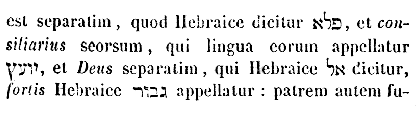
Multiplicabitur ejus imperium, et pacis non erit finis . Nec dubitare poterit de multiplici salvatoris imperio et pace ejus, quae non habeat finem, qui in Psalmis legerit: Postula a me et dabo tibi gentes [Col. 0022C] haereditatem tuam et possessionem tuam terminos terrae (Psal. II) . Et rursum: Et multitudo pacis, donec auferatur luna (Psal. LXXII) , id est, usque ad consummationem saeculi.
Super solium David et super regnum ejus, ut confirmet illud et corroboret , etc. Principatus autem illius et imperium erit super solium et regnum David, quod post captivitatem Babylonicam fuerat dissipatum, ut confirmet illud et roboret et doceat esse perpetuum. Ne cassa repromissio Dei judicetur ab incarnationis tempore usque in sempiternum.
Zelus Domini exercituum faciet hoc . Zelus, id est, aemulatio Domini fecit hoc, quia ipsi eum ad aemulationem provocaverunt in his qui non erant dii, et ille eos provocavit ad aemulandum in gentem quae [Col. 0022D] non erat gens (Rom. XI) .
«Factum est autem in diebus illis. Exiit edictum a Caesare Augusto, ut describeretur universus orbis. Haec descriptio prima facta est a praeside Syriae Cyrino. Et ibant omnes ut profiterentur, singuli in civitatem suam. Ascendit autem et Joseph a Galilaea de civitate Nazareth in Judaeam, in civitatem David, quae vocatur Bethleem, eo quod esset de domo et familia David, ut profiteretur cum Maria desponsata sibi uxore praegnante. Factum est autem cum essent ibi, impleti sunt dies ut pareret. Et peperit filium suum primogenitum, et pannis eum involvit, et reclinavit in [Col. 0023A] praesepio, quia non erat ei locus in diversorio. Et pastores erant in regione eadem vigilantes et custodientes vigilias noctis supra gregem suum. Et ecce angelus Domini stetit juxta illos et claritas Dei circumfulsit illos. Et timuerunt timore magno, et dixit illis angelus: Nolite timere. Ecce enim evangelizo vobis gaudium magnum, quod erit omni populo, quia natus est nobis hodie salvator, qui est Christus Dominus, in civitate David. Et hoc vobis signum: Invenietis infantem pannis involutum et positum in praesepio. Et subito facta est cum angelo multitudo militiae coelestis, laudantium Deum et dicentium: Gloria in altissimis Deo. Et in terra pax hominibus bonae voluntatis.»
Exiit edictum a Caesare Augusto, ut describeretur universus orbis . (Ex Beda.) Non solum autem haec nova mundi descriptio illius summi regis adventui testimonium perhibebat, qui congregatos, a mundi plagis omnibus, electos suos, aeternae beatitudinis albo conscriberet, verumetiam ejusdem regni duces, quieta sui moderaminis pace juvabat. Quia nimirum compressis a praeliorum turbine gentibus universis, praedicaturos orbi Christi discipulos, quo libet propter verbum ire vellent, ab ingruentium fervore seditionum, tremenda id temporis, ut ita dixerim, Romani nominis umbra protegebat. Exiit ergo edictum a Caesare Augusto, ut censum profiteretur universus orbis, quia imminebat edictum regis Christi, quo salutem consequeretur universus [Col. 0023C] orbis, qui vocabulum Augusti perfectissime complens, ut pote suos et augescere desiderans, et ipse augere sufficiens, censoribus suae professionis non ablatione pecuniae subjectos, sed fidei oblatione signare praecepit: Euntes , inquiens, in mundum universum, praedicate Evangelium omni creaturae: qui crediderit et baptizatus fuerit salvus erit (Marc. XVI) .
Haec descriptio prima facta est . Significat hanc descriptionem vel primam esse earum quae totum orbem concluserint, quia pleraeque jam partes terrarum saepe leguntur fuisse descriptae, vel certe primo tunc coepisse, quando Cyrenius, vir unus ex consensu curiae Romanae, a Caesare, jus dare gentibus, Syriam missus est. Quomodo tunc, imperante Augusto et Cyrenio praesidente, ibant omnes ut censum [Col. 0023D] profiterentur, singuli in suam civitatem, ita et nunc imperante per Ecclesiae praesides, id est, doctores, imo suadente et praemia pollicente Christo, eamus omnes, nullus excipiatur a censu justitiae, veniamus ad eum qui laboramus et onerati sumus, et ipse reficiet nos. Tollamus jugum ejus super nos, et discamus ab eo quia mitis est et humilis corde, et inveniemus requiem animabus nostris. Haec est enim nostra civitas et patria, requies videlicet beata et coelestis animarum, ad quam nimirum civitatem pacis et quietis ire et devote regi nostro thesaurum referre, est crescentibus quotidie virtutis ac fidei profectibus supernae lucis, quae sunt gaudia aeterna, speculari, et pro his acquirendis, [Col. 0024A] prospera mundi simul et adversa contemnere, et his acquisitis, mundatos nos ab omni inquinamento carnis, et spiritus, pretiosius auro Deo munus offerre. Sequitur.
Ascendit autem et Joseph a Galilaea de civitate Nazareth, in Judaeam civitatem David, quae vocatur Bethleem, et reliqua . (Ex Beda.) Joseph, auctus, vel augmentum interpretatur. Galilaea, transmigratio, volubilitas, rota, vel confessio; Nazareth, flos, virgultum, vel munditia; Judaea confessio, sive glorificans; Bethleem, domus panis; David, fortis manu, vel desiderabilis interpretatur. Nomen quidem inde mutuans, quod gigantem fortiter straverit, et pulcher aspectu decoraque facie fuerit. Illum scilicet de sua domo ac familia nasciturum [Col. 0024B] praefigurans, qui singulariter mundi principem debellaret, speciosus forma prae filiis hominum (Psal. XLV) : et ipse in Bethleem natus est, ut intellectualium pastor esset ovium, hoc est, simplicium rector animarum.
Factum est autem cum esset ibi, impleti sunt dies, ut pareret, et peperit filium suum primogenitum . Bene, non solum propter indicium regii stemmatis, sed propter nominis sacramentum, Dominus in Bethleem nascitur. ( Ex Gregor .) Bethleem namque domus panis interpretatur, ipse namque est, qui ait: Ego sum panis vivus, qui de coelo descendi (Joan. VI) . Locus ergo, in quo Dominus nasceretur, domus panis ante vocatus est, quia futurum erat ut ille per materiam carnis appareret, qui [Col. 0024C] electorum mentes interna satietate reficeret. ( Ex Beda .) Sed et usque hodie et usque ad consummationem saeculi Dominus in Nazareth concipi et in Bethleem nasci non desinit, cum quilibet audientium, verbi flore suscepto, domum se aeterni panis efficit. Quotidie in utero virginali, hoc est, in animo credentium per fidem concipitur, per Baptisma gignitur. Quotidie genitrix Dei Ecclesia, suum comitata auctorem, de rota mundanae conversationis, quod Galilaea sonat, in civitatem Juda, confessionis videlicet et laudis, ascendens, censum suae devotionis aeterno Regi persolvit. Quae in exemplum beatae semper virginis Mariae nupta simul et immaculata concipit nos virgo de spiritu, parit nos virgo sine gemitu, et quasi alii quidem [Col. 0024D] desponsata, sed ab alio fecundata, per singulas sui partes, quae unam Catholicam faciunt, praeposito sibi pontifici visibiliter jungitur, sed invisibili Spiritus sancti virtute cumulatur. Unde et bene Joseph auctus interpretatur, indicans nimirum hoc vocabulo, quod instantia magistri loquentis nil valet, si non augmentum superni juvaminis, ut audiatur, acceperit. Quod autem filium suum primogenitum Maria peperisse describitur, non juxta Helvidianos accipiendum est, alios quoque filios eam procreasse, quasi nequeat primogenitus dici, nisi qui habeat fratres, sicut non unigenitus nisi qui caret fratribus, solet appellari. Quia et testimonium legis, et manifesta ratio declarat, omnes unigenitos, etiam [Col. 0025A] primogenitos, non autem omnes primogenitos etiam unigenitos posse vocari, hoc est, non solum esse primogenitum, post quem alii, sed omnem ante quem nullus e vulva processerit. Est ergo Christus Jesus unigenitus in substantia Deitatis, primogenitus in susceptione humanitatis; primogenitus in gratia, unigenitus in natura.
Et pannis eum involvit et reclinavit in praesepio, quia non erat ei locus in diversorio . (Ex Beda.) Quid retribuam Domino pro omnibus quae retribuit mihi. Qui totum mundum vestit ornatu, pannis vilibus involvitur, ut nos stolam primam recipere valeamus. Per quem omnia facta sunt, manus pedesque cunis astringitur, ut nostrae manus ad opus bonum exertae, nostri sint pedes in viam pacis directi. [Col. 0025B] Cujus coelum sedes est, duri praesepis angustia continet, ut nos per coelestis regni gaudia dilatet. Qui panis est angelorum, in praesepio reclinatur, ut nos quasi sancta animalia carnis suae frumento reficiat. Qui ad dextram patris sedet, in diversorio loco eget, ut nobis in domo Patris sui multas mansiones praepararet. Quamvis hoc, quod non in parentum domo, sed in diversorio et in via nascitur, per significationem intelligi altius potest. Ipse namque ait: Ego sum via, veritas et vita (Joan. XIV) , qui ergo per divinitatis essentiam veritas et vita permanet, per incarnationis mysterium via factus est, qua nos ad patriam, ubi veritate et vita frueremur, adduceret.
Et pastores erant in regione eadem vigilantes, et [Col. 0025C] custodientes vigilias noctis super gregem suum . Quod vigilant itaque nato Domino pastores supra gregem ovium suarum, significant eos, cum dispensatione manifesta, vigilaturos in Ecclesia pastores animarum castarum, quibus dicatur: Pascite, qui in vobis est, gregem Dei (I Petr. V) .
Et ecce angelus Domini stetit juxta illos, et claritas Dei circumfulsit illos . (Ex Greg.) Bene autem vigilantibus pastoribus, angelus apparet, eosque Dei claritas circumfulget, quia illi prae caeteris videre sublimia merentur, qui fidelibus gregibus praeesse sollicite sciunt. Dumque ipsi pie super gregem vigilant, divina super eos gratia largius coruscat. (Ambr.) Videte Ecclesiae surgentis exordium, Christus nascitur, et pastores vigilare coeperunt, et bene [Col. 0025D] pastores vigilant quos bonus pastor informat. Grex igitur, populus. Nox, saeculum. Pastores sunt sacerdotes, aut fortasse ille sit pastor, cui dicitur: Esto vigilans et confirma caeteros, quia non solum episcopos, sed etiam angelos destinavit. Angelus Mariam, angelus Joseph, angelus pastores instruit, et concipiendum, et conceptum, et natum, coeli cives Deum testantur, ut et mortales sufficienter imbuant, et suum auctori servitium incessanter impendant. Nam et in sequentibus tentato, passuro, surgenti, atque ad coelos ascendenti, semper adesse perhibentur.
Et timuerunt timore magno, et dixit illis angelus: Nolite timere, ecce enim evangelizo vobis gaudium [Col. 0026A] magnum, quod erit omni populo . (Ex Beda.) Non omni populo Judaeorum, quorum plurimi rebelles exstitere, sed omni fidelium populo, de cunctis tribubus, gentibus, et linguis, in unam Christi Ecclesiam congregato, aeternum gaudium evangelizatur et magnum.
Quia natus est nobis hodie Salvator, qui est Christus Dominus, in civitate David . Ubi notandum quod angelus qui in noctis utique vigiliis pastores affatur, non ait: Hac nocte, sed, hodie natus est vobis Salvator . Non aliam scilicet ob causam, nisi quia gaudium magnum evangelizare veniebat. Nam ubi tristitia significatur, ibi saepe nox adjungitur, vel nominatur, ut illud: Omnes vos scandalum patiemini in me in ista nocte (Matth. XXVI) . Neque enim frustra [Col. 0026B] angelus tanto lumine cinctus apparuit, ut claritas Dei pastores circumfulsisse, hoc est, ex omni parte illorum radios luminis aspersisse dicatur, quod nunquam in tota Testamenti Veteris serie, toties angelis apparentibus, adjungitur. Sed mystice praemonuit, quod aperte postea monuit Apostolus, dicens: Nox praecessit, dies autem appropinquavit. Abjiciamus ergo opera tenebrarum et induamur arma lucis, sicut in die honeste ambulemus .
Et hoc vobis signum: Invenietis infantem pannis involutum , etc. (Ex Beda.) Notandum solertius quod signum nati Salvatoris datur, infantem non Tyrio exceptum ostro, sed pannis squalentibus involutum: non in ornatis auro stratoriis, sed in praesepibus inveniendum, hoc est, non tantum humilitatis [Col. 0026C] eum et mortalitatis, sed et paupertatis habitum suscepisse pro nobis, quia cum dives esset, pauper factus est pro nobis, ut nos illius inopia ditaremur (II Cor. VIII) . Cum esset Dominus coelorum, pauper factus est in terris, ut terrigenas doceret paupertate spiritus regnum acquirere posse coelorum.
Et subito facta est cum angelo multitudo militiae coelestis laudantium Deum et dicentium: Gloria in excelsis Deo et in terra pax hominibus bonae voluntatis . Uno evangelizante nuntio, natum in carne Deum, mox multitudo militiae coelestis advolans consono in laude creatoris ore prorumpit, ut et sui, sicut semper, obsequii devotionem Christo impendat, et nos suo pariter instruat exemplo, quoties vel aliquis [Col. 0026D] fratrum sacrae eruditionis verbis insonuerit, vel ipsi lecta sive audita, quae pietatis sunt, ad mentem reduxerimus, Deo statim laudes, ore, corde et opere reddendas. Et bene chorus adveniens angelorum, militiae coelestis vocabulum accipit, qui et duci illo potenti in praelio, qui ad debellandas aereas potestates apparuit, humiliter obsecundat, et ipse potestates easdem contrarias, ne mortales tantum tentare valeant, quantum volunt, fortiter armis coelestibus perturbat. Quia verus Deus est et homo nascitur, jure hominibus pax et Domino gloria canitur. Glorificant angeli Deum pro nostra redemptione incarnatum, quia dum nos conspiciunt recipi, suum gaudent numerum repleri: optant pacem hominibus, [Col. 0027A] quia quos infirmos prius abjectosque dispexerant, nascente in carne Domino, jam socios venerantur. Qui, cum pacem hominibus poscunt, exponunt, et quibus, videlicet bonae voluntatis, hoc est, eis qui suscipiunt natum Christum, non autem Herodi, pontificibus et Pharisaeis, caeterisque Antichristis, qui ejus nativitate audita, turbati sunt, eumque, quantum valuere, gladiis insecuti: Non est enim pax impiis, dicit Dominus (Isa. XLVIII) , Pax autem multa diligentibus nomen tuum, Domine, et non est illis scandalum (Psal. CXVIII) .
«Multifariam multisque modis olim Deus loquens Patribus in prophetis. Novissime diebus istis locutus est nobis in Filio, quem constituit haeredem [Col. 0027B] universorum, per quem fecit et saecula. Qui cum sit splendor gloriae et figura substantiae ejus, portansque omnia verbo virtutis suae, purgationem peccatorum faciens. Sedet ad dexteram majestatis in excelsis. Tanto melior angelis effectus, quanto differentius prae illis nomen haereditavit. Cui enim dixit aliquando angelorum: Filius meus es tu, ego hodie genui te; et rursum: Ego ero illi in patrem, et ipse erit mihi in filium? Et cum iterum introducit primogenitum in orbem terrae, dicit: Et adorent eum omnes angeli ejus. Ad angelos quidem dicit: Qui facit angelos suos spiritus, et ministros suos flammam ignis. Ad Filium autem: Thronus tuus Deus in saeculum saeculi, virga aequitatis, virga regni tui. Dilexisti justitiam et odisti iniquitatem, [Col. 0027C] propterea unxit te Deus, Deus tuus, oleo exsultationis prae participibus tuis. Et tu in principio Domine terram fundasti, et opera manuum tuarum sunt coeli. Ipsi peribunt, tu autem permanebis. Et omnes ut vestimentum veterascent, et velut amictum mutabis eos, et mutabuntur. Tu autem idem ipse es, et anni tui non deficient.»
Multifarie et multis modis olim Deus loquens patribus in prophetis . (Ex Joan. Chrys.) Dicendo enim: Multifarie et multis modis olim Deus locutus est patribus nostris in prophetis , significat quod alibi dictum est: Ego enim visiones multiplicavi, et in manibus prophetarum assimilatus sum (Osee XII) . Quod autem sequitur: In novissimis diebus locutus est nobis in Filio suo, veluti si diceret: Quid magnum, [Col. 0027D] si prophetas misit patribus nostris? nobis enim ipsum proprium Filium unigenitum misit.
Quem constituit haeredem universorum . Cum dicit: Quem constituit haeredem humanitatem significat, cui dictum est: Pete a me et dabo tibi gentes haereditatem tuam (Psal. II) . Ergo non jam portio Domini tantum Jacob, et sors ejus Israel, sed omnes nationes et gentes toto orbe divisas, in haereditatem distinctim sanguis amplectitur Christi. ( Ex Cassiod .) Haereditas ab hero dicta est, id est, domino, quod in ea potestate libera dominetur. ( Ex Joan. Chrys .) Haeredis hic utitur nomine, ut duo quaedam per hoc astruat et ostendat, hoc est, quod proprius sit Filius, et quod dominationis illi nulla contingat amissio. [Col. 0028A] Cum ergo dicit: Quem constituit haeredem universorum , subintelligitur, totius mundi.
Per quem fecit , inquit, et saecula . Ubi sunt qui dicunt? Erat, quando non erat: Sicut enim neminem judicat Pater, sed dicitur judicare per Filium, quoniam judicem genuit, sic etiam dicitur operari per Filium, quia eum constat opificem genuisse (Joan. V) .
Qui est splendor gloriae et character substantiae ejus . Non enim ex intellectu proprio haec loquebatur Apostolus, nec humano hanc dispensationem reperiebat ingenio, sed Spiritus sancti haec illi suggerebat administratio. Hoc cum religiositate debemus accipere, quia ex ipso impassibiliter natus, neque diminutus, neque in aliquo minoratus, sed Deus verus, de Deo vero, omnipotens de omnipotente, lumen de lumine, [Col. 0028B] ex quo omnia, per quem omnia, in quo omnia.
Portans omnia verbo virtutis suae . Solent Ariani proponere: Quia cum dixisset Deus: Fiat lux (Gen. I) , Pater praeceperit, Filius obedierit. Sed ecce ostendimus quia suo verbo cuncta perfecit: Ferens omnia, inquit, hoc est, gubernans, siquidem cadentia et ad nihilum tendentia continet. Non enim minus est, continere mundum quam fecisse. Sed si oportet aliquid audacius dicere, adhuc amplius est. Nam in faciendo quidem ex nullis existentibus rerum essentiae productae sunt; in continendo vero, quae facta sunt, ne ad nihilum redeant, continentur. Hic ergo dum reguntur, et ad invicem sibi repugnantia coaptantur, magnum et valde mirabile plurimaeque virtutis indicium declaratur.
Purgationem peccatorum faciens . Postquam enim dixit superius illa magna valdeque miranda, dicit nunc et de cura ejus et purgatione peccatorum, quam erga nos egit, sic et Petrus de illo ait: Qui peccata nostra pertulit in corpore suo super lignum, ut peccatis liberati, cum justitia vivamus (I Petr. II) . Et Joannes ait: Qui dilexit nos, et lavit nos a peccatis nostris, in sanguine suo, et fecit nos regnum, sacerdotes Deo et Patri suo.
Sedet ad dexteram majestatis in excelsis. In excelsis ergo dicens, non eum in loco concludit, sed ostendit omnibus altiorem, quoniam usque ad ipsum solium paternae claritatis. Sicut ergo Pater in excelsis est, sic et Filius. Consessus enim nihil demonstrat aliud, nisi honoris aequalitatem.
Tanto enim melior angelis effectus, quanto differentius prae illis nomen haereditavit . In hoc quod dixit, factus, pro susceptus, intellige, tanquam si diceret, melius est susceptus ab angelis.
Cui enim angelorum dixit aliquando: Filius meus es tu ? (Ex Cassiod.) Intendamus ergo quod posuit: Dixit ad me, Filius meus es tu , quod etiam ei dicturus erat post baptismum: Hic est filius meus dilectus, in quo mihi bene complacui . Et ut Christum unam personam, id est, Verbum carnem factum esse sentires, adjecit: Ego hodie genui te . Dicendo enim, hodie , coaeternitatem suae majestatis ostendit, hodie enim, apud Deum nullo initio incipit, nullo fine concluditur. Non est enim ibi, fuit, neque, erit, [Col. 0029A] sed semper permanet, et semper est, et quidquid dixeris illi, hodie est. Quod ait: Genui te , nativitatem illam significat, de qua Isaias dicit: Generationem ejus quis enarrabit (Isa. LIII) ?
Et rursum: Ego ero illi in patrem et ipse erit mihi in filium . In his duobus versibus, absolute debellatur iniquitas Judaeorum; quid enim evidentius, quid planius, quam ut esse credatur filius, qui invocat patrem: et rursum credatur esse pater, qui appellat filium.
Et cum iterum introducit primogenitum in orbem terrae, dicit . (Ex Joan. Chrys.) Introitum ergo assumptionem carnis appellat, foris enim eramus a Deo, sicut qui sunt extra regales aulas in vinculis colligati. Sic etiam Christus effecit, egressus quippe ad [Col. 0029B] nos, hoc est, carnem sumens et collocatus nobiscum, praecepta Regis innotuit, et sic nos a peccatis emundans, et ad Deum convertens, in aulam regalem, velut mediator optimus, introduxit. Propterea ergo exitum vocat suae incarnationis adventum. Tunc enim totum orbem possedit, cum ab universis est agnitus, quomodo si quis in quamdam domum introducat aliquem, et confestim omnes illius domus principes jubeat, ut illum proni simul omnes adorent. Ita et Christum secundum carnem jussit a cunctis angelis adorari, dicens: Et adorent eum omnes angeli Dei .
Et ad angelos quidem dicit: Qui facit angelos suos spiritus . (Ex Cassiod.) Qui facit angelos suos spiritus . Spiritus generale nomen est, incorporalis potentisque [Col. 0029C] substantiae, visibiliter, sive invisibiliter, operans quod ei divinitus inspiratur. Angelorum enim nomen non significat naturam, sed obedientiam, ἄγγελος enim Graeca lingua dicitur, qui Latine nuntius interpretatur. Nam quando mittuntur, angeli fiunt, cum tamen natura spiritus esse noscantur. Addidit, suos , ut illos ostenderet, qui recta mente Domini voluntatibus obsecundant.
Et ministros suos flammam ignis . (Ex Hieronym.) Ignem urentem dicit, ut in aliis lumen veritatis infundant, in aliis peccata consumant. Ignis iste sanctos purgat, peccatores consumit. Ignem istum, qui sanctus est, non timeat; qui peccator est, timeat. Ego puto istos esse ignes angelos ejus. Isti ergo angeli, quos consumunt? quiscunque est lignum, fenum, [Col. 0029D] stipula, qui autem aurum et argentum est, et lapides pretiosi, mittetur quidem in ignem, sed mundior invenietur.
Ad filium autem: Thronus tuus Deus in saeculum saeculi . (Ex Joan. Chrys.) Ecce magna differentia, quia illi quidem creati sunt, hic autem increatus. Intueris quomodo dividit, et cum quanta claritate creaturas a creatore discernit, ministros vocans, et Dominum: servos et haeredem. Ad proprium Filium dicit: Sedes tua Deus in saeculum saeculi. Ecce habes regni signaculum: Et virga aequitatis, inquit, virga regni tui. Ecce habes et aliud signaculum. ( Ex Cassiod .) Virga vero ista regulam divinae significat aequitatis, quae veraciter recta dicitur, quia [Col. 0030A] nulla pravitate curvatur, virga ista justos regit, impios percutit, continet veraciter supplicantes, sed haec virga non de cespite arboris egreditur, sed ab ipsius divinitatis justitia procedit, fortitudo invicta, aequitas rectissima, inflexibilis disciplina.
Dilexisti justitiam et odisti iniquitatem . Ipsa est virga recta, amare aequitatem et odisse nequitiam. Nemo enim perfecte diligit justitiam, nisi qui et actus pessimos exsecratur, quoniam diversis qualitatibus, eodem tempore non est in uno loco. Nec potest ipso momento ibi nigrum videri, ubi candor insederit, quia et praesentia lucis, noctis absentia est.
Propterea unxit te Deus, Deus tuus, oleo exsultationis prae participibus tuis . (Ex Hieron.) Alii reges, qui [Col. 0030B] typum illius praetulerunt, et regnando consortes dicti sunt, oleo corruptibili sunt inuncti. Hic vero Filius Dei a Deo Patre, oleo exsultationis, hoc est, resurrectionis, ascensionis dominationisque est delibutus, quia Christus natura unctus, nos per gratiam.
Et tu in principio, Domine, terram fundasti et opera manuum tuarum sunt coeli, ipsi peribunt, tu autem permanebis . (Ex Cassiod.) Cum dicit: Initio terram tu fundasti, Domine, ostendit quod a sanis mentibus non potest abnegari, quia creator ante creaturas suas, sine aliquo initio cognoscitur exstitisse. Et intende, quia hic opiniones philosophorum mirabili brevitate destruxit, quarum prima est: Mundum a nullo esse creatum. Secunda: Sine fine mansurum. [Col. 0030C] Sed cum dicitur: Initio terram tu fundasti, Domine, et opera manum tuarum sunt coeli , prima illa persuasio nefanda convincitur. Cum vero pronuntiatur: Ipsi peribunt , finem eos habere declaravit, ut nullus in stellis, gentili errore, confideret, cum eas immutandas esse sentiret. Quod autem ait: Tu autem permanes , sicut aeternitatem Domini ostendit, dum crearet omnia, sic, post coelos mutatos, ipsum dicit in majestatis suae gloria permanere.
Et omnia, ut vestimentum veterascent . Dicendo enim, omnia , ut arbitror, non angelos, non spiritales creaturas designat, quae in sua dignitate mansurae sunt, sed illa, quae commutatione probantur obnoxia. Quod autem dicit: Sicut vestimentum veterascent , [Col. 0030D] ad carnis fragilitatem videtur aptandum, ipsum enim veterascit, quod more vestis morte consumitur.
Et velut amictum immutabis eos, et mutabuntur . Amictum, id est opertorium, coelos forsitan debemus advertere, qui ad vicem velaminis terras operiunt, qui similiter, ut alia, commutabuntur. Et ut facta Domini ostenderet, jam sub aeternitate mansura dicit: Mutabis ea , et mutabuntur , quia nunquam erunt ad hoc corruptibile reditura. Nam si corruptioni ulterius subjacerent, non dicerentur esse mutata. Sicut Daniel propheta testatur, dicens: Quoniam sapientia et virtus et intellectus ipsius sunt, et ipse mutat tempora et saecula (Dan. II) , subjecit.
Tu autem idem ipse es, et anni tui non deficient. [Col. 0031A] Idem positum est contra illa quae dicta sunt, quoniam dum illa sint commutabilia, Dominus semper immutabilis perseverat: ipse omnipotentiam ejus designat, quia revera ipse est, cum se digna semper operatur, esse naturam ejus subsequenter declarat, quia ipse solus per se novit esse, qui, ut sit, alio non eget adjutore: sic istis tribus versibus, et mutatio creaturarum, et aeternitas Domini mirabili brevitate descripta sunt.
«In principio erat Verbum, et Verbum erat apud Deum, et Deus erat Verbum. Hoc erat in principio apud Deum. Omnia per ipsum facta sunt, et sine ipso factum est nihil, quod factum est. In ipso vita erat, et vita erat lux hominum. Et lux in tenebris [Col. 0031B] lucet, et tenebrae eam non comprehenderunt. Fuit homo missus a Deo, cui nomen erat Joannes. Hic venit in testimonium, ut testimonium perhiberet de lumine, ut omnes crederent per illum. Non erat ille lux, sed ut testimonium perhiberet de lumine. Erat lux vera, quae illuminat omnem hominem venientem in hunc mundum. In mundo erat, et mundus per ipsum factus est, et mundus eum non cognovit. In propria venit, et sui eum non receperunt. Quotquot autem receperunt eum, dedit eis potestatem filios Dei fieri, his qui credunt in nomine ejus, qui non ex sanguinibus, neque ex voluntate carnis, neque ex voluntate viri, sed ex Deo nati sunt. Et Verbum caro factum est, et habitavit in nobis. Et vidimus gloriam ejus, gloriam [Col. 0031C] quasi Unigeniti a Patre, plenum gratia et veritate.»
In principio erat Verbum, et Verbum erat apud Deum, et Deus erat Verbum , etc. ( Ex August .) In principio erat verbum . In quo principio? Et verbum erat apud Deum. Et Deus erat Verbum . Assidue enim dicenda nomina verborum, quasi viluerunt verba. Ecce verbum dico, cum dico Deus, quam breve est quod dixi, quatuor litteras et syllabas duas. Nunquidnam hoc totum est, Deus, quatuor litterae et syllabae duae? an quantum hoc vile est, tantum carum est, quod in eis intelligitur, quid factum est. In corde tuo, cum dicerem, Deus, magna et summa quaedam substantia cogitata est, viva, perpetua, omnipotens. infinita, ubique praesens, ubique tota, [Col. 0031D] nusquam exclusa, quando ista cogitas, hoc est, verbum de Deo in corde tuo. ( Ex Beda .) Alii evangelistae Christum ex tempore natum describunt, Joannes eumdem in principio fuisse testatur, dicens: In principio erat Verbum . Alii inter homines eum subito apparuisse commemorant, ille ipsum apud Deum semper fuisse declarat, dicens: Et Verbum erat apud Deum . Alii eum verum hominem, ille ipsum verum confirmat esse Deum, dicens: Et Deus erat Verbum . Alii hominem eum apud homines temporaliter conversatum, ille Deum, apud Deum in principio manentem ostendit, dicens: Hoc erat in principio apud Deum . Alii magnalia quae in homine gessit perhibent ille quod omnem creaturam visibilem [Col. 0032A] et invisibilem, per ipsum Deum Pater fecerit, docet, dicens: Omnia per ipsum facta sunt , et sine ipso factum est nihil . Fuerunt haeretici, qui dicerent: Si ergo natus est, Christus erat, quando non erat; hos in primo sermone redarguit evangelista, cum dicit: In principio erat Verbum . Fuerunt alii qui Christum hominem tantum, non et Deum crederent, quos consequenter opprimit, cum ait: Et Deus erat Verbum .
Omnia per ipsum facta sunt . (Ex Aug.) Universa enim creatura per ipsum facta est, major, minor, superna, inferna, spiritalis, corporalis, nulla enim forma, nulla compages, nulla concordia partium, nulla qualiscunque substantia, quae potest habere pondus, numerum, mensuram, esse potest, nisi per [Col. 0032B] illud Verbum, et ab illo Verbo creatore, cui dictum est: Omnia in mensura, in numero et pondere disposuisti .
Et sine ipso factum est nihil . Peccatum non per ipsum factum est, et idolum non est per Verbum factum.
( Ex Hieron .) Per hanc enim sententiam excluduntur idola. Propter quod ait Apostolus: Scimus quia nihil est idolum (I Cor. VIII) .
( Vulg .) Omnia creata vel facta per Verbum bona sunt, et modo suo subsistunt. Omnia igitur creata modo suo subsistunt, omne quod subsistit, naturam habet, nihil non habet naturam, nihil igitur non subsistit, malum sine Verbo factum est, sine Verbo factum est nihil, malum igitur nihil est. Nihil [Col. 0032C] vero non subsistit, malum igitur non subsistit; nullum malum subsistit, omnis creatura subsistit. Nullum igitur malum creatura est, quare nihil neque bonum aliquod est, neque ullo modo subsistit, neque ulla creatura est, et omne quod modo aliquo est, et bonum est, et non nisi per Verbum est.
Quod factum est: In ipso vita est . (Ex Aug.) Sic distinguendum est, quod factum est, hic subdistingue, et deinde infer. In ipso vita est . Facta est terra, sed in ipsa non est vita. Est autem in ipsa sapientia, specialiter ratio quaedam, qua terra facta est, haec vita est, terram vides, est in arte terra. Coelum vides, est in arte coelum, solem et lunam vides, sunt ista in arte, sed foris corpora sunt, in arte vita sunt.
Et vita erat lux hominum . Ergo illa vita, per quam facta sunt omnia, ipsa vita, lux est, et non quorumcunque animalium, sed lux hominum, quia ex ipsa homines illuminantur, pecora non illuminantur, homo enim factus est ad imaginem Dei, et habet rationalem mentem, per quam possit percipere sapientiam.
Et lux in tenebris lucet, et tenebrae eam non comprehenderunt . Homines infideles, injusti, iniqui, rapaces, avari, amatores saeculi, hi sunt tenebrae, quae Dominum non comprehendunt, id est, non intelligunt. Purga de oculo tuo, quidquid mali est, et videbis sapientiam, quae Deus est: Beati mundo corde, quoniam ipsi Deum videbunt (Matth. V) .
Fuit homo missus a Deo, cui nomen erat Joannes . Quia ergo Dominus Jesus Christus sic erat homo, ut lateret in illo Deus, missus ante illum magnus homo, per cujus testimonium inveniretur plusquam homo. Et quis est hic? fuit homo: et quomodo possit iste verbum de Deo dicere? Missus a Deo: quid vocabatur? cui nomen erat Joannes: quare venit? audi.
Hic venit in testimonium, ut testimonium perhiberet de lumine, ut omnes crederent per illum. Non erat ille lux , etc. Qualis iste, qui testimonium perhiberet de lumine? Magnum aliquid iste Joannes, ingens meritum, magna gratia, et magna celsitudo. Quare igitur venit? Ut testimonium perhiberet de lumine . Ut quid hoc? Ut omnes crederent per illum. Et de quo lumine testimonium perhiberet. Erat lux vera , quare [Col. 0033B] additum est, vera ? Quia et homo illuminatus dicitur lux, sicut Dominus Jesus discipulis ait: Vos estis lux mundi , et Apostolus inquit: Fuistis aliquando tenebrae, nunc autem lux in Domino . Nam et oculi nostri dicuntur lumina, sed nisi aut per noctem lucerna accendatur, aut per diem sol exeat, lumina illa sine causa patent, sic et Joannes erat lux, sed non vera, quia illuminatione factus est lux.
Erat lux vera, quae illuminat omnem hominem venientem in hunc mundum . (Ex Beda.) Omnem videlicet, qui illuminatur sive naturali ingenio, seu sapientia divina. Sicut enim nemo a semetipso esse, ita etiam nemo a semetipso sapiens esse potest, sed illo illustrante, de quo scriptum est: Omnis sapientia a Domino Deo est , cujus utramque naturam, et [Col. 0033C] divinam videlicet, qua semper ubique totus manet, et humanam, ex qua in tempore natus, loco inclusus, apparuit; consequenter Evangelista describit, dicens:
In mundo erat . (Ex August.) Non putes quia sic erat, quomodo in mundo est terra, coelum, luna, stellae, arbores, pecora, et homines; non sic Deus in mundo erat, sed sicut artifex regens quod fecit. Deus autem infusus mundo ubique positus, praesentia majestatis facit et gubernat quod fecit.
Et mundus per ipsum factus est, et mundus eum non cognovit . Quid est, Mundus per ipsum factus est ? coelum, terra, mare, et omnia quae in eis sunt, mundus dicitur. Nunquid coeli non cognoverunt, qui stellam miserunt (Matth. II) ? Aut angeli non cognoverunt, [Col. 0033D] qui accesserunt et ministrabant ei (Matth. IV) ? Aut sidera non cognoverunt Salvatorem suum? omnia undique testimonium perhibuerunt. Qui ergo non cognoverunt? amatores mundi, qui, amando mundum, dicti sunt mundus, hoc enim meruerunt appellari, quod ille, ubi habitant. Nam qui non diligunt mundum, carne versantur in mundo, sed corde inhabitant coelum.
In propria venit . (Ex Beda.) In propria, quia in mundo, quem per divinitatem fecit, per humanitatem natus apparuit. In mundo ergo erat, per divinitatem; in mundum venit, per incarnationem. Venire quippe vel abire humanitatis est, manere et esse, divinitatis.
Et sui eum non receperunt . Homines scilicet, quos ipse creavit, Judaei quos peculiarem sibi elegerat in plebem, quibus suae cognitionis revelaverat arcanum, quos mirificis patrum glorificaverat actis, quibus suae legis doctrinam contulerat. Ex quibus se incarnandum promiserat, et in quibus se incarnatum, ut promiserat, ostendit, ipsi eum recipere magna ex parte recusarunt; multi enim eum ex utroque populo respuerunt, multi receperunt, de quibus Evangelista consequenter insinuat, dicens:
Quotquot autem receperunt eum, dedit eis potestatem filios Dei fieri , etc. (Ex August.) Magna benevolentia, magna misericordia, unicus natus est, et noluit manere unus, sed Deus unicum eumdem ipsum quem genuerat, et per quem cuncta creaverat, [Col. 0034B] misit in hunc mundum, ut non esset unus, sed fratres haberet adoptatos. Non enim nos nati sumus de Deo quomodo ille unigenitus, sed adoptati per gratiam ipsius. Ergo potestas, ut filii Dei fiant, qui credunt in eum, cum hoc ipsum datur eis, ut credat in eum. Dominus noster, matrem tantummodo habet super terram, et nos patrem tantummodo habemus in coelo. Cum enim accepisset mortalem hominem Adam, dedit hominibus immortalem suum Patrem Deum.
( Ex Vulg .) Ex munere divino, prius potestate adoptionis accepta, postea consecuti sunt, ut esse filii Dei mererentur.
Qui non ex sanguinibus, neque ex voluntate viri, neque ex voluntate carnis, sed ex Deo nati sunt . (Ex [Col. 0034C] August.) Quod dicit: Ex sanguinibus , non est Latinum, sed Graece positum est pluraliter αἱμάτων ; apud Latinos enim semper sanguis dicitur singulariter, sed maluit ille qui interpretabatur, quasi minus Latine loqui, secundum grammaticos, et tamen explicare veritatem secundum auditores infirmos. Si enim diceret, ex sanguine , singulariter, non explicaret quod volebat. Ex sanguinibus enim maris et feminae nascuntur homines. Quid autem subdit: Neque ex voluntate carnis? Carnem pro femina posuit, quia de costa cum facta esset, dixit Adam: Hoc nunc os ex ossibus meis, et caro de carne mea . Et Apostolus: Nemo carnem suam odio habet , id est, uxorem. Carnalis quippe nostra generatio ex sanguinibus, id est, ex natura maris et feminae ducit [Col. 0034D] originem. Ac vero spiritualis Spiritus sancti gratia ministratur, quam a carnali distinguens Dominus, ait: Nisi quis renatus fuerit ex aqua et spiritu, non potest introire in regnum Dei. Quod natum est ex carne, caro est, et quod natum est ex spiritu, spiritus est .
Et verbum caro factum est et habitavit in nobis . (Ex Hieron.) Verbum caro factum est, ut nos de carne transiremus in Verbum, nec Verbum desiit esse, quod fuerat. Nec homo perdidit esse, quod natus est, gloria est aucta, non natura mutata.
( Ex August .) Medicus ergo iste sic venit, ut de carne vitia carnis exstingueret, et de morte occideret mortem. Ideo Verbum caro factum est, ut possimus [Col. 0035A] dicere: Vidimus gloriam ejus. Qualem gloriam? qualis factus est Filius hominis.
( Ex Beda .) Et Verbum caro factum est. Nihil aliud debet intelligi, quam si diceretur: et Deus homo factus est, carnem videlicet induendo et animam, ut sicut quisque nostrum unus homo ex carne constat et anima, ita unus ab incarnationis tempore Christus, ex divinitate, carne et anima constat.
Et vidimus gloriam ejus, gloriam quasi unigeniti a Patre . Gloria Christi, quam ante incarnationem videre non poterant homines, post incarnationem viderunt, aspicientes humanitatem miraculis refulgentem, et intelligentes divinitatem intus latitantem, illi maxime, qui ejus claritatem ante passionem transfigurati, in monte sancto contemplari meruerunt, [Col. 0035B] voce delapsa ad eum hujuscemodi a magnifica gloria: Hic est Filius meus dilectus, in quo mihi complacui (II Petr. I) , et post passionem, resurrectionis, ascensionisque ipsius gloria conspecta, spiritus ejus sunt dono mirifice refecti, quibus omnibus manifeste cognoverunt, quod hujusmodi gloria, non cuilibet sanctorum, sed illi soli homini, qui esset in divinitate unigenitus a Patre conveniret.
Plenum gratia et veritate . (Ex Fulgentio.) Quia et in divina natura, quia Deus veritas est, plenus est, et in humana, in qua homo verus, gratia factus est, plenus est: in illa plenitudine Deus est in forma Dei, aequalis Deo; in ista plenitudine, servus in forma servi, quia in similitudine hominum factus, et habitu est inventus ut homo (Philip. II) .
( Ex Beda .) Gratia plenus erat, et est homo Christus Jesus, cui singulari munere, prae caeteris mortalibus datum est, ut statim ex quo in utero virginis concipit et homo fieri inciperet, verus esset et Deus.
Istarum duarum in plurimis fit concordia lectionum. Evangelium dicit: In principio erat Verbum . Et Apostolus: Tu in principio, Domine, terram fundasti . Evangelium dicit: Omnia per ipsum facta sunt, et mundus per ipsum factus est . Apostolus dicit: Per quem fecit et saecula . Notandum quod Dominum Jesum Christum, utrique Deum appellaverunt: Evangelium ubi ait: Et Deus erat Verbum . Apostolus ubi dicit: Thronus, tuus Deus, in saeculum [Col. 0035D] saeculi (Psal. XLV) .
«Stephanus plenus gratia et fortitudine, faciebat prodigia et signa magna in populo. Surrexerunt autem quidam de Synagoga, quae appellabatur Libertinorum et Cyrenensium et Alexandrinorum, et eorum qui erant a Cilicia et Asia, disputantes cum Stephano, et non poterant resistere sapientiae et spiritui, qui loquebatur. Audientes haec, dissecabantur cordibus suis, et stridebant dentibus in eum. Cum autem esset Stephanus plenus Spiritu sancto, intendens in coelum vidit gloriam Dei, et Jesum stantem a dextris Dei. Et ait: Ecce video [Col. 0036A] coelos apertos, et Filium hominis stantem a dextris virtutis Dei. Exclamantes autem voce magna, continuerunt aures suas, et impetum fecerunt unanimiter in eum. Et ejicientes eum extra civitatem, lapidabant, et testes deposuerunt vestimenta sua secus pedes adolescentis, qui vocabatur Saulus. Et lapidabant Stephanum, invocantem et dicentem, Domine Jesu, suscipe spiritum meum. Positis autem genibus, clamavit voce magna, dicens: Domine, ne statuas illis hoc peccatum. Et cum hoc dixisset, obdormivit in Domino.»
Stephanus plenus gratia et fortitudine (Ex Hieron). Stephanus, Στέφανος Graece, Latine coronatus dicitur, qui pulcherrima ratione quod percepturus erat in re, quodam praesagio praeoccuparet in nomine: [Col. 0036B] lapidatus humiliter, sed sublimiter coronatus, Hebraice autem interpretatur norma vestra, quorum videlicet? nisi martyrum sequentium, quibus primo patiendo, forma factus est, moriendo pro Christo.
Faciebat signa et prodigia . Prodigia dicuntur, porro dicentia, id est, novum aliquid longe futurum praedicentia. Signa dicuntur indicia aliqua, ab eo quod aliquid significent.
Surrexerunt autem quidam de Synagoga, quae appellatur Libertinorum et Cyrenensium, et Alexandrinorum, et eorum qui erant a Cilicia et Asia, disputantes cum Stephano . Synagoga Graece, Latine congregatio dicitur. Libertini, qui de servitute manumissi et libertate donati sunt. Constat autem, de stirpe servili fuisse, qui primo fidei Christi restiterunt, qui etsi [Col. 0036C] ab hominibus emancipati, tamen servi erant peccati. Cilicia, coetus, luctus, vel vomitus interpretatur. Alexander, auferens angustias tenebrarum. Asia, elevata vel elatio interpretatur.
Et non poterant resistere sapientiae et spiritui, qui loquebatur . Hoc est quod Dominus ipse suis martyribus ait: Ego enim dabo vobis os et sapientiam, cui non poterunt resistere et contradicere omnes adversarii vestri (Luc. XXI) .
Audientes autem hoc, dissecabantur cordibus suis, et stridebant dentibus . Conscientia cum arguitur, impatiens est, et non poterant Christi veritatem sustinere. Aures eorum furorem mentis in vultu demonstrabant. Stridebant dentibus in eum, carnes lacerare cupientes, ostendentes se esse belluas. Inde enim [Col. 0036D] minabantur, unde tantummodo ostendebantur et belluae, et impletum est in illis: Homo cum in honore esset, non intellexit, comparatus est jumentis insipientibus, et similis factus est illis (Psal. XLIX) .
Cum autem esset Stephanus plenus Spiritu sancto, intendens in coelum, vidit gloriam Dei . Quia plenus erat Spiritu sancto, propterea intendebat in coelum. Plenitudo enim Spiritus sancti, non eum permittebat terrena aspicere. Nam et Moyses vidisse dicitur gloriam Dei, et populus in consecratione domus Domini, vidisse dicitur gloriam Dei Israel (Exod. XXXIV) . Et apostolus Joannes dicit in Evangelio: Et vidimus gloriam ejus, gloriam quasi unigeniti a Patre (Joan. I) .
Et Jesum stantem a dextris Dei . Stantem dixit, [Col. 0037A] non sedentem, stabat cum martyre suo, et pugnabat quasi in praelio constitutus. Ille lapidabatur, et Jesus suscipiebat plagas.
Ecce video coelos apertos . Jam mihi aperta est via; adhuc in terra sum, etiam ad coelorum regna aspicio; coelos istos aperuerunt mihi lapides vestri, persecutione vestra aperuistis mihi coelos, usque adhuc coelos apertos non videram, sanguis meus clavis coelorum est. Ac si diceret: Deponite lapides, confitemini Jesum, et vos videbitis coelos apertos, et Filium hominis stantem a dextris Dei, sed illi lapides tenentes, persecutionis veritatem audire non poterant.
Et Filium hominis stantem a dextris virtutis Dei . Cum Dominus Jesus Christus Dei et hominis perfectus sit filius, quid est, quod hunc beatus martyr, [Col. 0037B] hominis potius quam Dei Filium appellare maluit, cui plus utrique gloriae videretur allaturus, si eum Dei potius quam hominis Filium appellare voluisset, nisi ut hoc testimonio Judaeorum confunderetur infidelitas, qui se hominem crucifixisse, et hunc Deum credere noluisse meminerunt? Ad confortandum ergo beati martyris sapientiam, coelestis regni janua panditur, et ne innoxius homo lapidatus titubet in terra, Deus homo crucifixus apparet coronatus in coelo. Unde? Quia, stare, pugnantis vel adjuvantis est, recte a dextris Dei stantem vidit, quem inter homines persequentes adjutorem habuit.
Exclamantes autem voce magna, continuerunt aures suas . (Ex Hieron.) O pravos animos, claudunt aures, ne apertis illis ingrediatur veritas. Claudunt aures, [Col. 0037C] quia clausos habebant et oculos, et coelos apertos non viderant.
Et impetum fecerunt unanimiter in eum . Una impietas, unus impetus, major consensus in scelere quam in religione.
Et ejicientes eum extra civitatem lapidabant . (Ex Beda.) Et Dominus extra portam passus est, qui nos elegit de mundo in supernum suum regnum et gloriam, et Stephanus, quasi advena mundi, extra civitatem lapidatur. Non enim habuit hic manentem civitatem, sed futuram tota mente quaerebat. Et juxta rerum immutationem martyr mundi cordis, ad coelos intuitum dirigit, persecutor dure cervicis manus ad lapides mittit.
Et testes deposuerunt vestimenta secus pedes adolescentis [Col. 0037D] qui vocabatur Saulus . Quare testes falsi primum lapidaverunt? Quia lex praeceperat ut quicunque testimonium diceret contra aliquem causae mortis, ipse primum lapidem mitteret in eum, quem primum ore occiderat suo (Deut. XVII) .
Ex Hieron .) Deponunt vestimenta, qui jam Dei auxilium projecerant. Saulus autem tentatio, sive infernus interpretatur. Recte igitur qui lapidabant martyrem, vestimenta sua juxta infernum reliquerant.
Et lapidabant Stephanum invocantem et dicentem: Domine Jesu, suscipe spiritum meum . Videte confessionem: hominem videt stantem, et tamen Dominum confitetur. Ac si diceret: Domine Jesu, stas quidem quasi homo, sed adjuvas quasi Deus. Stas, [Col. 0038A] surrexisti ut me venientem susciperes et amplexareris, filius invocat patrem, martyr invocat agonitheten. Domine Jesu, suscipe spiritum meum, qui expellitur de carne mea, propter confessionem tuam, fas est enim ut spiritus, qui pro te funditur, a te suscipiatur.
Positis autem genibus clamavit voce magna dicens: Domine, ne statuas illis hoc peccatum, et cum hoc dixisset, obdormivit . (Ex Beda.) Pro se quidem stans oravit, pro inimicis genu flexit, quia ipsorum major iniquitas, majus supplicandi remedium flagitabat. Et mira beati martyris virtus, qui sic zelo fervebat, ut eis a quibus tenebatur palam suae perfidiae culpas exprobraret, sic dilectione ardebat, ut in morte quoque pro eis a quibus occidebatur, [Col. 0038B] oraret.
«Dicebat Jesus turbis Judaeorum et principibus sacerdotum: Ecce ego mitto ad vos prophetas et sapientes et scribas, et ex illis occidetis et crucifigetis, et ex eis flagellabitis in synagogis vestris; et persequimini de civitate in civitatem, ut veniat super vos omnis sanguis justus, qui effusus super terram a sanguine Abel justi usque ad sanguinem Zachariae, filii Barachiae, quem occidistis inter templum et altare. Amen dico vobis, venient haec omnia super generationem istam. Hierusalem, Hierusalem, quae occidis prophetas, et lapidas eos qui ad te missi sunt, quoties volui congregare filios tuos, quemadmodum gallina congregat pullos [Col. 0038C] suos sub alas, et noluisti! Ecce relinquetur vobis domus vestra deserta. Dico enim vobis, non me videbitis amodo, donec dicatis: Benedictus qui venit in nomine Domini.»
Dicebat Jesus turbis Judaeorum: Ecce ego mitto ad vos prophetas et sapientes et scribas, et ex illis occidetis et crucifigetis et flagellabitis in synagogis vestris, et persequimini de civitate in civitatem, ut impleatis mensuram patrum vestrorum . (Ex Hieron.) Id est, quod illis defuit, vos adimplete. Illi enim interfecerunt servos, vos Dominum crucifigite; illi prophetas, vos eum qui per prophetas praedicatus est. Potest hoc et ad discipulos ejus referri, de quibus nunc dicit: Ecce ego mitto ad vos prophetas, etc. Simulque observa juxta Apostolum scribentem ad Corinthios, [Col. 0038D] varia dona esse discipulorum Christi (I Cor. XII) : alios prophetas, qui ventura praedicant; alios sapientes, qui noverunt quando debeant proferre sermonem; alios scribas in lege doctissimos, qui describunt in tabulis cordis sui, ex quibus lapidatus est Stephanus, Paulus occisus, crucifixus Petrus, flagellati in Actibus Apostolorum discipuli, et persecuti eos sunt de civitate in civitatem, expellentes de Judaea, ut ad gentium populum transmigrarent.
Ut veniat super vos omnis sanguis justus, qui effusus est super terram . (Ex Beda.) Quaeritur, quomodo sanguis omnium prophetarum atque justorum ab una Judaeorum generatione requiratur, cum et multi sanctorum, sive ante incarnationem, seu post mortem, [Col. 0039A] resurrectionemque Salvatoris ab aliis sunt nationibus interempti, et ipse Dominus, Judaeis licet acclamantibus, a Romano tamen praeside, Romanisque sit militibus crucifixus. Sed moris est Scripturarum, duas saepe generationes hominum, bonorum scilicet et malorum, computare, hoc est, eorum qui non ex sanguinibus, neque ex voluntate carnis, neque ex voluntate viri, sed ex Deo nati sunt , et eorum, quibus dicitur: Vos ex patre diabolo estis , et alibi: Serpentes, generatio viperarum .
( Hieron .) Dicamus breviter, quare sanguis Abel justi usque ad Zachariam filium Barachiae, ab illa generatione quaeratur, cum neutrum eorum occiderit? Regula Scripturarum est, duas generationes, bonorum vel malorum nosse. Bonorum, de qua scriptum [Col. 0039B] est: Haec est generatio quaerentium Dominum, quaerentium faciem Dei Jacob (Psal. XXIV) , et in alio loco de omnibus sanctis: Generatio rectorum benedicetur (Psal. CXII) . De malis vero: Generatio viperarum , et: Requirentur omnia a generatione ista . Et illud: Generatio prava atque perversa, haeccine reddis Domino, popule stulte et insipiens (Deut. XXXII, 6) ? et: Gens sine consilio et sine prudentia? Ergo isti, qui similia Cain et Joas contra Apostolos gesserunt, de una generatione esse referuntur: et omnes sancti, qui similes in virtutibus sunt, una generatio esse videtur.
A sanguine Abel justi usque ad sanguinem Zachariae filii Barachiae . (Ex Beda.) Quaeritur cur duos hos specialiter posuit Abel et Zachariam, quia neuter [Col. 0039C] tunc praesens fuit, et postea multi ab eis sancti occisi sunt, nimirum pro aequalitate piaculi. Cain enim occidit Abel fratrem suum, nulla causa justa existente. Joas quoque rex filium sacerdotis nutrientis se et eripientis de morte, et in templo septem annis abscondentis se, cum Athalia, avia ejus, omne semen regium, desiderio regni, interfecisset, maximeque collactaneum suum; horum, inquam, omnium oblitus, interfecit. Item quaeritur: Si sanguis horum, qui post hunc occisi sunt, venit super eos, nimirum Zacharias sanctos in fine mundi passuros, significat, quorum omnium sanguis veniet super generationem malam, cujus malitia unita est, quare a sanguine Abel, qui primus martyrium passus est, mirum non est. Sed quare usque ad sanguinem Zachariae [Col. 0039D] quaerendum est, cum et multi post eum usque ad nativitatem Christi, et ipso mox nato innocentes in Bethleem pueri sint ab hac generatione perempti (Matth. II) ? Nisi forte, quia Abel pastor ovium, Zacharias sacerdos fuit, et hic in campo, ille in atrio templi necatus est. Utriusque gradus martyres, et laici scilicet et altaris officio mancipati, sub eorum voluit intimare vocabula.
Quem occidistis inter templum et altare . (Ex Hieron.) Inter parietem templi et altare incensi interius, sive, ut alii dicunt, inter ruinas templi et altare hostiarum exterius. Quaeritur qui sit iste Zacharias, filius Barachiae, qui occisus est inter templum et altare, quia multos legimus Zacharias. Sed, ne libera [Col. 0040A] nobis tribueretur erroris facultas, manifeste ostendit, de quo dicit hoc, quod additum est: Quem occidistis inter templum et altare , illum significare Zachariam volens, qui occisus est a Joas rege Judae, sicut Regum narrat historia. Sed observandum quod ille Zacharias non sit filius Barachiae, sed filius Joadae sacerdotis, unde Scriptura refert: Non fuit recordatus Joas patris ejus Joadae, quae sibi fecisset bona (II Par. XXIV) . Cum ergo Zachariam teneamus et occisioni consentiat locus, quaerimus quare Barachiae dicitur filius et non Joadae. Barachias in lingua nostra benedictus Domini dicitur, et Joada justitia interpretatur, et ideo vir justitia plenus, benedictus Domini recte appellatur.
Hierusalem, Hierusalem, quae occidis prophetas et [Col. 0040B] lapidas eos qui ad te missi sunt . (Ex Hier.) Hierusalem, non saxa et aedificia civitatis, sed habitatores vocat, quam patris plangit affectu, sicut et in alio loco legimus, quod videns eam, fleverit (Luc. XIX) .
Quoties volui congregare filios tuos, quemadmodum gallina congregat pullos suos sub alas suas, et noluisti . In eo autem quod dicit: Quoties volui congregare filios tuos , omnes retro prophetas a se missos esse testatur. Avis quoque similitudinem congregantis sub pennis nidum suum, in Cantico Deuteronomii legimus: Sicut aquila protegit nidum suum, et super pullos suos desideravit, expandens alas suas, suscepit eos et tulit super pennas suas (Deut. XXXII) . Et pulchre, qui Herodem de sua nece tractantem, vulpem vocarat (Luc. XIII) , seipsum avi comparat. [Col. 0040C] Fraudulenta enim vulpes semper insidias avibus tendere non cessat. Quod dicit: Qui ad te missi sunt , hoc est, qui ad profectum tuum missi fuerant. Quoties volui , ac si diceret, Indebita reddis mihi, congregare de Aegypto et Babylone pullos sub alas. Duae alae Domini, Moses et Aaron, qui eduxerunt populum de Aegypto, sive Zorobabel et Esdras et Nehemias, et Jesus filius Josedec duces, qui eduxerunt populum Israel de Babylone. Quaeritur quomodo dicit: Quoties volui , cum Propheta dixerit: Omnia quae voluit Dominus fecit , id est, nolui ex me, sed voluistis ex vestra parte.
Ecce relinquetur domus vestra deserta . (Ex Hieron.) Hoc ipsum ex persona Hieremiae jam ante dixerat: Reliqui domum meam, dimisi haereditatem meam, [Col. 0040D] facta est mihi haereditas mea quasi spelunca hyaenae (Hier. XII) . Desertam Judaeorum domum idem templum illud, quod ante fulgebat augustius oculis comprobamus, qui habitatorem Christum perdidit, et haereditatem praeripere gestiens, occidit haeredem. Aliter: Ecce relinquetur vobis domus vestra deserta, hoc est, nunc vestra est, non mea, quae dudum domus mea vocabatur. Deserta in vindicta crucis, sive templum Judaeorum a Domino habitatore relinquetur, ibitque ad gentium Ecclesiam.
( Ex Beda .) Ipsam civitatem, quam nidum suum vocaverat, nunc domum Judaeorum appellat, quae non immerito Domini auxilio nudata, suae ditioni relinquitur, quia non solum avis illius omnipotentis, [Col. 0041A] quam Matthaeus gallinam nuncupat, alis protegi despexit, sed eamdem avem, se protegere volentem, vulpibus devorandam, idem Herodi et Pilato crucifigendum tradidit Christum. Nec mora vulpium earumdem, hoc est, regum terrae, et ipsae rapinae donatur; occiso enim Domino venerunt Romani, et quasi nidum vacuum diripientes, tulerunt eorum locum, gentem et regnum.
( Ex Hieron .) Sciendum quia hyena, unde superius in testimonio Hieremiae mentio facta est, bestia est quae noctu cadaveribus mortuorum vivit, et de sepulcris solet effodere corpora, nihilque est immunditiae, quo non vescatur; talis est Israel, offendens Dominum suum, et omnium bestiarum morsibus traditus, nempe quia a Domino est derelictus.
Dico enim vobis: Non me videbitis amodo donec [Col. 0041B] dicatis: Benedictus qui venit in nomine Domini . (Ex Aug.) Haec quidem turbae dixerunt Domino, venienti ad Hierusalem, sed quia Lucas non dicit, quo hinc abscesserit Dominus, ut non veniret, nisi eo tempore quo jam illud diceretur, perseverat quippe in itinere suo, donec veniat Hierusalem, cogit profecto hoc mystice intelligi, de illo ejus adventu, quo in claritate venturus est, maxime cum Matthaeus Dominum praedecantatas ei a turba laudes dixisse testatur.
( Ex Hieron .) Idem quod dicit: Donec dicatis: Benedictus qui venit in nomine Domini , hoc vult intelligi, nisi poenitentiam egeritis, et confessi fueritis, ipsum me esse, de quo prophetae cecinerunt, filium [Col. 0041C] omnipotentis Patris, meam faciem non videbitis. Habent Judaei, datum sibi tempus poenitentiae, confiteantur: Benedictus qui venit in nomine Domini, et Christi ora conspicient.
Istarum duarum in hoc sit concordia lectionum, quia utraque de lapidatione justorum, unam faciunt mentionem. Haec est lectio Actuum Apostolorum, de beati Stephani, perspicue, et proprie jam patrata. Evangelii vero lectio, de cujuslibet prophetae lapidatione absolute facit, non proprie, mentionem.
«Benedictus Deus et Pater Domini nostri Jesu Christi, qui benedixit nos in omni benedictione spirituali, in coelestibus in Christo: Sicut elegit nos in ipso ante mundi constitutionem, ut essemus sancti et immaculati in conspectu ejus in charitate. Qui praedestinavit nos in adoptionem filiorum per Jesum Christum, in ipsum, secundum propositum voluntatis suae, in laudem gloriae gratiae suae, in qua gratificavit nos in dilecto filio suo, in quo habemus redemptionem, per sanguinem ejus in remissionem peccatorum, secundum divitias gratiae ejus, quae superabundavit in nobis.»
Benedictus Deus et Pater Domini nostri Jesu Christi, qui benedixit nos in omni benedictione spirituali [Col. 0042A] in coelestibus in Christo . (Ex Hieron.) Quomodo secundum substantiam Deus bonus, nos communione sui, efficit bonos, ita ipse benedictus, nos praestat esse benedictos. Benedixit autem nos, non in una benedictione tantum, sed et in cunctis; non quod omnes omnia consequamur, sed dum singuli, vel singulas, vel plures habemus, ex omnibus omnes singulas possideamus, et non in terrenis benedictionibus, sed spiritalibus. Quaeritur, quomodo adhuc in terra nos positos coelesti benedictione benedixerit. Sive igitur quod conversatio nostra in coelis est, et non sumus de mundo isto, sed deposita imagine τοῦ χόϊκοῦ , portamus imaginem supercoelestis, et in carne non vivimus, sed in spiritu; sive quod omnis benedictio spiritalis in Christo, licet in terra sit, tamen de coelestibus [Col. 0042B] computetur: Benedixit nos , inquit, in omni benedictione spiritali , id est, in sermone Dei, et sapientia, et virtute, caeterisque virtutibus. Dupliciter autem legendum: Benedictus Deus, et Pater Domini nostri Jesu Christi, ut sit benedictus Deus, qui universorum conditor est, et hic distinctio, deinceps inferatur, qui est, et pater Domini nostri Jesu Christi. Vel ita, ut Deus et Pater, ad Dominum nostrum, in commune referatur, benedictus Deus, ejus qui assumptus est hominis, et pater ejus, qui in principio apud Deum, erat Deus Verbum. Non quo alius assumptus homo, et alius sit sermo, qui assumpserit, sed quo unus, atque idem, pro varietate causarum, nunc sublimis, nunc humilis praedicetur.
Sicut elegit nos in ipso, ante mundi constitutionem . [Col. 0042C] Volens itaque Paulus ostendere quod Deus nos elegit ut essemus sancti et immaculati coram ipso, hoc est, Domino, ante fabricam mundi, in praesentia Dei, cui omnia futura jam facta sunt, et antequam fiant universa, sunt nota, hoc usus est sermone dicens. Ante constitutionem mundi . Quod autem ait: Ut essemus sancti et immaculati , inter sanctum et immaculatum, hoc interest, quod sanctus et immaculatus intelligi potest. Immaculatus vero, non statim et sanctus. Parvuli vero immaculati sunt, qui integro corpore non fecere peccatum, et tamen non sancti, quia sanctitas voluntate et studio comparatur.
In charitate praedestinans nos in adoptionem filiorum, per Jesum Christum , etc. Dupliciter legendum, ut charitas, vel superioribus, vel inferioribus copuletur. [Col. 0042D] Cum superioribus ita, ut essemus sancti et immaculati coram ipso in charitate. Cum inferioribus ita, in charitate praedestinans nos, etc. Nec non etiam hoc inferendum, quod cum praedestinet nos in adoptionem filiorum, per Jesum Christum, tamen non ante filii esse possumus, nisi filii ejus Jesu Christi fidem et intelligentiam recipiamus, et illa quidem natura filius est, nos vero adoptione. Ille nunquam filius non fuit, nos antequam essemus praedestinati sumus, etc. Spiritum adoptionis accepimus quando credimus in Filium Dei.
Secundum placitum voluntatis suae . (Ex Hieron.) Verbum εὐδοκίαν , quod Latinus interpretatus est placitum, apud Graecos compositum est ex duobus [Col. 0043A] integris, ἀπὸ τοῦ εὖ καὶ τοῦ δοκεῖν , id est, a bene et placito, quod nos possumus dicere, beneplacitum, quia non statim omne quod placet, et beneplacere potest, sed hoc beneplacitum dicitur, ubi quod placuit, recte placitum comprobatur.
In laudem gloriae gratiae suae, in qua gratificavit nos in dilecto . Omnis ergo gratia quam consequimur, in gloriam et laudem ejus, qui nos gratificavit in dilecto, hoc est, in Domino Jesu Christo Salvatore completur, quia absque sapientia, veritate, justitia, pace, redemptione, quibus omnibus Christus intelligitur, nullum bonum esse potest. Nec putandum quod in Latinis codicibus, habet scriptum, in dilecto Filio suo, sed simpliciter et absolute, in dilecto. Quod ita mihi intelligendum videtur, ut subaudiatur, ab omnibus. [Col. 0043B] Si enim Christus, ut saepe jam diximus, sapientia est, justitia, pax, gaudium, etc., haec virtutum vocabula, etiam hi, qui sequi nequeunt diligunt, et nullus tam confessi sceleris est, ut non sapientiam et justitiam amare se dicat, iste est dilectus, quem aestimo in Isaia significari: Cantabo dilecto , et Vinea facta est dilecto (Isai. V) , et in Psalmo: Et dilectus quemadmodum filius unicornium (Psal. XXIX) .
In quo habemus redemptionem . Ille redimitur, qui captivus est, et in hostium veniens potestatem, liber esse desivit, ita et nos quidam dicunt in hoc mundo esse captivos, et sub principibus, et potestatibus, jugo servitutis teneri, nec ante vinctas catenis explicare manus, et oculos sursum attollere, nisi Redemptor advenerit Jesus Christus Filius Dei, qui [Col. 0043C] proprium sanguinem dedit. et nos de servitute eripiens, libertate donavit.
Per sanguinem ipsius . Dupliciter vero sanguis Christi, et caro intelligitur: vel spiritalis illa atque divina, de qua ipse dicit: Caro mea vere est cibus, et sanguis meus vere est potus (Joan. VI) . Et: Nisi manducaveritis carnem meam, et sanguinem meum biberitis, non habebitis vitam aeternam (Joan. XIX) . Vel: Caro et sanguis quae crucifixa est, et qui militis effusus est lancea.
Remissionem peccatorum . Consequenter autem post redemptionem sanguinis Christi, remissionem accepisse scribuntur peccatorum, quia nisi redempti fuerimus, frustra nobis peccata donantur, nec ante veniam accipere possumus nisi pretium pro nobis [Col. 0043D] cruentus quondam victor acceperit.
Secundum divitias gratiae ejus, quae abundavit in nobis . Qui intelligit hoc quod dictum est: Gratia estis salvati et non ex operibus (Ephes. II) , iste scit, quod secundum divitias suas, Dei gratia abundet in nobis, maxime in Ecclesia de gentibus congregata. An non est magnitudo gratiarum in Paulo et in caeteris sanctis? de quibus dicitur: Nescitis quoniam angelos judicabimus (I Cor. VI) ? Has divitias gratiarum, ille in se non facit vacuas, qui, quantum valet humana fragilitas, laborat, contendit, et cum Paulo dicit: Gratia ejus in me vacua non fuit (I Cor. XV) : qui vero ad deteriora delabitur, in isto, dives gratia Dei, paupertate tenuabitur.
«Dixit Jesus Petro: Sequere me. Conversus Petrus, vidit illum discipulum, quem diligebat Jesus, sequentem, qui et recubuit in coena supra pectus ejus, et dixit: Domine, quis est qui te tradet? Hunc ergo cum vidisset Petrus, dixit Jesus: Domine, hic autem quid? Dicit ei Jesus: Si eum volo manere donec veniam, quid ad te? tu me sequere. Exiit ergo sermo iste inter fratres, quia discipulus ille non moritur. Et non dixit ei Jesus, quia non moritur, sed, Si eum volo manere donec veniam, quid ad te? Hic est discipulus iste, qui testimonium perhibet de his, et scripsit haec, et scimus quia verum est testimonium ejus.»
Dixit Jesus Petro: Sequere me . (Ex Beda.) Postquam [Col. 0044B] enim Dominus Jesus significavit Petro qua morte clarificaturus esset Deum, protinus adjungit: Sequere me , ac si aperte dicat: Quia ipse prius pro tua redemptione, crucis supplicium subire non timui, quid tu pro mei confessione nominis crucem pati formidas? qui eo gloriosiore martyrii palma glorificaberis, quo in hac promerenda magistri iter sequeris.
Conversus vidit illum discipulum, quem diligebat Jesus, sequentem . Hinc etenim patet, quia cum dixisset Jesus Petro: Sequere me, surrexit de loco convivii, et coepit abire. Secutus est autem eum Petrus, secutus est et ille discipulus, quem diligebat Jesus, Joannes videlicet, ipse qui hoc scripsit Evangelium. Diligebat autem eum Jesus, non exceptis caeteris singulariter [Col. 0044C] solum, sed prae caeteris familiarius unum, quem specialis praerogativa castitatis ampliori dilectione fecerat dignum. Omnes quippe diligit, qui omnibus dicit: Sicut dilexit me Pater et ego dilexi vos; manete in dilectione mea (Joan. XV) . Sed hunc prae omnibus diligit, qui virgo electus ab ipso, virgo in aevum permansit. Tradunt namque historiae, quod eum de nuptiis, volentem nubere, vocaverit, et propterea, quem a carnali voluptate retraxerat, potiore sui amoris dulcedine donavit.
Qui recubuit in coena super pectus ejus . Quod autem discipulus ille super pectus magistri recubuit, non praesentis solummodo dilectionis, sed et futuri signum mysterii figurabatur: etenim tunc jam Evangelium, quod idem discipulus erat scripturus, uberius [Col. 0044D] atque altius caeteris sacrae Scripturae paginis arcana divinae majestatis esse comprehensurum. Quia enim in pectore Jesu sunt omnes thesauri sapientiae et scientiae absconditi, merito super pectus ejus recubat, quem majore caeteris sapientiae et scientiae singularis munere donat. Caeteros quippe Evangelistas novimus, plura de miraculis nostri Salvatoris, pauciora de divinitate locutos. Joannes autem, perpauca de humanis scribens actibus, potius se exponendis divinae naturae indidit arcanis, patenter insinuans quanta de pectore Jesu fluenta doctrinae coelestis, quae nobis eructaret, hauserit. Sequitur: Hunc ergo cum vidisset Petrus, dicit Jesus:
Domine, hic autem quid ? Quia beatus Petrus audierat [Col. 0045A] per passionem crucis se clarificaturum esse Deum, voluit etiam de fratre et condiscipulo cognoscere, qua esset ipse morte perpetuam transiturus ad vitam.
Dicit ei Jesus: Si eum voto manere donec veniam, quid ad te? Tu me sequere . Non, inquit, eum per passionem martyrii volo consummari, sed absque violentia persecutoris, diem exspectare novissimum, quando ipse veniens, eum in aeternae beatitudinis mansionem recipiam, et quid hoc ad te? Tu tantum crucis patibulum subeundo, mea vestigia sequi debere memento. Non quia, non et ipse multos antea labores pro Domino, pressurasque malorum toleraverit, qui et in Actibus Apostolorum, cum caeteris apostolis flagellatus invenitur, quando ibant gaudentes [Col. 0045B] a conspectu concilii, quoniam digni habiti sunt pro nomine Jesu contumeliam pati (Act. V) , et a Domitiano Caesare, in ferventis olei dolium missus, in ecclesiastica narratur historia, ex quo tamen divina se protegente gratia, tam intactus exierit, quam fuerat a corruptione concupiscentiae carnalis extraneus. Nec multo post, ab eodem principe, propter insuperabilem evangelizandi constantiam, in Patmos insulam exsilio relegatur. Ubi humano licet destitutus solatio, divinae tamen visionis et allocutionis meruit crebra consolatione relevari. Denique ibidem Apocalypsim, quam ei Dominus de statu Ecclesiae praesenti, vel futuro revelavit, manu sua conscripsit. Unde constat, promissionem sic manendi, donec veniret Dominus, non eo pertinere, quod sine labore [Col. 0045C] certaminis victurus in mundo, sed illo potius quod sine dolore passionis transiturus esset e mundo. Sic enim in Patrum litteris invenimus, cum longo confectus senio, sciret imminere diem recessus sui, convocatis discipulis suis, post monita exhortationum ac missarum celebrationem, ultimum eis vale fecit, deinde descendens, in defossum sepulturae suae locum, facta oratione, positus est ad patres suos, jam liber a dolore mortis, quam a corruptione carnis invenitur alienus.
( Ex August .) Illud etiam in his duobus apostolis, Petro et Joanne, quem non moveat ad quaerendum? Cur Joannem plus dilexerit Dominus, cum ipsum Dominum plus dilexerat Petrus? Ubicunque enim se commemorat Joannes, ut nomine suo tacito ipse [Col. 0045D] possit intelligi, hoc addit quod eum diligebat Jesus. Porro quod apostolus Petrus plus aliis dilexerit Christum, possunt quidem documenta multa proferri; sed ut longe in alia non eamus, in ipsius tertiae manifestationis Domini, paulo superiore lectione, quae istam praecedit, satis evidenter apparet, ubi interrogans eum dixit: Diligis me plus his? quod utique sciebat, et tamen interrogabat, ut etiam nos, qui legimus Evangelium, amorem Petri erga Dominum, et in illo interrogante, et in illo respondente, nosceremus. Quod autem in eo, quod respondit Petrus: Amo te , non addidit, plus his , hoc respondit quod de se ipso sciebat. Non enim quantum ab alio quolibet diligeretur scire poterat, qui cor alterius videre [Col. 0046A] non poterat. Sed tamen superioribus verbis dicendo: Etiam Domine, tu scis , satis et ipse declaravit, scientem Dominum interrogasse, quod interrogavit. Sciebat igitur Dominus non solum quod diligeret, verum etiam quod plus illis eum diligeret Petrus. Et tamen si proponamus quaerentes, quis duorum sit melior utrum, qui plus, aut qui minus diligit Christum, quis dubitabit respondere eum qui plus diligit, esse meliorem? Item si proponamus quis duorum sit melior utrum quem minus, an quem plus diligit Christus, eum, qui plus diligitur a Christo, meliorem procul dubio respondebimus. Aggrediar igitur in ejus manifesta misericordia, cujus est occulta justitia, de solvenda quaestione tam ingenti, pro viribus quas ipse donaverit disputare: Si eum , [Col. 0046B] inquit, volo manere , id est, sic eum exspectare finem conditionis, propriae, non finem mundi. Quod autem subdit: Donec veniam , non solum de generali illo, quo resolvendus est mundus, sed etiam de hoc, quo quotidie sanctos suos visitare dignatur adventu, accipi potest. Quod vero ait: Diligis me plus his , potest ita plus intelligi, ut Joannes hoc loco, qui specialius dilectus est, a caeteris excipiet. At vero, juxta mysticum sensum, in Petro actualis vita, in Joanne contemplativa significatur. In utroque praesens pariter et futura. Ecclesia autem, cujus Petrus, propter primatum apostolatus gerebat figuram, claves regni coelorum a Christo accepit. In petra, hoc est, potestatem solvendi ligandique peccata, quod est enim per proprietatem in Christo Ecclesia, hoc est, per [Col. 0046C] significationem Petrus in petra, qua significatione intelligitur Christus petra, Petrus Ecclesia. Haec igitur Ecclesia, quam significabat Petrus, quam diu deget in malis, amando et sequendo Christum, liberatur a malis. Magis autem sequitur Christum in eis, qui certant pro veritate usque ad mortem, quibus idem Petrus ait: Christus pro nobis passus est, relinquens nobis exemplum, ut sequamur vestigia ejus (I Petr. II) . Ecce propter quod ei dictum est: Sequere me . Est alia vita immortalis, quae non est in malis, ubi facie ad faciem videbimus, quod hic per speculum et in aenigmate videtur (I Cor. XIII) . Duas itaque vitas, sibi divinitus praedicatas et commendatas novit Ecclesia. Quarum est una in fide, altera in specie. Una in peregrinatione, altera in aeternitate; [Col. 0046D] una in labore, altera in requie; una in via, altera in patria; una cum hoste pugnat, altera sine hoste regnat. Ergo una bona est, sed adhuc misera: altera melior et beata. Ista significata est per apostolum Petrum, illa per Joannem. Ideo dicitur huic: Sequere me . De illo autem: Si eum volo manere donec veniam . Ac si dicat: Tu me sequere, per imitationem perferendi temporalia mala. Ille maneat, donec sempiterna venio redditurus bona. Sic eum volo manere, id est, exspectare, quoniam quod per eum significatur, non utique nunc, sed cum venerit Christus, implebitur.
Hic est discipulus, qui testimonium perhibet de his, et scripsit haec . Hic manifeste beatus Joannes suam [Col. 0047A] personam designat ex officio, quod designare vitat ex vocabulo. Perhibuit namque testimonium Verbo Dei praedicando, perhibuit scribendo, perhibuit denuo docendo, perhibet etiam nunc pandendo. Siquidem a tempore Dominicae passionis, resurrectionis et ascensionis in coelum, et usque ad ultima Domitiani principis tempora, per annos circiter sexaginta quinque absque ullo scribendi adminiculo verbum praedicabat. At ubi a Domitiano, qui secundus post Neronem Christianorum persecutor exstitit, exsilio missus est, irrumpentes in Ecclesiam haeretici, quasi in destituta a pastore ovilia lupi Marcion, Cerinthus et Ebion, caeterique Antichristi, qui Christum fuisse ante Mariam negabant, simplicitatem fidei evangelicae perversa maculavere doctrina. Sed cum ipse [Col. 0047B] post occisionem Domitiani, permittente pio principe Nerva, rediret Ephesum, compulsis ab omnibus pene tunc Asiae episcopis, et multarum Ecclesiarum legationibus, de coaeterna Patris divinitate et Christi altius facere sermonem, eo quod in trium aliorum evangelistarum scriptis, de humanitate ejus sufficienter sibi viderentur habere testimonia. Quod ille se non aliter facturum respondit, nisi indicto jejunio, omnes in commune Dominum precarentur, ut illa digna scribere posset. Et hoc ita patrato, instructus revelatione, a sancti Spiritus gratia inebriatus, omnes haereticorum tenebras patefecit, et subita veritatis luce dispulit: In principio , inquiens, erat Verbum, et Verbum erat apud Deum, et Deus erat Verbum . Similemque initiis totum sui sermonis cursum [Col. 0047C] faciens Dominum nostrum Jesum Christum, sicut verum hominem, vere ex homine temporaliter factum, ita etiam verum Deum, vere ex Deo Patre, et aeternaliter natum, vere cum Patre et Spiritu sancto semper existentem clarissima assertione perdocuit. Imo omnia divinae veritatis et verae divinitatis, quantum alteri mortalium nulli licuit arcana reseravit. Et hoc virgini privilegium recte servabatur, ut ad scrutanda Verbi incorruptibilis sacramenta, incorrupto ipse non solum corde, sed et corpore procederet. De cujus dictorum veritate, quod sit nemini ambigendum, ipse quoque curavit ostendere, qui cum dixisset: Hic est discipulus qui testimonium perhibet de his, et scripsit haec , continuo subjecit et ait: Et scimus quia verum est testimonium ejus . Quia [Col. 0047D] ergo cum caeteris fidelibus scimus, verum esse testimonium ejus, curemus per omnia, ut recta fide intelligendo, recta operatione exercendo quae docuit, ad dona perveniamus sempiterna, quae promisit per Dominum nostrum Jesum Christum, qui vivit et regnat cum Patre in unitate Spiritus sancti, Deus per omnia saecula saeculorum. Amen.
In hoc istarum duarum fit concordia lectionum, quia humano de Joannis actu et nomine, et alia tantum de ejus actu faciunt rationabiliter mentionem, qui ab omni contagione immaculatum, cum Dominus ab infantia custodivit eum et sanctum, ideo illi [Col. 0048A] apostolica apte convenit, vel maxime ubi ait: Benedictus Deus qui elegit nos , etc.
«Vidi supra montem Sion agnum stantem, et cum eo centum quadraginta quatuor millia, habentes nomen ejus, et nomen patris ejus scriptum in frontibus suis, et audivi vocem de coelo, tanquam vocem aquarum multarum, et tanquam vocem tonitrui magni, et vocem quam audivi, sicut citharoedorum citharizantium in citharis suis. Et cantabant quasi canticum novum ante sedem Dei, et ante quatuor animalia et seniores; et nemo poterat dicere canticum, nisi illa centum quadraginta [Col. 0048B] quatuor millia, qui empti sunt de terra. Hi sunt qui cum mulieribus non sunt coinquinati, virgines enim sunt. Hi sequuntur agnum quocunque ierit. Hi empti sunt ex hominibus primitiae Deo et agno, et in ore ipsorum non est inventum mendacium. Sine macula sunt ante thronum Dei.»
Vidi supra montem Sion agnum stantem . Agnus Christus, de quo Joannes ait: Ecce agnus Dei qui tollit peccata mundi . Mons Sion, qui speculatio interpretatur, hoc loco Ecclesia intelligitur, super quem Dominus Jesus Christus stare perhibetur, virtutis et protectionis ei praestans adjutorium et munimen. Nota quae bestia superius in arena maris, agnus in monte Sion stare perhibetur, et cum illo [Col. 0048C] centum quadraginta quatuor millia. Hic est numerus populi Dei, hic finitus numerus ponitur pro infinito, et sacratus secreti significatione mysterii. Nam ternario numero triplicato fit novenarius, et quaternario quater ducto sedecim faciunt. Novies autem decies sexies centum, quadraginta quatuor implentur, quo numero virginei examinis mystice insinuata est plenitudo, ut cum de istis tam copiosa dicitur multitudo, de caeteris Ecclesiae membris non dubitetur.
Habentes nomen ejus, et nomen patris , etc. Superius enim dixerat de bestia ascendente de terra, quod faceret omnes pusillos, et magnos divites, et pauperes liberos, et servos habere characterem in dextera manu, et in frontibus suis. Hic autem e contrario de servis Dei, ne jam vehementi persecutionis impetu, [Col. 0048D] vel succubuisse aliquem, vel periisse, infirmus animus aestimaret, subdit: Habentes nomen ejus, et nomen patris ejus scriptum in frontibus suis . Quod dicit, nomen, intelligitur agni, et nomen patris ejus, intelligitur Dei Patris.
Et audivi vocem de coelo . Id est, Ecclesiam, quae coelum saepius in divinis nominatur Scripturis. De Ecclesia enim scriptum est: Coelum mihi sedes est . Et de ejusdem Ecclesiae praedicatoribus scriptum: Coeli enarrant gloriam Dei . Magna vox sanctorum, magna est devotio charitatis, quam se de coelo audisse refert, cum eos qui vocem ediderunt, in Sion monte stare praediceret, ut ostendat se montem Sion non aliud quam Ecclesiam dixisse, quae ad [Col. 0049A] devincenda gravamina pressurarum, sublimi contemplatione erecta gaudio, regis sui certamina laude simul et imitatione concelebrat. Hoc est enim veraciter agno stanti psallere.
Tanquam vocem aquarum multarum, et tanquam vocem tonitrui magni . Quid per vocem aquarum multarum, nisi vox intelligitur praedicatorum? Quid per vocem tonitrui magni, nisi vox Evangelii designatur? Unde et quidam apostoli filii tonitrui nominantur. Tonitrua enim sunt Evangelia, ubi comminando aiunt: Omnis arbor, quae non facit fructum bonum, exciditur et in ignem mittitur.
Et vocem quam audivi, sicut citharoedorum citharizantium in citharis suis . Quid per vocem citharizantium, nisi vox consona omnium designatur praedicatorum, [Col. 0049B] et una concordia eorum, quae in mundis cordibus, canticum personat charitatis. Concitharistae Dei omnes sancti sunt, qui carnem suam crucifigentes cum vitiis et concupiscentiis (Gal. V) , laudant eum in psalterio et cithara: quantum amplius illi, qui Angelicae privilegio castitatis, totos se faciunt Domino holocaustum singulariter, abnegantes semetipsos, tollentes crucem suam, sequuntur agnum quocunque ierit.
Et cantabant quasi canticum novum . Quid per canticum novum, nisi Novum Testamentum, et confessio designatur fidelium, id est, credo Deum Patrem omnipotentem, et in Jesum Christum Dominum nostrum Filium ejus, et in Spiritum sanctum. Hoc enim canticum novum cantat, qui, veteri homine [Col. 0049C] deposito, per gratiam baptismatis innovatur feliciter. Iste cantus qui mentem purissimam consolatur, qui medullitus delectatur, hoc novus homo cantare debet canticum novum non vetus, qui necdum Adae peccata deposuit. Novus utique cantus est, quia nunquam talem antea mundus audivit.
Novum . Quod nulla vetustate sordescat, sed semper in sui dignitatis gratia perseveret.
Ante sedem . Sedes Ecclesia est perfecta, quae meruit coelum esse, eo quod sit habitaculum Dei. Sedes sunt Salvatoris Domini, quas ille sua majestate jam possidet, sicut legitur: Sedes sapientiae anima justi est (Sap. VII) .
Et ante quatuor animalia . Quatuor enim animalia quatuor designant Evangelia, quae alio loco [Col. 0049D] plena oculis ante et retro describuntur. Ante, quia de futuro judicio praedicant.
Retro . Quia de Veteri Testamento testimonium donant. Quod autem sequitur:
Et seniores . Illos significat, de quibus superius dixerat:
Et in circuitu sedis sedilia viginti quatuor millia, et super thronos viginti quatuor seniores, sedentes amicti vestimentis albis . Qui sive decalogum duplicatum et quatuor significant Evangelia, sive duodecim apostolos, et duodecim patriarchas, id est, Noe, Abraham, Isaac, Jacob, Moysen, Aaron, Josue, Isaiam, Hieremiam, Ezechielem, Danielem et David. Et nemo poterat dicere canticum nisi centum quadraginta [Col. 0050A] quinque millia, qui empti sunt de terra. Singulariter canticum agno cantare, est cum eo in perpetuum prae cunctis fidelibus etiam de carnis incorruptione gaudere. Quod tamen electi caeteri canticum audire possunt, licet dicere nequeunt, qui per charitatem quidem ex illorum celsitudine laeti sunt, quamvis ad eorum praemia non assurgunt.
Virgines enim sunt, hi qui sequuntur agnum quocunque ierit . Haec pulchre beatus Augustinus, virgines admonendo, exposuit: «Pergite, inquiens, sancti Dei, pueri et puellae, mares ac feminae, caelibes et innuptae, pergite perseverando in finem. Laudate Dominum dulcius, quem cogitatis uberius. Sperate felicius, cui servitis instantius. Amate ardentius, cui placetis attentius. Lumbis accinctis et lucernis ardentibus exspectate Dominum, quando veniat a [Col. 0050B] nuptiis (Luc. XIII) . Vos affertis ad nuptias agni canticum novum, quod cantabitis in citharis vestris, utique tale, quale nemo poterit dicere, nisi vos. Sic enim vos vidit in Apocalypsi quidam, prae caeteris, dilectus agno, qui discumbere super pectus ejus solitus erat. Ipse vos vidit duodecies duodena millia sanctorum citharoedorum, illibatae virginitatis in corpore, inviolatae veritatis in corde. Sequimini agnum, quia et agni caro utique virgo. Sequimini eum virginitate cordis et carnis, quocunque ierit. Quid est enim sequi, nisi imitari, quia Christus pro nobis passus est, relinquens nobis exemplum, ut sequeremini vestigia ejus » (I Petr. II) .
Hi sunt, qui cum mulieribus non sunt coinquinati, [Col. 0050C] virgines enim sunt . Virgines enim dicit integritate fidei. Sic de universali Ecclesia loquitur Apostolus, dicens: Despondi vos uni viro, virginem castam exhibere Christo , nam et hanc visionem Thichonius, non de virginibus specialiter tantum, sed de tota generaliter interpretatur Ecclesia. Hi empti sunt ex hominibus primitiae Deo et agno, redempti pretioso sanguine Christi, ut Apostolus ait: Empti enim estis pretio magno, glorificate et portate Dominum in corpore vestro (I Cor. VI) . Hae primitiae de illo sancto et immaculato Ecclesiae grege, quasi sanctiores, prioresque hostiae, pro voluntatis suae meritis, a spiritu sancto eliguntur.
Et in ore ipsorum non est inventum mendacium . Non dixit: Non fuit in ore eorum mendacium, sed [Col. 0050D] non est inventum. Sicut Apostolus dicit: Et haec quidem fuistis, sed abluti estis (I Cor. VI) . Et: Iniquitas injusti non nocebit ei, qua die conversus fuerit ab iniquitate sua , et poterit esse virgo, et dolus in ore ejus non inveniri. Virgines enim castos dicit et pudicos. Sine macula sunt ante thronum Dei. Sine macula, hoc est, sine peccato. Tunc enim justi immaculati sunt, quando indulgentiae munera consequuntur, sicut Propheta dicit: Lavabis me, et super nivem dealbabor (Psal. LI) . Beati ergo immaculati, qui in vitam aeternam merentur intrare.
«Ecce angelus Domini apparuit in somnis Joseph, [Col. 0051A] dicens: Surge et accipe puerum et matrem ejus, et fuge in Aegyptum, et esto ibi usque dum dicam tibi; futurum est enim, ut Herodes quaerat puerum ad perdendum eum. Qui consurgens accepit puerum et matrem ejus nocte, et secessit in Aegyptum, et erat ibi usque ad obitum Herodis, ut adimpleretur quod dictum est a Domino per prophetam, dicentem: Ex Aegypto vocavi filium meum. Tunc Herodes videns quod illusus esset a magis, iratus est valde. Et mittens occidit omnes pueros, qui erant in Bethleem, et in omnibus finibus eis, a bimatu et infra, secundum tempus, quod exquisierat a magis. Tunc adimpletum est quod dictum est per Hieremiam prophetam dicentem: Vox in Rama audita est, ploratus et ululatus [Col. 0051B] multus, Rachel plorans filios suos, et noluit consolari, quia non sunt. Defuncto autem Herode: ecce angelus Domini apparuit in somnis Joseph in Aegypto, dicens: Surge et accipe puerum et matrem ejus, et vade in terram Israel. Defuncti sunt enim, qui quaerebant animam pueri. Qui consurgens, accepit puerum et matrem ejus, et venit in terram Israel. Audiens autem, quod Archelaus regnaret in Judaea pro Herode patre suo, timuit illo ire. Et admonitus in somnis, secessit in partes Galilaeae. Et veniens habitavit in civitate quae vocatur Nazareth, ut adimpleretur quod dictum est per Prophetas: quoniam Nazaraeus vocabitur.»
Ecce angelus Domini apparuit in somnis Joseph [Col. 0051C] dicens: Surge et accipe puerum et matrem ejus . Non dicit tuum puerum, neque mulieris, sed speciali privilegio solius pueri nomen ponitur. Sequitur.
Et matrem ejus . Non enim dicit, accipe uxorem, sive conjugem tuam, sed matrem ejus , verus enim Pater ejus in coelis est. Quia Babylon atque Aegyptus prae omnibus terris principiis ostendit, quia utramque emendaturus esset, et igne potius fidei succensurus, addiscitur quoque, quod ab ipsis vitae initiis, ad tentationes debeas atque insidias praeparari. Nam statim ut ortus est contra eum tyrannus furit, et in Aegyptum fugit, et mater in noxiam barbarorum regionem fugatur, nam non dicitur: Accipe conjugem tuam, sed matrem ejus , [Col. 0051D] quia absoluto per signum partu, omnis explosa suspicio est.
Et fuge in Aegyptum, et esto ibi usque dum dicam tibi; futurum est enim ut Herodes quaerat puerum ad perdendum eum . Possumus quoque odium Herodis, quo perdere voluit Jesum, super persecutionibus quae apostolorum sunt temporibus factae in Judaea, specialiter accipere; quando invalescente invidia, praedicatores sunt verbi pene omnes expulsi de provincia, et in gentibus praedicaturi, sunt longe lateque dispersi. Sicque factum est, ut gentilitas, quae per Aegyptum figurabatur, peccatis ante tenebrosa, lumen verbi acciperet. Hoc est enim puerum Jesum et matrem ejus per Joseph in Aegyptum transferri, fidem Dominicae [Col. 0052A] incarnationis, et Ecclesiae societatem, per doctores sanctos gentibus committi.
Qui consurgens accepit puerum et matrem nocte, et recessit in Aegyptum . Aegyptus tenebrae et moeror interpretatur. Ergo fugit Joseph cum Maria et puero in Aegyptum, significat doctores cum lege et nominis Christi praedicatione, ad gentes, quae in tenebris et in nocte infidelitatis erant, transituros.
Et erat ibi usque ad obitum Herodis . Quod dicit: Et erat ibi usque ad obitum Herodis, quadriennio, ut quidam putant, tempore supputato, sive, ut alii volunt, duobus tantum annis, indicat figurate fidem Christi in gentibus mansuram, donec plenitudo earum introeat, et sic omnis Israel salvus fiat. Obitus quippe Herodis terminum intentionis malitiosae, [Col. 0052B] qua nunc contra Ecclesiam Judaea saevit, insinuat.
Ut adimpleretur quod dictum est a Domino, per Prophetam dicentem : Hoc dicimus in Osea propheta esse scriptum (Ose. XI) . Possumus autem loco isto testimonium proferre ex Numeris, dicente Balaam: Deus ex Aegypto vocavit eum. Gloria ejus sicut unicornis (Num. XXIII) .
Ex Aegypto vocavi filium meum . Quod iterum Jesus vocatur ex Aegypto, significat Judaeos in fine mundi credituros, juxta illud: Cum intraverit plenitudo gentium, tum omnis Israel salvus fiet (Rom. XI) . Potest tamen et secundum allegoriam intelligi. Qui postea quam venit ad Aegyptum mundi hujus, deduxit eum Pater et adsumpsit ad semetipsum, ut viam faceret his qui de Aegypto mundi hujus ascensuri [Col. 0052C] erant ad Dominum.
Tunc Herodes videns quod illusus esset a Magis, iratus valde est . Quod dicit: Tunc Herodes , conjungitur, ubi dicit quod Magi per aliam viam sunt reversi. Iratus est , manente scilicet praedicta turbatione. Additur valde , eo quod a Magis illusus sit.
Et mittens occidit omnes pueros . In morte innocentum, pretiosa omnium Christi martyrum est mors designata. Quod enim parvuli occisi sunt, significat per humilitatis meritum, ad martyrii perveniendum gloriam. Et quia nisi conversus fuerit quis, et effectus sit ut parvulus, non potest animam dare pro Christo. Qui erant in Bethleem, et in omnibus finibus ejus. Quod autem in Bethleem et omnibus finibus ejus occisi sunt, ostendit non solum in Judaea, unde [Col. 0052D] Ecclesiae coepit origo, sed et in omnibus ejusdem Ecclesiae, quacunque per orbem diffusa est, persecutionem saevituram perfidorum, et piorum patientiam coronandam.
A bimatu et infra secundum tempus quod exquisierat a Magis . Id est, a puero duorum annorum usque ad puerum unius noctis. Secundum anagogen, qui occisi sunt, doctrina et operatione perfectos indicat. Qui vero infra simplices vel idiotas, fidei tamen non fictae constantia fortes aeque denuntiat. Quod illi quidem occisi sunt, sed Christus, qui quaerebatur, vivens evasit, insinuat corpora quidem martyrum ab impiis posse perimi, sed Christum, pro quo persecutio tota saevit, nullatenus eis vel viventibus, vel [Col. 0053A] occisis posse auferri, sed eos veraciter contestari: Quia sive vivimus, Domino vivimus, sive morimur, Domino morimur (II Cor. V) .
Tunc adimpletum est quod dictum est per Hieremiam prophetam, dicentem . Hic Hieremias veteris recordatus historiae, cum propter uxorem Levitis fornicationi coactam, ac per hoc mortuam, et a marito in duodecim partes, duodecim tribus divisam, omnis Israel consurgens, totam tribum deleverit, trecentum tantum viris remanentibus, ploratus et ululatus, remanentium scilicet et interfectorum.
Vox in Rama audita est , etc. Quod autem dicitur in Rama, non putemus nomen loci esse, qui est juxta Gabaa, sed Rama excelsum interpretatur, ut sit sensus, Vox in excelso audita est, id est, longe [Col. 0053B] lateque dispersa. Quid enim Rama pertinet ad Rachel? Rachel mater fuit Benjamin, quam defunctam sepeliere in hippodromo, qui est juxta Bethel. Quia igitur et sepulcrum vicinum erat, et campus ipsi Benjamin sorte contingerat, Rama quoque ad eamdem pertinebat tribum, et a principibus, et ab ipso interfectionis loco, consequenter eos, qui occisi sunt, filios ejus vocavit. Spiritaliter vox in Rama, id est in excelso, et ploratus et ululatus multus, manifeste denuntiat luctum sanctae Ecclesiae, quod de injusta membrorum suorum nece gemit, non, ut hostes garriunt, in vacuum cedere, sed usque ad solium superni ascendere judicis, et sicut protomartyris Abel, ita etiam sanguinem caeterorum martyrum clamare ad Dominum.
Rachel plorans filios suos . De Rachel natus est Benjamin, in cujus tribu nunc est Bethleem. Quaeritur ergo quomodo Rachel filios Judae, id est, Bethleem quasi suos ploret. Respondebimus breviter, quia sepulta sit juxta Bethleem in Ephrata, et ex aeterno corpusculi hospitio matris nomen acceperit. Sive quoniam Judae et Benjamin duae tribus junctae erant, et Herodes praeceperat, non solum in Bethleem interfici pueros, sed et in omnibus circa finibus ejus, per occasionem Bethleem intelligimus multos etiam de Benjamin fuisse caesos. Figuraliter autem Rachel quae ovis, aut videns Domini dicitur, Ecclesiam demonstrat, cujus tota intentio, ut videre Dominum mereatur, invigilat, et ipsa est ovis centesima, quam pastor bonus, relictis in coelo nonaginta novem ovibus, [Col. 0053D] angelicarum virtutum, abiit quaerere in terra, inventamque suis imposuit humeris, et sic reportavit ad gregem.
Et noluit consolari, quia non sunt . Plorat autem filios suos, et non recepit consolationem. Secundum intelligentiam duplicem, sive quod eos in aeternum mortuos aestimaret, sive quod consolari se nollet de his, quos sciret esse victuros. Spiritaliter Rachel significat Ecclesiam quae plorat sanctorum de hoc saeculo ablationem, sed non ita velle consolari, ut qui saeculum morte vicerunt, rursus ad saeculi certamina secum toleranda redeant. Quia nimirum non sunt ultra revocandi in mundum, de cujus aerumnis, semel evaserunt coronandi ad Christum.
Defuncto autem Herode . Obitus quippe Herodis, terminum intentionis malitiosae, qua nunc contra Ecclesiam Judaea saevit, insinuat.
Ecce apparuit angelus Domini in somnis Josph, in Aegypto dicens: Surge et accipe puerum et matrem ejus, et vade in terram Israel . In somnis, hoc semper significat, quia mortuis mundo, angeli sunt praesentes. Quod autem defuncto Herode, redit in terram Israel Jesus, finem saeculi denuntiat, quando Enoch et Helia praedicantibus, Judaei sopita modernae invidiae flamma, fidem veritatis accipient. Et bene, cum Judaeam deserit, fugere et hoc in nocte dicitur: cum vero revertitur, nulla non solum fugae, sed nec noctis fit mentio, quia nimirum, quos aut peccatorum tenebris olim persecutores reliquit, ipsos ob [Col. 0054B] lucem fidei tandem se quaerentes revisit.
Defuncti enim sunt, qui quaerebant animam pueri . (Ex Hieron.) Ex hoc loco intelligimus, non solum Herodem, sed et sacerdotes, et scribas, eo tempore necem Domini fuisse meditatos.
Qui surgens, accepit puerum et matrem ejus , etc. Non dixit: Accepit filium suum et uxorem suam, sed puerum et matrem ejus , quasi nutritius, non maritus.
Audiens autem, quod Archelaus regnaret in Judaea, pro Herode patre suo, timuit illuc ire . Archelaus, agnoscens leo interpretatur, Herodes pellicius sive pellis gloria (Joseph. lib. Antiquit. XVII, cap. 10) , Herodes ille, qui cum Pilato postea amicitiam fecit, hujus Herodis filius, est frater Archelai, quem et [Col. 0054C] ipsum Tiberius Caesar Lugdunum, quae Galliarum est civitas, relegavit, fratremque ejus Herodem, successorem regni fecit.
( Ex Beda .) Quod dum nato Herode, Joseph timore Archelai in Judaeam ire formidans, angelo monente, in Nazareth Galilaeae secessit, ultima praesentis Ecclesiae tempora designat, quando pro ea, quae nunc est mentis illius caecitate, Christianos in quantum valet persequi non desistit, sed acrior in eis Antichristi persecutio consurgit. Pars igitur Judaeae in qua regnabat Archelaus, qui interpretatur agnoscens leo, de quo Apostolus ait: Adversarius vester circuit quaerens quem devoret , perfidos Antichristi sequaces ostendit.
Et admonitus in somnis secessit in partes Galilaeae, [Col. 0054D] et veniens habitavit in civitate quae vocatur Nazareth . Nazareth Galilaeae, quo Dominus transfertur, partem gentis ejusdem, quae tunc temporis fidem Christi est susceptura designat. Unde bene Galilaea transmigratio facta. Nazareth vero, flos aut virgultum ejus interpretatur. Quia nimirum sancta Ecclesia, quo ardentiore desiderio, ab his qui in terris vidit ad coelestia promerenda transmigrat, eo majore spiritualium abundat flore ac germine virtutum.
Ut adimpleretur quod dictum est per prophetas: Quoniam Nazareus vocabitur . (Ex Hieron.) Si fixum de Scripturis posuisset exemplum, nunquam diceret per prophetas , sed simpliciter, per prophetam . Nunc autem pluraliter prophetas vocans, ostendit se non [Col. 0055A] verba de scripturis sumpsisse, sed sensum. Nazaraeus enim sanctus interpretatur. Sanctum autem Dominum futurum omnis Scriptura commemorat. Possumus et aliter dicere, quod etiam eisdem verbis, juxta Hebraicam veritatem, et juxta linguae illius ἶδίωμα , in Isaia scriptum est: 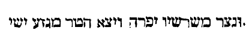
Istarum duarum fit in hoc gratissima lectionum, quia Joannes vidit in coelo primitias terrae cum agno. De quibus ait: Quod sine mendacio, et sine macula et virgines sunt. Nam et parvuli qui pro Domino occisi sunt, et primitiae terrae sunt, quia pro Domino primi meruerunt palmas martyrii, et virgines, [Col. 0055B] et sine mendacio et sine macula sunt.
«Apparuit gratia Dei et Salvatoris nostri omnibus hominibus, erudiens nos, ut abnegantes impietatem et saecularia desideria, sobrie, juste et pie vivamus in hoc saeculo, exspectantes beatam spem et adventum gloriae magni Dei et Salvatoris nostri Jesu Christi, qui dedit semetipsum pro nobis, ut nos redimeret ab omni iniquitate, et mundaret sibi populum acceptabilem, sectatorem bonorum operum. Haec loquere et exhortare.»
Apparuit gratia Dei Salvatoris nostri omnibus hominibus . [Col. 0055C] Hic gratiam Evangelii dicit, de qua in Zacharia legimus: Exaequavit gratiam gratiae (Zach. IV) : Et Joannes ait: Nos omnes de plenitudine ejus accepimus, gratiam pro gratia (Joan. I) , id est, pro gratia legis, gratiam Evangelii: omnibus hominibus, id est, quibus apparuit. Ipse enim est lux vera, quae illuminat omnem hominem venientem in hunc mundum, hoc est, qui illuminatur. Ipse est, qui omnes homines vult salvos fieri, et ad agnitionem veritatis pervenire. Ipse est, qui Apostolis suis ait: Ite, docete omnes gentes, baptizantes eos: qui crediderit et baptizatus fuerit, salvus erit . Ecce quomodo gratia salvatoris Dei omnibus apparuit hominibus.
Erudiens nos . (Ex Cass.) Erudire enim docere est, nam et ipsum nomen significat apprehensam [Col. 0055D] scientiam. Rudis enim dicitur novus. Eruditus, quasi a rure sublatus, hoc est, ab ignorantia divisus, et in doctrinae finibus collocatus.
( Ex Hieron .) Nam et ad Hierusalem, per Hieremiam Dominus sic dicit: Erudire Hierusalem, ne forte recedat anima mea a te (Hier. VI) . Eruditur Hierusalem, ut corrigatur, et non recedat anima Dei ab ea, et redigatur in solitudinem, sed potius erudita habeat semper Dominum habitatorem.
Ut abnegantes impietatem . Hic impietatem illam dicit, quam Zacharias super amphoram vel massam sedere vidit plumbeam, quam alio nomine idololatriam possumus appellare et negationem Christi, Graeci vocant τὴν ἀσέβειαν .
Et saecularia desideria . Saeculare est, omne desiderium carnale, et omnis ambitio saecularis. Desideria turpia, voluntas vel cupiditas corporis, omnia desideria sunt carnalia, a quibus nos omnibus abstinere, Petrus obsecrat, dicens: Obsecro vos tanquam advenas et peregrinos, abstinere vos a carnalibus desideriis, quae militant adversus animam (I Petr. II) . Ac si diceret: Carnalia desideria nolite desiderare, sed coelestia, et aeterna concupiscite, quia carnis desideria adversus conversationem sanctam, et contra suammetipsam militant animam
Sobrie . Sobrie dicit, hoc est, caute, sapienter, considerate, et temperate, ponens ante oculos illud quod Dominus ait: Attendite ne graventur corda vestra in crapula, et ebrietate, et curis hujus saeculi [Col. 0056B] (Lucae XXI) .
Et juste . Juste, id est, recte et aequanimiter, hinc enim Joannes ait: Scitis, quia Deus justus est, et omnis qui facit justitiam, ex ipso natus est (I Joan. III) . Dicta autem justitia, quasi juris status, cujus partes sunt, timere Deum, venerare religionem, habere humanitatem et pietatem, unde sequitur.
Et pie vivamus in hoc saeculo . Justitia enim ne intemperata sit, pietas adjungenda est. Pietas enim pars est justitiae, quae proprie, ut ait Augustinus, Dei cultus intelligitur. Justitia enim est, aequitas vel rectitudo, quae unicuique sua tribuit.
Exspectantibus beatam spem . (Ex Cass.) Spes est bonorum exspectatio futurorum, quae exprimit humilitatis affectum, et sedulae servitutis obsequium. [Col. 0056C] Spes autem Graece dicitur ἐλπίς , et est opinio futurorum. Et contrarium desperatio, quando extra omnem spem homo est, cui nulla est progrediendi facultas, quia dum quisque peccatum amat, futuram gloriam non sperat. Ille enim fiducialiter exspectat, qui ejus mandata fideliter servat. Beata enim recte dicitur spes, ubi filii Dei merebimur esse, et haeredes, haeredes quidem Dei, cohaeredes autem Christi. Ubi cum apparuerit, similes ei erimus, quoniam videbimus eum sicuti est. Ubi peccata nobis donantur, et vita aeterna praestabitur. Ubi splendorem solis et consortium obtinebimus angelorum.
Et adventum gloriae magni Dei . Notandum quod in hac brevi Epistola Dominum Jesum bis Dominum appellet. Nam et in Epistola ad Hebraeos idem Apostolus [Col. 0056D] ait: Ad filium autem: Thronus tuus Deus in saeculum saeculi . Et, unxit te Deus Deus tuus oleo exsultationis (Hebr. I) . Et Joannes ait: In principio erat Verbum, et Verbum erat apud Deum, et Deus erat Verbum (Joan. I) , et alia plurima de hoc sanctissimo nomine invenies testimonia. Cujus et adventum gloriae exspectamus, secundum promissionem angelicam, dicentis ad discipulos: Viri Galilaei, quid hic statis aspicientes in coelum, sic enim veniet, quemadmodum vidistis eum euntem in coelum (Act. I) .
( Ex Orig .) Sed in illa gloria exspectatur, de qua ipse Salvator ait: Cum venerit Filius hominis in gloria Patris et sanctorum angelorum (Matth. XXV) . Non quod Dei et angelorum unam gloriam esse dicat [Col. 0057A] sed quia tanta erit illic gloria Patris, in qua Filius hominis ad judicium venturus est, quae a solis angelis capi possit, vel ab illis sanctis, de quibus dicitur: Quia erunt sicut angeli Dei . De hoc adventu gloriae Dei et Petrus apostolus ait: Inveniatur in laudem et gloriam et revelationem Jesu Christi (I Petr. I) . In laude, quando dicturus est: Venite, benedicti Patris mei, percipite regnum . In gloria, quia tunc justi fulgebunt ut sol in revelatione Jesu Christi, hoc est, in futuro judicio.
Et Salvatoris nostri Jesu Christi . Jesus nomen proprium est Filii Dei, secundum carnem, ut Gabriel angelus beatae Mariae ait: Et vocabis nomen ejus Jesum (Luc. I) , quod Latine Salvator dicitur, eo quod salvum facit populum suum a peccatis [Col. 0057B] eorum. Christus ab unctione nomen accepit, chrisma enim unctio, Christus unctus dicitur. Sed spiritualiter, cui Psalmista: Propterea unxit te Deus, Deus tuus, oleo exsultationis (Psal. XLV) .
Qui dedit semetipsum pro nobis . Sicut et alibi idem Apostolus dicit: Ambulate in dilectione, sicut et Christus dilexit nos, et tradidit semetipsum pro nobis (Ephes. V) .
Ut nos redimeret ab omni iniquitate, et mundaret , etc. (Ex Cass.) Redemit nos et liberavit ab omni vinculo iniquitatis, quo captivi tenebamur, et infidelitatis, et mundavit per baptismum, ubi sic omnia originalia delicta, et perpetrata commissa mundantur, quatenus in nobis nihil remanere possit immundum.
Sectatorem bonorum operum . Ad quam sectationem bonorum operum, idem nos Apostolus admonet, dicens: Exhortamur, ne in vacuum gratiam Dei recipiatis, ut non vituperetur ministerium nostrum, sed in omnibus exhibeamus nos sicut Dei ministros, in multa patientia, in tribulationibus, in necessitatibus, in angustiis, in plagis, in carceribus, in seditionibus, in laboribus, in vigiliis, in jejuniis, in castitate, in scientia, in longanimitate, in suavitate, in spiritu sancto, in charitate non ficta, in verbo veritatis, in virtute Dei, per arma justitiae, a dextris et a sinistris (II Cor. VI) , et caetera similia, unde et apte sequitur.
Haec loquere et exhortare . Ac si diceret: Omnis tuus sermo, in hac exhortatione consistat atque [Col. 0057D] perseveret.
«Postquam consummati sunt dies octo ut circumcideretur puer, vocatum est nomen ejus Jesus, quod vocatum est ab angelo priusquam in utero conciperetur. Et postquam impleti sunt dies purgationis Mariae secundum legem Moysi, tulerunt Jesum in Hierusalem, ut sisterent eum Domino, sicut scriptum est in lege Domini: Quia omne masculum adaperiens vulvam, sanctum Domino vocabitur: Et ut darent hostiam secundum quod dictum est in lege Domini, par turturum, aut duos pullos columbarum. Et ecce homo erat in Hierusalem, cui [Col. 0058A] nomen Simeon. Et homo iste justus et timoratus, exspectans consolationem Israel, et Spiritus sanctus erat in eo. Et responsum acceperat a Spiritu sancto, non visurum se mortem, nisi prius videret Christum Domini, et venit in spiritu in templum. Et cum inducerent puerum Jesum parentes ejus, ut facerent secundum consuetudinem legis pro eo: Et ipse accepit eum in ulnas suas, et benedixit eum, et dixit: Nunc dimittis servum tuum, Domine, secundum verbum tuum in pace. Quia viderunt oculi mei salutare tuum. Quod parasti ante faciem omnium populorum. Lumen ad revelationem gentium, et gloriam plebis tuae Israel.»
Postquam consummati sunt dies octo, ut circumcideretur [Col. 0058B] puer . (Ex Ambros.) Circumciditur itaque puer. Quis est ille puer, nisi ille de quo dictum est: Puer natus est nobis, filius datus est nobis (Isaiae IX) ? Factus est enim sub lege, ut eos, qui sub lege erant, lucrifaceret (Gal. IV) . Vides omnem legis veteris seriem fuisse typum futurae. Non utique frustra octava die jussus est infans circumcidi, nisi quia petra, qua circumcidimur, Christus erat. Cultellis enim petrinis circumcisus est populus, petra autem erat Christus. Quare autem octavo die? quia in hebdomadibus idem primus, qui et octavus. Completis enim septem diebus reditur ad primum, finitus septimus, Dominus sepultus. Reditus ad primum Dominus resuscitatus, Domini resurrectio promisit nobis aeternum diem, et consecravit nobis Dominicum diem, [Col. 0058C] qui vocatur Dominicus, ipse videtur proprie ad Dominum pertinere, quia eo die Dominus resurrexit.
( Ex Beda .) Suscepit igitur circumcisionem lege decretam in carne, qui absque omni prorsus labe pollutionis apparuit in carne, et qui in similitudine carnis peccati, non autem in carne peccati advenit, remedium quo caro peccati consueverat mundari, non respuit, sicut etiam unda baptismatis, qua novae gratiae populos a peccatorum sorde lavari voluit. Ipse non necessitatis, sed exempli causa subiit; scire etenim debet vestra fraternitas, quia idem salutiferae curationis auxilium circumcisis in lege, contra originalis peccati vulnus agebat, quod nunc baptismus [Col. 0058D] agere revelatae gratiae tempore consuevit. Excepto quod regni coelestis januam necdum intrare poterant, donec adveniens benedictionem daret qui legem dedit, ut videri posset Deus deorum in Sion. Tantum in sinu Abrahae, post mortem, beata requie consolati, supernae pacis ingressum, spe felices, exspectabant. Qui enim nunc per Evangelium suum terribiliter ac salubriter clamat: Nisi quis renatus fuerit ex aqua et Spiritu sancto, non potest introire in regnum Dei (Joan. III) , ipse tum per legem suam clamabat: Masculus cujus praeputii caro circumcisa non fuerit, peribit anima illa de populo suo, quia pactum meum irritum fecit (Exod. XIII; Levit. XII) , id est, quia pactum vitae, in paradiso hominibus a me datum, Adam praevaricante, trangressum est, in quo [Col. 0059A] omnes peccaverunt, peribit de coetu sanctorum, si non ei fuerit remedio salutari subventum.
Vocatum est nomen ejus, Jesus , etc. (Ex Beda.) In hoc, quod in die circumcisionis suae nomen ut Jesus vocaretur, accepit, ad imitationem priscorum fecit, sicut Abraham patriarcha, qui primus circumcisionis sacramentum et promissionis testimonium accepit, et eodem die amplificationem nominis simul cum sua conjuge promeruit, ut qui eatenus Abram, id est, pater excelsus, deinde Abraham, id est, pater multarum gentium vocaretur.
( Ex Hieron .) Sed et Sarai uxor tua, inquit Dominus ad Abraham, non vocabitur Sarai, sed Sara. Errant qui putant primum Saram per unum R scriptum fuisse, et postea alterum R additum, Sarai [Col. 0059B] primum vocata est per 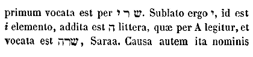
Et postquam impleti sunt dies purgationis ejus, secundum legem Moysi tulerunt illum in Hierusalem, ut sisterent illum Domino . (Ex Beda.) Decretum quidem legis erat parvulum post tricesimum tertium circumcisionis diem ad templum Domini deferri, darique hostiam pro eo: primogenitum autem masculum sanctum Domino fieri, mystice, sicut diximus, insinuans, neminem nisi circumcisum vitiis, Dominicis [Col. 0059C] dignum esse conspectibus; neminem, nisi mortalitatis nexibus absolutum, supernae civitatis gaudia perfecte posse subire. Verum si legis ipsius verba diligentius inspexeris, profecto reperies, quia non solum Dominus incarnatus, quantum a peccati contagione, tantum a conditione legis fuerit liber, quam ob hoc magis suscipere dignatus est, ut eam sanctam, justam, ac bonam esse probaret, et nos ab ejus servitute ac timore fidei gratia liberaret, sed etiam ipsa Dei genitrix, sicut ab admixtione virili, sic et a legali sit jure immunis. Dicit enim Moyses: Mulier si suscepto semine pepererit masculum, immunda erit septem diebus, juxta dies separationis menstruae, et die octavo circumcidetur infantulus. Ipsa [Col. 0059D] vero triginta tribus diebus manebit in sanguine purificationis suae (Levit. XII) . Nota ergo, quod non omnis mulier pariens, sed ea quae suscepto semino pepererit, designatur immunda, rituque legis docetur esse mundanda, ad distinctionem videlicet illius, quae virgo concepit, et peperit filium. Et vocavit nomen ejus 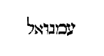
Sicut scriptum est in lege Domini: Quia omne masculum adaperiens vulvam, sanctum Domino vocabitur . [Col. 0060A] Quod dicit, Omne masculum adaperiens vulvam , et hominis et pecoris primogenitum significat, quod utrumque sanctum Domino vocari, atque ideo sacerdotis esse, praeceptum est. Ita duntaxat, ut pro hominis primogenito pretium acciperet, et omne animal immundum redimi faceret, cujus, inquit, redemptio erit post unum mensem, siclis argenti quinque; ubi salvo subtiliore tractatu breviter intimandum, quod illa omnia primogenita, vel figura fuerint ejus, qui cum unigenitus esset Dei Filius primogenitus fieri dignatus est omnis creaturae, et vere et singulariter sanctus Domino, quia peccatum non fecit, nec inventus est dolus in ore ejus, vel certe nostrae fuerit devotionis indicium, qui omnia bonae actionis initia, quae quasi corde gignimus, Domini [Col. 0060B] gratiae deputare, male autem gesta redimere debeamus, dignos videlicet poenitentiae fructus, pro singulis quinque corporis vel animae sensibus offerentes. Itaque quod ait: Adaperiens vulvam , consuetae nativitatis more loquitur, non quod Dominus noster sacri ventris hospitium, quod ingressus sanctificarit, egressus devirginasse credendus sit, juxta haereticos, qui dicunt beatam Mariam virginem usque ad partum, non virginem esse post partum, sed juxta fidem catholicam, clauso virginis utero, quasi sponsus suo processit de thalamo, de quo pulchre Propheta: Et convertit me , inquit, ad viam portae sanctuarii exterioris, quae respiciebat ad orientem, et erat clausa, et dixit Dominus ad me: Porta haec clausa erit, non aperietur, et vir non transeat per [Col. 0060C] eam. Quoniam Dominus Deus Israel ingressus est per eam, eritque clausa; principum princeps in ea sedebit, ut comedat panem coram Domino (Ezech. XLIV) . Quamvis possit etiam mystice designari, nullum praeter Dominum Ecclesiae virginis uterum per aquam et Spiritum sanctum ad regenerandos Deo filios posse reserare, ideoque hunc masculum, incomparabili dignitate Domino sanctum vocari.
Et ut darent hostiam, secundum quod dictum est in lege Domini, par turturum, aut duos pullos columbarum . (Ex Beda.) Dictum est in lege, ut pro infante, si masculus sit, ut praedixi, quadragesimo, si femina octogesimo die nativitatis, agnus agniculus [Col. 0060D] immaculatus in holocaustum, et turtur, sive pullus columbinus offerretur pro peccato: Si autem non invenerit , inquit, manus ejus, nec potuerit offerre agnum, sumet duos turtures, vel duos pullos columbae, unum in holocaustum, et alterum pro peccato . Dominus ergo Jesus Christus cum dives esset, pauper factus pro nobis, pauperem pro se hostiam voluit dari, ut videlicet, una sua paupertate nos divites in fide et illic faceret haeredes regni, quod repromisit Deus diligentibus se. Moraliter autem, sive fortia quis opera, seu creaverit infirma, quae masculi ac feminae vocabulo distinguuntur, ut haec legitime Domino valeant consecrari, ovem necesse est innocentiae, et turturem pariter, sive columbam compunctionis offerat, quia enim volucres hae pro cantu [Col. 0061A] gemitus habent, non immerito lacrymas humilium designant. Et bene duos, unum pro peccato, et alterum in holocaustum. Holocaustum namque totum incensum dicitur. Quia nimirum duo sunt genera compunctionis, Deum namque sitiens anima, prius timore compungitur, post amore. Qui ergo prius flendo, ne duceretur ad supplicium, turturem pro peccato offerebat, de altero facit holocaustum, cum postmodum flere amarissime incipit, quia differtur a regno. Hoc sane inter turtures et columbas distat, quod columba quae gregatim conversari, volare et gemere consueverit, activae vitae frequentiam demonstrat, de qua dicitur: Multitudinis autem credentium erat cor unum et anima una (Act. IV) ; turtur vero, qui singularitate gaudet adeo, ut si conjugem [Col. 0061B] casu perdiderit, solus exinde permaneat, speculativae vitae culmina denuntiat, quia et paucorum est ista virtus, et his singulariter attributa. Item cum intrans cubiculum, clauso ostio, oro Patrem in abscondito, turturem offero. At cum ejusdem operis compares quaero, canendo cum Propheta: Venite, adoremus et procidamus ante Deum, ploremus coram Domino, qui fecit nos , columbas ad altare deporto.
Et ecce homo in Hierusalem, cui nomen Simeon . Non solum ab angelis et prophetis, sed etiam a senioribus, et reliquis justis, generatio Domini accepit testimonium. Omnis aetas et uterque sexus eventorum miracula fidem astruunt, virgo generat, sterilis parit, mutus loquitur, Elizabeth prophetat, magus [Col. 0061C] adorat, utero clauso exsultat, vidua confitetur, justus exspectat.
Et homo iste justus et timoratus exspectans consolationem Israel, et Spiritus sanctus erat in eo . (Ex Beda.) Bene justus et timoratus dicitur, quia difficile justitia sine timore custoditur. Bene justus, quia non suam, sed populi gratiam requirebat, cupiens ipse corpore vinculis fragilitatis absolvi, sed exspectans videre promissum. Sciebat enim, quia beati oculi, qui viderent, sed donec veniret ille nolebat ire.
Et responsum acceperat a Spiritu sancto non visurum se mortem nisi prius videret Christum Domini . Vide locutiones Scripturarum. Mortem videre dixit; quomodo vident, quibusve oculis, quae veniendo ipsos [Col. 0061D] oculos claudit? sed videre mortem, experiri significat. Nam et nos conversationem habendo in coelesti Hierusalem, templi Domini limina frequentando, hoc est, pia sanctorum, in quibus inhabitat, exempla sectando, merebimur verbum Domini in manibus accipere, et fidei charitatisque brachiis amplecti.
Et venit in spiritu in templum . Quod autem ait: Venit in spiritu , significat eum, eadem gratia Spiritus qua olim venturum praecognoverat, et jam nunc venientem, jamque a se videndum cognovisse Salvatorem.
Et cum inducerent puerum Jesum parentes ejus, ut facerent secundum consuetudinem legis, et ipse accepit [Col. 0062A] eum in ulnas suas . Tropice accipit Simeon Christum, veteranus infantem, ut doceat nos exuere veterem hominem, qui corrumpitur cum actibus ejus, et renovatos spiritu mentis nostrae, induere eum qui secundum Dominum creatus est in justitia et sanctitate et veritate. Accipit senior infantem Christum, ut insinuet, hoc saeculum, quasi senio jam et longaeva aetate defessum, ad innocentiam, et, ut ita dixerim, infantiam Christianae conversationis rediturum, et sicut aquilae juventutem illius esse renovandam.
Et benedixit Dominum, et dixit: Nunc dimittis servum tuum, Domine, secundum verbum tuum in pace . Impletum est desiderium senis, mundi ipsius senectute vergente, ipse ad senem hominem venit, qui [Col. 0062B] mundum veterem invenit. Audiat mundus: Cantate Domino canticum novum, cantate Domino omnis terra. Destituatur vetus, novitas surgat.
Quia viderunt oculi mei salutare tuum, quod parasti ante faciem omnium populorum . Beati oculi qui vident quae Simeon vidit; beati qui non viderunt et crediderunt. Illud ipsum, inquit, quod omnibus propemodum gentibus populis et linguis mente ac fide conspiciendum parasti, spe ac dilectione quaerendum praevidisti, ipse diu desideratum, nunc et carnis et cordis oculis tuum salutare contemplor.
Lumen ad revelationem gentium et gloriam plebis tuae Israel . Lumen quidem utrique populo salutare dicit, id est, Christus a Deo Patre paratur, qui tamen gloriam magis Israel, cui diu speratur, et ex quo [Col. 0062C] praenuntiatur, advenit. Gentium vero dicitur esse revelatio, quarum mentis oculos profunda jam caecitate dimersos, neque ulla spe adventus Dominici erectos, ipse visitare pariter, revelare atque illustrare dignatus est. Et bene revelatio gentium Israelis gloriae praefertur, quia cum plenitudo gentium introierit, nunc omnis Israel salvus fiet.
In hoc istarum duarum fit concordia lectionum, quia ambae de apparitione Domini, quae primum facta est loquitur in templo.
«Quanto tempore haeres parvulus est, nihil differt [Col. 0062D] a servo suo, cum sit dominus omnium, sed sub tutoribus et actoribus est, usque ad praefinitum tempus a patre. Ita et nos cum essemus parvuli, sub elementis mundi eramus servientes. At ubi venit plenitudo temporis, misit Deus Filium suum natum ex muliere, factum sub lege, ut eos qui sub lege erant, redimeret, ut adoptionem filiorum Dei reciperemus. Quoniam autem estis filii Dei, misit Deus Spiritum Filii sui in corda vestra clamantem: Abba, pater. Itaque jam non est servus, sed filius, quod si filius et haeres per Deum.»
Quanto tempore haeres parvulus est, nihil differt a servo, cum sit dominus omnium, sed sub tutoribus et actoribus est, usque ad praefinitum tempus a patre . [Col. 0063A] Secundum acceptam comparationem disputationis producit eloquium. Hic servum vocat Judaicum populum, qui legis litterae sub carnali observantia serviebat, in fide parvulus, et a sensu doctrinae spiritualis alienus, cum Dominus divinae agnitionis thesauros atque divitias gentibus, servituti daemonum subjacentibus, contulisset. Gentiles enim, qui natura substantiam infidelitatis consumpserant, egeni et pauperes erant. Hic autem principes et sacerdotes, tutores et actores appellat, qui super plebem exercere videbantur dominatum. Quod autem dicit:
Usque ad praefinitum tempus a patre . Illud tempus intellige, quo pater vita excedens, filium tutoribus et actoribus provida ordinatione committit. Juxta quam comparationem unigeniti Pater legi tempus usque [Col. 0063B] ad adventum Filii praefinivit.
Ita et nos cum essemus parvuli, sub elementis mundi eramus servientes . Id est, observationes dierum et temporum, quas sub hac causa, ne per otium ad idola evagaremur, accepimus. Si enim et Judaei erant elementis servientes, quid differebant a paganis? Paganos elementa colere, omnibus notum est, Judaeos autem non elementis, sed sub elementis Domino servisse, propter neomaenias, et sabbata, et circumcisiones, et caetera talia. Haec enim carnalia sunt. Quidquid enim visibile est, carnale est, et de elementis est. Ex ea igitur parte, quam supra diximus, sub elementis serviebant Judaei. Ex alia parte legem habebant spiritalem, quae et peccare prohibet, et exhortatur ad dilectionem Domini Dei, qui venturus [Col. 0063C] eis fuerat promissus, ad remittenda peccata.
At ubi venit plenitudo temporis, misit Dominus filium suum . Id est, quando jam per consuetudinem transgressionum, legem vix pauci poterant custodire. Vel certe plenitudo temporum intelligenda est, quando florente populis mundo, opportunum ac salubre Domino visum est, remedia salutis gentibus exhibere, quae jam competenter possit sexti saeculi aetas natura suscipere. Plenitudo ergo temporis, aetas mundi senescentis ex venia intelligi potest, in qua ei ita commissa et credita est veritatis agnitio, sicut profecto annis filio, recte profundarum rerum creditur institutio, et sane praeterita saecula, quae in primo parente nostro rea sub infernali ergastulo tenebantur, longa indigebant dilatione, ut jam multis [Col. 0063D] temporibus expiatione Christi liberarentur adventu.
Factum ex muliere . Mulier, non corruptionem, sed sexum significat. Denique Eva statim ut facta est, mulier appellatur (Gen. III) . Et ipse Dominus ad matrem. Quid mihi et tibi , inquit, est mulier (Joan. II) . In eo autem quod dicit: Ex muliere, monstrat, non more solito ex conventu viri et feminae, sed per Spiritum sanctum ex matre tantum, Christum incarnationem hominis suscepisse. Nam idem Apostolus ad Corinthios ait: Sicut mulier ex viro, ita et vir per mulierem (I Cor. XV) . Unde sicut in principio generationis, mulier ex viro sumpta est, ita et Christus secundum carnem ex matre tantum est. Prima hominis conditio, quia primus homo non est [Col. 0064A] natus, sed factus. Secunda, de latere viri. Tertia, ex viro et femina. Quarta, Dei et hominis sine viro de femina. Jam erat una, sine viro et femina. Altera de viro sine femina. Tertia, de viro et femina. Restabat quarta sine viro de femina. Sed ista quarta liberavit tres, factum sub lege, ut eos qui sub lege erant, redimeret. Ipse enim sub lege tam diu fuit, donec baptizatus Novi Testamenti inciperet Evangelium praedicare: Qui si sub lege factus non esset, non facile Judaeos ad obedientiam provocare potuisset. Promptius autem suae legis et sui generis videbantur audire posse doctorem, sicut de se Apostolus dicit: Factus sum Judaeis tanquam Judaeus, ut Judaeos lucrarer. His qui sub lege erant, tanquam essem sub lege, ut eos qui sub lege erant lucrifacerem . [Col. 0064B] Gentes autem poterat alienas a lege salvare, etiam si sub lege non fuisset positus.
Ut adoptionem filiorum reciperemus . Id est, non facile nos natura Judaei vocationem illius recepissemus, si factus sub lege non esset. Promptius fuit, ut ad vitam legis filios invitaret legis assertor.
Quoniam autem estis filii Dei, misit Deus Filium suum in corda vestra . Probat nos pater, adoptionis suae filios, quando super nos spiritum filii sui misericorditer infundit, et dignanter, ut ipsa communicatio paracliti, qui ex utroque procedit, haeredes nos patris et filii assereret cohaeredes. In qua sententia trinitatem evidenter explicuit.
Clamantem Abba, pater . Id est, qui cordibus nostris Deum, patrem esse nostrum, occulta inspiratione [Col. 0064C] clamaret.
Itaque jam non est servus, sed filius . Id est, cur vis servus fieri, qui accipiens spiritum filii, filius et haeres effectus es. Ex hoc enim nos probat omnes in uno spiritu unum esse Dei filium, totus enim Christianus populus, in uno Dei Filio credens, et unum Christi corpus effectus, unus rite vocatur et filius.
Quod si filius, et haeres per Deum . Non per meritum nec naturam, sed per gratiae spiritum, de quo in epistola ad Romanos ait: Ipse enim Spiritus testimonium reddit spiritui nostro, quod sumus filii Dei, si autem filii et haeredes, haeredes quidem Dei, cohaeredes autem Christi (Rom. VIII) .
«Erat Joseph et Maria mater Jesu mirantes super [Col. 0064D] his, quae dicebantur de illo. Et benedixit illis Simeon, et dixit ad Mariam matrem ejus: Ecce positus est hic in ruinam et in resurrectionem multorum in Israel. Et in signum cui contradicetur, et tuam ipsius animam pertransibit gladius, ut revelentur ex multis cordibus cogitationes. Et erat Anna prophetissa filia Phanuel, de tribu Aser, haec processerat in diebus multis, et vixerat cum viro suo annis septem a virginitate sua. Et haec vidua erat usque ad annos octoginta quatuor, quae non discedebat de templo, jejuniis et obsecrationibus serviens die ac nocte. Et haec ipsa hora superveniens confitebatur Domino, et loquebatur de illo omnibus qui exspectabant redemptionem Israel. [Col. 0065A] Et ut perfecerunt omnia secundum legem Domini, reversi sunt in Galilaeam in civitatem suam Nazareth. Puer autem crescebat, et confortabatur plenus sapientia, et gratia Dei erat cum illo.
Erat Joseph et Maria mater Jesu mirantes super his quae dicebantur de illo . (Ex Beda.) Hic Mariam figuram synagogae tenet, Joseph autem figuram legis. Patrem Salvatoris appellat Joseph, non quod vere, juxta Fotinianos, pater fuerit ejus, sed quod ad famam Mariae conservandam, pater sit ab omnibus aestimatus. Quamvis et eo modo pater illius valeat dici, quo et vir Mariae recte intelligitur, sine commixtione carnis, ipsa copulatione conjungit, multo videlicet conjunctius, quam si esset aliunde adoptatus.
Et dixit ad Mariam matrem ejus: Ecce positus est [Col. 0065B] hic in ruinam . Quomodo autem in ruinam, nisi quia et lapis offensionis est, et petra scandali, id est, ruina his, qui offendunt verbo, nec credunt, de quibus ipse dicit: Si non venissem et locutus eis fuissem, peccatum non haberent. Nunc autem excusationem non habent de peccato suo . Aliter.
( Ex Hieron .) Aliquid in me quod male stabat, cadat, patiatur ruinam, ut surgat in melius, peccati superbia se erexerat, cadat. Antequam crederem, bonum in me jacebat, malum stabat. Postquam ille venit, quod in me malum fuit, corruit: fornicationis, immunditiae, luxuriae, idololatriae, caeterarumque pestium utilis ruina facta est. Haec est ruina ad quam primum venit Jesus destruere, ut illa destructa et mortificata consurgant et aedificentur in me [Col. 0065C] omnia bona. Videndum est itaque, ne forte Salvator noster aliis atque aliis in ruinam venerit, et in resurrectionem, sed iisdem et in ruinam et in resurrectionem venerit. Me oportet primum cadere, et cum cecidero, postea bene resurgere, ne Salvator causa mihi fuerit malae ruinae, sed propterea cadere me fecit, ut consurgam. Et multo mihi ruina utilior fuerit, quam illud tempus, quo videbar stare, stabam enim peccato, et quia peccato stabam, prima mihi utilitas fuit, ut caderem et peccato morerer. Iniquus eras, cadat in te iniquus. Diligebas scorta primum, in te scortator intereat. Peccator eras, cadat in te peccator, ut possis dehinc resurgere et dicere: Si commortui sumus, et convivemus; et si conformes facti sumus mortis, conformes et resurrectionis [Col. 0065D] erimus (II Tim. II; Rom. V)
Et in resurrectionem multorum in Israel . (Ex Beda.) Bene in resurrectionem, quia lumen est, quia gloria plebis Israel, quia dicit: Ego sum resurrectio et vita, qui credit in me, etiamsi mortuus fuerit vivet (Joan. II) .
( Ex Ambros .) Duae resurrectiones, una prima, quae nunc est et animarum est, quae venire non permittit in mortem. Secunda, de qua Dominus ait: Venit hora et nunc est, quando mortui audient vocem Filii Dei, et qui audierint, vivent (Joan. V) . Qui audierint, dixit, qui obedierint, qui crediderint, et usque in finem perseveraverint. Alia secunda, quae non nunc est, sed in saeculi fine futura est, nec animarum, [Col. 0066A] sed corporum est, quae per ultimum judicium, alios mitti in secundam mortem, alios in eam vitam, quae non habet mortem.
Et in signum, cui contradicetur . (Ex Hieron.) Scribis videlicet et Pharisaeis, haereticis et paganis. Signum autem, cui contradicetur, fidem Dominicae crucis accipe, de qua apostolo Paulo dicunt Judaei: Nam de secta hac notum est nobis quod ubique ei contradicitur (Act. XXVIII) . Nos quippe omnes scimus, vera esse quae de Salvatore scripta sunt, sed apud incredulos et haereticos universa, quae de eo scripta sunt, signum sunt, cui contradicitur. Virgo mater, signum est, cui contradicunt Marcionitae. Habuit corpus humanum, et hoc signum est, cui contradicitur. Resurrexit a mortuis, et hoc signum est, cui [Col. 0066B] contradicitur. Et quid necesse est multa persequi. Omnia quae de eo scripta sunt, signum est, cui contradicitur ab incredulis et haereticis.
Et tuam ipsius animam pertransiet gladius . (Ex Ambr.) Nec littera, nec historia docet ex hac vita Mariam corporalis necis passione migrasse. Non enim anima, sed corpus materiali gladio transverberatur. Et ideo prudentiam haud ignara mysterii coelestis ostendit. Vivum est enim verbum Dei et validum et acutum et omni gladio acutissimo, penetrans usque ad divisionem animae et spiritus, artuumque et medullarum, cogitationes cordis et secreta scrutatur animorum.
Aliter. ( Ex August .) Tribulationem igitur et dolorem Dominicae passionis, gladii nomine signatum [Col. 0066C] esse, credibile est, quo materna anima vulnerata est doloris affectu, et usque hodie, et usque ad consummationem saeculi, praesentis Ecclesiae animam gladius durissime tribulationis pertransire non cessat, cum signo fidei, ab improbis contradici, cum audito Dei verbo multos cum Christo resurgere, sed plures a credulitate ruere, gemebunda pertractat.
Et revelentur ex multis cordibus cogitationes . (Ex August.) Quod dicit: Ut denudentur multorum cordium cogitationes, hoc intelligendum puto, quia per Domini passionem et insidiae Judaeorum et discipulorum infirmitas patuit.
( Ex Beda .) Incertum erat quondam, qui Judaeorum gratiam Christi, quam venturam utique noverant, recipere mallent. Hac enim nativitate audita, [Col. 0066D] revelatis mox cordium cogitationibus, Herodes rex turbatus est, et omnis Hierosolyma cum illo, pastores cum timore et gaudio Deo laudem resonant, hominibus pacis nuntium pandunt, ejus doctrina et virtute diffamata, alii ad eum quasi magistrum veritatis confluunt, alii ab eo quasi seductore refugiunt. Ejus signo crucis erecto, hi quasi juste morti datum blasphemantes irrident: illi quasi vitae auctorem mori acriter dolent.
Et erat Anna prophetissa, filia Phanuel, de tribu Aser . (Ex Beda.) Arridet autem Ecclesiae mysteriis, quod Anna et gratia ejus interpretatur, et filia est Phanuel, qui facies Dei dicitur. Cum Psalmographo decantans: Signatum est super nos lumen vultus tui, [Col. 0067A] Domine (Psal. IV) . Et de tribu Aser, hoc est, beati, descendit, qui inter patriarchas duodecim, ordine nascendi, est octavus, de quo numero, quia Novo Testamento sit sacer, crebrius est inculcatum.
( Ex Ambros .) Nam Anna gratia ejus interpretatur, tenens figuram Prophetarum. Sed et Phanuel pater ejus, facies Dei interpretatur. Aser beatus. Aser beatus erit figuram populi credentium tenens, sed vel pinguedinem panis interpretatur, qui de coelo descendit.
Haec processerat in diebus multis, et vixerat cum viro suo annis septem a virginitate sua . Annis septem, id est, synagoga cum heptatico vel postea per septem dona spiritus sancti, a virginitate sua, quia cum viro suo septem annis fuit.
Et haec vidua, usque ad annos octoginta quatuor . (Ex Beda.) Juxta intellectum vero mysticum, quia Ecclesiam significat, quae in praesenti quasi sponsi Dominique sui est morte viduata. Numerus etiam annorum viduitatis ejus, tempus Ecclesiae designat, septies quippe duodeni octoginta quatuor faciunt, et septem quidem ad hujus saeculi cursum, qui diebus septem volvitur, duodecim vero ad perfectionem doctrinae apostolicae pertinent, ideoque, sive universalis Ecclesia, seu quaelibet anima fidelis, quae totum vitae suae tempus, apostolicis mancipare curat institutis, quasi septem per 12 multiplicare, et typicis octoginta quatuor annis Domino servire laudatur. Sicut etiam tempus septem annorum, quo cum viro suo manserat, Dominicae incarnationis [Col. 0067C] tempori decentissime congruit. Septenario namque, ut dixi, numero perfectio solet temporis indicari, sed ibi propter Dominicae privilegium majestatis, quo in carne versatus, docui simplex. Septem annorum est numerus expressus, hic ob Apostolicae culmen dignitatis septem anni per duodecim multiplicantur.
Quae non discedebat de templo jejuniis et obsecrationibus serviens nocte ac die (Ex Amb.). Multorum enim annorum vidua fuit, et talis vidua, qualem describit Apostolus: Non in deliciis vivens, ne viva moriatur, sed persistens in orationibus nocte et die. Orando ergo et multos annos supplicando humiliter, videre meruit humilem, quem adorabat excelsum.
Et haec ipsa hora superveniens, confitebatur Domino, et loquebatur de illo omnibus qui exspectabant redemptionem [Col. 0067D] Israel . Prophetavit Simeon, prophetaverat copulata conjugio, prophetaverat virgo, debuit etiam vidua, ne qua aut professio deesset, aut sexus, et ideo Anna, et stipendiis viduitatis, et moribus talis inducitur, ut digna plane fuisse credatur, quae redemptorem omnium venisse nuntiaret.
Et ut perfecerunt omnia secundum legem Domini, reversi sunt in Galilaeam civitatem suam Nazareth . (Ex Beda.) Praetermisit hoc loco Lucas, quae a Matthaeo satis exposita noverat, Dominum videlicet post haec, ne ab Herode necandus inveniretur, Aegyptum a parentibus esse delatum, defunctoque Herode sic demum Galilaeam reversum Nazareth, civitatem suam inhabitare coepisse.
Puer autem crescebat, et confortabatur plenus sapientia, et gratia Dei erat cum illo . Notanda distinctio verborum, quia Dominus Jesus Christus in eo, quod puer erat, id est, habitum humanae fragilitatis induerat, crescere et confortari habebat. In eo vero, quod etiam verbum Dei, et Deus aeternus erat, nec confortari indigebat, nec habebat augeri. Unde rectissime, plenus sapientia perhibetur et gratia: Sapientia quidem, quia in ipso habitat omnis plenitudo divinitatis corporaliter. Gratia autem, quia eidem mediatori Dei et hominum, homini Jesu Christo magna gratia donatum est, ut ex quo homo fieri coepisset, perfectus esset et Deus. Hoc hominum natura non recipit, ut ante duodecim annos sapientia compleatur, quomodo omnia in illo mirabilia fuerunt, [Col. 0068B] ita pueritia mirabilis fuit, ut Dei sapientia compleretur.
Harum duarum, et in matre, et in lege fit concordia lectionum. In matre, quia Apostolus dicit: Natum ex muliere . Evangelium dicit: Dixit ad Mariam matrem ejus . In lege, quia Apostolus dicit: Factum sub lege . Evangelium dicit: Et ut perfecerunt omnia secundum legem Domini . Legales enim legaliter pro illo oblatae sunt caeremoniae.
«Surge, illuminare Hierusalem, quia venit lumen tuum, et gloria Domini super te orta est. Quia ecce tenebrae operient terram, et caligo populos, super [Col. 0068C] te autem orietur Dominus, et gloria ejus in te videbitur. Et ambulabunt gentes in lumine tuo, et reges in splendore ortus tui, leva in circuitu oculos tuos et vide, omnes isti congregati sunt, venerunt tibi. Filii tui de longe venient, et filiae tuae de latere surgent. Tunc videbis et afflues et mirabitur et dilatabitur cor tuum, quando conversa fuerit ad te multitudo maris, fortitudo gentium venerit tibi. Inundatio Camelorum operiet te, Dromedarii Madian et Epha. Omnes de Saba venient, aurum et thus deferentes, et laudem Domino annuntiantes. Omne pecus Cedar congregabitur tibi, arietes Nabaioth ministrabunt tibi.»
Surge, illuminare Hierusalem, quia venit lumen tuum . (Ex Hieron.) Ecclesiae dicitur, quae primum [Col. 0068D] de Judaico populo congregata est, et lumen, quod super eam ortum fuerat, per apostolos transmisit ad gentes, cui dicitur: Surge, illuminare , ut quae cecidit in incredulis, surgat in fidelibus: quae cecidit in synagogis, surgat in Ecclesiis. Venit enim lumen tuum, quod tibi omnes prophetae pollicebantur, quod jugiter exspectabas.
Et gloria Domini super te orta est . Ideo gloria Domini, quae quondam fuit super tabernaculum et templum ejus, super te orta est. De qua dictum est: Gloriosa dicta sunt de te civitas Dei (Psal. LXXXIX) .
Quia ecce tenebrae operient terram . Id est, qui terrena sapiunt.
Et caligo populos . Sive ut in Hebraico legitur, [Col. 0069A] 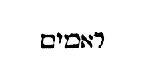
Super te autem orietur Dominus . Id est, sol justitiae Christus.
Et gloria ejus in te videbitur . De qua scriptum est: Et vidimus gloriam ejus, quasi gloriam Unigeniti a patre plenum gratiae et veritatis (Joan. I) .
Et ambulabunt gentes in lumine tuo . Nos omnes ambulamus in apostolorum luce, quae lucet in mundo, et tenebrae eam non comprehenderunt.
Et reges in splendore ortus tui . Quando primum in Christo nata es, quod et spiritaliter impletur, et carnaliter, ut reges quorum cor in manu Domini est, et quibus non regnat peccatum in mortali corpore, ambulent in splendore nascentis Ecclesiae, sive in eo qui ortus est in Ecclesia, et veri Regis Christi [Col. 0069B] fidei colla submittant, quod quotidie videmus impleri, quando idololatriae errore sublato, ad fidem Christi Romani principes transeunt.
Leva in circuito oculos tuos et vide omnes isti congregati sunt, venerunt tibi . Hoc dicitur ad Ecclesiam, quae primum ad apostolos congregata est in Sion, de quibus et in apostolorum Actibus legimus, quod de universo orbe terrarum viri religiosi fuerint in Hierusalem, qui susciperent sermonem Dei, et linguis suarum alienarumque gentium, vel audirent loquentes alios, vel ipsi loquerentur ad caeteros.
Filii tui de longe venient . Nos autem simus filii, qui de longe venimus ad Dominum, peregrini quondam a Testamento Dei, et repromissionibus ejus, [Col. 0069C] sed quid dicit Apostolus: Vos qui eratis aliquando longe, facti estis prope (I Petr. II) .
Et filiae tuae lac sugent . Quod dicit, filiae tuae lac sugent , significat, quod animae in Christo lactantes, et in baptismate parvulorum (de quibus et Petrus loquitur: Quasi modo parvuli, rationales, et absque dolo, lac desiderate [I Petr. II] ) sugunt lac apostolorum, quibus parvulis atque lactantibus, loquebatur et Paulus: Filioli, quos iterum parturio, donec Christus formetur in vobis (Gal. IV) .
Tunc videbis et afflues, et mirabitur, et dilatabitur cor tuum, quando conversa fuerit ad te multitudo maris, fortitudo gentium venerit tibi . Cum elevaveris oculos tuos, filiosque prospexeris venire, tunc gaudebis et in modum fluviorum, aquis subitis inundaberis, [Col. 0069D] et mirabitur ac stupebit, imo dilatabitur cor tuum. Audientes Apostolum: Dilatamini et vos (II Cor. VI) , ne angustia pectoris, non possitis habere habitatorem Christum, qui dicit in Evangelio: Ego et Pater veniemus, et mansionem apud eum faciemus (Joan. XIV) .
Inundatio camelorum operiet te, dromedarii Madian et Epha. Omnes de Saba venient, aurum et thus deferentes, et laudem Domino annuntiantes . Post divitias maris et fortitudinem gentium, gregesque camelorum et dromedarii Madian et Epha, promittuntur Hierusalem, qui omnes veniunt de Saba, portantes aurum et thus, et quod his majus est, annuntiantes Domini salutare (Matth. XII) . Madian et [Col. 0070A] Epha regiones sunt trans Arabiam, fertiles camelorum, omnisque provincia appellatur Saba. Unde fuit et Saba regina, quae venit sapientiam audire Salomonis, et ipsa deferens aurum et thus.
Omne pecus Cedar congregabit tibi, arietes Nabajoth ministrabunt tibi . Cedar autem regio Saracenorum est, Nabajoth, unus est filiorum Ismahel, ex quorum nominibus solitudo appellatur, quae frugum inops, pecorum plena est. Per familiaria ergo nomina gentium barbararum quae vicinae sunt Israeli, totius mundi conversio praedicatur. Madian quippe in hoc loco interpretatur iniquitas. Epha resolutus sive effundens. Saba conversio vel captivitas. Cedar tenebrae vel moeror. Nabajoth prophetiae. Greges igitur camelorum iniquitatis vinculis resoluti, et animas [Col. 0070B] suas effundentes Deo, operient Hierusalem muneribus, et omnes de captivitate venient, et conversiones viarum fidei deferentes, et thus sacrificii, et per haec munera nequaquam propria salute contenti, proficient, ut etiam caeteris praedicent salutare Dei, habentes in muneribus principalia, aurum sensum ( sic ) et thus odoris optimi atque dicentis: Dirigatur oratio mea sicut incensum in conspectu tuo (Psal. CXL) , et Christi bonus odor sumus (II Cor. II) , in omni loco, arietesque prophetarum. De quibus in vicesimo octavo psalmo canitur: Afferte Domino, filii Dei, afferte Domino filios arietum , venient et offerent se sacrificium Domino, et placabiles hostiae fiant, ut Christi glorificetur Ecclesia. De hujuscemodi ovibus Salvator discipulis loquebatur: Ite ad oves perditas [Col. 0070C] domus Israel (Matth. X) . Proprie super his intelligitur, qui de gentibus electi in sacerdotium ministri sunt Salvatoris.
«Cum natus esset Jesus in Bethleem Judae in diebus Herodis regis. Ecce Magi ab Oriente venerunt Hierosolymam, dicentes: Ubi est qui natus est rex Judaeorum? Vidimus stellam ejus in oriente, et venimus adorare eum. Audiens autem Herodes rex turbatus est, et omnis Hierosolyma cum illo. Et congregans omnes principes sacerdotum et scribas populi sciscitabatur ab eis, ubi Christus nasceretur. At illi dixerunt ei: In Bethleem Judae. Sic enim scriptum est per prophetam: Et tu Bethleem terra Juda, nequaquam minima [Col. 0070D] es in principibus Juda. Ex te enim exiet dux qui regat populum meum Israel. Tunc Herodes clam vocatis Magis diligenter didicit ab eis tempus stellae quae apparuit eis. Et mittens illos in Bethleem, dixit: Ite et interrogate de puero diligenter, et cum inveneritis, renuntiate mihi, ut et ego veniens adorem eum. Qui cum audissent regem, abierunt. Et ecce stella quam viderant in oriente, antecedebat eos, usque dum veniens staret supra ubi erat puer. Videntes autem stellam, gavisi sunt gaudio magno valde. Et intrantes domum, invenerunt puerum cum Maria matre ejus. Et procidentes, adoraverunt eum. Et apertis thesauris suis, obtulerunt ei munera, aurum, [Col. 0071A] thus et myrrham. Et responso accepto in somnis ne redirent ad Herodem, per aliam viam reversi sunt in regionem suam.»
Cum natus esset Jesus in Bethleem Judae . Pulchre autem dicitur Bethleem Judae ad distinctionem ejus Bethleem quae in Galilaea sita est, sicut in Jesu volumine reperiri potest (Josue XIX) . Est enim Bethleem civitas David, quae mundi genuit salvatorem, quae prius Ephrata vocata est, cui Jacob postea, quando ibi pecora sua pavit, Bethleem nomen, quodam vaticinio futuri imposuit, quod domus panis interpretatur propter eum panem qui ibi de coelo descendit.
In diebus Herodis regis . Hic Herodes Antipatris Ascalonitidis, matris vero Cypridis Arabicae filius [Col. 0071B] fuit, qui morbo intercutis aquae, scatentibus toto corpore vermibus tricesimo septimo regni sui anno mortuus est. Sub hujus filio Herode, Christus passus est. Nam et ideo reges et duces Judae istius temporis alienigenae referuntur, quia praedictum fuerat: Non deficiet princeps de Juda, nec dux de femore ejus donec veniat, cui repromissum est, et ipse erit exspectatio gentium (Gen. XLIX) .
Ecce Magi ab Oriente venerunt . Igitur dum oriens est, qui quaeritur, ideo enim ab oriente indicatur, quia ipse ad semetipsum nos ducit.
Hierosolymam dicentes . Ideo Hierosolymam venerunt, quia de Sion exibit lex et verbum Domini de Hierusalem (Isa. II) . Sive ut Judaei ignorantes Christi [Col. 0071C] nativitatem sibi proximam a Magis de longe venientibus, culparentur. Nam et propterea, ut sacerdotes a Magis interrogati, ubi Christus nasceretur, inexcusabiles fierent, de adventu ejus. Judaei enim asserunt Sem filium Noe quem dicunt Melchisedech, primum post diluvium in Syria condidisse urbem Salem, in qua regnum fuit ejusdem Melchisedech, hanc postea continuerunt Hiebusaei, e quibus sortita est vocabulum Hiebus, sicque duobus nominibus copulatis, Hiebus et Salem, vocata est Hierusalem, quae postea a Salomone Hierosolyma, quasi Hierosalomonia dicta est. Haec et corrupte a poetis olim nuncupata, et postmodum ab Helio Adriano vocata est Helia; in ipsa est et Sion, quae Hebraice interpretatur speculatio, eo quod in sublime constructa [Col. 0071D] est, et de longe venientia contempletur.
Ubi est, qui natus est rex Judaeorum . Id est, rex confessionum, rex qui natus omnes gentes illuminare venit. De quo Isaias ait: Puer natus est nobis (Isa. IX) . Reddunt causam inquirentibus Quis dixit vobis? Respondent:
Vidimus stellam ejus in oriente, et venimus adorare eum . Domini stellam se dicunt vidisse, vel ex artis scientia, vel ex vaticinio Balaam, dicentis: Orietur stella ex Jacob, et consurget virga de Israel, et percutiet duces Moab (Num. XXIV) . Hanc stellam tradunt, ut columbam, nec antea, nec postea, esse visam, quia nec antea, nec postea, similis illi quem demonstravit est natus. Stellam ejus vidimus, [Col. 0072A] non nostram, non coeli, sed Regis qui natus est.
( Ex August .) Nos quidem sub fato stellarum nullius hominis genesim ponimus, quanto minus illius temporalem generationem sub astrorum conditione, credamus factam, qui est aeternus universorum creator et Dominus. Itaque illa stella quam viderant Magi Christo in carne nato, non ad decretum dominabatur, sed ad testimonium famulabatur. Nec ejus subjacebat imperio, sed indicabat obsequio. Proinde non ex illis erat haec stellis quae ab initio creaturae iter suum ordinemque sub creatoris lege custodiunt. sed novo virginis partu novum sidus apparuit, quod mysterium officii sui, etiam ipsis Magis quaerentibus Christum, cum ante faciem praeiret, exhibuit, donec eos usque ad ipsum locum ubi Dei Verbum infans [Col. 0072B] erat, praeeundo perduceret.
( Vulg .) Magos qui ad adorandum Dominum perrexerunt, quidam ex progenie fuisse Balaam existimant, eruditos in astronomica disciplina, et stellam illam non ex notis fuisse sideribus, quippe quia nec eodem coelesti ordine movebatur ut caeterae. Haec enim ad locum in quo natus erat Dominus, demonstrando nutu proprio ferebatur.
Alii dicunt nepotes Balaam esse filii Beor, quia sectam ejus secuti sunt. Alii dicunt Persas fuisse, ut metro Canorius dicit:
Tum jubet et Perses celerem pertendere gressum.
Hieronymus dicit: Chaldaei stellas deos esse confirmabant, unde eorum deus nuncupativus verum indicat Dominum, unde Chaldaei esse existimantur, [Col. 0072C] quod dicit: Vidimus stellam ejus in oriente , id est, nos in oriente positi, sive de oriente in occidentem, stellam ortam vidimus. Fixis historiae radicibus, spiritualia intueamur. Bethleem quae interpretatur domus panis, significat Ecclesiam, sive cor hominis, in quo Christus, qui dixit: Ego sum panis vivus (Joan. VI) , nascitur. Herodes qui interpretatur pelliceus sive pellis gloria, significat diabolum regnantem in mundo.
Tres Magi genus humanum cum physica, ethica, logica, significant. Physica. Hoc est, naturalis. Ethica. Id est, moralis, mores enim apud Graecos ἦθεα appellantur. Logica. Hoc est, rationalis, philosophiae enim species est, ratio enim Graece, λόγος dicitur. Magi qui sacerdotes interrogant, significant [Col. 0072D] Ecclesiam gentium, sacerdotes legem vel Synagogam.
( Ex Greg .) Quaerendum quid sit, quod Redemptore nato pastoribus angelus apparuit, atque ad adorandum hunc Magos non angelus, sed stella perduxit, videlicet Judaeis ratione utentibus rationale animal, id est, angelus praedicare debuit. Gentiles, quia uti ratione nesciebant, ad cognoscendum Dominum, non per vocem, sed per signa perducuntur, illis prophetia tanquam fidelibus, istis signa tanquam infidelibus data sunt.
( Ex Beda .) Constat quippe Magos Christum hominem intellexisse, propter quod dicunt: Ubi est qui natus est? et regem, quia dicunt: Rex Judaeorum , [Col. 0073A] et Dominum, quia dicunt: Venimus adorare eum . Qui etiam hoc sublimissime de illo senserunt, quia cum esset Rex Judaeorum, ad salvandas etiam gentes, quae in ipsum credere atque ad illum venire vellent, esset idoneus, quod suo maxime adventu probaverunt et actu. Sed et de stella quae eis apparuit, quidam dicunt ab oriente usque ad vicinia Bethleem, ducem eis itineris exstitisse, quod nequaquam ita esse, ipsa Evangelii veritas inquisita demonstrat, sed potius in oriente tantum eos stellam vidisse, statimque intellexisse, quia haec ortum nati in Judaea Regis signaret, ideo venerunt Judaeam. Cumque testimoniis propheticis, in Bethleem illum natum cognovissent, mox illuc iter agentes, stellam quam in oriente viderant, ducem [Col. 0073B] habere meruerunt. Quae non in summa coeli altitudine inter caeteras stellas, sed in vicinia terrae visa est illis.
Audiens autem Herodes rex, turbatus est, et omnis Hierosolyma cum illo . (Ex Greg.) Coeli Rege nato rex terrae turbatus est, quia nimirum terrena altitudo confunditur, cum celsitudo coelestis aperitur; et ut alii volunt, ideo Herodes regis nomen in Christo indignatur, quia Augustus decreverat ne quis rex, vel Deus, sine suo consilio diceretur. Omnem enim Hierosolymam cum illo dicit esse turbatam, quia turbatio regis turbatio populi est.
Et congregans omnes principes sacerdotum, et scribas populi, sciscitabatur ab eis, ubi Christus nasceretur . Magi tantummodo Regem nuntiant, Herodes [Col. 0073C] Christum requirit. Ipsum igitur Regem de quo interrogat, confitetur. Deinde ubi nasceretur, inquiritur, utique pronuntiatus, ostenditur. Neque enim quaeri poterat, qui non erat nuntiatus. Quare tamen voluit Deus hoc a Judaeis inquiri, ut dum ostendunt, in quem non credunt, ipsi sua demonstratione damnentur. Nam perrexerunt Magi et adoraverunt, remanserunt Judaei, qui demonstraverunt.
At illi dixerunt: In Bethleem Judae, sic enim scriptum est per prophetam: Et tu Bethleem terra Juda nequaquam minima es in principibus Juda, ex te enim exiet Dux qui regat populum meum Israel (Mich. VI) . Ac si diceret, una es in principibus urbium principatum tenentibus, quia a te duo nascentur [Col. 0073D] principes, id est David et Christus.
Tum Herodes clam vocatis Magis, diligenter didicit tempus stellae quae apparuit eis . Timebat enim Magos, ad se aliqua causa non reversuros, ut evenit, et ideo tempus stellae clam vocatis Magis didicit. Unde et hic deficit historia, cum secrete indicant tempus stellae.
Et mittens illos in Bethleem, dixit: Ite et interrogate diligenter de puero, et cum inveneritis, renuntiate mihi, ut et ego veniens, adorem eum; qui cum audissent regem, abierunt . Nativitate Regis nostri cognita, Herodes ad callida argumenta convertitur, ne terreno regno privaretur. Renuntiari sibi ubi puer inveniretur postulat. Adorare velle se simulat, ut quasi [Col. 0074A] hunc, si invenire possit, exstinguat, sed quia ficte quaesivit, invenire non meruit.
Et ecce stella, quam viderant in Oriente, antecedebat eos, usque dum veniens staret ubi erat puer . Ubi est Herodes, stella non videtur; ubi est Christus videtur, et viam pergentibus ad Christum ostendit, quia ipse secundum incarnationis mysterium, et stella et via est, et nos per se ducit ad se.
Videntes autem stellam, gavisi sunt gaudio magno valde, et intrantes domum invenerunt puerum cum Maria matre ejus . Gavisi sunt gaudio magno valde, quia majus gaudium fit de inventis quam de possessis. Puer ille invenitur cum matre, de quo Isaias ait: Puer natus est nobis, filius datus est nobis (Isa. IX) .
Et procidentes adoraverunt eum, et apertis thesauris suis, obtulerunt ei munera, aurum, thus et myrrham . Veterum traditio fuit, ut nullus ad regem, sive ad Dominum rogandum vacuus intraret. ( Ex Greg .) Magi vero eum quem adorant, mysticis muneribus praedicant. Auro Regem, Thure Deum, Myrrha mortalem. Sicut haeretici qui hunc Deum credunt, sed ubique regnare non credunt, hi ei thus offerunt non aurum. Sunt qui hunc regem existimant, sed Deum negant; hi ei aurum offerunt, non thus. Sunt qui hunc et Deum fatentur et Regem, sed assumpsisse carnem mortalem negant. Hi ei aurum et thus offerunt, non myrrham. Nos offeramus aurum ei, ut ubique eum regnare credamus. Offeramus [Col. 0074C] thus, ut credamus, quod is qui in tempore apparuit Deus ante tempora exstitit. Offeramus myrrham, ut eum quem credimus in sua divinitate impassibilem, credamus etiam in nostra fuisse carne mortalem. Quamvis in auro, thure et myrrha intelligi et aliud potest. Aurum namque sapientiam designat, Salomone attestante, qui ait: Thesaurus desiderabilis requiescit in ore sapientis (Prov. XXI) . Thus autem, quod Deo incenditur, virtus orationis exprimitur. Psalmista attestante: Dirigatur oratio mea, sicut incensum in conspectu tuo (Psal. XLI) . Per myrrham vero carnis nostrae mortificatio designatur. Unde et sancta Ecclesia dicit: Manus meae distillaverunt myrrham (Cant. V) . Nato ergo Regi aurum offerimus, si in conspectu ejus claritate supernae [Col. 0074D] sapientiae resplendemus. Thus offerimus, si cogitationes carnis per sancta orationum studia in ara cordis incendimus. Myrrham offerimus, si carnis vitia per abstinentiam mortificamus.
Et responso accepto in somnis, ne redirent ad Herodem , etc. Magnum vero nobis aliquid Magi innuunt, quod in regionem suam per viam aliam revertuntur. Regio quippe nostra paradisus est. A regione etenim nostra superbiendo, inobediendo, visibilia sequendo, cibum vetitum gustando, discessimus, sed ad eam necesse est, ut flendo, obediendo, visibilia contemnendo, atque appetitum carnis refrenando redeamus. Per aliam viam ad regionem nostram regredimur, quoniam qui a paradisi gaudio, [Col. 0075A] per dilectamenta discessimus, ad hoc per lamenta revocamur.
Istarum duarum perspicua est et gratissima concordia lectionum, ambae enim de vocatione gentium misericorditer, et ambae de oblatis Domino mystice concorditer loquuntur muneribus.
«Obsecro per misericordiam Dei, ut exhibeatis corpora vestra hostiam viventem, sanctam, Deo placentem, rationabile obsequium vestrum. Et nolite conformari huic saeculo, sed reformamini in novitate sensus vestri, ut probetis quae sit voluntas [Col. 0075B] Dei bona, et beneplacens et perfecta. Dico enim per gratiam, quae data est mihi, omnibus qui sunt inter vos. Non plus sapere quam oportet sapere, sed sapere ad sobrietatem. Et unicuique Deus divisit mensuram fidei. Sicut enim in uno corpore multa membra habemus, omnia autem membra non eumdem actum habent: ita multi unum corpus sumus in Christo, singuli autem alter alterius membra.»
( Ex Origene .) Cum superius docuisset Apostolus quomodo a Judaeis ad gentes, ab observantia carnali ad observantiam spiritalem, religionis summa translata sit, aggreditur spiritalis hujus observantiae mores et instituta sanctificare, et ait.
Obsecro itaque vos, fratres, per misericordiam Dei . [Col. 0075C] Quia omnes conclusi erant sub peccato, nunc jam non in meritis, sed in misericordia Dei salus humana consistit. Ideo quasi qui officium susceperit reconciliandi vos Deo, obsecro vos non per potentiam, sed per misericordiam Dei. Quid vos obsecro?
Ut exhibeatis corpora vestra, hostiam viventem . Viventem dicit hostiam quae vitam, hoc est Christum, in se gerit, et dicit, mortem Jesu in corpore circumferimus, ut et vita Jesu Christi in corpore nostro manifestetur.
Sanctam . Sanctam dicit in qua sanctus Spiritus habitat, ut illud: Nescitis quia templum Dei estis et spiritus Dei habitat in vobis (I Cor. III) .
Deo placentem . Placentem Deo dicit, ut pote a peccatis et vitiis separatam, hi enim qui membra [Col. 0075D] sua mortificant, ab incentivo libidinis et furoris, actus corporis sui Domino placitos habent, hostiam viventem, sanctam, Domino placentem, rationabiliter offerunt.
Rationabile obsequium . Obsequium hic cultum dicit, qui dudum in pecudum mutorum corporibus consistebat. Nunc, inquit, in corpore rationabilis hominis offeratur, et corpora magis vestra quam pecudum fiant sacrificium Deo, quia dignum est Domino, tales hostias immolare, arietes autem et hircos et vitulos, immortali et incorporeo Domino offerre, nulla ratio recta et honesta suscipit.
Et nolite conformari huic saeculo . Ostendit esse quamdam formam hujus saeculi, et aliam futuri saeculi, [Col. 0076A] et si qui sunt qui amant praesens saeculum et ea quae saeculi sunt, secundum formam saeculi praesentis aptantur, qui vero non respiciunt ea quae videntur, sed quae non videntur, aeterna sunt et transformantur, et renovantur ad futuri saeculi formam. Vide ergo ne forte cum venerit ira in cor tuum, et concupiscentia mala et avaritia, caeteraque quibus saeculum praesens delectatur, formam tibi saeculi praesentis imponant. Si vero e contrario, mansuetudo, patientia, lenitas, continentia, fides, veritas, caeteraeque virtutes habitent in corde tuo, conformem te futuri saeculi faciunt, et ita pulchram animam tuam, ut dicatur illi a verbo Dei. Tota pulchra es, amica mea, et macula non est in te (Cant. I) .
Sed reformamini in novitate sensus vestri . Renovatur [Col. 0076B] autem sensus noster per exercitia sapientiae et meditationem verbi Dei, et legis ejus intelligentiam, et quanto quis quotidie ex Scripturarum proficit lectione, quanto altius intellectus ejus ascendit, tanto semper novus et quotidie novus efficitur. Potest etiam et sensus renovari ad justitiam et continentiam, et ad fidem et patientiam, etc.
Ut probetis quae sit voluntas Dei bona et beneplacens et perfecta . In multis enim putatur esse voluntas Dei, et non est, in quo is utique qui sensum habet renovatum errat et fallitur. Est autem non cujusque sensus, sed valde renovati, probare in singulis quibus agimus, quae loquimur, quae cogitamus, si sit voluntas Dei, et nihil omnino vel agere, vel dicere, vel cogitare, quod voluntati Dei non senserit convenire, [Col. 0076C] quia voluntas Dei est, quidquid bonum et beneplacitum et perfectum est.
Dico enim per gratiam quae data est mihi . Paulus sicut et in aliis dicit non in suasoriis sapientiae carnalis verbis, sed per gratiam quae sibi data est (II Cor. I) loquitur. Est enim multa differentia, per gratiam loquentis, et per humanam sapientiam. Denique nonnulli eloquentes et eruditi viri cum multa dixerint composite et erudite, tamen quia non per gratiam, neminem auditorum, aut ad fidem, aut ad timorem Dei, aut ad compunctionem cordis potuerint incitare. Alii non magna eloquentia, sed simpliciter loquentes, multos infidelium convertunt, et hoc est per gratiam loqui quae data est Paulo.
Omnibus qui sunt inter vos, non plus sapere quam [Col. 0076D] oportet sapere . Quod dicit omnibus qui sunt inter vos simile est ac si diceret: Omni qui in Deo est, cujus semper esse est. Quod dicit, Non plus sapere , videtur ad superbientes ramos oleastri, et insultantes ramis qui de bona oliva fracti sunt, hunc aptare sermonem, et dicere eis, non debere plus sapere quam oportet, hoc est, plus sapere quam oportet sapere: Ego autem dico quod haeretici plus sapiunt de Christo quam oportet sapere, qui negant eum Dei creatoris esse Filium, et alia multa plus de illo quam oportet fingentes.
Sed sapere ad sobrietatem . (Ex Greg.) Dum enim per supernam gratiam, ad altiora intelligenda deducimur, quanto subtilius levamur, tanto semper in [Col. 0077A] humilitatem nosmetipsos in intellectu nostro premere debemus. Ne conemur plus sapere quam oportet sapere, sed sapere ad sobrietatem. Ne dum nimis invisibilia discutimus, aberremus. Quod in Graeco dicitur σωφροσύνη , in nostris codicibus, hoc est in Scripturis divinis, sobrietas a majoribus interpretatum est, ab aliis tamen eruditis viris temperantia ponitur, quae temperantia, una ex quatuor generalibus virtutibus habetur. Ergo sapere ad sobrietatem, temperanter sapere est, hoc est, ut in omnibus quae agimus vel quae loquimur aut sentimus temperantiam teneamus.
Et unicuique sicut Deus divisit mensuram fidei . Hoc est, ut sciat unusquisque et intelligat quae in eo sit mensura gratiae Dei quam consequi meruit per [Col. 0077B] fidem, interdum enim accipit, quis a Deo, ut sapiat in opere charitatis, aut erga misericordias pauperum, aut circa debilium curam, aut erga viduarum et pupillorum defensionem, aut erga hospitalitatis sollicitudinem, haec ergo singula divisit Deus unicuique secundum mensuram fidei, sed si is qui accepit gratiam, ut de uno aliquo horum saperet, non intelligat mensuram gratiae sibi datae, sed velit sapere in quo gratiam non accepit, et non discere velit, sed docere quae nescit, iste cum minus sapiat plus vult sapere, quam oportet, verum ut evidentius adhuc de his Apostolus assignaret, introducit exemplum et dicit:
Sicut enim in uno corpore multa membra habemus, omnia autem membra non eumdem actum habent, ita multi unum corpus sumus in Christo singuli autem, [Col. 0077C] alter alterius membra . Ordinatissime per haec componens omne corpus Ecclesiae, ut sicut membra corporis, singula quaeque proprios habent actus, et tamen uno consensu mutuo sibi invicem cedunt, ita, inquit, et in Ecclesia, quae est corpus Christi, diversos singuli habemus actus, verbi gratia alius per sapientiam, est oculus, alius per opera est manus, alius audiendo est auris, unum tamen est ex omnibus membris, corpus in Christo Jesu Domino nostro. Quomodo autem corpus istud in Christo sit, idem est in veritate, et sapientia et justitia et sanctificatione, quae omnia Christus est, jam saepe diximus.
«Et cum factus esset Jesus annorum duodecim, ascendentibus illis Hierosolymam secundum consuetudinem [Col. 0077D] diei festi. Consummatisque diebus cum redirent, remansit puer Jesus in Hierosolyma et non cognoverunt parentes ejus. Existimantes autem illum esse in comitatu, venerunt iter diei et requirebant eum inter cognatos et notos, et non invenientes regressi sunt in Hierusalem requirentes eum. Et factum est post triduum, invenerunt illum in templo sedentem in medio doctorum, audientem illos, et interrogantem eos. Stupebant autem omnes qui eum audiebant super prudentia et responsis ejus. Et videntes admirati sunt. Et dixit mater ejus ad illum: Fili, quid fecisti nobis sic? Ecce pater tuus et ego dolentes quaerebamus te. Et ait ad illos: Quid est quod me quaerebatis? [Col. 0078A] Nesciebatis quia in his, quae Patris mei sunt, oportet me esse. Et ipsi non intellexerunt verbum quod locutus est ad illos. Et descendit cum eis, et venit Nazareth, et erat subditus illis. Et mater ejus conservabat omnia verba haec, conferens in corde suo. Et Jesus proficiebat sapientia, aetate et gratia apud Deum et homines.»
Et cum factus esset Jesus annorum duodecim, ascendentibus illis Hierosolymam secundum consuetudinem diei festi, consummatisque diebus, cum redirent, remansit puer Jesus in Hierusalem . (Ex Beda.) Qui a nativitate, imo a conceptione humana, manifestis miraculorum, quia Deus sit, est approbatus indiciis, ipse etiam mox ubi tempus aetatis congruebat, utramque suam reverenter pandere coepit, atque [Col. 0078B] aperire substantiam, et quid videlicet Patri, juxta veritatem divinae majestatis, et quid juxta assumptionis humanae fragilitatem debeat matri, nec absque providentia, duodenis prima suae fidei rudimenta revelabat, quae duodecim apostolorum ministerio, per cunctum erant revelanda et elucidanda orbem. Possumus et hoc dicere, quia sicut septenario, sic et duodenario numero, qui multiplicatis inter se invicem septenario partibus constat, vel rerum vel temporum universitas ac perfectio designatur: atque ideo quo omnia loca vel tempora decet occupari, recte a duodecimo numero jubar sumit exordium.
Et non cognoverunt parentes ejus, et existimantes autem illum esse in comitatu, venerunt iter diei, et [Col. 0078C] requirebant eum inter cognatos et notos, et non invenientes, reversi sunt in Hierusalem requirentes eum . Quaerit aliquis quomodo Dei Filius tanta parentum cura nutritus, his abeuntibus potuerit obliviscendo relinqui. Cui respondendum quia filiis Israel moris fuerit, ut temporibus festis vel Hierosolymam confluentes, vel ad propria redeuntes, seorsum viri, seorsum autem feminae, choros ducentes incederent. Infantesque vel pueri, cum quolibet parente indifferenter ire potuerunt. Ideoque beatam Mariam vel Joseph, vicissim putasse puerum Jesum, quem se comitari non cernebant, cum altero parente reversum.
Et factum est post triduum, invenerunt illum in templo sedentem in medio doctorum, audientem illos [Col. 0078D] et interrogantem . Quasi fons sapientiae doctorum medius sedet, sed quasi exemplar humilitatis, audire prius, et interrogare doctores, quam instruere, quaerit indoctos. Ne etenim parvuli a senioribus erubescant discere, et ipse ob aetatis humanae congruentiam homines auscultare non erubescit Deus. Ne infirmus docere quis audeat, et ille puer doceri interrogando voluit, qui per divinitatis potentiam verbum scientiae ipsis suis doctoribus ministravit.
Stupebant autem omnes qui eum audiebant, super doctrina et responsis ejus, et videntes admirati sunt . Stupebant qui eum audiebant et videntes admirati sunt. Et eo amplius stupebant super prudentia responsionum, quo paucitatem videntes contemnebant [Col. 0079A] annorum. Nos autem scientes hunc esse de quo olim propheta gratulabundus exsultabat. Parvulus natus est nobis, filius datus est nobis, et vocabitur nomen ejus Admirabilis, Consiliarius, Deus fortis (Isa. IX) , nequaquam miremur eum, qui sic parvulus factus est homo, ut nihilominus, quod erat semper, Deus ac fortis, permaneret.
Et dixit mater ejus ad illum: Fili, quid fecisti nobis sic? Ecce pater tuus et ego, dolentes, quaerebamus te, et ait ad illos: Quid est quod me quaerebatis? nesciebatis quia in his quae Patris mei sunt, oportet me esse . Non quod eum quasi filium quaerunt vituperat, sed quid ei potius cui aeternus est Filius, debeat, cogit oculos mentis attollere, quia enim Deus et homo est. Nunc excelsa deitatis, nunc infinita [Col. 0079B] praesefert humanae fragilitatis, quasi homo seniores interrogat, quasi Deus quae seniores et edocti mirentur respondet. Quasi Dei Filius templo Dei commoratur, et quasi filius hominis cum parentibus quo jubent regreditur.
Et ipsi non intellexerunt verbum quod locutus est ad illos, et descendit cum illis, et venit Nazareth, et erat subditus illis . Quid enim magister virtutis nisi officium pietatis impleret? quid inter nos aliud, quam quod a nobis agi vellet ageret, deferebat patri, deferebat ancillae. Ipsa enim dicit: Ecce ancilla Domini. Deferebat simulato patri, deferebat Domino vero patri, et utique matre natus, virginem conservarat, et castam. Utique a patre, non voluntate, non opere, non tempore distabat ut ejus videlicet exemplis ammoniti, [Col. 0079C] quid parentibus debeamus, qui tanta pro nobis patiuntur agnoscamus.
Et mater ejus conservabat omnia verba haec in corde suo . Sive quae intellexit, seu quae necdum intelligere verba Evangelii potuit, omnia suo pariter in corde, quasi ruminanda, et diligentius scrutanda recondebat. Discamus ergo in omnibus castitatem, quae non minus ore pudico, quam corpore argumenta fidei conservabat in corde. Et si illa ante praecepta apostolica tacet, cur tu post apostolica praecepta magis cupis docere, quam discere.
Et Jesus proficiebat sapientia et aetate , etc. Hic locus Manichaeos pariter et Apollinaristas expugnat. Ostendens Dominum veram carnem veram habere et animam. Nam sicut carnis est aetate, sic est animae [Col. 0079D] sapientia proficere, et gratia, quae tamen in sapientia nullatenus, proficeret si naturalem intelligentiam quae hominibus rationis causa concessa est, non haberet. De cujus nomine hic pauca dicenda sunt: Jesus enim salvator interpretatur. Cujus sacri nominis non solum etymologia, sed et ipse numerus litterarum perpetuae nostrae salutis mysteria redolet. Sex quippe litteris apud Graecos scribitur Ἰήσους , videlicet ι et η et σ et ο et υ et σ , quorum numeri sunt, X et VIII et CC et LXX et CCCC et CC qui fiunt simul DCCCLXXXVIII, qui numerus figuram resurrectionis adauget. Nam quod VIII simpliciter hoc et X et C multiplicata significant. Possimus et ita dicere, quod VIII absolute resurrectionis exemplum in nomine [Col. 0080A] Salvatoris mortalibus praestet, et X quomodo Decalogus legis debeat impleri suae nos resurrectionis Dominus figuris instituerit pariter et juverit, ut quomodo ipse resurrexit a mortuis, ita et nos illo adjuvante resurgere valeamus, et in C quae nos in futuro sequatur gloria demonstrat. Centenarius namque numerus qui de laeva transit in dexteram, illius temporis felicitatem praefigurat, de quo Dominus ait: Iterum videbo vos et gaudebit cor vestrum (Joan XVI) .
Istarum duarum quamvis non in verbis, in actu tamen fit concordia lectionum. Ascendentes enim in Hierusalem cum hostia parentes, Domini ingressi sunt templum quod nos spiritaliter agere, hortatur Apostolus dicens: Obsecro vos per misericordiam [Col. 0080B] Dei ut exhibeatis corpora vestra hostiam viventem, sanctam, Domino placentem, et reliqua.
«Habentes donationes secundum gratiam quae data est nobis differentes, sive prophetiam secundum rationem fidei, sive ministerium in ministrando, sive qui docet in doctrina. Qui exhortatur in exhortando, qui tribuit in simplicitate. Qui praeest in sollicitudine, qui miseretur in hilaritate. Dilectio sine simulatione: Odientes malum, adhaerentes bono. Charitatem fraternitatis invicem diligentes, honore invicem praevenientes. Sollicitudine non pigri, spiritu ferventes, Domino servientes, spe gaudentes, in tribulatione patientes. Orationi instantes, [Col. 0080C] necessitatibus sanctorum communicantes, hospitalitatem sectantes. Benedicite persequentibus vos, benedicite et nolite maledicere. Gaudete cum gaudentibus, flete cum flentibus. Idipsum invicem sentientes, non alta sapientes, sed humilibus consentientes.»
Habentes donationes secundum gratiam, quae data est nobis, differentes . (Ex Primas.) Donum non ex nostro, sed ex donantis pendet arbitrio. Omnibus quidem credentibus gloria promittitur in futuro, sed qui tam mundum cor habuerit, ut virtutum gratiam accipere mereatur etiam in praesenti.
Sive prophetiae secundum rationem fidei . Fidei dixit, non legis, sive quia fides illa meruit, unusquisque [Col. 0080D] enim tantum accipit quantum credit.
Sive ministerium in ministrando . (Ex Orig.) Haec omnia possumus ad illam regulam revocare, quae superius dicta est, hoc est, non plus sapere quam oportet sapere. Verbi causa, non debere eum qui ministrat, in ministrando plus sapere quam oportet sapere, et qui docet in doctrina, et qui exhortatur in exhortatione, non plus sapere. Multi accepto ministerio, vel accepta doctrina, plus sapuerunt quam oportuit sapere, et elati in arrogantia, vel in deliciis resoluti, praecipites corruerunt.
( Ex Primas .) De ministerio sacerdotali vel diaconatus dicit.
Sive qui docet in doctrina . Qui docet major est eo qui exhortatur.
Qui exhortatur in exhortando . (Ex Orig.) Exhortatio species doctrinae est et verbi, quo afflictae animae, Scripturarum divinarum prudenter aptatis et in unum collectis sermonibus relevantur, si vero sermo habens virtutem gratiae Dei, fuerit adhibitus animae desperatae, tunc cor ejus penetrat, et consolationem praebet, ac spem revocat, desperatione submota.
Qui tribuit in simplicitate . Oportet, inquit, in simplicitate cordis, hoc faciat, hoc est, ne videatur quidem bene facere indigentibus. Corde vero laudem quaerat ab hominibus. Non est simplicitas, si aliud agi videatur in manibus, et aliud quaerat in corde.
Qui praeest in sollicitudine . Qui vero praeest fratribus, [Col. 0081B] vel qui praeest Ecclesiae, in sollicitudine esse debet, non humanarum causarum, nec saecularium rerum, haec enim sollicitudo aliena debet esse ab his qui Ecclesiae praesunt, sed talem recipiant sollicitudinem, qualem Apostolus dicit. Concursus in me quotidianus, sollicitudo omnium Ecclesiarum. Quis infirmatur, et ego non infirmor? Quis scandalizatur, et ego non uror (II Cor. II) ?
Qui miseretur in hilaritate . (Ex Primas.) Maxime circa aegrotos misericordia exhibenda est, misericordiae titulus generalis est, qui circa omnes placido exhibendus est animo, hilarem datorem diligit Deus, et tristem sine dubio odit (II Cor. IX) .
( Ex Orig .) Qui enim erogat pecuniam suam, si infidelis sit, et recepturum se desperet, necessario [Col. 0081C] tanquam qui eam perdiderit, contristatur, qui vero cum fide et spe hoc agit, in hilaritate et laetitia agit, certus quod parva haec quae pro mandato Dei expendit, ingentes sibi opes coelestium divitiarum, insuper autem et aeternam conferant vitam.
Dilectio sine simulatione . Tota puritas debet esse in Christiano, sic Deus pura lux est, fingere enim servorum est. Diligamus non lingua tantum, sed opere et veritate. Ita etiam si necesse fuerit pro invicem moriamur.
( Ex Orig .) Ego puto quod omnis dilectio quae non est secundum Deum simulata sit, et vera non sit, etenim creator animae Deus, idcirco ei, cum caeteris virtutibus, etiam affectum dilectionis inservit, ut diligat Deum et ea quae vult Deus. Ergo quicunque [Col. 0081D] aliud dilexerit quam Deum, et quae Deo placent, dilectio in eo ficta et simulata dicenda est, sed et si quis proximum suum errantem viderit, et non correxerit, simulata dilectio dicenda est. Nihil enim habere adulatorium, nihil fucatum dilectio debet.
Odientes malum . Mirum fortasse sit quod inter caetera bona virtutum, assumitur etiam odium, et tanquam necessarium ab Apostolo ponitur. Unde certum est inesse animae etiam odii affectum. Est enim laudabile odisse vitia, odisse peccata, nisi enim quis odio habeat vitia, non potest amare, nec conservare virtutes.
Adhaerentes bono . Adhaereamus bono, observandum etiam hoc, quod sicut in aliis dicit, qui adhaeret [Col. 0082A] Domino unus spiritus est. Ita et hic dicit: Adhaereamus bono, sine dubio, ut contingat nobis unum esse cum bono.
Charitatem fraternitatis invicem diligentes . Ac si dicat, ut fratres, et quasi ex una matre generati, ita vos diligite, hoc mandatum accepimus, ut diligamus nos invicem, sicut et Deus dilexit nos.
( Ex Origene .) Fratres ergo jubemur diligere, non judicare, si enim putas aliquem impium esse, et ideo eum non judicas diligendum? Audi, quia Christus pro impiis mortuus est, aut si quia peccator est frater tuus, ideo eum non putes diligendum? Audi, quia Christus Jesus in hunc mundum venit peccatores salvos facere, si vero justus est, dilectione multo magis dignus est. Dominus enim diligit [Col. 0082B] justos.
Honore invicem praevenientes . (Ex Primas.) Hoc si semper servaremus, et charitatem, et patientiam teneremus, si nos enim omnibus minores judicaremus, nec ultro alicui injuriam faceremus, nec illatam nobis graviter doleremus.
( Ex Origene .) Hoc est, quod et Dominus docuit cum notaret scribas et pharisaeos, prima sibi loca in conviviis vindicantes, et docet ut cum vocatus fueris tu ad coenam, in novissimo loco recumbas (Luc. XIV) .
Sollicitudine non pigri . (Ex Primas.) Ne per sollicitudinem saeculi pigri in Dei opere efficiamini inertes. Superius eum qui praeest, in sollicitudine debere esse commonuit, nunc vero omnibus dat [Col. 0082C] hoc incommune mandatum, ne quis nostrum audiat a Domino serve male et piger.
Spiritu ferventes . Quia frigidos Dominus non amat, et in tepidis nauseatur, tunc plane spiritu fervemus, si saeculo frigidi sumus.
( Ex Origene .) Vult enim ut nos qui sub lege spiritus vivimus, nihil remissum, nihil tepidum habeamus in nobis, sed cum fervore spiritus, et calore fidei cuncta peragamus.
Domino servientes . Ille Domino servit qui potest dicere nobis, unus Dominus Jesus Christus, per quem omnia, et nos per ipsum, nec ultra ei, aut libido, aut avaritia, aut inanis gloria dominabitur.
Spe gaudentes . Spe gaudet, qui non respicit ea quae videntur, sed ea quae non videntur exspectat, [Col. 0082D] et qui scit, quoniam non sunt condignae passiones hujus temporis ad futuram gloriam, quae revelabitur in nobis (Rom. VIII) .
In tribulatione patientes . (Ex Primas.) Propter gaudium spei futurae omnia sustinete, sicut scriptum est: Omne gaudium existimate, fratres, cum in varias tentationes incideritis (Jacob. I) , et quia tribulatio patientiam operatur, patientia probationem, probatio spem (Rom. V) .
Orationi instantes . Instantia enim orationis nobis praestat auxilium in adversis, in quo enim non sufficit humana fragilitas, auxilium Dei orationibus implorandum est.
Necessitatibus sanctorum communicantes . Ac si dicat [Col. 0083A] ministrate eis, qui propter Christum sua omnia contemnentes, alienis ad tempus indigent ministrationibus.
( Ex Origene .) Honeste et decenter, non quasi stipem indigentibus sanctis praebere, sed censum nostrum quodammodo cum ipsis habere commune, et meminisse sanctorum sive in collectis solemnibus, sive pro eo, ut ex recordatione eorum proficiamus.
Hospitalitatem sectantes . Quam dignae hospitalitatis magnificentiam, uno sermone comprehendit. Dicens enim sectandam esse hospitalitatem, non solum ostendit, ut venientem ad nos hospitem suscipiamus, sed et requiramus, et solliciti simus, et sectemur ac perquiramus ubique hospites, nec ubi [Col. 0083B] forte in plateis sedeant, nec extra tectum jaceant. Recordare Loth, et invenies quod illum non hospites, sed ipse quaesierit hospites (Gen. XIX) , et hoc erat hospitalitatem sectari.
Benedicite persequentibus vos . Moralem locum latius Apostolus exsequens actus, mentem, propositum, os quoque ipsum, discipulorum linguamque componit. Non vult credentes Christo de ore suo proferre maledictum, sed bene loqui, benedicere, bene praedicare, ut ex hoc, et boni Domini servi, et boni magistri credantur esse discipuli. Sciendum tamen est, quod sermo benedictionis in Scripturis diverse positus invenitur, nam et Deus benedicere dicitur, et homines, vel caeterae creaturae Deum benedicere jubentur, sed Dei benedictio aliquid muneris [Col. 0083C] semper his qui ab eo benedicuntur impertit, homines vero Deum benedicere pro hoc quod est laudare et gratias referre dicuntur.
Benedicite et nolite maledicere . Hortatur nos Apostolus ut cum provocamur ab inimicis, non pro maledictis maledicta reddamus, sed faciamus quod ipse de semetipso scribit, ubi dicit, maledicimur et benedicimus (I Cor. IV) .
Gaudete cum gaudentibus . Habenda est etiam in hoc competens et apta distinctio, non enim quibuscunque gaudiis, Christianorum gaudia socianda sunt, neque enim si videam gaudere aliquem, super quaestu pecuniae, aut saecularis honoris eminentiae, congratulari debeo talibus qui sciam, quod hujusmodi gaudia luctus sequatur et lacrymae, sed [Col. 0083D] quia Dominus apostolis ait: Gaudete quia nomina vestra scripta sunt in coelo. Et nos, si videamus ab aliquo tale opus geri quod in coelo scribi dignum sit, sive justitiae opus, sive charitatis, sive pacis, vel misericordiae, et ita gestum, ut in libro vitae, referre mereatur, debemus gaudere cum talibus. Sed et si quidem videamus ab errore conversum, et relictis ignorantiae tenebris, ad lucem veritatis venisse, remissionem peccatorum et gratiam sancti Spiritus meruisse, debemus gaudere cum talibus.
Flete cum flentibus . Non cum illis qui flent mortuos suos, jubemur flere, aut qui flent damna saecularia. Scientes quod hujus saeculi tristitia mortem operatur. Non sunt ergo lacrymae jungendae [Col. 0084A] cum talibus. Sed cum illis flendum est. De quibus dicit Dominus: Beati qui flent, quoniam ipsi consolabuntur. Si quis flet pro peccatis suis, si quis post delicta convertitur ad poenitentiam, et errorem suum lacrymis lavat. Si quis etiam ingemiscit in habitaculo isto positus, et ad Christum redire desiderat, et per sanctum desiderium lacrymarum profusione lavatur. Jungamus cum talibus, lacrymas nostras et gemitus sociemus. Tristitia enim quae secundum Deum est, salutem stabilem per poenitentiam operatur.
Id ipsum invicem sentientes . Sermo iste non natura sui, sed interpretatione obscurior factus est, hoc est enim quod dicit: ut ita de fratre sentiamus ut et de nobis ipsis. Et ita velimus proximo, sicut [Col. 0084B] et nobis volumus, ut et Dominus in Evangelio dixit: Quae vultis ut faciant vobis homines, eadem et vos facite illis.
Non alta sapientes, sed humilibus consentientes . Superbiam per omnia fugiendam docet, hoc enim dicit alta sentire: et merito, superbia fugienda est, cum Scriptura dicit: Quia initium discedendi a Domino, superbia est. Bene autem uno sermone, institutionem humilitatis exposuit, consentire enim humilibus, et amare humiles, atque inclinare se ad eos, hoc est, consuescere imitari eum, qui cum in forma Dei esset, formam servi suscepit, et humiliavit se usque ad mortem (Philip. II) .
( Ex Primas .) Superbia sapit iste, qui suam per se ulcisci cupit injuriam, et non humilibus rebus, id [Col. 0084C] est, humilitati consentit.
«Nuptiae factae sunt in Cana Galilaeae, et erat mater Jesu ibi. Vocatus est autem Jesus et discipuli ejus ad nuptias. Et deficiente vino, dixit mater Jesu ad eum: Vinum non habent. Et dicit ei Jesus: Quid mihi et tibi est, mulier? Nondum venit hora mea. Dicit mater ejus ministris: Quodcunque dixerit vobis facite. Erant autem ibi lapideae hydriae sex positae, secundum purificationem Judaeorum, capientes singulae metretas binas vel ternas; dicit eis Jesus: Implete hydrias aqua. Et impleverunt eas usque ad summum. Et dicit eis Jesus: Haurite nunc, et ferte architriclino. Et tulerunt. Ut autem gustavit architriclinus aquam [Col. 0084D] vinum factam, et non sciebat unde esset, ministri autem sciebant, qui hauserant aquam. Vocat sponsum architriclinus, et dicit ei: Omnis homo primum bonum vinum ponit, et cum inebriati fuerint, tunc id quod deterius est. Tu autem servasti bonum vinum usque adhuc. Hoc fecit initium signorum Jesus in Cana Galilaeae, et manifestavit gloriam suam. Et crediderunt in eum discipuli ejus.»
Nuptiae factae sunt in Cana Galilaeae, et erat mater Jesu ibi . (Ex Beda.) Nec vacat mysterio, quod die tertio post illa, quae superiori Evangelii sermone descripserat. Nuptiae factae referuntur, sed tertio tempore saeculi Dominum ad aptandam sibi Ecclesiam [Col. 0085A] venisse, designat. Primum quippe saeculi tempus, ante legem, patriarcharum exemplis. Secundum sub lege, prophetarum scriptis. Tertium sub gratia praeconiis, Evangelistarum quasi tertia diei luce, mundo refulsit. In quo Dominus et Salvator noster pro redemptione generis humani incarnatus apparuit, sed et hoc quod in Cana Galilaeae, id est in zelo transmigrationis perpetratae eadem nuptiae factae perhibentur, typice denuntiat eos maxime gratia Christi dignos existere, qui zelo ac fervore piae devotionis, et aemulari charismata meliora, ac de vitiis ad virtutes bona operando, de terrenis ad aeterna norunt, sperando et amando transmigrare.
Nuptiae factae sunt in Cana Galilaeae . (Ex Hieron.) Dominus ad nuptias in hunc mundum venit, quia [Col. 0085B] sanctam Ecclesiam sibi copulavit. De qua Apostolus ait: Aptavi vos uni viro virginem castam exhibere Christo (II Cor. XI) , habet ergo sponsam Ecclesiam, quam redemit sanguine suo, et cui pignus dedit Spiritum sanctum, quam sibi conjunxit in utero virginis. Verbum enim sponsus, sponsa caro humana, et utrumque unus Filius Dei, et idem filius hominis, factus est caput Ecclesiae, et processit de thalamo, quasi sponsus. Thalamus enim ejus uterus virginis fuit: Venit ad nuptias in Cana Galilaeae, certi Sacramenti, Cana namque zelus interpretatur, Galilaea transmigratio facta.
Et erat mater Jesu ibi . Mater Jesu in nuptiis ostenditur synagoga, eo quod Christum ad miraculum provocet.
Vocatus est autem Jesus, et discipuli ejus ad nuptias . Quod Dominus venit ad nuptias, excepta mystica significatione confirmare voluit, quod ipse fecit. Sic enim ipse alio loco ait: quod Dominus conjunxit, homo non separet (Matth. XIX) .
( Ex Beda .) Primus nuptiarum locus Judaea exstitit, in qua Filius Dei homo fieri, et Ecclesiam sui corporis ac sanguinis participatione consecrare, sui Spiritus pignore in fide confirmare dignatus est, sed vocatis ad fidem gentibus, usque ad fines orbis terrae, earumdem nuptiarum votiva gaudia pervenerunt.
Et deficiente vino . Discumbente autem ad nuptias Domino vinum defecit, ut vino meliore, per ipsum mirabili ordine facto manifestaretur gloria latentis [Col. 0085D] in homine Dei, et credentium in eum aucta fides proficeret. Quod si mysterium quaerimus, apparente Domino in carne, meraca illa legalis sensus suavitas, paulatim coeperat, ob carnalem Pharisaeorum interpretationem a prisca sua virtute deficere, qui mox ea quae carnalia videbantur mandata ad spiritualem convertit doctrinam. Cunctamque litterae legalis superficiem in Evangelicam coelestis gratiae virtutem mutavit, quod est, vinum fecisse de aqua.
Dicit mater Jesu ad eum, vinum non habent, et dicit ei Jesus, quid mihi et tibi est, mulier ? (Ex Aug.) Neque enim matrem suam inhonoraret, qui nos jubet honorare parentes, aut sibi esse matrem negaret, qui de ea carnem suscepit, sed in eo quod dicit: [Col. 0086A] Quid mihi et tibi est, mulier, significat se divinitate, qua miraculum erat patrandum, non principium se temporaliter accepisse de matre. sed aeternitatem semper habuisse de Patre.
Nondum venit hora mea . Nondum venit hora, ut fragilitatem humanitatis ex te sumptae, moriendo demonstrem. Hora ergo nondum venerat, id est passionis, quia faciendae erant virtutes, commendanda erat divinitas Domini, commendanda erat humanitas Domini, in ipsa compassione mortalitatis. Venit autem hora, ut quid sibi et matri commune esset ostenderet, cum eam moriturus in cruce, discipulo virgini virginem commendavit. Hujus vero horae, Dominus in cruce pendens commemorans, dixit matri: Mulier, ecce filius tuus; quasi dixisset, [Col. 0086B] ecce, hoc quod de te sumpsi modo ostenditur moriendo, quid est, quae tamen natura postmodum clarificanda erit in resurrectionis gloria.
Dicit mater ejus ministris, quodcunque dixerit vobis facite . Sciebat mater humanitatem filii sui, licet hoc modo videretur negando, quod poscebat, mater tamen sciebat pietatem filii quod negare noluit, quod petebatur, fiducialiter mandavit ministris, ut mandata filii jubentis implerent.
Erant autem ibi lapideae hydriae sex positae . Hydriae vocantur vasa aquarum, Graece ὕδωρ aqua dicitur. Aqua vero Scripturae sacrae scientiam designat, quae suos auditores et a peccatorum sorde abluere, et divinae cognitionis solet fonte potare. Vasa sex, quibus continebatur, corda sunt devota [Col. 0086C] sanctorum, quorum perfectio vitae ad exemplum recte credentibus posita est, per sex saeculi aetates, usque ad Adventum Domini, et bene lapidea sunt vasa, quia fortia sunt corda justorum, ut pote illius lapidis dilectione solidata. De quo Petrus Apostolus dicebat: Ad quem accedentes lapidem vivum, et ipsi tanquam lapides vivi superaedificamini (I Petr. II) .
Secundum purificationem Judaeorum . Bene autem hydriae secundum purificationem Judaeorum positae erant, quia Judaeorum tantum populo, lex per Moysen data est, gratia autem et veritas Evangelii, tam Gentibus, quam etiam Judaeis credentibus per Jesum Christum facta est (Joan. I) .
Capientes singulae metretas binas vel ternas . (Ex August.) Quid est ergo: Capiebant metretas binas [Col. 0086D] vel ternas? Mysterium nobis maxime ista locutio commendat. Metra enim a mensura accepit nomen, sicut urnas vel amphoras seu et aliae mensurae. Μέτρον enim mensuras dicunt Graeci. Non enim dictum est, capientes metretas, aliae binas, aliae ternas, sed ipsae sex hydriae capiebant metretas binas vel ternas. Si ternas tantum diceret, non curreret animus noster, nisi ad mysterium trinitatis. Cum autem nominatur Pater et Filius, tanquam duae metretae. Cum autem ibi intelligitur Spiritus sanctus, tres metretae.
Aliter. Binae metretae, circumcisio et praeputium, In duobus istis nominibus, habes omnes Gentes, binae metretae sunt. His duobus parietibus, lapis angularis factus est Christus, ostendamus et ternas [Col. 0087A] metretas in ipsis gentibus. Tres erant filii Noe, per quos reparatum est genus hominum. Quibus Apostolus ait: Accepimus mensuram pertingendi usque ad vos. Ecce habes et tres metretas in Gentibus.
(Ex Beda.) Capientes singulae metretas binas vel ternas , quia Scripturae sanctae auctores, modo de Patre tantum loquuntur et Filio, modo etiam Spiritus sancti faciunt mentionem. In binis vel ternis, totamque, unus est Deus, intellige trinitatem. Sed quantum inter aquam et vinum distat, tantum distat inter sensum illum, quo Scripturae ante adventum Salvatoris intelligebantur, et eum quem veniens ipse revelavit.
Dicit eis Jesus: Implete hydrias aqua . Quid per ministros qui haec fecerunt, nisi Christi significantur [Col. 0087B] discipuli, qui impleverunt hydrias aqua, non quidem ipsi legalibus ac propheticis scripturis, implendo, sed ipsi intelligendo prudenter, et aperiendo fideliter.
Impleverunt autem usque ad summum . Quia recte intellexerunt, nullum fuisse tempus saeculi, a sanctis alienum doctoribus, qui sive verbis, sive exemplis, sive etiam scriptis, viam vitae mortalibus aperirent. Et quidem potuit Deus vacuas implere hydrias vino, qui in exordio mundi cuncta creavit ex nihilo, sed maluit de aqua facere vinum, quo typice doceret, non se ad solvendam improbandamque, sed ad implendam potius legem Prophetasque venisse. Videamus ergo sex hydrias Scripturarum aqua salutari repletas. Videamus et eamdem aquam in suavissimum [Col. 0087C] vini odorem gustumque conversam. In prima aetate saeculi, Abel justum frater occidit, et ob hoc martyrio coronatus, in Evangeliis et in Epistolis justus scribitur, fratricida impius nominatur. Quisquis his auditis, metuit cum impiis damnari, cupit benedici cum piis. Et ideo omnem odiorum et invidiae fomitem abjicit, et Deo placere per sacrificium justitiae contendit, vasque in Scriptura invenit, unde salubriter ablutus potatusque gauderet. Sed si intellexerit, per Cain homicidum, Judaeorum significari perfidiam, occisionem Abel, passionem significari Domini salvatoris. Terram quae suscepit ejus sanguinem, Ecclesiam esse, quae Christi sanguinem in mysterium suae renovationis accepit, nimirum aquam in vinum mutatam reperit, quia dicta legis [Col. 0087D] sacratius intellexit. In secunda aetate saeculi pro peccatis hominum mundus deletus est, aquis diluvii, a quo solus Noe propter justitiam cum paucis meruit liberari. Quisquis ergo hac audita vastatione emendatius vivere coeperit, liberari desiderans cum paucis, timens exterminari cum plurimis, hydriam aquae, qua mundaretur invenit, sed si in arca Ecclesiam, in Noe Christum, in aqua baptismum, in columba unctionem Spiritus sancti, quo baptizati imbuuntur, intellexerit, vinum profecto de aqua factum miratur. Quia in veteri historia suam ablutionem prophetari cognoscit. In tertia aetate tentavit Deus Abraham, cum filium ejus in holocaustum offerri praecepit. Non differt Abraham facere quod jubetur, sed pro [Col. 0088A] filio immolatur aries, ipse tamen pro obedientia benedicitur. Tu audiens haec, et ipse obediens esse satagis, hydriam aquae invenisti qua munderis. Quod si immolatione Filii unici, passionem intelligis Christi, qui humanitate passus, in divinitate impassibilis mansit, quia Filius offertur, sed aries mactatur, sed si intelligis benedictionem Abrahae in te, qui de Gentibus credis, esse completam, nimirum de aqua vinum tibi fecit, qui spiritalem sensum tibi dedit. In quarta aetate, David humilis, innocens et mitis, Saule superbo abjecto, regnum sortitur. Tu haec audiens, humilitati et innocentiae studere, et superbiam coeperis de tuo corde repellere, haustum aquae limpidissimae quo reficiaris invenisti, in hydria quarta, fonte salutari repleta. Nam si in Saule Judaeos, in [Col. 0088B] David Christum, et Judaeorum regnum carnaliter destructum, Christi autem regnum intellexeris semper mansurum. Vinum de aqua factum sentis, quo potato in aeternum laeteris. In quinta aetate, populus peccans Babyloniam transmigratur, sed post septuaginta annos poenitens, et correptus, patriam per Jesum sacerdotem magnum reducitur. Haec si audiens, peccati metu ad poenitentiae remedium confugeris, aqua hydriae quintae ablutus es, si autem intellexeris Babylonem esse confusionem peccatorum, Nabuchodonozor diabolum, Jesum sacerdotem pontificem esse, Jesum Christum, septuaginta annos, bonorum plenitudinem operum, quae per Spiritus sancti dona largiuntur. Vinum de aqua factum habes, quia ad te pertinere quae scripta sunt intelligis. [Col. 0088C] In sexta aetate Dominus apparens in carne, octava die Nativitatis, circumcisus, et in tricesima tertia ad templum est delatus, et in eo munera sunt oblata pro illo. Haec intuentes ad litterarum, aperte discimus quanta nobis diligentia sunt fidei Evangelicae subeunda mysteria, quando ipse, qui benedictionem adferens gratiae, veterum primo caeremonias implevit, et sic nova sacramenta suscipere, simul et tradere curavit. Ecce habes hydriam sextam ad abluenda peccata, ad potanda vitae gaudia, mundiorem caeteteris afferentem undam. Verum et si in circumcisione octavi diei, baptisma intelligis, et in inductione in templum, et in oblatione hostiae cognoscis figurari fideles, de baptisterio, ad altare sanctum ingredi, et Dominici corporis et sanguinis communione, debere [Col. 0088D] consecrari. Vino quidem de aqua facto meracissimo donatus es. Verum si adhuc quod majus est, circumcisionis diem, ad generalem resurrectionem interpreteris, et circumcisos induci in templum cum hostiis, quando sancti jam incoruptibiles ad contemplandam speciem Divinae majestatis, cum bonorum operum muneribus, intrabunt, intellexeris. Tantum profecto vinum de aqua fieri videbis, ut admirans, conditori dicas, et poculum tuum inebrians quam praeclarum est!
Et dicit eis Jesus: Haurite nunc, et ferte architriclino, et tulerunt; ut autem gustavit architriclinus, aquam vinum factam, et non sciebat unde esset, ministri autem sciebant, qui hauserant aquam . Vinum [Col. 0089A] utique architriclino, de aqua factum propinatur, in domo nuptiarum, quod est Ecclesia Christi. Triclinum ibi esse describitur, quia nimirum tres sunt in Ecclesia ordines fidelium, conjugatorum, continentium et doctorum.
Vocat sponsum architriclinus, et dicit ei: Omnis homo primum bonum vinum ponit, et cum inebriati fuerint, tunc id quod deterius est, tu autem servasti bonum vinum usque adhuc . Doctorum est enim cognoscere distantiam legis, et Evangelii veritatis et umbrae, et novam evangelicae fidei gratiam, et perpetuae coelestis patriae dona proferre.
Hoc fecit initium signorum Jesus in Cana Galilaeae, et manifestavit gloriam suam, et crediderunt in eum discipuli ejus . Manifestavit hoc signo, quod ipse [Col. 0089B] esset rex gloriae, et ideo sponsus Ecclesiae, qui ut homo communis veniret ad nuptias, sed quasi Deus coeli et terrae elementa prout voluisset, converteret. Ergo Dominus vinum in gaudia nuptiarum non de nihilo facere voluit, sed hydrias sex impleri aqua, praecipiens, hanc mirabiliter convertit in vinum. Quia sex mundi aetates sapientiae salutaris largitate donavit, quam tamen ipse veniens sublimioris sensus virtute fecundavit. Namque carnales carnaliter tantum sapiebant, ipse spiritalibus spiritaliter sentienda reservavit.
Dehinc Augustinus. Et die tertio nuptiae factae sunt in Cana Galilaeae . Splendescente igitur super obscurum delictis obfuscantibus mundum, trinitatis die Christus venit ad nuptias. Qui verus botrus continebat [Col. 0089C] intra se vitae vinum, sed necdum crucis accesserat praelium.
Dicit ei mater ejus: Vinum non habent . Paulisper Virgo florentissima, paulisper praeparet Judaeus lignum, et tunc exire poterit vinum. Quid ante tempus curris ad lacum, cum necdum impresserit Judas super unam calcaneum! Modo meruisti gemmatam sobolem procreare, jam botrum tuum conaris exprimere? sed qui de ligno carpsit supplicium, in ligno debet exspectare remedium. Et qui ex arbore inclyta demessuit, frugem exspectare debet ad crucem.
Dicit ei Jesus: Quid mihi et tibi est, mulier? Extulit hic Christus super Matrem divinitatem suam, non negavit matrem suam. Neque se natum negavit ex [Col. 0089D] carne, sed majestati suae suam subdidit genitricem.
Nondum venit hora mea . Hora utique non facti, sed voti, non necessitatis, sed voluntatis, non qua cogeretur mori, sed qua pro mundo dignaretur occidi. Interim Christus insipidos haustus mirificat, fatuus latex fundebatur in hydriam et hauriebantur inebriata flumina, nulla exprimebatur uva, et fervescebant sine palmite vina. Hoc fecit Christus in latice, quod certo tempore facit in vite. Transeunt ad Christum nuptiae, et Ecclesia mutavit sponsum. Aliquando et Judaea vinum non habuit, quia munus sacrati sanguinis non accepit, et dum Legi nuberet, non invenit quod biberet. Venit Christus, mutavit Legem [Col. 0090A] in gratiam, fudit sanguinis poculum, et fecit moriendo convivium. Sex illae hydriae, quarum aqua in vinum mutata est, sex aetates mundi figurabant. In istis sex aetatibus, quasi in sex hydriis prophetia non defuit. Sed quando Christus in illis non intelligebatur, non ex illis vinum, sed aqua bibebatur. Prima ergo hydria impleta est in Adam, quando de latere ejus, illo dormiente, fabricata est Eva. Dormivit in cruce Christus, et de latere ejus formatur Ecclesia. Sed quia haec in Christo Judaeorum populus implere non intelligebat, non vinum sed aqua sapiebat. Secunda hydria impleta est in Noe, sic per mysterium arcae, aut diluvii, genus humanum salvatur, quomodo per crucis vel Baptismi sacramentum a morte totus mundus eripitur. Tertia hydria impleta est in Abraham. [Col. 0090B] Nam quomodo Isaac ad locum holocausti, lignum ipse portavit, ita et Christus ad locum passionis, ipse sibi crucis patibulum bajulavit. Quarta hydria impleta est in David, qui et in humilitate et in multis tribulationibus Christum Dominum figuravit. Quinta hydria impleta est tempore Danielis, vidit enim praecisum lapidem, id est natum Christum de monte, id est, de regno Judaeorum, sine manibus praecisum, quia sine opera nuptiali, qui gratia sua universum mundum implevit. Sexta hydria impleta est in Joanne Baptista, qui Judaeis praedicans ait: Facite fructus dignos poenitentiae, potens est enim Deus de lapidibus istis suscitare filios Abrahae. Istae ergo sex aetates mundi, velut sex hydriae impletae sunt a ministris, id est a patriarchis et prophetis.
Capientes metretas binas vel ternas . Quare ternas, propter mysterium trinitatis. Quare binas, propter duo praecepta, dilectionis Dei et proximi. Et in Evangelio: Ego et Pater unum sumus. Ecce binas. Ite, baptizate omnes gentes, in nomine Patris, et Filii, et Spiritus sancti. Ecce habes ternas. Gustavit architriclinus, id est, mundi Dominus, aquam vinum factam, et dicit: Omnis homo primum bonum vinum ponit, et cum inebriati fuerint homines, tunc id quod deterius est. Tu autem servasti bonum vinum usque adhuc, et lex enim sancta, et mandatum sanctum et justum et bonum. Sed lex et Prophetae usque ad Joannem prophetaverunt, et ideo adveniente Domino, vina Mosaica defecerunt, et vina sanguinis profluxerunt. Illa acceperunt terminum, ista sumpserunt initium. [Col. 0090D] Denique hoc est initium signorum, quod fecit Jesus, quando pavit gentes occisus, et de vino sui sanguinis fecit convivium, vulneratus.
In differentia, secundum Apostolum, donationum et differentia hydriarum istarum fit concordia lectionum, corda enim sanctorum hydriae sunt, fonte repletae donorum. Ministri qui hauserunt aquam, et quibus mater dixit: Quodcunque dixerit vobis facite, ministri sunt Christi, quibus secundum Apostolum (I Cor. XII) datur ministerium in ministrando.
«Nolite esse prudentes apud vosmetipsos, nulli malum pro malo reddentes. Providentes bona, non tantum coram Deo, sed etiam coram omnibus hominibus. Si fieri potest, quod ex vobis est, cum omnibus hominibus pacem habentes. Non vosmetipsos defendentes, charissimi, sed date locum irae. Scriptum est enim: Mihi vindictam et ego retribuam, dicit Dominus. Sed si esurierit inimicus tuus, ciba illum. Si sitit, potum da illi. Hoc enim faciens, carbones ignis congeres super caput ejus. Noli vinci a malo, sed vince in bono malum.»
Nolite esse prudentes apud vosmetipsos . Qui sibi [Col. 0091B] ipsi prudens esse videtur, hic cum arrogantia stultus est. Nec potest veram sapientiam Dei scire, qui suam stultitiam, quasi sapientiam, colit. Denique in superioribus hanc fuisse incredulitatis causam Judaeis, ipse Paulus edocuit, dicens de eis: Quia ignorantes Dei justitiam et suam quaerentes statuere, justitiae Dei non sunt subjecti. Sic ergo, qui apud semetipsum sapiens est, non potest esse sapiens apud Deum.
( Ex Primas .) Nolite in humana sapientia gloriari, sed stulti estote saeculo, ut sitis Domino sapientes, sicut scriptum est: Beatus homo quem tu erudieris, Domine, et de lege tua docueris eum (Psal. XCIII) .
Nulli malum pro malo reddentes . Si malum inferre, peccare est, reddere malum justum non est, [Col. 0091C] sed simile peccatum est, aut, ut ego arbitror, etiam gravius. Nam ille qui malum prior intulit, forsitan non sensit malum esse quod faceret. Qui autem reddit malum, eo ipso, quo ad ulciscendum motus est, confessus est sensisse malum esse quod reddit, et ideo respiciendum semper est ad eum qui dixit: Mihi vindicta et ego retribuam (Deut. XXXII) .
( Ex Primas .) Humana sapientia est, si quaeramus vicem reddere inimicis, stultitia est in hoc saeculo, si percutienti et aliam maxillam praebeamus. Quod si tantae patientiae et humilitatis fuerimus, non solum apud Deum, sed etiam apud homines, poterimus probabiles apparere.
Providentes bona, non tantum coram Deo, sed etiam coram hominibus . (Ex Orig.) Coram omnibus hominibus [Col. 0091D] providet quis bona, non ut placeat singulorum vel vitiis, vel moribus, alioquin contrarium erit quod idem dixit Apostolus: Ego si hominibus placere vellem, Christi servus non essem (Gal. I) , sed qui vitae suae morum et actuum ita tenet libram, ut non possit ab ullo homine reprehendi, iste bona coram omnibus hominibus providet. Neque enim dixit Apostolus, ut omnibus placeamus, sed ut provideamus bona coram omnibus, hoc est, agamus nos bona coram omnibus, sive illis placeant quae bona sunt, sive non placeant.
Si fieri potest, quod ex vobis est, cum omnibus hominibus pacem habentes . Apostolus, ne nos alterius animus, si forte impacatus evenerit, a bono pacis [Col. 0092A] impedire videretur, moderantissimum dedit praeceptum, ut interim noster animus, semper sit paratus ad pacem, et discordiae culpa non penes nos, sed penes alterum constet. Ideo ergo bene addit: Quod ex vobis est, hoc est, quod proposito vestro, et fidei vestrae convenit.
( Ex Primas .) Quod vestrum est, vos cum omnibus pacem habetote, et dicite: Cum his qui oderunt pacem eram pacificus.
Non vosmetipsos defendentes, charissimi, sed date locum irae . (Ex Orig.) Hi qui seipsos non vindicant, quomodo irae locum dent, dupliciter mihi videtur intelligi. Nam et hoc ipso, quod (verbi causa) manum manu non referunt, aut convicio convicium non reddunt, irae illius qui fecit injuriam, pertranseundi et [Col. 0092B] evanescendi locum dederunt. Nemo enim ita rabidus invenitur, ut si vicem non recipiat iterum saeviat, sed quasi effuso ac digesto furore mitescit. Est autem et hoc modo irae locum dare. Qui enim peccant, thesaurizant sibi iram in die irae, quando reddet Deus unicuique secundum opera sua; si ergo nosmetipsos vindicemus, non est magnum verbi causa, si aut, palmam pro palma, aut saxum pro saxo reddamus. Si vero reservemus ea vindictae Dei, locum damus irae, quia Deus in judicio multo graviores quam nos inferre possumus exiget poenas.
( Ex Primas .) Aut fugiendo damus locum irae, aut permittendo nocere.
Scriptum est enim: Mihi vindictam . Ego quasi meam, dicit Dominus, non quasi vestram injuriam [Col. 0092C] vindicabo, dicit enim propheta: Qui vos tangit, tanquam qui tangit pupillam oculi mei (Zach. II) .
Ego retribuam, dicit Dominus . Facientibus bona se retribuere promittit.
Sed si esurierit inimicus tuus, ciba illum, si sitit, potum da illi, hoc enim faciens, carbones ignis congeres super caput ejus . Ut cum sibi intellexerit carbones per tuam indebitam misericordiam congregari, excutiat eos, id est, convertatur et diligat te, quem habuerat aliquando perosum. Caeterum non est misericordia sed crudelitas: si ideo hoc facis ut illi aliquid pejus eveniat, pro quo te Dominus orare praecepit dicens: Orate pro persequentibus et calumniantibus vos. Cibando enim inimicum et potando eum, ad pacem reconciliamus nobiscum. Quod si ille in malitia [Col. 0092D] praestiterit, ipse ignem congerit capiti suo
( Ex Origene .) Videamus ne forte dignius aliquid mandati hujus contineat intellectus. Dicit enim Hieremias ad peccatricem filiam Babylonis: Habes carbones ignis, sede super eos, hi erunt tibi in adjutorium. Fortassis ergo, et isti carbones ignis qui congregantur super caput inimici, ad adjutorium ipsius congregantur. Potest enim fieri, ut amens, ferus, et barbarus inimicus, si sentiat beneficium nostrum, si humanitatem, si affectum, si pietatem videat, conpunctionem cordis capiat, commissi poenitudinem gerat. Et ex hoc, ignis in eo quidam succendatur, qui eum procommissi conscientia torqueat et adurat. Et isti erunt carbones ignis, qui super caput [Col. 0093A] ejus ex nostro misericordiae et pietatis opere congregantur. Caput vero, principale cordis appellatur, et merito caput dicitur. Cujus intellectu et prudentia membra reguntur universa.
Noli vinci a malo, sed vince in bono malum . Vincitur a malo, qui malis provocatus reddit malum. In bono autem vincit malum, qui acceptis malis, restituit bona. Ille dicitur vicisse alterum, qui eum ad suam adduxerit partem, sicut haereticum vel paganum. Si ergo te fecerit sibi vicem reddere, ille te vicit sibi similem faciendo. Si autem per patientiam tuam feceris eum cessare ab injuria, tu vicisti eum.
«Cum descendisset Jesus de monte, secutae sunt [Col. 0093B] eum turbae multae. Et ecce leprosus veniens, adorabat eum dicens: Domine, si vis potes me mundare. Et extendens Jesus manum, tetigit eum dicens: Volo, mundare. Et confestim mundata est lepra ejus. Et ait illi Jesus: Vide, nemini dixeris, sed vade, ostende te sacerdoti et offer munus quod praecepit Moyses in testimonium illis. Cum autem introisset Capharnaum, accessit ad eum centurio rogans eum et dicens: Domine, puer meus jacet in domo paralyticus et male torquetur. Et ait illi Jesus: Ego veniam, et curabo eum. Et respondens centurio ait: Domine, non sum dignus ut intres sub tectum meum, sed tantum dic verbo et sanabitur puer meus. Nam et ego homo sum sub potestate constitutus, habens sub me milites, et dico [Col. 0093C] huic vade et vadit, et alii veni et venit, et servo meo fac hoc, et facit. Audiens autem Jesus miratus est, et sequentibus se dixit: Amen dico vobis, non inveni tantam fidem in Israel, dico autem vobis, quod multi ab oriente et occidente venient, et recumbent cum Abraham et Isaac et Jacob in regno coelorum. Filii autem regni ejicientur in tenebras exteriores, ibi erit fletus et stridor dentium. Et dixit Jesus centurioni: Vade, et sicut credidisti fiat tibi, et sanatus est puer in illa hora.»
Cum descendisset Jesus de monte secutae sunt eum turbae multae . De monte Domino descendente, id est, de coelis in mundum, secutae sunt eum turbae multae generis humani per fidem, nisi enim ille descendisset, nemo hominum ad coelos ascendisset.
Et ecce leprosus veniens adorabat eum dicens: Domine, si vis potes me mundare . In voluntatem Domini tribuit potestatem, de voluntate autem Domini non dubitavit. Sed quasi sibi conscius non praesumpsit, leprosus iste populum gentium significavit, qui compunctus ad misericordiam Domini pervenit.
Et extendit Jesus manum suam, tetigit eum, dicens: Volo, mundare . (Ex Hieron.) Considera quam humilis responsio. Ille dixerat si vis. Dominus respondit: Volo. Ille, potes me mundare. Dominus dicit, καθαρίσθητι , mundare. Non ergo sicut plerique Latinorum putant jungendum est, et legendum volo, mundare, sed separatim, ut primum dicat, volo, deinde imperet, mundare.
[Col. 0094A] Et confestim mundata est lepra ejus . (Ex Beda.) Nihil medium est, inter opus Dei atque praeceptum, quia in praecepto est opus. Denique dixit, et facta sunt, quia voluntas Dei potestas est, et Lex quidem tangi leprosos prohibet, sed qui Dominus legis est, non obsequitur legi, sed legem facit. Non ergo ideo tetigit, quia sine tactu mundare non poterat, sed ut probaret, quia legi subjectus non erat, nec contagium timebat, ut homines, sed quia contaminari non poterat qui alios liberabat.
Et ait illi Jesus, Vide, nemini dixeris . Quare praecipitur nemini dixeris, nisi ut doceret non vulganda nostra beneficia, sed premenda, ut non solum a mercede abstineamus pecuniae, sed etiam gratiae.
Sed vade, ostende te sacerdoti . Ostendere se sacerdoti [Col. 0094B] jubetur, ut intelligeret eum sacerdos, non legis ordine, sed gratia Dei supra legem esse curatum.
( Ex Hieron .) Varias ob causas mittit eum ad sacerdotes, primum propter humilitatem, ut sacerdotibus deferre videatur. Erat enim in lege praeceptum, ut qui mundati fuissent a lepra, offerrent munera sacerdotibus. Deinde ut mundatum videntes leprosum, aut crederent, et salvarentur, aut si non crederent, inexcusabiles fierent, et simul ne quod in eo saepissime criminabantur, legem videretur infringere.
(Ex Beda.) Et offer munus quod praecepit Moyses in testimonium illis . Offerre autem sacrificium jubet, ut ostenderet eis, quia non solveret legem, sed impleret. [Col. 0094C] Qui secundum legem gradiens supra legem, sanaret eos, quos remedia legis non sanaverant, et bene additur. In testimonium illis, hoc est, si Domino credant, si impietatis lepra discedant. Quia vero typice vir iste, peccatis languidum genus designat humanum, recte non solum leprosus, sed et plenus lepra describitur. Omnes enim peccaverunt, et egent gloria Dei. Illa scilicet, ut extenta manu salvatoris, hoc est, incarnato Dei verbo humanamque contingente naturam, ab erroris prisci varietate mundentur, possintque cum apostolis audire: Jam vos mundi estis propter sermonem, quem locutus sum vobis (Joan. XV) , et qui diutius abominabiles a populo Dei erant castris secreti, jam aliquando templo reddi, et sacerdoti queant offerri, illi utique cui [Col. 0094D] dicitur: Tu es sacerdos in aeternum (Psal. CX) . Audientes ab Apostolo templum enim Dei sanctum est, quod estis vos, offerantque pro emundatione sua, sicut praecepit Moyses. Id est, exhibeant corpora sua hostiam viventem, sanctam, Deo placentem (Rom. XII) .
Cum introissent Capharnaum, accessit ad eum centurio, rogans eum et dicens . Quaeritur quomodo conveniat, quod Lucas centurionem nuntios misisse. Matthaeus autem ipsum accessisse narrat ad Dominum. Facile patet, quod Matthaeus brevitatis causa dixerit ipsum accessisse, cujus desiderium et voluntas ad Dominum veraciter est praelata. Mystice etiam nobis commendans, hoc quod scriptum est: Accedite ad eum, et illuminamini . (Psal. XXXIV.) [Col. 0095A] Porro Lucas totum quemadmodum gestum sit aperuit.
Domine, puer meus jacet in domo paralyticus, et male torquetur, et ait illi Jesus: Ego veniam et curabo eum . Videns centurionis fidem, humilitatem et prudentiam, statim se iturum et sanaturum esse promittit. Fidem in eo, quod ex gentibus credidit puerum a Salvatore posse salvari. Humilitatem, quod se judicavit indignum, cujus tectum intraret Dominus. Prudentiam, quod ultra corporis tegumen, divinitatem latentem viderit, sciens non id sibi profuturum, quod etiam ab incredulis videbatur, sed id quod latebat intrinsecus. Allegorice autem Capharnaum, quae interpretatur ager consolationis, vel villa pulcherrima, Ecclesiam significat. Centurio propter perfectionem, [Col. 0095B] numeri nominis, primitias significat gentium. Ut Cornelius vel eunuchus a Philippo baptizatus (Act. VIII) . Puer qui in domo jacet paralyticus et male torquetur a daemonio, populum significabat gentium, qui in domo, id est, in hoc mundo idola colens daemonibusque serviens infidelis jacebat.
(Ex Beda.) Et respondens ait: Domine, non sum dignus ut intres sub tectum meum . Propter vitae gentilis conscientiam, gravari se magis dignatione putavit quam juvari. Nec posse habere hospitem Christum, cujus et si fide praeditus, nondum tamen erat sacramentis imbutus. Sed quia quae nostra infirmitas non praesumit, divina gratia dare novit. Et alius centurio, qui sicut et iste, credentem ex gentibus populum praefigurat, magnae fidei et justitiae [Col. 0095C] merito Spiritus sancti donum priusquam baptizaretur accepit, et iste necdum catechizatus, et fidem suam laudari a Domino et famulum salvari promeruit.
Sed tantum dic verbo, et sanabitur puer meus . Magna fides centurionis, quia verbi opus in Christo confitetur, et nostrae sanationis, ac commoda mysteriis, qui et si noveramus secundum carnem Christum, sed jam non novimus (II Cor. V) .
Nam et ego homo sum sub potestate constitutus habens sub me milites . Hominem se et potestati, vel tribuni vel praesidis subditum dicit, imperare tamen posse minoribus, ut subaudiatur eum multo magis qui Deus sit, et super omnia potens innumeram virtutis angelicae, quae ad imperata obtemperet, habere [Col. 0095D] militiam.
Et dico huic vade, et vadit, et alio veni, et venit, et servo meo fac hoc et facit . Vult ostendere Dominum quoque non per adventum tantum corporis, sed per angelorum ministeria posse implere quod vellet, repellendae enim erant, vel infirmitates corporum vel fortitudines contrariae, quibus homo ad debilitatem saepe conceditur, et verbo Domini, et ministeriis angelorum.
Aliter. Milites et servi, qui centurioni obediunt, virtutes sunt naturales, quarum non minimam copiam multi ad Dominum venientes secum deferunt. De quibus in Cornelii et centurionis laude dicitur, quia erat vir justus, et timens Deum, cum omni domo [Col. 0096A] sua, faciens eleemosynas multas plebi et deprecans Deum semper (Act. X) .
Audiens autem Jesus miratus est . Miratus est, quod vidit centurionem suam intelligere majestatem. Sed quis in illo fecerat ipsam fidem vel intelligentiam, nisi ipse qui eam mirabatur? Quod si et alius eam fecisset, quid miraretur, qui praescius erat. Notandum ergo quia quod miratur Dominus nobis mirandum esse significat, quibus adhuc opus est, sic moneri, omnes enim tales motus cum de Deo dicuntur non perturbati animi signa sunt, sed docentis magistri.
Et conversus sequentibus se turbis dixit: Amen dico vobis, non inveni tantam fidem in Israel . Non de omnibus retro patriarchis et prophetis, sed de [Col. 0096B] praesentis aevi loquitur hominibus, quibus ideo centurionis fides antefertur. Quia illi leges Prophetarumque monitis edocti, hic autem, nemine docente, sponte credidit.
Dico autem vobis, quod multi ab oriente et occidente venient, et recumbent cum Abraham et Isaac et Jacob in regno coelorum . Quia Deus Abraham, coeli conditor pater Christi est. Idcirco in regno coelorum est, et Abraham, cum quo accubiturae sunt nationes, quae crediderint in Christum filium creatoris, et ille pariter sensus impletur, de quo supra diximus in centurionis fide, gentium fieri praerogativam, dum ad illius credulitatem, de oriente et occidente credituri populi commemorantur.
Filii autem regni ejicientur in tenebras exteriores, [Col. 0096C] ibi erit fletus et stridor dentium . Filios regni Judaeos significat, in quos ante regnavit Deus, ejicientur in tenebras exteriores. Tenebrae semper interiores sunt, non exteriores, sed quoniam qui Dominum foras a se expellit lumen relinquit. Idcirco exteriores tenebrae nominatae sunt, ibi erit fletus et stridor dentium, si fletus oculorum est, et stridor dentium ossa demonstrat. Vera est ergo corporum et eorumdem membrorum, quae ceciderant resurrectio.
Concordat enim humilitas centurionis, quia dixit: Domine, non sum dignus ut intres sub tectum meum , cum verbo Apostoli ubi ait: Nolite prudentes esse apud vosmetipsos . Sed opera misericordiae, quae erga leprosum et puerum centurionis exhibuit Salvator, cum Apostoli exhortatione qui ait: Providentes [Col. 0096D] bona non tantum coram Deo, sed omnibus hominibus .
«Nemini quidquam debeatis, nisi ut invicem diligatis. Qui enim diligit proximum, legem implevit. Nam non adulterabis, non occides, non furaberis, non falsum testimonium dices, non concupisces rem proximi tui. Et si quod est aliud mandatum, in hoc verbo instauratur. Diliges proximum tuum sicut teipsum. Dilectio proximi malum non operatur. Plenitudo ergo legis est dilectio.
( Ex Origen .) Quod dicit nemini quidquam debeatis, certum est ad peccatum referre. Debitum enim peccatum esse, in multis, et frequenter ostendimus. Vult ergo Paulus peccati quidem omne debitum solvi nec remanere omnino apud nos debitum peccati. Permanere tamen et nunquam cessare a nobis debitum charitatis, hoc enim, et quotidie solvere, et semper debere expedit nobis. Denique quantae virtutis sit charitas, in consequentibus exponit.
Qui enim , inquit, diligit proximum legem implevit. Nam non adulterabis. Non occides. Non furtum facies. Non falsum testimonium dices. Non concupisces, et si quod est aliud mandatum in hoc verbo restauratur. Diliges proximum tuum tanquam teipsum . Et ad ultimam rationem tanti hujus boni, breviter colligens ait.
Dilectio proximi malum non operatur. Plenitudo ergo legis est dilectio . Supra dixerat, quia qui diligit proximum legem implevit, et quia difficile videbatur, quomodo possit quis omnem legem in uno complere sermone, plenissimam reddit rationem dicens: Dilectio proximi malum non operatur, et ideo plenitudo legis est dilectio. Pone enim per singula mandata legis dilectionem, et vide quam facile cuncta complentur. Nunquid qui diligit proximum occidere eum potest? Certum est quod nemo quem diligit interficiat. Est ergo dilectio, per quam impleatur mandatum quod praecipitur
Non occides . Et iterum. Nunquid qui proximum suum diligit in uxorem ejus adulterium committit? Nunquam profecto. Si ergo diligis proximum, nec [Col. 0097C] adulterium committis, similiter, et qui diligit proximum, quae ejus sunt non furatur. Et qui diligit proximum, falsum adversus eum testimonium non dicit, similiter et caetera mandata legis, si sit erga proximum dilectio, absque aliquo labore servantur. Puto tamen, quod in hoc voluit Apostolus aliquid compendiosius dicere. Nam si diligentius requiras, qui sit proximus noster, disces in Evangelio illum esse proximum nostrum, qui venit et jacentes nos vulneratos a latronibus, et nudatos a daemonibus, jumento corporis sui superposuit, et ad stabulum Ecclesiae detulit, et stabulario pro cura nostra, et diligentia, vel ipsi Paulo, vel omni qui Ecclesiae praeest, duos denarios. Novi ac Veteris Testamenti, ad nostrae curae concessit expensas. Hunc ergo proximum [Col. 0097D] si diligamus, omnem legem et universa mandata in ipsius amore complemus. Finis enim legis Christus, ad justitiam omni credenti, nec fieri ullo pacto potest, ut qui ex toto corde et ex totis viribus suis diligit Christum, faciat aliquid quod non placeat Christo. Illum enim qui diligit, non solum non occidit, quod prohibet lex, sed nec irascitur fratri suo, quia ita delectatur in illo quem diligit, et non solum non facit adulterium, sed nec mulierem respicit ad concupiscentiam, sed dicit ad ipsum magis, Concupiscit anima mea in Deum vivum (Psal. XLII) . Qui diligit Christum, quando de furto cogitet? qui etiam sua omnia quaecunque habet reliquit, ut sequatur Christum. Qui Christum diligit, quando falsum [Col. 0098A] testimonium dicit? cum sciat ipsum, quem diligit, falso testimonio proditum. Necessario autem, qui diligit Christum, diligit et proximum suum. Hoc enim solo indicio, Christi esse discipulus designatur, si charitatem cum proximis habeat, certum est enim quod qui non diligit proximum, nesciat Christum.
«Ascendente Jesu in naviculam, secuti sunt eum discipuli ejus. Et ecce motus magnus factus est in mari, ita ut navicula operiretur fluctibus. Ipse vero dormiebat, et accesserunt et suscitaverunt illum dicentes: Domine, salva nos, perimus. Et dicit eis: Quid timidi estis, modicae fidei? Tunc surgens [Col. 0098B] imperavit ventis et mari, et facta est tranquillitas magna. Porro homines mirati sunt dicentes: Qualis est hic, quia venti et mare obediunt ei.»
Ascendente Jesu in naviculam, secuti sunt eum discipuli ejus . (Ex Beda.) In hac navigatione Dominus utramque unius ejusdemque suae personae naturam dignatur ostendere, dum is qui ut homo dormit in navi, furorem maris, ut Deus, verbo coercet. Porro juxta allegoriam, mare sive stagnum, quod cum suis transire desiderat, tenebrosus amarusque saeculi praesentis accipitur aestus. Navicula autem quam ascendunt, nulla melius quam Dominicae passionis intelligitur arbor, cujus beneficio quique fideles adjuti, emensis mundi fluctibus, habitationem patriae [Col. 0098C] coelestis, quasi stabilitatem securi littoris obtinent. Quod autem ipse in unam naviculam cum discipulis salvator ascendit, alibi quid significet aperit, cum praenunciato suae passionis resurrectionisque mysterio, mox dicebat ad omnes: Si quis vult post me venire, abneget semetipsum et tollat crucem suam et sequatur me.
Et ecce motus magnus factus est in mari, ita ut navicula operiretur fluctibus . Neque enim quisquam poterat hunc mundum enavigare sine Christo, quando eos quoque, quibus Dominus adest, tentationum saecularium saepe procella perturbat, et οἶκονομία servatur in apostolis, ut advertas sine tentatione neminem posse ex hoc vitae curriculo demigrare, quia exercitium fidei, tentatio est, sed quasi pervigiles [Col. 0098D] nocte gubernatorem excitemus verum Deum.
Erat autem illis ventus contrarius . Ventus contrarius, diabolum significat, motus et fluctus blasphemiae persequentium, daemoniacis excitati procellis, quibus non ipse turbatur, sed discipulorum imbecillitas concutitur.
Ipse vero dormiebat . Discipulis navigantibus, Christus obdormivit, quia calcantibus saeculum fidelibus, futurique regni quietem animo meditantibus, et vel secundo Spiritus sancti flatu, vel proprii remigio conatus, infidos mundi fastus certatim post terga jactantibus, tempus subito Dominicae passionis advenit. Unde bene Marcus hoc, imminente noctis tempore, gestum fuisse perhibet, ut veri solis occubitum [Col. 0099A] non sola Domini dormitio, sed et ipsa decedentis lucis hora significet.
Et accesserunt et suscitaverunt eum, dicentes: Domine, salva nos, perimus . Suscitant Dominum discipuli, ne eo dormiente fluctuum feritate dispereant, quia cujus mortem viderant, maximis votis resurrectionem quaerebant. Ne si diutius ipse morte carnis sopiretur, eorum mens spiritali in perpetuum morte periret.
Et dicit eis: Quid timidi estis, modicae fidei . (Ex Hier.) Bene arguuntur qui praesente Christo timebant, cum utique qui ei adhaereat perire non posset. Ergo confirmavit fidem, refudit tranquillitatem, ventum cessare praecepit, non Aquilonem, non Africum, sed illum utique ventum, cui dictum est ab angelo [Col. 0099B] Michael in epistola Judae: Increpet te Dominus (Judae I) .
Tunc surgens, imperavit ventis et mari . Ex hoc loco intelligimus, quod omnes creaturae sentiant creatorem, quibus enim increpatur et imperatur, sentiunt imperantem non errore haereticorum, qui omnia putant animantia insensibilia esse, sed majestate conditoris, quae apud nos insensibilia, illi sensibilia sunt.
Tunc surgens, imperavit ventis et mari, et facta est tranquillitas magna in mari . Ventum quippe surgens, increpavit, quia resurrectione celebrata, diaboli superbiam stravit, dum per mortem destruxit eum qui habebat mortis imperium. Tempestatem aquae, surgens cessare fecit, quia vesanam Judaeorum rabiem, [Col. 0099C] quae caput quatiens clamaverat: Si Filius Dei est, descendat nunc de cruce, et credemus ei, de sepulcro resurgendo labefecit.
Porro homines mirati sunt, dicentes: Qualis est hic, quia venti et mare obediunt ei . Non discipuli, sed nautae, et caeteri qui in navicula erant, mirabantur, sin autem quis contentiose voluerit eos qui mirabantur fuisse discipulos, respondebimus recte homines appellatos, qui necdum potentiam noverant salvatoris.
Moraliter. ( Ex Beda .) Et nos quoque singuli cum signo Dominicae crucis imbuti saeculum relinquere disponimus, navem profecto cum Jesu conscendimus, stagnum transfretare conamur, sed qui non dormitavit neque dormiet custodiens semper Israel, nobis [Col. 0099D] tamen saepe navigantibus, quasi inter aequoris fremitus obdormivit, quando crebrescente inter medios virtutum nisus, vel immundorum spirituum vel hominum pravorum, vel ipse nostrarum cogitationum impetum, fidei splendor obtenebrescit, spei celsitudo contabescit, amoris flamma refrigescit, verum inter hujusmodi procellas ad illum necesse est gubernatorem curramus, illum seduli excitemus, qui non serviat, sed imperet ventis, mox tempestates compescet, et refundet tranquillitatem, portum salutis indulgebit.
Allegoricae. ( Ex Hieron .) Navicula Ecclesia catholica est, motus in mari persecutio Christianorum, quae primum facta est in mundo, cui ventus erat contrarius, [Col. 0100A] id est, diabolus. Tunc Dominus dormiebat, quando persecutiones fieri sinebat, qui suscitatur illo clamore Ecclesiae, de quo Psalmista ait: A finibus terrae ad te clamavi, dum anxiaretur cor meum. Imperavit ventis et mari, quando persecutiones hominum a diabolo concitatas misericorditer jussit sedari. Et facta est tranquillitas magna, quando pax est universali Ecclesiae reddita.
Hortatur nos Apostolus, ut nemini quidquam debeamus, sed ut invicem diligamus, et quia timor non est in charitate, est tamen in debito. Increpat Dominus timentes Apostolos dicens: Quid timidi estis modicae fidei, ac si dicat: Illi timeant, qui debitore diabolo tenentur obnoxii, vos qui cum liberatore estis, [Col. 0100B] non est ultra quod timeatis.
«Nescitis quod hii qui in stadio currunt, omnes quidem currunt, sed unus accipit bravium. Sic currite ut comprehendatis. Omnis enim qui in agone contendit, ab omnibus se abstinet, et illi quidem, ut corruptibilem coronam accipiant, nos autem incorruptam. Ego igitur sic curro, non quasi in incertum. Sic pugno, non quasi aerem verberans, sed castigo corpus meum, et in servitutem redigo, ne forte cum aliis praedicaverim, ipse reprobus efficiar. Nolo enim vos ignorare, fratres, quoniam patres nostri omnes sub nube fuerunt, et omnes [Col. 0100C] mare transierunt, et omnes in Mose baptizati sunt, in nube et in mari. Et omnes eamdem escam spiritalem manducaverunt, et omnes eumdem potum spiritalem biberunt. Bibebant autem de spiritali, consequente eos petra. Petra autem erat Christus.»
Nescitis quod hii qui in stadio currunt, omnes quidem currunt, sed unus accipit bravium . Hic stadii cursum justitiae vel fidei comparavit. quia quomodo illic cum omnes intra stadium currant, non nisi qui bene currerit, dignus praemio judicatur, ita et hic, quamvis intra fidei metas cuncti credentes contineantur, soli tamen qui juste vixerint praemium coeleste, quod Graece dicitur βραβεῖον , percipiunt, et quia inter eos, qui in stadio currunt, unum accipientem palmam significat, id est, ille qui fidem rectam tenuerit, [Col. 0100D] et praecepta servaverit. Hortatur nos hoc modo currere, ut coelestia praemia mereamur comprehendere.
Omnis autem qui in agone contendit, ab omnibus se abstinet . Ἀγών Graece, Latine certamen dicitur. Ergo omnis ἀγωνιστής , id est, certator, qui ad capiendum contendit bravium, ab omnibus se abstinet, id est, ab omnibus escis, quae cursum ejus impedire consueverunt.
Et illi quidem ut corruptibilem coronam accipiant, nos autem incorruptam . Illam de qua Psalmista ait: Scuto bonae voluntatis tuae coronasti nos (Psal. IV) , corona enim victoria interpretatur. Gratias agamus Deo, et deprecemur illum, ut in bona voluntate [Col. 0101A] sua, ipse sit scutum, et corona, et bravium victoriae nostrae.
Ego igitur sic curro non quasi in incertum, sic pugno, non quasi aerem verberans, sed castigo corpus meum et in servitutem redigo, ne forte cum aliis praedicaverim ipse reprobus efficiar , etc. Non in vacuum curro , aut in incertum aerem verbero, vel fingo certamen, sed castigo corpus meum, et in servitutem redigo per abstinentiam et afflictionem atque labores, sicut alibi ait: In jejuniis multis, in vigiliis, in fame et siti, in frigore et nuditate, in laboribus, in carceribus, etc. Ne forte cum aliis praedicaverim ipse reprobus efficiar, non faciendo quod dico (II Cor. VI) .
Aliter. Ego sic curro, non quasi in incertum. In mundiali cursu si unus prior accesserit, incassum [Col. 0101B] veniunt qui sequuntur. Caeterum in spiritali cursu, certi sumus, quod omnes accipiunt qui usque in finem, collata a Deo dona custodiunt, et qui propter humanum favorem praedicat, certus esse de mercede non potest.
Non quasi aerem verberans , etc. Id est, non studio vanitatis aliquid ago, sed Christo, cordis intentione et corporis mortificatione deservio.
Ne ipse reprobus efficiar . Reprobus efficitur, qui tantum verbo docet, non exemplo, qui suam reprobam facit esse doctrinam.
Nolo enim vos ignorare, fratres, quod patres nostri omnes sub nube fuerunt . Sub nube dicit, illa quae eos praecedebat columna, quae figuraliter Christum significabat. Nobis enim Christus columna est, quia rectus [Col. 0101C] et firmus, et fulciens infirmitatem nostram, per noctem lucens, per diem non lucens, ut qui non vident videant, et qui vident caeci fiant (Joan. VI) .
Et omnes in mare transierunt, et omnes in Moysen baptizati sunt, in nube et in mari . Ruber in mari Rubro. Baptismus utique Christi sanguine consecratus, hostes, qui sequentur a tergo, moriuntur, peccata praeterita signantur. Moses qui de Aegypto populum Dei liberavit, Christi figuram gerebat.
Et omnes eamdem escam spiritalem manducaverunt . Escam dicit spiritalem mannam, quam populus in deserto manducavit. Manna autem typus est escae spiritalis, quae in resurrectione Domini veritas facta est, in Eucharistiae mysterium. Iste est et panis angelorum, id est, Christus quem manducavit homo, quia [Col. 0101D] per eum et angeli vivunt et homines.
Et omnes eumdem potum spiritualem biberunt, bibebant autem de spiritali, consequente eos petra, petra autem erat Christus . Ostendit Apostolus, quoniam populum Israel, quandiu in deserto fuerunt, sequebatur eos petra, per omne iter eorum, unde populo et omni substantiae ejus fluenta sufficerent, donec venientes in terram Moab, puteum sibi foderent aquarum. Quod autem in sequenti dicit, sed non in pluribus eorum beneplacitum est Deo, hunc habet sensum. Ne quis sibi aut in baptismo confidat, aut in esca spiritali vel potu spiritali. Sed si quis aut baptismum violaverit, aut post perceptionem cibi coelestis male vixerit, contritiones quas filii Israel [Col. 0102A] praesenti afflictione perpessi sunt, ille gravius in futuro, qui majora beneficia neglexerit, sustinebit. Quare dixit, de consequenti eos petra bibere aquam, quia Christus quem haec figurabant, postea venturus erat.
«Simile est regnum coelorum homini patrifamilias, qui exiit primo mane conducere operarios in vineam suam. Conventione autem facta cum operariis ex denario diurno, misit eos in vineam suam. Et egressus circa horam tertiam vidit alios stantes in foro otiosos, et dixit illis: Ite et vos in vineam meam, et quod justum fuerit dabo vobis. Illi autem abierunt. Iterum autem exiit circa sextam et nonam horam, et fecit similiter. Circa undecimam [Col. 0102B] vero exiit, et invenit alios stantes, et dixit illis: Quid hic statis tota die otiosi? Dicunt ei: Quia nemo nos conduxit. Dicit illis: Ite et vos in vineam meam. Cum sero autem factum esset, dicit Dominus vineae procuratori suo: Voca operarios, et redde illis mercedem, incipiens a novissimis usque ad primos. Cum venissent ergo qui circa undecimam horam venerant, acceperunt singulos denarios. Venientes autem et primi, arbitrati sunt quod plus essent accepturi. Acceperunt autem et ipsi singulos denarios. Et accipientes murmurabant adversus patremfamilias dicentes: Hi novissimi una hora fecerunt, et pares illos nobis fecisti, qui portavimus pondus diei et aestus. At ille respondens uni eorum dixit: Amice, non facio tibi injuriam. [Col. 0102C] Nonne ex denario convenisti mecum? Tolle quod tuum est, et vade. Volo autem et huic novissimo dare sicut et tibi. Aut non licet mihi quod volo facere, an oculus tuus nequam est, quia ego bonus sum? Sic erunt novissimi primi, et primi novissimi. Multi enim sunt vocati, pauci vero electi.»
Simile est regnum coelorum homini patrifamilias qui exiit primo mane conducere operarios in vineam suam . (Ex Greg.) Quis vero patris familias similitudinem rectius tenet, quam conditor noster, qui regit quos condidit et electos suos sic in hoc mundo possidet, quasi subjectos dominus in domo, qui habet vineam universalem, scilicet Ecclesiam, quae ab Abel justo, usque ad ultimum electum, qui in fine [Col. 0102D] mundi nasciturus est, sanctos protulit, quasi tot palmites misit. Hic itaque paterfamilias, ad excolendum vineam suam, mane hora tertia, sexta, nona et undecima, operarios conducit, quia a mundi hujus initio usque in finem, ad erudiendam plebem fidelium, praedicatores congregare non desistit. Mane etenim mundi fuit ab Adam usque ad Noe, hora vero tertia a Noe usque ad Abraham, sexta quoque ab Abraham usque ad Moysen, nona autem a Moyse usque ad adventum Domini, undecima vero, ab adventu Domini usque ad finem mundi, in qua praedicatores sancti apostoli missi sunt, qui mercedem plenam, et tarde venientes acceperunt. Ad erudiendam ergo Dominus plebem suam, nullo tempore destitit mittere [Col. 0103A] operarios, quia et prius per patres, et post modum per legis doctores et prophetas. Ad extremum vero per apostolos, dum plebi suae mores excoluit, quasi per operarios in vineae culturae opera laboravit, quamvis in quolibet modulo, vel mensura, quisquis cum fide recta bonae actionis exstitit, hujus vineae operarius fuit. Operator ergo mane hora tertia, sexta et nona, antiquus ille et Hebraicus populus designatur, qui in electis suis ab ipso mundi exordio, dum recte Deum studuit colere, quasi non destitit in vineae cultura laborare. Ad undecimam vero gentiles vocantur, quibus et dicitur: Quid hic statis tota die otiosi, qui enim transacto tam longo mundi tempore, pro vita sua laborare neglexerant, quasi tota die otiosi stabant. Pensate, fratres, quid inquisiti respondeant. [Col. 0103B] Dicunt enim, quia nemo nos conduxit, nullus quippe ad eos patriarcha, nullus propheta venerat. Et quid est dicere ad laborem nemo nos conduxit, nisi vitae nobis vias nemo praedicavit. Quid ergo nos a bono opere cessantes, in excusatione nostra dicturi sumus, qui pene a matris utero ad fidem venimus, qui verba vitae ab ipsis cunabulis audivimus, qui ab uberibus sanctae Ecclesiae, potum supernae praedicationis sumpsimus cum lacte carnis. Possumus vero et easdem diversitates horarum etiam ad unumquemque hominem, per aetatum momenta distinguere. Mane quippe Intellectus nostri pueritia est, hora autem tertia adolescentia intelligi potest. Quia quasi jam sol in altum proficit dum calor aetatis crescit. Sexta vero juventus est, quia velut in centro sol figitur, dum in [Col. 0103C] eo plenitudo roboris soli datur. Nona autem senectus intelligitur, in qua velut sol ab alto axe descendit, quia aetas a calore juventutis deficit. Undecima vero hora, aetas est, quae decrepita vel veterana dicitur; unde et Graeci valde seniores, non γερώντας , sed πρεσβυτέρους appellant, ut plusquam senes esse insinuarent, quos profectiores vocant. Quia ergo ad vitam bonam alius in pueritia, alius in adolescentia, alius in juventute, alius in senectute, alius in decrepita aetate perducitur, quasi diversis horis operarii ad vineam vocantur.
In hoc istarum duarum fit concordia lectionum, quia sicut Apostolus currenti bravium, ita Evangelium tribuit perseverantibus in labore denarium, [Col. 0103D] et quod Evangelium dicit, multi vocati. Hoc Apostolus ait: Omnes quidem currunt , et quod in Evangelio pauci electi, hos Apostolus dicit, propter unitatem corporis Christi unus accipit bravium.
«Libenter suffertis insipientes, cum sitis ipsi sapientes. Sustinetis enim si quis vos in servitutem redigit, si quis devorat, si quis accipit, si quis extollitur, si quis in faciem vos caedit. Secundum ignobilitatem dico, quasi nos infirmi fuerimus in hac parte, in quo quis audet. In insipientia dico, audeo et ego: Hebraei sunt, et ego: Israelitae sunt, [Col. 0104A] et ego: Semen Ahrahae sunt, et ego: Ministri Christi sunt, et ego, ut minus sapiens dico, plus ego. In laboribus plurimis, in carceribus abundantius, in plagis supra modum, in mortibus frequenter. A Judaeis quinquies quadragenas, una minus accepi. Ter virgis caesus sum, semel lapidatus sum, ter naufragium feci, nocte ac die in profundo maris fui, in itineribus saepe. Periculis fluminum, periculis latronum, periculis ex genere, periculis ex gentibus, periculis in civitate, periculis in solitudine, periculis in mari, periculis in falsis fratribus. In labore et aerumna, in vigiliis multis. In fame et siti, in jejuniis multis, in frigore et nuditate. Praeter illa quae extrinsecus sunt, instantia mea quotidiana sollicitudo omnium Ecclesiarum. [Col. 0104B] Quis infirmatur, et ego non infirmor? Quis scandalizatur, et ego non uror? Si gloriari oportet, quae infirmitatis meae sunt, gloriabor. Deus et pater Domini nostri Jesu Christi scit, qui est benedictus in saecula, quod non mentior. Damasci praepositus gentis Aretae regis custodiebat civitatem Damascenorum, ut me comprehenderet, et per fenestram in sporta dimissus sum per murum, et sic effugi manus ejus. Et si gloriari oportet, non expedit quidem. Veniam autem ad visiosiones et revelationes Domini. Scio hominem in Christo ante annos quatuordecim, sive in corpore, sive extra corpus nescio, Deus scit, raptum hujusmodi usque ad tertium coelum. Et scio hujusmodi hominem, sive in corpore, sive extra corpus, [Col. 0104C] nescio, Deus scit, raptum hujusmodi in paradisum, et audivit arcana verba, quae non licet homini loqui. Pro hujusmodi gloriabor, pro me autem nihil gloriabor, nisi in infirmitatibus meis. Nam et si voluero gloriari, non ero insipiens. Veritatem enim dicam: parco autem ne quis me existimet, supra id quod videt in me, aut audit aliquid ex me. Et ne magnitudo revelationum extollat me, datus est mihi stimulus carnis meae, angelus Satanae qui me colaphizet. Propter quod ter Dominum rogavi, ut discederet a me. Et dixit mihi: Sufficit tibi gratia mea. Nam virtus in infirmitate perficitur. Libenter igitur gloriabor in infirmitatibus meis, ut inhabitet in me virtus Christi.»
Libenter enim suffertis insipientes, cum sitis ipsi sapientes . Hoc est dicere, miror cum sapientes sitis, tam facile insipientibus consensisse, et si illos prava praedicantes libenter audistis, me utilia vobis loquentem multo magis audire debetis, brevi reprehensione perstringit, quomodo imperitis doctoribus acquiescant dicendo.
Sustinentes enim, si quis vos in servitutem redigit . Id est, illos auditis et illis praebetis obedientiam, qui vos legis volunt subdere servituti, vel superbiae sacerdotum, qui in populo Judaeorum videbantur exercere dominatum.
Si quis devorat . Id est, si qui vel conviviis vel muneribus vos exhauriunt.
Si quis accipit . Id est, si quis dixerit verbis adulationis. Accipere enim gratum habere est. Accepta enim illa dicimus, quae nobis grata esse monstrantur. Aut certe a vobis accipit, quod cupiditas ejus poposcit, sicut superius dictum est: Devorat vos in conviviis, accipit in muneribus, vel accipit, dicit rapit, unde et illae aves, quae rapiunt, accipitres vocantur.
Si quis extollitur . Id est, superbia Judaica sustinetis, quis vel de scientia vel de generis praesumptione inflatur.
Si quis in faciem vos caedit . Hoc est, si quis vos etiam praesentes objurgat.
Secundum ignobilitatem dico . Ac si diceret, ignobilem rem facio, ut aliquid de generis nobilitate mihi vindicem. Magna est ignobilitas, si quis Filius Dei [Col. 0105B] per regenerationem factus est, de terrena et carnali nobilitate se jactet.
Quasi nos infirmi fuerimus in hac parte . Id est, quasi nos in hac parte ab illis minus aliquid habeamus, et non magis vobis vera et fortia praedicemus.
In quo quis audet, in insipientia dico, audeo et ego . Hoc possum audere, si volo. Hic se apostolis comparat laborum suorum contemplatione.
Hebraei sunt et ego: Israelitae sunt et ego: Semen Abrahae sunt et ego . Hoc est, si in hoc gloriantur, quod Hebraei sunt, aut Israelitae, aut semen Abrahae, et ego gloriari possum, quia hujus sum generis.
Ministri Christi sunt, et ego . Notandum, quia si quis saltem de Christi ministerio glorietur non sapienter gloriatur.
Ut minus sapiens dico, plus ego, in laboribus plurimis, in carceribus abundantius, in plagis supra modum , etc. (Ex Joan. Chrys.) Non dixit tantis praedicavi, sed dimittens omnia praeclara facinora, sua mala quae toleravit, enumerat, vel ut seriem passionum et gloriae occasiones.
A Judaeis quinquies quadragenas una minus accepi . Quinque vicibus tricenas et novenas, quasi transgressor legis accepit.
( Ex Beda .) Quod dicit: A Judaeis quinquies quadragenas una minus accepi , significat, se a Judaeis quinquies flagellatum, ita tamen, ut nunquam quadraginta, sed una minus feriretur. Praeceptum namque erat legis (Deut. XXV) , ut qui delinquentem verberarent, [Col. 0105D] ita modum vindictae temperarent, ut plagarum modus quadrigenarium numerum minime transcenderet. Quod ita ab antiquis intellectum testatur etiam pictura ejusdem libri, quem reverendissimus ac doctissimus vir Cuduinus, Orientalium Anglorum antistes, veniens a Roma, secum Britanniam detulit. In quo videlicet libro, omnes pene ipsius apostoli passiones sive labores, per loca opportuna, erant depicta, ubi hic locus ita depictus est, quasi denudatus jaceret Apostolus, laceratus flagris, lacrymisque perfusus, superastaret autem ei tortor, quadrifidum habens flagellum in manu, sed unam e fidibus in manu sua retentam, tres vero reliquas solum ad feriendum habens exsertas. Ubi pictoris sensus facillime patet, quod ideo ternis fidibus eum fecit verberari, ut unde [Col. 0106A] quadragenarum plagarum numerum compleret; si enim quaternis fidibus percuteret, decies percutiens, quadragenas plagas faceret, si vero ternis ter decies feriens, unde quadraginta plagas impleret.
Ter virgis caesus sum, semel lapidatus sum , etc. Potest fieri quod a gentibus ista pertulerit, sed haec in Actibus apostolorum non omnia reperiuntur, quia nec in Epistolis omnia continentur, quae in eadem historia scripta inveniuntur.
Quod autem dicit: Semel lapidatus sum, sic habes in Actibus Apostolorum, supervenerunt quidam ab Antiochia, et Iconio Judaei, et persuasis turbis, lapidantesque Paulum, traxerunt extra civitatem, aestimantes eum mortuum esse (Act. XIV) .
Quod autem dicit se esse virgis caesum, habes ibi [Col. 0106B] in Actibus Apostolorum, quia cum essent in parte Macedoniae, in civitate Colonia, pro puella quadam habente spiritum Pythonis, quam Paulus sanavit, concurrit plebs adversus eos, et magistratus, et scissis tunicis eorum, jusserunt virgis caedi (Act. XVI) . Et cum multas plagas ei imposuissent, miserunt eum ad carcerem, et alibi, jussit eum tribunus introduci in castra, et flagellis caedi, et torqueri, et loris adstringi. Pro his et similibus dicit: In carceribus abundantius, in plagis supra modum (II Cor. XI) .
Ter naufragium feci, nocte et die in profundo maris fui, in itineribus saepe, periculis fluminum, periculis latronum, periculis ex genere, periculis ex gentibus . De genere et gente Judaeorum dicit, quando facta est concursio populi Judaeorum, et apprehendentes Paulum, [Col. 0106C] trahebant eum extra templum, vel quando princeps sacerdotum Ananias praecepit astantibus sibi percutere os ejus (Act. XXIII) . Nam et gens ejus Judaei quaerebant eum occidere.
Periculis in mari . Quando navigantes periclitabantur et impegerunt navem ad littus, quae prora fixa manebat immobilis, puppis vero solvebatur a vi maris, et alii natando, alii vero in tabulis ferebantur ad littus (Act. XXVII) .
Periculis in falsis fratribus . Illi vero de quibus alibi dicit, quia subintroierunt explorare libertatem nostram (Galat. II) .
In labore et aerumna, in vigiliis multis, in fame et siti, in jejuniis multis , et reliqua. De quibus unum de Actibus apostolorum testimonium demus, et cum [Col. 0106D] multa jejunatio fuisset, inquit, et lux inciperet fieri, rogabat Paulus omnes sumere cibum, dicens: Quarta decima hodie die exspectantes, jejuni permanetis, nihil accipientes, propter quod rogo vos assumere cibum pro salute vestra, quia nullius vestri capillus de capite peribit, et cum haec dixisset, sumens panem, gratias egit Deo, et cum fregisset, coepit manducare (Act. XXVIII) .
Praeter illa quae extrinsecus sunt, instantia mea quotidiana, sollicitudo omnium Ecclesiarum . Ac si diceret, praeter illa quae jam usitata sunt, et ipsa consuetudine leviora putantur, quae sit illa sollicitudo in consequentibus ostendit, dicens: Quis infirmatur, et ego non infirmor (II Cor. XI) .
( Ex Joan. Chrys .) Deinde infert aliud facinus praeclarum, et in hoc rursus plus passionis aliquid invenimus, quoniam ipsius fati magnificum dicens: Concursus mei quotidiani, easque superveniret frequentes videlicet conturbationes. Sollicitudo omnium Ecclesiarum . Non dixit, correctio, quia plus habet de passione quam de virtute. Quis infirmatur, et non ego? Non dixit corrigo, sed infirmor. Quis scandalizatur, et ego non uror? id est, particeps sum moeroris effectus. Si itaque passiones magnas habent mercedes, omnibus in passionibus pejus et perniciosius est animi defectus atque tristitia.
Si gloriari oportet . Si volunt gloriari, in his glorientur, in quibus ego, licet coactus; sed quia haec non [Col. 0107B] habent, ideo in carnalibus gloriantur.
Quae infirmitatis meae sunt gloriabor . Haec quae superius dixit, infirmitatis nomine designavit, quod humanae infirmitati ista praevaleant.
Deus, et pater Domini nostri Jesu Christi scit, qui est benedictus in saecula, quod non mentior . Rem quasi difficilem dicturus, quod Judaei contra eum etiam gentium principes concitassent, ante Dei testimonium implorat, ne verae hoc jactantiae putaretur, quod adversus eum regna surrexerint, et nihil potueriat praevalere. Ideo autem numerat haec, ut ostendat quid intersit, inter veros et falsos apostolos.
Damasci praepositus gentis Aretae regis custodiebat civitatem Damascenorum, ut me comprehenderet, [Col. 0107C] et per fenestram in sporta demissus sum per murum, et sic effugi manus ejus . Praepositus gentis illius erat, cui regnabat Areta. Nunquid jam dicemus Paulum mortem timuisse, quam se pro Jesu amore testatur appetere, sed cum in eodem loco minorem sibi fructum adesse conspiceret, et gravem laborem, ad laborem se alibi cum fructu servavit, fortis etenim praeliator Dei teneri intra claustrum noluit, certaminis campum quaesivit.
Et si gloriari oportet, non expedit quidem . Nec mihi quidem expedit secundum humilitatem, sed ut aliqua de me proferam, supradicta necessitate compellor.
Veniam autem ad visiones et revelationes Domini . Ac si diceret, infirmitates meae sunt, visiones autem [Col. 0107D] non sunt meae, sed Domini.
Scio hominem in Christo, ante annos quatuordecim, sive in corpore, nescio, Deus scit, raptum hujusmodi usque ad tertium coelum . Sive de se dicat, et causa humilitatis, quasi de alio loquatur, sive de alio, utrumque stare potest.
Sauctus Ambrosius in libro Exameron sic dicit: Utrum unum sit coelum an plures, contentio est. Dum alii maltos esse asserant, alii autem praeter unum, alios esse negent, sed in Ecclesiasticis libris, coeli coelorum leguntur, et Apostolus usque ad tertium coelum fuisse se intelligit raptum, sed de numero eorum nihil sibi praesumat humana temeritas, fecit autem eos Deus non informes vel [Col. 0108A] confusos, sed ratione quadam ordine suo distinctos.
Ante annos quatuordecim . Intuere quanta necessitas ei incumbat loquendi, ut quod quatuordecim annos celaverat, postmodum prodere cogeretur. Quod iterum repetit: Et scio ejusmodi hominem, sive extra corpus, nescio, Deus scit, quoniam raptus est in paradisum, ostendit alteram fuisse visionem, quae etiam evidenter apparuit, et cum corpore se crederet fuisse translatum.
Et audivit arcana verba, quae non licet homini loqui . Arcana, id est abscondita, quae nulli fas est dicere, sive quae impossibile est, humanam enarrare naturam.
Pro ejusmodi gloriabor, pro me autem nihil gloriabor, [Col. 0108B] nisi in infirmitatibus meis . Sive pro ejusmodi visione, pro me autem nihil, sive pro mea virtute, quia non est mea, sed Domini revelatio, et ideo non mihi, sed Deo gloriam dabo, in infirmitatibus meis, id est, in tribulationibus quas pro Christo sustineo, et ideo labor, qui afflictionibus plenus est, habere potest consolationem, habere non potest vanitatem.
Nam et si voluero gloriari, non ero insipiens . Insipiens reperitur, qui remota cordis humilitate, vel de falsa, vel etiam de vera sibi laude blanditur.
Veritatem enim dicam, parcam autem, ne quis me existimet supra id quod videt me . Sunt et occulta, quae possim in veritate proferre, sed parco, id est, [Col. 0108C] non facio, sufficiunt manifesta, etiam si celentur abscondita. De his me tantum aestimet unusquisque quae videt in me, aut audivit ex me.
Et ne magnitudo revelationum extollat me, datus est mihi stimulus carnis meae, angelus Satanae . Celo quidem revelationes, sed ne me vel in secreto cordis extollant, necessariae sunt mihi contritiones, quae me hominem esse commemorent.
Ut me colaphizaret . Colaphizabat eum Satanas, tribulationes et pericula suscitando, aut incommoda corporis inferendo. Quidam enim dicunt eum dolore capitis laborasse.
Propter quod ter Dominum rogavi, ut discederet a me, et dixit mihi: Sufficit tibi gratia mea . Advertimus etiam sanctos interdum contrarium aliquid postulasse. [Col. 0108D] Simul discimus, quia importuna petitio, vel responsum mereatur, si non sortitur effectum, et Domini dispensatio hoc ipsum, quod aliquando non praestat, intelligitur praestitisse. Sufficit tibi gratia mea, id est, si quam habes, sive quam quotidiana largitate tibi suggero ac subministro.
Nam virtus in infirmitate perficitur . Sicut in sancto Job, vel Eleazaro. In sustinenda infirmitate corporea, virtus animi demonstratur, quae tentatum probat, et commendat probatum.
Libenter gloriabor in infirmitatibus meis . Libenter utique postquam prodesse, cognovit quod nocere credebat.
Ut inhabitet in me virtus Christi . Quando de afflictionibus [Col. 0109A] sanctorum laborum crescit cordis humilitas, et spes futurae retributionis confortat animum, et animam Christi virtus inhabitat.
«Cum turba plurima conveniret, et de civitatibus properarent ad Jesum, dixit per similitudinem: Exiit qui seminat seminare semen suum. Et dum seminat, aliud cecidit secus viam, et conculcatum est, et volucres coeli comederunt illud. Et aliud cecidit supra petram, et natum aruit, quia non habebat humorem. Et aliud cecidit inter spinas, et simul exortae spinae suffocaverunt illud. Et aliud cecidit in terram bonam, et ortum, fecit fructum centuplum. Haec dicens clamabat: Qui habet aures audiendi audiat. Interrogabant autem [Col. 0109B] eum discipuli ejus, quae esset haec parabola? Quibus ipse dixit: Vobis datum est nosse mysterium regni Dei, caeteris autem in parabolis, ut videntes non videant, et audientes non intelligant. Est autem haec parabola: Semen est verbum Dei. Qui autem secus viam, hi sunt qui audiunt, deinde venit diabolus, et tollit verbum de corde eorum, ne credentes salvi fiant. Nam qui supra petram, qui cum audierint, cum gaudio suscipiunt verbum, et hi radices non habent, quia ad tempus credunt, et in tempore tentationis recedunt. Quod autem in spinis cecidit, hi sunt qui audierunt, et a sollicitudinibus et divitiis et voluptatibus vitae euntes suffocantur, et non referunt fructum. Quod autem in bonam terram, [Col. 0109C] hi sunt qui in corde bono et optimo audientes verbum retinent, et fructum afferunt in patientia.»
Cum turba plurima conveniret, et de civitatibus properarent ad eum, dixit similitudinem: Exiit qui seminat seminare semen suum. Et dum seminat, aliud cecidit secus viam, et conculcatum est, et volucres coeli comederunt illud . Hanc parabolam Dominus ideo per seipsum exponere dignatus est, ut figurate se loqui innotesceret, rerumque significationes in his etiam, quae per semetipsum noluit explanare, doceret esse quaerendas. Sed quia semen, quod verbum Dei sit, terramque variam, quod diversum cor auditorum significet, ipse Dominus aperuit. Salvatorem, quem nobis quaerendum reliquit, nullum melius [Col. 0109D] quam Filium Dei intelligere possumus, qui exiit seminare semen suum, quia de sinu patris quo creaturae non erat accessus, egrediens, ad hoc venit in mundum, ut testimonium perhiberet veritati. Unde bene juxta Evangelistas alios, hanc parabolam dicturus, de domo exiisse, mare adiisse, navem conscendisse perhibetur, ipsum nimirum situ corporis, quod processu sermonis insinuans. Quae Dominus exposuit, pia fide suscipienda sunt, quae autem tacitae nostrae intelligentiae dereliquit, perstringenda sunt breviter. Semen quod secus viam cecidit, duplici laesura disperiit, et a viantibus scilicet conculcatum et a volucribus raptum. Via est ergo cor sedulo malarum cogitationum transitu attritum atque [Col. 0110A] arefactum, ne verbi semen exciperet ac germinare sufficiat. Atque ideo quidquid boni seminis vicina talis viae contingit, pessime cogitationis meatu conculcatum a daemonibus eripitur, qui volucres coeli, sive quia coelestis spiritalisque sunt naturae, seu quia per aera volitant, appellantur.
Et aliud cecidit supra petram et natum aruit, quia non habebat humorem . Petram dicit durum et indomitum cor, ac nullo verae fidei vomere penetratum, hoc est, humor ad radicem seminis, quod juxta aliam parabolam oleum ad lampades virginum nutriendas, id est, amor et perseverantia virtutis.
Et aliud cecidit in terram bonam, et ortum, fecit fructum centuplum . Fructum centuplum dicit fructum perfectum, nam denarius numerus pro perfectione [Col. 0110B] semper accipitur, quia in decem praeceptis legis custodia continetur. Activa enim et contemplativa vita simul in decalogi mandatis conjuncta est, quia in eo et amor Dei, et amor servari proximi jubetur. Amor quippe Dei ad contemplativam vitam, amor vero proximi pertinet ad activam. Denarius enim numerus per semetipsum multiplicatus, in centenarium surgit. Unde recte per centenarium magna perfectio designatur, sicut de illo qui sua pro Domino terrena reliquit, dicitur: Centuplum accipiet et vitam aeternam possidebit (Matth. XIX) . Quia quisquis pro Dei nomine temporalia atque terrena contemnit, et hic perfectionem mentis recipit, ut jam ea non appetat quae contemnit, et in sequenti saeculo ad aeternam vitae gloriam pervenit. Terra ergo bona [Col. 0110C] fructu centuplo fecundatur, quando cor docile virtutum spiritalium perfectione donatur.
Haec dicens, clamabat: Qui habet aures audiendi audiat . Quoties haec admonitiuncula vel in Evangelio vel in Apocalypsi Joannis interponitur, mysticum esse quod dicitur, quaerendumque a nobis intentius ostenditur.
Interrogabant autem eum discipuli ejus, quae esset haec parabola . Nemo putet finita mox parabola discipulos haec interrogasse Salvatorem, sed ut Marcus ait: Cum esset singularis, interrogaverunt eum, hi qui cum eo erant duodecim, parabolam, et dicebat eis: Vobis datum est; nosse mysterium regni Dei , et caetera (Marc. IV) .
Caeteris autem in parabolis, ut videntes non videant, et audientes non intelligant . Marcus ita dicit: Illis autem qui foris sunt in parabolis omnia fiunt. Ideoque et nos cum discipulis Christi intremus in sanctuarium Dei, ut intelligamus in novissima mysteriorum regni Dei. Nam qui appropinquant pedibus ejus, accipient de doctrina illius, dicentes cum Psalmista: Revela oculos nostros, et considerabimus mirabilia de lege tua . Recte quippe in parabolis audiunt, et in aenigmate, qui clausis sensibus cordis, neque intrare neque curant cognoscere veritatem, obliti dominicae praeceptionis: Qui habet aures audiendi audiat .
Qui autem secus viam, hi sunt, qui audiunt, deinde venit diabolus et tollit verbum de corde eorum, [Col. 0111A] ne credentes salvi fiant . De hoc semine Marcus ita scribit: Hi autem sunt qui circa viam, ubi seminatur verbum, et cum audierint confestim Satanas aufert (Marc. IV) . Matthaeus ita ait: Omnis qui audit verbum regni, et non intelligit, venit malus, et rapit (Matth. XIII) , ex quo manifeste docetur eos circa viam seminatos, qui verbum, quod audiunt, nulla fide, nullo intellectu, nulla saltem tentante utilitatis occasione percipere dignantur. Porro super petrosa et in spinis, ut Dominus exponit, seminantur, hi qui auditum quidem verbi et utilitatem probant, et desiderium gustant, sed ne ad id quod probant perveniant, hujus vitae eos vel adversa terrendo, vel prospera blandiendo retardant, contraque utraque damna semen quod acceperat tutari curabat, qui ait: [Col. 0111B] Per arma justitiae a dextris et a sinistris, per gloriam et ignobilitatem, per infamiam, et bonam famam, ut seductores et veraces (II Cor. VI) . His ergo tribus terrae generibus scito omnes qui verbum auditum non faciunt, esse designatos, a quibus omnibus, qui semen acceptum servat terra bona est. Excipiuntur sane Judaei et Gentiles, qui nec audire quidem merentur.
Quod autem in spinis cecidit, hi sunt qui audierunt et a sollicitudinibus, et divitiis et voluptatibus vitae euntes suffocantur et non referunt fructum . Mirum quomodo Dominus spinas divitias interpretatus sit, cum illae pungant, istae delectant.
( Ex Greg .) Et tamen spinae sunt, quia cogitationum suarum punctionibus mentem lacerant, et cum [Col. 0111C] usque ad peccatum pertrahunt, quasi inflicto vulnere cruentant, quas bene in hoc loco, alio Evangelista testante, nequaquam Dominus divitias, sed fallaces divitias appellat. Fallaces enim sunt, quae nobiscum diu permanere non possunt: fallaces sunt, quae mentis nostrae inopiam non expellunt. Solae autem divitiae verae sunt, quae nos divites virtutibus faciunt. Notandum vero est, quod exponens Dominus dicit: Quia sollicitudines et voluptates et divitiae suffocant. Suffocant enim. quia importunis cogitationibus suis guttur mentis strangulant, et dum bonum desiderium intrare ad cor non sinunt, quasi aditum flatus vitalis necant. Notandum etiam quod duo sunt, quae divitiis jungit, sollicitudines videlicet et voluptates, quia profecto et per curam mentem opprimunt, et per [Col. 0111D] affluentiam resolvunt. Res enim contrariae possessores suos, et afflictos et lubricos faciunt. Sed quia voluptas convenire cum afflictione non potest, alio quidem tempore per custodiae suae sollicitudinem affligunt, atque alio per abundantiam ad voluptates emolliunt.
Quod autem in bonam terram, hi sunt qui, in corde bono et optimo audientes verbum, retinent, et fructum afferunt in patientia . Bona terra, ut praediximus, omnibus tribus terrae, nequaquam varietatibus contraria facit, et libenter videlicet semen verbi suscipiendo, et quod suscipit inter adversa et prospera patienter ad fructus usque tempora servando, aliter bona terra fructum per patientiam reddit, quia [Col. 0112A] scilicet, nulla sunt bona quae agimus, si non aequanimiter etiam proximorum mala toleremus. Quanto enim quisque altius profecerit, tanto in hoc mundo invenit, quod durius portet, quia dum a praesenti saeculo mentis nostrae dilectio deficit, ejusdem saeculi adversitas crescit, hinc est enim, quod plerosque cernimus, et bona agere, et tamen sub gravi tribulationum fasce desudare. Sed juxta vocem Domini, fructum per patientiam reddunt, quia cum humiliter flagella suscipiunt, post flagella ad requiem sublimiter suscipiuntur. Quod vero secundum Matthaeum dicitur, et fructum affert, et facit aliud quidem centum, aliud autem sexaginta, porro aliud triginta, triginta referunt ad nuptias. Nam et ipsa digitorum conjunctio, et quasi molle osculo se complectens et [Col. 0112B] foederans maritum pingit et conjugem; sexaginta ad viduas, eo quod in angustia et tribulatione sint positae. Unde et in superiori digito deprimuntur, quantoque major est difficultas, ex parte quondam voluntatis illecebris abstinere, tanto majus et praemium. Porro centesimum numerum quaeso diligenter, lector, attende. A sinistra transferuntur in dextram, et iisdem quidem digitis, sed non eadem manu, quibus in laeva manu nuptae significantur, et viduae circulum faciens, exprimit virginitatis coronam. Aliter, fructum tricesimum verbum profert, quod fidem sanctae trinitatis aedificat. Sexagesimum, quod operis perfectionem docet, quia sex dies sunt in quibus oportet operari. Centesimum, quod ad dexteram regni vitam praedicat aeternam.
Verbum veritatis Corinthii ab apostolis acceperant, sed hoc falsariis consentiendo perdiderant, quos Apostolus increpans ait: Miror cum sapientes sitis, cur libenter insipientibus consentitis. Quibus evangelica bene concordat sententia, ubi ait: Venit diabolus et tollit verbum de corde eorum (Luc. VIII) .
«Si linguis hominum loquar et angelorum, charitatem autem non habeam, factus sum velut aes sonans, aut cymbalum tinniens. Et si habuero prophetiam, et noverim omnia mysteria, et omnem scientiam, et si habuero omnem fidem, ita [Col. 0112D] ut montes transferam, charitatem autem non habuero, nihil sum. Et si distribuero in cibos pauperum omnes facultates meas, et si tradidero corpus meum, ita ut ardeam, charitatem autem non habuero, nihil mihi prodest. Charitas patiens est, benigna est. Charitas non aemulatur, non agit perperam, non inflatur, non est ambitiosa, non quaerit quae sua sunt, non irritatur, non cogitat malum, non gaudet super iniquitate, congaudet autem veritati. Omnia suffert, omnia credit, omnia sperat, omnia sustinet, charitas nunquam excidet. Sive prophetiae evacuabuntur, sive linguae cessabunt, sive scientia destruetur. Ex parte enim cognoscimus. et ex parte prophetamus. [Col. 0113A] Cum autem venerit quod perfectum est, evacuabitur, quod ex parte est. Cum essem parvulus, loquebar ut parvulus, sapiebam ut parvulus, cogitabam ut parvulus. Quando autem factus sum vir, evacuavi quae erant parvuli. Videmus nunc per speculum in aenigmate, tunc autem facie ad faciem. Nunc cognosco ex parte, tunc autem cognoscam, sicut et cognitus sum. Nunc autem manent, fides, spes, charitas, tria haec, major autem his est charitas.»
Si linguis hominum loquar et angelorum . In his locis hoc studet Apostolus, ut quia nonnulli magno desiderio requirebant dona linguarum, illis benignitatem praeferat charitatis, qua in proximi charitate proficerent, quia signa propter infideles dantur, [Col. 0113B] charitas vero angelos imitatur.
Factus sum velut aes sonans . Id est, quod non pertinet ad aliquid animae commodum, sed solum reddit sine utilitate tinnitum.
Et si habuero prophetiam, et noverim mysteria omnia et omnem scientiam . Prophetia quae futura pronuntiat, scientia mysteriorum, quae occulta aperit scripturarum, haec magna per se sunt, sed charitati comparata, ita et meritis post ponuntur, ut sine ea diu nequeant possideri, ita ergo sine charitate parum utilia inveniuntur. Charitas vero intra se etiam ista complectitur, non mirum est, si charismatum partibus praeferatur, quae virtutum perfectio et legis est plenitudo, sicut legimus: Plenitudo legis est dilectio , et iterum: Dilectio [Col. 0113C] proximi malum non operatur , sine hac quaelibet fides habere perseverantiam non potest, et quia finem bonorum in se non habet, in fine deficiet.
Et si habuero omnem fidem, ita ut montes transferam, charitatem non habuero, nihil sum . Hic intelligitur magna fides esse, quae in Evangelio grano sinapis comparatur, quod non propter modicitatem, sed propter integritatem, vel vigorem appositum est. Notandum quod inter caetera etiam omnis fides, quae montes transferat, sine charitate non prosit.
Et si distribuero in cibos pauperum omnes facultates meas, et si tradidero corpus meum, ita ut ardeam, charitatem autem non habuero, nihil mihi prodest . Distributio facultatum, et contemptio facultatum, [Col. 0113D] et contemptus praesentium etiam penes gentilium Philosophos invenitur, et nonnulli paganorum corpus ignibus propter humanam gloriam tradiderunt. Si ergo ira contra proximum vel malitia in corde teneatur, martyrii gloria adiri potest, consummari non potest. Sicut in Evangelio legimus: Multi dicent mihi in illa die, Domine, Domine. Nonne in nomine tuo prophetavimus, et in tuo nomine virtutes multas fecimus, et tunc dicam illis: Discedite a me, omnes qui operamini iniquitatem (Matth. VII) . Isti ergo labores suos, vel dilectione neglecta, vel vanitate suscepta, vel subsequente operum iniquitate, perdiderant.
Charitas patiens est . Modo singillatim describit ipsa [Col. 0114A] membra, et species charitatis. Sicut qui diligunt filios, omnes eorum patienter portant injurias, ita qui vel proximum vel Deum diligit, nullius superatur injuriis.
Charitas non aemulatur . Aemulatio et imitatio et invidentia intelligitur. Imitatio ubi ait: Aemulamini charismata meliora. Hic autem pro invidentia dicit: Charitas non aemulatur, id est, nulli invidet. Nemo enim illi, quem vere diligit, invidit, cujuscunque eum gloriae videat vel honoris, sed omnem ejus felicitatem, quasi suam libenter amplectitur.
Non agit perperam . Perperam dicuntur non recta, sed perversa, quod charitas non agit, quia omnia secundum ordinem facit, et omne vitium foras penitus excludit.
Non inflatur . Id est in superbiam, quae mater est vitiorum, non extollitur, quia plenitudinem studet possidere virtutum.
( Vulg .) Modus iste locutionis considerandus est diligenter. Non enim per se ipsa charitas, aut non aemulari poterit, aut non inflari, sed omnis homo, qui ejusdem fit particeps charitatis, non inflatur neque aemulatur, revera, ut ipsius charitatis dono ditatus. Eo modo locutionis alibi utitur Apostolus dicens: Eum, qui non noverat peccatum, pro nobis peccatum fecit, ut nos efficeremur justitia Dei in ipso, dum non justitia credentes efficiamur, sed participes justitiae, hoc et, justi per fidem inveniamur in Christo. Peccatum vero dicit, sacrificium pro peccato, ut Isaias ait: Peccata populi mei comedent , [Col. 0114C] id est, oblata in sacrificium pro peccato.
Non est ambitiosa . Ambitiosus dicitur superbus, eo quod honores ambiat, quod charitas non est, quia major aliis esse non ambit, quae summum gradum in humilitate constituit.
Non quaerit quae sua sunt . Id est, non cogitat tantum, quod sibi utile est, sed quod aliis utiliter serviendo ministret.
Non irritatur . Id est, alienis injuriis provocata, quia ab eo quem diligit provocari non potest, nec ad aliquam passionem moveri
Non cogitat malum . Non solum non facit, sed ne cogitat quidem. Magna virtus est charitas, quae malum etiam a sensu cogitationis excludit.
Non gaudet super iniquitatem . Id est, contristatur [Col. 0114D] si aliquem vel fecisse iniquitatem vel pertulisse conspexerit.
Congaudet autem veritati . Id est, vel de bonis operibus, vel de fide et veritate congaudet cujus bonum videt a proximo possideri.
Omnia suffert , etc. Levem enim ducit proximi sui culpam dum aut emendationem ejus exspectat aut mercedem sibi de longanimitate promittit.
Charitas nunquam excidit . Non excidit dicit, id est, elapsa non est, vel non excessit, ipsa enim sola permanet in futurum, vel certe, quia vera est, non mutabitur vel finitur.
Sive prophetiae evacuabuntur , et rel. Ista quae ad homines pertinent consummabuntur, illa quae ad [Col. 0115A] affectum proximi et ad charitatem Dei proficit, permanehit.
Ex parte enim cognoscimus et ex parte prophetamus . Nunc non omnia scimus, nec omnia prophetamus, et sic ista destruuntur, ut proficiant, per ista enim ad illa veniemus, ac sic evacuabuntur, dum umbram veritas et spem res ipsa submoverit.
Cum autem venerit quod perfectum est, evacuabitur quod ex parte est . Ex parte est, quod in speculo et in aenigmate aflectu desiderantis inquiritur. Perfectum est, quando id quod in exspectatione promittitur, sanctis in possessione donatur.
( Ex Joan. Chrys .) Quod certe vetus a nova lege perpessa est, nec tamen continuo adversus novae legis loquitur dignitatem, cum tamen nobis coelorum [Col. 0115B] regno potientibus, illam quoque cessaturam esse dicamus, sed quamvis majora succedant, hanc tamen nihilominus confitemur, ubi quia ampliora sunt praemia et eminentior sancti spiritus gratia, consequenter requirentur etiam majora cortamina.
Cum essem parvulus, loquebar ut parvulus . (Ex Primas.) Exemplo carnalis incrementi, spiritalis vult monstrare profectum.
( Ex Ambrosio .) Sic ergo hominum mirabilium in hac vita prophetia ita comparanda est illi vitae, quasi parvuli ad juvenem. Vidit tamen Eliseus accipientem munera servum suum, ubi ipse non erat. Ita cum venerit quod perfectum est, nec jam corpus corruptibile aggravaverit animam, nihil [Col. 0115C] impedient, illis sanctis ad ea quae videnda sunt, oculi corporei.
Quando factus sum vir, evacuavi ea quae erant parvuli . (Ex Primas.) Ostendit quomodo evacuantur illa quae superius memoravit, quasi parvuli qui non possimus serenissima cordis acie perfectae lumen perspicere veritatis.
Videmus nunc per speculum . Id est, in figura et per speculum fidei et per intellectum legis quasi, imaginem rerum videmus.
In aenigmate . (Ex Amb.) Aenigma est obscura parabola, quae difficile intelligitur, sicut nomine speculi imaginem voluit intelligi, ita nomine aenigmatis, quamvis similitudinem, tamen obscuram, et ad perspiciendum difficilem voluit intelligi. Nomen [Col. 0115D] quippe non sonaret aenigmatis, si esset facilitas visionis.
Tunc autem facie ad faciem . Id est, cum ante oculos praesentata fuerint quae sperantur.
Tunc autem cognoscam sicut cognitus sum . Sicut me perfecte novit Deus, ita tunc ego, quae sunt Dei, mentis capacitate cognoscam.
Nunc autem manent, spes, fides, charitas, tria haec . Fides in spem proficit. Spes vero ad charitatem. In praesenti vero tria sunt, in futuro, sola charitas sanctorum et angelorum et Dei, quidquid fides et spes promiserat, consummabit. Majus ergo est, quod semper erit, quam quod aliquando cessavit.
«Assumpsit Jesus duodecim discipulos suos, et ait illis: Ecce ascendimus Hierosolymam, et consummabuntur omnia quae scripta sunt per prophetas de filio hominis: tradetur enim gentibus et illudetur, et flagellabitur, et conspuetur. Et postquam flagellaverint, occident eum, et tertia die resurget. Et ipsi nihil horum intellexerunt, et erat verbum istud absconditum ab eis, et non intellexerunt quae dicebantur. Factum est autem cum appropinquaret Jericho, caecus quidam sedebat secus viam mendicans. Et cum audiret turbam praetereuntem, interrogabat quid hoc esset. Dixerunt autem ei, quod Jesus Nazaraenus transiret. Et clamavit dicens: Jesu fili David, miserere mei. [Col. 0116B] Et qui praeibant, increpabant eum ut taceret. Ipse vero multo magis clamabat: Fili David, miserere mei. Stans autem Jesus, jussit illum adduci ad se. Et cum appropinquasset interrogavit eum, dicens; Quid tibi vis faciam? At ille dixit: Domine, ut videam. Et Jesus dixit illi: Respice, fides tua te salvum fecit. Et confestim vidit, et sequebatur illum, magnificans Deum. Et omnis plebs, ut vidit, dedit laudem Deo.»
Assumpsit autem Jesus duodecim et ait illis: Ecce ascendimus Hierosolymam, et consummabuntur omnia quae scripta sunt per prophetas de filio hominis. Tradetur enim gentibus, et illudetur et flagellabitur, et conspuetur, et postquam flagellaverint occident eum, et die tertia resurget.
( Ex Greg .) Praevidens Salvator ex passione sua discipulorum animos perturbandos, eis longe ante, et ejusdem passionis poenam, et resurrectionis suae gloriam praedicit, ut cum morientem, sicut praedictum esse cernerent, etiam resurrecturum non dubitarent.
( Ex Beda .) Praevidens etiam quosdam haereticos in Ecclesia futuros, qui Christum dicerent, legi prophetisque docuisse contraria, aliumque Veteris Testamenti atque alium Novi Deum esse credendum, ostendit prophetarum praesagia non alio magis quam ad suae dispensationis, quam pro nobis temporarie suscepit, intendisse mysterium, adeo ut consummatio sit prophetiae suae passionis, et posterioris gloriae celebrata perfectio. Nec non et paganorum [Col. 0116D] dementiam, quae ejus crucem derident, apertissime confutat, quando proximae suae passionis et tempus, quasi futurorum praescius ostendit, et locum quasi mortis intrepidus adiit.
Et ipsi nihil horum intellexerunt, et erat verbum istud absconditum ab eis, et non intelligebant quae dicebantur . Legimus in Evangelio secundum Joannem, dicente Domino: Si exaltatus fuero a terra, omnia traham ad me ipsum , respondisse turbam atque dixisse: Nos audivimus ex lege quia Christus manet in aeternum, et quomodo tu dicis: Oportet exaltari filium hominis (Joan. XII) ? Quid est ergo quod discipuli toties sibi replicatum Dominicae passionis arcanum intelligere nequeunt, et Judaei ad col n="0117A">unum verbum, et tam obscure positum, ut hoc expositione dignum evangelista ducat, hoc autem dicebat , inquit, significans qua morte esset moriturus , mox quia crucis exaltatio significetur intelligunt? nisi quia discipuli, cujus vitam maxime videre desiderabant, ejus mortem audire non poterant, quem non solum hominem innocentem, sed et Deum verum sciebant, hunc nullatenus mori vel posse putabant, et quia per parabolas eum saepe loquentem audire consueverant, quoties aliquid de sua passione dicebat, hoc non ita, ut sonabat intelligendum, sed amore dictante, ad aliud quid allegorice referendum esse credebant. Judaei vero, quia in ejus necem conspiraverant, quidquid de sua passione vel cruce loquebatur, intelligebant. Hoc enim loquebatur, [Col. 0117B] quod ipsi summopere, et fieri optabant, et perficere satagebant, sicque miro et inusitato modo idem subeundae crucis sacramentum, quod fidelibus amor abscondit, infidelibus invidia pandit.
Factum est autem, cum appropinquaret Jericho, caecus quidam sedebat secus viam mendicans, et cum audiret turbam praetereuntem , etc. (Ex Greg.) Caecus iste per allegoriam genus humanum significat, quod in parente primo a paradisi gaudiis expulsum, claritatem supernae lucis ignorans, damnationis suae tenebras patitur, sed cum Jericho appropinquare Jesus dicitur, caecus illuminatur. Jericho quippe interpretatur Luna. Luna autem in sacro eloquio pro defectu ponitur carnis, [Col. 0117C] quia dum menstruis momentis decrescit, defectum nostrae mortalitatis designat. Dum igitur conditor noster appropinquat Jericho, caecus ad lumen redit, quia dum divinitas defectum nostrae carnis suscepit, humanum genus lumen quod amiserat recepit, qui videlicet caecus recte et juxta viam sedere, et mendicans esse describitur. Ipsa enim Veritas dixit: Ego sum via . Ergo, qui aeternae lucis claritatem nescit, caecus est. Sed si jam in Redemptorem credit, juxta viam sedet, si autem jam credit, sed ut aeternam lucem recipiat, rogare dissimulat, atque a precibus cessat, caecus quidem juxta viam sedet, sed minime mendicat. Si vere credit, et exorat, et juxta viam, sedet caecus, et mendicat.
Et clamavit dicens: Jesu, fili David, miserere mei. [Col. 0117D] Et qui praeibant, increpabant eum, ut taceret, ipse vero multo magis clamabat, fili David, miserere mei . Quid isti designant, qui Jesum venientem praecedunt? nisi desideriorum carnalium turbas, tum ulcusque vitiorum, qui priusquam Jesus ad cor nostrum veniat, tentationibus suis, cogitationem nostram dissipant, et voces cordis in oratione perturbant. Saepe namque dum converti ad Deum post perpetrata vitia volumus, dum contra haec eadem exorare vitia, quae perpetravimus, conamur, occurrunt cordi fantasmata peccatorum quae fecimus, mentis nostrae aciem reverberant, confundunt animum et vocem nostrae deprecationis premunt, sed quae turbae increpant ut taceat, magis ac magis clamat. Quia, quanto [Col. 0118A] graviori tumultu cogitationum carnalium premimur, tanto orationi insistere ardentius debemus.
Stans autem Jesus, jussit illum adduci ad se . Ecce stat qui ante transibat, quia cum adhuc turbas phantasmatum in oratione patimur, Jesum aliquatenus transeuntem sentimas. Cum vero orationi vehementer insistimus, stat Jesus, et lucem restituit, quia Deus in corde figitur, et lux amissa reparatur.
Et cum appropinquasset, interrogavit illum dicens: Quid tibi vis faciam? At ille dixit: Domine, ut videam . Nunquid qui lumen reddere poterat, quid vellet caecus ignorabat? sed peti vult hoc, quod et nos petere et se concedere praenoscit. Importune namque ad orationem nos admonet et tamen dicit: Scit namque pater vester quid opus sit vobis antequam petatis eum. Ad hoc ergo [Col. 0118B] requirit, ut petatur. Ad hoc requirit ut nos ad orationem excitet, unde et caecus protinus adjungit: Domine, ut videam. Ecce caecus a Domino non aurum, sed lucem quaerit, parvipendit extra lucem aliquid quaerere, quia et si habere caecus quodlibet potest, sine luce non potest videre quod habet. Imitemur ergo eum quem et corpore audivimus et mente salvatum, non falsas divitias, non terrena dona, non fugitivos honores a Domino, sed lucem quaeramus. Nec lucem quae loco concluditur, quae tempore finitur, quae noctium interruptione variatur, quae a nobis communiter cum pecoribus cernitur, sed lucem quaeramus, quam videre cum solis angelis possumus, quia nec initium inchoat, nec finis angustat. Ad quam profecto lucem via fides est. Unde recte et illuminando caeco protinus respondetur: [Col. 0118C] Respice, fides tua te salvum fecit. Si ergo, fratres charissimi, caecitatem jam nostrae peregrinationis agnoscimus, si credendo in redemptoris nostri mysterio, juxta viam sedemus, si exorando quotidie ab auctore nostro lucem petimus, si eamdem lucem, jam per intellectum videndo, illuminati post caecitatem sumus, Jesum quem mente cernimus, opere sequamur, et ejus vestigia imitando teneamus. Jesum enim sequitur, qui imitatur. Hic namque dicit: Sequere me, et dimitte mortuos sepelire mortuos suos. Sequere enim dicitur, imitare. Hic rursus admonet, dicens: Si quis mihi ministrat me sequatur (Matth. VIII) . Si ergo retributionis gaudium in perventione quaerimus, poenitentiae amaritudinem in via teneamus. Sicque fit, ut non solum nostra in Deum vita proficiat, sed haec ipsa nostra conversatio [Col. 0118D] ad laudem Dei et alios accendat. Unde illic subditur: et omnis plebs, ut vidit, dedit laudem Deo .
In hoc istarum duarum fit concordia lectionum, quia ambae de illuminatione faciunt mentionem, una de carnis oculis caeci, alia vero de spiritalibus oculis mentis, dicens: Nunc videmus per speculum in aenigmate, tunc autem facie ad faciem .
«Hortamur vos ne in vacuum gratiam Dei recipiatis. Ait enim: Tempore accepto exaudivi te, et [Col. 0119A] in die salutis adjuvi te. Ecce nunc tempus acceptabile, ecce nunc dies salutis. Nemini dantes ullam offensionem, ut non vituperetur ministerium nostrum. Sed in omnibus exhibeamus nosmetipsos sicut Dei ministros. In multa patientia, in tribulationibus, in necessitatibus, in angustiis, in plagis, in carceribus, in seditionibus, in laboribus, in vigiliis, in jejuniis, in castitate. in scientia, in longanimitate, in suavitate, in Spiritu sancto, in charitate non ficta, in verbo veritatis, in virtute Dei. Per arma justitiae a dextris et a sinistris. Per gloriam et ignobilitatem. Per infamiam et bonam famam, ut seductores et veraces. Sicut qui ignoti et cogniti, quasi morientes, et ecce vivimus. Ut castigati et non mortificati. Quasi tristes, semper autem [Col. 0119B] gaudentes, sicut egentes, multos autem locupletantes. Tanquam nihil habentes, et omnia possidentes.»
Hortamur vos ne in vacuum gratiam Dei recipiatis . (Ex Primas.) In vacuum Dei gratiam recipit, qui vocatus in Christo, vetera adhuc legis instituta sectatur.
Ait enim, tempore accepto exaudivi te, et in die salutis adjuvi te . Tempus acceptum, et dies salutis in hac vita est, sicut ait Salvator: Ambulate dum lucem habetis, ne tenebrae vos comprehendant , quia in illo saeculo nulla emendatio esse potest, sicut legimus: Quoniam non est in morte qui memor sit tui (Psal. VI) .
( Ex Hieron .) Modo solum possumus invenire salutem, quia juxta Prophetae testimonium: in inferno [Col. 0119C] nemo confitebitur.
Ecce nunc tempus acceptabile, ecce nunc dies salutis . (Ex Primas.) Sicut alibi: Ergo dum tempus habemus operemur quod bonum est. Dies autem dicitur haec vita, quia apta est ad operandum, et concluditur in nocte judicii, quae est tenebrae in qua nemo poterit operari. Haec vita et aestas dicitur, in cujus comparatione, formicae ad praesens laborare dicuntur, et hiemem sperare venturam.
Nemini dantes ullam offensionem . (Ex Hieron.) Nemo nostro offendatur exemplo, ne non tam nostrum vitium putetur esse quam legis.
( Ex Primas .) Id est, ne forte infideles per nostram negligentiam destruamus, et in quo displicuerimus, religionis magis ac legis nostrae vitium esse dijudicent, [Col. 0119D] et hi qui aemuli sunt per hominis delictum, regulae nostrae, sanctum vituperent institutum.
Ut non vituperetur ministerium nostrum . Id est, non displiceat in aliquantis, et paucorum culpam etiam boni incurrere videantur offensam.
Sed in omnibus exhibeamus nosmetipsos . Qui ad virtutem provocat appetitum virtutis, ipse nobis misericorditer ministrat, quam si concupiscimus ab ipso, qui eam excoli praecipit adjuvamur.
Sicut Dei ministros . Dei ministri Deo debent in omnibus ministrare, et opere cognosci veri Dei esse cultores, et sicut ille a malis patitur blasphemari, et in praesenti vita, etiam ingratis sua non denegat beneficia, [Col. 0120A] ita nos non vincamur malis, sed vincamus in bono malos.
In multa patientia . (Ex Hieron.) Non in parva nec in modica, sed in multa.
In tribulationibus . Omnis laesio tribulatio dicitur.
In necessitatibus . Id est, omne quod necesse est sic feramus, ut necesse est.
In angustiis . Angustia est omnis egentia.
In plagis, in carceribus . Hoc nos hortatur pati, si necesse fuerit pro Christo, quod et ille passus est, quando concurrit plebs, et magistratus adversus eum, et multis virgarum plagis impositis miserunt in carcerem.
In seditionibus, in laboribus, in vigiliis . Non modica, hoc loco patientiae membra describit, in exercitiis [Col. 0120B] enim laborum non minus mentis vigiliae debent esse, quam corporis.
In jejuniis . (Ex Ambros.) Necessaria animae nostrae sunt jejunia, sicut vulneribus medicina. Medelam enim conferunt vitae perpetuae, ita tamen, ut duarum rerum testimonio commendentur, id est, oratione et misericordia.
In castitate, in scientia . (Ex Hieron.) Sicut enim necessaria nobis est castitas corporis, ita et mentis Illa enim est vera castitas, quae nec mente polluitur, nec opere, quae etiam nobis scientiam praestat pro merito puritatis. Et notandum quod scientia species virtutis sit, si ex ea quisque erudiatur, non infletur.
In longanimitate . Id est, in sustinentia longa, longanimitas autem dicitur, in sustinendis adversitatibus [Col. 0120C] animi fortitudo.
In suavitate . Suavitas autem est, si nulli ex verbis nostris amaritudinem generemus, et illud ejusdem Apostoli compleamus: Omnis amaritudo, et clamor, et blasphemia tollatur a vobis cum omni malitia ; et dicamus illud Sapientiae testimonium: Fauces ejus dulcedines, et totius desiderii.
In Spiritu sancto . Id est ut, haec habentes, dignos nos habitatione ejus cordis sinceritate faciamus.
In charitate non ficta . Tunc non ficta est charitas, si omnia quae nobis fieri volumus, aliis faciamus. Sicut ait apostolus Joannes: Non diligamus verbo, nec lingua, sed opere et veritate . In hoc quoque non ficta est charitas, si delicta et culpas benigno affectu in fratribus castigemus.
( Ex Ambr .) Totam magnitudinem et altitudinem divinorum eloquiorum secura possidet charitas, qua Deum proximumque diligimus, haec in adversitatibus tolerat, in prosperitatibus temperat, in duris passionibus fortis, in bonis operibus hilaris, in tentatione tutissima, inter veros fratres latissima, inter falsos patientissima.
In verbo veritatis . Verbum et veritas Christus est, quem apte et competenter ex lege, in cujus mysteriis absconditus est, proferre debemus.
In virtute Dei . Id est, in virtute Christi, adversus diabolum dimicemus, qui per arma justitiae et legis diabolum superavit.
Per arma justitiae a dextris et a sinistris . Omnes [Col. 0121A] enim ( Ex Greg .) qui ad vitae aditum tendimus, et ex dextro et sinistro latere habere arma debemus. A dextro igitur arma habet, quem prospera non extollunt. Ad sinistram, quem adversa non dejiciunt. Ex utraque enim parte portabat Paulus arma, cum diceret: Per arma justitiae a dextris et a sinistris, per gloriam et ignobilitatem . Non hunc adversa frangebant, non prospera in mentis tumore sublevabant. A dextris et a sinistris gestabat arma, qui et in adversitate fortis, et in prosperitate humilis permanebat. Ut ergo a dextris et a sinistris arma gestentur, semper adesse nostris mentibus debet, et in adversis fiducia, et in prosperis timor. Ne aut adversa in desperationem pertrahant, aut prospera animum in sui fiduciam extollant.
Per gloriam et ignobilitatem . (Ex Primas.) Id est, per gloriam virtutum, et ignobilitatem flagellorum, despectionum et carcerum.
Per infamiam et bonam famam . Omnia haec per patientiam aequaliter suscipiamus, nec extollant nos laudantes, nec dejiciant detrahentes. Quia necesse est non nunquam utrosque mentiri. Nos vero ad conscientiam respicientes, non debemus plus aliis de bonis nostris quam nobis ipsis credere.
Ut seductores et veraces . Quare seductores? Quia docent hominem despicere quod habet, et sperare quod non habet: quae oculis exposita sunt, aversis et exclausis sensibus, praeterire: et quae ab oculis remota sunt, inexplebilibus desideriis explicare. Dicendo seductores et veraces exposuit infamiam [Col. 0121C] et bonam famam, quia ab aliis seductores, ab aliis vero, non solum veraces, sed et propter virtutum opera, dii vocabantur. Non ergo mirum, si apostoli seductores dicebantur, cum de ipso Domino alii dicebant, quia bonus est, alii Non, sed seducit turbas (Joan. VII) .
Sicut qui ignoti et cogniti . Ignoti quidem perfidis et ingratis. Cogniti autem fidelibus atque justis.
Quasi morientes, et ecce vivimus . Hoc usque ad desperationem vitae pervenientes, sicut quando lapidatus putabatur mortuus, ille vero surrexit et docebat in Listris (Act. XIII) .
Ut castigati et non mortificati . Sicut legimus: Castigans castigavit me Dominus, et morti non tradidit me (Psal. CXVII) . Castigare enim, et verbis et verberibus, [Col. 0121D] dicimus, sicut Pilatus de Domino ait: Castigatum eum dimittam , id est, verberibus flagellatum.
Quasi tristes, semper autem gaudentes . Tristes severitate vultus vero, corde etiam in tribulationibus pro munerationis exspectatione gaudentes, scriptum est enim: Tristitia vestra convertetur in gaudium (Joan. XVI) .
( Ex Ambr .) Quisquis somnium indicat, addit: Quasi. Quasi loquebar, quasi equitabam, totum quasi, qui cum vigilaverit non invenit quod videbat. Itaque modo qui ad laetitias saeculares oculos aperiunt, transit Quasi ipsorum, et venit verum ipsorum. Quasi ipsorum est felicitas saeculi, verum ipsorum poena est. Nostrum Quasi tristitia est, gaudium [Col. 0122A] non est quasi. Non enim dixit Apostolus: Quasi gaudentes.
Sicut egentes, multos autem locupletantes . In hoc ipso quod egemus nos, in aliis abundamus, dum per nos eleemosinae fiunt. Sive terrenis egentes, alios coelestibus facimus locupletes: quasi tristes dicit et sicut egentes, ut ostenderet, ista vera mala non esse, sed quasi umbras et imagines passionum ad comparationem praemii sempiterni.
Tanquam nihil habentes . Sicut dicit Salomon: Ejus qui est fidelis, totus mundus divitiarum est . Nemo plus habet, quam qui nullo indiget. Ille nullo indiget, qui praeter necessaria nihil requirit.
«Ductus est Jesus in desertum a Spiritu, ut tentaretur a diabolo. Et cum jejunasset quadraginta diebus, et quadraginta noctibus, postea esuriit. Et accedens tentator, dixit ei: Si Filius Dei es, dic ut lapides isti panes fiant. Qui respondens, dixit: Scriptum est: Non in solo pane vivit homo, sed in omni verbo quod procedit de ore Dei. Tunc assumpsit eum diabolus in sanctam civitatem, et statuit eum supra pinnaculum templi, et dixit ei: Si Filius Dei es, mitte te deorsum. Scriptum est enim: Quia angelis suis mandavit de te, et in manibus tollent te, ne forte offendas ad lapidem pedem tuum. Ait illi Jesus: Rursum scriptum est: Non tentabis Dominum Deum tuum. Iterum assumpsit eum diabolus in montem excelsum valde, et [Col. 0122C] ostendit ei omnia regna mundi, et gloriam eorum, et dixit illi: Haec omnia tibi dabo, si procidens adoraveris me. Tunc dixit ei Jesus: Vade, Satanas. Scriptum est enim: Dominum Deum tuum adorabis, et illi soli servies. Tunc reliquit eum diabolus, et ecce angeli accesserunt et ministrabant ei.»
Ductus est Jesus in desertum a Spiritu, ut tentaretur a diabolo . (Ex Gregor.) Dubitari a quibusdam solet a quo spiritu sit Jesus ductus in desertum, propter hoc quod subditur: Assumpsit eum diabolus in sanctam civitatem , et rursum: Assumpsit eum in montem excelsum . Sed vere et absque ulla quaestione convenienter accipitur, ut a sancto Spiritu in desertum ductus credatur, ut illic eum suus Spiritus duceret, [Col. 0122D] ubi hunc ad tentandum spiritus malignus inveniret, sed ecce cum dicitur: Deus homo vel in excelsum montem, vel in sanctam civitatem a diabolo assumptus, mens refugit humana, hoc audire aures expavescunt. Qui tamen non esse incredibilia ista agnoscimus, si in illo et alia facta pensamus. Certe iniquorum omnium diabolus est caput, et hujus capitis membra sunt omnes iniqui. An non diaboli membrum Pilatus? an non diaboli membra Judaei persequentes, et milites crucifigentes fuerunt? Quid ergo mirum, si se ab illo permisit in montem duci, qui se pertulit etiam a membris illius crucifigi? Non est ergo indignum Redemptori nostro, quod tentari voluit, qui venerat occidi. Justum quippe erat, ut [Col. 0123A] sic tentationes nostras suis tentationibus vinceret, sicut et mortem nostram venerat sua morte superare. Sed sciendum nobis est, quia tribus modis tentatio agitur, suggestione, delectatione, consensu, et nos cum tentamur, plerumque in dilectione, aut etiam in consensu labimur, quia de carnis peccato propagati in nobis ipsis etiam gerimus, unde certamina toleramus. Deus vero, qui in utero virginis incarnatus, in mundum sine peccato venerat, nihil contradictionis in semetipso tolerabat, tentari ergo per suggestionem potuit, sed ejus mentem peccati delectatio non momordit. Atque ideo omnis diabolica illa tentatio feris non intus fuit; sed si ipsum ordinem tentationis ejus aspicimus, pensemus, quanta magnitudine nos a tentatione liberamur. Antiquus hostis contra primum [Col. 0123B] hominem, parentem nostrum, in tribus se tentationibus erexit. Quia hunc videlicet gula, vana gloria, et avaritia tentavit. sed tentando superavit, quia sibi eum per consensum subdidit. Ex gula quippe tentavit, cum cibum ligni vetitum ostendit, atque ad comedendum suasit. Ex vana autem gloria tentavit, cum diceret: Eritis sicut Dii . Et ex profecta avaritiae tentavit, cum diceret: Scientes bonum et malum . Avaritia enim non solum pecuniae est, sed etiam altitudinis. Recte enim avaritia dicitur, cum supra modum sublimitas ambitur. Si enim non ad avaritiam honoris rapina pertineret, nequaquam Paulus de unigenito filio diceret, non rapinam arbitratus est esse se aequalem Deo . In hoc ergo diabolus parentem nostrum ad superbiam traxit, quod eum ad avaritiam [Col. 0123C] sublimitatis excitavit. Sed quibus modis primum hominem stravit, eisdem modis, secundo homini tentato, succubuit. Per gulam quippe tentavit eum, qui dicit: Dic ut lapides isti panes fiant . Per vanam gloriam tentavit, cum dicit: Si filius Dei es, mitte te deorsum . Per sublimitatis avaritiam tentavit, cum regna omnia mundi ostendit, dicens: Haec omnia tibi dabo, si procidens adoraveris me . Sed eisdem modis a secundo homine vincitur, quibus primum hominem se vicisse gloriatur, ut a nostris cordibus ipso aditu captus exeat, quo nos aditu intromissos tenebat. Sed est aliud, fratres charissimi, quod in hac tentatione Dominica considerare debeamus. Quia tentatus a diabolo Dominus, sacri eloquii praecepta respondit. Et qui eo verbo quod erat, tentatorem suum mergere [Col. 0123D] in abyssum poterat, virtutem suae potentiae non ostendit. Sola divinae Scripturae praecepta dedit, quatenus suae nobis patientiae praeberet exemplum. Ut quoties a pravis hominibus aliquid patimur, ad doctrinam excitemur, potius quam ad vindictam. Pensate quanta est patientia Dei, quanta impatientia nostra. Nos si injuriis, aut aliqua laesione provocamur, furore permoti, aut quantum possumus nosmetipsos ulciscimur, aut quod non possumus facere, minamur. Ecce adversitatem diaboli Dominus pertulit, et nihil ei nisi mansuetudinis verbum respondit. Portat quem puniri poterat, ut hoc in laude ejus altius cresceret, si hostem suum non extinguendo, sed interim patiendo superaret. Notandum vero quod [Col. 0124A] subditur: Quia recedente diabolo angeli ministrabant ei . Ex qua re quid aliud, quam unius personae utraque natura ostenditur. Quia et homo est, quem diabolus tentat, et eisdem ipse Dominus est, cui ab angelis ministratur. Cognoscamus igitur in eo naturam nostram, quia nisi hunc diabolus hominem cerneret, non tentaret. Veneremur in illo divinitatem suam, quia nisi super omnia Deus existeret, ei nullo modo angeli ministrarent.
Et cum jejunasset quadraginta diebus et quadraginta noctibus . Sed quia his diebus, quadragesimae lectio congruit, nam quadraginta dierum abstinentiam nostri Redemptoris audivimus, qui quadragesimae tempus inchoamus, discutiendum nobis est, cur haec ipsa abstinentia per quadraginta dierum [Col. 0124B] numerum custoditur. Moyses enim, ut legem acciperet secundo, diebus quadraginta jejunavit. Helias in deserto quadraginta diebus abstinuit. Ipse auctor hominum, ad homines veniens, quadraginta diebus nullum omni modo cibum sumpsit. Nos quoque in quantum possumus, annuo quadragesimae tempore carnem nostram per abstinentiam affligere conamur. Cur ergo in abstinentia quadragenarius numerus custoditur? Nisi quia virtus decalogi per libros quatuor sancti Evangelii impletur. Denarius etenim quater ductus in quadragenarium surgit, quia tunc decalogi mandata perficimus, cum profecto quatuor libros sancti Evangelii custodimus. Ex qua re sentiri et aliud potest. In hoc enim mortali corpore ex quatuor elementis subsistimus, et per voluptates ejusdem corporis [Col. 0124C] praeceptis Dominicis contraimus. Praecepta autem Dominica per decalogum sunt accepta. Qui ergo per carnis desideria, decalogi mandata contempsimus, dignum est ut eamdem carnem quaterdecies affligamus. Quamvis de hoc quadragesimae tempore, est adhuc aliud quod possit intelligi. A praesenti etenim die, usque ad Paschalis solemnitatis gaudia, sex hebdomadae veniunt. Quarum videlicet dies quadraginta et duo fiunt. Ex quibus, dum sex dies Dominici abstinentia abstrahuntur, non plus in abstinentia, quam triginta et sex dies remanent. Dum vero per trecentos et sexaginta dies annus ducitur, nos autem per triginta et sex affligimur, quasi anni nostri decimas Deo damus. Ut qui nobismetipsis per acceptum annum viximus, auctori nostro nos in ejus [Col. 0124D] decimis per abstinentiam mortificemur. Unde, fratres charissimi, sicut offerre in lege jubemini decimas rerum, ita ei offerre contendite et decimas dierum. Unusquisque in quantum virtus suppetit, carnem maceret, ejusque desideria affligat, concupiscentias turpes interficiat, ut, juxta Pauli vocem, hostia viva fiat. Hostia quippe et immolatur et viva est, quando et ab hac vita homo non deficit, et tamen se a carnalibus desideriis occidit. Caro nos laeta traxit ad culpam, afflicta reducat ad veniam. Auctor etenim mortis nostrae, per fructum ligni vetiti vitae praecepta transgressus est. Qui ergo a paradisi gaudiis per cibum cecidimus, ad haec, in quantum possumus, per abstinentiam resurgamus.
( Ex Beda .) Quadraginta autem dies et noctes, quibus eum tentat, totum hujus saeculi tempus insinuant, quibus membra ejus, videlicet sanctam Ecclesiam tentare nunquam desistit. Quia nimirum quadriparitus est mundus, in quo Domino famulamur. Decem vero sunt praecepta, per quorum observantiam in Domino famulantes, contra hostis indefessi militiam certamus. Decem autem quaterducta, quadraginta faciunt, ideoque totum militiae nostrae tempus, apte quadragenario dierum ac noctium numero comprehenditur. Baptizatus ergo Dominus expellitur a spiritu in desertum et tentatur a Satana, ut exemplum vitae suis fidelibus praebeat, qui post acceptam in baptismo remissionem peccatorum, non solum ad exercenda opera virtutum, verum etiam ad tolerandam [Col. 0125B] propter justitiam persecutionem sunt accingendi. Secedit enim in desertum, ut nos doceat, relictis mundi illecebris et societate pravorum, divinis per omnia servire mandatis. Tentatur solitarius a diabolo, ut nobis insinuet, quia omnes, qui volunt pie vivere in ipso, persecutionem patiuntur, et quia per multas tribulationes oportet nos intrare in regnum Dei. Tentatur quadraginta diebus et quadraginta noctibus, ut indicet quia, quandiu hic viventes Domino servimus, sive prospera blandiantur, quod ad dies pertinet, seu nos adversa feriant, quod noctis figurae congruit, semper ambulantibus in lege Domini adsit toto orbe adversarius, qui iter nostrum tentando impedire non cessat.
( Ex Ambros .) Jejunavit Dominus, cum tentaretur [Col. 0125C] ante mortem, cibo adhuc indigens. Manducavit autem et bibit, cum glorificaretur post resurrectionem, jam cibo non indigens. Hic enim ostendebat in se nostrum laborem, illic autem in nobis suam consolationem, quadragenis diebus utrumque definiens. Quo numero quadragesimae hujus saeculi significari videtur excursus: in his qui vocantur per gratiam ad eum, qui non venit legem solvere, sed adimplere. Decem namque praecepta sunt legis. Jam gratia Christi diffusa per mundum, et quadripartitus est mundus, et decem quadruplicata quadraginta faciunt. Quoniam qui redempti sunt a Domino, de regionibus congregavit eos, ab Oriente et Occidente, ab Aquilone et mari. Jejunans itaque quadraginta diebus ante mortem carnis, velut clamat: Abstinete vos a desideriis [Col. 0125D] hujus saeculi . Manducans autem et bibens quadraginta diebus post resurrectionem carnis, velut clamabat: Ecce ego vobiscum sum usque ad consummationem saeculi (Matth. ultimo ). Jejunium quippe est in tribulatione certaminis. Quoniam qui in agone est, ab omnibus abstinens est. Cibus autem in spe pacis, quae perfecta non erit, nisi cum corpus nostrum, cujus exspectamus redemptionem induerit immortalitatem, quod nondum adipiscendo gloriamur, sed sperando jam pascimur, utrumque Apostolus simul nos agere ostendit, dicens: Spe gaudentes, in tribulatione patientes . Tanquam aliud esset in cibo, hoc in jejunio. Simul enim cum viam Domini carpimus, et a vanitate praesentis saeculi jejunamus, et futuri [Col. 0126A] promissione reficimur, hic non apponentes cor, illic pascentes rursum cor. Item Augustinus. Sicut unum et duo et tres et quatuor, simul decem fiunt, sic unum et duo et tres et quatuor, quater ducta quadraginta faciunt. Sic autem quaternarius numerus, recte significat corpus, propter quatuor notissimas naturas, quibus constat, siccam, humidam, frigidam, callidam. Et quia progressio fit a puncto usque ad longitudinem, et a longitudine usque ad latitudinem, et ab altitudine ad soliditatem corporis, quae rursus quaternario numero continentur, non absurde intelligitur quadragenarius numerus temporalem dispensationem significare, quae pro salute nostra gesta est, cum Dominus corpus assumpsit, et visibiliter hominibus anparere dignatus est. Unum ergo et duo et tres et [Col. 0126B] quatuor, quae significant Creatorem per tria, et creaturam per septem, numerum hebdomadis, per quam motus mundi revolvitur, quater ducta, id est, per corpus temporaliter demonstrata, fiunt quadraginta. Nam inter quatuor et quater hoc interest, quod quatuor in statu sunt, quater in motu. Ergo sicut quatuor referuntur ad corpus, ita quater referuntur ad tempus, insinuaturque sacramentum corporaliter gestum, propter eos qui corporum amore implicati erant, et temporibus subditi. Quadragenarius ergo numerus, ut dictum est, temporalem ipsam dispensationem, non incongrue significare creditur. Et fortasse hoc est, quia quadraginta dies Dominus jejunavit, saeculi hujus, quod motu corporum et temporibus agitur, ostendens inopiam.
Postea esuriit . (Ex Beda.) Quod autem Dominus consummatis jejunii diebus, esuriit, cum de Moyse vel Helia jejunantibus nihil tale sit scriptum, ideo factum est, ne ab eo tentando pavens hostis aufugeret, quem cum tot signis coelestibus praeconatum, tum etiam viris excellentissimis, in abstinendo videret aequitatum. Esurit enim humilis Deus homo, ne inimico innotescat, sublimis homo Deus. Sicut enim in quadraginta dierum jejunio verus esse Deus apparuit, sic in esurie verus esse credendus est homo.
Et accedens tentator, dixit ei: Si Filius Dei es . Quaeritur, qua causa aestimaverat eum Filium Dei esse. Nimirum permittente Deo, audierat Patrem dicentem: Hic est Filius meus dilectus , sive ideo quia in prophetis eum prophetatum noverat. ( Ex Vulg .) [Col. 0126D] Quaerit tentator quod non merebatur agnoscere. Ejus namque veneranda nativitas, vix tunc paucis innotuit, quibus tamen ipse revelare dignatus est. Principem vero hujus saeculi latuerunt ista tria mysteria, id est virginitas, partus et passio. ( Ex Beda .) Antiquus hostis Redemptorem humani generis debellatorem suum in mundum venisse cognovit, unde et per obsessum hominem dixit: Quid nobis et tibi, Fili Dei, venisti huc, ante tempus torquere nos . Qui tamen prius, cum hunc passibilem cerneret, cum posse mortalia perpeti humanitas videretur, omne quod de ejus divinitate suspicatus est, ei fastus suae superbiae in dubium venit. Nihil quippe nisi superbum sapiens, dum esse hunc humilem conspicit, Deum esse dubitavit, [Col. 0127A] unde et ad tentationum se argumenta convertit.
Dic ut lapides . (Ex Hieron.) Esurienti congrue dicitur: Dic ut lapides isti panes fiant . Sed duobus contrariis teneris, diabole. Si ad imperium ejus possunt lapides panes fieri, ergo frustra tentas eum, qui tantae potentiae est. Sin autem non potest facere, frustra Dei filium suspicaris.
Qui respondens ait: Scriptum est: Non in pane solo vivit homo, sed in omni verbo quod procedit de ore Dei . Testimonium de Deuteronomio sumptum est. Ideo autem sic respondit Dominus, quia praepositum ei erat humilitate diabolum vincere non potentia, simulque animadvertendo, quod nisi jejunare coepisset Dominus, tentandi occasio non fuisset diabolo, [Col. 0127B] secundum illud: Fili, accedens ad servitutem Dei, praepara animam tuam ad tentationem . Sed et ipsa responsio Salvatoris hominem fuisse indicat, qui tentatus est. Si quis ergo non vescitur verbo Dei, iste non vivit.
( Ex Amb .) Ita enim domitam docuit esse oportere cupiditatem voluptatis, ut nec fame cedendum sit, quamobrem quisquis intus Dei verbo pascitur, non quaerit in ista eremo voluptatem.
Tunc assumpsit eum diabolus in sanctam civitatem, et statuit eum super pinnaculum templi, et dixit ei: Si Filius Dei es mitte te deorsum . Vox diaboli semper omnes deorsum cadere vult.
( Ex Fulg .) In sanctam civitatem Hierusalem dicit. [Col. 0127C] Pinnaculum ergo templi sedes erat doctorum in medio templi tabulata, ac per hoc apparet, quod etiam in locis sanctis diabolus insidietur. Sed quaestio oritur, quomodo in deserto tentationes factae dicuntur, cum ista et in sancta civitate et supra pinnaculum templi facta testetur. Alii enim dicunt, quod caeterae in eremo, ista in Hierusalem sit facta, alii dicunt quod et ista in eremo fuerit animo tantum ostensa.
Scriptum est enim, quia angelis suis mandavit de te, et in manibus tollant te . (Ex Hier.) Haec non de Christo, sed de alio viro sancto, prophetia est. Male ergo interpretatur diabolus scripturas, certe de angelorum auxilio, quasi ad infirmum loquitur, de sui conculcatione, quasi tergiversator tacet, quia de se [Col. 0127D] scriptum esse cognoscit: Super aspidem et basiliscum ambulabis, et conculcabis leonem et draconem .
( Ex Cass .) Omnia ista nomina diabolo congruenter aptantur. Aspis est, dum occulta percutit. Basiliscus, cum palam venena disseminat. Leo dum persequitur innocentes. Draco cum negligentes, impia ferocitate deglutit. Verum haec omnia glorioso adventu Domini pedibus ipsius prostrata jacuerunt.
Ne forte offendas ad lapidem pedem tuum . Id est ne in legem, quae in lapideis tabulis scripta, videbatur incurreret, cujus venerat plenitudinem salutari integritate firmari.
Ait illi Jesus: Rursus scriptum est: Non tentabis [Col. 0128A] Dominum Deum tuum . (Ex Hier.) Falsas de scripturis diaboli sagittas, veris scripturarum frangit clypeis. Et notandum quod necessaria testimonia Deuteronomii tantum protulerit, ut secundae legis sacramenta monstraret.
( Ex Aug .) Non tentabis , inquit, Dominum Deum tuum . Suggerebatur enim tanquam homini, ut signo aliquo exploraret, ipse quantus esset, id est, quam multum apud Deum posset, quod vitiose fit cum fit, pertinet namque ad sanam doctrinam, quando habet quod faciat homo, non tentare Dominum Deum suum.
Iterum assumpsit eum diabolus in montem excelsum valde . Excelsus mons dicitur, quia in eo diabolus vincitur, et ejus ibi calcata et subjecta superbia stratur. Aliter, excelsus mons superbiam diaboli [Col. 0128B] significat. Diabolus ducere eum festinat ad montes, ut per quos ipse corruerat, etiam caeteri corruant. Dominus ad humilia descendit, ut diabolum humilitate superaret.
Et ostendit ei omnia regna mundi , etc. Omnia videlicet desiderabilia, quae in auro et argento lapidibus electis, et vestibus pretiosis continentur, sive simpliciter accipiendum, quod totus mundus ab eo in momento visus sit.
Et gloriam eorum . Gloria mundi, quae cum mundo praeteritura est, in monte et in supercilio demonstratur.
Et dixit illi: Haec omnia tibi dabo, si cadens adoraveris me . (Ex Hier.) Arrogans et superbus etiam hoc de jactantia loquitur, non quod in toto mundo [Col. 0128C] habeat potestatem, aut ut possit omnia regna dare, sed suadendo et arroganter haec loquitur. Et hic ostenditur, quod omnis ambitiosus cadens diabolum adorat. Quaeritur cur in ordine tentationum Matthaeus Lucasque discordant? Sine dubio Matthaeus ordinem tentationis Adae, Lucas vero historiae ordinem secutus est.
Tunc dicit ei Jesus: Vade, Satanas . Non, ut plerique putant, eadem Satanas et apostolus Petrus sententia condemnantur. Petro enim dicitur: Vade retro, Satana, id est, sequere me, qui contrarius es voluntati meae, hic vero audit, vade, Satana, et non ei dicitur retro, ut subaudiatur in ignem aeternum.
Scriptum est enim, Dominum Deum tuum adorabis, et illi soli servies . Dicens diabolus Salvatori, si procidens [Col. 0128D] adoraveris me , e contrario audit, quod ipse magis adorare eum debeat Dominum et Deum suum. Quaerit forte aliquis quomodo conveniat, quod hic praecipitur Domino soli serviendum, Apostoli verbo, qui dicit, Sed per charitatem servite invicem . Sed huic facile Graecae linguae, ex qua scripturae translata est origo satisfacit, in qua servitus duobus modis ac diversa significatione solet appellari. Dicitur enim λατρία , dicitur et δουλεία , sed δουλεία intelligitur servitus communis, hoc est, sive Deo sive homini sive cuilibet rerum naturae exhibita, a qua etiam et servus, id est, δούλος Graece nomen accepit λατρία autem vocatur servitus illa, quae soli divinitatis cultui debita, neque est ulli participanda creaturae. Unde [Col. 0129A] et idololatrae nuncupantur, hi qui vitam, preces et sacrificia, quae uni Deo debuerant idolis impendunt. Jubemur ergo per charitatem servire invicem, quod est, Graece δουλεύειν . Jubemur uni Deo servire, quod est Graece λατρεύειν , unde dicitur et illi soli servies, quod est Graece λατρεύσεις . Et iterum: Nos enim sumus circumcisio spiritu Dei servientes (Phil. III) , quod est in Graeco λατρεύωντες .
Tunc reliquit eum diabolus, et ecce Angeli accesserunt et ministrabant ei . (Ex Hier.) Praecedit tentatio, ut sequatur victoria. Angeli ministrant, ut victoris dignitas comprobetur.
Istarum duarum et in actu jejuniorum, et in tempore [Col. 0129B] quadragesimae congrua et perspicua, manifesta fit concordia lectionum.
«Rogamus vos et obsecramus in Domino Jesu, ut quemadmodum accepistis a nobis quomodo vos oporteat ambulare et placere Deo, sic et ambuletis ut abundetis magis. Scitis enim quae praecepta dederim vobis per Dominum Jesum. Haec est enim voluntas Dei sanctificatio vestra, ut abstineatis vos a fornicatione, ut sciat unusquisque vestrum suum vas possidere in sanctificatione et honore, non in passione desiderii, sicut et gentes quae ignorant [Col. 0129C] Deum. Et ne quis supergrediatur neque circumveniat in negotio fratrem suum, quoniam vindex est Dominus de his omnibus, sicut praediximus vobis, et testificati sumus. Non enim vocavit nos Deus in immunditiam, sed in sanctificationem.»
Rogamus vos et obsecramus in Domino Jesu, ut quemadmodum accepistis a nobis, quomodo vos oporteat ambulare, sic et ambuletis . (Ex Primas.) Post laudem et consolationem incipit exhortatio, ac si diceret, vos quibus Christus via est, dignis eum ambulantes sequimini gressibus, id est, mansuetudinis, charitatis, humilitatis, obedientiae et pacis omniumque virtutum.
Ut abundetis magis . Quia cum aetate fidei debet augeri profectus virtutum, sicut cum aetate carnis [Col. 0129D] cibus crescit et studium.
Scitis enim quae praecepta dederim vobis per Dominum Jesum . Id est, exhortatus sum vos, servire Deo vivo et vero, et exspectare filium ejus de coelis, quem suscitavit ex mortuis Jesum, qui eripuit nos ab ira ventura, etc.
Haec est voluntas Dei sanctificatio vestra, ut abstineatis vos a fornicatione . Sanctificatio enim ab omni incontinentia revocat Christianum. Incontinentia autem non expedit sanctum Christi corpus adtingere, maxime cum et Moyses Judaeos sanctificare volens, populum totum ab omni femina praeceperit continere. Qui enim a fornicatione se abstinet, a multis se Deo adjuvante vitiis retrahit. De fornicatione [Col. 0130A] namque, et turpiloquia et scurrilitas et ludicra et multa stultiloquia nascuntur.
( Ex Cassiod .) Est et alia fornicatio pessima, de qua nos omni modo convenit abstinere. Illa scilicet, de qua Psalmista ait: Perdidisti omnes qui fornicantur abs te (Psal. LXXIII) . Fornicari a Domino est, quando adulterinis cogitationibus ab ejus amore casto deviamus, et luxuriam saeculi praeponentes, praeceptorum coelestium non recipimus disciplinam, et quidquid postremo contra catholicam fidem creditur polluti sensibus fornicatur.
Ut sciat unusquisque suum vas possidere in sanctificatione et honore . Vas, id est, corpus suum unusquisque castum servando Deo sanctificet et honoret. Quia sine castimonia nemo videbit Deum.
Non in passione desiderii, sicut et gentes quae ignorabant Deum . Ac si diceret: Videte ne et vos nimiae et immoderatae libidini servientes, similes gentibus sitis, quae Deum amatorem castitatis ignorant.
Et ne quis supergrediatur, neque circumveniat in negotio fratrem suum . Ac si dicat, ne quis vestrum post devotam ex consensu continentiam pari suo, aliqua circumventione vim inferre nitatur, sive quolibet negotio, quis alterum fraudet.
Quoniam vindex est Dominus de his omnibus, sicut praediximus et testificati sumus . Non solum de fornicatione et publica turpitudine, sed etiam de transgressione omnis boni praepositi vindex est Deus. Quia melius est non vovere, quam post votum promissa non reddere.
Non enim vocavit nos Deus in immunditia, sed in sanctificatione . Etiam nimia incontinentia potest immunditiae imputari, quae corpus Christi audenter accipi non permittit. Quod autem dicit, sed in sanctificatione in Christo Jesu, ac si dicat: Sic vocati estis, ut exemplo Christi vivatis, qui enim habet hanc spem sanctificat se, sicut et ille sanctus est. Estote ergo sancti, quia et ego sanctus sum , dicit Dominus.
«Egressus Jesus secessit in partes Tyri et Sidonis. Et ecce mulier Chananaea a finibus illis egressa, clamavit, dicens ei: Miserere mei, Domine, fili David, filia mea male a daemonio vexatur. Qui non respondit ei verbum, et accedentes discipuli ejus, rogabant [Col. 0130D] eum, dicentes: Dimitte eam, quia clamat post nos. Ipse autem respondens ait. Non sum missus nisi ad oves quae perierunt domus Israel. At illa venit et adoravit eum dicens: Domine, adjuva me. Qui respondens ait: Non est bonum sumere panem filiorum et mittere canibus. At illa dixit: Etiam, Domine, nam et catelli edunt de micis quae cadunt de mensa dominorum suorum. Tunc respondens Jesus ait illi: O mulier! magna est fides tua, fiat tibi sicut vis, et sanata est filia ejus ex illa hora.»
Egressus inde Jesus, secessit in partes Tyri et Sidonis . (Ex Hier.) Scribis et Pharisaeis calumniatoribus derelictis transgreditur in partes Tyri et Sidonis ut Tyrios Sidoniosque curaret.
Mulier autem Chananaea egreditur de finibus pristinis clamans, ut filiae impetret sanitatem . Observa quod in quinto decimo loco, filia Chananaea sanatur.
Miserere mei, Domine, fili David, filia mea male a daemonio vexatur . Inde vero novit vocare filium David, quae egressa jam fuerat de finibus suis, et errorem Tyrorum ac Sidoniorum loci ac fidei commutatione dimiserat. Filia mea male daemonio vexatur. Ego filiam Ecclesiae puto animas esse credentium, quae male a daemonio vexabantur, ignorantes creatorem, et adorantes lapidem.
Qui non respondit ei verbum . Non de superbia Pharisaica, nec de Scribarum supercilio, sed ne ipse sententiae suae videretur contrarius, per quam jusserat: In viam gentium, ne abieritis, et in civitates [Col. 0131B] Samaritanorum ne intraveritis (Matth. X) . Nolebat enim occasionem calumniatoribus dare, perfectamque salutem gentium passionis et resurrectionis tempore reservabat.
Et accedentes discipuli ejus, rogabant eum, dicentes: Dimitte eam, quia clamat post nos . Discipuli illo adhuc tempore mysteria Domini nescientes vel misericordia commoti, rogabant pro Chananaea muliere, quam alter Evangelista Syrophoenissam appellat, vel importunitate ejus carere cupientes, quia non ut clementem, sed ut durum medicum crebrius inclamaret.
Ipse autem respondens ait: Non sum missus nisi ad oves quae perierunt domus Israel . Non quod et ad gentes non missus sit, sed primum ad Israel missus [Col. 0131C] sit, ut illis non recipientibus Evangelium, juste fieret ad gentes transmigratio.
At illa venit et adoravit eum dicens: Domine, adjuva me . Mira sub persona mulieris Chananitidis, Ecclesiae fides, patientia, humilitas, praedicatur. Fides, qua crediderit sanari posse filiam suam: patientia, qua toties contempta in precibus perseverat: humilitas, qua se catulis comparat. O mira rerum conversio, Israel quondam filius, nos canes, pro diversitate fidei ordo nominum commutatur. De illis postea dicitur: Circumdederunt me canes multi (Psal. XXI) , et videte canes, videte malos operarios (Philip. III) . De nobis autem, ad pietatis gratiam conversis, dicit: Et alias oves habeo, quae non sunt ex hoc ovili, [Col. 0131D] et illas oportet me adducere, et vocem meam audient (Joan. X) . Et filiae: Fides tua te salvam fecit.
Qui respondens ait: Non est bonum sumere panem filiorum et mittere cunibus, at illa dixit: Etiam, Domine, nam et catelli edunt de micis quae cadunt de mensa dominorum suorum . Notandum sane quod mystice loquitur credens ex gentibus mulier. Qui catelli sub mensa comedunt de micis puerorum? Mensa quippe est scriptura sancta, quae nobis panem vitae ministrat, hinc etenim dicit Ecclesia: Parasti in conspectu meo mensam adversus eos qui tribulant me (Psal. XXII) . Micae puerorum interna sunt mysteria scripturarum, quibus humilium solent corda refici. Non ergo crustas, sed micas de pane puerorum [Col. 0132A] edunt catelli, quia conversi ad fidem gentiles, non litterae superficiem in scripturis, sed spiritalium medullam sensuum, quam bonis actibus proficere videant inquirunt. Et hoc sub mensa dominorum, dum verbis sacri eloquii humiliter subditi ad implenda quae praecepta sunt, cuncta sui cordis et corporis officia subponunt, quatenus ad speranda quae a Domino promissa sunt praemia in coelis, merito se debitae humilitatis erigant.
Tunc respondens Jesus ait illi: O mulier! magna est fides tua, fiat tibi sicut vis, et sanata est filia illius ex illa hora . Propter magnam matris fidem filiam deseruit daemonium. Ubi datur exemplum catechizandi infantes, quia videlicet per fidem et confessionem parentum in baptismo, liberantur a diabolo parvuli, [Col. 0132B] qui nec dum per se sapere, vel aliquid agere boni possunt aut mali.
( Ex Beda .) Typice autem mulier haec gentilis, sed cum fide ad Dominum veniens Ecclesiam designat de gentibus collectam; quae et Chananaea vocatur, quia zelo fidei commota ad Dominum veniens, idola dereliquit. Chanaan autem zelus interpretatur, quae pro filia daemoniaca Dominum rogat, cum pro populis suis, nec dum credemibus, ut et ipsi a diabolo fraudibus absolvantur, supernae pietati supplicat. Quod vero prius non respondit ei Dominus, significat quod illo in carne praesente, gentes non audierunt verbum ex ore ejus; quod autem apostoli dicunt Domino: Dimitte eam , id est, suscipe preces ejus, quia clamat post nos, significat, quod post resurrectionem ascensionemque [Col. 0132C] Domini audiens praedicationem apostolorum, ut exaudiretur, clamabat. Quod vero de finibus suis egressam eam dicit Matthaeus, hoc signat, quod illi solum fideliter ac recte properantibus orant, qui priscas suae perfidiae mansiones relinquunt, atque in domum Domini, videlicet Ecclesiam, pia se devotione transferunt.
«Estote imitatores Dei, sicut filii charissimi. Et ambulate in dilectione, sicut et Christus dilexit nos, et tradidit semetipsum pro nobis, oblationem et hostiam [Col. 0132D] Deo in odorem suavitatis. Fornicatio autem et omnis immunditia, aut avaritia, nec nominetur in vobis, sicut decet sanctos Dei, aut turpitudo, aut stultiloquium, aut scurrilitas quae, ad rem non pertinet, sed magis gratiarumactio. Hoc autem scitote, intelligentes quod omnis fornicator, aut immundus, aut avarus, quod est idolorum servitus, non habet haereditatem in regno Christi et Dei. Nemo vos seducat inanibus verbis, propter haec enim venit ira Dei in filios diffidentiae. Nolite ergo effici participes eorum. Eratis aliquando tenebrae, nunc autem lux in Domino, ut filii lucis ambulate. Fructus enim lucis est, in omni bonitate et justitia et veritate.»
Estote imitatores Dei, sicut filii charissimi . (Ex Hieron.) Non enim puto quod in caeteris quoque, quaecunque Deus fecerit, homo eum posset imitari, sed verbi causa, ut quo modo ille est clemens, et pluit super bonos et malos, sic etiam nos bonitatem nostram super omnes homines effundamus. Quod cum fecerimus, erimus filii dilecti, sive ipsius Pauli, sive, quod melius puto, Dei.
( Ex Primas .) Imitatione enim non natura filii Dei sumus, sicut ait Salvator: Ut sitis filii Patris vestri, qui in coelis est (Matth. VI) .
Et ambulate in dilectione, sicut et Christus dilexit nos, et tradidit semetipsum pro nobis, oblationem et hostiam Deo, in odorem suavitatis . (Ex Hieron.) Qui pro aliorum salute usque ad sanguinem contra peccatum [Col. 0133B] dimicat, ita ut et animam suam tradat pro eis, iste ambulat in charitate, imitans Christum, qui nos in tantum dilexit, ut crucem pro salute hominum sustineret, quomodo enim ille tradidit semetipsum pro nobis, sic et ipse pro quibus potest libenter occumbens, imitabitur eum, qui oblationem et hostiam, in odorem suavitatis se Patri tradidit, fiet etiam ipsa oblatio et hostia Dei in odorem suavitatis.
Fornicatio autem, et omnis immunditia aut avaritia, nec nominetur in vobis, sicut decet sanctos . Nisi philosophorum quidam cynicus exstitisset, qui doceret omnem titillationem carnis et fluxum seminis non vitandum, nunquam sanctus Apostolus, scribens ad Ephesios, ad fornicationem etiam omnem immunditiam [Col. 0133C] copulasset, et ad immunditiam junxisset avaritiam. Non hanc, quod pecunias cupimus congregare, sed illam, de qua supra diximus: Ne supergrediatur avarus in negotio fratrem suum (I Thes. IV) , id est, in adulterii negotium, quod est insatiabilis per omnia turpitudinum lasciviaeque discursus, quod congruenter et turpitudinis generaliter accipit nomen.
Stultiloquium aut scurrilitas, quae ad rem non pertinent . Stultiloquium esse aestimo, non solum eorum qui aliqua narrant turpia, ut risum moveant, et fatuitate simulata, magis illudant eis, quibus placere desiderant, sed etiam eorum qui sapientes saeculi putantur, et de rebus physicis disputantes, dicunt se arenas littorum, guttas oceani, coelorum spatia, terraeque punctum liquido comprehendisse. Inter stultiloquium [Col. 0133D] autem et scurrilitatem, hoc interest, quod stultiloquium nihil in se sapiens habet, scurrilitas vero de prudenti mente descendit, et consulto appetit quaedam, vel urbana verba, vel rustica, vel faceta, quae nos jocularitatem alio verbo possumus appellare, ut risum moveat audientibus. Verum haec a sanctis viris penitus propellenda, quibus magis convenit lugere: Beati enim qui lugent, quoniam ipsi consolabuntur .
Sed magis gratiarum actio . Quaerat aliquis et dicat: quid sibi vult post fornicationem prohibitam et immunditiam, caeteraque vitia, gratiarum actio? In hoc loco non ista est nominata, juxta quam gratias agimus Deo, sed juxta quam gratiam, sive gratiosi et [Col. 0134A] salsi apud homines appellamur. Decet enim Christiani sermonem sale esse conditum, ut gratiam apud audientes habeat.
Hoc autem scitote intelligentes, quod omnis fornicator, aut immundus, aut avarus, quod est idolorum servitus, non habet haereditatem in regno Christi et Dei . Notandum quod sex vitiis supra prohibitis, fornicatione, immunditia, avaritia, turpitudine, stultiloquio, scurrilitate, nunc tantum tria posuerit, fornicationem, immunditiam, avaritiam, quibus qui fuerit obnoxius, haereditatem in regno Christi et Dei habere non possit. Si enim stultiloquus et scurra alieni essent a regno Dei, quomodo tres quos specialiter separamus, videretur sententia esse crudelis, non ignoscere imbecillitati fragilitatis humanae, cum [Col. 0134B] etiam per jocum nos dicta damnarent. Qui enim in sermone non labitur, perfectus est vir, quamvis enim aliquis a fornicatione, immunditia atque lascivia alienus sit, tamen si stultiloquus et scurra fuerit, non tenebit eum locum, quem possessurus erat, si haec vitia non haberet. Respondeat quis, esto, stultiloquium, scurrilitas non eumdem habent reatum, quem fornicatio, immunditia et avaritia, nunquid non et turpitudinem cum tribus debuit nominare? Ad quod dicendum, turpitudinem hic significare abscondita cogitationum, cum inflammantur sensus nostri ad libidinem, et carnis titillatione anima ignita succenditur, et nihilominus Dei timore et mentis judicio refrenatur. Denique etiam supra absque turpitudine tria pariter appellavit, dicens: Fornicatio [Col. 0134C] autem et omnis immunditia et avaritia, nec nominetur in vobis , et deinceps: Turpitudo cum stultiloquio et scurrilitate numerata est , et quomodo stultiloquium et scurrilitas, sic et ista turpitudo non perdit, nec in perpetuum excludit a regno. Invenimus in locis plurimis prophetarum idololatriam fornicationem appellatam: Fornicabantur , inquit, post idola sua, et spiritu fornicationis seducti sunt (Oscae IV) . Potest itaque fornicatio et super idololatria intelligi. Si vero avarus ille accipitur, qui pecuniam utcunque conquirens, nummos per fas et nefas habere desiderat, iste idololatra in eo est, quia sculpturam ipsius nummi colit, et idola in ea caelata veneratur. Ut voracium deus venter est, ita cupidorum quoque justissime pecunia deus dici potest. Maxime cum in alio loco [Col. 0134D] Apostolus cupiditatem idololatriam vocet. Ad haec videndum quid sentire voluerit dicens: In regno Christi et Dei, utrumnam aliud regnum Christi sit, aliud Dei, an idem regnum sit Patris et Filii. Et siquidem dixisset: in regno Filii et Patris, per Filium veniremus ad Patrem, et licet esset diversitas personarum, tamen esset regnantium una majestas. Nunc vero cum dixerit: In regno Christi et Dei, ipsum Dominum et Christum intelligamus, quia et cum tradiderit regnum Deo et Patri, non erit Pater omnia in omnibus, sed Deus omnia in omnibus. Ubi autem Deus est, tam Pater quam Filius intelligi potest. Porro quod de Patre et Filio dicimus, hoc idem et de sancto Spiritu sentiamus.
Nemo vos decipiat inanibus verbis . Verba quae decipiunt atque supplantant, inania sunt et vacua, quae vero aedificant audientes, plena, cumulata, confertaque.
Propter haec enim venit ira Dei in filios diffidentiae . Diffidentiae filii sic dicuntur, quomodo filii perditionis et fornicationis, et filii mortis et filii gehennae, et caetera his similia, quae in variis Scripturarum locis invenire perfacile est.
Nolite ergo effici participes eorum . Particeps sive comparticeps fit diffidentiae filiorum, qui in fornicatione et immunditia et in avaritia, propter quae venit ira Dei super filios diffidentiae, reperitur, et particeps quidem eorum est, ab eo quod participatur et communionem habet malorum operum, comparticeps [Col. 0135B] vero is appellatur, qui cum aliis est particeps.
Eratis enim aliquando tenebrae, nunc autem lux in Domino . Cum propter malitiam tenebrae vocarentur, ad meliora conversi, nunc lux appellantur in Domino. Omnis enim qui operatur malum, odit lucem, de justis dicitur: Nunc autem lux in Domino . Tenebrosus est et filius noctis atque tenebrarum, qui operatur malum, qui vero operatur veritatem et in lucem venit lux est et filius lucis et diei.
Ut filii lucis ambulate . Si Deus lux est et tenebrae non sunt in eo, filii lucis sunt, necnon, si Christus lux vera est, filii quoque ejus, ad quos loquitur, dicens: Filioli mei, adhuc modicum vobiscum sum (Joan. XIII) , filii vero lucis sunt, ex quo colligitur eosdem filios esse Dei patris, qui sunt filii Christi [Col. 0135C] Jesu.
Fructus enim est lucis , et caetera. Siquidem fructus lucis non solum est in bonitate, sed in justitia et in veritate, ubi itaque bonitas est, ibi et justitia: ubi justitia, ibi consequenter et veritas. Apud bonum ergo Christi Patrem, ut ipsi quoque fatentur, et bonitas est et veritas: ubi autem bonitas et veritas, apud ipsum, et non apud alium, ut nunc Apostolus docet, justitia est. Intelligat quoque Marcion ipsum Christum bonitatem, veritatem et justitiam nuncupari. Bonitatem in eo, quod non secundum opera, sed secundum misericordiam det gratiam credentibus in se; justitia in eo, dum unicuique retribuit quod meretur; porro veritas, dum ipse solus causas creaturarum omnium rerumque cognoscit.
«Erat Jesus ejiciens daemonium, et illud erat mutum. Et cum ejecisset daemonium, locutus est mutus, et admiratae sunt turbae. Quidam autem ex eis dixerunt: In Beelzebub principe daemoniorum ejicit daemonia. Et alii tentantes, signum de coelo quaerebant ab eo. Ipse autem ut vidit cogitationes eorum, dixit eis: Omne regnum in se ipsum divisum desolabitur, et domus supra domum cadet. Si autem et Satanas in seipsum divisus est, quomodo stabit regnum ejus? quia dicitis: In Beelzebub ejicere me daemonia. Si autem ego in Beelzebub ejicio daemonia, filii vestri in quo ejiciunt? Ideo ipsi judices vestri erunt. Porro si in digito Dei ejicio [Col. 0136A] daemonia, profecto pervenit ad vos regnum Dei. Cum fortis armatus custodit atrium suum, in pace sunt omnia quae possidet. Si autem fortior eo superveniens vicerit eum, universa arma ejus auferet, in quibus confidebat, et spolia ejus distribuet. Qui non est mecum, adversum me est, et qui non colligit mecum, dispergit. Cum immundus spiritus exierit ab homine, ambulat per loca inaquosa, quaerens requiem, et non inveniens, dicit: Revertar in domum meam unde exivi. Et cum venerit, inveniet eam scopis mundatam. Et tunc vadit et assumit septem alios spiritus secum nequiores se. Et ingressi habitant ibi. Et fiunt novissima hominis illius pejora prioribus. Factum est autem cum haec diceret, extollens vocem quaedam mulier de turba, [Col. 0136B] dixit illi: Beatus venter qui te portavit, et ubera quae suxisti. At ille dixit. Quinimo, beati qui audiunt verbum Dei et custodiunt illud.»
Erat Jesus ejiciens daemonium, et illud erat mutum, et cum ejecisset daemonium, locutus est mutus, et admiratae sunt turbae . (Ex Beda.) Daemoniacus iste apud Matthaeum, non solum mutus, sed et caecus fuisse narratur. Curatusque dicitur a Domino, ita ut loqueretur et videret. Tria ergo signa simul in uno homine perpetrata sunt. Caecus videt, mutus loquitur, possessus a daemonio liberatur. Quod et tunc quidem carnaliter factum est, sed et quotidie completur in conversione credentium, ut expulso primum daemone, fidei lumen aspiciant, deinde ad laudes Dei tacentia prius ora laxentur.
Quidam autem ex his dixerunt: In Beelzebub principe daemoniorum ejicit daemonia . (Ex Hieron.) Non haec aliqui de turba, sed pharisaei calumniabantur et scribae, sicut alii Evangelistae testantur. Turbis quippe, quae minus eruditae videbantur, Dei semper facta mirantibus, illi contra, vel negare haec, vel quae negare nequiverant, sinistra interpretatione pervertere laborabant, quasi non haec divinitatis, sed immundi spiritus opera fuissent. Ideo in Beelzebub, qui deus erat Accaron. Nam Beel quidem ipse est Baal. Zebub autem, musca vocatur. Nec juxta quaedam mendosa exemplaria, l littera vel d in fine est nominis legenda, sed b . Beelzebub ergo Baal muscarum, id est, vir muscarum, sive habens muscas, interpretatur. Ob sordes videlicet immolatitii cruoris, ex [Col. 0136D] cujus spurcissimo ritu vel nomine principem daemoniorum cognominabant.
Et alii tentantes, signum de coelo quaerebant ab eo . (Ex Beda.) Vel in morem Heliae, ignem de sublimi venire cupiebant, vel in similitudinem Samuelis tempore aestivo mugire tonitrua, coruscare fulgura, imbres ruere, quasi non possint et alia calumniari et dicere, ex occultis et variis aeris passionibus accidisse. At tu qui calumniaris ea quae oculis vides, manu tenes, utilitate sentis, quid facis de his quae de coelo venerint? utique respondebis, et magos in Aegypto multa signa fecisse de coelo (Exod. VII, VIII) .
Ipse autem ut vidit cogitationes eorum, dixit eis: Omne regnum in seipsum divisum desolabitur, et domus [Col. 0137A] supra domum cadet . Non ad dicta, sed ad cogitata respondit, ut vel sic compellerentur credere potentiae ejus, qui cordis videbat occulta. Si autem omne regnum in seipso divisum desolabitur, ergo Patris et Filii et Spiritus sancti regnum non est divisum, quod sine ulla contradictione, non aliquo impulsu desolandum, sed aeterna est stabilitate mansurum
Si autem et Satanas in semetipso divisus est, quomodo stabit regnum ipsius? quia dicitis in Beelzebub ejicere me daemonia . Hoc dicens, ex eorum confessione volebat intelligi; quod in eum non credendo, in regno diaboli esse elegissent, quod utique adversum se divisum stare non posset. Eligant ergo Pharisaei quod voluerint, si Satanas Satanan non potest ejicere, [Col. 0137B] nihil contra Dominum, quod dicerent invenire potuerunt, si autem potest, multo magis sibi prospiciant, et recedant de regno ejus, quod adversum se divisum stare non potest. In quo autem Dominus Christus ejiciat daemones, ne daemoniorum principem existiment, attendant quod sequitur:
Si autem ego in Beelzebub ejicio daemonia, filii vestri in quo ejiciunt? Ideo ipsi judices vestri erunt . Dixit hoc utique de discipulis suis, illius populi filiis, qui certe discipuli Domini Jesu Christi bene sibi conscii fuerant, nihil se malorum artium a bono Magistro didicisse, ut in principe daemoniorum ejicerent daemones. Ideo , inquit, ipsi judices erunt vestri . Ideo, inquit, ipsi ignobilia et contemptibilia hujus mundi, in quibus non artificiosa malignitas, sed sancta simplicitas [Col. 0137C] mea apparet, ipsi testes mei, judices vestri erunt. Aliter, filios Judaeorum, exorcistas gentis illius ex more significat, qui ad invocationem ejiciebant daemones, et coarctat eos interrogatione prudenti, ut confiteantur Spiritus sancti esset opus? Quod si expulsio, inquit, daemonum in filiis vestris, Deo non daemonibus deputatur, quare in me idem opus non eamdem habeat causam. Ergo ipsi judices vestri erunt, non potestate, sed comparatione, dum illi expulsionem daemonum Deo assignant, vos Beelzebub principi daemoniorum.
Porro si in digito Dei ejicio daemonia, profecto pervenit in vos regnum Dei . Iste est digitus, quem confitentur et magi, qui contra Moysem et Aaron signa faciebant, dicentes: Digitus Dei est iste (Exod. VIII) , [Col. 0137D] quo et tabulae lapideae scriptae sunt in monte Sina. Igitur manus et brachium, Dei Filius est, et digitus ejus, est Spiritus sanctus, Patris et Filii et Spiritus sancti una substantia est. Non te scandalizet membrorum inaequalitas, cum aedificet unitas corporis. Aliter, digitus Dei vocatur Spiritus sanctus, propter partitionem donorum, quae in eo dantur unicuique propria, sive hominum, sive angelorum, in nullis enim membris nostris magis apparet partitio quam in digitis. Quod autem dixit, pervenit in vos regnum Dei, regnum Dei nunc dicit, quo damnantur impii, et a fidelibus, de peccatis suis poenitentiam nunc agentibus, secernuntur. Aliter, regnum Dei Christus est, de quo alibi: Regnum Dei intra vos est , sive [Col. 0138A] veniet vobis regnum Dei , illud sublime solium, unde Joannes aiebat: Poenitentiam agite, appropinquabit enim regnum coelorum .
Cum fortis armatus custodit atrium suum, in pace sunt omnia quae possidet . Fortem diabolum, atrium vero illius mundum, qui in maligno positus est, appellat, in quo usque ad Salvatoris adventum male pacato potiebatur imperio, quia in cordibus infidelium, sine ulla contradictione quiescebat, unde et alibi princeps mundi vocatur, dicente Domino: Venit enim princeps mundi, et in me nihil inveniet (Joan. XIV) , et iterum: Nunc princeps mundi ejicietur foras , de qua hic ejectione subjungitur.
Si autem fortior illo superveniens vicerit eum, universa arma ejus auferet, in quibus confidebat et spolia [Col. 0138B] ejus distribuet . De seipso quippe loquitur, quod non concordi fallax operatione, quemadmodum calumniabantur, sed fortiori potentia victor, homines a daemonio liberaret. Arma in quibus male fortis ille confidebat, quae sunt? nequitiae spiritales. Spolia vero ejus ipsi homines sunt ab eo decepti, quae victor Christus distribuit, quod est insigne triumphantis, quia captivam ducens captivitatem, dedit dona hominibus, quosdam quidem apostolos, alios evangelistas, hos prophetas, illos pastores ordinans et doctores.
( Ex Beda .) Intrat ergo in domum fortis, id est, in hoc saeculum mortalium, sub potestate diaboli, quantum ad ipsam mortem pertinet, constitutum. De ipso quippe scriptum est: quod potestatem habeat [Col. 0138C] mortis. Intrat ergo domum fortis, id est, in suo dominatu habentis genus humanum, et prius alligat eum, id est, ejus coercet et cohibet potestatem. Potestatis suae fortioribus vinculis, sic eripit vasa ejus, quaecunque praedestinavit eripere, ab ejus liberans potestate, ut illo non impediente, credant in istum libera voluntate.
Qui non est mecum, adversum me est, et qui non colligit mecum, dispergit . (Ex Hieron.) Non putet quisquam de haereticis et schismaticis, quanquam et ita ex superfluo possit intelligi, sed ex consequentibus textuque sermonis, ad diabolum refertur. Et quod non possint opera Salvatoris Belzebub operibus comparari: ille cupit animas hominum tenere captivas, Dominus liberare: ille praedicat idola, [Col. 0138D] hic unius Dei notitiam: ille trahit ad vitia hic ad virtutes revocat.
Cum immundus spiritus exiret de homine, ambulabat per loca inaguosa . Quamvis simpliciter intelligi possit, Dominum haec ad distinctionem suorum et Satanae operum, adjunxisse. Quod scilicet ipse semper polluta mundare, Satanas vero mundata gravioribus festinet contaminare sordibus, tamen et de haeretico quolibet, vel schismatico, vel etiam malo catholico potest non inconvenienter accipi. De quo, tempore baptismatis, spiritus immundus, qui prius in eo habitaverat, ad confessionem catholicae fidei, abrenuntiationem conversationis, ejiciatur; locaque inaquosa peragret, id est, corda fidelium, quae a [Col. 0139A] mollitie fluxae cogitationis expurgata sint, callidus insidiator exploret, si quos ibi forte suos nequitiae gressus figere possit, sed bene dicitur.
Quaerens requiem, et non inveniens . Quia castas mentes effugiens, in solo diabolus corde pravorum gratiam sibi potest invenire quietem. Unde de illo Dominus: Sub umbra , inquit, dormit in secreto calami, et in locis humentibus (Job. XL) ; in umbra, videlicet tenebrosas conscientias: in calamo, qui foris nitidus, intus est vacuus, simulatrices: in locis humentibus, lascivas mollesque mentes insinuans.
Dicit: Revertar in domum meam unde exivi . Timendus est iste versiculus, non exponendus, ne culpa quam in nobis exstinctam credebamus, per incuriam nos vacantes opprimat
Et cum venerit, invenit scopis mundatam . Hoc est, gratia baptismatis a peccatorum labe castigatam, sed nulla boni operis industria cumulatam. Unde bene Matthaeus hanc domum vacantem, scopis mundatam atque ornatam dicit inventam: mundatam videlicet a vitiis pristinis per baptismum, vacantem a bonis actibus per negligentiam, ornatam simulatis virtutibus per hypocrisim.
Et tunc vadit et assumit septem alios spiritus nequiores se, et ingressi habitant ibi . Per septem malos spiritus universa vitia designat. Quemcunque enim post baptisma sive pravitas haeretica, seu mundana cupiditas arripuit, mox omnium prosternet in ima vitiorum. Unde recte, nequiores tunc eo spiritus dicuntur ingressi, quia non solum habebit illa septem [Col. 0139C] vitia, quae septem spiritalibus sunt contraria virtutibus, sed et per hypocrisim ipsas se virtutes habere simulabit.
Et sunt novissima hominis illius pejora prioribus . Medius quippe erat ei, viam veritatis non cognoscere, quam post agnitionem retrorsum converti. Quod in Juda traditore, vel Simone Mago, caeterisque talibus specialiter legimus impletum. Quo autem generaliter haec parabola tendat, ipse secundum Matthaeum Salvator exposuit, ubi ea terminata, mox subdit, dicens: Sic erit et generationi huic pessimae , id est, quod de uno quolibet specialiter geri solet enarravi, hoc in tota generaliter hujus populi gente geri non desinit.
Immundus quippe spiritus exivit a Judaeis, quando [Col. 0139D] acceperunt legem, et ambulavit per loca arida, quaerens sibi requiem. Expulsus videlicet a Judaeis, ambulavit per gentium solitudines; quae cum postea Domino credidissent, ille non invento loco in nationibus, dixit, revertar in domum meam pristinam unde exivi . Habeo Judaeos, quos ante dimiseram. Et veniens invenit vacantem scopis mundatam. Vacabat enim templum Judaeorum, et Christum hospitem non habebat dicentem: Dimittetur vobis domus vestra deserta (Matth. XXI) . Quia igitur Dei et angelorum praesidia non habebant, et ornati erant superfluis observationibus Pharisaeorum, revertitur ad eos diabolus, et septenario sibi numero daemonum addito, habitat pristinam domum, et fiunt posteriora [Col. 0140A] illius populi pejora prioribus. Multo enim nunc majore daemonum numero possidentur, blasphemantes in synagogis suis Christum Jesum, quam in Aegypto possessi fuerant ante legis notitiam. Quia aliud est venturum non credere, aliud eum non suscepisse qui venerit. Septenarium enim numerum adjunctum diabolo, vel propter sabbatum intellige, vel propter numerum Spiritus sancti, ut quomodo in Isaia super virgam de radice Jesse, et florem qui de radice ejus conscendit, septem spiritus virtutum descendisse narrantur, ita et e contrario vitiorum numerus in diabolo consecratus sit.
Factum est autem cum haec diceret, extollens vocem quaedam mulier de turba dixit illi: Beatus venter qui te portavit, et ubera quae suxisti . Magnae devotionis [Col. 0140B] et fidei haec mulier ostenditur, quae Scribis et Pharisaeis Dominum tentantibus simul et blasphemantibus, tanta ejus incarnationem prae omnibus sinceritate cognoscit, tanta fiducia confitetur, ut et praesentium procerum calumniam, et futurorum confundat haereticorum perfidiam. Nam sicut tunc Judaei sancti Spiritus opera blasphemando, verum consubstantialemque Patris Dei Filium negabant, sic et haeretici postea negando, Mariam semper virginem, sancti Spiritus operante virtute, nascituro ex humanis membris unigenito Deo, carnis suae materiam ministrasse, verum, consubstantialemque matris filium hominis, fateri non debere dixerunt. Sed si caro verbi Dei secundum carnem nascentis a carne virginis matris pronuntiatur extranea, sine causa [Col. 0140C] venter qui eam portasset, ubera quae lactassent, beatificantur. Qua enim consequentia ejus lacte credatur nutritus, cujus semine negatur esse conceptus, cum ex unius ejusdemque fontis origine, secundum physicos, uterque liquor emanare probetur. Nisi forte putanda est virgo sementivam suae carnis materiam, nutriendo in carne Dei Filio sug gerere potuisse, incarnando autem, quasi majori et inusitato miraculo minime potuisse. Sed huic opinioni obstat Apostolus, dicens: Quia misit Deus Filium suum, factum ex muliere, factum sub lege (Galat. IV) . Neque enim audiendi sunt, qui legendum putant: Natum ex muliere, factum sub lege, sed factum ex muliere , quia conceptus in utero virginali, carnem non de nihilo, non aliunde, sed materna [Col. 0140D] traxit ex carne. Alioquin, nec vere filius hominis diceretur, qui originem non haberet ex homine. Et nos igitur his contra Euthicen dictis, extollamus vocem cum Ecclesia catholica, cujus haec mulier typum gessit. Extollamus et mentem de medio turbarum, dicamusque Salvatori: Beatus venter qui te portavit, et ubera quae suxisti . Vere enim beata parens, quae, sicut quidam ait (Sedulius),
At ille dixit: Quinimo, beati qui audiunt verbum [Col. 0141A] Dei, et custodiunt illud . Pulchre Salvator attestationi mulieris annuit. Non eam tantummodo, quae verbum Dei corporaliter generare meruerat, sed et omnes, quidem verbum spiritualiter auditu fidei concipere, et boni operis custodia, vel in suo, vel in proximorum corde parere, et quasi alere studuerint, asseverans esse beatos. Quia et eadem Dei genitrix, et inde quidem beata, quia verbi incarnandi ministra est facta temporalis, sed inde multo beatior, quia ejusdem semper amandi custos manebat aeterna. Qua sententia, sapientes Judaeorum clam percutit, qui verbum Dei non audire et custodire, sed negare et blasphemare quaerebant.
«Jesus autem fatigatus ex itinere, sedebat sic supra fontem, hora autem erat quasi sexta. Venit mulier de Samaria haurire aquam. Dicit ei Jesus: Da mihi bibere. Discipuli enim ejus abierunt in civitatem, ut cibos emerent. Dicit ergo ei mulier illa Samaritana: Quomodo tu, Judaeus cum sis, bibere a me poscis, quae sum mulier Samaritana? Non enim coutuntur Judaei Samaritanis. Respondit Jesus et dixit ei: Si scires donum Dei, et quis est qui dicit tibi, da mihi bibere, tu forsitan petisses ab eo, et dedisset tibi aquam vivam. Dicit ei mulier: Domine, neque in quo haurias habes, et puteus altus est. [Col. 0141C] Unde ergo habes aquam vivam? Nunquid tu major es patre nostro Jacob, qui dedit nobis puteum, et ipse ex eo bibit et filii ejus, et pecora ejus? Respondit Jesus et dixit ei; Omnis qui bibit ex aqua hac, sitiet iterum. Qui autem biberit ex aqua quam ego dabo ei, non sitiet in aeternum. Sed aqua quam ego dabo ei, fiet in eo fons aquae salientis in vitam aeternam. Dicit ad eum mulier: Domine, da mihi hanc aquam, ut non sitiam, neque veniam huc haurire. Dicit ei Jesus: Vade, voca virum tuum, et veni huc. Respondit mulier et dixit: Non habeo virum. Dixit ei Jesus: Bene dixisti, quia non habeo virum, quinque enim viros habuisti, et nunc quem habes, non est tuus vir, hoc vere dixisti. Dicit ei mulier: Domine, [Col. 0141D] video quia propheta es tu, patres nostri in monte hoc adoraverunt, et vos dicitis: quia Hierosolymis est locus ubi adorare oportet. Dicit ei Jesus: Mulier, crede mihi, quia venit hora, quando neque in monte hoc, neque in Hierosolymis adorabitis Patrem. Vos adoratis quod nescitis, nos adoramus quod scimus. Quia salus ex Judaeis est. Sed venit hora et nunc est, quando veri adoratores adorabunt patrem in spiritu et veritate. Nam et pater tales quaerit, qui adorent eum. Spiritus est Deus, et eos qui adorant eum, in spiritu et veritate oportet eum adorare. Dicit ei mulier: Scio quia Messias venit, qui dicitur Christus; cum ergo ille venerit, nobis annuntiabit omnia. Dicit ei Jesus: [Col. 0142A] Ego sum qui loquor tecum. Et continuo venerunt discipuli ejus et mirabantur, quia cum muliere loquebatur, nemo tamen dixit: Quid quaeris? aut quid loqueris cum ea? Reliquit ergo hydriam suam mulier et abiit in civitatem, et dixit illis hominibus: Venite et videte hominem qui dixit mihi omnia quaecunque feci. Nunquid ipse est Christus? Exierunt ergo de civitate, et veniebant ad eum. Interea rogabant eum discipuli, dicentes: Rabbi, manduca. Ille autem dixit eis: Ego cibum habeo manducare, quem vos nescitis. Dixerunt ergo discipuli ad invicem: Nunquid aliquis attulit ei manducare? Dicit eis Jesus: Meus cibus est, ut faciam voluntatem ejus qui misit me, ut perficiam opus ejus. Nonne vos dicitis, quod adhuc [Col. 0142B] quatuor menses sunt, et mensis venit? Ecce dico vobis: Levate oculos vestros et videte regiones, quia albae sunt jam ad messem. Et qui metit, mercedem accipit, et congregat fructum in vitam aeternam. Ut et qui seminat simul gaudeat, et qui metit. In hoc enim est verbum verum, quia alius est qui seminat, et alius est qui metit. Ego misi vos metere, quod non laborastis, alii laboraverunt, et vos in labores eorum introistis. Ex civitate autem illa, multi crediderunt in eum Samaritanorum, propter verbum mulieris, testimonium perhibentis, quia dixit mihi omnia quaecunque feci. Cum venissent ergo ad illum Samaritani rogaverunt eum, ut ibi maneret, et mansit ibi duos dies. Et multo plures crediderunt propter [Col. 0142C] sermones ejus. Et mulieri dicebant: Quia non propter tuam loquelam credimus. Ipsi enim audivimus et scimus quia hic est vere Salvator mundi.»
Jesus fatigatus ex itinere, sedebat sic super fontem, hora erat quasi sexta . Jesus ergo fatigatus ex itinere, quid est aliud, quam fatigatus in carne, infirmus in carne Jesus? Iter ipsius est caro assumpta pro nobis, quia non ad nos veniret, nisi formam visibilis carnis assumeret. Quia ergo venire ad nos eo modo dignatus est, ut in forma servi, assumpta carne, appareret, ipsa carnis assumptio est iter ipsius. Quare ergo hora sexta, quia aetate saeculi sexta. Ad puteum fatigatus venit, quia infirmam carnem [Col. 0142D] portavit. Ad puteum, quia ad profunditatem hujus habitationis nostrae, unde dicitur: De profundis clamavi ad te, Domine (Psal. CXXX) . Sedit, quia humiliatus est.
Et venit mulier de Samaria haurire aquam . Ista mulier typum gerebat Ecclesiae. Ventura enim erat Ecclesia de gentibus alienigena a genere Judaeorum. Audiamus ergo illam nos, et in illa agnoscamus nos, et in illa gratias agamus Deo pro nobis. Illa etenim aqua, quam de puteo haurire venerat, voluptas saeculi est, profunditate tenebrosa, hic eam hauriunt homines hydria cupiditatis, nam et hydria cupiditatem significat.
Dicit ei Jesus: Da mihi bibere . Ille autem qui bibere quaerebat, fidem ipsius mulieris sitiebat. Petit [Col. 0143A] bibere et promittit bibere. Eget quasi accepturus, et affluit tanquam satiaturus.
Si scires, inquit ei Jesus, donum Dei, et quis esset qui dicit tibi: Da mihi bibere, tu forsitan petisses ab eo, et dedisset tibi aquam vivam . Donum Dei est Spiritus sanctus. Aqua vero quam Dominus ei promittebat dari, ut non sitiret in aeternum, illa est, de qua dictum est: Apud te est, Domine, fons vitae . Et iterum: Satiabimur in bonis domus tuae . Nam quomodo sitient, qui inebriabuntur ab ubertate domus tuae? Promittebant ergo saginam quamdam et satietatem, et illa nondum intelligens, dicit ad eum:
Domine, da mihi hanc aquam, ut non sitiam, neque veniam huc haurire. Dicit ei Jesus: Vade, voca virum tuum, et veni huc . Quid est? Voca virum tuum, id [Col. 0143B] est, adhibe intellectum. Videns ergo Jesus, quia mulier non intelligebat, et volens eam intelligere: Voca , inquit, virum tuum , ideo enim nescis quod dico, quia intellectus tuus non adest, voca virum tuum, praesenta intellectum tuum, per quem docearis, corrigaris. Intellectum autem adhibe, tanquam virum, et intellige quae loquor, quia nec ad voluntatem aurium pertinet, nec ad oculos, nec ad olfactum, nec ad gustum, nec ad tactum, sed mente sola capiuntur, intellectu solo hauriuntur, illa vero nondum advocato viro. id est, non adhibito intellectu.
Respondit et dixit: Non habeo virum. Dicit ei Jesus: Bene dixisti, quia non habeo virum, quinque enim viros habuisti, et nunc quem habes, non est tuus [Col. 0143C] vir, hoc vere dixisti . Multi quippe intellexerunt quinque viros mulieris hujus, quinque libros Moysi. Utebantur eis Samaritani, et sub eadem lege erant. Nam inde illis et circumcisio inerat. Aliter videtur mihi, quinque viros animae, quinque sensus corporis esse. Quare autem viri dicti sunt, quia legitimi a Deo quippe facti, et a Deo donati animae. Infirma est adhuc, quae istis quinque sensibus regitur, et sub istis quinque viris agit, ubi vero intellectus, sapientia imbutus, regere coeperit animam, et discretus coeperit secernere justa et injusta, bona et mala, utilia et inutilia, castitatem et impudicitiam, hanc ut amet, et illa ut vitet, charitatem et odium in hac ut sit, in illo ut non sit, hic vir quinque illis viris in ista muliere non successerat. Ubi ergo non [Col. 0143D] succedit intellectus, error dominatur. De isto illi Dominus dixit: Hunc quem habes non est tuus vir. Error autem iste, non erat legitimus vir, sed adulter. Voca itaque, non adulterum, inquit Dominus, sed virum tuum intellectum, me capias, non errore de me aliquid sentias falsum.
Dicit mulier: Domine, video quia propheta es tu . Tunc coepit venire vir, nondum plene venit. Prophetam Dominum putabat, erat quidem et propheta, nam de seipso ait: Non est propheta sine honore, nisi in patria sua (Luc. IV) ; item de illo dictum est ad Moysen: Prophetam eis suscitabo de fratribus eorum similem tui (Deut. XVIII) . Similem scilicet ad formam carnis, non ad eminentiam majestatis.
Patres nostri in monte hoc adoraverunt. Dicit ei Jesus: Mulier, crede mihi . Jam enim est in te, qui credat, quia praesens est vir tuus, coepisti adesse intellectu, quando me prophetam appellasti. Ergo mulier, crede mihi, quia venit hora, et nunc est . Quae ergo hora? quando veri adoratores adorabunt Patrem in spiritu et veritate. Quia spiritus est Deus, et eos, qui adorant eum, in spiritu et veritate oportet adorare.
Nos adoramus quod scimus, vos adoratis quod nescitis, quia salus ex Judaeis est . Multum dedit ex Judaeis, sed noli istos reprobos accipere. Ex persona quidem Judaeorum dictum est, sed non omnium Judaeorum, non reproborum, sed de qualibus fuerunt apostoli, quales fuerunt prophetae, quales fuerunt [Col. 0144B] illi omnes sancti, qui omnia sua vendiderunt, et pretia rerum suarum ad pedes apostolorum posuerunt. Non repulit enim Deus plebem suam, quam praescivit. Audivit hoc mulier ista, et addidit:
Scio quia Messias venit, qui dicitur Christus. Cum ergo venerit ille, nobis annuntiabit omnia . Jam enim digna erat, cui manifestaretur. Messias autem unctus est. Unctus Graece χριστός , Hebraice 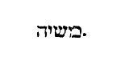
Dicit ei Christus: Ego sum, qui loquor tecum , et rel. Reliquit ergo mulier hydriam suam audito: Ego sum qui loquor tecum , et recepto in corde Christo Domino, quid faceret, nisi jam hydriam dimitteret, et evangelizare curreret? Hydria Graeco nomine appellatur. Graece enim ὔδωρ aqua dicitur, quasi dicatur aquarium. Significat enim in hoc loco cupiditatem, [Col. 0144C] projecit cupiditatem, et properavit annuntiare veritatem. Discant qui nolunt evangelizare, projiciant hydriam ad puteum, et sic currant annuntiare Christum, sicut illa onere abjecto, currit ad civitatem, et dicit illis hominibus: Venite et videte hominem, qui mihi dixit omnia quacunque feci, nunquid non ipse est Christus? etc.
Nonne vos dicitis, quod adhuc quatuor menses sunt, et messis venit , etc. Jam ista mulier fructus maturus erat, et erant albae messes, et falcem quaerebant. Quia quod antea per prophetas seminatum fuerat, maturum factum erat, falcem et trituram desiderabat. Messores tantummodo mittendi erant, unde et Dominus inquit illis:
Misi vos quoque metere quod non seminastis, alii [Col. 0144D] seminaverunt et vos in eorum labores introistis . Qui laboraverunt? Ipse Abraham, Isaac, Jacob, Moyses et caeteri patriarchae et omnes prophetae. Legite labores eorum, in omnibus eorum laboribus, prophetia est Christi, et ideo seminatores. Ergo jam in Judaea messis parata erat. Quid inde factum est. De ipsa messe ejecta sunt pauca grana, et seminaverunt orbem terrarum, et surgit alia messis, quae in fine saeculi metenda est. Ita ergo messis crescit inter zizaniam, cujus messores non apostoli, sed angeli sunt. Videte quid dictum sit: simul gaudeat qui seminat, et qui metet. Disparis temporis labores habuerunt apostoli et prophetae, sed gaudio pariter perfruentur, mercedem simul accepturi sunt vitam [Col. 0145A] aeternam. Rogaverunt eum, ut ibi maneret, et mansit ibi duos dies et reliqua. Christus nuntiatur per Christianos amicos, tanquam muliere, hoc est, Ecclesia annuntiante, ad Christum veniunt, qui foris sunt, et nondum sunt Christiani. Credunt per istam famam. Manet apud eos biduo, hoc est, dat illis duo praecepta charitatis, id est, dilectionem Dei et proximi, et multo plures et firmius credunt, quoniam ipse est vere Salvator mundi.
«Perrexit Jesus in montem Oliveti, et diluculo iterum venit in templum, et omnis populus venit ad eum, et sedens docebat eos. Adducunt autem [Col. 0145B] Scribae et Pharisaei mulierem in adulterio deprehensam, et statuerunt eam in medio, et dixerunt ei: Magister, haec mulier modo in adulterio deprehensa est. In lege autem Moyses mandavit nobis hujusmodi lapidare. Tu ergo quid dicis? Haec autem dicebant tentantes eum, ut possent accusare eum. Jesus autem inclinans se deorsum, digito scribebat in terram. Cum autem perseverarent interrogantes eum, erexit se et dixit eis: Qui sine peccato est vestrum, primus in illam lapidem mittat. Et iterum se inclinans scribebat in terram. Audientes autem haec, unus post unum exibant, incipientes a senioribus. Et remansit Jesus solus, et mulier in medio stans. Erigens autem se Jesus dixit ei: Mulier, ubi sunt qui te accusabant? Nemo te condemnavit? Quae [Col. 0145C] dixit: Nemo, Domine. Dixit autem ei Jesus: Nec ego te condemnabo. Vade, etjam amplius noli peccare.»
Perrexit Jesus in montem Oliveti . Mons quippe Oliveti sublimitatem dominicae pietatis et misericordiae designat, quia et Graece ἒλεος καὶ ἤλεος , misericordia dicitur, Olivetum vocatur oleum, et ipsa unctio olei fessis solet afferre levamen. Sed et hoc quoque oleum et virtute ac puritate praeeminet, et quemcunque ei liquorem superfundere volueris, confestim hunc transcendere, eique superferri consuevit, gratiam misericordiae coelestis non inconvenienter insinuat de qua scriptum est: Suavis Dominus universis, et miserationes ejus super omnia opera [Col. 0145D] ejus (Psal. CXLIV) .
Et diluculo venit iterum in templum . Tempus quoque diluculi, exortum ejusdem gratiae, qua remota legis umbra, lux evangelicae veritatis erat revelanda, demonstrat. Pergit ergo Jesus in montem Oliveti, ut arcem misericordiae in se constare denuntiet. Venit iterum diluculo in templum, ut eamdem misericordiam, cum incipiente Novi Testamenti lumine, fidelibus, templo videlicet suo, pandendam praebendamque significet.
Et omnis populus venit ad eum, et sedens docebat eos . Sessio Domini humilitatem incarnationis ejus, per quam nobis misereri dignatus est, insinuat. Bene autem dicitur: quia cum sedens doceret Jesus, omnis populus venit ad eum, quia postquam humilitate suae [Col. 0146A] carnis proximus hominum factus est, libentius est a multis ejus sermo receptus, namque a pluribus est superba impietate contemptus, audierunt enim mansueti et laetati sunt.
Adducunt autem Scribae et Pharisaei mulierem in adulterio deprehensam, et statuerunt eam in medio, et dixerunt ei: Magister, haec mulier modo deprehensa est in adulterio, in lege autem Moyses mandavit nobis hujusmodi lapidare , etc. Ut, si ipse hanc lapidandam decerneret, deriderent eum, quasi misericordiae, quam semper docebat, oblitum. Si lapidare vetaret, striderent in eum dentibus suis, et quasi fautorem scelerum legisque contrarium, velut merito, damnarent.
Jesus autem inclinans se deorsum, digito scribebat [Col. 0146B] in terra . Per inclinationem Jesu, humilitas, per digitum, qui articulorum computatione flexibilis est, subtilitas discretionis exprimitur. Porro per terram, cor humanum, quod vel bonarum actionum vel malarum solet reddere fructus, ostenditur. Postulatus ergo Dominus judicare de peccatrice non statim dat judicium, sed prius se inclinans deorsum, digito scribit in terra, ac tum demum cum obnixe rogatur judicat. Nos videlicet typice instituens, ut quandocunque proximorum errata conspicimus, non haec antea reprehendendo judicemus, quam ad conscientiam nostram humiliter reversi, digito eam discretionis solerter exculpemus. Et quid in ea conditori placeat, quidve displiceat, sedula examinatione dirimamus, juxta illud Apostoli: Fratres, et si praeoccupatus [Col. 0146C] fuerit homo in aliquo delicto, vos, qui spiritales estis, instruite hujusmodi in spiritu mansuetudinis, considerans teipsum, ne et tu tenteris (Gal. VI) .
Cum autem perseverarent interrogantes eum, erexit se, et dixit eis: Qui sine peccato est vestrum, primus in illam lapidem mittat . Qui hinc et inde Domino Scribae et Pharisaei tendebant laqueos insidiarum, putantes eum vel immisericordem futurum in judicando, vel injustum, praevidens ille dolos, quasi fila transit araneae, judicium justitiae per omnia et mansuetudinem pietatis ostendens. Ecce temperantia miserandi: Qui sine peccato est vestrum . Ecce iterum justitia judicandi: Primus in illam lapidem mittat . Ac si dixisset: Si Moyses mandavit vobis mulierem hujusmodi lapidare, videte quia non hoc [Col. 0146D] peccatores, sed justos facere praecepit, primo vos ipsi justitiam legis implete, et sic innocentes manibus, et mundo corde ad lapidandam ream concurrite. Primo spiritalia legis edicta, fidem, misericordiam, et charitatem perficite, et sic ad carnalia judicanda divertite.
Et iterum se inclinans, scribebat in terra . Et quidem juxta morem consuetudinis humanae potest intelligi quod ideo Dominus coram tentatoribus improbis, inclinari et in terra scribere voluerit, ut alio vultum intendens, liberum eis daret, exire, quos sua responsione perculsos, citius exituros, quam plura interrogaturos esse praeviderat.
Audientes autem, unus post unum exibant, incipientes [Col. 0147A] a senioribus, et remansit solus, et mulier in medio stans . Sed figurate nos admonet in eo, quod et ante datam et post datam sententiam, inclinans scripsit in terra, ut et priusquam peccantem proximum corripiamus, et postquam debitae castigationis illi ministerium reddiderimus, nos ipsos digna humilitatis investigatione perpendamus, ne forte aut iisdem quae in ipsis reprehendimus, aut aliis quibuslibet simus facinoribus irretiti. Sicut forte fieri poterit, ut ipse, qui homicidam reum mortis esse judicaverit, ipse in seipso, per odium fraternae mortis, reus esse ante oculos conditoris inveniatur. Similiter, qui fornicationis crimen in fratre accusat, in seipso superbiae facinus non videat. Ideo jubetur judex alieni criminis digito discretionis in corde suo describere, [Col. 0147B] ne forte in seipso reus inveniatur. Quid igitur nobis in hujusmodi periculis remedii, quid restat salutis? nisi ut cum peccantem conspicimus alium, mox inclinemur deorsum, hoc est, quam dejecti ex nostrae conditione fragilitatis sumus, si non nos divina pietas sustinet, et humiliter inspiciat. Digito scribamus in terra, id est, discrimine solerti pensemus, an cum beato Job dicere possimus, neque enim reprehendit nos cor nostrum in omni vita nostra. Bene qui inclinatus scripsit in terra, erectus misericordiae verba deprimit. Quia quod per humanae infirmitatis societatem promisit, per divinae virtutem potentiae omnibus donum pietatis impendit.
Erigens autem se Jesus, dixit ei: Mulier, ubi sunt qui te accusabant, nemo te condemnavit? quae dixit: [Col. 0147C] Nemo, Domine: dixit autem ei Jesus: Nec ego te condemnabo; vade et amplius noli peccare . Nemo condemnare ausus est peccatricem, quia in se singuli cernere coeperant, quod magis damnandum cognoscerent. Sed qui accusantium turbas, prolato justitiae pondere fugavit, videamus accusatam quanto misericordiae munere sublevet. Sequitur.
Dixit autem Jesus, nec ego te condemnabo, vade, jam amplius noli peccare . Quoniam misericors et pius praeterita relaxat. Quoniam justus est, et justitiam diligit, ne amplius jam peccet interdicit. ( Ex August .) Dicebant apud semetipsos: Aut jubebit eam lapidare, et amittet mansuetudinem, unde placet hominibus: aut jubebit eam dimitti, et tenebimus praevaricatorem legis. Quid ergo respondit Dominus, [Col. 0147D] jussit lapidare dicens: Qui sine peccato est vestrum, primus in illam lapidem mittat . Tales enim ministros lex habere voluit, qui priores vitarent, quod in aliis culpabant. Quid est: Inclinavit se et scribebat in terra? Descendit ad nos majestas aeterna, et indutus carne mortali descendit ad istam habitationem nostram, ubi mortaliter vivimus, et digito scribebat in terra. Scribere enim signum facere est, litterae autem signa sunt vocum, quando enim dico, Deus, istae duae syllabae et quatuor litterae signa sunt magnae rei, quae dicitur Deus, quam audiens omnis humana conscientia, contremescit. Ergo scribebat in terra, quid est aliud, nisi signa faciebat in terra. Totum quidquid hic fecit Dominus, si mortuum suscitavit, [Col. 0148A] si caecum illuminavit, scribebat in terra. Talia omnia signa sunt rerum expressa in corpore, significata in animo. Quod enim facere volebat in animo, hoc praefigurabat in corpore. Neque enim Lazarus sic revixit, ut non moreretur, aut quando sanavit oculos caeci, non eos moriens clausit, quid ergo profuit, quia signa faciebat, hoc est, digito scribebat in terra, ut corporalia facta dirigerent admirationem, admiratio suspenderet judicium, ut quaererent homines vim rerum visibilium, et sanarentur invisibiliter ad invisibilia contuenda.
Quamvis figuraliter plurimum sibi hae duae conveniant lectiones, tamen historialiter in ipso montis nomine istarum duarum fit concordia lectionum.
«Scriptum est: quoniam Abraham duos filios habuit, unum de ancilla et unum de libera. Sed qui de ancilla, secundum carnem natus est. Qui autem de libera, per repromissionem, quae sunt per allegoriam dicta. Haec enim sunt duo Testamenta. Unum quidem in monte Sina, in servitutem generans, quae est Agar: Sina enim mons est in Arabia, qui conjunctus est ei, quae nunc est Hierusalem, et servit cum liberis suis. Illa autem quae sursum est Hierusalem, libera est, quae est mater nostra, scriptum est enim: Laetare, sterilis, quae [Col. 0148C] non paris, erumpe et clama quae non parturis, quia multi filii desertae magis quam ejus quae habet virum. Nos autem, fratres, secundum Isaac promissionis filii sumus. Sed quomodo tunc is, qui secundum carnem natus fuerat, persequebatur eum qui secundum spiritum, ita et nunc. Sed quid dicit Scriptura? Ejice ancillam et filium ejus. Non enim erit haeres filius ancillae cum filio liberae. Itaque, fratres, non sumus ancillae filii, sed liberae, qua libertate Christus nos liberavit.»
Scriptum est, quoniam Abraham duos filios habuit, unum de ancilla et unum de libera . (Ex Aug.) Uterque quidem de semine Abrahae. Sed illum genus demonstrat consuetudo naturae, istum vero dedit promissio, significans gratiam, ibi humanus usus ostenditur, hic [Col. 0148D] divinum beneficium commendatur.
Sed quide ancilla, secundum carnem natus est, qui autem de libera, per repromissionem . (Ex Primas.) Ismael carnis filius, Isaac fidei fuit. Illum enim Abraham ex ancilla, secundum carnalem consuetudinem genuit; istum contra naturam, repromissioni credendo, suscepit.
Quae sunt per allegoriam dicta . Hoc est, aliud ex alio figuratum. Dedit regulam Apostolus, quomodo allegorizare debeamus, scilicet, ut manente historiae veritate, figuras intelligamus. Nam cum dixisset: Abraham vere duas uxores habuisse, postea quid hae ipsae praefigurarent mystica ratione significavit, hoc contra illos facit, qui totum secundum litteram [Col. 0149A] intelligi volunt, et sensum allegoricum non recipiunt.
Haec enim sunt duo Testamenta, unum quidem in monte Sina . Veteris et Novi Testamenti doctrina, quasi duae matres sunt, sed Vetus in monte Sina per Moysen datum est.
( Ex Ambr .) Nihil enim prodest Testamentum Vetus de monte Sina in servitutem generans, nisi quia testimonium perhibet Testamento Novo. Alioquin, quamdiu legitur Moyses, velamen super corda eorum positum est. Cum autem inde quisquam transierit ad Christum, auferetur velamen transeuntium, quippe intentio ipsa mutatur, de Vetere ad Novum, ut Novum quisque induat.
In servitutem generans, quae est Agar . In servitutem [Col. 0149B] autem generans dixit, quia Judaei metu etiam praesenti ac periculo, ad mandatorum observantiam cogebantur ut servi. Nam Christiani ad jugum suave et onus leve praemiis invitantur, ut liberi, illi quasi servi, propter moralia praecepta, etiam diversis operibus occupantur. Nobis tanquam filiis, omnia servilia onera, adimpletis moralibus, auferuntur, et illi sacerdotibus ex debito servientes, tributa reddere etiam cogebantur. Nos vero praeter charitatem nihil debentes, voluntarie antistites nostros honoramus.
Sina mons est in Arabia, qui conjunctus est ei, qui nunc est Hierusalem, et servit cum filiis ejus . De qualitatibus locorum ostendit diversitatem testamentorum. Agar itaque synagogam vult intelligi, [Col. 0149C] et terrenam Hierusalem, cui mons Sina, in quo est lex conscripta, conjunctus est. Hujus ergo filii serviunt oneribus legalium mandatorum.
Illa autem quae sursum est Hierusalem, libera est . In Sarae persona, vel Ecclesiam demonstrat, vel coelestem Hierusalem, ideo de coelo advenit mediator, et Pontifex novi Testamenti, et Evangelium non in uno Judaeae loco, sed in toto mundo est praedicatum.
Quae est mater nostra . De Ecclesiae ergo filiis, quae libera est, superna construitur Hierusalem, et ideo Galatae liberae filii servi esse non debent.
Scriptum est enim: Laetare sterilis, quae non paris, erumpe et clama quae non parturis . Probat aliam nos matrem habere, meliorem quam Judaei Hierusalem. [Col. 0149D] Deserta autem diu fuit a sancto Spiritu, gentium mater Ecclesia. Nec habuit duos filios ante gratiam regenerationis, quae postea gentes et populos, Deo in se operante, generavit.
Quam multi filii desertae . Id est Ecclesiae, quam praefigurabat Anna, voce prophetica, dicens: Quia sterilis peperit septem, et fecunda in filiis infirmata est, id est Synagoga per praevaricationem infidelium filiorum. In septem vero, septiformis gratia spiritus indicatur. Hoc notandum, quod quando dicit: Plures filii desertae, magis quam ejus quae habebat virum, non penitus Synagoga excludatur a partu, sed multitudo ei gentium praeferatur. Et ipsa enim in apostolis, et per apostolos primum populum genuit de [Col. 0150A] Judaeis. Unde duo Apostolorum principes agmina sibi credentium in Christo circumcisionis et gentium diviserunt, ut ex utroque populo desertam prius, atque pauperculam aedificarent Hierusalem.
Magis quam ei qui habet virum . Hic Synagogam intellige, quae velut jugo viri, ita legis onere premebatur, aut certe referendum est, quae antequam ejiceretur, virum se habere credebat.
Nos autem, fratres, secundum Isaac, promissionis filii sumus . Id est, non secundum Ismael, quomodo de Isaac promissum est Abrahae, ita de nobis, quod in eo benedicerentur omnes gentes.
Sed quomodo tunc, qui secundum carnem natus fuerat . Semper hi qui carnales sunt, eos qui spirituales sunt, persequuntur. Quare admirare non debemus, [Col. 0150B] sed ex hoc nos spirituales intelligamus, si tales nos insectentur, quod sub mysterio alio loco Apostolus indicavit: Caro resistit adversus spiritum, et spiritus adversus carnem.
Qui possunt intelligant magis Ecclesiam catholicam persecutionem pati superbia et impietate carnalium. Nam quidquid facit vera et legitima mater Ecclesia, etiam si asperum amarumque sentiatur, non malum pro malo reddit, sed bonum disciplinae, expellendo malo iniquitatis opponit.
Persequebatur eum qui secundum spiritum . In Genesi scriptum est. Quia ludebat Ismael cum Isaac (Gen. XXI) . Sed hic ostenditur, non simplicem lusum fuisse, quem persecutionem appellat. Unde intelligitur quia scurrilem et levem, sicut ipse erat, [Col. 0150C] facere cupiebat, ne illi posset in haereditate praeferri, ideo Abraham dejiciendo eum vocem Sarae jubetur audire.
Ita et nunc . Id est, ita vos isti similes student servos legis efficere.
Sed quid dicit Scriptura: Ejice ancillam et filium ejus . Quantumvis se iniquitas extollat ancilla est, et subjicienda est sanctis. Sicut et Judaei, quamvis Abrahae filios esse se jactent, quandiu filii ancillae fuerint, et sub jugo legis carnaliter vixerint, nobiscum haereditatem habere non poterunt.
Non enim haeres erit filius ancillae cum filio liberae . Nunc igitur quaerendum est cur antea Sara voluit maritum de ancilla suscipere filium, aut cur nunc cum matre jubet expelli domo, quod non zelo fecit [Col. 0150D] accensa, sed mysterio prophetiae compulsa. Agar quippe, secundum quod ait Apostolus, in servitutem genuit carnalem populum. Sara vero liberum populum genuit, qui non secundum carnem, sed in libertate vocatus est, qua libertate liberavit eum Christus. Hoc igitur mysterio figurabatur, priorem populum in servitutem peccatorum generatum in domo Rachel, id est, Ecclesiae non manere in aeternum, neque esse haeredem vel consortem cultoribus Christi, nec cum filio nobili, id est, fideli populo, regnum coelestis gloriae possessurum. Quod vero exiens Agar infantem in humeros suos imposuit, significat quod peccator populus et insipiens Judaeorum cervicem matris suae Synagogae gravavit, dum [Col. 0151A] dicit: Sanguis ejus super nos et super filios nostros (Matth. XXVII) . Quod vero errat Agar in solitudine cum filio suo, significat Synagogam cum populo suo expulsam de terra sua, sine sacerdotio et sacrificio in toto orbe terrarum, et viam, quae est Christus, penitus ignorare.
Itaque, fratres, non sumus ancillae filii, sed liberae, qua libertate Christus nos liberavit . Non ergo debemus derelicta matre nostra ancillam sequi. Quia licet ejusdem viri fuerit uxor, tamen ad tempus, quia nondum poterat Sara generare, id est, nondum fuerat Ecclesia maritante spiritu fecundata.
«Abiit Jesus trans mare Galilaeae, quod est Tiberiadis. Et sequebatur eum multitudo magna, quia [Col. 0151B] videbant signa quae faciebat super his qui infirmabantur. Subiit ergo in montem Jesus, et ibi sedebat cum discipulis suis: Erat autem proximum Pascha, dies festus Judaeorum. Cum sublevasset ergo oculos Jesus, et vidisset quia multitudo maxima venit ad eum, dicit ad Philippum: Unde ememus panes, ut manducent hi? Hoc autem dicebat tentans eum, ipse enim sciebat quid esset facturus. Respondit ei Philippus: Ducentorum denariorum panes non sufficiunt eis, ut unusquisque modicum quid accipiat. Dicit ei unus ex discipulis ejus Andreas, frater Simonis Petri: Est puer unus hic, qui habet quinque panes hordeaceos et duos pisces. Sed haec quid sunt inter tantos? Dixit ergo Jesus: Facite homines discumbere. [Col. 0151C] Erat autem fenum multum in loco. Discubuerunt ergo viri numero quasi quinque millia. Accepit ergo Jesus panes, et cum gratias egisset, distribuit discumbentibus. Similiter et ex piscibus quantum volebant. Ut autem impleti sunt, dixit discipulis suis: Colligite quae superaverant fragmenta, ne pereant. Collegerunt ergo et impleverunt duodecim cophinos fragmentorum, ex quinque panibus hordeaceis et duobus piscibus, quae superfuerunt his qui manducaverunt. Illi ergo homines cum vidissent quod fecerat signum dicebant: Quia hic est vere propheta qui venturus est in mundum.»
Abiit Jesus trans mare Galilaeae, quod est Tiberiadis, [Col. 0151D] et sequebatur eum multitudo magna , et reliqua. (Ex Beda.) Primo dicendum, juxta historiam, quia mare Galilaeae, quod multis, pro diversitate circumjacentium regionum, vocabulis distinguitur, illis tantum in locis mare Tiberiadis vocatur, ubi Tiberiadem civitatem, aquis, ut aiunt, calidis salubrem habitationem praemonstrat. Siquidem interfluente Jordane, duodeviginti passuum millibus in longum, et quinque extenditur in latum. Mystice autem, mare turbida ac tumentia saeculi hujus volumina significat, in quibus pravi quilibet, injuste delectati, quasi profundi dediti pisces, mentem ad superna gaudia non intendunt. Unde bene idem mare Galilaeae, id est, rota cognominatur. Quia nimirum amor labentis saeculi, quasi in vertiginem corda [Col. 0152A] mittit, quae ad perennis vitae desideria non permittit erigi, de qualibus Psalmista: In circuitu , inquit, impii ambulant (Psal. XII) . Sed abeuntem trans mare Galilaeae Jesum, multitudo maxima sequebatur, quae doctrinae sanationis et refectionis ab eo coelestis munera summa perciperet, quia priusquam Dominus in carne appareret, sola illum gens Judaea sequebatur credendo. Postquam vero per incarnationis suae dispensationem fluctus vitae corruptibilis adiit, calcavit, transiit, maxima mox eum multitudo credentium secuta est nationum, spiritualiter instrui, sanari ac satiari desiderans.
Subiit ergo in montem Jesus, et ibi sedebat cum discipulis suis . Quod autem subiens in montem Jesus, ibi sedebat cum discipulis suis, sed veniente [Col. 0152B] ad eum multitudine descendit, atque hanc in superioribus reficit, quam in inferioribus paulo ante curaverat. Nequaquam frustra factum credamus, sed ad significandum mystice, quia doctrinam et charismata sua, Dominus juxta percipientium capacitatem distribuit. Infirmis adhuc quidem mentibus ac parvulis spiritu, simpliciora monita committens, et apertiora credens sacramenta, celsioribus autem, quibusque et perfectioribus sensu, secretiora suae majestatis arcana reserans, altiora devotae conversationis itinera suggerens, et altiora praemiorum coelestium dona promittens.
Erat autem proximum Pascha, dies festus Judaeorum . Quod vero propinquante Pascha, Dominus turbas docet, sanat et reficit, possumus ita mystice interpretari. [Col. 0152C] Quia Pascha transitus dicitur, et quoscunque Dominus interna munerum suorum suavitate recuperat, ad salubrem profecto transitum praeparat, ut carnales videlicet concupiscentias mentis sublimitate transcendant: infirma mundi desideria, pariter et adversa coelesti spe et amore conculcent.
Cum sublevasset ergo oculos Jesus, et vidisset quia multitudo maxima venit ad eum, dicit ad Philippum: Unde ememus panes, ut manducent hi? Quod sublevasset oculos Jesus, et venientem ad se multitudinem vidisse perhibetur, divinae pietatis indicium est, quia videlicet cunctis ad se venire quaerentibus, gratia misericordiae coelestis occurrere consuevit. Et ne quaerendo errare possint, lucem sui spiritus [Col. 0152D] aperire currentibus non desinit. Nam quod oculi Jesu dona spiritus ejus mystice designent, testatur in Apocalypsi Joannes, qui figurate loquens de illo: Et vidi , inquit, agnum stantem tanquam occisum, habentem cornua septem, et oculos septem, qui sunt septem spiritus Dei, missi in omnem terram (Apoc. V) .
Hoc autem dicebat tentans eum, ipse enim sciebat quid esset facturus. Respondit ei Philippus: Ducentorum denariorum panes non sufficiunt eis, ut unusquisque modicum quid accipiat . Quod autem tentans Philippum Dominus dixit: Unde , inquit, ememus panes ut manducent hi? Provida utique dispensatione facit. Non ut ipse quae non noverat, discat, sed ut Philippus tarditatem suae fidei, quam magistro sciente, ipse nesciebat, tentatus agnoscat et miraculo [Col. 0153A] facto castiget. Neque enim dubitare debuerat, praesente rerum creatore, qui educit panem de terra, et vino laetificat cor hominis, paucorum denariorum panes sufficere turbarum millibus, non paucis, ut unusquisque sufficienter acciperet, etiam saturatus abiret.
Dicit ei unus ex discipulis ejus Andreas, frater Simonis Petri: Est puer unus hic qui habet quinque panes hordeaceos et duos pisces. Sed haec quid sunt inter tantos? Quinque autem panes, quibus multitudinem populi saturavit, quinque sunt libri Moysi. Quibus spiritali intellectu patefactis et abundantiore jam sensu multiplicatis, auditorum fidelium quotidie corda reficit, qui bene hordeacei fuisse referuntur, propter nimirum austeriora legis edicta et tegumenta [Col. 0153B] litterae grossiora, quae interiorem spiritalis sensus quasi medulam celabant. Duo autem pisces quos addidit, psalmistarum non inconvenienter et prophetarum scripta significat, quorum uni canendo, alteri colloquendo, suis auditoribus futura Christi et Ecclesiae sacramenta narrabant. Et bene per aquatilia animantia figurantur illius aevi praecones, in quo populus fidelium sine aquis baptismi vivere nullatenus posset. Sunt qui putant duos pisces qui saporem suavem pani dabant, duas illas personas significare, quibus populus ille regebatur, ut per eas consiliorum moderamen acciperet, regiam scilicet et sacerdotalem. Ad quas etiam sacrosancta illa unctio pertinebat, quarum officium erat procellis et fluctibus popularibus, nunquam frangi atque corrumpi, [Col. 0153C] et violentes turbarum contradictiones, tanquam adversantes undas saepe disrumpere, interdum ei custodita sua integritate cedere. Prorsus more piscium, tanquam in procellosa maris, sic in turbulenta populi administratione versari, quae tamen duae personae praefigurabant, ambas enim solus ille sustinuit, et non figurate, sed proprie solus implevit.
Est puer unus hic , et reliqua. Puer, qui quinque panes et duos pisces habuit, nec tamen hos esurientibus turbis distribuit, sed Domino distribuendos obtulit, populus est Judaeorum litterali sensu puerilis, sive qui Scripturarum dicta clausa secum tenuit, quae tamen Dominus in carne apparens accepit, et quid intus haberent utilitatis ac dulcedinis [Col. 0153D] ostendit, quam multiplici spiritus gratia, quae pauca ac despecta videbantur exuberarent, patefecit, et haec per apostolos suos apostolorumque successores cunctis nationibus ministranda porrexit. Unde bene alii referunt evangelistae, quia panes et pisces Dominus discipulis, discipuli autem ministraverunt turbis. Cum enim mysterium humanae salutis initio coepisset enarrari per Dominum, ab eis qui audierunt, in nos confirmatum est. Quinque siquidem panes et duos pisces fregit et distribuit discipulis, quando aperuit illis sensum, ut intelligerent omnia quae scripta essent in lege Moysi et prophetis et psalmis de ipso. Discipuli apposuerunt turbis, quando profecti praedicaverunt ubique, Domino cooperante, [Col. 0154A] et sermonem confirmante sequentibus signis.
Dixit ergo Jesus, facite homines discumbere, erat autem fenum , etc. Fenum in quo discumbens turba reficitur, concupiscentia carnalis intelligitur, quam calcare ac premere debet omnis qui spiritalibus alimentis satiari desiderat. Omnis enim caro fenum, et omnis gloria ejus tanquam flos feni (Isa. XI.) . Discumbat ergo super fenum, florem feni conterat, hoc est, castiget corpus suum, et servituti subjiciat, voluptates carnis edomet, luxuriae fluxa restringat, quisquis panis vivi cupit suavitate refici.
Discubuerunt ergo viri numero quasi quinque millia . Quinque millia virorum, qui manducaverunt, perfectionem vitae eorum, qui verbo reficiuntur, insinuant, quibus Apostolus ait: Viriliter agite et confortamini [Col. 0154B] (I Cor. XVI) . Millenarius autem numerus, ultra quem nulla nostra computatio succrescit, plenitudinem rerum, de quibus agitur, indicare consuevit. Quinario vero, quinque notissimi corporis nostri sensus exprimuntur, visus videlicet, auditus, gustus, olfactus et actus. In quibus singulis quicunque viriliter agere et confortari satagunt, sobrie et juste et pie vivendo et coelestis sapientiae dulcedine recreari, hi nimirum quinque millibus virorum, quos Dominus mysticis dapibus satiavit, figurantur.
( Ex Origene .) Qui bene secundum Marcum quinquageni et centeni discubuerunt. Quinquagesimus enim poenitentiae psalmus est, significat eos qui ad convivium Dei, adhuc in poenitentia commissorum [Col. 0154C] positi, venientes verbi auditum percipiunt. Centeni autem hi sunt, qui jam praesumpta veniae spe, de solo vitae aeternae desiderio suspirant. Aliter, quinquageni illos significant, qui a malo quiescunt opere. Centeni, qui etiam a mala quiescunt cogitatione.
Accepit ergo panes Jesus, et cum gratias egisset distribuit discumbentibus, similiter et ex piscibus quantum volebant . Non enim Salvator nova creat cibaria, sed acceptis his quae habuerunt discipuli benedicit, qui veniens in carne, non alia quam quae dicta sunt praedicabat. Sed legis et prophetarum scripta, quam sint mysteriis gratiae gravida demonstrat. Gratias egit, ut et nos de perceptis coelitus muneribus, gratias semper agere doceret ut et ipse quantum de nostris profectibus gratuletur intimaret. [Col. 0154D] Fregit et per apostolos, distribuit discumbentibus, quia sacramenta prophetiae per sanctos doctores, qui haec toto orbe praedicarent, distribuit.
Ut autem impleti sunt, dixit discipulis suis, colligite fragmenta, quae superaverunt ne pereant . Quod turbis superest a discipulis sustollitur, quia sacratiora et arcana divinorum eloquiorum mysteria, quae a rudibus capi nequeunt, non negligenter omittenda, sed sunt inquirenda perfectis.
Collegerunt ergo, et impleverunt duodecim cophinos fragmentorum, ex quinque panibus quae superfuerant . Quia duodenario numero solet perfectio designari. Recte per duodecim cophinos duodecim apostoli, et per apostolos, omnis doctorum spiritalium [Col. 0155A] chorus exprimitur, foris quidem hominibus dispectus, sed intus salutari cibo repletus. Constat enim cophinis opera servilia geri solere. Sed ipse cophinos panum fragmentis implevit, qui infirma mundi, ut fortia confunderet, elegit.
Illi ergo homines, cum vidissent quod fecerat signum, dicebant: Quia hic est vere propheta, qui venturus est in mundum . Recte quidem dicebant Dominum prophetam magnum, magnae salutis praeconem, jam mundo futurum. Nam et ipse prophetam se vocare dignatur, ubi ait: Quia non capit prophetam perire extra Hierusalem . Sed nec dum plena fide, proficiebant, quia hunc etiam Deum dicere nesciebant. Nos certiore agnitione veritatis et fidei, videntes mundum, quem fecit Jesus, et signa quibus illum replevit. [Col. 0155B] Dicamus: Quia hic est vere mediator Dei et hominum, qui impleret mundum divinitate, et mundus per ipsum factus est. Quia in propria venit humanitate, quaerere et salvare quod perierat, ac recreare mundum quem fecerat.
«Prope erat Pascha Judaeorum, et ascendit Jesus Hierosolymam. Et invenit in templo vendentes oves et boves et columbas et nummularios sedentes. Et cum fecisset quasi flagellum de funiculis, omnes ejecit de templo, oves quoque et boves et nummulariorum effudit aes, et mensas subvertit. Et his qui columbas vendebant dixit: Auferte ista hinc, et nolite facere domum patris mei, domum negotiationis. [Col. 0155C] Recordati vero sunt discipuli ejus, quia scriptum est: Zelus domus tuae comedit me. Responderunt ergo Judaei, et dixerunt ei: Quod signum ostendis nobis, quia haec facis? Respondit Jesus, et dixit eis: Solvite templum hoc et in tribus diebus excitabo illud. Dixerunt ergo Judaei: Quadraginta et sex annis aedificatum est templum hoc, et tu in tribus diebus excitabis illud? Ille autem dicebat de templo corporis sui. Cum ergo resurrexisset a mortuis, recordati sunt discipuli ejus, quia haec dicebat. Et crediderumt Scripturae et sermoni quem dixit Jesus. Cum autem esset Hierosolymis in Pascha, in die festo, multi crediderunt in nomine ejus, videntes signa quae faciebat. Ipse autem Jesus non credebat seipsum eis, [Col. 0155D] eo quod ipse nosset omnes. Et quia opus ei non erat, ut quis testimonium perhiberet de homine. Ipse enim sciebat quid esset in homine.»
Prope erat Pascha Judaeorum, et ascendit Hierosolymam Jesus . Quod autem appropinquante Pascha Jesus ascendit Hierosolymam, nobis profecto dat exemplum, quanta animi vigilantia Dominicis subjici debeamus imperiis, cum ipse in hominis infirmitate apparens, eadem quae ex Divinitatis auctoritate statuit decreta custodiat. Ne enim putarent servi, absque crebris orationum bonorumque actuum victimis, vel flagella evadere, vel praemia se posse percipere, et ipse inter servientes, adorandum immolandumque Dei Filius ascendit. Qui veniens Hierosolymam, [Col. 0156A] quid ibi gerentes invenerit, quid ibidem ipse gesserit, videamus.
Et invenit in templo, vendentes boves et oves et columbas et nummularios sedentes . Nummularii ad hoc sedebant ad mensas, ut inter emptores venditoresque hostiarum prompta esset pecuniae taxatio. Videbantur ergo licite vendi in templo, quae ad hoc emebantur, ut in eodem templo offerrentur Domino. Sed nolens ipse Dominus aliquid in domo sua terrenae negotiationis, ne ejus quidem, quae honesta putaretur, exhiberi. Dispulit negotiatores injustos, et foras omnes simul cum his quae negotiabantur ejecit. Quid ergo, fratres mei, quid putamus faceret Dominus, si rixis dissidentes, si fabulis vacantes, vel alio quolibet scelere reperiret irretitos? qui hostias, quae [Col. 0156B] sibi immolarentur, ementes in templo vidit, et eliminare curavit?
Et cum fecisset quasi flagellum de funiculis, omnes ejecit de templo, oves quoque et boves et nummulariorum effudit aes, et mensas subvertit, et his qui columbas vendebant, dixit: Auferte ista hinc, et nolite facere domum Patris mei domum negotiationis . Timendum satis est, ne nos in templo nummularios, ne venditores bovum, ovium, columbarumve reperiens damnet. Boves, quippe doctrinam vitae coelestis. Oves opera munditiae et pietatis. Columbae sancti Spiritus dona designant. Vendunt autem boves, qui verbum Evangelii, non divino amore, sed terreni quaestus intuitu audientibus impendunt, quales reprehendit Apostolus, quia Christum annuntiarent [Col. 0156C] non sincere. Vendunt oves, qui humanae gratia laudis, opera pietatis exercent, de quibus Dominus ait: Quia receperunt mercedem suam . Vendunt columbas, qui acceptam spiritus gratiam, non gratis, ut praeceptum est, sed ad praemium dant, qui impositionem manus, qua spiritus accipitur, et si non ad quaestum pecuniae, ad vulgi tamen favorem tribuunt: qui sacros ordines non ad vitae meritum, sed ad gratiam largiuntur. Nummos dant mutuo in templo, qui non simulate coelestibus, sed aperte terrenis rebus in Ecclesia deserviunt, sua quaerentes, non quae Jesu Christi.
Recordati vero sunt discipuli ejus, quia scriptum est: Zelus domus tuae comedit me . (Ex August.) Unumquemque Christianum zelus domus Dei comedat. In qua domo Dei membrum es , si quid forte [Col. 0156D] perversum videris, satage corrigi, emendare non quiescas. Verbi gratia, vides fratrem currere ad theatrum, prohibe, mone, contestare, si zelus domus Dei comedit te. Vides alios currere, et inebriare velle, prohibe quos potes, tene quos potes, terreto quos potes, quibus potes blandire, noli tamen quiescere. Amicus est, admoneatur leniter: Uxor est, severissime refrenetur: Ancilla est, etiam verberibus compescatur. Fac quidquid potes pro persona quam portas, noli quiescere lucrari Christum, quia lucratus es a Christo, et perficis in te: Zelus domus tuae comedit me . Si autem fueris frigidus, marcidus, ad te solum exspectans, et quasi tibi sufficiens et dicens in corde tuo: Quid mihi curare est aliena peccata, [Col. 0157A] sufficit mihi anima mea, ipsam integram servem Deo, etiam non tibi venit in mentem servus ille, qui abscondit talentum et noluit erogare? Notandum autem, quia non solum venditores sunt columbarum, et domum Dei faciunt domum negotiationis, qui sacros ordines, largiendo pretium pecuniae vel laudis, vel et jam honoris, inquirunt. Verum hi quoque qui gradum vel gratiam in Ecclesia spiritalem, quam Domino largiente percepere, non simplici intentione, sed cujuslibet humanae causa retributionis exercent, contra illud apostoli Petri: Qui loquitur, quasi sermones Dei, qui ministrat tanquam ex virtute, quam administrat Deus, ut in omnibus honorificetur Deus per Jesum Christum (I Petr. IV) . Funiculi quibus flagellando impios de templo expulit, crementa sunt actionum [Col. 0157B] malarum, de quibus materia damnandi reprobos, districto judici datur. Hinc etenim dicit Isaias: Vae qui trahitis iniquitatem in funiculis vanitatis (Isa. V) . Et in Proverbiis Salomon: Iniquitates , inquit, suae capiunt impium, et funibus peccatorum suorum constringitur (Prov. V) . Qui enim peccata peccatis, pro quibus acrius damnetur accumulat, quasi funiculos, quibus ligetur ac flagelletur, paulatim augendo prolongat. Nummulariorum quoque quos expulerat effudit aes, et mensas subvertit, quia damnatis in fine reprobis, etiam ipsarum quas dilexere rerum tollet figuram, juxta hoc quod scriptum est: Et mundus transibit et concupiscentia ejus . Et eis qui columbas vendebant, dixit: Auferte ista hinc, et nolite facere domum Patris mei domum negotiationis (I Joan. II) . Venditionem [Col. 0157C] columbarum de templo auferri praecepit, quia qui gratiam spiritus gratis accepit, gratis debet dare. Unde Simon ille magus qui hanc emere pecunia voluit, ut majore pretio venderet, audivit: Pecunia tua tecum sit in perditione, non est tibi pars neque sors in sermone hoc (Act. V) .
Responderunt ergo Judaei et dixerunt ei: Quod signum ostendis nobis quia haec facis? Respondens Jesus et dixit eis: Solvite templum hoc, et in tribus diebus excitabo illud . De quo templo diceret, evangelista post aperuit, videlicet de templo corporis sui, quod ab illis passione solutum, ipse post triduum excitavit de morte. Quia ergo signum quaerebant a Domino, quare solita commercia projicere debuerint de templo? Respondit, ideo se rectissime impios exterminare [Col. 0157D] de templo, quia ipsum templum significaverit templum corporis sui, in quo nulla prorsus esse potuit alicujus macula peccati. Neque immerito typicum purgaverit a sceleribus templum, qui verum Dei templum, ab hominibus morte solutum, divinae potentia majestatis excitare posset a mortuis.
Dixerunt ergo Judaei: Quadraginta et sex annis aedificatum est templum hoc, et tu in tribus diebus excitabis illud? Quomodo intellexerunt, ita responderunt. Sed ne nos quoque spiritualem Domini sermonem carnaliter sentiremus, evangelista subsequenter, de quo templo subsequeretur exposuit. Quod autem aiunt de templo, quadraginta et sex annis aedificato, non primam, sed secundam illius aedificationem [Col. 0158A] significant. Primus enim Salomon templum, in maxima regni sui pace, decentissimo septem annorum opere perfecit, quod destructum a Chaldaeis, post septuaginta annos ad jussionem Cyri Persae, laxata captivitate, reaedificari coeptum est. Sed filii transmigrationis, opus, quod Zorobabel et Jesu faciebant propter impugnationem gentium vicinarum, ante quadraginta et sex annos implere nequiverunt, qui etiam numerus annorum perfectioni Domini corporis aptissime congruit. Tradunt etenim naturalium scriptores rerum, formam corporis humani tot dierum spatio perfici. Quia videlicet primis sex a conceptione diebus lactis habeat similitudinem. Sequentibus novem convertatur ad sanguinem. Deinde duodecim solidetur. Reliquis decem et [Col. 0158B] octo firmetur usque ad perfecta liniamenta omnium membrorum, et hinc jam reliquo tempore usque ad tempus partus, magnitudine augeatur. Sex autem et novem, et duodecim, et decem et octo, quadragintaquinque faciunt. Quibus si unum adjecerimus, id est, ipsum diem, quo discreta per membra corpus crementum sumere incipit, tot nimirum dies in aedificatione corporis Domini, quot in fabrica templi annos invenimus. Et quia templum illud manu factum, sacrosanctam Domini carnem, quam ex virgine sumpsit, ut ex hoc loco discimus, figurabat, quae quia ea quod corpus ejus, quod est Ecclesia, quia unusquisque fidelium corpus animamque designabat. Ut in plerisque scripturarum locis invenimus. Adam vero primus post peccatum audivit: [Col. 0158C] Terra es et in terram ibis (Gen. III) . Secundus vero Adam de seipso ait: Solvite templum hoc, et in tribus diebus excitabo illud (Joan. II) . Sparsus vero fuit primus Adam per universum mundum, qui in secundo collectus est, quod significat nomen Adam, quod quatuor litteris scribitur, α δ . Iterum α et μ , quae quatuor litterae quatuor partes orbis designant, in quas sparsus est Adam in filiis suis. Ideo in principiis nominum partium mundi, hae quatuor litterae leguntur. Nam άρκτος , quod est septentrio, ab α incipit. Et δύσις quod est occidens, a δ incipit. Et ἀνατωλή , quod est oriens, ab a incipit, μεσημβρία , quod est meridies, ab μ incipit, quae sunt quatuor partes orbis. Ab his quatuor litteris incipiens, quae litterae, si in computo Graeco considerentur, quadraginta sex [Col. 0158D] faciunt, nam α unum, δ quatuor, et iterum α unum, μ quadraginta, quod sunt simul ducti quadraginta sex, mystice designans quadraginta sex annos quibus templum corporis Christi in utero virginali aedificatum est, sicut superius diximus. Caro autem Christi, quae de Adam sumpta est, destructa est a Judaeis, et a seipso iterum aedificata, secundum scripturas prophetarum. Et ideo dicit evangelista: Hoc enim dicebat de templo corporis sui .
Cum ergo resurrexisset a mortuis, recordati sunt discipuli ejus, quia hoc dicebat, et crediderunt Scripturae , id est Prophetarum, qui praedixerunt Christum tertia die resurgere, et sermoni quem dixit Jesus, id est, quod ait: Solvite templum hoc, et in [Col. 0159A] tribus diebus excitabo illud , hoc est, tertia die resuscitabo quod vos solvetis in cruce.
Cum autem esset Hierosolymis in Pascha in die festo, multi crediderunt in nomine ejus, videntes signa ejus quae faciebat, ipse autem Jesus non credebat semetipsum eis, eo quod ipse nosset omnes, et quia opus ei non erat, ut quis testimonium perhiberet de homine, ipse enim sciebat quid esset in homine . Non enim sic credebant in eum ut digni essent Christum habitare in eis, quorum fides catechumenis comparari potest, ut credant in Christum, sed Christus non credit seipsum eis, quia nisi quis renatus fuerit ex aqua et spiritu, non potest introire in regnum Dei. Nemini vero se credit Christus, nisi qui dignus est introire in regnum Dei, nullus enim dignus est introire in [Col. 0159B] regnum Dei, nisi qui renatus est ex aqua et spiritu.
«Praeteriens Jesus vidit hominem caecum a nativitate, et interrogaverunt eum discipuli ejus: Rabbi, quis peccavit, hic aut parentes ejus, ut caecus nasceretur? Respondit Jesus: Neque hic peccavit neque parentes ejus, sed ut manifestentur opera Dei in illo. Me oportet operari opera ejus qui misit me, donec dies est. Venit nox quando nemo potest operari, quandiu in mundo sum, lux sum mundi. Haec cum dixisset, expuit in terram, et fecit lutum ex sputo, et linivit lutum super oculos ejus, et dixit ei: Vade et lavare in natatoria [Col. 0159C] Siloe, quod interpretatur missus. Abiit ergo et lavit, et venit videns. Itaque vicini et qui viderant eum prius, quia mendicus erat, dicebant: Nonne hic est qui sedebat et mendicabat? Alii dicebant, quia hic est. Alii autem, nequaquam, sed similis est ei. Ille vero dicebat, quia ego sum. Dicebant ergo ei: Quomodo aperti sunt tibi oculi? Respondit: Ille homo qui dicitur Jesus, lutum fecit et unxit oculos meos, et dixit mihi: Vade ad natatoriam Siloe, et lava. Et abii et lavi et video. Et dixerunt ei: Ubi est ille? ait: nescio. Adducunt eum ad Pharisaeos, qui caecus fuerat. Erat autem Sabbatum quando lutum fecit Jesus, et aperuit oculos ejus. Iterum ergo interrogabant eum Pharisaei, quomodo vidisset. Ille autem dixit eis: [Col. 0159D] Lutum mihi posuit super oculos, et lavi et video. Dicebant ergo ex Pharisaeis quidam: Non est hic homo a Deo qui Sabbatum non custodit. Alii dicebant: Quomodo potest homo peccator haec signa facere? Et schisma erat inter eos. Dicunt ergo caeco, iterum: Tu quid dicis de eo, qui aperuit tibi oculos tuos? Ille autem dixit: Quia propheta est. Non crediderunt ergo Judaei de illo, quia caecus fuisset et vidisset, donec vocaverunt parentes ejus qui videret, et interrogaverunt eos dicentes: Hic est filius vester, quem vos dicitis, quia caecus natus est. Quomodo ergo nunc videt? Responderunt eis parentes ejus et dixerunt: Scimus quia hic est filius noster, et quia caecus natus est, quomodo [Col. 0160A] autem nunc videat nescimus, aut quis aperuit oculos ejus nos nescimus, ipsum interrogate, aetatem habet, ipse de se loquatur. Haec dicebant parentes ejus, quia timebant Judaeos. Jam enim conspiraverant Judaei, ut si quis cum confiteretur Christum, extra synagogam fieret. Propterea parentes ejus dixerunt: quia aetatem habat, ipsum interrogate. Vocaverunt ergo rursum hominem qui fuerat caecus, et dixerunt ei: Da gloriam Deo, nos scimus quia hic homo peccator est. Dixit ergo ille: Si peccator est nescio; unum scio, quia caecus cum essem, modo video. Dixerunt ergo illi: Quid fecit tibi? quomodo aperuit tibi oculos? Respondit eis: Dixi vobis jam et audistis, quid iterum vultis audire? Nunquid et vos vultis discipuli ejus fieri? [Col. 0160B] maledixerunt ei et dixerunt: Tu discipulus illius sis, nos autem Moysi discipuli sumus. Nos scimus quia Moysi locutus est Deus, hunc autem nescimus unde sit. Respondit ille homo, et dixit eis: In hoc enim mirabile est, quia vos nescitis unde sit, et aperuit oculos meos. Scimus autem quia peccatores Deus non audit, sed si quis Dei cultor est, et voluntatem ejus facit, hunc exaudit. A saeculo non est auditum, quia aperuit quis oculos caeci nati? nisi esset hic a Deo, non poterat facere quidquam. Responderunt et dixerunt ei: In peccatis natus est totus, et tu doces nos? Et ejecerunt eum foras. Audivit Jesus quia ejecerunt eum foras, et cum invenisset eum, dixit ei: Tu credis in filium Dei? Respondit ille et dixit: Quis est, Domine, ut [Col. 0160C] credam in eum? Et dixit ei Jesus: Et vidisti eum, et qui loquitur tecum ipse est. At ille ait: Credo, Domine, et procidens adoravit eum.»
Praeteriens Jesus vidit hominem caecum a nativitate , etc. Genus humanum significat iste caecus. Haec enim caecitas contigit in primo homine per peccatum, de quo omnes originem duximus, non solum mortis, sed etiam iniquitatis. Venit Dominus, spuit in terram, de saliva sua lutum fecit, quia verbum caro factum est, et unxit oculos, et misit illum ad piscinam Siloem, qui interpretatur missus. Missus vero est Dominus Jesus Christus; nisi enim ille fuisset missus, nemo nostrum esset ab iniquitate dimissus. Lavit ergo oculos in ea piscina, baptizatus est in Christo, et illuminatus est. Caecitas enim infidelitas est, et illuminatio [Col. 0160D] fides. Quaestionem quippe Domino proposuerunt: Quis peccavit, hic aut parentes ejus, ut caecus nasceretur? Respondit Jesus: Neque hic peccavit, neque parentes ejus, ut caecus nasceretur . Habebant enim peccatum parentes ejus, sed non ipso peccato factum est, ut caecus nasceretur, sed ut manifestarentur opera Dei in illo . Quod autem dicit: Me oportet operari opera ejus qui misit me, donec dies est , semetipsum utique diem in hoc loco voluit intelligi; ipse enim ait: Quandiu sum in hoc mundo lux sum mundi . Quod vero ait: Venit nox, in qua nemo potest operari , de nocte illa aeterna tenebrosaque dicit, ubi reprobi cruciandi sunt sine fine, quibus dicetur: Ite in ignem aeternum, qui paratus est diabolo et angelis [Col. 0161A] ejus . Tenebras scilicet exteriores in quas servus nequam ligatis manibus et pedibus projicietur. Ergo dum dies nobis est, ille qui dixit: Ecce ego vobiscum sum omnibus diebus usque ad consummationem saeculi . Operemur bonum ad omnes, ut nos illa nox non comprehendat, ubi nemo possit operari, sed quod operatus est recipere.
( Ex Hieron .) Siloa fons est ad radices montis Sion, qui non jugibus aquis, sed incertis horis ebullit per concava terrarum, ubi caecus luto lavat, caecitate detersa, clarum oculorum lumen accepit, quo indicatur, non aliter caecitatem Judaeorum vel omnes incredulos posse sanari, nisi doctrina aquarum Christi, quae absque strepitu et clamore verborum leviter fluit, in Isaia enim legimus, aquas Siloe, quae [Col. 0161B] vadunt cum silentio.
«Erat quidam languens Lazarus a Bethania, de castello Mariae et Marthae sororis ejus. Maria autem erat quae unxit Dominum unguento et extersit pedes ejus capillis suis, cujus frater Lazarus infirmabatur. Miserunt ergo sorores ejus ad eum, dicentes: Domine, ecce quem amas infirmatur. Audiens autem Jesus dixit eis: Infirmitas haec non est ad mortem, sed pro gloria Dei, ut glorificetur Filius Dei per eam. Diligebat autem Jesus Martham et sororem ejus Mariam et Lazarum. Ut ergo audivit quia infirmabatur, tunc quidem mansit duobus [Col. 0161C] diebus in eodem loco. Deinde post haec dicit discipulis suis: Eamus in Judaeam iterum. Dicunt ei discipuli: Rabbi, nunc quaerebant te Judaei lapidare et iterum vadis illuc? Respondit Jesus: Nonne duodecim horae sunt diei? Si quis ambulaverit in die non offendit, quia lucem hujus mundi videt. Si autem ambulaverit in nocte, offendit, quia lux non est in eo. Haec ait. Et post haec dicit eis: Lazarus amicus noster dormit, sed vado ut a somno excitem eum. Dixerunt ergo discipuli ejus: Domine, si dormit, salvus erit. Dixerat autem Jesus de morte ejus, illi autem putaverunt, quia de dormitione somni diceret. Tunc ergo dixit eis Jesus manifeste: Lazarus mortuus est, et gaudeo propter vos, ut credatis, quia non eram ibi, sed eamus [Col. 0161D] ad eum. Dixit ergo: Thomas qui dicitur Dydimus, ad condiscipulos, eamus et nos et moriamur cum eo. Venit itaque Jesus et invenit eum quatuor dies jam in monumento habentem. Erat autem Bethania juxta Hierosolymam, quasi stadiis quindecim. Multi autem ex Judaeis venerant ad Martham et ad Mariam, ut consolarentur eas de fratre suo. Martha ergo ut audivit quia Jesus venit, occurrit illi. Maria autem domi sedebat. Dixit ergo Martha ad Jesum: Domine, si fuisses hic, frater meus non fuisset mortuus. Sed nunc scio, quia quaecunque poposceris a Deo dabit tibi Deus. Dicit illi Jesus: Resurget frater tuus. Dicit ei Martha: Scio, quia resurget in resurrectione in novissimo [Col. 0162A] die. Dicit ei Jesus: Ego sum resurrectio et vita: qui credit in me, etiamsi mortuus fuerit vivet. Et omnis qui vivit et credit in me, non morietur in aeternum. Credis hoc? ait illi: Utique, Domine, ego credidi, quia tu es Christus Filius Dei vivi, qui in hunc mundum venisti. Et cum haec dixisset, abiit et vocavit Mariam sororem suam silentio, dicens: Magister adest, et vocat te. Illa ut audivit, surrexit cito, et venit ad eum. Nondum enim venerat Jesus in castellum, sed erat adhuc in illo loco ubi occurrerat ei Martha. Judaei ergo qui erant cum ea in domo, et consolabantur eam, cum vidissent Mariam, quia cito surrexit et exiit, secuti sunt eam dicentes: Quia vadit ad monumentum, ut ploret ibi. Maria ergo cum venisset [Col. 0162B] ubi erat Jesus, videns eum cecidit ad pedes ejus, et dixit ei: Domine, si fuisses hic, non esset mortuus frater meus. Jesus ergo ut vidit eam plorantem et Judaeos, qui venerant cum eo plorantes, fremuit spiritu, et turbavit seipsum, et dixit: Ubi posuisti eum? Dicunt ei: Domine, veni et vide. Et lacrymatus est Jesus. Dixerunt ergo Judaei: Ecce quomodo amabat eum. Quidam autem dixerunt ex ipsis: Non poterat hic, qui aperuit oculos caeci nati, facere, ut et hic non moreretur? Jesus ergo rursum fremens in semetipso venit ad monumentum. Erat autem spelunca et lapis superpositus erat ei. Ait Jesus: Tollite lapidem. Dicit ei Martha soror ejus, qui mortuus fuerat: Domine, jam foetet, quatriduanus enim est. Dicit ei Jesus: [Col. 0162C] Nonne dixi tibi, quoniam si credideris videbis gloriam Dei? Tulerunt ergo lapidem. Jesus autem elevatis sursum oculis dixit: Pater, gratias ago tibi, quoniam audisti me, ego autem sciebam, quia semper me audis. Sed propter populum qui circumstat dixi, ut credat, quia tu me misisti. Haec cum dixisset, voce magna clamavit: Lazare, veni foras. Et statim prodiit, qui fuerat mortuus ligatus manus et pedes institis. Et facies illius sudario erat ligata. Dicit ei Jesus: Solvite eum, et sinite abire. Multi ergo ex Judaeis, qui venerant ad Mariam et viderant quae fecit, crediderunt in eum.»
Erat autem quidam languens Lazarus a Bethania de castello Mariae et Marthae sororis ejus , etc. Inter [Col. 0162D] omnia miracula quae fecit Dominus noster Jesus Christus, Lazari resurrectio praecipue praedicatur. Tres tamen mortuos a Domino resuscitatos in Evangelio legimus. Resuscitavit filiam archisynagogi adhuc in domo jacentem: resuscitavit juvenem, filium viduae extra portam civitatis elatum: resuscitavit Lazarum sepultum quatriduanum. Tres isti mortui tres significant resurrectiones animarum. Intueatur quisque animam suam, si peccat, moritur, peccatum mors animae est. Prima mors, consensio est peccati, hanc mortem significabat puella illa, quae nondum erat foras elata, sed in domo mortua jacebat, et quasi peccatum interius latebat. Secunda mors est, non solum consentire peccato, sed etiam facere. Hoc significabat [Col. 0163A] juvenis, quem Dominus poenitentem matri suae, id est, Ecclesiae resuscitatum reddit. Tertium genus mortis immane est, consuetudo mala, quod significatur per Lazarum, unde et bene de illo dicitur, foetet. Incipit enim habere pessimam famam, ne desperet peccator, quia Dominus omnes misericorditer resuscitavit. Quod autem subditur: Infirmitas haec non est ad mortem , consequenter adjunxit: sed pro gloria Dei, ut glorificetur Filius Dei per eum . Sunt haeretici, qui hoc negant quod Filius Dei sit Deus. Ecce audiant: Infirmitas haec non est ad mortem, sed pro gloria Dei , id est, Filii Dei.
Respondit autem Jesus, nonne duodecim horae sunt diei? etc. Quid sibi vult ista responsio? Sed quantum mihi videtur redarguere voluit illorum dubitationem [Col. 0163B] et infidelitatem. Voluerunt enim consilium dare Domino, ne moreretur, qui venerat mori, corripuit eos et ait: Nonne duodecim horae sunt diei? si quis ambulaverit in die non offendit . Diem autem seipsum ostendit esse, quia ipse spiritaliter est verus dies, duodecim vero horae, duodecim Apostoli sunt: Ut autem diem se ostenderet, duodecim discipulos elegit: Si ego sum , inquit, dies, et vos horae, me sequimini, quia horae diem sequuntur, non dies horas . Sequantur ergo horae diem, praedicent horae diem. Horae illustrentur a die, horae illuminentur a die, et per horarum praedicationem credat mundus in diem. Hoc ergo ait de compendio, me sequimini, si non vultis offendere. Quod autem dixit: Lazarus amicus noster dormit , verum dixit. Sororibus mortuus erat, [Col. 0163C] quem suscitare non poterant, Domino dormiebat, qui tanta facilitate eum suscitavit de sepulcro, quanta tu nunc excitas dormientem de lecto. De quatuor diebus multa quidem dici possunt, sic ut se habent obscura scripturarum, quae pro diversitate intelligentium multos sensus pariunt. Dicamus et nos, quid nobis videatur significare mortuus quatriduanus, quomodo in illo caeco intelligimus, quodammodo humanum genus, sic forte, et in isto mortuo multos intellecturi sumus. Diversis enim modis, una res significari potest. Homo quando nascitur, jam cum morte nascitur, quia de Adam peccatum trahit, ecce habes unum diem mortis, quod homo trahit de mortis propagine. Deinde crescit, incipit accedere ad rationales annos, ut legem sapiat naturalem, quam [Col. 0163D] omnes habent in corde fixam: Quod tibi non vis, alii ne feceris , et hanc legem transgrediuntur homines, ecce altera dies mortis data est, et etiam lex divina per famulum Dei Moysen dicit illi: Non occides, non moechaberis, non falsum testimonium dices. Honora patrem tuum et matrem tuam , etc. Ecce lex scripta est, et ipsa contemnitur, ecce tertius dies mortis, quid restat? Venit Evangelium, ideo littera sine gratia reos faciebat, quos confitentes, gratia liberabat. Praedicatur ubique Christus, minatur gehennam, vitam promittit aeternam, et ipsa contemnitur, transgrediuntur homines Evangelium, ecce quartus dies mortis, merito jam foetet. Numquid et talibus neganda est misericordia? absit, et jam ad [Col. 0164A] tales Dominus excitandos non dedignatur accedere.
Dixit ergo Martha ad Jesum, Domine si fuisses hic, frater meus non fuisset mortuus. Dixit illi Jesus: Resurget frater tuus . Quia ego sum resurrectio et vita, qui credit in me, et jam si mortuus fuerit in carne, vivet in anima donec resurgat, et caro nunquam postea moritura. Et omnis qui vivit in carne, et credit in me, et si morietur ad tempus, propter mortem carnis, non morietur in aeternum, propter vitam spiritus, et immortalitatem resurrectionis. Credis hoc? Ait illi: Utique, Domine, ego credidi, quia tu es Christus Filius Dei, qui in hunc mundum venisti . Quando hoc credidi, credidi quia tu es resurrectio et vita, et qui in te credit, et si mortuus fuerit, vivet.
Jesus ergo, ut vidit eam plorantem, fremuit spiritu , [Col. 0164B] etc. Quid est, quod turbat semetipsum Christus, nisi ut significet tibi, quomodo turbari tu debeas cum tanta mole peccati gravaris et premeris. Attendisti enim te, vidisti te reum, computas, tibi illud feci, et pepercit Deus, illud commisi, et distulit me, Evangelium audivi, et contempsi, baptizatus sum, et iterum ad eadem revolutus sum. Quid facio? unde evado? quando ista dicis, jam fremet Christus in corde tuo, quia fides fremit. Si fides in nobis, Christus in nobis, ergo fides tua de Christo, Christus est in corde tuo, in voce frementis apparet spes resurgentis. Fremat Christus, increpet se homo. Flevit Christus, fleat homo. Quare enim flevit Christus? nisi quia flere hominem docuit. Fremere quodammodo [Col. 0164C] debet homo in accusatione malorum operum, ut violentiae poenitendi cedat consuetudo peccandi. Dixit: Ubi posuistis eum? Scis quia mortuus sit, et nescis ubi sit sepultus? Et ista significatio est, quia sic perditum hominem, quasi nescit Deus. Talis est vox Dei in Paradiso, posteaquam homo peccavit: Adam, ubi es? Dicunt ei: Domine, veni et vide . Quid est; Vide? miserere, videt enim Dominus quando miseretur.
Dixerunt ergo Judaei: Ecce quomodo amabat eum , et rel. Quid est, amabat eum? Non veni vocare justos, sed peccatores. Mortuus sub lapide, reus sub lege. Lex quae data est Judaeis, in lapide scripta est. Omnes autem rei sub lege sunt, bene viventes cum lege. Quid est ergo lapidem removere? Gratiam praedicare. [Col. 0164D] Quid quod voce magna clamavit: Lazare, veni foras? Quam difficile surgit, quem moles malae consuetudinis premit. Sed tamen surgit, occulta gratia intus vivificatur: surgit post vocem magnam, se adhuc ligatis manibus et pedibus: Et facies illius sudario erat ligata , tamen foras jam processit, quid significat? quando contemnis mortuus jaces, et si tanta contemnas, quanta dixi, sepultus jaces, quando confiteris procedis, sed ut confitearis Deus facit, humana voce clamando, id est, magna gratia vocando, sed ut solverentur peccata ejus, ministris hoc dixit Dominus: Solvite illum et sinite abire , hoc est, quaecunque solveritis in terra, soluta erunt et in coelo.
«Christus assistens Pontifex futurorum bonorum, per amplius et perfectius tabernaculum non manufactum, id est, non hujus creationis, neque per sanguinem hircorum aut vitulorum, sed per proprium sanguinem introivit semel in sancta aeterna, redemptione inventa. Si enim sanguis hircorum, aut taurorum, et cinis vitulae aspersus inquinatos sanctificat ad emundationem carnis, quanto magis sanguis Christi, qui per Spiritum sanctum obtulit semetipsum immaculatum Deo, emundabit conscientiam nostram ab operibus mortuis ad serviendum Deo viventi, et ideo Novi Testamenti mediator est, ut morte intercedente, in redemptionem [Col. 0165B] earum praevaricationum, quae erant sub priori Testamento repromissionem accipiant, qui vocati sunt aeternae haereditatis in Christo Jesu Domino nostro.»
Christus assistens Pontifex . (Ex Orig.) Est quidem unus pontifex magnus Dominus noster Jesus Christus, qui non solum sacerdotum est pontifex, sed et pontificum pontifex, nec sacerdotum princeps tantummodo, sed et princeps principum sacerdotum sicut et Rex regum, et dominus Dominorum, qui velamen (quod Apostolus interpretatus est coelum penetrans, assistit nunc vultui Dei pro nobis, semper vivens ad interpellandum.
Futurorum bonorum . Sive eorum diversorum charismatum, qui in primo adventu credentibus, per [Col. 0165C] Spiritum sanctum data sunt hominibus, sive omnium futurorum bonorum, de quibus Psalmista confidens aiebat: Credo videre bona Domini in terra viventium (Psal. XXVII) .
Per amplius et perfectius tabernaculum . (Ex Joan. Chrys.) Hic carnem Christi appellat Apostolus tabernaculum. Tabernaculum enim caro dicitur Christi, habens in se divinitatem, in illo enim, ait Apostolus, habitat omnis plenitudo divinitatis corporaliter. Et bene amplius et perfectius tabernaculum Christi carnem dixit, siquidem et Deus verbum, et cuncta Spiritus operatio habitat in eo.
Non manu factum . Hoc est, non virili semine concretum, sed de Spiritu sancto ex Maria virgine natum. Ipsum enim lapidem, id est, Christum, Daniel [Col. 0165D] de monte, id est, de regno Judaeorum sine manibus vidit praecisum (Dan. II) , quia sine opere nuptiali, qui gratia sua universum mundum implevit.
Non hujus creationis . Hoc est, non sine Spiritu eam construxit, neque ex hac creatura est, hoc est, non est ex his creaturis, sed spiritalis ex Spiritu sancto.
Neque per sanguinem hircorum aut vitulorum, sed proprio sanguine introivit semel in sancta aeterna , etc. Omnia permutavit Christus, qui non alieno, sed proprio sanguine semel introivit in sancta, hoc est, in coelum, et per unum ingressum, aeternam redemptionem invenit.
Sienim sanguis hircorum aut taurorum et cinis vitulae [Col. 0166A] aspersus inquinatos sanctificat ad emundationem carnis, quanto magis sanguis Christi . (Ex Orig.) Si enim carnem, inquit, potest mundare sanguis taurorum, multo amplius animae sordem delevit sanguis Christi, et in hac ipsa hostiarum diversitate, illis umbra data est. Nobis vero per Jesum Christum veritas reservata est, pro illis autem boves et hirci jugulabantur, et aves, et simila conspergebatur, pro nobis autem Dei Filius est immolatus. Nam et hostiarum diversitatum typus imaginem passionis Christi praeferebat. Nam postquam ipse oblatus est, omnes illae hostiae cessaverunt, quae in typo vel umbra ejusdem praecesserant, praefigurantes illud sacrificium, quod unus et verus sacerdos obtulit, mediator Dei et hominum, cujus sacrificii promissivas figuras in victimis animalium [Col. 0166B] celebrare ante oportebat, propter mundationem futuram, carnis et sanguinis, per quam unam victimam, fieret remissio peccatorum, de carne et sanguine contractorum, quae regnum Dei non possidebunt, quae eadem substantia corporalis in coelestem commutabitur qualitatem. Ipse enim in vitulo, propter virtutem crucis offerebatur. Ipse in agno propter innocentiam. In ariete, propter principatum, in hirco propter similitudinem carnis peccati, ut de peccato damnaret peccatum. In turture et columba, propter Deum et hominem, quia mediator Dei et hominis, in duarum substantiarum conjunctione ostendebatur. Porro in similaginis consparsione, credentium per aquam baptismatis, collectam Ecclesiam, quae corpus Christi perspicue demonstrabat. [Col. 0166C] Nos autem moraliter munus Deo vitulum offerimus, cum carnis superbiam vincimus: agnum cum irrationabiles motus, et insipientes corrigimus: haedum, dum lasciviam superamus: columbam, dum simplicitatem proferimus mentis: turturem, dum carnis servamus castitatem: panes azymos, si in via sinceritatis et veritatis ambulemus.
Qui per Spiritum sanctum semetipsum obtulit immaculatum Deo . Hoc est, sacrificium immaculatum. Erat mundum a peccatis, hoc enim est, per Spiritum sanctum non per ignem, non per aliena quaedam.
Et mundavit conscientiam nostram ab operibus mortuis, ad serviendum Deo viventi . Hic manifestat, quia opera mortua habentes, id est, peccata non [Col. 0166D] possunt servire vero et vivo Deo. Sicut enim qui mortuum tangebat polluebatur, sic et qui peccatum operatur magis polluitur. Mortuum quippe tangere est, in peccatis mortuum quempiam vel sequi vel imitari.
Et ideo Novi Testamenti mediator est, ut morte intercedente, in redemptione earum praevaricationum, quae erant sub priore Testamento, repromissionem accipiant qui vocati sunt, aeternae haereditatis . Hic mediator filius factus est patris et noster: sermones detulit, et attulit nobis a patre pertransvectores: mortuus est pro nobis, et fecit nos dignos testamenti, hoc modo firmum factum est testamentum.
«Dicebat Jesus turbis Judaeorum et principibus sacerdotum: Quis ex vobis arguet me de peccato? Si veritatem dico, quare vos non creditis mihi? Qui est ex Deo, verba Dei audit, propterea vos non auditis, quia ex Deo non estis. Responderunt ergo Judaei et dixerunt ei: Nonne bene dicimus nos, quia Samaritanus es tu, et daemonium habes? Respondit Jesus: Ego daemonium non habeo, sed honorifico patrem meum, et vos inhonorastis me, ego autem gloriam meam non quaero, est qui quaerat et judicet. Amen amen dico vobis, si quis sermonem meum servaverit, mortem non videbit in aeternum. Dixerunt ergo Judaei: Nunc cognovimus, quia daemonium habes. Abraham mortuus est et [Col. 0167B] prophetae, et tu dicis: Si quis sermonem meum servaverit, non gustabit mortem in aeternum. Nunquid tu major es patre nostro Abraham, qui mortuus est? et prophetae mortui sunt, quem teipsum facis? Respondit Jesus: Si ego glorifico meipsum, gloria mea nihil est. Est pater meus qui glorificat me, quem vos dicitis, quia Deus noster est, et non cognovistis eum. Ego autem cognovi eum. Et si dixero, quia non novi eum, ero similis vobis mendax. Sed scio eum, et sermonem ejus servo. Abraham pater vester exsultavit ut videret diem meum, et vidit, et gavisus est. Dixerunt ergo Judaei ad eum: Quinquaginta annos nondum habes et Abraham vidisti? Dicit eis Jesus: Amen amen dico vobis, antequam Abraham fieret, ego [Col. 0167C] sum. Tulerunt ergo lapides, ut jacerent in eum. Jesus autem abscondit se, et exivit de templo.»
Dicebat Jesus turbis Judaeorum et principibus sacerdotum: Quis ex vobis arguet me de peccato? (Ex Greg.) Pensate mansuetudinem Dei, relaxare peccata venerat et dicebat: Quis ex vobis arguet me de peccato ? Non dedignatur ex ratione ostendere se peccatorem non esse, qui ex virtute divinitatis poterat peccatores justificare.
Si veritatem dico, quare vos non creditis mihi ? Quare, nisi quia filii diaboli estis non veritatis? Filii non natura, sed imitatione. Creatura namque Dei erant, ipse enim est creator carnis et animae, vitio imitatores erant diaboli.
Qui est ex Deo, verba Dei audit. Propterea vos non auditis, quia ex Deo non estis . Si enim ipse verba Dei audit, qui ex Deo est, et audire verba ejus non potest quisquis ex illo non est, interroget se unusquisque, si verba Dei in aure cordis percipit, et intelligit unde sit. Coelestem patriam desiderare veritas jubet, carnis desideria conterere, mundi gloriam declinare, aliena non rapere, propria largiri. Penset ergo apud se unusquisque vestrum, si haec vox Dei in cordis ejus aure convaluit, et quia jam ex Deo sit agnoscit.
Dixerunt ergo Judaei: Nonne bene dicimus nos, quia Samaritanus es tu, et daemonium habes ? Accepta autem tanta contumelia, quid Dominus respondeat audiam.
Ego daemonium non habeo, sed honorifico patrem meum, et vos inhonorastis me . Quia enim Samaritanus interpretatur custos, et ipse veraciter custos est, de quo Psalmista ait: Nisi Dominus custodierit civitatem, in vanum vigilant, qui custodiunt eam , et cui per Isaiam, Custos quid de nocte, custos quid de nocte (Isaiae XXI) : respondere noluit Dominus, Samaritanus non sum, sed ego daemonium non habeo. Duo quippe ei inlata fuerant, unum negavit, et alterum tacendo consensit. Custos namque humani generis venerat, et si Samaritanum se non esse diceret, esse custodem negaret, sed tacuit quod recognovit, et patienter repulit, quod dictum fallaciter audivit dicens: Ego daemonium non habeo . Hic vero in semetipso nobis Dominus patientiae praebuit exemplum. [Col. 0168B] Qui si respondere voluisset Judaeis, vos daemonium habetis, verum utique dixisset, quia nisi impleti daemonio, tam perverse de Deo loqui non possent. Sed accepta injuria, et jam quod verum erat dicere veritas noluit, ne non dixisse veritatem, sed provocatus contumeliam reddidisse videretur. Ex qua re quid nobis innuitur, nisi ut eo tempore quo a proximis ex falsitate contumelias accipimus, eorum etiam vera mala taceamus, ne ministerium justae correptionis in arma vertamus furoris.
Ego autem non quaero gloriam meam, est qui quaerat et judicet . Scriptum est: Quia pater omne judicium dedit filio (Joan. V) , et ecce idem filius injurias accipiens, illatas contumelias patris judicio reservat, ut nobis profecto insinuet, quantum nos esse patientes [Col. 0168C] debeamus, dum adhuc se ulcisci non vult, et ipse qui judicat. Quem vult intelligi cum dicit? Est qui quaerat et judicet, nisi patrem, quid est judicat? discernit. Quomodo est qui quaerat et judicet, est pater qui gloriam meam a vestra gloria discernat et separet, nam secundum formam servi, multum interest, inter gloriam Christi et caeterorum hominum.
Amen amen dico vobis, si quis sermonem meum servaverit , etc. De morte secunda dicit, de morte aeterna, de morte damnationis, cum diabolo et angelis ejus, ipsa est vera mors. Nam ista mors corporis, migrato quaedam est sanctis ad meliorem vitam. Impiis vero ad poenas perpetuas. Quam mortem hic veritas designare voluit, cum dicit: Mortem non videbit in aeternum.
Dixerunt ergo Judaei: Nunc, cognovimus quia daemonium habes, Abraham mortuus est, et prophetae. Et tu dicis, si quis sermonem meum , etc. Irascebantur quia jam mortui erant illa morte quae vitanda erat. Nam illam mortem vitare non poterant, qua mortuus est Abraham et prophetae, hoc est, mortem carnis. Nam Abraham et prophetae in spiritu vivebant, de quibus ipsa Veritas ait: Non est Deus mortuorum, sed vivorum (Matth. II) .
Respondit Jesus: Si ego glorifico meipsum, gloria mea nihil est, est pater meus qui glorificat me, quem vos dicitis: Quia Deus noster est, et non cognovistis eum, ego autem novi eum. Et si dixero, quia non novi eum, ero similis vobis mendax; sed scio eum, et ser [Col. 0169A] monem ejus servo . Refert ergo gloriam suam ad patrem Dominus Jesus Christus, de quo est quod Deus est. Dicit Patrem suum, quem illi dicebant Deum suum, quem non cognoverunt. Si enim patrem cognovissent, ejus filium recepissent. Sermonem patris tanquam filius servans loquebatur, et ipse erat sermo, et verbum patris, qui hominibus loquebatur. Et notandum, quod vidit eos Dominus aperta sibi impugnatione resistere, et tamen eis se iterata non desinit voce praedicare, dicens:
Abraham pater vester exsultavit, ut videret diem meum, vidit et gavisus est . Tunc quippe diem Domini Abraham vidit, cum in figura summae trinitatis tres angelos hospitio recepit. Quibus profecto susceptis, sic tribus quasi uno locutus est. Quia et si in personis [Col. 0169B] numerus trinitatis est, in natura unitas divinitatis. Sed carnales mentes audientium, oculos a carne non sublevant, in eo solam carnis aetatem pensant, dicentes:
Quinquaginta annos nondum habes, et Abraham vidisti? Quos benigne redemptor noster a carnis suae intuitu submovit, et ad divinitatis contemplationem trahit dicens:
Amen, amen dico vobis, antequam Abraham fieret ego sum . Ante enim praeteriti temporis est, sum praesentis. Et quia praeteritum tempus et futurum divinitas non habet, sed semper esse habet. Non ait: Ante Abraham ego fui, sed ante Abraham ego sum. Unde et ad Mosen dicitur: Ego sum qui sum (Exod. III) . Et dices filiis Israel: Qui est, misit me ad vos . [Col. 0169C] Ante ergo vel post Abraham habuit, qui et accedere potuit per exhibitionem praesentiae, et recedere per cursum vitae. Veritas vero semper esse habet, quia ei quidquam nec priori tempore incipitur, nec sub sequenti terminatur. Sed sustinere ista aeternitatis verba mentes infidelium non valentes, ad lapides currunt. Et quem intelligere non poterant, lapidibus obruere quaerebant. Quid autem contra furorem lapidantium Dominus fecit, ostenditur cum protinus subinfertur.
Jesus autem abscondit se et exivit de templo . Mirum valde est, fratres charissimi, cur persecutores suos Dominus sese abscondendo declinaverit, qui si divinitatis suae potentiam exercere voluisset, tacito nutu mentis in suis eos ictibus ligaret, aut in poenam [Col. 0169D] mortis subitae obrueret. Sed quia pati venerat, exercere judicium nolebat. Cur abscondit se, nisi quod homo inter homines factus redemptor noster, alia nobis verbo loquitur, alia exemplo. Quid autem nobis hoc exemplo loquitur? nisi ut etiam cum resistere possumus, iram superbientium humiliter declinemus.
«Scitis quia post biduum Pascha fiet, et filius hominis tradetur ut crucifigatur. Tunc congregati sunt principes sacerdotum et seniores populi in atrium principis sacerdotum, qui dicebatur Caiphas. [Col. 0170A] Et consilium fecerunt ut Jesum dolo tenerent et occiderent. Dicebant autem: Non in die festo, ne forte tumultus fieret in populo. Cum autem esset Jesus in Bethania, in domo Simonis leprosi, accessit ad eum mulier habens alabastrum unguenti pretiosi, et effudit super caput ipsius recumbentis. Videntes autem discipuli, indignati sunt, dicentes: Ut quid perditio haec? potuit enim istud venundari multo, et dari pauperibus. Sciens autem Jesus, ait illis: Quid molesti estis huic mulieri? opus enim bonum operata est in me, nam semper pauperes habetis vobiscum, me autem non semper habebitis. Mittens enim haec unguentum hoc in corpus meum, ad sepeliendum me fecit. Amen dico vobis, ubicunque praedicatum [Col. 0170B] fuerit hoc evangelium in toto mundo, dicetur quod haec fecit in memoriam ejus. Tunc abiit unus de duodecim, qui dicebatur Judas Iscarioth, ad principes sacerdotum, et ait illis: Quid vultis mihi dare, et ego vobis eum tradam? At illi constituerunt ei triginta argenteos. Et exinde quaerebat opportunitatem, ut eum traderet. Prima autem die azymorum, accesserunt discipuli ad Jesum dicentes: Ubi vis paremus tibi comedere Pascha? At Jesus dixit: Ite in civitatem ad quemdam, et dicite ei: Magister dicit, tempus meum prope est, apud te facio Pascha cum discipulis meis. Et fecerunt discipuli sicut constituit illis Jesus, et paraverunt Pascha. Vespere autem facto, discumbebat cum duodecim discipulis suis. Et edentibus illis dixit: Amen dico vobis, quia unus [Col. 0170C] vestrum me traditurus est. Et contristati valde, coeperunt singuli dicere: Nunquid ego sum, Domine? At ipse respondens ait: Qui intingit mecum manum in paropside, hic me tradet. Filius quidem hominis vadit sicut scriptum est de illo. Vae autem homini illi per quem filius hominis tradetur. Bonum erat ei si natus non fuisset homo ille. Respondens autem Judas qui tradidit eum dixit: Nunquid ego sum, Rabbi? Ait illi: Tu dixisti. Coenantibus autem illis, accepit Jesus panem, et benedixit, ac fregit, deditque discipulis suis, et ait: Accipite et comedite, hoc est corpus meum. Et accipiens calicem gratias egit, et dedit illis dicens: Bibite ex hoc omnes. Hic est enim sanguis meus Novi Testamenti, qui pro multis effundetur in remissionem [Col. 0170D] peccatorum. Dico autem vobis: non bibam amodo de hoc genimine vitis usque in diem illum, cum illud bibam vobiscum novum in regno Patris mei. Et hymno dicto, exierunt in montem Oliveti. Tunc dixit illis Jesus: Omnes vos scandalum patiemini in me in ista nocte. Scriptum est enim: Percutiam pastorem, et dispergentur oves gregis. Postquam autem surrexero, praecedam vos in Galilaeam. Respondens autem Petrus ait illi: Et si omnes scandalizati fuerint in te, ego nunquam scandalizabor. Ait illi Jesus Amen dico tibi, quia in hac nocte antequam gallus cantet, ter me negabis. Ait illi Petrus: Etiam si oportuerit me mori tecum, non te negabo. Similiter [Col. 0171A] et omnes discipuli dixerunt. Tunc venit Jesus cum illis in villam quae dicitur Gethsemani, et dixit discipulis suis: Sedete hic, donec vadam illuc et orem. Et assumpto Petro et duobus filiis Zebedaei, coepit contristari et moestus esse. Tunc ait illis: Tristis est anima mea usque ad mortem. Sustinete hic et vigilate mecum. Et progressus pusillum procidit in faciem suam orans et dicens: Mi Pater, si possibile est, transeat a me calix iste. Verumtamen non sicut ego volo, sed sicut tu. Et venit ad discipulos suos et invenit eos dormientes. Et dicit Petro: Sic non potuistis una hora vigilare mecum? Vigilate et orate, ut non intretis in tentationem. Spiritus quidem promptus est, caro autem infirma. Iterum secundo abiit, [Col. 0171B] et oravit dicens: Pater mi, si non potest hic calix transire nisi bibam illum, fiat voluntas tua. Et venit iterum, et invenit eos dormientes. Erant autem oculi eorum gravati. Et relictis illis, iterum abiit et oravit tertio eumdem sermonem dicens: Tunc venit ad discipulos suos, et dixit illis: Dormite et requiescite. Ecce appropinquabit hora, et filius hominis tradetur in manus peccatorum. Surgite eamus, ecce appropinquabit qui me tradet. Adhuc eo loquente, ecce Judas, unus de duodecim, venit, et cum eo turba multa, cum gladiis et fustibus, missi a principibus sacerdotum et senioribus populi. Qui autem tradidit eum, dedit illis signum, dicens: Quemcunque osculatus fuero, ipse est, tenete eum. Et confestim accedens ad [Col. 0171C] Jesum, dixit: Ave, Rabbi, et osculatus est eum, dixitque illi Jesus: Amice, ad quid venisti? Tunc accesserunt, et manus injecerunt in Jesum et tenuerunt eum. Et ecce unus ex his qui erant cum Jesu, extendens manum exemit gladium, et percutiens servum principis sacerdotum, amputavit auriculam ejus. Tunc ait illi Jesus: Converte gladium tuum in locum suum, omnes enim qui acceperint gladium gladio peribunt. An putas quia non possum rogare patrem meum, et exhibebit mihi modo plus quam duodecim legiones angelorum? Quomodo ergo implebuntur scripturae? quia sic oportet fieri. In illa hora dixit Jesus turbis: Tanquam ad latronem existis cum gladiis et fustibus comprehendere me, quotidie apud vos sedebam [Col. 0171D] docens in templo, et non me tenuistis. Hoc autem totum factum est, ut implerentur scripturae prophetarum. Tunc discipuli omnes, relicto eo fugerunt. At illi tenentes Jesum, duxerunt eum ad Caipham, principem sacerdotum, ubi scribae et seniores convenerant. Petrus autem sequebatur eum a longe, usque in atrium principis sacerdotum. Et ingressus intro, sedebat cum ministris ut videret finem. Principes autem sacerdotum et omne concilium quaerebant falsum testimonium contra Jesum, ut eum morti traderent. Et non invenerunt, cum multi falsi testes accessissent. Novissime autem venerunt duo falsi testes, et dixerunt: Hic dixit: Possum destruere templum Dei, [Col. 0172A] et post triduum reaedificare illud. Et surgens princeps sacerdotum, ait illi: Nihil respondes ad ea quae isti testificantur? Jesus autem tacebat. Et princeps sacerdotum ait illi: Adjuro te per Deum vivum, ut dicas nobis, si tu es Christus filius Dei. Dixit illi Jesus: Tu dixisti. Verumtamen dico vobis: Amodo videbitis filium hominis sedentem a dextris virtutis Dei, et venientem in nubibus coeli. Tunc princeps sacerdotum scidit vestimenta sua dicens: Blasphemavit, quid adhuc egemus testibus? Ecce nunc audistis blasphemiam. Quid vobis videtur? At illi respondentes, dixerunt? Reus est mortis. Tunc expuerunt in faciem ejus, et colaphis eum ceciderunt, alii autem palmas in faciem ejus dederunt, dicentes: Prophetiza nobis, Christe, [Col. 0172B] quis est qui te percussit? Petrus vero sedebat foris in atrio. Et accessit ad eum una ancilla, dicens: Et tu cum Galilaeo eras? At ille negavit coram omnibus dicens: Nescio quid dicis. Exeunte autem illo januam, vidit eum alia ancilla, et ait his qui erant ibi: Et hic erat cum Jesu Nazareno. Et iterum negavit cum juramento, quia non novi hominem. Et post pusillum, accesserunt qui adstabant, et dixerunt Petro. Vere, et tu ex illis es, nam et loquela tua manifestum te facit. Tunc coepit detestari et jurare quia non novisset hominem. Et continuo cantavit gallus. Et recordatus est Petrus verbi Jesu quod dixerat: Priusquam gallus cantet, ter me negabis. Et egressus foras flevit amare. Mane autem facto, consilium inierunt omnes [Col. 0172C] principes sacerdotum, et seniores adversus Jesum, ut eum morti traderent. Et vinctum adduxerunt eum, et tradiderunt Pontio Pilato praesidi. Tunc videns Judas, qui eum tradidit, quod damnatus esset, poenitentia ductus, retulit triginta argenteos principibus sacerdotum et senioribus, dicens: Peccavi, tradens sanguinem justum. At illi dixerunt: Quid ad nos? Tu videris. Et projectis argenteis in templo, recessit, et abiens laqueo se suspendit. Principes autem sacerdotum, acceptis argenteis, dixerunt: Non licet mittere eos in corbonam, quia pretium sanguinis est. Consilio autem inito, emerunt ex illis agrum figuli, in sepulturam peregrinorum. Propter hoc vocatus est ager ille Acheldemach, hoc est, ager sanguinis usque in [Col. 0172D] hodiernum diem. Tunc impletum est quod dictum est, per Hieremiam prophetam, dicentem: Et acceperunt triginta argenteos, pretium appreciati, quem appreciaverunt a filiis Israel, et dederunt eos in agrum figuli, sicut constituit mihi Dominus. Jesus autem stetit ante praesidem. Et interrogavit eum praeses dicens: Tu es rex Judaeorum? Dicit ei Jesus: Tu dicis. Et cum accusaretur a principibus sacerdotum et senioribus, nihil respondit. Tunc dicit illi Pilatus: Non audis quanta adversum te dicunt testimonia? Et non respondit ei ad ullum verbum, ita ut miraretur praeses vehementer. Per diem autem solemnem consueverat praeses dimittere populo unum vinctum, quem voluissent. [Col. 0173A] Habebant autem tunc unum vinctum insignem, qui dicebatur Barrabas, qui propter seditionem missus fuerat in carcerem. Congregatis autem illis, dixit Pilatus: Quem vultis dimittam vobis, Barrabam an Jesum qui dicitur Christus? Sciebat enim quod per invidiam tradidissent eum. Sedente autem illo pro tribunali, misit ad illum uxor ejus, dicens: nihil tibi et justo illi, multa enim passa sum hodie per visum propter eum. Principes autem sacerdotum et seniores persuaserunt populo, ut peterent Barrabam, Jesum vero perderent. Respondens autem praeses, ait illis: Quem vultis vobis de duobus dimitti? At illi dixerunt: Barrabam. Dicit illis Pilatus: Quid igitur faciam de Jesu, qui dicitur Christus? Dicunt omnes: Crucifigatur. Ait [Col. 0173B] illis praeses: Quid enim mali fecit? At illi magis clamabant, dicentes: Crucifigatur. Videns autem Pilatus, quia nihil proficeret, sed magis tumultus fieret, accepta aqua, lavit manus coram populo, dicens: Innocens ego sum a sanguine justi hujus, vos videritis. Et respondens universus populus dixit: Sanguis ejus super nos et super filios nostros. Tunc dimisit illis Barrabam, Jesum autem flagellatum tradidit eis, ut crucifigeretur. Tunc milites praesidis suscipientes Jesum in praetorio, congregaverunt ad eum universam cohortem. Et exuentes eum, chlamidem coccineam circumdederunt ei. Et plectentes coronam de spinis posuerunt super caput ejus, et arundinem in dextera ejus, et genu flexo ante eum illudebant ei dicentes: Ave, rex Judaeorum. [Col. 0173C] Et exspuentes in eum, acceperunt arundinem, et percutiebant caput ejus. Et postquam illuserunt ei, exuerunt eum chlamide, et induerunt eum vestimentis ejus et duxerunt eum ut crucifigerent. Exeuntes autem invenerunt hominem Cyrenaeum venientem obviam sibi, nomine Simonem, hunc angariaverunt, ut tolleret crucem ejus. Et venerunt in locum qui dicitur Golgotha, quod est Calvariae locus. Et dederunt ei vinum bibere cum felle mistum. Et cum gustasset noluit bibere. Postquam autem crucifixerunt eum, diviserunt vestimenta ejus, sortem mittentes, ut impleretur quod dictum est per Prophetam dicentem: Diviserunt sibi vestimenta mea, et super vestem meam miserunt sortem. Et sedentes servabant eum, et imposuerunt [Col. 0173D] super caput ejus causam ipsius scriptam: Hic est Jesus Nazarenus rex Judaeorum. Tunc crucifixi sunt cum eo duo latrones, unus a dextris, et unus a sinistris. Praetereuntes autem blasphemabant eum, moventes capita sua et dicentes: Vah qui destruis templum Dei, ei in triduo illud reaedificas, salva temetipsum. Si filius Dei es, descende de cruce. Similiter et principes sacerdotum illudentes cum scribis et senioribus dicebant: Alios salvos fecit, seipsum non potest salvum facere? Si rex Israel est, descendat nunc de cruce, et credimus ei. Confidit in Deo, liberet ergo eum nunc si vult. Dixit enim, quia filius Dei sum. Idipsum autem et latrones, qui crucifixi erant cum eo, improperabant [Col. 0174A] ei. A sexta autem hora, tenebrae factae sunt super universam terram usque ad horam nonam. Et circa horam nonam, clamavit Jesus voce magna dicens: Heli, Heli, lama sabaththani, hoc est, Deus meus, Deus meus, ut quid dereliquisti me? Quidam autem illic stantes et audientes dicebant: Heliam vocat iste. Et continuo currens unus ex eis, acceptam spongiam implevit aceto, et imposuit arundini, et dabat ei bibere. Caeteri vero dicebant: Sine, videamus an veniat Helias liberans eum. Jesus autem iterum clamans voce magna, emisit spiritum. Et ecce velum templi scissum est in duas partes, a summo usque deorsum. Et terra mota est, et petrae scissae sunt, et monumenta aperta sunt, et multa corpora sanctorum, qui dormierant [Col. 0174B] resurrexerunt. Et exeuntes de monumentis post resurrectionem ejus, venerunt in sanctam civitatem, et apparuerunt multis. Centurio autem, et qui cum eo erant, custodientes Jesum, viso terrae motu et his quae fiebant, timuerunt valde dicentes: Vere filius Dei erat iste. Erant autem ibi mulieres multae a longe, quae secutae erant Jesum a Galilaea, ministrantes ei, inter quas erat Maria Magdalene et Maria Jacobi, et Joseph mater, et mater filiorum Zebedaei. Cum autem sero factum esset, venit quidam homo dives ab Arimathia, nomine Joseph, qui et ipse discipulus erat Jesu. Hic accessit ad Pilatum, et petiit corpus Jesu. Tunc Pilatus jussit reddi corpus, et accepto corpore Joseph involvit illud in sindone munda, et posuit [Col. 0174C] illud in monumento suo novo, quod exciderat in petra. Et advolvit saxum magnum ad ostium monumenti, et abiit. Erant autem ibi Maria Magdalene, et altera Maria, sedentes contra sepulcrum. Altera autem die quae est Parasceven, convenerunt principes sacerdotum et Pharisaei ad Pilatum, dicentes: Domine, recordati sumus, quia seductor ille dixit adhuc vivens: Post tres dies resurgam. Jube ergo custodiri sepulcrum usque in diem tertium, ne forte veniant discipuli ejus, et furentur eum, et dicant plebi: Surrexit a mortuis, et erit novissimus error pejor priore: Ait illis Pilatus: Habetis custodiam, ite et custodite sicut scitis. Illi autem abeuntes, munierunt sepulcrum, signantes lapidem cum custodibus.»
Scitis, quia post biduum Pascha fiet, et filius hominis tradetur ut crucifigatur , etc. Post duos dies clarissimi luminis, Veteris ac Novi Testamenti, verum pro mundo Pascha celebratur. Pascha, quod Hebraice dicitur 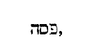
Tunc congregati sunt principes sacerdotum et seniores populi in atrium principis sacerdotum, qui dicebatur Caiphas, et consilium fecerunt, ut Jesum dolo tenerent et occiderent. Dicebant autem: Non in die festo, ne forte tumultus fieret in populo . Congregantur, ineuntes consilium, quomodo occidant Dominum, non timentes seditionem, ut simplex sermo demonstrat, sed caventes ne auxilio populi de suis manibus tolleretur.
Cum autem esset Jesus in Bethania, in domo Simonis leprosi . Non quo leprosus eo tempore permaneret, sed quia ante leprosus, postea a salvatore mundatus est, nomine pristino permanente. Simon quoque ipse obediens dicitur, qui juxta aliam intelligentiam, mundus interpretari potest, in cujus domo curata est Ecclesia.
Accessit ad eum mulier habens alabastrum unguenti pretiosi, et effudit super caput ipsius recumbentis . Mulier ista Maria erat Magdalena, soror Lazari, quem suscitavit Jesus a mortuis, ut Joannes aperte commemorat (Joan. XI) . Qui etiam hoc factum ante sex dies Paschae testatur, priusquam asino sedens cum palmis et laude turbarum Hierosolymam veniret. Ipsa est autem non alia, quae quondam, ut Lucas scribit, [Col. 0175C] peccatrix adhuc veniens pedes Domini lacrymis poenitentiae rigavit, et unguento piae confessionis linivit. Et quia multum dilexit multorum veniam peccatorum a pio judice promeruit (Luc. VII) . Nunc vero justificata et familiaris effecta Domino non tantum pedes ejus, ut idem Joannes narrat (Joan. XII) , verum etiam caput, ut Matthaeus Marcusque perhibent, oleo sancto perfudit. Est autem alabastrum genus marmoris candidi variis coloribus intertincti, quod ad vasa unguentaria cavari solet, eo quod optime servare ea incorrupta dicatur. Nascitur circa Thebas Aegyptias et Damascum Syriae caeteris candidius, probatissimum vero in India. Nardus vero est frutex aromatica, gravi, ut aiunt, et crassa radice, sed brevi ac nigra fragilique, quamvis pingui situ redolente, [Col. 0175D] cypressum aspero sapore, folio parvo densoque, cujus cacumina in aristas se spargunt. Ideoque gemina docti pigmentarii nardi spicas ac folia celebrant. Et hoc est, quod ait Marcus: Unguenti nardi spicati (Mar. XIV) , pretiosi videlicet, quia unguentum illud quod attulit Maria Domino, non solum de radice confectum nardi, verum etiam, quod pretiosius esset, spicarum quoque et foliorum ejus adjectione odoris, ac virtutis illius erat accumulata gratia. Ferunt autem de nardo physiologi, quod principalis sit in unguentis, unde merito unctioni capitis et pedum Domini oblata est. Sunt multa quidem ejus genera, sed omnia herbae, praeter Indicum quod pretiosius est. Mysticae autem devotio haec Mariae [Col. 0176A] Domino ministrantis fidem ac pietatem designat Ecclesiae sanctae, quae loquitur in amoris cantico dicens: Dum esset rex in accubitu suo, nardus mea dedit odorem suum , quae cum potentiam divinae virtutis Christi, quae illi una est cum Patre, digna reverentia confitetur, caput profecto illius unguento pretioso perfundit. Cum vero assumptae humanitatis mysteria digna reverentia suscipit, in pedes utique Domini unguentum nardi pisticum, id est, fidele ac verum profundit.
Videntes autem discipuli indignati sunt, dicentes, ut quid perditio haec? potuit enim istud venundari multo, et dari pauperibus . Hoc Marcus quomodo et Matthaeus synecdochicos loquitur, pluralem videlicet numerum pro singulari ponens. Nam Joannes distinctius [Col. 0176B] loquens, Judam haec locutum fuisse testatur, et hoc gratia cupiditatis, eo quod fur fuisset, et loculos habens, ea quae mittebantur portaret (Joan. XIII) . Potest etiam intelligi quod et alii discipuli aut senserint, hoc aut dixerint, aut eis Juda dicente persuasum sit, atque omnium voluntatem Matthaeus et Marcus etiam verbis expresserint. Sed Judas propter ea dixit, quia fur erat, caeteri vero propter pauperum curam.
Sciens autem Jesus, ait illis. Quid molesti estis huic mulieri? Opus bonum operata est in me, nam semper pauperes habebitis vobiscum, me autem non semper habebitis . (Ex Hieron.) Mihi videtur in hoc loco de praesentia dicere corporali, quod nequaquam cum eis ita futurus sit post resurrectionem, quomodo [Col. 0176C] nunc in omni convictu. et familiaritate, cujus rei memor Apostolus ait: Et si noveramus Jesum Christum secundum carnem, nunc jam non novimus eum (II Cor. V) .
Mittens enim haec unguentum hoc in corpus meum ad sepeliendum me fecit . Quod vos putatis perditionem esse unguenti, officium sepulturae est, nec mirum, si mihi bonum odorem fidei suae dederit, cum ego pro ea fusurus sim sanguinem meum.
Amen dico vobis, ubicunque praedicatum fuerit hoc Evangelium in toto mundo, dicetur et quod haec fecit in memoriam ejus . In toto mundo non tam mulier ista, quam Ecclesia praedicatur, quod sepelierit Salvatorem, quod unxerit caput ejus.
Tunc abiit unus de duodecim, qui dicitur Judas [Col. 0176D] Ischarioth ad principes sacerdotum, et ait illis: Quid vultis mihi dare, et ego vobis eum tradam? etc. Multi hodie scelus Judae, quia Dominum ac Magistrum Deumque suum pecunia vendiderit, vel ut immane, et nefarium exhorrent, nec tamen cavent: nam cum pro muneribus falsum contra quemlibet testimonium dicunt, profecto, quia veritatem pecunia negant, Deum pecunia vendunt. Ipse enim dixit: Ego sum veritas (Joan. XIV) . Cum societatem fraternitatis aliqua discordiae peste commaculant, Dominum produnt, quia Deus charitas est . Qui ergo charitatis et veritatis jussa spernunt, Deum utique, qui est charitas et veritas, produnt. Scribit in Evangelio suo Joannes: Quia cum intinxisset Dominus panem, dedit [Col. 0177A] Judae Simonis Iscariotis; et post buccellam tunc introivit in illum Satanas (Joan. XIII) , sed non est contrarium Lucae, qui eum et ante buccellam a Satana invasum jam esse commemorat (Luc. XXII) , quia quem nunc intravit, ut deciperet, postmodum intravit, ut sibi jam traditum plenus possideret.
Prima autem azymorum, accesserunt discipuli ad Jesum, dicentes: Ubi vis paremus tibi comedere Pascha? Primum diem azymorum, quartumdecimum primi mensis appellat, quando fermento abjecto immolare, id est, agnum occidere solebant ad vesperam. Quod exponens Apostolus ait: Etenim Pascha nostrum immolatus est Christus (I Cor. V) , qui licet die sequenti, hoc est, quintadecima Luna sit crucifixus, hac tamen nocte, qua agnus immolabatur, et [Col. 0177B] carnis sanguinisque suis discipulis tradidit mysteria celebranda, et a Judaeis tentus et ligatus, ipsius immolationis, hoc est, passionis suae sacravit exordium.
At Jesus dixit eis: Ite in civitatem ad quemdam, et dicite ei: Magister dicit: Tempus meum prope est, apud te facio Pascha cum discipulis meis , etc. Marcus dicit: Ite in civitatem, et occurret vobis homo lagenam aquae bajulans (Marc. XIV) . Lagena fragilitatem designat apostolorum, per quos eadem erat gratia mundo ministranda. Unde aiunt: Habemus autem thesaurum istum in vasis fictilibus . Lucas vero ait: Introeuntibus vobis in civitatem, occurret vobis homo amphoram aquae portans , etc. Pulchrae autem paraturis Pascha discipulis homo amphoram aquae [Col. 0177C] portans currit, ut ostendatur hujus Paschae mysterium, pro ablutione perfecta mundi totius esse celebrandum. Aqua quippe lavacrum gratiae, amphora mensuram perfectam significat. Parant ergo Pascha, ubi aquae infertur amphora, quia tempus videlicet adest quo veri Paschae cultoribus typicus de limine cruor auferatur, et ad tollenda crimina vivifici fontis baptisma consecretur. In alio evangelista scriptum est, quod invenerunt coenaculum magnum stratum atque mundatum, et ibi paraverunt ei. Coenaculum magnum lex spiritalis est, quae de angustiis litterae egrediens, in sublimi loco recipit Salvatorem. Nam qui adhuc occidentem litteram servaverit, qui non aliud in agno, quam pecus intellexerit, iste nimirum in imis Pascha facit, quia spiritus majestatem comprehendere [Col. 0177D] necdum didicit. At qui aquae bajulum, hoc est gratiae praeconem in domum Ecclesiae fuerit secutus, hic per spiritum vivificantem tectum litterae transcendendo, in alto mentis diversorio Christo mansionem praeparat, quia cuncta, vel Paschae sacramentum, vel caetera legis decreta de hoc scripta intelligit.
Vespere autem facto discumbebat cum duodecim discipulis. Et edentibus illis, dixit: Amen dico vobis, quia unus vestrum me traditurus est , etc. Lucas in hoc loco, Dominum introducit dicentem: Desiderio desideravi hoc Pascha manducare vobiscum antequam patiar . Desiderat primo typicum pascha cum discipulis manducare, et sic passionis suae mundo mysteria [Col. 0178A] declarare, quatenus et antiqui legalisque Paschae probator existat, et hoc ad suae dispensationis figuram pertinuisse docendo, carnaliter ultra vetet exhiberi, imo umbra transeunte, veri jam Paschae lumen advenisse demonstret.
Filius quidem hominis vadit, sicut scriptum est de illo. Vae autem homini illi, per quem filius hominis tradetur . (Ex Hieron.) Poenam praedicit, ut quem pudor non vicerat corrigant denuntiata supplicia. Sed et hodie quoque et in sempiternum vae homini illi, qui ad mensam Domini malignus accedit, qui insidiis mente inquinatus, qui in praecordiis aliquo scelere pollutus, mysteriorum Christi oblationibus sacrosanctis participare non meruit.
Bonum erat ei, si natus non fuisset homo ille . [Col. 0178B] (Ex Hieron.) Non ideo putandus est, ante fuisse quam nasceretur, cum nulli possit esse bene, nisi ei qui fuerit, sed simpliciter dictum est, multo melius esse non subsistere, quam male subsistere.
Respondens autem Judas dixit: Nunquid ego sum Rabbi? Ait illi Jesus: Tu dixisti . Blandientis junxit affectum, sive incredulitatis signum. Caeteri enim qui non erant prodituri dicunt: Nunquid ego sum, Domine? Iste quippe qui proditurus erat non Dominum, sed magistrum vocat, quasi excusationem habeat, si Domino denegato, saltem magistrum prodiderit.
Coenantibus autem eis, accepit Jesus panem et benedixit, ac fregit deditque discipulis suis et ait: Accipite et comedite, hoc est corpus meum . Postquam [Col. 0178C] typicum Pascha fuerat impletum, et agni carnes cum apostolis comederat, assumpsit panem, qui confortat cor hominis, et ad verum Paschae transgreditur sacramentum. Ut quomodo in praefiguratione ejus Melchisedech summi Dei sacerdos panem et vinum offerens fecerat, ipse quoque in veritate sui corporis et sanguinis repraesentaret. Et in Luca legimus duos calices, quibus discipulis propinarit. Unum primi mensis et alterum secundi, ut qui inter sanctos primo mense agnum comedere non potuerit, secundo mense inter poenitentes haedum comedat. Frangit autem ipse panem, quem discipulis porrigit, ut ostendat corporis sui fractionem non absque sua sponte ac procuratione venturam, sed, sicut alibi dicit, potestatem se habere ponendi animam suam, [Col. 0178D] et potestatem se habere iterum sumendi eam. Quem videlicet? panem certi quoque gratia sacramenti priusquam frangeret, benedixit. Quia naturam humanam, quam passurus assumpsit, ipse una cum Patre et Spiritu sancto gratia divinae virtutis implevit: Benedixit panem et fregit , quia hominem assumptum, ita morti subdere dignatus est, ut ei divinae immortalitatis veraciter inesse potentiam demonstraret. Ideoque velocius eum a morte resuscitandum esse doceret.
Et accipiens calicem gratias egit, et dedit illis dicens: Bibite ex hoc omnes, hic est enim sanguis meus Novi Testamenti , etc. Quia panis corpus confirmat, vinum vero sanguinem operatur in carne, hic ad [Col. 0179A] corpus Christi mystice, illud refertur ad sanguinem. Verum quia et nos in Christo, et in vobis Christum manere oportet, vinum Dominici calicis aqua miscetur. At testante enim Joanne, aquae populi sunt (Apoc. XVII) , et neque aquam solam neque solum vinum, sicut nec granum frumenti solum sine aquae admistione et confectione in pane cuiquam licet offerre, ne talis videlicet oblatio, quasi caput a membris secernendum esse significet, et vel Christum sine nostrae redemptionis amore pati potuisse, vel nos sine illius passione salvari, ac Patri offerri posse, confingat. Quod autem dicit: Hic est sanguis meus Novi Testamenti , ad distinctionem respicit Veteris Testamenti, quod hircorum et vitulorum est sanguine dedicatum (Exod. XXIV) .
Dico autem vobis: Non bibam amodo de hoc genimine vitis usque in diem illum, cum illud bibam vobiscum novum in regno Patris mei . Potest quidem hic versiculus, et simpliciter accipi, quod ab hac hora coenae usque ad tempus resurrectionis, quo in regno Dei erat venturus, vinum bibiturus non esset, postea namque illum cibum potumque sumpsisse testatur apostolus Petrus qui ait: Qui manducavimus et bibimus cum illo, posteaquam resurrexit a mortuis . Sed multo consequentius, ut sicut supra typicum agni esum, sic etiam potum Paschae typicum neget se ultra gustaturum, donec ostensa et manifestata resurrectionis suae gloria, regni Dei fides mundo adveniat.
Et hymno dicto exierunt in montem Oliveti . Hoc [Col. 0179C] est, quod in Psalmo legimus: Edent pauperes et saturabuntur, et laudabunt Dominum, qui requirunt eum (Psal. XXI) . Potest autem hymnus etiam ille intelligi, quem Dominus secundum Joannem patri gratias agens decantabat, in quo et pro seipso, et pro discipulis, et pro eis, qui per verbum eorum credituri erant, elevatis sursum oculis, precabatur. Et pulchre discipulos sacramento sui corporis ac sanguinis imbutos. Et hymno piae intercessionis patri commendatos, in montem educit Olivarum, ut typice designet, nos per acceptionem sacramentorum suorum, per quae opem suae intercessionis, ad altiora virtutum dona et charismata sancti Spiritus, quibus in corde perungamur, conscendere debere. Quod si quem movet, cur coenatis Salvator apostolis suum [Col. 0179D] corpus ac sanguinem tradiderit, quare nos universalis Ecclesiae consuetudine jejuni doceamur eadem sacramenta percipere? Breviter audiat, ideo tunc coenatos communicasse apostolos, quia necesse erat Pascha illud typicum antea consummari, et sic ad veri Paschae sacramenta transire. Nunc in honore tanti tamque terribilis sacramenti placuisse magistris Ecclesiae, primo nos Dominicae passionis participatione muniri, primo spiritualibus epulis interius exteriusque sacrari, ac deinde terrenis dapibus, corpus et vilibus escis refici.
Tunc dicit eis Jesus: Omnes vos scandalum patiemini in me in ista nocte . (Ex Hieron.) Praedicit quod passuri sint, ut cum passi fuerint, non desperent salutem, [Col. 0180A] sed agentes poenitentiam liberentur, et signanter addidit in ista nocte, quia quomodo qui inebriantur, nocte inebriantur, sic et qui scandalum patiuntur, in nocte et in tenebris sustinent. Lucas ait, quod Simoni Dominus dixit: Ecce Satanas expetivit vos, ut cribraret sicut triticum, ego autem rogavi pro te, ut non deficiat fides tua (Luc. XXII) .
Cum vero Satanas expetit eos tentare, et veluti, qui triticum purgat, ventilando concutere, docet nullius fidem a diabolo, nisi Deo permittente, tentari posse. Satanae quippe ad cribrandum bonos expetere est, ad afflictionem eorum malitiae estibus anhelare. Quo enim eorum tentationem invidens appetit, eo illorum, quasi probationem deprecans petit: Et tu aliquando conversus, confirma fratres tuos . Sicut [Col. 0180B] ipse tuam, inquit, fidem, ne Satana tentante deficeret, orando protexi, ita et tu infirmiores quosque fratres exemplo tuae poenitentiae, ne de venia forte desperent, erigere et confortare memento.
Scriptum est enim: Percutiam pastorem et dispergentur oves gregis . (Ex Hieron.) Percutitur autem pastor bonus, ut ponat animam pro ovibus suis, et ut multis gregibus errorum fiat unus grex, et unus pastor (Zach. XIII) .
Amen dico tibi, quia in hac nocte antequam gallus cantet, ter me negabis . (Ex Hieron.) Et Petrus de ardore fidei promittebat, et Salvator quasi Deus futura noverat. Et nota, quod Petrus in nocte neget tertio. Postquam autem gallus cecinit, et decrescentibus tenebris vicina lux nuntiata est. Conversus [Col. 0180C] flevit amare, ternae negationis sordes lacrymis lavans.
Tunc venit Jesus cum illis in villam, quae dicitur Gethsemani , etc. Monstratur usque hodie locus Gethsemani, in quo Dominus oravit, ad radices montis Oliveti. Nunc desuper Ecclesia aedificata; interpretatur autem Gethsemani vallis pinguium, sive pinguedinum. Quod vero non solum dicta, vel opera nostri Salvatoris, verum etiam loca et tempora, in quibus operatur et loquitur, mysticis, ut saepe dictum est, sunt plena figuris. Cum in monte orat Dominus, quasi tacite nos admonet sublimia tantum orando inquiri, et pro coelestibus bonis supplicari debere. At cum in valle orat, et hoc in valle pinguium sive pinguedinis, ipsius aeque insinuat nobis [Col. 0180D] humilitatem semper orationibus, et internae pinguedinem dilectionis esse servandam.
Tunc ait illis Jesus: Tristis est anima mea usque ad mortem , etc. Non propter mortem tristis est Dominus, quia eum conditio corporalis affectus, non formido mortis offendit. Nam qui corpus suscepit, omnia debuit subire, quae corporis sunt, ut esuriret et sitiret, tangeretur, contristaretur, divinitas autem commutari per hos nescit affectus.
Et progressus pusillum procidit in faciem suam orans . Lucas autem dicit: Avulsus est ab eis, quantum jactus est lapidis , tanquam hoc eos typice admonuerit, ut in eum dirigerent lapidem, id est, usque ad ipsum perducerent intentionem legis quae scripta erat in [Col. 0181A] lapide, usque ad illum enim potest pervenire ille lapis, quoniam finis legis est Christus ad justitiam omni credenti (Rom. X) .
Et dicens: Mi Pater, si possibile est, transeat a me calix iste , etc. Quod autem, patrem invocans, duplici secundum Marcum nomine dicit: Abba pater , utriusque populi illum, et Judaeis, scilicet, et gentibus Deum esse, ac Salvatorem ostendit. Idem namque Abba quod et pater significat. Sed 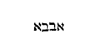
Spiritus quidem promptus est, caro autem infirma , etc. Hoc adversus temerarios, qui, quod crediderint, [Col. 0181B] putant se posse consequi. Itaque quantum de ardore mentis confidimus, tantum de carnis fragilitate timeamus.
Pater mi, si non potest hic calix transire, nisi bibam illum, fiat voluntas tua , etc. Non inquit, fiat hoc quod humano affectu loquor, sed propter quod ad terras tua voluntate descendi: Si ergo, inquit, fieri potest, ut sine interitu Judaeorum credat gentium multitudo, passionem recuso. Si autem illi excaecandi sunt, ut omnes Gentes videant, non mea, Pater, voluntas, sed tua fiat.
Iterum abiit et oravit, tertio eumdem sermonem , etc. Lucas autem ait: Apparuit illi angelus de coelo, confortans eum . Alibi legimus: Quia angeli accesserunt, et ministrabant ei (Matth. IV) : In documento [Col. 0181C] ergo utriusque naturae et ei angeli ministrasse, et eum angeli confortase describitur, quoniam qui Deus ante saecula exstitit, homo factus est in fine saeculorum. Et addidit Lucas dicens: Factus in agonia prolixius orabat . Agonia, alacritas vel confidentia intelligitur. Quod autem sequitur secundum eumdem evangelistam:
Et factus est sudor ejus sicut gutta sanguinis . Non sudorem infirmitatis deputans, quia et contra naturam est sudare sanguinem, sed potius intelligi vult, irrigatam, sacratamque ejus sanguine terram, non sibi, qui noverat, sed nobis aperte declaratum, quod effectum jam suae precis obtineret, ut fidem videlicet discipulorum, quam terrena adhuc fragilitas arguebat, suo sanguine purgaret, et quidquid illa [Col. 0181D] scandali de ejus morte pertulisset, hoc ipse totum moriendo deleret. Imo universum late terrarum orbem peccatis mortuum, sua morte innoxia, coelestem resuscitaret ad vitam.
Tunc venit ad discipulos suos, et dicit illis: Dormite jam et requiescite , etc. Cum dixisset dormite jam et requiescite, et adjungeret, sufficit, ac deinde inferret: Venit hora, ecce tradetur filius hominis , utique intelligitur post illud, quod eis dictum est: Dormite et requiescite , siluisse Dominum aliquantum, ut hoc fieret quod promiserat, et tunc intulisse: Ecce appropinquabit hora , sive venit hora . Ideo post illa verba positum est, sufficit, id est, quod requievistis jam sufficit.
Surgite, eamus, ecce appropinquat qui me tradet , etc. Ac si diceret: Non nos inveniant, quasi timentes et retractantes, ultro pergamus ad mortem, ut confidentiam et gaudium passuri videant.
Accessit Judas ad Jesum, et dixit: Ave, Rabbi, et osculatus est eum . Impudens quidem et scelerata confidentia, magistrum eum vocare, et osculum ei ingerere quem tradebat.
Dicit illi Jesus: Amice, ad quod venisti? Duobus modis hoc intelligendum est. Ad quod venisti , id est, ad quod scelus delapsus es, ut discipulus traderes magistrum, et dum esses apostolus, effectus es traditor? Sive ad quod venisti? subaudiatur, hoc age, relinque osculum et imple traditoris officium.
Et ecce unus ex his qui erant cum Jesu, extendens [Col. 0182B] manum exemit gladium suum, et percussit servum principis sacerdotum, et amputavit auriculam ejus . In alio Evangelio scriptum legimus, quod Petrus hoc fecerit eodem mentis ardore, quo et caetera. Servus quoque principis sacerdotum, qui Malchus, id est, rex appellatur, populus Judaeorum est, qui per incredulitatem servus factus est impietatis. Qui perdidit auriculam dextram, ut totam litterae utilitatem audiat in sinistra. Sed Dominus Jesus in his qui ex Judaeis credere voluerunt, reddit aurem dextram, et fecit servum genus regale et sacerdotale. Aliter auris pro Domino amputata et a Domino sanata, significat auditum, ablata vetustate renovatum, ut sit in novitate spiritus, et non in vetustate litterae, quod cui praestitum fuerit a Christo, praestabitur et regnare [Col. 0182C] cum Christo.
Tunc ait illi Jesus: Converte gladium tuum in locum suum , etc. Quia per gladium vindicta intelligitur, sicut Apostolus de judice ait: Non enim sine causa gladium portat (Rom. XIII) , recte hic per gladium vindicta intelligitur. Reconde gladium, ac si diceret, quiescat vindicta. Aliter. Converte gladium in locum suum, id est, verbum praedicationis converte ad gentes, ubi secundum Paulum, ostium apertum et ingens inveniat. Aliter. Postquam plenitudo gentium intraverit, dicit Petro, per quem totus praedicatorum signatur ordo: Converte gladium verbi praedicationis ad Israel. Omnes enim qui gladium acceperint, gladio peribunt (Gen. III) . Quo gladio? illo nempe, qui igneus vertitur ante paradisum, et gladio spiritus, [Col. 0182D] qui in Dei describitur armatura (Ephes. VI) .
An putatis quia non possum rogare patrem meum, et exhibebit mihi modo plusquam duodecim legiones angelorum? Quomodo ergo implebuntur scripturae, quia sic oportet fieri? Non indigeo duodecim apostolorum auxilio, etiam si omnes me defenderint, qui possim habere duodecim legiones angelorum. Una legio apud veteres sex millibus complebatur hominum. Pro brevitate temporis numerum non occurrimus explicare, typos tantum dixisse sufficiat: septuaginta duo millia angelorum, in quot gentes hominumque lingua divisa est, duodecim legionibus fieri.
Hoc autem totum factum est, ut implerentur scripturae prophetarum , etc. Quae sunt scripturae prophetarum? [Col. 0183A] Foderunt manus meas, et pedes meos (Psal. XXI) : et alibi: Sicut ovis ad victimam ductus est (Isa. LIII) . Et in alio loco: Ab iniquitatibus populi mei ductus sum ad mortem .
Tunc discipuli omnes relicto eo fugerunt . Inter quos, ut Marcus ait, Adolescens quidam sequebatur Dominum amictus sindone super nudo , id est, corpore.
Qua rejecta nudus profugit . Joannem hunc fuisse adolescentem intelligimus, quod vero nudus profugit ab impiis, illorum et opus designat et animam, qui ut securiores ab incursibus hostium fiant, quidquid in hoc mundo possidere videntur abjiciunt, ac nudi potius Domino famulari, quam adhaerendo mundi rebus materiam tentandi, atque a Deo revocandi adversariis dare didicerunt, juxta exemplum beati [Col. 0183B] Joseph, qui relicto in manibus adulterae pallio, foras exsilivit, malens Deo nudus quam indutus cupiditatibus mundi meretrici servire (Gen. XXXIX) .
At illi tenentes Jesum, duxerunt ad Caipham principem sacerdotum , etc. Refert Josephus (Ant. Jud. Jib. XVIII, cap. 8) istum Caipham unius tantum anni pontificatum ab Herode pretio redemisse. Non ergo mirum est si iniquus pontifex inique judicet.
Petrus autem sequebatur Jesum a longe , etc. Merito a longe sequebatur, quia proximo negaturus erat, neque enim negare posset, si Christo proximus adhaesisset. Marcus autem dicit: Sedebat cum ministris, et calefaciebat se ad ignem . Est enim dilectionis ignis, est et cupiditatis, de hoc dicitur: Ignem veni mittere in terram, et quid volo, nisi ut ardeat (Luc. XII) , de illo: Ecce vos omnes accendentes ignem, ac cincti flammis ambulate in lumine ignis vestri, et flammarum quas succendistis ; iste super credentes in coenaculo Sion de coelo descendens variis linguis Deum laudare docuit, ille terrenae materiae Caiphae focus in atrio flammis negandi Deum turbas accendit, nam ab horum apostolus Petrus persecutorum prunis calefieri cupiebat, quia temporalis commodi solatium perfidorum societate quaerebat, sed non mora, respectus a Domino, cum ignem eorum corpore, tunc et infidelitatem corde reliquit.
Novissime autem, venerunt duo falsi testes et dixerunt: Hic dixit, possum destruere templum Dei, et post triduum reaedificare illud . Quomodo falsi testes sunt, si ea dicunt quae Dominum supra dixisse legimus? [Col. 0183D] Sed falsus testis est, qui non eodem dicta sensu intelligit, quo dicuntur. Dominus autem dixerat de templo corporis sui, sed et in ipsis verbis calumniantur, et paucis additis vel mutatis, quasi justam calumniam faciunt. Salvator dixerat: Solvite templum hoc , isti commutant et aiunt: Possum destruere templum Dei . Vos, inquit, solvite, non ego, quia illicitum est, ut ipsi nobis inferamus manus. Deinde illi vertunt, et post triduum aedificare illud, ut proprie de templo Judaico dixisse videatur. Dominus autem ut ostenderet animale et spirans templum, dixerat, et ego in triduo suscitabo illud . Aliud est aedificare, aliud suscitare.
Princeps autem sacerdotum ait illi: Adjuro te per [Col. 0184A] Deum vivum, ut dicas nobis, si tu es Christus Filius Dei. Dicit illi Jesus: Tu dixisti. Tunc princeps sacerdotum scidit vestimenta sua . (Ex Hieron.) Quem de solio sacerdotali furor excusserat, eumdem rabies ad scindendas vestes provocat. Scidit autem vestimenta sua, ut ostendat Judaeos sacerdotii gloriam perdidisse, et vacuam sedem habere pontificis. Sed et consuetudinis Judaicae est, cum aliquid blasphemum, et quasi contra Deum audierint, scindere vestimenta sua, quod Paulum quoque et Barnabam, quando in Lycaonia deorum cultu honorabantur, fecisse legimus (Act. XIV) . Herodes autem, quia non dedit honorem Deo, sed ut quievit immoderato favori populi, statim ab angelo percussus est. Altiori autem mysterio factum est, ut in passione Domini pontifex [Col. 0184B] Judaeorum sua ipse vestimenta discinderet, cum tunica Domini nec ab ipsis, qui eum crucifixere militibus scindi potuerit. Figurabatur enim, quod sacerdotium Judaeorum pro sceleribus ipsorum pontificum esset scindendum. Soliditas vero sanctae universalis Ecclesiae, quae vestis sui redemptoris solet appellari, nunquam valeat disrumpi, quin potius et si Judaei si gentiles, si haeretici, si mali catholici, humilitatem Domini salvatoris contemnant, ejus tamen usque ad consummationem saeculi, in illis quos sors electionis invenerit inviolata sit permansura castitas.
Verumtamen dico vobis, amodo videbitis filium hominis sedentem a dextris virtutis Dei, et venientem in nubibus . Si ergo tibi in Christo, o Judaee, pagane et haeretice, contemptus, infirmitas, et crux contumelia [Col. 0184C] est, vide quod per haec filius hominis ad dextram Dei patris sessurus, ex partu virginis homo natus, in sua, in coeli nubibus, est majestate venturus.
Tunc expuerunt in faciem ejus , et secundum Marcum: Velaverunt faciem ejus . Ut compleretur quod scriptum est: Dedi maxillas meas alapis, et faciem meam non averti a confusione sputorum (Thren. III) .
Velaverunt autem faciem ejus, non ut eorum ille scelera non videat, sed ut a seipsis, sicut quondam Mosi fecerunt, gratiam cognitionis ejus abscondant. Si enim crederent Mosi, crederent forsitan et Domino (Joan. V) . Quod velamentum usque hodie manet super cor eorum non revelatum. Nobis autem in Christum credentibus ablatum est. Neque enim frustra, eo moriente, velum templi scissum est medium, [Col. 0184D] sed et ea quae toto legis tempore latuerant, et abscondita carnali Israel fuerant, Novi Testamenti cultoribus sunt patefacta sancta sanctorum arcana.
Et accessit ad eum una ancilla dicens: Et tu cum Jesu Galilaeo eras . Quid sibi vult, quod primo eum prodit ancilla, cum viri utique magis eum potuerunt recognoscere? nisi ut iste sexus peccasse in nece Domini videretur, et iste sexus redimeretur per Domini passionem? et ideo mulier resurrectionis prima accepit mysteria, et mandata custodit, ut veterem praevaricationis aboleret terrorem.
Et post pusillum accesserunt qui stabant, et dixerunt Petro: Vere et tu ex illis es, nam et loquela tua manifestum te facit . Non quod alterius sermonis esset [Col. 0185A] Petrus, aut gentis extraneus, omnes quippe Hebraei, et erant qui arguebant, et qui arguebantur, sed quod unaquaeque provincia et regio habeat proprietates suas, et vernaculum loquendi sonum vitare non possit, unde et Ephratei in Judicum libro non possunt σύνθημα dicere (Jud. XIII) .
Et continuo gallus cantavit, et recordatus est Petrus verbi Domini , vel secundum Lucam: Respexit Dominus Petrum . Respiciente Domino, Petrus ad cor reversus, maculam negationis, poenitentiae lacrymis tergit. Quia non solum cum agitur poenitentia, verum etiam ut agatur Dei misericordia necessaria est. Respicere namque ejus misereri est.
Mane autem facto, consilium fecerunt principes sacerdotum, et vinctum Jesum tradiderunt Pontio Pilato . [Col. 0185B] Non solum ad Pilatum, sed etiam ad Herodem ductus est, ut uterque Domino illuderet. Et cerne sollicitudinem sacerdotum. In malo tota nocte vigilaverunt, ut homicidium facerent, et vinctum traderent Pilato. Habebant enim hunc morem, ut quem adjudicassent morti, ligatum judici traderent.
Tunc videns Judas, qui eum tradidit, quod damnatus esset, projectis argenteis in templo, recessit et laqueo se suspendit . Avaritiae magnitudinem impietatis pondus exclusit. Videns Judas Dominum adjudicatum morti, pretium retulit sacerdotibus, quasi in potestate sua esset persecutorum mutare sententiam. Itaque licet mutaverit voluntatem suam, tamen voluntatis primae exitum non mutavit. Nihil profuit egisse poenitentiam, per quam scelus corrigere non [Col. 0185C] potuit.
Principes autem sacerdotum acceptis argenteis, dixerunt: Non licet mittere eos in corbonam, quia pretium sanguinis est . (Ex Hieron.) Vere culicem liquantes, et camelum glutientes. Si enim, ideo non mittunt pecuniam in corbonam, hoc est in gazophylacium et dona Dei, quia pretium sanguinis est, cur ipse sanguis effunditur?
Consilio autem inito, emerunt ex illis agrum figuli in sepulturam peregrinorum . Illi quidem fecerunt alia voluntate, ut aeternum impietatis suae relinquerent ex agri emptione monimentum. Caeterum nos qui peregrini eramus a lege et prophetis, prava eorum studia suscepimus in salutem, et in pretio sanguinis ejus requiescimus. Figuli autem ager appellatur, [Col. 0185D] quia figulus noster est Christus. Tunc impletum est quod dictum est per Hieremiam [Col. 0185D] Haec in Hieremia non inveniuntur, teste Hieronymo. prophetam dicentem: Et acceperunt triginta argenteos, pretium appretiati, quod appretiaverunt a filiis Israel, et dederunt eos in agrum figuli, sicut constituit mihi Dominus.
Et cum accusaretur a principibus sacerdotum nihil respondit . Hinc Lucas ait: Pilatum ad principes sacerdotum dixisse, nihil invenio in hoc homine . Hoc est, quod ipse pridie quam pateretur inter alia discipulis ait: Venit enim princeps mundi hujus, et in me non habet quidquam (Joan. XIV) , sed quia princeps mundi, hoc est, Pilatus eum absolvit, in quo nihil [Col. 0186A] causae quam damnaret invenit. Quod vero principibus non respondit, data est de agno similitudo, ut in suo silentio non reus, sed innocens haberetur. Ubi enim tacebat, quasi agnus toto pro grege immolandus patientiam praestabat: Ubi vero respondebat, quasi pastor bonus, pro creditis sibi ovibus, contra luporum latronumque insidias pugnabat.
Congregatis ergo illis, dixit Pilatus, quem vultis dimittam vobis, Barrabam an Jesum, qui dicitur Christus ? Latro seditiosus et homicidiorum auctor dimissus est populo Judaeorum, id est diabolus, qui jam olim patria luce ob culpam superbiae depulsus, et in tenebrarum fuerat carcerem missus. Atque ideo Judaei pacem habere non possunt, quia seditionum principem quam Dominum eligere maluerunt. Quia [Col. 0186B] vero Barrabas filius patris, vel filius magistri eorum interpretatur, potest Antichristi typum gerere, quem illi, quibus dicit: vos ex patre diabolo estis, vero Dei filio sunt praelaturi. Filius autem diaboli Antichristus, non ab ipso nascendo, sed imitando vocatur.
Sedente autem illo pro tribunali, misit ad illum uxor ejus dicens: Nihil tibi et justo illi. Multa enim passa sum hodie per visum propter illum . Nota, quod gentilibus saepe a Deo somnia revelentur, et quod in Pilato et uxore ejus, justum Dominum confitentibus, gentilis populi testimonium sit.
Dicit iterum illis Pilatus, quid faciam de Jesu, qui dicitur Christus? Dicunt omnes, crucifigatur . Ut impleretur quod dictum est in Psalmo: Circumdederunt me canes multi (Psal. XXI) , et illud Hieremiae: [Col. 0186C] Facta est mihi haereditas mea, sicut leo in silva, dederunt super me vocem suam (Hier. XII) .
Videns autem Pilatus, quia nihil proficeret, accepta aqua lavit manus coram populo, dicens: Innocens ego sum a sanguine hujus justi , etc. Pilatus autem accepit aquam juxta illud propheticum: Lavabo inter innocentes manus meas (Psal. LXXII) , ut in lavacro manuum ejus, gentilium opera purgarentur, et ab impietate Judaeorum, qui clamaverunt, crucifige eum, nos alienos faceret, quodam modo hoc contestans et dicens: Ego quidem innocentem volui liberare, sed quoniam seditio oritur, et per id rebellionis mihi contra Caesarem crimen impingitur, innocens sum a sanguine hujus justi (Joan. XIX) .
Respondit universus populus dicens: Sanguis ejus [Col. 0186D] super nos et super filios nostros . Perseverat usque in praesentem diem haec imprecatio super Judaeos, et sanguis Domini non aufertur ab eis, unde per Isaiam loquitur: Si levaveritis ad me manus, non exaudiam vos, manus vestrae sanguine plenae sunt .
Tunc milites exuentes Jesum, chlamidem coccineam circumdederunt ei. Vel secundum Marcum, induunt eum purpura . Pro regia enim purpura chlamis illa coccinea ab illudentibus adhibita erat, et est rubra quaedam purpura cocco simillima. Potest etiam fieri, ut purpuram etiam Marcus commemoraverit, quam chlamis habebat, quamvis esset coccinea. Mystice ergo in purpura qua indutus est Dominus, ipsa ejus [Col. 0187A] caro quam passionibus objecit insinuatur, de qua praemissa dixerat Propheta: Quare ergo rubrum est indumentum tuum, et vestimenta tua, quasi calcantium in torculari . In corona vero quam portabat, spinea nostrorum susceptio peccatorum, pro qua mortalis fieri dignatus est ostenditur, juxta quod praecursor ipsius testimonium ei perhibens ait: Ecce agnus Dei, ecce qui tollit peccata mundi (Joan. I) . Namque spinas in significatione peccatorum poni solere testatur ipse Dominus, qui protoplasto, in peccatum prolapso dicebat: Terra tua spinas et tribulos germinabit tibi (Gen. III) , quod est aperte dicere: Conscientia tua punctiones tibi, et aculeos vitiorum procreare non desistet. Quod vero juxta Evangelium Lucae Dominus apud Herodem alba veste induitur, [Col. 0187B] in caeteris vero Evangelistis a militibus Pilati, sub coccineo sive purpureo habitu illusus esse perhibetur, collata utraque narratione, in uno innocentia, et castitas assumptae humanitatis, in altero autem veritas passionis, per quam ad gloriam regni immortalis esset perventurus exprimitur. Sicut enim purpura colorem sanguinis, qui pro nobis effusus est, imitatur, ita et habitus regnum, quod post passionem intravit, nobisque intrandum patefecit, insinuavit. Verum quia dixit Apostolus: Quotquot enim in Christo baptizati estis, Christum induistis , et Isaias Domino de electis omnibus: His velut ornamento vestieris (Isa. XLIX) . Potest in hoc utroque Domini habitu, omnis electorum ejus multitudo, quae in martyres venerandos, et caeteram fidelium [Col. 0187C] plebem distinguitur, aptissime designari. Alba enim veste induitur, cum munda justorum confessione circumdatur. Purpura sive cocco vestitur, cum in triumpho victoriosorum martyrum gloriatur.
Et plectentes coronam de spinis, posuerunt super caput ejus, et arundinem in dextera ejus , et reliqua. In chlamide coccinea opera Gentium cruenta sustentat: in corona spinea maledictum solvit antiquum: in calamo venenata occidit animalia, sive calamum tenebat in manu, ut sacrilegium scriberet Judaeorum.
Exeuntes autem, invenerunt hominem Cyrenaeum, venientem obviam sibi , sive secundum Marcum: Venientem de villa, nomine Simonem, hunc angariaverunt, ut tolleret crucem ejus . (Ex Hieron.) Cavendum ne videatur contrarium quod Joannes scribit, ipsum [Col. 0187D] Dominum sibi crucem portasse. Sed hoc intelligendum, quod egrediens de praetorio Jesus, ipse sibi secundum Joannem portavit crucem, postea Simoni portandam imposuerunt, et hoc congruo satis ordine, quia ipse passus est pro nobis, relinquens nobis exemplum, ut sequamur vestigia ejus (I Petr. III) . Et quia Simon iste, non Hierosolymita, sed Cyrenaeus esse perhibetur. Cyrene enim Libyae civitas est, ut in Actibus apostolorum legimus (Act. II) , recte per eum populi gentium designantur, qui quondam peregrini et hospites testamentorum, nunc obediendo cives sunt et domestici Dei. Et sicut alibi dicitur: Haeredes quidem Dei, cohaeredes autem Christi (Rom. VIII) . Unde et apte Simon obediens, Cyrene, [Col. 0188A] haeres interpretatur. Nec praetereundum quod idem Simon de villa venisse fertur; villa enim pagus dicitur, a voce Graeca πηγὴ , quae fontem significat, unde plures simul domus rusticae, hoc est, plures villae, pagus vocatur, quod circa fontes condi hujusmodi villae consueverunt. Hinc pagani dicti quasi villani. Unde paganos appellamus eos, quos a civitate Dei alienos, et quasi urbanae conversationis esse videmus expertes. Sed de pago Simon egrediens, crucem portat post Jesum, cum populus nationum paganis ritibus derelictis, vestigia Dominicae passionis obedienter complectitur. Quod autem secundum Lucam in hoc loco sequentibus se Dominus mulieribus dixit: Filiae Hierusalem, nolite flere super me, sed super vos et super filios vestros , et addit: Quia si in viridi ligno haec [Col. 0188B] faciunt, in arido quid fient (Luc. XXIII) ? (Ex Beda.) Viride enim lignum seipsum suosque electos, aridum vero impios et peccatores significat. Si ego ipse, inquit, qui peccatum non feci, qui lignum vitae merito appellor, fructus gratiae duodenos per singulos menses affero, sine igne passionis a mundo non exeo, quid putas eos manere tormenti, qui fructibus vacui, insuper vitae lignum flammis dare non timent?
Et venerunt in locum qui dicitur Golgotha, quod est Calvariae locus . Extra urbem Hierusalem et foris portam loca erant in quibus truncabantur capita damnatorum, et calvariae, id est decollatorum sumpsere nomen. Propterea autem ibi crucifixus est Dominus, ut ubi prius erat area damnatorum, ibi erigerentur vexilla [Col. 0188C] martyrii. Et quomodo pro nobis maledictum crucis factus et flagellatus, et crucifixus, sic pro omnium salute quasi noxius inter noxios crucifigitur, ut ubi abundavit peccatum, superabundet gratia (Rom. V) . Qualiter sane Dominus in cruce positus, quidve eadem sacratissimi corporis positio regalis in se typo contineat, Sedulius in Paschali carmine pulchre versibus dixit (Lib. V) .
Moralem quoque sacrosanctae crucis figuram describit Apostolus, ubi ait: In charitate radicati et fundati, ut possitis comprehendere cum omnibus sanctis, quae sit latitudo et longitudo, altitudo et profundum (Ephes. III) . Cognoscere etiam supereminentem scientiae charitatem Christi. In latitudine quippe bona opera charitatis significat. In longitudine perseverantiam sanctae conversationis usque in finem. In altitudine spem coelestium praemiorum. In profundo inscrutabilia judicia Dei, unde ista gratia [Col. 0189A] in homines venit. Et haec ita coaptantur sacramento crucis, ut in latitudine accipiatur transversum lignum, quo extenduntur manus, propter operum significationem. In longitudine ab ipso usque in terram, ubi totum corpus crucifixum stare videtur, quod significat persistere, hoc est, longanimiter permanere. In latitudine ab ipso transverso ligno sursum versus, quod ad caput eminet, propter exspectationem supernorum, ne illa opera bona atque in eis perseverantia, propter beneficia Dei, terrena ac temporalia facienda credantur, sed potius propter illud quod desuper sempiternum sperat fides, quae per dilectionem operatur. In profundo autem, pars illa ligni, quae in terra abdita defixa latet, sed inde consurgit illud omne quod eminet, sicut ex occulta Dei [Col. 0189B] voluntate vocatur homo ad participationem tantae gratiae, alius sic, alius autem sic, supereminentem vero scientiae charitatem Christi, eam profecto, ubi pax illa est, quae praecellit omnem intellectum (Philip. IV) .
Et dabant ei bibere, myrrhatum vinum, et non accepit . (Ex Hieron.) Deus loquitur ad Hierusalem: Ego te plantavi vineam meam veram, quomodo facta es in amaritudinem vitis alienae (Jer. II) ? Amara vitis amarum vinum facit, quod propinat Domino Jesu Christo, ut impleatur quod scriptum est: Et dederunt in cibum meum fel, et in siti mea potaverunt me aceto (Psal. LXXXVI) . Quod autem dicitur: Et non accepit , vel secundum Matthaeum: Cum gustasset, noluit bibere , hoc indicat, quod gustaverit quidem [Col. 0189C] pro nobis mortis amaritudinem, sed tertia die resurrexit. Quod autem ait Marcus: Non accepit , intelligitur, non accepit ut biberet. Gustavit autem, sicut Matthaeus testis est, ut quod idem Matthaeus ait: Noluit bibere , hoc Marcus dixit: Non accepit , tacuerit autem quod gustaverit. Sed hoc quod ait Marcus, myrrhatum vinum intelligendum est, Matthaeum dixisse: Cum felle mistum . Fel quippe pro amaritudine posuit, et myrrhatum enim vinum amarissimum est, quanquam fieri possit, ut et felle et myrrha tum vinum amarissimum redderent.
Postquam autem crucifixerunt eum, diviserunt vestimenta ejus, sortem mittentes . Haec evangelista Joannes plenius exposuit, quia scilicet milites, caetera [Col. 0189D] in quatuor partes, juxta suum numerum dividentes, de tunica, quae inconsutilis erat, desuper contexta per totum, sortem miserunt. ( Ex August .) Quadripartita autem vestis Domini quadripartitam ejus figuravit Ecclesiam, toto scilicet qui quatuor partibus constat terrarum orbe diffusam, et omnibus ejusdem eisdem partibus aequaliter, id est, concorditer distributam. Tunica vero illa sortita omnium partium significat unitatem, quae charitatis vinculo continetur. Si enim charitas, juxta Apostolum, et supereminentiorem habet viam, et supereminet scientiae, et super omnia praecepta est, merito vestis qua significatur desuper contexta, perhibetur. In sorte autem quid, nisi Dei gratia commendata est? Sic [Col. 0190A] quippe in uno ad omnes pervenit, cum sors omnibus placuit, quia et Dei gratia in unitate ad omnes pervenit, et cum sors mittitur, non personae cujusque, vel meritis, sed occulto Dei judicio ceditur.
Et posuerunt super caput ejus causam ipsius scriptam: Hic est Jesus rex Judaeorum . Pulchre titulus, qui Christum Regem testatur, non infra, sed supra crucem ponitur, quia licet in cruce pro nobis hominis infirmitate dolebat, super crucem tamen regis majestate fulgebat, quia apte etiam, quia rex simul et sacerdos est cum eximiam Patri suae carnis hostiam in altari crucis offerret, regis quoque, qua praeditus erat titulo, dignitatem praetendit, ut cunctis legere, hoc est, audire et credere volentibus innotescat, quia suum per crucem non perdiderit, [Col. 0190B] sed confirmarit potius et corroborarit imperium. Nam quod hoc nomen, Hebraice, Graece et Latine scriptum erat, 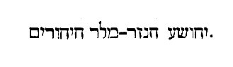
Tunc crucifixi sunt cum eo et duo latrones, a dextris , etc. Latrones qui cum Domino sunt hinc inde crucifixi, significant eos qui sub fide et confessione Christi, vel agonem martyrii, vel continentiae arctioris instituta subeunt. Sed quotquot haec pro aeterna solum coelestique gloria gerunt, hi profecto dextri latronis merito et fide designantur. At qui, vel humanae laudis intuitu, vel qualibet minus digna intentione, saeculo abrenuntiant, non immerito blasphematoris et sinistri latronis mentem et actus imitantur. De qualibus dicit Apostolus: Si tradidero corpus meum ut ardeam, si dedero omnes facultates meas in cibos pauperum, si alia multa fecero, charitatem autem non habeam, nihil mihi prodest [Col. 0190D] (I Cor. XIII) . At vero beati qui persecutionem patiuntur propter justitiam, quoniam ipsorum est regnum coelorum (Matth. V) .
Praetereuntes autem blasphemabant eum, moventes capita sua , etc. Blasphemabant, quia praetergrediebantur viam, et in vero itinere scripturae ambulare nolebant, movebant capita, quia jam ante moverant pedes et non stabant supra petram.
Similiter et principes sacerdotum cum scribis dicebant , etc. Etiam nolentes confitentur scribae et pharisaei, quod alios salvos fecerit, itaque vos vestra condemnat sententia. Qui enim alios salvos fecit, si vellet, et seipsum salvare potera.
Descendat nunc de cruce, et credimus ei. (Ex Hieron .) [Col. 0191A] Fraudulenta promissio, quid est plus, de cruce descendere, an de sepulcro mortuum surgere? Resurrexit et non creditis ei, etiam si de cruce descenderet, similiter non crederetis. Sed mihi videtur hoc daemones immittere, statim enim ut crucifixus est Dominus, senserunt virtutem crucis, et intellexerunt fractas esse vires suas, et hoc agunt, ut de cruce descendat, sed Dominus sciens adversariorum insidias, permanet in patibulo, ut diabolum destruat.
Et latrones qui crucifixi erant cum eo, et improperabant ei . Hic per tropum qui appellatur σύλληψις pro uno latrone uterque dicitur blasphemasse. Lucas vero asserit quod altero blasphemante, alter increpavit blasphemantem, et confessus est, dicens:
Domine, memento mei cum veneris in regnum tuum . In corde autem fidelium tres summopere manere virtutes testatur Apostolus dicens: Nunc autem manet, Fides, Spes, Charitas (I Cor. XIII) , quas cunctas subita repletus gratia et accepit latro, et servavit in cruce. Fidem namque habuit qui regnaturum Dominum credidit, quem secum pariter morientem vidit. Spem habuit qui regni ejus aditum postulavit. Charitatem quoque in morte sua vivaciter tenuit, qui fratrem et colatronem pro simili scelere morientem, et de iniquitate sua arguit, et ei vitam quam cognoverat praedicavit.
Et dixit illi Jesus: Amen dico tibi, hodie mecum eris , etc. ( Ex Beda ). Semper enim plus Dominus tribuit quam rogatur. Ille enim rogabat ut memor [Col. 0191C] sui fuisset Dominus cum venisset in regnum suum. Dominus autem ait: Amen dico tibi, hodie mecum eris in paradiso . Vita est enim, esse cum Christo, quia ubi Christus, ibi regnum. Quidam duos latrones cum Domino crucifixos, duobus baptizatorum generibus coaptant! Quicunque enim baptizati estis in Christo Jesu, in morte ipsius baptizati sumus. Ambo namque similes crucifixi, sed unus in cruce blasphemus pejor, alter est confessione martyr effectus, quia per baptismum, quo cum peccatores essemus abluimur. Alii dum Deum in carne passum, fide, spe et charitate laudant, coronantur. Alii dum aut fidem aut opera baptismi habere renuunt, dono quod accepere privantur. ( Ex Hieron .) In duobus latronibus uterque populus, et gentilium et Judaeorum, [Col. 0191D] primum Dominum blasphemavit, postea signorum magnitudine alter exterritus egit poenitentiam, et usque hodie Judaeos increpat blasphemantes.
A sexta autem hora tenebrae factae sunt , etc. ( Ex Hieron .) Et hoc factum reor, ut compleretur prophetia dicens: Occumbet sol meridie (Amos VIII) . Et alio loco: Occubuit sol cum adhuc media esset dies (Hier. XIII) , velut impium scelus, sol videre non patitur, et suam in subtractis radiis praesentiam, in qua facinus generabatur, ipsa terra contremuit. ( Ex Vulgat .) Velum templi scinditur, ut quae honorabiliter latebant, pro tali commisso vulgata vilescerent, et ut Josephus refert, voces virtutum coelestium, migrare de templo volentium, feruntur auditae. [Col. 0192A] In resurrectione vero Domini, nulla fidelibus terrorum signa, sed indicia cuncta laetitiae visuntur. Angeli albis vestibus coruscantes, curritur cum gaudio ad sepulcrum, ubi non mortuus inveniretur, sed ubi mors agnosceretur evicta, appellantur mulieres voce pacifica, et quid amplius dicam, omnia salutis aeternae mysteria revelantur. Et notandum quod Dominus hora sexta sit crucifixus, hoc est, recessuro a centro mundi sole, quando et latroni ait: Hodie mecum eris in paradiso . Nam de Adam peccante scriptum est, quod audierit vocem Domini Dei post meridiem (Gen. II) . Rationis igitur, imo divinae pietatis ordo poscebat, ut eodem temporis articulo, quo tunc Adae praevaricanti obcluserat, nunc latroni Dominus poenitenti januam paradisisi reseraret. Et [Col. 0192B] qua hora primus Adam, peccando huic mundo mortem invexerat, eadem hora secundus Adam mortem moriendo destrueret.
Et circa horam nonam, clamavit Jesus voce magna, dicens: Heli, Heli, lama sabaththani, hoc est, Deus meus, Deus meus, ut quid me dereliquisti? (Ex August .) Sicut enim esurire et sitire et fatigari non erat proprium divinitatis sed corporis, ita et quod dicit: Ut quid me dereliquisti? corporis vox est. Ut homo ergo loquitur, ut homo turbatur, ut homo flet, ut homo crucifigitur. ( Ex Ambros .) Quod clamat tuum est, a te hoc accepit, pro te liberandum carne indutus est.
Quidam autem illic stantes et audientes dicebant: Heliam vocat iste. (Ex Hieron .) Non omnes, sed [Col. 0192C] quidam quos arbitror milites fuisse Romanos, non intelligentes sermonis Hebraici proprietatem, sed ex eo quod dixit: Heli, Heli , putantes Heliam ab eo invocatum. Sin autem Judaeos qui hoc dixerint intelligere volueris, et hoc more sibi solito faciunt, ut Dominum imbecillitate infament, quia auxilium Heliae deprecetur.
Et continuo currens unus ex eis acceptam spongiam implevit aceto , etc. Et haec facta sunt ut impleretur prophetia: In siti mea potaverunt me aceto (Psal. LXVIII) . Judaei quippe ipsi erant acetum, degenerantes a vino patriarcharum et prophetarum, tanquam de pleno vase, de iniquitate mundi hujus impleti, cor habentes velut spongiam cavernosis [Col. 0192D] quodammodo, atque tortuosis latibulis fraudulentum. Hyssopum cui circumposuerunt spongiam aceto plenam, quoniam herba est, humilis, et pectus purgat, ipsius Christi humilitatem congruenter accipimus, quam circumdederunt et se circumvenisse putaverunt. Unde illud in Psalmo: Asperges me hyssopo et mundabor . Christi namque humilitate mundamur, quia nisi humiliasset semetipsum factus obediens patri usque ad mortem crucis. Non utique sanguis ejus in peccatorum remissionem, hoc est, in nostram mundationem fuisset effusus. Per arundinem vero, cui imposita est spongia, scriptura significatur, quae implebatur hoc facto. Sicut enim lingua dicitur, vel Graeca vel Latina, vel alia quaelibet, [Col. 0193A] sonum significans, qui lingua promitur, sic arundo dici potest littera, quod arundine scribitur.
Jesus autem iterum clamans voce magna, emisit spiritum. (Ex Beda .) Divinae potestatis indicium est emittere spiritum, ut ipse quoque dixerat: Nemo potest tollere animam meam a me, sed ego pono eam a meipso, ut rursum accipiam eam (Joan. X) . Lignum adversus lignum, et manus patenter extenduntur, adversus manus continenter extensas, pro solutis et remissis praebentur, clavis confixae, pro his quae ejecerunt Adam, praebentur manus, quae orbem terrae complecterentur et revocent, pro humilitate exaltatio, pro suavi et pernicioso gustu, suscipitur fellis gustus, et mors pro morte mutatur, tenebrae pro tenebris, sepultura pro sepultura, resurrectio pro [Col. 0193B] resurrectione, haec omnia, cura quaedam erga nos est Dei, et medicina infirmitatis nostrae.
Et ecce velum templi scissum est in duas partes a summo usque deorsum. (Ex Beda .) Scinditur velum templi, ut arca testamenti et omnia legis sacramenta, quae tegebantur appareant, atque ad populum transeant nationum. Ante etenim dictum fuerat: Notus in Judaea Deus, in Israel magnum nomen ejus (Psal. LVII) . Nunc autem exaltare super coelos Deus, et super omnem, inquit, terram gloria tua. Et in Evangelio prius dixit: In viam gentium ne abieritis (Matth., X) . Post passionem vero suam: Euntes , inquit, docete omnes gentes (Matth. ultimo ). Velum templi scissum est, et omnia legis sacramenta, quae prius tegebantur prodita sunt, atque ad [Col. 0193C] gentilium populum transierunt. ( Ex Hieron .) In Evangelio, cujus saepe facimus mentionem super liminare templi infinitae magnitudinis, fractum esse atque divisum legimus. Josephus quoque refert (Lib. VII Belli Judaici, cap. 12) virtutes angelicas praesides quondam templi tunc pariter conclamasse, transeamus ex his sedibus. Quaerendum est utrum velum templi scissum est, exterius an interius. Sed mihi videtur in passione Domini, illud velum esse conscissum, quod in templo foris positum fuit, et appellabatur exterius, ut significaret quia nunc ex parte videmus, et ex parte cognoscimus. Cum autem venerit quod perfectum est, tunc etiam velum interius disrumpendum, ut omnia quae nunc nobis abscondita sunt, domus Dei sacramenta videamus. [Col. 0193D] Quid significent duo cherubim, quid oraculum, quid vas aureum, in quo manna reconditum fuit. Nunc enim per speculum videmus in imagine, et cum historiae nobis velum scissum sit, et ingrediamur atrium Dei, tamen secreta ejus et universa mysteria, quae coelesti Hierusalem clausa retinentur, scire non possumus.
Et terra mota est . Juxta illud quod scriptum est in Aggeo: Adhuc ego semel movebo coelum et terram, et veniet desideratus cunctis gentibus, ut ab oriente et occidente veniant, et recumbant cum Abraham et Isaac et Jacob (Agg. II) .
Et petrae scissae sunt . In signum futurae resurrectionis, vel dura corda gentilium, sive petrae universa [Col. 0194A] vaticinia prophetarum, qui et ipsi a petra Christo cum Apostolis petrae vocabulum susceperant, ut quidquid in eis duro legis velamine claudebatur, scissum patet et gentibus.
Et monumenta aperta sunt . De quibus scriptum est: Vos estis sepulcra extrinsecus dealbata (Matth. XXIII) , quae intus plena sunt ossibus mortuorum, ideo sunt aperta, ut egrederentur de his qui prius in infidelitate mortui erant, et cum resurgente Christo atque vivente viverent, et ingrederentur coelestem Jerusalem. Porro secundum litteram, nulli violentum esse videatur, mortuo Salvatore, appellare Jerusalem sanctam civitatem, cum usque ad destructionem ejus semper Apostoli templum ingressi sunt, et ob scandalum eorum, qui de Judaeis crediderant, [Col. 0194B] legis exercuerunt caeremonias, cujusque quadragesimum secundum annum passionis Domini datum est tempus poenitentiae. Illi vero in blasphemia perseverantes, egressi sunt duo ursi de silvis gentium Romanarum, et laceraverunt interficientes eam, et ex eo tempore, non Jerusalem sancta, sed spiritualiter Aegyptus vocatur et Sodoma.
Et multa corpora sanctorum, qui dormierant surrexerunt , etc. (Ex Beda.) Qui enim resurgente Domino resurrexerunt a mortuis, etiam ad coelos ascendente simul ascendisse credendi sunt. Neque ulla ratione illi temeritati fides accommodanda, qui eos postea reversos in cinerem, ac denuo in monumentis, quae pridem patefacta sunt ab eis, quibus paulo ante vivi apparuerunt, more mortuorum putant [Col. 0194C] quidam esse reclusos. ( Ex Hieron .) Quomodo Lazarus mortuus resurrexit, sic et multa corpora sanctorum resurrexerunt, ut Dominum ostenderent resurgentem, et tamen cum monumenta aperta sint, non ante surrexerunt, quam Dominus resurgeret, ut esset primogenitus resurrectionis ex mortuis. Quando vero dicitur: Apparuerunt multis , ostenditur non generalis fuisse resurrectio, quae omnibus appareret, sed specialis ad plurimos, ut hi viderent, qui cernere merebantur. Quaeritur autem cur Marcus dicat: Erat autem hora tertia et crucifixerunt eum , et Joannes dicit: Erat autem parasceve Paschae hora quasi sexta. (Ex Vulg .) Quidam hoc scriptorum contigisse dicit errore. Sed non mihi videtur ullam interpolationem suscipiendam scripturae divinae, quae [Col. 0194D] ab Ecclesia toto orbe diffusa, inviolabili traditione suscipitur. Et ne per hoc occasio detur haereticis, non accipiendi in quibus violaverint divina decreta. Nunquid per tot saecula latere potuit tam summa lectio? aut non emendari falsitas irrogata? Quid ergo dicimus, nisi aut juxta Marcum, Judaeorum vocibus, qua clamarunt Crucifige, hora tertia crucifixum, aut eadem hora judicio morti addictum ex sententia, velut jam crucifixum voluit designare? Et quomodo secundum Joannem in cruce hora sexta suspensus, quod ex mirabilibus, quae acciderunt magis existimo, dum ab ipsius momento temporis, sol radios suae lucis abscondit, ne creatoris sui videret injuriam. Aut si hora est tertia crucifixus, non [Col. 0195A] dissonant haec Joanni, dicenti: Erat autem parasceve hora fere sexta (Joan. XIX) . Parasceve enim praeparatio interpretatur, et passio Christi quae est vere Paschae, praeparatio ante lucem facta est, dum ad Annam principem sacerdotum, nocturno adhuc tempore duceretur. Nec immerito ab illa hora noctis, qua Jesus ductus est in Annae domum, usque ad horam tertiam, sex horae fuisse a Joanne traduntur. Potuit enim fieri, ut tres peragerentur horae nocturnae, et a praeparatione passionis Domini usque ad horam tertiam diei. Secundum Joannem sex horae rectissime referuntur, non enim frustra adjecit, ut diceret. Erat enim hora parasceve fere sexta, hoc est, praeparationis. Ex eo enim coepit passio Salvatoris, ex quo pro salute mundi ductus est judicandus.
Centurio autem, et qui cum eo erant custodientes Jesum, viso terrae motu et his quae fiebant, timuerunt valde dicentes: Vere Dei Filius erat iste . (Ex Beda.) Non solus centurio glorificavit Deum, sed et milites, qui cum eo erant custodientes Jesum. Sicut Matthaeus scribit viso terrae motu et his quae fiebant, timuerunt valde dicentes: Vere Dei Filius erat iste . Quanta ergo caecitas Judaeorum, qui tot per Dominum virtutibus factis, tantis in morte illius apparentibus signis credere respuerunt, et insensibiliores gentibus, Deum glorificare, vel timere contempserunt. Unde merito per centurionem fides Ecclesiae designatur, quae velo mysteriorum coelestium per mortem Domini reserato, continuo Dominum Jesum, [Col. 0195C] et vere justum hominem et vere Dei Filium, synagoga tacente, confirmat. Nam et ipsa summa centenaria, quae inflexu digitorum, sicut et supra memoratum est, de sinistra transit in dexteram, Ecclesiae sacramentis et fidei aptissime congruit, cui pro lege Evangelium creditum, pro terrae divitiis, regnum est coeleste promissum.
Erant autem ibi mulieres multae a longe , etc. Hoc est, quod ipse Dominus in Psalmo explicita suae passionis serie patri queritur, dicens: Elongasti a me amicum, et proximum et notos meos a miseria (Psal. LXXXVII) .
Quae secutae erant Jesum a Galilaea ministrantes . (Ex Hieron.) Consuetudinis Judaicae fuit, nec ducebatur [Col. 0195D] in culpam, more gentis antiquo, ut mulieres de substantia sua victum atque vestitum praeceptoribus ministrarent. Hoc quia scandalum facere poterat in nationibus, Paulus abjecisse se memorat: Nunquid non habemus potestatem, sorores, mulieres circumducendi, sicut et caeteri apostoli faciunt (I Cor. IX) ? Ministrabant autem Domino de substantia sua, ut meterent eorum carnalia, cujus ille metebat spiritualia, non quod indigeret cibis Dominus creaturarum, sed ut typum ostenderet magistrorum, quod victu atque vestitu discipuli deberent esse contenti. Sed videamus quales comites habuerit, Maria Magdalene, a qua septem daemonia ejecerat, Mariam Jacobi, et Joseph matrem, materteram suam sororem [Col. 0196A] Mariae matris Domini, et matrem filiorum Zebedaei, quae paulo ante regnum liberis postularat, et alias quas in caeteris Evangeliis legimus.
Cum autem sero factum esset, venit quidam homo dives ab Arimathia, nomine Joseph, qui a Luca decurio vocatur , etc. Decurio vocatur, quod sit de ordine et officio curiae, et curiae administrator, qui etiam curialis a procurando munera civilia solet appellari. Ab Arimathia civitate Judaeae, qui exspectabat et ipse regnum Dei. Arimathia ipsa est Ramatha, civitas Helcanae et Samuelis in regione Jamnitica juxta Diospolim.
Hic accessit ad Pilatum et petiit corpus Jesu . Magnae quidem Joseph istae dignitatis ad saeculum, sed majoris apud Deum meriti fuisse laudatur, ut et per [Col. 0196B] justitiam meritorum sepeliendo corpore dominico dignus foret, et per nobilitatem potentiae saecularis idem corpus accipere posset. Non enim quilibet ignotus ad praesidem accedere, et crucifixi corpus poterat impetrare.
Et accepto corpore Joseph involvit illud in sindone munda . Et ex simplici sepultura Domini, ambitio divitum condemnatur, qui ne in tumulis quidem possunt carere divitiis. Possumus autem juxta intelligentiam spiritalem, et hoc sentire, quod ille in sindone munda involvat Jesum qui pura eum mente susceperit.
Et posuit illud in monumento suo novo . In novo autem ponitur monumento, ne post resurrectionem [Col. 0196C] ex caeteris corporibus surrexisse, alius fingeretur, quod bene monumentum de petra excisum fuisse memoratur. Ne si ex multis lapidibus aedificatum esset, suffossis tumuli fundamentis ablatus furto diceretur. Aliter solus Dominus tumulo includitur, ut specialis illius sepultura, id est, nostrae dissimilis, sicut et caetera dispensationis ejus arcana a nostrae naturae fragilitate discrepavere, specialis et resurrectio designatur. Nam et verus homo apparuit, sed ex virgine matre conceptus et natus, et tentatus est, per omnia sedet pro similitudine absque peccato, et mortuus est, sed quomodo ipse voluit: et sepultus est, sed quamdiu voluit: et suscitatus est, sed quando voluit. Hoc est ergo quod ait: Singulariter sum ego donec transeam (Psal. CXL) : et alibi de [Col. 0196D] singulari sepultura: In pace in idipsum dormiam et requiescam. Quoniam tu, Domine, singulariter in spe constituisti me , id est, caeterorum mortalium in fine resurrectione servata, me singulari dono a mortuis die tertia resurgere promisisti.
De monumento Domini ferunt qui nostra et aetate de Hierosolymis Britanniam venerunt, quod domus fuerit rotunda, de subjacente rupe excisa, tantae altitudinis, ut intro consistens homo, vix manu extenta, culmen possit attingere. Quae habet introitum ab oriente, cui lapis ille magnus advolutus atque impositus est, in cujus monumenti parte aquilonali sepulcrum ipsum, hoc est, locus Dominici corporis de eadem petra factus est, septem habens pedes [Col. 0197A] longitudinis, trium vero palmorum mensura, caetero pavimento altius eminens. Qui, videlicet locus, non desuper, sed a latere meridiano per totum patulus est, unde corpus inferebatur. Color autem ejusdem monumenti ac loculi rubicundo et albo dicitur esse permistus. Nam et sepulcrum illud venerabilem figuram dominici habebat altaris, in quo carnis ejus ac sanguinis solent mysteria celebrari, unde regula Ecclesiastica tenet eadem mysteria, non in serico, non in panno tincto, sed instar sindonis, quo eum Joseph involvit in linteo puro debere consecrari. Ut sicut ipse veram terrenae mortalisque naturae substantiam pro nobis morti obtulit, ita et nos in commemorationem ejusdem tremendi et venerabilis sacramenti, purum de terrae germine candidumque, [Col. 0197B] et multimodis, quasi mortificationum genere castigatum altari linum imponamus. Quod autem ait: Advolvit saxum magnum ad ostium monumenti velamen significat, quod in lectione Veteris Testamenti manet. Lex enim in lapide scripta est, cujus ablato tegmine, secreta sacramentorum revelantur.
Erat autem ibi Maria Magdalene et altera Maria sedentes contra sepulcrum . Caeteris relinquentibus Dominum, mulieres in officio perseverant, exspectantes quod promiserat Jesus, et ideo meruerunt primae videre resurgentem. Quoniam qui perseveraverit usque in finem hic salvus erit.
Altera autem die, quae est post Parasceven , et rel. Parasceve praeparatio interpretatur, quo nomine Judaei, qui inter Graecos conversabantur, sextam sabbati, [Col. 0197C] quae nunc a nobis sexta feria vocatur appellabant. Quod eo videlicet die, quae in sabbato fore necessaria praepararent, juxta quod de manna quondam erat praeceptum (Exod. XVI) . Sexta autem die colligetis duplum, etc. Qui vero inter Romanos vitam ducunt Judaei, usitatius eum Latine coenam puram cognominant. Quia ergo sexta die homo factus, et tota mundi creatura perfecta, septima autem conditor ab opere suo requievit. Unde et hanc sabbatum, id est, requiem vocari praecepit. Recte Dominus eadem die sexta crucifixus, humanae reparationis implevit arcanum, unde cum accepisset acetum dixit, consummatum est, id est, sexti diei, quod pro mundi refectione suscepit, totum est opus perfectum. Sabbato autem in sepulcro requiescens [Col. 0197D] resurrectionis, quae octava die ventura est, exspectabat eventum, ubi simul nostrae devotionis praelucet exemplum, quos in hac quidem sexta mundi aetate pro Domino pati et velut mundo crucifigi necesse est. In septima vero aetate, hoc est, cum laeti quis debitum solvit, corpora quidem in tumulis, animas autem secreta in pace cum Domino manere. Et post bona oportet opera quiescere, donec octava tandem veniente aetate, etiam corpora ipsa resurrectione glorificata, cum animabus simul incorruptionem aeternae haereditatis accipiant. Unde pulchre septima dies in Genesi vesperam habuisse non legitur, quia requies animarum, quae in illo saeculo nunc est, non ullo consumenda moerore, sed pleniori [Col. 0198A] gaudio futurae est resurrectionis adaugenda. In Luca legimus: Quia stabant omnes noti ejus a longe, et mulieres quae secutae erant eum . His ergo notis Jesu, post depositum ejus corpus, ad sua remeantibus, solae mulieres, quae arctius amabant, funus subsecutae, quomodo poneretur inspicere curabant, ut ei tempore congruo munus possent devotionis offerre. Sed et hactenus sanctae mulieres die parasceve, id est, praeparationis idem faciunt, cum animae humiles, et quo majoris sibi consciae fragilitatis, eo majori Salvatoris amore ferventes passionis, ejus vestigiis in hoc saeculo, quo requies est, praeparanda futura diligenter obsequuntur. Et si forte valeant imitari pia curiositate, quo ordine sit eadem passio completa perpendunt. In Evangelio quidem Marci [Col. 0198B] scriptum est:
Et revertentes paraverunt aromata et unguenta, et sabbato quidem siluerunt secundum mandatum . Mandatum erat ut sabbati silentium a vespera usque ad vesperam servaretur, et ideo religiosae, mulieres, sepulto Domino, quamdiu licebat operari, id est, usque ad solis occasum in unguentis praeparandis erant occupatae, quod non solum in die parasceve egerant, verum transacto sabbato, id est, sole occidente, mox ut operandi licentia remeabat, emerunt aromata, ut mane venientes ungerent corpus ejus, sicut Marcus evangelista testatur. Neque enim vespere sabbati, praeoccupante jam noctis articulo, monumentum adire valuerunt. Inspecta autem Domini sepultura, revertentes parant aromata et unguenta, qui lecta, [Col. 0198C] audita, recordata passione dominica, mox ad patranda se opera virtutum, quibus Christus delectetur, convertunt. Et sabbato quidem paratis aromatibus silent, venturae post sabbatum cum muneribus ad Dominum, cum finita praesentis vitae parasceve, beata in requie gaudentes exspectant, quando tempore resurrectionis apparente, redolentibus Christo spiritualium actionum, quasi aromatibus occurrant. Mariam Magdalene Mariam plerique putant interpretari. Illuminant me isti vel illuminatrix. Magdalus turris interpretatur. Significat haec Maria sanctam Ecclesiam ex gentibus congregatam. Altera Maria significat primitivam Ecclesiam ex populo Judaeorum electam.
Convenerunt principes sacerdotum et Pharisaei ad Pilatum, dicentes: Domine, recordati sumus, quia [Col. 0198D] seductor ille dixit adhuc vivens, post tres dies resurgam, jube ergo custodiri sepulcrum , etc. Non suffecerat principibus sacerdotum et scribis ac Pharisaeis crucifixisse Dominum Salvatorem, nisi sepulcrum custodirent, cohortem acciperent, signarent lapidem, et quantum in illis est, manum opponerent resurgenti, ut diligentia eorum nostrae fidei proficeret. Quanto enim amplius servatur, tanto magis resurrectionis virtus ostenditur. Unde et monumento novo, quod excisum fuerat in petra, conditus est, ne si ex multis lapidibus, aedificatum esset, suffossis tumuli fundamentis ablatus furto diceretur. Quod autem in sepulcro ponendus esset, Prophetae testimonium est dicentis: Hic habitabit in excelsa spelunca petrae [Col. 0199A] fortissimae (Isai. XXXIII) , statimque post duos versiculos sequitur: Regem cum gloria videbitis . Paulisper de ministratoribus persecutionis Christi, quid actum sit, videamus. Primus Herodes, sub quo passi sunt infantes, hunc finem habuit. Lento igni extrinsecus urebatur, intrinsecus autem vasto incendio cremebatur, omne corpus putridum gestabat atque corruptum, inerat febris maxima, prurigo intolerabilis, colli dolor immensus, pedum tumor extensus, verenda putrida, inerat illi et inflatio putrida, postquam oleo est litus, soluti sunt oculi ejus, et desperatus omnes primarios et nobiles plebis ad se jubet colligi, et in loco uno recludi, et ait sorori suae: Novi Judaeos de mea morte gavisuros, sed ut habeam lugentes cum spiritum exhalavero, omnes [Col. 0199B] interfice. Igitur sex filiis suis a se necatis, cultellum petiit, ut pomum, more solito, purgaret, et elevavit in seipso dextram suam, et ita obiit. Post hunc filius ejus Herodes, sub quo passus est Dominus, eo quod non dedisset gloriam Deo, subito ab angelo Domini percussus est, et incredibili ventris inflatione distentus, continuis quinque diebus, quinquagesimo quarto aetatis suae anno, regni vero septimo obiit. Pilatus vero ita malorum cladibus cruciatus est, ut propria se manu transverberaret. Quanta vero accesserint Judaeis per quadraginta annos usque ad vindictam crucis enumerare perlongum est. Quod a Pilato Caesaris imago nocte in templo posita est, quae Paschae solemnitate perturbatione facta, triginta millia ex eis caesa sunt: quod irruente fame, [Col. 0199C] mulier unicum filium suum comederit. Multa et alia signa demonstrabantur super eos. Nam fulgebat stella gladio similis per totum annum super Hierusalem. Quadam die vitula sacrificiis admota enixa est agnam. Quadam nocte janua sanctuarii seris ferreis munita, quae vix viginti viris claudebatur, sponte aperta est. Quadam die visi sunt currus et equites per aerem ferri. Quadam die Pentecostes sacerdotes audiebant motus in templo, et voces dicentium: Transmigremus ex his sedibus. Quadam festivitatis die, quidam Ananiae filius mente commotus clamabat: Vox ab oriente, vox ab occidente, vox a quatuor ventis. Qui verberatus magis ac magis clamabat. In obsidione autem Romanorum occisi undecies centena millia referuntur. Ad distrahendum vero [Col. 0199D] traditi centum millia dicuntur: rectum igitur fuit; ut qui patrem et filium despexerant, a filio et patre, id est, Tito et Vespasiano delerentur: et qui in solemnitate Paschae Dominum crucifixerunt, in eadem solemnitate ab hostibus conclusi perirent.
«Hoc enim sentite in vobis, quod et in Christo Jesu. Qui cum in forma Dei esset, non rapinam arbitratus est esse se aequalem Deo, sed semetipsum exinanivit, formam servi accipiens, in similitudinem hominum factus, et habitu inventus ut homo, [Col. 0200A] humiliavit semetipsum, factus obediens usque ad mortem, mortem autem crucis. Propter quod et Deus exaltavit illum, et dedit illi nomen quod est super omne nomen, ut in nomine Jesu omne genu flectatur, coelestium, terrestrium et infernorum. Et omnis lingua confiteatur, quia Dominus Jesus Christus in gloria est Dei Patris.»
Hoc enim sentite in vobis, quod et in Christo Jesu . Hoc loco Apostolus humilitatem tenere nos docet, et exemplum Domini nostri Jesu Christi ponens, qui cum sit in una eademque substantia deitatis, unus cum Patre, potentiae suae fortitudine, et majestate abscondita, formam servi, id est, assumpti hominis accepit. Si enim ille Dominus et Magister, servis et discipulis ministravit, quanto magis nos aequalibus et [Col. 0200B] majoribus servire debemus.
Qui cum in forma Dei esset . (Ex Joan. Chrys.) Per hoc enim quod dixit: Qui cum in forma Dei esset , verbi substantiam in natura Dei esse ostendit, per hoc autem, quod dixit: Formam servi accepit , natura hominis et non substantiae suae, sive personae unum esse verbum significavit. Nec enim dixit, quod eum qui in forma servi erat, accepit, ne anteplasmato homini unicum esse Deum Verbum ostenderet.
Non rapinam arbitratus est esse se aequalem Deo . (Ex August.) Non rapina usurpavit quod naturaliter possidebat.
Cum igitur Apostolus de unigenito Dei Filio loqueretur, quantum pertinet ad divinitatem ejus, secundum id quod verissime Deus est, aequalem eum esse [Col. 0200C] dixit Patri, quod non ei fuit tanquam rapina, id est, quasi alienum appetere, sed quasi proprium possidere.
Sed semetipsum exinanivit. (Ex Chrys .) Exinanitio autem est, Deo verbo eorum, quae humana sunt, aut propter unitatem ad carnem, quae dispensative facta est. ( Ex Aug .) Exinanivit, non formam suam mutans, sed formam servi accipiens, neque conversus aut transmutatus in hominem, amissa incommutabili stabilitate, sed tanquam verum hominem suscipiendo, ipse susceptor. In similitudine hominum factus, non sibi, sed eis, quibus in homine apparuit. Dei Filius Deo Patri natura aequalis, habitu minor, in forma enim servi quam accepit, minor est Patre, in forma autem Dei, in qua erat etiam, antequam [Col. 0200D] hanc accepisset, aequalis est Patri. Ergo quia forma Dei accepit formam servi, utrumque Deus, utrumque homo. Sed utrumque Deus, propter accipientem Deum, utrumque autem homo, propter acceptum hominem. Neque enim illa susceptione alterum eorum in alterum conversum atque mutatum est, nec divinitas quippe in creaturam mutata est, ut desisteret esse divinitas, nec creatura in divinitatem, ut desisteret esse creatura.
Et habitu inventus ut homo . Nomen habitus dicitur, ab illo verbo, quod est habere. Ergo in illa re dicitur habitus, quae nobis ut habeatur accidit. Multis enim modis habitum dicimus, vel animi, sicuti est, disciplinae perceptio usu roborata, vel corporis [Col. 0201A] sicut est alius alio succulentior: vel membris accommodatur, ut dicimus, vestitum, calciatum, armatum, et si quid hujus modi est. Verumtamen hoc interest, quod quaedam eorum quae accidunt nobis, ut habitum faciant, non mutantur a nobis, sed ipsa nos mutant in semetipsa, sicuti sapientia cum accidit homini, non ipsa mutatur, sed hominem mutat, quem de stulto sapientem facit. Quaedam vero sic accidunt, ut et mutent et mutentur, sicuti cibus et ipse amittens speciem suam, in corpus nostrum vertitur, et nos refecti in robur mutamur. Tertium genus est, cum ipsa quae accedunt mutantur, ut habitum faciant, et quodammodo formantur ab eis, quibus habitum faciunt, sicuti est vestis, nam projecta, non habet eam formam, quam cum induitur, [Col. 0201B] induta ergo accipit formam quam non habebat exuta. Quod est ergo, Habitu inventus ut homo , nisi habendo hominem, inventus ut homo est? non enim poterat inveniri ut homo, ab his qui cor immundum habebant, et verbum apud patrem videre non poterant, nisi suscipiendo hoc quod possent videre, et per quod ad illud lumen interius ducerentur. Iste autem habitus non est, ex primo illo genere, de quo superius diximus, non enim manens in se natura hominis, naturam Dei commutavit. Neque ex secundo, non enim immutabit homo Deum, et mutatus ab illo est, sed potius ex tertio est habitu, sic enim assumptus est, ut commutaretur ineffabiliter et excellentius atque conjunctius quam vestis ab homine, cum induitur. Hoc ergo nomine habitus, satis significavit [Col. 0201C] Apostolus, quemadmodum dixerit in similitudinem hominum factus, qui non transfigurationem in hominem, sed habitu factus est, cum indutus est homine, quem sibi uniens quodammodo atque confirmans immortalitati aeternitatique sociare.
Humiliavit semetipsum, factus obediens usque ad mortem , etc. Hic nobis perfectae obedientiae monstrat exemplum, nulla enim potest mors deterior esse morte crucis.
Propter quod et Deus exaltavit illum . Locus iste, secundum humanam naturam potius intelligendus est, quam divinam. Natura enim humana humiliari et exaltari potuit, non divina. Si ergo et nos exaltari cupimus, Deo ac sanctis ejus usque ad mortem obedire etiam debemus. Magistrum humilem superbi [Col. 0201D] discipuli non sequamur, nec Dominum mitem servi contemnamus ingrati, nec indignum sit nobis aequalibus praebere ministerium, cum ille Dominus obsecutus sit servis.
Et donavit illi nomen , etc. Quomodo accepit ut adorari potuisset largitor omnium coelestium munerum, quem non solum patriarchas et prophetas, verumetiam angelos et potestates, cherubin et seraphin, divinis testimoniis adorasse cognoscimus. Aut quomodo dicitur exaltatus, qui magis per assumptam humiliatus dicitur carnem? Verum si attendas, quod verbum caro factum est, non eum miraberis exaltatum referri, aut nomen praedicabile suscepisse. In ipso enim humana cognoscitur exaltata natura; [Col. 0202A] tu in ipsius, o homo, susceptione carnis promeruisti nominis dignitatem. Haec enim de eo dicuntur, ex quo verbum caro factum est, et habitavit in nobis. ( Ex August .) Praeter hoc quod tanquam in templo in illo corpore habitat omnis plenitudo divinitatis, est aliud quod intersit inter illud caput et cujuslibet membri excellentiam. Est plane quod singulari quadam susceptione hominis illius, una facta est persona cum verbo. De nullo enim sanctorum dici potuit aut potest, aut poterit, verbum caro factum est. Nullus sanctorum qualibet praestantia gratiae unigeniti Dei nomen accepit, ut quod est ipsum Dei verbum ante saecula, hoc simul cum assumpto homine diceretur. Singularis est illa susceptio, nec cum hominibus aliquibus sanctis, quantalibet sapientiae [Col. 0202B] sanctitate praestantibus, ullo modo potest esse communis.
Ut in nomine Jesu omne genu flectatur coelestium, terrestrium , etc. Ideo pro omnibus passus et mortuus est, ut omnis creatura in nomine ejus precem fundat, coelestium commorantium in coelo, terrestrium viventium in terra, et infernorum, sive hominum mortuorum, sive, ut aliqui volunt, de custodibus dicit infernorum.
Et omnis lingua confiteatur , etc. Id est, omnium et diversarum gentium lingua, hoc est, in natura et gloria deitatis, dum ejusdem est gloria, cujus est pater.
«Ante diem festum Paschae sciens Jesus, quia venit hora ejus, ut transeat ex hoc mundo ad Patrem. Cum dilexisset suos, qui erant in mundo, in finem dilexit eos. Et coena facta cum diabolus jam misisset in cor, ut traderet eum Judas Simonis Ischariotis, sciens quia omnia dedit ei pater in manus, et quia a Deo exivit, et ad eum vadit, surgit a coena et ponit vestimenta sua, et cum accepisset linteum praecinxit se. Deinde misit aquam in pelvim, et coepit lavare pedes discipulorum, et extergere linteo quo erat praecinctus. Venit ergo ad Simonem Petrum, et dicit ei Petrus: Domine, tu mihi lavas pedes? Respondit Jesus, et dixit ei: Quod ego facio tu nescis modo, scies autem postea. Dicit ei Petrus: Non lavabis [Col. 0202D] mihi pedes in aeternum. Respondit ei Jesus: Si non lavero te, non habebis partem mecum. Dicit ei Simon Petrus: Domine, non tantum pedes meos, sed et manus et caput. Dicit ei Jesus: Qui lotus est, non indiget nisi ut pedes lavet, sed est mundus totus, et vos mundi estis, sed non omnes. Sciebat enim quisnam esset qui traderet eum. Propterea dixit, non estis mundi omnes. Postquam ergo lavit pedes eorum, accepit vestimenta sua, et cum recubuisset iterum, dixit eis. Scitis quid fecerim vobis? Vos vocatis me magister et Domine, et bene dicitis. Sum etenim: Si ergo ego lavi pedes vestros, dominus et magister, et vos debetis alter alterius lavare pedes. Exemplum dedi [Col. 0203A] vobis, ut quemadmodum ego feci vobis, ita et vos faciatis.»
Pascha 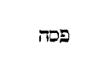
Cum dilexisset suos qui erant in mundo , etc. Quid est enim in finem dilexit eos , nisi in Christum? finis enim legis Christus ad justitiam omni credenti. Aliter, in finem dilexit , usque ad mortem dilexit, id est, usque ad mortem illum dilectio illa perduxit, quia tantum dilexit suos, ut moreretur propter eos.
Et coena facta, cum diabolus misisset . Coena ergo facta, dictum est, jam parata, et ad convivantium mensam usumque perducta, non transacta neque finita. Si quaeris, quid miserit diabolus in cor Judae, hoc utique, ut traderet eum. Missio ista non fit per aurem, sed per cogitationem. Jam talis venerat ad convivium explorator pastoris, insidiator Salvatoris, venditor Redemptoris.
Sciens, quia omnia dedit ei Pater in manus, et quia a Deo exivit, et ad Deum vadit , etc. Si omnia dedit ei Pater in manus, ergo et ipsum traditorem. Nam si ipsum in manibus non haberet, non utique illo uteretur ut vellet. Proinde traditor traditus erat ei quem tradere cupiebat. Atque ita malum tradendo faciebat, ut de tradito bonum fieret, quod nesciebat. Sciebat enim Dominus quid faceret pro amicis, ac sic omnia dederat Pater in manus ejus, et in usu mala, et in effectu bona.
Surgit a coena et ponit vestimenta sua , etc. Cum ergo illi Deus Pater omnia dedisset in manus, ille discipulorum non manus, sed pedes lavit. Et cum se sciret a Deo exisse et pergere ad Deum, non Dei Domini, sed hominis servi implevit officium, nec illius dedignatus [Col. 0203D] est pedes lavare, cujus manus jam praevidebat in scelere crucifendus. Suis exspoliatus est vestimentis, et mortuus, involutus est linteis, exspoliatus est, et tota illa ejus passio nostra purgatio est. Tanta est quippe humanae utilitati humilitas, ut eam commendaret suo exemplo, etiam divinitatis sublimitas. Quid est: venit ergo ad Simonem Petrum? quasi aliquibus jam lavasset, non ita intelligendum est, quod post aliquos ad illum venerit, sed quod ab illo coeperit.
Qui lotus est, non habet opus, nisi pedes lavare, sed est mundus totus , etc. Utique mundus totus praeter pedes. Homo quidem in sancto baptismo totus abluitur, non praeter pedes, sed totus omnino. Verumtamen [Col. 0204A] cum in rebus humanis postea vivitur, utique terra calcatur. Ipsi igitur humani aflectus, sine quibus in hac mortalitate non vivitur, quasi pedes sunt, ubi ex humanis rebus afficimur, hoc ipse evangelista patefecit: Sciebat enim , inquit, quisnam esset qui traderet eum: Vos , inquit, vocatis me magister et Domine, bene dicitis, sum etenim , ideo bene dicitis quia sum.
Si ego lavi pedes vestros, Dominus et magister , et reliqua. Discimus enim, fratres, humilitatem ab excelso, faciamus invicem humiles, quod humiliter fecit excelsus. Nec dedignetur quod fecit Christus, facere Christianus. Nam quod dicit: Exemplum dedi vobis, ut quemadmodum ego feci vobis, ita et vos faciatis , ostendit nobis, ut si quis adversus aliquem [Col. 0204B] habet querelam, sicut Dominus donavit nobis, ita et nos invicem. Itaque nobis delicta donemus, et pro nostris delictis invicem oremus. Atque ita quodammodo invicem pedes nostros lavemus. Nostrum est, donante ipso, ministerium charitatis et humilitatis adhibere, illius est, exaudire, ac nos ab omni peccatorum contaminatione mundare per Christum et in Christo, ut quod aliis etiam remittimus, hoc est, in terra solvimus, solvatur in coelo.
Amen, amen dico vobis, non est servus major domino suo , et reliqua. Hoc ideo dixit, quia laverat discipulorum pedes magister humilitatis, et verbo et exemplo.
( Smaragdus hic plus habet quam Evangelium in coena [Col. 0204C] Domini in se complectitur, nam aureum illum, et suavissimum Christi sermonem, quem evangelista Joannes habet cap . XIII, XIV, XV, XVI, XVII, ceu cygneam cantionem qua Christus suis valedicit, subnectit, et mira, sed clara brevitate ex orthodoxis pa tribus, exponit .)
Non de omnibus vobis dico, ego scio quos elegerim . Quos? nisi eos qui beati erunt, faciendo quae praecepit. Non est ex eis iste, qui panem illius sic edebat, ut super eum levaret calcaneum. Illi manducabant panem Domini, ille panem Domini contra Dominum: illi vitam, ille poenam. Amodo , inquit, dico vobis, priusquam fiat, ut credatis, cum factum fuerit, quia ego sum (Joan. XIII) . Id est, ego sum ille de quo Scriptura praecessit, ubi dictum est: Qui manducat panem meum, levabit super me calcaneum . Deinde [Col. 0204D] sequitur et dicit:
Amen, amen dico vobis, qui accipit eum, si quem misero, me accipit . Id est, secundum hominem. Qui autem me accipit, accipit eum qui misit me , id est qui accipit me secundum Deum, accipit eum qui me misit. Sic namque unusquisque eum qui est missus accipiat, ut in illo eum qui misit attendat. Si enim attendas Christum in Petro, invenies discipuli praeceptorem. Si autem attendas Patrem in Filio, invenies unigeniti genitorem. Ac sic in eo qui missus est, sine ullo errore accipimus mittentem.
Cum haec dixisset Jesus, turbatus est spiritu . Quid est ergo, quod ille turbatus est, nisi quia infirmos in suo corpore, hoc est, in sua Ecclesia, suae [Col. 0205A] infirmitatis voluntaria similitudine consolatus est. Quando turbatur, qui non turbaretur nisi volens, eum consolatur qui turbatur et nolens.
Aspiciebant ergo adinvicem discipuli, haesitantes de quo diceret , et reliqua. Sic quippe in eis erat erga magistrum suum pia charitas, ut tamen eos humana alterum de altero stimularet infirmitas. Nota quidem sibi erat cujusque conscientia, verumtamen, quia proximi erat ignota, ita sibi singulus quisque certus erat, ut incerti essent, et caeteris singuli, et singulis caeteri. Erat ergo recumbens unus ex discipulis ejus in sinu Jesu . Qui dixit in sinu , paulo post ait, super pectus , ipse est Joannes, cujus est hoc Evangelium. Itaque cum recubuisset, ait ille, supra pectus Jesu, hic est utique pectoris sinus sapientiae [Col. 0205B] secretum, dicit ei: Domine, quis est ? Respondit Jesus: Ille est cui intinctum panem porrexero; cum intinxisset panem, dedit Judae : post panem introivit in illum Satanas. Expressus est traditor, nudatae sunt latebrae tenebrarum. Bonum est quod accepit, sed malo suo accepit, quia male bonum malus accepit. Quid erat autem panis traditori datus, nisi demonstratio cui gratiae fuisset ingratus? Intravit ergo homini ingrato panis in ventrem, hostis in mentem. Et dicit ei Jesus: Quod facis fac citius . Non praecepit facinus, sed praedixit Judae malum, nobis bonum, non tam in perniciem perfidi saeviendo, quam ad salutem fidelium festinando, ille agebat negotium suae venditionis, iste nostrae redemptionis.
Haec autem nemo scivit discumbentium, ad quid dixerit ei, quidam enim putabant, quod loculos habebat , etc. Habet ergo et Dominus loculos, et a fidelibus oblata conservans, et suorum necessitatibus, et aliis indigentibus tribuebat. Tunc quidem primum Ecclesiasticae pecuniae forma est instituta, ubi intelligeremus, quod praecepit, non cogitandum esse de crastino, non ad hoc fuisse praeceptum, ut nihil pecuniae servaretur a sanctis, sed ne Deo pro ista serviatur, et propter inopiae timorem justitia deseratur. Nam cum accepisset ille buccellam, exiit continuo, erat nox. Cum ergo exiret, mox ait Jesus:
Nunc clarificatus est filius hominis . Dies ergo diei eructavit verbum, id est, Christus discipulis fidelibus, [Col. 0205D] ut audirent eum et amarent sequendo. Et nox nocti annuntiavit scientiam, id est, Judas Judaeis infidelibus, ut venirent ad eum et apprehenderent persequendo.
Nunc , inquit, clarificatus est filius hominis . Video hic aliquid quod praefiguret magnum. Exiit Judas, et clarificatus est Jesus: exiit filius perditionis, et clarificatus est filius hominis. Ille quippe exierat, propter quem dictum eis erat, et vos mundi estis, sed non omnes. Exeunte itaque immundo, omnes mundi remanserunt, et cum suo mundatore manserunt. Tale aliquid erit, cum victus a Christo transierit hic mundus, et nemo in populo Christi remanebit immundus sed sicut sol fulgebunt in regno Patris sui: [Col. 0206A] Et Deus , inquit, clarificatus est in eo . Ipsa enim clarificatio est filii hominis, ut Deus clarificetur in eo. Et continuo , inquit, clarificavit eum , resurrectionem scilicet suam, non sicut nostram in fine saeculi, sed continuo futuram hac attestatione praedicens.
Filioli, adhuc modicum vobiscum sum . Ne putarent ergo, quod sic eum clarificaturus esset Deus, ut non eis conjungeretur ulterius ea conversatione qua in terra est: Adhuc , inquit, modicum vobiscum sum , tanquam diceret: Continuo quidem resurrectione clarificabor, non tamen continuo ascensurus in coelum, sed adhuc modicum vobiscum sum, sicut enim scriptum est in actibus Apostolorum (Cap. I) , fecit cum eis post resurrectionem quadraginta dies, intrans et [Col. 0206B] exiens, manducans et bibens, non quidem habens esuriendi ac sitiendi egestatem, sed usque ad ista carnis insinuans veritatem, quae cibandi ac potandi jam non habebat necessitatem, sed potestatem. Hos ergo quadraginta dies significavit dicendo: Adhuc modicum vobiscum sum , an aliud aliquid? Potest enim et sic intelligi, adhuc modicum vobiscum sum. Adhuc sicut vos in hac infirmitate carnis etiam ipse sum, donec scilicet moreretur atque resurgeret, quia posteaquam resurrexit, cum illis quidem fuit diebus, ut dictum est, quadraginta exhibitione corporalis praesentiae, sed non cum illis fuit consortio infirmitatis humanae.
Quaeritis me, et sicut dixi Judaeis, quo ego vado, vos non potestis venire, et vobis dico modo . Hoc est, [Col. 0206C] modo non potestis. Isti itaque non poterant venire tunc quo ille ibat, sed poterant postea. Non igitur adhuc minus idonei erant sequi Dominum, eosque docens, quomodo idonei esse possent pergere, quo ille antecedebat: Mandatum , inquit, novum do vobis, ut diligatis invicem, sicut dilexi vos , hi sunt gressus quibus sequendus est Christus. Dilectio ista nos innovat, ut simus homines novi, haeredes testamenti, novi cantatores cantici novi.
Dicit ei Simon Petrus: Domine, quo vadis , etc. Sic utique hoc dixit magistro discipulus, et Domino servus, tanquam sequi paratus, propterea quippe Dominus, qui ejus animum vidit, quare hoc interrogaverit, sic ei respondit: Quo ego vado non potes me sequi modo . Quid festinas, Petre? Nondum te suo [Col. 0206D] spiritu solidavit petra, noli extolli praesumendo, non potes modo, noli dejici desperando, sequeris postea. Et Petrus: Quare te non possum sequi modo? animam meam pro te ponam . Et Dominus: Amen, amen dico tibi, non cantabit gallus donec ter me neges . Ecce quomodo tibi cito apparebis, qui magna loqueris, et te parvulum nescis, qui mihi promittis mortem tuam, ter negabis vitam tuam.
Non turbetur cor vestrum, credite in Deum , etc. Ne mortem tanquam homines timerent, et ideo turbarentur, consolatur eos, etiam Deum se esse contestans. Mortem metuistis huic formae servi, non turbetur cor vestrum, suscitabit illam forma Dei. Sed quid est quod sequitur: In domo patris mei mansiones [Col. 0207A] multae sunt? nisi quia et sibi metuebant, tanquam essent ab illo perituri, merito turbabantur. Sed cum audiunt: In domo patris mei mansiones multae sunt; si quo minus dixissem vobis, quia vado vobis parare locum . A perturbatione recreantur, certi ac fidentes, et jam post pericula tentationum se apud Deum cum Christo esse mansuros, quia et si alius est alio fortior, aut alius alio sapientior, aut alius alio justior, aut alius alio sanctior, in domo patris mei multae mansiones sunt. Ubi mansionem pro suo quisque accepturus est merito, atque ita Deus erit omnia in omnibus, ut quoniam Deus charitas est, per charitatem fiat, ut quod habent singuli, commune sit omnibus. Sic enim quisque etiam ipse habet, cum amat in altero quod ipse non habet. Non erit itaque aliqua invidia [Col. 0207B] imparis claritatis, quoniam regnabit in omnibus unitas charitatis. Quomodo vadit et parat locum, si jam multae mansiones sunt? An istae mansiones et sunt et parandae sunt? Parat autem modo mansiones mansionibus, parando mansores, quas praeparavit praedestinando, praeparat operando, nec alias, sed quas praeparavit, has praeparat. Sed quia nondum sunt in operatione, Et si abiero , inquit, et praeparavero vobis locum, iterum venio et accipiam vos ad memetipsum . Quid putavimus esse domum Dei, nisi templum Dei? Templum enim Dei sanctum est , inquit Apostolus, quod estis vos . Quid est: Quo vadis, Domine: Quid est: Quo venis? Si bene te intelligo, nec unde vadis, nec unde venis recedis, vadis latendo, venis apparendo, sed sic maneas regendo, [Col. 0207C] ut proficiamus bene vivendo. Quomodo parabitur locus ubi possimus manere perfruendo? Nam quod dicit: Quo ego vado, vos scitis, et viam scitis, in subsequentibus aperitur cum dicit: Ego sum via, veritas et vita .
Nemo venit ad patrem , etc. Ibat ergo ad seipsum per seipsum, et nos imus ad ipsum per ipsum, imo vero et ad patrem. Aliud quippe Verbum Dei est, aliud homo, sed Verbum caro factum est, id est, homo, non itaque alia Verbi, alia est hominis persona, quoniam utrumque est Christus una persona. Ac per hoc quemadmodum caro mortua est, Christus est mortuus, et cum caro sepulta est, Christus sepultus est, sic enim corde credimus ad justitiam, sic ore profitemur ad salutem. Ita cum caro a morte [Col. 0207D] venit ad vitam, Christus venit ad vitam. Et quia verbum Dei Christus est, Christus est vita. Ita miro quodam et ineffabili modo, qui nunquam dimisit vel amisit seipsum, venit ad seipsum.
Si cognovissetis me , etc. Hoc est quod ait: Nemo venit ad Patrem nisi per me . Dicta est enim omnimoda similitudo, quae illi cum patre est, ut ideo amodo dicerentur nosse patrem, quia noverant similem filium. Sic ergo dictum est ad Philippum: Qui videt me, videt et patrem , non ut ipse sit pater, qui filius, sed quod a patris similitudine in nullo prorsus discrepet filius. Ac si diceret, si me vidisti, qui omnimodo ei similis sum, vidisti illum cui similis sum. Sequitur.
Amen, amen dico vobis, qui credit in me, opera quae ego facio , etc. Majora quam ipse facit dixit eos esse facturos, sed in eis, vel per eos se facientem, in ipsis tanquam ex semetipsis. Sed quae sunt tandem ista majora? an forte quod aegros, ipsis transeuntibus, etiam eorum umbra sanabat. Majus est enim ut sanet umbra quam fimbria, illud per se, hoc per ipsos, sed utrumque ipse, verumtamen quando ista dicebat, verborum suorum opera commendabat. Audiebant et credebant illi, et eorumdem verborum fructus erat fides illorum. Verumtamen evangelizantibus discipulis gentes etiam crediderunt. Haec sunt sine dubitatione majora. Nec tamen ait: Majora horum facietis , ut solos apostolos ea putaremus esse facturos. Sed qui credit in [Col. 0208B] me , inquit: Ita ne quicunque credit in Christum facit quae Christus. Nam inter caetera bona, etiam hoc eis donare dignatus est, ut majora faceret per illos quam praeter illos. Nonne ab ore ipsius dives ille tristis abscessit, quando vitae aeternae consilium quaesivit, et tamen postea, quod ab illo auditu non fecit unus, fecerunt multi, cum loqueretur per discipulos magister bonus. Ecce majora fecit, praedicatus a credentibus, quam locutus audientibus. Tunc autem verba ejus erant opera ejus. Et utique minus est verba justitiae praedicare, quod fecit propter nos, quam impios justificare, quod ita fecit in nobis, ut faciamus et nos.
Et quodcunque petieritis in nomine meo hoc faciam , et reliqua. Magnam spem Dominus suis promisit [Col. 0208C] orantibus, dicens: Quodcunque petieritis in nomine meo, hoc faciam . Ipsum enim quodcumque, non ait petieritis utcunque, sed in nomine meo, Jesus enim interpretatur Salvator, quapropter quando volumus ut faciat quodcunque petimus, non utcunque, sed in nomine salvatoris petamus. Non ergo contra salutem nostram petamus. Sic ergo perrexit ad patrem, ut non relinqueret indigentes, sed exaudiret petentes.
Si diligitis me, mandata mea servate, et ego rogabo patrem , etc. Hic est utique in trinitate Spiritus sanctus, quem patri et filio consubstantialem et coaeternum fides catholica confitetur. Jam itaque habebant spiritum discipuli, quem Dominus promittebat, nec tamen adhuc eum habebant, sicut eum [Col. 0208D] Dominus promittebat, qui quantum habendus fuerat, nondum habebant. Habebant itaque minus, dandus erat eis amplius: habebant occulte, accepturi fuerant manifeste. Quia et hoc ad majus donum sancti Spiritus pertinebat, ut eis innotesceret quod habebant. Quod vero ait: Rogabo patrem, et alium paracletum dabit vobis , ostendit et seipsum esse paracletum; παράκλητος enim Graece, Latine dicitur advocatus, et dictum est de Christo: Advocatum habemus apud patrem, Jesum Christum justum (I Joan. II) . Vos autem , inquit, cognoscetis eum, quia apud vos manebit, et in vobis erit , ne putarent ita apud eos esse ut hospitem, exposuit quid dixerit, apud vos , cum adjunxit et dixit, in [Col. 0209A] vobis . Datur quippe ut sit et in vobis. Sed videri et sciri, quemadmodum videndus et sciendus est, non potest a nobis, si non sit in nobis.
Non relinquam vos orphanos , etc. Post promissionem Spiritus sancti ne quis putaret, quod ita eum Dominus daturus fuerat, velut pro seipso, ut non ut ipse cum eis esset futurus, adjecit: Non relinquam vos orphanos . Quamvis ergo nos filius Dei suo patri adoptaverit filios, et eumdem patrem nos voluerit habere per gratiam, qui ejus pater est, per naturam tamen etiam ipse erga nos paternum quodammodo demonstrat affectum, cum dicit: Non relinquam vos orphanos . Deinde sequitur: Adhuc modicum et mundus me jam non videt, vos autem videtis me, quia ego vivo et vos vivetis . Quid est hoc [Col. 0209B] quod de praesenti se dixit vivere, illos autem de futuro esse victuros? Nisi quia vita etiam carnis utique resurgentis, qualis in ipso praecedebat, et illis est pollicitus secuturam. Duas ergo resurrectiones, suam scilicet mox futuram, et nostram in fine saeculi venturam, duobus verbis praesentis temporis et futuri, eleganter, breviterque promisit: Sed quoniam post resurrectionem, etiam ipsam carnem suam, quam non solum videndam, verum etiam contrectandam demonstravit, suis voluit demonstrare, non suis subtrahere, et hoc est fortasse, adhuc modicum et mundus me jam non videt, vos autem videtis me.
In illo die , inquit, vos cognoscetis, quia ego sum in patre meo , etc. In quo die? nisi de quo ait: [Col. 0209C] Et vos vivetis , tunc enim erit ut possimus videre quod credimus, nam et nunc est in nobis, et nos in illo. Qui habet mandata mea, et servat ea, ille est qui diligit me , qui habet in memoria et servat in vita; qui habet in sermonibus, et servat in moribus; qui habet audiendo, et servat faciendo, ipse est, inquit, qui diligit me; et ego diligam eum, et manifestabo ei meipsum . Diligam et manifestabo, id est, ad hoc diligam ut manifestem. Quid est diligam? tanquam tunc dilecturus sit, et nunc non diligat? absit. Nunc enim ad hoc diligit, ut credamus et mandatum fidei teneamus, tunc ad hoc diliget, ut videamus, et ipsam visionem mercedem fidei capiamus.
Respondit Jesus et dixit eis: Si quis diligit me, [Col. 0209D] sermonem meum servabit, et Pater meus diliget eum, et ad eum veniemus , etc. Sic inseparabiliter operantur pater et filius, sic et inseparabiliter diligunt. Ecce facit in sanctis, cum patre et filio, sanctus etiam spiritus mansionem intus utique tanquam Deus in templo suo. Deus trinitas, pater et filius et spiritus sanctus veniunt ad nos, dum venimus ad eos. Veniunt subveniendo, venimus obediendo: veniunt illuminando, venimus intuendo, veniunt implendo, venimus capiendo, ut sit nobis eorum non extraria visio, sed interna, et in nobis eorum non transitoria mansio, sed aeterna. Sequitur: Et sermonem quem audistis, non est meus, sed et patris . Recte igitur auctori tribuit, quidquid facit aequalis, [Col. 0210A] a quo habet hoc ipsum, quod illi est indifferenter aequalis. Non miremur, non paveamus, non est minor patre, sed non est, nisi a patre, non utique suum, sed patris est verbum, quomodo nec sua imago, sed patris, nec suus filius idem ipse, sed patris.
Haec locutus sum vobis apud vos manens , et reliqua. Apud vos manens, utique praesentia corporali, qua cum illis visibilis loquebatur: Paracletus autem , inquit, spiritus sanctus, quem mittet pater in nomine meo, ille vos docebit omnia . Nam quando, vel quem spiritus sanctus docet, trinitas ipsa docet, sed quoniam trinitas est, oportebat ejus singulas insinuare personas, omnes igitur et dicit et docet trinitas, sed nisi etiam singillatim commendaretur, eam nullo [Col. 0210B] modo humana capere utcunque posset infirmitas.
Pacem relinquo vobis, pacem meam do vobis . Hoc est quod legimus apud prophetam: Pacem super pacem . Pacem nobis relinquit iturus, pacem suam nobis dabit in fine venturus, pacem nobis relinquit in hoc saeculo, pacem suam nobis dabit in futuro saeculo. Pacem nobis relinquit, in qua manentes hostem vincimus, pacem suam nobis dabit, quando sine hoste regnabimus. Pacem reliquit nobis, ut etiam hic invicem diligamus, in illo tamen, atque ab illo est nobis pax; ipse est pax nostra, qui fecit utraque unum (Ephes. II) , pax ergo ipse nobis est, et cum credimus quia est, et cum videbimus eum sicuti est. Quod vero adjunxit, Non quomodo mundus dat, ego [Col. 0210C] do vobis , quid est aliud, nisi non quomodo homines dant, qui propter ea sibi dant pacem, ut sine molestia non Deo, sed amico suo mundo perfruantur.
Non turbetur cor vestrum, neque formidet; audistis quia ego dixi vobis , etc. Hinc ergo turbari et formidare poterat cor illorum, quod ibat ab eis, quamvis venturus ad eos, ne forsitan gregem lupus in hoc intervallo invaderet pastoris absentia. Sed a quibus homo abscedebat, Deus non relinquebat, et idem ipse Christus homo et Deus. Ergo et ibat per id quod homo erat, et manebat, per id quod Deus erat: ibat per id quod in uno loco erat, manebat per id quod ubique erat. Si diligeretis me, gauderetis utique quia vado ad Patrem, quia Pater [Col. 0210D] major me est . Per quod ergo filius non est aequalis patri, per hoc erat iturus ad patrem, per illud autem in quo est aequalis gignenti unigenitus, nunquam recedit a patre. Forma quippe servi accessit, non forma Dei recessit, haec est assumpta, non illa consumpta. Propter hanc dicit, Pater major me est , propter illam vero, ego et Pater unum sumus . Agnoscamus geminam substantiam Christi, divinam scilicet qua aequalis est patri, humanam, qua major est pater. Utrumque autem simul non duo, sed unus Christus, ne sit quaternitas, non trinitas Deus. Sicut enim unus est homo anima rationalis et caro, sic unus est Christus Deus et homo, ac per hoc Christus est Deus, anima rationalis et [Col. 0211A] caro, Christum in his omnibus, Christum in singulis confitemur. Quis est ergo, per quem factus est mundus? Christus Jesus, sed in forma Dei. Quis est sub Pontio Pilato crucifixus? Christus Jesus, sed in forma servi.
Et nunc dixi vobis priusquam fiat, ut cum fuerit factum credatis , et reliqua. Quid sibi vult hoc? Nonne potius dicendum fuit: Et nunc dixi vobis, priusquam fiat ut credatis, ut cum factum fuerit, videatis. Illud enim dicit: Cum factum fuerit , quod eum post mortem visuri erant viventem, et ad patrem ascendentem, quo viso illud fuerant credituri, quod ipse esset filius Dei, qui potuit hoc facere cum praedixisset, et praedicare, antequam faceret. Deinde quid dicit: Jam non multa loquer vobiscum, venit [Col. 0211B] enim princeps mundi . Quis nisi diabolus? et in me non invenit quicquam . Nullum scilicet omnino peccatum; sic enim ostendit non creaturarum, sed peccatorum principem diabolum. Quid autem dicit discumbentibus? Surgite, eamus hinc , quo, nisi ad illum locum unde fuerat tradendus ad mortem?
Ego sum vitis vera, et pater meus agricola , et reliqua. Iste locus evangelicus, fratres, ubi se dicit Dominus vitem, et discipulos suos palmites, secundum hoc dicit, quod est caput Ecclesiae nosque membra ejus. Unius quippe naturae sunt vitis et palmites, mediator Dei et hominum, homo Christus Jesus, cum esset Deus, cujus naturae non sumus, factus est homo, ut in illo esset vitis, una [Col. 0211C] natura, cujus et nos homines palmites esse possumus: Et pater meus , inquit, agricola est . Secundum hoc ergo vitis Christus, secundum quod ait: Pater major me est ; secundum id quod ait: Ego et Pater unum sumus , et ipse agricola est. Jam vos inquit, mundi estis , mundi scilicet atque mundandi. Neque enim, nisi mundi essent, fructum afferre potuissent, et tamen omnem qui fert fructum, purgat agricola, ut fructum plus afferat. Quis enim est in hac vita, ut non sit magis magisque mundandus? Quare non ait: Mundi estis per baptismum, quo abluti estis, sed ait, propter verbum quod locutus sum vobis? nisi quia et in aqua verbum mundat, detrahe verbum, et quid est aqua, nisi aqua? Accedit verbum ad elementum, et fit sacramentum [Col. 0211D] etiam ipsum tanquam visibile verbum, hoc est, verbum fidei praedicamus, quod dicit Apostolus: Quia si confessus fueris in ore tuo , etc. Hoc verbum fidei tantum valet in Ecclesia Dei, ut per ipsum credentem, offerentem, benedicentem, tingentem, etiam tantillum mundet infantem, quamvis nondum valentem corde credere ad justitiam, et ore confiteri ad salutem. Totum hoc fit per verbum de quo Dominus ait: Jam vos mundi estis propter verbum quod locutus sum vobis: Manete in me , inquit, et ego in vobis . Unum e duobus palmiti congruit, aut vitis aut ignis, si in vite non est, in igne erit, ut ergo in igne non sit, in vite sit. Tunc ergo dicenda sunt verba ejus in nobis manere, quando [Col. 0212A] facimus quae praecepit, et diligimus quae promisit.
In hoc clarificatus est pater meus, ut fructum plurimum afferatis , et reliq. Non hoc nostrae gloriae tribuamus, tanquam hoc ex nobis ipsis habeamus, ejus est enim haec gratia, et ideo in hoc non nostra, sed ejus est gloria, ut efficiamur Christi discipuli, quia ejus misericordia praevenit nos. Quod autem ait: Sicut dilexit me Pater, et ego dilexi vos , non aequalitatem naturae ostendit nostrae et suae, sicut est patris et ipsius, sed gratiam qua mediator est Dei et hominum, homo Christus Jesus. Quid est ergo: Manete in dilectione mea , nisi manete in gratia mea? Quid est quod dicit: Sicut dilexit me Pater, et ego dilexi vos ? Nunquid et hic gratia intelligenda est, qua pater diligit filium? Sicut gratia [Col. 0212B] est, qua nos diligit filius, cum simus nos filii gratia, non natura, unigenitus autem natura, non gratia. An hoc etiam in ipso filio ad hominem referendum est? ita sane, nam dicendo: Sicut dilexit me Pater, et ego dilexi vos , gratiam mediatoris ostendit, mediator autem Dei et hominum, non in quantum Deus est, sed in quantum homo est, Christus Jesus. Deus enim erat verbum, unigenitus gignenti coaeternus, sed ut mediator daretur nobis per ineffabilem gratiam: Verbum caro factum est, et habitavit in nobis .
Haec locutus sum vobis, ut gaudium meum in vobis sit , et reliq. Quod est gaudium Christi in nobis, nisi quod dignatur gaudere de nobis? Et quod est gaudium nostrum quod dicit impletum, nisi ejus [Col. 0212C] habere consortium? Diligamus ergo invicem sicut dilexit nos, et tradidit semetipsum pro nobis. Majorem quippe hac dilectionem nemo habet, ut animam suam ponat quis pro amicis suis . Eum quippe imitemur pia obedientia, ut ei nos comparare nulla praesumamus audacia: Vos , inquit, amici mei estis , magna dignatio, servi esse non meremur, et amici vocamur: Jam non dicam vos servos, quia servus nescit quid faciat dominus ejus . Quoniam itaque dedit nobis potestatem filios Dei fieri (Joan. I) , non servi, sed filii sumus. Qui autem aliquid boni agit et extollitur, quasi hoc ipse faciat, non dominus ejus, iste servus nescit quid faciat dominus ejus. Nos autem omnes, ut amici Domini esse possimus, quicquid Dominus noster faciat sciamus. [Col. 0212D] Non solum etiam homines, verum etiam justos ipse facit nos, et non ipsi nos. Ab ipso quidquid boni est donatur, ut omnino de omnibus bonis, qui gloriatur, in Domino glorietur.
Vos autem dixi amicos, quia omnia quaecunque audivi a Patre , etc. Quo igitur pacto hoc intelligendum est? Quis enim audeat affirmare, vel credere ullum hominem scire omnia quaecunque a patre audivit unigenitus filius? Nam sicut immortalitatem carnis, et salutem animarum futuram expectamus, quamvis jam pignore accepto, salvi facti esse dicamur, ita omnium notitiam, quaecunque unigenitus audivit a patre, futuram sperare debemus. Quamvis jam se hoc fecisse dixerit Christus, quod facturus [Col. 0213A] est, fecisse dicit, quia ea quae futura sunt fecit.
Non vos me elegistis , inquit, sed ego elegi vos . Haec est illa ineffabilis gratia, haec quippe electio gratiae est Dei, de qua dicit Apostolus: Sic et in hoc tempore reliquiae per electionem gratiae salvae factae sunt . Quid ergo dicturi sumus audiendo: Non vos me elegistis , nisi quia mali eramus et electi sumus, ut boni per gratiam nos eligentis essemus? Et videte quemadmodum non eligat bonos, sed quos elegit facit bonos: Ego , inquit, elegi vos, et posui vos ut eatis et fructum afferatis et fructus vester maneat . Nullum itaque fructum unde nos eligeret habebamus: Ut eatis , inquit imus ut afferamus, et ipse est via qua imus, in qua nos posuit ut eamus. [Col. 0213B] Proinde in omnibus misericordia ejus praevenit nos: Et fructus , inquit, vester maneat . Maneat ergo dilectio ipse fructus noster.
Mementote sermonis mei, quem ego dixi vobis , et reliqua. Exhortans Dominus suos servos ad mundi odia perferenda patienter, nullum magis eis et melius, quam de seipso proponit exemplum. Nam quid est aliud: Non est servus major Domino suo, si me persecuti sunt, et vos persequentur? Sed haec , inquit, omnia facient vobis propter nomen meum . Quae omnia, nisi quae dixit, Odio habebunt, scilicet et persequentur sermonem quem contemnent? Si non venissem , inquit, et locutus eis fuissem, peccatum non haberent . De his enim dicit, de quibus dicebat: Si me persecuti sunt, et vos persequentur . [Col. 0213C] Judaei ergo persecuti sunt Christum. Nunquid sine peccato erant Judaei, antequam Christus ad eos in carne venisset? quis hoc vel stultissimus dixerit? Sed magnum quoddam peccatum, non omne peccatum, quod sub generali nomine vult intelligi, hoc est enim peccatum quo tenentur cuncta peccata, quod unusquisque si non habeat, dimittuntur ei cuncta peccata. Hoc est autem, quia non crediderunt in Christum, qui propterea venit ut credatur in eum, hoc peccatum si non venisset, non utique haberent: Qui me odit , inquit, et patrem meum odit . Quomodo enim diligerent patrem veritatis, qui habebant odio veritatem? Si opera non fecissem in eis, quae nemo alius fecit , et rel. Nimirum ergo illa sunt opera, quae in eorum valetudinibus, [Col. 0213D] tanta miracula salutis ostendit, quanta illis antea nemo donavit. Quia de ipso scriptum est: Benedictus Dominus Deus Israel, qui facit mirabilia solus (Psal. LXXI) . Nemo ergo alius fecit quaecunque in eis opera fecit. Quoniam quisquis homo aliquid eorum fecit, ipso faciente fecit, haec autem ipse non illis facientibus fecit.
Cum autem venerit Paracletus, ille testimonium perhibebit , etc. Tanquam diceret: Odio me habuerunt et occiderunt videntes. Sed tale de me Paracletus testimonium perhibebit, ut eos faciat in me credere non videntes: Et vos , inquit, testimonium perhibebitis, quia ab initio mecum estis ; perhibebit Spiritus sanctus, perhibebitis et vos; dabit enim vobis fiduciam [Col. 0214A] testimonium perhibendi charitas diffusa in cordibus vestris, per Spiritum sanctum, qui dabitur in vohis. Ille quippe testimonium perhibens, et testes fortissimos faciens, vobis abstulit Christi amicis timorem, et inimicorum odium convertit in amorem. Haec , inquit, locutus sum vobis, ut non scandalizemini . Cum enim charitas diffunditur in cordibus nostris per Spiritum sanctum, fit pax multa diligentibus legem Dei (Psal. CXVIII) , ut non sit scandalum eis. Deinde quae passuri essent jam exprimens ait: Extra synagogas facient vos . Quid autem mali erat apostolis expelli de Judaicis synagogis, quasi non inde se fuerant separaturi, etiamsi nullus eos expelleret? Sed nimirum hoc voluit denuntiare, quia Judaei Christum non fuerant recepturi, a quo isti non fuerant [Col. 0214B] recessuri, et ideo futurum erat ut foras mitterentur, cum illo ab eis, qui esse nollent in illo, hi, quia esse non possent sine illo.
Sed venit hora ut omnis qui interficit vos arbitretur obsequium , etc. Hoc est, non cognoverunt Deum neque filium ejus. Quid sibi vult ergo: Extra synagogas facient vos? Sed venit hora. Tanquam hoc dicturus fuisset: separabunt illi quidem vos, sed ego vos colligam, aut separabunt vos, sed venit hora nostrae laetitiae. Judaeorum autem omnis, qui occidit praedicatores Christi, Deo se praestare putavit obsequium, credens quod desererent Deum Israel, quicunque converterentur ad Christum: O execrabilis caecitas! obsequium se praestare putabant Deo interficiendo famulos Dei.
Haec autem , inquit, vobis locutus sum, ut cum venerit hora eorum , etc. Haec scilicet, locutus sum vobis, non tantum quia passuri estis ista, sed cum venerit Paracletus, ille testimonium perhibebit de me, ne ista timendo taceatis. Haec autem vobis ab initio non dixi, quia vobiscum eram , et ego vos consolabar mea praesentia corporali. Nunc autem vado ad eum qui me misit, et nemo ex vobis interrogat me: Quo vadis? Nubes enim suscepit eum euntem in coelum (Act. I) , et verbis non interrogaverunt, sed oculis deduxerunt. Sed quia haec locutus sum vobis, tristitia implevit cor vestrum . Contristabatur humanus affectus, quia carnalis desolabatur aspectus.
Sed ego veritatem dico vobis, expedit vobis ut ego [Col. 0214D] vadam; si enim non abiero, Paracletus non veniet , etc. Tanquam diceret: Expedit vobis ut haec forma servi auferatur a vobis. Caro quidem factum Verbum habito in vobis, sed nolo adhuc me carnaliter diligatis. Unde et subditur: Si non abiero, Paracletus non veniet ad vos , ac si diceret: Non potestis capere Spiritum, quamdiu secundum carnem nosse persistitis: Si autem abiero , inquit, mittam eum ad vos . Christo autem discedente corporaliter, non solum Spiritus sanctus, sed et Pater et Filius illis adfuit spiritaliter. Nam cum ex carnalibus essent spirituales futuri, profecto et Patrem et Filium et Spiritum sanctum capacius fuerant habituri.
Et cum venerit ille, arguet mundum de peccato, et de justitia, et de judicio; de peccato quidem, quia non [Col. 0215A] crediderunt in me, de justitia vero, quia ad Patrem vado, et jam non videbitis me . Arguitur itaque mundus de peccato incredulitatis, arguitur et de justitia eorum qui credunt. Ipsa quippe fidelium comparatio, infidelium est vituperatio; quapropter mundus de peccato quidem suo, de justitia vero arguitur aliena, sicut arguuntur de lumine tenebrae. Incredulum mundum arguet etiam de judicio, quia princeps hujus mundi judicatus est, id est, judicio ignis aeterni irrevocabiliter destinatus est, et de hoc itaque judicio, quo princeps judicatus est mundi, arguitur a sancto Spiritu mundus, quoniam cum suo principe judicatur, quem superbus atque impius imitatur. Quid est ergo quod dicit: Etiam non videbitis me , nisi quomodo sum, cum vobiscum sum? Tunc enim adhuc [Col. 0215B] erat mortalis in similitudine carnis peccati, qui esurire poterat ac sitire, fatigari atque dormire. Hunc ergo Christum, id est, talem Christum, cum transisset de hoc mundo ad Patrem, non erant jam visuri: Non videbitis me , ac si diceret, humilem, sed excelsum, nec mortalem, sed sempiternum, nec judicandum, sed judicaturum. Si ille magister interior, qui cum discipulis exterius loquebatur, vellet nobis de incorporea Dei natura intrinsecus aliquid dicere, sicut sanctis angelis dicit, qui semper vident faciem Patris, nondum ea portare possumus, proinde quod ait: Docebit vos omnem veritatem , non arbitror nunc in cujusquam mente posse compleri, sed tunc, cum facie ad faciem viderimus. Quia ergo non est a semetipso, sed ab illo a quo procedit, Non ergo loquitur [Col. 0215C] a semetipso, sed quaecunque audiet loquetur . Ab illo audiet a quo procedit, a quo est, ab illo est, a quo procedit. Quod vero sequitur: Ille me clarificabit , potest intelligi, quia diffundendo in credentium cordibus charitatem, declaravit eis quomodo Patri Filius esset coaequalis. Vel certe, quia per ipsam charitatem fiducia repleti, et timore depulso, annuntiarent hominibus Christum. Ac sic ejus fama diffusa est toto orbe terrarum, ut sic dixerit: Ille me clarificavit, tanquam diceret: ille vobis auferet timorem, et dabit amorem, quo me ardentius praedicantes gloriae meae per totum mundum dabitis odorem, commendabitis honorem. Quod enim facturi fuerant in Spiritu sancto, hoc eumdem Spiritum dixit esse facturum: Omnia , inquit, quaecunque habet Pater [Col. 0215D] mea sunt: propterea dixi vobis quia de meo accipiet , et continuo hoc explanat: Ergo de Patre accipit Spiritus sanctus, unde accipit Filius, quia in hac Trinitate de Patre natus est Filius, de Patre procedit Spiritus sanctus, qui autem de nullo natus sit, de nullo procedat, Pater est solus.
Modicum et jam non videbitis me , etc. Post paululum enim passus est, et non viderunt eum. Rursus post paululum resurrexit et viderunt eum. Unde et contristati sunt de morte Domini discipuli, et confestim de resurrectione ejus laeti, unde et sequitur: Tristitia vestra convertetur in gaudium , nam et tristitia tunc convertetur in gaudium, quando manifestaverit se suis sicuti est. Quod vero dicit: Mundus [Col. 0216A] gaudebit , malitia mundi hujus intelligi potest, quae laetata est occiso Christo. Quod vero ait: Gaudium vestrum nemo auferet a vobis , quia gaudium ipsorum est ipse Jesus, significatus est quod ait Apostolus: Christus resurgens a mortuis jam non moritur , etc (II Petr. III) . Quid est enim quod ait: Et in illo die non rogabitis quidquam? Hoc verbum quod est? Rogare non solum petere, verumetiam interrogare significat. Quod vero dicit: Venit hora cum jam non in proverbiis loquar vobis, sed palam , futurum oportere intelligi secundum, ubi videbimus facie ad faciem. Annuntiabo autem vobis, quia per Filium Pater videtur. Quis enim cognoscit Patrem, nisi cui voluerit Filius revelare?
Et non dico vobis, quia ego rogabo Patrem , etc. In [Col. 0216B] quantum homo est interpellat pro nobis Patrem, in quantum autem Deus est, nos exaudit cum Patre: Ipse enim Pater , inquit, amat vos, quia vos me amastis , hinc ergo factum est ut diligeremur, quia dilecti sumus. Prorsus donum Dei est diligere Deum, ipse ut diligeretur dedit, qui non dilectus dilexit. Sequitur: Exivi a Patre et veni in hunc mundum , exiit enim a Patre, quia de Patre est: in mundum venit, quia mundo suum corpus ostendit, quod de virgine assumpsit: reliquit mundum corporali discessione: perrexit ad Patrem hominis ascensione: nec mundum deseruit praesentiae gubernatione.
Haec locutus sum vobis, ut in me pacem habeatis , etc. Posteaquam de convivio sancto illo, qui eum traditurus egressus est, hanc enim causam commendavit [Col. 0216C] sermonis sui, ut in illo pacem haberent, propter quod totum agitur quod Christiani sumus, haec enim pax finem temporis non habebit, et omnis piae nostrae intentionis actio, quae finis ipsa erat, propter hanc sacramentis ejus imbuimur. Propter hanc mirabilibus ejus operibus et sermonibus erudimur: propter hanc spiritus ejus pignus accepimus: propter hanc in eum credimus et speramus, et ejus amore quantum donat accendimur: hac pace in pressuris omnibus consolamur: hac a pressuris omnibus liberamur, propter hanc omnem tribulationem fortiter sustinemus, ut in hac feliciter sine ulla tribulatione regnemus.
(Cap. XVII.) Haec locutus est Jesus, et sublevatis oculis in coelum , etc. Clarificatum a Patre Filium [Col. 0216D] nonnulli accipiunt in hoc, quod ei non pepercit, sed pro nobis omnibus tradidit eum. Si passione clarificatus dicitur, quanto magis resurrectione! Humilitas ergo ejus incipit in sermone Apostoli, ab eo loco ubi ait: Semetipsum exinanivit usque ad mortem crucis (Philip. II) . Claritas vero ejus incipit ab eo loco ubi ait: Propter quod et Deus illum exaltavit , et pervenit quod in gloria est Dei Patris . Humilitas claritatis est meritum, claritas humilitatis est praemium. Sed hoc factum est in forma servi. In forma vero Dei semper est claritas. Sed quid sibi vult, quod sequitur, Ut Filius tuus clarificet te, cum sempiterna claritas Patris, nec diminuta fuerit in forma humana, nec augeri poterit in sua perfectione divina? Apud homines [Col. 0217A] autem procul dubio minor erat, quando in Judaea tantummodo Deus notus erat, nondum a solis ortu usque ad occasum laudabant pueri nomen Domini, hoc autem, quia per Evangelium Christi factum est, ut per Filium Pater innotesceret gentibus, profecto Patrem clarificavit et Filius. Si autem tantummodo mortuus fuisset Filius, nec resurrexisset, procul dubio nec a Patre clarificatus esset, nec Patrem clarificasset. Nunc autem resurrectione clarificatus a Patre, resurrectionis suae praedicatione clarificat Patrem. Hec quippe aperit ordo ipse verborum: Clarifica , inquit, Filium tuum, ut Filius tuus clarificet te , tanquam diceret, resuscita me, ut innotescas toto orbi. Ipse quippe Patrem clarificavit super terram, cum gentibus praedicando: Pater vero ipsum, [Col. 0217B] apud semetipsum ad suam dexteram collocando. Omnem carnem quidem dixit, omnem hominem, intelligi vult a parte totum significasse.
Et nunc clarifica me, ut Pater apud temetipsum claritatem , etc. Hic intelligamus praedestinationem claritatis humanae quae in illo est naturae ex mortali immortalis apud Patrem futurae. Et hoc jam praedestinando factum fuisse antequam mundus esset, quod in mundo etiam suo tempore fieret: Et nunc clarifica me , hoc est, sicut tunc praedestinatione, ita et nunc perfectione, fac in mundo, quod apud te jam fuerat ante mundum: fac in suo tempore, quod ante omnia tempora statuisti, claritatem, quam habui priusquam mundus esset apud te, id est, illam claritatem quam habui apud te in praedestinatione [Col. 0217C] tua. Tempus est ut apud te habeam etiam vivens in dextera tua. Manifestavi nomen tuum hominibus, quos dedisti mihi de mundo . Nomen tuum hoc est, non illud nomen quo vocaris Deus, quod in Judaea notum est, et in Israel magnum, et universae creaturae notissimum, sed illud quo vocaris pater meus, quod omnino manifestari sine ipsius filii manifestatione non posset. Nam ideo fecisse se dicit, quod erat sine dubitatione facturus, sed de his qui jam erant discipuli ejus non de omnibus qui in illo erant credituri, dixisse manifestatur, in hoc quod subditur: Cum essem cum eis, ego servabam eos in nomine tuo, et nemo ex eis periit, nisi filius perditionis , Judam significans, qui tradidit eum. Ex isto quippe duodenario numero apostolorum solus periit. Quod vero sequitur: Tui [Col. 0217D] erant, et mihi eos dedisti , hominem se accepisse hanc potestatem, ut eos haberet ostendit, quoniam qui semper omnipotens fuit, non semper homo fuit. Quamobrem Patri potius tribui videtur, ut ab illo eos acciperet, quoniam ex ipso est, quidquid est, de quo est etiam ipse; sibi eos dedit, hoc est, cum Patre Deus Christus homini Christo. Verba quae dedisti mihi dedi eis, et ipsi acceperunt, hoc est, intellexerunt atque tenuerunt et cognoverunt vere, id est, fortiter, stabiliter, inconcusse: non pro mundo rogo, quod dicit, mundum vult intelligi, qui vivunt secundum concupiscentiam mundi, et non sunt in ea sorte gratiae. Quod vero dicit: Non sum in mundo , ostendens se praesentia corporali jam cito [Col. 0218A] a mundo recessurum, illos autem tardius, ideo dixit se jam non hinc esse illos autem hic esse. Commendat ergo Patri eos quos corporali absentia relicturus est, dicens: Pater sancte, serva eos in nomine tuo, quos dedisti mihi, ut sint unum sicut et nos , non ait: Ut nobiscum sint unum, ut simus unum ipsi, et non sicut unum sumus nos, sed ait: Ut sint unum, sicut et nos . Ipsi utique in natura sua sint unum, sicut et nos in nostra unum sumus.
Pater sancte, sanctifica eos in veritate . Quid ergo aliud est: Sanctifica eos in veritate , nisi, sanctifica eos in me. Ipse inquit: Ego sum via et veritas et vita . Sanctificat itaque Pater in veritate, id est, in Verbo suo, in unigenito suo. Quid est quod ait: Et pro eis ego sanctifico meipsum , nisi eos in meipso sanctifico, [Col. 0218B] cum et ipsi sint ego, quoniam de quibus hoc ait, membra sunt ejus et unus est Christus, caput et corpus? Sequitur: Ut sint et ipsi sanctificati in veritate , quod quid aliud quam est in me, secundum id quod veritas est? Tunc ergo sanctificavit se in se, hoc est, hominem se in Verbo se, quia unus Christus, Verbum et homo, sanctificans hominem in Verbo, propter vero sua membra, et pro eis , inquit, ego , id est, quod prosit etiam ipsis, quia et ipsi sunt ego, sicut mihi profuit, quia homo sum sine ipsis, et ego sanctifico meipsum , hoc est, ipsos in me tanquam meipsum sanctifico ego, quoniam in me etiam ipsi sunt ego, ut sint et ipsi sanctificati in veritate . Quid est, et ipsi? nisi quemadmodum in veritate ego, quod sum ego. Sequitur: Non pro his autem rogo tantum , [Col. 0218C] hoc est, pro discipulis qui cum illo tunc erant, sed et pro eis , inquit, qui credituri sunt per Verbum in me . Ubi omnes suos intelligi voluit, non solum qui tunc erant in carne, sed etiam qui futuri erant per verbum apostolorum in eum sine dubio credi, quotquot postea crediderunt, et donec veniat credituri sunt. Quod vero dicit: Et ego claritatem quam dedisti mihi dedi eis ; quam claritatem? nisi immortalitatem quam natura humana in illo fuerat acceptura, nam nec ipse adhuc acceperat eam, sed more suo propter immortalitatem praedestinationis praeteriti temporis verbo futura significat.
Et dilexisti eos sicut et me dilexisti , etc. In Filio quippe nos Pater diligit, quia in ipso nos elegit [Col. 0218D] ante mundi constitutionem. Qui enim diligit unigenitum profecto diligit et membra ejus quae adoptavit in eum per eum. Non ideo pares sumus unigenito Filio, per quem creati et recreati sumus, quia dictum est: Dilexisti eos sicut et me , neque enim semper aequalitatem significat qui dicit, sicut illud, ita et illud, sed aliquando tantum, quia est illud, est et illud, aut quia est illud, ut sit et illud. Pater , inquit, quos dedisti mihi, volo ut ubi ego sum et illi sint mecum ; qui sunt isti quos ait a Patre datos sibi? nonne illi de quibus alio loco dicit: Nemo venit ad me nisi Pater qui misit me traxerit eum? Ipse quidem de se dixit, quod ibi jam esset, de nobis autem velle se dixit, ut essemus ibi cum illo; non inaniter, sed fideliter jam deputat factum, quod futurum esse non dubitat. [Col. 0219A] Non ei satis fuit dicere: Volo ut ubi ego sum et ipsi sint , sed addidit, mecum : esse enim cum illo magnum bonum est, et miseri possunt esse, ubi est ille, quoniam quicunque ubicunque fuerint est et ille. Sed beati soli sunt cum illo, quia beati esse non poterunt nisi ex illo. Quod vero adjunxit, ut videant claritatem meam quam dedisti mihi, quia dilexisti me ante constitutionem mundi , ut videant dixit, non ut credant, fidei merces est ista, non fides, quam claritatem Domini, nisi illam qua Deus est? Beati enim mundo corde, quoniam ipsi Deum videbunt (Matth. V) . Cognoscendus est a mundis corde, solus verus Deus cum Patre et sancto Spiritu Filius, quia Trinitas est solus verus Deus: Et notum feci eis , inquit, nomen tuum, et notum faciam , hoc est, notum feci per fidem, [Col. 0219B] notum faciam per speciem, notum feci cum fide peregrinantibus, notum faciam sine fine regnantibus: Ut dilectio , inquit, qua dilexisti me, in ipsis sit, et ego in ipsis . Quomodo ergo dilectio, qua dilexit Pater Filium, est et in nobis, nisi quia membra ejus sumus? et in illo diligimur, cum ipse diligitur totus, id est, caput et corpus. Ideo subjunxit: Et ego in ipsis , tanquam diceret, quoniam ego sum et ipsi. Aliter enim est in nobis tanquam in templo suo. Aliter autem quia et nos ipse sumus, cum secundum id quod, ut caput nostrum esset, homo factus est, corpus ejus sumus.
Sed haec cum dixisset Jesus, egressus est cum discipulis trans torrentem Cedron , usque ad illud: Simon ergo Petrus habens gladium, eduxit eum et percussit [Col. 0219C] principis servum, et abscidit auriculam ejus dextram. Erat autem nomen servi Malchus . Malchus autem interpretatur regnaturus. Quid ergo auris pro Domino amputata et a Domino sanata significat, nisi auditum amputata vetustate renovatum? ut sit in novitate spiritus, et non in vetustate litterae. Quod cui praestitum fuerit a Christo, quis dubitet regnaturum esse cum Christo? Quod autem servus inventus est, et hoc ad illam pertinet vetustatem, quae in servitutem generat, quae est Agar, sed cum accesserit sanitas figurata est et libertas.
Quid est quod ait Jesus: Regnum meum non est de hoc mundo ? Hic est enim regnum ejus usque in finem saeculi, sed tamen non est hinc, quia peregrinatur in mundo. Regno suo quippe dixit: de mundo non [Col. 0219D] estis, sed ego de mundo vos elegi. Erant ergo de mundo, quando regnum ejus non erant, sed ad mundi principem pertinebant. Sed Deus nos eruit de potestate tenebrarum, et transtulit in regnum Filii claritatis suae, de quo regno dicit: Regnum meum non est de hoc mundo .
Quid est ergo quod Marcus evangelista dicit: Dominum crucifixum hora tertia, Joannes autem quasi hora sexta , nisi quia hora tertia crucifixus est Dominus linguis Judaeorum, hora sexta vero manibus militum?
In eo vero quod dicit: Acceperunt vestimenta ejus et fecerunt quatuor partes . Quadripartita vestis Domini nostri Jesu Christi quadripartitam figurabat [Col. 0220A] ejus Ecclesiam per quatuor partes mundi diffusam; tunica vero illa sortita et non divisa, omnium istarum partium significabat unitatem, quae charitatis vinculo continetur. In sorte autem quid nisi Dei gratia commendata est? Quid enim de ipsa cruce dicturi sumus? Recte in ea intelligitur, quod ait Apostolus: Quae sit latitudo, et longitudo, et altitudo, et profundum . Lata est quippe in transverso ligno, quo extenduntur pendentis manus, et significat opera bona in latitudine charitatis. Longa est a transverso ligno usque ad terram, ubi dorsum pedesque figuntur, et significat perseverantiam, in longitudine temporis usque in finem. Alta est in cacumine, quo transversum lignum sursum versus excedit, et significat supernum finem, quo cuncta opera referuntur, quoniam [Col. 0220B] cuncta quae latitudine et longitudine bene ac perseveranter fiunt, propter altitudinem divinorum facienda sunt praemiorum. Profunda est in ea parte quae in terra figitur, ibi quippe et occulta est, nec videri potest, sed cuncta ejus apparentia et eminentia inde consurgunt, sic et bona nostra de profunditate gratiae Dei, quae comprehendi ac dijudicari non possunt, universa procedunt.
Cum vidisset ergo Jesus matrem et discipulum stantem , etc. Haec nimirum est illa hora de qua Jesus aquam conversurus in vinum, dixerat matri: Quid mihi et tibi est, mulier? nondum venit hora mea. Sic ergo matrem magistri et Domini sui discipulus et famulus accepit in sua, ut quando distribuebatur unicuique prout unicuique opus erat. Intelligendum [Col. 0220C] est sic distributum fuisse huic discipulo quod opus erat, ut illic etiam beatae Mariae tanquam matris ejus portio poneretur, et ad ejus curam, quidquid ei esset necessarium pertineret.
Quid sibi vult hoc, quod acetum , etc.? Judaei quippe ipsi erant acetum, degenerantes a vino patriarcharum et prophetarum, et tanquam de pleno vase de iniquitate mundi hujus impletum cor habentes, quasi spongia cavernosis quodammodo, atque tortuosis latibulis fraudulentum. Hyssopus autem cui circumposuerunt spongiam aceto plenam, quoniam herba est humilis, sed pectus purgat, ipsius Christi humilitatem significat, quam circumdederunt et se circumvenisse putaverunt. Unde scriptum est: Asperges [Col. 0220D] me hyssopo, et mundabor , Christi namque humilitate mundamur. Per arundinem vero Scripturae significabantur quae implebantur hoc facto. Cum ergo accepisset Jesus acetum, dixit: Consummatum est . Quid nisi quod prophetia tanto tempore antea praedixerat? nam antea ille dixerat: Sitio . Tanquam diceret: Hoc minus fecistis, date quod estis, et impletum est: In siti mea potaverunt me aceto (Psal. LXVIII) . Quid significat, quod unus militum lancea latus Domini aperuit? Ut illic quodammodo vitae ostium panderetur, unde sacramenta Ecclesiae manaverunt. Nam et in monumento novo positus est Jesus, in quo nondum quisquis positus erat. Sicut in Mariae virginis utero, nemo ante illum, nemo post illum [Col. 0221A] conceptus est, ita et in hoc monumento nemo ante illum, nemo post illum sepultus est.
«Si consurrexistis cum Christo, quae sursum sunt quaerite, ubi Christus est in dextera Dei sedens. Quae sursum sunt sapite, non quae super terram. Mortui enim estis, et vita vestra abscondita est cum Christo in Deo. Cum enim Christus apparuerit vita vestra, tunc et vos apparebitis cum Christo in gloria.»
Colossenses et hi, sicut Laodicenses, sunt Asiani, et ipsi praeventi erant a pseudoapostolis, nec ad illos [Col. 0221B] accessit ipse Apostolus, sed et hos per epistolam recorrigit. Audierant enim verbum ab Archippo, qui ministerium in eos accepit. Ergo Apostolus jam ligatus, scribit eis ab Epheso per Tichicum diaconum, et Onesimum acolytum, scripta ex urbe Roma.
Si consurrexistis cum Christo . Superius enim dixerat, si mortui estis cum Christo ab elementis mundi. Mundi enim elementa intelligi voluit, avaritiam et luxuriam et caetera similia, et consequenter post vitiorum mortificationem ait: Si consurrexistis cum Christo, quae sursum sunt quaerite , hoc est, non solum terrenis moriemini vitiis, sed etiam coelo vivite, nihil terrenum ambiatis, nihil mortale quaeratis, coelestem sectamini patriam, etc.
Ubi Christus est ad dexteram Dei sedens . Victori filio et per sanctam incarnationem totius mundi triumphatori post resurrectionis gloriam, honorabilis consessus datus est, in dextera Dei Patris. Consessus enim iste nihil demonstrat aliud, nisi honoris aequalitatem. Nam verbum hoc illud significat, ut caput nostrum in patris cognosceretur dextera collocatum, in qua parte ponendi sunt, qui per fidem a divinitatis munere non segregantur, propter illud: Pater, volo ut ubi sum ego, ibi sint et hi mecum . Nam si naturam deitatis excogites, quem locum potes habere patris sinistrae vel dextrae? quoniam ubique plenissima majestate complectitur.
Mortui enim estis, et vita vestra abscondita est , etc. [Col. 0221D] Quaeri potest quomodo viventibus et adhuc in vita positis dicitur, mortui estis cum Christo . Sed quia in alio loco dicit: Quicunque baptizati estis in Christo Jesu, in morte ipsius baptizati estis . Et quia vetus homo noster simul crucifixus est cum eo, constat ut, sicut propter nos Christus crucifixus, mortuus et sepultus est, et resurrexit, nos quoque ad passionis suae similitudinem, voluptates et cupiditates nostras crucifigamus, et in baptismate mysterium mortis sepulturae et gloriam resurrectionis ejus imitemur, ut si passionum ejus socii fuerimus, simul et gloriae resurrectionis erimus. Si enim mortui sumus cum Christo, credimus quia simul et jam vivemus cum eo. Elaborandum est [Col. 0222A] itaque, ut nihil de sordibus veteris hominis agnoscatur in nobis. Christus autem non ex parte, sed integer est crucifixus, ut nos ex toto moriamur peccato et vivamus Deo. Ille autem vivit Deo, qui Christi vestigia, humilitate sanctificatione et pietate sectatur.
Cum enim Christus apparuerit, vita vestra, tunc et vos apparebitis , etc. Vita nostra dicitur Christus, sicut ipse dixit: Ego sum via, veritas et vita (Joan. XIV) . Et quia filii Dei cum simus, nondum apparuit quid erimus. Scimus cum apparuerit, similes ei erimus, non enim hic debemus nostram gloriam quaerere, ne de nobis dicatur: Receperunt mercedem suam (Matth. VI) .
«Vespere autem sabbati quae lucescit in prima sabbati, venit Maria Magdalene et alia Maria videre sepulcrum. Et ecce terrae motus factus est magnus. Angelus enim Domini descendit de coelo et accedens revolvit lapidem, et sedebat super eum. Erat autem aspectus ejus sicut fulgur, et vestimenta ejus sicut nix. Prae timore autem ejus exterriti sunt custodes, et facti sunt velut mortui. Respondens autem angelus dixit mulieribus: Nolite timere vos; Scio enim quod Jesum, qui crucifixus est, quaeritis. Non est hic. Surrexit enim sicut dixit. Venite et videte locum, ubi positus erat Dominus. Et cito euntes dicite discipulis ejus, quia surrexit, et ecce praecedet vos in Galilaeam. Ibi eum videbitis, sicut praedixit [Col. 0222C] vobis.»
Vespere autem sabbati, quae lucescit in prima sabbati, venit Maria Magdalene, et altera Maria videre sepulcrum . (Ex August.) Vespere autem sabbati , quod diversa mulierum tempora in Evangeliis describuntur, non mendacii est signum, sed sedulae visitationis officium. Quae lucescit in prima sabbati , a parte prima noctis, quod est vesper, ipsam noctem voluit significare, cujus noctis fine venerunt mulieres. Cur autem noctem appellat vesperam! quia vespere licebat afferre aromata, transacto utique sabbato. Hoc ergo dicit: vespere sabbati , ac si diceret: Nocte quae sequitur sabbatum venerunt, quo tempore voluerant, venire liberum habentes; sive vespere sabbati , non vesperascente [Col. 0222D] die, sed vesperascente nocte, id est, in fine noctis venerunt. Ab exordio mundi dies praecedebat noctem usque ad Christi passionem. A Christi vero resurrectione, nox praecedit diem. Sive ita legendum, vespere sabbati , id est, aurora quae noctis initio lucet, ipsa per totam noctem manente mane elucescit, et ideo forsitan, hae mulieres a noctis initio usque mane ibi manserunt. Sed Marcus dicit: Et valde mane (Marc. ult .), et reliqua. Apparet autem qua hora resurrexit Dominus, id est mane, cum quadragesima horis, juxta Augustinum, in sepulcro fuisse describitur, id est, quatuor horas, qua die crucifixus est, remanentes duodecim horae noctis sabbati, duodecim diei sabbati, duodecim [Col. 0223A] noctis diei dominicae, tricesima autem et tres in sepulcro. Pro hac causa quadragesima diebus post resurrectionem apostolis suis saepe se manifestavit. In nomine autem, quod est vesperae, multi diversa putant. In Evangelio enim Graeco ita habetur, ὀψὲ δὲ σαββάτων τῇ ἐπιφωσκούσῃ εἶς μίαν σαββάτων , id est, vesperae sabbati, quae lucescit in prima sabbatorum , in quo apparet, ὀψὲ , quod femininum nomen est, τῇ femininum pronomen est, unde quidam volunt, quod vespere communis, hoc est, masculini et feminini sit generis nomen, cujus ablativus vespere, quidam volunt vespera, non vespere dici, femininum facientes. Quidam subtilius ita legunt. Venit Maria prima sabbati, quae lucescit vespere sabbati. Alii ita intelligunt, ut sabbatum requies [Col. 0223B] intepretetur. Vespere autem quietis, quae lucescit in prima, et reliqua. In prima: Prima dies dicitur dominica, quae meruit videre Dominum resurgere, et mundum nasci, atque reparari per Christum.
( Ex August .) Non potest dici, vesper lucescens in prima sabbati, nisi nomine vesperi nox ipsa intelligatur quam lux terminat, et usitatus loquendi modus est divinae Scripturae a parte totum. A vespere ergo noctem significavit, cujus extremum est diluculum. Diluculo enim venerunt illae mulieres ad monumentum, ac per hoc ea nocte venerunt, quae significata est nomine vesperi. Tota enim significata est eo nomine, ut dixi, et ideo quacumque ejus noctis parte venissent, ea utique nocte venissent. Cum ergo venerunt [Col. 0223C] parte ejus noctis extrema, ea procul dubio nocte venerunt. Vespere autem quae lucescit in prima sabbati, non potest nisi tota ipsa nox intelligi. Ideo igitur vespere venerunt, quae ipsa nocte venerunt. Ipsa autem nocte venerunt, quae noctis ipsius quamvis extrema parte venerunt.
( Ex Vulg .) Non est relatio Joannis contraria, quae refert diluculo ad monumentum venisse Mariam Magdalene, Matthaeo dicente; vespere sabbati Mariam Magdalene cum altera Maria venisse ad sepulcrum Domini, dum vespere a Matthaeo positum sit pro sero et tarditate, tanquam si diceret, tarda hora noctis. Tarde enim dicimus aliquid fieri, quoties multae horae praetereunt temporis constituti. Et quoniam magna pars jam fuerat noctis exacta [Col. 0223D] Domino resurgente. Vespere , hoc est, sero seu tarde dicitur a Matthaeo, quod et Joannes significat diluculo. Adhuc tamen tenebrae erant, ut juxta matutinum tempus illa hora possit intelligi.
Prae timore autem ejus exterriti sunt custodes, et facti sunt velut mortui. Respondensque angelus dixit mulieribus, nolite timere vos, scio enim quod Jesum qui crucifixus est quaeritis . (Ex Hiero.) Custodes timore perterriti, instar mortuorum stupefacti jacent, sed tamen angelus, non illos, sed mulieres consolatur: Nolite timere vos ; illi, inquit, timeant, in his perseveret pavor, in quibus permanet incredulitas. Caeterum vos, quia Jesum quaeritis crucifixum, audite quod resurrexerit et promissa perfecerit: [Col. 0224A] Venite et videte ubi positus erat Dominus , ut si meis verbis non creditis, vacuo credatis sepulcro. Et gradu cumcito pergite, nuntiate discipulis ejus, quia surrexit, et praecedet vos in Galilaeam, hoc est in volutabrum gentilium, ubi ante error, erat et lubricum, et firmo ac stabili pede vestigium non ponebant.
Et exierunt cito de monumento, cum timore et gaudio magno, currentes nuntiare discipulis ejus . Duplex mentes mulierum tenebat affectus, timoris et gaudii. Alter de miraculi magnitudine, alter ex desiderio resurgentis, et tamen uterque femineum concitabat gradum, pergebant ad apostolos, ut per illos fidei seminarium spargeretur.
«Expurgate vetus fermentum ut sitis nova conspersio, sicut estis azymi. Etenim Pascha nostrum immolatus est Christus, itaque epulemur, non in fermento veteri, neque in fermento malitiae et nequitiae, sed in azymis sinceritatis et veritatis.»
Expurgate vetus fermentum, ut sitis nova conspersio . Id est, nihil in vobis remaneat, de veteris corruptione naturae, sed sinceri estote, candore gratiae, nitore justitiae.
Sicut estis azymi . Hoc est, azymi facti per baptismum, quod nobis Christus sua passione largitus [Col. 0224C] est, non jam in agni specie, sed in veritate corporis immolatus. Nihil itaque in vobis conversationis pristinae relinquatis, quod sinceritatem possit naturae corrumpere.
Etenim Pascha nostrum immolatus est Christus . Ac si diceret, non a nobis in figura agnus, sicut Judaeis, sed in veritate nobis quotidie occiditur Christus, et Pascha quotidie celebramus, si fermentum malitiae et nequitiae non habemus. Et Judaei quidem septem diebus azyma comedebant, et quia in septem diebus mundus est factus, qui semper in suo ordine revolvitur. Nos simpliciter Pascha celebramus si in his diebus pure et sinceriter versamur. Quod est enim aliud fermentum, nisi corruptio naturae, quod et ipsum prius a naturali [Col. 0224D] dulcedine recedens, adulterino acrore corruptum est.
Itaque epulemur . Id est. nos qui a fermento malitiae et nequitiae abstinemus jugiter salutaris actu salutis solemnia celebremus, et interiori homine simplicitatis et veritatis azymis repleamur.
«Maria Magdalene et Maria Jacobi et Salome emerunt aromata, ut venientes ungerent Jesum. Et valde mane una Sabbatorum veniunt ad monumentum, orto jam sole. Et dicebant ad invicem, Quis revolvet nobis lapidem ab ostio monumenti? Et respicientes viderunt revolutum lapidem. Erat quippe magnus valde. Et introeuntes in monumentum, [Col. 0225A] viderunt juvenem sedentem a dextris, coopertum stola candida, et obstupuerunt. Qui dicit illis: Nolite expavescere, Jesum quaeritis Nazarenum, crucifixum; surrexit, non est hic, ecce locus ubi posuerunt eum; sed ite, dicite discipulis ejus et Petro, quia praecedit vos in Galilaeam, ibi eum videbitis sicut dixit vobis.»
Maria Magdalene et Maria Jacobi et Salome emerunt aromata, ut venientes ungerent Jesum . In Evangelio Lucae scriptum est, quod revertentes a monumento, paraverunt aromata et unguenta, et sabbato quidem siluerunt propter mandatum (Luc. XXIV) . Mandatum ergo legis erat, ut sabbati silentium, a vespera usque ad vesperam servaretur. Ideoque religiose mulieres sepulto Domino, quamdiu licebat [Col. 0225B] operari, id est, usque ad solis occasum, in unguentis praeparandis erant occupatae, ut Lucas scribit. Et quod tunc prae angustia temporis opus explere nequibant, festinaverunt mox, ut transacto sabbati, id est, occidente sole, ubi operandi licentia remeaverat emere aromata, sicut Marcus refert, venientes mane ungerent corpus ejus. Neque enim vespere sabbati praeoccupante jam noctis articulo, monumentum adire voluerunt.
Et valde mane una sabbatorum veniunt ad monumentum orto jam sole . Prima sabbatorum, prima dies est, a die sabbatorum, id est, requietionum, quam nunc diem dominicam, propter resurrectionem Domini salvatoris, mos ecclesiasticus appellat. [Col. 0225C] Id ipsum autem est, cum una sabbati sive una sabbatorum legimus, id est, una dies a sabbatorum die, hoc est, requietionum quae in sabbatis custodiebantur. Sanctae autem mulieres, quae Dominum fuerant secutae, cum aromatibus ad monumentum venerunt, et ei quem viventem dilexerant, etiam mortuo studio humanitatis obsequuntur. Et nos ergo in eum, qui est mortuus credentes, si odore virtutum referti, cum opinione bonorum operum Dominum quaerimus, ad monumentum profecto illius cum aromatibus venimus. Quod autem valde mane mulieres venerunt ad monumentum, orto jam sole, id est, cum jam coelum ab orientis parte albesceret, quod non fit utique nisi solis orientis vicinitate, juxta historiam quidem magnus quaerendi [Col. 0225D] et inveniendi Dominum fervor charitatis ostenditur. Juxta intellectum vero mysticum nobis datur exemplum, illuminata facie decussisque vitiorum tenebris, odorem bonorum operum Domino, et orationum suavitatem offerre.
Et dicebant ad invicem: Quis revolvet nobis lapidem ab ostio monumenti? Et respicientes, viderunt revolutum lapidem, erat quippe magnus valde . Quomodo lapis per angelum revolutus sit, Matthaeus sufficienter exponit. Sed revolutio lapidis mystice reserationem sacramentorum Christi, quae velamine litterae legis tenebantur, insinuat. Lex enim in lapide scripta est: cujus ablato tegmine, gloria resurrectionis ostensa, et abolitio mortis antiquae, [Col. 0226A] ac vita speranda perpetua coepit toto orbe praedicari
Et introeuntes in monumentum, viderunt juvenem sedentem in dextris, coopertum stola candida, et obstupuerunt . Introeuntes ab oriente in domum illam rotundam, quae in petra est excisa, viderunt angelum sedentem ad meridianam partem loci illius, ubi positum fuerat corpus Jesu. Hoc enim erat in dextris: Quia nimirum corpus, quod supinum jacens, caput habebat ad occasum, dextram necesse est haberet ad austrum, scribit enim Matthaeus, quod angelum, qui revolvit lapidem ab ostio monumenti, primo viderunt super ipsum lapidem sedentem, qui eas intrare in locum ubi Dominus erat positus jusserit, et videre quod jam resurrexisset [Col. 0226B] a mortuis. Scribit Lucas, quod intrantes in monumentum duos angelos in albis inibi stantes invenerunt. Illae ergo mulieres angelos vident, quae cum aromatibus venerunt, quia videlicet illae mentes super nos cives aspiciunt, quae cum virtutibus ad Dominum per sancta desideria proficiscuntur. Notandum vero nobis est quidnam sit, quod in dextris sedere angelus cernitur. Quid namque per sinistram, nisi vita praesens? quid vero per dextram, nisi perpetua vita signatur? Unde scriptum est: Laeva ejus sub capite meo, et dextra illius amplexabitur me . Sinistram namque Dei Ecclesia, prosperitatem videlicet vitae praesentis, quasi sub capite posuit, quam intensione summi amoris premit. Dextera vero Dei eam amplectitur, quia [Col. 0226C] sub aeterna ejus beatitudine tota devotione continetur. Quia igitur redemptor noster jam praesentis vitae corruptionem transierat, recte angelus qui nuntiare perennem ejus gloriam venerat, in dextra sedebat. Qui stola candida coopertus apparuit, quia festivitatis nostrae gaudia nuntiavit. Candor etenim vestis, splendorem nostrae denuntiat solemnitatis: Nostrae dicamus an suae? sed ut fateamur verius, et suae dicamus et nostrae, illa quippe redemptoris nostri resurrectio, et nostra festivitas fuit, quia nos ad immortalitatem reduxit, et angelorum festivitas exstitit, quia nos revocando ad coelestia eorum numerum implevit. In sua ergo ac nostra festivitate angelis in albis vestibus apparuit, quia dum nos per resurrectionem dominicam [Col. 0226D] ad superna reducimur, coelestis patriae damna reparantur. Sed jam quid venientes foeminas affatur, audiamus.
Nolite expavescere, Jesum quaeritis Nazarenum, Crucifixum, surrexit, non est hic, ecce locus ubi posuerunt eum. Nolite , inquit, expavescere , ac si aperte dicat: Paveant illi, qui non amant adventum supernorum civium, pertimescant qui carnalibus desideriis pressi, ad eorum se societatem pertingere posse desperant. Vos autem cur pertimescitis, quae vestros concives videtis? Unde et Matthaeus angelum apparuisse describens ait: Erat autem aspectus ejus sicut fulgur, et vestimentum ejus sicut nix . In fulgore etenim terror timoris est, in [Col. 0227A] nive autem blandimentum candoris. Quia vero omnipotens Deus, et terribilis est peccatoribus, et blandus justis, recte testis resurrectionis ejus angelus et in fulgore vultus, et in candore habitus demonstratur, ut de ipsa sua specie et terreret reprobos, et mulceret pios: Jesum quaeritis Nazarenum . Jesus Latino eloquio salutaris, id est, salvator interpretatur. At vero multi hoc nomine dici poterant tunc, non tamen substantialiter, sed nuncupative, ideo et locus subjungitur, ut de quo Jesu dictum sit manifestetur Nazarenum. Et causam potius subdit: Crucifixum . Atque addidit: Resurrexit, non est hic . Non est hic, dicitur per praesentiam carnis, qui tamen nusquam deerat per praesentiam majestatis.
Sed ite, dicite discipulis ejus et Petro, quia praecedet vos in Galilaeam . Quaerendum nobis est, cur nominatis discipulis Petrus designatur ex nomine, sed si hunc angelus nominatim non exprimeret, qui magistrum negaverat venire inter discipulos non auderet. Vocatur ergo ex nomine, ne desperarit ex negatione, qua in re considerandum nobis est, cur omnipotens Deus eum quem cunctae Ecclesiae praeferre disposuerat, ancillae vocem pertimescere, et seipsum negare permisit. Quod nimirum magnae actum pietatis dispensatione cognoscimus, ut is qui futurus erat pastor Ecclesiae, in sua culpa disceret, qualiter aliis misereri debuisset. Prius itaque ostendit eum sibi, et tunc praeposuit caeteris, ut ex sua infirmitate cognosceret, quam misericorditer aliena [Col. 0227C] infirma toleraret. Bene autem de Redemptore nostro dicitur:
Praecedet vos in Galilaeam, ibi eum videbitis, sicut dixit vobis . Galilaea namque transmigratio facta interpretatur. Jam quippe Redemptor noster a passione ad resurrectionem, a morte ad vitam, a poena ad gloriam, a corruptione ad incorruptionem transmigraverat, et prius post resurrectionem in Galilaea a discipulis videtur, quia resurrectionis ejus gloriam post laeti videbimus, si modo a vitiis ad virtutum celsitudinem transmigramus. Qui ergo in sepulcro nuntiatur, in transmigratione carnis ostenditur, quia is qui in mortificatione carnis agnoscitur, in transmigratione mentis videtur.
«Stans Petrus in medio plebis dixit: Viri fratres, Verbum misit Deus filiis Israel, annuntians pacem per Jesum Christum, hic est Dominus omnium, vos scitis quod factum est verbum per universam Judaeam, incipiens enim a Galilaea post baptismum, quod praedicavit Joannes Jesum a Nazareth, quomodo unxerit eum Deus Spiritu sancto et virtute. Qui pertransivit benefaciendo et sanando omnes oppressos a diabolo, quoniam Deus erat cum illo. Et nos testes sumus omnium quae fecit in regione Judaeorum et Hierusalem, quem occiderunt suspendentes in ligno. Hunc Deus suscitavit [Col. 0228A] tertia die et dedit eum manifestum fieri non omni populo, sed testibus praeordinatis a Deo, nobis qui manducavimus et bibimus cum illo postquam resurrexit a mortuis, et praecepit nobis praedicare populo et testificari, quia ipse est qui constitutus est a Deo judex vivorum et mortuorum, Huic omnes prophetae testimonium perhibent, remissionem peccatorum accipere per nomen ejus, omnes qui credunt in eum.»
Verbum misit Dominus filiis Israel, annuntians pacem per Jesum Christum . Verbum hic missum Evangelium dicit, sive ipsum Dominum Jesum Christum, quia Apostolis ait: Pacem meam do vobis, pacem meam commendo vobis . Qui est omnium Dominus, in hoc apparet, inquit, Deum acceptorem non esse [Col. 0228B] personarum, quia Filium suum unigenitum qui et Dominus omnium atque conditor est, cum genere humano pacem facere misit.
Vos scitis quod factum est verbum per universam Judaeam . Quoniam Verbum Dei caro facta verbum est, id est, quoniam humana natura sine ullis praecedentibus bonorum operum meritis, Dei Verbo est in utero Virginis copulata, ita ut cum illo fieret una persona, ob hoc eum confitemur natum de Spiritu sancto et Maria virgine.
Incipiens a Galilaea post baptismum . Cum Ecclesiae regula sit fideles in nomine sanctae Trinitatis baptizari, quaeritur quomodo Lucas per totum hujus libelli textum, non aliter quam in nomine Jesu Christi baptismum dari testetur, quod ita beatus Ambrosius solvit. [Col. 0228C] ( Ex Ambros .) Quod per unitatem nominis impletum mysterium sit, quia sive Christum dicas, et Deum Patrem, a quo unctus est Filius, et ipsum qui unctus est Filium, et Spiritum quo unctus designasti. Scriptum est enim: Jesum a Nazareth quomodo unxit eum Deus Spiritu sancto . Sive Patrem dicas et Filium ejus, et Spiritum horum pariter indicasti, si tamen id et corde comprehendas, sive Spiritum dicas, et Deum Patrem, a quo procedit Spiritus, et Filium, quia Filii quoque est Spiritus. nuncupasti. Unde ut orationi copuletur auctoritas, in spiritu quoque recte baptizari nos posse Scriptura indicat, dicente Domino: Vos autem baptizabimini in Spiritu sancto , et Apostolus ait: Omnes enim [Col. 0228D] in ipso corpore, in uno spiritu baptizati sumus . Aliter praecipue congruit nos in nomine Domini Jesu Christi baptizari, quia sicut Apostolus ait: Quicunque baptizati sumus in Christo Jesu, in morte ipsius baptizati sumus .
Quod praedicavit Joannes Jesum a Nazareth, quomodo unxit eum , etc. Praedicavit ergo Joannes Jesum sicut unxit eum Deus Spiritu sancto, tunc utique cum dicebat: Ipse vos baptizavit in Spiritu sancto (Marc. I) . Et iterum: Quia vidi Spiritum descendentem quasi columbam super eum (Joan. I) . Unctus est ergo Jesus, non oleo visibili, sed dono gratiae, quod visibili significatur unguento, quo baptizatos ungit Ecclesia. Nec tamen tunc unctus est Spiritu sancto, quoniam super eum baptizatum velut columba descendit. [Col. 0229A] Tunc enim corpus suum, id est, Ecclesiam suam praefigurare dignatus est, in qua praecipue baptizati accipiunt Spiritum sanctum, sed ista mystica et invisibili unctione.
Qui pertransiit benefaciendo et sanando omnes oppressos a diabolo , etc. Id est, Pater cum Filio, melius est enim sic intelligere quam divinitatem Filii cum homine quam adsumpsit cohabitantem significari, neque Christi personam geminare, et in Nestorii dogma cadere videamur.
Quem occiderunt suspendentes in ligno . Christus passus est, moriamur peccato, Christus resurrexit, vivamus Deo, Christus transiit de hoc mundo ad Patrem, non hic haereat cor nostrum, sed ad superna sequatur caput nostrum, pependit in ligno, [Col. 0229B] concupiscentiam carnis crucifigamus.
Hunc Deus suscitavit tertia die . Quis suscitavit eum nisi invisibilis Deus? Dormivit enim et somnum coepit et exsurrexit, quoniam Dominus suscepit eum, cui dixerat: Suscita me et reddam eis (Psal. IV) . Traditus est propter delicta nostra, et resurrexit propter justificationem nostram (Rom. V) . Erit enim et nobis hujus saeculi nocte translata resurrectio carnis ad regnum, cujus in capite nostro praecessit exemplum. Surrexit et volavit in altum, et pro nobis unicus interpellat in coelo. Praestat cum Patre, quod postularat a Patre, quia mediator est et creator. Mediator ut poscat, creator ut tribuat. Fidelissimo igitur et fidissimo affectu ei orationem quam docuit allegemus, ut quod faciendum jussit, ipso adjuvante, [Col. 0229C] facere valeamus, quod accipiendum promisit, ipso dante, sumamus.
Et dedit eum manifestum fieri non omni populo , etc. Invenimus itaque apud quatuor Evangelistas decies commemoratum Dominum visum esse ab hominibus post resurrectionem. Semel ad monumentum mulieribus. Iterum eisdem regredientibus a monumento in itinere. Tertio Petro. Quarto duobus euntibus in castellum. Quinto pluribus in Hierusalem, ubi non erat Thomas. Sexto ubi eum vidit Thomas. Septimo ad mare Tiberiadis. Octavo in monte Galilaeae secundum Matthaeum. Nonoque, dicit Marcus, novissime recumbentibus, quia jam non erant in terra cum illo convivaturi. Decimo in ipso die, non jam in terra, sed elevatum in nube. Crebra enim [Col. 0229D] erat cum illis ejus conversatio, per dies quadraginta, priusquam ascendisset in coelum. Non tamen eis per omnes continuos apparuerat. Per illos enim quadraginta dies quoties voluit, quibus voluit, quemadmodum voluit, apparuit.
Nobis qui manducavimus et bibimus cum illo , etc. Hic beatus Petrus quod in Evangelio recitetur, exponit, post resurrectionem scilicet se bibisse cum Domino, nisi forte illic credamus indicatum, ubi ait: Donec illud bibam vobiscum novum in regno Patris mei (Matth. XXVI) .
Et praecepit nobis praedicari populo, et testificari quia ipse est , etc. Ipse enim in Evangelio ait: Pater non judicat quemquam, sed omne judicium dedit Filio [Col. 0230A] (Joan. V) . Item ipse et potestatem dedit ei judicium facere, quia Filius hominis est. Quis dedit? Pater, cui dedit? Filio, cui enim dedit vitam habere in semetipso, iste Christus, et Filius Dei et Filius hominis est, proinde quia Filius hominis est, accepit potestatem et judicium facere, quod judicium in fine saeculi erit. Ipse enim ascendit in coelos, et sedit ad dexteram Patris, inde venturus judicare vivos et mortuos.
Huic omnes prophetae testimonium perhibent . Quaecunque propter faciendam fidem temporaliter gesta sunt aut testimonia missionis hujus fuerunt, aut ipsam missionem Filii Dei pronuntiaverunt.
Remissionem peccatorum accipere . Ipsum enim David exhortans, ait: Amplius lava me ab iniquitate [Col. 0230B] mea, et a peccato meo munda me . Et Averte faciem tuam a peccatis meis, et omnes iniquitates meas dele (Psal. L) . Et ipse in Evangelio potentialiter, cui volebat: Dimittuntur tibi peccata tua , dicebat.
Per nomen ejus omnes qui credunt in eum . Nomen ejus ab angelo priusquam nasceretur vocatum est Jesus, cujus etymologiam, idem angelus exsecutus adjunxit, dicens: Ipse enim salvum faciet populum suum a peccatis eorum. In cujus nomine prophetis attestantibus remissionem peccatorum, non Judaei tantum, sed omnes qui credunt, accipiunt.
«Exeuntes duo ex discipulis Jesu ibant ipsa die in castellum quod erat in spatio stadiorum sexaginta ab Hierusalem nomine Emaus. Et ipsi loquebantur [Col. 0230C] ad invicem de his omnibus quae acciderant. Et factum est, dum fabularentur, et secum quaererent, et ipse Jesus appropinquans ibat cum illis. Oculi autem illorum tenebantur, ne eum agnoscerent. Et ait ad illos: Qui sunt hi sermones quos confertis ad invicem ambulantes, et estis tristes? Et respondens unus, cui nomen Cleophas, dixit ei: Tu solus peregrinus es in Hierusalem, et non cognovisti quae facta sunt in illa his diebus? Quibus ille dixit: Quae? Et dixerunt: De Jesu Nazareno, qui fuit vir propheta, potens in opere et sermone coram Deo et omni populo. Et quomodo tradiderunt eum summi sacerdotes et principes nostri in damnationem mortis, et crucifixerunt eum. Nos autem sperabamus, quia ipse esset redempturus [Col. 0230D] Israel. Et nunc super haec omnia, tertia dies est hodie, quod haec facta sunt. Sed et mulieres quaedam ex nostris terruerunt nos, quae ante lucem fuerunt ad monumentum, et non invento corpore ejus, venerunt dicentes: se etiam visionem angelorum vidisse, qui dicunt eum vivere. Et abierunt quidam ex nostris ad monumentum, et ita invenerunt sicut mulieres dixerunt, ipsum vero non invenerunt. Et ipse dixit ad eos. O stulti et tardi corde ad credendum, in omnibus quae locuti sunt prophetae. Nonne haec oportuit pati Christum et ita intrare in gloriam suam? Et incipiens a Mose et omnibus prophetis, interpretabatur illis in omnibus Scripturas quae de ipso erant. Et appropinquaverunt [Col. 0231A] castello, quo ibant, et ipse se finxit longius ire. Et coegerunt illum dicentes: Mane nobiscum, quoniam advesperascit, et inclinata est jam dies. Et intravit cum illis. Et factum est dum recumberet cum illis, accepit panem et benedixit ac fregit et porrigebat illis. Et aperti sunt oculi eorum et cognoverunt eum. Et ipse evanuit ex oculis eorum. Et dixerunt ad invicem: Nonne cor nostrum ardens erat in nobis dum loqueretur in via, et aperiret nobis Scripturas? Et surgentes eadem hora regressi sunt in Hierusalem, et invenerunt congregatos undecim et eos qui cum ipsis erant, dicentes: Quia surrexit Dominus vere, et apparuit Simoni. Et ipsi narrabant quae gesta erant in via, et quomodo cognoverunt [Col. 0231B] eum in fractione panis.»
Exeuntes duo ex discipulis Jesu, ibant in castellum ipsa die, quod erat in spatio stadiorum sexaginta ab Hierusalem, nomine Emaus, et ipsi loquebantur ad invicem de his omnibus quae acciderant . (Ex Beda.) Stadium quod Graeci, auctore ut dicunt Hercule, viarum spatia mensurant, octava est pars milliarii, et ideo sexaginta stadia, septem millia passuum et quingentos significant, quod bene spatium itineris congruit eis qui, de morte ac sepultura salvatoris certi, dubii de resurrectione gradiebantur. Nam resurrectionem, quae post septimum sabbati facta est, octavo numero contineri quis ambiget? Discipuli ergo, qui de Domino loquentes, incedebant, et sextum [Col. 0231C] coepti itineris milliarium compleverunt, quia illum sine querela viventem usque ad mortem, quam sexta sabbati subiit, pervenisse dolebant, compleverunt et septimum, quia hunc in sepulcro quievisse non dubitabant. Verum de octavo dimidium tantum peregerunt, quia gloriam celebratae jam resurrectionis nondum perfecte credebant. Emaus autem ipsa est Nicopolis, civitas insignis Palestinae, quae post expugnationem Judaeae, sub Marco Aurelio Antonino principe restaurata, cum statu mutavit et nomen.
Et factum est, dum fabularentur, et secum quaererent, et ipse Jesus appropinquans ibat cum illis . Loquentes de se Dominus appropinquans comitatur, ut et fidem suae resurrectionis eorum mentibus incendat, [Col. 0231D] et occulte praesentia majestatis semper se quod promisit impleturum designet. Ubi enim sunt duo vel tres congregati in nomine meo, ibi sum in medio eorum (Matth. XVIII) .
Oculi autem illorum tenebantur, ne eum agnoscerent, et ait ad illos: Qui sunt hi sermones quos confertis ad invicem, ambulantes et estis tristes ? Apparuit quidem discipulis Dominus, sed eis speciem quam recognoscerent non ostendit. Hoc ergo egit foris Dominus in oculis corporis, quod apud ipsos agebatur intus in oculis cordis. Ipsi namque apud semetipsos intus et amabant et dubitabant. Eis autem Dominus foris et praesens aderat, et quis esset non ostendebat. De se ergo loquentibus praesentiam [Col. 0232A] exhibuit, sed de se dubitantibus, cognitionis suae speciem abscondit.
Respondens autem unus cujus nomen Cleophas, dixit ei: Tu solus peregrinus es in Hierusalem, et non cognovisti quae facta sunt in illa his diebus ? Peregrinum putabant eum, cujus vultum non agnoscebant. Sed et revera peregrinus erat eis, a quorum naturae fragilitate, percepta jam resurrectionis gloria, longe distabat. Peregrinus erat eis, a quorum adhuc fide utpote resurrectionis ejus nescia manebat extraneus.
Quibus ille dixit: Quae? Et dixerunt: de Jesu Nazareno, qui fuit vir propheta, potens in opere et sermone coram Deo et omni populo . Prophetam et magnum fatentur, Filium Dei tacent, ut scilicet, nondum [Col. 0232B] perfecte credentes, vel solliciti, ne inciderent in manus Judaeorum persequentium, quia nesciebant quis esset cum quo loquebantur, quod verum credidere celantes.
Et quomodo tradiderunt eum summi sacerdotes et principes nostri in damnationem mortis, et crucifixerunt eum. Nos autem sperabamus quia ipse esset redempturus Israel . Merito tristes incedebant, quia et seipsos quodammodo arguebant, quod in illo redemptionem speraverint, quem jam mortuum viderant, nec resurrecturum credebant, et maxime dolebant eum sine culpa occisum, quia noverant innocentem.
Et nunc super haec omnia, tertia dies est hodie, quod haec facta sunt. Sed et mulieres quaedam ex nostris [Col. 0232C] terruerunt nos, quae ante lucem fuerunt ad monumentum, et non invento corpore ejus venerunt, dicentes se etiam visionem angelorum vidisse, qui dicunt eum vivere . Terruisse dicuntur merito eos, quorum mentibus plus de non invento corpore dominico moestitiam, quia dolebant addere, quam de nuntiata per angelos ejus resurrectione gaudium, quo recrearentur, videre potuerunt.
Et abierunt quidam ex nostris ad monumentum, et ita invenerunt, sicut mulieres dixerunt. Ipsum vero non invenerunt . Cum ipse Lucas supra Petrum dixerit cucurrisse ad monumentum, et nunc Cleopan dixisse, ipse retulerit quod quidam eorum ierant ad monumentum, sed Petrum solum primo commemoravit, quia illi primitus Maria nuntiaverit.
Et ipse dixit ad eos: O stulti et tardi corde ad credendum, in omnibus quae locuti sunt prophetae! Nonne haec oportuit pati Christum et ita intrare in gloriam suam? Et incipiens a Moyse et omnibus prophetis, interpretabatur illis in omnibus scripturis, quae de ipso erant . Hoc nobis loco nullam scripturam interpretandi, sed gemina nos ipsos humiliandi necessitas incumbit, qui neque in scripturis, quantum oportet, edocti, neque ad implenda, quae discere forte potuimus, quantum decet, sumus intenti. Nam si Moyses et omnes prophetae Christum locuti sunt, et hunc per angustiam passionis in gloriam suam intraturum, qua ratione se gloriantur esse Christianos, qui juxta virium [Col. 0233A] suarum modulum, neque scripturas, qualiter ad Christum pertineant, investigare, neque ad gloriam, quam cum Christo habere cupiunt, per passiones tribulationum desiderant attingere?
Et appropinquaverunt castello, quo ibant, et ipse se finxit longius ire, et coegerunt illum, dicentes: Mane nobiscum , etc. Nihil simplex veritas per duplicitatem fecit. Sed quod dicitur: Finxit se longius ire , talem se exhibuit discipulis in corpore qualis apud illos in mente erat. Probandi autem erant sibi, qui eum etsi necdum ut Deum diligerent, saltim ut peregrinum amare potuissent. Sed quia esse extranei a charitate non poterant, hi cum quibus veritas gradiebatur, eum ad hospitium, quasi peregrinum vocant. Cur autem dicimus, vocant, cum illic scriptum [Col. 0233B] sit, et coegerunt illum? ex quo nimirum exemplo colligitur, quia peregrini non solum ad hospitium invitandi sunt, sed etiam trahendi.
Et factum est dum recumberet cum illis, accepit panem et benedixit , etc. Quem in scripturae sacrae expositione non cognoverunt, in panis fractione cognoscunt. Audiendo praecepta Dei illuminati non sunt, faciendo illuminati sunt. Quia scriptum est: Non auditores legis justi sunt apud Deum, sed factores legis justificabuntur (Rom. II) . Quisquis ergo vult audita intelligere, festinet ea quae jam intelligere potuit, opere implere.
Et ipse evanuit ex oculis eorum et dixerunt: Nonne cor nostrum ardens erat in nobis. Ignem , inquit, veni mittere in terram, et quid volo, nisi ut ardeat [Col. 0233C] (Luc. XXI) ? Ignem quippe Dominus in terram misit, cum afflatu spiritus sancti cor carnalium incendit, et terra ardet, cum cor carnalium in suis prius voluptatibus frigidum relinquit concupiscentias praesentis saeculi et incenditur ad amorem Dei: Nonne cor nostrum , inquiunt, ardens erat in nobis dum loqueretur in via, et aperiret nobis scripturas . Ex audito quippe sermone inardescit animus corporis, frigus recedit, fit mens in superno desiderio anxia, a concupiscentiis terrenis aliena. Amor verus, qui hanc repleverit, in fletibus cruciat. Sed dum tali ardore cruciatur, ipsis suis cruciatibus pascitur, audire ei libet praecepta coelestia. Et quod mandatis instruitur, quasi tot facibus inflammatur.
Et surgentes eadem hora regressi sunt in Hierusalem , [Col. 0233D] etc. Jam erat fama, quod surrexerat Jesus, ab illis mulieribus facta, et a Simone Petro, cui jam apparuerat, hoc enim isti duo invenerunt loquentes, ad quos in Hierusalem venerunt. Fieri itaque potest, ut timore prius in via noluerint dicere quod eum audierant resurrexisse, quando tantummodo angelos dixerunt visos esse mulieribus. Ignorantes enim cum quo loquerentur, merito possent esse solliciti, ne quid passim de Christi resurrectione jactantes, in manus inciderent Judaeorum. Omnium ergo virorum primo Dominus apparuisse legitur, intelligitur Petro, ex his duntaxat omnibus quos evangelistae quatuor, et Paulus apostolus commemoraverunt. Loquitur enim ad Corinthios de Domino Paulus: [Col. 0234A] Quia sepultus est, et quia resurrexit tertia die secundum scripturas, et quia apparuit Cephae et postea undecim .
Et ipsi narrabant quae gesta erant in via, et quomodo cognoverunt eum , etc. Praeter hoc quod pro merito mentis eorum, adhuc ignorantes, quod oportebat Christum mori et resurgere, simile aliquid eorum oculi passi sunt, non veritate fallente, sed ipsis veritatem percipere non valentibus, et aliud quam res est opinantibus, certi etiam mysterii causa factum est, ut eis in illo alia ostenderetur effigies, et sic eum nonnisi in fractione panis agnoscerent. Ne quisquam se Christum agnovisse arbitretur, si ejus corporis particeps non est, id est Ecclesiae, cujus unitatem in sacramento panis commendat Apostolus, [Col. 0234B] dicens: Unus panis, unum corpus multi sumus , ut cum ejus benedictum panem porrigeret, aperirentur oculi eorum et agnoscerent eum. Aperiuntur utique ad ejus cognitionem, remoto scilicet impedimento, quo tenebantur, ne agnoscerent. Non autem incongruenter accipiamus hoc impedimentum in oculis eorum a Satana fuisse, ne agnosceretur Jesus, sed tamen a Christo facta est permissio usque ad sacramentum panis, ut unitate corporis ejus participata removeri intelligatur impedimentum inimici, ut Christus possit agnosci. Amen.
«Surgens Paulus et manu silentium indicens ait: [Col. 0234C] Viri fratres, filii generis Abraham, et qui in vobis timent Deum, vobis verbum salutis hujus missum est: Qui enim habitabant Hierusalem et principes ejus, ignorantes Jesum et voces Prophetarum, quae per omne sabbatum leguntur, judicantes impleverunt. Et nullam causam mortis invenientes in eo, petierunt a Pilato, ut interficerent eum. Cumque consummassent omnia, quae de eo scripta erant, deponentes eum de ligno, posuerunt in monumento. Deus vero suscitavit eum a mortuis. Qui visus est per dies multos his qui simul ascenderant cum eo de Galilaea in Hierusalem, qui usque nunc sunt testes ejus ad plebem. Et nos vobis annuntiamus eam, quae ad patres nostros repromissio facta est, quoniam hanc Deus adimplevit [Col. 0234D] filiis vestris. Resuscitans Jesum Christum Dominum nostrum.»
Surgens Paulus et manu silentium indicens ait: Viri fratres, filii generis Abraham , etc. Omnes quibus ista loquebatur Apostolus, secundum carnem filii Abrahae erant, sicut et ipsi de se ipsis hoc in loco dixerunt: Semen Abrahae sumus, et nulli servivimus unquam , et item: Pater noster Abraham est , et Dominus illis: Scio quia filii Abrahae estis . Imitatione enim non filii Abrahae erant illi, quibus Dominus loquebatur: Vos ex patre diabolo estis ; unde ergo Judaei filii diaboli? non nascendo sed imitando: Vos , inquit Dominus, ex patre diabolo estis et desideria patris vestri facere vultis . Ecce unde filii diaboli? [Col. 0235A] Quae sunt illius desideria? Ille homicida erat ab initio, et vos quaeritis me occidere . Ecce quomodo imitatione filii diaboli? Nam et filii erant Abrahae propter originem carnis, quibus ista Apostolus loquebatur, et filii imitationis, propter castitatem timoris. Quibus specialiter dicebat: et qui in vobis timent Deum.
Verbum salutis missum est . (Ex Hieron.) Illud utique, de quo Isaias ait: Verbum misit Dominus in Jacob et cecidit in Israel (Isai. II) , id est, misit Deus filium suum, de quo Joannes ait: In principio erat Verbum et Verbum erat apud Deum et Deus erat Verbum , ad Jacob, id est, ad Judaeos, et venit ad Israel, hoc est, ad gentium populum. Dei autem Verbum ipse est Dei Filius. Quapropter cum eum [Col. 0235B] Pater Verbo misit a Patre, et in Verbo ejus factum est, ut mitteretur. Ergo a Patre et Filio missus est idem Filius, quia Verbum Patris est ipse Filius, in ipso Dei Verbo, quod erat in principio apud Deum, et Deus erat, in ipsa scilicet sapientia Dei erat, quo tempore Verbum caro fieret, et habitaret in nobis. Quae plenitudo temporis cum venisset, misit Deus Filium suum factum ex muliere, ut incarnatum Verbum hominibus appareret.
Qui enim habitabant Hierusalem et principes ejus , etc. (Ex Beda.) Hinc in Actibus Apostolorum scriptum est: Moses enim a temporibus antiquis habet in singulis civitatibus qui eum praedicet in synagogis , in his testimoniis manifeste declaratur, quia lectio legis vel prophetarum a Judaeis sabbato semper in [Col. 0235C] synagogis legebatur.
Cumque consummassent omnia quae de eo scripta sunt . (Ex August.) Haec verba et Joannes hoc modo narrat, dicens: Postea sciens Jesus, quia omnia consummata sunt, ut consummaretur Scriptura dicit: Sitio , etc. (Joan. XIX) . Peractis omnibus Jesus, quae ante suam mortem peragi oportebat, quando voluit et sicut voluit tradidit spiritum.
Deponentes eum de ligno . A Mose in eremo aereus serpens ligno suspensus est, ut Dominus et in serpente mortuus (Joan. III; Num. XXI) , et in aere significaretur aeternus, videlicet, ut indicaretur mortuus per humanitatem, et tamen esset quasi aeneus per divinitatem.
( Ex Eucherio .) Quid respondendum est Judaeis [Col. 0235D] objicientibus testimonium illud. Maledictus omnis qui pendet in ligno ? Maledictum esse hominem qui in ligno pendeat, sed noxium, non innocentem. Neque enim innocentiae potest esse maledictum poena peccati. Etenim si Mardocheus praeparato ligno appensus sententiam regiae crudelitatis explesset, nunquid cum dignum hac maledictione judicarent? Non omnino idcirco Dominus noster pependit in ligno, ut nos a delicto, quod in ligno fuerat perditionis admissum, ligno appensus absolveret.
Posuerunt in monumento . (Ex August.) In monumento novo positus est Jesus, in quo nondum quisquam positus erat, sicut in virginis utero nemo ante illum, nemo post illum conceptus est, ita in hoc [Col. 0236A] monumento nemo ante illum, nemo post illum sepultus est.
Deus vero suscitavit eum a mortuis . Radix amara crucis evanuit, flos vitae cum fructibus surrexit in gloria. Haec est virga Aaron, quae post siccitatem floruit. Virga enim post ariditatem virescens, Christus est post mortem resurgens, qui est flos virginum, corona martyrum, gratia continentium.
Qui visus est per dies multos . Id est, per dies quadraginta. Non tamen eis per omnes quadraginta illos dies continuo apparuit, sed quoties voluit, quibus voluit et quemadmodum voluit apparuit.
His qui simul ascenderunt cum eo de Galilaea in Hierusalem , etc. Salva historia videamus intelligentiam. [Col. 0236B] Galilaea namque transmigratio facta interpretatur, Hierusalem visio pacis. Illi enim cum Domino de Galilaea ascenderunt in Hierusalem, qui prius hic vitiorum fomitem respuentes, ad virtutum culmina transmigrant. Illi scilicet, cum redemptore nostro a passione ad resurrectionem, a morte ad vitam, a poena ad gloriam, a corruptione ad incorruptionem transmigrabant in Hierusalem. Coelesti quandoque Deum laeti videbunt, qui hic modo vitiis derelictis ad virtutum celsitudinem transierint.
Et nos vobis annuntiamus ea quae ad patres nostros repromissio facta est , etc. Abrahae enim dictum est: In te benedicentur universae cognationes terrae. Jacob autem: Et benedicentur in te et in semine tuo [Col. 0236C] cunctae tribus terrae . Quod Apostolus exponens ait: Non dixit in seminibus, sed in semine tuo, quod est Christus . Semen quidem Abrahae Christus est, in cujus nominis fide omnibus terrae familiis Judaeis videlicet et gentibus est benedictio repromissa, id est, significat, dabo vobis sancta David fidelia, id est, quaecunque David promisi, eadem vobis fidelis sponsor implebo, Christum scilicet de ejus stirpe nasciturum.
«Stetit Jesus in medio discipulorum suorum, et ait illis: Pax vobis, ego sum, nolite timere: Conturbati vero et conterriti existimabant se spiritum videre. Et dixit eis: Quid turbati estis, et cogitationes ascendunt in corda vestra, videte manus [Col. 0236D] meas et pedes, quia ego ipse sum, palpate et videte, quia spiritus carnem et ossa non habet, sicut me videtis habere. Et cum haec dixisset, ostendit eis manus et pedes. Adhuc autem illis non credentibus et mirantibus prae gaudio dixit: Habetis hic aliquid quod manducetur? At illi obtulerunt ei partem piscis assi et favum mellis. Et cum manducasset coram eis, sumens reliquias dedit eis, et dixit ad eos: Haec sunt verba quae locutus sum ad vos cum adhuc essem vobiscum, quoniam necesse est impleri omnia quae scripta sunt in lege Moysi et prophetis et psalmis de me. Tunc aperuit illis sensum, ut intelligerent scripturas. Et dixit eis: Quoniam sic scriptum est, et sic [Col. 0237A] oportebat pati Christum et resurgere a mortuis die tertia, et praedicari in nomine ejus poenitentiam et remissionem peccatorum in omnes gentes.»
Stetit Jesus in medio discipulorum suorum et dixit illis: Pax vobis, ego sum, nolite timere . Hanc ostensionem Domini post resurrectionem, et Joannes commemorat, dicens: Cum esset sero die illo una sabbatorum et fores essent clausae ubi erant discipuli congregati propter metum Judaeorum, venit Jesus, et stetit in medio et dicit eis: Pax vobis (Joan. ult .). Quid mirum si clausis januis post resurrectionem suam in aeternum jam victurus intravit, qui moriturus veniens, non aperto utero virginis exivit. Quod autem dicit Joannes, non cum illis fuisse tunc apostolum [Col. 0237B] Thomam, cum, secundum Lucam, duo illi, quorum erat unus Cleophas, regressi Hierusalem invenerunt congregatos undecim et eos qui cum ipsis erant, procul dubio intelligendum est, quod inde Thomas exierit antequam eis Dominus haec loquentibus appareret.
Conturbati vero et conterriti existimabant se spiritum videre . Quod haeretici Manichaei de Christo suspicantur et credunt, quia non erat vera caro, sed spiritus erat, haec prima cogitatio surrexit in cordibus apostolorum. Et illi quidem Manichaei nunquam credunt Jesum fuisse hominem, discipuli autem noverant hominem, cum quo tantopere fuerant conversati. Sed posteaquam mortuus est, quod noverant quando crederent, hoc potuisse resuscitari [Col. 0237C] quod potuit mori. Apparuit ergo oculis ipsorum talis, qualem illum noverant, et non credentes tertia die potuisse veram carnem de sepulcro resurgere, putaverunt se spiritum videre. Error iste apostolorum secta est Manichaeorum. Solent autem quando illis haec objiciuntur, ita respondere: «Quid mali credimus, quia Christum Deum credimus, spiritum fuisse credimus, carnem non credimus. Melior est spiritus quam caro: quod melius est credimus, quod deterius est credere nolumus.» Si nihil mali est in isto sermone, dimittat Jesus discipulos suos in isto errore. Quid mali crediderunt et discipuli? Christum spiritum crediderunt. Non enim esse putaverunt nullum, sed spiritum. Parvo morbo te putas periclitari? Audi sententiam medici.
Et dixit eis, quid turbati estis et cogitationes ascendunt in corda vestra ? Quales utique cogitationes? nisi falsae, morbidae, perniciosae. Perdidisset enim Christus fructum passionis, si non esset veritas resurrectionis: Quid turbati estis, et cogitationes ascendunt in corda vestra ? Tanquam bonus agricola diceret: Quod ibi plantavi, ibi inveniam, non spinas, quas non plantavi in corde vestro. Descendit fides, quia desuper est. Cogitationes autem istae non desuper descenderunt, sed in ipso corde sicut herba mala ascenderunt.
Videte manus meas et pedes meos, quia ipse ego sum , etc. Resurrectionem suam certam et veram multis et variis documentis persuadet, perfidiam omnemque [Col. 0238A] dubitationem de sua resurrectione tollendam. Parum fuit oculis se videndum praebere, si non praeberet etiam manibus contrectandum. Qui dum palpanda discipulis ossa carnemque praemonstrat, aperte statum verae resurrectionis, quae et in se nunc facta et in nobis est futura significat, quia non sicut Eutychius Constantinopolitanae urbis episcopus scripsit. «Corpus nostrum in illa resurrectionis gloria erit impalpabile, ventis aereque subtilius. In illa enim resurrectionis gloria erit corpus nostrum subtile quidem per effectum spiritualis potentiae, sed palpabile per veritatem naturae.» Neque huic assertioni putetur Apostoli sermo repugnare: Quia caro et sanguis regnum Dei non possidebunt (I Cor. XV) . Hoc enim loco Apostolus carnis et sanguinis nomine, [Col. 0238B] non substantiam veri corporis, sed corruptionem mortalitatis significat. Sicut ipse consequenter exposuit, dicens: Neque corruptio incorruptelam possidebit . Aliter namque caro Scriptura sacra juxta naturam, aliter juxta culpam, aliter juxta corruptionem mortalitatis, quae ex culpa contigit appellatur, juxta naturam quidem, cum dictum est: Hoc nunc ex ossibus meis et caro de carne mea (Gen. II) : Et Verbum caro factum est, et habitavit in nobis (Joan. I) . Juxta culpam vero dicitur: Caro concupiscit adversus spiritum, et spiritus adversus carnem . Juxta corruptibilitatem autem cum scriptum est: Et memorati sunt, quia caro sunt , ideo fragiles et moribundi, hoc enim se carnis nomine designasse manifestat ipse Psalmista, qui protinus addit: Spiritus [Col. 0238C] vadens et non rediens (Psalm. LXXVII) . Regnum itaque Dei caro non possidebit, id est, caro juxta culpam vel mortalitatem, et tamen caro possidebit regnum Dei. Ideo caro juxta naturam, quam et Dominus post resurrectionem videndam palpandamque discipulis exhibuit. Et de qua beatus Job, cum gloriam resurrectionis describeret, ait: Et rursum circumdabor pelle mea, et in carne mea videbo Deum (Job. XIX) . Lege epistolam sancti Augustini ad Consentium, de corpore Domini post resurrectionem.
Et cum hoc dixisset, ostendit eis manus et pedes . Non solum manus et pedes, quibus indita clavorum claruere vestigia, sed attestante Joanne, etiam latus quod lancea foratum fuerat ostendit, ut videlicet [Col. 0238D] ostensa vulnerum suorum cicatrice, dubietatis atque infidelitatis eorum vulnus sanaret. Verum quomodo post resurrectionem clavorum vel lanceae loca pandendo discipulorum dignatus est fidem, spemque roborare, ita in die judicii et eadem suae passionis indicia, et ipsam pariter crucem monstrando venturus est impietatem superborum infidelitatemque confundere, scilicet ut ipsum se esse, qui ab impiis et pro impiis mortuus est, cunctis palam angelis et hominibus ostendat, videantque ut scriptum est: In quem punxerunt, et plangant se super eum omnes tribus terrae . Sane notandum quod solent in hoc loco gentiles calumniam struere, et fidem speratae a nobis resurrectionis stulta garrulitate deridere. «Si enim [Col. 0239A] ipse Deus vester, inquiunt, nec sibi inflicta a Judaeis vulnera curare praevaluit, sed cicatricum vestigia coelo, secum ut dicitis, invexit, qua temeritate putatis eum vestra de pulvere membra ad integrum esse restauraturum? Quibus respondendum, quia Deus noster, qui suam perpetua jam immortalitate glorificatam de sepulcro carnem resuscitare quando voluit, et quomodo voluit, potuit etiam qualem voluit suscitavit. Neque enim consequens est, ut qui majora fecisse probatur, minora facere nequiverit, sed certe dispensationis gratia, qui majus fecit, minus facere supersedit, hoc est, qui mortis regna destruxit, signa mortis oblitterare noluit. Primo videlicet, ut per haec discipulis fidem suae resurrectionis astrueret. Deinde, ut patri pro nobis supplicans, quale genus mortis pro [Col. 0239B] mortalium vita pertulerit, super ostendat. Tertio, ut sua morte redemptis, quam misericorditer sint adjuti, propositis semper ejusdem mortis innovet indiciis. Ideoque misericordias Domini in aeternum cantare non cessent, sed dicant qui redempti sunt a Domino: Quoniam bonus, quoniam in aeternum misericordia ejus (Psal. CXXVII, CLV) . Postremo ut etiam perfidis in judicio quam juste damnentur, ostensa inter alia flagitia, etiam vulnerum quae ab eis suscepit cicatrices denuntiet, veluti si miles aliquis fortissimus, jubente suo rege, pro totius gentis salute, singulari certamine desudans, multis quidem vulneribus exceptis, hostem tamen interficiat, spolia ejus diripiat, victoriam suae genti reportet, et interrogatus a medico cui curandus committitur, ita ne [Col. 0239C] velit curari, ut nec vestigia vulnerum ulla resedeant, an magis ita, ut cicatrices eaedem remaneant, deformitas vero prorsus hominis et foeditas absit, respondeat se potius ita velle sanari, ut toto salutis decorisque pristini statu recuperato, perpetua secum tanti circumferat signa triumphi. Sic profecto Dominus perpetis ob signum victoriae non excepta pro nobis vulnera passionis, sed ipsorum cicatrices coelo secum inferre quam abolere maluit, nec tamen ex his quippiam fidei nostrae resurrectionis praejudicat. De qua veraci promissione praedicitur: Et capillus de capite vestro non peribit (Luc. XXI) .
Adhuc autem non credentibus et mirantibus prae gaudio, dixit: Habetis hic aliquid quod manducetur? Ad insinuandam resurrectionis suae veritatem, non [Col. 0239D] solum tangi a discipulis, sed etiam convesci cum illis dignatur, non quasi quidem post resurrectionem cibo indigens, nec quasi nos in resurrectione quam exspectamus, cibis egere significans, sed ut eo modo naturam corporis resurgentis astrueret, ne illud non corpus, sed spiritum esse arbitrarentur, et sibi non solide, sed imaginaliter apparere. Manducavit potestate, non necessitate. Aliter enim absorbet aquam terra sitiens, aliter solis radius candens: ille indigentia, iste potentia.
At illi obtulerunt ei partem piscis assi et favum mellis, et cum manducasset coram eis sumens reliquias dedit eis . Quid significare credimus piscem assum, nisi ipsum mediatorem Dei et hominum passum? [Col. 0240A] Ipse enim latere dignatus in aquis generis humani; capi voluit laqueo mortis nostrae, et quasi tribulatione assatus est, tempore passionis suae. Sed qui piscis assus fieri dignatus est in passione, favus mellis nobis exstitit in resurrectione. At qui in pisce asso figurari voluit tribulationem passionis suae, in favo mellis utramque naturam exprimere voluit personae suae. Favus quippe mel in cera est, mel vero in cera est, divinitas in humanitate. Sic autem sua redemptor indicat, ut imitationis viam nobis sequentibus sternat. Ecce enim in cibo suo pisci asso conjungere favum voluit, quia videlicet illos in suo corpore ad aeternam quietem suscipit, qui cum hic tribulationes pro Deo sentiunt, ab amore internae dulcedinis non recedunt. Cum asso pisce favus sumitur, [Col. 0240B] quia qui hic afflictionem pro veritate suscipiunt, illic dulcedine vera satiantur.
Et dixit ad illos: Haec sunt verba quae locutus sum ad vos, cum adhuc essem vobiscum . Hoc est, cum adhuc essem in carne mortali, in qua estis et vos. Tunc enim in eadem carne, sed cum illis in eadem mortalitate non erat, et cum illis quidem, posteaquam resurrexit, fuit quadraginta diebus, ut legitur, exhibitione corporalis praesentiae, sed non cum illis fuit consortio infirmitatis humanae.
Quoniam necesse, ut impleantur omnia quae scripta sunt in lege Mosi, et prophetis et psalmis de me . (Ex Beda.) Vide quomodo tulit omnes ambages, visus est, tactus est, manducavit, ipse certe erat. Tamen ne in aliquo sensus humanos ludificasse videretur, [Col. 0240C] misit manus ad scripturas. Dicant pagani quidquid volunt, magus fuit, potuit sic se ostendere. Nunquid magus antequam natus, potuit sic se prophetare? Da scripturas, quia quod videtis, ante provisum est, quod cernitis, ante praedictum est: Audi filia et vide, audi praedicta, vide completa.
Tunc aperuit illis sensum, ut intelligerent scripturas. Et dixit eis: Quoniam sic scriptum est, et sic oportebat Christum pati et resurgere a mortuis die tertia . Praebet se videndum oculis, praebet manibus contrectandum, parum est lege? commemorat scripturas, et hoc parum est? aperit sensum, ut quod legis intelligas, deinde per commendatam sui corporis veritatem, commendat Ecclesiae unitatem.
Et praedicare in nomine ejus, poenitentiam , etc. Non latret pravitas haereticorum, de angulo toto orbe terrarum Ecclesia diffusa est, omnes gentes habent Ecclesiam. Nemo nos fallat, ipsa est vera, ipsa est catholica, coepit ab Hierusalem, pervenit ad nos, et ibi est, et hic. Non enim ut huc veniret inde discessit, crevit, non migravit. Et merito sic scriptum est, inter caetera dominicae pietatis sacramenta: Et sic oportebat, ut ministri sermonis, qui in nomine Christi crucifixi et resuscitati a mortuis, poenitentiam erant et remissionem peccatorum in omnes gentes praedicaturi, ab Hierosolymis inciperent, non solum, quia credita sunt illis eloquia Dei, quia eorum adoptatio est filiorum, et gloria, et testamenta, [Col. 0241A] et legislatio, et obsequium, et promissa, quia eorum patres, et ex his Christus secundum carnem, qui est super omnia Deus benedictus in saecula (Rom. III) . Verum etiam ut gentes, quae variis erant erroribus et facinoribus implicatae, hoc maximae divinae pietatis indicium, ad spem impetrandae veniae provocaret, quod eis quoque qui filium Dei crucifixerunt, non tantum veniam reatus a patre, sed et vitae aeternae gaudium viderent esse donatum.
«Aperiens Petrus os suum dixit: Viri Israelitae, et qui timetis Deum, audite. Deus Abraham et Deus Isaac et Deus Jacob, Deus patrum nostrorum [Col. 0241B] glorificavit filium suum Jesum, quem vos quidem tradidistis, et negastis ante faciem Pilati, judicante illo dimitti. Vos autem justum et sanctum negastis, et petistis virum homicidam donari vobis, auctorem vero vitae interfecistis, quem Deus suscitavit a mortuis, cujus nos testes sumus. Et nunc, fratres, scio, quia per ignorantiam fecistis, sicut et principes vestri. Deus autem, qui praenuntiavit per os omnium Prophetarum pati Christum suum implevit sic. Poenitemini igitur et convertimini, ut deleantur vestra peccata.»
Aperiens Petrus os suum dixit . Notandum quod viros de genere Israel, et timentes Deum ad audiendum Domini provocat verbum. Viri enim dicuntur a viribus, qui nesciunt tolerando deficere, [Col. 0241C] aut in prosperis aliqua se elatione jactare, sed animo stabili defixi et coelestium rerum contemplatione firmati, manent semper impavidi: Qui timetis Dominum , inquit, audite , id est, qui reverentiam habetis nominis ejus, quia ejus verba non meretur audire, nisi qui cognoscitur et timere. Timor autem Domini, quia justus et rectus est. Auditum renovat, amorem tribuit, ardorem castitatis inflammat.
Deus Abraham, Deus Isaac et Deus Jacob, Deus patrum nostrorum . Poterat dicere Deus Abraham, Isaac et Jacob, sed ter nominat Deum Abraham, Deum Isaac, Deum Jacob, ut tu intelligas Patrem et Filium et Spiritum sanctum, et ne tibi scandalum terna Dei nominatio generaret, addit: Deus patrum [Col. 0241D] nostrorum , prudenter enim personas distinxit et naturam univit.
Glorificavit filium suum Jesum . Glorificavit filium suum, quando post resurrectionem nimis mirabilem totius mundi credulitatem, Deus ei in eo quod homo factus est, habere concessit. Glorificavit eum gloria resurrectionis, glorificavit gloria ascensionis, et glorificavit suae dextrae sessione.
Quem vos quidem tradidistis . Hinc enim respondit Pilatus Domino, dicens: Nunquid ego Judaeus sum? Gens tua et pontifices tradiderunt te mihi, quid fecisti (Joan. XVIII) ? subauditur, ut tradereris mihi. Tradiderunt enim Dominum sacerdotes per invidiam, tradidit Judas per cupiditatem, tradidit Pater [Col. 0242A] pro nostra liberatione, tradit semetipsum Filius pro nostra dilectione. De Patre enim ait Apostolus: Qui proprio Filio non pepercit, sed pro nobis omnibus tradidit eum . De filio autem: Qui dilexit nos et tradidit semetipsum pro nobis .
Et negastis ante faciem Pilati . Dicentes: Crucifige, crucifige , talem nos non habemus regem nisi Caesarem, nos legem habemus, et secundum legem debet mori, qui filium Dei se fecit .
Judicante illo dimitti. Quaerebat enim , ait Evangelium, Pilatus opportunitatem ut dimitteret Jesum , dicens: Ego non invenio in eo causam , sed neque Herodes, Pilatus mittit ad Herodem, Herodes remittit ad Pilatum. Inter duas impietates, discurrit pietas, et tamen impietas pietatem non potest condemnare. [Col. 0242B] Praesens est reus, et non invenitur reatus. Tradidistis mihi hunc hominem, inquit, quasi avertentem populum, et ecce coram vobis interrogans, nullam causam invenio in eo, in his in quibus eum accusatis. Dicitis, quod praecipiat tributa non solvi Caesari: comprobavi falsum esse, quod objicitis. Docere hunc contra legem dicitis: probavi eum non destruere legem, sed adimplere; omnia quae objecistis in diversum inventa sunt.
Et petistis virum homicidam dari vobis. Erat autem , ait Evangelium, qui dicebatur Barrabas, vinctus, qui in seditione fecerat homicidium . Barrabas enim filius patris interpretatur, significat diabolum, qui multas seditiones in toto concitat orbe, homicidia scilicet et adulteria et omnia crimina. Qui statim ut Jesus crucifixus [Col. 0242C] est, Barrabas iste dimissus, suffocat populum Judaeorum.
Auctorem vero vitae interfecistis , etc. Illum qui plasmavit hominem de limo terrae, et inspiravit in faciem ejus spiraculum vitae, et factus est homo in animam viventem. Illum qui dixit: Ego sum via, veritas et vita (Joan. XIV) , et de quo Joannes: Hic est verus Deus et vita aeterna (I Joan. ultimo ).
Et nunc, fratres, scio, quia per ignorantiam fecistis. Si enim cognovissent , ait Apostolus, nunquam Dominum gloriae crucifixissent .
Deus autem qui praenuntiavit per os omnium prophetarum, pati Christum suum impletum sic . Hinc et ipse Dominus Cleophae et alio discipulo ait: O stulti et tardi corde ad credendum, in omnibus quae locuti [Col. 0242D] sunt prophetae. Nonne haec oportuit pati Christum; et ita intrare in gloriam suam? Et incipiens a Mose et omnibus prophetis, interpretabatur illis de omnibus scripturis, quae de ipso erant (Luc. ultimo ). Si enim Moses et omnes prophetae Christum locuti sunt, et hunc per angustiam passionis in gloriam suam intraturum, qua ratione se gloriantur esse Christianos, qui juxta virium suarum modulum, neque scripturas, qualiter ad Christum pertineant investigare, neque ad gloriam quam, cum Christo habere cupiunt, per passiones tribulationum desiderant attingere.
«Manifestavit se Jesus iterum discipulis suis ad mare Tyberiadis. Manifestavit autem sic: Erant [Col. 0243A] simul Simon Petrus et Thomas, qui dicitur Didymus, et Nathanael, qui erat a Cana Galilaeae, et filii Zebedaei, et alii ex discipulis ejus duo. Dicit eis Simon Petrus. Vado piscari. Dicunt ei: Venimus et nos tecum. Et exierunt et ascenderunt in navim, et illa nocte nihil prendiderunt. Mane autem facto stetit Jesus in littore, non tamen cognoverunt, quia Jesus est. Dixit ergo eis Jesus: Pueri, nunquid pulmentarium habetis? Responderunt ei: Non. Dixit eis: Mittite in dexteram navigii rete, et invenietis. Miserunt ergo et jam non valebant illud trahere prae multitudine piscium. Dixit ergo discipulus ille quem diligebat Jesus Petro: Dominus est. Simon Petrus cum audisset quia Dominus est, tunica succinxit se. Erat enim nudus et misit [Col. 0243B] se in mare. Alii autem discipuli navigio venerunt. Non enim longe erant a terra, sed quasi cubitis ducentis, trahentes rete piscium. Ut ergo descenderunt in terram, viderunt prunas positas, et piscem superpositum et panem. Dicit eis Jesus: Afferte de piscibus quos prendidistis nunc. Ascendit ergo Simon Petrus, et traxit rete in terram, plenum magnis piscibus centum quinquaginta tribus. Et cum tanti essent, non est scissum rete. Dicit eis Jesus: Venite, prandete. Et nemo audebat discumbentium interrogare eum: Tu qui es? scientes quia Dominus est. Et venit Jesus et accepit panem, et dedit eis et piscem similiter. Hoc jam tertio manifestatus est Jesus discipulis suis, cum resurrexisset a mortuis.»
Manifestavit se Jesus ad mare Tyberiadis, manifestavit autem sic. Erant simul Simon Petrus et Thomas, qui dicitur Didymus, et Nathanael, qui erat a Cana Galilaeae, et filii Zebedaei, et alii ex discipulis ejus duo. Dicit eis Simon Petrus: Vado piscari. Dicunt ei: Venimus et nos tecum. Et exierunt et ascenderunt in navim, et illa nocte nihil ceperunt . Quaeri enim potest cur Petrus, qui piscator ante conversionem fuit, post conversionem ad piscationem rediit? et cum veritas dicat: Nemo mittens manum suam in aratrum, et aspiciens retro, aptus est regno Dei (Luc. IX) , cur repetiit quod dereliquit? Sed si virtus discretionis intenditur citius videtur, quia nimirum negotium quod ante conversionem sine peccato exstitit, hoc etiam post conversionem culpa repetere non fuit, [Col. 0243D] nam piscatorem Petrum, Matthaeum vero telonarium scimus. Et post conversionem suam ad piscationem Petrus rediit, Matthaeus vero ad telonei negotium non rediit. Quia et aliud est victum per piscationem quaerere, aliud telonei lucris pecunias augere. Sunt enim ploraque negotia, quae sine peccato exhiberi, aut vix, aut nullatenus possunt. Quae ergo ad peccatum implicant, ad haec necesse est, ut post conversionem animus non recurrat.
Mane autem jam facto, stetit Jesus in littore, non tamen cognoverunt discipuli, quia Jesus est. Dicit ergo eis Jesus: Pueri, nunquid pulmentarium habitis? Responderunt ei, non . Quaeri potest, cur discipulis in mari laborantibus, post resurrectionem Dominus in [Col. 0244A] littore stetit, qui ante resurrectionem suam, coram discipulis in fluctibus maris ambulavit. Cujus rei ratio festine cognoscitur, si ipsa quae tunc inerat causa pensetur. Quid enim mare, nisi praesens saeculum significat, quod se causarum tumultu et undis vitae corruptibilis illiditur? Quid per soliditatem littoris, nisi illa perpetuitas quietis aeternae figuratur, quia igitur discipuli adhuc fluctibus mortalis vitae inerant, in mari laborabant, quia vero Redemptor noster jam corruptionem carnis excesserat, post resurrectionem suam in littore stabat, ac si ipsum resurrectionis suae mysterium reipsa discipulis loqueretur, dicens: Jam vobis in mari non appareo, quia vobiscum in perturbationis fluctibus non sum. Facta est autem discipulis piscationis magna difficultas, ut magistro [Col. 0244B] veniente fieret admirationis magnae sublimitas.
Dixit eis: Mittite in dexteram navigii rete et invenietis . Bis in sancto Evangelio legitur, quia Dominus jussit, ut ad piscandum retia mitterentur. Ante passionem videlicet, et post passionem. Sed priusquam Redemptor noster pateretur et resurgeret, mitti quidem rete ad piscandum jubet, sed utrum in dextram an in sinistram mitti debuisset non jubet. Post resurrectionem vero discipulis apparens, mitti rete in dextram jubet. In illa piscatione tanti capti sunt, ut retia rumperentur, in ista autem et multi capti sunt, et retia rupta non sunt. Quis vero nesciat bonos dextra et malos sinistra figurari? Illa ergo piscatio in qua specialiter in quam partem mitti rete debeat non jubetur, praesentem Ecclesiam [Col. 0244C] designavit, quae bonos simul ac malos colligit, nec eligit quos trahat, quia et quos eligere possit ignorat. Haec autem piscatio post Domini resurrectionem facta in solam dexteram missa est, quia ad videndam claritatis ejus gloriam sola electorum Ecclesia pertinget, quae de sinistro opere nil habebit. In illa piscatione prae multitudine piscium rete rumpitur, quia nunc ad confessionem fidei etiam cum electis reprobi tanti intrant, qui ipsam quoque Ecclesiam haeresibus scindant. In ista vero piscatione, et multi pisces et magni capiuntur, et rete non rumpitur, quia sancta electorum Ecclesia, in continua auctoris sui pace requiescens, nullis jam dissensionibus dilaniatur.
Miserunt ergo retia, et jam non valebant illud [Col. 0244D] trahere a multitudine piscium. Dicit ergo discipulus ille quem diligebat Jesus Petro: Dominus est. Simon Petrus cum audisset, quia Dominus est, tunica succinxit se, erat enim nudus, et misit se in mare, alii autem discipuli navigio venerunt, non enim longe erant a terra, sed quasi cubitis ducentis trahentes rete piscium. Ut ergo descenderunt in terram, viderunt prunas positas et piscem superpositum et panem . Ubi non est intelligendum etiam panem fuisse superpositum prunis, sed tantum subaudiendum viderunt. Ideo viderunt prunas positas, et piscem superpositum viderunt, et panem viderunt. Vel ita potius: Viderunt prunas positas, et piscem superpositum, viderunt et panem.
Afferte de piscibus quos prehendistis nunc: ascendit Simon Petrus et traxit rete in terram . (Ex Greg.) Captis autem tam magnis piscibus, ascendit Simon Petrus et traxit rete in terram. Jam credo quod vestra charitas advertit, quid est quod Petrus ad terram rete trahit: ipsi quippe sancta Ecclesia est commissa, ipsi specialiter dicitur: Simon Joannis, amas me? pasce oves meas . Quod ergo postmodum aperitur in voce, hoc nunc signatur in opere. Quia igitur praedicator Ecclesiae nos a mundi vitae hujus fluctibus separat, nimirum necesse est, ut rete plenum piscibus Petrus ad terram ducat. Ipse enim pisces ad soliditatem littoris pertrahit, qui sanctae praedicationis voce, stabilitatem aeternae patriae fidelibus ostendit. Hoc egit verbis, hoc epistolis, hoc [Col. 0245B] agit quotidie miraculorum signis, quoties per eum ad amorem quietis aeternae convertimur, quoties a terrenarum rerum tumultibus separamur, quid aliud, quam missi intra rete fidei pisces ad littus trahimus?
Plenum magnis piscibus, centum quinquaginta tribus . A magno mysterio numerus non vacat, sed intentos vos tanti mysterii profunditas exspectat. Neque etenim quantitatis summam solerter evangelista exprimeret, nisi hanc sacramento plenam esse judicasset. Scitis namque quod in Testamento Veteri omnis operatio per Decalogi mandata praecipitur, in Novo autem, ejusdem operationis virtus per septiformem gratiam sancti Spiritus multiplicatis fidelibus datur, quem propheta denuntians, dicit: Spiritus sapientiae et intellectus, spiritus consilii et fortitudinis, [Col. 0245C] spiritus scientiae et pietatis, et replevit eum spiritus timoris Domini (Isa. XI) . Sed ille in hoc spiritu operationem percipit, qui fidem Trinitatis agnoscit, ut et Patrem, et Filium, et eumdem Spiritum sanctum, unius virtutis credat, unius substantiae esse fateatur. Quia igitur septem quae superius diximus, per Novum Testamentum latius data sunt. Decem vero per Vetus praecepta, omnis nostra virtus et operatio per decem et septem potest plene comprehendi. Ducamus ergo per trigonum decem et septem, et veniunt quinquaginta et unum, qui profecto numerus a magno mysterio non vacat, quia jam in Testamento Veteri legimus quod annus quinquagesimus Jubilaeus vocari jussus est, in quo videlicet cunctus populus ab omni opere requiesceret. [Col. 0245D] Sed vera requies in unitate est. Dividi quippe unum non potest, ubi enim scissura divisionis est, vera requies non est. Ducamus per trigonum quinquaginta et unum, et fiunt centum quinquaginta tres. Quia igitur et omnis operatio nostra et virtus, in fide Trinitatis exhibita, ad requiem tendit. Septem et decem ter ducimus, ut ad quinquaginta et unum venire debeamus, et vera nostra requies tunc est, cum ipsam jam claritatem trinitatis agnoscimus, quam in unitate divinitatis esse certam tenemus. Quinquaginta et unum ter ducimus, et electorum summam in superna patria, quasi centum quinquaginta quatuor piscium numerum tenemus. Post resurrectionem vero Domini missum rete dignum fuit, [Col. 0246A] ut tot pisces caperet, quod solummodo electos supernae patriae designarent. ( Ex August .) Est quoque alia supputatio hujus septenarii et denarii numeri; nam si ab uno omnes numeros computes usque ad decem et septem, hoc modo, unum, duo, tres fiunt, adde tres, fiunt sex, his adjunge quatuor, fiunt decem, his quinque, et habebis quindecim, et sic crescentibus numeris et multiplicatis usque ad decem et septem, fit omnium numerorum summa istorum, qui multiplicatur ab uno usque ad decem et septem, centum quinquaginta tres, quae computatio superiori significationi, hoc est, legis in denario, et gratia in septenario, satis congruenter conveniet. Sed plura possunt inde considerari admiratione digna, quae hujus temporis angustia prohibet nos [Col. 0246B] omnia dicere.
Et cum tanti essent, non est scissum rete . Adjecit evangelista rem necessariam dicens: Et cum tanti essent, sive tam magni, sicut superius dicit: plenum magnis piscibus, non est scissum rete, id est, magni erant, sed inter eos haeresis non erat, et ideo magis haereses non erant, qui magni erant.
Dicit eis Jesus: Venite, prandete, et nemo audebat discumbentium eum interrogare, tu quis es? Sensus ergo hic est: Tanta erat evidentia veritatis, quia Jesus illis discipulis apparebat, ut eorum non solum negare, sed ne dubitare quidem ullus auderet. Quoniam si quisquam dubitaret, utique interrogare deberet. Sic vero dictum est: Nemo audebat interrogare eum: Tu quis es? ac si diceretur, nemo audebat [Col. 0246C] dubitare, quod ipse esset.
Et venit Jesus, et accepit panem et dabat eis, et piscem similiter . Notandum quoque quod ultimum convivium Dominus cum septem discipulis habuisse describitur, Petrus namque et Thomas, Nathanahel, et filii Zebedaei, et alii ex discipulis ejus duo in eo fuisse memorantur. Cur cum septem discipulis ultimum convivium celebrat? nisi quia eos tantummodo qui septiformi gratia sancti Spiritus pleni sunt, futuros secum in aeterna refectione denuntiat. Septem quoque diebus omne hoc tempus evolvitur, et saepe septenario numero perfectio designatur. Illi ergo ultimo convivio de praesentia veritatis epulantur, qui nunc perfectionis studio terrena transcendunt, quos mundi hujus amor non [Col. 0246D] ligat, quibus et si utcunque per tentamenta obstrepit, coepta tamen eorum desideria non retundit. De hoc extremo convivio, alias per Joannem dicitur: Beati qui ad coenam nuptialem agni vocati sunt (Apoc. XIX) . Idcirco enim non ad prandium, sed ad coenam vocatos narrat, quia nimirum in fine diei convivium coena est. Qui ergo finito praesentis vitae tempore ad refectionem supernae contemplationis veniunt, non ad agni prandium, sed ad coenam vocantur, quae videlicet coena, hoc ultimo convivio exprimitur, cui septem discipuli adesse memorantur. Quia illos, ut diximus, tunc in aeterna refectione recipiet, qui pleni nunc septiformis gratiae in amore spiritus anhelant.
Quid est quod Redemptor noster piscem assum post resurrectionem manducavit, et in alio Evangelio dicitur, cum pisce asso favum mellis, in isto vero panem cum pisce? Quid enim piscis assus significat, nisi Christum passum, quid in favo mellis, nisi divinitatis dulcedinem. Piscis est, quia ipse latere dignatus in aquis generis humani est, capi voluit laqueo mortis nostrae, et quasi tribulatione assatus est tempore passionis suae, sed qui piscis assus fieri dignatus est in passione, favus mellis nobis exstitit in resurrectione. An qui in pisce asso figurari voluit tribulationem passionis suae, in favo mellis utramque naturam exprimere voluit personae suae. Favus quippe mel in cera est, mel vero in cera, est divinitas in humanitate, quod ab hac [Col. 0247B] quoque lectione non discrepat, nam piscem comedit et panem qui enim assari ut piscis potuit ex humanitate, pane nos reficit ex divinitate, qui ait: Ego sum panis vivus qui de coelo descendi (Joan. VI) . Assum vero piscem comedit et panem, ut ipso suo cibo nobis ostenderet, quia et passionem ex nostra humanitate pertulit, et resurrectionem nostram ex sua divinitate procuravit.
Hoc jam tertio manifestavit se Jesus discipulis suis cum resurrexisset , etc. Hoc non ad ipsas demonstrationes, sed ad dies referre debemus, hoc est primo die, cum resurrexit, et post dies octo, quando discipulus Thomas vidit, et credidit, et hoc die quando hoc de piscibus fecit, post quot autem dies hoc fecerit, hic dictum non est, nam ipso primo [Col. 0247C] die non semel visus est, sicut evangelistarum omnium testimonia collata demonstrant, sed sicut dictum est, secundum dies numerandae sunt manifestationes ejus, ut ista sit tertia.
Liberatoris nostri praedicatio nostra est liberatio. Duas autem advertimus in sancto Evangelio piscationes, id est, quando ad verbum ipsius missa sunt retia, unam prius, quando discipulos elegit, et hanc alteram, quando a mortuis resurrexit. Illa piscatio significavit Ecclesiam qualis est modo, ista vero post resurrectionem Domini significavit Ecclesiam, qualis futura est in fine saeculi. Denique in illa jussit mitti retia, et non dixit in quam partem, non dixit in dextram aut in sinistram, pisces enim homines significabant. [Col. 0247D] Si ergo diceretur in dextram, soli boni futuri erant. Si diceretur in sinistram, soli mali. Quia vero permixti fuerant futuri in Ecclesia boni ac mali, sine differentia missa sunt retia, ut caperentur pisces, significantes mixturam bonorum ac malorum.
Tria ergo in illa piscatione prima significata sunt. Mixtura bonorum et malorum: pressura turbarum: separationes haereticorum. Mixtura bonorum et malorum, quia nec in dextra, nec in sinistra missa sunt retia. Pressura turbarum, quia tantum captum est, ut naviculam premerent. Tunc separationes haereticorum, quia tanta fuerat multitudo, ut retia rumperentur. Respicite nunc ad istam piscationem, [Col. 0248A] quae hodie recitata est, facta est enim post resurrectionem Domini, ut significaret, talem futuram Ecclesiam post nostram resurrectionem: Mittite , inquit, rete in dextram partem . Discretus est ergo numerus eorum qui ad dextram stabant. Oves enim ponet ad dextram, haedos ad sinistram: Mittite , inquit, in dextram , tanquam diceret: Et jam resurrexi, Ecclesiam volo significare, quae ut erit in resurrectione mortuorum. Ibi dicta est multitudo, id est, in prima piscatione, sed non certus numerus. In secunda autem et multitudo et magnitudo, et certus dictus est numerus. Modo antequam veniat resurrectio et separentur boni a malis, illud impletur quod ait Propheta: Annuntiavi et locutus sum; multiplicati sunt super numerum (Psal. XXXIX) . Quid [Col. 0248B] est annuntiavi? retia misi. Et quid multiplicati sunt super numerum? Numerus ad sanctos pertinet, qui sunt regnaturi cum Christo. Super numerum modo in Ecclesiam intrare possunt, in regnum coelorum non possunt.
Petrus retraxit retia ad littus . Modo cum evangelium legitur audistis. Ubi audis littus, intellige finem maris: ubi audis finem maris, intellige finem saeculi. In illa piscatione, non ad littus attracta sunt retia, sed ipsi pisces, qui capti sunt, in naviculas fusi sunt, hic autem traxerunt ad littus. Spera finem saeculi, venturus est finis, bono dextrorum, malo sinistrorum. Quid? pisces attraxerunt, inquit, retia habentia pisces centum quinquaginta tres. Et adjecit Evangelista rem necessariam: [Col. 0248C] Et cum tam magni essent, non est scissum rete. Magni erunt, sed haereses non erunt, et ideo magis haereses non erunt, quia magni erunt. Quid sunt magni? Lege verba ipsius Domini in Evangelio, et invenies magnos, ait enim quodam loco: Non veni legem solvere, sed adimplere: Amen amen dico vobis, quoniam quicunque solverit unum de mandatis istis minimis, et docuerit sic , id est, solverit male vivendo, et docuerit bona docendo, minimus vocabitur in regno coelorum (Matth. V) , id est in Ecclesia, quae modo est. Quia et ipsa vocatur regnum coelorum, habet pisces simul natantes, et bonos et malos. In isto regno coelorum, id est, in Ecclesia hujus temporis, minimus vocatur ille, qui docet bona et agit mala, quia ibi est et ipse. Non [Col. 0248D] enim talis ibi est in regno coelorum, id est in Ecclesia, qualis est in illo tempore. Docet bona, agit mala, necessarius est, mercenarius est: Amen dico vobis, ait: perceperunt mercedem suam. Qui autem fecerit et sic docuerit, magnus vocabitur in regno coelorum. Ecce sunt illi pisces magni ad dexteram capti, qui fecerit et sic docuerit, bona docuerit, non sibi loquenti, male vivendo contradixerit, cum malae vitae testem habeat linguam bonam. Qui ergo fecerit et sic docuerit, magnus vocabitur in regno coelorum.
Dico autem vobis, quia nisi abundaverit justitia vestra, super Scribarum et Pharisaeorum, non intrabitis , etc. Modo quomodo intelligis regnum coelorum? [Col. 0249A] illud unde dicitur dextris: Venite, benedicti Patris mei, percipite regnum? Nisi abundaverit justitia vestra plus quam Scribarum et Pharisaeorum . Quid est, plus quam Scribarum et Pharisaeorum ? Respice Scribas illos et Pharisaeos, qui in cathedra Mosi sedent (Matth. XXIII) . De quibus dictum est: Quae dicunt facite, quae autem faciunt, facere nolite. Dicunt enim et non faciunt. Ergo justitia Pharisaeorum est, dicere et non facere. Abundet justitia vestra super Scribarum et Pharisaeorum, ut et bona dicatis, et bene vivatis. Jam ergo de numero centum quinquaginta trium piscium, quid opus est eadem retexere? nostis illa. A decem et septem nascitur numerus crescens, incipe ab uno, perveni ad decem et septem, ut omnes addas, id est, unum [Col. 0249B] addas et duos, et fiant tres, addas tres, et fiunt sex, addas quatuor et fiant decem, sic omnes adde usque ad decem et septem, et pervenis ad centum quinquaginta tres. Tota ergo intentio nostra esse non debet, nisi quid sibi volunt decem et septem, ibi est enim fundamentum centum quinquaginta trium. Quid sibi volunt decem et septem, in lege agnosce decem, decem praecepta data sunt. Primo decalogus dicitur, scriptus in tabulis digito Dei, in decem agnosce legem, in septem agnosce Spiritum sanctum. Septenario enim numero commendatur Spiritus sanctus. Ideo nominatur in lege sanctificationis: Septimo die fecit Deus lucem, non dictum est, sanctificavit eum. Fecit firmamentum, non dictum est, sanctificavit firmamentum. Discrevit [Col. 0249C] mare a terra, jussit germinare terram, non dictum est, sanctificavit. Fecit lunam et sidera, non dictum est sanctificavit. Jussit animalia procedere de aquis, natantia, et volatilia, non dictum est, sanctificavit. Jussit de terra exire animalia, quadrupedia, et omnia repentia, non dictum est, sanctificavit. Fecit ipsum hominem, non dixit, sanctificavit. Ventum est ad septimum diem, ubi requievit, et ipsum sanctificavit. Per requiem suam Deus significavit requiem nostram. Ibi ergo erit sanctificatio nostra plena, ubi cum illo sine fine requiescamus. Nam quare Deus requiesceret, non enim operando fatigatus est, tu si verbo facias, non fatigaris, si jubeas et continuo fiat, stas, integer manes. Pauca verba dixit, unde totum fecit, [Col. 0249D] et subito lassatus est, ergo legem agnosce in decem, Spiritum sanctum agnosce in septem. Jungatur spiritus legi, quia si acceperis legem et defuerit tibi adjutorium spiritus, non imples quod legis, non imples quod tibi jubetur. Sed homo sub lege, insuper praevaricator tenetur. Accedat spiritus, adjuvet, et fit quod jubetur. Si deest spiritus, littera occidit te: quare littera occidit te? quia praevaricatorem te faciet, non potes excusari de ignorantia, quia legem accepisti, jam quod faceres didicisti, ignorantia te non excusat, spiritus te non adjuvat, ergo peristi. Sed quid ait apostolus Paulus: Littera occidit, spiritus autem vivificat (II Cor. III) . Unde spiritus vivificat? quia facit impleri litteram, ne [Col. 0250A] occidat. Isti sunt sancti, qui faciunt legem Dei ex dono Dei. Lex jubere potest, juvare non potest. Accedit adjutor spiritus, et fit jussum Dei cum gaudio, cum dilectione. Nam multi faciunt a timore, sed qui faciunt legem timendo poenam, mallent non esse quod timebant. Qui autem faciunt legem amando justitiam, gaudent et ibi quia non habent inimicam. Ideo dicit Dominus: Concorda cum adversario tuo cito, cum es cum illo in via (Matth. v) . Quis est adversarius tuus? sermo legis. Quae est via? vita ista. Quomodo est illa adversarius? dicit: Non moechaberis , et tu vis moechari. Dicit: Non concupiscas rem proximi tui, et tu vis rapere res alienas. Dicit: Honora patrem et matrem , et tu contumeliosus es in parentibus. Dicit lex: Noli diligere [Col. 0250B] falsum testimonium, tu a mendacio non recedis. Quando vides, quia ille sermo aliud jubet, et tu aliud facis, non est adversarius tuus, adversarium habes malum, non tecum intret in secretarium, compone cum es cum illo in via, adest Dominus qui vos concordet. Quomodo vos concordat Dominus? donando peccata, et inspirando justitiam, ut fiant opera bona. Cum ergo concordaberis cum adversario tuo, id est, cum decalogo legis, per Spiritum sanctum pertinebis ad decem et septem, jam exinde excrescet numerus ad centum quinquaginta tres, eris ad dexteram coronandus, ne remaneas ad sinistram damnandus.
«Angelus Domini locutus est ad Philippum dicens: Surge et vade contra meridianum ad viam quae descendit ab Hierusalem in Gazam, haec est deserta. Et surgens abiit, et ecce vir Aethiops eunuchus, potens, Candacis reginae Aethiopum, qui erat super omnes gazas ejus, venerat adorare in Hierusalem, et revertebatur sedens super currum suum, legensque Isaiam prophetam. Dixit autem spiritus Philippo: Accede, adjunge te ad currum istum. Accurrens autem Philippus, audivit illum legentem Isaiam prophetam et dixit: Putasne intelligis quae legis? Qui ait: Et quomodo possum intelligere, nisi aliquis ostenderit mihi? Rogavitque Philippum ut ascenderet et sederet secum. Locus autem Scripturae hic erat, quam legebat: Tanquam ovis ad occisionem ductus est, et sicut agnus coram tondente se, sine voce, sic non aperuit os suum. In humilitate judicium ejus sublatum est, generationem ejus quis enarrabit? quoniam tolletur de terra vita ejus. Respondens autem eunuchus Philippo, dixit: Obsecro te, de quo propheta dicit hoc, de se, an de aliquo alio? Aperiens autem Philippus os suum, et incipiens a Scriptura ista, evangelizavit illi Jesum. Et dum irent per viam, venerunt ad quamdam aquam. Et ait Eunuchus: Ecce aqua, quis prohibet me baptizari? Dixit autem Philippus: Si credis in toto corde, licet. Et respondens ait. Credo Filium Dei esse Jesum Christum. Et jussit stare currum, et descenderunt uterque in aquam, [Col. 0251A] Philippus et eunuchus, et baptizavit eum. Cum autem ascendisset de aqua, spiritus Domini rapuit Philippum, et amplius non vidit eum eunuchus. Ibat autem per viam suam gaudens. Philippus autem inventus est in Azoto, et pertransiens evangelizabat civitatibus cunctis, donec veniret Caesaream, nomen Domini nostri Jesu Christi.»
Angelus Domini locutus est ad Philippum, dicens: Surge et vade , etc. (Ex Beda.) Bene in meridie quaeritur et invenitur, et abluitur ille qui devotione pectoris ardens, velut quaedam gentium primitiae, Deo meruit consecrari, in quo spiritualiter illud Psalmistae completum est: Aethiopia praeveniet manus ejus Deo (Psal. LXVII) .
Ad viam quae descendit ab Hierusalem in Gazam, [Col. 0251B] haec est deserta , etc. Non via, sed Gaza deserta dicitur. Vetus enim illa Gaza, quae terminus quondam erat Chananaeorum juxta Aegyptum ad solum usque destructa, et alia pro illa alio loco constructa est, quae allegorice gentium plebem designat, olim a Dei cultura desertam, neque ullius prophetarum praedicationibus excultam. Via vero quae ad eamdem ab Hierosolymis descendens, fontem salutis aperuit Dominus Jesus Christus est qui ait: Ego sum via, veritas, et vita (Joan. XIV) , quia superna Hierusalem ad nostra infirma descendit.
Et ecce vir Aethiops eunuchus potens . Pro virtute et integritate mentis, vir appellatur. Nec immerito, qui tantum studium in Scripturis habebat, ut eas etiam in via legere non cessabat. Tantumque amoris [Col. 0251C] in religione gerebat, ut aula regia derelicta, de ultimis mundi partibus veniret ad templum Domini. Unde justa mercede, dum quaerit interpretem lectionis Christum, quem quaerebat invenit, plusque, ut Hieronymus ait, in deserto fonte Ecclesiae, quam in aurato synagogae templo reperit. Ibi enim quod Jeremias admirando proloquitur: Mutavit Aethiops pellem suam (Jerem. XIII) , id est, sorde peccatorum abluta de lavacro Jesu dealbatus ascendit.
Candacis reginae Aethiopum . Et in Regum libro legimus quia regina Austri venit a finibus terrae audire sapientiam Salomonis. Moris quippe fuit illi nationi semper a feminis regi, easque Candaces appellari.
Qui erat super omnes Gazas ejus , etc. Regina [Col. 0251D] Aethiopum thesaurarium praemittens in Hierusalem, gentium designat Ecclesiam, virtutum fideique Domino dona laturam. Sed et nominis etymologia convenit. Potest enim Candacis ex Hebraeo commutata interpretari. Ipsa quippe est, cui in Psalmo pro his qui commutabuntur in Scriptura dicitur: Audi, filia, et vide, et inclina aurem tuam, et obliviscere populum tuum et domum patris tui .
Dixit autem spiritus Philippo: Accede et adjungere ad currum istum , etc. In corde spiritus Philippo loquebatur. Spiritui enim Dei quasi quaedam nobis verba facere est, occulta vi, et quae agenda sunt intimare.
Tanquam ovis ad occisionem ductus est . Sicut ovis [Col. 0252A] cum ducitur ad victimam non repugnat, sic ille propria passus est voluntate, vel altiori intellectu, sicut agnus in Pascha immolari solebat, sic Pascha nostrum immolatus est Christus.
Et sicut agnus coram tondente se sine voce . Non solum enim nos sanguine redemit, sed et lanis operuit, ut algentes in infidelitate, sua veste calefaceret, et audiremus Apostolum nobis loquentem: Quotquot in Christo baptizati estis, Christum induistis (Rom. VI) .
Sic non aperuit os suum . Cum in passione sua Pilato et pontificibus pauca, Herodi nulla respondere volebat.
In humilitate judicium ejus sublatum est . Quia judex omnium judicii non reperit veritatem, sed [Col. 0252B] absque ulla culpa seditione Judaeorum et Pilati voce damnatus est.
Generationem illius quis enarrabit ? (Ex Beda.) Aut de divinitate ejus accipiendum est, quod impossibile sit divinae nativitatis nosse mysteria, de qua Pater loquitur: Ante Luciferum genui te ; aut de partu virginis, quod difficulter possit exponi, cujus rationem Mariae quaerenti per angelum dicitur: Spiritus sanctus superveniet in te , ut vel ab angelo vel evangelista tantum nativitatis ejus sacramenta dicantur, cujus narrator rarissimus est.
Quoniam tolletur de terra vita ejus . (Ex Hieron.) Ut nequaquam in terra, sed in coelo viveret. Hoc testimonio cum in Actibus Apostolorum reginae Candacis eunuchus redargueretur, et legens non intelligeret, [Col. 0252C] interpretante Philippo super passione, et nomine Salvatoris, intellexit et statim baptizatus in agni sanguine, quem legebat, vir meruit appellari. Et apostolus genti Aethiopum missus est. Qui igitur oblatus est Pilato, quia ipse voluit, et non respondit, ut patibulum pro nobis damnatus ascenderet, ipse sicut ovis ad occisionem ductus est, et quasi agnus coram tondente obmutuit. Etenim Pascha nostrum immolatus est Christus (I Cor. v) ; quem Joannes Baptista monstrabat, dicens: Ecce agnus Dei, ecce qui tollit peccata mundi (Joan. I) . Qui et in Apocalypsi Joannis evangelistae, agnus occisus saepe monstratur (Apoc. V) , qui de seipso loquitur in Jeremia: Ego autem sicut agnus innocens, et ductus ad victimam, [Col. 0252D] nesciebam (Jer. V) . Cum enim nesciret peccatum, pro nobis peccatum factus est (II Cor. V) , et sicut agnus cum ducitur ad victimam non repugnat, sic ille propria passus est voluntate, ut destrueret eum, qui habebat mortis imperium, humilians se usque ad mortem, et mortem crucis (Heb. II) . Hic agnus est, in cujus typo immolabatur agnus, cujus cruor litus in postibus exterminatorem fugabat Aegypti, qui non solum sanguine suo nos redemit, sed et lanis operuit, ut algentes infidelitate sua veste calefaceret. Et audiremus Apostolum loquentem nobis: Quotquot in Christo baptizati estis, Christum induistis (Rom. VI) . Et in alio loco: Induimini Christum Jesum (Rom. XIII) . Quod vero sequitur: De angustia et de judicio sublatus est, sive ut Septuaginta [Col. 0253A] transtulerunt, ἐν τῇ ταπεινώσει ἡ κρίσις αὐτοῦ ἤρθη , id est, in humilitate judicium ejus sublatum est, illud significat, quod de tribulatione atque judicio ad Patrem victor ascenderet, sive quod judex omnium judicii non reperit veritatem, sed absque ulla culpa seditione Judaeorum et Pilati voce damnatus sit, ita ut admiraretur propheta, quod omnium Deus se tradiderit passioni. De quo Paulus loquitur: Si enim credidissent, nunquam Dominum gloriae crucifixissent (II Cor. II) . Sequitur: Generationem illius quis enarrabit ? Quod dupliciter intelligitur, aut enim de divinitate ejus accipiendum est, quod impossibile sit divinae nativitatis nosse mysteria. De qua ipse loquitur in Proverbiis: Ante omnes colles generavit me (Prov. VIII) . Juxta illud quod [Col. 0253B] alibi legimus: Quis cognovit sensum Domini, aut consiliarius ejus fuit (Rom. XI) , id est, nullus, aut de partu virginis quod difficulter possit exponi, denique cum Mariae diceretur ab angelo: Concipies et paries filium , illa respondit: Unde mihi hoc, quia virum non cognovi , cui rursum angelus: Spiritus , inquit, sanctus veniet super te, et virtus Altissimi obumbrabit te (Luc. I) , ut vel angelo vel ab angelis tantum nativitatis hujus sacramenta dicantur, cujus narrator rarissimus est.
Aperiens autem Philippus os suum et incipiens ab Scriptura ista , etc. (Ex Primas.) Philippus interpretatur os lampadis, pulcherque est sensus, quod os lampadis suum aperiret os, dum obscura prophetiae in scientiae lucem profert. Quamvis et juxta [Col. 0253C] historiam possit ista circumlocutio designare aliquanto longiorem futurum tunc esse ejus sermonem.
Et dum irent per viam venerunt ad quamdam aquam . Est hodie Bethsur sive Bethsoro vicus in tribu Juda, sive Benjamin euntibus ab Helia Chebron vicesimo milliario juxta quem fons ad radicem montis ebulliens, ab eadem qua gignitur, sorbetur humo. Apostolorum Acta referunt in hujus viculi fonte eunuchum a Philippo fuisse baptizatum. Nam est et alia Bethsur in tribu Juda, mille passus distans ab Eleutheropoli.
Et ait eunuchus: Ecce aqua, quis prohibet me baptizari? et jussit stare currum; et descenderunt uterque in aquam, Philippus et eunuchus, et baptizavit [Col. 0253D] eum . O quam mira doctoris virtus erat in vehiculo. Eunuchus sacras litteras legebat, sed de quo legeret ignorabat, sed tamen eum quem in libro nesciens legebat, pia mente scire cupiebat. Venit Philippus philosophus, ostendit ei Jesum, qui clausus latebat in littera. Et secundum aliam traditionem, dixit Philippus eunucho: Si credis ex toto corde, salvus eris. Et respondit eunuchus: Credo in Christum filium Dei, et ea hora baptizatus est, fidelis factus et sanctus est, et de discipulo magister effectus est, et deinceps praedicator, et gentis suae apostolus effectus est.
Cum autem ascendissent de aqua, Spiritus Domini rapuit Philippum , etc. Sunt quidam qui haec angelum [Col. 0254A] in Spiritu sancto fecisse testantur, ut Hieronymus prodit. Nam et similiter factum legitur de Habacuc portante prandium Danieli.
Philippus autem inventus est in Azoto . Azotus oppidum est insigne Palaestinae, quod Hebraice vocatur, 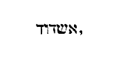
Et pertransiens evangelizabat civitatibus cunctis, donec veniret Caesaream . Caesarea Palaestinae dicitur, ubi infra domum habuisse describitur Philippus, quae usque hodie demonstratur, nec non et cubiculum quatuor filiarum ejus virginum prophetantium. Caesareae civitates duae sunt in terra repromissionis. [Col. 0254B] Una Caesarea Palaestinae in littore maris Magni, itaque quondam Pyrgos, id est, turris Stratonis dicta est, sed ab Herode rege Judeae nobilius et pulchrius, et contra vim maris multo utilius exstructa, in honorem Caesaris Augusti Caesarea cognominata est. Qui etiam templum in ea marmore albo construxit, in qua nepos ejus Herodes ab angelo percussus, Cornelius centurio baptizatus, et Agapus propheta zona Pauli ligatus est (Act. XXI) . Altera vero Caesarea Philippi, cujus Evangelium meminit esse tetrarchiam, ad radices montis Libani facta, et in honore Caesaris cognominata est. Sed et tertia Caesarea Cappadociae metropolis est, cujus Lucas ita meminit: Descendens Caesaream et salutavit Ecclesiam .
Egreditur hic Smaragdus a mentione civitatis Caesareae [Col. 0254C] in nomina regionum et locorum quae sunt in Actis apostolicis. Eadem habentur in Hieronymo .
Sed quia in hoc loco de civitatibus mentio facta est, necessarium duximus, ut de pluribus istius libri civitatibus, locis, provinciisve mentionem in hoc loco faciamus. Acheldemach est in Helia, ad australem plagam montis Sion, quae hactenus juxta Judaeorum consilium mortuos ignobiles terra tegit, alios sub divo putrefacit. Asia regio quae Minor cognominatur, undique circumdata est mari, cujus provinciae sunt, Phrygia, Pamphylia, Cilicia, Lycaonia, Galatia, et aliae multae. Arabia regio inter sinum maris Rubri, qui Persicus, et eum, qui Arabicus vocatur, habet gentes multas, Moabitas, Ammonitas, Idumaeos, Saracenos, aliasque quam plures: haec sacra interpretari [Col. 0254D] dicitur, eo quod odores creet odoriferos. Graeci εὐδαίμων , nostri Beatam, vocaverunt. Antiochia civitas est Syriae, in qua Barnabas et Paulus apostoli sunt ordinati. Est et alia in Asia, in qua idem praedicantes Judaeis dixerunt: Vobis oportebat primum loqui verbum Dei. Sed quoniam repulistis illud, ecce convertimur ad gentes (Act. XIII) . Alexandria civitas est Aegypti, in qua beati Marci evangelistae tumulus hodie in Ecclesia veneratur. Amphipolis est civitas Macedoniae. Est et altera ejusdem nominis in Syria. Apollonia civitas est Macedoniae. Est et altera in Africa, quae dicitur Pentapolis. Athenae civitas est Achaiae, philosophiae studiis dedita, cujus Pyreus portus, septemplici quondam muro communita fuisse [Col. 0255A] describitur. Areopagus Athenarum curia, quae interpretatur villa Martis, quod ipse ibi quondam, cum ducentis duodecim diis judicatus est. Appii Forum, nomen fori Romae ab Appio quondam consule tractum, a quo et via Appia vocata est. Babylon metropolis regni Chaldaeorum est, ubi eorum qui aedificabant turrim linguae divisae sunt, unde et Babylonia vocatur. Quae per quadrum sita, ab angulo usque ad angulum muri, sedecim millia passuum tenuisse, id est, simul per circuitum sexaginta quatuor millia refert Herodotus et multi alii, qui Graecas historias scripserunt. Bithynia provincia Asiae Minoris est, ipsa est et major Phrygia. Beroea civitas in Macedonia est, quae verbum Domini nobiliter accepit. Cappadocia regio in capite Syriae est, ad septentrionis [Col. 0255B] plagam. Cyrene civitas est in Libya, cujus regio Pentapolitana vocatur, eo quod quinque urbibus maxime fulgeat. Creta Graeca insula, centum quondam urbibus nobilis, unde et Centipolis dicta est. Cyprus insula mari Pamphylio, quindecim quondam oppidis insignis, famosaque divitiis, et maxime aeris. Cilicia provincia Asiae est, quam Cydnus amnis intersecat. Charra civitas Mesopotamiae est, ubi fuit Abrahae patriarchae hospitium. Corinthus civitas Achaiae maritima. Cenchrae portus Corinthiorum civitatis. Chio insula ante Bithynia, in cujus nomen Syra lingua masticem designat, eo quod ibi mastix gignatur. Damascus nobilis urbs Phoenices, quae quondam in omni Syria tenuit principatum, et nunc Saracenorum metropolis est, unde et rex eorum Nauvias [Col. 0255C] famosam in ea sibi suaeque genti basilicam dedicavit, Christianis in circuitu civibus beati Baptistae Joannis ecclesiam frequentantibus. Derben civitas est Lycaoniae provinciae, Elamitae principes Persidis ab Elam filio Sem vocati. Ephesus Amazonum opus civitas Asiae est, ubi requiescit evangelista Joannes. Phoenicia provincia est Syriae cujus partes sunt Samaria et Galilaea et aliae plurimae. Galileae duae sunt, una gentium vicina finibus Tyriorum in tribu Nephtalim, altera circa Tyberiadem et stagnum Genesareth in tribu Zabulon. Gaza civitas insignis est Palaestinae, quae apud veteres erat terra Chananaeorum. Galatia provincia Asiae, a Gallis vocabulum trahens, qui in auxilium a rege Bithyniae [Col. 0255D] vocati, regnum cum eo acta victoria diviserunt, sicque deinde Graecis admixti, primo Gallograeci, postea Galatae sunt appellati. Hadrumetus civitas est in Byzantia regione Africae. Adria nomen civitatis contra Ravennam, quae eidem mari, in cujus ripa sita est, nomen etiam Adriatici dedit. Joppe oppidum Palaestinae est maritimum in tribu Dan. Iconium civitas est Lycaoniae, est et altera in Cilicia. Libyae provinciae duae sunt, una Cyrenaica, de qua dictum est, partes Libyae, quae est circa Cyrenen. Est et alia Aethiopum. Lydda civitas Palaestinae est, in maris Magni littore sita, quae nunc Diospolis appellatur. Lycaonia provincia Asiae est. Est et alia ejusdem nominis in Phrygia minore. Lystra civitas est Lycaoniae. Lycia provincia est Asiae. Media a Madai [Col. 0256A] filio Japeth appellata. Sunt autem inter flumen Indum regiones istae, Aracusia, Parthia, Assyria, quas Scriptura sacra universas saepe Mediae nomine vocat. Macedonia provincia Graecorum est, virtutibus Alexandri Magni nobilior facta. Miletus civitas in Asia est, ubi Paulus majores Ephesiorum alloquitur. Nazareth viculus est in Galilaea, juxta montem Thabor. Unde et Dominus Jesus Nazaraeus est vocatus. Habet ecclesiam in loco, quo angelus ad beatam Mariam evangelizaturus intravit, habet et aliam, ubi Dominus est nutritus. Neapolis civitas est Cariae, quae est provincia Asiae. Pontus regio est multarum gentium juxta mare Ponticum, quod Asiam et Europam disterminat, et propter plurimam ostiorum Danubii infusionem, dulcius caeteris esse cognoscitur. Pamphylia [Col. 0256B] provincia est Asiae. Pamphus civitas est in Cypro insula. Pergen civitas est Pamphyliae provinciae. Philippis civitas est in prima parte Macedoniae. Ptolomais, civitas est Judaeae, juxta montem Carmelum. Est et altera in Pentapoli provinciae Africae. Puteolis civitas colonia Campaniae, eadem dicitur Ceadicta. Rhodus Cycladum insularum nobilissima, distat autem a portu Asiae viginti millibus passuum. Regium est civitas Siciliae maritima. Sichem civitas est Jacob, nunc Neapolis dicta, juxta sepulcrum Joseph, ubi nunc est ecclesia fabricata ex latere montis Garizim. Sina mons in regione Madian super Arabiam, qui alio nomine Horeb appellatur. Unde dicitur: Et fecerunt vitulum in Horeb , cum hoc Moses in Sina factum scripserit. Saronas, quod interpretatur campestris, [Col. 0256C] regio est, quae Petro praedicante fidei continuo fructus germinavit. Sidon urbs Phoenicis est, insignis artifex vitri. Seleucia civitas Syriae nobilis, in promontorio Syriae Antiochiae sita. Salamis civitas est in Cypro insula, nunc Constantia dicta. Samothracia insula est in Pacatico sinu. Syria quae Hebraice dicitur 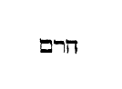
«Maria stabat ad monumentum foris plorans. Dum ergo fleret, inclinavit se et respexit in monumentum, et vidit duos angelos in albis sedentes, unum ad caput et unum ad pedes, ubi positum fuerat corpus Jesu. Dicunt ei illi: Mulier, quid ploras? Dicit eis: Quia tulerunt Dominum meum, [Col. 0257A] et nescio ubi posuerunt eum. Haec cum dixisset, conversa est retrorsum, et vidit Jesum stantem, et nesciebat quia Jesus est. Dicit ei Jesus: Mulier, quid ploras? Quem quaeris? Illa existimans quia hortulanus esset, dicit ei: Domine, si tu sustulisti eum, dicito mihi. Ubi posuisti eum, et ego eum tollam? Dicit ei Jesus: Maria. Conversa illa dicit: Rabboni, quod dicitur magister. Dicit ei Jesus: Noli me tangere, nondum enim ascendi ad Patrem meum. Vade autem ad fratres meos, et dic eis: Ascendo ad Patrem meum et Patrem vestrum, Deum meum et Deum vestrum. Venit Maria Magdalene, annuntians discipulis, quia vidi Dominum, et haec dixit mihi.»
Maria autem stabat ad monumentum foris plorans . [Col. 0257B] (Ex August.) Pensandum est hujus mulieris mentem quanta vis amoris accenderat, quae a monumento Domini etiam discipulis recedentibus, non recedebat, exquirebat quem non invenerat. Flebat inquirendo, et amoris sui igne succensa, ejus quem ablatum credidit ardebat desiderio, et oculi qui Dominum quaesierunt, et non invenerunt, lacrymis jam exundabant, amplius dolentes quod fuerat ablatus de monumento, quam quod fuerat occisus in ligno, quoniam magistri tanti, cujus eis vita subtracta fuerat, nec memoria remanebat. Unde contigit ut eum sola tunc videret quae remansit, quia nimirum virtus boni operis perseverantia est, ut voce Veritatis dicitur: Qui autem perseveraverit usque in finem, hic salvus erit (Lucae XXI) .
Dum ergo fleret, inclinavit se, et prospexit in monumentum, et vidit duos angelos in albis sedentes, unum ad caput, et unum ad pedes , etc. (Ex Greg.) Ista itaque, quae sic amabat, quae se ad monumentum, quod prospexerat, iterum inclinat, videamus quo fructu vis amoris in ea ingeminat opus inquisitionis. Sequitur: Vidit duos angelos in albis sedentes, unum ad caput, et unum ad pedes, ubi positum fuerat corpus Jesu . Quid est, quod in loco Dominici corporis duo angeli videntur, unus ad caput, atque alius ad pedes sedens? nisi quod Latina lingua, ἄγγελος nuntius dicitur, et ille ex passione sua nuntiandus erat, qui et Deus est ante saecula, et homo in fine saeculorum, quasi ad caput sedet angelus, cum per apostolum praedicatur, quia in principio erat Verbum, [Col. 0257D] et Verbum erat apud Deum, et Deus erat verbum (Joan. I) , et quasi ad pedes, sed angelus cum dicitur: Et Verbum caro factum est .
( Ex Greg .) Possumus etiam et duos angelos, duo Testamenta cognoscere, unum prius, et aliud sequens, qui videlicet angeli per locum Dominici corporis sibimet ipsis sunt conjuncti, quia nimirum utraque Testamenta, dum pari sensu incarnatum, et mortuum, ac resurrexisse Dominum nuntiant, quasi Testamentum prius ad caput, et testamentum posterius ad pedes sedet.
Dicunt ei: Mulier, quid ploras ? Quasi dixissent, non est opus mortuum plorare, quem viventem credere debes.
Dicit eis: Quia tulerunt Dominum meum , etc. Dominum suum vocans, Domini sui corpus exanime, a parte totum significans, sicut omnes confitemur Jesum Christum Filium Dei unicum Dominum nostrum, quod utique simul est, et verbum et anima et caro. Crucifixum tamen et sepultum, cum sola ejus sepulta sit caro: Et nescio , inquit, ubi posuerunt eum . Haec erat causa major doloris, quod nesciebat quo iret ad consolandum dolorem, sed prope erat hora qua tristitia ejus verteretur in gaudium.
Haec cum dixisset, conversa est retrorsum, et vidit Jesum stantem, et non sciebat quia Jesus est . Notandum quod Maria, quae adhuc de Domini resurrectione dubitabat, retrorsum conversa est ut videret Jesum, quia videlicet per eamdem dubitationem suam, quasi [Col. 0258B] terga in Domini faciem miserat, quem resurrexisse minime credebat. Sed quia amabat et dubitabat, videbat et non cognoscebat eum, quem illi amor ostenderat. Dubietas abscondebat, cujus adhuc ignorantia exprimitur, cum infertur: Et nesciebat quia Jesus esset.
Dicit ei Jesus: Mulier, quid ploras ? etc. Interrogatur doloris causa, ut augeatur desiderium, quatenus cum nominaret quem quaereret, in ardore ejus ardentius aestuaret.
Illa aestimans, quia hortulanus esset, dicit ei: Domine, si tu sustulisti eum , etc. Forsitan nec errando haec mulier erravit, quae Jesum hortulanum credidit. Annon ei spiritaliter hortulanus erat, qui in ejus pectore, per amoris sui, semina virtutum virentia [Col. 0258C] plantavit sata. Sed quid est, quod viso eo, quem hortulanum credidit, cui necdum dixerat quem quaerebat? Ait ei: Domine, si tu sustulisti eum, dicito mihi . Nemo calumnietur mulierem, quod hortulanum dixerit Dominum et Jesum magistrum, ibi enim rogabat, hic agnoscebat, ibi honorabat hominem a quo beneficium postulabat, hic recolebat doctorem, a quo discernebat humana et divina, discebat, appellabat Dominum, cujus ancilla non erat, ut perveniret ad Dominum, cujus erat. Aliter ergo dixit: Sustulerunt Dominum meum , aliter autem: Domine, si tu sustulisti eum . Ibi ex veritate, hic ex honore. Quaerebat itaque et non dicebat. Quae cum dixisset: Domine, si tu sustulisti eum . Hoc habet vis amoris, hoc agere solet in animo, ut quem semper ipse cogitat, [Col. 0258D] nullum alium credat ignorare. Recte et haec mulier, quem quaerit non dicit, et tamen dicit: Si tu sustulisti eum , quia alteri non putat esse incognitum quem ipsa continuo plangit desiderio.
Dicit ei: Maria Conversa illa dicit ei: Rabboni, quod dicitur, magister . Postquam eam communi vocabulo appellavit ex sexu, et agnitus non est, vocat ex nomine, ac si aperte dicat ei: Recognosce eum, a quo recognosceris. Perfecto quoque viro dicitur: Novi te ex nomine . Quia homo commune omnium nostrum vocabulum est, Mose vero proprium, cui recte dicitur quia ex nomine scitur, ac si aperte Dominus dicat: Non te generaliter ut caeteros, sed specialiter prae caeteris scio. Maria ergo, quia vocatur [Col. 0259A] ex nomine, recognoscit auctorem, atque eum protinus Rabboni , id est, magistrum vocat, quia et ipse erat qui quaerebatur exterius, et ipse qui eam exterius, ut quaereret, docebat.
Dicit ei Jesus: Noli me tangere, nondum enim ascendi ad Patrem meum . (Ex August.) Sic enim dictum est: Noli me tangere , ut in illa femina figuraretur Ecclesia de gentibus, quae in Christo non credidit, nisi cum ascendisset ad Patrem. Aut certe sic se credi voluit Jesus, hoc est, sic se specialiter tangi, quod ipse est et Pater unum sint. Aliter, non recte tangitur, id est, non recte creditur.
( Ex Gregor .) Jam vero ab evangelista non subditur, quid mulier fecerit, sed ex eo innuitur, quod audivit, cui dicitur: Noli me tangere, nondum enim [Col. 0259B] ascendi ad Patrem meum . In his namque verbis ostenditur, quod Maria amplecti voluit ejus vestigia, quem recognovit, sed ei magister dicit: Noli me tangere . Non quia post resurrectionem Dominus tactum renuit feminarum, cum de duabus ad sepulcrum ejus scriptum sit: Accesserunt et tenuerunt pedes ejus . Sed cur tangi non debeat, ratio quoque additur cum subinfertur: Nondum enim ascendi ad Patrem meum . In corde etenim nostro, tunc Jesus ascendit ad Patrem, cum aequalis creditur Patri. Nam quisquis eum aequalem Patri non credit, adhuc in ejus pectore ad Patrem non ascendit. Ille ergo Jesum veraciter tangit, qui Patri Filium coaeternum credit.
Vade ad fratres meos, et dic eis: Ascendo ad Patrem meum , et reliqua. Non ait Patrem nostrum; [Col. 0259C] aliter ergo meum, aliter vestrum. Natura meum, gratia vestrum, et Deum meum, et Deum vestrum. Neque hic dixit: Deum nostrum. Ergo et hic, aliter meum, aliter vestrum. Deum meum, sub quo et ego homo sum: Deum vestrum, inter quos et ipse mediator sum. Cum eum dicat et vestrum, cur non communiter dicit nostrum? sed distincte loquens indicat, quia eumdem Patrem et Deum dissimiliter habet ipse quam nos: Ascendo ad Patrem meum , videlicet per naturam, et Patrem vestrum per gratiam: ad Deum meum, quia descendi, ad Deum vestrum, quia ascendistis: quia enim et ego homo, Deus mihi est; quia vos ab errore liberati, Deus est vobis. Distincte ergo mihi Pater et Deus est, quia quem ante saecula Deum genuit, hominem in fine [Col. 0259D] saeculorum mecum creavit.
Venit Maria Magdalene annuntians discipulis , etc. Ecce humani generis culpa ibi abscinditur unde processit. Quia enim in paradiso mulier viro propinavit mortem, a sepulcro mulier viris annuntiat vitam, et dicta sui vivificatoris narrat, quae mortiferi serpentis verba narraverat, ac si humano generi, non verbis Dominus, sed rebus dicat, de qua manu vobis illatus est potus mortis, de ipsa suscipite poculum vitae.
In hoc istarum duarum fit concordia lectionum, quia locutus est angelus Mariae, locutus et Philippo. Evangelizavit Jesum Philippus eunucho, nuntiavit Maria apostolis Jesum.
«Christus semel pro peccatis nostris mortuus est, justus pro injustis, ut nos offerret Deo mortificatos quidem carne, vivificatos autem spiritu. In quo et his qui in carcere erant, spiritaliter veniens praedicavit. Qui increduli fuerant aliquando, quando exspectabant Dei patientiam in diebus Noe, cum fabricaretur arca, in qua pauci, id est, octo animae salvae factae sunt per aquam. Quod et vos nunc similis formae salvos facit baptisma, non carnis depositio sordium, sed conscientiae bonae interrogatio in Deum, per resurrectionem Jesu Christi, qui est in dextra Dei.»
Christus semel pro peccatis nostris mortuus est , etc. [Col. 0260B] (Ex Beda.) Qui ergo justus patitur, Christum imitatur; qui in flagellis corrigitur, latronem, qui in cruce Christum cognovit, et post crucem paradisum cum Christo intravit. Qui nec inter flagella desistit a culpis, sinistrum imitatur latronem, qui propter peccata ascendit in crucem, et post crucem ruit in tartarum. Ideo autem Christum semel mortuum esse commemorat, ut nobis quoque in memoriam revocet, quia temporaneis nostris passionibus merces reddetur aeterna.
Ut nos offerret Deo, mortificatos quidem carne , etc. De hac mortificatione carnis, et vivificatione spiritus, quam habent hi qui pro Domino per patientiam laborant. Dicit et apostolus Paulus: Et si exterior homo noster corrumpitur, sed tamen is qui intus est [Col. 0260C] renovatur de die in diem (II Cor. IV) . Offert ergo nos Deo Patri Christus, cum post mortificationem carnis pro illo immolari gaudemus, id est, vitam nostram laudabilem in conspectu Patris ostendit. Vel certe offert nos Deo, cum absolutos carne, in aeternum nos regnum introducit. Sane hoc quod dicitur: Vivificatos autem spiritu , sanctus Athanasius Alexandriae pontifex, non ad hominis spiritum, qui mortificata carne melius vivificatur, dicente Propheta de Domino: Ut vivificet spiritum humilium, et vivificet cor contritum, sed ad gratiam potius refert Spiritus sancti, qui mortificantibus carnem suam vitam tribuit sempiternam. Utitur enim et hoc testimonio contra Arianos, qui aequalitati sanctae Trinitatis contradicunt, astruensque individuam divinae operationis [Col. 0260D] unitatem. Vivificet Pater, vivificet Filius, vivificet Spiritus sanctus. Proinde licet et filius, quia scriptum est: Sicut enim suscitat Pater mortuos et vivificat, sic et Filius quos vult vivificat, Spiritus vero sanctus et hoc testimonio declaratur, quo dicitur de Filio, ut nos offerret Deo, mortificatos quidem carne, vivificatos autem spiritu . Ideoque quorum una operatio est, horum esse dispar essentia vel substantia non possit.
In quo et his qui in carcere erant, spiritaliter veniens praedicavit , etc. Qui nostris temporibus carne veniens, iter vitae mundo praedicavit, ipse etiam ante diluvium eis qui tunc increduli erant et carnaliter vixerant, spiritu veniens praedicavit. Ipse enim per Spiritum sanctum erat in Noe, caeterisque, qui tunc [Col. 0261A] fuere, sanctis, et per eorum bonam conversationem, pravis illius aevi hominibus, ut ad meliora converterentur, praedicavit. Conclusos namque in carne dicit, carnalibus desideriis aggravatos. Unde de illis Scriptura ait: quod omnis caro corruperat viam suam (Gen. VI) . Quod autem dicit, in quo , significat in eo, quod praemiserat, ut nos offerret Deo, quod et tunc, si qui ad praedicationem Domini, quam per vitam fidelium praetendebat, credere voluissent, eos offerre Deo Patri gaudebat. Si qui autem detrahebant de bonis, tanquam de malefactoribus, hi veniente diluvio confundebantur. Nam et de utroque potest intelligi, quod ait: In quo , id est, in quo et eis qui in carne conclusi erant, spiritu, id est, spiritaliter veniens praedicavit, ut post eamdem praedicationem suam [Col. 0261B] et credentibus corona laudis, et his qui in infidelitate persisterent, confusio nasceretur. Quidam codices habent: In quo et his qui in carne erant, spiritu veniens praedicavit, quod ad eamdem pravorum atque incredulorum intentionem respicit, qui cordis tenebris obscuratum habet sensum, merito etiam in hac vita in carcere conclusi esse dicuntur, in quo videlicet carcere, in interioribus adhuc tenebris, hoc est, caecitate mentis, et operibus injustis gravantur, donec carne soluti, in tenebras exteriores etiam in carcerem projiciantur aeternae damnationis, de quo Dominus in Evangelio: Et judex, inquit, tradet te ministro, et in carcerem mitteris (Matth. V) . Quamvis etiam sancti in hac vita, se in carcere positos, cum gaudium supernae patriae [Col. 0261C] sitiunt, merito proclamant, juxta illud Psalmistae: Educ de carcere animam, ad confitendum nomini tuo (Psal. CXLI) . Distat namque multum inter utrumque carcerem. Siquidem reprobi in carcere sunt peccatorum et ignorantiae. Justi vero in carcere licet tribulationum positi, luce semper justitiae, dilatato in Deum corde fruuntur, quod significaverunt apostoli Paulus et Silas, cum media nocte in initio carceris horrore, vincti licet et flagellati, hymnum Deo laudis laetissima voce canebant. Quidam hunc locum ita interpretatus est, quod consolationem illam de qua dicit apostolis Dominus: Multi prophetae et justi cupierunt videre quae vos videtis et non viderunt, et audire quae vos auditis, et non audierunt (Matth. XII) , de qua et Psalmista: [Col. 0261D] defecerunt , inquit, oculi mei in eloquium tuum, dicentes: Quando consolaberis me (Psal. CXVIII) ? Sancti quiescentes in inferno desideraverunt, quod descendente in inferna Domino, etiam his qui in carcere erant, et increduli quondam fuerunt in diebus Noe, consolatio vel exhortatio praedicata fuerit. Haec ille dixerit. Sed catholica fides habet, quod descendens ad inferna Dominus, non incredulos inde, sed fideles solummodo suos educens, ad coelestia secum regna perduxerit, neque exutis corpore animabus, et inferorum carcere damnatis, salutem quam ante mortem dilexerant, praedicaverit, sed carcere scelerum inclusis in hac vita, vel per se ipsum, vel per suorum exempla, sive [Col. 0262A] verba fidelium quotidie viam vitae demonstrat, de quibus dicit:
Qui increduli fuerant aliquando, exspectabant Dei patientiam . In diebus Noe cum fabricaretur arca, nam et ipsa Dei patientia praedicatio ejus erat, cum Noe centum annos arcae operibus insistens, quid mundo futurum esset, quotidiani operis executione monstrabat, quia Paulus ait: An ignoras quia patientia Dei ad poenitentiam te adducit, etc. Alia translatio hunc locum ita habet: Christus semel pro peccatis nostris mortuus est, justus pro injustis, ut nos adducat ad Deum, mortificatos corpore, sed vivificatos in spiritu, in quo spiritu et eis qui in carne erant praedicavit, qui quondam non crediderant in diebus illis, cum exspectaret patientia.
In diebus Noe, cum fabricaretur arca, in qua pauci, id est, octo animae salvae factae sunt per aquam, quod et vos nunc similis formae salvos facit baptisma . Formam baptismi assimilatam dicit arcae, et aquis diluvii, et recte omnino, quod et ipsa fabricatio arcae de lignis levigatis, constructionem signat Ecclesiae, quae fit de collectione animarum fidelium per architectos verbi. Et quod pereunte orbe toto, pauci, id est, octo animae salvae factae sunt per aquam, significat quod ad comparationem pereuntium gentilium, Judaeorum, haereticorum, et falsorum fidelium, multo brevior est numerus electorum. Unde de angusta porta et arcta via quae ducit ad vitam dicitur: Et pauci sunt qui inveniunt eam (Matth. VII) . Et iterum: Nolite timere, pusillus grex, quia complacuit Patri [Col. 0262C] vestro, dare vobis regnum (Luc. XII) .
Non carnis depositio sordium, sed conscientiae bonae interrogatio in Deum . Ubi est enim conscientia bona, nisi ubi est et fides non ficta? Docet namque apostolus Paulus, quod finis praecepti est charitas de corde puro, et conscientia bona, et fide non ficta (I Tim. I) . Quod ergo aqua diluvii non salvavit extra arcam positos, sed occidit sine dubio, praefigurabat omnem haereticum, licet habentem baptismatis sacramentum in aliis, sed ipsis aquis ad inferna mergendum, quibus arca sublevatur ad coelum. Ipse quoque octonarius numerus animarum, quae salvae factae sunt per aquam, significat quia sancta Ecclesia in sacramentum Dominicae resurrectionis baptismi lavacrum percipit, ut sicut ipse resurrexit a mortuis per gloriam [Col. 0262D] Patris , ita et nos expurgati a peccatis per aquam regenerationis, in novitate vitae ambulemus (Rom. VI) . Octava namque dies, hoc est, post septimam sabbati Dominus a mortuis resurgens, et exemplum nobis futurae resurrectionis, et mysterium novae conversationis, qua in terris positi, coelestem vitam ageremus ostendit, quam etiam ipse Petrus exponendo subjungit, dicens:
Per resurrectionem Domini Jesu Christi, qui est in dextra Dei. Deglutiens mortem , ut vitae aeternae participes efficeremur, profectus in coelum. Sicut enim ipse resurgens a mortuis, ascendens in coelum, et sedet a dextris Dei, sic etiam nobis per baptisma viam salutis, ac regni coelestis introitum patere signavit. [Col. 0263A] Bene autem ait, deglutiens mortem . Quod enim deglutimus, agimus ut virtute nostri corporis assumptum nusquam pareat. Et deglutivit mortem Dominus, quam resurgens a mortuis ita funditus consumpsit, ut nihil contra se ultra per attactum alicujus corruptionis valeret, ac manente specie veri corporis, abesset prorsus labes omnis priscae fragilitatis. Quod ipsum et nobis in fine promittitur futurum, dicente apostolo, cum de nostra resurrectione loqueretur: Tunc fiet sermo qui scriptus est: Absorpta est mors in victoria (I Cor. XV) . Bene absorpta, quia cum et nos vitae aeternae participes fuerimus effecti, ita nimirum virtus corporalis immortalitatis, omne praeteritae corruptionis naevum tollet, quomodo solet flamma ignis immissam sibi [Col. 0263B] aquae guttam ardoris sui consumere virtute.
Christus semel pro peccatis nostris mortuus est. Semel autem dixit, quia Christus surgens a mortuis jam non moritur, et mors illi ultra non dominabitur (Rom. VI) .
Justus . Illi enim Psalmista dicit: Justus es, Domine, et rectum judicium tuum (Psal. CXVIII) . Et Daniel ait: Et tibi, Domine, justitia, nobis autem confusio faciei (Dan. IX) .
Pro injustis . De nobis enim Daniel ait: Peccavimus, injuste egimus, iniquitatem fecimus (Dan. III) .
Ut nos offerret Deo, mortificatos quidem carne, vivificatos autem spiritu . (Ex Aug.) Mortificatos carne dicit: id est, desideria carnalia non habentes, [Col. 0263C] ad quam mortificationem nos Paulus adhortatur dicens: Mortificate membra vestra, quae sunt super terram, fornicationem (Col. II) , et omnia vitia. Et illud: Si spiritu facta carnis mortificaveritis, vivetis (Rom. VIII) . Nisi enim prius peccato moriamur, non possumus per justitiam vivere Deo. Quod autem dicit vivificatos spiritu , intelligitur vivificatos in anima, anima enim spiritus intelligitur. Sive mortificatio carnis, et vivificatio spiritus, in baptismo fieri intelligitur. Morte enim Christi baptizamur. In illa sine dubio morte, qua peccato mortuus est semel, ut et nos separemur a peccato, et vivamus Deo.
( Ex Cassiod .) Aliter mortificatos carne , ne litteram legis carnaliter intelligamus. Vivificatos autem spiritu , id est, spiritualiter sensum legis intelligentes [Col. 0263D] vivamus. Non enim idcirco nos Christus abstraxit a lege peccati, ut vetustati litterae serviamus, id est, ut circumcisionem recipiamus, et sabbata, vel caetera, quae vetusta legis littera continet. Sed ut legi Dei in spiritus novitate serviamus, id est, ex omnibus quae in ea scripta sunt, spiritalem sensum, Spiritu donante, capiamus.
De Christo dictum est: Mortificatus carne, vivificatus spiritu . Sic de homine dici potest: Tabefactus carne, justificatus, vivificatus spiritu.
In quo . Subauditur, in quo spiritu, in illo scilicet de quo superius dicit: Vivificatos autem spiritu .
Et his qui in carcere erant . Id est, in arca, vel in corporis carcere clausi.
Spiritaliter veniens praedicavit . Iisdem scilicet, qui incarnatus de Spiritu sancto et Maria virgine, nobis postea veniens visibilis, praedicavit. Ipse tunc illis spirando spiritaliter praedicabat. Dicebat enim ad Noe: Non permanebit spiritus meus in homine in aeternum, quia caro est . Et illud: Delebo hominem quem creavi a facie terrae, ab homine usque ad animantia, a reptili usque ad volucres coeli, poenitet enim me fecisse eos . Item dixit Dominus ad Noe: Finis universae carnis venit coram me. Repleta est terra iniquitate, et ego disperdam eos cum terra. Fac tibi arcam de lignis levigatis , etc. (Gen. VI) .
Qui increduli fuerant aliquando, exspectabant Domini patientiam . Id est, qui ante increduli erant, audientes Noe praedicantem, ea quae a Domino [Col. 0264B] audiens, acceperat, et videntes arcae fabricam, per centum annorum, protendere tempus crediderunt, exspectantes Domini patientiam, et salvi facti sunt in arca.
In qua pauci, id est, octo animae salvae factae sunt per aquam . Id est quatuor viri, Noe, Sem, Cham, et Japheth, et quatuor uxores eorum, id est, Puarfara, Parfia, Catafluia, Fluia.
( Ex Isid .) Noe vero, qui requies interpretatur, Christum significat, qui dicit: Discite a me, quia mitis sum, et humilis corde, et invenietis requiem animabus vestris . Solus invenitur justus Noe in illa gente, cui septem homines donantur propter justitiam suam. Solus justus est Christus, cui septem Ecclesiae, propter septemplicem spiritum illuminantem, [Col. 0264C] in unam Ecclesiam, quasi in unam arcam condantur. Quod arcam instruxit Noe de lignis non putrescentibus, Ecclesiam significat, quae construitur a Christo de hominibus in aeternum victuris. Arca enim Ecclesiam demonstrat, quae natat in fluctibus mundi hujus. Sicut enim tunc Noe cum suis per aquam et lignum salvatus est, sic et nunc familia Christi per baptismum et crucis passionem salvantur. Unde et hic subditur:
Quod et vos nunc similis formae salvos facit baptisma . Quia sicut tunc aqua eos qui in arca erant salvavit, ita et nunc eos, qui in Ecclesiae unitate permanent, delendo peccata baptismus conservat. Et sicut tunc qui extra arcam erant perierunt, ita et nunc, qui extra Ecclesiam sunt peribunt.
Non carnis depositio sordium . Id est, non baptisma, quod sordes deponit carnis, sed quod maculas lavat mentis. Baptisma enim ablutio interpretatur vel tinctio.
Sed conscientiae bonae interrogatio in Deum . Interrogatio enim sacerdotis est: Credis in Deum Patrem omnipotentem, et in Jesum Christum Filium ejus, et in Spiritum sanctum? Responsio autem bonae et simplicis conscientiae est: Credo, quae responsio hominem salvat, et ab aeterno interitu liberat.
Per resurrectionem Domini nostri Jesu Christi, qui est in dextera Dei . Ut illud: Resurrexit a mortuis, ascendit in coelum, sedet a dextram Dei, quae sessio aequalitatem potestatis ejus cum Patre significat.
«Undecim discipuli abierunt in Galilaeam in montem ubi constituerat illis Jesus. Et videntes eum, adoraverunt, quidam autem dubitaverunt. Et accedens Jesus, locutus est illis, dicens: Data est mihi omnis potestas in coelo et in terra. Euntes docete omnes gentes, baptizantes eos, in nomine patris et filii et spiritus sancti, docentes eos servare omnia quaecunque mandavi vobis. Et ecce ego vobiscum sum omnibus diebus, usque ad consummationem saeculi.»
Undecim discipuli abierunt in Galilaeam in montem ubi constituerat illis Jesus . (Ex Hieron.) Post resurrectionem enim Jesus in Galilaea monte conspicitur, ibique adoratur, licet quidam dubitent, sed dubitatio [Col. 0265B] eorum nostram auget fidem, dum manifestius ostenditur Thomae, et latus lancea vulneratum, et manus fixas demonstrat clavis.
Et accedens Jesus, locutus est dicens: Data est mihi omnis potestas , etc. Data est ei, qui paulo ante crucifixus est, qui sepultus in tumulo, qui mortuus jacuerat, qui postea resurrexerat. In coelo autem et in terra potestas data est, ut qui antea regnabat in coelo, per fidem credentium regnet in terris.
Euntes ergo docete omnes gentes, baptizantes eos in nomine Patris et Filii et Spiritus sancti . Primum docent omnes gentes, deinde doctos intingunt aqua; non enim potest fieri ut corpus baptismi recipiat sacramentum, nisi antea anima fidei susceperit veritatem. Baptizantur autem, in nomine Patris, et Filii, [Col. 0265C] et Spiritus sancti, ut quorum est una divinitas, sit una largitio, nomenque Trinitatis unus Deus est.
Docentes eos servare omnia quaecunque mandavi vobis . Ordo praecipuus. Jubet apostolis ut primum docerent universas gentes, deinde fidei tingerent sacramento, et post fidem ac baptisma, quae essent observanda praeciperent. Ac ne putemus levia esse quae jusserunt, et pauca addit: Omnia quaecunque mandavi vobis , ut qui crediderint, qui in Trinitate fuerint baptizati, omnia faciant quae praecepta sunt.
Ecce ego vobiscum sum omnibus diebus usque ad consummationem saeculi . Qui usque ad consummationem saeculi cum discipulis suis se futurum esse promittit, et illos ostendit semper esse victuros, et se nunquam a credentibus recessurum. Qui autem [Col. 0265D] usque ad consummationem mundi sui praesentiam pollicetur, non ignorat eum diem, in qua die se scit futurum cum apostolis.
( Ex Chrys .) Quomodo dixit: Ecce ego vobiscum sum usque ad consummationem saeculi . Et iterum: Haec sunt , inquit, verba mea, cum adhuc essem vobiscum , hoc est, cum adhuc mortalis essem, sicut et vos. Cum illis enim erat praesentia corporis, non cum illis erat conditione mortalitatis, et modo nobiscum est per praesentiam majestatis, et nobiscum non est praesentia corporis.
Istarum duarum in sacrosancto baptismate fit concordia lectionum. Apostolus enim dicit: Et vos similis [Col. 0266A] formae salvos facit baptisma . Evangelium ait: Docete omnes gentes, baptizantes eos in nomine Patris et Filii et Spiritus sancti; qui crediderit et baptizatus fuerit, salvus erit (Matth. ultimo ).
«Deponentes omnem malitiam et omnem dolum, et simulationes et invidias, et omnes detractiones, sicut modo geniti infantes, rationabiles, sine dolo, lac concupiscite, ut in eo crescatis in salutem, si tamen gustastis quoniam dulcis est Dominus, ad quem accedentes lapidem vivum, ab hominibus reprobatum, a Deo autem electum et honorificatum, et ipsi tanquam lapides vivi superaedificamini [Col. 0266B] in domos spiritales, hostias acceptabiles Deo per Jesum Christum. Propter quod continet Scriptura: Ecce ponam in Sion lapidem summum, angularem, electum, pretiosum, et omnis qui crediderit in eum non confundetur. Vobis igitur honor credentibus, non credentibus autem lapis quem reprobaverunt aedificantes, hic factus est in caput anguli, et lapis offensionis, et petra scandali, his qui offendunt verbo, nec credunt in quo et positi sunt. Vos autem genus electum regale sacerdotium, gens sancta, populus acquisitionis, ut virtutes annuntietis ejus qui de tenebris vos vocavit in admirabile lumen suum, qui aliquando non populus, nunc autem populus Dei, qui non consecuti misericordiam, nunc autem misericordiam [Col. 0266C] consecuti.»
Deponentes omnem malitiam et omnem dolum, et simulationes, et invidias, et omnes detractiones, sicut modo geniti infantes, rationabiles, sine dolo, lac concupiscite , etc. (Ex Beda.) Qui renati estis, inquit, nuper, et filii Dei per baptisma facti, tales modo estote per studium bonae conversationis, quales sunt recens editi infantes, per naturam innoxiae aetatis, ignari malitiae et omnis doli, simulare, invidere, detrahere, aliisque hujusmodi vitiis mancipari omnimodis ignorantes. Qui sicut lac in aeternum naturaliter desiderant, ut ad salutem crescere atque ad panem comedendum pervenire valeant. Ita et vos simplicia rudimenta fidei, primo de Ecclesiae matris uberibus quaerite, hoc est, de utriusque Testamenti [Col. 0266D] doctoribus, qui divina eloquia, vel scripsere, vel etiam viva voce vobis praedicant, ut bene discendo, perveniatis ad refectionem panis vivi qui de coelo descendit, hoc est, per sacramenta Dominicae incarnationis, quibus renati estis, et quibus nutrimini, perveniatis ad contemplationem divinae majestatis: Rationabiles , inquit, et sine dolo lac concupiscite, ut in eo crescatis in salutem (I Petr. II) . Praecepto concupiscendi lac verbi, tangit eos qui ad audiendas lectiones sacras inviti et fastidiosi adveniunt, ignari illius sitis et esuriei, de qua Dominus ait: Beati qui esuriunt et sitiunt justitiam (Matth. V) . Ideoque tardius ad perfectum salutis incrementum pervenientes, quo possint solido verbi [Col. 0267A] cibo refici, id est, arcana cognoscere divina, vel majora facere bona.
Si tamen gustastis quoniam dulcis est Dominus . Hoc, inquit, pacto, dimissa atque emundata cordis vestri malitia et spurcitia, spiritalem Christi alimoniam concupiscite, si divinae dulcedinis quanta sit multitudo sapitis. Nam qui nihil de superna suavitate gustat animo, non est mirum, si hunc terrestribus illecebris sordidare non evitat. Bene autem Psalmista gustare monet, quam dulcis sit Dominus (Psal. XXXIII) , quia sunt nonnulli qui non id de Deo sentiunt, quod dulce in terris sapiat, sed quod excussum exterius sonet. Qui et si secreta quaedam intelligendo percipiunt, eorum dulcedinem experiri non possunt. Et si noverunt, quomodo sunt ignorant, [Col. 0267B] ut dixi, quomodo sapiunt. Et quoniam in ipso Psalmo, de quo hunc versiculum assumpsit praemissum est: Accedite ad eum, et illuminamini , recte beatus Petrus subdit, dicens:
Ad quem accedentes lapidem vivum, ab hominibus quidem reprobatum, a Deo autem electum et honorificatum . Et hoc de lapide testimoniam sumit ex Psalmo, ubi scriptum est: Lapidem quem reprobaverunt aedificantes, hic factus est in caput anguli (Psal. CXVII) . Quod ne quis Judaico sensu putaret de materiali lapide a propheta cantatum, qui in aedificatione terrenae cujuslibet domus, contra hominum dispositionem divino judicio non poneretur, consulte addit, vivum: Ad quem accedentes , inquiens, lapidem vivum , ut de Christo significet, qui recte [Col. 0267C] lapis appellatus est, qui in carne veniens, aedificationi sanctae Ecclesiae, quo hanc confirmaret, sese inserere dignatus est. Vivus autem qui dicere potuit: Ego sum via, veritas et vita (Joan. XIV) . Qui ab hominibus reprobatus est, cum dicerent: Nos non habemus regem, nisi Caesarem (Joan. XIX) . A Deo autem electus, cum ipse ait: Ego autem constitutus sum rex ab eo , etc. (Psal. II) . Et honorificatus est, quoniam post mortem crucis Deus illum exaltavit et donarit illi nomen quod est super omne nomen , etc. (Philip. II) .
Et ipsi tanquam lapides vivi superaedificamini in domos spiritales . Superaedificamini, illos dicit, quia sine Domino Jesu Christo, lapide scilicet vivo, nulla spiritalis aedificatio stare potest. Fundamentum enim [Col. 0267D] aliud nemo potest ponere praeter ipsum, cujus participatione, fideles lapides vivi efficiuntur, qui per infidelitatem lapides mortui fuerant, duri scilicet et insensibiles, quibus merito diceretur: Auferam a vobis cor lapideum, et dabo vobis cor carneum . Sed tanquam lapides vivi, ad spirituale aedificium aptantur, qui per discretionem eruditi doctoris, amputatis cogitationibus superfluis, velut ictu quadrantur securis. Et sicut ordines lapidum in pariete portantur alii ab aliis, ita portantur fideles quique a praecedentibus in Ecclesia justis. Portant et ipsi sequentes per doctrinam et tolerantiam, usque ad ultimum justum. Qui cum a prioribus portetur, quem portare debeat ipse sequentem non habebit. Qui autem omne [Col. 0268A] aedificium portat, et ipse a nemine portatur, Dominus est Christus, unde et lapis a propheta pretiosus vocatur, in fundamento fundatus. Superaedificamini , inquit, domos spiritales . Ita illos fieri domos spiritales dicit, cum sit una domus Christi in angelis electis et hominibus collecta, quomodo, cum sit una Ecclesia catholica, toto orbe diffusa, saepe pluraliter appellantur Ecclesiae, propter multifaria scilicet fidelium conventicula, variis tribubus, populis, et linguis discreta: una dicitur, sicut in Apocalypsi Joannis dicitur: Ipse ego Jesus misi angelum meum, testificari vobis in Ecclesiis . Nec praetereundum quod quidam codices habent numero singulari: Superaedificamini domus spiritalis . Alii rursum: Aedificamini in domum spiritalem , in quo nimirum unitas ipsa totius [Col. 0268B] sanctae Ecclesiae aptius commendatur. Cum autem dixisset, superaedificamini domos spiritales, sive domus spiritalis, addit:
Sacerdotium sanctum . Id est, sacerdotium sanctum vos ipsi, existentes super fundamentum Christi. Omnem ergo Ecclesiam, sacerdotium sanctum appellat, quod sola domus Aaron in lege nomen et officium habuit. Quia nimirum omnes summi sacerdotis membra sumus, cuncti oleo laetitiae signamur, universis congruit quod subdit.
Offerre spiritales hostias per Jesum Christum . Spiritales autem hostias opera nostra, eleemosynae et preces dicuntur, ad distinctionem carnalium intellige victimarum. Quod autem in conclusione dicitur, per Jesum Christum, ad cuncta quae praemiserat pertinet. [Col. 0268C] Quoniam per ipsius gratiam, et superaedificamur in illo super architectos sapientes, hoc est, ministros Novi Testamenti, et domus spiritualis efficimur per spiritum ejus, contra pluvias, ventos, flumina tentationum muniti, et sacerdotio sancto participare, et boni aliquid, acceptabile Deo gerere, non nisi per ipsum valemus. Sicut enim palmes non potest ferre fructum a semetipso, nisi manserit in vite, sic nec vos, inquit, nisi in me manseritis.
Propter quod continet Scriptura: Ecce pono in Sion lapidem summum, angularem , etc. Hoc testimonium de Isaia ponit (Isa. XXVIII) ad confirmandum hoc quod promiserat, ad quem accedentes lapidem vivum, astruens et affirmans Dominum salvatorem propter firmitatem suam, lapidem a [Col. 0268D] prophetis vocari, et quod addidit:
Et omnis qui credit in eum , etc. Propter hoc quod dixerat: Et vos tanquam lapides vivi superaedificamini . Pulchre autem convenit huic prophetiae Apostoli sermo, quo dicitur: Accedentes ad lapidem vivum , vel credentes in eo non confundi, illius psalmi versiculo, in quo cum dictum esset: Accedite ad eum, et illuminamini , continuo subjunctum est: Et vultus vestri non erubescent . Cui simile est quod Joannes ait: Et nunc, filioli, manete in eo, ut cum apparuerit, habeamus fiduciam, et non confundamur ab eo in adventu ejus (II Joan. II) .
Vobis igitur honor credentibus . Ille nimirum honor, ut non confundamini ab eo in adventu ejus, [Col. 0269A] sed sicut ipse ait: Si quis mihi ministraverit, honorificabit eum Pater meus (Joan. XIII) .
Non credentibus autem, lapis quem reprobaverunt aedificantes . Ut sicut illum reprobaverunt cum aedificarent actus suos, nolentes eum in fundamento cordis sui ponere, ita et ipsi reprobentur ab eo in adventu ejus, nolente illo tunc eos qui se reprobaverunt in aedificatione accipere domus suae, quae est in coelis. Et haec distinctio honoris credentium, non credentium autem reprobatio hucusque pertingit; hinc item de credentibus infert:
Hic factus est in caput anguli . Quia videlicet, sicut lapis angularis duos parietes conjungit, ita Dominus Judaeorum plebem in una sibi societate fidei et gentium copulavit, ac mox de infidelibus addit:
Et lapis offensionis, et petra scandali . Hinc et Paulus: Nos , inquit, praedicavimus Christum crucifixum, Judaeis quidem scandalum, gentibus autem stultitiam (II Cor. I) .
His qui offendunt in verbo, nec credunt, in quo et positi sunt . Offendunt ergo qui eo ipso quod verbum Dei audire eos contingit, offendunt animo dum nolunt credere quod audiunt, quorum stultitiam exaggerando subjecit, nec credunt in quo et positi sunt. Qui in hoc positi, id est, in hoc per naturam homines facti sunt, ut credant Deo, et ejus obtemperent voluntati, Salomone attestante, qui ait: Deum time et mandata ejus observa, hoc est enim omnis homo (Eccle. XII) , in hoc naturaliter factus est homo, ut Deum timens, ejus mandatis obsecundet. [Col. 0269C] Quidam codices habent: In quo et positi sunt, quod intelligitur juxta hoc quod Paulus de Domino loquens ait: In ipso enim vivimus et movemur et sumus (Act. XVII) .
Vos autem genus electum, regale sacerdotium, gens sancta, populus acquisitionis . Hoc est laudis testimonium quondam antiquo Dei populo per Mosen datum, quod nunc recte gentibus dat apostolus Petrus, qui videlicet in Christum crediderunt, qui velut lapis angularis eam, quam Israel in se habuerat, salutem gentes adunavit, quos genus electum vocat propter fidem ut distinguat ab eis qui lapidem vivum reprobando facti sunt ipsi reprobi. Regale autem sacerdotium , qui illius corpori sunt uniti, qui rex summus et sacerdos verus est, regnum suis tribuens, [Col. 0269D] ut rex et pontifex eorum peccata sui sanguinis hostia mundans. Regale sacerdotium eos nominat, et ut regnum sperare perpetuum, et hostias immaculatae conversationis Deo semper offerre meminerint. Gens quoque sancta et populus acquisitionis vocantur, juxta id quod apostolus Paulus prophetiae exponens sententiam, dicentis: Justus autem meus ex fide vivit (Habac. II) . Quod si subtraxerit se, non placebit animae meae. Nos autem , inquit, non sumus subtractionis in perditionem, sed fidei in acquisitionem animae . (Heb. X) , et in Actibus Apostolorum: Vos Spiritus sanctus posuit episcopos regere Ecclesiam Domini, quam acquisivit sanguine suo (Act. XX) . Populus ergo acquisitionis facti sumus in [Col. 0270A] sanguine nostri Redemptoris, quod erat quondam populus Israel redemptus sanguine agni de Aegypto. Unde et in sequenti quoque versiculo mysticae veteris recordatur historiae, et hanc novo Dei populo spiritualiter docet implendum dicens:
Ut virtutes annuntietis ejus qui de tenebris vos vocavit in admirabile lumen suum . Sicut enim hi qui de Aegyptiaca servitute liberati sunt per Mosen, carmen triumphale post transitum maris Rubri et demersum Pharaonis exercitum Domino cantarunt, ita ei nos oportet post acceptam in baptismo remissionem peccatorum, dignas beneficiis coelestibus rependere gratias. Nam quod Aegyptii, non solum quia populum Dei affligebant, verum etiam, quia tenebrae vel tribulationes interpretantur, aperte [Col. 0270B] persequentia nos peccata, sed in baptismate significant deleta. Liberatio quoque filiorum Israel, et ad promissam olim patriam perductio, congruit mysterio nostrae redemptionis, per quam ad lucem supernae mansionis illustrante nos, ac ducente Christi gratia tendimus, cujus lucem gratiae, etiam illa nubis et ignis columna monstravit, quae eos in toto itinere illo a tenebris defendit noctium, et ad promissas patriae sedes inenarrabili calle perduxit.
Qui aliquando non populus, nunc autem populus Dei, qui non consecuti misericordiam, nunc autem misericordiam consecuti . Indicat aperte per hos versiculos, quod his qui de gentibus ad fidem venerant, hanc scripsit Epistolam, qui quondam alienati a conversatione populi Dei, tunc per gratiam fidei populo [Col. 0270C] sunt ejus uniti, et misericordiam quam sperando non noverant adepti. Assumit autem eos de propheta Osee, qui de vocatione gentium praecinens ait: Vocabo, inquit, non plebem meam, plebem meam, et non misericordiam consecutam, jam misericordiam consecutam, et erit in loco, ubi dictum est eis: Non plebs mea vos, ibi vocabuntur filii Dei vivi (Oseae II) .
Deponentes omnem malitiam . Dicendo omnem malitiam, cunctorum criminum matrem, uno verbo conclusit.
Et omnem dolum . Quamvis dolus maxime ad decipiendum pertineat proximum, ille tamen omne a se dolum deponit, qui se veraciter peccatorem [Col. 0270D] cognoscit, et quod retinet corde, hoc confitetur et ore.
Et simulationem . Simulatio, quae alio nomine vocatur fictio, est in homine, quando aliud tegit in corde, aliud monstrat in opere, bona ostendit superficie, et mala tenet in pectore.
Et invidiam . Invidit diabolus Adae beatitudini et felicitati, et ideo peccare illi suasit, et sic per invidiam diaboli mors in orbem terrarum introivit.
Et omnes detractiones . Detractio et blasphemia est, et suspiciosa reprehensio, et malorum operum existimatio, et omnis omnino venenata et absens de fratre locutio. Aliter: Malitia hoc in loco intelligitur [Col. 0271A] gentium paganorum; dolus gentis Judaeorum; simulationes haereticorum; invidia principum Judaeorum; detractiones scribarum et Pharisaeorum.
Sicut modo geniti infantes . Ad exemplum scilicet illius parvuli, de quo Dominus ait: Nisi quis fuerit ut parvulus hic, non intrabit in regnum coelorum (Matth. XVIII) . Et de quibus ait: Sinite parvulos venire ad me, talium est enim regnum coelorum . Hanc enim sanctam, puram et innocentem infantiam, per baptismi gratiam, casta mater gignit Ecclesia.
Rationabiles sine dolo . Id est, sensu rationabiles et veri, et sine dolo fallaciae, estote ut parvuli.
Lac concupiscite . Hoc est, larga ubera aeternae sapientiae [Col. 0271B] sugite, et Evangeliorum et apostolorum doctrinam concupiscentes implete.
Ut in eo crescatis in salutem . Id est, Novi ac Veteris Testamenti verbum sinceriter sumite, ut ad cum panem qui de coelo descendit pervenire valeatis, crescentes in salutem.
Quoniam dulcis est Dominus . (Ex Cassiod.) Gustus iste non pertinet ad oris palatum, sed ad animae suavissimum sensum. Dulcis enim est eis, qui bona ipsius spiritualiter imbiberunt, et devotis sensibus de ipsius munere gustaverunt.
Ad quem accedentes lapidem vivum . Hic lapis Christus intelligitur, de quo Daniel ait: Vidi lapidem abscissum de monte sine manibus, qui omnem terram implevit (Dan. II) . Et Psalmus: Lapidem quem [Col. 0271C] reprobaverunt aedificantes, hic factus est in caput anguli , qui vivus dicitur, qui tertia die resurrexit, vivus a mortuis, qui jam non moritur, et mors illi ultra non dominabitur. Ad quem, omnis qui recte credit et juste vivit, accedit.
Ab hominibus quidem reprobatum . A Judaeis scilicet, qui clamaverunt Pilato: Tolle, crucifige talem: Nos non habemus regem, nisi Caesarem (Joan. XIX) .
A Deo autem electum . Sicut Deus pater, de eo per Isaiam ait: Ecce servus meus, electus meus , (Isai. LXII) . Et in Evangelio: Hic est Filius meus dilectus (Matth. XVII) .
Et honorificatum . Honorificatus est Dominus noster Jesus Christus gloria resurrectionis, et in eaelum ascensionis in dextera patris sessione, et omnium [Col. 0271D] potestatum acceptione, sicut ille ait: Data est mihi omnis potestas in coelo et in terra (Matth. ult .). Quia datum est illi nomen quod est super omne nomen, ut in nomine ejus omne genu flectatur, coelestium, terrestrium et infernorum, et omnis lingua confiteatur quia Dominus Jesus Christus in gloria est Dei Patris .
Et ipsi tanquam lapides vivi . Utpote in Christo lapide vivo resuscitati et vivificati: Potens est enim Deus , ait Evangelium, de lapidibus istis suscitare filios Abrahae (Matth. III) .
Superaedificamini . Id est, super fundamentum apostolorum et prophetarum, quod est Christus Jesus, de quo ait Apostolus: Quasi sapiens architectus, fundamentum posui . Et idem: Fundamentum aliud [Col. 0272A] nemo potest ponere, praeter id quod positum est, quod est Christus Jesus .
In domo spirituali . Domus spiritualis Ecclesia est justorum de lapidibus vivis et animabus aedificata sanctorum.
Et sacerdotium sanctum . Id est, non sicut Veteris Testamenti secundum Aaron sacerdotium carnale, sed secundum Christi sanctificationem, sacerdotium studete esse sanctum et spirituale.
Offerre spirituales hostias . Spirituales hostiae sunt, orationes sanctorum. Dirigatur , ait Psalmus, oratio mea, sicut incensum in conspectu tuo . Sive spirituales hostiae sunt, corpora pura justorum. De quibus Paulus ait: Obsecro vos per misericordiam Dei, ut exhibeatis corpora vestra hostiam viventem, sanctam, [Col. 0272B] Deo placentem (Rom. XII) .
Acceptabiles Deo per Jesum Christum . Populi Israel, carnales hostias per plures offerebant sacerdotes, nos autem spiritales per unum pontificem Jesum Christum verum et aeternum offerimus sacerdotem, cui dictum est: Tu es sacerdos in aeternum secundum ordinem Melchisedech (Psal. CX) .
Propter quod continet Scriptura . Haec enim quae sequuntur Isaiae continet prophetia. (Cap. XXVIII.)
Ecce pono in Sion lapidem summum . Sion quae interpretatur specula, de utroque populo congregatam significat Ecclesiam, cui lapis Jesus Christus et in fundamento ponitur, propter fidei inchoationem, et in angulo propter unitam utriusque populi conjunctionem, et in summitate, propter omnium [Col. 0272C] bonorum operum perfectionem. Ipse enim est α et ω , primus et novissimus, initium et finis (Apoc. I) .
Omnis qui credit in eum, non confundetur . Spes autem bonorum non confundetur, quia quod modo fideliter et firmiter credunt, in aeternum veraciter accipientes cum gaudio obtinebunt.
Vobis igitur honor credentibus . Grandis enim honor credentibus in Christum donatur, ut sint videlicet fratres Domini Jesu Christi et filii Patris altissimi. Ut sint haeredes Dei patris, cohaeredes autem Christi. Grandis, inquam, honor est eis, ut fulgeant sicut sol in regno Patris, et sedeant super duodecim thronos judicantes duodecim tribus Israel. Grandis honor est eis, quibus filius Dei dicit: Sicut dilexit me Pater, et ego dilexi vos, manete in dilectione [Col. 0272D] mea. Et vos amici mei estis, et jam non dico vos servos, sed amicos (Joan. XIV) . Grandis honor est quibus dicit: Quodcunque petieritis Patrem in nomine meo dabit vobis (Joan. XVI) . Et iterum: Videbo vos et gaudebit cor vestrum, et gaudium vestrum nemo tollet a vobis . Quibus dicit: Ipse enim Pater amat vos, quia vos me amatis et creditis . Grandis honor est eis, pro quibus patrem filius exorans ait: Pater sancte, serva eos in nomine tuo quos dedisti mihi, ut sint unum sicut et nos (Joan. XVII) . Et item: Et ego claritatem, quam dedisti mihi dedi eis, ut sint unum sicut et nos unum sumus. Ego in eis et tu in me, et cognoscat mundus quia tu me misisti, et dilexisti eos, sicut et me dilexisti . Grandis honor est credentibus, pro quibus [Col. 0273A] dicit: Pater, quos dedisti mihi, volo ut ubi sum ego, et illi sint mecum, ut videant claritatem meam, quam dedisti mihi .
Non credentibus autem, lapis quem reprobaverunt aedificantes . (Ex Cassiod.) Soli in toto mundo Judaei tunc aedificantes esse videbantur, quia dum caeterae nationes idolis sacrificabant, illi soli Deum colebant, sed fidei suae fabricam minime perfecerunt. Quoniam ipsum qui erat lapis fortissimus, angularis, more dementium contempserunt. Qui factus esse in caput anguli dicitur, quia circumcisionis et gentium populum copulavit. Angulus enim ex Graeco sermone descendit a γόνυ , quod Latine dicitur genu, hoc inflexu speciem anguli, conformi qualitate restituit, sive lapis angularis Christus dicitur, propter copulationem [Col. 0273B] duorum testamentorum, vel quia terrena coelestibus, et coelestia terrenis pacificans copulavit.
Et lapis offensionis et petra scandali, his qui offendunt in verbo nec credunt . His qui non credunt incarnationem Domini nostri Jesu Christi, vel qui divinitatem in eo esse non credunt, sed amicum publicanorum, et vini potatorem more Judaeorum, et purum eum hominem blasphemantes esse dixerunt (Matth. XI) . Illis in offensionem et in scandalum factus est Christus. Offenderunt enim in illum, et non credentes perierunt.
In quo et positi sunt . In Christo enim dicuntur homines positi, quia per ipsum facti sunt. Omnia enim per ipsum facta sunt, et sine ipso factum est nihil (Joan. I) , in ipso enim sumus, vivimus et movemur.
Vos autem genus electum . Ipse enim Dominus apostolis ait: Non vos me elegistis, sed ego elegi vos , et item: Ego elegi vos de mundo, propterea odit vos mundus (Joan. XIV) . Potest autem et secundum Abraham genus esse electum, populus gentium. Abrahae enim dictum est: In semine tuo benedicentur omnes gentes .
Regale sacerdotium . Nemo sanctorum est, qui spiritualiter sacerdotii officio careat, cum sit membrum aeterni, summi coelestisque sacerdotis, qui se offerendo patri pro nobis suo nos corpori adunavit.
Gens sancta . Ad comparationem gentis Judaeorum, quae fuit in Aegypto populus Christianus, qui in [Col. 0273D] baptismo Christi sanctificatur, gens sancta vocatur, de quibus et Dominus ait pro eis: Ego sanctifico me ipsum, ut sint ipsi sanctificati in veritate .
Populus acquisitionis . Sicut enim de Aegypto eductus populus per Mosen, acquisitus est Deo, sic et populus Christianus pretioso sanguine Christi redemptus est, de caligine et infidelitatis tenebris liberatus, quotidie acquiritur Deo.
Ut virtutes annuntietis ejus, qui de tenebris vos vocavit in admirabile lumen suum . Ut annuntietis virtutes operationis Christi, qui vos de tenebris infidelitatis ad fidem, et de ignorantiae caligine ad veram sapientiam, quae Christus est, revocavit. De quo et subdit: In admirabile lumen suum . De Christo [Col. 0274A] enim et Simeon ait: Quia viderunt oculi mei salutare tuum, quod parasti ante faciem omnium populorum. Lumen ad revelationem gentium, et gloriam plebis tuae Israel , etc. (Luc. XX) . Et ipse Dominus de se ait: Ego sum lux mundi . Et Joannes de illo: Erat lux vera, quae illuminat omnem hominem venientem in hunc mundum (Joan. I) .
Qui aliquando non populus, nunc autem populus Dei . De populo dicit gentium, qui antea sine lege et prophetis et sermone vix erat Domini. De quo et in Psalmo ipse Dominus dicit: Populus quem non cognovi , id est, ad quem non veni, prophetas non misi, servivit , id est, credidit, mihi (Psal. XVII) . Quicunque enim credit et servit, quod factum est a gentibus, quae non fuerant a Christo carnaliter inquisitae.
Qui consecuti misericordiam . Id est, ante vocationem et baptismum.
Nunc autem misericordiam consecuti . Subauditur, estis misericordiam fide baptismi et peccatorum veniam consecuti, insuper, et illum cui Psalmista ait: Deus meus misericordia mea (Psal. LVIII) .
«Una sabbati Maria Magdalene venit mane, cum adhuc tenebrae essent ad monumentum, et vidit lapidem sublatum a monumento. Cucurrit ergo et venit ad Simonem Petrum et ad alium discipulum quem diligebat Jesus, et dicit eis: Tulerunt Dominum de monumento, et nescio ubi posuerunt eum. Exivit ergo Petrus et ille alius discipulus, et [Col. 0274C] venerunt ad monumentum. Currebant autem duo simul, et ille alius discipulus praecucurrit citius Petro, et venit primus ad monumentum. Et cum se inclinasset, vidit linteamina posita, non tamen introivit. Venit ergo Simon Petrus sequens eum, et introivit in monumentum, et vidit linteamina posita, et sudarium quod fuerat super caput ejus non cum linteaminibus positum, sed separatim involutum in unum locum. Tunc ergo introivit et ille discipulus qui venerat primus ad monumentum, et vidit et credidit. Nondum enim sciebant Scripturam, quia oportebat cum a mortuis resurgere.»
Una sabbati Maria Magdalene venit mane, cum [Col. 0274D] adhuc tenebrae essent, ad monumentum, et vidit lapidem sublatum a monumento , et rel. (Ex August.) Sicut in principio mulier auctor culpae viro fuit, vir executor erroris, ita nunc, quae prius mortem gustaverat, resurrectionem prior vidit. Et ne perpetui reatus apud viros opprobrium sustineret, quae culpam viro transfuderat, transfudit et gratiam. Una sabbati dicit, quam jam diem Dominicam propter Domini resurrectionem mos Christianus appellat, quem Matthaeus solus in Evangelistis primum sabbati nominavit.
Cucurrit ergo, et venit ad Simonem Petrum et ad alium discipulum, quem diligebat Jesus, et dicit eis: Tulerunt Dominum meum de monumento, et nescio ubi posuerunt eum . Amore nimio turbata, dum quem [Col. 0275A] quaesivit, non invenit. Cucurrit discipulis nuntiare, ut aut secum quaererent, aut secum dolerent ablatum Dominum, quem Dominum nominare non metuit, dum corpus illius tantummodo quaereret in sepulcro.
Exivit ergo Petrus et ille alius discipulus, et venerunt ad monumentum. Currebant autem duo simul, et ecce alius discipulus praecucurrit citius Petro et venit primus ad monumentum . Advertenda hic et commendanda recapitulatio, quomodo reditum est, ad id quod fuerat praetermissum, et tanquam si hoc sequeretur a junctum est. Cum enim jam dixisset, venerunt ad monumentum, regressus est, ut narraret quomodo venerunt, atque ait: Currebant autem duo simul , etc. Ubi ostendit quod praecurrens ad [Col. 0275B] monumentum prior venerit ille alius discipulus, quem seipsum significat, sed tanquam de alio, more sanctae Scripturae, cuncta narrat.
Et cum se inclinasset, vidit linteamina posita, non tamen introivit . Quod vero Maria Magdalene venit ad monumentum cum adhuc tenebrae essent, juxta historiam narratur hora, juxta intellectum vero mysticum, requirentis signatur intelligentia. Maria enim auctorem omnium, quem carne viderat mortuum, quaerebat in monumento, et quia hunc minime invenit, furatum credidit. Adhuc ergo erant tenebrae, cum venit ad monumentum. Cucurrit citius, discipulis nuntiavit, sed illi prae caeteris cucurrerunt, qui prae caeteris amaverunt, videlicet, Petrus et Joannes. Currebant autem duo simul, sed Joannes [Col. 0275C] praecucurrit Petro citius. Venit prior ad monumentum, et ingredi non praesumpsit.
Venit ergo Simon Petrus sequens eum, et introivit in monumentum . Iste vero cursus duorum discipulorum magnum habet mysterium. Quid enim per Joannem, qui prior venit ad monumentum et non intravit, nisi synagoga significatur? Quid per Petrum, nisi Ecclesia ex gentibus congregata demonstratur, quae posterius vocata et prior intravit? Cucurrerunt enim pariter gentilitas et synagoga, per hujus saeculi successiones, sed non pari intelligentia veniebant. Venit synagoga prior ad monumentum, sed minime intravit, quia legis quaedam mandata percepit, prophetias de incarnatione ac passione Dominica audivit, sed credere in mortuum noluit. [Col. 0275D] Vidit enim Joannes posita linteamina, non tamen introivit, quia videlicet synagoga et scripturae sacrae sacramenta cognovit, et tamen fidem Dominicae passionis credendo intrare distulit, quem diu longeque prophetavit, praesentem vidit et renuit, hominem esse despexit, Deum carne mortalem factum credere noluit. Quid ergo est, nisi quia et citius cucurrit, et tamen ante monumentum vacua stetit. Venit autem Simon Petrus subsequens eum, et introivit in monumentum, quia secuta posterior Ecclesia gentium, mediatorem Dei et hominum, hominem Christum Jesum, et cognovit carne mortuum, et viventem credidit Deum. Sequitur:
Et vidit linteamina posita, et sudarium quod fuerat [Col. 0276A] super caput Jesu, non cum linteaminibus positum , etc. (Ex Greg.) Quid est quod sudarium capitis Domini cum linteaminibus non invenitur in monumento, nisi quia attestante Paulo, caput Christi Deus est, et divinitatis incomprehensibilia sacramenta ab infirmitatis nostrae cognitione disjunta sunt, ejusque potentia creaturae transcendit naturam. Et notandum quod non solum separatim, sed etiam involutum inveniri dicitur. Linteum quippe quod involvitur, ejus nec initium nec finis aspicitur. Recte ergo sudarium capitis involutum inventum est, quia celsitudo Divinitatis, nec coepit esse, nec desiit. Bene autem dicitur: In unum locum , quia in scissura mentium Deus non est. Deus quippe in unitate est, et illi ejus habere gratiam merentur, qui se ab [Col. 0276B] invicem per sectarum scandala non dividunt. Potest quoque per sudarium, passio Christi Domini nostri designari, cujus passionis sacramenta infidelibus sunt involuta, quia quem videbant carne mortalem, Deum esse immortalem non credebant. Sudarium ergo, quod super caput ejus fuerat, seorsum invenitur, quia ipsa passio Redemptoris nostri longe a passione nostra sejuncta est, quam ipse sine culpa pertulit. Quod nos culpa toleramus, ipse sponte morti succumbere voluit, ad quam nos venimus inviti. Sequitur:
Tunc ergo introivit et ille discipulus, qui venerat prius ad monumentum . Postquam intravit Petrus, ingressus est et Joannes: posterior intravit qui prior venerat. Notum est quod in fine mundi ad [Col. 0276C] Redemptoris fidem etiam Judaea colligitur, Paulo attestante qui ait: Donec plenitudo gentium intraret, et sic omnis Israel salvus fieret (Rom. II) .
Et vidit et credidit . Quid ergo vidit, et quid ore credidit? Vidit linteamina posita et credidit quod mulier dixerat de monumento Dominum fuisse sublatum. Adhuc tenebrae erant in monumento, id est, in mentibus illorum, ideo sequitur.
Et dixit: Nondum enim sciebant Scripturas, quia oporteret eum a mortuis resurgere . Abierunt ergo iterum discipuli ad semetipsos, id est, ubi habitabant, et unde ad monumentum cucurrerant:
Et in lapidis nomine, et in duorum significatione [Col. 0276D] populorum, istarum duarum congrua fit concordia lectionum. Et in angulari lapide secundum apostolum uterque populus copulatur, et in duobus Apostolis, secundum Evangelium utrique populi designantur: Joannes enim Judaeorum, Petrus populum gentium figurabat.
«Omne quod natum est ex Deo, vincit mundum. Et haec est victoria quae vincit mundum fides nostra. Quis est autem qui vincit mundum, nisi qui credit, quoniam Jesus est Filius Dei. Hic est qui venit per aquam et sanguinem Christus Jesus. Non in aqua solum, sed in aqua et sanguine. Et spiritus [Col. 0277A] est qui testificatur, quoniam Christus est veritas. Quoniam tres sunt qui testimonium dant in coelo, Pater, Verbum et Spiritus sanctus, et hi tres unum sunt, qui testimonium dant in terra, spiritus, aqua et sanguis, hi et tres unum sunt. Si testimonium hominum accipimus, testimonium Dei majus est. Quoniam hoc est testimonium Dei quod majus est, quoniam testificatus est de Filio suo. Qui credit in Filium Dei, habet testimonium Dei in se.»
Omne quod natum est ex Deo, vincit mundum . (Ex August.) Ideo namque mandata divina non sunt gravia, quia omnes qui vera devotione his mancipantur, et adversa mundi hujus et blandimenta pari mente contemnunt, ipsam quoque mortem, velut ingressum patriae coelestis amantes. Et ne quis sua virtute [Col. 0277B] mundi vel luxus vel labores se superare posse confideret, consulte subjungit:
Et haec est victoria quae vincit mundum, fides nostra . Illa nimirum fides, quae per dilectionem operatur; illa fides, qua ejus humiliter auxilium flagitamus, qui ait: In mundo pressuram habebitis, sed confidite, ego vici mundum (Joan. XV) .
Quis est autem qui vincit mundum, nisi qui credit quoniam Jesus est Filius Dei ? Vincit mundum, qui Jesum esse filium Dei credens, digna eidem fidei opera jungit. Sed nunquid sola divinitatis ejus fides, et confessio valet ad salutem sufficere? vide sequentia.
Hic est qui venit per aquam et sanguinem, Jesus Christus . Qui ergo erat aeternus Dei filius, factus [Col. 0277C] est homo in tempore, ut quos per divinitatis suae potentiam creaverat, per humanitatis suae infirmitatem recrearet. Qui venit per aquam et sanguinem, aquam videlicet lavacri, et sanguinem suae passionis.
Non in aqua solum, sed in aqua et sanguine . Non in aqua solum baptizari propter nostram ablutionem dignatus est, ut nobis baptismi sacramentum consecraret ac traderet, verum etiam sanguinem suum dedit pro nobis, sua nos passione redemit, cujus sacramentis semper refecti, nutriremur ad salutem.
Et Spiritus est qui testificatur, quoniam Christus est veritas . Baptizato in Jordane Domino, descendit Spiritus sanctus in specie columbae super eum, testimonium [Col. 0277D] illi perhibens quia veritas est, hoc est, verus Dei filius, verus mediator Dei et hominum, verus humani generis redemptor ac reconciliator (Matth. III) . Vere ipse mundus ab omni labe peccati, vere sufficiens tollere peccata mundi. Quod etiam ipse Baptista viso ejusdem Spiritus adventu intelligens ait: Qui me misit baptizare in aqua, ille mihi dixit, super quem videris Spiritum descendentem et manentem super eum, hic est qui baptizat in Spiritu sancto, et ego vidi, et testimonium perhibui, quia hic est Filius Dei (Joan. I) . Quod ergo spiritus Jesum Christum esse veritatem testatur, ipse se veritatem cognominat. Baptista illum veritatem praedicat, filius tonitrui veritatem evangelizat. Taceant [Col. 0278A] blasphemi, qui hunc fantasma esse dogmatizant. Pereat de terra memoria eorum, qui cum vel Deum vel hominem esse verum denegant.
Quia tres sunt qui testimonium dant, Spiritus, aqua et sanguis . Spiritus dedit testimonium, quoniam Jesus est veritas, qui super baptizatum descendit. Si enim verus filius Dei non esset, nequaquam in eum tanta manifestatione spiritus sanctus veniret. Aqua etiam et sanguis dedere testimonium, quoniam Jesus est veritas, quoniam de latere ejus in cruce mortui manarunt. Quod nullatenus fieri posset, si veram carnis naturam non haberet. Sed et hoc quod ante passionem, cum oraret, factus est sudor ejus sicut guttae sanguinis, decurrentis in terram, veritati carnis assumptae testimonium dat. Nec reticendum [Col. 0278B] quod in hoc quoque sanguis et aqua testimonium illi dederunt, quod de latere mortui vivaciter effluxerunt, quod erat contra naturam corporis, atque ob id mysteriis aptum, et testimonio veritatis fuit congruum (Luc. XXII) . Videlicet, insinuans, quod et ipsum Domini corpus, melius post mortem esset victurum, resuscitatum in gloria, et ipsa mors illius nobis vitam donaret. Hoc quoque quod sudor ejus instar guttarum sanguinis decurrebat in terram, testimonium perhibebat illis, sacrosancto mysterio, quod Ecclesiam totam, per orbem suo sanguine lavaret.
Et tres unum sunt . Individua namque haec manent, nihilque eorum a sui connexione sejungitur, quia nec sine divinitate vera humanitas, nec sine vera [Col. 0278C] credenda est humanitate divinitas. Sed haec in nobis unum sunt, non natura ejusdem subsistentiae, sed ejusdem operatione mysterii. Nam sicut beatus Ambrosius ait: Spiritus mentem renovat, aqua proficit ad lavacrum, sanguis exspectat ad pretium. Spiritus enim nos per adoptionem filios Dei fecit; sacri fontis unda nos abluit, sanguis Domini nos redemit. Alterum igitur invisibile, alterum visibile, testimonium sacramento consequitur spiritali.
Si testimonium hominum accepimus, testimonium Dei majus est. Quoniam hoc est testimonium Dei quod majus est , etc. Magnum est testimonium hominis, quod perhibet de filio Dei dicens: Dixit Dominus Domino meo, Sede a dextris meis (Psal. CXIX) . Et ex persona illius filii Dei: Dominus dixit ad me: [Col. 0278D] Filius meus es tu (Psal. II) . Itemque ex persona patris loquentis de filio: Ipse invocabit me, Pater meus es tu, Deus meus et susceptor salutis meae (Psal. LXXXVIII) . Pater meus, quia ego filius Dei. Deus meus, quia ego homo, susceptor salutis meae, quia ego passurus et a morte salvandus sum. Et ego primogenitum ponam illum, excelsum prae regibus terrae. Magnum hoc testimonium, verax et omni acceptione dignum. Hoc testimonium Dei est de filio, sed multo majus est testimonium Dei, quod testificatus est ipse de filio suo, cum de coelo illum alloquens, ait: Tu es Filius meus dilectus, in te complacuit mihi (Matth. III, 17) . Magnum est testimonium praecursoris, quod Dei filio perhibens ait: [Col. 0279A] Ego baptizavi vos in aqua, ille vero baptizabit vos Spiritu sancto . Majus est patris, quod spiritum sanctum in eum, quo semper erat plenus, etiam visibiliter misit.
Qui credit in Filium Dei, habet testimonium Dei in se . Qui ita credit in filium Dei ut exerceat operando quod credit, habet testimonium Dei in se. Illud utique quod ipse quoque in filiorum Dei numero jure computetur. Ipso unico Dei filio, sic suis fidelibus pollicente: Si quis mihi ministraverit, honorificabit eum Pater meus . Quod si Dei testimonium habere merueris, si Deum testem tuae fidei intemerate possederis, quid te hominum infamia, aut persecutio laedit? Si enim Deus pro nobis, quis contra nos?
Omne quod natum est ex Deo, id est, genus electum et spirituale, in fide, qua credit quoniam Jesus est filius Dei, vincit mundum. Illum utique, qui in maligno positus est, de quo ait salvator: Confidite, quia ego vici mundum. Hic est, qui venit per aquam et sanguinem Jesus Christus. Per aquam baptismi et sanguinem martyrii, dans nobis in his duabus rebus exemplum, ut sequamur vestigia ejus. Spiritus est qui testificatur, quoniam Jesus veritas est. Spiritus utique sanctus, qui super eum in specie descendit columbae. Nam et ipse de se Dominus ait: Ego sum via, veritas et vita . Sive hic dicendus spiritus est, qui testificatur quia Jesus est veritas, id est, verus homo, cui utrumque, id [Col. 0279C] est aqua et sanguis, testimonium vere perhibent carnis. Et non solum haec, sed et spiritus hominis, qui in eo est, de quo in Evangelio dicit: Inclinato capite, emisit spiritum . Testificatur, id est, demonstrat quod Jesus veritas est, id est, verus homo, ex anima constans et corpore. Utrumque enim suscepit, ut utrumque redimeret.
Quia tres sunt qui testimonium dant, Spiritus, aqua, et sanguis . Id est, spiritus sanctus, et pater qui dicit: Me dereliquerunt fontem aquae vivae (Jer. II) : et sanguis, id est, Christus, verus Deus et homo. Sanguis enim intelligitur homo: Et hi tres , inquit, unum sunt , id est, Pater et Filius et Spiritus sanctus. Non enim humanitas Domini nostri Jesu Christi in trinitate facta est quaternitas, sed [Col. 0279D] semper permanet individua trinitas. Aliter:
Testimonium perhibet salutis humanae, aqua baptismi, sanguis martyrii, et acceptio spiritus sancti, quo operante, eo humano generi mysterium salutis conficitur unum.
«Cum sero esset die illo, una sabbatorum, et fores essent clausae ubi erant discipuli congregati propter metum Judaeorum, venit Jesus et stetit in medio, et dicit eis: Pax vobis. Et cum hoc dixisset, ostendit eis manus et latus. Gavisi sunt ergo discipuli viso Domino. Dixit ergo eis iterum: Pax vobis. Sicut misit me pater, et ego mitto vos. Hoc cum dixisset, insufflavit et dixit eis: Accipite spiritum [Col. 0280A] sanctum; quorum remiseritis peccata remittuntur eis, et quorum retinueritis retenta sunt. Thomas autem unus ex duodecim, qui dicitur Didymus, non erat cum eis quando venit Jesus. Dixerunt ergo ei alii discipuli: Vidimus Dominum. Ille autem dixit eis: Nisi videro in manibus ejus fixuram clavorum, et mittam digitum meum in locum clavorum, et mittam manum meam in latus ejus, non credam. Et post dies octo iterum erant discipuli ejus intus, et Thomas cum eis. Venit Jesus januis clausis, et stetit in medio, et dixit: Pax vobis. Deinde dicit Thomae: Infer digitum tuum huc, et vide manus meas, et affer manum tuam, et mitte in latus meum, et noli esse incredulus, sed fidelis. Respondit Thomas et dixit [Col. 0280B] ei: Dominus meus et Deus meus. Dicit ei Jesus: Quia vidisti me, Thoma, credidisti; beati qui non viderunt et crediderunt. Multa quidem et alia signa fecit Jesus in conspectu discipulorum suorum, quae non sunt scripta in libro hoc. Haec autem scripta sunt, ut credatis quia Jesus est Christus filius Dei, et ut credentes vitam habeatis in nomine ejus.»
Cum esset sero die illo, una sabbatorum, et fores essent clausae ubi erant discipuli congregati propter metum Judaeorum, venit Jesus et stetit in medio eorum , et rel. (Ex Greg.) Quid mirum si clausis januis post resurrectionem suam, in aeternum jam victurus, intravit, qui moriturus veniens, non aperto utero virginis exivit? Sed quia ad illud corpus quod [Col. 0280C] videri poterat fides intuentium dubitabat, ostendit eis protinus manus et latus. Palpandam carnem praebuit, quam clausis januis introduxit. Clavis enim manus fixerat, lancea latus ejus aperuerat. Ibi ad dubitantium corda sananda vulnerum sunt servata vestigia, qua in re duo mira, et juxta humanam rationem sibi valde contraria ostendit, dum post resurrectionem corpus suum et incorruptibile, et tamen palpabile demonstravit, nam et corrumpi necesse est quod palpatur, et palpari non potest quod non corrumpitur, sed miro modo atque inaestimabili redemptor noster, et incorruptibile post resurrectionem, et palpabile corpus exhibuit, ut monstrando incorruptibile invitaret ad praemium, praebendo palpabile formaret ad fidem. Et incorruptibilem se [Col. 0280D] ergo et palpabilem demonstravit, ut profecto esse post resurrectionem ostenderet corpus suum, et ejusdem naturae et alterius gloriae.
Dicit eis: Pax vobis . Pacem offerebat, qui propter pacem venit, et quibus ante dixit: Pacem meam relinquo vobis, pacem meam do vobis, modo dicit: Pax vobis . Quam pacem nascente Christo angeli praedicaverunt mundo.
Et hoc cum dixisset, ostendit eis manus et latus. Gavisi sunt ergo discipuli viso Domino . (Ex Beda.) Parum fuit oculis se videndum praebere, si non praeberet etiam manibus contrectandum. Qui dum palpanda discipulis ossa carnemque praemonstrat, aperte statum verae resurrectionis, quae et in se facta, [Col. 0281A] et in nobis est futura significat, quia non sicut Eutychius Constantinopolitanae urbis episcopus scripsit: «Corpus nostrum in illa resurrectionis gloria erit impalpabile, ventis aereque subtilius. In illa enim resurrectionis gloria erit corpus nostrum subtile quidem per effectum spiritualis potentiae, sed et palpabile per veritatem naturae.» Neque huic assertioni putetur Apostoli sermo repugnare, quia caro et sanguis regnum Dei non possidebunt. Hoc enim loco Apostolus carnis et sanguinis nomine, non substantiam veri corporis, sed corruptionem mortalitatis significat, sicut ipse consequenter exposuit, dicens: Neque corruptio incorruptelam possidebit .
Dicit ergo eis iterum: Pax vobis . (Ex Greg.) Iteratio sermonis confirmatio est. Quod autem dicit [Col. 0281B] secundo: Pax vobis , ostendit pacificata esse quae in coelis sunt et quae in terris per sanguinem suum.
Sicut misit me Pater et ego mitto vos . Pater filium misit, qui hunc pro redemptione generis humani incarnari constituit. Quem videlicet, in mundo venire ad passionem voluit, sed tamen amavit filium quem ad passionem misit. Electos vero apostolos Dominus non ad mundi gaudia, sed, sicut ipse missus est ad passiones, in mundum mittit. Sicut ergo et filius amatur a patre, et tamen ad passionem mittitur, ita et discipuli amantur a Domino, qui tamen ad passionem mittuntur in mundum. Itaque dicitur: Sicut misit me Pater, et ego mitto vos , id est, ea charitate vos diligo, cum inter scandala persecutorum mitto, qua me charitate pater diligit, quem venire [Col. 0281C] ad tolerandas passiones fecit.
Hoc cum dixisset, insufflavit, et dicit eis: Accipite Spiritum sanctum . Quaerendum nobis est, quid est quod spiritum sanctum Dominus noster, et semel dedit in terra consistens, et semel coelo praesidens. Neque enim alio in loco datus spiritus sanctus aperte monstratur, nisi tunc, cum per insufflationem percipitur, et postmodum cum de coelo veniens in linguis variis demonstratur. Cur ergo prius in terra discipulis datur, postmodum de coelo mittitur, nisi quod duo sunt praecepta charitatis, dilectio videlicet Dei et proximi? In terra datur spiritus, ut diligatur proximus, coelo datur, ut diligatur Deus. Sicut ergo una est charitas et duo praecepta, ita unus spiritus et duo data. Prius a consistente Domino [Col. 0281D] in terra, postmodum in coelo, quia in proximi amore discitur, qualiter perveniri debeat ad amorem Dei. Insufflando significavit spiritum sanctum, non patris solius esse spiritum, sed et suum.
Quorum remiseritis peccata, remittuntur eis, et quorum retinueritis , etc. (Ex Beda.) Ecce charitas quae per spiritum sanctum diffunditur in cordibus nostris, participum suorum peccata dimittit. Eorum autem qui non sunt ejus participes, tenet. Ideo posteaquam dixit: Accipite Spiritum sanctum , hoc continuo de peccatorum remissione ac detentione subjecit. Sciendum vero est, quod hi qui primum spiritum sanctum habuerunt, ut et ipsi innocenter viverent, et in praedicatione quibusdam prodessent. Idcirco hunc [Col. 0282A] post resurrectionem Domini patenter acceperunt, ut prodesse non paucis sed pluribus possent.
Thomas autem unus de duodecim, qui dicitur Didymus, non erat , etc. (Ex Greg.) Iste unus discipulus defuit, reversus, quod gestum est, audivit, audita credere renuit. Venit iterum Dominus, et non credenti discipulo, latus palpandum praebuit, manus ostendit, et ostensa suorum vulnerum cicatrice, infidelitatis illius vulnus sanavit. Quid, fratres charissimi, quid inter haec animadvertitis? Nunquid casu gestum creditur, ut electus ille discipulus tunc deesset, post haec veniens audiret, audiens dubitaret, dubitans palparet, palpans crederet? Non hoc casu, sed divina dispensatione gestum est. Egit namque miro modo superna clementia, ut discipulus dubitans, [Col. 0282B] dum magistri sui vulnera palparet carnis, in nobis vulnera sanaret infidelitatis. Plus enim nobis Thomae infidelitas ad fidem, quam fides credentium discipulorum profuit. Quia dum illo ad fidem palpando reducitur, nostra mens, omni dubitatione postposita, in fide solidatur.
Dixerunt ergo ei alii discipuli: Vidimus Dominum. Ille autem dixit eis: Nisi videro in manibus ejus fixuram clavorum, et mittam digitum meum , etc. Quod autem dicit Joannes, non cum illis fuisse tunc apostolum Thomam, cum secundum Lucam, duo illi, quorum erat unus Cleophas, regressi in Hierusalem, invenerunt congregatos undecim, et eos qui cum ipsis erant, procul dubio intelligendum est quod inde Thomas exierat, antequam eis Dominus [Col. 0282C] haec loquentibus appareret.
Et post dies octo, iterum erant discipuli ejus intus, et Thomas cum eis; venit Jesus januis clausis, et stetit in medio eorum et dixit eis: Pax vobis. Deinde dicit Thomae: Infer digitum tuum huc, et vide manus meas , etc. (Ex Greg.) Sic quippe discipulum post resurrectionem suam dubitare permisit, nec tamen in dubitatione deseruit, sicut ante nativitatem suam habere Mariam sponsum voluit, qui tamen ad ejus nuptias non pervenit. Nam ita factus est discipulus dubitans et palpans testis verae resurrectionis, sicut sponsus matris fuerat custos integerrimae virginitatis.
( Ex Beda .) Non solum manus et pedes, quibus indicia clavorum claruere vestigia, sed attestante [Col. 0282D] Joanne: Et jam latus quod lancea foratum fuerat ostendit. Ut videlicet, ostensa vulnerum suorum cicatrice, dubietatis atque infidelitatis eorum vulnus sanaret. Verum quomodo post resurrectionem clavorum vel lanceae loca pandendo, discipulorum dignatus est fidem spemque roborare, ita in die judicii et eadem suae passionis indicia, et ipsam pariter crucem monstrando, venturus est, impietatem superborum, infidelitatemque confundere. Scilicet ut ipsum se esse, qui ab impiis et pro impiis mortuus est, cunctis palam angelis et hominibus ostendat, videantque, ut scriptum est: In quem compunxerunt, et plangant se super eum omnes tribus terrae (Zach. XII) . Sane notandum, quod solent in hoc loco gentiles [Col. 0283A] calumniam struere, et fidem speratae a nobis resurrectionis, stulta garrulitate deridere. Si enim ipse Deus vester, inquiunt, nec sibi inflicta a Judaeis vulnera curare praevaluit, sed cicatricum vestigia, coelum secum, ut dicitis, invexit, qua temeritate putatis eum vestra de pulvere membra ad integrum esse restauraturum? Quibus respondendum: Quia Deus noster, qui suam perpetua jam mortalitate glorificatam de sepulcro carnem resuscitare, quando voluit, et quomodo voluit, potuit, etiam qualem voluit, suscitavit. Neque enim consequens est, ut qui majora fecisse probatur, minora facere nequiverit, sed certe dispensationis gratia, qui majus fecit, minus facere supersedit, hoc est, qui mortis regna destruxit, signa mortis obliterare noluit. [Col. 0283B] Primo videlicet, ut per haec discipulis fidem suae resurrectionis astrueret, deinde ut patri pro nobis supplicans, quale genus mortis, pro mortalium vita pertulerit, superostendat. Tertio ut sua morte redemptis, quam misericorditer sint adjuti, propositis semper ejusdem mortis innovet indiciis, ideoque misericordias Domini in aeternum cantare non cessent, sed dicant qui redempti sunt a Domino, quoniam bonus, quoniam in aeternum misericordia ejus. Postremo ut etiam perfidis in judicio, quam juste damnentur, ostensa inter alia flagitia, etiam vulnerum quae ab eis suscepit cicatrice denuntiet, veluti si miles aliquis fortissimus jubente suo rege pro totius suae gentis salute singulari certamine desudans, multis quidem vulneribus exceptis, hostem tamen [Col. 0283C] interficiat, spolia ejus diripiat, victoriam suae genti reportet, et interrogatus a medico cui curandus committitur, ita ne velit curari, ut nec vestigia vulnerum ulla resideant, an magis ita ut cicatrices quidem remaneant, deformitas vero prorsus omnis et foeditas absit, respondeat se potius ita se velle sanari, ut toto salutis decorisque pristini statu recuperato, perpetuam secum tanti circumferat signa triumphi. Sic profecto Dominus, perpetis ob signum victoriae, non excepta pro nobis vulnera passionis, sed ipsorum cicatrices coelo inferre quam abolere maluit. Nec tamen ab his quippiam fidei nostrae resurrectionis praejudicat, de qua veraci promissione praedicatur, et capillus de capite vestro non peribit.
Respondit Thomas, et dixit ei: Dominus meus et Deus meus. Dicit ei Jesus: Quia vidisti me et credidisti . Dum ergo vidit Thomas, dum palpavit, cur ei dicitur: Quia vidisti me, credidisti , sed aliud vidit, aliud credidit. A mortali quippe homine divinitas videri non potuit, hominem igitur vidit, et Deum confessus est dicens: Dominus meus et Deus meus (Luc. XXI) . Videndo ergo credidit, qui considerando hominem, verum hunc Deum, quem videre non poterat, exclamavit.
Beati qui non viderunt et crediderunt . In hac nimirum sententia nos specialiter signati sumus, qui eum quem carne non vidimus, mente retinemus. Nos signati sumus, sed si fidem nostram operibus sequimur. [Col. 0284A] Ille enim vere credit, qui exercet operando quod credit. Quod autem ait: Beati qui me non viderunt et crediderunt . Praeteriti temporis usus est verbo, tanquam ille, qui quod erat futurum in sua noverat praedestinatione jam factum, sed his verbis proprie gentium, ut diximus, fides designatur.
Multa quidem et alia signa fecit Jesus in conspectu discipulorum suorum, quae non sunt scripta in libro hoc . Significat evangelista plurima fecisse Jesum signa et miracula salutis et praedicationis, quae non scripta essent, propter multitudinem illarum rerum quae gesta fuerunt ab eo.
Haec autem scripta sunt, ut credatis quia Jesus est Christus Filius Dei et ut credentes vitam aeternam habeatis in nomine ejus . Ille enim qui credit, quia Jesus est [Col. 0284B] Christus filius Dei, credendo ipsum filium in se habet, habendo filium, et vitam habet. Quia ipse dixit: Ego sum via, veritas et vita (Joan. XIV) . Insuper et vitam cum sanctis possidebit aeternam, ubi erit certa securitas, sempiterna felicitas, inenarrabile gaudium, ibi implebitur illud: Ero illorum Deus, et ipsi erunt mihi populus (Jer. XXXI) , id est, ero unde satientur, ero eorum vita, et salus, et virtus, et copia, et gloria, et honor, et pax, et omnia bona, et sic implebitur illud Apostoli: Ut sit Deus omnia in omnibus , ipse finis erit desideriorum nostrorum, qui sine fine videbitur, sine fastidio amabitur, sine fatigatione laudabitur.
Quanquam et in pluribus verbis et sensibus, tamen [Col. 0284C] in hoc quod dicit, quia Jesus est filius Dei, istarum duarum aptissima fit concordia lectionum.
«Christus passus est pro nobis, nobis relinquens exemplum, ut sequamini vestigia ejus. Qui peccatum non fecit nec inventus est dolus in ore ejus. Qui cum malediceretur, non maledicebat, cum pateretur, non comminabatur. Tradebat autem judicanti se injuste, quia peccata nostra ipse pertulit in corpore suo super lignum, ut peccatis mortui, justitiae vivamus, cujus livore sanati estis. Eratis enim aliquando sicut oves errantes, sed conversi [Col. 0284D] estis nunc ad pastorem et episcopum animarum vestrarum.»
Christus passus est pro nobis, nobis relinquens exemplum, ut sequamini vestigia ejus, qui peccatum non fecit , etc. (Ex Beda.) Audis autem, Christus passus est pro nobis, et gaudes, quia pro te mortuus est Christus. Attende quod sequitur: Relinquens nobis exemplum, ut sequamini vestigia ejus . Exemplum tribulationum non deliciarum, contumeliarum, flagitiorum, dolorum, opprobriorum, spinarum, crucis, vulnerum mortis. In Psalmo scriptum est: Propter verba labiorum tuorum, ego custodivi vias duras (Psal. LXI) . Propter quae verba labiorum Dei, nisi quibus promittit vitam aeternam.
Qui peccata nostra ipse pertulit in corpore suo super [Col. 0285A] lignum , etc. Cum supra ad servos specialiter faceret sermonem, nunc generaliter admonet, ut etiam domini sui memoriam revocet, quid pro illis Deus Dominus sustinuerit. Imo totam Ecclesiam instruat, quid pro ejus liberatione suus auctor pertulerit. Non enim ait: peccata vestra, sed etiam se addito, qui peccata , inquit, nostra ipse pertulit in corpore suo super lignum.
Eratis enim sicut oves errantes . Quomodo et oves dicit, et errantes, cum hi qui in errore vitam ducunt haedorum potius quam ovium nomine censeantur, nisi quia novit Dominus qui sunt ejus, qui et multos diu male conversantes sustinet, quos tamen in ovium suarum numero salvandos esse praevidit?
Sed conversi estis nunc ad pastorem , etc. Tangit evangelicam parabolam, ubi pius pastor, relictis nonaginta novem ovibus in deserto, visitare venit unam quae erraverat. Nam quod ibi dictum est, quod hanc inventam imposuerit in humeros suos gaudens, hoc istic beatus Petrus praemisit, dicens: Qui peccata nostra ipse portavit in corpore suo super lignum , quia nimirum ita nos redimere voluit, ut lignum in quo peccata nostra tolleret, pendens in humeris haberet. Ad pastorem , ergo, inquit, et visitatorem animarum vestrarum, pastorem videlicet, quia pascua nobis vitae donat aeternae, pascua in praesenti temporalium praestat gratiarum. Visitatorem vero animarum vestrarum, quia visitavit nos oriens ex alto, illuminare his qui in tenebris et in umbra mortis sedent . Visitat [Col. 0285C] quotidie ipsam in nobis, quia donavit lucem, ne deficiat servando, imo ut accrescat et crescat juvando. Quidam codices ipsum Graecum habent, ἀλλὰ ἐπιστράφετε νῦν ἐπὶ τὸν ποιμένα καὶ ἐπίσκοπον τῶν ψυχῶν ὑμῶν , ad pastorem et ad episcopum animarum vestrarum . Episcopus autem Latine superintendens dicitur, quia nimirum oculi Domini super justos, et aures ejus ad preces eorum, ut ex omnibus tribulationibus eorum liberet eos.
«Ego sum pastor bonus. Bonus pastor animam suam dat pro ovibus suis. Mercenarius autem, et qui non est pastor, cujus non sunt oves propriae, videt lupum venientem, et dimittit oves et fugit, et lupus rapit et dispergit oves. Mercenarius autem [Col. 0285D] fugit, quia mercenarius est, et non pertinet ad eum de ovibus. Ego sum pastor bonus, et cognosco meas, et cognoscunt me meae. Sicut novit me pater, et ego agnosco patrem, et animam meam pono pro ovibus meis; et alias oves habeo, quae non sunt ex hoc ovili, et illas oportet me adducere, et vocem meam audient, et fiet unum ovile et unus pastor.»
Ego sum pastor bonus. Bonus pastor animam suam dat pro ovibus suis . Dum Dominus boni pastoris opus ostendere voluit, se ipsum proposuit in exemplo dicens: Bonus pastor, animam suam dat pro ovibus suis.
( Ex Greg .) Ostensa est nobis de contemptu mortis [Col. 0286A] via quam sequamur, apposita forma cui imprimamur. Primum nobis est exteriora nostra misericorditer ovibus ejus impendere. Postremum vero si necesse sit, etiam mortem nostram pro eisdem ovibus ministrare. Qui non dat pro ovibus substantiam suam, quando daturus est animam suam? Exposuimus vel magis Domino docente intelleximus, quis sit pastor, quis ostium, quis ostiarius, qui etiam et oves, nec non qui sint fures et latrones cognovimus. Sed modo de mercenario et lupo consideremus. De quibus ipse Dominus dixit:
Mercenarius autem, et qui non est pastor, cujus non sunt oves propriae videt lupum venientem, et dimittit oves et fugit . Non pastor, sed mercenarius vocatur, quia non pro amore intimo oves dominicas, [Col. 0286B] sed ad temporales mercedes pascit. Mercenarius quippe est, qui locum quidem pastoris tenet, sed lucra animarum non quaerit. Terrenis commodis inhiat, honore praelationis gaudet, temporalibus lucris pascitur, impensa sibi ab hominibus reverentia laetatur. Istae sunt enim mercedes mercenarii, ut pro eo ipso quo in regimine laborat, hic quod quaerit inveniat, et ab haereditate gregis in posterum alienus existat.
Et lupus rapit et dispergit oves . Lupus rapit et dispergit oves cum alium ad luxuriam pertrahit, alium in avaritiam accendit, alium in superbiam erigit, alium per iracundiam dividit. Hunc invidia stimulat, illum in fallacia supplantat. Quasi ergo gregem lupus dissipat, cum fidelium populum diabolus per [Col. 0286C] tentationes necat. Sed contra haec mercenarius nullo zelo accenditur, nullo fervore dilectionis excitatur: quia dum sola exteriora commoda requirit, interiora gregis damna negligenter patitur.
Mercenarius autem fugit, quia mercenarius est , etc. Sola ergo causa est ut mercenarius fugiat, quia mercenarius est. Ac si aperte diceretur: Stare in periculo ovium non potest, qui in eo quod ovibus praeest non oves diligit, sed lucrum terrenum quaerit. Dum enim honorem amplectitur, dum temporalibus commodis laetatur, opponere se contra periculum trepidat, ne hoc quod diligit amittat. Item lupus super oves venit, cum quilibet injustus et raptor fideles quosque atque humiles opprimit. Sed is qui pastor esse videbatur et non erat, relinquit oves et [Col. 0286D] fugit, quia dum sibi ab eo periculum metuit, resistere ejus injustitiae non praesumit. Fugit autem, non mutando locum, sed subtrahendo solatium; fugit quia injustitiam vidit et tacuit; fugit, qui se sub silentio abscondit. Sed est alius lupus, qui sine cessatione quotidie non corpora, sed mentis dilaniat: malignus videlicet spiritus, qui caulas fidelium insidians, circuit et mortes animarum quaerit.
Ego sum pastor bonus . Quia superius redemptor noster culpas ficti pastoris innotuit. Iterum formam cui debeamus imprimi ostendit dicens: Ego sum pastor bonus . Atque subjungit. Et cognosco meas , hoc est, diligo, et cognoscunt me meae , id est obsequuntur diligentes.
Sicut novit me Pater, et ego agnosco Patrem, et animam meam pono pro ovibus meis . Ac si aperte dicat: In hoc constat, quia et cognosco patrem, et cognoscor a patre, quia animam meam pono pro ovibus meis. Id est, ea charitate qua pro ovibus morior, quantum patrem diligam ostendo. Quia vero non solum Judaeam, sed etiam gentilitatem redimere venerat, adjungit.
Et alias oves habeo, quae non sunt ex hoc ovili, et illas oportet me adducere, et vocem meam audient, et fiet unum ovile et unus pastor . Redemptionem nostram, qui ex gentili populo venimus, Dominus aspexerat, cum se adducere et alias oves dicebat. Hoc quotidie fieri, fratres, aspicitis, hoc reconciliatis gentibus factum hodie videtis, quasi ex duobus gregibus [Col. 0287B] unum ovile efficit, quia Judaicum et gentilem populum in sua fide conjungit, Paulo attestante qui ait: Ipse est pax nostra, qui fecit utraque unum. Dum enim ad aeternam vitam ex utraque natione simplices elegit, ad ovile proprium oves deducit.
Istarum duarum et in ovibus et in pastore fit conveniens concordia lectionum.
«Obsecro vos tanquam advenas et peregrinos abstinere vos a carnalibus desideriis, quae militant adversus animam. Conversationem vestram inter [Col. 0287C] Gentes habentes bonam, ut in eo quod detractant de vobis, tanquam de malefactoribus ex bonis operibus, vos considerantes glorificent Deum in tempore visitationis. Subjecti estote omni creaturae humanae propter Deum, sive regi, quasi praecellenti, sive ducibus tanquam ab eo missis ad vindictam malefactorum, laudem vero bonorum. Quia sic est voluntas Dei, ut benefacientes obmutescere faciatis imprudentium hominum ignorantiam. Quasi liberi, et non quasi velamen habentes malitiae libertatem, sed sicut servi Dei. Omnes honorate, fraternitatem diligite, Deum timete, regem honorificate. Servi, subditi estote in omni timore dominis, non tantum bonis et modestis, sed etiam dyscolis. Haec est enim gratia in Christo Jesu Domino [Col. 0287D] nostro.»
Obsecro vos tanquam advenas et peregrinos . (Ex Beda.) Advenae Latine, Graece dicuntur προσήλυτοι . Quo nomine appellabant Judaei eos qui de gentibus nati, in Deum credidere, ejusque circumcisione accepta Judaico more, juxta Dei legem, vitam ducere voluerunt. De quorum numero fuere quidam eorum qui in die sancto Pentecostes, quo apostoli spiritum sanctum in ignis visione perceperunt, ad praedicationem eorum Christo crediderunt, dicente Scriptura, quod Judaei quoque et proselyti adessent (Act. II) . Sed et nos si veraciter cum Propheta Deo dicere possumus, quoniam Incola nos sumus apud te in terra, et peregrini, sicut omnes patres nostri ; ad [Col. 0288A] nos quoque Epistolas beati Petri scriptas credere, et quasi nobis missas legere debemus.
Abstinete vos a carnalibus desideriis, quae militant adversus animam . Dum concupiscentiis blandientibus caro enervatur, subjugatur, jam vitiorum exercitus firmiter adversus animam armatur. Quos competenter advenas vocat et peregrinos, ut eo minus terrenis rebus animum supponant, quo se patriam in coelis habere meminerint; namque hoc distare in hac vita inter electos solet et reprobos, quod electi peregrini nunc et exsules patriam exspectant in futuro, tantoque minus in praesenti gaudiis delectantur caducis, quanto futura sine fine gaudia se sperant accipere, et in aeternum regnare cum Christo. At vero reprobi hinc habent patriam, cujus solum [Col. 0288B] vitae desideriis norunt inhiare. Ideoque post hanc vitam in exsilium religantur perpetuum, ubi cunctis carentes voluptatibus sola in tormentis patiantur adversa.
Ut in eo quod detractant de vobis tanquam malefactoribus, ex bonis operibus vos considerantes, glorificent Deum in die visitationis . Plerumque contingit ut pagani qui fidem Christianorum vituperabant, quare deos suos dereliquissent, postmodum considerantes castam eorum conversationem, et invictum in Christo animum, cessarent eis detrahere, magisque Deum glorificare, ac laudare inciperent, qui bonitate ac justitia cultorum suorum bonus esse probaretur et justus: Glorificant , inquit, Deum in die visitationis , hoc est, in tempore retributionis, quanta [Col. 0288C] vobis sit gloria per Deum donanda. Jam nunc cognoscant increduli cum vos instanter per obstantia pericula illum sequi perspexerint.
Subjecti estote omni humanae creaturae propter Deum . Omni humanae creaturae dicit, omni dignitati hominum, omni personae, omni principatui, cui vos divina dispositio subdi voluerit. Hoc est enim quod ait, propter Deum . Quia non est potestas nisi a Deo, et qui potestati resistit Dei ordinationi resistit . Quam creaturam subsequenter exponit adjungens:
Sive regi quasi praecellenti, sive ducibus, tanquam ab eo missis . Ideo regi tantum ac ducibus, non autem et dominis dicit, quia hoc in loco illos specialiter, ut praefati sumus, instruit qui sunt Domini servorum. Subsequenter vero, et servos quomodo dominis [Col. 0288D] famulentur admonet. Docet ergo fideles, famulos videlicet aeterni regis, etiam mundi potestatibus subdi, ne vel in hoc fidei et religioni Christianae possit detrahi, quod per eam humanae conditionis jura turbentur. Nam et ita potest recte intelligi, quod dictum est: Omni humanae creaturae , ut significetur et fidelibus et incredulis rerum dominis.
Ad vindictam malefactorum, laudem vero bonorum . Non quod omnes qui a regibus missi duces sunt, vel malefactores punire vel laudare bonos noverint, sed quae esse debeat actio boni ducis, simpliciter narrat, hoc est, ut male facientes coerceat, et bene agentes remuneret. Qui etiam si injuste agit, si bonos damnat, nihilominus ad laudem eorum [Col. 0289A] pertinet quae facit, si patienter ejus improbitatem tolerant, et sapienter ejus stultitiae resistunt. Unde et Paulus: Vis non timere potestatem, bonum fac et habebis laudem ex illa , non dicit, ab illa, sed ex illa. Quia et si potestas te mundana non laudat, imo si etiam persequitur, si occidit gladio, ut Paulum, si crucifigit, ut Petrum, habebis ex illa laudem, dum ex eo, quod illa malefecit, in te justum et innoxium tuae virtutis patientia coronam laudis meretur. Nam et hoc intendisse beatum Petrum in hac sententia verba sequentia docent, quibus dicitur:
Quia sic est voluntas Domini, ut benefacientes obmutescere faciatis imprudentium hominum ignorantiam . Haec est ergo laus bonorum, ad quam duces a rege dicit missos, dum ignorantia ducum imprudentium, [Col. 0289B] boni ad laudem suam perpetuam bene se agendo utuntur.
Quasi liberi et non quasi velamen habentes malitiae libertatem . Quasi liberi bona faciunt, qui quo majore apud homines libertate utuntur, eo arctius, imo liberius divino famulatui subjugantur. Sed et illi quasi liberi benefaciunt, qui in exemplum Joseph patriarchae, tametsi servitio deprimuntur hominum, servi esse vitiorum nulla arte compelluntur. At vero libertatem suam in velamen malitiae vertunt, cum quo minus humani famulatus jugo cohibentur, eo latius peccatorum dominio mancipantur. Et cum vitiis impune serviunt, libertatem vocant. Hoc praetexunt nomine culpam. Potest autem juxta illud apostoli Pauli generaliter accipi, vos in libertate vocati [Col. 0289C] estis, fratres, tantum ne libertatem in occasionem carnis detis . Liberi enim recte vocamur, quia per baptisma a peccatorum sumus nexibus absoluti, quia a daemoniaca servitute redempti, quia filii Dei effecti. Non tamen dono libertatis potiorem peccandi facultatem vel licentiam accepimus, quinimo, si peccamus, mox libertate perdita servi efficimur peccati. Et quisque se ab hoc liberatum a Domino putat, ut licentius peccet, talis suam libertatem in velamen malitiae mutat. Vult autem nos beatus Petrus liberos esse a servitio culparum, ut servi creatoris nostri boni et fideles permanere possimus, unde subsequenter adjungit:
Sed sicut servi Dei. Omnes honorate, fraternitatem diligite, Deum timete, regem honorificate . Monet [Col. 0289D] ergo congruum cunctis impendere honorem, et juxta imperium Domini, Caesari quae Caesaris sunt, et Deo reddere quae Dei sunt. Et bene inter alia fraternitatem diligere jubet liberos, ut eos quoque qui sibi temporali conditione subjecti sunt, fratres sibi in Christo esse factos recolant, una cum ipsis patrem invocantes eum, qui sine acceptione personarum judicat.
Servi, subditi estote in omni timore dominis, non tantum bonis et modestis, sed etiam dyscolis . Δύσκολοι sunt difficiles, sine scholari doctrina. Discolos indisciplinatos dicit, nomine ducto a Graeco eloquio. Quia Graece schola vocatur locus in quo adolescentes litteralibus studiis operam dare, et ad audiendos magistros [Col. 0290A] vacare solent, unde σχολὴ , vacatio interpretatur. Denique in Psalmo ubi canimus: Vacate et videte, quoniam ego sum Dominus , pro eo quod nos dicimus vacate, in Graeco habetur, σχολάσατε . Scholastici sunt ergo eruditi, dyscoli indocti et agrestes, sed utrisque vult obedire subditos, explicans apertius quomodo nos supra omni creaturae jusserit esse subjectos. Alia editio pro dyscolis difficiles habet, et sanctus antistes Fulgentius in opusculis suis sic ponit: Servientes cum amore, non tantum bonis et modestis, sed etiam difficilioribus.»
Sed si benefacientes et patientes sustinetis, haec est enim gratia in Christo Jesu . Haec est enim gratia apud Deum, in hoc enim vocati estis, quia et Christus passus est pro nobis, relinquens nobis exemplum, [Col. 0290B] etc. Notandum attentius quam summe conditionem servorum glorificet, quos benefacientes, et absque ulla culpa vapulantes a dominis crudelibus et improbis imitatores esse Dominicae passionis affirmat.
«Modicum et jam non videbitis me, et iterum modicum et videbitis me, quia vado ad patrem. Dixerunt ergo ex discipulis ejus ad invicem: Quid est hoc quod dicit nobis: Modicum, et non videbitis me, et iterum modicum, et videbitis me, quia vado ad patrem? Dicebant ergo: Quid est hoc quod dicit nobis, modicum? Nescimus quid loquitur. Cognovit autem Jesus quia volebant eum interrogare, et dixit eis: De hoc quaeritis inter vos, quia dixi modicum et non videbitis [Col. 0290C] me, et iterum modicum, et videbitis me, quia vado ad patrem. Amen amen dico vobis, quia plorabitis et flebitis vos, mundus autem gaudebit. Vos autem contristabimini, sed tristitia vestra vertetur in gaudium. Mulier cum parit tristitiam habet, quia venit hora ejus. Cum autem peperit puerum, jam non meminit pressurae, propter gaudium, quia natus est homo in mundum. Et vos igitur nunc quidem tristitiam habetis, iterum autem videbo vos et gaudebit cor vestrum, et gaudium vestrum nemo tollet a vobis.»
Modicum et jam non videbitis me, et iterum modicum et videbitis me . Ad illos specialiter haec quae dicta sunt pertinent, qui ejus discipulatui praedicantis in carne adhaerere, et post tristitiam passionis suae, [Col. 0290D] visa resurrectione et ascensione ejus, laetificari meruerunt. Modicum etiam fuit ab illa hora illius noctis qua traditus est in hora passionis suae, quod eum discipuli carnaliter videbant. Et iterum modicum fuit, quod clausus in sepulcro tertia die resurrecturus jacuit, et illorum aspectibus videri non potuit, hoc est quod ait: Modicum et non videbitis me . Quod vero ait: Iterum modicum et videbitis me , significat tempus post resurrectionem, quo cum discipulis conversatus est, et illis multimoda ostensione apparuit, usque dum ascendit in coelum illis videntibus, ut in Evangelio et in Actibus Apostolorum legitur. Et hoc est, quod ait: Quia vado ad Patrem , ac si patenter dicat: Quia post modicum a vestris aspectibus [Col. 0291A] in monumenti claustra abscondor, et iterum post modicum, destructo mortis imperio, vobis intuendus appareo, quia tempus est, ut expleta dispensatione assumptae mortalitatis, cum resurrectionis triumpho jam revertar ad patrem. Haec vero verba Domini, ut dixi, illis speciatim, qui ejus resurrectionem videre potuerunt conveniunt, quae apostoli tunc temporis non potuerunt intelligere. Et hanc illorum ignorantiam pius magister intelligens, subsequenter secundum animae illorum dubitationem respondit, quasi expositurus quid esset, quod dixit: Modicum et non videbitis me, et iterum modicum et videbitis me .
Cognovit ergo Jesus quia volebant eum interrogare, et dixit eis: De hoc quaeritis inter vos, quia dixi: Modicum [Col. 0291B] et non videbitis me, et iterum modicum et videbitis me. Amen amen dico vobis, quia plorabitis et flebitis vos, mundus autem gaudebit; vos autem contristabimini , etc. Hoc et ipsorum et totius Ecclesiae statui congruit. Plorabant quippe et flebant amatores Christi, cum illum comprehendi, ab hostibus ligari, ad concilium duci, damnari, crucifigi, mori et sepeliri viderent. Gaudebant mundi amatores, quos ob infimas cogitationes mundum vocat Dominus, cum morte turpissima condemnarent illum, qui gravis erat eis etiam ad videndum. Contristabantur discipuli posito in morte, sed agnita etiam ejus resurrectione, tristitia illorum versa est in gaudium. Visa ascensionis potentia, jam majore gaudio sublevati, laudabant et benedicebant Dominum, ut Lucas evangelista [Col. 0291C] testatur. Sed et cunctis fidelibus, hic Domini sermo convenit, qui per lacrymas pressurasque praesentes ad gaudia aeterna pervenire contendunt: Qui seminant in lacrymis, ut in gaudio metant: Euntes ibant et flebant (Psal. CXXV) , quatenus in aeterna beatitudine laboris sui mercedem recipiant. Mundus autem , id est, mundi amatores gaudebunt qui ad aeterna gaudia se praeparare per lacrymas et afflictiones despiciunt. Vos autem contristabimini per labores et pressuras, sed tristitia vestra vertetur in aeternae beatitudinis laetitiam.
Mulier cum parturit, tristitiam habet, quia venit hora ejus . Mulierem dicit sanctam Ecclesiam, propter fecunditatem bonorum operum. Et quia spirituales Deo filios gignere nunquam desinit, haec mulier [Col. 0291D] cum parturit, tristitiam habet, quia venit hora ejus.
Cum autem peperit puerum, jam non meminit pressurae, propter gaudium, quia natus est homo in hoc mundo . Quia nimirum sancta Ecclesia, quandiu in mundo spiritualium virtutum profectibus insistit, nunquam mundi tentationibus exerceri desistit. At cum devicto laborum certamine ad palmam pervenerit, jam non meminit, inquit, pressurae praecedentis, propter gaudium perceptae retributionis, quia non sunt condignae passiones hujus temporis ad superventuram gloriam, quae revelabitur in nobis (Rom. VIII) . Non meminit , inquit, pressurae propter gaudium, quia natus est homo in mundo . Sicut enim [Col. 0292A] mulier nato in hunc mundum homine laetatur, ita Ecclesia nato in vitam futuram fidelium populo, digna exsultatione repletur, pro qua ejus nativitate multum laborans et gemens in praesenti, quasi parturiens dolet. Nec novum de et cuique videri, si natus dicitur, qui ex hac vita migraverit. Quomodo enim consuete nasci dicitur, cum quis de utero matris procedens hanc in lucem egreditur, ita etiam rectissime potest natus appellari, qui solutus a vinculis carnis ad lucem sublimatur aeternam, unde mos obtinuit ecclesiatius, ut dies beatorum martyrum sive confessorum Christi, quibus de saeculo transierunt, natales vocitemus, eorumque solemnia non funebria, sed natalitia dicantur. Et vos igitur nunc quidem tristitiam habetis, iterum autem videbo vos, et [Col. 0292B] gaudebit cor vestrum, et gaudium vestrum nemo tollet a nobis. Quod de ipsis quidem discipulis facile intelligitur, quia tristitiam habuerunt, passo ac sepulto Domino, sed peracta resurrectionis gloria, gavisi sunt viso Domino. Et gaudium eorum nemo tulit ab eis, licet pressuras ac persecutiones passi essent in hoc mundo, semper in spe gaudebant futurae retributionis, pro eo quod digni essent pro nomine Jesu contumelias pati: Iterum autem videbo vos, et gaudebit cor vestrum, et gaudium vestrum nemo tollet a vobis . Videt itaque electos post tristitiam Dominus, cum eorum patientiam damnato impugnatore remunerat: Videbo vos , id est, cum assumpsero vos ad me ipsum. Ut ubi sum ego et vos sitis, et in illa visione perpetuae gloriae gaudebit cor [Col. 0292C] vestrum, et gaudium vestrum nemo tollet a vobis, quia ibi nullus adversarius, nullus persecutor, nemo qui tristitiam ingerat animis vestris, dum videbitur Deus deorum in Sion, et cum apparuerit Christus, tunc et vos apparebitis , ut Apostolus ait, cum illo in gloria .
«Omne datum optimum, et omne donum perfectum desursum est, descendens a patre luminum, apud quem non est transmutatio nec vicissitudinis obumbratio. Voluntarie enim genuit nos verbo veritatis, ut simus initium aliquod creaturae ejus. Scitis, fratres mei dilectissimi Sit autem omnis homo velox ad audiendum, tardus autem ad loquendum, [Col. 0292D] et tardus ad iram. Ira enim viri justitiam Dei non operatur. Propter quod abjicientes omnem immunditiam et abundantiam malitiae, in mansuetudine suscipite insitum verbum, quod potest salvare animas vestras.»
Omne datum optimum, et omne donum perfectum desursum est, descendens a patre luminum . (Ex Beda.) Postquam docuit vitia, quibus tentamur non a Deo nobis, sed a nobis ipsis inesse ostendit; e contra, quidquid boni agimus, hoc a Deo donante percepimus. Inde etenim patrem luminum appellat, quia auctorem novit spiritalium charismatum. Cui consonat illud apostoli Pauli: Quid enim habes quod non accepisti (I Cor. I) ?
Apud quem non est transmutatio, nec vicissitudinis obumbratio . Quia in Dei natura mutabilitas non est, neque lumen ejus sicut lumen hujus mundi aliqua vicissitudinis umbra intercidit. Liquet utique quia sola nobis dona lucis, et non etiam tenebras mittit errorum.
Voluntarie genuit nos verbo veritatis . Et Dominus in Evangelio: Non vos me elegistis, sed ego elegi vos (Joan. XIV) . Et in Osee propheta: Diligam eos spontanee (Osee. XIV) . Quia ergo dixerat: Omne datum optimum, et omne donum perfectum a Deo descendere , consequenter astruit, addendo: quia non nostris meritis, sed suae beneficio voluntatis, per aquam regenerationis de filiis tenebrarum, nos in filios lucis mutaverit.
Ut simus initium aliquod creaturae ejus . Ne in eo quod ait, genuit, hoc nos fieri putaremus quod ipse est. Ideo principatum quemdam, in creatura nobis hac adoptione concessum ostendit. Hunc etenim versiculum quidam ita transtulit: Volens genuit nos verbo veritatis, ut simus primitiae creaturarum ejus , id est ut caeteris quos cernimus creaturis, simus meliores. Primitias namque frugum vel animantium, Domino consecrari lex praecipit. Primitias auri et argenti ad opus tabernaculi jussit conferri, id est, optima quaeque in metaliis (Exod. XXII, XXIII) . Et de antiquo Dei populo dixit propheta Jeremias: Sanctus Israel Domino primitiae frugum ejus (Jer. II) .
Scitis autem, fratres mei dilectissimi . Notissimum inquit, vobis est, quod a vobis ipsis habuistis ad [Col. 0293C] vitia labi: a Domino autem vos illustrari, non vestra provisione, sed superna gratia vos praeveniente, contigit.
Sit autem omnis homo velox ad audiendum , etc. Hinc auditorem moralibus instituit praeceptis, et recte primo admonet, aurem quemque citius accommodare docenti, sero autem os ad docendum aperire, quod stultum est, quemlibet quae ipse non didicerat, aliis velle praedicare. Qui ergo sapientiam diligit, primo ut supra admonuit, hanc a Deo postulet. Dehinc magistrum veritatis humilis auditor inquirat, et inter agendum suam cautissime linguam, non solum ab otiosis sermonibus coerceat, verum et ab ipsa, quam nuper didicit veritate praedicanda contineat. Hinc Salomon de distantia temporum scribens, ait: [Col. 0293D] Tempus tacendi, et tempus loquendi (Eccle. III) . Hinc Pythagorici, naturalis scientiae magisterio praediti, auditores suos per quinquennium jubent silere, et sic demum praedicare permittunt.
Et tardus ad iram . Quia maturitas sapientiae, non nisi tranquilla mente percipitur. Scriptum est enim, quia ira in sinu stulti requiescit (Eccle. VII) . Non autem ita velocitatem irae vetat, ut hujus tarditatem approbet, sed hoc potius admonet, ut et hora perturbationis ac litium, ne nobis ira subrepat caveamus. Aut si forte subrepserit, intra oris septa ejus cohibeamus impetum, ut exacta hora discriminis liberius eam ad integrum a corde nostro per tempus expurgemus. Vel certe tardos ad iram nos esse praecipit, [Col. 0294A] ut non quaslibet ob causas serenitatem nostri vultus in austeritatem vertamus, sed certa existente ratione, verbi gratia, si aliter corrigi proximos maxime qui nobis commissi sunt, non posse cernamus, severitatem erga eos verbi, vel etiam judicium districtionis exhibeamus, manente tamen quantum natura humana patitur statu nostrae mentis sereno. Credo, Phinees, Samuel, Elias, et Petrus, tardi fuerunt ad iram, et tamen peccantes, vel verbo, vel gladio peremerunt. Sed et Moses, cum esset vir mitissimus, exivit a Pharaone, quem incorrigibilem vidit, iratus nimis, comminatus ei poenam quam et opere patravit.
Ira enim viri justitiam Dei non operatur . Facilis est sensus, quia qui iracundiae vitio se incautus subjugat, [Col. 0294B] et si hominibus justus apparet, in divino examine nondum perfecte justus est. Verum altius potest intelligi, quod a Domino dictum est: Tu autem, Domine virtutum, cum tranquillitate judicas: qualiscunque judex homo, amissa mentis tranquillitate, delinquentem judicat, etiam si juste judicat, justitiam tamen divini examinis, in quam perturbatio cadere nescit, imitari non potest.
Propter quod abjicientes omnem immunditiam et abundantiam malitiae, in mansuetudine suscipite insitum verbum . Primo et corpus et mentem a vitiis jubet expurgare, ut digni existere possint, qui verbum salutis percipiant. Qui enim non declinat prius a malo, non potest facere bonum. Omnem quippe immunditiam, et carnis et animae nuncupat. Malitia [Col. 0294C] autem proprie ad interioris hominis pravitatem respicit: Suscipite , inquit, insitum verbum , id est, verbum Dei, quod vestris cordibus, praedicando imponimus, vos discendo suscipite, vel certe ita sentiendum. Verbum quod nobis in die redemptionis insitum est, quo voluntarie genuit nos Deus, jam nunc perfectius suscipite, etiam operibus implendo, quod jam in mysterio tenetis.
Quod potest salvare animas vestras . Et jam si in corpore tentationes patiamini, vel a perfidis morte consummamini.
Omne datum optimum et omne donum perfectum desursum est , et generaliter de omnibus, et specialiter [Col. 0294D] de unaquaque a Deo data virtute intelligi potest. Potest autem et specialiter datum optimum de continentia matrimonii, et donum perfectum de virginitate intelligi. Nam et in baptismi gratia datum optimum, et in datione Spiritus sancti, donum perfectum nihil obstat intelligi.
Descendens a patre luminum . Pater luminum dicitur Deus, quia ab ipso sive invisibilium luminum, ut sunt angeli, de quibus in principio dixit Deus: Fiat lux , sive animarum illarum quibus ait Jesus: Vos estis lux mundi . Seu visibilium solis et lunae et stellarum, generaliter omnia facta sunt lumina.
Apud quem non est transmutatio . Non enim mutabitur qui dixit: Ego sum qui sum (Exod. III) . Motus [Col. 0295A] et tempus, incrementum et defectus, omnino divina non accipit natura.
Nec vicissitudinis obumbratio . Non enim dies sicut dies, post lucem obumbratur a tenebris, qui semper lux lucis, creator omnis et origo est luminis.
Voluntarie genuit nos . Per gratiam utique, non naturam, solum enim verbum est, quod substantialiter et proprie dicitur filius Dei. Caeteri autem potestate ab illo accepta vocantur filii, quotquot autem receperunt eum , ait Apostolus, dedit eis potestatem filios Dei fieri (Joan. I) .
Verbo veritatis . Veritas Deus pater, verbum filius ejus est: si veritas Christus, verbum veritatis Evangelium ejus est: Per Evangelium , inquit Paulus, ego vos genui .
Ut simus initium aliquot creaturae ejus . Initium creaturae, rationabiles angeli in coelo, in terra Adam, in Ecclesia Veteris Testamenti patriarchae, in Ecclesia sanguine Christi redempta apostoli sunt, nam uni eorum dicitur: Tu es Petrus, et super hanc Petram aedificabo Ecclesiam meam (Matth. XVI) , quam Ecclesiam Paulus apostolus novam creaturam appellat.
Sit autem omnis homo velox ad audiendum, tardus autem ad loquendum . Sciebat enim apostolus eos, ad quos epistolas mittebat, primatum verbi voluisse tenere et docere plus quam doceri, ideo admonet eos humilitatem servare. Velocitas enim audiendi facit hominem docibilem; tarditas vero loquendi mansuetum.
Tardus ad iram . Quod naturaliter accidit, penitus vitare non potuit, tarditatem interdixit, quia ira dilata decrescit. Aliter. Tardus ad iram, id est, secundum legis Veteris Testamenti ad vindictam: Lex enim , inquit Apostolus, iram operatur (Rom. V) , id est, oculum pro oculo, dentem pro dente.
Ira enim viri justitiam Dei non operatur . Iram viri dicit iram hominis, quae secundum Testamenti Veteris usum semper cupit exercere vindictam, et ideo Novi Testamenti, ubi scriptum est: Noli resistere malo, non operatur justitiam (Matth. V) . Aliter: Ira viri justitiam non operatur, subintelligitur: Ira Dei, quae humano dicitur affectu, justitiam operatur, ut in Sodomis, in Pharaone, in Aegypto, in mari Rubro, et in ipso Israel populo in deserto, unde Psalmographus [Col. 0295D] canit: Iratus est furore Dominus in populum suum (Psal. CV) . Et multis in locis legimus, ubi ira Domini, quae semper justissimo fit examine rectissimam operatur justitiam.
Propter quod abjicientes omnem immunditiam . Alii hoc in loco immunditiam specialiter idololatriam intelligere voluerunt. Alii fornicationis immunditiam, quae fit cum mulieribus, cum masculis et pecudibus, et his similia. Postremo, ut generaliter de omni intelligeres malitia, addidit et abundantiam malitiae. Sicut enim radix virens in terra virgulta germinat, sic malitia latens in corde vitia generat.
In mansuetudine suscipite insitum verbum, quod potest salvare animas vestras. In mansuetudine , hoc [Col. 0296A] est, sine ira et disceptatione. Suscipite per fidem rectam in mente pura insitum verbum , a Deo missum, et in mentibus nostris susceptum, ut ubi abundavit peccatum, superabundet gratia. Verbum , inquit, hoc est, verbum credulitatis, verbum Evangelii. Postremo, verbum illud de quo Joannes ait: In principio erat Verbum, et Verbum erat apud Deum et Deus erat Verbum (Joan. I) , qui et salvator dicitur, quia potest salvare animas nostras.
«Vado ad eum qui me misit, et nemo ex vobis interrogat me: Quo vadis. Sed quia haec locutus sum vobis, tristitia implevit cor vestrum. Sed ego veritatem dico vobis, expedit vobis ut ego vadam. Si enim non abiero, paracletus non veniet ad vos. [Col. 0296B] Si autem abiero, mittam eum ad vos, et cum venerit, ille arguet mundum de peccato, et de justitia et de judicio. De peccato quidem, quia non crediderunt in me. De justitia vero, quia ad patrem vado, et jam non videbitis me. De judicio autem, quia princeps mundi hujus judicatus est. Adhuc multa habeo vobis dicere, sed non potestis portare modo. Cum autem venerit ille spiritus veritatis, docebit vos omnem veritatem. Non enim loquetur a semetipso, sed quaecunque audiet loquetur, et quae ventura sunt annuntiabit vobis. Ille me clarificabit, quia de me accipiet, et annuntiabit vobis.»
Vado ad eum qui misit me, et nemo ex vobis interrogat me: Quo vadis . (Ex August.) Significat sic se [Col. 0296C] iturum ad eum qui misit illum, ut nullus interroget, quod palam fieri visu corporis cernerent. Nubes enim suscepit eum, quando ascendit ab eis, et euntem in coelum non verbis quaesierunt, sed oculis deduxerunt (Act. I) .
Sed quia haec locutus sum vobis, tristitia implevit cor vestrum . Videbat utique quid illa sua verba in eorum cordibus agerent. Spiritalem quippe nondum habentes interius consolationem, quam per Spiritum sanctum fuerant habituri, id quod exterius in Christo videbant amittere metuebant.
Sed ego veritatem dico vobis, expedit vobis ut ego vadam . Expedit ut forma servi vestris subtrahatur aspectibus, quatenus amor divinitatis aptius vestris infigatur mentibus. Expedit, ut notam vobis formam [Col. 0296D] coelo inferam, quatenus per hoc majori desiderio illuc suspiretis.
Si enim non abiero, paracletus non veniet ad vos. Si autem abiero, mittam eum ad vos . Non quia non poterat ipse in terra positus dare spiritum discipulis, haec loquitur, cum aperte legitur: Quia post resurrectionem apparens eis, insufflavit et dicit eis: Accipite Spiritum sanctum ; sed quia ipso in terra posito, et corporaliter conversante cum eis, non valebant ad illum erigere mentem ad sitienda munera gratiae coelestis. Ascendente autem illo ad coelos, et illi pariter omne desiderium suum illo transferebant. Ideo capaces spiritus sancti jam facti erant, non ultra de morte ejus contristati, sed de promissionis [Col. 0297A] ejus munere laetati. Patet autem nec laboriosa expositione indiget, cur eumdem spiritum paracletum, id est, consolatorem, cognominaverit. Quia nimirum corda discipulorum, quae recessus ipsius moesta reddidisset, hujus consolaretur et recrearet adventus. Non quod antea spiritus sanctus non esset in cordibus discipulorum, vel etiam in antiquorum sanctorum, sed manifesta plenitudine ante sic non fuit datus, quomodo post ascensionem die decima in centum viginti nomina transmissus legitur. Sed in nullo opere cujuslibet personae Patris, vel Filii, vel Spiritus sancti totius sanctae Trinitatis operatio defuit. Sed oportebat ita insinuari trinitatem, ut quamvis nulla esset diversitas substantiae, singillatim tamen commendaretur distinctio personarum.
Et cum venerit ille, arguet mundum . Quid est quod dixit, cum venerit ille arguet mundum? Nunquid non Christus, dum esset in mundo, non arguit mundum de his omnibus quae sequuntur? Sed Christus solam Judaeorum gentem arguit, Spiritus vero sanctus, in discipulis ejus toto orbe diffusis, non unam gentem intelligitur arguisse, sed totum mundum. In quo arguit? In eo, quia per spiritum sanctum charitas diffusa est in cordibus eorum, quae foras mittit timorem, ut non metuerent mundum, id est, amatores mundi arguere.
De peccato, et de justitia, et de judicio . Quam sententiam ipse Christus exposuit dicens: De peccato, quia non credunt in me , peccatum incredulitatis quasi speciale posuit. Quia sicut fides origo virtutum, ita [Col. 0297C] solidamentum est vitiorum in incredulitate persistere, Domino terribiliter attestante, qui ait: Qui autem non credit jam judicatus est, quia non credit in nomine unigeniti Filii Dei (Joan. III) . Judicatus , dixit, id est, damnatus.
De justitia vero, quia ad Patrem vado, et jam non videbitis me . Justitia discipulorum Christus erat, quod Dominum quem verum hominem cernebant, verum quoque Dei Filium esse crediderunt, et quem sibi corporaliter ablatum noverant, certo semper amore colebant. Justitia caeterorum fidelium, id est, eorum qui Dominum in carne non viderunt, Deum et hominem verum corde credunt ac diligunt, de qua profecto justitia fidei arguuntur infideles, quae est, quod eum quem corporali intuitu [Col. 0297D] nunquam viderunt. Cur ipsi videlicet cum similiter verbum vitae audirent, noluerint credere in justitiam. Neque enim nequitia malorum ex sua solum pravitate, verum etiam ex comparatione rectorum, quam sit damnanda denuntiet. Arguit ergo mundum Spiritus sanctus de peccato, quia non crediderunt in Christum. Arguit et de justitia credentium, quia exemplum eorum sequi noluerint, qui hunc ad patrem ascendisse, neque ultra corporaliter in terris conversaturum esse sciebant. Nec tamen ab ejus dilectione poterant ulla ratione separari; hoc est enim quod ait: Quia ad Patrem vado, et jam non videbitis me . Non videbitis me ex quo ascendero, qualem nunc videre soletis carne mortali, et comprehensibili [Col. 0298A] circumdatum, sed in majestate ad judicium venientem, et peracto judicio in majori gloria cum sanctis apparentem. Sequitur:
De judicio autem, quia princeps mundi hujus judicatus est . Principem mundi diabolum dicit, qui primatum tenet in cordibus infidelium, quos hic mundi nomine voluit intelligi, qui ordine perverso mundum potius quam mundi creatorem diligunt, qui judicatus est a Domino, qui ait: Videbam Satan sicut fulgur cadentem de coelo . Judicatus est ab eo, cum et ipse daemonia ejiceret, et discipulis daret potestatem calcandi supra omnem virtutem inimici. Arguitur itaque mundus de judicio, quod diabolus est judicatus, quando homines ne Dei voluntati resistere praesumant, exemplo damnati propter superbiam terrerentur [Col. 0298B] archangeli. Credant itaque homines in Christum ne arguantur de peccato infidelitatis suae, quo peccato omnia peccata detinentur; transeant in numerum fidelium, ne arguantur de justitia eorum quos justificatos non imitantur. Caveant futurum judicium ne cum mundi principe judicentur, quem judicatum, imitantur. Etenim ne sibi existimet parci superbia dura mortalium, de superborum supplicio terrenda est angelorum.
Adhuc multa habeo vobis dicere, sed non potestis portare modo; cum autem venerit ille Spiritus veritatis, docebit vos omnem veritatem . Certum est autem, quod veniente desuper spiritu, apostoli majorem multo scientiam veritatis quam carnales eatenus potuerunt, consecuti sunt, majori desiderio certandi [Col. 0298C] pro veritate succensi sunt. Non tamen putandum est in hac vita quempiam omnem veritatem posse comprehendere. Unde et ipse beatus Paulus apostolus qui ad tertium coelum raptus est, et ibi audivit arcana verba, quae non licet homini loqui, ait: Ex parte cognoscimus, et ex parte prophetamus (I Cor. XIII) . Cum autem venerit quod perfectum est, evacuabitur quod ex parte est. Intelligendum est ergo, quod ait de Spiritu: Docebit vos omnem veritatem , quasi diceret, diffundet in cordibus vestris charitatem, quae vos omnem veritatem facit amare; cujus magisterio intus edocti, proficiatis de virtute in virtutem, dignique efficiamini pervenire ad vitam, in qua vobis aeterna claritas summae veritatis et verae sublimitatis, id est, contemplatio vestri conditoris [Col. 0298D] appareat.
Non enim loquetur a semetipso, sed quaecunque audiet loquetur . Non enim loquitur Spiritus a semetipso, sed a Patre, nam Filius natus est a Patre, et Spiritus sanctus procedit a Patre. Non enim loquitur a semetipso, id est, sine Patris et Filii communione, non enim divisus est Spiritus sanctus a Patre et Filio, sed unum opus est Patris, et Filii, et Spiritus sancti. Sed quaecunque audiet loquetur . Audiet videlicet per unitatem substantiae, et proprietatem scientiae. Non loquitur a semetipso, quia non est a semetipso. Pater quippe solus de alio non est, Filius a Patre genitus, et Spiritus sanctus a Patre procedens. Ab ipso enim audiet Spiritus sanctus a quo procedit, [Col. 0299A] quia non est a semetipso, sed ab illo a quo procedit, a quo illi est essentia, intelligentia, ab illo utique et scientia. Ab illo igitur audientia, quod nihil est aliud quam scientia. Quod vero adjunxit: Et quae ventura sunt annuntiabit vobis , constat enim nonnullos sanctorum, in Spiritu sancto futura praedixisse; sed tamen altius sunt haec verba Domini consideranda, quae omnibus sanctis communia esse possunt. Igitur spiritus adveniens, quae ventura sunt annuntiabit , cum gaudia nobis patriae coelestis ad memoriam reducit, cum festa illa supernae civitatis per donum nobis suae aspirationis innotuit. Ventura nobis annuntiat, cum nos a dilectione praesentium abstrahens, promissum in coelis regnum, nostris cordibus et desideriis inflammat.
Ille me clarificavit, quia de meo accipiet, et annuntiabit vobis . Spiritus clarificavit Christum, quia per eum ea charitas in cordibus discipulorum accensa est, ut abjecto timore carnali, effectum resurrectionis ejus constanter praedicarent, qui paulo ante tempore passionis pavidi fuerant. Unde scriptum est: Et repleti sunt omnes Spiritu sancto (Act. IV) , et loquebantur verbum Dei cum fiducia (Act. II) . Spiritus clarificavit Christum, cum impleti gratia spiritali, doctores sancti tot et tanta miracula in nomine Christi fecerunt, quibus orbem totum ad fidem Christi converterent, tot ac tanta, pro Christi nomine, passionum certamina pertulerunt. Clarificat, dum claritatem in cordibus nostris diffundit, et aeternae patriae amorem inspirat. Quia de meo [Col. 0299C] accipiet, et annuntiabit vobis , id est, de meo Patre. De Patre accipit Spiritus sanctus, quia de Patre procedit, de quo et Filius natus est. Qui vero de nullo natus sit, de nullo procedit, pater est solus; omnia quaecunque habet pater, mea sunt, propterea dixit: Quia de meo accipiet, et annuntiabit vobis ; de his dixit, quae ad ipsam Patris divinitatem pertinent, in quibus ille est aequalis Patri, in qua est et Spiritus sanctus aequalis Patri et Filio, quia una substantia, una natura, una majestas, una gloria, una aeternitas est Patris et Filii et Spiritus sancti, et est unus Deus omnipotens, invisibilis, incomprehensibilis omni creaturae, Pater et Filius et Spiritus sanctus.
In nomine justitiae, et in spiritus sancti dono et missione, istarum duarum fit concordia lectionum.
«Estote factores verbi, non auditores tantum, fallentes vosmetipsos. Quia si quis auditor est verbi et non factor, hic comparabitur viro consideranti vultum nativitatis suae in speculo. Consideravit enim se, et abiit, et statim oblitus est qualis fuerit. Qui autem perspexerit in lege perfectae libertatis, et permanserit in ea, non auditor obliviosus factus, sed factor operis, hic beatus in facto suo erit. Si quis autem putat se religiosum [Col. 0300A] esse, non refrenans linguam suam, sed seducens cor suum, hujus vana est religio. Religio munda et immaculata apud Deum et Patrem haec est: Visitare pupillos et viduas in tribulatione earum, et immaculatum se custodire ab hoc saeculo.»
Estote factores verbi non auditores tantum . Sic et Paulus de legis cultoribus ait: Non auditores tantum legis justificabuntur apud Deum, sed factores legis justi sunt (Rom. II) . Et in Apocalypsi Joannes cum dixisset: Beatus qui legit, et qui audit verba prophetiae libri hujus , protinus adjunxit: Et servat ea quae in illa scripta sunt (Apoc. I) .
Quia si quis auditor est verbi, et non factor, hic comparabitur viro consideranti vultum nativitatis suae in speculo , etc. Vultum nativitatis dicit vultum infantiae, [Col. 0300B] quae nondum ad perfectum pervenit virum. Mos mulierum est aspicere se in speculis, ut quidquid in se sordidum perspexerint, aut non bene compositum, in melius emendato, suis satagunt placere maritis. Quod facere moraliter animabus convenit nostris. Debemus etenim nos in Evangelii, seu omnium divinarum Scripturarum conspicere speculo, et depositis sordibus ornatisque moribus animarum nostrarum, Christo vero placere marito.
Quicunque perspexerit in legem perfectae libertatis, et permanserit in ea . Legem perfectam Evangelii dicit; nihil enim ad perfectum lex adducit. Et alibi: Non enim accepistis spiritum servitutis iterum in timore, sed accepistis spiritum adoptionis filiorum (Rom. VIII) . Et iterum: Ubi enim spiritus Domini, ibi [Col. 0300C] libertas (II Cor. III) ; et ipse Dominus: Si vos , inquit, Filius liberaverit, vere liberi estis (Joan. VIII) .
Non auditor obliviosus factus, sed factor operis , etc. Non auditu verbi supervacuo, sed operis exsecutione beatitudo praeparatur, sicut et Dominus loquens ad discipulos: Si autem scitis, beati eritis , inquit, si feceritis ea (Joan. XIII) .
Si quis autem putat se religiosum esse, non refrenans linguam suam , etc. Monuerat supra verbum Dei non solum audire, sed et facere; nunc addit: quia et si mandata quis Domini, quae didicit, factis exercere videtur, si non etiam linguam a detractionibus, mendaciis, blasphemiis, stultiloquiis, ab ipso etiam multiloquio, caeterisque, quibus peccare solet, refrenaverit, frustra se de operum justitia jactet. [Col. 0300D] Sicut et Paulus generalis poetae sententiam approbans, ait: Corrumpunt mores bonos colloquia mala (I Cor. XV) .
Religio munda et immaculata, apud Deum et Patrem haec est . Pulchre addidit, apud Deum et Patrem , quia sunt qui hominibus religiosi videntur, cum a Deo habentur profani. Unde et Salomon ait: Est via quae videtur homini justa, novissima autem ejus deducunt ad mortem (Prov. XIV) .
Visitare pupillos et viduas in tribulatione eorum, et immaculatum se custodire ab hoc saeculo . Quia dixerat factorem operis beatum in facto suo futurum, nunc quae facta Deo maxime placeant, dicit, misericordia scilicet et innocentia. Nam quae in eo [Col. 0301A] quod pupillos et viduas in tribulatione eorum visitare jussit, cuncta quae erga proximum misericorditer agere debeamus, insinuat. Quod quantum valeat, ipso judicii tempore pandetur, ubi dicturus est judex: Quandiu fecistis uni de his fratribus meis minimis, mihi fecistis . Porro in eo, quod immaculatos nos ab hoc saeculo custodire praecepit, universa, in quibus nos ipsos castos servare docet, ostendit. In quibus sunt et ea quae supra observare monuerat, ut tardi ad loquendum, tardi simus ad iram.
«Amen amen dico vobis, si quid petieritis patrem in nomine meo, dabit vobis. Usque modo non petistis quidquam in nomine meo; petite et accipietis, ut gaudium vestrum sit plenum. Haec in [Col. 0301B] proverbiis locutus sum vobis. Venit hora, cum jam non in proverbiis loquar vobis, sed palam de patre annuntiabo vobis. Illo die in nomine meo petetis. Et non dico vobis, quia ego rogabo patrem de vobis. Ipse enim pater amat vos, quia vos me amastis, et credidistis, quia a Deo exivi. Exivi a patre et veni in mundum; iterum relinquo mundum, et vado ad patrem. Dicunt ei discipuli ejus: Ecce nunc palam loqueris, et proverbium nullum dicis. Nunc scimus, quia scis omnia, et non opus est tibi, ut quis te interroget: in hoc credimus, quia a Deo existi.»
Amen amen dico vobis, si quid petieritis Patrem in nomine meo, dabit vobis. Usque modo non petistis quidquam in nomine meo; petite et accipietis, ut gaudium [Col. 0301C] vestrum sit plenum . (Ex Beda.) Duobus modis intelligi potest: vel quia non in nomine meo petistis, quod nomen non sicut cognoscendum est cognovistis, vel non petistis quidquam, quoniam in comparatione rerum: quas petere debuistis, pro nihilo habendum est quod petistis.
Petite et accipietis, ut gaudium vestrum sit plenum . Ac si patenter dicat: Non fluxa saeculi gaudia, quae et moerore semper mixta et dolore finienda sunt, sed illud singulare gaudium a patre petite, cujus plenitudo nullo cujuslibet inquietudinis attactu minuitur, aeternitas nullo unquam termino dissolvitur; si talia petendo perstiteritis, talia petendo procul dubio quae petitis accipietis, si mores menti concordant petentis. Parum enim utilitatis affert, [Col. 0301D] bene orando superna quaerere, qui non destitit perverse vivendo in infimis implicari.
Haec in proverbiis locutus sum vobis; venit hora, cum jam non in proverbiis loquar vobis, sed palam de Patre meo annuntiabo vobis . Jam parvuli fuerant, necdum intelligere potuerunt, quomodo pater esset in filio, et filius in patre, et caetera, quae ad profunda mysteriorum divinitatis pertinebant, necdum scire potuerunt. Ideo in proverbiis, quasi in aenigmate loqui illis videbatur Dominus; sed promittit ille horam, in qua palam illis de patre loqueretur. Illam nimirum horam significabat, qua eis, peracta sua passione ac resurrectione, Spiritus sancti erat gratiam daturus. Tunc enim specialiter intus instructi, speciali [Col. 0302A] dilectione succensi, quo perfectius omnia, quae de agnitione divinitatis mortalibus erant capienda, ceperunt, eo ardentius sola, quae ad ejus visionem promerendam juvarent, petere ac desiderare curaverunt.
Illa die in nomine meo petetis . Id est, quae ad salutem tantummodo animarum vestrarum, et quae ad gaudia aeterna pertinere videantur, petere incipietis, et maxime ut intelligatis quid sit quod dixi: Ego et Pater unum sumus , vel quomodo pater sit in me, et ego in patre. Tunc in ejus nomine petunt, qui petunt, quia in sono ejus nominis non aliud, quam rem ipsam esse, quae hoc nomine vocatur, intelligunt. Hi possunt utcunque cogitare Dominum nostrum Jesum Christum, in quantum homo est, [Col. 0302B] pro nobis interpellare patrem; in quantum Deus est, nos exaudire cum patre, quod eum significasse arbitror, ubi ait: Et non dico vobis, quia ego rogabo Patrem de vobis . Potest enim non inconvenienter accipi quod ait: Et non dico vobis, quia ego rogabo patrem de vobis, quia non de praesenti rogo, sed de futuro posuit, rogabo , quod sanctis ad internam pacem receptis non opus sit jam aliquid rogare de illis, quia nimirum tanta beatitudine donandi sint, quae amplior esse non possit.
Ipse enim Pater amat vos, quia vos me amastis, et credidistis, quia ego a Deo exivi . Non ita intelligendum est quod dixit: quia vos me amastis , quasi priores illi amarint Christum, sed ita potius, quia pater illos gratuito amore praevenerit, atque ad [Col. 0302C] amandum credendumque filium amando sustulerit, et quia ipsi agnitam filii dilectionem, ac fidem pio et sollicito corde servaverint, majorum eos donis paternae dilectionis esse remuneratos, quos una cum filio et spiritu sancto amat, quos amore dignos judicat, quod adjunxit: Quia vos me amastis , eadem ratione sentiendum est, quapropter, quicunque filium recte habet, hunc cum patre et spiritu sancto amat. Et quia horum inseparabilis est natura divinitatis, horum una eademque sunt dona virtutis, hoc est, quod amatis, et creditis quia a Deo exivi.
Exivi a Patre et veni in mundum; iterum relinquo mundum, et vado ad Patrem . Exivit a patre, et venit in mundum, quia visibilis mundo apparuit in humanitate, qui erat invisibilis apud patrem in divinitate. [Col. 0302D] Exivit a patre, quia non in ea forma qua aequalis est patri, sed in assumpta creatura minor apparuit. Et venit in mundum, quia in ea forma servi quam accepit, etiam mundi hujus amatoribus se videndum praebuit. Iterum reliquit mundum et redit ad patrem, quia ab aspectu amatorum mundi, quod viderant abstulit, et se amatoribus suis aequalem patri esse, credendum docuit. Reliquit mundum et rediit ad patrem, quia humanitatem, quam induit per ascensionem, ad invisibilia paternae majestatis adduxit. Haec quidem verba Domini mystica, et sicut ipse testatur, in proverbiis sunt dicta. Sed discipuli quibus dicebantur, adeo adhuc carnales erant, ut eorum profunditatem minime caperent, et non solum [Col. 0303A] arcana dictorum, sed nec ipsam ignorantiam suam intelligerent, putantes simpliciter et dilucide prolata, quae non intelligentibus proverbia erant, ecce continuo responderunt:
Ecce nunc palam loqueris, et proverbium nullum dicis . Palam igitur loqui aestimabant, cujus mysteria dictorum necdum comprehendere valebant; quod autem adjungunt:
Nunc scimus, quia scis omnia, et non opus est tibi ut quis te interroget: in hoc credimus, quia a Deo existi , aperte ostendunt, quia loquens ad eos Dominus, maxime disputabat, quae illos delectabant audire, et quae illi interrogare volebant, haec ipse praeveniens eos ultro proferebat. Unde merito illum scire omnia, quasi Deum, et quasi Dei Filium, a Deo [Col. 0303B] venisse credunt et confitentur. Apertum namque divinitatis indicium est, cogitationum nosse secreta.
Istarum duarum in Dei patris nomine fit concordia lectionum.
«Confitemini alterutrum peccata vestra, et orate pro invicem ut salvemini. Multum enim valet deprecatio justi assidua. Elias homo erat similis nobis, passibilis, et oratione oravit, ut non plueret super terram, et non pluit annos tres, et menses sex. Et rursum oravit, et coelum dedit pluviam, et terra dedit fructum suum. Si quis autem ex vobis erraverit a veritate, et converterit [Col. 0303C] quis eum, scire debet quoniam, qui converti fecerit peccatorem ab errore viae suae, salvabit animam ejus a morte, et operit multitudinem peccatorum.»
Confitemini alterutrum peccata vestra, et orate pro invicem ut salvemini . (Ex Beda.) In hac autem sententia illa debet esse discretio, ut quotidiana leviaque peccata alterutrum coaequalibus confiteamur, eorumque quotidiana credamus oratione salvari. Porro gravioris leprae immunditiam, juxta legem, sacerdoti pandamus, atque ad ejus arbitrium, qualiter et quanto tempore jusserit, purificare curemus.
Multum enim valet deprecatio justi assidua. Elias homo erat similis nobis, passibilis, et oratione oravit, ut non plueret super terram, et non pluit annos tres, [Col. 0303D] et menses sex . Decenter astruit exemplo, quantum deprecatio justi valeat assidua, cum Elias una tantum oratione orando, tam longo tempore coelos continuerit, terris imbres averterit, fructus mortalibus negaverit. Et rursus ubi voluit, ubi tempus esse perspexit, ubi longo inediae tabe cor regis superbi et gentis idololatrae, ad poenitentiam vidit inflexum, unam solummodo orationem oraverit, et fructus atque aquas, quas negaverat, terris restituerit. Sic enim sequitur:
Et rursum oravit, et coelum dedit pluviam, et terra dedit fructum suum . Semel ergo et prius et postmodum oravit, et hoc unus Elias, ac tanta impetravit, quantum his valet frequens plurimorum oratio justorum? [Col. 0304A] Sed ne trepidaret nostra fragilitas, reputans se tanto prophetae, qui curru igneo rapi meruit ad coelos, similia facere non posse, consulte beatus Jacobus, de ejus oratione locuturus, ita inchoavit: Elias homo erat similis nobis, passibilis . Homo namque erat, tametsi nulli hominum virtute secundus, similis nobis origine carnis, passibilis ut nos et mentis fragilitate et carnis. Nam quod carne fragilis esset, apud Sareptenam viduam victum quaerendo monstravit. Quod mente quoque passibilis fuerit ostendit, cum post redditas terris aquas, extinctosque prophetas et sacerdotes idolorum, unius mulierculae minis exterritus, per deserta diffugit. Quanti autem sit meriti apud Deum, pro infirmantibus orare, eosque sua peccata confitentes, ad amissam [Col. 0304B] revocare sospitatem, subdendo manifestatur:
Si quis autem erraverit ex vobis a veritate, et converterit quis eum , etc. Quia enim in superioribus hujus epistolae partibus, lingua nostra a maligna vel otiosa locutione restringitur, opportune in fine, quid maxime loqui debeamus ostenditur. Jubemur itaque orare et psallere Domino, quoties aliquibus pulsamur adversis. Item confiteri alterutrum peccata nostra, et orare pro invicem ut salvemur; pro sanitate proximorum non solum temporali, sed potius aeterna, quantam possumus impendere curam. Si enim magnae mercedis est, a morte eripere carnem quandoque morituram, quanti erit meriti a morte animam liberare in coelesti patria sine fine victuram. Notandum sane, quod quidam codices habent, [Col. 0304C] salvavit animam suam a morte , et ex ambiguo Graeco σώσει ψυχὴν ἐκ θανάτου , ita et recte interpretari potest, et revera qui errantem corrigit, sibimetipsi per hoc vitae coelestis gaudia ampliora conquirit: Salvabit , inquit, animum ejus a morte .
Et operit multitudinem peccatorum . Qui peccatorem ab errore convertit, et ejus peccata per hanc conversationem ab aspectu interni judicis superpositione vitae melioris abscondit, et sua quoque, in quibuscunque offendit errata ab intuitu ejus, qui omnia videt, proximum curando contegit, juxta illud Psalmistae: Beati quorum remissae sunt iniquitates, et quorum tecta sunt peccata . Non obliviscitur beatus Jacob, quod superius ait: Nolite plures magistri fieri , fratres mei. Ibi namque imperfectos in propria [Col. 0304D] actione ac magisterii officio, quia per jactantiam quaerebant, submovet. Hic vero instructos ex omni parte, quid erga salutem proximorum per amorem fraternitatis agere debeant edocet. Quod enim hic doctor facere perhibetur, hoc alio loco charitas facere memoratur, dicente beato Petro apostolo: Quia charitas operit multitudinem peccatorum . Nec praetereundum, quod haec errantis conversatio, non solum loquendo, sed plerumque etiam bene agendo perficitur. Nam si quis etiam lingua tacente proximis exempla bonae actionis ostendit, eosque ad miranda quae neglexerant eleemosynae vel hospitalitatis vel aliarum opera virtutum convertit, officium profecto doctoris exsequitur, ac pro ejus quem correxit salvatione [Col. 0305A] fratris, certam a pio judice mercedem consequetur.
( Ex Beda .) Iste Jacobus filius Alphaei fuit, qui et frater Domini nominatur. Tres enim sorores fuerunt, mater Domini, et Maria Jacobi et Joseph, et mater filiorum Zebedaei. Tantae enim sanctitatis iste Jacobus fuisse narratur, ut propter ejus necem dicat Josephus subversam esse Hierusalem. Hic autem post passionem Domini anno tricesimo suum feliciter consummavit martyrium.
Confitemini alterutrum peccata vestra , et rel. (Ex Cassiod.) Confitebor enim aequivocum nomen est, sed pro locorum diversitate diverse suscipitur. Confitentur enim et qui Domino gratias referunt, confitentur [Col. 0305B] et qui peccata deplorant. Sed illud in gaudio, istud in lacrymis est; illud in sancta mentis alacritate, istud in cordis noscitur esse contritione.
Multum enim valet oratio justi assidua . Sic enim scriptum est: Orationes justorum exaudiet Dominus ; nam et ipse Dominus ait: Quidquid petieritis in oratione credentes accipietis .
Non pluit annos tres , etc. Hic tria tempora mundi significantur. Primum ab Adam usque ad Noe; secundum a Noe usque ad Moysen; tertium a Moyse usque ad adventum Domini, quando ipse Dominus Jesus Christus advenit, et arescentem nostri cordis humum, imbre fidei et baptismatis irrigavit. Per coelum qui pluviam dedit doctores intelliguntur; per pluviam ipsorum spiritualis doctrina; per terram signatur [Col. 0305C] Ecclesia, et per fructum sanctae virtutes intelliguntur. Coelum , inquit, dedit pluviam, et terra dedit fructum suum . Potest autem et per tres sterilitatis annos et menses sex, sterilia sub Antichristo significari tempora, quae postea largiente Domini gratia credimus esse foecunda.
Qui converti fecerit peccatorem salvabit animam ejus . Id est, liberabit a morte aeterna animam ejus, a morte perpetua, quae animae pro peccatis debetur.
Et operit multitudinem peccatorum . Sive illius quem convertit, sive sua, qui convertit, per poenitentiam contegit peccata: Beati enim, ait Psalmista, quorum tecta sunt peccata . Sua autem per charitatis officium male nociva operuit peccata: Charitas enim , ait Apostolus, cooperit multitudinem peccatoram
«Quis vestrum habebit amicum, et ibit ad illum media nocte et dicet illi: Amice, commoda mihi tres panes, quoniam amicus meus venit de via ad me, et non habeo quod ponam ante illum. Et ille deintus respondens dicat: Noli mihi molestus esse, jam ostium clausum est, et pueri mei mecum sunt in cubili, non possum surgere et dare tibi. Et ille si perseveraverit pulsans, dico vobis, et si non dabit illi surgens, eo quod amicus ejus sit, propter improbitatem tamen ejus surget, et dabit illi quotquot habet necessarios. Et ego vobis dico: Petite et dabitur vobis, quaerite et invenietis, pulsate et aperietur [Col. 0306A] vobis. Omnis enim qui petit accipit, et qui quaerit invenit, et pulsanti aperietur. Quis autem ex vobis patrem petit panem, nunquid lapidem dabit illi? aut piscem, nunquid pro pisce serpentem dabit illi? aut si petierit ovum, nunquid porriget illi scorpionem? Si ergo vos cum sitis mali, nostis bona data dare filiis vestris, quanto magis pater vester de coelo dabit spiritum bonum petentibus se!»
Quis vestrum habet amicum, et ibit ad illum media nocte, et dicet illi: Amice, commoda mihi tres panes , etc. Rogatus a discipulis salvator, non modo formam orationis, sed et instantiam frequentiamque tradit orandi. Amicus ergo ad quem media nocte venitur, ipse Deus intelligitur, cui in media tribulatione supplicare, et tres panes, id est, intelligentiam Trinitatis, [Col. 0306B] qua praesentis vitae consolentur labores, efflagitare debemus. Amicus qui venit de via, ipse noster est animus, qui toties a nobis recedit, quoties ad appetenda terrena et temporalia foris vagatur. Redit vero coelestique alimonia refici desiderat, cum in se reversus, superna coeperit ac spiritualia meditari, de quo pulchre qui petierat adjungit: Non se habere, quod ponat ante illum, quoniam animae post saeculi tenebras Deum suspiranti, nihil praeter eum cogitare, nil loqui, nil libet intueri. Solum quod recognovit summae Trinitatis gaudium contemplari, atque ad hoc plenius intuendum pervenire satagit.
Et ille deintus respondens dicat: Noli mihi molestus esse, jam ostium clausum est , etc. Ostium amici, divini est intelligentia sermonis, quod sibi Apostolus [Col. 0306C] orat aperiri ad loquendum mysterium Christi. Clausumque est tempore famis verbi, cum intelligentia non datur. Et illi qui evangelicam sapientiam, tanquam panem erogantes, per orbem terrae praedicaverunt, pueri patrisfamilias jam sunt in secreto quietis cum Domino, et tamen orando efficitur, ut accipiant. Desiderant intellectum ab ipso Deo, etiam si homo desit per quam sapientia praedicetur.
Et ille si perseveraverit pulsans, dico vobis, et si non dabit illi surgens, eo quod amicus ejus sit, propter improbitatem tamen ejus surget, et dabit illi quotquot habet necessarios. Et ego vobis dico, Petite et dabitur vobis , etc. Comparatio est a minore. Si enim amicus homo surgit de lecto, et dat non amicitia, sed taedio compulsus, quanto magis dat Deus, qui [Col. 0306D] sine taedio largissime donat quod petitur! Sed ad hoc se peti vult, ut capaces donorum ejus fiant, qui petunt. Ne itaque de via veniens amicus inedia dispereat, hoc est, ne animus nuper ab erroris sui vanitate resipiscens, desiderii spiritualis diutius inopia tabescat, petamus epulas verbi, quibus alatur, quaeramus amicum qui det, pulsemus ostium quo servantur absconsi. Magnam enim spem dedit, et dat ille, qui promittendo non decipit.
Omnis enim qui petit, accipit, et qui quaerit invenit, et pulsanti aperietur . Ergo juxta praemissam postulantis amici parabolam, perseverantia opus est, ut accipiamus, quod petimus, et inveniamus, quod quaerimus, et quod pulsemus aperiatur. Nam si petenti [Col. 0307A] datur, et quaerens invenit, et pulsanti aperitur, cui non datur, et qui non invenit, et cui non aperitur, apparet quod non bene petierit, quaesierit, pulsaverit.
Quis autem ex vobis patrem petit panem, nunquid lapidem dabit illi? Panis intelligitur charitas propter majorem appetitum. Et tam necessaria, ut sine illa caetera nihil sint, sicut sine pane mensa inops est, cui contraria est cordis duritia, quam lapidi comparavit.
Aut si piscem, nunquid pro pisce serpentem dabit illi? Piscis est fides invisibilium, vel propter aquam baptismi, vel quia de invisibilibus locis capitur. Quod etiam fides hujus mundi fluctibus circumlatrata non frangitur, recte pisci comparatur, cui contrarium posuit serpentem, propter venena fallaciae, quae etiam primo homini male suadendo praeseminavit.
Aut si petierit ovum, nunquid porriget illi scorpionem? In ovo indicatur spes. Ovum enim nondum est foetus perfectus, sed fovendo speratur. Cui contrarium posuit scorpionem, cujus aculeus venenatus retro timendus est, sicut spei contrarium est retrospicere, cum spes futurorum in ea quae ante sunt se extendat.
Si ergo vos cum sitis mali nostis bona dare filiis vestris, quanto magis pater vester de coelo dabit spiritum bonum petentibus se . Quomodo mali dant bona? sed malos appellavit dilectores adhuc saeculi hujus et peccatores. Bona vero quae dant, secundum eorum sensum bona dicenda sunt, quia haec pro bonis habent, quanquam in rerum natura ista bona sint, sed temporalia et ad istam vitam infirmam pertinentia, [Col. 0307C] et quisquis ea malus dat, non de suo dat: Domini est terra et plenitudo ejus, qui fecit coelum et terram, et omnia quae in eis sunt . Quantum ergo sperandum est, daturum Deum nobis bona petentibus, nec nos posse decipi, ut accipiamus aliud pro alio, cum ab ipso petimus, quando nos, etiam cum sumus mali, novimus id dare quod petimur. Non enim decipimus filios nostros. Et qualiacunque bona damus, non de nostro, sed de ipsius damus. Aliter. Apostoli qui electionis merito bonitatem generis humani excesserant, omnibus modis supernae bonitatis intuitu mali esse dicuntur. Quia nihil est persemetipsum stabile, nihil immutabile, nihil bonum, nisi deitas sola. Omnes vero creaturae, ut beatitudinem aeternitatis vel immutabilitatis obtineant, non hoc per [Col. 0307D] suam naturam, sed per creatoris sui participationem et gratiam consequuntur. Quod vero dicitur, quanto magis pater vester de coelo dabit spiritum bonum petentibus se, ostendit Spiritum sanctum plenitudinem esse bonorum Dei, et ea quae divinitus administrantur, non alia absque ea subsistere, quia omnes utilitates, quae ex donorum Dei gratia suscipiuntur, ex isto fonte emanant.
In petitione orationis, et in acceptatione muneris istarum duarum fit concordia lectionum.
«Primum quidem sermonem feci de omnibus, [Col. 0308A] o Theophile, quae coepit Jesus facere et docere usque in diem qua praecipiens apostolis per Spiritum sanctum, quos elegit assumptus est. Quibus et praebuit se ipsum vivum post passionem suam, in multis argumentis, per dies quadraginta apparens eis, et loquens de regno Dei. Et convescens praecepit eis ab Hierosolymis ne discederent, sed expectarent promissionem Patris, quam audistis, inquit, per os meum: quia Joannes quidem baptizavit aqua, vos autem baptizabimini Spiritu sancto, non post multos hos dies. Igitur qui convenerant, interrogabant eum dicentes: Domine, si in tempore hoc restitues regnum Israel? Dixit autem eis: Non est vestrum nosse tempora vel momenta, quae Pater posuit in sua potestate, sed accipietis virtutem supervenientis [Col. 0308B] Spiritus sancti in vos, et eritis mihi testes in Hierusalem et in omni Judaea et Samaria et usque ad ultimum terrae. Et cum haec dixisset, videntibus illis elevatus est, et nubes suscepit eum ab oculis eorum. Cumque intuerentur in coelum euntem illum, ecce duo viri astiterunt juxta illos in vestibus albis, qui et dixerunt: Viri Galilaei, quid statis aspicientes in coelum? Hic Jesus qui assumptus est a vobis in coelum, sic veniet, quemadmodum vidistis eum euntem in coelum.»
Primum quidem sermonem feci de omnibus, o Theophile, quae coepit Jesus facere et docere . (Ex Beda.) De omnibus se dicit Christi factis et dictis in Evangelio scripsisse, non quod omnia comprehendere potuerit, ne sit contrarius Joanni, qui ait: Multa quidem [Col. 0308C] et alia signa fecit Jesus in conspectu discipulorum suorum, quae non sunt scripta in libro hoc (Joan. ult .), sed quod de omnibus elegerit, unde faceret sermonem, quae judicavit apta et congrua sufficere officio dispensationis suae. Theophilus interpretatur Dei amator, vel a Deo amatus. Quicunque ergo Dei amator est, ad se scriptum tenet suae hic animae, quia Lucas medicus scripsit, inveniet salutem. Et notandum, quod ait: Quae coepit Jesus facere et docere . Primo facere et postea docere, quia Jesus bonus doctor est instituens, nulla nisi quae fecit docuit.
Usque in diem, qua praecipiens apostolis per Spirltum sanctum, quos elegit assumptus est , etc. Transcensio verborum ordinem turbans, per hyperbaton legendum, usque in diem qua assumptus est, praecipiens [Col. 0308D] ante assumptionem, id est, praecepta dans apostolis, quae vel hic vel in Evangeliis leguntur. Est ergo sensus: Scripsi de Jesu a tempore quo coepit signa facere et docere, usque in diem, qua eisdem consummatis, unde venerat rediit, per dies quadraginta apparens eis, et loquens de regno Dei et convescens, etc. Ad instruendam Dominus fidem suae resurrectionis saepius apostolis post passionem suam vivus apparet, cibos sumit, eamdemque quam a mortuis suscitaverat palpandam carnem exhibet. Sed altiori mysterio, per hanc quadraginta dierum cum discipulis conversationem, significat se occulta praesentia, quae promiserat impleturum: Ecce ego vobiscum sum omnibus diebus usque ad consummationem [Col. 0309A] saeculi . Iste enim numerus hanc temporalem terrenamque vitam, vel propter quatuor anni tempora, vel propter quatuor ventos coeli designat. Nam postquam sepulti fuerimus cum Christo per baptismum in morte, quasi Rubri maris calle transito, necessarium in hac solitudine Domini habemus ducatum, qui nos ad coelestia regna perducat, et imaginis suae denario remunerans praesentia sancti Spiritus, quasi vera jubilei quiete beatificet. Vos autem baptizabimini Spiritu sancto non post multos hos dies: nondum fuerant apostoli baptizati, non tamen aqua, sed Spiritu sancto, quos intelligimus jam fuisse baptizatos, sive baptismo Joannis, ut nonnulli arbitrantur, seu, quod magis credibile est, baptismate Christi. Neque enim ministerium baptizandi [Col. 0309B] defuerat, ut haberet baptizatos servos, per quos caeteros baptizaret, quia non defuerat memorabile illius humilitatis ministerium, quando eis lavit pedes. Cum ergo diceret Dominus, quia Joannes quidem baptizavit aqua, nequaquam subjungit: Vos autem baptizabitis, sed, Vos autem baptizabimini Spiritu sancto . Quia neque apostoli neque sequaces eorum, qui usque hodie baptizant in Ecclesia, aliter quam Joannes, id est, in aqua baptizare praevalent, sed tantum invocato Christi nomine, adest interior virtus spiritus sancti, quae, homine aquam tribuente, baptizatorum animas simul et corpora purificet, quod in Joannis baptismo non fiebat; non enim erat spiritus datus, quia Jesus nondum fuerat glorificatus (Joan. VIII) .
Igitur qui convenerant interrogabant eum dicentes: Domine, si in tempore hoc restitues regnum Israel . Quoniam apparens eis locutus est de regno Dei, spiritus quoque sancti non post multos dies promisit adventum; consequenter eum de eodem regno percunctantur, utrum videlicet mox adveniente Spiritu sancto, in praesenti restituendum, an in futuro sanctis reservandum credere debeant. Carnales enim adhuc discipuli resurrectione Christi completa, continuo regnum Israel credebant esse venturum, juxta quod Cleophas ait: Nos autem sperabamus, quod ipse esset redempturus Israel , et evangelista praemisit, quia Domino Hierosolymam venturo existimarent, quod confestim regnum Dei manifestaretur. Sed oportebat impleri prophetiam, qua Patri canens ait: [Col. 0309D] Tu vero repulisti et sprevisti et distulisti Christum tuum (Psal. LXXXVIII) . Repulit enim, et sprevit filium pater, quando eum in passione deseruit loquentem: Deus, Deus meus, quare me dereliquisti (Psal. XX) ? Distulit autem, ut quem sancti illo tempore regnaturum putabant, exspectent in die judicii in sua majestate venturum. Unde et ipse Dominus et spiritualem Israel, et regnum coeleste a prophetis fuisse promissum insinuans ait:
Non est vestrum nosse tempora vel momenta, quae Pater posuit in sua potestate . Illius, inquiens, regni tam secretum tempus est, ut Patris tantummodo scientiae pateat, et quando dicit: Non est vestrum scire , ostendit quod et ipse sciat, cujus omnia sunt, [Col. 0310A] quae Patris sunt, sed non expediat nosse mortalibus, ut semper incerti de adventu judicis, sic quotidie vivant, quasi die alia judicandi sint.
Sed accipietis virtutem supervenientis Spiritus sancti in vos , etc. Superveniet, inquit, in vos Spiritus sanctus: nequaquam regnum Israel, sive regnum Dei in Israel, ut putatis, afferet, sed vobis virtutem de me testificandi praebebit. Tantumque regni illius tempora longe sunt, ut prius non solum hanc Hierosolymorum urbem, verum omnes Judaeae fines, dehinc autem et proximae gentes Samariae, et ad extremum novissimos quoque per circuitum mundi terminos Evangelii fama percurrat.
Et cum haec dixisset, videntibus illis elevatus est . Marcus quidem aliam Domini locutionem commemorans [Col. 0310B] ait: Et Dominus quidem Jesus postquam locutus est eis, assumptus est in coelum . Sed quia Lucas significantius adjecit: Cum haec dixisset, elevatus est , ostendit profecto illis quos commemoraverat sermonibus expletis Dominum ascendisse ad coelos.
Et nubes suscepit eum ab oculis eorum . Ubi creatura suo creatori praestat obsequium, astra indicant: nascentem obnubilant, recipiunt nubes ascendentem, redeunti ad judicium comitabuntur.
Ecce duo viri astiterunt juxta illos in vestibus albis . Albae vestes exaltationi magis congruunt quam humiliationi, et ideo Domino ascendente, in albis vestibus angeli apparent, qui nato Domino, in albis vestibus apparere non dicuntur, quia qui in nativitate sua apparuit Deus humilis, in ascensione sua [Col. 0310C] ostensus est homo sublimis. Nam et locus congruit, dum is qui in humili civitatula natus est, homo de monte sublimi regressus est ad coelos.
Hic Jesus qui assumptus est a vobis in coelum . Ob duas illas causas angeli videntur: ut videlicet ascensionis tristitiam, regressionis commemoratione consolarentur; ut et vere in coelum illum ire monstrarent, et non quasi in coelum, sicut Eliam.
Sic veniet, quemadmodum vidistis eum euntem in coelum . Id est, in eadem forma carnis atque substantia veniet judicaturus, in qua venerat judicandus, cui profecto immortalitatem dedit, naturam non abstulit, cujus etiam gloria divina, quae quondam in monte tribus discipulis apparuit, peracto judicio ab omnibus sanctis videbitur, quando tolletur [Col. 0310D] impius, ne videat gloriam Dei.
«Recumbentibus undecim discipulis, apparuit illis Jesus, et exprobravit illis incredulitatem illorum et duritiam cordis, quia his qui viderant eum resurrexisse non crediderunt. Et dixit eis: Euntes in mundum universum praedicate Evangelium omni creaturae. Qui crediderit et baptizatus fuerit, salvus erit. Qui vero non crediderit, condemnabitur. Signa autem eos qui crediderint, haec sequentur. In nomine meo daemonia ejicient, linguis loquentur novis, serpentes tollent. Et si mortiferum quid biberint, non eis nocebit. Super aegros manus imponent, et bene habebunt. Et Dominus [Col. 0311A] quidem Jesus postquam locutus est eis, assumptus est in coelum et sedet a dextris Dei. Illi autem profecti praedicaverunt ubique, Domino cooperante, et sermonem confirmante, sequentibus signis.»
Recumbentibus undecim discipulis, apparuit illis Jesus , etc. Quomodo novissime? quasi jam ultra eum non viderent; novissimum quippe illud est, quo Dominum apostoli in terra viderunt, quando ascendit in coelum. Et factum est quadragesima die post ejus resurrectionem. Nunquidnam tunc exprobraturus erat, quod non credidissent eis, qui eum viderant resurrexisse, quando etiam et ipsi post resurrectionem toties eum viderant? Illud ergo accipiamus post multas demonstrationes ejus, quibus [Col. 0311B] per dies quadraginta discipulis praesentatus est, eum etiam novissime recumbentibus illis undecim apparuisse, id est, ipso quadragesimo die. Et quoniam jam erat ab eis ascensurus in coelum, hoc eis illo die maxime exprobrare voluisse, quod his qui viderant eum resurrexisse non crediderant, antequam eum ipsi viderent, cum utique post ascensionem suam, praedicantibus illis Evangelium, gentes quae non viderunt, fuerant crediturae. Post illam quippe exprobrationem secutus, ait idem Marcus:
Et dixit eis: Euntes in mundum universum, praedicate Evangelium omni creaturae. Qui crediderit , etc. (Ex August.) Hoc ergo praedicaturi, quoniam qui non crediderit, condemnabitur, cum id utique non crediderit quod non vidit, nonne ipsi primitus [Col. 0311C] fuerant objurgandi, quod antequam Dominum vidissent non crediderint eis, quibus Dominus apparuisset?
( Ex Greg .) Quod vero dixit eis: Euntes in mundum universum, praedicate Evangelium omni creaturae, nunquid suum Evangelium vel insensatis rebus, vel brutis animalibus fuerat praedicandum, ut de eo discipulis dicatur, praedicare omni creaturae? Sed omnis creaturae nomine potest omnis natio gentium designari. Ante etenim dictum fuerat: In viam gentium ne abieritis (Matth. X) . Nunc autem dicitur: Praedicate omni creaturae , ut scilicet prius a Judaea, apostolorum repulsa praedicatio tunc nobis in adjutorium fieret, cum hanc illa ad damnationis suae testimonium superba repulisset.
Qui crediderit et baptizatus fuerit, salvus erit. Qui vero non crediderit, condemnabitur . Fortasse unusquisque apud semetipsum dicit: Ego jam credidi, salvus ero: verum dicit, si fidem operibus tenet. Vera etenim fides est, quae in hoc quod verbum dicit, moribus non contradicit. Hinc est enim, quod de quibusdam falsis fidelibus Paulus dicit: Qui confitentur se nosse Deum, factis autem negant (Rom. II) . Hinc Joannes ait: Qui dicit se nosse Deum, et mandata ejus non custodit, mendax est . Cum autem dicatur: Qui vero non crediderit, condemnabitur , quid hic dicimus de parvulis, qui per aetatem adhuc credere non valent; nam de majoribus nulla quaestio est? In Ecclesia ergo salvatoris per alios parvuli [Col. 0312A] credunt, sicut ex aliis ea quae illis in baptismo remittuntur peccata traxerunt.
Signa autem eos qui crediderint, haec sequentur. In nomine meo ejicient daemonia , etc. Nunquid quod ista signa non facimus, minime credimus? Sed haec necessaria in exordio Ecclesiae fuerunt. Ut enim ad fidem cresceret, miraculis fuerat nutrienda, quia et nos cum arbusta plantamus, tam diu eis aquam fundimus, quousque ea in terra convaluisse videamus. At si semel radicem fixerint, irrigatio cessabit. Hinc est etenim, quod Paulus dicit: Linguae in signo sunt, non fidelibus, sed infidelibus (I Cor. XIV) . An habemus de his signis atque virtutibus, quae adhuc subtilius considerare debeamus? Sancta quippe Ecclesia quotidie spiritualiter facit [Col. 0312B] quod tunc per apostolos corporaliter faciebat. Nam sacerdotes ejus cum per exorcismi gratiam manum credentibus imponunt, et habitare malignos spiritus in eorum mente contradicunt, quid aliud faciunt, nisi daemonia ejiciunt? Et fideles quique, qui jam vitae veteris saecularia verba derelinquunt, sancta autem mysteria insonant, conditoris sui laudem et potentiam, quantum praevalent, narrant, quid aliud faciunt, nisi novis linguis loquuntur? Qui dum bonis suis exhortationibus malitiam de alienis cordibus auferunt, serpentes tollunt. Et dum pestiferas suasiones audiunt, sed tamen ad operationem pravam minime pertrahuntur, mortiferum quidem est quod bibunt, sed non eis nocebit, quia quoties proximos suos in bono opere infirmari conspiciunt, [Col. 0312C] dum eis tota virtute concurrunt, et exemplo suae operationis illorum vitam roborant, qui in propria actione titubabant, quid aliud faciunt, nisi super aegrotos manus imponunt, ut bene habeant? Quae nimirum miracula tanto majora sunt, quanto spiritaliora; tanto majora sunt, quanto per haec non corpora, sed animae suscitantur.
Et Dominus quidem Jesus postquam locutus est , etc. Considerandum nobis est, quid est quod Marcus ait: Sedet a dextris Dei , et Stephanus dicit: Video coelos apertos, et filium hominis stantem a dextris Dei . Quid est, quod hunc Marcus sedentem, Stephanus vero stantem se vidisse testatur? Sed scimus, quia sedere judicantis est, stare vero pugnantis, vel adjuvantis est. Quia igitur redemptor noster assumptus [Col. 0312D] in coelum, et nunc omnia judicat, et ad extremum judex omnium veniet, et hunc post assumptionem Marcus sedere describit, quia post ascensionis suae gloriam, judex in fine videbitur. Stephanus vero in laboris certamine positus, stantem vidit, quem adjutorem habuit, quia ut iste in terra persecutorum infidelitatem vinceret, pro illo de coelo illius gratia pugnavit.
Illi autem profecti praedicaverunt , etc. Quid in his considerandum est, quid memoriae commendandum, nisi quod praeceptum obedientiae. Obedientiam vero signa secuta sunt. Restat sane quaestio non minima, quomodo scripserit idem evangelista, dixisse angelum mulieribus: Ite, dicite discipulis ejus et Petro, [Col. 0313A] quia praecedet vos in Galilaeam; ibi eum videbitis, sicut dixit vobis , nec tamen ibi visum a discipulis Dominum, in ullo post haec Evangelii sui loco retulerit, sed quod ita ab angelo et a Domino dictum sit prophetiae dictum accipiendum est: Galilaea namque interpretatur transmigratio vel revelatio; prius itaque secundum transmigrationis significationem, quid aliud occurrit intelligendum, praecedet vos in Galilaeam, ibi eum videbitis, sicut dixit vobis , nisi quia Christi gratia de populo Israel transmigratura erat ad gentes, quibus apostoli praedicantes Evangelium, nullo modo crederent, nisi eis ipse Dominus viam in cordibus hominum praepararet? Et hoc intelligimus, praecedet vos in Galilaeam . Quod autem mirarentur gaudentes disruptis et evictis difficultatibus, [Col. 0313B] aperiri sibi ostium in Domino per illuminationem fidelium, hoc intelligitur, ibi eum videbitis , id est, membra ejus invenietis, ibi et ibi vivum corpus ejus et in eis qui vos susceperint agnoscetis. Secundum illud autem, quod Galilaea interpretatur revelatio, non jam in forma servi intelligendum est, sed in illa qua aequalis est patri, quod promisit apud Joannem dilectoribus suis, cum diceret: Et ego diligam eum, et ostendam meipsum illi . Illa erit revelatio tanquam vera Galilaea, cum similes ei erimus, ubi eum videbimus sicuti est . Ipsa erit etiam beatior transmigratio ex isto saeculo in illam aeternitatem, si ejus praecepta sic amplectamur, ut ad dextram ejus segregari mereamur. Tunc enim ibunt sinistri in combustionem aeternam, justi autem in [Col. 0313C] vitam aeternam.
In assumptione ascensionis Domini, istarum duarum fit concordia lectionum.
«Estote prudentes et vigilate in orationibus. Ante omnia autem mutuam in vobismetipsis charitatem continuam habentes, quia charitas operit multitudinem peccatorum. Hospitales invicem, sine murmuratione. Unusquisque sicut accepit gratiam, in alterutrum administrantes illam, sicut boni dispensatores multiformis gratiae Dei. Si quis loquitur, quasi sermones Dei, si quis ministrat, tanquam [Col. 0313D] ex virtute quam administrat Deus, ut in omnibus honorificetur Deus per Jesum Christum Dominum nostrum.»
Estote prudentes et vigilate in orationibus . Et Dominus in Evangelio nos incerti finis intuitu semper orare ac vigilare praecepit; ait namque, loquens de die judicii: Vigilate itaque omni tempore, orantes, ut digni habeamini fugere ista omnia, quae futura sunt, et stare ante filium hominis . Bene autem in orationibus vigilare jubemur, ut cum stamus ad orationem, cogitatio omnis carnalis et saecularis abscedat, ne quidquam tunc animus praeter id solum cogitet quod precatur. Subripit enim frequenter hostis, et subtiliter fallens preces nostras, a Deo [Col. 0314A] avocat, ut aliud habeamus in corde, et aliud proferamus in voce, cum intentione sincera Deum debeat non sonus vocis, sed animae sensus orare.
Ante omnia autem mutuam in nobismetipsis charitatem continuam habentes . Bene addit, continuam, qua semper diligere valeamus, semper autem vigilare in orationibus, fragilitate carnis obstante, nequimus. Semper his, quas subjungit, virtutibus insistere minime valeamus. Ideo hospitalitati, doctrinae, administrationi gratiarum, vel communionum vel spiritalium in proximos, caeterisque hujusmodi, quia haec nimirum, et per officium corporis et tempora opportuna fieri necesse est. Ipsa autem charitas, cujus instinctu, haec foras aguntur, quae interiori homini praesidet, semper ibidem haberi [Col. 0314B] potest, quamvis in publicum non semper ostendi potest.
Quia charitas operit multitudinem peccatorum , etc. In eo maxime, cum veraciter Deo dicitur: Et dimitte nobis debita nostra, sicut et nos dimittimus debitoribus nostris . Et siquidem cuncta opera bona quae facimus, culpas quas fecimus diluere et cooperire certum est. Sed hoc ideo specialiter de charitate dicitur, per quam proximis nostris, ea quae nobis debent, donamus, quia justissimum est apud Deum, ut juxta mensuram pietatis qua mensi fuerimus, remetietur nobis. Sicut econtra terribiliter duros cordis vir sapiens arguit, dicens: Homo homini servat iram, et a Deo quaerit medelam . Nec dubitandum, quod in eo quoque, qui per charitatem quidquid [Col. 0314C] valet erga correctionem proximi admonendo, increpando, castigando operatur, charitas ipsa operit multitudinem peccatorum.
Si quis loquitur, quasi sermones Dei . Timens videlicet, ne praeter voluntatem Dei, vel praeter quod in sanctis Scripturis evidenter praecipitur, vel dicat aliquid, vel imperet, et inveniatur tanquam falsus testis Dei, aut sacrilegus, vel introducens aliquid alienum a doctrina Domini, vel certe subrelinquens et praeteriens aliquid eorum quae Deo placita sunt, cum ipse manifestissime praedicatoribus veritatis, de his quos ad vitam imbuerant praecipiat dicens: Docentes eos servare omnia quaecunque mandavi vobis (Matth. ultimo ); etenim quae ipse mandavit non [Col. 0314D] alia, et haec non ex parte, sed omnia suis auditoribus ad servandum tradere jubet.
Si quis ministrat, tanquam ex virtute quam administrat Deus . Tanto humilius impendat quisque proximo bonum omne quod potest, quanto certissime novit, quia a semetipso non potest habere quod impendat.
Ut in omnibus honorificetur Deus per Jesum Christum . Juxta ipsius Jesu Christi praeceptum, quod ait: Videant vestra opera bona, et glorificent Patrem vestrum qui est in coelis (Matth. VI) . Honorificatur ergo Deus in actibus nostris, cum omne quod bene ac secundum. voluntatem ejus facimus, non hoc nostris meritis, sed ejus gratiae tribuimus. Econtra [Col. 0315A] autem mala quae gerimus, nostrae solum malitiae vel inertiae vel ignorantiae deputamus.
«Cum autem venerit paracletus, quem ego mittam vobis a patre spiritum veritatis, qui a patre procedit, ille testimonium perhibebit de me. Et vos testimonium perhibebitis, quia ab initio mecum estis. Haec locutus sum vobis, ut non scandalizemini. Absque synagogis facient vos, sed venit hora, ut omnis qui interficit vos, arbitretur obsequium se praestare Deo. Et haec facient vobis, quia non noverunt patrem neque me. Sed haec locutus sum vobis, ut cum venerit hora eorum reminiscamini, quia ego dixi vobis.»
Cum autem venerit Spiritus paracletus, quem ego [Col. 0315B] mittam vobis a Patre meo, Spiritum veritatis, qui a Patre procedit . Ex multis sancti Evangelii locis invenimus, quia discipuli ante adventum sancti Spiritus minus capaces erant ad intelligendum arcana divinae sublimitatis, minus fortes ad toleranda adversa humanae pravitatis, sed eis adveniente spiritu cum augmento divinae agnitionis data est etiam constantia vincendi humanae persecutionis tentamenta. Unde eos spiritus sancti adventu promisit roborandos esse, vel ad fiduciam praedicationis, vel ad constantiam passionis, sicut in ipso principe apostolorum factum esse cognovimus, qui prius ad unius ancillae vocem Christum timuit confiteri, quem postea palam et omnibus caeteris constantius sancto spiritu roboratus multis Judaeorum millibus [Col. 0315C] praedicavit, ita ut ad ejus praedicationem tria millia virorum legimus credidisse, et baptizatos esse, et non post multum temporis etiam quinque millia credidisse. Quod vero ait: Qui a Patre procedit , et statim subjunxit, quem ego mittam , significat enim quod aequaliter idem spiritus sanctus a patre et filio procedit, et aequaliter a patre et filio mittitur; sed propter distinctionem personarum hic dicitur a patre procedere, et a filio mitti, et in eadem distinctione personarum unam esse operationem, ac voluntatem suam cum patris voluntate denuntiet. Venit etiam et sua sponte, qui aequalis est patri et filio, quo cognoscatur unam esse voluntatem atque operationem sanctae Trinitatis.
Ille , inquit, testimonium perhibebit de me, et vos [Col. 0315D] testimonium perhibebitis . Quia quae spiritu intus docente perceperunt, haec abjecto timore praestiterunt foris loquendo et aliis ministrando. Ipse namque spiritus corda eorum, et ad scientiam veritatis illustravit, et ad docenda quae nossent culmine veritatis erexit.
Cum autem venerit Paracletus, ille testimonium perhibebit de me . Tanquam diceret: Odio habuerunt et occiderunt videntes, sed tale de me Paracletus testimonium perhibebit, ut eos faciat in me credere non videntes.
Et vos , inquit, testimonium perhibebitis, quia ab initio mecum estis . Perhibebit spiritus sanctus, perhibebitis et vos, quia ab initio mecum estis; potestis [Col. 0316A] praedicare quod nostis, quod ut modo non facitis, illius spiritus plenitudo nondum adest vobis.
Haec locutus sum vobis, ut non scandalizemini: absque synagogis facient vos . Curavit namque pius magister futura discipulis pravorum bella praedicere, quo minus haec eos venientia possent turbare. Solent enim levius ferri adversa quae praesciuntur, quam quae subito ex desperato superveniunt, sicut in saeculari litteratura legitur: «Saepe repentini casus perturbationis fortissimos quosque in bello milites fatigare solent.»
Sed venit hora, ut omnis qui interficit vos, arbitretur obsequium se praestare Deo . Arbitrabantur obsequium se praestare Deo Judaei, in eo quod ministros Novi Testamenti odiis insequebantur et morte. [Col. 0316B] Sed sicut illis testimonium perhibet Apostolus, aemulationem Dei habent, sed non secundum scientiam. Arbitrantur ergo legis aemulatores obsequium se praestare Deo, dum praeconibus gratiae neces inferunt, sed frustra. Legem quae per famulum data est defendunt, qui gratiam quam ipse filius offert, accipere renuunt, incassum Deo se patri placere aestimant, qui Dei filium contemnere, imo etiam persequi ac blasphemare laborant. Duo dixit illis esse ventura a Judaeis, id est, ut eos extra synagogam facerent, et ut eos interficerent, quae etiam ad cumulum damnationis illius populi pertinebant, et ad salutem gentium profutura fuissent, sicut Paulus in Actibus apostolorum illis Judaeis dixit: Quia indignos vos verbo Dei fecistis, ecce convertimur ad gentes [Col. 0316C] (Act. XIII) . Sic enim praecepit nobis Dominus: Ecce dedi te in lucem gentium, ut sis salus mea usque ad extremum terrae (Isa. XLIX) . Sequitur.
Et haec facient, quia non noverunt me, neque Patrem meum . Quia enim Filius in Patre, et Pater est in Filio, et qui videt Filium, videt et Patrem, patet profecto, quia quicunque Filii credulitatem obstinate rejiciunt, nec Patrem nosse probantur.
Sed haec locutus sum vobis, ut cum venerit hora eorum, reminiscamini , etc. Magna consolatio est discipulorum, ut reminiscerent ante praedicta esse a magistro quae passuri essent, ut eumdem se scirent habere adjutorem, et remuneratorem, pro cujus nomine talia passuros se esse, praedictum est illis.
Haec ab initio vobis non dixi, quia vobiscum eram . [Col. 0316D] Quae sunt quae ab initio illis non dixit etiam de spiritu sancto, quem missurus erat illis a patre, et de consolatione et confirmatione ejusdem spiritus, quo consolandi et roborandi fuissent? Ut omnia mundi adversa, vel Judaeorum scandala et persecutiones, libero animo formidare non debuissent. Haec ab initio non dixi, quia vobiscum eram, quia mea praesentia consolabatur vos.
Istarum duarum in charitatis officio fit concordia lectionum.
«Factum est cum Apollo esset Corinthi, ut Paulus [Col. 0317A] peragratis superioribus partibus, veniret Ephesum, et inveniret quosdam discipulos, dixitque ad eos: Si spiritum sanctum accepistis credentes? At illi dixerunt: Sed neque si spiritus sanctus est audivimus. Ille vero ait: In quo ergo baptizati estis? Qui dixerunt: In Joannis baptismate. Dixit autem Paulus: Joannes baptizavit baptismo poenitentiae populum, dicens: in eum qui venturus est post ipsum ut crederent, hoc est in Jesum. His auditis, baptizati sunt in nomine Domini Jesu, et cum imposuisset illis manus Paulus, venit super eos spiritus sanctus, et loquebantur linguis et prophetabant. Erant autem omnes viri fere duodecim. Introgressus autem synagogam, cum fiducia loquebatur, per tres menses, disputans, et suadens de [Col. 0317B] regno Dei.»
Factum est, cum Apollo esset Corinthi, ut Paulus peragratis superioribus partibus, reniret Ephesum, et inveniret quosdam discipulos, dixitque ad eos: Si Spiritum sanctum accepistis credentes? At illi dixerunt , etc. (Ex Beda.) Cum Ecclesiae regula sit, fideles in nomine sanctae Trinitatis baptizari, quaeritur quomodo Lucas per totum libelli hujus textum non aliter, quam in nomine Jesu Christi, baptismum dari testetur. Quod ita beatus Ambrosius solvit, quia per unitatem nominis impletum mysterium sit, qui sive Christum dicas, et Deum Patrem, quo unctus est Filius, et ipsum qui unctus Filium et Spiritum quo unctus est, designasti. Scriptum est enim: Jesum a Nazareth, quomodo unxit eum Deus Spiritu sancto . Sive Patrem [Col. 0317C] dicas, et Filium ejus, et Spiritum oris pariter indicasti, si tamen id etiam corde comprehendas, sive Spiritum dicas, et Deum Patrem, a quo procedit Spiritus, et Filium, quia Filii quoque et Spiritus nuncupasti, ut rationi copuletur auctoritas. In Spiritu quoque recte baptizari posse Scriptura indicat, dicente Domino: Vos autem baptizabimini in Spiritu sancto , ut Apostolus ait: Omnes enim in ipso corpore in uno Spiritu baptizati sumus . Aliter praecipue congruit nos in nomine Domini Jesu Christi baptizari, quia, sicut Apostolus ait: Quicunque baptizati sumus in Christo Jesu, in morte ipsius baptizati sumus , etc. (Rom. VI) .
Quicunque enim ad apostolos credentes baptizandi adveniebant, instruebantur et docebantur ab eis, et [Col. 0317D] instructi et docti de sacramento baptismatis, et de caeteris regulis fidei accipiebant sacrosanctum mysterium baptismatis.
Catechumenus autem, audiens sive instructus interpretatur. Genus enim humanum audit, et instruitur, antequam ad baptismum veniat. Et quod per Mosen quondam audierat: Audi, Israel, Dominus Deus tuus, Deus unus est (Deut. VI) , et per legem et prophetas instruebatur, ad unius veri Dei cultum, modo per sacerdotum ministerium, ut audiens efficiatur, et instrui valeat, ut relicto ritu, quo creaturae deserviebat, soli creatori Deo deserviat. In quorum etiam facie a sacerdote per exsufflationem signum crucis fit, ut et diabolus fugaretur, et Christo via praepararetur. [Col. 0318A] Ut qui illecebrosa persuasione sua, generis humani, qui in primordio sui spiraculum vitae acceperat, habitator erat, ejus virtute et sacratissimo signo per ministerium sacerdotum exire cogatur. Qui et in discipulos suos insufflasse, et spiritus immundos increpasse legitur. Unde et exorcizatur idem malignus spiritus, ut exeat et recedat ab illo plasmate, quod jamdudum per peccatum primi hominis possidebat. Et quia non est , juxta Apostolum, conventio Christi et Belial, nec societas luci ad tenebras , egrediantur tenebrae et lux vera Christus ingrediatur. Exorcismus praeterea est sermo increpationis sive conjurationis. Unde et in Actibus apostolorum exorcistae fuisse leguntur (Act. XIX) , et sancta Ecclesia inter gradus ecclesiasticos exorcistarum etiam ministerium [Col. 0318B] habet. Sciendum namque est, quia cum exorcizatio sit, ille procul dubio exorcizatur, qui et baptismati et saluti fidelium, et omnibus virtutibus contrarius est. Illo enim exorcizato, sive expulso, divini verbi condimentum credentibus datur. Et idcirco, hi qui baptizandi sunt, salem in sacramento accipiunt, ut ejus gustu condimentum sapientiae percipiant, neque a sapore Christi desipiant, et sint insulsi et fatui. Post exorcizationem et exsufflationem symboli sequitur traditio. Quod symbolum Graece σύμβολον , Latine indicium vel signum, vel collatio interpretatur. Indicium, quia per id indicatur fidei integritas. Signum, quod eo bene retento et intellecto, fideles ab infidelibus discernuntur. Collatio, quia in eo apostoli omnem integritatem contulerunt. [Col. 0318C] Quod autem omnes pari fidei sinceritate corde retinebant, ore confessi sunt, et singuli proprias sententias conferentes, symbolum, id est, totius fidei collationem ediderunt. Discessuri enim ab invicem, normam futurae praedicationis in communi statuerunt, ne localiter ab invicem discedentes diversum aliquod, vel dissonum praedicarent. Decentissimum namque et utile erat, ut quibus erat anima una, et cor unum in Domino, et quos sancti spiritus afflatus vegetabat, et fidei etiam unius confessio exornaret. Nec enim, dirimi, in aliquo vel poterant, vel debebant, qui unius fidei vinculo nectebantur. Fides quae in hoc symbolo continetur, ita ab his qui baptizandi sunt intelligi debet, ut credant in Deum patrem omnipotentem creatorem omnium visibilium et invisibilium, [Col. 0318D] qui solus, qui non est de alio. Ideo solus appellatur ingenitus, et in Jesum Christum filium ejus, per quem omnia facta sunt, verum Deum unigenitum, verumque Dei filium, non factum adoptivum, sed genitum, et unius cum patre substantiae, atque ita per omnia aequalem Deo patri, ut nec tempore, nec gradu, nec potestate esse possit inferior, tantumque esse illum qui est genitus quantus est ille qui genuit, credant eum etiam natum de spiritu sancto, et Maria semper virgine, id est, ut spiritu sancto cooperante, verum sibi corpus ex virgine, idem Dei filius assumpserit, ut qui erat in divinitate Dei patris filius, ipse factus sit in humanitate hominis matris filius. Credant etiam eum descendisse ultimo tempore [Col. 0319A] pro redemptione mundi a patre, qui nunquam desiit esse cum patre, et hominem verum factum, ut humanum genus homo liberaret, et ipse qui absque initio, aeternitatem cum patre et spiritu sancto possidet, in fine saeculorum, perfectum naturae nostrae hominem susceperit, et verbum caro factum sit, assumendo humanitatem, non permutando divinitatem; credant etiam eum pertulisse passionem et mortem, non virtute divinitatis, sed in infirmitate humanitatis, mortuum vera carnis morte, resurrexisse vera carnis resurrectione, et resurrectione sua spem nobis resurrectionis contulisse. Ita duntaxat, ut sicut ille tertia die resurrexit vivus a mortuis, ita et nos in fine saeculorum resurgamus, in eadem, qua nunc vivimus carne. Credant etiam, eum in eodem corpore, [Col. 0319B] quod de virgine assumpsit, et passionem sustinuit, et resurrexit, ascendisse in coelum, et in eodem, et nunc esse et ad judicium venturum esse, et resuscitatis omnibus, dare aliis pro peccatis supplicii aeterni sententiam, aliis, pro justitiae meritis, aeternae beatitudinis praemium. Credant et in spiritum sanctum, Deum verum, ex patre filioque procedentem, aequalem per omnia patri et filio, voluntate, potestate, aeternitate, substantia, nec esse in hac sancta Trinitate ullos gradus, quibus aliquis superior, inferiorve dici possit. Credant etiam sanctam Ecclesiam catholicam, id est, universalem, non in sanctam Ecclesiam, ut credentes in Trinitatem, credant ejusdem sanctae Trinitatis donum esse, sanctam Ecclesiam, a cujus communione discedentes, schismatici et haeretici [Col. 0319C] vocantur, et aeterna damnatione puniuntur. In ejus vero communione permanentes, et membra Christi esse, et remissionem peccatorum percipere, ad vitam aeternam pertinere. Quia ergo parvuli necdum ratione utentes, haec minime capere possunt, oportet ut cum ad intelligibilem aetatem pervenerint, doceantur et fidei sacramentis, et confessionis suae mysteriis, et veraciter credant, et diligenti cura custodiant confessionem suam. Plane diximus, quia quamvis illi necdum loqui possint pro illis et confitentur et loquuntur, qui eos de lavacro fontis suscipiunt. Nec immerito dignum est, ut qui aliorum peccatis obnoxii sunt, aliorum etiam confessione, per ministerium baptismatis remissionem originalium percipiant [Col. 0319D] peccatorum.
Tanguntur itaque de sputo nares et aures, et dicitur effeta. Nares, ut Christum in odore unguentorum sequantur et dicant: Trahe me post te, curremus (Cant. I) , et cum Apostolo confiteantur, dicentes: Christi bonus odor sumus Deo (II Cor. I) , et illius membra efficiantur, cui dicitur: Et odor vestimentorum suorum super omnia aromata . Tanguntur et aures ut audientes verba Dei, et facientes ea similes sint, secundum Evangelium, viro sapienti, qui aedificavit domum suam supra petram (Matth. VII) , et spiritali auditu semper spiritalia auscultent, ut cum David dicere possint: Audiam quid loquatur in me Dominus Deus (Psal. LXXXIV) . Et cum Isaia: Dominus Deus aperuit mihi aurem, ego autem non [Col. 0320A] contradico (Isa. L) . Retrorsum non abii, ut quae spiritaliter dicuntur spiritaliter audientes ad spiritalium operum emolumenta perveniant. Quia ergo divinitas hominem assumens, quoddam ex connexione duarum substantiarum, in una Dei filii persona collyrium fecit, unde genus humanum quod caecum a primis parentibus natum erat, illuminaret, non ab re sputo aures tanguntur et nares, ut qui expuens linguam muti tetigerat, et sputo lutum fecerat, et oculos caeci nati aperuerat, nunc per ministerium sacerdotum, et auditum spiritalem, his qui baptizandi sunt tribuat, et recte loquendi, id est, fidem veram confitendi facultatem praebeat, et nares quibus bonum Christi odorem capiant aperiat. Pectus enim illius qui baptizatur refertum semper esse debet, et divini odoris [Col. 0320B] nectare et spiritali unctione delibutum. Unde et etiam his qui baptizandi sunt, pectus de oleo, et scapulae tanguntur, ut illius olei sancti videlicet spiritus unctione liniti, de quo Apostolus ait: Sicut unctio ejus docet vos de omnibus (I Joan. II) ante et retro muniti, id est, contra omnia prospera sive adversa sint circumspecti, et coelestium animalium imitatione ante et retro pleni sint oculis, id est, in praeteritum et futurum respicientes, salutis suae custodiam non amittant. Tangitur eis pectus ut cum David dicere possint: Et misericordia ejus praeveniet me (Psal. LVIII) . Tanguntur scapulae, ut cum eodem dicant: Et misericordia ejus subsequetur me , id est anteriora, ut bene velint, posteriora, ne frustra velint. In cordis nomine saepe mens designatur, sicut [Col. 0320C] est illud: In toto corde meo exquisivi te (Psal. CXVIII) . Et in olei nomine intelligitur, unctio sancti spiritus, sive opera luminis et misericordiae. Cordis locus unctione utrinque munitur, id est, anterius et posterius, ut undique mens Christiani, et pinguedine sancti spiritus, et operibus luminis atque misericordiae exuberet. Quibus bene exuberat, si abrenuntiando diabolo et operibus ejus, dominationem illius aspernatur, et jugum quod se premebat, illius olei unctione fatescat, et impleatur illud propheticum: Computrescet jugum a facie olei (Isa. X) . Abrenuntiare etenim poni solet pro eo quod est, spernere, ejicere, contradicere, sive aliud quid, quod hoc verbo in hoc sensu exprimi potest. Quam abrenuntiationem [Col. 0320D] recte confessio sanctae Trinitatis sequitur: Ut ubi abundavit peccatum, superabundet gratia (Rom. V) . Satanae enim qui et diabolus nuncupatur a fidelibus abrenuntiatur, ut Domino salvatori liberius serviatur, quia juxta ejusdem Domini vocem: Nemo potest duobus dominis servire (Matth. VI) . Abrenuntiatur etiam operibus ejus, quia opera illius contraria sunt Salvatoris operibus, nec minus in terra pompis ejus abrenuntiatur, quae utique opera sunt Satanae, sed eo quasi discerni videntur a caeteris operibus ejus, quia in eis superbia, cujus auctor ille est, et quae eum dejecit, quodammodo designatur. Pompae igitur ejus sunt, ambitio, arrogantia, vana gloria, et caetera hujuscemodi, quae fonte superbiae procedere noscuntur. Fons quoque baptismi similitudinem gerit sepulcri [Col. 0321A] Christi, quod novum fuisse legitur, quia quicunque in eo consepelitur Christo, et ei conresurget, secundum eumdem Apostolum, in novitate vitae ambulare debet, cujus fontis sex gradus sunt, tres in descensu, tres noctes, et tres in ascensu, tres dies significare videntur. Idcirco autem baptismus non iteratur, quia et Christus non amplius quam semel moritur. Peccata enim, quae post baptismum committuntur, poenitentiae lacrymis, eleemosynis, et caeteris bonorum operum exhibitionibus, non baptismatis iteratione delentur. Dominico interea corpori sepeliendo, mundissima linteamina, et aromata adhibentur, quia et is qui Christo sepeliri desiderat, si jam aetas permittit, quamvis mortuus sit per originale peccatum, quod adhuc portat, debet tamen bonorum [Col. 0321B] operum exhibitione flagrare, et mundis indui vestibus. De quibus propheta sacerdotes indui orat, cum dicit: Sacerdotes tui induantur justitia (Psal. CXXXI) . Quia ergo omnia in baptismi ratione redolent mysteriis et exuberant sacramentis, opportunum erat, ut novus homo nova acciperet vestimenta, et purgatus veteris noxae colluvione, candidarum vestium indueretur nitore. Moses enim Aaron et filios ejus prius aqua lavavit, et post lineis induit vestimentis. Quia noster verus Moses qui populum de Aegyptia servitute, de gentilitatis videlicet errore liberat, qui est mediator Dei et hominum, sui nos inenarrabili sacramenti unda purificat, et bonorum operum indumentis exornat. Baptizatorum itaque capita chrismate liniuntur, ut in regno et sacerdotio Ecclesiae delibuti [Col. 0321C] et Christiani nominis praerogativam accipiant, et ejus membra, qui eos redemit, et eorum caput est, effici valeant. Capita itaque eorum qui regenerantur ex aqua et spiritu sancto mystico velamine teguntur, ut eis per Petrum dicatur: Vos estis genus electum, regale sacerdotium, gens sancta, populus acquisitionis (I Petr. II) , et hoc velamine et diadema regium, et sacerdotalis capitis velamentum significetur; et quia per caput mens plerumque in sacro eloquio accipi solet, juxta illud: Respicite et levate capita vestra (Luc. XXI) , mens renatorum et regiae dignitatis ornamenta, et sacerdotalis verticis habeat tegumenta, ut et contra vitia sacerdotali velamine muniatur, et virtutum gemmis spiritaliter exornetur, et unctione sacrosancti chrismatis liniatur, quibus etiam septiformis [Col. 0321D] gratiae spiritus per chrismatis unctionem conceditur, ut non solum sancti spiritus, qui unius est cum patre et filio substantiae, sed totius sanctae Trinitatis habitaculum effici mereantur. Spiritus paracletus septiformis etiam gratiae dicitur, propter septenarii numeri mysterium, in quo summa perfectio intelligitur. Est enim compositus ex toto primo pari, et ex toto primo impari: ex toto primo pari, qui dividi potest, et ex toto primo impari, qui dividi non potest. Habet enim in ternario mysterium Trinitatis, in quaternario Evangelii. Sive enim tres per quatuor, sive quatuor per tres multiplicentur, ad duodenarium numerum surgitur, quia mysterium sanctae Trinitatis et doctrina Evangelii per duodecim apostolos in [Col. 0322A] quatuor mundi partes, orientem videlicet et occidentem, septentrionem et meridiem, derivata est. Hunc enim spiritum, qui a patre filioque procedit, idem Dominus apostolis, et per apostolorum et eorum successorum ministerium sanctae suae tribuit Ecclesiae, cujus dona, quanquam ex unius spiritus fonte procedant, videntur quodammodo quasdam habere proprietates. Aliud est enim sapere, aliud intelligere, quia multi quidem aeterna sapiunt, sed haec intelligere minime possunt. Sapientia ergo mentem quam insederit, de aeternorum spe et certitudine replet. Intellectus eo quod secreta penetrat, cor quod tetigerit, reficiendo ejus tenebras illustrat. Consilium, dum esse quempiam praecipitem prohibet, ratione animum replet. Fortitudo vero cum adversa non metuit, [Col. 0322B] trepidanti menti confidentiam praebet. Scientia cum ignorantiam fugat, et lumine suo eum quem repleverit illustrat. Pietas, misericordiae operibus eum quem repleverit, exuberare concedit. Timor, dum premit mentem ne de praesentibus superbiat, de futuris illam spei refectione confortat. Sic enim quodam adminiculo sui invicem sibi succurrunt, ut dum alia aliae suffragatur, vitae ordo et status decentissime componatur. Minor quippe est sapientia, si intellectu careat. Et valde inutilis intellectus est, si ex sapientia non subsistat. Quia cum altiora sine sapientiae pondere penetrat, sua illum levitas gravius ruiturum levat. Vile est consilium, cui robor fortitudinis deest, quia quod tractando invenit, carens viribus, usque ad perfectionem operis non perducit, [Col. 0322C] et valde fortitudo destruitur, nisi per consilium fulciatur, quia quo plus se posse conspicit, eo virtus sine rationis moderamine deterius in praeceps ruit. Nulla est scientia, si utilitatem pietatis non habet, quia dum bona cognita exsequi negligit, sese ad judicium arctius stringit, et valde inutilis est pietas, si scientia discretione caret, quia dum nulla hanc scientia illuminat, quomodo misereatur ignorat. Timor quoque ipse, nisi has etiam virtutes habuerit, ad nullum opus procul dubio bonae actionis surgit, quia dum ad cuncta trepidat, ipsa sui formidine a bonis operibus torpens vacat. Summopere itaque observandum est, et ipsius sancti spiritus adjutorium implorandum, ne sapientia elevet, ne intellectus dum subtiliter currit, aberret, ne consilium dum se multiplicat, [Col. 0322D] confundat, ne fortitudo dum fiduciam praebet praecipitet, ne scientia dum novit et non diligit, inflet, ne pietas dum se extra rectitudinem inclinat intorqueat, ne timor dum plus justo trepidat, in desperationis foveam mergat.
Et cum imposuisset illis manus Paulus, venit Spiritus sanctus super eos, et loquebantur linguis, et prophetabant. Erant omnes viri fere duodecim , etc. Quaestio crebra ventilatur, si illi qui per ignorantiam forte non baptizati, sed tamen rectae fidei aliquibus baptizati sunt, iterum baptizari debeant, quam hoc capitulo expositam reor; quid enim differt, utrum tunc ante initium baptismi Christi, an nunc sine successione ejusdem quisque baptizetur, cum etiam [Col. 0323A] ipse Joannes eos quos in fide et in nomine Christi licet venturi baptizaverat, iterum baptizandos esse, praedicaverit dicens: Ego baptizo vos aqua, ille baptizabit vos in Spiritu sancto .
Verum judicia Domini abyssus multa. Ecce Asia nuper apostolorum nec visitatione digna, nunc et apostolico sacrato numero et prophetali est munere sublimata, et notandum quod Spiritus sanctus et hic in duodecim discipulos et supra in centum et viginti, qui est duodenarius numerus decies ductus adventus sui signa monstraverit, illud in Hierusalem, hoc in Epheso, quae est civitas Graecorum, credo ut ostenderet se, sive de Judaeis seu gentibus credat quis, eos tantummodo, qui unitati Ecclesiae catholicae atque apostolicae communicent, implere.
«Si diligitis me, mandata mea servate. Et ego rogabo patrem, et alium Paracletum dabit vobis, ut maneat vobiscum in aeternum, spiritum veritatis, quem mundus non potest accipere, quia non vidit eum, nec scit eum. Vos autem cognoscetis eum, quia apud vos manebit, et in vobis erit. Non relinquam vos orphanos, veniam ad vos. Adhuc modicum, et mundus jam me non videt. Vos autem videtis me, quia ego vivo, et vos vivetis. In illo die vos cognoscetis, quia ego in patre meo et vos in me, et ego in vobis. Qui habet mandata mea et servat ea, ille est, qui diligit me. Qui autem diligit me, diligetur a patre meo. Et ego diligam eum et manifestabo ei me ipsum.»
Si diligitis me, mandata mea servate . Quid est, quod dicit, quod diligentibus Deum et servantibus mandata ejus, spiritus paracletus daretur, dum Deus diligi, et mandata ejus servari non possunt, nisi per spiritum sanctum? quid est aliud, nisi, ut qui per spiritum sanctum diligit Deum, meretur diligendo, ut plus habeat, et plus habendo, plus diligat? Paracletus consolator interpretatur, et spiritus sanctus recte Paracletus vocatur, quia corda fidelium, ne inter hujus saeculi adversa deficiant, coelestis vitae desideriis sublevat, ac reficit.
Et ego rogabo Patrem, et alium Paracletum dabit vobis . Ostendens seipsum esse Paracletum. Habebant autem et prius Paracletum, ipsum videlicet Dominum secum in carne commorantem, cum et miraculorum [Col. 0323D] dulcedine et ope praedicationis, ne propter infidelium persecutionem scandalizari possint, erigi et confortari solebant: Rogabo dixit, propter humanitatem, qui dat cum patre per divinitatem.
Ut maneat vobiscum in aeternum . In aeternum namque manet cum sanctis, quos et in hac vita semper invisibiliter intus illustrat, et in futuro ad contemplandum perpetuo speciem suae majestatis introducit.
Spiritum veritatis, quem hic mundus non potest accipere, quia non vidit eum, nec scit eum . Mundum autem appellat homines mundi hujus amori datos. Mundus ergo eum accipere non potest, id est, mundiales homines, quia non habent invisibiles charitatis [Col. 0324A] oculos, quibus solummodo spiritus sanctus videri potest, et sciri et sciendo intelligi.
Vos autem cognoscetis eum, quia apud vos manebit et in vobis erit . Erit ut maneat in aeternum. Dominum namque salvatorem et infideles ante passionem in carne viderunt, sed quia filius Dei esset, quia Paracletus a Domino missus in mundum, non nisi fideles scire potuerunt. Spiritum autem sanctum neque oculis videre infideles, neque animo valebant cognoscere, quia non indutus humanitate discipulis apparuit, sed ita ad eos venire, ita apud eos maluit manere, ut in ipsorum cordibus gratissimam sibi sedem consecraret. Hoc est enim quod ait: Vos autem cognoscetis eum, quia apud vos manebit, et in vobis erit . Qui autem invisibiliter in hac vita manet cum [Col. 0324B] electis, visibiliter utique eis gratiam suae cognitionis exhibet.
Non relinquam vos orphanos, veniam ad vos . Videbatur infidelibus, quia moriens in cruce, ut Dominus discipulos relinqueret orphanos, sed non reliquit orphanos, quibus et praebuit seipsum vivum post passionem suam in multis argumentis per dies quadraginta, et post dies decem assumptionis suae, spiritus sancti illis de coelo chrismata donavit, ubi ipsum Christum ad eos venisse, nullus ambigit, qui inseparabilem sanctae trinitatis naturam virtute et operatione esse cognovit.
Adhuc modicum, et mundus me jam non videbit . Modicum erat usque ad tempus expletae passionis, ex quo illum reprobi videre non valebant; soli [Col. 0324C] etenim justi, qui morte illius erant contristati gaudium resurrectionis ejus videre meruerunt.
Vos autem videtis me, quia ego vivo, et vos vivetis . Quid est, quia ego vivo, et vos vivetis? Cur de praesenti se dixit vivere, illos autem de futuro esse victuros, nisi vitam etiam carnis utique resurgentis, qualis in ipso praecedebat, et illis est pollicitus secuturam, et quia ipsius mox futura fuerat resurrectio, praesentis posuit temporis verbum, propter significandam celeritatem; illorum autem, quoniam in saeculi differtur finem, non ait, vivitis, sed vivetis . Duas ergo resurrectiones suam scilicet mox futuram, et nostram in saeculi fine secuturam duobus verbis praesentis temporis et futuri eleganter breviterque promisit.
In illo die vos cognoscetis, quia ego in Patre meo, et vos in me , etc. In quo die, nisi de quo ait, et vos vivetis ? Noverant apostoli, tunc esse Christum in patre per unitatem individuae divinitatis; noverant se esse in Christo, per susceptionem fidei et sacramentorum ejus. Noverant veraciter vivere, tunc esse Christum in patre, et in se esse Christum, per dilectionem et observantiam mandatorum ejus. Novit et hoc sancta Dei Ecclesia, sed longe melius et plenius in illa die, de qua dixit, et vos vivetis , in qua veraciter vivere incipiunt, hoc est, in die resurrectionis, quando eo perfectius cuncta quae scienda sunt sciunt, quo ipsum scientiae fontem vicinius sine fine conspiciunt. Ut omnibus hujus promissionem [Col. 0325A] beatitudinis promitteret, non solummodo apostolis, mox subjunxit:
Qui habet mandata mea, et servat ea, ille est, qui diligit me. Qui autem diligit me, diligitur a Patre meo, et ego diligam eum, et manifestabo ei meipsum . Ubi omni intentione considerandum est, quia Christum vere diligere est, non solum ipsam dilectionem labiis ambigue confiteri, sed mandata Christi, quae discendo habemus, operando servare. Qui habet , inquit, mandata mea et servat ea, ille est, qui diligit me . Qui habet in memoria, et servat in vita; qui habet in sermonibus, et servat in moribus; qui habet audiendo, et servat faciendo, aut qui habet faciendo, et servat perseverando, ipse est, inquit, qui diligit me. Notandum, quia cum praesentis temporis [Col. 0325B] verbo diceret, qui autem diligit me , adjecit de futuro, diligetur a Patre meo, et ego diligam eum, et manifestabo ei meipsum . Diligit namque etiam nunc dilectores suos cum patre filius, sed nunc diligit ad hoc, ut recte vivant ex fide, quae per dilectionem operatur. Tunc ad hoc diliget, ut perveniant ad visionem veritatis, quam per fidem gustaverant. Non autem frustra addidit, et manifestabo ei meipsum. Se vero secundum humanitatem cunctis in judicio manifestabit, solis vero justis et sanctis divinitatis gloriam, in qua aequalis est patri et spiritui sancto ad beatitudinem aeternam manifestaturus erit.
In sancti spiritus acceptione et dono istarum duarum [Col. 0325C] fit concordia lectionum.
«Dum complerentur dies Pentecostes erant omnes discipuli pariter in eodem loco. Et factus est repente de coelo sonus tanquam advenientis spiritus vehementis, et replevit totam domum ubi erant sedentes. Et apparuerunt illis dispertitae linguae tanquam ignis. Seditque super singulos eorum. Et repleti sunt omnes spiritu sancto, et coeperunt loqui variis linguis, prout spiritus sanctus dabat eloqui illis. Erant autem Hierusalem habitantes Judaei viri religiosi, ex omni natione quae sub coelo est. Facta autem hac voce, convenit multitudo et mente confusa est, quoniam audiebat [Col. 0325D] unusquisque lingua sua illos loquentes. Stupebant autem omnes et mirabantur dicentes: Nonne, ecce omnes isti, qui loquuntur, Galilaei sunt? Et quomodo nos audivimus unusquisque linguam nostram, in qua nati sumus? Parthi et Medi et Elamitae, et qui habitant Mesopotamiam, Judaeam et Cappadociam, Pontum et Asiam, Phrygiam et Pamphyliam, Aegyptum et partes Libyae quae est circa Cyrenen, et advenae Romani, Judaei quoque et proselyti, Cretes et Arabes. Audivimus eos loquentes nostris linguis magnalia Dei.»
Dum complerentur dies Pentecostes erant omnes discipuli pariter in eodem loco . (Ex Beda.) Hoc est in coenaculo quod superius ascendisse narrantur. [Col. 0326A] Quicunque enim spiritu sancto adimpleri desiderant, carnis domicilium necesse est, mentis contemplatione transcendant. Sicut autem quadraginta dies, quibus Dominus post resurrectionem cum discipulis conversatus est, cum resurgente Christo peregrinationis hujus designant Ecclesiam, ita dies quinquagesimus, quo spiritus sanctus accipitur, perfectionem beatae quietis, qua labor Ecclesiae temporalis denario remunerabitur aeterno, congruenter exprimit. Nam et ipse numerus quadragenarius, aequalibus suis partibus computatus, addit amplius ipsum denarium, et facit quinquaginta. Quadragenarii quippe numeri dimidium est viginti quarta pars decem, quinta octo, octava quinque, decima quatuor, vicesima duo, quadragesimum unum. Viginti autem, et decem, [Col. 0326B] et octo et quinque, et quatuor et duo, et unum, quinquaginta faciunt. Cujus computi facillime patet figura, quoniam praesens conflictus, gaudium nobis jubilaei, quasi latenter generat sempiternum, Apostolo dicente, quod enim in praesenti momentaneum est, et leve tribulationis nostrae, supramodum in sublimitatem aeternum gloriae pondus operatur in nobis . Vera est autem nostra beatitudo, et corporis et animae nos immortalitate gloriantes summae et beatae Trinitatis aeterna visione satiari. Nam corporis quatuor notissimis qualitatibus consistimus, in interiore autem homine ex toto corde, tota anima, tota mente, Deum diligere jubemur, et hoc est perfectae vitae denarium divinae nos gloriae praesenti visione laetari. Verum notandum, juxta historiam, quod apud antiquos [Col. 0326C] dies Pentecostes, id est, quinquagesimae, quo lex data erat, ab occisione agni computabatur. Hic autem non a Domini passione, sed sicut beatus Augustinus, quo spiritus sanctus missus est, computatur, qui redeuntes signi veteris exemplo, ipse sibi manifestissime diem Dominicum suo consecravit adventu. Quo etiam temporis articulo verum Pascha die Dominico monstravit esse celebrandum. Nam sicut hic, sic et illic in ignis visione Deus apparuit, dicente in Exodo: Totus autem mons Sinai fumabat eo quod descendisset Dominus super eum in igne .
Et factus est repente de coelo sonus tanquam advenientis , etc. Per ignem quidem Dominus, ut beatus papa Gregorius exponit, apparuit, sed per semetipsum locutionem interius fecit, et neque ignis Deus, [Col. 0326D] neque ille sonitus fuit, sed per hoc, quod exterius exhibuit, expressit hoc quod interius gessit. Qui enim discipulos et zelo succensos, et verbo eruditos intus reddidit, foris linguas igneas ostendit. In significatione igitur admota sunt elementa, ut ignem et sonitum sentirent corpora, igne vero invisibili, et voce sine sonitu docerentur corda.
Et apparuerunt illis dispertitae , etc. Spiritus enim sanctus in igne et linguis apparuit, quia omnes quos impleverit ardentes pariter et loquentes facit. Ardentes utique ex se, et loquentes de se. Simul et indicans, quia sancta Ecclesia per mundi terminos dilatata omnium gentium erat voce locutura.
Seditque supra singulos eorum . Quod sedisse dicitur, [Col. 0327A] regiae est potestatis indicium, vel certe quia requies indicatur in sanctis.
Et coeperunt loqui aliis linguis . Unitatem linguarum, quam superbia Babylonis disperserat, humilitas Ecclesiae recolligit. Spiritualiter autem varietas linguarum, dona variarum significat gratiarum. Verum non incongrue spiritus sanctus intelligitur, ideo primum linguarum donum dedisse hominibus, quibus humana sapientia forinsecus et discitur, et docetur, ut ostenderet, quam facile possit sapientes facere per sapientiam Dei, quae eis interna est.
Erant autem in Hierusalem habitantes Judaei viri religiosi , etc. Conveniens puto perquirere, quinam isti sunt, et ex qua captivitate Judaei, quoniam quidem illa quae in Aegypto fuerat vel in Babylonia, absoluta [Col. 0327B] jam fuerat. Romani autem nondum venerant in captivitatem, licet jam et ipsa immineret ultrix commissi de Salvatore piaculi. Superest igitur, ut illa intelligatur captivitas, quae sub Antiocho facta est, quod utique non multis ante temporibus acciderat.
Quoniam audiebat unusquisque lingua sua eos loquentes . Quaeritur in hoc loco, quod unusquisque audiebat linguis suis loquentes eos magnalia Dei, utrum hi qui loquebantur diversis sermonibus, uniuscujusque linguae, hoc quod dicebatur proferebant, id est, unusquisque eorum, nunc hac, nunc alia lingua loquens sic per omnes curreret, an in eo potius erat mirabile, quod sermo eorum qui loquebantur, qualibet lingua fuisset pronuntiatus, unicuique audienti [Col. 0327C] secundum suam linguam intelligebatur, ut verbi gratia, unoquoque apostolo in Ecclesia loquente. Necesse enim erat tacentibus reliquis unum loqui, et sermonem unum ad auditum omnium pervenire, ipse sermo hanc in se vim haberet, ut cum diversarum gentium auditores essent, unusquisque secundum linguam suam, illius ipsius unius sermonis, qui ab apostolo fuerat pronuntiatus susciperet auditum, et caperet intellectum, nisi forte secundum hoc magis videbatur audiendum esse miraculum quam loquendum.
Stupebant autem omnes et mirabantur dicentes: Nonne ecce omnes isti qui loquuntur Galilaei sunt, et quomodo nos audivimus, unusquisque linguam nostram, in qua nati sumus, Parthi et Medi, et Elamitae, [Col. 0327D] et qui habitant Mesopotamiam et Judaeam, et Cappadociam ? Judaeam hoc loco non totam gentem, sed partem illius, hoc est, tribum Juda et Benjamin significat, ad distinctionem videlicet Samariae, Galilaeae, Decapoleos, et aliarum in eadem provincia regionum, quae licet omnes una lingua loquerentur Hebraea, domesticam tamen singulae dicendi speciem habuere distinctam. Unde et Petrus in Domini passione, quod Galilaeus sit loquela sua proditur.
Pontum et Asiam, Phrygiam et Pamphyliam, Aegyptum et partes Libyae, quae est circa Cyrenen, et advenae, Romani, Judaei quoque, et proselyti , etc. Proselytos, id est, advenas, nuncupabant eos qui de gentibus originem ducentes, circumcisionem et Judaismum [Col. 0328A] eligere malebant, sicut Achior in libro Judith fecisse narratur (Judith. XIV) . Non solum ergo, inquiunt, qui natura sunt Judaei, ex diverso orbe convenerant, verum et hi qui de praeputio nati, eorum adhaeserint juri.
«Si quis diligit me, sermonem meum servabit, et pater meus diliget eum, et ad eum veniemus, et mansionem apud eum faciemus. Qui non diligit me, sermones meos non servat. Et sermonem quem audistis non est meus, sed ejus qui misit me patris. Haec locutus sum vobis apud vos manens. Paracletus autem spiritus sanctus, quem mittet pater in nomine meo, ille vos docebit omnia, et suggeret vobis omnia quaecunque dixero vobis. [Col. 0328B] Pacem relinquo vobis, pacem meam do vobis. Non quomodo mundus dat, ego do vobis. Non turbetur cor vestrum neque formidet. Audistis, quia dixi vobis, vado, et venio ad vos. Si diligeretis me, gauderetis utique, quia vado ad patrem, quia Pater major me est. Et nunc dixi vobis, priusquam fiat, ut cum factum fuerit credatis. Jam non multa loquar vobiscum. Venit enim Princeps mundi hujus, et in me non habet quidquam, sed ut cognoscat mundus, quia diligo patrem, et sicut mandatum dedit mihi pater, sic facio.»
Si quis diligit me, sermonem meum servabit, et Pater meus diliget eum, et ad eum, veniemus, et mansionem apud eum faciemus . Probatio ergo dilectionis, exhibitio est operis. Hinc in Epistola sua idem Joannes [Col. 0328C] dicit: Qui dicit, quia diligo Deum et mandata ejus non custodit, mendax est (I Joan. III) . Vere enim diligimus Deum, si mandata ejus observamus, et nos a nostris voluptatibus coarctamur. Et Pater meus diligit eum , quia opera quae pater facit, haec et similiter filius facit, et qui diligit filium, diligit et patrem, et qui diligitur a filio diligitur a patre.
Et ad eum veniemus et mansionem apud eum faciemus . Qui enim vere diligit Deum, nec tentationis tempore recedit ab amore Dei, ad hunc veniunt pater et filius spirituali accessione, et mansionem apud eum habent. Ille enim vere amat, cujus videlicet mentem delectatio prava ex consensu non superat. Nam tanto quisque a superno amore disjungitur, quanto inferius delectatur. Dilectio sanctos discernit [Col. 0328D] a mundo, qui facit habitare unanimes in domo, in qua domo facit pater et filius mansionem, qui donant et ipsam dilectionem. Quibus donant in fine, etiam suam manifestationem, de qua manifestatione discipulus interrogavit, et audivit ad hanc manifestationem per dilectionem perveniendum esse.
Qui non diligit me sermones meos non servat . Hi sunt qui patrem et spiritum sanctum nunquam vident, filium autem, non ut beneficentur, sed ut judicentur ad modicum vident, nec ipsum in forma Dei, ubi est cum patre et spiritu sancto, pariter invisibilis, sed in forma hominis, ubi esse mundo voluit, patiendo contemptibilis, judicando terribilis.
Et sermonem quem audistis non est meus, sed ejus [Col. 0329A] qui misit me patris . Quid est quod prius plurali numero sermones dixit, nunc autem singulari sermonem? Fortasse praedicationis ibi sermones monstraret, hic vero seipsum, qui est verbum patris, et ideo dixit: non suum, qui a se ipso non est, sed a patre. Sicut nec sua imago, sed patris, nec suus filius, sed patris. Recte igitur auctori tribuit, quidquid facit aequalis, a quo habet hoc ipsum, quod illi est indifferenter aequalis.
Haec locutus sum vobis apud vos manens . Illa mansio, de qua superius dixit, et spiritalis est, quae solis sanctis datur. Haec vero de qua nunc dicit, corporalis est, de sua praesentia corporali tantummodo dixit, quam utrique et justi et impii videre potuerunt. Illa in aeternum beatificat liberatos, haec in tempore [Col. 0329B] visitat liberandos. Haec , inquit, locutus sum vobis apud vos manens , utique praesentia corporali una cum illis visibilibus loquebatur.
Paracletus autem spiritus sanctus, quem mittet pater in nomine meo, ille vos docebit omnia , etc. Multa dixit audientibus infidelibus, quae in eorum corde locum non invenerunt, quia spiritus sanctus intus eos non docebat. Multa dicit quotidie per sanctos praedicatores, quae audientes interius non recipiunt, quia spiritus sanctus non suggerit eis interius, quae audierunt exterius, de quo recte promittitur: Ipse vos docebit omnia . Quia nisi idem spiritus corde assistat audientis, otiosus est sermo doctoris. Nemo enim docenti homini tribuat, quod ex ore docentis intelligit, quia nisi intus sit qui doceat, doctoris lingua [Col. 0329C] exterius in vacuum laborat. Aliter itaque praedicantem Christum audierunt Judaei, aliter apostoli: illi ad judicium, isti ad salutem, quia hos spiritus in animo docuit quae foris audierunt in aure.
Pacem relinquo vobis, pacem meam do vobis , In pace relinquo vos, in pace inveniam vos; hic relinquo, illic do; sequentibus relinquo, praevenientibus do. Pacem suam reliquit nobis in hoc saeculo, pacem suam dabit nobis in futuro saeculo. Pacem suam reliquit nobis, ut nos invicem diligamus. Pacem suam dabit nobis, ubi nunquam invicem dissentire possimus. Quid est quod dicit: Pacem meam do vobis , et non dixit: Pacem meam relinquo vobis? fortassis quia aliter nunc, aliter tunc, pax erit. Hic vero bella cum vitiis habemus, ideo non addidit, meam; illic [Col. 0329D] vero in aeterna pace, aeterna erat tranquillitas et concordia et talis pax, qualem ille habuit cum semetipso, qui nullum habuit in seipso peccatum.
Non quomodo hic mundus dat, ego do vobis . Id est, non quomodo immundi homines saepe sibi in sua malitia concordant, sed quomodo, qui sibi in sanctitate concordant, et in Christi se charitate conjungunt.
Non turbetur cor vestrum, neque formidet. Audistis quia ego dixi vobis, vado et venio ad vos . Hinc turbari et formidari poterat cor illorum, quod ibat ab eis, quamvis venturus esset ad eos, ne forsitan gregem lupus hoc intervallo invaderet, pastore absente; sed a quibus homo abscedebat, Deus non relinquebat, [Col. 0330A] et idem ipse Christus et homo et Deus. Ergo ibat per id quod homo erat, et manebat per id quod Deus erat. Igitur Deus qui nullo continetur loco, discedit ab eorum cordibus qui eum relinquunt, moribus non pedibus venit ad illos qui convertuntur ad eum, non facie, sed fide, et accedunt ad eum, non carne sed charitate.
Si diligeretis me, gauderetis utique, quia vado ad patrem , etc. Per quod igitur filius non est aequalis patri, per hoc iturus erat ad patrem, in quo venturus est, vivos judicaturus et mortuos; per illud vero quod est aequalis patri, nunquam recessit a patre, sed cum illo est ubique totus per divinitatem quam nullus continet locus, agnoscamus geminam substantiam Christi, divinam scilicet, qua aequalis est patri, [Col. 0330B] humanam, qua major est pater. Utrumque autem simul non duo, sed unus Christus, ne sit quaternitas, sed trinitas Deus. Sicut enim unus est homo anima rationalis et caro, sic unus est Christus, Deus et homo. Ac per hoc Christus et Deus, anima rationalis et caro, Christum in his omnibus, Christum in singulis confitemur. Quis est ergo, per quem factus est mundus? Christus Jesus, sed in forma Dei. Quis est sub Pontio Pilato crucifixus? Christus Jesus, sed in forma servi. Item de singulis quibus homo constat. Quis non est derelictus in inferno? Christus Jesus, sed in anima sola. Quis est resurrecturus et triduo jacuit in sepulcro? Christus Jesus, sed in sola carne. Dicitur ergo et in his singulis Christus; verum haec omnia non duo vel tres, sed unus est Christus; [Col. 0330C] ideo ergo dicit: Si diligeretis me, gauderetis utique, quia vado ad patrem . Quoniam naturae humanae gratulandum est, eo quod assumpta sit a verbo unigenito, ut immortalis constitueretur in coelo, hoc enim modo se iturum dixit ad patrem. Non profecto ad illum ibat, qui cum illo erat, sed hoc erat ire ad illum, et recedere a nobis, mutare atque immortale facere, quod mortale suscepit, ex nobis, et ad dexteram constituere patris, per quod fuit in terra pro nobis. Deinde ipse Dominus Jesus subjunxit.
Et nunc dixi vobis priusquam fiat, ut cum factum fuerit credatis . Illud utique dicit, quod factum fuerit, quod eum post mortem visuri erant viventem, et ad patrem ascendentem. Poterant enim dubitare si filius Dei esset, cum eum viderunt moriturum, sed [Col. 0330D] cum viderunt eum resurrexisse credebant, in quo ante dubitabant, et confirmata est fides in cordibus eorum, quam illis praedixerat, qui et ore promisit, quid facturus erat et opere complevit, quod ante praedixit. Deinde quid dicit:
Jam non multa loquar vobiscum, venit enim princeps mundi hujus . Quis, nisi diabolus?
Et in me non habet quidquam . Nullum scilicet omnino peccatum, hinc enim ostendit diabolum principem esse peccatorum hominum, non creaturarum Dei, et quotiescunque mundi fuga in mala significatione ponitur non ostendit, nisi mundi istius amatores et non Dei. Absit enim, ut credamus principem esse coeli et terrae et creaturarum omnium quae generaliter [Col. 0331A] mundi appellantur. Totus itaque mundus servit suo creatori non deceptori; redemptori, non interemptori; et regitur dispensatione divina, non inimici versutia subvertitur praeter homines partes illius, qui propria voluntate, non necessitate aliqua, se subjiciunt diabolo, unde et Apostolus ait: Non est nobis colluctatio adversus carnem et sanguinem , id est, adversus homines, sed adversus potestates et rectores tenebrarum harum (II Cor. VII) , id est, peccatorum, qui in tenebris manent iniquitatis quos rectores angelos esse desertores designant, sed sunt qui per gratiam Dei, non propriis meritis inde eruuntur, de quibus ait Apostolus: Fuistis enim aliquando tenebrae, nunc autem lux in Domino, ut filii lucis ambulate, sed gratia Deo qui eruit nos , sicut idem dicit [Col. 0331B] Apostolus de potestate tenebrarum, et transtulit in regnum filii claritatis suae, in quo princeps hujus mundi, hoc est, tenebrarum harum, non habebat quidquam, quia neque cum peccato Deus venerat, nec ejus carnem de peccati propagine virgo pepererat, et tanquam ei diceretur: Cur ergo morieris, si non habes peccatum cui debebatur mortis supplicium, continuo subjecit:
Sed ut cognoscat mundus, quia diligo patrem, et sicut mandatum dedit mihi pater sic facio . Discumbens enim discumbentibus loquebatur; eamus autem dixit, quo nisi ad illum locum, unde fuerat tradendus? Est morti traditus, qui nullum habebat meritum mortis, sed habebat ut moreretur mandatum patris.
«Vidi ostium apertum in coelo, et vox prima quam audivi, tanquam tubae loquentis mecum, dicens: Ascende huc, et ostendam tibi quae oportet fieri cito. Post haec statim fui in spiritu. Et ecce sedes posita erat in coelo, et supra sedem sedens. Et qui sedebat similis erat aspectui lapidis, jaspidis et sardini; et iris erat in circuitu sedis similis visioni smaragdine, et in circuitu sedis sedilia viginti quatuor, et supra thronos viginti quatuor seniores, sedentes circum amicti stolis albis, et in capitibus eorum coronas aureas. Et de throno procedebant fulgura, et voces et tonitrua, et septem [Col. 0331D] lampades ardentes ante thronum, quae sunt septem spiritus Dei. Et in conspectu sedis, tanquam mare vitreum simile crystallo; et in medio sedis, et in circuitu sedis, quatuor animalia plena oculis ante et retro. Et animal primum simile leoni, et secundum animal simile vitulo, et tertium animal habens faciem quasi hominis, et quartum animal simile aquilae volanti. Et quatuor animalia, singula eorum habebant alas senas, et in circuitu, et intus plena sunt oculis, et requiem non habebant die ac nocte dicentia: Sanctus, sanctus, sanctus, Dominus Deus omnipotens, qui erat, qui est, et qui venturus est. Et dum darent illa quatuor animalia gloriam et honorem, et benedictionem sedenti [Col. 0332A] super thronum viventi in saecula saeculorum, procidebant viginti quatuor seniores ante sedentem in throno, et adorabant viventem in saecula saeculorum.»
Vidi ostium apertum in coelo . (Ex Beda.) Id est, fidem nativitatis Christi, et passionis, et resurrectionis in Ecclesia. Ostium apertum, Christum natum et passum indicat, ipse enim ait: Ego sum ostium, si quis per me introierit, salvabitur (Joan. X) . Et alibi: Nemo venit ad patrem nisi per me (Joan. VI) . Quod autem dicit in coelo, in Ecclesia significat, quae coelum esse meruit, eo quod sit habitaculum Dei.
Et vox prima quam audivi, tanquam tubae loquentis mecum . Sicut enim vox tubae, sic praedicatorum vox est, quando invitat auditores ad fidem. Quod autem [Col. 0332B] dixit: Vox prima , subauditur in ista visione.
Dicens: Ascende huc, et ostenduam tibi quae oportet fieri cito . Quod dicit: Ascende huc , non de loco significat ad locum, sed ascende, id est, intellige, et crede, infideles enim invitat ad Christum Ecclesia, et ad baptismum. Omnis enim qui credit Christum natum et passum, ascendit ad altitudinem Ecclesiae, et videt futura affectu spiritali, unde et sequitur.
Post haec fui in spiritu . Id est, non sensi corpus meum, tanquam spiritus meus solus esset extra corpus in visione spiritali.
Et ecce sedes posita erat in coelo . Id est, Ecclesia perfecta in fide.
Et supra sedem sedens . Id est, super Ecclesiam sedens erat Christus, unde et Isaias ait: Vidi Dominum [Col. 0332C] sedentem super solium excelsum et elevatum (Isa. VI) , id est, super Ecclesiam in fide excelsa et in spe vitae aeternae feliciter elevatam.
Et qui sedebat, similis erat aspectu lapidis jaspidis et sardini , etc. Jaspis colorem habet quasi maris, sardius quasi sanguinis. Per jaspidem baptismus intelligitur, per sardium, martyrium. Istae comparationes conveniunt Ecclesiae, qua indutus est Christus. Iris arcus est in coelo, qui significat Novum Testamentum, habet enim tres colores, aquae, sulphuris, et ignis. Per aquam baptismus intelligitur, per sulphurem poenitentia, per ignem martyrium, nam et aqua venit in diluvio, sulphur descendit super Sodomam, ignis veniet tempore judicii. Aliter. Iris in circuitu sedis, Evangelium significat in circuitu Ecclesiae, [Col. 0332D] nam et smaragdus aquae et ignis habet colorem, baptismum significans et martyrium.
Et in circuitu sedis sedilia viginti et quatuor, et supra thronos viginti quatuor seniores sedentes . Viginti decalogum duplicatum, quatuor vero significat quatuor Evangelia. Sive viginti quatuor seniores, duodecim patriarchas, et duodecim significant apostolos.
Circumamictos vestimentis albis . Hoc est, opere castitatis. Unde et Salomon ait: Omni tempore sint vestimenta tua candida (Eccle. IX) , id est, caro tua ab omni pollutionis sorde mundata, et pudicitia castitatis ornata.
Et in capitibus eorum coronae aureae . Id est, principalia [Col. 0333A] mentis dona, sapientiae vel immortalitatis palmae.
Et de throno procedunt fulgura . Id est, de Ecclesia multa et magna miracula.
Et voces et tonitrua . Id est, praedicatorum voces, cum promissionibus et comminationibus.
Et septem lampades ardentes ante thronum . Thronus Dei Ecclesia; quae sint lampades ipse exposuit dicens: Qui sunt septem spiritus Dei , id est, septem dona Spiritus sancti.
Et in conspectu sedis tanquam mare vitreum simile crystallo . Mare vitreum significabat baptismum, quod pro puritate simile dicitur crystallo.
Et in medio sedis, et in circuitu sedis quatuor animalia, plena oculis ante et retro . Quatuor animalia [Col. 0333B] quatuor significant Evangelia; quae oculis ante sunt plena, quia de futuro judicio praedicant: retro sunt plena, quia de Veteri Testamento testimonium donant; sive ante quia quae agenda sunt discrete considerant, retro quia quae plangenda sunt solerter recordantur.
Et animal primum simile leoni , etc. Secundum anagoge autem, Christus leo fuit in resurrectione, vitulus in passione, homo in carne, aquila in ascensione. Secundum moralem vero sensum, leo qui fortissimus scribitur bestiarum, fortiores significat in fide, vitulus misericordes in Ecclesia; homo, humiles qui dicunt, Humiliatus sum usquequaque, vivifica me, Domine ; aquila, excelsos qui dicunt cum Paulo, nostra autem conversatio in coelis est. Quae [Col. 0333C] animalia senas alas habebant, qui per sex mundi aetates legem Veteris ac Novi Testamenti annuntiare non cessant, quae cum sit Novi ac Veteris Testamenti, lex una, in sex videtur esse divisa, id est, in legem naturae, legem litterae, legem prophetarum, legem evangeliorum, legem apostolorum, et legem ecclesiasticam.
Et in circuitu et intus plena sunt oculis . Oculos intus et foras habent, qui Ecclesiam divinarum Scripturarum testimoniis intus et foris illuminant.
Et requiem non habebant die ac nocte . Id est, in prosperitate et in adversitate, ut Psalmista ait: Benedicam Dominum in omni tempore , id est, in prosperis et in adversis, nam dies pro prosperitate, et nox pro adversitate frequenter solet intelligi.
Dicentia, Sanctus, sanctus, sanctus Dominus Deus Sabaoth , etc. Hic trinitas et unitas intelligitur, quia tres personas, et Deum unum praedicant, et trinitatis et unitatis sacramentum demonstrant.
Qui erat, et qui est, et qui venturus est . Qui erat ut illud: In principio erat Verbum, et Verbum erat apud Deum, et Deus erat Verbum . Qui est, ut illud: Dic filiis Israel: Qui est, misit ad me vos . Qui venturus est, subauditur judicare vivos et mortuos.
Et cum darent illa animalia gloriam et honorem et benedictionem sedenti super thronum, procidunt viginti quatuor seniores et adorabant viventem in saecula saeculorum, et mittunt coronas suas ante thronum dicentes: Dignus es, Domine Deus noster, accipere regnum . [Col. 0334A] Procidunt ante sedem et adorant, et mittunt coronas suas ante Deum omnes electi, quia quidquid dignitatis habent, non sibi, sed illi tribuunt, et ei referunt gloriam laudis, a quo se cognoscunt vires accepisse certaminis.
ITEM BEDAE IN ISTA IPSA LECTIONE EXPOSITIO.
Vidi ostium apertum in coelo . Convenienter ostium coeleste ascensurus aspicit, cui celsa mysteria pandi promittuntur, vel quia ostium Christus est, qui illum crediderit natum et passum, conscendit coelum, id est, Ecclesiae altitudinem, et videt futura speciali effectu sicut dicit.
Et statim fui in spiritu, et vox prima quam audivi tanquam tubae loquentis , etc. Similem utique priori voci quae dixerat: Quod vides scribe in libro.
Et ecce sedes posita erat in coelo, et supra sedem sedens . Ecclesiam in coelesti conversatione positam Dominus habitat. Gregorius papa solium Dei in visione Micheae angelicas potestates interpretatur, quarum mentibus altius praesidens, inferius cuncta disponit.
Et qui sedebat similis erat aspectui lapidis jaspidis et sardini . Jaspidis color aquam, sardini ignem significat, quibus duobus judicium novimus celebrari. Sicut enim, inquit, in diebus Noe, ita erit et adventus filii hominis (Matth. XXIV) .
Et iris erat in circuitu sedis, similis visioni smaragdino . Iris quae fit sole nubes irradiante, et post diluvium primo propitiationis indicio facta est, intercessu sanctorum, quos Dominus illustrat, Ecclesiam [Col. 0334C] muniri designat. Quae bene smaragdo lapidi viriditatis nimiae comparatur. Quo enim haereditatem immarcessibilem fide perfectiori exspectant, eo potentius etiam caeteros orando protegunt. Quia hic de istis tribus lapidibus parva diximus, libet ut de istis pariter et aliis nobilibus lapidibus paululum latius disputemus, de quibus et Isaias ait: Ecce ego sternam per ordinem lapides tuos, et fundabo te in saphyris , et reliqua, statim quasi exponens subjecit, universos filios tuos a Domino doctos (Isa. LIV) .
Fundamentum primum jaspis. Jaspidum multa sunt genera: alii enim viridi coloris, et tinctus quasi floribus, apparet; alius smaragdini habens similitudinem, sed crassi coloris, quo omnia fantasmata fugare autumant. Alius nivi et spumae marinorum fluctuum, [Col. 0334D] quasi mixto cruoris obrutilans. Per jaspidem ergo, fidei viror immarcescibilis indicatur, quae Dominicae passionis sacramento per undam baptismatis imbuitur, atque ad omnes spiritalium gratiarum flores, proficientibus meritis instruitur. Hanc enim qui habuerit, vanos timores fugat, monente Petro apostolo: Adversarius vester diabolus tanquam leo rugiens circuit, quaerens quem devoret, cui resistite fortes in fide (I Petr. IV) .
Secundus saphyrus. Hujus lapidis colorem pariter et sacramentum Moses exposuit, eum Dei habitum describens, diceret: Sub pedibus ejus quasi opus lapidis saphyri, et quasi coelum cum serenum est (Exod. XXIV) , Ezechiel quoque dicit, quod locus in quo [Col. 0335A] thronus Dei sit, saphyri habeat similitudinem (Ezech. I) , et gloria Domini in hoc colore consistat, praefigurat eum qui portat imaginem supercoelestis, et cum Apostolo potest dicere: Nostra conversatio in coelis est .
Tertius calcedonius, qui quasi ignis lucernae pallentis speciem retinet, et habet fulgorem sub divo, non in domo, quo demonstrantur hi, qui coelesti desiderio subnixi, hominibus tunc latent, et quasi in abscondito jejunium, eleemosynam, precesque suas agunt, sed cum vel doctrinae, vel aliis sanctorum usibus inservituri, ad publicum procedere jubentur, mox quasi fulgoris lucerna lucent et ardent: ardent videlicet amore, lucent sermone.
Quartus smaragdus, qui nimiae viriditatis est, adeo [Col. 0335B] ut herbas virentes frondentesque gemmas, etiam omni inficiens circa se viriditate repercussum aerem, cujus genera plurima sunt, sed nobiliores Scythici, secundum locum tenent Bactriani, tertium Aegyptici. Significat autem animas, fide semper virentes, quae haereditatem immarcessibilem (I Petr. V) , et aeternam conservatam in coelis, et mente concipere sperando, et in proximos satagunt spargere praedicando.
Quintus sardonix. Hic ex onice candorem, ex sardio ruborem trahens, ab utroque sardonici nomen accepit. Sunt autem genera ejus plurima. Alius enim, terrae rubrae similitudinem tenet. Alius quasi per humanum unguem sanguis eniteat, bicolor apparet. Alius tribus coloribus, subterius nigro, superius [Col. 0335C] mineo, medio candido consistit, cui comparantur nomines corporis passione rubicundi, spiritus puritate candidi, sed sibimet humilitate despecti.
Sextus sardius, qui ex integro sanguinei coloris est, martyrum gloriam significat, de qua dicitur: Praetiosa in conspectu Domini mors sanctorum ejus . Merito sexto loco positus, cum Dominus noster et sexta aetate saeculi incarnatus, et sexta feria sit pro totius mundi salute crucifixus.
Septimus chrysolitus, qui quasi aurum fulget, scintillas habens ardentes, cujus specie figurantur hi, qui intellectu supernae veraeque sapientiae fulgentes, verba exhortationis in proximos vel etiam virtutum signa quasi scintillas ignis effundunt, quorum, ut orator ait:
Octavus beryllus. Beryllus est, quasi consideres aquam solis fulgore percussam, rubicundum ac decorum reddere colorem, sed non fulget nisi in sexangulam formam poliendo figuretur. Repercussione enim angulorum, splendor illius acuitur. Significat autem homines ingenio quidem sagaces; sed amplius supernae gratiae lumine refulgentes, quodque tenentes manu adurere dicitur, procul dubio patet, quia quisque sancto viro conjungitur, ejus nimirum bonae conversationis igne recreatur.
Nonus topazius. Topazius lapis, quantum inventione rarus, tantum mercium quantitate pretiosus est; qui duos habere fertur colores, unum auri purissimi, et alterum aetherea claritate relucentem. Hic regibus ipsis fertur esse mirabilis, ut inter divitias suas nihil se simile possidere cognoscant. Cujus pulcherrima naturae qualitas, contemplativae vitae decori dignissima comparatur. Hanc enim reges sancti, quorum cor est in manu Dei, cunctis bonorum operum divitiis, universisque virtutum gemmis merito praeferunt, tanto ardentius coelestis vitae dulcedinem animo complectentes, quanto frequentius supernae gratiae fuerint splendore percussi. Habent ergo sancti viri aureum colorem, et interea flammae charitatis habent aethereum, ex supernae contemplatione dulcedinis. [Col. 0336B] Quod vero in insula Thebaida, quae Topazion appellatur, unde ipse nomen accepit, inveniri dicitur, dupliciter intelligendum est, quia et illae praecipue, id est, Aegyptiorum regiones, monachorum gregibus abundent, et quicunque soli justitiae vicinus habitaverit, aetherei nimirum luminis fulgore coletur. Et pulchre in octavo ordine, activae vitae perfectio, sic in nono speculativae suavitatis gemma ponitur, sive quia novem ordines angelorum quorum vitam imitatur, in Scriptura sancta reperiantur.
Decimus chrysoprasius. Chrysoprasius est viridis aureaeque commixturae, quoddam etiam purpureum jubar trahens aureis intervenientibus guttis. Nascitur autem in India, qui significat eos qui viriditatem aeternae patriae, perfectae charitatis fulgore promerentes, [Col. 0336C] eam etiam caeteris purpurea martyrii sui luce patefaciunt; qui quoniam in eo quod vitam despiciunt, aeternam gloriam praeferunt, Domini in carne apparentis exempla sequuntur, jam velut in India, id est, prope solis ortum, meritorum suorum fulgorem ostendunt.
Undecimus hyacinthus. Hyacinthus in Aethiopia reperitur, caeruleum colorem habens optimus, qui nec rarus est, nec densitate obtusus, sed ex utroque temperamento lucet, purificato, et suaviter florem trahit. Hic autem non rutilat aequaliter, facie coeli mutatur. Sereno enim perspicuus atque gratus est, nubilo coram oculis evanescit atque marcescit. Indicat enim animas coelesti semper intentioni deditas, atque angelicae quodammodo quantum mortalibus fas [Col. 0336D] est, conversationi propinquantes, quibus omni custodia discretionis conversatio percipitur, ne vel nimia sensus subtilitate callens, altiora se quaerere, et fortiora se scrutari audeat. Gloria enim Domini celare verbum, id est, caute de Deo vel homine Christo philosophari, vel rursum desidia torpente, ad infirma fidei initia atque elementa exordii sermonum Dei relabantur, qui potius via regia gradientes, a dextris et a sinistris per arma justitiae tutati procedent, quasi hyacinthus nubilo circumdatus loquitur. Nihil enim judicavi me scire inter vos, nisi Christum Jesum, et hunc crucifixum (I Cor. I) , et quasi in serena luce visus, ait: Sapientiam loquimur inter perfectos (II Cor. II) .
Duodecimus amethystus. Amethystus purpureus est, permixto violaceo colore, et quasi rosae nitore, quasdam leniter flammulas fundens, sed et quiddam in purpura illius non ex toto igneo sed quasi vinum rubens apparens. Purpureus ergo decor coelestis regni habitum, roseus vero atque violaceus humilem sanctorum, vere avidam pretiosamque mortem designat.
In jaspide ergo, fidei viriditas; in saphyro, spei coelestis altitudo; in calcedonio, flamma charitatis internae figuratur. In smaragdo autem, ejusdem fidei fortis inter adversa confessio. In sardonice, sanctorum inter virtutes humilitas. In sardio, reverendus martyrum cruor exprimitur. In chrysolito, vox spiritalis inter miracula praedicatio. In beryllo praedicantium [Col. 0337B] perfecta operatio. In topazion, eorumdem ardens contemplatio monstratur. Porro in chrysoprasio, beatorum martyrum opus pariter et praemium. In hyacintho, doctorum coelestis ad alta sublevatio, et propter infirmos humilis ad humana descensio. In amethysto, coelestis semper regni in humilium animo memoria designatur, singulique lapides pretiosi singulis sunt fundamentis deputati, qui licet omnes perfecti, quibus civitas Dei nostri in monte sancto ejus ornatur atque fundatur, spiritalis gratiae sint luce fulgentes, alii tamen per spiritum datur sermo sapientiae, alii sermo scientiae, alii gratia sanitatum, alii genera linguarum, alii fides in eodem spiritu, etc.
Et in circuitu sedis sedilia viginti quatuor, et super [Col. 0337C] thronos viginti quatuor seniores sedentes . Ecclesiam namque propter societatem fidei in una sede viderat, eamdem per geminum testamentum de patriarchis et apostolis generatam, in viginti et quatuor sedilibus cernit. Sedentem autem, propter judiciariam ejus in Christo dignitatem; sedebunt autem et judicabunt universa membra, sed in uno et per unum caput. Nam quomodo poterunt sancti in judicio sedere, stantes ad dextram judicis, possunt etiam viginti quatuor seniores in illis intelligi, qui perfectionem operis, quae senario numero commendatur, clara Evangelii praedicatione consumant, nam quater seni, viginti quatuor faciunt.
Circumamicti vestimentis albis, et in capitibus eorum coronae aureae . Hoc est, bonis operibus indutos, perenni [Col. 0337D] mentis memoria, gaudia superna quaerentes; saepe enim mens capitis nomine solet intelligi.
Et de throno procedunt fulgura et voces et tonitrua . Hoc est, quod Marcus ait: Illi autem profecti praedicaverunt ubique, Domino cooperante, et sermonem confirmante, sequentibus signis (Marci ultimo .).
Et septem lampades ante thronum, qui sunt septem spiritus Dei . Unum spiritum dicit septiformem; unus est enim spiritus, septiformitas enim, perfectio est et plenitudo. Commemorato vero spiritu sancto, convenienter unda baptismi sequitur, qua idem spiritus recipi creditur.
Et in conspectu sedis tanquam mare vitreum, simile crystallo . Propter fidem veram baptisma refertur ad [Col. 0338A] intra, in quo non aliud videtur exterius, quam quod gestat interius. Crystallo quoque quod de aqua in glaciem et lapidem pretiosum efficitur, baptismi gratia figuratur.
Et in medio sedis, et in circuitu sedis, quatuor animalia, plena oculis, ante et retro . Circuitus throni Dei, id est Ecclesiae patres, lumen Evangelii, praeteritorum futurorumque scientia replet.
Et animal primum simile leoni , etc. Haec animalia multifarie interpretantur. Beatus autem Augustinus, juxta ordinem libri istius, Matthaeum leonem dicit intelligi, qui regiae dignitatis in Christo prosapiam narrat, qui et vicit leo de tribu Juda. Catulus enim leonis Juda, et in quo ut rex a rege timetur. A Magis adoratur, ubi etiam rex cum servis rationem [Col. 0338B] ponit. Rex nuptias filio facit, et ad ultimum rex segregat oves ab haedis. Lucam in vitulo, qui hostia magna fuit, in lege enim ejus non solum principia circa templum et sacrificia diversantur, sed ita concluditur: Et erant semper in templo laudantes et benedicentes Deum . Facies vero hominis, Marcus significat, qui nihil de regali, vel sacerdotali Domini potentia locutus, tantum hominis Christi gesta simpliciter narrat. Aquila autem, Joannes est, qui nativitatem Verbi, velut ortum solis perspicaciter aspectat. Animalia autem nunc evangelistas, nunc totam Ecclesiam significant, cujus fortitudo in leone, victimatio in vitulo, humilitas in homine, sublimitas in aquila volante monstratur.
Singula eorum habebant alas senas . Perfectione [Col. 0338C] suae doctrinae, Ecclesiam ad alta sublevant. Senarius enim numerus ideo perfectus dicitur, quia primis suis partibus impletur, unum quippe, quod est sexta senarii pars, et duo, quod est tertia, et tria quod est dimidium, eumdem senarium faciunt. Aliter alae senae quatuor animalium quae sunt viginti et quatuor, totidem Veteris Testamenti libros insinuant, quibus evangelistarum et fulcitur auctoritas, et veritas probatur.
Et in circuitu et intus plena sunt oculis . Sancta Ecclesia, et coram Deo, et coram hominibus se vigilanter attendit, cujus interiores oculos aspexerat Psalmista, cum diceret: Omnis gloria ejus filii regis ab intus. Exteriores vero, cum continuo subdit: In fimbreis aureis, circumamicta varietate . Aliter, [Col. 0338D] sive litteram attendas, sive allegoriam quaeras, lucem semper in Evangelio reperis. Alia translatio sic habet: Plena oculis ante se et retro , quia lux Evangelii, et aenigmata legis irradiat, et novae gratiae mundo fulgur infundit.
Et requiem non habebant die ac nocte dicentia: Sanctus, sanctus, sanctus Dominus Deus omnipotens , etc. Sancta animalia, cuncta tempora saeculi unam. dominationem Deitatis, omnipotentiam et aeternitatem sanctae Trinitatis affirmant, manente intellectualis creaturae perpetua in coelestibus laude.
Procidunt viginti quatuor seniores ante sedentem in throno, et adorabunt viventem in saecula saeculorum . Animalibus personantibus laudem, id est, [Col. 0339A] Evangelistis praedicantibus Christi dispensationem, omnis Ecclesia quae in praepositis constat et populis; hoc enim geminato, duodenarius numerus significatur, statim cadens in faciem, adorat viventem in saecula saeculorum, et mittebant coronas suas ante thronum Dei, videlicet, assignantes quidquid virtutis, quidquid habebant dignitatis, quippe qui ex nihilo cuncta creaverat.
«Erat homo ex Pharisaeis Nicodemus nomine, princeps Judaeorum. Hic venit ad Jesum nocte, et dixit ei: Rabbi, scimus quia a Deo venisti magister; nemo enim potest haec signa facere quae tu facis, nisi Deus fuerit cum eo. Respondit Jesus, et dixit ei: Amen amen dico tibi: Nisi quis renatus [Col. 0339B] fuerit denuo, non potest videre regnum Dei. Dicit ad eum Nicodemus: Quomodo potest homo renasci cum sit senex? Nunquid potest in ventrem matris suae iterum introire et nasci? Respondit Jesus: Amen amen dico tibi: Nisi quis renatus fuerit ex aqua et spiritu sancto, non potest intrare in regnum Dei. Quod natum est ex carne, caro est, et quod natum est ex spiritu, spiritus est. Non mireris quia dixi tibi: Oportet vos renasci denuo. Spiritus ubi vult spirat, et vocem ejus audis, sed nescis unde veniat, aut quo vadat. Sic est omnis, qui natus est ex spiritu. Respondit Nicodemus, et dixit ei: Quomodo possunt haec fieri? Respondit Jesus et dixit ei: Tu es magister in Israel, et haec ignoras? Amen amen dico tibi, quia quod scimus loquimur, [Col. 0339C] et quod vidimus testamur, et testimonium nostrum non accepistis. Si terrena dixi vobis, et non creditis, quomodo si dixero vobis coelestia credetis? Et nemo ascendit in coelum, nisi qui descendit de coelo, filius hominis, qui est in coelo. Et sicut Moses exaltavit serpentem in deserto, ita exaltari oportet filium hominis, ut omnis, qui credit in ipsum non pereat, sed habeat vitam aeternam.»
Erat homo ex Pharisaeis Nicodemus nomine, princeps Judaeorum, hic venit ad Jesum nocte . Princeps scilicet Judaeorum, venit ad Jesum nocte, cupiens secreta ejus allocutione, plenius discere mysteria fidei, cujus aperta ostensione signorum, aliquatenus jam rudimenta perceperat, qui quoniam prudenter ea quae ab illo quaerebat, investigare promeruit.
Rabbi, scimus, quia a Deo venisti magister, nemo enim potest haec signa facere quae tu facis, nisi fuerit Deus cum eo . A Deo enim Jesum ad magisterium coeleste, mundo adhibendo, venisse confessus est, Deum cum eo fuisse miraculis prudentius intellexit, necdum tamen ipsum Deum cognovit esse; sed quia quem magistrum noverat veritatis, studiose docendus, adiit merito, et agnitionem divinitatis ejus perfecte doctus subiit, merito utriusque nativitatis ejus, divinae scilicet et humanae, sed et passionis atque ascensionis ipsius areana percepit. Nec non etiam modum secundae generationis, ingressum regni coelestis, aliqua perplura doctrinae evangelicae sacramenta, Domino revelante didicit.
Respondit Jesus et dixit: Amen amen dico tibi, nisi quis renatus fuerit denuo, non potest videre regnum Dei . Quae sententia tanto apertius cunctis fidelibus lucet, quanto constat, quia sine hujus luce fideles esse nequeunt. Quis enim sine lavacro regenerationis remissionem peccatorum consequi, et regnum valet intrare coelorum? Sed Nicodemus qui nocte venit ad Jesum, necdum lucis mysteria capere noverat, nam et nox in qua venit, ipsa ejus qua premebatur ignorantiam designat, necdum enim eorum numero sociatus erat, quibus ait Apostolus: Fuistis aliquando tenebrae, nunc autem lux in Domino (Ephes. IV) . Sed inter eos potius remanebat. Quibus dicit Isaias: Surge, illuminare, Jerusalem, quia venit lumen tuum, et gloria Domini super te orta est (Isa. LX) .
Dicit ad eum Nicodemus: Quomodo potest homo nasci cum sit senex , etc. Quia enim secundae nativitatis adhuc nescius perseverabat, de salute autem sua jam sollicitus exstiterat, necessario de una, quam noverat nativitate an posset iterari, vel quo ordine regeneratio possit impleri, quaerebat, ne hujus exspers remanendo, vitae coelestis particeps esse nequiret. Notandum autem, quia de carnali quod dixit, hoc etiam de spiritali est regeneratione sciendum. Nequaquam videlicet eam, postquam semel expleta fuerit, posse repeti. Sive enim haereticus, sive schismaticus, sive facinorosus quisque in confessione sanctae trinitatis baptizaret, non valet ille, qui ita baptizatus est, a bonis catholicis rebaptizari, ne confessio vel invocatio tanti nominis videatur annullari. [Col. 0340C] Et quia Nicodemus ad primam Domini responsionem sollicitus, quomodo sit intelligenda diligenter inquirit, meretur jam planius instrui, et quia secunda nativitas, non carnalis est, sed spiritualis audire.
Respondit Jesus: Amen amen dico tibi, nisi quis renatus fuerit ex aqua et spiritu non potest introire in regnum Dei . Cujus nativitatis modum subsequenter exponens prorsusque a carnali distinguens, ait:
Quod natum est de carne, caro est, quod natum est de spiritu, spiritus est . Natura spiritus invisibilis, carnis est visibilis, atque ideo carnalis generatio visibiliter administratur. Visibilibus incrementis qui in carne nascitur per aetatum momenta proficit: spiritualis autem generatio tota invisibiliter agitur. [Col. 0340D] Nam videtur quidem qui baptizatur in fontem descendere, videtur aquis immergi, videtur de aquis ascendere. Quid autem in illo lavacro regenerationis egerit, minime potest videri, sola autem fidelium pietas novit, quia peccator in fontem descendit, sed purificatus ascendit. Filius mortis descendit, sed filius resurrectionis ascendit; filius praevaricationis descendit, sed filius reconciliationis ascendit; filius irae descendit, sed filius misericordiae ascendit; filius diaboli descendit, sed filius Dei ascendit. Sola haec Ecclesia mater, quae generat novit, caeterum oculis insipientium videtur talis exire de fonte, qualis intravit. Totumque ludus esse quod agitur, unde in fine videntes gloriam sanctorum, dicent gementes [Col. 0341A] in tormentis. Hi sunt quos aliquando habuimus in derisum, et in similitudinem improperii (Sap. V) , quomodo ergo computati sunt inter filios Dei? Ait Joannes Apostolus: Charissimi , inquit, nunc filii Dei sumus, et nondam apparuit, quid erimus; quod ergo natum est ex spiritu, spiritus est . Quia qui ex aqua et spiritu regeneratur invisibiliter in novum mutatur hominem et de carnali efficitur spiritualis, qui ideo recte non solum spiritualis, sed etiam spiritus vocatur, quia sicut substantia spiritus invisibilis est nostris aspectibus, ita is qui per gratiam Dei renovatur invisibiliter fit spiritualis, et Dei filius, cum visibiliter omnibus caro et filius hominis appareat.
Non mireris, quia dixi tibi oportet vos nasci denuo , [Col. 0341B] etc. Spiritus ubi vult spirat, quia ipse habet in potestate, cujus cor gratiae suae visitatione illustret. Et vocem ejus audis, cum te praesente loquitur, is qui spiritu sancto repletur, sed non scis unde veniat, et quo vadat, quia etiam te praesente, si quempiam spiritus ad horam impleverit, non potest videre quomodo intraverit, vel quomodo redierit, quia natura est invisibilis; sic est omnis qui natus est ex spiritu, et ipse enim invisibiliter agente spiritu, incipit esse quod non erat. Ita ut infidelis nesciat unde veniat, et quod vadat, id est, quia a gratia regenerationis venit in adoptionem filiorum Dei, et vadit in perceptionem regni coelestis. Quaerente adhuc Nicodemo quomodo possent haec fieri,
Respondit Jesus et dixit ei: Tu es magister in Israel , [Col. 0341C] etc. Non quasi illustrare volens eum qui magister vocetur, cum sit ignarus sacramentorum coelestium, sed ad humilitatis illum viam provocans, sine qua janua coelestis non potest inveniri.
Amen amen dico tibi, quia quod scimus loquimur, et quod vidimus , etc. Terrena illis dixit, ut in superiore lectione invenimus, cum de passione ac de resurrectione sui corporis, quod de terra assumpserat loqueretur: Solvite templum hoc et in tribus diebus excitabo illud . Non tamen credebant verbo quod dixit, sed ne hoc quidem intelligere valebant, quia non de alio, quam de templo corporis sui diceret. Qui ergo terrena audientes non capiebant, quanto minus coelestia, id est, divinae generationis, capienda mysteria sufficiunt? addit autem adhuc Dominus coelestibus [Col. 0341D] sacramentis, et de terrenis instruere eum, quem videt sapienter ac diligenter his quae audit intendere, coelestis namque est ascensio ejus ad vitam sempiternam. Terrena vero exaltatio ejus ad mortem temporalem. Dicit ergo de coelestibus:
Et nemo ascendit in coelum, nisi qui de coelo descendit , etc. Merito autem quaeritur, quomodo dicatur filius hominis, vel descendisse de coelo, vel eo tempore, quo haec in terra loquebatur, jam fuisse in coelo. Non ergo caro Christi descendit de coelo, neque ante tempus ascensionis erat in coelo, sed quia una Christi persona est in duabus existens naturis, atque ideo filius hominis recte dicitur, et descendisse de coelo, et ante passionem fuisse in coelo, quia quod in [Col. 0342A] sua natura habere non potuit, hoc in filio Dei a quo assumptus est habuit. Sed et hoc quaerendum, quomodo dictum sit, et nemo ascendit in coelum, nisi qui descendit de coelo, cum omnes electi se veraciter confidunt ascensuros in coelum promittente sibi Domino, quia ubi ego sum, illic et minister mens erit. Cujus tamen nodum quaestionis apertissima ratio solvit, quia videlicet mediator Dei et hominum homo Christus Jesus electorum omnium caput est, idemque omnes electi ejusdem capitis membra sunt, dicente Apostolo: Et ipsum dedit caput super omnem Ecclesiam (I Cor. VI) , et rursum: Vos enim estis corpus Christi et membra de membro . Nemo ascendit in coelum, nisi Christus in corpore suo, quod est Ecclesia, qui in se ipso quidem primum cernentibus apostolis, [Col. 0342B] eminentioribus nimirum membris suis, ascendit, et exinde in membris suis quotidie ascendens, se colligit in coelum; quisquis in coelum ascendere desiderat, ei qui de coelo descendit, et est in coelo, se vera fidei et dilectionis unitate conjungat, aperte intelligens, quia nullo alio ordine, nisi per eum, qui descendit de coelo, potest ascendere in coelum. Unde alias ipse dicit: Nemo venit ad patrem, nisi per me ,
Et sicut Moses exaltavit serpentem in deserto, ita exaltari oportet filium hominis . Mira magisterii coelestis arte Dominus magister legis Mosaicae ad spiritualem legis ejusdem sensum inducit, recordans historiae veteris, et hanc in figuram suae passionis atque humanae salvationis factam edisserens. Narrat quippe liber Numerorum, quia pertaesus in eremo populus [Col. 0342C] lsrael molestia itineris longi ac laboris, murmuravit contra Dominum et Mosen. Ideoque Dominus miserit in illum ignitos serpentes, ad quorum plagas et mortes plurimorum, cum clamarent ad Mosen, et ille oraret, jussit eum Dominus facere serpentem aeneum et ponere pro signo. Qui percussus , inquit, aspexerit eum, vivet , et ita factum est (Num. XXI) . Plagae igitur serpentium ignitorum, venena sunt et incentiva vitiorum, quae animam quam tangunt, spirituali morte perimunt; et bene murmurans contra Dominum populus, serpentium morsibus sternebatur, ut ex ordine flagelli exterioris agnosceret quantum intus perniciem murmurando pateretur. Exaltatio autem serpentis aenei quam dum percussi aspicerent sanabantur, passio est nostri redemptoris [Col. 0342D] in cruce, in cujus solum fide regnum mortis et peccati superatur. Recte etenim per serpentes peccata, quae animam simul et corpus ad interitum trahunt exprimuntur. Non solum quia igniti, quia virulenti, quia ad perimendum sunt, verum etiam quia per serpentem primi parentes nostri ad peccandum persuasi ac de immortalibus sunt peccando mortales effecti. Recte per serpentem aeneum Dominus ostenditur, qui venit in similitudinem carnis peccati, quia sicut aeneus serpens effigiem quidem ignitis serpentibus similem, sed nullum prorsus in suis membris habuit odorem veneni, percussos a serpentibus suis exaltatione sanabat, sic nimirum redemptor humani generis, non carnem peccati, sed similitudinem [Col. 0343A] induit carnis peccati, in qua mortem crucis patiendo, credentes in se ab omni peccato, et ab ipsa etiam morte liberaret.
Ut omnis qui credit in ipso non pereat, sed habeat vitam aeternam . Cujus quidem verbi patet sensus, quia qui credit in Jesum, non solum perditionem evadit poenarum, sed et vitam percipit aeternam, et in hoc inter figuram distat, et veritatem, quia per illam vita protelabatur temporis, per hanc vita donatur sine fine mansura. Sed curandum solerter est ut quod intellectus bene sentit, operatio condigna proficiat, quatenus confessio rectae nostrae fidei, pie et sobrie conversando ad perfectionem promissae nobis vitae mereatur attingere. Verum quia haec de filio hominis dicuntur, qui exaltari in cruce et morte potuit [Col. 0343B] pati, ne putaret Nicodemus filium tantum eum hominis esse, a quo vita esse exspectanda perpetua, curavit ei etiam Dominus divinitatis suae patefacere sacramentum, unumque et eumdem filium Dei, et hominis mundi ostendere salvatorem.
«Deus charitas est: in hoc apparuit charitas Dei in nobis, quoniam filium suum unigenitum misit Deus in mundum, ut vivamus per eum. In hoc est charitas, non quasi nos dilexerimus Deum, sed quoniam ipse prior dilexit nos, et misit filium suum propitiationem pro peccatis nostris. Charissimi, sic Deus dilexit nos, et nos debemus invicem diligere. [Col. 0343C] Deum nemo vidit unquam. Si diligamus invicem, Deus in nobis manet, et charitas ejus in nobis perfecta est. In hoc intelligimus quoniam in eo manemus, et ipse in nobis: quoniam de spiritu suo dedit nobis. Et nos vidimus, et testificamur, quoniam pater misit filium suum salvatorem mundi. Quisquis confessus fuerit quoniam Jesus est filius Dei, Deus in eo manet, et ipse in Deo. Et nos cognovimus et credidimus charitati quam habet Deus in nobis. Deus charitas est, et qui manet in charitate in Deo manet et Deus in eo. In hoc perfecta est charitas nobiscum, ut fiduciam habeamus in die judicii, quia sicut ille est, et nos sumus in hoc mundo. Timor non est in charitate, sed perfecta charitas foras mittit timorem, quoniam timor poenam [Col. 0343D] habet. Qui autem timet non est perfectus in charitate. Nos ergo diligamus Deum, quoniam ipse prior dilexit nos. Si quis dixerit quoniam diligo Deum et fratrem suum oderit, mendax est. Qui enim non diligit fratrem suum quem videt, Deum quem non videt quomodo potest diligere? Et hoc mandatum habemus a Deo, ut qui diligit Deum, diligat et fratrem suum.»
Deus charitas est: in hoc apparuit charitas Dei in nobis, quoniam filium suum unigenitum misit Deus in mundum, ut vivamus per eum . Quomodo ipse Dominus ait: Majorem hanc dilectionem nemo habet, ut animam suam ponat quis pro amicis suis , et ibi probata est dilectio Christi in nos, quia moritur pro nobis. [Col. 0344A] Dilectio patris unde probata est in nobis? quia filium suum unicum misit mori pro nobis, sicut et Paulus apostolus dicit, qui proprio filio suo non pepercit, sed pro nobis omnibus tradidit eum, quomodo non etiam cum illo omnia nobis donavit ? (Rom. VIII.)
Et in hoc est charitas, non quasi nos dilexerimus Deum, sed quoniam , etc. Non illum dileximus prius, nam ad hoc nos dilexit, ut diligamus eum. Gratia quippe hominem praevenit ut diligat Deum, qui dilectione operetur bona, unde Psalmista: Deus meus , inquit, misericordia ejus praeveniet me (Psal. LVIII) .
Et misit filium suum propitiationem pro peccatis nostris . Hoc est maximum in nos divinae charitatis indicium, quia necdum ipsi pro peccatis nostris eum petere noscemus, misit ille filium suum ad nos, qui [Col. 0344B] nobis in se credentibus ultro veniam daret, nosque ad paternae gloriae societatem vocaret. In quibusdam codicibus hic versiculus ita legitur: Et misit filium suum litatorem pro peccatis nostris. Litator autem, sacrificator est. Sacrificavit enim filius Dei pro peccatis nostris, non hostias pecudum, sed se ipsum offerendo. Unde bene Paulus admonens ait: Estote ergo imitatores Dei, sicut filii charissimi, et ambulate in dilectione, sicut Christus dilexit nos, et tradidit semetipsum pro nobis oblationem et hostiam Deo in odorem suavitatis (Ephes. V) , cui sententiae concinit hoc quod hic quoque Joannes exhortando subjungit, dicens:
Charissimi, sic Deus dilexit nos, et nos debemus invicem diligere . Quod autem sequitur: Deum nemo [Col. 0344C] vidit unquam , majore disputatione indiget, cum Dominus et hominibus mundo corde Deum videndum promittat, et de sanctis dicat, quod angeli eorum in coelis semper vident faciem patris. Hanc autem sententiam, et in Evangelio suo ponit idem Joannes, ubi etiam quomodo Deus videri possit consequenter adjungit, dicens: Unigenitus filius qui est in sinu patris ipse narrabit . Quod beatus pater Ambrosius, ita ex posuit. Et ideo Deum nemo vidit unquam, quia eam quae in Deo habitat plenitudinem divinitatis, nemo conspexit, nemo mente aut oculis comprehendit. Vidit enim, ad utrumque referendum est. Denique cum additur, Unigenitus filius qui est in sinu patris, ipse enarrabit, mentium magis quam oculorum visio declaratur. Species enim videtur, virtus vero narratur: [Col. 0344D] illa oculis, haec mente comprehenditur. Item beatus Augustinus in libro de Videndo Deum, de eadem disputans questionae: Proinde, inquit, narrante unigenito qui est in sinu patris, narratione ineffabili, creatura rationabilis munda et sancta impleta Dei visione ineffabili, quam tunc consequemur, cum aequales facti fuerimus, quia sicut videntur ista visibilia corporis sensibus nota, Deum nemo vidit unquam , quoniam si aliquando eo modo visus est, non sicut ista natura videtur, sed voluntate visus est, specie qua voluit apparens, latente natura atque in se incommutabiliter permanente. Eo autem modo quo videtur sicuti est, nunc fortasse videtur a quibusdam angelis suis sanctis. A nobis autem, tunc ita videbitur, [Col. 0345A] cum ei facti fuerimus aequales. Et post aliquanta exponens sententiam sancti Ambrosii: Deum enim, inquit, nemo vidit unquam , vel in hac vita, sicuti ipse est, vel etiam in angelorum vita, sicut visibilia ista quae corporali visione cernuntur, quia unigenitus filius, qui est in sinu patris ipse narrabit, quia non ad oculorum corporalium, sed ad mentium visionem dictum est pertinere quod narrabit. Item post multa: Ad eam vero visionem, inquit, quia videbimus Deum sicuti est , mundanda corda commonuit, quia enim corporali consuetudine loquendi visibilia nominantur, propter ea Deus invisibilis dicitur, ne corpus esse credatur. Nunquid corda munda suae substantiae contemplatione fraudabit, cum haec magna et summa merces Deum colentibus, et diligentibus [Col. 0345B] promittatur, dicente ipso Domino, quando corporalibus oculis visibiliter apparebat, et invisibilem se contuendum mundis cordibus promittebat: Qui diligit me, diligetur a patre meo, et diligam eum, et ostendam me ipsum illi ; haec quippe natura ejus aequaliter cum patre invisibilis sicut aequaliter incorruptibilis est, quia continuatim Apostolus posuit dicens: Regi autem saeculorum invisibili, incorruptibili , divinam substantiam, qua potuit hominibus praedicatione commendans. Deus ergo rex invisibilis, neque oculis, sed mente quaerendus est, sed quemadmodum si solem istum videre vellemus oculum corporis purgaremus, unde videri lux potest, volentes videre Deum, oculum cordis quo Deus videri potest, purgemus: Beati enim mundi corde, quoniam ipsi Deum videbunt (Matth. V) . [Col. 0345C] Verum quia haec visio in futuro speratur, quid agendum est nobis, dum adhuc constituti in corpore peregrinamur a Domino, quo solatio utendum, ubi divina visione, necdum licet perfrui?
Si diligamus invicem, Deus in nobis manet . Sed nemo putet hanc dilectionem in qua Deus manet, abjecta et desidiosa quadam mansuetudine, imo non mansuetudine, sed remissione et negligentia reservari, non est ista charitas, sed languor, ferveat charitas ad corrigendum, ad emendandum se, si boni mores delectant, si mali emendentur, corrigantur. Si ergo diligamus invicem sincera et disciplinabili charitate, Deus in nobis manet, operibus quidem ipsius charitatis manifestatus, quamvis nondum visibiliter apparens.
Et charitas ejus in nobis perfecta est . Quaerendum autem, quomodo dicat perfectionem divinae charitatis in mutua dilectione consistere, cum Dominus in Evangelio pronuntiet, non esse magnum, si diligamus eos, qui nos diligunt, nisi ad inimicos etiam de quibus hic penitus tacere videtur, eadem dilectio pertingat, nisi forte ipsos inimicos fraterni amoris intuitu diligere debemus, videlicet ut non semper inimici remaneant, sed resipiscant a diaboli laqueis nobisque germano foedere socientur: Si diligamus , inquit, invicem, Deus in nobis manet, et charitas ejus in nobis perfecta est . Incipe diligere, perficeris, coepisti diligere, coepit in te Deus habitare, ut perfectius habitando faciat te perfectum.
In hoc intelligimus, quoniam in eo manemus, et ipse in nobis , etc. Hoc ipsum, quod de spiritu suo dedit tibi unde cognoscis, interroga viscera tua, si plena sunt charitate, habes spiritum Dei. Paulo teste qui ait: Quia charitas Dei diffusa est in cordibus nostris per spiritum sanctum, qui datus est nobis, et nos vidimus, et testificamur, quoniam pater misit filium suum salvatorem mundi (Rom. V) . Nemo de salute desperet, quia et si magni sunt morbi scelerum, qui deprimunt, omnipotens est medicus qui salvet, tantum meminerit quisque, quod idem filius Dei, qui venit mitis ut salvaret, venturus est districtus, ut judicet.
Quicunque confessus fuerit, quoniam Jesus est filius Dei, Deus in eo manet et ipse in Deo . Perfectam cordis confessionem dicit, quod nec male suadentium [Col. 0346B] haereticorum possit fraude corrumpi nec persequentium paganorum tormentis conquassari, nec carnalium fratrum exemplis, nec propriae fragilitatis segnitia titubare. Sunt etenim, qui etiam verbis negant esse Jesum filium Dei, quales multi fuisse produntur eo ipso tempore, quo haec scribebat Joannes; sunt item qui confitentur verbis et factis negant, unde bene, qui nunc ait: Quicunque confessus fuerit, quoniam Jesus est filius Dei, Deus in eo manet, et ipse in Deo (I Joan. IV) , ipse paulo superius dicit: Si diligamus invicem, Deus in nobis manet , insinuans profecto quia quisque dilectionem in fratres habet, ille Jesum Dei esse filium testatur.
Et cognovimus et credimus veritati, quam habet Deus in nobis . Cognovimus quia Jesus est filius Dei, [Col. 0346C] et quia pater misit eum salvatorem mundi, et credimus charitati, quam habet Deus in nobis, quia videlicet cum haberet unicum, noluit illum esse unum, sed ut fratres haberet adoptavit illi, qui cum illo possiderent vitam aeternam.
Deus charitas est . Jam superius dixit illud, ecce iterum dicit, amplius tibi non potuit commendari charitas, quam ut diceretur Deus, forte munus Dei contempturus eras, nunquid et Deum contemnis?
Et qui manet in charitate in Deo manet, et Deus in eo . Vicissim in se habitant qui continet et qui continetur, habitas in Deo, sed ut continearis, habitat in te Deus, sed ut contineat, ne cadas, quia sic Apostolus de ipsa charitate dicit: Charitas nunquam cadit (I Cor. XIII) , quomodo cadit quem continet Deus?
Et in hoc perfecta est charitas nobiscum, ut fiduciam habeamus , etc. Quisquis fiduciam habet in die judicii, perfecta est in illo charitas. Quid est habere fiduciam in die judicii? non timere, ne veniat dies judicii; cum enim primo quis ad poenitendum se, de malis actibus converterit, incipit timere diem judicii, ne videlicet apparente justo judice, ipse damnetur: processu vero bonae conversationis animatus discet non timere quod timebat, sed potius optare, ut veniat ille desideratus cunctis gentibus, sperans se cum sanctis merito bonae actionis esse coronandum. Unde autem fiduciam in die judicii habere possumus, plenius subdendo manifestat.
Quia sicut ille est, et nos sumus in hoc mundo . [Col. 0347A] Nunquid vero potest homo esse sicut Deus? sed et meminisse oportet, quod et supra dictum est, quia non semper ad aequalitatem dicitur, sed sicut dicitur, ad quamdam similitudinem, quomodo enim dicis: Sicut aures habeo ita habet et imago, nunquid omnino sic? sed tamen dicis sicut. Sicut ergo facti sumus ad imaginem Dei, quare non sicut Deus sumus, non ad aequalitatem, sed pro modo nostro. Inde ergo nobis datur fiducia in die judicii, quia sicut ille est, et nos sumus in hoc mundo, imitando videlicet perfectionem dilectionis in mundo, cujus ille exemplum nobis quotidie praebet de coelo. De qua salvator in Evangelio: Diligite , inquit, inimicos vestros, et orate pro persequentibus vos, ut sitis filii patris vestri qui in coelis est, qui solem suum oriri facit, super bonos [Col. 0347B] et malos, et pluit super justos et injustos (Matth.V) .
Timor non est in charitate . In tali videlicet charitate, quae ad imitationem divinae bonitatis, etiam inimicis benefacere, et hos diligere novit.
Sed perfecta charitas foras mittit timorem . Illum scilicet timorem, de quo dicitur: Initium sapientiae timor Domini . Quo timet quisque, incipiens opera justitiae, ne veniat justitiae districtus judex, et si minus castigatum inveniens, damnat. Illa charitas pellit foras, quae pro merito justitiae, fiduciam habet in die judicii, sed et praesentium adversitatum timorem perfecta charitas ejicit ex animo, quam habere quaerebat, qui Deum supplicans, ait: A timore inimici eripe animam meam ; quam habebat qui dixit: Quis nos separabit a charitate Christi? tribulatio, angustia, [Col. 0347C] fames, an persecutio, an nuditas, an periculum, an gladius (Rom. VIII) ?
Quoniam timor poenam habet . Torquet cor conscientia peccatorum, nondum facta est justificatio, ideo in psalmo de ipsa perfectionis justitia: Convertisti , inquit, planctum meum in gaudium mihi, concidisti saccum meum, et praecinxisti me laetitia, ut cantem tibi gloriam meam ut non compungar (Psal. XXIX) , id est, non sit, quod stimulet conscientiam meam. Stimulat timor, sed noli timere, intrat charitas quae sanat quod vulnerat timor.
Qui autem timet non est perfectus in charitate . Quia nimirum timor poenam habet, quamvis sicut sectionem medici salus optata, ita timorem, charitas desiderata subsequatur. Nec putari debet, his [Col. 0347D] beati Joannis sermonibus esse contrarium, quod Psalmista dicit: Timor Domini sanctus permanet in saeculum saeculi (Psal. XIII) . Duo namque sunt timores, unus quo timent homines Deum, ne mittantur in gehennam: ipse est timor ille, qui introducit charitatem. Sed sic venit, ut exeat; si enim adhuc propter poenas times Deum, nondum amas, quem sic times. Non bona desideras, sed mala caves, sed ex eo quod mala caves, corrigis te, et incipis bona desiderare. Cum bona desiderare coeperis, erit in te timor sanctus, ille scilicet, ne ipsa bona amittas; non ut mittaris in gehennam, sed ne te deserat praesentia Domini, quem amplecteris, et aeternum frui desideras.
Nos ergo diligamus Deum, quoniam ipse prior dilexit nos . Diligamus, quoniam ipse prior dilexit nos, nam unde diligeremus, nisi ille prior dilexisset nos. Hinc enim ipse in Evangelio dicit: Non vos me elegistis, sed ego elegi vos (Joan. XIII) . Ita autem perfecti erimus in charitate, si quemadmodum nulli alterius, nisi salutis nostrae gratia, prior ille nos dilexit, nos quoque ita eum nullius rei, nisi sui tantum amoris dilexerimus obtentu. Verum quia sunt, qui verbo tenus Deum diligunt, consulte subjungitur:
Si quis dixerit, quoniam diligo Deum , etc. Unde probamus quod mendax est. Audi: Qui enim non diligit fratrem suum quem videt, Deum quem non videt quomodo potest diligere ? Quid ergo? Qui diligit fratrem suum, diligit Deum, necesse est, ut qui diligat [Col. 0348B] Deum, diligat ipsam dilectionem, Deus enim dilectio est, et ne quis dicere auderet: Et quid obstat diligere Deum, etiam si non diligo fratrem? recte subdidit:
Et hoc mandatum habemus a Deo, ut qui diligit Deum, diligat et fratrem suum . Quomodo enim diligis eum, cujus odisti mandatum? Quis est qui dicat: Diligo imperatorem, sed odi leges ejus, non ita est verus Dei amator, sed vide, inquit, quia mandata tua dilexi, Domine , et ideo confidenter adjungit, in tua misericordia vivifica me (Psal. CXVIII) .
«Homo quidam erat dives, qui induebatur purpura et bysso. Et epulabatur quotidie splendide. Et erat quidam mendicus nomine Lazarus, qui [Col. 0348C] jacebat ad januam ejus ulceribus plenus, cupiens saturari de micis, quae cadebant de mensis divitis, et nemo illi dabat. Sed et canes veniebant et lingebant ulcera ejus. Factum est autem, ut moreretur mendicus, et portaretur ab angelis in sinum Abrahae. Mortuus est autem et dives, et sepultus est in inferno. Elevans autem oculos suos cum esset in tormentis, vidit Abraham a longe et Lazarum in sinu ejus. Et ipse clamans dixit: Pater Abraham, miserere mei, et mitte Lazarum, ut intingat extremum digiti sui in aquam, ut refrigeret linguam meam, quia crucior in hac flamma. Et dixit illi Abraham: Fili recordare, quia recepisti bona in vita tua, et Lazarus similiter mala. [Col. 0348D] Nunc autem hic consolatur, tu vero cruciaris. Et in his omnibus inter nos et vos chaos magnum firmatum est, ita ut hi qui volunt hinc transire ad vos non possint, neque inde huc transmeare. Et ait: Rogo ergo te, pater, ut mittas eum in domum patris mei. Habeo enim quinque fratres, ut testetur illis, ne et ipsi veniant in locum hunc tormentorum. Et ait illi Abraham: Habent Mosen et prophetas: audiant illos. At ille dixit: Non pater Abraham, sed si quis ex mortuis ierit ad eos, poenitentiam agent. Ait autem illi: Si Mosen et prophetas non audiunt, neque si quis ex mortuis resurrexerit, credent.»
Homo quidam erat dives , etc. (Ex Beda.) Purpuram regii habitus esse colorem marinis e conchyliis [Col. 0349A] tinctam, nemo fere est qui dubitet. Nam conchylia ferro circumcisa lacrymas purpurei coloris quibus lana tingatur emittunt. Byssum vero genus est quoddam lini, nimium candidi et mollissimi, quod Graeci παπάτων vocant. Admonuerat ergo Dominus supra facere amicos de mammona iniquitatis, qui cum ab hac vita defecerimus, recipiant nos in aeterna tabernacula: quod audientes Pharisaei deridebant. Verum ille quae proposuerat, exemplis astruens ostendit, ideo divitem purpuratum irremediabiliter apud inferos tortum, quia pauperem Lazarum a quo in vitae tabernacula recipi posset, amicum sibi facere neglexerat. Nonnulli autem putant praecepta Veteris Testamenti districtiora esse quam Novi. Sed hi nimirum improvida consideratione falluntur. In illo [Col. 0349B] enim non tenacia, sed rapina multatur, ibi res injuste sublata restitutione quadrupli punitur. Hic autem dives iste, non abstulisse aliena reprehenditur, sed propria non dedisse; nec dicitur quia vi quempiam oppressit, sed quia in acceptis rebus se extulit. Hinc ergo, hinc summopere colligendum est, qua poena multandus sit, qui aliena diripit, si inferni damnatione percutitur, qui propria non largitur. Et sunt nonnulli qui cultum subtilium pretiosarumque vestium non putant esse peccatum. Quod si videlicet culpa non esset, nequaquam sermo Dei tam vigilanter exprimeret, quod dives qui torquetur apud inferos, bysso et purpura indutus fuisset, nemo quippe vestimenta praecipua, nisi ad inanem gloriam quaerit. Videlicet ut honorabilior caeteris esse videatur, quam [Col. 0349C] culpam possumus melius etiam ex diverso colligere, quia si abjectio vilis indumenti virtus non esset, Evangelista de Joanne non diceret: Erat indutus pilis camelorum. Sed notandum nobis magnopere est, in ore veritatis de superbo divite, et de humili paupere, quantus sit ordo narrationis. Ecce enim dicitur: Homo quidam erat dives . Et protinus subditur:
Et erat quidam mendicus, nomine Lazarus . Certe in populo solent nomina divitum plus quam pauperum sciri. Quid est ergo, quod Dominus de paupere et divite verbum faciens, nomen pauperis dicit, et nomen divitis non dicit, nisi quod Deus humiles novit, atque approbat, et superbos ignorat. Unde et quibusdam de miraculorum virtute superbientibus, in fine dicturus est: Nescio vos unde sitis (Matth. VII) . Discedite a me, omnes operarii iniquitatis. At contra Mosi dicitur: Novi te ex nomine (Exod. III) . Ait ergo de divite: Homo quidam ; de paupere: Egenus nomine Lazarus ; ac si aperte dicat, pauperem humilem scio, superbum divitem nescio. Illum cognitum per approbationem habeo, hunc per judicium reprobationis ignoro.
Qui jacebat ad januam ejus, ulceribus plenus, cupiens saturari de micis, quae cadebant de mensa divitis, sed et canes veniebant et lingebant vulnera ejus . Plenus ulceribus mendicus Lazarus, ante Januam divitis jacet, qua de re una, Dominus duo judicia explevit. Habuisset enim fortasse aliquam excusationem dives, si Lazarus pauper et ulcerosus, [Col. 0350A] ante ejus januam non jacuisset, si remotus fuisset, si ejus inopia non esset ejus oculis importuna. Rursus si longe esset dives ab oculis ulcerosi pauperis, minorem tollerasset tentationem pauper in animo, sed dum egenum et ulceratum ante januam divitis et deliciis affluentem posuit, in una eademque re, et ex visione pauperis non miserentis, diviti cumulum damnationis intulit, et rursum ex visione divitis tentatum quotidie pauperem probavit, cui certe poterat ad poenam sufficere paupertas, etiam si sanus fuisset. Rursum suffecisset aegritudo, etiam si subsidium adesset. Sed ut probaretur amplius pauper, simul hunc et paupertas et aegritudo tabefecit, atque insuper videbat procedentem divitem cuneis fulciri obsequentibus, et se in infirmitate et inopia a nullo [Col. 0350B] visitari. Nam quia nemo ei ad visitandum aderat, testantur canes, qui licenter vulnera lingebant. Ex una ergo re, omnipotens Deus, duo judicia exhibuit, dum Lazarum pauperem ante januam divitis jacere permisit, ut et dives impius, damnationis sibi augeret ultionem.
Factum est autem ut moreretur mendicus, et portaretur ab angelis in sinum Abrahae. Mortuus est autem et dives, et sepultus est in inferno . (Ex August.) Sinus Abrahae requies est beatorum pauperum, quorum est regnum coelorum, quo post hanc vitam recipiuntur. Sepultura inferni poenarum profunditas, quae superbos et immisericordes post hanc vitam devorat.
Elevans autem oculos suos cum esset in tormentis, [Col. 0350C] vidit Abraham a longe, et Lazarum in sinu ejus, et ipse clamans dixit: Pater Abraham, miserere mei et mitte Lazarum, ut intingat extremum digiti sui in aquam et refrigeret linguam meam, quia crucior in hac flamma . O quanta est sublimitas judiciorum Dei! o quam districte agitur bonorum actuum malorumque retributio! Certe superius dictum est, quia in hac vita Lazarus cadentes micas de mensa divitis quaerebat, et nemo illi dabat. Nunc de supplicio divitis dicitur, quia de extremo digito Lazari distillari aquam in ore suo concupiscit. Qui ergo mensae suae vel minima dare noluit, in inferno positus, usque ad minima quaerenda pervenit. Sed notandum valde est, quid sit quod dives in igne positus, linguam suam refrigerari petit. Mos quippe est sacri eloquii, [Col. 0350D] ut aliquando aliud dicat, sed ex eodem dicto aliud innuat. Superius autem hunc superbum divitem Dominus non loquacitate vacantem, dixerat, sed superflue convivantem. Neque hunc de loquacitate narravit, sed cum elatione et tenacia de edacitate peccasse. Sed quia abundare in conviviis loquacitas solet, is qui hic male convivatus dicitur, apud inferos gravius in lingua ardere perhibetur. Sed cum gravi valde pavore pensandum est, quod sequitur.
Et dixit illi Abraham: Fili, recordare, quia recepisti bona in vita tua, et Lazarus similiter mala, nunc autem hic consolatur, tu vero cruciaris . Ecce enim cum dicitur: Recepisti bona in vita tua , indicatur et dives iste, et boni aliquid habuisse, ex quo in hac [Col. 0351A] vita bona reciperet. Rursumque dum de Lazaro dicitur, quia recepit mala, profecto monstratur et Lazarum habuisse malum aliquod quod purgaretur, sed mala Lazari purgavit ignis inopiae, et bona divitis remuneravit felicitas transeuntis vitae.
Et in his omnibus inter vos et nos chaos magnum firmatum est, ut hi qui volunt hinc transire ad vos, non possint, neque inde huc transmeare . Qua in re valde quaerendum est, quomodo dicatur, hi qui volunt ad vos transire non possunt, quia enim hi qui in inferno sunt, ad beatorum sortem transire cupiunt, dubium non est: qui vero jam in beatitudinis sorte suscepti sunt, quo pacto dicitur, quia transire ad eos qui in inferno cruciantur, volunt. Sed sicut transire reprobi ad electos cupiunt, id est a suppliciorum [Col. 0351B] suorum afflictione migrare, ita ad afflictos atque in tormentis positos transire justorum est, mente ire per misericordiam, eosque velle liberare. Sed qui volunt de beatorum sede ad afflictos atque in tormentis positos transire, non possunt, quia justorum animae quamvis in suae naturae bonitate misericordiam habeant, jam tunc auctoris sui justitiae conjunctae, tanta rectitudine constringuntur, ut nulla ad reprobos compassione moveantur, sed postquam ardenti diviti de se spes tollitur, ejus animus ad propinquos quos reliquerat praecurrit, quia reproborum mentem poena sua, quandoque inutiliter erudit ad charitatem, ut jam tunc etiam suos spiritaliter diligant, qui hic dum peccata diligerent nec se amabant, unde nunc sequitur, et ait:
Rogo ergo te pater, ut mittas eum in domum patris mei, habeo enim quinque fratres , etc. Qua in re notandum est, ardenti diviti quanta ad supplicium cumulantur. Ad poenam namque suam ei et cognitio servatur et memoria. Cognoscit enim Lazarum quem despexit, fratrum quoque suorum meminit, quos reliquit; perfecta quippe ei ultio de paupere non esset, si hunc in retributione non cognosceret, et perfecta poena in igne non esset, si non hoc quod ipse patitur, etiam suis timeret. Ut ergo peccatores in supplicio amplius puniantur, et eorum vident gloriam quos contempserunt, et de illorum etiam poena torquentur, quos inutiliter amaverunt. Credendum vero est, quod ante retributionem extremi judicii, injusti in requie quosdam [Col. 0351D] justos conspiciunt, ut eos videntes in gaudio, non solum de suo supplicio, sed etiam de illorum bono crucientur. Justi vero in tormentis semper intuentur injustos, ut hinc eorum gaudium crescat, quia malum conspiciunt quod misericorditer evaserunt, tantoque majores redemptori suo gratias referant, quanto vident in aliis, quid ipsi perpeti si essent neglecti potuerunt, quia qui creatoris sui claritatem vident, nihil in creatura agitur, quod videre non possint.
Et ait illi Abraham: Habent Mosen et prophetas, audiant illos . Sed qui verba Dei despexerat, haec audire non posse suos sequaces aestimabat; unde respondit dives:
Non, pater Abraham, sed si quis ex mortuis ierit ad eos, poenitentiam agent . Cui mox veraci sententia dicitur:
Si Mosen et prophetas non audiunt, neque si quis ex mortuis resurrexerit credent . Quia nimirum qui verba legis despiciunt, redemptoris praecepta, qui ex mortuis surrexit, quanto subtiliora sunt, tanto haec difficilius implebunt, et nimirum constat, quia cujus implere dicta renuunt, ei procul dubio credere recusant. Quem vero juxta allegoriam dives iste, qui induebatur purpura et bysso, et epulabatur quotidie splendide, nisi Judaicum populum significat, qui cultum vitae exterius habuit, qui acceptae legis deliciis ad nitorem usus est, non ad utilitatem. Quem autem Lazarus ulceribus plenus, nisi gentilem populum [Col. 0352B] figuraliter exprimit, qui dum conversus ad Deum peccata sua confiteri non erubuit, huic vulnus in cute fuit. In cutis quippe vulnere virus a visceribus trahitur, et foras erumpit. Quid est ergo peccatorum confessio, nisi quaedam vulnerum ruptio? quia peccati virus salubriter aperitur in confessione, quod pestifere latebat in mente. Sed Lazarus vulneratus cupiebat saturari de micis, quae cadebant de mensa divitis, et nemo illi dabat. Quia gentilem quemque ad cognitionem legis admittere superbus ille populus despiciebat, qui dum doctrinam legis non ad charitatem habuit, sed ad elationem, quasi de acceptis opibus tumuit, et quia ei verba defluebant de scientia quasi micae cadebant de mensa. At contra jacentis pauperis vulnera lingebant canes: [Col. 0352C] nonnunquam solent in sacro eloquio, per canes praedicatores intelligi. Canum etenim lingua, vulnus dum lingit curat, quia et doctores sancti dum in confessione peccati nostri nos instruunt, quasi vulnus mentis per linguam tangunt, et quia nos loquendo a peccatis eripiunt, quasi tangendo vulnera ad salutem reducunt, unde bene Lazarus adjutus interpretatur, quia ipsi hunc ad ereptionem juvant, qui ejus vulnera per linguae correptionem curant. Contigit vero ut uterque moreretur: dives qui induebatur purpura et bysso sepultus est in infernum; in sinum vero Abrahae Lazarus ab angelis ductus est. Quid Abrahae sinus nisi secretam requiem significat patris, de qua veritas: Multi , inquit, venient ab Oriente et Occidente, et recumbent cum Abraham, Isaac et [Col. 0352D] Jacob in regno coelorum. Filii autem regni hujus ejicientur in tenebras exteriores (Matth. VIII) . Qui enim purpura indutus dicitur, recte filius regni vocatur, qui de longinquo ad videndum Lazarum oculos levat, quia dum per damnationis suae supplicium infideles in imo sunt, fideles quoque ante diem extremi judicii super se requiem attendunt, quorum post gaudia contemplari nullatenus possunt. Longe vero est, quod conspiciunt, quia illuc per meritum non attingunt. In lingua autem amplius ardere ostenditur, cum dicit: Mitte Lazarum ut intingat extremum digiti sui in aquam, et refrigeret linguam meam, quia crucior in hac flamma . Infidelis populus verba legis in ore tenuit, quae opere contempsit servare. [Col. 0353A] Ibi ergo amplius ardebit, ubi se ostendit scire quod facere noluit. Ab extremo digiti se tangi desiderat, quia aeternis suppliciis datus, optat operatione justorum, vel ultima participari. Cui respondetur, quod in hac vita bona receperit, quia omne suum gaudium, felicitatem transitoriam putavit habere. Hic etenim possunt et justi bona recipere, nec tamen haec recipere in recompensatione, quia dum meliora, id est, aeterna appetunt, eorum judicio, quae licet bona adfuerant, cum sanctis desideriis aestuant, bona minime videntur. Inter haec notandum est, quod ei dicitur: Memento, fili . Ecce enim Abraham filium vocat, quem tamen a tormento non liberat, quoniam hujus infidelis populi praecedentes patres fideles, quia multos a sua fide deviasse considerant, [Col. 0353B] eos nulla compassione a tormentis eripiunt, quos tamen per carnem filios recognoscunt. In tormentis autem dives positus, quinque se fratres habere perhibet, quia superbus idem Judaicus populus, qui ex magna jam parte damnatus est. Sequaces suos quos super terram reliquit, quinque sensibus corporis deditos novit. Quinario ergo numero fratres quos reliquerat exprimit, quia eos ad spiritalem intelligentiam non assurgere, in inferno positus gemit. Petit ut ad eos Lazarus mittatur, cui quod Mosen et prophetas habeant dicitur. Sed ait: Quia non credunt, nisi quis ex mortuis resurrexerit . Cui protinus respondetur: Si Mosen et prophetas non audiunt, nec si quis ex mortuis resurrexerit, credent ei . Certe de Mose veritas dicit: Si crederetis Mosi, crederetis [Col. 0353C] utique et mihi; de me enim ille scripsit (Joan. V) . Impletur ergo quod per Abrahae responsionem dicitur. Ex mortuis enim Dominus resurrexit, sed Judaicus populus, quia Mosi credere noluit, ei etiam, qui resurrexit ex mortuis, credere contempsit. Cumque Mosi verba spiritaliter intelligere renuit, ad Deum de quo Moses locutus fuerat, non pervenit.
«Nolite mirari si odit vos mundus. Nos scimus quoniam translati sumus de morte ad vitam, quoniam diligimus fratres. Qui non diligit, manet in morte. Omnis qui odit fratrem suum, homicida est, et scitis quia omnis homicida non habet vitam [Col. 0353D] aeternam in se manentem. In hoc autem cognovimus charitatem Dei, quoniam ille pro nobis animam suam posuit, et nos debemus pro fratribus animas ponere. Qui habuerit substantiam hujus mundi, et viderit fratrem suum necessitatem patientem, et clauserit viscera sua ab eo, quomodo charitas Dei manet in eo? Filioli mei, non diligamus verbo, neque lingua, sed opere et veritate.»
Nolite mirari si odit vos mundus (Ex Beda). Mundum dilectores mundi dicit. Nec mirandum, quia qui amant mundum, fratrem a mundi amore separatum, et coelestibus tantum desideriis intentum, amare non possint. Abominatio est enim peccatori religio, ut Scriptura testatur.
Nos scimus, qui translati sumus de morte ad vitam, quoniam diligimus fratres . Nemo se de virtutibus falso extollat, nemo suarum virium paupertatem ultra modum metuat. Apertum dat judicium, quicunque fraterna dilectione plenus est, quia ad sortem electorum pertinet, quia portionem habere in terra viventium meruit.
Qui non diligit fratrem, manet in morte . Mortem animae dicit. Anima enim quae peccaverit, ipsa morietur (Ezech. XVIII) . Vita quippe carnis, anima, vita animae Deus est. Mors corporis, amittere animam, mors animae, amittere Deum. Unde constat, quod in anima mortui omnes in hac luce nascimur, trahentes ex Adam originale peccatum, sed Christi gratia fidelibus regenerando agitur ut in anima vivere possint. [Col. 0354B] Verbum baptismatis, et fidei mysterium, illis solis prodest, illos de morte trajicit ad vitam qui sincera mente diligunt fratres. Atque ideo notandum, quod non ait: Qui non diligit venturus est in mortem, quasi de poena perpetua loqueretur, quae restat peccatoribus in futuro, sed qui non diligit , inquit, manet in morte , in illa utique morte, de qua etiam in hac vita si fratres perfecte amaret, exsurgere posset. Hinc etenim Deus in Apocalypsi: Beatus et sanctus qui habet spem in resurrectione prima, in his secunda mors non habet potestatem (Apoc. XX) .
Omnis qui odit fratrem suum, homicida est (Ex August.). Si contemnebat quisque odium fraternum, nunquid et homicidium in corde suo contempturus est? Non movet manus ad occidendum hominem, et [Col. 0354C] homicida jam tenetur a Domino, vivit ille, et iste jam interfector judicatur.
Et scitis quoniam omnis homicida non habet vitam aeternam in se manentem . Et hic per fidem inter sanctos vivere cernitur, non habet in se perpetuam vitam manentem. Nam ubi retributionis tempus adveniet, cum Cain qui ex maligno erat, damnabitur, etiam qui homicidii genere tenetur, ut discordet, ut dissideat, et pacem cum fratribus non habeat. Notandum enim quod non ait absolute, homicida non habet vitam in se manentem, sed omnis, inquit, homicida, scilicet non solus ille qui ferro, verum et ille qui odio fratrem insequitur.
In hoc cognovimus charitatem Dei , etc. Qualis perfecta charitas esse debeat in nobis, Dominicae passionis [Col. 0354D] exemplo didicimus. Majorem namque hac dilectionem nemo habet, ut animam suam ponat quis pro amicis suis. Unde et Paulus ait: Commendat autem Deus suam charitatem in nobis, quoniam cum adhuc peccatores essemus, Christus pro nobis mortuus est (Rom. V) . Hanc beatus Petrus habere monebatur cum Domino dicente: Petre, amas me? pasce oves meas ; respondit se amare, statimque audivit: Cum autem senueris, extendes manus tuas, et alius te cinget, et ducet quo tu non vis. Hoc autem dixit (ait Evangelium) significans, qua morte clarificaturus esset Deum (Joan. ultimo ). Cui enim amorem confitenti suas oves commendarat, eum in testimonium perfecti amoris animam suam pro eisdem ovibus ponere docebat.
Et nos debemus animas pro fratribus ponere . Sed dicet forte aliquis: Et quomodo possum habere istam charitatem? Noli cito de te desperare, forte nata est, sed nondum perfecta est. Nutri eam, ne suffocetur, et unde, inquis, novi, natam in me esse charitatem, quam nutriam? audi sequentia:
Qui habuerit substantiam mundi, et viderit fratrem suum necessitatem habere , etc. Ecce unde incipit charitas, si nondum es idoneus mori pro fratre, jam idoneus esto dare de tuis facultatibus fratri. Si enim fratri molestiam patienti non compateris, non utique patris, ex quo ambo regenerati estis, charitas manet in te.
Filioli mei, non diligamus verbo nec lingua, sed opere et veritate . Opere videlicet, ut cum frater aut [Col. 0355B] soror nudi sunt, et indigent victu quotidiano, demus eis, quae necessaria sunt corpori. Similiter, cum spiritalibus donis eos egere conspicimus, praestemus eorum necessitati quae possumus. Veritate autem, ut eadem eis beneficia simplici intensione largiamur, et non propter laudem humanam, non propter jactantiam, non ad injuriam aliorum, qui majoribus praediti substantiis, nil tale fecerint. Quaecunque enim mens hujusmodi naevis inficitur, in hac puritas veritatis habitare non valet, tametsi opera dilectionis proximis impendere videtur. In hoc cognovimus quoniam ex veritate sumus, id est, cum opera in veritate facimus, patet quia ex veritate sumus, quae Deus est, ut pote qui ejus perfectionem pro modo nostro imitamur.
«Homo quidam fecit coenam magnam, et vocavit multos. Et misit servum suum hora coenae dicere invitatis ut venirent, quia jam parata sunt omnia. Et coeperunt se simul omnes excusare. Primus dixit: Villam emi, et necesse habeo exire, et videre illam, rogo te habe me excusatum. Et alter dixit: Juga boum emi quinque, et eo probare illa, rogo te habe me excusatum. Et alius dixit: Uxorem duxi, et ideo non possum venire. Et reversus servus, nuntiavit domino suo. Tunc iratus paterfamilias dixit servo suo: Exi cito in plateas et vicos civitatis, et pauperes ac debiles, caecos et claudos introduc huc. Et ait servus: Domine, factum est ut imperasti, et adhuc locus est. Et ait [Col. 0355D] Dominus servo: Exi in vias et sepes, et compelle intrare, ut impleatur domus mea. Dico autem vobis quod nemo virorum illorum qui vocati sunt gustabit coenam meam.»
Homo quidam fecit coenam magnam, et vocavit multos (Ex Hieron.). Quis iste est homo, nisi ille, de quo per prophetam dicitur: Et homo est, et quis cognoscet eum ? Qui fecit coenam magnam, quia satietatem nobis internae dulcedinis praeparavit, qui vocat multos, sed pauci veniunt, quia nonnunquam ipsi, qui ei per fidem subjecti sunt, aeterno ejus convivio male vivendo contradicunt.
Et misit servum suum hora coenae dicere invitatis ut venirent , etc. Quid hora coenae, nisi finis est mundi, [Col. 0356A] in quo nimirum nos sumus, sicut jamdudum Paulus testatur, dicens: Nos in quos fines saeculorum devenerunt . Si ergo jam hora coenae est cum vocamur, tanto minus debemus excusare convivio Dei, quanto propinquasse jam cernimus finem saeculi. Idcirco autem hoc convivium Dei, non prandium, sed coena vocatur, quia post prandium coena restat. Et quia aeternum Dei convivium nobis in extremo praeparabitur, rectum fuit ut hoc non prandium sed coena vocaretur. Sed quis per hunc servum, qui a patrefamilias ad invitandum mittitur, nisi praedicatorum ordo signatur. Ad repellendum autem fastidium. nostrum, jam parata sunt omnia, quia ad abstergendum mentis nostrae teporem, in coena Domini ille nobis singularis agnus occisus est, qui tulit peccata [Col. 0356B] mundi.
Et coeperunt simul omnes excusare . Offert Deus quod rogari debuit, non rogatus dare vult quod vix sperari poterat quia dignaretur largiri postulatus. Contemnitur vero, paratas delicias resurrectionis aeternae denuntiat, et tamen simul omnes excusant, sed dicunt aliqui excusare nolumus, ad illud enim supernae refectionis convivium, et vocari et pervenire gratulamur. Qui verum profecto dicunt, si non plus terrena quam coelestia diligunt, si non amplius rebus corporalibus quam spiritalibus occupantur. Unde hic quoque ipsa excusantium causa subjungitur, cum protinus subinfertur:
Primus dixit ei: Villam emi, et necesse habeo exire videre illam , etc. Quid per villam, nisi terrena substantia [Col. 0356C] designatur. Exiit ergo videre villam, qui sola exteriora cogitat propter substantiam.
Et alter dixit: Juga boum emi quinque, et eo probare illa, rogo te , etc. Quid quinque jugis boum, nisi quinque corporis sensus accipimus? qui recte quoque juga vocati sunt, quia in utroque sexu geminantur. Qui videlicet corporales sensus, quia comprehendere nesciunt interna, sed sola exteriora cognoscunt, et deserentes intima, ea quae extra sunt tangunt, recte per eos curiositas designatur. Grave namque curiositatis est vitium, quae dum cujuslibet mentem ad investigandam vitam proximi exterius ducit, semper ei sua intima abscondit. Propter hoc namque, et de eisdem quinque jugis boum dicitur: Eo probare illa , quia videlicet aliquando pertinere [Col. 0356D] probatio ad curiositatem solet. Sed notandum, quod et is qui propter villam, et is qui propter probanda juga boum, a coena sui invitatoris excusat, verba humilitatis permiscet dicens.
Rogo te, habe me excusatum . Dum enim dicit, rogo, et tamen venire contemnit, humilitas sonat in voce, superbia in actione, et ecce hoc dijudicat pravus quisque cum audit, nec tamen ea quae dijudicat agere desistit. Nam dum cuilibet perverse agenti dicimus: Convertere, Dominum sequere, mundum relinque, ubi hunc, nisi ad Dominicam coenam vocamus? Sed dum respondet, ora pro me, quia peccator sum, hoc facere non possum, quid aliud agit, nisi rogat et excusat? Dicens namque peccator sum, [Col. 0357A] humilitatem insinuat. Subjungens autem, converti non possum, superbiam demonstrat.
Et alius dixit: Uxorem duxi, et ideo non possum venire . Quid per uxorem nisi voluptas carnis accipitur? Nam quamvis bonum sit conjugium, atque ad propagandam sobolem providentia divina constitutum, nonnulli tamen non per hoc fecunditatem prolis, sed desideria expetunt voluptatis, et ideo per rem justam significari potest non incongrue res injusta. Ad coenam nos ergo aeterni convivii summus paterfamilias invitat, sed dum hunc terrena cura occupat, illum alieni actus sagax cogitatio devastat. Alterius etiam mentem voluptas carnalis inquinat, fastidiosus quisque ad aeternae vitae epulas non festinat.
Et reversus servus, nuntiavit haec domino suo. Tunc [Col. 0357B] iratus paterfamilias dixit servo suo: Exi cito in plateas, et vicos civitatis, pauperes ac debiles, caecos et claudos introduc huc . Ecce qui terrenae substantiae plus justo incubat, venire ad Dominicam coenam recusat, qui labore incuriositatis insudat, praeparata vitae alimenta fastidit, qui carnalibus desideriis inhaeret, spiritalis convivii epulas respuit. Quia ergo venire superbi renuunt, pauperes eliguntur, cur hoc? nisi quia juxta Pauli vocem, infirma mundi elegit Deus, ut confundat fortia (I Cor. I) . Pauperes autem et debiles dicuntur, qui judicio suo apud semetipsos infirmi sunt. Nam pauperes et quasi fortes sunt, qui et positi in paupertate superbiunt. Caeci vero sunt, qui nullum ingenii lumen habent. Claudi quoque, qui rectos gressus in operatione non habent, sed [Col. 0357C] dum morum vitia in membrorum debilitate signantur, profecto liquet quia sicut illi peccatores fuerunt, qui vocati venire noluerunt, ita hi quoque peccatores sunt, qui invitantur et veniunt. Sed peccatores superbi respuuntur, et peccatores humiles eliguntur. Hos itaque eligit Dominus, quos despicit mundus. Quia plerumque ipsa despectio hominem revocat ad semetipsum. Pauperes et debiles, caeci et claudi vocantur et veniunt, quia infirmi quique atque in hoc mundo despecti plerumque tanto celerius vocem Dei audiunt, quanto et in hoc mundo non habent ubi delectentur, sed ductis ad coenam pauperibus, quid puer subjungat audiamus:
Domine, factum est ut imperasti, et adhuc locus est . Multi tales ad Dominicam coenam ex Judaea collecti [Col. 0357D] sunt, sed multitudo quae ex Israelitico populo credidit, locum superni convivii non implevit. Intravit jam frequentia Judaeorum, sed adhuc locus est, vacat in regno ubi suscipi debeat numerositas gentium, unde et eidem servo dicitur:
Exi in vias et sepes, et compelle intrare, ut impleatur domus mea . Cum de vicis et plateis ad coenam Dominus invitat, illum videlicet populum designat, qui tenere legem sub urbana conversatione noverat. Cum vero convivas suos colligi ex viis et sepibus praecipit, nimirum agrestem populum colligere, id est, gentilem quaerit. Notandum vero quod in hac invitatione tertia, non dicitur invita, sed compelle intrare. Nam sunt nonnulli, qui bona facienda intelligunt, [Col. 0358A] sed haec facere desistunt, his ut superius diximus, plerumque contingit, ut eos in carnalibus desideriis suis, mundi hujus adversitas feriat. Saepe namque aut longa aegritudine tabescunt, aut afflicti injuriis concidunt, aut percussi gravioribus damnis affliguntur, sed qui ipsos in suis desideriis reprehendentes ad Dominum corda convertunt. Qui ergo hujus mundi adversitatibus fracti, ad Dei amorem redeunt, atque a praesentis vitae desideriis corriguntur, quid isti nisi compelluntur, ut intrent? Sed valde est tremenda sententia, quae protinus subinfertur. Ait enim:
Dico autem vobis, quod nemo virorum illorum qui vocati sunt , etc. Ecce per se vocat, per angelos vocat, per apostolos vocat, plerumque per miracula [Col. 0358B] vocat, plerumque per flagella vocat, aliquando per mundi hujus prospera vocat, aliquando per adversa. Nemo contemnat, ne dum vocatus excusat, cum voluerit intrare non valeat.
«Humiliamini sub potenti manu Dei, ut vos exaltet in tempore visitationis, omnem sollicitudinem vestram projicientes in eum, quoniam ipsi cura est de vobis. Sobrii estote et vigilate, quia adversarius vester diabolus tanquam leo rugiens circuit, quaerens quem devoret, cui resistite fortes in fide, scientes eamdem passionem ei, quae in mundo est vestrae fraternitati fieri. Deus autem omnis gratiae, [Col. 0358C] qui vocavit vos in aeternam suam gloriam, in Christo Jesu, modicum passos. Ipse perficiet, confirmabit, solidabitque, ipsi gloria et imperium in saecula saeculorum. Amen.
Humiliamini sub potenti manu Dei, ut vos exaltet in tempore tribulationis , etc. Hanc ergo gratiam humilibus tribuit, ut quo magis humiliati fuerint, propter ipsum tempore certaminis, eo gloriosius exaltentur ab ipso, tempore retributionis. Potest autem humiliatio hoc in loco multifarie accipi, hoc est, et ea qua incipiens quisque via virtutum, pro abluendis quae commiserat peccatis salubriter atteritur, et illa quae spontanea mentis devotione a perfectioribus Deo vel proximis in pace exhibetur rerum circumstantium, nec non et ea qua incursantibus persecutionum [Col. 0358D] turbinibus, invictus per patientiae virtutem animus armatur. Omni autem generi devotae humilitatis merces succedit illa, ut qui se tempore suae peregrinationis humiliant, tempore visitationis ejus exaltentur.
Sobrii estote, vigilate, quia adversarius vester diabolus tanquam leo rugiens circuit quaerens quem devoret . In hujus expositione sententiae non nostra, verum beati Cypriani dicta ponamus. Circuit, inquit, ille nos singulos, et tanquam hostis clausus obsidens muros, explorat et tentat, an sit pars aliqua membrorum minus stabilis, et minus fida, cujus auditu ad interiora penetretur, offert oculis formas illices et faciles voluptates, ut visu destruat castitatem, aures [Col. 0359A] per canoram musicam tentat, ut vi soni dulcioris auditum solvat, et molliat Christianum vigorem, linguam convicio provocat, manum injuriis lacessentibus ad petulantiam caedis instigat, ut fraudatorem faciat, lucra opponit injusta, ut animam pecunia capiat, ingerit perniciosa compendia. Honores terrenos promittit, ut coelos adimat, ostendit falsa, ut vera subripiat, et cum latenter non potest fallere, aperte minatur terrorem turbidae persecutionis intentans, ad debellandos servos Dei inquietus semper, et semper infestus, in pace subdolus, in persecutione violentus. Quemobrem, contra omnes diaboli, vel fallaces insidias, vel apertas minas stare debet instructus animus, et armatur tam paratus semper ad repugnandum, quam est ad impugnandum semper [Col. 0359B] paratus inimicus.
Cui resistite fortes in fide, scientes eamdem passionem ei, quae in mundo est, vestrae fraternitati fieri , etc. Tanto, inquit, fortiores estote in fide, tanto majorem habe te fiduciam ad superandas diaboli versutias, quanto constat, quia non vos soli tentamini, sed ipsa passio quae vos fatigat, ei quoque quae per totum mundum est Ecclesiae Christi, vestrae videlicet fraternitati communis est, et quia a constitutione mundi semper passi sunt justi, pudeat vos solos prae omnibus sustinere non posse.
Humiliamini sub potenti manu Dei . Id est, sub potestate Dei, manus enim Dei et filius et potestas ejus intelligitur. Filius ubi ait: Emitte manum tuam de [Col. 0359C] alto, eripe me et libera me . Potestas ubi dicit: In manus tuas commendo spiritum meum , et similia.
Ut vos exaltet . Omnis enim ait Evangelium: Qui se humiliat, exaltabitur .
In tempore visitationis . Id est, in die judicii.
Omnem sollicitudinem vestram , etc. Ut ab eo educati, inimicis fortiter resistere valeatis. Jacta in Deum , ait Psalmista, curam tuam, et ipse te enutriet .
Quoniam ipsi cura est de vobis . Oculi enim Domini super justos et aures ejus ad preces eorum, et qui tangit eos, quasi qui tangit pupillam oculi ejus.
Sobrii estote . Id est, temperati, sobrietas enim temperantia intelligitur.
Vigilate . Haec vigilantia spiritualis non carnalis intelligitur, non est nobis colluctatio , ait Apostolus, [Col. 0359D] adversus carnem et sanguinem, sed adversus spiritales nequitias .
Quia adversarius vester diabolus , etc. Aliquando diabolus leo propter apertas persecutiones dicitur. Aliquando draco propter occultas insidias nominatur.
Cui resistite fortes in fide . Exemplo Christi resistentis in deserto diabolo.
Scientes eamdem passionem , etc. Id est eamdem passionem, quam vos sustinetis, et ea quae in mundo est vestrae fraternitatis, quae est universalis Ecclesia, sustinere non cessat.
Deus autem omnis gratiae . Id est, multiformis gratiae: Omne enim bonum, quod homo habet per gratiam Dei, ut habeat accipit.
Qui vocavit nos , etc. Gloria enim istius saeculi temporalis est, et gloria futuri saeculi aeterna.
In Christo Jesu Domino nostro . Id est, per incarnationem Jesu Christi Domini nostri.
Modicum passus . Id est, post modicam passionem in aeternam vocamur requiem. Ut illud propheticum: Videte quia modice laboravi, et inveni multam mihi requiem .
Ipse perficiet, confirmabit, solidabit . Perficiet corpore, confirmabit animo, solidabit spiritu, sive perficiet praemio aeterno. Confirmabit in opere bono, solidabit in fide in Christo Jesu Domino nostro, cui est gloria et imperium in saecula saeculorum. Amen.
«Erant appropinquantes ad Jesum publicani et [Col. 0360B] peccatores, ut audirent illum. Et murmurabant Pharisaei et scribae dicentes, quia hic peccatores recipit et manducat cum illis. Et ait ad illos parabolam istam dicens: Quis ex vobis homo qui habet centum oves, et si perdiderit unam ex illis, nonne dimittit nonaginta novem in deserto, et vadit ad illam quae perierat, donec inveniat illam. Et cum invenerit eam, imponit in humeros suos gaudens et veniens domum, convocat amicos et vicinos, dicens illis: Congratulamini mihi, quia inveni ovem meam quae perierat. Dico vobis quod ita gaudium erit in coelo super uno peccatore poenitentiam agente, quam super nonaginta novem justis, qui non indigent poenitentia. Aut quae mulier habens dragmas decem, si perdiderit dragmam [Col. 0360C] unam, nonne accendit lucernam et evertit domum, et quaerit diligenter, donec inveniat. Et cum invenerit, convocat amicas et vicinas dicens: Congratulamini mihi, quia inveni dragmam, quam perdideram. Ita dico vobis, gaudium erit in coelo super uno peccatore poenitentiam agente.»
Erant appropinquantes ad Jesum publicani et peccatores , etc. Quia non solum justus peccare per inertiam, sed et peccator, resipiscere per solertiam potest, postquam sal infatuatum foras mitti debere narratum est, mox poenitentum cohors intus admissa, describitur, qui ad audiendum Dei verbum appropinquantes, non solum ad colloquendum, sed etiam ad convescendum recepti sunt, quod videntes Pharisaei dedignati sunt, quia vera justitia [Col. 0360D] compassionem habet, falsa justitia dedignationem, quamvis et justi soleant recte peccatoribus indignari; sed aliud est quod agitur typo superbiae, aliud zelo disciplinae; sed quia aegri erant, ita ut aegros se esse nescirent, quatenus quod erant agnoscerent, coelestis eos medicus blandis fomentis curat, benignum παράδιγμα objicit, et in eorum corde vulneris tumorem premit. Ait namque:
Quis ex vobis homo, qui habet centum oves , etc. Ecce mira dispensatione pietatis similitudinem Veritas dedit, quam et in se ipso homo recognosceret, et tamen haec specialiter ad ipsum auctorem hominum pertineret. Quia enim centenarius numerus est perfectus, ipse centum oves habuit cum angelorum [Col. 0361A] substantiam et hominum creavit, sed una ovis tunc periit, quando peccando homo pascua vitae dereliquit. Dimisit autem nonaginta novem oves in deserto, quia illos summos angelorum choros reliquit in coelo. Cur autem coelum desertum vocatur, nisi quod desertum dicitur derelictum. Tunc autem coelum homo deseruit, cum peccavit. In deserto autem nonaginta novem oves remanserant, quando in terra Dominus unam quaerebat, quia rationabilis creaturae numerus, angelorum videlicet et hominum, quae ad videndum Deum condita fuerat, pereunte homine, erat imminutus, et ut perfecta summa ovium integraretur in coelo, homo perditus quaerebatur in terra.
Et cum invenerit illam imponit in humeros suos [Col. 0361B] gaudens . Ovem in humeris imposuit, quia humanam naturam suscipiens peccata nostra ipse portavit.
Et veniens domum, convocat amicos , etc. Inventa ove ad domum rediit, quia pastor noster, reparato homine, ad regnum coeleste rediit, ubi amicos et vicinos invenit, illos videlicet angelorum choros, qui amici ejus sunt, quia voluntatem ejus continue in sua stabilitate custodiunt. Vicini quoque ejus sunt, quia claritate visionis illius sua assiduitate perfruuntur, et notandum quod non dicat congratulamini ovi inventae, sed mihi, quia, videlicet, ejus est gaudium vita nostra, et cum nos ad coelum reducimur, solemnitatem laetitiae illius implemus.
Dico vobis, quod ita gaudium erit in coelo , etc. [Col. 0361C] Plus de conversis peccatoribus, quam de stantibus justis gaudium in coelo, quia plerumque hi qui nullis se oppressos peccatorum molibus sciunt, stant quidem in via justitiae, nulla illicita perpetrant, sed tamen ad coelestem patriam anxie non anhelant, tantoque sibi in rebus licitis usum praebent, quanto se perpetrasse illicita nulla meminerunt, et plerumque pigri remanent ad exercenda bona praecipua, quia valde securi sunt, quod nulla commiserint mala graviora. At contra nonnunquam hi qui se aliqua illicita egisse meminerunt, ex ipso suo dolore compuncti, inardescunt ad amorem Dei, seseque in magnis virtutibus exercent. Magis ergo de peccatore converso, quam de stante justo gaudium fit in coelo, quia et dux in praelio, plus eum militem diligit, [Col. 0361D] qui post fugam reversus hostem fortiter premit, quam illum qui nunquam terga praebuit, et nunquam aliquid fortiter fecit. Sed inter haec sciendum est, quia sunt plerique justi in quorum vita tantum est gaudium, ut eis quaelibet peccatorum poenitentia praeponi nullatenus possit. Nam multi et nullorum sibi malorum sunt conscii, et tamen in tanti ardoris afflictione se exerunt, ac si peccatis omnibus angustentur. Cuncta etiam licita respuunt, ad despectum mundi sublimiter accinguntur, lamentis gaudent, in cunctis semetipsos humiliant, et sicut nonnulli peccata operum, sic ipsi peccata cogitationum deplorant. Hinc ergo colligendum est, quantum Deo gaudium faciat, quando humiliter plangit justus, si facit [Col. 0362A] in coelo gaudium, quando hoc quod male gessit, per poenitentiam, damnat injustus.
Aut quae mulier habens dragmas decem, si perdiderit dragmam unam , etc. Qui signatur per pastorem, ipse et per mulierem, ipse enim Deus, ipse et Dei sapientia, quia imago exprimitur in dragma. Mulier dragmam perdidit quando homo, qui conditus ad imaginem Dei fuerat, peccando a similitudine sui conditoris recessit. Sed accendit mulier lucernam, quia sapientia Dei apparuit in humanitate. Lucerna quippe lumen in testa est. Lumen vero in testa, est divinitas in carne. Accensa autem lucerna evertit domum, quia mox, ut ejus divinitas per carnem claruit, omnis se nostra conscientia concussit; domus namque evertitur, cum consideratione reatus [Col. 0362B] sui humana conscientia perturbatur. Eversa vero domo invenitur dragma, quia dum perturbatur conscientia hominis, reparatur in homine similitudo conditoris.
Et cum invenerit, convocat amicas , etc. Quae amicae vel vicinae? nisi illae potestates sunt coelestes, jam superius dictae, quae tanto supernae sapientiae juxta sunt, quanto ei per gratiam continuae visionis appropinquant; sed intuendum cur ista mulier decem dragmas habuisse perhibetur. Angelorum quippe et hominum naturam ad cognoscendum se Dominus condidit, quam dum consistere ad aeternitatem voluit, eam procul dubio ad suam similitudinem creavit. Decem vero dragmas habuit mulier, quia novem sunt ordines angelorum; sed ut compleretur electorum [Col. 0362C] numerus, homo decimus creatus est, qui conditori suo, nec post culpam periit, quia hunc aeterna sapientia per carnem miraculis coruscans ex lumine testae reparavit.
Ita dico vobis, gaudium erit coram angelis , etc. Poenitentiam agere, est et perpetrata mala plangere, et plangenda non perpetrare. Nam qui sic alia deplorat, ut tamen alia committat, adhuc poenitentiam agere aut ignorat, aut dissimulat. Quid enim si peccata quis luxuriae defleat, et tamen adhuc avaritiae aestibus anhelat; aut quid prodest, si irae culpas jam lugeat, et tamen adhuc invidiae facibus tabescat. Sed minus est valde quod dicimus, ut qui peccata deplorat plorando minime committat. Nam cogitandum summopere est, ut qui se illicita meminit [Col. 0362D] commisisse, a quibusdam etiam licitis studeat abstinere, quatenus per hoc conditori suo satisfaciat, ut qui commisit prohibita, sibimetipsi abscindere debeat etiam commissa.
«Existimo enim quod non sunt condignae passiones hujus temporis ad futuram gloriam quae revelabitur in nobis. Nam exspectatio creaturae revelationem filiorum Dei exspectat. Vanitati enim creatura subjecta est non volens, sed propter eum qui subjecit eam in spe, quia et ipsa creatura liberabitur a servitute corruptionis in libertatem [Col. 0363A] gloriae filiorum Dei. Scimus autem quod omnis creatura ingemiscit et parturit usque adhuc. Non solum autem illa, sed et nos ipsi primitias spiritus habentes, et ipsi intra nos gemimus, adoptionem filiorum Dei exspectantes, redemptionem corporis nostri in Christo Jesu Domino nostro.»
Existimo enim quod non sunt condignae passiones hujus temporis ad futuram gloriam, quae revelabitur in nobis . Si quis intueatur, quod pro eo, ut quis efficiatur filius excelsi Dei et haeres bonitatis ejus, et gloriae Christi, quae unigeniti filii Dei cohaeredes, etiam si in omnium mandatorum Dei observantia, et justificationibus Domini, sine querela permaneat, et pervigili in his mente perduret; si omnia etiam poenarum genera, quae ferri humanae naturae, vel [Col. 0363B] extrinsecus, vel intrinsecus possunt, conferat ad futuram gloriam, quae revelabitur in sanctis, his quae oculus non vidit, nec auris audivit, nec in cor hominis ascendit: intelligere potest quomodo Paulus altius ista considerans dixit, existimo autem quoniam non sunt condignae passiones hujus temporis, ad futuram gloriam, quae revelabitur in nobis . Nihil quidem dignum inveniri, vel comparari ad futuram gloriam potest. In quo enim mortale immortalibus conferas, aut invisibilibus visibilia, aut aeternis temporalia, aut caduca perpetuis?
Nam exspectatio creaturae revelationem filiorum Dei exspectat . Quae autem est creatura quae revelationem filiorum Dei exspectat? Haec, inquit, quae nunc vanitati [Col. 0363C] subjecta est, subjecta autem non volens neque sponte propria, sed voluntate ejus, propter ipsum ergo subjecta est, subjecta autem non ea conditione, at maneat semper subjecta vanitati, sed cum quadam spe; quae autem spes ista sit commemorat dicens, quoniam et ipsa creatura, inquit, liberabitur a servitute corruptionis in libertate gloriae filiorum Dei.
Vanitati enim creatura subjecta est, non volens, sed propter eum qui subjecit in spe, quia et ipsa creatura liberabitur , etc. Quae est ista vanitas, cui creatura dicitur esse subjecta, et quae est ista corruptio, de cujus servitute liberandam se sperat? mihi videtur, quod de hac materiali et corruptibili corporum substantia ista dicuntur. Neque enim [Col. 0363D] corruptio alii cuiquam, nisi corpori dominatur; nam ille interior homo, qui secundum Deum creatus est, et ad imaginem Dei factus incorruptibilis est, et invisibilis, et secundum propriam sui rationem etiam incorporeus dici potest, exterior vero homo et corporeus, et corruptibilis dicitur, propter quod et Paulus dicebat: Nam etsi is qui deforis est, homo noster corrumpitur, sed qui intus est, renovatur . Interioris autem hominis renovatio, ut pote qui est rationalis, et mens in cognitione Dei et capacitate sancti Spiritus. Constat vero, ut aliqua de tam profundis rebus breviter et strictim etiam chartulis committamus, ex ipsa interioris hominis, hoc est, animae mentisque substantia colligamus imaginem. Quomodo [Col. 0364A] vanitati creatura subjecta est, non volens, sed propter eum qui subjecit in spe, et ipsum, si videtur, Paulum ponamus in medium, cujus utique anima vel mens, quae est interior ejus homo, supergreditur et ascendit omne quod corporeum est, quod visibile, quod sensui subjacet et aspectui, et ipsius divinae naturae efficitur capax Sed haec tanta et talis anima ejus subjecta est servitute corruptionis corporis, et vanitati ejus devincta est. Considera enim necessitates corporis, appetentiam cibi, digestionum putorem, posteritatis reparandae verecundiam, ut seritur soboles, ut editur, ut nutritur, et vide quanta in his vanitas habeatur, quanta corruptio, cui creatura animae nobilis et rationabilis, licet non volens subjecta est. Subjecta tamen in spe, tempus [Col. 0364B] videlicet sperans, quod liberetur, cum filiorum Dei tempus libertatis advenerit, hoc est, ergo quod et in aliis apertius de seipso dicebat Apostolus, quia dum sumus in habitaculo hoc, ingemiscimus (II Cor. V) . Ipsos quoque angelos si ad sententiam Pauli respicias qua dicunt, quia omnes ministeriales spiritus ad ministerium missi propter eos qui haereditatem capiunt salutis (Heb. I) , intelliges tale aliquid gerere, et huic rationi esse subjectos. Credo etiam ipsos non volentes, sed propter eum qui subjecit in spe. Voluntati enim illius quis resistet, ego etiam de archangelis, tale aliquid intelligere propheticis invitor eloquiis. Quid enim tantae vanitatis et tantae corruptionis invenias, quam bella gerere in hoc mundo, pugnas adversum se regum et [Col. 0364C] gentium commovere. Vide ergo, quod et in his praecipuum archangelici operis habetur officium, sicut Daniel propheta testatur cum dicit, quia archangelus loquitur ad eum, qui dicet ei, quod pugnaverit adversum principem Persarum, et nemo, inquit, fuit mihi in adjutorium, nisi Michael princeps vester. Per haec ergo singula deprehenditur, rationabilis creatura vanitati esse subjecta, non volens, sed propter eum, qui subjecit in spe, spes namque est ab his rebus corporis et corruptibilibus aliquando cessandum. Hanc enim habet exspectationem creatura ista rationabilis, ut revelatio fiat filiorum Dei, propter quos angeli mittuntur in ministerium, ut et ipsi cum his quibus ministraverunt haereditatem capiant salutis, ut coelestium et terrestrium fiat [Col. 0364D] unus grex, et unus pastor, et sit Deus omnia in omnibus.
Scimus enim, quod omnis creatura ingemiscit , etc. Creatura enim licet non volens subjecta sit, tamen quoniam voluntati cedit ejus, qui subjecit eam, affectum quemdam et charitatem circa eos exhibet, pro quibus videtur esse subjecta, et pro doloribus eorum dolet, et pro gemitibus gemit. Si vero, ut in aliis exemplaribus invenitur, ita legamus, congemiscit et parturit, secundum illum sensum accipiemus, quod dicit Apostolus, genuisse se per Evangelium, eos, quos per fidem Christi perducit ad lucem. Vel sicut de aliis dixit: Filioli mei, quos iterum pario, donec formetur Christus in vobis (Gal. IV) . [Col. 0365A] Parturit ergo et creatura eos quos regenerat ad salutem.
Non solum autem illa, sed et nos ipsi , etc. Illud potius in hac intelligimus sententia, quod cum secundum ea, quae superius disseruimus, multi sint spiritus ministeriales, in ministerium missi, propter eos qui haereditatem capiunt salutis, sub quibus agens unusquisque credentium, velut sub tutoribus et procuratoribus instituitur, usque ad praefinitum tempus a patre, hoc est, usquequo ad legitimam aetatem animae perfectionis advenerit, ubi quis jam supergressus spiritum servitutis, quem acceperat in timore, a quo velut in paedagogo servaretur, dignus efficitur accipere adoptionis spiritum primitiae spiritus, per quem adoptatus in filium possit esse primitivorum [Col. 0365B] Ecclesiae, qui in coelis est sociari. Et sicut multum differt filium esse quam servum, ita multum differt a ministerialibus spiritibus Spiritus sanctus, cujus primitias Paulus cum suis similibus habere se dicit. Unus hic modus sit, quo sermonis hujus intelligentiam potuimus indagare. Videamus nunc et alium. Legimus apud ipsum apostolum Paulum, dona vel gratias sancti Spiritus, multos spiritus nominari, cum dicit: Nunc autem, quoniam aemulatores estis spiritalium, aedificationem Ecclesiae quaerite, ut abundetis (I Cor. XII) . Et item alibi: Spiritus prophetarum prophetis subjecti sunt (II Cor. XIV) , subjectos dicens spiritus prophetarum, non quasi meliori inferiores, sed pro eo quod habens quis prophetiae spiritum, non invitus loqui cogitur, ut [Col. 0365C] illi, qui habent spiritus immundos, sed cum vult et ratio postulat, dicit, cum vero dicere opportunum non videbitur, silet, bene sciens quia tempus sit loquendi et tempus tacendi. Et ideo non ad injuriam dicitur, quia prophetis subjecti sunt spiritus, sed ad dispensationem, sicut et illud dictum accipimus de Salvatore: Quia tunc et ipse filius subjectus erit ei qui sibi subdidit omnia (I Cor. XV) ; et hic enim subjectus , non quasi inferior dicitur: quomodo enim inferior dici potest, qui filius est, et omnia est quae pater: Omnia enim , inquit, pater, tua mea sunt ; sed in his quos patri subdit credentes in se, quoniam in unoquoque ipsorum se esse dicit, et se in eis dicit esurire, et sitire et nudum esse, seque pasci in eis, in eis indui, profitetur. Idcirco et [Col. 0365D] in illis ipse dicitur esse subjectus, sed haec per excessum quemdam dicta sint. Nunc autem ad propositum redeamus. Dona ergo diversa spiritus a Paulo multi spiritus appellantur, horum hoc multorum donorum quidquid est, summum et magnum sine dubio, Apostoli consecuti sunt, ut idonei essent, sicut et ipse Paulus dicit: Ministri Novi Testamenti, et ut replere possint Evangelium ab Jerusalem in circuitu usque ad Illyricum (II Cor. III) . Hoc ergo quod in eis prae caeteris sublimius et praeclarius collatum est sancti spiritus donum, merito primitias sancti spiritus appellavit. Et ideo dicit: Sed et nos ipsi , in quo specialiter designare videtur apostolicam dignitatem: Nos , inquit, ergo ipsi , hoc est, [Col. 0366A] apostoli, primitias spiritus habentes , qui electi sumus ad hoc, ut primitias spiritus acciperemus, etiam ipsi intra nos gemimus . In tantum, inquit, nulla creatura est, quae doloribus et gemitibus vacet, ut etiam nos ipsi, qui summa ab spiritu sancto et electa dona percepimus, tamen exspectantes adoptionem filiorum, id est, perfectionem, eos quos docere et instruere missi sumus, donec videamus eos in tantum proficere, ut adoptari mereantur in filios, necessario dolemus et gemimus. Adhuc tamen addimus et tertium. Idem ipse iterum Apostolus dicit de Domino Jesu Christo, quia sit primogenitus omnis creaturae, ne forte ergo ut ille primogenitus dicitur omnis creaturae ad quamdam rationem etiam multorum spirituum dicatur primitiae spiritus sanctus. [Col. 0366B] Si vero quod dixit: Et nos ipsi primitias spiritus habentes , de omnibus dictum, qui gratiam baptismi consecuti videntur, accipies, sperandum est illud, quod idem apostolus dixit: Quod si primitiae sanctae et massa, et si radix sancta et rami (Rom. XI) , quod et si ita sit, tamen ipsius massae, in qua videtur indicari multitudo fidelium, primitiae necessario videbantur in Apostolis collocatae, sic enim scriptum est: Quia in Ecclesia posuit Deus, primum apostolos, secundo prophetas, tertio doctores (Ephes. II) . Isti ergo primo loco constituti sunt, competenter primitias gratiae spiritales habere credentur.
Adoptionem filiorum Dei exspectantes . Nunc jam videamus quomodo adoptionem filiorum exspectare se dicat, qui in superioribus dixit: Quia ipse [Col. 0366C] spiritus testimonium reddit spiritui nostro, quia sumus filii Dei . Et iterum: Quomodo redemptionem corporis sperat ; qui in aliis dixit: Christus nos redemit ; sed ut mihi videtur, ipse hoc eo sermone qui in consequentibus habetur absolvit: ait enim: Spe salvi facti sumus ; quod ergo filii sumus, et quod redempti sumus, et quod salvati sumus, in spe consistit. Nunc enim videmus per speculum in aenigmate , per speculum ergo, et in aenigmate accepimus, et adoptionem et redemptionem, advenit enim plenitudo temporum, et misit Deus filium suum factum ex muliere, factum sub lege, ut eos qui sub lege erant redimeret, ut adoptionem filiorum reciperemus (Gal. IV) . Recipimus ergo adoptionem, sed istam quae est per speculum in aenigmate, cum autem venerint [Col. 0366D] quae perfecta sunt, tunc adoptionem facie ad faciem consequemur.
Redemptionem corporis nostri , etc. Quod autem dixit redemptionem corporis nostri, ego arbitror quod totius Ecclesiae indicetur corpus, sicut et alibi ait: Vos autem estis corpus Christi et membra ex parte (Coloss. II) . Omne ergo corpus Ecclesiae redimendum sperat Apostolus, nec putat posse quae perfecta sunt, dare singulis quibusque membris, nisi universum corpus in unum fuerit congregatum. Potest autem et sic intelligi, ut redemptionem corporis nostri dixerit illam quae in resurrectione futura est, cum non solum animae, sed et corpora venient ante tribunal Christi, ut reportet unusquisque propria [Col. 0367A] corporis prout gessit (Rom. XVI) . Explicit expositio Origenis .
( Ex August .) Nullum est creaturae genus quod non in homine possit agnosci, ac si omnis creatura in eo congemiscit et dolet, revelationem filiorum Dei exspectans, quae per corporis etiam resurrectionem et si non in omnibus hominibus, omnis tamen a corruptionis servitute liberabitur, quia et singulis omnis est; et si quo alio modo potest idem locus apostolicarum litterarum intelligi, non tamen ex iisdem verbis consequens est, ut solem et lunam et sidera congemiscere credamus, donec in saeculi finem a corruptionis servitute liberentur. Quidam etiam sic dicunt Adam et Evam esse creaturam, per quos primitiae humani generis procreatae sint, [Col. 0367B] quos serpens olim spe divinitatis, vanitati subjectos corruptioni fecerit deservire, non per semetipsos solum peccantes, sed et per serpentis instinctum, et ipsi, inquiunt, liberabuntur, ut corruptioni mortis ultra non serviant. Omnem etiam creaturam dicunt esse eos, quicunque ante adventum Christi justi fuerunt, quia et ipsi nondum accipientes, exspectant Deo pro nobis melius aliquid providente, non solum autem illi, sed et nos ipsi in quorum diebus redemptionis sacramenta completa sunt, quia necdum tenemus, sed in spe salvi facti sumus, quamvis quae multi cupierunt justi videre, viderimus.
Existimo enim quod non sunt condignae passiones , etc. Hinc vult futuram gloriam commendare, ut [Col. 0367C] praesentes pressuras facilius toleremus.
Ad futuram gloriam, quae revelabitur in nobis . Ideo dicit revelabitur, quia modo abscondita est, cum Christo in Deo, et nondum apparuit quid erimus, scimus enim quia cum apparuerit, similes ei erimus, quoniam videbimus eum sicuti est (I Joan. III) .
Nam exspectatio creaturae . Diversi hunc locum diversis modis exponunt: sive omnis creatura resurrectionis tempus exspectat, quia tunc in melius commutabitur, quando erit coelum novum, et terra nova, et tunc, id est, in tempore resurrectionis, revelatio apparebit filiorum Dei. Sive omnis creatura, id est rationalis angelica, hoc in hominibus exspectat impleri. Petrus enim dicit angelos gloriam [Col. 0367D] desiderare sanctorum.
Vanitati enim creatura subjecta est . Id est, creatura humana praevaricationi est peccando subjecta.
Non volens . Id est, non propria voluntate, sed a serpente decepta, spe illa qua audierat: Eritis sicut dii, scientes bonum et malum (Gen. II) .
Sed propter eum qui subjecit in spe . Quae est ipsa spes, audi sequentia, quia et ipsa creatura liberabitur a corruptione servitutis, quam audivit quando ei Dominus ait: Terra es, et in terram ibis, quae intelligitur corruptio mortis.
In libertate . Ut Dominus ait: Si vos filius liberaverit, vere liberi estis (Joan. VIII) .
Gloriae filiorum Dei . Soli enim homines, non alia [Col. 0368A] inrationabilis creatura gloriam filiorum Dei merebitur obtinere.
Scimus enim quod omnis creatura , etc. Non coelum, non terra, non mare, non aliqua irrationabilis creatura, sed angeli, qui sicut gaudent super poenitentiam agentes, ita dolent super converti nolentes. Sive etiam omnis creatura promiscui Ecclesiae fidelium populi intelliguntur, ut illud: Praedicate Evangelium omni creaturae.
Non solum autem illa . Id est, angelica, quae nobis benignior est, vel illa hominum quae plebeia est et indocta, sed etiam nos ipsi discipuli Christi, qui sumus primitiae adquisitionis, et praeclara charismata, velut primitiae spiritus, unde mundum ditaremus, accepimus, exspectat redemptionem corporis nostri, [Col. 0368B] id est totius Ecclesiae, quae in aeternum est regnatura cum Christo.
«Estote misericordes, sicut et pater vester misericors est. Nolite judicare, et non judicabimini. Nolite condemnare et non condemnabimini. Dimittite, et dimittemini, date, et dabitur vobis, mensuram bonam et confertam, et coagitatam, et supereffluentem dabunt in sinum vestrum. Eadem quippe mensura qua mensi fueritis, remetietur vobis. Dicebat autem illis similitudinem: Nunquid potest caecus caecum ducere? nonne ambo in foveam cadunt? Non est discipulus supra magistrum. Perfectus autem omnis erit, si sit sicut magister ejus. Quid autem vides festucam in oculo fratris tui, [Col. 0368C] trabem autem quae in oculo tuo est, non consideras? Aut quomodo potes dicere fratri tuo: Frater, sine ejiciam festucam de oculo tuo, ipse in oculo tuo trabem non videns? Hypocrita, ejice primum trabem de oculo tuo, et tunc perspicies ut educas festucam de oculo fratris tui.»
Estote misericordes, sicut et pater vester misericors est . (Ex Beda.) Misericors est Deus super ingratos et malos, vel multiplici sua misericordia, qua etiam jumenta salvat, temporalia bona largiendo, vel coelestia dona singulari gratia qua electos solum glorificat inspirando. Sed sive hoc, sive illud, sive utrumque intelligas, magna Dei bonitate fit, quae nobis imitanda praecipitur, si filii Dei esse volumus.
Nolite judicare, et non judicabimini, nolite condemnare , etc. Hoc loco, nihil aliud nobis praecipi existimo, nisi ut ea facta, quae dubium est quo animo fiant, in meliorem partem interpretemur, quod enim scriptum est: Ex fructibus eorum cognoscetis eos (Matth. VII) , de manifestis dictum est, quae non possunt bono animo fieri, sicuti sunt, stupra vel blasphemiae, vel furta, vel ebrietates, et si qua sunt alia, de quibus nobis judicare permittitur. De genere autem ciborum, quia possunt bono animo, et simplici corde, sine vitio concupiscentiae, quicunque humani cibi indifferenter sumi, prohibet Apostolus judicare eos qui carnibus vescebantur, et vinum bibebant, ab eis qui se ab hujusmodi alimentis temperabant. [Col. 0369A] Qui manducat , inquit, non manducantem non spernat, et qui non manducat, manducantem non judicet (Rom. XIV) . Ad hoc pertinet etiam illud, quod alio loco dicit: Nolite ante tempus judicare quidquam, quoadusque veniat Dominus, et illuminet abscondita tenebrarum, et manifestabit cogitationes cordis (I Cor. VI) . Sunt autem quaedam facta media, quae ignoramus quo animo fiant, quia et bono et malo fieri possunt, de quibus temerarium est judicare, maxime ut condemnemus. Horum autem veniet tempus ut judicentur, cum Dominus illuminabit abscondita tenebrarum, et manifestabit cogitationes cordis. Duo sunt autem in quibus temerarium judicium cavere debemus, cum incertum est, qualis futurus sit, qui nunc vel malus vel bonus apparet.
Dimittite et dimittemini, date et dabitur vobis . Dimittere nos injurias, dare beneficia jubet, ut nobis peccata dimittantur, et vita detur aeterna. Qua sententia brevi, sed eximia, cuncta quae latissime de conversando cum inimicis mandaverat, comprehendendo concludit.
Mensuram bonam, et confertam, et coagitatam, et supereffluentem dabunt in sinum vestrum . Huic simile est, quod alibi dicit, ut et ipsi recipiant vos in aeterna tabernacula (Matth. VI) . Non enim pauperes ipsi, sed Christus mercedem his, qui eleemosynam fecere redditurus est, quam tamen in sinum dare dicuntur, quia promerendae illius occasionem dedere, cum vel egentes misere, vel improbe saevientes, fortiorum sunt et tolerati patientia, et beneficentia [Col. 0369C] sustentati, et ad ipsam aliquoties fidem dulci gratia provocat.
Eadem quippe mensura, qua mensi fueritis, remetietur vobis . Et Apostolus ad eleemosynam Corinthios hortans inter alia dicit: Hoc autem dico, qui parce seminat, parce et metet, et qui seminat in benedictionibus, de benedictionibus et metet . Potest autem et de omnibus quae mente, manu, lingua, gerimus accipi, quia tu reddes singulis , inquit, secundum opera eorum .
Dicebat autem illis et similitudinem. Nunquid potest caecus caecum ducere, nonne ambo in foveam cadent ? Sensus hujuscemodi sententiae pendet ex superioribus, ubi de danda eleemosyna, et injuria dimittenda praecipitur. Si te, inquit, ira contra violentum, [Col. 0369D] et contra petentem φιλαργυρία caecaverit, nunquid tua mente vitiata, vitium ejus curare poteris? Aut ille solus qui injuriam fecit, et non tu etiam, qui ferre nesciebas reus deputaberis? At si mitem te tranquillique pectoris ejus improbitas invenerit, et ille ad poenitentiam movebitur, et tu patientiae praemio donaberis, quia caecum vidente oculo, hoc est, corde sereno ducere curabas ad lumen.
Non est discipulus super magistrum, perfectus autem omnis erit, si sit sicut magister ejus . Si magister qui utique quasi Deus potuit, non suas ultum ire injurias, sed ipsos maluit insecutores patiendo reddere mitiores, eamdem necesse est, discipuli qui [Col. 0370A] puri homines sunt regulam perfectionis sequantur.
Quid autem vides festucam in oculo fratris tui, trabem autem quae in oculo tuo est, non consideras ? Et hoc ad superiora respicit, ubi caecum a caeco duci, id est, peccantem a peccatore castigari non posse praemonuit. Multi enim superbia, vel odio φιλαργυρία , vel avaritia, vel alio quolibet crimine praeventi, levia haec aut nulla judicantes, acerrime corripiunt eos, quos subita viderint ira turbatos, oculum mentis a solito puritatis statu quasi festuca irruente mutasse, atque immemores dominici praecepti, quo ait: Nolite condemnare, et non condemnabimini (Matth. VII) , magis amant vituperare et damnare, quam emendare atque corrigere.
Et quomodo potes dicere fratri tuo, frater, sine [Col. 0370B] ejiciam festucam de oculo tuo, ipse in oculo tuo trabem non videns . Haec cum fratre agis, si verbi gratia, quod ira ille peccavit, tu odio reprehendis. Quantum autem inter festucam et trabem, quasi tantum inter iram distat atque odium. Odium est enim ira inveterata, quasi quae vetustate ipsa tantum acceperit, ut merito appelletur trabes. Fieri autem potest, ut si irascaris homini, velis eum corrigi. Si autem oderis hominem, non potes eum velle corrigere, et ideo impossibile dicitur, ut festucam fratris oculo demat, qui suo trabem gestat in oculo.
Hypocrita, ejice primum trabem de oculo tuo, et tunc perspicies, ut educas festucam de oculo fratris tui . Id est, primo abs te expelle odium et deinceps [Col. 0370C] poteris jam eum quem diligis emendare, et est vere multum cavendum et molestum hypocritarum, id est simulatorum genus, qui cum omnium vitiorum et accusationes odio et livore suscipiant, etiam consultores videri se volunt, et ideo pie cauteque vigilandum est, ut cum aliquem reprehendere vel objurgare necessitas coegerit, primo cogitemus utrum tale sit vitium, quod nunquam habuimus, vel quo caruimus, et si nunquam habuimus cogitemus, et nos homines esse, et habere potuisse. Si vero habuimus, et non habemus, tangat memoriam communis infirmitas, ut illam reprehensionem aut objurgationem, non odium, sed misericordia praecedat, ut sive ad correctionem ejus, propter quem id facimus, sive ad perversionem valuerit, nam incertus [Col. 0370D] est exitus. Nos tamen de simplicitate oculi nostri securi simus. Si autem cogitantes nosmetipsos invenerimus in eo esse vitio, in quo est ille, quem reprehendere parabamus, non reprehendamus neque objurgemus, sed tamen congemiscamus, et non illum ad obtemperandum nobis, sed ad pariter conandum invitemus. Raro ergo, et magna necessitate objurgationes adhibendae sunt, ita tamen ut etiam in his ipsis non nobis, sed Deo, ut serviamus instemus. Ipse est enim finis, ut nihil duplici corde faciamus. Auferentes trabem de oculo nostro invidentiae, vel malitiae, vel simulationis, ut valeamus ejicere festucam de oculo fratris
«Omnes unanimes estote in oratione, compatientes, fraternitatis amatores, misericordes, modesti, humiles. Non reddentes malum pro malo, vel maledictum pro maledicto, sed e contrario, benedicentes, quia in hoc vocati estis, ut benedictionem haereditate possideatis, qui enim vult vitam diligere et videre dies bonos, coerceat linguam suam a malo, et labia ejus ne loquantur dolum. Declinet autem a malo et faciat bonum, inquirat pacem et sequatur eam, quia oculi Domini super justos, et aures ejus in preces eorum. Vultus autem Domini super facientes mala. Et quis est, qui vobis noceat, si boni aemulatores fueritis? Sed si quid [Col. 0371B] patimini propter justitiam, beati. Timorem autem eorum ne timueritis, ut non conturbemini. Dominum autem Christum sanctificate in cordibus vestris.»
Omnes unanimes estote in oratione, compatientes, fraternitatis , etc. (Ex Beda.) Quoniam superius diversas personas, conditiones et sexus, congrua sibi discretione docebat, jam nunc omnes communiter admonet in fidei Dominicae causa, unum cor et unam habere animam.
Quia in hoc vocati estis, ut benedictionem haereditatis possideatis , etc. Potest benedictio haereditatis et illa intelligi, qua Ecclesia in futura vita Domino perpetuo benedicit, unde et nunc spe futurorum gratulabunda canit: Exaltabo te, Deus meus, rex, et [Col. 0371C] benedicam nomen tuum in aeternum, et in saeculum saeculi (Psal. CXLIV) . Quod ergo quisque in futuro invenire desiderat, hoc in praesenti meditari et agere satagat, et conditorem videlicet et proximum, sincera voce benedicere, et ipsum divina pariter ac fraterna benedictione dignum reddere, quia oculi Domini super justos (Psal. XXXII) , et aures ejus in preces eorum, vultus autem Domini super facientes mala, quia beatus Petrus malum nos pro malo reddere vetuerat. Imo maledicentibus benedicere jusserat, recte prophetico testimonio astruit, superna inspectione et bonos semper videri et malos, quatenus meminerimus et nostram patientiam, qua toleramus malos, nostram benevolentiam, qua persequentibus bona optamus, aeterno praemio remunerandam, [Col. 0371D] et persecutores nostros, si poenitere noluerint, digno plectendos esse supplicio, si vero poenituerint, nos quoque pro ipsorum salute, quam deprecabamur a Domino, coronam justitiae congratulationis accepturos.
Et quis est qui vobis noceat, si boni aemulatores fueritis ? De his dicit, quae nobis adversariis per verba contumeliosa, per damna rerum temporalium, per tormenta corporis accedunt. Haec enim et hujusmodi omnia cum fidelibus irrogantur, his duntaxat, qui boni aemulatores sunt, et hoc per scientiam, nequaquam eis nocere possunt, sed palmam magis poenitentiae aequanimiter tolerantibus afferunt. E contra illis qui rogant poenam accumulando aeterna plurimum [Col. 0372A] nocent. Si quis autem hujusmodi adversis victus devicit, non huic ille qui malum intulit, sed ipse sibi qui haec patienter ferre recusavit, nocuit; neque eorum domus, quam vir sapiens aedificavit, ideo non cecidit, quia violentias tempestatum non pertulit, sed quia fundata erat supra petram (Matth. VII) ; nec rursus ea, quam stultus stulte fabricavit, ideo cecidit, quia pulsata tempestatibus est, sed quia super arenam posita erat. Utramque etenim aequaliter adversitas feriens tentavit, sed uni firmitas fundamenti coronam perseverantiae tribuit, alteram flagellis structurae stultitia stravit.
Sed et si quid patimini propter justitiam, beati . Non solum, inquit, nihil vobis nocet, qui bonum facientibus male irrogat, sed etiam cum vos propter [Col. 0372B] bona quae exsecratur, hostis insequitur, causam vobis majoris beatitudinis praestat, cum patientiae vestrae vires exercet, juxta illud Evangelicum: Beati qui persecutionem patiuntur propter justitiam (Matth. V) .
Dominum nostrum Jesum Christum sanctificate in cordibus vestris . Quid est Dominum sanctificare in cordibus vestris, nisi sanctitatem ejus, quam sit incomprehensibilis gloriae, intimo cordis affectu contueri, quod est maximum nobis praesidium contra insidias ac violentiam terrentis inimici, semper videlicet intueri, quantum in se sperantibus vincendi fortitudinem dare valet, cujus inaestimabilis sanctitas fulget.
Omnes unanimes in oratione estote . Fraternitatis unanimitas, velut urbs inexpugnabilis, hostium non patet insidiis. Habet enim sancta Ecclesia, ut Salomon ait, castrorum aciem ordinatam (Cant. VI) , quam tyranni et persecutores, una cum auctore suo diabolo non valent irrumpere, quia muniente Christo, nec martyres persecutio, nec virgines carnalis delectatio, nec misericordes cupiditas, nec humiles temporalis gloriae devincit ambitio.
Compatientes . Sicut enim gaudere debemus cum gaudentibus, ita et flere cum flentibus, sicut Paulus faciebat Apostolus, qui dicebat: Quis infirmatur, et ego non infirmor (Rom. XII) ?
Fraternitatis amatores . (Ex August.) Qui ergo amat homines, aut quia justi sunt, aut ut justi sint, [Col. 0372D] amare debet. Sic enim et seipsum amare debet, aut quia justus est, aut ut justus sit. Dilectionem autem fraternam quantum commendet Joannes apostolus attendamus: Qui diligit , inquit, fratrem suum, in lumine manet, et scandalum in eo non est . Et iterum: Dilectissimi, diligamus invicem, quia dilectio ex Deo est, et omnis qui diligit ex Deo natus est, et cognovit Deum ; et Dominus inquit, mandatum novum do vobis, ut diligatis vos invicem, et in hoc scient omnes, quia discipuli mei estis, si vos invicem dilexeritis .
Misericordes . Scriptum quippe est: Facere misericordiam magis placet Deo, quam victimae (Joan. XIII) ; et qui pronus est , inquit Scriptura, ad misericordiam, [Col. 0373A] benedicetur (Prov. XXII) . Et Dominus ait: Estote misericordes, quia et pater vester misericors est (Matth. V) .
Humiles . Scriptum quippe est: Perdet Deus memoriam superborum, et reliquit memoriam humilium (Psalm. CVIII) . Et Dominus inquit: Discite a me, quia mitis sum et humilis corde (Matth. XI) , et ad quem respiciam, dicit Dominus, nisi ad humilem et quietum (Isa. LXVI) ?
Non reddentes malum pro malo . Scriptum quippe est: Ne dicas: Reddam malum pro malo, exspecta Deum et liberabit te . Et iterum: Qui vindicari vult, a Deo inveniat vindictam, et peccatum illius servans servabitur (Eccl. XXVIII) .
Vel maledictum pro maledicto . In hoc enim exemplum [Col. 0373B] Domini tenendum est, qui cum malediceretur, non maledicebat.
Sed e contrario benedicentes . Ut illud: Benedicite maledicentibus vobis, benedicite, et nolite maledicere (Rom. XII) .
Quia in hoc vocati estis, ut benedictionem haereditatis possideatis . Benedictio est haereditatis omnis virtutum copia coelestis, in qua sancti haeredes quidem Dei, cohaeredes efficientur Christi, cum audierint: Venite, benedicti patris mei, percipite regnum quod vobis paratum est ab origine mundi (Matth. XXV) .
Qui enim vult vitam diligere , Id est, vitam aeternam, vitam beatam, et in perpetuo sine fine mansuram.
Et videre dies bonos . In quibus sancti cum sanctis jocundentur in coelis, qui dies non propter interruptionem noctis, sed propter perpetuitatem dicuntur luminis.
Coerceat linguam suam a malo . Id est, a malo detractionis, maledictionis, ac murmurationis, sive generaliter omnino lingua refrenanda est a malo. Ait enim Jacobus: Si quis dicit se religiosum esse, non refrenans linguam suam, sed seducens cor suum, hujus vana est religio (Jac. I) . Nam et qui custodit linguam suam , inquit Scriptura, custodit animam suam (Prov. XXI) .
Et labia ejus ne loquantur dolum . Dolus non dolor, sed fraus intelligitur, quando aliud corde tenetur, aliud ex ore profertur.
Declinet a malo et faciat bonum . Id est, destruat vitia et virtutes aedificet, relinquat ad quae instigat diabolus, et operetur quae praecepit Christus.
Inquirat pacem, et sequatur eam . Id est, diligenter orando et legendo, et humiliter interrogando perquirat Christum, qui factus est pax nostra, et imitetur eum. Sequi etenim imitari est, sive secundum Apostolum pacem sequatur et sanctimoniam, sine qua nemo videbit Deum.
Quia oculi domini super justos . Id est, aspectus divinitatis.
Et aures ejus in preces eorum . Id est, auditio divina, qua dignatur preces audire justorum.
Vultus autem Domini super facientes mala . Utquid [Col. 0374A] vultus Domini super facientes mala, sequentia audi: Ut perdat de terra memoriam eorum , id est, de terra viventium, ut illud: Deleantur de libro viventium, et cum justis non scribantur (Psal. LXVIII) .
Et quis est qui vobis noceat ? Subauditur nullus, juxta hujus sententiae locum, passiones vel persecutiones, non faciunt esse miseros, sed praestant esse beatos.
Si boni aemulatores fueritis . Id est, boni Dei, de quo scriptum est: Nemo bonus nisi solus Deus (Marc. X) , sive generaliter, sive omnium bonorum aemulatores, id est, imitatores fueritis virtutum.
Sed et si quid patimini propter justitiam, beati . Subauditur, [Col. 0374B] eritis: hanc sententiam Dominum dicentem Petrus audierat, ubi ait: Beati qui persecutionem patiuntur propter justitiam , etc. (Matth. V) .
Timorem autem eorum . Id est persecutorum ne timueritis, ut in fide non conturbemini; et hoc Dominus admonuit, ubi ait: Nolite timere eos, qui occidunt corpus , etc., sed potius eum timete qui habet potestatem animam et corpus mittere in gehennam .
Dominum autem Christum sanctificate in cordibus vestris . Ubi Dominus, qui cuncta creando sanctificat, nisi corde pio, nisi pectore casto. Sic Dominus Jesus sanctificandus est in cordibus nostris, ut nomine ejus vocemur, id est, Christiani, et ut nihil sanctius ejus nomine aestimemus. Sanctificemur enim eum in [Col. 0374C] spe, fide, et charitate, credendo, colendo et adorando, ut ab illo sanctificari pariter mereamur et justificari.
«Cum turbae irruerent ad Jesum, ut audirent verbum Dei, et ipse stabat secus stagnum Genezareth. Et vidit duas naves stantes secus stagnum. Piscatores autem descenderant, et lavabant retia. Ascendens autem in unam navim, quae erat Simonis, rogavit eum ut a terra reduceret pusillum. Et sedens docebat de navicula turbas, ut autem cessavit loqui, dixit ad Simonem: Duc in altum, et laxate retia vestra in capturam. Et respondens Simon, dixit illi: Praeceptor, per totam [Col. 0374D] noctem laborantes, nihil cepimus, in verbo autem tuo laxabo rete. Et cum hoc fecissent, concluserunt piscium multitudinem copiosam. Rumpebatur autem rete eorum, et annuerunt sociis qui erant in alia navi, ut venirent et adjuvarent eos, et venerunt et impleverunt ambas naviculas, ita ut pene mergerentur. Quod cum videret Simon Petrus, procidit ad genua Jesu, dicens: Exi a me, Domine, quia homo peccator sum. Stupor enim circumdederat eum, et omnes qui cum illo erant in captura piscium quam ceperant. Similiter autem Jacobum et Joannem filios Zebedaei, qui erant socii Simonis. Et ait ad Simonem Jesus: Noli timere, ex hoc jam homines eritis capientes. [Col. 0375A] Et subductis ad terram navibus, relictis omnibus, secuti sunt eum.»
Cum turbae irruerent ad Jesum, ut audirent verbum Dei, et ipse stabat , etc. (Ex Beda.) Stagnum Genezareth idem dicunt esse, quod mare Galilaeae ab adjacente provincia dictum. Mare Tyberiadis a proxima civitate, quae olim Chennereth vocata, sed ab Herode tetrarcha instaurata in honorem Tyberii Caesaris, Tyberias est appellata. Porro Genezar a laci ipsius natura, qua crispantibus aquis, de seipsa sibi excitare aqua auram perhibetur, Graeco vocabulo quasi generans sibi auram dicitur. Neque enim in stagni morem sternitur aqua, sed frequentibus ac crispantibus ventis, agitatur, haustu dulcis, et ad potandum habilis. Sed Hebraeae linguae consuetudine, omnis aquarum [Col. 0375B] congregatio, sive dulcis, sive salsa, mare nuncupatur. Qui lacus inter fluenta Jordanis, centum quadraginta stadiis in longitudinem, et quadraginta in latitudinem extenditur. Quia ergo stagnum sive mare praesens saeculum designat, Dominus secus mare stat. Postquam vitae labentis mortalitatem devincens, in ea qua passus est carne, stabilitatem perpetuae quietis adiit, turbarum conventus ad eum, gentium in fide concurrentium typus est, de quibus Isaias: Et fluent , inquit, ad eum omnes gentes, exibunt populi multi et dicent: Venite, ascendamus ad montem Domini (Isa. II) .
Et vidit duas naves secus stagnum . Duae naves secus stagnum positae circumcisionem et praeputium significant, quas bene Jesus vidisse perhibetur, quia [Col. 0375C] in utroque populo, novit dominus qui sunt ejus, eorumque corda fluctibus saeculi hujus ad futurae vitae tranquillitatem, quasi ad soliditatem littoris videndo, hoc est, misericorditer visitando provehit.
Piscatores autem descenderant, et lavabant retia . Piscatores sunt ecclesiae doctores, qui nos rete fidei comprehensos, et de profundo ad lumen elatos, quasi pisces littori, sic terrae viventium advehunt. Quasi enim quaedam retia piscantium sunt complexae praedicantium dictiones, quae eos quos ceperint, in fide non amittant. Unde et retia, quasi retinentia sunt vocata, sed haec retia modo laxantur in capturam, modo lota plicantur, quia non omne tempus est habile doctrinae, sed nunc exerenda lingua doctoris, nunc suimet cura gerenda.
Ascendens autem in unam navem, quae erat Simonis, rogavit eum a terra reducere pusillum, et sedens docebat de navicula turbas . Navis Simonis est Ecclesia primitiva, de qua Paulus ait: Qui enim operatus est Petro in apostolatu circumcisionis, operatus est et mihi inter gentes (Gal. I) . Bene una dicta, quia multitudinis credentium erat cor et anima una (Act. III) , de qua docebat turbas, quia de auctoritate ecclesiae docet usque hodie gentes.
Ut cessavit autem loqui, dixit ad Simonem: duc in altum, et laxate retia vestra in capturam . (Ex August.) Quod primo rogavit Simonem navem a terra reducere pusillum, significat vel temperate utendum verbo ad turbas, ut nec terrena eis praecipiantur, nec sic a [Col. 0376A] terrenis in profunda sacramentorum recedatur, ut ea penitus non intelligant, vel prius in proximis regionibus gentibus praedicandum, ut quod dicitur item Petro, duc in altum, et laxate retia vestra in capturam, ad remotiores gentes, quibus postea praedicandum est pertineat.
Et respondens Simon, dixit illi: Praeceptor, per totam noctem laborantes, nihil cepimus, in verbo autem tuo laxabo rete. Nisi Dominus aedificaverit domum, in vanum laborant qui aedificant eam (Psal. CXXVI) . Nisi Dominus cor illustraverit auditorum, doctor in nocte laborat; nisi in verbo gratiae supernae laxata fuerint instrumenta disputationum, frustra vocis suae praedicator jaculum mittit, quia fides populorum, non sapientia verbi compositi, sed [Col. 0376B] divinae vocationis munere praevenit.
Et cum hoc fecissent, concluserunt piscium multitudinem copiosam, rumpebatur autem rete eorum . (Ex Greg.) Prae multitudine piscium rete rumpebatur, quia nunc ad confessionem fidei, etiam cum electis reprobi tanti intrant, qui ipsam quoque ecclesiam haeresibus scindant. Rumpitur autem rete, sed non elabitur piscis, quia suos dominus etiam inter persequentium scandala servat.
Et annuerunt sociis qui erant in alia navi, ut venirent et adjuvarent eos . Alia navis, ut praediximus, est ecclesia de gentibus, quae et ipsa non sufficiente una navicula piscibus impletur electis, quia novit Dominus qui sunt ejus (II Tim. II) , et apud ipsum certus est suorum numerus electorum. Dumque tot [Col. 0376C] in Judaea credituros non invenit, quos ad fidem vitamque praedestinatos novit aeternam, quasi aliae navis receptacula piscibus quaerens suis, corda quoque gentium fidei gratia replet. Et bene rupto rete socia navis advocatur, quoniam ante Judas proditor, ante Simon magus pisces nequissimi capti sunt. Antea Ananias et Saphira fidei rete subdole tentabant ingredi (Act. V) , ante, ut Joannes testatur, multi discipulorum ejus abierunt retro, etiam non cum illo ambulabant (Joan. VI) . Ac deinde Barnabas et Paulus ad salutem gentium sunt vocati (Act. XIII) .
Et venerunt et impleverunt ambas naviculas, ita ut pene mergerentur . Harum impletio navium usque in finem saeculi crescit. Sed quod impletae merguntur, [Col. 0376D] hoc est, in submersionem premuntur, non enim submersae, sed tamen sunt periclitatae, Apostolus exponit dicens: In novissimis diebus, erunt tempora periculosa, et erunt homines seipsos amantes , etc. (II Tim. III) . Nam mergi naves, est homines in saeculum, ex quo elati per fidem fuerunt, morum pravitate relabi, qualis et ipse Petrus adhuc in infirmitate positus, hoc loco demonstrat, unde sequitur.
Quod cum videret Simon Petrus , etc. (Ex August.) Quia carnales quique in ecclesia regimen spiritalium, in quibus maxime Christi persona eminet, a se quodammodo repellunt. Non enim hac voce linguae dicunt bonis ministris Dei, ut eos a se repellant, sed [Col. 0377A] voce morum et actuum suorum suadent a se recedi, ne per bonos regantur. Et eo vehementius quod deferunt eis honorem, et tamen factis suis a se recedere admonent, ut honorificentiam eorum significaverit Petrus cadens ad pedes Domini. Mores autem in eo quod ait: Exi a me, Domine, quia homo peccator sum , quod tamen, quia non fecit Dominus, non enim recessit ab eis, sed eos subductis navibus ad littus perduxit, significat in bonis et spiritualibus viris, non esse oportere hanc voluntatem, ut peccatis turbarum commoti, quo quasi securius tranquilliusque vivant, munus ecclesiasticum deserant.
Et ait ad Simonem Jesus: Noli timere . Confortat Dominus timorem carnalium, animosque fragilium consolando erigit, ne quis vel de sua conscientia [Col. 0377B] et culpa tremens, vel de aliorum innocentia stupens, sanctitatis iter formidet adgredi, quod autem sequitur:
Ex hoc jam homines eris capiens . Ad ipsum Petrum specialiter pertinet. Exponit enim ei Dominus, quid haec piscium captura significet, quod videlicet ipse, sicut nunc per retia pisces, sic aliquando per verba sit capturus homines, totusque facti hujus ordo quid in Ecclesia, cujus ipse typum tenet, quotidie geritur, ostendat, quod vero subjungitur:
Et subductis ad terram navibus, relictis omnibus secuti sunt eum . Potest significare finem temporis, quo ab hujusmodi saeculo, qui Christo inhaeserint, penitus recessuri sunt. Sciendum est autem hanc [Col. 0377C] eamdem non esse lectionem, qua Matthaeus et Marcus binos de naviculis piscatores, primo Petrum et Andream, deinde filios Zebedaei a Domino narrant esse vocatos; non enim eos Lucas nunc a Domino vocatos, sed tantum Petro fuisse praedictum, quod homines esset capturus insinuat, quod non ita dictum est quasi jam pisces nunquam esset capturus. Nam et post resurrectionem Domini legimus eos ivisse piscatum, unde datur intelligi, eos ad capturam piscium ex more remeasse, ut postea fieret, quod Matthaeus et Marcus narrant, quando eos binos vocavit. Tunc enim non subductis a terra navibus, tanquam cura redeundi, sed ita eum secuti sunt, tanquam vocantem ac jubentem, ut sequerentur.
«Priusquam te formarem in utero novi te, et antequam exires de vulva sanctificavi te, et Prophetam in gentibus dedi te, et dixi, ah ah ah, Domine Deus: Ecce nescio loqui, quia puer ego sum. Et dixit Dominus ad me: Noli dicere, quia puer sum, quoniam ad omnia quae mittam te ibis, et universa quae mandavero tibi loqueris. Ne timeas a facie eorum, quia tecum ego sum, ut eruam te dicit Dominus. Et misit Dominus manum suam et tetigit os meum, et dixit Dominus ad me: Ecce dedi verba mea in ore tuo, ecce constitui te super gentes et super regna, ut evellas et destruas et disperdas, [Col. 0378A] et dissipes et aedifices et plantes, dicit Dominus omnipotens.»
Priusquam te formarem in utero novi te, et antequam exires de vulva sanctificavi te, et prophetam in gentibus dedi te . Non quod ante conceptionem, ut haereses suspicantur, fuerit Hieremias, sed quod praescierit eum futurum Dominus, cui necdum facta, jam facta sunt, secundum illud quod Apostolus loquitur, qui vocat ea, quae non erant, quasi ea quae essent (Rom. IV) . Quidam hunc locum super salvatore intelligunt, qui proprie propheta est gentium, et per apostolos vocavit omnes nationes. Iste enim vere priusquam in utero formaretur virginali, et antequam exiret de vulva matris, sanctificatus in utero est, et notus patri, quippe qui semper in patre, et in quo [Col. 0378B] semper pater.
Et dixit, ah ah ah, Domine Deus, ecce nescio loqui, quia puer ego sum. Noli dicere, quia puer sum, quoniam ad omnia quae mittam te ibis, et universa quae mandavero tibi loqueris, ne timeas a facie eorum, quia tecum ego sum ut eruam te, dicit Dominus . Quando autem venit in corpus humanum, dicit in exordio: nescio loqui, quia juvenis ego sum: juvenis propter dispensationem, senex juxta hoc quod primogenitus omnis creaturae. Juvenis, quia in consummatione etiam saeculi et in extremum hujus vitae tempus advenit, dicit itaque, nescio loqui. Scio enim quaedam majora loqui, scio eloquium tuum, verbum tuum sum. Tibi scio loqui, hominibus nescio loqui, juvenis sum.
Et misit Dominus manum suam, et tetigit os meum et dixit Dominus , etc. Sermone Dei suffodietur atque destruetur illa, quam consumet Jesus spiritu oris sui, et destruet adventu praesentiae suae (II Thes. II) , omnem scilicet sacrilegam perversamque doctrinam disperdet in perpetuum. Porro ea quae elevantur contra scientiam Dei, et in sua confidunt sapientia, quae apud Deum stultitia est, dissipabit atque deponet, ut aedificentur pro his similia, et in loco superiorum quae destructa sunt, et evulsa exstruantur atque plantentur, quae Ecclesiasticae conveniunt veritati, et impleatur illud quod dicit Apostolus: Dei aedificatio, Dei agricultura estis (I Cor. III) . Multi hunc locum super persona Christi intelligunt. 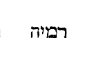
«Fuit in diebus Herodis regis Judaeae sacerdos quidam nomine Zacharias, de vice Abia, et uxor illi de filiabus Aaron, et nomen ejus Elizabet. Erant autem justi ambo ante Deum, incedentes in omnibus mandatis et justificationibus Domini sine [Col. 0379A] querela, et non erat illis filius, eo quod esset Elizabet sterilis, et ambo processissent in diebus suis. Factum est autem cum sacerdotio fungeretur Zacharias in ordine vicis suae ante Deum, secundum consuetudinem sacerdotii sorte exiit, ut incensum imponeret, ingressus in templum Domini, et omnis multitudo populi erat orans foris, hora incensi. Apparuit autem illi angelus Domini, stans a dextris altaris incensi. Et Zacharias turbatus est videns, et timor irruit super eum. Ait autem ad illum angelus: Ne timeas, Zacharia, quoniam exaudita est deprecatio tua, et uxor tua Elizabet pariet tibi filium, et vocabis nomen ejus Joannem. Et erit tibi gaudium et exsultatio, et multi in nativitate ejus gaudebunt. Erit enim magnus coram [Col. 0379B] Domino, et vinum et siceram non bibet, et Spiritu sancto replebitur, adhuc ex utero matris suae, et multos filiorum Israel convertet ad Dominum Deum ipsorum. Et ipse praecedet ante illum in spiritu et virtute Eliae, ut convertat corda patrum in filios, et incredulos ad prudentiam justorum, parare Domino plebem perfectam.»
Fuit in diebus Herodis regis Judaeae sacerdos nomine Zacharias . (Ex Beda.) Sacrosancta praecursoris Domini nobilitas non solum a parentibus, sed a progenitoribus gloriosa descendit, quatenus adventus illius fidem, non subita inspiratione conceptam, verum avita magis propagatione susceptam liberius praedicaret.
De vice Abia . Viginti quatuor de sacerdotibus ordines in ministerio domus Domini sorte a Salomone sunt divisi, in quibus Abia familiae, de qua Zacharias ortus est, sors contigit octava. Non frustra primus Novi Testamenti praeco in octava sortis vice nascitur, quia sicut septenario saepe numero propter sabbatum Vetus Testamentum, sic Novum aliquoties octonario propter sacramentum resurrectionis exprimitur; unde quia non aliter quam per observantiam utriusque testamenti regni coelestis aula penetratur, recte et in templo Salomonis mysticus quindecim graduum ascensus fuisse narratur.
Et uxor ejus de filiabus Aaron . Plena igitur laudatio, qua genus, mores, officium, factum, judicium comprehendit. Genus in majoribus, mores in aequitate, [Col. 0379D] officium in sacerdotio, factum in mandato, in justificatione judicium.
Erant autem justi ambo ante Deum . Beatus qui in conspectu Dei justus est, atque laudabilis. Evenit quippe, ut laudent homines eum, qui non est laudabilis, et ei detrahant, qui minime detractione dignus est. Solus Deus, et in laude, et in vituperatione justus est judex.
Incedentes in omnibus mandatis et justificationibus Domini sine querela . Plerumque justitia durior, hominum querelam provocat, quae vero temperata est, ipsa suae dulcedinis gratia etiam invidiae querimoniam vitat.
( Ex Amb .) Quando enim facimus mandatum Dei, [Col. 0380A] et in conscientia nostra vanae gloriae sordes spargimus, ut hominibus placeamus, non illud absque querela facimus.
Factum est autem cum sacerdotio fungeretur Zacharias , etc. Qui enim sorte eligitur, humano judicio non comprehenditur, ille igitur quaerebatur, quem iste figurabat, verus in aeternum sacerdos, cui dicitur: Tu es sacerdos in aeternum (Psal. CX) , qui non hostiarum cruore, sed proprio, Patrem Deum generi reconciliaret humano. Sed tunc sanguis fundebatur, in specie sacerdos ordinabatur. Nunc quia veritas venit, relinquamus speciem, et veritatem sequamur. Tunc quidem vices erant, nunc autem est perpetuitas. Quem alium significabat Zacharias sacerdos, nisi eum sacerdotem, cui sacrificium non esset commune [Col. 0380B] cum caeteris, qui non in manu factis templis sacrificaret pro nobis, sed in sui corporis templo nostra peccata vacuaret.
Sorte exiit ut incensum poneret , etc. Incensum autem in sancta sanctorum a pontifice deferri, exspectante foris templum omni populo, decima die septimi mensis est jussum. Et hanc diem expiationis, sive propitiationis vocari, quae apud nos ob varium lunae discursum, a qua menses computant Hebraei, modo in Septembri mense, modo incipit in Octobri, quia scilicet mensis, quo Pascha geritur, anni principium tenet, dicente Domino: Mensis iste vobis primus erit in mensibus anni . Decima die mensis hujus tollat unusquisque agnum, etc. Hujus diei mysterium implevit verus pontifex Jesus, quando completa [Col. 0380C] dispensatione carnis in sanguine proprio, coeli secreta subiit, ut propitium nobis faceret patrem, et interpellaret pro peccatis eorum, qui adhuc prae foribus orantes exspectant et diligunt adventum ejus.
Apparuit autem illi angelus Domini , etc. Non immerito angelus videtur in templo, quia veri sacerdotis jam nuntiabatur adventus, et coeleste sacrificium parabatur, in quo angeli ministrarent. Utinam et nobis a dolentibus vel sacrificium deferentibus assistat angelus. Non enim dubites assistere angelum, quando Christus assistit. Christus immolatur, etenim pascha nostrum immolatus est Christus .
( Ex Beda .) Bene angelus et in templo et juxta [Col. 0380D] altare et a dextris apparet, quia videlicet, et veri sacerdotis adventum, et mysterium sacrificii, universalis et coelestis doni gaudium praedicat. Nam sicut per sinistram praesentia, sic per dexteram saepe bona pronuntiantur aeterna.
Ait autem ad illum angelus: Ne timeas, Zacharia , etc. Deprecationem dicens exauditam, partum continuo promittit uxoris. Non quod ille, qui pro populo oblaturus intraverat, relictis publicis votis, pro accipiendis filiis orare potuerit, sed quod dicit: Exaudita est deprecatio tua , pro populi redemptione significat. Quod vero adjungit, et uxor tua pariet tibi filium , ejusdem redemptionis ordinem pandit, quod videlicet natus Zachariae filius, redemptori [Col. 0381A] illius populi praeconando sit iter facturus.
Et erit gaudium tibi, et exsultatio , etc. Et notandum quod, nato praecursore, multi gaudent. Nato autem Domino, annuntiat angelus gaudium magnum, quod erit omni populo, quia videlicet hic salutem multis praedicare, ille omnibus qui velint, advenit donare.
Et erit magnus coram Domino . (Ex Amb.) Non corporis hic, sed animae magnitudinem declaravit. Est coram Domino magnitudo animae, magnitudo virtutis, est etiam parvitas animae, et pueritia virtutis.
Vinum et siceram non bibet . (Ex Beda.) Sicera interpretatur ebrietas, Hebraice 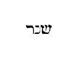
Et Spiritu sancto replebitur adhuc ex utero matris suae . (Ex Amb.) Non est dubium verum hoc angeli esse promissum, siquidem sanctus Joannes antequam nasceretur, matris adhuc in utero positus, spiritus accepti gratiam designavit. Cui enim adest spiritus gratiae, nihil deest, et cui Spiritus sanctus infunditur, magnarum est plenitudo virtutum.
Et multos filiorum Israel convertet ad Dominum Deum ipsorum . Cum Joannes qui Christo testimonium [Col. 0381C] perhibens, in ejus fide populos baptizabat, dicitur filios Israel ad Dominum Deum ipsorum convertisse, patet profecto Christum esse Dominum Deum ipsorum.
Et ipse praecedet ante illum in spiritu et virtute Eliae . Bene in spiritu et virtute Eliae praecedere dicitur, quia sicut ille praeco venturi judicis, ita hic praeco factus est redemptoris. Unde et conversatione prorsus simillima, ambo deserta secuti, victu frugi, vestitu inculti, cinctu sunt despecti, ambo regis et reginae vesaniam tolerarunt. Ille Jordanem coelum petiturus divisit, hic ad lavacrum salutare quo coelum petatur, convertit. Hic cum Domino versatur in terris, ille cum eo manifestatur in gloria.
Ut convertat corda patrum in filios, et incredulos ad prudentiam , etc. Corda patrum in filios convertere, est spiritualem sanctorum antiquorum scientiam populis praedicando infundere. Prudentia vero justorum est, non de legis operibus justitiam praesumere, sed ex fide salutem quaerere.
«Audite, insulae, et attendite, populi, de longe. Dominus ab utero vocavit me, de ventre matris meae recordatus est nominis mei. Et posuit os meum, quasi gladium acutum, sub umbra manus suae protexit me: Et posuit me sicut sagittam [Col. 0382A] electam, in pharetra sua abscondit me, et dixit mihi: Servus meus es tu, Israel, quia in te gloriabor: Et nunc haec dicit Dominus, Formans me ex utero servum sibi, dedi te in lucem gentium, ut sis salus mea usque ad extremum terrae. Reges videbunt et consurgent principes, et adorabunt Dominum Deum tuum et sanctum Israel, qui elegit te.»
Audite, insulae, et attendite, populi, de longe . (Ex Hier.) Post vocationem ergo reliquiarum Israel et abjectionem in incredulitate populi permanentis, de quibus dixerat: Non est pax impiis, dicit Dominus (Isai. XLVIII) ; transit ad Ecclesias de gentibus congregatas, et eis sub Insularum nomine loquitur, quae persecutorum insidiis, quasi maris fluctibus patent, [Col. 0382B] et ex omni parte saeviente naufragio tunduntur potius quam moventur. Ac ne quis putet violentam esse expositionem nostram, et non ad gentes pertinere quod dicitur, sed ad synagogas populi Judaeorum.
Et attendite, populi sive gentes, de longe . Hoc est, ab extremis finibus terrae, velut Septuaginta transtulerunt, διὰ χρόνου πολλοῦ στήσεται . Post tempus multum stabit , hoc est, non hoc tempore quo dicuntur, sed post multa fient tempora, sequitur.
Dominus , inquit, ab utero vocavit me, de ventre matris meae , etc. Quod nunc interim audientibus videtur obscurum, postea autem cunctis gentibus notum fiet, quando Gabriel Joseph de partu dixerit virginali, et vocabis nomen ejus Jesum, ipse [Col. 0382C] enim salvum faciet populum suum a peccatis eorum (Matth. I) .
Et posuit os meum, quasi gladium acutum . Posuit quoque os ejus, quasi gladium acutum, ut spiritu oris sui interficiat impium. De quo gladio ipse in Evangelio loquitur. Non veni pacem mittere in terra, sed gladium (Matth. X) , malos a bonis separans. Venit enim dividere hominem contra patrem suum, et filiam contra matrem suam, et nurum contra socrum suam.
Et in umbra manus suae protexit me . In umbra manus Dei se esse protectum asserit, ut carnis vilitas divinitatis potentia tegeretur, angelo ad Virginem nuntiante: Spiritus sanctus superveniet in te, et virtus Altissimi obumbrabit tibi (Luc. I.)
Et posuit me, quasi sagittam electam . Quando dicit sagittam electam, ostendit habere Deum sagittas plurimas, sed non electas, quae sagittae Prophetae sunt et Apostoli, qui in toto orbe decurrunt, de quibus in alio loco canitur. Sagittae tuae acutae, potentissime, populi sub te cadent . Et iterum: Sagittae potentis acutae, cum carbonibus desolatoriis (Psal. XLIV) . Christus autem de multis sagittis et filiis plurimis una sagitta electa, et filius unigenitus est, quam in pharetra sua abscondit, id est, in humano corpore, ut habitaret in eo plenitudo divinitatis corporaliter. Raraque est credentium fides, cui et supra dicitur: Tu es Deus absconditus, et nesciebamus . Qua sagitta et sponsa vulnus accipiens loquitur [Col. 0383A] in Cantico canticorum: Vulnerata charitate ego sum (Cant. IV) .
Servus meus es tu, quia in te glorificabor . Servus, quia cum in forma Dei esset, formam servi est dignatus assumere (Philip. II) . Ostendit eum appellari servum, qui sit formatus ex utero, qui et in Psalmo dicit: De ventre matris meae, Deus meus es tu . Et Israel, quia natus de semine Judaeorum, quodque de nullo alio servorum intelligi potest, jungitur: Quia in te glorificabor . Dicit enim et ipse in Evangelio: Pater glorificavi nomen tuum (Joan. XII) , qui in Psalmo loquitur: Exsurge gloria mea, exsurge psalterium et cythara (Psalm. LVI) , id est omnium virtutum chorus.
Dedi te in lucem gentium, ut sis salus mea, usque [Col. 0383B] ad extremum terrae . Id est, ut illumines universum mundum, et salutem meam, per quam omnes salvi fiant usque ad extremum terrae facias pervenire. Haec enim per apostolorum praedicationem facta cognoscimus, de quibus Psalmista praedicens, ait: In omnem terram exivit sonus eorum, et in fines orbis terrae verba eorum (Psal. XIX) .
Reges videbunt, et consurgent principes, et adorabunt propter Dominum Deum tuum, et sanctum Israel, qui elegit te . Haec fient quando venerit Christus in gloria patris cum angelis suis, et sederit in throno gloriae suae, judicare vivos et mortuos (Matth. XXV) . Tunc omnes adorabunt propter Dominum patrem suum, quia fidelis est, qui elegit eum. Sive ita intelligendum: Reges quorum cor in manu Dei est, et [Col. 0383C] ecclesiae principes adorabunt eum, quia fidelis est dominus sanctus Israel. De Christo etenim et quae sequuntur intelligi possunt, dicit enim: In tempore placito exaudivi te, et in die salutis auxiliatus sum tui . Hujus testimonio Apostolus usus est, dicens: Tempore opportuno exaudivi te, et in die salutis auxiliatus sum tui, ecce nunc tempus acceptabile, nunc dies salutis (II Cor. VI) . Tempus placitum et opportunum, et dies salutis passio salvatoris est, et resurrectio, cui et idem pater in subsequentibus ait: Dedi te in foedus populi, ut suscitares terram, et possideres haereditates dissipatas, ut diceres his qui vincti sunt, exite, et his qui in tenebris, revelamini. In foedus populi subauditur Judaeorum, his videlicet, qui ex illis credere voluerunt, et suscitavit terram, quae in [Col. 0383D] idololatriae jacebat erroribus, et possidebit haereditates dissipatas, quae habitatorem non habebant dominum, et dicit his, qui peccatorum vinculis stringebantur: Exite, quia funibus peccatorum suorum unusquisque constringitur, et his qui sedebant in tenebris, et lucem videre non poterant, ait: Revelamini, hi enim omnes postquam conversi fuerint, et clarum lumen Christi aspexerint, pascentur in viis et semitis sacrarum scripturarum, et dicent: Dominus pascit me, et nihil mihi deerit, in loco pascuae ibi me collocavit. Super aquam refectionis educavit me (Psal. XXII) .
«Elizabeth impletum est tempus pariendi, et peperit [Col. 0384A] filium. Et audierunt vicini et cognati ejus, quia magnificavit dominus misericordiam suam cum illa, et congratulabantur ei. Et factum est in die octavo. Venerunt circumcidere puerum, et vocabant eum nomine patris sui Zachariam. Et respondens mater ejus et dixit, nequaquam, sed vocabitur Joannes. Et dixerunt ad illam: Quia nemo est in cognatione tua qui vocetur hoc nomine. Innuebant autem patri ejus, quem vellet vocari eum. Et postulans pugillarem, scripsit dicens: Joannes est nomen ejus, et admirati sunt universi. Apertum est autem illico os ejus et lingua, et loquebatur benedicens Deum. Et factus est timor super omnes vicinos eorum, et super omnia montana Judaeae divulgabantur omnia verba haec. [Col. 0384B] Et posuerunt omnes qui audierunt in corde suo dicentes: Quis putas puer iste erit? Etenim manus Domini erat cum illo. Et Zacharias pater ejus impletus est spiritu sancto et prophetavit dicens: Benedictus Dominus Deus Israel, quia visitavit et fecit redemptionem plebis suae.»
Elizabeth autem impletum est tempus pariendi, et peperit filium . (Ex Beda.) Verbum impletionis sancta scriptura in bonorum tantum ortu, vel obitu, vel actu ponere consuevit, quarum vitam plenitudinem perfectionis habere significat. Denique Elizabeth impletum est tempus pariendi. Impleti sunt dies Mariae ut pareret. Implevit Salomon aedificare domum Domini . Defunctus est Abraham vel alius aliquis patrum senex et plenus dierum , et postquam venit plenitudo [Col. 0384C] temporis, misit Deus filium suum , at contra dies impiorum inanes, et vacui; viri enim sanguinum et dolosi non dimidiabunt dies suos (Psal. LIV) .
Et audierunt vicini et cognati ejus, quia magnificavit Dominus misericordiam suam cum illa, et congratulabantur ei (Ex August.) Habet sanctorum editio laetitiam plurimorum, quia commune est bonum. Justitia enim communis est virtus, et ideo in ortu justi futurae vitae insigne promittitur, et gratia secutura virtutis exsultatione vicinorum praefigurante signatur.
Et factum est in die octava, venerunt circumcidere puerum et vocabant eum nomine patris sui Zachariam, et respondens mater ejus dixit: nequaquam, sed vocabitur [Col. 0384D] Joannes . Mire sanctus evangelista praemittendum putavit, quod plurimi infantem patris nomine Zachariae appellandum putarunt, ut advertas matri non nomen alicujus displicuisse degeneris, sed id sancto infusum spiritu, quod ab angelo ante Zachariae fuerat praenuntiatum. Et quidem ille mutus intimare vocabulum filii nequivit uxori, sed per prophetiam Elisabeth didicit, quod non didicerat a marito.
Et dixerunt ad illam, quia nemo est in cognatione tua, qui vocetur hoc nomine. Innuebant patri ejus, quem vellet vocare eum, et postulans pugillarem scripsit dicens: Joannes est nomen ejus, et mirati sunt universi. Joannes est , inquit, nomen ejus , hoc est [Col. 0385A] non ei nos nomen imponimus, quia jam a Deo nomen accepit, habet vocabulum suum, quod agnovimus non quod elegimus, nec mireris si nomen mulier, quod non audivit asseruit, quando spiritus sanctus, qui angelo mandaverat, revelavit. Neque poterat Domini ignorare praenuntium, quae prophetaverat Christum. Et bene additur: Quia nemo in cognatione ejus vocatur hoc nomine , ut intelligas nomen non generis esse, sed vatis.
Apertum est illico os ejus et lingua et loquebatur benedicens Deum, et factus est timor super omnes vicinos eorum . Quia vox clamantis in deserto est nata, merito est lingua parenti soluta, neque enim patrem a laudibus silere decebat, qui verbi praecone sibi nato gaudebat, quippe cui labia quae incredulitas [Col. 0385B] vinxerat, fides jam solvit. Verum haec etiam allegorice si quis perscrutari desiderat, Joannis celebrata nativitas, gratiae Novi Testamenti est inchoata sublimitas. Cui vicini et cognati patris nomen quam Joannis imponere malebant, quia Judaei, qui legis ei observatione, quasi affinitate juncti erant, magis justitiam, quae ex lege est, sectari, quam fidei gratiam suscipere cupiebant. Sed Joannis, hoc est, gratiae Dei vocabulum mater verbis, pater litteris intimare satagunt. Quia et lex ipsa psalmique ac prophetae apertis sententiarum vocibus gratiam Christi praedicant, et sacerdotium illud vetus figuratis caeremoniarum et sacrificiorum umbris eidem testimonium perhibet. Pulchreque Zacharias octava die prolis editae loquitur, quia per Domini resurrectionem, [Col. 0385C] quae octava die post septimam sabbati facta est, occulta sacerdotii legalis arcana patuerunt, linguaque pontificum Judaeorum, quam diffidentiae vincula strinxerant, intelligentiae rationabili est voce soluta.
Et super omnia montana Judaeae divulgabantur omnia verba haec. Et posuerunt in corde suo dicentes: Quid putas puer iste erit, etenim manus Domini erat cum illo. Magna opera Domini, exquisita in omnes voluntates ejus (Psal. CXX) . Ecce enim unum Zachariae silentium, non ipsi tantum cum datur ad poenam incredulitatis, et signum credendi proficit, sed et cum aufertur, omnes vicinos ejus miraculo ac timore stupefacit. Omnia circumquaque montana fama nati prophetae profundit. Omnes qui [Col. 0385D] audire poterant, ad perquirendum diligentius pueri qui natus est modum statumque sollicitat, ut his videlicet atque hujusmodi futurus Christi propheta commendetur auspiciis, iterque (ut ita dixerim) praecursori veritatis praecurrentia signa praebeant.
Et Zacharias pater ejus impletus est spiritu sancto, et prophetavit dicens: Benedictus Dominus Deus Israel, quia visitavit et fecit redemptionem plebis suae . Quanta superni muneris est largitas, si prompta ad accipiendum nostrae fidei sit pietas. Ecce loquela quae sola est ablata diffidenti, cum spiritu prophetiae est restituta credenti. Visitavit autem Dominus plebem suam, quasi longa infirmitate tabescentem, et [Col. 0386A] quasi venditam sub peccato unici filii sui sanguine redemit. Quod quia beatus Zacharias proxime faciendum cognoverat, prophetico more quasi jam factum narrat. Et notandum quod visitasse et redemisse plebem suam dicitur, non quia videlicet, hanc veniens suam invenit, sed quia visitando suam fecit, cui simile est quod in Proverbiorum fine de eadem plebe cantatur: Mulierem fortem quis inveniet (Prov. ultimo )? Neque enim eamdem mulierem, videlicet Ecclesiam, fortem, id est, fidem devotam invenit, sed sibi desponsando fortem reddidit, quia suae fidei sublimitate perfecit.
«Petrus et Joannes ascendebant in templum ad horam orationis nonam. Et quidam vir, qui erat claudus ex utero matris suae bajulabatur, quem quotidie ponebant ad portam templi, quae dicitur Speciosa, ut peteret eleemosynam ab introeuntibus in templum. Is cum vidisset Petrum et Joannem, incipientes introire in templum, rogabat ut eleemosynam acciperet. Intuens autem in eum Petrus cum Joanne dixit: Respice in nos. At ille intendebat in eos, sperans se aliquid accepturum ab eis. Petrus autem dixit: Argentum et aurum non est mihi, quod autem habeo, hoc tibi do: In nomine Jesu Christi Nazaraeni, surge et ambula. Et apprehensa ejus manu dextera, allevavit eum. Et [Col. 0386C] protinus consolidatae sunt bases ejus et plantae, et exsiliens stetit et ambulabat. Et intravit cum illis in templum, ambulans et exsiliens et laudans Deum. Et vidit eum omnis populus ambulantem et laudantem Deum, cognoscebant autem illum, quoniam ipse erat, qui ad eleemosynam sedebat, ad speciosam portam templi, et repleti sunt omnes stupore et exstasi, in eo quod acciderat illi.»
Petrus et Joannes ascendebant in templum ad horam orationis nonam . Apostoli nona hora templum ingressuri, primo claudum diu debilem salvant, deinde ad vesperam usque laborantes, multa hominum millia verbo fidei imbuunt. Quia doctores Ecclesiae, in finem mundi venientes, et languenti prius Israeli, et [Col. 0386D] postmodum etiam gentilitati praedicant. Hi sunt enim operarii, quos nona et undecima hora in vineam paterfamilias inducit (Matth. XX) .
Et quidam vir, qui erat claudus ex utero matris suae, bajulabatur . Quia populus Israel non solum Domino incarnato (Joan. X) , sed a primis etiam legis temporibus datae rebellis exstitit, quasi ex utero matris claudus fuit, quod bene Jacob cum angelo luctante, benedicto quidem, sed claudicante figuratur, quia populus Domino in passione praevalens, in quibusdam per fidem benedictus, in quibusdam vero est per infidelitatem claudus.
Quem ponebant quotidie ante portam templi quae dicitur Speciosa , etc. Porta templi Speciosa Dominus [Col. 0387A] est, per quem si quis introierit, salvabitur. Ad hanc portam debilis Israel ire non valens, legis, prophetarumque vocibus affertur, ut ab ingredientibus interiora sapientiae fidei audiendae deposcat auxilium, qui vaticinia futurorum, quasi ad portam ponunt auditores. Sed Petri est in templum perducere, cui pro confessione forti, et cognomen petrae et claves coeli sunt datae.
Argentum et aurum non est mihi . Habuit quidem vetus tabernaculum justificationes culturae, et sanctum saeculare auro argentoque distinctum, sed metallis legis sanguis Evangelii pretiosior emicat, et populus ille, qui ante auratos postes mente debili jacuerat, in nomine crucifixi salvatus, templum regni coelestis ingreditur (Hebr. VII) . Alioquin beatus [Col. 0387B] Petrus, Dominici memor praecepti, quo dicitur: Nolite possidere aurum et argentum (Matth. X) , pecuniam quam ad pedes apostolorum ponebant, non sibi recondere, sed ad usus pauperum, qui sua patrimonia reliquerant, reservare solebat.
Et apprehensa manu ejus dextera, allevavit eum , etc. Quem verbo erigit, hunc etiam dextera confortat, quia sermo docentis, in corde auditorum minus valet, si non etiam propriae actionis commendetur exemplis.
Et exsiliens stetit et ambulabat et intravit cum illis in templum . Ordo perfectionis egregius, primo illum resurgere qui jacuerat, deinde arripere virtutem, et sic regni januam cum apostolis intrare.
Et impleti sunt stupore et exstasi , etc. Exstasin [Col. 0387C] pavorem dicit. Nam alio modo dicitur exstasis, cum mens, non pavore alienatur, sed aliqua inspiratione aut revelatione assumitur.
«Dixit Jesus Petro: Simon Joannis, diligis me plus his? Dicit ei: Etiam, Domine, tu scis quia amo te. Dicit ei: Pasce agnos meos. Dicit ei iterum: Simon Joannis, diligis me? Ait illi: Etiam, Domine, tu scis quia amo te. Dicit ei: Pasce agnos meos. Dicit ei tertio: Simon Joannis, amas me? Et contristatus est Petrus, quia dixit ei tertio: Quia amas me, et dicit ei: Domine, tu omnia scis, tu scis quia amo te. Dicit ei: Pasce oves meas. Amen, amen, dico tibi, cum esses junior cingebas te, et ambulabas ubi volebas, cum autem senueris, [Col. 0387D] extendes manus tuas, et alius te cinget, et ducet quo non vis. Hoc autem dixit significans qua morte clarificaturus esset Deum.»
Dixit Jesus Petro: Simon Joannis, diligis me plus his? Dicit ei: Etiam Domine, tu scis quia amo te . Virtutem nobis perfectae dilectionis praesens Domini nostri interrogatio ostendit, perfecta enim dilectio est, qua Dominum ex toto corde, tota anima, tota virtute, proximum autem tanquam nos ipsos diligere jubemur, et neutra harum dilectio sine altera valet, aut est perfecta, quia nec Deus vere sine proximo, nec sine Deo vere potest proximus amari.
Dicit ei: Pasce agnos meos . Ac si aperte diceret, [Col. 0388A] et haec sola et vera est probatio integri in Domino amoris, si erga fratres studueris curam solliciti exercere laboris. Nam quicunque fratri opus pietatis, quod valet impendere, negligit, minus juste se conditorem diligere ostendit, cujus mandata in sustentanda proximi necessitate contemnit.
Dicit ei iterum: Simon Joannis, amas me? at ille: Etiam, Domine, tu scis quia amo te . Simon namque obediens, Joannes dicitur Dei gratia, et propter ea recte primus apostolorum, cum de amore suo requiritur, Simon Joannis, id est obediens Dei gratia vocatur, ut liquido cunctis ostendatur hoc, quod majore prae caeteris obedientia Dei jussis obsequitur, quod ardentiori illum charitate amplectitur non [Col. 0388B] humani meriti, sed muneris esse divini. Caute ac temperate et simplici voce ait: Domine, tu scis quia amo te , quod est aperte dicere, Scio quia te, ut tu melius nosti, integro corde diligo, quam vero te alii diligant, mihi quidem ignotum, sed tibi sunt omnia nota.
Contristatus est Petrus, quia dixit ei ter amas me? Et dicit ei: Domine, tu omnia scis, tu scis quia amo te, dicit ei: Pasce agnos meos . Provida autem pietate Dominus tertio Petrum an se diligat interrogat, ut ipsa trina confessione vincula, quae ille ter negando ligavit, absolvat, et quoties territus ejus passione, qua illum nosse negaverat, toties resurrectione creatus, quod illum toto amet corde testatur. Sed hoc pastori est fixo corde tenendum, ut eos [Col. 0388C] quibus praeest, non quasi suos proprios, sed ut Domini sui gregem tractare meminerit, juxta illud quod Petro dicitur: Si diligis me, pasce oves meas . Meas, inquit, non tuas, meas tibi oves commendatas scio, et has quasi meas regere, si me perfecte amas recole, ut meam videlicet in eis gloriam, meum dominium, mea lucra non tua propria quaeras.
( Ex vulg .) Dilectio ampliorem quam amor retinet qualitatem, et ideo dicente Domino: Simon Joannis, diligis me , non ausus est Petrus fateri dilectionis se habere mensuram, sed humiliter profitetur amare se. Superior enim amori dilectio reperitur. Denique tertia appellatione Dominus interrogans Petrum, quia non sicut prioribus vicibus duabus dixerat, [Col. 0388D] diligis , sed amas me , contristatus est Petrus, cur in tertia interrogatione non dixerit, diligis me, sed amas me, velut jam non de sublimi ordine dilectionis, sed de inferiore amoris gratia percunctatus.
Amen amen dico tibi, cum esses junior, cingebas te, et ambulabas ubi volebas, cum autem senueris, extendens manus tuas, et alius te cinget et ducet, quo tu non vis . Ac si patenter dicat: Quanta me charitate diligas, hinc aliquando probabis, cum pro parvulorum meorum vita ad mortem certando perveneris, ut et illi in corpore possint pariter et mente salvari, ipse tormenta corporis omnia, quae adversarium infligere libet, forti mentis constantia tolerabis. [Col. 0389A] In extensione enim manuum positionem membrorum ejus, qua cruci erat aptandus insinuat. In cinctione alterius impositionem vinculorum, quibus a persecutore erat arcendus exprimit. In ducto quo nollet, ipsam mortis ac passionis acerbitatem indicat, quam corporalis ejus infirmitas horrebat, cujus animi firmitas spiritualis etiam adversa pro domino laetabatur cuncta perferre. Non enim voluntatem suam, sed voluntatem quaerebat ejus qui misit eum Christus.
Hoc autem dixit, significans qua morte clarificaturus esset Deum . Clarificavit quippe Petrus morte sua Deum, quando hoc indicio cunctis quantum Deus esset colendus, amandusque monstravit, dum ipse data optione mallet crucis subire tormentum, [Col. 0389B] quam a coelestis verbi praedicatione cessare.
«Misit Herodes rex manus, ut affligeret quosdam de Ecclesia. Occidit autem Jacobum fratrem Joannis gladio. Videns autem quia placeret Judaeis, apposuit apprehendere et Petrum. Erant autem dies azymorum. Quem cum apprehendisset, misit in carcerem, tradensque quatuor quaternionibus militum ad custodiendum, volens post pascha producere eum populo. Et Petrus quidem servabatur in carcere, oratio autem fiebat sine intermissione ab Ecclesia ad Deum pro eo. Cum autem producturus eum esset Herodes, in ipsa nocte [Col. 0389C] erat Petrus dormiens inter duos milites, vinctus duabus catenis, et custodes ante ostium custodiebant carcerem, et ecce angelus Domini astitit, et lumen refulsit in habitaculo carceris, percussoque latere Petri excitavit eum dicens: Surge velociter. Et ceciderunt catenae de manibus ejus. Dixit autem angelus ad eum: Praecingere et calcia te caligas tuas. Et fecit sic. Et dixit illi: Circumda tibi vestimentum tuum, et sequere me. Et exiens sequebatur eum et nesciebat quia verum est, quod fiebat per angelum, aestimabat autem se visum videre. Transeuntes autem primam et secundam custodiam, venerunt ad portam ferream, quae ducit ad civitatem quae ultro aperta est eis. Et exeuntes processerunt vicum unum. Et continuo [Col. 0389D] discessit angelus ab eo. Et Petrus ad se reversus dixit: Nunc scio vere, quia misit Dominus angelum suum, et eripuit me de manu Herodis, et de omni exspectatione plebis Judaeorum.»
Misit Herodes rex manus, ut affligeret quosdam de Ecclesia . (Ex Josepho.) Hunc Herodem tertio Claudii anno, sui vero regni septimo, ab angelo percussum, narrat historia.
Occidit autem Jacobum fratrem Joannis gladio , etc. (Ex Beda.) De hoc Jacobo Clemens Alexandrinus historiam quamdam dignam memoria refert. «Et is, inquit, qui obtulerat eum judici ad martyrium (Jacobum scilicet) motus etiam ipse, confessus est se esse Christianum. Ducti sunt autem ambo pariter [Col. 0390A] ad supplicium, et cum ducerentur in via, rogavit Jacobum, dari sibi remissionem; at ille parumper deliberans, Pax tibi, inquit, et osculatus est eum, et ita ambo simul capite plexi sunt.»
Tradensque quatuor quaternionibus militum , et reliqua. Sicut centurio centum, ita quaternio quatuor sub se milites habebat.
Percussoque latere Petri excitavit eum , etc. Percussio lateris, commemoratio passionis Christi est, de cujus vulnere salus nostra profluxit, et nobis quoque pressurarum catena retentis, tale solatium ipse reddit apostolus Petrus, dicens: Christo igitur passo in carne, et vos eadem cogitatione armamini .
Praecingere et calcia te caligas tuas. Et fecit , etc. Et prophetas et apostolos cingulis usos fuisse legimus, [Col. 0390B] cujus sibi Petrus ligamenta propter rigorem carceris ad horam laxaverat, ut tunica circa pedes demissa, frigus noctis utcunque temperaret, exemplum praebens infirmis, vel cum molestia corporali, vel injuria tentemur humana, licere nobis aliquid de nostri propositi rigore laxare. Et quia dictum est: Sint lumbi vestri praecincti (Luc. XII) , et calciati pedes in praeparationem Evangelii pacis (Ephes. VI) , spiritualiter virtutum verbique praedicandi resumere jubemur insignia.
Venerunt ad portam ferream, quae ducit ad civitatem, quae ultro aperta est eis , etc. Angusta imo ferrea erat porta, quae ducit ad Jerusalem coelestem, sed apostolorum vestigiis nobis jam facta est meabilis, qui sanguine proprio ferreum vicerunt ostium, [Col. 0390C] de hoc Arator:
Et Petrus ad se reversus dixit . Id est, a contemplationis culmine ad hoc regressus, quod in intellectu communi et prius fuit.
Nunc scio vere, quia misit Dominus Angelum suum, et eripuit me de manu Herodis , etc. Quod unusquisque nostrum habeat angelum, et in libro Pastoris et in multis sanctae Scripturae locis invenitur. Nam et Dominus de parvulis: Angeli , inquit, eorum semper vident faciem patris mei (Matth. XVIII) . Et Jacob de se loquitur: Angelus qui eruit me de cunctis malis [Col. 0390D] (Gen. XLVIII) . Et hic discipuli angelum apostoli Petri venire credebant.
«Venit Jesus in partes Caesareae Philippi, et interrogavit discipulos suos dicens: Quem dicunt homines esse filium hominis? At illi dixerunt, alii Joannem Baptistam, alii autem Eliam, alii vero Jeremiam, aut unum ex prophetis. Dicit illis Jesus: Vos autem quem me esse dicitis? Respondens autem Simon Petrus dixit: Tu es Christus, filius Dei vivi. Respondens autem Jesus dixit ei: Beatus es Simon Barjona, quia caro et sanguis non revelavit tibi, sed pater meus qui in coelis est. Et ego dico tibi, quia tu es Petrus, et super [Col. 0391A] hanc petram aedificabo Ecclesiam meam, et portae inferi non praevalebunt adversus eam. Et tibi dabo claves regni coelorum. Et quodcunque ligaveris super terram, erit ligatum et in coelis. Et quodcunque solveris super terram, erit solutum et in coelis.»
Venit Jesus in partes Caesareae Philippi . Philippus iste est frater Herodis, de quo supra diximus. Tetrarcha Ithureae et Trachonitidis regionum, qui in honorem Tiberii Caesaris Caesaream, quae nunc Paneas dicitur appellatum, et est in provincia Phoenicis.
Et interrogabat discipulos suos dicens: Quem dicunt homines esse filium hominis . (Ex Hieron.) Non dixit, quem me dicunt esse homines, sed filium hominis , [Col. 0391B] ne jactanter de se quaerere videretur. Et nota quod ubicumque scriptum est in Veteri Testamento filius hominis , in Hebraeo positum sit 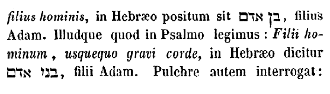
At illi dixerunt: Alii Joannem Baptistam, alii Eliam, alii vero Jeremiam, aut unum ex prophetis . Miror quosdam interpretes causas errorum inquirere singulorum et disputationem longissimam texere, quare dominum nostrum Jesum, alii Joannem [Col. 0391C] putaverunt, alii Eliam, alii Jeremiam, aut unum ex prophetis, cum sic errare potuerint in Elia et Jeremia, quomodo Herodes erravit in Joanne, dicens: Quem ego decollavi Joannem, ipse surrexit a mortuis, et virtutes operantur in illo (Marc. VI) .
Vos autem, quem me dicitis? Respondit Simon Petrus: Tu es Christus filius Dei vivi . Prudens lector attende, quod ex consequentibus textuque sermonis apostoli nequaquam homines, sed dii appellentur. Cum enim dixisset: Quem dicunt homines esse filium hominis , subjecit: Vos autem, quem me esse dicitis? illis quia homines sunt, humana opinantibus, vos qui dii estis, quem me existimatis? Petrus ex persona omnium apostolorum profitetur: Tu es Christus filius Dei vivi . Deum vivum appellat, ad comparationem [Col. 0391D] deorum eorum, qui putantur dii, sed mortui sunt, Saturnum, Jovem, Cererem, Liberum et caetera idolorum portenta significans.
Respondens Jesus, dixit ei: Beatus es, Simon Barjona, quia caro et sanguis non revelavit tibi, sed pater meus qui in coelis est . Quod caro et sanguis revelare non potuit, id est, doctrina humana, spiritus sancti gratia revelatum est. Ergo ex confessione sortitur vocabulum, quod revelationem ex Spiritu sancto habeat, cujus et filius appellandus sit. Siquidem Barjona in lingua nostra sonat, filius columbae. Alii simpliciter accipiunt quod Simon, id est Petrus, filius sit Joannis, juxta alterius loci interrogationem: Simon Joannis, diligis me? qui respondit: [Col. 0392A] Domine, tu scis . Et volunt scriptorum vitio depravatum, ut pro Bar Joanna, hoc est, filius Joannis, Barjona scriptum sit, una detracta syllaba. Joanna autem interpretatur Domini gratia, utrumque autem nomen mystice intelligi potest, quod et columba spiritum sanctum et gratia Dei donum significet spirituale. Illud quoque quod ait: Caro et sanguis non revelavit tibi , apostolicae narrationi comparatur, in qua ait: Continuo non adquievi carni et sanguini (Gal. I) , carnem ibi et sanguinem Judaeos, ut his quoque sub alio sensu demonstretur, quod ei non per doctrinam Pharisaeorum, sed per Dei gratiam Christus Dei filius revelatus sit.
Et ego tibi dico . Quid est quod ait: Et ego dico tibi , quia tu mihi dixisti, tu es Christus filius Dei vivi, [Col. 0392B] et ego tibi sermone casso, et nullum opus habente, sed dico tibi, quia meum dixisse fecisse est.
Quia tu es Petrus, et super hanc petram aedificabo Ecclesiam meam . Sicut ipse lumen apostolis donavit, ut lumen mundi appellentur, caetera quae ex domino sortiti vocabula sunt, ita et Simoni, qui credebat petram Christum, Petri largitus est nomen. At secundum metaphoram petrae, recte dicitur ei, aedificabo Ecclesiam meam super te.
( Ex Fulgentio .) Sive super hanc petram, id est, super illum, quem ore tuo confessus es dicens: Tu es Christus filius Dei vivi , sive super hanc petram, super confessionem Petri.
Et portae inferi non praevalebunt adversus eam . Ego portas inferi vitia reor atque peccata, vel certe [Col. 0392C] haereticorum doctrinas, per quas illecti homines ducuntur ad tartarum. Nemo itaque putet de morte dici, quod apostoli conditioni mortis subjecti non fuerint, quorum martyria videat coruscare.
Et tibi dabo claves regni coelorum, et quodcunque ligaveris super terram, erit ligatum et in coelis, et quodcunque solveris super terram, erit solutum et in coelis . Istum locum episcopi et presbyteri non intelligentes, aliquid sibi de Pharisaeorum assumunt supercilio, ut vel damnent innocentes, vel solvere se noxios arbitrentur, cum apud Deum non sententia sacerdotum, sed eorum vita quaeratur. Legimus in Levitico de leprosis, ubi jubentur, ut ostendant se sacerdotibus, et si lepram habuerint, tunc a sacerdote immundi fiant (Levit. XIV) , non quod sacerdotes [Col. 0392D] leprosos et immundos faciant, sed quod habeant notitiam leprosi et non leprosi, et possint discernere, qui mundus quive immundus sit. Quomodo ergo ibi leprosum sacerdos mundum vel immundum facit, sic et hic alligat vel solvit episcopus et presbyter, non eos qui insontes sunt vel noxii, sed pro officio suo, cum peccatorum audierit varietates, scit qui ligandus sit, qui solvendus.
«Notum enim vobis facio Evangelium, quod evangelizatum est a me, quoniam non est secundum [Col. 0393A] hominem. Neque enim ego ab homine accepi illud, neque didici, sed per revelationem Jesu Christi. Audistis enim conversationem meam aliquando in Judaismo, quia supra modum persequebar ecclesiam Dei, et expugnabam illam, et proficiebam in Judaismo supra multos coaetaneos meos, in genere meo abundantius aemulator existens paternarum mearum traditionum. Cum autem placuit ei qui me segregavit ab ubero matris meae, et vocavit per gratiam suam, ut revelaret filium suum in me, ut annuntiarem illum inter gentes, continuo non acquievi carni et sanguini, neque veni Hierosolymam ad antecessores meos apostolos, sed abii in Arabiam, et iterum reversus sum Damascum, deinde veni [Col. 0393B] Hierosolymam videre Petrum, et mansi apud eum diebus quindecim, alium autem apostolorum vidi neminem, nisi Jacobum fratrem Domini, quae autem scribo, ecce coram Deo, quia non mentior.»
Notum vobis facio Evangelium, quod evangelizatum est a me, quoniam non est secundum hominem. Neque ego ab homine accepi illud, neque didici, sed per revelationem Jesu Christi . Verbum ipsum ἀποκαλύψεως , id est, revelationis, proprie scripturarum est, et a nullo sapientium saeculi apud Graecos usurpatum, hoc est, revelationem illam signat, quam vidit cum Damascum vadens in itinere Christi vocem meruit audire, et caecatis oculis, verum lumen mundi intuitus est. Si enim Evangelium Pauli non [Col. 0393C] est secundum hominem, neque ab homine accepit illud aut didicit, sed per revelationem Jesu Christi, non est utique homo Jesus Christus, qui Paulo Evangelium revelavit, quod si non est homo, consequenter Deus est. Non quod hominem assumptum, sed quo tantum hominem renuamus. Inter accipere autem et discere hoc interest, quod accipit per alium, qui primum insinuatur, ut ad fidem ejus adducatur, ut credat vera esse quae scripta sunt, discit autem is, qui ea quae per aenigmata et parabolas figurata sunt, explanata et aperta cognoscit, et non homine revelante, sed Christo qui revelavit Paulo.
Audistis enim conversationem meam aliquando in Judaismo, quia supra modum persequebar Ecclesiam [Col. 0393D] Dei, et expugnabam , etc. Quam elegans observatio pondusque verborum: Audistis, inquit, conversationem non gratam aliquando non modo in Judaismo, non in lege Dei, supra modum persequebar Ecclesiam Dei, non ut caeteri. Hinc quoque admiratio nascitur, quod non unusquisque de his qui leviter persequebantur Ecclesiam Dei, sed ille qui caeteros in persecutione vincebat, conversus ad fidem sit, Ecclesiam dicens Dei, vel ipsum Christum Deum esse significat, vel ejusdem Dei esse Ecclesiam, qui quondam legis dator fuit.
Cum autem placuit ei, qui me segregavit ab utero matris meae, et vocavit per , etc. Non solum in hoc loco, sed et ad Romanos Paulus segregatum in [Col. 0394A] Evangelio Dei esse se scribit, et Jeremias antequam formaretur in utero, notus Deo, sanctificatusque perhibetur (Jer. I) . Sive uterum matris legem dicere possumus, quae Christo gravida erat. A cujus carnali observantia separatum se dicit per gratiam Christi. Non est autem Ipsum revelaret filium suum in me , ac si diceret: Revelaret mihi filium suum. Cui enim quid revelatur, huic illud potest revelari quod ante in eo non erat. In quo vero revelatur, illud revelatur, quod prius fuit in eo, et postea revelatum est. Simile est illud in Evangelio: Medius stat quem vos nescitis . Et alibi: Erat lux vera, quae illuminat omnem hominem venientem in mundum . Ex quo perspicuum fit natura omnibus Dei inesse notitiam. Nec quemquam sine Christo nasci, et non [Col. 0394B] habere germina in se sapientiae et justitiae, reliquarumque virtutum.
Unde multi absque fide et Evangelio Christi, vel sapienter faciant aliqua, vel sancte, ut parentibus obsequantur, et ut inopi manum porrigant, non opprimant vicinos, non aliena rapiant. Potest et aliter accipi in Paulo: Dei filius revelatur, quod praedicante illo, agnitus sit gentibus, quem ante nesciebant.
Continuo non acquievi carni et sanguini . Sive, ut in Graeco melius habetur, οὐ πρασανεθέμην σαρκὶ καὶ αἵματι . Non contulit plane Paulus post revelationem Christi cum carne et sanguine, quia noluit margaritas projicere ante porcos, nec dare sanctum canibus. Vide quid de peccatoribus scriptum sit: Non permanebit spiritus meus in hominibus istis, quia [Col. 0394C] caro sunt (Gen. VI) . Cum talibus, qui caro et sanguis erant, non contulit Apostolus Evangelium, quod ei fuerat revelatum, sed paulatim eos de carne et sanguine vertit in spiritum, et tunc demum eis occulta Evangelii sacramenta commisit.
Neque veni Hierosolymam , etc. Quid mihi prodest ista religio, si legam, quod Paulus post revelationem Christi statim ierit in Arabiam, et de Arabia Damascum fuerit reversus, nec sciam quid ibi gesserit? Exitus ac reditus dat mihi occasionem altioris intelligentiae. Arabia quae interpretatur humilis et occidua, vetus significat testamentum. Statim itaque ut credidit Paulus, ad legem, ad prophetas, ad Veteris Testamenti jam in occiduo positi sacramenta conversus, quaesivit in eis Christum, quem jussus fuerat [Col. 0394D] in gentibus praedicare, et reperto illo, non est ibi diutius commoratus, sed reversus est Damascum, hoc est ad sanguinem et ad passionem Christi, et inde prophetica lectione firmatus pergit Hierosolymam, locum visionis et pacis, non tam disciturus aliquid de apostolis, quam cum eis Evangelium, quod docuerat, collaturus.
Deinde post triennium veni Hierosolymam videre Petrum . Non ut oculos, genas vultumque ejus aspiceret, utrum macilentus an pinguis, adunco naso esset an recto, et utrum frontem vestiret coma, an (ut Clemens in periodis ejus refert) calvitiem haberet in capite, nec puto apostolicae fuisse gravitatis, ut post tantam triennii praeparationem aliquid humanum [Col. 0395A] in Petro voluerit aspicere, sed his oculis aspexit eum quibus et modo in Epistolis suis videtur, his oculis Paulus vidit Cepham, quibus nunc a prudentibus quibusque Paulus ipse conspicitur. Nam et quod visus sit ire Hierosolymam ad hoc ipse, ut videret Apostolum, non discendi studio, qui et ipse eumdem praedicationis haberet auctorem, sed honoris priori apostolo deferendi.
Et mansi apud eum diebus quindecim . Non grandi indiguit magisterio, qui tanto se ad videndum Petrum tempore praeparavit. Et licet quibusdam superfluum videatur numeros quoque qui in scripturis sunt observare, tamen non absque re arbitror quindecim dies, quibus apud Petrum Paulus habitavit, plenam significare scientiam, consummatamque doctrinam, [Col. 0395B] siquidem quindecim sunt carmina in Psalterio, et quindecim gradus per quos ad canendum Deo in atriis ejus consistendum justus ascendit.
Alium autem apostolorum vidi neminem, nisi Jacobum fratrem Domini . Et caeteri apostoli fratres Domini dicuntur, sicut in Evangelio: Vade, dic fratribus meis, vado ad patrem meum et ad patrem vestrum (Joan. ult .). Sed quomodo Job, et caeteri patriarchae dicti sunt quidem famuli Dei, sed quasi egregius quidem Moyses, ut scriberetur de eo, sed non sicut Moyses famulus meus, sic et beatus Jacobus specialiter frater propter egregios mores et incomparabilem fidem sapientiamque non modicam appellatus est Domini frater, et quod primus ei Ecclesiae praefuerit, quae prima in Christo credens ex [Col. 0395C] Judaeis fuerat congregata.
Quod autem exceptis duodecim quidam vocentur apostoli, illud in causa est, omnes qui Dominum viderant, et eum postea praedicabant, fuisse apostolos appellatos, ut illud ad Corinthios scribitur, Visus est illis undecim, deinde visus est et Jacobo, deinde apostolis omnibus . Nam et alii ab his quos Dominus elegerat ordinati sunt apostoli, sicut ad Philippenses ait: Necessarium existimavi Epaphroditum commilitonem meum, vestrum autem apostolum mittere ad vos (Philip. II) . Et ad Corinthios de talibus scribitur: Sive apostoli Ecclesiarum in gloria Dei (II Cor. VIII) . Silas quoque et Judas ab apostolis apostoli nominati sunt.
Quae autem scribo vobis, ecce coram Deo, quod non [Col. 0395D] mentior . Sive simpliciter accipiendum, ut sit, quae scribo vobis vera sunt, et Deo teste confirmo, quia nulla arte verborum, nullo sunt fucata mendacio, sive altius, ut legatur, quae scribo vobis coram Deo sunt, id est, Dei digna conspectu, quia scilicet non mentior, et quomodo oculi Domini super justos, avertit autem faciem suam a conspectu impiorum, ita nunc ea, quae scribuntur coram Deo sunt, me non mentiente, qui scribo, quae non essent coram Domino si mentirer.
«Saulus autem adhuc spirans minarum et caedis [Col. 0396A] in discipulos Domini, accessit ad principem sacerdotum, et petiit ab eo epistolas in Damascum ad synagogas, ut si quos invenisset hujus viae viros ac mulieres, vinctos perduceret in Hierusalem. Et cum iter faceret, contigit ut appropinquaret Damasco. Et subito circumfulsit eum lux de coelo. Et cadens in terram audivit vocem dicentem sibi: Saule, Saule quid me persequeris? Qui dixit: Quis es, Domine? Et ille: Ego sum Jesus, quem tu persequeris: durum est tibi contra stimulum calcitrare. Et tremens ac stupens dixit: Domine, quid me vis facere? Et Dominus ad eum: Surge et ingredere civitatem, et ibi dicetur tibi, quid te oporteat facere? Viri autem illi qui comitabantur cum illo, stabant stupefacti, audientes quidem vocem, [Col. 0396B] neminem autem videntes. Surrexit autem Saulus de terra, apertisque oculis nihil videbat. Ad manus autem illum trahentes, introduxerunt Damascum. Et erat tribus diebus non videns, et non manducavit neque bibit. Erat autem quidam discipulus Damasci, nomine Ananias. Et dixit ad illum in visu Dominus: Anania. At ille ait: Ecce ego, Domine. Et Dominus ad eum: Surge et vade in vicum, qui vocatur rectus, et quaere in domo Judae Saulum nomine, Tharsensem, ecce enim orat. Et vidit virum Ananiam nomine introeuntem et imponentem sibi manus, ut visum recipiat, Respondit autem Ananias: Domine, audivi a multis de viro hoc, quanta mala fecerit sanctis tuis in Hierusalem. Et hic potestatem habet a principibus [Col. 0396C] sacerdotum alligandi omnes qui invocant nomen tuum. Dixit autem ad eum Dominus: Vade, quoniam vas electionis est mihi iste, ut portet nomen meum coram gentibus et regibus et filiis Israel. Ego enim ostendam illi, quanta oporteat eum pro nomine meo pati. Et abiit Ananias, et introivit in domum, et imponens ei manus, dixit: Saule frater, Dominus Jesus misit me, qui apparuit tibi in via qua veniebas, ut videas et implearis spiritu sancto. Et confestim ceciderunt ab oculis ejus tanquam squamae, et visum recepit. Et surgens baptizatus est, et cum accepisset cibum confortatus est.»
Saulus autem adhuc spirans minarum et caedis in discipulos Domini . (Ex Beda.) Praesentes videlicet [Col. 0396D] caedibus afficiens, et minis deterrens absentes.
Saule, Saule, quid me persequeris? Non dixit quid persequeris membra mea, sed, quid me persequeris? quia ipse in corpore suo, quod est Ecclesia, adhuc patitur iniquos, et in cujus etiam membris beneficia collata, sibi facta esse denuntiat, cum ait: Esurivi et dedistis mihi manducare (Matth. XXV) , et exponendo subjunxit, Quandiu uni ex minimis meis fecistis. Ego sum quem tu persequeris . Non dixit, Ego sum Deus, ego sum Dei filius, sed humilitatis, inquit, meae infirma suscipe, et tuae superbiae squamas depone.
Sed surge et ingredere civitatem, et dicetur tibi quid te oporteat facere , etc. Non continuo quae essent [Col. 0397A] facienda monstravit, sed in civitate postmodum facienda praemonuit, ut tanto post in bonis solidius staret, quanto prius funditus eversus a pristino errore cecidisset.
Apertis oculis nihil videbat , et rel. Nequaquam potuisset bene rursus videre, nisi prius excaecatus fuisset. Bene propriam sapientiam, quae perturbatur, excludens, fidei semper cuncta committeret.
Et erat tribus diebus non videns , etc. Quia Dominum non crediderat tertia die mortem resurgendo vicisse, suo jam instruitur exemplo, qui tenebras triduanas, luce reversa, mutaret.
Ego enim ostendam illi, quanta oporteat eum pro nomine meo pati , et rel. Non debet, inquit, timere quasi persecutor, sed potius quasi frater amplecti, [Col. 0397B] quia diversa quae sanctis intulerat promptus est sustinere cum sanctis.
Et confestim ceciderunt ab oculis ejus tanquam squamae , etc. Draconis omne corpus dicitur squamis esse contextum. Quia ergo Judaei serpentes et genimina sunt viperarum vocati, quia illorum perfidiam sectabatur, quasi pelle serpentina oculos cordis obtexerat, sed cadentibus sub manu Ananiae ab ejus oculis squamis, monstratur in facie, quod verum lumen jam recipit in mente.
«Tunc respondens Petrus, dixit ei: Ecce nos reliquimus omnia, et secuti sumus te: quid ergo erit nobis? Jesus autem dixit illis: Amen dico vobis, quod vos qui secuti estis me in regeneratione, [Col. 0397C] cum sederit filius hominis in sede majestatis suae, sedebitis et vos super sedes duodecim, judicantes duodecim tribus Israel. Et omnis qui reliquerit domum vel fratres aut sorores, aut patrem aut matrem aut uxorem aut filios aut agros, propter nomen meum, centuplum accipiet et vitam aeternam possidebit.»
Tunc respondens Petrus dixit ei: Ecce nos reliquimus omnia et secuti sumus te: quid ergo erit nobis? (Ex Hieron.) Grandis fiducia! Petrus piscator erat, dives non fuerat, cibos manu et arte quaerebat, et tamen loquitur confidenter, reliquimus omnia . Omnia enim relinquit, qui voluntatem habendi deserit. Sed quia non sufficit tantum relinquere, jungit quod perfectum est, et secuti sumus te, fecimus quod jussisti, [Col. 0397D] quid igitur dabis praemii?
Jesus autem dixit illis: Amen dico vobis, quod vos, qui secuti estis me in regeneratione, cum sederit filius hominis, in sede majestatis suae, sedebitis super sedes duodecim judicantes duodecim tribus Israel . Non dixit, qui reliquistis omnia, hoc enim et Socrates fecit philosophus, et multi alii divitias contempserunt: sed, qui secuti estis me , quod proprie apostolorum est atque credentium, in regeneratione cum sederit filius hominis in sede majestatis suae, quando ex mortuis de corruptione resurgent incorrupti, sedebitis et vos in soliis judicantium, condemnantes duodecim tribus Israel, quia vobis credentibus credere noluerunt.
( Ex August .) Hic discimus cum suis discipulis judicaturum Jesum. Unde et alibi Judaeis dixit: Si ergo in Beelzebub ejicio daemonia, filii vestri in quo ejiciunt? ideo ipsi judices vestri erunt (Matth. XIV) . Nec quoniam super duodecim sedes sessuros esse, aut duodecim solos homines cum illo judicaturos putare deberemus. Duodenario quippe numero universa quaedam significata est judicantium multitudo, propter duas partes septenarii, quo significatur plerumque universitas, quae duae partes, id est, triacaquatuor, altera per alteram partem multiplicatae duodecim faciunt. Nam et quatuor ter, et tria quater duodecim sunt. Alioquin quoniam in locum Judae traditoris apostolum Mathiam legimus ordinatum, apostolus Paulus, qui plus illis omnibus laboravit, [Col. 0398B] ubi ad judicandum sedeat non habebit, qui profecto cum aliis sanctis ad numerum judicum se pertinere demonstrat cum dicit: Nescitis quia angelos judicabimus (I Cor. VI) , de ipsis quoque judicandis in hoc numero duodenario similis causa est. Non enim quia dictum est, judicantes duodecim tribus Israel , tribus Levi, quae tertia decima est ab eis judicanda non erit, aut solum illum populum, non cum eo gentes caeteras judicabunt. Quod autem ait, in regeneratione , procul dubio mortuorum resurrectionem nomine voluit regenerationis intelligi, sic enim caro nostra regenerabitur per incorruptionem, quemadmodum est anima nostra regenerata per fidem. Quid ergo de Paulo dicemus? Nunquid tertius decimus judicabit? Quomodo in centum quinquaginta tribus [Col. 0398C] piscibus ingentem numerum sanctorum, et in quinque virginibus innumerabiles virgines, quomodo in quinque fratribus illius qui torquebatur apud inferos millia populi Judaeorum et septem millia virorum, de quibus Eliae dicitur, millia millium , sic in duodecim sedibus non duodecim homines, sed magnus numerus perfectorum. Orbis enim terrarum quatuor designatis partibus continetur. Ab his omnibus partibus vocatur in trinitate, quoniam ter quaterni duodecim fiunt, perfectum numerum significat. Duodecim ergo tribus Israel, totus Israel duodecim tribus sunt, sicut enim judicaturi ex toto mundo, sic et judicandi ex toto mundo erunt.
Et omnis qui reliquerit domum vel fratres aut sorores [Col. 0398D] aut patrem aut matrem aut uxorem aut filios aut agros, propter nomen meum, centuplum accipiet et vitam aeternam possidebit . (Ex Beda.) Sensus igitur iste est: Qui propter Evangelium Christi carnalia reliquerit, spiritalia bona recipiet, quae comparatione et merito sui ita erunt, quasi parvo numero centenarius numerus comparetur, quia nimirum a fratribus atque consortibus propositi sui, qui ei spirituali glutino colligantur, multo gratior est, etiam et in hac vita recipi et charitatem; lege Acta Apostolorum: Quia multitudinis credentium erat cor unum et anima una, et erant illis omnia communia (Act. IV) . Nullusque egens erat inter eos qui sua pro Domino reliquerant, de quibus et Apostolus ait: Tanquam [Col. 0399A] nihil habentes et omnia possidentes . Potest sane hoc, quod ait: Accipiet centies, tantum nunc in tempore hoc, domos et fratres et sorores et matres et filios et agros cum persecutionibus per significationem altius intelligi. Centenarius quippe numerus de laeva translatus in dexteram, licet eamdem inflexu digitorum videatur tenere figuram, quam habuerat denarius in laeva, nimium tamen quantitatis magnitudine supercrescit, quia videlicet omnes, qui propter regnum Dei, et temporalia sperant, etiam in hac vita persecutionibus plenissima, ejusdem regni gaudium fide certa degustant, atque in exspectatione patriae coelestis, quae jure in dextera significatur, omnium pariter electorum sincerissima dilectione fruuntur.
«Quicunque baptizati sumus in Christo Jesu, in morte ipsius baptizati sumus. Consepulti enim sumus cum illo per baptismum in morte, ut quomodo Christus surrexit a mortuis per gloriam patris, ita et nos in novitate vitae ambulemus. Si enim complantati facti sumus similitudini mortis ejus, simul et resurrectionis erimus. Hoc scientes, quia vetus homo noster simul crucifixus est, ut destruatur corpus peccati, ut ultra non serviamus peccato. Qui enim mortuus est, justificatus est a peccato. Si autem mortui sumus cum Christo, credimus, quia simul etiam vivemus cum illo, scientes [Col. 0399C] quod Christus resurgens a mortuis, jam non moritur, mors illi ultra non dominabitur. Quod enim mortuus est peccato, semel mortuus est. Quod autem vivit, vivit Deo. Ita et vos existimate vos mortuos quidem esse peccato, viventes autem Deo in Christo Jesu Domino nostro.»
Quicunque baptizati sumus in Christo Jesu, in morte ipsius baptizati sumus . (Ex Hieron.) Praecepit Apostolus, ut quia propter nos Christus mortuus et sepultus est, et resurrexit, nos quoque ad passionis suae similitudinem, voluntates et cupiditates nostras crucifigamus, et in baptismate mysterium mortis sepulturae et resurrectionis ejus imitemur.
( Ex Orig .) Mori prius oportet peccato, ut possis sepeliri cum Christo, mortuo enim sepultura debetur; [Col. 0399D] nemo enim vivus sepelitur aliquando: si enim vivis adhuc peccato, consepeliri non potes Christo, nec in novo ejus sepulcro collocari. Vetus enim homo tuus vivit, et ideo non potes in novitate vitae ambulare. Quid est, quod cum ipse Dominus dixerit discipulis, ut baptizarent omnes gentes in nomine Patris et Filii, et Spiritus sancti, Apostolus solius Christi in baptismo nomen assumit? nisi quod in praesenti loco, non tam baptismatis rationem, quam mortis Christi discutere cupiebat. Ad cujus similitudinem, etiam nos suaderet mori debere peccato et consepeliri Christo. Et non erat utique conveniens, ut ubi de morte dicebat, vel patrem nominaret vel spiritum sanctum. Verbum enim caro factum est, et merito ubi caro [Col. 0400A] est, ibi de morte tractatur. Nec conveniebat ut diceret: Quicunque baptizati sumus in nomine Patris, vel in nomine Spiritus sancti, in morte ipsius baptizati sumus.
Consepulti enim sumus cum Christo per baptismum in morte . Si consepulti sumus cum Christo, secundum ea quae superius diximus, id est, secundum quod mortui sumus peccato, consequenter utique resurgente Christo a mortuis, et nos cum ipso simul consurgemus, et illo ascendente ad coelos, cum ipso simul ascendemus, et sedente ipso ad dexteram patris, cum ipso simul in coelestibus sedere dicemur, sicut alibi ipse apostolus ait: Quia coexcitavit nos Christo, simulque fecit sedere in coelestibus (Ephes. I) .
Ut quomodo surrexit , etc. Novitas autem vitae est, ubi veterem hominem cum actibus suis deposuimus, et induimus novum, qui secundum Deum creatus est, et qui renovatur in agnitione Dei, secundum imaginem ejus qui creavit eum. Nam et si is qui foris homo noster , inquit Apostolus, corrumpitur, sed qui intus est, renovatur de die in diem (II Cor. IV) . Intuere eos qui in fide proficiunt, et quotidie in virtutibus enitescunt, quomodo semper bonis operibus adjiciunt meliora, et honestis honestiora conquiruntur, quomodo in intellectu, in scientia et sapientia crescunt, et intelligis eos quotidie innovari. In novitate ergo vitae ambulemus, ostendentes nosmetipsos ei, qui nos cum Christo suscitavit, quotidie novos, et, ut ita dixerim, pulchriores, decorem vultus [Col. 0400C] nostri in Christo, tanquam in speculo colligentes, qui surgens a mortuis ab humilitate terrena, ad gloriam paternae majestatis ascendit, ut videant opera nostra bona, et glorificent patrem nostrum qui in coelis est (Matth. VI) , et sic merito Christo consurrexisse per gloriam Patris dicemur.
Si enim complantati , etc. Veluti alicujus plantae arboris ostendit mortem Christi, cui nos complantatos vult esse, ut succo radicis ejus, radix quoque nostra suscipiens, producat ramos justitiae, et fructus efferat vitae. Christus ergo qui est Dei virtus et Dei sapientia, ipse est arbor vitae, cui nos complantari debemus, et novo quodam atque amabili Dei dono, mors illius nobis vitae arbor efficitur. Bene autem Apostolus non dixit: Si enim complantati facti sumus [Col. 0400D] morti ejus, sed similitudini mortis ejus . Ipsam quidem mortem, qua Jesus mortuus est peccato, ut peccatum omnino non fecerit. Nos non possumus mori, ut omnino nesciamus peccatum. Similitudinem tamen habere possumus, ut imitantes eum, et vestigia ejus sequentes, abstineamus nos a peccato. Hoc est ergo, quod recipere potest humana natura, ut in similitudinem mortis ejus fiat, dum ipsum imitando non peccat. Nam omnino ex integro nescire peccatum, solius est Christi. Igitur complantari nos vult mortis ejus similitudini, qua peccato mortuus est semel, ut possimus et resurrectioni ejus esse complantati. Ad utrumque enim subaudire debet complantati et mortis et resurrectionis.
Hoc scientes, quia vetus homo noster simul crucifixus est . Vetus autem homo noster intelligendus est, vita prior, quam duximus in peccatis, cujus finem et interitum quemdam facimus, ubi receperimus in nobis fidem crucis Christi, per quam ita destruitur corpus peccati, ut membra nostra, quae serviebant peccato, ultra ei non serviant, sed Deo.
Ut destruatur corpus peccati, ut ultra non serviamus peccato . (Ex Orig.) Diligentius intuendum est, quomodo dixerit corpus peccati , in quo duplex dari videtur intellectus, vel quia nostrum corpus peccati esse dixerit corpus, vel quia peccati ipsius dicat esse proprium aliquod corpus, quod destruendum sit his qui non debent ultra servire peccato. Quia ergo uterque sensus in loco admitti potest, de utroque [Col. 0401B] quod nobis videatur exponimus. Etenim si proprium corpus ponamus esse peccati, videbitur quod sicut de his qui in novum hominem reparati sunt, dictum est, quia Vos estis corpus Christi, et membra ex parte (I Cor. XII) , ita et de his qui veterem hominem nondum crucifixerunt dici posse quod sint corpus peccati et membra ejus, cujus caput corporis sit diabolus, sicut Christus caput est corporis ecclesiarum, non habentis maculam aut rugam (Ephes. IV) . Possunt autem membra, ex quibus corpus istud peccati constat illa videri, quae superius enumeravit Apostolus membra esse super terram, hoc est, fornicationem, immunditiam, impudicitiam, avaritiam, contentionem, iram, dolos, rixas, dissensiones, haereses, invidiam, comessationes et his similia, ex [Col. 0401C] quibus omnibus membris digne dicitur corpus constare peccati, et hoc corpus veteris hominis appellari, quod si quis per crucem Christi destruat, et in novum hominem, qui secundum Deum creatus est commutetur, ultra non dicetur servire peccato, cui sine dubio servit, donec alicui eorum subjacet, quae supra exposuimus membra esse peccati. Si vero magis corpus nostrum hoc dixisse intelligatur Apostolus corpus peccati, secundum illam profecto accipietur intelligentiam, qua et David de semetipso dicit: Quia in iniquitatibus conceptus sum, et in peccatis concepit me mater mea (Psal. L) . Pro quo peccato et Ecclesia ab Apostolo traditionem suscepit etiam parvulis baptismum dare.
( Ex Primas .) Sive ut destruatur corpus peccati, hoc est, ut non ex parte, sed omnia vitia destruantur, quia unum vitium membrum est peccati, corpus vero est universitas delictorum, quorum plenitudo est originale peccatum. Christus autem non ex parte, sed integer est crucifixus, ut nos ex toto moriamur peccato, et vivamus Deo, sive ut corpus nostrum destruatur a servitute peccati, et fiat justitiae mancipium, quod solebat esse delicti. Omnis enim qui facit peccatum, servus est peccati (Joan. VIII) . Sive corpus peccati intelligitur is, qui adhuc extra baptismum originali subditus est conditioni, et nondum ulla vitae suscepit initia, sed ex toto alienus est a salute.
Qui enim mortuus est, justificatus est a peccato . [Col. 0402A] Hoc est, alienatus est a peccato; mortuus enim omnino non peccat. Vel, sicut praefati sumus, prioris vitae erroribus mortuus, innovatus in Christo et membrum ejus effectus, concupiscentiis et passionibus contradicit.
Si enim mortui sumus cum Christo, credimus quia simul et jam vivemus cum Christo . (Ex Orig.) Praesenti sermone Apostolus conclusionem facit omnium quae in superioribus construxerat, et dicit: Si autem mortui sumus cum Christo, per haec scilicet quae superius ostendimus credimus et quia convivemus ei. Non dixit: et conviximus, sicut dixit: mortui sumus, sed: convivemus, ut ostendat, quia mors in praesenti operatur, vita autem in futuro, tunc scilicet cum Christus manifestatus fuerit, qui est vita nostra [Col. 0402B] abscondita in Deo.
Scientes quod Christus surgens a mortuis jam non moritur . Duplex intelligitur resurrectio, una qua mente et fide cum Christo a terrenis resurgimus, ut coelestia cogitemus, aliaque generalis erit in carne, haec in secundo erit, illa in primo Domini fuit adventu, idcirco absoluta sententia definivit Apostolus, quod Christus jam non moreretur, ut et hi qui convivent ei, de aeternitate vitae securi sint.
Mors illi ultra non dominabitur . Potest autem quis compendiosius in his dicere, quia hic mortem communem hanc dicit et mediam, qua mortuus est, sicut idem Apostolus dixit secundum scripturas, et nihil absurdum videri, si is qui formam servi susceperat, dominatum pertulerit mortis, quae sine [Col. 0402C] dubio dominatur omnibus qui in carne positi, sub servili forma censentur. Alius vero qui profundiorem in his Pauli sensum in virtute spiritus contuetur, dicit: Quia mors hic, de qua dixerat quod ultra non dominabitur Christo, ille ipse intelligendus est novissimus inimicus, qui figuram habuit ceti illius, qui absorbuerat Jonam, in quam mortem, tanquam Jonas in ventre ceti ingressus est, in eum scilicet locum, quem salvator ipse cor terrae nominavit, in quo tres dies et tres noctes exemplo Jonae futurum esse filium hominis dicit (Matth. XII) , ut eos qui inibi a morte detinebantur, eximeret, unde recte Apostolus in praesenti loco dicit: quia mors ei ultra non dominabitur . Non enim ultra dabit semetipsum in dominationem tyranni, neque iterum [Col. 0402D] exinaniet se, ut formam servi accipiat, et fiat obediens usque ad mortem (Philip. II) , ne rursum in forma servi, quamvis voluntate, et non necessitate positus, dominationem tantum tyranni mortisque patiatur, et hoc est quod ait: Quod enim mortuus est peccato, mortuus est semel .
Quod autem vivit, vivit Deo . Vivere autem Deo, ita intelligendum est, quasi expleto eo, quod in forma Dei positus, exinanivit semetipsum, et formam servi accepit, et factus est obediens usque ad mortem, rursum permaneat in forma Dei, atque aequalis patri, unde merito in consequentibus ponit, ita et vos existimate, vos quidem mortuos esse peccato, viventes autem Deo in Christo Jesu Domino nostro, [Col. 0403A] quo scilicet imitatione Christi peccato moriamur, alieni ab eo effecti, et Deo vivamus jungentes nos, et unus cum ipso spiritus facti.
Ita et vos existimate , etc. Qui enim cogitat moriturum se esse non peccat, verbi gratia, si me concupiscentia mulieris trahit, si argenti, si auri, si praedia, si cupiditas pulset, et ponam in corde meo, quod mortuus sum in Christo, exstinguetur continuo concupiscentia et effugatur, peccatum exstinguitur, furor cessat, ira, odium conquiescit, et hoc modo quis mori invenitur peccato et vivere Deo. Quid est aliud, quod dicit: Viventes Deo in Christo Jesu , nisi vivere in sapientia, in justitia, in pace, in sanctificatione, quae omnia Christus est?
( Ex Primas .) Sive existimate vos mortuos esse [Col. 0403B] peccato, id est, sicut caput vestrum semel est mortuum, sic et vos membra illius effecti vitae, ejus exempla sectamini, ut nihil morti ulterius debeatis, hoc est, ut in vobis locum mors sectanda non habeat. Ille autem vivit Deo, qui Christi vestigia humilitate, sanctificatione, pietate, sectatur.
«Amen amen dico vobis, nisi abundaverit justitia vestra plus quam Scribarum et Pharisaeorum, non intrabitis in regnum coelorum. Audistis quia dictum est antiquis: Non occides. Qui autem occiderit, reus erit judicio. Ego autem dico vobis, quia omnis qui irascitur fratri suo, reus erit judicio. Qui autem dixerit fratri suo racha, reus [Col. 0403C] erit concilio. Qui autem dixerit fatue, reus erit gehennae ignis. Si ergo offers munus tuum ad altare, et ibi recordatus fueris, quia frater tuus habet aliquid adversum te, relinque ibi munus tuum ante altare, et vade prius reconciliari fratri tuo. Et tunc veniens offeres munus tuum.»
Amen amen dico vobis, nisi abundaverit justitia vestra, plus quam , etc. (Ex August.) Hoc est, nisi non solum illa minima legis praecepta impleveritis, quae inchoant hominem, sed etiam ista, quae a me adduntur, qui non veni solvere legem, sed implere, non intrabitis in regnum coelorum. Justitia Pharisaeorum est, ut non occidant, justitia eorum qui intraturi sunt in regnum Dei est, ut non irascantur sine causa. Minimum est ergo non occidere, et qui [Col. 0403D] illud solverit, minimus vocabitur in regno coelorum. Qui autem illud impleverit, non occidat, non continuo magnus erit, et idoneus regno coelorum, sed tamen ascendit aliquem gradum. Perficietur autem, si non irascitur sine causa, quod si perfecerit, multo remotior erit ab homicidio. Quapropter qui docet ut non irascamur, non solvit legem, ne occidamus, sed implet potius, ut et foris, dum non occidimus, et in corde, dum non irascimur, innocentiam custodiamus.
Audistis, quia dictum est antiquis: Non occides. Qui autem occiderit, reus erit judicio . In lege autem judicabatur, ut et qui occidebat, et ipse occideretur.
Ego autem dico vobis . Id est, ego novus homo, vobis novis nova loquor.
Quia omnis qui irascitur fratri suo, reus erit judicio . (Ex August.) Videndum est, quantum intersit inter justitiam Pharisaeorum et Christianorum, quae introducit in regnum coelorum. Ibi enim occisio reum facit judicio. Hic autem ira reum nihilominus facit judicio.
Qui autem dixerit fratri suo racha, reus erit concilio . (Ex Hieron.) Hoc verbum proprie Hebraeorum est, 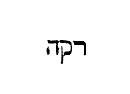
( Ex August .) Quid interest inter reum judicio, et reum concilio, et reum gehennae ignis? Nam hoc postremum gravissimum sonat, et admonet gradus quosdam factos a levioribus ad graviora, donec ad gehennam ignis veniretur: et ideo si levius est, reum esse judicio, quam esse reum concilio, item levius est esse reum concilio, quam reum esse gehennae ignis, oportet levius esse intelligatur irasci sine causa fratri, quam dicere racha, et rursus, levius esse racha, quam dicere fatue. Non enim reatus ipse haberet gradus, nisi gradatim etiam peccata commemorarentur. [Col. 0404C] Racha enim obscurum est, quia nec Graecum est nec Latinum, nonnulli autem de Graeco trahere voluerunt ejus interpretationem, putantes pannosum dici, Graece enim pannus, rachus dicitur. Probabilius autem dicitur vocem esse, non significantem aliquid aliud, nisi indignantis animi motum exprimentem, ut sunt apud grammaticos interjectiones, cum dicitur a dolente, heu , vel ab irascente, hem , quae voces quarumque linguarum sunt propriae, nec in aliam linguam facile transferuntur; quae causa utique coegit tam Graecum interpretem, quam Latinum vocem ipsam ponere, cum quomodo eam interpretaretur, non inveniret. Gradus itaque sunt in istis peccatis, ut primo quisque irascatur, et eum motum retineat corde conceptum. Jam si extorserit vocem [Col. 0404D] indignantis, ipsa commotio non significantem aliquid, sed illum animi motum ipsa eruptione testantem qua feriatur ille cui irascimur, plus est utique quam si surgens ira silentio premeretur. Si vero non solum vox indignantis audiatur, sed etiam verbum quod jam certam ejus vituperationem, in quem profertur, designet et notet, quis dubitet amplius hoc esse, quam si solus indignationis sonus ederetur? Itaque in primo unum est, id est, ira sola, in secundo duo, et ira et vox, quae iram significat, et in voce ipsa certae vituperationis expressio. Vide nunc etiam tres reatus judicii concilii, gehennae ignis. Nam judicio adhuc defensioni datur locus. In concilio autem quanquam et judicium esse [Col. 0405A] soleat, tamen quia interesse aliquid hoc loco fateri cogit ipsa distinctio, videatur ad concilium pertinere sententiae prolatio, quando non jam cum ipso reo agitur, utrum damnandus sit, sed inter se, qui judicant, conferunt, quo supplicio damnari oporteat, quem constat esse damnandum. Gehenna vero ignis, nec damnationem habet dubiam, sicut judicium, nec damnati poenam, sicut concilium, in gehenna vero ignis certa est et damnatio, et poena damnati.
Gehenna nomen compositum est, 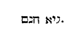
Si ergo offers munus tuum ante altare, et ibi recordatus [Col. 0405B] fueris, quia frater tuus habet aliquid adversum te, relinque ibi munus tuum ante altare , etc. (Ex Hieron.) Non dixit, si tu habes aliquid adversum fratrem tuum, sed si frater tuus habet aliquid adversum te, ut durior reconciliationis tibi imponatur necessitas. Quandiu ergo illum placare non possumus, nescio an consequenter munera nostra offeramus Deo.
Docet utique eum qui in fratrem impacificus est, pacis hostiam juste Domino offerre non posse.
( Ex August .) Si in mentem venerit, quod aliquid habeat adversum nos frater, id est, si nos eum aliquo laesimus, tunc enim ipse habet adversus nos, nam nos habemus adversum illum, si ille nos laesit, ubi non opus est pergere ad reconciliationem. Non [Col. 0405C] enim veniam postulabis ab eo, qui tibi fecit injuriam, sed tantum dimittis, sicut tibi a Domino dimitti cupis, quod ipse commiseris. Pergendum est ergo ad reconciliationem, cum in mentem venerit, quod nos forte fratrem in aliquo laesimus. Pergendum autem non pedibus corporis, sed motibus animi, ut te humili affectu prosternas fratri, ad quem chara cogitatione cucurreris, in conspectu ejus, cui munus oblaturus es. Spiritaliter, templum nostrum interior homo est, altare fides, munus, prophetia, doctrina, oratio, hymnus, psalmus, et si quid tale aliud spiritalium donorum aliquid occurrerit. Ita enim etiam si praesens sit, poteris eum non simulato animo lenire atque in gratiam revocare, veniam postulando, si hoc prius coram Deo [Col. 0405D] feceris, pergens ad eum non pigro motu corporis, sed et celerrimo dilectionis affectu, atque inde veniens, id est, intentionem revocans ad id quod agere coeperas, offeres munus tuum.
«Humanum dico propter infirmitatem carnis vestrae. Sicut enim exhibuistis membra vestra servire immunditiae et iniquitati ad iniquitatem, ita nunc exhibete membra vestra servire justitiae in sanctificationem. Cum enim servi essetis peccati, liberi fuistis justitiae. Quem ergo fructum habuistis tunc in illis, in quibus nunc erubescitis? [Col. 0406A] Nam finis illorum mors est. Nunc vero liberati a peccato, servi autem facti Deo, habetis fructum vestrum in sanctificationem, finem vero vitam aeternam. Stipendia enim peccati mors, gratia autem Dei vita aeterna, in Christo Jesu Domino nostro.»
Humanum dico propter infirmitatem carnis vestrae. Sicut enim exhibuistis membra vestra servire immunditiae et iniquitati ad iniquitatem, ita nunc exhibete membra vestra servire justitiae in sanctificationem . (Ex Orig.) Pudorem quemdam per haec incutit Apostolus auditoribus, ut hoc saltem dependant justitiae et sanctificationi, quod prius immunditiae, iniquitatique detulerunt. Quid ergo tam humanum, hoc est, quid tam leve, quid tam sine onere, et quod [Col. 0406B] nulla prorsus possit carnis infirmitas excusare? multo enim amplius, et multo intentius honoranda justitia est. Sed ego, inquit, humane et communiter ago, eadem postulo, similia requiro: dudum currebant pedes vestri ad daemonum templa, nunc currant ad Ecclesiam Dei, currebant prius ad effundendum, nunc ad liberandum sanguinem currant; protendebantur prius manus, ut aliena diriperent, nunc protendantur, ut propria largiantur. Circumspiciebant prius oculi mulierem ad concupiscendum, nunc circumspiciant pauperes, debiles, egenos ad miserandum. Aures delectabantur auditu vano vel bonorum derogationibus, nunc convertantur ad audiendum verbum Dei, ad explanationem legis et ad capiendam sapientiae disciplinam. Linguaque conviciis, [Col. 0406C] maledictis et turpiloquiis assueta est, convertatur nunc ad benedicendum Dominum, in omni tempore sermonem sanum proferat et honestum, ut det gratiam audientibus.
( Ex Primas.) Humanum dico propter infirmitatem carnis vestrae , hoc est majora quidem exigere a vobis pro divinae servitutis retributione deberem, sed conscendens et temperans infirmitati vestrae, humana et possibilia praedico atque suadeo, ut sicut prompti fuistis ad sectanda noxia atque contraria, ita alacres sitis ad ea, quae utilia et saluti amica sunt peragenda.
Cum enim servi essetis peccati, liberi fuistis justitiae . Cum ergo quis peccato servit, justitiae liber est, hoc est, alienus est a justitia. Hic enim liberum [Col. 0406D] alienum dicit, et recte quidem, nemo enim potest simul et peccato servire et justitiae, ut illud: Nemo potest duobus dominis servire . Illud sane notandum est esse et libertatem culpabilem et laudabilem servitutem. Nam liberum esse justitiae, crimen est. Servum vero esse justitiae, laudabile. Quod autem dicit, servum justitiae fieri, simul intellige, et sapientiae et pietati et pudicitiae, et omnibus simul virtutibus. Sicut e contrario qui peccati servus est, simul et concupiscentiae malae, et irae et furori et impudicitiae et rapinae et omnibus simul vitiis ac sceleribus servit.
Quem ergo fructum habuistis tunc, in quibus nunc erubescitis, nam finis illorum mors est . (Ex Primas.) [Col. 0407A] Ac si diceret, qualem fructum in actione rei illius habuistis, in cujus etiam recordatione verecundia est? in Dei vero cultu hoc ipsum jam fructus est, quod vivitis sanctificati per baptismum.
( Ex Orig .) Fructum et bonorum et malorum esse docet scriptura divina, ut ipse Salvator in Evangeliis dicit: Aut facite arborem bonam, et fructum ejus bonum, aut facite arborem malam, et fructus ejus malos. Si quis igitur convertat animum et propositum ad justitiam, erubescit sine dubio, et ipse se notat de prioribus gestis quae egit, positus sub peccato, quia finis illorum mors est. Sed requiro quae mors? certum est non ista communis. Non enim quis post mortem convertitur ad justitiam, vel pro malis gestis praeteritis erubescit. Quid ergo est? [Col. 0407B] Nunquidnam peccati mortem dicere videtur, quoniam anima quae peccat ipsa morietur? An illud magis potest intelligi, quod istam mortem dicat, qua cum Christo peccato morimur, et vitiis ac sceleribus finem damus, ut post haec dixisse videatur, quia finis illorum mors est?
Nunc vero liberati a peccato, servi autem facti Deo, habetis fructum vestrum in sanctificationem, finem vero vitam aeternam . Fructus fructibus comparat, et peccati quidem fructus, pro quibus nunc, hoc est, posteaquam liberati a peccato et servi facti Deo, erubescunt, pronuntiat morte finiri. Fructus vero justitiae, qui sunt in justificatione, finem dicit accipere vitam aeternam.
Stipendia enim peccati mors . Romanis enim militibus [Col. 0407C] pro labore militiae stipendia appendebantur pecuniae. Ergo stipendium laboris est fructus, ab stipe pendenda nominatur. Antiqui enim appendere pecuniam solebant magis quam adnumerare. Ergo qui peccato militat, stipendium, id est, remunerationem laboris malitiae suae accipiet mortem.
Gratia autem Dei vita aeterna in Christo Jesu Domino nostro . Non dixit similiter stipendia justitiae, quia non erat antequam remuneraret in nobis. Non enim nostro labore quaesita est, sed Dei munere condonata.
«Cum turba multa esset cum Jesu, nec haberent quod manducarent, convocatis discipulis, ait [Col. 0407D] illis: Misereor super turbam, quia ecce jam triduo sustinent me, nec habent quod manducent. Et si dimisero eos jejunos in domum suam, deficient in via, quidam enim ex eis de longe venerunt. Et responderunt ei discipuli sui: Unde istos poterit quis hic saturare panibus in solitudine? Et interrogavit eos: Quot panes habetis? Qui dixerunt, septem. Et praecepit turbae discumbere super terram, et accipiens septem panes, gratias agens, fregit, et dabat discipulis suis, ut apponerent, et proposuerunt turbae. Et habebant pisciculos paucos, et ipsos benedixit, et jussit apponi. Et manducaverunt et saturati sunt, et sustulerunt quod supererat de fragmentis septem sportas. [Col. 0408A] Erant autem qui manducaverant quasi quatuor millia, et dimisit eos.»
Cum multa turba esset cum Jesu, nec haberent quod manducarent, convocatis , etc. (Ex Beda.) In hac lectione consideranda est in uno eodemque redemptore nostro distincta operatio humanitatis scilicet atque divinitatis. Quis enim non videat hoc quod super turba miseretur Dominus, ne vel inedia, vel viae longioris deficiat labore, affectum esse, et compassionem humanae fragilitatis. Quod vero de septem panibus et pisciculis paucis, quatuor millia hominum saturavit, divinae opus esse virtutis. Mystice autem hoc miraculo designatur, quod viam saeculi praesentis aliter incolumes transire nequimus, nisi nos gratia redemptoris nostri alimento sui verbi [Col. 0408B] reficiat. Hoc vero typice inter hanc refectionem et illam quinque panum ac duorum piscium distat, quod ibi littera Veteris Testamenti spirituali gratia plena esse signata est, hic autem Novi veritas ac gratia Testamenti, fidelibus ministranda monstrata est. Sane utraque refectio in monte celebrata est, ut aliorum Evangelistarum narratio declarat, quia utriusque scriptura testamenti recte intellecta, altitudinem nobis coelestium et praeceptorum mandat, et praemiorum, utraque altitudinem Christi, qui est mons domus domini in vertice montium consona voce praedicat. Qui enim aedificatam super se civitatem, sive domum domini, id est, ecclesiam in altum bonorum extollit operum, et cunctis manifestam gentibus exhibet, ipse hanc ab infimis delectationibus [Col. 0408C] abstractam pane coeli reficit, atque ad appetitum supernae suavitatis dato pignore cibi spiritualis accendit.
Misereor super turbam, quia ecce jam triduo sustinent me, nec habent quod manducent . (Ex Gregor.) Turba ergo triduo Dominum propter sanationem infirmorum suorum sustinet, cum electi quique fideque sanctae trinitatis lucidi, Domino pro suis suorumque peccatis, animae videlicet languoribus, perseveranti instantia supplicant. Item turba triduo Dominum sustinet, quando multitudo fidelium peccata, quae perpetravit, per poenitentiam declinans, ad Dominum se in opere, in locutione, atque in cogitatione convertit.
Et si dimisero eos jejunos in domum suam, deficient [Col. 0408D] in via . Dimittere jejunos in domum suam Dominus non vult, ne deficiant in via, quia videlicet conversi peccatores in praesentis vitae via deficiunt, si in sua conscientia sine doctrinae sanctae pabulo dimittantur. Ne ergo lassentur hujus peregrinationis itinere, pascendi sunt sacra admonitione.
Quidam enim ex eis de longe venerunt . Est autem qui nihil fraudis et nihil carnalis corruptionis expertus, ad omnipotentis Dei servitium festinavit, iste de longinquo non venit, quia per incorruptionem et innocentiam proximus fuit. Alius nulla impudicitia, nullis flagitiis inquinatus, solum autem conjugium expertus, ad ministerium spirituale conversus est. Neque iste venit e longinquo, quia usus [Col. 0409A] conjunctione concessa, per illicita non erravit. Alii vero post carnis flagitia, alii post falsa testimonia, alii post facta furta, alii post illatas violentias, alii post perpetrata homicidia ad poenitentiam redeunt, atque ad omnipotentis Dei servitium convertuntur. Hi videlicet ad Dominum de longinquo veniunt. Quanto enim quisque plus in pravo opere erravit, tanto ab omnipotente Domino longius recessit. Dentur igitur alimenta eis, etiam qui de longinquo veniunt, quia conversis peccatoribus, doctrinae sanctae cibi praebendi sunt, ut in Deum vires reparent, quas in flagitiis amiserunt. Item Judaei quicunque in Christo crediderunt, de prope ad illum venerunt, quia legis et prophetarum erant litteris edocti de illo. Credentes vero ex gentibus de longe utique [Col. 0409B] venerunt ad Christum, quia nullis paginarum sanctarum monimentis de ejus erant fide praemoniti.
Et responderunt ei discipuli sui: Unde istos poterit quis hic saturare panibus in solitudine? Et interrogavit eos: Quot panes habetis? Qui dixerunt: Septem . Bene septem panes in ministerio Novi Testamenti ponuntur, in quo septiformis gratia spiritus sancti plenius fidelibus cunctis et credenda revelatur et credita datur. Neque hordeacei fuisse produntur, sicut illi quinque, de quibus quinque sunt hominum millia saturata, ne iterum sicut in lege vitale animae alimentum corporalibus sacramentis obtegeretur, hordei etenim medulla tenacissima palea tegitur.
Et praecepit , etc. Supra in refectione quinque panum turba supra fenum viride discumbebat. Nunc ubi septem panibus reficienda est, supra terram discumbere praecipitur, quia per scripturam legis carnis desideria calcare et comprimere jubemur. Omnis enim caro fenum, et omnis gloria ejus tanquam flos feni (Isaiae XL) . In Novo autem Testamento ipsam quoque terram ac facultates temporales derelinquere praecipimur, vel certe quia mons, in quo turba dominicis panibus reficiebatur, altitudinem, ut supra diximus, redemptoris nostri significat, ibi super fenum, hic super terram reficitur. Ibi enim celsitudo Christi propter carnales homines et Hierusalem terrenam carnali spe et desiderio tegitur. Hic autem remota omni cupiditate carnali, convivas Novi Testamenti, [Col. 0409D] spei permanentis firmamentum, tanquam ipsius montis soliditas nullo feno interposito continebat.
Et accipiens septem panes, gratias agens, fregit et dabat discipulis suis, ut apponerent, et proposuerunt turbae . Dominus accipiens panes, dabat discipulis, ut ipsi acceptos turbae apponerent, quia spiritualis dona scientiae tribuens apostolis, per eorum ministerium voluit ecclesiae suae per orbem vitae cibaria distribui. Quod autem fregit panes, quos discipulis daret, apertionem designat sacramentorum, quibus ad perpetuam salutem nutriendus erat mundus. Cum enim ait ipse Dominus: Et nemo novit filium nisi pater, neque patrem quis novit, nisi filius et cui [Col. 0410A] voluerit filius revelare (Matth. X) , quid nisi panem vitae nobis per se aperiendum monstravit? Ad cujus interiora cernenda, per nosipsos penetrare nequivimus. Cui contra Propheta miserabilem quorumdam famem deplorans ait: Parvuli petierunt panem, nec erat qui frangeret eis . Quod est aliis verbis dicere: Indocti quaesierunt pabulum verbi Dei, nec erat, magistris deficientibus, qui eis scripturae arcana patefaceret. Acceptis autem ad frangendum panibus, Dominus gratias agit, ut et ipse quantum de salute generis humani congaudeat ostendat, et nos ad agendas semper Deo gratias informet, cum vel terreno pane carnem vel animam coelesti superna gratia largiente reficimus.
Et habebant pisciculos paucos, et ipsos benedixit, [Col. 0410B] et jussit apponi . Si in panibus septem Scriptura Novi Testamenti designatur, in cujus lectione per gratiam sancti Spiritus internas mentium epulas invenimus, quid in pisciculis, quos benedicens pariter Dominus, turbae jussit apponi? Sanctos accipimus illius temporis, quo eadem est condita Scriptura, vel quorum ipsa Scriptura fidem, vitam et passiones continet, qui de turbulentis hujus saeculi fluctibus erepti, ac divina benedictione consecrati, refectionem nobis internam, ne in hujus mundi transeuntis excursu deficiamus, exempla suae vel vitae vel mortis praebuere.
Et manducaverunt et saturati sunt . Manducant de panibus Domini ac piscibus, et saturantur, qui audientes verba Dei, et exempla intuentes, ad profectum [Col. 0410C] vitae correctioris per haec excitari atque assurgere festinant, quibus aperte congruit illud Psalmistae: Edent pauperes et saturabuntur et laudabunt Deum , etc. (Psal. XXI) .
Et sustulerunt quod supererat de fragmentis septem sportas . Quod turbis saturatis supererat apostoli sustollunt et septem sportas implent, quia sunt altiora perfectionis praecepta, vel potius exhortamenta et consilia, quae generalis fidelium multitudo nequit servando et implendo attingere, quorum exsecutio illos proprie respicit, qui majore sancti spiritus gratia plenius generalem populi Dei conversationem mentis atque operis sublimitate transcendunt. Qualibus dicitur: Si vis perfectus esse, vade, vende omnia quae habes , etc. (Matth. XIX) .
Unde bene sportae, quibus dominicorum sunt condita fragmenta ciborum, propter septiformem spiritus gratiam septem fuisse memorantur. Nam quia sportae junco et palmarum foliis solent contexi, merito in sanctorum significatione ponuntur. Juncus quippe super aquas nasci consuevit. Palma vero victricem ornat manum, et junceis vasis recte comparantur electi, cum radicem cordis, ne forte ab amore aeternitatis arescat, in ipso vitae fonte collocant. Assimulantur et eis quae de palmarum sunt foliis contexta, cum inde festivam aeternae retributionis memoriam puro corde retinent; et bene turba quamvis reliquias dominici prandii non caperet, manducasse tamen et saturata esse narratur, [Col. 0411A] quia sunt nonnulli, qui etsi omnia sua relinquere nequeunt, tamen esurientes et sitientes justitiam, saturantur, cum audiendo mandata legis Dei ad vitam perveniunt aeternam.
Erant autem qui manducaverunt quasi quatuor millia, et dimisit eos . Bene quatuor millia, ut ipso etiam numero docerent evangelicis se pastos esse cibariis.
«Debitores sumus non carni, ut secundum carnem vivamus. Si enim secundum carnem vixeritis, moriemini: si autem spiritu facta carnis mortificaveritis, vivetis. Quicunque enim spiritu [Col. 0411B] Dei aguntur, hi filii sunt Dei. Non enim accepistis spiritum servitutis iterum in timore, sed accepistis spiritum adoptionis filiorum, in quo clamamus: Abba pater. Ipse enim spiritus testimonium reddit spiritui nostro, quod sumus filii Dei. Si autem filii Dei et haeredes, haeredes quidem Dei, cohaeredes autem Christi.»
Debitores sumus non carni, ut secundum carnem vivamus . (Ex Orig.) Debitores sumus eorum, sine dubio, quae a spiritu consecuti sumus, carni autem, inquit, non sumus debitores. Neque enim propterea nos fecit Deus ad imaginem suam, ut carnis servitio essemus obnoxii, sed potius ut creatori suo anima deserviens, ipsa servitio ac ministerio carnis uteretur. ( Ex Primas .) Hoc totum agit, ut ostendat eis [Col. 0411C] legem non esse necessariam, quae carnalibus data est.
Si enim secundum carnem vixeritis, moriemini . (Ex Orig.) Quid est secundum carnem vivere , nisi carnis desideria implere? Nam et alibi dicit: Et carnis curam ne feceritis in concupiscentiis . Non utique negans curam carnis habendam in necessariis, sed in concupiscentiis. Ita ergo et hic: Si enim , inquit, secundum carnem vixeritis, moriemini . Significat autem mortem poenae aeternae. Hoc enim dicit, ostendere volens, maxima in partem passionum desideria humani corporis esse.
Si autem spiritu facta carnis mortificaveritis, vivetis . (Ex Orig.) Qui ergo secundum spiritum agens, mortificat actus carnis, vivet propter inhabitantem [Col. 0411D] in se spiritum vitae. Mortificat autem quis actus carnis hoc modo, fructus est spiritus charitas, odium carnis est actus, odium ergo per charitatem mortificatur et exstinguitur. Gaudium similiter fructus est spiritus, tristitia vero hujus saeculi, quae mortem operatur, carnis est actus. Haec ergo exstinguitur si sit in nobis gaudium spiritus, pax fructus est spiritus. Dissensio et discordia carnis est. Sed certum est discordiam mortificari per pacem. Sic et in patientia spiritus patientia carnis exstinguitur, et bonitas malitiam perimit, et mansuetudo ferociam et continentia intemperantiam, et castitas impudicitiam necat. Talique ordine qui per spiritum actus carnis vivificaverit vivet.
Quicunque enim spiritu Dei aguntur, hi filii Dei sunt . Ac si diceret, quicunque merentur spiritu sancto gubernari, vel secundum doctrinam spiritus sancti vivere, hi sunt qui spiritu Dei aguntur, id est gubernantur vel moventur. Sicut enim multi filii Dei, ut Scriptura dicit: Ego dixi, Dii estis, et filii excelsi omnes (Psal. LXXXII) , unus tamen est natura filius et unigenitus de patre, per quem omnes filii appellantur. Ita et spiritus multi quidem sunt, sed unus est, qui vere ex ipso Deo procedit, et caeteris omnibus vocabulis ac sanctificationis suae gratiam donat.
Non enim accepistis spiritum servitutis iterum in timore . (Ex Primas.) Judaei acceperunt spiritum, qui nullos ad servitutem cogeret per timorem. Timere [Col. 0412B] enim servorum est, diligere filiorum. Sicut scriptum est: Servus dominum suum timebit, et filius diliget patrem suum . Illi ergo qui operari charitatis voluntate nolebant, timoris necessitate cogantur, nos vero omnia voluntarie operemur, ut filios nos esse probemur.
( Ex August .) Qui timore poenae, non amore justitiae opus legis facit, per hoc legis, quam velit non esse, non est amicus, sed potius inimicus; nec mundatur opere, qui immundus est voluntate.
Sed accepistis Spiritum adoptionis filiorum in quo clamamus Abba pater . Qui vocat patrem, filium se esse profitetur, debet ergo patri in moribus filius similis inveniri, ne pro nomine quoque in vacuum usurpato majori poenae subjaceat, item vos Romani [Col. 0412C] in adoptionem filiorum vocati estis, non sicut Judaei, qui subditi legis imperio, in servitute tenebantur. Quod vero addidit: Abba pater , patriae linguae vocabulum, idipsum iteravit, velut si dixisset: pater pater, idem namque Abba quod et pater significat, sed Abba Hebraeum, pater Graecum est et Latinum. Ut ergo utrumque populum in eum crediturum, ab utroque eum invocandum esse doceret, utramque linguam Apostolus posuit, ut Abba illi, qui de Israelitico populo, nos pater clamaremus, qui de gentibus ad fidem Christi venimus.
Ipse spiritus testimonium reddit spiritui nostro , etc. Ipse ergo spiritus adoptionis, per quem in filium quis adoptatur, reddit testimonium et confirmat spiritum nostrum, quia sumus filii Dei. Posteaquam [Col. 0412D] a spiritu servitutis in adoptionis spiritum venerimus, cum jam nihil timoris inest, nihil propter metum poenae gerimus, sed propter amorem Patris cuncta perficimus.
Si autem filii et haeredes, haeredes quidem Dei , etc. Post haec jam ex consequentibus syllogismum nectit Apostolus et dicit: Si spiritum adoptionis accepimus, ergo filii sumus. Quod si filii sumus, sine dubio et haeredes, mercedem namque servus exspectat, haereditatem filius sperat. Et rursus alius addidit conclusionis augmentum: Haeredes quidem , ait, Dei, cohaeredes autem Christi . Haeres quis efficitur Dei, cum quae Dei sunt meretur accipere, id est, incorruptionis, et immortalitatis gloriam, thesauros [Col. 0413A] sapientiae et scientiae reconditos. Cohaeredes autem Christi, cum transformaverit corpus humilitatis nostrae, conforme corpori claritatis suae, sed et cum illud adipisci meruit, quod dixit ipse Salvator: Pater, volo ut ubi ego sum, et isti sint mecum (Joan. XIII) . Est praeterea et illa dignitas cohaeredum Christi, quod pater quidem omne judicium dedit filio, sed et filius dicit ad cohaeredes suos: Sedebitis et vos super duodecim thronos, judicantes duodecim tribus Israel , et hoc modo haeredes suos Christus non solum in partes haereditatis, sed etiam in consortium potestatis adducit.
«Attendite a falsis prophetis, qui veniunt ad vos in vestimentis ovium, intrinsecus autem sunt lupi [Col. 0413B] rapaces. A fructibus eorum cognoscetis eos. Nunquid colligunt de spinis uvas, aut de tribulis ficus? Sic omnis arbor bona bonos fructus facit. Mala autem arbor fructus malos facit. Non potest arbor bona fructus males facere, neque arbor mala fructus bonos facere. Omnis arbor quae non facit fructum bonum, excidetur et in ignem mittetur. Igitur ex fructibus eorum cognoscetis eos. Non omnis qui dicit mihi: Domine, Domine, intrabit in regnum coelorum, sed qui facit voluntatem patris mei, qui in coelis est, ipse intrabit in regnum coelorum.»
Attendite a falsis prophetis, qui veniunt ad vos in vestimentis ovium , etc. (Ex Hieron.) Et de omnibus quidem intelligi potest, qui aliud habitu ac sermone [Col. 0413C] promittunt, aliud opere demonstrant, sed specialiter de haereticis intelligendum, quia videntur continentia, castitate, jejunio, quasi quadam pietatis se veste circumdari, intrinsecus vero, habentes animum venenatum, simpliciora fratrum corda decipiunt. Ex fructibus ergo animae, quibus innocentiam ad ruinam trahunt, lupis rapacibus comparantur.
A fructibus eorum cognoscetis . (Ex August.) Dixit enim Dominus ad quosdam, qui ovium vestitu se induunt, intus sunt lupi rapaces, et ne forte fragilitas humana dignoscere non posset lupum sub ovina pelle, ait: Ex fructibus eorum cognoscetis eos . Quaerimus fructus charitatis, invenimus spinas dissensionis: Ex fructibus eorum cognoscetis eos .
( Ex Beda .) Qui sunt fructus, quibus boni malive dignoscuntur? Apostolus ostendit, dicens: Manifesta autem sunt opera carnis, quae sunt fornicatio, immunditia, luxuria, idolorum servitus, veneficia, inimicitiae, contentiones, aemulationes, irae, rixae, dissensiones, haereses, invidiae, homicidia, ebrietates, comessationes, et his similia. Fructus enim Spiritus est charitas, gaudium, longanimitas, bonitas, benignitas, mansuetudo, fides, modestia, continentia, castitas , et his similia. In his etenim fructibus qualis sit unusquisque cognoscitur homo.
Nunquid colligunt de spinis uvas aut de tribulis ficus ? Spinas reor et tribulos saeculi curas, et punctiones esse vitiorum, de quibus peccanti homini [Col. 0414A] dictum est: Terra tua spinas et tribulos germinabit tibi. Ficus vero et uva dulcedinem conversationis novae, quam Dominus in nobis esurit, et fervorem dilectionis, qui laetificat cor hominis. Non autem de spinis uvas neque de tribulis ficus colligitur, quia mensa adhuc veteris hominis consuetudine depressa simulare potest, sed fructus novi hominis ferre non potest.
Sic omnis arbor bona fructus bonos facit, mala autem arbor fructus malos facit. Non potest arbor bona fructus malos facere, neque arbor mala fructus bonos facere . (Ex August.) Arbor est ipsa anima, id est, ipse homo, fructus vero, opera hominis. Non ergo potest malus homo bona operari, nec bonus mala. Ergo si vult bona operari, bonus primo fiat. [Col. 0414B] Prius enim mutandus homo, ut opera mutentur; si enim manet homo in eo quod malus est, et bona opera habere non potest, si manet in eo quod bonus est, mala opera habere non potest. Sit ergo unusquisque arbor bona; non se arbitretur habere fructus bonos; si manet arbor mala, non erit fructus bonus, nisi arboris bonae; mutet cor, et mutabitur opus. Extirpa cupiditatem, planta charitatem. Sicut enim est radix omnium malorum cupiditas, sic et radix omnium bonorum charitas.
Omnis arbor quae non facit fructum bonum, excidetur et in ignem mittetur . (Ex Beda.) Quia unusquisque perversus paratam citius gehennae concremationem invenit, qui hic boni operis fructum facere contemnit.
Non omnis qui dicit mihi: Domine, Domine, intrabit in regnum coelorum, sed qui facit voluntatem patris mei qui in coelis est, ipse intrabit , etc. Sicut supra dixerat eos, qui haberent vestem vitae bonae, non recipiendos propter dogmatum nequitiam, ita nunc e contrario asserit, ne his quidem accommodandam fidem, qui cum polleant integritate fidei, turpiter vivant, et doctrinae integritatem malis operibus destruant, utrumque enim Dei servis necessarium est, ut et opus sermone, et sermo operibus comprobetur. Huic sententiae potest illud videri contrarium: Nemo potest dicere Dominus Jesus nisi in Spiritu sancto, sed modus est Scripturarum dicta pro factis accipere, ut statim in consequentibus approbatur, refutari eos qui jactant sine operibus [Col. 0414D] scientiam Domini, et audiunt a Salvatore: Recedite a me, operarii iniquitatis, nescio vos (Matth. VII) , et Apostolus in hunc sensum loquitur: Confitentur se Deum scire, factis autem negant .
«Non simus concupiscentes malorum, sicut et illi concupierunt, neque idololatrae efficiamini, sicut quidam ex ipsis, quemadmodum scriptum est: Sedit populus manducare et bibere et surrexerunt ludere. Neque fornicemur sicut quidam ex ipsis fornicati sunt, et ceciderunt una die viginti tria millia. Neque tentemus Christum, sicut [Col. 0415A] quidam eorum tentaverunt, et a serpentibus perierunt. Neque murmuraveritis sicut quidam eorum murmuraverunt, et perierunt ab exterminatore. Haec autem omnia in figura contingebant illis. Scripta sunt autem ad correptionem nostram, in quos fines saeculorum devenerunt. Itaque qui se existimat stare, videat ne cadat. Tentatio vos non apprehendat nisi humana. Fidelis autem Deus est, qui non patietur vos tentari supra id quod potestis, sed faciet cum tentatione etiam proventum, ut possitis sustinere.»
Non simus concupiscentes malorum, sicut et illi concupierunt . (Ex Isidoro.) In tertia decima mansione, quae vocatur sepulcra concupiscentiae, populus fastidiens coelestem panem, carnes Aegyptias [Col. 0415B] desideravit, multosque subito voravit incendium e quibus edocemur, ut qui conversatione relinquimus saeculum, et Aegyptias ollas, id est, carnalium desideriorum fervores contempsimus, non debere murmurare contra coelestem panem, nec virulentias Aegyptiorum, qui sunt magnarum carnium, sed simplicem cibum mannae, id est puram coelestem vitam quaerere; alioquin si post perceptam angelicam mannam quae est in coelis vita sive doctrina, rursus carnes Aegyptias, quae sunt carnales hujus saeculi voluptates et concupiscentiae pristinorum morum, voluerimus appetere, vorabimus nauseam, et statim Domini igne torquebimur. Desiderium quoque nostrum vertitur in tumulos, ut simus sepulcra dealbata, quae foris apparent hominibus speciosa, intus autem plena sunt ossibus mortuorum (Matth. XXIII) .
Neque idololatrae efficiamini, sicut quidam ex ipsis, quemadmodum , etc. Illos tangit qui in idolo exsultabantur, putantes se immunes a crimine, et comparat eis qui sibi in eremo vitulum fecerunt, et adoraverunt ludentes, sed multi ex eis interempti perierunt (Exod. XXXII, Num. XXI) , ut intelligatur in illorum hominum interemptione significari vitiorum necem. In talia quippe vitia saevire nos jubet Apostolus, cum dicit: Mortificate membra vestra super terram, fornicationem, immunditiam, luxuriam, concupiscentiam malam, et avaritiam, quae est idolorum servitus (Col. III) .
Neque fornicemur, sicut quidam ex ipsis fornicati [Col. 0415D] sunt , etc. Consilium quippe dederat Balaam regi Balaac, ut mulieres in meritorio poneret, et ante januas eorum aras, ut venientes filii Israel, prius sacrificarent idolis, et sic ingrederentur ad mulieres, unde est fornicatus Israel cum filiabus Madian. Sed quid est quod iste Balaam populum Dei posse decipi certa ratione colligit, dans consilium, ut ex illa parte, qua infirmari noverat filios Israel, perniciosius eis laquei tenderentur, non dubitans eos oblata copia feminarum, fornicationis ruina protinus collapsuros quia concupiscibiles animae eorum partes sciebat esse corruptas? Ita ergo unumquemque nostrum nequitiae versuta malignitate, in figura Balaam pertentant, illis praecipue affectibus animae [Col. 0416A] insidiosos laqueos perstruentes, quibus nos senserint aegrotare, ut verbi gratia, cum viderint rationabiles animae nostrae partes esse vitiatas illo nos ordine decipere moliantur. Sed Phinees sacerdos zelatus, ut Dei furorem placaret, Zambrim et scortum Madianitida, in pugione transfixit, significans per crucem Domini, non solum idololatriam, sed etiam omnem carnis affectum, vel concupiscentiam perimi saeculi, et tunc placari Deum, dum carnis exstinguitur vitium.
Neque tentemus Christum, sicut quidam eorum , etc. Hoc est, nec in tribulationis pressura tentetis eum, qui vos tribulationibus probat. Narrat quippe liber Numerorum quia percussus in eremo populus Israel itineris longi ac laboris onere murmuravit, [Col. 0416B] ideo Dominus miserit in illum ignitos serpentes. Plagae igitur serpentium ignitorum venena sunt vitiorum, quae animam quam tangunt spirituali morte perimunt, et bene murmurans contra Dominum populus serpentium morsibus sternebatur, ut ex ordine flagelli exterioris agnosceret, quantum intus perniciem murmurando pateretur. Recte etenim per serpentes peccata, quae animam simul et corpus ad interitum trahunt, exprimuntur.
Neque murmuraveritis, sicut quidum eorum murmuraverunt , etc. Quod autem dicit perierunt ab exterminatore, aut ab angelo intelligitur percutienti, aut igni devorante.
Haec autem omnia in figura contingebant illis, scripta sunt autem ad correptionem nostram . (Ex Primas.) [Col. 0416C] Omnia quae eis contigerunt secundum facta sua receperunt, sed tamen ideo scripta sunt, ne nos putemus impune peccare. Si enim adhuc parvulis aut rudibus non pepercit, quanto magis nobis, qui legis perfectionem accipimus, non parcet, si talia fecerimus!
( Ex Hieron .) In illa scriptura quae Veteris Testamenti dicitur Novum Testamentum absconditum latet, tanquam in fece corporalium sacramentorum. Circumcisio carnis intelligitur circumcisio cordis. Templum intelligitur corpus Domini. Terra repromissionis intelligitur regnum coelorum. Est typus vel figura praesentium et praeteritorum, et futurarum rerum ignotarum. Praeteritorum typus est catecumenorum [Col. 0416D] humilitas, typum enim gerunt Adae de paradiso expulso, et ex conscientia delictorum divinum metuentis aspectum, propter quod et per publicum capitibus tectis incedunt. Praesentium typus est vestis Aaron, quae duodecim tribuum nomina lapidibus insignita gestabat, ostendens se pro omnibus quodammodo populis supplicare. Futurorum typus est in duabus filiis Isaac, in quibus duo Testamenta monstrata sunt.
In quos fines saeculorum devenerunt . Id est, in quos tota justitiae perfectio cadit, sicut scriptum est: Finis enim legis, Christus ad justitiam (Rom. X) .
Itaque qui se existimat stare, videat ne cadat . (Ex Primas.) Hoc est, ne cadat in idololatriam, vel scandalum [Col. 0417A] fratrum, propter hoc ipsum quod stare gloriatur, cadit enim dum superbit.
Tentatio vos non apprehendat, nisi humana . Humana tentatio intelligi potest civilis et, ut dictum est, tolerabilis afflictio. Sicut in alio loco dicit: Humanum dico propter infirmitatem carnis vestrae (Rom. IV) , id est, quod facile et suscipi et impleri possit cum bona voluntate. Quis vel sibi vel aliis consulit, si fallatur in aliquo per ignorantiam temporalium, quia et hoc temporaliter agit, et modum agendi non tenet quem debebat; humana tentatio, sive irasci est humanum, iram perficere diabolicum?
Fidelis autem Deus est, qui non patitur vos tentari super id quod potestis . (Ex August.) Fidelis qui [Col. 0417B] se pollicitus est sui nominis causa tribulationem sustinentibus adfuturum, ut illud: Multae tribulationes istorum, et de his omnibus liberavit eos Dominus (Psal. XXXIII) . Ipse vos faciat stare firmiter, et virtutem tribuet tolerandi, qui vos docuit rogare dicens, Ne patiaris nos induci in tentationem (Matth. VI) .
Sed faciet cum tentatione etiam proventum ut possitis sustinere . Id est, non ampliorem vobis tribulationem venire patietur, quam sustinere possitis, sed faciet proventum, id est, illud vobis faciet provenire, quod possitis sustinere, aut de ipsa tribulatione lucrum animae acquirere.
«Homo quidam erat dives, qui habebat villicum, [Col. 0417C] et hic diffamatus est apud illum, quasi dissipasset bona ipsius. Et vocavit illum et ait illi: Quid hoc audio de te, redde rationem villicationis tuae, jam enim non poteris villicare. Ait autem villicus intra se. Quid faciam? quia dominus meus aufert a me villicationem: fodere non valeo, mendicare erubesco. Scio quid faciam, ut cum amotus fuero a villicatione recipiant me in domos suas. Convocatis itaque singulis debitoribus domini sui dicebat primo: Quantum debes domino meo? At ille dixit: Centum cados olei. Dixitque illi: Accipe cautionem tuam, et sede cito, scribe quinquaginta. Deinde alio dixit: Tu vero quantum debes? Qui ait: Centum coros tritici. Ait illi: Accipe litteras tuas et scribe octoginta. Et [Col. 0417D] laudavit dominus villicum iniquitatis, quia prudenter fecisset, quia filii hujus saeculi prudentiores filiis lucis in generatione sua sunt. Et ego dico vobis: Facite vobis amicos de mammona iniquitatis, ut cum defeceritis, recipiant vos in aeterna tabernacula.»
Homo quidam erat dives, qui habebat villicum et hic diffamatus est apud illum, quasi dissipasset bona ipsius, et vocavit illum, et ait illi: Quid hoc audio de te? redde rationem villicationis tuae, jam enim non poteris villicare . (Ex August.) In villico hoc, quem dominus ejiciebat de villicatu, et laudavit eum, quod in futurum sibi prospexerit, non omnia debemus ad imitandum sumere. Non enim aut domino nostro [Col. 0418A] facienda est in aliquo fraus, ut de ipsa fraude eleemosynas faciamus, aut eos, a quibus recipi volumus in tabernacula aeterna, tanquam debitores Dei et Domini nostri fas est intelligi, cum justi et sancti significentur hoc loco, qui eos introducunt in tabernacula aeterna, qui necessitatibus suis terrena bona communicaverint, sed etiam e contrario dicuntur istae similitudines, ut intelligamus, si laudari potuit ille a domino, cui fraudem faciebat, quanto amplius placeant Domino Deo qui secundum ejus praeceptum illa opera faciunt. Villici sane vocabulo discimus eos qui pecunias habent, non jam domui suae, sed alienae potius rei dispensatores esse putandos, qui si juxta hujus servi exemplum sedulo finiendae villicationis ac rationis reddendae [Col. 0418B] tempus praeviderint, facile terrenorum delectatione simul et dilectione nudati, plus sibi de amicis conquirendis in futuro quam divitiis in praesenti colligendis prospicere curabunt.
Ait autem villicus intra se: Quid faciam? quia Dominus meus aufert a me villicationem: fodere non valeo . Ablata quippe villicatione, fodere non valemus, quia finita hac vita in qua tum licet operari, nequaquam ultra bene conversationis fructum ligone devotae compunctionis licet inquirere.
Mendicare erubesco , etc. Mendicare confusionis est, illo scilicet pessimo genere mendicandi, quo virgines illae fatuae mendicasse referuntur, quae ingruente tempore nuptiarum, oleo virtutum deficiente, sapientibus dixerunt: Date nobis de oleo vestro, quia [Col. 0418C] lampades nostrae exstinguntur (Matth. XXV) , et quod Salomon ait: Propter frigus piger arare noluit, mendicabit ergo aestate, et non dabitur ei .
Convocatis itaque singulis debitoribus domini sui, dicebat primo: Quantum debes domino meo? at ille dixit: Centum cados olei; dixitque illi: Accipe cautionem tuam, et sede cito, scribe quinquaginta. Deinde alio dixit: Tu vero quantum debes? qui ait, centum coros tritici; ait illi: Accipe litteras tuas, scribe octoginta . Cadus Graece amphora est, continens urnas tres. Corus vero modios triginta complectitur. Quod autem de centum cadis olei, quinquaginta scribi fecit a debitore, et de centum coris tritici octoginta, ad nihil aliud valere arbitror nisi ut ea quae similiter in sacerdotes atque in Levitas Judaeus [Col. 0418D] quisque operatur, in Christi ecclesia abundet justitia ejus super Scribarum et Pharisaeorum, ut cum illis decimas darent, isti dimidias dent, sicut non de fructibus, sed de ipsis suis bonis fecit Zachaeus. Aut certe duplices decimas, aut duas decimas dando superet impendia Judaeorum. Nisi forte quis simpliciter accipiendum putet, quod omnis qui indigentiam cujuslibet pauperis sanctorum, vel ex dimidia vel certe ex quinta parte, quantum viginti vel quinquaginta ad centum sunt, alleviaverit, certa suae misericordiae sit mercede donandus.
Et laudavit dominus villicum iniquitatis, quia prudenter fecisset, quia filii hujus saeculi prudentiores filiis lucis in generatione sua sunt . Audiant sapientes [Col. 0419A] hujus saeculi, ut stultam sapientiam deserere, et sapientem Dei stultitiam queant discere, quanti eorum sapientia divina aequitas aestimaverit, quos non vere prudentes, sed in generatione sua prudentes esse commemorat. Juxta hoc quod alibi dicitur: Vae qui sapientes estis in oculis vestris, et coram vobismetipsis prudentes . Nec non et amatores aeternae vitae filios lucis appellando, non aliud eos qui sapientes sunt, ut faciant mala, bene autem facere nescierunt, quam filios arguit esse tenebrarum. Filii autem lucis et filii hujus saeculi vocantur, quomodo filii regni et filii perditionis, cujus enim agit quisque opera, ejus cognominatur et filius.
Et ego vobis dico, facite vobis amicos de mammona iniquitatis, ut cum defeceritis, recipiant vos in aeterna tabernacula . Mammona iniquitatis, ab hoc appellat [Col. 0419B] istam pecuniam, quam possidemus ad tempus, quia mammona divitiae interpretantur. Nec sunt istae divitiae nisi iniquis, qui in eis constituunt spem atque copiam beatitudinis suae. A justis vero cum haec possidentur, est quidem ista pecunia, sed non sunt illis divitiae nisi coelestes et spirituales, quibus indigentiam suam spiritualiter supplentes, exclusa egestate miseriae, beatitudinis copia ditabuntur. Si autem hi qui praebent eleemosynam de iniquo mammonae faciunt sibi amicos, a quibus in aeterna tabernacula recipiantur, quanto magis hi, qui spirituales largiuntur epulas, qui dant cibaria conservis in tempore suo, certissima debent spe summae retributionis erigi.
«Scitis quoniam cum gentes essetis ad simulacra muta prout ducebamini euntes. Ideo notum vobis facio, quod nemo in spiritu Dei loquens, dicit anathema Jesum. Et nemo potest dicere Dominus Jesus, nisi in spiritu sancto. Divisiones vero gratiarum sunt, idem autem spiritus, et divisiones ministrationum sunt, idem autem Dominus et divisiones operationum sunt, idem vero Deus, qui operatur omnia in omnibus. Unicuique autem datur manifestatio spiritus ad utilitatem. Alii quidem per spiritum datur sermo sapientiae, alii autem sermo scientiae secundum eumdem spiritum, [Col. 0419D] alteri fides in eodem spiritu, alii gratia sanitatum in uno spiritu, alii operatio virtutum, alii prophetia, alii discretio spirituum, alii genera linguarum, alii interpretatio sermonum. Haec autem omnia operatur unus atque idem spiritus, dividens singulis prout vult.»
Scitis quoniam cum gentes essetis , etc. Hic sensus dicentis hoc parum verbis videtur aperire: cum gentes essetis a magis vel ab aruspicibus idolorum obedientiam praestabatis, qui vos ad simulacra muta et mortua perducebant. Nunc vero, quia religione suscepta, capacioris sensu esse debetis, libentius acquiescite saluti, et promptius obedite veritati, et quod in notitiam vestram depono, attenta mente [Col. 0420A] percipite. ( Ex Orig .) Prout ducebamini, a quo vel a quibus? a spiritibus nempe malignis ducebamini ad opera peccatorum.
Ideo notum vobis facio, quod nemo in spiritu Dei loquens, dicit , etc. Qui anathematizat, id est, qui cum quadam detestatione abnegat Dominum Jesum, non habet spiritum sanctum, et qui credit in Dominum Jesum, spiritum sanctum habet, et quia legimus, Qui filium non habet nec patrem habet, agnoscere ex hoc testimonio possumus, quod qui Christum non credit, nec spiritum sanctum habere credendus est, sicut legimus ad Romanos: Si quis autem spiritum Christi non habet, hic non est ejus (Rom. VIII) . Quomodo ergo operarios iniquitatis Dominus non cognoscit, etiam si virtutes sint operati, ita et Deus [Col. 0420B] malis operibus denegatur.
Et nemo potest dicere Dominus Jesus, nisi in spiritu sancto . Hoc est, sine causa fatetur aliquis Dominum Jesum, qui non integre credit in spiritum sanctum, vel sine causa eum verbis confitetur, qui factis negat. Docet ad Corinthios, nisi in spiritu sancto, id est, in bonis operibus conversantes Dominum Jesum dicant, aliter eis prodesse non posse.
Divisiones gratiarum sunt , etc. Hoc est, non solum dona linguarum, sed diversorum charismatum genera dispensantur a Domino; hic vult ostendere gratias spiritus sancti divisas esse, non ipsum.
Et divisiones ministrationum sunt , etc. Quibus ecclesiastica ministeria distribuuntur et officia, quae ministeria [Col. 0420C] in sequentibus, spiritu sancto, id est, Deo disponente, ordinata commemorat dicens: Quosdam quidem posuit in Ecclesiam primum apostolos, deinde prophetas, etc. Dicendo enim, idem autem spiritus, idem vero Deus, ostendit se omnino de spiritus sancti divinitate disserere.
Et divisiones operationum sunt . Id est quibus diversae virtutes operabantur, hoc est dicere, idem spiritus sanctus qui operatur omnia haec in omnibus, id est fidelibus atque credentibus.
Unicuique datur manifestatio , etc. Manifestatio spiritus, id est, ut manifestetur illum spiritum sanctum accepisse ad utilitatem salutemque multorum. Non enim pro sua tantum, sed pro fidelium causa gratiarum muneribus locupletantur. Sive ad utilitatem [Col. 0420D] incredulorum, ut credant, et ut credentes firmentur. Sive manifestatio spiritus, eo quod per doctrinam spiritalem unicuique manifestam faciat conscientiam suam, sicut in consequentibus dicit, quia per propheticam castigationem occulta cordis ejus manifesta fiunt. Vel quod spiritu illuminatus sensus hominum spirituali discretione cognoscat.
Alii quidem per spiritum sanctum datur sermo sapientiae . Hoc est, ut sapienter et apte, et rationabiliter possit disserere et docere, quod gratiae inspiratione percepit.
Alii quidem sermo scientiae . Scientia est, aut aperire mysteria, aut scire, aut narrare praeterita, aut judicii futura praedicere.
Alteri fides in eodem spiritu . Hic fides dupliciter intelligitur, non solum quae trinitatem capaci corde percipiat, sed quae ardenti perfectione signa et prodigia possit operari, de qua Dominus in Evangelio dicit: Si habueritis fidem sicut granum sinapis, dicetis huic monti , et rel. (Luc. XVII) .
Alii gratia curationum in uno spiritu . Id est, per quam infirmis conferat sanitatem.
Alii operatio virtutum . Per quam illuminare caecos, obsessos absolvere, mortuos valeat suscitare.
Alii prophetia . Per quam moralia docet vel de retributionis die aut mentuenda aut speranda praedicat.
Alii discretio spirituum . Id est, ut qualis unusquisque spiritus veniat, vel quid ex Deo, quid ex adversario [Col. 0421B] in hominum actione versetur, prudenti examinatione discutiat.
Alii interpretatio sermonum . Id est, quia altius interpretari poterat, quae peregrino sermone alius loquebatur.
Haec omnia operatur unus , etc. Hic ostendit se superius totum de sancti spiritus disseruisse virtutibus, et ipsum jugi sermone Deum se et Dominum praedicasse.
Dividens singulis prout vult . Dividens non ipse divisus, divisiones vero dictae sunt, sicut membrorum in corpore, quia non idem valent aures quod oculi, atque ita membra caetera diversis officiis atque concorditer distributa. Quae tamen, cum sani sumus, una aeque diversa, nec alibi majore, alibi [Col. 0421C] minore, sed cum sint unum corpus, communi et parili salute congaudent.
«Cum appropinquaret Jesus Hierusalem, videns civitatem, flevit super illam dicens: Quia si cognovisses et tu, et quidem in hac die tua, quae ad pacem tibi, nunc autem abscondita sunt ab oculis tuis, quia venient dies in te, et circumdabunt te inimici tui vallo, et circumdabunt te et coangustabunt te undique, et ad terram prosternent te, et filios tuos qui in te sunt. Et non relinquent in te lapidem super lapidem, eo quod non cognoveris tempus visitationis tuae. Et ingressus in templum, coepit ejicere vendentes in illo et ementes, dicens illis: Scriptum est, quia domus [Col. 0421D] mea domus orationis est; vos autem fecistis illam speluncam latronum. Et erat docens quotidie in templo.»
Cum appropinquaret Jesus Hierusalem, videns civitatem, flevit super illam . (Ex Beda.) Flevit etenim pius redemptor subversionem perfidae civitatis, quae a Vespasiano et Tito Romanis principibus facta est ei.
Dicens, quia si cognovisses et tu . Subaudi fleres, quae modo, quia nescis quod imminet, exsultas. Ruina enim quae illi imminebat, ipsa sibi civitas, id est, ipsa plebs civitatis ignorabat.
Et quidem in hac die, quae ad pacem tibi . Cum enim carnis se voluptatibus daret, ventura mala non [Col. 0422A] prospiceret, in die sua, quae ad pacem ei esse poterant habebat. Nunc autem abscondita sunt ab oculis tuis. Si enim a cordis ejus oculis mala quae imminerent abscondita non essent, laeta in praesentibus prosperis non fuisset.
Quia venient dies in te, et circumdabunt te inimici , etc. Haec omnia a Vespasiano et Tito facta, nullas qui historiam eversionis ejusdem civitatis legit, ignorat.
Et non relinquent in te lapidem , etc. Haec etiam ipsa jam ejusdem civitatis transmigratio testatur, qui dum nunc in eo loco constructa est, ubi extra portam fuerat dominus crucifixus, prior illa Hierusalem, ut dicitur, funditus est eversa, cui ex qua culpa eversionis suae poena fuerit illata subjungitur.
Eo quod non cognoveris , etc. Creator quippe omnium per incarnationis suae mysterium hanc visitare dignatus est, sed ipsa timoris et amoris illius recordata non est.
Et ingressus templum , etc. Qui enim narravit futura mala ventura, et protinus templum ingressus est, ut de illo vendentes et ementes ejiceret, profecto innotuit, quia ruina populi maxime ex culpa sacerdotum fuit. Domus ergo orationis spelunca latronum facta fuerat, qui ad hoc in templo assistere noverant, ut aut non dantes munera studerent, corporaliter persequi, aut dantes spiritualiter necare.
Videns enim civitatem , etc. Hoc semel egit cum perituram civitatem esse nuntiavit. Hoc quotidie [Col. 0422C] redemptor noster per electos suos agere non cessat, cum quosdam ex bona vita ad mores reprobos pervenisse considerat. Plangit eos qui nesciunt cur plangantur, qui , juxta Salomonis verba, laetantur cum male fecerint et exsultant in rebus pessimis (Prov. II) . Qui si damnationem suam, quae eis imminet agnovissent, semetipsos cum lacrymis electorum plangerent.
Et quidem in hac die tua, quae ad pacem tibi . Suam hic diem habet anima perversa, quae transitorio gaudet in tempore, cui ea quae adsunt ad pacem sunt. Quia dum ex rebus temporalibus laetatur, dum honoribus extollitur, dum in carnis voluptate resolvitur, dum nulla venturae poenae formidine terretur, pacem habet in die sua, quae gravae damnationis suae [Col. 0422D] scandalum in die habebit aliena. Ibi enim affligenda est, ubi justi laetabuntur.
Nunc autem abscondita sunt ab oculis tuis . Perversa quippe anima rebus praesentibus dedita, in terrenis voluptatibus resoluta, abscondit sibi mala sequentia, quia praevidere futura refugit, quae praesentem laetitiam perturbent, dum quae in praesentis vitae oblectatione deserit, quid aliud quam clausis oculis ad ignem vadit.
Quia venient dies in te, et circumdabunt te inimici tui vallo . Qui unquam sunt humanae animae majores inimici quam maligni spiritus, qui hanc a corpore exeuntem obsident, quam in carnis amore positam deceptoriis delectationibus fovent, quam vallo circumdant, [Col. 0423A] qui ante mentis ejus oculos reductis iniquitatibus quas perpetravit, hanc ad societatem suae damnationis trahentes coarctant.
Circumdabunt te et coangustabunt te undique . Maligni quippe spiritus undique animam angustant, quando ei non solum operis, sed etiam locutionis, atque insuper cogitationis iniquitates replicant, ut quae prius se per multa dilatavit in scelere, ad extremum de omnibus angustetur in retributione.
Et ad terram consternent te, et filios tuos qui in te sunt . Tunc anima per cogitationem reatus sui ad terram consternitur, cum caro quam vitam suam credidit, redire ad pulverem urgetur. Tunc in mortem filii illius cadunt, cum cogitationes illicitae, quae modo ex illa prodeunt, in extrema vitae ultione [Col. 0423B] dissipantur: Sicut scriptum est: In illa die peribunt omnes cogitationes eorum (Psal. CXLV) . Quae scilicet durae cogitationes intelligi etiam per lapideam significationem valent.
Et non relinquent in te lapidem super lapidem . Perversa etenim mens cum perversae cogitationi adhuc perversiorem adjicit, quid aliud quam lapidem super lapidem ponit: sed in destructa civitate super lapidem lapis non relinquetur, quia cum ad ultionem suam anima ducitur, omnis ab illa cogitationum suarum constructio dissipatur.
Eo quod non cognoveris tempus visitationis tuae . Pravam quamque animam omnipotens Deus modis multis visitare consuevit. Nam assidue hanc visitat praecepto, aliquando autem flagello, aliquando vero [Col. 0423C] miraculo, ut et vera quae nesciebat audiat, et tamen adhuc superbiens atque contemnens, aut dolore compuncta redeat, aut beneficiis devicta, malum quod fecit erubescat. Sed quia visitationis suae tempus minime cognoscit, illis in extremo vitae inimicis traditur, cum quibus in aeterno judicio damnationis perpetuae societate colligatur.
Et ingressus templum coepit ejicere vendentes , etc. Sicut templum Dei in civitate est, ita in plebe fideli vita religiosorum, et saepe nonnulli religionis habitum sumunt, sed dum sacrorum ordinum locum percipiunt, sanctae religionis officium in commercium terrenae negotiationis trahunt. Vendentes quippe in templo sunt, qui hoc, quod quibusdam jure competit, ad praemium largiuntur. Justitiam enim vendere, [Col. 0423D] est, hanc pro praemii acceptione servare; ementes vero in templo, sunt qui dum hoc persolvere proximo quod justum est nolunt, dumque rem jure debitam facere contemnunt, dato patronis praemio emunt peccatum.
Domus mea domus orationis est, vos autem fecistis illam speluncam , etc. Quia dum non nunquam perversi homines locum religionis tenent, ibi malitiae suae gladiis occidunt, ubi vivificare proximos orationis suae intercessione debuerunt. Templum quoque et domus Dei est ipsa mens atque conscientia fidelium, quae si quando in laesione proximi perversa cogitationes profert, quasi in spelunca latrones resident, et simpliciter gradientes interficiunt, quando [Col. 0424A] in eos qui in nullo rei sunt, laesionis gladios defigunt. Mens enim fidelium, non jam domus orationis, sed spelunca latronis est, quando relicta innocentia et simplicitate sanctitatis, illud conatur agere, unde valeat proximis nocere; sed quia contra perversa haec omnia verbis redemptoris nostri per sacras paginas indesinenter instruimur, nunc usque hoc agitur, quod factum fuisse perhibetur cum dicitur:
Et erat docens quotidie in templo . Cum enim mentes fidelium ad cavenda mala subtiliter erudit, quotidie veritas in templo docet, sed tunc veritatis verbis veraciter docemur, si extrema mala nostra formidolose et indesinenter aspicimus, juxta illud: In omnibus operibus tuis memorare novissima tua, et in aeternum non peccabis .
«Mulierem fortem quis inveniet? procul et de ultimis finibus pretium ejus. Confidit in ea cor viri sui, et spoliis non indigebit. Reddet ei bonum et non malum, omnibus diebus vitae suae. Quaesivit lanam et linum, et operata est consilio manuum suarum, facta est quasi navis institoris, de longe portans panem suum. Et de nocte surrexit, deditque praedam domesticis suis, et cibaria ancillis suis. Consideravit agrum et emit eum, de fructu manuum suarum plantavit vineam. Accinxit fortitudine lumbos suos, et roboravit brachium suum. Gustavit et vidit, quia bona est negotiatio [Col. 0424C] ejus, non exstinguetur in nocte lucerna ejus. Manum suam misit ad fortia, et digiti ejus apprehenderunt fusum. Manum suam aperuit inopi, et palmas suas extendit ad pauperem. Non timebit domui suae a frigoribus nivis, omnes enim domestici ejus vestiti sunt duplicibus. Stragulatam vestem fecit sibi, byssus et purpura vestimentum ejus. Nobilis in portis vir ejus, quando sederit cum senatoribus terrae. Sindonem fecit et vendidit, et cingulum tradidit Chananaeo. Consideravit semitas domus suae, et panem otiosa non comedit. Os suum aperuit sapientiae, et lex clementiae in lingua ejus, fortitudo et decor indumentum ejus, et ridebit in die novissimo. Surrexerunt filii ejus, et beatissimam praedicaverunt, vir [Col. 0424D] ejus et laudavit eam. Multae filiae congregaverunt divitias, tu supergressa es universas. Fallax gratia et vana est pulchritudo, mulier timens Deum ipsa laudabitur. Date ei de fructu manuum suarum, et laudent eam in portis opera ejus.»
Mulierem fortem quis inveniet . (Ex Beda.) Mulier fortis ecclesia catholica vocatur, quam Joannes in Apocalypsi amiciam cum sole, id est, Christo vidisse perhibetur. Quae spirituales Deo filios ex aqua et spiritu sancto generare non cessat, quae ideo fortis vocatur, quia cuncta saeculi adversa simul et prospera pro Conditoris sui fide contemnit; quam ipse in carne apparens infirmam invenit, sed visitatione sua fortem reddidit. Videns ergo Salomon [Col. 0425A] genus humanum multis implicatum erroribus, ait: Mulierem fortem quis inveniet ? ac si diceret: Quis patriarcha aut propheta, vel quis talis aut tantae virtutis vel meriti esse potest, qui de tot incredulis mundi nationibus unam sibi electorum Ecclesiam congreget, quam sua gratia fortem et insuperabilem adversantibus cunctis efficiat? subintelligitur nullus nisi Christus.
Procul . Procul, pro statu posuit temporis, id est, a diebus Salomonis usque ad partum virginis.
Et de ultimis finibus pretium ejus . De ultimis finibus dicit, quia a summo coelo egressio ejus (Psal. XVIII) , quia semetipsum pretium redemptionis pro salute nostra obtulit Patri. Unde Apostolus ait: Qui dilexit nos, et tradidit semetipsum pro nobis [Col. 0425B] (Ephes. V) . Aliter pretium sanctae Ecclesiae procul positum est, quia incarnatio Verbi Dei et conversatio ejus inter homines, et passio et resurrectio ejus longe est a nostra conditione discreta.
Confidit in ea cor viri sui . Virum sanctae ecclesiae, qui etiam et pretium ejus fieri dignatus est, dominum dicit. Sicut enim is qui fortem fidelemque et castam habet conjugem, confidit in ea, quia nihil contra suam voluntatem adulterina saltem cogitatione possit contaminare, sed quoscunque valet assidua amicitia ad suum virum convertere desiderat, sic redemptor noster in sibi conjuncta confidit ecclesia. Novit enim spiritum gratiae et virtutem charitatis, quam ejus praecordiis infudit. Ideo non dubitat eam, non solum a suae fidei integritate posse corrumpi, [Col. 0425C] sed et perseveranter insistere, ut plures ad ejusdem fidei congreget unitatem.
Et spoliis non indigebit . Spoliat enim diabolum ecclesia, cum per praedicatores suos, eos quos ipse deceperat ad veritatis iter revocat, et nunquam diabolica fraude deceptas liberare animas cessat. Donec completo mundi cursu suorum praefinita compleantur summa membrorum.
Reddet ei bonum et non malum . Reddit quippe ecclesia, sive unaquaeque anima, Christo bonum cum perceptis ab eo vitae muneribus, recte vivendo respondet, cum ea quae ipsa scire vel facere ab illo adjuta potuit, etiam aliis intimare satagit. E contrario sunt, qui a Domino acceptis bonis mala rependunt, id est, vel fidei mysteria, quae perceperunt, [Col. 0425D] haeretica fece foedando, vel fidem quam professione servant pravis operibus blasphemando, vel mores bonos per colloquia mala corrumpendo.
Omnibus diebus vitae suae . Omnibus diebus reddit Domino bonum, qui in his quae bene inchoat usque ad finem vitae praesentis persistere curat. Cui simile est illud Evangelicum: Serviamus illi in sanctitate et justitia coram ipso omnibus diebus nostris (Luc. X) .
Quaesivit lanam et linum, et operata est, consilio manuum suarum . Haec et secundum litteram sancta ecclesia observare consuevit, juxta illud propheticum: Cum videris nudum operi eum, et carnem [Col. 0426A] tuam ne despexeris , etc. (Isai. LVIII.) Et haec non supervacue, sed cum consilio operatur, ut ab ipso viro suo domino audiat in judicio: Venite, benedicti patris mei, percipite regnum quod vobis paratum est ab origine mundi, quia nudus fui et operuistis me , etc. (Matth. XXV) . Mystice autem in lana, quia unus est habitus pietatis et simplicitatis, quae in proximis impendimus opera designantur. In lino vero castigatio vel mortificatio carnis nostrae intimatur.
Facta est quasi navis institoris, de longe portat panem suum . Institorem negotiatorem dicit, qui pro eo sic vocatur ab antiquis, quia in requirendis multiplicandisque mercibus sedulus insistat. Facta est ergo anima sancta, quasi navis institoris, quae [Col. 0426B] transit de desiderio fluctus saeculi praesentis, sola quae in coelis accipere sperat aeterna gaudia meditatur, et pro his adipiscendis quicquid valet instanter agit, et adversa omnia fortiter superare contendit. De qua recte subdit, de longe portat panem suum, quia in cunctis quae temporaliter bene agit, aeternam solummodo retributionem exspectat, et ejus vivi panis saturitatem desiderat, qui dixit: Ego sum panis vivus qui de coelo descendi (Joan VI) , et qui suis auditoribus pie promittit, dicens: Venite ad me, omnes qui laboratis et onerati estis, et ego reficiam vos (Matth. XI) .
Et de nocte surrexit, deditque praedam domesticis suis, et cibaria ancillis suis . Quasi enim nocte quiescit, cum aliquis fidelium intermissa sollicitudine [Col. 0426C] externa sibimet vacare spiritualiter incipit, et vel lectionibus sacris, orationibus sanctis, vel lacrymis secretis, exercendo se curare non cessat. Nam consurgit de nocte, cum ad agendam etiam proximorum curam se sollicite accingit atque componit. Dat namque praedam domesticis, cum eos quos ab antiquo hoste docendo eripere potuit, societati illorum qui in fide praecesserunt reconciliat. Dat ancillis cibaria, cum humiles sua jussa servantes, ne in labore lassescant, supernae mercedis commemoratione reficit.
Consideravit agrum et emit eum . Agrum dicit possessionem supernae haereditatis, unde Jacob ait Ecce odor filii mei, sicut odor agri pleni cui benedixit Dominus (Gen. XXVII.) Quem consideravit ecclesia, [Col. 0426D] sive electa anima, et emit, quia studiose didicit quae sunt gaudia vitae perennis, et pro eorum perceptione quicquid potuit laboravit. Aliter: Consideravit agrum, id est, orbem universum, et emit eum, cum missis doctoribus talentum verbi contulit, ut credentes felicissimo Christi mancipatui subderet.
De fructu manuum suarum plantavit vineam . Plantavit autem vineam cum in agro mundi de novis credentium populis fecit ecclesiam, et eam plane Evangelicae veritatis institutione firmavit. Quam vineam de fructu manuum suarum plantavit, quia non solum verbo apostoli, apostolorumque successores, sed et miraculo et bonae operationis doctrina [Col. 0427A] credentes instruxit, sed et usque hodie, et usque ad finem saeculi sancta ecclesia sollicite perquirit quos ad fidem convertere possit, et quoscunque dociles invenerit, hos data pecunia verbi in servitium Christi emit, atque in eis vineam Christi plantare, vel potius eos vineam Christi facere satagit.
Accinxit fortitudine , etc. Accinxit ergo ecclesia lumbos suos fortitudine, cum supernorum desideriis intenta, carnalibus illecebris succumbere despexit. Roboravit brachium suum, cum se ad agenda virtutum opera praeparavit. Et bene primo lumbos fortitudine accingere, ac postmodum roborare brachium dicitur, quia nimirum actio boni operis acceptabilis Deo esse minime valet, si [Col. 0427B] non fluxa luxuriae quis prius a carne simul et mente restringat.
Gustavit quia bona est negotiatio ejus . Negotiatio ejus agri utique siguificat illius, de quo supra ait: Consideravit agrum et emit eum ( Prov. ult .). Gustavit igitur ecclesia sive anima sancta intimo mentis desiderio, et cognovit quia bona est negotiatio vitae immarcescibilis, quam relictis illecebris temporalibus aeterna mercata est in coelis.
Non extinguetur in nocte lucerna . Eorum namque lucerna nocte extinguitur, qui sicut Dominus ait: Ad tempus credunt, et ad tempus tentationis recedunt . Sed et illorum nocte media extinguetur lucerna, qui veniente judice, oleum charitatis in vasis praecordiorum suorum non habebunt. Sanctae vero ecclesiae [Col. 0427C] lucerna non extinguitur in nocte, quia cum a negotio quiescit, actioni vacat liberius lucis supernae contemplationis.
Manum suam misit ad fortia . Fortia dicit perfecta in Christi charitate opera, ut ipse Dominus ait: Diligite inimicos vestros, benefacite his qui oderunt vos, et orate pro calumniantibus et persequentibus vos (Matth. V) . Et illud: Si vis perfectus esse, vade, vende omnia quae habes, et da pauperibus (Matth. XIX) . Nam et de ejus fortitudine alibi dicit: Regnum coelorum vim patitur, et violenti rapiunt illud (Matth. XI) .
Et digiti ejus apprehenderunt fusum . Solent feminae nentes fusum in dextera, colum tenere in sinistra. In colo enim lana involuta est, quae filo ducenda, [Col. 0427D] nendo transit in fusum. Dextra vitam perpetuam, laeva praesentia Dei dona significat, hoc est, opulentiam rerum, pacem temporum, sospitatem corporum, scientiam scripturarum. Haec et similia bona cum Deo largiente percipimus, quasi lanam colo involutam in laeva gestamus. At cum ea pro amore coelestium exercere incipimus, jam lanam agni immaculati de colo in fusum, id est, de laeva in dextram trajicimus, quia de donis nostri redemptoris, de exemplis operum ejus, stolam nobis gloriae coelestis ac vestem charitatis et nuptialem facimus. Digiti namque quibus apprehendere fusum dicitur, ipsam intentionem discretionis quam quisque operatur insinuant.
Manum suam , etc. Haec de operibus eleemosynarum quae generaliter fiunt in pauperes accipi potest. Sed melius de verbo Dei, quod indumentum salutis animabus confert, intelligitur. Aperuit ecclesia manum inopi, cum mysteria fidei ignorantibus per operarios veritatis revelavit. Palmas extendit ad pauperem, cum late longeque praedicatores aeternae salutis in gentes dispersit.
Non timebit , etc. Frigora nivis corda sunt reproborum perfidiae suae corpore rigentia, quibus abundat iniquitas, et refrigescit charitas. Non timebit ergo ecclesia domui suae a frigoribus nivis, quia domino pollicente credit, quia portae inferni non praevalebunt adversus eam (Matth. VI) .
Omnes enim domestici ejus vestiti duplicibus . Vestiti [Col. 0428B] sapientia ad repellendas haereticorum doctrinas. Vestiti sapientia ad tolerandas pravorum hostium pugnas. Sive induti sunt domestici ecclesiae duplici veste, una operis, altera mentis, id est, fidei et operationis, et sacramentis videlicet sui redemptoris imbuti, et informati exemplis, vel certe vestiti sunt duplicibus, quia promissionem habent vitae praesentis et futurae. Nunc in peregrinatione temporali adjuti, tunc in patria perpetua, ubi semper felices vivant gratia divina allevati.
Stragulatam vestem fecit sibi . Stragulata vestis quae variante textura solet firmissima confici, fortia ecclesiae opera et diversa virtutum ornamenta significat. De quibus Psalmista in laudem summi regis cecinit dicens: Astitit regina a dextris tuis in vestitu [Col. 0428C] deaurato, circumamicta varietate (Psal. XLIV) .
Byssus et purpura indumentum ejus . Byssus in castitate purae conversationis, purpura in effusione pretiosi sanguinis. Hinc enim pulchre dictum est a patribus, quia sancta ecclesia electorum floribus vernans in pace habet lilia, in bello rosas. Bysso ergo induitur ecclesia, cum castigant corpora sua electi, et servituti subjiciunt, purpura cum eamdem continentiam non ob favorem vulgi, sed pro acquirenda beatitudine regni perennis exercent.
Nobilis in portis vir ejus . Vir sanctae ecclesiae vel cujuscunque animae fidelis Dominus est, qui videbatur ignobilis, cum ante tribunal praesidis staret judicandus, cum probra, flagella, sputa, crucem, mortemque susciperet, sed nobilis apparebit cum [Col. 0428D] venerit judicaturus orbem in aequitate, et omnes angeli cum eo, et tunc congregabuntur ante eum omnes gentes (Luc. XXII) .
Quando sederit cum senatoribus terrae . Ipse enim qui nunc contemnendus putatur a multis, paganis videlicet, Judaeis, haereticis, sive prave viventibus Christianis, ubi saeculi finis adfuerit, ubi ingressum patriae coelestis aperuerit, electis cunctis patebit, nobilis et sublimis, sedens cum senatoribus terrae, illis videlicet, quibus ipse promittit dicens: Amen dico vobis, quia vos qui secuti estis me, in regeneratione, cum sederit filius hominis in sede majestatis suae, sedebitis et vos super sedes duodecim judicantes duodecim tribus Israel (Matth. XIX) .
Sindonem fecit et vendidit . In linteo sindonis subtilis intextio signatur sanctae praedicationis, in qua molliter quiescitur, quia mens in illa fidelium spe superna refovetur. Unde et Petro animalia in linteo demonstrantur (Act. X) , quia peccatorum animae misericorditer aggregatae, in blanda fidei quiete continentur. Hanc ergo sindonem ecclesia fecit et vendidit, quia fidem, quam credendo texuerat, loquendo dedit, et ab infidelibus vitam rectae conversationis accepit.
Et cingulum tradidit Chananaeo . Chananaeo cingulum tradidit ecclesia, quia per vigorem demonstratae justitiae fluxa opera gentilitatis astringit. Ut hoc quod verbo praecipitur, vivendo teneatur, ut illud: Sint lumbi vestri praecincti, et lucernae ardentes (Luc. XII) . Bene etenim nomine Chanaan, qui [Col. 0429B] et in gentilium est populo procreatus, et interpretatur commutatus, conversa ad fidem gentilitas designatur. Quae felicissima commutatione a vitiis ad virtutes, a diabolo transmigravit ad Christum, et impletum est illud vaticinium psalmi: Audi, filia, et vide, et inclina aurem tuam et obliviscere populum tuum , id est, vitia et peccata, et domum patris tui (Psal. XLIV) , id est, hostis antiqui, et sic concupiscet Christus rex decorem tuum.
Fortitudo et decor indumentum ejus . Fortitudo ad tolerandam perversorum improbitatem. Decor ad exercendam virtutum gratiam. Fortitudo, quia persecutionem patitur propter justitiam. Decor quia operatur justitiam. Similem huic sententiam Psalmista de Domino posuit dicens, Dominus regnavit, [Col. 0429C] decorem induit: induit Dominus fortitudinem (Psal. XCII) . Cum enim praedicaret Dominus Evangelium regni, aliis placebat, aliis displicebat; alii bene loquebantur, alii detrahebant, lacerabant, mordebant, conviciabantur. Ad eos ergo, quibus placebat, decorem induit. Ad eos ergo quibus displicebat, fortitudinem. Imitare ergo tu dominum, ut possis esse vestis ipsius, esto cum decore ad eos quibus placent bona opera tua, esto fortis adversum detractores.
Et ridebit in die novissimo . Ridebit, id est, gaudebit in retributione regni coelestis, quae dolebat in certamine vitae praesentis. Mos etenim scripturae est, pro gaudio risum ponere. Sicut et Dominus ait: [Col. 0429D] Beati qui nunc fletis, quia ridebitis (Luc. VI) . Et beatus Job: Os autem veracium replebitur risu .
Os suum aperuit sapientiae . Ad hoc tantum loquens, os aperuit, ut sapientiam doceret, juxta illud Apostoli: Omnis sermo malus ex ore vestro non procedat, sed si quis bonus ad aedificationem fidei, ut det gratiam audientibus (Ephes. IV) , vel certe os cordis aperuit ad discendam ab ipsa sapientia interius veritatem, quam alios foras doceret, utrique autem sensui, quia utrumque facit ecclesia, convenit apte quod sequitur:
Et lex clementiae in lingua ejus . Lex videlicet illa, quae non statim more legis Mosaicae peccantes puniret, sed misericorditer ad poenitentiae remedia revocaret, [Col. 0430A] cujus exemplum clementiae ab ipso Dei sapientia Domino et salvatore nostro manifeste praecipitur, cum oblata ei peccatrice muliere: Si quis , inquit, sine peccato est, primus in illam lapidem mittat (Joan. VIII) , et sic eam a crimine, quod patratur, sub conditione amplius non peccandi, miseratus absolvit.
Consideravit semitas domus suae, et panem otiosa non comedit . Otiosa panem non comedit, quia hoc quod de sacro eloquio intelligendo perceperit, ante aeterni judicis oculos exhibendo operibus ostendit. Item domus mulieris fortis, habitatio est patriae coelestis: semitae domus illius praecepta justitiae, quibus ad aeternam vitae mansionem pervenitur. Quas profecto semitas anima bene considerat, cum [Col. 0430B] et diligenter quibus actibus ad superna pervenire debeat inspicit, et quae agenda didicit, sedula exercere non desinat. Panem quoque otiosa non comedit, cum sacrificium dominici corporis percipiens, studet imitari actu, quod in ministerio celebrat, multum sollicita, ne indigne panem Domini comedendo et calicem bibendo, judicium sibi manducet et bibat (I Cor. I) . Sed ut patiendo pro Christo, lacrymas fundendo, bonis quoque actibus insistendo, passionum exempla ipsius quantum valet sequatur. Potest et simpliciter accipi, quia panem otiosa non comedit mulier fortis, juxta illud Apostoli: Qui non operatur, nec manducet (II Thessal. III) , et ipse de se: Quoniam ad ea, quae mihi opus erant, et his qui mecum sunt ministraverunt manus [Col. 0430C] istae (Act. XX) . Unde merito luxuriantes viduas arguens adjungit: Simul autem et otiosae discunt circumire domos, non solum otiosae, sed et verbosae et curiosae (I Tim. V) .
Surrexerunt filii ejus et beatissimam praedicaverunt . Quod futurum pro certo noverat, more prophetico, quasi jam factum refert: Surgent enim filii Ecclesiae, videlicet, omnes electi in novissimo carnis immortalitate donati, et tunc matrem suam, quae eos ex aqua et spiritu sancto Deo genuit, beatissimam praedicant, quae nunc ab infidelibus, quasi misera contemnitur, et re vera, sicut Apostolus ait: Si in hac vita tantum sperantes sumus in Christo, miserabiliores sumus omnibus hominibus (I Cor. XV) . Quia vero pro vita alia in praesenti militamus, merito cum [Col. 0430D] apparuerit quid erimus, matrem nostram quae ex omnibus justis collecta, una Christi columba, sponsa et amica vocatur, beatissimam praedicabimus. Potest et hoc quod dicit: Surrexerunt filii ejus, et beatissimam praedicaverunt, etiam in hoc tempore convenienter accipi, cum quilibet fidelium transcensis saeculi aerumnis ad coelestia regna perducuntur. Sedere namque ad humiliationem, aliquoties surgere ad gloriam pertinet. Surgunt ergo filii Ecclesiae, et beatissimam eam praedicant, cum coelestibus bonis sublimati, quanta sit illius patriae beatitudo, cujus participes esse meruerunt aspiciunt, et hanc debita laudatione in divina visione concelebrant.
Vir ejus et laudubit eam . Laudabit eam et vir [Col. 0431A] ipsius cum bona, quae ipse in praesenti saeculo donat, in futuro remunerabit, dicens in judicio: Venite, benedicti patris mei, percipite regnum, quod vobis praeparatum est ab origine mundi: quia esurivi et dedistis mihi manducare , etc. (Matth. XV) . Ipse quidem primitiae dormientium, resurrexit a mortuis, sed in die judicii manifestius omnibus, quos sua laude dignos judicaverit, quanta sit ejusdem suae resurrectionis gloria demonstrabit. Quibus autem verbis eam laudet consequenter ostenditur.
Multae filiae congregaverunt divitias, tu supergressa es universas . Multas filias Ecclesias dicit haereticorum et malorum turbas Catholicorum, quae filiae dicuntur, vel Christi, vel Ecclesiae, quia etiam ipsae sunt dominicis renatae sacramentis, et ad adoptionem filiorum, [Col. 0431B] quam non custodire perceperunt. Unde et Joannes ait: De nobis exierunt, sed non erant ex nobis (I Joan. II) .; quae congregaverunt divitias, videlicet bonorum operum, orationes, jejunia, eleemosynas, afflictionem, et castimoniam carnis, continentiam linguae, meditationem scripturarum, etc. Hujusmodi quae verae sunt divitiae, spiritus ubi pura mentis sinceritate geruntur. Ubi autem sine fide quae per dilectionem operatur fiunt, nihil agentibus prosunt. Sed et illae filiae frustra congregarunt divitias, de quibus Dominus ait: Multi dicent mihi illa die: Domine, Domine, nonne in nomine tuo prophetavimus et in tuo nomine daemonia ejecimus, et in tuo nomine virtutes multas fecimus, et tunc confitebor illis, quia nunquam novi vos . Sed omnes istiusmodi filias Ecclesia catholica [Col. 0431C] supergreditur, quae fide casta et opere perfecta redemptoris sui vestigia sectatur.
Fallax est gratia , etc. Fallax est gratia laudis, quam ab homine accepit. Vana pulchritudo castitatis vel operationis bonae, quam omnibus ostendat anima quae timore caret divino.
Mulier timens Deum ipsa laudabitur . Illa anima, cujus conscientia sincera est, vera est et laude digna, quia timorem Dei in omnibus servat. Timor est enim principium cunctarum custosque virtutum, Scriptura dicente: Timor Domini principium sapientiae (Prov. I) . Et iterum: Qui timet Deum nihil negligit (Eccle. VII) ; hinc est enim, quod ideo beatus Job et in prosperitate virtutibus incomparabiliter floruit, et in adversitatibus insuperabilis hosti permansit. Quia [Col. 0431D] veraciter dicere potuit, semper enim quasi tumentes super me fluctus timui Deum et pondus ejus ferre non potui (Job. III) . Fallax est ergo simulatorum gratia, vanus decor operis stultorum. Ecclesia autem quae in timore incolatus sui tempore conservatur, quoniam ardentes virtutum lampadas venienti ad judicium suo sponso offeret, jure a Deo laudata, januam cum eo regni coelestis intrabit. Qualiter autem eam laudet, terminali versu docetur.
Date ei de fructu manuum suarum, et laudent eam in portis opera ejus . Haec sunt enim verba viri illius, de quo dictum est: Vir ejus laudabit eam , id est, Domini et Salvatoris nostri, qui angelis in fine praecepturus est, ut Ecclesiam post hujus vitae certamen, [Col. 0432A] post triturationem, afflictionem terrestrium, ad coelestis regni gaudia introducant, ac vitae immortalis sibi sociam aggregent, juxta illud Evangelicum: Triticum autem congregate in horreum meum (Matth. XIII) . Date , inquit, ei de fructu manuum suarum , quia fructum spiritus ferre curavit charitatem, gaudium, pacem, benignitatem, bonitatem, modestiam, continentiam, fidem, patientiam. Pro hoc illi debitam rependite mercedem. Et laudent eam in portis, hoc est, in judicio, sive in ingressu patriae coelestis non hominum favores supervacui, sed opera ipsa quae fecit, examinante, probante, hanc remunerante, illo cujus haec donante gratia perfecit, a quo ut laudari mereamur in futuro concedat ipse propitius nos eum dignis in praesenti vita collaudare servitiis. Amen.
«Loquente eo ad turbas. Ecce mater ejus et fratres stabant foris quaerentes loqui ei: Dixit autem ei quidam: Ecce mater tua et fratres tui foris stant quaerentes te. Et ipse respondens dicenti sibi ait: Quae est mater mea, et qui sunt fratres mei. Et extendens manum in discipulos suos dixit: Ecce mater mea et fratres mei: quicunque fecerit voluntatem patris mei, qui in coelis est, ipse meus frater, soror et mater est.»
Loquente Jesu ad turbas, et ecce mater ejus et fratres stabant foris quaerentes loqui ei . (Ex Hieron.) Occupatus erat Dominus in opere sermonis, in doctrina populorum, in officio praedicandi. ( Ex Beda .) Sane quod Dominus ad matrem fratresque rogatus ab [Col. 0432C] officio verbi dissimulatur egredi, non maternae refutat obsequia pietatis, cujus praeceptum est: Honora patrem tuum et matrem (Exod. XX) , sed paternis se mysteriis amplius, quam maternis debere monstrat affectibus, idem nobis exemplo, quod verbo commendans cum ait: Qui amat patrem aut matrem plusquam me, non est me dignus (Matth. X) . Mystice autem mater, et fratres Jesu synagoga ex cujus carne est editus et populus Judaeorum, qui salvatore intus docente venientes intrare nequeunt. Cujus spiritaliter intelligere dicta negligunt, praeoccupans enim ejus ingreditur domum, quia differente Judaea gentilitas confluxit ad Christum, atque in aeterna vitae mysteria quanto fide vicinior, tanto mente capacior hausit, juxta quod Psalmus ait: Accedite [Col. 0432D] ad eum et illuminamini (Psat. XXXIII) .
Dixit autem ei quidam . (Ex Hieron.) Videtur mihi iste qui nuntiat, non fortuitu et simpliciter nuntiare, sed insidias tendere, utrum spirituali operi carnem et sanguinem praeferat. Unde et Dominus non quo matrem negaret et fratres exire contempsit, sed quo responderet insidianti, extendens manum in discipulos ait: Ecce mater mea et fratres mei , isti sunt mater mea, qui me quotidie in credentium animis generant, isti sunt fratres mei, qui faciunt opera patris mei.
Et ecce mater tua, et fratres tui foris stant quaerentes te . Apostolos cognationi praetulit, ut et nos in comparatione dilectionis carni spiritum praeferamus. [Col. 0433A] Fratres consobrinos salvatoris sororis Mariae liberos intelligimus materterae Domini, quae esse dicatur mater Jacobi minoris, et Joseph, et Judae, quos in alio Evangelii loco fratres Domini legimus appellatos.
( Ex Beda .) Foris enim stantes volunt Dominum videre cognati ipsius, cum Judaei spiritualem in lege non quaerentes intellectum, sese ad custodiam litterae foris fixerunt, et quasi Christum potius ad carnalia docenda cogunt exire, quam se ad discenda spiritualia consentiunt ingredi.
At ipse respondens dicenti sibi ait: Quae est mater mea, et qui sunt , etc. (Ex Greg.) Cum is qui voluntatem Dei fecerit soror et frater Domini dicitur, propter utrumque sexum, qui ad fidem colligitur, [Col. 0433B] mirum non est. Mirandum vero valde est, quomodo etiam mater Domini dicatur, fideles etenim discipulos fratres vocare dignatus est, dicens: Ite et nuntiate fratribus meis . Qui ergo frater Domini fieri ad fidem veniendo potuerit, quaerendum est etiam quomodo mater esse possit. Sed sciendum est, quia qui Jesu frater et soror esse credendo, mater efficitur praedicando, quasi enim parit Dominum, quem cordi audientis infuderit, et mater ejus efficitur, si per ejus vocem amor Domini in proximi mente generatur.
«Notum vobis facio Evangelium, quod praedicavi [Col. 0433C] vobis, quod et accepistis, in quo et statis, per quod et salvamini. Qua ratione praedicaverim vobis, si tenetis, nisi frustra credidistis. Tradidi enim vobis in primis, quod et accepi, quoniam Christus mortuus est pro peccatis nostris secundum Scripturas, et quia sepultus est, et quia resurrexit tertia die secundum Scripturas, et quia visus est Cephae et post haec undecim. Deinde visus est plusquam quingentis fratribus simul, ex quibus multi manent usque adhuc, quidam autem dormierunt. Deinde visus est Jacobo, deinde Apostolis omnibus. Novissime autem omnium, tanquam abortivo visus est et mihi. Ego enim sum minimus Apostolorum, qui non sum dignus vocari Apostolus, quoniam persecutus sum Ecclesiam Dei. Gratia autem [Col. 0433D] Dei sum id quod sum, et gratia ejus in me vacua non fuit.»
Notum enim vobis facio Evangelium , etc. (Ex Primas.) Hic praetermisso ordine praedicandi, ad doctrinam se contulit resurrectionis, eo quod nonnulli Corinthiorum de resurrectione dubitarent.
Quod et accepistis . Id est, quod acceptum habuistis, et haec dicit, ne illi hoc non credidisse viderentur.
In quo et statis . Id est, in bonis operibus perseverantes, in cujus doctrina ad coelestia estis erecti.
Per quod et salvamini . Id est, per cujus doctrinam salutem speratis animarum et a diversis infirmitatibus corporum, quia sine fide resurrectionis perit omnimodo spes salutis.
Qua ratione praedicaverim vobis . Ac si diceret, tota ratio praedicationis nostrae haec est, ut resurrectionem credatis, hoc est, praemium omnium qui Christum crediderunt. Alioquin superfluus est omnis labor jejuniorum et omnium tribulationum quas in hac vita pro Christo patimini.
Si tenetis, nisi frustra credidistis . Id est, nisi obliti estis, vel certe si fidei vestrae vel laboris praemium resurgendo non speratis, vane creditis.
Tradidi enim vobis in primis . Id est, ex quo vobis in primordio praedicavi, tradidi mysterium resurrectionis, quod fidei nostrae constat esse, vel primum.
Quod et accepi . Accipere se dixit, sive a lege, sive a senioribus, sive ab ipso Domino per revelationem.
Quoniam Christus mortuus est pro peccatis nostrie [Col. 0434B] secundum scripturas . Ut majore possit beatus Apostolus auctoritate firmare, quod praedicabat, hunc esse Christum salvatorem mundi, dicit: Quem Moyses et prophetae annuntiaverunt , ideo et secundum scripturas praedictum esse eum commemorat, ut illud, Sicut ovis ad occisionem ducitur, et quasi agnus coram tondente se obmutescit, et illud: Traditus est, propter iniquitates nostras, et livore ejus sanati sumus (Isa. LIII) , et multa alia in divinis de passione ejus invenies scripturis.
Et quia sepultus est . Ut illud Isaiae: Et dabit impios pro sepultura et divites pro morte sua. Item ipse: Sepultura ejus sublata est de medio
Et quia resurrexit tertia die secundum scripturas . Habes in Osea, Vivificabit nos post duos dies, in die [Col. 0434C] tertia suscitabit nos, et vivemus in conspectu ejus (Oseae, VI) .
Et quia visus est Cephae . Id est Petro, Cephas enim Syrum nomen est; apparuit Petro, sicut in Evangelio scriptum est, quia apparuit Simoni .
Et post haec undecim . Quando ad eos januis clausis intravit, hoc intelligendum, quia in Evangelio non omnes scriptae sunt visiones, sed tantum quae ad audientium sufficerent fidem.
Deinde visus est plusquam quingentis fratribus simul, ex quibus , etc. Ut enim major fides haberetur multitudinem testium interposuit, ex quibus multi vivere dicuntur qui possint interrogati dicere quae viderunt, multi vero jam dormire dicuntur in morte.
Deinde visus est Jacobo . Jacobo Alphaei seorsum [Col. 0434D] apparuit; ferunt enim quod ipse Jacob Alphaei testatus est in coena Domini, dicens: Non se comessurum panem, usque dum videret Christum resurgentem a mortuis .
Deinde apostolis omnibus . Multi hic apostolos illos omnes septuaginta, quos Dominus misit binos ad praedicandum, intelligi volunt.
Novissime autem omnium , etc. Visus est illi in via, quando lux circumfulsit eum, sive in templo haec ideo dicit, ne putarent eum audita potius quam visa narrare; tanquam abortivo dicit, quia est Synagogae mortuus et natus Ecclesiae tanquam abortivo, de cujus vita fuerat desperatum, nisi per gratiam Domini violenter fuisset attractus (I Cor. XV) . Attractus [Col. 0435A] autem praedicationibus non catenis. Et pro stupore novitatis in vitiis qui erat, in legis eruditione perfectus. Sive ideo abortivus, quia mater synagoga eum male conceptum imperfectumque peperit.
Ego enim sum minimus apostolorum . Haec enim de se propter humilitatem dicit, caeterum erat minimus tempore non labore. Nam alibi ait: Plus omnibus laboravi .
Quia non sum dignus vocari apostolus , etc. Quare non sit dignus ipse exponens ait: Quoniam persecutus sum Ecclesiam Dei. Docet nos exemplo suo, etiam si ad praesens proficiamus deflere praeterita, melius est enim dimissa recordari peccata, quam oblivisci commissa. Scriptum est enim: Fili, peccasti, ne adjicias iterum, sed et de praeteritis deprecare (Eccli. XXI) .
Gratia autem Dei sum id quod sum, et gratia ejus in me vacua non fuit . Quia gratia qua redempti sumus, laborem, conatum, meritum non quaesivit. Quotidiana autem gratia post baptismum quotidianum servitium laboris exspectat.
«Duo homines ascenderunt in templum, ut orarent, unus Pharisaeus et alter publicanus. Pharisaeus stans haec apud se orabat: Deus, gratias ago tibi, quia non sum, sicut caeteri hominum, raptores, injusti, adulteri, velut etiam hic publicanus, jejuno bis in sabbato, decimas do omnium quae possideo. Et publicanus a longe stans, nolebat nec oculos ad coelum levare, sed percutiebat pectus suum, dicens: Deus, propitius esto mihi peccatori. [Col. 0435C] Amen dico vobis, descendit hic justificatus in domum suam ab illo. Quia omnis qui se exaltat, humiliabitur, et qui se humiliat, exaltabitur.»
Duo homines ascenderunt in templum, ut orarent, unus Pharisaeus et alter Publicanus . (Ex Beda.) Publicanus humiliter orans, ad illa praefatae viduae, hoc est, Ecclesiae membra pertinet, de quibus supra dicitur: Deus autem non faciet vindictam electorum suorum clamantium ad se. Pharisaeus autem merita jactans ad ea de quibus terribilis in conclusione sententia subditur. Verumtamen filius hominis veniens, putas inveniet fidem in terra?
Pharisaeus stans haec apud se orabat: Deus, gratias ago tibi quia , etc. Quatuor sunt species, quibus omnis tumor arrogantium demonstratur. Cum bonum [Col. 0435D] aut a semetipsis habere aestimant, aut si sibi datum desuper credunt, pro suis se hoc accepisse meritis putant, aut certe cum jactant se habere, quod non habent, aut despectis caeteris singulariter videri appetunt habere quod habent, qua Pharisaeus istae jactantiae peste laborasse deprehenditur, qui idcirco de templo absque justificatione descendit, quia bonorum operum merita sibi quasi singulariter tribuens, oranti publicano se praetulit.
Jejuno bis in sabbato, decimas do omnium quae possideo . Ezechiel propheta de ostensis sibi coeli animalibus scribit: Et totum corpus plenum oculis in circuitu ipsarum (Ezech. I) , quatuor corpora quippe animalium quatuor, idcirco plena oculis describuntur, [Col. 0436A] quia sanctorum actio ab omni parte circumspecta est bona desiderabiliter providens, mala solerter cavens. Sed nos saepe dum aliis rebus intendimus, fit ut alia negligamus, et ubi negligimus, ibi procul dubio oculum non habemus. Nam ecce Pharisaeus ad exhibendam abstinentiam, ad impendendam misericordiam, et referendas Deo gratias oculum habuerat, sed ad humilitatis custodiam non habebat, et quid prodest, quod contra hostium insidias pene tota civitas caute custoditur, si unum foramen apertum relinquitur unde ab hostibus intretur.
Et publicanus a longe stans, nolebat nec oculos ad , etc. Quantam veniae fiduciam digne poenitentibus praebet, quod publicanus, qui reatum suae nequitiae perfecte cognovit, flevit, confessus est, et si [Col. 0436B] injustus ad templum venit, justificatus a templo rediit! Typice autem Pharisaeus Judaeorum est populus, qui ex justificationibus legis extollit merita sua; publicanus vero gentilis est, qui longe a Deo positus, confitetur peccata sua, quorum unus superbiendo recessit humiliatus, alter lamentando appropinquare meruit exaltatus.
Quia omnis qui se exaltat humiliabitur, et qui se humiliat exaltabitur . Et de utroque populo praefato et de omni superbo, vel humili recte potest intelligi, sicut et illud, quod alibi legimus: Ante ruinam exaltatur cor, et ante gloriam humiliatur (Prov. XVI) , quapropter et de verbis elati Pharisaei, quibus humiliari meruit, possumus ex diverso formam humilitatis, qua sublimemur, assumere, ut sicut ille [Col. 0436C] consideratis, et pejorum vitiis, et suis virtutibus est elevatus ad ruinam, ita nos non nostra solum pigritia, sed et meliorum virtutibus inspectis, humiliemur ad gloriam, quatenus unusquisque nostrum haec apud se supplex ac submissus obsecret: Deus omnipotens, miserere supplici tuo, quia non sum sicut innumeri servi tui contemptu saeculi sublimes, justitiae merito gloriosi, castitatis laude angelici, velut etiam multi illorum qui post flagitia publica poenitendo tibi meruerunt esse devoti, qui etiam si quid boni tua gratia largiente fecero, quo fine haec faciam, quave a te districtione pensetur ignoro.
«Qui parce seminat parce et metet. Et qui seminat in benedictionibus de benedictionibus et metet. Unusquisque prout destinavit in corde suo, non ex tristitia aut ex necessitate. Hilarem enim datorem diligit Deus, potens autem est Deus omnem gratiam abundare facere in vobis, ut in omnibus semper omnem sufficientiam habentes, abundetis in omne opus bonum, sicut scriptum est: Dispersit, dedit pauperibus, justitia ejus manet in saeculum saeculi. Qui autem administrat semen seminanti, et panem ad manducandum praestabit. Et multiplicabit semen vestrum, et augebit incrementa frugum justitiae vestrae.»
Qui parce seminat parce et metet . (Ex Primas.) Id est, qui parum tribuit egenti, parum accipiet mercedis, secundum misericordiae opera unusquisque et praemia recipiet aeterna.
Et qui seminat in benedictionibus de benedictionibus et metet . Qualis fuerit devotio, talis erit et remuneratio, qui grato animo et sufficienter, aut rerum temporalium eleemosynam, aut praedicationis indigenti ministraverit verba, sufficienter et large a Domino accipiet praemia. Avarus enim mercedem ex eo quod invitus dederit, non habebit, benedictio enim et dantis aeterna, accipientis praesens efficitur eleemosyna.
Unusquisque prout destinavit in corde suo, non ex tristitia aut ex necessitate . Id est, quantum statuit [Col. 0437B] vel elegit pauperibus dare, non coactus sed voluntarius. Tobias enim filio suo ait: Si plurimum tibi est, plurimum tribue, si exiguum, exigua indigentibus communica (Tob. IV) .
Hilarem enim datorem diligit Deus . Salomon enim dicit: In omni dato hilarem fac vultum tuum . (Eccli. XXXV) . Nam et in divinarum Scripturarum sermone, Dominus vult hilarem suum datorem.
Potest autem Deus omnem gratiam abundare facere in vobis . Ne timeant inopiam eleemosynarii, ideo in opere misericordiae Dei, praeponit potentiam. Omnem gratiam dicit sive copiam frugum, fructusque proventum, sive sensus abundantiam, sapientiaeque intellectum.
Ut in omnibus semper sufficientiam habentes . Ac si [Col. 0437C] diceret, omnem sufficientiam tam spiritualium quam etiam carnalium dabit vobis Dominus, ut omne opus bonum, sive devotionis in misericordia, sive eruditionis in doctrina, implere possitis mente libera.
Dispersit dedit pauperibus, justitia ejus manet in saeculum saeculi . Id est, divisit, dedit pluribus, ideo non uni, sed pluribus, quia majus est oratio multorum quam unius. De rebus enim temporalibus, si bene dispensentur, aeterna justitia comparatur.
Qui autem administrat semen seminanti, et panem ad manducandum , etc. Hoc enim de verbi semine dictum in sancto intelligimus Evangelio, ubi Dominus exponens discipulis parabolam seminis ait: Semen est verbum Dei (Matth. XII) . Ac si praedicatoribus Apostolus diceret: Deus qui vobis dedit officium [Col. 0437D] docendi, escam non subtrahit corporis. Sive qui vobis dispensando tribuit facultatem, vos minime patietur esurire.
Et multiplicavit semen vestrum . Id est, rerum vobis augmentum faciet, vel sermonum: Date et dabitur vobis , dicit Dominus, qui enim pro Deo sive praedicationis verbum, sive misericordiae dederit alimentum, et hic et in futuro accipiet illud multiplicatum.
Et augebit incrementa frugum justitiae vestrae . Incrementum frugum justitiae dicit, sive facultates rerum, sive doctrinam sermonum, de fructu enim labiorum suorum , ait Salomon, satiabitur sapiens .
«Amen amen dico vobis: Nisi granum frumenti [Col. 0438A] cadens in terram mortuum fuerit, ipsum solum manet. Si autem mortuum fuerit, multum fructum affert. Qui amat animam suam perdet eam, et qui odit animam suam in hoc mundo, in vitam aeternam custodit eam. Si quis mihi ministrat me sequatur, et ubi sum ego, ibi et minister meus erit. Si quis mihi ministraverit, honorificabit eum Pater meus, qui in coelis est.»
Amen amen dico vobis: Nisi granum frumenti cadens in terram mortuum fuerit, ipsum solum manet. Si autem mortuum fuerit, multum fructum affert . Se autem dicebat ipsum esse mortificandum et multiplicandum. Mortificandum in infidelitate Judaeorum, multiplicandum fide omnium populorum.
Qui amat animam suam perdet eam . Quod duobus modis intelligi potest, qui amat perdet, id est, si amas perdes, si cupis vitam tenere in Christo, noli timere mori pro Christo. Item alio modo, qui amat animam suam perdet eam : noli amare in hac vita, ne perdas in aeterna vita.
Et qui odit animam suam in hoc mundo, in vita aeterna custodit eam . Ergo quod supra dictum est, qui amat subintelligitur in hoc mundo, ipse itaque perdet. Qui autem odit utique in hoc mundo, in vita aeterna custodit eam. Magna et mira sententia! quemadmodum hominis in animam suam amor ut pereat, odium ne pereat? Si male amaveris, tunc odisti, si bene oderis, tunc amasti. Felices qui oderunt custodiendo, ne perdant hic amando. Hic animae [Col. 0438C] nomine vita praesens designatur, vel etiam hujus vitae delectatio, quae perdenda est, ut feliciter invenias voluntatem tuam in regno Dei, quam fortiter vicisti in hoc saeculo. Nam sancti martyres odio habuerunt hanc praesentem vitam pro Christi nomine, dum magis voluerunt hanc praesentem vitam perdere, quam Christum negare.
Si quis mihi ministrat, me sequatur . Quid est me sequatur, nisi me imitetur? Ministrant ergo Jesu Christo, qui non sua quaerunt, sed quae Jesu Christi, hoc enim est, me sequatur. Vias ambulet meas non suas, sicut alibi scriptum est: Qui se dicit in Christo manere, debet sicut ille ambulavit et ipse ambulare (I Joan. II) . Etiam si porrigit esurienti panem, de misericordia facere debet, non de jactantia, [Col. 0438D] non aliud quaerere quam opus bonum, nesciente sinistra quid faciat dextera (Matth. VI) , id est, ut alienaretur intentio cupiditatis ad opera charitatis.
Et ubi ego sum, illic et minister meus erit . Merces est amoris et pretium operis, ei qui ministrat Christo, esse cum Christo, et quem fructum, quam mercedem, quod praemium illi promittat, audiamus.
Si quis mihi ministraverit, honorificabit eum pater meus, qui est in coelis . Quo honore, nisi ut sit cum filio ejus? quod enim superius ait: Ubi ego sum, illic et minister meus erit , hoc intelligitur exposuisse cum dicit, Honorificabit cum pater meus. Nunquam [Col. 0439A] majorem honorem accipere poterit adoptatus, quam ut sit ubi est unicus, non aequalis factus divinitati, sed consocius aeternitati.
«Fiduciam talem habemus per Christum ad Deum, non quod sufficientes simus cogitare aliquid a nobis, quasi ex nobis, sed sufficientia nostra ex Deo est. Qui et idoneos nos fecit ministros Novi Testamenti, non littera sed spiritu. Littera enim occidit, spiritus autem vivificat. Quod si ministratio mortis litteris deformata in lapidibus fuit in gloria, ita ut non possent filii Israel intendere in faciem Mosi, propter gloriam vultus ejus quae evacuatur, [Col. 0439B] quomodo non magis ministratio spiritus erit in gloria? Nam si ministratio damnationis gloria est, multo magis abundat ministerium justitiae in gloria.»
Fiduciam talem habemus per Christum ad Deum . Ac si diceret illa fiducia inexpugnabilis est, quae non ex nobis, sed ex Christo est, qua nos per fidem nostram gratia magis quam Epistola humana commendat.
Non quod sufficientes simus cogitare aliquid a nobis . Id est, nihil nostra sapientia vel virtute in causa vestrae salutis operamur. Vult enim ostendere nihil se suo sensu ac possibilitate in salvandis gentibus vel cogitare vel facere, cum utique pauci homines, humiles, imperiti, et pene rustici, sine Dei gratia nunquam [Col. 0439C] universum mundum salvare potuissent. Ideo autem hoc praemisit, quia dicturus erat, tanto majus se ministerium suscepisse, quam Mosen, quanto majus est Novum Testamentum a lege, quae absconditum in se Christum mysteriis adumbrata retinebat. Non quod aliquid sibi arroget, sed ut per doctrinam suam, quae in Christo est, facilius eos a falsis apostolis revocet.
Qui idoneos nos fecit ministros Novi Testamenti . Id est, ad implendum apostolatus officium.
Non littera, sed spiritu . Id est, non carnalis legis, sed spiritualium praeceptorum.
Littera enim occidit . (Ex August.) Ubi est, mors, contentio tua, ubi est aculeus tuus? Exponit aculeum: Aculeus, inquit, mortis peccatum, et adjungit [Col. 0439D] rem mirabilem, virtus peccati lex, peccatum enim ardentius excitatur, quando prohibetur, sed si littera adsit, gratia desit. Lex littera est, ecce legem: Non concupisces, ego dico, quia nisi te adjuvet gratia ardentius concupisces, hoc est, quod dictum est, littera occidit. ( Ex Primas .) Si ad praeteritum legis tempus aspicias, tum littera occidebat praevaricatores, si aut Sabbata non observassent, aut carnales victimas non obtulissent. Nunc vero ita occidit, si carnales caeremoniae in offerendis tauris et vitulis custodiantur, quas observatio gratiae jam removit, quae utique nunc si observentur occidunt.
Spiritus autem vivificat . Id est, spiritualis intellectus [Col. 0440A] legis aeternam confert salutem. Sed non ex toto scripturarum textu generaliter accipiendum est, nam sunt aliqua quae nunc secundum historiae ordinem debent custodiri, ut est illud: Audi, Israel, Dominus Deus tuus Deus unus est (Deut. VI) , et similia talia.
Quod si ministratio mortis litteris deformata in lapidibus fuit in gloria . Id est, si lex apud antiquos dabat praesentem gloriam, iis qui eam secundum litteram sequebantur, quanto magis eos nunc glorificat, qui eam spiritualiter exsequuntur.
Ita ut non possint filii , etc. Quia visibilis carnalium operum gloria evacuatur, per spiritualem Evangelii gloriam, sed ita evacuatur, ut in melius sensu interiore proficiat, sicut infantia per adolescentiam [Col. 0440B] senectute evacuatur, sicut et semen in fructum. Melior quidem fructus semine, sed nunquam sine semine fructus exsurgit, et non perit, sed multiplicatur semen in fructu. Sic ergo evacuatur ut dilatetur, sicut ipse dicit: Cum autem venerit, quod perfectum est, evacuabitur quod ex parte est (I Cor. XIII) .
Quomodo non magis , etc. Id est nostra, quae non evacuatur, quia perfecta est.
Nam si ministratio damnationis gloria est . Superius legis ministrationem, nunc ministrationem damnationis vocavit. Ideo ministratio mortis, quia sola per se non liberabat a morte. Ideo etiam ministratio damnationis, quia reos sine ullo poenitentiae remedio praesenti addicebat exitio.
Multo magis abundet ministerium justitiae in gloria . Abundat vere in gloriam, id est aeternam, quia justitia gratis sine legalium praeceptorum observatione justificat.
«Exiens Jesus de finibus Tyri, venit per Sidonem ad mare Galilaeae inter medios fines Decapoleos. Et adducunt ei surdum et mutum, et deprecabantur eum, ut imponat illi manum. Et apprehendens eum de turba seorsum misit digitos suos in auriculas ejus, et exspuens tetigit linguam ejus. Et suspiciens in coelum ingemuit, et ait illi: Ephpheta, quod est adaperire. Et statim apertae sunt aures ejus, et solutum est vinculum linguae ejus, et loquebatur recte. Et praecepit illis ne cui dicerent. [Col. 0440D] Quanto autem eis praecipiebat, tanto magis plus praedicabant, et eo amplius admirabantur dicentes: Bene omnia fecit, et surdos fecit audire et mutos loqui.»
Exiens Jesus de finibus Tyri, venit per Sidonem ad mare Galilaeae inter medios fines Decapoleos . (Ex Beda.) Decapolis est, ut ipso nomine probat, regio decem urbium trans Jordanem ad Orientem, circa Hippum, et Pellam, et Gadaram, contra Galilaeam. Quod ergo dicitur, quia Dominus venit ad mare Galilaeae, inter medios fines Decapoleos, non ipsos fines Decapolis eum intrasse significat, neque enim mare trans navigasse dicitur, sed potius ad mare usque venisse, atque ad ipsum pervenisse locum qui medios [Col. 0441A] fines Decapolis longe trans mare positos respiciebat.
Et adducunt ei surdum et mutum, et deprecabantur eum, ut imponat illi manum . Surdus et mutus est, qui nec aures audiendis Dei verbis, nec os aperit proloquendis. Quales necesse est, ut hi qui loqui jam et audire divina eloquia longo usu didicerunt, Domino sanando offerant, quatenus quos humana fragilitas nequit, ipse gratiae suae dextera salvet.
Et apprehendens eum de turba seorsum . Apprehendens namque infirmum de turba seorsum educit, cum mentem peccatis languidam visitationis suae pietatis illustrans, a consuetis humanae conversationis moribus avocat, ad sequenda praeceptorum suorum itinera [Col. 0441B] vocat.
Misit digitos suos in auriculas . Mittere digitos in auriculas est, cum per dona sancti Spiritus aures cordis ad intelligenda ac suscipienda verba salutis aperit. Nam digitum Dei appellari Spiritum sanctum testatur ipse Dominus cum dicit Judaeis: Si ego in digito ejicio daemonia, filii vestri in quo ejiciunt (Matth. XII) ? Quod exponens alius evangelista dicit: Si ego in spiritu Dei ejicio daemonia (Luc. XII) , et Magi in Aegypto superati dixerunt, Spiritus Dei est hic (Exod. VII) . Et lex in tabulis digito Dei scripta est lapideis. Digito ergo Dei in auriculas missi ejus qui sanandus erat, dona sunt sancti Spiritus, quibus corda, quae a via veritatis aberraverunt, ad scientiam salutis audiendam discendamque revocat. Et quia [Col. 0441C] cognita veritatis luce sequi confessio debet, apte subjungitur;
Et exspuens tetigit linguam ejus . Et exspuens, quippe Dominus, linguam tangit, cum ad confessionem fidei ora catechizatorum instruit, cum ora diu bruta ad verba sapientiae proferenda cum tactu suae pietatis informat. Sputum namque Domini saporem designat sapientiae, quae teste viro sapiente loquitur: Ego ex ore altissimi prodii primogenita .
Et suspiciens in coelum . Suspexit namque in coelum, ut inde mutis loquelam, inde auditum surdis, inde cunctis infirmitatibus medelam doceret esse quaerendam.
Ingemuit . Ingemuit autem, non quia ipsi opus esset, cum gemitu aliquid petere a patre, qui cuncta [Col. 0441D] petentibus donat cum patre, sed ut nobis gemendi daret exemplum, cum vel pro nostris, vel pro nostrorum erratibus proximorum supernae praesidia pietatis invocamus.
Et ait illi, Ephpheta, quod est adaperire . Quod autem ait, ephpheta, id est, adaperire, ad aures proprie pertinet. Aures etenim ad audiendum aperiendae, lingua vero, ut loqui possit, a retinaculis erat suae tarditatis solvenda.
Et statim apertae sunt aures ejus et solutum est vinculum linguae ejus, et loquebantur recte . Ille etenim solus recte loquitur, sive Deum confitendo, sive aliis praedicando, cujus auditum ut coelestibus possit auscultare et obsecundare mandatis, divina gratia [Col. 0442A] reserat, cujus linguam Dominus tactu sapientiae, quae ipse est, ad loquendum instituit. Talis autem merito potest dicere cum Psalmista: Domine, labia mea aperies, et os meum annuntiabit laudem tuam (Psal. L) . Et cum Isaia: Dominus dedit mihi linguam eruditam, ut sciam sustentare eum qui lapsus est. Verbo erigit mane, mane erigit mihi aurem ut audiam quasi magistrum (Isai. L) .
Et praecepit illis ne cui diceret, quanto autem eis praecipiebat, tanto magis plus praedicabant, et eo amplius admirabantur dicentes: Bene omnia fecit, surdos fecit audire et mutos loqui . Si sciebat eos, sicut ille qui notas habebat et praesentes et futuras hominum voluntates, tanto magis praedicaturos, quanto magis ne praedicarent eis praecipiebat, ut quid hoc [Col. 0442B] praecipiebat, nisi quia pigris volebat ostendere, quanto studiosius, quantoque ferventius eum praedicare debeant, quibus jubet ut praedicent, quando illi qui prohibebantur tacere non potuerant.
«Abrahae dictae sunt repromissiones et semini ejus. Non dicit et seminibus, quasi in multis, sed quasi in uno, et semini tuo quod est Christus. Hoc autem dico testamentum confirmatum a Deo, quae post quadragintos et triginta annos facta est lex, non irritum facit ad evacuandam promissionem. Nam si ex lege haereditas, jam non ex promissione. Abrahae autem per promissionem donavit [Col. 0442C] Deus. Quid igitur lex? propter transgressiones posita est, donec veniret semen, cui promiserat, ordinata per angelos in manu mediatoris. Mediator autem unius non est, Deus autem unus est. Lex ergo adversus promissa Dei? absit. Si enim data esset lex, quae posset vivificare, vere ex lege esset justitia. Sed conclusit scriptura omnia sub peccato, ut promissio ex fide Jesu Christi daretur credentibus.»
Abrahae dictae sunt repromissiones et semini ejus . (Ex Hieron.) Simplex autem sensus, qui in hoc loco texitur, hanc vim habet, ut doceat Apostolus non posse per legem, quae postea data est, repromissiones, quae antea factae sunt ad Abraham destrui, et posteriora prioribus praejudicare, cum repromissiones [Col. 0442D] ad Abraham ante quadringentos triginta annos datae sint, quod benedicerentur in illo universae nationes, legis autem observatio, quod qui fecisset eam, viveret in ea, post quadringentos triginta annos Mosi data sit in monte Sinai.
Non dicit, et seminibus, quasi in multis, sed quasi in uno et semini tuo quod est Christus . Semen Abrahae apostolus Christum interpretatus est. Omnes Scripturas sensu ac memoria peragrans, nunquam plurali numero semina scripta reperi, sed sive in bonam sive in malam partem semper singulari.
Hoc autem dico, testamentum confirmatum a Deo . Testamentum vocat promissiones Abrahae factas, quae non possunt ab homine evacuari, cum etiam [Col. 0443A] hominum testamenta jus suum teneant, et resolvi non possint, si solemniter fuerint ordinata.
Hic certe si quaeramus utrum hoc testamentum quod dicit confirmatum a Domino non infirmari a lege, quae post quadringentos triginta annos facta est, utrum novum an vetus intelligendum sit, quis respondere dubitet novum? sed in propheticis latebris occultatum, donec veniret tempus, quo revelaretur in Christo.
Quae post quadringentos , etc. (Ex Hieron.) Supputandi in hoc loco anni ab eo tempore quo Dominus ad Abraham locutus est dicens: Et in semine tuo benedicentur omnes gentes (Gen. XII, XXII) , usque ad legislatorem Mosen, utrum quadringenti et triginta sint, vel quomodo in Genesi ipsi Abrahae [Col. 0443B] Dominus pollicetur, quod post quadringentos annos de terra servitutis filii ejus exituri sint, non enim parva res est, et a multis quaesita, nescio an ab aliquo sit inventa.
( Ex Primas .) Neque quis putet esse contrarium, quoniam in libro Geneseos Abraham a Deo dicitur: Scito, praenoscens, quod peregrinum futurum sit semen tuum in terra non sua, et subjicient eos servituti, et affligent quadringentos annos (Gen. XV) , et hic apostolus triginta annos amplius ponit. Quod dicit autem hoc est: septuagesimo aetatis suae anno Abraham accepit a Deo repromissionem. Ex quo tempore usque ad initium legis Mosaicae, quadringenti et triginta anni hac ratione complentur, ex tempore repromissionis usque ad centesimum annum [Col. 0443C] Abrahae, quando Isaac nasciturus filius, viginti quinque anni numerantur, postea quinto aetatis anno Isaac parvulus ab Ismahele coepit affligi, sicut idem apostolus in hac ipsa epistola memorat. Evidenter ergo monstratur, secundum sermonem Dei ad Abraham factum, post triginta annos repromissionis semen ejus persecutoribus laborare coepisse.
Nam si ex lege , etc. Ac si diceret, non ex lege quae nondum erat, sed ex repromissione Abrahae donatum est semen, quod est Christus, in quo omnes benedicerentur gentes.
Quid igitur lex , etc. (Ex Hieron.) Hic dicere poterat aliquis: Quid necesse fuit legem post 430 annos repromissionis dari, cum et data lege suspicio destructae sponsionis potuerit oboriri, et manente repromissione, [Col. 0443D] non profutura lex data sit, quam praevidens apostolus quaestionem in sequentibus ipse sibi proponit dicens: Quid igitur lex? item ipse sibimet respondit, dicens: Propter transgressiones posita est, donec veniret sanctum, cui promissum est . Post offensam enim in eremo populi, post adoratum vitulum, et murmur in Deum, lex transgressiones prohibitura successit. ( Ex August .) Lex propter transgressiones posita est, ut acciperet homo praecepta, superbe de suis viribus fidens, in quibus deficiens, et factus etiam praevaricator, liberatorem, Salvatoremque requireret. Ita timor legis humilem factum tanquam paedagogus ad fidem gratiamque perduceret, et non transgredi vel cogeret, vel doceret, [Col. 0444A] usque dum Christus veniret, de quo dicit: Semen cui repromiserat.
Ordinatam per angelos . (Ex Primas.) Hoc loco Mosen significat legem per angelum Domini accepisse, sicut Stephanus dicit: Hic est qui fuit in ecclesia, in solitudine cum angelo, qui loquebatur ei in monte Sinai (Act. VII) . ( Ex Hieron .) In omni Veteri Testamento ubi angelus primum visus refertur, et postea quasi Deus loquens, inducitur angelus quidem vere ex ministris pluribus, quicunque sit visus, sed in illo mediator loquitur, qui dicit: Ego sum Deus Abraham, et Deus Isaac, et Deus Jacob (Exod. III)
In manu mediatoris . (Ex Primas.) Mediatorem Jesum Christum, de quo et ad Timotheum scribitur: [Col. 0444B] Unus Deus, unus mediator Dei et hominum homo Christus Jesus (I Timoth. II) . Manu mediatoris potentiam et virtutem ejus debemus accipere. Quidam mediatorem Mosen putant. Nam et Moses, aiunt, inter Deum et populum medius fuit, sic enim ipse ad populum ait: Facie ad faciem locutus est nobis Dominus in monte de medio ignis, ego sequester et medius fui inter Deum et vos in tempore illo, ut annuntiarem vobis verba ejus. ( Ex Hieron .) Quia vero lectionis ordo confusus est, et hyperbato perturbatur, sic nobis reddendus videtur: Lex posita est per angelos in manu mediatoris, propter transgressiones ordinata per angelos, donec veniret semen, cui repromissum est, semen autem, haud dubium, quin Christum significet, de quo Matthaeus [Col. 0444C] ait: Liber generationis Jesu Christi, filii David, filii Abraham (Matth. I) .
Mediator autem unius non est . Subauditur unius partis non est mediator, sed inter duas, ut medius sit.
Deus autem unus est . Hoc autem ideo addit, ne quis putaret Christum ab unitate divinae naturae penitus esse divisum, quia mediatoris suscepisset officium
Lex ergo adversus promissa Dei? absit . Ac si diceret: Lex Dei promissa non aufert, sed praeparat ad promissa. Sicut mediator Dei et hominum inter dantem et accipientem legem medius fuit, sic lex ipsa, quae post repromissionem et completionem ejus media subrepsit, quae non idcirco arbitranda [Col. 0444D] est repromissionem excludere, qua postea subsecuta eam quae prius fuit, videretur abolere, sed ex eo quod non potuit vivificare, nec id tribuere quod repromissio prima pollicita est, manifestum est in custodiam eam repromissionis non in subversionem datam.
Si enim data esset lex , etc. Ideo non vivificabat, quia peccatum originale auferre non poterat, vel certe quia non hircorum aut taurorum, sed Christi sanguine erat vita donanda.
Vere ex lege esset justitia . Donum promissae haereditatis justitiam nominavit, ac si diceret, si data esset lex, quae possit praestare vitam, et id quod repromissio spoponderat exhibere, vere promissio [Col. 0445A] per legem putaretur exclusa. Nunc autem propter transgressiones, ut supra diximus, posita magis eos arguit peccatores, quibus post repromissionem in custodiam, et ut ita dicam, in carcerem data est, ut qui voluntarie noluerunt innocentis exspectare promissum, legalibus vinculis praepediti, et in servitutem mandatorum redacti, custodirentur in adventu futurae fidei in Christo, quae finem repromissionis afferret.
Sed conclusit omnia sub peccato . (Ex Primas.) Adveniente Christo, qui sub lege Mosi erant, conclusi sunt sub peccato, si ultra in legis observatione permanere voluerint. Quia maledicti qui umbrae legis deservierint, veritate praesente. Nam et hoc ostendit, quod non potuit inveniri, qui omnia praecepta [Col. 0445B] legis impleret. Sive conclusa sit dicit sub peccato, id est, deprehendit omnia sub peccato esse conclusa, ut peccatum nisi in Christo credentes declinare non possint, et sic necesse esset, ut per solam fidem ad promissam salutem pervenirent credentes. Item conclusi, id est, in multa distracti ex diversis observationibus, occupati in schola legis ad doctrinam fidei servabamur, quae Christi erat tempore revelanda.
Ut promissio ex fide Jesu Christi daretur credentibus . (Ex Hieron.) Id est, necesse esset sola ut fide Christi salvaret credentes. Nec vero aestimandum scripturam auctorem esse peccati, quia omnia sub peccato conclusisse dicatur, cum mandatum quod ex jure praecipitur, ostendat potius arguatque peccatum, [Col. 0445C] quam sit causa peccati. Quomodo et jadex non est auctor sceleris nequam homines vinciendo, sed concludit eos et nocentes sententiae suae auctoritate pronuntiat; ut debitos poenae indulgentia postea, si voluerit, principalis absolvat.
«Beati oculi qui vident quae vos videtis. Dico enim vobis, quod multi reges et prophetae voluerunt videre quae vos videtis, et non viderunt, et audire quae auditis et non audierunt. Et ecce quidam legisperitus surrexit, tentans illum et dicens: Magister, quid faciendo vitam aeternam possidebo? At ille dixit ad eum: In lege quid scriptum est? Quomodo legis? Ille respondens dixit: Diliges Dominum Deum tuum ex toto corde tuo, ex [Col. 0445D] tota anima tua, et ex omnibus viribus tuis, et ex omni mente tua, et proximum tuum sicut teipsum. Dixitque illi: Recte respondisti. Hoc fac et vives. Ille autem volens justificare semetipsum, dixit ad Jesum: Et quis est meus proximus? Suspiciens autem Jesus dixit: Homo quidam descendebat ab Hierusalem in Jericho, et incidit in latrones. Qui etiam dispoliaverunt eum, et plagis impositis abierunt semivivo relicto. Accidit autem ut sacerdos quidam descenderet eadem via, et viso illo praeterivit. Similiter et Levita cum esset secus locum, et videret eum, pertransiit. Samaritanus autem quidam iter faciens, venit secus eum, et videns eum, misericordia motus est, et appropians [Col. 0446A] alligavit vulnera ejus, infundens oleum et vinum. Et imponens illum in jumentum suum duxit in stabulum, et curam ejus egit. Et altera die protulit duos denarios, et dedit stabulario, et ait: Curam illius habe, et quodcunque supererogaveris, ego cum rediero reddam tibi. Quis horum trium videtur tibi proximus fuisse illi, qui incidit in latrones? At ille dixit: Qui fecit misericordiam in illum. Et ait illi Jesus: Vade et fac similiter.»
Beati oculi qui vident quae vos videtis . (Ex Beda.) Non oculi Scribarum et Pharisaeorum, qui corpus Domini tantum viderunt, sed illi beati oculi, qui ejus possunt cognoscere sacramenta, de quibus dicitur: Et revelasti ea parvulis (Matth. XI) , beati oculi parvulorum, quibus et se et Patrem Filius revelare [Col. 0446B] dignatur.
Dico autem vobis, quod multi prophetae et reges voluerunt videre quae vos videtis, et non viderunt, et audire quae auditis, et non audierunt. Abraham exsultavit ut videret diem Christi, et vidit et gavisus est (Joan. X) . Isaias quoque (Isai. VI) . et Micha, et multi alii prophetae viderunt gloriam Domini, sed hi omnes a longe per speculum et in enigmate viderunt. Apostoli autem in praesentiarum habentes Dominum convescentesque ei, et quaecunque voluissent interrogando discentes (Act. I) .
Et ecce quidam legisperitus surrexit, tentans illum et dicens: Magister, quid faciendo vitam aeternam possidebo? Legisperitus qui de vita aeterna Dominum tentans interrogat, occasionem, ut reor, tentandi [Col. 0446C] de ipsis Domini sermonibus sumpsit, ubi ait: Gaudete autem quod nomina vestra scripta in coelis sunt , sed ipsa sua tentatione declarat, quam vera sit illa Domini confessio, qua patri loquitur: Quod abscondisti haec a sapientibus et prudentibus, et revelasti ea parvulis.
At ille dixit ad eum: In lege quid scriptum est? Quomodo legis? Ille respondens dixit , etc. Dum legisperito respondet, perfectum nobis Salvator iter vitae coelestis ostendit, cui primo in dilectione Dei et proximi legis scripta proponenti dicit:
Recte respondisti, hoc fac et vives . Apertissime declarans, solam esse dilectionem, et ipsam non verbo tenus ostentatam, sed operis executione probatam, [Col. 0446D] quae perpetuam ducat ad vitam.
Ille autem volens justificare seipsum, dixit ad Jesum: Quis est meus proximus . Cui profecto Dominus ita responsum temperavit suum, ut et hominem qui misericordiam faceret, cuilibet proximum doceret. Et tamen haec eadem parabola specialiter ipsum Dei Filium, qui nobis per humanitatem proximus fieri dignatus est designaret.
Suscipiens autem Jesus dixit: Homo quidam descendebat ab Hierusalem in Jericho . Homo iste Adam intelligitur in genere humano, Hierusalem civitas pacis illa coelestis, a cujus beatitudine lapsus in hanc mortalem miseramque vitam devenit, quam bene Jericho, quae luna interpretatur significat. Variis [Col. 0447A] videlicet defectuum laboribus, erroribusque semper incertam.
Et incidit in latrones . Latrones, diabolum et angelos ejus intellige, in quos qui descendebat incidit. Nam nisi prius intus intumesceret, foris tentatus tam facile non cederet, vera est enim satis sententia, quae dicit: Ante ruinam enim exaltatur cor (Prov. XVI) .
Qui etiam dispoliaverunt eum . Gloria videlicet immortalitatis et innocentiae veste privarunt. Haec est enim prima stola, qua juxta aliam parabolam luxuriosus filius per poenitentiam rediens ornatur (Luc. XV) , et qua protoplasti amissa cognoverunt esse se nudos, tunicasque pellicias naturae mortalis induti sunt (Gen. III) .
Et plagis impositis . Plagae peccata sunt, quibus naturae humanae integritatem violando seminarium quoddam, ut ita dicam, augendae mortis fessis indidere visceribus.
Abierunt . Abierunt autem non ab insidiis aliquatenus cessando, sed ad earumdem insidiarum fraudes occultando.
Semivivo relicto . Semivivum reliquerunt, quia beatitudinem vitae immortalis exuere, sed non sensum rationis abolere valuerunt. Ex qua enim parte sapere et cognoscere Deum potest vivus est homo, ex qua vero peccatis contabescit et miseria deficit, mortuus idem, lethiferoque est vulnere foedatus.
Accidit autem , etc. Sacerdos et Levita, qui viso [Col. 0447C] saucio transierunt, sacerdotium et ministerium Veteris Testamenti est, ubi per legis decreta mundi languentis vulnera monstrari tantum, non autem curari poterant, quia impossibile erat, ut Apostolus ait: Sanguine vitulorum et hircorum auferri peccata .
Samaritanus autem quidam iter transiens venit secus eum, et videns , etc. Samaritanus qui interpretatur custos, Deum significat, cui rectissime Propheta, ne hos latrones possit incurrere, supplicat: Custodi me, inquiens, a laqueo quem statuerunt mihi, et a scandalis operantibus iniquitatem (Psal. CXL) . Qui propter nos homines, et propter nostram salutem descendens de coelo, vitae praesentis iter arripuit, et venit secus eum qui vulneribus tabescebat [Col. 0447D] inflictis, hoc est, in similitudinem hominum factus, et habitu inventus ut homo (Philipp. II) , compassionis nostrae susceptione finitimus, et misericordiae factus est consolatione vicinus.
Et appropians, alligavit vulnera ejus , etc. Peccata quae in hominibus invenit, redarguendo cohibuit, spem veniae poenitentibus, terrorem poenae peccantibus incutiens. Alligat enim vulnera dum praecipit: Poenitentiam agite. Infundit oleum dum et addidit: Appropinquabit enim regnum coelorum. Infundit et vinum dum dicit: Omnis arbor, quae non facit fructum bonum excidetur et in ignem mittetur.
Et imponens illum in jumentum suum , etc. Jumentum ejus est caro, in qua ad nos venire dignatus [Col. 0448A] est, in quo saucium imposuit, quia peccata nostra portavit in corpore suo super lignum, et juxta aliam parabolam inventam, quae erraverat, ovem humeris suis impositam, reportavit ad gregem (Luc. XV) . Itaque imponi jumento est, in ipsam incarnationem Christi credere, ejusque mysteriis initiari simul, et ab hostis incursione tutari. Stabulum autem est Ecclesia praesens, ubi reficiuntur viatores de peregrinatione hac in aeternam patriam redeuntes, et bene jumento impositum duxit in stabulum, quia nemo nisi baptizatus, nisi corpori Christi adunatus, Ecclesiam intrabit.
Et altera die protulit duos denarios , etc. Altera die post Domini resurrectionem, nam et ante quidem per Evangelii sui gratiam illuminaverat his qui in tenebris [Col. 0448B] et in umbra mortis sedebant, sed potior, resurrectione celebrata, perpetuae lucis splendor effulsit. Duo denarii sunt duo Testamenta, in quibus aeterni Regis nomen et imago continetur. Finis enim legis Christus, qui altera die prolati dantur stabulario, quia tunc aperuit illis sensum, ut intelligerent scripturas. Altera die stabularius denarios, quorum pretio vulneratum curaret, accepit, quia Spiritus sanctus adveniens docuit apostolos omnem veritatem, quo gentibus erudiendis instare atque Evangelium praedicare sufficerent.
Et quodcunque supererogaveris, ego cum rediero reddam tibi . Supererogat stabularius, quod in duobus denariis non accepit, cum dicit Apostolus: De virginibus autem praeceptum Domini non habeo, [Col. 0448C] consilium autem do. Itemque et Dominus ordinavit his, qui Evangelium annuntiant, de Evangelio vivere, sed non usi sumus hac potestate, ne quem vestrum gravaremus, cui rediens quod promiserat debitor reddet, quia veniens in judicium Dominus dicit: Quia super pauca fuisti fidelis, super multa te constituam, intra in gaudium Domini Dei tui (Luc. XII) .
Quis horum trium videtur tibi proximus fuisse? etc. Juxta litteram manifesta est Domini sententia, nullum nobis amplius quam qui misereatur esse proximum, sed Hierosolymiti civi non sacerdos, non levita ex eadem gente, imo in eadem urbe nati et nutriti, sed exterae gentis accola, quia magis misertus est, factus est proximus. Sacratiore autem [Col. 0448D] intellectu, quoniam nemo magis proximus, quam qui vulnera nostra curavit, diligamus eum quasi Dominum Deum nostrum, diligamus quasi proximum, nihil enim tam proximum, quam caput membris, diligamus etiam eum qui imitator est Christi.
Et ait illi Jesus: Vade et tu , etc. Id est, ut vere te proximum sicut te ipsum diligere manifestes, quidquid vales in ejus vel corporali vel spirituali necessitate sublevanda devotus operare.
«Spiritu ambulate, et desideria carnis non perficietis. [Col. 0449A] Caro enim concupiscit adversus spiritum, spiritus autem adversus carnem. Haec enim sibi invicem adversantur, ut non quaecunque vultis illa faciatis. Quod si spiritu ducimini, non estis sub lege. Manifesta autem sunt opera carnis, quae sunt fornicatio, immunditia, impudicitia, luxuria, idolorum servitus, veneficia, inimicitiae; contentiones, aemulationes, irae, rixae, dissensiones, sectae, invidiae, homicidia, ebrietates, comessationes, et his similia. Quae praedico vobis, sicut praedixi, quoniam qui talia agunt, regnum Dei non consequentur. Fructus autem spiritus est charitas, gaudium, pax, patientia, longanimitas, bonitas, benignitas, mansuetudo, fides, modestia, continentia, castitas. Adversus hujusmodi non est [Col. 0449B] lex. Qui autem sunt Christi, carnem suam crucifixerunt cum vitiis et concupiscentiis.»
Spiritu ambulate, et desiderium , etc. Hoc tripliciter accipiendum, ut dicamus eos, qui spiritu opera carnis mortificaverint, et seminaverint in spiritu, ut de spiritu metant vitam aeternam, quotiescunque voluptatem carnis senserint titillare, non perficiant desiderium ejus. Alio modo eos ambulare spiritu, et carnis desiderium non perficere dicimus, qui spiritaliter egrediuntur Aegyptum, et spiritualem escam potumque de spirituali hauriunt petra, qui ambulant in omnibus spiritualiter, non perficientes carneae legis litteram, vel desiderium, sed fructus metentes spiritalis intelligentiae (I Cor. X) . Tertio modo, quidam desiderium carnis, in his dicunt esse, qui parvuli [Col. 0449C] sunt in Christo, iter autem spiritus in perfectis viris. Spiritu ambulate , id est, in gravitate spiritus, id est, in itinere viri perfecti, et desiderium carnis, id est, parvulorum, non perficietis.
Caro enim concupiscit adversus spiritum , etc. Caro praesentibus delectatur, et brevibus, spiritus perpetuis et futuris. Caro enim frigus timet, aspernatur famem, attenuatur vigiliis, libidinibus exardescit, mollia quaerit, et jucunda desiderat. Contra spiritus ea quae carni contraria sunt, et quae illam debilitare queant expetit. Aliter, caro concupiscit adversus spiritum , id est, historia et scripturae carneus intellectus, contra allegoriam et spiritualem doctrinam repugnat. Spiritus autem adversus carnem , id est, sublimiora dejectis, aeterna brevibus, umbrae veritas [Col. 0449D] refragatur.
Quod si spiritu ducimini, non estis sub lege . Hoc est, si vos totos spiritualibus occupetis actibus, non vobis necessaria est lex, quae non spiritualibus, sed carnalibus data est. Spiritu ducimini dicit, id est spiritu gubernamini, non spiritu hominis, sed Spiritu sancto significat, de quo Apostolus alio loco ait: Ipse spiritus testimonium perhibet (Rom. VIII) , spiritui nostro, quod simus filii Dei, quem sequentes spiritum, efficimur spirituales, et sub lege esse desistimus.
Manifesta autem sunt opera carnis . Id est, omnibus nota, vel certe his tantum manifesta, qui in Christo credunt, nam plurimi gentilium in suis ignominiis [Col. 0450A] gloriantur, et putant si expleverint voluptatem quamdam, se turpitudine victoriam consecutos. Sed et illud eleganter, quod in carne opera posuit, fructus in spiritu, quia vitia in semetipsa finiuntur, et pereunt, virtutes fructibus pullulant, et redundant.
Quae sunt fornicatio . Primum itaque carnis opus est fornicatio, quam in exordio posuit, ne de mediis ambigamus. Omne enim quodcunque fecerit homo extra corpus est, qui autem fornicatur, in corpus suum peccat. In eo fornicator majoris est criminis, quia tollit membra Christi, et facit ea membra meretricis , Erunt quippe duo in carne una; qui non est fidelis, nec credit in Christum, sua membra facit membra meretricis. Qui autem credit et fornicatur, [Col. 0450B] Christi membra facit membra meretricis.
Immunditia, luxuria . Secundum opus carnis immunditia nuncupatur. Tertium vero luxuria, sequitur enim immunditia comes luxuriae. Quomodo enim in vetere lege (Levit. XV) de nefandis criminibus, quae in occulto fiunt, et ea nominare turpissimum est, ne et dicentis os et aures audientium polluerentur, generaliter scriptura complexa est, dicens, verecundos vel reverentes facite filios Israel ab omni immunditia, sic in hoc loco, caeteras extraordinarias voluptates, ipsarum quoque opera nuptiarum, si non verecunde et cum honestate, quasi sub oculis Dei fiant, ut tantum liberis serviatur, immunditiam et luxuriam nominavit.
Idolorum servitus . Quartum in catalogo operum [Col. 0450C] carnis idololatria locum tenet, qui enim semel se luxuriae voluptatique miscuerit, non respicit creatorem. Alias autem omnes idololatriae festivitate, gula, ventre, et his quae infra ventrem sunt delectantur.
Veneficia . Et ne forsitan veneficia, et maleficia, artes non viderentur in novo prohibitae testamento, ipsae quoque quinto loco inter carnis opera nominantur. Saepe enim magicis artibus, et amare miseris evenit et amari.
Inimicitiae . Inimicitia quoque quae post veneficia sexto ponitur loco, quem habeat reatum manifesto crimini subjecta declarat. Quantum enim in nobis est, nullius esse debemus inimici, sed cum omnibus habere pacem.
Contentiones . Septimum locum inter carnis opera contentio possidet. Servum autem Domini non oportet rixari, sed mansuetum esse ad omnes, docibilem, longanimem, cum mansuetudine erudientem etiam eos qui contrario disputant (II Tim. III) .
Aemulationes . Octava succedit aemulatio, quae Graeco sermone ζῆλος significantius et notius appellatur. Quo quidem malo nescio quis nostrum careat. Zelati sunt enim et patriarchae Joseph fratrem suum. Et Maria prophetes et Aaron Dei sacerdos contra Mosen tali passione decepti sunt.
Irae . Ira deinde nono succedit loco, quae justitiam Dei non operatur, et species est furoris. Inter iracundiam autem et iram, hoc interest, quod iracundus [Col. 0451A] semper irascitur, iratus pro tempore concitatur, et nescio quis possit regnum Dei possidere, cum is, qui irascitur, separetur a regno.
Rixae . Decimo loco ponuntur rixae, quas aliud Graeci significantes ἐριθείας vocant, si quidem rixa μάχη , dicitur; a regno Dei prohibent. Est autem ἐριθεία , cum qui semper ad contradicendum paratus, et muliebri jurgio contendit, et provocat contendentem; haec alio nomine apud Graecos dicitur φιλονεικία .
Dissensiones . Undecimo loco ponuntur dissensiones, quae sunt opera carnis, cum quis nequaquam perfectus eodem sensu et eadem sententia dicit: Ego sum Pauli, et ego Apollo, et ego Cephae et ego Christi , sed et donorum inter se haec eadem dissensio [Col. 0451B] reperitur; mariti videlicet ad uxorem, patris ad filium, fratris ad fratrem, conservi ad conservum, militis ad contubernalem, artificis ad ejusdem operis artificem, nonnunquam evenit, ut et in expositionibus scripturarum oriatur dissensio, e quibus haereses, quae et alio nomine sectae dici possunt, ebulliunt.
Sectae . Duodecimo loco sectae ponuntur, quae a sectando vel divisione sectae nominantur. Si enim sapientia carnis inimica est Deo, sectae quoque, quae nunc in carnis opere ponuntur, non sunt amicae: inimica autem sunt omnia dogmata falsitatis Deo repugnantia.
Invidiae . Tertio decimo loco succedit invidia, quae semper aliena torquetur felicitate, et in duplicem [Col. 0451C] scinditur passionem, cum in se est aliquid quod in alio esse non vult, aut alium videns esse meliorem, dolet se ei non esse consimilem. Pulchre quidam de Neotericis Graecum versum transferens elegiaco metro de invidia lusit, dicens:
Ebrietates . Quartum decimum locum inter carnis opera ebrietas tenet: Ebriosi quippe regnum Dei non possidebunt: Vae enim , ait Propheta, qui potentes estis ad bibendum vinum, et viri fortes ad miscendam ebrietatem , et Dominus inquit: Cavete, ne graventur corda vestra crapula et ebrietate, et curis hujus vitae (Luc. XXI) .
Comessationes . Quintadecima, quae extrema inter carnis opera, comessatio est; manducavit populus, et bibit, et surrexerunt ludere (I Cor. X) . In Latinis codicibus adulterium, impudicitia, homicidia, in hoc catalogo vitiorum scripta referuntur, sed sciendum, non plusquam quindecim carnis opera numerata de quibus et disseruimus.
Et his similia . Longum erat universa carnis opera explicare, uno tantum omnia sermone conclusit dicens, et his similia.
Quae praedico vobis , etc. Ubi ante praedixit? utique ubi ait: Non regnet peccatum in vestro mortali corpore ad obediendum desideriis ejus (Rom. VI) . Peccatum omnes istas species habet. Ergo in anima, [Col. 0452A] in qua regnaverit peccatum, non potest Dei regnare regnum
Quoniam qui talia agunt . Notandum itaque atque deflendum, quod contendentes, et dissidentes et iracundos cum idololatris, veneficis et homicidis penitus exclusit a regno.
Fructus enim spiritus est charitas . Quae alia inter fructus spiritus debuit tenere primatum, nisi charitas? sine qua virtutes caeterae non reputantur esse virtutes, et ex qua nascuntur universa quae bona sunt, siquidem et in lege et in Evangelio ipsa obtinet principatum: Diliges Dominum Deum tuum ex toto corde tuo et ex tota anima tua, et ex tota virtute tua, et proximum tuum tanquam teipsum (Matth. XXII) .
Gaudium . Secundus fructus spiritus est gaudium, [Col. 0452B] quod Stoici quoque qui distinguunt inter verba subtilius, aliud quid esse aestimant quam laetitiam? Gaudium quippe esse aiunt elationem animi super his quae digna sunt exsultantis laetitia. Notandum quod post dilectionem gaudium sequitur, qui enim diligit quempiam, semper in ejus felicitate laetatur.
Pax . Tertius fructus spiritus est pax, a qua Salomon quoque, qui in typo Christi praecessit, nomen accepit, et de Ecclesia Psalmista canit: Factus est in pace locus ejus (Psal. LXXV) , et inter octo Evangelii benedictiones scribitur: Beati pacifici, quoniam filii Dei vocabuntur (Matth. V) .
Longanimitas . Quartus fructus spiritus est longanimitas sive patientia, quia utroque modo μακροθυμίαν possumus interpretari. Huic contraria est pusillanimitas, [Col. 0452C] qui vero patiens est et universa sustentat, vir sapiens, et cum ἐπιτάσει multum sapiens appellatur, ut in Proverbiis quoque scriptum est: Longanimus vir multus in prudentia (Prov. XIV) .
Bonitas . Quintus fructus spiritus est bonitas, et de hac Stoici ita definiunt: Bonitas est virtus sponte ad benefaciendum exposita; sectatores quoque Zenonis ita definiunt: Bonitas est virtus, quae prosit, sive virtus ex qua oritur utilitas.
Benignitas . Sextus fructus spiritus est benignitas sive suavitas. Quia apud Graecos χρηστότης utrumque sonat. Virtus est lenis, blanda, tranquilla, et omnium bonorum apta consortio, invitans ad familiaritatem sui, dulcis alloquio, moribus temperata.
Mansuetudo . Septimus fructus spiritus est mansuetudo, [Col. 0452D] quae adversa est irae, rixae, dissensionibus, et nunquam ad sui contraria provocatur, per hanc famulus Dei Moses testimonium meruit accipere Scripturae dicentis: Moses mansuetus erat, plusquam omnes homines super terram .
Fides . Octavus fructus spiritus est fides, quae etiam alibi inter tres ponitur, spes, fides, charitas, inde enim est omne quod operatur, siquidem id quod speramus esse venturum, et nec dum est in praesenti, fide possidemus, sperantes nos tenere quod credimus.
Modestia . Nonus fructus spiritus est modestia, haec semper pacem sequitur, semper pacem sectatur, et nec laesa unquam irascitur.
Continentia . Decimus fructus spiritus est continentia, quam non solum in castitate debemus accipere, sed etiam in cibo et potu, in eloquio, in ira quoque et vexatione mentis, et detrahendi libidine.
Castitas . Undecimus fructus spiritus est castitas. Castitas enim et in virginibus est, et in continentibus, et in viduis et in conjugiis.
Adversus hujusmodi non est lex . Id est, adversus spiritum non est Lex, justo quippe non est posita, sed iniquis, et non subditis, impiis et peccatoribus. Lex mihi dicit: Non adulterabis, non occides, non falsum testimonium dices , etc. (Exod. XX) ; si haec omnia charitate in me regnante, quae est fructus spiritus, non fecero, superflua sunt mihi praecepta legis. Ergo qui fructus spiritus spiritualiter implet, [Col. 0453B] sub Veteri Testamento non manet.
Qui autem sunt Christi, carnem suam crucifixerunt , etc. Si omnia simul vitia crucifixa sunt, et caro, quasi in cruce pendens, nihil concupiscit, ad quid nobis lex, quae data est ad vitia coercenda? Simul illud notandum, quod eos dixerit Christi esse, qui carnem cum vitiis et concupiscentiis crucifixerint, contra illos qui solam fidem sufficere arbitrantur.
Dum intraret Jesus in Hierusalem, transibat per «mediam Samariam et Galilaeam. Et cum ingrederetur quoddam castellum, occurrerunt ei decem viri leprosi. Qui steterunt a longe, et levaverunt [Col. 0453C] vocem dicentes: Jesu praeceptor, miserere nostri. Quos ut vidit dixit: Ite, ostendite vos sacerdotibus. Et factum est dum irent, mundati sunt. Unus autem ex illis ut vidit, quia mundatus est, regressus est cum magna voce, magnificans Deum, et cecidit in faciem ante pedes ejus gratias agens. Et hic erat Samaritanus. Respondens autem Jesus dixit: Nonne decem mundati sunt, et novem ubi sunt? Non est inventus qui rediret et daret gloriam Deo, nisi hic alienigena. Et ait illi: Surge, vade, quia fides tua te salvum fecit.»
Dum intraret Jesus in Hierusalem , etc. Leprosi non absurde intelligi possunt, qui scientiam verae fidei non habentes, varias doctrinas proferunt erroris. Non enim vel abscondunt imperitiam suam, [Col. 0453D] sed pro summa peritia proferunt in lucem, et jactantiam sermonis ostendunt. Nulla porro falsa doctrina est, quae non aliqua vera intermisceat. Vera ergo falsis inordinate permista, in una disputatione vel narratione hominis tanquam in unius corporis colore apparentia, significant lepram, tanquam veris falsisque colorum locis humana corpora variantem atque maculantem. Hi autem tam vitandi sunt Ecclesiae, ut si fieri potest, longius remoti, magno clamore Christum interpellent, unde et apte subjungitur:
Qui steterunt a longe, et levaverunt vocem , etc. Et bene ut salventur, Jesum praeceptorem nominant, quia enim in ejus verba se errasse significant, hunc salvandi humiliter praeceptorem vocant, cumque ad [Col. 0454A] cognitionem praeceptoris redeunt, mox ad formam salutis recurrunt.
Quos ut vidit, dixit: Ite, ostendite vos sacerdotibus . Nullum Dominus eorum, quibus haec corporalia beneficia praestitit, invenitur misisse ad sacerdotes nisi leprosos, quia videlicet sacerdotium Judaeorum figura erat futuri sacerdotii regalis, quod est in ecclesia, quo consecrantur omnes pertinentes ad corpus Christi, summi et veri principis sacerdotum. Et quisquis vel ab haeretica pravitate vel superstitione gentili, vel Judaica perfidia, vel etiam schismate fraterno, quasi vario colore per Domini gratiam caruerit, necesse est ad ecclesiam veniat, coloremque fidei verum quem acceperit, ostendat. Caetera autem vitia tanquam valetudines et quasi morbos [Col. 0454B] animae atque sensuum, per seipsum interius, in conscientia, et intellectu Dominus sanat et corrigit. Denique et Paulus voce Domini audita: Quid me persequeris? Ego sum Jesus quem tu persequeris (Act. IX) , ad Ananiam tamen missus est, ut sacerdotio illo, quod in ecclesia constitutum est, sacramentum doctrinae fidei perciperet, et verus ejus approbaretur color.
Et factum est dum irent, mundati sunt . Nondum accepta baptismatis sacramenta, nondum spiritualiter ad sacerdotes pervenerant, et tamen infusione spiritus sancti eorum mundatio declarata est.
Unus autem ex illis, ut vidit, quia mundatus est, regressus est , etc. Unus iste qui magnificans Deum, regressus est, unius ecclesiae devotam Christo [Col. 0454C] humilitatem significat. Qui bene cadens ante pedes Domini, gratias agit, ille vere Deo gratias agit, qui repressis praesumptionis suae cogitationibus, quam a semetipso infirmus sit, humiliter videt, qui nihil sibi virtutis tribuit, qui bona quae agit esse de misericordia conditoris agnoscit. Cadit autem in faciem, quia ex malis quae se perpetrasse meminit, erubescit.
Et hic erat Samaritanus . Samaritanus quippe interpretatur custos, quo nomine ille populus aptissime significatur, qui gratias agendo ei a quo accepit, tribuit omne quod accepit, quodammodo cantans illud de psalmo: Fortitudinem meam ad te custodiam, quia tu Deus susceptor meus es, Deus meus misericordia ejus praeveniet me (Psal. LVIII) .
Respondens autem Jesus dixit: Nonne decem mundati sunt, et novem ubi sunt? Unum si addatur ad novem, quaedam effigies unitatis impletur, quod fit tanta complexio, ut ultra non progrediatur numerus, nisi rursus ad unum redeatur, et haec per infinitatem numeri regula custodiatur. Novem itaque indigent uno, ut quadam unitatis forma coagulentur, et decem sint. Unum autem non eis indiget, ut custodiat unitatem. Quamobrem ut unus ille, qui gratias egit, unice ecclesiae significatione approbatus atque laudatus est, ita illi novem, qui gratias non egerunt, reprobi effecti a consortio unitatis exclusi sunt, ideoque tales in novenario numero, tanquam imperfecti remanebunt, et merito eos Salvator, [Col. 0455A] quasi ignotos ubi sint, inquirit, scire enim Dei eligere, nescire reprobare est.
Non est inventus qui rediret et daret gloriam Deo, nisi hic alienigena . Secundum corpus quidem facile est videre posse hominem non habere lepram, et tamen animi esse non boni. Secundum significationem autem hujus miraculi conturbat considerantem, quomodo mundus dici potest ingratus. Sed etiam facile est etiam illud videre fieri posse, ut quisque in ecclesiae societate doctrinam integram veramque assequatur, et omnia secundum catholicae regulam disserat, distinguat a creatore creaturam, eoque manifestetur varietate mendaciorum, tanquam lepra caruisse, et tamen ingratus sit Deo, et Domino mundatori suo. Quia elatus superbia gratiarum [Col. 0455B] agendarum pia humilitate non sternitur, similisque efficitur eis, de quibus dicit Apostolus: Qui cum cognovissent Deum, non ut Deum magnificaverunt aut gratias egerunt (Rom. I) . Quod enim dicit eos Deum cognovisse, ostendit quidem a lepra mundatos, sed tamen statim accusat ingratos.
Et ait illi, surge, vade, quia fides tua te salvum fecit . Qui devotus ante Deum cecidit, surgere et ire praecipitur, quia qui infirmitatem subtiliter cognoscens, humiliter jacet, per divini verbi consolationem surgere ad fortia opera, et crescentibus quotidie meritis, ad perfectiora passim proficere jubetur. Si autem fides salvum fecit eum quem ad agendas Salvatori et emundatori suo gratias inclinavit, ergo perfidia perdidit eos qui de acceptis beneficiis Deo gloriam dare neglexerint.
«Si vivimus spiritu, spiritu et ambulemus. Non efficiamur inanis gloriae cupidi, invicem provocantes, invicem invidentes. Fratres, et si praeoccupatus fuerit homo in aliquo delicto, vos qui spirituales estis hujusmodi instruite in spiritu lenitatis, considerans te ipsum, ne et tu tenteris. Alter alterius onera portate, et sic adimplebitis legem Christi. Nam si quis existimat se aliquid esse cum nihil sit, ipse se seducit. Opus autem suum probet unusquisque, et sic in semetipso tantum gloriam habebit, et non in altero. [Col. 0455D] Unusquisque enim onus suum portabit. Communicet autem is qui catechizatur verbo, ei et qui catechizat in omnibus bonis. Nolite errare, Deus non irridetur. Quae enim seminaverit homo haec et metet. Quoniam qui seminat in carne sua, de carne et metet corruptionem. Qui autem seminat in spiritu, de spiritu metet vitam aeternam. Bonum autem facientes non deficiamus. Tempore enim suo metemus, non deficientes. Ergo dum tempus habemus, operemur bonum ad omnes, maxime autem ad domesticos fidei.»
Si vivimus spiritu, spiritu et ambulemus . (Ex Hieron.) Utamur hoc testimonio adversus eos qui nolunt Scripturas spiritualiter intelligere. Quis est autem [Col. 0456A] qui vivit spiritu? nisi absconditus homo noster, qui et juxta carnem interdum solet vivere, sed cum spiritu vixerit, spiritu ambulat, cum in carne voluerit ambulare, vivens mortuus est, vir perfectus in Christo, semper vivit in spiritu.
( Ex Primas.) Si spiritu vivimus, spiritu et ambulemus : ac si diceret, Si per spiritum vitam habemus, spiritualiter conversemur, et non legi carnaliter serviamus.
Non efficiamur inanis gloriae cupidi . Plane gloriae cupidos dicimus, qui gloriam Dei desiderant, et laudem virtute condignam, et aspectus divini aliquid ostendentem. E contrario qui eleemosynam, longam orationem, castitatem, sive in matrimonio, sive in viduitate, sive in virginitate, pro laude hominum [Col. 0456B] facit, inanis gloria est. Gloria enim nunc virtutem, nunc vitium significat. Si ab hominibus quaero gloriam, vitium est, et inanis dicitur gloria, de tali enim gloria scriptum est: Omnia faciunt, ut glorificentur ab hominibus (Matth. VI) . Si a Deo quaero gloriam, virtus est. De tali enim gloria, qui me glorificant, glorificabo, dicit Dominus (I Reg. II) .
Invicem provocantes, invicem invidentes . (Ex Hieron.) Ita hunc locum cum superioribus copulavimus. Si spiritu vivimus, spiritui obtemperamus, nequaquam per legem, sed per charitatem, nobis invicem servientes, non debemus de scripturarum interpretatione contendere, et dicere, Circumcisio melior est, non, sed praeputium. Contemnenda historia, et allegoria sequenda. Imo allegoria vana est, et umbratica, [Col. 0456C] et nullius veritatis fulta radicibus, ex his enim contentionibus inter Judaeos et Gentiles tunc temporis provocationes pariter nascebantur et invidiae.
Fratres, et si praeoccupatus fuerit homo in aliquo delicto . (Ex Primas.) Praeoccupatur humana fragilitas in levioribus peccatis, quae insperato et sine meditatione contingunt. Caeterum non est praeoccupatio, quando aliquod peccatum consilio diu meditato committitur.
Vos qui spirituales estis hujusmodi instruite . (Ex Hieron.) Eum quoque qui spiritualis est hortatur, ne cesset manum porrigere corruenti. Et pulchre praeoccupatum in delicto hominem vocat, ex ipso nomine fragilitatem conditionis ostendens, ut dignus [Col. 0456D] sit venia, qui velut homo erravit, denique non peccatis pluribus, sed vitio aliquo praeoccupatus erravit, lenitatis spiritum et mansuetudinis, in correctione peccantis, praedicator spiritualis adhibeat, nec rigidus, nec iratus, et tristis corrigere cupiat errantem, sed provocet eum, spondens salutem, veniam repromittens. Aliter, si quis infirmus in fide est, et adhuc lacte nutritur infantiae, nec potest tam cito a legali observatione ad spiritalia sacramenta transire, vos qui robustiores estis in fide, et spirituales effecti, ejus onus portate, nec per scientiam vestram, frater pereat pro quo Christus mortuus est.
In spiritu lenitatis . Ad Corinthios quoque ait: [Col. 0457A] In virga veniam ad vos (I Cor. IV) ? Hic autem spiritualibus dicit: Instruite in spiritu lenitatis . Verum ibi ad eos dicit: Qui post peccatum non scientes errorem suum, nolebant majoribus subdi et poenitentia corrigi. Ubi vero peccator intelligens vulnus suum, tradidit medico se curandum, ubi non est virga necessaria, sed spiritus lenitatis.
Considerans teipsum ne et tu tenteris . (Ex Primas.) Ac si diceret, quia et tu homo es, et potes in aliquo tentari, et adjutorio indigere, et ideo debes sustinere tentatum, qui enim sub conditione infirmitatis positi sunt merito infirmos sustinent.
Alter alterius onera portate . (Ex Hieron.) Portat quoque fratris necessitatem, qui gravatum pauperem onere egestatis adjuvat. Et facit sibi amicos de iniqua [Col. 0457B] mammona, ut audiat a Domino: Venite, benedicti Patris mei, percipite regnum quod vobis paratum est ab origine mundi, quia esurivi, et dedistis mihi manducare, sitivi, et dedistis mihi bibere etc., (Matth. XXV) .
Et sic adimplebitis legem Christi . (Ex Primas.) Lex Christi charitas est, de qua idem Dominus ait: Mandatum novum do vobis, ut diligatis vos invicem sicut et ego dilexi vos (Joan. XIII) . Si ergo diligimus Deum et proximum, misereamur pauperi, sicut et Dominus misertus est nobis.
Nam si quis existimat se aliquid esse, cum nihil sit, ipse se seducit . (Ex Hieron.) Si quis non vult onera aliena portare, et immisericors suo tantum opere et virtute contentus est, non quaerens quae aliena [Col. 0457C] sunt, sed quae sua, sui tantum amator, et non Dei, ipse se seducit. Dupliciter autem distingui potest. Vel si quis existimat se aliquid esse, cum sit nihil, vel ita, si quis existimat se aliquid esse, postea inferendum, cum sit nihil, ipse se seducit, et est sensus, in eo quod se putat esse aliquid, et non ex clementia in proximum, sed suo opere et labore se judicat, sua tantum virtute contentus, iste ex hac ipsa arrogantia nihil fit et ipse se decipit.
Opus autem suum probet unusquisque et sic in semetipso tantum gloriam habebit, et non in altero . Sensus iste est, tu qui te aestimas spiritalem et alterius infirmitate robustior es, non debes imbecillitatem jacentis, sed tuam fortitudinem considerare. Neque enim si alius perfecte non potest ad Christianismum [Col. 0457D] a Judaismo transire, idcirco tu perfectus es Christianus, sed si te propria conscientia non remordet, habes in temetipso gloriam, et non in altero. Intelligi potest et aliter, qui conscientiam habet operis boni, et seipsum considerans, opus suum non reprehendit, non debet de hoc apud alium gloriari, sed in semetipso habeat gloriam, et dicat: Mihi autem absit gloriari, nisi in cruce Domini nostri Jesu Christi .
Unusquisque enim onus suum portabit . Videtur superioribus contraire, ubi ait: Alter alterius onera portate , sed ibi praecepit, ut peccantes in hac vita nos invicem sustentemus, et alterutrum auxilio simus, hic autem de resurrectionis dicit judicio, quod [Col. 0458A] non ex alterius peccato et comparatione deterioris, sed juxta nostrum opus aut peccatores ab eo judicemur aut sancti.
Communicet autem , etc. Imbecillioribus et carnalibus discipulis imperat, ut quomodo ipsi a magistris spiritualia metunt, sic magistris carnalia praebeant in omnibus bonis, id est, in victu et vestimento, et caeteris omnibus, quae homines inter bona numerant. Unde et Job: Si bona accipimus , inquit, de manu Domini (Job. II) . Et Dominus in Evangelio: Si vos cum sitis mali, nostis bona dare filiis vestris (Matth. VII) ? Aliter dat discipulis mandatum, ut eis qui se instruunt verbo, communicent, obsequantur, dociles, facilesque se praebeant, in his tamen quae bona sunt et spiritualia, non haeretica vel Judaica [Col. 0458B] pravitate perversa, catechizatur autem, eruditur et castigatur, intelligitur.
( Ex Primas .) Requirendum quomodo verbo discipulus magistro communicare dicatur, cum eum magis verbo magister instituat, sed verbum intelligi voluit devotionis fructum, et boni operis largitatem. Nam et verbum pro opere solet dicere Scriptura, ut illud de David: Quia fecisti verbum hoc (II Reg. III) . Et Moses ait: Quomodo palam factum est verbum istud?
Nolite errare, Deus non irridetur . Id est, qui Deo vult mentiri, aut praecepti praevaricator esse, se decipit.
( Ex Hieron .) Praevidens spiritu, eos qui docentur, et debent magistris sumptus ministrare, posse obtendere [Col. 0458C] paupertatem, et dicere: Ager meus hoc anno siccitate aruit, vineam grando contrivit, non habeo unde tribuam quod jubetur, adjecit: Nolite errare, Deus non irridetur , scit corda vestra, non ignorat facultates, et excusatio verbi hominem potest fallere, Deum non potest.
Quae enim seminaverit homo haec et metet . (Ex Primas.) Id est, talia recipiet, qualia egerit, si peccatum poenitentia non sequatur.
( Ex Primas .) Hortatur ad id quod praeceptum est, exhibendum semen nominans, ne putet perditum, quod multiplicato fenore recepturus est.
Quoniam qui seminat in carne sua, de carne et metet corruptionem, qui autem seminat in spiritu, de spiritu metet vitam aeternam . Omne quod loquimur, agimus, [Col. 0458D] cogitamus, in duobus seminatur agris, carne et spiritu, si bona sunt quae de manu, ore et corde promuntur, seminata in spiritu vitae aeternae fructibus redundabunt. Si mala ab agro carnis excepta, corruptionis nobis segetem pullulabunt. Aliter, qui legem carnaliter intelligit, repromissiones quoque carnales, et quae in praesenti saeculo corrumpuntur, exspectat. Qui autem spiritualis adjutor est, seminat in spiritu, et de spiritu metet vitam sempiternam. Illud etiam pariter observandum quod seminat in carne, cum additamento suae carnis ponitur. Qui autem seminat in spiritu, non dicit in spiritu suo, sed simpliciter in spiritu; qui enim bona seminat non in suo quippiam, sed in [Col. 0459A] Dei spiritu seminat, de quo et vitam est messurus aeternam.
Bonum autem facientes non deficiamus, tempore enim suo metamus non deficientes . Cohortatur eos ad studium perseverantiae, qui in hac vita mercedem boni operis exspectant, nescientes, quia sicut in semine aliud sationis, aliud messis est tempus, sic et in praesenti vita sementis est tempus, et in aeternum erit metendi, quam segetem nemo potest metere deficiens, qui enim perseveraverit usque in finem hic salvus erit (Matth. X) .
( Ex Primas .) Nunc tempus seminandi est non metendi, non ergo hic nostram mercedem quaeramus accipere, ne tenera herba hiemis rigore demessa, non prosit, et non sit quae in futuro metatur. [Col. 0459B] Dicetur enim nobis: Recepistis bona vestra, et iterum: Receperunt mercedem suam .
Ergo dum tempus habemus, operemur bonum ad omnes . (Ex Hieron.) Tempus seminantis, ut diximus, praesens est vita, in qua licet nobis seminare, cum autem transierit, operandi tempus aufertur.
( Ex Primas .) Ultimum seminantibus hoc tempus est, festinemus ergo campos omnes serere, maxime eos, qui sunt uberrimi repleamus, ne incipiamus tempore messis aliis epulantibus esurire.
Maxime autem ad domesticos fidei . (Ex Hieron.) Imitemur Patrem nostrum, qui est fons bonitatis, et solem suum oriri facit super bonos et malos, et pluit super justos et injustos, et omnibus benefaciamus, [Col. 0459C] maxime domesticis fidei, hoc est Christianis, qui eumdem habent Patrem. Videtur mihi locus iste posse et superioribus cohaerere, ut domesticos fidei magistros nominet, quibus supra omnia quae putantur bona ab auditoribus suis jusserat ministrare, id est, paganis atque Christianis, et bonis et malis misericordiam faciamus, ne eis quod Deus non negat denegemus. Maxime tamen his qui peculiarem fidei cultui ac religioni exhibent famulatum.
«Nemo potest duobus dominis servire. Aut enim unum odio habebit et alterum diliget, aut unum sustinebit, et alterum contemnet. Non potestis Deo servire et mammonae. Ideo dico vobis, ne solliciti [Col. 0459D] sitis animae vestrae quid manducetis, neque corpori vestro, quid induamini. Nonne anima plus est quam esca, et corpus plusquam vestimentum? Respicite volatilia coeli, quoniam non serunt, neque metunt, neque congregant in horrea, et Pater vester coelestis pascit illa. Nonne vos magis pluris estis illis? Quis autem vestrum cogitans potest adjicere ad staturam suam cubitum unum? Et de vestimento quid solliciti estis? Considerate lilia agri quomodo crescunt, non laborant neque nent. Dico autem vobis, quoniam nec Salomon in omni gloria sua coopertus est sicut unum ex istis. Si autem fenum agri quod hodie est, et cras in clibanum mittitur Deus sic vestit, quanto magis [Col. 0460A] vos, minimae fidei. Nolite ergo solliciti esse dicentes: Quid manducabimus, aut quid bibemus, aut quo operiemur. Haec enim omnia gentes inquirunt. Scit enim Pater vester, quia his omnibus indigetis. Quaerite autem primum regnum Dei, et justitiam ejus, et haec omnia adjicientur vobis.»
Nemo potest duobus dominis servire . (Ex August.) Qui sunt duo domini deinceps ostendit, cum dicit: Non potestis Deo servire et mammonae. Mammona apud Hebraeos sive Syros, divitiae nuncupantur. Congruit et Punicum nomen, nam lucrum Punicae mammon dicitur ( Ex Hieron .) Audiat hoc avarus, audiat Christianus, non posse se simul divitiis Christoque servire, et tamen non dixit: Qui habet divitias, [Col. 0460B] sed qui servit divitiis. Qui enim divitiarum servus est, divitias custodit ut servus. Qui autem servitutis excussit jugum, distribuet eas ut dominus.
Aut enim unum odio habebit, et alterum diliget, aut unum sustinebit, et alterum contemnet . Patietur durum et perniciosum dominum, quisquis servit mammonae, sua enim cupiditate implicatus, subditur diabolo, sed tamen patitur, alterum autem contemnit. Non dixit: Odio habet, nullius enim fere conscientia Deum odisse potest, contemnet autem, id est, non timet.
Ideo dico vobis, ne solliciti sitis animae vestrae quid manducetis, neque corpori vestro quid induamini . Ut intelligas eum qui dedit animam, multo facilius [Col. 0460C] escam esse daturum, et qui corpus dedit, multo facilius daturum esse vestimentum. Quo loco quaeri solet utrum ad animam cibus iste pertineat, cum anima incorporea sit, iste autem cibus corporeus est. Sed animam pro ista vita noverimus positam, cujus retinaculum est alimentum. Secundum istam significationem dictum est: Qui amat animam suam, perdet illam ; et Pastor bonus animam suam ponit (Joan. X, 2) . Quod nisi de hac vita acceperimus, contrarium erit illi sententiae, qua dictum est: Quid proderit, si totum mundum lucretur, animae suae detrimentum patiatur (Matth. XVI) ?
Nonne anima plus est quam esca, et corpus plus quam vestimentum ? (Ex Hieron.) Quod dicit istiusmodi est, qui majora praestitit utique et minora praestabit. [Col. 0460D] Respicite volatilia coeli, quoniam non serunt neque metunt neque congregant in horrea, et Deus pascit illa (Matth. VI) . Simpliciter ergo accipiendum, quod si volatilia absque cura et aerumnis Dei aluntur providentia, quae hodie sunt et cras non erunt, quorum anima mortalis est, et cum esse cessaverint, semper non erunt, quanto magis homines, quibus aeternitas repromittitur, Dei regantur arbitrio!
Nonne vos magis pluris estis illis ? (Ex August.) Id est, chariores estis vos, et plus valetis, quia rationales estis.
Quis autem vestrum cogitans potest adjicere ad staturam suam cubitum unum? Et de vestimento quid solliciti estis ? Id est, in cujus potestate et dominatu [Col. 0461A] factum est, ut ad hanc staturam corpus vestrum perduceretur, ejus providentia vestiri potest.
Considerate lilia agri quomodo crescunt, non laborant neque nent . Dandum erat etiam de vestimentis documentum, sicut datum est pro alimento, sed ista documenta non sic allegorice discutienda sunt, ut quaeramus quid significaverit avis aut lilia, posita sunt enim ut de rebus minoribus majora persuaderentur.
Dico autem vobis, quoniam nec Salomon in omni gloria sua coopertus est sicut unum ex istis . (Ex Fulg.) In omni gloria, id est, in omni varietate vestium, deliciarum, sive in magnitudine regni, sicut unum ex istis subauditur liliis.
( Ex Hilar .) Et revera quod nec sericum quae regum [Col. 0461B] purpura est, nec pictura textricum potest floribus comparari, quid ita rubet ut rosa? quid ita candet ut lilium? violae vero purpuram nullo superari murice oculorum magis quam sermonis indicium est.
Si autem fenum agri quod hodie est, et cras in clibanum mittetur , id est in ignem, Deus sic vestit. Hic intelligitur quod superius lilia non specialiter pro una, sed generaliter pro multis dixerit herbis.
Quanto magis vos, minimae fidei ! Ille enim minimus est in fide, qui non est perfectus in charitate. Charitas enim omnia credit, fides enim a modico incipit, sed crescit usque dum ad id quod perfectum est pervenit. Unde et apostoli Domino dicunt: Auge [Col. 0461C] nobis fidem . Quam perfectam Paulus omnem nominat, dicens: Et si habuero omnem fidem , et reliqua (I Cor. XIII) .
Nolite ergo solliciti esse, dicentes: Quid manducabimus, aut quid , etc. Labor exercendus est, sollicitudo tollenda. Hoc quod dicitur: Ne solliciti sitis , etc., de carnali cibo et vestimento accipiamus, caeterum de spiritualibus cibis et vestimentis semper debemus esse solliciti.
Quaerite autem primum regnum Dei . Hic primum non pro ordine posuit, sed pro qualitate, ac si diceret: Quaerite praecipua ante omnia, et summe regnum Dei et justitiam ejus, et dabitur vobis, et insuper, id est, excepto regno quidquid opus fuerit, adjicietur vobis
«Obsecro vos, ne deficiatis in tribulationibus meis pro vobis, quae est gloria vestra. Hujus rei gratia flecto genua mea ad patrem Domini mei Jesu Christi, ex quo omnis paternitas in coelo et in terra nominatur, ut det vobis secundum divitias gloriae suae virtutem, corroborari per spiritum ejus in interiori homine, habitare Christum per fidem in cordibus vestris. In charitate radicati et fundati, ut possitis comprehendere cum omnibus sanctis, quae sit latitudo, longitudo, sublimitas, et profundum. Scire etiam supereminentem scientiae [Col. 0462A] charitatem Christi, ut impleamini in omnem plenitudinem Dei. Ei autem qui potens est omnia facere superabundanter, quam petimus aut intelligimus secundum virtutem quae operatur in nobis, ipsi gloria in ecclesia et in Christo Jesu in omnes generationes saeculi saeculorum. Amen.»
Obsecro vos, ne deficiatis in tribulationibus meis pro vobis, quae est gloria vestra . (Ex Hieron.) Hoc est ergo quod Apostolus rogat, et a Domino magnopere deprecatur, ne deficiant in pressuris suis. Videbat quippe se de Hierusalem usque ad Illiricum Evangelium praedicasse, isse Romam, Hispaniam perrexisse, vel ire disponere, totus mundus ad doctrinam ipsius, de potestate principis tollebatur. Deserebant idola et cultoribus templa deserta squalore [Col. 0462B] et sordibus replebantur. Ob quam causam omnis exercitus daemonum, omnis turba inimicarum fortitudinum contra ipsum facto cuneo dimicabat, ut per tribulationes et angustias Evangelium Christi desineret praedicare, et lassus aliquando requiesceret. Hoc est itaque quod ait: Peto ne deficiatis in tribulationibus meis pro vobis , totum enim quod patior, quod tribulor, quod coarctor vestrae salutis est causa, dum vobis Evangelium annuntiare desidero, quae tribulationes meae vestra est gloria. Potest autem secundum id, quod latius expressit, propter quod peto, ne deficiatis in tribulationibus meis pro vobis, quae est gloria vestra. Illud autem potest exponi, quod pro Ephesiis petat, ne in pressuris apostoli lassescant atque deficiant. Siquidem et ea quae [Col. 0462C] sequuntur, huic magis sensui congruunt.
Hujus rei gratia flecto genua mea ad patrem Domini nostri . Sicut enim sunt oculi exteriores et interiores, ita sunt genua hominis exterioris et interioris. Nam quod Apostolus ait: Ut in nomine Jesu Christi omne genu flectatur, coelestium, terrestrium et infernorum (Philip. II) , non ad genua corporis, sed ad subjectionem mentis, et inclinationem animae, cordisque obsequium pertinet. Haec autem specialiter exponentes, non statim juxta litteram orandi consuetudinem tollimus, qua Deum genu posito suppliciter adoramus. Sed sicut illud aedificat simplices, sic veram geniculationem esse docemus in animo, quia multi corporales flectentes genu, animae nequaquam flectunt, et e diverso alii erecto Deum corpore deprecantes, magis [Col. 0462D] se animo curvaverunt.
Ex quo omnis paternitas in coelo et in terra nominatur . Non ut in Latinis codicibus additum est, ad patrem Domini nostri Jesu Christi , sed simpliciter ad patrem legendum, ut Dei patris nomen non in Domino nostro Jesu Christo, sed omnibus creaturis rationabilibus coaptetur. Notandum quod non dixerit: Ex quo omnis paternitas in coelis et in terra nata est vel creata, sed ex quo omnis paternitas in coelis et in terra nominatur . Aliud est enim appellationem paternitatis mereri, aliud naturae habere consortium. Sicut ergo solus bonus bonos facit, et solus verus, veritatis nomen impertit, ita et solus pater, qui creator est omnium et universorum causa, substantia, [Col. 0463A] praestat caeteris, ut patres esse dicantur. Quaeritur vero quam ob causam et in coelis ab eo omnis paternitas appelletur. Quomodo nos patriarchas et prophetas nostros patres dicimus, ita puto et Angelos caeterasque virtutes habere principes sui generis in coelestibus, quos patres gaudeant appellare. Archangelus enim nisi angelorum dici non potest, et dominatio principatus et potestates nisi inferiores subjectos habeant, non vocantur. Potest ergo et hoc dici, quod Deus Domini nostri Jesu Christi juxta substantiam pater est, et unigenitus non est adoptione filius, sed natura. Caeterae quoque creaturae paternitatis nomen adoptione meruerunt.
Ut det vobis , etc. Propterea dicit, curvo genua mea ad patrem, ut tribuat vobis virtutem gloriae [Col. 0463B] suae, id est, majestatis suae habere consortium, vosque roboret atque confirmet per spiritum sanctum, quia nulla fortitudo absque Spiritu sancto est. Roboret autem atque confirmet in interiorem hominem. Non enim exteriorem, sed interiorem hominem cupimus roborari, ut postquam habitaverit Christus in interiore homine, in ipsius interioris hominis habitet principali, id est, in cordibus vestris. Hoc autem totum per fidem fiet, si credamus in eum. Quamobrem ait, habitare Christum per fidem in cordibus vestris. Habitatio autem ista, quae per exordium fidei fabricatur, radices et fundamenta in charitate habet, haec est vita cordium, in qua vivimus in saeculum saeculi, ab initio fidei usque ad finem speciei.
In charitate radicati , etc. Haec est communio cujusdam [Col. 0463C] divinae coelestisque reipublicae, hinc saturantur pauperes, non sua quaerentes, sed quae Jesu Christi. Nam de ipso pane quo tales saturantur quodam loco Apostolus dicit: Unus panis, unum corpus multi sumus (I Cor. X) .
Quae sit latitudo , etc. Ipsa charitas cum in bonis operibus dilectionis exercetur, quasi ad subveniendum quaquaversum potest porrigi, et haec latitudo est. Nunc longanimitate adversa tolerat in eo quod veraciter tenuit, perseverat, et haec longitudo est, hoc autem totum propter adipiscendam vitam facit aeternam quae illi promittitur in excelso, et haec altitudo est. Existit vero ex hoc cultu ista charitas, ubi fundati quodammodo et radicati sumus, ubi causae voluntatis Dei non vestigantur, et hoc est profundum. [Col. 0463D] Altitudo quippe commune nomen est excelso et profundo. Sed cum in excelso dicitur, sublimitatis eminentia commendatur. Cum autem in profundo, difficultas investigationis et cognitionis, unde et illud Deo dicitur: Quam magnificata sunt opera tua, Domine, nimis profundae factae sunt cogitationes tuae (Psal. CIII) .
Scire et jam supereminentem , etc. In hoc mysterio figura crucis ostenditur, qui enim quia voluit mortuus est, quomodo voluit mortuus est. Non frustra igitur tale genus mortis elegit, nisi ut in eo quoque latitudinis hujus et longitudinis et altitudinis et profunditatis magister existeret. Nam latitudo est in eo ligno quod transversum desuper figitur, hoc ad [Col. 0464A] bona opera pertinet, quia ibi extenduntur manus. Longitudo in eo quod ab ipso ligno usque ad terram conspicuum est. Ibi enim quodammodo statur, id est, persistitur et perseveratur, sed et tribuitur. Altitudo est in ea ligni parte, quae ab illo quod transversum figitur sursum versus relinquitur, hoc est, ad caput crucifixi, quia bene sperantium superna exspectatio est. Jam vero illud ex ligno quod non apparet, quod fixum occultatur, unde totum illud exsurgit, profunditatem significat, gratuitate gratiae, in quo multorum ingenia conteruntur, id vestigare conantia, ut ad extremum eis dicatur: O homo, tu quis es, ut respondeas Deo (Rom. IX) .
Ei autem qui potens est , etc. (Ex Hieron.) Hoc ostendens se quidem juxta imbecillitatem hominis [Col. 0464B] postulasse, quae eis conducibilia videbantur. Caeterum quantum ad rei ipsius pertinet veritatem plus Deum valere tribuere, quam rogatur. Praestabit igitur super quam petimus aut intelligimus, secundum eam virtutem quae operatur in nobis.
Ipsi gloria in ecclesia , etc. Ipsi itaque Deo sit gloria, primum in ecclesia quae est supra, non habens maculam, neque rugam, et quae propterea gloriam Dei recipere potest, quia corpus est Christi, deinde in Christo Jesu, quia in corpore assumpti hominis, cujus sunt universa membra credentium, omnis divinitas corporaliter, quae quidem gloria non in praesens tantum tempus extenditur, et futuris saeculis terminatur, sed in omnes generationes in saeculum saeculorum ineffabili aeternitate permanet, crescit, [Col. 0464C] augetur.
«Ibat Jesus in civitatem quae vocatur Naim, et ibant cum illo discipuli ejus, et turba copiosa. Cum autem appropinquarent portae civitatis, ecce defunctus efferebatur, filius unicus matris suae, et haec vidua erat, et turba civitatis multa cum ea. Quam cum vidisset Jesus, misericordia motus super eam, dixit illi: Noli flere. Et accessit et tetigit loculum. Hi autem qui portabant, steterunt, et ait: Adolescens, tibi dico, surge. Et resedit qui erat mortuus, et coepit loqui. Et dedit illum matri suae. Accepit autem omnes timor, et magnificabant Deum dicentes: Quia Propheta magnus surrexit in nobis et quia Deus visitavit plebem [Col. 0464D] suam.»
Ibat Jesus in civitatem quae vocatur Naim, et ibant cum illo discipuli ejus, et turba copiosa . Naim civitas est Galileae in secundo milliario Thabor montis, contra meridiem, juxta Endor, qui est vicus grandis in quarto milliario ejusdem montis ad meridiem. Interpretatur enim Naim fluctus vel commotio.
Cum autem appropinquaret portae civitatis . Porta civitatis qua defunctus efferebatur, puto aliquem de sensibus esse corporeis, qui enim seminat inter fratres discordias, qui iniquitatem in excelso loquitur, is per oris portam extrahitur mortuus. Qui viderit mulierem ad concupiscendam eam per oculorum portam amoris judicium profert. Qui fabulis otiosis, [Col. 0465A] obscenisve carminibus vel detractionibus aurem libenter aperit, hanc animae suae portam mortis efficit.
Ecce defunctus efferebatur filius unicus matris suae . Defunctus hic, qui extra portam civitatis multis est intuentibus elatus, significat hominem lethali criminum funere soporatum, eamdemque insuper animae mortem non cordis adhuc cubili tegentem, sed ad multorum notitiam per locutionis operisve sui indicium, quasi per suae civitatis ostia propalantem. Qui bene filius unicus matris suae fuisse perhibetur, quia licet e multis collecta per fontis lavacrum una sit perfecta et immaculata virgo mater ecclesia, singuli quique tamen fidelium universalis se ecclesiae filios rectissime fatentur. Nam et electus quilibet, quando [Col. 0465B] ad fidem imbuitur, filius est, quando alios imbuit, mater. An non materno erga parvulos agebat affectu, qui ait: Filioli mei, quos iterum parturio, donec formetur Christus .
Et haec vidua erat, et turba civitatis multa cum illa . Viduam esse ecclesiam omnis anima sponsi Dominique sui se morte redemptam meminit, agnoscit. Divino autem nutu multa Dominum turba, multa viduam comitabatur, ut viso tanto miraculo, multi testes, multi Dei fierent laudatores.
Quam cum vidisset Jesus, misericordia motus super eam, dixit: Noli flere . Desiste, inquit, quasi mortuum flere, quem mox vivum resurgere videbis, et pulchre Evangelista Deum prius misericordia motum esse super matrem, ac sic filium suscitare testatur, [Col. 0465C] ut in uno nobis exemplum imitandae pietatis ostenderet, in altero fidem mirandae potestatis astrueret.
Et accessit et tetigit loculum, hi autem qui portabant steterunt . Loculus in quo mortuus effertur, male secura desperati peccatoris conscientia est. Qui vero sepeliendum portant, vel immunda desideria, quae hominem rapiunt in interitum, vel lenocinia blandientium sunt venenata sociorum. Quae peccata nimirum, dum favoribus tollunt, accumulant, peccantesque contemptu, quasi aggere terrae obruunt. De quibus alibi dicitur: Dimitte mortuos sepelire mortuos suos (Matth. VIII) . Mortuos quippe mortui sepeliunt, cum peccatores quique sui similes alios nocivo favore demulcent, congesta pessimae adulationis [Col. 0465D] mole, ne qua aliquando spe resurgendi potiantur opprimunt. Domino ergo loculum tangente, funeris bajuli steterunt, quia superni formidine judicii attacta conscientia, et carnalium saepe affluentiam voluptatum, et injuste laudantium turbam coercens, ad seipsam revertitur, vocantique ad vitam festina respondet Salvatori, unde recte sequitur:
Et dixit adolescenti, tibi dico surge, et resedit qui erat mortuus, et coepit loqui, et dedit illum matri suae . Resedit quippe qui erat mortuus, cum interna compunctione reviviscit peccator, incipit loqui cum reducis indicia vitae cunctis qui peccatum luxerant ostendit. Redditur matri, cum per sacerdotalis decreta judicii communioni sociatur ecclesiae.
Accepit autem omnes timor, et magnificabant , etc. Quanto desperatior animae mors ad vitam revocatur, tanto plures eodem corriguntur exemplo. Vide David prophetam, vide apostolum Petrum, quorum quo gradus altior, eo casus gravior. Quo autem gravior casus, eo pietas erigentis gratior, quo vero gratior in eis Domini pietas apparuit, eo certior cunctis poenitentibus spes salutis apparuit, ut jure omnes qui audiunt dicant:
Quia Deus visitavit plebem suam . Non tantum verbum suum semel incorporando, sed etiam nostra hoc, ut suscitari debeamus semper in corda mittendo.
«Obsecro vos ego vinctus in Domino, ut digne ambuletis [Col. 0466B] vocatione, qua vocati estis, cum omni humilitate et mansuetudine, cum patientia supportantes invicem in charitate. Solliciti servare unitatem spiritus in vinculo pacis. Unum corpus et unus spiritus, sicut vocati estis in una spe vocationis vestrae. Unus Dominus et una fides, unum baptisma, unus Deus et pater omnium, qui est super omnes et per omnia et in omnibus nobis. Qui est benedictus in saecula saeculorum, Amen.»
Obsecro itaque vos ego vinctus in Domino, ut digne ambuletis , etc. (Ex Hieron.) Potest et in Christi vinculis, et in carcere pro martyrio constitutus, haec scribere. Melius autem est, si vinctum Domini charitate dicamus. Est et alia expositio, quae an recipienda sit, erit in potestate lectoris. Vinculum animae [Col. 0466C] corpus hoc dici, et quia Paulus ob ministerium Evangelii corpus acceperit, consequenter Christi vinctus sit appellatus. Ambulare credendus est, qui ingreditur per eum qui dicit: Ego sum via , et non declinet, neque ad dexteram neque ad sinistram (Isaiae XXX; Prov. IV) , et avertit pedem suum ab omni via mala, completurque in eo: A Domino gressus hominis diriguntur (Psal. XXXVI) .
Cum omni humilitate et mansuetudine, cum patientia . Qui terram et cinerem esse se novit, et post paululum in pulverem dissolvendum, nunquam superbia elevabitur, et qui Dei aeternitate perspecta, breve et pene ad puncti instar humanae vitae spatium cogitarit, ante oculos suos semper habebit interitum, et erit humilis atque dejectus: omnis autem humilitas [Col. 0466D] non tam in sermone quam in mente est, ut humiles nos esse conscientia noverit, et nunquam nos vel scire vel intelligere vel esse aliquid aestimemus. Mansuetudo quoque illa est, quae nulla passione turbatur, et specialiter ira et furore rumpitur, quam qui habuerit, beatitudinem, quae Domini voce promissa est, consequetur.
Supportantes invicem in charitate . Hoc ipsum mihi videtur significare et illud quod ad Galatas scribitur: Alterutrum onera vestra portate (Gal. VI) . Alterutrum onera portare, vel sufferre invicem in charitate eos complere dicimus, qui divites sunt, et inopiam pauperum sublevant. Nec peccantem fratrem, nec inopem consolatur, qui non habet charitatem, [Col. 0467A] contemnit verba Apostoli commonentis: Debemus autem nos, qui fortiores sumus, infirmitates imbecillium portare, et non nobismetipsis placere (Rom. XV) .
Solliciti servare unitatem spiritus in vinculo pacis . Ephesiis, qui jam unitatem sancti Spiritus fuerant consecuti, recte dicitur, solliciti servare unitatem spiritus in vinculo pacis. Qui enim quid habet, servandi illi sollicitudo praecipitur, qui autem non habet, studium illi ut habere valeat, imperatur.
Unum corpus . Vel simpliciter unum corpus Christi intelligitur, quae est Ecclesia, vel certe quod ex virgine est dignatus assumere, ne illi quidem putent toties corporatum, quoties in Veteri apparuit Testamento
Unus spiritus . Unus quippe largitor et sanctificator est omnium, vel certe unum corpus ad vitam refertur et opera, quae Graece dicuntur πρακτικός βιός , et unus spiritus ad scientiam et contemplationem, quae proprio versatur in corde, et ab illis dicitur θεωρία .
Sicut vocati estis in una spe vocationis vestrae . Cum ergo membrum quis fuerit Ecclesiae, nec ab uno ejus spiritu separatus, consequenter erit in una spe vocationis. Quaeritur quomodo una spes vocationis sit, cum apud Patrem diversae sint mansiones, ad quod unam spem vocationis regnum coelorum, quasi unum bonum Dei Patris esse dicemus, et in una domo varias mansiones. Alia enim gloria [Col. 0467C] solis, alia lunae, alia stellarum (I Cor. XV) , aut certe illud subtilius indicatur, quod in fine et consummatione rerum in pristinum statum restituenda sint omnia, quando omnes unum corpus efficimur, et in virum perfectum reformamur, et oratio pro nobis Salvatoris impletur: Pater, da ut quomodo ego et tu unum sumus, sic et isti in nobis unum sint (Joan. XVII) .
Unus Dominus et una fides, unum baptisma, unus Deus et Pater , etc. Unus est Dominus, et unus est Deus, quia Patris et Filii dominatio una divinitas est, propterea et fides una dicitur, quia similiter in Patrem, et in Filium, et in Spiritum sanctum credimus; et baptisma unum, eodem enim modo et in Patrem, et in Filium, et in Spiritum sanctum baptizamur, [Col. 0467D] et ter mergimur, ut Trinitas unum appareat sacramentum. Et non baptizamur in nominibus Patris, et Filii, et Spiritus sancti, sed in uno nomine, quod intelligitur Deus. Potest unum baptisma et ita dici, quod licet ter baptizemur propter mysterium Trinitatis, tamen unum baptisma reputetur. Unum quoque baptisma est in aqua, et spiritu, et igni, et de quo Dominus loquitur: Baptisma habeo baptizari (Luc. XII) , et alibi: Baptismate meo baptizamini (Ex Vulg.) Qui salubriter credit in Patre, necessario credit et Filio et Spiritui sancto, nec alicui in sancta Trinitate separatim credulitas exhibetur, unitati enim divinae una servitus jure debetur, quia et baptismatis gratia inseparabiliter uno tribuuntur nomini [Col. 0468A] Trinitatis, et ideo unus Deus, et una fides, et unum baptisma ore apostolico praedicatur.
Qui super omnes, et per omnia, et in omnibus nobis, qui est benedictus in saecula . Diversitas autem praepositionum, in quibus dicitur: Unus Deus et pater omnium, qui super omnes et per omnia, et in omnibus diversam intelligentiam sapit. Super omnia enim est Deus Pater, qui auctor est omnium, per omnia Filius, qui cuncta transcurrit vaditque per omnia in omnibus Spiritus sanctus, quia nihil absque eo est. Quidam hoc, quod scriptum est: Super omnes et per omnia, et in omnibus ad Patrem, et Filium, et Spiritum sanctum sit aestimant esse referendum, ut super omnia , Pater sit, quia auctor est omnium, per omnia Filium, quia per Filium creata sunt omnia, in omnibus Spiritus sanctus, ipse enim credentibus datur, et [Col. 0468B] templum sumus Spiritus sancti, et Pater et Filius habitant in nobis.
«Cum intraret Jesus in domum cujusdam principis Pharisaeorum sabbato manducare panem, et ipsi observabant eum. Et ecce homo quidam hydropicus erat ante illum. Et respondens Jesus dixit ad legisperitos et Pharisaeos: Si licet sabbato curare? At illi tacuerunt. Ipse vero apprehensum sanavit eum ac dimisit. Et respondens ad illos dixit: Cujus vestrum asinus aut bos in puteum cadet, et non continuo extrahet eum die sabbati? Et non poterant ad haec respondere illi. Dicebat [Col. 0468C] autem ad invitatos parabolam, intendens quomodo primos accubitus eligerent, dicens ad illos: Cum invitatus fueris ad nuptias, non discumbas in primo loco, ne forte honoratior sit te invitatus ab illo, et veniens is qui te et illum vocavit, dicat tibi: Da huic locum, et tunc incipias cum rubore novissimum locum tenere. Sed cum vocatus fueris, vade, recumbe in novissimo loco, ut cum venerit qui te invitavit, dicat tibi: Amice, ascende superius, tunc erit tibi gloria coram simul discumbentibus, quia omnis qui se exaltat humiliabitur, et qui se humiliat exaltabitur.»
Cum intraret Jesus in domum cujusdam principis Pharisaeorum sabbato manducare panem, et ipsi observabant eum, et ecce homo quidam hydropicus erat [Col. 0468D] ante illum . (Ex Beda.) Hydropis morbus ab aquoso humore vocabulum trahit. Graece enim ὕδωρ aqua vocatur. Est autem humor subcutaneus, de vitio vesicae natus, cum inflatione turgente et anhelitu fetido. Propriumque est hydropici, quanto magis abundat humore inordinato, tanto amplius sitire. Et ideo comparatur ei quem fluxus carnalium voluptatum exuberans aggravat. Comparatur diviti avaro, qui quanto est copiosior divitiis, quibus non bene utitur, tanto ardentius talia concupiscit.
Et respondens Jesus dixit ad legisperitos et Pharisaeos, si licet sabbato curare? at illi tacuerunt . Quod dicitur respondisse Jesus, ad hoc respicit quod praemissum est, et ipsi observabant eum. Dominus enim [Col. 0469A] novit cogitationes hominum, sed merito interrogati tacent, qui contra se dictum quidquid dixerint, vident. Nam si licet sabbato curare, quare Salvatorem an curet observant? Si non licet, quare ipsi sabbato pecora curant.
Ipse vero apprehensum sanavit ac dimisit . Provida dispensatione Dominus ante legisperitos et Pharisaeos hydropicum curat, et mox contra avaritiam disputat, ut videlicet per hujus aegritudinem corporis melius exprimeretur aegritudo cordis. Denique post multa disputationis ejus hortamenta subjunctum est, audiebant autem omnia haec Pharisaei, qui erant avari et deridebant illum. Hydropicus quippe, quo amplius biberit amplius sitit, et omnis avarus sitim multiplicat, qui cum ea quae appetit adeptus fuerit, [Col. 0469B] ad appetenda alia amplius anhelat.
Et respondens ad illos dixit: Cujus vestrum asinus aut bos in puteum cadet, et non continuo extrahet illum die sabbati? Sic observatores sui Pharisaeos convincit, ut eosdem avaritiae condemnet: Si vos, inquit, in sabbato asinum aut bovem, aut aliud quodlibet animal in puteum decidens eripere festinatis, non animali, sed vestrae avaritiae consulentes, quanto magis ego hominem, qui multo melior est pecore, debeo liberare? Congruenterque hydropicum animali, quod cecidit in puteum, comparavit, humore enim laborabat, sicut illam mulierem quam decem et octo annis alligatam dixerant, et ab eadem alligatione solvebat. Comparavit jumento, quod solvitur, ut ad aquam ducatur, et bene utroque loco bovem [Col. 0469C] posuit et asinum, quia sive sapientes quosque et hebetes, sive ut supra dictum est, utrumque populum significari sentiamus, eum videlicet cujus cervicem jugum legis attrivit, atque eum quem quilibet seductor reperit, quasi brutum animal, et nulla ratione renitens, quo voluit errore subtraxit, omnes Salvator adveniens Satanae vinculis astrictos, omnes in imo concupiscentiae puteo dimersos invenit. Non est enim distinctio: Omnes enim peccaverunt et egent gloria Dei. Justificati gratis per gratiam ipsius per redemptionem, quae est in Christo Jesu (Rom. III) .
Dicebat autem et ad invitatos parabolam, intendens quomodo primos accubitus eligerent, dicens ad illos: Cum invitatus fueris ad nuptias, non discumbas in primo loco . Aperta quidem ad litteram est haec admonitio [Col. 0469D] Salvatoris, docens humilitatem, non solum apud Deum, sed etiam apud homines esse laudabilem. Sed quoniam hanc Evangelista non frustra parabolam vocat, breviter intuendum quid etiam mystice signet. Nuptias appellari Christi et Ecclesiae conjunctionem multis locis apparet, e quibus unum est: Nunquid possunt filii nuptiarum quandiu sponsus cum illis est jejunare (Matth. IX) ? Aliud: Simile factum est regnum coelorum homini regi, qui fecit nuptias filio suo, et misit servos suos vocare invitatos ad nuptias. Has ergo nuptias quisquis invitatus adierit, id est Ecclesiae se membris fidei gratia conjunxerit, non discumbat in primo loco, hoc est, non se de meritis gloriando, quasi sublimior caeteris extollat, [Col. 0470A] et quidem studeat juxta alterius loci parabolam, veste nuptiali vestitus, hoc est, virtutum fulgore coruscus apparere, sed ipsarum ambitum virtutum loco devotae humilitatis adornet.
Ne forte honoratior te sit invitatus ab eo, et veniens is qui te et illum vocavit, dicat tibi: Da huic locum, et tunc incipies cum rubore novissimum locum tenere . Honoratiori post invitato locum dat ille, qui de longe suae conversationis confidentia securior factus, vitae illorum qui se in Christo secuti sunt, agilitate praeitur. Et cum rubore novissimum locum tenet, quando de aliis meliora cognoscens, quidquid de sua operatione celsum sentiebat humiliat, dicens cum Propheta: Egens sum ego, et in laboribus a juventute mea: exaltatus autem humiliatus sum et confusus [Col. 0470B] (Psal. LXXXVII) .
Sed cum vocatus fueris ad nuptias, vade, recumbe in novissimo loco . Quanto magnus es, inquit, humilia te in omnibus. Et Psalmista gloriatur: Humiliatus sum usquequaque, Domine, vivifica me secundum verbum tuum (Psal. CXVIII) , manifeste significans ita se a Domino posse vivificari, si de suis ipse virtutibus humilia sentiret.
Ut cum venerit qui te invitaverit, dicat tibi: Amice, ascende superius . Veniens Dominus quem humilem invenerit, amice nomine beatificans, superius ascendere praecipiet. Quicunque enim humiliaverit se, sicut parvulus hic est major in regno coelorum (Matth. XVIII) .
Tunc erit tibi gloria coram simul discumbentibus . [Col. 0470C] Pulchre dicitur, tunc erit tibi gloria, ne nunc quaerere incipias, quod tibi servatur in fine, quia, sicut Salomon ait: Haereditas ad quam festinatur in principio, in novissimo benedictione carebit (Prov. XX) . Potest autem in hac vita intelligi, qui in novissimo loco recumbens invenitur Domino veniente sublimatus. Quia quotidie Dominus suas nuptias intrat, quotidie mores, sedes, habitus convivantium dijudicat, et superbos despiciens, humilibus saepe tanta suis spiritus munera praestat, ut eos merito simul discumbentium, hoc est, in fide quiescentium coetus unanima admiratione glorificet, stupensque in auctoris sui laudationem prosiliat dicens: Mihi autem nimis honorificati sunt amici tui, Deus, nimis confortatus est principatus eorum (Psal. CXXXVIII) .
Quia omnis qui se exaltat humiliabitur, et qui se humiliat exaltabitur . Et ex hac conclusione, manifeste docet, praecedentem Domini sermonem typice intelligendum. Neque enim mox omnis qui se coram hominibus exaltat, humiliabitur, aut qui se in conspectu hominum humiliat, exaltabitur ab eis. Sed e contrario nonnunquam, qui se vel in apice dignitatis, vel in alia qualibet acquirenda gloria sublevat, usque in finem exaltari non cessat. Similiter et humilis quilibet ac verecundus, in sua, qua contentus est, usque ad vitae terminum mediocritate perseverat. Et ideo quia juxta veritatis sententiam, omnis qui se incaute de meritis allevat, humiliabitur a Domino, et qui provide se de benefactis humiliat exaltabitur ab eo, [Col. 0471A] in eumdem procul dubio sensum praemissus sermo Redemptoris, quo primos in nuptiis accubitus quaeri vetat, congruit.
«Gratias ago Deo meo semper pro vobis, in gratia quae data est vobis in Christo Jesu, quia in omnibus divites facti estis in illo, in omni verbo et in omni scientia, sicut testimonium Christi confirmatum est in vobis, ita ut nihil vobis desit in ulla gratia, exspectantibus revelationem Domini nostri Jesu Christi. Qui et confirmabit vos usque in finem sine crimine in die adventus Domini nostri Jesu Christi.»
Gratias ago Deo meo semper pro vobis, in gratia Dei quae data est vobis in Christo Jesu . Gratias quidem ago, quod habetis scientiam matrem virtutum, sed volo vos scire, quod illa sit vera scientia, quae in animorum unitate concordat, ut solet, primum molli eloquio provocat, et blanda laude sollicitat.
Quia in omnibus divites facti estis in illo . Hoc dicendo Apostolus ostendit eos, quando ad fidem Christi accesserunt, omni gratia tunc esse ditatos, id est, omnibus virtutibus, sapientia, quae prophetas et amicos Dei constituit.
In omni verbo et in omni scientia . Id est, tam Veteris Testamenti, quam Novi eruditione, dicendo: Divites facti estis , et addendo, In omni verbo et scientia , in quo essent divites, evidenter ostendat.
Sicut testimonium Christi confirmatum est in vobis . Id est, utriusque voluminis sacramentum, quod Christi vel prophetavit, vel ostendit adventum, de quo ait: Quia omnis scriba doctus similis est homini patrifamilias, qui profert de thesauro suo nova et vetera (Matth. XII) , quae credentium corda confirmant.
Ita ut nihil vobis desit in ulla gratia . Sicut dicit Salomon: Venerunt mihi omnia simul cum ea (Prov. ultimo ), id est, cum sapientia.
Exspectantibus revelationem , etc. Ideo revelationem dixit, quia nunc vita nostra abscondita est cum Christo, quae tunc corporaliter illius saeculi revelabitur.
Qui et confirmabit vos , etc. Sicut ait Propheta: Confirma me in verbis tuis . Et illud: Confirma hoc, [Col. 0471D] Deus, quod operatus es in nobis .
«Accesserunt ad Jesum Sadducaei, et interrogavit eum unus ex eis legis doctor, tentans eum: Magister, quod est mandatum magnum in lege? Ait illi Jesus: Diliges Dominum Deum tuum, ex toto corde tuo, et ex tota anima tua, et in tota mente tua. Hoc est primum et maximum mandatum. Secundum autem simile est huic: Diliges proximum tuum sicut teipsum. In iis duobus mandatis, universa lex pendet et Prophetae. Congregatis ergo Pharisaeis, interrogavit eos Jesus, dicens: Quid vobis videtur de Christo, cujus filius est? Dicunt ei, David. Ait illis: Quomodo ergo David in spiritu [Col. 0472A] vocat eum Dominum, dicens: Dixit Dominus Domino meo, sede a dextris meis. Donec ponam inimicos tuos, scabellum pedum tuorum. Si ergo David vocat eum Dominum, quomodo filius ejus est? Et nemo poterat respondere ei verbum, neque ausus fuit quisquam ex illa die eum amplius interrogare.»
Accesserunt ad Jesum Sadducaei, et interrogavit eum unus ex eis legis doctor, tentans eum: Magister, quod est mandatum magnum in lege , etc.? (Ex Beda.) Primum omnium non pro ordine, sed pro dignitate intellige dictum, id est, maximum omnium sive primum. Quia ante omnia debemus intimo in corde singuli, quasi unicum pietatis fundamentum locare. Ergo primum omnium et maximum mandatum est [Col. 0472B] cognitio atque confessio divinae unitatis, cum exsecutione bonae operationis. Bona autem operatio dilectione Dei et proximi perficitur, quod breviter aliis verbis commendat Apostolus dicens: In Christo enim Jesu neque circumcisio aliquid valet, neque praeputium, sed fides, quae per dilectionem operatur . Ostendit ex hac responsione scribae gravem saepe inter Scribas et Pharisaeos quaestionem esse versatam, quod esset mandatum primum sive maximum divinae legis. Quibusdam videlicet hostias et sacrificia laudantibus, aliis vero majore auctoritate fidei et dilectionis opera praeferentibus, eo quod plurimi patrum ante legem absque omni victimarum et sacrificiorum consuetudine ex fide tantum, quae per dilectionem operatur placerent Deo, summique apud [Col. 0472C] ipsum loci haberentur. Nemo autem unquam absque fide ac dilectione per holocausta solum et sacrificia Deo placuisse inveniretur, in qua sententia scriba iste etiam se fuisse declaravit.
Ait illi Jesus: Diliges Dominum Deum tuum ex toto corde tuo, et ex tota anima tua, et in tota mente tua, hoc est maximum , etc. (Ex Aug.) Totam magnitudinem et latitudinem divinorum eloquiorum secura possidet charitas, qua Deum proximumque diligimus. Docet nos enim coelestis unus magister et dicit: Diliges Dominum Deum tuum ex toto corde tuo , etc. Si ergo non vacat omnes scripturas sanctas perscrutari, omnia involucra sermonum (quod volvitur enim scrutatur), omnia scripturarum secreta penetrare, tene charitatem ubi pendent omnia, ita tenebis quod ibi didicisti, [Col. 0472D] tenebis etiam quod nondum didicisti. Si enim nosti charitatem, aliquid nosti unde et illud pendet quod forte non nosti, et in eo quod scripturis intelligis charitas patet. Ille itaque tenet, et quod patet, et quod latet in divinis sermonibus, qui charitatem tenet in moribus, et hoc est: Breviatum sermonem faciet Dominus super terram .
Congregatis autem Pharisaeis, interrogavit eos Jesus dicens: Quid vobis videtur de Christo, cujus filius est? (Ex Hieron.) Qui ad tentandum Jesum fuerant congregati, et veritatem fraudulenta interrogatione capere nitebantur, occasionem praebuerunt confutationi suae, interroganturque de Christo, cujus filius sit? Interrogatio Jesu nobis proficit usque hodie [Col. 0473A] contra Judaeos. Et hi enim, qui confitentur Christum esse venturum hominem simplicem ac sanctum, verum asserunt de genere David. Interrogemus ergo eos docti a Domino, si simplex homo est, et tantum filius David, quomodo David vocat eum Dominum suum? Non erroris incerto, nec propria voluntate, sed in Spiritu sancto.
Dicunt ei: David. Ait illis: Quomodo , etc. (Ex Beda.) Non autem reprehenduntur, quia David filium dicunt, sed quia Dei filium non credunt. Siquidem ipse et Dominus David est, Deus ante tempora manendo, et filius David apparuit, homo in temporum fine nascendo. Quod autem a patre subjiciuntur inimici, non infirmitatem filii, sed unitatem naturae, quia in altero alter operatur, significat. Nam et filius [Col. 0473B] subjicit inimicos patri, quia patrem clarificat super terram. Sede a dextris meis, etc.
( Ex Fulg .) Hic sessio stabilitatem significat. Apte enim filio post passionis laborem dicitur: Sede , id est victor in gloria; a dextris , non locum, sed aequalitatem patris significat. Donec pro semper infinitum significat, ut illud: donec senescatis ego sum, ac si diceret: Tu semper sede, quia semper inimici sub pedibus tuis subjicientur, pedes enim Domini vel incarnatio vel ipsi apostoli intelliguntur.
Et nemo poterat respondere ei verbum, neque ausus fuit quisquam ex illa , etc. Pharisaei et Sadducaei quaerentes occasionem calumniae, et verbum aliquod invenire, [Col. 0473C] quod pateret insidiis, quia in sermonibus confutati sunt, ultra non interrogant, sed apertissime conprehensum Romanae tradunt potestati, ex quo intelligimus venena invidiae posse quidem superari, sed difficile conquiescere.
Tunc Jesus locutus est ad turbas et ad discipulos suos, dicens , etc. Quid mansuetius, quid benignius Domino, tentatur a Pharisaeis, confringuntur insidiae eorum, et secundum Psalmistam: Sagittae parvulorum factae sunt plagae eorum (Psal. LXIII) , et nihilominus propter sacerdotium et nominis dignitatem hortatur populos, ut subjiciantur eis, non opera, sed doctrinam considerantes. Quod autem ait: Super cathedram Mosi sederunt Scribae et Pharisaei , per cathedram doctrinam legis ostendit, ergo et illud quod [Col. 0473D] dicitur in Psalmo: Et in cathedra pestilentiae non sedit . Et cathedras vendentium columbas evertit, doctrinam debemus accipere.
( Ex August .) Illa ergo cathedra non eorum, sed Mosi cogebat eos bona dicere, etiam non bona facientes. Agebant ergo sua in vita sua. Docere autem sua cathedra illos non permittebat aliena. Multis itaque prosunt dicendo quae non faciunt, sed longe pluribus prodessent faciendo quae dicunt.
Alligant autem onera gravia et importabilia, et imponunt in humeris hominum, digito autem suo nolunt ea movere . (Ex Hieron.) Hoc generaliter adversus omnes magistros, qui grandia jubent, et minora non faciunt. Notandum autem quod et humeri et digitus [Col. 0474A] et onera et vincula, quibus alligantur, onera spiritualiter intelligenda sint.
Omnia vero opera sua faciunt, ut videantur ab hominibus . Quicunque igitur ita facit quodlibet ut videatur ab hominibus, scriba est et Pharisaeus.
Dilatant enim phylacteria sua . Dominus cum dedisset mandata legis per Mosen, ad extremum intulit: Ligabis ea in manu tua, et erunt immota ante oculos tuos (Deut. VI) ; et est sensus: Praecepta mea sint in manu tua, ut opere compleantur; sint ante oculos tuos, ut die ac nocte mediteris in eis, hoc Pharisaei male interpretantes, scribebant in membranulis decalogum Mosi, id est, decem legis verba, complicantes ea, et ligantes in fronte, et quasi coronam capitis facientes, ut semper ante oculos moveretur, [Col. 0474B] quod usque hodie Indi et Persae et Babylonii faciunt, et qui hoc habuerit, quasi religiosus in populis judicatur. Et haec ipsa pistariola, phylacteria vocabant, quod quicunque habuisset ea, quasi ob custodiam et munimentum sui haberet, non intelligentibus Pharisaeis, quod haec in corde portanda sint non in corpore, alioquin et armaria et arcae habent libros et notitiam Dei non habent.
Magnificant fimbrias . Jusserat quoque aliud Moses, ut in quatuor angulis palliorum, hyacintinas fimbrias facerent, ad Israelis populum dignoscendum, ut quomodo in corporibus circumcisio signum Judaicae gentis haberet aliquam differentiam, superstitiosi magistri, captantes auram popularem, atque ex mulierculis sectantes lucra, faciebant grandes fimbrias, [Col. 0474C] et acutissimas in eis spinas ligabant, ut videlicet ambulantes, et sedentes, interdum pungerentur, et quasi hac admonitione retraherentur ad officium Dei, et ministeria servitutis ejus. ( Ex Orig .) Istiusmodi erat fimbria parva et brevis ex lege praecepta, quam et mulier illa quae sanguine fluebat tetigit, in palliolo Domini, sed non est compuncta superstitiosis sentibus Pharisaeorum, magisque sanata ad tactum ejus.
Amant quoque primos recubitus in coenis et primas cathedras in synagogis et salvationes in foro et vocari ab hominibus, Rabbi, vos autem nolite vocari Rabbi, unus est magister vester, omnes autem vos fratres estis . Arguuntur a Domino in reliquis, id est, cur [Col. 0474D] quaerant primos accubitus in coenis, et primas cathedras in synagogis, et in publico gulam sectentur et gloriam, et vocentur ab hominibus Rabbi, quod Latino sermone magister dicitur.
( Ex August .) Nunquid putandae sunt scripturae Dei sibi esse contrariae? et ideo negligendum est, quod scriptum est: Honora patrem tuum et matrem tuam (Exod. XX) , quanquam ut patrem intelligamus ipsum Deum, et matrem vero ecclesiam, verumtamen in omnibus rerum ordo servandus est, non enim honorificentiam quae debetur parentibus Dominus evacuabit dicens: Ne vobis vocetis patrem super terram , sed quos erigebat in spem vitae aeternae salvos, temporales istas necessitudines transitorias docebat, ut in eum se patrem extenderent, cui non mortui successuri [Col. 0475A] essent, sed cum illo semper victuri sunt. Ergo nobis patres, et habemus patres, et sumus patres, multis modis, sed uno et singulari modo eodemque aeterno solus Deus pater est.
Et patrem nolite vocare vobis super terram, unus est enim pater vester, qui in coelis est, ne vocemini magister, quia magister vester unus est Christus, qui major est vestrum, erit minister vester . (Ex Hieron.) Nec magister nec pater vocandus est ullus, nisi Deus pater, et Dominus Jesus Christus. Pater, quia ex ipso sunt omnia. Magister, quia per ipsum omnia, vel quomodo per dispensationem carnis omnes reconciliati sumus Deo. Nos si hominem patrem vocamus, honorem aetati deferimus, non auctorem nostrae ostendimus vitae. Magister quoque dicitur ex [Col. 0475B] consortio veri magisterii, et ne infinita replicem, quomodo unus per naturam Deus, et unus filius non praejudicat caeteris, ne per adoptionem Dii vocentur et filii, ita et unus pater et magister non praejudicat aliis, ut abusive appellentur patres et magistri.
Qui se exaltat humiliabitur, et qui se humiliat exaltabitur . Expositionem istius sententiae quaere superius in hebdomada octavadecima post Pentecosten.
«Significavit Deus quae oportet fieri cito, et significavit loquens per angelum servo suo Joanni, qui [Col. 0475C] testimonium perhibuit verbo Dei, et testimonium Jesu Christi, quaecunque vidit. Beatus qui legit et audit verba prophetiae hujus et servat ea, quae in ea scripta sunt, tempus enim prope est. Joannes septem ecclesiis, quae sunt in Asia. Gratia vobis et pax ab eo, qui est, et qui erat, et qui venturus est, et a septem spiritibus, qui in conspectu throni ejus sunt, et a Jesu Christo, qui est testis fidelis, primogenitus mortuorum, et princeps regum terrae. Qui dilexit nos, et lavit nos a peccatis nostris in sanguine suo, et fecit nos regnum et sacerdotes Deo et patri suo. Ipsi gloria et imperium in saecula saeculorum. Amen.»
In diebus illis significavit Deus quae oportet fieri cito . (Ex Beda.) Hoc est, significavit : mysticis eamdem [Col. 0475D] Apocalypsin dictis innexuit, ne cunctis manifesta vilesceret. Cito, id est, quae in praesenti tempore sunt ecclesiae ventura.
Loquens per angelum suum . Dominus pater per filium suum, quia Angelus magni consilii dicitur Christus. Sive angelus Joanni in figura Christi visus est, sicut in sequentibus manifestius apparebit.
( Ex Primas .) Quae oportet fieri cito, omnis res quae geritur, temporaliter habet exortum et cursum et terminum. Post exortum autem ecclesiae, quae jam fuerat apostolorum praedicatione fundata, revelari oportuit qualiter fuisset latius propaganda, vel quali etiam fine contenta, ut praedicatores veritatis hujus [Col. 0476A] cognitionis fiducia freti indubitanter aggrederemur, pauci multos, inermes armatos, humiles superbos, infirmi nobiles, vivi tamen spiritualiter mortuos. Quod autem ait, significavit , aliquid etiam futurorum et mysteriorum ostendit. Nec superficie litterae nos voluit remanere contentos, quos ad mysteria altius perscrutanda significationis verbo fecit intentos. Recte sane adjecit, per angelum suum a Christo fuisse discipulo demonstrata, cui per assumptam creaturam, Deus et unus filius, non per divinitatis essentiam Christum semper clareat apparuisse mortalibus, et ante incarnationem et post ascensionem. Propterea is qui eum magistrum noverat, in homine suscepto testimonium perhibuit invisibili verbo, ac ne verbo tantum sentiendum quisque [Col. 0476B] putaret, nomen rursus Jesus Christus subjunxit, quod ad suscepti hominis formam pertinere non nescit.
Servo suo Joanni . Cum dicit omni Ecclesiae, in uno revelare voluit, quam in unitate fundavit, ideo dicit palam facere servis suis, non solum unum ex multis, sed per unum potius universis. Sicut regni coelorum solus Petrus claves accepit, qua tamen potestate omnis Ecclesia uti sublimata promeruit.
Beatus qui legit, et qui audit verba prophetiae hujus . Dicendo qui legit, et qui audiunt, personam doctorum et discentium demonstravit, ut et studio legendi desidiam removeret et servantibus beatitudinem desponderet.
Et servant ea, quae in eis scripta sunt . Quia utrisque [Col. 0476C] servare competit, utrosque convenit. Non enim auditores legis justi sunt apud Deum, sed factores legis justificabuntur (Rom. II) .
Tempus enim prope est . Scilicet, ut singula quae dicenda sunt impleantur.
Joannes septem Ecclesiis, quae sunt in Asia . Hoc est, uni Ecclesiae septiformi. Septenario numero saepe unitas figuratur, eo quod ex primo impari et primo pari, id est ternario et quaternario, tanquam ex diverso universitas tota conficitur. Nam et animae corporisque diversitas ipsam unitatem numeri hujus complectitur, sed ad animam tria pertinent, et ad corpus quatuor. Dicitur namque diligendus est Deus ex toto corde, ex tota anima, et ex tota mente. Corporis autem notas habemus quatuor qualitates, calidam [Col. 0476D] et frigidam, siccam et humidam, propterea etiam canitur: Septies in die laudem dixi tibi (Psal. CXVIII) .
Gratia vobis et pax ab eo qui est, et qui erat, et qui venturus est . Licet juxta Apostolum, Deus erat in Christo mundum reconcilians sibi (II Cor. V) , vel, sicut ipse testatur, qui me misit mecum est, propter unitatem unius ejusdemque naturae, ad personam tamen filii hic propriae redigendus est locus. Est enim quia idem permanet, erat qui cum patre omnia condidit, venturus est ad judicandum.
Et a septem spiritibus, qui in conspectu throni ejus sunt . Propter septenariam operationem Spiritus sancti, septiformis spiritus dicitur, id est sapientiae et [Col. 0477A] intellectus, consilii et fortitudinis, scientiae et pietatis, et timoris Dei. Unius enim semper spiritus dona legaliter commendantur, quando a septem spiritibus pax et gratia devotis optantur.
Et ab Jesu Christo, qui est testis fidelis . In homine suscepto testimonio perhibuit patri, cum praedicans dicit: Et notum feci eis nomen tuum, et notum faciam (Joan. XVII) , quod Judaeis dudum negatum ostendens, dicit: Et nomen tuum Adonai non indicavi eis (Exod. III) . Credite enim filio, patris quoque notitia nihilominus revelatur. Nam filius non diceretur, nisi patrem haberet, aeque pater, nisi filium habuisset. Alter itaque alterius praedicatione cognoscitur, quia pater in filio, et filius in patre veraciter approbatur. Sive testis, quia per suam mortem [Col. 0477B] testificavit Novum Testamentum. Nisi enim post mortem hominis non affirmatur Testamentum.
Primogenitus mortuorum . Quia primus resurrexit a mortuis, et quod testificavit de resurrectione mortuorum in se primum ostendit.
Et princeps regum terrae . Id est, apostolorum et omnium sanctorum.
Qui dilexit nos et lavit nos a peccatis in sanguine suo . Passus etiam suo nos sanguine solvit a peccato, qui resurgens jure primogenitus a mortuis praedicatur
«Accesserunt ad Jesum discipuli ejus, dicentes: [Col. 0477C] Quis putas major est in regno coelorum? Et advocans Jesus parvulum, statuit eum in medio eorum, et dixit: Amen dico vobis, nisi conversi fueritis et efficiamini sicut parvuli, non intrabitis in regnum coelorum. Et qui susceperit unum parvulum talem in nomine meo, me suscipit. Qui autem scandalizaverit unum de pusillis istis, qui in me credunt, expedit ei ut suspendatur mola asinaria in collo ejus et demergatur in profundum maris. Vae mundo ab scandalis. Necesse est enim ut veniant scandala. Verumtamen, vae homini per quem scandalum venit. Si autem manus tua vel pes tuus scandalizat te, abscinde eum, et projice abs te. Bonum tibi est ingredi debilem vel claudum, quam duas manus, vel duos pedes habentem mitti in [Col. 0477D] ignem aeternum. Et si oculus tuus scandalizat te, erue eum et projice abs te. Bonum est tibi unum oculum habentem vitam intrare, quam duos oculos habentem mitti in gehennam ignis. Videte ne contemnatis unum ex his pusillis. Dico enim vobis: Quia Angeli eorum in coelis vident faciem patris mei, qui in coelis est.»
Accesserunt ad Jesum discipuli dicentes: Quis putas major est in regno coelorum . (Ex Hieron.) Superius enim scriptum est: Quia dixit Dominus Petro, vade ad mare, et mitte hamum, et eum piscem, qui primum ascenderit tolle, et aperto ore ejus invenies staterem, illum sumens da eis pro me et te . Ex hac enim occasione arbitrati sunt omnibus apostolum Petrum esse [Col. 0478A] praelatum, qui in redditione tributi Domino fuerat comparatus, ideo interrogant: Quis major sit in regno coelorum? Vidensque Jesus cogitationes eorum, et causas erroris intelligens, vult desiderium gloriae humilitatis contentione sanare.
Et advocans Jesus parvulum statuit eum in medio eorum, et dixit: Vel simpliciter quemlibet parvulum ut aetatem quaereret, et similitudinem innocentiae demonstraret, vel certe parvulum statuit in medio eorum seipsum, qui non ministrari venerat, sed ministrare. Ut eis humilitatis tribueret exemplum. Alii parvulum interpretantur spiritum sanctum, quem posuerit in cordibus discipulorum, ut superbiam in humilitatem mutaret.
Amen dico vobis: Nisi conversi fueritis et efficiamini [Col. 0478B] sicut parvuli, non intrabitis in regnum coelorum . Non praecipitur apostolis ut aetatem habeant parvulorum, sed ut innocentiam, et quod illi per annos possident, hi possideant per industriam, ut malitia non sapientia parvuli sint.
Quicunque ergo humiliaverit se sicut parvulus iste, hic est major , etc. Sicut iste parvulus, cujus vobis exemplum tribuo, non perseverat in iracundia, non laesus meminit, non videns pulchram mulierem delectatur, non aliud cogitat, et aliud loquitur, sic et vos, nisi talem habueritis innocentiam, et animi puritatem, regnum coelorum non poteritis intrare. Sive aliter, quicunque humiliaverit se sicut parvulus iste, hic est major in regno coelorum: qui imitatus [Col. 0478C] me fuerit, et se in exemplum mei humiliaverit, ut tantum se dejiciat, quantum ego dejeci formam servi accipiens, hic intrabit in regnum coelorum
Et qui susceperit unum parvulum talem in nomine meo, me suscipit . Qui talis fuerit, ut Christi imitetur humilitatem et innocentiam, in eo Christus suscipitur. Et prudenter temperat responsum, ut cum delatum fuerit apostolis se putent honoratum, adjecit, non illos sui merito, sed magistri honore suscipiendos.
Qui autem scandalizaverit unum de pusillis istis, qui in me credunt . Nota quod qui scandalizatur parvulus est, majores enim scandala non recipiunt.
( Ex Beda .) Notandum sane quod in nostro bono opere aliquando cavendum est scandalum proximi, [Col. 0478D] aliquando vero pro nihilo contemnendum. In quantum enim sine peccato possumus, vitare proximorum scandalum debemus. Si autem de veritate scandalum sumitur, utilius permittitur scandalum nasci, quam veritas relinquatur.
Expedit ei ut suspendatur , etc. Secundum ritum provinciae loquitur, quo majorum criminum ista apud veteres Judaeos poena fuerit, ut in profundum ligato saxo demergerentur. Expedit autem ei, quia multo melius est pro culpa brevem recipere poenam, quam aeternis servire cruciatibus. Non enim judicabit Dominus bis in idipsum.
( Ex Greg .) Item per molam asinariam saecularis vitae circuitus ac labor exprimitur, et per profundum [Col. 0479A] maris extrema damnatio designatur. Qui ergo ad sanctitatis speciem deductus, vel verbo caeteros destruit, vel exemplo, melius profecto erat, ut hunc ad mortem sub exteriori habitu terrena acta constringerent, quam sacra officia in culpa caeteris imitabilem demonstrarent. Quia nimirum si solus caderet, utcunque hunc tolerabilior inferni poena cruciaret.
Vae mundo ab scandalis, necesse est enim ut veniant scandala , etc. (Ex Hieron.) Non quo necesse sit venire scandala, alioquin absque culpa essent, qui scandalum faciunt, sed cum necesse sit in isto mundo fieri scandala, unusquisque suo vitio scandalis patet, simulque per generalem sententiam percutitur Judas, qui proditione animum praeparaverat.
Si autem manus tua, vel pes tuus scandalizat te, [Col. 0479B] abscinde eum, et projice abs te. Bonum tibi est ad vitam ingredi debilem vel claudum, quam duas manus, vel duos pedes habentem mitti in ignem aeternum , etc. (Ex Beda.) Quia supra docuerat ne scandalizemus eos qui credunt in eum, nunc consequenter admonet, quantum cavere debeamus eos qui scandalizare nos id est, verbo vel exemplo suo ad ruinam peccati propellere certant. Manum quippe nostram appellat necessarium amicum, cujus opere atque auxilio quotidiano opus habemus. Sed talis, si nos laedere in causa animae voluerit, excludendus est a nostra societate, ne si cum perdito in hac vita partem habere volumus, simul in futuro cum illo pereamus. In pede sicut et in manu charos inemendabiles docet alienandos a nobis, ne per immunditiam eorum, [Col. 0479C] quos castigare nequimus, et ipsi polluti pereamus. Manus, propter opus necessarium nobis, possunt dici tales, propter ministerium discursusque in nostris usibus accommodatos. In oculo quoque propter scandalum eruendo, iidem nostri carnaliter amici, spiritualiter vero adversarii designantur. Sed cum nos eorum consulto ac provisione opus habemus, illi vero consilio nos pravo decipere atque ad iter erroris deflectere quaerunt. Σκάνδαλον quippe sermo Graecus est, quod nos offendiculum vel ruinam, et impactionem pedis dicere possumus. Quidam σκάνδαλον Graece, Latine scrupulum dicunt. Ille ergo scandalizat fratrem, qui ei dicto factove minus recte occasionem ruinae dederit ( Ex Hieron .) Potest et simpliciter dici, si quis ita necessarius nobis esse videtur, [Col. 0479D] ut manus, pes et oculus, utilis videlicet atque sollicitus et acutus ad perspiciendum, scandalum autem nobis facit, et per dissonantiam morum nos trahit in gehennam, ne siquidem temporalibus ejus commodis, cum periculo animarum nostrarum, uti ac foveri debemus.
Videte ne contemnatis unum ex his pusillis . Quantum in vobis est nolite contemnere, sed per vestram salutem etiam illorum quaerite sanitatem.
Dico enim vobis: Quia angeli eorum in coelis , etc. Magna dignitas animarum, ut unaquaeque habeat ab ortu nativitatis in custodiam sui angelum delegatum, unde legimus in Apocalypsi Joannis: Angelo Ephesi, Thiathirae et angelo Philadelphiae (Apoc. I, II, III) , et [Col. 0480A] angelis quatuor reliquarum Ecclesiarum scribe. Et Apostolus quoque praecepit velari in ecclesiis capita feminarum propter angelos.
«Renovamini spiritu mentis vestrae, et induite novum hominem, qui secundum Deum creatus est in justitia et sanctitate veritatis. Propter quod deponentes mendacium, loquimini veritatem unusquisque cum proximo suo, quoniam sumus invicem membra. Irascimini et nolite peccare. Sol non occidat super iracundiam vestram. Nolite locum dare diabolo. Qui furabatur, jam non furetur. Magis autem laboret operando manibus suis, quod [Col. 0480B] bonum est, ut habeat unde retribuat necessitatem patienti.»
Renovamini spiritu mentis vestrae . (Ex Hieron.) Nec in sensu renovamur absque spiritu, nec spiritu absque sensu, sed renovamur conjuncte in spiritu sensus nostri, ut quomodo psallimus spiritu, psallimus et sensu, oramus spiritu, oremus et sensu, sic in spiritu sensus nostri renovemur, ut cum sensus mundus fuerit, atque purgatus, et ab omni macula sordidae concretionis alienus, tunc ei jungatur et spiritus, et ita quodam inter se unitatis glutino copulentur, ut nequaquam simplex spiritus, sed spiritus sensus esse dicatur.
Et induite novum hominem . Id ipsum puto esse, quod in alio loco dicitur: Induite vos Christum Jesum . [Col. 0480C] Iste quippe est novus homo, quo universi credentes debemus indui atque vestiri. Quid enim in homine qui a Salvatore nostro assumptus est non novum fuit? conceptus, nativitas, partus, infantia, doctrina, vita, virtus, et ad extremum crux et passio, exspoliantis in ea principatus, et contrarias fortitudines ostentui habentis, resurrectio quoque et ascensus ad coelum. Qui igitur conversationem illius imitari potest, et universas in se exprimere virtutes, ut sit mansuetus sicut fuit ille mansuetus, et humilis corde, et ponat animam suam pro amicis suis, ut ille posuit pro ovibus suis, verberatus non respondeat, maledictus non remaledicat, sed vincat in humilitate superbiam, iste indutus est novum hominem, et dicere cum Apostolo potest: Vivo autem [Col. 0480D] jam non ego, vivit autem in me Christus (Gal. II) .
Qui secundum Deum creatus est . Considerandum igitur, quia creatio atque conditio nunquam nisi in magnis operibus nominentur. Verbi causa, mundus creatus est, urbs condita est, ex quo animadvertendum istum novum hominem, qui juxta Deum in Christo creatus est magnum Dei opus esse, et eminere ultra caeteras creaturas, cum sic conditus esse dicatur, ut mundus et initium viarum Dei et in exordio elementorum omnium sit creatus.
In justitia et sanctitate , etc. Jesus ergo vere creatus est in justitia et sanctitate veritatis, quia Deus verus Dei veri filius est, et tota in illo religio atque justitia Dei veritate completa est.
Propter quod deponentes omne mendacium loquimini veritatem , etc. Non simpliciter, ut quidam putant, nec moraliter Apostolus praecepit, mendacio derelicto cum proximis veritatem loquendam. Alioquin si tantum cum proximis loquimur veritatem, quicunque non fuerit proximus audire dicunt mendacium. Quod quidem et in lege praeceptum: Non adulterabis uxorem proximi tui (Exod. XX) . Si proximus tantum propinquus, vel amicus accipitur, adulteria in alienos jure promittit. Sed proximum vocat omnem hominem, qui ex eodem nobis cum parente generatus est.
Quoniam sumus invicem membra . Quod autem dicit: Sumus invicem membra , magis mihi videtur significare mysterium, et de his dicere, qui nobis fide et [Col. 0481B] virtute sunt proximi. Membra quippe alterutrum non sunt, nisi fideles fidelium, et Christiani Christianorum. Ergo hoc jubet, ut unusquisque mystica quaeque atque secreta, et ea quae Dei veritate sunt plena loquatur cum proximo suo, et non det sanctum canibus, neque mittat margaritas suas ante porcos, sed quicunque oleum habuerit veritatis, illos in thalamum sponsi cellarium et penum regis inducat.
Irascimini et nolite peccare . Duplex autem non solum apud nos, verum etiam apud philosophos irae nomen accipitur, vel cum, injuria lacessiti, naturalibus stimulis concitamur, vel cum requiescente impetu et furore restincto, potest mens habere judicium, et nihilominus super eo qui putatur laesisse desiderat ultionem. Arbitror itaque de priori ira [Col. 0481C] nunc dictum, et nobis, quasi hominibus esse concessum, ut ad indignae alicujus rei faciem moveamur, tranquillitatemque mentis, velut lenis quaedam aura, conturbet, nequaquam tamen intumescentes gurgitis furoris impetu sublevemur.
Sol non occidat super iracundiam vestram . Si simpliciter hunc solem intelligimus, qui oculis carnis aspicitur, peccamus, quando irascimur et occidente sole iracundia perseverat. Non peccamus autem, quando, verbi gratia, a prima hora usque ad undecimam irascentes, facimus quod indignatio, furor, ira, suggesserint. Quo sensu nihil mihi videtur absurdius, quasi non queat quispiam ab ortu solis usque ad occasum in tanta scelera debacchari, quanta tota vita sua non possit lacrymis expiare. Aut non [Col. 0481D] magis ira locum in die habeat, cum utique nox requiescit furoris, et succedente somno, etiam si irascimur, in diem iracundiam differamus. Quia igitur verus sol sicut occidit super malos prophetas, juxta illud quod scriptum est: Occidit sol super prophetas vestros in meridie (Amos. VIII) , ita etiam super omnes occidit peccatores, nequaquam eis ortus sui lumen indulgens, praecipit nunc Apostolus, ne talia faciamus furore superati, per quae nobis sol occidat, et principale cordis tenebris involvatur. Quidam putant sic accipiendum hoc esse simpliciter, quomodo et illud quarti psalmi, unde et ipsum sumptum videtur: Quae dicitis in cordibus vestris, et in cubilibus vestris compungimini (Psal. IV) , id est, quaecunque [Col. 0482A] in die vel opere vel sermone, vel cogitatione peccatis, haec succedente poenitentia purgate per noctem, et ira sit brevis, nec in diem crastinum differatur.
Nolite locum dare diabolo . Diabolus Graecum verbum est διάβολος , quod Latine dicitur criminator. Lingua vero Hebraica 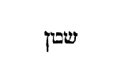
Qui furabatur, jam non furetur . Quia hi qui in vitae istius negotiis conversantur, propter alimenta et usus necessarios coguntur aliqua vel emere vel vendere, et lucra de negotiatione sectari, propterea nunc Ephesios monet, ne sub occasione emolumenti, furti crimen incurrant. Furtum nominans omne quod alterius damno acquiritur. Potest autem et altius intelligi: Qui furabatur jam non furetur . Propter illud quod scriptum est, de pseudoprophetis: Qui furantur sermones unusquisque a proximo suo [Col. 0482C] (Jer. XXIII) , et illud: Omnes, quotquot venerunt ante me, fures fuerunt et latrones (Joan. X) . Hos prohibet furta facere spiritalia.
Magis autem laboret , etc. Neque vero ait, magis autem laboret operando manibus suis, quod bonum est , ut non indigeat, et habeat victum, et nulli molestiam exhibeat, sed laboret, inquit, manibus suis, quod bonum est, ut habeat unde foveat, communicet indigentibus. Qui igitur ad hoc tantum laborat, ut ipse non egeat, et a caeteris contrahat manum, quamvis applaudat sibi, tamen apostoli praecepta non fecit. Igitur operatur bonum, qui declinat a malo et facit bonum, et operatur in agro animae suae, ut spiritualibus panibus impleatur, et possit commodari esurienti et necessitatem sustinenti, [Col. 0482D] dans in tempore cibaria conservis suis.
«Ascendens Jesus in naviculam transfretavit et venit in civitatem suam. Et ecce offerebant ei paralyticum jacentem in lecto. Et videns Jesus fidem illorum, dixit paralytico: Confide, fili, remittuntur tibi peccata tua. Et ecce quidam de scribis dixerunt intra se: Hic blasphemat. Et cum vidisset Jesus cogitationes eorum, dixit: Ut quid cogitatis mala in cordibus vestris? Quid est facilius dicere, dimittuntur tibi peccata, an dicere, surge et ambula? Ut sciatis autem, quoniam filius hominis habet potestatem in terra dimittendi peccata, tunc ait paralytico: Surge, tolle lectum tuum, et [Col. 0483A] vade in domum tuam. Et surrexit et abiit in domum suam. Videntes autem turbae timuerunt, et glorificaverunt Deum, qui dedit potestatem talem hominibus.»
Ascendens Jesus in naviculam , etc. (Ex Figulo.) Marcus non hoc in civitate ejus, quae Nazareth vocatur, dicit factum, sed in Capharnaum, nisi forte poterit dici tota Galilaea civitas Christi, in quocunque in ea oppido esset Christus. In Galilaea enim Nazareth et Capharnaum habentur. Sive ita legendum: Et ascendens in naviculam, transfretavit, et venit in civitatem suam , id est, Nazareth; et quid ibi gestum sit, Matthaeus praetermisit. Mare quod Dominus transfretavit, saeculum istud significat. Navis vero, in quam ascendit, aliquoties corpus ejus, aliquoties [Col. 0483B] crucem, aliquoties vero animam sanctam specialiter vel generaliter totam significat Ecclesiam. Civitas vero sua, quae Nazareth vocatur, ad quam misericorditer venit, quae munda sive custodita interpretatur, ipsam generaliter totam significat Ecclesiam.
Et ecce offerunt , etc. Curatio paralytici hujus animae post diuturnam illecebrae carnalis inertiam ad Christum suspirantis indicat salvationem, quae primo omnium ministris, qui eam sublevant, et Christo afferant, id est, bonis operibus, doctoribus, qui spem sanationis opemque intercessionis suggerant, indiget. Qui bene, Marco narrante, quatuor fuisse reperiuntur, sive quia quatuor Evangelii libris omnis praedicantium virtus, omnis sermo firmatur, seu [Col. 0483C] quia quatuor sunt virtutes, quibus ad promerendam sospitatem fiducia mentis erigitur, de quibus in aeternae sapientiae dicitur laude, sobrietatem enim et sapientiam docet, et justitiam et virtutem, quibus utilius nihil est in vita hominibus. Quas nonnulli versis nominibus prudentiam, fortitudinem et justitiam appellant.
Et videns fidem illorum dixit paralytico . Intuendum sane quanti propria cujusque fides apud Deum valeat, ubi tanti valuit aliena, ut totus homo repente, hoc est, exterius interiusque jam salvatus exsurgeret, aliorumque merito aliis relaxarentur errata. Non enim ait Evangelium: Videns Jesus fidem ejus qui offerebatur, sed eorum qui offerebant.
Confide, fili, remittuntur tibi peccata tua . (Ex Hieron.) [Col. 0483D] O mira humilitas, despectum et debilem totisque membrorum compagibus dissolutum filium vocat, quem sacerdotes non dignabantur attingere, aut certe ideo filium, quia dimittuntur ei peccata sua. Juxta tropologiam interdum anima jacens in corpore sub totis membrorum virtutibus dissolutis, a perfecto doctore offertur curanda Domino, quasi misericordia ejus sanata fuerit, tantum roboris accepit, ut portet statim lectum suum.
( Ex Beda .) Curaturus hominem a paralysi Dominus primo peccatorum vincula dissolvit, ut ostenderet eum obnoxiis culparum actuum dissolutione fuisse damnatum, nec nisi his relaxatis, membrorum posse recuperatione sanari.
Et ecce quidam de scribis dixerunt intra se. Hic blasphemat , vel secundum Marcum: Quis potest dimittere peccata, nisi solus Deus? Verum dicunt scribae, quia nemo dimittere peccata, nisi Deus potest, qui per eos quoque dimittat, quibus dimittendi tribuit potestatem, et ideo Christus verus Deus esse probatur, quia dimittere peccata quasi Deus potest.
Et cum vidisset Jesus cogitationes eorum dixit: Ut quid cogitatis mala in cordibus vestris? Ostendit se Deum, qui potest cordis occulta cognoscere, et quodammodo tacens loquitur: Eadem majestate et potentia, qua cogitationes vestras intueor, possum et hominibus delicta dimittere, ex vobis intelligite quid paralyticus consequatur.
Quid est facilius dicere: Dimittuntur tibi peccata [Col. 0484B] tua, an dicere: Surge et ambula? (Ex Hieron.) Inter dicere et facere multa distantia est; utrum sint paralytico peccata dimissa solus noverat, qui dimittebat. Surge autem et ambula , tam ille, qui surgebat, quam hi qui surgentem videbant approbare poterant. Fit igitur carnale signum, ut probetur spirituale, datur nobis intelligentia, propter peccata plerasque evenire corporum debilitates. Quinque enim sunt differentiae causarum pro quibus in hac vita molestiis corporalibus affligamur.
( Ex Beda ). Aut enim ad merita augenda per patientiam justi corporis infirmitate gravantur, ut beatus Job et Tobias. Aut ad custodiam virtutum, praeceptorum, ne superbia tentante dispereant sicut apostolus Paulus, cui, ne magnitudine revelationum extolleretur, [Col. 0484C] datus est stimulus carnis (II Cor. XI) . Aut ad intelligenda et corrigenda peccata nostra, sicut paralyticus iste, de quo tractamus, qui non nisi dimissis primo peccatis, potuit ab infirmitate curari. Aut ad gloriam Dei salvandis, sive per seipsum, sive per famulos suos, sicut caecus natus in Evangelio (Joan. IX) , sicut Lazarus, cujus infirmitas non fuit ad mortem, sed propter gloriam Dei, ut glorificaretur Filius Dei per eum (Joan. XI) . Aut ad inchoationem damnationis aeternae, quod reproborum est, sicut Antiochus et Herodes, qui quod tormentorum in gehenna perpetua passuri essent, praesentium afflictionum miseria cunctis ostendebant, quibus congruit illud Prophetae: Et duplici contritione contere eos ; unde necesse est, ut in omnibus, quae temporaliter [Col. 0484D] adversa patimur cum humilitate, Domino gratias agamus, et infirmitatis nostrae conscii, de collatis nobis remediis gratulemur.
Ut sciatis autem quoniam filius hominis , etc. Idem ipse et Deus et filius hominis est, et ut homo Christus per divinitatis suae potentiam peccata dimittere possit, et idem Deus Christus per humanitatis suae fragilitatem pro peccatoribus mori.
Tunc ait paralytico: Surge, tolle lectum tuum, et vade in domum tuam , etc. Spiritualiter ergo de fragilitate surgere est, animam se a carnalibus desideriis, ubi aegra jacebat, abstrahere. Grabatum vero tollere est ipsam quoque carnem per continentiae frena correptam spe coelestium praemiorum, a deliciis [Col. 0485A] segregare terrenis. Sublato autem grabato domum ire ad paradisum redire est, haec enim vera est domus. Nam quae hominem in prima suscepit, non jure amissa, sed fraude tandem restituta, per eum qui fraudulento hosti nihil debuit. Aliter sanus qui languerat, domi reportat grabatum, cum anima remissione recepta peccatorum, ad internam sui custodiam, cum ipso se corpore refert, ne quid post veniam, unde iterum juste feriatur admittat.
Videntes autem turbae, timuerunt et glorificaverunt Deum, qui dedit potestatem talem hominibus . Quam miranda divinae potentiae virtus, ubi nulla temporis interveniente morula, jussa Salvatoris salus festina comitatur. Merito qui adfuerant damnationis blasphemiae jaculis, ad laudem tantae majestatis stupentia [Col. 0485B] corda convertunt.
«Videte itaque quomodo caute ambuletis, non quasi insipientes, sed ut sapientes. Redimentes tempus, quoniam dies mali sunt, propterea, nolite fieri imprudentes, sed intelligentes, quae sit voluntas Dei. Et nolite inebriari vino, in quo est luxuria, sed impleamini Spiritu sancto, loquentes vobismetipsis in psalmis, hymnis et canticis spiritualibus, cantantes et psallentes in cordibus vestris Domino. Gratias agentes semper in omnibus, in nomine Domini nostri Jesu Christi, Deo et Patri. Subjecti invicem in timore Christi.»
Videte itaque quomodo caute ambuletis, non quasi insipientes, sed ut , etc. (Ex Hieron.) Recte Ephesiis dicitur, ut caute ambulent, qui habebant exercitatos sensus ad discernendum bonum et malum, et probantes omnia, id quod statuerant bonum esse retinebant. Qui autem videt, quomodo ambulet, et quam caute figat gradum, ne forte offendat ad lapidem pedem suum, et dicit: Lucerna pedibus meis verbum tuum, Domine (Psal. CXVIII) , utique sapiens est.
Redimentes tempus, quoniam dies mali sunt . (Ex Aug.) Redimere tempus hoc est, quando aliquis tibi infert litem, perde aliquid, ut Deo vaces non litibus. Ex eo enim, quod perdes, pretium est temporis. Quomodo ergo perdis nummos, id est, das alteri, ut emas aliquid, sic perde nummos, ut emas tibi quietem. [Col. 0485D] Antiquum enim proverbium est: Nummum quaerit pestilentia, duo illi da, et ducat se; quid aliud dixit Deus, quam redimentes tempus, quando ait: Si quis vult judicio tecum contendere, et tunicam tuam tollere, dimitte illi et pallium. Quoniam dies mali sunt . Dies malos duae res faciunt, malitia hominum et miseria. Caeterum dies isti, quantum pertinet ad spatia horarum, ordinati sunt. Ducunt vices, agunt tempora, oritur sol et occidit, transeunt tempora, et nulli molesta sunt, nisi sibi homines sint molesti. Ergo dies malos miseria et malitia hominum faciunt. Ex quo enim lapsus est Adam de paradiso, nunquam fuerunt dies nisi mali. Nascuntur pueri, et a ploratu incipiunt, post nescio quot dies rident. Quando plorabat [Col. 0486A] propheta, suae calamitatis erat. Lacrymae enim testes miseriae sunt. Quid enim prophetabat? in labore utique se futurum vel in timore? etiam si bene vixerit, et justus fuerit, in mediis positus tentationibus semper timebat. Ait enim Apostolus: Omnes qui volunt in Christo pie vivere, persecutionem patientur . Ecce quomodo dies mali sunt?
( Ex Greg .) Tempus quippe redimimus, quando activam vitam, quam lasciviendo perdidimus, flendo reparamus.
( Ex Hieron .) Tempus autem redimimus, quia dies mali sunt, quando in bono opere tempus consumimus, emimus et proprium facimus, quod malitia hominum venditum fuerat. Nemo autem vitae hujus quaerens necessaria, et de divitiis et sollicitudinibus, [Col. 0486B] quas Evangelium spinas nuncupat cogitans, potest sibi tempus redimere. Redimentes autem tempus, quoniam in diebus malis est, quodammodo immutamus illud, et dies malos in bonos vertimus, et facimus illos non praesentis saeculi, sed futuri.
Propterea nolite fieri imprudentes, sed intelligentes quae sit voluntas Dei . In omni ergo opere primum considerandum quid velit Deus, et habito judicio, id postea faciendum, quod illi placere fuerit comprobatum.
Nolite inebriari vino in quo est luxuria, sed impleamini spiritu . Quomodo nos non possumus duobus dominis servire Deo et mammonae, sic non possumus spiritu impleri pariter et vino. Qui enim spiritu impletur, habet prudentiam, mansuetudinem, verecundiam, [Col. 0486C] castitatem; qui vino, habet insipientiam, furorem, procacitatem, libidinem, hoc quippe aestimo uno verbo significare luxuriam. Potest autem vino, in quo est luxuria , et illud intelligi, de quo in cantico Mosis dicitur: Furor draconum vinum eorum, et furor aspidum insanabilis , quod omnis qui saeculi istius cogitationes ebrii sunt, bibunt, et insaniunt et vomunt, et praecipites corruunt.
Loquentes vobismetipsis, psalmis et canticis spiritualibus, cantantes et psallentes in cordibus vestris . (Ex Hieron.) Qui se abstinuerit ab ebrietate vini, in quo est luxuria, et pro hoc spiritu fuerit impletus, iste omnia potest accipere spiritualiter. Psalmos, hymnos et cantica in psalterio plenissime discimus. Hymnos esse dicendum, qui fortitudinem et majestatem [Col. 0486D] praedicant Dei, et ejusdem semper vel beneficia vel facta mirantur, quod omnes psalmi continent, quibus alleluia vel praepositum vel subjectum est. Psalmi autem proprie ad ethicum locum pertinent, ut per organum corporis quid faciendum et quid vitandum sit noverimus. Qui vero de superioribus disputat, et conventum mundi, omniumque creaturarum ordinem atque concordiam subtilis disputator edisserit, iste spirituale canticum canit, vel certe, ut propter simpliciores manifestius eloquamur, psalmus ad corpus, canticum refertur ad mentem. Et canere, igitur et psallere et laudare Dominum, magis animo quam voce debemus, hoc est, quippe quod dicitur: Cantantes et psallentes in cordibus vestris Domino . [Col. 0487A] Audiant haec adolescentuli, audiant in, quibus psallendi in Ecclesia officium est Deo, non voce, sed corde cantandum in timore, in opere, in scientia Scripturarum. Si bona opera habuerit, dulcis apud Deum cantor est. Sic cantet servus Christi, ut non vox canentis, sed verba placeant quae leguntur.
Domino gratias agentes semper pro omnibus . Dupliciter intuendum, ut et in omni tempore et pro omnibus, quae nobis accidunt Deo gratias referamus, ut non tantum pro his, quae bona putamus, sed etiam quae nos coarctant, et contra nostram veniunt voluntatem, in Dei praeconium mens laeta prorumpat, Christianorum propria virtus est, etiam in his quae adversa putantur, referre gratias Creatori.
In nomine Domini nostri Jesu Christi Deo et Patri . [Col. 0487B] Qui autem, sicut diximus, gratias agit Deo et Patri, in mediatore Dei et hominum referat eas Christo Jesu, quia nisi per illum accedere non valemus ad Patrem.
Subjecti invicem in timore Christi . Et in alio loco: Per charitatem servite invicem . Audiant haec episcopi, audiant presbyteri, audiant omnes orthodoxi, subjectis suis se esse subjectos, et imitentur dicentem Apostolum: Cum enim essem liber ex omnibus hominibus, meipsum servum feci, ut omnes lucrifacerem (I Cor. IX) . Sed hoc quod ait: In timore Christi , sic accipiendum, ut ipsa subjectio non propter hominum gloriam, sed propter timorem Christi fiat, dum illum timemus offendere.
«Loquebatur Jesus cum discipulis suis in parabolis dicens: Simile factum est regnum coelorum homini regi, qui fecit nuptias filio suo. Et misit servos suos vocare invitatos ad nuptias, et nolebant venire. Iterum misit alios servos dicens: Dicite invitatis: Ecce prandium meum paravi, tauri mei et altilia occisa sunt, et omnia parata, venite ad nuptias. Illi autem neglexerunt et abierunt, alius in villam suam, alius vero ad negotiationem suam. Reliqui vero tenuerunt servos ejus et contumeliis affectos occiderunt. Rex autem cum audisset, iratus est et missis exercitibus suis perdidit homicidas illos, et civitatem illorum succendit. Tunc ait servis suis: Nuptiae quidem paratae sunt, sed qui invitati erant non fuerunt digni. Ite ergo ad exitus viarum, et [Col. 0487D] quoscunque inveneritis vocate ad nuptias. Et egressi servi ejus in vias, congregaverunt omnes quos invenerunt, bonos et malos, et impletae sunt nuptiae discumbentium. Intravit autem rex ut videret discumbentes, et vidit ibi hominem non vestitum veste nuptiali. Et ait illi: Amice, quomodo huc intrasti non habens vestem nuptialem: At ille obmutuit. Tunc dixit rex ministris: ligatis pedibus ejus et manibus, mittite eum in tenebras exteriores. Ibi erit fletus et stridor dentium. Multi enim sunt vocati, pauci vero electi.»
Loquebatur Jesus cum discipulis suis in parabolis, dicens: Simile factum est regnum coelorum homini regi, qui fecit nuptias filio suo . (Ex Greg.) Congregatio [Col. 0488A] justorum regnum coelorum dicitur. Regnum coelorum Ecclesia est justorum, quia electorum corda in terra nil ambiunt, per hoc quod ad superna suspirant, jam in eis Dominus, quasi in coelestibus regnat.
( Ex Hieron .) Rex iste qui fecit nuptias filio suo Deus omnipotens est, fecit autem nuptias Domino nostro Jesu Christo et Ecclesiae, quae tam ex Judaeis, quam ex gentibus congregata est
( Ex Greg .) In hoc pater regi filio nuptias facit, quo ei per incarnationis mysterium sanctam Ecclesiam sociavit. Uterus autem genitricis virginis hujus sponsi thalamus fuit, unde Psalmista ait: Ipse tanquam sponsus procedens de thalamo suo (Psal. XIX) . Tanquam sponsus quippe de thalamo processit, qui [Col. 0488B] ad conjungendam sibi Ecclesiam incarnatus Deus de incorrupto utero virginis exivit.
Et misit servos suos vocare invitatos ad nuptias, et nolebant venire . Misit ergo servos, ut ad istas nuptias amicos invitarent, misit semel, misit iterum, quia incarnationis Dominicae praedicatores, et prius prophetas, et postmodum apostolos. Bis itaque servos ad invitandum misit, quia incarnationem unigeniti, et per prophetas dixit futuram, et per apostolos nuntiavit factam.
( Ex Hieron .) Mittitque servum suum invitatos vocare ad nuptias, haud dubium, quin Mosen, per quem legem invitatis dedit. Si autem servos legerimus, ut pleraque habent exemplaria, ad prophetas referendum est, quod invitati per eos venire contempserunt.
Iterum misit alios servos suos, dicens: Dicite invitatis, ecce prandium meum paravi, tauri mei et altilia occisa, et omnia parata, venite ad nuptias, illi autem neglexerunt . Prandium paratum, et tauri et altilia occisa, vel per metaphoram opes regiae intelligantur spiritualis, vel certe dogmatum magnitudo et doctrina Dei lege plenissima sentire potest.
( Ex Greg .) Quid in tauris vel altilibus, fratres charissimi, nisi Novi ac Veteris Testamenti Patres accipimus. Quid ergo per tauros, nisi Patres Testamenti Veteris significantur, nam dum ex promissione legis acceperant, quatenus adversarios suos odii retributione percuterent, ut ita dicam, quid aliud quam tauri erant, qui inimicos suos virtutis corporeae cornu feriebant. Quid vero per altilia, nisi Patres Testamenti [Col. 0488D] Novi figurantur, qui dum gratiam pinguedinis internae percipiunt, a terrenis desideriis mente ad sublimia, contemplationis suae pinna sublevantur. Tauri mei et altilia occisa sunt et omnia parata, ac si apertius dicatur: Patrum praecedentium mortes aspicite, et remedia vitae vestrae cogitate.
Et abierunt, alius in villam suam, alius vero ad negotiationem . In villa ire est labori terreno immoderate incumbere, in negotiationem vero ire, est actione saecularium lucris inhiare. Quia enim alius intentus labori terreno, alius vero mundi hujus actionibus deditus, mysterium incarnationis Dominicae pensare, et secundum illud vivere dissimulat, quasi ad villam vel negotium pergens, venire ad regis nuptias [Col. 0489A] recusat, et plerumque quod est gravius nonnulli vocantis gratiam non solum respuunt, sed etiam persequuntur; unde et subditur.
Reliqui vero tenuerunt servos ejus, et contumeliis affectos occiderunt . (Ex Hieron.) Inter eos qui non recipiunt Evangelii veritatem, multa diversitas est; minoris enim criminis sunt qui occupati aliis rebus venire noluerunt, his qui contempto invitantis affectu verterunt humanitatem in crudelitatem, et tentos servos regis, vel contumeliis affecerunt, vel occiderunt.
Rex autem, cum audisset, iratus est, et missis exercitibus suis perdidit homicidas illos, et civitatem illorum succendit . Exercitus seu ultores angelos, de quibus in Psalmis scribitur (Psal. LXXVII) : Immissionem [Col. 0489B] per angelos malos, seu Romanos intelligamus, sub duce Vespasiano et Tito, qui occisis Judaeae populis, praevaricatricem succenderunt civitatem.
( Ex Greg .) Homicidas perdidit, quia persequentes interimit; civitatem eorum igne succendit, quia illorum non solum animae, sed caro quoque in qua habitaverunt aeternae gehennae flamma cruciatur. Missis vero exercitibus exstinxisse homicidas dicitur, quia in omnibus omne judicium per angelos exhibetur.
Tunc ait servis, nuptiae quidem paratae sunt , etc. Si in Scriptura vias actiones accipimus, exitus viarum intelligimus defectus actionum, quia illi plerumque facile ad Deum veniunt, quos in terrenis actibus prospera nulla comitantur.
Egressi servi ejus in vias, congregaverunt omnes [Col. 0489C] quos invenerunt , etc. (Ex Hieron.) Gentilium populus non erat in viis, sed in exitibus viarum. Quaeritur autem quomodo in his qui foris erant inter malos, et boni aliqui sunt reperti. Hunc locum plenius tractat Apostolus ad Romanos, quod gentes naturaliter facientes ea quae legis sunt, condemnent Judaeos, qui scriptam legem non fecerint. Inter ipsos quoque ethnicos est infinita diversitas, cum sciamus alios esse proclives ad vitia, et ruentes ad mala, alios ob honestatem morum virtutibus deditos.
( Ex Greg .) Ecce jam ipsa qualitate convivantium aperte ostenditur, quia per has regis nuptias praesens Ecclesia Dei designatur, in qua cum bonis et mali conveniunt. Permixta quippe est diversitate filiorum. Boni enim soli nusquam sunt, nisi in coelo, [Col. 0489D] et mali soli nusquam sunt, nisi in inferno. Haec autem vita, quae inter coelum et infernum sita est, sicut in medio subsistit, ita utrarumque partium cives communiter recipit.
Intravit autem rex, ut videret discumbentes et vidit ibi hominem , etc. Quid ergo debemus intelligere nuptialem vestem, nisi charitatem. Intrat enim ad nuptias, sed cum nuptiali veste non intrat, qui in sancta Ecclesia assistens fidem habet, sed charitatem non habet. Recte enim charitas nuptialis vestis vocatur, quia hanc in se conditor noster habuit, dum ad sociandae sibi Ecclesiae nuptias venit. Sola quippe dilectione Dei factum est, ut ejus unigenitus mentes sibi electorum hominum uniret. Unde Paulus dicit: [Col. 0490A] Sic enim dilexit Deus mundum, ut filium suum unigenitum daret pro nobis (Joan. III) . Qui ergo per charitatem venit ad homines, eamdem charitatem innotuit vestem esse nuptialem. Nos sumus, fratres, qui in nuptiis Verbi discumbimus, qui jam in Ecclesia habemus, qui scripturae sacrae epulis pascimur, qui conjunctam Deo Ecclesiam esse gaudemus. Ecce rex ad nuptias ingreditur, et cordis nostri habitum contemplatur, atque ei quem charitate vestitum non invenit, protinus iratus dicit: Amice, quomodo huc intrasti, non habens vestem nuptialem? Mirandum valde est, fratres charissimi, quod hunc et amicum vocat et reprobum. Ac si ei apertius dicat, amice et non amice. Amice per fidem et non amice per operationem. ( Ex Hieron .) Hi qui invitati fuerant ad [Col. 0490B] nuptias de sepibus et angulis et plateis, et diversis locis coenam regis impleverant, sed postea cum venisset rex, ut videret discumbentes in convivio suo, hoc est, in sua quasi fide requiescentes, ut in diem judicii visitaret convivas, et discerneret merita singulorum, invenit unum qui veste indutus non erat nuptiali: unus iste omnes qui sociati sunt malitia intelliguntur, vestis autem nuptialis praecepta sunt Domini, et opera quae complentur ex lege et Evangelio, novique hominis efficiunt vestimentum. Si quis igitur in tempore judicii inventus fuerit sub nomine Christiano, non habere vestem nuptialem, hoc est, vestem supercoelestis hominis, sed vestem pollutam, id est, veteris hominis excubias, hic statim corripitur et dicitur ei: Amice, quomodo huc intrasti? [Col. 0490C] Amicum vocat, quod invitatus ad nuptias est; arguit impudentiae, quod veste sordida munditias polluerit nuptiales.
At ille obmutuit . In tempore enim illo non erit locus impudentiae, nec negandi facultas, cum omnes anguli et mundus ipse testis sit peccatorum.
( Ex Greg .) Quia, quod dici sine gemitu non potest, in illa districtione ultimae increpationis omne argumentum cessat excusationis, quippe quia ille foris increpat, qui testes conscientiae intus animum accusat.
Tunc dixit rex , etc. Ligantur tunc pedes et manus per districtionem sententiae, qui modo a pravis operibus ligari noluerunt per meliorationem vitae; vel certe tunc ligat poena, quos modo a bonis operibus [Col. 0490D] ligat culpa. Pedes enim qui visitare aegrum negligunt, manus quae nihil indigentibus tribuunt, a bono opere jam ex voluntate ligati sunt. Qui ergo nunc sponte ligantur in vitio, tunc in supplicio ligantur inviti.
Mittite eum , etc. Interiores quippe tenebras dicimus caecitatem cordis, exteriores vero tenebras aeternam noctem damnationis. Tunc ergo damnatus quisque non in interiores, sed in exteriores tenebras mittitur, quia illic invitus projicitur in noctem damnationis, qui hic sponte cecidit in caecitatem cordis. Ubi fletus quoque et stridor dentium esse perhibetur, ut illic dentes strideant, qui hic de edacitate gaudebant. Illic oculi defleant, qui hic per illicitas concupiscentias [Col. 0491A] versabantur, quatenus singula quaeque membra supplicio subjaceant, quae hic singulis quibusque vitiis subjecta serviebant. ( Ex Hieron .) In fletu quoque oculorum et stridore dentium, per metaphoram membrorum corporalium magnitudo ostenditur tormentorum.
Multi enim sunt vocati, pauci vero electi . (Ex August.) Paucos dicit justos, in comparatione multorum iniquorum. Esse autem per semetipsos consideratos in magno numero, diffuso toto orbe terrarum, crescente inter zizania, et cum palea usque ad diem messis et ventilationis, nam in comparatione paleae possunt pauca grana dici, quae tamen per se ipsa in massam redacta implent dominicum horreum.
( Ex Greg .) Ecce nos omnes jam vocati per fidem, [Col. 0491B] ad coelestis regis nuptias venimus, qui incarnationis ejus mysterium et credimus, et confitemur, divini verbi epulas sumimus. Quod vocati sumus novimus, si sumus electi, nescimus. Tanto ergo necesse est, ut unusquisque nostrum humilitate se deprimat, quanto si sit electus ignorat.
«De caetero confortamini in Domino, et in potentia virtutis ejus. Induite vos armaturam Dei, ut possitis stare adversus insidias Diaboli: Quoniam non est nobis colluctatio adversus carnem et sanguinem, sed adversus principes et potestates, adversus mundi rectores tenebrarum harum, contra [Col. 0491C] spiritalia nequitiae in coelestibus. Propterea accipite armaturam Dei, ut possitis resistere in die malo, et in omnibus perfecti stare. State ergo succincti lumbos vestros in veritate, et induti loricam justitiae, et calceati pedes in praeparationem Evangelii pacis. In omnibus sumentes scutum fidei, in quo possitis omnia tela nequissimi ignea exstinguere. Et galeam salutis assumite, et gladium spiritus, quod est verbum Dei.»
De caetero confortamini in Domino, et in potentia virtutis ejus . (Ex Hieron.) Quod igitur ait: Confortamini in Domino, et in potentia virtutis ejus , totum sentitur in Christo, ut in omnibus virtutibus quae super eo intelliguntur. Qui crediderint confortentur. Et prudenter post specialia mandata, quid viris et [Col. 0491D] uxoribus, patribus et filiis, dominis et servis observandum sit, nunc generaliter omnibus in commune praecipit in Domino, et in ejus potentia confortati praeparent se adversum diabolum.
Induite vos armaturam Dei, ut possitis resistere adversus insidias diaboli . Ex his quae infra legimus, et hic quae in scripturis omnibus de Domino salvatore dicuntur, manifestissime comprobatur, omnia arma Dei, quibus nunc indui jubemur, intelligi salvatorem, ut unum atque idem sit dixisse: Induite vos omnia arma Dei , quasi dixerit: Induite Dominum Jesum Christum. Si enim cingulum veritas est, et lorica justitia est, salvator autem et veritas et justitia nominatur, nulli dubium quin ipse et cingulum [Col. 0492A] sit et lorica. Quae autem alia arma Dei possumus aestimare, quibus induendus est, qui habet adversum diaboli dimicare versutias, excepta virtute quae Christus est, hunc enim qui juxta omnia quae super eo intelliguntur fuerit indutus, potens erit contra universas insidias diaboli repugnare. Diabolus autem nomen Graecum est, quod interpretatur criminator. Juxta Hebraei vero sermonis proprietatem, quia et tribus Zabulon quamdam similitudinem hujus vocabuli habet, καταρύων , id est deorsum fluens, dici potest, quod scilicet paulatim de virtute ad vitium fluxerit et de coelestibus ad terrena corruerit.
Quoniam non est nobis colluctatio adversus carnem et sanguinem , etc. Aestimo quippe adversus carnem et sanguinem esse certamina, quando caro concupiscit [Col. 0492B] adversus spiritum, et provocat nos facere opera sua, fornicationem et immunditiam, luxuriam et reliqua his similia. Porro non est humana tentatio, nec adversus carnem et sanguinem pugna, quando aut ipse Satanas transfiguratus in angelum lucis, persuadere nititur, ut eum angelum luminis arbitremur, aut aliquid horum simile facit, in omni virtute, signis et portentis mendacibus, in omni deceptione iniquitatis, sed quasi principatus, potestas, rector tenebrarum et nequitia spiritualis dicat quispiam hoc, quod ait: Non est nobis colluctatio adversus carnem et sanguinem, sed adversus principatus et potestates , et caetera quae sequuntur. Ideo dicit, ut doceamur ne ea quidem quae nobis ministrari vitia putamus, ex carne carnis esse vel sanguinis, sed a [Col. 0492C] quibusdam spiritualibus nequitiis suggeri. Sunt enim quidam daemones amoribus et amatoriis canticis servientes, et Propheta quoque commemorat dicens: Spiritu fornicationis seducti sunt . Alii vero iracundias et furores et bella committere, alii praeesse inimicitiis, et inter homines odia concitare. Quia vult ergo, aiunt, Apostolus nos docere, non ex natura corporis et materia carnis et sanguinis, haec vitiorum genera procreari, sed instinctu daemonum, propterea ait: Non est nobis colluctatio adversus carnem et sanguinem, sed adversus principatus et potestates , et rel. Sed adversus rectores earum tenebrarum, quae huic mundo incubant, et errorem hominibus incredulitatis offundunt, et adversum spiritalia nequitiae, quae habitant in coelestibus. Non quod daemones [Col. 0492D] in coelestibus commorentur, sed quo supra nos aer hoc nomen acceperit, unde et aves quae volitant per aerem, volucres coeli esse dicuntur. Haec autem omnium doctorum opinio est, quod aer iste qui coelum et terram medius dividens inane appellatur, plenus sit contrariis fortitudinibus.
( Ex August .) Non adversus carnem et sanguinem est nobis colluctatio, id est, adversus hominem, sed adversus principatus et potestates, id est, daemones, qui sunt spiritualia nequitiae, adversus rectores mundi. Exponit quid sit mundus, cujus sunt illi rectores, cum dicit: Rectores mundi tenebrarum harum: dilectoribus suis et infidelibus plenus est mundus, hos appellat Apostolus tenebras, horum rectores diabolus [Col. 0493A] est et angeli ejus, haec tenebrae non sunt incommutabiles, sed aliquando mutantur, et lux efficiuntur, et dicitur eis: Fuistis aliquando tenebrae, nunc autem lux in Domino .
( Ex Primas .) Item caro et sanguis homo dicitur, sed adversus principes et potestates, qui sibi principatum in hujus mundi homines usurparunt. Et qui ignorantes animas per peccata seducunt adversum mundi rectores tenebrarum harum. Fuistis enim tenebrae, nunc autem lux in Domino , contra spiritales hostes, spiritualia arma sumenda sunt, ut dissimilitudo naturae armorum fortitudine protegatur, adversum quos nobis est colluctatio in coelestibus, id est, pro coelestium promissione praemiorum. ( Ex August .) Adhuc propter hoc quod ait in coelestibus : Quia videtur [Col. 0493B] ambiguum, dicendum subaudiri posse, illud ad omnia ut sit, non est nobis colluctatio adversus potestates in coelestibus et rectores tenebrarum istarum in coelestibus, et spiritualia nequitiae in coelestibus. Sciamus autem quod, excepto praesenti loco, nec in Veteri nec in Novo Testamento mundi rectores unquam legerimus, quod nomen idcirco Paulus apostolus finxit, quia necesse habebat ad Ephesios disputans de rebus nobis et invisibilibus, nova nomina coaptare.
Propterea accipite , etc. Simpliciter Ephesios ad futuras tentationes et persecutiones, quas eis Paulus apostolus post hanc epistolam prophetiae videbat spiritu provenire coarctatur et monet ut omnia faciant, per quae possint in fide stare Evangelii, nec in persecutione [Col. 0493C] corruere. Diem malum praesens autem tempus ostendit, de quo supra dixerat: Redimentes tempus, quoniam dies mali sunt , propter angustiam et vitae hujus labores, quia non absque sudore et certamine perveniamus ad palmam, aut certe consummationis atque judicii, de quo Joel: Prope est dies tenebrarum et turbinis, dies nebulae et caliginis , et rel. (Joel. II.) Ut igitur possit quis in hac die diabolo resistere, quia ipse est accusator fratrum nostrorum, assumat omnia arma Dei, hoc enim sonat πανοπλία , non ut in Latino simpliciter arma translata sunt, et omnibus telis armisque succinctus, de quibus in sequentibus explicatur: Sciat tunc se stare posse, si universa fuerit operatus, ut plenus cunctis virtutibus stabilem figat gradum, et non moveatur de [Col. 0493D] acie.
State ergo succincti lumbos vestros in veritate . (Ex Primas.) Perfecti estote lumbos mentis accincti, hoc est, in omni praelio viriliter praeparati, et ab omnibus curis saeculi expediti.
( Ex Hieron .) Quod juxta membra carnis et corporis omnia membra animae in Scripturis vocentur nulli dubium est, de quibus unum puto esse, nunc membrum lumbos, quos ut accingamus a Veritate praecipitur: Sint lumbi vestri praecincti et lucernae ardentes (Luc. XII) , hoc idem reor et illud significare, quod Joannes zonam pelliceam habebat circum lumbos suos, et non erat de immundis, qui propter fluxum seminis extra castra projecti (Levit. XIII) , cum arca Domini habitare non possunt (Num. VIII) , et secundum id quidem quod veritate praecinctus est, id est Christo, non facile ad falsitatis dogmata deducetur.
Induti loricam justitiae . (Ex Primas.) Sicut lorica multis circulis intexitur, sic et justitia diversis virtutum connectitur speciebus, in unitate non solum pectoris conscientia, sed et ventris continentia, nec non ad femorum usque pertingit libidinem coercendam.
( Ex Hieron .) Qui enim circumdatur multiplici veste justitiae, nec ad similitudinem cervi in jecur accipit sagittam, nec in desideria corruit, et furores, sed erit mundo corde habens artificem hujus loricae Deum, qui unicuique sanctorum omnia arma fabricatur.
Et calceati pedes , etc. Diligentius observate quod virtutem quamdam animae appellaverit pedes, quibus ingredimur, in eo qui dicit: Ego sum via (Joan. XIV) . Et de quibus canimus: Dirige, Domine, pedes nostros in viam pacis, quos oportet calceare praeparatione Evangelii pacis. Qui igitur habet pacem, calceatus est Christi Evangelio, et idcirco homo pacis factus est, et nec bellicum aliquid, et tumultuosum agit, nec cum his qui inpraeparati sunt, condemnabitur.
In omnibus sumentes scutum fidei, in quo possitis omnia tela , etc. Quasi dixerit in omni opere portate clypeum fidei, ut possitis tecti atque muniti excipere venientes sagittas, et huc atque illuc arte eas bellica declinare. Perspicua autem sunt jacula maligni, quae [Col. 0494C] vult mittere in corda nostra per cogitationes pessimas, de quibus unum jecit in cor Judae, ut traderet salvatorem (Joan. XII) . Itaque vel principium quidem habere poterit inimicus vulnerandi, si tenuerimus scutum fidei, in quo non solum venientium tela franguntur, sed etiam telorum ipse ignis exstinguitur; infidelitas quoque inimica est fidei, ubi scutum est fidei, nihil valebit.
Et galeam salutis assumite . Propter hanc galeam salutarem omnes in capite nostro sensus integri perseverant. Si enim caput viri Christus est, sequitur omnis noster sensus, mens, cogitatio, sermo, consilium, si tamen sapientes fuerimus, in Christo sint. Caput etiam, quod est principale cordis, in quo sensus omnes locati sunt, salutis galea circumdatum [Col. 0494D] non quassabitur.
Et gladium spiritus, quod est verbum Dei . (Ex Primas.) Nemo militum audet ab bellum sine gladio proficisci, se enim utcunque tueri potest, sed hostem non valet occidere, sicut non nunquam etiam ab audaci inimico omnibus armis spoliatur, perimitur, ita sine Dei verbo justitia omnis intuta est. Fidelis quasi vir bellator et fortis, omnes sectas contrarias veritati concidet, interficiet, jugulabit. Gladium spiritus, id est, verbum Dei manu tenens salvator et veritas et justitia nominatur. Nulli dubium, quin ipse et cingulum sit et lorica, et praeparatio Evangelii pacis et scutum fidei et galea salutaris et gladium spiritus, quod est verbum Dei, et vivens sermo, et [Col. 0495A] efficax, de quo Apostolus ait: Vivus est sermo Dei, et efficax, et penetrabilior omni gladio ancipiti, pertingens usque ad divisionem animae, ac spiritus, compagumque et medullarum et discretor cogitationum cordis, et non est ulla creatura invisibilis in conspectu ejus, omnia autem nuda et aperta sunt oculis ejus .
«Erat quidam regulus, cujus filius infirmabatur Capharnaum. Hic cum audisset, quia Jesus adveniret a Judaea in Galilaeam, abiit ad eum, et rogabat eum, ut descenderet et sanaret filium ejus. Incipiebat enim mori. Dixit ergo Jesus ad eum: Nisi signa et prodigia videritis, non creditis. Dicit ad eum regulus: Domine, descende priusquam moriatur filius meus. Dixit ei Jesus: Vade, filius [Col. 0495B] tuus vivit. Credidit homo sermoni quem dixit ei Jesus et ibat. Jam autem eo descendente servi occurrerunt ei, et nuntiaverunt dicentes: Quia filius ejus viveret. Interrogabat ergo horam ab eis, in qua melius habuerat. Et dixerunt ei: Quia heri hora septima reliquit eum febris. Cognovit ergo pater, quia illa hora esset, in qua dixit ei Jesus: Filius tuus vivit, et credidit ipse, et domus ejus tota.»
Erat quidam regulus, cujus filius infirmabatur Capharnaum . (Ex Greg.) Regulus diminutivum nomen est a rege, et ideo forsitan regulus dicitur iste, qui salutem poposcit filio suo, quia plenam non habuit fidem. Capharnaum autem ager vel villa pulcherrima [Col. 0495C] interpretatur.
Hic cum audisset, quia Jesus adveniret a Judaea in Galilaeam, abiit ad eum, et rogabat eum, ut descenderet et sanaret filium ejus. Incipiebat enim mori. Dixit ergo Jesus ad eum: Nisi signa et prodigia videritis, non creditis . Quare ergo dicit: Nisi signa et prodigia videritis, non creditis , cum ille ante credit quam signum videret. Qui enim salutem quaerebat filio, procul dubio credebat, sed mementote quid petit, et aperte cognoscetis, quia in fide dubitavit, poposcit namque ut descenderet et sanaret filium ejus. Corporalem ergo praesentiam Domini quaerebat, qui per spiritum nusquam deerat, minus in illo credidit, quem non putavit posse salutem dare, nisi praesens esset corpore. Si enim perfecte [Col. 0495D] credidisset, procul dubio sciret, quia non esset locus ubi non esset Deus. Salutem itaque filio petiit, et tamen in fide dubitavit, quia eum ad quem venerat, et potentem ad curandum credidit, et tamen moriente filio esse absentem putavit Deum.
Dicit ad eum regulus: Domine, descende priusquam moriatur filius meus , etc. Qua in re hoc est nobis solerter intuendum, quod sicut alio evangelista testante didicimus, centurio venit ad Deum, dicens: Domine, puer meas jacet paralyticus in domo, et male torquetur . Cui a Jesu protinus respondetur: Ego veniam et curabo eum . Quid est quod regulus rogat, ut ad ejus filium veniat, et tamen corporaliter ire recusat? Ad servum vero centurionis non invitatur, [Col. 0496A] et tamen se corporaliter ire pollicetur; reguli filio per corporalem praesentiam non dignatur adesse, centurionis vero servo non dedignatur occurrere: quid est hoc, nisi quod superbia nostra reconditur, qui in hominibus non naturam, qua ad imaginem Dei facti sint, sed honores et divitias veneramur. Redemptor vero noster, ut ostenderet, quia quae alta sunt hominum, sanctis despicienda sunt, et quae despecta sunt hominum, despicienda non sunt, ad filium reguli ire noluit, ad servum autem centurionis ire paratus fuit.
Credidit homo sermonem, quem dixit ei Jesus, et ibat . Incipiebat enim fidem habere in sermone Jesu, et qui ex parte dubius venit, fidelis recessit, et ideo sanitatem filii meruit.
Jam autem eo descendente, servi occurrerunt ei, dicentes: Quia filius ejus viveret, interrogabat ergo horam ab eis, in qua melius habuerat, et dixerunt ei: Quia heri hora septima reliquit eum febris . Septenarius numerus sanctificatus est in donis sancti Spiritus, in quo sanitas omnibus credentibus datur, constat. Quia in sancto Spiritu, qui est donum Dei, remissio est omnium peccatorum credentibus. Septenariusque numerus si dividitur in tria et quatuor, sanctam Trinitatem significat. In trinario numero, et omnium creaturarum perfectionem, in quaternario propter quatuor elementa plenaria, et quatuor plagas mundi, et quatuor anni tempora, quae omnia ex ipso et per ipsum et in ipso creata sunt, constant et gubernantur, quoniam in ipso vivimus, movemur [Col. 0496C] et sumus .
Cognovit ergo pater, quia illa hora erat, in qua dixit ei: Filius tuus vivit, et credidit ipse, et domus ejus tota . Quia nuntiatus est ei filius sanus, ad solum ergo sermonem crediderunt plures Samaritani, ad illud autem miraculum, sola domus illa credidit, quae res protendit in multitudinem fidem gentium, et in paucitate fidei Judaeorum. Gentes vero solo sermone, id est, praedicatione apostolica crediderunt, Judaei vero signa viderunt ipsum Dei filium facientem, et tamen pauci crediderunt ex eis.
«Confidimus in Domino Jesu, quia qui coepit in [Col. 0496D] vobis opus bonum, ipse perficiet, usque in diem Christi Jesu. Sicut est mihi justum hoc sentire pro omnibus vobis, eo quod habeam vos in corde et in vinculis meis. Et in defensione et confirmatione Evangelii, socios gaudii mei omnes vos esse. Testis enim mihi est Deus, quomodo cupiam vos omnes in visceribus Jesu Christi. Et hoc oro, ut charitas vestra magis ac magis abundet in scientia et in omni sensu, ut probetis potiora, et sitis sinceri, et sine offensa in diem Christi, repleti fructu justitiae, per Jesum Christum in gloriam et laudem Dei.»
Confidimus in Domno Jesu, quia qui coepit in vobis opus bonum, ipse perficiet . Ac si diceret: Confidendo [Col. 0497A] impetrare coeptam doctrinam, sive gratiam scientiae largiendo consummari in vobis.
Usque in diem Christi . Id est, usque in diem, quo de corpore recedatis, ex quo jam ad Domini unusquisque reservetur adventum, sive usque in diem Christi, id est, usque in diem judicii.
Sicut est mihi justum hoc sentire pro omnibus vobis . Ac si diceret: Charitas me haec sentire facit pro vobis, quod perficietis opus quod coepistis usque in diem, sive mortis, sive judicii, quia charitas omnia sperat.
Eo quod habeam vos in corde et in vinculis meis . Ac si diceret: Tantum vos diligo, ut mihi memoriam vestri nec vis tribulationis, nec sollicitudo defensionis auferat.
Et in defensione et confirmatione Evangelii . Confirmatio Evangelii est constans tolerantia praedicantis.
Socios gaudii mei omnes vos esse . Ac si diceret: Hoc sentio de vobis et credo, quia sicut meae tribulationis socii estis, ita eritis et gaudii sempiterni. Sive, sicut scio vos Evangelio credidisse, ut etiam in tribulationibus meis, et ejus defensione mecum pariter gaudeatis.
Testis enim mihi est Deus, quomodo cupiam omnes vos in visceribus Jesu Christi . Ac si diceret: Ita vos desidero, tanquam viscera Christi, sive cupiam vos ejus inesse visceribus.
Et hoc oro, ut charitas vestra magis ac magis abundet in scientia et omni sensu . Notandum quia [Col. 0497C] scientibus majorem scientiam adhuc deprecetur, ut sinceri in omnibus esse praevaleant, sive in scientia et sensu, id est, in intelligentia litterae et spirituali mysterio.
Ut probetis potiora , etc. Sinceritas materia est, quae naturam suam servat, et nulla extrinsecus corruptione fucata, et semper in melius proficit, non in pejus. Sive sinceros, id est, non reddentes malum pro malo, sive offensionem per malum exemplum.
Repleti fructu justitiae per Jesum , etc. Id est, ut non solum sinceri ab omni corruptione sitis, sed etiam fructu justitiae abundetis, exemplo Christi, qui non solum malitiam non habet, sed etiam bonitate redundat. Quod autem dicit: In gloriam et laudem Dei , ac si dicat: Ut glorietur et laudetur Deus in [Col. 0497D] actibus vestris, sive sit gloria in operibus, et laus in sermonibus vestris.
«Simile est regnum coelorum homini regi, qui voluit rationem ponere cum servis suis. Et cum coepisset rationem ponere, oblatus est ei unus, qui debebat decem millia talenta. Cum autem non haberet unde redderet, jussit eum dominus ejus venundari et uxorem et filios et omnia quae habebat et reddi. Procidens autem servus ille, rogabat eum, dicens: Patientiam habe in me, et omnia reddam tibi. Misertus autem dominus servi illius, dimisit eum, et debitum dimisit illi. Egressus autem servus ille invenit unum de conservis suis, [Col. 0498A] qui debebat ei centum denarios. Et tenens suffocabat eum, dicens: Redde quod debes? Et procidens conservus ejus, rogabat eum, dicens: Patientiam habe in me, et omnia reddam tibi. Ille autem noluit, sed abiit et misit eum in carcerem, donec redderet debitum. Videntes autem conservi ejus, quae fiebant, contristati sunt valde. Et venerunt et narraverunt domino suo omnia quae facta fuerant. Tunc vocavit illum dominus suus, et ait illi: Serve nequam, omne debitum dimisi tibi, quoniam rogasti me. Nonne ergo oportuit et te misereri conservi tui, sicut et ego tui misertus sum? Et iratus dominus ejus, tradidit eum tortoribus, quoadusque redderet universum debitum. Sic et pater meus coelestis faciet vobis, si non remiseritis unusquisque [Col. 0498B] fratri suo de cordibus vestris.»
Simile est regnum coelorum homini regi, qui voluit rationem ponere cum servis suis . (Ex August.) Quod oblatus est debitor domino decem millium talentorum, et jussit eum venundari, et uxorem ejus et filios et omnia quae habebat et reddi, intelligendum est decem praeceptorum legis eum fuisse debitorem, et pro cupiditate atque operibus suis, tanquam uxorem et filios poenas solvere debuisse, quod est pretium ejus. Pretium enim venditi, supplicium damnati intelligitur. Quod dixit: Noluit ignoscere conservo suo, sed abiit et misit eum in carcerem , etc., intelligendum: Tenuit contra eum hunc animum, ut supplicia illi vellet. Conservi autem, qui narraverunt domino, quae fiebant, potest intelligi Ecclesia, quae [Col. 0498C] et illum solvit, et illum ligat.
( Ex Hieron .) Praecepit itaque Petro sub comparatione regis et domini et servi, qui debebat decem millia talentorum, a domino rogans veniam impetraverat, ut ipse quoque dimittat conservis suis minora peccantibus. Si enim ille rex et dominus servo debitori decem millia talentorum tam facile dimisit, quanto magis servi conservis suis debent minora dimittere! Quod ut manifestius fiat, dicamus sub exemplo. Si qui nostrum commiserint adulterium, homicidium, sacrilegium, majora crimina, decem millium talentorum, rogantibus dimittantur eis, ut et ipsi dimittant minora peccantibus. Sin autem ob factam contumeliam simus implacabiles, et propter amarius verbum perpetes habeamus discordias, nonne [Col. 0498D] nobis videmur recte redigendi in carcerem, et sub exemplo operis nostri hoc agere, ut majorum nobis delictorum venia non relaxetur?
Interrogavit Petrus magistrum, quoties ignosceret fratri, qui in illum peccasset, et quaesivit utrum sufficeret usque septies. Respondit illi Dominus: Non solum septies, sed usque septuagies septies , deinde narravit similitudinem valde terribilem: Quia simile est regnum coelorum homini patrifamilias, qui posuit rationem cum servis suis, in quibus invenit debitorem decem millium talentorum. Omnis homo et debitor est, et debitorem habet. Debitor est Dei, et debitorem habet fratrem suum. Quis est enim, [Col. 0499A] qui non sit debitor Dei? nisi in quo nullum possit inveniri peccatum. Quis est autem qui non habeat debitorem fratrem suum, nisi in quem nemo peccavit? Debitor est ergo omnis homo habens debitorem, et Deus justus constituit regulam in debitore tuo, quod facit et ipse cum suo. Duo ergo sunt opera misericordiae, quae nos liberant, quae breviter ipse Dominus posuit quodam loco in Evangelio: Dimittite et dimittetur vobis: date et dabitur vobis . Dimittite et dimittetur vobis, ad ignoscendum pertinet. Date et dabitur vobis, ad praestandum beneficium, vel eleemosynam pertinet. Ignosci vobis vultis, ignoscite; remittite et remittetur vobis; accipere vultis, date, et dabitur vobis. Sed hoc potest movere, quod et Petrum movit: Quoties debeo, inquit, ignoscere? [Col. 0499B] Sufficit usque septies? Non sufficit, ait Dominus: non dico septies, sed usque septuagies septies. Jam tu enumera quoties in te peccaverit frater tuus; si potueris venire usque ad vigesimam et septuagesimam octavam culpam, ut transeas 490. Tunc molire vindictam. Itane verum est, quod dicit, et vere ita se habet, ut si peccaverit 490 ignoscas. Si autem peccaverit 560, jam liceat tibi non ignoscere. Audeo dicere: Et si 490 peccaverit, ignosce: et si centies peccaverit, ignosce. Et quid dicam toties, et toties, omnino quoties peccaverit ignosce. Non enim sine causa Dominus 490 dixit, cum omnino nulla culpa sit, quam non debeamus ignoscere. Ecce ille ipse servus, cujus debiti inventus est debitor? decem talentorum debebat puto, quia decem talentorum, ut [Col. 0499C] parum sit, decem peccatorum sunt. Nolo enim dicere unum talentum, quod peccata concludat. Servus autem ille quantum debebat? centum denarios debebat. Jam plus est quam 490, et tamen iratus est Dominus, quia ei non dimisit. Non solum enim centum plus sunt quam 490, sed centum denarii forte 1000 asses sunt. Sed quid ad decem talentorum? At per hoc omnes culpas, quae in nos committuntur parati simus ignoscere, si nobis desideramus ignosci. Quotidie nos prosternimur et dicimus: Dimitte nobis debita nostra, sicut et nos dimittimus debitoribus nostris. Quae debita? omnia, an aliquam partem? respondebimus omnia. Sic ergo et tu debitori tuo. Hanc ergo regulam ponis, hac conditione loqueris, hoc pacto et placito cum Deo obligaris. Quid ergo [Col. 0499D] sibi vult 490. Audite, fratres, magnum mysterium, mirabile sacramentum. Matthaeus coepit ab Abraham, et pervenit usque ad Joseph descendendo. Lucas autem ascendendo coepit numerare, cur ille descendendo, ille ascendendo? Matthaeus generationem Christi commendabat, qua descendit ad nos, ideo quando natus est Christus, coepit numerare descendens. Lucas autem, quia tunc coepit numerare, quando baptizatus est Christus. Ubi est initium ascensionis, ascendendo numerare coepit. Numerando autem complevit generationes 77 a quo numerabat, intendite hodie a quo exortus est numerare, usque ad ipsum Adam, qui primus peccavit, et nos cum peccati obligatione generavit, pervenit usque ad Adam, [Col. 0500A] et numerantur generationes 77; a Christo usque Adam 77; ab Adam usque ad Christum 77. Si ergo nulla generatio praetermissa est, nulla culpa praeteritur, ubi non debeat ignosci. Nam ideo ipse 77 generationes enumeravit, quem numerum Dominus in peccatorum remissionem commendavit, quoniam a baptismo coepit numerare, ubi omnia peccata solvuntur, deinde paulo diligentius interroga ipsius numeri secretum, latebrasque ejus inquire, pulsa diligentius, ut aperiatur tibi justitia quae lege constat. Lex in decem praeceptis commendatur, ideo ille debitor decem talentorum, ipse est ille memorabilis decalogus scriptus digito Dei, qui traditus populo per Mosen famulum Dei. Debitor ergo ille decem talentorum omnia peccata significat, propter [Col. 0500B] numerum legis. Debebat et ille decem denarios, non abhorret ab eodem numero. Nam et centies centum decem millia, et decies deni centum, et ille decem talentorum, et ille decies decem. Legitimo ergo numero non recessum est, in quo utroque invenies utraque peccata, uterque debitor, et uterque veniae deplorator et impetrator, sed ille servus malus, servus ingratus, iniquus noluit rependere quod accepit, noluit praestare quod illi indigno praestitum fuit. Videte ergo, fratres, quisquis incipit a baptismo, liber exit, remissa sunt illi decem talentorum, cum exierit et invenerit conservum suum debitorem, observet ergo ipsum peccatum, quod quia bene puto significet numerus undenarius. Lex enim denarius, peccatum undenarius. Lex per decem, peccatum per undecim. [Col. 0500C] Quare peccatum per undecim? Quia transgressio denarii est, ut venias ad undenarium. In lege autem modus fixus est, transgressus es, peccasti. Jam ubi transgrederis denarium, ad undenarium venis. Ideo magnum mysterium, quando jussum est tabernaculum fabricari, multa ibi numerosa dicta sunt in magno sacramento, inter caetera, vel ex cilicina jussa sunt fieri, non decem sed undecim, quia per cilicium ostenditur confessio peccatorum. ( Ex Hieron .) Provocatus apostolus Petrus interrogat quoties fratri in se peccanti dimittere debeat, et cum interrogatione profert sententiam: Usque septies? cui respondit Dominus: Non usque septies, sed usque septuagies septies , id est, quadringentis nonaginta vicibus, ut toties peccanti fratri dimittere, et in die quoties [Col. 0500D] ille peccare posset.
( Ex August .) Quod autem amplius quaeris, vis nosse omnia peccata contineri numero isto 77? omnia ergo peccata dixit, quando 77 dixit: quia illud 11 duae septies fiunt, id est, ubi significatur peccatum duae septies fiunt 77. Omnia ergo peccata dimitti voluit, qui ea septuagesimo septimo numero praesignavit. Nemo contra se teneat non ignoscendo, ne contra illum teneatur, quando orat, dicit enim ille Deus: Dimittite et dimittetur vobis . Sed ego prior dimisi, dimitte, et tu vel postea, nam si non dimiseris revocabo te, et quidquid tibi dimiseram replicabo tibi. Non enim mentitur Veritas, non enim fallit, aut fallitur Christus, qui subjecit, et ait: Sic et [Col. 0501A] vobis faciet Pater vester, qui est in coelis . Invenisti patrem, imitare patrem. Si enim imitari non vis, exhaeredaberis: Faciet ergo ista vobis, ait, pater vester coelestis, si non remiseritis unusquisque fratri suo de cordibus vestris. Ne dicas in lingua: Ignosco, et corde differas supplicium minando vindictam, novit Deus, ubi dicas, vocem tuam, homo, audit, conscientiam tuam Deus inspicit. Si dices: Dimitto, dimitte. Melius clamas ore, et dimittes in corde, quam blandiaris ore crudelis corde. Jam ergo observant pueri indisciplinati, et disciplina est pueris danda, et nolunt vapulare, qui sic perscribunt nobis, quando volumus dare disciplinam, peccavi, ignosce mihi, ignovi: Et iterum peccat, ignosce, ignovi: Peccat tertio, ignosce, ecce tertio, ignovi, jam quarto, vapulet: [Col. 0501B] et ille ignosce, ignovi, et quarto ignovi, et quinto ignovi, et sexto ignovi et septimo, jam vapulet. Et ille num septuagies septies fatigatur ac perscriptione severitas disciplinae dormit, repressa disciplina saevit impunita nequitia. Quid ergo faciendum est? Corripiamus verbis, et si opus est et verberibus, dilectione hoc faciamus. Dimittamus culpam, a corde abigamus quod nocet a fratre. Ideo enim Dominus subdidit: De cordibus vestris , ut si per charitatem imponitur disciplina de corde, lenitas non recedat. Sic ergo ista noverimus, fratres mei, ut fratres nostros, qui peccaverint, omnimodo diligamus de corde nostro, charitatem in eos non dimittamus, et disciplinam, cum opus est, debemus, ne per solutionem disciplinae, vel crescat nequitia, et [Col. 0501C] incipiamus propter hoc Deo accusari, quia recitatum est nobis: Peccantem coram omnibus argue, ut caeteri timorem habeant (I Tim. IV) . Certe solus cum solo verum est, distingue tempora, et solvis quaestionem, verum est, si peccatum in secreto est, in secreto corripe, si peccatum publicum est, et apertum publice corripe, ut ille emendetur, et caeteri timeant.
Sic et pater meus , etc. Formidolosa sententia, si juxta nostram mentem sententia Dei flectitur atque mutatur, si parva fratribus non dimittimus, magna nobis a Deo non dimittentur. Et quia potest unusquisque dicere: Nihil habeo contra eum, ipse novit, habet Deum judicem, non mihi cura est, quid velit agere, ego ignovi ei, confirmat sententiam suam, et omnem simulationem fictae pacis evertit dicens: Si [Col. 0501D] non remiseritis unusquisque fratri suo de cordibus vestris .
«Imitatores mei estote, et observate eos qui ita ambulant, sicut habetis formam nostram. Multi enim ambulant quos saepe dicebam vobis, nunc autem et flens dico, inimicos crucis Christi, quorum finis interitus, quorum Deus venter est, et gloria in confusione ipsorum qui terrena sapiunt. Nostra autem conversatio in coelis est. Unde etiam salvatorem exspectamus, Dominum nostrum Jesum Christum, qui reformabit corpus humilitatis nostrae, [Col. 0502A] configuratum corpori claritatis suae, secundum operationem virtutis suae, qua etiam possit subjicere sibi omnia.»
Imitatores mei estote . Id est, me sequimini, me fideliter imitamini, non falsos apostolos.
Et observate eos qui ita ambulant . (Ex August.) Dupliciter dicitur observare, vel ad imitandum, ut hic, vel ad cavendum, sicut ad Romanos ait: Observate eos qui dissensiones et offendicula faciunt (Rom. XVI) .
Sicut habetis formam nostram . Id est, formam doctrinae nostrae.
Multi enim ambulant, quos saepe dicebam vobis . De ipsis dicit qui spem passionis Christi, per quem peccata dimissa sunt, auferentes, in legis caeremoniis [Col. 0502B] collocabant. Potest et de Jovinianistis interpretari, qui jejuniorum afflictiones et omnes corporis cruciatus in luxuriam et epulas converterunt.
Nunc autem et flens dico, inimicos crucis Christi . Notandum, quo affectu omnium salutem optaverit, qui etiam inimicos crucis Christi deflebat, ultro in interitum properantes.
Quorum finis interitus , etc. Qui enim in carne seminant, inquit Apostolus, de carne et metent corruptionem, qui enim se in hoc putant Deo servire, si comedant et voluptates ventris et desideria compleantur carnis, eorum Deus dicitur venter, non audientes Prophetam dicentem: Cum manducaveritis et biberitis, nonne vobismetipsis manducatis et bibitis vobismetipsis? Gloria, dicit, circumcisionis, in confusione, [Col. 0502C] id est in pudendis verecundi membri; qui terrena sapiunt, dicit, id est, qui carnem legem observant.
Nostra autem conversatio in coelis est . Hoc non potest dicere terrenis viciis mancipatus.
Unde etiam salvatorem exspectamus , etc. Ac si diceret: Caput nostrum in coelo est, ubi et nos jam per desiderium conversamur, et quia coelestis est ille, quia caput est nostrum, de coelo exspectamus eum venturum.
Qui reformabit corpus humilitatis nostrae, configuratum corpori , etc. Hoc quidem monstravit in morte, cum vino et bibentibus et unum ex mortuis sui corporis configuravit exemplum resurrectionis ostendens in mortuis et vivis.
Secundum operationes virtutis suae , etc. Ac si diceret: non solum confirmavit nos exemplo resurrectionis, sed etiam corpori suo omnia fecit esse subjecta, et secundum hanc potentiam qua sibi cuncta subjecit. Intelligimus eum omnia posse et filium omnipotentis esse.
Itaque fratres mei charissimi . Ac si diceret: Quia perfecti estis in fide, perfecti estis in conversatione, in sola Christi fide spem ponentes, et in conversatione coelesti conversantes, quia de vobis in praesenti tempore laetificor, et in futuro coronabor.
Evodiam rogo et Syntychen deprecor idipsum sapere in Domino . Id est, unum et idipsum sentire de fide, et aequaliter credere in Domino.
Etiam rogo, et te Germane compar . Quod dixit: Germane, proprium posuit nomen. Germanus enim vocabatur. Quod vero dixit compar, intelligitur officii vel fidei.
Adjuva illas quae mecum laboraverunt in Evangelio . Hae mulieres religiosae et scientes erant, quas Apostolus ut adjuvet eas Germanum admonet. Quod dicit: Mecum laboraverunt , subauditur in verbo fidei praedicando. Docebant enim in suo sexu per domos, in ecclesiis autem reticebant. Ab ipso enim Paulo praedicandi officium mulieribus in Ecclesia tollitur, ubi ait: Mulieres in Ecclesia taceant .
Cum Clemente et caeteris adjutoribus meis . Clemens philosophus et magnae doctrinae vir erat, qui postea Romanae praesul Ecclesiae fuit.
Quorum nomina sunt in libro vitae . Id est, in memoria aeterna. De hoc enim in libro Psalmista Domino ait: Imperfectum meum viderunt oculi tui, et in libro tuo omnes scribentur (Psal. CXXXVIII) . Et apostolis Dominus ait: Gaudete, quia nomina vestra scripta sunt in coelo (Matth. V) . Et e contrario de reprobis David ait: Deleantur de libro viventium, et cum justis non scribantur .
Gaudete in Domino semper, iterum dico gaudete . Ac si diceret: Gaudete in Domino, qui in saeculari gaudio non gaudetis. Beati enim qui lugent, quoniam ipsi consolabuntur . Quod repetit iterum: Dico gaudete , vel ut magis ac magis gaudium confirmetur, vel pro gaudio corporis et animae in prosperis et adversis, ut confortentur in Domino.
Modestia vestra nota sit omnibus hominibus . Judaeis scilicet et gentibus, omnibusque qui vos persequuntur, nota sit modestia vestra. Modestia enim mansuetudo vel pudor, sive probitas intelligitur. Scriptum est enim: Videant opera vestra bona, et glorificent patrem vestrum, qui est in coelis (Matth. V) .
Dominus prope est, nihil solliciti sitis . Ac si diceret: Quia Dominus prope est his, qui tribulato sunt corde, ideo de ingruentibus malis nihil solliciti sitis, cum defensorem vobis Deum esse noveritis. Potest et sic intelligi, juxta Evangelium. Nolite cogitare quid manducetis, aut quid induamini, scit quod opus est vobis, et antequam petatis agnoscit (Matth. VI) .
Sed in omni oratione . Id est, non cum murmuratione, [Col. 0503D] atque tristitia, ne forte tribulationibus afflicti, in aliquo murmuretis, et vestra oratio fiat indigna auribus Dei, obsecro ut omnia cum oratione apud vos pacifice fiant.
Et obsecratione cum gratiarum actione . Oratio dicitur, quae pro peccatis praeteritis fit, obsecratio vero pro virtutibus adipiscendis, gratiarum actio pro beneficiis Dei.
Petitiones vestrae innotescant apud Deum . Non sic accipiendum est, tanquam Deo innotescant, qui eas et antequam essent noverat. Sed nobis innotescant apud Deum, per tolerantiam, non apud homines per jactantiam. Aut forte innotescant, etiam apud angelos, qui sunt apud Deum, ut quodammodo eas [Col. 0504A] offerant Deo, et de his consulant, et quod eo jubente implendum esse cognoverint, sicut oportere cognoverint, hoc nobis vel evidenter vel latenter apportent. Dixit enim Angelus homini: Cum oraretis, ego obtuli orationem vestram in conspectu claritatis Dei.
Et pax Dei, quae exsuperat omnem sensum , etc. Quem, nisi nostrum, aut fortasse etiam sanctorum angelorum; non enim et Dei: si ergo sancti et Dei pace victuri sunt, profecto in ea pace victuri sunt, quae superat omnem sensum, quoniam nostrum quidem superat, non est dubium. Si autem superat et angelorum, ut nec ipsos excepisse videatur, qui ait: Omnem intellectum, secundum hoc dictum esse debemus accipere, quia pacem Dei, qua Deus ipse pacatus [Col. 0504B] est, sicut Deus novit, non eam nos sic possimus nosse, nec ulli Angeli. Superant itaque omnem sensum non dubium, quod praeter suum, sed quia et nos pro modo nostro pacis ejus participes facti, summam in nobis atque inter nos, et cum ipso pacem, quantum nostrum summum est obtinebimus isto modo, pro suo modo sciunt eam sancti angeli, homines autem nunc longe infra, quantumlibet proventu mentis excellant. Considerandum est enim, quantus vir dicebat: Ex parte scimus, et ex parte prophetamus, donec veniat quod perfectum est .
«Abeuntes Pharisaei, consilium inierunt ut caperent eum in sermone. Et mittunt ei discipulos [Col. 0504C] suos cum Herodianis, dicentes: Magister, scimus quia verax es, et viam Dei in veritate doces, et non est tibi cura de aliquo. Non enim respicis personam hominum. Dic ergo nobis: Quid tibi videtur. Licet censum dari Caesari, aut non? Cognita autem Jesus nequitia eorum, ait: Quid me tentatis, hypocritae? Ostendite mihi numisma census. At illi obtulerunt ei denarium. Et ait illis Jesus: Cujus est imago haec, et superscriptio? Dicunt ei: Caesaris. Tunc ait illis: Reddite ergo quae sunt Caesaris Caesari, et quae sunt Dei Deo.»
Abeuntes Pharisaei consilium inierunt, ut caperent eum in sermone , etc. (Ex Hieron.) Nuper sub Caesare Augusto Judaea subjecta Romanis, quando in toto orbe est celebrata descriptio, stipendiaria facta fuerat, et [Col. 0504D] erat in populo magna seditio, dicentibus aliis: pro securitate et quiete, qua Romani pro omnibus militarent, debere tributa persolvi. Pharisaeis vero, qui sibi adplaudebant in justitia, e contrario nitentibus, non debere populum Dei, qui decimas solveret, et primitiva daret, et caetera quae in lege scripta sunt, humanis legibus subjacere. Caesar Augustus Herodem filium Antipatris alienigenam et proselitum Regem Judaeis constituerat, qui tributis praeesset, et Romano pareret imperio. Mittunt igitur Pharisaei discipulos suos cum Herodianis, id est, militibus Herodis, seu quos illudentes Pharisaei, quia Romanis tributa solvebant, Herodianos vocabant, et non divino cultui deditos. Quidam Latinorum ridicule Herodianos [Col. 0505A] putant, qui Herodem Christum esse crederent, quod nusquam omnino legimus.
Magister, scimus quia verax es et viam Dei in veritate doces, et non est tibi cura de aliquo, non enim respicis personam hominum. Dic ergo nobis: quid tibi videtur, licet censum dari Caesari, an non? Blanda et fraudulenta interrogatio, illuc provocat respondentem, ut magis Deum quam Caesarem timeat, et dicat non debere tributa solvi, ut statim audientes Herodiani, seditionis auctorem contra Romanos principes teneant.
Cognita autem Jesus nequitia eorum, ait: Quid me tentatis, hypocritae? Prima virtus est respondentis, interrogantium mentem cognoscere, et non discipulos, sed tentatores vocare. Hypocrita ergo appellatur, [Col. 0505B] qui aliud est, et aliud simulat, id est, aliud opere agit, aliud voce praetendit.
Ostendite mihi numisma census, at illi obtulerunt ei denarium . Sapientia semper sapienter agit, ut suis potissimum tentatores sermonibus confutentur: Ostendite mihi, inquit, denarium, denarius quippe est genus nummi, quod pro decem nummis imputabatur, et habebat imaginem Caesaris.
Et ait illis Jesus: Cujus est imago haec et superscriptio? Qui putant interrogationem salvatoris ignorantiam esse, et non dispensationem, discant ex praesenti loco, quod utique potuerit scire Jesus cujus imago esset in nummo, sed interrogat ut ad sermonem eorum competenter respondeat.
Dicunt ei Caesaris. Tunc ait illis: Reddite quae sunt [Col. 0505C] Caesaris Caesari, et quae sunt Dei Deo . Caesarem non putemus Augustum, sed Tyberium significari privignum ejus, qui in locum successerat ipsius, sub quo et passus est Dominus. Omnes autem Reges Romani a primo C. Caesare, qui Imperium arripuerat, Caesares appellati sunt. Porro quod ait: Reddite quae sunt Caesaris Caesari, id est, nummum, tributum et pecuniam, et quae sunt Dei Deo, decimas, primitias et oblationes ac victimas sentiamus, quomodo et ipse reddidit tributa pro se et Petro, et Deo reddit quae Dei sunt, patris faciens voluntatem.
( Ex Beda .) Aliter, reddite quae sunt Caesaris Caesari, et quae sunt Dei Deo. Quemadmodum Caesar a vobis exigit impressionem imaginis suae, sic et Deus. Ut quemadmodum illi redditur nummus, sic Deo [Col. 0505D] anima, lumine vultus ejus illustrata atque signata, unde Psalmista: Signatum est , inquit, in nobis lumen vultus tui, Domine (Psal. IV) . Hoc quippe lumen est totum hominis, et verum bonum, quod non oculis, sed mente conspicitur. Signatum autem dixit in nobis, tanquam denarius signatur regis imagine. Homo enim factus est ad imaginem et similitudinem Dei, quam peccando corrupit. Bonum ergo ejus est, verum atque aeternum, si renascendo signetur.
«Non cessamus pro vobis orantes et postulantes, ut impleamini agnitione voluntatis ejus in [Col. 0506A] omni sapientia et intellectu spiritali, ut ambuletis digne Deo per omnia placentes, in omni opere bono fructificantes, et crescentes in scientia Dei, in omni virtute confortati, secundum potentiam claritatis ejus, in omni patientia et longanimitate cum gaudio.»
Non cessamus pro vobis orantes et postulantes . Id est, ex quo audivimus dilectionem vestram et charitatem, et fidem quam habetis in Deum, non cessamus orare, ut impleamini virtutibus spiritalibus, de quibus et sequitur:
Ut impleamini agnitione voluntatis ejus in omni sapientia et intellectu spirituali . Sapientia et intellectu impletur, qui non solum historicam, sed et spiritualem intelligentiam cognoscit.
Ut ambuletis digni, Deo per omnia placentes . Illi ambulant digni Deo, qui, per omnia ei placentes, exercent se sicut subditur.
In omni opere bono fructificantes, et crescentes in scientia Dei . Hic aperte exposuit, quod superius obscure dicebat, quomodo Deus det et bene velle, et bene posse, ut possint fructificare virtutibus, et inveteratam vincere consuetudinem, sive in passionibus carnis infirmitatem superare mentis.
In omni virtute confirmati secundum potentiam claritatis ejus . Id est, secundum voluntatem ejus, ut et vos sicut ille fecit patienter sufferatis omnia.
In omni patientia et longanimitate, cum gaudio, in Christo Jesu , etc. Ibi enim est vera longanimitas, et patientia exhibenda, ubi malitia ab aliquo [Col. 0506C] exercetur.
«Haec illo loquente ad eos, esse princeps unus accessit et adorabat eum, dicens: Domine, filia mea modo defuncta est, sed veni, impone manum tuam super eam et vivet. Et surgens Jesus sequebatur eum et discipuli ejus. Et ecce mulier quae sanguinis fluxum patiebatur duodecim annis, accessit retro et tetigit fimbriam vestimenti ejus. Dicebat enim intra se: Si tetigero tantum vestimentum ejus, salva ero. At Jesus conversus et videns eam, dixit: Confide filia, fides tua salvam te fecit, et salva facta est mulier ex illa hora.»
Haec illo loquente ad eos, ecce princeps unus accessit et adorabat eum, dicens: Domine, filia mea modo [Col. 0506D] defuncta est, sed veni, impone manum tuam super eam, et vivet. Et surgens Jesus sequebatur eum et discipuli ejus . Octavum signum est, in quo princeps suscitari postulat filiam suam, nolens de mysterio verae circumcisionis excludi. Sed subintrat mulier sanguine fluens, et octavo sanatur loco, ut principis filia, de hoc exclusa numero, veniat ad nonum, juxta illud quod in Psalmo dicitur: Aethiopiam praeveniat manus ejus Deo (Psai. LXVII) , et Cum intraverit plenitudo gentium, tunc omnis Israel salvus fiet (Rom. XI) .
( Ex Primas .) Princeps itaque synagogae, nullus melius quam ipse Moses intelligitur, unde bene secundum Lucam Jairus, id est illuminans, sive illuminatus vocatur. Quia qui accepit verba vitae dare [Col. 0507A] nobis, et per haec caeteros illuminat, et ipse a spiritu sancto, quo vitalia monita scribere vel docere possit, illuminatur. Cui, secundum Lucam filia unica erat, id est, synagoga, quae sola legali institutione composita, quasi unica Mosi nata erat. Quasi duodecimo aetatis anno, hoc est, tempore pubertatis appropinquante, moriebatur, quia nobiliter a prophetis educata, postquam ad intelligibiles annos pervenerat, postquam spirituales Deo fructus gignere debebat, subito errorum languore consternata, spiritualis vitae vias ingredi desperabiliter omisit. Et si non a Christo succurreretur, horrendam per omnia corruisset in mortem.
Et ecce mulier quae sanguinis fluxum patiebatur duodecim annis, accessit retro et tetigit , etc. In Evangelio [Col. 0507B] secundum Lucam scribitur, quod principis filia duodecim annos haberet aetatis. Nota ergo eo tempore haec mulier, id est, gentium populus coeperit aegrotare, quo gens crediderit Judaeorum. Nisi enim ex comparatione virtutum, vitium non ostenditur. Haec autem mulier sanguine fluens non in domo, non in urbe accedit ad Dominum, quia juxta legem urbibus excludebatur. Sed in itinere ambulanti Domino, ut dum pergit ad aliam, alia curaretur, unde dicunt et Apostoli: Vobis quidem oportebat praedicare verbum, sed quoniam indignos vos judicastis saluti, transgredimur ad gentes (Act. XIII) .
Dicebat enim intra se, si tetigero tantum vestimentum ejus, salva ero . Accedit ad Dominum, tangit Ecclesia, quia eo per fidei veritatem appropinquat. [Col. 0507C] Accedit autem retro sive juxta, id est, quod ipse ait: Si quis mihi ministrat, me sequatur (Joan. XII) ; et alibi praecipitur: Post Dominum Deum tuum ambulabis , sive, quia praesentem in carne Dominum non videns, peractis temporalis dispensationis sacramentis, ejus jam per fidem coepit vestigia subsequi. Tangit autem fimbriam vestimenti, et undam restringit sanguinis, quia beatus et vere mundandus, qui vel extremam verbi partem fidei manu contigerit. Nam rarus valde, qui ejus vel in pectore recumbere, vel caput mereatur pistica nardo perungere, cum et ille magnus fuerit, qui se indignum dicebat ejus calceamenta portare, magna et illa quae ungere pedes ejus, et capillis suis tergere promeruit.
At Jesus conversus et videns eam, dixit: Confide, [Col. 0507D] filia, fides tua te salvam fecit, et salva facta est mulier , etc. (Ex Hieron.) Ideo filia, quia fides tua te salvam fecit. Nec dixit: Fides tua te salvam factura est, sed salvam fecit, in eo, quod in me credidisti, jam salva facta es.
«Corde enim creditur ad justitiam, ore autem confessio fit ad salutem. Dicit enim Scriptura: Omnis qui credit in illum, non confundetur. Non enim est distinctio Judaei et Graeci. Nam idem Dominus omnium, dives in omnes, qui invocant illum. Omnis enim quicunque invocaverit nomen [Col. 0508A] Domini, salvus erit. Quomodo ergo invocabunt in quem non crediderunt? Aut quomodo credent ei quem non audierunt? Quomodo autem audient sine praedicante? Quomodo vero praedicabunt, nisi mittantur, sicut scriptum est: Quam speciosi pedes Evangelizantium pacem, Evangelizantium bona! Sed non omnes obediunt Evangelio. Isaias enim dicit: Domine, quis credidit auditui nostro? Ergo fides ex auditu, auditus autem per verbum Christi. Sed dico: Nunquid non audierunt? Equidem in omnem terram exivit sonus eorum, et in fines orbis terrae verba eorum.»
Corde enim creditur ad justitiam, ore autem confessio fit ad salutem . (Ex Orig.) Qui vere et non falso confitetur ore Dominum Jesum, et corde credit [Col. 0508B] pariter et confitetur. Debet subjectus esse sapientiae et justitiae et veritati, et omnibus quae Christus est, nec sibi ultra dominari permittat mammona, id est, neque avaritiam sibi ultra, neque injustitiam, neque impudicitiam, neque mendacium dominari. Semel enim Jesum Christum Dominum confessa anima nulli horum debet servire.
Dicit enim Scriptura , etc. Hoc autem apud Isaiam dictum est: Quod si omnis qui credit in eum non confundetur (Isai. XXIII) , confunditur autem omnis qui peccat sicut et Adam peccavit, et erubuit, et abscondit se, qui adhuc ruborem peccati incurrit, credere non videtur.
Non enim est distinctio , etc. Nulla, inquit, est distinctio, inter Judaeos et Graecos, cum constet [Col. 0508C] omnes prius sub peccato fuisse, et omnes qui modo credunt per fidem Jesu Christi salvatos esse. Nam justitia Dei per Christum, ad omnes veniens qui credunt, sive Judaei sint, sive gentiles, purgatos eos a prioribus sceleribus justificat, et capaces facit gloriae Dei.
Nam idem , etc. Si justitia nobis et veritas et sapientia et sanctificatio, quod totum Christus est, dominetur, tunc nobis Dominus fit dives in omnibus. Haec enim sunt ejus divitiae, ut pote in quo thesauri sapientiae et scientiae sunt absconditi. Quas tamen divitias non dixit largiri eum omnibus hominibus, sed omnibus quicunque invocaverint nomen ejus. Neque enim omnes qui invocaverint nomen Domini salvi esse possunt, sed qui opera invocatione digna [Col. 0508D] fecerit, ipse salvabitur.
( Ex Vulg .) Dicit: Prope est Dominus omnibus invocantibus eum in veritate . Ubi tetragramaton 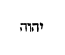
Quomodo ergo invocabunt, in quem non crediderunt? Christo enim Judaei non crediderunt, et ideo non invocant eum, in quem non crediderunt. Nam quod superius dicit: Omnis qui invocaverit nomen [Col. 0509A] Domini , ad Christum Dominum docuit referendum. Nam et Enos et Moses et Aaron et Samuel invocabant Dominum, et ipse exaudiebat eos. Sine dubio Christum Jesum invocabant, et si invocare nomen Domini, et orare Dominum unum atque idem est, sicut invocatur Christus, et orandus est Christus, et sicut offerimus Deo patri primo omnium orationes, ita et Domino Jesu Christo, et sicut offerimus postulationes patri, ita offerimus postulationes et filio, et sicut offerimus gratiarum actiones Deo, ita et gratias referimus salvatori. Unum namque utrique honorem deferendum, id est, patri et filio, divinus edocet sermo, cum dicit: Omnes honorificent filium, sicut honorificant patrem (Joan. V) .
Aut quomodo credent ei, quem non audierunt? [Col. 0509B] Possumus sic intelligere, quia vel ipsum in carne positum, vel Apostolos ejus praedicantes de eo audire noluerint. Sic enim et ipse Dominus dicit: Qui vos audit, me audit, et qui vos spernit, me spernit (Luc. X) . Potest autem et hoc intelligi, quod etiam nunc et semper Christus tanquam verbum et ratio unicuique loquitur in corde, et de pietate doceat, de justitia suadeat. De castitate, de pudicitia, et de omnibus simul virtutibus protestetur, sicut et ipse dicit: Oves meae vocem meam audiunt .
Quomodo autem audient sine praedicante? In hoc magis per praedicantium sermonem Christum ostendit audire, in quibus secundum ea quae supra diximus Christus loqui et docere monstratur.
Quomodo vero praedicabunt nisi mittantur? Difficultas [Col. 0509C] mihi in hoc sermone videtur exsurgere. Si enim ita intelligamus, quod propterea non praedicent, quia non mittantur, nullo autem praedicante non audient, non credentes autem non invocabunt, non invocantes, non salvabuntur. Colligitur ex his causa, qua non sunt salvati, ad vitium redeat auctoris, qui non miserit praedicantes. Sed magis ad illum nos qui rectiorem intelligentiae tramitem continet deflectamus. Et quod dixit: Quomodo autem praedicabunt, nisi mittantur , sic accipiamus, quasi dicat Apostolus: Nos praecones, praedicatores Christi non possumus praedicare, nec annuntiandi nobis virtus ulla subsisteret, nisi adesset nobis ipse qui misit. Quod si praedicantibus nobis audire non vultis, vestra jam culpa est, etsi audientes non creditis, [Col. 0509D] et non credentes non invocatis, et non invocantes salvi esse nequitis, quia ergo missi sunt ad praedicationem, idcirco de his qui ab ipso missi sunt, scriptum est:
Quam speciosi pedes evangelizantium bona . Illi sunt decori et speciosi pedes, qui perambulant per viam vitae. Secundum enim illum qui dixit: Ego sum via, intellige decoros et speciosos evangelizantibus pedes, qui per talem viam merentur incedere (Isai. LII) . Isti sunt pedes, quibus et cursum cucurrisse dicit, et sic currere ut comprehendat, id est, vigor animae, quo tenditur et praeparatur ad coelum. Gratifice autem pedes istos esse firmabis, quos Jesus discipulis lavat, et linteo quo praecinctus est tergit. Quamvis [Col. 0510A] hoc ipsum quod dicit, evangelizare, interpretetur bona annuntiare, tamen bona intelliguntur, quae annuntiat apostolis sancta Trinitas, id est, Pater et Filius et Spiritus sanctus. Hoc est enim, quod annuntiant Evangelistae secundum praeceptum Domini dicentis: Ite, docete omnes gentes, baptizantes eos in nomine Patris et Filii et Spiritus sancti (Matth. ultimo ).
Sed non omnes obediunt Evangelio . Neque omnes ex gentibus Evangelio crediderunt, neque omnes ex Israel, plures tamen, et multo plures ex gentibus, quam ex Israel.
Isaias autem dicit: Domine, quis credidit auditui nostro? Quis, pro raro dictum est, videtur tamen Isaias haec ex persona Apostoli prophetare, quibus [Col. 0510B] creditum fuerat praedicationis officium, et ipsi cum raritate credentium, praecipue de populo Israel viderunt, dicentes ad Dominum, Domine, quis credidit auditui nostro?
Ergo fides ex auditu, auditus autem per verbum Christi . Hic verbum Christi totam praedicationem de Christo significat, neque enim illi soli crediderunt, qui verbum ab ipso Domino audierunt, sed multo plures sunt, qui aliis eum praedicantibus audierunt, sicut ipse Dominus ait: Beati qui non viderunt et crediderunt . Omne ergo verbum quod apostoli et si qui alii de Christo praedicaverunt, hic Apostolus verbum Christi esse pronuntiat.
Sed dico: Nunquid non audierunt? Equidem in omnem terram exiit sonus eorum, et in fines orbis [Col. 0510C] terrae verba eorum . Hoc de Psalmo sumptum est, ubi ait: Non sunt loquelae neque sermones, quorum non audiantur voces eorum (Psal. XIX) , in quo pro linguarum et sermonum varietate gentes sine dubio intelliguntur. Et notandum, quod in terram sonus exierit, et in fines orbis terrae, non sonus, sed verba pervenerint. Terra namque hoc loco imperitos et indocibiles homines dicit, ad quos non verba, in quibus ratio fidei continetur et explanatio sapientiae, sed sonus fidei cum manet, simplici praedicatione pervenerit. Finem vero orbis terrarum, eruditiores quosque et prudentiores appellaverit. Finis enim perfectionem indicat rerum. Ad hos ergo tales non solum voces, sed verba et rationem pervenisse pronuntiat.
«Ambulans autem Jesus juxta mare Galilaeae, vidit duos fratres, Simonem, qui vocatur Petrus, et Andream fratrem ejus, mittentes rete in mare, erant enim piscatores. Et ait illis: Venite post me, et faciam vos fieri piscatores hominum. At illi continuo relictis retibus, secuti sunt eum. Et procedens inde vidit alios duos fratres, Jacobum Zebedaei et Joannem fratrem ejus in navi, cum Zebedaeo patre eorum, reficientes retia sua, et vocavit eos. Illi autem statim relictis retibus et patre, secuti sunt eum.»
Ambulans autem Jesus juxta mare Galilaeae . (Ex Eucherio.) Hoc mare propter terras adjacentes multis [Col. 0511A] vocatur nominibus, id est mare Galilaeae, lacus Cinareth, stagnum Genesar, mare Tiberiadis, lacus salinarum, et rel.
Vidit duos fratres, Simonem qui vocatur Petrus , etc. Quare piscatores vocantur? ne quis aestimaret, quod per eloquentiam praedicatorum sermo Dei latius exiret. Non filii regum, non scribae primo vocati memorantur, sed piscatores.
( Ex Hieron .) Piscatores et illitterati mittuntur ad praedicandum, ne fides credentium, non virtute Dei, sed eloquentia atque doctrina fieri putaretur.
( Ex Fulg .) Bini vocantur, binique mittuntur et apte: Vae enim, ait scriptura, soli , quia cum ceciderit, non habet sublevantem. Bina etenim doctrina est, dilectio Dei et dilectio proximi, qua pleni [Col. 0511B] bonum Testamentum praedicant, id est, Legis et Evangelii.
Erant enim piscatores, et ait illis , etc. (Ex Orig.) Mihi videtur non fortuitu contigisse, ut Petrus quidem et Andreas et filii Zebedaei arte piscatores invenirentur. Paulus vero arte faber tabernaculorum, et illi vocati ab arte capiendorum piscium, mutantur et fiunt piscatores hominum, dicente Domino: Venite post me, faciam vos piscatores hominum , non dubium, quin et Paulus, quia et ipse per Dominum meum Jesum Christum vocatus Apostolus est, simili artis suae transmutatione mutatus sit, ut sicut illi ex piscatoribus piscium, piscatores hominum facti sunt, ita et iste faciendis tabernaculis terrenis, ad coelestia tabernacula construenda translatus [Col. 0511C] sit. Construit enim coelestia tabernacula, docens unumquemque viam salutis, et beatarum in coelestibus mansionum iter ostendens, facit tabernacula Paulus, et cum ab Hierusalem in circuitu usque ad Illyricum replet Evangelium Dei, Ecclesias construendo, facit et ipse tabernacula.
Et procedens inde , etc. (Ex Fulgentio.) Primum enim homo retia desiderii sui mittit in mare hujus saeculi, ut velut pisces opera mortua capiat, sed misericorditer adveniens Christus, per compunctionem animi priora mutat instrumenta, ut iterum rete boni desiderii in saeculi mare jactans, pisces bonarum virtutum navi carnis ad portum vitae afferat, relinquens fugitivum diabolum, sic enim Zebedaeus interpretatur. Quatuor apostolorum nomina duos populos [Col. 0511D] significant. Simon enim obediens, Petrus autem agnoscens interpretatur, significat populum Judaeorum, qui prius obedivit praeceptis Domini, et agnovit creatorem suum. Id ipsum, et Jacobus, qui interpretatur supplantator, significat. Andreas vero interpretatur virilis, significat populum gentium, qui in fide Christi viriliter agit. Idipsum et Joannes, qui Domini gratia interpretatur significat. Gratia enim Dei salvatae sunt gentes. Nam et haec quatuor nomina in moribus uniuscujusque hominis continentur, Simon obediendo Deo, Petrus agnoscendo peccatum suum, Andreas viriliter sustinendo labores. Jacob vitia carnis supplantando, Joannes Dei gratiam suscipiendo habentur. Sive haec quatuor nomina pro [Col. 0512A] quatuor principalibus intelligenda sunt virtutibus. Tunc enim unusquisque obediens est, cum prudentiam agnoscendi peccata habuerit. Tunc virilis est cum temperantiam sustinendi laborem apprehenderit. Tunc supplantator, cum fortitudinem vincendi vitia receperit. Tunc Dei gratia cum veram justitiam implendi mandata invenerit.
«Scientes quia hora est jam nos de somno surgere. Nunc autem propior est nostra salus quam cum credidimus. Nox praecessit, dies autem appropinquavit. Abjiciamus ergo opera tenebrarum et induamur arma lucis, sicut in die honeste ambulemus. Non in comessationibus et ebrietatibus. Non in cubilibus et impudicitiis. Non in contentione et aemulatione, sed induimini Dominum nostrum Jesum Christum.»
Scientes quia hora est jam nos de somno surgere . (Ex Orig.) Sunt animae, oculi, aures, manus, pedes, etc. Quae singula non membra corporalia, sed virtutes dicimus esse, quibus ad unumquodque movere opus est. Ergo animae somnus quidem secundum oculos suos, si enim non agit tempore opportuno [Col. 0512C] quae Dei sunt, sed desidia torpescit, merito dormire dicitur; idcirco Paulus praeco Christi circumiens mundum in somno desidiae positum annuntiat adesse jam lucem, et tempus ut surgatur a somno, et tempus ignorantiae relinquatur.
Nunc enim propior est nostra salus quam cum credidimus . Nostra salus, id est, vita futura in coelo, quae quotidie labescentibus diebus appropinquat, et spatia quae praeteritis augentur, futuris sine dubio imminuuntur, et ideo propior fit quotidie nostra salus, id est, redemptio nostra, quae est vita perpetua, quam cum credidimus, unde et Dominus ait: Levate capita vestra, quoniam appropinquat redemptio vestra (Luc. XXI) .
Nox praecessit, dies autem appropinquavit . Noctem [Col. 0512D] dicit tempus illud, quo ignorantia hominibus dominata est. Diem vero nominat tempus illud, quo justitia solis adventura decrescentibus tenebris agnitio veritatis advenit. Sive nox est infidelitas, lux fides. Sive nox praesens mundus usque ad judicium, dies tempus post finem saeculi. Verum sciendum est adventum lucis hujus, et diei duplici modo accipiendum. Generaliter omnibus, et unicuique specialiter. Generaliter cum dies futuri saeculi advenerit, ad cujus comparationem praesentis hujus mundi spatium tenebrae appellantur. Singulariter unicuique, cum Christus in corde est, diem illi facit, cum ignorantia tenebras illi generat.
Abjiciamus ergo opera tenebrarum, et induamur [Col. 0513A] arma lucis, sicut in die honeste ambulemus . Opera tenebrarum sunt actus illi, qui a Deo alieni sunt, quae carnis opera appellantur, in his qui carnem suam luxuriae et impudicitiae, non sanctitati, neque Domino manciparunt. Arma vero lucis, sunt omnium assumptio virtutum, in quibus quasi in die honeste et confidenter ambulamus.
Non in comessationibus et ebrietatibus . Comessatio mensae collatio est. Sive comessationes dicuntur inhonesta et luxuriosa convivia, quibus comes est turpissima temulentia.
Non in cubilibus et impudicitiis . A foedis cubitationibus cubilia appellata sunt, quae non tam rationabilibus videantur hominibus, quam feris et belluis convenire. Impudicitia dicitur irreligiositas, et sine [Col. 0513B] verecundia turpitudo.
Non in contentione et aemulatione . Illa quae superius dixit carnis sunt vitia, haec vero animae, quamvis omnia simul carnis opera et tenebrarum dicantur, quia revera contentio et aemulatio in malis eorum est, qui secundum carnem vivunt, et qui in tenebris ambulant; qui autem in luce est, et sicut in die honeste ambulat, nihil per contentionem, neque per inanem gloriam gerit, hic aemulatio invidentia intelligitur.
Sed induimini Dominum Jesum Christum . Modo exponit, quod superius dixit, induamus arma lucis. Christus enim omnium sanctorum suorum arma lucis efficitur. Frequenter enim diximus Christum sapientiam esse et justitiam et sanctificationem et [Col. 0513C] veritatem, et omnes virtutes, quas utique qui assumpserit Christum dicitur induisse, si enim haec omnia Christus est, necessario qui haec habet et Christum habet.
«Cum appropinquassent Hierosolymis, et venissent Bethphage ad montem Oliveti. Tunc Jesus misit duos discipulos, dicens eis: Ite in castellum quod contra vos est, et statim invenietis asinam alligatam, et pullum cum ea; solvite, et adducite mihi. Et si quis vobis aliquid dixerit, dicite: Quia Dominus his opus habet, et confestim dimittet eos. Hoc autem totum factum est, ut adimpleretur quod dictum est per Prophetam dicentem: Dicite filiae Sion: Ecce rex tuus venit tibi mansuetus, sedens [Col. 0513D] super asinam et pullum filium subjugalis. Euntes autem discipuli fecerunt sicut praecepit illis Jesus. Et adduxerunt asinam et pullum et imposuerunt super eos vestimenta sua, et eum desuper sedere fecerunt. Plurima autem turba straverunt vestimenta sua in via. Alii autem caedebant ramos de arboribus et sternebant in via. Turbae autem quae praecedebant, et quae sequebantur clamabant, dicentes: Osanna filio David, benedictus qui venit in nomine Domini.»
Cum adpropinquassent Hierosolymis, et venissent Bethphage ad montem Oliveti . (Ex Hieron.) Bethphage autem domus buccae, sive domus maxillarum interpretatur, quia sacerdotum viculus erat, et confessionis [Col. 0514A] portabat typumi, et erat situs in monte Oliveti, ubi lumen scientiae, ubi laborum et dolorum requies est.
Tunc Jesus misit duos discipulos, dicens eis . (Ex Beda.) Non immerito posuit duo discipuli, ad exhibenda Domino animalia destinati duo praedicatorum ordines, unus videlicet in gentes, alter in circumcisione intelligi. Qui recte duo mittuntur, sive propter scientiam veritatis et operationis munditiam, seu propter geminae dilectionis Dei videlicet et proximi sacramentum tote orbe praedicandum.
Ite in castellum quod contra vos est . (Ex Hieron.) Contra apostolos enim erat, nec jugum doctrinarum volebant accipere. Missi isti discipuli doctores significant, qui indocta ac barbara totius orbis loca, [Col. 0514B] quasi contrapositi castelli moenia evangelizando penetrando destinavit.
Et statim invenietis asinam alligatam et pullum cum ea; solvite, et adducite mihi . Introeuntes mundum praedicatores sancti, invenerunt populum nationum perfidiae vinculis irretitum. Funiculis enim peccatorum suorum unusquisque constrictus erat, nec solum nationum, verum etiam Judaeorum, omnes enim peccaverunt et egent gloria Dei. Asina quippe, quae subjugalis et domita, synagogam, quae jugum legis traxerat, pullus asinae lascivus et liber populum nationum significat, super quem nemo adhuc hominum sedit, quia nemo rationabilium doctorum frenum correctionis, quod vel linguam cohibere a malo, vel in arctam vitae viam ire cogeretur. Nemo [Col. 0514C] indumenta salutis quibus spiritualiter calefieret, populo gentium utilia suadendo contulerat, sederet namque super illum homo, si aliquis ratione utens, ejus stultitiam deprimendo corrigeret.
Et si quis vobis aliquid dixerit: Dicite quia Dominus his opus habet, et confestim dimittet eos . In Luca scriptum est, quia Dixerunt domini ejus ad illos: Quid solvitis pullum? et apte satis: Multos quippe habebat dominos, qui non uno dogmati et superstitioni deditus, sed pro libitu immundorum spirituum ad varios diversosque miser raptabatur errores, ad simulacra muta, prout ducebatur incedens.
Hoc autem totum factum est, ut impleretur quod dictum est per Prophetam, dicentem: Dicite filiae Sion , etc. Hoc in propheta Zacharia scriptum est: Filia [Col. 0514D] Sion (Zacha. IX) . Historialiter Hierusalem totam vel Sion, quae in arte posita erat dicit: Spiritualiter vero sanctam significat Ecclesiam, ad quam Christus venire dignatus est. Quod dicit Rex tuus , ac si dicat, non extraneus, non alienigena, sed proprius, mansuetus, id est, non ferox et immitis, ut caeteri, ipse enim de se ait: Discite a me, quia mitis sum et humilis corde (Matth. XI) .
Euntes autem discipuli fecerunt, sicut praecepit eis Jesus, et adduxerunt asinam et pullum . Quid solvendo pullo contradixerant, audito Domini nomine, quiescunt, qui venientibus ad salutem gentium doctoribus obsistebant, eatenus suas tenebras defenderunt, donec miraculis attestantibus, veri possessoris [Col. 0515A] ac Domini virtus emicuit, ac postquam fidei dominicae potestas apparuit, cedentibus passim adversariorum querelis liber credentium coetus ad Deum, quem corde portaret, adducebatur.
Et imposuerunt super eos vestimenta sua, et eum desuper sedere fecerunt . Vestimenta apostolorum vel doctrina virtutum, vel edisseratio scripturarum, vel certe ecclesiasticorum dogmatum varietates intelligi possunt, quibus ille corda hominum ante nuda et frigida quo Christo possessore digna fiant, operit.
Plurima autem turba straverunt vestimenta sua in via . Portante Dominum asino multi vestimenta sua in via sternunt, quia sancti martyres propriae se carnis amictu exuentes, simplicioribus Dei famulis viam suo sanguine parant, ut videlicet inoffenso [Col. 0515B] gressu mentis ad supernae moenia civitatis, quo Jesus ducitur incedant. Item salvator noster asellum sedens Hierusalem tendit, quando uniuscujusque fidelis anima, regens videlicet jumentum suum, ad pacem intimae visionis ducit jumentum, sed et etiam cum sanctae Ecclesiae universaliter praesidet, eam quae in supernae pacis desiderium accendit. Multi autem vestimenta sua in via sternunt, quia corpora sua per abstinentiam edomant, ut ei iter ad Deum temperent, vel exempla bona sequentibus praebeant.
Alii autem caedebant ramos de arboribus, et sternebant in via . Frondes vel ramos de arboribus caedunt, qui in doctrina veritatis, verba atque sententias patrum et doctorum eloquia carpunt, et haec in via Dei ad auditoris animum venientis humili praedicatione [Col. 0515C] submittunt.
Turbae autem quae praecedebant et quae sequebantur clamabant , etc. Praecessit quippe Judaicus populus, secutus est gentilis, et quia omnes electi, sive qui in Judaea esse poterant, sive qui nunc in Ecclesia existunt, in mediatorem Dei et hominum crediderunt, et credunt qui praeeunt, et qui sequuntur, osanna clamabant. Osanna autem Latina lingua salvator dicitur. Ab ipso enim salutem et priores quaesierunt, et praesentes quaerunt, et benedictum qui venit in nomine Domini confitentur, quoniam una spes, una fides est praecedentium atque sequentium populorum.
«Quaecunque scripta sunt, ad nostram doctrinam scripta sunt, ut per patientiam et consolationem scripturarum spem habeamus. Deus autem patientiae et solatii det vobis idipsum sapere in alterutrum secundum Jesum Christum, ut unanimes uno ore honorificetis Deum et patrem domini nostri Jesu Christi. Propter quod suscipite invicem, sicut et Christus suscepit vos in honorem Dei. Dico enim Jesum Christum ministrum fuisse circumcisionis. Propter veritatem Dei, ad confirmandas promissiones [Col. 0516A] patrum. Gentes autem super misericordia honorare Deum, sicut scriptum est: Propterea confitebor tibi in gentibus, et nomini tuo cantabo. Et iterum dicit: Laetamini gentes cum plebe ejus. Et iterum: Laudate, omnes gentes, Dominum, et magnificate eum omnes populi. Et rursum Isaias ait: Erit radix Jesse, et qui exsurget regere gentes, in eum gentes sperabunt. Deus autem spei repleat vos omni gaudio et pace in credendo, ut abundetis in spe et virtute spiritus sancti.»
Quaecunque scripta sunt, ad nostram doctrinam scripta sunt . (Ex Orig.) Propter nos enim scriptum est, quod Abraham duos filios habuit, unum de ancilla, et unum de libera , ut nos sciamus, quia haec sunt allegorice duo Testamenta. Propter nos scriptum [Col. 0516B] est quod populus manducavit manna, et bibit aquam de petra , ut intelligamus, quia spiritualem escam potumque biberunt. Bibebant autem de spirituali, consequente eos petra. Petra autem erat Christus . Haec et his similia ad nostram doctrinam sunt scripta, quibus per Salvatoris adventum sunt manifestata, qui autem intelligunt quae scripta sunt, illud sine dubio invenient, quod sequitur, id est, ut per sapientiam et consolationem Scripturarum spem habeamus ad Deum, quam habere non potest ille, qui nec credit, nec intelligit Scripturas.
Deus autem patientiae et solatii det vobis idipsum sapere in alterutrum secundum Jesum Christum . Grandis Dei est ista benedictio, ut unum sapiant omnes, atque unum sentiant, et sicut sibi ita unusquisque [Col. 0516C] velit et proximo. Multum enim valet unanimitatis gratia, unde Salvator ait: Si duo vel tres in unum consenserint, quaecunque petierint a Deo fiet eis (Matth. XVIII) . Aiunt Judaei de illis, qui in psalterio dicuntur, filii Chorae, quorum nomina in Exodo inveniuntur, id est, Assyr, qui eruditio, et Helchana, qui possessio Dei, et Abiasaph, qui congregatio patris interpretatur, quod cum pater eorum peccasset, et una cum Dathan et Abiron segregarent se a coetu nefario, et sequestrati unanimiter ad Deum preces fudisse atque exauditos esse, et non solum veniam poenae, sed et prophetiae gratiam meruisse, et hoc quoque eis a Deo praestitum, ne quid triste prophetare juberentur, et ob hoc omnes psalmi, quicunque nominibus eorum attitulantur, nihil [Col. 0516D] triste adversus peccatores, aut asperum continent, hoc protulimus, ut quanta sit unanimitas monstraremus.
Ut unanimes uno ore honorificetis Deum, et patrem Domini nostri Jesu Christi . Unum namque os dicitur, ubi unus atque idem per diversorum omnia sensus et sermo procedit, et quia potest fieri, ut et in malitia aliqui unanimiter consentiant, et unum sapiant in pejus, ob hoc addidit, secundum Jesum Christum .
Propter quod suscipite invicem sicut et Christus suscepit vos in honorem Dei . Ad illud respicit, ubi occasione mundorum vel immundorum ciborum diversa sentientes, abinvicem discrepabant, ac si diceret: Nihil de immunditia animalium judicetis, [Col. 0517A] sicut et Christus immunditias credentium reputavit. Qui nullius obruit delictum, nec alicui reputavit peccatum, sed omnes in honorem suscepit. Quos enim suscepit Christus, docet eos ita agere debere, ut videntes homines opera eorum bona glorificent patrem, qui in coelis est.
Dico enim Christum Jesum ministrum fuisse circumcisionis, propter veritatem Dei ad confirmandas promissiones patrum . Duplici modo hoc intelligi potest, sive quod circumcisionem in carne sua suscepit ipse, ut ex semine Abrahae veniens compleret in seipso, quae patribus fuerant repromissa, sive ut in carne sua minister circumcisionis fuisse dicatur: de qua idem Apostolus dicit: Non qui in manifesto Judaeus est, neque quae in manifesto in carne circumcisio, [Col. 0517B] sed qui in occulto Judaeus et circumcisione cordis, quae spiritu non littera fit, cujus laus non ex hominibus (Rom. II) , sed ex Deo est, per hujusmodi circumcisionem certum est patrum promissiones esse completas.
Gentes autem super misericordiam honorare Deum . Sicut audire debent, quia illis Deus gratuitam misericordiam donavit; cui enim plus dimittitur, plus diligere debet.
Sicut scriptum est: Propterea confitebor tibi in gentibus, et in nomine tuo cantabo . (Ex Primas.) Tollit Judaeis arrogantiam, dum gentium salutem docet esse praedictam, quamvis ipsis non fuerit nuntiatum, Christus in gentibus confitetur. Et iterum dicit:
Laudate, omnes gentes, Dominum, et magnificate [Col. 0517C] eum, omnes populi . Haec vox apostolorum est, provocantium ad baptismum novellum populum, ac si diceret: Vos omnes Gentes, qui relictis simulacris, accessistis ad Deum per fidem, laudate eum, quod David dicit: Magnificate eum omnes populi, et hortatur eos, qui ex Judaeis fuerant conversi. Quod titulus ille pronuntiavit, quem super crucem Pilatus posuit, scriptum Hebraice, Graece et Latine, id est, Rex Judaeorum.
Et rursum Isaias ait: Erit radix Jesse, et qui exsurgit regere gentes in eum gentes sperabunt . Quoniam Jesse interpretatur in nostra lingua, est mihi. In adventu ergo Christi omnis, qui credit ei, convenienter dixit: Est mihi, quasi dicat ille, de quo Moses dixit: Qui est, misit me ad vos , ipse est mihi, [Col. 0517D] hoc est, in ipsum credo, et ipse est qui surrexit ex radice Jesse, et in ipso gentes sperabunt.
Deus autem spei repleat vos omni gaudio, et pace in credendo, ut abundetis in spe et virtute spiritus sancti . Quia superios dixerat: In eum gentes sperabunt , conjungit gratanter: Deus spei ; si enim scriptum fuisset superius, in ipsum gentes credunt, adjecisset sine dubio, Deus fidei, sed quia ab sperando gentes posuit, ideo Deum spei invocat super eos qui sperant in eum, a quo eis et benedictionis munus precatur augeri. Est autem benedictio hujusmodi, ut repleantur omni gaudio et omni pace, quod de Christo recte intelligitur, qui pacificavit per sanguinem suum, non solum quae in terris, sed [Col. 0518A] etiam quae in coelis. Omni gaudio et pace impleti, videtur mihi difficile exponi. Pax fidelium in spe debet esse futura, ubi gaudium perpetuum et pax certa permanet, abundantia vero spei in virtutibus consistit.
«Erunt signa in sole et luna et stellis, et in terris pressura Gentium, prae confusione sonitus maris et fluctuum, arescentibus hominibus prae timore et exspectatione quae supervenient universo orbi. Nam virtutes coelorum movebuntur. Et tunc videbunt filium hominis venientem in nube cum potestate magna et majestate. His autem fieri incipientibus, respicite et levate capita vestra, quoniam appropinquat redemptio vestra. Et dixit illis similitudinem: [Col. 0518B] Videte ficulneam et omnes arbores. Cum producunt jam ex se fructum, scitis quoniam prope est aestas. Ita et vos cum videritis haec fieri, scitote quoniam prope est regnum Dei. Amen dico vobis, quia non praeteribit generatio haec, donec omnia fiant. Coelum et terra transibunt, verba autem mea non transibunt.»
Erunt signa in sole et luna et stellis, et in terris pressura gentium, prae confusione sonitus maris et fluctuum . Quod vero dicit: Erunt signa in sole et luna et stellis , praecursores vicini ejusdem judicii, quasi nuntius indicat. E quibus est, et illud prophetae: Sol vertetur in tenebras, et luna in sanguinem, antequam veniat dies Domini magnus et manifestus (Joel. II) . Item quod Lucas ait: Et in terris pressura [Col. 0518C] gentium , ipsum esse reor, quod Antichristi tempora describens Matthaeus, dicit: Erit enim tunc tribulatio magna, qualis non fuit ab initio mundi usque modo, neque fiet . Quod autem Lucas subjungit, prae confusione sonitus maris et fluctuum , praeco est illius, quod inter caetera mutabilia saeculi, Joannes mare habiturum conspexit.
Arescentibus hominibus prae timore et exspectatione, quae supervenient universo orbi, nam virtutes coelorum commovebuntur . Credo ipsum judicis adventum hac sententia designari, quando juxta alterius loci parabolam omnes, hoc est, et prudentes et fatuae virgines insolito clamore suscitati lampades ornant, id est, sua secum opera numerant, pro quibus maximo cum timore jam jamque instantem aeterni [Col. 0518D] discriminis exspectant eventum. Tunc itaque superveniente universo orbi timore, et exspectatione districti examinis, multi qui in hoc mundo florere videbantur, cum se sine fructu conspexerint, arescent, tunc fides, quae sine operibus vixerat, probante se justi judicis igne, marcescet.
Et tunc videbunt filium hominis venientem in nube cum potestate magna et majestate . (Ex Greg.) In potestate magna et majestate visuri sunt, quem in humilitate positum audire noluerunt, ut virtutem ejus tanto tunc districtius sentiant, quanto nunc cervicem cordis ad ejus patientiam non inclinant. Sed quia haec contra reprobos dicta sunt, mox ad electorum consolationem verba vertuntur. Nam subditur:
His autem fieri incipientibus, respicite et levate capita vestra, quoniam appropinquat redemptio vestra . Cum plagae, inquit, mundi crebrescunt, cum terror judicii virtutibus commotis ostenditur, levate vos capita, id est, exhilarate corda, quia dum finitur mundus, cujus amici non estis, prope fit redemptio, quam quaesistis. Levare itaque capita est omnino mentes nostras ad gaudia patriae coelestis erigere. Quod autem calcari mundus, ac despici debeat, provida Dominus comparatione manifestat. Nam sequitur:
Et dixit illis similitudinem: Videte ficulneam et omnes arbores, cum producunt jam ex se fructum, scitis quoniam prope est aestas, ita et vos cum videritis haec fieri, scitote quoniam prope est regnum Dei . [Col. 0519B] Aperte ergo docet, quia sicut ex fructu arborum ventura aestas agnoscitur, ita ex ruina mundi prope esse cognoscitur regnum Dei, quibus profecto verbis ostenditur, quia fructus mundi ruina est. Ad hoc enim crescit ut cadat, ad hoc germinat ut quaecunque germinaverit, cladibus consumat. Bene autem regnum Dei aestati comparatur, quia tunc moeroris nostri nubila transeunt, et vitae dies aeterni solis claritate fulgescunt, quae omnia cum magna certitudine confirmantur, cum sententia subjungitur, qua dicitur:
Amen dico vobis, quia non praeteribit generatio haec, donec omnia fiant . (Ex Beda.) Multum quippe commendat Dominus, quod ita pronuntiat, quodammodo, si dici fas est, juratio ejus: Amen dico vobis, quia [Col. 0519C] non praeteribit generatio haec, donec omnia fiant . Generationem autem, aut omne hominum genus dicit, aut specialiter Judaeorum.
Coelum et terra transibunt, verba autem mea non transient . Coelum quod transibit non aethereum, sive sidereum, sed aereum, a quo et aves coeli, et nubila coeli cognominantur, intelligere debemus. Si autem coelum et terra transibunt, movere potest, quomodo dicat Ecclesiastes: Generatio praeterit, et generatio advenit, terra vero in aeternum stat (Eccle. I) , sed aperta ratione coelum et terra per eam quam nunc habent speciem, transeunt. Attamen per essentiam sine fine subsistunt: Praeterit enim figura hujus mundi . Et ad Joannem angelus: Erit , inquit, coelum novum et terra nova . Quae quidem non alia [Col. 0519D] condenda sunt, sed haec ipsa renovantur. Coelum igitur et terra, et transibit et erit, quia et ab ea, quam nunc habet specie, per ignem tergetur, et tamen in sua semper natura servabitur.
«Sic nos existimet homo ut ministros Christi, et dispensatores mysteriorum Dei. Hic jam quaeritur inter dispensatores ut fidelis quis inveniatur. Mihi autem pro minimo est, ut a vobis judicer, aut ab [Col. 0520A] humano die. Sed neque meipsum judico, nihil enim mihi conscius sum, sed non in hoc justificatus sum. Qui autem judicat me, Dominus est. Itaque nolite ante tempus judicare, quoadusque veniat Dominus, qui et illuminabit abscondita tenebrarum, et manifestabit consilia cordium. Et tunc laus erit unicuique a Deo.
Sic nos existimet homo, ut ministros Christi et dispensatores mysteriorum Dei . Id est, non ut aequales Christi, hoc est dicere, non dicam pseudoapostolos, sed ne apostolos quidem nimia laude honorare debetis, sicut alio loco dixit: Nunquid Paulus crucifixus est pro vobis, aut in nomine Pauli baptizati estis? quia baptismatis homo minister est, auctor vero Deus, sicut legimus: Super quem videris columbam [Col. 0520B] descendentem, hic est qui baptizat in spiritu sancto (Joan. I) .
Hic jam quaeritur inter dispensatores, ut fidelis quis inveniatur . Haec interrogantis vox est, hic quaeritur, id est, in praesenti saeculo, jam vos putatis conscientias judicare humanas. Quod dicit, quaeritur, subauditur ab hominibus, ut fidelis quis inveniatur? Sive is qui mittitur, sive de his ad quos mittitur, ut fidelis et servus prudens inveniatur. Aliter, tanquam si diceret, hic jam forsitan aliquis dispensatorum merita praesumit extollere, et ausus est ante tempus judicii de conscientiis judicare.
Mihi autem pro minimo est, ut a vobis judicer, aut ab humano die, sed neque meipsum judico, nihil mihi conscius sum . Quod dicit: Mihi pro minimo [Col. 0520C] est , ac si dicat, pro nihilo mihi est, ut a vobis judicer. Humanum judicium ideo vocavit, quia frequenter in eo veritas et justitia frustratur. Humanum vero diem, ipsam humani judicii revelationem dixit: Neque meipsum judico, inquit, id est, meipsum non culpo, quia nihil mali in me scio, neque conscius sum. Aliter: Mihi pro minimo est , id est, esse aliquid, ut ab humano die, id est, humanae laudis gratia vel favore non capior, ut illud: Diem hominis non desideravi , id est, consolationem, cujus jucunditas carnalem mentem potest capere, non quaesivi. Sed neque meipsum judico, id est, neque meipsum alicujus meriti esse pronuntio, quia plus credo conscientiae meae, quam laudi ex aliena aestimatione [Col. 0520D] venienti. ( Ex August .) Quando possum judicare conscientiam meam, quando examinare potero, quo animo facio, quidquid facio, quantum possum homines de alio judicare, plus homo utique de se ipso, sed Deus plus de homine, quam homo de se. Homo enim videt in facie, Deus in corde.
Sed non in hoc justificatus sum . Id est, in hoc tempore, aut si forte nullum crimen admisi, ideo non peccavi. Si hoc Paulus dicit, quid nos dicere debemus? qui longe ab illius meritis distamus. Aliter: Non in hoc justificatus sum , hoc est dicere, ne hoc quidem mihi ad justitiam proficit, si nolim laudari, qui me indignum laude cognosco.
Qui autem judicat me, Dominus est . Ac si diceret: Cuncta haec, quae homo propriae aestimationis affectum [Col. 0521A] probare se credit, divino sunt reservanda judicio, qui novit non solum de operibus, sed et de cogitationibus judicare (Eccle. II) .
Itaque nolite ante tempus judicare , etc. Id est, nolite ante judicii tempus de laude hominis ferre sententiam, quia scriptum est, ne laudes hominem in vita sua.
Et tunc laus erit unicuique a Deo . De humana laude se habere sermonem hic evidenter ostendit, cum dicit, meritorum veritatem in sola Dei laude consistere, ille vero laudabilis est, quem Deus laudaverit, qui omnia occulta et invisa cognoscit.
«Cum audisset Joannes in vinculis opera Christi, mittens duos de discipulis suis ait illi: Tu es qui [Col. 0521B] venturus es an alium exspectamus? Et respondens Jesus ait illis: Euntes renuntiate Joanni quae audistis et vidistis. Caeci vident, claudi ambulant, leprosi mundantur, surdi audiunt, mortui resurgunt, pauperes evangelizantur. Et beatus est qui non fuerit scandalizatus in me. Illis autem abeuntibus, coepit Jesus dicere ad turbas de Joanne: Quid existis in desertum videre? Arundinem vento agitatam? Sed quid existis videre? Hominem mollibus vestitum? Ecce qui mollibus vestiuntur in domibus regum sunt. Sed quid existis videre? Prophetam? Etiam. Dico vobis, et plus quam prophetam. Hic est enim de quo scriptum est: Ecce mitto angelum meum ante faciem tuam, qui praeparabit viam tuam ante te.»
Cum audisset Joannes in vinculis opera Christi, mittens duos de discipulis suis, ait illi: Tu es qui venturus es, an alium exspectamus? (Ex Beda.) Qui venturus est, id est, quem prophetae venturum praedicarunt. Non ait: Tu es qui venisti, sed tu es qui venturus es, et est sensus, manda mihi, qui interficiendus ab Herode, et ad inferna descensurus sum, utrum te et in inferis debeam nuntiare, qui nuntiavi superis, an non conveniat Filio Dei, ut gustet mortem, et alium ad haec sacramenta missurus es.
Et respondens Jesus, ait illis: Euntes renuntiate Joanni quae vidistis et audistis: caeci vident, claudi ambulant, leprosi mundantur, surdi audiunt, mortui resurgunt, pauperes evangelizantur, et beatus est qui non fuerit scandalizatus in me . (Ex Fulgent.) Aliud [Col. 0521D] enim tantum audierunt, aliud tantum viderunt: audierunt enim quod surdi audirent, quod pauperes evangelizarentur, viderunt autem caecos videntes, claudos ambulantes, leprosos mundatos. Renuntiate Joanni , etc. Ac si diceret, nuntiate Joanni, quia ego sum de quo propheta dicebat: Deus ipse veniet, et salvos nos faciet (Esa. XXXV) . Caeci vident, ut impleatur illud propheticum: Tunc aperientur oculi caecorum . Claudi ambulant, ut impleatur: Tunc saliet sicut cervus claudus . Surdi audiunt, ut impleatur: Et aures surdorum patebunt . Spiritualiter Joannes legem significat: Ergo Joannes in vinculis lex vincta in Judaeis, misit duos Scribas et Pharisaeos: Tu es lex, interrogat Christum, ut eum praedicet. Respondit [Col. 0522A] Jesus: Caeci vident , ac si diceret, tempus illud advenit, ut caeci qui solem justitiae prius non videbant, jam impletur in eis: Beati mundo corde, quoniam ipsi Deum videbunt . Et claudi qui terrenis adhaerebant, et de coelestibus minime cogitabant, per mansuetudinis humilitatem, ad terram viventium currant, ut impleatur in eis: Beati mites, quoniam ipsi possidebunt terram . Et leprosi, qui immensa vitiorum mole gravati languebant, poenitentiam agentes, consolationem accipiant, et impleatur in eis: Beati qui lugent, quoniam ipsi consolabuntur . Et surdi, qui audiendi aures minime habebant, jam modo justitiam cordis auribus hauriant, et impleatur in eis: Beati qui esuriunt et sitiunt justitiam, quoniam ipsi satiabuntur . Et qui prius mortui erant Deo, et [Col. 0522B] vivebant saeculo, misereantur per poenitentiam animae suae, et vivant, et impleatur in eis: Beati misericordes, quoniam ipsi misericordiam consequentur . Et qui prius pauperes erant virtutibus, impleantur Spiritu sancto, et evangelizent, ut dicatur de his: Quam pulchri super montes pedes evangelizantium pacem, evangelizantium bona (Isai. LII) .
Et beatus est, qui non fuerit scandalizatus . (Ex Greg.) Quid est ergo dicere, beatus est, qui non fuerit scandalizatus in me? nisi aperta voce abjectionem mortis suae humilitatemque signare? Ac si patenter dicat, mira quidem facio, sed abjecta perpeti non dedignor, quia ego moriendo subsequor. Cavendum valde est hominibus, ne in me mortem despiciant, qui signa venerantur.
Illis autem abeuntibus coepit Jesus dicere ad turbas de Joanne: Quid existis in desertum videre? etc. Hoc videlicet non asserendo, sed negando intulit. Arundinem quippe, mox ut aura contigerit, in partem flectit, et quid per arundinem, nisi carnalis animus designatur, qui mox favore, vel detractione tangitur, in partem quamlibet inclinatur. Si enim ab humano ore aura favoris flaverit, hilarescit, extollitur, totumque se quasi ad granam flectit; sed si inde ventus detractionis eruperit, unde laudis aura veniebat, mox hunc quasi ad partem alteram, ad vim furoris inclinat. Sed arundo vento agitata Joannes non erat, quia hunc nec blandum gratia, nec cujuslibet ira asperum faciebat, nec prospera hunc erigere, nec adversa noverant inclinare.
Sed quid existis videre, hominem mollibus vestitum? Ecce qui mollibus vestiuntur in domibus regum sunt . Camelorum etenim pilis vestitus Joannes fuisse describitur. Non ergo coelesti, inquit, sed terreno regno militant hi, qui pro Deo perpeti aspera fugiunt, sed solis exterioribus dediti, praesentis vitae molliti sunt, et delectationem quaerunt. Nemo ergo existimet in luxu atque studio vestium, peccatum deesse, quia si hoc culpa non esset, nullo modo Joannem Dominus de vestimenti sui asperitate laudasset. Quamvis hoc quod Joannes non esset vestitus mollibus dicitur, per significationem intelligi aliter potest. Mollibus enim vestitus non fuit, quia vitam peccantium, non blandimentis fovit, sed vigore asperae [Col. 0523A] invectionis increpavit, dicens: Genimina viperarum, quis vobis demonstravit fugere a ventura ira (Matth. III) ?
Sed quid existis videre? Prophetam? et jam dico vobis et plusquam prophetam . Prophetae quippe ministerium est, ventura dicere, non etiam demonstrare. Joannes ergo plusquam propheta est, quia eum, quem praecurrendo prophetaverat, etiam ostendendo nuntiabat.
Hic est de quo scriptum est: Mitto angelum meum ante faciem tuam, qui praeparavit viam tuam ante te . Quod Graece ἄγγελος , angelus Latine nuntius dicitur. Recte ergo, qui nuntiare supernum judicem mittitur, angelus vocatur, ut dignitatem servet in nomine, quam explet operatione. Alium quidem nomen [Col. 0523B] est, sed vitae nomine inferior non est. Sed et omnes qui sacerdotii nomine censentur, angeli vocantur, propheta attestante, qui ait: Labia sacerdotis custodiunt scientiam, et legem requirunt ex ore ejus, quia angelus Domini exercituum est . Nec non etiam unusquisque fidelium, in quantum sufficit, in quantum gratiam supernae aspirationis accipit, si a pravitate proximum revocat, si exhortari ad bene operandum curat, si aeternum regnum vel supplicium erranti denuntiat, cum verba sanctae admonitionis intendit, profecto angelus existit.
«Gaudete in Domino semper, iterum dico gaudete.»
Hujus epistolae expositionem in Hebdomada post Pentecosten vicesima quarta require .
«Miserunt Judaei ab Hierosolymis sacerdotes et Levitas ad eum, ut interrogarent eum: Tu quis es? Et confessus est, et non negavit. Et confessus est, quia non sum ego Christus. Et interrogaverunt eum. Quid ergo? Elias es tu? Et dixit: Non sum. Propheta es tu? Et respondit: Non. Dixerunt ergo ei: Quis es, ut responsum demus his qui miserunt nos? Quid dicis de teipso? Ait: Ego vox clamantis in deserto, dirigite viam Domini, sicut [Col. 0523D] dixit Isaias propheta. Et qui missi fuerant, erant ex Pharisaeis. Et interrogaverunt eum, et dixerunt ei: Quid ergo baptizas, si tu non es Christus, neque Elias, nec propheta? Respondit eis Joannes, dicens: Ego baptizo in aquam, medius autem vestrum stetit quem vos nescitis. Ipse est qui post me venturus est, qui ante me factus est, cujus ego non sum dignus, ut solvam ejus corrigiam calceamenti. Haec in Bethania facta sunt trans Jordanem, ubi erat Joannes baptizans.»
Miserunt Judaei ab Hierosolymis sacerdotes et Levitas ad Joannem, ut interrogarent eum: Tu quis es? Et confessus est, et non negavit. Et confessus est, quia non sum ego Christus . His verbis Joannis humilitas [Col. 0524A] commendatur, qui cum tantae virtutis esset, ut Christus credi potuisset, elegit solide subsistere in se, ne humana opinione raperetur inaniter super se. Nam confessus est, et non negavit, confessus est, quia non sum ego Christus . Sed quia dixit, non sum, negavit plane quod non erat, sed non negavit quod erat, ut veritatem loquens, ejus membrum fieret, cujus sibi nomen fallaciter non usurparet.
Et interrogaverunt eum: Quid ergo? Elias es tu? Et dixit: Non sum . Timendum est enim, ne minus intelligentes contraria putent Joannem dixisse, quam Christum. Christus dixerat: Elias jam venit, et ipse est Joannes Baptista. Joannes interrogatus, respondit. Non sum Elias, utrique enim veritatem dixerunt. Si proprietatem interroges, Joannes Joannes [Col. 0524B] est, et Elias Elias est. Joannes autem recte de proprietate personae suae respondit, Non sum Elias. Dominus vero de praefiguratione recte dicit: Ipse est Elias. Nec Joannes falsum, nec Dominus falsum, ipsa praefiguratione venit iste, qua proprietate venturus est Elias.
Joannes igitur in spiritu Elias erat, in persona Elias non erat. Quod ergo Dominus fatetur de spiritu, hoc Joannes denegat de persona, quia et justum sic erat, ut et discipulis Dominus spiritalem de Joanne sententiam diceret; et Joannes in turbis carnalibus, non de suo spiritu, sed de corpore responderet.
Propheta es tu? Et respondit: Non . Ideo prophetam se esse non dicit, quia majorem se prophetis [Col. 0524C] esse cognoscit, quia quem prophetae venturum fore dixerunt, iste digito demonstravit, dicens: Ecce agnus Dei, ecce qui tollit peccata mundi .
Dixerunt ergo ei: Quis es, ut responsum demus his qui miserunt nos? Quid dicis de te ipso? Ait: Ego vox clamantis in deserto, dirigite viam Domini, sicut dixit Isaias propheta . Vocem se esse Joannes asserit, quia verbum praecedit. Primum enim vox sonat Joannis, ut verbum sequatur. Adventum itaque dominicum praecurrens vox dicitur: Quia per ejus mysterium patris verbum ab hominibus auditur. Illud scilicet, de quo Joannes ait: In principio erat Verbum, et verbum erat apud Deum, et Deus erat Verbum , qui etiam in deserto clamat, quia derelictae ac destitutae Judaeae, solatium redemptoris [Col. 0524D] annuntiat. Quid autem clamat, insinuat cum subjungit: Dirigite viam Domini, sicut dixit Isaias propheta (Isai. XL) : Via Domini ad cor dirigitur, cum veritatis sermo humiliter auditur, via Domini ad cor dirigitur, cum ad praeceptum vitae praeparatur.
Et qui missi fuerant, erant ex Pharisaeis. Et interrogaverunt eum, et dixerunt ei: Quid ergo baptizas, si tu non es Christus, neque Elias, neque propheta? Quod quia non studio cognoscendae veritatis, sed malitiae exercendae aemulationis dicitur, evangelista tacite innotuit, qui subjunxit, dicens: Et qui missi fuerant, erant ex Pharisaeis , ac si aperte dicat: Illi Joannem de suis actibus requirunt, qui doctrinam nesciunt quaerere, sed invidere.
Respondit eis Joannes, dicens: Ego baptizo in aqua . Joannes non spiritu, sed aqua baptizatorum corpora lavit, sed tamen per veniam non lavat. Cur ergo baptizat, qui peccata per baptisma non relaxat, nisi ut praecursionis suae ordinem servans, qui nasciturum nascendo praevenerat, baptizaturum quoque Dominum baptizando praeveniret, et qui praedicando factus est praecursor Christi, baptizando etiam praecursor ejus fieret imitatione sacramenti.
Medius autem vestrum stetit, quem vos nescitis . In medio ergo hominum et stetisse Salvator asseritur et nesciri, quia per carnem apperens, et visibilis stetit corpore et invisibilis majestate.
( Ex Beda .) Lucas enim in hoc loco ait: Ipse nos baptizavit in spiritu sancto et igni , hoc est, et purgatione [Col. 0525B] sanctificationis, et probatione tribulationis. Potest autem idem spiritus sancti etiam nomine ignis sanctificatus intelligi, quia et incendit per amorem, et per sapientiam corda quae replet illuminat.
Ipse est qui post me venturus est, qui ante me factus est . (Ex Greg.) Sic namque dicitur: ante me factus , ac si dicatur: ante me positus. Post me ergo venit, quia postmodum natus. Ante me autem factus est, quia mihi praelatus, sed haec paulo superius dicens, etiam praelationis ejus causas aperuit, quia prior me erat, ac si aperte dicat: Inde me etiam post natus superat, quo eum nativitatis suae tempora non angustant. Nam qui per matrem in tempore nascitur, sine tempore est a patre generatus. Qui quantae [Col. 0525C] reverentiae humilitatem habeat subdendo manifestat.
Cujus non sum dignus, ut solvam ejus corrigiam calceamenti , etc. Mos apud veteres fuit, ut si quis eam quae sibi competeret accipere uxorem nollet, ille ei calceamentum solveret, qui ad hanc sponsus jure propinquitatis veniret, quid igitur inter homines Christus, nisi sanctae Ecclesiae sponsus apparuit, de quo et iste Joannes dicit: Qui habet sponsam sponsus est (Joan. III) , sed quia Joannem homines Christum esse putaverunt, quod et iste Joannes negat. Recte se indignum esse ad solvendum corrigiam ejus calceamenti denuntiat, ac si aperte dicat: Ego redemptoris vestigia denudare non valeo, quia sponsi nomen mihi immeritus non usurpo. Quod tamen intelligi et aliter potest, quis enim nesciat, [Col. 0525D] quod calceamenta ex mortuis animalibus fiant, incarnatus vero Dominus veniens, quasi calceatus apparuit, qui in divinitate sua morticina corruptionis nostrae assumpsit, sed hujus incarnationis mysterium humanus oculus penetrare non sufficit. Corrigia ergo calceamenti est ligatura mysterii. Joannes itaque solvere corrigiam calceamenti ejus non valet. quia incarnationis mysterium, nec ipse investigare sufficit, qui hanc per prophetiae spiritum agnovit.
Solvere calceamentum nudare est membra, quae ab ipso teguntur, et nudum verbum, id est, divini sermonis evidentissime quis poterit speculando explicare sermonem, ni forte aliquibus imaginibus explicare, et hoc est quod dicit: Non sum dignus, id [Col. 0526A] est, non sufficio omnia Christi ad liquidum, sublato verborum velamine, revelare mysteria.
Haec in Bethania facta sunt trans Jordanem, ubi Joannes baptizans . Bethania villa est in secundo ab Elia milliario, in latere montis Oliveti, ubi salvator Lazarum suscitavit. Bene praecursor Domini nostri in Bethania dicitur baptizasse, nam Bethania domus obedientiae interpretatur, ut demonstraret per obedientiam fidei omnes ad Christi baptisma debere pervenire.
Hactenus dierum Dominicarum festivitatumque multarum expositiones, juvante Christo, absolvimus. Dehinc sanctorum martyrum, virginum et confessorum expositiones ponemus .
«Scimus quoniam diligentibus Deum omnia cooperantur in bonum, his qui secundum propositum vocati sunt sancti. Nam quos praescivit et praedestinavit conformes fieri imaginis filii sui, ut sit ipse primogenitus in multis fratribus. Quos autem praedestinavit hos et vocavit. Et quos vocavit, hos et justificavit. Quos autem justificavit, illos et magnificavit. Quid ergo dicemus ad haec? Si Deus pro nobis, quis contra nos? Qui etiam proprio filio suo non pepercit, sed pro nobis omnibus tradidit illum. Quomodo non etiam cum illo omnia nobis donavit? Quis accusabit adversus electos Dei? Deus est qui justificat. Quis est qui condemnet? Christus Jesus [Col. 0526C] qui mortuus est, imo qui et resurrexit, qui est ad dexteram Dei, qui etiam interpellat pro nobis. Quis ergo nos separabit a charitate Christi? Tribulatio an angustia, an fames, an nuditas, an periculum, an persecutio, an gladius. Sicut scriptum est: Quia propter te mortificamur tota die, aestimati sumus sicut oves occisionis. Sed in his omnibus superamus propter eum qui dilexit nos. Certus sum enim quia neque mors, neque vita, neque angeli, neque principatus, neque virtutes, neque instantia, neque futura, neque fortitudo, neque altitudo, neque profundum, neque creatura alia poterit nos separare a charitate Dei, quae est in Christo Jesu Domino nostro.»
Scimus quoniam diligentibus Deum omnia cooperantur [Col. 0526D] in bonum . In tantum enim omnia cooperantur in bonum, et collaudant hi qui diligunt Deum, ut et ipse spiritus adjuvet, nec dedignetur divina natura dux esse itineris ab bonum.
His qui secundum propositum vocati sunt sancti . Id est, secundum quod proposuit, non ex operibus legis, nec legalibus sacrificiis, sed sola fide et sanguinis sui effusione, salvare quos praescierat credituros, et quos gratis vocavit ad salutem, multo magis glorificavit operantes.
Nam quos praescivit et praedestinavit . Praedestinare non idem est quod praescire, quia praescientia praedestinationem ratione praecedit. Nam quos praescivit bonos praedestinatione, reddit beatos. Ergo quos [Col. 0527A] praevidit conformes Christi futuros in vita, voluit atque proposuit, ut fierent conformes in gloria, sicut dixit: Qui configurabit corpus humilitatis nostrae conforme corpori claritatis suae (Philipp. III) .
Ut sit ipse primogenitus in multis fratribus . Secundum quod unigenitus dicitur, fratres non habet, hoc est, secundum divinitatem. Secundum id autem quod primogenitus dicitur, fratres habet, hoc est, secundum humanitatem, unde est et illud: Primogenitus ex mortuis , ut sit ipse primatum tenens ex resurrectione mortuorum.
Quos autem praedestinavit hos et vocavit . Non putemus, quod praedestinatio vim nolentibus faciat. Vocando autem volentes colligit non invitos, vocantur autem ut per praedicationem credant. Credentes [Col. 0527B] autem per baptismum justificantur, et postmodum magnificantur, id est, glorificantur, aut nunc in virtutibus gratiarum, aut postmodum in beata venturi saeculi resurrectione.
Et quos vocavit hos et justificavit, quos autem , etc. His qui secundum propositum bonum et bonam voluntatem, quam circa Dei cultum gerit vocantur, ipsi sunt qui secundum propositum vocati dicuntur, et isti sunt qui vocati justificantur et justificati glorificantur. Illa gloria in praesenti saeculo, de qua Apostolus ait: Nos autem omnes revelata facie gloriam Domini speculantes, in eamdem imaginem transformamur a gloria ad gloriam in futuro cum corpus humilitatis nostrae surget in gloriam .
( Ex August .) Quod vero superius ait: Conformes [Col. 0527C] fieri imaginis filii ejus sic intelligitur, quia sicut ille, immortale corpus habebimus, conformes facti in hac parte, non patris imaginis, aut spiritus sancti, sed tantummodo filii, quia de hoc fides sana accipitur: Verbum caro factum est . Potest et sic accipi, ut quemadmodum nobis ille mortalitate, ita nos illi efficiamur immortalitate conformes.
Quid ergo dicemus ad haec? Si Deus pro nobis, quis contra nos ? Vult ostendere, quod nemo possit nocere, vel impedire eos qui diligentes Deum diliguntur a Deo, quo minus gloriam, quae promissa est, consequantur, eo quod perfecta, quae in illis est, charitas foras omnem causam mortalis timoris expellat
( Ex Orig .) Quomodo pro nobis sit Deus manifestum [Col. 0527D] est ex his quae supra exposuit, id est, quod spiritus Dei habitat in nobis , vel quod Christus est in nobis , vel quod spiritu Dei agimur et spiritum adoptionis accepimus , vel quod sumus filii Dei, et haeredes et cohaeredes Christi , vel quod primitias spiritus accepimus , et quod ipse spiritus interpellat pro nobis , vel quod omnia nobis cooperantur in bonum , vel quod secundum propositum vocati sumus, et praecogniti, et justificati, et praedestinati, et glorificati . Horum etenim omnium veluti anacephaleosi utens, et simul omnia repetens, ait: Quid ergo dicemus ad haec , hoc est, ad haec omnia quae supra diximus, quia si sic Deus pro nobis est, ut haec nobis cuncta concesserit, quis esse adversum nos poterit?
Qui etiam proprio filio suo non pepercit, sed pro nobis omnibus tradidit illum . Permisit tradi, ut tradentis maneret libertas arbitrii, et nobis per dominicas passiones patientiae proponeretur exemplum. Sed pro nobis omnibus, hic adverte, quod non pro aliquantis, sicut praedestinationis error aestimat, sed pro omnibus tradidit illum.
( Ex Orig .) Non solum pro sanctis, nec solum pro magis, sed pro et minimis omnino, qui sunt in Ecclesia, tradidit filium proprium pater, et ideo nullus in Ecclesia scandalizandus, vel contemnendus est.
Quomodo non etiam cum illo omnia nobis donavit? Quid potest habere charius, quod nobis neget, qui filium unicum non negavit? Ac si diceret: Nulla est, sive visibilis, sive invisibilis creatura, quae filio [Col. 0528B] possit aequari. Etsi creator ipse donatus est nobis, quomodo non cum ipso omnis nobis creatura donabitur? Et hoc dupliciter intelligendum, si enim habeamus in nobis Christum, secundum hoc quod verbum et sapientia et veritas, et justitia, et pax est, et caetera omnia quae de eo scripta sunt, cum hac plenitudine virtutum nobis omnia donabuntur, ut omnia quaecunque creavit Deus visibilia et invisibilia, occulta et manifesta, temporalia et aeterna, cum Christo pariter habeamus, et alio modo, cum ipso omnia nobis donavit, hoc est, ipsi ut haeredi, nobis vero ut cohaeredibus, ejus pariter cum ipso nobis universa perfrui dabitur creatura.
Quis accusabit adversus electos Dei? Deus qui justificat . Videtur mihi quod ait: Quis accusabit electos [Col. 0528C] Dei? de diabolo dicere, nullus est enim ita electus, et ita magnus quem ille non audeat accusare, nisi illum solum qui peccatum non fecit, qui et dicebat: Nunc venit princeps hujus mundi, et in me nihil invenit; sed quamvis ille exerat nequitiam praepositi sui, Deo justificante et delente iniquitatem electorum suorum, quid proficiet accusator?
Quis est qui condemnet? Christus Jesus qui mortuus est, imo qui et resurrexit, qui est ad dextram Dei, qui etiam interpellat pro nobis . Sed cum Christus pro eis mortuus sit, imo potius a mortuis resurrexit et stat a dextris patris et interpellat pro his, quis eos poterit condemnare? Aliter: Videtur hoc contra Judaeos tacite loqui: Nunquid accusare poteritis fideles Christi venientes ex gentibus, qui credentes [Col. 0528D] gratiae, mandata legalia praetermittunt, qui justi signis et virtutibus demonstrantur? Aut quis hos qui per regenerationem abluti et sanctificati sunt, pro pristinis audebit accusare, delictis, subaudiendum? Nunquid Deus qui justificat, accusabit? Nunquid Christus viventes in suis justificationibus condemnabit, pro quibus mortuus est, et pro quibus interpellat patrem, ac pro eis infatigabilis advocatus assistit? Interpellare enim patrem pro nobis dicitur, dum semper ei hominem, quem suscepit, quasi nostrum pignus ostendit.
( Ex August .) Cum pro his, inquit, omnibus beneficiis, quae consecuti sumus, fixi et radicati sumus in charitate Dei, quis nos ab ea poterit separare? [Col. 0529A] Tribulatio si venerit, dicemus ad Deum: In tribulatione dilatasti me (Psal. IV) : Angustia si fuerit, sapientiae Dei et scientiae latitudinem requiremus, in qua nos angustare non poterit mundus, sed per divinarum mystice et spiritaliter scripturarum equitabo amplissimos campos. Persecutionem si patior, et confiteor Christum meum coram hominibus, certus sum quia et ille me confitebitur coram patre suo, qui in coelis est (Matth. X) . Fames si adfuerit, turbare me non potest, habeo enim panem vitae, qui de coelo descendit (Joan. II) . Nuditas me non confundit, indutus sum enim Dominum Jesum Christum (Rom. XIII) . Periculum non timebo, Dominus enim illuminatio mea et salus mea, quem timebo? Gladius terrere me non potest, habeo enim mecum [Col. 0529B] gladium spiritus, quod est verbum Dei, vivens et efficax, et penetrabilior omni gladio ancipiti. Illius enim charitas qui nos dilexit et nostrum ad se rapuit affectum, cruciatum corporis et dolorem nos sentire facit, ideo ergo in his omnibus superamus.
( Ex Orig .) Videtur enim posse haec agere, ut a charitate Dei separemur. Mors et fortassis angeli, et principatus, et virtutes adversantes nobis, sine dubio et praesentia, quae sunt utique lubrica et caduca, sed et profundum, potest similiter intelligi, vita autem futura et altitudo et creatura, aliquo modo a charitate Dei separare nos conantur. Non otiosum videtur exponere, nisi quis forte dicat hyperbolice haec Apostolum dicere, hoc est, non solum per ea quae accidere possunt, sed ne per ea quidem quae [Col. 0529C] venire omnino non possunt, ullo pacto a Dei charitate deflectimur.
( Ex Aug .) Nemo nos inde separet minando mortem, idipsum enim, quod diligimus Deum, mori non potest. Nisi dum non diligit Deum, cui mors ipsa est, non diligere Deum. Nemo nos inde separet pollicendo vitam. Nemo enim ab ipso fonte separat aquam. Non separat angelus; non enim est angelus, cum inhaeremus Deo, nostra mente potentior. Non separat virtus, illa scilicet, quae potestatem tenebrarum in hoc mundo tenet, toto mundo est omnino sublimior mens inhaerens Deo. Non separant instantes molestiae, hoc enim leviores eas sentimus quo ei a quo nos separare moliuntur arctius inhaeremus. Non separat promissio futurorum, nam et quidquid [Col. 0529D] boni futurum est, certius promittit Deus, et nihil est ipso Deo melius, qui jam profecto bene sibi inhaerentibus praesens est.
Certus sum enim . Non dixit, opinor, sed certus sum quod fideles Christi non separat ab ejus charitate, nec mors, nec vita, id est, nec persecutio, quae nunc spem vitae ingerit, nunc terrorem mortis intentat, neque potestas adversa transfigurans se in angelum lucis, audienda est. Neque fortitudines, quia vasa fortis diripientur, qui per Christum ligatus est.
Neque altitudo, neque profundum . Id est, neque astrologia, neque necromantia, quia et illa altitudinem sursum, et ista infernum scrutantur deorsum.
Neque creatura alia poterit nos separare a charitate [Col. 0530A] Dei, quae est in Christo Jesu Domino nostro . Etiam si alia creatura, id est, alterius regionis, quae in alia rerum natura seposita sit, de inferis possit resurgere, separare nos a creatore, cui anima etiam morte jungenda est, non valeret.
«Hoc est praeceptum meum, ut diligatis invicem, sicut dilexi vos. Majorem hac dilectionem nemo habet, ut animam suam quis ponat pro amicis suis. Vos amici mei estis, si feceritis quae ego praecipio vobis. Jam non dicam vos servos, quia servus nescit quid faciat Dominus ejus. Vos autem dixi amicos, quia omnia quaecunque audivi a Patre meo, nota feci vobis. Non vos me elegistis, sed ego elegi vos, ut eatis et fructum afferatis, et fructus [Col. 0530B] vester maneat: ut quodcunque petieritis patrem in nomine meo det vobis.»
Hoc est praeceptum meum, ut diligatis invicem, sicut dilexi vos . (Ex August.) Ut quid enim nos dilexit Christus, nisi ut possimus regnare cum Christo? Ad hoc nos diligere debemus, ut habeamus Deum, et maneamus in Deo, et si sic qui se diligunt, Deum diligunt, et haec est dilectio, ut sit Deus omnia in omnibus (I Cor. XV) .
Majorem hac dilectionem nemo habet quam ut animam suam ponat quis pro amicis suis . In hoc Christi dilectio supereminet in nos, quia venit, ut animam suam poneret pro inimicis suis, ad hoc tamen ut ex inimicis faceret amicos, sed non omnium est martyrium, tamen omnium beneficium est in [Col. 0530C] fratres. Qui veram substantiam suam fratri in necessitate posito non tribuit, quomodo animam suam in persecutione daturus est pro fratre suo? Virtus vero hujus charitatis est in pace sua distribuere pro Christi amore ut possit in perturbatione se ipsum tradere pro nomine ejus.
Vos amici mei estis si feceritis quae ego praecipio vobis . Magna est dignitas amicum esse Dei, sed videndum est, quibus gradibus ad hanc celsitudinem perveniatur. Subjungit: Si feceritis ea quae ego praecipio vobis . Ac si aperte dicat: Gaudetis de culmine, pensate quibus laboribus venitur ad culmen. Magna est misericordia largitoris nostri, servi non fuimus digni, et amici vocamur, ideo subjungit.
Jam non dicam vos servos, quia servus nescit quid [Col. 0530D] faciat Dominus ejus . Aliud est servum timoris, aliud amoris, quae duo exempli gratia ipsa veritas in hoc eodem Evangelio exprimit, dicens: Servus non manet in domo in aeternum, filius autem manet . Filius vero servit patri propter amorem, servus autem propter timorem, de quo servitio Dominus dixit: Jam non dico vos servos, sed amicos , quia filii non servi, ideo et amici, quia servus nescit quid faciat Dominus ejus . Nescit enim voluntatem Domini sui, qui per timoris amaritudinem servit Domino suo, et non per charitatis dulcedinem, quasi patri serviat.
Vos autem dixi amicos, quia omnia quaecunque audivi a patre meo, nota feci vobis . Quae sunt omnia, quae audivit a patre, quae nota fieri voluit servis [Col. 0531A] suis, ut eos perficeret amicos suos, nisi gaudia internae charitatis, nisi illa festa supernae patriae, quae nostris quotidie mentibus per aspirationem sui amoris imprimit, sed haec cognitio, quae nunc ex parte proficit, in illa plenitudine scientiae perficietur, de quo Apostolus ait: Cum autem venerit quod perfectum est, evacuabitur quod ex parte est (I Cor. XIII) , hoc enim Dominus discipulis se fecisse dixit, quod facturus esse sciebat.
Non vos me elegistis, sed ego elegi vos . Haec est affabilis gratia, quae praevenit nos, ut simus amici ex servis, ideo nobis non subrepat superbia, quasi pro nostris meritis aliquid acciperemus, dum filii irae fuimus, nunc autem filii Dei per gratiam effecti sumus, sine qua nihil possumus facere, ut paulo ante [Col. 0531B] ipsa veritas ait: Sine me nihil potestis facere .
Et posui vos, ut eatis et fructum afferatis . Posui ad gratiam, plantavi ut eatis volendo, fructus afferatis operando. Eatis enim volendo dixit: Quia velle aliquid facere jam mente ire est, qualem vero fructum afferre debeant subjungit.
Et fructus vester maneat, ut quodcunque petieritis patrem in nomine meo det vobis . Nomen filii Jesus est, Jesus autem salvator, vel etiam salutaris dicitur: Ille ergo in nomine salvatoris petit, qui illud petit, quod ad veram salutem pertinet. Nam si id quod non expediat petitur, non in nomine Jesu petitur.
«Benedictus Deus et Pater Domini nostri Jesu Christi, Pater misericordiarum et Deus totius consolationis, qui consolatur nos in omni tribulatione nostra, ut possimus et ipsi consolari eos, qui in omni pressura sunt per exhortationem, qua exhortamur et ipsi a Deo. Quoniam sicut abundant passiones Christi in nobis, ita et per ipsum abundat consolatio nostra, sive autem tribulamur pro vestra exhortatione et salute, sive consolamur pro vestra consolatione, quae operatur tolerantiam earumdem passionum, quas et nos patimur, ut spes nostra firma sit pro vobis, scientes quoniam sicut socii passionum estis, sic eritis et consolationis, in Christo Jesu Domino nostro.»
Benedictus Deus et Pater Domini nostri Jesu , etc. Subintelligendum, Dominus noster benedicit Deum, quod consolationem ideo accipiunt sancti, ut ipsi alios consolentur.
Pater misericordiarum . Id est, quia ex ipso nata est misericordia, et tamen junior illo non est.
Et Deus totius consolationis, qui consolatur nos . Ideo dixit totius consolationis, quia eos plene atque perfecte in laboribus consolatur, et consolatio cum tribulatione compensat, sicut dixit in psalmo: Secundum multitudinem dolorum meorum consolationes tuae delectaverunt animam meam (Psal. XCIII) .
In omni tribulatione et consolatione . Id est, non in aliquibus, sed in omnibus.
Ut possimus et ipsi consolari eos qui in omni pressura sunt . Id est, propterea nos liberat, ut ipsi possimus alios consolari, formam nobis dat alios consolandi et per exhortationem, qua ipsi per voluntatem Dei alios consolamur, agnoscimus quod Deus neminem derelinquat, et multo magis in futuro remunerabitur, quos in praesenti saeculo consolatur.
Quoniam sicut abundant passiones Christi in nobis . Id est, passiones pro nomine Christi.
Ita et per Christum abundat consolatio nostra . Per hanc consolationem et ipse in via, manifesta visione, sub tempore evocationis eruditur, et quando ipse vel Petrus de carcere liberabantur.
Sive autem tribulamur pro vestra exhortatione et salute , etc. Id est, duplex nobis tribulationis est, [Col. 0532B] causa, vel dum salutem vestram, quae Christus est, praedicamus, vel dum exemplum tolerantiae vobis nostra afflictione praebemus.
Scientes quoniam sicut socii passionis estis, sic eritis et consolationis . Scientes, id est, spe firmissima retinentes.
«Si quis venit ad me, et non odit patrem suum, et matrem, et uxorem, et filios, et fratres et sorores, adhuc autem et animam suam, non potest meus esse discipulus, et qui non bajulat crucem suam, et venit post me, non potest meus esse discipulus. Quis enim ex vobis volens turrim aedificare, nonne prius sedens, computat sumptus qui necessarii sunt, si habeat ad perficiendum? Ne posteaquam [Col. 0532C] posuerit fundamentum, et non potuerit perficere, omnes qui vident incipiant illudere ei dicentes: Quia hic homo coepit aedificare et non potuit consummare. Aut quis rex iturus committere bellum adversus alium regem, non sedens prius cogitat si possit cum decem millibus occurrere ei qui cum viginti millibus venit ad se. Alioquin adhuc illo longe agente, legationem mittens rogat ea quae pacis sunt. Sic ergo omnis ex vobis qui non renuntiat omnibus quae possidet, non potest esse meus discipulus.»
Si quis venit ad me, et non odit patrem suum, et matrem, et uxorem , etc. (Ex Beda.) Percunctari libet quomodo parentes et carnaliter propinquos praecipimur odisse, qui jubemur et inimicos diligere, [Col. 0532D] et certe de uxore Veritas dixit: Quod Deus junxit, homo non separet (Matth. XIX) , et Paulus ait: Viri, diligite uxores vestras, sicut et Christus Ecclesiam (Ephes. VI) . Ecce discipulus uxorem diligendam praecipit, cum magister dicit: Qui uxorem non odit, non potest esse meus discipulus, nunquid aliud judex nuntiat, aliud praeco clamat? An simul et odisse possumus et diligere? sed si vim praecepti perpendimus, utrumque agere per discretionem valemus, ut eos qui nobis carnis cognatione conjuncti sunt, et quo proximos novimus diligamus, et quo adversarios in via Dei patimur odiendo et fugiendo nesciamus. Ut autem Dominus demonstraret hoc erga proximos odium, non de inaffectione procedere, sed de charitate, [Col. 0533A] addidit protinus dicens: Adhuc et animam suam . Tunc etenim animam nostram odimus, cum ejus carnalibus desideriis non acquiescimus, cum ejus appetitum frangimus, ejus voluntatibus reluctamur. Quae ergo contempta ad melius ducitur, quasi per odium amatur. Sic nimirum exhibere proximis nostris odii discretionem debemus, ut in eis et diligamus, quod Deus, et habeamus odio, quod in Dei nobis itinere obsistunt.
Et qui non bajulat crucem suam, et venit post me non potest esse meus discipulus . Crux quippe a cruciatu dicitur, et duobus modis crucem Domini bajulamus cum aut per abstinentiam carnem afficimus, aut per compassionem proximi necessitatem illius nostram putamus. Qui enim dolorem exhibet in aliena necessitate, [Col. 0533B] crucem portat in mente. Bajulare etenim crucem et post Dominum ire, est vel carnis abstinentiam, vel compassionem proximo studio aeternae intentionis exhibere. Nam quisquis haec pro temporali intentione exhibet, crucem quidem bajulat, sed ire post Dominum recusat. Quia vero sublimia praecepta data sunt, protinus comparatio aedificandae sublimitatis adjungitur, cum dicitur:
Quis enim ex vobis volens turrem aedificare, nonne prius sedens computat sumptus qui necessarii sunt, si habeat ad perficiendum? Omne quod agimus, praevenire per studium considerationis debemus. Ecce enim juxta Veritatis vocem. Qui turrem aedificat prius aedificii sumptus parat. Si igitur humilitatis turrem construere cupimus, prius nos praeparare [Col. 0533C] contra adversa hujus saeculi debemus. Hoc enim inter terrenum et coeleste aedificium distat, quod terrenum aedificium expensas colligendo construitur, coeleste autem aedificium expensas dispergendo ad illud sumptus facimus, si non habita colligamus. Ad istud sumptus facimus, si et habita relinquamus. Considerandum vero quod dicitur:
Ne posteaquam posuerit fundamentum, et non poterit perficere, omnes qui viderint, incipiant illudere ei, dicentes: Quia hic homo coepit aedificare et non potuit consummare . Quia juxta Pauli vocem spectaculum facti sumus mundo, angelis et hominibus, et in omni eo quod agimus, considerare occultos adversarios nostros debemus, qui semper nostris operibus intendunt, semper ex nostro defectu gratulantur, [Col. 0533D] quos Propheta intuens ait: Deus meus, in te confido, non erubescam, neque irrideant me inimici mei (Psalm. XXVI) . In bonis enim operibus intenti, nisi contra malignos spiritus sollicite vigilemus, ipsos irrisores patimur, quos ad malum persuasores habemus.
Aut quis rex iturus committere bellum adversus alium regem, non sedens prius cogitat, si possit cum decem millibus occurrere ei qui cum viginti millibus venit ad se. Alioquin adhuc illo longe agente, legationem mittens, rogat ea quae pacis sunt . Rex contra regem, ex aequo venit ad praelium, et tamen si se perpendit non posse sufficere, legationem mittit, et ea quae pacis sunt postulat. Quibus ergo nos lacrymis [Col. 0534A] sperare veniam debemus, qui in illo tremendo examine, cum rege nostro ex aequo ad judicium non veniamus, quod nimirum conditio, infirmitas et causae inferiores exhibet, sed fortasse jam mali operis culpas abscondimus, jam prava quaeque exterius declinamus. Nunquid ad reddendam rationem cogitationis nostrae sufficimus? Cum duplo ergo exercitu contra simplum venit, qui nos vix in solo opere praeparatos simul de opere et cogitatione discutit. Et ideo dum adhuc longe est, legationem mittamus, rogemus ea quae pacis sunt. Longe enim esse dicitur, qui adhuc praesens per judicium non videtur. Mittamus legationem lacrymas nostras, mittamus misericordiae opera, mactemus in ara ejus hostias placationis. Haec est nostra legatio, quae regem venientem [Col. 0534B] placat.
Sic omnis ex vobis, qui non renuntiat omnibus quw possidet, non potest esse meus discipulus . Manifestissime Dominus hac conclusione docet, quid sit aedificare turrem, vel cum rege fortiore facere pacem, suum videlicet esse discipulum, praeparare autem sumptus ad perficiendam turrem, et mittere legationem ad impetrandam pacem, non esse aliud quam renuntiare omnibus quae possidet. Distat sane inter renuntiare omnibus et relinquere omnia. Paucorum enim perfectorumque est relinquere omnia, curas mundi postponere, solis desideriis aeternis inhiare. Cunctorum autem fidelium est renuntiare omnibus quae possident, hoc est, sic tenere, quae mundi sunt, ut tamen per ea non teneantur in mundo habere [Col. 0534C] rem temporalem in usu, aeternam in desiderio, sic terrena regere, ut tamen tota mente ad coelestia tendant.
«Benedictus Deus et Pater Domini nostri Jesu Christi, qui secundum magnam misericordiam suam regeneravit nos in spem vivam, per resurrectionem Jesu Christi ex mortuis, in haereditatem incorruptibilem et incontaminatam et immarcescibilem, conservatam in coelis, vobis qui in virtute Dei custodimini per fidem in salutem, paratam revelari in tempore novissimo in quo exultabitis. Modicum nunc si oportet contristari in variis tentationibus, [Col. 0534D] ut probatio vestrae fidei multo pretiosior sit auro, quod per ignem probatur. Christo igitur passo in carne et vos eadem cogitatione armamini. Quia qui passus est in carne, desiit a peccatis, ut jam non hominum desideriis, sed voluntate Dei, quod reliquum est temporis in carne vivat. Deus autem omnis gratiae, qui vocavit vos in aeternam suam gloriam in Christo Jesu modicum passos, ipse perficiet, confirmabit, solidabitque. Ipsi gloria et imperium in saecula saeculorum Amen.»
Benedictus Deus et Pater Domini nostri Jesu , etc. (Ex Beda.) Ita Deo patri laudes benedictionis refert, ut Dominum salvatorem nostrum et Deum esse monstret [Col. 0535A] et hominem. Cum enim dicit Deus et Pater Domini nostri Jesu Christi , Deum quidem Domini nostri Jesu Christi appellat, quia ipsum Dominum Jesum hominem factum fuisse meminit. Patrem autem Domini nostri nominat, quia eumdem Dominum nostrum Dei Filium semper exstitisse non dubitat.
Qui secundum magnam misericordiam suam regeneravit in spem vivam per resurrectionem Jesu Christi ex mortuis in haereditatem , etc. Jure benedicitur a nobis Deus, qui cum in nostris meritis generati fuissemus ad mortem, sua nos misericordia regeneravit ad vitam. Et hoc per resurrectionem Filii sui, cum in tantum nostram dilexerit vitam, ut illum pro hac mori disponeret, atque eadem morte per resurrectionem destructa, spem nobis exemplumque resurgendi [Col. 0535B] monstraret. Mortuus est namque, ne nos mori timeremus, resurrexit ex mortuis, ut et nos per eum resurrecturos esse speraremus.
In haereditatem incorruptibilem et incontaminatam et immarcescibilem. Incorruptibilem , inquit, propter vitam coelestem, quae nec senio, nec morbo, nec morte, nec aliqua moestitia tangitur. Incontaminatam , quia nullus eam potest immundus intrare. Immarcescibilem , quia nec in ipsis beatorum hominum mentibus, ex longo usu coelestis illa conversatio valet aliquando vilescere, quomodo praesentis saeculi luxus et deliciae solent, non nunquam divina consuetudine et usu in fastidium verti.
Conservatam in coelis , etc. Conservatam in vobis dicit, pro eo ut diceret: Conservatam vobis, id est, [Col. 0535C] ad hoc conservatam, nunc ut vobis tempore praestituto reddatur in coelis, vel certe conservatam in coelis, in vobis, quia qui dedit credentibus potestatem filios Dei fieri, ipse dedit eisdem potestatem, haereditatem ab eo, non merentes accipere, perseverando usque in finem, ut salvi sint. Et ideo conservatam dicit: In illis haereditatem, quorum meritis juvante Domino perveniendum novit ad illam, quia qui non servaverint disciplinam patris, haereditatem ab eo non merentur accipere.
Qui in virtute Dei , etc. Et Dominus ait in Evangelio: In domo Patris mei multae mansiones sunt (Joan. XIV) , et iterum: Non est meum dare, sed quibus paratum est a patre meo . Paratae sunt ergo sedes in regno Dei, paratae mansiones in domo Patris, parata [Col. 0535D] salus in coelis. Tantum faciat se dignum qui accipere desiderat. Sed quia suo tantum conamine dignus fieri suis viribus, ad aeternam non potest venire salutem, recte praemittitur, qui in virtute Dei custodimini per fidem, neque enim quisquam suae libertatis potentia custodiri valet in bonis, sed illius per omnia quaerendum est auxilium, ut perficiamur a quo initium bonae actionis accepimus.
In quo exaltabitis modicum, nunc si oportet contristari in variis tribulationibus . Quod dicit, in quo, significat in eo, quod hoc tempore novissimo salus parata revelabitur, de quo Dominus ait: Iterum autem videbo vos et gaudebit cor vestrum et gaudium vestrum nemo tollet a vobis (Joan. XVI) . Modicum nunc [Col. 0536A] sic oportet contristari, oportet, inquit, contristari, quia non nisi per tristitiam saeculi labentis, et afflictiones potest ad gaudia aeterna perveniri. Modicum autem dicit, quia ubi merces aeterna retribuitur, breve videbitur ac leve totum fuisse, quod in saeculi tribulationibus grave videbatur et acerbum.
Ut probatio vestrae fidei multo pretiosius sit auro, quod perit , etc. Et sapientiae liber passiones sanctorum auro, quod per ignem examinatur, comparat, dicens: Tanquam aurum in fornace probavit electos Dominus, et quasi holocaustum et hostiam accepit illos (Sap. III) . Quae nimirum quasi in camino tribulationis fideles probaverit, hos in gaudio retributionis, quasi placabilem sibi hostiam assumit. Et bene patientia sanctorum auro assimilatur, quia sicut in [Col. 0536B] metallis pretiosius auro aliquid non est, ita haec apud Dominum omni est laude dignissima, hinc etenim scriptum est: Pretiosa in conspectu Domini mors sanctorum ejus (Psal. CXV) . Sicut enim aurum in fornace clausum ignibus examinatur, probatum vero foras, cujus sit fulgoris apparebit, ita fidelium constantia inter fidelium quidem pressuras contemptibilis videtur, ac stulta, sed ubi tempus retributionis, finito certamine, tribulationum adfuerit, tunc quantae fuerit gloriae, quantum flammis passionum profecerit eorum virtus ostenditur.
Christo igitur passo in carne et vos eadem cogitatione armamini . Postquam exemplum resurrectionis dominicae et ablutionis nostrae, quae fit in baptismo de arcae ac diluvii sacramento adstruxerat, revertitur [Col. 0536C] ad hoc quod dicere coeperat, hoc imitantes opus redemptoris nostri, inter bona quae facimus, patienter malorum nequitiam toleremus. Notandum autem, quam districte loquens ait: Christo igitur passo in carne . Quia sicut beatus Ambrosius ait: Caro enim passa, divinitas autem mortis libera, passioni corpus naturae humanae lege concessit. An vero mori divinitas potest, cum anima non possit? Nolite , inquit, timere eos qui corpus occidunt, animam autem non possunt occidere . Si ergo anima occidi non potest, quomodo divinitas potest?
Quia qui passus est in carne , etc. Quisquis justorum corpus suum ad martyrium persecutorum violentiae subdit, nulli dubium quin usque ad vitae suae [Col. 0536D] terminum, quantum humanae naturae possibile est, sese a peccatis abstinuit. Quid enim de peccati perpetratione, quid de carnalibus desideriis cogitare, quid nisi voluntatem Dei potuit animo versare, qui vel ligno affixus, vel lapidum ictibus circumdatus, vel de bestiarum morsibus subactus, vel ignium flammis superpositus, vel ex scorpionum flagris perfossus, vel alio quolibet poenarum genere affectus, hoc tantummodo desiderare cogebatur, quando finito certamine coronam vitae perciperet. Talium ergo mentem beatus Petrus cupit semper imitari, cum proposito dominicae passionis exemplo, nos eadem cogitatione contra nequitiam pravorum, contraque vitiorum oblectamenta praecipit armari. Volens intelligi [Col. 0537A] quod etiam nos in pace Ecclesiae quiescentes, si habitum patientis induimus, facile juvante Domino lapsus vitamus peccatorum hominumque desideria cuncta divinae voluntatis subjugamus imperiis.
Estote itaque prudentes , etc. Bene autem in orationibus vigilare jubemur, ut cum stamus ad orationem cogitatio omnis carnalis et saecularis abscedat. Nec quidquam animus praeter id solum cogitet quod precatur. Subripit enim frequenter hostis et subtiliter fallens preces nostras a Deo avocat, ut aliud habeamus in corde, et aliud proferamus in voce. Cum intentione sincera Deum debeat non solum vocis, sed animi sensus orare.
Ante omnia mutuam in vobis , etc. Bene addit continuam, quia semper diligere valemus, semper autem [Col. 0537B] vigilare in orationibus fragilitate carnis obstante nequimus, ipsa autem charitas cujus instinctu haec foras aguntur, quae in interiori homine praesidet, semper ibidem haberi potest, quamvis in publicum non semper ostendi potest.
Si quis loquitur , etc. Timens videlicet, ne praeter voluntatem Dei vel praeter quod in sanctis Scripturis evidenter praecipitur, vel dicat aliquid vel imperet, et inveniatur tanquam falsus testis Dei aut sacrilegus, vel introducens aliquid alienum a doctrina Domini, vel certe subrelinquens et praeteriens aliquid eorum quae Deo placita sunt, cum ipse manifestissime praedicatoribus veritatis, de his quos imbuerent, praecipiat dicens: Docentes eos servare omnia quaecunque mandavi vobis (Matth. ult .), et ea enim quae [Col. 0537C] ipse mandavit, non alia, et haec non ex parte, sed omnia suis auditoribus ad servanda tradere jubet.
Si quis ministrat tanquam ex virtute, quam administrat Deus . Tanto humilius impendat quisque proximo bonum omne quod potest, quanto certissime novit, quae a semetipso non potest habere, quae impendat.
Ut in omnibus honorificetur Deus, per Jesum Christum . Juxta ipsius Jesu Christi praeceptum, quo ait: Videant vestra opera bona, et glorificent patrem vestrum, qui in coelis est (Matth. VI) . Honorificatur ergo Deus in actibus nostris, cum omnia quae bene ac secundum voluntatem ejus facimus, non hoc nostris meritis, sed ejus gratiae tribuimus.
Et cum apparuerit princeps pastorum . Sicut enim [Col. 0537D] dicitur Christus rex regum, Dominus dominantium et princeps principum, et pastor pastorum, ita hic intelligitur Apostolum dixisse princeps pastorum.
Percipietis immarcescibilem gloriae coronam . Immarcescibilem dixit, quia non inveterabitur. Coronam pro aeternitate vitae cum praemiis sempiternis.
Deus autem omnis gratiae, qui vocavit nos in aeternam suam gloriam in Christo Jesu, modicum passos . Deus autem omnis gratiae dicitur idem multiformis gratiae. Omne enim bonum quod habet homo, per gratiam accipit Dei, omnis enim gloria ab illo datur, iterum ad illum refertur.
Ipse perficiet, confirmabit, solidabitque, ipsi gloria in saecula saeculorum . Vocavit nos in aeternam gloriam, [Col. 0538A] id est, in vitam aeternam, in Christo Jesu, id est, per incarnationem ipsius, sive vocavit ut est illud: Venite ad me, omnes qui laboratis , etc. (Matth. XI) . Perficiet in fide et perseverantia bonorum operum, et in futuro cum dixerit generaliter omnibus sanctis suis: Venite, benedicti Patris mei, percipite regnum, quod vobis paratum est (Matth. XXV) . Sive confirmabit in fide, solidabit in opere, cui est gloria et imperium in saecula saeculorum. Amen.
«Sint lumbi vestri praecincti, et lucernae ardentes in manibus vestris. Et vos similes hominibus exspectantibus Dominum suum, quando revertatur a nuptiis, ut cum venerit et pulsaverit confestim [Col. 0538B] aperiant ei. Beati servi illi, quos cum venerit Dominus invenerit vigilantes. Amen dico vobis, quod praecinget se, et faciet illos discumbere, et transiens ministrabit illis. Et si venerit in secunda vigilia, et si in tertia vigilia venerit, et ita invenerit, beati sunt servi illi. Hoc autem scitote, quoniam si sciret paterfamilias, qua hora fur veniret, vigilaret utique, et non sineret perfodi domum suam. Et vos estote parati, quia qua hora non putatis filius hominis veniet.»
Sint lumbi vestri praecincti et lucernae ardentes . (Ex Beda.) Quia multos ostenderat, vel in toto saeculo subditos, vel saecularis intuitu commodi Domino servientes, pulchre breviterque suos docet, et lumbos praecingere, propter continentiam ab amore [Col. 0538C] rerum saecularium, et lucernas ardentes habere, ut hoc ipsum vero fine et recta intentione faciant. Aliter, lumbos praecingimus, cum carnis luxuriam, per continentiam coarctamus.
Lucernas autem ardentes in manibus tenemus, cum per bona opera proximis nostris lucis exempla monstramus, redemptori etenim nostro unum sine altero placere nequaquam potest.
Et vos similes hominibus exspectantibus Dominum suum , etc. Ad nuptias quippe Dominus abiit, qui resurgens a mortuis, ascendens in coelum, supernam sibi angelorum multitudinem novus homo copulavit, quia tunc revertetur cum nobis jam per judicium manifestatur, bene autem de servis exspectantibus subditur.
Ut cum venerit et pulsaverit confestim aperiant ei . Venit quippe cum ad judicium properat. Pulsat vero cum jam per aegritudinis molestias esse mortem vicinam designat, cui confestim aperimus, si hunc cum amore suscipimus. Aperire enim judici pulsanti non vult, qui exire de corpore trepidat, et videre eum, quem contempsisse se meminit judicem formidat. Qui autem de sua spe et operatione securus est, pulsanti confestim aperit, quia laetus judicem sustinet. Et cum tempus propinquae mortis agnoverit, de gloria retributionis hilarescit. Unde et subditur:
Beati servi illi quos cum venerit Dominus, invenerit vigilantes . Vigilat qui ad aspectum veri luminis mentis oculos apertos tenet. Vigilat qui servat operando [Col. 0539A] quod credit. Vigilat quia se corporis et negligentiae tenebras repellit.
Amen dico vobis, quod praecinget se, et facit illos discumbere, et transiens ministrabit illis . Praecingit se, id est, ad retributionem praeparatur, faciet illos discumbere, id est, in aeterna quiete refoveri. Discumbere quippe nostrum in regno quiescere est. Transiens autem Dominus ministrat, quia lucis suae illustratione nos satiat. Transitum dictum est, de judicio ad regnum redit, vel certe Dominus nobis post judicium transit, qui ad humanitatis formam divinitatis suae contemplatione nos elevat. Et transire enim est in claritatis suae speculationem nos ducere, cum enim eum quem in humanitate in judicio cernimus, etiam in divinitate post judicium videmus.
Et si venerit in secunda vigilia, et si in tertia vigilia venerit, et ita invenerit, beati sunt servi illi . Prima vigilia primaevum tempus est, id est, pueritia. Secunda adolescentia, vel juventus, quae auctoritate sacri eloquii unum sunt dicentis: Laetare juvenis in adolescentia tua (Eccle. II) . Tertia autem senectus accipitur. Qui vero vigilare in prima vigilia noluit, custodiat vel secundam, et qui converti a pravitatibus suis in pueritia neglexit ad vias vitae, saltem in tempore juventutis evigilet. Et qui vigilare in secunda vigilia noluit, tertiae vigiliae remedia non amittat. Ut qui et in juventute ad vias vitae non evigilat, saltem in senectute resipiscat. Ad excutiendam vero mentis nostrae desidiam, etiam exteriora damna per similitudinem deducuntur, ut per haec animus ad [Col. 0539C] suam custodiam suscitetur. Nam dicitur:
Hoc autem scitote. Quoniam si sciret paterfamilias, qua hora fur veniret, vigilaret utique, et non sineret perfodi domum suam . Ex qua praemissa similitudine, etiam exhortatio subinfertur, cum dicitur:
Et vos estote parati, quia nescitis qua hora filius hominis veniet . Nesciente enim patrefamilias fur domum perfodit, quia dum a sui custodia spiritus dormit, improvisa mors veniens carnis nostrae habitaculum irrumpit, et eum quem dominus domus invenerit dormientem necat, quia cum ventura damna spiritus minime praevidit, hunc mors ad supplicium nescientem rapit. Furi autem resisteret, si vigilaret, quia adventum judicis, qui occulte animam rapit, praecavens ei poenitendo occurreret, ne impoenitens [Col. 0539D] periret. Horam vero ultimam Dominus noster idcirco nobis voluit esse incognitam, ut semper possit esse suspecta, ut dum illam praevidere non possumus, ad illam sine intermissione praeparemur.
Ait autem ei Petrus: Domine, ad nos dicis hanc parabolam, an et ad omnes? Id est ad nos specialiter apostolos, an et ad omnes qui salvandi sunt, dicis?
Dixit autem Dominus: Quis putans est fidelis dispensator et prudens, quem constituet Dominus super familiam suam, ut det illis in tempore tritici mensuram . Per mensuram tritici exprimitur modus verbi. Alta etenim quaeque debent multis audientibus contegi, et vix paucis aperiri, ne cum angusto cordi incapabile aliquid tribuitur, extra fundatur. Hinc [Col. 0540A] Moses a secreto Dei exiens coruscantem faciem coram populo velat, quia nimirum turbis claritatis intimae arcana non indicat. Pro qualitate igitur audientium formari debet sermo doctorum, ut et ad sua singulis congruat, et tamen a communis aedificationis arte nunquam recedat.
Beatus ille servus, quem cum venerit Dominus ejus, invenerit ita facientem. Vere dico vobis, quia super omnia quae possidet constituet eum . Quanta inter bonos auditores et bonos doctores meritorum distantia, tanta est et praemiorum. Hos enim adveniens, cum vigilantes invenerit, faciet discumbere, et transiens ministrabit eis. Illos autem cum verbi annona familiae sibi creditae, fideliter, prudenterque dispensantes invenerit, supra omnia quae possidet constituet, id [Col. 0540B] est, supra omnia coelestis regni gaudia, non utique ut horum soli dominium teneant, sed ut eorum abundantius prae caeteris sanctis aeterna possessione fruantur. Qui enim docti fuerint, fulgebunt quasi splendor firmamenti, et qui ad justitiam erudiunt multos, quasi stellae in perpetuas aeternitates.
«Homo quidam nobilis abiit in regionem longinquam, accipere sibi regnum et reverti. Vocatis autem servis suis, dedit illis decem minas, et ait ad illos: Negotiamini dum venio. Cives autem ejus oderant illum: Et miserunt legationem post illum, dicentes: Nolumus hunc regnare super nos: Et factum est ut rediret accepto regno, jussit vocari servos, quibus dedit pecuniam, ut sciret [Col. 0540C] quantum quisque negotiatus esset. Venit autem primus dicens: Domine, mina tua, decem minas acquisivit, et ait illi: Euge, serve bone et fidelis, quia in modico fuisti fidelis, eris potestatem habens super decem civitates. Et alter venit, dicens: Domine, mina tua fecit quinque minas, huic ait: Et tu esto super quinque civitates. Et alter venit dicens: Domine, ecce mina tua, quam habui repositam in sudario; timui enim te, quia homo austerus es, tollis quod non posuisti, et metis quod non seminasti, dicit ei: De ore tuo te judico, serve nequam. Sciebas quod ego homo austerus sum, tollens quod non posui, et metens quod non seminavi, et quare non dedisti pecuniam meam ad mensam? et ego veniens cum usuris utique exegissem illam, [Col. 0540D] et astantibus dixit: Auferte ab illo minam et date illi qui decem minas habet, et dixerunt illi: Domine, habet decem minas. Dico autem vobis, quia omni habenti dabitur, ei autem qui non habet, et quod habet auferetur ab eo.»
Homo quidam nobilis abiit in regionem longinquam accipere sibi regnum et reverti . Homo nobilis est ille, cui caecus supra clamabat: Fili David, miserere mei , et venienti Hierosolymam concinebant: Osanna filio David. Benedictus qui venit in nomine Domini rex Israel . Longinqua regio, Ecclesia est ex gentibus, de qua idem homo nobilis loquitur: ego autem constitutus sum rex ab eo , dicitur a Patre: Postula a me et dabo tibi gentes, haereditatem tuam, et possessionem [Col. 0541A] tuam terminos terrae , quae videlicet haereditas ac possessio bifaria ratione regio longinqua vocatur, vel quia a finibus terrae clamabat ad Deum, vel quia longe est a peccatoribus salus, et cum Deus ubique sit praesens, longe tamen ab eorum sensu, qui idola colunt, Deus verus abest. Sed qui erant longe, facti sunt prope in sanguine Christi.
Vocatis autem decem servis suis dedit illis decem minas , etc. Denarius numerus ad legem pertinet propter Decalogum, vocat itaque paterfamilias decem servos, quia elegit discipulos per litteram legis imbutos. Dat illis decem minas, quia legis dicta spiritualiter intelligenda revelat. Post passionem quippe, resurrectionemque suam aperuit illis sensum ut intelligerent Scripturas. Mina quam Graeci μνᾶμ vocant [Col. 0541B] C dragmis appenditur, et omnis Scripturae sermo, quia vitae coelestis perfectionem suggerit, quasi numeri centenarii pondere fulgescit.
Et ait illis: Negotiamini dum venio . Verba, inquit, legis ac prophetarum mystica interpretatione discussa, populis offerte, atque ab eis fidei confessionem, morumque probitatem recipite: juxta quod Psalmista suis auditoribus praecepit dicens: Sumite psalmum et date tympanum , hoc est, laudem praedicationis in cordis intentione percipite, et devotionem operis in carnis castigatione redigite.
Cives autem ejus oderant illum, et miserunt legationem post illum, dicentes: Nolumus hunc regnare super nos . Cives impios Judaeos dicit, de quibus alibi protestatur: Nunc autem et viderunt et oderunt et [Col. 0541C] me et Patrem meum , qui non solum praesentem usque ad mortem crucis oderant, sed et jam post resurrectionem ejus, noverunt persecutionem apostolis, et praedicationem regni coelestis spreverunt.
Et factum est ut rediret accepto regno . Significat tempus, quando in manifestissima et eminentissima claritate venturus est, qui eis humilis apparuit, cum diceret: Regnum meum non est de hoc mundo (Joan. XIX) .
Quibus et jussit vocari servos, quibus dedit pecuniam, ut sciret quantum quisque negotiatus esset , etc. Ut sciret, inquit, non quod eum quid lateat, cui verissime dictum est, Domine, tu omnia scis , sed scire dicit, scire omnes faceret. Tunc enim omnium opera et cogitationes palam omnibus ostenduntur.
Venit autem primus dicens: Domine, mina tua decem minas acquisivit . Primus servus, ordo doctorum est, in circumcisionem missorum, qui unam minam negotiaturus accepit; qui unum Deum, unam fidem, unum baptisma, unum Dominum praedicare jussus est. Sed haec eadem mina decem minas acquisivit qui populum sub lege constitutum, sibimet docendo sociavit.
Et ait illi: Euge, serve bone et fidelis, quia in modico fuisti fidelis, eris potestatem habens super decem civitates . In modico servus est fidelis, qui non adulterat verbum Dei: sed sicut ex Deo, coram Deo, in Christo loquitur, quidquid enim in praesenti percipimus donorum, in comparatione futurorum, per paucum [Col. 0542A] est, et modicum, civitates autem decem sunt animae per legis verbum ad gratiam Evangelii venientes, quibus tunc jure glorificandus ille praeponitur, qui eis pecuniam verbi digne commendaverit.
Et alter venit dicens: Domine, mina tua fecit quinque minas . Servus iste coetus est eorum qui praeputio evangelizare missi sunt, cui Dominus ad praedicandum eunti, unam minam, hoc est, unam eamdemque fidem quae et circumcisioni credita est praestiterat, sed haec quinque minas fecit, quia gentes corporis sensibus antea mancipatas, ad fidei evangelicae gratiam convertit.
Et huic ait: Et tu esto super quinque civitates . Hoc est ex earum quas imbueras animarum fide et conversatione, magnus sublimisque fulgeto, qui eas a [Col. 0542B] tenebris docendo commutaverat, recte quinque civitatibus praefici memoratur, quia non de suis tantum, sed de auditorum suorum, quos ad lucem vocavit profectibus honoratur.
Et alter venit dicens: Domine, ecce mina tua, quam habui reposita , etc. Pecuniam in sudario quippe religare, est percepta dona sub otio lenti corporis abscondere, sunt enim homines, hac sibi perversitate blandientes, sufficit ut de se unusquisque rationem reddat, quid opus est aliis praedicare, ut etiam de ipsis rationem reddere quisque cogatur, cum apud Dominum etiam illi sint inexcusabiles, quibus lex data non est, neque audito Evangelio dormierunt, quia per creaturam poterant creatorem cognoscere, hoc est enim quasi metere, ubi non seminavit, id [Col. 0542C] est etiam eos impietatis reos tenere, quibus verbum legis, aut Evangelii non ministratum est. Hoc autem veluti periculum judicii devitantes, pigro languore, a verbi ministratione conquiescunt, hoc est, quasi in sudario ligari, quod acceperunt.
Dicit ei: De ore tuo te judico, serve nequam . Servus nequam vocatur, quia et piger ac deses est, ad exercendum negotium, et procax ac superbus ad accusandum Domini judicium.
Sciebas quod ego homo austerus sum, tollens quod non posui , etc. (Ex Hieron.) Quod putaverat se excusatione dixisse, in culpam propriam vertitur, si, inquit, durum et crudelem esse me noveras, et aliena secta sectari, ibique metere, ubi non seminaverim, quare non tibi istiusmodi cogitatio incussit timorem? [Col. 0542D] ut scires me mea diligentius quaesiturum, et dares pecuniam meam, sive argentum ad mensam. Utrumque enim ἀργύριον Graecus sermo significat: Eloquia Domini , inquit, eloquia casta, argentum igne examinatum . Pecunia ergo et argentum, praedicatio Evangelii est, et sermo divinus, qui dari debuit ad mensam, hoc est, promptis paratisque fidelium cordibus intimari; ad quam videlicet mensam? id est, ad mentem auditorum, non alia quam dominica est deferenda pecunia, ut omnis sermo docentis Scripturae sensum sequatur. Nam quod hic Dominus non quamlibet pecuniam, sed suam dicit: nummulariis esse fenerandam, exponit Apostolus dicens: Si quis loquitur, quasi sermones Dei .
Et ego veniens cum usuris utique exegissem illam . Qui verbi pecuniam percipit a doctore emitque credendo, necesse est eam cum usuris solvat operando, ut quod auditu didicit, exsequatur et actu. In usura quippe pecunia etiam non data recipitur, vel certe de accepto verbi fenore usuras, qui ex eo quod audit, etiam alia studet intelligere, quae necdum ex praedicatoris ore didicit.
Et astantibus dixit: Auferte ab illo minam, et date illi qui decem minas habet, et dixerunt ei: Domine, habet decem minas . Recte amittit collatam gratiam, quam praedicando aliis communicare neglexit, ut ei augeatur qui in illa laboravit, et cum regium chrisma, quod superbiendo Saul amisit, David obediendo promeruit. Quod vero ablata a nequam servo mina [Col. 0543B] ei, qui decem minas habebat, dari jussa est, mystice ut reor indicat, intrante plenitudine gentium, omnem Israel salvum futurum, et tunc abundantiam gratiae spiritalis, quam modo nos tepenter exercemus, illius populi doctoribus esse conferendum.
Dico autem vobis, quia omni habenti dabitur, et abundabit, ei autem qui non habet, et quod videtur habere, auferetur ab eo . (Ex August.) Haec sententia ad superiora respicit, docens et illum posse amittere munus Dei, qui habens habet, hoc est, bene utitur, quae gratiarum mutatio, quoniam in hac vita geri solet, notandum quod illud Domini redeuntis examen, etiam nunc exparte celebratum, sed tunc est universaliter implendum. Quotidie namque accepto a patre regno redit, quia peregrinantis in terra Ecclesiae [Col. 0543C] semper statum conspicit. Quotidie in tanto fidelium servorum numero, huic pecuniam negotiaturo commodat. In altero modum consummati operis examinat. Hunc fideliter prudenterque laborantem amplioris gratiae munere donat, illum desidias molles, et marcida luxu otia sectantem, et eo quod dederat privat.
«Sancti per fidem vicerunt regna, operati sunt justitiam, adepti sunt repromissiones, obturaverunt ora leonum, exstinxerunt impetum ignis, effugaverunt [Col. 0543D] aciem gladii, convaluerunt de infirmitate. Fortes facti sunt in bello. Castra verterunt exterorum, acceperunt mulieres de resurrectione mortuos suos. Alii autem distenti sunt, non suscipientes redemptionem, ut meliorem invenirent resurrectionem. Alii vero ludibria, et verbera experti insuper et vincula, et carceres, lapidati sunt, secti sunt, tentati sunt, in occisione gladii mortui sunt. Circuierunt in melotis in pellibus caprinis. Egentes, angustiati, afflicti, quibus dignus non erat mundus. In solitudinibus errantes, in montibus, et speluncis, et in cavernis terrae. Et hi omnes testimonio fidei probati inventi sunt in Christo Jesu Domino nostro.»
Sancti per fidem vicerunt regna, operati sunt justitiam, adepti sunt , etc. Est autem fides sperandarum rerum non apparentium, neque enim quod videt, quis sperat, sed quod non videmus, per patientiam expectamus. Fides dici non potest, nisi cum circa ea, quae non videntur amplius, quam circa ea quae videntur, satisfactionem quis haberet.
Obturaverunt ora leonum . Hic de Daniele eum dicere puto.
Exstinxerunt impetum ignis, effugerunt aciem gladii . Hic autem de tribus pueris eum dicere puto.
Convaluerunt de infirmitate . Hic illud tempus dicit, quando reversi sunt ex Babylonia, quod ait, ex infirmitate , hoc esse puto ex captivitate, quando jam in disperatione erant Judaicae res, quando jam a [Col. 0544B] mortuis nihil distabant.
Fortes facti sunt in bello, castra verterunt exterorum . Hic aperte de Machabaeis dicere videtur, quamvis et de Josua, Samson, David, et his similibus intelligi potest.
Acceperunt mulieres de resurrectione mortuos suos . Ea quae circa Prophetas provenerunt dicit, Eliseum et Eliam significans, qui mortuos suscitabant.
Alii autem distenti sunt non suscipientes redemptionem, ut meliorem invenirent resurrectionem . Clarum est ergo, quia ut meliorem resurrectionem adipiscerentur, non enim talem, qualem resurrectionem acceperunt filii illarum mulierum. In hoc loco videtur mihi, quia Joannem significat et Jacobum. Distentio quippe dicitur decollatio, elegerunt enim magis mori, [Col. 0544C] cum ipsi alios suscitarent, ut meliorem resurrectionem adipiscerentur.
Alii ludibria experti, insuper et vincula et carceres .
Haec ideo dicit, ut quando aliquis in eadem causa, vel in eadem passione, aut tristitia detineretur, solatium ex similitudine compatientis accipiat. Ac si pejorem aliquam passionem ducas, si non ex eadem causa orta sit, si non pro justitia patiaris nihil prodest. Beati enim , ait Evangelium, qui persecutionem patiuntur propter justitiam (Matth. V) .
Lapidati sunt, secti sunt, tentati sunt, in occisione gladii mortui sunt . In hoc loco pluralem pro singulari numero posuit. Lapidatum enim justum in veteri Testamento pro justitia, tantummodo legimus Naboth Gezrahelitam, sectum vero solummodo [Col. 0544D] Isaiam, tentati vero et in occisione gladii mortui multi fuerunt.
Circuierunt in melotis in pellibus caprinis, egentes, angustiati , etc. Haec omnia de filiis Prophetarum, qui in eremo conversabantur, dici videntur, de quibus testibus in novo Testamento fidelibus, Apostolus fidem facit, ut torpentium corda ad exemplum sanctorum illorum inflammans excitet et recreet.
«Videns Jesus turbas ascendit in montem. Et cum sedisset accesserunt ad eum discipuli ejus. Et aperiens os suum docebat eos dicens: Beati pauperes spiritu, quoniam ipsorum est regnum coelorum. Beati mites, quoniam ipsi possidebunt [Col. 0545A] terram. Beati qui lugent, quoniam ipsi consolabuntur. Beati qui esuriunt et sitiunt justitiam, quoniam ipsi saturabuntur. Beati misericordes, quoniam ipsi misericordiam consequentur. Beati mundo corde, quoniam ipsi Deum videbunt. Beati pacifici, quoniam filii Dei vocabuntur. Beati qui persecutionem patiuntur propter justitiam, quoniam ipsorum est regnum coelorum. Beati estis cum maledixerint vobis homines, et persecuti vos fuerint, et dixerint omne malum adversum vos, mentientes propter me. Gaudete et exsultate, quoniam merces vestra copiosa est in coelis.»
Videns Jesus turbas ascendit in montem, et cum sedisset, accesserunt ad eum discipuli ejus . (Ex Aug.) Si quaeritur quid significet mons, bene intelligitur [Col. 0545B] significare majora praecepta justitiae, quia minora erant, quae Judaeis data sunt. Unus tamen Deus per sanctos prophetas et famulos suos, secundum ordinatissimam distributionem temporum dedit minora praecepta populo, quem timore adhuc alligari oportebat, et per filium suum majora populo, quem charitate jam liberari convenerat. Sedens autem docet, quod pertinet ad dignitatem magisterii et accedunt ad eum discipuli sui, ut audiendis illius verbis, hi essent etiam corpore viciniores, qui praeceptis implendis animo propinquabant.
( Ex Fulg .) Recte Deus excelsus in locum excelsum ascendit, ut hominibus excelsis praedicaret excelsa, et aperte lex nova in mente praedicatur, quia vetus Mosi in monte data est.
Et aperiens os suum, docebat eos, dicens . In aperiendo enim os, ostendit profundum et occultum sermonem prolaturum suum, hic enim os suum dicitur aperire, quod prius prophetarum ora aperuit.
Beati pauperes spiritu, quoniam ipsorum est regnum coelorum . Nec aliunde incipere oportuit beatitudinem, siquidem perventura est ad summam sapientiae. Initium autem sapientiae timor Domini , quoniam et e contrario, initium omnis peccati, superbia , quapropter hic intelliguntur pauperes spiritu, humiles et timentes Deum, id est, non habentes inflantem spiritum.
Beati mites, quoniam ipsi haereditabunt terram . Illam credo, de qua in Psalmis dicitur: Portio mea, in terra viventium (Psalm. XXVI) . Significat enim [Col. 0545D] quamdam soliditatem et stabilitatem haereditatis perpetuae, ipse enim est requies, et vita sanctorum. Mites autem dicuntur, qui non resistunt malo, sed vincunt in bono malum.
Beati qui lugent, quoniam ipsi consolabuntur . Beati qui lugent peccata, consolabuntur Spiritu sancto, qui propterea Paracletus, id est, consolator nominatur, ut temporalem amittentes, aeterna laetitia perfruantur.
Beati qui esuriunt, et sitiunt justitiam, quoniam ipsi saturabuntur . Hic amatores dicit, veri et inconcussi boni, illo ergo cibo saturabuntur, de quo ipse Dominus ait: Meus cibus est ut faciam voluntatem Patris mei (Joan. VI) , ubi loquitur de justitia et illa [Col. 0546A] aqua, de qua quisquis biberit, fiet in eo fons aquae salientis in vitam aeternam.
Beati misericordes, quoniam ipsi misericordiam consequuntur . Beatos esse dicit qui subveniunt miseris, quoniam eis ita rependitur, ut de miseria liberentur.
Beati mundo corde, quoniam ipsi Deum videbunt . Sicut alibi scriptum est: In simplicitate cordis, quaerite illum , hoc est enim mundum cor, quod est simplex cor, et sicut lumen hoc videri non potest, nisi oculis mundis, ita nec Deus videbitur, nisi mundum sit illud quod videre potest.
Beati pacifici, quoniam filii Dei vocabuntur . In pace perfectio est, ubi nihil repugnat, et ideo filii Dei pacifici, quoniam nihil resistit Deo. Pacifici [Col. 0546B] autem in semetipsis sunt qui omnes animi sui motus componentes fiunt regnum Dei. Hic convenit illud poeticum:
Beati qui persecutionem patiuntur, propter justitiam, quoniam ipsorum est regnum coelorum . Non qui propter iniquitatem, sed propter Christianae unitatis divisionem, nam et Agar passa est, a Sara persecutionem, et illa erat sancta quae faciebat, illa iniqua quae patiebatur. Signanter addidit propter justitiam , multi enim persecutionem propter sua peccata patiuntur, et non sunt justi. ( Ex Hieron .) Simulque considera, [Col. 0546C] quod octava verae circumcisionis beatitudo martyrio terminatur.
Beati estis cum maledixerint vobis homines, et persecuti vos fuerint et dixerint omne malum adversum vos, mentientes propter me . Illud maledictum contemnendum est, et beatitudinem creat, quod falso maledicentis ore profertur, unde et specialiter diffiniunt, quae sit beata maledictio, omne dicens maledictum adversum vos, mentientes propter me; ubi ergo Christus in causa est, ibi optanda maledictio.
Gaudete et exsultate, quoniam merces vestra copiosa est in coelis . Nescio quis hoc nostrum possit implere, ut laceretur opprobriis, fama nostra, et nos exsultemus in Domino, hoc qui vanam sectatur gloriam implere non potest. Gaudere igitur et exsultare debemus [Col. 0546D] ut merces nobis in coelestibus praeparetur. Eleganter in quodam volumine scriptum legimus: Ne quaeras gloriam, et non dolebis cum ingloriosus fueris.
( Ex August .) In coelis dictum est, in spiritalibus firmamentis, ubi habitat sapientia, justitia, unde et Apostolus inquit, conversatio vestra in coelis est (Philip. II) . ( Ex Hieron .) Cum dicit, Beati pauperes , avaritiam repellit. Beati mites , iram et indignationem excludit. Beati qui lugent , saeculi tristitiam quae mortem operatur repugnat. Beati qui esuriunt , gulam, sive omnium deliciarum cupiditatem, per jejunium retundit. Beati misericordes , humili compatiendo jecit. Beati mundo corde , in fornicationem et omnem corporis inquinamentum fortiter extorquet. Beati pacifici , [Col. 0547A] vanam gloriam, pacis dilectionem humiliat. Beati qui persecutionem , accidiam omnemque discurrendi amorem abjicit.
«Simile est regnum coelorum thesauro abscondito in agro, quem qui invenit homo, abscondit, et prae gaudio illius vadit et vendit universa quae habet, et emit agrum illum. Iterum simile est regnum coelorum homini negotiatori, quaerenti bonas margaritas. Inventa autem una pretiosa margarita, abiit et vendidit omnia quae habuit et emit eam. Iterum simile est regnum coelorum sagenae missae in mare, et ex omni genere piscium congreganti. [Col. 0547B] Quam cum impleta esset educentes et secus littus sedentes, elegerunt bonos in vasa sua, malos autem foras miserunt. Sic erit in consummatione saeculi. Exibunt angeli et separabunt malos de medio justorum, et mittent eos in caminum ignis. Ibi erit fletus et stridor dentium. Intellexistis haec omnia? Dicunt ei: Etiam. Ait illis: Ideo omnis scriba doctus in regno coelorum, similis est homini patrifamilias, qui profert de thesauro suo nova et vetera.»
Simile est regnum coelorum thesauro abscondito in agro, quem qui invenit homo, abscondit, et prae gaudio illius vadit et vendit universa quae habet, et emit agrum illum . Crebris parabolarum obscuritatibus retardati commaticam interpretationem excedimus, [Col. 0547C] ut prope de alio interpretationis genere, ad aliud transisse videamur. ( Ex Hieron .) Thesaurus iste, in quo sunt omnes thesauri sapientiae, et scientiae absconditi, aut Deus verbum est, qui in carne Christi videtur absconditus, aut sanctae Scripturae, in quibus reposita est notitia Salvatoris, quem cum quis in eis invenerit, debet omnia istius saeculi emolumenta contemnere, ui illum possit habere, quem reperit. Quod autem sequitur, quem cum invenerit homo, abscondit, idcirco dicitur, non quod hoc de invidia faciat, sed quod timore servantis et nolentis perdere, abscondat in corde suo, quem pristinis praetulit facultatibus.
Iterum simile est regnum coelorum homini negotiatori, quaerenti bonas margaritas. Inventa autem una [Col. 0547D] pretiosa margarita, abiit et vendit omnia quae habuit, et emit eam . Aliis verbis idipsum, quod supra dicitur, bonae margaritae, quas quaerit institor, lex et prophetae sunt, et notitia Veteris Testamenti, unum autem est pretiosissimum margaritum, scientia Salvatoris, et sacramentum passionis illius, et resurrectionis arcanum. Quod cum invenerit, homo negotiator, similis Pauli apostoli, omnia legis, prophetarumque mysteria, et observationes pristinas, in quibus inculpate vixerat, quasi purgamenta contemnit, et quisquilias, ut Christum lucrifaciat. Non quod inventio novae margaritae, condemnatio sit veterum margaritarum, sed quod comparatione ejus omnis alia gemma fit vilior.
Iterum simile est regnum coelorum sagenae missae in mare, et ex omni genere piscium congreganti. Quam cum impleta esset educentes, et secus littus sedentes, elegerunt bonos in casa sua, malos autem foras miserunt. Sic erit in consummatione saeculi. Exibunt angeli et separabunt malos de medio justorum , etc. Impleto Jeremiae vaticinio docentis: Ecce ego mitto ad vos piscatores multos (Jer. XVI) , postquam audierunt Petrus et Andreas, Jacob et Joannes, filii Zebedaei, sequimini me, et faciam vos piscatores hominum, contexuerunt sibi ex Veteri ac Novo Testamento sagenam evangelicorum dogmatum, et miserunt eam in mare hujus saeculi quae usque hodie in mediis fluctibus tenditur capiens de salis et amaris gurgitibus, quidquid inciderit, id est, et bonos homines et malos [Col. 0548B] et optimos pisces et pessimos, cum autem venerit consummatio et finis mundi, ut ipse infra manifestius disserit, tunc sagena extrahetur ad littus. Tunc verum secernendorum piscium indicium monstrabitur, et quasi in quodam quietissimo portu boni mittentur in vasa coelestium mansionum, malos autem torrendos et exsicandos gehennae flamma suscipiet.
Intellexistis haec omnia? Dicunt ei: Etiam . Ad apostolos propriae sermo est et illis dicitur: Intellexistis haec , quos non vult audire tantum, ut populum, sed intelligere, ut magistros futuros.
Ideo omnis Scriba doctus in regno coelorum, similis est homini patrifamilias, qui profert de thesauro suo nova et vetera . Instructi erant apostoli scribae et [Col. 0548C] notarii salvatoris, qui verba illius et praecepta signabant in tabulis cordis carnalibus regnorum coelestium sacramentis, et pollebant opibus patrifamiliae, ejicientes de thesauro doctrinarum suarum nova et vetera, ut quidquid in Evangelio praedicabant legis et prophetarum vocibus comprobarent: unde et sponsa dicit in Cantico canticorum: Nova cum veteribus, fratruelis meus, servavi tibi .
«Simile est regnum coelorum decem virginibus, quae accipientes lampades suas exierunt obviam sponso et sponsae. Quinque autem ex eis erant fatuae, et quinque prudentes: sed quinque fatuae, acceptis lampadibus, non sumpserunt oleum secum. [Col. 0548D] Prudentes vero acceperunt oleum in vasis suis cum lampadibus. Moram autem faciente sponso, dormitaverunt omnes et dormierunt. Media autem nocte clamor factus est: Ecce sponsus venit, exite obviam ei. Tunc surrexerunt omnes virgines illae, et ornaverunt lampades suas. Fatuae autem sapientibus dixerunt: Date nobis de oleo vestro, quia lampades nostrae extinguuntur. Responderunt prudentes, dicentes: Ne forte non sufficiat nobis et vobis, ite potius ad vendentes et emite vobis. Dum autem irent emere, venit sponsus, et quae paratae erant intraverunt cum eo ad nuptias, et clausa est janua. Novissime vero veniunt et reliquae virgines, dicentes: Domine, Domine, aperi nobis. At ille [Col. 0549A] respondens ait: Amen dico vobis, nescio vos. Vigilate itaque quia nescitis diem neque horam.»
Simile est regnum coelorum decem virginibus . (Ex Greg.) Dum enim regnum constat, quia reproborum nullus ingreditur, quaeritur cur fatuis virginibus simile esse prohibetur, sed sciendum est, quod saepe in sacro eloquio regnum coelorum praesens Ecclesia dicitur, de quo et alio loco Dominus dicit: Mittet filius hominis angelos suos, et colligent de regno ejus , id est, de praesenti Ecclesia omnia scandala. Unde et alibi dicit: Qui solverit unum de mandatis istis, et docuerit sic homines, minimus vocabitur in regno coelorum (Matth. XIII) , id est, in Ecclesia. Ergo et hic in decem virginibus praesens signatur Ecclesia. In quinque autem corporis sensibus, unusquique subsistit. [Col. 0549B] Geminatus autem quinarius denarium perficit. Et quia ex utroque sexu fidelium multitudo colligitur, sancta Ecclesia decem virginibus similis denuntiatur, in qua quia mali cum bonis, et reprobi cum electis admixti sunt, recte similis virginibus prudentibus et fatuis esse perhibetur.
Quinque autem ex eis erant fatuae, et quinque prudentes . Videntur itaque mihi quinque virgines significare, quinque partitam continentiam carnis illecebris. Continendus est enim animi appetitus a voluptate oculorum, a voluptate aurium, a voluptate olfaciendi, gustandi, tangendi, sed quia ista continentia partim coram Deo fit, ut illi placeatur interiori gaudio continentiae, partim coram hominibus tantum, ut gloria humana capiatur. Quinque dicuntur [Col. 0549C] sapientes, et quinque stultae, utraeque tamen virgines, quia utraque continentia est, quamvis diverso fomite gaudeat.
Hanc parabolam decem virginum fatuarum atque prudentium, quidam simpliciter in virginibus interpretantur. Quarum aliae juxta Apostolum, et corpore et mente sunt virgines: aliae virginitatem tantum corporum reservantes, vel caetera opera non habent proposito suo similia, vel parentum custodia reservante, nihilominus mente nupserunt: sed mihi videtur, non ad virginalia corpora, sed ad omne hominum genus per comparationem pertinere, tam ecclesiasticos quam Judaeos atque haereticos, qui idcirco virgines appellantur, quia in unius Dei notitia gloriantur.
Quae accipientes lampades suas . Lampades autem sunt, quia manibus testantur opera, quae secundum istam continentiam fiunt: dictum est autem, ut luceant opera vestra coram hominibus .
Exierunt obviam sponso et sponsae . In sponso enim nomine, Christus intelligitur, de quo Evangelium dicit: Non jejunabunt filii sponsi, quandiu cum illis est sponsus . Ergo, non possunt qui Christiani non sunt, sponso Christo venire obviam. Unum corpus dixit, utriusque sexus, sponsi et sponsae, sed quid in Dominum, quid in Ecclesiam conveniat, rationem cognoscimus, sicut alibi: Sicut sponso imposuit mihi mitram, et sicut sponsam ornavit me ornamento . Unum corpus dixit, id est, Christum et Ecclesiam.
Sed quinque fatuae, acceptis lampadibus, non sumpserunt oleum secum . (Ex August.) Multi enim, quamvis de Christi bonitate plurimum sperent, gaudium tamen non habent, dum continenter vivunt, nisi in laudibus hominum; non ergo habent oleum secum. Nam ipsam laetitiam oleo significari arbitror: Proptera unxit te , inquit, Deus Deus tuus oleo laetitiae , qui autem non propterea gaudet, quia Deo intrinsecus placet, non habet oleum secum.
Per oleum quippe, nitor gloriae designatur. Vascula autem, nostra sunt corda, in quibus ferimus cuncta quae cogitamus. Fatuae autem virgines oleum secum non sumunt, quia gloriam intra conscientiam non habent, quia plerumque bona in se opera, cum electis et reprobis ostendunt, sed soli ad sponsum veniunt [Col. 0550B] cum oleo, qui de his quae foris egerint intus gloriam requirunt, unde per Psalmistam quoque de sancta electorum Ecclesia dicitur: Omnis gloria ejus filiae regis intus (Psalm. XLIV) .
Prudentes vero acceperunt oleum in vasis suis cum lampadibus . Laetitia bonorum operum in corde atque conscientia posuerunt. Sic et Apostolus monet: Probet autem se homo , inquit, et tunc in semetipso habebit gloriam, et non in altero.
( Ex Greg .) Prudentes oleum in vasis habent, quia nitorem gloriae intra conscientiam retinent, Paulo attestante, qui ait: Gloria nostra, haec est testimonium conscientiae nostrae .
Moram autem faciente sponso dormitaverunt omnes, et dormierunt . (Ex August.) Omnes dicit: quia [Col. 0550C] ex utroque genere continentium hominum, sive eorum qui de bono suo opere Deo tribuunt gloriam, sive eorum qui in laudibus hominum adquiescunt, moriuntur hoc intervallo temporis, donec sub adventu Domini, fiat resurrectio mortuorum.
( Ex Greg .) Dum venire Judex ad extremum judicium differt, electi et reprobi in mortis somno sopiuntur. Dormire etenim mori est, ante somnum vero dormitare, est ante mortem a salute languescere, quia per pondus aegritudinis, pervenitur ad somnum mortis. Consequenter autem dicitur dormierunt, quia postea suscitandi sunt.
Media autem nocte , etc. (Ex Greg.) De adventu sponsi clamor in media nocte fit, quia sic dies judicii subrepit, ut praevideri non valeat, quando venit, [Col. 0550D] quippe cum ipse Dominus dicat: De die autem illa et hora nemo scit (Matth. XXIV) . Et Apostolus ait: Dies autem Domini tanquam fur in nocte ita veniet (I Thess. V) . Per angelorum clamorem et tubas praecedentium fortitudinem, Christi resonavit adventus traditio Judaeorum est Christum media nocte venturum in similitudinem Aegyptii temporis quando Pascha celebratum est, et sanguine agni postes nostrorum frontium consecrati sunt: Unde reor traditionem apostolicam permansisse, ut in die vigiliarum Paschae, ante noctis medium, populos dimittere non liceat, sed exspectantes adventum Christi stent in Ecclesia.
Tunc surrexerunt , etc. (Ex Greg.) Tunc omnes [Col. 0551A] virgines surgunt, quia electi et reprobi a somno suae mortis excitantur, lampades ornant, quia sua secum opera numerant, pro quibus aeternam recipere beatitudinem exspectant.
( Ex August .) Aptaverunt lampades suas, id est, rationes reddendas operum suorum. Oportet enim nos exhiberi ante tribunal Christi, ut illic recipiat unusquisque, quod gessit in corpore, sive bonum, sive malum.
Fatuae autem sapientibus dixerunt: Date nobis de oleo vestro, quia lampades nostrae exstinguuntur . (Ex Greg.) Quid est autem quod tunc a prudentibus oleum petunt nisi quod in adventu judicis, cum se intus vacuas invenerint, testimonium foris quaerunt. Ac si a sua fiducia deceptae, proximis dicant, quia [Col. 0551B] nos quasi sine opere repelli conspicitis, dicite de nostris operibus, quid vidistis? Sed lampades fatuarum virginum exstinguuntur, quia earum opera quae clara hominibus foras apparuerunt, in adventu judicis intus obscurantur, et ad retributionem non veniunt, quia pro eis receperunt ab hominibus laudes, quas amaverunt.
( Ex Hieron .) Quae lampades suas quaeruntur extingui, ostenderunt eas ex parte lucere, et tamen non habere lumen indeficiens, nec opera perpetua. Si quis igitur habet animam virginalem et amatorem pudicitiae, non debet mediocribus esse contentus, quae cito exolescunt, et exorto caumate arefiunt, sed perjectas virtutes sequatur, ut lumen habeat sempiternum.
Responderunt prudentes, dicentes: Ne forte non sufficiat [Col. 0551C] nobis et vobis . (Ex August.) Unusquisque enim pro se rationem reddet, nec alio testimonio quisque adjuvatus apud Deum, cui secreta cordis apparent. Et vix sibi quisque sufficit, ut ei testimonium perhibeat conscientia sua.
( Ex Greg .) In illo enim die, quod tamen de quibusdam in pace Ecclesiae quiescentibus loquor, sibimet ipsis testimonium uniuscujusque vix sufficit, quanto minus et sibi et proximo? ubi et protinus per increpationem subdunt.
Ite potius ad vendentes et emite vobis . (Ex Aug.) Non consilium dedisse putandae sunt; sed crimina eorum ex obliquo commemorasse.
(Ex Greg.) Venditores quippe olei, adulatores sunt, qui enim accepta qualibet gratia, vanis suis [Col. 0551D] laudibus nitorem gloriae offerunt, quasi oleum vendunt, de quo profecto oleo Psalmista dicit: Oleum autem peccatoris, non impinguet caput meum (Psal. CXL) .
Dum autem irent emere, venit sponsus, et quae paratae erant intraverunt cum eo ad nuptias, et clausa est janua . (Ex Aug.) Euntibus autem illis, venit sponsus, id est, inclinantibus se illis in ea quae foris sunt, et solidis gaudere quaerentibus, quia gaudia interna non noverunt. Venit ille qui judicat, et quae paratae erant, id est, quibus bonum coram Deo testimonium conscientia perhibebat. Intraverunt cum eo ad nuptias, id est, ubi munda anima sempiterno Dei verbo fecunda copuletur. Clausa est janua , id est, [Col. 0552A] receptis illis, qui sunt in angelicam vitam mutati. Omnes enim resurgemus , inquit, sed non omnes immutabimur (I Cor. XV) . Clausus aditus regnum coelorum: Non enim post judicium patet precum, aut meritorum locus: O si sapere in cordis palato possit, quid admirationis habet, quod dicitur, venit sponsus? quid dulcedinis? Intraverunt cum eo ad nuptias, quid amaritudinis? Et clausa est janua . Quanta vero tunc erit electorum laetitia, qui de ejus merentur visione gaudere, cum eo simul ad nuptias intrare, qui et in sponsi nuptias gaudent, et tamen ipsi sunt sponsa, quia in illo aeterno regni thalamo, visioni nostrae Deus conjungitur, qui scilicet visio nunquam in perpetuum amoris sui amplexibus evellatur. Tunc regni janua lugentibus clauditur, quae modo poenitentibus [Col. 0552B] quotidie aperitur. Erit namque tunc poenitentia, sed fructuosa jam non erit, quia nequaquam tunc veniam invenit, qui modo aptum veniens tempus perdit.
Novissime vero veniunt et reliquae virgines, dicentes: Domine, Domine, aperi nobis . (Ex Hiero.) Egregia quidem in Domini appellatione confessio, idemque repetitum indicium fidei est, sed quid prodest voce invocare, quem operibus neges.
( Ex Greg .) Ibi jam a Deo non potest mereri quod petit, qui hic noluit audire, quod jussit. Qui tempus congruum poenitentiae perdidit, frustra ante regni januam cum precibus venit.
( Ex Aug .) Non dictum est, quod emerint oleum, et ideo intelligendae sunt nullo jam remanente de alienis laudibus gaudio, in angustiis et magnis afflictionibus [Col. 0552C] redire ad implorationem Dei, sed magna est ejus severitas, post judicium, cujus ante judicium ineffabilis misericordia praerogata est.
At ille respondens ait: Amen dico vobis, nescio . (Ex Hieron.) Novit Dominus qui ejus sunt (II Timoth. II) , et qui ignorat ignorabitur (I Cor. XIV) . Nescit Dominus operarios iniquitatis.
( Ex Greg .) Preces offerunt, sed nesciuntur, quia tunc velut incognitos Deus deserit, quos modo suos per vitae meritum non agnoscat.
Vigilate itaque quia nescitis diem neque horam . Si sciret quisque de praesenti saeculo, quo tempore exiret, aliud tempus voluptatibus atque aliud poenitentiae aptare potuisset, sed qui poenitentiae vitam spopondit peccanti, diem crastinum non promisit. [Col. 0552D] Semper ergo extremum diem debemus metuere, quem nunquam possumus praevidere.
( Ex Aug .) Non modo illius ultimi temporis quo venturus est sponsus, sed suae quisque dormitionis diem et horam nescit. Quisquis autem paratus est, usque ad somnum, id est, usque ad mortem, quae omnibus debetur, paratus invenietur, etiam cum illa vox media nocte sonuerit, qua omnes evigilaturi sunt. Quod vero sponso et sponsae dixit obviam venisse virgines, sic intelligendum puto, ut ex ipsis virginibus, confitetur, ea quae dicitur sponsa, tanquam si omnibus Christianis in Ecclesiam concurrentibus filii ad matrem concurrere dicantur, cum ipsis filiis congregatis, constet ea quae dicitur mater.
Summarium in epistolas et evangelia
Paulus servus Jesu Christi , ETC.
1. Evangelium Dei in tota Scriptura est, quae habet omne bonum et utilis est ad doctrinam, etc. II Tim. III.
2. Confessio de Christo est, quod sit filius Dei et filius David, hoc est verus Deus, simul verus homo factus ex semine David. Hoc utrumque catholica fides scit scriptum et utrumque confitetur verum. Si Deum tantum dixeris, medicinam negas qua sanatus es. Si hominem tantum dixeris, potentiam negas qua creatus es.
3. Scopus apostolicae praedicationis est, obedientia fidei super nomine Jesu. Ut obediendo veritati purificentur animae per Spiritum sanctum cum fraterna charitate, hanc sequitur gratia Dei vita aeterna.
Propter Sion non tacebo , [Col. 0553B] ETC.
1. Aviditas adventus Christi, in veteribus, ut qui nostra est justitia et salus, per quem defendimur ab injuria omnium creaturarum, et salvamur tanquam per clementissimum amicum.
2. Non tantum optat adfore, sed manifestum Deum in carne exclamat, quod est mysterium pietatis, citra controversiam magnum. II Tim. III.
3. Ecclesiae Christi encomia, victoriae et triumphi, ut ultra non vocetur derelicta, ut voluntas Domini in ea, ut complacitum sit Domino in ea, quae cum Ecclesia malignantium titulis δίς διαπασῶν pugnant.
Christi autem generatio sic erat .
1. Christus filius hominis, quia ex semine Abrahae. Christus filius Dei, quia ex Spiritu sancto.
2. Angeli administratorii spiritus sunt, qui in ministerium emittuntur propter eos qui haeredes [Col. 0553C] sunt salutis. Hebr. I. Hic serviunt Mariae et Josepho.
3. Summa Evangelii in nomine Jesu, ut angelus explicat, Ieschua enim Hebraeis salutem significat, et hic est salus, vita, et resurrectio nostra, per quem salvati, et liberati sumus.
Populus gentium qui ambulabat .
1. Christus dives Dominus est in omnes qui se invocant, Judaeos et gentes et hic e tenebris vocavit in admirabilem suam lucem. I Pet. III.
2. Completa Abrahae promissio, ut semen ejus sit sicut arena maris et stellae coeli. Gen. XV.
3. Quid sit Christus, cur venerit, et quid per eum habeamus, omnia mire emphatica in hoc catalogo nominum, admirabilis, consiliarius, Deus fortis, etc.
Exiit [Col. 0553D] edictum .
1. Christus Dominus noster (Anno ab initio creationis mundanae ter millesimo nonagentesimo sexagesimo secundo, secundum Hebraeorum veritatem, secundum septuaginta quinquies millesimo ducentesimo primo.
A diluvio bis millesimo trecentesimo sexto.
Ab Abrahae nativitate bis millesimo XIV.
A Mose et egressu filiorum Israel de Aegypto, 1059.
A Salomone et prima templi aedificatione, 1031.
A reaedificatione sub Dario, quingentesimo decimo nono.
Ab urbis Romanae conditione, 751. Olympiadis centesimae nonagesimae quartae anno tertio.
Quando firmissimam pacem ordinatione Dei Caesar Augustus composuit, nascitur in Bethlehem Judae.
2. Summa Evangelii, et praedicationis de Christo per angelum proclamatur, Ne timeatis annuntio gaudium. Natus est vobis servator; emphasis in servatore, et in vobis.
3. Angeli adsunt Domino angelorum in conceptione, nativitate, imo in toto circulo vitae Christi, et habet cantus angelorum Evangelium, cum pacem et εὐδοκίαν Dei annuntiat.
Multifariam multisque modis .
1. Dei ineffabilis bonitas, qui novissime locutus est nobis in filio, ut per eum qui est in sinu suo nobis annuntiaret omnia. Quomodo igitur effugerimus, si tantam neglexerimus salutem. Heb. II.
2. Testimonia divinitatis plenissima et varia ex Scripturis, Psal. II, XCVI, CIII, XLIV, CI, ut sciamus quod is qui venit annuntiare remissionem peccatorum Deus est, nec dubitemus de Dei voluntate.
3. Christus per seipsum purgationem peccatorum fecit et consedit ad dextram majestatis in excelsis, ut sciant fideles, remissa sibi peccata, et regnare, vincere, ac triumphare Christum. Intelligentiam superat magnum illud admirabile et stupendum, Chrysostomo annotante, quod caro nostra sursum sedet et adoratur ab angelis, archangelis, cherubim, [Col. 0554C] et seraphim; excessum patitur Chrysostomus haec cogitans. Ergo maledicta haeresis, quae negat veram Christi humanitatem.
In principio erat Verbum , ETC.
1. Summa de Christo est credere, quod sit verus Deus et homo, qui crearit omnia, qui datus sit hominibus in vitam et lucem, tametsi pauci sunt qui recipiunt, sic Joannes proponit, sic Paulus, et omnis Scriptura.
2. Quomodo naturae conjungi potuerint, Deus scit, Christianus ad multa respondere potest, Deus novit, quae est utilissima Chrysostomi regula
3. Cum audis verbum caro factum, et habitasse in nobis, expende hoc totum quo veteres sancti se occuparunt. Cur Deus homo factus? Videlicet ut Ecclesia haberet suum caput, Ephe. I, Coll. I. Ut structura templi haberet lapidem angularem, Psal. [Col. 0554D] CXVII. Ut haberet omnis creatura mediatorem, Gal. III. Ut universa militia coeli haberet regem suum, Luc. I, Apoc. XIX. Ut haberet schola Dei doctorem suum, Joel. II. Ut haberet civitas Hierusalem templum suum, Apoc. II. Ut templum coelestis Hierusalem haberet sacerdotem suum, Heb. VII. Ut haberent omnes in templo hostiam suam, ut haberent [Col. 0555A] omnes oves pascuae Dei communem pastorem, Joan. x. Ut haberent omnes filii Dei, et omnis creatura primogenitum fratrem, Rom. VIII. Jam cum carnem audis, cogita extremam humiliationem Christi, in humiliatione remissionem peccati et satisfactionem, adeoque effusissimam charitatem patris, qui nobis filium tradidit.
Stephanus plenus gratia , ETC.
1. Descriptio personae Stephani, vir plenus gratia, et fortitudine, et multis praeclaris, et sanctis dotibus praeditus, typus diaconorum Ecclesiae, similes conditiones episcopi et diaconi, vide in Paulo, unde pudeat nos, qui ex diametro pugnamus.
2. Typus impiorum veritatem impugnantium, quod veritate non possunt, sycophantiis et calumniis tentant. Et haec semper fortuna fuit Christianorum, ut gravarentur mendaciis, hinc tot apologetici, Tertulliani, [Col. 0555B] Justini, Quadrati, Miltiadis; hinc calumniae horum temporum, blasphemia in Deum, divorum contemptus, sacramentorum proculcatio, bonorum operum proscriptio.
3. Fortior est quem Deus defendit, quam quem mundus persequitur. Mira consolatio oppetentium mortem pro veritate, videntium stantem, et auxiliantem Christum.
Ecce ego mitto ad vos .
1. Hic habes causam occisionis, omnium prophetarum, fuisse superbiam cordis.
2. Quando alieni peccati quis supplicia luat, juxta illud Exodi. XXI, reddes peccatum parentum in filios, in tertiam et quartam generationem .
3. Dulcissima similitudo qua se Christus gallinae comparat, nos pullis, per quem solum a milvis, hoc est, diabolis, liberi evadimus, fide in Christum, sicut incredulitate excidimus, et audimus [Col. 0555C] horrendum judicium, cum Judaeis incredulis, Relinquetur vobis domus deserta. Matth. XXIII.
Benedictus Deus et Pater .
1. Salus nostra ex electione Dei, ut qui gloriatur in Domino glorietur, ut sciant sancti, se non posse excidere.
2. Electionem sequitur recta et Deo placens vita, in qua fides per charitatem operatur, nam fideles vocationem et electionem suam firmam faciunt operibus fidei. II Pet. I.
3. In Christo dilecto filio Dei, est redemptio per sanguinem ejus, in remissionem peccatorum, ne quis glorietur in operibus.
Dixit Jesus Petro: Sequere me .
1. De voluntate nostra frangenda in Dei voluntatem, saepe enim non voce de coelo, non per prophetam, [Col. 0555D] non per revelationem, vel somnium vel excessum mentis, sed rebus ipsis accidentibus, aut ad aliud quam statueramus vocantibus, cogimur agnoscere Dei voluntatem aliam quam erat nostra, Augustinus epistola 65 ad Paulinum et Therasiam.
2. Exemplum respicientium alienam vocationem, et aliena opera, cum intrepide oporteat sequi vocantem Christum: Melior est enim obedientia quam victima .
3. Auctoritas Joannis evangelistae et testis dignitas, qui recubuit super pectus Jesu, qui scripsit, cujus testimonium verum est, qui totus huc spectat, ut credamus in nomine unigeniti filii Dei, et ut credentes vitam habeamus per nomen ejus.
Vidi supra montem Sion .
1. Christus agnus est, qui tollit peccata mundi, [Col. 0556A] Ecclesiam suam, hoc est numerum populi Dei, contra bestiam protegens.
2. Ecclesia agno stanti psallit canticum novum, hoc est, laude et imitatione, confessione fidei et recta vita Deum concelebrat.
3. Innocentia verorum Christianorum, virgines sunt, casti et pudici, sine macula, et immaculati in via. Psal. CXIX
Ecce angelus Domini .
1. Ab ipsis vitae initiis, exemplo Christi ad tentationes et insidias praeparemur.
2. Sollicitudo Dei pro suis juxta illud: De ventre matris meae recordatus est nominis mei ; apparet angelus, jubet ut fugiat in Aegyptum, revocat ex Aegypto in terram Israel.
3. Impietatis exemplum in Herode, quod durat in consummationem saeculi usque. Ecclesia persecutionem sustinente.
Apparuit gratia .
1. Summam Christianismi clara et mira brevi tate complectitur. Abnegata impietate sobrie et juste et pie vivamus, hoc est, μετανοεῖτε . Marc. I, Matth. III.
2. Praedicatur et commendatur Christus, et quid nostri causa fecerit, dedit semetipsum pro nobis, redemit nos ab omni iniquitate, mortuus est propter peccata nostra, resurrexit propter justificationem nostram.
3. Qui hoc credunt sectatores sunt bonorum operum, hic habes radicem cum fructibus, fidem cum operibus, et quod sine gratia nullum sit bonum opus.
Postquam consummati sunt dies octo .
1. Christus circumciditur, ut nos spiritualiter [Col. 0556C] circumcideremur, sistitur Domino, ut doceat praesentare nos ipsos Deo, figuras legis custodit, conditor legis.
2. Exemplum Christiani hominis in sermone, qui pius ac justus, et in quo Spiritus sanctus erat.
3. Cum pace recedit ex hoc mundo, qui intelligit, quod Deus erat in Christo, mundum sibi reconcilians. II Cor. V.
Quanto tempore haeres parvulus est .
1. Tempus legis et gratiae discriminat, lex per Mosen, gratia et veritas per Jesum Christum facta est. Hebr. IX. De sanctimonia mundana, quae non potuit cultorem perfectum reddere, in cibis, potionibus, ablutionibus ac justificationibus carnis, usque ad tempus correctionis imposita.
2. Plenitudo temporis, est annus Domini acceptus [Col. 0556D] et dies salutis, cum Deus manifestatur in carne, et Dei filius fit virginis filius.
3. Dignitas credentium, filii sunt et haeredes per Deum, non per meritum nec naturam, sed per gratiae Spiritum qui clamat in cordibus nostris, Abba pater.
Erat Joseph et Maria mirantes .
1. Christus aliis in resurrectionem, aliis in ruinam. Fides est credere et aedificari. Incredulitas ruina est et casus.
2. Consolatorium, ubi non est contradictio, ibi non est verbum Dei. Si Christus positus in ruinam et resurrectionem, ergo et membra Christi, hinc apostoli: Domine, quis credidit auditui nostro. Isa. LIII, Joan. XIII, Rom. X.
3. Opera fidei in Anna prophetissa, orare, jejunare, non ergo damnatur, sed primum docetur fides, [Col. 0557A] deinde opera, ut boni faciamus bona opera, Gen. IV, Respexit Deus ad Abel et ad munera ejus.
Surge illuminare Hierusalem .
1. Ecclesia per praedicationem Evangelii in toto mundo congregatur. In hac regnat Christus et sunt bona omnia, jam quidem obscura, sed in dies per Christum futura clariora ut quam plurimi accedant.
2. Ubi Ecclesia non est, ibi salus non est, et miserae sunt gentes, ubi verbum Dei ignoratur.
3. Qui in Germania Christi fidem amplectitur non potest non amare qui Dei nomen invocant in semotissimis regionibus, Sabea, Panchea, Arabia, apud Damascenos, Armenios, Assyrios, unus enim Deus, una fides, una religio et in Christo unum et consummati in unum sunt electi omnes.
Cum natus esset Jesus .
1. Specimen vocationis gentium in obedientiam fidei.
2. Scriptura Veteris Testamenti clare exprimit tempus adventus Christi, locum nativitatis, modum nascendi, conversandi et moriendi, de loco nativitatis hic habes ex Micheae. V.
3. Exemplum impietatis in Herode, et Herodem hodie agunt qui titulo pietatis se quaerunt. Rursus exemplum spei et fidei et sollicitudinis Dei pro suis, hic habes memorabile.
Obsecro vos .
1. Rationalis cultus, et qui per animam, et spiritum fieri debet, hoc est, vera religio in Christianismo est, ut nos ipsos Deo hostiam viventem, sanctam, [Col. 0557C] acceptam Deo praebeamus.
2. Christiani mundo se non conforment, qui totus in malo positus est, relicta voluntate gentium, quae est in lasciviis, concupiscentiis, vinolentiis, comessationibus, compotationibus, totos se dedant in voluntatem Dei.
3. Mira et pulcherrima similitudo de societate membrorum in uno corpore inter se (qua et Cicero in Officiis lib. III, utitur) hac nos in mutuam corporis Christi aedificationem conglutinat, ut nobis inter nos prosimus.
Cum esset Jesus annorum duodecim .
1. Quae de infantia Christi praeter Scripturas asseruntur a fabulis non absunt, haec fuit libido fermentati saeculi superioris vitiandi omnia, et illustrium titulis abuti, sic ψευδεπιγραφιαι multae acciderunt.
2. Appositissimum hic habetur exemplum, chariorem [Col. 0557D] nobis esse debere gloriam Dei et salutem animarum, quam ullum parentum affectum; Deus enim parentibus et rebus omnibus praeferendus est.
3. Forma formandae juventutis Christianae, Christus parentibus est subditus, proficit sapientia et aetate, gratia apud Deum et homines ad hanc Lesbiam regulam formemus pueros nostros, matrimonii stipendia, et felices erunt respublicae Christianae habentes talem sementem.
Habentes donationes secundum gratiam quae data est nobis , ETC.
1. Necessarium praeceptum ut vocationi suae quisque inserviat, spartam suam quisque adornet, et ne sutor ultra crepidam.
2. Sed hic similiter videamus, quae vocationes [Col. 0558A] Deo placeant, ne quis sibi placeat, et non proximo in aedificationem.
3. Optima hic habetur regula discernendorum spirituum analogia fidei, hinc monachi anabaptistae, et qui revelationes jactant, cum cohorte spirituum erroris ejiciuntur.
Nuptiae factae sunt in Cana Galilaeae .
1. Honorabile conjugium inter omnes et cubile impollutum, quod Christus cum castissima sua matre et sanctis discipulis honoravit et sua et suorum praesentia, et vini miraculo liberali et suave olenti.
2. Christus nusquam blandus matri, quod ex hoc et aliis Evangelii locis discitur, ut doceat et carnalem cognationem nihil proluisse matri, nisi fide beata fuisset, et parentibus divina non impedientibus parendum esse.
3. Christus is est, qui vineas irrigat, qui pluviam per vitis radicem in vinum vertit, et quod in nuptiis [Col. 0558B] repente, hoc in planta singulis annis longiori temporis spatio efficit. Tantum ut agnoscamus opera Dei, et creaturis ejus cum gratiarum actione utamur.
Nolite esse prudentes .
1. Christianismi radix est paupertas spiritus et modestia animi, quae μεγαφρονεῖν , altum sapere, et superbiam mentis ferre nequit.
2. Pax et concordia Christianos omnes sic conglutinet et jungat, ut communi studio alii pro aliis solliciti sint, ut omnibus Judaeis gentibus amicis et inimicis benefiat, laedatur nemo. Hoc erit carbones ignis super capita talium congerere.
3. Quod Tertullianus de patientia, hoc Christiani ex hoc loco sciant omnes sibi dictum a Deo. Vindictam mihi et ego vindicabo, patientiam mihi et ego patientiam remunerabo.
Cum descendisset Jesus de monte .
1. Vera fides se totam frangit in voluntatem Dei, ut homo hac praeditus, sanus, insanus, mortuus, vivus, Dei esse velit.
2. Potentia divinitatis Christi, et verbo sanat leprosum.
3. Christus, Dominum et τέλεον legis se declarat, qui leprosum, quod in lege prohibitum erat tangit, docens animae lepram peccatum magis metuendam.
Nemini quidquam debeatis .
1. Joannes cum in Epheso moraretur usque ad ultimam senectutem, et vix inter discipulorum manus ad Ecclesiam deferretur, nec posset multa loqui, nihil aliud per singulas collectas solebat proferre, [Col. 0558D] nisi hoc, filioli, diligite alterutrum, tandem taedio affecti dixerunt magistro, quare semper hoc loqueris? Respondit, quia praeceptum Domini est et si solum fiat sufficit. Hieronymus in Epistolam ad Galatas. Eadem perpulchre hic Paulus ex eodem spiritu loquitur.
2. Praecepta Decalogi secundae tabulae hic clara brevitate, in compendium de dilectione, Paulus complectitur, quae finis legis est. I Timoth. I.
3. Ama, et fac quodlibet, nec peccabis.
Ascendente Jesu in naviculam .
1. Figura futurarum tentationum Ecclesiae, qua exerciti sunt apostoli, ut qui cum nec claudi nec caeci essent, nec alia aegrotatione laborantes, quibus liberari quamplurimos in dies videbant, ut omnipotentiam ejus aspicerent, cui venti et mare obediunt, et firmam beneficiorum ejus memoriam haberent, [Col. 0559A] in tempestatem hanc inducantur.
2. Consolatio est omnibus Christi fidelibus, qui cum suis adsit usque in consummationem saeculi, nec relinquat orphanos, ut in mediis periculis minime desperent.
3. Συλλήβδην clamemus universi et singuli, principes, monachi, episcopi, spiritales, profani in hac tempestate Ecclesiae, in his rebus, tam misere afflictis, Domine, salva nos, perimus, nec dubitemus, nos Dominum excitaturos ut misereatur nostri.
Nescitis quod ii qui in stadio currunt .
1. Vita Christiana, minime mollis est et delicata, sed laboriosa et sudore plena, sed quam agenotheta Deus remunerare velit, id pulchris similitudinibus, ob oculos ponitur.
2. Certaturi saltu, ut est apud Philostratum in libello de Athletis, abstinebant coitu et aliis deliciis, jam turpe est, si nos pro bravio vitae aeternae segnius nos geramus, quam vulgus hominum pro vili praemio.
3. Exemplum, cum Pauli, quod sermone, vita benefactis nobis imitabile proponitur, tum veterum patrum, qui baptismi mysterio et spiritali esca potuque, non titulo tenus, sed reipsa, communicarunt.
Simile est regnum coelorum homini patrifamilias .
1. Parabolae rerum notissimarum similitudines sunt, docendi genus simplicissimum, et rudibus maxime appositum, in his, quod singula verba attinet, ne simus anxie curiosi, cum de summa sententiae constare possit.
2. Locus de praedestinatione admodum difficilis. Cur non omnes statim conducat, unum hac hora, [Col. 0559C] alium altera vocet: nam ex praedestinatione Dei fluit, ut quis credat vel non credat, a peccato liberetur, vel non, ut sciamus salutem nostram, non in viribus nostris, sed solum in potentia Dei sitam, et hinc spem habemus contra peccatum et Satanam.
3. Quia novissimi primi, et primi novissimi, et multi vocati, pauci vero electi, ut meta ponatur temerariis, et sublimibus spiritibus, qui volunt consilia Dei inscrutabilia perscrutari. An sint praedestinati necne, etc. Qui velit esse prudens et fidelis dispensator, servet Pauli ordinem, quem habet in Christianismi compendiaria Epistola ad Romanos, et ante omnia inquirat de Christo in Evangelio: ut homo sua peccata et Christi gratiam agnoscat, cum peccato pugnet, et jam ubi inceperit sub cruce et passione esse, hoc ipsum recte docebit praedestinationem. Hujus enim musti, non omnes utres capaces sunt.
Libenter suffertis insipientes .
1. Gloriatio et triumphus Pauli, dissimilis sanguinariis triumphis quorumdam, qui cum patres esse deberent tyranni sunt, et pro catholicis κακόλυκοι , in laboribus, etc. Haec belli decora manet corona justitiae reposita in illum diem.
2. Necessitas Paulo incumbens, ut quod quatuordecim annis celaverat, postmodum prodere cogeretur. Tot erant pericula religioni Christianae a falsis apostolis, a philosophia mundana, a Judaica superstitione. Ut ni Paulus omni quod aiunt pede contra stetisset, et quotidianam curam omnium Ecclesiarum habuisset, gravissime periclitata fuisset doctrina evangelica. Haec ignaviam episcoporum et ministrorum Ecclesiae merito damnant, et calcaria nobis addere debent ut ministerium nostrum ad plenum probatum [Col. 0560A] reddamus.
3. Plutarchus scribit de utilitate ab inimicis capienda. Hic sane habemus stimulum carnis, hoc est insectationem malorum hominum, Paulo utilem fuisse. Sic enim et inimici nonnunquam prosunt, docentes nos sobrietatem et modestiam, et hic imbecillitas perficit virtutem et infirmitas absolvit potentiam.
Cum turba plurima convenirent, et e singulis civitatibus properarent .
1. Similitudo seminantis monet omnes, ut avidis animis accipiant sermonem evangelicum, et quod didicerunt conferant ad usum pietatis. Haec est enim fides electorum et agnitio veritatis in spem vitae aeternae.
2. Hinc exclamatione (Qui habet aures audiendi audiat) auditorem exsuscitat, non cessandum a doctrina sana, etiam si non semper fructificet apud omnes, tantum quarta pars seminis, hic fructum perfectum [Col. 0560B] et absolutum profert.
3. Optimus interpres sermonis sui Christus, qui hic est seminator. Cor hominis terra sive solum, semen, sermo evangelicus.
Si linguis hominum loquar, et angelorum, charitatem autem non habeam , ETC.
1. Charitas necessaria est, dona autem linguarum, prophetiae, miraculorum, non sunt necessaria, in charitate omnes cognoscent quod mei discipuli estis, inquit Christus, Joan. XIII, et citra studia benemerendi de proximo nemo videbit Deum, ideo hoc unum est necessarium et sectandum.
2. Charitatis usus latissime patet, hinc perpetuum donum est, ac per omnem Christianorum vitam diffusum et habet pulcherrimas dotes, patiens est, benigna est: charitas non invidet, charitas non est [Col. 0560C] procax, non inflatur, non est fastidiosa, non quaerit quae sua sunt, non irritatur, non cogitat malum, non gaudet de injustitia, sed congaudet veritati, omnia suffert, omnia credit, omnia sperat, omnia sustinet, charitas nunquam excidit.
3. Christianismus habet rudimenta, auctus et fastigium, suas aetates, et aetatum accessus, hinc demus operam ut perveniamus omnes in unitatem fidei et agnitionem filii Dei in virum perfectum, in mensuram aetatis plene adultae Christi.
Assumpsit Jesus duodecim discipulos .
1. Frequens mentio passionis et resurrectionis Dominicae, hoc est enim Evangelium quod accepimus, in quo stare oportet, per quod salutem consequimur. Christus mortuus est propter delicta nostra, et resurrexit propter justificationem nostram. I Cor. XV.
2. Ruditas apostolorum, qui nihil horum intellexerunt, et verbum istud absconditum ab eis. Hinc opus spiritu doctore et suggestore, Joan. XIV, ut quae obscuritatis causa vel intellectus tarditate commendare memoriae nequiverant, post hac plene intelligerint, magistri orbis futuri.
3. Imbecillitati apostolorum medetur caeco visum restituens, tunc aperientur oculi caecorum Esa. XXXV, testimonium erat Messiae.
Hortamur vos ne in vacuum gratiam Dei receperitis , ETC.
1. Tempus gratiae Dei in Christo exhibitae, tempus est acceptum et dies salutis, de quibus concorditer prophetae praedixerunt. Evangelium enim promissum fuit in scripturis sanctis de filio suo. Rom. I. Et vere tempus gratiae et dies salutis, nam ineffabilia [Col. 0561A] bona per Christum contigerunt. Maledictio nostra in illum rejecta, et benedictio ejus tota ab illo in nos manavit.
2. Christiana vita mira hic brevitate describitur, ne ullam demus offensionem, ne reprehendatur ministerium nostrum.
3. Apostoli veri seductores scilicet, qui docent hominem despicere quod habet, et sperare quod non habet, spectare quae non videntur et aeterna, relinquere quae videntur et temporaria.
Ductus est Jesus in desertum a spiritu, ut tentaretur a diabolo .
1. Christus mox a baptismo tentatur a diabolo, ductus a spiritu in desertum, ut sciamus et adversitates opus esse divinae voluntatis et baptismum anchoram tentationum, quare in tentationibus non despondeamus animum, sed viriliter agamus, in fide stemus. I Corin. XV, scientes Christi baptismate nos fortiores factos.
2. Diabolus Proteus est, et Vertumnus, qui variis machinis oppugnat, sed per tolerantiam superandus, et nunquam illi credendum, etiamsi aliquid utile jubeat, aut scripturam adducat, quod facit improbe.
3. Angeli applaudunt nobis et ministrant, si tentatorem vincamus.
Rogamus vos et obsecramus in Domino .
1. Paulus praecepta dat, sed per Dominum nostrum Jesum. Hic enim est filius dilectus, de quo pater coelestis testatur, Ipsum audite.
2. Verbum abbreviatum de Dei voluntate, cui qui obtemperare velit, facile de quavis doctrina cognoscet, Joan. VII, Voluntas Dei, sanctificatio [Col. 0561C] vestra .
3. Hortatur ab impuritate vitae timore poenae, ultor Dominus de his omnibus, sic I Cor. VI. An nescitis quod injusti regni Dei haereditatem non consequentur?
Egressus Jesus, secessit in partes Tyri et Sidonis. Et ecce mulier , ETC.
1. Christus minister fuit circumcisionis, pro verite Dei, ad confirmandas promissiones patrum. Caeterum urgentes, per misericordiam glorificent Deum, hic ut praeludat vocationi gentium in obedientiam fidei, contra suum praeceptum, quod ad tempus dederat, in viam gentium vadit, dives Dominus in omnes qui se invocant.
2. Quantum efficiat jugis et fervens oratio. Non destitit mulier quamvis repulsa et indigne excepta. Sequitur a tergo, vociferatur lamentabili voce: Miserere mei, Domine, fili David .
3. Patientia et fides feminae alienigenae.
Estote imitatores Dei tanquam filii dilecti, et ambuletis in dilectione .
1. Christiani templa sunt Spiritus sancti, qui in eis est, teste Paulo, I Corinth. VI, An nescitis , inquit, quod corpora vestra membra sunt Christi? Et statim subjungit: An nescitis, quod corpus vestrum templum est habitantis in vobis Spiritus sancti, quem habetis a Deo , et non estis ipsi vestri juris? Nam empti estis pretio. Glorificate jam Deum in corpore vestro . Et II Corinth. VI, idem dicit: Quid convenit templo Dei, cum simulacris! Nam vos templum estis Dei viventis, quemadmodum dixit Deus: Inhabitabo in illis, et inambulabo, et ero illorum Deus, et ipsi [Col. 0562A] erunt mihi populus . etc. Sunt etiam adoptione filii Dei, ut Eph. I de Christianis loquitur Paulus: Praedestinavit , inquit, nos in adoptionem filiorum . Rom. VIII, Non accepistis spiritum servitutis iterum ad timorem, sed accepistis spiritum adoptionis, per quem clamamus Abba pater . Igitur et sancti sunt, sicut Deus sanctus est.
2. Dei et Christi immensa charitas erga nos, ut et gratis condonarit peccatum, et filium suum dederit hostiam pro peccatis nostris.
3. Sic amantem redamemus, ab omni turpitudinis et vitiorum genere abhorrentes, qui secus faciunt et sunt inobedientes, hos manet ultio Dei.
Erat Jesus ejiciens daemonium, et illud erat mutum, cumque ejecisset , ETC.
1. Miracula Christi benefacta sunt, calamitosum hominem liberat a daemonio, quod κοφόν erat, hoc est surdum et mutum, sic a signis et doctrina, inducit ad cognoscendam suam omnipotentiam.
2. Quia in malitia perseverabant Judaei, respondet illis, non quidem per Scripturam quam negabant, sed ab iis quae communiter fieri solent, simul clementer respondet, docens nos, ut mites simus erga inimicos nobis maledicentes.
3. Bellum perpetuum Christo cum Satana, et quod beati factores non auditores verbi.
Jesus autem fatigatus ex itinere .
1. Jesus ex itinere fatigatus, ut fatigationem nobis benedicat, sicut infra lacrymatur, ut lacrymas benedicat. Et per totum Evangelium imbecillis describitur, ut sciamus nos habere pontificem qui possit compati infirmitatibus nostris.
2. Aqua quam dat Christus, Spiritus sanctus est, in eo clamamus, Abba pater, per hunc evadimus veri adoratores, qui spiritu et veritate adoremus.
3. Quia et gentibus promissa salus, docet Christus similitudine messis, satorum et messorum, instare tempus praedicandi Evangelii in toto orbe.
Perrexit Jesus in montem Oliveti .
1. In Scriptura decem et octo personae numerantur, quae ob diversa facinora lapidari jubentur. Habuerunt Hebraei 4 genera interfectionis: Strangulatio, percussio cum gladio, levissima erant. Lapidatio, combustio gravissima, adulteram lapidari volunt.
2. Bis scribit Dominus in terram, ut doceat in semetipsos descendere miseros, et puniri quidem debere peccatricem, sed non a peccatoribus, impleri legem, sed non a praevaricatoribus.
3. Sic respondet Christus, ut nec palam absolvat nec condemnet, sed quare venerat, nimirum ne amplius [Col. 0562D] pergat peccare.
Scriptum est quia Abraham .
1. Discrimen Veteris et Novi Testamenti, et utriusque populi, quorum unus servituti legis obnoxius, alteri per fidem ab onere legis liber.
2. Prophetica testimonia, de gentium multitudine ad Evangelium Christi undique convolatura.
3. Inimicitiae adhaerentium carnali legi adversus eos qui spiritualem Evangelii legem amplectuntur, et eam libertatem quae est per Christum.
Abiit Jesus trans mare Galilaeae .
1. Hic duo miracula, vel miraculum in miraculo. [Col. 0563A] Quia quinque millia hominum paucis panibus saturat, et quod Domini providentia superfuerunt non minus quam duodecim cophini. Argumenta ineffabilis potentiae Dei.
2. Observa cum Christus paralyticum sanat, mortuos suscitat, maris tempestates sedat, non agit gratias, sed ante cibum agit gratias, ut doceat quoties edimus vel bibimus, ut cum gratiarum actione fiat.
3. Deliciis dediti perpendant abstinentiam veterum, quorum mensa hordeaceos et viles panes, et obsonia parvo constantia, paucos pisciculos habent.
Prope erat Pascha Judaeorum
1. Bis ejecit ementes et vendentes, semel in operum suorum initio, de quo Joannes, secundo, passionis tempore appropinquante, ubi et vehementiori [Col. 0563B] castigatione usus, speluncam latronum vocat, de quo Matth. XX.
2. Hoc facto Christus ostendere voluit avaritiam capitalem pestem Ecclesiae suae futuram, nec sincerum ac sanctum esse posse quidquam, ubi regnat pecuniae studium.
3. Zelus Christi, quod pro domo Dei, quo adactus in medium vulgi et sacerdotum furorem se conjecit. Vide Augustinum, ut quilibet Christianus in membris Christi, zelo domus Dei comedatur.
Praeteriens Jesus vidit hominem caecum a nativitate .
1. Ut Joannes evangelista declaret quam caeci Judaei fuerint, et quod animus invidus omnia transversum agit, hoc miraculum tam diligenter et fuse describit.
2. Parrysia caeci, Christum apud vulgus, sacerdotes furentes et insanos confitentis, nos docens ut nemini parcamus qui adversus Christum loquitur.
3. Qui pio affectu quaerunt Christum, his se aperit, aliis se celat. Exemplum hic in caeco et Pharisaeis alibi in Magis et Herode, et passim in turbis et Pharisaeis, cujus rei etiam figura fuit in Saule, Davide, et Jonatha.
Erat quidam languens Lazarus .
1. Inter miracula quibus Christus divinitatem suam confirmat, hoc praecipuum est, quo docet se Dominum vitae, mortis et infirmitatum.
2. Ut divinitatem, ita et humanitatem perpulchre probat, quia infremuit spiritu turbavit seipsum et lacrymatur.
3. Consolatorius sermo omnibus mortem horrentibus, [Col. 0563D] quod Christus hic dicit: Ego sum resurrectio et vita; qui credit in me, etiam si mortuus fuerit, vivet ; hic scito, quod Augustinus habet: Animae tuae animam fidem esse.
Christus assistens pontifex , ETC.
1. Christus solus verus et aeternus sacerdos secundum ordinem Melchisedech, semper paratus ad suum officium et ad interpellandum Patrem pro nobis.
2. Christus sola et unica oblatio pro peccatis nostris, qui per sanguinem suum aeternam redemptionem (pro iis qui crediderunt, credunt et credent) invenit.
3. Anathema sit qui aliud statuerit, qui unum multiplicarit, qui Christum non vult Salvatorem agnoscere, et mediatorem Novi Testamenti, sapientiam a Deo, justitiam, sanctificationem et redemptionem factum. I Cor. I.
Quis ex vobis arguet me de peccato?
1. Discrimen electorum et reproborum, Dei et filiorum diaboli. Alteri audiunt verbum Dei, alteri non audiunt.
2. Convicia Judaeorum in Christum, vocantium Samaritanum et daemoniacum. Alterum repellit, se modeste defendit, Judaeos dure increpat.
3. Ab Abraham ad Christum 2025 anni, nam natus est anno 41 Augusti. Et sub Tiberii anno 14 passus. Jam Christus Deus declaratur his verbis cum dicit: Antequam Abraham esset, ego sum .
Hoc sentite [Col. 0564B] in vobis .
1. Christus Jesus nobis datus est in donum et exemplum, donum qui factus fuit nobis sapientia a Deo, justitia, sanctificatio et redemptio. I Cor. I. Exemplum, ut a se discamus esse mites et humiles corde, Matth. XI.
2. Ineffabile consilium Dei. Quia oportuit pati Christum et ita intrare in gloriam suam, et dari illi nomen, quod est super omne nomen, haec est stultitia praedicationis per quam salvos facit credentes. I Cor. I.
3. Christianus qui veram et aeternam gloriam quaerit hac via, qua Christus ingressus est, non alia, contendat ingredi. Si commorimur, convivemus; si compatimur, conregnabimus. II Tim. III.
1. Fundamentum passionis Dominicae sunt articuli fidei, et illud Joan. III. Sic Deus dilexit mundum ut filium suum unigenitum daret ut omnis qui credit in eum, non pereat, sed habeat vitam aeternam .
2. Veteres circa passionem Domini soliti fuerunt tria serio apud sese perpendere. Primum opus, ut evangelistae describunt magna concordia. Secundum modum operis, habentem pertinacissimam patientiam, atque adeo omnium virtutum chorum. Tertium passionis Christi causam, ut quisque cogitaret apud se, Tu, tu es causa, quasi pro se solo sit passus Christus. Igitur quidquid legeris, quidquid audieris, cogita, quasi Christus dicat: Haec feci tui causa; sequere vestigia mea, humilia te, patiens sis, tolle crucem tuam et sequere me. Non est servus major domino suo .
3. Mire consolatorium Christiano homini, qui cum Augustino et veteribus dicere potest. Tota spes mea in morte Domini mei: mors ejus meritum [Col. 0564D] meum et refugium meum, salus vita et resurrectio mea, meritum meum miseratio Domini. Non sum meriti inops, quandiu ille miserationum Dominus non defuerit. Etsi misericordiae Domini multae, multus ego sum in meritis, quanto ille potentior est ad salvandum, tanto ego sum securior.
1. Charitas causa fuit mortis Christi, in finem dilexit suos, et nihil omisit, quod amantem deceret, sic amati redamemus Christum et ejus causa proximum ad salutem animarum finem fidei nostrae.
2. Pater omnia dedit Christo in manum, peccatum, mortem, suos hostes, proditorem ipsum, quem perdere poterat ut ficum, aut scindere ut petram, sed voluntarie sustinet passionem et mortem Christus.
3. Evangelista locuturus de tanta Christi humilitate prius celsitudinem commendare voluit quod a Deo exisset, et ad Deum iret.
4. Contemplare Christum in hac forma humilitatis, suis discipulis lavantem pedes, et antidotum erit contra pestem ambitionis, quem enim non pudeat cervicem erigere, qui haec videat? Hinc dicit, Exemplum dedi vobis, nec satis est scire ista, sed beati sunt qui fecerint ea.
5. Consolatio pro discipulis, Qui recipit quemcunque misero me recipit. Qui autem me recipit, recipit eum, qui me misit .
6. Turbatur in Christo nostra infirmitas, qui mortuus pro nobis, turbatur pro nobis. Pereant argumenta philosophorum, qui negant in sapientem cadere perturbationes animorum, stultam facit Deus sapientiam mundi hujus, turbatur, angitur Christus, ut omnia haec nobis benedicat et condulcet.
7. Jusjurandum illud ingens Salem et mensam ne transgrediaris solvit Judas, qui unus e numero duodecim [Col. 0565B] prodidit Christum.
8. Judicium Dei, quo Deus excaecat induratos, post offulam ingreditur in eum Satanas, Psal. LXVIII, effunde super eos iram tuam.
9. Passionem suam glorificationem vocat, ut sciamus salutares esse formas crucis, ut si Christianus aliquis affligitur ne pudefiat, imo glorificet Deum in parte hac. I Pet. III.
10. Praeceptum Christi novum de charitate qua vult cognosci suos. Fides facit discipulos, charitas testatur qui sint.
11. Ex viribus nostris crucem tolerare nequimus, ex Petri praesumptione apparet, hinc virtute ex alto indui oportet, qui debent fieri confessores et martyres.
1. Christus abiturus a suis, multis argumentis eos consolatur.
2. Abit paraturus locum et assumpturus eos ad [Col. 0565C] seipsum. In domo patris sui mansiones esse multas.
3. Ipse est via veritas et vita.
4. Si quaeritur quid ante adventum Christi egerint tot saeculorum homines, cum Christus sit via, veritas et vita, responsio, Salus religionis nulli defuit, qui dignus fuit; cui defuit, dignus non fuit.
5. Qui ubi ad patrem ierit, discipuli sui sint majora factura miracula quam ipse.
6. Promissione consolatur: Si quid petierint suo nomine, ipse facturus sit.
7. Quod alium paracletum spiritum veritatis dare velit, ut in aeternum cum eis maneat.
8. Horrendum judicium de mundo, qui spiritum veritatis non possit accipere.
9. Non velit orphanos relinquere, qui pater est orphanorum et judex viduarum.
10. Duplicem resurrectionem eleganter et breviter pollicetur, et suam mox futuram et nostram in saeculi fine venturam. Cum dicit: Quia ego vivo, et vos [Col. 0565D] vivetis .
11. Frequens dilectionis repetitio, qua tristitiam excutit, quasi dicat, sic non oportet contristari de morte mea, ut et vos oporteat crucifigi, si vere me diligitis.
12. Judae Lebbaeo interroganti, non aperte respondet, ut ad spiritualem Domini copiam se praeparent, velit enim se non exhibere mundo, ut pote Christum non diligenti, sed ad suos venire. Deus Trinitas, Pater, Filius et Spiritus sanctus.
13. Recessus Christi, causa multorum et magnorum bonorum.
14. Duae operationes Spiritus sancti, ut doceat et commonefaciat, doceat omnia, suggerat omnia.
15. Promissio et consolatio, Pacem relinquo vobis, pacem do vobis .
16. Mundi pax non vera, fugit crucem. Pacis quam Christus dat approbatio crux est, gloriamur enim in afflictionibus. Rom. V.
17. Diabolus hujus mundi princeps dicitur, et rector tenebrarum harum, hoc est impiorum hominum, non quod coelo aut terrae imperet.
18. Satan in Christo nihil habet, qui Deus venit ἀναμάρτητος , et ejus carnem non de peccati propagine virgo peperit.
1. Consolamur per parabolam vitis et palmitum.
2. Verbo Christi mundamur, et obediendo veritati per Spiritum sanctum, cum charitate fraterna.
3. Sine operibus, nemo potest esse in Christo.
4. Magna consolatio, Si manseritis in me et verba mea in vobis manserint, quodcunque volueritis petetis et fiet vobis .
5. Summa consolatio, fidere quod diligat nos pater, cum dicit animae nostrae, Salus tua ego sum, ut Psalmi pleni sunt.
6. Dei dilectio tanquam catena quaedam nostrae [Col. 0566B] dilectioni connexa est, idcirco nunc duo nunc unum mandatum dicit, nemo enim primum sine altero assequi posset. Nunc dicit: In hoc leges et prophetae pendent . Nunc, Quaecunque vultis, ut faciant vobis homines , etc.
7. Argumentum maximi amoris, quod arcana patris cum eis communicarit. Omnia audivi a Patre, quod secundum spem futurorum Augustinus intelligit.
8. Consolatur adversus externas persecutiones, ut credant bona Dei voluntate eas fieri.
9. Nulla Judaeis erit excusatio, ob doctrinam et opera Christi. Oderunt Christum gratis. Malitia et stultitia, eorum incredulitatis causa fuit.
10. Locus pro auctoritate apostolorum, induti virtute ex alto testes fuerunt resurrectionis, et ab initio cum Christo, ut quae audierant et viderant, testari poterant.
1. Fortuna Evangelii et hoc profitentium, ut sint orbi peripsema.
2. Sermone Christi armemur contra scandalum crucis.
3. In tentationibus cogita quod pateris a malis et propter Christum et virtutem.
4. Christum ire ad Patrem est auspicari regnum suum, et magnum est scire Christum regnare, imperare, triumphare, vincere.
5. Spiritus veritatis arguit mundum, de peccato, justitia et judicio. Ergo Evangelii praedicatio ad omnes pertinet (omnes enim peccaverunt et destituti sunt justitia Dei) et putri carni sal esse debet.
6. Spiritus ducet in omnem veritatem, igitur nulla nova doctrina exspectanda est.
7. Exemplum ignorantiae et incredulitatis apostolorum multa non intelligentium nec credentium. Simile exemplum sollicitudinis Christi pro suis, qui quales quales fert. Hinc debemus et nos qui potentes [Col. 0566D] sumus infirmitates impotentium portare nec placere nobis sed proximo in aedificationem. Rom. XV.
8. Christiana professio minime delicata est ad tempus, sed moeror in gaudium vertitur, et momentanea levitas afflictionum aeternum gloriae pondus parit. Parabola partus prophetae usi in calamitatibus.
9. Non indigemus advocato praeter Christum, imo Christus aequat sibi fratres et cohaeredes, Non dico vobis quod ego rogaturus sim Patrem, ipse Pater amat vos .
10. Ingens consolatio, Confidite ego vici mundum, quod dicit is qui veritas est, neque enim fieri potest ut mundus dicat, Ego vici Christum.
1. In tentationibus ad Deum confugiamus et exemplo Christi magistri qui re et verbis docet, tentati, in orationibus simus attenti.
2. Christo data potestas omnis carnis, ut non solum Judaeorum sed et gentium Deus sit, dives in omnes qui se invocant.
3. Vita aeterna est credere quod Deus nostri misertus sit propter Christum, qui mediator est Dei et hominum
4. Christi gloria apud Patrem priusquam mundus esset, ergo Deus est.
5. Consolatio, ut Christus pro se orat, ita et Patrem pro omnibus orat qui credituri erant ad finem mundi, infra Non pro eis tantum rogo, sed et pro iis cui credituri sunt per sermonem eorum in me.
6. Horrendum judicium Christi, de mundo: Non pro mundo oro, sed pro electis .
7. Securitas electorum Dei, quos Christus custodit ut nemo ex eis pereat.
8. Mundus odio habet credentes, ut Christum ipsum caput credentium.
9. In mundo pressuram habent sancti, sed in tentationibus gratia Christi non succumbunt.
10. Christianismus, Ecclesia, credituri unum sint et consummati in unum, contra opinionum dissensiones.
Si consurrexistis cum Christo .
1. Resurrectio Christi admonet nos ut superna quaeramus, ubi Christus est ad dexteram Dei sedens, non dicit ubi sol, luna, angeli sed, ubi Christus.
2. Mundi elementa sunt avaritia et luxuria, scortatio, immunditia, mollities et similia vitia.
3. Quorum vita Christus est, horum membra terrestria mortificata esse debent. Nunc filii Dei sumus sed nondum apparuit quod futuri sumus.
Vespere autem sabbati .
1. Articulus resurrectionis fidei nostrae basis est. [Col. 0567C] Hinc Evangelistae circa hanc sunt tam diligentes.
2. Constantia mulierum Christo usque ad pericula ministrantium.
3. Sexus qui maxime fuit condemnatus, primus bonorum contemplatione perfruitur.
Expurgate vetus fermentum .
1. Christianismus est, ut in novitate vitae ambulemus a peccati fermento prorsus immunes, nam per baptismum azymi evadimus.
2. Judaei Pascha in umbra, nos in veritate et luce celebramus. Ovem illi immolabant. Agnus noster Christus est, sanguine postes signabantur, sanguine Christi frontes nostri signantur.
3. In dies pascha celebrant ii, qui pure vivunt, non fermento veteris malitiae et nequitiae, sed cibis ac panibus [Col. 0567D] nullo fermento fermentatis, hoc est moribus innoxiis, simplicibus, sinceris.
Maria Magdalene et Maria Jacobi .
1. Vox vere Evangelica imo angelica, nolite timere, nam quia Christus resurrexit a mortuis hinc spem vivam habemus et fugit omnis metus. Mors enim non est mors. et Christus per gratiam Dei pro omni gustavit mortem. Hebr. II.
2. Mulierum fortitudo, pius erga Christum amor, liberalitas in pecuniis, animus vel mortis pericula contemnens.
3. Imitemur has mulieres ut nec deseramus in tentationibus Dominum. Nihil minus habes his mulieribus, Quidquid uni ex his minimis fecistis mihi fecistis. Matth. XXV.
4. Testis resurrectionis in fulgore et candore apparet, quia Deus terribilis et blandus.
Stans Petrus in medio dixit , ETC.
1. Quis sit Christus, cur et quomodo venerit et quid contulerit, videlicet, verus Deus et homo, per quem pacem habemus.
2. Joannes Baptista primus et maximus Evangelii Christi praeco.
3. Omnipotens Dominus Jesus judex vivorum et mortuorum, cui omnes prophetae testimonium perhibent, omnes accipere remissionem peccatorum per nomen ejus, qui credunt in eum, haec est fides nostra.
Exeuntes duo discipuli .
1. Loquentibus de se duobus discipulis Cleopha et Ammaonte, teste Ambrosio, apparet Christus, juxta illud, bi Uduo vel tres congregati, ibi in medio eorum [Col. 0568B] sum, et aperit mentes, qui est clavis David, ut intelligerent scripturas.
2. Oportet non tantum particulariter, sed etiam universaliter prophetis et scripturis credere, quae sunt de Christo; oportuit enim pati Christum et resurgere a mortuis tertia die, et praedicari sub nomine ejus poenitentiam et remissionem peccatorum.
3. Mos peculiaris Christo ante cibum agere gratias patri, deinde fractum panem suis partiri. Theophilactus fractionem panis de Domini carne intelligit, et dicit, Magnam vim habet Domini caro, aperiuntur oculi sumentibus hanc.
Surgens Paulus et manu , ETC.
1. Salus per Christum defertur omnibus, sed primum illis confertur ad quos proditae sunt prophetiae, et ex quorum genere prodiit Christus.
2. Jesum, quem volente Deo hominum malitia neci dedit, Dei potentia juxta prophetarum oracula suscitavit a mortuis tertia die.
3. Hujus resurrectionis verissima sunt testimonia edita. Visus, auditus, contrectatus est per dies quadraginta suis loquens de regno Dei.
Stetit Jesus in medio discipulorum .
1. Christus ante et post passionem suam pacem precatur, pax enim, concordia et charitas Christianorum notae sunt. Non contentus semel dixisse, sed repetit, Pax vobis . Hinc pudeat hodie populum Christianum, bellorum, dissidiorum, litium.
2. Confirmatio verae resurrectionis et veri corporis, quia cum discipulis epulatur de pisce, asso et favo apiario.
3. Christus, qui τέλεον est legis et prophetarum, mentem apostolis aperit, ut intelligerent Scripturas.
Aperiens Petrus os suum , ETC.
1. Trinitatis mysterium in verbis Petri, Deus Abraham, Deus Isaac, Deus Jacob, Deus patrum nostrorum, prudenter personas distinxit et naturam univit.
2. Christus victima pro peccatis mundi, per Judaeos non sine eorum culpa immolata est, sed quae remittitur per poenitentiam.
3. Praedicanda ergo est Judaeis et gentibus poenitentia, conversio et peccatorum remissio. Ezech. XVIII: Nolo mortem , etc.
Manifestavit se Jesus iterum .
1. Apostoli post resurrectionem ad artem redierunt piscatoriam, sic laborantibus Dominus apparet [Col. 0569A] et more horum loquitur, ac si empturus esset ab eis.
2. Verbi natura et piscatio hominum hic ostenditur, nihil capitur nisi Christi verbo.
3. Inopia apostolorum, facile tolerare pauperiem, de justis laboribus vivere. Contra otium.
Angelus Domini locutus est ad Philippum .
1. Philippus ex loco Isa. LIII summam Evangelicae doctrinae Aethiopi exponit, nimirum Christum esse Filium Dei, per quem Deus decreverat, ac per prophetas suos promiserat, se salutem daturum omnibus illi credentibus, hunc esse verum Deum et hominem, justitiam, hostiam, et satisfactionem unicam.
2. Aethiops professus fidem et consantiens in Jesum Christum a Philippo baptizatur.
3. Tametsi fides in Christum salvos faciet, tamen [Col. 0569B] non oportet institutionem baptismi contemnere.
Maria stabat ad monumentum .
1. Christus vili et communi specie, hoc est, hortulani, apparet Mariae ad monumentum flenti.
2. Maria figurat Ecclesiam de gentibus, quae in Christum non credidit, nisi cum ascendisset ad patrem.
3. Mira consolatio (quia ascendere carnis est) Dominum dicere, Dic fratribus meis: ascendo ad Deum meum et Deum vestrum, patrem meum et patrem vestrum. Magnum enim est admirabile et stupendum, quod caro nostra sursum sedet et adoratur.
Christus semel pro peccatis nostris .
1. Christus mortuus est justus pro injustis et impiis, [Col. 0569C] hinc commendat charitatem suam erga nos Deus, quod cum adhuc peccatores essemus Christus pro nobis mortuus est, Rom. V. Igitur amemus et grati simus.
2. Mortis Christi in Christianis fructus, mortificatio carnis, vivificatio spiritus; quare neglecta gentium voluntate, in Dei voluntate vivendum nobis est.
3. Christus post ascensionem spiritibus, qui in carcere sunt et inobedientes praedicat, externe per apostolos et apostolicos viros, interne suo afflatu, ne filium Dei conculcent, sanguinem testamenti profanum habeant, et spiritum gratiae contemnant.
Undecim discipuli bierunt .
1. Summa consolatio credentium, scire Christo datam omnem potestatem in coelis et terra.
2. Compendium doctrinae pietatis et sacramenti baptismi, ut doceant quae ipse praecepit et baptizent [Col. 0569D] in nomine Patris, Filii et Spiritus sancti, ut agnoscatur Pater coelestis, conditor, moderator, et instaurator omnium rerum, Filius redemptor generis humani, et sanctus Spiritus doctor justitiae omnis veritatis, patronus et consolator omnium Deo per Christum fidentium.
3. Christus qui habet potestatem omnis carnis, qui vicit mundum, qui salus est, vita et resurrectio nostra, praesentia majestatis, vobiscum est usque in consummationem saeculi.
Deponentes omnem malitiam .
1. Renati per baptismum, sint quasi recens editi infantes, immunes ab omni malitia, nam Christianismus est vera renascentia.
2. Christianorum dignitas, ut sint domus spiritalis, [Col. 0570A] sacerdotium sanctum, regale, populus qui in lucrum accessit.
3. Grati simus benigno Domino, et lapidi vivo Christo, virtutesque praedicemus illius qui e tenebris nos vocavit in admirabilem suam lucem.
Una sabbati Maria Magdalenae .
1. Studium hujus mulieris, tanta assiduitate Christum quaerentis.
2. Cum audis Christum nudum surrexisse, relictis linteaminibus, cessa ab insana funerum pompa.
3. Diligentia evangelistae in asseveranda resurrectionis veritate.
Omne quod natum est ex Deo .
1. Mundus habet paupertatem, exsilium, infamiam, carceres, flagra, mortem, haec omnia vincit fides [Col. 0570B] quae credit quod Jesus est Filius Dei.
2. Christus tribus indiciis testatus fuit se esse servatorem orbis, aqua, sanguine, spiritu.
3. Ineffabilis est Patris philanthropia tam multifariam testantis de filio suo nostro redemptore.
Cum sero esset die illa .
1. Prima vox Christi post resurrectionem est, Pax, ut sciamus Christi et Evangelii praedicationem pacis esse, quae exhilaret conscientiam.
2. Evangelium complectitur absolvere et ligare: absolvit cum remittit peccata, ligat cum judicat omnes impios, qui contemnunt verbum Dei.
3. Dubitatio Thomae (quia electis omnia in bonum) profuit, hinc enim plenius et divinitatem et humanitatem Christi confitetur, dicens: Dominus meus, et Deus meus.
Christus passus est pro nobis .
1. Qui gaudet, quia mortuus est pro se Christus, ille attendat ei quod sequitur: Relinquens nobis exemplum, ut sequamini vestigia ejus .
2. Doctrina pro tota Ecclesia, quid pro illius liberatione auctor Ecclesiae Christus pertulerit.
3. Christus pastor, curator, et visitator, et episcopus animarum nostrarum est.
Ego sum pastor bonus .
1. Christus pastor ille bonus est, qui animam suam dat pro ovibus suis.
2. Discrimen mercenarii et pastoris boni, quo Christus Pharisaeos notat, qui indigne ferebant, quod multi Christo adhaererent, se relictis, cum non essent nisi fures et latrones.
3. Vocatio gentium et Judaeorum in obedientiam fidei, ut sit unum ovile, et unus pastor.
Obsecro vos tanquam advenas .
1. Apostolicus spiritus obsecrat, hortatur, invitat ad veram innocentiam vitae, peregrinos nos et veluti hospites coelo renatos.
2. Ordo mundi, religionis occasione, quatenus id licet incolumi Christi gloria, turbandus non est, ne quis libertatem in occasionem carnis vertat, quod, proh dolor! multi faciunt.
3. Magistratus functio orbi necessaria est, in laudem recte agentium et in vindictam nocentium, Rom. XIII. I Petr. II.
Modicum et non videbitis me , ETC.
1. Temporis quod erat ante et post resurrectionem meminit et exponit, quid sit modicum non videre, et rursus videre.
2. Sollicitudo Christi pro nobis, qui haesitantibus occurrit et antequam interrogemus respondet.
3. Praedicit afflictiones et unde exspectanda consolatio exemplo parturientis.
1. A patre luminum est quidquid boni in nobis est; igitur qui gloriatur in Domino glorietur .
2. Primitiae sumus creaturarum Dei, hoc est excellentissimae creaturae, quare non temere nobis loquendum vel irae indulgendum.
3. Exhortatio ad mansuetudinem et abnegationem sui.
Vado ad eum qui misit me .
1. Utilitas abitus Christi ad Patrem, qui ascendens in altum captivam ducet captivitatem, dabit dona hominibus, implebit omnia, dabit apostolos, prophetas, evangelistas, pastores, doctores in aedificationem corporis Christi. Eph. IV.
2. Evangelii solida praedicatio non erit, nisi et sermo cohortationis vitia arguat. Arguit enim spiritus veritatis mundum de peccato, de justitia, de judicio, et Paulus Thimotheum suum hortatur: Argue, obsecra, increpa, cum omni lenitate et doctrina .
3. Spiritus veritatis ducet in omnem veritatem, ne frustra exspectemus novas doctrinas spiritus, contra spiritus erroneos et impostores.
Estote factores verbi , ETC.
1. Non satis est verbotenus tenere professionem Evangelii, nisi et factis exprimamus.
2. Similitudo intuentis se in speculo et abeuntis declarat quam hoc inane sit, Christus similitudine aedificantis super petram, et aedificantis super arenam, hoc idem exprimit, Matthaei VII.
3. Summa verae religionis et pietatis mira brevitate [Col. 0571C] expressa, immaculatum se a mundo servare, proximum egentem misericorditer sublevare.
Amen dico vobis, si quid petieritis .
1. Promissio de sacerdotio et intercessione Christi, qua conscientias reddit quam certissimas exaudiri in orationibus.
2. Evangelium aeternum non est parabolicum, proverbiale, non de lingua interpretabile, non vocale, palam de patre meo annuntiabo, inquit Christus.
3. Christianorum dignitas sine intercessore potentium interpellare patrem et clamare, Abba pater, Ipse pater amat vos , dicit mediator Christus.
Confitemini alterutrum peccata vestra .
1. Christum flecti precibus posse, si nos nobis mutuo condonemus.
2. Multum valere justi precationem assiduam probatur exemplo Eliae.
3. Gratissimus Deo cultus est, peccatorem ab errore convertere, non enim vult mortem peccatoris.
Quis vestrum habebit amicum .
1. Christus rogatus a discipulis, non modo formam orandi in precatione Dominica, sed et instantiam frequentiamque tradit orandi.
2. Comparatio est a minore, si enim amicus homo surgit de lecto et dat non amicitia, sed taedio compulsus, quanto magis Deus qui sine taedio? sed largissime dat et dives est in omnes invocantes se, dabit bona petentibus se.
3. Perseverantia opus est, ut accipiamus quod petimus et inveniamus quod quaerimus, et quod pulsemus aperiatur.
Primum quidem sermonem feci , ETC.
1. Caput religionis nostrae, Jesum vere mortuum vere revixisse tertio die, et purgatione peccatorum per semetipsum facta, consedisse ad dexteram majestatis in excelsis.
2. Compluribus argumentis per 40 dies loquens apostolis e regno dei et convescens, probat veram resurrectionem.
3. Promittitur apostolis baptismus Spiritus, et virtus ex alto, qua induti testes sint resurrectionis non solum in Judaea et Samaria, sed in extremis terrae. Ubi latitudo regni Christi ostenditur.
Recumbentibus undecim discipulis .
1. Incredulitas et cordis durities in apostolis usque ad ascensionem Domini, longanimis autem Dominus [Col. 0572B] erga hos.
2. Commissio docendi Evangelii in toto mundo, et omni creaturae, hoc est Ecclesiae.
3. Confirmatio evangelicae praedicationis per sequentia signa, et miraculorum vis si res miraculum poscat.
Estote prudentes .
1. Sobrietas, vigilia, oratio, charitas, hospitalitas, Christianos decent.
2. Nihil alienum a doctrina Dei loquamur, ne falsi testes Dei et sacrilegi inveniamur.
3. Gloria Dei, ut in omnibus glorificetur Deus per Christum, publica utilitas, publica honestas, sit scopus omnium Christianorum, cum primis eorum qui praesunt in verbo.
Cum autem [Col. 0572C] venerit .
1. Discipuli ante adventum Spiritus sancti, nec capaces mysteriorum regni nec fortes ad toleranda adversa fuerunt, accepto Spiritu facti prorsus alii.
2. Apostolorum est testari de Christo, et ingens est testimonium sanguinis.
3. Nullis periculis nec morte ipsa oportet deterreri a professione veritatis evangelicae, reposita est enim corona justitiae quam reddet Dominus in illa die.
Factum est cum Apollo esset .
1. Imperfectus Christianismus in quibusdam corrigitur.
2. Qui non malitia sed simpliciter errant, ingenue fatentur errorem, exemplum in imperfectis discipulis [Col. 0572D] quos Paulus in Epheso reperit.
3. Baptizari oportet credentes non in nomen Joannis, ut sint Joannitae, sed in nomen Christi, aut Patris, Filii et Spiritus sancti ut sint Christiani.
Si diligitis me mandata mea , ETC.
1. Fidem sequitur dilectio et mandatorum Dei observatio. II Petr. I. Subministrate in fide virtutem, in virtute scientiam, in scientia temperantiam, in temperantia patientiam, in patientia pietatem, in pietate charitatem, in charitate dilectionem.
2. Consolatur apostolos, alio consolatore, nempe Spiritum sanctum eis mittendo qui in aeternum apud eos mansurus est.
3. Paterna Christi appellatio: Non relinquam vos orphanos ; nam est pater orphanorum et judex viduarum
Dum complerentur dies Pentecostes .
1. Unanimiter congregatis et in deprecatione et obsecratione perseverantibus venit Spiritus sanctus.
2. Venit autem in linguis veluti igneis, ut efficacia Spiritus commonstretur, qui ardentes facit et loquentes.
3. Indicat hic locus quam necessaria sit apostolicis viris linguarum cognitio, de qua re August. lib. de Doct. Chri. II, cap. 11, 12.
Si quis diligit me .
1. Deus Trinitas, Pater Filius et Spiritus sanctus, veniunt ad diligentem Christum et servantem ejus sermonem.
2. Promittitur Spiritus sanctus paracletus, qui [Col. 0573B] docebit omnia et suggeret omnia.
3. Vera pax, quae omnem sensum superat, promittitur Christi discipulis, quam mundus dare non potest.
Vidi ostium apertum in coelo .
1. Fides nativitatis Christi, passionis et resurrectionis in Ecclesia commendatur et Ecclesiae decursus describitur.
2. Infideles invitantur ad Ecclesiam, et ad baptismum.
3. Una Ecclesia propter societatem fidei, ab initio mundi usque in consummationem saeculi omnium electorum, quae die ac nocte non cessat dicere: Sanctus, sanctus, sanctus, Dominus Deus omnipotens . Haec est illa praeclara. Adae, Noe, Abrahae, Mosis, Samuelis, Davidis, prophetarum omnium, Stephani, Joannis Baptistae, Petri, Pauli, Jacobi, [Col. 0573C] Chrysostomi, Augustini, etc., religio et fides.
Erat homo ex Pharisaeis .
1. Doctrina pro infirmis in fide suspiciendis, qualis erat Nicodemus (et hodie multi sunt), ubi videmus clementissimum Deum Christum nostrum in Nicodemo non repellere frigidum affectum, nec objurgare, nec sua doctrina indignum ducere, sed multum cum mansuetudine alloqui, et rationem justificationis illi aperire.
2. Summa salutis gravibus verbis magna asseveratione et vehementi repetitione nobis exponitur: Amen, amen dico vobis, nisi quis natus fuerit e supernis non potest videre regnum Dei . Item: Amen, amen dico vobis, nisi quis natus fuerit ex aqua et spiritu non potest intrare in regnum Dei .
3. Per quem renascamur et justificemur docet, videlicet per Christum, cujus solius justitia coram Deo accepta est, qui descendit de coelo filius hominis [Col. 0573D] et est in coelo. Ut hinc discamus quid sit Christus, nempe justitia, sanctificatio, redemptio nostra, cur venerit et quid per eum habeamus, nempe vitam aeternam.
Deus charitas est .
1. Mire consolatorium, quod Deum charitatem vocat, quo sermone ceu arctissimo vinculo nos constringit, ut nunquam divellamur nec distrahamur ab eo qui tam impense nos diligit. Et praeceptum habemus ut qui diligimus Deum diligamus et proximum.
2. Commoda benedictio mensae, ut charitatis non simus immemores, sic omnia in aedificationem instituemus, sive ederimus sive biberimus, contra vulgatissimum oblocutionis scelus a quo Christianus abhorreat, et dicat Christus noster cibus sit et fides noster potus sit, laeti bibamus sobriam ebrietatem spiritus.
3. Paraenesis necessaria. Sic nos geramus ut fiduciam habeamus in die judicii, nec pudefiamus ab eo in adventu ejus. Nam quis sustinebit haec tonitrua! Discedite a me, operarii iniquitatis, non novi vos. Ite, maledicti, in ignem aeternum ?
Homo quidam erat dives , ETC.
1. Exemplum incredulitatis in divite epulone viventis in voluntate gentium, in lasciviis, concupiscentiis, vinolentiis, comessationibus, et in immisericordia, talem vitam sequitur aeterna damnatio. Exemplum fidei in Lazaro vivente quod supererat tempus in voluntate Dei, summam pauperiem aequanimiter perferente, hinc adjutorem Deum habuit, et sinus Abrahae, hoc est secretae cujusdam quietis habitatio contigit.
2. Doctrina adversus animalia ventris epicureos Christianos, qui volunt hic implere ventrem et alibi mentem, et a deliciis transire ad delicias. Nemo [Col. 0574B] erret, Deus non irridetur . Hinc Lucas, VI cap.: Vae vobis divitibus qui hic habetis consolationem vestram. Vae qui saturati estis, quia esurietis. Vae qui ridetis nunc, quia lugebitis et flebitis .
3. Vana est veritatis exspectatio a mortuis, et de statu defunctorum certificatio, Mosen et prophetas audire convenit, et Christum perfectionem legis et prophetarum, qui non audierit exterminetur e populo. Act. III cap.
Nolite mirari si odit vos mundus .
1. Mundi nomine saepe universa Ecclesia intelligitur, ut Joan. cap. III. Non venit Filius hominis ut judicet mundum, sed ut servetur mundus per eum. Item. II Cor. VI: Deus erat in Christo mundum reconcilians sibi . Interdum, ut in praesenti loco, pro hominibus voluptati et impietati deditis, qui mundus odit Christi discipulos.
2. Encomium dilectionis fraternae, quae transfert de morte ad vitam. Et qui non diligit fratrem manet in morte .
3. Doctrina de diligendo proximo, non verbo nec lingua, sed opere et veritate. In distribuenda mundi substantia in egentes. Quare in damnoso statu sunt usurarii inhospitales, immisericordes, avari homines.
Homo quidam fecit coenam magnam .
1. Parabola de vocatis ad coenam proponit Judaeos et gentes, hoc est omnes promiscue nationes vocatas esse, ut impleretur Ecclesiae coetus, primum quidem Judaeos vocatos, pro veritate Dei ad confirmandas promissiones patrum. Caeterum et gentes pro misericordia glorificasse Deum. Rom. XV.
2. Remorae et impedimenta non venientium ad coenam paratam, lucrum terrenae possessionis, concupiscentia [Col. 0574D] carnis, oculorum, superbia vitae. Hinc pusillus grex est, cui arridet innocentia, veritas, justitia, sed placitum est patri dare illis pusillis regnum. Luc. XII.
3. Horrendum judicium quod minatur incredulis Judaeis, nemo virorum qui vocati sunt gustabit coenam meam, iis afficietur suppliciis, qui Filium Dei conculcarit, sanguinem testamenti seu rem profanam habuerit, et spiritum gratiae contumelia affecerit. Heb. cap. X.
Humiliamini sub potenti manu Dei .
1. Humilitas animi, paupertas spiritus, et vera modestia Christianorum animis sit plane infixa, pulcherrima doctrina contra superbiam radicem omnis mali.
2. Mira consolatio, Deo nos curae esse, qui potentem manum habet. Quare cogitatum nostrum, et, ut [Col. 0575A] Hebraea vox explicatius loquitur psalm., Onus nostrum, id est, quidquid nos gravat, in eum jaciamus.
3. Fide, sobrietate, vigilantia, et omni quod dicitur pede oportet contra diabolum fraudulenter obambulantem hostem, stare. Haec donat Deus omnis gratiae suis, qui et instaurat, fulcit, roborat, stabilit suos, ut qui gloriatur, in Domino glorietur.
Erant appropinquantes .
1. Christus non horret consortium peccatorum, ubi spes est resipiscentiae. Exemplum hinc est et doctrina, ne nobis placeamus, sed proximo in aedificationem.
2. Trium parabolarum, de centum ovibus, de drachma perdita, de filio prodigo, eadem est medulla, idem nucleus, videlicet peccatorem ex animo resipiscentem cum gaudio recipiendum esse.
3. Plus de conversis peccatoribus quam de stantibus justis gaudium in coelo est. Hoc non rapiamus [Col. 0575B] in occasionem carnis, sed fructus dignos poenitentiae proferamus.
Existimo enim quod non sint , ETC.
1. Consolatur Paulus fratres a praemio et gloria futura, quae revelabitur in nobis, quae est vehementissima consolatio, coelorum haereditas et cum filio Dei fraternitas.
2. Consolatur ab exemplo, quod omnis creatura ingemiscat et exspectet revelationem filiorum Dei, quae erit in resurrectione corporis, in quo proponitur pugna fidei et diffidentiae, spei et desperationis. Et angeli desiderant gloriam sanctorum.
3. Summa consolatio in adoptione filiorum Dei, nam ipse spiritus reddit testimonium spiritui nostro, quia sumus filii Dei, si filii igitur et haeredes, haeredes Dei, cohaeredes Christi.
Estote misericordes .
1. Dei bonitas filiis Dei imitanda proponitur, ut simus erga gratos et ingratos benefici et misericordes. Energia Christianismi, posse benefacere invitis ingratis, non intelligentibus.
2. Christiani hominis est, proximi dicta et facta dubia quo animo fiant in meliorem partem interpretari.
3. Similitudine festucae et trabis, Christus humani ingenii caecam philantiam, notavit, quae est alienis vitiis offendi, nostris blandiri, et manticam nostram a tergo, aliorum in fronte habere, cum vera bonitas in alios sit jadex clementior, in se vero animadvertat severius.
Omnes unanimes estote .
1. Epitome totius doctrinae pietatis mira brevitate apostolicus Petri spiritus complectitur, qua praeceptum charitatis explicatur, ut omnes simus unanimes, [Col. 0575D] similiter affecti, fraterna praediti charitate, etc.
2. Regula vivendi, ut dies bonos et vitam habeamus, linguam pusillum hoc membrum, unde incoercibilia mala, moderari, declinare a malo, facere bonum.
3. Beatitudo est Christianis, quod mundo apparet calamitas esse, adversa, inquam, propter justitiam pati. Beati enim qui persecutionem patiuntur propter justitiam. Matth. V.
Cum turbae irruerent in Jesum .
1. Ut Christi vita exposita est publicae utilitati, et in primis gloriae Dei, ita et Christianorum vita esse debet. Docet tacens, aperiens os, in monte, in mari, in loco campestri, in templo, ubique salvatorem agens.
2. In narratione rei gestae juxta carnem nascentis et exuberantis Ecclesiae imago proponitur, hoc [Col. 0576A] mysterium habens, ut homines innatantes caducis rebus et procellis hujus vitae capiat Christus et hujus ministri apostoli et praedicatores.
3. Observa diligenter quod Christus, Petro, ter amorem professo, oves committens, hic dicit: ζωγρῶν ἀνθρώπους , hoc est, eris capiens homines vivos, contra crudelitatem, qua quidam malunt Judaeos, Turcas et infideles occidere et Orco mittere, quam vivos Deo lacrifacere.
Priusquam te formarem in utero .
1. Admirabilis clementia et praedestinatio Dei ordinantis prophetas suos, pro salute populorum, et sanctificantis eos adhuc in maternis corporibus, exemplum in Jeremia et Joanne Baptista.
2. Similitudo utriusque in hoc est, uterque puer coepit prophetare, uterque de genere sacerdotum, [Col. 0576B] uterque ad poenitentiam populum provocat, malens salvare conversos quam perdere delinquentes.
3. Eminentia verbi Dei, et ministrorum quorum ora Dominus tetigit, qui sunt Dei aedificatio, Dei agricultura, et verbum annuntiant, quod est super gentes et regna, hic humiliet se omnis caro sub potenti manu Dei.
Fuit in diebus Herodis regis .
1. Imitabile exemplum omnibus parentibus in Zacharia et Elizabeth, utroque parente Joannis, erant ambo justi coram Deo versantes, in omnibus praeceptis et justificationibus Domini irreprehensibiles.
2. Sterilitas non semper propter peccatum, nam patriarcharum conjuges steriles, Sara, Rebecca, Rachel, hic Elizabeth. Liberi stipendia sunt matrimonii, quae si dat Deus, consecrentur ei qui dedit, Deo.
3. Catalogus laudum Joannis, et sui officii, magnus coram Domino, Spiritu sancto replebitur ab utero matris. Elias erit spiritu et virtute. Et hic habes scopum officii praedicationis, convertere homines ad Dominum Deum. et parare Domino plebem perfectam.
Audite insulae, et attendite populi de longe .
1. Bonitas et amor Dei erga genus humanum praedicatur, qui post vocationem reliquiarum Israel, et abjectionem populi in incredulitate permanentis, Ecclesias de gentibus, veluti de ultimis insulis, congregat.
2. Ecclesia persecutorum insidiis, quasi maris fluctibus patet, et ex omni parte saeviente naufragio tunditur, sed non submergitur, habens protectorem Christum Deum.
3. Christus datus est in lucem gentium, ut sit salus ad extremum terrae, ita illuminat universum mundum, praedicatione Joannis Baptistae et apostolorum, ut et reges et principes quorum cor in manu Dei est, eum adorent
Elizabeth impletum est tempus .
1. Liberi et proles stipendia sunt matrimonii, haec vicissim consecrentur Deo, sic parentes salvi evadunt per liberorum generationem, si permanserint in fide, charitate et dilectione.
2. Impositio nominum apud veteres celeberrima fuit et maxime seria, hinc et Plinius et Plutarchus meminerunt, gentiles a rebus gestis, a fortuna, forma, virtute, corporis habitudine, Soteres, Eudemones, Physchones, Evergetes, Philadelphos, etc., nuncupasse, et veterum germanica nomina, Friderich, [Col. 0577A] Gothart, Gotlieb, etc. Joannes nomen non generis, sed gratiae est, et conveniebat praeconem novae legis (quae veterum traditiones abrogaret, et carnalem cultum in gratiam spiritus verteret) Joannem vocari.
3. Auspicia concionatoriae functionis, manus Domini erat cum Joanne praecursore veritatis. Et summa doctrinae pietatis, per impletum Spiritu sancto Zachariam, paucissimis exposita, visitavit Deus plebem suam, quasi longa infirmitate tabescentem et quasi venditam sub peccato, unici Filii sui sanguine redimens.
Petrus et Joannes ascenderunt .
1. Amor conventus et congregationis in Ecclesiam, exemplo apostolorum hic proponitur, ut oremus et legem Dei audiamus. Multi psalmi testantur Davidis desiderium et aliorum sanctorum fuisse, esse in [Col. 0577B] coetu et cum credentibus festum celebrare. Psal. XLII: Quemadmodum cervus desiderat ad fontes aquarum , etc.
2. Humilitas et tenuitas apostolorum, sine pompa aut satellitio templum ingredientium, nec aurum nec argentum possidentium, contra eos qui cum titulum mentiuntur apostolicum Sardanapali sunt et Croesi.
3. Caecus sanatus specimen praebet gratitudinis, nam cum apostolis intravit templum inambulans saliens et laudans Deum, usus templorum in laudem Dei, contra eos, qui et haec templa exstructa (ut in illis doceatur populus, unanimiter Deus invocetur, laudetur, sacramentorum sit usus) ironicis caeremoniis et mercatibus profanant.
Simon Joannis, diligis me , ETC.?
1. Christus pastor bonus, qui animam suam pro [Col. 0577C] ovibus ponit, imo princeps pastorum, quanti oves suas faciat ex ista triplici interrogatione dilectionis, abunde intelligimus.
2. Christus Petro ter amorem professo suas oves commisit, ut sciamus neminem idoneum esse sacerdotio, nisi qui neglectis omnibus nihil habet, quam Christum, hoc est, veritatem, innocentiam, pietatem.
3. Exemplum respicientium alienam vocationem et aliena opera, ibi oportet voluntatem nostram in voluntatem Dei frangere, et audire dicentem Dominum: Tu me sequere , vide Augustini Epistolam LXV ad Paulinum et Therasiam.
Notum enim vobis facio Evangelium , ETC.
1. Evangelium, quo annuntiatur nobis, poenarum interitus, venia peccatorum, sanctificatio, justitia, adoptio filiorum Dei, coelorum haereditas, cum Filio Dei fraternitas, non est per hominem, nec ab hominibus, [Col. 0577D] sed per revelationem Jesu Christi, ut conscientiae nostrae certae sint, et sciant cui credant, qui potens est servare.
2. Secretum divinae providentiae in Paulo, qui ex blasphemo persecutore et violento fit electum Dei organum, portans nomen Christi coram gentibus, regibus ac filiis Israel. Act. IX, 22, I Timoth. I.
3. Munus apostolicum totum est coeleste nec admittit affectus humanos, proinde non confert Paulus cum carne et sanguine, margaritas non projicit ante porcos, nec dat sanctum canibus.
Saulus autem adhuc spirans .
1. Vocatio ad munus apostolicum non est virium nostrarum aut liberi arbitrii, sed solius Dei misericordiae, hinc scriptura sancti Pauli vocationem (ut alias magnorum virorum vocationes Mosis, Samuelis, [Col. 0578A] Isaiae, Jeremiae) tam diligenter describit, ut et Domini misericordiam intelligamus, et fortitudinem lupum vertentis in ovem, sic percutientis, ut sanet, sic dejicientis, ut erigat, sic exoculantis, ut illuminet.
2. Magna consolatio, quoniam persecutiones quas credentes sustinent, Christus suas facit. Vivit enim Christus in eis, et quemadmodum Christi omnia nostra sunt, ita vicissim nostra illius sunt. Quare dicit: Cur me persequeris , non meos, et terret numinis potentia.
3. Exempla vere obedientium, in Anania, qui dicit: Ecce ego, Domine . Et in Paulo, qui ait: Domine, quid me vis facere? Item constantem praedicationem habes, Christum esse Filium Dei.
Ecce nos reliquimus omnia .
1. Apostolorum est atque omnium Christianorum, relinquere omnia, hoc est, voluntatem habendi deserere, [Col. 0578B] et omnia contemptim amare, ut fructuarii probi solent uti rebus, non ut plane domini et possessores. I Cor. VII. Praeterit habitus mundi hujus, qui utuntur mundo hoc, sint tanquam non utantur.
2. Hic discimus quod cum suis discipulis una Jesus judicaturus est. Matth. XII, Ipsi judices vestri erunt . I Cor. VI, Sancti mundum judicabunt.
3. Magna consolatio et promissio, qui propter Evangelium Christi carnalia reliquerit, spiritualia bona recipiet, quae sunt ut centenarius numerus, exiguo numero collatus. Oculus non vidit, nec auris audivit, quae praeparavit Deus diligentibus se . Rom. VIII. Et momentanea levitas afflictionis nostrae supra modum pondus gloriae parit. II Cor. IV.
Quicunque baptizati sumus in Christo Jesu .
1. Baptismus sacramentum est poenitentiae, et [Col. 0578C] principium christianismi, ut quia propter nos Christus mortuus et sepultus est, et resurrexit, nos quoque ad passionis suae similitudinem, voluntates et cupiditates nostras crucifigamus, et in baptismate mysterium mortis, sepulturae et resurrectionis ejus, imitemur.
2. Praecipuum opus fidei est pugna spiritus cum carne, ne quis putet christianam vitam mollem esse, et delicatam, destruere corpus peccati, et ultra non servire peccato, hoc opus, hic labor est.
3. Concio de Christo paraenetica ut a vitiis abstineant, contra quae efficacissimum remedium est ut homo se cogitet moriturum, et consolatoria, ut per hunc de aeternitate vitae securi simus.
Amen, Amen dico vobis .
1. Observanda probe Christi philosophia ab initio capitis quinti, de beatitudinibus, et consequenter ubi divinam legem explicat, non obtrectans antiquae legi, sed veterem comparatione novae imperfectam [Col. 0578D] ostendens.
2. Discrimen inter justitiam Pharisaeorum quae tantum in externis versatur, et Christianorum a quibus cor requiritur.
3. De reconciliatione et ignoscentia, de tempore irae, opportuno, importuno, et quanta mala ex ira, necessarii loci, ubi videmus charitatis praecipuam curam Christo esse, et acceptissimum Deo sacrificium, quod et laici juxta Chrysostomum offerre debent.
Humanum dico propter infirmitatem .
1. Benigna exhortatio apostoli, ut justitiae et sanctificationi studeamus, quae Dei voluntas est, dimissa omni voluntate gentium, quae est in immunditiis.
2. Pudorem quemdam intulit Apostolus, teste Origene, ut saltem dependant hoc justitiae et sanctificationi quod prius immunditiae et iniquitati detulerunt.
3. Fructus fructibus comparat, quia stipendium laboris fructus est. Stipendium peccati mors, donum autem Dei vita aeterna. Ubi merita et justitiae nostrae excluduntur et fides in Christum Jesum commendatur.
Cum turba multa esset cum Jesu .
1. Perpetuae beneficentiae exemplum in Christo, quo docet nihil defuturum his qui sincera fiducia ei adhaerent.
2. Argumenta divinae humanaeque naturae in Christo redemptore, quod affectu misericordiae tangitur humanitatis est, quod de septem panibus et paucis pisciculis satiat quatuor millia, divinae opus est virtutis.
3. Gratiis actis, fregit et dedit discipulis ut apponerent. Hinc doctrina, ut cum gratiarum actione edamus ac bibamus, ipse enim aperit manum suam et implet omne animal benedictione. Oratio ante cibum [Col. 0579B] ex Chrysostomo. «Benedictus Deus qui me pascis a juventute mea, qui omni carni cibum praebes, reple laetitia et gaudio corda nostra, ut semper satis habentes ad omne bonum opus abundemus in Christo Jesu Domino nostro, cum quo tibi gloria honor et imperium cum sancto Spiritu in saecula. Amen. Gloria tibi, Domine, gloria tibi, sancte, gloria tibi, rex, quoniam dedisti nobis escas, gaudio et laetitia reple nos in Spiritu sancto, ut inveniamur in conspectu tuo acceptabiles sine verecundia, quando unicuique reddes secundum opera sua.»
Debitores sumus non carni .
1. Adhortatio Paulina, docens necessarium esse bene operari, debitores enim sumus.
2. Hanc adhortationem confirmat a poenis et a praemiis. Si secundum carnem vixeritis, moriemini. Si autem spiritu facta carnis mortificaveritis, vivetis.
3. Dignitas credentium, per Spiritum sanctum agnoscentium et invocantium Deum, quod in hoc clamatur Abba pater, quod filii sunt et haeredes, haeredes Dei, cohaeredes Christi. Haec mire consolantur territas conscientias.
Attendite a falsis prophetis .
1. Seria doctrina Christi, ut etiam vox Graeca προσέχετε indicat, ut caveamus non solum ab apertis inimicis, qui porci sunt et canes, sed et ab occultis, qui cum sint vitae pravitate corrupti, tamen virtutis speciem praeseferunt. Idem Paulus Rom. XVI.
2. Observanda Christi lenitas. Non ait: punite tales, occidite, sed: ne laedamini ab eis cavete, ne incircumspecti et immuniti in eorum insidias incidatis.
3. Similitudine a communi hominum exemplo [Col. 0579D] desumpta docet cognoscendos bonos a malis. Opera carnis, fructus spiritus. Galat. V. Et fidem requirit sine qua praecepta Dei non servantur, nec fiunt bona opera.
Non simus concupiscentes malorum .
1. Quae scripta sunt propter admonitionem nostram scripta sunt, ne putemus impune peccare nos, qui parvulis aut rudibus non pepercit, is nec nobis parcet, qui legis perfectionem accepimus.
2. Variis et horrendis exemplis hortatur, ut quia per baptismum in familiam Christi aptati sumus, ab omni vitiorum, commercio simus immunes, ne simus concupiscentes rerum malarum, ne simus simulacrorum cultores, ne stupris inquinemur, ne tentemus Christum, ne murmuremus.
3. Consolatio a fidelitate Dei, qui pollicitus est [Col. 0580A] sui nominis causa tribulationem sustinentibus se ad futurum Psal. XXXIII. Multae tribulationes justorum, nec permissurum tentari supra id quod possint perferre.
1. Christus opinionem hanc eximit quam habent plerique mortalium: Nos non esse dominos rerum quas possidemus, sed curatores et dispensatores.
2. Et docet Christianum debere per omnem occasionem studere, ut proximo benefaciat, ut proximum sublevet, consoletur, exhortetur, doceat, haec benignitas non peribit, sed reservabitur in vitam futuram.
3. Socordia nostra taxatur, quod homines mundo servientes de vita corporis solliciti sunt. Nos in prospiciendo aeterna non simus diligentiores.
Scitis quoniam cum gentes essetis .
1. Adhortatur Corinthios ut relicta impia religione, moribus ac ritibus impiis, veram et sanctam religionem et pios mores assumant, ut quidquid gerant, appareat afflatu spiritus geri.
2. Commendatio gratiae Dei, qua carens homo spiritu vertiginis in idololatriam impellitur, quam contra habens, corde credit ad justitiam ore confitetur ad salutem.
3. Gratiae et donationes Spiritus sancti divisae, non ipse spiritus. Divisiones donorum, ministeriorum, operationum. Omnia haec in salutem et utilitatem multorum.
Cum appropinquaret Jesus .
1. Christus flet Judaeos caecitate mira tempus adventantis [Col. 0580C] gratiae non intellexisse, imo post adventum inter eos versantem gratiam non agnovisse.
2. Hierusalem, quae obstinate sprevit Dei visitantis misericordiam, tempus vindictae omnium gravissime sensit, Josephus, in lib. de Bello Judaico; captivorum omnium qui toto comprehensi sunt bello, nonaginta septem millia mortuorum, per omne tempus obsidionis undecies centena millia. De muliere quae per famem filium coxerat lib. VII, cap. 81.
3. Ingressus templum Christus ejicit ementes et vendentes, ostendere volens avaritiam et quaestum fore capitales pestes Ecclesiae suae, quam templum illud figurabat.
Mulierem fortem quis inveniet .
1. Metaphorica locutione, Ecclesia catholica [Col. 0580D] mulier fortis describitur, quam Joannes in Apocalypsi amictam cum sole, id est Christo, vidisse perhibetur.
2. Vir hujus mulieris, Christus, caput Ecclesiae, et Ecclesia subdita est Christo, Eph. V.
3. Variae conditiones sponsi et sponsae, in quibus virtutum chorus cernitur, nam Christus dilexit Ecclesiam et exposuit semetipsum pro ea, ut illam sanctificaret mundatam lavacro aquae per verbum, ut exhiberet eam sibi ipsi gloriosam Ecclesiam, non habentem maculam aut rugam.
Ecce mater tua et fratres tui .
1. Docet Christus praesenti exemplo, ne carnem et sanguinem, spirituali operi praeferamus, praeceptum quidem Dei est: Honora patrem tuum et matrem , at qui paternis mysteriis se plus debere quam maternis affectibus hic Christus docet.
2. Importunitas matris et fratrum ostenditur, [Col. 0581A] debuerant intrasse et cum turbis similiter audire, aut foris exspectare finem sermonis, verum (Chrysostomo teste) ambitione ac ostentatione commoti foras evocant, ut videantur Christo imperare.
3. Communis omnium ingenue Christianorum cum Christo nobilitas, voluntatem Dei facere. Hic simus strenui.
Notum vobis facio Evangelium .
1. Clara brevitas totius Evangelii in quo stare oportet, per quod salutem consequimur, Christus mortuus est pro peccatis nostris juxta Scripturam et resurrexit juxta Scripturam.
2. Christus est Salvator ille mundi, quem Moses et prophetae annuntiarunt, ideo in Scripturis praedictum esse commemorat.
3. In asseveranda resurrectione diligens est apostolus. [Col. 0581B] Visus est Cephae, posthaec undecim, deinde plusquam quingentis fratribus, Jacobo, apostolis omnibus, novissime Paulo. Nam qui articulum resurrectionis negat, multa negabit quod recte credamus, quod verbum auditum rectum sit, quod apostoli recte doceant, et Dei apostoli sint, quod Deus verax, quod sit Deus.
Duo homines ascenderunt in templum .
1. Parabola est de humilitate contra superbiam. Superbia Dei contemptus est, contra hanc saepe loquitur, nam haec passio in primis vexat homines.
2. Quaeritur quare Pharisaeus suum encomium proferens damnatur, Job idem faciens coronatur? Responsio, Pharisaeus dicebat criminando alios, nulla ratione cogente. Job coactus est per amicos et calamitates dicere innocentiam suam.
3. Doctrina omnis qui se humiliat, exaltabitur, [Col. 0581C] quare discamus hic ut quisque apud se supplex ac submissus obsecret, Deus esto mihi peccatori propitius.
Qui parce seminat .
1. Similitudine seminantis et metentis, ut liberaliter simus benefici et spontanei, adhortatur apostolus.
2. Beneficium hoc non peribit, nam quidquid Dei amore in sanctos confertur, Deus sibi collatum imputat, Matth. X et XXV.
3. Bona pietatis et justitiae pars est munificentia, qua sanctorum inopiae subvenitur, Psal. XCI, Dispersit, dedit pauperibus, justitia ejus manet .
Nisi granum frumenti cadens in terram .
1. Parabola grani projecti in terram, ostendit Christus utilitatem et multum fructum mortis et passionis suae. Mors enim Christi meritum nostrum, refugium nostrum, salus, vita, et resurrectio nostra.
2. Exhortatio post propositam parabolam, qua jubemur perdere animas nostras, non ad id valet, ut se quisque interimat, quod inexpiabile nefas est, sed ut in se interimat carnalem affectum animae, quo cum impedimento vitae futurae praesens delectat. Ita de parentibus, ut qui eos amat perdet, non more parricidarum interficiat, sed spiritali gladio verbi Dei carnalem affectum eorum occidat.
3. Dulcissima promissio, et dignitas ministrantium Christo, Honorificabit eos Pater , hoc est, erunt cum Christo filio Dei, majorem honorem accipere non potest adoptatus, quam ut sit ubi est unicus.
Fiduciam talem habemus .
1. In causa salutis animarum nihil nostra sapientia aut virtute possumus, omnis nostra idoneitas ex Deo est. Hinc Ecclesia pro ministris verbi serio oret: Da servis tuis, ut cum omni fiducia loquantur sermonem tuum, loquantur eloquia Dei, ministrent in virtute, ut glorificetur Deus per Christum.
2. Officia legis et Evangelii. Lex littera est, ecce legem: Non concupisces; ego dico, Nisi te adjuvet gratia, ardentius concupisces, hoc est, quod dictum est, Littera occidit, spiritus autem cor immutat et vivificat .
3. Gloria legis et Evangelii. Ministerium damnationis mandata legis vocat. Justitiae ministerium, gratiam salvatoris, cui superabundantiam gratiae attribuit, recte de natura rerum ut homo divinus judicans, Cyrill. in Joan. super illud, Gratiam pro [Col. 0582B] gratia .
Exiens Jesus de finibus Tyri .
1. Miraculum, quo Dominus sanat hominem surdum et mutum, vel μογιλάλον , testatur adesse Messiam, de quo Isaias praedixit, Tunc aperiuntur oculi caecorum et aures surdorum patebunt, Isa. XXXV.
2. Typus Evangelici doctoris, apprehensum abducit a turba, sic oportet a lata via, per quam multi ambulant in exitium, abducere et revocare ad pusilli gregis consortium, cui placet veritas, innocentia, justitia.
3. Laus solius Dei, omnia bene fecit, nemo mortalium omnia bene facit, Christus Deus est.
Abrahae dictae sunt promissiones .
1. Repromissiones ad Abraham ante quadringentos triginta annos datae sunt, quod in semine suo, quod est Christus universae nationes benedicerentur. Et Jesus Christus, minister fuit circumcisionis pro veritate Dei ad confirmandas promissiones patrum.
2. Lex propter transgressiones posita est, ut acciperet homo praecepta, superbe de viribus suis fidens, in quibus deficiens, et factus etiam praevaricator, liberatorem salvatoremque requireret.
3. Lex data est ut gratia quaereretur. Gratia data ut lex impleretur, nisi lex esset, conscientia non esset, peccatum non cognosceretur, non humiliaremur, atque ita gratiam non desideraremus. Conclusit ergo haec omnia sub peccato, ut promissio ex fide Jesu Christi detur credentibus.
Beati oculi qui vident .
1. Beatitudo discipulorum Christi, quibus se et [Col. 0582D] patrem filius Dei revelavit, et mysteria regni coelorum, sapientibus et prudentibus abscondita, aperuit.
2. Duo praecepta de diligendo Deo et proximo complectentia quid sit optimum, atqui non cognitio sed observatio vitam dat.
3. Quis sit proximus? Judaei proximi nomen de suae gentis hominibus interpretabantur, putantes sibi fas esse odisse non proximos. Declarat Christus, quemquam, sive gentilis sive Judaeus, qui opera mea indiget, cui exhibendum est opus misericordiae, mihi proximum esse.
Spiritu ambulate .
1. Praecipuum fidei opus pugna spiritus cum carne, ne quis putet Christianam vitam esse mollem et otiosam; peccata semper oppugnant: hi sunt Moabitae, Ammonitae, hostes nostri, cum quibus [Col. 0583A] nullas inducias habere, sed semper in conflictu esse oportet.
2. Opera carnis adulterium, scortatio, etc. Qui talia agunt regni Dei haeredes non erunt.
3. Fructus spiritus, charitas, gaudium, pax, etc. adversus hujusmodi non est lex; qui Christi sunt, carnem crucifixerunt cum affectibus, et concupiscentiis.
Dum intraret Jesus in Hierusalem .
1. Quam abominabile vitium sit ingratitudo, et quod propter hanc merito sint Judaei rejecti et gentes in obedientiam fidei admissae.
2. Christus legalia observavit, quod patet ex titulo vitae Christi, ex circumcisione, oblatione in templo, immolatione agni paschalis. Ideo et ex praecepto legis, Levit. XIV cap., ut emundati a lepra sacerdotibus se offerrent, praecepit ostendere se sacerdotibus.
3. Promptiores ad fidem alienigenae, quam Israel. Hinc primi facti sunt novissimi, et novissimi primi: et alienigenae dicitur, Fides tua te servavit. Et Judaeis: Auferetur a vobis regnum Dei, et dabitur genti facienti fructus ejus . Matth. XXI.
Si vivimus spiritu et ambulemus , ETC.
1. Christianorum est, fructus spiritus edere, et procul abesse a carnis operibus.
2. Prolapsi in culpam blande et leniter sunt restituendi et erigendi.
3. Lex charitatis peculiariter lex Christi est, charitatem autem vocat Paulus aedificare proximum, omnes ejusdem corporis membra ducere, omnes unum in Christo putare, de fraternis commodis ut de tuis gaudere, incommodis mederi velut propriis, mansuete corripere errantem, docere nescientem, erigere lapsum, consolari dejectum, [Col. 0583C] adjuvare laborantem, subvenire egenti. In summa omnes opes et studia huc referre, ut quam multis prosis in Christo, primum quidem domesticis fidei, deinde omnibus, ut charitatem comitetur dilectio.
Nemo potest duobus dominis servire .
1. Philosophia Christi, quae aeternam beatitudinem pollicetur, totum requirit hominem, claudicantes in utramque partem expuit. Nam consortium non est justitiae cum injustitia, nec communio luci cum tenebris, aut Christo cum Belial concordia, nec pars fideli cum infideli. II Cor. VI.
2. Sollicitudinem rerum temporalium, Christus exemplo avium, liliorum et graminis agri nobis eximit, imo dulcissima promissione, cum inquit, Novit pater vester coelestis quod opus habeatis his omnibus, ne corda nostra graventur curis hujus vitae. [Col. 0583D] Lucae XXI. Et ut mores ab avaritia alienos habeamus, contenti his quae adsunt, Hebr. XIII, scientes Dominum dicere: Non te desero nec derelinquo.
3. Docet primum regnum Dei quaerendum esse, (hoc est fidem in Jesum Christum) et justitiam ejus, hoc est fidem per dilectionem operantem. Regnum enim Dei non est in sermone sed in virtute, sic προστεθήσεταί ὑμιν ταῦτα πάντα , non dabunt dixit, sed adjicientur, ut discamus horum quae in praesenti dantur nihil esse omnino magnum, si futurorum magnitudini comparentur.
Obsecro vos ne deficiatis .
1. Christi crux et apostolorum ac apostolicorum virorum compedes, quas ob Evangelii sinceram professionem gestant, decori sunt Christianis non probro. Gloria est apud Deum, si quis ut Christianus [Col. 0584A] affligitur, nec pudefiat, imo glorificet Deum in parte hac, I Petr. IV. Vide August. ad Bonif., Epistola 50.
2. Arma militiae nostrae potentia Deo ad demolitionem munitionum, sunt orationes, qua flexis genibus ex intimo mentis affectu, deprecamur Deum Patrem nostrum et Patrem Domini nostri Jesu Christi.
3. Scopus orationum nostrarum, ut impleamur in omnem plenitudinem Dei, et ut cognoscamus praeeminentem cognitionis dilectionem Christi, ut assequamur cum omnibus sanctis quae sit latitudo et longitudo, etc. Charitas manifestat fidem veram esse, haec fides comprehendit, quod nihil tam altum, infimum, longum, latum, ubi Christus non habet potestatem et juvare potest, nec timet a morte vel inferno.
Ibat Jesus in civitatem quae vocatur Naim .
1. Historia, de unico filio mulieris viduae mortuo, [Col. 0584B] quem Dominus suscitavit in vitam, ostendit Christum esse Dominum vitae et mortis, quare in media morte sanctis non est ponenda spes.
2. Consolatur Christus verbis, et re opitulatur, qui pater est orphanorum et judex viduarum, verbis, Noli flere; re, quia dicit: Adolescens, tibi dico surge , et vivum tradit matri suae.
3. Haec juxta historiam gesta, significationem doctrinae spiritalis habent. Vidua enim mater, Ecclesiae gerit imaginem, cujus filius mortuus residet, cum interna compunctione reviviscit peccator; vide Bedam, et paraphrasim Erasmi.
Obsecro vos ego vinctus in Domino .
1. Exhortatio evidens Pauli, ut tota vitae nostrae consuetudo prae se ferat veram animi modestiam [Col. 0584C] mansuetudinem ac lenitatem, quae est Christiana vita, Matth. XI, Discite a me mites esse et humiles corde.
2. Unitas maximopere commendatur servanda per vinculum pacis. Unum enim corpus, unus spiritus cum Deo, unus spiritus cum fratribus. Hic pudeat nos Christianos sectarum schismatum et singularium opinionum, I Corinth. I. Paulus obsecrat per nomen Domini nostri Jesu Christi, ut idem loquamur omnes, nec sint inter nos dissidia, sed integrum corpus, eadem mente, et eadem sententia simus. Jam ut unitas constare possit, sedatioribus animis opus stomachisque non ita crudis ab omni parte.
3. Unus Dominus, una fides, unum baptisma, unus Deus et pater omnium, etc. Et haec ad unitatem ecclesiasticam, et ad mutuam charitatem nos accendant, ne propter sublimitatem dogmatum turbentur Ecclesiae, cum oporteat citius martyrium sustinere quam unitatem scindere. Vide Eusebium.
Cum intraret Jesus in domum cujusdam principis .
1. Christus die sabbati hydropicum, in praesentia legis peritorum et Pharisaeorum curat, docens, cum magna resultat utilitas, non curandum si mali se scandalizent, et praeposteram esse religionem eorum, qui in salute hominis offenduntur.
2. Observatores suos Pharisaeos Christus sic convincit, ut et avaritiae condemnet, et verae violationis sabbati.
3. Parabola de invitatis, et ad veram humilitatem provocat, et fucatam Pharisaeorum sanctimoniam detegit.
Gratias ago Deo meo semper pro vobis .
1. Qui ad fidem Christi accedunt, omni gratia, [Col. 0585A] hoc est omnibus virtutibus, sapientia et scientia, quae prophetas et amicos Dei constituit, ditantur.
2. Gaudium sanctorum et congratulatio, cum vident homines in cognitione evangelica proficere.
3. Potentissima consolatio electis est, exspectare revelationem Domini nostri Jesu Christi in die judicii, quae beatos facit in spe.
Accesserunt ad Jesum Sadducaei .
1. Primum omnium et maximum mandatum est cognitio et confessio divinae unitatis cum executione bonae operationis. Bona autem operatio dilectione Dei et proximi perficitur, quod Paulus his verbis dicit In Christo Jesu, neque circumcisio aliquid valet, nec praeputium, sed fides per dilectionem operans .
2. Hebraei dicunt summum gradum colendi creatorem esse, ut servias ei ex dilectione, et non propterea ut mercedem aut praemium suscipias, ex [Col. 0585B] toto corde, quod nimirum cor solum opus tuum bonum vel malum facit, ex tota anima, ut etiam si causa requirat non trepides pro eo exponere animam, id est, corporalem vitam, ex tota virtute, ut potius omnium rerum tuarum dispendium incurrere velis, quam ab amore Dei deflectere.
3. Quaestionem quaestione ceu clavum clavo pellit ex psal. CIX de divinitate filii, quae quaestio et interrogatio Hieronymo teste usque hodie nobis proficit contra Judaeos.
Significavit Deus quae oportet .
1. Quomodo Ecclesia apostolorum praedicatione fundata, latius propaganda fuit, ut praedicatores veritatis, hujus cognitionis fiducia freti indubitanter functionem suam aggrederentur, pauci multos, inermes armatos, humiles superbos, infirmi nobiles, vivi spiritaliter mortuos.
2. Tituli insignes salvatoris Jesu, qui est, qui erat, qui venturus est, testis fidelis, primogenitus et princeps regum terrae. Hinc fiducia augetur in cordibus credentium.
3. Ineffabilis Christi charitas, qui dilexit nos et lavit nos a peccatis nostris in sanguine suo et fecit nos regnum et sacerdotes Deo et Patri suo; hunc sic amantem redamemus.
Accesserunt ad Jesum discipuli ejus dicentes: Quis putas , etc.
1. Christus exemplo puelli, quae aetas innocentia et simplicitate praedita est, veram animi modestiam et ταπεινοφροσύνην , radicem Christianismi docet, et affectum ambitionis detestatur.
2. Neque nobis ipsis, neque aliis simus offendiculo properantibus ad regnum coelorum, docet exemplo pedis, manus, oculorum, affectus omnes amputandos qui avocant a cura salutis aeternae.
3. Pusillorum et abjectorum coram mundo, apud Deum tam jugis ratio est, ut et angeli eorum sint paedagogi ac custodes.
Renovamini spiritu mentis vestrae .
1. Per baptismum insitos novo homini Christo renovari oportet, ut ablata injustitia, succedat innocentia et sanctitas evangelica.
2. Discipuli veritatis omne mendacium horreant, veris agant cum proximo.
3. Iracundia, vociferatio, convicium adeo facessant a Christianis, ut nec ullum vestigium in animo resideat.
Et ingressus navem trajecit et venit in suam civitatem .
1. Exemplum ardentis fidei in ipso paralytico qui [Col. 0586A] sic demitti se jussit vel passus est, simul et in illis qui portarunt aegrotum.
2. Christo filio hominis esse aeque proclive morbum dicto tollere et peccata condonare, probatur curatione paralytici.
3. Virtutem suam Christus ostendit, et per amicos et inimicos sapientiae suae pelagus patefacit, idem ipse et Deus et filius hominis, quare non blasphemat.
Videte itaque quomodo caute ambuletis .
1. Quoniam mundus totus in maligno positus est, et dies mali sunt, ex quo Adam lapsus est de paradiso, caute et circumspecte Christianis ambulandum est, et Dei voluntas intelligenda, quae salutis nostrae summa est.
2. Ebrietas, voluptas, hilaritas, comessatio digna Christianis haec est, Christus noster cibus, fides noster [Col. 0586B] potus, laeti bibamus sobriam ebrietatem spiritus.
3. In omni tempore et pro omnibus quae nobis accidunt Deo gratias referamus non tantum pro iis quae bona putamus, sed etiam quae nos coarctant, et contra nostram voluntatem veniunt, Christianorum enim propria virtus, in adversis referre gratias creatori. Atqui hoc opus, hic labor est.
Loquebatur Jesus cum discipulis suis in parabolis, dicens: Simile est regnum coelorum homini regi .
1. Parabola haec, sicut et quae praecedit de vinea, longanimitatem, providentiam, curamque Dei erga Judaeos summam, et eorum in Deum ingratitudinem significat, ejectionem quoque ipsorum et vocationem gentium. Quae vivendi disciplina esse debeat, et quam acerba poena negligentes maneat.
2. Quomodo vero invitat non ad labores, afflictiones et sudores, sed ad nuptias, ad delicias (Tauri [Col. 0586C] enim mei, inquit, et altilia occisa sunt), ipsi vero negligentes non venerunt, quare sunt inexcusabiles.
3. Docet autem parabola, nihil tam necessarium esse posse, quin spiritalia sint praeferenda.
1. Propugnatore Jesu, qui suos non deserit nec derelinquit, fortes sunt, potentes ac robusti, Christiani.
2. Armatura Christianorum et panoplia contra daemones et horum organa impios homines, veritas balteus, thorax innocentia et justitia, ocreae puri affectus nihil appetentes nisi coelestia. Scutum fides, Galea vigilans animus, et gladius verbi Dei.
3. Ab hoc loco quicquid est spiritalium armorum petendum est, ut undique muniti adversus assultus diaboli stare possimus.
Erat quidam regulus .
1. Historia de regulo, sic dicto (sive quod esset e regio genere, sive quod alia principatus dignitate fungeretur,) vocationis gentium in obedientiam fidei specimen praebet, et quod merito Judaei increduli rejicerentur, et gentes admitterentur in consortium regni Dei.
2. Formam humilitatis Christus praescribit, et quod personae respectus non est apud Deum, ad Centurionis servum accessit, ad reguli filium non accedit.
3. Exemplum potentiae fidei, cum declaratione fidei.
Confidimus in Domino Jesu, quia qui coepit , etc.
1. Quia Christianismus habet rudimenta, auctus [Col. 0587A] et fastigium, charitatis est (quae omnia sperat) de iis qui incoeperunt esse Christiani, persuasum habere quod perstituri sint.
2. Deus pietatis exordia donat, is quod coepit in electis peracit usque ad illum diem, quo adventurus est Jesus Christus, praemium aeternum repensurus recte factis, ne quis in se aut suis viribus, sed in Domino glorietur.
3. Exemplum Christi proponit, qui non solum malitiam non habet, sed etiam bonitate redundat, ut et nos non solum sinceri simus ab omni corruptione, sed etiam justitiae fructu abundemus.
Simile est regnum coelorum homini regi .
1. Parabola regis qui confert rationem cum servis suis, quid sibi velit, Christus ipse exponit formidolosa sententia, dicens: Sic faciet vobis Pater meus, si non dimiseritis unusquisque fratri suo de corde vestro peccata ipsorum .
2. Non dicit Pater vester, sed Pater meus, ut ostendat istos indignos esse quorum Pater Deus vocetur, cum ita nequam sint, ut homines odio prosequantur nec velint ignoscere.
3. Summa haec parabola duo complectitur, ut agnoscamus nos peccatores, et aliorum peccata dimittamus, postremum facilius est propter primum. Hinc verissima haec sententia veterum. Nemo laeditur, nisi a seipso, vide Chrysostomum.
Imitatores mei estote, et observate eos .
1. Hortatur Apostolus, ut se exemplar electum Dei organum imitentur Philippenses, non falsos apostolos, qui spem passionis Christi, per quem peccata dimissa, auferentes, in legis caeremoniis collocabant, quod et istos hodie arguit, qui neglecta vera pietate, fiduciam habent in frigidas hominum caeremonias [Col. 0587C] planeque ironicas.
2. Descriptio falsorum apostolorum, inimici crucis Christi, qui terrestria curant, quorum Deus venter est , gloria in dedecore, quorum finis perditio.
3. Conversatio nostra in coelis est ex quo salvatorem exspectamus Dominum Jesum, qui transformabit corpus nostrum humile . Hinc credentes et habent scopum Evangelicum et miram consolationem in formis crucis salutaribus, scientes quod corruptibile induet incorruptionem et mortale immortalitatem.
1. Christus interrogatus de censu Caesari dando, sic prudentia serpentina Judaeis respondet, notans illorum vitam qui solliciti quid deberent Caesari, non illud potius curabant quid deberetur Deo.
2. Tributum solvebant Judaei cum res eorum ad Romanorum manus venisset, et viderant Theudam [Col. 0587D] et Judam hac de causa quasi seditiosos punitos. Hac ergo interrogatione Christum in similem suspicionem conantur injicere, et tanquam factiosum praesidi tradere, sed non est consilium contra Dominum.
3. Cum audis, reddite Caesari quae sunt Caesaris , illa solum dici non dubita, quae pietati et religioni non officiunt, nam quod virtuti et fidei obest, non Caesaris sed diaboli trinutum et vectigal est. Tertullianus in Apologetico: Non Deum dicam imperatorem, vel quia mentiri nescio, vel quia illum deridere non audeo, vel quia nec ipse se Deum volet dici, si homo sit. Eadem Theodoretus, libro V, cap. 20.
Non cessamus pro vobis orantes .
1. Oratio Apostoli perpetua pro Collossensibus, [Col. 0588A] quorum fidem in Christum et charitatem erga sanctos audierat.
2. Quia credidisse Evangelio, rudimentum est salutis, absolvitur autem ac perficitur piis actionibus. Orat Paulus, et pascit ut impleantur agnitione voluntatis Dei in omni sapientia et prudentia spiritali.
3. Maxime seria res est Christianismus, nec fert torporem et ignaviam. Digne Deo ambulare, per omnia illi placere, in omni opere bono fructificare et crescere in agnitione Dei, omni virtute roborari. Procul hinc Sardanapali et de grege porci, cum populo Asatorum.
Haec illo loquente ad eos, ecce princeps unus accessit .
1. Jesus expositus ad benefaciendum omnibus qui cum simplici fiducia postulabant aliquid, sive pauperes essent, sive divites, sive Judaei, sive exteri. Jairi praefecti synagogae filiam mortuam in vitam revocat, [Col. 0588B] et mulierem Hemorrhoissam in itinere profluvio sanguinis liberat, ubique Jesus, ubique benefactor.
2. Signum verae carnis in Christo, quod tangitur, hinc in Luca dicit, Tetigit me aliquis.
3. Feminam in medium producit, non ostentationis causa, sed ut fidem mulieris aperiret, hinc et filiam appellavit, et certe fides ejus filiam eam Christi effecit.
Corde creditur ad justitiam .
1. Ratio justificationis et regenerationis hic exponitur, quae a fide, non a caeremoniis, dependet, cum spiritus Dei homini conceditur, ut suam carnem mortificet, desistit a prava consuetudine, displicent ei ea quae Deo adversantur, nam illa mortificatione nascitur desiderium, ut vivamus juxta voluntatem Dei. Corde credimus ad justitiam, ore confitemur ad salutem [Col. 0588C] aliorum.
2. Communis ordo Dei est, ut fides sit ex auditu, auditus per verbum Dei, suscipientes ergo verbum et spiritum in nobis fidem operantem, ita ut vitam cupiamus emendare, signum est novae regenerationis.
3. Decori sunt pedes evangelizantium pacem, evangelizantium bona, et tamen raritas est credentium Evangelio. Angusta porta, et stricta via quae adducit ad vitam, et pauci sunt qui inveniunt illam , Matth. VII. Hinc horrendum judicium manet mundum, qui spiritum veritatis non vult capere.
Scientes quia hora est .
1. A temporis ratione Paulus hortatur, ut a pristinae vitae somno et tenebris resipiscentes expergiscamur. [Col. 0588D] Et summam legum omnium charitatem amplectamur.
2. Tria genera vitiorum sunt de quibus exsurgit seges innumerabilium malorum, primum comessationes et ebrietates, secundum, cubilia et lasciviae, tertium, contentiones, aemulationes, hoc tertium inquit Augustinus epistola 64, ad Aurelium, in nostro ordine gravius.
3. Christum sapientiam esse, justitiam, et sanctificationem, et veritatem, sobrietatem, castitatem, pacem, charitatem, et omnes virtutes, quas qui assumpserit, Christum induisse dicitur.
Cum appropinquassent Hierosolymis et venissent Bethphage .
1. Tres evangelistae qui Graeco sermone scripserunt pullum tantum commemorant. Matthaeus vero, solus qui pro Hebraeis Hebraice scripsit, asinam quoque solutam et Domino adductam refert, ut ejusdem [Col. 0589A] gentis Hebraeae, si poenituerit, non desperandam monstrat esse salutem. Hieron.
2. Sepe Hierusalem ascendit, nunquam tam clare, quia crux in januis erat. Duplicem prophetiam alteram opere, alteram verbis implet. Opere, quia scriptum est a Zacharia, quod in asina sicut rex sedebit. Secunda, immundarum vocationem gentium significat, quia in ipsis requiescet, venient enim et adorabunt eum.
3. Summa Evangelii mira brevitate in verbis Zachariae nobis proponitur. Ecce rex tuus venit tibi, mansuetus , etc. In omnibus verbis emphasim habes, tantum clamemus Hosanna filio David, benedictus qui venit in nomine Domini , et tempus visitationis agnoscamus.
Quaecunque scripta sunt, ad nostram doctrinam scripta sunt .
1. Utilitas litterarum sacrarum eruditum reddit [Col. 0589B] ad salutem per fidem, quae est in Christo Jesu; in nostram doctrinam scripta sunt quae scripta sunt, ut per patientiam et consolationem scripturarum spem habeamus. Omnia autem scripta fidem et charitatem et ut omnibus in bonum placeamus continent.
2. Summa professionis nostrae pax est et unanimitas, itaque precatur Deum auctorem patientiae, ut ad exemplum Jesu Christi nos faciat consummatos in unum.
3. Christus dives Dominus in omnes qui se invocant Judaeos et gentes, circumcisis promissus, gentes ex merissima liberalitate habent, qui quondam erant non populus, nunc populus Dei, qui quondam non consecuti misericordiam, nunc sunt consecuti. I Petr. II.
Erunt signa in sole et luna .
1. Varia sed certissima signa instantis supremi [Col. 0589C] diei Christus enumerat, hic in Luca, alibi in Matthaeo. Chrysostomus tantus vir horrore invaditur haec legens, et ex profundo corde ingemiscit: O negligentiam nostram, ut nos componimus ad horribilem illum diem ut fugiamus a ventura ira?
2. Secundus Christi adventus praedicitur cum virtute et majestate magna, ubi omnes ab Adam usque in adventum Christi operum rationes reddent, ministrabunt angeli, coeli fores a saeculo clausae patebunt.
3. Pulcherrima similitudine ficus, arborum, aestatis, regnum Dei et redemptionem, hoc est, perfectam liberationem corporis et animae praedicit electis, ideoque vult, his fieri incipientibus, levari capita et inconcusso animo esse, juramento asseverans verba sua non transitura.
Sic nos existimet [Col. 0589D] homo .
1. Ne apostoli quidem (ut interim taceam de pseudoapostolis) nimia laude honorandi sunt. Ideo alibi dicit, Nunquid Paulus crucifixus est? Ministri Christi, et dispensatores mysteriorum Dei haberi debent. De laudibus ministrorum Ecclesiae acceptandis, ut nec totum nec nihil accipiatur, vide Augustinum, epistola 84, ad Aurelium.
2. Inter conditiones ministri, requiritur ut sit fidelis, alibi adjicitur in Luca, prudens; fidelitas in hoc est, ut nihil consiliorum Dei celet, prudentia, ut omnia suo tempore et ordine in aedificationem corporis Christi simplici prudentia et prudenti simplicitate dispenset.
3. Quoniam Dei oculis perspicua sunt omnia, cui omne judicium de occultis deferri debet, cavendum nobis est, ne servi sententiam Domini anticipemus. Nam solus is laudabilis quem Deus laudaverit qui omnia occulta et non visa cognoscit.
Cum audisset Joannes in vinculis opera Christi , etc.
1. Legatio discipulorum Joannis ad Christum instituta, non quod Joannes dubitaret Christum Messiam esse, neque carcere territus mutavit confessionem suam, sed quia ejus discipuli humanum quiddam de Christo patiebantur, ne perniciosae materiam opinionis et Joannitas pro Christianis relinqueret, ablegavit suos.
2. Facta Christi (caeci visum recipiunt, claudi ambulant, leprosi mundantur, surdi audiunt, mortui excitantur, pauperes evangelizantur) quid sunt nisi mera benefacta Messiam ex prophetiis adesse testantia?
3. Magna laus Joannis, vocis clamantis in deserto, a constantia, a vita, a scriptura. Et quod inter eos, qui ex mulieribus nascuntur, nemo major Joanne Baptista exortus fuit.
Gaudete in Domino semper, et iterum dico gaudete , ETC.
1. Christianorum est semper gaudere in Domino, etiam in mediis afflictionibus, scientium quod afflictio patientiam pariat, patientia probationem, probatio spem, porro spes non pudefacit. Et Dominus prope est.
2. Vita Christiana est modestiae professio, haec sic nota sit omnibus hominibus, ut boni meliores fiant exemplo Christianorum, et mali concilientur aut frangantur.
3. Conditiones orationis rectae, qua Ecclesia et sancti orant, quibus pax Dei quae superat omnem intellectum adipiscitur.
Miserunt Judaei ab Hierosolymis, sacerdotes et levitas .
1. Joannis testimonium quid non sit (nempe non sit Christus, nec Elias, nec propheta) et quid sit, nimirum [Col. 0590C] vox clamantis in deserto.
2. Quia Christus obscuro genere natus, et conversatio Christi communis, tanquam unus enim ex multitudine versabatur, et vestimenta Christi nihil a vulgo differentia, e contra Joannis natales celeberrimae, vita asperrima, indumentum e pilis camelorum, cibus locustae, etc., maluissent Judaei Joannem quam Christum magistrum habere, et ideo mittunt praestantissimos legatos, sacerdotes et Levitas ab ipsis Hierosolymis, si Joannem adulatione huc pertrahant, ut se Christum dicat.
3. Differentia Joannis et Christi, et utriusque baptismatis, cum testimonio Joannis, quod argumentum est divinitatis. Cujus ego non sum dignus ut solvam corrigiam, etc.
( Sequuntur summaria Epistolarum et Evangeliorum in natalibus apostolorum, martyrum, confessorum, virginum, eo ordine, quem Smaragdus servavit .)
Scimus quoniam diligentibus Deum .
1. Consolatorius locus, habens argumentum ab utili. Hoc est quaecunque afflictio contingat a carne, mundo, vel Satana, eam prodesse, et misericordiae Dei opus esse, quod nos iram interpretamur.
2. Gradatione pulcherrima docet unde sit salus nostra, nimirum ab electione Dei, quos praedefinierat, eosdem et vocavit per Evangelium, vocatos justificavit fide, tandem glorificaturus. Haec praedestinationis necessitas docens misericordiam Dei, quod citra ulla merita praedefinit, grata est spiritui, odiosa carni.
3. Argumenta beneficentiae Dei erga nos maxima, et summa solatia, proprio filio suo non pepercit, etc. Redamemus sic amati, nec quicquam separet nos a dilectione Dei, qua illi conglutinamur per Jesum Christum.
Hoc est praeceptum meum, ut diligatis vos invicem, sicut dilexi vos .
1. Praeceptum Christi est, ut credamus nomini filii ejus Jesu Christi, et diligamus nos mutuo sicut dedit praeceptum. Hoc si solum fiat sufficit (I Joan. III) . Vide quae Hieronymus in Epistolam ad Galatas scribit.
2. Ineffabilis gratia Dei, quia amicos vocat, non servos, quia omnia, quae audivit a patre nota fecit, quia elegit, quia promittit quicquid petierint patrem daturus sit. Ut enim alia taceam, amicum esse Christo, haec dignitas naturae humanae terminos excedit, et hic amicus magis necessarius est, quam ignis et aqua.
3. Amici autem sunt, qui faciunt quaecunque praecepit, quos elegit ut fructum afferant manentem. Manens fructus est evangelicae disciplinae justitia. Contra ignaviam istorum qui Christo dicunt: Domine, Domine, et non faciunt voluntatem Patris qui in coelis .
Benedictus Deus et pater Domini nostri Jesu Christi .
1. Paulus Deum et Patrem Domini nostri Jesu Christi, novo titulo vocat patrem misericordiarum et Deum omnis consolationis, ut doceat confidere, et omnem curam nostram, omneque onus nostrum in illum conjicere.
2. Quemadmodum sol lumen accepit non tantum ut ipse luceat, sed etiam ut alia illuminet, ita Deus consolatur Apostolos in omni tribulatione, ut per eos alii consolentur verbo et exemplo.
3. Summa, Deus neminem derelinquit, qui socii sunt passionum, erunt et socii consolationis, et multo magis in futuro remunerabit, quos in praesenti saeculo consolatur.
Si quis venit ad me, nec odit , ETC.
1. Nemo supra Christum amet parentes, fratres, [Col. 0591C] uxorem, liberos. In hac re crudelem esse, pietatis genus est, nam Qui non renuntiaverit omnibus quae possidet, non potest meus esse discipulus, dicit Christus. Vide Hieronymum ad Heliodorum, et Augustinum, epistola 39.
2. Aries iste pietatis quo fides quatitur Evangelii retundendus est muro. Mater mea et fratres mei, hi sunt qui faciunt voluntatem Patris mei, qui in coelis est .
3. Similitudinibus duabus, altera aedificantis turrim, et computantis sumptus, altera bellaturi cum rege, ostendit Christus providentia opus esse in sequendo Christo, roburque animi expendendum esse, antequam te fatearis Christi sectatorem.
Benedictus Deus et Pater Domini .
1. Spes viva Christianis est, per hoc quod resurrexit Jesus Christus ex mortuis in haereditatem immortalem, [Col. 0591D] incontaminabilem et immarcescibilem conservatam in coelis.
2. Per multas tribulationes oportet intrare in regnum Dei, si compatimur et conregnabimus, si commorimur et convivemus .
3. Christus nobis datus est in donum, ut sit sapientia, justitia, sanctificatio, et redemptio nostra, et in exemplum, ut passo in carne Christo nos eadem cogitatione armemur.
Sint lumbi vestri praecincti et lucernae ardentes .
1. Similitudine habitus ministrantium, Dominus docet sedulitatem nostram, ut stemus in fide, vigilemus in negotio salutis, mala non agamus et bonis operibus insudemus.
2. Optimus Christus voluit suos esse in hac sententia, ut extremum illum judicii diem semper exspectarent parati, ceu mox venturum. Et in hac sententia [Col. 0592A] fuisse Petrum, Paulum, Hieronymum, et innumerabiles alios constat.
3. Hilarius fure diabolum intelligit secutus Origenem, alii extremum diem, et per patremfamilias unumquemque nostrum, dictum est autem omnibus: Vigilate , Mar. XIII. Nescitur dies nec hora. Mors est certa, incerta dies, incertior hora, consulat ergo animae, qui sapit ille, suae.
Homo quidam nobilis abiit in regionem longinquam .
1. Parabola de homine claro, de regno Christi agit, hoc est, de regno evangelico, in quod sermone praedicationis, publicani, meretrices, milites, Graeci, Romani, Scythae, Galli, Gothi, Sarmatae, Germani, ac omnes sunt attrahendi. Hinc et Agarenicae et Arabicae studendum nobis esset (ne quid dicam de tribus celebribus linguis Hebraea, Graeca, Latina) ut Turcas et Agarenos aliquando in obedientiam fidei attrahere possemus. Fides enim per auditum fit, cui inseruit [Col. 0592B] lingua, et pudor est ingens cum duodecim apostoli (ceu fermentum in tria sata farinae positum) totum orbem fermentarent, quod nos Christiani innumerabiles adeo parum aut sane nihil fructificamus.
2. Regio longinqua Ecclesia gentium est. Praeclarus ille homo Christus abiit, ut plenitudo gentium intraret, revertetur, ut omnis Israel salvus fiat.
3. Doctrina pro ministris verbi, ut in negotio praedicationis evangelicae simus quam maxime fideles et industrii et multos lucrifaciamus Christo, sic reportaturi immarcescibilem coronam, cum princeps pastorum redierit Christus Jesus verus ille homo nobilis et clarus. Alioqui Dei munus amittit qui habens non habet, id est, eo non utitur, et eo augetur, qui habens habet, id est, bene utitur.
Sancti per fidem vicerunt regna .
1. Quantam vim fides habeat, quae substantia est earum rerum quae sperantur, argumentum eorum quae non videntur.
2. Exempla Veteris et Novi Testamenti adducuntur eximia, quibus majestas et potentia fidei ostenditur. Expugnaverunt regna Josue, David, operatus est justitiam Samuel, assecuti promissiones rursus Josue, David. Occluserunt ora leonum David, Sampson, exstinxerunt vim ignis Aaron, pueri in Daniele, effugerunt aciem gladii Elias et alii, incursiones averterunt exterorum Jonathas, Asa, Josaphat. Alii distenti. Vide Jeremiae XX, Jud. XVI, Tob. II, Job. XIX. Vide Chron. Eusebii, et lib. V Theodori, cap. 39, de variis generibus suppliciorum et exquisitionibus poenarum, quibus pii excruciati fuerunt.
3. Quae apostolus hic fidei tribuit, Chrysostomus cruci Christi tribuit, vide Homilia 55, in Matthaeum, quod signum et symbolum vocat salutis nostrae, nam passio Domini nostrae beatitudinis caput et origo est. [Col. 0592D] Quando ergo te cruce signas (inquit) universam tecum crucis causam versa, et irae et reliquarum passionum incendia exstingue. Hoc signum priscis et nostris temporibus clausas januas reseravit, hoc venenorum vires exstinxit, hoc feroces bestias repressit, hoc lethales serpentium morsus curavit. Non simpliciter digito in corpore, sed magna fide in mente servare oportet, haec ille.
Videns Jesus turbas .
1. Christus Jesus, coelestis doctor et orator summam coelestis philosophiae, hoc est explicationem divinae legis clara brevitate et blandissimis invitamentis et promissionibus exponit.
2. Oratorum alii sunt, grandes, graves, copiosi, tenues, subtiles, breves, interjecti, medii, Christus omnia est, et optimus, qui dicendo animos audientium docet, delectat, permovet, promittens regnum coelorum, consolationem, haereditatem terrae, misericordiam, [Col. 0593A] visionem Dei, adoptionem filiorum Dei, mercedem multam in coelis.
3. Paupertas spiritus radix est omnis boni, ut superbia mentis, et μεγαφρονεῖν , radix omnis mali, hinc mala maxima, et quae fere perniciem toti orbi intulerunt.
Simile est regnum coelorum thesauro abscondito in agro .
1. Ut parabolis de grano sinapis et fermento magna Evangelii virtus ostenditur, quae omnino totum orbem terrarum erat superatura, ita parabola thesauri et margaritae ostendit Evangelium summi pretii esse, et debere rebus omnibus anteponi.
2. Praedicatio Evangelii in mundo abdita est et celata, et in praedicatione summa felicitas recondita, nec invenitur nisi curiose quaeras, quemadmodum thesaurus in agro absconditus quaeri solet.
3. Parabolam de sagena missa in mare Christus [Col. 0593B] ipse interpretatur, ostendens multas perditionis vias, unde non injuria dictum est alibi latam esse viam illam quae in perditionem adducit, etc., ut formidinem amplificet et incutiat. Hinc et fornacis meminit, [Col. 0594A] doloris dentium, fletus, etc. Indignatio enim, ira, afflictio et anxietas adversus omnem animam hominis perpetrantis malum (Rom. II) .
Simile est regnum coelorum decem virginibus .
1. Virginitas propter excellentiam suam praecepta non est, res sublimis quae etiam apud veteres a priscis illis sanctisque viris coli non potuit. Haec tamen ut sublimis virtus non sufficiet, nisi adsit opus fidei et labor charitatis.
2. Quisque pro se videat, ne erremus, Deus non irridetur , nullus nos defendere poterit si oleum non habuerimus in lampadibus.
3. Crebro repetit Christus Vigilate, quia nescitis diem neque horam, ostendens ignorantiam exitus ab hac vita utilem esse, igitur cum illo Paulino epilogo libet receptui canere: Vigilate, state in fide, viriliter agite, estote fortes, omnia nobis cum charitate [Col. 0594B] fiant, haec est vita Christiana. Et sic qui vixerint, cum apparuerit Christus, habebunt fiduciam, nec pudefient ab eo, in adventu ejus, sed intrabunt cum sponso Christo ad nuptias.
Diadema monachorum
Hunc modicum Operis nostri libellum de multorum dictis orthodoxorum, opitulante Christo, collegimus Patrum, et per eorum discurrentes florentia prata, bene olentes (veluti ad manum) collegimus flosculos: atque de illorum florigero, benedictionibusque Domini pleno, ea (quae necessaria monachis esse perspeximus) collegimus agro, et in hoc parvo studuimus congregare libello. Ea videlicet, quae perfectorum monachorum corda demulceant, et ad desiderium patriae coelestis avidius sublimiusque erigant: infirmorum quoque monachorum corda confirment et terreant, ad regularemque perducant emendationem. Et quia in regula beati Benedicti scriptum est, Mox ut surrexerint fratres a coena, [Col. 0593D] sedeant omnes in unum, et legat unus collationes vel vitas Patrum, aut certe aliquid quod aedificet audientes: ideo nos et de collationibus Patrum, et de conversationibus et institutionibus eorum modicum, et de diversis Doctoribus in hoc libello congessimus plurimum, et sic eum in centum capitulis consummavimus totum. Et quia mos est monachorum, ut regulam beati Benedicti ad capitulum legant quotidie matutinum: volumus ut iste libellus ad eorum capitulum quotidie legatur vespertinum. Et quia in eadem beati Benedicti legimus regula, ut quidquid inchoamus bonum a Deo illud perfici instantissima deposcamus oratione; propterea in hoc libello de orationis officio capitulum ponimus primum.
Hoc est remedium animae ejus, qui vitiorum tentamentis exaestuat, ut quoties quolibet vitio tangitur, toties ad orationem se subdat, quia frequens oratio vitiorum impugnationem exstinguit. Tam perseveranter intendere oportet animum nostrum orando, atque pulsando, quousque importunas desideriorum carnalium suggestiones, quae nostris obstrepunt sensibus, fortissima intentione superemus: ac tandiu insistere, quousque persistendo vincamus. Nam negligentes orationes nec ab ipso homine impetrare valent quod volunt. Quando quis orat, sanctum ad se spiritum advocat: at ubi venerit, confestim tentamenta daemoniorum, quae se [Col. 0594D] mentibus humanis immergunt, praesentiam ejus ferre non sustinentes, effugiunt. Oratio cordis est, non labiorum. Neque enim verba deprecantis Deus intendit: sed orantis cor aspicit. Quod si cor tacite oret, et vox sileat, quamvis homines lateat, Deum latere non potest, qui conscientiae praesens est. Melius est autem cum silentio orare corde sine sono vocis, quam solis verbis sine intentu mentis. Voces apud secretissimas aures Dei non faciunt verba nostra, sed desideria. Aeternam etiam vitam si ore petimus, nec tamen corde desideramus, clamantes tacemus. Si vero desideramus ex corde, etiam cum ore conticescimus, tacentes clamamus. (Greg., Moral. l. XXII, c. 18.) Hinc est quod in eremo [Col. 0595A] populus vocibus perstrepit, et Moyses a strepitu verborum tacet: et tamen silens, aure divinae pietatis auditur. Cui dicitur: Quid clamas ad me (Exod. XIV) ? Intus est ergo in desiderio clamor secretus, qui ad humanas aures non pervenit, et tamen auditum conditoris replet. Nunquam est sine gemitu orandum. Nam peccatorum recordatio moerorem gignit. ( Huc usque Greg .) Dam enim oramus, ad memoriam culpam reducimus: et magis reos tunc nos esse cognoscimus. Ideoque cum Deo assistimus, gemere et flere debemus, reminiscentes quam gravia sint scelera quae commisimus, quamque dira inferni supplicia, quae timemus. Mens qualem se in oratione offert, talem post orationem conservet. Nam nihil proficit oratio, si denuo committitur, [Col. 0595B] unde jam venia postulatur. Ille enim precis desideratum effectum sine dubio percipit, qui quod orando ablui postulat, delinquendo non iterat. Tunc ergo veraciter oramus, quando aliunde non cogitamus. Nam revera, tunc impetranda divina munera credimus; quando simplici affectu assistimus, cum oramus. Quando autem stamus ad orationem, vigilare et incumbere ad preces toto corde debemus, ut cogitatio omnis carnalis et saecularis abscedat: nec quidquam tunc aliud cogitet animus, quam id solum quod precatur. Ideo et sacerdos fratrum praeparat mentes dicendo: Sursum corda , ut dum plebs respondet: Habemus ad Dominum , admoneatur, nihil aliud se quam Dominum cogitare debere. Qui laeditur, non desistat orare pro se laedentibus, [Col. 0595C] alioquin juxta Dei sententiam peccat, qui pro inimicis non orat (Matth. V) . Sicut nullum proficit in vulnere medicamentum si adhuc in eo ferrum sit, ita nihil proficit oratio illius, cujus adhuc dolor in mente, vel odium manet in pectore. Libentius sacrificium orationis accipitur, quod (in conspectu misericordis judicis,) proximi dilectione conditur. Quod tunc veraciter quisque cumulat, si hoc etiam pro adversariis impendat. Tantus esse debet orantis erga Deum affectus; ut non desperet precis effectum. Inaniter autem oramus, si spei fiduciam non habemus. Petat ergo (ait Apost. Jacob.) unusquisque in fide, nihil dubitans (Jacob. I) . Et Dominus, Omnia quaecunque petitis in oratione, credentes accipietis (Matth. XI) . Venit quidam senex aliquando in montem [Col. 0595D] Sinai, et cum exiret inde, occurrit ei frater in via, et ingemiscens dicebat seni: Affligimur, Abba, propter siccitatem, quia nobis non pluit. Et dixit ei senex: Quare non oratis et rogatis Deum? Et ille respondit: Et oramus et deprecamur assidue Deum, et non pluit. Et dixit senex: Credo quia non oratis attentius. Vis autem scire quia ita est? Veni, stemus pariter ad orationem. Et extendens in coelum manus oravit, et statim plavia descendit. Quod cum vidisset frater ille, timuit; et procidens adoravit senem Nam et Dominus discipulis ait: Habete fidem. Amen dico vobis, quia quicunque huic monti dixerit, tollere et mittere in mare, et non haesitaverit in corde suo, quodcunque dixerit, fiet ei (Matth. XI) . Quod [Col. 0596A] et factum precibus beati Patris Gregorii Neocaesariensis legimus. Qui cum volens aedificare Ecclesiam in loco apto, videretque eum angustiorem esse quam res exigebat, venit nocte ad locum, et genibus flexis oravit Dominum, ut montem longius juxta fidem petentis ageret. Et mane facto, reversus invenit montem tantum spatii reliquisse structoribus Ecclesiae, quantum opus habebat. Nam et sancta Scholastica manus et caput in mensam posuit, et ut plueret, oravit: et statim pluvia super illos de coelo descendit. (Rufin. lib. VII Hist.) Nam et proinde tardius justorum exaudiuntur orationes: ut dum differuntur, majoribus praemiis cumulentur. Oratio namque privatis locis opportunius funditur, dum Deo tantum teste depromitur. Neque enim conciliat [Col. 0596B] Deum multiplex orantis sermo: sed plura, sinceraque orationis intentio. Interrogaverunt quidam Abbatem Macharium dicentes: Quomodo debemus orare? Et dixit eis senex: Non opus est multum loqui in oratione, sed extendere manus frequenter, et dicere: Domine, sicut vis, et sicut scis, miserere mei. Hinc beatus Benedictus ait: Non in mutiloquio, sed in puritate cordis, et compunctione lacrymarum, nos exaudiri sciamus. Et ideo brevis debet esse et pura oratio, nisi forte ex affectu inspirationis divinae gratiae protendatur. In conventu tamen omnino bre vietur oratio.
Oportet enim nisibus totis obedire illi, qui nos [Col. 0596C] per Prophetam admonet dicens: Psallite sapienter (Psal. XLVI) , id est, non quaeramus sonum auris, sed lumen cordis: et quod lingua cantamus, opere compleamus. (Basil. Reg. brev., 279.) Cantat et sapienter, qui quod psallit intelligit. Nemo enim sapienter agit, qui quod operatur non intelligit. Quod enim est in omnibus cibis gustus, quo dignoscitur cujus saporis sit, hoc est et in verbis sanctae Scripturae, prudentia et sensus. Si quis ergo ita animam suam intendat in singula verba psalmodiae, sicut gustus intentus est in discretione saporis ciborum: iste es qui complevit quod dicitur, Psallite sapienter (Psal. XLVI) . Bonum est corde semper orare, bonum etiam sono vocis, Deum spiritualibus hymnis glorificare. Nihil est sola voce canere, sine cordis intentione. [Col. 0596D] Sed sicut ait Apost: Commonentes vosmetipsos, psalmis, hymnis, et canticis spiritualibus, in gratia cantantes in cordibus vestris Deo (Coloss. III) . Hoc est, non solum voce, sed corde psallentes. Unde et alibi: Psallam spiritu, psallam et mente (I Cor. XIV) . Sicut orationibus regimur, ita psalmorum studiis delectamur. Psallendi enim utilitas tristia corda consolatur, gratiores mentes facit, fastidiosos delectat, inertes exsuscitat, peccatores ad lamenta invitat. Nam quamvis dura sint carnalium corda, statim ut psalmi dulcedo intonuerit, ad affectum pietatis animum eorum inflectit. Dum enim Christianum non vocis modulatio, sed tantum verba divina quae ibi dicuntur, debeant commovere, nescio quo tamen [Col. 0597A] pacto quam modulatione canentis major nascitur compunctio cordis. Multi enim reperiuntur qui cantus suavitate commoti, sua crimina plangunt, atque ex ea parte magis flectuntur ad lacrymas, ex qua psallendi insonuerit dulcedo suavissima. Oratio in praesenti tantum pro remedio peccatorum effunditur, psalmorum autem decantatio perpetuam Dei laudem demonstrat in gloriam sempiternam, sicut scriptum est: Beati qui habitant in domo tua, in saecula saeculorum laudabunt te (Psal. LXXXIII) . Cujus operis ministerium quicunque fideliter intentaque mente exsequitur, quodammodo Angelis sociatur. Unde et in alio loco idem Psalmographus ait: In conspectu Angelorum psallam tibi (Psal. CXXXVII) . Psalmodiae hic virtus ostenditur, ut qui puro corde inter homines [Col. 0597B] psallit, etiam sursum cum Angelis canere videatur. Hinc et Apostolus ait: Commonentes vosmetipsos, psalmis, hymnis, et canticis spiritualibus: cantantes in cordibus vestris Deo (Coloss. III) . Et canere igitur, et psallere, et laudare Dominum magis animo, quam voce debemus. Hoc est quippe quod dicitur cantantes in cordibus vestris. Vox etenim psalmodiae cum per intentionem cordis agitur, per hanc omnipotenti Deo ad cor iter paratur, ut intentae menti, vel prophetiae mysteria, vel compunctionis gratiam infundat. Unde scriptum est: Sacrificium laudis honorificabit me, et illic iter est quo ostendam illi salutare Dei (Psal. XLIX) . Et illud: Cantate Domino, psalmum dicite nomini ejus, iter facite ei, qui ascendit super occasum: Dominus nomen illi (Psal. LXVII) . Ipse etenim super occasum ascendit, qui mortem resurgendo calcavit. Cui dum cantamus, iter facimus, ut ad nostrum cor veniat, et sui nos amoris gratia accendat.
Orationibus mundamur, lectionibus instruimur. Utrumque bonum, si liceat: si non liceat, melius orare quam legere. Qui vult cum Deo semper esse, frequenter debet orare, frequenter et legere. Nam cum oramus, ipsi cum Deo loquimur: cum vero legimus, Deus nobiscum loquitur. Omnis profectus, ex lectione et meditatione procedit. Quae enim nescimus, lectione discimus: quae autem didicimus, meditationibus conservamus. Geminum confert donum [Col. 0597D] lectio sanctarum Scripturarum. Sive quia intellectum mentis erudit; seu quod a mundi vanitatibus abstractum hominem, ad amorem Dei perducit. (Isid. l. III, Sent. c. 8.) Geminum est etiam lectionis studium. Primum quomodo intelligantur scripturae: secundum, qua utilitate, vel dignitate dicantur. Nam rationabiliter erit quisque prius promptus ad intelligendum quae legit, deinde idoneus ad proferendum quae didicit. Lex enim Dei, et praemium habet, et poenam legentibus eam. Praemium, in iis qui eam bene vivendo custodiunt; poenam vero, in iis qui eam male vivendo contemnunt. Scriptura sacra lectoris sui animum ad coelestem patriam vocat, atque a terrenis desideriis ad superna [Col. 0598A] amplectenda cor legentis immutat, dictisque obscurioribus exercet, et parvulis humili sermone blanditur: et usu legendi fastidium tollit lectori. Quia nimirum quos verbis humilibus adjuvat, sublimibus levat. Scriptura sacra aliquo modo cum legentibus crescit, a rudibus lectoribus quasi recognoscitur, et tamen a doctis semper nova reperitur. Ad Ezechieiem prophetam dicitur: Fili hominis, quodcunque inveneris comede (Ezech. III) . Quidquid enim in sacra Scriptura invenitur, edendum est: quia et ejus parva simplicem componunt vitam, et ejus magna subtilem aedificant intelligentiam. Praecepta Scripturae sacrae legendo, reviviscimus, qui mortui in culpa jacebamus. Unde Omnipotenti Domino per Psalmistam dicitur: In aeternum non obliviscar [Col. 0598B] sermones tuos: quia in ipsis vivificasti me (Psal. CXVIII) . Sancta Scriptura in tenebris vitae praesentis facta est nobis lumen itineris. Hinc enim Petrus ait: Cui benefacitis intendentes, quasi lucernae lucenti in caliginoso loco (II Petr. I) . Cum legenti cuilibet sermo Scripturae sacrae tepidus videtur, sensus divini eloquii ejus mentem non excitat, et in cogitatione sua nullo intellectu luminis emicat. At vero si bene vivendi ordines quaerat, et per gressum cordis inveniat quemadmodum pedem boni operis ponat, tantum in sacro eloquio profectum invenit, quantum apud illum ipse profecerit. Plerumque fit, ut Scripturae sacrae verba esse mystica quisque sentiat, si accensus supernae contemplationis gratia, semetipsum ad coelestia suspendat. Mira enim atque ineffabilis [Col. 0598C] sacri eloquii virtus agnoscitur, cum superno amore legentis animus penetratur.
(Isid., l. II Sent. c. 3.) Charitas in dilectione Dei et proximi consistit. Servat autem in se dilectionem Dei qui a charitate non dividitur proximi. Qui a fraterna societate secernitur, a divinae charitatis participatione privatur. Nec poterit Deum diligere, qui noscitur in proximi dilectione errare. Christus, Deus et homo est. Totum ergo Christum non diligit, qui hominem odit. (Isid. ibid.) Quamvis ergo nonnulli fide atque operibus sanctis videantur esse participes: tamen quia privantur charitate fraternae dilectionis, nullum habent incrementum virtutis. Nam (sicut [Col. 0598D] Apostolus ait): Si tradidero corpus meum ut ardeam, charitatem autem non habuero, nihil mihi prodest (I Cor. XIII) . Sine amore charitatis quamvis quisque recte credat, ad beatitudinem pervenire non potest. Quia tanta est charitatis virtus, ut etiam prophetia et martyrium sine illa nihil esse credantur. Nullum praemium charitate pensatur. Charitas enim virtutum omnium obtinet principatum. Unde et vinculum perfectionis charitas ab Apostolo dicitur (Coloss. III) eo quod universae virtutes ejus vinculo religentur. ( Huc usque Isid .) Prima virtus obedientiae in charitate est. Quae videlicet charitas in duobus praeceptis distinguitur, ut Deus et proximus diligatur: et recta operatio ex decalogi completione [Col. 0599A] perficitur, ut cum bona agi coeperint, mala jam nulla perpetrantur. Duo sunt praecepta charitatis, dilectio videlicet Dei, et dilectio proximi, per quae nos sacrae scripturae dicta vivificant: quia dilectionem Dei et proximi capimus in eloquiis divinis. (Greg., Moral. l. VII, c. 10.) Per amorem Dei amor proximi gignitur, et per amorem proximi amor Dei nutritur. Nam qui amare Deum negligit, profecto diligere proximum nescit. Tunc plenius in Dei dilectione proficimus, si in ejusdem dilectionis gremio prius proximi charitate ligamur. Quia ergo amor Dei amorem proximi generat, dicturus per legem Dominus: Diliges proximum tuum , praemisit dicens: Diliges Dominum Deum tuum (Math. XXII; Luc. X; Deut. VI) , ut videlicet in [Col. 0599B] terra pectoris nostri prius amoris sui radicem sisteret, quatenus per ramos postmodum dilectio fraterna germinaret. Amor Dei proximi amore coalescit, sicut testatur Joannes, qui quosdam increpat dicens: Qui non diligit fratrem suum quem videt, Deum, quem non videt, quomodo potest diligere? (Greg. loc. cit .) Quae tamen divina dilectio per timorem nascitur, sed in affectum crescendo permutatur. Saepe omnipotens Deus, ut quantum quisque a charitate Dei et proximi longe sit, vel in ea quam profecerit, notum facit (I Joan. IV) . Miro ordine cuncta dispensans, alios per flagella deprimit, alios successibus fulcit. Et dum quosdam temporaliter deserit, in quorumdam cordibus quod malum latet, ostendit. Nam plerumque ipsi nos miseros [Col. 0599C] insequuntur, qui felices sine comparatione coluerunt. Inoffenso pede iter nostrum in terra agitur, si Deus et proximus integra mente diligantur. Nec Deus enim vere diligitur sine proximo, nec proximus vere diligitur sine Deo. Sanctus Spiritus secundo legitur discipulis datus: prius a Domino in terra degente (Joan. XX) , postmodum a Domino, coelo praesidente (Act. II) . In terra quippe datur spiritus, ut diligatur proximus: e coelo vero, ut diligatur Deus. Sed cur prius in terra, postmodum e coelo, nisi quia patenter datur intelligi, quod juxta Joannis vocem: Qui fratrem suum quem videt non diligit, Deum quem non videt, quomodo potest diligere (I Joan. IV) ? Amemus et amplectamur proximum, qui juxta nos est, ut pervenire valeamus [Col. 0599D] ad amorem illius qui super nos est. Meditetur mens in proximo, quod exhibeat Deo, ut perfecte mereatur in Deo gaudere cum proximo. Tunc enim ad illam supernae frequentiae laetitiam perveniemus, de qua nunc sancti Spiritus pignus accepimus, si ad istum finem, scilicet ad dilectionem Dei et proximi, toto amore tendamus. Omne mandatum de sola dilectione est, et omnia unum praeceptum sunt. (Greg. hom. 27 in Ev.) Quia quidquid praecipitur, in sola charitate solidatur. Praecepta ergo Dominica, et multa sunt, et unum. Multa per diversitatem operis, unum in radice dilectionis. Qualiter dilectio Dei et proximi sit tenenda, ipse insinuat, qui in plerisque Scripturae suae sententiis, et amicos jubet [Col. 0600A] diligi in se, et inimicos diligi propter se. Diligamus ergo, dilectissimi fratres, Dominum Deum nostrum sicut ille praecepit; scilicet, ex toto corde, tota anima et tota virtute nostra diligamus, quia ille prior dilexit nos (Deut. VI; Matth. XXII; Luc. X) . Sic enim Joannes ille, qui super illum dilectionis fontem in coena recubuit, in epistola sua ait: Fratres, diligamus Dominum, quoniam ille prior dilexit nos (I Joan. IV) . Neque enim poterat Dominum fragilitas humana diligere, nisi ille primum naturam diligeret nostram. Dilexit etiam nos prius quam essemus, et ideo ut essemus creavit, vivificavit, nutrivit, custodivit, et ad lavacrum regenerationis perduxit, renovavit, gubernavit, et ad intelligibilem aetatem perduxit. Haec enim omnia nobis misericorditer, et per nimiam dilectionem [Col. 0600B] perfecit. Aperiamus ergo oculos cordis nostri, dilectissimi fratres, et in tantum nos a Jesu Christo Domino nostro cognoscamus esse dilectos, ut pro nobis ejus sanguinem fusum non dubitemus. Suspendamus corda nostra ad dilectionem Creatoris nostri, et non ad modicum aut ex aliquo: Sed ex toto corde, tota anima, et tota virtute diligamus eum (Deut. VI; Matth. XXII; Luc. X) , et nullius rei dilectionem praeponamus dilectioni Domini nostri Jesu Christi. Ipse enim ait: Qui diligit patrem aut matrem plusquam me, non est me dignus (Matth. X) . Vere enim si Deum toto corde diligamus, dilectioni ejus nec parentum, nec amicorum, nec filiorum dilectionem praeferre debemus. Sed si diligimus Dominum, necesse est ut (sicut nosmetipsos) diligamus [Col. 0600C] et proximum, quia in his duobus praeceptis tota lex pendet et Prophetae (Matth. XXII; Rom. XIII) . Ergo legem et Prophetas non implet, qui Deum proximumque non diligit. Scriptum est enim. Hoc mandatum habemus a Deo, ut qui diligit Deum, diligat et fratrem suum (I Joan. IV) . Et in hoc cognoscent omnes quia mei estis discipuli, si dilectionem habueritis ad invicem (Joan. XIII) . Et illud: Charissimi, diligamus nos invicem, quoniam charitas ex Deo est. Et omnis qui diligit fratrem suum, ex Deo natus est, et cognoscit Deum (I Joan. IV) . Si diligas invicem, Deus in nobis manet, et charitas ejus in nobis perfecta est (Ibid.) . Beata est ergo dilectio charitatis, quae omnes amplectitur, omnes diligit, omnes fovet. Vere beata, quae nutrit virtutes, et delet peccata. Opprimit [Col. 0600D] iram, excludit odia, expellit avaritiam, comprimit rixam, et fugat pariter omnia vitia. Omnia tolerat, omnia credit, omnia sperat (I Cor. XIII) . Inter opprobria secura est, inter iras placida, inter odia benefica, in veritate firma. A pravis impugnatoribus non diripitur, a latronibus non furatur, ab incendio non crematur, ab haeresi non dividitur. Individua stat, inexpugnabilis manet, inexplicabilis durat, inconcussa perseverat, incorrupta laetatur. Ligamentum est enim omnium virtutum, glutinum animarum, concordia mentium, et societas electorum. Ne adversitatibus frangatur, fortiter mentem roborat: ne prosperitatibus elevetur, caute temperat: ne ab ira superetur, rationabiliter reprimit. [Col. 0601A] Vere haec (ut video) nobilissima et excellentissima virtus est. Teneamus ergo eam, fratres, virtute qua possumus, ut nobiscum sit, nobiscum maneat, nobiscum surgat, nobiscum pergat, nobiscum laetetur et convivetur. Decet enim in fratrum congregatione tam regiam jugiter inesse virtutem.
Post exsecutionem dilectionis, videamus quid nobis observandum ipse auctor praecipiat dilectionis. Ait enim: Si diligitis me, mandata mea servate, et ego rogabo Patrem, et alium Paracletum dabit vobis, ut maneat vobiscum in aeternum (Joan. XIV) . Attendamus ergo, fratres, quantum nos diligat Dominus noster Jesus Christus, qui cum promissione a nobis [Col. 0601B] suam exigit dilectionem, et Spiritum sanctum dicit nobiscum esse in aeternum mansurum, si post dilectionem suam mandata ejus servaverimus. Ab ipso enim nobis omnia bona largiuntur, et velle bonum et operari, ab illo prius donatur nobis. Diligimur enim ab illo; ut diligamus illum; amamur ab eo, ut amemus eum. Cognoscimur, ut cognoscamus: adjuvamur ut operemur, et operando virtutibus ditemur. Ergo si nos dilectio Dei proximique demulcet, consequens est ut faciamus quod ille praecepit. Quia in tantum diligimus, in quantum facimus. Neque enim potest sincere Deum diligere, qui mandata ejus fideliter non implet. Ipse enim ait: Si quis diligit me, sermonem meum servabit. Et Pater meus diliget eum, et ad eum veniemus, et mansionem apud eum [Col. 0601C] faciemus. Et qui non diligit me sermones meos non servat . Joannes quoque Apostolus dilectione Domini repletus, in Epistola sua ait: In hoc scimus quoniam cognovimus eum, si mandata ejus observamus (Joan. XIV) . Qui dicit se nosse Deum et mandata ejus non custodit, mendax est, et in eo veritas non est. Qui servat verbum ejus, vere in hoc charitas Dei perfecta est (I Joan. II) . De se quoque Job ait: Vestigia Dei secutus est pes meus. Viam ejus custodivi, et non declinavi ex ea. A mandatis labiorum ejus non recessi, et in sinu meo abscondi verba oris ejus (Job. XXIII) . Ipse quoque Dominus de dilectione sui, atque mandatorum suorum observatione, populum Israeliticum admonens, dicit: Et nunc Israel audi praecepta et judicia, quae ego doceo te hodie, ut faciens [Col. 0601D] ea vivas in eis (Lev. XVIII) . Observa et cave, ne quando obliviscaris Domini Dei tui, et negligas mandata ejus atque judicia, et caeremonias quas ego praecipio tibi hodie (Deut. VIII) . Et nunc Israel, quid Dominus Deus tuus petiit a te, nisi ut timeas Dominum Deum tuum, et ambules in viis ejus, et diligas eum ac servias ei in toto corde tuo, et in tota anima tua, custodiasque mandata et caeremonias ejus, quas ego praecipio tibi hodie, ut bene sit tibi (Deut. X) . Si autem audieris, ut facias omnia mandata ejus, faciet te Dominus excelsiorem cunctis gentibus quae versantur in terra. Benedictus eris in civitate, et benedictus in agro, benedictus fructus ventris tui, et fructus terrae tuae. Mittet Dominus super cellaria tua, [Col. 0602A] et super omnia opera manum tuarum, benedictionem (Deut. XXVIII) . Hinc et Joannes Apostolus ait: In hoc cognoscimus quoniam diligimus natos Dei, cum Deum diligamus, et mandata ejus faciamus. Haec enim charitas Dei, ut mandata ejus custodiamus, et mandata ejus gravia non sunt (I Joan. V) . Hoc et ipse Dominus ait: Si quis diligit me, sermonem meum servabit (Joan. XIV) . (Greg. hom. 30 in Ev.) Probatio ergo dilectionis, exhibitio est operis. Vere enim Deum diligimus, si mandata ejus observantes, a nostris nos voluntatibus coarctamus. Nam qui adhuc per illicita desideria defluit, profecto Deum non amat, quia ei in sua voluntate contradicit.
Scriptum est enim: Initium sapientiae timor Domini (Psal. CX) . Timor Domini gloria, et gloriatio, et laetitia, et corona exsultationis. Timor Domini delectabit cor: et dabit laetitiam et gaudium, in longitudinem dierum (Eccli. I) . Time Dominum, et recede a malo, quia timenti Deum bene erit in extremis, et in diebus consummationis illius benedicetur (Prov. III) . Plenitudo sapientiae, timere Deum (Eccli. I) . Generatio sapientiae, timor Domini, divitiae, et vita, et gloria. Timor Domini expellit peccatum , et reprimit vitium, cautum facit hominem atque sollicitum. Nam qui sine timore est, non poterit justificari . Quia ubi timor non est, ibi dissolutio vitae est. Ubi timor non est, ibi sceleratio est. Ubi timor non est, ibi scelerum abundantia est. Qui timent Dominum, non [Col. 0602C] erunt incredibiles verbo illius: et qui diligunt eum, conservabunt viam ejus. Qui timent Dominum, praeparabunt corda sua, et in conspectu illius santificabunt animas suas. Qui timent Dominum custodient mandata ejus, et patientiam habebunt usque ad inspectionem ejus (Eccli. II) . Timor Domini, non despicere justum hominem pauperem, et non magnificare virum pejorem divitem. David enim dicit: Servite Domino in timore, et exsultate ei cum tremore (Psal. II) . Et, Timete Dominum, omnes sancti ejus, quoniam nihil deest timentibus eum (Psal. XXXIII) . Et, Beati omnes qui timent Dominum: qui ambulant in viis ejus (Psal. CXXVII) . Moyses quoque ait: Post Dominum Deum vestrum ambulate, et ipsum timete, et praecepta ejus custodite, et acquiescite illi (Deut. XIII juxta LXX) . Apostolus quoque dicit: Cum timore et tremore vestram ipsorum salutem operemini (Phil. II) . Iterum Salomon ait: Corona sapientiae timor Domini, replens pacem et salutis fructum: utraque autem sunt dona Dei (Eccli. I) . Metuentes Dominum sustinete misericordiam ejus, et non deflectatis ab illo, ne cadatis. Qui timetis Dominum, credite illi: et non evacuabitur merces vestra. Qui timetis Dominum, diligite illum: et illuminabuntur corda vestra (Eccli. II) . Beatus cui donatum est habere timorem Dei. Timor Domini sicut paradisus benedictionis, et super omnem gloriam operuerunt illum (Eccli. XL) . In timoris etenim laude adhuc Salomon ait, Timor Domini apponet dies (Prov. X) . Timeamus, ergo fratres, illo timore Domini, [Col. 0603A] qui sanctus permanet in saeculum saeculi (Psal. XVIII) ; illo casto timore qui nobis ad dies temporis hujus adjiciat dies aeternos, dies perpetuos, dies perennes et immortales, imo diem unum sine vespera et infinitum, diem felici gaudio plenum, indeficienti luce refertum, angelico comitatu suffultum; diem inquam, quem nox non interpolat, tenebrae non obscurant, nubilum non offuscat, importabilem non efficit calor aestatis, pigrum non reddit frigus hiemis; dies qui nobismet unus erit cum sanctis, communis cum angelis, aeternus cum utrisque; qui nobis cum felici gaudio consortium tribuat angelorum, et socios faciat patriarcharum, in numero computet prophetarum, in exsultatione socios faciat apostolorum. Et quia apostolus Joannes in canonica dicit: [Col. 0603B] Timor non est in charitate, sed perfecta charitas foras mittit timorem, et quia timor poenam habet, et qui timet, non est perfectus in charitate (I Joan. IV) , necesse est duos discrete et diligenter intelligamus timores. Duo sunt igitur timores. Unus quo timent homines Deum, ne mittantur in gehennam. Ipse est timor ille, qui introduxit charitatem, sed sic venit ut exeat. Si enim adhuc propter poenas times Deum, nondum amas, quem sic times: non bona desideras, sed mala caves. Sed ex eo quod mala caves, corrigis te, et incipis bona desiderare. Cum bona desiderare coeperis, erit in te timor sanctus, ille scilicet, ne ipsa bona amittas, non ne mittaris in gehennam, sed ne te deserat praesentia Domini, quem amplecteris, quo aeterno frui desideras. Frater [Col. 0603C] quidam interrogavit senem dicens: Quomodo venit timor Domini in animam? Et dixit senex: Si habet homo humilitatem, et paupertatem, et non judicet alterum; sic venit in eum timor Dei. Dixit quidam senex: Timor et humilitas, et egestas victualium, et planctus maneat in te. Et alius senex dixit illud: Quidquid odio habes, alii ne facias (Tob. IV) . Si odio habes eum qui tibi male loquitur, ne tu male loquaris de aliquo. Si odio habes eum qui tibi calumniam facit, ne tu calumniam facias alicui. Si odio habes eum qui te in contemptu ducit, aut injuriis appetit, nihil tu horum facias cuiquam: Qui ergo verbum istud custodire potest, sufficit ei ad salutem. Dixit quidam senex: Vita Monachi haec est. Operatio, obedientia, meditatio, et ut non judicet, [Col. 0603D] non obloquatur, non murmuret. Scriptum est enim: Qui diligitis Dominum, odite malum . Monachi vita haec est, non ingredi cum injustis, neque videre oculis suis mala, neque curiose agere, neque audire inania, neque aliena rapere, sed magis sua tribuere, neque superbire corde, neque cogitatione malignari, neque ventrem implere, sed cum discretione omnia agere (Psal. XCVI) . Ecce in his est monachus. Dixit Abbas Jacob: Quia sicut lucerna obscurum cubiculum illuminat, ita timor Domini, si venerit in cor hominis, illuminat eum, et docet omnes virtutes et mandata Dei. Interrogaverunt quidam patrum Abbatem Macharium Aegyptium, dicentes: Quomodo et quando manducas, et quando jejunas, [Col. 0604A] corpus tuum siccum sic est? Et dixit eis senex: Sicut lignum in manu hominis quo frutices in igne versantur arescit, ita si homo habuerit mentem suam in timore Dei, ipse timor Dei ossa ejus consumit.
Corona sapientiae (ut ait Scriptura) timor Domini est, et initium sapientiae, timere Deum, et plenitudo sapientiae, et radix sapientiae timor Domini est (Eccli. I) . Timeamus ergo, charissimi, Dominum, et animas nostras praeparemus, ad excipiendam sapientiam, ut sapienter, et pie, et juste viventes, cum ipsa sapientia, regna mereamur possidere perpetua. Sic enim scriptum est: Qui custodierint illam, justificabuntur ab ea, et facile videbitur ab iis qui diligunt eam, et [Col. 0604B] invenietur ab iis qui quaerunt illam (Sap. VI) . Scriptum est enim: Concupiscentia itaque sapientiae deducit ad regna perpetua (Ibid.) . Propterea ait Salomon: Optavi, et datus est mihi sensus: invocavi, et venit in me spiritus sapientiae, et proposui pro luce habere illam. Super salutem et omnem pulchritudinem dilexi illam, quoniam inexstinguibile est lumen illius. Venerunt autem mihi omnia bona pariter cum illa, et innumerabilis honestas per manus illius, et laetatus sum in omnibus, quoniam antecedebat me ista sapientia. Infinitus enim thesaurus est hominibus, quo qui usi sunt, participes facti sunt amicitiae Dei. Est enim in illa spiritus intelligentiae, sanctus, unicus, multiplea, subtilis, mobilis, disertus, incoinquinatus, certus, suavis, amans bonum, acutus, quem nihil vetat benefaciens, [Col. 0604C] humanus: stabilis, secutus, omnem habens virtutem, omnia prospiciens, et qui capiat omnes spiritus intelligibilis. Nam omnibus mobilibus, mobilior est sapientia. Vapor est enim virtutis Dei et emanatio claritatis omnipotentis Dei sincera. Candor est enim lucis aeternae, et speculum sine macula Dei majestatis, et imago bonitatis illius (Sap. VII) . Est enim (ut dicitur) haec speciosior sole, et super omnem stellarum dispositionem luci comparata invenitur prior. Luci enim succedit nox, sapientia autem vincit malitiam (Ibid.) . Ut enim dicitur: Attingit a fine usque ad finem fortiter, et disponit omnia suaviter. Sobrietatem enim et sapientiam docet, et justitiam et virtutem quibus utilius nihil est in vita hominibus (Sap. VIII) . Thesaurus enim magnus est sapientia, quam qui invenerit, [Col. 0604D] inveniet vitam: et qui possederit illam, immortalitatis habebit coronam. Ipsa est enim quae stabiles facit in fide, certos in verbo, dulces in eloquio, hilares in dato, in misericordia humanos, in respondendo suaves, in discernendo sagaces, in prosperitate mites, in adversitate securos, acutos in sensu, perlucidos in facto, candidos in vultu, et fortes in conflictu (Ibid.) . Unde ergo sapientia venit, et quis est locus intelligentiae? Abscondita est ab oculis omnium viventium. Deus intelligit viam ejus, et ipse novit locum illius. Ipse enim dixit homini: Ecce timor Domini, ipse est sapientia, et recedere a malo intelligentia (Job. XXVIII) . Diligamus ergo eam, fratres, ut diligamur ab ea. Ipsa enim sapientia quae Christus [Col. 0605A] est, dicit: Ego sapientia habito in consilio, et eruditis intersum cogitationibus. Meum est consilium et aequitas, mea est prudentia, mea est et fortitudo. Ego diligentes me diligo, et qui mane vigilaverint ad me, invenient me. Mecum sunt divitiae et gloria. Melior est fructus meus auro et lapide pretioso. In viis justitiae ambulo, ut ditem diligentes me, et thesauros eorum repleam (Prov. VIII) . Diligit enim Deus illum qui diligit sapientiam. Sapientia enim filiis suis vitam praeparat, diligentibus se justitiam ministrat, amantibus se prudentiam donat. In tentatione cum illo ambulat, et iter directum illi praeparans, absconsa sua denudat, illi scientiam et intellectum prudentiae thesaurizat. Ergo qui tenuerit illam, vitam haereditabit aeternam.
Prudentia namque ornamentum est omnium virtutum, gloria verbi, decusque sermonis, sicut scriptum est: Ornamentum aureum prudenti, doctrina, et quasi brachiale in brachio dextro (Eccli. XXI) . Prudentia custos est oris, gubernatio actionis, temperantia cordis, moderatio linguae, omniumque statera verborum, et ponderatio rerum. Sic enim scriptum est: Verba prudentium statera ponderabuntur (Eccli. XXI) . Hinc et Paulus ait: Sermo vester semper in gratia sale sit conditus, ut sciatis quomodo oporteat vos unicuique respondere (Col. IV) . Diligamus et nos, fratres, hanc clarissimam virtutem, quae nobis gubernationem animi disponat, et discretionem mentis confirmet. [Col. 0605C] Sic enim scriptum est: Qui sapiens est, multa gubernatur prudentia (Prov. XLI) . Diligamus prudentiam quae gressus operis nostri dirigat, et actus cogitationis disponat. Scriptum est enim: Vir prudens dirigit gressus suos (Prov. XV) . Diligamus prudentiam quae nobis spiritalem aedificet domum, et aedificatam sublimiter roboret. Scriptum est enim: Sapientia aedificabitur domus, et prudentia roborabitur (Prov. XXIV) . Diligamus prudentiam, quae nobis ornamenta morum, et copiam ministret virtutum, quae ori nostro legem veritatis insinuet, et sermonem sapientiae et intellectus multipliciter adornet, sermonibus nostris aureum ornamentum imponat, et labiis nostris munus argenteum conferat: moribus nostris jugem custodiam, congruam ministret et gloriam.
Magna est quidem prudentiae virtus, sed necesse est ut simplicitatis virtute temperetur. Sic enim Dominus in Evangelio ait: Estote prudentes sicut serpentes, et simplices sicut columbae (Matth. X) . Et de Job simplici viro, Dominus ad diabolum ait: Nunquid considerasti servum meum Job, quod non sit similis ei super terram, simplex, rectus, et timens Deum, et recedens a malo (Job. I) ? Diligamus ergo, fratres, hanc magnam virtutem, quae de Altissimi thesauro prodit, quae quamvis omnibus Christianis, maxime autem necessaria est monachis, qui vitae propositum simplicitatis ornare debent officio. [Col. 0606A] Scriptum est enim: Sentite de Domino in bonitate, et in simplicitate cordis quaerite illum, quoniam invenitur ab iis qui non tentant illum: apparet autem eis qui fidem habent in illum (Sap. I) . Diligamus ergo simplicitatem cordis, ut ab illa actus nostri dirigantur in viam salutis. Scriptum est enim: Simplicitas justorum diriget eos (Prov. XI) . Obediamus verbis Pauli praedicatoris egregii, qui nos admonet, dicens: Volo vos sapientes esse in bono, simplices in malo (Rom. I) . Debet enim electorum corda prudentia in bonum jugiter acuere, et simplicitas ab acumine prudentiae temperare, ne aut prudentia modum rectitudinis excedat, aut simplicitas ignorantiae fallacia torpescat. (Greg., l. V, Moral., c. 3.) De Jacob enim legitur: Quod esset vir simplex, et in domo habitans [Col. 0606B] (Gen. XXV) , quia nimirum omnes qui in curis exterioribus spargi refugiunt, simplice in cogitatione, atque in conscientae suae habitatione consistunt, ne dum ad multa foris inhiant, a semetipsis alienati cogitationibus recedant. Curramus ergo per simplicitatis itinera, ut ad perennitatis per eam citius pervenire mereamur patriam, ubi immortalitatis stolam et simplicitatis recipere mereamur praemia.
De hac virtute patientiae sic Dominus ait: In patientia vestra possidebitis animas vestras (Luc. XXI) . Et Paulus discipulus ejus dicit: Induite vos sicut electi Dei, sancti et dilecti viscera misericordiae, benignitatem, [Col. 0606C] humilitatem, modestiam, patientiam, supportantes invicem in charitate (Col. III; Ephes. IV) . Salomon quoque ait: Doctrina viri per patientiam noscitur, et gloria ejus est iniqua praetergredi (Prov. XIX) . Jacobus Apostolus praedicans ait: Patientia autem opus perfectum habeat, ut sitis perfecti et integri, in nullo deficientes (Jac. I) . Et Paulus iterum dicit: Corripite inquietos, consolamini pusillanimes, suscipite infirmos, patientes estote ad omnes (I Thess. V) . Curramus ergo, dilectissimi fratres, per hanc patientiae viam, et diligamus eam, quia non habet offendiculum, sed plenum et aeternum per se currentibus in futuro retribuet gaudium. Magna est enim, fratres, virtus patientiae, quae laedentes se non laedit, sed diligit: quae injurianti se injurias remittit, non reddit: [Col. 0606D] cui nocere potest non nocet, sed parcit. Radix enim omnium et custos virtutum, patientia est. Per patientiam vero possidemus animas nostras (Luc. XXI) . Custodem igitur conditionis nostrae patientiam Dominus esse monstravit: quia in ipsa possidere nosmetipsos docuit. (Greg., past. Curae p. III, adm. 10; Cypr. de bono Pat.) Patientia autem vera, est aliena mala aequanimiter perpeti: et contra eam qui mala irrogat, dolore nullo moveri. Patientiae ergo virtus est, fratres, quae nos Deo commendat, et a malis omnibus custodit, et servat. Ipsa est quae iram temperat, linguam refrenat, et mentem gubernat. Ipsa est quae pacem custodit, disciplinam moderate peragit, libidinis impetum frangit, violentiam [Col. 0607A] comprimit, et incendium simultatis exstinguit. Coercet potentiam divitum, refovet inopiam pauperum, facit humiles in prosperis, fortes in adversis, contra injurias et contumelias mites. Tentationes expugnat, persecutiones tolerat. Ipsa est quae fidei nostrae fundamenta fortiter munit, incrementa spei nostrae sublimiter provehit, et actus vitae nostrae dirigit. Ipsa nos ut tenere possimus viam Christi, patienter gubernat, et ut filii Dei perseveremus, immobiliter confirmat. Hanc enim virtutem, fratres dilectissimi, cum gaudio diligere, et totis viribus amplecti debemus. Cito enim fructum patientiae, ejusque praemium recipiemus, si cum illa usque in finem perseveremus. Sic enim et Jacobus apostolus ait: Ecce judex ante januam assistit, et vobis praemia patientiae, et [Col. 0607B] adversariis vestris poenam quam merentur, restituat (Jacob. V) . Ante januam dicit, quia proximus nobis est, et paratus Dominus Jesus Christus, et ad dimittenda nobis rogantibus delicta, et ad reddenda patientiae praemia. Dicebant de abbate Isidoro, qui erat presbyter in Scythia: quia si quis habuisset fratrem infirmum, aut pusillanimem, aut injuriosum, et volebat eum expellere foras, ille dicebat: Adducite eum ad me. Et apprehendens, cum patientia sua curabat animum fratris illius. Venerunt aliquando latrones in monasterium cujusdam senis, et dixerunt ad eum: Omnia quaecunque in cella tua sunt tollere venimus; et ille dixit: Quantum vobis videtur, filii, tollite. Tulerunt ergo quaecunque invenerunt in cella, et abierunt. Obliti sunt autem ibi [Col. 0607C] saccellum qui erat absconditus in cella. Senex vero secutus est, post eos clamans et dicens: Filii, tollite quod obliti estis in cella. Illi vero admirantes patientiam ejus, revocaverunt et restituerunt omnia in cella ejus. Et poenitentiam egerunt omnes ad invicem dicentes: Hic vere homo Dei est.
Haec virtus humilitatis, quamvis omnium esse debeat Christianorum, maxime autem in cordibus habitare, et requiescere debet monachorum. Unde Isidorus ait (Sent. l. III, c. 19) : Summa monachi virtus, humilitas; summum vitium ejus, superbia est. Tunc autem se quisque monachum judicet, quando se minimum existimaverit, etiam cum majora virtutum [Col. 0607D] opera gesserit. Qui mundum deserunt, et tamen virtutes praeceptorum sine cordis humilitate sequuntur, isti quasi de excelso gravius corruunt, quia deterius per virtutum elationem dejiciuntur, quam per vitia prolabi potuerunt. Semper conscientia servi Dei humilis esse debet et tristis, scilicet ut per humilitatem non superbiat, et per utilem moerorem cor ad lasciviam non dissolvat. ( Huc usque Isid .) De hac summa virtute Dominus ait: Omnis qui se exaltat humiliabitur, et qui se humiliat exaltabitur (Luc. XVIII) . Hinc et Jacobus apostolus ait: Glorietur autem frater humilis in exaltatione sua (Jacob. I) . Quia omnis frater qui adversa humiliter pro Domino suffert, sublimiter ab illo regni praemia percipiet. Hinc et beatus [Col. 0608A] Petrus apostolus ait: Quia Deus superbis resistit, humilibus autem dat gratiam (I Petr. V) . Omnes enim dicit, seniores scilicet, et adolescentes, quibus invicem videtur humilitatis insinuare virtutem: et his videlicet regendo, et illis humiliter obsequendo. Omnes ergo humilitatem in alterutrum vel exemplo, vel etiam verbo docet insinuare, quia nimirum omnibus superbiae vitium (quod angelos de coelo dejecit) noverat esse cavendum. Et quae sit gratia, quam humilibus promittit donandam, sequenter exponit dicens: Humiliamini igitur sub potenti manu Dei, ut vos exaltet in tempore visitationis (I Petr. V) . Hanc ergo gratiam humilibus tribuit, ut quo magis humiliati fuerint tempore certaminis propter ipsum, eo gloriosius exaltentur tempore retributionis ab ipso. [Col. 0608B] Hinc Psalmista ait: Juxta est Dominus iis qui tribulato sunt corde, et humiles spiritu salvabit (Psal. XXXIII) . Omnis autem humilitas non tam in sermone quam in mente est, ut humiles nos conscientia noverit, et nunquam nos vel scire vel intelligere, vel esse aliquid existimemus. Mirabiliter enim culmen humilitatis rex et propheta David retinebat, cum diceret: Domine, non est exaltatum cor meum, neque elati sunt oculi mei (Psal. CXXX) , etc. Ipse iterum ait: Sacrificium Deo spiritus contribulatus (Psal. L) . Et iterum: Vide humilitatem meam et laborem meum, et dimitte omnia delicta mea (Psal. XXIV) . Si ergo humiliatum cor sacrificium Deo est, sacrificium obtulit quando dixit: Domine, non est exaltatum cor meum , etc. Quod si aliquis eremita cellulae suae vacans, [Col. 0608C] talia diceret, magna patientiae laude fulgeret, sed quia hoc purpuratus rex et eximius prophetarum dicebat, humilitatis ejus exemplum per universum mundum diffusa laudet Ecclesia. Quae ideo maxime inter virtutes eximias humilitas honorata consurgit, quoniam eam dignatio majestatis assumpsit. Dixit abbas Antonius ( Athan. in Vit. Anton .): Vidi omnes laqueos inimici tensos in terra, et ingemiscens dixi: Quis putas transiet istos? Et audivi vocem dicentem: Humilitas. Dicebat abbas Serapion: Quia multos labores corporales plusquam filius meus Zacharias feci, et non perveni ad mensuras humilitatis et taciturnitatis ejus. Abbas Moyses dixit fratri Zachariae: Dic mihi, quid faciam? At ille tollens cucullam de capite suo, misit illam sub pedibus suis, et conculcans [Col. 0608D] eam dixit. Nisi ita conculcatus fuerit homo, non potest monachus esse. Interrogatus senex, quare inquietaretur a daemonibus, respondit: Quia arma nostra abjecimus, quae sunt contumeliae, humilitas, paupertas et patientia. Interrogatus senex, quid esset perfectio, respondit: perfectio hominis est humilitas. Quantum enim quis ad humilitatem profecerit, et inclinatus fuerit, tantum elevabitur ad profectum, quia humilitas magnum opus est et divinum. Via autem humilitatis haec est, ut labores corporales assumere debeat homo, et habeat seipsum peccatorem et ponat se subjectum in omnibus, et non attendat aliena peccata, sed sua semper aspiciat, et deprecetur pro illis sine intermissione Deum.
Nemo se apud Deum magis exaltat, quam qui se apud semetipsum propter Deum humiliat. Ad hoc enim a Deo humilis exaltatur, ut filius Dei et haeres Christi vocetur. Tantum est ut pacem sequatur, quia pacem quaerere debet et sequi, filius pacis. Taliter enim nos admonens Apostolus dicit: Pacem sequimini cum omnibus, et sanctimoniam, sine qua nemo videbit Deum (Heb. XII) . Ipse quoque Dominus in Evangelio ait: Beati pacifici, quoniam filii Dei vocabuntur (Matth. V) . Nam inter sua divina mandata et magisteria salutaria, passioni jam proximus, hoc nobis praeceptum atque mandatum commendavit Salvator custodiendum. Ait enim: Pacem meam do vobis, pacem meam commendo vobis (Joan. XIV) . [Col. 0609B] Hanc nobis haereditatem ascendens Dominus in coelum reliquit, et sequi eam per suum fidelissimum regem David atque Prophetam mandavit. Ait enim: Declina a malo, et fac bonum: inquire pacem, et persequere eam (Psal. III) . Si hanc enim sincero corde sequi voluerimus, Christi haeredes erimus. Si autem Christi haeredes cupimus esse, in Christi pace debemus versari. Si filii Dei sumus, pacifici esse debemus. Pacificos enim esse oportet Dei filios et humiles, mente mites, corde simplices, sermone puros, animo innocentes, affectu concordes, fideliter sibimet ac unanimiter cohaerentes.
De obedientia sic beatus Petrus apostolus dicit: [Col. 0609C] Propter quod succincti lumbos mentis vestrae, sobrii in omnibus, perfecte sperate in eam quae offertur vobis gratiam, in revelatione Jesu Christi, quasi filii obedientiae (I Petr. I) . Recte filios obedientiae vult illos existere, quos in praefatione, in sanctificationem Spiritus, in obedientiam et aspersionem sanguinis Jesu Christi dixerat electos (Ibid.) . Debet ergo obedientia et in adversis ex suo aliquid habere, et rursum in prosperis ex suo aliquid omni modo non habere, quatenus et in adversis tanto sit verior, quanto a praesenti ipsa (quam divinitus percipit) gloria, funditus ex mente separatur. Ab omnipotente Domino obedientia usque ad mortem servanda praecipitur, sicut Veritas ait: Non possum ego a meipso facere quidquam, sed sicut audio, judico (Joan. V) . Ipse [Col. 0609D] sicut audit, judicat. Tunc etiam obediet patri, cujus judex hujus venerit saeculi. (Greg. Moral. l. XXXV, c. 22, 23.) Ne nobis usque ad praesentis vitae terminum obedientia laboriosa appareat, Redemptor noster indicat, qui hanc etiam cum judex venerit, servat. Quid ergo mirum, si peccator homo obedientiae in praesentis vitae brevitate se subjicit, quando hanc mediator Dei et hominum etiam cum obedientes remunerat, non relinquit? Sciendum est, nunquam per obedientiam malum fieri, aliquando autem debet per obedientiam bonum quod agitur intermitti. Neque enim mala in paradiso arbor exstitit, quam Deus homini ne contingeret interdixit (Gen. II) . Sed ut melius per obedientiae meritum homo bene conditus [Col. 0610A] cresceret, dignum fuerat ut hunc etiam a bono prohiberet, quatenus tanto verius hoc quod ageret virtus esset, quanto et a bono cessans, auctori suo se subditum humilius exhiberet. Scriptum est enim, Melior est obedientia quam victimae (Eccle. IV) . Obedientia quippe victimis jure praeponitur, quia per victimas aliena caro, per obedientiam vero voluntas propria mactatur. Tanto igitur quisque Deum citius placat, quanto ante ejus oculos repressa arbitrii sui superbia, gladio praecepti se immolat. Hinc abbas Basilius (Reg. brev. disp., interr. 115) interrogatus, quomodo sibi invicem fratres obedire deberent, respondit: Sicut servi Domini, secundum quod praecepit Dominus: Quia qui vult in vobis esse magnus, fiat omnium novissimus et servus: sicut filius hominis [Col. 0610B] non venit ministrari, sed ministrare. (Cass. de Instit. l. IV, c. 23, 27.) Plantavit quidam senex lignum aridum in eremo, et volens obedientiam fratris probare, dixit ei: Per singulos dies riga lignum istud, donec fructum faciat. Erat autem longe ab eis aqua. Quod cum fecisset frater ille per tres annos, lignum illud viride factum est, et fructum attulit. Sumens autem ex fructu ejus senex, detulit ad Ecclesiam, et dixit fratribus: Accipite et manducate obedientiae fructum. Dicebat senex, quod nihil sic quaerit Deus ab iis qui initium habent conversionis, quomodo obedientiae laborem. Quidam saecularis renuntiavit saeculo, et venit in monasterium, adducens secum filium suum parvulum. Quem abbas tenens, infantulum osculabatur, et dixit patri ejus: Amas hunc? [Col. 0610C] Et ille respondit, Etiam. Et iterum dixit illi: Diligis eum? Et respondit, Etiam. Postea dixit illi Abbas: Tolle ergo si amas eum, et mitte illum in furnum ardentem. Et tenens eum pater suus, jactavit in furnum ardentem, et statim factus est furnus velut ros. Ex quo facto acquisivit sibi gloriam in tempore illo, quemadmodum Abraham patriarcha. Dixit senex: Quia frater qui ad obedientiam patris spiritalis animam dederit, majorem mercedem habet, quam ille qui eremo solus recesserit: quia ii qui se in eremum relegant, arbitrio suo de saeculo recesserunt; hic autem ordo, qui se ad obediendum dedit, omnes voluntates suas abjiciens, pendet ad Deum et ad jussionem spiritualis patris, propterea et majorem gloriam ab aliis habet. Quapropter, o filii, bona est [Col. 0610D] obedientia, quae propter Deum fit. Intendite ergo, filii, virtutis hujus aliqua ex parte vestigium. Obedientia salus est omnium fidelium. Obedientia genitrix est omnium virtutum. Obedientia regni coelorum inventrix est. Obedientia coelum aperiens, et hominem de terra elevans. Obedientia cohabitatrix est angelorum. Obedientia sanctorum omnium cibus est. Ex hac enim ablactati sunt, et per hanc ad perfectionem venerunt.
(Isid., l. III Sent. c. 16.) Ea quae saeculi amatoribus chara sunt, sancti velut adversa refugiunt, plusque adversitatibus mundi gaudent, quam prosperitatibus delectentur. Alienos constat esse a Deo, [Col. 0611A] quibus hoc saeculum ad omne commodum prosperatur. Servis autem Dei cuncta hujus mundi contraria sunt, ut dum ista adversa sentiunt, ad coeleste desiderium ardentius excitentur. Magna apud Deum refulget gratia, qui huic mundo contemptibilis fuerit. Nam revera necesse est, ut quem mundus odit, diligatur a Deo. Sancti viri ideo contemnere cupiunt mundum, et motum mentis ad superna revocare, ut ibi se recolligant, unde defluxerunt, et inde se subtrahant, unde dispersi sunt. (Ibid., loc. cit.) Qui post renuntiationem mundi ad supernam patriam sanctis desideriis inhiat, ab hac terrena intentione, quasi quibusdam pennis sublevatus erigitur, et in quo lapsus erat per gemitum conspicit, et ubi pervenerit cum gaudio magno intendit. (Isid., lib. III Sent., c. 17.) Sancti viri funditus saeculo renuntiantes, ita huic mundo moriuntur, ut soli Deo vivere delectentur, quantumque ab hujus saeculi conversatione se subtrahunt, tantum internae mentis acie praesentiam Dei, et Angelicae societatis frequentiam contemplantur. Via sine offendiculo, vita monachi, sine cupiditatis et amoris impedimento. Dum enim quisque a consortio mundi abstrahitur, nec cupiditas eum obligat consentientem, nec cruciat sentientem. Bonum est corporaliter remotum esse a mundo, sed multo est melius voluntate. Utrumque autem viro perfecto. Ille autem perfectus est, qui huic saeculo corpore et corde discretus est. Onager , ut ait Jeremias, contemnit civitatem (Jer. II) , et monachi communem saecularium civium conversationem. Hi adversa [Col. 0611C] vitae nostrae appetunt, prospera contemnunt, ut eum dum ab eis haec vita despicitur, futura inveniatur.
Omnis peccator in poenitentia duplum habere gemitum debet, nimirum quia et bonum quod oportuit non fecit, et malum quod non oportuit, fecit. Cum ad bona opera non assurgimus, necesse est ut nosmetipsos dupliciter defleamas, quia et recta non fecimus, et prava operati sumus. Per beatum Moysen unus turtur pro peccato, alter vero offerri in holocaustum jubetur (Lev. V) . Holocaustum namque totum incensum dicitur. Unum ergo turturem pro peccato offerimus, cum pro culpa gemitum damus. De altero vero holocaustam facimus, cum pro eo [Col. 0611D] quod bona negleximus, nosmetipsos funditus accendentes, igne doloris ardemus. Beatus Job post flagella proficiens, et semetipsum in magna redargutione discutiens dicit: Idcirco ipse me reprehendo et ago poenitentiam in favilla et cinere (Job. XLII) . (Greg. in c. Job, XLII, 1. XXXV, c. 2.) In favilla enim et cinere poenitentiam agere est, contemplata summa essentia, nihil aliud quam favillam se cineremque cognoscere. In cilicio asperitas et compunctio peccatorum, in cinere autem pulvis ostenditur mortuorum. Et idcirco utrumque adhiberi ad poenitentiam solet, ut in compunctionis cilicio cognoscamus quid per culpas fecimus, et in favilla cineris, perpendamus quid per judicium facti sumus. Fidelis [Col. 0612A] quisque dum cogitationes in judicio exquiri subtiliter non ignorat, semetipsum introrsus discutiens, ante judicium vehementer examinat, ut districtus Judex eo jam tranquillius veniat, et cor quod discutere appetit, pro culpa punitum cernat. Quia eam dum nos punimus, ipse nequaquam in extremo examine judicat. Paulo attestante qui ait: Si nosmetipsos dijudicaremus, non utique judicaremur (I Cor. XI) . (Greg. ibid.) Quod exterius agimus (nisi poenitentia) interveniente diluamus, in secreto judiciorum Dei sub quadam occultatione servatur, ut quandoque etiam de sigillo secreti, exeat ad publicum judicii. Cum vero pro malis quae fecimus, disciplinae flagello atterimur, et haec per poenitentiam deflemus, iniquitatem nostram signat et curat, quia nec multa hic [Col. 0612B] deserit, nec in judicio puniendo servat. Bene se judicet justus in hac vita, ne judicetur a Deo damnatione perpetua. Tunc autem judicium de se quisque sumit, quando per dignam poenitentiam sua prava facta condemnat. Amaritudo poenitentiae facit animum sua facta subtilius discutere, et dona Dei, quae contempsit, flendo commemorare. Nihil autem pejus quam culpam agnoscere, nec deflere. Duplicem habere fletum debet in poenitentia omnis peccator. Sive quia per negligentiam bonum non fecit, seu quia malum per audaciam perpetravit. Quod enim oportuit non gessit, et gessit quod agere non oportuit. Ille poenitentiam digne agit, qui reatum suum satisfactione legitima plangit, condemnando scilicet atque deflendo quae gessit, tanto inde plorando profundius, [Col. 0612C] quanto exstitit in peccando proclivius. Ille poenitentiam digne agit, qui sic praeterita mala deplorat, ut futura iterum non committat. Nam qui plangit peccatum, et iterum admittit peccatum, quasi si quis lavet laterem crudum, quem quanto magis eluerit, tanto amplius lutum facit. Quamvis quisque sit peccator et impius, si ad poeaitentiam convertatur, consequi veniam posse creditur. Festinare debet ad Deum poenitendo unusquisque dum potest, ne si dum potest noluerit, cum tarde voluerit, omnino non possit. Proinde Propheta ait: Quaerite Dominum dum inveniri potest: invocate eum, dum prope est (Isa. LV) . Si quando quis peccare potest, poenitet, vitamque suam vivens ab omni crimine corrigit, non dubium [Col. 0612D] quin moriens ad aeternam transeat requiem. Qui autem prave vivendo poenitentiam in mortis agit periculo, sicut ejus damnato incerta est, sic remissio dubia. Quamvis per poenitentiam propitiatio peccatorum sit, sine metu homo esse non debet, quia poenitentiae satisfactio divino pensatur judicio, non humano. Proinde quia miseratio Dei occulta est, sine intermissione flere necesse est. Neque enim unquam oportet poenitentem habere de peccatis securitatem. Nam securitas negligentiam parit, negligentia autem saepe incautum ad vitia transacta reducit. Dum per poenitentiam expulsa fuerint ab homine vitia, si forte post haec intercedente securitate, quaelibet culpa subrepserit, confestim delectationes pristinae [Col. 0613A] vitiorum avidius irrepunt, pulsantesque hominem in consueta opera gravius pertrahunt, ita ut sint novissima illius pejoru prioribus (Matth. XII) .
Hinc Jacobus ait: Confitemini alterutrum peccata vestra, et orate pro invicem, ut salvemini (Jac. I) . In hac autem sententia illa debet esse discretio, ut quotidiana leviaque peccata alterutrum coaequalibus confiteamur, eorumque quotidiana credamus oratione salvari. Porro gravioris leprae immunditiam, juxta legem Sacerdoti pendamus, atque ad ejus arbitrium, qualiter et quanto tempore jusserit, purificari curemus (Lev. XIII) . Hinc et David ait: Revela Domino viam tuam, et spera in eo (Ps. XXXVI) . Velum quoddam est densitas peccatorum, unde via, id est vita [Col. 0613B] nostra tenebrosa, amictus circumdatione vestita est. Hanc revelamus, quando delicta nostra tenebrosa promptissime confitemur. Item ipse David: Confitemini Domino quoniam bonus, quoniam in saeculum misericordia ejus (Ps. CV) . Confessionem istam, ad medicinam plenitudinis applicandam designat. Sed et hoc quoque ad praeconium Domini pertinere non dubium est, quando major est gloria pietatis, confitenti parcere, quam viventi sine offensione praestare. Et ne aliquis de culparum suarum numerositatibus terreretur, addit quoniam bonus . Quis enim dubitet ad eum recurrere, quem sibi audit posse celerrime subvenire. Addidit, quoniam in saeculum misericordia ejus . Audito bono Domino, ne se humana negligentia a studiosa et sedula supplicatione [Col. 0613C] suspenderet, remedii causam dicit, ut ad confessionem celerem Domini debeat munere festinare. Confiteamur ergo, fratres, Domino nostro, quia bonus est, et peccata dimittit. (Greg., Moral. l. XXII, c. 13.) Humilitatis testimonia sunt, et iniquitatem suam quemque cognoscere, et cognitam voce confessionis aperire. Usitatum humani generis vitium est, et labendo peccatum committere, et commissum non confitendo prodere, sed negando defendere, atque convictum defendendo multiplicare. Indicia verae confessionis sunt, si unusquisque cum se peccatorem dicit, id de se dicenti etiam alteri non contradicit. Scriptum est: Justus in principio accusator est sui (Prov. XVIII) . Curandum summopere est, ut mala [Col. 0613D] quae fecimus et sponte fateamur, et haec aliis arguentibus, non negemus. Superbiae quippe vitium est, ut quod se quisque fateri quasi sua sponte, dignatur, hoc sibi dici ab aliis dedignetur.
(Isid., l. II Sent., c. 12.) Compunctio cordis est humilitas mentis cum lacrymis, exoriens de recordatione peccati, et timore judicii. Illa est conversis perfectior compunctionis affectio, quae omnes a se carnalium desideriorum affectus repellit, et intentionem suam toto mentis studio in Dei contemplationem defigit. Geminam constat esse compunctionem, qua propter Deum anima cujusque electi afficitur, id est, vel dum operum suorum mala considerat, vel [Col. 0614A] dum desiderio aeternae vitae suspirat. Quatuor autem sunt qualitates affectionum, quibus mens justi taedio salubri compungitur, hoc est, memoria praeteritorum facinorum, recordatio futurarum poenarum, consideratio peregrinationis suae in hujus vitae longinquitate, desiderium supernae patriae, quatenus ad eam quantocius valeat pervenire. Cum quisque peccatorum memoria compungitur ad lamenta, tunc Dei se vivificari sciat praesentia, quando ex eo quod se amisisse recolit, interius erubescit suoque judicio poenitendo jam punit. Nam tunc Petrus flevit, quando in eum Christus respexit (Luc. XXII) . Unde et Psalmus: Respexit , inquit, et commota est, et contremuit terra (Psal. XCVI) . De hac compunctionis virtute David ait: Fuerunt mihi lacrymae meae panes [Col. 0614B] die ac nocte (Psal. XLI) . (Huc usque Isid.) Luctu suo anima pascitur, cum ad superna gaudia flendo sublevatur, et intus quidem doloris sui gemitum tolerat: sed eo refectionis pabulum percipit, quo hinc vis amoris per lacrymas emanat. Electi uniuscujusque mens ponit ante oculos illinc districtionem justitiae, hinc meritum culpae. Conspicit quo supplicio digna sit, si parcentis pietas desit, qui per lamenta praesentia ab aeterna eruere poena consuevit. Omnipotens Deus mentes carnalium (quae prius in hujus mundi fluctibus vagabantur) per sancti Spiritus adventum in moerore poenitentiae aflligit, ut coutrita superbia salubriter in humilitate jaceant, quas prius in hoc mari saeculi, alta vanitatis et prosperitatis suae unda sublevat. (Greg. Mor. l. XXIII, c. 21.) Quatuor sunt qualitates, quibus justi viri anima in compunctione vehementer aflicitur. Aut cum malorum suorum reminiscitur, considerans ubi fuit: aut judiciorum Dei sententiam metuens, et secum quaerens cogitat ubi erit: aut cum mala vitae praesentis solerter attendens, moerens considerat ubi est: aut cum bona supernae patriae contemplatur, quae quia necdum adipiscitur, lugens conspicit ubi non est. Hinc Psalmista ait: Potum dedit nobis in lacrymis in mensura (Psal. LXXIX) . Providendum est iis qui peccata suorum operum deplorant, ut consummata mala perfecto diluant lamento, ne plus astringantur in debito perpetrati operis, et minus solvant in fletibus satisfactionis. Scriptum quippe est: Potum dedit nobis in lacrymis in mensura . Ut [Col. 0614D] videlicet uniuscujusque mens tantum poenitendo, compunctionis suae bibat lacrymas, quantum se a Deo meminit aruisse per culpas.
Plerumque mens justi jam quidem quod perverse se egisse meminit, deplorat, et jam prava acta non solum deserit, sed amarissimis etiam lamentis punit. Sed tamen dum eorum quae egit reminiscitur, gravi judicii pavore terretur. Electus quisque jam se perfecte convertit, sed adhuc se perfecte in securitate non erigit, quia dum quanta sit districtio extremi examinis pensat, inter spem et formidinem sollicitus trepidat: quia judex justus veniens, quid [Col. 0615A] de perpetratis reputet, quid relaxet, ignorat. Nam quam prava commiserit meminit, sed an commissa digne defleverit, nescit: ac ne culpae immanitas modum poenitentiae transeat metuit, et plerumque culpam jam veritas relaxat, sed mens afflicta adhuc de venia (dum valde sibi est sollicita) trepidat. Sanctus ergo vir etiam hic misericordiam suscipit, sed suscepisse se nescit, quia peccatum suum homo jam corrigendo et poenitendo deserit, sed tamen adhuc districtum judicem de ejus retributione pertimescit. Illic ergo justus quilibet misericordias Domini libere in aeternitate cantat, ubi jam de peccati venia dubietas non est, ubi jam securam mentem culpae suae memoria non angit, ubi non sub reatu animus trepidat, sed de ejus indulgentia liber exsultat. Admonendi [Col. 0615B] sunt timore formidinis oppressi, ut de misericordia quam postulant praesumant, ne vi immoderatae afflictionis intereant. (Greg., past. Curae p. III, adm. 30.) Neque enim pie Dominus ante delinquentium oculos flenda peccata opponeret, si per semetipsum ea districte ferire voluisset. Constat enim quod suo judicio abscondere voluit, quos miserando praeveniens, sibimetipsis judices fecit. Hinc per Paulum dicitur: Si nosmetipsos dijudicaremus, non utique judicaremur (I Cor. XI)
(Isid., l. II Sent., c. 16.) Derisor est, non poenitens, qui adhuc agit quod poenitet: nec videtur Deum poscere subditus, sed subsannare superbus. Canis [Col. 0615C] reversus ad vomitum, et poenitens ad peccatum (Prov. XXVI) . Multi enim lacrymas indesinenter fundunt, et peccare non desinunt. Quosdam videmus accipere lacrymas ad poenitentiam, et effectum poenitentiae non habere, quia inconstantia mentis, nunc recordatione peccati lacrymas fundunt, nunc vero reviviscente usu ea quae fleverint iterando committunt. Qui et praeterita vult plangere et actionibus saecularibus incubare, iste mundationem non habet, quoniam adhuc agit, quae poenitendo deflere possit. Isaias peccatoribus dicit: Lavamini, mundi estote (Isai. I) . Lavatur itaque et mundus est, qui et praeterita plangit, et flenda iterum non admittit. Lavatur et non est mundus, qui plangit quae gessit nec deserit, et post lacrymas ea quae fleverat repetit. Sic denique [Col. 0615D] et alibi animam poenitentem atque iterum delinquentem sermo divinus increpat dicens: Quam vilis es facta nimis, iterans vias tuas (Jer. II) . (Huc usque Isid.) Quisquis ergo culpas praeteritas plorat, hunc necesse est modum teneat, et sic admissa defleat, ne iterum flenda committat. Scriptum est in libro Ecclesiastico: Qui baptizatur a mortuo, et iterum tangit illum, quid proficit lavatio ejus (Eccli. XXXIV) ? (Greg., past. Curae p. III, adm. 31.) Post lavacrum mundus esse negligit, quisquis post lacrymas vitae innocentiam non custodit. Lavantur enim et nequaquam mundi sunt, qui commissa flere non desinunt, sed rursum flenda committunt. Baptizatur scilicet a mortuo, qui mundatur fletibus a peccato, sed post [Col. 0616A] baptisma mortuum tangit, qui culpam post lacrymas appetit. Hinc Salomon ait: Sicut canis qui iterat stultitiam suam (Prov. XXVI) . Canis ergo cum vomit, profecto cibum qui pectus deprimebat projicit: sed cum ad vomitum revertitur, unde levigatus fuerat, rursus oneratur. Et qui admissa plangunt, profecto nequitiam de qua male satiati fuerant, et quae mentis intima deprimebat, confitendo projiciunt, quam post confessionem dum repetunt, resumunt. Sus vero in volutabro luti dum lavatur, sordidior redditur (II Petr. II) . Et qui admissum plangit peccatum, nec tamen deserit, pene graviori se culpae subjicit: qui et ipsam quam flendo impetrare potuit veniam contemnit, et quasi in lutosa aqua semetipsum volvit, quia dum fletibus suis vitae munditiam subtrahit, [Col. 0616B] ante Dei oculos sordidas ipsas etiam lacrymas facit ( Huc usque Greg .).
Admonendus est monachus, ut reverentiam habitus sui in actu, in locutione, in cogitatione sua semper circumspiciat, atque ea quae mundi sunt, perfecte deserat, et quod ostendit humanis oculis habitu, hoc ante Dei oculos moribus praetendat. Electi namque monachi cum eis transitoria prosperitas arridet, favorem mundi quasi nescientes dissimulant, et forti gressu interius ea unde exterius sublevantur calcant. Electi monachi nullis pravae actionis clamoribus perstrepunt, nullo cupiditatum temporalium turbulento appetitu rapiuntur, sed curis praesentis [Col. 0616C] vitae necessariis immoderatius occupati refugiunt. Saepe bona agentes monachi, paterna adhuc flagella sentiunt, ut tanto perfectiores ad haereditatem veniant, quanto eos pie ferientis disciplina quotidie etiam de minimis purgat. Veri monachi funditus saeculo renuntiantes, ita huic mundo moriuntur, ut soli Deo vivere delectentur, quantumque ab hujus saeculi conversatione se subtrahunt, tantum interna mentis acie praeentiam Dei et Angelorum frequentiam contemplantur: quantoque magis se exterius despiciendo dejiciunt, tanto amplius interius revelationum contemplatione pascuntur. Quos enim exterius in fletu continet convallis humilitatis, eos interius sublevat ascensus contemplationis. (Isid., l. III Sent., c. 18.) Alia sunt enim praecepta quae dantur [Col. 0616D] fidelibus communem in saeculo vitam degentibus, atque alia saeculo renuntiantibus. Illis enim dicitur ut sua omnia bene gerant, istis ut sua omnia derelinquant. Illi praeceptis generalibus astringuuntur; isti praecepta generalia, perfectius vivendo, transcendunt. Ad perfectum non sufficit, nisi abnegatis omnibus suis, etiam seipsum abneget. Sed quid est seipsum abnegare, nisi voluptatibus propriis renuntiare? Ut qui superbus erat, sit humilis; qui iracundus, esse studeat mansuetus. Nam si ita quisque renuntiet omnibus quae possidet, ut suis non renuntiet moribus, non est Christi discipulus. Qui enim renuntiat rebus suis, sua abnegat; qui vero renuntiat moribus pravis, semetipsum abnegat. Unde et Dominus: Qui [Col. 0617A] vult , inquit, post me venire, abneget semetipsum (Matth. XVI) .
(Greg., Mor. l. IV, c. 34) . Sancti viri quia nihil hujus mundi appetunt, nullis procul dubio in corde tumultibus premuntur. Omnes quippe inordinatos desideriorum motus a cubili cordis manu sanctae conversations ejiciunt, et qui transitoria cuncta despiciunt, ex iis nascentes cogitationum insolentias non patiuntur. Solam namque aeternam patriam appetunt, et quia nulla hujus mundi diligunt, magna mentis tranquillitate perfruuntur. Magna requies mentis est, a secreto cordis terrenorum desideriorum tumultus expellere, et una intentione aeternae [Col. 0617B] patriae in amorem intimae quietis anhelare. A tumultu rerum temporalium David secessum quaerebat, cum diceret: Unam petii a Domino, hanc requiram, ut inhabitem in domo Domini (Psal. XXVI) . Et illud: Ecce elongavi fugiens, et mansi in solitudine (Psal. LIV) . Fugiens elongat, qui a turba desideriorum temporalium in alta Dei contemplatione se sublevat; manet vero in solitudine, qui perseverat in remota mentis intentione. Dixit abbas Antonius: Qui sedet in solitudine et quiescit, a tribus bellis eripitur, id est, auditus, locutionis et visus. ( Sim. Metaph. in Vita Arsen .) Abbas Arsenius oravit dicens: Domine, dirige me ad salutem; et venit ei vox dicens: Arseni, fuge homines, tace, quiesce, et salvus eris. Dixit abbas Moyses: Homo fugiens homines, similis est [Col. 0617C] uvae maturae: qui autem cum hominibus conversatur, sicut uva acerba erit. Dixit abbas Nilus: Impenetrabilis manet a sagittis inimici, qui amat quietem; qui autem miscetur multitudini, crebra suscipiet vulnera.
(Greg. Mor. l. XI, c. 30) . In fine saeculi cum Deo judices venient, qui nunc pro Deo injuste judicantur. Tunc eorum lux tanto latius emicat, quanto eos nunc manus persequentium durius angustat. Tunc reproborum oculis patescet, quod coelesti potestati subnixi sunt, qui terrena omnia sponte reliquerunt. Quia quisquis stimulo divini amoris excitatus, hic possessa reliquerit, illic procul dubio culmen judiciariae [Col. 0617D] potestatis obtinebit, ut simul tunc judex cum judice veniat, qui nunc consideratione judicii sese spontanea voluntate castigat. Redemptor nester judicii sententiam cum sanctis Ecclesiae praedicatoribus decernit, sicut ipse in Evangelio dicit: Vos qui reliquistis omnia, et secuti estis me, in regeneratione cum sederit Filius hominis in sede majestatis suae, sedebitis et vos super duodecim sedes, judicantes duodecim tribus Israel (Matth. XIX) . Omnes qui in Ecclesia modo perfecti sunt, perfectionis suae rectitudinem per Evangelium didicerunt. Redemptori ergo nostro uniti, ejusque majestati conjuncti, cum eo judices videbuntur, qui modo perfecta opera juxta Evangelica praecepta secuti sunt. Qui in hoc saeculo praeceptis [Col. 0618A] Domini paruit, cum illo postmodum ad judicandos populos judex veniet, sicut cuncta relinquentibus praedicatoribus dicitur: Sedebitis et vos super duodecim thronos, judicantes duodecim tribus Israel . Rectum quippe est, ut cum Deo de populis in judicio disputent, qui ad verba Dei praesens saeculum perfecte derelinquunt. Et illi cum Deo postmodum judices veniant, qui ei modo in voluntaria paupertate, vel in pace familiares exstiterunt. Scriptum est: Advocavit coelos sursum, et terram, ut discerneret populum suum (Psal. XLIX) . (Greg., Mor. l. XV, c. 15.) Coelos quippe sursum advocat, cum ii qui sua omnia relinquentes, conversationem coelestis vitae tenuerunt, ad consedendum in judicio convocantur, atque cum eo judices veniunt. Terra etiam sursum vocatur, [Col. 0618B] cum ii qui terrenis actibus obligati fuerant, in eis tamen plus coelestia quam terrena lucra quaesierunt: quibus in fine dicitur: Hospes eram, et collegistis me, nudus et operuistis me (Matth. XV) . Electi viri omnia relinquentes, non judicantur et regnant, qui etiam praecepta legis perfectionis virtute transcendunt, quia nequaquam hoc solum quod cunctis divina lex praecepit implere contenti sunt, sed praestantiore desiderio plus appetunt exhibere quam praeceptis generalibus audire potuerunt.
Paulus apostolus ait: Existimate vos mortuos quidem esse peccato, viventes autem Deo (Rom. VI) . In mortuo enim non regnat peccatum, neque cupiditas [Col. 0618C] vivit peccati: exstinguitur enim continuo in eo concupiscentia carnis, conquiescit furor, cessat ira, fugatur odium, et omnia simul conquiescunt vitia. Et hoc est mori peccato, et vivere Christo. Item ipse Apostolus ait: Mortui enim estis, et vita vestra abscondita est cum Christo in Deo (Colos. III) . Propter nos Christus crucifixus, et mortuus, et sepultus est: et nos ad ejus similitudinem voluntates et cupiditates nostras crucifigamus. Christus autem non ex parte, sed integer est crucifixus peccato, ut vivamus Deo. Ille autem vivit Deo, qui Christi vestigia humilitate, sanctificatione et pietate sectatur. Mortificatur monachus, quando corpus suum jejuniorum continuatione castigat, quando intra necessarium modum suum temperat appetitum, quando non solum [Col. 0618D] a delicatioribus cibis, sed etiam a vilioribus temperans, se suspendit, quando nihil carni suae pro desiderio, sed pro sustentandae vitae necessitate permittit (Greg., Mor. l. V, c. 3) . Cum spirituales monachi plene mortificationem suam appetunt, quanto magis fiunt viciniores ad finem, tanto se exhibent ardentiores in opere. Laborando ergo non deficiunt, sed magis adversum labores crescunt, qui cum jam praemia propinquiora considerant, eo in opere delectabilius exsudant. Omnes monachi saeculum relinquentes, punire flendo non desinunt quae deliquerunt. Gravi se moerore affligunt, quia longe huc a facie conditoris projecti, adhuc in aeternae patriae gaudiis non sunt. Nonnunquam monachi idcirco ad contemplanda [Col. 0619A] desideria minime perveniunt, ut ipsa interveniente tarditate ad eadem desideria laxato mentis sinu dilatentur: et quae extenuari implicata poterant, magna dispositione agitur, ut repulsa multiplicius crescant. Plerique monachorum sic in praesenti saeculo se mortificare appetunt, ut jam perfecte si liceat conditoris sui faciem contemplentur, sed eorum desiderium differtur ut proficiat, et a tarditatis suae sinu nutritur, ut crescat. Bonus monachus ab hujus mundi inquieta concupiscentia se penitus subtrahit, ac terrenarum actionum strepitum deserit, et per quietis studium ejus mens virtutibus intenta, quasi vigilans dormit. Unusquisque monachus ad contemplanda interna minime perducitur; nisi ab iis quae exterius implicant, studiose subtrahatur. Hinc enim [Col. 0619B] per semetipsam Veritas dicit: Nemo potest duobus dominis servire (Matth. VI) . Hinc Paulus ait: Nemo militans Deo implicat se negotiis saecularibus, ut ei placeat cui se probavit (II ad Tim. II) . Per Prophetam Dominus admonet dicens: Vacate et videte, quoniam ego sum Deus (Ps. XLV) , quia videlicet nequaquam notitia interna concipitur, nisi ab externa implicatione cessetur. Hinc iterum Paulus ait: Si commortui sumus, et convivemus (II ad Tim. II) . Si enim mortui sumus cum Christo, credimus quia simul vivemus cum eo (Rom. VI) : quia sicut in Adam omnes moriuntur, ita et in Christo omnes vivificabuntur (I Cor. XV) . Nam et si sustinemus pro illo tribulationes, sicut et ille sustinuit pro nobis, conregnabimus cum illo: quia oportet nos per multas tribulationes [Col. 0619C] introire in regnum Dei (II Tim. II) . Mortui enim estis, et vita vestra abscondita est cum Christo in Deo (Col. III) .
Activa vita, innocentia est operum bonorum, contemplativa speculatio supernorum. Illa communis multorum est, ista vero paucorum. Activa vita, mundanis rebus bene utitur, contemplativa vero mundo renuntians, soli Deo vivere delectatur. Qui prius in activa vita proficit, ad contemplationem bene conscendit. Merito enim in ista sustollitur, qui in illa utilis invenitur. Sicut sepultus ab omni negotio terreno privatur: ita contemplationi vacans, ab occupatione actuali avertitur. Viri sancti sicut a [Col. 0619D] secreto contemplationis egrediuntur ad publicum actionis, ita rursus ab actionis manifesto ad secretum intimae contemplationis revertuntur: ut intus Deum laudent, ubi acceperunt unde foris ad ejus gloriam operentur. (Greg., Moral. l. IX, c. 23) . Sicut aquilae moris est semper oculum in radium solis infigere, nec deflectere, nisi escae solius obtentu: ita sancti a contemplatione ad actualem vitam interdum reflectuntur, considerantes illa summa sic esse utilia, ut tamen ista humilia sint paululum nostrae indigentiae necessaria. Magna est in contemplativa vita mentis contentio, cum sese ad coelestia erigit, cum in rebus spiritalibus animum tendit, cum transgredi nititur omne quod corporaliter videtur, cum [Col. 0620A] se angustat ut dilatet; et aliquando quidem vincit, et reluctantes tenebras suae caecitatis exsuperat, et de incircumscripto lumine quiddam furtim subtiliter attingit: sed statim ad semetipsam protinus reverberatur, atque ab ea luce ad quam respirando transit, ad suae caecitatis tenebras suspirando redit. In libro Genesis scriptum est: Sepelivit Abraham conjugem suam in sepulcro duplici (Greg., Moral. l. VI, c. 25) . Activa quasi sepulcrum est, quia a pravis operibus mortuos tegit; sed contemplativa perfectius sepelit, quia a cunctis mundi actionibus funditus dividit. Frater quidam abiit ad cellam abbatis Arsenii, et attendit per fenestram, et vidit senem in contemplatione totum quasi igneum. Erat autem frater ille dignus, qui talia intueretur. Dicebant de abbate Sysoi, [Col. 0620B] quia nisi cito deponeret manus suas quando stabat ad orationem, rapiebatur mens ejus in superiora. Si ergo contingebat cum eo aliquem fratrem orare, festinabat cito deponere manus, ne raperetur mens ejus, et moraretur. Dixit quidam senex, quod assidua oratio cito corrigit mentem. Dixit quidam Patrum: Quia sicut impossibile est ut videat quis faciem suam in aqua turbida, sic et anima (nisi purgata faerit a cogitationibus alienis) contemplative non potest orare Deum.
Magnus clamor sanctorum, magnum est desiderium: tanto enim minus quisque clamat, quanto minus desiderat. Et tanto majorem vocem in aures [Col. 0620C] incircumscripti spiritus exprimit, quanto se in ejus desiderium plenius fundit. Saepe enim nostra desidederia (quia celeriter non fiunt) exaudiuntur, et quod impleri concite petimus, ex ipsa melius tarditate prosperatur. Desideria nostra dilatione extenduntur, ut proficiant: proficiunt, ut ad hoc quod perceptura sunt, convalescant. Excitantur in certamine, ut majoribus cumulentur praemiis in retributione. Labor protrahitur pugnae, ut crescat corona victoriae. Justi viri quantum in coelestibus per contemplationis radium inhaerere desiderant, tantum in terra aedificari refugiunt, ubi se peregrinos et hospites noverunt, Paulo attestante qui ait: Nostra autem conversatio in coelis est (Phil. III) . (Greg., Mor. l. V, c. 3) . Sancti viri ab importunitate desideriorum temporalium [Col. 0620D] et inutilium curarum, ac ab amore perstrepentium perturbationum, semetipsos sacri verbi gladio mortificare non desinunt, atque intus se ante faciem Dei in sinu mentis abscondunt. Unde recte per Psalmistam dicitur: Abscondes eos in abscondito vultus tui, a contradictione hominum (Psal. XXX) , ut mens eorum dum in amorem Dei tota tenditur, nulla inutiliter perturbatione laceretur. Paulus apostolus per contemplationem, mortuos et quasi in sepulcro absconditos discipulos viderat, quibus dicebat: Mortui enim estis, et vita vestra abscondita est cum Christo in Deo (Col. III) . Qui enim mortificare se appetit, valde ad inventam requiem contemplationis hilarescit: ut exstinctus mundum lateat, et cunctis [Col. 0621A] exteriorum rerum sopitis perturbationibus, intra sinum se intimi amoris abscondat. Aliquando mens justi ad quamdam inusitatam dulcedinem interni saporis admittitur; et raptim aliquo modo ardenti spiritu afflata renovatur, tantoque magis inhiat quanto magis quaedam et degustat, atque hoc intra se appetit, quod sibi dulcius habere intrinsecus sentit. Dixit abbas Theonas: Quia impeditur mens nostra, et revocatur a contemplatione Dei, propterea captivi ducimur in carnalibus passionibus. Dixit abbas Arsenius cuidam fratri: Quantacunque tibi virtus est, conare ut interius opus tuum secundum Deum sit et vincat exterioris hominis passiones. Dicebat abbas Joannes: Quia fecerat aliquando plectam ad duas sportas, et expendit eam in unam sportam, et non [Col. 0621B] intellexit. Erat enim mens ejus occupata in contemplatione Dei. Dixit abbas Serapion: Quia sicut milites imperatoris (cum ante ipsum stant) non audent ad dexteram aut sinistram respicere: ita monachus si stat in conspectu Domini, et intentus est omni hora in timore ejus, nihil est de quo adversarius eum terrere possit. Dixit abbas Hypericius: Cogitatio tua semper sit in regno coelorum, et cito in haereditatem accipies illud. Dixitque iterum: Vita monachi juxta imitationem angelorum fiat, comburens atque consumens peccata. Dixit abbas Matois: Quanto magis se approximat homo ad Deum, tanto amplius se peccatorem videt. Isaias enim propheta videns Dominum, miserum se et immundum dicebat (Isa. VI) . Dixit quidam senex: Sicut nemo audet laedere [Col. 0621C] eum, qui juxta imperatorem est, ita Satanas non poterit nobis aliquid nocere, si anima nostra inhaeserit Deo.
(Ibid., l. II Sent., c. 10.) Multos remissa conversatio in pristinos errores reducit, ac vivendi tempore resolvit. Tepidus in conversatione otiosa verba et vanas cogitationes noxias esse non conspicit. Quod si a torpore mentis evigilaverit, ea quae levia existimabat, confestim quasi horrenda atque atrocia pertimescit. Omnis ars saeculi hujus strenuos amatores habet, et ad exsequendum promptissimos. Et hoc proinde fit, quia praesentem habet operis sui remunerationem. Ars vero divini amoris plerosque [Col. 0621D] habet sectatores languidos, tepidos, pigritia et inertia congelatos. Sed hoc proinde, quod labor eorum non pro praesenti, sed pro futura remuneratione differtur. Ideoque dum eorum laborem mercedis retributio non statim consequitur, spe pene dissoluta languescunt. Unde et magna illis gloria praeparatur, qui bonae conversationis et vitae principia augmento solidiori consummant, atque eo ad promerendam retributionem clariores praeparantur, quo firmius duri itineris labores et inchoant et consummant. (Greg., Mor. l. XII, c. 26.) Quidam primo conversionis calore ad virtutes se accingunt: accedente vero progressu, dum immoderate terrenis rebus incumbunt, pulvere infimi appetitus obscurantur. [Col. 0622A] Sunt nonnulli qui post perversa itinera sanctas vias sectari appetunt, sed priusquam in eis, ut diximus, desideria bona roborentur, quaedam illos praesentis saeculi prosperitas accipit, quae eos rebus exterioribus implicat, et eorum mentem, dum a calore intimi ardoris retrahit, quasi ex frigore exstinguit, et quidquid in eis de sero fervore apparere videbatur, interficit. Si quid boni fortasse infirmus ac tepidus monachus agere coeperit, priusquam in eo per longitudinem temporis convalescat, ad exteriora dilabitur, et perverse deserit quae recte inchoasse videbatur. In terrenis quippe actibus valde frigescit animus, si necdum fuerit per intima dona solidatus. Sciendum summopere est quia plerumque monachis hoc evenire consuevit (qui Deum puro ac simplici [Col. 0622B] studio non sequuntur) quod in libro beati Job scriptum est: Congregatio hypocritae sterilis (Job. XV) . (Greg., Mor. l. XII, c. 27.) Coepta enim bona non amitterent, si hypocritae non fuissent. Congregant vero et hypocritae bona opera, sed eorum sterilis est ipsa congregatio: quia per hoc quod agunt, fructum recipere in aeterna retributione non appetunt. Fecundi ac virides in suis operibus humanis oculis videntur, sed in conspectu occulti judicis infecundi et aridi apparent. Pravae monachorum mentes temporalium rerum tumultus intra semetipsos versare non cessant, etiam cum vacant. In cogitatione enim servant depicta quae amant, et quamvis nihil exterius faciant, apud semetipsos tamen sub pondere inquietudinis quieti laborant. Quibus si earumdem [Col. 0622C] rerum administratio praebeatur, semetipsos funditus deserunt. Curis enim saecularibus intenti, tanto insensibiliores intus efficimur, quanto ad ea quae foris sunt studiosiores videmur. (Gregr., hom. 17 in Evang.) Usu et cura terreni desiderii obdurescit animus, et dam ipso suo usu durus efficitur per actionem saeculi, ad ea emolliri non valet, quae pertinent ad charitatem Dei. Sancta Ecclesia de membris suis infirmantibus dicit: Posuerunt me custodem in vineis, vineam meam non custodivi (Can. I) . Vinea quippe nostra, actiones sunt, quas usu quotidiani laboris excolimus. Sed custodes in vineis positi, nostram vineam minime custodimus: quia cum extraneis actionibus implicamur, ministerium actionis nostrae negligimus. Dixit abbas Sysois: Esto contemptibilis, [Col. 0622D] et voluntates tuas post tergum tuum projice. Esto liber et securus a saecularibus curis, et habebis requiem. Dixit senex: Vita monachi haec est: operatio, obedientia, meditatio, ut non judicet, non detrahat, non murmuret, neque curiose agat, neque audire aliena delectet. Scriptum est enim: Qui diligitis Dominum, odite malum (Psal. XCVI) .
Hoc est perfectum et rationabile jejunium, quando noster homo exterior jejunat, interior orat. Facilius per jejunium oratio penetrat coelum. Tunc enim homo spiritalis effectus, angelis conjungitur, Deoque liberius copulatur. Per jejunium etiam occulta mysteriorum [Col. 0623A] coelestium revelantur, divinique sacramenti arcana panduntur. Sic namque Daniel, angelo revelante, mysteriorum sacramenta cognoscere meruit. Haec enim virtus et angelorum manifestationes et eorum annuntiationes ostendit. Jejunia, fortia tela sunt adversus tentamenta daemoniorum. Cito enim per abstinentiam devincuntur. Unde etiam Dominus Salvator noster, eorum incursus jejuniis et orationibus praemonet superare dicens: Hoc genus daemoniorum non ejicitur, nisi per orationem et jejunium (Marc. VI) . Immundi enim spiritus illuc sese magis injiciunt, ubi plus vident escae et potus. Sancti quandiu in hujus saeculi vita inhabitant, desiderio superni roris corpus suum aridum portant. Unde et in Psalmo: Sitivit in te anima mea, quam multipliciter tibi caro [Col. 0623B] mea (Psal. LXII) . Caro enim tunc Deum sitit, quando per jejunium abstinet et arescit. Abstinentia et vivificat et occidit: vivificat animam, corpus necat. Jejunia cum bonis operibus Deo acceptabilia sunt. Qui autem a cibis abstinent et prave agunt, daemones imitantur, quibus esca non est, et nequitia semper est. Ille autem bene abstinet a cibis qui a malitiae actibus, et a mundi jejunat ambitionibus. Spernitur jejunium quod in vespero repletione ciborum reficitur. Neque enim reputanda est abstinentia, ubi fuerit ventris saturitas subsecuta. Spernitur jejunium quod in vespero deliciis compensatur. Cum nostra corpora per abstinentiam domamus, quid aliud quam carnalia sacrificia omnipotenti Domino exhibemus? Sicut per Paulum dicitur: Ut exhibeatis corpora [Col. 0623C] vestra hostiam viventem (Rom. XII) . Egregius psalmista David nullam esse abstinentiam sine concordia designans, ait: Laudate eum in tympano et choro (Psal. CL) . In tympano etenim corium siccum resonat, in choro autem voces concorditer cantant. Quid enim per tympanum, nisi abstinentia, et quid per chorum, nisi charitatis concordia designatur? (Greg., Past. Curae p. III, adm. 23.) Qui itaque sic abstinentiam tenet, ut concordiam deserat, laudat quidem in tympano, sed non laudat in choro. Dixit quidam senex: Propterea amputo a me delectationes carnales, ut etiam iracundiae occasiones abscindam. Scio enim eam semper adversus me pugnare pro delectationibus, et conturbare mentem meam, et intellectum meum expellere. Dixit abbas Joannes [Col. 0623D] pusillae staturae. Quia si voluerit rex aliquis civitatem inimicorum tenere, prius aquam tenet et escas eorum, et sic inimici siti et fame periclitantes, subjiciuntur ei. Si in jejunio et fame conversetur homo, inimici ejus qui sollicitant animum, prius infirmantur.
A Deo datur continentia, sed petite et accipietis (Sap. VIII, Matth. VII, Luc. XI) . Tunc autem tribuitur, quando ad Deum gemitu interno pulsatur. Geminum est bonum virginitas, quia et in hoc mundo sollicitudinem saeculi amittit, et in futuro aeternum castitatis praemium percipit. Virgines feliciores esse in vita aeterna Isaias testatur, qui ait: Haec dicit Dominus [Col. 0624A] eunuchis: Dabo eis in domo mea et in muris meis locum, et nomen melius a filiis et filiabus, nomen sempiternum dabo eis, quod non peribit (Isa. LVI) . Nec dubium quod qui casti perseverant et virgines, angelis Dei efficiantur aequales. Amanda est pulchritudo castitatis, cujus degustata delectatio, dulcior invenitur quam carnis. Castitas enim fructus suavitatis est, pulchritudo inviolata sanctorum. Castitas securitas est mentis, et sanitas corporis. Nihil prodest incorruptio carnis, ubi non est integritas mentis, nihilque valet mundum esse corpore ei qui pollutus est mente. Dixit senex, quia securitas et taciturnitas et occulta meditatio, pariunt castitatem; gloriatio monachi, abstinentia escarum et a multiloquio linguae. Dixit abbas Poemen: Sicut spatarius principis [Col. 0624B] assistit ei continuo semper paratus, ita oportet animam semper esse paratam adversus spiritum fornicationis. Dicebat abbas Antonius: Scire convenit quod sunt tres corporales motus: unus quidem naturalis, alter autem ex plenitudine ciborum, tertius vero ex daemoniorum impugnatione. Sed contra hos omnes bonum est custodire quod scriptum est: Omni custodia serva cor tuum (Prov. IV) .
(Isid., lib. III Sent., cap. 4.) Murmurare in flagellis Dei peccator homo non debet, quia maxime per hoc quod corripitur, emendatur. Unusquisque autem tunc levius portat quod patitur, si sua discusserit mala, pro quibus illi infertur retributio justa. [Col. 0624C] Discat non murmurare qui mala patitur, etiamsi ignorat cur mala patitur; et per hoc juste se pati arbitretur, pro eo quod ab illo judicatur cujus nunquam injusta judicia sunt. Qui flagella sustinet, et contra Deum murmurat, justitiam judicantis accusat. Qui vero se cognoscit a justo judice pati quod sustinet, etiamsi pro quo patitur ignorat, per hoc jam justificatur quod et seipsum accusat et Dei justitiam laudat. (Greg. in c. IV Job, lib. V, c. 26; Isid., lib. III Sent., cap. 4; Gregor., lib. VII, c 3 Moral.) Ad magnam utilitatem divino judicio mens justi diversis passionum tentationibus agitatur, pro quibus si Deo gratias egerit, suaeque culpae quod talibus dignus sit, imputaverit, hoc quod ex passione tolerat ei pro virtutibus reputabitur, quia et divinam [Col. 0624D] agnoscit justitiam, et suam culpam intelligit. Justorum mens non solum perpendit quod tolerat, sed jam pavet quod restat. Videt qualia in hac vita patitur, metuit ne post haec graviora patiatur. Luget quia in hujus caecitatis exsilium a paradisi gaudio cecidit: timet ne et cum exsilium relinquitur, mors aeterna subsequatur. Jam ergo sententiam tolerat in poena, sed minas adhuc aeterni judicis formidat ex culpa. Recte ergo per Psalmistam dicitur: In me transierunt irae tuae, et terrores tui conturbaverunt me (Psal. LXXXVII) . Interni quippe judicis postquam irae pertranseunt, etiam terrores conturbant, quia jam aliud de damnatione patimur, et adhuc aliud de aeterna ultione formidamus. ( Huc usque Greg .) Gloriatio [Col. 0625A] autem monachi patientia in tribulationibus ejus, et longanimitas cum charitate. Sancti viri quanto magis se exterius despiciendo dejiciunt, tanto amplius interius revelationum contemplatione pascuntur. Quos enim exterius in fletu continet convallis humilitatis, eos interius sublevat ascensus contemplationis.
(Isid., lib. III Sent., cap. 1.) Ordinata est miseratio Dei, quae prius hic hominem per flagella a peccatis emundat, et postea ab aeterno supplicio liberat. Electus enim Dei doloribus vitae hujus atteritur, ut perfectior vitae futurae praemia lucretur. Nequaquam Deus delinquenti parcit: quoniam peccatorem [Col. 0625B] aut flagello temporali ad purgationem ferit, aut judicio aeterno puniendum relinquit, aut ipse in se homo poenitendo punit quod male admisit; ac proinde est quod Deus delinquenti non parcit. Justi per temporalia flagella ad aeterna proficiunt gaudia. Ideoque et justus in poenis gaudere, et impius in prosperitatibus timere debet. Neque justo neque reprobo Deus misericordiam et justitiam abstrahit. Nam et bonos hic per afflictionem judicat, et illic remunerat per miserationem; et malos hic remunerat per temporalem clementiam, et illic punit per aeternam justitiam. In hac enim vita Deus parcit impiis, et tamen non parcit electis; in illa parcet electis, non tamen parcet iniquis. Plus corripitur flagello, quia a Deo diligitur, si peccaverit, dicente Amos propheta: [Col. 0625C] Tantummodo vos cognovi ex omnibus nationibus terrae, idcirco visitabo super vos omnes iniquitates vestras (Amos III) . Nam quem diligit Dominus corripit, flagellat autem omnem filium quem recipit (Heb. XII) . ( Isid. ibid .) Valde necessarium est justum in hac vita et vitiis tentari, et verberari flagello, ut dum vitiis pulsatur, de virtutibus non superbiat: dum vero aut animi aut carnis dolore atteritur, a mundi amore retrahitur. ( Isidor., loco citato .) Durius circa suos electos in hac vita Deus agit, ut dum fortioribus flagelli stimulis feriuntur, nullo oblectamento praesentis vitae delectentur, sed coelestem patriam, ubi certa requies exspectatur, indesinenter desiderent. Admovendi sunt aegri, ut eo se Dei filios sentiant, quo illos disciplinae flagella castigant. Nisi enim correptis [Col. 0625D] filiis haereditatem dare disponeret, erudire eos per molestias non curaret. Lapides sanctuarii Domini extra tunsi sunt, ut in constructione templi absque mallei sonitu ponerentur (III Reg. VI) : quia videlicet nunc foris per flagella tundimur, ut intus templo Dei postmodum sine disciplina et percussione disponamur, quatenus quidquid in nobis est superfluum, modo percussio resecet, et tunc sola nos in aedificio concordia charitatis liget. Admonendi sunt aegri quatenus patientiae virtutem servent, ut incessanter quanta Redemptor noster ab iis quos creaverat pertulit mala considerent. Cur itaque asperum creditur, ut a Deo homo toleret flagella pro malis, si tanta Deus ab hominibus pertulit mala pro bonis, [Col. 0626A] Aut quis sanae intelligentiae de percussione sua ingratus existat, si ipse hinc sine flagello non exiit, qui huc sine peccato venit.
(Isid., lib. III Sent., cap. 3.) Quosdam videns Deus nolle proprio voto corrigi, adversitatum tangit stimulis; quosdam etiam praesciens multum peccare posse in salutem, flagellat eos corporis infirmitate, ne peccent, ut eis utilius sit frangi languoribus ad salutem, quam manere incolumes ad damnationem. Qui valentiores sunt et sani, utile est illis infirmari et non peccare, ne per vigorem salutis illicitis sordidentur cupiditatum et luxuriae desideriis. Est perniciosa sanitas quae ad inobedientiam hominem ducit, [Col. 0626B] est et salubris infirmitas, quae per divinam correptionem mentem a duritia frangit. Dixit sancta Syncletica, quia diabolus infirmitates quasdam expetendo adversus eum qui tentandus est adhibet, ut per eas pusillanimes faciens monachos, conturbet charitatem eorum, quam habebant ad Deum. Sed quamvis concidatur corpus, et febribus validis inflammetur, insuper etiamsi intolerabilis sit afflictio, si quidem peccator es qui haec sustines, recordare futuri saeculi poenas, aeternum ignem et judicialia tormenta, et ita non deficies ab eis quae in praesenti contingunt: insuper et gaudebis quia visitavit te Deus, et illud famosissimum dictum in lingua habeto, id est, Castigans castigavit me Dominus, et morti non tradidit me (Psal. CXVII) . Si ferrum es, spera adhibitum [Col. 0626C] tibi ignem, quia si justus es, et haec pateris, de magnis ad majora promoveris. Aurum es, sed per ignem probatior eris. Si febribus, si rigore frigoris castigaris, memor esto quod Scriptura dicit: Transivimus per ignem et aquam, et duait nos in refrigerium (Psal. LXV) . Si infirmitas molesta nobis fuerit, non contristemur, tanquam qui pro infirmitate et vulnere corporis non possumus stare ad orandum aut psallendum ad vocem. Haec autem omnia nobis proficient ad destruenda corporis desideria, quoniam jejunia et labores propter turpes delectationes nobis constituta sunt. Si igitur aegritudo ista retundit superflua, de his observandis ratio est. Sicut enim magno et forti medicamine exitialia ab aegritudine corporis vitia reciduntur, et haec est magna virtus, [Col. 0626D] quando infirmitatibus tolerantia adhibita, et gratiarum actio Deo fuerit missa. Si amittimus oculos, non feramus graviter. Extollentiae enim instrumentum amisimus et interioribus oculis gloriam Domini speculamur. Surdi facti sumus, non curemus, quia auditum vanum amisimus. Manus nostrae ex aliqua passione debilitatae sunt, sed interiores paratas habemus adversus inimici tentationes. Infirmitas totum corpus nostrum tenet, sed interiori homini nostro sanitas crescit.
(Isid., lib. III Sent., c. 58.) Justus in adversis probari se recognoscat, non dejici. Viri sancti plus [Col. 0627A] formidant prospera mundi quam adversa, quia Dei servos prospera mundi dejiciunt, adversa vero crudiunt. Ideoque sancti viri constantia ita portare debet adversa, ut frangi non queat. Tunc magis sunt Dei oculi super justos, quando eos affligi ab iniquis providentia superna permittit. Nam tunc eis gaudia disponuntur aeterna, quando praesenti tribulatione probantur. Omnes vitae hujus tribulationes aquis comparantur praetereuntibus. Propterea quia si quid in hac vita tribulationis acciderit, non stat sed celeriter transit. Qui vitae futurae praemia diligenter excogitat, mala omnia vitae praesentis aequanimiter portat: quoniam ex illius dulcedine hujus amaritudinem temperat, et ex aeternitate illius brevitatem hujus despicit transitoriam. Quia vero qui in dolore [Col. 0627B] gravantur carnis, cupiditatis et luxuriae et vitiorum caeterorum mala non appetunt, plus prodest saluti tentatio saeculi quam prosperitas. Nam ex prosperitate in deterius itur, ex tentationis dolore in melius proficitur. Unusquisque ad tentationem animum praeparare debet. Minus enim dum speratur, tentatio gravat; dure autem premit, si non sperata advenerit. Sapientis est contra omnia adversa ante meditari; nec evenire casus debet, quem non consilia ejus praeveniant. ( Haec Isid. loc. citato .) Haec causa est quod ab injustis justi sinuntur affigi, ut scilicet dum futura audiunt bona quae cupiunt, patiantur etiam mala praesentia quae perhorrescunt; atque ad faciliorem exitum dum amor provocat, cruciatus impellat. David Psalmista ait: Tu es mihi [Col. 0627C] refugium a pressura quae circumdedit me, exsultatio mea, redime me a circumdantibus me (Psal. XXXI) . Ecce quasi in nocte pressuram nominat, et tamen liberatorem suum inter angustias exsultationem vocat. Foris quidem nox erat in circumdatione pressurae, sed intus carmina resonabant de consolatione laetitiae. Electus quisque dum circumdari se pressuris narrat, et tamen Deum sibi exsultationem nominat, procul dubio quasi carmen in nocte cantat, ut ad subsequentis vitae diem felix perveniat. Dixit quidam senex: Si venerit homini tentatio (undique enim multiplicantur tribulationes) ut pusillanimis fiat et murmuret, tu tamen si te occupaverit infirmitas corporis, noli pusillanimis fieri, neque moleste suscipias, quia ipse Dominus pro te cogitat de omnibus. [Col. 0627D] Nunquid sine ipso vivis? Patienter ergo ferre debes, et rogare eum ut donet tibi quae expediunt, hoc est, ut quod voluntas ipsius est facias, et sede cum patientia manducans quod habes in charitate.
(Isid., lib. III Sent., cap. 5.) Multis calamitatum tentationibus mens justi in hac vita pulsatur, unde et optat ab hoc saeculo funditus evelli, quo et aerumnis careat, et fixam illic securitatem inveniat. Non amplius tentat electos diabolus, quam Dei voluntas permittit. Tentando autem sanctorum profectibus servit. Etsi nolens, utilitati tamen sanctorum servit diabolus, quando eos tentationibus suis non decipit, [Col. 0628A] sed potius erudit. Sollicite hostis insidias intelligere pariter et cavere Dei servum oportet, sicque innocentia vitae existere simplicem, ut tamen oporteat cum simplicitate esse prudentem. Qui prudentiam simplicitati non miscet, juxta prophetam, Columba est seducta, non habens cor (Oseae VII) . Sed ideo columba, quia simplex; ideo autem cor non habens, quia ignara prudentiae est. In oculis electorum terror ejus vilis est. Ab incredulis ut leo timetur; a fortibus in fide ut vermis contemnitur, atque ad momentum offensus repellitur. Diabolus enim serpens est lubricus, cujus si capiti, id est primae suggestioni, non resistitur, totus in interna cordis (dum non sentitur) illabitur. Tentationum diabolicarum initia fragilia sunt, quae si non caveantur, sed per usum in consuetudinem [Col. 0628B] transeant, in novissimis fortiter convalescunt, ita ut aut nunquam aut cum difficultate vincantur. Cum in tota vita diabolus praevaricari hominem cupiat, amplius tamen molitur in fine decipere. Hinc est quod in principio contra protoplastum serpenti est dictum (Gen. III) : Et tu insidiaberis calcaneo ejus ; quia nimirum hominem quem diabolus in cursu praeteritae vitae non decipit, in novissimis supplantare disponit. Proinde quamvis quisque sit justus, nunquam tamen tutum est ut sit in hac vita securus, sed semper humilis caveat, semperque ne in fine ruat sollicitus pertimescat. Diabolus sanctos homines non tenendo possidet, sed tentando persequitur. Nam quia non in eis intrinsecus regnat, contra eos extrinsecus pugnat; et qui interius amisit dominium, [Col. 0628C] exterius commovet bellum. Diabolus quando decipere quemquam quaerit, prius naturam uniuscujusque intendit, et inde se applicat, unde aptum hominem ad peccandum inspexerit. Ex ea parte homines diabolus tentat, qua eos per excrescentem humorem facile inclinari ad vitia conspicit, ut secundum humoris conspersionem adhibeat et tentationem. Lege Balaam, qui in figura diaboli contra populum Domini ex ea parte praecipit perniciosos praetendere laqueos, ex qua sensit eos facilius esse lapsuros (Num. XXIV) . Nam et qui aquam alicubi deducit, non eam per aliam partem mittit, nisi ubi impetum ejus intendit. Aliud est intrare in mentem cujusquam diabolum, aliud vero inhabitare. Nam et in corda sanctorum ingreditur, dum malas suggestiones insinuat; sed non [Col. 0628D] habitat in eis, quia in suum corpus non eos traducit [ Al ., transducit]. Qui vero in corpore ejus sunt ipsos inhabitat, quia ipsi sunt templum ejus. Etsi subrepat mentibus electorum diabolus, non autem in eis requiescit, sicut in cordibus reproborum, nam calore fidei mox excitatur, ut exeat ab electis. Nonnulli jam avido ore diabolus devoraverat, rursus divini judicii occulta miseratione ab ejus ore eripiuntur et saluti restituuntur. Nam saepe multos quos antiquus hostis luxuriae voragine mersos tenuit, potentia divina per poenitentiam ab ejus faucibus traxit. Multa justus adversa in anima patitur instigatione daemonum, sed talibus tentamentis perire vitae aeternae non potest, quia pius Dominus ad damnationem culpae [Col. 0629A] non reputat, quod de suae majestatis permissu nolens qui patitur portat. Nam ibi peccamus ubi per cupiditatem vel voluntatem deflectimus. Ubi vero violenter addicimur, etsi facinus aut flagitium non est, miseria tamen pro flagitio et facinere est. Sed qui Deum pro irrogata laudat miseria, commisso procul dubio caret facinore.
(Greg., lib. IV, c. 26, in cap. III Job.) Quatuor modis committitur peccatum in corde, quatuor perpetratur et opere. Admittitur in corde, suggestione daemonum, delectatione carnis, consensione mentis, defensione elationis. Committitur opere, nunc latenter, nunc palam, nunc consuetudine, nunc desperatione. [Col. 0629B] Istis ergo gradibus et corde delinquitur, et opere perpetratur. (Isid., lib. II Sent., cap. 17, 18, 19, 21, 25.) Tribus modis peccatum geritur, hoc est, ignorantia, infirmitate, industria. Gravius est infirmitate quam ignorantia delinquere: gravius industria quam infirmitate peccare. Industria namque peccat qui studio ac deliberatione mentis malum agit. Infirmitate autem, qui casu vel praecipitatione delinquit. Nequius autem et de industria peccant, qui non solum non bene vivunt, sed etiam et bene viventes (si possunt) a veritate divertunt. Sunt peccata levia quae ab incipientibus quotidiana satisfactione purgantur, quae tamen a perfectis viris velut magna crimina evitantur. Quid autem homines de magnis sceleribus agere debent, quando etiam perfecti levia quaeque delicta [Col. 0629C] quasi gravissima lugent? Experimento minorum peccatorum majora committi non debent peccata, ne durius feriantur pro magnis sceleribus, qui de parvis corrigi non noverunt. Judicio autem divino in reatum nequiorem labuntur, qui distringere minora sua facta contemnunt. Multi a crimine corruunt in crimen, qui Dei cognitionem habentes, timorem ejus negligunt, et quem noverunt per scientiam, per actionem non venerantur. Ideoque sinuntur divino judicio punienda committere, et in poenam commisso facinori facinus deterius addere. Saepe peccatum alterius peccati causa est, quod dum committitur, aliud ex ipso quasi sua soboles oritur: sicut nasci solet libido ex nimia ventris ingluvie. Poena vero peccati peccatum admittitur, quando pro merito [Col. 0629D] cujusque peccati Deo deserente in aliud peccatum deterius itur, de quo amplius qui admiserit sordidetur. Ergo praecedens peccatum causa est sequentis peccati, sequens vero peccatum poena est praecedentis delicti. Praecedentia itaque peccata sequentium sunt criminum causa, ut illa quae sequuntur sint praecedentium poena. Praecedentium peccatorum poena ipsa vocatur induratio, veniens de divina justitia. Hinc est quod ait propheta: Indurasti cor nostrum, ne timeremus te (Isa. LXIII) . Aliud est non peccare amore dilectionis Dei, aliud timore supplicii. Qui enim amore charitatis Dei non peccat, horrescit omne malum, amplectendo justitiae bonum; nec cum delectat peccatum, etiamsi sceleris impunitas promittatur. [Col. 0630A] Qui vero sola poena supplicii in se vitia reprimit, quamvis non expleat opus peccati, vivit tamen in eo voluntas peccandi, doletque sibi illicitum, quod lex prohibere dignoscitur. Ille ergo mercedem boni operis percipit, qui amando justitiam facit, non is qui eam solo metu poenarum invitus custodit. Omne peccatum antequam admittatur, amplius pertimescitur. Quamvis autem grave sit, dum in usum venerit, leve existimatur, et sine ullo metu committitur. Istis fomitibus quasi quibusdam gradibus coalescit omne peccatum. Cogitatio namque prava delectationem parit, delectatio consensionem, consensio actionem, actio consuetudinem, consuetudo necessitatem. Sicque his vinculis homo implicatus quadam catena vitiorum tenetur astrictus, ita ut ab [Col. 0630B] ea evelli nequaquam valeat, nisi divina gratia manum jacentis apprehendat. Peccatum admittere, cadere est in puteum. Consuetudinem vero peccandi facere, os putei est coangustare, ne is qui ceciderit valeat exire. Sed interdum etiam tales Deus liberat, dum eorum desperationem ad conversionem libertatis commutat. Ipso enim miserante, peccata dimittuntur, quo protegente fit ne in deterius peccando eatur. Propterea metuendum est confidentibus ita posse salvari, ne forte dum exspectamus a vitiis sanari, et vitia multiplicemus, et salutem non adipiscamur. Ergo studeamus aut non cadere, aut cito conversi a lapsu consurgere. Mora peccandi immanitatem facit sceleris. Unde et propheta: Vae , inquit, qui trahitis iniquitatem in funiculis vanitatis, et quasi [Col. 0630C] vinculum plaustri peccatum (Isa. V) . Trahit enim iniquitatem ut funiculum, qui tardat converti ad Deum. Trahere enim iniquitatem est moram facere iniquitati. Unde et Psalmista: Prolongaverunt iniquitates suas: Dominus justus concidit cervices peccatorum (Psal. CXXVIII) .
(Greg., Past. Curae part. III, adm. 29.) Peccata carnis experti, saltem post naufragium peccare metuant, et perditionis suae discrimina vel cognita perhorrescant. Dicendum est lapsis ut praeterita peccata considerent, atque imminentia devitent, quatenus transactas culpas ad memoriam revocent, et pollui in futuris erubescant. Admonendi [Col. 0630D] sunt peccata carnis experti, ut vigilanti cura conspiciant post delicta nobis ad se redeuntibus Deus quomodo sinum suae pietatis expandat, dicens nobis per prophetam: Erunt oculi tui videntes praeceptorem tuum, et aures tuae audient verbum post tergum monentis. Haec est via, ambulate per eam , etc. (Isa. XXX) . Omnipotens Deus quasi post tergum nos subsequens monet, quia etiam post culpam ad se redire persuadet. Aversum revocat, commissa non respicit, revertenti sinum pietatis expandit. Vocem ergo post tergum monentis audimus, si post peccata humili et contrito corde revertimur. Debemus igitur pietatem vocantis erubescere, si justitiam nolumus formidare, quia tanto graviori improbitate contemnitur, quanto [Col. 0631A] et contemptus adhuc vocare non dedignatur. (Greg., hom. 10, lib. I, super Ezechiel.) Per Michaeam prophetam Dominus dicit: Et venies usque ad Babylonem, ibi liberaberis (Mich. IV). Babylon quippe confusio interpretatur. Saepe enim qui postquam in confusione vitiorum ceciderit, erubescens mala quae perpetravit, ad poenitentiam redit, seque a suis lapsibus bene vivendo, erigit. Quid ergo iste, nisi usque ad Babylonem venit, et ibi liberatus est? Nonnunquam quisquam erubescens mala quae fecit, contra se erigit, et bene operando ad statum rectitudinis redit. In Babylone itaque liberatus est, qui per divinam gratiam ostenditur etiam de confusione salvatus. Propheta ergo ad transmigrationem loquitur, cum illos increpat, qui a statu rectitudinis ad erroris [Col. 0631B] vitia in transmigratione ceciderunt. Frater interrogavit senem dicens: Si incurrerit monachus in peccatum, et affligatur pro eo quia de profectu in deteriorem statum pervenerit, et laboret donec resurgat? Respondens autem senex dixit: Monachus in tentationem incurrens, sic est tanquam domus quae cecidit. Et si sobrius fuerit in cogitatione sua, reaedificat eam inveniens materias ad aedificium profuturas, habens posita fundamenta, et lapides et arenam, et caetera quae sunt aedificationi necessaria, et ita velociter ejus fabrica proficit. Ita est monachus, si in tentationem ceciderit, et conversus fuerit ad Dominum, habet plurimum apparatum, meditationem divinae legis, psalmodiam, opus manuum, quae sunt fundamenta aedificii spiritualis.
(Isid., l. II Sentent., c. 25.) Bipartita est causa peccandi, id est, opere et cogitatione, quorum unum iniquitas dicitur, quod opere geritur; aliud injustitia, quod cogitatione admittitur. Prius autem actio resecanda est, postea cogitatio; prius prava opera, postmodum desideria. Vicissim autem a cogitatione opera procedunt, et ab opere cogitatio nascitur. Quamvis et si ab opero malo quisque vacet, pro solius tamen pravae cogitationis malitia non erit innocens. Unde et Dominus per Isaiam: Auferte , inquit, malum cogitationum vestrarum ab oculis meis (Isai. II) . Non enim solum factis, sed et cogitationibus delinquimus, si eis illicite occurrentibus delectemur. [Col. 0631D] Sicut vipera a filiis in utero positis lacerata perimitur, ita nos cogitationes nostrae intra nos enutritae occidunt, et conceptae interius vipereo veneno consumunt, animamque nostram crudeli vulnere perimunt. Dum unusquisque divina illuminatione pervenitur, statim molestiis turpium cogitationum pulsatur. Sed Dei servus judicio timoris Dei tentamenta a semetipso rejicit, bonisque introjectis cogitationibus turpes a se repellit. Magna observatio circa cordis est custodiam adhibenda, quia aut bonae aut malae rei ibi consistit origo. Nam, sicut scriptum est. ex corde exeunt cogitationes malae (Matth. XV) , unde si prius pravae cogitationi resistimus, in lapsum operis non incurrimus. ( Huc usque Isid .) Plerumque [Col. 0632A] ex bonis operibus discimus quantam vitae munditiam in cogitatione construamus. Pene cuncta bona opera ex cogitatione prodeunt, sed sunt nonnulla cogitationis acumina, quae ex operatione nascuntur. Nam sicut ab animo opus sumitur, ita rursus ab opere animus eruditur. Valde necesse est ut cum cogitatio extra usum ducitur, protinus mentis oculus ad opera transacta revocetur. In sola nonnunquam cogitatione delinquitur, et quia usque ad opus non pervenit culpa, neque ad cruciatum pervenit poenitentia. (Greg., Mor. lib. X, c. 39; lib. XVI, c. 20; lib. IV, c. 33; lib. II, c. V.) Sed cogitata afflictio mentem citius erigit, quia nimirum tantummodo cogitata iniquitas polluit. Saepe namque hoc quod a conspectu judicis jam fletu interveniente deletum est, [Col. 0632B] ad animum per cogitationem redit, et devicta culpa ad delectationem rursus inserpere nititur, atque in antiquo certamine diutina pulsatione reparatur, ita ut quod prius erat in corpore, hoc importuna cogitatione postmodum versetur in mente. Cum nihil foris opere agitur, sed sola intus cogitatione peccatur, districto se reatu mens obligat, nisi hoc sollicitis lamentis tergat. Plerumque aurem cordis terrenarum cogitationum turba dum perstrepit, claudit; atque intra secretarium mentis quanto minus curarum tumultuantium sonus compescitur, tanto amplius vox praesidentis judicis non auditur. Nonnunquam in ipso orationis nostrae sacrificio importunae se cogitationes ingerunt, quae hoc rapere vel maculare valeant quod in nobis Deo flentes immolamus. Omnes qui vel illicita [Col. 0632C] appetunt, vel in hoc mundo videri aliquid volunt, densis cogitationum tumultibus in corde comprimuntur. Mare significat mentem hominis, et quasi fluctus maris sunt cogitationes mentis, quae aliquando per iram tumescunt, per Dei gratiam tranquillae fiunt, per odium cum amaritudine defluunt. Mens quippe humana quot tentationes patitur, quasi tot flatibus movetur. Plerumque mentem hominis tumultus cogitationum deprimit, ira perturbat, et cum recedit ira, succedit inepta laetitia. Frater quidam interrogavit quosdam Patrum utrum polluitur homo quando res sordidas cogitat? Et alii dicebant: Etiam polluitur; non possumus salvari nos, qui idiotae sumus. Sed hoc pertinet ad salutem, si ea quae cogitamus corporaliter non fecerimus. Dixit quidam senex: Non [Col. 0632D] quia intrant cogitationes malae in nos, condemnamur ex eo: sed si male utimur cogitationibus et illis assensum praebemus. Fit enim ut et per cogitationes naufragium patiamur, et pro cogitationibus coronemur.
(Isid., lib. II Sent., cap. 29.) Cum quaedam parva vitiorum verba non evitamus, magno linguae prolabimur crimine, et dum facta quaedam non gravia libere ac sine metu committimus, ad pejora scelera horrenda peccandi consuetudine labimur. Vani sermones in ore Christiani esse non debent. Nam sicut malos mores bona colloquia corrigunt, ita prava colloquia bonos mores corrumpunt (I Cor. XV) . Custodia ori [Col. 0633A] ponitur (Psal. CXL) , dum quisque non se justum, sed (quod magis verum est) peccatorem fatetur. Manum super os ponit (Job. XXXIX) , qui bonis operibus linguae excessum operit. Manum super os ponit , qui malae locutionis culpas bonae actionis velamine tegit. Quadrimoda est dicendi ratio, qua praevidendum est, quid, quando, cui vel quomodo, aliquid proferatur. Bonum quippe bene loquitur, qui ea quae recta sunt humiliter annuntiat. Corde bene loquitur, qui charitatem non simulat. Ore bene loquitur, qui veritatem annuntiat. Factis bene loquitur, qui alios bonis exemplis aedificat. Mali mala respondent pro bonis, et adversa pro prosperis. Boni bona respondent pro malis, et prospera pro adversis. Adversus convicium linguae fortitudo adhibenda est patientiae, [Col. 0633B] ut tentatio verbi quae foris impugnat, tolerantiae virtute devicta discedat. Dicebat quidam Patrum quia dum sederent aliquando seniores, et loquerentur sermonem de aedificationibus, erat inter eos unus providus, et vidit angelos manus agitantes et lavantes eos. Ut autem locutio venisset saecularis, discedebant angeli, et volutabantur porci in medio eorum pleni fetoribus, et polluerunt eos. Cum autem rursus loquerentur de aedificatione, venientes iterum angeli lavabant eos. Venerunt ergo aliquando senes ad abbatem Antonium, et erat cum eis etiam abbas Joseph. Volens autem abbas Antonius probare eos, movit sermonem de Scripturis sanctis, et coepit interrogare a junioribus quid esset hoc aut illud verbum? Et singuli eorum dicebant, prout poterant. Ille [Col. 0633C] autem dicebat: Necdum invenistis. Post omnes vero dixit abbati Joseph: Tu quomodo dicis verbum hoc? Et ille respondit: Nescio. Et dixit abbas Antonius: Vere abbas Joseph solus invenit viam, qui nescire se respondit. Frater quidam interrogavit senem dicens: Si quis fratrum attulit ad me de foris sermones, vis, abba, dicam ei ut non eos afferat ad me? Et respondit ei senex: Noli. Et dicit frater: Quare? Respondit senex: Quia nec nos potuimus id custodire. Et dixit frater: Quid ergo debet fieri? Et respondit ei senex. Si volumus taciturnitatem servare, sufficit proximo modus ipse.
Lingua discrete frenanda est, non insolubiliter [Col. 0633D] obliganda. Scriptum namque est: Sapiens tacebit usque ad tempus (Eccli. XX) , ut nimirum cum opportunum considerat, postposita censura silentii, loquendo quae congruunt in usum se utilitatis impendat. De tacendi atque loquendi censura per Salomonem dicitur: Tempus tacendi, et tempus loquendi (Eccli. III) . Discrete quippe vicissitudinum pensanda sunt tempora, ne aut cum restringi lingua debet, per verba inutiliter defluat, aut cum loqui utiliter potest, semetipsam pigre restringat. (Gregor., lib. VII Mor., cap. 26.) Quanta sit utilitas taciturnitatis Psalmista considerans ait: Pone, Domine, custodiam ori meo, et ostium circumstantiae labiis meis (Psal. CXL) . Non enim poni ori suo parietem, sed ostium [Col. 0634A] petit, quod videlicet aperitur et clauditur. Unde et nobis caute dicendum est, quatenus os discrete et congruo tempore vox aperiat, et rursum congruo taciturnitas claudat. Admonendi sunt enim singuli ut si proximos sicut se diligunt, minime illis taceant unde eos juste reprehendunt. Vocis medicamine utrorumque saluti concurritur, dum ab illo qui infert actio prava compescitur, et ab hoc qui sustinet doloris fervor vulnere aperto temperatur. (D. Greg. Pastor. Curae p. III, admon. 15.) Qui proximorum mala respiciunt, et tamen in silentio linguam premunt, quasi conspectis vulneribus usum medicamini subtrahunt, et eo mortis auctores fiunt, quo virus quod poterant curare noluerunt. Frater quidam interrogavit parvulum monachum dicens: Bonum est loqui, [Col. 0634B] an tacere? Dicit ei puer ille: Si sunt verba otiosa, dimitte ea: si autem bona sunt verba, non diu pertrahas, sed cito incide quod loqueris, et quiesce tu. Dixit senex quidam: Taciturnitati operam da, et nihil cogites, et intende cogitationi tuae, sive quiescens in lecto, sive surgens cum timore Dei, et haec faciens, malignorum impetus non timebis. Dixit abbas pastor: Quia interrogavit abbas Moyses fratrem Zachariam tempore quo moriebatur, dicens: Quid vides? Et ille dixi ei: Nihil melius quam tacere, Pater. Dixit ei: Verum est, fili, tace. Dixit quidam abbati Ammoni: Si sit necessitas cum vicino loquendi, videtur tibi ut de Scripturis cum eo loquar, an de verbis et sententiis seniorum? Dixitque ei senex: Si non potes tacere, bonum est magis ut de verbis [Col. 0634C] seniorum loquaris, quam de Scriptura. Periculum enim est non parvum. Dixit senex: Quia homo si verbum quidem habeat, opera autem non habeat, assimilabitur arbori habenti folia, fructum autem non. Sicut enim arbor fructibus plena etiam foliis viridis, ita et sermo consequitur hominem qui habet opera bona.
Scriptum est: In mutiloquio non effugies peccatum (Prov. X) . Et: Qui multis utitur verbis, laedit animam suam (Eccli. XX) . Et, vir linguosus non dirigetur super terram (Psal. CXXXIX) . Et si in multiloquio extollamur, coram Domino non absolvimur. Unde melius est ut illud Dominum rogantes dicamus: Pone, Domine, custodiam ori meo, et ostium circumstantiae labiis [Col. 0634D] meis (Psal. CXL) . Et: Non declines cor meum in verba malitiae (Ibid.). [Gregor., lib. VII, c. 25, in c. VI Job.] Admonendi sunt multiloquio vacantes, ut vigilantes aspiciant, quanto a rectitudinis statu depereunt, dum per multiplicia verba dilabuntur. Humana etenim mens aquae more circumclusa, ad superiora colligitur, quia illud repetit unde descendit, et relaxata deperit, quia se per infima inutiliter spargit. Qui supervacuis verbis a silentii sui censura dissipatur, quasi tot rivis extra se ducitur, unde et redire interius mens ad sui cognitionem non sufficit, quia per multiloquium sparsa a secreto se intimae considerationis excludit. Totam vero se insidiantis hostis vulneribus detegit, quia se munitione custodiae non circumcludit. [Col. 0635A] In Proverbiis scriptum est (Cap. XXV) : Sicut urbs patens et absque murorum ambitu, ita vir qui non potest in loquendo cohibere spiritum suum . Quia enim murorum silentium non habet, patet inimici jaculis civitas mentis, et cum se per verba extra semetipsam ejicit, apertam se adversario ostendit. (Gregor., Pastor. Curae p. III, admon. 15.) Plerumque per quosdam gradus desidiosa mens in foveam lapsa impellitur, et dum otiosa verba cavere negligimus, ad noxia pervenimus, ut prius loqui aliena libeat, et postmodum detractionibus vitam eorum de quibus loquimur mordeat, ad extremum vero usque ad apertas lingua contumelias erumpat. Per effrenationem linguae seminantur stimuli, oriuntur rixae, accenduntur faces odiorum, pax exstinguitur cordium. (Greg., Moral. l. VII, c. 37.) Quia multiloquio quisque deserviens, rectitudinem justitiae tenere nequaquam possit, testatur Propheta qui ait: Vir linguosus non dirigetur super terram (Psal. CXXXIX) . Hinc Salomon iterum ait: In multiloquio peccatum non deerit (Prov. X) . Isaias propheta ait: Cultus justitiae silentium (Isa. XXXII) . Videlicet indicans quia mentis justitia desolatur, quando ab immoderata locutione non parcitur. Hinc Jacobus ait: Si quis putat se religiosum esse, non refrenans linguam suam, sed seducens cor suum, hujus vana est religio (Jacob. I) . Pravi quidem homines, sicut in sensu leves sunt, ita in locutione praecipites, et reticere pertractando negligunt quae loquuntur, sed quod levis conscientia concipit, levior protinus lingua producit. Per semetipsam nos Veritas [Col. 0635C] admonet dicens: Omne verbum otiosum quod locuti fuerint homines, reddent de eo rationem in die judicii (Matth. XII) . Otiosum quippe verbum est, quod aut ratione justae necessitatis, aut intentione piae utilitatis caret. Si ergo ratio de otioso sermone exigitur, pensemus quae poena multiloquio maneat, in quo etiam per noxia verba peccatur. Dixit aliquando etiam abbas Sysois: Crede, crede, quia ecce triginta annos habeo, quod non deprecor Deum propter peccatum, sed orans hoc dico: Domine Jesu Christe, protege me a lingua mea: et usque nunc per singulos dies corruo per ipsam et delinquo. Abbas Macharius major in Scythi dicebat fratribus: Post missas Ecclesiae fugite fratres. Et dixit ei unus frater: Pater, quo habemus fugere amplius a solitudine [Col. 0635D] ista? Et ille respondebat digitum suum ponendo in ore, dicens: Istud est quod fugiendum dico. Et sic intravit in cellam suam, et claudens ostium, sedebat solus. Dixit abbas Sysois: Quia peregrinatio nostra in hoc est ut teneat homo os suum. Dixit abbas Hyperitius: Monachus qui non retinet linguam suam in tempore furoris, neque passiones caeteras poterit aliquando prohibere. Dixit abbas Longinus abbati Lucio: Habeo tres cogitationes: unam, ut ad peregrina pergam. Et respondit ei senex: Si non tenueris linguam, quocunque perrexeris, non eris peregrinas. Sed refrena hic linguam tuam, et eris etiam hic peregrinus. Frater interrogavit abbatem Sysoi, dicens: Desidero custodire cor meum. Dicit ei senex: Et quomodo [Col. 0636A] possumus custodire cor nostrum, si lingua nostra januam apertam habuerit? Frater interrogavit abbatem Pastorem dicens: Quomodo oportet monachum sedere in cella: Et respondit: Quantum ad id quod in manifesto est, hoc est, ut faciat opus manuum, et semel comedat, et taceat, et meditetur. Occulte enim proficere potest in cella, hoc est, ut redarguat semetipsum de propriis excessibus unusquisque in omni loco ad quem perrexerit.
(Isid., lib. III Sent., cap. 14.) Cum sit utilis ad instruendum lectio, adhibita tamen collatione, majorem intelligentiam praebet. Melius est enim conferre quam legere. Collatio docibilitatem facit, [Col. 0636B] Nam propositis interrogationibus cunctatio rerum excluditur, et saepe objectionibus latens veritas approbatur. Quod enim obscurum est aut dubium, conferendo cito perspicitur. Sicut instruere solet collatio, ita contentio destruit. Haec enim relicto sensu veritatis, lites generat, et pugnando verbis, etiam in Deum blasphemat. Lectio memoriae auxilio eget. Quod si fuerit naturaliter tardior, frequenti tamen meditatione acuitur, ac legendi assiduitate colligitur. Saepe prolixa lectio longitudinis causa memoriam legentis oblitterat. Quod si brevis sit, submotoque libro sententia retractatur in animo, tunc sine labore legitur: et ea quae lecta sunt recolendo, memoria minime excidunt. Acceptabilior est sensibus [Col. 0636C] lectio tacita, quam aperta. Amplius enim intellectus instruitur, quando vox legentis quiescit, et sub silentio lingua movetur. Nam clare legendo, et corpus lassatur, et vocis acumen obtunditur. ( Huc usque Isid .) Dixit abbas Pelagius: Oportet animam secundum Christi voluntatem conversantem, aut discere fideliter quae nescit, aut docere manifeste quod novit. Si autem utrumque cum possit non vult, insaniae morbo laborat. Initium enim recedendi a Deo, fastidium doctrinae est. Dixit abbas Pastor: Quia qui querulus est, monachus non est; qui fratri suo detrahit, monachus non est; qui iracundus est, monachus non est; qui autem vere monachus est, semper est humilis et quietus, et charitate plenus, et timorem Dei prae oculis habet, et cor suum custodit. [Col. 0636D] Interrogatus senex quid est quod legitur, via angusta et arcta , respondens senex, ait: Angusta et arcta via est , ut cogitationibus suis homo violentiam faciat, et abscidat propter Deum voluntates suas. Hoc est etiam quod scriptum est: Ecce nos reliquimus omnia, et secuti sumus te (Matth. VII) . Dixit senex: Debet monachus quotidie mane et sero cogitare in semetipso, quid fecit eorum quae vult Deus, et quae non fecit: et ita tractans omnem vitam suam poenitentiam agendo, monachus esse potest. Dixit senex: Dormiente te, aut surgente, vel aliud quid faciente, si fuerit Deus ante oculos tuos, in nullo te inimicus poterit deterrere, et si talis cogitatio manserit in homine, etiam Dei virtus manet in eo.
Duo sunt erga dilectionem proximi conservanda; unum ne malum quis inferat, alterum ut bonum impendat. Primum ut caveat laedere, sequens ut discat totum patrare. Amicitia est animorum societas. Haec quippe a duobus incipit. Nam minus quam inter duos dilectio esse non poterit. Tunc vere amicus amatur, si non pro se, sed pro Deo ametur. Qui vero pro se amicum diligit, insipienter eum amplectitur. Multum in terra demersus est, qui carnaliter hominem moriturum plus diligit quam oportet. (Isid., lib. III Sent., cap. 32.) Non debet vitia aliena corripere, qui adhuc vitiorum contagionibus servit. Improbum est enim arguere quemquam in alio, [Col. 0637B] quod adhuc reprehendit in semetipso. Qui veraciter vult sanare ac corripere fraternam infirmitatem, talem se praestare fraternae utilitati studeat, ut eum quem corripere cupit, humili corde admoneat; hoc faciens ex compassione quasi communis periculi, ne forte et ipse subjiciatur tentationi. Sicut viri spirituales alieni peccati emendationem exspectant, ita protervi delinquentibus deridendo insultant. Et quantum in ipsis est, eos insanabiles putant, nec declinant cor ad compatiendi misericordiam, sed supervenientes detestantur atque blasphemant. Plerique correptionem suam officium charitatis existimant. Plerique vero hoc ipsum quod ex charitate corripiuntur ad injuriae contumeliam trahunt. Unde evenit ut ex eo deteriores efficiantur, per quod [Col. 0637C] emendari obediendo potuerunt. Salubriter accipiunt justi quoties de suis excessibus arguuntur. Iniquis molesta est veritas, et amara disciplina justitiae; nec delectantur nisi placentia propriae imbecillitatis. Corda reproborum lubrica sunt ad malum consentiendum et fluxa, ad bonum vero consentiendum durissima. De talibus Salomon ait: Qui erudit derisorem, ipse sibi facit injuriam (Prov. IX, XV) . De bono autem: Doce justum (inquit) et festinabit accipere. In odium enim contra corripientem se, vertitur malus . (Greg. lib. XX, c. 21, Expos. mor., in Job cap. XIX) . Sed si ab increpatione illius idcirco reticemus, quia contra nos insurgere odia formidamus, non jam lucra Dei, sed nostra procul dubio quaerimus. Sciendum magnopere est quod nonnunquam cum redarguuntur pravi, deteriores [Col. 0637D] existunt, nosque magnis odiis insequuntur. Ipsis ergo et non nobis parcimus, si ab eorum redargutione pro eorum amore cessamus. Unde necesse est nobis ut aliquando toleremus tacendo quod sunt, quatenus in nobis discant videndo quod non sunt. Non est omnino justo timendum, ne dum quisque corripitur, contumelias inferat, sed ne tractus ad odium, pejor fiat. Cavendum summopere est ne immoderate linguam loquacitas pertrahat, eamque ad lasciviam obtrectationis extendat, ne odium malitia excitet, et usque ad jacula maledictionis inclinet. Hinc Salomon ait. Argue sapientem, et amabit te, insipientem, et adjiciet odisse te. Qui diligit disciplinam, diligit sensum. Nam qui odit arguentem se, [Col. 0638A] stultus est (Prov. IX, XII) . Sed quia Apostolus ait: Corripite inquietos, consolamini pusillanimes, suscipite infirmos, patientes estote ad omnes (I Thess. V) , necesse est ut hic pia Patrum correptionis ponamus exempla. Offendit aliquando frater in congregatione, et expulsus est foras. Expulsus autem de congregatione, misit se in carectum, et flebat ibi. Contigit autem ut alii fratres euntes ad abbatem pastorem, audirent eum plorantem. Qui descendentes ad eum, invenerunt eum magno labore constrictum, et rogaverunt eum ut iret ad senem illum solitarium, et non acquievit, dicens: In hoc loco moriar ego. Venerunt autem fratres ad abbatem Pastorem, et narraverunt ei de eo. Et rogavit eos, ut irent ad eum dicentes: Abbas Pastor vocat te ad se. Quod cum ei dixissent, [Col. 0638B] perrexit ad eum. Et videns eum senex afflictum, surrexit et osculatus est eum. Et adgaudens ei rogabat ut sumeret cibum. Qui et ita fecit. Frater interrogavit abbatem Pastorem dicens: Feci peccatum grande, et volo triennium poenitere. Dixit autem ei abbas Pastor: Multum est. Et dixit ei frater: Jubes unum annum. Et dixit iterum senex: Multum est. Qui autem praesentes erant, dicebant usque ad quadraginta dies. Senex iterum dixit: Multum est. Et adjecit dicens: Ego puto quia si toto corde homo poenitentiam agat, etiam triduanam poenitentiam suscipiat Deus. Interrogavit abbas Joseph abbatem Pastorem. dicens: Quomodo opus est jejunare? Et dixit abbas Pastor: Ego volo ut quotidie quis manducans, paululum subtrahat sibi ne satietur. Et dixit ei abbas [Col. 0638C] Joseph: Ergo quando eras juvenis, non jejunabas biduanas? Dixit senex: Crede mihi, frater, quia et triduanas, et hebdomadam. Sed haec omnia probaverunt senes magni, et invenerunt quia bonum est quotidie manducare, parum sibi subtrahendo, et ostenderunt nobis viam hanc regalem, quia levior est et facilis.
(Greg., in Ezech. lib. I, hom. 12.) Omnis spiritualis zelus doctoris animum frigit, quia valde cruciatur dum infirmos quosque aeterna deserere, rebus temporalibus delectari conspicit. Nullum quippe omnipotenti Deo tale est sacrificium, quale est zelus animarum, sicut Psalmista ait: Zelus domus tuae comedit me (Psal. LXVIII) . Quantum frixura cordis quae [Col. 0638D] pro spirituali zelo agitur, omnipotenti Domino placet, aperte ostenditur, cum offerri per legem simila in sacrificio jubetur. Scriptum quippe est: In sartagine oleo conspersa frigatur, offeretque eam calidam in odorem suavissimum Domino sacerdos, qui patri jure successerit, et tota cremabitur in altari (Levit. VI) . Tunc simila in sartagine frigitur, cum munda mens justi per zeli sancti ardorem crematur. Quae conspergi oleo praecipitur, id est, cum per charitatis et misericordiae viscera in conspectu omnipotentis Dei ardet et lucet. Unde et calida in odorem suavissimum Domino offerri praecipitur, quia si amorem zelus non habet, ea quae de sartagine offertur, calorem simila amisit. Notandum valde est quis similam [Col. 0639A] offerre praecipitur, videlicet sacerdos patri jure successerit. Ille enim sacerdos patri jure succedit qui esse se omnipotentis Dei filium moribus demonstrat, et qui a nobilitate intima, operum suorum ignobilitate non discrepat. Quae in altari tota cremari praecipitur, ut videlicet holocaustum fiat. Simila itaque in sartagine est munda mens justi in zeli spiritualis afflictione, quae per sollicitudinem animarum frigitur, et non solum sacrificium, sed etiam holocaustum Domino esse deputatur. Sumamus ergo sartaginem ferream, et ponamus eam murum ferreum inter nos et civitatem (Ezech. IV) , id est, assumamus zelum fortem, ut inter nos et auditoris nostri animam inveniamus hanc postmodum fortem munitionem. Tunc enim hunc murum ferreum inventuri sumus, [Col. 0639B] si nunc eum fortiter tenemus, videlicet docendo, custodiendo, suadendo, increpando, mulcendo, terrendo, aliquando leniter, aliquando etiam severius agendo. ( Huc usque Greg .) Necesse est ut hoc ante omnia qui zelo rectitudinis movetur, attendat, ne ira extra mentis dominium transeat: sed in ultionem peccati tempus modumque considerans, surgentis animi perturbationem subtilius retractando restringat, animositatem reprimat, et motus fervidos sub aequitate disponat, ut eo fiat justior ultor alienus, quo prius exstitit victor suus. Qui zelo rectitudinis movetur, sic culpas delinquentium corrigat, ut ante ipse qui corrigit, per patientiam crescat, ut fervorem suum transcendendo dijudicet, ne intemperanter excitatus ipso zelo rectitutidinis, longe a rectitudine [Col. 0639C] suberret.
(Isid., lib. III Sent., cap. 43, 44, 46.) Non omnibus una eademque doctrina est adhibenda, sed pro qualitate morum diversae sint exhortationes doctorum. Nam quosdam increpatio dura, quosdam vero exhortatio corrigit blanda. Sicut periti medici ad varios corporis morbos diverso medicamine serviunt, ita ut juxta vulnerum varietatem medicina diversa sit: sic et doctor Ecclesiae singulis quibusque congruum doctrinae remedium adhibebit, et quid cuique oporteat pro aetate, pro sexu ac professione annuntiabit. Prima quippe prudentiae virtus est, eam quam docere oporteat aestimare personam. Aliter est agendum [Col. 0639D] erga eos qui nostro committuntur regimini, si offendunt, atque aliter cum iis qui nobis commissi non sunt. Qui si justi sunt, venerandi sunt; si vero delinquunt, pro sola charitate, ut locus est, corripiendi sunt, non tamen cum severitate, sicut ii qui nobis regendi commissi sunt. Pro malo merito plebis aufertur doctrina praedicationis. Pro bono merito audientis, tribuitur sermo doctori. In potestate divina consistit, cui velit Deus doctrinae verbum dare, vel cui auferre. Et hoc aut pro dicentis aut pro audientis fit merito, ut modo pro culpa plebis auferatur sermo doctori, modo vero pro utriusque [ Al ., utilibus] meritis tribuatur. Qui docendi accipit officium, interdum ad tempus facta proximi taceat, quae statim [Col. 0640A] corrigere nequaquam existimat. Nam si corrigere potest et dissimulat, verum est quod consensum erroris alieni habeat. Plerumque sancti doctores pro mali pertinacia, quia iniquos emendare nequeunt, his tacere disponunt: sed calorem spiritus quo aguntur ferre non sustinentes, iterum in increpationem prosiliunt iniquorum. Qui praesunt, pro subditorum iniquitate damnantur, si eos aut ignorantes non erudiant, aut peccantes non arguant: dicente Domino ad prophetam: Speculatorem te dedi domui Israel. Si non fueris locutus, ut se custodiat impius a via sua, ille in iniquitate sua morietur, sanguinem autem ejus de manu tua requiram (Ezech. III) . Qui praeest curam debet habere de iis qui pereunt, ut ejus redargutione aut corrigantur a peccatis, aut si [Col. 0640B] incorrigibiles existunt, ab Ecclesia separentur. Qui blando verbo castigatus non corrigitur, acrius necesse est ut arguatur. Cum dolore enim abscindenda sunt, quae leniter sanari non possunt. Qui admonitus secrete corrigi de peccato negligit, publice arguendus est, ut vulnus quod occulte sanari nescit, manifeste debeat emendari. Manifesta peccata non sunt occulta correctione purganda. Palam enim sunt arguendi qui palam nocent, ut dum aperta objurgatione sanantur, ii qui eos imitando deliquerant, corrigantur. Dum unus corripitur, plurimi emendantur. Melius est enim ut pro multorum salvatione unus condemnetur, quam pro unius licentia multi periclitentur. Ita ergo delinquenti sermo est proferendus, sicut ejus qui corripitur expostulat salus. Quod si [Col. 0640C] opus est aliquam medicamenti salutem verbo increpationis aspergere, lenitatem tamen corde opus est retinere. Doctores nonnunquam duris feriunt increpationibus subditos, qui tamen a charitate eorum quos corripiunt, non recedunt. ( Huc usque Isid .) Magna est disciplinae magisterii subtilitas discretionis, quatenus quisque rector culpas delinquentium discrete noverit parcere, et pie resecare. Qui autem sic dimittunt peccata ut non corrigant, aut sic quasi corrigendo feriunt, ut non dimittant, discretionis spiritum habent. Scriptum est in libro Genesis: Sirecte offeras, et recte non dividas, peccasti (Gen. IV, juxta LXX) . [Gregor., lib. III Expos. mor., c. 9 et 10, et l. I super Ezech., hom. 11.] Oblata recte dividere, est quaelibet bona nostra studia discernendo pensare. [Col. 0640D] Quod nimirum qui agere dissimulat, etiam recte offerens peccat. Saepe quod bono studio gerimus, dum discernere caute negligimus, quo judicetur fine, nescimus; et nonnunquam hoc fit reatus criminis, quod putatur causa virtutis. Recte ergo offerimus, cum bono studio bonum opus agimus; sed recte non dividimus, si habere discretionem in bono opere postponamus. Dixit abbas Antonius: Sunt quidam conterentes corpora sua in abstinentia, et quia non habent discretionem, longe facti sunt a Deo. Dicebat abbas Daniel quia quantum corpus virescit, tantum anima exsiccatur; et quantum siccatum fuerit corpus, tantum anima virescit. Dixit abbas Pastor: Malitia nequaquam expellit malitiam, [Col. 0641A] sed si quis tibi malefecerit, bene fac ei, ut per bonum opus tuum destruas malitiam illius. Interrogatus est quidam senex a quodam fratre dicente: Quomodo possum invenire Deum? Utrum in jejuniis, an in laboribus, an in vigiliis, an in misericordia? Et respondit: In his quae enumerasti, et in discretione. Dico enim tibi quia multi afflixerunt carnem suam, et quia sine discretione faciebant hoc, abierunt vacui nihil habentes.
Omnipotens Deus interni judicii secreto moderamine: Alii sermonem sapientiae, alii plenam fidem, alii gratiam sanitatum, alii operationem virtutum, alii prophetiam, alii discretionem spirituum, alii genera [Col. 0641B] linguarum, alii interpretationem sermonum tribuit (I Cor. XII) . (Greg. l. XX Moral. in Job. c. 18 et 11.) Creator noster ac dispositor sic moderatur cuncta, ut qui extolli poterat ex dono quod habet, humilietur ex virtute quam non habet. Atque ita fit ut cum per impensam gratiam unumquemque sublevat, etiam per disparem alteri alterum subdat. Omnipotens Dominus sic cuncta moderatur, ut dum singula quaeque sunt omnium, interposita quadam charitatis necessitudine, fiant omnia singulorum: et unusquisque sic quod non accepit in altero possideat, ut ipse alteri possidendum quod accepit humiliter impendat. Sancta Ecclesia superni sui capitis corpus est, in qua alius alta videndo, oculus, alius recta operando, manus, alius ad cuncta discurrendo, pes, alius praeceptorum [Col. 0641C] vocem intelligendo, auris, alius malorum fetorem, bonorumque fragrantiam discernendo, naris est. Qui enim corporalium more membrorum, dum vicissim sibi accepta officia impendunt, unum de semetipsis omnibus corpus reddunt. Miro consilio auctor ac dispositor noster huic illa largitur quae alii denegat, alii haec denegat quae isti largitur. Mensuras itaque sibi positas egredi nititur, quisquis posse plus quam acceperit conatur. Unusquisque fidelium (cui fortasse tantummodo datum est praeceptorum occulta disserere) si tentat etiam miraculis coruscare: aut is quem supernae virtutis donum ad sola miracula roborat, etiam divinae legis pandere occulta contendat, in praecipitio pedem porrigit, qui mensurarum suarum limitem non attendit. Dicebant [Col. 0641D] de abbate Hor quod neque mentitus est unquam, neque juravit, neque maledixit hominem, neque (si necesse non fuit) locutus est alicui. Venit aliquando abbas Hilarion, de Palaestina ad abbatem Antonium in montem, et dixit ei abbas Antonius: Bene venisti, lucifer, qui mane oriris. Et dixit ei abbas Hilarion: Pax tibi, columna lucis, quae sustines orbem terrarum. Dixit quidam abbas quod habitaverit in eremo quadraginta annis solitarius quidam; qui interrogatus a Joanne abbate, respondit: Quia ex quo coepi solitarius esse, nunquam me vidit sol manducantem. Respondit ei abbas Joannes: Nec me irascentem. Dicebant de abbate Arsenio quod tota nocte vigilabat, et quando volebat circa mane dormire, dicebat [Col. 0642A] somno, Veni, serve male. Et subripiebat parum somni sedendo, et statim surgebat.
(Greg., l. I super Ezech., hom. 9.) Ex omnipotentis Dei gratia ad bona opera conari quidem possumus, sed haec implere non possumus, si ipse non adjuvat qui jubet. Sciendum est quia mala nostra solummodo nostra sunt. Bona autem nostra, et omnipotentis Dei sunt, et nostra. Quia ipse aspirando nos praevenit ut velimus, qui adjuvando subsequitur, ne inaniter velimus, sed possimus implere quod volumus. Praeveniente gratia, et bona voluntate subsequente, hoc quod omnipotentis Dei donum est fit meritum nostrum. Quod bene Paulus brevi sententia explicat [Col. 0642B] dicens: Plus illis omnibus laboravi (I Cor. XV) . Qui ne videretur suae virtuti tribuisse quod fecerat, adjunxit: Non autem ego, sed gratia Dei mecum (Ibid.) . [Isid. l. II Sent., c. 5.) Interdum peccantibus nobis suam Deus gratiam non retrahit, ut ad spem divinae propitiationis humana mens consurgat. Ab illo enim nobis omnia bona, gratia praeveniente, donantur. Profectus hominis donum Dei est, nec a se potest quisquam, sed a Deo corrigi, testante propheta, qui ait: Scio, Domine, quia non est hominis via ejus, nec viri est ut ambulet et dirigat gressus suos (Jer. X) . Spiritualis gratia non omnibus distribuitur, sed tantummodo electis donatur. Munera gratiarum, alii ista, alii vero donantur illa, nec datur habere ita uni ut non egeat altero. Posse fieri non est dubium, ut ii [Col. 0642C] quos quidam virtutum excellentia antecedunt, Dei repentina praeveniente gratia, quosdam compendio sanctitatis praeveniant, ut dum sunt conversione postremi, subito efficiantur virtutis culmine primi. Dum quisque aliquod bonum accipit, non appetat amplius quam quod meruit, ne dum alterius membri officium arripere tentat, id quod meruit perdat. Conturbat enim corporis ordinem totum, qui non suo contentus officio, subripit alienum. Frater interrogavit quemdam senem dicens: Si fuero in loco aliquo, et nata mihi fuerit tribulatio, et non habuero cui me committam, et indicem illi passionem animae meae, quid facio? Dicit illi senex: Crede in Deum, quia ipse mittet gratiam suam, et satisfaciet tibi, si in veritate rogaveris eum. Et addidit dicens: Audivi [Col. 0642D] enim quia in Scythi tale aliquid factum est. Erat ibi quidam qui sustinebat tentationes, et non habens fiduciam in aliquo cui confiteretur, paravit sero peram suam ut discederet. Et ecce nocte apparuit ei gratia Domini in specie virginis, et rogabat eum dicens: Nusquam vadas, sed sede hic mecum; nihil enim malum tibi fiet ex iis quae audisti. Qui credens verbis ejus sedit, et sanatum est statim cor ipsius.
(D. Greg., pastor. Curae p. III, admon. 5, 11.) Admonendi sunt subditi ne praepositorum suorum vitam temere, si quid eos fortasse agere reprehensibiliter vident, reprehendant, ne unde recte mala redarguunt, [Col. 0643A] inde per elationis impulsum in profundiora mergantur. Admonendi sunt subditi, ne cum culpas praepositorum considerant, contra eos audaciores fiant: sed sic (si qua valde sunt eorum prava) apud semetipsos dijudicent, ut tamen divino timore constricti, ferre sub eis jugum reverentiae non recusent. Admonendi sunt benevoli subditi, ut sic alienis bonis congaudeant, quatenus habere et propria concupiscant, sic proximorum facta diligendo laudent, ut etiam imitando multiplicent, ne (si in hoc praesentis vitae stadio ad certamen alienum devoti fautores, sed pigri spectatores assistunt) eo post certamen sine bravio remaneant, quo nunc in certamine non laborant, et tunc eorum palmas afflicti respiciant, in quorum nunc labore otiosi perdurant. Valde peccamus; [Col. 0643B] si aliena bene gesta non diligimus, sed nil mercedis agimus; si ea quae diligimus, in quantum possumus, non imitamur. Nostra nimirum sunt bona aliorum, quae (et si imitari non possumus) in aliis amamus, amantium fiunt, quaeque amantur in nobis. (Greg. lib. XXV Expos. mor., c. 22.) Qui igitur magnis virtutibus in sanctae Ecclesiae sinu proficiunt, praepositorum suorum vitam despicere non debent, cum vacare eos rebus exterioribus vident: quia hoc quod ipsi securi intima penetrant, ex illorum adjumento est, qui contra procellas hujus saeculi exterius laborant. Quam enim candoris sui gratiam retineret, si byssum pluvia tangeret? Aut quid fulgoris atque claritatis coccus vel hyacinthus ostenderet, si haec susceptus pulvis foedaret? Sit ergo desuper textura [Col. 0643C] cilicii fortis ad pulverem, sit interius color hyacinthinus, aptus ad decorem. Ornent Ecclesiam qui solis rebus spiritalibus vacant. Tegant Ecclesiam, quos et labor rerum corporalium gravat. Nequaquam ergo contra rectorem suum exteriora agentem murmuret is qui intra sanctam Ecclesiam jam spiritualiter fulget. Si enim tu secure interius, ut coccus, rutilas, cilicium quo protegeris, cur accusas? ( Huc usque Greg .) Interrogavit abbas Joseph abbatem Pastorem dicens: Dic mihi quomodo monachus fiam? Et dixit senex: Si vis invenire requiem et in isto saeculo et in futuro, in omni causa dic: Quid sum ego? Et non judices quemquam. Frater interrogavit abbatem Pastorem dicens: Quid faciam, quia pusillanimis fio dum sedeo. Dicit ei senex: Nullum [Col. 0643D] judices, nullum spernas, neque condemnes, nullique detrahas, et Deus tibi praestat requiem, et erit sessio tua sine perturbatione. Vir quidam sanctus cum audisset quemdam peccantem, flevit amare, et dixit: Iste hodie, ego crastino. Verumtamen qualiter vis peccet aliquis ante te, non judices: sed judica magis temetipsum peccatorem, quam illum. Saepe aliquid a majoribus dispensatorie agitur, quod a minoribus error putatur. Saepe multa a fortibus dicuntur, quae idcirco infirmi dijudicant, quia ignorant. Unde et nonnulli subditi contra hoc manum reprehensionis mittunt: sed a vita protinus ipsa, sua temeritate deficiunt. Levites ergo quasi adjuvans manum tetendit: sed delinquens vitam perdidit (II Reg. 6) , quia [Col. 0644A] dum infirmi quique fortium facta corripiunt, ipsi a viventium sorte reprobantur.
Dominus nos admonet dicens: Thesaurizate vobis thesauros in coelo, ubi nec aerugo, nec tinea exterminat (Matth. VI) . Et quomodo unusquisque ad perfectionem monachatus perveniat, ipse iterum dicit: Si vis perfectus esse, vade, vende omnia quae habes, et da pauperibus, et habebis thesauros in coelo, et veni et sequere me (Matth. XIX, Marc. X, Luc. XIX) . Thesaurum ergo nostrum, fratres, in coelo ponamus, ubi hostem et expugnatorem non timeamus. Thesaurum itaque operum vel virtutum nostrarum collocemus in coelo, ubi non timeamus occultum furem, neque [Col. 0644B] violentum raptorem. Patria enim nostra paradisus est. In patria vero nostra postmodum recepturi, multiplices nunc bonarum virtutum debemus condere thesauros, ubi post finem hujus saeculi centuplicatos mereamur recipere fructus. Sancti enim , dicit propheta, in terra sua duplicia possidebunt (Isa. VI) , id est, in terra viventium beatitudinem mentis simul habebunt et corporis: Ubi Dominus Jesus Christus reformabit corpus humilitatis nostrae, configuratum corpori claritatis suae (Phil. III) . [ Cyprian., lib. de Mortalit. in fine .] Magnus enim nos illic charorum exspectat numerus; parentum, fratrum atque sororum copiosa turba videre desiderat, de sua jam immortalitate secura, sed adhuc de nostra salute [Col. 0644C] sollicita. Ibi chorus patriarcharum, numerus prophetarum, apostolorum, virginum, et omnium cernere nos desiderat cuneus sanctorum. O quam grandis laetitia est, ad istorum omnium sanctorum pervenire consortium, ad istorum omnium felicem venire complexum! O quam summa et perpetua felicitas, illic apostolorum gloriosos cernere choros, et exsultantium prophetarum numerum videre sacratum, et inter virginum, martyrum et confessorum candidatum cuneum interesse sanctorum. Dixit abbas Hyperitius: Thesaurus monachi est voluntaria paupertas. Thesauriza ergo tibi, frater, in coelo, quia ad requiescendum sine fine sunt saecula. Dicebat abbas Evagrius: Cum sedes in cella, collige ad te sensum tuum, et memor esto diei mortis, et tunc videbis corporis tui [Col. 0644D] mortificationem. Cogita cladem, suscipe dolorem, devita mundi istius vanitates. Esto modestus et sollicitus, ut possis semper in eodem quietis proposito permanere, et non infirmaberis. Memorare etiam et bona quae sunt justis reposita. Fiduciam habe ante Deum Patrem et Christum ejus, coram angelis, et potestatibus, atque omni plebe regni coelorum, et dona ejus cogita, et requiem, et gaudium. Super bona vero justis reposita gaude, et exsulta, et laetare, et his quidem frui festina.
De hac nos virtute consilii Salomon admonet dicens: Audi, fili, consilium, et suscipe disciplinam, ut [Col. 0645A] sis sapiens in novissimis tuis (Prov. XIX). Fili, sine consilio nihil facias, et post factum non poenitebit (Eccli. XXXII) . Astutus enim omnia agit cum consilio (Prov. XIII) . Et qui agunt cuncta cum consilio, multa reguntur sapientia (Ibid.) . Nam dissipantur cogitationes, ubi non est consilium (Prov. XV) . Ubi vero plures sunt consiliarii, confirmantur. Unguento et variis odoribus delectatur cor, et bonis amici consiliis anima dulcoratur (Prov. XXVII) . Cum dispositione initur bellum, et erit salus ubi multa consilia sunt (Prov. XXIV) . Scientia sapientis tanquam inundatio abundabit, et consilium illius sicut fons vitae permanet (Eccli. XXI) . Magna etenim res est bonum consilium, et monachis valde pernecessarium. Hanc igitur consilii virtutem dilexerunt omnes in terra qui ad coelestem voluerunt [Col. 0645B] conscendere patriam. Per hanc virtutem consilii martyres ut aeternam a Domino reciperent vitam, morti mortalia sua tradiderunt corpora. Per hanc consilii virtutem virgines et confessores in servitio Domini usque in finem perseveraverunt. Grave autem consilium cordis, omnem inconstantiam vagationis expellit. Sunt animae quae levi motu nunc ista, nunc illa desiderant. Omnipotens ergo Deus, quia ipsas leves fluctuationes mentium non leviter pensat, vagationem cordis relinquendo dijudicat: sed cum per gratiam respicit, vagam mentem in consilii stabilitatem figit. Cum Deus omnipotens leves motus hominis misericorditer dignatur aspicere, hunc protinus constantiae maturitatem format, atque supernae gratiae respectu cor ejus ad [Col. 0645C] gravitatem consilii repente perducit. In omni opere quod cogitas facere, primum cogita Deum, et si secundum Deum est quod cogitas, diligenter examina. Et si est rectum coram Deo, perfice illud; si vero perversum fuerit, amputa illud ab anima tua. Et nos ergo, fratres, omnia quae agimus, cum consilio agamus, quia scriptum est: Ante omnia opera verbum verax praecedat te, et ante omnem actum consilium stabile: et in his omnibus deprecare Altissimum, ut dirigat in veritate viam tuam. Si enim Dominus magnus voluerit, spiritu intelligentiae replebit te, et quasi imbres, mittet tibi eloquia sapientiae suae, et aperiet os tuum in oratione, et diriget consilium tuum in bono, et usque in saeculum non delebitur memoria tua (Eccli. XXXVII, XXXIX) . Venit in initio [Col. 0645D] conversationis suae abbas Evagrius ad quemdam senem, quaerens consilium, et dicit ei: Dic mihi, abba, sermonem quo salvus fiam. Ille autem dixit ei: Si vis salvus fieri, quando vadis ad aliquem, non prius loquaris antequam ille te inquirat. Evagrius autem compunctus in hoc sermone, dixit: Crede mihi, multos codices legi, et talem eruditionem nunquam inveni. Et multum proficiens exiit. Dixit abbas Pastor: Qui docet et non facit quae docet, similis est canali, quae omnes ad se venientes satiat, et sordes eorum lavat, seipsam autem purgare non potest, sed omnis spurcitia et immunditia in ea est. Frater interrogavit abbatem Pastorem dicens: Quid est illud quod scriptum est: Qui irascitur fratri suo sine [Col. 0646A] causa (Matth. V) . Et ille respondit: Ex omni re qua te gravare voluerit frater tuus, ne irascaris adversus eum donec oculum tuum dextrum ejiciat: alioquin sine causa irasceris ei. Si autem aliquis vult te separare a Deo, pro hoc irascere.
Inter caetera de sanctificatione sic Paulus in Epistola ad Thessalonicenses ait: Haec est voluntas Dei sanctificatio vestra, ut abstineatis a fornicatione (I Thess. IV) . Haec est voluntas Dei , dicit, id est, hoc placet Deo, ut vos corde pariter sancitificati sitis et corpore. Nisi enim ei hoc placuisset, nobis non imperasset dicens: Sancti estote, quia et ego sanctus sum, Dominus Deus vester (Lev. XIX et XX) . Sed vere [Col. 0646B] et absque ulla dubitatione, sanctimonia qua sanctimoniales et magnificentia qua magnifici apud Deum efficiuntur sancti, in sanctificatione ejusdem nostri creatoris consistit, sicut scriptum est: Sanctimonia et magnificentia in sanctificatione ejus (Psal. XCV) . Hinc et Dominus ait: Custodite praecepta mea, et facite ea, ego Dominus qui sanctifico vos (Lev. XX) . Quae virtus sanctificationis, quamvis omnibus inesse debeat Christianis, maxime tamen ordini convenit et condecet sacerdotali. Unde et Dominus Moysi ait: Vesties Aaron et filios ejus, et sanctificabis illos, ut sacerdotio fungantur mihi (Exod. XXVIII) . Et ne contaminetur sacerdos in mortibus, quia consecratus est Deo suo, et panes propositionis offert. Sit ergo sanctus, quia et ego sanctus sum Dominus, qui sanctifico [Col. 0646C] vos (Lev. XXI) . Vere enim nisi corde et corpore sanctificato Deo sacrificium a sacerdote offeratur, non erit ei gratum, qui cor illius a fornicationis contagio cognoscit esse pollutum. Unde et hoc in loco non solum Thessalonicenses (I Thess. IV) , sed et omnes hortatur Apostolus in Christo credentes, ut se abstineant a fornicatione: quia sicut per humilitatem mentis custoditur castitas carnis, ita per superbiam cordis in immunditiam itur libidinis. (Isid., l. II Sentent., c. 39.) Et ideo luxuriosis atque superbis familiariter se plus quam caeteris peccatoribus consociant daemones, quia per luxuriam carnis suis eos diabolus constringit catenis, ut a Deo separati daemonibusque sociati, regnum coelorum habere non possint cum sanctis. De hac sanctificationis virtute [Col. 0646D] sic et Joannes apostolus ait: Omnis qui habet spem hanc in eo, sanctificat se, sicut et ille sanctus est (I Joan. III) . Multi se dicunt spem habere vitae coelestis in Christo, sed hanc confessionem negligenter vivendo evacuant. Manifestum autem de se indicium supernae spei exhibet, qui bonis operam dare actibus studet, certus quia non aliter ad similitudinem Dei quis in futuro perveniet, nisi Dei sanctitatem in praesenti se sanctificando (id est, abnegando impietatem et saecularia desideria, sobrie autem et juste, et pie vivendo [Tit. II] ) imitetur. Qui habet spem in Domino, sanctificat se (quantum potest) ipsum intuendo, et ejus per omnia gratiam flagitando qui ait: Sine me nihil potestis facere (Joan. XV) , eique dicendo: Adjutor [Col. 0647A] meus esto, ne derelinquas me (Ps. XXVI) . Ergo sanctificat nos, sicut et ipse sanctus est (I Joan. III) . Sed ille sanctus aeternitate, nos sancti fide. Tempore enim antiquo, episcopi, presbyteri et diaconi unius uxoris viri ordinabantur (I Tim. III) : modo autem (quia sanctitatis causa crevit munditia) ab omni carnali consortio omnes illos sacrorum regula prohibet canonum. Nam et in Veteri Testamento (Exod. XXVIII) eo tempore tantum quo sacerdotes praesto erant altari, ab uxorum suarum se continebant concubitu: nunc autem (quia quotidie corpus Domini aut conficiendum nobis est ad altare, aut sumendum) a carnali concubitu quotidie nobis est abstinendum. Hinc Paulus Timotheum admonet, dicens: Exemplum esto fidelium in sermone, in conversatione, [Col. 0647B] in charitate, in fide, in castitate (I Tim. IV) . Qui enim aliis in sermone exemplum debet praebere, modum locutionis non debet ignorare, sed diligenter debet attendere, quid, cui, quando vel quomodo debeat loqui, ut sermo ejus non fatuus, sed, secundum Domini praeceptum, sale sapientiae sit conditus (Matth. IX) . Ille in conversatione bonum aliis praebet exemplum qui caste, pie et juste vivit in hoc saeculo (Luc. XIV) . Ille in charitate aliis bonum praebet exemplum qui Deum ex toto corde, tota mente, tota virtute diligit, et proximum sicut semetipsum (Deut. VI; Matth. XXII; Luc. X) . Ille in fide bonum praebet exemplum, qui recte credendo bene vivit, et bene vivendo fidem rectam custodit. Ille in castitate aliis bonum praebet exemplum, qui castitatis pulchritudinem [Col. 0647C] diligens, non solum eam in suo servat corpore, sed etiam a cogitationibus pravis tutam custodit in mente, quia nihil prodest incorruptio carnis ubi non est integritas mentis.
Vocatio divinae pietatis (quae diversis modis in diversis aetatibus et diversis fit temporibus) non hominis merito, sed semper gratis ab ipso solo pioque fit Deo: sicut Apostolus ait: Sine poenitentia sunt dona, et vocatio Dei (Rom. XI) . Qui et ad Timotheum dicit: Qui liberavit nos et vocavit vocatione sua sancta, non secundum opera nostra, sed secundum propositum et gratiam (II Tim. I) . Vocantur enim, ut dictum est, diversis modis: [Col. 0647D] quia alii tantum corpore sani vocantur, divinitus inspirati; alii autem infirmitate carnis afflicti; alii vero diversis damnis, vel tribulationibus variis oppressi. Vocantur et diversis aetatibus, quia alii in infantia, alii in adolescentia, alii in juventute, alii vero in senectute, vel etiam in decrepita aetate vocantur; et diversis horis diei, quia alii primo mane, alii hora tertia, alii hora sexta, alii nona, alii vero vocantur undecima. Quorum omnium nullus in immunditiam, sed omnes sunt vocati a sancto Deo in sanctificationem cordis et corporis. Sanctus etenim Deus sanctos vult semper habere ministros, sicut et idem in Evangelio ait: Pro eis sanctifico meipsum, ut sint et ipsi sanctificati in veritate (Joan. XVII) . Dixit [Col. 0648A] quidam senex: Quia duo fratres erant vicini, unus peregrinus, et alter indigena. Erat autem peregrinus ille modicum negligentior, ille vero indigena studiosus valde: contigit autem ut dormiret peregrinus ille in pace. Senex autem qui erat vicinus eorum, cum esset providus, vidit multitudinem angelorum deducentium animam ejus. Cum ergo venisset ad coelum ut intraret, facta est quaestio de illa anima. Et venit vox desuper dicens: Manifestum est quia modicum negligens fuit, sed propter peregrinationem ejus aperite ei. Et post haec dormivit ille indigena, et venit omnis cognatio ad eum: angelos vero non vidit ille senex venire ad deducendam animam illius. Miratus autem senex dixit: Quomodo peregrinus ille cum negligentior fuerit, [Col. 0648B] talem gloriam habuit, et hic cum studiosus esset, nihil hujusmodi meruit. Et venit vox dicens ei: Hic studiosus cum venit ut dormiret, aperuit oculos suos et vidit parentes suos flentes, et consolata est anima ejus. Peregrinus vero, ille licet negligentior fuit, nullum tamen suorum vidit, et ingemiscens flevit, et Deus consolatus est eum. Dicebant de abbate Sysois quod in die dormitionis suae cum sederent circa eum patres, splenduit sicut sol facies ejus, et dixit ad eos: Ecce chorus prophetarum et apostolorum venit. Iterum dixit: Ecce angeli venerunt accipere me. Et rursum facta est facies ejus sicut sol, et timuerunt omnes. Dicit iterum eis: Videte, ecce Dominus venit dicens: Afferte mihi vas electionis eremi. Et continuo reddidit spiritum. Et fulgore [Col. 0648C] repletus est totus locus ille odore suavitatis.
De hoc capitulo sic Apostolus ait: Deus autem qui dives est in misericordia, propter nimiam charitatem suam qua dilexit nos, cum essemus mortui peccatis, convivificavit nos Christo. Cujus gratia sumus salvati: et conresuscitavit, et consedere fecit in coelestibus in Christo, ut ostenderet abundantes divitias gratiae suae in bonitate super nos in Christo Jesu. Gratia enim sumus salvati per fidem (Eph. II) . Deus autem dives esse dicitur in misericordia, quia omnipotens est et misericordia ejus plena est terra. Dives autem Deus dicitur in misericordia, quia peccatores omnes misericorditer trahit ad poenitentiam, et in ea misericorditer concedit [Col. 0648D] perseverantiam. Et dives dicitur propter nimiam charitatem suam, qua dilexit genus humanum. In tantum enim nos dilexit omnipotens Deus, ut Filium suum morti traderet pro nobis, sicut scriptum est: Proprio Filio suo non pepercit Deus, sed pro nobis omnibus tradidit illum (Rom. VIII) . Nimia enim id et grandis charitas est, pro peccatoribus servis unigenitum tradere Filium, et eosdem rebelles servos diligere tanquam filios. Hinc etenim, fratres, considerare debemus quantum nos Dominus diligat sanctos, qui tantum diligere dignatus est peccatores, Qui cum essemus mortui propter delicta nostra, vivificavit nos in Christo Jesu (Ephes. II) . Propter misericordiam suam, unam atque eamdem nobis tribuens [Col. 0649A] cum eo vitam habere perpetuam. Mortua enim dicitur anima, quando mortiferis vitiis esse dicitur maculata, sicut et Apostolus ait: Et vos cum essetis mortui in delictis et peccatis vestris, in quibus aliquando ambulastis manifeste (Eph. II.) . Mors animae dicitur esse peccatum, sicut propheta ait: Quia anima quae peccaverit, ipsa morietur (Ezech. XVIII) . Duobus etenim modis uniuscujusque hominis peccat anima, id est, in non faciendo quae facere jussa sunt, et faciendo quae vetita sunt. Cujus gratia , inquit, salvati sumus , id est non ex prioribus vitae nostrae operibus, sed sola fide et baptismi gratia, nostrorum accepimus remissionem peccatorum. Ipse enim Dominus noster, qui dives est in misericordia, fratres, propter nimiam charitatem suam (qua dilexit nos) conresuscitavit [Col. 0649B] et consedere fecit in coelestibus in Christo Jesu. Considerate, fratres, quas gratiarum actiones Creatori nostro referre debemus, quando in natura nostra ipse Creator et Redemptor noster Christus, et resurrexit a mortuis, et ascendit ad coelos, et sedet ad dexteram Patris. In qua natura nostra et nos consurreximus, ascendimus et sedemus ad dexteram Patris. Unde et vir sanctus, qui vivens in carne conversationem habet in coelis, non dubitat dicere quod sancti jam sedeant et regnent cum Christo in dextera Patris. Quanta sit beneficii magnitudo et quam multiplex gratia qua nos Domino consedere fecit, et conregnare cum Christo: hinc comprobatur, cum nos qui quondam lege tenebamur inferni, nunc in Christo regnemus sedeamusque cum eo. Vere [Col. 0649C] abundans est gratia, quae non solum peccata donavit, sed etiam cum Christo nos resuscitatos in dextera Dei collocavit. Dixit cuidam episcopo angelus: Sic dilexit Deus hunc mundum, ut Filium suum unigenitum daret pro eo (Joan. III) . Qui igitur cum inimici essent homines, mori pro ipsis elegit, non multo magis domesticos effectos eos, et poenitentiam agentes super iis quae gesserant absolvet a poenis, et praestabit iis (quae ab ipso praeparata sunt) bona? Hoc ergo scito quia nulla delicta hominum vincunt clementiam Dei. Tantum ut per patientiam ea quae pridem gesserant mala abluant actibus bonis. Cum enim sit misericors Deus, scit infirmitates generis vestri, et passionum fortitudinem, et diaboli potentiam atque astutiam, et incidentibus hominibus in peccatis, [Col. 0649D] quasi ignoscit, et exspectat correctionem eorum, patientiam habens in eis. Convertentibus vero atque exorantibus bonitatem, tanquam infirmis compatitur et absolvit confestim tormenta eorum, et donat eis bona quae praeparata sunt justis.
Joannes apostolus ait: Annuntiamus vobis quoniam Deus lux est, et tenebrae in eo non sunt ullae (I Joan. I) . Merito ergo qui filii Dei sunt, filii lucis ab Apostolo vocantur, ubi ait: Omnes enim vos filii lucis estis, et filii diei: non estis noctis, neque tenebrarum (I Thess. V) . Sicut enim dicuntur filii dilectionis vel filii pacis habentes in se dilectionem et pacem, ita dicuntur et filii [Col. 0650A] lucis habentes in se fidei et scientiae lumen. Unde et alibi Paulus ait: Eratis aliquando tenebrae, nunc autem lux in Domino, ut filii lucis ambulate (Eph. V) . Sive filii lucis dicuntur, id est filii Dei, sicut Dominus ait: Ego sum lux mundi, qui sequitur me non ambulat in tenebris, sed habebit lumen vitae (Joan. VIII) . Et filii diei, inquit, id est Domini Jesu Christi, qui dixit discipulis suis: Nonne duodecim horae sunt diei? Qui ambulat in die non offendit (Joan. XI) . Se enim diem, et apostolos significari voluit horas. Nam ipse spiritaliter verus dies est, quia de ipso dictum est. Dies sanctificatus illuxit nobis. Duodecim vero horae (ut praedictum est) duodecim sunt ejus apostoli; quia ut diem se esse ostenderet, duodecim apostolos elegit. Qui vero operatur veritatem et in lucem venit lux est, [Col. 0650B] et filius lucis et diei (Joan. III) . Sicut enim nemo a seipso est, ita etiam nemo a seipso illuminatur, sed illustrante illo de quo scriptum est: Erat lux vera, quae illuminat omnem hominem venientem in hunc mundum (Joan. I) . Quicunque enim a tenebris ignorantiae et a peccatis surrexerit, et illuminatus ab ipso fuerit qui dixit: Ego sum lux mundi, qui sequitur me non ambulat in tenebris, sed habebit lumen vitae (Joan. VIII) , merito filius lucis et diei vocatur. Imitatione enim, non natura, filii Dei sumus, sicut ait Salvator: Ut sitis filii Patris vestri, qui in coelis est (Matth. V) .
De hoc spei capitulo sic et apostolus Paulus ait: [Col. 0650C] Est autem fides sperandarum substantia rerum, argumentum non apparentium (Hebr. XI) . Neque enim quod videt, quis sperat, sed quod non videmus, per patientiam exspectamus (Rom. VIII) . Spes est bonorum exspectatio futurorum, quae exprimit humilitatis affectum, et sedulae servitutis obsequium. Spes autem vocata, quod sit pes progrediendi, quasi enim est pes. Unde e contrario dicitur desperatio, cui nulla est progrediendi facultas: quia dum quisque peccatum amat, futuram gloriam non sperat. Ille enim fiducialiter exspectat, qui ejus mandata fideliter servat. Beata enim recte ab Apostolo dicitur spes ubi filii Dei merebimur esse et haeredes: Haeredes quidem Dei, cohaeredes autem Christi. Ubi cum apparuerit, similes ei erimus, quoniam videbimus [Col. 0650D] eum, sicuti est (Rom. VIII) . Ubi et peccatum nobis non dominabitur et vita aeterna praestabitur. Ubi splendorem solis et consortium obtinebimus angelorum. Hinc et alibi Apostolus ait: Propter spem, quae reposita est nobis in coelis (Col. I) . Spes enim bonorum futurorum non est modo carnalibus perspicua oculis, sed adhuc reposita est nobis in coelis. De qua spe idem Apostolus ait: Quod oculus non vidit, nec auris audivit, nec in cor hominis ascendit, quae praeparavit Deus diligentibus se (I Cor. II) . Nam et spes omnium electorum vita aeterna est, quae in coelo adhuc in Christo nobis reposita est: Sed cum Christus apparuerit vita vestra, tunc et nos apparebimus cum illo in gloria (Col. III) . Nam et alibi idem [Col. 0651A] Apostolus ait: Ipse autem Dominus noster Jesus Christus, et Deus Pater qui dilexit nos, et dedit nobis consolationem aeternam, et spem bonam in gratia (II Thess. II) . Ideo dicitur spes bona, quia scriptum est: Sperantes autem in Domino, non deficient omni bono (Psal. XXXIII) . Dicitur et spes misericordiae: Quia sperantes in Domino, misericordia circumdabit (Psal. XXXI) ; dicitur a Petro spes viva (I Petr. II) , quia vitam nobis promittit aeternam. Nam secundum qualitatem suae donationis, et additamentum recipit nominis. Potest autem multo clarius et excellentius hoc in loco spes bona in gratia, ipse qui cum Patre et Spiritu sancto solus est bonus accipi Dominus Jesus Christus de quo Psalmista canit: Spes mea Dominus, a juventute mea (Psal. LXX). [Isid. lib. II Sent. cap. 4.] Metuendum valde est ut neque per spem veniae, quam promittit Deus, perseveranter peccemus, neque quia juste peccata distringit, veniam desperemus, sed utroque periculo evitato, et a malo declinemus, et de pietate Dei veniam speremus.
Sine intermissione orare duobus modis mihi videtur fieri posse; sive cordis intentione, seu opere misericordiae. Cordis enim intentione orat, qui desiderio supernae contemplationis afflatus, in amore creatoris sui totus est deditus. Ipsa enim amoris Dei continuatio, sine intermissione est oratio. Fit et sine intermissione oratio, quando thesaurus eleemosynarum [Col. 0651C] thesaurizatur in coelo, Domino dicente: Thesaurizate vobis thesauros in coelo (Matth. VI) . Pro thesaurizante enim in coelo (sive ille ambulet, seu sedeat, comedat, bibat, loquatur, taceat, dormiat) semper thesaurus ejus qui in conspectu Domini est reconditus sine intermissione orat ad Dominum. Unde et ipse Dominus ait: Abscondite eleemosynam in sinu pauperis, et ipsa orabit pro vobis ad Dominum (Eccl. XXIX; Luc. XI) . Orat et ille (ut quidam volunt) sine intermissione; qui qualem se primum exhibet in oratione, talem se postmodum in ea conservare studet, sicut et de Anna factum legitur orante, quae in ipso compunctionis affectu quo oravit, permansit, usque dum adepta est a Domino Deo suo quod postulavit (I Reg. I) . Dicebant de abbate [Col. 0651D] Arsenio quia vespere sabbati, lucescente Dominica, relinquebat post se solem, et extendebat manus suas ad coelum orans, donec mane die Dominico illustraret ascendens sol faciem ejus, et sic residebat. Venerunt aliquando ad abbatem Lucium monachi quidam, qui dicebantur Euthicae, hoc est orantes, et interrogavit eos senex dicens: Quod est opus manuum vestrarum? Et illi dixerunt: Nos non contingimus aliquod opus manuum: sed, sicut dicit Apostolus: Sine intermissione orantes (I Thess. V) . Et dicit eis senex: Et non manducatis? Illi autem dixerunt: Etiam manducamus. Et dixit eis: Quando ergo comeditis, quis pro vobis orat? Et iterum interrogavit eos, dicens: Non dormitis? Et illi dixerunt: Dormimus. [Col. 0652A] Dixit senex: Et eum dormitis, quis pro vobis orat? Et non invenerunt quid ad haec responderent ei. Et dixit senex: Ignoscite mihi, fratres, quia ecce non facitis sicut dixistis. Ego autem ostendo vobis quia operans manibus meis, sine intermissione oro. Sedeo enim juvante Deo infundens mihi paucas palmulas, et facio ex eis plectam, et dico: Miserere mei, Deus, secundum magnam misericordiam tuam. Et secundum multitudinem miserationum tuarum dele iniquitatem meam (Psal. L) . Et dicit eis: Oratio est an non? Et dixerunt ei: Etiam. Et ille dixit: Quando permansero tota die laborans et orans, facio plus minus sexdecim nummos, et pono ex eis ad ostium duos, et residuos manduco. Et qui acceperit illos duos denarios, orat pro me tempore quo ego manduco [Col. 0652B] vel dormio: atque ita per gratiam Dei impletur in me quod scriptum est: Sine intermissione orate (I Thess. V) .
Ille est sine querela qui, quantum fragilitas permittit humana, vitam studet ducere sine culpa. Querelam enim contra Deum vel proximum commissa suscitat culpa. Ergo ille vivit sine querela qui non ducit vitam vitiis sordidatam, nec committit culpam, unde illi juste inferatur querela. Et simplices sitis , dicit Apostolus, sicut filii Dei (Phil. II) . Deus enim simplex natura est. Qui ergo jam filii Dei sunt per adoptionem, et esse cupiunt per imitationem, necesse est ut sint simplices, sicut columbae [Col. 0652C] (Matth. X) . Scriptum est enim: Simplicitas justorum diriget eos (Prov. XI). [Greg., lib. XII Moral., c. 19.] Nihil enim simplici corde felicius: quia qui innocentiam erga alios exhibet, nihil est quod pati ab aliis formidet. Habet enim quasi arcem quamdam fortitudinis, simplicitatem suam, nec suspectus est pati, quod se fecisse non meminit. Immaculati, sine reprehensione (Phil. II) . Ornatissimos et honestissimos Dei filios docet et cupit esse Paulus: maculatus est enim qui peccat. Macula autem est ipsum scelus peccati, quod operatorem suum commaculat atque contaminat. Filii autem Dei immaculati, adjuvante Deo, et sine reprehensione vivere possunt, si reprehensionibus opera digna non agunt, quamvis a malevolis reprehendantur. Beati enim immaculati [Col. 0652D] in via, qui ambulant in lege Domini (Psal. CXVIII) . Dixit sancta Syncletice: Efficiamur prudentes sicut serpentes, et simplices sicut columbae (Matth. X) , ut astute intelligamus laqueos ejus. Nam prudentes fieri sicut serpentes dictum est, ut non ignoremus impetus diaboli et artes ejus. Etenim simile aliquid, ex alio simili scelere superatur. Nam et simplicitas columbae demonstrat puritatem actionis.
Qui enim contra Domini vel praeceptoris sui murmurat praecepta, haesitat sine dubio laboris sui recipere praemia. Omnes enim qui contra Dominum et [Col. 0653A] Moysen de filiis Israel in eremo murmuraverunt, in ipsa eremo a venenatis serpentium morsibus perierunt, et in repromissionis terra haereditatem inter fratres non receperunt (Num. XIV et XXI) . Quisquis nostrum ergo haereditatem inter electos Dei, velut inter fratres, in terra viventium habere desiderat, necesse est ut sine murmurationibus in instanti saeculo vivat. Tanto enim magis quisque de praesenti murmurat operatione, quanto amphus desperat laboris sui aeternam recipere retributionem. Nam qui de spe retributionis non dubitat, in operibus duris positus, contra eruditorem suum Dominum minime murmurat. Filius enim qui eruditur a patre, ut haereditatem accipiat aeternam, murmurare non debet, sed potius de patris eruditione [Col. 0653B] gaudere. Perversa mens quando per increpationem corripitur, aut per praedicationis dulcedinem ad bona suadetur, de correptione fit deterior, et inde in murmurationis iniquitate succenditur, unde debuit ab iniquitate compesci. Quisquis pro peccato percutitur, nisi murmurando renitatur, eo ipso jam justus esse inchoat, quo ferientis justitiam non accusat. Hinc et Paulus ait: Neque murmuraveritis, sicut quidam eorum murmuraverunt, et a serpentibus perierunt (I Cor. X; Num. XXI) . Narrat quippe liber Numerorum quod pertaesus in eremo populus Israel itineris longi ac laboris, murmuraverit, ideoque Dominus miserit in illum ignitos serpentes. Plagae igitur serpentum ignitorum venena sunt vitiorum quae animam quam tangunt spirituali morte perimunt. [Col. 0653C] Et bene murmurans contra Dominum populus serpentum morsibus sternebatur, ut ex ordine flagelli exterioris agnosceret quantam intus perniciem murmurando pateretur. Dixit abbas Joseph quod tres sunt ordines honorabiles in conspectu Domini: primus quando homo infirmatur, et adjiciuntur ei tentationes, et cum gratiarum actione suscipit eas; secundus autem, quando aliquis omnia opera sua facit munda coram Domino, et nihil in iis quaerit humanum; tertius vero, quando aliquis sedet in subjectione, et praeceptis spiritualibus sine murmuratione obedit, et omnibus propriis renuntiat voluntatibus.
De hoc capitulo sic Paulus ait: Nos enim sumus circumcisio, qui spiritu Deo servimus, et gloriamur in Christo Jesu (Phil. III) . Ac si diceret carnaliter circumcisis: Vos estis circumcisio pellis praeputii vestri, nos circumcisio cordis et corporis nostri. Vos bonam Dei a vobis amputatis creaturam, nos a nobis vitia circumcidimus spiritualiter et peccata. Unde et nos sumus circumcisio, qui spiritu servimus Deo, non vos qui maculam circumcisionis inducitis corpori vestro. Quod autem dicit, Nos sumus circumcisio, qui spiritu servimus Deo , tale est, quasi diceret: Nos sumus spiritualis circumcisionis justitia; quia justitia spirituales effecti, spiritualiter nostro servimus Auctori. Non enim dixit: Nos sumus [Col. 0654A] circumcisi, vel, Habemus circumcisionem: sed Nos sumus , inquit, circumcisio , id est, nos sumus munditia et justitia circumcisionis spiritualis, habendo justitiam et munditiam spiritualem. In lege enim et prophetis dupliciter circumcidi jubemur, carne videlicet et corde. Carne, ubi ait: Circumcidimini carnem praeputii vestri (Gen. XVII, Deut. X) ; Corde, ubi dicit: Circumcidite praeputia cordium vestrorum (Jer. IV) . Nos vero tunc carne circumcidimur, si a nobis carnalia vitia abscindimus, id est, adulteria, fornicationes, immunditiam, crapulam, ebrietates, et caetera his similia, quae per carnis operantur concupiscentiam. Corde circumcidimur, si a nobis spiritualia vitia abscindimus, id est, superbiam, jactantiam, iram, rixam, odium, vel invidiam, et similia. Horum [Col. 0654B] ergo omnium abjectio vitiorum, et bonarum assumptio virtutum, faciunt hominem justum. Et haec justitia circumcisionis, qua justi homines efficiuntur, a Paulo circumcisio vocatur. Qui spiritu Deo servimus (Phil. III) , inquit: Deus enim spiritus est (Joan. IV) . Et sicut qui adorant Deum, in spiritu et veritate oportet adorare, ita et qui servit Deo, in spiritu et veritate oportet ei servire. Et gloriamur in Christo Jesu . Ac si diceret: Nos qui spiritu Deo servimus, non carnaliter in carnis circumcisione, sed spiritualiter in Christo Jesu gloriamur, a quo et fidei virtutem accepimus, per quam in eo gloriamur. Nam quod Dominus die octavo est circumcisus, et post tricesimum tertium circumcisionis diem, ad templum est delatus (Luc. II) , ut hostia pro eo offerretur, et sanctus [Col. 0654C] Domini vocaretur, mystice significat quia nemo, nisi circumcisus vitiis, dignus sit Dominicis praesentari conspectibus; nemo nisi mortalitatis nexibus absolutus, supernae civitatis gaudia poterit subire perfectus. Nam et ad hanc carnalium et spiritualium vitiorum circumcisionem faciendam, nos Jacobus apostolus hortatur dicens: Abjicientes omnem immunditiam, et abundantiam malitiae, in mansuetudine suscipite insitum verbum (Jacob. I) . Primo corpus et mentem a vitiis jubet circumcidi, ut digni existere possimus qui verbum salutis percipiamus. Omnem quippe immunditiam et carnis et animae nuncupat: malitiam vero, tantum ad interioris hominis pravitatem pertinere designat. At hanc nos vitiorum circumcisionem facere, Petrus apostolus [Col. 0654D] admonet dicens: Charissimi, obsecro vos tanquam advenas et peregrinos, abstinere vos a carnalibus desideriis (I Petr. II) . Aperte autem nos docet a carnalibus abstinere desideriis, quia adversus nostram semper militant animam: et dum concupiscentiis blandientibus caro enerviter subjugatur, vitiorum exercitus firmiter adversus animam armatur. Dixit abbas Ammonas quod quatuordecim annos steterit in Scythi, deprecans Deum nocte ac die, ut donaret ei virtutem superandi carnem.
Jacobus apostolus ait: Fructus autem justitiae in pace seminatur facientibus pacem (Jacob. III) . [Col. 0655A] Omne quod in hac vita agimus semen est futurae retributionis. Ipsa autem retributio fructus est operum praesentium, Apostolo testante qui ait: Quae enim seminaverit homo, haec et metet. Et qui seminat in carne, de carne metet corruptionem. Qui autem in spiritu, de spiritu metet vitam aeternam (Galat. VI) . Et ideo recte dicitur quia fructus justitiae in pace seminatur facientibus pacem. Fructus enim justitiae vita aeterna est, quae operibus justitiae retribuitur; quia qui inquirunt pacem sequuntur eam. Ipsa pace cui student, quasi optima semente, terram sui cordis aspergunt, quo per quotidianum bonae operationis crementum ad fructum valeant vitae pervenire coelestis. De quo alibi scriptum est: Qui seminant in lacrymis, in gaudio metent (Psal. CXXV) . Hinc et [Col. 0655B] Paulus ait: Repleti fructu per Jesum Christum, in gloriam et laudem Dei (Phil. V) . Hunc autem fructum justitiae in epistola ad Galatas fructum Spiritus nominavit dicens: Fructus autem Spiritus est, charitas, gaudium, pax, patientia, longanimitas, bonitas, benignitas, mansuetudo, fides, modestia, continentia, castitas (Galat. V) . Quo multiplici fructu vult nos in die Christi Jesu esse repletos, in gloriam et laudem Dei; quia de omnibus bonis quae ab ipso accepimus, non nobis, sed ipsi gloriam et laudem referre debemus cum Psalmista dicentes: Non nobis, Domine, non nobis, sed nomini tuo da gloriam (Psal. CXIII) . Venerunt aliquando duo fratres ad quemdam senem. Consuetudo autem erat senis non manducare quotidie. Qui cum vidisset fratres, gaudens suscepit [Col. 0655C] eos, et dixit: Jejunium suam mercedem habet. Iterum, qui manducat propter charitatem, duo mandata implet, quoniam voluntatem propriam derelinquit, et mandatum implet, reficiens fratres. Dixit quidam Patrum: Nisi prius odio habueris vitia, non poteris diligere. Nisi ergo oderis peccatum, non facies justitiam. Scriptum est: Declina a malo, et fac bonum (Psal. XXXIII) . Verumtamen in omnibus his propositum animi ubique requiritur. Adam enim in paradiso consistens praevaricatus est mandatum Dei, Job autem in stercore sedens, custodivit. Unde constat quod propositum bonum quaerit Deus ab homine, et ut semper timeat eum.
Dominus in Evangelio ait: Amen dico vobis, nisi conversi fueritis, et efficiamini sicut parvuli, non intrabitis in regnum coelorum (Matth. XVIII) . Hoc non solum apostolis praecepit Dominus, sed et omnibus in se credentibus qui cupiunt in regnum intrare coelorum. Non ergo nobis praecipitur ut aetatem habeamus parvulorum, sed ut conversationem teneamus innocentiae, et quod illi per annos possident infantiae, nos possideamus per puritatem innocentiae, ut malitia, non sapientia parvuli simus. Hinc iterum ipse Dominus ait: Quicunque ergo humiliaverit se sicut parvulus iste, hic est major in regno coelorum (Matth. XVIII) . Quasi diceret: Sicut iste parvulus (cujus vobis exemplum tribuo) non perseverat in [Col. 0656A] iracundia, non laesus meminit, non videns pulchram mulierem delectatur, non aliud cogitat et aliud loquitur: sic et vos nisi talem habueritis innocentiam et animi puritatem, regnum coelorum non poteritis intrare. Qua enim ratione ad innocentiam infantiae pervenire possimus, Petrus apostolus exponit dicens: Deponentes igitur omnem malitiam, et omnem dolum, et simulationes, et invidias, et omnes detractiones, sicut modo geniti infantes rationabiles et sine dolo lac concupiscite, ut in eo crescatis in salutem (I Petr. II) . Ac si diceret: Quia jam renati estis per aquam baptismatis, et per Spiritus sancti gratiam filii Dei facti estis per baptisma, estote modo per studium bonae conversationis, quales sunt infantes per naturam innoxiae aetatis: id est, non habentes [Col. 0656B] malitiam, non dolum, non simulationes, non detractiones (Ephes. IV) ; et ut omnis amaritudo, et furor, et ira, et indignatio, et clamor et blasphemia tollatur a vobis cum omni malitia. Et hoc modo ad infantiam innocentiae revertentes, quasi lac maternum, desiderate in vobis sanctarum Scripturarum recipere verbum; ut in eo crescentes, ad eum panem proficiscamini comedendum, qui de coelo descendit, et dedit vitam mundo (Joan. VI) . Paulus autem de se et sequacibus suis ait: Facti sumus parvuli, in medio vestrum, tanquam si nutrix foveat filios suos (I Thess. II) . Sciebat enim illud evangelicum a Domino dictum: Quicunque humiliaverit se, sicut parvulus iste, hic est major in regno coelorum (Matth. XVIII) . Ideo se humiliabat in medio discipulorum [Col. 0656C] suorum, ut et illis exemplum praeberet humilitatis, et sibimet praemium acquireret humiliationis. Videndum tamen quomodo hoc in loco laudabiliter dicat, facti sumus parvuli , cum alio loco dicat: utinam non efficiamur parvuli (I Cor. XIV) ; quomodo voluntarie facti sunt parvuli nolentes esse parvuli. Sed quales nos parvulos cupiat esse Paulus, ipse exponens ait: Malitia parvuli estote (I Cor. XIV) . Et quales nos esse parvulos non cupiat ipse subdendo manifestat, dicens: Utinam non efficiamur parvuli, fluctuantes, et non circumferamur omni vento doctrinae (Ephes. IV) . Ergo bene duobus modis efficimur parvuli, id est, habendo et non habendo. Habendo humilitatem, puritatem et innocentiam; non habendo malitiam, dolum et invidiam. Apostoli autem [Col. 0656D] parvuli facti sunt non habendo malitiam, dolum et invidiam; facti sunt magni, habendo humilitatem, puritatem et innocentiam, insuper et habendo ubertatem doctrinae, de qua tanquam nutrix, Paulus suos fovebat filios, quibus et dicebat: Tanquam parvulis in Christo, lac vobis potum dedi, non escam (I Cor. III) .
Petrus in Epistola sua ait: Et ipsi tanquam lapides vivi superaedificamini domos spirituales (I Petr. II) . Superaedificari illos dicit, quia sine Domino Jesu Christo, lapide scilicet vivo, nulla aedificatio spiritualis stare potest. Fundamentum enim aliud nemo [Col. 0657A] potest ponere, praeter illum (I Cor. III) . Cujus participatione fideles lapides vivi efficiuntur, qui per infidelitatem lapides mortui fuerant, duri scilicet et insensibiles, quibus merito diceretur: Auferam a vobis cor lapideum, et dabo vobis cor carneum (Ezech. XXXVI) , docibile scilicet ad evangelicam recipiendam doctrinam, ut tanquam lapides vivi ad spirituale aedificium aptentur, qui per discretionem eruditi doctoris, amputatis actibus et cogitationibus superfluis, velut ictu quadrantur securis. Lapis etenim quadrus in quodcunque latus versus fuerit, aeque stat [Greg., lib. II super Ezech., hom. 21] . Justus vero qui in prosperitatibus non elevatur, adversitatibus non frangitur, vituperationibus non dejicitur, suasionibus ad malum non trahitur, lapis quadrus [Col. 0657B] est. Sicut enim ordine lapides in pariete portantur, alii ab aliis; ita portantur fideles a praecedentibus in Ecclesia justis. Portant et ipsi per doctrinam et tolerantiam sequentes, et hoc ordine alii ab aliis portantur justi usque ad ultimum justum. Qui cum a prioribus portetur, quem portare debeat, ipse non habebit sequentem. Qui autem omne aedificium portat, et ipse a nemine portatur, Dominus est Christus. Unde et lapis a propheta pretiosus vocatur, in fundamento fundatus (Isa. XXVIII) . Item vivos lapides Apostolus appellat electos, ut conatum insinuet bonae actionis eorum. Mortui namque, id est materiales lapides, ubicunque a structore positi fuerint, insensibiliter manent, aut etiam lapsi decidunt. Non ergo nos beatus Petrus talium lapidum insensibilitatem [Col. 0657C] vult imitari, sed tanquam lapides vivos fundamento Christi superaedificari; ut videlicet juvante nos gratia Dei, sobrie et juste et pie vivamus in hoc saeculo (Tit. II) . Tanquam lapis ergo vivus aedificatur a Christo in domo ejus, quicunque, donante et adjuvante ipso, bonis indefessus insistere curat operibus. In templo ergo vivo et sancto non possunt lapides poni, nisi vivi et sancti. Ergo omni labore nitendum est ut simus illi lapides de quibus scriptum est: Lapides vivi volvuntur super terram (Zach. IX, juxta LXX) , et cum fuerimus vivi lapides, et ex omni parte dolati, aedificemur in templum: et simus cum apostolis et prophetis habitaculum Dei sanctum, spirituale, non manufactum (Heb. IX) .
Beatus vir (ait Jacobus apostolus) qui suffert tentationem, quoniam cum probatus fuerit, accipiet coronam vitae, quam repromisit Deus diligentibus se (Jacob. I) . Huic simile est illud in Apocalypsi. Esto fidelis usque ad mortem, et dabo tibi coronam vitae, quam repromisit , inquit, Deus diligentibus se (Apoc. II) . Aperte admonens quia tanto amplius gaudere in tentationibus oportet, quanto certius claret Deum iis quos diligit majus saepe tentationum pondus imponere, ut scilicet per tentationum exercitium probentur in fide perfecti. Cum autem probati fuerint veraciter esse fideles, hoc est, perfecti et integri in nullo deficientes, jure accipient promissam aeternae vitae [Col. 0658A] coronam. Duplex est enim genus tentationis, unum quod decipit, alterum quod probat. Secundum hoc quod decipit, scriptum est: Nemo, cum tentatur, dicat quod a Deo tentatur. Deus enim neminem tentat (Jacob. I) . Secundum illud quod probat. Deus tentavit Abraham (Gen. XXII) . De qua tentatione et Propheta postulans Dominum dicit. Proba me, Domine, et tenta me (Psal. XXV) . Scriptum est et alibi: Vasa figuli probat fornax, homines autem justos tentatio tribulationis (Eccl. VII) . [Greg., Homil. in Evang., l. L, hom. 16.] Tribus enim modis tentatio agitur: Suggestione, delectatione, consensu. Suggestione hostis, delectatione autem vel etiam consensu nostrae fragilitatis. Quod si hoste suggerente delectari aut consentire peccato nolumus, tentatio ipsa nobis ad [Col. 0658B] victoriam provenit, qua coronam vitae mereamur accipere. Tentatus est Job multipliciter, sed quia nec possessiones, nec salutem corporis, divino amori praeposuerat, tentari quidem suggestione hostili potuit, sed consentire vel saltem delectari peccato, nullatenus valebat. Dixit abbas Antonius abbati Pastori: Hoc est magnum opus hominis, ut culpam suam super seipsum unusquisque ponat coram Domino, et exspectet tentationem usque ad ultimum vitae suae tempus. Dicebat quidam senex: Quando tentamur, tunc magis humiliamur. Quoniam Deus sciens infirmitatem nostram, protegit nos; si autem gloriamur, aufert a nobis protectionem suam, et perimus. Narraverunt de quodam sene quia sedens in cella, et sustinens tentationes, videbat daemones manifeste [Col. 0658C] et contemnebat eos. Cum autem diabolus se videret vinci a sene, venit, et ostendens se ei, dixit: Ego sum Christus. Videns autem eum senex, clausit oculos suos. Et dixit ei diabolus: Ego sum Christus, quare clausisti oculos tuos? Et respondens senex, dixit ei: Ego Christum hic nolo videre, sed in illa vita. Audiens haec diabolus, non comparuit.
Petrus apostolus ait: Gratia vobis et pax adimpleatur in cognitione Domini nostri Jesu Christi, quomodo omnia nobis divinae virtutis suae ad vitam et pietatem donata sunt per cognitionem ejus qui vocavit nos propria gloria et virtute (II Petr. II) . Ac si diceret: Adimpleatur vobis gratia in eo, ut Dominum [Col. 0658D] nostrum Jesum Christum perfecte cognoscatis. Et hoc quoque adhuc per eum cognoscatis, quomodo omnia nobis divinae virtutis suae donata sunt per ejus gratiam, quae ad vitam obtinendam et pietatem conservandam sufficiant. Quia quanto quis perfectius Dominum cognoscit, tanto altius promissorum ejus magnitudinem sentit. Hinc et Paulus ait: Ad agnoscendum illum et virtutem resurrectionis ejus (Philip. III) . Cognitio enim mysterii incarnationis ejus, passionis et resurrectionis, perfectio vitae est et thesaurus sapientiae. Per cognitionem enim Domini et Salvatoris nostri Jesu Christi omnia divinitatis ejus mysteria quibus salvamur, agnoscimus. Tripliciter enim ad agnitionem Christi venire, Scriptura [Col. 0659A] teste, didicimus. Primum ut credamus eum Filium esse Dei Patris omnipotentis, et cum Patre et Spiritu sancto unum esse Deum in Trinitate. Secundo, ut diligamus eum ex toto corde, tota anima, tota virtute (Matth. XXXII) , quia ut Joannes ait: Omnis qui diligit, ex Deo natus est, et cognoscit Deum. Qui non diligit, non novit eum (I Joan. IV) . Tertio, si mandata ejus servamus, eodem Joanne teste qui ait: Qui dicit nosse Deum, et mandata ejus non custodit mendax est (I Joan. II) . In hoc enim scimus quoniam cognovimus eum, si mandata ejus observamus, et virtutem resurrectionis ejus. Agnoscimus enim virtutem resurrectionis Christi, quando credimus quod Deus suscitavit eum, et nos cum illo suscitavit per virtutem suam (I Cor. VI) , et a damnatione [Col. 0659B] mortis eripuit, et ereptos in haereditate aeterna, ut filios, ad Patris dexteram collocavit. Octava enim die Dominus a mortuis resurgens, exemplum nobis futurae resurrectionis et mysterium ostendit novae conversationis.
De Domino Jesu Christo sic Paulus apostolus dicit: Cum venerit glorificari in sanctis suis (II Thess. I) , ille qui in gloria naturaliter sua semper gloriosus, semperque manet glorificatus, in judicio (cum venerit judicare vivos et mortuos, et saeculum per ignem) glorificabit sanctos suos, ipse cum illis gloriosus, et glorificatus apparens, a claritate potentiae [Col. 0659C] suae clarificans illos: sicut et idem Patri Dominus ait: Et claritatem quam dedisti mihi, dedi eis (Joan. XVII) . Et alibi: Fulgebunt (inquit) justi sicut sol, in regno Patris mei (Matth. XIII) . Qua gloriosa et perpetua gloria glorificati, in judicio cum Christo apparebunt electi. Veniet ergo, veniet in judicio apparere in sanctis suis glorificatus, qui iniquis apparuit in passione sua despectus. Et qui ante Pilatum et pontifices Judaeorum in primo adventu apparuit humilis et pusillus, in secundo gloriosus, magnus et excelsus apparebit Deus, et admirabilis fieri in omnibus qui crediderunt. Ipse enim Dominus noster Jesus Christus, qui semper admirabilis est in sua divinitate, factus est et nobis admirabilis in sua humanitate: [Col. 0659D] admirabilis in conceptione, admirabilis in nativitate, admirabilis in resurrectione, admirabilis et in ascensione. Ipse adhuc et mirabilis apparebit in omnibus, qui (ut credendum est) crediderunt, in ultimi judicii revelatione, ut ab illo mirabili mirabiles facti, vivant cum illo in aeternum glorificati. Ipse est enim mirabilis Deus, de quo et Isaias ait: Et vocabitur nomen ejus admirabilis, consiliarius, Deus fortis , etc. (Isa. IX) . Et David: Mirabilis (inquit) Deus in sanctis suis (Psal. LXVII) . Cujus gloriam resurrectionis viderunt et crediderunt populi Christiani, et in judicio gloriam majestatis ejus soli videbunt electi.
Post acceptam sacri baptismatis undam, et per manus impositionem episcopi susceptam Spiritus sancti gratiam, potissimum est homini impleri cognitione voluntatis Dei (Coloss. I) , ut ea quae sunt voluntatis Dei faciat, et in omnibus secundum voluntatem ejus vivat. Quia quantum quisque voluntatis Dei habuerit cognitionem, tantum et majestatis ejus habebit timorem, et cordis erga eum tenebit dilectionem, et in tantum digne Deo poterit ambulare, et in tantum illi placere, et in omni opere bono fructificare. Ille ergo digne Deo ambulat, qui fidem quam in baptismate per Domini accepit gratiam, [Col. 0660B] quotidie operibus bonis accumulat, qui membra sua quae sunt super terram mortificat, ut Deo spiritualiter vivat, et ei cui se probavit, juste et pie vivendo placeat. Deo per omnia placentes (Ibid.) . Nemo ergo Deo placere, et ad veram potest beatitudinem pervenire, nisi per mortificationem vitiorum et assumptionem virtutum, per fidem rectam et operationem sanctam. Et neque in hoc saeculo sine his duabus rebus (si tamen operandi adfuerit tempus) quisquam sanctificationis consequitur gratiam, neque in futuro vitam possidebit aeternam: In omni opere bono fructificantes (Ibid.) . Ille bene in omni opere bono fructificat, qui accepto in corde verbi semine, ut terra bona et optima, aliud trigesimum. aliud sexagesimum, aliud vero centesimum fructum [Col. 0660C] affert in patientia (Luc. VIII) . Et notandum quod tacite hoc in loco eorum desidiosas corripit mentes, qui in melius non crescunt, nec bonum operantes in virtutibus proficiunt, sed tantum sibi sufficere credunt, vel quia non operantur malum, vel quia reliquerunt corpore mundum: nescientes quod per exercitia sapientiae, et meditationem sanctarum Scripturarum, et per virtutem bonorum operum, novus quotidie crescens et placens Deo efficitur homo. Dixit abbas Pastor: Quia sicut fumo expelluntur apes ut tollatur dulcedo operum earum, ita et corporalis requies timorem Domini expellit ab anima et aufert ab ea omne opus bonum. Dixit iterum ipse: Abominatio est omnis corporalis requies.
Hinc Paulus ait: Si adhuc hominibus placere vellem, Christi servus non essem (Gal. I) . Id est, si Judaeis carnaliter in observatione legis vel prave viventibus Christianis in pravitate eorum consensissem, Christi servus non essem. Cui sententiae contraria minime est illa, ubi ait: Sine offensione estote Judaeis et gentibus et Ecclesiae Dei, sicut et ego per omnia omnibus placeo (I Cor. X) . Nam cur omnibus placeret, ipse exponendo subjungens, ait: Non quaerens quod mihi utile est, sed quod multis, ut salvi fiant (Ibid.) . Qui enim omnium utilitatem et salutem quaerebat, omnibus non inconvenienter se placere dicebat. Hoc apostolicum boni monachi tenentes exemplum, [Col. 0661A] non suae tantum utilitati debent esse contenti congruentia quaerere, sed magis quae conveniunt proximis, non quae sua sunt singuli considerantes, sed quae aliorum. Qui tantummodo quae sua sunt (Phil. II) , id est, quae sibi soli necessaria sunt, considerat, et de fraterna salute vel de ejus temporali utilitate non curat, sine dubio a charitatis tramite, in quo omnis animarum salus consistit, declinat. Qui vero de sua ac proximorum utilitate atque salute sollicitus, quidquid valet utilitatis, quasi sibi superioribus fratribus impendere satagit; sibimetipsi per hanc humilitatis obedientiam vitae coelestis gaudia ampliora conquirit. Placet ergo Paulus hominibus et non placet: quia omnibus bene, juste et recte viventibus, in omnibus suis conversationibus, verbis, placet, et actibus; [Col. 0661B] cunctis autem prave et male viventibus contradictor existens, nec verbis placet, nec moribus. Sunt etenim in hac Christi latissima atque magnifica Ecclesia quae est per mundi quadratum clima tensa, duo hominum genera, bene volentium scilicet atque male volentium. Bene volentibus autem in omnibus placet Paulus, male volentibus vero in omnibus displicet. Sicut enim in area mixta sunt grana cum paleis, ita Ecclesiae adhuc degenti in terra mixti sunt boni cum malis. De hac enim malorum et bonorum mixtura, sic legimus in Pauli quam ad Timotheum misit Epistola: In magna , inquit, domo non solum sunt vasa aurea et argentea, sed et lignea et fictilia, et quaedam quidem in honorem, quaedam autem in contumeliam (II Tim. II) . Per magnam autem magni domini domum [Col. 0661C] potest designari Ecclesia Christi, universum diffusa per orbem, in qua sunt vasa aurea, hominum videlicet corda intellectu spirituali repleta, et velut auro obryzo variis virtutibus rutilantia. Sunt et argentea, nitore eloquentiae clara, et officio praedicationis perlucida. Sunt et lignea, superba scilicet, stulta et insensibilia corda. Sunt et fictilia, fragilia quoque et terrena de terra sumpta, et terrenis actibus dedita. Sed aurea et argentea, in hac magna Christi Ecclesia, honore sunt digna: Qui enim , ait Apostolus, bene ministraverint, duplici honore digni habeantur (I Tim. V) . Lignea autem et fictilia merito sunt in contumelia, quia mentem habentes stultam atque superbam, Domini sui justa non custodierunt praecepta. Dixit sancta Syncletice: Quia per discretionem [Col. 0661D] oportet nos animas gubernare, et in congregatione manentes, non quae nostra sunt quaerere, neque servire propriae voluntati: sed secundum fidem Patri spirituali obedire. Dixit quidam senex: Nunquam desideravi opus quod mihi utile esset, et fratri meo dispendium facere, hujusmodi habens spem, quia lucrum fratris mei opus fructificationis est mihi.
Dominus in Evangelio ait: Si offers munus tuum ad altare, et recordatus fueris quia frater tuus habet aliquid adversum te, relinque ibi munus tuum ante altare, et vade prius reconciliari fratri tuo, et tunc veniens, offeres munus tuum (Matth. V) . Hoc praeceptum [Col. 0662A] quamvis historialiter sit tenendum, spiritualiter tamen semper a nobis est complendum. Spiritualiter autem templum nostrum interior homo noster est: Altare, fides nostra est; munus, prophetia, doctrina, oratio, hymnus et psalmus est. Quia si praesens fuerit frater qui aliquid habet adversum nos, poterimus eum non simulato, sed sincero animo lenire, atque ad gratiam veniam postulando, revocare: si tamen hoc coram Deo non pigro motu corporis, sed celerrimo dilectionis affectu fecerimus. De hoc capitulo sic et apostolus Paulus ait: Supportantes invicem in charitate, et donantes vobismetipsis, si quis adversus aliquem habet querelam, sicut et Dominus donavit nobis (Col. III) . Hortatur autem nos Apostolus ut simus supportantes invicem, id est, ut mores, actus et [Col. 0662B] sermones nostros patienter pro Christo, et omnia onera nostra portemus invicem pro amore fraterno: quia qui fratrem sicut semetipsum diligit, patienter pro illo omnia portat et sustinet. Charitas enim , secundum Apostolum, omnia suffert, omnia sustinet (I Col. XIII) . Donantes , ait Apostolus, vobismetipsis, si quis adversum aliquem habet querelam (Col. III) . Habet aliquis adversus alterum querelam, quando eum quis laedit, etiam sine causa. Sicut et Dominus donavit vobis, ita et vos . Ac si diceret, Sicut et Dominus donavit vobis omnia peccata, per sacri baptismatis undam, ita et vos non aliqua, sed omnia de cordibus vestris debetis fratribus donare commissa: quia justissimum est apud Deum ut juxta mensuram pietatis ejus, qua nostra donavit nobis delicta, donemus [Col. 0662C] nos fratribus omnia quae in nobis commiserunt peccata; ut libere Deo dicere valeamus, Dimitte nobis debita nostra, sicut et nos dimittimus debitoribus nostris (Matth. VI) , ac per hoc omnes culpas quae in nobis committuntur, parati simus ignoscere, si nobis desideramus ignosci. Nemo contra se teneat non remittendo, ne contra illum teneatur, non ignoscendo. Ait namque Dominus de servo nequam, qui noluit conservo suo remittere culpam: Iratus dominus ejus, tradidit eum tortoribus, quoadusque redderet universum debitum (Matth. XVIII) . Cujus exemplum cavere nos admonet, dicens. Sic et Pater meus coelestis faciet vobis: si non remiseritis, unusquisque fratri suo de cordibus vestris (Ibid.) . Nec dicas in lingua, Ignosco, et corde differas. Conscientiam enim tuam [Col. 0662D] Deus inspicit. Vis ergo ut tibi Deus omnia debita dimittat? Dimitte et tu omnia debitori tuo. Hanc ergo regulam ponis, hoc pacto et placito cum Deo obligaris, cum dicis: Dimitte nobis debita nostra, sicut et nos dimittimus debitoribus nostris (Matth. VI) . Hinc et alio loco Dominus ait: Dimittite et dimittetur vobis, date et dabitur vobis (Luc. VI) . Interrogatus est senex, Quid est humilitas? Et ille respondit: Si peccanti in te fratri ignoveris, antequam apud te poenitentiam agat, et benefacias iis qui tibi malefaciunt. Dixit abbas Antonius: Quia de proximo est mors et vita. Si enim lucremur fratrem, lucrabimur Deum; si autem scandalizemus fratrem, in Christum peccamus. Dicebat abbas Hyperitius: Eripe proximum a [Col. 0663A] peccatis, quanta tibi virtus est, sine improperio, quoniam convertentes Deus non repellit a se. Verbum autem malitiae et nequitiae non habeas in corde tuo adversus fratrem tuum, ut possis dicere: Dimitte nobis debita nostra, sicut et nos dimittimus debitoribus nostris (Matth. VI) . De hoc capitulo et alibi scriptum est: Ut sitis sine querela, et simplices sicut filii Dei (Phil. II) . Ille enim sine querela est qui, quantum fragilitas permittit humana, vitam studet ducere sine culpa. Querelam contra Deum vel proximum commissa suscitat culpa. Ergo ille vivit sine querela qui non ducit vitam vitiis sordidatam, nec committit culpam unde illi juste inferatur querela.
Hinc Paulus ait: Quoniam estis filii Dei, misit Spiritum Filii sui in corda vestra, clamantem Abba Pater (Gal. IV) . Nunquam enim auderemus dicere, Pater noster qui es in coelis , nisi de conscientia spiritus habitantis in nobis. Ut enim probaremur adoptati esse a Deo in filios, Spiritum suum dedit nobis, qui signum Patris ostendat esse in filiis, ut audeamus dicere: Abba , quod est Pater, quod Judaeis dicere dudum non fuerat concessum: Itaque jam non sumus servi, sed filii. Quod si filii, et haeredes per Deum (Gal. IV) , id est, si filii sumus, consequenter nobis debetur haereditas Patris; ut quomodo Spiritum Filii Dei accipientes, facti sumus filii, ita in libertatem [Col. 0663C] de servitute mutati, haeredes simus Dei Patris, cohaeredes autem Jesu Christi filii ejus. Nam et alio loco idem ait Apostolus (Colos. I) : Gratias agentes Deo Patri qui dignos nos fecit in partem sortis sanctorum in lumine . Pars sortis sanctorum, congregatio est adunata, et in una societate juncta, omnium electorum, sicut et alibi dicit: Vos autem Dominus multiplicet (I Thess. III) , subauditur, in numero electorum suorum, ut sitis sancti et immaculati , in gremio scilicet congregati sanctorum. Fit ergo pars sortis sanctorum in lumine; et illustratur a lumine, quando fit in Christo, et illustratur a Christo, quia solet in sorte haereditas significari, sicut scriptum est: Sorte divisit eis terram in funiculo distributionis (Psal. LXXVII) . Dicamus quia sicut omnis electorum populus, [Col. 0663D] pars et funiculus haereditatis Domini est, Scriptura dicente: Pars autem Domini populus ejus: Jacob funiculus haereditatis ejus (Deut. XXXII) . Ita pars et haereditas sortis sanctorum ipse Dominus est, qui dixit ad Aaron: Ego pars et haereditas tua in medio filiorum Israel (Num. XVIII) . Nos autem cum apostolis et omnibus sanctis societatem habentes: Gratias agentes Deo Patri, oremus ut dignos nos faciat in partem sortis sanctorum in lumine (Coloss. I) , id est, ut pars et sors et haereditas Domini esse mereamur, et ipsum Dominum Salvatorem nostrum in sorte et haereditate sempiterna feliciter possideamus, et in lumine, id est in ipso et per ipsum illuminati, in aeternum felices permaneamus.
Si quis monachus mortificaverit membra sua quae sunt super terram, et tollens crucem suam secutus fuerit Christum (Coloss. III; Matth. XVI) , et mortuus mundo, et tropaeum mortificationis suae Dominicae passionis affixerit ligno, ita ut dicere possit cum Paulo: Ego per legem legi mortuus sum, ut Deo vivam, Christo confixus cruci (Gal. II) , iste poterit lucrifacere Christum. Christus enim et Veritas, et Charitas, et Sapientia, et Justitia, et Sanctificatio dicitur. Qui enim haec omnia sibi bene vivendo acquirit, Christum procul dubio lucrifacit, vel certe qui fratrem suum, qui Christi est membrum, praedicando et bonum exemplum ostendendo lucratur, Christum [Col. 0664B] lucrifacit. Beatus enim Augustinus ait: Si quid forte perversum videris, satage corrigere, et emendare non cesses. Fac quidquid potes pro persona quam portas. Noli quiescere lucrari Christum, quia lucratus es a Christo. Nam et secundum intelligentiam hujus sententiae, qui intelligit sui causa Christum hominem factum, passum, et mortuum, et a mortuis resurrexisse, et in coelos ascendisse, et spretis omnibus quae sunt mundi recto cursu eum fuerit secutus, ut ipsum Christum apprehendat, a quo est comprehensus, iste feliciter lucrifacit Christum. Hinc et alibi idem apostolus ait: Mihi autem absit gloriari nisi in cruce Domini nostri Jesu Christi, per quem mihi mundus crucifixus est et ego mundo (Gal. VI) . Non in propria justitia gloriari debet monachus, vel in doctrina aliqua, [Col. 0664C] sed in fide crucis Christi, per quem sibi omnia sperat dimitti peccata. Mutuo ergo sibi mortui esse debent, et mundus monacho, et monachus mundo. Et nihil concupiscere debet monachus eorum quae sunt mundi, nec mundus habere debet quod concupiscat in monacho. Solus ergo potest in cruce Christi gloriari: qui tollit eam, et sequitur Salvatorem: Qui crucifigit carnem suam cum vitiis et concupiscentiis, qui mortuus est mundo, et non contemplatur ea quae videntur, sed quae non videntur et aeterna sunt (Matth. XVI; Gal. V; II Cor. IV) .
Hinc Petrus apostolus ait: Ut virtutes annuntietis [Col. 0664D] ejus qui de tenebris vos vocavit in admirabile lumen suum (I Petr. II) . Sicut enim ii qui de Aegyptia servitute liberati sunt per Moysen, carmen triumphale post transitum maris Rubri, et demersum Pharaonis exercitum, Domino cantaverunt (Exod. XV) ; ita et nos oportet post acceptam in baptismo remissionem peccatorum, dignas beneficiis coelestibus rependere gratias, et ejus semper annuntiare virtutes. Si virtutes suas omnipotens Deus taceret, nullus agnosceret, nullus amaret. Virtutes ergo suas annuntiat, non ut laudibus suis ipse proficiat, sed ut ii qui hunc in sua laude cognoverunt, ad perpetuam haereditatem perveniant. [Greg., Moral. l. XVIII, c. 5.] Idcirco Deus laudes suas indicat, ut valeamus eum audientes cognoscere, [Col. 0665A] cognoscentes amare, amantes sequi, sequentes adipisci, adipiscentes vero ejus visione perfrui. Hinc Propheta ait: Virtutem operum suorum annuntiabit populo suo, ut det illis haereditatem gentium (Psal. CX) . Ac si aperte dicat: Idcirco fortitudinem suae operationis insinuat, ut eam qui audierint, donis spiritualibus ditescant. In spiritualibus enim donis proficere, est digne in Deo ambulare, et de die in diem in virtutibus sanctis proficere, donec ad visionem Omnipotentis valeat pervenire, ut dicatur cum caeteris sanctis de illo: Ibunt de virtute in virtutem, et videbitur Deus deorum in Sion (Psal. LXXXIII) . Ille videlicet videbitur a nobis in Sion, id est in speculatione superna, qui nos vocavit in suum regnum et gloriam. Vocavit prius per fidem, postea vero vocavit [Col. 0665B] per speciem, quando videbimus eum facie ad faciem, et illam desiderabilem audiemus vocem dicentis: Venite, benedicti Patris mei, percipite regnum, quod vobis paratum est ab origine mundi (Matth. XXV) . In quo regno et gloria aeterna et vita manet perpetua. Beatus Job de hac annuntiatione virtutum, sub figura Redemptoris nostri ait: Terra, ne operias sanguinem meum (Job. XVI) . [Greg., Moral. l. XIII, c.23.] Terra namque sanguinem Christi non operuit: quia sancta Ecclesia redemptionis suae mysterium in cunctis jam mundi partibus praedicavit. Ipse enim sanguis redemptionis qui sumitur, clamor nostri Redemptoris est. Ergo ut sacramentum Dominicae passionis in nobis non sit otiosum, debemus imitari quae sumimus, et praedicare caeteris quae veneramur. Hinc iterum beatus [Col. 0665C] Job ait: Neque inveniat locum in te latendi clamor meus (Job. XVI) . Locum enim latendi clamor ejus in nobis invenit, si hoc quod mens credit lingua taceat. Sed ne in nobis clamor ejus lateat, restat ut unusquisque juxta modulum suum vivificationis suae mysterium proximis notificet.
Sic inter caetera Paulus apostolus ait: Vobis donatum est pro Christo, ut non solum in eum credatis, sed etiam ut pro illo patiamini (Phil. I) . Notandum quod et fides qua in Christum credimus, et passiones quas pro illo patimur, a Deo Patre pro Christo nobis donantur. Non enim aliis, sed amatoribus Christi, pro Christo pati conceditur. Unde et [Col. 0665D] non nobis in passionibus pro Christo dolendum, sed multo magis est gaudendum nobis et exsultandum: Quia et apostoli ibant gaudentes a conspectu concilii, quoniam digni habiti sunt pro nomine Jesu contumeliam pati (Act. V) . Non solum nihil bonis nocet, qui bonum facientibus mala irrogat; sed etiam causam majoris beatitudinis illis praestat, juxta illud evangelicum: Beati qui persecutionem patiuntur propter justitiam, quoniam ipsorum est regnum coelorum (Matth. V) . Hinc et alibi Paulus ait: Ob quam causam etiam haec patior, sed non confundor (II Tim. I) . Ob quam causam dicit, id est, propter praedicationem Evangelii, et fidem Domini nostri Jesu Christi. Pro Christo enim pati, non [Col. 0666A] confusio, sed magna debet fidelibus esse gloriatio. Christus enim, ait Apostolus, factus est nobis justitia (I Cor. I) . Pati ergo pro Christo, pati est propter justitiam. Beati enim (ait Dominus) qui persecutionem patiuntur propter justitiam, quoniam ipsorum est regnum coelorum (Matth. V) . Confundantur ergo illi qui propter justitiam persequuntur electos, quia eos cruciatus exspectat aeternus. Non confundantur electi, quibus pro brevibus tribulationibus gaudium aeternum, pariter coelorum tribuetur et regnum. Hinc Petrus ait: Si quid patimini propter justitiam, beati (I Petr. III) . Non solum, inquit, nil vobis nocet, qui bonum facientibus mala irrogat; sed etiam cum vos propter bona quae exsecratur hostis insequitur, causam vobis majoris beatitudinis [Col. 0666B] praestat, cum patientiae vestrae vires exercet. Ipse iterum dicit: Melius est enim bene facientes (si velit voluntas Dei) pati quam male facientes (Ibid.) . Haec sententia illorum monachorum stultitiam arguit, qui cum pro culpis arguuntur a fratribus, vel etiam excommunicantur, patienter non tolerant. Si vero sine culpa, vel verborum contumelias, vel adversa quaeque patiuntur a praepositis, mox ad iracundiam prorumpunt: et qui antea videbantur innoxii, per impatientiam et murmurationis audaciam culpabiles se reddunt et noxios. Et mihi si daretur optio, mallem judicari aut adversa pati sine culpa, quam cum culpa subjacere verberibus vel excommunicationibus. Qui enim justus et sine culpa patitur, Christum imitatur; qui [Col. 0666C] vero in flagellis corripitur, latronem illum imitatur qui in cruce Christum cognovit et post crucem in paradisum cum Christo intravit. Qui vero nec inter flagella desistit a culpis, sinistrum imitatur latronem, qui propter peccata in crucem ascendit, et post crucem in tartarum ruit. Dixit sancta Syncletice: Quamvis concidatur corpus infirmitatibus, et validis inflammetur febribus, non deficias in pressuris, sed magis gaude, quia visitavit te Dominus et dices, Castigans castigavit me Dominus, et morti non tradidit me (Psal. CXVII) . Si ferrum es, spera adhibitum tibi ignem. Aurum es, sed per ignem probatior eris (I Petr. I) . Quod si justus es et haec pateris, de magnis ad majora promoveris. Interrogavit quidam frater senem, dicens: Dic mihi unam rem [Col. 0666D] quam custodiam, et vivam per eam. Et dixit ei senex. Si potueris contumeliam pati et sustinere, magnum est hoc, et super omnes virtutes. Qui contemptum et injuriam et damnum patienter fert, potest salvus esse.
Dicit enim Paulus apostolus: Gratia vobis et pax a Deo Patre nostro, et Domino Jesu Christo, qui dedit semetipsum pro peccatis nostris (Gal. I) . Hinc et alibi ipse ait: Qui dilexit nos, et tradidit semetipsum pro nobis (Ephes. V) . In tantum enim Christus nostram dilexit vitam, ut pro illa suam poneret animam. [Col. 0667A] Dedit enim semetipsum Dominus Jesus Christus morti, ut nos a periculo mortis eriperet, et ereptos Patri in filios adoptaret. Mortuus est namque, ne nos mori timeremus. Resurrexit, ut et nos per eum resurgere valeamus: Eripuit de praesenti saeculo nequam (Gal. I, 7) , ut nobis gloriam pariter et vitam donaret aeternam. Nos enim Filius Dei eripuit a raptore iniquo, ut proprio nos redderet Domino. Tunc etenim Christus nos eripuit de praesenti saeculo nequam, cum nostram in vitiis enutritam, in meliorem mutavit vitam. Conversationem nostram tantum mutavit in melius erexitque sublimius, ut cum Paulo dicere possimus: Nostra autem conversatio in coelis est (Philip. III) . Merito ergo suam et eorum conversationem in coelis esse dicit Paulus, [Col. 0667B] qui, relictis terrenis, toto desiderio cogitant de coelestibus, et mente pura atque devota, non ea quae sunt terrena et caduca, sed ea desiderant quae sunt coelestia et aeterna. Voluntas enim fuit Dei Patris, ut Dominus Jesus Christus pro nostris traderetur peccatis. Et voluntas fuit Christi ut Patris faceret voluntatem, sicut idem Dominus per Prophetam dicit: Ut facerem voluntatem tuam, Deus meus, volui (Psal. XXXIX) . Ipsius enim sumus factura creati in Christo Jesu, in operibus bonis, quae praeparavit Deus, ut in illis ambulemus (Ephes. II) . Hoc est, quod vivimus, quod speramus, quod intelligimus, et credere possumus, ipsius est, quia ipse est conditor noster, nos autem factura ejus sumus. Ad hoc enim nos creati dicimur in Christo Jesu, [Col. 0667C] creati utique non quia ante non fuimus, sed renati in Christo, et creati in operibus bonis, quae praeparavit Deus ut in illis ambulemus. In charitate radicati et fundati (Ephes. III) . Charitas Christus est, et in charitate, id est, in Christo radicati et fundati ita esse debemus, ut in ejus amore firmiter perseveremus: Fundamentum enim aliud nemo potest ponere, praeter id quod positum est, quod est Christus Jesus (I Cor. III) . Veritatem autem facientes in charitate, crescamus in illo per omnia, qui est caput Christus (Ephes. IV) . Veritas enim Christus est, et charitas Christus est, et justitia, et sanctificatio, et pax Christus est (I Cor. I) . Qui ergo haec omnia quae Christus est, facit, insuper et mandata ejus custodit, veritatem facit, et [Col. 0667D] in charitate, id est in Christo, quotidie crescit.
Ac si dicat: Spiritus sancti gratiam, quam baptizati per manus impositionem et chrismatis accepistis unctionem, nolite prave vivendo exstinguere (I Thes. V) ; sed eam integram et inviolatam in vestro corde et corpore servate. Unde ad Ephesios idem ait Apostolus: Nolite contristare Spiritum sanctum Dei, in quo signati estis in die redemptionis (Ephes. IV) : signaculum enim sancti Spiritus in [Col. 0668A] die quo baptizati sumus et confirmati, accepimus, quod utique fideliter servare debemus. Hoc igitur signaculo sancti Spiritus, ideo qui credit Deo, signatur ab illo; ut servet et ostendat illud in die redemptionis purum atque sincerum, et nulla ex parte mutilatum. Unde et Joannes apostolus ait: Et unctio quam accepistis ab eo maneat in vobis (I Joan. II) . Ac si diceret: Hoc Domino adjuvante procurate, ut Spiritus sancti gratiam, quam in baptismo consecuti estis, integram vestro in corde et corpore servetis, et hoc sit spiritum nolite exstinguere [Col. 0667D] Quid sit spiritum exstinguere pulchre ostendit Chrysostomus in Epist ad thess., cap. V, homil. 11. . Potest unctio ejus, de qua Joannes loquitur, et spiritus de quo Paulus dicit, spiritum nolite exstinguere , ipsa Dei Charitas intelligi, quae diffunditur in cordibus nostris per Spiritum sanctum qui [Col. 0668B] datus est nobis (Rom. V) . Quae citissime ad observanda Dei mandata cor quod implet inflammat, quae a prave viventibus per odium et invidiam exstinguitur atque discordiam. Exstinguitur et spiritus praedicatorum, qui audientibus salutis praedicant verbum, a contradicentium, resistentium et exasperantium malitia auditorum, ita ut magis eos tacere libeat, quam praedicare delectet: et ita fit ut per exasperationem auditorum praedicatoribus tollatur verbum. Unde et Ezechieli Dominus ait: Adhaerere faciam linguam tuam palato tuo, et eris mutus, nec quasi vir objurgans, quia domus exasperans est (Ezech. III) . Venit quidam senex ad alium senem et dixit unus ex eis: Ego mortuus sum huic saeculo. Alter vero dixit ei: Ne confidas in temetipso, donec [Col. 0668C] exeas de corpore isto. Quia si tu mortuus es, Satanas mortuus non est. Dixit abbas Pastor: Quia semper homo humilitatem et timorem Dei ita incessabiliter respirare debet, sicut flatum, quem naribus attrahit vel emittit. Dixit iterum: Quia projicere se in conspectu Dei, et non seipsum extollere, et mittere post tergum propriam voluntatem ferramenta sunt quibus anima operatur.
Paulus apostolus dicit: Rogamus autem vos, fratres, ut quieti sitis, et vestrum negotium agatis, et operemini manibus vestris (I Thess. IV) . Ac si diceret: Ab omni vos inquietudinis et curiositatis abstinete vitio, ut quieti facti, vestrum agatis negotium. [Col. 0668D] Ille igitur suum agit negotium, qui postposito curiositatis vitio, de salute sua est incessanter sollicitus. Nam ille monachus alienum agit negotium, qui curiositatis vitio suam oblitus vitiosam discutere vitam, alienam investigare sollicite curat. Unde et ad eosdem in secunda idem ait Epistola: Audivimus enim quosdam inter vos ambulantes inquiete, nihil operantes, sed curiose agentes (II Thess. III) . In hac brevi sententia multa Paulus monachorum reprehendit vitia, inquietudinem videlicet et otiositatem et curiositatem, et multiloquium, in quo secundum Salomonem (Prov. X) non effugitur peccatum; [Col. 0669A] inquietudo ergo, quae et alio nomine curiositas appellatur, grande est vitium, quae nec corpus quietum, nec animam dimittit esse sine peccato. Dum enim sollicite aliorum domos circuit, vel aliena acta curiose perquirit, procul dubio in multis offendit. Nam curiositatis vitium indesinenter comitatur et otium. Otiositas autem inimica est animae (Eccl. XXXIII) . Melius est ergo monachis ut obedientes sint praepositis suis ad omnem obedientiam utilitatis suae, et cum silentio, id est ab omni vitio inquietudinis et curiositatis, et verbositatis alieni, manibus operantes suum panem manducent, et intelligant de seipsis illud Psalmographi dictum: Opera manuum tuarum manducabis: beatus es, et bene tibi erit (Psal. CXXVII) . Dicebat quidem senex: Propterea [Col. 0669B] non proficimus, quia nescimus mensuras nostras, neque patientiam habemus in opere quod ceperimus; sed sine labore aliquo virtutes volumus possidere. Dicebat abbas pastor, quod abbas Isidorus allocutus sit aliquando plebem fratrum dicens: Fratres, nunquid non ad laborandum venimus in locum hunc? Et nunc video quia nullus hic labor est. Ego igitur, dimissa plebe, vado ubi est labor, et ubi non invenio requiem. Quemdam senem rogabant fratres ut quiesceret a gravi labore, ille autem respondit eis: Credite mihi, filii, quod Abraham poenitebit, cum viderit magna et praeclara dona Dei, quod amplius non fuerit in laboribus decertatus.
Hinc Paulus apostolus ait: Quicunque hanc regulam secuti fuerint, pax super illos et misericordia (Gal. VI) . Doctrina Dei quaedam regula sermonis est, quae inter justa judicat et injusta: quam qui secutus fuerit, habebit pacem in semetipso, quae exsuperat omnem sensum, et post pacem misericordiam consequetur. Nova creatura est generatio Christiana, quia Christus novus homo venit in mundum, et nova praecepta dedit mundo, et super observantes ea pax et misericordia. Item ipse Apostolus ait: Verumtamen ad quod pervenimus, ut idem sapiamus, et in eadem permaneamus regula (Philip. III) , id est, ut in ministerio fidei permaneamus, ad quod Christo vocante pervenimus, et nihil extra regulae disciplinam [Col. 0669D] in conversatione fidei sapiamus, sed hoc sapiamus quod commune sit et modestum, in evangelica veritate et in eadem fidei regula permaneamus. Regula hoc in loco fides vocatur catholica. Regula vero ab eo quod recte ducat, et recte regat est dicta. Unde et illa Patrum instituta, quae recte vivere catholicam docent Ecclesiam canones vocantur. Canon autem Graece, Latine regula dicitur. Hinc et alibi Paulus ait: Denuntiamus autem vobis, fratres, in nomine Domini nostri Jesu Christi, ut subtrahatis vos ab omni fratre inquiete ambulante et inordinate (II Thess. III) . Ista denuntiatio non est ab auditoribus parvipendenda, quia regali est auctoritate fulcita, quando in nomine Domini nostri Jesu [Col. 0670A] Christi est denuntiata. Et quamvis apostolica charitate sit plena, auctoritatem tamen continet regiam, quae fidelium omnium salubriter catervam ad rectam animarum perducit regulam. Ait enim: Ut subtrahatis vos ab omni fratre inquiete ambulante, et non secundum traditionem, quam acceperunt a nobis (II Thess. II) . Hinc auctoritatem firmam subrahendi se a pravis hominibus ab apostolo sanctorum accepit Ecclesia. Regulam autem bene ambulandi, id est, bene, et juste, et pie vivendi, tradiderunt fidelibus apostoli, quam omnium fidelium debet tenere firmiter Ecclesia, quae ad illorum suam vult dirigere vitam. Istius ergo regulae norma, omnibus Christianis, ipsorum apostolorum facta est vita. Unde et sequitur: Ipsi enim scitis quemadmodum oporteat [Col. 0670B] vos imitari nos (Ibid.) . Ac si diceret: Quia jam frequenter et verbis vobis praediximus et exemplis ostendimus, ideo notum est vobis quomodo oporteat vos imitari nos. Libenter tamen facite quod hortamur, si a nobis traditam fidei vultis tenere regulam. Dixit quidam senex: Scriptum est, Justus ut palma florebit (Psal. XCI) . Significat autem hic sermo bonum actum, altum, et rectum, et dulcem. Est enim in palma unum incardium et ipsum candidum, omnem habens operationem in se. Similiter autem et in viro justo reperitur unum ei et simplex inesse cor, ad Deum tantummodo respiciens. Est autem et album, habens illuminationem fidei, et omnis operatio justi in corde ipsius est. Nam et acumen stimulorum ejus adversus diabolum est propugnaculum.
Paulus apostolus nos admonet dicens: Non dormiamus sicut caeteri, sed vigilemus (I Thess. V) . Id est, non dormiamus sicut caeteri infideles, injusti, iniqui, qui ignorantiae et corporis somno depressi, et peccatorum suorum mole gravati, quid illis in futuro eveniat praevidere non valent. Qui tam graviter turpiterque dormiunt, ut ad sui custodiam cordis oculos non aperiant; qui nihil de futura gloria, sed semper de praesenti cogitant vita. Non de iis quae non videntur et aeterna sunt, sed semper de iis cogitant quae videntur, et caduca et temporalia sunt. Nos autem non sicut illi dormiamus, sed vigilemus. [Col. 0670D] Hinc nos et Marcus evangelista salubriter admonet dicens: Vigilate ergo, quia nescitis quando Dominus veniat. Ne cum venerit repente, inveniat vos dormientes (Marc. XIII) . Beati servi illi, quos cum venerit Dominus, invenerit vigilantes (Luc. XII) . Vigilat enim, qui ad aspectum veri luminis oculos apertos tenet. Vigilat, qui servat operando quod credit. Vigilat, qui a se corporis et negligentiae tenebras repellit. Hinc et alibi idem ait apostolus: Sive vigilemus, sive dormiamus, simul cum Christo vivamus (I Thess. V) . Id est, sive vigilemus ad custodiam nostrae salutis, sive dormiamus a nocivis hujus saeculi curis, simul cum illo vivamus, id est, semper in Christo et cum Christo simus: qui pro nobis mortuus est, et resurrexi [Col. 0671A] (Ibid.) . De hac salubri vigilatione et dormitione, in Canticis canticorum Salomon ait: Ego dormio, et cor meum vigilat (Cant. V) . Ac si diceret: Quanto magis a terrenis velut dormiens quiesco curis, tanto liberius cor meum ad sui contemplationem vigilat creatoris. Illa enim anima in aeternum semper cum Domino vivet, quae illi hic per dilectionem adhaerens, a tergo ejus nunquam recedit. Unde et Dominus inquit: Qui diligit me, me sequatur. Et ubi ego sum, illic et minister meus erit (Joan. XII) . Id est, mecum in perpetuo vivens, semper gloriosus et immortalis regnabit. Dixit abbas Evagrius: Si deficis animo, ora sicut scriptum est. Ora autem cum timore, et tremore et labore, sobrie et vigilanter. Ita oportet orare maxime propter malignos, et nequitiis vacantes, [Col. 0671B] invisibiles inimicos nostros, qui nos in hoc praecipue impedire nituntur. Dixit iterum: Quando cogitatio contraria in corde tuo venerit, noli alia pro aliis per orationem quaerere, sed adversus eam quae te impugnat, gladium lacrymarum exacue.
(Isid. lib. II Sent., c. 37.) Tunc viri sancti veracius a vitiorum colluvione deterguntur, dum ab eis contra singula vitia virtutes singulae opponuntur. Nam adversus impetus vitiorum contrariis virtutibus est pugnandum: contra luxuriam enim cordis est adhibenda munditia; contra odium, dilectio praeparanda; contra iracundiam, patientia proponenda; contra timorem, fiducia est adhibenda; contra tristitiam, [Col. 0671C] gaudium est adhibendum; contra acediam, fortitudo; contra avaritiam, largitas; contra superbiam, humilitas est opponenda: sicque singulae virtutes nascentia contra se vitia reprimunt. Libidinem enim abstinentia domat, quia quantum corpus inedia frangitur, tantum mens ab illicito appetitu revocatur. Et adversus iram tolerantia dimicat. Et moerorem tristitiae spes aeterni gaudii superat. Et quem turbata mens de exterioribus afficit, dulcedo interioris tranquillitatis linit. Adversus invidiam praeparatur charitas, et adversus irae incendia mansuetudinis adhibetur tranquillitas. Cum dominio vitiorum contradicimus, cum iniquitati, quae nos a Deo separat, reluctamur, cum consuetudini violenter resistimus, et desideria perversa calcantes, [Col. 0671D] contra haec jus nobis libertatis ingenitae vindicamus, vitiorum agminibus acerrimo conflictu resistimus, cum culpas poenitendo percutimus, et maculas sordium fletibus lavamus, fortiter contra vitia reluctamur. Dixit abbas Agathon: Quia secundum voluntatem meam nunquam dormivi, retinens in corde adversus quemquam dolorem: neque dimisi dormire alium habentem adversum me aliquid. Dixit abbas Macharius: Age fiducialiter, o fili, nam et ego per viginti annos non pane, non aqua, non somno, satiatus sum. Panem quidem pensatum accipiens, aquam vero ad mensuram, somno autem, parietibus me duntaxat inclinans, surripere paululum festinabam. Dixit abbas Isidorus: Si cogitationes non habemus, [Col. 0672A] ferarum similes sumus. Sed si inimicus quod suum est, exigit, nos quoque quod nostrum est, implere debemus. Insistamus orationi, et inimicus fugatur. Vaca meditationi Dei, et vincis. Perseverantia boni, victoria est. Certa, et coronaberis. Dixit abbas Joannes: Quia janua Dei est humilitas, et patres per multas contumelias acti, gaudentes intraverunt in civitatem Dei, quia humilitas et timor Dei superant omnes virtutes. Debet ergo monachus ante omnia humilitatem habere. Hoc enim inter octo beatitudines primum Salvatoris mandatum, dicentis: Beati pauperes spiritu, quoniam ipsorum est regnum coelorum (Matth. V) .
Paulus apostolus ait: Si quis autem non ob audit [Col. 0672B] verbo nostro per Epistolam, hunc notate, et non commisceamini cum illo, ut confundatur: et nolite quasi inimicum existimare illum, sed corripite, ut fratrem (II Thess. III) . Ac si diceret: Si eum auctoritas Epistolae nostrae non corrigit, per litteras vestras quis sit ipse nobis notificate, ut a nobis corripiatur, vel etiam per nostram Epistolam excommunicetur. Et vos non commisceamini tandiu cum excommunicato donec obediens praeceptis consentiat apostolicis; et sic ab utrisque, a nobis videlicet et a vobis confusus, tandem aliquando resipiscat, et emendatus praeceptis nostris obediat. Apertum hoc in loco Apostolus dat indicium, ut cum excommunicato nec in actu, nec in consilio, nec in aliquo commisceamur consortio. In uno eodemque homine et fraternitatem [Col. 0672C] simul diligere et vitia possumus odisse. Aliud enim est quod frater est, aliud quod vitiosus est homo. Diligamus ergo in eo fraternitatem nostram, et odio habeamus vitiositatem ejus. Persequamur in eo vitium, et emendatum ut nosmetipsos diligamus eum. Hinc beatus Gregorius ait: (Hom. 37 in Evang.) : Sic sic nimirum proximis nostris exhibere odii discretionem debemus, ut in eis et diligamus quod homines sunt, et habeamus odio quod in Dei nobis itinere obsistunt. Dixit quidam senex: Quia debet homo mortificare seipsum ab omni re mala, priusquam egrediatur de corpore, et non laedat ullum hominem. Et nisi habuerit homo in corde suo quod peccator est, Deus non exaudiet eum. Quid est in corde habere, quod peccator est? Id est, si quis supportat [Col. 0672D] peccata sua, et non videt peccata proximi sui. Quando enim dimiserit homo voluntatem suam, tunc ei reconciliabitur Deus, et suscipit orationem ejus. Si enim conspexerimus peccata nostra, non videmus peccata proximi. Stultitia est enim homini habenti mortuum suum, et relicto eo, abire et flere mortuum proximi sui: Quando enim manus Domini occidit omne primogenitum in terra Aegypti, non erat domus, in qua non jaceret mortuus (Exod. XII) . Non enim est homo qui vivat, et non peccet (III Reg. VIII) . Unusquisque ergo mortuum, id est peccatum suum, plangere debet.
Peccatum enim mortuum dicit propheta, ubi ait: Qui lavatur a mortuo, et iterum tangit mortuum , [Col. 0673A] id est, qui plangit peccatum, et iterum committit peccatum, nihil proficit lavatio ejus (Eccli. XXXIV) .
Petrus apostolus ait: Propter quod succincti lumbos mentis vestrae in veritate, sobrii perfecte sperate in eam quae offertur vobis gratiam, in revelationem Jesu Christi (I Petr. I) . Ac si diceret monachis: Quanto major est vobis gratia promissa, tanto amplius digni esse curate, ut eam percipere valeatis. Et recte dicit, sperare in eam quae offertur vobis gratiam, in revelationem Domini nostri Jesu Christi ; quia qui succinctis lumbis mentis, id est, et mente et corpore castus Domini adventum exspectat, merito quando reveletur, sperat. Hinc et Paulus apostolus [Col. 0673B] ait: State ergo succincti lumbos vestros in veritate (Ephes. VI) , id est, perfecti state, lumbos mentis succincti, hoc est, in omni praelio viriliter praeparati, et ab omnibus curis saeculi expediti. Quod juxta membra carnis et corporis, omnia membra animae in Scripturis vocentur nulli dubium est. De quibus unum puto esse nunc membrum, lumbos, quos ut accingamus a Veritate praecipitur. Sint lumbi vestri praecincti, et lucernae ardentes (Luc. XII) . Hinc et propheta ait: Accingite lumbos vestros super ubera vestra (Isa. XXXII) . Ac si dicat: In corde libidines resecate, ne exterius turpiter in fornicationem cadatis. Nam castus corpore non tamen corde, nullum praemium habet in repromissione, quia secundum Veritatis dictum: Qui viderit mulierem ad concupiscendum [Col. 0673C] eam jam moechatus est eam in corde suo (Matth. V). [Greg., lib. VIII, c. 19, Mor.] Si ergo primum fornicationes prohibeantur a corde, non prorumpunt in opere. Sunt nonnulli justorum qui ad comprehendendum culmen perfectionis accincti, dum altiora interius appetunt, exterius cuncta derelinquunt, qui rebus habitis se nudant, gloria honoris se exspoliant, qui internorum desideriorum per assiduitatem se amici moeroris afficiunt, habere de exterioribus consolationem nolunt, qui internis gaudiis dum mente appropiant, vitam in se funditus corporeae delectationis necant. Talibus namque per Paulum dicitur: Mortui enim estis, et vita vestra abscondita est cum Christo in Deo (Colos. III) . Horum itaque vocem Psalmista expresserat, cum dicebat: [Col. 0673D] Concupiscit et deficit anima mea in atria Domini (Psal. LXXXIII) . Concupiscit vero et deficit in atria Dei, qui cum aeterna desiderat, in amore temporalium non perdurat. [ Huc usque Greg .] Hinc Psalmista iterum dicit: Deficit in salutari tuo anima mea (Psal. CXVIII) . In salutari ergo Dei animam justi deficere, est praesentis vitae bona aeternitatis electione deserere, mansura quaerere, et in rebus temporalibus fiduciam non habere.
Hinc Paulus apostolus ait: Mortificate membra vestra quae sunt super terram, fornicationem, immunditiam, libidinem , etc. (Colos. III) . Ideo haec vitia et [Col. 0674A] peccata nostra dicuntur membra, quia per membra nostra sua complent officia, quibus nos consentire Apostolus prohibet dicens: Neque exhibeatis membra vestra arma iniquitatis peccato, sed exhibete vos Deo (Rom. VI) . Omnia enim generaliter peccata et vitia unum diaboli faciunt corpus, cujus specialiter haec quae sequuntur vitia, dicuntur membra. Unde et in Epistola scribitur ad Romanos: Scientes hoc, quia vetus homo noster simul crucifixus est, ut destruatur corpus peccati (Ibid.) , id est, crimina atque peccata, quae simul unum corpus appellat, quod destrui dicit per bonam vitam et fidem catholicam. Omnis enim immunditia et libido uno nomine vocatur fornicatio, quae si primum auferatur a cordis cogitatione, prorumpit in opus. Verumtamen si delectatione [Col. 0674B] vel consensu fuerit lactata, ita crescit in colubrum, ut mortifero suum lactantem occidat veneno. Ergo non lactetur, sed mortificetur a nobis, ne mortificemur ab illa. Crucifigatur a nobis, ne crucifigamur ab illa. Hinc et Paulus iterum dicit: Qui autem sunt Christi, carnem suam crucifixerunt cum vitiis et concupiscentiis (Gal. IX) . Si omnia simul vitia crucifixa sunt, et caro quasi in cruce pendens nihil concupiscit, ut quid nobis legem, quae data est ad vitia coercenda? Simul illud notandum quod eos dixerit Christi esse, qui carnem suam cum vitiis et concupiscentiis crucifixerint, contra illos qui solam fidem sufficere arbitrantur. Fuit quidam senex magnus inter praevidentes, qui affirmabat dicens: quia virtutem quam vidi stantem super baptisma, eamdem [Col. 0674C] vidi etiam super vestimentum monachi, quando accipit habitum spiritualem. Cuidam seni data est gratia videndi quae fiebant, et dicebat: Quia vidi in coenobio aliquando meditantem fratrem in cella, et ecce daemon veniens stabat extra cellam; et dum frater ille meditaretur, non praevalebat ingredi: cum autem cessasset a meditando, tunc ingrediebatur ille daemon in cellam.
Scriptum est quia Axa filia Caleph suspirans dixit patri suo: Da mihi benedictionem. Terram australem et arentem dedisti mihi, junge et irriguam. Et dedit ei pater suus irriguum superius, et irriguum inferius (Jos. XV) ; hoc significans quod a Creatore [Col. 0674D] et Patre nostro Deo, cum magno gemitu quaerenda est a nobis lacrymarum gratia. Sunt namque nonnulli qui jam alia Domini perceperunt dona, quae significabat australis terra, sed adhuc lacrymarum non acceperunt gratiam. [Gregor., lib. III Dialog., c. 34.] Deum enim sitiens anima, prius timore compungitur, post amore. Prius enim sese in lacrymis afficit, quia dum malorum suorum recolit, pro his perpeti supplicia aeterna pertimescit. At vero cum longa moeroris anxietudine fuerit formido consumpta, quaedam jam de praesumptione veniae securitas nascitur, et in amore coelestium gaudiorum animus inflammatur. Et qui prius flebat ne duceretur ad supplicium, postmodum flere amarissime incipit, [Col. 0675A] quia differtur a regno. Contemplatur etenim mens qui sint illi angelici chori, quae societas sanctorum spirituum, quae majestas aeternae visionis Dei: et amplius plangit quia a bonis perennibus deest, quam flebat prius, cum mala aeterna metuebat. Sicque fit ut perfecta compunctio formidinis trahat animum compunctioni dilectionis. Irriguum quippe superius accipit anima, cum sese in lacrymis coelestis regni desiderio affligit. Irriguum vero inferius accipit, cum inferni supplicia flendo pertimescit. Dicebant de abbate Arsenio quod toto tempore vitae suae sedens ad opus manuum, pannum habebat in sinu propter lacrymas, quae crebro currebant ex oculis ejus. Dixit sancta Syncletice: Labor est et certamen magnum, in primis qui convertuntur ad Dominum, postea autem [Col. 0675B] inenarrabile gaudium habent. Sicut enim qui ignem accendere volunt, primum infumantur, et sic obtinent quod volunt, ita oportet nos divinum ignem cum lacrymis atque laboribus in nobis ipsis accendere. Scriptum est enim quia Deus noster ignis consumens est (Deut. IV; Hebr. XII) . Dixit senex: Quomodo umbram corporum nostrorum ubique nobiscum circumferimus, sic debemus fletum ex compunctione habere nobiscum ubicunque sumus. Dixit abbas Hyperitius: Nocte et die laborat monachus, vigilans, in orationibus permanens, compungens autem cor suum, producit lacrymas, et celerius provocat misericordiam Dei.
Hinc Dominus ait: Beati pacifici, quoniam filii Dei vocabuntur (Matth. V) . In pace perfectio est, ubi nihil repugnat. Et ideo filii Dei pacifici sunt, quoniam nihil in eis resistit Deo. Pacifici autem in semetipsis sunt, qui omnes animi sui motus componentes, fiunt regnum Dei. Si filii Dei sumus, pacifici esse debemus. Pacificos enim esse oportet Dei filios, et humiles, mente mites, corde simplices, sermone puros, animo innocentes, affectu concordes, sibimet unanimiter cohaerentes. Hinc et Joannes apostolus ait: Videte qualem charitatem dedit nobis Pater, ut filii Dei nominemur et simus (I Joan. III) . Magna est gratia conditoris nostri quam nobis donavit, ut eum amare et noverimus et possimus: et ita amare, ut patrem filii, cum et hoc magnum esset, [Col. 0675D] si sic amare illum possemus quomodo fideles servi amant dominos suos. Qualiter autem filii Dei effici debeamus, idem Joannes testatur. Quotquot autem receperunt eum, dedit eis potestatem filios Dei fieri iis qui credunt in nomine ejus (Joan. I) . Per fidem ergo et dilectionem filii Dei efficimur. Magna benevolentia, magna misericordia: Unicus natus est, et noluit manere unus. Sed Deus Unicum eumdemque ipsum quem genuerat, et per quem cuncta creaverat, misit in hunc mundum, ut non esset unus, sed fratres haberet adoptatos. Non enim nos nati sumus de Deo quo modo ille Unigenitus, sed adoptati per gratiam ejus sumus. Ex munere enim divino prius potestatem adoptionis accepimus, postea [Col. 0676A] ut filii Dei esse mereremur, consecuti sumus. Hinc iterum idem Joannes ait: Charissimi, nunc filii Dei sumus, et nondum apparuit quid erimus (I Joan. III) . Hinc iterum ipse: Et nos cognovimus, et credimus charitati, quam habet Deus in nobis (I Joan. IV) . Cognovimus quia Jesus est Filius Dei, et quia Pater misit eum Salvatorem mundi: et credimus charitati, quam habet Deus in nobis . Quia videlicet cum haberet Unicum, noluit esse unum, sed ut fratres haberet, adoptavit illi alios, qui cum illo possiderent vitam aeternam. Dixit abbas Pastor, quia interrogavit quidam frater abbatem Poemenem, dicens: Quid est quod in Evangelio Dominus dicit: Majorem hac charitatem nemo habet, quam ut quis animam suam pro amico ponat (Joan. XV) . Quomodo fit hoc? Respondit [Col. 0676B] senex: Si quis audit verbum malum a proximo suo, et cum possit ipse similia respondere, pugnat tamen in corde suo portare laborem, et vim sibi facit ne forte respondeat illi malum ut contristet illum, iste talis animam suam ponit pro amico suo. Contigit aliquando abbatem Pabo iter cum fratribus in partes Aegypti facere, et videns quosdam saeculares sedentes, dicit eis: Surgite, et salutate et osculamini monachos, ut benedicamini. Frequenter enim cum Deo loquuntur, et sancta sunt ora eorum.
Omnes virtutes in conspectu Conditoris vicaria ope se sublevant, ut (quia una virtus sine alia, vel nulla est omnino, vel minima) vicissim se sua conjunctione [Col. 0676C] fulciant. Nulla bona sunt caetera, si occulti judicis oculis castitatis testimonio non approbentur, si vel castitatem humilitas deserat, vel humilitatem castitas relinquat. Apud auctorem humilitatis et munditiae prodesse nihil praevalet vel superba castitas, vel humilitas inquinata. Sic vitio vitium gignitur, sic virtus virtute concipitur [Isid., lib. II Sent.] . Ex vitio enim vitium gignitur, sicut in David, qui dum non evitavit adulterium, perpetravit homicidium (II Reg. XI) . Item virtus virtute concipitur, sicut per virtutem evangelicae praedicationis, virtutem martyrii apostoli meruerunt. Dixit sanctus Gregorius quia haec tria exigit Deus ab omni homine qui est baptismum consecutus, id est, fidem rectam ex tota anima et virtute, linguae continentiam [Col. 0676D] et castitatem corporis. Dixit abbas Evagrius: Mentem errantem vel nutantem solidat lectio et vigiliae, et oratio. Concupiscentiam vero marcescere facit esuries, et labor, et solitudo. Iracundiam autem reprimit psalmodia, et longanimitas, et misericordia. Sed haec opportunis temporibus et mensuris congruis adhibitis. Quae autem non opportune, vel sine mensura fiunt, ad parvum tempus proficiunt.
Tollens monachus crucem suam, et Christum sequens mortificatis membris super terram, et mundo mortuus, et configuratus morti Jesu Christi, et in ligno Dominicae passionis affixus, hic configitur cruci [Col. 0677A] Christi. Qui vestigia ejus ita sectatur, ut conversationem illius imitari possit, ut sit mansuetus sicut ille fuit, et mitis et humilis corde, verberatus non respondeat, maledictus non remaledicat, sed vincat in humilitate superbiam; iste cum Paulo dicere potest: Christo crucifixus sum cruci , et, vivo autem jam non ego, vivit vero in me Christus (Gal. II) . Beatus multumque felix qui vivente in se Christo per singulas orationes, cogitationes et opera, potest dicere, Vivit in me Christus , et, quod vivo, in fide vivo Filii Dei (Ibid.) . Vivit autem in eo Christus in quo vivit sapientia, justitia, veritas, sanctificatio, pax et fortitudo, caeteraeque virtutes, quas qui non habet, non potest dicere, vivit in me Christus . Vivit vero et in eo Christus, qui vestigia sectatur ejus, et nulla [Col. 0677B] mundi concupiscentia capitur, ut Deo vivens, mundo mortuus videatur: Quoniam omne quod est in mundo, concupiscentia carnis est, et concupiscentia oculorum, et superbia vitae (I Joan. II) . Monachi autem habentes victum et vestimentum, his debent esse contenti, quia et a monachis extraneum et a fide debet esse alienum quidquid de hoc mundo concupiscitur vel desideratur, nam superfluum est. Interrogatus quidam senex a fratre quid faceret ut salvus esset, ille exspolians se vestimento suo, et cingens lumbos suos, atque extendens manus suas, dixit: Sic debet monachus nudus esse ab omni materia saeculi, et crucifigere se adversus tentationes atque certamina mundi. Dixit abbas Hyperitius: Quia grata est Deo monachi obedientia, quam qui possidet, [Col. 0677C] quod poscit exauditur, et cum fiducia Crucifixo astabit. Etenim Dominus sic venit ad crucem, scilicet: Factus obediens usque ad mortem (Phil. II) .
Clamat enim nobis Scriptura dicens: Finis praecepti est charitas de corde puro et conscientia bona (I Tim. I) . Finis dicit, id est, perfectio praecepti et totius legis. Charitas ergo quae nos charos Deo et hominibus facit, et istius saeculi contemptores, ac bonorum omnium amatores, fons est omnium bonorum, et origo charismatum, et cunctarum perfectio virtutum. Cor autem purum illud est ubi nullus dolus est, nec aliquod machinatur malum; ubi simulatio [Col. 0677D] nulla, sed tota puritas regnat; ubi non corde aliud tenetur, et aliud ore profertur; ubi non invenitur illud: Vana locuti sunt, unusquisque ad proximum suum. Beati enim mundo corde, quoniam ipsi Deum videbunt (Matth. V) . Et innocens manibus, et mundo corde, hic accipiet benedictionem a Domino (Psal. XXIII) . Conscientia enim illa bona est, in qua non sunt opera mortua, sed ab omnibus peccatorum sordibus est mundata. Unde et ad Hebraeos Paulus apostolus ait: Qui per Spiritum sanctum semetipsum obtulit immaculatum Deo, et mundavit conscientiam nostram ab operibus mortuis (Hebr. IX) , id est, peccatis. Opera enim mortua intelliguntur peccata. Ibi ergo est conscientia bona, ubi est innocentia [Col. 0678A] bona et pura, simplicitas tota et fides non ficta. Illa est procul dubio conscientia bona, ubi non est vitiorum accusatio ulla, quam nec peccati remordet culpa, nec criminum moles accusat; quae nullum odit, nulli nocet, nulli detrahit, nullum molestat, nulli invidet, sed omnibus est suavis, omnibus innocua, mitis, pacifica, atque benigna. Dixit abbas Agathon: Non debet monachus permittere conscientiae suae ut accuset eum in quacunque re. Intelligere ergo debent monachi ut sicut angeli cum timore et tremore hymnos canentes assistunt Creatori, ita et monachi debent in psalmodiis coram Deo cum metu et corde puro consistere tempore orationis. Gloriatio ergo monachi, et laus in conspectu angelorum et hominum, humilitas, et simplicitas [Col. 0678B] cordis. Gloriatio monachi, mansuetudo cordis et silentium.
Monachi, qui divites non sunt in rebus terrenis, divites esse debent in virtutibus sanctis et operibus bonis, quia non carnales, sed spirituales divitiae liberant animam in die vindictae et ultionis. Unde et Salomon ait: Non proderunt divitiae in die ultionis. Justitia autem liberabit a morte (Prov. XI) . Fundamentum enim quod dicit bonum, sive Christum, sive bonorum operum significat praemium, quod sibi unusquisque monachus bene et juste vivendo thesaurizat in coelo, ut illic bene fundatus, quasi mons [Col. 0678C] Sion, non moveatur in aeternum (Ps. CXXIV) . Domus enim nostra aeterna, non manu facta (II Cor. V) , quae bonis operibus aedificatur in coelo, si supra petram (Matth. VII) , id est supra Christum, fuerit fundata, a nullius supervenientis impetu patietur ruinam. Christum enim habet fundamentum, ideo nullius timebit impulsum. Thesaurus enim terrenus, quia Christum non habet in fundamento, a latronibus effoditur et furatur. Thesaurus vero qui in coelis a sanctis monachis thesaurizatur, quia Christum habet in fundamento, nec effoditur a latronibus nec furatur. Ibi enim nos ipse Dominus thesaurizare jubet, cum dicit: Thesaurizate vobis thesauros in coelo, ubi nec aerugo, nec tinea exterminat, nec fures effodiunt, aut furantur (Matth. VI) . Ibi et Apostolus [Col. 0678D] veram nos denuntiat apprehendere vitam; si dum vivimus in praesenti, sollicite Domini custodierimus praecepta. Sine dubio illi veram vitam apprehendunt in futuro saeculo, qui adhuc viventes in mundo, illic bonorum suorum operum quotidie sibimetipsis condunt thesaurum. Hinc et alibi scriptum est: Pone thesaurum tuum in praeceptis Altissimi, et proderit tibi magis quam aurum (Eccli. XIX) . Thesaurus enim terrenus divitias servat fallaces. Thesaurus vero coelestis vitam veram pariter praeparat et aeternam. Ad comparationem enim istius transitoriae vitae illa dicitur vera vita in qua virtutibus divites monachi, in perpetuo feliciter cum Christo regnant. Abiit aliquando Zacharias ad abbatem suum Sylvanum, [Col. 0679A] et invenit eum in excessu mentis, et erant manus ejus extensae in coelum; et cum vidisset ita, clausit ostium et exiit. Et intrans circa horam sextam atque nonam, invenit eum eodem modo. Circa decimam vero horam pulsavit, et ingressus invenit eum quiescentem, et dicit ei: Quid habuisti hodie, Pater? Qui dixit ei: Infirmatus sum hodie, fili. Ille vero tenens pedes ejus, dicebat: Non te dimittam, nisi indicaveris mihi quid vidisti. Respondit ei senex: Ego in coelum raptus sum, et vidi gloriam Dei, et illic steti usque modo, et nunc dimissus sum.
Omni custodia servemus cor nostrum (Prov. IV) , [Col. 0679B] fratres: exspectantes Patremfamilias Christum Dominum ac Deum nostrum: Qui cum dives esset, propter nostram salutem pauper factus est (II Cor. VIII) , ut nos divitiarum suarum socios faceret, et ineffabilis futurae gloriae participes demonstraret. Hunc ergo diligere sine intermissione debemus, ut ab ipso quoque diligi mereamur, et cum illo in mansionem illam, quae apud Patrem praeparata est sanctis, introeamus; ubi contemplabimur omnem naturam angelorum et archangelorum, virtutum et potestatum, et omnium sanctorum. Illic vocabimur filii Dei, illic aperientur nobis portae regni, et intrabimus in penetralia Patris, illic apparebit nobis Sol justitiae Christus. Illic transformabit Deus corpus humilitatis nostrae, conforme factum corpori claritatis [Col. 0679C] suae (Phil. III) . Illic renovabitur sicut aquilae, juventus nostra (Psal. CII) , illic percipiemus coronam pulchritudinis, et vestem jucunditatis de manu Domini, et dicemus in illa die: Laetetur anima nostra in Domino, quia induit nos vestimento salutis et justitiae, et circumdedit nos indumento laetitiae. Tanquam sponso circumponet nobis mitram, et tanquam sponsam ornabit nos ornamento (Isa. LXI) . Illic fulgebimus sicut Sol in regno Patris nostri (Matth. XIII) , illic immortalia saecula et permanentia inveniemus. Illic donabitur nobis sine perturbationibus et fluctibus longitudo dierum, ubi semper vox laetantium et exsultantium erit. Illic nobis praeparatus est locus, et mansio aeterna in domo Domini et muro ejus, et nomen sempiternum quod non delebitur. Oremus [Col. 0679D] ergo semper, fratres dilectissimi, ut transferat nos Dominus pius atque benignus in illam beatam spem et ineffabilem laetitiam et mansionem aeternam, ubi est semper laudatio et exsultatio, et jucunditas sempiterna. Si desideras esse coelestis, semper quae terrena sunt exsecrare et despice, perfectorum exempla sectare, et imitator existe. Ne cogites intra te dicens: Multus est labor propositi atque institutionis monachatus nostri; ego autem sum parvus et infirmus, non valeo in hoc proposito consistere. O dilectissime frater, intellige quae dico. Si volueris proficisci in longam regionem, non poteris unius horae spatio totius viae intervalla concurrere, sed gradatim quotidie perficis mansionem, et post multum [Col. 0680A] tempus ac laborem ad patriam quam desideras pervenies. Sic est regnum coelorum, et paradisus deliciarum, et desiderabilis patria monachorum, ad quam per orationes, et vigilias, jejunia et continentiam, per lacrymas et obedientiam, per charitatem et perseverantiam, per humilitatem et justitiam, et si quae sunt aliae virtutes, pervenitur. Haec enim sunt mansiones per quas ad regnum coeleste et Deum Patrem venturos nos esse credimus. Haec serva, ne timeas initium bonae viae suscipere, quae te ad vitam perducat aeternam.
Beatus qui odio habuerit hunc mundum, et tantummodo meditatio ejus fuerit in Deo. Beatus qui [Col. 0680B] exsecratus fuerit peccatum et malitiam, et Deum solum benignum, et pium dilexerit Redemptorem, et castos jugiter et sanctos habuerit cogitatus. Beatus qui ab omnibus pollutis cogitationibus fuerit emundatus, et non fuerit in mundi istius actibus implicatus: sed ex integro liber in Domino, ab omnibus mundi istius negotiis vanissimis liberatus. Beatus qui semper recordatus fuerit de die illa tremenda, et festinaverit lacrymarum fontibus ablui, et animae suae vulnera semper curare. Beatus qui fuerit effectus tanquam nubes, ad proferendam pluviam lacrymarum, per quas possit exstinguere flammas omnium vitiorum: Beatus qui ambulaverit in via mandatorum Domini (Psal. CXVIII) , et in sanctis operibus jugiter conversatus, immaculatam servaverit [Col. 0680C] animam suam. Beatus qui in bonis operibus quotidie per sanctam creverit disciplinam, habens in Domino spem certam, ut videat eum in claritate sua, et regno, et gloria. Beatus qui meminerit praecepti Domini et mandata ejus sollicite custodierit, ut operetur et vivat in eis. Beatus qui posuerit custodiam ori suo, et ostium circumstantiae labiis suis, ut non declinet in verba malitiae (Psal. CXL) . Multis enim modis beati efficiuntur homines, sicut in Evangelio Dominus ait: Beati pauperes spiritu, quoniam ipsorum est regnum coelorum. Beati mites, quoniam ipsi possidebunt terram. Beati qui lugent, quoniam ipsi consolabuntur. Beati qui esuriunt et sitiunt justitiam, quoniam ipsi saturabuntur. Beati misericordes, quoniam ipsi misericordiam consequentur. Beati [Col. 0680D] mundo corde, quoniam ipsi Deum videbunt. Beati pacifici, quoniam filii Dei vocabuntur. Beati qui persecutionem patiuntur propter justitiam, quoniam ipsorum est regnum coelorum (Matth. V) .
Beatus qui semper habuerit diem exitus sui ante oculos, et festinaverit in illa hora paratus et sine aliquo timore peccati vel pravae conscientiae inveniri. Beatus qui invenerit fiduciam in illa hora exitus sui, quando anima separabitur a corpore: cum magno namque metu magnisque doloribus separatur. Venient enim angeli assumere animam, et separabunt eam a corpore, et perducent ante tribunal immortalis [Col. 0681A] et metuendi judicis. At illa memorans operum suorum, contremiscit, et videns et considerans actus suos, pro metu et timore horrendo egredi pertimescit. Tamen tremens et metuens ad aeternum pergit judicium. Unde sollicite debet unusquisque vivere, ne forte in iniquitatibus suis rapiatur, simulque finiatur vita cum culpa. (Isid., lib. III Sent., cap. 62.) Venturi enim exitus ignorantia incerta est, et dum mori quisque non existimat, tollitur. Nam incentor diabolus eos quos viventes accendit ad vitia, subito morientes pertrahere nititur ad tormenta, et repente hora qua nesciunt, improviso exitu rapiuntur, atque absorbente profundo, cruciandi aeternis gehennae incendiis deputantur. De quibus scriptum est: Ducunt in bonis dies suos, et in puncto ad inferna descendunt [Col. 0681B] (Job. XXI) . Pravorum enim animas hominum apostatae angeli excipiunt a corpore exeuntes, ut sint eis ipsi tortores in poenis qui fuerunt suasores in vitiis. Finem vero justorum optimum vocatio tranquilla nonnunquam commendat, ut ex eo intelligantur ad sanctorum angelorum pertinere consortium, ex quo ab hoc corpore sine dura vexatione tolluntur. Unde et pro talibus quamvis pietas jubeat flere, fides tamen vetat lugere. Illi enim sunt deplorandi, quos barathrum absorbet inferni, non quos aula laetificandos excipit paradisi. Legimus de quodam sene, qui cum moreretur in Scythi, circumdederunt fratres lectum ejus, et vestierunt eum, et coeperunt flere. Ille autem aperuit oculos, et risit. Adjecit iterum ridere. Hoc etiam factum est tertio. Quod cum [Col. 0681C] viderent fratres, rogaverunt eum dicentes: Dic nobis, abba, quare, nobis flentibus, tu rides? Et dixit eis: Primo risi, quia vos timetis mortem. Secundo risi, quia non estis parati. Tertio autem risi, quia ex labore ad requiem vado. Hoc cum dixisset, statim clausit oculos senex in mortem. Dicebant et de abbate Sysoi quod in die dormitionis suae cum sederent circa eum fratres, splenduit tanquam sol facies ejus, et dixit ad eos: Ecce, abbas Antonius venit. Et post paululum rursum dicit eis: Ecce, chorus prophetarum venit. Et iterum amplius facies ejus resplenduit, et dixit: Ecce, chorus apostolorum venit; et dupliciter refulsit adhuc facies ejus, et ecce ipse cum aliquibus loquebatur. Deprecati sunt autem illum senes, dicentes: Cum quo loqueris, Pater? [Col. 0681D] Qui dixit eis: Ecce angeli venerunt accipere me, et rogo ut dimittar poenitere modicum. Dicunt ei seniores: Non indiges poenitentia, Pater. Dixit autem illis: Vere nescio meipsum, vel initium sumpsisse poenitendi. Et cognoverunt omnes quia perfectus esset. Et rursus subito facta est facies ejus sicut sol, et timuerunt omnes. Dixit autem eis: Videte, ecce Dominus venit dicens: Auferam [ Al ., afferte] vas mihil electionis eremi. Et continuo reddidit spiritum. Et facto fulgore repletus est totus locus ille odore suavitatis.
Ille vere innocens est qui nec aliis nec sibi nocet. [Col. 0682A] Qui vero sibimetipsi nocet, quamvis aliis non noceat, innocens non est. De propria enim innocentia in Domino confidens David, aiebat: Judica me, Domine, quoniam ego in innocentia mea ingressus sum, et in Domino sperans, non infirmabor (Psal. XV) . Et iterum: Ego autem in innocentia mea ingressus sum, redime me, et miserere mei (Psal. XXV) . Et interrogans Dominum, quis habitaret in tabernaculo suo, aut quis requiesceret in monte sancto ejus (Psal. XIV) ? responsum audivit divinum dicens: Innocens manibus et mundo corde, qui non accepit in vano animam suam, nec juravit in dolo proximo suo. Hic accipiet benedictionem a Domino, et misericordiam a Deo salutari suo (Psal. XXIII) . ( J. Chrys., serm. de Joseph. vend. a fratr .) Gaude, innocentia, et exsulta; gaude, [Col. 0682B] inquam, quia ubique illaesa es, ubique secura: si tentaris, proficis; si humiliaris, erigeris; si pugnas, vincis; si occideris, coronaris. Tu in servitute libera es, in periculis tuta, in custodia laeta. Tibi omnis reatus addicitur, tibi universa malitia subjugatur. Te potentes honorant, suscipiunt principes, magnates exquirunt, etiam illi te nonnunquam desiderant qui impugnant. Tibi boni parent, mali invident. Zelant aemuli, inimici succumbunt, nec unquam poteris victrix non esse, etiamsi tibi inter homines judex justus defuerit. Dicebant de abbate Paulo quod teneret manibus cerastas qui dicuntur cornuti, et serpentes et aspides atque scorpiones. et scindebat eos per medium. Videntes autem haec fratres, satisfacientes ei interrogabant eum, dicentes: Dic nobis quid [Col. 0682C] operatus es ut acciperes gratiam istam? Qui ait eis: Ignoscite mihi, Patres. Si quis possederit puritatem et innocentiam, omnia subjiciuntur ei, sicut Adae, quando erat in paradiso ante praevaricationem mandati divini.
Quia jejunantis Domini victorias recensentes, triumphum nostrae salutis agnovimus, jejunia nostra religionis sanctificemus obsequiis. Quid autem est aliud, sanctificare jejunium (Joel. I) , nisi jejunii causa sancta velle, justa facere, iniqua vitare. Sanctificat ille jejunium, qui flammas saevientis iracundiae, mansuetae mentis placabilitate restinguit. Sanctificat jejunium, qui lascivientes oculos turpi ab [Col. 0682D] aspectu habenis castitatis avertit. ( Maximus, homil . 1, de jejunio Quadragesimae .) Sanctificat jejunium, qui conviciorum jacula scuto patientiae repercussa, dispergit. Sanctificat jejunium, qui litigantium tumultus pacifici sermonis et linguae prudentioris arte compescit. Sanctificat jejunium, qui consurgentes in semetipso vanarum cogitationum spinas evangelico sulcante vomere, velut quidam pectoris sui arator, excidit. Sanctificat jejunium, qui inopias egenorum pro quantitate substantiae suae miserantis manus humanitate solatur. Apprime sanctificat ille jejunium, qui per omnia praeceptis divinae legis intentus, diabolica a corde suo respuit tentamenta. Et ideo, fratres charissimi, si volumus Deo placita exhibere jejunia, [Col. 0683A] simus in fide fortes, in judiciis justi, in amicitia fideles, in injuriis patientes, in contentionibus moderati, refugientes turpiloquia, adversus iniqua constantes, in conviviis sobrii, in voluptatibus continentes, in charitate simplices, inter subdolos cauti, condolentes tristibus, contumacibus resistentes, in suspicionibus parci, inter maliloquos taciti, inter humiles coaequales. Si hujusmodi virtutibus nostra voluerimus sanctificare jejunia, tribuente Domino ad festivitatem Paschalis gratiae, et ad gaudia coelestium promissionum indubitata fiducia, et conscientia laetiore veniemus
Bene jejunat quicunque esuriem suam, refecti pauperis satietate sustentat. Bene jejunat qui divini recordatione judicii semetipsum refrenans, ab omni se illecebrarum voluptate suspendit. Bene jejunat, qui carnem suam vitiorum germina pullulantem, sanctarum meditatione virtutum, et sobrietatis amore castigat. Bene jejunat, qui fraternas injurias pacifici pectoris lenitate dimittit. ( Maxim. hom . 3, de Jejunio Quadrages .) Gratissimum Deo defert jejunium, qui mentem suam a pravis cogitationibus, oculos a concupiscentia, linguam manusque a lite custodit. Et sic jejunium nostrum sanctificet castitas, ornet patientia, benignitas foveat, misericordia laetificet, commendet humilitas, ut gemino quodam corporis animique jejunio divinae nos gratiae semper commendemus.
Multi venient ab Oriente et Occidente, et recumbent , non carnaliter jacentes, sed spiritualiter requiescentes; non temporaliter potantes, sed aeterne epulantes. Recumbent in regno Dei , ubi lux et species, ubi laetitia et exsultatio, ubi gloria et benedictio, ubi lux oculorum et longaevitas vitae aeternae: ubi omnes jucundantur, ubi omnes gaudent, ubi Patres illi beati recumbunt; ubi omnes prophetae requiescunt, ubi apostoli et evangelistae super gloriosos sedent thronos, ubi multitudo martyrum in gloria aeterna gloriatur, ubi copiositas virginum in saecula exsultat, portans [Col. 0683D] coronam immaculatae virginitatis. ( Aug., serm . 1, de festo omnium sanctorum .) O dulcissimi fratres, unanimis conventio, hilaris congregatio, fulgens conjunctio. Ita est a saeculo beneplacita et annuntiata exsultatio, ista ab initio narrata requies. In istam festinarunt ire omnes Dominum diligentes, ad istam colliguntur omnes ex gentibus Domino credentes, religiositatem servantes, in eam et nos omnes pergamus. O religiosi filii Dei, ad istam omni virtute nostra festinemus. Nihil nos revocet, nihil nos retardet, nihil nos impediat ad hoc desiderabile properare convivium. Omnem negligentiam a nobis pellamus, omnemque desidiam ab animo, et corporis impedimenta a nobis projiciamus, ut hujus beatitudinis et requiei [Col. 0684A] domestici efficiamur, quatenus sancta hujus, ut dictum est, epulatione digni inveniamur.
Omnis etenim electus atque in via Domini perfectus et homo et vitulus, et leo simul, et aquila est. Homo enim rationale est animal. Vitulus autem in sacrificium mactari solet. Leo vero fortis est bestia, sicut scriptum est: Leo fortissimus bestiarum, ad nullius pavebit occursum (Prov. XXX) . Aquila ad sublimia evolat, et irreverberatis oculis solis radiis intendit. Omnis itaque qui in ratione perfectus est, homo est. Et quoniam semetipsum ab hujus mundi voluptate mortificat, vitulus est. Quia vero ipsa sua [Col. 0684B] spontanea mortificatione contra adversa omnia fortitudinem securitatis habet, leo est. Unde scriptum est: Justus autem quasi leo confidens, absque terrore erit (Prov. XXVIII) . Quia vero sublimiter contemplatur ea quae coelestia atque aeterna sunt, aquila est. Igitur quoniam justus per rationem homo, per sacrificium mortificationis suae vitulus, per fortitudinem securitatis leo, per contemplationem vero efficitur aquila, recte per haec sancta animalia signari unusquisque perfectus potest. Quia omnis intentio, omnisque contemplatio sanctorum super se tendit, ut illud possit adipisci quod in coelestibus appetit. Sive enim bono operi, seu coelesti invigilet contemplationi, tunc veraciter hoc quod agit bonum est quando ei placere concupiscit a quo est. Qua in re pensandum est ut [Col. 0684C] omne bonum quod agitur per intentionem semper ad coelestia levetur. Electi autem quia et in bono opere omnipotenti Deo placere appetunt, et per contemplationis gratiam aeternam jam beatitudinem degustare concupiscunt, facies et pennas desuper ex tendunt (Ezech. I) .
Concupiscentia carnis est motus animae turpis in affectum sordidae delectationis. Concupiscentia vero spiritus est ardens intentio mentis in desideria sanctae virtutis. Ista sibi consentientes mittit ad regnum, illa ad supplicium sempiternum. Concupiscentia namque carnis primum illecebras vitiorum in cogitationibus gignit. Concupiscentia vero spiritus e contrario [Col. 0684D] cogitationes sanctas indesinenter opponit Illa fabulis vanis oblectatur et verbis, ista Scripturarum meditationibus atque praeceptis. Illa gaudet spectaculis rerum terrestrium, ista contemplatione coelestium gaudiorum. Illa terrena gaudia quaerit, ista gemitus et suspiria trahit. Illa in somnum atque pigritiam corpus relaxat, ista in vigiliis et competentibus orationibus elaborat. Illa per ingluviem illecebris ventris et desiderio gutturis inaestuat, ista semetipsam jejuniis et abstinentiae cruciatibus macerat. Illa luxuriae subdita turpium perpetrationum affectus, quos intentione cogitationis agit, perfectione voluntatis explere contendit; ista castitatis et pudicitiae honestatem diligit. Illa avaritiae [Col. 0685A] flamma succensa, appetit lucrum, et fugit temporalium damna rerum; ista contemnens mundum, solum sibi vindicat Christum. Illa invida nullum sibi superiorem vel aequalem esse permittit, sed interno livore vulneris de cunctorum profectu tabescit; ista de cunctorum virtutibus gaudet, et minores sibi pro charitate praeponit. Illa exaestuans nihil aequanimiter portat, sed perturbata mente usque ad voces tumultum exaltat; ista nulla exasperatione movetur, sed per tranquillitatis mansuetudinem patienter sustinet. Illa tristitia inficitur, dum quaelibet adversa persenserit; ista nullo moerore frangitur, sed etiam mala de proximis portans, ab interiore gaudio non movetur. Illa ambitione honorum inficitur, et humanis laudibus vel illecebris vanae gloriae delinitur; ista humilitatem [Col. 0685B] amat, et soli Deo suo qui inspector mentis est, placere delectat. Illa inflata superbiae fastu cor miserum elevat; ista ne a celsitudine sua corruat, usque in infima seipsam humiliat. Sed quid plura? Concupiscentia carnis, in omnium vitiorum multitudinem sibi consentientes praecipitat. Concupiscentia vero spiritus mentem lassam, ne deficiat, spe futurae gloriae corroborat.
In electis et reprobis diversi sunt impetus: in electis videlicet impetus spiritus, in reprobis impetus carnis. Impetus quippe carnis ad odium, ad elationem, ad immunditiam, ad rapinam, ad exteriorem gloriam, ad crudelitatem, ad perfidiam, ad [Col. 0685C] desperationem, ad iram, ad jurgia, ad voluptates animum impellit. Impetus vero spiritus ad charitatem, ad humilitatem, ad continentiam, ad largitatem misericordiae, ad interiorem profectum, ad pietatis opera, ad aeternorum fidem, ad spem sequentis gaudii, ad patientiam, ad pacem, ad considerationem vitae immortalis et lacrymas mentem pertrahit. Unde necesse est ut magna semper cura considerare debeamus in omne quod agimus, quo nos impetus ducat: utrum nostra cogitatio per impetum carnis an per impetum spiritus impellatur. Amare enim terrena, temporalia aeternis praeponere, exteriora bona non ad usum necessaria habere, sed ad voluptatem concupiscere, ultionem de inimico quaerere, de aemuli casu gaudere, impetus carnis est. At [Col. 0685D] contra amare coelestia, contemnere transitoria, non ad fructum voluptatis transitura, sed ad usum necessitatis quaerere, de inimici morte tristari, impetus spiritus est. Et quia perfecti quique in istis se semper virtutibus exercent, recte nunc de sanctis animalibus dicitur: Ubi erat impetus spiritus, illuc gradiebantur (Ezech. I) .
Ante faciem ergo suam graditur justus, quia ad ea quae reliquerat, nullo jam appetitu aspicit, et in aeternis quae appetit, sub contemplationis suae oculo, boni operis pedem ponit. (Greg. lib. I super Ezech. hom. 4.) Ante faciem quippe ambulare, est anteriora petere. In praesenti vero ambulare, est sibimetipsi absentem non esse. Omnis etenim justus qui vitam suam sollicitus aspicit, et diligenter considerat quantum quotidie in bonis crescat, aut fortasse quantum a bonis decrescat, iste quia se ante se ponit, coram se ambulat, quippe qui vigilanter videt utrum surgat an defluat. Quisquis vero vitae suae custodiam negligit, discutere quod agit, quae loquitur, quae cogitat, aut despicit, aut nescit, coram se non ambulat, quia qualis sit in suis moribus vel actibus ignorat. Nec sibimetipsi praesens est, qui semetipsum quotidie excutere atque cognoscere sollicitus non est. Ille autem veraciter se ante se ponit, sibique in praesenti est, qui se in suis actibus tanquam alium attendit. [Col. 0686B] ( Huc usque Gregor .) Debemus ergo nosmetipsos sollicite sicut alios videre, nosque ipsos, ut dictum est, ante nos ponere, et in cunctis quae agimus interius et exterius nos diligenter custodire debemus.
Dicis fortasse, quomodo possum custodire cor meum, ut mala non cogitet? Audi breviter rationem. Potes evidenter, si divina et coelestia mediteris. Tamen tria sunt quae possunt a malis cogitationibus animam liberare: vigilia sancta, oratio et meditatio. Harum assiduitas confert animae stabilitatem, ut bonis cogitationibus et non malis occupetur. Si vis in mundo cor mundum habere, dic cum David: [Col. 0686C] Meditatus sum nocte cum corde meo, et ventilabam in me spiritum meum (Ps. LXXVI) . Quantum cor tuum meditando domaveris, tantum sublimius consequeris praemium, et clariore sapientiae et scientiae lumine fulgebis. Si vis, ut superius dictum est, cor mundum habere, nunquam te inanibus fabulis occupes. Quidquid turpe est et contra sanctitatem nunquam aut agas, aut delecteris audire. Jam quae saeculi erant deposuisti. Christum Dominum induisti (Rom. XIII) . Vide ne de tecto virtutum, pristina quaesiturus vestimenta descendas (Matth. XXIV) , nec de agro revertaris domum, ne fimbriam Salvatoris, nec cincinnos noctis rore madefactos, quos semel tenere coepisti aliquando dimittas: Esto ut domus fundata super petram (Matth. VII) , nulla te aura saeculi hujus [Col. 0686D] concutiat, nullus te ventus desiderii pravi exurat. Esto apis prudentissima, favum mellis opera tua componant, ut tua dulcedine saties Christum. Supervola vitia et continges eum qui tibi dicit: Ego flos campi, et flos agri (Cant. II) . Decerpe flores per Scripturas sanctas, ut dicas cum Propheta: Eructavit cor meum verbum bonum, dico ego opera mea regi. Lingua mea calamus scribae velociter scribentis (Ps. XLIV) . Illos ergo imitare, illos sequere qui ista audire meruerunt, quorum habitus, sermo, incessus, vita, formam intuentibus praebent. Nam illos quos videris in modum turturis pingere incessum, curiosos, verbosos, in risu faciles, sine pudore, sine verecundia, fabulaaniles et vanas referentes, ad cursum tardos, ad [Col. 0687A] mensam paratos, ad jejunium ingratos, quorum oculi ut faces ardentes huc illucque vento animi flante, scintillas concupiscentiae spargunt, et ut rota volvuntur, qui proprio igne torquentur in sartagine menti suae, hos, ut dixi, devita, quia scriptum legis: Cum sancto sanctus eris, et cum perverso perverteris (Ps. XVII) . Humiles vero obedientes, lectionem amantes, orationi instantes, ama et dilige, tanquam membra Christi. Illos quos te devitare monui, non attendas, magis volo ut te timeant et aemulentur mali, boni vero diligant et suscipiant.
Et nos, fratres charissimi, ad exemplum beati Abrahae pervenientes: Egrediamur de terra nostra, et de cognatione nostra, et veniamus ad terram quam nobis daturus est Dominus post istam vitam. Quae est terra nostra de qua egredi jubemur, nisi caro nostra? ( Aug., serm . 34, inter append .) Bene ergo de terra egreditur, qui carnales concupiscentias contemnens, et voluntates proprias velut venenum diaboli respuit, et lectioni vel orationi frequenter insistit: bene de terra sua egreditur, qui cupiditatem spernit, et misericordiam diligit, luxuriam fugit, amplectitur castitatem. Bene de terra sua egreditur, qui malitiam deserit, ut teneat charitatem, superbiam [Col. 0687C] spernit, et sectatur humilitatem. Quid ergo de terra egredi est, nisi omnia peccata et vitia carnalia relinquere? Et veni , inquit Dominus, in terram, quam monstravero tibi (Gen. XII) . Ergo si terram nostram relinquimus, ad terram quam ostendit Dominus veniemus. Quae tamen est terra ista quam Dominus dignatur ostendere? Sine dubio credamus, quia ipsa est de qua Propheta dicebat: Credo videre bona Domini in terra viventium (Ps. XXVI) . Ergo terra corporis nostri quando magnis criminibus famulatur, terra morientium esse cognoscitur. Cum vero virtutibus operam dederit, in terra viventium transmigratione felicissima commutatur. Sed hoc ergo, fratres charissimi, non extra nos, sed intus in nobis, cum Dei gratia possumus exercere si volumus. Si [Col. 0687D] enim peccata relinquimus, et virtuti operam damus, de terra morientium feliciter egressi sumus, et in terram viventium feliciter veniemus. Et ideo qui solebat maledicere, benedicat; et qui solebat detrahere, semper quod bonum est studeat proferre. Qui solebat iracundiam in corde conservare, patientiam teneat. Qui res alienas solebat invadere, de rebus propriis studeat erogare. Qui in negotio fraudem facere, et per stateras vel mensuras duplices lucra mundi conquirere solebat, ab omni fraude et ab omni iniquitate suum animum per poenitentiam vel misericordiam contendat erigere. Hoc ergo agite, fratres charissimi, et Deus pacis et dilectionis erit vobiscum (II Cor. XIII) .
( Aug. ser . 250, de temp .) Nemo dicat, fratres, quod temporibus nostris martyrum certamina esse non possint. Habet enim et pax nostra martyres suos. Nam sicut frequenter suggessimus, iracundiam mitigare, libidinem fugere, justitiam custodire, avaritiam contemnere, pars magna martyrii est. Non incongrue dictum est, avaritiam contemnere, iracundiam mitigare. libididem fugere: contemnenda est enim avaritia, quae nobis ideo iniqua lucra procurat, ut nos suos faciat. Nostri enim essemus, si illa nostra non esset. Iniqua est avaritia, quae velut ignis, quanto plus accipit, tanto amplius quaerit. Iracundia [Col. 0688B] vero mitiganda est, quae prius nocituris nocet quam nocendis. Quod autem libidinem fugiendam esse suggerimus, apostolus Paulus evidenter ostendit, qui cum omnibus vitiis praedicaret resistendum, dum contra libidinem loqueretur, non dixit resistite, sed fugite fornicationem (I Cor. VI) . Ac si contra reliqua vitia, Deo auxiliante, debemus in praesenti resistere, libidinem vero fugiendo superare. Ergo contra libidinis impetum apprehende fugam, si vis obtinere victoriam. Nec tibi verecundiae sit fugere si castitatis palmam desideras obtinere. Unde, fratres charissimi, ab omnibus Christianis, praecipue tamen a clericis vel monachis, indigna et inhonesta familiaritas fugienda est; quia sine ulla dubitatione qui familiaritatem non vult vitare suspectam, cito [Col. 0688C] delabitur in ruinam. Inter omnia Christianorum cortamina sola duriora sunt praelia castitatis, ubi quotidiana pugna est, et rara victoria. Gravem castitas sortita est inimicum, qui quotidie vincitur et timetur. Et ideo, sicut jam dictum est, nemo se falsa securitate decipiat, nec de suis viribus periculose praesumat, sed audiat Apostolum dicentem: Fugite fornicationem . Et ideo, charissimi fratres, contra mortifera blandimenta et contra adjutores diaboli qui familiaritatem suspectam habere nec metuunt nec erubescunt, ne nos exemplo suo decipiant, Dei adjutorium jugiter imploremus ut nos de laqueo venantium liberare (Ps. CXXIV) dignetur: scientes quod in iis malis quae supra diximus omnibus Christianis quotidiana martyria deesse non possunt. Si enim [Col. 0688D] castitas, et veritas, et justitia Christus est, sicut ille qui insidiatur persecutor est, ita et ille qui haec et in aliis defensare et in se custodire voluerit, martyr erit. Et ideo qui haec tota animi virtute et ipse diligit, et ut alii diligant, et verbis simul et exemplis ostendit, et ubicunque pax, veritas vel justitia, sive castitas laborant, quantum praevalet etiam ultro se ingerit, et secundum quod vires habuerit, defensare contendit, martyrii coronam Domino remunerante percipiet. Sed dicit aliquis homo, Juvenis sum, faciam quod delectat modo, et postea poenitentiam agam. Hoc est dicere: Percutiam me crudeli gladio, et postmodum ad medicum vadam. Et nescit quod unius horae puncto vulnus exhibetur, sed vix longo [Col. 0689A] tempore ad sanitatem pristinam revocatur. Qui enim adulterans dicit se postea poenitentiam acturum, quare non timet ne eum subita febricula superveniens rapiat, et pereat illi dilatio, succedat aeterna damnatio.
( August in Anivers. dedicat. serm . 4.) Duo sunt in nobis altaria constituta, corporis videlicet et cordis nostri. Denique duplex a nobis sacrificium quaerit Deus: unum, ut simus casti corpore , alterum, ut mundi corde . Ergo in exteriore, id est corpore nostro, offerantur opera bona; in corde, odores suavitatis [Col. 0690A] reddat cogitatio sancta. In altari cordis nostri cogitemus semper quod bonum est; in altari vero corporis nostri jugiter quod Deo heneplacitum est operemur. Tunc enim ordine legitimo consecrationem altaris cum gaudio celebramus, quando altaria cordis et corporis nostri munda et pura in conspectu divinae majestatis offerimus. Nam nescio qua fronte aut qua conscientia, optat in altaris consecratione gaudere, qui in cordis sui altari non studet munditiam custodire. Nos vero, fratres charissimi, ita agere studeamus, ut semper festivitatem duplicem celebrare mereamur. Et quomodo visibiliter de templi altaris consecratione gaudemus, sic invisibiliter de corporis castitate vel animi puritate spirituale gaudium habere mereamur.
Commentaria in regulam Sancti Benedicti
Cum turbas plurimorum cernerem monachorum in beati Regula Benedicti, interpretationes verborum, et intellectum diversarum sententiarum, discretionemque judiciorum sagaciter quaerere plurimorum, quae variante modulo varia fit culparum, ut expositioni ejus operam darem, et a meipso motus, et ab aliis sum coactus. Et quamvis ejus expositione [Col. 0691B] non indigeant docti, tamen simplex simplicibus grata est ejus expositio monachis, qui per ejus observantiam ad coelestia cupiunt scandere regna, de ea frequenter audire vel modica desiderant verba: et qui ejus tenentes rectitudinem, aeterna sperant perfrui beatitudine, crebro regularem gaudent audire sermonem. Cujus Domini opitulante gratia jam ordinatim incipiam exponere verba.
Obsculta . Haec nos hortantis beati verba sunt Benedicti. Ille etenim, Spiritu sancto repletus, ut nos ad meliora proficiscamur, hortatur. Sunt enim qui eum ausu temerario reprehendere conantur dicentes: Ausculta debuit dicere, non obsculta , nescientes quia sicut recte dicitur obaudi, et obtempera, et obsecunda, et alia multa talia, ita rectissime dici potest, obsculta.
O fili. O interjectio pro diversis sensibus diversas habet significationes. Aliquoties admirantis, ut illud: O quam pulchra est casta generatio (Sap. IV) . Aliquoties dolentis, ut illud: O vos omnes, qui transitis per viam, videte si est dolor ut est dolor meus (Psal. CV) . Aliquoties optantis continet significationem, ut illud: O Domine, salvos nos fac. O Domine, bene prosperare [Col. 0691D] (Psal. CXVII) . Quam et hic rationabiliter obtinet vim. Nam et filii nomine eum placuit appellare, quem voluit habere imitatorem. Quatuor enim modis filii appellantur: natura, imitatione, adoptione, doctrina. Hic autem non natura, non adoptione, sed doctrina vel imitatione filius appellatur, qui ad obscultanda magistri praecepta hortatur.
Praecepta . Praecepta sunt quae aut quid faciendum, aut quid non faciendum sit docent: faciendum, ut, dilige Dominum Deum tuum , et honora patrem tuum , et reliqua; non faciendum, ut, Non occides, Non moechaberis, Non furtum facies (Exod. XX) , et similia.
Quod autem dicit Magistri , subintelligitur Christi. [Col. 0692A] Quamvis enim abusive plures vocentur magistri, ut est illud in Ecclesiasten de lege legisque latoribus dictum, Quae per magistrorum consilium data sunt a pastore uno, unus tamen per naturam est Deus magister et Pater. Ipse enim ait: Et Patrem nolite vocare super terram. Unus est enim Pater vester, qui in coelis est (Matth. XX) . Ne vocemini magistri, quia magister vester unus est Christus. Nos vero quando patrem vocamus hominem, honorem aetati deferimus, non auctorem nostrae vitae ostendimus. Magister vero ex consortio veri magistri veraciter dici potest: quia sicut per naturam unus Deus, et filius non praejudicat caeteris, ne per adoptionem dii vocentur et filii, ita unus pater et magister non praejudicat aliis ut abusive patres appellentur et magistri. [Col. 0692B] Magister dux, gubernator, praeceptor, vel doctor intelligitur. Cujus etymologia a Graeco sermone steron descendit: Graece enim steron statio dicitur. Ergo magister Latino sermone major visitatione [in statione] vocatur
Et inclina aurem cordis tui . Auris enim cordis nostri tunc ad audiendum veraciter inclinatur, quando admonitio pii patris, id est, Domini, a nobis libenter auditur et efficaciter impletur, quando humiliter excipitur, et puro corde tenetur. Hanc aurem Dominus quaerens dicebat: Qui habet aurem audiendi audiat (Matth. XI) . Auris enim ab audiendo vel hauriendo vocatur. Auris enim corporis hominis voces, cordis autem auris intellectum haurit sermonis.
Et admonitionem . Admonitio proprie dicitur, [Col. 0692C] quando ea in quibus exciderat homo, ad memoriam reducuntur. A paradisi enim gaudio, exsultatione et gloria per inobedientiam Adae generaliter omnes recessimus, sed ad ea quae per inobedientiam perdidimus, imitando Christi obedientiam, qui factus est obediens Patri usque ad mortem (Philip. II) , redire debemus.
Pii Patris . Pius enim Pater proprie ille dicitur, qui cordium aliorum impietates valenter remittit. Cui Psalmista ait: Dixi, Confitebor adversum me injustitias meas Domino, et tu remisisti impietatem cordis mei (Psal. XXXI) . Pius enim Deus dicitur propter clementiam, benignitatem et misericordiam. Pietas enim Patris est justitia, quae proprie, ut ait Augustinus, Dei cultus intelligitur. Pater enim proprie Deus [Col. 0692D] solus dicitur, quia, ut ait Apostolus, ex illo omnis paternitas in coelo et in terra nominatur (Ephes. III) . Nam et ille in Evangelio dicit: Et patrem nolite vocare super terram. Unus est enim Pater vester, qui est in coelis (Matth. XX) . Et per prophetam ipse loquitur dicens: Patrem vocabis me, et post me ingredi non cessabis. Et cui generaliter omnis, Pater noster qui es in coelis , clamat Ecclesia. Quod autem dicit libenter excipe , intelligitur studiose, summopere et summa voluntate. Excipere enim dicitur accipere, vel suscipere.
Addidit: Et efficaciter comple . Efficaciter autem faciliter, expedite, velociter, perseveranter vel vigilanter intelligitur. Venit enim hoc adverbium a [Col. 0693A] nomine efficax , quia nullam habet difficultatem in faciendo.
Ut ad eum per obedientiae laborem redeas, a quo per inobedientiae desidiam recesseras . Quod autem dicit, ut ad eum , subauditur Deum . A Deo enim, sicut supra dictum est, sive generaliter in Adam omnes et Evam, sive specialiter unusquisque nostrum per inobedientiae vitium desidiumque cordis recessimus. Ad quem nos per obedientiae humilitatem laboremque beatus Benedictus hortatur redire. Obedientia enim dicitur humilitas, obtemperantia, eo quod humiliter obediat vel obtemperet imperanti. Labor enim obedientiae vocatur omnis humana actio nostra, quae juste a Domino imperata, ab auditoribus est secundum distributionis gratiam humiliter adimpleta. De bono [Col. 0693B] autem obedientiae per Salomonem dicitur: Vir obediens loquitur victorias (Prov. XX) . Vir quippe obediens victorias loquitur, quia dum unusquisque electorum per obedientiae humilitatem Deo se toto animo subdit, et ejus praecepta humiliter implet, et pro his omnibus non sibi, sed Deo gratias agit, et ab inobedientiae culpa miserante Deo liber efficitur, et de inobedienti triumphans diabolo in coelum victor ascendit. Vir enim obediens victorias loquitur , quando unusquisque vitia calcat, vitiorumque bella fortiter superat, ita ut cum Paulo dicat: Sed in his omnibus superamus propter eum, qui dilexit nos (Rom. VIII) . Et pro tanti triumphi victoria non sibi, sed Deo tribuit gloriam. Ad Deum enim per obedientiae laborem redimus, quando ea quae nobis sunt praecepta, [Col. 0693C] totis viribus humiliter adimplemus, quando propriam voluntatem odimus, et desideria carnis non perficimus (Gal. V) ; quando persecutionem pro justitia patienter toleramus (Matth. V, Rom. XII) ; quando nec malum pro malo, nec maledictum reddimus pro maledicto (I Petr. III) ; quando nec dolum in corde tenemus, nec iracundiae tempus reservamus (Ephes. IV) ; quando praecepta Domini factis quotidie adimplemus (Jac. I) , et seniorum nostrorum jussionibus in omnibus obedimus; quando orationi frequenter insistimus (Rom. XII) , vigiliis, jejuniis, lacrymisque, et multis laboribus, diversisque afflictionibus castigatum corpus in servitutem redigimus; crucem nostram tollimus, et abnegantes nosmetipsos post Christum currere festinamus (I Cor. VII, Coloss. IV, I Cor. IX) . Labor prorsus [Col. 0693D] obedientiae est omnis pro Deo castigatio corporis, et afflictio cordis, vilitas, omnis despectio, et abjectio monachorum. Haec enim est arcta et angusta via quae per se gradientes ad vitam perducit aeternam (Matth. XVI, Marc. VIII, Luc. IX) . In hac etenim fideliter laborantes, et usque in finem perseverantes ad aeternitatis satietatem refectionemque invitati merebuntur audire: Venite ad me omnes qui laboratis, et onerati estis, et ego reficiam vos , dicit Dominus (Matth. XI) . Sicut enim humilitas obediendo obedientia dicitur, ita superbia inobediendo inobedientia dicitur. Desidia autem, pigritia vel tarditas dicitur. Unde et hi qui ad bonum opus tardi pigrique inveniuntur desides vocantur. Quo [Col. 0694A] vitio mala omnia nutriente concrescunt, et bona omnia ne perficiant mala soporata quiescunt. De hoc enim vitio per Salomonem dicitur: Pigredo immittit soporem (Prov. XIX) . Pigredo enim torpenti animo soporem immittit, quod quem in bonis operibus tepidum tardumque invenerit, ne in bonis crescat, et oculos cordis claudit, et manus ligat. Per eumdem enim Salomonem dicitur: Propter frigus piger arare noluit (Prov. XXVII) . Propter frigus quippe piger non arat, quia desidiae tempore constrictus agere quae debet bona dissimulat. Et dum parva mala metuit, operari bona maxima praetermittit. De pigro quoque recte subditur. Mendicabit aestate, et non dabitur ei (Prov. XX) . Quia qui in praesenti saeculo in bonis operibus non desudat, cum tempus retributionis [Col. 0694B] advenerit, a mercedis munere mente vacua jejunat. E contrario de formica idem Salomon ait: Formicae populus infirmus parat in messe cibum sibi (Prov. XXX) . Et per formicas nisi strenua vita monachorum signatur, quia ad comparationem amatorum saeculi hujus, per humilitatis gratiam velut formicae minimi videntur. Hi enim praesenti in vita velut in messe fructum bonorum operum, unde in futuro gaudeant, congregare non cessant. Item de obedientibus et inobedientibus scriptum est: Mens justi meditabitur obedientiam, os impiorum perversa (Prov. XV, X) . Monachus enim humilis dum seniorum suorum imperio ob amorem aeternae vitae studet parere, prius obedientiam meditatur in cogitatione. Inobediens vero dum majorum jussa contemnit implere, [Col. 0694C] verbis procacibus contradicit. Iste enim talis Adae inobedientiam imitando recedit a Deo. Humilis autem monachus Christi obedientiam imitando redit ad Dominum. Adam enim peccavit, sed nec peccatum suum cognovit, nec peccati veniam postulavit. Christus autem peccatum non fecit, nec dolus inventus est in ore ejus (I Petr. II) , sed ut nos a peccato redimeret, factus est obediens Patri usque ad mortem (Phil. II) ; et innocens pro nobis passionem mortemque sustinuit, nobis relinquens exemplum, ut imitantes eum sequamur vestigia ejus (Isa. LIII) . In Adam enim cadente omnes cecidimus, et omnia bona opera perdidimus. In Christo autem resurreximus (I Petri II; I Cor. XV) , et majora et sine fine mansura recepimus: ita tamen, si perseveranter ejus vestigia teneamus. [Col. 0694D] Adam nos obnoxiavit malis omnibus per propriam culpam, sed Christi nos liberavit adventus per gratiam. Et ut totum dicam, inobedientia Adae nobis abstulit paradisum, obedientia Christi donavit et regnum. Ergo qui per inobedientiae desidiam recessimus a Deo, per obedientiae laborem redeamus ad Deum, ut impleatur in nobis: Per aliam viam reversi sunt in regionem suam (Luc. II) .
Ad te ergo mihi sermo dirigitur . Multi hoc in loco meus , pro mihi quasi emendantes commutare conantur, nescientes quod hoc genere locutionis multi scholasticorum doctores usi sunt: sicut quodam loco beatus Gregorius ait: Haec mihi ad eos dicta sint. Et alibi: Jam enim mihi ad vos sermo convertitur. [Col. 0695A] Sermo enim a serendo nomen accepit. Est enim dissertio, vel collatio, quod non est unius verbi tantum, sed a multis verbis serendo sermo vocatur, ut sermo Hilarii, sermo Augustini et reliquorum.
Quisquis abrenuntians propriis voluntatibus . Abrenuntiare enim poni solet pro eo quod est spernere, rejicere, vel contradicere, sive aliquid aliud quod hoc verbo in hoc sensu exprimi potest. Duabus etenim vicibus fit abrenuntiatio monachorum, sive omnium debet esse fidelium. Satanae enim, qui et diabolus nuncupatur, primo in baptismo ab omnibus fidelibus abrenuntiatur, ut liberius Domino Salvatori serviatur: quia juxta ejusdem Domini vocem nemo potest duobus dominis servire (Matth. VI) . Abrenuntiatur operibus ejus, quia opera illius contraria [Col. 0695B] sunt operibus Salvatoris. Abrenuntiatur pompis ejus, quae utique opera sunt Satanae, sed eo quasi discerni videntur a caeteris operibus ejus, quod in eis superbia, cujus ille auctor est, et quae eum dejecit de coelo, quodammodo designatur. Pompae ergo ejus sunt ambitio, arrogantia, vana gloria, et caetera hujusmodi, quae de fonte superbiae procedunt. Secundo autem a monachis, et a fidelibus Christianis abrenuntiatur propriis voluntatibus, exemplo Domini, qui ait: Non veni facere voluntatem meam, sed ejus qui misit me (Joan. VI, VII) . Nam et Scriptura ait: Et a voluntatibus tuis avertere (Eccli. XVII) . Propria enim unicuique dicitur vernacula, privata, vel peculiaris voluntas. Voluntas autem ab eo quod est velle nomen accepit. Est enim arbitrium mentis potestas [Col. 0695C] consilii sui, atque propositum sensus sui. Et hoc est secundum hominem, non secundum Deum vivere. Ille enim secundum hominem vivit, qui secundum seipsum et secundum voluntatem suam vivit, qui cum quibus vult et ubi vult pergit, quantum vult et quando vult dormit, quando et quandiu vult loquitur, quae vult et ubi vult, quantum et quando vult, manducat et bibit, quando et quantum vult ridet, postremo, quidquid oculis delectabile, quidquid naribus suave, quidquid caeteris est sensibus carnis suae jucundum, exercet et sequitur. Qui autem secundum Deum vivit, non eum carnaliter haec omnia delectant, sed quae spiritalia sunt spiritaliter eum aedificant, et omnia desideria carnis spiritalis desiderii delectatione compescit. Futura praesentibus [Col. 0695D] anteponit, carnem spiritui subdit; et quidquid agit, non vult ex sua, sed ex Dei sui voluntate procedere, cui placere totis viribus concupiscit.
Domino Christo vero Regi militaturus . Dominus dicitur eo quod dominetur universae creaturae suae, vel certe quod omnis creatura dominatui ejus deserviat. Christus enim a chrismate appellatur. Chrisma enim Graece, Latine unctio dicitur. Quod nomen etiam Domino Jesu Christo accommodatur, quem Deus Pater non utique visibili, sed invisibili et spiritali perunxit oleo. Unde et in Actibus apostolorum ad Patrem dicitur: Collecti sunt in hac civitate adversus Filium tuum quem unxisti (Act. IV) . Ad ipsum Psalmographus Filium: Unxit te Deus Deus [Col. 0696A] tuus oleo exsultationis , etc. (Psal. XLIV) . Qui ideo rex verus appellatur, quia omnia condidit, recte sustinet, gubernat, protegit, atque regit. Quamvis enim sancti abusive reges dicantur, ut est illud in psalmo: Et nunc reges, intelligite (Psal. II) ; et in Job: Et reges in solio collocat; tamen Christus Dominus est verus et Rex, quia veri Regis Filius. Unde et Psalmista ait: Deus, judicium tuum Regi da, et justitiam tuam Filio Regis (Psal. LXXI) . Reges ergo sunt saeculi, quia tentationum suarum motibus non succumbere, sed regendo praeesse noverunt. Reges sunt saeculi, quia praelati cunctis motibus carnis, modo luxuriae appetitum frenant, modo aestum avaritiae temperant, modo gloriam elationis inclinant, modo suggestiones livoris obruunt, modo ignem furoris [Col. 0696B] exstinguunt. Sed haec omnia non suis viribus, sed Domino operante perficiunt. Et quia, ut haec operentur, a Domino accipiunt, non proprie, sed abusive reges dicuntur. Christus enim Dominus verus, Rex regum et Dominus dominorum (I Tim. VI) veraciter esse probatur: quia sicut omnis creatura per illum facta cognoscitur (Joan. I) , ita per illum recta et gubernata esse probatur. Sunt enim milites saeculi, sunt et milites Christi: sed milites saeculi infirma et lubrica arma; milites autem Christi fortissima sumunt atque praeclara. Pugnant illi contra hostes, ut se et interfectos aeternam perducant ad poenam: pugnant isti contra vitia, ut post mortem aeternam vitam consequi possint ad praemia: illi ut descendant ad tartara, isti ut ascendant ad gloriam; [Col. 0696C] illi ut post mortem cum daemonibus mancipentur in inferno, isti ut cum angelis in perpetuo possideant regnum; illi ut daemoniis socientur semper, isti ut cum angelis semper laetentur; illi ut cum diabolo semper lugeant, isti cum Christo exsultent. Utrumque militum genus una sententia comprehendit Paulus apostolus, ait enim: Nemo militans Deo implicat se negotiis saecularibus (II Tim. II) , ostendens esse milites Dei, sicut sunt etiam milites saeculi. Duplex ergo militia duo genera militum signat. Alios militia spiritalis ad coelestia castra per gratuitam gratiam coelestis imperatoris adducit, alios militia corporalis laborare cum mundo secundum voluntatem terreni regis astringit. Milites saeculi passionibus et desideriis tenentur obnoxii, milites Dei carnem suam crucifigunt [Col. 0696D] cum vitiis et concupiscentiis. Illi dapibus nutriuntur, isti virtutibus. Illi rapere aliena conantur, isti autem propria vel patienter perdere, vel misericorditer cupiunt erogare. Illi gerunt unde laudibus falsis extollantur, isti quaerunt unde sempiternis praemiis honorentur. Illis tribuit imaginem vanitas laetitiae, istis vera confert gaudia veritas. Illi suis utilitatibus consulunt; isti communibus. Illi peritura perituri salvare festinant, isti nunquam peritura, ne in aeternum pereant, possidere desiderant. Illis vivere labor est, et mori supplicium; istis vivere Christus est, et mori lucrum. Illi praeliantur contra visibiles, isti contra invisibiles inimicos. Illos avaritia facit crudeles, istos misericordia benignos. Illos invidia [Col. 0697A] contentiosos, istos facit mansuetudo pacificos. Illi per superbiam pro suis honoribus litigant, isti per humilitatem alter alterum existimant superiorem sibi. Per illos Babylonia regitur, per istos et in istos a Domino Jerusalem coelestis administratur. Milites saeculi prosperitas extollit, adversitas dejicit, milites autem Dei sive in adversitate, sive in prosperitate immobiles perseverant.
Obedientiae fortissima atque praeclara arma sumis . Arma enim obedientiae ideo fortissima beatus nominavit Benedictus, quia omnes humanos labores, qui voluntarie fiunt, obedientiae labor exsuperat. Quid enim fortius esse potest quam ut se homo ex omnibus servum faciat homini? Et ut, cum sit liber et honoratus, velut vile mancipium despectumque se [Col. 0697B] cunctis exhibeat et abjectum; ita ut dicat: Ego autem sum vermis, et non homo, opprobrium hominum, et abjectio plebis . Quid fortius quam ut percussus in maxilla praebeat aliam; auferenti tunicam dimittat et pallium; angariatus milliario, vadat et duo? Et in his omnibus gaudeat, quod dignus est habitus pro nomine Domini contumelias pati. Quid enim fortius aut durius esse potest quam ut homo homini voluntarie se in omni subdat obedientia? et duras et contrarias in ipsa obedientia patienter illatas sustineat injurias? quam ut omni vilitate et extremitate contentus sit, et ad omnia quae illi injunguntur paratus, et omnibus se inferiorem et viliorem non solum sua lingua pronuntiet, sed etiam corde existimet? et ubicunque fuerit, sederit vel ambularit, inclinato sit [Col. 0697C] semper capite et fixis semper in terram oculis; reum se de peccatis suis existimet dicens: Domine, non sum dignus aspicere et videre altitudinem coeli prae injustitiis meis. Videamus cur beatus Benedictus obedientiae arma fortissima dixerit atque praeclara. Ideo fortissima, quia omnes humani generis labores, qui voluntarie fiunt, ut supra diximus, obedientiae labor exsuperat: Fortissima sunt enim obedientiae arma, ut abneget homo semetipsum sibi; praeclara, ut sequatur Christum. Fortissima, ut declinet a malo; praeclara, ut faciat bonum. Fortissima, ne reddat malum pro malo; praeclara, ut reddat pro malo bonum. Fortissima, ne maledicentem maledicat; praeclara, ut etiam benedicat. Fortissima, ne in corde teneat odium; praeclara, ut tanquam semetipsum [Col. 0697D] diligat inimicum et proximum. Fortissima in abjectione; praeclara in operatione. Fortissima in tolerantia; praeclara in obedientia. Fortissima in continuato jejunio; praeclara in recreatione pauperum. Fortissima, Sint lumbi vestri praecincti; praeclara, Et lucernae ardentes. In infirmitatis tolerantia fortissima, in visitatione aliorum infirmorum praeclara. Ne vanitatis mendacio resolvatur fortissima; ut veritatem corde et ore loquatur praeclara. In tolerando patienter injurias fortissima; in non faciendo tolerandas praeclara. In refrenando appetitum gulae fortissima; in frugalitatis et parcitatis amore praeclara. In corporis castigatione fortissima; in castitatis amore praeclara. Sed et hoc veraciter dicere possumus [Col. 0698A] quia quantum in praesenti vita obedientiae arma fortissima sunt in operatione, tantum praeclara erunt in aeterna remuneratione. Et quantum in exercitatione praesentis vitae fuerint fortissima, tantum in futura requie erunt praeclara. Quantum in via aspera et gravia, tantum in perventione erunt amoena et levia. Quantum in praesenti despecta, tantum in futuro erunt honorata. Obedientibus enim Apostolus ait: Mortui enim estis, et vita vestra abscondita est cum Christo in Deo. Cum enim Christus apparuerit vita vestra, tunc et vos apparebitis cum illo in gloria (Colos. III) . De iisdem ipsis et Dominus Patri dicit: Pater, quos dedisti mihi, volo ut, ubi ego sum, et illi sint mecum, ut videant claritatem meam. Et ego claritatem, quam dedisti mihi, dedi eis (Joan. XVII) . Et [Col. 0698B] cum apostolis audiunt: Amen dico vobis quod vos, qui reliquistis omnia, et secuti estis me, in regeneratione cum sederit filius hominis in sede majestatis suae, sedebitis et vos super duodecim sedes judicantes duodecim tribus Israel (Matth. XIX) .
In primis ut quidquid agendum inchoas bonum . In primis, id est in initio conversationis vel inchoationis boni operis dicit. Insidias inter te et antiquum serpentem esse intellige, monache. Tu illius, quantum praevales, nocivum contere caput; quia ille, quantum valuerit, non cessabit insidiari calcaneo. Tunc enim prudenter caput serpentis conteris, si initium malae suggestionis ejus nec consentis, nec recipis, et si cogitando recipis, meditando non nutris. Ille, inquam, caput serpentis bene conterit, qui [Col. 0698C] suggestiones ejus nec cogitando ruminat, nec delectando fovet, nec meditando nutrit, nec consentiendo, nec nutriendo ad peccati perpetrationem perducit. Et hoc modo qui caput serpentis conterit, totum a se diaboli corpus repellit. Callidus enim serpens et lubricus, ubi caput suggestionis suae merserit, totus conatur illabi, ut a quo male receptus est totus, male recipiat totum, et male receptum male possideat vinctum. Caput ergo serpentis, id est suggestionem diaboli, bonus monachus in initio conterat, ne ejus in fine possessio fiat. Bene conterat, ne male conteratur; feriat, ne feriatur; occidat, ne occidatur. Et in his omnibus fortis victor existens, non sibi laudes, sed creatori suo referat grates, a quo accepit ut vinceret, ne victus periret. [Col. 0698D] Ergo totam sollicitudinis suae custodiam ad calcaneum extremae vitae suae providus monachus convertat, ne venenato morsu serpentis improvidus pereat. Quid enim per hominis calcaneum? num tempus vitae significatur extremum? Quid callidus insidians inimicus pestifero dente percutit, si a custodia sui animus male sanus recedit? Ergo, monache, salutis tuae audi consilium, et operis tui sollicite serva calcaneum, ne in fine vitae tuae deceptus alicujus erroris labaris in devium. Et ubi sperabas recipere praemium, ibi deceptus invenias detrimentum; et ubi sperabas laetus scandere coelum, ibi tristis mergaris in tartarum, et incautus subito perdas quod diu acquisitum in aeternum habere poteras. Quid enim [Col. 0699A] prodest homini opus bonum inchoare, et non perficere? Non enim , ait Scriptura, qui inchoaverit, sed qui perseveraverit, salvus erit (Matth. X et XXIV) . Inter caetera enim sacrificiorum genera Domino jubetur offerri cauda. Sicut enim in calcaneo, ita finis corporis ostenditur in cauda. Et ille bene caudam in sacrificio Domino immolat, qui in bono opere usque in finem perseverat. Caudam enim hostiae Domino offerimus, quando opus bonum perseveranti fine complemus. Nam et Joseph, qui auctus interpretatur, talari tunica vestitus esse describitur. Tunica enim qua indutus erat perseverantiam bonis operibus significat. Ille autem talari tunica vivens ornatus incedit, qui virtutibus actus in bono, quod coepit, ad perseverantiam tendit, et bonum quod agere coepit, [Col. 0699B] imperfectum non relinquit. Extendat ergo prudens monachus tunicam boni operis sui usque ad talum, ne inimicum humani generis patiatur infestum, et perseverantiae tunica nudum in profundum mergat infernum, aut partim vestitum partimque truncatum ad ignominiam in aeternum conservet damnandum. Talaris ergo pedes monachorum perseveranter ornet et muniat, ut in fine vitae Deo illos feliciter reddat, ubi cum felicitatis gloria aeterna consequatur et praemia.
Ab eo perfici instantissima oratione deposcas . Sed ut haec tibi, quisquis es, monache, Deo largiente proveniant, non tarde, non tepide, sed instantissima oratione deposce. Audi Apostolum de instantia orationis nos monentem. Ait enim: Instate orationi vigilantes in ea (Rom. XII) . Et iterum: Vigilate et [Col. 0699C] orate (Colos. IV) . Et alibi dicit: Oportet enim semper orare, et nunquam deficere (Matth. XXVI; Marc. XIII; Luc. XVIII) . Multum enim valet , ait Apostolus, oratio justi assidua (Jac. V) . Oratio Eliae coeli cardines clausit, oratio Danielis leonum ora conclusit, oratio trium puerorum caminum ignis exstinxit, oratio ecclesiastica Petri vincula solvit, oratio Cornelii aures Domini penetravit, oratio in cruce latroni paradisum aperuit. Non enim pigeat instanter orare monachum, quia quem orat habitatorem inter se habet Dominum. Sic enim ait Apostolus: Templum Dei estis : et Spiritus Domini habitat in vobis (I Cor. III; II Cor. XVI) . Cito enim ab habitatore exaudiuntur Domino, qui ejus habitationis templum et habitaculum fiunt. Infra se enim portat quem rogat, imo ab [Col. 0699D] illo exauditur a quo portatur. Qui vult ergo opus bonum ad perfectionem perducere, orationi frequenter debet incumbere. Oratio enim supplicatio vel petitio dicitur. Dicta autem oratio, quasi oris ratio. Contextus autem verborum sine sensu, quia non oris ratio.
Ut qui nos in filiorum numero dignatus est computare . Tunc enim nos Dominus primum misericorditer in filiorum dignatus est numero computare, quando eum per fidem meminerimus recipere, sicut evangelista Joannes ait: Quotquot autem receperunt eum, dedit eis potestatem filios Dei fieri (Joan. I) : quando non spiritum servitutis in timore, sed spiritum accipimus adoptionis filiorum, in quo clamamus, [Col. 0700A] Abba Pater (Rom. VIII) . Et adoptione recepta filiorum abrenuntiamus diabolo, et operibus ejus, et pompis ejus in baptismo; postea autem in filiorum numero computati sumus, quando per conversionis gratiam relinquimus mundum, et secuti sumus Christum, audientes Prophetae vocem dicentis: Audi, filia, et vide, et obliviscere populum tuum, et domum patris tui (Psal. XLIV) . Quando obliti sumus patreni mundum, qui nos male lactando nutrivit, et secuti sumus patrem Christum, qui nos bene castigando lactavit, et bene lactator hortatus est dicens: Patrem invocabis me, et post me ingredi non cessabis (Jerem. III) . Magna dignatio Dei Patris! Nos in servorum esse numero non meremur, ille nos in filiorum numero computare non dedignatur. Grandis, [Col. 0700B] inquam, dignatio est, ut, cum simus naturaliter filii irae, et ab infantia peccatores, filii Dei misericorditer vocemur, et haeredes. Haeredes quidem Dei, cohaeredes autem Christi (Ephes. II; Rom. VIII) . Magna bonorum est apud Deum Patrem exaltatio monachorum, quibus permissum est, ut fulgeant sicut sol in regno coelorum (Dan. XII) , et sedeant super duodecim thronos, judicantes duodecim tribus Israel (Matth. XIX) , qui a Domino cum apostolis audient: Sicut dilexit me Pater, dilexi vos, manete in dilectione mea (Joan. XV) . Et dicitur: Jam non dicam vos servos, sed amicos: et videbo vos, et gaudebit cor vestrum, et gaudium vestrum nemo tollet a vobis. Et quodcunque petieritis Patrem in nomine meo, dabit vobis (Joan. XVI) . Grandis dignatio est, pro quibus Filius Patrem [Col. 0700C] exorat dicens: Pater sancte, serva eos in nomine tuo, ut sint unum, sicut et nos unum sumus: et volo, ut, ubi ego sum, et illi sint mecum, ut videant claritatem meam: et ego claritatem, quam dedisti mihi, dedi eis (Joan. XVII)
Non debeat aliquando de malis actibus nostris contristari . Actus ab agendo et actione nomen accepit. Opera enim nostra, sive bona sive mala, actus nostri significant. Si enim recta fuerint opera nostra, de his actibus nostris Dominus laetatus exsultat. Sin autem fuerint prava, contristatus de illis punit illa; et nos condemnat et judicat. Sicut enim Deus Pater in filiis laetatur electis, ita tristatur in reprobis. Ait enim Salomon in Proverbiis: Filius sapiens laetificat patrem, filius autem stultus moestitia est matris suae [Col. 0700D] (Prov. X) . Quia non solum Deus Pater in filio nequam, sed et mater sancta contristatur Ecclesia. Nam et Apostolus ait: Nolite contristari Spiritum sanctum, in quo signati estis (Eph. IV) . Spiritum enim sanctum contristamus, quando ea quae non sunt illi placita agimus, et quae placita sunt illi agere recusamus. Omnium enim bonorum auctor est Christus, malorum autem diabolus. De his autem quos in suis sanctis actibus perficere cernit, et crescere laetatur; de his autem quos in diaboli actibus irretitos videt et deditos contristatur. Contristari enim Deus dicitur non proprie, sed abusive. A nostro enim usu tractum est. Nam Deus, qui semper idem ipse est, nunquam contristatur, quia nunquam mutatur.
Ita enim ei omni tempore de bonis suis in nobis parendum est . Tempora autem a motu siderum sunt dicta. Unde et Deus, cum haec institueret, dixit: Ut sint in signa et tempora et dies et annos (Gen. I) , id est in aliquo mutabili motu, cujus aliud prius, aliud posterius praeteriit, eo quod simul esse non possunt. Tempora enim momentis, horis, diebus, annis, lustris, saeculis et actibus dividuntur. Nam proprie nec centum anni sunt unum tempus, nec unus mensis, nec dies, nec hora; quia cum aliud transit, aliud advenit, simul unum esse non potest. Quod autem dicit, ita ei parendum est , subintelligitur vero regi Christo, cui superius obedientia armatum militaturum dixit esse monachum. Parendum dicit, id est obediendum, obsequendum vel obtemperandum. [Col. 0701B] Quod vero dicit, omni tempore , in prosperis et in adversis intellige dictum. Quod ergo intulit de suis bonis ei esse parendum , ostendit quod nihil unde ei parere possimus, habemus de nostro. Ergo qui nec velle possumus habere de nostro, festinemus illi omni tempore parere de suo. Tunc enim Deo de bonis suis paremus, quando de acceptis virtutibus non nobis, sed illi gratias agimus, quando illius mandata praedicantes ore complemus et opere, sicut ipse ait: Si diligitis me, mandata mea servate (Joan. XIV) ; quando nosmetipsos abnegantes crucemque ferentes sequimur Dominum toto corde laetantes; quando accepto semine verbi corde bono, et optimo et ab omni malitiae faece purgato, aliud tricesimum, aliud sexagesimum, aliud vero centesimum reddimus fructum [Col. 0701C] (Matth. XIII; Marc. IV) ; quando accepto pecuniae talento, ad Dominum cum magno redimus lucro (Luc. VIII; Matth. XVIII) ; quando peccanti in nobis non solum septies dimittimus, sed usque septuagies septies (Matth. XXV) ; quando in summi regis nuptiis invitati cum veste recumbimus nuptiali (Matth. XXII) , ne aut cum illo qui fratri in se peccanti dimittere noluit, aut cum illo qui pecuniam domini sui fodiens in terram abscondit, aut cum illo qui in nuptiis non habens vestem nuptialem interfuit, pedibus et manibus ligati in tenebris exterioribus inclusi, et in poenam perpetuam mereamur esse damnati. Unde et sequitur,
Ut non solum iratus pater non aliquando filios suos exhaeredet, sed nec ut metuendus dominus iratus a [Col. 0701D] malis nostris, ut nequissimos servos perpetuam tradat ad poenam, qui eum sequi noluerint ad gloriam . Quod autem dicit iratus pater non hoc proprie in Domino, sed abusive intellige dictum. Humano enim usu haec et his similia in Scripturis sacris de Domino plurima invenies dicta. Iratus enim dicitur ira actus, id est, ira agitatus, quae duobus modis in Domino dicitur, aut cum flagellat omnem filium quem recipit ad gloriam, aut cum percutit omnem iniquum quem tradit ad poenam. Pater enim noster ideo dicitur, quod ille nos, ut essemus, creavit, et per baptismi gratiam iterum recreavit, et in renatis Spiritum sanctum, in quo clamamus, Abba Pater (Rom. VIII) , tradidit, et, Pater noster qui es in coelis (Matth. VI) , idem nos [Col. 0702A] orare praecepit. Pater enim dignitatis et honoris est nomen. Quod veraciter in ipso Deo constat esse perfectum. De illo enim Apostolus ait: Ex quo omnis paternitas in coelis, et in terra nominatur (Ephes. III) . Et ipse spiritus, quem accepimus in baptismo, testimonium reddit spiritui nostro, quod sumus filii Dei. Si autem filii Dei, et haeredes: haeredes quidem Dei, cohaeredes autem Christi (Rom. VIII) . Quam haereditatem alio loco Apostolus incorruptam, et incontaminatam, et immarcessibilem appellat; et nobis eam in coelis conservatam esse promittit. Ipse enim qui dedit nobis potestatem filios Dei fieri, ipse etiam dedit nobis potestatem haereditatem in coelis accipere: si tamen salvi perseveraverimus usque in finem. Incorruptibilem ideo coelestem dixit haereditatem, [Col. 0702B] quia nec senio tangitur, nec foedatur, nec morte corrumpitur, nec poenitentiae moestitia, nec sorde, nec parcitatis continentia coarctatur. Nihil enim exterius recipit a quo corrumpi aut violari possit. Incontaminatam ideo eam narravit; quia semper in semetipsa integra et inviolata perseverat, et nec haeredum termino, nec fune coarctatur extento. Non eam occultus contaminat latro, non violentus diripit praedo: semper incontaminata, semper enim incorrupta perseverat. Ideo immarcessibilem eam dixit, quia nec sectione falcis, nec caumate solis violenter oppressa marcessit. Semper enim viridis, semper perseverat immortalis. Est enim in filiis florida, in virtutibus fecunda, in deliciis amoena, in haeredibus praeclara, in possessoribus gloriosa, et in praemiorum [Col. 0702C] donis semper excelsa. In illa enim est vita aeterna, immortalitas sempiterna, potestas perpetua, pax longa, sanctificatio certa, justificatio vera. Et, ut breviter dicam, Christus est haereditas nostra, in quo est bonitas tota. Unde summopere cavendum est ne nos iratus pater ab hac tam clarissima claritate eliminet, et ut metuendus dominus irritatus a malis nostris ut nequissimos servos perpetuam tradat ad poenam . Notandum quia qui primum recte credendo et bene vivendo vocati sunt filii, iidem ipsi postea male vivendo vocantur nequissimi servi. Duo enim servorum genera in Scripturis inveniuntur divinis: unum bonorum, aliud vero malorum. Bonorum, de quibus per Isaiam Dominus dicit: Ecce servi mei comedent, et vos esurietis. Ecce servi mei bibent, et vos sitietis. [Col. 0702D] Ecce servi mei laetabuntur, et vos confundemini. Ecce servi mei laudabunt prae exsultatione cordis, et vos clamabitis prae dolore cordis, et prae contritione spiritus ululabitis (Isa. LXV) . Et de quibus Dominus in Evangelio ait: Euge, serve bone et fidelis, quia super pauca fuisti fidelis, super multa te constituam (Matth. XXV) . Malorum autem genus servorum est, de quibus scriptum est: Omnis qui peccat, servus est peccati: servus autem non manet in domo in aeternum (Joan. VIII) . Et, serve nequam, omne debitum dimisi tibi , etc. (Matth. XVIII) . De quibus et hic ait, ut nequissimos servos perpetuam tradat ad poenam . Non enim Dominus aliquem, sed ipse se tradit ad poenam qui peccare non dubitat. Scriptum est enim: Quasi [Col. 0703A] a facie serpentis, sic fuge peccatum (Eccli. XXI) . Ergo ipse se cruciandum serpenti tradit diabolo, qui nec metuit nec fugit peccatum. Ipse se perpetuam tradit ad poenam, qui mollis et dissolutus vivens peccare non cessat. Poena dicta est, eo quod peccatores in tormentis constringat et puniat. Intelligitur enim poena, immanis peccatorum gehenna, tormenta perpetua, supplicia sempiterna, concrematio infinita, consummatio certa, mors vera, cruciatus aeternus, dolor perpetuus, continuus gemitus, interitus sempiternus. Ubi , secundum Isaiam, impiorum vermis non moritur, nec ignis eorum exstinguitur (Isa. XIV.) Vermem dicunt diabolum et angelos ejus, qui animas reproborum, velut vermes, dente malitiae rodunt, et igni inexstinguibili et aeterno semper ardendas et [Col. 0703B] semper cruciandas tradunt. Ad hanc enim merito terribilem traduntur poenam, qui Christum sequi nolunt ad gloriam. Ad illam, videlicet, de qua Psalmista ait: Exsultabunt sancti in gloria (Ps. CXLVII) . Et bene positum est, sequi , quia vocatur, ut Apostolus ait: Deus autem omnis gratiae, qui vocavit nos ad aeternam gloriam suam, ut cum Christus apparuerit vita nostra, tunc et nos appareamus cum illo in gloria (I Petr. V) . Gloriam dicit vitam aeternam, gaudium plenum et sempiternum. Ubi est certa securitas, secura tranquillitas, tranquilla jucunditas, felix aeternitas, aeterna felicitas. Ubi est amor perfectus, timor nullus, dies aeternus, alacer motus. Unde fulgentibus meritis sanctorum congregatio micat, aeterna salus exuberat, veritas regnat. Ubi est intellectus [Col. 0703C] sine errore, memoria sine oblivione, cogitatio sine perturbatione, charitas sine simulatione, sensus sine offensione, incolumitas sine debilitate, salus sine dolore, vita sine morte, facilitas sine impedimento, saturitas sine fastidio, et tota sanitas sine morbo.
Exsurgamus ergo tandem aliquando . Otiosis enim et ignaviae sopore depressis exsurgamus recte dicitur, quia anima somno dedita negligentiae et tarditatis inertia pressa, quasi dormiens in otiositatis lecto male soporata quiescit. Exsurgamus enim dicit, id est, erigamus nos ab illo negligentiae loco providi, in quo diu jacuimus nociva segnitia pressi. Levemus corda nostra cum manibus, id est cum bonis operibus ad Dominum, qui malis actibus pressi, pravisque [Col. 0703D] moribus incurvati longo jam tempore adhaesimus saeculo. Maligni enim spiritus molli dissoluteque viventi animae dicunt: Incurvare, ut transeamus. Quae si malis eorum suggestionibus acquieverit, sub pedibus eorum male calcata peribit. Si vero recta in opere Dei perseveraverit, cum Elia dicere poterit: Vivit Dominus, in cujus conspectu sto (III Reg. XVII) . Et cum Paulo: Nostra autem conversatio in coelis est (Phil. III) . Quod autem dicit tandem aliquando , nisi fallor temporis tarditatem significat. Ex duobus enim adverbiis temporum unum composuit: idem est enim tandem quod et aliquando . Ac si dicat: Et si in primaevae aetatis tempore, id est, in juventute, in bonis operibus nos exercere nolumus, saltem in senectute [Col. 0704A] resipiscamus, et ad vias vitae vel tarde conversi, remedia salutaria non perdamus.
Excitante nos Scriptura ac dicente . Non enim vigilans, sed dormiens anima excitatur. Dormit enim anima, quae Domini sui obliviscitur, et mandata ejus non recordatur. Vigilat, quae Domini sui memoriam semper tenet in corde, et ejus mandata servat in opere. Dormit anima, quae commissa praeterita non emendat, et de futuris nil cogitat. Vigilat, quae praeterita peccata plangit, et plangenda ulterius non committit. Dormit anima, quae perlatam et spatiosam progrediens viam, de futura vita vel gloria nil cogitat, sed clausos oculos vel dormiens quotidie pejor effecta, ad aeternum interitum properat. Vigilat, quae de aeterna vita et futura cogitans gloria [Col. 0704B] per arctam et angustam gradiens viam, virtutibus quotidie crescit et innovatur, et ut ad creatoris sui cognitionem perveniat laborare non cessat.
Hora est jam nos de somno surgere . Hora hic pro tempore posuit. Cujuscunque enim temporis quantitas convenienter hora vocatur, ut in Evangelio scribitur: Exiit pater familias hora tertia, sexta, nona, et undecima invitare operarios in vineam suam (Matth. XX) . Horae enim ibi pro temporibus positae sunt. Dicit enim: Hora est jam nos de somno surgere , id est, tempus est ut nos de gravitate mentis et torpore negligentiae ad observanda Domini praecepta vigilemus. Hortatur nos de hac re Salomon dicens: Noli diligere somnum, ne te egestas opprimat (Prov. XX) . Somnum diligere est torporem mentis per desidiam [Col. 0704C] amplecti, et de futuro nil cogitare, quoniam egestas, id est, aeterna miseria, male securam opprimit animam.
Et apertis oculis nostris . Illis videlicet, de quibus Salomon ait: Aperi oculos tuos, et saturare panibus. Aperire oculos est intellectum mentis ad justitiae lumen resecare. Saturare panibus est spiritalibus cibis divinae scientiae mentem reficere.
Ad deificum lumen . Id est, divinum, quod animae tribuit intellectum.
Attonitis auribus . Id est, attentis mentibus
Audiamus divina . Id est, Deo plena, divinitate referta.
Quotidie clamans quid nos vox admonet, dicens: Hodie si vocem ejus audieritis . Hodie habet etymologia hoc die . Sed et hoc in loco semper , vel in omni [Col. 0704D] tempore significat, quia jugiter et omni hora audiendum est, qui salutariter monet, et misericorditer docet. Cujus sermonis vim Apostolus potenter dicens expressit: sed adhortamini vosmetipsos per singulos dies (Hebr. III) . Donec hodie cognominatur.
Si vocem ejus audieritis. Ejus dicit, id est, illius boni pastoris, qui ait: Ego sum pastor bonus; et oves meae vocem meam audiunt, et sequuntur me, et ego cognosco eas; et nullus rapit eas de manu mea. Sed et vitam aeternam dabo eis (Joan. X) . In lege enim et prophetis, in Evangelio et apostolis vox Domini multis modis sonans auditur, sed a corde bono et optimo auditur et exauditur. A duris vero et lapideis cordibus auditur quidem, sed non exauditur. Ergo animae [Col. 0705A] quae obdurant corda sua ne vocem illius boni verique pastoris audiant, nec sequuntur eum, nec oves illius sunt, nec cognoscunt eum, nec cognoscuntur ab eo. Qui enim ignorat, ignorabitur. Et nec de manu raptoris liberabuntur, nec in locis pascuis collocabuntur, nec vitam accipient sempiternam.
Nolite obdurare corda vestra . Sic enim alibi Apostolus ait: Non obduretur quis ex vobis fallacia peccati (Hebr. III) . Illi enim corda sua obdurant, qui quod de mandatis Dei recte intelligunt, operari recusant. De quibus per Salomonem dicitur: Pigredo immittit soporem (Prov. XIX) . Piger enim recte sentiendo quasi vigilat, sed nil boni operando corde obdurato sensuque soporato in tarditatis suae dormitat lectulo. Illi, inquam, obdurant corda sua, qui audiunt [Col. 0705B] quidem praedicantem, sed imitari nolunt operantem. Qui non obediunt voci Domini dicentis: Diverte a malo, et fac bonum (Psal. XXXIII) . Qui non audiunt, Deponentes veterem hominem cum actibus suis, induite novum, qui secundum Deum creatus est in justitia et sanctificatione veritatis. Qui non renuntiant saeculo et crucem portantes sequuntur Christum.
Et iterum: Qui habet aures audiendi (Matth. XIII, Marc. IV, Luc. VIII) . Aures hic cordis, non corporis requirit. Ille enim aures audiendi habet, qui quod corde intelligit opere implet. Ille aures audiendi habet in corde, qui memoriae suae praecepta Domini commendat, et commendata cum multiplici fenore Domino reddenda reservat. Ille audiendi non habet aures, qui Domini mandata nec memoria retinet, [Col. 0705C] nec operibus implet, nec recondit in corde, nec exercet in opere.
Audiat quid Spiritus dicat Ecclesiis (Apoc. II) . Audiat dicit, id est, intelligat. Quid Spiritus , id est, Spiritus omnipotens, Spiritus sanctus, Spiritus ille qui testimonium reddit spiritui nostro quod sumus filii Dei, et de quo Apostolus ait: Templum Dei estis, et Spiritus sanctus habitat in vobis (I Cor. III; II Cor. XVI) . Spiritus sanctus dicitur secundum id quod aliquid spirat. Ideo autem Spiritus Dei sanctus vocatur, quia Patris et Filii sanctitas est. Nam cum sit et Pater spiritus, et Filius spiritus, et Pater sanctus, et Filius sanctus, proprie tamen ipse vocatur Spiritus sanctus, tanquam sanctitas et consubstantialis amborum. Ecclesia Graecum est, quod in Latinum vertitur convocatio, [Col. 0705D] propterea quod omnes ad se vocet. Quae cum una sit, universalis, id est catholica, a Joanne in Apocalypsi (Cap. I) septem scribuntur Ecclesiae propter uniformem spiritus plenitudinem, id est spiritus, sapientiae et intellectus, consilii et fortitudinis, scientiae et pietatis, et timoris Domini.
Et quid dicit? Venite, filii, audite me . Magna pietas et misericordia Spiritus, sancti, qui ante conversionis habitum unumquemque ad se audiendum invitat. Et quos ad conversionis gratiam invitat, filios vocat. Ipse est enim qui per prophetam ait: Patrem invocabis me, et post me ingredi non cessabis (Jerem. III) .
Timorem Domini docebo vos (Psal. XXXIII) . De hoc timore et alibi Psalmista ait: Timor Domini sanctus [Col. 0706A] permanet in saecutum saeculi (Psal. XVIII) . Quantum enim quis attentius Dominum diligit, tanto eum diligentius offendere pertimescit. Vox paterna est, vox pietatis, quae nos admonet ne pavescamus quod audivimus timorem. Non est enim timor iste qui formidetur, sed qui diligatur. Timor humanus amaritudinem habet, iste dulcedinem. Ille ad servitium cogit iste ad libertatem trahit. Postremo ille claustra metuit, hic coelorum regna patefacit. In timoris etenim laude Salomon ait: Timor Domini apponit dies (Prov. X) . Time ergo Dominum, o monache! sed illo timore qui sanctus permanet in saeculum saeculi; illo casto amore qui tibi ad dies temporis hujus adjiciet dies aeternos, dies perpetuos, dies immortales et dies perennes. Imo diem unum sine vespera et [Col. 0706B] infinitum: diem felici gaudio plenum, indeficiente luce refertum, angelico comitatu suffultum, diem quem nox non interpellat, tenebrae non obscurant, nubilum non obfuscat, quem importabilem non efficit calor aestatis, pigrum non reddit frigus hiemis; dies qui tibimet unus erit cum sanctis, communis cum angelis, aeternus cum utrisque, qui tibi cum felici gaudio consortium tribuat angelorum, et socium faciat patriarcharum, in numero computet prophetarum, in exsultatione socium faciat apostolorum. Scriptum est enim: Qui timent Dominum speraverunt in Domino, adjutor eorum, et protector eorum est (Ps. CXIII) . Et alibi: Plenitudo sapientiae timere Deum; et corona sapientiae timor Domini replens pace, et salutis fructu (Eccli. I) . Et: Qui timetis Dominum [Col. 0706C] credite illi, et non evacuabitur merces vestra. Qui timetis Dominum, diligite illum, et illuminabuntur corda vestra (Eccli. II) . Et, quam magnus, qui invenit sapientiam? sed non est super timentium Deum (Eccli. XXV) . Beatus cui datum est habere timorem Dei, Timor autem Domini sicut paradisus benedictionis (Eccli. XL) , quia in illa est fiducia fortitudinis; per illum fructus pullulat salutis et pacis. Audi adhuc et diligenter attende, o monache! quid Dominus per prophetam timentibus se promittat: Orietur , inquit, vobis timentibus nomen meum sol justitiae, et sanitas in pennis ejus, et egrediemini et salietis sicut vituli de armento , etc. (Malach. IV) . Et tibi, o monache, timendum est nomen Domini, ut sol justitiae tibi oriatur Christus, qui mentis tuae tenebras expellat, ignorantiam [Col. 0706D] cordis auferat, et lucem intelligentiae infundat. Hic juste vivere tribuat, et post mortem vitam aeternam concedat.
Currite dum lumen vitae habetis . Non hic cursum corporis, sed profectum quaerit animarum. Unde Psalmista ait: Ibunt de virtute in virtutem, et videbitur Deus deorum in Sion (Psal. LXXXIII) . Et alibi: Viam mandatorum cucurri, dum dilatares cor meum (Psal. CXVIII) . Nam et hic cursus observationem mandatorum et profectum significat animarum. Dum lumen vitae habetis , inquit, id est, dum vivitis, dum vobis vitae hujus spatium tribuitur. Nam et ille lumen vitae in se habet qui, relicto prioris conversationis errore, ad meliores vias convertitur vitae, dicente [Col. 0707A] Apostolo: Eratis aliquando tenebrae, nunc autem lux in Domino (Eph. V) . Sed et ille lumen vitae in se habet, qui illum habet qui dixit: Ego sum lux mundi; qui sequitur me, non ambulat in tenebris (Joan. VIII) . Unde et hic aperte sequitur
Ne tenebrae mortis vos comprehendant . Hoc in loco tenebrae mors sive diabolus intelligitur. Possumus et illas hic non inconvenienter intelligere tenebras quas in Evangelio Dominus exteriores appellat. Qui vero, dum vivunt, a vitiis se separare non satagunt, et virtutibus crescere nolunt, merito a mortis tenebris comprehensi in inferno lugent damnati. Interiores quippe tenebras dicimus caecitatem cordis, exteriores vero tenebras aeternam noctem damnationis. Tunc ergo damnatus quisque [Col. 0707B] non in interiores, sed in exteriores tenebras mittitur, quia illic invitus projicitur in nocte damnationis, qui hic sponte cecidit in caecitatem cordis. Ubi fletus et stridor dentium esse perhibetur, ut illic dentes strideant qui hic edacitate gaudebant; illic oculi defleant qui hic per illicitas concupiscentias versabantur: quatenus quaeque singula membra supplicio subjaceant, quae hic singulis quibusque vitiis subjecta serviebant. In fletu quoque oculorum et stridore dentium per metaphoram membrorum corporalium, magnitudo ostenditur tormentorum. Tenebrae autem dicuntur eo quod teneant umbras. Non aliquid sunt tenebrae, sed ubi lux est, tenebrae fiunt. Sicut enim tenebrae nihil sunt nisi absentia lucis, ita mors nihil est nisi privatio vitae. Mors dicta vel a morsu, vel [Col. 0707C] quia amara est.
Et quaerens Dominus in multitudine populi, cui haec clamat, operarium suum, iterum dicit . In multitudine enim Dominus paucos operarios quaerit, quia multi sunt vocati, pauci autem electi (Matth. XX) . Quaerit utique operarios modo praesenti in vita, quibus postea misericorditer clamans dicat: Venite ad me omnes qui laboratis, et onerati estis, et ego reficiam vos , dicit Dominus (Matth. XI) . Scriptum est enim: Qui operatur terram suam saturabitur panibus. Qui autem sectatur otium, in egestate erit (Prov. XII) . Ille terram suam strenue operatur, qui arcana cordis sui per quotidiana exercitia, per legis meditationem, per vigilantiam mentis, velut per agriculturam instanter erudit, atque spiritalibus cibis, velut panibus, [Col. 0707D] ne fame ignorantiae periclitetur, interioris hominis sui sensum invisibili alimento reficere non desistit. Ille, inquam, qui in terra corporis sui operando nocturnas exercet vigilias uberesque pro peccatis effundit lacrymas, corpus suum servituti redigens castigat, carnem suam jejunio macerat et variis afflictionibus cruciat, ille panibus supernis et praemiis saturabitur aeternis.
Quis est homo qui vult vitam, et cupit videre dies bonos (Psal. XXXIII) ? Talis interrogatio posita est, quam omnium sequitur assensus. Quis est enim qui possit dicere, aut vitam nolo, aut dies bonos videre non cupio? Sed utinam sic vitam perpetuam quaereremus, sicut in ista temporali corda defigimus. [Col. 0708A] Bonos autem dies non istos dicit in quibus caducis delectationibus occupamur, sed illos qui vere boni sunt et in summa sanctitate versantur. Quis est homo , dicit, qui vult vitam , id est, vitam beatam, perpetuam, immortalem, sine morte, sine fine et sine labore, quia in hac vita homo ad laborem nascitur. Ad illam, ut sine labore, et, ut in aeternum vivat, pervenit. Illa est enim vita beata ad quam qui cum bonorum operum consummatione pervenerint, beatis angelis similes erunt, et simul cum Deo suo sine fine regnabunt. Quod hic crediderant, ibi videbunt sui creatoris substantiam mundis cordibus contemplantes, aeterna exsultatione gaudebunt divinae dilectionis et mutua dilectione possessi in aeternum, et invicem sibi feliciter adhaerebunt. [Col. 0708B] Receptis cum incorruptione atque immortalitate corporibus municipatum patriae coelestis accipient, atque ejus in aeternum cives effecti promissa praemia reportabunt. Ibi eis exuberabit tanta laetitia, tanta coelestium gratia gaudiorum, ut remuneratori suo pio pro tantis muneribus gratias agant, et nullum fastidium ex ipsa affluentium bonorum perfectione sustineant.
Quod si tu audiens, respondeas: Ego, dicit tibi Deus . Quid sit Deus? Deus hoc est quod nulla attingit opinio. Plus est enim quam quod dici potest aut cogitari. Nam unaquaeque natura pro capacitate sua suspicatur de Deo. Et quantum natura distat a natura, tantum sententia distat a sententia. Quia enim super omnia est, necesse est ut omnium [Col. 0708C] mentes excedat. Homines enim quantum possunt aciem mentis extendere, aspiciunt quid Deus sit, opinione, non definitione. Angeli autem, qui superiores hominibus sunt, quia plus aliquid de Deo sentiunt non est dubium. Archangeli vero eo ipso amplius. Cherubim autem et seraphim, qui proxime juxta Deum esse dicuntur, majora de Deo sentiunt: non tamen comprehendunt penitus quid Deus sit, quia nemo novit Patrem nisi Filius, nec Filium quis novit nisi Pater. Igitur est Deus, sicut hominibus videtur, spiritus, natura simplex, lux inaccessibilis, invisibilis, inaestimabilis, infinitus, perfectus, nullius egens, aeternus, immortalis omnimodo, a quo initium omnia consecuta sunt, venerandus diligentibus, metuendus, extra quem nihil [Col. 0708D] est, imo in quo sunt omnia, quaeque sunt sursum, deorsum, summa et ima; omnipotens, omnia tenens, vere in omnibus dives, quia nihil est quod non ejus sit; bonus, justus, misericors. Est et severus, ut terrore, quae ab eo bene condita sunt, conserventur, ne negligentia pareret vitae praecipitium. Et, ne quod mirabilius est praetermittam, tanta est clementia ejus, ut contumelias passus ab his quos fecit, sufferat et prior vocet eos ad pacem.
Si vis habere veram et perpetuam vitam . Vita dicta propter vigorem, vel quod teneat vim nascendi atque crescendi. Quae vera et perpetua dicitur, vel pro Christo, qui dixit: Ego sum via, veritas, et vita (Joan. XIV) ; vel propter aeternitatem, qua vivitur in [Col. 0709A] ea. Isti enim vitae mors succedit, illi nunquam. Propterea ista fallax, illa vero vocatur verax. Ista breviter terminata, illa vocatur perpetua. Ista mortalis, illa vocatur aeterna. Ista misera, illa autem est gloriosa. Ista doloribus et laboribus plena, illa sanitate et quiete manet jucunda. Ista odiis et defectibus languida, illa charitate et virtutibus laetatur fecunda semper. De his beatus Augustinus in Expositione Evangelii ait: Duas itaque vitas sibi divinitus praedictas novit Ecclesia. Quarum una est in fide, altera in specie. Una in peregrinatione, altera in aeternitate. Una in labore, altera in requie. Una in via, altera in patria. Una cum hoste pugnat, altera sine hoste regnat. Ergo una bona est, sed adhuc misera, altera melior, et beata. Ad quam [Col. 0709B] qui felix venerit, felici gaudio aeterno perfruetur in regno.
Prohibe linguam tuam a malo (Psal. XXXIII) . Prohibe , dicit, abstine, cohibe, coerce, vel comprime. A malo , subauditur omni, videlicet detractionis, maledictionis, murmurationis, irrisionis, vituperationis, injustae increpationis, a verbis mendacibus et sermonibus otiosis, et similia. Scriptum est enim: Detrahentem secreto proximo suo hunc persequar (Psal. C) . Et, Neque maledici regnum Dei possidebunt (I Cor. VI) . Et, Qui murmuraverunt, a serpentibus perierunt (I Cor. X) . Et, Os quod mentitur, occidit animam (Sap. I) . Et, Perdes omnes qui loquuntur mendacium (Psal. V) , et his similia. Ecce, monache! cur dicitur prohibe linguam tuam a malo . [Col. 0709C] Si enim detrahentem Dominus persequitur, et maledici regnum Dei non possident, et murmuratores a serpentibus, id est a daemonibus, perierunt, et perdet Deus omnes qui loquuntur mendacium, cum omni vigilantia prohibere debemus linguam nostram a malo, ne cum his pereuntibus et nos pereamus in aeternum. Et adhuc de malo linguae audiamus quid Jacobus apostolus dicat, ait enim: Lingua ignis est, et universitas iniquitatis (Jac. III) . Lingua constituitur in membris nostris, quae maculat totum corpus, et inflammat rotam nativitatis nostrae, inflammata a gehenna. Omnis enim natura bestiarum, et volucrum, et serpentium, etiam caeterorum domantur et domata sunt a natura humana, linguam autem nullus hominum domare potest: inquietum [Col. 0709D] malum, plena veneno mortifero; in ipsa benedicimus Deum et Patrem, et in ipsa maledicimus homines, qui ad similitudinem Dei facti sunt: ex ipso ore procedit benedictio et maledictio, non oportet haec ita fieri, etc.
Et labia tua ne loquantur dolum . Imitetur bonus, quantum potest, monachus Dominum, et nec in corde teneat, nec in labiis loquatur dolum. Quia Dominus malum non fecit, nec dolus inventus est in ore ejus (Psal. XI; I Petri II) . Disperdet enim Deus labia dolosa, eorum videlicet qui in corde et de corde locuti sunt mala. Dolus autem vocatur occulta malitia blandis sermonibus adornata, quae proprie fraus, insidiae seu fallacia nuncupatur; quando fallimus [Col. 0710A] audientem, ut quod creditur ad auxilium inferre videatur impedimentum. Quod merito prohibetur, quia purae conscientiae constat semper adversum.
Diverte a malo et fac bonum (Psal. XXXIII) . Multi enim faciunt bonum, sed non declinant a malo. In die celebrant jejunium, et in nocte committunt adulterium. Pauperibus tribuunt eleemosynam, et a pauperibus accipiunt praedam. Pauperi porrigunt calicem, et bibunt illi usque ad ebrietatem. Tribuunt esurienti buccellam, et comedunt usque ad crapulam. Et ut breviter dicam, in publico fas, et in occulto non cessant agere nefas. Et taliter agentes a dextra nolunt segregare sinistram. Aliud vero genus hominum et valde monachorum est, quod divertit [Col. 0710B] a malo et operatur minime bonum. Terrenos in saeculo relinquit labores, et in monasterio sectatur otiositates. De talibus enim Dominus ait: Arbor quae non facit fructum bonum, excidetur, et in ignem mittetur (Matth. VII; Luc. III) . Et in Apocalypsi: Quia nec frigidus, nec calidus, sed tepidus es, et nauseam facis, incipiam te evomere de ore meo (Apoc. III) , dicit Dominus. Unde et otiositas inimica esse describitur animae. Ergo divertere a malo, et facere bonum singulariter, et proprie est electorum. Non enim super spinas, tribulos vel urticas agricola vel horticola frugum suarum serit semina, sed prius ab his purgat agrum, et sic jactat congruentis seminis granum. Ita et electorum quisque prius cordis et corporis sui agrum a vitiis purgat, [Col. 0710C] et postea virtutum semina jactat: et hoc modo divertit a malo, et facit bonum omnis homo.
Inquire pacem, et sequere eam (Psal. XXXIII) . Sciens autem Propheta in hoc agone saeculi cum corpore pacem fidelissimos non habere, et cum suis vitiis hic illis continuum esse certamen, pulcherrime dicit, inquire pacem ; ut quamvis eam hic non habeant, tamen semper ab eis studiosissime perquiratur; hic imperat, sequere eam , quasi praecedentem. Quaeramus ergo seduli, sequamur intenti, quia illic eam invenire non possumus, nisi hic diligentius inquiramus. Quae tunc comprehendi dabitur, quando ipsum conspiciemus pacis auctorem. Pax est serenitas mentis, tranquillitas animi, simplicitas cordis, amoris vinculum, consortium charitatis. [Col. 0710D] Haec est quae simultates tollit, bella compescit, comprimit iras, superbos calcat, humiles amat, discordes sedat, inimicos concordat; cunctis est placida, non quaerit aliena, nihil deputat suum, docet amare quae odisse non novit, nescit extolli, nescit inflari. Hanc ergo qui accepit teneat, qui perdidit repetat, qui amisit requirat; quoniam qui in eadem re non fuit inventus, abdicatur a Patre, exhaeredatur a Filio, nihilominus a Spiritu sancto alienus efficitur.
Et cum haec feceritis . Id est, supradicta.
Oculi mei super vos . Haec vox Domini est, vox misericordiae, vox pietatis, qui ut haec ab homine fiant misericorditer praestat, quia nihil potest humana [Col. 0711A] fragilitas nisi quod posse dederit divina majestas. Et cum haec feceritis , dicit, id est, cum prohibueritis linguam vestram a malo, et labia vestra non fuerint locuta dolum; cum diverteritis a malo, et feceritis bonum; cum inquisieritis pacem, et secuti fueritis eam, tunc oculi mei super vos . Hic oculi Domini respectio divina vocatur, quae super justos misericorditer aperitur. Respexit enim Dominus Petrum, et ille verbi Domini recordatus est illico, et amare flevit (Luc. XXII) , quia ter Dominum negavit. Ergo oculi Domini, id est respectio divina, et memoriam justis tribuit et intelligentiam, et a morte eos aeterna et a fame liberat sempiterna. Sic enim et in alio scribitur psalmo: Oculi Domini super metuentes eum, ut eruat a morte animas eorum, [Col. 0711B] et alat eos in fame (Psal. XXXIII) .
Addidit: Et aures meae ad preces vestras (Isa. LXV) . Aures Domini hoc in loco exauditio intelligitur divina, quam Psalmista totis viribus postulabat dicens: Inclina Deus meus aurem tuam, et audi me (Psal. XLIV et LXXXV) . Et, Auribus, percipe, Domine, orationem meam (Psal. CXXIX) . Et, Fiant aures tuae intendentes ad orationem servi tui (Psal. XVI) , et mille talia. Sed et Salomon utrumque in oratione sua, id est oculos et aures Domini simul comprehendit dicens: Ut sint oculi tui aperti et aures tuae intentae ad orationes servorum tuorum . Sed licet frequenter Dominus audiat peccatores, justis tamen multo amplius exauditio et celerius promittitur, quando in preces eorum paratas aures [Col. 0711C] habere monstratur. Noli ergo timere, o juste monache, hominum persecutiones saeculique labores. Oculi enim Domini super te sunt, ut liberent te, et aures ejus, ut audiant te. Tu autem tene vias ejus, et spera in eum, et dic cum Apostolo: Si Deus pro nobis, quis contra nos (Rom. VIII) ? Deus pro nobis, ut oculi ejus respicerent nos. Deus pro nobis, ut aures ejus audirent nos. Deus pro nobis, ut praedestinaret nos. Deus pro nobis, ut vocaret nos. Deus pro nobis, ut justificaret nos. Deus pro nobis, ut glorificaret nos. Si Deus pro nobis, quis contra nos? Praedestinavit, antequam essemus; vocavit, cum aversi essemus; justificavit, cum peccatores essemus; glorificavit, cum mortales essemus. Si Deus pro nobis, quis contra nos? praedestinatis, a [Col. 0711D] Deo vocatis, justificatis, glorificatis? Qui vult adversari, paret se, si potest bellare adversus Deum. Ubi enim audivimus: Si Deus pro nobis, quis contra nos? nisi quis Deum vincit, non laedit nos.
Et antequam me invocetis dicam vobis: Ecce adsum . O sermo mansuetudine et benignitate plenus. Non exspectat consummari orationem, sed ante tribuit petitionem. Novit enim Dominus, antequam petamus eum, quid opus sit nobis. Et hoc ideo, quia templum Dei sumus, et spiritus Domini habitat in nobis. Velocissime enim habitaculum suum habitator exaudit Deus.
Quid dulcius nobis hac voce Domini invitantis nos, fratres charissimi? Vere enim dulcis haec vox Domini [Col. 0712A] sanctis monachis est, quia eos ad eam magnam multitudinem dulcedinis suae, quam abscondit timentibus se, invitat. Factus est illis habitator, ut eos etiam non invocatus exaudiat. Factus via et patria, ut per illum ad illum veniant. Factus pastor, et ostium et pascua, ut ab illo gubernati per eum intrent, et ingrediantur, et egrediantur, et pascua inveniant.
Ecce pietate sua demonstrat nobis Dominus viam vitae . Ipse ergo Dominus, ut praedictum est, factus est nobis via, veritas, et vita. Via scilicet regia, ut per eum gradientes, non declinemus ad dexteram, aut ad sinistram, sed ad vitam, quae ipse est, perveniamus aeternam: ubi non fletus ullus potest esse, nec gemitus; ubi habebunt omnes sancti [Col. 0712B] amorem perfectum, timorem nullum et gaudium sempiternum. Ibi enim erit eis voluntas certa, cupiditas nulla, quoniam fruendo coelestibus bonis, ad quae pervenire cupiebant, nihil eis deerit quid ulterius concupiscant, et in illa regione perpetuae securitatis ac pacis perfecte beati, nec timoris stimulos passuri sunt nec doloris.
Succinctis ergo fide vel observantia bonorum actuum lumbis nostris (Eph. VI) . Elegantissime enim, et more prophetico beatus Pater Benedictus duplicem hic monachorum posuit cingulum. Cognovit autem quia fides sine operibus mortua est, et opera sine fide vacua. Et ideo non simplum sed ex utroque textum monachorum voluit esse cingulum. Isaias autem hoc ipsum dupliciter in Domino posuit, dicens: [Col. 0712C] Et erit justitia cingulum lumborum, et fides cinctorium renum ejus (Isa. XI) . Ut enim ille fidem, et iste posuit fidem. Ut ille justitiam, et iste bonorum actuum observantiam. Omnis autem bonorum actuum observantia non incongrue vocatur justitia, sicut scriptum est: Juste, quod justum est, exsequeris (Deut. XVI) . Fide enim lumbos mentis nostrae succingimus, si de sancta Trinitate recte sentimus, et eam fideliter credimus. Bonorum actuum observantia lumbos succingimus, si nos in bonis operibus seduli exercemus, sicut Apostolus ait: State ergo lumbos mentis vestrae succincti (Eph. VI) , id est, in omni praelio viriliter praeparati, et ab omnibus curis saeculi expediti. Et ad Job Dominus ait: Accinge sicut vir lumbos tuos (Job XXXVIII) . Scriptura [Col. 0712D] enim sacra illos viros vocat qui via Domini fortibus et non dissolutis gressibus ambulant. Lumbos vero viriliter accingere est, vel in opere vel in cogitatione carnis et mentis luxuriam refrenare. Sed cur beato Job dicitur? Accinge lumbos tuos sicut vir , nisi quia alia est carnis luxuria, qua castitatem corrumpimus, alia vero luxuria cordis est, qua de castitate gloriamur. Dicitur ergo ei: Accinge sicut vir lumbos tuos , ut qui prius luxuriam corruptionis vicerat, nunc luxuriam stringat elationis, ne de patientia vel de castitate superbiat. In Veteri Testamento zona pellicea legimus circa lumbos, in Novo autem zona aurea circa pectus. Ut enim adulterium non committatur, zona pellicea adhibenda [Col. 0713A] est circa lumbos, ut non videatur mulier ad concupiscendum: zona aurea circa pectus, ut per ducatum Evangelii pergamus itinera ejus . Ducatum Evangelii, id est, ducatum Christi; neque enim aliorsum Christus, aliorsum ducit Evangelium; sed ipsa Domini gesta, vel sanctissima verba, vocantur Evangelia, quae sequentes per itinera recta perducunt ad coelestia regna. Sed diligenter nobis est intuendum qui sunt, aut qui sequuntur, vel quo tendunt hi qui per ducatum Evangelii pergunt. Hi sunt utique quibus Dominus ait: Amen dico vobis, quia vos, qui reliquistis omnia et secuti estis me, in regeneratione, cum sederit filius hominis in sede majestatis suae, sedebitis et vos super duodecim sedes, judicantes duodecim tribus Israel (Matth. XIX) . Et ille, cui dicit: Vade, [Col. 0713B] et vende omnia quae habes, et da pauperibus, et habebis thesauros in coelis, et veni, sequere me (Marc. X) . Et: Qui vult post me venire, abneget semetipsum, et tollat crucem suam, et sequatur me (Matth. XVI) , et similia. Cognovimus qui sunt, scilicet qui relinquunt omnia, et qui vendunt, et dant pauperibus, et qui abnegant semetipsos, et tollunt crucem suam. Quem sequuntur Christum? videlicet qui dicit eis: et secuti estis me ; et, veni, sequere me . Quomodo sequuntur, videamus. Sequitur autem Christum, qui praeceptis ejus insistit, qui per magisterii ejus vestigia graditur, qui vestigia ejus et itinera sectatur, qui quod Christus docuit et fecit imitatur, sicut Petrus hortatur dicens: Christus passus est pro nobis, relinquens nobis exemplum ut sequamur vestigia ejus (I Petr. II) ; exemplum scilicet tribulationum, non deliciarum; contumeliarum, non gaudiorum; flagellorum, dolorum, opprobriorum, spinarum, crucis et mortis. Quo vero isti tendunt qui per Evangelii ducatum currunt, melius videbimus, si prius vocantem eos Dominum audiamus; ait enim Dominus: Venite ad me, omnes qui laboratis et onerati estis, et ego reficiam vos (Matth. XI) . Iterum dicit: Venite, benedicti Patris mei, percipite regnum, quod vobis paratum est ab origine mundi (Matth. XXV) , et similia. Liquet, ecce, ubi tendunt qui per Evangelii ducatum pergunt, videlicet ad tantam gloriam, ut cum sederit filius hominis in sede majestatis suae, sedeant et illi super duodecim sedes, et judicent duodecim tribus Israel; et ut refectionem aeternam accipiant; et [Col. 0713D] ut regnum a constitutione mundi paratum percipiant. Unde et apte verba beati Benedicti sequuntur dicentis:
Ut mereamur eum, qui nos vocavit, in regno suo videre . De vocationis gratia sic apostolus Paulus ad Galatas ait: Miror, quod tam cito transferimini ab eo, qui vos vocavit in gratiam Christi (Galat. I) . Et de se idem ait: Qui me segregavit de utero matris meae, et vocavit per gratiam suam (Ibid.) . Et iterum alibi dicit: Obsecro itaque vos, ego vinctus in Domino, ut digne ambuletis vocatione qua vocati estis, cum omni humilitate et mansuetudine, cum patientia supportantes invicem in charitate, solliciti servare unitatem spiritus in vinculo pacis. Unum corpus, et unus [Col. 0714A] spiritus, sicut et vocati estis in una spe vocationis vestrae (Ephes. IV) . Hic autem qui nos vocavit beatus Benedictus dicit, et subauditur vel ad gratiam fidei primum, vel ad religionis postea et conversionis habitum.
In cujus regni tabernaculo si volumus habitare, nisi illuc bonis actibus currendo minime pervenitur . Manifestum est enim quia benefacientes et non malefacientes coelestis regni tabernacula possidebunt. Sic enim de malis Paulus apostolus ait: Quia neque adulteri, neque molles, neque mascutorum concubitores, neque fures, neque avari, neque maledici, neque ebriosi, neque rapaces, regnum Dei possidebunt (I Cor. VI) . Nos autem si cupimus regnum Dei possidere, in omnibus exhibeamus nosmetipsos sicut Dei ministros, [Col. 0714B] in multa patientia, in tribulationibus, in necessitatibus, in angustiis, in plagis, in carceribus, in seditionibus, in laboribus, in vigiliis, in jejuniis, in castitate, in scientia, in longanimitate, in suavitate, in Spiritu sancto, in charitate non ficta, in verbo veritatis, in virtute Dei. Per arma justitiae a dextris, et a sinistris. Per gloriam, et ignobilitatem. Per infamiam, et bonam famam. Ut seductores, et veraces. Sicut qui ignoti, et cogniti. Quasi morientes, et ecce vivimus: ut castigati, et non mortificati. Quasi tristes, semper autem gaudentes: sicut egentes, multos autem locupletantes. Tanquam nihil habentes, et omnia possidentes (II Cor. VI) . Et sic per istos et alios bonos actus currentes tabernaculi regni coelestis esse merebimur habitatores.
Sed interrogemus cum Propheta Dominum, dicentes: Domine, quis habitabit in tabernaculo tuo? aut quis requiescet in monte sancto tuo (Psal. XIV) ? Quamvis alii doctores hoc in loco tabernaculum praesentem intelligant Ecclesiam, beatus tamen Benedictus non minus repletus Spiritu sancto habitationem coelestem, quod est regnum aeternum, per hoc voluit intelligere tabernaculum. Unde et Dominus ait: Facite vobis amicos de mammona iniquitatis, ut, cum defeceritis, recipiant vos in aeterna tabernacula (Luc. XVI) . Mons autem ipse Dominus noster Jesus Christus intelligitur, de quo Isaias ait: In novissimis diebus erit praeparatus mons domus Domini in verticem montium (Isa. II) . In quo omnes electorum animae perpetuo requiescunt; sicut idem illis Dominus [Col. 0714D] ait: Tollite jugum meum super vos, et discite a me quia mitis sum et humilis corde: et invenietis requiem animabus vestris (Matth. XI) .
Post hanc interrogationem, fratres, audiamus Dominum respondentem, et ostendentem nobis viam ipsius tabernaculi, et dicentem: Qui ingreditur sine macula, et operatur justitiam: qui loquitur veritatem in corde suo, qui non egit dolum in lingua sua; qui non fecit proximo suo malum, et opprobrium non accepit adversus proximum suum (Psal. CXXXVI) . Qui malignum diabolum aliqua suadentem sibi, cum ipsa suasione sua a conspectibus cordis sui respuens, deduxit ad nihilum, et parvulos cogitatus ejus tenuit, et allisit ad Christum. Qui timentes Dominum, de [Col. 0715A] bona observantia sua non se reddunt elatos; sea ipsa in se bona, non a se posse, sed a Domino fieri existimantes, operantem in se Dominum magnificant, illud cum Propheta dicentes: Non nobis, Domine, non nobis, sed nomini tuo da gloriam (Ps. CXIII) . Videamus per singula, et de omnibus, ut Dominus dederit, disputemus. Qui ingreditur sine macula . Hanc sententiam beatus Augustinus Prophetae interrogationem, beatus autem Benedictus Domini esse dixit responsionem; sed quia secundum Ezechiel rotae animalia sequuntur, uterque bene, uterque rectissime hanc sententiam intellexit. Interrogatus enim Dominus quis habitaret in tabernaculo suo, respondit: Qui ingreditur sine macula ; ac si diceret: Qui vivit sine culpa, et custodit se a peccati contagione, [Col. 0715B] ipse in meum intrabit tabernaculum. Macula intelligitur peccatum. Nam et in Domini holocausto animal non offerebatur, nisi immaculatum: Domini enim sacrificium nil recipit maculatum. Unde et sponsus sponsae, Pulchra es, inquit, amica mea, et macula in te non est (Cant. IV) . Et operatur justitiam . Dicta autem justitia, quia juris status. Est enim justitia aequitas vel rectitudo. Sed quia justitia ex operibus constat et fide, ille pleniter justitiam operatur qui recte credens, totum se in bonis operibus exercet. Ingreditur sine macula , qui vivit sine culpa. Operatur justitiam , qui sedulus quae praevalet agit bona. Ingreditur sine macula , qui plangit commissa, et plangenda ulterius non committit peccata. Operatur justitiam , qui diligenter in omnibus [Col. 0715C] Domini custodit praecepta. Qui loquitur veritatem in corde suo . Homo enim lingua loquitur, et ore, non corde; sed quia os non loquitur, nisi quod ei a corde ministratur, recte hic dicitur, qui loquitur veritatem in corde suo . Ac si diceret: Non sufficit linguae ut tantum veritatem loquatur ore, nisi eam a sincero susceperit corde. Sive enim bonum, sive malum loquatur lingua, fons illius hoc ipsum cordi ministrat, sicut scriptum est: Ex abundantia enim cordis os loquitur (Luc. VI) . Sunt enim alii qui, maligno spiritu repleti, aliud simulate loquuntur ore, aliud meditantur in corde. De quibus Salomon ait: Simulator ore decipit amicum suum (Prov. XI) . Ideo Dominus ait: Qui loquitur veritatem in corde suo , hic habitabit in tabernaculo meo. Qui non egit dolum [Col. 0715D] in lingua sua . Idem ipsum est enim in lingua dolum non agere, quod est in corde loqui veritatem. Aliquoties enim dolus profertur in lingua, sicut hic dicitur per Psalmistam; aliquoties labiis pariter meditatur et corde, sicut habes in Salomone: Labiis suis , inquit, intelligitur inimicus, cum in corde tractaverit dolos (Prov. XXVI) . In lingua tantum profertur dolus ab homine, ut amicus videatur in sermone, hostis in corde. In labiis pariter meditatur dolus et corde, ut inimicum se esse corde simul demonstret et ore. Qui non fecit proximo suo malum . Proximus hoc in loco intelligendus est omnis homo. Unde scriptum est: Non adulterabis cum uxore proximi tui (Levit. XVIII) , id est, cum nullius hominis. Propter [Col. 0716A] proximitatem enim sanguinis, omnis homo homini proximus vocatur. Sanguis enim hominum ab aliorum segregatur sanguine animalium. Qui opprobrium non accepit adversus proximum suum. Non accepit , dixit, id est, gratum non habuit, nec libenter audivit. Accepta enim illa dicimus, quae nobis grata esse monstramus. Ille enim opprobrium adversus proximum suum accipit, qui detrahentis verba libenti animo accipit. Et hoc illis solet contingere, qui proximum sicut semetipsos nolunt diligere. De hoc enim fomite procedit, ut detrahentis verba libenter possint audiri. Ille vero qui sicut semetipsum sic diligit et proximum, quantum nec de se, tantum nec de proximo vult audiri opprobrium. Quod si quis corde cogitans dicat: Qui est [Col. 0716B] homo qui sic inter homines sine macula vivat, ut nec proximo faciat malum, nec labiis loquatur dolum cum scriptum sit: Non est homo qui vivit, et non peccet (III Reg. VIII) ; audiat sibi Paulum apostolum respondentem: Et haec quidem fuistis, sed abluti estis; sed sanctificati estis , etc. (I Cor. VI) . Qui malignum diabolum . Diabolus Hebraice deorsum fluens interpretatur, eo quod superbiae pondere pressus deorsum corruens cecidit. Graece autem diabolus criminator dicitur, quia sicut a crimine criminator, et a superbia superbus, et ab iniquitate iniquus; ita a malignitate malignus vocatur. Aliqua suadentem sibi , id est, peccata et vitia. Cum ipsa suasione , id est, adhortatione, vel incitatione. A conspectibus cordis sui respuens deduxit ad nihilum . Diabolum [Col. 0716C] enim justus respuit, quando nec illi, nec suasioni ejus consentit. Ad nihilum eum deducit, quando nec recipit suggestiones ejus, nec nutrit. Annihilatio ergo diaboli perfectio est monachi. Tunc enim in semetipso fortis esse diabolus aestimatur, quando ab illo miser monachus vincitur. Tunc vero annihilatur, quando a perfecto monacho ut inermis vincitur et respuitur. Et parvalos cogitatus ejus tenuit, et allisit ad Christum . Parvuli cogitatus ejus, id est, diaboli: mala sunt ejus initia suggestionum, quae bene sunt tenenda, ne male crescant, et ad petram, id est ad Christum, sunt elidenda, ut pereant, ne forte robur fortitudinis faciant, et contra nos nociva bella committant. Qui timentes Dominum de bona observantia non se reddunt elatos , id est, non [Col. 0716D] se ponunt sive existimant elatos, quia viribus suis aliquid boni agere possint, praesertim cum Dominus apostolis dixerit: Sine me nihil potestis facere (Joan. XV) . Nam velle bonum et posse a Domino accipit homo. Elatus enim dicitur pro eo quod seipsum super mensuram suam elevet, dum magnus sibi videtur de his quae agit operibus. Sed ipsa in se bona non a se posse, sed a Domino fieri existimantes . Superbi cupiunt in se quod non faciunt praedicari. Humiles refugiunt quidquid boni operantur agnosci. Illi vitia sua a se facta esse recusant, et bona suis viribus facta turpiter jactant. Humiles, quia peccata commiserint voluntarie confitendo semetipsos accusant; et omnia bona sua non a se facta [Col. 0717A] esse, sed divino munere deputant: et non a se, sed a Domino in se facta esse confirmant. Operantem in se Dominum magnificant illum cum Propheta dicentes: Non nobis, Domine, non nobis, sed nomini tuo da gloriam (Psal. CXIII) . Ille in se Dominum operantem magnificat, qui de bonis suis actibus non sibi, sed Domino gloriam tribuit. Operantem in se Dominum magnificare debet, qui sine illo nihil boni agere valet. Cognovit enim Propheta quia non est hominis dirigere vias suas, sed illo disponente Domini est dirigere gressus ejus. Ideo illi tribuit gloriam, a quo se cognovit accepisse omnia bona; ait enim Apostolus: Omnia quaecunque facitis, in nomine Domini facite (Coloss. III) . Ergo totum nomini illi tribuat Ecclesia, a quo et in quo [Col. 0717B] nomine virtutem accipit operandi recta, et humiliter veraciterque dicat cum Propheta: Non nobis, Domine, non nobis, sed nomini tuo da gloriam .
Sicut nec Paulus apostolus de praedicatione sua sibi aliquid imputabat, dicens: Gratia Dei sum id quod sum (I Cor. XV) . Fuerat enim antea blasphemus et persecutor Ecclesiae Paulus, sed gratia Dei vocatus, et a Synagogae utero segregatus, jam praedicator factus erat in Ecclesia fidelis et rectus; ideo dicebat. Gratia Dei sum id quod sum , id est, per memetipsum fui pravus, gratia Dei sum rectus. Per memetipsum persecutor, per gratiam Domini sum modo Ecclesiae defensor. Per memetipsum blasphemus et impius, per Domini gratiam fidelis factus sum et pius. Et hoc est gratia Dei sum id quod sum , [Col. 0717C] id est, non meritis meis, sed gratia Dei factus sum de infideli fidelis et de lupo pastor, de persecutore defensor et de pravo rectus, et de impio pius, Christianus de Judaeo et apostolus de Pharisaeo; et hoc est, gratia Dei sum id quod sum ; id est, non sum qualem dudum me fecit malitia, sed qualem me modo Domini voluit esse gratia.
Et iterum ipse dicit: Qui gloriatur, in Domino glorietur (I Cor. I) . Nihil enim, ut praedictum est, homo habet aliquid boni, nisi quod accipit a Domino. Si ergo accipit, non glorietur, quasi non acceperit, ne forte subtrahat quod dedit largitor, ut remaneat vacuus qui gloriabatur de alieno. Et alibi Apostolus: Non ex nobis, Dei enim donum est; non ex operibus, ne quis glorietur (Eph. II) . Non [Col. 0717D] ergo nobis, sed nomini Domini totis viribus gloriam demus: quo nomine salvati sumus, et in aeternum salvari fideliter speramus. Non enim est aliud nomen in toto mundo, in quo salvus fiat populus. Unde et Apostolus ait: Ipsi gloria in Ecclesia et Christo Jesu, in omnibus generationibus saeculi saeculorum, amen (Eph. III) . Istud est ergo nomen cui omnia genu flectunt, coelestium, terrestrium et infernorum: Et, omnis lingua confitetur, quia hoc nomen , id est, Dominus Jesus Christus, in gloria est Dei Patris (Phil. II) .
Unde et Dominus in Evangelio ait: Qui audit verba mea haec, et facit ea, similabo eum viro sapienti, qui aedificavit domum suam supra petram: venerunt [Col. 0718A] flumina, flaverunt venti, et impegerunt in domum illam, et non cecidit, fundata enim erat supra petram (Matth. VII) . Sapiens enim vir non super arenam, id est super semetipsum, quia pulvis est et revertetur in pulverem, sed super petram, illam videlicet de qua Apostolus ait: Petra autem erat Christus (I Cor. X) , domum suam aedificat, id est, initium primae conversationis, quasi fundamentum domus suae, et medietatem bonae actionis, quasi medium parietis sui; et perseverantiam perfectionis, quasi consummationis perseverantiae suae super fundamentum illud ponit: de quo alibi Apostolus ait: Fundamentum aliud nemo potest ponere, praeter id quod positum est, qui est Christus Jesus (I Cor. III) . Ab hoc enim fundamento accipit vires, ut aedificetur [Col. 0718B] domus, id est omne monachi opus; et fortitudinem, ne pulsata tempestatibus, id est tribulationibus tentationum, destruatur. Stultus autem aedificat super arenam, quia de opere suo non Deo, sed sibi tribuit gloriam. Sapiens autem aedificat super petram, quia de omnibus operibus bonis suis non sibi laudes tribuit, sed Deo gratias agit; et largitori suo humiliter cuncta tribuit, quia ab illo se accepisse cuncta cognoscit. Alio enim sensu haec parabola maxime ad inobedientes respicit. Sic enim legimus: Omnis qui audit verba mea, et non facit ea, similabo eum viro stulto qui aedificavit domum suam super arenam , et reliqua (Matth. VII) : id est, cum influxerint stillicidia passionum, cum advenerint flumina, et torrentes, atque impetus tribulationum ex multitudine [Col. 0718C] negligentiarum: cum flaverint venti , illi utique qui per istum aerem volitant, parati ad Christi aream ventilandum, sicubi inveniant paleas quas ad ludibrium suum rapiant atque dispergant, tunc irruent in domum illam quae sine obedientiae fundamento aedificata est, et fiet ruina illius magna. Non ergo pluvia neque flumina cum impetu descendentia; neque venti validissimi commovere poterunt domum super petram fundatam, ut ex hoc intelligas quia qui seipsum non prodiderit, nec a seipso fuerit motus, nulla superveniens tentatio dejicere eum poterit aut movere. Illud vero aliud aedificium facile subvertitur, non prae tentatione violentiae, alioquin et illud aedificium dejecisset, sed propter fundamenti, id est propositi, infirmitatem. Arena est res mobilis [Col. 0718D] et infructuosa, quae sine dubio instabilitatem atque inconstantiam designat animarum.
Haec complens Dominus, exspectat nos quotidie his suis sanctis monitis factis nos respondere debere . Quod autem haec complens Dominus , ad superiora bona, quae de habitatore tabernaculi dixerat, respicit; implevit enim Christus Dominus superius dicta; sermone implevit et opere. Praedicavit verbo, quod implevit et actu. Ipse enim in se implevit, quod implere tabernaculi habitatorem praecepit. Ipse enim sine peccati macula ingressus est mundum: ipse sine peccato vixit in mundo, et sine contagione peccati ascendit in coelum. Princeps enim mundi ad eum venit, sed in eo nil quod condemnaret invenit. [Col. 0719A] Ipse quamvis justus Dominus justitiam diligat et semper ubique justitiam operetur, tamen potissimum justitiam operatus est, quando superbum fortemque diabolum vinxit, et domum ejus ingrediens vasa illius, quae injuste tenebat, abstulit. Et sibi ea fonte baptismatis lota in perpetua servitia sacravit. Ipse enim loquitur veritatem in corde, quia veritas est; et quod ore promit, opere complet. Ipse enim ait: Ego sum via, veritas, et vita (Joan. XIV) . Ipse non egit dolum in lingua sua, quia peccatum non fecit, nec dolus inventus est in ore ejus. Ipse proximo suo non fecit malum, sed e contrario fecit ei bonum, quando eum, id est genus humanum, cujus per carnem factus affinis, et proximus, descendens de Jerusalem in Jerico, id est, de coelo in mundum. [Col. 0719B] Invenit eum a latronibus, id est daemonibus multis peccatorum plagis vulneratum; infundit vinum, et oleum, id est austeritatem poenitentiae, et refocillationem veniae imposuit; in jumentum suum, id est, corpori suo sociatum, duxit ad stabulum, id est, fidelem cum faciens corpori Ecclesiae. Et stabulario, id est, gubernatori praecepit Ecclesiae, ut curam illius haberet, et de Novo, et Veteri Testamento, quasi de duobus denariis eum praedicans gubernaret. Ecce quomodo Dominus Jesus Christus non fecit proximo suo malum, sed misericordiam in illam faciens praestitit ei bonum. Ipse enim sapiens: quia ipse est sapientia patris. Super petram suam fundavit domum, quia super semetipsum fundavit Ecclesiam. Et hoc est, quod ait: Haec complens Dominus: [Col. 0719C] id est, universa superius comprehensa, et verbis praedicando, et operibus implevit complendo. Exspectat nos quotidie his suis sanctis monitis factis nos respondere debere . Respondere cuilibet dicimus, cum eis [ejus] factis congrua ad invicem opera reddimus. Deo ergo respondere est, donis ejus praecedentibus nostra obsequia reddere. Tunc Deo vera obsequia reddimus, cum eum propter amoris fiduciam non timemus.
Ideo nobis propter emendationem malorum hujus vitae dies ad inducias relaxantur, dicente Apostolo: An nescis, quia patientia Dei ad poenitentiam te adducit (Rom. II) ? Nam et Petrus apostolus de hac ipsa re sic ait: Non tardat Dominus promissionem, sed patienter agit propter vos, nolens aliquem perire, sed [Col. 0719D] omnes ad poenitentiam reverti (II Petr. III) .Ipse iterum dicit: Propter quod, charissimi, haec exspectantes, satis agite immaculati, et inviolati inveniri ei in pace; et Domini nostri longanimitatem, salutem arbitramini (Ibid.) . Non ergo nobis a Domino concessas per corporis negligentiam dierum nostrorum perdamus inducias, sed emendare celeriter festinemus, quod multo tempore negligenter egimus, ne forte post carnis hujus resolutionem cum illis reprobis, qui in libro Sapientiae scribuntur, infructuosam poenitentiam agentes, et prae tristitia cordis nostri gementes nobismetipsis reputantes dicamus: Nos insensati erravimus a via veritatis, et justitiae lumen non luxit nobis, et sol intelligentiae non est ortus nobis. [Col. 0720A] Lassati sumus in via vanitatis, et perditionis, et ambulavimus vias difficiles; viam autem Domini ignoravimus. Quid nobis profuit superbia? aut quid divitiarum jactantia contulit nobis? Transierunt omnia illa tanquam umbra, et nos in malignitate nostra consumpti sumus (Sap. V) . Non enim Dominus laetatur in perditione vivorum, sed magis vult salvare poenitentes, quam perdere delinquentes. Sicut ipse per prophetam ait.
Nam pius Dominus dicit: Nolo mortem peccatoris, sed ut convertatur, et vivat. Cum ergo interrogassemus Dominum, fratres, de habitatore tabernaculi ejus, audivimus habitandi praeceptum: sed si compleamus habitatoris officium erimus haeredes regni coelorum (Ezech. XVIII, XXXIII) . Hic audire beatus Benedictus [Col. 0720B] pro exaudire posuit. Ac si diceret: tunc vere audivimus, si habitatoris officium compleamus; sicut Dominus in Evangelio ait: Oves meae vocem meam audiunt (Joan. X) , id est exaudiunt. Si autem habitatoris officium non compleamus, minime habitandi praeceptum audivimus: sicut et idem Dominus Judaeis dicit: Qui est ex Deo verba Dei audit; propterea vos non auditis, quia ex Deo non estis (Joan. IX) . Unde et alibi aures cordis requirens aiebat: Qui habet aures audiendi audiat (Matth. XI, XIII; Luc. VIII) . Ergo non audit vocem Domini, qui corde non retinet, et opere non implet quod audit. Sin autem aliquis hic sub auditionem maluerit intelligere taliter ponenda erit. Sed si compleamus habitatoris officium, et nos ejusdem supradicti tabernaculi habitatores [Col. 0720C] erimus.
Ergo praeparanda sunt corda, et corpora nostra sanctae praeceptorum obedientiae militatura . Quomodo sunt nostra ad militandum praeparanda corpora. Audi nos obsecrantem Apostolum, ait enim: Obsecro itaque vos, fratres, per misericordiam Dei, ut exhibeatis corpora vestra hostiam viventem, sanctam, Deo placentem, rationabile obsequium vestrum. Et nolite conformari huic saeculo, sed reformamini in novitate sensus vestri; ut probetis quae sit voluntas Dei bona, et bene placens, et perfecta (Rom. XII) . Et alibi dicit: Non regnet peccatum in vestro mortali corpore, ut obediatis concupiscentiis ejus; sed neque exhibeatis membra vestra arma iniquitatis peccato, sed exhibete [Col. 0720D] vos Deo tanquam ex mortuis viventes, et membra vestra arma justitiae Deo. Peccatum vobis non dominetur (Rom. VI) . Quomodo nobis iterum corda nostra sint praeparanda, idem Apostolus ipse ait: Dico autem, spiritu ambulate et desideria carnis ne perficiatis . Item ipse: Si spiritu vivimus, spiritu et ambulemus. Non efficiamur inanis gloriae cupidi, invicem provocantes, invicem invidentes (Galat. V) . Tunc enim corda nostra, et corpora in Domini praeparantur militia, si abjiciamus a nobis opera mortua, id est peccata, opera tenebrarum, opera carnis, et tenebrarum, et induamur arma lucis, et fructus spiritus, qui sunt virtutes animarum. Opera autem carnis sunt adulteria, fornicationes, immunditia, impudicitia, luxuria, idolorum servitus, veneficia, inimicitiae, contentiones, [Col. 0721A] aemulationes, indignationes, provocationes, dissensiones, sectae, haereses, invidiae, irae, rixae, homicidia, ebrietates, comessationes, et his similia, quae praedico vobis, sicut et praedixi, quoniam qui talia agunt regnum Dei non consequentur. Fructus autem spiritus est charitas, gaudium, pax, patientia, longanimitas, bonitas, benignitas, fides, modestia, lenitas, continentia, castitas. Adversus hujusmodi non est lex. Qui autem sunt Christi, carnem suam crucifixerunt cum vitiis et concupiscentiis (Ibid.) . Et ad Corinthios de cordis pariter, et corporis praeparatione sic ait: In omnibus exhibeamus nosmetipsos, sicut Dei ministros. In multa patientia, in tribulationibus, in necessitatibus, in angustiis, in plagis, in carceribus, in seditionibus, in laboribus, in vigiliis, in jejuniis, in castitate, [Col. 0721B] in scientia, in longanimitate, in suavitate, in Spiritu sancto, in charitate non ficta, in verbo veritatis, in virtute Dei, per arma justitiae a dextris, et a sinistris, per gloriam et ignobilitatem, per infamiam et bonam famam, ut seductores et veraces, sicut qui ignoti et cogniti. Quasi morientes, et ecce vivimus, ut castigati, et non mortificati. Quasi tristes, semper autem gaudentes. Sicut egentes, multos autem locupletantes. Tanquam nihil habentes, et omnia possidentes (II Cor. VI) .
Et quod minus habet in nobis natura possibile . Naturam dicit ingenium, mores et astutiam animi. Natura enim dicta ab eo, quod nasci aliquid faciat. Gignendi enim et faciendi potens est: fragilis est enim humana natura: quia quod vult bonum agere, [Col. 0721C] perficere non valet, nisi adjutorium a Domino accipere meruerit. Unde et Apostolus ait: Nam velle adjacet mihi, perficere autem non invenio (Rom. VII) . Unde et hic aperte sequitur:
Rogemus Dominum ut gratiae suae jubeat nobis adjutorium ministrare . Inter ministrare et subministrare sic dicit distare Fulgentius, quod in uno horum obsequium humilitatis, in altero autem abundantiae judicium ac potestatis ostenditur. A ministrante quippe obsequium redditur, a subministrante vero subsidium praerogatur.
Et si fugientes gehennae poenas ad vitam perpetuam volumus pervenire . Gehenna est locus ignis, et sulphuris. Futuri ergo supplicii locus, ubi peccatores cruciandi sunt, hujus loci vocabulo designatur. Nam [Col. 0721D] duplex in gehenna damnatorum est poena, illorum autem et mentem urit tristitia, et corpus flamma. Nam sicut ille ignis camini non arsit ad trium puerorum supplicium, et tamen arsit ad comburenda ligamina vinculorum: ita ignis gehennae et lucebit miseris ad augmenta poenarum, et non lucebit ad consolationem gaudiorum.
Dum adhuc vacat, et in hoc corpore sumus, et haec omnia per hanc lucis viam vacat implere, currendum et agendum est modo quod in perpetuum nobis expediat . Ecce nunc tempus acceptabile; ecce nunc dies salutis. Vacemus, et videamus quam suavis est Dominus, et dum tempus est operemur bonum ad omnes. Quia quod seminaverit homo, hoc et metet. Et qui [Col. 0722A] in praesenti vita seminaverint in lacrymis, in futuro saeculo in gaudio metent. Currendum est ergo nobis, non pedibus, sed vita, et moribus, ut illud possimus in hac vita conquirere, quod nobis in aeternum cognoscimus expedire, id est, illas supradictas virtutes, charitatem videlicet, gaudium, pacem, et caeteras omnes habere in praesenti saeculo, et cum illis, et pro illis vivere possimus in futuro.
Constituenda est ergo nobis Dominici schola servitii . Schola Graeco vocabulo dicitur locus, in quo adolescentes litteralibus studiis operam dare et ad audiendos magistros vacare solent. Unde schola vacatio interpretatur. Denique in Psalmo, ubi canimus, Vacate, et videte quoniam ego sum Dominus (Psal. XLV) , in Graeco habetur Σχολάσατε . Ergo sicut in [Col. 0722B] schola pueri cum disciplina, quae illis necessaria sunt discunt, et quae in futuro prosint capiunt: ita et monachi in monasterii regularis schola, et quae eos in praesenti honeste vivere faciant, et quae in futuro felices reddant, discere sagaciter et efficaciter debent implere.
In qua institutione nihil asperum, nihil grave nos constituturos speramus . Institutio enim regularis vitae volentibus eam nihil asperum habet, nihil grave. Jugum enim meum , ait Dominus, suave est, et onus meum leve (Matth. XI) . Nolentibus enim, et suas voluntates implere volentibus omnia bona sunt aspera, omnia sunt gravia. Institutio enim dispositio, vel ordinatio intelligitur.
Sed et si quid paululum restrictius dictante aequitatis [Col. 0722C] ratione . Aequitas est veritas, et veritatis justitia, ratio, motus quidam animi visum mentis acuens, veraque a falsis distinguens. Mens hominis dum rectae judicat, ratio est. Dum spirat spiritus.
Propter emendationem vitiorum . Vitia nihil sunt. Sed ubi bonitas deest, vitium est. Omnis enim natura opus Dei est. Opera enim quae vitia dicuntur actus sunt, non res. Quanquam per se agere dicuntur aliquid cum ea, et per ea totum egit diabolus, vel damnata dicuntur, cum ipse pro his damnatur; et homo cum per liberum arbitrium his allectus trahit ad sensum. Et ideo in futuro saeculo non erunt vitia, quae in auctore suo diabolo damnabuntur, cum ille, scilicet damnatus, in gehenna, ut peccent homines, amplius potestatem haec agere non [Col. 0722D] habebit.
Vel conservationem charitatis processerit . Charitas Graece, Latine dilectio interpretatur, eo quod duos illigat. Unde et Apostolus ad Colossenses ait: Super omnia autem charitatem habete, quod est vinculum perfectionis (Coloss. III) . Nam dilectio a duobus incipit, quod est amor Dei, et proximi. Non enim temporalis debet esse charitas, sed observata continuo. Unde et alibi Petrus apostolus ait: Ante omnia mutuam in vobismetipsis continuam charitatem habentes (I Petr. I) . Perfecta enim charitas, et perpetuo conservata in Deum et proximum amorem complectitur aeternum.
Non illico pavore perterritus refugias viam salutis . [Col. 0723A] Sicut scriptum est: Quia qui ponit manum in aratro, et respicit post tergum, aptus non erit regno coelorum (Luc. IX) . Pavidi enim in lege non admittuntur ad praelium, ne et illi paventes pereant, et alios pavere faciant. Non enim qui inchoaverit, sed qui perseveraverit, salvus erit. Nemo militans Deo , ait Apostolus, implicat se negotiis saecularibus, ut placeat illi, cui se probavit (II Tim. II) . Nam qui certat in agone, non coronatur, nisi legitime certaverit.
Quae non est nisi angusto initio incipienda . Arcta et angusta via est quae ducit ad vitam; lata et spatiosa quae ducit ad mortem. Sed et Dominus discipulis ait: Contendite intrare per angustam portam (Luc. XIII) . Oportet enim nos per multas tribulationes intrare in regnum coelorum.
Processu vero conversationis et fidei . Processu dicit conversationis, augmentum virtutum, et profectum animae, in quibus monachus quotidie augmentari debet, et crescere. Sic enim Apostolus pro nobis orans ait: Oramus, ut ambuletis digne Deo per omnia placentes, in omni opere bono fructificantes et crescentes (Coloss. I) . Quotidie enim monachus novus, et novus effectus, de virtute crescere debet in virtutem, et quae retro sunt obliviscens, in ea quae priora sunt se extendere, donec ad destinatum perveniat bravium supernae vocationis Dei, in Christo Jesu Domino nostro. Nam et quod fides in homine processum, id est, augmentum, et profectum faciat, apostolorum nobis ostendunt verba, ubi Domino dicunt: Domine, auge nobis fidem (Luc. XVII) . Fides est divinitatis [Col. 0723C] confessio, et religionis solidum fundamentum. Fides est credulitas qua Deum confitemur, cultus et religio, quam illi credentes exhibemus. Dicta autem fides ab eo, quod fit illud, quod in utrosque placitum est, quasi inter Deum et hominem. Fides proprie dicitur, quando id creditur quod nondum videtur. Nam credere jam non possumus quod videmus.
Dilatato corde . Dilatato corde dicit, id est, magnificato et spatioso facto; quia quantum homo in servitio Dei profecit, tanto laetior in praeceptorum ejus amplitudine crescere satagit; ut Psalmista ait: Viam mandatorum tuorum cucurri, dum dilatares cor meum (Psal. CXVIII) .
Inenarrabili dilectionis dulcedine . Inenarrabilis [Col. 0723D] dulcedo dicitur illa de qua Psalmista ait: Quam magna multitudo dulcedinis tuae, Domine, quam abscondisti timentibus te, et perfecisti eis, qui sperant in te (Psal. XXX) . Quam et Apostolus inenarrabilem dicit, ubi ait: Quod oculus non vidit, nec auris audivit, nec in cor hominis ascendit, quae praeparavit Deus diligentibus se (I Cor. II) .
Curritur via mandatorum Dei . Sicut superius de primo dictum est, Viam mandatorum tuorum cucurri, dum dilatares cor meum. Nam et Apostolus ait: Sic currite, ut comprehendatis (I Cor. IX) . Non hic cursum pedum, sed morum significat. Ambulate enim de virtute in virtutem, donec videatur Deus deorum in Sion; cursus est animae. Sed ut iste expeditior [Col. 0724A] sit cursus, castigandum est corpus; ut idem Apostolus ait: Ego sic curro , inquit, non quasi in incertum. Sic pugno, non quasi aerem verberans, sed castigo corpus meum, et in servitutem redigo, ne forte cum aliis praedicaverim, ipse reprobus efficiar (I Cor. IX) . Et alibi ipse Apostolus ait: Certamen bonum certavi, cursum consummavi, fidem servavi; de reliquo reposita est mihi corona justitiae, quam reddet mihi Dominus in illa die justus judex (II Tim. IV) .
Ut ab ipsius nunquam magisterio discedentes . Ab ipsius, dicit, id est, Dei. Magisterio, id est doctrina, vel eruditione.
In ejus doctrina usque ad mortem in monasterio perseverantes . Non enim qui inchoaverit, sed qui perseveraverit, salvus erit. Monasterium etiam unius [Col. 0724B] monachi habitatio dici potest. Monos enim apud Graecos solus dicitur; sterium statio vocatur. Ergo monasterium solitaria habitatio dici potest.
Passionibus Christi per patientiam participemur . Petrus apostolus ait: Christus passus est pro nobis, relinquens nobis exemplum, ut sequamur vestigia ejus (I Petr. II) . Per patientiam participemur, dicit, quia in passionibus patientia necessaria habetur. Ille enim pro nobis tam patiens in passione exstitit, ut quasi agnus mansuetus duceretur ad victimam, et non aperiret os suum. Participemur, dicit, id est sociemur.
Ut et regni ejus mereamur esse consortes . Consortes, dicit, id est socii, haeredes, vel participes. Consors dicitur qui sorte se jungit, sicut et concors qui [Col. 0724C] corde jungit. Dictus consors eo quod ad eum pertineat pars bonorum. Nam veteres sortem pro parte ponebant. Si enim filii sumus, et haeredes erimus. Si autem haeredes, sine dubio, et consortes erimus. Amen.
Explicit prologus .
Regula appellatur, ut beatus Benedictus ait, ab hoc quod obedientum dirigat mores. Alii vero dicunt, regula dicta, quod recte ducit, nec aliquando aliorsum trahit, vel quod regat, vel quod normam recte vivendi praebeat, vel quod distortum pravumque corrigat.
Monachorum quatuor esse genera manifestum est . [Col. 0724D] Monachus Graeca etymologia vocatur, eo quod sit singularis. In libris collationum Alonardi, sive Alonazontai, singularis ac solitariae vitae distinctione nominati sunt. Unde consequens fuit, ut ex communione consortii koino bisatai, cellaeque ac diversoria eorum koinobia vocarentur. Istud ergo solum fuit antiquissimum monachorum genus, quod non modo tempore, sed etiam gratia primum est, quodque per annos plurimos solum usque abbatis Pauli vel Antonii duravit aetatem. Cujus etiam nunc adhuc in districtis coenobiis cernimus residere vestigia. Itaque coenobitarum disciplina a tempore praedicationis apostolicae sumpsit exordium. Nam talis exstitit omnis in Jerosolymis illa credentium multitudo, [Col. 0725A] quae in actibus Apostolorum ita describitur: Multitudinis autem credentium erat cor unum, et anima una, nec quisquam eorum, quae possidebant, aliquod suum esse dicebat, sed erant illis omnia communia. Possessiones et substantias vendebant, et dividebant ea omnibus prout cuique opus erat (Act. IV) . Talis, inquam, erat tunc omnis Ecclesia, quales nunc per paucos in coenobiis invenire difficile est.
Primum coenobitarum . Primum, hoc non pro temporis ordine, sed pro gratiae magnitudine positum intellige. Coenobitae, genus monachorum, quos in commune viventes possumus appellare. Coenobium enim est monasterium plurimorum, id est in commune viventium; quod ex Graeco et Latino [in Latinum] videtur esse positum. Coenon enim Graeci [Col. 0725B] commune dicunt. De hoc perfectorum numero, et vita [et ut ita] dixerim fecundissima radice sanctorum, etiam anachoretarum post haec flores fructusque prolati sunt. Cujus professionis principes hos, quos paulo ante memoravimus, sanctum videlicet Paulum et Antonium, nominis [ Forsan , monuimus] exstitisse. Qui non, ut quidam, pusillanimitatis causa, nec impatientiae morbo, sed desiderio sublimioris profectus, contemplationisque divinae solitudinis secreta sectati sunt.
Militans sub regula, vel abbate . Militans dicit, quia militia vita est hominis super terram (Job VII) . Sicut et alibi scriptum est: Fili, accedens ad servitutem Dei, sta in justitia, et praepara animam tuam ad tentationem (Eccles. II) . In qua militia positi flagitare [Col. 0725C] cum Propheta debemus Dominum dicentes: Judica, Domine, nocentes me, expugnantes me. Apprehende arma, et scutum, et exsurge in adjutorium mihi (Psal. XXXIV) .
Secunaum genus est anachoretarum, id est eremitarum . Anachorisis enim, Graece eremus dicitur. Anachoretarum genus est monachorum qui post coenobitarum vitam deserta petunt; et ab eo quod procul ab hominibus recesserint, tali nomine nuncupantur. Ergo anachoretae secessores interpretari possunt.
Horum qui non conversionis fervore novitio . Novitius enim compunctionis fervore coactus omnia regularia observare se promittit praecepta. Sed quia hominis est disponere vias suas, et Domini est dirigere [Col. 0725D] gressus suos, utrum ad perfectionis perveniat calcem ignorat homo.
Sed monasterii probatione diuturna . Diuturnam dicit, id est, multis temporibus, vel diebus probatam. Sicut enim in camino ignis coquendo probatur aurum; ita in monasterii claustro et regulari disciplina tribulando, bonus probatur monachus; ut sicut in diademate veri regis probatum fabricatur aurum, ita in diademate regis Christi bene probatus fabricetur monachus. Sicut scriptum est de ipsius veri regis persona: Quasi sponsum decoravit me corona (Isai. LXI) . Corona enim Christi sunt omnes electi, inter quos bene probati computati sunt monachi
Didicerunt contra diabolum multorum solatio jam [Col. 0726A] docti pugnare . Sicut in luctaminibus hujus saeculi sine agone, seu certamine, non coronatur, ita et in spiritali conversatione, et proposito sancto, nemo sine luctamine potest immarcessibilem coronam accipere, vitaeque aeternae haeres existere. Semper enim perfecti athletae sine aliquo metu, et cum magna alacritate inveniuntur in certamine. Sic ergo et perfectissimi luctatores, et continentissimi monachi decertant, habentes semper prae oculis paradisi jucunditatem, et exspectantes deliciis ejus perfrui, et quae promissa sunt bona, et immortalia saecula, et lumen sempiternum. Vis in agone certare, et victor existere, indue te armatura Dei, sicut vestimento, id est, scuto fidei, galea salutis, et caeteris, quae ab Apostolo praecipiuntur
Et bene instructi fraterna ex acie ad singularem pugnam eremi, securi jam sine consolatione alterius sola manu, vel brachio contra vitia carnis, vel cogitationum Deo auxiliante pugnare sufficiunt . Acies dicitur instructus ordo militum ad bellandum contra diabolum. Ex qua iste solus monachorum ordo egreditur pugnaturus. Pugna vocata eo quod primitus in bello pugnis praeliari incipiebant. Nullus enim absque certamine coronabitur; neque gratia Dei deserit quemquam, si cum alacritate et bona voluntate pugnaverit contra vitia carnis. Vitia autem carnis omnibus nota sunt, sicut Apostolus ait: Manifesta autem sunt , inquit, opera carnis, quae sunt fornicatio, immunditia (Galat. V) , et reliqua, sicut jam supra dicta sunt. Sic dixit contra vitia carnis, vel cogitationum; [Col. 0726C] ac si diceret, contra vitia operis et voluntatum. Aliquoties autem sunt vitia, primum in cogitatione, post egrediuntur in opere. Aliquoties vero sunt tantum in cogitatione, et non procedunt in opere. Unde et ponderosus in lege panis Domino prohibetur offerre. Ponderosus vero est qui vitia turpiter non exercet in opere, ab illis tamen frequenter polluitur in mente. Et quamvis opus nefarium non exerceat in cogitatione, tamen turpia vitia gestat. Contra quae vitia sola manu vel brachio monachus pugnat, quia propria virtute vel operatione, quae per brachium significatur et manum, sine fratrum adminiculo, cum Domini tantum adjutorio victor exstitit in eremo.
Tertium vero monachorum teterrimum genus est Sarabaitarum . [Col. 0726D] Tertium dicit nigerrimum, obscurissimum, horribile, agreste vel ferum. Veteres enim pro nimis fero teterrimum dixerunt. Sarabaitae autem interpretantur Rennuitae, eo quod majorum exempla vel doctrinam sequi renuant. Emersit enim hoc teterrimum et infidele monachorum genus, vel potius noxius illa plantatio rediviva concrevit, quae per Ananiam et Saphiram in exordio Ecclesiae pullulans apostoli Petri severitate succisa est. Quae inter monachos tam detestabilis exsecrandaque judicata est, nec a quoquam ulterius usurpata est, quandiu illius tam districtae formido sententiae memoriae fidelium infixa duravit. Qua beatus Apostolus praedictos novi facinoris principes, non poenitentia, non ulla passus [Col. 0727A] est satisfactione curari, sed perniciosissimum germen celeri morte succidit.
Qui nulla regula approbati experientia magistri, sicut aurum fornacis . Qui nulla regula approbati, dicit, id est, nullius regulae examinatione experti vel eruditi. Omnium enim recte viventium vitae sine dubio regulae sunt vocatae. Experientia, notitia, vel doctrina, ab experimento dicta. Quarum omnium exemplar Sarabaitae non imitantur ut vivant, sed in suis corrupti voluptatibus resolvuntur ut pereant. Non regulari disciplina probantur ut aurum, sed suis desideriis mollescunt ut plumbum. Unde et sequitur:
Sed in plumbi natura molliti . Aurum enim in fornace positum, et fortitudinem accipit et fulgorem; [Col. 0727B] Ita et probus monachus in camino regulari positus, et fortitudinem accipit ut adversa aequanimiter toleret, et fulgorem ut bonorum operum cunctis exemplar demonstret. Plumbum vero in igne missum mollescit et deperit, sic quando monachus reprobus in regulari disciplina positus tepescit, perit. De illo dicitur: Tanquam aurum in fornace probavit eum Dominus (Sapient. III) . De isto autem: Quia tepidus es, incipiam te evomere de ore meo , dicit Dominus (Apoc. III) . Unus auri fulgore recepto cum Christo regnaturus ascendit in coelum, alter in plumbi natura mollitus cum diabolo cruciandus descendit ad tartarum. Unus virtutibus auctus crescit in melius, alter tepidus factus decrescit in pejus. Unus pollet virtutibus sacris, alter tepescit saeculi curis. Unus veraciter [Col. 0727C] monachi nomen portat, alius falsatoris monachi nomen gestat propter tonsuram. Unde et sequitur:
Adhuc operibus servantes saeculo fidem mentiri Deo per tonsuram noscuntur . Ille enim fidem saeculo servat, qui ea quae saecularis egit in habitu monachi positus agere non cessat. Quid est enim adhuc operibus servare saeculo fidem, nisi ea facere in monasterio monachum, quae egit in saeculo adhuc in saeculari habitu positus. Saeculo fidem servat, quia ejus voluntatem facere non cessat; saeculo fidem servat, quia se nec desiderio, nec cogitatione, nec opere ab illo separat; sed tantum per tonsuram et religionis habitum Dei sese mentitur filium. In habitu enim et religione exterius a nescientibus videtur esse monachus, operibus tamen a scientibus Domino [Col. 0727D] videtur esse mentitus. De talibus enim Dominus ait: Videbitis eos in vestibus ovium, intrinsecus autem sunt lupi rapaces, a fructibus eorum cognoscetis eos (Matth. VII) .
Qui bini aut terni, aut certe singuli sine pastore, non Dominicis, sed suis inclusi ovilibus pro lege eis est desideriorum voluptas . Sine pastore dicit, id est sine abbate, qui in monasterio vicem Christi videtur agere, qui dixit: Ego sum pastor bonus, qui pasco oves meas, qui cognosco meas, quia cognoscunt me meae (Joan. X) . Et quia pastorem non habent, non in Dominicis, sed suis inclusi ovilibus manent. Domini enim ovilia sanctorum monachorum sunt monasteria, qui recte a summo pastore Christo reguntur, [Col. 0728A] et in loco pascuae collocantur. A quo isti nec reguntur, nec collocantur, sed desideria sua implentes turpiter in suis cubilibus commorantur. Ubi et pro lege tenent omnia quae operantur, et desideria suarum implentes voluptatum, omnia quaecunque volunt peragunt. Unde et subditur:
Cum quidquid putaverint vel elegerint, hoc dicunt sanctum; et quod non voluerint, putant non licere . Quidquid putaverint, dixit, non quidquid auctoritate divinarum Scripturarum vel exemplis probaverint patrum. Cum quibus enim voluerint jejunia solvere solvunt, qui dicunt, Bonum, et sanctum est pro hospite jejunia solvere. Illis autem quibus noluerint humanitatem exhibere, Non nobis licet jejunium hodie solvere. Aliter putant in cordibus suis, et eligunt [Col. 0728B] in mente sua potius solitariam vitam ducere, quam cum aliis sub regulari disciplina manere. Dicentes, Sanctius est secura mente et secreta divisim vivere, quam aut aliis irrogare aut ab aliis irrogatam regularem recipere disciplinam. Nescientes scriptum: Vae soli, quia cum ceciderit non habet sublevantem (Eccle. IV) . Multa enim pericula sunt solitario proxima. Primum quia sibimetipsi in omnibus actibus suis placet, et nullum alium habet qui opus ejus probet. Deinde quaeque illi vitia abundent, quaeque virtutes desint, non cognoscit. In quo humilitatem suam probet neminem habet, obedientiam fratri non impendit, in jejuniis patientiam non ostendit. Melius est ergo monacho ut vivat in monasterio cum disciplina unius patris multorumque consortio, [Col. 0728C] et ab alio discat humilitatem, ab alio patientiam; unus enim silentium, alter docet mansuetudinem: non faciat quod vult; comedat quod jubetur; habeat quantum acceperit; operis sui pensam persolvat; subjiciatur cui non vult. Lassus ad servitium veniat, ambulansque dormitet, necdum expleto somno surgere compellatur. Passus injuriam taceat.
Quartum vero genus est monachorum, quod nominatur gyrovagum, qui tota vita sua per diversas provincias trinis aut quaternis diebus per diversorum cellas hospitantur, semper vagi et nunquam stabiles . Gyro circuitus dicitur. Ergo gyrovagus dicendus est ille qui vagus atque vagando aliorum cellas pariterque casas circuit. Ipsi et alio nomine Circilliones vocantur, qui sub habitu monachorum hac illacque vagantur, [Col. 0728D] venalem circumferentes hypocrisin. Circumeuntes provincias nusquam missi, nusquam fixi, nusquam stantes, nusquam sedentes; semper et ubique.
Propriis voluptatibus et gulae illecebris servientes . Illecebrae dicuntur delectationes illicitae, luxuriosae, voluptuosae, sive turpissimae, in quibus mollis et dissolutus monachus frequenter involvitur.
Et cum sint isti per omnia deteriores Sarabaitis, de illorum omnia miserrima conversatione melius est silere, quam loqui.
Qualitatem enim boni pastoris in subsequentibus ostendere volens beatus Benedictus praemisit, dicens: [Col. 0729A] Qualis debet abbas esse? Cui respondendum est affirmative. Bonus utique. Talis, qualem Apostolus describit dicens: Sine crimine, sicut Dei ministrum, non superbum, non iracundum, non vinolentum, non percussorem, non temporalis lucri cupidum, sed hospitalem, benignum, sobrium, justum, sanctum, continentem, ut potens sit exhortari in doctrina sana, et eos, qui contradicunt arguere (Tit. I) . Talis sine dubio, et hujusmodi debet esse.
Abbas, qui praeesse dignus est monasterio, semper meminisse debet quod dicitur . Dicitur enim et vocatur abbas, id est pater. Si enim pater est, paterno more filios, id est, monachos suos nutriat, paterno more diligat, et cum necesse fuerit, paterno more castiget, arguat, obsecret, et cum increpatione corripiat. [Col. 0729B] Et si necessario excommunicationis cauterium, vel virgarum adhibuerit flagelium, non animi odio, sed hoc faciat amore paterno, non causa vindictae, sed amore justitiae. Scriptum est enim: Juste quod justum est exsequeris (Deut. XVI) . Et quia justus Dominus justitiam diligit, abbas, qui in monasterio ejus vices videtur agere, justitiam debet amare.
Et nomen majoris factis implere . Multi namque abbatum gaudent habere nomen majoris, id est abbatis, sed tamen sudorem timent adire laboris. Appetunt gloriam temporalem, et non pro mandato exercere laborem. Et si contigerit eos fratribus exhortationis proferre sermonem pro vana gloria, id agunt non pro aeterna mercede. Qui ergo vult prae caeteris nomen majoris habere, in bonis operibus [Col. 0729C] prae caeteris debet sudare. Non enim auditores legis justi sunt apud Deum, sed factores legis justificabuntur.
Christi enim vices agere in monasterio creditur, quando ipsius vocatur praenomine, dicente Apostolo: Accepistis spiritum adoptionis filiorum, in quo clamamus: Abba, pater . Tunc enim abbas in monasterio vicem Christi agit, quando gregem sibi commissum provide et juste regit, quando cuncta quae disponenda sunt recte disponit, temperate quae agenda sunt agit, catholice quae docenda sunt docet. Operatur quae operanda sunt, et cum discretione quae judicanda sunt judicat, et misericorditer quae relaxanda sunt relaxat, et totum sibi gregem commissum in charitatis dilectione conglutinat, et totum, velut pater [Col. 0729D] unicum filium, amat, et tunc juste et rationabiliter pro nomine Christi fungens, ab omnibus, velut a filiis abba pater vocatur.
Ideoque abbas nihil extra praeceptum Domini (quod absit) debet aut docere, aut constituere, aut jubere . Omnis enim doctrina duobus modis consistit, verbis videlicet et exemplis, sicut idem beatus Benedictus in subsequentibus ait: Cum aliquis, inquit, suscipit nomen abbatis, duplici debet doctrina suis praeesse discipulis. Ergo nihil, quod extra praeceptum Domini sit, in hac duplici doctrina debet abbas docere. Scripturarum etenim divinarum plenitudo et exemplis patrum referta, et verbis doctorum est plena. Non ergo quod extra praeceptum Domini sit debet [Col. 0730A] docere; sed ejus doctrina cum praeceptis Domini debet in omnibus diligentissime concordare. A praeceptis enim Domini debet accipere in omnibus, de quibus discipulos suos vult docere. Aut constituere ; constituere dicit, diffinire, vel modum ponere, quod extra praeceptum Domini ab abbate fieri non debet. Modus enim et diffinitio abbatum secundum Domini in omnibus debet fieri praeceptum, ne aut remisse viventes mergat in laqueum; aut nimium abstinentes in nocivum compellat murmurium. Abbatis ergo constitutio in via regia rectum facere debet gressum; ne si plus fecerit, gregem suum laborare in ambulando defectionis sustineat detrimentum. Et si remissius quam decet nutriverit eum, luxuriose vivens labatur in tartarum. Vel jubere ; jubere dicit, [Col. 0730B] praecipere, vel imperare, quae ab abbate extra praeceptum Domini fieri non debent. Si enim quae secundum Domini praecepta sunt discipulis praecipiens imperaverit, et ab illis gratiam, et a Domino mercedem recipiet sempiternam. Si autem quod extra praeceptum Domini sit imperando praecepit, et discipulis damnum, et animae suae ingerit detrimentum. Et ideo nihil quod extra praeceptum Domini sit, debet aut docere, aut constituere, vel jubere.
Sed jussio ejus, vel doctrina, fermentum divinae justitiae in discipulorum mentibus conspergat . Fermentum enim a fervore nomen accepit. Quod hoc in loco charitatis significat dilectionem, quae ad amorem divinae justitiae fervere facit, et excitat mentes; donec ad tantam eos dilectionis perfectionem perducat: [Col. 0730C] ut nihil eis, praeter creatorem suum diligere libeat. Ergo jussio, vel doctrina abbatis in monachorum mentibus fermentum debet conspergere charitatis, ut nihil terrenum sapiant, nihil vanum diligant, nihilque caducum concupiscant; sed divinam semper amantes, tenentesque justitiam ad Redemptorem suum, et ad supernam festinent conscendere patriam.
Memor sit semper abbas, quia doctrinae suae, vel discipulorum obedientiae, utrarumque rerum in tremendo judicio Dei facienda erit discussio . Haec verba non indigent expositione, sed potius abbatibus, et monachis fortissimum incutiunt pavorem. Abbatis enim doctrinae in hoc erit in tremendo judicio discussio, utrum de Sanctae Trinitatis mysterii fideli dogmate [Col. 0730D] docuit, et utrum, quae secundum Domini praeceptum discipulos agere praecepit, prior ipse complevit, et quae in aliis arguens emendavit, prius in seipso correxit. Discipulorum enim obedientiae in hoc illo die tremendo erit facienda discussio, utrum vestigia Domini sequentes humilia, utrum se sub manu abbatis sui facti obedientes usque ad mortem, et omnia, quae illis ab abbate imperata sunt, obedientes impleverunt pro amore Christi, et velut Christo, cujus vices abbas agit in monasterio, obedierunt suo abbati ex corde; quia scriptum est: Quia qui vos audit, me audit (Luc. X) . Et alibi: Obedite parentibus vestris in Domino (Ephes. VI; Hebr. XIII) .
Sciataue abbas culpae pastoris incumbere, quidquid [Col. 0731A] in ovibus paterfamilias utilitatis minus potuerit invenire . Haec enim sententia abbatibus multum fuisset formidanda, nisi a subsequenti sententia fuisset salubriter temperata, qua dicit:
Tantum iterum erit liber . Id est, in tantum a culpa immunis erit, ut:
Si inquieto, vel inobedienti gregi pastoris fuerit omnis diligentia attributa, et morbidis earum actibus universa fuerit cura exhibita . Omnem diligentiam abbas monachis suis tribuit, quando eos moribus sacris componit, verbis convenientibus et operibus sanctis instruit. Universam curam exhibet, quando eis quae necessaria sunt animabus et corporibus, in quantum valet, ministrat. Diligentiam illis pariter exhibet et curam, quando illos internis sanctis virtutibus [Col. 0731B] exornat; et externis rerum substantiis temperanter gubernat, quando pro exterioribus rebus interiorem curam non deserit, et pro interiori sollicitudine exteriorem providentiam non relinquit; sed in utroque temperatus existens, et diligentiam animarum, et curam illis exhibet corporum.
Pastor eorum in judicio Domini absolutus, dicat cum Propheta Domino: Justitiam tuam non abscondi in corde meo: veritatem tuam et salutare tuum dixi . Voluntas enim abbatis talis debet esse ut, quando potest prodesse, a praedicationis sermone non cesset. Debitum quippe illi est superni patris gloriam per vocem praedicationis ostendere; quanta in hujus vitae itinere tentationum antiqui hostis lateant aperire; et subditorum mala, quae tolerare non debet, [Col. 0731C] leniter cum magna zeli asperitate corrigere; ne, si minus contra culpas accendatur, culparum omnium reus ipse teneatur. Ipse tamen abbatis sermo, qui propter justitiam, veritatem fit, et salutem, aliquando debet subjectorum vitia durius increpare, aliquando leniter arguere, et quae, vel quibus, quando, vel qualiter dicat subtili indagatione discernere, et unicuique secundum modum culpae, cum discretione tamen, et tranquillitate mentis, judicium imponere. Sit abbas necesse, ut Paulus apostolus ait, potens exhortari in doctrina sana, et eos qui contradicunt arguere. Clavis enim apertionis est, sermo correptionis, quia increpando culpam detegit, quam saepe nescit ipse etiam qui perpetravit. Sunt, et erunt plerique monachi, qui per [Col. 0731D] ignorantiam committere culpas non desinunt, et ideo commissas non plangunt, sed potius contra corripientem procaciter contemnentes insurgunt, et sui proterve admonitionem abbatis spernunt. De quibus et subditur:
Ipsi autem contemnentes spreverunt me . Tunc enim mali monachi bonum abbatem suum contemnentes spernunt, quando praeceptis ejus humiliter non obediunt, quando salutaria mandata ejus humiles non custodiunt; sed superbi etiam reprehendunt; quando ea quae jubentur implere despiciunt, et quae non jubentur implere impudici contendunt; quando in agendis operibus pigri et tepidi, vel etiam desidiosi, et in actibus suis murmurosi efficiuntur pariter [Col. 0732A] et querulosi. Debent enim subjecti abbati suo, velut membra capiti suo deservire, et praecepta ejus velut imperium Domini summo amore custodire, et correctionem objurgationis suis negligentiis ascribere, non abbatis severitatem aut disciplinam reprehendere.
Et tunc demum inobedientibus curae suae ovibus poena sit eis praevalens ipsa scilicet mors . Quae primis inobedientibus hominibus praevaluit in paradiso, ipsa nunc daemum inobe lientibus monachis quotidie praevalet in mundo. Reliquerunt enim in paradiso per inobedientiam Adam et Eva Domini praecepta; et tunc primum praevaluit illis fortiter mortis aeternae poena. Sed Dominus noster Jesus Christus, qui per prophetam suum dixit: Ero mors tua, o mors, semetipsum [Col. 0732B] exinanivit, formam servi accipiens, factus obediens usque ad mortem (Oseae XIII; Philipp. II) , imperium mortis destruxit, et a cordibus obedientium misericorditer illam illuminavit, et poenam illis funditus exstinxit. Sed tunc demum in obedientibus ovibus, id est, monachis, qui abbatis sui, imo Domini Salvatoris relinquentes praecepta, sua conantur implere desideria, poena sit praevalens ipsa mors; ut recte de illis dicatur: Sicut oves in inferno positi sunt, mors depascat eos (Psal. XLVIII) . Merito enim qui boni magistri praecepta contemnunt talem mercedem recipiunt.
Ergo cum aliquis suscipit nomen abbatis, duplici debet doctrina suis praeesse discipulis, id est, omnia bona, et sancta, factis amplius quam verbis ostendere . [Col. 0732C] Caput namque sunt subjectorum cuncti qui praesunt, ut recta pedes valeant itinera carpere, per hoc procul dubio prius caput debent incedere. Necesse est ut abbas, qui verbis subditos praedicat, vivendo eis vestigia bonae actionis ostendat; et cum verba sanctae praedicationis dicit, prius in studio bonae actionis semetipsum evigilet, prius semper sublimia facta exerceat, et tunc ad bene vivendum alios sollicitos reddat. Prius se districta animadversione corrigat, et tunc aliorum vitam loquendo componat. Prius punire propria fletibus curet, et tunc aliorum delicta puniendo denuntiet. Et antequam verbis exhortatione insonat, omne quod locuturus est operibus clamet. Illa namque vox libentius auditorum cor penetrat, quam dicentis vita commendat; quia, [Col. 0732D] quod loquendo imperat, ostendendo adjuvat ut fiat.
Ut capacibus discipulus mandata Domini verbis proponere . Subaudis debet. Ut enim adverbium hoc in loco pro et conjunctione posuit. Capacibus dixit, id est, memoriosis, accommodatis, vel intelligibilibus, qui ea quae a magistris audiunt velociter capiunt, memoriter retinent, et operibus complent. Proponere dixit, id est anteponere; quia capaces et simplices discipuli, quae prius vivaciter de praeceptis Domini intelligentes audiunt, postea sagaciter implere contendunt.
Duris vero corde, et simplicioribus . Duris corde dicit, id est contumacibus, rigidis, vel incorrigibilibus. Simplicioribus autem illitteratis, et pene nullam [Col. 0733A] in Scripturis divinis vel memoriam, vel intelligentiam, habentibus.
Factis suis divina praecepta monstrare . Ille ergo, ut beatus Gregorius ait, debet ad exemplum bene vivendi caeteris praeesse, qui cunctis carnis passionibus moriens jam spiritaliter vivit; qui prospera mundi postposuit; qui nulla adversa pertimescit; qui sola interna desiderat; qui ad aliena concupiscenda non ducitur, sed propria largitur; qui nulla illicita perpetrat, sed perpetrata ab aliis ut propria deplorat; qui ita se imitabilem caeteris in cunctis quae agit insinuat; qui sic studet vivere, ut monachis suis in omni vita sua bonum exemplum valeat demonstrare; qui lacrymas quas vult a suis auditoribus fundi prius ipse fundat, et sic eos compunctione [Col. 0733B] sui cordis accendat. Et sicut bene operantes subditos honore superat, ita etiam factis et vita transcendat.
Omnia vero quae discipulis docuerit esse contraria in suis factis judicet non agenda . Docet enim crapulam, ebrietates et curas hujus saeculi, et omnia simul vitia, atque peccata discipulis esse contraria, a quibus omnibus necesse est ut ille prius se abstineat, et sic alios abstinere operibus et verbis edoceat. Ad hoc enim eligitur abbas, ne dicta sua factis evacuet. Qui enim ad hoc eligitur, ut aliorum culpas corrigat, cavere debet, ne ab aliis reprehendenda committat. Non enim debet praedicationis officium suscipere, qui nescit caeteros bene vivendo praeire. Prius ergo abbas pravis operibus omnimodis alienus existat, et sic alios [Col. 0733C] firma auctoritate coerceat. Necesse enim est ut esse munda studeat manus, qui diluere sordes aliorum curat, ne tacta quaeque deterius inquinent, si sordida insequens luctum tenet. Hinc per prophetam dicitur: Mundamini, qui fertis vasa Domini (Isai. LII) . Domini etenim vasa ferunt abbates, qui proximorum animas ad interna sacraria perducendas in suae conversionis fide susceperunt. Apud semetipsos ergo, quantum debeant mundari, conspiciant qui ad aeternitatis templum vasa viventia in sinu propriae sponsionis portant. Ergo quod non faciendum praedicat abbas, ipse non faciat; et quod faciendum praedicat, prius ipse necesse est operibus impleat.
Ne aliis praedicans ipse reprobus inveniatur . Aliis [Col. 0733D] praedicans praedicator ipse reprobus invenitur, quando aliud loquitur, et aliud operatur. Aliud sermonibus, aliud vero exercet operibus. Quod enim aliis praedicat operandum ipse piger efficitur ad exercendum. Verbo viam rectitudinis ostendit, sed ambulare per eam negligit. Ad praedicandum alacer, ad operandum efficitur piger. Aliis tenendam praedicat viam justitiae, ipse se non vult salutari subdere disciplinae. Cui recte convenit, quod subditur.
Nequando dicat illi Deus peccanti: Quare tu enarras justitias meas, et assumis testamentum meum per os tuum (Psal. XLIX) . Nec ad unumquemque pertinet quod praedicat aliis, et ipse non operatur quod praedicat. Os enim debet esse justum, quod justitias Domini enarrare, [Col. 0734A] et sanctum audeat assumere testamentum. Qui enim quae praedicat implere dissimulat, et quae facienda judicat implere non cessat, nec justitias Domini enarrare, nec sacrosanctum in praedicationis officium debet assumere testamentum. Scriptum est enim: Non est digna laus in aure peccatoris (Eccli. XV) .
Tu vero odisti disciplinam, et projecisti sermones meos post te . Tunc enim subditus odit disciplinam, quando ad correctiones justas iniqua praesumptione remurmurat. Sicut scriptum est: Stulti enim despiciunt disciplinam. Tunc autem sermones Domini post se projicit, quando abbatis sui, vel seniorum suorum jussionibus justis obedire contemnit. Praelatus autem sanctam disciplinam odit, quando secundum [Col. 0734B] regularia praecepta vivere contemnit, Scripturae divinae obliviosus, quae dicit: Disciplinam Domini, fili mi, ne abjicias, et audi concilium, et suscipe disciplinam, ut bene sit tibi (Prov. XIII; Prov. XIX) . Vita etenim regularis tenentibus eam, disciplina est salutaris. Post se sermones Domini praelatus projicit, quando quae de divinis scripturis subditis praedicat implere ipse dissimulat. Qui enim curiose aliena increpare festinat delicta, necesse est ut sua provide considerans per poenitentiam damnet peccata, ne, dum alienum minimum publice corripit delictum, suum inanis tanquam aurum abscundat peccatum. Nam sunt nonnulli qui aliorum semper ante oculos habent errata, sua autem pro nihilo ducunt, et in oblivionem ponunt, et post dorsum projiciunt delicta. [Col. 0734C] De quibus et aperte sequitur:
Et qui in fratris tui oculo festucam videbas, in tuo trabem non vidisti (Matth. VII) . In fratris sui oculo festucam abbas videt, sed in suo trabem non videt, quando vel minimas subjectorum suorum culpas publice et exaggerando judicat, et sua majora parvipendens occultat, et emendare dissimulat. In fratris oculo festucam videt, quando in corde alterius iracundiae, pigritiae, somnolentiae, et caeterorum talium vitiorum esse vitium reprehendit; in suo trabem non videt, quando odii, ebrietatis, superbiae, et similium talium crimen abbas habens in corde habere se minime recognoscit, quando in aliorum cordibus levia, quae increpanda sunt, cernit et arguit, et quae in corde suo sunt gravia, nec videt, nec corrigit.
Non ab eo persona in monasterio discernatur. Non enim personarum acceptor est Deus (Act. X) , sed in omni gente in his qui timent eum, acceptum est illi. Et ideo ab abbate in monasterio persona non discernatur, nec accipiatur; quia a Deo nec discernitur persona hominis, nec accipitur, sed tantum opera bona et accipit, et approbat. Accipere enim personam in judicio non est bonum , dicit Salomon (Prov. XVIII) . Et in Levitico scriptum est: Non facies quod iniquum est, nec injuste judicabis, nec consideres personam pauperis, nec honores vultum potentis. Juste judicabis proximo tuo (Levit. XIX) . Postquam vero ad monachatus de saeculo quis venerit habitum, sive liber fuisset antea, sive servus, sive [Col. 0735A] pauper, sive dives, sive nobilis, sive ignobilis, non est ab abbate discernendum, sed unumquemque secundum vitae suae debet vel castigare, vel amare meritum.
Non unus plus ametur quam alius, nisi quem in bonis actibus aut obedientia invenerit meliorem . Merito ab abbate suo monachus caeteris plus amatur, qui in bonis actibus et obedientia melior caeteris invenitur. Juste etenim ille ab homine diligitur homo, qui bonis operibus et sancta obedientia honoratur a Deo. Necesse est, inquam, ut amore tali diligatur homo, qui ab immortali diligitur Deo. Pro enim Dei amore se talis monachus prae omnibus obedientiae subdit, et in bonis omnibus actibus exercet; et ideo ab abbate prae omnibus merito [Col. 0735B] diligitur et amatur.
Non convertenti ex servitio praeponatur ingenuus, nisi alia rationabilis causa existat: Quod si ita justitia dictante abbate visum fuerit, et de cujuslibet ordine id faciat. Sin alias, propria teneant loca . Quod autem dicit, non praeponatur ingenuus servo, subintelligitur, in ordine, vel ministerio. Non propterea, quia ingenuus est, aut superiorem ordinis teneat locum, aut praepositi, vel decani teneat ministerium, nisi alia rationabilis causa existat. Rationabilis enim causa est ut is, qui in Ecclesia melius potest cantare et legere, vel omne officium implere, tali congruo constituatur loco, ut digne possit illud implere officium. Et si ita est intelligentia rationali praeditus, et verbo, et operibus eruditus, ut decanus possit [Col. 0735C] esse, vel praepositus, nihil illi vel ingenuitas officiat, vel servitus. Sed si rationabilis exigit causa, et in ordine constituatur superior, et in monasterio prior. Haec autem non tantum de ingenuili vel servili ordine faciendum est, sed de cujuslibet ordine, id est, sive de priori, sive de minori, sive de sacerdotali, sive de levitarum, vel reliquorum ordine id faciat. Sin autem propria teneant loca, id est, propter potentiae vel ingenuitatis dignitatem alter non praeponatur alteri, sed unusquisque in quo ordinis loco venit, in ipso permaneat.
Quia sive servus, sive liber, omnes in Christo unum sumus . Omnes in Christo unum sumus, dicit, id est unum corpus Christi. Sic enim alio loco Paulus apostolus ait: In uno spiritu omnes nos, et in uno [Col. 0735D] corpore baptizati sumus, sive Judaei, sive gentiles, sive servi, sive liberi, et omnes in uno spiritu potati sumus (Gal. I; Ephes. VI; I Cor. XII; I Tim. II) . Deus autem Dei Filius, qui homines vult salvos fieri, et ad agnitionem veritatis perducere omnem sexum, omnem aetatem, omnem conditionem, de universo genere humano redemit, et ex illis corpori suo electorum numero sociavit, et ideo in Christo, sive servi, sive liberi omnes unum sumus.
Et sub uno Domino aequalem servitutis militiam bajulamus . Bonorum enim monachorum in hoc praesenti saeculo vita in Christi est semper posita servitutis militia. Unde et beatus Job ait: Militia est vita hominis super terram (Job. VII) . Quam sub uno [Col. 0736A] Domino aequaliter bajulamus: quia quamvis aequaliter non vivamus, jugum Domini suave et onus ejus leve in regulari vita degentes aequaliter promisimus et sustinemus. Quae regularis vita, quae hic vocatur militia, ab omnibus monachis aequaliter est tenenda, et nec a servis, nec a liberis, nec a prioribus, nec a minoribus aliquando licenter est violanda. Et si propter fragilitatem humanam ab ea contigerit deviari, a quoquam una emendetur necesse est poenitentia, et una teneatur in omnibus disciplina. Unde et aperte sequitur.
Quia non est personarum acceptio apud Deum (Act. X) . Nos personas accipientes discernimus, quia venientes in hoc saeculum discretas eas invenimus. Deus autem qui universos in initio de uno homine et [Col. 0736B] una conditione creavit, personas nec accipit, nec discernit, sed unumquemque secundum opera sua vel damnat, vel justificat. Injustos autem juste, et merito damnat. Justos vero misericorditer, et gratuito justificat. Quos in pravis operibus superbe viventes invenit, humiliat, et condemnat. Quos autem in bonis actibus humiliter viventes invenit, remunerat, exaltat. Unde et hic sequitur:
Solummodo in hac parte apud ipsum discernimur, si meliores aliis in operibus bonis et humiles inveniamur . In his duabus rebus semper electi a reprobis discernuntur, id est, in vera cordis humilitate, et boni operis actione. Capitis enim et corporis, id est, Christi et Ecclesiae vox est in Psalmo: Judica me, Deus, et discerne causam meam de gente [Col. 0736C] non sancta (Psal. XLII) . Non ergo discernit Dominus a personis personas, id est, a servis ingenuos, sed ab operibus discernit opera, et a meritis merita, ut unicuique secundum proprii laboris opera tribuat et praemia. Nam et illos, quos in bonis operibus et virtutum meritis invenerit meliores, et puritate cordis caeteris humiliores, cum praemiorum discretione congruas in regno coelorum tribuet mansiones. Quam virtutum omnium matrem in omnibus abbas tenere debet discretionem, et non personas discernere, sed uniuscujusque merito approbare, et omnes secundum merita operum sincero corde diligere. Unde et sequitur:
Ergo aequalis sit ab eo omnibus charitas; una praebeatur in omnibus, secundum merita, disciplina . In [Col. 0736D] hoc enim aequalis debet esse ab abbate omnibus charitas, ut in dilectionis habitu non discernat personas. Aequaliter enim debet de nobili diligere monachos, aequaliter de servili conditione creatos. Sic itaque singulorum debet discernere merita, ut alteri alteram non praeponat personam. Et si unam eamdemque ingenuitas vel servitutis persona commiserit culpam, unam eamdemque sustineant disciplinam. Non enim honoris gratia alius in poenitentia levigetur, alius vero despectionis causa gravetur. Sed ita ab abbate censura judicii temperetur, ut non una persona levius, altera gravius judicetur.
In doctrina namque sua abbas apostolicam debet illam semper formam servare, in qua dicit: Argue, [Col. 0737A] obsecra, increpa (II Tim. IV) . In hac itaque apostolica sententia beati Hieronymi et beati Prosperi ponenda sunt verba. Ait enim Hieronymus: Argue peccantes, contestare ne peccent, increpa resistentes. Sed haec omnia cum patientia, et secundum doctrinam. Prosper autem dixit: Ecclesiae quippe doctoribus et censura debet inesse, ut arguant, et patientia, ut emendare nolentes fortiter ferant Apostolico satisfacientes imperio, qui Timotheo praecepit dicens: Argue, obsecra, increpa in omni patientia, et doctrina . Quasi diceret: Argue coaequales, obsecra seniores, increpa juniores. Sed propterea addidit in omni patientia, et doctrina; quia leniter castigatus exhibet reverentiam castiganti. Asperitate autem nimiae increpationis offensus [Col. 0737B] nec increpationem recipit, nec salutem. Possumus et in hac sententia, quam illi in diversis rationabiliter intelligunt implendam personis, in una eademque persona per temporum intervalla sine dubio intelligere esse complendam. Primum enim arguendus est peccator, quia peccat. Neque enim alium decet arguere, nisi peccantem. Sicut Dominus in Evangelio ait: Si peccaverit in te frater tuus, vade, et argue eum inter te et ipsum solum. Si audierit te, lucratus es fratrem tuum (Matth. XVIII) . Ecce jam lucratus es arguendo fratrem; quia audiens te, correxit se. Obsecra enim iterum, ut quotidie in bonis actibus vivens, sic in virtutibus crescat, quatenus ad perseverantiam boni operis veniat. Sin autem te non audierit, nec se emendaverit, aut fortasse [Col. 0737C] post emendationem ad vomitum redierit, increpa eum duriter, et si vales, emenda, in omni tamen patientia, et doctrina. Et hoc modo in una, eademque persona haec tota impleri potest sententia. Aliter congruo tempore arguendus est peccans monachus, ut declinet a malo. Si emendavit, iterum convenienti tempore obsecrandus est, ut non tepide vivat, sed in virtutibus crescens faciat bonum. Sin autem emendare noluerit, vel obsecratus iterum apto tempore terrendus est valde, et increpandus, ita ut ethnicus et publicanus. Huic sensui beati Benedicti videtur expositio congruere. Cum enim diceret, argue, obsecra, increpa, addidit:
Id est, miscens temporibus tempora, terroribus blandimenta . Ac si diceret: temporibus argutionis misce [Col. 0737D] tempora obsecrationis, et temporibus obsecrationis misce tempora increpationis. Et cum peccatrix anima increpationibus magistri rigidis justisque fuerit territa, addantur illi paterno amore, ne in desperationis mergatur foveam, et blandimenta. Hinc et beatus Gregorius ait: Miscenda est ergo lenitas cum severitate. Faciendum quoddam ex utroque temperamentum, ut neque multa asperitate exulcerentur subditi, neque nimia benignitate solvantur. Omnis enim ab abbate sagaciter exhibenda est cura, ne aliqua ex ovibus ejus pereat. Unde et subditur:
Dirum magistri, pium patris ostendat affectum . Dirum magistri, dicitur gravitudo ejus, vel magnitudinis, aut dignitas grandis honoris. Aliquoties enim [Col. 0738A] dirus, magnus, vel dignus intelligitur. Quod autem dicit, pium patris ostendat affectum, subauditur, in se habere. Aliter dirum magistri dicit magnitudinem, vel terrorem increpationis, quae erga subditos magister exhibet, ut sanentur. Quod dirum, id est, quia terror non odium, sed habere in se pii patris necesse est ostendat affectum. Non enim in delinquentes discipulos terror de odii fomite, sed de pii patris procedere debet amore. Ut errantes magistri terror providus corrigat, et bene agentes pius patris amor refoveat. Unde et apta expositio beati Benedicti in superiori sententia, qua dicit: Argue, obsecra, increpa, lucidissime subditur. Ait enim de argutione: Id est indisciplinatos, et inquietos debet durius arguere .
Ait de obsecratione: Obedientes autem, et mites, et patientes, ut in melius proficiant obsecrare .
Ait de increpatione: Negligentes et contemnentes, ut increpet, et corripiat admonemus . Nulla, ut arbitror, lucidior expositio in hac Apostoli, quam beatus Benedictus fecit, poterit inveniri sententia.
Neque dissimulet peccata delinquentium . Non enim dissimulanda sunt peccata delinquentium, ne subditorum noxia diu protelentur delicta. Quam citius enim peccatoris emendanda fuerit culpa, tam citius consequitur et veniam. Celeriter hodie abbas culpam manifestam emendat unam; cras sine dubio quam emendare debeat habebit alteram. Ergo non tardans dissimulet emendare, quasi nesciens, quem tam grandis animarum regiminis premit fascis.
Sed mox ut coeperint oriri, radicitus ea, ut praevalet, amputet . In ortu suo radicitus amputanda sunt vitia, vel peccata, ne, fixis firmatisque radicibus, noxios ramos mittant, et in ramis mali operis fructus ferant. Radicitus amputare peccata, vel vitia jussit, sed tamen ut praevalet dixit. Non enim quantum volumus amputare peccata, vel vitia valemus, sed quantum cum Domini adjutorio possumus amputare peccata delinquentium, festinemus.
Memor periculi Heli sacerdotis de Silo (I Reg. II) . Quia enim falsa pietate superatus ferire Heli delinquentes filios noluit, apud districtum judicem semetipsum cum filiis crudeli damnatione percussit. Pro iniquitate enim filiorum suorum damnatus est, quia [Col. 0738D] non eos severitate, et auctoritate Pontificis increpavit; sed mansuetudine paterna lenivit. Quae sententia vigilanter ab Abbatibus est timenda, ne forte cum plus quam decet, leniter subditorum suorum palpaverint culpas, a districto judice damnationis feriantur sententia.
Et honestiores quidem, atque intelligibiles animos, prima, vel secunda admonitione verbis corripiat . Honestiores dicit, honorabiliores. Honestus dicitur, quasi honoris status, eo quod nihil habeat turpitudinis. Intelligibiles, ratione capaces. qui ea quae audiunt a magistris intelligunt, et operibus implere contendunt. Quod si in aliquibus rebus excesserint; quia non est homo qui vivit et non peccet, secundum [Col. 0739A] Domini praeceptum, secundo eos verbis admonere praecepit, quia eos taliter emendari credidit.
Improbos autem et duros corde, ac superbos vel inobedientes, verborum, vel corporis castigatione in ipso initio peccati coerceat: sciens scriptum, Stultus verbis non corrigitur (Prov. XVIII) . Et iterum: Percute filium tuum virga, et liberabis animam ejus a morte (Prov. XXIII) . Improbos, imprudentes dicit, probitate mentis carentes. Duros autem, pertinaces, vel contumaces, et incorrigibiles. Istos autem, ac superbos, et inobedientes, verborum vel corporis castigatione in ipso initio peccati coercere debet, ne peccati malum crescat in altum, et cum consummatum fuerit, auctori suo mortis generet fructum, quia [Col. 0739B] scriptum est: Peccatum cum consummatum fuerit, generat mortem. Castigatio autem, et in excommunicatione, et in verbis, et in verberibus intelligitur. Coerceat, dicit, id est compescat, refraenet, vel reprimat. Et quia scriptum est: Stultus verbis non corrigitur (Prov. XVIII) , necesse ut exhibeatur ei corporis castigatio in excommunicatione. Et si adhuc necesse fuerit, exhibeatur et in verberibus virga, quia scriptum est: Percute filium tuum virga, et liberabis animam ejus a morte. Melius enim ut hic patris percutiatur virga, quam inferni male damnatus sustineat poenam. Melius hic ad modicum patris correctionem sustineat, quam in inferno perpetuo damnatus gemat. Correctio enim patris in modico videtur esse amara, sed dulcissimos fructus in futuro [Col. 0739C] generat patienter sustinentibus eam.
Meminisse debet semper abbas quod dicitur, et scire, quia cui plus committitur, plus ab eo exigitur . Ne super bene viventes superbia elatus se extollat, et vitiose viventes despiciat. Meminisse debet semper abbas quod dicitur, id est, memorare quia fragile figmentum est, et de molli terrae luto plasmatus. Et ideo fragilitatis suae semper timeat lapsum; et sic humiliter, et cum discretione alienum damnet peccatum. Aliena occulta indagatione sagaci perquirat, et inventa discrete atque cautissime feriat. Tentato vero condoleat, timens ne aliquando tentatus et ille succumbat. Audiat Apostolum dicentem: Si praeoccupatus fuerit homo in aliquo delicto, vos, qui spiritales estis, instruite hujusmodi in spiritu mansuetudinis: [Col. 0739D] considerans te ipsum, ne et tu tenteris . Ac si diceret: Cum displicet ex aliena infirmitate quod conspicis, pensa quod es. Et memento quod dicitur: dicitur enim abbas, id est pater. Si vere pater est, amore paterno diligat filios suos, id est monachos suos, et talem se exhibeat natis, ut ametur et timeatur ab illis. Ametur a bonis, timeatur a pravis. In eademque una abbatis persona, et pia matris viscera, et districta patris debet inesse censura; ut quos amore nutrit materno, corrigat rigore paterno. Et quibus matris sugenda praebet ubera, sub patris teneat disciplina. Hinc beatus Gregorius ait: Curandum quippe est ut rectorem subditis et matrem pietas, et patrem exhibeat disciplina et tales se qui [Col. 0740A] praesunt exhibeant, quibus subjecti occulta sua prodere non erubescant, ut cum tentationum fluctus parvuli tolerant. ad patris mentem quasi ad matris sinum recurrant. Nam et illud scire debet abbas quia cui plus committitur, plus ab eo exigitur. Cui enim plus in cura regiminis commendatur, ab eo requirendi ratio plus exigitur. Quantos enim unusquisque abbas in sua accipit monachos gubernatione, de tantis redditurus est Domino rationem. Et si bene vivendo se salvum fecerit, et illos bene, et juste rexerit, de sua salute gratiam, et de omnibus illis mercedem a Domino recipiet sempiternam.
Sciatque quam difficilem et arduam rem suscepit, regere animas . Difficilem et arduam rem dicit esse regere animam; quia tenuis et laboriosa est, in [Col. 0740B] comprehendendo subtilissima, et angusta in examinando; et ideo laboriosa, et ardua in gubernando, gravis et pigra in emendando, et propterea periculum imminet omni gubernatori, de illa in rationem reddendo.
Et multorum servire moribus . Quia mores diversorum diversi sunt monachorum, diversis impensionibus indigent curarum, quia diversis vulneribus diversa medela impendenda est medicaminum. Et ideo beatus Benedictus diversorum hic morum, diversum hic posuit curationis modum dicens:
Et alium quidem blandimentis, alium vero increpationibus, alium suasionibus; et secundum uniuscujusque qualitatem, vel intelligentiam ita se omnibus conformet, et aptet . In expositione hujus sententiae [Col. 0740C] beati Gregorii ponenda sunt verba. Ait enim: Sciendum quoque est, quod aliquando subjectorum vitia prudenter dissimulanda sunt, sed quia dissimulantur indicanda. Aliquando et aperte cognita mature toleranda. Aliquando vero subtiliter, et occulte perscrutanda. Aliquando leniter arguenda; aliquando autem vehementer increpanda. Sed quia non una eademque cunctis exhortatio congruit, quia nec cunctos par morum qualitas astringit, et ideo pro qualitate audientium formari debet sermo doctorum, ut et ad sua singulis congruat, et tamen a communis aedificationis arte nunquam recedat. Secundum uniuscujusque ergo qualitatem, vel intelligentiam sic se conformet, et aptet abbas, quando cum magno magnus, et cum parvis efficitur parvus. Quando infirmis [Col. 0740D] efficitur infirmus, ut infirmos salvos faciat. Quando forma factus gregi, humilibus humilitatis ostendit formam, et obedientibus obedientiae praebet exemplar. Similiter abstinentibus, et vigilantibus, et orantibus, et omnibus bonis virtutibus cunctis sibi subjectis normam praebet salutis. Nam et quando cum Paulo veraciter dicit: Quis infirmatur, et ego non infirmor: quis scandalizatur, et ego non uror (II Cor. XII) , et similia, sic se omnibus conformat, et aptat, et boni pastoris bonam subditis ostendit formam. Et quando gaudet cum gaudentibus, flet cum flentibus, miseretur infirmis, compatitur tribulantibus, condescendit senibus et infantibus, quando etiam mente infirmos patienter tolerat, fragiles benigne corroborat, [Col. 0741A] et secundum morum omnium qualitates, et parvulorum, sive stuliorum intelligentias omnibus se compositum reddat, et aptum.
Ut non solum detrimenta gregis sui sibi commissi non patiatur, verumetiam in augmentatione boni gregis gaudent . Detrimenta, damna, jacturam, vel diminutionem gregis, dixit, quam esse in grege sibi commisso abbas nec pati, nec velle, in quantum valet, nec fieri sinere debet, sed magis in augmentatione, id est, in amplificatione boni gregis gaudeat. Quia in numero boni gregis amplificatio, vel in virtutibus augmentatio, profectus est boni pastoris et exaltatio. Bonorum, inquam, monachorum multiplicatio salus est animarum rectorum, et honor gubernantium. Notandum quia in augmentatione [Col. 0741B] boni non mali gregis gaudium dixit esse pastoris. Malorum enim multiplicatio, bonorum est tribulatio. Magis ergo detrimentum facit eorum multiplicatio, quam diminutio. Et magis justis generant injusti luctum quam gaudium. Multiplicatione enim malorum infirmatur congregatio bonorum; et e contrario, augmentatione bonorum infirmatur conventus malignorum. Et profectibus virtutum fortitudo debilitatur vitiorum.
Ante omnia, ne dissimulans, aut parvipendens salutem animarum sibi commissarum, non plus gerat sollicitudinem de rebus transitoriis et terrenis, atque caducis? Non enim debet abbas dissimulare, id est, nescire se fingere rem, de qua in districto examine rationem debet Domino reddere; neque parvipendere [Col. 0741C] debet salutem monachorum suorum, et pro magno existimare curam rerum terrenarum; neque minus curare debet de salute animarum sibi commissarum, et plus gerere curam de substantia rerum. Plus est enim , ait Dominus, anima, quam esca . Nam sollicite de rebus terrenis curam gerere, et de animabus non curare, non est consilium salutis, sed mortis. Pro magno habere rem transitoriam, et ter renam atque caducam, et parvipendere permanentem et aeternam, non est consilium salutis, sed stultitia perditionis. Parvipendere enim dicitur parvum aestimare, vel contemptui habere, sive etiam aliquid magnum animo superbo despicere. Pendere dicitur enim aestimare. Qui enim aliquid se esse considerat, et alium despiciens, aut parvum, aut nihil existimat, [Col. 0741D] parvipendit in alio, quod in se considerat esse magnum. Nonnulli obliti, quod fratribus animarum causa sunt praelati, toto cordis annisu saecularibus rebus inserviunt. Hae cum adsunt, exsultant; ad has etiam, cum desunt, diebus ac noctibus cogitationum aestibus anhelant. Nam ut ratio recta postulat, minus de transitoriis, et plus curare debemus de in aeternum mansuris. Minus de terrenis, plus de coelestibus; minus de caducis, et plus de manentibus solliciti esse debemus: quia non de terrenis, sed de monachorum nostrorum animabus rationem Deo reddituri sumus. Unde et sequitur:
Sed semper cogitet quia animas suscepit regendas, de quibus et rationem redditurus est . Quia animae [Col. 0742A] substantia incorporea, et invisibilis, atque ignotae originis est, ideo ad regendum laboriosa, et difficilis, et ardua res est. Cum multo enim laboris ingenio ad puritatem cogitationis ejus pervenitur, et ideo cum diuturno difficultatis labore peccati ejus vulnus medetur. Multa enim peccatorum vulnera voluntarie suscepit anima, sed ut sanetur, multum invita recipit medicinam. Nam si discrete et rationabiliter animabus vulneratis spiritalia medicamina ab abbate fuerint ministrata, et ille animae medelam, et ille a Deo recipit gratiam. Ac vero, si animabus infirmis spiritalia medicamina neglexerit ministrare, de omnibus sibi subditis cogetur ponere rationem.
Et ne causetur de minore forte substantia . Ne causetur, [Col. 0742B] dicit, id est, ne quereletur. Causatur enim qui querelatur. Et qui pro paupertate caducarum murmurat rerum, injustam querelam deponit contra Dominum. Nesciens, quia sicut in camino ignis probatur aurum (Prov. XVII) , ita in paupertatis fornace probatur vita monachorum. De minori substantia dicit, id est, de paucitate rerum terrenarum. Substantia autem hic abusive pro terrenis posuit rebus. Nam substantia ab eo proprie dicitur, quod omnis res ab ipsa subsistat. Cui insunt octo, id est, quantitas, cognitio, situs, habitus, facere, pati, ubi, quando: quam Graeci usiam vocant.
Meminerit scriptum, Primum quaerite regnum Dei et justitiam ejus, et haec omnia adjicientur vobis (Matth, VI) . Primum a nobis, id est, summopere, summo [Col. 0742C] studio, et tota cordis intentione Domini quaerendum est regnum, et sic ab illo nobis necessarium sperandum est terrenum subsidium. Primum a nobis quaerenda ejus justitia et post ab illo nobis necessaria speranda est terrena substantia. A Domino enim quaerendum est et regnum aeternum, et terrenum subsidium. Illud quasi permanens bonum, istud quasi transitorium; sed tamen in via hujus vitae necessarium. De hac enim sententia beatus Augustinus, ait: Quid intersit inter bonum quod appetendum est, et necessarium quod sumendum est. Hanc sententiam declaravit, cum ait: Quaerite primum regnum Dei , et reliqua. Regnum ergo, et justitiam Dei bonum nostrum est, et hoc appetendum, et ibi finis constituendus, propter quod omnia [Col. 0742D] facimus, quaecunque facimus. Sed quia in hac vita militamus, ut ad illud regnum perveniamus, quae vita sine his necessariis agi non potest, apponentur haec nobis, inquit. Sed vos regnum Dei et justitiam ejus primum quaerite. Cum enim dixit primum, significavit quia hoc posterius quaerendum est non tempore, sed dignitate. Illud tanquam bonum nostrum, hoc tanquam necessarium nostrum. Si hoc necessarium propter illud bonum, quaerendum est a vobis.
Et iterum: Nihil deest timentibus eum (Psal. XXXIII) . Qui enim Deum habet, per quem cuncta creata sunt, et in quo manent, et constant omnia, nihil minus de spiritali aut terrena potest habere [Col. 0743A] substantia. Potens est enim Deus et spiritalibus et carnalibus deliciis plenam sanctis suis in saeculi hujus deserto parare mensam. Qui enim casto timore timet Dominum, in quo omnis plenitudo rerum, et copia manet virtutum, nihil minus habere potest de substantia spiritualium et corporalium rerum. Scriptum quippe est: Timenti Deum bene erit in aeternum, et in diebus consummationis illius benedicetur (Eccl. I) . Et, Qui timent Dominum, speraverunt in Domino, adjutor eorum et protector eorum est (Psal. CXIII) .
Sciatque, quia qui suscipit animas regendas, praeparet se ad rationem reddendam . Qui enim suscipit aliorum animas ad regendum, ne cogatur de illis cum Domino ponere rationem, et rectae praedicationis [Col. 0743B] verbo, et bonorum operum eos docere debet exemplo, quatenus et aeterno judici placere bene vivendo studeat, et exemplum bonae vitae subditis praebeat, et ea quae in eis corrigenda sunt sagaciter deprehendat, et velociter, ut praevalet, corrigat, et de hoc consilium Salomonis dicentis audiat: Fili mi, si spoponderis pro amico tuo, defixisti apud extraneum manum tuam, et laqueatus es verbis oris tui, et captus propriis sermonibus. Fac ergo quod dico, fili mi, et teipsum libera. Discurre, festina, suscita amicum tuum , etc. (Prov. VI) . Spondere namque pro amico, est alienam animam in periculo suae conversationis accipere. Apud extraneum manus defigitur, quando in alterius cura mens ligatur. Illaqueatur igitur verbis oris sui, dum ratione constringitur, ne ejus vita [Col. 0743C] ad aliud quam admonet relaxetur. Unde apud districtum judicem cogitur tanta in opere exsolvere, quanta eum constat aliis voce praecepisse. Quisquis enim ad vivendum aliis in exemplo praeponitur, non solum ut ipse bene vivendo vigilet, sed etiam ut amicum praedicando suscitet admonetur. Etenim vigilare bene vivendo non sufficit, si non et illum, cui praeest, a peccati corpore disjungit. Ergo sic abbas et se custodiendo et alios suscitando vivat, ut non poenalem Domino rationem reddat, sed ab illo laetus praemia aeterna recipiat.
Et quantum sub cura sua fratrum se habere scierit numerum, agnoscat pro certo quia in die judicii ipsarum omnium animarum redditurus est Domino rationem, sine dubio addita et suae animae . Secundum [Col. 0743D] monachorum suorum numeri quantitatem redditurus est abbas in tremendo Domini judicio rationem. Et si eum justa salvaverit ratio, et salutis propriae, et fratrum gubernationis accipiet praemium. Sin autem eum iniqua propria acta, et subditorum gubernatio damnarit injusta, secundum malorum quantitatem recipiet damnationem. Sicut enim de animabus subditorum suorum, ita abbas et de sua redditurus est Domino rationem. Et ideo et illorum et suam vigilanter et provide debet gerere curam, et nec pro illorum suam, nec pro sua morum debet negligere vitam. Teneat necesse est abbas exterius quod pro illorum utilitate suscepit; servet interius quod Domino pro sua salute promisit.
Et ita semper timens futuram discussionem pastoris de creditis ovibus, cum de alienis ratiociniis cavet, redditur de suis sollicitus . Inferiores enim pastores summi Pastoris, id est Christi, qui dixit, Ego sum pastor bonus (Joan. X) , solliciti semper, et de suis artibus, et de creditis ovibus futuram timere debent discussionem, ne quando increpando dicat illis Deus. Quod fractum erat non alligastis, et quod abjectum, non reduxistis (Ezech. XXXIV) . Et cum ipsi limpidissimam aquam biberitis, reliquam pedibus vestris turbabatis, et oves meae quae conculcata pedibus vestris fuerant pascebant, et quae pedes vestri turbaverant, haec bibebant, etc. Hanc autem increpationis vocem abbates ne audiant, et subditorum suorum sagaciter expleant curas, et suas [Col. 0744B] prudenter agere non desistant. Et sic in propriam sollicitudinem ferveant ut a subditorum custodia non recedant. Dignum quippe est ut hi qui praesunt aliis, oculos apertos habeant, et hinc inde vigilanter aspiciunt. Intus et foris pleni sint oculis, ut insidias antiqui a longe prospiciant hostis; ut intus se diligenter custodiant, foris ut aliis bene vivendi exemplum praebeant. Et hoc modo, dum de alienis ratiociniis cavet, redditur de suis sollicitus abbas, id est, dum de subditorum suorum ratiociniis cavet, Domino reddit rationem; redditur , id est fit, de suis , subauditur ratiociniis sollicitus . Sollicite enim cogitet, quia et de suis actibus sicut et de ovium suarum rationem in tremendo judicio redditurus est Domino. Inter rationem et ratiocinationem [Col. 0744C] ita distinguunt. Ratio enim motus quidam est animi vera a falsis discernens. Ratiocinatio autem rationabilis est [et] subtilis disputatio. Quam bene cavet ille cum Domino ponere rationem, qui et se custodire et subditos bene regere juste novit.
Et cum de admonitionibus suis emendationem aliis subministrat, ipse efficitur a vitiis emendatus . Dignum valde est ut qui aliis panem vitae ministrat, ipse fame non pereat. Qui enim fratribus causa dilectionis verbum praebet salutis, ipsa dilectione efficitur emendatus a vitiis. Charitas enim cooperit multitudinem peccatorum, sicut scriptum est: Qui converti fecerit peccatorem ab errore viae suae, salvabit animam ejus a morte. Et cooperit multitudinem peccatorum suorum (Jac. V) . Juste ergo is qui alios [Col. 0744D] monitionibus suis ab errore liberat vitiorum, prior propriis juvante Domino liberabitur vitiis. Vitia enim dicuntur peccata, quae per se nihil sunt, sed, ubi bonitas deest, vitium est. Omnis enim natura opus est. Opera enim mala, quae vitia dicuntur, actus sunt, non res. Sed privatione boni hoc nomen accepit.
Ideo ab abbate ad consilium fratres adhibentur, quia scriptum est: Dissipantur cogitationes, ubi non est consilium. Ubi vero plures sunt consiliarii confirmantur (Prov. XV) . Item, Unguento et variis odoribus delectatur cor, et bonis amici consiliis anima dulcorabitur [Col. 0745A] (Prov. XXVII) . Cum dispositione initur bellum, et erit salus ubi multa consilia sunt (Prov. XXIV)
Quoties aliqua praecipua agenda sunt in monasterio . Monasterium enim, ut praedictum est, etiam unius monachi habitatio dicitur. Sed quaerendum est, si unius habitatio proprie monasterium vocatur, propter idioma Graecae linguae, qua dicitur monas unum, cur multorum habitatio in uno positorum monasterium dicatur, nisi forte, ut arbitror, propterea quia una fides, unum baptisma, cor unum et anima una est in omnibus bene et juste viventibus monachis, sicut prius in religione recte credentium et bene viventium fuit. Unum enim velle in omnibus recte viventibus monachis manet. Uni Domino serviunt, sub uno rege militant, et unum Christi corpus effecti [Col. 0745B] eumdem unum Redemptorem adorant: et ideo una illorum omnium habitatio non incongrue monasterium vocatur.
Convocet abbas omnem congregationem, et dicat ipse unde agitur . Unde agitur, dicitur, id est, unde consiliandum, vel unde requirendum est. Inter congregationem autem et convocationem hoc interesse priores dixerunt. Congregatio et de hominibus, et de brutis animalibus, et de lapidibus, vel aliis quibusvis insensibilibus rebus dici potest, quia congregari vel vocibus vel alio quolibet modo possunt. Convocatio autem non nisi de hominibus rationabilibus fieri potest, qui propriis nominibus convocantur, quia convocari proprium est eorum qui audire ac discernere norunt.
Et audiens consilium fratrum, tractet apud se, et quod utilius judicaverit, faciat . Prius enim abbas de agendis rebus monasterii vel aliarum quarumcunque rerum agendarum a fratribus omnibus in uno positis pariter consilium petat; et quod consilium unusquisque dederit, libenter audiat, et postea in secreto cum senioribus tantum fratribus, qui utilius, quive inutilius consilium dedit, subtiliter et acute discernat. Et tunc quod melius judicaverit, id est, discreverit, implere satagat. Judicare enim discernere dicitur, ut illud: Judica me, Deus, et discerne causam meam (Psal. XLII) .
Ideo autem omnes ad consilium vocari diximus, quia saepe juniori Dominus revelat quod melius est . Scriptum est enim: Si juniori revelatum fuerit, senior [Col. 0745D] taceat (I Cor. XIV) . Saepe enim propter humilitatis gratiam juniori Dominus revelat quod senioribus celat. Non enim personarum acceptor est Deus (Act. X) , sed in omni aetate, conditione, sexu et gente, his qui timent Deum, acceptum est illi, et in quibus vult de omnibus his spiritus Domini misericorditer spirat, et gratiam sapientiae benignus ministrat. Non enim Daniel et Samuel aetatem discrevit, sed gratiam ministravit. Cani etenim sunt , dicit Scriptura, sensus hominis, et aetas senectutis vita immaculata (Sap. IV) .
Sic autem dent fratres consilium cum omni humilitatis subjectione, ut non praesumant procaciter defendere quod eis visum fuerit, sed magis in abbatis pendeat [Col. 0746A] arbitrio, ut quod salubrius judicaverit esse, ei cuncti obediant . Sic enim abbati suo cuncti monachi debent obedire, ut acta illius nullus ex illis temere audeat reprehendere, sed potius tanquam patri filii vel membra capiti, sic ei cuncti humiliter serviant et obediant subditi. Praecepta quoque ejus, si secundum Domini sunt mandata, velut imperium Domini summopere custodiant et implere toto amore contendant; et hoc esse sanctum, hoc sibi salubre ac necessarium judicent quod abbati suo placuerit, non quod ipsi sibi faciendum elegerint. Et ita obedientiae ac patientiae virtute fundati abbatis sui non discutiant constituta, sed faciant. Et quando rigor exigit disciplinae ut severiter arguantur, acceptam correptionem magnanimiter ferant, nec motibus [Col. 0746B] eorum, a quibus fuerint objurgati, sed suis negligentiis, quod castigantur, ascribant.
Sed sicut discipulis convenit obedire magistro, ita et ipsum provide et juste condecet cuncta disponere . Debet enim abbas subtili semper examinatione bona malaque discernere, et quae, quibus, quando vel qualiter congruant studiose cogitare, et sic provide et juste cuncta disponere; et propterea a cunctis illi discipulis, ut pote rationali Patri, convenit obediri. Hinc inde ergo, ut beatus ait Gregorius, qui praeest se circumspiciat, ut et sibi et subditis vivat, ut bonum quod faciant et intra sinum mentis abscondat, et tamen ex eo ad profectum sequentium exemplar rectae operationis impertiat; ut subditorum culpas anima advertens corrigat, nec tamen superbiens intumescat; [Col. 0746C] ut quaedam leniter correpta toleret, nec tamen disciplinae vincula eadem lenitate dissolvat; et quaedam tolerando dissimulet, nec tamen ea crescere dissimulando permittat. Unde magnopere curandum sibi est ut qui regendis hominibus praefertur, apud se intra secretarium mentis in cathedra praesideat humilitatis, et vigilanti oculo incessanter aspiciat cui quandoque judici ipse de his judicandis assistat; ut quanto nunc ante eum, quem non videt, sollicitus trepidat, tanto eum, cum viderit, securior cernat.
In omnibus igitur omnes magistram sequantur regulam . Quod dicit in omnibus , subauditur praeceptis ejusdem regulae. In officiis enim divinis et in actionibus humanis, in cibo scilicet et potu, in vestimento [Col. 0746D] et calceamento, in vigiliis et orationibus, in somno et silentio, in horis competentibus, et in laboribus, et in omnibus omnino ejusdem regulae praeceptis, eamdem magistram omnes monachi sequantur regulam, id est, et subditi, et praelati, et discipuli, et magistri, et praepositi, et decani, et omnes omnino ministeriales, insuper et ipse abbas in omnibus, quantum sicut et caeteri monachi, magistram sequatur regulam. Sicut et subditur:
Neque ab ea temere devietur a quoquam . Id est, ab ipsa regula nec a praelatis, neque a subditis temere declinetur, id est inconsiderate vel irrationabiliter. Ideo autem non dixit absolute, Neque ab ea declinetur a quoquam, sed addidit, temere , ut tu [Col. 0747A] intelligeres, si necessitas postulaverit, ut declinetur rationabiliter, et cum discretione, et cum magna cautela, et pro necessitate fiat.
Nullus in monasterio proprii sequatur cordis voluntatem . Omnis enim qui compunctus et a Domino missus venit ad monasterium, non proprii cordis arbitrio, sed abbatis sui, et Domini vult vivere consilio, et non sui cordis facere voluntatem, sed Domini et abbatis sui vult obtemperare mandatis, crebro ad memoriam reducens sententiam illam, qua dicitur: Non veni facere voluntatem meam, sed ejus qui misit me (Joan. VI) . Sunt multi monachi minus intelligentes qui dicunt: Proprii cordis mei voluntas bona est, et ideo volo sequi eam. Cui respondendum est: Interroga abbatem tuum, et spiritales fratres [Col. 0747B] de ea, quia scriptum est: Omnia fac cum consilio (Prov. XIII) . Et si illam judicaverint et consenserint esse bonam, fac illam, quia jam non solum proprii tui cordis, sed omnibus consentientibus est communis. Sin autem non consenserint et eam bonam esse non approbaverint, proprii cordis tui eam esse cognosce. Et si vis salvus fieri, ab ea quasi a facie colubri fuge.
Neque praesumat quisquam cum abbate suo proterve intus vel foris monasterio contendere . Proterve contendere est superbe, contumaciter, temerarie vel praesumptive. Quam contentionem nec frater cum fratre, nec monachus cum abbate suo debet habere. Sed sciendum est quia, cum contentionem cum additamento, proterve , vetuit, amicam vel pacificam [Col. 0747C] contentionem concessit. Est enim amica proficuaque contentio, quae frequenter inter duos homines pro qualitate intervenientis causae efficitur: sicut inter beatum Benedictum et Maurum ejus discipulum pro puero Placido quondam fuisse legitur. Dicebat enim beatus Benedictus quod meritum esset discipuli ejus Mauri quod ad eripiendum de flumine puerum super aquam pedibus ambulavit. Et e regione Maurus contendens dicebat non suum, sed magistri sui esse meritum, quod super aquas ambulans de flumine illaesum eripuit puerum. Quam amicam contentionis formam foris esse vetuit, intus sine dubio, si res justa exigit, fieri non prohibuit. Foris enim vel alicubi protervam contentionem damnavit, intus autem, accusationis sui causa, aut pro utilitate aliqua, [Col. 0747D] amicam esse contentionem, ut praedictum, est, fieri non vetuit. Foris nec protervam, nec amicam concessit; quia si in publico etiam amica contentio fiat, magistro inde nociva est despectio, et discipulo mortifera nascitur elatio. Unde et beatus Benedictus cum dixisset: Neque praesumat quisquam cum abbate suo proterve , non dixit, intus aut foris , sicut aliqui codices habent, sed sicut in illo, quem manibus suis scripsit, proterve intus aut foris monusterium reperitur. Unde intelligitur quia foris nullam, intus autem esse contentionem permisit amicam.
Quod si praesumpserit, regulari disciplinae subjaceat . Regularis enim disciplina in spiritalibus vitiis, [Col. 0748A] id est, in contumacia, in inobedientia, in superbia, in murmuratione, in detractione, et in caeteris hujusmodi vitiis primo fieri debet, secundum Domini praeceptum, in admonitione semel, et secundo a senioribus in secreto. Si non emendaverit, fiat iterum in objurgatione publica loco tertio. Si vero neque sic correxerit, fiat in excommunicationis vindicta in loco quarto. Sin autem ita reprobus est, ut nec sic corrigatur, corporali vindictae subjaceat in vice quinta. Quod si eum flagellum non emendaverit, adhibeatur pro eo oratio fratrum etiam vice sexta. Quod si nec fratrum ei profuerit oratio, a fratribus ei dolenda separatio, et a monasterio damnosa impingatur expulsio etiam vice septima. Hoc enim modo, exceptis gravioribus culpis et his quae a bono [Col. 0748B] sunt judicata Benedicto, omnis regularis disciplina cognoscitur esse composita.
Ipse tamen abbas cum timore Dei et observatione regulae omnia faciat . Cum timore Dei omnia agere debet abbas, quia scriptum est: Qui timent Dominum, praeparabunt corda sua, et in conspectu illius sanctificabunt animas suas, et replebuntur pace et salutis fructu (Eccl. II) . Et notandum quia cum observatione regulae omnia agere mandat abbatem, ne, cum aliis ipsam regulam implendam praedicat, ipse non implendo eam reprobus fiat; et ne aliquam excusationem in non implendo eam abbas vel aliquis praelatus inveniat, in hoc capitulo legat, et aperte inveniet quia ut subditus monachus, ita et observatione regulae constringitur abbas et omnis praelatus.
Sciens se procul dubio de omnibus judiciis suis aequissimo judici Deo rationem redditurum . Ipse enim Dominus judicibus ait: In quo judicio judicaveritis, judicabimini (Matth. XIX) . Et ideo diligentissime attendere debet abbas, ut quod sibi non vult fieri, alii ne faciat, quia apud aequissimum judicem Deo rationem redditurus, quidquid in praesenti vita agens seminaverit, haec et in futuro procul dubio metet. Hanc enim sententiam ideo cordibus nostris scribens beatus Benedictus frequenter inculcat, ne a nobis in oblivionem posita ducatur neglecta, sed potius teneatur atque judicetur tremenda.
Si qua vero minora agenda sunt in monasterii utilitatibus, seniorum tantum utatur consilio, sicut scriptum est: Omnia fac cum consilio, et post factum [Col. 0748D] non poenitebis (Eccli. XXXII) . Magna etenim res est consilium, et abbatibus valde pernecessarium, et non parvipendendum, sed super aurum et argentum constituendum; et hoc ipsum divina approbat Scriptura dicens: Aurum et argentum est constitutio pedum, et super utrumque consilium beneplacitum (Eccli. XL) . Scientia sapientis tanquam inundatio abundabit, et consilium illius sicut fons vitae permanet (Eccli. XXI) .
Sicut sunt fabrorum vel aliorum artificum apta et plurima instrumenta ad illorum opera concinnanda, ita sunt et bonorum monachorum apta et [Col. 0749A] spiritualium multarum virtutum instrumenta, quibus et in praesenti pulchre et secundum Deum eorum componitur vita, et eadem composita in futuro cum Christo feliciter regnant. Has etenim virtutes, quibus bonorum monachorum caste componitur ordo, in hoc beatus Benedictus ordinatim ponere voluit capitulo, ut his ornatus monachus incedat, et his firmatus hostem fortiter feriat, tentamenta saeculi hujus omnia vincat, et se sanctorum et angelorum omnium societati conjungat. De quarum omnium virtutum laude et nos, in quantum Dominus permiserit, conabimur dicere.
Primum instrumentum. In primis Dominum Deum diligere ex toto corde, tota anima, tota virtute (Luc. X) . Haec enim regula dilectionis ita divinitus constituta [Col. 0749B] est, ut omnes cogitationes, et omnem vitam, et omnem intellectum in illo conferas, a quo habes ea ipse quae confers. Cum autem ex toto corde, et tota anima, et tota virtute Deum jubet diligere, nullam vitae nostrae partem reliquit quae vacare debeat a dilectione Dei. Ex ea enim parte quis peccat, ex qua minus diligit Deum. Quem si ex toto corde diligamus, nihil erit in nobis unde peccati desideriis serviamus. Et quid est diligere Deum, nisi illi occupare animum, concipere fruendae visionis ejus affectum, peccati odium, mundi fastidium, diligere proximum, in ipso amore servare legitimum modum, nec pervertere dilectionis ordinem constitutum. Ordinem dilectionis illi pervertunt, nec modum diligendi custodiunt, qui aut mundum qui contemnendus est diligunt, [Col. 0749C] aut proximos sicut seipsos, aut Deum sicut seipsos forte non diligunt. Illi Deum perfecte diligunt qui volendo quod vult Deus, et nolendo quod non vult, nec ullis peccatis, quibus offenditur, acquiescunt, et semper se ad virtutes, quas ipse dignatur donare, diligendas et habendas ostendunt: qui verbum Dei studiose observare contendunt, sicut Apostolus ait: Qui autem servat verbum ejus, vere in eo charitas Dei perfecta est (I Joan. II) . Ille enim vere Deum novit qui ejus mandata servando charitatem se ejus habere comprobat Hoc est enim Deum nosse quod amare. Nam qui eum non amat, profecto ostendit, quia quam sit amabilis non novit, quam sit suavis et dulcis Dominus gustare et videre non didicit, qui ejus placere conspectibus [Col. 0749D] continua intentione non satagit. Iterum dicit apostolus: Qui servat mandata ejus, in illo manet, et ipse in eo (I Joan. III) . Sit ergo tibi Deus domus, et esto domus Dei. Mane in Deo, et maneat in te Deus. Maneat in te Deus, ut te contineat; maneas in Deo, ne cadas. Serva mandata ejus, tene charitatem, non divellere a fide illius, ut glorieris in persona ipsius, et securus manebis in eo, juxta illud: In aeternum exsultabunt, et habitabis in eis (Psal. V) . Deus autem charitas est: et qui manet in charitate, in Deo manet, et Deus in eo (I Joan. IV) .
2. Deinde proximum, sicut teipsum . Sic enim Paulus apostolus in Epistola ad Galatas ait: Omnis lex in uno sermone completur: Diliges proximum tuum [Col. 0750A] sicut teipsum (Galat. V) . Et Joannes ait: Qui diligit proximum, in lumine manet, et scandalum in eo non est. Qui dicit se in luce esse, et fratrem suum odit, in tenebris est usque adhuc (I Joan. II) . Neque enim peccatorum tenebras exuere potuit qui viscera charitatis induere non curavit. Dilectio ergo sola discernit inter filios Dei et filios diaboli. Sicut Joannes apostolus ait: In hoc enim manifesti sunt filii Dei et filii diaboli (I Joan. III) . Omnis, inquit, qui non est justus, et qui non diligit fratrem suum, non est ex Deo. Qui habent charitatem nati sunt ex Deo. Quidquid vis habere, habe: hoc solum non habeas, nihil tibi prodest. Alia si non habes, hoc habe, et implesti legem. Qui enim diligit alterum, legem implevit. Qui non diligit, manet in morte. Item idem [Col. 0750B] apostolus ait: Charissimi, diligamus invicem: quoniam charitas ex Deo est: et omnis qui diligit, ex Deo natus est, et cognoscit Deum. Qui non diligit, non novit Deum, quia Deus charitas est. Charissimi, si sic Deus dilexit nos, nos debemus et alterutrum diligere (I Joan. IV) . Si diligamus invicem, Deus in nobis manet, et charitas ejus in nobis perfecta est. Nemo ergo putet hanc dilectionem, in qua Deus manet, et in nobis perfecta est, abjecta et desidiosa quadam remissione et negligentia servari. Non est ista charitas, sed languor. Ferveat charitas ad corrigendum, ad emendandum. Sunt boni mores, delectent; sunt mali, emendentur, corrigantur. Sic ergo diligamus invicem sincera et disciplinabili charitate, et ita charitas ejus in nobis perfecta est. Coepisti [Col. 0750C] diligere, coepit in te Deus habitare, ut habitando faciat te perfectum. Ita autem perfecti erimus in charitate, si sicut ille salutis nostrae causa prior nos dilexit, ita eum nos nullius rei causa, nisi tantum sui amoris dilexerimus. Et hoc mandatum habemus a Deo ut qui diligit Deum diligat et fratrem suum. In hoc cognoscimus quoniam diligimus natos Dei, cum Deum diligimus. Ille ergo solus recte proximum diligere probatur, qui in Conditoris amore flagrare cognoscitur.
3. Deinde non occidere (Matth. V) . Quod autem dicit, non occidere , non tantum simpliciter corporis, sed et occisio prohibetur fieri animae, praesertim cum hoc monachis in regulari babitu, et sanctis in religione positis prohibetur. Non enim armis saecularibus, [Col. 0750D] unde homicidia fiunt, sed virtutibus spiritalibus, unde animae salventur, incedunt accincti. Sed sicut est occisio ferri, est et odii, est et mendacii, est et alicujus gravis peccati. Scriptum est enim: Qui odit fratrem suum, homicida est (I Joan. III) . Et, Os quod mentitur, occidit animam (Sap. I) . Et, Anima quae peccaverit, ipsa morietur (Lev. IV, Ezech. XVIII) . De horum omnium generibus occisorum beatus Benedictus vult abstineri monachum, cum dicitur, non occidere , id est, nec aliorum corpora ferro, nec suam animam odio, vel homicidio, aut quolibet alio peccato, quia scriptum est: Homo quidem per malitiam occidit animam suam (Sap. XXI) . De omnibus his satis convenit abstineri non solum monachum, sed [Col. 0751A] etiam omnem hominem Christianum, quia quodcumque horum fecerit homicidium, secundum Domini sententiam, Qui occiderit, reus erit judicio (Matth. V) .
4. Non adulterari . Nam et adulterium multis modis et in corpore et in animo et committitur et vocatur. Nam et fornicatio, et adoratio idolorum, et concupiscentia oculorum, et amicitia saecularium pro concupiscentia et avaritia rerum adulterium vocatur. De adulterio carnis simul et animae Apostolus ait inter caetera: Neque adulteri regnum Dei possidebunt (I Cor. VI, Rom. XIII) . Et lex idipsum prohibet dicens: Non adulterabis (Exod. XX) . De concupiscentia oculorum Dominus in Evangelio ait: Qui viderit mulierem ad concupiscendum eam, jam moechatus est eam in corde [Col. 0751B] suo (Matth. V) . De amicis saeculi hujus et de amatoribus temporalium rerum Jacobus apostolus ait: Adulteri, nescitis quia amicitia hujus mundi inimicitia est Deo (Jacob. IV) . Adulteros recte nuncupat, quos, derelicto amore sapientiae coelestis, ad amplexum potius amicitiae mundalis esse deflexos increpat, quos Conditore contempto mammonae magis servire cernebat. Ostendit etiam eos esse adulteros, qui, sub fide et confessione nominis Christi, illecebris et amori deserviunt mundi. Est adhuc et aliud adulterii genus, de quo se negat esse Apostolus dicens: Non enim sumus, sicut plurimi, adulterantes verbum Dei, sed ex sinceritate, sicut ex Deo coram Deo, in Christo loquimur (II Cor. II) . Ex corde enim primum auferenda sunt adulteria, ut non pertrahant [Col. 0751C] ad carnis perpetranda opera. Quia antequam perficiatur adulterium in opere, jam adulterium est in cogitatione. Elias autem et Joannes zonis pelliceis cingebantur circa lumbos; in Apocalypsi autem zona aurea circa pectus. Has duas zonas vult Regula ut habeat monachus, et ejus semper zona pellicea cingat lumbos, et aurea pectus. De una enim Dominus ait: Sint lumbi vestri praecincti (Luc. XII) . De alia propheta nos admonet dicens: Accingite lumbos vestros super ubera vestra (Isa. XXXII) . Hinc et Petrus ait: Propter quod succincti lumbos mentis vestrae; et reliqua (I Pet. I) . Amanda est ergo maxime a monachis pulchritudo castitatis, quae zonae aureae comparatur. Cujus degustata delectatio dulcior invenitur quam omnis delectatio carnis. Castitas enim fructus [Col. 0751D] suavitatis est, et pulchritudo immolata sanctorum, securitas mentis et sanitas corporis. Per hanc homines levantur ad coelum et choro sociantur angelico.
5. Non facere furtum . Et in lege scriptum est: Non furtum facies (Exod. XX) . Et Apostolus ait: Qui furabatur, jam non furetur (Ephes. IV) . Et alibi inter caetera: Neque fures regnum Dei possidebunt (I Cor. VI) . Qui ergo regnum Dei vult possidere, a furti malo se debet omnimode custodire, ne, dum cupit rapere aliena, et propriam animam perdat, et amittat coelestia regna. Non modicum, sed grande committit malum, qui fratri nummum et sibi tollit regna coelorum. Intelligere namque debet monachus quia non semper uniformiter committitur furtum. Qui [Col. 0752A] enim proprio domino proprium tollit servum et eum alteri non proprio subdit, procul dubio furtum facit. Ergo et qui prave vivendo proprio conditori suo se tollit, et diabolo se subdit, nihilominus furtum facit. Dominus enim Jesus Christus nos de limo terrae creavit, et proprio sanguine redemit, et ideo per conditionem ejus servi, et per redemptionem ejus sumus famuli. Quod si aliquis ex nobis, ut praedictum est, se a servitio Dei male vivendo subtraxerit et diabolo subdiderit, furtum pessimum facit. Se enim a filiorum societate segregavit, et servus factus daemoniorum, et haereditatem, et mansionem amisit regni coelorum. Scriptum est enim: Omnis enim qui peccat, servus est peccati. Servus autem non manet in domo in aeteruum (Joan. VIII) . Similiter, et [Col. 0752B] qui tollit membra Christi, et facit ea membra fornicationis et meretricis, furtum facit, et servus factus peccati non manet in domo in aeternum, id est in coelo. De qua Dominus dicebat: In domo Patris mei multae sunt mansiones (Joan. XIV) . Nam et ille qui non intrat per ostium sed aliunde ascendit, fur est et latro. Et ideo quia non uno modo fiunt, non uniformiter sed multis modis intelligenda sunt furta: horum omnium nos cavere debemus culpam.
6. Non concupiscere (Exod. XX, Deut. V) . Non de illa concupiscentia dicit de qua David canebat dicens: Concupivit et defecit anima mea in atria Domini (Psal. XLIV) . Et: Concupivit anima mea desiderare justificationes tuas in omni tempore (Psal. CXVIII) . Et de qua alibi scriptum est: Concupiscentia [Col. 0752C] itaque sapientiae deducit ad regnum perpetuum (Sap. VI) ; haec enim in virtute est, sed de illa quae in vitio est, de qua Dominus ait: Non concupisces rem proximi tui (Exod. XX; I Reg. XV) . Unde et Jacobus ait: Unusquisque , inquit, tentatur a concupiscentia sua abstractus et illectus (Jacob. I) . Et concupiscentia cum conceperit parit peccatum. Petrus quoque ait: Fugientes ejus, quae in mundo est, concupiscentiae corruptionem (II Pet. I) , juxta illud: Quasi a facie colubri, sic fuge peccatum (Eccli. XXI) . Et Paulus apostolus ait: Non regnet peccatum in vestro mortali corpore, ut obediatis concupiscentiis ejus (Rom. VI) . Hinc datur intelligi quia per concupiscentiam mortalis corporis maxime peccatum regnat in homine. Joannes quoque ait: Omne quod est in [Col. 0752D] mundo concupiscentia carnis est, et concupiscentia oculorum, et superbia vitae (I Joan. II) . His quippe vitiorum vocabulis omnia vitiorum genera comprehendit. Concupiscentia namque carnis est omne quod ad voluptatem et delicias corporis pertinet, in quibus sunt maxime cibus, potus, concubitus, etc. Concupiscentia vero oculorum est omnis curiositas saeculi in acquirendis rebus temporalibus et curis supervacuis, in dignoscendis bonis et malis, et proximorum carpendis vitiis. Hoc enim concupiscentiae vitium multum est cavendum a monachis. Facile enim subripit mentem, et infundendo virus cito animam mergit in mortem. Propterea inter decem legis praecepta, sicut homicidium, furtum et adulterium, [Col. 0753A] ita concupiscentiae malum prohibetur a Domino; quia sicut illa trahunt ad poenam, ita abstractum et illectum hominem concupiscentia inferni mergit in foveam.
7. Non falsum testimonium dicere (Exod. XX; Deut. V) . Falsum testimonium dicitur, quo saepe veritas illuditur, ut quae facta vel dicta sunt quasi non facta negentur. Est et aliud mendacii genus quod valde monachum facit reum. Omnis enim promissio quae tantum verbis profertur et operibus non impletur, sine dubio falsum esse testimonium comprobatur. Hinc namque Salomon ait: Testis mendax peribit, vir autem obediens loquitur victorias (Prov. XXI) ; quia qui se Deo servire testatur, nec dicta factis exsequitur, in aeternum peribit. Qui autem ut [Col. 0753B] promittit fideliter implere contendit, hujus loquela ad victoriam pervenit, quia dum per obedientiam desideria sua vincere satagit, per justitiam judicis postmodum victoriae palmam percipit. Nam et ille falsus esse testis probatur, qui non eodem sensu dicta intelligit quo dicuntur. De talibus enim erant illi de quibus Evangelium dicit: Novissime autem venerunt duo falsi testes , etc. (Matth. XXVI) . Sed et illud falsitatis genus, de quo Psalmista ait: Ab utero erraverunt, et a ventre locuti sunt falsa (Psal. LVII) ; ab illis summopere cavendum est monachis qui ad superna immunes cupiunt scandere regna, quia, ut Salomon ait, testis falsus non erit impunitus (Prov. XIX) . Testis autem falsidicus tribus invenitur personis obnoxius: primum Deo, quem falsando, perjurando [Col. 0753C] et mentiendo contemnit; secundo judici, quem simulando, mentiendo et falsando fallit; postremo innocenti, quem falso testimonio laedit et opprimit. Nam sicut ille apud Deum condemnatur qui adversus innocentem falsum testimonium dicit, ita et ille qui dicentibus facile credit et cito aurem criminibus praebet. Sermo enim justi hominis tantum ad ministerium debet esse salutis, non ad condemnationem fratris.
8. Honorare omnes homines (I Pet. II) . Tunc omnes homines monachus honorat, quando se despiciens hominibus prae cunctis humiliat, et omnes superiores aestimans, inferiorem se esse demonstrat; quando non solum humilitatem in corde, sed abjectionem et despectionem suo monstrat in corpore; quando cunctos [Col. 0753D] amore fraterno complectitur, et humiliter, ut seniores, veneratur; quando se prae cunctis peccatorem pronuntiat et inutilem servum proclamat; quando seniores honorat ut patres, diligit juniores ut fratres. Hinc enim Petrus apostolus ait: Omnes honorate, fraternitatem diligite (I Pet. II) . Hinc Paulus admonet dicens: Honore invicem praevenientes (Rom. XII) . Honorat ergo omnes homines monachus, quando cunctis subjicitur, utilis omnibus, munificus et gratus habetur. Nam et honor sacris litteris non tantum in salutationibus et obedientiae officiis deferendis, quantum et in eleemosynis, donis ac muneribus intelligitur dandis.
9. Et quod sibi quis fieri non vult, alii non faciat [Col. 0754A] (Matth. VII) . Haec sententia cum refertur ad dilectionem Dei, omnia flagitia moriuntur; cum ad proximi, omnia facinora. Qui enim quod sibi non vult, alteri non facit, fratri malum non ingerit, nec malum pro malo reddit, maledictum pro maledicto non profert, occulte proximo non detrahit, nec ejus bonis operibus invidet, et omnium, ita ut dicam, a se peccatorum aditum claudit, et charitatis et omnium bonarum virtutum januam patefacit. Nam dum alii malum nec vult nec operatur, bonum sine dubio, quantum vires suppetunt, proximo et vult et operatur. Haec autem sententia et eo modo, sicut superius de futuro dictum est, intelligenda est. Nemo enim vult corrumpi habitaculum suum, nec debet ille corrumpere habitaculum Dei, semetipsum scilicet. [Col. 0754B] Nemo enim vult ut aliquis servum ejus tollat, et alteri, cujus non debet esse, tradat. Nemo vult ut jumentum suum latro abigat et praedoni eum ferat. Nemo vult ut aliquis habitationem ejus diripiat templumque ejus subvertat. Ergo quod sibi non vult fieri homo, non faciat Deo, id est, non tollat se male vivendo Deo, et semetipsum tradat diabolo, sed in bonis operibus perseverans cum David dicat: Ut jumentum factus sum apud te: et ego semper tecum (Psal. LXXII) . Habitationem Dei in se non subruat, templum subvertat, quia scriptum est: Templum Dei estis, et spiritus Domini habitat in vobis (I Cor. III) . Et qui templum Domini in seipso violaverit, disperdet illum Deus. Ergo in semetipso male vivendo monachus, et servum Domini Domino subtrahit, [Col. 0754C] et ejus jumentum abigit, et Spiritus sancti donum subruit, templum subvertit; et hoc modo quod sibi non vult, alteri facit.
10. Abnegare semetipsum sibi ut sequatur Christum . Abnegare intelligitur renuere, negare, vel interdicere; Dominus enim in Evangelio ait: Si quis vult post me venire, abneget semetipsum et tollat crucem suam, et sequatur me (Matth. XVI) . Et quid est abnegare semetipsum sibi, nisi deponere veterem hominem cum actibus suis. Et quid est sequi Christum, nisi induere novum hominem, qui secundum Deum creatus est in justitia et sanctificatione; qui spiritaliter, non carnaliter vivat; Caro enim concupiscit adversus spiritum, spiritus autem adversus carnem , id est, vetus homo adversus novum, et novus [Col. 0754D] adversus veterem. Interior homo noster exteriori, et exterior interiori repugnat. Caro enim semper inutilia et caduca desiderat, spiritus utilia quaerit, et semper ad aeterna suspirat. Caro frequenter et curis sollicitudinibusque saeculi torquetur, illecebris voluptatum subripitur, carnis desideriis inflammatur, vivere otiose laetatur, lethargiae vitio gravatur, corporis sopore deprimitur, mentis desidia inficitur, voracitatis ingluvie seducitur, cibi et potus superfluitate distenditur. Et cum in his omnibus luxuriose nutritur, ad fornicationis nefandum opus pertrahitur. Haec et his similia spiritus, qui operibus sanctis Deo placere desiderat, implere corpori suo vetat. Et hoc est abnegare semetipsum sibi, ut sequatur [Col. 0755A] Christum, id est, semetipsum prohibet facere malum, et hortatur facere bonum. Christus enim passus est pro nobis, nobis relinquens exemplum, ut sequamur vestigia ejus . Quid est sequi vestigia ejus, nisi ambulare sicut ille ambulavit, id est, contemnere omnia prospera, quae contempsit; non timere adversa, quae pertulit; libenter facere quae fecit, fieri quae mandavit, sperare quae promisit, et sequi quo ipse praecessit; praestare beneficium etiam ingratis, non retribuere secundum merita sua malevolis, et orare pro inimicis; amare bonos, misereri perversis, invitare adversos, et suscipere in charitate conversos, et aequanimiter pati subdolos et superbos.
11. Corpus castigare (I Cor. IX) . Corpus dictum a corruptione, eo quod corruptum pereat. Solubile [Col. 0755B] enim caducum atque mortale est. Quod nos castigare oportet, id est, jejuniis emendare, affligere atque corrigere, et, si necesse fuerit, etiam verberibus caedere. Castigare enim dicimus caedere, sicut de Domino Pilatus ait: Castigatum eum dimittam (Matth. XXVII) . Castigatur enim corpus jejuniis, vigiliis et multis afflictionibus, de quibus Paulus apostolus ait: Ego aulem sic curro, non quasi in incertum, sed castigo corpus meum, et in servitutem redigo , etc. (I Cor. IX) . Quid est enim aliud corpus castigare, nisi vitiis et peccato mori? Quid est peccato mori, nisi damnandis operibus omnino non vivere, nihil concupiscere carnaliter, nihil ambire? Hic sicut mortuus carne nulli jam detrahit, nulli adversatur aut displicet, nemini violentus existit, neminem calumniatur [Col. 0755C] aut opprimit, non invidet bonis aut insultat afflictis, non luxuriatur, non inebriatur, non odiorum facibus inardescit, non injusta lucra sectatur, non potentibus aut divitibus adhaeret, non inquieta curiositate, non sollicitudinis cura distenditur, non alienis salutationibus delectatur, nec superborum injuriis fatigatur; non eum superbia inflat, non ambitio vitiosa praecipitat, non vana gloria turpiter jactat, non contentio exanimat, non facit impudentem audacia, iniquum injustitia, ferum inclementia, varium inconstantia, pertinacem contumacia, deliciosum gula, rebellem inobedientia, vanum jactantia, levem facilitas, saevum crudelitas, manducantem turpis edacitas, impatientem mobilitas, mobilem instabilitas, iracundum animositas, verbosum [Col. 0755D] vanitas, irrisorem malignitas. Qui remotus a saecularibus illecebris, remotus ab inimicitiis, remotus ab insidiis alienis, remotus a rapinis, remotus a mendaciis sive perjuriis; postremo remotus ab omni genere flagitiorum atque facinorum; et sicuti carne mortuus nec facere potest ista quae dixi, nec pati, ita his et talibus vitiis omnino non vivunt qui, ut Deo vivant, corpus suum castigant et carnem suam cum vitiis et concupiscentiis crucifigunt.
12. Delicias non amplecti (II Pet. II) . Non enim prohibet delicias non tangere, vel gustare, sed cum aviditate sumere, et cum amoris desiderio vetat amplecti. Spernitur enim jejunium, quod in vespere deliciis compensatur, dicente propheta: Ecce in die [Col. 0756A] jejunii vestri invenitur voluntas vestra (Isa. LVIII) . Voluntas enim hoc in loco deliciae intelliguntur. Tota die epulas in cogitatione ruminat, qui ad implendam gulam vespere sibi delicias praeparat. Et tale jejunium non laudatur, quod in vespere deliciosorum ciborum venter repletione distenditur. Neque enim reputanda est abstinentia, ubi fuerit ventris deliciosa saturitas subsecuta. Deliciae enim carnales comesturum reddunt avidum, satiatum autem pigrum et somnolentum; deliciae vero spiritales satiatum reddunt avidum et jocundum; illae comestae generant fastidium, hae autem comedendi augent desiderium; illae multum escae aciem mentis obtundunt, hae spiritales cordi lumen infundunt; illae somnolentiam, hae vigilias subministrant; illae corpori et animae praebent [Col. 0756B] torporem, hae autem mundis corde jugiter Domini ministrant amorem; illae vero faciunt desiderare lectum, hae autem coelum; illae somnum, hae vero regnum; illae turpia et obscura quaerunt cubilia, hae sanctam cum sanctis et lucidam in coelo volunt habere gloriam; illae delectantur in lupanari cum scortis ludere, hae cum angelis in coelo regnare; illae luxuriosos amplexus desiderant, hae ad amplexus Christi venire festinant, ut cum illo, quasi sponsa cum sponso, in aeternum quiescant. Deliciae vero nuncupantur eo quod delicate nutriant comedentem, vel quod his homines delectentur. Faciunt enim hominem in Dei servitio mollem, tenerum et delicatum. Et e regione spiritales deliciae faciunt hominem pro aeterna capescenda gloria mundum, fortem et rigidum. [Col. 0756C] Et ideo istae appetendae sunt, illae vero a monachis amplexandae non sunt. Sed quid a monachis amandum amplexandumque sit sequentia demonstrant.
13. Jejunium amare (Dan. IX, Joel II, Tob. XII) . Multi enim sunt qui jejunant, sed idem ipsum jejunium non amant. Quasi onus impositum sit, necessitate compulsi, portant jejunium, sed non amant illud. More animalis onus portant, sed ejusdem oneris dulcedinem non degustant. Unde non amant ipsum quod portant. Et sicut aliquis onere compressus antequam ad locum perveniat destinatum, vult, quo premitur, deponere onus, ita desidiosus ante horam constitutam jejunium vult solvere monachus. Frequenter aspicit horologium, et saepius [Col. 0756D] solis considerans cursum oculos levat ad coelum, et pariter vocibus pariterque desideriis jam horam proclamat esse refectionis. Sed non ita bonus facere debet monachus, sed velut animae medicamentum, sic debet amare jejunium, jejunio enim anima ab omni periculo illecebrarum defenditur; jejunio tentamenta daemoniorum fugantur, jejunio vires vitiorum franguntur, jejunio carnis delectatio refrenatur, jejunio incentiva libidinum exstinguuntur. Per jejunium liberius oratio penetrat coelum, et in compunctionis dono intentius jejunae mentis acies figit obtutum. Per jejuniorum namque dona, et coelestium mysteriorum occulta, et divinorum secretorum homini revelantur arcana. Per jejunii donum de carnali [Col. 0757A] spiritalis efficitur homo, et sanctorum omnium et angelorum conjungitur choro. Et ideo a bono jejunium amandum est monacho. Sed quia jejunium universam esse diximus corporis castigationem, non est tantummodo jejunandum a concupiscentia ciborum, sed ab omni laetitia temporalium delectationum. Si enim hominem totum haec virtus, quae abstinentia dicitur, sanctificat, non solum corpori, sed etiam animae necessaria est, quia omnis homo ex corpore constat et anima. Ea autem spiritalis atque perfecta est abstinentia, quae non tam ab illecebris carnalium voluptatum quam a peccatis omnibus facit hominum alienum. Haec virtus, cum omnibus necessaria sit, maxime illis familiarior est quorum est cor unum et anima una divinae charitatis igne conflata. [Col. 0757B] Quibus ita fit una vita, sicut est una substantia, quia ut fieret et esset animorum sancta conjunctio, necessaria est facultatum judicata communio. Caeterum, quid prodest quod facultates abjicimus, si voluptates proprias non relinquimus? Quam abstinentiam si Adam in paradiso voluisset, nec statum felicitatis amitteret, nec corruptionis ac mortalitatis infelicitati subjaceret. Quis enim potest dicere quanta bona illi incontinentia sustulerit, quod intellectualis mentis dignitatem amisit, quod imaginem sui creatoris perdidit? Istud improbat Hieronymus in epistolis suis reprehendens Origenem, qui idem asserebat. Non enim ibi inquietabat molesta sollicitudo, non fatigabat labor anxius, non opprimebat somnus, non timor mortis angebat; habebat facilem [Col. 0757C] victum, corpus sanum, tranquillum motum, cor mundum, ignarus mali, habitator paradisi, expers peccati, capax Dei. Postremo quid eo felicius fuit, cui erat orbis subjectus, nullus infestus, liber animus, et visibilis Deus? Potuit ergo ita videre Deum priusquam peccasset Adam, sicut eum sancti patriarchae viderunt. Sed postquam illi inobediens fuit, videndi eum licentiam amisit. Et ideo jejunii amanda est abstinentia, ut haec omnia quae perdidimus in Adam, in Christo non peritura, sed consequamur aeterna.
14. Pauperes recreare (Tob. IV) . Convenienter enim nos post jejunii amorem de pauperum admonet recreatione, quia tunc optime jejunamus quando ea quae ventri subtrahimus pauperibus erogamus. Hinc propheta nos admonet dicens: Sanctificate jejunium [Col. 0757D] (Joel. I) . Ac si diceret: Quod tempore jejunii, ut affligatur, subtrahitur corpori, pro sanctificatione et benedictione animae porrigite pauperi. Scriptum est enim: Pauperi porrige manum tuam, ut proficiat propitiatio et benedictio tua (Eccl. VII) . Et iterum: Fili, eleemosynam pauperis ne fraudes, et oculos tuos ne avertas a paupere. Animam esurientem ne despexeris, et cor inopis ne afflixeris. Non avertas faciem tuam ab egeno, et ab inope oculos tuos. Declina pauperi aurem tuam, et redde debitum tuum. Propter mandatum assume pauperem, et propter inopiam ejus ne dimittas illum vacuum, sed conclude eleemosynam in sinu pauperis, et hic orabit pro te ad Dominum (Eccl. IV) . Raphael quoque angelus, ut a [Col. 0758A] nobis eleemosyna libenti animo fiat, hortatur nos dicens: Bona est oratio cum jejunio et eleemosyna, quae a morte liberat, et peccuta purgat (Tob. XII) . Hoc enim habet tantum bonum possessio rerum, si vitam reficiat miserorum. Non ergo nobis oberit divitiarum congregatio justa, si adfuerit distributio larga. Debemus ex illis munus misericordiae egenis porrigere, pauperum etiam nuditatem operire, peregrinorum inopiam supplere, pupillorum miseriam detergere, esurientium famem repellere, sitientium sitim fugare, et infirmantium desideria supplere. Cum magna ergo mentis alacritate pauperibus debemus eleemosynam dare, quia ipsi Domino datur quod hilariter pauperibus erogatur. Ipse enim Dominus, qui a dextris ejus erunt, dicturus est in judicio: Venite, [Col. 0758B] benedicti Patris mei, percipite regnum quod vobis paratum est ab origine mundi. Quia esurivi, et dedistis mihi manducare, sitivi et dedistis mihi bibere , etc. (Matth. XXV) . Christum enim in aeternum habemus retributorem, si pro illo pauperibus porreximus panem. Ab illo aeternam consequimur misericordiam, si pro illo plenam porrexerimus dexteram. Demus ergo cibum et potum, ut cum Abraham, Isaac et Jacob ad convivium mereamur pervenire aeternum, ut illic recipiamus pro terrenis coelestia, pro temporalibus sempiterna, pro modicis magna, pro caducis permanentia, pro transeuntibus permansura. Est aliud eleemosynae genus duale, quo debent maxime monachi pauperes recreare. Quorum unum infirmis et tribulatis, aliud vero stultis et nescientibus [Col. 0758C] est adhibendum. Qui enim infirmis per compassionem communicat, et tribulatis consolationis consilium subministrat, sine dubio pauperes recreat. Similiter et qui doctrinam stultis, et scientiae verbum ministrat ignaris, eleemosynarii dignus est laudari praeconiis.
15. Nudum vestire (Isa. LVIII, Matth. XXV) . Sicut est nuditas corporis, est et nuditas animae. Nuditas corporis est carere vestibus, nuditas vero animae carere virtutibus. Ergo sicut corpus vestibus, ita et animam debemus vestire virtutibus. Justitia indutus sum , ait Job, et vestivit me, sicut vestimentum . Et propheta dicit: Induit me vestimento salutis, et indumento jucunditatis circumdedit me (Isa. LXI) . His autem et similibus vestibus et se et alios debet vestire [Col. 0758D] monachus. Adam vero cum peccasset in paradiso, animae non corporis perdidit vestimentum. Perdidit enim innocentiam, immortalitatem et gloriam. Nam et ille qui de Jerusalem descendebat in Jericho, animae vestibus spoliatus est a latronibus. Vestiamus ergo corporaliter pauperes nudos cum magna alacritate, quia ipsum Dominum exinde tenebimus creditorem, et fidelem habebimus retributorem. Ipse enim dicturus est inter caetera nobis: Venite, benedicti Patris mei, percipite regnum quod vobis paratum est ab origine mundi, quia nudus fui, et cooperuistis me (Matth. XXV) . Vestiamus nosmetipsos virtutibus sanctis interius, quia nihil prodest vestibus vestire alium, et semetipsum virtutibus re [Col. 0759A] linquere nudum. Sic enim debemus aliis misereri, ut non obliviscamur nostri. Sic enim nos de opere misericordiae sermo divinus admonet dicens: Fili, miserere animae tuae placens Deo. Ergo in quantum valemus misereamur aliis, et solliciti nos semper misereamur nobismetipsis, ut pro aliis mercedem aeternam, et pro nostra custodia praemia consequamur perpetua.
16. Infirmum visitare (Matth. XXV) . Visitare debemus infirmos, quia in ipsis Dominum visitamus. Ipse enim inter caetera nobis dicturus est misericordiae opera: Infirmus fui, et visitastis me . Visitemus et causa compunctionis infirmos, ut cum Paulo, Quis infirmatur, et ego non infirmor? (I Cor. XII) , dicere possimus. Visitemus et causa vicissitudinis, id est, [Col. 0759B] ut cum fuerimus infirmi, visitemur a sanis. Visitemus et gratia dilectionis, quia scriptum est: Non te pigeat visitare infirmos, ex ipsis enim in dilectione firmaberis (Eccl. VII) . Sed et ille infirmos visitat qui monachis de sua substantia eleemosynas ministrat. De monachis enim scriptum est: Formicae populus infirmus, qui parat in messe cibum sibi (Prov. XXX) . Sed et ille veraciter infirmos visitat, qui viduis et pupillis eleemosynas erogat. Viduae enim et pupilli, qui sunt humiles et pauperes spiritu propter Dominum, procul dubio quia potentes non sunt, infirmi sunt in hoc mundo, et visitationis adjutorio indigent in hoc saeculo. De tali enim visitatione apostolus ait: Religio munda et immaculata apud Deum et Patrem haec est: Visitare pupillos et viduas in tribulatione [Col. 0759C] eorum , etc. (Jac. I) . Est et alia infirmitas animae pro qua monachi debent invicem se visitare saepissime, illa scilicet de qua David dicebat: Miserere mihi, Domine, quoniam infirmus sum, sana me, Domine (Psal. VI) . Et ut adverteres de qua infirmitate diceret, addidit: Et anima mea turbata est valde (Ibid.) . Et alibi: Ego dixi: Domine, miserere mei, sana animam meam, quia peccavi tibi (Psal. XL) . Ergo ubicunque hujus infirmitatis naevo viderimus fratrem oppressum, tandiu illi visitationis impendamus studium, donec ad salutis pristinum revocetur statum; ut et infirmus corpore nostrae visitationis solatium, et infirmus in anima, donante Christo, remedium inveniat sempiternum. Infirmus dicitur non solum aegrotus, sed etiam animo molestus et [Col. 0759D] contristatus.
17. Mortuum sepelire (Tob. I, II, XII) . Congrue autem postquam nobis praecepit infirmum visitare, praecepit et mortuum sepelire, quia infirmo visitatio, sepultura vero debetur mortuo. Scriptum est enim: Fili, in mortuo produc lacrymas, et quasi dura passus incipe plorare, et secundum judicium conde corpus illius, et non despicias sepulturam ejus (Eccl. XXXVIII) . Valde enim a quibusdam mirandum videtur, cur beatus Benedictus praecepit monachis mortuum sepelire. Nunquid, aiunt, aut suum insepultum relinquere, aut alterius per vicos aut villas ire poterunt monachi mortuos sepelire? Sed quia ista non conveniunt monachis, sermonis hujus convenientiam videamus. [Col. 0760A] Mortuum enim dicitur peccatum, ut illud: Qui lavatur a mortuo, et iterum tangit mortuum, nihil proficit ejus lavatio (Eccl. XXXIV) , id est, qui poeninitendo lacrymis lavat peccatum, et iterum committit peccatum, nihil ei poenitentiae gemitus vel lacrymarum fusio generat fructus. Anima enim quae peccaverit, ipsa morietur. Nam et illa puella, quam suscitavit Dominus in domo, peccatum significat latens in animo; et in illo quem foras portam Dominus substituit unico matris filio, peccatum animae jam egressum foras in publicum. Et Lazarus, quem idem Dominus suscitavit quatriduanum (Joan. XI) , jam multi temporis peccatum demonstrat commissum. De his ergo omnium generibus mortuorum usus sepeliendi debet esse omnium hominum, et maxime [Col. 0760B] monachorum. De hoc enim sepeliendi genere beatus Benedictus praecepit monachis mortuum sepelire, id est, si fuerit sicut puella in domo, adhuc tamen in conscientia latens peccatum, ne in opere appareat ibi sepelire eum; et si jam fuerit in opere manifestum, sicut de illo unico matris filio legitur, jam foras portam elato, ne amplius crescens progrediatur, ibi finem accipiat, et cordis sepulcro condatur. Et si diuturno jam tempore per peccatum, et in omnibus in publicum manifestum, et a cunctis fuerit fetidum judicatum, sicut de quatriduano Lazaro legitur, ne ultra in homine pullulans crescat, tandem mortificatum pariter et sepultum jaceat. Et hoc modo omnis monachus, et ad Dominum omnis conversus, debet mortuum, id est, suum sepelire [Col. 0760C] peccatum.
18-19. In tribulatione subvenire: dolentem consolari (Eccl. VI) . Haec quoque virtus inter sanctos multum est necessaria monachos, videlicet, ut alteri subveniat alter, et alter consoletur ab altero. Sicut scriptum est: Invicem onera vestra portate, et sic adimplebitis legem Christi (Gal. VI) , id est, charitatem. Sine dubio enim et tribulato charitas subvenit, et dolentem charitas consolatur. Sciendum tamen quia aliquoties monacho tribulatio suscitatur exterius ab homine, aliquoties vero suscitatur a daemone, aliquoties autem ipsius tantum proprio suscitatur a corpore. Unde et frequenter in tribulatione valde necessariam habet fratris subventionem, et non solum nobis in invicem subvenire, sed et aliis in [Col. 0760D] quacunque necessitate positis subventionis debemus auxilium ministrare. Secundum enim praeceptum Apostoli debemus gaudere cum gaudentibus, et flere cum flentibus (Rom. XII) . Duobus enim modis omnis efficitur dolens, id est, aut per jacturam temporalium rerum, aut per damna spiritalium virtutum. De hoc enim Salomon ait: Et addit scientiam, addit dolorem (Eccle. I) . De illo autem Job dixit: Quid agam? Etsi tacuero, non quiescet dolor meus , etc. (Job. XVI) . Unus autem carnaliter dolet, alter vero spiritaliter. Unus do let quia terrenum amisit solatium, alius quia peccando copiam amisit virtutum; unus dolet quia perdidit patrem et matrem, alius dolet quia superbiendo [Col. 0761A] humilitatem et luxuriando perdidit castitatem; unus dolet quia solatium parentum pariter amisit et subsidium rerum, alius quia peccando regnum pariter aeternum amisit et praemium; unus dolet quia terrenis pauper factus est rebus, alius quia pauper factus est virtutibus; unus dolet quia despicitur a mundo, alius quia separatur a Deo. Et ideo, ne in dolore pereant, fratrum consolationem accipiant ambo. Visitent ergo monachi utrosque, quia aeternam mercedem accipient ab utrisque.
20. A saeculi actibus se facere alienum. Nemo , ait Apostolus, militans Deo implicat se negotiis saecularibus, ut ei placeat cui se probavit (II Tim. II) . Hinc Dominus ait: Qui non dimiserit omnia quae possidet, [Col. 0761B] non potest meus esse discipulus (Luc. XII) . Quisquis ergo a saeculi actibus vult effici alienus, necesse est ut sacris obtemperando praeceptis ipsi Domino efficiatur propinquus. Praeceptum est enim Domini: Diverte a malo et fac bonum (Psal. XXX) . Proinde a saeculi actibus alienus effectus ad conditorem suum illuminandus accedat monachus. Ipsum jugiter concupiscat, toto corde diligat, et pro illius amore omnes nocivas saeculi actiones relinquat, et totam spem suam ex illius delectatione suspendeat. Quotidie in divinarum litterarum se exerceat campo, et ibi se, quasi in speculo, diligenter conspiciat totum; et omnia quae in se de saecularibus actibus respuenda invenerit, respuat; et quae tenenda invenerit, libenter et fortiter teneat; quod deforme invenerit, componat; [Col. 0761C] quod pulchrum, excolat; quod sanum, servet; quod infirmum, corroboret. Domini sui praecepta infatigabiliter legat, inexplebiliter diligat, efficaciter compleat; et quod sibi cavendum quidve sectandum sit, ex eis instructus agnoscat. Futuris promissionibus credat, et a strepitu negotiorum saecularium remotissimus vivat. In studiis spiritualibus quibus diebus singulis melior ac melior fiat invigilet. Amet otium sanctum, in quo exerceat animae suae negotium. Mortuum sibi deputet mundum, ac se mundi illecebris exhibeat crucifixum; eo aciem mentis intendat quo pervenire desiderat. Beatitudinem futurae vitae ante oculos animae suae proponat et diligat; nec metuat aliquid temporale, nec cupiat, nec cupiditas intentionem mentis ejus emolliat. Non [Col. 0761D] gaudeat de temporalibus omnino, nec lugeat, sed semper ad illam beatam et futuram vitam, ubi Dei substantiam, revelata facie, videre possit, extendat.
21. Nihil amori Christi praeponere (Matth. X) . Legimus in beati Antonii Vita quod multos litigantes redegit in amicitiam omnibus dicens: Nihil debere ipsos praeponere horum quae sunt in mundo dilectioni Christi. Et Basilius ait: Unus prospectus sit tibi, fili: si uni Domino servire desideras, omnimodo abscinde a te carnalem amorem, ne a te Dei excludat amorem. Vere enim nihil amori Christi praeponere debemus, id est, anteponere, vel praeferre. Amor enim Christi charitas est. Nam amor cum pravus est, cupiditas vel libido vocatur; cum [Col. 0762A] vero rectus est, charitas vel dilectio dicitur. Christi enim est omne quod possumus: illo vivificante vivimus, illoque vegetante movemur et sumus; illo nos prius diligente diligimus, diligens enim nos creavit et vivificavit; nutrivit et custodivit, et ad lavacrum regenerationis perduxit; renovavit, gubernavit, et ad intelligibilem aetatem evexit: haec omnia nobis misericorditer et per dilectionem operatus est Deus. Aperi ergo, o monache, oculos cordis tui, et in tantum te a Jesu Christo cognosce dilectum, ut pro te ejus sanguinem non dubites fusum. Suspende cor tuum ad dilectionem ejus, et non modicum aut ex aliquo, sed ex toto corde, et ex tota anima, et ex tota mente tua dilige Dominum Deum tuum, ita ut nullius rei amorem praeponas amori Domini tui, [Col. 0762B] ipso te docente, intellige. Ait enim: Qui amat patrem aut matrem plus quam me, non est me dignus (Matth. VI) . Vere enim si Deum toto corde amamus, omnino amori ejus nec parentum, nec filiorum amorem praeferre debemus. Beata est ergo virtus amoris Christi, quae dilectio vocatur et charitas. Omnes enim diligit Deus, et quasi unius proximi in mentis arcano omnium amorem recondit. Vere beata, quae nutrit virtutes et delet peccata, opprimit iram, recludit odium, expellit avaritiam, comprimit rixam et fugat omnia pariter vitia. Omnia tolerat, omnia credit, omnia sperat, inter opprobria secura est, inter iras placida, inter odia benigna, et in veritate semper permanet firma. A pravis impugnationibus non vincitur, a raptoribus non diripitur, a latronibus [Col. 0762C] non furatur, ab incendio non crematur, inexpugnabilis manet, inexplicabilis durat, inconcussa perseverat, incorrupta laetatur. Ligamentum est enim omnium virtutum, gluten est animarum, concordia mentium, societas electorum, et sanctorum exsultatio angelorum. Ne adversitatibus frangatur, fortiter mentem roborat; ne prosperitatibus elevetur, cor caute temperat. Teneat ergo istam necesse est tam clarissimam virtutem beatus monachus in mente, et cum illa sit semper et cum illa maneat, cum illa surgat et cum ipsa pergat, et hic et in aeternum cum illa semper laetus perseverans vivat.
22-23. Iram non perficere. Iracundiae tempus non reservare (Eph. IV) . Inter iram et iracundiam ita distinguitur: ira praesens est indignatio, quae subito [Col. 0762D] ex aliqua commotione animi nascitur; iracundiae vitium naturale est et perpetuum. Ergo iratus pro tempore concitatur, iracundus autem frequenter et leviter irascitur; de quo scriptum est: Iracundus effodit peccata. Et Apostolus nos per iram peccare prohibet, dicens: Irascimini, et nolite peccare. Sol non occidat super iracundiam vestram; et nolite locum dare diabolo (Eph. IV) . Considera ergo, beate monache, quia qui per iram in fratrem expetit vindictam, in corde suo diabolo ad habitandum aedificat locum, et Christo, qui verus est sol, quantum in semetipso est, occasum praeparat. Fuge ergo, auxiliante Deo, iram, et noli per iram fratri reddere vindictam. Attende diligenter quid nos Paulus admonens [Col. 0763A] dicat. Ait enim: Deponentes et vos omnem iram, et indignationem, et malitiam (Coloss. III) . Jacobus quoque dicit: Ira enim viri justitiam Dei non operatur (Jac. I) . Salomon vero ait: Zelus et iracundia minuunt dies (Eccl. XXX) . Et alibi: Homo homini servat iram, et a Deo quaerit medelam (Ibid.) Ipse dum caro sit servat iram, et propitiationem petit a Deo velocem et citam. Qui ergo tardus sibi fratrem reconciliat, tardius Deum sibi placat. Frustra enim propitiari sibi Deum quaerit, qui cito placare proximum negligit. Ipse quoque Dominus noster, totius Ecclesiae suae decus et ornamentum, doctor et praedicator, creator, rector et gubernator, ab ira nos in fratres omnino removens ait: Omnis qui irascitur fratri suo, reus erit judicio (Matth. V) . Cavendum est [Col. 0763B] ergo maxime monachis qui ad supera feliciter volunt scandere regna ad effectum suam perducere iram, sed magis mansuetos esse ad omnes oportet atque mitissimos. Et si iracundiae furor eorum pulsaverit animum, fraternus amor comprimat illum. Fraterna dulcedo temperet iracundiam, fraterna charitas temperet animositatem, fraterna dilectio mitiget indignationem: grande enim vitium est iracundia. Per iram sapientia perditur, per iram justitia relinquitur, per iram societas fraterna dissolvitur, per iram pacis concordia rumpitur, per iram lex veritatis amittitur. Iracundiae stimulis agitatum corpus totum tremit, lingua balbutit, vultus ignescit, cor palpitans tremulat, et oculi turbati caligant. Haec ergo ne tibi, monache, contingant, quantum vales, [Col. 0763C] refrena iram, et omnia cum tranquillitate et patientia, ut et hic te modeste et patienter gubernes, et in aeternum animae tuae possessor laeteris.
24. Dolum in corde non tenere (Prov. XII et XXVI; Psal. XIV) . Dolus enim dictus ab eo quod alter alium deludat. Aliud enim tenet in corde, aliud se simulat agere in opere. Est enim mentis calliditas, et occulta malitia blandis sermonibus adornata. Quod vitium quanto plus occultatur in corde, tanto amplius crescit in malignitate. Publicatum autem annihilatur atque sanatur. Quid est enim aliud dolum in corde tenere, nisi quodammodo daemonem in mente recludere? Qui aliter a dolosa non expellitur mente, nisi fraterna dilectione. Scriptum est enim: Templum Dei estis, et spiritus Domini habitat in vobis (I Cor. III) . Ergo si volumus Spiritus sancti templum fieri, dolus in corde nostro non lateat, sed magis publicatus decrescat, et fraternitatis in nobis amore crescente penitus evanescat. Cavendum est autem summopere monachis, ne in corde tenendo dolum, perdant habitatorem Spiritum sanctum. Cavendum ne desinant esse Spiritus sancti templum, et fiant, habendo dolum, daemonis habitaculum. Non enim poterit cor unum Dominum retinere simul et dolum. Non enim Dominus dolosa, sed innocentia possidet corda. Non dolo pollutam, sed innocentem et puram diligit animam. Unde necesse est ut dimittamus in corde tenere dolum, et discamus ut nosmetipsos diligere proximos, ut et in praesenti saeculo mereamur [Col. 0764A] habitatorem Spiritum sanctum, et in futuro filiorum gloriam et haereditatem accipiamus aeternam.
25. Pacem falsam non dare (Psal. XXVII, I Pet. III) . Id est, osculum vel veniam. Falsitas appellata a fando aliud quam quod verum est. Negare enim vel maligno animo celare quod verum est, falsitas est: sicut Judas, qui signum pacis in dolum convertit, et quia falsus confessor fuerat, et falsam pacem in Ecclesia figurabat. Quia de falsa pace diximus, quae sunt verae pacis commoda videamus. Et si pax vera est, serenitas mentis et tranquillitas animi, quam nos Apostolus hortatur habere dicens: Pacem sequimini, et sanctimoniam, sine qua nemo videbit Deum (Hebr. XII) . Ipse quoque Dominus in Evangegelio ait: Beati pacifici, quoniam filii Dei vocabuntur [Col. 0764B] (Matth. V) . Et passioni jam proximus hoc nobis mandatum commendavit dicens: Pacem meam do vobis, pacem meam commendo vobis (Joan. XIV) . Et addidit: Non sicut mundus dat, pacem do vobis (ibid.) , id est, non dolosam, non falsam, sicut Judas et ejus sequaces donant, quam et hic nobis beatus Benedictus invicem dare vetat; sed veram pacem ascendens in coelum tenendam dedit, et in haereditatem sempiternam habendam reliquit. Quam si sincero corde tenere et sequi voluerimus, filii Dei et haeredes erimus Christi. Ergo si filii Dei et haeredes Christi esse cupimus, in Christi pace versemur. Pacificos enim esse oportet filios Dei, et humiles, mente mites, corde simplices, sermone puros, animo innocentes, affectu concordes, fideliter sibimet unanimiter [Col. 0764C] cohaerentes.
26. Charitatem non derelinquere (Rom. XII, I Cor. XIV) . Charitas est perfecta dilectio in Deum et proximum, quam qui derelinquit, et Deum et proximum perdit. Haec enim virtus dilectionis aeternum complectitur amorem. Cui specialis secundum Apostolum inter virtutes traditur principatus et cultus manens in aeternum. Quam non derelinquere, nec solum debemus ad tempus habere, sed perpetim eam et feliciter debemus usque in aeternum retinere, et nullo tempore nec ad momentum de nostra debemus mente deficere. Scriptum est enim: Omni tempore sint vestimenta tua candida, et oleum de capite tuo non deficiat (Eccl. IX) . Oleum in capite est charitas in mente. A capite oleum deficit, cum charitas a [Col. 0764D] mente descendit. Hinc nos Petrus apostolus hortatur dicens: Ante omnia mutuam in vobis charitatem continuam habentes (I Pet. IV) . Hinc Paulus ait: Charitas fraternitatis maneat in vobis (Heb. XIII) . Debet ergo manere et permanere cum filiis Dei charitas, ut et in praesenti voluntatem Dei eos facere doceat, et cum illis feliciter in aeternum permaneat. Charitas est enim recta voluntas juncta Deo, et inseparabiliter unita igne quodam Spiritus sancti: a quo et ad quem refertur incensa inquinamentis omnibus extranea, corrumpi nescia, nulli vitio obnoxia, supra omnia quae carnaliter diliguntur excelsa, affectionum omnium potentissima, divinae contemplationis avida, in omnibus semper invicta, salus morum, [Col. 0765A] mors criminum, vita virtutum, virtus pugnantium, palma victorum, praemium perfectorum; in peccatis mortuos suscitat, languentes sanat, perditos instaurat, spem desperatis inspirat, pacificas mentes inhabitat; fructuosa in poenitentibus, laeta in proficientibus, gloriosa in perseverantibus, et operosa in omnibus omnino fidelibus; quam fides concipit, ad quam spes currit, cui profectus omnium servit, ex qua quidquid est boni operis vivit, sub qua obedientia crescit, per quam patientia vincit, sine qua nullus Deo placuit nec placebit, cum qua nec potuit aliquis peccare, nec poterit. Haec est charitas vera, quam nos non derelinquere, sed fortiter debemus tenere. Haec enim nobis virtus super omnia necessaria est, quae nos separat a diabolo, purificat a peccato, [Col. 0765B] reconciliat Deo. Quapropter nihil nobis peccata remanere possunt, nec aliquid boni deerit, si nobis bonorum omnium charitas magistra adfuerit. Quoniam si secundum Apostolum charitas patiens est, benigna est, non aemulatur, non agit perperam, non inflatur, non est ambitiosa, non quaerit quae sua sunt, non irritatur, non cogitat malum, non gaudet super iniquitate, congaudet autem veritati, omnia suffert, omnia credit, omnia sperat, omnia sustinet (I Cor. XIII) , omnibus in quibus fuerit haec bona quae habet impertit. Et quid illis esse potest in hac vita perfectius, qui tantis abundant charitate in se regnante virtutibus?
27. Non jurare, ne forte perjuret (Matth. V) . Non est contra Dei praeceptum jurare, quia ille dixit: [Col. 0765C] Per nomen meum jurabitis; sed dum velum jurandi facimus, perjurii crimen incurrimus. Necesse est ergo ut nunquam juret qui perjurare timet. Scriptum est enim: Jurationi non acquiescat os tuum (Eccl. XXIII) . Et, Vir multum jurans replebitur iniquitate (Ibid.) . Et Jacobus apostolus ne juremus fortiter nos admonet, dicens: Ante omnia, fratres, nolite jurare, neque per coelum, neque per terram, neque aliud quodcunque juramentum. Sit autem sermo vester est est, non non, ut non in judicium incidatis (Jac. V) . Et Dominus noster Jesus Christus, salus omnium et Salvator, qui omnes vult salvos fieri, et a malo perjurii liberare, admonet nos dicens: Non jurabitis per coelum, quia sedes Dei est: neque per terram, quia scabellum pedum ejus est: neque per [Col. 0765D] caput vestrum jurabitis, quia non potestis unum capillum album facere, vel nigrum: sed sit sermo vester est est, non non, et quod amplius est, a malo est (Matth. V) . Qui autem non jurat, non peccat, et longe est a peccato. Si offenderit lapsus deorsum, ruit, et excipitur a poena perjurii. Ergo falsa juratio exitiosa est, vera juratio periculosa. Nulla juratio sana est et secura. Dixit aliquis: Non est juratio quando dico, Testis mihi Deus est, et Testem invoco Deum, vel his similia. Quid est autem jurare, nisi Deum invocare, et jus Deo reddere? Quid est dicere, Testis mihi Deus est, nisi jurare per Deum? Ipse enim Deus, per quem jurat, invisibilis est. Juravit per invisibilem, feritur poena invisibili. Nam et [Col. 0766A] apostolus, quando ait, Ante omnia nolite jurare (Jac. V) , cautos nos fecit adversus linguam nostram, ut attendamus et vigilemus, ne subrepat nobis consuetudo jurandi. Ante omnia, inquit, ut te adversus consuetudinem jurandi intentissimum redderet, ut omnia tu inspiceres, et omnes motus linguae tuae diligentissime custodires. Sequitur: ut non in judicio decidatis . Ideo, inquit, vos a jurationis culpa compesco, ne frequenter vera jurando aliquando etiam in perjurium decidatis, sed eo longius a perjurandi vitio stetis, quo nec vera dejerare nisi proxima necessitate velitis. Sed et ille sub judicium reatus decidit, qui etsi nunquam perjurat, crebrius tamen quam opus est dejerat, quia nimirum ipsa superflua locutionis otiositate delinquit, offenditque [Col. 0766B] judicem, qui et inutile verbum et juramentum omne vetuit.
28. Veritatem ex corde et ore proferre (Psal. XIV) . Multi aliud tenent in corde, aliud proferunt ex ore. Et cum sint illi vanitate decepti, alios fallaciter decipere gestiunt. Et quia non est in ore eorum veritas, ideo cor eorum vanum est. Monachus autem qui Christi vestigia puro corde sequi desiderat, qui dixit: Ego sum via, veritas et vita (Joan. XIV) , veritatem debet in corde tenere, et eam simpliciter ex ore debet proferre: quia ille dicitur in tabernaculo Domini habitare, et in monte sancto ejus requiescere, qui loquitur veritatem in corde suo, et non agit dolum in lingua sua. Tunc dolus fit in lingua, quando et in corde celatur veritas et ex ore sonat fallacia. [Col. 0766C] Vanitas est enim et magna miseria aliud tenere in corde, et aliud fratri proferri sermone. Vanitati enim humana subjecta est creatura, et ideo non stat in veritate ficta, sed semper ad fallendum proximum prona. Monachi autem, quos Dominus de fallacia et vanitate saeculi hujus dignatus est segregare, veritatem debent ex corde et ore proferre. Semper enim in corde eorum veritas habitet, et in ore eorum necesse est ut veritas sonet. In cogitatu veritas, in sermone veritas, in facto veritas, et in omnibus, per omnia, illorum actionibus necesse est ut resplendescens luceat et semper in eis fixa permaneat. Est enim in angelis veritas, in patriarchis et prophetis veritas, in apostolis et virginibus veritas, in martyribus et confessoribus veritas, et in omnibus habitantibus [Col. 0766D] in coelo veritas, et in omnibus sanctis commorantibus in mundo veritas. In his autem et cum his omnibus semper est Dominus noster Jesus Christus, qui est via, veritas et vita, et omnium sanctorum salus et gloria (Joan. XIV) .
29. Malum pro malo non reddere (I Thess. V) . Secundum praeceptum sanctae Regulae, oblivionem omnino debent monachi fugere, et quid illos per ministros suos Spiritus sanctus admoneat, diligenter audire. Neque enim decet auditorem obliviosum, sed factorem operis esse monachum. Audiamus ergo non solum aure corporis, sed etiam mentis, et operibus exsequamur quid nos per Petrum apostolorum principem admonet, dicens: Estote , inquit, misericordes, [Col. 0767A] humiles, non reddentes malum pro malo (II Pet. III) . Vides ergo quia in reddendo malum pro malo, et misericordiae opus et humilitatis amittis officium. Scriptum est enim: Noli vinci a malo, sed vince in bono malum (Rom. XII) . Vincitur a malo, qui malis provocatus reddit malum. In bono autem vincit malum, qui acceptis malis reddit bonum. Ille enim dicitur vicisse alium, qui eum ad suam adduxerit partem. Si ergo te fecerit sibi reddere vicem, ille te vicit faciendo sibi similem. Paulus quoque apostolus ait: Nolite esse prudentes apud vosmetipsos, nulli malum pro malo reddentes (Rom. XII) . Si malum inferre peccare est, reddere malum pro malo justum non est, sed simile peccatum est ac gravius. Nam ille qui prior malum intulit, forsitan non meditando, [Col. 0767B] sed subito fecit. Qui autem reddit malum pro malo, voluntarie et meditando reddit. Iterum scriptum est: Non vos defendentes, charissimi, sed date locum irae (Ibid.) . Ille locum dat irae, qui se non ulciscendo defendit, qui convicio convicium non reddit, qui manui manum non ingerit, qui injuriae injuriam non facit, alapam pro alapa non reddit, sed ad accipiendum alteram maxillam praeparat, et omnia quae illi adversa acciderint in patientia tolerat. Unde et sequitur:
30. Injuriam non facere, sed et factam patienter sufferre (I Cor. VI) . Injuria est contumelia, convicium vel quaelibet injustitia. Dicta autem injuria eo quod contra juris ordinem fiat. Multis enim modis injuriam facere hominibus solent homines. Aliquoties autem [Col. 0767C] conviciis lacescentes, aliquoties accusationibus suggillantes, aliquoties manibus impingentes et exspoliantes, aliquoties vero etiam percutientes. Quas monachus vel omnino omnis catholicus Christianus non solum aliis non facere, sed etiam ab aliis illatas patienter etiam cum dolore debet sufferre. Scriptum est enim: In dolore sustine, et in humilitate tua patientiam habe, quia in igne probatur aurum , et reliqua (Eccl. II) . Ut ergo probetur in monacho patientiae virtus, appareat in injuriarum tolerantia fortissimus, quia, ut dictum est, sicut in fornace ignis probatur aurum, ita in tribulationis camino probatur monachus, Paulo teste, qui ait: Scientes quia tribulatio patientiam operatur, patientia autem probationem, probatio vero spem , etc. (Rom. V) . Petrus vero ait: [Col. 0767D] Ut probatio fidei vestrae multo pretiosior sit auro, quod per ignem probatur (I Pet. II) . Dominus quoque in Evangelio ait: In patientia vestra possidebitis animas vestras (Luc. XXI) . Salomon quoque ait: Doctrina viri per patientiam noscitur (Prov. XIX) . Paulus quoque ait: Consolamini pusillanimes, suscipite infirmos, patientes estote ad omnes (I Thess. V) . Jacobus namque dicit: Patientia autem opus perfectum habemus, ut sitis perfecti et integri, in nullo deficientes (Jacob. I) . Et alibi: Tanquam aurum in fornace probavit illos, et quasi holocausta accepit illos (Sap. III) ; quia nimirum quos in camino tribulationis probaverit, hos in gaudio retributionis quasi placabilem hostiam assumit. Sicut enim aurum in fornace clausum examinatur, [Col. 0768A] probatum autem foras, cujus sit fulgoris, apparebit, ita bonorum monachorum constantia in saeculo contemptibilis videtur, sed ubi tempus retributionis advenerit, quantae fuerint facile apparebit. Ergo ut animas nostras possidere valeamus, virtutem patien tiae fortiter teneamus. Et ut perfecti et integri possimus in omnibus nostris actionibus esse, patientes simus ad omnes in nullo deficientes. Magna est enim virtus patientiae, quae laedentem se non laedit, sed diligit; quae injurianti injurias remittit, non reddit; cui nocere potest non nocet, sed parcit. Patientia est, quae nos Deo commendat et a malis omnibus in mente tutos conservat. Ipsa est virtus, quae iram temperat, linguam refrenat, mentem gubernat. Ipsa est, quae pacem custodit, disciplinam moderate agit, [Col. 0768B] libidinis impetum fortiter frangit. Ipsa est, quae furoris violentiam comprimit, incendium simultatis exstinguit, coercet potentiam tyrannorum, refovet inopiam pauperum. Ipsa est, quae facit humiles in prosperis, et fortes in adversis. Ipsa tentationes expugnat, persecutiones tolerat, et ut tenere possimus viam, Christus nos moderate et juste gubernat. Hanc ergo amare, hanc diligere, et cum gaudio, et totis viribus amplecti debent, non solum monachi, sed et omnes catholici Christiani.
31. Inimicos diligere (Matth. V) . Quia filii Dei sumus, Patrem nostrum, in quantum possumus, imitari debemus. Ille enim inimicos dilexit, quando pro ipsis crucifigentibus se oravit dicens: Pater, ignosce illis, quia nesciunt quid faciunt (Ibid.) . Et nobis diligere [Col. 0768C] inimicos et orare pro illis praecepit, ubi ait: Diligite inimicos vestros, bene facite his qui oderunt vos, et orate pro persequentibus et calumniantibus vobis, ut sitis filii Patris vestri qui est in coelis (Ibid.) . Diligamus ergo inimicos, quia Deus noster, cum adhuc inimici essemus, prior nos dilexit, et per sanguinem Filii sui nos reconciliavit. Commendat autem Deus , ait Apostolus, suam charitatem in nobis, quoniam cum adhuc peccatores essemus , id est, inimici, Christus pro nobis mortuus est, nos reconcilians Deo (Rom. V) . Grandis enim et spiritalis est virtus diligere inimicos, quam nullus hominum habere potuit, potest vel poterit, nisi cui illam bonorum omnium dederit Deus. Diligamus ergo inimicos, sicut praecepit Deus, et humanitatem illis, in quantum possimus, [Col. 0768D] praebeamus. Scriptum est enim: Si esurierit inimicus tuus, ciba illum; si sitit, potum da illi , et reliqua (Prov. XXV) . Tunc enim verissime inimici dilectio custoditur, cum nec de ruina illius gaudemus, nec de profectu tabescimus. Magna est inimicorum dilectio et valde ardua, sed implentibus se aeterna praeparat praemia. Inimicorum ergo dilectio nos Dei filios et angelorum efficit socios; nobis de inimicis facit amicos, et de contrariis charos, et de odiosis dilectissimos fratres. Haec nos fraternitati sociat et in aeternum inseparabili charitate conglutinat, ut et hic unanimiter in fraterna dilectione vivamus, et in aeternum pariter conregnemus. Inimicorum ergo dilectio, quantum in peragendo gravior, tantum erit [Col. 0769A] in retributione felicior; quantum in adimplendo angustior, tantum erit in recipiendis muneribus largior; quantum hic laboriosa, tantum in futuro erit sine dubio gloriosa. Ipsa enim nos inimicorum dilectio separat a mundo, et conjungit fehciter Deo; ipsa nos ab actionibus saecularium discriminat hominum, et sanctorum pariter jungit et angelorum consortio.
32. Maledicentes se non remaledicere, sed magis benedicere (Luc. VI) . Et in hoc nobis impossibile videatur implere, Paulus exemplo suo nos admonet, dicens: Maledicimur, et benedicimus, persecutionem patimur, et sustinemus (Rom. XII) . Petrus quoque princeps apostolorum hortando nos praecipit, dicens: Non reddentes malum pro malo, nec maledictum pro maledicto, sed e contrario benedicentes, quia in hoc [Col. 0769B] vocati estis, ut benedictionem haereditate possideatis (I Pet. III) . Qui enim in haereditate vult possidere aeternam benedictionem, inimicum benedicere debet, non maledicere. Grande enim et non parvum est malum maledicentem se maledicere. Leve enim illud a levibus videtur hominibus, sed inter gravia crimina illud Apostolus computat, ait enim: Neque ebriosi, neque fornicarii, neque maledici, regnum Dei possidebunt (I Cor. VI) . Grave enim, ut diximus, maledictio peccatum est, quod possessionem regni adimit, et in inferni tartarum hominem mergit, et ut vaporem fumi in igne aeterno perimit. Scriptum est enim: Ante ignem vapor et fumus, et ante sanguinem maledicta et contumeliae (Eccli. XXII) . Maledictio enim ubi sedule sederit, de filiis Dei facit filios irae, et de [Col. 0769C] haeredibus facit extraneos, et de injustis facit injustos. Tollit coelorum regnum et mergit in tartarum. Sanctorum tollit gloriam et inferni premit in foveam. Suam Christo tollit nuptam et diabolo tribuit animam. Sic enim scriptum est: Dum maledicit impius diabolum, maledicit animam suam (Eccli. XXI) . Hic enim ostendit Scriptura quia diabolus maledici anima est. Dominus autem nobis non ad maledicendum, sed potius ad benedicendum os concessit et linguam. Nos autem, sicut Jacobus apostolus ait, ex ipsa benedicimus Dominum, et patrem, et ex ipsa maledicimus homines, qui ad similitudinem Dei facti sunt, et ex ipso nostro uno ore procedit maledictio et benedictio (Jacob. III) . Sed quid ait idem apostolus audiamus: Non oportet , inquit, haec ita fieri, fratres. Nunquid [Col. 0769D] fons de eodem foramine emanat dulcem et amaram aquam (Ibid.) ? Ac si diceret: Sicut dulcis et amara aqua non potest de una simul fontis manare vena, sic benedictio et maledictio de una simul non potest emanare cordis rima. Sed quicunque sic Deum benedicere orando vel praedicando consuevit, ut maledicere hominem non cessaverit, sine dubio dulcedinem benedictionis ejus amaritudo maledictionis consumit. Sed quantum malum est maledictionis vitium, tanto magis est benedictionis bonum officium. Per illud enim maledictionis conqueritur poena, per istud benedictionis gratia et gloria. Per illud opprobrium in inferno, per istud in coelo praemium accipitur sempiternum.
33. Persecutiones pro justitia sustinere (Matth. V) . Dominus in Evangelio ait: Beati qui persecutionem patiuntur propter justitiam, quoniam ipsorum est regnum coelorum . Non dixit propter iniquitatem suam patiuntur persecutionem, sed signanter addidit, propter justitiam . Multi enim propter sua peccata persecutionem patiuntur, sed nec justi, nec beati dicuntur. Sed illi soli tantum justi habentur qui persecutionem propter justitiam patiuntur. Hinc Petrus apostolus ait: Sed et si quid patimini propter justitiam, beati eritis (I Pet. III) . Non solum, inquit, nil nocet, qui vobis bonum facientibus mala irrogat, sed etiam, vos cum hostis insequitur propter bona quae facitis, causam vobis majoris beatitudinis subministrat, et patientiae vestrae vires corroborat. Item Petrus ait: [Col. 0770B] Melius est enim benefacientes, si velit voluntas Dei, pati, quam malefacientes (I Pet. III) . Haec sententia illorum stultitiam eleganter arguit, qui cum pro culpis arguuntur, vel etiam pro suis factis dignis poenis coercentur a fratribus vel senioribus, patienter omnino tolerant. Sed si absque culpa vel verborum contumelias, vel adversa quaeque patiuntur a proximis, mox ad iracundiam prorumpunt, et qui hactenus videbantur innoxii per impatientiam et murmurationem se noxios reddunt; nescientes quia melius esset illis ut pro justitia quam pro iniquitate sua paterentur injurias. Qui ergo justus patitur, Christum imitatur; qui vero pro suis factis flagellis corrigitur, latronem, qui in cruce Christum cognovit, et post crucem paradisum intravit cum Christo. Qui autem nec inter [Col. 0770C] flagella desistit a culpis, sinistrum imitatur latronem, qui propter peccata ascendit in crucem, et post crucem ruit in tartarum. Ergo multo melius est quamlibet in praesenti saeculo innocentem et pro justitia pati persecutionem, et in futuro cum filiis Dei laboris sui accipere retributionem, quam cum peccatoribus peccatorem flagellari, et post mortem cum reprobis reprobum in infernum mergi.
34. Non esse superbum . Per Jeremiam prophetam ad superbum Dominus comminatur, dicens: Ecce ego ad te, superbe, dicit Dominus exercituum, quia veniet dies tuus tempus visitationis tuae, et cadet superbus, et corruet, et non erit qui suscitet eum, et succendam ignem in urbibus ejus, et devorabit omnia in circuitu ejus (Jerem. L) . Et alibi scriptum [Col. 0770D] est: Perdet Deus memoriam superborum, et non relinquet memoriam humilium (Eccli. X) . Nam et de ipsa superbia sic loquitur divina Scriptura: Odibilis , inquit, coram Deo et hominibus superbia. Qui autem tenuerit illam, adimplebitur maledictionibus (Ibid.) . Et, Initium omnis peccati superbia (Ibid.) . Non ait alicujus, sed omnis peccati, ut evidenter ostenderet ipsam esse peccatorum omnium causam; quoniam non solum peccatum est ipsa, sed etiam nullum peccatum fieri potuit, potest aut poterit sine ipsa. Superba voluntas facit Dei praecepta contemni, humilis custodiri. Superbia ex angelis daemones fecit, humilitas homines sanctis angelis similes reddit. Illa rebelles diabolo subdit, haec humiles Christo conjungit. [Col. 0771A] De superbia namque sequuntur haereses, schismata, detractiones, invidia, verbositas, jactantia, contentiones, animositates, ambitio, elatio, praesumptio, vanitas, inquietudo, mendacium, perjurium, et caetera multa mala. Jam nunc videamus quibus indiciis possit superbia deprehendi. Omitto illos quos ipse habitus et incessus superbos ostendunt, quorum erecta cervix, facies torva, truces oculi et sermo terribilis nudam superbiam clamant. Illos tantum dolens ostendo, atque eorum exempla cavenda denuntio, quos jam conversos et aliquantulum proficientes superbia occulte captivat, quos in profundum malorum fraudulenta damnatione praecipitat, et ne inde unquam exsurgant jugiter calcat. Hi sunt qui seniorum suorum non observant imperia, sed judicant. [Col. 0771B] De suis negligentiis objurgati aut rebellant insolenter, aut murmurant. De loco superiore disputant, praeferre etiam se melioribus imprudenter affectant, simplicitatem spiritalium Patrum exaggerant, suas sententias procaciter jactant, non servant senioribus in obsequio reverentiam, in sermone modestiam, nec in moribus disciplinam. Habent in intentione pertinaciam, in corde duritiam, in sermocinatione jactantiam; in humilitate fallaces, odio pertinaces, subjectione impatientes; omnibus bonis odibiles, ad opus bonum pigri, ad obsequium duri, ad loquendum quod nesciunt prompti; temerarii in audiendo, clamosi in loquendo, effrenati in cachinno. Haec sunt superbiae grassantis indicia, quibus Deus offenditur et recedit, diabolus invitatur ut veniat; [Col. 0771C] his malis omnibus diabolus pastus exsultat, superbas mentes intrat, ut teneat, erigat, elidat; fovet ut perdat; tenet, ut possideat et omnia mala per illos exerceat. Superbiae autem gemina est differentia: una quae spiritales pro virtutibus superbientes dejicit; altera carnalis, quae erga seniorum imperia inobedientes reddit. Alius namque ex rebus saecularibus possidet, quos ex virtutibus extollit spiritalibus. Dicta autem superbia, quia super vult quod est.
35. Non vinolentum (I Tim. IX, Tit. I) . Vinolentus dicitur, qui et satis bibit, et difficile inebriatur. Hinc Isaias ait: Vae! qui potentes estis ad bibendum vinum, et viri fortes ad miscendam ebrietatem (Isa. V) . Hinc sapiens quidam dicit: Multos exterminavit vinum, quod multum potatum, irritationem, et iram, et ruinas [Col. 0771D] multas facit. Amaritudo animae, vinum multum potatum. Vinum in jucunditate creatum est, non in ebrietate: sanitas est corporis et animae sobrius potus: ebrietatis vero animositas, imprudentis offensio (Eccli. XXXI) . Ebrietas autem perturbationem gignit mentis; furorem cordis et flammam suscitat libidinis, et ita mentem alienat, ut ubi sit nesciat. Unde et malum non sentitur quod per ebrietatem committitur. Hinc beatus Basilius ait: Multi per vinum a daemonibus capti sunt. Nec est aliud ebrietas quam manifestissimus daemon. Hinc Propheta ait: Fornicatio et ebrietas auferunt cor (Ose. IV) . Quibus Joel propheta quasi in alienatione mentis dormientibus clamat, dicens: Expergiscimini, ebrii, et flete, omnes qui bibitis vinum [Col. 0772A] in dulcedine, quoniam periit ab ore vestro (Joel. I) .
36. Non multum edacem (Eccli. XXXI) . Quanto amplius edacitas carnalis cibi nimia implet ventrem, tanto a virtutibus spiritualibus vacuam facit mentem. Quanto magis corpus edax pinguescit, tanto anima a virtutibus jejunans languescit. Edacitas autem carnem facit obesam et mentem vacuam, fortia corporis membra, et languidam facit animam. Edacitas parit pigredinem, pigredo immittit soporem, sopor negligentiam. Negligentia vero generat maledictionem, sicut scriptum est: Maledictus omnis qui facit opus Domini negligenter (Jerem. XLVIII) . Edacitas vero nimia generat crapulam, crapula autem parit somnolentiam. Somnolentus non amat vigilias, nec tempore congruo Deo cantat psalmodiam. Mentem [Col. 0772B] ad coelum nec erigit, nec ad compunctionis gratiam ascendit, nec ad contemplationis sublimia elevat animam. Tardus est ad orationem, fastidiosus in lectione, durus ad Domini verbum intelligendum, piger senioribus ad obediendum, et in omnibus bonis tepidus ad operandum. Sed quia non vult Regula monachum multum edacem nec vinolentum, itaque vult in omnibus temperatum. Generalis enim, ut beatus ait Ephraem, hic continentiae modus est ut secundum capacitatem virium, vel corporis, vel aetatis, tantum sibimet cibi vel potus unusquisque concedat, quantum sustentatio carnis, non quantum desiderium saturitatis exposcit. In utraque enim parte sustinebit magnum detrimentum quisquis inaequaliter tenens nec ventrem jejuniorum ariditate constringit, [Col. 0772C] nec escarum nimietate resolvit. Mens enim voracitatis nimietate pressa emittere ad Deum preces non poterit puras. Sancti quandiu in hac vita habitant pro desiderio regni coelorum corpus aridum portant. Unde et Psalmista ait: Sitivit in te anima mea quam multipliciter, et caro mea (Psal. LXII) . Tunc enim caro Deum sitit, quando per abstinentiam arescit. Nam spernitur, ut supra dictum est, jejunium, quod in vesperum repletione ciborum reficitur. Neque enim reputanda est abstinentia, ubi fuerit ventris saturitas obsecuta. Non est ergo corpori adhibenda immoderata abstinentia, ne dum amplius gravatur inedia, quod bonum agere coepit, non perficiat. Sed discrete carnis est moderanda materies, ne aut integre exstinguatur aut immoderate laxetur. Corporis [Col. 0772D] enim debilitas vires animae frangit, et ingenium mentis marcescere facit. Nam quidquid cum temperamento fit, salutem corporis et animae nutrit.
37. Non somnolentum . Post castigationem autem edacitatis et vinolentiae congrue sequitur castigatio somnolentiae. Sicut enim non vult regula multum edacem et vinolentum, sic non vult monachum somnolentum. Sicut enim miles multo onere praegravatus praepeditur ad bellum, ita impeditur monachus ad vigilias multarum satietate escarum gravatus. Non enim possumus vigilare, cum dapibus fuerit venter noster onustus, sed oppressi somno vigiliarum fructus amittimus, et maxime detrimentum animae nostrae acquirimus, et egestatem virtutum spiritualium [Col. 0773A] et paupertatem pariter sustinemus, sicut scriptum est: Usquequo, piger, dormis? quando consurges a somno tuo? Paululum dormies, paululum dormitabis, paululum conseres manus, ut dormias, et veniet tibi quasi viator egestas, et pauperies quasi vir armatus (Prov. VI) . Item, Noli diligere somnum, ne te egestas opprimat; aperi oculos tuos, et saturare panibus (Prov. XX) . Cavere debemus ne ipsa anima nostra dormiat. Somnus animae est oblivisci Deum suum. Quaecunque anima oblita fuerit Deum suum, dormit; ideo dicit Apostolus: Surge, qui dormis, et illuminabit te Christus (Eph. V) . Monachus autem somnolentus in operibus suis mollis est, tepidus et dissolutus. De quo scriptum est: Qui mollis et dissolutus est in opere suo, frater est sua opera dissipantis (Prov. XVIII) . [Col. 0773B] E contrario de forti operario scriptum est: Qui operatur terram suam, saturabitur panibus (Prov. XII) , id est, qui in vita sua subjicit corpus suum, et in Dei servitutem redigit, ut illi placeat operando cui se subdidit obediendo, post solutionem corporis satiabitur, praemium sempiternum accipiendo. In bonis enim operibus monachus fortis esse debet et doctus, robustus et validus, non mollis et dissolutus. Hinc Isidorus ait: Qui non rigida intentione monachi professionem sectantur, quanto superni amoris propositum dissolute appetunt, tanto proclivius ad mundi amorem denuo reducuntur. Nam professio non perfecta praesentis vitae repetit desideria; in quibus etsi nondum se monachus alliget opere, jam tamen alligat cogitationis amore.
38. Non pigrum (Prov. XXVI) . Id est, non tardum, vel lentum, non tepidum vel desidiosum. Dictus autem piger, quasi pedibus aeger: est enim tardus ad incedendum. Quod nomen per usum transit et ad animam, ut pigra dicatur, cum fuerit desidiosa. In Proverbiis enim scriptum est: Desidia occidit pigrum, noluerunt enim quidquam manus ejus operari (Prov. XXI) . Item ibi scriptum est: Vult et non vult piger; anima autem operantium impinguabitur (Prov. XIII) . Recte pigri vocabulo denotatur, qui vult regnare cum Christo, et non vult operari pro illo. Delectant praemia aeterna, et refugit laboriosa opera. Vult habere otium temporale, et aeternam vult accipere mercedem. Anima autem operantium pro Domino aeterno impinguabitur muneribus sempiternis [Col. 0773D] in regno. Qui enim hic piis pro Domino insudant laboribus, coelesti accepta refectione gaudebunt, et illam desiderabilem vocem Domini audient dicentis: Venite ad me, omnes qui laboratis et onerati estis, et ego reficiam vos (Matth. XI) . Item scriptum est: In lapide luteo lapidatus est piger, et omnes loquentur super aspernationem illius (Eccli. XXII) . Item ibi: Pigredo immittit soporem (Prov. XIX) . Piger enim dicitur omnis desidiosus, qui recte sentiendo quasi vigilat, quamvis nihil operando torpescat. Sed pigredo soporem immittit, dum recte sentiens vigiliam non bene operando amittit. Item scriptum est: Propter frigus piger arare noluit (Prov. XX) . Propter frigus quippe piger non arat, dum desidiae torpore praefractus, [Col. 0774A] agere bona dissimulat. Et cum parva adversa metuit operari, maxima praetermittit. De quo bene subditur: Mendicabit aestate, et non dabitur ei (Ibid.) . Quia monachus qui nunc in bonis operibus non laborat, in futuro saeculo nihil accipiens quasi aestate mendicat. Hinc scriptum est: Per agrum hominis pigri transivi, et ecce totum repleverant urticae , etc. (Prov. XXIV) . Quid est per agrum pigri hominis transire, nisi cujuslibet vitam negligentis monachi inspicere et ejus opera considerare; quam urticae vel spinae replent, quia in corde negligentium monachorum terrena desideria et compunctiones pullulant vitiorum.
39. Non murmurosum (I Cor. X, Phil. II) . Aut enim murmurat monachus contra Domini flagella, [Col. 0774B] aut contra sibi a senioribus impositam disciplinam, aut contra injunctam sibi a majoribus obedientiam, aut solummodo proprii ventris ingluvie. Qui si auditor obliviosus non esset, de his omnibus consolationem Scripturarum audisset, et non murmurasset. Dicit enim Scriptura: Flagellat Deus omnem filium quem recipit (Heb. XII) . Item dicit: Fili mi, disciplinam Domini ne abjicias, quia qui diligit disciplinam, diligit scientiam (Prov. V, Prov. XII) . Item dicit: Melior est obedientia quam victima (Eccl. IV) . Debet ergo monachus has omnes Scripturarum auctoritates attendere, et ita sine murmuratione vivere, ut non in murmurationis incurrat malum, et laboris sui perdat praemium. Hinc nos cum magno terrore Apostolus prohibet murmurare dicens: Neque [Col. 0774C] murmuraveritis, sicut quidam murmuraverunt, et a serpentibus perierunt (I Cor. X) . Ac si diceret: Et custodite vos a murmurationis malo; quia sicut illi qui in eremo murmuraverunt contra Dominum, et morsibus serpentum dilaniati interierunt, ita et vos a morsibus dilacerati daemoniorum peribitis, nisi vos a murmurationis malo custodieritis. Hinc iterum scriptum est: Custodite ergo vos a murmuratione, quae nihil prodest (Sap. I) . Nihil enim prodest monachis injusta murmuratio, quia de inobedienti et contentioso procedit animo. Se enim murmurando condemnat, et illum adversus quem murmurat, non emendat. Murmurando enim magistrum incusat, et sibi poenas multiplicat. Et si etiam peregerit murmurando opus injunctum, non sibi laboris praemium, [Col. 0774D] sed animae acquirit detrimentum. Sic enim in hac eadem beati Benedicti scriptum est Regula: Nam cum malo animo, inquit, si obediat disciplinae, et non solum ore, sed etiam in corde si murmuraverit, etiamsi impleat jussionem, tamen jam acceptum non erit Deo, qui cor ejus respicit murmurantis, et pro tali facto nullam consequitur gratiam, imo poenam murmurationum incurrit, si non cum satisfactione emendaverit.
40. Non detractorem (Prov. IV) . Id est, non defamatorem, reprehensorem vel vituperatorem. Detrahere enim dicitur, qui bonum mutat in malum. Nam qui dicit malum esse quod malum est, non auctor detractionis, sed amicus dicendus est veritatis, [Col. 0775A] In eo enim quod virtutes eligit et vitia damnat, divinae per omnia voluntati obtemperat. Ipse enim Dominus ait per Psalmistam David: Detrahentem proximo suo hunc persequebar (Psal. C) . In tantum ergo non oportet consentire detrahenti, ut etiam, quantum in nobis est, consentiamus Domino, et una cum illo proximi persequamur detractorem, providentes in utroque utilitatem, nostram videlicet et illius qui detrahit, ut nec nos libenter audiamus, nec illum peccare laxemus. Majus enim peccatum est, si fieri potest, detrahere, quam fornicari. Qui enim fornicatur, se tantum occidit. Qui vero detrahit, et se et consentientem sibi in mortis foveam mergit. Hinc in Proverbiis scriptum est: Remove a te os pravum, et detrahentia labia sint procul a te [Col. 0775B] (Prov. IV) . Quod duobus modis intelligi potest, id est, et os nostrum ne loquatur aliquid pravum, et labia nostra ne detrahant proximo, omni servemus custodia. Et alios quoscunque huic vitio viderimus deditos, non consentiendo proximos, sed a nobis procul expellendo faciamus alienos, ne utrique in detractionis vitio pereamus, quia scriptum est: Fili, time Deum, et cum detractoribus ne commiscearis, quoniam repente consurgit praedictio eorum et ruina utriusque (Prov. XXIV) , id est, et ejus qui detrahit et ejus qui detrahenti consentit. Scriptum est: Si mordeat serpens in silentio, nihil eo minus habet qui occulte detrahit (Eccl. X) . Hinc Jacobus ait: Nolite detrahere alterutrum, fratres mei, quia qui detrahit fratri, aut qui judicat fratrem suum, detrahit legi et [Col. 0775C] judicat legem (Jacob. IV) .
41. Spem suam Deo committere (Psal. LXI, Psal. LXXVII) . Spes enim dicitur bonorum exspectatio futurorum, quae exprimit humilitatis affectum et sedulae servitutis obsequium. Spes autem vocata, quod sit progredienti pes, quasi est pes. Unde e contrario dicta desperatio; deest enim illi progrediendi facultas, quia, dum quisque peccatum amat, futuram gloriam non exspectat. Beatus est enim ille qui spem suam Deo committit, et in aeterna felicitate et gloria ponit. Beatus est cujus spes, ut in aeternum vivat, in Domino posita jugiter perseverat. Hinc Psalmista ait: Mihi autem adhaerere Deo bonum est, ponere in Domino spem meam (Psal. LXXII) . Ille enim bene adhaeret Deo qui spem suam ponit in illo, quia nihil potest [Col. 0775D] esse beatius quam illi omnia committere qui novit suis cultoribus futura praestare. Hinc Apostolus ait: Spe gaudentes (Rom. XII) . Sed ille omnino de spe coelesti debet gaudere, quia auxiliante Deo jam pravum cessat agere. Nam qui malum agere non desistunt, vana spe decepti indulgentiam a Deo et vitam aeternam requirunt; quam recte quaerent, si ab actione prava cessarent. Omnis quippe justus spem et formidinem debet habere, et nunc illum ad gaudium aeternum spes erigere, nunc debet ad formidinem gehennae terror addicere. Timeat ergo monachus Dominum, et sperans in eo jugiter imploret auxilium, quia scriptum est: Qui timent Dominum speraverunt in Domino, adjutor eorum et [Col. 0776A] protector eorum est (Psal. CXIII) . Cingi se cingulo quasi justitiae de misericordia postulet, et de venia non desperet, quia scriptum est: Sperantes autem in Domino misericordia circumdabit (Psal. XXXI) . Fide recta et sanctis operibus adhaereat Deo, et dicat: Spes mea Dominus a juventute mea (Psal. LXX) . Et, Memor esto verbi tui servo tuo, in quo mihi spem dedisti: quia melius est sperare in Domino quam sperare in homine.
42. Bonum aliquod in se cum viderit, Deo applicet, non sibi (Jacob. I) . Quidquid enim boni monachus in se viderit, Deo applicet , dicit, id est, Deo tribuat, Deo exinde gratias agat, et non suum illud dicat, sed Dei esse cognoscat. Omnia enim bona quae ab hominibus habentur, a solo Deo ministrantur. Deus [Col. 0776B] enim spiritus est: Et alii per Spiritum datur sermo sapientiae, alii sermo scientiae, alii genera linguarum, alii interpretatio sermonum (I Cor. XII) , et caetera his similia ab uno sanctis conceduntur Domino, cui jugiter gratias agere debet omnis homo. Si enim omnia bona a Domino accepimus, non nobis, sed illi de omnibus gratias agere debemus. Quid enim habes, o homo, ait Apostolus, quod non acceperis? Melius ergo, qui gloriatur, in Domino, non in se glorietur, sicut scriptum est: Fili mi, in timore Domini sit gloriatio tua (Eccl. I, Eccl. IX) . Cum autem dixisset: Scio et humiliari, et abundare, et satiari, et esurire, et penuriam pati (Phil. IV) , addidit: Omnia possum in eo qui me confortavit (Ibid.) . Sibi enim nihil tribuit, quia omne se posse non in suis viribus, [Col. 0776C] sed in illo qui eum confortabat, esse cognovit. Et in alio loco cum diceret: Plus omnibus laboravi , ut non illud sibi applicaret, sed Deo, addidit: Non ego, sed gratia Dei mecum (I Cor. XV) . Deo enim debemus quod sumus, quod vivimus, quod intelligimus, quod homines sumus, quod bene et juste viximus, quod recte et catholice intelligimus, Deo per omnia debemus. Nostrum enim nihil est nisi peccatum et malum quod operati sumus. Unde et sequitur:
43. Malum vero semper a se factum sciat, et sibi reputet (Oseae XIII) . Quidquid ergo in se malum invenerit monachus factum, a se illud veraciter credat inventum, aut a diabolo instigatum, non a Deo creatum: quia Deus malum non fecit, nec laetatur in [Col. 0776D] perditione vivorum. Diabolus, cum esset angelus bonus, superbiendo factus est malus, et hominem, qui naturaliter erat factus bonus, decipiendo fecit illum malum atque superbum; et sic omne peccati malum per culpam primi hominis introivit in genus humanum. Quod etiam per longum usum quasi naturaliter tenet et operatur; et ut lex naturalis, sic peccatum in membris regnat humanis, et repugnat legi mentis et omnibus virtutibus sanctis. Unde et Apostolus ait: Video autem aliam legem in membris meis repugnantem legi mentis meae, et captivum me ducentem in lege peccati, quae est in membris meis (Rom. VII) . Cognoscat ergo monachus a se factum malum et omne peccatum, et sibi reputans dicat [Col. 0777A] Deo: Tibi soli peccavi, et malum coram te feci (Psal. L) . Agnoscat et poeniteat, et lacrymans cum propheta dicat. Plane haec iniquitas mea est, et portabo illam. Iterum ingemiscens cum David dicat: Amplius lava me ab iniquitate mea, et a peccato meo munda me, quoniam iniquitatem meam ego cognosco, et delictum meum coram me est semper (Ibid.) . De omni ergo opere pravo nos accusare, nobisque debemus imputare, et ex toto corde poenitentiam agere. Bonum autem aliquod in nobis, sicut supra dictum est, non viribus nostris neque meritis, sed illi tribuamus qui habitat in coelis, et de thesauro suo virtutes ministrat omnibus sanctis. In Christo enim omnes thesauri sapientiae et scientiae Dei reconditi (Coloss. II) , et in illo donante secundum ejus dispositiones omnes [Col. 0777B] sancti accipiunt portiones. Et ideo non solum de substantia pecuniae quam pauperibus erogamus, sed etiam de cunctis bonis operibus quae agimus, et ministrationibus gratiae quam percepimus, Deum honorare et ejus in omnibus et non nostram laudem quaerere debemus.
44. Diem judicii timere . Timendus est valde dies judicii peccatoribus, quia quamvis mitis sit justis, terribilis valde est peccatoribus et iniquis, qui audituri sunt illo die: Discedite a me, maledicti, in ignem aeternum, qui praeparatus est diabolo et angelis suis (Matth. XXV) . De hac enim terribili die in propheta Sophonia scriptum est: Juxta est dies Domini magnus, juxta, et velox nimis. Vox diei Domini amara, tribulabitur ibi fortis. Dies irae, dies illa, dies [Col. 0777C] tribulationis et angustiae, dies calamitatis et miseriae, dies tenebrarum et caliginis, dies nebulae et turbinis, dies tubae et clangoris . Ibi tribulabuntur homines, et ambulabunt ut caeci, quia Domino peccaverunt, et effundetur sanguis eorum sicut humus, et corpus eorum sicut stercora (Soph. I) . Timenda est valde dies illa a peccatoribus, quia in tempore et in die illo in igne zeli Domini devorabitur omnis terra in consummatione, cum festinatione consummationem faciet Dominus cunctis habitatoribus terrae in die illa. Hinc et Apostolus ait: Terribilis namque est exspectatio judicii, et ignis aemulatio, quae consumptura est adversarios in judicio (Hebr X) . Cogitare modo, fratres, debemus, quid facere poterimus cum ad illud ultimum judicandi judicium venerimus. Quid faciemus, cum [Col. 0777D] coeperit judex secreta cordis nostri rimari, et non solum actus nostros et verba, sed etiam cogitationes ostendere? Quid faciemus sub tanti judicis majestate positi? Sub cujus fugiemus auxilium, vel cujus quaeremus adjutorium, aut quid excusationis poterimus obtendere? Qua nos defensionis arte pugnabimus? Quae nos subventura est poenitentia, quam agere in hac vita contempsimus? Quae nos defensura sunt opera bona, quae in hac carne non fecimus? Ad quos sanctos fugiemus, quorum exempla simul et verba despeximus? Quid ergo responsuri sumus cum nobis Dominus coeperit in judicio dicere: Si potuistis, quare non bonum egistis, et peccatorum desideriis non restitistis? Si vero non potuistis, quare meum [Col. 0778A] contra peccata auxilium non quaesistis? Unde necesse est modo ut, dum vivimus et valemus, declinemus a malo et faciamus bonum, et in omnibus jugiter ejus quaeramus adjutorium, ut in bono, quo coepimus, opere, illo adjuvante perseveremus usque in finem; ut in die judicii cum agnis a dextris positi, Venite , audiamus, benedicti Patris, percipite regnum, quod vobis paratum est ab origine mundi (Matth. XXV) . Amen
45. Gehennam expavescere . Gehenna est locus ignis et sulphuris, quem appellari putant a valle idolo consecrata quae est juxta murum Hierusalem. Ibi Hebraei filios suos immolaverunt daemonibus. Fuit enim vallis filiorum Hennon, et ab hoc appellabatur gehennon, in qua multa jacuere cadavera mortuorum. [Col. 0778B] Futuri ergo supplicii locus, ubi peccatores cruciandi sunt, hujus loci vocabulo designatur. Duplex enim damnatorum poena est in gehenna, quorum et mentes urit tristitia, et corpus flamma. Hunc enim tam terribilem locum non solum monachus, sed omnis debet expavescere Christianus. Illuc enim omnes cruciandi projiciuntur damnati, de quibus Dominus ait: Ligatis manibus et pedibus, projicite illos in tenebras exteriores, ibi erit fletus et stridor dentium: ubi vermis eorum non morietur, et ignis eorum non exstinguetur (Matth. XXII; Marc. IX) . Expavendus est valde tam terribilis locus iste, ubi est grandis et multorum fletus, continuus gemitus, cruciatus aeternus, dolor acerrimus et poenalis sensus. Ibi animae impiorum torquentur, nec deficiunt; corpora puniuntur, nec [Col. 0778C] finiuntur. Ignis inexstinguibilis durat, ut semper animas reproborum exurat, et ad dolendum magis quam ad lucendum contineat, et viventes semper in suis flammis vivacibus occidat. Omnes enim qui in gehenna dicuntur occidi, non hoc cum illis agitur, ut consumpti doloribus aliquando deficiant, sed ut in illis poenaliter vivant. Haec et his similia jugiter ante oculos mentis nostrae debemus adducere, et gehennam ignis aeterni terribiliter expavescere, et insuper diligentissime et apertis oculis mentis intentissime cogitare debemus, quale malum sit ab illo gaudio divinae contemplationis excludi, et in inferni tartarum et gehennae locum demergi, beatissima omnium societate privari sanctorum, et daemonibus sociari, fieri coelestis patriae extorres, et esse inferni habitatores, [Col. 0778D] mori vitae beatae, vivere morti sempiternae. Ibi enim non sentitur quod illuminat, sentitur tamen quod cruciat, et omnia quae ibi sunt sita non luce vel gaudio referta, sed tenebris, doloribus et cruciatibus sunt plena.
46. Vitam aeternam omni concupiscentia spirituali desiderare (Phil. I) . Omni spiritali concupiscentia desideranda est a sanctis monachis vita aeterna, ad quam cum venerint, multa et inenarrabilia accipient bona. Ibi enim sunt omnia illa diligentibus Deum recondita de quibus Paulus apostolus dicebat: Quod oculus non vidit, nec auris audivit, nec in cor hominis ascendit, quae praeparavit Deus diligentibus se (I Cor. II) . Desiderare enim debent vitam aeternam monachi, [Col. 0779A] quia ibi a duris laboribus cessabunt, et aeternam haereditatem et perpetuam requiem possidebunt. Ibi coeleste regnum et gloriosum habebunt imperium. Ibi societatem patriarcharum et sedulo obtinebunt consortium prophetarum. Ibi societatem omnium sanctorum et aequalitatem accipient angelorum. Ibi mundo corde Deum videbunt, et de servis facti filii cum Christo regnabunt. Amanda ergo et desideranda est a sanctis monachis vita aeterna, qua ibi invenient illam dulcedinem repositam, de qua David propheta dicebat: Quam magna multitudo dulcedinis tuae, Domine, quam abscondisti timentibus te, et perfecisti eam sperantibus in te (Psal. XXX) ! Ibi paradisi possessionem amplam et florentia accipient regna. Ibi jucunditatis stola et regali vestientur purpura. Ibi fugient dolor et gemitus, et occurrent [Col. 0779B] sanitas et gaudium sempiternum. Fugient moeror et tristitia, et venient pax et aeterna laetitia. Ibi audient a Domino: Venite ad me, omnes qui laboratis et onerati estis, et ego reficiam vos (Matth. XI) . Et: Venite, benedicti Patris mei, percipite regnum, quod vobis paratum est ab origine mundi (Matth. XXV) ; et faciet eos in aeterna discumbere gloria; et transiens ministrabit illis ipse Dominus omnia bona. Amen.
47. Mortem quotidie ante oculos suspectam habere (Matth. XXIV) . Sollicite, ut beatus ait Isidorus, debet unusquisque vivere, et semper terminum vitae suae custodire, quia scriptum est: In omnibus operibus tuis memorare novissima tua, et in aeternum non peccabis (Eccl. VII) . Venturi ergo exitus ignorantia incerta est, et dum mori quisque non aestimat, tollitur. [Col. 0779C] Unde unusquisque mortem quotidie ante oculos suspectam debet habere, et ne in iniquitatibus suis subito rapiatur, simulque cum vita ejus culpa finiatur, sollicite debet timere. Nam diabolus eos quos viventes impellit ad vitia, subito morientes pertrahit ad tormenta. Quamvis enim quisque in hac vita sit justus, tamen dum e corpore isto egreditur, pertimescit ne dignus sit supplicio. Nullus est enim homo absque peccato, nec quisquam potest de Dei securus esse judicio, cum etiam de otiosis sermonibus reddenda sit ratio. Brevis est hominis vita, et ideo ante oculos mortem debemus semper habere suspectam. Vita enim praesens, quia quotidie deficit, brevi finitur termino; et ideo timendum est mortis ejus periculum. [Col. 0779D] Non enim vita praesens diu permanet, sed sicut tela filis perficitur, ita et vita hominis quotidie diebus singulis expletur. Propterea debemus sollicite mortem, ne ab illa subito rapiamur, vigilantes timere. Scriptum est enim: Beatus servus ille, quem cum venerit Dominus, invenerit vigilantem (Matth. XXIV; Luc. XII) , id est, mortem timentem et de salute animae suae sollicite cogitantem. Beatus est ergo ille monachus qui semper est pavidus, et exitum mortis suae timendo, semper est vigilans et paratus, ut cum media nocte clamor factus fuerit: Ecce venit sponsus, exite obviam ei (Matth. VI) sine mora cum ornatis lampadibus obviam illi egrediatur, et cum illo ad aeternum laetus habitator ingrediatur thalamum, [Col. 0780A] ubi sponsi circumdatus amplexibus, vivat felix feliciter in aeternum. Amen.
48. Actus vitae suae omni hora custodire (Deut. IV) . Ille monachus actus vitae suae omni hora bene custodit, qui se a peccato cogitationis, locutionis et actionis, quantum valet, conservat immunem. Quotidie enim actus suos vigilanter et curiose debet discutere monachus, et si peccati se obnoxium in aliquo horum senserit, ante solis occasum, et si fieri potest, antequam comedat, dormiat aut aliquid operis agat, necesse est ut velociter ad poenitentiam recurrat et deinceps ab omni se pravitatis opere custodiat. Non enim solummodo factis delinquimus, sed et cogitationibus et locutionibus frequenter peccamus. Vicissim enim et a cogitationibus malis opera [Col. 0780B] mala procedunt, et ab operibus pravis cogitationes malae erumpunt. Quamvis enim ab opere malo quis vacet, pro solius tamen pravae cogitationis malitia non erit innocens a nequitia. Hinc enim Dominus clamat populis dicens per Isaiam: Auferte malum cogitationum vestrarum ab oculis meis (Isa. I) . Sicut enim vipera a filiis suis in utero positis lacerata perimitur, ita nos cogitationes noxiae, intra nos enutritae si fuerint, occidunt et vipereo veneno consumunt; et nisi fuerint adhuc parvuli ad petram, id est Christum, elisae, animam nostram crudeli vulnere perimunt et occidunt, si tamen eis illicite consentimus et eas infeliciter implere conamur. Magna ergo observantia est adhibenda circa cordis nostri custodiam, quia ab illo et pravae exeunt cogitationes, et [Col. 0780C] a pravis cogitationibus pravae procedunt operationes. Et ideo actus vitae nostrae omni hora sollicite debemus custodire, ne aut cogitatione, aut locutione, aut operatione lapsi, ut insipientes et sine custodia ad peccatum trahamur, et a daemonibus irrisi ut inermes laceremur.
49. In omni loco Deum se respicere pro certo scire (Prov. V) . Immensitas divinae magnitudinis tanta est, ut omnia videat, omnia impleat, et sit super omnia, et subtus omnia, et infra omnia, et extra omnia, et nullus sit locus contentus, ubi Deus non sit. Unde et David dicebat: Si ascendero in coelum, tu illic es, et si descendero ad infernum, ades (Psal. CXXXVIII) . Et ideo omnis creatura Dei, sive in coelo sit, sive in terra, sive subter terram, perspicua est illi et manifesta. [Col. 0780D] Hinc enim Paulus dicit: Vivus est sermo Dei, et efficax, et penetrabilior omni gladio ancipiti, pertingens usque ad divisionem animae et spiritus, compagum quoque et medullarum, et discretor cogitationum, et non est ulla creatura invisibilis in conspectu ejus; omnia enim nuda et aperta sunt oculis ejus (Hebr. IV) . Hinc Salomon ait: In omni loco oculi Domini contemplantur bonos et malos (Prov. XV) . Quia enim omni hora et in omni loco nos cognoscimus a Deo respici, non debemus in conspectu ejus et angelorum illius peccare; sed in omni loco, et omni hora, et omni tempore cum justitia et veritate debemus vivere, et timore et tremore in conspectu ejus stare. Et sicut beatus Job timuit eum, et nos [Col. 0781A] debemus timere, et cum illo veraciter dicere: Quasi tumentes fluctus semper super me timui Dominum: et pondus ejus ferre non potui (Job. XXXI)
50-51. Cogitationes malas cordi suo advenientes, mox ad Christum allidere: et seniori spirituali patefacere . Sunt enim cogitationes transeuntes, vanae atque volaticae, quae quanto velociter transeunt, tanto minus cogitantem polluunt. De quibus Salomon ait: Et otiosae erunt molentes in minuto numero (Eccles. XII) , id est, cogitationes quae in hominis vita quasi molentes volvuntur in mente, et exeunte anima e corpore vacuae remanebunt omnes et otiosae. Has ergo, quia nemo potest omnes memoriter retinere, nec ab aliquo unquam compellitur dicere. Sunt vero aliae cogitationes noxiae, et frequenter delectant [Col. 0781B] animum, et eum suasum volunt mergere in peccatum. Hinc Salomon ait: Cogitatio stulti peccatum est (Prov. XXIV) . Hinc iterum dicit: Abominatio Dei cogitationes malae, et purus sermo pulcherrimus (Prov. XV) . Quas nos cogitationes beatus Benedictus non in cordis sinu abscondere, sed ad Christum allidere, et Patri spiritali adhortatur patefacere. Scriptum est enim: Qui abscondit scelera sua, non dirigetur; qui autem confessus fuerit et reliquerit ea, misericordiam consequetur (Prov. XXVIII) . Ille ergo monachus misericordiam a Domino facillime consequitur, qui pura mente et humili corde cogitationes spiritali non celaverit Patri. Cogitationes malas cordi nostro advenientes ad Christum allidere est contra illarum illecebras delectationum Christi auxilium [Col. 0781C] implorare, et ut victor possit existere, spem suam Christo committere, et in illo fideliter credere, et firmiter sperare, et de triumphi victoria non sibi placere, sed Christo gratias agere. Quas cogitationes ideo spiritali Patri patefacere jubet, ut ab illo salutis consilium, et a Domino velocissimum inveniat peccati remedium, sicut scriptum est: Dixi: Pronuntiabo adversum me injustitias meas Domino, et tu remisisti impietatem cordis mei (Psal. XXXI) . Misericors enim Deus eo citius peccata diluit, quo haec exire ad opera non permittit. Et cogitata nequitia tanto citius solvitur, quanto ad effectum operis districtius non ligatur. Et quam super haec sit facilis venia ostendit. Qui dum se promittit adhuc petere, hoc quod se petere promittebat obtinuit, quatenus [Col. 0781D] quia usque ad opus non venerat culpa, usque ad cruciatum non perveniret poenitentia, sed cogitata afflictio mentem tergeret, quantum modo cogitata iniquitas inquinaret
52. Os suum a malo vel pravo eloquio custodire . Hinc nos Salomon admonet dicens: Remove a te os pravum, et detrahentia labia sint procul a te (Prov. IV) . Hinc Paulus ait: Omnis sermo malus ex ore vestro non procedat, sed si quis bonus ad aedificationem opportunitatis, ut det gratiam audientibus (Ephes. IV) . De ore enim monachi non malus vel pravus, sed aedificationis et gratiae debet procedere sermo. Domino enim trahente post ipsum bonus monachus currit, et ideo, ut et alii sequantur, exhortatorium, non malignum [Col. 0782A] crebro debet proferre sermonem. Scriptum est enim: Qui audit dicat: Veni , id est, quisquis monachorum internum fidei vel charitatis lumen accipere meruerit, ad hoc et alios invitare non cesset. Ideo autem os nostrum a malo vel pravo eloquio custodire debemus, ne nos prius suae malitiae veneno inficiat, et postmodum in alios mortiferum virus diffundat. Scriptum est enim: Flagelli plaga livorem facit (Eccli. XXVIII) . Plaga autem linguae comminuit ossa. Plena est enim, ut Jacobus apostolus ait, veneno mortifero lingua (Jacob. III) ; et ideo cautissime debemus custodire illam. Scriptum est enim: Qui custodit os suum, custodit animam suam; qui autem inconsideratus est ad loquendum, sentiet malum (Prov. XIII) . Malum sine dubio sentiet in futuro, qui dum [Col. 0782B] vivit seminare non cessat scandalum. Hinc Salomon ait: Vir insipiens fodit malum, et in labiis ejus ignis ardescit (Prov. XVI) . Hinc iterum dicit: Jaculum et gladius et sagitta acuta, homo qui loquitur contra proximum suum malum (Prov. XXV) . Solet enim contingere ut dum quaedam parva vitiorum mala non evitamus, in magno linguae prolabimur crimine. Et dum facta quaedam non gravia sine metu committimus, ad pejora scelera peccandi consuetudine labimur. Et dum multa incaute loquimur, sine duhio aut in Deum, aut in fratrem peccamus. Unde et apta nobis admonitio sequitur:
53. Multum loqui non amare . Magis enim silentium quam multiloquium debet amare monachus. De silentio enim Isaias ait: Cultus justitiae silentium [Col. 0782C] (Isa. XXXII) . Mentis enim justitia desolatur, quando ab immoderata locutione non parcitur. De multiloquio enim Salomon ait: In multiloquio peccatum non deerit (Prov. X) . Hinc iterum scriptum est: Sicut urbs patens et absque murorum ambitu, ita vir qui non potest cohibere spiritum suum (Prov. XXIII) . Monachus enim qui murum silentii non habet, inimici jaculis patet. Quem tanto inimicus sine labore superat, quanto et ipse contra semetipsum per multiloquium pugnat. Hinc Jacobus dicit: Si quis putat se religiosum esse, non refrenans linguam suam, sed seducens cor suum, hujus vana est religio (Jacob. I) . Hinc rursus ait: Sit autem omnis homo velox ad audiendum, tardus ad loquendum (Ibid.) . Admonendi sunt, ut beatus ait Gregorius, multiloquio vacantes, et vigilantes [Col. 0782D] aspiciant a quo rectitudinis statu depereunt, dum per multiplicia verba dilabuntur. Humana etenim mens aquae more, et circumclausa ad superiora colligitur, et relaxata deperit, quia se per infinita inutiliter spargit. Quo enim supervacuis verbis a silentii sui censura dissipatur, quasi tot rivis extra seducitur. Unde et recte interius ad se non sufficit, quia per multiloquium sparsa a secreto se intimae considerationis excludit.
54. Verba vana aut risui apta non loqui (Matth. XII) . Vana enim verba sunt illa quae et otiosa vocantur, scilicet quae aut ratione justae necessitatis aut intentione piae utilitatis carent. Grande enim vitium est, et omnibus modis cavendum a monachis, vaniloquium, [Col. 0783A] quod a vanitatis procedit fomite, et quasi suadendo et leniter levem decipit hominem. Est enim vanitas levitas animi loquacitatis superfluae et otiositatis semper in corde portans fomitem, et in ore vanum semper profert sermonem. Est enim simulatio quaedam virtutum, appetitio dignitatum, cava, morbida et turbulenta, dulcis miseris, amara perfectis, periculosa duris, imperiosa subjectis; leves captivat, captivatos oblectat, ambitiosos vexat, angustos inflat, elatos humiliat: cui serviunt tumidi, sub qua jacent elati, quam inveniunt perditi, ad quam currunt lapsuri. Haec est vanitas quae non aliquas virtutes, ut putatur, exangulat, sed licentiam vitiorum cum fuerit recepta, corroborat. Nam mentes virtutibus plenas omnino non penetrat, vacuos virtutibus [Col. 0783B] tentat, dilectores suos praecipitat, eos videlicet qui se turpiter jactant et se ab omnibus praedicari per nefas delectant. Qui salutationibus occurrentium gaudent, suis adulatoribus favent, voluptatibus parent, hominibus turpibus placent, gestiunt docere quod nesciunt, credidisse sublimia volunt, delectabilibus gaudent, appellationes virtutum vitiis suis imponunt, seipsos fallunt, faventes sibi decipiunt: in promissione veloces, in exhibitione mendaces, in verbo graves, in animo turpes, ubique fallaces, laeti ad prospera, fragiles ad adversa, inflati ad obsequia, anxii ad opprobria, immoderati ad gaudia. Hoc est vitium vanitatis, quod omnino non debent habere monachi, sed diligentes et ex corde et ore proferentes veritatem Christum Dominum sequi [Col. 0783C] debent et imitari, ut cum illo feliciter possint in aeternum regnare. Haec autem supradicta vanitas in vano corde, in vano moratur et peccatore. Semper enim alios ridere, semper aliorum cachinnos facit excutere. Cujus indicium et in vaniloquio, et in multo et excusso saepe deprehenditur esse risu. Unde et subditur:
55. Risum multum aut excussum non amare . Oportet enim monachos amplius flere quam ridere, quia scriptum est: Risus dolore miscebitur, et extrema gaudii luctus occupat (Prov. XXIV) . In Evangelio autem Dominus ait: Beati qui lugent, quoniam ipsi consolabuntur (Matth. V) . In valle enim lacrymarum sumus, et ideo non ridere, sed lugere debemus. Lacrymas enim pro peccatis nostris, lacrymas pro dissolutione [Col. 0783D] corporis, lacrymas pro desiderio nostri Redemptoris, et societate omnium angelorum, et omnium habere debemus sanctorum, lacrymas ut a poenis inferni et a laqueis liberemur diaboli. Qui enim, ait Psalmista, in lacrymis seminant, in gaudio metent (Psal. CXXV) , id est, qui orationes cum lacrymis et gemitu, dum in mortali corpore vivunt, fundunt ad Dominum, post obitum laboris sui praemium in gaudio metent aeterno: in gaudio videlicet illo, de quo discipulis suis Dominus ait: Iterum videbo vos, et gaudebit cor vestrum, et gaudium vestrum nemo tollet a vobis (Joan. XVI) . Plus ergo monacho salutarem tristitiam quam vanam convenit habere laetitiam. Scriptum est enim: Cor sapientium ubi tristitia, et [Col. 0784A] cor stultorum ubi laetitia (Eccles. VII) . Hinc iterum scriptum est: Melior est ira risu, quin per tristitiam vultus corrigitur animus delinquentis (Eccles. VII) . Hinc nos Jacobus apostolus terribiliter admonet dicens: Miseri estote, lugete et plorate. Risus vester in luctum convertetur, et gaudium in moerorem (Jacob. IV) . Hinc Dominus ait: Vae vobis qui ridetis, quoniam plorabitis et flebitis (Luc. VI) . Non multum debet ridere monachus, qui corde contrito et humiliato debet servire Domino. Non excussum risum, id est, qui alta voce excutitur et excutientem se excutit, debet amare monachus, ne stultus notetur ab hominibus, quia scriptum est: Stultus in risu exaltat vocem suam (Prov. XIV) . Et, sicut sonitus spinarum sub olla, sic risus in ore stulti (Eccles. VII) . Naturaliter est enim [Col. 0784B] ridere homini, et ideo non potest homo illi penitus prohibere, sed ut suppresse, caute fiat et honeste licet illi concedere, quod et natura compellente penitus non potest homo relinquere.
56. Lectiones sanctas libenter audire (Luc. XI) . Lectionis enim sacrae cognitio cultoribus suis sensus acumen ministrat, intellectum multiplicat, torporem excutit, otium amovet, vitam componit, mores corrigit, salubrem gemitum facit et lacrymas compuncto corde producit; loquendi tribuit facundiam et aeterna laborantibus promittit praemia; spiritales divitias auget, vaniloquium vanitatesque compescit, et desiderium Christi patriaeque coelestis accendit, quae semper orationi socia semperque orationi debet esse connexa. Orationibus enim mundamur, [Col. 0784C] lectionibus autem instruimur. Et ideo qui vult cum Deo semper esse, frequenter debet orare et frequenter legere. Nam cum oramus ipsi, cum Deo loquimur; cum vero legimus, Deus nobiscum loquitur. Omnis enim perfectus in lectione, oratione et meditatione procedit. Quae enim nescimus, lectione discimus; quae autem didicerimus, meditationibus conservamus, et ut conservata a nobis impleantur, oratione adipiscimur. Geminum enim confert donum sanctarum lectio Scripturarum, sive quia intellectum mentis erudit, seu quod a mundi vanitatibus abstractum hominem ad amorem Dei perducit. Hinc Paulus Timotheum admonet dicens: Dum venio, attende lectioni doctrinae, haec meditare, et in his esto, ut profectus tuus manifestus sit omnibus (I Tim. IV) . [Col. 0784D] Nemo enim sensum Scripturae sacrae pleniter cognoscere poterit, nisi assidue legendo, aut audiendo, ejus familiaritatem habuerit, sicut scriptum est: Ama illam, et exaltabit te, glorificaberis ab ea, cum eam fueris amplexatus (Prov. IV) .
57. Orationi frequenter incumbere (Matth. VI; Luc. XI) . Incumbere dicit, instare, vel incubare. Et congrue nos post lectionis auditionem orationi jussit frequenter incumbere. Non enim a lectione dissentit oratio, nec ab oratione aliena est lectio. Aliquoties autem proferunt unum, aliquoties vero diversum. Sed quia oratio dicitur oris ratio, neutra illarum orationis nomine caret, utroque rationabiliter cautae, utroque vero rationabiliter sunt dictatae. Multum enim apud [Col. 0785A] Dominum utraque sibi necessario commendatur, ut oratione operatio, et opere fulciatur oratio. Unde et Jeremias ait: Levemus corda nostra cum manibus ad Dominum (Thren. III) . Cor enim cum manibus levat, qui orationem cum opere sublevat. De instantia enim orationis nos Paulus admonet dicens: Orationi instantes, et orantes omni tempore in spiritu (Rom. XII) . Quia enim omni tempore offendimus, sicut scriptum est: In multis offendimus omnes (Jacob. III) ; omni tempore pro offensis orare debemus. Hinc iterum Paulus ait: Sine intermissione orate (I Thess. V) . Hinc Petrus dicit: Estote itaque prudentes et vigilate in orationibus (I Petr. IV) . Quoties enim cunque vitio quolibet tangimur, ad orationem nos subdere debemus, quia frequens oratio vitiorum est impugnatio. [Col. 0785B] Oratio autem non labiorum tantummodo debet esse, sed et cordium. Non enim multiplicia verba Deus attendit, sed orantis cor aspicit. Nunquam est sine gemitu orandum, nam peccatorum recordatio moerorem gignit. Dum enim oramus, ad memoriam reducimus culpam, et magis reos tunc nos esse cognoscimus. Ideoque cum Deo assistimus, gemere et flere debemus, reminiscentes quam gravia sunt scelera quae commisimus, quamque dira inferni supplicia quae timemus. Mens qualem se in oratione offert, talem se post orationem conservet. Nam nihil proficit oratio, si denuo committitur unde jam in venia postulatur. Ille enim in precibus desideratum effectum sine dubio percipit, quod orando ablui postulat, delinquendo non iterat.
58. Mala sua cum lacrymis vel gemitu quotidie in oratione Deo confiteri (Psal. VI) . Confessio duobus modis intelligitur: aut in laude, ut Patri Dominus ait dicens: Confiteor tibi, Pater coeli et terrae (Matth. XI; Luc. X) , aut dum quis confitetur sua peccata ab eo indulgenda, cujus est indeficiens misericordia. Adhuc enim hoc saeculo positis confitentibus Dei misericordia subvenit; post mortem autem poenitentia, dolor et gemitus animas cruciant, sed a peccati supplicio non liberant. Non enim celanda est culpa, quae animae post mortem aeternam ingerit poenam. Nam, sicut Cassianus ait, non poterit diabolus circumvenire vel dejicere juvenem monachum, nisi eum quem viderit aut per superbiam, aut per verecundiam suas cogitationes celare. Nam evidenter [Col. 0785D] diabolicam cogitationem Patres eam dixerint, quam junior seniori confunditur aperire. Melius est enim Domino confiteri peccata, et de misericordia ejus fiducialiter sperare veniam, quam in modico temporis celare delictum, et aeternum animae recipere detrimentum. Hinc Salomon ait: Qui abscondit scelera sua, non dirigetur: qui autem confessus fuerit et reliquerit ea, misericordiam consequetur (Prov. XXVIII) . Facilius enim sibi Deum placat, qui non humano est victus judicio, sed ultro crimen cognoscit admissum, et factus sibimetipsi judex et ultor punit lacrymis quod prius commisit operibus, et non erubescit fletibus bene punire quod non erubuit male committere. Hinc iterum scriptum est: Non confundaris [Col. 0786A] Domino confiteri peccata tua (Eccl. IV) . Certus unusquisque nostrum confiteatur peccata sua Domino, quia si in poenitentia perseveraverit et confessus fructus dignos poenitentiae fecerit, non solum peccatorum veniam, sed etiam civis supernae civitatis effectus, praemia recipiet sempiterna
Et de ipsis malis de caetero emendare . Ille ergo poenitentiam digne agit, qui sic praeterita mala deplorat, ut futura iterum non committat. Nam qui plangit peccatum, et iterum admittit peccatum, quasi si quis lavet laterem crudum, quem quanto magis laverit, tanto amplius lutum facit. Ille ergo poenitentiam digne agit, qui, quae commisit, jam non committit, sed cum satisfactione de his quae [Col. 0786B] gessit, emendationem promittit. Festinare enim debet ad Dominum poenitendo unusquisque dum potest, ne si, dum potest, noluerit, cum tarde voluerit, omnino non possit. Hinc propheta ait: Quaerite Dominum, dum inveniri potest; invocate eum, dum prope est (Isa. LV) . Non enim oportet poenitentem de peccatis suis habere securitatem. Nam securitas negligentiam parit, negligentia autem ad vitia pristina hominem trahit. Sed poenitens praevidere debet callidas contra se hostis insidias, ut nec ad transacta vitia reverti, nec amplius quae malum est ulterius debeat agere.
59. Desideria carnis non perficere (Galat. V) . Desideria carnis dicit voluptates vel cupiditates corporis. Non perficere dicit ad effectum non perducere, [Col. 0786C] id est, operibus non implere. Hinc Paulus ait: Spiritu ambulate, et desideria carnis non perficietis (Ibid.) . Desideria carnis perficere est carnis concupiscentias et motus corporis temporales ad effectum operis perducere. Hinc Petrus ait: Charissimi, obsecro vos, tanquam advenas et peregrinos, abstinere vos a carnalibus desideriis, quae militant adversus animam (I Petr. II) . Dum enim concupiscentiis blandientibus caro enerviter objurgatur, vitiorum exercitus firmiter adversus animam armatur. Desideria enim carnalia sunt effectus sordidae delectationis et illecebrae carnalium vitiorum, quibus illectus monachus, vanis fabulis et verbis delectatur supervacuis, et spectaculis rerum terrestrium et terrenis [Col. 0786D] gaudiis delectatur; ingluvie ventris et desiderio gutturis exaestuat, ambitione honorum conficitur, et humanis laudibus vel illecebris vanae gloriae delinitur; cor miserum in superbia elevat, et in omnium vitiorum multitudinem malesanum praecipitat. At contra monachus, cui desideria carnis implere minime delectat, virtutibus sacris armatus, contra desideria vel vitia carnis fortiter pugnat, et adversus impetus vitiorum contrariis virtutibus dimicat. Contra luxuriam enim adhibet cordis munditiam, libidinem abstinentia domat. Contra odium dilectionem praeparat, contra iram opponit patientiam, contra timorem fiduciam, largitatem contra avaritiam, humilitatem contra superbiam. Et sic singulis vitiis singulas opponit virtutes, [Col. 0787A] ut non eis superatus succumbat, sed, illis superatis, victor existat.
Voluntatem propriam odire . Propriam dicit, id est privatam, vel singulariter suam, quam nullus alius approbat, nullus justam esse proclamat, quia etsi bona illi videtur qui eam conatur implere, ideo non est bona, quia propria, et quia nullius Patris consilio approbata. Hinc enim scriptum est: Post concupiscentias tuas non eas, et a voluntate tua avertere (Eccl. XVIII) . Hinc Dominus ait: Non veni facere voluntatem meam, sed ejus qui me misit (Joan. VI) . Sancti viri, proprias voluntates renuntiantes, sic huic mundo moriuntur, ut soli Deo vivere delectentur. Et quanto se ab hujus voluptatibus subtrahunt, tanto praesentiam Dei et angelicae societatis [Col. 0787B] frequentiam mentis acie contemplantur. Ad perfectum enim, negatis omnibus quae possidet, non potest pervenire, nisi et proprias abnegaverit voluntates. Quid est enim abnegare semetipsum, nisi proprias voluntates relinquere?
60. Praeceptis abbatis in omnibus obedire (Hebr. XIII) . Abbatis praecepta semper debent esse justa et sancta. Et ideo a discipulis semper et in omnibus debet eis obediri. Nam si aliter quam oportet praecepit discipulis, respondendum est illi quod responderunt et apostoli: Oportet obedire magis Deo quam hominibus (Act. V) . Abbatis ergo praeceptum nunquam a Domini debet discordare mandato, ne, dum praecepto abbatis obeditur, a praeceptis Domini discordetur. Obediatur ergo necesse est abbati, ut [Col. 0787C] idem sit et obedientia Christi. Ipse enim discipulis ait: Qui vos audit, me audit, et qui vos spernit, me spernit (Luc. X) . Hinc Paulus apostolus ait: Obedite praepositis vestris, et subjacete eis. Ipsi enim pervigilant quasi rationem pro animabus vestris reddituri, ut cum gaudio hoc faciant, et non gementes (Hebr. XIII) . Hinc Salomon ait: Melior est obedientia quam victima (Eccl. IV) . Hinc Paulus iterum dicit: Rogamus vos, fratres, ut noveritis eos qui laborant inter vos, et praesunt vobis in Domino, et monent vos, ut habeatis illos abundantius in charitate, et propter opus illorum pacem habere cum eis (I Thess. V) . Christi enim vices videtur abbas agere in monasterio, et ideo exhibendum est illi obedientiae bonum. Si enim, ut decet, opus agit perfectum, [Col. 0787D] necesse est ut a subditis imitetur. Attamen si, pro fragilitate corporis aut animi imbecillitate, quod verbis praedicat, operibus implere recusat, subditi quod sequitur audiant, et praeceptum Domini nostri Jesu Christi factis adimpleant, id est:
61. Etiamsi ipse aliter (quod absit) agat, memores illius Dominici praecepti: Quae dicunt facite, quae autem faciunt, facere nolite (Matth. VI) . Non velle dici sanctum antequam sit, sed prius esse, quo verius dicatur: Cum beatus diceret Benedictus ne jactantiae vitio se succumbat monachus, prudenter eum et breviter castigat et admonet. Sunt enim aliqui monachi qui non esse, sed dici cupiunt sancti. Nomen [Col. 0788A] sanctitatis volunt habere, sed sanctitatis opus non cupiunt exercere. Ergo qui sanctitatis nomen habere desiderat, necesse est ut prius sanctitatis opus agere non desistat. Dominus autem filiis Israel non dixit: Dicimini sancti, quia et ego sanctus dicor, sed, Estote , inquit, sancti, quia et ego sanctus sum Dominus Deus vester (Levit. XI, XIX et XX) . Unde necesse est ut qui vult dici sanctus, sanctitatis prius festinet agere opus, et spiritales sagaciter quaerere fructus, quibus refertus juste possit dici et esse sanctus. Nemo rite poterit dici sanctus, nisi qui Spiritus sancti meruerit accipere fructus. Fructus autem spiritus est , ut ait Apostolus, charitas, gaudium, pax, longanimitas, bonitas, benignitas, fides, modestia, mansuetudo (Galat. V) , et caeterarum omnium [Col. 0788B] congregatio virtutum, quibus omnibus, ut dictum est, monachus repletus, et dici rite poterit et esse sanctus.
62. Praecepta Dei factis quotidie adimplere . Hinc Jacobus ait: Estote autem factores verbi, et non auditores tantum (Jacob. I) . Hinc Paulus ait: Non auditores legis justi sunt apud Deum, sed factores legis justificabuntur (Rom. II) . In Apocalypsi autem sua cum dixisset Joannes: Beatus qui legit et qui audivit verba prophetiae hujus libri (Apoc. I et XXII) , protinus adjunxit: et servat ea quae in illa scripta sunt (Ibid.) . Hinc in Evangelio Dominus dicit: Si diligitis me, mandata mea servate (Joan. XIV) . Hinc iterum ait: Qui habet mandata mea, et servat ea, ille est qui diligit me (Ibid.) ; id est, qui habet in [Col. 0788C] memoria et servat in vita, qui habet in sermonibus et servat in moribus, qui habet audiendo et servat faciendo, aut qui habet faciendo et servat perseverando. Hinc iterum Dominus ait: Qui audit verba mea, et facit ea, assimilabitur viro sapienti, qui aedificat domum suam supra petram , etc. (Matth. VII) . Hinc iterum et ipse Dominus dicit: Non omnis qui dicit mihi, Domine, Domine, intrabit in regnum coelorum, sed qui facit voluntatem Patris mei, qui in coelis est, ipse intrabit in regnum coelorum (Ibid.) . Et: Amen dico vobis, si quis sermonem meum servaverit, mortem non videbit in aeternum (Joan. VIII) . Hinc nos per Salomonem Dominus admonet dicens: Fili mi, ne obliviscaris legis meae, et praecepta mea custodiat cor tuum. Longitudinem enim dierum, et [Col. 0788D] annos vitae, et pacem apponent tibi (Prov. III) . Hinc iterum idem Salomon ait: Fili mi, custodi sermones meos, et praecepta mea reconde tibi serva mandata mea, et vives (Prov. VII) .
63. Castitatem amare (I Tim. V) . Castitas dicitur corporis et cordis incorruptio. Quidam autem dixerunt castitatem esse in mente, virginitatem in corpore, sed illa est vera et veraciter castitas, quae nec mentem sinit maculari, nec corpus pollui. Quae non solum in virginibus, sed et in continentibus fulget, et pulchritudinis suae candore nitescit. Cujus pulchritudinem admirans Scriptura dicit: O quam pulchra est casta generatio (Sap. IV) ! Nam virgines feliciores fore in vita aeterna Isaias testatur [Col. 0789A] dicens: Haec dicit Dominus eunuchis: Dabo eis in domo mea et in muris meis locum, et nomen melius a filiis et filiabus, nomen sempiternum dabo eis, quod non peribit (Isa. LVI) . Amanda est ergo pulchritudo castitatis quae amatores suos a mundi curis separat, et in Hierusalem coelesti nomen sublimissimum et lucidissimum locum praeparat, quae suis cultoribus continentiae praemium et nomen tribuit filiorum. Donat nomen aeternum et choro sociat angelorum. Amanda est ergo pulchritudo castitatis, quae virgines et continentes angelis facit aequales. Castitas enim corporis humilitate et puritate sanctificatur atque perficitur cordis. Nam nihil prodest incorruptio carnis, ubi non est integritas mentis. Nihilque valet mundum esse corpore eum qui pollutus est mente. [Col. 0789B] Sicut enim castus corde et corpore angelis et hominibus suave facit odorem, ita pollutus corde et corpore ubique horridum spargit fetorem. Castus enim puritatis virtute nitescit, pollutus immundis sordibus fetet. Castus et purus sanctis conjungitur angelis, immundus immundis sociatur daemonibus. Pollutum polluti daemones mergunt in tartarum, castum vero sancti angeli suscipiunt in coelum. Ille quia semper in tenebris committere non erubuit malum, juste damnatus in tenebrosum demergitur barathrum; iste quia castitatis nitorem dilexit in luce, lucidus lucidae aeternitatis semper regnabit in lumine. Amemus ergo castitatis munditiam, quae nos praesenti castos conservet in vita, et in futuro aeterna faciet recipere praemia.
64. Nullum odire . Flebiliter autem deplorandi sunt qui odio in fratre tabescunt, et contra alios perniciosum animae dolum servant. A regno enim Dei separant se, qui semetipsos a charitate fraterna dissociant. Hinc Joannes apostolus ait: Qui dicit se in luce esse, et fratrem suum odit, in tenebris est usque adhuc (I Joan. II) . Item ipse ait: Qui odit fratrem suum in tenebris est, et in tenebris ambulat, et nescit quo eat, quoniam tenebrae obcaecaverunt oculos ejus (Ibid.) , id est, propter odium fraternum nescius in inferni gehenna praecipitatur, et ignarus et caecus in tenebrosam inferni poenam demergitur. Ipse iterum dicit: Qui odit fratrem suum, homicida est (I Joan. III) . Non movet manus ad occidendum hominem, et homicida jam tenetur a Deo. Nam ubi [Col. 0789D] retributionis tempus advenerit, cum Cain, qui ex maligno erat, damnabitur, qui hoc genere homicidii, id est odii, tenetur. Ipse iterum dicit: Si quis dixerit quoniam diligo Deum, et fratrem suum odit, mendax est (I Joan. IV) . In hoc enim probatur esse mendax quod diligat Deum, quem non videt, quoniam non diligit, sed odio habet fratrem, quem videt. Hoc enim mandatum accepimus a Deo, ut qui diligit Deum, diligat et fratrem suum.
65. Zelum et invidiam non habere (Jacob. I) . Livor alieni boni suum punit auctorem. Nam unde bonus proficit, inde invidus contabescit. Unde et membrum est diaboli, cujus invidia mors introivit in orbem terrarum. Nam zelare et invidere alterius bono non [Col. 0790A] est parvum, sed grande et magnum peccatum. Diabolus inter initia mundi statim zeli livore perculsus periit primus, et sic perdidit alios. Radix omnium malorum est et fons vitiorum zelari et invidere alterius bono. Inde odium surgit, animositas inde procedit. Avaritiam zelus excitat. Per zelum timor Dei spernitur, judicii dies non providetur, inflatur superbia, exacerbatur humilitas, perfidia praevaricatur, patientia concutitur, furit discordia, ferocit ira. Hinc omne pacis vinculum rumpitur; hinc fraterna charitas violatur; hinc adulteratur veritas, scinditur unitas; hinc vultus minax, torvus aspectus, pallor in facie, tremor in labiis, stridor in dentibus. Quid plura referam? De zeli livore fons omnium vitiorum consurgit, sicut Jacobus [Col. 0790B] ait: Ubi est zelus et contentio, ibi inconstantia et omne opus pravum (Jacob. III) . Unde et hic apte sequitur
66. Contentionem non amare (Phil. II; Tit. III) . Contentio dicitur controversia, pertinacia vel disceptatio contentiosa. Non ergo debet amare monachus contentionem verborum, sed potius firmiter tenere debet amorem fraternum. Si enim mortui sumus peccato, non debemus vivere mundo, et fratri verbum proferre contentiosum, quoniam omnium malorum fomes est contentio verborum, periculum animarum et subversio est auditorum. Hinc Paulus Timotheo ait: Noli verbis contendere (II Tim. II) . Ad nihil est utile, nisi ad subversionem audientium. Pensandum namque est quomodo contentio inutilis [Col. 0790C] facientes concutit, quando et audientes subvertit. Nisi enim prius concussio prava in corde fuisset, contentio in publicum non venisset. Hinc Paulus iterum ait: Ne forte contentiones, aemulationes, animositates et dissensiones sint inter vos (II Cor. XII) . Hinc et Jacobus ait: Quod si zelum amarum habetis et contentionem in cordibus vestris, nolite gloriari (Jacob. III) . Inter carnales enim monachos contentio semper consurgere solet, sicut scriptum est: Semper jurgia quaerit malus (Prov. XVII) . Hinc ipse Paulus ait: Cum enim sint inter vos zelus et contentio, nonne carnales estus, et secundum carnem ambulatis (I Cor. III) ? Per contentiones enim inutiles suscitantur irae, generantur inter fratres discordiae, nutriuntur animositates, procedunt lites, efficiuntur [Col. 0790D] dissensiones, emergunt aemulationes, suscitantur scandala, et, ut breviter dicam, nascuntur inter fratres omnia mala. Unde verum est illud quod Salomon ait dicens: Honor est homini qui separat se a contentionibus (Prov. XX) . Contentionem enim Apostolus inter opera tenebrarum annumerat dicens: Abjiciamus ergo opera tenebrarum (Rom. XIII) . De quibus operibus subjecit dicens: Non in comessationibus et ebrietatibus, non in cubilibus et impudicitiis, non in contentione et aemulatione (Ibid.) . Contentio in eis est qui secundum carnem vivunt et qui in tenebris ambulant. Qui autem in luce est, nihil per contentionem aut elationem, neque per gloriam gerit inanem. Unde et sequitur
67. Elationem et jactantiam fugere (Psal. CXXX) . Elatio dicitur jactantia mentis, et audacia cordis, confidentia virtutum, vel temeritas et timor cordium. Nisi enim praecesserit, ut beatus ait Isidorus, occulta elatio mentis, non sequitur aperta jactantia laudis. Utilius est, inquit, ruentibus quocunque vitio labi, et humiles post casum Deo fieri, quam per elationem superbiri. Nonnunquam gemino vitio Christianus a diabolo appetitur, et occulto per elationem, et publico per libidinem. Sed dum vitat quis libidinem, cadit in elationem. Item dum incaute declinat elationem, cadit in libidinem. Sicque ex occulto elationis vitio itur in apertum libidinis, et de aperto libidinis itur in occultum elationis. Sed Dei servus, discrete utrumque pensans, sic cavet [Col. 0791B] libidinem ut non incurrat in elationem, sic vitat elationem ut non resolvat animum ad libidinem.
68. Seniores venerari (Levit. XIX; I Tim. V) . Humilitas enim bonorum subditorum veneratio est fratrum seniorum. Neque enim sincere poterit venerari seniorem, nisi qui humilem, non tumidam et elatam habuerit mentem. Veneratio enim seniorum in verbis debet esse et in factis: in verbis, ut ei pauca et rationabilia verba humiliter loquatur et cum reverentia; in factis autem, ut illo transeunte junior surgat, illo iterum jubente sedeat, illo loquente audiens taceat, interroganti humiliter respondeat, jubenti obediat, transeunti inclinato capite benedictionem humiliter petat, et in omnibus, ubi rationabiliter [Col. 0791C] res postulat, junior monachus seniori obediat. Hinc Paulus Timotheo ait dicens: Seniorem ne increpaveris, sed obsecra ut Patrem (I Tim. V) . Et: Filii, obedite parentibus vestris in Domino (Coloss. III) . Nam et Dominus descendit de Hierusalem cum parentibus suis in Nazareth, et erat subditus illis (Luc. II) . Hinc per quemdam sapientem dicitur: In tota anima tua time Deum et sacerdotes illius sanctifica (Eccli. VII) . Ipse iterum dicit: In omni virtute tua dilige eum qui te fecit, et ministros ejus non derelinquas (Ibid.) . Sed et hoc intuendum, ne accepta a juniore senior reverentia, in tumore se extollat, et sic scandalum nutriat, sed magis magisque se humilians, ut filios amore paterno diligat, et ita eos ad humilitatis obedientiam compellat. Unde et sequitur:
69. Juniores diligere . Geminam enim dilectionem a senioribus debent accipere juniores. Unam, quia fratres sunt. Scriptum est enim: Hoc mandatum accepimus a Deo, ut qui diligit Deum, diligat et fratrem (I Joan. IV) . Alteram, quia obedientes senioribus humiliter serviant. Hinc enim scriptum est Servus sensatus sit tibi dilectus quasi anima tua (Eccli. VII) , quasi fratrem sic eum tracta. Si hoc de servo, quanto magis intelligendum est de filio et fratre dilecto!
70. In Christi amore pro inimicis orare . Amor enim Christi facit nos diligere inimicum, facit etiam et orare pro illo, quia si filii ejus sumus, in quantum [Col. 0792A] possumus, imitari eum debemus. Ipse enim pro persecutoribus suis oravit dicens: Pater, ignosce illis, quia nesciunt quid faciunt (Luc. XXIII) . Ut simus ergo filii ejus imitatione, sicut jam gratia illius sumus adoptione, secundum ejus imperium diligamus inimicos etiam et oremus pro illis. Ipse enim imperator nobis imperans ait: Diligite inimicos vestros, benefacite his qui oderunt vos, et orate pro persequentibus et calumniantibus vobis, ut sitis filii Patris vestri, qui in coelis est; qui solem suum oriri facit super bonos et malos, et pluit super justos et injustos (Matth. V) . Cum enim dixisset: Ut sitis filii Patris vestri qui in coelis est , addidit: qui solem suum facit oriri super bonos et malos , etc., ut nos intelligentes faciamus inimicis nostris bene, et nostram ad eos extendamus [Col. 0792B] dilectionem, et pro illorum salute fundamus orationem, ut qui filii Dei jam facti sumus per adoptionem, efficiamur et nati per imitationem. Christus pro nobis passus est , ait apostolus Petrus, nobis relinquens exemplum, ut sequamur vestigia ejus (I Petr. II) . Quod non solum de passione, sed et de inimici dilectione, et pro eis facta debemus intelligere oratione.
71. Cum discordantibus ante solis occasum in pacem redire (Ephes. IV) . Sicut pia mater Ecclesia ab omnibus male viventibus sive haereticis premitur, sed tamen eos ad se venientes benigna charitate amplectitur; ita et nos quoscunque inimicos sustinemus, revertentes ad nos materna imitatione amplexari statim debemus, quia qui fratrem tardius [Col. 0792C] sibi reconciliat, Deum sibi tardius placat. Hinc enim Dominus ait: Si offers munus tuum ad altare, et ibi recordatus fueris quia frater tuus habet aliquid adversum te, relinque ibi munus tuum ante altare, et vade prius reconciliari fratri tuo, et tunc veniens offeres munus tuum (Matth. V) . Hinc Paulus apostolus ait: Irascimini, et nolite peccare. Sol non occidat super iracundiam vestram (Ephes. IV) . Hinc ostendit quia ante solis occasum et culpatus petendo recipere veniam, et laesus laedenti dimittendo debet indulgere delicta. Cito enim est ignoscendum cuiquam, dum veniam postulat, quia nihil proficit esse immaculatum a culpa, qui non est paratus ad veniam. Crescit enim et augetur culpa, quando tardius relaxantur fraterna delicta
72. Et de Dei misericordia nunquam desperare (Ezech. XVIII) . Etsi mille sint peccata, non est desperandum de venia. Deus enim et pius est ad ignoscendum, et omnipotens ad salvandum. Tantum est ut unusquisque peccator declinet a malo et faciat bonum (Psal. XXXVI) . Confiteatur Domino sua peccata, et secundum modum culpae faciat poenitentiam, quia omnis peccator qui ad Dominum ex toto corde conversus fuerit, salvus erit, ipso dicente qui peccatoribus ait: Convertimini ad me, et salvi eritis (Isa. XLV) . Ipse iterum dicit: Nolo mortem peccatoris, sed ut convertatur et vivat (Ezech. XVIII et XXXIII) . Ergo cum pius Dominus non desideret mortem peccatoris, sed vitam, ipse sibi misericordiae claudit januam, [Col. 0793A] qui ab eo peccatorum veniam recipere desperat. Hinc iterum per prophetam dicit: Peccator in quacunque die conversus fuerit ex toto corde ad Dominum, desinit esse peccator (Ezech. XXXIII) . Hinc Hieronymus ait: Nemo de Domini indulgentia dubitet, nemo desperet. Ad hoc enim missus advenit ut peccatores confitentes non perderet, sed salvaret. Nemo de multitudine suorum desperet criminum, quia pius et misericors Dominus paratus est ad ignoscendum. Si discipulo suo Petro usque septuagies septies jussit fratri dimittere peccatum, multo magis ille fons pietatis et indulgentiae usque mille millies mille in se peccantibus et veniam petentibus dimittit delictum. Ipse enim totius mundi lavit crimina, quanto magis unius hominis lavabit delicta. Tantum est ut [Col. 0793B] unusquisque convertatur ab impietate sua, et factis dignis poenitentiae fructibus vivat in aeternum, honorum omnium virtute refertus.
Ecce haec sunt instrumenta artis spiritualis . Ecce haec sunt, dicit, id est, haec supradicta divina mandata quae sunt singula jam per ordinem superius exposita. Haec sunt itaque instrumenta artis spiritalis. Ars dicta est, eo quod artis praeceptis regulisque constricta bene et juste ducat. Sicut enim est ars corporalis, est et ars spiritalis. Sed sicut est corporali vita spiritalis melior, ita est et ars ejusdem vitae subtilior. Unde et illa paucis, haec vero instrumentis indiget plurimis. Sicut enim instrumenta sunt fabrorum, scriptorum vel aliorum artificum, [Col. 0793C] quibus opus eorum perficitur, ita sunt et instrumenta virtutum, quibus spiritalis vita componitur. Nisi regendarum suarum et aliorum animarum ars non esset spiritalis, Gregorius non diceret: Ab imperitis ergo pastorale magisterium qua temeritate suscipitur, quando ars est artium regimen animarum. Hinc Paulus apostolus ait: Scio et humiliari, et abundare, et satiari, et esurire, et penuriam pati (Phil. IV) . Haec enim omnia minus intuentibus non videntur ars esse spiritalis, sed simpliciter necessitas actionis. Sed si ars non esset, scio , Apostolus non dixisset; sed cum, scio , dixit, in hujus operis actionis artem inesse demonstravit. Quem enim penuria sua non frangit, a gratiarum actione non retrahit, in rerum temporalium desiderium non accendit, [Col. 0793D] scit humiliari. Qui enim acceptis rebus non extollitur, et eas ad usum vanae gloriae non intorquet, nec solus possidet, sed cum diligentibus misericorditer dividit, scit abundare. Qui acceptis alimentis non ad ingurgitationem ventris utitur, sed ad reparationem virtutis, scit satiari. Qui alimentorum inopiam sine murmuratione tolerat, nec pro necessitate victus agit aliquid unde anima peccati laqueum incurrat, scit esurire. Quem ergo nec in abundantia superbia elevat, nec in necessitate cupiditas irritat, novit abundare, novit et penuriam pati. Qui ergo in prosperitate non elevatur, in adversitate non frangitur, suasionibus ad malum non trahitur, vituperationibus a bono opere non revocatur, spiritali arte [Col. 0794A] refertus non infirmatur in pejus, sed proficit sanus semper in melius.
Quae cum fuerint a nobis die noctuque incessabiliter adimpleta, et in die judicii reconsignata . Haec enim sacratissima supradicta Domini praecepta nobis praesenti consignantur in vita, ut operemur in eis et operantes custodiamus illa. Iterum nobis in vita reconsignabuntur aeterna, ut laboris nostri digna recipere mereamur praemia, illa videlicet quae ipse Dominus operariis suis promisit dicens: Venite ad me, omnes qui laboratis et onerati estis, et ego reficiam vos (Matth. XI) . Et, Venite, benedicti Patris mei, percipite regnum, quod vobis paratum est ab origine mundi (Matth. XXV) . Et de quo Apostolus dicebat:
Illa merces nobis a Domino recompensabitur, quam [Col. 0794B] ipse promisit, quod oculus non vidit, nec auris audivit, nec in cor hominis ascendit, quae praeparavit Deus his qui diligunt eum (I Cor. II) . Officina vero ubi haec omnia diligenter operemur, claustra sunt monasterii et stabilitas in congregatione . A faciendo enim officium, et ab officio officina derivatur. Sunt enim operantium domicilia, et omnium monachorum ibidem habitantium claustra. In quibus qui vult habitare, firmitatem in mente et stabilitatem debet habere in congregatione, ne vagari incipiat per diversa terrarum spatia, aut transmigrare de cella ad alteram, et de propriis ad non propria loca, et dicatur de illo quod in Salomonis libro scriptum invenitur: Sicut avis , inquit, transmigrans de nido suo, sic vir relinquens locum suum (Prov. XXVII) . Quid enim [Col. 0794C] per avem signatur, quae relinquit nidum suum, nisi monachus qui relinquit locum suum et propositum suum. Melius enim relinquat mentis vagacitatem, et cordis firmiter locique teneat stabilitatem, et ad perfectum ducat bonum quod coepit agere, quia scriptum est: Non qui inchoaverit, sed qui perseveraverit, salvus erit (Matth. X et XXIV) . Sequitur de obedientia.
Primus humilitatis gradus est obedientia sine mora . Quaeritur a plurimis cur beatus Benedictus in hac Regula duos humilitatis gradus dixerit esse primos: unum, istum quem in manibus tenemus, alterum vero, qui in duodecimis gradibus (Cap. VII) ponitur [Col. 0794D] primus. Sed sciendum est quia ille est primus in corde, et iste primus in actione. Sicut enim ille est primus in ordine, ita secundus in cogitatione, voluntate, desiderio et conversione. Iste tamen, qui hic ponitur primus, illic invenitur in ordine esse secundus. Sic enim dicit in isto: Hi tales relinquentes statim quae sua sunt, et voluntatem propriam deserentes, illam Domini imitantur sententiam qua dicit: Non veni facere voluntatem meam, sed ejus qui misit me (Joan. V et VI) . In illo vero dicit: Secundus humilitatis gradus est, si propriam quis non amans voluntatem desideria sua non delectetur implere, vocem illam Domini factis imitetur dicentis: Non veni facere voluntatem meam, sed ejus qui misit me . Ecce [Col. 0795A] quomodo probatur quia iste ipse qui hic ponitur primus, illic positus invenitur esse secundus. Sed ille est primus in ordine et cogitatione, iste primus in operis actione. Ille primus in initio conversionis, iste primus in initio actionis. Ille primus in anima spiritualiter, iste primus in obedientia corporaliter. Unde et istius capituli titulus non de humilitate, sed de obedientia discipulorum est praenotatus. In illo autem de cogitatione, voluntate et desiderio tractatur, in isto vero de discipulorum obedientia disputatur. Obedientia vero discipulorum prius Deo in corde, postea exhibenda est magistro in actione. Interius enim unusquisque timore tactus egreditur ad publicum obedire, quasi discipulus magistro. Nisi enim Domini compellente timore, nunquam se in regulari [Col. 0795B] vita alter alteri se subderet, sed Domini compulsus timore pariter et amore, fit ut alter subdat se alteri, et regatur alter ab altero. Postquam enim cor hominis timor Domini penetrat, festinus sibi alium ducem quaerit ad vitam, ut quo per se ire non valet, altero ducente perveniat. Unde et hic beatus Benedictus volentibus aeternam pervenire ad vitam ordinatissime initium operis viaeque demonstrat dicens: Primus humilitatis gradus est obedientia sine mora. De obedientia beatus disputaturus Benedictus, non ordinis, ut praedictum est, gradum, sed laboris rationabiliter hic posuit primum. Quem sine mora convenit implere discipulum, qui sine mora coelorum vult conscendere regnum. Sine tarditatis enim mora monachus debet facere obedientiam, qui [Col. 0795C] sine tarditate laboris sui vult recipere praemia. Sine tarditate enim habet victoriam, qui humiliter obediens contra hostem fortiter dimicat. Scriptum est enim: Vir obediens loquitur victorias (Prov. XXI) . Quid enim mirum si peccator homo obedientiae in praesentis vitae brevitate se subjicit, quando ipse mediator Dei et hominum semetipsum exinanivit formam servi accipiens, factus est obediens usque ad mortem (Phil. II) . Et charum habens hominem, quem propterea morte redemit, charum se omnibus sanctis suis exhibuit. Unde et sequitur:
Haec convenit his qui nihil sibi Christo charius aliquid existimant . Nihil omnino ut Christum Christianus debet habere charum, quia idipsum, et non alium suum Creatorem, Redemptorem cognoscit et Dominum. [Col. 0795D] Nihil ergo ut Christum debemus habere charum, quia ille nihil sic charum sicut electorum habuit conventus. Sic enim dignatus est nos charos habere, ut pro nobis non recusaret suum sacrum sanguinem fundere. Sit ergo charus ut Pater, nos illi ut filii. Diligamus ergo Dominum Jesum Christum, quia ille prior dilexit nos, et tradidit semetipsum pro nobis. Nihil enim amori illius debemus praeponere, sed super omnia debemus eum amare atque diligere: quia cum illo speramus in aeternum regnare. Ipse enim ait: Qui amat patrem aut matrem plus quam me, non est me dignus (Matth. VI) . Quis enim tam stultus et hebes potest efficere [ Al ., existere], ut vitam et salutem suam non velit diligere? Christus est enim vita [Col. 0796A] et salus nostra, qui dixit: Ego sum via, veritas et vita (Joan. XIV) . Christus est ergo, dum in hoc mortali corpore vivimus, spes nostra: Christus defensio nostra, Christus gubernatio nostra, Christus fortitudo nostra, Christus solatium nostrum, Christus redemptio nostra, Christus pastor, salus et protectio nostra; Christus justificatio, sanctificatio et illuminatio nostra, et in futuro saeculo erit gloria nostra Christus: exsultatio nostra Christus, glorificatio nostra Christus, pax nostra Christus, haereditas nostra Christus, aeternitas nostra Christus, lex nostra Christus, claritas nostra Christus, sanitas nostra Christus, corona nostra Christus, sapientia nostra Christus, regnum nostrum Christus, praemium nostrum Christus, gaudium nostrum Christus, munus nostrum [Col. 0796B] Christus, decus nostrum Christus, refectio nostra Christus, requies nostra Christus, omnia bona, omnia sancta, omnia amabilia, omnia desiderabilia nostra Christus; et Deo nihil charius convenit nobis habere quam Christum. In illo enim et per illum vivimus, movemur et sumus. Propterea nihil charius illo aliud aliquid habere debemus. Sed qui volunt in aeternum cum Christo regnare, debent sine mora imperanti obedire, et hoc quod sequitur facere, id est:
Propter servitium sanctum quod professi sunt, seu propter metum gehennae, vel gloriam vitae aeternae, mox ut aliquid imperatum a majore fuerit, ac si divinitus imperetur, moram pati nesciunt in faciendo. Propter servitium sanctum quod professi sunt , dixit, id est, pro illa professione quam monachus coram. [Col. 0796C] omnibus promisit ante altare dicens: Promitto de stabilitate mea et conversione morum meorum, et obedientia, coram Deo et sanctis ejus. Ista ergo regularis professio, si usque ad calcem vitae in monasterio operibus impleatur, recte servitium sanctum vocatur, quia per istam sanctus effectus monachus, sancto Domino sociatur. Et sive pro isto servitio, id est, ut possint implere illud, quia melius est non vovere quam post votum promissa non reddere; seu propter metum gehennae , id est, ne in gehennam descendant crucienturque aeternum; vel gloriam vitae aeternae , id est, ut ad illam perveniant gloriam, ut, sicut sol, in conspectu Patris fulgeant, clarescant, luceant. Mox ut aliquid imperatum a majore fuerit, ac si divinitus imperetur, moram pati nesciant in [Col. 0796D] faciendo.
De quibus Dominus dixit: Ab auditu auris obedivit mihi (Psal. XVII; II Reg. XXII) . Id est, in ipso auditu, quo vocem meam audivit, statim et sine mora mihi obtemperavit et obedivit. Hoc enim testimonium de psalmo XVII sumptum est, ubi populus gentium facilitatis credulitatis laudatur a Domino, qui oculis corporeis Dominum nostrum Jesum Christum non viderunt, sed de illo praedicantibus apostolis velociter crediderunt. Quorum exemplar et monachi obedientes modo sequuntur, qui senioribus a Deo missis faciliter obediunt. Et ut intelligant non tantum se homini, sed magis Deo obedire, et obedientiam quam majoribus exhibent, retributori omnium bonorum [Col. 0797A] Domino commendare, audiant Dominum dicentem quod sequitur
Et iterum dicit doctoribus: Qui vos audit, me audit (Luc. X) . Dominum enim probantur audire, qui doctoribus ad obediendum cordis inclinant aurem, et obedientiae suae a Domino recipient mercedem qui senioribus non tardant humiliter obedire. Qui ergo talem merentur habere operis sui retributorem, necesse est ut semper obediant cum magna cordis alacritate. De quibus et subditur:
Ergo illi tales relinquentes statim quae sua sunt, et voluntatem propriam deserentes, mox exoccupatis manibus, et quod agebant imperfectum relinquentes, vicino obedientiae pede jubentis vocem factis sequuntur . Hi nimirum quae sua sunt relinquunt, qui propter [Col. 0797B] aliorum utilitatem, suam imperfectam dimittunt, et plus proximis quam sibi placere contendunt. Et non propriam voluntatem, sed magis proximorum implere conantur. Et mox exoccupatis manibus, id est, a cunctis operibus quibus operabantur, disjunctis, et ab omnibus actionibus separatis, vel expeditis, quod agebant imperfectum derelinquunt. Propter obedientiae enim perfectionem omnium aliorum actio relinquenda est operum, quia magis placet Deo obedientia quam victima. Obedientia quippe victimis praeponitur, quia per victimas aliena caro, per obedientiam vero voluntas propria mactatur. Vicino obedientiae pede jubentis vocem factis sequuntur. Propterea appropinquat pes obedientiae, ut festinanter currere, et quod ei injungitur velociter et sine tarditate possit [Col. 0797C] implere. Cujus non solum corpore, sed et corde est imperanti exhibenda velocitas, ut nec corpori tarditas, nec cordi tepida resistat voluntas. Sed jubentis vocem velox auditor digno compleat opere ut, cum tempus retributionis advenerit, dignam a Domino mercedem possit accipere. Pro cujus mercedis desiderio efficaciter quod sequitur est implendum. Dicit enim:
Et veluti uno momento praedicta magistri jussio, et perfecta discipuli opera, in velocitate timoris Dei ambae res communiter citius explicantur . Momentum a brevitatis tempore est dictum, eo quod in brevi compleatur obedientiae opus injunctum. Cum enim charitatis causa boni magistri jussio, et obedientis discipuli operatio unanimiter conjungitur, sine dubio [Col. 0797D] bonum fructum parturiunt, quia non est infructuosa Spiritus sancti conjunctio, ubi non est animarum nociva disjunctio. Corda enim timore Domini copulata velociter parturiunt infirmantibus animabus salutis medelam.
Quibus ad vitam aeternam gradiendi amor incumbit, ideo angustam viam arripiunt, unde Dominus dicit: Angusta via est quae ducit ad vitam (Matth. VII) . Hoc in loco beatus benedictus hi pronomen in subauditione reliquit. Quod si addideris, clarius ea quae dicuntur advertis, id est, si dixeris: Hi quibus ad vitam aeternam gradiendi amor incumbit, ideo angustam viam arripiunt, ut non suo arbitrio viventes, et caetera quae sequuntur. Miro modo et a Domino [Col. 0798A] sic composita: ut per viam angustam, et arctam ascendant electi ad coeli latissimam patriam, et per viam amplam atque latissimam descendant reprobi ad Averni angustissima claustra; per iter enim angustissimum veniunt sancti ad amplissimum regnum, et per iter amplum ad angustissimum iniqui perveniunt barathrum. Mutatur enim tempus malignis divitibus, mutatur et sanctis pauperibus. Illis ut de spatiosa voluptatis via ad angustas inferni transeant poenas; isti ut de praesenti saeculi angustia ad coeli latissimam atque clarissimam transeant gloriam. Illi ut de molli et dissoluta via ad angustum immittantur tartarum; isti ut de angusto et violento corporis actu ad amplum coeli transeant regnum. Hinc Dominus ait: Regnum coelorum vim patitur, et violenti [Col. 0798B] rapiunt illud (Matth. XI) . Non enim qui molliter et dissolute vivunt, sed regnum Dei possidet is qui pro illo viriliter agit. Hinc beatus Hieronymus ait: Lata via est saeculi voluptas, quam appetunt homines; angusta quae per labores et jejunia panditur. Sed per latam multi ambulant, angustam autem pauci inveniunt.
Ut non suo arbitrio viventes . Periculosum est enim monacho suo proprio vivere arbitrio, ne forte dicat esse bonum quod ab aliis non bonum, sed judicatur et est malum. Et dum se putat per rectam videns currere viam, in damnosam caecus incidat foveam, sicut scriptum est: Est via quae videtur hominibus recta, sed novissima ejus deducunt ad tartara (Prov. XIV) . Et propterea non: Vel desideriis suis servire, [Col. 0798C] sed praeceptis Domini debent monachi humiliter obtemperare, Et voluptatibus obedientes servire propriis, sed cum timore Domini humiliter ejus subjici debent mandatis, ut cum David dicere possint: Particeps ego sum omnium timentium te et custodientium mandata tua (Psal. CXVIII) .
Sed ambulantes alieno judicio et imperio . Hic judicium pro discretione vel arbitrio posuit. Aliter enim debet discernere opus, quod bonus et mortificatus pro Christo debeat agere monachus, ut operis sui mercedem consequatur a Domino, alterius obedire debet imperio. Suavius enim currit mandatorum Domini viam, cujus opus alter discernit, et judicat.
In coenobiis degentes abbatem sibi praeesse desiderant . Coenobia enim multorum, et in commune viventium [Col. 0798D] vocantur monasteria monachorum, quae ex Graeco vocabulo nomen videntur habere compositum. Coenon Graece dicitur quod nos commune vocamus. In coenobiis ergo degentes, id est in commune cum pluribus habitantes, ideo abbatem sibi praeesse desiderant, ut illo gubernante viam mandatorum Domini levius currant, illoque regente levius vivant, et praemia, quae illis in futuro promissa sunt suavius apprehendant, scientes quia quanto se alterius potestati pro Christi amore subdi consentiunt, tanto in futuro saeculo cum ipso Domino feliciter exsultare gaudebunt. Et quia sine dubio hi tales illam Domini sententiam, qua dicit: Non veni facere voluntatem meam, sed ejus qui misit me (Joan. VI) factis imitantur , [Col. 0799A] cum illo sine dubio felices in aeternum regnabunt.
Sed haec ipsa obedientia tunc acceptabilis erit Deo et dulcis hominibus, si quod jubetur, non trepide, non tarde, non tepide, aut cum murmure, vel cum responsione nolentis efficiatur . Acceptabilis est obedientia Deo, si corde puro velociter fit et sine murmure, et dulcis hominibus, si sine pigredine cum alacritate vel jucunditate fit mentis. Unde et subditur: Non trepide . Trepidare dicitur timere, vel dubitare. Ille enim obedientiam facere trepidat, qui in Domini adjutorio firmiter non sperat. Qui vero de Christi auxilio confisus fuerit, obedientiam pro Christo facere non trepidabit, quia scriptum est: Qui timent Dominum speraverunt in Domino; adjutor eorum et protector eorum est (Psal. CXIII) . Non tarde . Ille [Col. 0799B] monachus facit obedientiam, qui non ex illa desiderat aeterna recipere praemia. Quem enim ad obediendum Dei amor non excitat, corporis otio delectatus obedire senioribus tardat. Ignorans quia qui parce seminat parce metet, et qui seminat in benedictione, id est in abundantia benedictionis, abundanter et in benedictione metet vitam aeternam. Non tepide . Tepide dicit molliter, segniter, vel dissolute. Ille enim monachus obedientiam tepide facit, qui non timet quod Dominus de tepidis dicit, ait enim: Quia tepidus es et nauseam facis, incipiam te evomere de ore meo (Apoc. III) . Nec Paulo accommodat autem dicenti: Spiritu ferventes, Domino servientes (Rom. XII) . Ferventes enim et non tepidos decet esse in Christi servitio monachos, ut igne charitatis accensi, [Col. 0799C] quae faciunt non tepide faciant, sed velociter et expedite. Ille enim ignis divinus, quem Dominus volens ut arderet misit in terram, ad obediendum monachorum bonorum velociter excitat corda, ut tanto illi obediendo citius placeant, quanto cum illo citius reguare desiderant. Aut cum murmurio facit . Qui enim cum murmurio facit obedientiam, nec ab imperante laudem, nec a Domino recipit mercedem, sed potius ab abbate corporis disciplinam, et a Domino eam, quae murmurantibus debetur, justam recipit poenam. Infeliciter enim perdit utrumque, et poenaliter conquirit utrumque. Perdit laudis atque mercedis gratiam, et conquirit corporis simul et animae poenam. Vel cum responso nolentis efficiatur . Ille enim monachus qui cum nolentis responso incusat [Col. 0799D] obedientiam, aut emendat cito voluntatem pariter et responsum, aut festinus in murmurationis labitur peccatum. At vero si cito emendaverit responsum pariter et voluntatem, obedientiae suae non perdet mercedem; quia misericors et miserator Dominus poenitentibus cito dimittit.
Quia obedientia quae majoribus praebetur, Domino exhibetur. Ipse enim dicit: Qui vos audit, me audit (Matth. X) . Cum magno enim cordis amore corporisque velocitate fieri debet obedientia, quam ipse Dominus sanctam in suam recipit personam, ut facientibus eam, cum retributionis tempus advenerit, plenissima tribuat praemia. Ipse enim omnibus in laboris obedientia positis, cum tempus aeternae refectionis [Col. 0800A] advenerit, dicet: Venite ad me, omnes qui laboratis et onerati estis, et ego reficiam vos (Matth. XI) . Ergo cum magna cordis alacritate debet monachus obedientiam facere, qui talem sperat ex illa habere retributionem. Unde et sequitur:
Et cum bono animo a discipulis praeberi oportet, quia hilarem datorem diligit Deus (II Cor. IX) . Haec enim sententia non solum de illa, quae specialiter pauperibus tribuitur, eleemosyna, sed etiam generaliter de omni monachorum intelligitur obedientia. Quia quidquid obediendo monachus agit, totum Deo tribuit, cui se totum vovit. Jejunium enim, vigilias, abstinentiam, superimpositum cursum, et omnem omnino cordis et corporis actum Deo tribuit totum, a quo laboris sui centuplum sperat recipere fructum. [Col. 0800B] Ergo qui cum hilaritate et multiplicatione vult a Domino obedientiae suae recipere fructum, cum hilaritate debet majoribus obedire: quia qui majoribus obedire contemnit, sine dubio Domini imperio contradicit, qui discipulis et omnibus doctoribus dicit: Qui vos audit, me audit, et qui vos spernit, me spernit (Luc. X) . Non est ergo obedientia quae a majoribus injungitur spernenda, sed potius amanda et diligenda, et, in quantum vires suppetunt, cum hilaritate est operibus exsequenda. Scriptum est enim: In omni dato hilarem fac vultum tuum (Eccli. XXXV) . In omni ergo dato hilarem facit vultum, qui non cum tristitia aut rancore, sed sereno vultu animoque laeto praebet auditoribus sermonem, pauperibus panem, majoribus autem cor humile et obediens. Iste in omni dato hilarem [Col. 0800C] facit vultum, et ideo omne suum datum a Domino credidit esse receptum et aptum. Qui autem jejunant, sed non cum hilaritate vigilant, sed non cum hilaritate abstinent, sed non cum hilaritate caetera multa bona faciunt, sed non cum bono animo nec cum hilaritate, non accipiunt a Domino laboris sui mercedem, sed a maligno murmurationis condemnationem. Unde et subditur:
Nam cum malo animo si obedit discipulus, et non solum ore, verum etiam in corde si murmuraverit, et si impleat jussionem, tamen acceptum jam non erit Deo, qui cor respicit murmurantis. Et pro tali facto nullam consequitur gratiam, imo poenam murmurantium incurrit, si non cum satisfactione emendaverit . Cum bono enim animo, et corde puro, et humili spiritu [Col. 0800D] debet obedire discipulus magistro, ut obedientiae suae gratiam accipiat apud Deum. Nam quando cum malo obedit animo, et superbus, et murmurans, et inobediens tenetur a Deo. Deus autem, cui omnia nuda sunt et aperta, murmurantium, etiam tacentium corda condemnat. Propterea quidquid faciunt monachi, absque murmuratione faciant, ne, quod absit, murmurando ea sententia pereant qua illi perierunt qui in deserto contra Dominum murmuraverunt; et perierunt manna manducando, et isti in monasterio Scripturas recitando et insuper murmurando. Illi manna manducando mortui sunt: et isti Scripturas legendo et audiendo spiritali fama quotidie moriuntur. Illi murmurando terram repromissionis [Col. 0801A] non introierunt, et isti murmurando paradisum perdent, et promissionis terram, id est aeternam coeli patriam, non ingredientur. Quid enim prodest murmuratoribus exterius agere opus injunctum, et interius a mercedis praemio remanere vacuos. Melius est ergo majoribus obedire cum gaudio, et praemium recipere sempiternum, quam tristi animo obedire et laboris sui praemia perdere. Etsi factis compleat jussionem magistri, jussionem tamen non implet Apostoli, qui dixit: Omnia facite sine murmurationibus et haesitationibus (Phil. II) .
Taciturnitas virtus est humilitatis et indicium gravitatis, nutrix virtutum, et custos est morum. [Col. 0801B] Hinc Salomon ait: Qui custodit os suum et linguam suam, custodit ab angustiis animam suam (Prov. XIII) . Ab angustiis videlicet aeternae poenae liberat animam suam, qui taciturnitatem amans, a malo et pravo, vel omnino stultiloquio custodit, et refrenat linguam suam dicens:
Faciamus quod ait Propheta: Dixi, Custodiam vias meas, ut non delinquam in lingua mea (Psal. XXXVIII) . Ille bene vias, id est, actus vitae suae custodit, qui in lingua minime offendit. Modicum enim membrum est lingua, sed multas rixas et multa saepe committit scandala. De qua Jacobus apostolus ait: Linguam nullus hominum domare potest; inquietum malum, plena veneno mortifero , et reliqua (Jacob. III) . Qui ergo in lingua non vult delinquere, [Col. 0801C] prius vias suas, id est actus vitae suae, debet sollicite providere, ne subito labatur in lingua, qui ante suas providere neglexit vias. Sequitur:
Posui ori meo custodiam (Psal. XXXVIII) . Ille bene custodiam ori suo ponit, cujus lingua nec in maliloquium, nec in vaniloquium, nec in multiloquium procaciter fluit, sed secundum Salomonem, tempus tacendi, et tempus exspectat loquendi (Eccl. III) . Item scriptum est: Homo sapiens tacebit usque ad tempus, lascivus autem et imprudens non servat tempus (Eccl. XX) . Sed et ille custodiam ori suo ponit, qui se non justum, sed, quod magis verum est, peccatorem fatetur. Ne ergo in malioquium labatur lingua, ponat unusquisque nostrum ori suo custodiam, et diligenter attendat quid de male loquentibus [Col. 0801D] Apostolus dicat. Ait enim inter caetera superius vel subterius nominata mala: Neque ebriosi, neque maledici, neque rapaces regnum Dei possidebunt (I Cor. VI) . Sed in lege Dominus filiis Israel praecepit dicens: Maledicos non sinas vivere in terra (Exod. XXII) . Ne ergo in vaniloquium defluat lingua, audiamus quid Psalmista de vaniloquio dicat. Ait enim: Vana locuti sunt unusquisque ad proximum suum: labia dolosa, in corde et corde locuti sunt. Disperdat Dominus universa labia dolosa , etc. (Psal. XI) . Ne in multiloquium inconsiderato lingua cadat, audiamus quid Salomon dicat, dicit enim: In multiloquio non effugies peccatum, et qui multis utitur verbis, laedit animam suam (Prov. X) . Ponenda est ergo custodia [Col. 0802A] ori nostro, ne effrenate loquentes aut per maliloquium, aut per vaniloquium, aut per multiloquium offendamus Dominum Deum nostrum. Per effrenationem enim linguae, sicut beatus Augustinus ait, seminantur stimuli, oriuntur rixae, accenduntur faces odiorum, pax exstinguitur cordium, et caeterorum multorum redundat copia vitiorum.
Obmutui, et humiliatus sum, et silui a bonis (Psal. XXXVIII) . Hanc sententiam beatus Benedictus in taciturnitatis exposuit laude dicens: Hic ostendit Propheta, si a bonis eloquiis interdum propter taciturnitatem debet taceri, quanto magis a malis verbis propter poenam peccati debet cessari? Sic enim quidam ait: pro otioso verbo ratio ponitur. Pro sermone injusto poena exsolvitur. Obmutui , dixit, id est, silentium mihi, ne in [Col. 0802B] loquacitate peccarem, voluntarium imposui. Scriptum est enim: Qui odit loquacitatem, exstinguit malitiam (Eccl. XIX) . Hinc Isaias ait: Cultus justitiae silentium (Isai. XXXII) , videlicet indicans quia mentis justitia desolatur, quando ab immoderata locutione lingua non compescitur. Taciturnitas, ut dictum est, virtus est humilitatis, quia quanto taciturnitatis freno constringitur lingua, tanto mens humiliata erigitur ad summa. Et quanto se sub silentio deprimit, tanto compunctionis aciem in coelum figit. Et quantum se ad compunctionis gratiam humiliatus animus elevat, tantum se iterum ad gratiam compunctionis humiliat. Unde et sequitur: Humiliatus sum, et silui a bonis (Psal. XXXVIII) . Nisi enim prius humiliatus esset, a bonis malisque non siluisset. [Col. 0802C] Humiliatus enim intelligitur, humi prostratus. Qui ergo taciturnitatis virtutem veraciter amat, necesse est ut ad tempus etiam a bonis locutionibus taceat, ut virtutes caeteras ad tempus tacendo nutriat, quas nutritas iterum tempore congruo sapienter proferat. Hinc per quemdam sapientem dicitur: Est tacens qui invenitur sapiens; et est odibilis qui procax est ad loquendum (Eccl. XX) . Ac si diceret: Ille se tacendo sapientem componens nutrivit, iste se procaciter loquendo odibilem fecit. Ille qui tacuit inventus est sapiens; iste quia loquendo excessit modum inventus est procax.
Ergo quamvis de bonis et sanctis ad aedificationem eloquiis, perfectis discipulis propter taciturnitatis gravitatem rara loquendi concedatur licentia . Bona et [Col. 0802D] sancta et ad animarum aedificationem apta Domini dicit eloquia, quia nisi anima illis composita, ad coelorum minime poterit conscendere patriam, aut cum sanctis recipere praemia. De his enim eloquiis dicit Psalmista: Eloquia Domini eloquia casta: argentum igne examinatum , etc. (Psal. XI) . Hinc iterum ipse: Judicia Dei justificata in semetipsa; desiderabilia super aurum multum, et lapidem pretiosum, et dulciora super mel et favum (Psal. XVIII) . Etenim servus tuus custodit ea: in custodiendis illis retri butio multa. Hinc Paulus ait: Scimus quia lex bona, et sancta, et justa est (I Tim. I) . Haec sunt eloquia Domini quae credentibus et facientibus ea aeternam praeparant vitam. Quae propter taciturnitatis gravitatem [Col. 0803A] tenendam raro conceditur discipulis praedicanda, ne forte, dum taciturnitatis suae incautus egreditur claustra, in elationis praeceps foveam cadat, aut silentii sui transeat terminum, et suae patiatur animae detrimentum, perdat taciturnitatis proficuam gravitatem, et in damnosam incidat animi levitatem. Unde et sequitur:
Quia scriptum est: In multiloquio non effugies peccatum (Prov. X) . Hinc beatus Gregorius ait: Quia multiloquio quisque serviens rectitudinem justitiae tenere nequaquam possit, testatur Propheta, qui ait: Vir linguosus non dirigetur super terram (Psal. CXXXVIII) . Hinc beatus Ambrosius dicit: Est homo qui silentium affectat quidem, sed cor ejus multum se condemnat. Iste talis multum loquitur. Est alius qui [Col. 0803B] mane usque ad vesperum loquitur, et cum discretione silentium magnum custodit Melius est enim silentium tenere quam aliquid malitiose dicere. Facilius enim tacendo culpa refugitur quam loquendo. Hinc enim scriptum est: Noli citatus esse in lingua, et priusquam audias, ne respondeas verbum, et in medio seniorum ne adjicias loqui; non loquaris, nisi interogatus fueris (Eccli. IV) . Interrogatio enim os monachi aperiat. Maneat in verbo ejus mensura, in sermone sit statera, semper verba ejus sint moderata, modum loquendi non transeat et plus diligat semper audire quam loqui.
Et alibi, Mors et vita in manibus linguae (Prov. XVIII) . Lingua namque manus non habet, sed per metaphoram pro operibus manus dicitur lingua habere, [Col. 0803C] sicut et Psalmista dicit: Erue a framea, Deus, animam meam, et de manu canis unicam meam (Psal. XXI) . In manibus ergo linguae mors et vita consistit, quia, ut Jacobus apostolus ait: Ex ipso ore procedit maledictio et benedictio (Jacob. III) . Quando enim veritatem loquimur, et Dominum, qui dixit: Ego sum via, veritas et vita (Joan. XIV) , benedicimus in manibus linguae, vitam tenemus, quia scriptum est: Os, quod mentitur, occidit animam (Sap. I) ; et, Qui odit fratrem suum, homicida est (I Joan. III) . Hinc iterum Jacobus ait: Lingua ignis est: universitas iniquitatis (Jacob. III) . Ignis est lingua, quia virtutum silvam male loquendo devorat, et cuncta fere facinora per eam aut continuantur, aut patrantur, aut defenduntur. Continuantur, ut latrocinia, [Col. 0803D] vel stupra; patrantur, ut perjuria et falsa testimonia; defenduntur, quando commissa delicta interroganti negantur. Ipse iterum dicit: Ecce quantus ignis, quam magnam silvam incendit (Ibid.) . Sicut enim a modica scintilla ignis excrescens magnam saepe silvam incendit, ita incontinentia linguae, suis nutrita levitatibus, magnam bonorum operum materiam, multos vitae spiritalis fructus, ubi attaminaverit, perdidit; sed et innumera plerumque, optimae quae videbantur locutionis, folia consumit.
Nam loqui et docere, magistrum condecet; tacere et audire discipulo convenit . Loqui et docere magistrum decet, quia illi per prophetam dicitur: Clama, ne cesses , dicit Dominus, quasi tuba exalta vocem tuam, [Col. 0804A] et annuntia populo meo scelera eorum, et aomui Jacob peccata eorum (Isa. LVIII) . Ipsi iterum per eumdem prophetam praecipitur: Super montem excelsum ascende tu, qui evangelizas Sion; dic civitatibus Juda , et reliqua (Isa. XL) . Tacere et audire discipulum convenit. Discipulis enim dicitur: Qui habet aures audiendi audiat (Matth. XI; Marc. IV) . Hinc Jacobus apostolus ait: Sit omnis homo velox ad audiendum, tardus autem ad loquendum (Jacob. I) . Recte primo admonet aurem quemquam citius accommodare docenti sero autem os ad docendum aperire. Qui ergo sapientiam diligit, primo hanc a Deo postulet, dehinc magistrum veritatis humilis auditor inquirat, et inter agendum suam cautissime linguam, non solum ab otiosis sermonibus coerceat, verum [Col. 0804B] et ab ipsa, quam nuper didicit, veritate praedicanda contineat. Nam et tutius est ut audiat quam praedicetur, quoniam cum auditur, humilitas custoditur; cum autem praedicatur, vix non subripit cuivis hominum quantulacunque jactantia. Hinc Jeremias bene instituti adolescentis viam describens, modestiam taciturnitatis inter prima virtutum studia computat: Bonum est viro , inquit, cum portaverit jugum ab adolescentia sua, sedebit solitarius et tacebit (Thren. III) .
Et ideo, si quae requirenda sunt a priore, cum omni humilitate et subjectione reverentiae requirantur, ne videatur plus loqui quam convenit . Qui enim a priore consilium salutis et verba doctrinae requirit, cum omni humilitate vel subjectione quaerere debet, quia summa monachi virtus humilitas est, summum vitium [Col. 0804C] ejus superbia. Tunc autem se quisque monachum judicet, quando se minimum aestimaverit, etiam cum majora virtutum opera gesserit. Semper enim conscientia servi Dei humilis debet esse et tristis, scilicet ut per humilitatem non superbiat, et per utilem moerorem cor ad lasciviam non dissolvat.
Scurrilitates vero, vel verba otiosa et risum moventia, aeterna clausura in omnibus locis damnamus; et ad tale eloquium discipulum aperire os non permittimus . Scurrilitates autem dicuntur joca turpia et improba, vel irrisionibus digna, quae a monachis omnimoda debent esse aliena. Decet enim monachum doctrinae proferre sermonem, non joci scurrilitatem. Mentis debet habere gravitatem, non joci, vel scurrilitatis levitatem. Justum, honestum et rationabile [Col. 0804D] debet habere verbum; non leve, vacuum et gravitatis gratia alienum. Meditetur ergo necesse est monachus in hymnis, psalmis et canticis, non in verbis vacuis, vanis vel otiosis. Plerumque per quosdam gradus desidiosa mens in foveam lapsus impellitur; et dum otiosa verba cavere negligimus, ad noxia pervenimus, ut prius loqui aliena libeat, et postmodum detractionibus vitam, de quibus loquitur, mordeat. Hoc nos cavere Dominus admonet dicens: Omne verbum otiosum quod locuti fuerint homines, rationem reddent de eo in die judicii (Matth. XII) . Si ergo ratio de otioso sermone exigitur, pensemus quae poena de multiloquio maneat. In quo etiam per noxia verba peccatur. Nam et otiosa verba ipsa solent [Col. 0805A] esse risum moventia. Propterea cavenda est omnibus nobis joci et risus immoderata luxuria, per quam plerumque amarissima inter fratres nascuntur scandala. Unde et Salomon ait: Quasi per risum operatur stultus scelus (Prov. X) . Nam et risum supra modum quis nesciat indisciplinationis et levitatis esse januam? per quam perniciosum cibum miserae animae diabolus subtiliter ministrat.
Clamat nobis divina Scriptura, fratres, dicens: Omnis qui se exaltat humiliabitur, et qui se humiliat exaltabitur (Luc. XIV) . Hoc plane sciendum et firmissime a nobis tenendum quia omnis qui se incaute [Col. 0805B] de meritis, aut, quod pejus est, sine meritis allevaverit, juste a Domino humiliabitur; et qui provide se de benefactis humiliaverit, juste ab eo exaltabitur. Hinc Salomon ait: Superbum sequitur humilitas, et humilem spiritum suscipiet gloria (Prov. XXIX) . Superbum enim sequitur humilitas , quia qui in praesenti superbus perseverans vivit, post mortem humiliatus in infernum descendit. De superbis enim scriptum est: Deducunt in bonis dies suos, et in puncto ad inferna descendunt (Job. XXI) . Haec enim damnabilis et misera superbum sequitur humilitas, et humilem spiritum suscipiet gloria , id est, gloria regni coelorum suscipiet omnes qui humiliato vivunt spiritu. Hinc Dominus de humilibus ait: Beati pauperes spiritu, quoniam ipsorum est regnum coelorum [Col. 0805C] (Matth. V) . Hinc iterum dicit: Sinite parvulos venire ad me, talium est enim regnum coelorum (Marc. X) . Et parvulos ergo, et pauperes spiritu, humiles dicit, quibus post mortem misericorditer regnum coelorum promittit.
Cum haec ergo dicit, ostendit nobis omnem exaltationem genus esse superbiae . Omnis superbia tanto in imo jacet, quanto in alto se erigit. Tantoque profundius labitur, quanto excelsius elevatur. Qui enim per superbiam attollitur, per Dei justitiam inclinatur. Superbia ergo, sicut origo est omnium criminum, ita ruina cunctarum virtutum. Ipsa est enim in peccato prima, ipsa in conflictu postrema. Haec enim aut in exordio mentem per peccatum prosternit, aut in novissimo de virtutibus dejicit. Inde et [Col. 0805D] omnium peccatorum est maxima, quia tam per virtutes quam per vitia humanam mentem exterminat.
Quod se cavere Propheta indicat, dicens: Domine, non est exaltatum cor meum, neque elati sunt oculi mei (Psal. CXXX) . Iste enim psalmus humilitatem praedicat, temperantiam docet et patientiam monet, et benefacientibus omnem humilitatem ostendit; concinnat atque componit. Si ergo humiliatum cor sacrificium Deo est, sacrificium obtulit qui dixit: Domine, non est exaltatum cor meum (Psal. CXXX) . Si ergo hoc aliquis eremita cellae suae vacans diceret, magnae patientiae laude fulgeret; quanto magis, quia hoc purpuratus rex et prophetarum dicebat eximius. Si igitur sancti viri etiam cum agunt fortia de semetipsis [Col. 0806A] ipsis vilia sentiunt, quid in sua excusatione dicturi sunt, qui sine opere virtutis intumescunt? Sed quaelibet sint opera, nulla sint, nisi ex humilitate condiantur. Miranda quippe actio cum elatione non elevat, sed gravat. Qui enim sine humilitate virtutes congregat, in vento pulverem portat. Et unde aliquid ferre cernitur, inde deterius elati oculi caecantur
Neque ambulavi in magnis, neque in mirabilibus super me (Psal. CXXX) . Hoc est dicere: Nihil meritis meis reputavi, nihil scientiae meae contuli, sed si aliquid boni habui, totum gloriae Dei dedi. Nolui quasi mirabilibus innotescere hominibus, et nec quaesivi aliquid super vires meas, unde me apud imperitos jactarem. Aliter: In magnis enim ambulare, est magna de se unumquemque sentire. In [Col. 0806B] mirabilibus vero est mirabile de se aliquid existimare. Quod se hic negat facere Propheta, cum dicit: Neque ambulavi in magnis, neque in mirabilibus super me . Omnis autem humilitas non tam in sermone quam in mente est, ut humiles nos esse conscientia noverit, et nunquam nos vel scire aliquid, vel intelligere, vel esse existimemus, et nihil meritis nostris tribuamus, quia nihil de nostro nisi peccatum habemus.
Sed quid? Si non humiliter sentiebam, sed exaltavi animam meam . In cunctis ergo quae agimus, humiliter de nobis sentimus, si in radice boni operis humilitatem tenemus, nec quibus superiores, sed quibus adhuc inferiores sumus, aspicimus; ut dum meliorum nobis exempla proponimus, ad majora semper [Col. 0806C] ascendere ex humilitate valeamus. Exaltamus autem animam nostram, cum in hac corporis habitatione humilia meditamur, dicente Scriptura: Deus superbis resistit, humilibus autem dat gratiam (Jacob. IV) . Et illud: Humiliamini in conspectu Dei et exaltabit vos (I Petr. V) . Tanto ergo sit quisque vilior Deo, quanto pretiosior sibi; tanta pretiosior Deo, quanto per eum vilior sibi, quia humilia respicit, et alta a longe cognoscit. Hoc autem esse optimum specimen et electorum solet, quod de se semper minora quam sunt sentiunt, et infra quam sunt de se humilia proferunt.
Sicut ablactatus super matre sua, ita retribues in animam meam (Psal. CXXX) . Qui non elevat cor suum, neque in altum attollit oculos suos, neque ambulat in [Col. 0806D] magnis, neque in mirabilibus super se, lactanti similis reperitur, dicente Scriptura: Ex ore infantium et lactentium perfecisti laudem (Psal. VIII) . Haec enim virtus ideo maxime inter virtutes eximias honorata consurgit, quoniam eam dignatio majestatis assumpsit. Denique consideremus quantum honorata sit humilitas, quae superbiae contraria in duodecimo gradu noscitur collocata. Illa enim per septem principalia vitia demergit in tartarum, haec per duodecim humilitatis gradus deducit ad coelum.
Unde, fratres, si summae humilitatis volumus culmen attingere . Summae humilitatis culmen, ut quidam volunt, quatuor modis completur. Primo, si mortificatas monachus in semetipso omnes habeat [Col. 0807A] voluntates. Secundo, si non solum suorum actuum, verum etiam cogitationum nil suo celaverit abbati. Tertio, si nil discretioni suae, sed judicio ejus universa committat, ac monita ejus sciens ac libenter auscultet. Quarto, si in omnibus observet obedientiae, mansuetudinis patientiaeque constantiam. Beatus ergo Benedictus non solum in quatuor, sed in duodecim gradibus summam atque perfectam esse voluit et definivit humilitatem. Nam et in hoc summa atque perfecta potest videri humilitas, si quis humiliter et patienter impleat quod Dominus ait: Ego autem dico vobis non resistere malo, sed si quis te percusserit in dexteram maxillam, praebe illi et aliam , etc. (Matth. V) . Qui enim ista patienter et humiliter sustinet, insuper illud audit quod Dominus [Col. 0807B] jussit, dicens: Diligite inimicos vestros, benefacite his qui oderunt vos, et orate pro persequentibus et calumniantibus vos, ut sitis filii Patris vestri, qui in coelis est (Matth. V) ; summam mihi videtur habere humilitatem summumque humilitatis tenere cacumen.
Et ad exaltationem illam coelestem, ad quam per praesentis vitae humilitatem ascenditur, volumus velociter pervenire . Exaltationem coelestem illam dicit, de qua Dominus ait: Fulgebunt sancti sicut sol in conspectu Patris mei (Matth. XIII) . Et de qua Daniel dicit: Et qui ad justitiam erudiunt plurimos, fulgebunt quasi stellae in perpetuas aeternitates (Dan. XII) . Hinc et Psalmista ait: Nimis exaltati sunt amici tui, Deus; nimis confortatus est principatus eorum [Col. 0807C] (Psal. CXXXVIII) . Exaltatio coelestis et summa est, ut sint sancti monachi similes angelis, ut sint filii et haeredes Dei, cohaeredes autem Christi, et ut audiant a Domino: Venite, benedicti Patris mei, percipite regnum, quod vobis paratum est ab origine mundi (Matth. XXV) ; et ut faciat eos in eodem regno discumbere, et transiens dignetur eis omnia bona ministrare.
Actibus nostris ascendentibus . Tunc actus nostri ad supera bene ascendunt, quando de die in diem bene vivendo ad meliora proficiunt; quando variis et multis fulti virtutibus, ad contemplationem nostri creatoris humiliter surgunt. Et quasi per gradus ad visionem illius per animae virtutes conscendunt, ita ut de nobis dicatur: Ibunt de virtute in virtutem, [Col. 0807D] et videbitur Deus deorum in Sion (Psal. LXXXIII) .
Scala illa erigenda est quae in somnio Jacob apparuit, per quam ei descendentes et ascendentes angeli monstrabantur (Gen. XXVIII) . Non aliud sine dubio descensus ille et ascensus a nobis intelligitur, nisi exaltatione descendere et humilitate ascendere . Quamvis alii doctores aliter hanc voluissent intelligere scalam, et angelos descendentes et ascendentes per eam: beatus tamen Benedictus nostram in hoc loco voluit intelligere vitam, quae virtutibus plena ad coelum est quotidie erigenda. Angelos vero ascendentes et descendentes animas intellexit in regulari vita degentes. De quibus aliae se humiliando ascendunt ad coelum, aliae vero superbientes de ipsis virtutum [Col. 0808A] gradibus profundum cadunt in tartarum, et impletur in eis: Omnis qui se exaltat humiliabitur, et qui se humiliat exaltabitur (Luc. XIV) .
Scala vero ipsa erecta, nostra est vita saeculo, quae humiliato corde a Domino erigitur ad coelum . Tunc scala, id est vita nostra, ad coelum bene a Domino erigitur, quando corda nostra cum manibus, id est cum bonis operibus, a nobis sursum levantur; quando, secundum Apostoli commonitionem, quae sursum sunt sapimus, non quae super terram: quando ad coelum suspirantes coelestia meditamur et quaerimus; quando ea quae retro sunt obliviscimur, et ad ea quae in ante sunt nos extendimus; quando tota mentis intentione ad palmam sequimur supernae vocationis; quando de coelestibus meditantes cum [Col. 0808B] Paulo dicere possumus: Nostra autem conversatio in coelis est (Phil. III) .
Latera enim hujus scalae, dicimus nostrum esse corpus et animam . Proinde autem et sapienter nostrum corpus et animam hujus scalae duo dicit esse latera; quia ex utroque omnis homo compositus constat, et pro amore Christi et vita aeterna ex utraque substantia, quae praevalet, agit bona; et ut in resurrectionis gloria in utraque substantia laboris sui recipiat praemia, in utraque substantia sollicite satagit Domini custodire mandata. Tunc enim totam nostram ad coelum erigimus scalam, quando auxiliante Deo nostra etiam in hostiam offerimus illi et corpora, obsecrante nos Apostolo ac dicente: Obsecro vos, fratres, per misericordiam Dei, ut exhibeatis corpora vestra [Col. 0808C] hostiam viventem, sanctam, Deo placentem, rationabile obsequium vestrum (Rom. XII) . Scala a scandendo, id est ascendendo, nomen accepit, quae non aliter perfecta, nisi lateribus et gradibus constat.
In quae latera diversos gradus humilitatis vel disciplinae evocatio divina ascendendos inseruit . Gradus isti humilitatis et disciplinae dicuntur, quia istae ambae virtutes pulcherrimae sibi invicem sociantur: quia quem humilitas mansuetum, disciplinae eruditio componit et facit doctum, et quem humilitas tranquillum et mitem, disciplinae eruditio facit providum et sapientem. Quia scriptum est: Neminem diligit Deus, nisi eum qui cum sapientia commoratur (Sap. VII) , necesse est ut humilitati disciplina jungatur; quia eruditio disciplinae custos est humilitatis, et humilitas [Col. 0808D] temperatio est eruditionis. Evocatio dicitur, quando ad summum bellum, non solum milites, sed etiam caeteri vocantur. Unde et evocare, educere seu provocare intelligitur. Quod verbum apte satis hoc in loco est positum, quia ut ad bellandum contra diabolum duodecim gradibus humilitatis armati fortiter consurgamus, quotidie a Domino evocamur, educimur ac provocamur: ut illo duce de victoria triumphantes ad coelorum regna per duodecim humilitatis gradus ascendentes perveniamus gaudentes.
Primus itaque humilitatis gradus est, si timorem Dei sibi ante oculos semper ponens . Merito inter duodecim [Col. 0809A] iste gradus et in dignitate, et in ordine ponitur primus. Ideo primus in ordine, quia primus est in cogitatione, in corde et voluntate. Ideo primus est in dignitate, quia a Domino incipit timere. De timore enim scriptum est: Initium sapientiae timor Domini: et timor Domini disciplina sapientiae. Timor Domini gloria, et gloriatio, et laetitia, et corona exsultationis: et dabit laetitiam et gaudium in longitudinem dierum (Eccli. I) . Haec omnia bona, et alia multa illis timor Domini ministrabit, qui illum sibi jugiter ante oculos posuerint, et cum beato Job dixerint: Quasi tumentes fluctus super me semper timui Dominum, et pondus ejus ferre non potui (Job XXXI) .
Oblivionem omnino fugiat . Quia in uno cordis habitaculo non potest memoria pariter et oblivio retineri, [Col. 0809B] necesse est ut a cordibus nostris oblivionem pellamus nocivam, et retineamus memoriam proficuam. Cum enim a claustro cordis oblivio fugatur damnosa, tunc in nobis fructifera crescit, et redundat memoria, quae nobis ante oculos mentis, et Domini praecepta ejus reducit, et quomodo illi placeamus, et ejus praecepta custodire possimus, diligenter inquirit, et quae facienda, et quae non facienda sunt, vigilanter intendit. Hinc Judaeorum populum Dominus admonet dicens: Custodi igitur temetipsum, et animam tuam sollicite, et ne obliviscaris verbum Domini, et ne excedant de corde tuo cunctis diebus vitae tuae (Deut. IV) . Hinc Psalmista ait: Benedic, anima mea, Domino, et noli oblivisci omnes retributiones ejus (Psal. CII) . Memoria timoris Domini facit hominem [Col. 0809C] cautum, modestum, justum, rectum et honestum, pium, benignum, misericordem, prudentem, humilem, mitem, sobrium et in omnibus actionibus temperatum et providum. E contrario mentis oblivio facit hominem stultum, incautum, insensatum, fatuum, improvidum, injustum, injuriosum, iracundum, invidum, impurum, immitem, incontinentem, irrisorem, detractorem, inflatum, superbum, elatum, vanum, et in omnibus omnino actionibus depravatum hominem, facit et miserum. Non enim ad memoriam Dominum suum et praecepta ejus reducit; et ideo velut caecus et errans peccat et perit. Qualiter autem haec oblivio fugiatur damnosa, audi sequentia:
Et semper sit memor omnium quae praecepit Deus . [Col. 0809D] Tunc enim memoria praeceptorum Dei animae praebet salutem, quando ea, quae Domini praeceptis sagaciter memorantur, in mente efficaciter complentur in opere. Domini enim memorata, et non impleta praecepta, damnationem magis animae quam salutem demonstrant. Memorata vero, et operibus consummata a facientibus procul repellunt peccata, et perseverantibus salutem continuam, et praemia promittunt aeterna. Tribuunt facientibus gloriam, non facientibus autem gehennam minantur aeternam, unde et sequitur:
Et qualiter contemnentes Deum, in gehennam pro peccatis incidunt . Contemnentes enim sunt qui audiunt praecepta quidem Domini, sed obedire contemnunt. [Col. 0810A] Deum enim monachi contemnunt, quando abbati suo obedire renuunt, et dura cervice resistunt. De omnibus enim a se missis praedicatoribus Dominus ait: Qui vos audit, me audit; et qui vos spernit, me spernit (Luc. X) . Hos autem contemnentes et abbatis praecepta justa despicientes, recte gehenna de peccatis incendit, quoniam evadere potuissent, si Domini et abbatis sui praeceptis obtemperassent. Quasi enim ignis ligna, sic gehenna inobedientium recipit peccata. Et sicut ignis succenditur ex lignis, sic gehenna a contemptorum Dei succenditur peccatis: ut unumquemque secundum quantitatem suorum cruciet delictorum. Unusquisque enim quantum gehennae ministraverit peccata, tantum sibi gehennae ignis incendit flammam. Quantum unusquisque peccatorum [Col. 0810B] secum portaverit ligna, tantum miser cruciabitur in gehenna. Et quantum ibi peccatorum suorum composuerit acervum, tam grandem et durum ibi inveniet cruciatum. Et hoc modo unumquemque de propriis peccatis gehennae incendit ignis. Hinc beatus Isidorus ait: Sicut unusquisque sanctus in futuro judicio pro quantitate virtutum glorificabitur, ita et unusquisque impius pro quantitate facinorum condemnabitur. Nec deerit in supplicio futurus damnationis ordo, sed juxta qualitatem criminum discretio erit poenarum. Hinc beatus Gregorius ait: Omnipotentis Dei justitia futurorum praescia ab ipsa mundi origine gehennae ignem creavit, qui in poena reproborum esse semel inciperet, sed ardorem suum etiam sine lignis nunquam finiret, [Col. 0810C] sed esset miseris mors sine morte, finis sine fine, defectus sine defectu; quia et mors vivit, et finis semper incipit, et deficere defectus nescit; et mors premit, et non exstinguit; dolor cruciat, sed nullatenus pavorem fugat, flamma comburit, sed nequaquam tenebras decutit.
Et vitam aeternam, quae timentibus Deum praeparata est, animo suo semper evolvat . Id est, hoc in corde suo semper evolvat, quod de contemnentibus Deum dicitur: Ibunt impii in supplicium aeternum (Matth. XXV) . De timentibus Deum: Justi vero in vitam aeternam (Ibid.) ; ubi est gloria sempiterna, exsultatio magna, corona virtutibus florida, claritas veri Solis illuminatione fulgida, habitatio omnium sanctorum solida, aeterna et semper permanens bonitas tota. [Col. 0810D] Ad quam qui bonorum operum virtutibus fulti pervenerint, beatis angelis similes erunt, et simul cum Deo suo felices gaudebunt, et in perpetuo sine fine regnabunt.
Et custodiens se omni hora a peccatis et vitiis, id est cogitationum, linguae, oculorum, manuum, pedum, vel voluntatis propriae . Quod dicit a peccatis custodire se omni hora, subauditur ab omnibus pravis operibus, quae fiunt cogitatione, locutione et opere. Unde hic apte posuit cogitationum, linguae, manuum, pedum , etc. Istis fomitibus quasi quibusdam gradibus coalescit omne peccatum. Cogitatio namque prava delectationem parit, delectatio consensum, consensus actionem, actio consuetudinem, consuetudo necessitatem: [Col. 0811A] his ergo vinculis homo implicatus catena vitiorum tenetur astrictus, ita ut ab ea evelli non valeat, nisi divina gratia manum jacentis apprehendat. Sic ergo omni corpore oportet nos aptare, ut Creatori nostro totis membrorum viribus obsequium valeamus praebere. Tunc enim oculus Deo praestat obsequium, cum turpia declinat aspicere. Tunc lingua merebitur praemium, quando benedictionibus occupatur. Tunc auditus placebit Deo, si detractionibus non misceatur. Et pedes laudare Deum poterunt, si cursum suum ab omni malitia revocare festinent. Et manus benedicunt, si rapinis renuntiaverint, et ad misericordiam praeparaverint. Quod vero dicit custodire se a vitiis, subauditur a septem principalibus, id est, a gula, fornicatione, avaritia, ira, [Col. 0811B] tristitia, acedia, vana gloria, et ab octava eorum genitrice superbia, et ab omnibus prorsus illorum nocivis ramusculis, qui quasi venenatae soboles a venenatis nascuntur parentibus, quorum hic catalogum enumerare nimis est longum. Nam in cordibus reproborum invicem sibi catalogus succedit vitiorum, ut dum unum abierit, succedat aliud, juxta prophetae testimonium, qui ait: Residuum erucae comedit locusta, et residuum locustae comedit bruchus, et residuum bruchi comedit rubigo (Joel. I) , etc. Hinc iterum per prophetam dicitur: Omnes cognationes terrae ab aquilone venient, et ponent unusquisque solium suum in introitum portarum Hierusalem (Jerem. I) . Regna aquilonis vitia sunt quae in ipsis portis, id est, in ipsis sensibus animae regnant. Neque enim aliunde [Col. 0811C] peccamus, nisi videndo, audiendo, attractando, gustando, atque tangendo. Unde et alias dicitur: Intravit mors per fenestras vestras (Jerem. IX) . Quod vero dicit, vel voluntatis propriae subauditur, custodiat se a peccatis et vitiis propriae voluntatis.
Sed et desideria carnis amputare festinet . Subauditur non delectetur implere. Quid enim in hac vita laboriosius, quam carnalibus desideriis aestuare? Aut quid hic securius, quam desideria carnis non implere, et saeculi hujus nihil appetere. Qui enim hunc mundum diligunt, et desideria carnis implere contendunt, a turbulentis saeculi sollicitudinibus conturbantur. Qui autem ita huic mundo moriuntur, ut soli Deo vivere delectentur, futurae pacis requiem, quam illuc exspectant, hic quodammodo habere jam inchoant. [Col. 0811D] Ergo tam perseveranter intendere oportet animum nostrum orando atque pulsando, quousque importunas desideriorum carnalium suggestiones, quae nostris obstrepunt sensibus, fortissima intentione superemus, ac tandiu insistere, quousque persistendo vincamus.
Aestimet se homo de coelis semper a Deo respici omni hora, et facta sua in omni loco ab aspectu Divinitatis videri, et ab angelis, de omni hora renuntiari . Quanto enim unusquisque sollicitius se a Deo aestimat respici, tanto debet cautius vivere, et vitam suam honestissime custodire: ne illos Divinitatis offendat oculos, quos vult habere propitios. Respicit ille abdita, et secreta atque occulta considerat, nec Dei [Col. 0812A] oculos aliquis potest evadere dicentis: Ego Deus approximans, et non Deus de longinquo. Si absconsus fuerit homo in absconditis, ergo non videbo eum? Nonne coelum et terram ego impleo (Jerem. XXIII) ? Hinc Psalmista ait: Oculi Domini super justos, et aures ejus in preces eorum (Psal. XXXIII) . Quod autem dicit, et ab angelis omni hora renuntiari, ab illo loco intelligitur, ubi angelus Tobiae dixit: Quando orabas cum lacrymis, et sepeliebas mortuos, ego obtuli orationes tuas Domino (Tob. XII) . Sed et Dominus cum in Evangelio dixisset: Quicunque humiliaverit se, sicut parvulus iste, hic est major in regno coelorum, et qui susceperit unum parvulum talem in nomine meo, me suscipit (Matth. XVIII) , post paululum addidit: Videte ne contemnatis unum ex his pusillis. Dico enim [Col. 0812B] vobis: quia angeli eorum in coelis semper vident fa ciem Patris . Magna dignitas animarum, ut unaquaeque anima habeat ab ortu nativitatis in custodiam suam angelum delegatum, ut et illam custodiat, ne peccet, et quae bona fecerit, Deo nuntiare non cesset.
Demonstrat nobis hoc Propheta, cum in cogitationibus nostris ita Deum semper praesentem ostendit, dicens: Scrutans corda et renes Deus (Psal. VII) . Haec propria virtus, ut Cassiodorus ait, solius Dei est, et corda nostra discutere, et animi nostri vigorem potentia suae lucis penetrare. Nam licet nobis multo celsiores sint potestates coelorum, nulli tamen creaturarum datum est cogitationum nostrarum plenissime secreta cognoscere. Agnoscit tantum perfecte in nobis solus ipse, qui judicat. Ipse autem dicit: [Col. 0812C] Scient omnes Ecclesiae, quoniam ego sum scrutans renes et cor (Apoc. II) . Hinc iterum scriptum est: Quoniam renum illius testis est Deus, et cordis ejus scrutator est verus (Sap. I) . Corda ergo nostra scrutatur Dominus, quando cogitationes cordium nostrorum subtiliter investigat, ut quae hominibus sunt occulta, illi fiant in palam. Scriptum est enim: Homo videt in facie, Deus autem in corde . Scrutatur autem renes, quando animi nostri constantissimum intendit vigorem, sive corporeas liquide penetrat delectationes.
Et iterum: Dominus novit cogitationes hominum, quoniam vanae sunt (Psal. XCIII) . Hinc Hieremias ait: Oculi mei super vias hominum. Non sunt absconditae a facie mea, et non fuit occulta iniquitas eorum (Jerem. XVI) . Hinc Salomon ait: Respicit Dominus vias hominis, et omnes gressus ejus considerat (Prov. V) . Hinc David dicit: Servavi mandata tua et testimonia tua, quia omnes viae meae in conspectu tuo (Psal. CXVIII) . Non solum factis, sed etiam cogitationibus delinquimus, si eis illicite occurrentibus delectemur. Nam si prius pravae cogitationi resistimus, in lapsum operis non incurrimus.
Et item dicit: Intellexisti cogitationes meas a longe (Psal. CXXXVIII) . Hinc per Salomonem dicitur: Omnes viae hominum panduntur oculis; infirmus et perditio coram Domino (Prov. XVI) , quanto magis corda filiorum hominum. A longe enim quod dicit, non locum significat, sed tempus; quia non solum facta [Col. 0813A] nostra praevidet Deus, verum etiam antequam existimamus ipsi nos, cogitationes nostras cognoscit. Non est timendum, si bona malaque in cogitationem veniant, sed magis gloriandum est, si mens mala a bonis intellectu rationis discernat, et quod inter bonum et malum sensu prudentiori discernit, aut mala cognita caveat, aut intellecta bona faciat.
Et quia cogitatio hominis confitebitur tibi (Psal. LXXV) . Cogitatio vero hominis tunc Deo confitetur, quando peccata praeterita humili satisfactione ab illo damnantur: quia dum unusquisque divina illuminatione praevenitur, statim molestiis turpium cogitationum pulsatur, sed eas Domino confiteri humiliter non veretur.
Nam ut sollicitus sit circa cogitationes suas perversas, [Col. 0813B] dicat semper utilis frater in corde suo: Tunc ero immaculatus coram eo, si observavero me ab iniquitate mea (Psal. XVII) . Subtiliter beatorum monachorum vita describitur, qui quando ad aliquam se gratiam Domini pervenisse cognoscunt, cavent ne iterum iniquitatis antiquae calamitatibus innodentur. Nam cogitationes illicitas immittere, daemonum est, cogitationibus vero oblectari perversis, nocivum est. Iniquitatem hoc in loco posuit pro cogitatione. Omne enim quod aequum non est, iniquum est. Ergo qui se a pravis observat cogitationibus, levius se observat a pravis operibus. Et ideo dixit: Et ero immaculatus coram eo, si observavero me ab iniquitate mea (Psal. XVII) . Ac si diceret: Tunc immaculatam potero ducere vitam, si me non maculaverit cogitatio [Col. 0813C] prava. Neque enim potest sine macula vivere, cujus iniqua cogitatio polluit mentem. Sed ille tantum bene immaculatus vivit, qui se ab iniquitate pravae cogitationis custodit. Et ne aliquis dicat: Cogitare tantum, non facere, non est grande peccatum, audiat quid de malorum cogitationibus sit scriptum. Dicit enim Scriptura: Cogitatio stulti peccatum est (Prov. XXIV) . Et ut intelligeres quale peccatum, dicit eadem Scriptura in alio loco: Perversae cogitationes separant a Deo (Sapien. I) . Non enim parvum, sed grande peccatum est separari a Deo, et jungi diabolo. A quo se bene observat, qui cogitationes iniquas, dum adhuc sunt parvulae, tenet et allidit ad petram.
Voluntatem vero propriam ita facere prohibemur, cum dicit Scriptura nobis: Et a voluntatibus tuis avertere [Col. 0813D] (Eccl. VIII) . In multis jam dictum est, quia propriam voluntatem nulli unquam facere permittendum est, nisi judicio, et probatione vel multorum, vel eorum qui praesunt. Nam illam dicimus perfectam continentiam, qua se a propriis suis voluntatibus continet. Quantum autem habeat periculi, qui voluntatem propriam facere vult, et non Domini, certum est ex Apostolo dicente: Facientes voluntates carnis et cogitationum eramus aliquando et nos natura filii irae, sicut et caeteri (Eph. II) .
Et iterum: Rogemus Deum in oratione, ut fiat illius voluntas in nobis (Matth. VI) . Dominus infirmitatem hominis, quam portabat, ostendens ait: Pater, si fieri potest, transeat a me calix iste (Luc. XXII) . Et [Col. 0814A] exemplum discipulis suis tribuens, ut non voluntatem suam, sed Dei faciant, addidit: Verumtamen, non quod ego volo, sed quod tu . Et alio loco dicit: Descendi de coelo, non ut faciam voluntatem meam, sed ejus qui misit me (Joan. VI) . Quod si filius obedivit facere voluntatem patris, quanto magis servus debet obedire, et non suam, sed Domini facere voluntatem!
Docemur ergo merito non facere nostram voluntatem; cum caveamus illud, quod dicit sancta Scriptura: Sunt viae quae videntur hominibus rectae, quarum finis usque ad profundum inferni demergit (Prov. XVI) . Haec est illa lata et spatiosa via, quae per se gradientes ducit ad perditionem, per quam multi voluntates suas sequendo pereunt, et descendunt in infernum. [Col. 0814B] Hinc quidam sapiens dicit: Via peccantium complanata lapidibus, et in fine illorum inferi, et tenebrae, et poenae (Eccl. XXI) . De quibus et in libro Job legitur: Exsultant in lusibus, tenent tympanum, et cytharam, et gaudent ad sonitum organi; deducunt in bonis dies suos, et in puncto ad inferna descendunt (Job. XXI) . Nam et de illis intelligi potest, qui nunc electi esse videntur; sed quia non sunt, a Domino reprobantur, dicente propheta: Vocavit Dominus judicium ad ignem, et devoravit partem domus (Amos VII) . Pars quippe domus devorabitur, quia illos etiam infernus absorbebit, qui nunc se in praeceptis coelestibus stare gloriantur. Potest et de illis non inconvenienter intelligi, quos vitia sub simulatione virtutum decipiunt. Quaedam vitia speciem virtutum habere [Col. 0814C] videntur, sed virtutes non sunt. Nam interdum sub praetextu justitiae crudelitas agitur, et inde se nonnulli justos esse confidunt, unde maxime apud Dominum reprobantur. Carnales autem plerumque per insensibilitatem mentis non agnoscunt vitium esse culpabile, quod dignum videtur damnatione. Hinc per Salomonem dicitur: Vias quae a dextris sunt novit Dominus, perversae vero sunt, quae a sinistris sunt (Prov. IV) . Intelligitur et de haereticis, quorum dogma illius videtur rectum, sed a catholicis viris discernitur, et judicatur esse pravum; quia sequaces suos dicit ad tartarum. Hinc Salomon ait: Via impiorum tenebrosa, nesciunt ubi corruant (Prov. IV) . Hinc iterum dicit: In itinere contemptorum vorago [Col. 0814D] (Prov. XIII) .
Et cum item caveamus illud, quod de negligentibus dictum est: Corrupti sunt, et abominabiles facti sunt in voluptatibus suis (Psal. LII) . Corrupti sunt sequendo libertatem arbitrii sui, et abominabiles facti sunt sequendo voluntates proprii cordis sui. De his enim Apostolus ait: Homines corrupti mente, reprobi sine affectu, praevaricatores, immites, cauteriatam habentes conscientiam , etc. (I Tim. IV) .
In desideriis vero carnis ita nobis Deum credamus superesse praesentem, cum dicit Propheta Domino: Ante te est omne desiderium meum (Psal. XXXVII) . Non enim ante homines, inquit, qui cor videre non possunt, sed ante te est omne desiderium meum: [Col. 0815A] cui non latent quae sunt in cogitatione vel desiderio cordis mei.
Cavendum ergo ideo malum desiderium, quia mors secus introitum delectationis posita est . Mors dicta vel a morsu, vel quia amara est. Ideo a morsu dicta est mors, quod delectavit Eva de ligno paradisi comedere vetito, et suasa a diabolo accepit pomum, et momordit illud, et statim mortem glutivit amaram cum morsu. Delectavit et momordit, et statim mortis periculum incurrit. Intravit delectatio pomi in animam; intravit pariter et mors cum illa. Et ideo secus introitum delectationis mortem positam beatus esse Benedictus dicit. Nam eodem blandimento delectationis decipiuntur nunc per diabolum, quo protoplasti in paradiso sunt decepti. Diabolus enim quando [Col. 0815B] decipere aliquem cupit, prius naturam unius cujusque incendit, et inde se applicat, unde aptum hominem ad peccatum inspexerit. Diabolus enim serpens est lubricus, cui si in capite suggestionis non resistitur, totus in interna cordis, dum non sentitur, illabitur. Si autem ei fortiter in capite a sanctis viris resistatur, tota ejus suggestio cito annihilatur. Unde et Psalmista ait: Ad nihilum deductus est in conspectu ejus malignus (Psal. XIV) ; et: Beatus qui tenet et allidit parvulos suos ad petram (Psal. CXXXVI) .
Unde Scriptura praecipit dicens: Post concupiscentias tuas non eas (Eccl. XVIII) . Hinc Jacobus apostolus ait: Unusquisque vero tentatur a concupiscentia sua abstractus et illectus (Jacob. I) . Abstractus videlicet a recto itinere, et illectus in malum. Hinc [Col. 0815C] iterum ipse: Dehinc concupiscentia cum conceperit, parit peccatum. Peccatum vero cum consummatum fuerit, generat mortem (Ibid.) . Tentatus est David visu uxoris alienae, et in concupiscentia sua abstractus et illectus est. Atque ubi conceptum scelus perfecit, in reatum mortis etiam proprio ore judicatus incidit; quem tamen poenitendo evasit. Tentatus est Judas per philargyriam, et quia erat avarus, ab ipsa concupiscentia sua abstractus et illectus ad interitum consentiendo est deductus. Tentatus est Joseph verbis dominae; sed quia nec concupiscentiam libidinis, nec delectationem habuit carnis, a tentatione victor evasit.
Ergo si oculi Domini speculantur bonos et malos (Psal. XXXII) , et Dominus de coelo semper respicit super [Col. 0815D] filios hominum, ut videat si est intelligens aut requirens Deum, et si ab angelis nobis deputatis quotidie Domino factori nostro opera nostra nuntiantur (Psal. XIII) . Oculi Domini respectio est divina, qua semper respicit super bonos, ut eos ab insidiis inimici defendat, a peccatis custodiat, et in bonis jugiter operibus persistere faciat. Respexerunt oculi Domini Petrum, et ille statim reversus a negationis vitio cognovit Dominum, et amare flendo emendavit delictum. Speculantur ergo oculi Domini bonos et malos, ut bonis bona, et malis retribuant mala. Ut illis pro bonis operibus praemia, istis pro pravis actionibus poenam tribuat sempiternam. Istos ut exaudiat et salvet, illos ut perdat et damnet, sicut scriptum [Col. 0816A] est: Oculi Domini super justos, et aures ejus ad preces eorum (Psal. XXXIII) . Vultus autem Domini super facientes mala, ut perdat de terra memoriam eorum. Respicit et super filios hominum, ut videat si est aliquis inter eos intelligens aut requirens Deum . Ille enim apud Deum intelligens habetur, qui in opere et oratione non alium, sed ipsum auditorem solum requirit et exorat. Qui non in alio curam, spem vel fiduciam, nisi in ipso solo Domino ponit Jesu Christo. Curam, ut Jacta in Domino curam tuam . Spem, ut Spes mea Dominus a juventute mea . Fiduciam, ut Bonum est confidere in Domino . Angelos nobis deputatos dicit, de quibus Dominus ait: Angeli eorum semper vident faciem Patris mei, qui in coelis est (Matth. XVIII) . Et pro quibus Paulus Apostolus mulieres prohibet [Col. 0816B] in Ecclesiam non velatis intrare capitibus. Et de quibus idem alio loco dicit, quod Angeli missi sunt in ministerium propter eos qui haereditatem capiunt salutis.
Cavendum est ergo omni hora, fratres, sicut dicit in psalmo Propheta, ne nos declinantes in malum, et inutiles factos aliqua hora aspiciat Deus, et parcendo nobis in hoc tempore (quia pius est, et exspectat nos converti in melius) dicat nobis in futuro: Haec fecisti, et tacui (Psal. LII) . Ille enim declinat in malum, qui prius stetit in bono, et qui prius in statu rectitudinis stetit, si declinaverit in malum, factus est inutilis servus et pravus. De tali enim anima dicit Propheta: Quam vilis facta es nimis iterans vias tuas (Jerem. II) . Illa misera efficitur anima, quae de statu rectitudinis [Col. 0816C] crebro descendens committit culpam. Unde et misera et inutilis est facta; sed nec talibus interdicenda est venia. Sed hoc necesse est ut custodiat, ut sic praeteritam plangat culpam, ne iterum plangendum committat, et eum Dominus frequenter peccantem aspiciens, et reverti diu ad poenitentiam exspectans, illi nolenti dicat: Haec fecisti et tacui (Psal. XLIX) . Superius enim peccatori Dominus dixerat: Tu vero odisti disciplinam, et projecisti sermones meos retrorsum (Psal. XLIX) ; et caetera, quae ibi descripta peccatorum multa retinentur mala. Et tunc ista subjiciens dixit peccatori in vindictam. Ac si diceret: Haec supradicta frequenter commisisti peccata, et non tibi reddidi dignam operis tui pravi vindictam, sed potius tacui, et exspectavi te converti ad poenitentiam. [Col. 0816D] Non tibi pro malis reddere volui mala, sed tacui, et exspectavi ut poenitentiam agenti redderem praemia. Tacere enim Domini est, peccatori malum pro malo non reddere, sed diu ad poenitentiam exspectare. Peccatori enim Dominus non taceret, sed responderet, si vindictam de ejus pravis actionibus statim exspectaret. Sed quem diu exspectat ut poeniteat: si poenitentiam non egerit, subito ferit ut pereat.
Secundus humilitatis gradus est, si propriam quis non amans voluntatem, desideria sua non delectetur implere sed vocem illam Domini factis imitetur, dicentis: Non veni facere voluntatem meam, sed ejus qui misit me (Joan. VI) . Sicut non potest homo Deo [Col. 0817A] simul et mammonae servire, sic non potest voluntatem propriam et Dei pariter implere voluntatem. Uno enim vas poculo plenum impleri poculo non poterit altero. Nisi enim exhaurierit nocivum, non poterit hauriendo implere proficuo. Nec unius pectoris urna carnis simul et majestatis sustinere poterit desideria, sed unde recedunt unae, succedunt aliae, id est, a qua mente recedunt vitia succedens virtutum copia possidet. Ergo a nostri pectoris arca exhaurienda sunt carnalia desideria, ut et impleri possit virtutum spiritalium copia, et a Deo venientia tenere possit spiritalia desideria. Hinc enim scriptum est: Lignum vitae desiderium veniens, et desiderium suum justis dabitur (Prov. XIII) . De impiorum autem desiderio ita scriptum est: Desiderium impiorum [Col. 0817B] munimentum est pessimorum (Prov. XII) . Et alibi scriptum est: In allocutione desiderii ascendit illis de mari ortygometra, et vexationes peccatoribus supervenerunt (Sap. XIX) . Ergo relinquendae sunt nostrae voluntates et desideria, ut factis illam Domini vocem imitari possimus qua dicit: Non veni facere voluntatem meam, sed ejus qui misit me . Quod autem sequitur:
Item dicit Scriptura: Voluntas habet poenam, et necessitas parit coronam . Fateor me, nisi fallor, nunquam hoc in divinis legisse Scripturis; et ideo non hujus sententiae sonum, sed magis ejusdem intellectum quaerere volo. Dicit enim: Voluptas habet poenam, et necessitas parit coronam . Ac si diceret: Lata et spatiosa via est, quae ducit ad mortis poenam; [Col. 0817C] arcta et angusta est via, quae ducit ad vitam; ubi necessitatem pro Domino patientes coronas recipiant sempiternas. Hinc iterum Dominus dicit: Qui vult post me venire abneget semetipsum, tollat crucem suam, et sequatur me (Matth. XVI; Luc. IX) . Quid est aliud semetipsum abnegare nisi latam et spatiosam viam deserere, et voluntates proprias odire? Quid est tollat crucem suam et sequatur me, nisi arctam et angustam viam arripiat, ubi pro me multas necessitates sustineat? et sic ad gaudia perpetua me sequens veniat, ubi aeternam coronam me donante recipiat?
Tertius gradus humilitatis est, ut quis pro Dei amore, omni obedientia se subdat majori; imitans Dominum, [Col. 0817D] de quo dicit Apostolus: Factus est obediens usque ad mortem (Philip. II) . Si enim Deum, ut decet, diligamus, non solum in omni obedientia subdi majori, sed, si necesse fuerit, parati esse debemus etiam pro illo mori; sicut et ille pro nobis mortuus est, sicut Apostolus ait, dicens: Commendat Deus suam charitatem in nobis, quoniam cum adhuc peccatores essemus, Christus pro nobis mortuus est (Rom. V) . Et non solum pro illo mori, sed etiam pro fratribus animas ponere debemus esse parati, sicut ait idem Apostolus: In hoc cognoscimus charitatem ejus , inquit, quoniam ille pro nobis animam suam posuit, et nos debemus pro fratribus animas ponere (I Joan. III) . Diligamus ergo Deum ut filii patrem, [Col. 0818A] et simus pro illius amore majoribus subditi usque ad mortem: quia et ille, cum in forma Dei esset, non rapinam arbitratus est esse se aequalem Deo, sed semetipsum exinanivit formam servi accipiens, in similitudinem hominum factus, et habitu inventus ut homo humiliavit semetipsum factus obediens usque ad mortem. Videte ergo , idem ait Apostolus, qualem charitatem dedit nobis Pater, ut filii Dei nominemur et simus (I Ioan. III) . Ita enim perfecti erimus charitate, si nullius alterius, nisi sicut ille salutis nostrae gratia prior nos dilexit; ita et nos nullius alterius rei, nisi tantum sui amoris dilectione, et majoribus subdi, et pro illo mori simus parati.
Quartus humilitatis gradus est, si in ipsa obedientia [Col. 0818B] duris et contrariis rebus vel etiam quibuslibet irrogatis injuriis, tacita conscientia patientiam amplectatur . Frequenter solet contingere, ut quantum se monachus humilitati et obedientiae subdiderit, tantum invenit quod durius portat. Unde necesse est, ut unusquisque, cum ad Dei accedit servitium, ad omnia toleranda suum fortiter praeparet animum, sicut scriptum est: Fili, accedens ad servitutem Dei sta in justitia et timore, et praepara animam tuam ad tentationem. Deprime cor tuum, et sustine (Eccle. II) ; et sive irrogatas injurias ab alio, sive tentationes venientes ex animo tacita conscientia sustineat, et auxiliante Deo cum patientia omnia vincat. Scriptum est enim: In patientia vestra possidebitis animas vestras. Hinc Jacobus ait: Scientes quod probatio [Col. 0818C] fidei patientiam operatur; patientia autem opus perfectum habet (Jacob. I) . Ideo, inquit, adversis tentamini ut virtutem patientiae discatis, et per hanc ostendere possitis ac probare, quia firmam fidem sustinere retributionis in corde gestatis. Hinc et Paulus similiter ait, dicens, quod Tribulatio patientiam operatur; patientia autem probationem (Rom. V) Patientia enim probationem operatur; quia cujus patientia vinci non potest, ille perfectus esse probatur. Illa enim ratio facit fideles per patientiam exerceri, ut per hanc fides eorum quae sit perfecta probetur, dum et rebus prosperis utilia justus exempla praestet hominibus, necesse est iterum tangi adversitatibus, quatenus ejus patientia bonum caeteris det exemplar, et patientiae suae post mortem recipiat [Col. 0818D] praemia: quia qui Deum pro irrogata laudat injuria, et commissa sine dubio perdet facinora, et promissa quandoque a Deo recipiet praemia.
Et sustinens non lassescat, vel discedat, dicente Scriptura: Qui perseveraverit usque in finem, hic salvus erit (Matth. X, XXIV) . Nam inchoantibus praemium promittitur, sed perseverantibus datur. Tunc enim placet Deo nostra conversatio, quando bonum quod incipimus perseveranti fine complemus. Ille monachus lassescit, vel discedit, qui regulare opus quod coepit ad perfectum non ducit; qui in ipso opere quod agere ferventi animo coepit, paulatim languescens tepescit, et aut ab opere tantum, aut simul ab opere et monasterio tepefactus recedit, non ponens [Col. 0819A] ante oculos, quod Scriptura maxime monachos hortatur dicens: Confide in Domino, et mane in loco tuo . (Eccle. II) : Unde et sequitur
Item confortetur cor tuum et sustine Dominum (Psal. XXVI) . Ac si diceret: Viriliter age, ne cadas in desperationem, et non tibi negatum putes quod diu promissum non accipis. Sustine Dominum, et sine defectione spera in eum, ut tempore opportuno metas quod hic sagaciter quotidie operaris. Exhortatio ista bonorum est monachorum, necnon et omnium Christianorum, ne se carnis imbecillitate a recto subducant proposito, sed in bonis operibus perdurantes ad perseverantiam tendant, et in his quae illis regulariter injunguntur constanter perseverent; sic enim sustinentium pectora roborantur, [Col. 0819B] si spem suam in Domini virtute ponentes ad boni operis perseverantiam tendant, et promissa Domini sustinentes a Domino mercedem recipere non desperent.
Et ostendens fidelem pro Domino universa etiam contraria sustinere debere, dicit ex persona etiam sufferentium: Propter te morte tota die afficimur, aestimati sumus ut oves occisionis (Psal. XLIII) . Morte vero affici, est per longas passiones praesentis vitae exitium reperire. Boni monachi fortitudo nec diversis pulsata molestiis vinci, nec ullis voluptatum illecebris debet succumbi, nec adversis dejici, nec debet prosperis elevari, sed contra omnia vitia roborata persistere debet et inconcussa. Et sicut ovis ad occisionem ducta nec vociferatur, nec repugnat, [Col. 0819C] ita monachus patientiam habens, nec vociferans, murmurans, nec repugnans injuriae debet resistere, sed magis tribulationibus multis affectus debet cum Psalmista Domino dicere: Propter verba labiorum tuorum ego custodivi vias duras .
Et securi de spe retributionis divinae subsequantur gaudentes et dicentes: Sed in his omnibus superamus propter eum qui dilexit nos (Rom. VIII) . Sancti enim cum Deo et propter Deum omnes praesentis saeculi superant tribulationes, fortiter agentes propter aeternam retributionem. Superant enim adversa omnia, et Dominum habentes a mille superantur adversis. Si enim Deus pro nobis, quis contra nos? Hinc Petrus apostolus ait: Et quis nobis noceat, si boni aemulatores fuerimus (I Petr. III) . De his dicit, quae [Col. 0819D] nobis ab adversariis per verba contumeliosa, per damna rerum corporalium, per tormenta corporis accidunt. Haec enim omnia, cum fidelibus irrogantur, eis nocere non possunt, sed magis palmam patientiae aequanimiter tolerantibus afferunt. Si quis autem hujusmodi adversis victus deficit, non huic ille qui malum intulit, sed ipse sibi qui haec impatienter recusavit, nocuit.
Et item alio loco Scriptura, Probasti nos , inquit, Deus: igne nos examinasti, sicut igne examinatur argentum (Psal. LXV) . Monachorum enim probatio in tentationum et diversarum tribulationum fit camino. Oportet nos , inquit Apostolus, per multas tribulationes intrare in regnum Dei (II Cor. II) . Igne nos examinasti , [Col. 0820A] dicit, sicut examinatur argentum . Examinantur ergo igne tribulationis electi, ut ab omnibus sordibus mundati venire mereantur ad diadema regis aeterni. Argentum enim nisi examinetur per ignem, sordidum ex sua manet origine: ita et hominum corda, nisi igne Spiritus sancti fuerint mundata, naturaliter sordida manent, et immunda. Propterea ne in fornace humilitatis et tribulationis in plumbi mollescant natura, necesse est fortiter sustinentiae patientiaeque teneant arma. Scriptum est enim: Sustine tentationes Domini, conjunge te Deo, et sustine, ut crescat in novissimo vila tua. Omne quod tibi applicitum fuerit accipe, et in dolore sustine, et in humilitate tua patientiam habe: quoniam in igne probatur aurum, et argentum (Eccle. II) ; homines vero receptibiles [Col. 0820B] in camino humiliationis.
Induxisti nos in laqueum: posuisti tribulationes in dorso nostro . Induxisti nos in laqueo propter exaggerationem dicit tribulationis, ut intelligas omne genus tribulationis in hoc saeculo super electos venire; quia omne genus gloriae a Domino in futuro exspectant recipere. Quia qui vitae futurae praemia accipere exspectat, mala omnia praesentis vitae aequanimiter tolerat: quoniam ex illius dulcedine hujus vitae amaritudinem temperat. Quod autem dicit: posuisti tribulationes in dorso nostro , convenit cum sententia Psalmi, qui dicit: Incurvatus et humiliatus sum nimis; rugiebam a gemitu cordis mei (Psal. XXXVII) . Tribulationes enim in dorso et humilem significant animum, et curvum corpus. Indicant corpus [Col. 0820C] jejuniis castigatum, et cor contritum et humiliatum. Qui enim disciplinae salutaris tribulationes in dorso minime portant, erecto incedunt corporis collo, ferum multum, et tumidum gestant animum. Quod autem sequitur
Et ut ostendat sub priore debere nos esse, subsequitur dicens: Imposuisti homines supra capita nostra (Psal. LXV) . Secundum beati Benedicti expositionem abbates significat, sub quibus monachos regularis institutio decrevit vivere, et illorum dictis obtemperare; sub quibus et capita mittere, et jussa illos justa decet implere.
Sed et praeceptum Domini in adversis, et in injuriis per patientiam adimplentes, percussi in maxillam praebent et aliam: auferenti tunicam dimitiunt et pallium: [Col. 0820D] angariati milliario, vadunt et duo: cum Paulo Apostolo falsos fratres sustinent, et persecutionem; et maledicentes se, benedicunt (Matth. V; Luc. VI; II Cor. II; I Cor. IV) . Hanc alii justitiae doctores interpretati sunt sententiam. Beatus vero Benedictus tantum ut hoc in loco humilitatis et patientiae nobis daret exemplar, posuit illam, quam qui in adversis et in injuriis veraciter implere conatus fuerit, ad aeternitatis culmen ascendere cito poterit. Nam nullus hanc implere perfecte poterit, nisi qui prius grandis patientiae fundamentum in corde radicaverit, et summae humilitatis prius culmen attigerit. Qui enim in injuriis irrogatis non reddit malum pro malo, ille maxillam percutienti unam praebet et aliam. [Col. 0821A] Ille qui maledictum non reddit pro maledicto, auferenti tunicam dimittit et pallium. Ille qui non vincitur a malo, sed vincit in bono malum, angarianti milliario voluntarie pergit duo. Iste sine dubio talis patienter cum Paulo falsos fratres sustinet et maledicentes benedicendo veraciter humilitatis implet praeceptum.
Quintus humilitatis gradus est, si omnes cogitationes malas cordi suo advenientes, vel mala a se absconse commissa, per humilem confessionem abbati non celaverit suo . Hinc Salomon ait: Qui abscondit scelera sua, non dirigetur: qui autem confessus fuerit et reliquerit ea, misericordiam consequetur (Prov. XXVIII) . Amaritudo enim poenitentiae facit animum et sua facta subtilius discutere, et dona Dei, quae contempsit, [Col. 0821B] flendo commemorare. Magna jam justitiae pars est semetipsum nosse interius hominem, quod pravus est, ut ex eo divinae virtuti humilis subdatur ex quo sua cognoscens peccata alteri confiteatur ea. Hinc iterum Salomon ait: Revela Domino opera tua, et dirigentur cogitationes tuae (Prov. XVI) . Unde et hic subditur;
Hortans nos de hac re Scriptura, dicens: Revela Domino viam tuam (Psal. XXXVI) . Id est, revela per confessionem abbati, quem tibi Dominus pro se vicarium dedit, actiones tuas in quibus peccati conscientia latet.
Et spera in Dominum (Ibid.) . Qui tibi veniam de commissis misericorditer donet. Hinc Cassiodorus [Col. 0821C] dicit: Velum quoddam est peccatorum, unde via, id est vita nostra, tenebrosa amictus circumdatione vestita est; hanc revelamus quando delicta nostra tenebrosa promptissime confitemur. Revelavit enim Paulus viam suam quando dixit: Caro concupiscit adversus spiritum, spiritus autem adversus carnem (Galat. V) . Speravit autem in Domino dum clamaret: Infelix ego homo, quis me liberabit de corpore mortis hujus (Rom. VII) ? Gratia Dei per Jesum Christum Dominum nostrum. Hinc Augustinus ait: Quod autem habes in corde, patefac in sermone per confessionem. Spera in eum, et ipse faciet, hoc est, ipse tibi dimittet peccata tua, et deducet in charitatem opera tua. Sequitur:
Et item dicit: Confitemini Domino, quoniam bonus, [Col. 0821D] quoniam in saeculum misericordia ejus (Psal. CV) . Hinc Cassiodorus ait: Confessionem istam ad medicinam poenitudinis applicandam designat. Sed hoc quoque ad praeconia Domini pertinere non est dubium, quando major gloria est pietatis confitenti parcere, quam viventi sine confessione praestare. Et ne aliquis de culparum suarum numerositatibus terreretur, addidit: quoniam bonus . Quis enim dubitat ad eum recurrere, quem sibi audit velle celerrime subvenire? Addidit, quoniam in saeculum misericordia ejus . Audito bono Domino, ne se humana negligentia a studiosa et sedula supplicatione suspenderet, remedii causam dicit, ut ad confessionem celerem Domini debeat merito festinare. In saeculum , vitae hujus significat [Col. 0822A] cursum, ubi miseri sunt quicunque delinquunt; ubi fas est corda nostra converti, et misericordiam postulari; ibi enim damnatio est confiteri peccatum ubi jam constat esse judicium
Et item Propheta: Delictum meum cognitum tibi feci, et injustitias meas non operui (Psal. XXXI) . Hoc est, cognitum facere , in confessionem delicti producere: operire autem, velle aliquid silentio tegere, aut corpus dissimulatione celare. Hoc faciunt stulti, qui putant Deum ignorare posse quod agunt. Contra, qui illum noverunt res omnes habere manifestas, ad humilem confessionem et poenitentiae vota descendunt, ne judicem patiantur infestum quem propitium habere poterant advocatum. Sequitur:
Dixi, Pronuntiabo adversum me injustitias meas Domino; et tu remisisti impietatem cordis mei (Psal. XXXI) . Hinc magna pietas Divinitatis ostenditur, ut ad solam pronuntiationem devotionis subito laxaverit peccata, quando sic judicat pium votum quemadmodum operationis effectum. Dixit enim in corde suo Domino non tacere quae gesserat, et tanquam jam cuncta prodiderat, ita illi remissa sunt quae voluit confiteri. Confessio ergo mea adhuc in corde erat, et ad os nondum venerat. Dixeram enim, Pronuntiabo adversum me , verumtamen Deus auditor cordis mei dimisit impietatem peccati mei.
Sextus humilitatis gradus est, si omni vilitate vel extremitate contentus sit monachus . Magna apud Deum refulget gratia, qui huic mundo contemptibilis [Col. 0822C] fuerit et vilis. Nam revera necesse est ut quem odit mundus diligat Deus. Sancti qui vilitatem diligunt et rebus honoribusque renuntiant, ideo se ab omni terrena possessione mortificant, ut in haereditate cum Deo feliciter vivant. Ideo vilitatem extremita temque amant, ut validiores ad vitam illam quae illis praeparat aeterna, de hujus vitae mortificatione consurgant. Sequitur:
Et ad omnia quae sibi injunguntur, velut operarium malum et indignum se judicet . Ideo monachus operarium judicat se malum, quia quomodo opus ejus recipiatur nescit a Domino. Operamur enim nos exterius, sed quomodo opus a Domino recipiatur nescimus interius. Ideo se indignum judicat, quia sicut non sunt condignae passiones hujus temporis [Col. 0822D] ad futuram gloriam quae revelabitur in nobis, ita non sunt digna, quamvis sint bona opera nostra, ad conquirendam gloriam vel praemia sempiterna.
Dicens cum Propheta: Ad nihilum redactus sum et nescivi (Psal. LXXII) . Haec vox humilitatis est, non timoris; sapientis potius quam nescientis sunt verba; humiliantis, non exaltantis se est sententia. Apud enim saeculum istud se justus cognoscit stultum, ut inveniatur sapiens apud Dominum. Hinc Paulus ait: Stulta mundi elegit Deus, ut confundat sapientes, et infirma mundi elegit, ut confundat fortia (I Cor. I) . Nescivi , dixit, id est, nescientem me esse cognovi. Stultum et parvulum deputavi, et velut insipientem [Col. 0823A] despexi. Qui enim modo se apud se humiliter nescientem cognovit, quandoque sapiens apud Deum et exaltatus gaudebit.
Ut jumentum factus sum apud te, et ego semper tecum (Psal. LXXII) . Non tale jumentum, quod insipientiam cordis haberem, sed qui toto corpore et corde Deum bajularem. Jumentum enim Domini non recusat ferre quodcunque illi fuerit pondus impositum, sed patienter tolerans portat, donec ad locum destinatum perveniat. Ita et monachus omnia quaecunque illi ab abbate vel ab alio aliquo priore regulariter fuerit impositum, patienter tolerare et sine murmuratione debet sufferre, donec ad vitae suae perveniat calcem, ubi, deposito laboris onere, exspectet a Domino dignam operis sui accipere retributionem.
Septimus humilitatis gradus est, si omnibus se inferiorem et viliorem non solum sua lingua pronuntiet, sed etiam intimo cordis credat affectu . Qui enim in regno vult esse superior, necesse est ut in hoc mundo fiat inferior; et qui vult esse honoratior, fiat vilior et despectior, secundum Domini sententiam qui ait: Qui voluerit inter vos primus esse, erit vester servus. Et quicunque voluerit inter vos major fieri, sit vester minister , etc. (Marc. X) . Tunc ergo se quisque monachum judicet, quando se minimum, inferiorem et viliorem caeteris existimaverit. Ad hoc monachus vivit in monasterio, ut humiliatum habens animum, caeteris praebeat humilitatis exemplum. Unde et [Col. 0823C] Petrus apostolus ait: Omnes invicem humilitatem insinuate (I Pet. V) . Ille bene caeteris humilitatem insinuat, qui eam veraciter in corde portat; qui non se magnum et altum, sed ut vilem et despectum componit, et aptat magno pium; qui se pauperem spiritu et ut puerum parvulum in medio existimat, et exhibet fratrem. Hinc beatus Gregorius ait: Sciendum magnopere est quia tantum unaquaeque anima pretiosior ante oculos Dei est, quanto prae amore veritatis despectior fuerit ante oculos suos.
Humilians se et dicens cum Propheta: Ego autem sum vermis et non homo, opprobrium hominum et abjectio plebis (Psal. XXI) . Ego autem sum vermis et non homo , propter exaggerationem dicit humilitatis. [Col. 0823D] Vermis enim humilior cunctis animantibus esse videtur et vilior. Nutritus enim vermis ex ligno quanto fragilior, tanto esse probatur et purior. Cui comparatur monachus, qui quanto in hoc saeculo fuerit despectior, infirmior et vilior, tanto apud Deum sanctior invenitur et mundior. De quibus Salomon ait: Formicae, populus infirmus, qui praeparat in messe cibum sibi (Prov. XXX) . Quod autem dicit, opprobrium hominum et abjectio plebis , contra superbos et rusticos respicit populares, qui semper despiciunt humiles, et abjiciunt pauperes. Opponunt illis quae possunt opprobria, objiciunt contraria verba, et semper in abscondito detrahere non cessant. Hinc Salomon ait: Viri sanguinum oderunt simplicem, injusti [justi] autem [Col. 0824A] quaerunt animam ejus (Prov. XXIX) . Haec ratio discernit inter filios Dei et filios diaboli, quia filii diaboli amant et diligunt mundum, filii autem Dei amant et diligunt Deum. Sed filii diaboli filium Dei a mundi amore separatum, et coelestibus tantum desideriis intentum, amare non possunt. Abominatio est enim, ut supra dicit, peccatoris religio.
Exaltatus sum et humiliatus, et confusus (Psal. LXXXVII) . Hoc specialiter convenire probatur electis. Exaltatum se esse dicit quis illorum, quando prius res humanas cogitabat corde tumido. Humiliatus sum , inquit, quando ad confessionem, medicabile donum, divina gratia miserante, pervenit. Confusus , quando illa quae male gesserit, poenitentiae professione damnavit. O beata confusio quae aeternum tollis opprobrium! [Col. 0824B] Nam quidquid in reatum venerit poenitentum, perpetuis saeculis redditur absolutum
Et item bonum mihi, quod humiliasti me, ut discam mandata tua (Psal. CXVIII) . Exponit enim de illa dulcedine gustare, quae omnes suavitates probatur excedere, et dicit: Bonum mihi quod humiliasti me , id est, ut mandatorum tuorum discerem copiam, quam antea recipere tumidus vel superbus non poteram. Humilitas enim ista Jerusalem tangit gloriosa fastigia. Nam sicut superbia mergit ad tartarum, ita ista tollit ad coelum. Ista quippe humiliatio quale praemium habeat, consequenter exponit, cum dicit: Ut discam mandata tua. Tunc enim perfecte discuntur mandata quando Domini fideliter implentur praecepta; quando quae recto intelliguntur corde, efficaci [Col. 0824C] implentur et opere.
Octavus humilitatis gradus est, si nihil agat monachus, nisi quod communis monasterii regula vel majorum cohortantur exempla . Ac si diceret: Non aliquam inveniat monachus arbitrio suo institutionem novellam, sed potius omnia quae ab aliis viderit agi agat, et quae caeteros viderit facere, pleniter faciat, et quae scripta tenentur in Regula, firmiter custodiat, et expedite cuncta operibus compleat, et sic demum ordinatim ad exemplar majorum perveniat patrum, et exemplum accipiat humilitatis a Christo, devotionis a Petro, charitatis a Joanne, obedientiae ab Abraham, patientiae ab Isaac, tolerantiae a Jacob et Job, castimoniae a Joseph, mansuetudinis a Moyse, [Col. 0824D] constantiae a Josue, benignitatis a Samuel, misericordiae a David, abstinentiae a Daniele. Sic et caetera facta piorum quo labore, quo moderamine quave intentione vel compunctione gerantur, sanctus imitando consideret monachus, ut ejus auxiliante Christo usque ad eorum exemplar proteletur opus.
Nonus humilitatis gradus est, si linguam ad loquendum prohibeat monachus, et taciturnitatem habens usque ad interrogationem non loquatur, monstrante Scriptura quia in multiloquio non effugietur peccatum (Prov. X) . Ideo linguam suam prohibere debet monachus ad loquendum, ne in multiloquii cadat peccatum. Taciturnitas enim virtutes plurimas nutrit [Col. 0825A] loquacitas vero etiam nutritas dispergit. Hinc Salomon ait: Sicut urbs patens, et absque murorum ambitu, ita vir qui non potest in loquendo cohibere spiritum suum (Prov. XXIII) . Civitas enim patens et absque clausura non servat interius quod tenet illaesum, nisi tempore congruo aut seris claudatur aut moro; ita et monachus nisi linguam prohibeat ad loquendum, virtutes quas tenet interius per loquacitatis perdit vitium, nisi ori suo custodiam posuerit et ostium. Sequitur:
Et quia vir linguosus non dirigetur super terram (Psal. CXXXIX) . Quamvis linguosi possunt dici et illi qui linguae ubertate facundi sunt, tamen illis hoc specialiter nomen constat impositum qui inconsiderata locutione verbosi sunt. Sic enim contrarios sapientibus [Col. 0825B] et diverso sermone tractantes monet Jacobus apostolus dicens: Sit autem omnis homo velox ad audiendum, tardus autem ad loquendum (Jacob. I) . Tales enim super terram minime diriguntur, quia flexibilitate sua frequenter excedunt. Difficile est enim indeliberatum rectum esse sermonem.
Decimus humilitatis gradus est, si non sit facilis ac promptus in risu, quia scriptum est: Stultus in risu exaltat vocem suam (Eccli. XXI) . Levitas animi facit monachum facilem ac promptum esse semper in risu. Non enim timorem Domini gestat in corde, ideo in cachinno vult et alta semper ridere voce. Non enim attendit quid nos Jacobus apostolus admonet dicens: Miseri estote, lugete, plorate. Risus [Col. 0825C] vester convertetur in luctum, gaudium in moerorem (Jacob. IV) . Hinc Salomon ait: Risus dolore miscebitur; et extrema gaudii luctus occupat (Prov. XXIV) . Hinc iterum ipse: Risum reputavi errorem, et gaudio dixi: Quid frustra deciperis (Eccle. II) ? Magis ergo convenit monacho luctus quam risus, quia per luctum venitur ad gaudium, sicut scriptum est: Beati qui lugent, quoniam ipsi consolabuntur (Matth. V) . Per risum vero venitur ad fletum, sicut scriptum est: Vae vobis qui ridetis nunc, quia flebitis et plorabitis (Luc. VI) ! Ridere enim homini, ut jam superius dictum est, penitus non vetatur, quia illi soli hoc inter omnes creaturas concessum naturaliter esse cognoscitur. Sed ut levitatis caveat vitium, facilitas et alta vox fieri prohibetur in risu.
Undecimus humilitatis gradus est, si cum loquitur monachus, leniter et sine risu, humiliter cum gravitate, vel pauca verba et rationabilia loquatur . Leniter, id est, temperate vel placide decet monachum loqui, quia scriptum est: Verba prudentium statera ponderabuntur (Eccli. XXI) . Lenitas enim de fonte dulcedinis pariter procedit et pacis. Hinc Salomon ait: Verbum dulce multiplicat amicos, et mitigat inimicos, et lingua gratiosa in bono homine abundabit (Eccli. VI) . Hinc iterum ipse: Favus mellis verba composita (Prov. VI) . Verba enim bene composita et proferentem honestant, et gratiam audientibus subministrant. Addidit dicens: Et sine risu; verba enim risu plena [Col. 0826A] aut stultum aut levem, aut certe vanum monachum esse denuntiant. Humiliter enim et cum gravitate debet monachus loqui, quia scriptum est: Noli citatus esse in lingua (Eccli. IV) . Et: Qui odit loquacitatem, exstinguit malitiam (Eccli. XIX) . Et pauca verba et rationabilia loquatur. Ideo pauca, quia scriptum est: In multiloquio non effugies peccatum, et qui multis utitur verbis laedet animam suam (Prov. X) . Ideo rationabilia, quia scriptum est: Qui moderatur labia sua prudentissimus est (Ibid.) . Ideo pauca, quia scriptum est: Stultus verba multiplicat. Et ubi sunt verba plurima, ibi frequenter egestas (Eccli. X) . Ideo rationabilia, quia scriptum est: Homo sapiens tacebit usque ad tempus, lascivus autem et imprudens non servabunt tempus. Et est odibilis qui procax est [Col. 0826B] ad loquendum (Eccli. XX) . Et: Qui inconsideratus est ad loquendum, sentiet mala (Prov. XIII) .
Et non sit clamosus in voce . Christi enim imitator monachus tacitus debet esse, non clamosus. De Domino enim scriptum est: Non clamabit, nec audietur foris vox ejus (Isa. XLII) . Plus enim silentium quam clamor convenit monacho. Honestatem ergo vox submissa, et levitatem ostendit vox clamosa. Saepe enim vox clamosa hominem odibilem facit, submissa autem amabilem reddit. Unde scriptum est: Sapiens in verbis seipsum amabilem facit (Eccli. XX) . Ideo amabilem, quia prudenter rationabilia et amabilia loquitur verba. Hinc Basilius ait: Vocis mensuram definivit audiendi modus. Si enim major fuerit vox quam requirit, cum possit audire ille cui [Col. 0826C] lequitur, etiam, si legimus, loquamur, jam non erit vox, sed clamor. Quod est notabile, nisi forte gravior sit auditus ejus cui loquitur, et necessitas cogat ad clamandum. Hinc Fructuosus ait: Clamosum in locutione monachum aut ridiculosum esse non decet. Qui autem ejusmodi est, et saepe castigatus non fuerit emendatus, flagellis curandus est et acriter emendandus. Sequitur:
Sicut scriptum est: Sapiens verbis innotescit paucis (Eccli. XX) . Innotescit , dicit, id est, qualis apud semetipsum sit interius, caeteris se innotescit exterius. Sapientia quam secreto tenebat in corde, aliis ostendit proferendo sermone. Et qui sibimet tantum notus latebat occulte, semetipsum loquendo producit [Col. 0826D] in publicum. Ubi enim ista traditio dicit: Sapiens in verbis innotescit paucis (Eccli. XX) , alia dicit: Sapiens in verbis producit seipsum (Ibid.) , id est, qualis interius exstat tacendo, talem se producit exterius loquendo.
Duodecimus humilitatis gradus est, si non solum corde monachus, sed etiam corpore humilitatem videntibus se semper indicet . Humilitatem veraciter interius retinere et eam debet exterius videntibus se monachus demonstrare, ut et interius interno placeat judici, et exterius cunctis exemplis praebeat humilitatis. Sic in utroque humilitatis virtute compositus humilis corde, humilis inveniatur et corpore. Interius humilis animo et exterius corpore inveniatur [Col. 0827A] humilis habitu, ut ejus videntes exemplum laudent et glorificent Deum, qui illi fundamentum humilitatis, constantiam concessit et operis.
Id est, in opere, in oratorio . Videlicet dum orat, cantat psalmos, hymnos, cantica, vel aliud opus Dei in ipso exercet sanctuario semper capite debet esse humiliato.
In monasterio, in horto, in via, in agro; vel ubicunque sedens, ambulans vel stans, inclinato sit semper capite, defixis in terram aspectibus, reum se omni hora de peccatis suis existimans, jam se tremendo judicio Dei praesentari existimet, dicens sibi in corde semper illud quod publicanus ille evangelicus, fixis in terram oculis, dixit: Domine, non sum dignus, ego [Col. 0827B] peccator, levare oculos meos ad coelum (Luc. XVIII) . Quantum veniae fiduciam digne poenitentibus praebet, quod publicanus, qui reatum suae nequitiae perfecte cognovit, flevit, confessus est. Etsi injustus ad templum venit, justificatus a templo rediit. Unus enim superbiendo recessit humiliatus, alter lamentando appropinquare meruit exaltatus: quia omnis qui se exaltat humiliabitur, et qui se humiliat exaltabitur (Matth. XXIII) . Quapropter et de verbis elati Pharisaei, quibus humiliari meruit, possumus ex diverso formam humilitatis, qua sublimemur, assumere, ut sicut ille, consideratis et pejorum vitiis et suis virtutibus, est elatus ad injuriam, ita nos non nostra solum pigriria, sed et meliorum virtutibus inspectis, humiliemur ad gloriam, quatenus unusquisque nostrum [Col. 0827C] hoc apud se ac submissus obsecret; Deus omnipotens, miserere supplici tuo, quia non sum sicut innumeri servi tui contemptu saeculi sublimes, justitiae merito gloriosi, castitatis laude angelici, velut etiam multi illorum qui post flagitia publica poenitendo tibi meruerunt esse devoti. Qui etiam si quid boni tua gratia largiente fecero, quo fine hoc faciam, quave a te districtione pensetur, ignoro. Et item cum propheta: Incurvatus sum et humiliatus sum usquequaque . Qui recordatur altitudinem quietis aeternae, ipse videt quantum sit humiliatus in hac carnis corruptione. Plangamus ergo et gemamus in confessione, agnoscamus ubi sumus, recordemur altitudinem aeternae quietis, et patienter exspectemus quod ille promisit qui nobis in semetipso exemplum [Col. 0827D] patientiae et humilitatis ostendit. Incurvatum se dixit a statu elationis, et humiliatum ab inflatione tumoris.
Et iterum cum Propheta: Incurvatus et humiliatus sum usquequaque (Psal. CXVIII) . Id est qui dudum elevatus eram in saeculo, incurvatus et humiliatus sum modo sub Deo. Qui saeculari dudum exaltatus eram in gloria, incurvatus et humiliatus sum nunc in poenitentiae penuria. Qui dudum exaltatus eram in habitu saeculari, incurvatus et humiliatus sum modo sub manu omnipotentis Dei. Sive incurvatus corpore, humiliatus animo. Quod autem dicit, usquequaque , intelligitur ex omni parte et ex omni consideratione. Quia humilitas, quae magistra est omnium [Col. 0828A] materque virtutum, et corde necesse est firmiter teneatur et cunctis corpore demonstretur.
Ergo his omnibus humilitatis gradibus ascensis, monachus mox ad charitatem Dei perveniet illam quae perfecta foras mittit timorem . Dominus dicit in Evangelio: Diligite inimicos vestros, et orate pro persequentibus vos, ut sitis filii Patris vestri qui in coelis est (Matth. V) . Haec est enim perfecta charitas de qua Joannes apostolus dicit: Timor non est in charitate (I Joan. IV) ; in tali videlicet charitate quae ad imitationem divinae benignitatis etiam inimicis benefacere et hos diligere novit. Sed perfecta , inquit, charitas foras mittit timorem (Ibid.) , illum videlicet de quo scriptum est: Initium sapientiae timor Domini (Eccli. I) . Quo timet quisque incipiens opera justitiae, [Col. 0828B] ne veniat districtus judex, et se minus castigatum damnet. Sed et praesentium adversitatum timorem perfecta charitas ejicit ex animo, quam habere quaerebat qui Domino supplicans aiebat: A timore inimici eripe animam meam (Psal. LXIII) . Quam et ille habebat qui dicebat: Quis nos separabit a charitate Christi? tribulatio, an angustia, an persecutio? etc. (Rom. VIII) . Stimulat namque timor, sed noli timere. Intrat charitas, quae foras expellat timorem et sanat quod vulneratum erat a timoris dolore
Per quam universa quae prius non sine formidine observabat, absque ullo labore velut naturaliter ex consuetudine incipiet custodire . Prius enim homo cum animi timore et metu formidinis ad habitum [Col. 0828C] venit conversionis, sed postquam tempore diuturno in Christi perstiterit servitio, et ejus in bona consuetudine perduraverit actio, succedente charitate, metu caret atque formidine. Et quae antea faciebat cum timore formidinis, incipit custodire cum amore dulcedinis, et velut naturaliter incipit suaviter custodire quae prius duriter et formidando coeperat agere. Unde et sequitur:
Non jam timore gehennae, sed amore Christi et consuetudine ipsa bona, et delectatione virtutum, quae Dominus jam in operario suo mundo a vitiis et a peccatis, Spiritu sancto dignabitur demonstrare . Multi, ut supra dictum est, timore poenarum incipiunt agere bonum, sed amore Christi perficiunt illud. Inchoant [Col. 0828D] a timore, sed euntes de virtute in virtutem, ad perfectam Christi transeunt charitatem. Et quae prius agere ignorantia nocente timebant, consuetudine et scientia jam docente agere non formidant. Copiam virtutum habere desiderant, et ideo opus bonum agere satagunt, et a vitiis celeriter mundare festinant. Accepto Spiritus sancti dono, in his quae justa et sancta et recta delectantur, et quae delectant, sagaciter implere contendunt, ut ejus sacrarum mereantur effici templum cui se ab initio conversionis monachi esse voverunt; ut impleatur in eis illud apostolicum: Templum Dei estis, et Spiritus sanctus habitat in vobis (II Cor. XVI) . Quo Spiritu sancto docente quae facienda sunt faciunt, illo adjuvante ad perfectum deducunt, illo trahente desiderando stadium [Col. 0829A] actionis bonae percurrunt, et currendo de virtute in virtutem proficiunt, et ad bravium sempiternum pervenire contendunt, ubi omni bono et gaudio repleantur aeterno. Amen. Et ne istos duodecim humilitatis gradus confuse positos a beato Benedicto existiment imperiti, eorum discretionem breviter patefactam monstrabo. Primus itaque humilitatis gradus incipit a timore. Secundus, ut non suam monachus, sed Domini impleat voluntatem. Tertius de obedientiae dicit perfectione. Quartus de patientiae longanimitate. Quintus, ut unusquisque abbati suo occultas patefaciat cogitationes. Sextus, ut vilitatem et extremitatem diligat monachus. Septimus, ut inferiorem se et viliorem caeteris proclamet voce, credat corde, ostendat et opere. Octavus, ut nihil [Col. 0829B] agat monachus, nisi quod communis regula et majorum cohortantur exempla. Nonus, si linguam ad loquendum prohibeat monachus. Decimus, si non sit facilis in risu. Undecimus, si leniter loquatur et sine risu. Duodecimus, ut in omni loco humilitatem omnibus corde et opere demonstret se videntibus. His enim omnibus humilitatis ascensis gradibus, ad visionem Omnipotentis feliciter veniet monachus, ubi cum suo Domino felici fruatur gaudio, quod in sempiternum non auferetur ab eo. Ibunt enim de virtute in virtutem, id est de uno virtutis gradu ascendunt in alium; et sic Deum deorum videbunt in Sion et Jerusalem coelesti cum exaltatione et gaudio.
Hiemis tempore, id est a Kalendis Novembris usque ad Pascha, juxta considerationem rationis, octava hora noctis surgendum est, ut modice amplius de media nocte pausetur et jam digesti surgant . Istud modice amplius de media nocte potest intelligi hora septima noctis tota et octava dimidia. Tunc pulsato signo omnes pariter surgant, et sic illa, quae restat, dimidia octava, inter signorum explicetur intervalla, ut ab hora noctis nona inchoetur psalmi laus ipsa nocturna. Nam et in alio loco sic dicit: Post sextam surgentes a missa pausetur, et agatur nona mediante octava hora. Ubi ostendit septima diei tota et octava hora dormire dimidia. Talis et hic mihi sensus videtur esse positus, ut post sex noctis horas pausetur [Col. 0829D] adhuc septima tota et octava dimidia, et intervallo signorum facto, quasi hora dimidia incipientes, a nona hora noctis alacres animo et corpore non pigro divinae laudis officium reddant Domino nostro Jesu Christo. Quod autem dicit: Et jam digesti surgant , ab imperitis absurdum esse positum videtur et ridiculosum, sed a recte intelligentibus utiliter esse prolatum, et congrue probatur esse dictum. Digestum enim dicit, coctum, consumptum, vel etiam deductum, aut certe exhalatum. Unde hic intelligitur, digesti surgant , id est jam cibo stomachi olla cocto et in ventriculum deducto, somnoque exsurgant exhalato. Nam et in alio loco de hac eadem re quidam monachorum magister sic ait: Ideo post pullos [Col. 0830A] nocturnas cum matutinis diximus jungi, ut digesti a somno fratres vigilanti et digesto sensu opus Dei sobrie compleant, et quod dicunt agnoscant. Et ideo intervallum ponitur, ut prolixa nocte somni gravitas finiatur, ne cum ante pullorum cantum in brevibus noctibus coacti fuerint fratres surgere, adhuc crudi ab inchoato somnio, cum in ipso impetu venarum sanguis et humor per venas bullescit, et harmonia gravedinis suscitati somni discoquunt membra escam quam sumpserint, in ipso adhuc incocti occisi incendio, non suscitati, sed potius occisi, cum inchoati fuerint fratres surgere, gravi adhuc capite et indigesti ructu, effugient Spiritus sancti charismata. Sequitur:
Quod vero restat post vigilias, a fratribus qui psalterii [Col. 0830B] vel lectionum aliquid indigent, meditationi inserviatur . Non hic dormire, sicut quidam volunt, beatus Benedictus, sed vigilare jubet, non in lectulo sanos quiescere, sed meditationi jubet inservire. Scriptum est enim: In lectulo meo quaesivi quem diligit anima mea: quaesivi et non inveni illum (Cant. III) . Non enim in lectulo carnalium voluptatum dilectus Christus invenitur, sed in laboribus sanctis, excubiis sacris et orationibus invenitur crebris, non in somni torpore, sed in vigiliarum oratione et orationis invenitur compunctione. Hinc Cassianus ait: Nonnulli ignorantes, expletis matutinis hymnis, rursum revertuntur ad somnum, quod omnimodis non oportet, ne purificationem nostram confessione supplici, et ante lucanum acquisitam, vel emergens quaedam redundantia [Col. 0830C] humorum naturalium polluat, vel illusio corrumpat inimici, vel certe intercedens etiam puri ac simplicis somni refectio interrumpat spiritus nostri fervorem, ac tepefactos somni torpore per totum diei spatium inertes deinceps ignavosque traducat. Hinc iterum ipse: Nec ulterius quisquam post purificationem nocturnarum vigiliarum in requiem somni iterum resolvatur, donec superveniente die nocturnae meditationi operatio divina succedat; ne forte puritatem nostram psalmis, orationibus acquisitam, invidus diabolus quadam somni illusione contaminet. Hinc Aurelius in Regula sua ait: Post matutinas orationes ad somnum reverti non liceat; sed ut Regula ait: A Pascha autem usque ad supradictas Kalendas Novembris, sic temperetur hora vigiliarum [Col. 0830D] agenda, ut parvissimo intervallo, quo fratres ad necessaria naturae exeant, custodito, mox matutini, qui incipienti luce agendi sunt, subsequantur .
Hiemis tempore, praemisso in primis versu, Deus in adjutorium meum intende; Domine, ad adjuvandum me festina (Psal. LXIX) . In secundo ter dicendum est: Domine, labia mea aperies, et os meum annuntiabit laudem tuam (Psal. L) . Sicut enim pro reverentia sanctae Trinitatis ter dicitur, Sanctus , ita et in hac supplicatione trina apertione labiorum, ab ipsa sancta precatur Trinitate, ut post labriorum apertionem, digne possit os servorum Domini nuntiare Domino [Col. 0831A] laudem. Os autem dicitur corporis membrum et cordis arcanum. Unde et efficaciter laus divina cantatur.
Cui subjungendus est tertius psalmus et Gloria . Psalmus pro operatione ponitur: Gloria laus est divina, quam angeli in coelo, homines cantant in terra, sicut ille divinus inchoatur hymnus: Gloria in excelsis Deo, et in terra pax hominibus bonae voluntatis (Luc. II) .
Post hunc psalmus nonagesimus quartus cum antiphona, aut certe decantandus . Antiphona ex Graeco interpretatur vox reciproca, duobus scilicet alternatim psallentibus ordine commutato. Quod genus psallendi Graeci invenisse traduntur. Apud Latinos autem imprimitus beatissimus Ambrosius antiphonas [Col. 0831B] instituit.
Inde sequatur Ambrosianus . Id est hymnus. Ambrosianum dicit, vel divinum, vel coeleste, id est divinitus vel coelitus inspiratum. Alii Ambrosianum ab Ambrosio hymnorum magistro dici volunt.
Deinde sex psalmi cum antiphonis. Quibus dictis, dicto versu, benedicat abbas . Id est post versum a cantante dictum dicat abbas: Precibus omnium sanctorum suorum salvet et benedicat nos Dominus, vel aliam aliquam hujusmodi benedictionem.
Et sedentibus omnibus in scamnis, legantur vicissim a fratribus in codice . Vicissim dicit, id est per vices, alternatim, vel mutuo, id est, tunc iste, tunc ille, nunc hinc, nunc inde
Super analogium tres lectiones . Analogium dictum [Col. 0831C] ab eo quod sermo inde divinus aut legatur, aut praedicetur: logos enim apud Graecos sermo dicitur.
Inter quas, et tria responsoria canentur. Duo responsoria sine Gloria dicantur. Post tertiam vero lectionem, qui cantat, dicat Gloria. Quam dum incipit cantor dicere, mox omnes de sedilibus suis surgant, ob honorem et reverentiam sanctae Trinitatis. Codices autem legantur in vigiliis tam Veteris Testamenti quam Novi divinae auctoritatis . Id est libri Moysi, Genesis, Exodus, Leviticus, Numerus, Deuteronomium, Judicum, Ruth, Regum, Paralipomenon, Job, Psalmorum, Salomon, Sapientiae liber, Ecclesiasticus, Tobias, Esther, Judith, Esdras, Prophetarum, id est Isaias, Jeremias, Ezechiel et Daniel, Oseae, Joel, Amos, Abdias, Jonas, Micheas, Nahum, Habacuc, [Col. 0831D] Sophonias, Aggaeus, Zacharias, Malachias, et Machabaeorum. Evangeliorum quatuor libri, id est, Matthaeus, Marcus, Lucas et Joannes. Epistolae Pauli quatuordecim, id est ad Romanos una, ad Corinthios duae, ad Galatas una, ad Ephesios una, ad Philippenses una, ad Thessalonicenses duae, ad Colossenses una, ad Timotheum duae, ad Titum una, ad Philemonem una, ad Hebraeos una, Jacobi una, Petri duae, Joannis tres, Judae una, Actus apostolorum, Apocalypsis.
Sed et expositiones earum, quae a nominatissimis doctoribus orthodoxis et catholicis Patribus factae sunt . Orthodoxi dicuntur viri catholici, in fide recti, in vita probabiles. Ortho enim apud Graecos recte dicitur, [Col. 0832A] doxa autem gloria vocatur. Ergo orthodoxi viri rectae gloriae dici possunt. Catholici vero universales seu generales interpretantur. Non enim per haeresim aut schisma ab universali segregantur Ecclesia.
Post has vero tres lectiones cum responsoriis suis, sequantur reliqui sex psalmi cum Alleluia canendi. Post hos lectio Apostoli sequatur, ex corde recitanda; et versus et supplicatio litaniae, id est, Kyrie eleison; et sic finiantur vigiliae nocturnae. Kyrie enim apud Graecos Domine dicitur; eleison , miserere interpretatur. Similiter et Christe eleison , Christe, miserere interpretatur.
A Pascha autem usque ad Kalendas Novembris, [Col. 0832B] omnis, ut supra dictum est, psalmodiae quantitas teneatur; excepto, quod lectiones in codice, propter brevitatem noctium, minime legantur: sed pro ipsis tribus lectionibus, una de Veteri Testamento memoriter dicatur, quam breve responsorium subsequatur, et reliqua omnia, ut dictum est, impleantur; id est, ut nunquam minus a duodecim psalmorum quantitate, ad vigilias nocturnas dicatur, exceptis tertio et nonagesimo quarto psalmo .
Dominico die temperius surgatur ad vigilias. In quibus vigiliis teneatur mensura, id est, modulatis, ut supra disposuimus, sex psalmis et versu. Temperius dixit, id est, citius, prius, antea. Temperius enim a [Col. 0832C] tempore, adverbio primitivo fit comparativus; sicut a tarde tardius, et a cito fit citius. Modulatis , dixit, sex psalmis , id est, cantatis, in voce compositis vel formatis. Modulatio enim dicitur dulcedo, vel suavitas cantus, quae fit in modulata canora voce.
Residentibus cunctis disposite et per ordinem in subselliis, legantur in codice, ut supra diximus, quatuor lectiones cum responsoriis suis. Ubi tantum in quarto responsorio dicatur a cantante, Gloria . Subsellia caeterorum hominum sunt, doctorum autem sedilia cathedrae vocantur. Nam sedes singulariter et proprie regni est, subsellia autem a sedendo, quasi subsessia nuncupantur.
Quam dum incipit, mox omnes cum reverentia surgant. [Col. 0832D] Post quas lectiones, sequantur ex ordine alii sex psalmi cum antiphonis, sicut anteriores, et versus. Post quos iterum legantur aliae quatuor lectiones cum responsoriis suis ordine quo supra . Sicut enim die Dominico duodecim vult pleniter psallere psalmos, ita vult duodecim legere lectiones, et totidem responsoria decantare.
Post quas iterum dicantur tria cantica de prophetis, quae instituerit abbas . Ea enim instituere cantica debet abbas quae temporibus, festivitatibus congruant et diebus.
Quae cantica cum alleluia psallantur . Cantica tunc Moyses primum invexit quando percussa Aegypto decem plagis, et Pharaone submerso cum populis, per insueta maris itinera ad desertum gratulabundus [Col. 0833A] egressus est dicens: Cantemus Domino, gloriose enim honorificatus est (Exod. XV) ; deinde Debbora non ignobilis femina in libro Judicum hoc ministerio functa reperitur; postea multos non solum viros, sed etiam feminas Spiritu divino completas Dei cecinisse mysteria.
Dicto etiam versu et benedicente abbate, legantur aliae quatuor lectiones de Novo Testamento, ordine quo supra. Post quartum autem responsorium incipiat abbas hymnum, Te Deum laudamus. Quo perdicto legat abbas lectionem de Evangelio, cum honore et tremore stantibus omnibus. Qua perlecta, respondeant omnes, Amen. Et subsequatur mox abbas hymnum, Te decet laus. Et data benedictione, incipiant Matutinos . Dicit enim incipiat abbas hymnum, lectionemque [Col. 0833B] Evangelii legat; tamen non haec omnes debent valentque facere abbates. Sunt enim qui aut impediente culpa non debent, aut impossibilitate cogente non valent. Igitur sunt abbates qui nec sacerdotis, nec levitae funguntur ministerio, et ideo nec sacrosanctum legere possunt Evangelium. Cantoris non gestant officium, et ideo non possunt Ambrosianum altiboando incipere hymnum. Gregem tamen cum superno juvamine possunt gubernare sibi commissum, et propterea eligantur ad abbatis ministerium peragendum. Attamen si ipsum opus bene facere debet aut praevalet, abbas faciat. Sin autem non valet, valentem facere permittat, secundum quod idem beatus Benedictus alio loco praecepit dicens: Cantare autem et regere non praesumat, [Col. 0833C] nisi qui potest ipsum officium implere, ut aedificentur audientes. Quod autem dicit, perfecta Evangelii lectione, respondeant omnes, Amen; incongrue dictum a plerisque videtur et factum. Dicit enim non in omnibus Evangelii finibus convenit respondere Amen; et ideo superfluum videtur esse descriptum atque prolatum. Quibus respondendum est. Amen enim apud Latinos duas habet significationes: unam orantis, vel optantis, quando ponitur pro fiat, ut est, Et dicit omnis populus, Amen, amen , pro fiat, fiat; affirmantis, ut, amen dico vobis , etc. Sine una ex his duabus significationibus finem Evangelii nunquam invenies. Et ideo non incongrue, sed satis apte, rationabiliter in omnibus Evangeliorum finibus a nobis respondendum est Amen, ut nos dicendo amen, aut [Col. 0833D] praedicta fideliter credere, aut quae promittuntur proficua obtinere nos velle, optando et orando monstremus.
Qui ordo vigiliarum, omni tempore, tam aestatis quam hiemis, aequaliter in die Dominico teneatur; nisi forte (quod absit) tardius surgant, et aliquid de lectionibus breviandum est aut responsoriis. Quod tamen omnino caveatur ne proveniat. Quod si contigerit, digne inde satisfaciat Deo in oratorio, per cujus evenerit neglectum . Digne satisfacere, est secundum modum culpae regularem vindictam sustinere. Nam qui pro levi culpa graviter, aut pro gravi leviter judicatur, digne satisfacere non videtur. Ideo autem per cujus culpam evenerit in oratorio, eum satisfacere jubet; [Col. 0834A] ut, quia in omnibus fratribus negligenter agens deliquit, ab omnibus satisfaciens videatur, et pro ejus delicto veniam ab omnibus Cunctipotentis implorare misericordiam.
Solemnitas dicitur religiositatis festivitas, conventus laetitiae, quae fieri cum conventu jucunditatis solet. Solemnitas enim ab eo quod solet nomen accepit.
In Matutinis Dominico die in primis dicatur sexagesimus sextus psalmus sine antiphona in directum. Post quem dicatur quinquagesimus cum Alleluia. Post quem dicatur centesimus septimus decimus, et sexagesimus secundus. Inde benedictiones, et laudes; lectio [Col. 0834B] una de Apocalypsi ex corde, et Responsorium, et Ambrosianum; versus, canticum de Evangelio, Litania; et completum est .
Privatis enim diebus dicit id est, officiis publicis, extraneis vel segregatis. Privari enim ponitur pro malo, ut Jacob Racheli ait: Num pro Deo ego sum, qui privavit te fructu ventris tui (Gen. XXX) ? Dicitur et privatus amicus, id est, ab aliis segregatus, et familiarius caeteris in amicitia junctus
Diebus autem privatis Matutinorum solemnitas ita agatur, ut sexagesimus sextus psalmus dicatur sine antiphona, subtrahendo modice, sicut in Dominica: ut omnes occurrant ad quinquagesimum, qui cum antiphona [Col. 0834C] dicatur. Post quem alii duo psalmi dicantur secundum consuetudinem, id est, secunda feria, quintus et tricesimus quintus tertia feria, quadragesimus secundus, et quinquagesimus sextus; quarta feria, sexagesimus tertius, et sexagesimus quartus; quinta feria, octogesimus septimus, et octogesimus nonus; sexta feria, septuagesimus quintus et nonagesimus primus; sabbato autem, centesimus quadragesimus secundus, et canticum Deuteronomii, quod dividatur in duas Glorias. Nam caeteris diebus canticum unumquodque die suo ex prophetis sicut psallit Ecclesia Romana, dicatur. Post haec sequantur laudes: deinde lectio una Apostoli memoriter recitanda: responsorium, Ambrosianum, versus, canticum de Evangelio: Litania, et completum est. Plane agenda Matutina, vel [Col. 0834D] Vespertina non transeat aliquando, nisi in ultimo ordine, Oratio Dominica, omnibus audientibus, dicatur a priore, propter scandalorum spinas, quae oriri solent in monasterio: ut conventi per ipsius orationis sponsionem, qua dicunt: Dimitte nobis debita nostra, sicut et nos dimittimus debitoribus nostris (Matth. VI) , purgent se ab hujusmodi vitio. Caeteris vero agendis, ultima pars ejus orationis dicatur: ut ab omnibus respondeatur, sed libera nos a malo. Plane aliquoties pro vere et certe, adverbio affirmantis ponitur, ut Propheta ait: Ego dixi plane: haec iniquitas magna est, et portabo illam (Ezech. XIV) . Hic autem pro tamen vel nam conjunctionibus ponitur. Scandalorum autem spinae hoc in loco intelliguntur irae, rixae, dissensiones, [Col. 0835A] detractiones, aemulationes, vel aliquae commotionis contentiones quae inter fratres solent oriri. A quibus inter se pacem habentes, charitatemque continuam conservantes, mane et in vespere monachi se debent purgare. Mane, ne aliquis ex his vitiis usque ad occasum solis permaneat, quia scriptum est: Sol non occidat super iracundiam vestram . Vespere, ne usque ad ortum solis pernoctans vitium maneat, et mane reum de peccatis monachum foedumque in conspectu Domini reddat. Ut conventi , id est, per ipsius Dominicae orationis promissionem, quae dicit: Dimitte nobis debita nostra, sicut et nos dimittimus debitoribus nostris (Matth. VI) ; dimittat unusquisque fratri suo ex corde. Et sic purgatus, id est a vitiis emendatus, aut mane ad opus accedat [Col. 0835B] obedientiae peragendum, aut vespere ad nocturnas excubias celebrandum. Caeteris vero agendis, id est, caeteris horis celebrandis, tantum ultima pars ejus orationis, id est, Et ne nos inducas in tentationem , alta voce dicatur, ut ab omnibus audita, Sed libera nos a malo , respondeatur.
In natalitiis sanctorum dicit, in festivitatibus et solemnitatibus eorum, in quibus de hoc saeculo felices migraverunt ad coelum. Nobis enim mortui, sed Deo et angelis, et sanctis ejus vivunt in aeternum. Nobis autem absentes, illis autem sunt perspicui et praesentes. Nobis mortui, illis vero sunt nati. Nec [Col. 0835C] novum debet cuiquam videri, si natus dicitur, qui ex hac vita migraverit. Quomodo enim consuete nasci dicitur, cum quis de utero matris procedens hanc in lucem egreditur: ita etiam rectissime potest natus appellari, qui solutus a vinculis carnis ad lucem sublimatur aeternam. Unde mos obtinuit ecclesiasticus ut dies beatorum martyrum sive confessorum Christi, qui de saeculo transierunt, natales voce tenus eorum solemnia, non funebria, sed natalitia dicantur. In sanctorum vero festivitatibus, vel omnibus solemnitatibus, sicut diximus Dominico die agendum, ita agatur: excepto quod psalmi aut antiphonae vel lectiones ad ipsum diem pertinentes, dicantur. Modus autem supradictus teneatur .
A sancto Pascha usque ad Pentecosten sine intermissione dicatur Alleluia, tam in psalmis quam in responsoriis . Sine intermissione dicit, ut ubi dici debet, et tam in psalmis quam in responsoriis non passim praetermittatur, sed sedule firmiterque dicatur.
A Pentecoste autem usque ad caput Quadragesimae omnibus noctibus cum sex posterioribus psalmis tantum ad nocturnas dicatur . Quamvis beatus Benedictus a Pentecoste usque ad caput Quadragesimae, cum sex posterioribus psalmis jubeat ad nocturnas dicere Alleluia, placuit tamen synodo in Francorum [Col. 0836A] regno congregatae, ut sicut Romani principes Ecclesiae in Septuagesima dimittunt Alleluia, ita dimittant et monachi qui in eodem sunt regno constituti. Omni vero Dominica extra Quadragesimam, cantica, Matutini, Prima, Tertia, Sexta, Nonaque, cum Alleluia dicantur: vespera vero cum antiphona; responsoria vero nunquam dicantur cum Alleluia, nisi a Pascha usque ad Pentecosten .
Ut ait Propheta, Septies in die laudem dixi tibi (Psal. CXVIII) . Septies quod ait in die, significat semper. Solet quippe iste numerus universitatis indicium esse; quia per septem dies universus volvitur mundus, et eorum numero dierum universa Dominus [Col. 0836B] creavit tempora. Qui numerus propter septiformis Spiritus gratiam, quae misericorditer timentibus Deum distribuitur, maxime sacratus esse perhibetur. Unde et sequitur:
Qui septenarius sacratus numerus a nobis sic implebitur, si Matutinae, Primae, Teritae, Sextae, Nonae, Vesperae Completoriique tempore, nostrae servitutis officia persolvamus, quia de his horis diurnis dixit Propheta: Septies in die laudem dixi tibi. Nam de nocturnis Vigiliis idem ipse Propheta ait: Media nocte surgebam ad confitendum tibi. Ergo his temporibus referamus laudes Creatori nostro super judicia justitiae suae; id est, Matutinis, Prima, Tertia, Sexta, Nona, Vespera, Completorio; et nocte surgamus ad confitendum ei . Et de iisdem horis Cassianus ait: [Col. 0836C] Horarum autem ipsarum, in quibus Deo per totum diei spatium obsequia reddimus, ratio haec est: Prima pro inchoatione diei; tertia, quia Spiritus sanctus in eadem hora super apostolos descendisse primitus comprobatur; sexta, pro eo quod immaculata hostia Dominus noster Jesus Christus eadem hora suspensus in cruce obnoxios de aeternis peccatorum vinculis liberavit; nona, pro eo quod eadem hora Dominus noster descendens ad inferos sanctorum animas, quae clausae tenebris tenebantur, exinde liberavit, et secum ad coelos Completorio transvexit; duodecima vero propter terminationem diei sicut prima inchoatione cantatur. Prima vero et completorio duodecima, pro inchoatione et terminatione diei postea a Patribus sunt adjunctae. Tertiam autem et sextam et [Col. 0836D] nonam etiam ab apostolis legimus fuisse celebratas. Nam tertia hora super apostolos in orationum officio constitutos Spiritus sanctus descendit. Sexta autem hora legimus Petrum, dum in navicula oraret, subito in excessu mentis vas illud quod quatuor initiis quasi linteum, de coelo submissum vidisse. De nona autem legimus: Petrus vero et Joannes ascendebant in templum, ad horam orationis nonam (Act. III) . Vespertinas autem vel matutinas orationes non solum ab apostolis, sed etiam in Veteri Testamento legimus eas in templo Domini semper fuisse oblatas. Unde et David dicit de Vespertinis: Dirigatur oratio mea sicut incensum in conspectu tuo; elevatio manuum mearum sacrificium vespertinum [Col. 0837A] (Psal. CXL) . De Matutinis autem dicit: Deus Deus meus, ad te de luce vigilo: et in matutinis meditabor in te, quia fuisti adjutor meus (Psal. LXVII) .
Jam de Nocturnis vel Matutinis digessimus ordinem psalmodiae, nunc de sequentibus horis videamus. Prima hora dicantur psalmi tres, singillatim, et non sub una Gloria. Hymnus ejusdem horae, post versum, Deus in adjutorium meum intende, antequam psalmi incipiantur. Post expletionem vero trium psalmorum, recitetur lectio una, versus, et Kyrie eleison, et missae sint. Tertia vero, Sexta et Nona eodem ordine celebratur oratio, id est, versus: hymni earumdem horarum, terni psalmi, lectio, versus, Kyrie eleison, et missae [Col. 0837B] sint. Si major congregatio fuerit, cum antiphonis; si vero minor, in directum psallantur. Vespertina autem synaxis quatuor Psalmis cum antiphonis terminetur, post quos psalmos Apostoli lectio recitanda est, inde responsorium, Ambrosianum, versus, canticum de Evangelio, litania et oratio Dominica, et fiant missae. Completorium autem trium psalmorum dictione terminetur. Qui psalmi directanee sine antiphona dicendi sunt. Post quos hymnus ejusdem horae, lectio una, versus, Kyrie eleison, benedictio, et post missae fiant . Quod aliis in locis dicit, et completum est , hac in clausula, et missae sunt , dicit, et missae fiant repetit. Orationes enim officii, quae a nobis completae, Deo sunt missae, quia in illius honore sunt celebratae. Aliter orationes, id est collectae, quae in fine cursus [Col. 0837C] a sacerdote dicuntur missae, id est, Deo transmissae vocantur. A sacerdote enim mittuntur, sed a Deo accipiuntur. Hinc et litania solemnitate aliqua in Ecclesia celebrata, elevata voce, et per sacerdotis ministerium jam Deo est missa.
In primis semper diurnis horis dicatur versus: Deus, in adjutorium meum intende; Domine, ad adjuvandum me festina: et Gloria . Hinc Cassiodorus ait: Tunc enim adjutorium poscimus, quando periculo subjacemus, ut aliquo remedio sublevati, calamitates diversarum possimus vincere passionum. Intende dicit, propitius respice; quia omnia Dominus etiam cum non rogatur, agnoscit. Festina ergo dicit [Col. 0837D] Domino, qui festinabat de hujus saeculi clade liberari. Generaliter hunc locum facundissimus Cassianus in decima collatione plurima de ejus utilitate disserens, tanto honore concelebrat, ut quidquid monachi assumpserint, sine hujus versiculi trina iteratione non inchoant, quem repetita saepius laude congeminans nimis utilem probat esse ejus memoriam.
Inde hymnus uniuscujusque horae. Deinde prima hora Dominica, dicenda quatuor capitula psalmi centesimi octavi decimi. Reliquis vero horis, id est, Tertia, Sexta et Nona, terna capitula suprascripti psalmi centesimi octavi decimi dicantur. Ad Primam autem secundae feriae, dicantur tres psalmi, id est, primus, secundus et sextus. Et ita per singulos dies ad Primam, [Col. 0838A] usque ad Dominicam, dicantur per ordinem terni psalmi, usque ad nonum decimum psalmum. Ita sane ut nonus psalmus et septimus decimus dividantur in binas Glorias. Et sic fiat ut ad Vigilias Dominica semper a vicesimo incipiatur. Ad Tertiam vero, Sextam et Nonam secundae feriae novem capitula, quae residua sunt de centesimo decimo octavo psalmo, ipsa terna per easdem horas dicantur. Expenso igitur psalmo centesimo octavo decimo duobus diebus, id est, Dominica et secunda feria, tertia feria jam ad Tertiam, Sextam vel Nonam psallantur terni psalmi a centesimo nono decimo usque ad centesimum vicesimum septimum, id est, psalmi novem. Quique psalmi semper usque ad Dominicam per easdem horas itidem repetantur, hymnorum nihilominus, lectionum vel versuum [Col. 0838B] dispositione uniformi cunctis diebus servata. Et ita scilicet, ut semper Dominica a centesimo octavo decimo incipiatur. Vespera autem quotidie quatuor psalmorum modulatione canatur. Qui psalmi incipiantur a centesimo nono usque ad centesimum quadragesimum septimum, exceptis his qui in diversis horis ex eis sequestrantur, id est, a centesimo septimo decimo usque ad centesimum vicesimum septimum, et centesimo tricesimo tertio, et centesimo quadragesimo secundo. Reliqui omnes in Vespera dicendi sunt. Et quia minus veniunt tres psalmi, ideo dividendi sunt qui in numero suprascripto fortiores inveniuntur, id est, centesimus tricesimus octavus, et centesimus quadragesimus tertius, et centesimus quadragesimus quartus. Centesimus vero sextus decimus, quia parvus est, [Col. 0838C] cum centesimo quintodecimo conjungatur. Digesto ergo ordine psalmorum vespertinorum, reliqua, id est, lectiones, responsoria, hymni, versus vel cantica, sicut supra taxavimus, impleantur. Ad completorium vero iidem psalmi repetantur quotidie, id est, quartus, nonagesimus et centesimus trigesimus tertius. Disposito ordine psalmodiae diurnae, reliqui omnes psalmi qui supersunt, aequaliter dividantur in septem noctium vigilias, partiendo scilicet qui inter eos prolixiores sunt psalmi, et duodecim per unamquamque constituantur noctem. Hoc praecipue commonentes ut si cui forte haec distributio psalmorum displicuerit, ordinet, si melius aliter judicaverit . Hanc autem psalmorum distributionem non totum officium beatus Benedictus in judicantis posuit arbitrium, hoc praecipue monens [Col. 0838D] ut qui vult hanc psalmorum distributionem secundum suam tenere dispositionem, teneat. Qui autem aliter melius judicaverit, illam tenens, istam sine culpa dimittat. Nos autem hortamur eum qui secundum hanc promisit se vivere regulam, in quantum valet, firmiter teneat et conservet eam, et confidens de Dei misericordia credat quia custodientibus eam patebunt coelica regna. Sequitur: Dum omnimodis id attendatur ut hebdomada Psalterium ex integro numero centum quinquaginta psalmorum psallatur. Et Dominico die semper a capite repetatur ad vigilias, quia nimis iners devotionis suae servitium ostendunt monachi, qui minus Psalterio cum canticis consuetudinariis per septimanae circulum psallunt; cum legamus [Col. 0839A] sanctos Patres nostros uno die hoc strenue implevisse, quod nos tepidi utinam septimana integra persolvamus .
Ubique credimus divinam esse praesentiam . Nam omnia nuda et aperta sunt , ut ait Apostolus, oculis Dei, et non est ulla creatura invisibilis in conspectu ejus (Hebr. IV) . Et ideo sic assistere ante oculos ejus debemus, sicut ante oculos creatoris et judicis. Nullus enim videns principem vel judicem suum, et loquens cum eo, audet vagari oculis et aliorsum aspicere quanto magis qui accedit ad Dominum nusquam debet movere oculum cordis, sed intentus esse in eum qui scrutatur renes et corda! Quando enim pro peccatis [Col. 0839B] nostris humiliter supplicamus, ad Dominum nos loqui cognoscimus.
Et oculos Domini in omni loco speculari bonos et malos; maxime tamen hoc sine aliqua dubitatione credamus, cum ad opus divinum assistimus . Et ideo timere debemus ne forte si aliquid, quod petimus, cogitamus, divinae majestati, ante quam stare videmur, injuriam faciamus.
Ideo semper memores simus quod ait Propheta: Servite Domino in timore (Psal. II) . Et iterum: Psallite sapienter (Psal. XLVI) . Ea ergo semper lingua proferat quae Conditori placeant, juxta illud Psalmographi praeconium: Servite , inquit, Domino in timore, et exsultate ei cum tremore . Tunc ergo Creatori timendo servitur, si opus bonum devotis laudibus [Col. 0839C] jungitur, sicut alibi per Psalmistam dicitur: Psallite sapienter . Sapienter etenim quisque psallit, qui voce laudanti noxiis operibus non contradicit; et qualiter oporteat divinae potentiae famulari sollicita cura omnique studio prosequitur. Sic ergo mens nostra intenta ad psallendum incedat, qualiter nullo praepedita saecularis desiderii obstaculo, nullo temporis fuscata vitio, sed semper intenta in coelestibus humilitate ac puritate promptissimaque devotione ornata, ad aeterna praemia pervenire contendat. Sic corpus compunctionem flagret, qualiter in se Creatoris misericordiam excitet.
Et: In conspectu angelorum psallam tibi (Psal. CXXXVII) . Tanta debet esse reverentiae gravitas vel disciplina psallendi, ut amabilius a Domino quam a [Col. 0839D] nobis dicitur, audiatur, sicut ait Scriptura: Exitus matutini et vesperae delectabis (Psal. LXIV) . Et item: Psallite Domino sapienter (Psal. XLVI) . Ergo sapienter et cum timore jubet psalli: oportet psallentem immobili corpore, inclinato capite stare, et laudes Domino moderate canere; quippe qui ministerium suum ante Divinitatem implet, docente hoc Propheta, cum dicit: In conspectu angelorum psallam tibi (Psal. CXXXVII) . Nam considerare debet qui psallit, semper, ne alio sensus ejus demigret; ne cum in aliam cogitationem sensus nostri migraverint, de nobis dicat Deus: Populus iste labiis me honorat, cor autem ejus longe est a me (Isa. XXIX) .
Ergo consideremus qualiter oporteat nos in conspectu [Col. 0840A] Divinitatis et angelorum ejus esse: et sic stemus ad psallendum, ut mens nostra concordet voci nostrae . Ad tantum ergo et tale officium cor pariter cum lingua conveniat; cum timore Domino quotidianum debitum reddi debet. Et notet sibi in corde, qui psallit, ad singula omnia testimonia quae dicit, quia singuli versus, si notentur, proficiunt animae ad salutem, et in eis totum invenitur quod quaeritur; quia omnia ad aedificationem loquitur psalmus, dicente Propheta: Psallam et intelligam (Psal. C) .
Si cum hominibus potentibus volumus aliqua suggerere, non praesumimus nisi cum humilitate et reverentia: quanto magis Domino Deo universorum cum omni [Col. 0840B] humilitate et puritatis devotione supplicandum est . Si hominibus carnalibus nisi cum humilitate non fit precatio cum beneficia eos aliqua temporalia postulamus, quanto magis convenit ut pro peccatis nostris vel facinoribus omni, qua possumus, Christum prece rogemus. Nulla ergo debet esse in oratione duplicitas. Non unus in ore, alter in corde inveniatur. Puritas cordis omnia vitia excludit, omnes virtutes obtinet. Laetetur cor quaerentium Dominum, quia ibi est habitaculum Spiritus sancti ubi fuerit puritas cordis. Unde et sequitur:
Et non in multiloquio, sed in puritate cordis et compunctione lacrymarum nos exaudiri sciamus. Et ideo brevis debet esse et pura oratio . Ideo brevis debet fieri oratio, ne per occasionem prolixa orationis obdormiant, [Col. 0840C] aut forte diu jacentes diabolus eis ante oculos diversa ingerat, vel in corde aliud subministret. Ergo oportet orare cum timore suppliciter, ut qui orat praesentis Christi videatur pedes tenere. Et cum tanto debemus orare timore, ut cognoscamus quia cum Deo loquimur. Nec se in multiloquio quisquam, sed potius in puritate cordis et lacrymarum ubertate exaudiri credat. Non enim longae orationis prolixitas, sed promptae mentis intentio pietatem clementis judicis excitat. Orandum ergo semper est, ut largiatur delinquentibus veniam, qui languenti mundo per crucis passionem infundit medicinam: salus mundi aeterna, Christus Jesus Dominus noster.
Nisi forte ex affectu inspirationis divinae gratiae protendatur. In conventu tamen omnino brevietur oratio . [Col. 0840D] Ideoque ergo nostri Patres utiliter ipsam orationem celeri fine concludi jusserunt, ne forte immorantibus nobis in ea quaedam tussis, vel phlegmatis aliarumque rerum interrumpat strepitus, et dum adhuc fervet oratio, velut ex faucibus diaboli velociter recipiatur. Qui, cum nobis semper sit infestus, tunc quam maxime assistit infestus, cum nos intra se offerre preces Domino viderit, festinans mentem nostram ab intentione orationis, aut cogitationibus aut excitatis humoribus revocare. Propterea ergo breves quidem orationes, sed frequentes fieri Patres nostri jusserunt. Breves, ideo ut insidias diaboli insistentes tunc praecipue, cum oramus, in ipsa brevitate vitare possimus. Frequentes autem, ideo ut per ipsam frequentiam [Col. 0841A] Dominum precantes jugiter ei cohaerere possimus. Propter hanc frequentiam orationis et illud utile est ut longiores psalmos non usque ad finem continuata pronuntiatione, sed aequali numero versus divisos duabus vel tribus incisionibus cum orationis intentione finiamus; quia non multitudine versuum, sed mentis intelligentia delectari debemus, illud virtute sectantes: Psallam spiritu, psallam et mente (I Cor. XIV) .
Et facto signo a priore, omnes pariter surgant . Iste mos fuit apud antiquos monachorum cuneos, ut audito uniuscujusque horae signo, celeriter omnes ad orationem convenirent, orationi simul incumberent, simul orarent, et ab oratione, facto signo a priore, omnes pariter surgerent. Modo vero jam apud nos aliter atque aliter habetur. Quanto enim nos serotini [Col. 0841B] a primitivis, tanto longius vitae merito ab antiquis distamus Patribus. Illi enim erant spiritu ferventes, Domino servientes; nos autem tepidi et non similia facientes, sumus tamen in misericordia Domini sperantes.
Si major fuerit congregatio, eligantur de ipsis fratres boni testimonii et sanctae conversationis, et constituantur decani: qui sollicitudinem gerant super decanias suas in omnibus, secundum mandata Dei et praecepta abbatis sui . Praecepta enim abbatis concordare cum Domini debent mandatis; et ideo illis pariter decani, pariter et alii obtemperare debent subditi. [Col. 0841C] Nam subditi decanis, et decani debent obedire praepositis, et omnis simul congregatio abbatis debet obtemperare praeceptis. Decani enim prius dicti ab eo quod decem militibus praeferrentur; modo autem et qui decem, et qui pluribus praeferuntur, decani vocantur. Decani autem sollicitudo et eruditio haec erit erga quemcunque quem sibi ab abbate traditum susceperit, ut doceat eum primitus suas vincere voluntates, in quibus eum diligenter exercens, illa ei semper de industria imperet quae senserit animo ejus esse contraria. Quia multis hoc experimentis doctum est, nunquam posse monachum suas concupiscentias refrenare, nisi prius per obedientiam mortificare suas didicerit voluntates, nec poterit iram, aut tristitiam, aut spiritum fornicationis exstinguere, nec [Col. 0841D] cum fratribus humilitatem firmam perpetuamque retinere, nec in congregatione diutius permanere, qui prius voluntates suas non didicerit superare.
Qui decani tales eligantur in quibus securus abbas partiatur onera sua. Et non eligantur per ordinem, sed secundum vitae meritum et sapientiae doctrinam . Decani, qui super decanias sunt constituti, tantam sollicitudinem gerant super eos quos delegatos habent fratres, ut nullus proprias faciat voluntates. Non loquantur nisi interrogati, suo arbitrio nihil faciant nisi mandati, alibi non pergant, nisi ordinati. Seniores timeant ut dominos, ament ut parentes, faciant quidquid ab eis imperatum acceperint. Credant sibi salutare, quidquid illi praeceperint, si hoc [Col. 0842A] sine murmuratione cum hilaritate et taciturnitate fecerint, dicente Moyse: Audi, Israel, et tace (Deut. IV, VI et IX) . Unus alterius onera portet; et nemo alium judicet, nemo alium detrahat. Quia scriptum est: Omnis detractor eradicabitur (Prov. XXIV) . Unus ab alio quod non habet accipiat, unus ab alio diseat humilitatem, unus ab alio charitatem, unus ab alio patientiam, unus ab alio silentium, unus ab alio mansuetudinem. Comedant sine querela quidquid eis appositum fuerit, vestiant quod acceperint. Non celent fratres decanis suis quidquid per singulos dies cogitaverint. Decani vero sint eis quasi rectores et custodes, tanquam pro ipsis rationem Domino reddituri. Negligentias cunctorum ipsi praevideant, et emendandi potestatem habeant, et quod ipsi non valuerint emendare, praeposito non morentur accusare. [Col. 0842B] Qui et ipsi praepositi sic hoc districte et rationabiliter agant, ut abbates suos nullo modo praesumant inquietare, excepto de his quae utrique non valuerint accelerare, et in hoc unus alteri tantam humilitatem habeat, ut nunquam nullus ullum offendat, sed unus in altero tanquam impenso persistat, id est, juniores in decanis, decani in praepositis, praepositi in abbatibus, unus alium portans, tanquam in muro lapides quadrati, Apostolo attestante sicut supra: Unus alterius onera portantes, sic adimplebitis legem Christi (Gal. VI) .
Quique decani si ex eis aliqua forte inflatus superbia repertus fuerit reprehensibilis, correptus semel, et iterum, et tertio, si emendare noluerit, dejiciatur; et [Col. 0842C] alter in loco ejus, qui dignus est, subrogetur. Et de praeposito eadem constituimus . Non enim superbi, sed humiles esse debent qui alios corrigere, castigare et in omnibus custodire debent. Proinde primum ipsi abbates cum suis praepositis atque decanis semetipsos discutiant, et instar sui juniores arguant, et omne militiae fermentum a corde radicitus evellant, et sic alios diversis curis et vitiis implicatos castigare, corrigere et emendare contendant, id est, si audierint fratrem non interrogatum loqui, moneant eum dicentes: Quid agis, frater, quod regula prohibet? habeto taciturnitatem usque ad interrogationem. Dic cum Propheta: Pone, Domine, custodiam ori meo, et ostium circumstantiae labiis meis, non delines cor meum in verba malitiae (Psal. CXL) . Sedeat super os [Col. 0842D] tuum sapientia, cum clave justitiae et timoris Dei, et ipsa bonis eloquiis aperiat, et malis eloquiis claudat labia tua. Si mentientem audierint fratrem, admoneant eum dicentes: Quid mentiris, frater? cum scias scriptum: Os quod mentitur occidit animam (Sap. I) . Et, Perdes omnes qui loquuntur mendacium (Psal. V) . Si audierint fratrem multum jurantem, moneant eum dicentes: Retine, frater, linguam tuam! utquid juras? cum scriptum sit: Non jurabis per coelum, quia sedes Dei est, neque per terram, quia scabellum pedum ejus est, neque per caput vestrum jurabitis , etc., sed sit sermo vester est, est, non, non (Matth. V, VI) . Si viderint irascentem, admoneant eum dicentes: Quid agis, frater? In mansuetudine et charitate opera [Col. 0843A] tua perfice, quia scriptum est: Desine ab ira, et derelinque furorem (Psal. XXXVI) . Et, Qui dixerit fratri suo, Racha, reus erit judicio (Matth. VII) . Similiter et in aliis his similibus impedimentis variis et diversis vitiis occupatos fratres admonere quotidie et castigare praepositi debent, quia dum haec quotidie solliciti in commissis sibi fratribus faciunt, et ipsi proficiunt, et alios admonendo proficere faciunt. Multos enim et de multis et variis habent praepositi monachos compescere curis. Solent nonnulli pro suis uxoribus atque filiis, aut etiam quibusque propinquis curam habere more pietatis. Plerique vero, qui non sunt in talibus implicati, pro alimento sunt solliciti. Alii vero tristitiae morbo interius consumuntur, et tanquam vestimentum a tinea intrinsecus mentis suae [Col. 0843B] aviditate devorantur, et cum ipso rancoris languore dilabuntur in desperationem. Alii namque spiritu fornicationis inflammantur, et saepe tali stimulo carnis incitati, interiore oculo caecati, captivi ducuntur vinculo perditionis ligati. Alii acediae spiritu inflati, otio et somno vacare cupiunt, et curiosis fabulis sollicitantur; et quod pejus est, a proprio monasterio se auferre disponunt. Alii vanae gloriae elationis telo in diversis partibus confodiuntur, et alii alia defendentes, et suas causas magnificantes, dum nolunt Christi pauperibus similes esse, unusquisque in vanis istis cogitationibus elabuntur, et quasi nil a Deo acceperint, de propriis viribus extolluntur, et cum laudatores non inveniunt, ipsi sibi in suis laudibus prosiliunt. Alius genealogia et de sua gente fatetur [Col. 0843C] esse princeps; alius de parentibus, alius de germanis, alius de cognatis, alius de fratribus et consanguineis, et idoneis, alius de divinis, alius de spiritu juventutis, alius de bello fortitudinis, alius de perlustratione terrarum, alius de artificio, alius de sapientia, alius de assertionis eloquentia, alius de taciturnitate, alius de humilitate, alius de charitate, alius de largitate munerum, alius de castitate, alius de virginitate, alius de paupertate, alius de abstinentia, alius de orationum frequentia, alius de vigilantia, alius de obedientia, alius de abrenuntiatione rerum, alius de legendo, alius de scribendo, alius de vocis modulatione. Haec omnia quae supra perstrinximus, unusquisque dum aliquoties talia non jussi immoderata loquuntur, toties in elationem vanae gloriae delabuntur, [Col. 0843D] et ipso morbo, dum quod dicunt vindicare contendunt, in superbiam praecipitantur. Contra ipsum ergo vitium debet unusquisque pugnare, contra quod se cognoscit certamen habere, et de ipso se correptus emendare, ut emendatus possit salvari, ut et sibi salutem aeternam et doctori suo mercedem praeparet sempiternam.
Singuli per singulos lectos dormiant . Hinc Isidorus ait: Lux autem nocte dormientium locum illustret, ut depulsis tenebris testimonium pateat singularis quietis. Monachi stratus in nulla turpi cogitatione versetur, sed in sola contemplatione Dei accubans [Col. 0844A] et requiem corporis et quietem habeat cordis. Cogitationesque pravas a se repellat bonisque objectis turpes a se rejiciat. Nam animi motus imaginibus suis agitat, et qualis vigilanti cogitatio fuerit, talis et imago per soporem occurrit. Fructuosus dicit: Duo in uno lecto non jaceant, nec dormire extra cubile proprium cuique licentia pateat. Intervallum singulorum lectulorum singulis cubitis intercedat, ne dum adinvicem proximant corpora, nutriant libidinis incentiva. In tenebris nemo loquatur alteri, nec accedat ullo modo junior quilibet ad lectum alterius post completoria. Ferreolus ait: Ut duo, quamlibet proximi vel amici, propter secretam orationem quae melius ad Deum nullo teste dirigatur, uno lectulo non teneantur, ut majorem licentiam orandi credat [Col. 0844B] sibi mens compuncta concessam, dum neminem vigiliae suae aut testem pertimescit aut judicem.
Lectisternia, pro modo conversationis, secundum dispensationem abbatis sui singuli accipiant . Lectisternia dicuntur, ubi homines jacere sedereque consueverunt. Augustinus autem dicit: Populus diu multumque fatigatus nova lectisternia, quod nunquam ante fecerat, exhibenda arbitratus est. Lecti autem sternebantur in honorem deorum. Unde hoc sacrum vel potius sacrilegum nomen accipit.
Si potest fieri, omnes in uno loco dormiant: si autem multitudo non sinit, deni aut vicenicum senioribus suis, qui super eos solliciti sint, pausent . Nam et Isidorus ait: Fratres omnes, si possibile est, in uno conclavi commorari decet. Quod si difficile fuerit, certe vel decem, [Col. 0844C] quibus unus est praeponendus decanus, quasi rector et custos.
Candela jugiter in eadem cella ardeat usque mane . Quae candela ante completoria quotidie accendatur, ut videant diversi quomodo unusquisque lectulum suum componit, seque collocans lectulo ponat, in quo frequenter decantans dicat: Lavabo per singulas noctes lectum meum: lacrymis meis stratum meum rigabo (Psal. VI) . Quo factis impleto, subjungat et dicat: Memor fui in nocte nominis tui, Domine, et custodivi legem tuam (Psal. CXVIII) . Hoc ergo ut devotus quisque vacatione concessa utilius possit implere, strati sui, ut supra diximus, erit solus ipse possessor, habens secum meliore commutatione pro dormiente fratre Dominum vigilantem.
Vestiti dormiant, et cincti cingulis aut funibus, et cultellos ad latus non habeant dum dormiunt, ne forte per somnum vulnerentur dormientes . Hinc quidam magister ait: Cum dormiunt monachi, vestiti dormiant et cincti, id est, aut cingulis, aut retibus, aut corrigia gracili. Bracile fratrem in nocte uti ideo prohibemus, ne dum se regyrat per somnum oppressus, exiens etiam per thecam mucro cultelli carni ejus figatur; vel ideo vestitos ac cinctos dormire diximus fratres, ut cum hora operis Dei advenerit, et oratorii index sonaverit, noctu mox parati consurgant. Vel propterea vestiti et cincti debent fratres dormire, quia non licet fratri nuda membra sua contingere, nam exinde immunditates libidinum [Col. 0845A] in animo ingeruntur; cum membrorum nuditas tactu contingitur, feminarum illico cor desiderio titillatur, et inde per somnum membra sordida coinquinantur.
Et ut parati sint monachi semper, et facto signo absque mora surgentes festinent invicem se praevenire ad opus Dei, cum omni tamen gravitate, et modestia . Gravitas, fortitudo vel firmitas intelligitur animae. Modestia autem, mansuetudo, honestas, vel temperantia dicitur. Cum quibus virtutibus parati semper debent esse monachi, et facto signo ad cursum cum festinatione surgentes signum crucis frontibus inferant suis, simulque cum silentio dicant: Deus in adjutorium meum intende: Domine, ad adjuvandum me festina (Psal. LXIX) .
Adolescentiores fratres juxta se non habeant lectos, sed permixti cum senioribus. Surgentes vero ad opus Dei, invicem se moderate cohortentur propter somnolentorum excusationes . Adolescentes fratres juxta se non debent habere lectos, sed lectis eorum lectos habent praepositi propter aliquam, ut diximus, vitiorum culpam in eis emendandam, ut reverentius praesente majore dormiant, et a majoribus custoditi et honeste admoniti surgant, et alacres officium Domini compleant.
Si quis frater contumax, aut inobediens, aut superbus, aut murmurans, vel in alio contrarius existens sanctae regulae, et praeceptis seniorum suorum contemptor [Col. 0845C] repertus fuerit, hic secundum Domini nostri praeceptum (Matth. XVIII) admoneatur semel, et secundo secrete a senioribus suis . Quod autem dicit, vel in aliquo contrarius existens sanctae regulae , non de gravioribus, sed de levioribus dixisse intelligendum est culpis. De gravioribus enim criminibus sub publicam poenitentiam regulariter subjiciendus est monachus, nam semel et secundo a senioribus admonendus.
Si non emendaverit, objurgetur publice coram omnibus. Si vero neque sic correxerit, si intelligit qualis poena sit, excommunicationi subjaceat. Si autem improbus est, vindictae corporali subdatur . Quid de hoc capitulo diversi Patres senserunt, hoc in loco ratum duximus ponere. Ait quidam Patrum: Si quis vero [Col. 0845D] frater, instigante diabolo, contumax, vel superbus, seu inobediens vel murmurans apparuerit, vel etiam in quocunque casu lapsus seniorum praecepta vel sanctae Regulae normam violare tentaverit, hic secundum praeceptum Domini secreto a senioribus semel verbis corripiatur. Si emendare noluerit, tunc simul ab omni congregatione objurgetur. Et si sic emendare noluerit, tunc prout culpae magnitudo poposcerit, secundum Regulam judicetur, id est, aut excommunicationi subjaceat, si ejus ad eam intellectus viguit, aut si obstinatae et durae mentis tenacitas, culpae et improbitas perseveret, tunc corporali disciplinae subjacebit. Hinc beatus Fructuosus ait. Mendacem, furem, percussorem quoque [Col. 0846A] et perjurum Dei servum esse non decet; corripi primum a senioribus verbis oportet, ut recedat a vitio. Post haec si nec sic emendaverit, tertio coram fratribus convenietur, ut desistat tantis pererrare. Si nec sic emendaverit, flagelletur acerrime, et trium mensium spatio excommunicationis vindictam suscipiens sub poenitentiae districtione solus recludatur in cella, de vesperi in vespere ex hordeacei panis sex unciis et aquae mensura parvula sustentandus. Hinc et beatus Basilius ait: Si de omni sermone otioso reddituri sunt homines rationem in die judicii, nihil oportet tanquam parvum sperni. Qui enim spernit minima, paulatim defluit. Sed et quomodo quis audebit dicere aut parvum delictum, cum Apostolus dicat: Quia per praevaricationem legis [Col. 0846B] Deus exhonoratur (Rom. II) . Sed et aculeus mortis peccatum esse dicitur; et non dixit tale vel tale peccatum, sed omne peccatum. Magis immisericors est, qui intermittit et negligit, quam ille qui arguit; sicut hic qui in morsu serpentis permittit delitescere venenum, quam ille qui educit et attrahit. Sed et charitatem destruit ille qui secundum Scripturas parcens baculo odit filium. Qui autem diligit, diligenter corripit eum. Hinc beatus Augustinus in Regula sua dicit: Si post admonitionem iterum, vel alio quoque die idipsum eum facere videritis, jam velut vulneratum sanandum prodat, quicunque potuerit haec invenire. Prius tamen et alteri vel tertio demonstrandum, ut duorum vel trium possit ore convinci, et competenti severitate coerceri. [Col. 0846C] Nec vos judicetis esse malevolos, quando haec indicatis. Magis quippe innocentes non estis, si fratres vestros, quos indicando corrigere potestis, tacendo perire permittitis. Si enim frater tuus vulnus haberet in corpore, quod vellet occultare, cum timet secari, nonne crudeliter abs te sileretur, et misericorditer indicaretur? Quanto ergo potius debes hoc manifestare, ne perniciosius putrescat in corde. Sed antequam aliis demonstretur, per quos convincendus est, si negaverit prius, praeposito debet ostendi, si admonitus neglexerit corrigi, ne forte secretius correptus possit non innotescere caeteris. Si autem negaverit, tunc nescienti adhibendi sunt alii, ut jam coram omnibus possit, non ab uno teste argui, sed a duobus vel tribus convinci. Convictus [Col. 0846D] ergo secundum praepositi, vel etiam presbyteri, ad cujus dispensationem pertinet, arbitrium, debet emendatoriam sustinere vindictam. Quam si ferre recusaverit, etiamsi ipse non abscesserit, de vestra societate projiciatur. Non enim et hoc fit crudeliter, sed misericorditer, ne contagione pestifera plurimos perdat. Nam et de hoc capitulo Paulus et Stephanus abbates ita scripserunt: Si quis alterum in quacunque parte viderit illicitum quidquam vel sermone vel opere facientem, et priori distulerit publicare, agnoscat se esse nutritorem peccati, et per omnia aequalem peccanti; quia et animae suae, et illi est, quem tegit, durissimus inimicus. Ex hoc apud Deum, qui male odit, et apud cunctam fraternitatem [Col. 0847A] exsecrabilis et infidelis habebitur, quod per abundantiam malitiae noluit prodere, ut corrigere potuisset errantem; et odio disciplinae dilexit malitiam, et astitit omni viae non bonae.
Secundum modum culpae, excommunicationis vel disciplinae debet extendi mensura: qui culparum modus in abbatis pendeat judicio . Interrogatus beatus Basilius qualibus correptionibus uti oportet inter fratres ad emendationem eorum qui delinquunt, respondit. Hoc sit in judicio positum eorum qui praesunt, vel quanto tempore, vel quali modo corripi debeant; quia et aetas, et eruditio, multam habere facit differentiam poenae. Item ex regula cujusdam [Col. 0847B] excommunicationis mensura qualis esse debeat, justum scientibus liberare judicium culpae modus ostendat. Levioribus enim culpis levior adhibenda est correptio, gravioribus vero ferventior est exhibenda damnatio. Proinde abbati pensandum est, ut si aliquis frater in levioribus culpis invenitur obnoxius, usque ad indictam sibi horam mensa privetur. De gravioribus vero seu dierum, vel hebdomadarum, vel mensium diffinitio in longius protracta correptione finiatur.
Si quis tamen frater in levioribus culpis invenitur, tantum a mensae participatione privetur . Levioris culpae reus est, ut ait Isidorus, qui otiosus esse dilexerit, qui ad officium, vel ad collationem, vel ad mensam tardius venerit; qui in choro riserit fabulisve [Col. 0847C] vacaverit; qui, relicto officio vel opere, extra necessitatis causam foras discesserit; qui torporem et somnum amaverit, qui saepius juraverit, qui multiloquus fuerit, qui ministerium cujuslibet operis injunctum sibi sine benedictione susceperit, aut peracto opere benedictionem minime postulaverit, qui injunctum opus negligenter vel tardius expleverit: qui casu vas aliquod fregerit, qui damnum rei parvae intulerit, qui codice negligenter usus fuerit, qui alicubi ad momentum secesserit, qui occulte ab aliquo litteras vel quodlibet munus acceperit, vel epistolam suscipiens occultaverit, aut sine abbatis consensu rescripserit, vel quemlibet parentum, seu saecularium sine jussu senioris aut viderit, aut cum eo locutus fuerit; qui seniori inobediens [Col. 0847D] fuerit, qui contumaciter seniori responderit, qui erga seniorem linguam non represserit, qui lascivus in lingua fuerit, qui inhoneste incesserit, qui jocaverit, qui satis riserit, qui cum excommunicato locutus fuerit, oraverit, comederit, qui illusionem nocturnam Patri non patefecerit. Haec et his similia disciplina excommunicationis emendanda sunt. Nam et alibi inter leviores culpas has invenimus numeratas, id est, si decantans quis psalmum, vel modicum quid titubaverit, si vel leviter murmuraverit, si dimissa synaxi non concitus ad cellam recurrere festinaverit, si lectionem, opera, vel obedientiae proferens officia, statuta segnius fuerit exsecutus; si cum aliquo vel ad modicum substiterit, si [Col. 0848A] alterius manum tenuerit, si joculare aliquid vel risui aptum in conventu fratrum proferre praesum pserit, vel qui cum junioribus verba otiosa narrare voluerit, aut habere amicitias aetatis infirmae, increpationi, ut dignus est, subjacebit. Si quis quaelibet invenerit, inventa non celet, et cognoscenda non occultet. Quod si reperta unius diei spatio convincitur retentasse furtum, contagiose maculatum se esse cognoscat. Si quis eum qui districtionem monasterii non ferens, fugam meditari agnoverit, si non statim prodiderit, perditionis illius participem se esse non dubitet. Et tandiu est a conventu fratrum sequestrandus, quandiu ille valeat revocari. Si quis haec non omni virtute studuerit Domino placitura servare, et semel ac secundo correptus [Col. 0848B] non emendaverit, reprehensa juxta aetatis formam convenit indicari. Hucusque et in hujusmodi ac similibus admissis procedit animadversio spiritalis. Residua vero quae apud nos indifferenter admissa a nobis quoque reprehensibilibus sustinentur, id est, aperta convicia, manifesti contemptus, contradictiones tumidae, libera et effrenata processio, familiaritas apud feminas, irae, rixae, simultates et jurgia, operis peculiaris praesumptio, philargyriae contagio, affectus atque possessio rerum superfluarum quae a caeteris fratribus non habentur, extraordinaria ac fructifera cibi refectio; haec et similia non illa increpatione qua diximus spiritali, sed vel plagis emendantur, vel expulsione purgantur.
Privati autem a mensae consortio ista erit ratio, ut [Col. 0848C] in oratorio psalmum aut antiphonam non imponat, neque lectionem recitet usque ad satisfactionem . Hinc quidam monachorum magister ait: Frater qui levem culpam habuerit, et post primam et secundam, et tertiam monitionem de unoquoque vitio non emendaverit, a mensa excommunicetur, non ab oratorio. Quae excommunicatio tandiu inoffensa permaneat, quandiu in reo majoris humilitatis satisfactio humiliato ad genua capite se de caetero promiserit emendari. Ille vero frater qui excommunicatus a mensa, non ab oratorio fuerit, tandiu antiphonam aut lectionem non imponat, quandiu de culpa illa emendatione promissa satisfecerit, aut abbatis praesentis, aut praepositi sui ad genua incurvatus. Excommunicati vero fratres, si ita superbi exstiterint, [Col. 0848D] aut in superbia cordis perseverantes in tertia die hora nona satisfacere abbati noluerint, custoditi usque ad necem caedantur virgis. Et si placuerit abbati, de monasterio expellantur, quia talis vita necessarios non habet corporales vel societates fratrum quos in anima superba possidet mors. Nam merito tales debent plagis mactati expelli, qui esse cum Christo humilitatis Domino non merentur, sed sint a perpetuis promissis Dei cum auctore suo diabolo separati, qui de coelorum regnis propter superbiam suam projectus est.
Refectionem autem cibi post fratrum refectionem accipiat, mensura vel hora qua praeviderit abbas ei competere: ut si, verbi gratia, fratres reficiunt sexta [Col. 0849A] hora, ille frater, nona; si fratres nona, ille vespertina; usque dum satisfactione congrua veniam consequatur . Congrua dicitur satisfactio, quando secundum modum culpae agitur poenitudo. Est enim providendum ne gravis pro levibus, nec levis pro culpis gravioribus poenitentiae ultio inferatur. Mensura namque, et pondere aequo justitiaque, pia miseratione continua Pater vel praepositus debet excellere, ut sic vulnus curet aegroti, quatenus salutem et non debilitatem inferat membri; quia sicut subditorum vitam praepositus, ita et praepositorum negligentias per semetipsum Deus judicabit.
Is frater qui gravioris culpae noxa tenetur . Noxa [Col. 0849B] dicitur culpa, vel criminalia delicta. Noxa enim nocibilia, vel noxia dicuntur gravia peccata.
Suspendatur a mensa simul et ab oratorio . Hinc beatus Isidorus ait: Gravioris autem culpae obnoxius est, si temulentus quisque sit, si discors, si turpiloquus, si feminarum familiaris, si seminans discordias, si iracundus, si altae et erectae cervicis, si mente tumidus, vel jactante incessu immoderatus, si detractor, susurro, vel invidus, si praesumptor rei peculiaris, si pecuniae contagio implicatus, si aliquid praeter regularem dispensationem superfluum possidens, si fraudator rei acceptae, aut commissae sibi, aut minus commissae. Inter haec si de rebus secum allatis se extulerit, vel de his per inobedientiam murmuraverit; si rei majoris damnum intulerit, si [Col. 0849C] furatus fuerit, si perjuraverit, si falsum dixerit, si contentiones vel rixas amaverit, si manifestum convicium fratri intulerit, si personam innocentis falso crimine maculaverit, si contumaci animo seniorem despexerit, si rancorem adversus fratrem tenuerit, si peccanti in se et postea supplicanti veniam non concesserit, si cum parvulis jocaverit, riserit vel eos osculatus fuerit, si cum altero in uno lecto jacuerit, si extra communem mensam privatim vel furtim quippiam sumpserit, si alicubi extra consensum praepositi vel abbatis discedens medio die vel amplius commoretur, si, ut otiosus sit, falsam infirmitatem praetenderit: haec et his similia juxta arbitrium prioris diuturna excommunicatione purganda sunt, ut qui graviter peccare noscuntur, acriori severitate [Col. 0849D] coerceantur. Nam et haec vitia gravia Paulus apostolus in Epistola ad Galatas enumerat dicens: Manifesta autem sunt opera carnis, quae sunt fornicatio, immunditia, luxuria, idolorum servitus, veneficia, inimicitiae, contentiones, aemulationes, irae, rixae, dissensiones, sectae, invidiae, homicidia, ebrietates, comessationes, et his similia, quae praedico vobis, sicut quae praedixi, quoniam qui talia agunt regnum Dei non consequentur (Gal. V) . Et eos qui talibus sunt vitiis applicati, idem apostolus in Epistola ad Romanos blasphemat dicens: Propterea tradidit illos Deus in passiones ignominiae. Nam feminae illorum immutaverunt naturalem usum in eum usum qui est contra naturam. Similiter autem et masculi, [Col. 0850A] relicto naturali usu femineo, exarserunt in desideriis suis invicem, masculi in masculos turpitudinem operantes, et mercedem quam oportuit erroris sui in semetipsis recipientes. Et sicut non probaverunt Deum habere in notitiam, tradidit illos Deus in reprobum sensum, ut faciant ea quae non conveniunt. Repletos omni iniquitate, malitia, fornicatione, avaritia, nequitia, plenos invidia, homicidiis, contentione, dolo, malignitate: susurrones, detractores, Deo odibiles, contumeliosos, superbos, elatos, inventores malorum, parentibus non obedientes, insipientes, incompositos, sine affectione, absque fide, sine misericordia. Qui cum justitiam Dei cognovissent, non intellexerunt quoniam qui talia agunt digni sunt morte; non solum qui faciunt ea, sed et qui consentiunt facientibus [Col. 0850B] (Rom. I) . Haec secundum Apostolum dicta sufficiant. Videamus quomodo de his noxiis gravibusve caeteri Patres et ipse judicet beatus Benedictus. Ait enim idem in subsequentibus:
Nullus ei fratrum in ullo jungatur consortio, neque in colloquio. Solus sit ad opus sibi injunctum, persistens in poenitentiae luctu . Hinc et alii Patres dixerunt: Si quis vero monachus furtum fecerit, quod potius sacrilegium dici potest, id censuimus ordinando, ut junior virgis caesus, tanti criminis reus nunquam officium clericatus excipiat. Si vero jam clericus in id facinus fuerit deprehensus, nominis ipsius dignitate privetur. Cui sufficere potest pro actus sui levitate, impleta praevia satisfactione, communio. Hinc beatus Ferreolus ait: Furti conscium, si adhuc vocare [Col. 0850C] monachum possumus, quasi adulterum, secundum flagellis subdi, et magna conteri afflictione jubemus, dantes illi unam cum fornicante sententiam, quia et ipse luxuriatus est, cum furaretur. Similes enim eos non incongrue dicimus, quos in sacra lectione pariter positos invenimus. Dicit ergo Dominus per prophetam: Non est scientia Dei super terram (Ose. IV) . Et paulo post: Furtum et adulterium inundaverunt (Ibid.) . Et iterum in psalmo: Si videbas furem, currebas cum eo, et cum adulteris portionem tuam ponebas (Psal. XLIX) . Legimus etiam in Evangelio Dominum dixisse: Fornicationes, furta , et, nec mora addit, haec sunt quae coinquinant hominem (Matth. XV) . Ex his profecto intelligere possunt horum scelerum servi quia sicut aequaliter his dominantur [Col. 0850D] vitia, aequaliter debetur et poena. Hinc beatus Fructuosus episcopus ait: Monachus parvulorum consectator, vel quicunque qualibet occasione turpi reprehensus fuerit inhiare, cum probata patenter fuerit per accusatores verissimos sive testes causa, publice verberetur, coronam capitis quam gestabat amittat, discalciatusque turpiter opprobrium pateat, omniumque sputa in eum illata probraque aeque suscipiat, vinculisque arctatus ferreis, carceris sex mensibus angustia maceretur; et triduana per hebdomadas singulas refectione panis exigui hordeacei vespertino tempore sublevetur. Post deinde expletis mensibus his, aliis sex mensibus succedentibus sub senioris spiritalis custodia segregata in corticula degens, [Col. 0851A] opere manuum in oratione continua sit contentus, vigiliis et fletibus et humilitate subjectus, et poenitentiae lamentis veniam percipiat, et sub custodia semper et sollicitudine duorum spiritalium fratrum in monasterio ambulet, nulla privata locutione vel concilio deinceps juvenibus conjungendus.
Sciens illam terribilem Apostoli sententiam dicentis, traditum hujusmodi hominem Satanae in interitum carnis, ut spiritus salvus sit in die Domini (I Cor. V) . De hac sententia Hieronymus ait: Tradere hujusmodi Satanae in interitum carnis, ut arripiendi illum corporaliter habeat potestatem. Quod dum viderit se nec carnis hic nec in futuro spiritus requiem habiturum, de facto poeniteat et salvetur. Sive sic quisque pro meritis suis de Ecclesia pellitur, Satanae [Col. 0851B] traditur potestati, ut, dum caro ejus per poenitentiam afflicta quemdam interitum patitur, spiritus conservetur. Habet enim consuetudinem Scriptura ut hominem in parte totum intelligat. Sive ita quia et hic Scripturae mos est, ut in carne carnalis actus interire, spiritu vero spiritalis conversatio salva fieri demonstretur. Item hic ostendit ejectum extra Ecclesiam, rapido ore daemonum lacerandum, si permanserit nolens vitam carnis mortificare, ut possit vitam sanctam recuperare, ut spiritus salvus sit in die Domini Jesu; quoniam in spiritu Satanas accipere non potest potestatem, ut Domini judicio reservetur. Sequitur:
Cibi autem refectionem solus percipiat, mensura vel hora qua praeviderit ei abbas competere . Proinde eum [Col. 0851C] considerare debet abbas, cui qualis conveniat disciplina vel poenitentia. Considerare enim debet aetatem puerilem, vel senectutem infirmam, vel delicatum corpus, forte vel imbecille; et secundum uniuscujusque qualitatem sic debet poenitentiae modum inferre, et disciplinae pondus imponere, ut medicinae eum disciplina sanet, non opprimat; vitaliter elevet, non mortaliter gravet.
Nec a quoquam benedicatur transeunte, nec cibus qui ei datur . De hac sententia sic alii Patres dixerunt: Nullius eloquio consoletur, tacito omnium pertranseatur aspectu. Petenti benedictionem nullus respondeat. Quidquid ei porrigitur, a nullo signetur. Quidquid vero extra opus assignatum peculiariter vel ultro affecerit, dispergatur vel dissipetur. Sic [Col. 0851D] ubique solus et ei sola culpa solatium.
Si quis frater praesumpserit sine jussione abbatis fratri excommunicato quolibet modo se jungere, aut loqui cum eo, vel mandatum ei dirigere, similem sortiatur excommunicationis vindictam . Hinc beatus Isidorus ait: Ad excommunicatum nulli liceat ingredi citra imperium senioris. Cum excommunicato neque orare, neque loqui cuique licebit. Cum excommunicato nulli penitus vesci licet, nec ipsi quidem qui alimentum victui praebet. Hinc Cassianus ait: Si quis autem pro qualibet culpa sua fuerit ab [Col. 0852A] oratione suspensus, nullus cum eo orandi habeat licentiam, antequam submissa in terra poenitentia coram omnibus fratribus supplicanti ei venia ab abbate tribuatur. Nam qui se orationi vel confabulationi ejus, antequam a priore recipiatur, inconsiderata pietate sociare praesumpserit, similis damnationi ejus efficitur, tradens semetipsum voluntarie Satanae, cui ille, secundum Apostoli sententiam (I Cor. V) , pro sui reatus emendatione fuerat deputatus. Et in hoc gravius peccat, qui se ipsi conjungit, quia solatium ei tribuens cor ejus amplius facit indurare, et non permittit eum pro hoc quod ab oratione fuerat segregatus, de satisfactione sua et venia cogitare, sed majorem superbiae fomitem et contumaciam delinquentis nutrit in pejus. Hinc quidam magister [Col. 0852B] monachorum ait: Si quis vero frater aut palam aut absconse cum eo fuerit allocutus aut junctus, communem statim cum eo excommunicationis contrahat poenam, et ab omnibus reus sit, atque in alio laboris ipse opere sequestretur a praeposito suo, et sit ipse tam ab illo reo quam ab omnibus separatus, et solus et mox ab omnium et ipse alienus eloquio. Nam non ad veniam majoris et ipse pertineat, nisi poenitentiae similis satisfactio ab eis aequaliter fuerit operata, illius, propter quod exstitit inobediens in vitio vel peccato, istius, quod mercedem consolationis tribuit malorum artifici.
Omni sollicitudine curam gerat abbas circa delinquentes fratres, quia non est opus sanis medicus, sed male habentibus (Matth. IX) . Omnem sollicitudinem dicit omnem curam, omnem sagacitatem, omnem industriam circa delinquentes, id est, circa peccantes fratres. Hic delinquentes fratres male habentibus assimilat; abbatem vero medico comparat. Sine dubio enim anima quando peccat, male habet, quia a bonitate pariter recedit et sanitate. Sicut enim est infirmitas corporis, est et sine dubio infirmitas animae. Et sicut indiget medico infirmus corpore, indiget infirmus et anima. A qua infirmitate volens liberari Psalmista, Domino vero medico dicebat: Ego dixi, Domine, miserere mei, sana animam meam, quia peccavi tibi (Psal. XL) . Cujus vicem bonus in monasterio [Col. 0852D] tenens abbas curam de infirmis habere debet animabus, ut sanentur a peccatis et vitiis, et pristina recepta sanitate, iterum serviant Creatori.
Et ideo uti debet omni modo, ut sapiens medicus, immittere quasi occultos consolatores senipetas . Senipetas, Graecum est nomen, non Latinum, quo secundum ipsius beati Benedicti interpretationem,
Id est, seniores sapientes fratres , intelliguntur.
Qui quasi secrete consolentur fratrem fluctuantem . Fluctuantem dicit, id est, haesitantem, tribulantem, vel in diversis cogitationibus variantem.
Et provocent eum ad humilitatis satisfactionem . Humilitatis satisfactio est, quando cognoscit se homo per superbiam peccasse, et humiliato corde et corpore [Col. 0853A] pro peccatis suis fructus dignos poenitentiae facit. Quem ad humilitatis satisfactionem seniores fratres provocare debent dicentes: Humilia te per poenitentiam sub potenti manu Dei, ut te exaltet in tempore visitationis; quia Deus superbis resistit, humilibus autem dat gratiam .
Et consoletur eum, ne abundantiori tristitia absorbeatur . Abundantiorem tristitiam dicit, id est, majorem et profundiorem quam antea habuit quando peccavit. Absorbeatur dixit, id est, devoretur et deglutiatur. Solet enim infirmus animo frater de correctione immoderata amplius quam de perpetrata contristari culpa. Unde necesse est ut cum peccati vulnus in subditis corrigendo restringitur, magnam inde sollicitudinem etiam districtio ipsa moderetur, [Col. 0853B] quatenus sic jura disciplinae contra delinquentes exerceat, ut pietatis viscera non amittat. De hac sententia Hieronymus dicit: Ne forte abundantiori tristitia absorbeatur, qui ejusmodi est, ne forte per desperationem indulgentiae absorbeatur gurgite vitiorum, et a diabolo persuasus, ad infidelitatis et blasphemiae majora praecipitia deducatur. Propter quod obsecro vos ut confirmetis in illum charitatem, qua perfectam se agnoscit veniam consecutum.
Sed, sicut ait Apostolus (II Cor. II) , confirmetur in eo charitas, et oretur pro eo ab omnibus . Hinc Gregorius Nazianzenus ait: Eum, qui in Corintho peccavit, peccatum quale nec inter gentes, ad poenitentiam Paulus suscepit. Et non solum suscepit, verum [Col. 0853C] etiam charitatem in eo confirmavit. Quandoquidem emendationem vidit, et causam facti exposuit dicens: Ne forte ampliori tristitia absorbeatur qui hujusmodi est (Ibid.) , correptionis scilicet nimietate praegravatus.
Magnopere enim debet sollicitudinem gerere abbas circa delinquentes fratres . Magnopere dicit, magno studio, magna cura, vel magno certamine; quia non molliter, aut segniter, sed fortiter et vigilanter animarum debet abbas curam sibi gerere commissarum. Unde et sequitur:
Et omni sagacitate et industria curare ne aliquam de ovibus sibi creditis perdat . Sagacitas, vigilantia, sollicitudo, vel proficua intelligitur curiositas; industria autem solertia, vel providentia est, qua fretus [Col. 0853D] quisque providere debet, et non corpore, sed mentis et intelligentiae gressibus curare, ne aliquam de ovibus suis per suam negligentiam, tarditatem, vel segnitiem perdat. Monachi enim boni propter innocentiam vitae Christi oves vocantur. De quibus ipse Dominus et pastor eorum dicebat: Oves meae vocem meam audiunt; et cognosco meas; et cognoscunt me meae: et pastor bonus animam suam ponit pro ovibus suis (Joan. X) .
Noverit enim se infirmarum curam suscepisse animarum, non super sanas tyrannidem . Proprie tyrannus dicitur, qui in republica non jure principatur. Ergo omnis superbus juxta modum proprium, tyrannidem exercet. Superbiam ergo impii recte tyrannidem [Col. 0854A] vocant. Tyrannidis Graecum nomen est. Intelligitur enim usurpatio regni injusta, honor indebitus, potestas injusta, actio superba, ordinatio iniqua, de animo tumido et corde procedens superbo. Quod ministerium non suscepit abbas super sanas animas exercere, id est super firmos et bene viventes monachos agere, sed super infirmas animas, quae ad tolerandas passiones et tentationes saeculi fortiter adhuc non sunt consolidatae, curam medendi suscepit atque sanandi. Suscepit enim peccatores curare, infirmos animo roborare, titubantes in Dei servitio solidare, non sanos aut recte viventes subvertere, deviantes conturbare.
Et metuat prophetae comminationem, per quem dicit Deus: Quod crassum videbatis, assumebatis; et [Col. 0854B] quod debile erat projiciebatis (Ezech. XXXIV) . Quod autem dicit, quod crassum erat assumebatis , intelligitur, devorabatis, interficiebatis, vel consumebatis. De hac sententia beatus Augustinus ait: Sanae atque crassae oves perpaucae sunt, id est, solidae in cibo veritatis, utentes pascuis bene de munere Dei. Sed mali illi pastores non parcunt talibus. Parum est quod illas languentes et infirmas, et errantes et perditas non curant, etiam istas fortes et pingues necant, quantum in ipsis est. Illae vivunt de misericordia Dei; tamen, quantum ad pastores malos attinet, occidunt. Quomodo, inquit, occidunt? Male vivendo, malum exemplum praebendo. Attendit enim ovis etiam fortis plerumque praepositum suum male viventem; si declinet oculos a regulis Domini, et intendat [Col. 0854C] in hominem, incipit dicere in corde suo: Si praepositus meus sic vivit, ego quis sum qui non faciam quod ille facit? Occidit ovem fortem. Si fortem ergo occidit ovem, jam de caeteris quid faciet, qui illud quod non ipse fortificaverat, sed forte aut robustum invenerat, male vivendo interfecit. Dico charitati vestrae, iterum dico: etsi vivunt oves, etsi forte sunt oves in verbo Domini, et tenent illud quod audierunt a Domino suo: Quae dicunt facite, quae autem faciunt facere nolite (Matth. XXIII) ; tamen qui in conspectu populi male vivit, quantum in illo est, eum a quo attenditur occidit. Sic omnis qui male vivit in conspectu eorum quibus praepositus est, quantum in ipso est, occidit et fortes oves. Qui ergo imitatur praepositum malum, moritur; qui non imitatur, vivit. Tamen, [Col. 0854D] quantum ad illum pertinet, ambos occidit.
Et pastoris boni pium imitetur exemplum . Pastor bonus Christus est, qui dixit: Ego sum pastor bonus (Joan. X) . Et de se iterum ait: Bonus pastor animam suam ponit pro ovibus suis (Ibid.) . Cujus pium imitari debet abbas exemplum, et diligere debet gregem ovium suarum, id est monachorum suorum, sicut et ille dilexit genus humanum, in tantum, ut pro illo morti traderet semetipsum, et surgens a mortuis elevavit illum in coelum, et choro sociavit angelico, et sic ovium suarum redintegravit numerum. Nam abbas errantem debet corrigere monachum, et correctum pariterque dilectum cuneo caeterorum suorum debet sociare monachorum; et tunc bene imitatur illum
Qui, relictis nonaginta novem ovibus in montibus, abiit unam ovem, quae erraverat, quaerere. Cujus infirmitati in tantum compassus est, ut eam in sacris humeris suis dignaretur imponere, et sic reportare ad gregem (Luc. XV) . Centum oves universitas est angelorum et hominum. Una autem erravit, id est, humanum genus peccavit. Nonaginta novem reliquit in montibus, id est, novem ordines angelorum in coelis, et venit quaerere unam in valle lacrymarum, qua inventa fit gaudium super ea magis quam super nonaginta novem qui non erraverant.
Si quis frater frequenter correptus pro qualibet culpa, si etiam excommunicatus non emendaverit, acrior [Col. 0855B] ei accedat correctio, id est, ut verberum vindicta in eum procedat . Correptus dicit, castigatus vel objurgatus. Inter corripere enim, castigare vel objurgare hoc interest: corripimus enim verberibus, objurgamus autem verbis, castigamus vero et verbis et verberibus.
Quod si nec ita se correxerit, aut forte (quod absit) in superbiam elatus, etiam defendere voluerit opera sua, tunc abbas faciat quod sapiens medicus. Si exhibuit fomenta, si unguenta adhortationum, si medicamina Scripturarum divinarum, si ad ultimum, ustionem excommunicationis, vel plagas virgarum . Castigationes cum pietate et mansuetudine recte fomenta vocantur. Adhortationes vero cum dulcedinis lenitate unguenta dicuntur. Divinarum vero Scripturarum [Col. 0855C] testimonia vel sacra legis praecepta non incongrue vocantur medicamina. Sanant enim animarum custodientium et observantium ea peccatorum vulnera. Unde Psalmista Domini custodiens praecepta dicebat: Ego dixi, Domine, miserere mei, sana animam meam, quia peccavi tibi (Psal. XL) . Excommunicationis autem severa districtio, quae peccatori injungitur pro peccato, convenienter ustio vocatur. Sicut enim ustulat atque cremat corpus, ita districtio excommunicationis animam affligit, pariter concremat atque corpus. Sed ustio ista a peccati rubigine humilem purgat animam, superbam vero in plumbi convertit naturam. De virgae vero flagello Salomon ait: Percute filium tuum virga, et liberabis animam ejus a morte (Prov. XXIII) . Et, Si diligis [Col. 0855D] filium tuum, assidua illi flagella (Eccli. XXX) .
Etiam si viderit nihil suam praevalere industriam, adhibeat etiam (quod majus est) suam et omnium fratrum pro eo orationem; ut Dominus, qui omnia potest, operetur salutem circa infirmum fratrem . Hinc et apostolus ait: Confitemini alterutrum peccata vestra, et orate pro invicem ut salvemini. Multum enim valet deprecatio justi assidua. Elias homo erat similis nobis passibilis, et oratione oravit , etc. (Jac. V) . Si hoc unus Elias tantum impetravit, quanto magis valebit frequens plurimorum oratio justorum. Jubentur itaque orare et psallere Domino, quoties aliquibus pulsamur adversis, non solum pro sanitate corporum, sed etiam pro sanitate debemus orare [Col. 0856A] animarum. Si enim magnae mercedis est a morte eripere carnem quandoque morituram, quanti est meriti a morte animam liberare in coelesti patria sine fine victuram?
Quod si nec isto modo sanatus fuerit, tunc jam utatur abbas ferro abscissionis, ut ait Apostolus: Auferte malum ex vobis (I Cor. V) . Hinc in cujusdam Patris scriptum est regula: Frater si saepius correptus emendare noluerit, excommunicatione pro modo culpae corrigatur. Si nec sic aliquid proficiat increpantis correctio, tunc verberum vindictae subjacebit. Quod si sic emendare noluerit, sed magis in tumorem superbiae elatus, opera vel actus de quibus corrigitur defenderit, tunc abbatis scientiae regimine corrigatur, quia scriptum est: Qui abjicit [Col. 0856B] disciplinam, infelix (Prov. XV) . Moderante ergo scientia saniem medendi cura adhibeatur. Si vero tale vulnus per fomenta castigationum et pietatis ac lenitatis unguenta sospitati non redditur, tunc excommunicationis sententiam vel disciplinae corporalis poenam incurrat. Et si nec excommunicationis metu, nec flagelli poena frangitur, augeatur adhuc pietatis fomes, ita ut ab omni congregatione pro eo communis Dominus orationum officio deprecetur, ut qui laqueo diaboli irretitus tenetur, Domini misericordia ac pietate curetur. Quod si nec sic corripi voluerit, intra septa monasterii sub poenitentiae tenore, ab omnibus praeter custodes segregatus, tandiu castigetur diversis correptionibus, usque dum ejus humilitas omnibus vera credulitate patefiat, quia [Col. 0856C] et invita saepe salus praestatur. Nam ideo separandus est a congregatione, ut suo vitio non maculet innocentes. Tenera vero aetas, quae excommunicandi vim nescit, non excommunicatione, sed flagello corrigenda est. Hinc Isidorus ait: Qui gravi vitio saepe excommunicatus negligit emendare, tandiu damnationi subjaceat, quousque vitia inolita deponat; ut quem semel illata animadversio non coercuit, frequens severitas censeat emendandum. Quamvis frequentium gravissimorumque vitiorum voragine sit quisque immersus, non est tamen a monasterio projiciendus, sed juxta qualitatem delicti coercendus est; ne forte, qui poterat per diuturnam poenitudinem emendari, dum projicitur, ore diaboli devoretur. Beatus autem Macharius aliter in sua Regula [Col. 0856D] ait: Qui saepius, inquit, corripitur, et non se emendaverit, extraneus habeatur, sicut dixit Dominus: Sit tibi sicut ethnicus et publicanus . Beatus Basilius ita: Qui pro peccato non poenitet, abscindatur tanquam putrefactum membrum a corpore, scriptum est enim quia expedit ut pereat unum membrorum tuorum , et non omne corpus tuum mittatur in gehennam ; quia ei parcere quem Dominus condemnavit, velle tuum non est. In Orientali enim Regula sic invenimus: Si fuerit aliquis tam durus et tam alienus a timore Domini, ut tot castigationibus et tot remissionibus non emendetur, projiciatur de monasterio, et velut extraneus habeatur, ne vitio illius alii periclitentur. Unde et sequitur:
Et iterum: Infidelis si discedit, discedat (I Cor. VII) . Id est, si vult abire, abeat. Et non hoc abbas grandipendat, aut culpatum se judicet, si suus infidelis discedit monachus: quia si ille proprio vitio monasterii deserit claustra, in abbatem non redundat ejus peccati macula. Qui enim prius discedit mente, necesse est postmodum discedat et corpore, ne ab illo fiat in grege quod sequitur:
Ne una ovis morbida omnem gregem contaminet (Ibid.) . Morbum ideo veteres appellaverunt, ut ipsa appellatione vim mortis, quae ex eo nascitur, demonstrarent. Nam inter sanitatem et morbum media est curatio, quae nisi morbo congruat, non perducit ad sanitatem. Quod autem dicit, contaminet , intelligitur, polluat vel inquinet. Contagium enim [Col. 0857B] dicitur contaminatio criminum, miseria, animi morbus, calamitas, vel coinquinatio mentis. Contagium enim a contingendo dictum. Quidquid enim tetigerit, polluit.
Frater qui proprio vitio egreditur aut projicitur de monasterio, si reverti voluerit, spondeat prius omnem emendationem vitii pro quo egressus est; et sic in ultimo gradu recipiatur, ut ex hoc ejus humilitas comprobetur. Quod si denuo exierit, usque tertio recipiatur. Jam vero postea sciat omnem sibi reversionis aditum denegari . Hinc quidam magister monachorum [Col. 0857C] dicit: Frater si exierit frequenter de monasterio, usque in tertium reversus resuscipiatur. Amplius non jam. Utquid in monasterio jam opus sit, quem Deus non possidet? Ideoque post tertiam correptionem juste monasterio sit ut ethnicus et publicanus. Hinc Ferreolus ait: Fugitivum vero monachum, deserentem disciplinam et perdentem se, velut contemptorem placuit revocare. Hinc sanctus Fructuosus episcopus ait: Cum aliquis per vitium elapsus fuerit a monasterio, in aliud non recipiatur coenobium, neque in humanitatis charitatem, neque in pacis osculum, sed continuo vinctis post tergum manibus abbati reducatur proprio. Item ipse: Si certe ipsi apostatae ab omnibus fuerint expulsi, et huc illucque vagantes diversis locis instabiles atque [Col. 0857D] vacillantes, suo monasterio se reverti petierint necessitate compulsi, in conventu majorum deducantur, et ut vasa figuli in fornace probentur. Et cum probati fuerint, suo monasterio reformentur; et non prima, sed ultima cathedra recipiantur. Item ex Regula cujusdam: Si ullo tempore, quod absit, a Christiana religione frater a septis monasterii discesserit, et foras fugiens postea recordatus pristinae religionis et aeterni judicii perculsus timore reversus fuerit, prius omnium morum emendationem polliceatur: postea si probabilis ejus poenitentia agnoscatur, tunc demum intra septa monasterii recipiatur. Et si bis aut tertio hoc fecerit, simili pietate foveatur; sic tamen ut extremo loco inter poenitentes [Col. 0858A] receptus tandiu examinetur, usquedum probabilis ejus vita inveniatur.
Omnis aetas vel intellectus proprias debet habere mensuras . Id est, judicii disciplina non uniformiter est omnibus exhibenda, sed secundum uniuscujusque aetatem vel intellectum cum magno est moderamine inferenda. Aliter enim parvuli, aliter adolescentes et juvenes, aliter senes, aliter vero decrepita positi debent judicari aetate.
Ideoque quoties pueri vel adolescentiores aetate, aut qui minus intelligere possunt, quanta poena sit excommunicationis; hi tales dum delinquunt, aut jejuniis nimiis affligantur, aut arctis [Al., acribus ; al., [Col. 0858B] acrius] verberibus coerceantur ut sanentur . De talibus enim Salomon ait: Stultitia colligata est in corde pueri, et virga disciplinae fugabit eam (Prov. XXII) . Hinc Isidorus ait: In minori aetate constituti non sunt coercendi sententia excommunicationis, sed pro qualitate negligentiae congruis emendandi sunt plagis, ut quos aetatis infirmitas a culpa non revocat, flagelli disciplina compescat. Illi vero fratres post quindecim annos aetatis vapulent, qui satis gravem aut furti fugacis aut criminalem culpam commiserunt.
Cellerarius monasterii eligatur de congregatione sapiens . Cellerarius, qui servis Dei substantiam ministrat, eorum cibaria dispensat, prudentia plenus [Col. 0858C] et sapientia debet esse praeditus, ut prudenter sapienterque et dispensanda dispenset, et quae sunt conservanda conservet; quia qui secundum Deum sapiens est, beatus est: et neminem diligit Dominus , dicit Scriptura, nisi eum qui cum sapientia moratur (Sap. VII) . Hinc Isidorus ait: Nihil prodest omnem scire prudentiam cum ignorantia Dei; nihil obest scientibus Dominum ignorantia mundi. Perfecte autem scit, qui Deum prius, et ista non pro se, sed pro Deo scit.
Maturus moribus . Maturi enim mores dicuntur suaves, modesti, et multarum rerum experientia et diuturno tempore temperati. Scriptum est enim: Cani sunt sensus hominis, et aetas senectutis vita immaculata (Sap. IV) . Ergo canities honoranda senectusque [Col. 0858D] veneranda, et aetas matura non tantum in corpore sed et in sensibus hominis invenitur, ubi omnia bona quae a Deo accipiuntur, et discrete componuntur, et rationabiliter discernuntur, et firmiter conservantur.
Sobrius . Sobrius intelligitur cautus, vel consideratus in cibo et potu, frugalis et parcus, verbo et opere temperatus. Hinc Paulus ait: Non plus sapere quam oportet sapere, sed sapere ad sobrietatem (Rom. XII) , id est, temperate. Temperate enim debet sapere cellerarius, temperate vivere, temperate oqui, et ea quae ministranda sunt fratribus, temperate ministrare. Sobrius mente, discretus in opere, suavis in verbo et dulcis eloquio. Scriptum [Col. 0859A] est enim: Sapiens in verbis seipsum amabilem facit (Eccli. XX) . Et, Qui sapiens est corde, appellabitur prudens (Prov. XVI) . Et, Qui dulcis eloquio, majora percipiet (Ibid.) .
Non multum edax . Multum enim edax dicitur gluco, vorator, quod monachum et maxime cellerarium non decet. Non enim gluconis, sed abstinentis monachi oratio penetrat coelum. Abstinens enim homo spiritalis efficitur, angelis sociatur, et creatori suo facilius appropinquat, sicut scriptum est: Appropinquate Deo, et appropinquabit vobis . Bonum est ergo cavere ventris ingluviem, ne in aeternum vivens anima destruendo subdatur ventri, et a destruendis dominetur escis. De ventre autem et esca scribit Apostolus: Esca ventri et venter escis: Deus autem [Col. 0859B] hunc et has destruet (I Cor. VI) . Nemo ergo potest dominari vitiis caeteris, nisi prius ingluviem restrinxerit ventris. Hinc quidam monachorum magister dicit: Cellerarius vero ipse frater ordinetur, qui probatus fuerit ab abbate fidelis et abstinens esse, quem nunquam vincit aliquando aliqua desideriorum gula, vel qui non multum amat manducare aut bibere; ne detur magis locus diabolo, sicut dicit Scriptura: Nolite dare occasionem quaerentibus eam (Gal. V; I Tim. V) ; et videatur gastrimargiae gulae voracibus vel gluconibus fratribus provideri magis quam refrenari.
Non elatus . Elatus dicitur in superbia elevatus, audax et jactans, vel arrogans. De talibus enim Salomon ait: Abominatio Domini est omnis arrogans, [Col. 0859C] et qui se jactat, et dilatat, jurgia concitat (Prov. XVI) . De superbia namque nascitur arrogantia. Nisi enim praecesserit occulta elatio mentis, non sequitur aperta jactantia laudis. Talem enim divina increpat Scriptura dicens: Ne extollaris in cogitatione, velut taurus, ne forte elidatur virtus tua, et relinquaris velut lignum aridum in eremo (Eccli. VI) .
Non turbulentus . Turbulentus vocatur a turbo furoris commotus, sive ab ira mentis, oculo cordis caecatus, sicut scriptum est: Turbatus est prae ira oculus meus (Psal. VI) . De tali et Salomon ait: Qui conturbat domum suam, pascit ventos (Prov. X) . Domum enim suam conturbat, qui prae levitate mentis ad iracundiam mentem suam cito commovet. Impatiens enim cellerarius, videns sibi multos quaerere [Col. 0859D] multa, prae levitate turbatur animo, et petentibus sibi non dulce reddit responsum, sed magis sermonem profert injuriosum; quod illi facere magnopere vetatur, cum subditur:
Non injuriosus . Injuriosus dicitur, qui fratribus infert injurias vel irrogat contumelias. De talibus enim scriptum est: Vir iracundus provocat rixas (Prov. XV) . Et, Os impiorum redundat malis (Ibid.) . Et, Semper jurgia quaerit malus, angelus autem crudelis mittetur contra eum (Prov. XVII) . Et illud: Inter superbos semper jurgia sunt (Prov. XIII) . Superbi dicuntur monachi mali, qui, neglectis consiliis seniorum suorum, prout illis libitum fuerit, suis legibus vivunt, et inter se frequenter litigant, et crebro [Col. 0860A] jurgia concitant. Contra quos angelus crudelis mittitur, quia illis locum dantibus contra eos animarum bellator infestus diabolus concitatur.
Non tardus . Tardus enim dicitur piger, lentus vel tepidus. Non enim decet cellerarium esse tardum vel pigrum, ne forte dicatur de illo: Abscondit manum piger sub ascella, nec ad os suum applicat eam (Prov. XXVI) . Eum autem non decet esse tardum, qui multis debet impendere servitium. Sed necesse est ut sit velox ad audiendum, velox ad serviendum, tardus autem ad excusandum et tardus ad iram.
Non prodigus . Prodigus enim dicitur nimis largus, profusus sive naufragus, consumptor vel rerum dilapidator monasterii, vel stirpator substantiae fratrum.
Sed timens Deum, qui omni congregationi sit sicut pater . Timere enim et amare debet cellerarius Deum, et pro illius amore vel timore diligere fratres, et obedire illis, junioribus ut pater, senioribus ut filius. Pietatem tamen habens paternam congrue et apte omnibus serviat. Scriptum namque est: In tota anima tua time Deum, et sacerdotes illius sanctifica. In omni virtute tua dilige eum qui te fecit, et ministros ejus non derelinquas (Eccli. VII) .
Curam gerat de omnibus, sine jussione abbatis nihil faciat . Multi enim dicunt: Sine jussione abbatis nihil illi licet facere, quomodo potest de omnibus curam gerere? Sed ille hoc exponit, cum subdit dicens:
Quae jubentur custodiat . Ac si diceret: Quod superius dixi, de omnibus illum curam gerere; de his quae custodire jussus fuerit, curam gerat; de caeteris vero rebus sine jussione abbatis nihil faciat.
Fratres non contristet . Quare fratres non contristet, sequentia audi.
Si quis autem frater ab eo forte aliquid irrationabiliter postulat, non spernendo eum contristet, sed rationabiliter cum humilitate male petenti deneget . Male, inquit, petere est, quando irrationabiliter, quae petenda non sunt, petuntur, aut ea quae petenda sunt, non congruo tempore petuntur. Tali enim modo petita, culpabiliter petita accipiuntur vel habentur. Quia dare taliter cellerarius prohibetur, maxime cum de eo sequentia dicunt:
Animam suam custodiat . Id est, nec offendat in his quae danda non sunt, dando; aut quae respondenda non sunt, respondendo.
Memor semper illius apostolici: quia qui bene ministraverit, gradum bonum sibi acquirit (I Tim. III) . Gradum itaque illum quem fidelis sibi et prudens dispensator acquisivit quem constituit Dominus super familiam suam, ut det illis in tempore tritici mensuram. Cum illo uterque audiet: Beatus ille servus, quem, cum venerit dominus, inveniet ita facientem (Matth. XXIV) , id est, bene ministrantem. Vere dico vobis quia super omnia quae possidet, constituet eum, id est, supra omnia coelestis regni gaudia. Ecce qui bene ministraverit, quam bonum sibi gaudium [Col. 0861A] acquirit, id est, ut sit inter dispensatores et ministros Domini honoratus in coelo. Quia qui in servitio Dei plus laborat in praesenti, plus mercedis accipiet in futuro.
Infirmorum, infantium, hospitum pauperumque cum omni sollicitudine curam gerat . In infirmitate positis fratribus diligenti cura et promptissimo affectu ministret. Scriptum est enim: Infirmus fui, et visitastis me (Matth. XXV) . Infantibus, considerans in eis aetatis fragilitatem et corporis teneritudinem, quae necessaria sunt paterno ministret affectu. Hospitibus necessaria porrigat, quia scriptum est: Hospes fui, et suscepistis me (Ibid.) . Et quia praeceptum est: Omni petenti te tribue (Luc. VI) . A pauperibus non subtrahat eleemosynam, quia scriptum [Col. 0861B] est: Qui obturat aurem suam ad clamorem pauperis, et ipse clamabit, et non exaudietur (Prov. XXI) . Sed magis quae necessaria sunt eis cum hilaritate porrigat, quia scriptum est: Hilarem datorem diligit Deus (II Cor. IX) .
Sciens sine dubio quia pro his omnibus in die judicii rationem redditurus est. Oportet nos , ait Apostolus, stare ante tribunal Christi, ut referat unusquisque prout gessit, sive bonum sive malum (II Cor. V) . Et sic unusquisque nostrum dignam laboris sui mercedem recipiet.
Omnia vasa monasterii cunctamque substantiam, ac si altaris vasa sacrata conspiciat . Hinc antiqui monachorum Patres dixerunt: Debet enim talis cellerarius eligi qui possit in omnibus evangelico ordine fratribus [Col. 0861C] suis victum gubernare, qui timeat Judae sententiam, qui ab initio fur fuit. Studere debet qui huic officio deputatur ut audiat quia qui bene ministraverit, gradum bonum acquirit, et animae suae lucrum facit. Nosse etiam debent fratres quia quidquid in monasterio tractatur sive in vasis, sive in ferramentis, vel caetera omnia esse sanctificata. Si quis de fratribus aliquid negligenter tractaverit, partem se habere noverit cum illo rege qui in vasis domus Dei sanctificatis cum suis bibebat concubinis, et qualem meruit vindictam. Custodienda sunt illa praecepta, et per singulos dies in aures fratrum recitanda sunt, ut non condemnentur in peccatis suis.
Nihil ducat negligendum; neque avaritiae studeat, neque prodigus sit, aut exstirpator substantiae monasterii, [Col. 0861D] sed omnia mensurate faciat, et secundum jussionem abbatis . Hinc secundum Regulam Orientalem Patrum dicitur: Ad condiendos cibos det cellerarius necessaria secundum quotidianae expensae consuetudinem, neque profuse, neque avare, ne vitio ipsius vel monasterii substantia gravetur, vel fratres patiantur injuriam. Sed et necessitatem infirmorum fratrum ac laborem considerans, nihil aegrotantium desideriis neget ex his quae habuerit, quantum illis necesse fuerit. Advenientibus diversis fratribus escas parabit. Haec erit cura custodis cellerarii recurrens semper ad seniorum consilium, et requirens de omnibus, vel praecipue de his quae proprio suo intellectu non potuerit adimplere.
Humilitatem ante omnia habeat: et cui substantia non est quae tribuatur, sermo responsionis porrigatur bonus, ut scriptum est: sermo bonus super datum optimum (Eccli. XVIII) . Sine dubio autem qui veram humilitatem habuerit in corde, sermonem bonum proferet in ore; et sive sit, sive desit quod tribuat, sermonem dulcem omnibus porrigat atque bonum. In Ecclesiastico autem scriptum est: Nonne ardorem refrigerabit ros, sicut et verbum melius quam datum (Ibid.) . Nonne ecce verbum super datum bonum.
Omnia quae ei injunxerit abbas, ipse habeat sub cura sua. A quibus eum prohibuerit, non praesumat . Hic ostendit quia si alia juri suo subjugaverit quam ea quae ab abbate suo injuncta susceperit, aut de [Col. 0862B] his quae illi prohibita sunt praesumpserit, non ei mercedis obedientia, sed inobedientiae deputabitur culpa. Si enim non venit in monasterium suam facere voluntatem, quae illi non fuerint injuncta te mere non debet contingere.
Fratribus constitutam annonam sine aliquo typo vel mora offerat, ut non scandalizentur . Annonam dicit alimoniam ciborum, et victum omnem monachorum. Hora enim nona veteres comedere solebant, et ideo a tempore ipso horae nonae, quo illi cibos sumebant, omnis victus hominis non incongrue nomen accepit annona. Ab actu enim et tempore multa derivantur nomina. Quod autem dicit, sine aliquo typo quae offerenda sunt offerat , intelligitur in corde turbato, neque vultu corporis mutato, sed hilari animo, et [Col. 0862C] vultu sereno vel placido, quae tribuenda sunt tribuat, et quae offerenda sunt offerat. Typus enim est Graecus sermo, quem nos figuram dicimus seu formam. In typo enim res declaratur ex rebus, et exterius interiora monstrantur. Nam et typus herba dicitur, quae se ab aqua inflat. Unde etiam ambitiosorum et sibi placentium tumor typus vocatur.
Memor divini eloquii, quid mereatur, qui scandalizaverit unum de pusillis . Scriptum est in Evangelio: Qui autem scandalizaverit unum de pusillis istis qui in me credunt, expedit ei ut suspendatur mola asinaria in collo ejus, et demergatur in profundum maris (Matth. XVIII) . Quid enim per molam asinariam, nisi circuitus curae praesentis saeculi? Et quid per mare, [Col. 0862D] nisi idem praesens saeculum designatur? Levius enim fuerat monacho qui alios in monasterio positus scandalizat, ut mola asinaria collo suo ligata in mare saeculi hujus projectus, id est, ut curae saeculi implicatus saecularia negotia et circuitum terrenae curae perageret, quam in portu monasterii et se et alios scandalizando perimeret. Hinc beatus Gregorius ait: Per molam asinariam saecularis circuitus ac labor exprimitur, et per profundum maris extrema damnatio designatur. Qui ergo ad sanctitatis speciem deductus, vel verbo caeteros destruit vel exemplo, melius profecto erat ut hunc ad mortem sub exteriori habitu terrena acta constringerent, quam sacra officia in culpa caeteris imitabilem demonstrarent, quia [Col. 0863A] nimirum si solus caderet, utcunque hunc tolerabilior inferni poena cruciaret.
Si congregatio major fuerit, solatia ei dentur, a quibus adjutus et ipse aequo animo impleat officium sibi commissum . Ideo maxime illi solatium est accommodandum, ne cum murmurio sibi commissum agat officium. Nam si solus bene laboriosum sibi injunctum non potuerit peragere ministerium, aliis sine dubio periculosum generabit murmurium.
Horis competentibus dentur quae danda sunt, et petantur quae petenda sunt . Horas competentes dicit horas convenientes vel congruentes, quando utrumque licet, utrumque, id est, et petenti petere, et dare donanti. Nam quando lectioni vel orationi debent vacare, silentiumque tenere, nisi causa necessitatis, [Col. 0863B] nec petere uni, nec donare licebit alteri, ne ab ordine regulari indiscrete petendo donandoque turbentur utrique. Unde sequitur:
Ut nemo perturbetur neque contristetur in domo Dei . Domus enim Domini, bonorum monachorum sanctissima corda et eorum sunt purissima habitacula, in quibus mundissimum Domino suo praebent habitaculum. Ipse enim Dominus ait: Inhabitabo in illis, et inambulabo, et ero illorum Dominus, et illi erunt mihi populus . Et Apostolus ait: Templum Dei estis, et Spiritus Domini habitat in vobis (II Cor. VI; I Cor. III; II Cor. XVI) . In quo templo, id est, in qua domo Domini, non licebit alteri alterum perturbare vel contristare, quia pacificos convenit semper esse filios pacis.
Substantiae monasterii in ferramentis vel vestibus seu quibuslibet rebus provideat abbas fratres de quorum vita et moribus securus sit; et eis singula ut utile judicaverit consignet custodienda atque recolligenda. Ex quibus abbas breve teneat, ut dum sibi in ipsa assignata fratres vicissim, succedunt, sciat quid dat aut quid recipit. Si quis autem sordide aut negligenter res monasterii tractaverit, corripiatur; si non emendaverit, disciplinae regulari subjaceat . Interrogatus beatus Basilius quomodo debent hi qui operantur, curam gerere ferramentorum utensilium eorum de quibus operantur, respondit: Primum quidem sicut vasis Dei vel his quae jam Deo consecrata sunt, uti debent. [Col. 0863D] Deinde tanquam qui non possint sine ipsis devotionis et studii sui emolumenta consequi. Item interrogatus, quod si per negligentiam pereat aliquid ex his, aut per contemptum dissipetur, respondit: Is quidem qui contemnit, velut sacrilegus judicandus est. Et qui perdiderit per negligentiam et ipse simile crimen incurrit, pro eo quod omnia quae ad usus servorum Dei deputata sunt, Deo sine dubio consecrata sunt. Hinc Isidorus ait: Strumentorum custodia ferramentorum ad unum quem Pater monachorum elegerit, pertinebit, qui ea operantibus distribuat, recepta custodiat. Et licet haec cuncta specialiter singulis maneant distributa, omnia tamen a Patre monasterii ordinata ad curam praepositi pertinebunt. [Col. 0864A] Hinc quidam monachorum magister dicit. Ferramenta monasterii in uno contineantur cubiculo, et uni fratri cujus diligentiam abbas cognoverit, eorum conservandorum curam committat; qui quotidie fratribus ad faciendum opera consignet ad numerum, et a suscipientibus similiter munda ipse recipiat et reponat, brevem de omnibus tenente abbate.
Praecipue hoc vitium amputetur de monasterio, ne quis praesumat aliquid dare aut accipere sine jussione abbatis . Non enim oportet monachum de his quae pro necessitate praesentis temporis ab abbate suscepit, aut dare aut commodare cuiquam, nisi ab abbate fuerit [Col. 0864B] ordinatum. Quid enim de rebus mundi alteri fratri conferat qui suas in omnibus voluntates propter Christum in abbatis tradidit potestatem? Hinc beatus Fructuosus ait: Peculiare opus institutum est, ut nullus exerceat monachus quasi sibi proprie vindicandum, aut cuilibet, cum voluerit, sua praesumptione distribuendum, nec quodlibet opus sine praeceptione et cum licentia senioris suscipiendum, inchoandum, sive faciendum est; sed in omne re quidquid abbas vel praepositus praeceperit, hoc agendum.
Neque aliquid habere proprium, nullam omnino rem, neque codicem, neque tabulas, neque graphium, sed nihil omnino; quippe quibus nec corpora sua, nec voluntates licet habere in propria potestate . Quid enim [Col. 0864C] proprium habere potest sanctus monachus, qui nec corpus suum, nec voluntatem suam in suam reservavit potestatem, sed totum se abnegavit sibi ut sequatur Christum? Quid de mundo potest habere proprium, cui mundus crucifixus est et ille mundo? Qui semel mortuus est mundo nec desiderando, nec possidendo res mundi, debet iterum vivere mundo? Semel enim relicto implicare se non debet mundo.
Omnia vero necessaria a Patre monasterii sperare . Monachus enim, cui Dominus partem dedit, quid de omnibus illis sollicitus curam gerat necessariis, quid sollicitus est de rebus terrenis? Domino maxime dicente: Nolite solliciti esse dicentes, quid manducetis, aut quid bibatis, aut quid induatis (Matth. VI) . Primum enim nobis quaerendum est regnum coelorum, [Col. 0864D] et postea haec omnia non a nobismetipsis, sed a Domino per Patrem speranda sunt monasterii. Non ergo necesse est monacho aliquid habere peculiare, cui omnia monasterii ministrantur a Patre.
Nec quidquam liceat habere, quod abbas non dederit, aut permiserit . Quod abbas non dederit, dicit, id est, manibus, aut permiserit, subauditur, aut dari, aut haberi. Hic ostendit quod nec ab exterioribus propinquis, nec ab interioribus aliquid accipere, vel cum alio aliquo familiariter commutare; sed quod ei ab abbate abbatisque jussione distribuitur, hoc libens teneat placideque delectetur.
Omniaque omnibus sint communia, ut scriptum est [Col. 0865A] (Act. VII) , nec quisquam suum esse aliquid dicat, aut praesumat . Hinc Ferreolus ait: Hoc tantum judicet proprium, quidquid cum fratribus possederit indivisum. Nam et lectio Actuum apostolorum tempore surgentis Ecclesiae taliter fideles Christi vixisse commemorat. Nullus, inquit, ex bonis suis dicebat aliquid suum esse, sed erant illis omnia communia. Item alibi: Nam si de peculiari Ananias et Saphira fidem ab apostolis non meruerunt percipere, qui, omnia sua cum ante pedes apostolorum assignarent, de peculiaribus fraudulenter subtractis, judicio subitae mortis damnati sunt; quia fraus Deo fieri non potest, cum nihil est occultum quod ab eo non revelabitur.
Quod si quisquam hoc nequissimo vitio deprehensus fuerit delectari, admoneatur semel, et iterum; si non [Col. 0865B] emendaverit, correptioni subjaceat . Hinc Cassianus ait: Et nec verbo quidem audeat dicere aliquid suum, quod magnum sit crimen ex ore monachi processisse, tunicam meam, codicem meum, tabulas meas, graphium meum, et caetera his similia. Nam si hujusmodi verbum per subreptionem vel ignorantiam de ore ejus effuderit, dignam pro hoc poenitentiam satisfaciens, veniam petat in terra prostratus. Item alius monachorum magister ait: Si quid ergo peculiare, aut aliquid cum inventum in aliquo fuerit, grandi eum abbas et diuturna excommunicatione condemnet, ut exemplum illius vindictae nullus audeat hoc imitari.
Sicut scriptum est: Dividebatur singulis prout cuique opus erat (Act. IV) ; ubi non dicimus, ut personarum (quod absit) acceptio sit, sed infirmitatum consideratio. Ubi qui minus indiget agat Deo gratias, et non contristetur; qui vero plus indiget humilietur pro infirmitate, et non extollatur pro misericordia; et ita omnia membra erunt in pace . Hinc beatus Augustinus ait: Virtus et tegumen non aequaliter omnibus distribuuntur, quia non aequaliter valetis omnes ; sed potius unicuique, sicut cuique opus fuerit. Sic enim legitur in Actibus apostolorum: Quia erant eis omnia communia, et distribuebatur unicuique prout cuique opus erat (Ibid.) . Item alibi scriptum est: Nihilque habere vos proprium reputetis, sed sint vobis cuncta communia (Act. IV) . Quae vobis ab abbatis [Col. 0865D] imperio dispensantur, non aequaliter omnibus, sed sicut ratio dispensationis aut causa infirmitatis exegerit, unicuique tamen secundum quod opus fuerit tribuatur; nec feliciores judicent quibus infirmitate praestatur, quod sanis pro observantiae rigore subtrahitur. Et si eis quos parentes deliciosius aluerunt, victus aut vestimenta largius tribuuntur, non ob hoc debet commoveri fraternitas, quod fortioribus corpore pro constitutione regulae denegatur, quod illis charitatis consideratione tribuitur.
Ante omnia ne murmurationis malum pro qualicunque causa in aliquo qualicunque verbo vel significatione appareat. Quod si deprehensus fuerit quis, districtiori disciplinae subdatur . Hinc Ferreolus [Col. 0866A] dicit: Ut nullum in congregatione murmur seu detractio, quod familiarissimum habent monachi, contra abbatem aut quemlibet alium de fratribus, audiatur; ne ira Dei, quae saepe propter hanc culpam miserabilem populum condemnabat, in perditione similiter murmurantium turbae, excitetur, et terram repromissionis, quam nos recte accipimus locum futurae beatitudinis, perdat murmuratio propria, quae debetur sponsione divina. Sic enim damnandos hujus vitii sectatores psalmus annuntiat: Detrahentem adversus proximum suum occulte, hunc persequebar (Psal. C) . Et iterum arguens Apostolus dicit: Susurrones, detractores Deo odibiles (Rom. I; Judae 16) . Et iterum: Hi sunt murmuratores, querulosi, secundum desideria sua ambulantes, et os illorum [Col. 0866B] loquitur superbiam .
Fratres sic sibi invicem serviant ut nullus excusetur a coquinae officio, nisi aut aegritudine, aut in causa gravis utilitatis quis occupatus fuerit; quia exinde major merces et charitas acquiritur . Aegrotos a coquinae officio ipsa excusat corporis aegritudo. Charitatis enim et fraternitatis dilectione tolerandi sunt, non ad opera compellendi aegroti. Quod autem dicit, gravis utilitatis , magnae vel grandis intelligitur utilitatis. Grave enim saepe pro grandi, magno vel perfecto intelligitur positum, sicut Psalmista ait: Confitebor tibi in Ecclesia magna, in populo gravi laudabo te (Psal. XXXIV) . Quod autem dicit: Quia exinde [Col. 0866C] major merces et charitas acquiritur , intelligitur quod apud Deum major merces acquiritur, et charitas apud Deum et homines augetur. Qui enim in omnibus aequo animo cibaria praeparat, ab omnibus charitatis gratiam, et pro omnibus mercedem accipiet sempiternam. Scriptum est enim: Quia qui plus laborat, plus mercedis accipiet (Eccle. VIII) .
Imbecillibus autem procurentur solatia, ut non cum tristitia hoc faciant, sed habeant omnes solatia secundum modum congregationis aut positionem loci . Imbecilles autem, fragiles, delicatos vel debiles dicit. Imbecillis, quasi sine baculi consolatione intelligitur esse. Quod autem dicit, secundum modum congregationis , secundum numeri modum et quantitatem intelligitur monachorum. Secundum multitudinem [Col. 0866D] enim congregationis, et ministrorum numerus aut minor aut amplior deputetur. Quod autem dicit, aut positionem loci , intelligitur aedificatio vel constructio monasterii. Constructio enim monasterii, si congruo ponitur loco, ubi secundum hujus Regulae capitulum omnia in claustro contineat necessaria, minus coquus aliorum indiget adjutorio. Si vero in arcto loco et angusto vel arido ponitur situ, ubi nec aquam sine labore, nec hortum habere possint sine penuria, plus coquis administrari debent solatia.
Si major congregatio fuerit, cellerarius excusetur a coquina; vel si qui, ut diximus, majoribus utilitatibus occupantur. Caeteri vero sibi sub charitate invicem serviant . Charitatis enim officio omnes omnibus serviant [Col. 0867A] et ab invicem servitium recipientes servitium reddant supportantes invicem, et laboris sui unusquisque a Domino dignam exspectantes mercedem.
Egressurus de septimana, sabbato munditias faciat. Linteamina cum quibus sibi fratres manus aut pedes tergunt, lavet. Pedes vero tam ipse qui egreditur quam ille qui intraturus est, omnibus lavent. Vasa ministerii sui munda et sana cellerario reconsignent. Qui cellerarius item intranti consignet, ut sciat quid dat aut quid recipit . Hinc Cassianus ait: Acto autem Dominico, ingredientes secunda feria, aliis iterum succedentibus hi qui egrediuntur utensilia in quibus ministraverint ac vasa consignent. Quae tanta sollicitudine curaque custodiant, ne aliquid ex eis minuatur [Col. 0867B] aut pereat; aut credant se etiam pro minimis quibusque vasculis tanquam pro sanctis et magnis rebus rationem non solum homini, sed etiam Domino reddituros, si forte aliquid ex his negligenter fuerit factum aut perditum. Ita enim septimanarius obsequium suum fideliter peragat, ne unum quidem granum leguminis negligenter perire de suis manibus patiatur. Quia omnia quae in monasterio fuerint semel ingressa, tanquam sacrosancta et quasi jam Domino consecrata cum summa reverentia Patres nostri tractare jusserunt. Ipsi hebdomadarii omne servitium, et omnem diligentiam, et munditias monasterii exerceant, aquam manibus ipsi ministrent, pedes lavent, mappas et sabanas, et facitergia ipsi lavent.
Septimanarii autem, ante unam horam refectionis, accipiant super statutam annonam, singulos biberes, et panem, ut hora refectionis sine murmuratione et gravi labore serviant fratribus suis . Quod autem dicit: ante unam refectionis horam , subintelligitur in illa una hora, antequam fratres reficiant, in ipsa accipiant super statutam annonam, id est, super suam mensuram, tam cibariam, quae illis communiter et regulariter statuta est, accipiant singulos biberes super mensuram suam, et modicum panis super libram suam, ne gravati servitio graventur et jejunio.
In diebus autem solemnibus usque ad missas sustineant . Quod autem dicit: usque ad missas sustineant , intelligitur usque ad missam principalem, quae omnibus solemniter canitur. Nam sunt plerique [Col. 0867D] monachorum ministeriales, qui mane audiunt missam, et comedunt, et pergunt quo volunt, et dicunt se missam audisse, et ita comedisse. Quod vitium providens prohibensque beatus Benedictus dixit: In diebus autem solemnibus usque ad missas sustineant .
Intrantes et exeuntes hebdomadarii in oratorio mox Matutinis finitis Dominica, omnium genibus provolvantur, postulantes pro se orari . Hanc ab eis benedictionem et retributionis mercedem pro labore totius septimanae fideliter expetentes, ut complentes eos Christi mandatum generalis ab omnibus fratribus emissa prosequatur oratio, quae et eorum consummata obsequia, velut pium sacrificium, Deo [Col. 0868A] commendet; et quidquid per ignorantiam, aut per humanam fragilitatem peccaverint, simpliciter intercedat.
Egrediens autem de septimana dicat hunc versum: Benedictus es, Domine Deus, qui adjuvisti me et consolatus es me. Quo dicto tertio, recipiat benedictionem egrediens. Subsequatur ingrediens, et dicat: Deus in adjutorium meum intende: Domine ad adjuvandum me festina. Et hoc idem tertio repetatur ab omnibus. Et accepta benedictione, ingrediatur . Hanc egrediens a sacerdote accipiat benedictionem: Deus qui dixisti: Venite ad me, omnes qui laboratis et onerati estis, et ego reficiam vos , hos famulos tuos laborum suorum praemio refice sempiterno. Per Dominum, etc. Et hanc ingrediens accipiat benedictionem: [Col. 0868B] Adjuva, quaeso, Domine, hos famulos tuos in obsequio laborantes fraterno, et sine murmuratione illis perseverantiam et proprii laboris mercedem concede perpetuam. Per Dominum, etc. Egrediens autem hebdomadarius rite Domino dicit: Benedictus es, Domine Deus, qui adjuvisti me ; quia ipse Dominus adjuvat hominem in labore, et ipse laboranti praemium promittit consolationis. Ingrediens autem recte Domino dicit: Deus, in adjutorium meum intende , quia in laboris ingreditur officium, ubi Domini necessarium habet adjutorium, illius videlicet, qui pro se laborare volentibus dixit: Sine me nihil potestis facere (Joan. XV) . Quod autem dicit: accepta benedictione ingrediatur , sive ab omnibus fratribus oratione praemissa, sive a sacerdote intelligitur petitione [Col. 0868C] collecta.
Infirmorum cura ante omnia et super omnia adhibenda est, ut sicut revera Christo, ita eis serviatur, quia ipse dixit, Infirmus fui, et visitastis me (Matth. XXV) . Et, Quod fecistis uni de his minimis meis, mihi fecistis (Ibid.) . Hinc interrogatus beatus Basilius quali effectu debemus infirmis fratribus ministrare, respondit: Sicut ipsi Domino offerentes obsequia, qui dixit: Quia cum fecistis uni ex his fratribus meis minimis, mihi fecistis (Ibid.) . Hinc alius monachorum Pater ait: Horum cura qui infirmitatibus detinentur, qualis esse debet, pietas auctoris declarat cum dicit: Quaecunque vultis ut vobis faciant homines, [Col. 0868D] et vos facite illis similiter (Matth. VII) . Licet hoc in omnibus sit agendum, praecipue tamen in infirmantium cura haec praeceptio est exhibenda, quia Dominus dixit: Infirmus fui, et venistis ad me (Matth. XXV) . Ita ergo cura infirmis quaerenda est, ac si praesente Christo ministrari putetur. Revera etenim quicunque pro Christo infirmis curam impendit, Christo in infirmis ministrat.
Sed et ipsi infirmi considerent, in honorem Dei sibi serviri, et non superfluitate sua contristent fratres suos servientes sibi . Hinc beatus Basilius ait. Expedit ad conservandum affectum obsequii nostri, ut hi infirmi qui obsequia a nobis suscipiunt, tales sint quibus merito deferri obsequium debeat, et [Col. 0869A] non tales qui carni indulgeant et ventri, sed potius in amore Dei et Christi ejus probabiles inveniantur, et per patientiam suam ac vitae meritum, fratrum mereantur obsequia, ut habeantur ad gloriam Christi et opprobrium diaboli, sicut fuit sanctus Job.
Qui tamen patienter portandi sunt, quia de talibus copiosior merces acquiritur . Hinc beatus Isidorus ait: Qui enim sani sunt, infirmos tolerare debent. Qui autem infirmi sunt, sanos et laborantes anteponendos sibi non dubitent. Qui sani sunt corpore, sani esse debent et mente. Et ideo convenit sanis infirmos portare magis quam ab infirmis portari. Necesse est enim ut patienter portemus infirmos, ut iterum infirmi patienter portemur a sanis. Tempore enim infirmitatis eorum copiosam mercedem serviendo [Col. 0869B] conquiramus ab illis, ut et illi tempore infirmitatis nostrae copiosam mercedem serviendo conquirant de nobis. Hinc Apostolus ait: Invicem onera vestra portate, et sic adimplebitis legem Christi (Galat. VI) .
Ergo cura maxima sit abbati ne aliquam negligentiam patiantur. Quibus fratribus infirmis sit cella super se deputata, et servitor timens Deum, et diligens ac sollicitus . Sit ergo abbatis cura ut separatim cellam habeant cum omnibus opportunitatibus, ut nullum exteriorem laborem sentiant, qui in infirma carne poenam portant. Infirmantibus quoque vel aliqua necessitate laborantibus satis fidelis et strenua debet persona praeponi, quae et aegrotis cum pietate serviat, et monasterialem disciplinam regulariter custodiat, et quae conveniant infirmis rationabiliter [Col. 0869C] expendat, quae et pulmenta strenue praeparet, et devoto eis ministerio obsecundet, et de his quae illis residua sunt neque fraudem faciat, neque occulte comestione se illicita polluat. Tanta enim misericordia foveantur infirmi, ut nec propinquorum affectus, nec urbium delicias requirant, sed quod necesse habuerint, cellerarius et praepositus provideant. Ipsi vero infirmi tanta sollicitudine admoneantur, ut de ore eorum nec quantulumcunque vel levis sermo murmurantis procedat; sed in sua infirmitate cum mentis hilaritate et vera cordis compunctione semper Deo gratias agant; quos absque concessione majoris nullus audeat visitare, nec propinquos aut germanos sine imperio praepositi ministrandi habebunt potestatem. Id etiam pro custodienda [Col. 0869D] fama specialiter studuimus, ut nullus monachus in infirmitate positus, relicto monasterio, parentum suorum studio commendetur; quia magis eum saecularium spectaculorum visu et auditu pollui censemus quam ab aegritudine posse purgari.
Balneorum usus infirmis quoties expedit offeratur. Sanis autem, et maxime juvenibus, tardius concedatur . Hinc sanctus Isidorus ait: Lavacra nulli monacho adeunda studio lavandi corporis, nisi tantum pro necessitate languoris. Nec differendum est propter medelam, si expedit, nec murmurandum est, quia non fit pro appetitu voluptatis, sed pro remedio tantum salutis. Pro cura medendi balneorum usus summo adhibeatur studio. Sanis vero, praecipue [Col. 0870A] juvenculis tardius concedatur. Hinc beatus Augustinus ait: Lavacrum infirmis, si necessitas cogit, minime denegetur: sed etiamsi nolit, jubente praeposito, fiat pro salute. Si autem ipse velit, et forte non expedit, suae cupiditati non obediatur.
Sed et carnium esus infirmis omninoque debilibus pro reparatione concedatur. At ubi meliorati fuerint, a carnibus more solito omnes abstineant . Hinc iterum ipse Augustinus ait: Sane quemadmodum aegrotantes necesse habent minus accipere, ne graventur, ita post aegritudinem sic tractandi sunt, ut citius recreentur. Sed cum vires pristinas reparaverint, redeant ad feliciorem consuetudinem suam, quae famulos Dei tanto amplius decet, quanto minus indigent. Nec cibi eos teneat voluptas jam vegetos, [Col. 0870B] quos necessitas ligaverat infirmos. Illos aestiment ditiores, qui in sufferenda parcitate fuerint fortiores. Melius est enim minus egere quam plus habere. Diligenti enim curiositate debet abbas agnoscere, vel probare, ne quis se fingat propter refectionis edacitatem infirmum. Nam qui se dixerit esse aegrotum, et ad opus Dei non surrexerit, et continuo jacuerit, ad culpam non vocetur, sed in refectione solummodo succos, vel ova, aut calidam aquam accipiat, ut, si se fingit aegrotum, vel fame compellatur levari. Qui autem ad laborem proclamat se non posse, item ad manducandum judicetur non posse, quia utrumque non posse justitiae convenit. Si vero ad laborandum non possumus dicimus, et ad manducandum non possumus dicamus. O injustitiae nefas! caput [Col. 0870C] torquetur doloribus propter laborem, et venter non torquetur propter cibi distensionem?
Curam autem maximam habeat abbas ne a cellerariis aut servitoribus negligantur infirmi, quia ad ipsum respicit quidquid a discipulis delinquitur . Hinc qui dam monachorum magister ait: Abbas talem curam de infirmis habeat, qualem se recipere a Domino sperat, ut nec a cellerario aliquam negligentiam infirmi sentiant. Ad abbatem enim respicit, ut emendetur quidquid a discipulis delinquitur. Quod si ab illo non emendatur, a culpae negligentia abbas non liberatur.
Licet ipsa natura humana trahatur ad misericordiam [Col. 0870D] in his aetatibus, senum videlicet et infantum, tamen et Regulae auctoritas eis prospiciet . Hic, licet pro quamvis ponitur. Ac si dicat: Quamvis ipsa naturaliter humana natura pietatis viscera plena, hominem ad misericordiam pertrahat, aut senibus misereatur et infantibus; tamen et Regulae auctoritas eis prospiciat. Quomodo autem prospiciat, sequentia audi:
Consideretur semper in eis imbecillitas, et nullatenus eis districtio Regulae teneatur in alimentis; sed sit in eis pia consideratio, et praeveniant horas canonicas . Hinc beatus Isidorus ait: Hi autem qui vetustate corporis consumpti, aut tenerae aetatis fragilitate detenti sunt, quotidianis non exercendi jejuniis, ne [Col. 0871A] aut senescens aetas, antequam moriatur deficiat, aut crescens, priusquam proficiat, cadat, et ante intereat quam bonum facere discat. Hinc quidam et alius monachorum magister ait: Infantuli quarta, sexta et sabbato, in diebus tamen minoribus, hoc est, in hiemis tempore, jejunent. Aliis vero diebus ad sextam reficiant horam. In aestatis vero diebus, quarta, sexta et sabbato infantuli sexta hora reficiant; aliis vero diebus tertia recreentur; quia in majoribus diebus minor est aetas in viribus, sicut et sustinendi sensu discreta. Sed infantes ad hanc relaxationem tales permittimus, qui intra duodecim annos degunt aetate, amplioris vero qui fuerit ad formam teneatur majorum. Nam justo judicio infantuli et senio provecti, et infirmi, aequali debent refectionum judicio [Col. 0871B] relaxari. Praeveniant horas canonicas . Canonicas horas dicit, regulares. Canon enim regula interpretatur. Canonicae horae, quas praevenire, id est anticipare, rogat in cibo et potu senes et parvulos, sextae et nonae sunt horae. Praeveniant, dicit, horas canonicas, id est, si fratres sexta comedunt, illi tertia hora reficiant. Si fratres nona, illi sexta cibum accipiant. Eos vero senes, quos quietos, simplices, humiles, obedientes et in oratione frequenter assistentes, et Christum in ore semper habentes, et sua peccata plorantes, et non suo, sed majorum arbitrio pendentes, et propinquitatis affectum perfecte deserentes, et dilectionem Dei et proximi tota mente tenentes, et die noctuque in lege Domini meditantes cognoscimus, pia miseratione sicut infantulos [Col. 0871C] foveri, et sicut patres honorare mandamus.
Mensis fratrum edentium lectio deesse non debet . Ideo lectio comedentibus minus esse non debet, ut lectioni sacrae intendentes secundum Apostolum cum silentio panem suum comedant fratres. Oportet enim ut sicut corporali cibo reficitur corpus, ita spiritali reficiatur animus. Sedentes ergo ad mensam taceant. Et lectio quotidie, et omni tempore, dum cibus sumitur, legatur, ut uterque homo et exterior cibo, et interior verbi Dei reficiatur, quia scriptum est: Non in solo pane vivit homo, sed in omni verbo Dei (Deut. VIII; Matth. IV) .
Nec fortuito casu qui arripuerit codicem, legere [Col. 0871D] ibi . Subauditur debet, vel audeat. Fortuito casu dicit, subito vel improviso. Diligenter enim debet lectio provideri, quae in aedificationem tantis debet hominibus legi, ne improvisa lectio audientibus non vitale pabulum praestet, sed nocivum magis murmurium generet. Sic enim debet esse sacra lectio lecta, ut sicut cibus edentium corpora, ita et illa audientium repleat corda.
Sed lecturus tota hebdomada, Dominica ingrediatur. Qui ingrediens post missas et communionem, petat ab omnibus pro se orari, ut avertat ab eo Deus spiritum elationis . Rationabiliter enim primo omnium dierum debet lector ingredi ad legendum, et sic hebdomada tota lectionis opus perficere coeptum. [Col. 0872A] Quod opus non est incipiendum ab illo, nisi praemissa oratione, tam sua quam fratrum. In omnibus enim quae monachi debent agere, oratio fratrum assidue debet praecedere. Oratio enim bonorum monachorum cito penetrat coelum. Signum est ergo, ut lector petat ab omnibus pro se orari, ut avertat ab ipso Deus spiritum elationis, quia de superbia nascitur elationis arrogantia, et nisi praecesserit occulta elatio mentis, non sequitur aperta jactantia laudis.
Et dicatur hic versus in oratorio tertio ab omnibus, ipso tamen incipiente: Domine, labia mea aperies, et os meum annuntiabit laudem tuam. Et sic accepta benedictione ingrediatur ad legendum . Ab illo enim quaerenda est labiorum apertio, a quo primum facta est linguarum omnium distributio. Ab ipso enim [Col. 0872B] qui disertas fecit esse linguas infantum, et labiorum apertio et cordis quaerenda est illustratio, ut os lectoris illi annuntiet laudis officium, a quo se misericorditer esse cognoscit apertum. Quod autem dicit: et sic accepta benedictione ingrediatur ad legendum , subintelligitur a fratribus oratione accepta, et a sacerdote benedictionis collecta, ingrediatur ad lectio nem perficiendam. Quae collecta hoc modo, si placet, lectori a sacerdote ante altare datur missa peracta, dicaturque: Averte, quaesumus, Domine, ab hoc famulo tuo spiritum elationis, ut humiliter legens, sensum et intellectum capiat lectionis. Per Christum , etc.
Summumque fiat silentium ad mensam, ut nullius mussitatio, vel vox, nisi solius legentis ibi audiatur . [Col. 0872C] Inter silentium tantum et summum silentium distantia est, ut nulla vox nullaque mussitatio sonet. Silentium tantum est, ubi loquuntur, sed leniter et cum silentio. Unde in Evangelio Martha vocavit Mariam silentio, dicens: Magister adest, et vocat te (Joan. XI) . De hoc silentio dicit Regula: Omni tempore silentio studeant monachi. De illo ad mensam et in nocte summum silentium fiat.
Quae vero necessaria sunt comedentibus et bibentibus, sic sibi invicem ministrent fratres, ut nullus indigeat petere aliquid. Si quid tamen opus fuerit, sonitu cujuscunque signi potius petatur quam voce . Hinc beatus Fructuosus ait: Si quid deest in mensa, is qui praeest signo dato vel nutibus silentis petat, et indicet ministranti quid inferri vel quid auferri [Col. 0872D] sit a mensa necesse. Item alibi: Si aliquid necessarium fuerit in mensa, nemo audeat loqui, sed ministrantibus signum sonitu det.
Nec praesumat ibi aliquis de ipsa lectione aut aliunde quidquam requirere, ne detur occasio . Subintelligitur, ne detur occasio vel maligno diabolo ad tentandum, vel fratribus ad superflua loquendum, sicut beatus Cassianus ait: Reficientibus, inquit, fratribus sanctae lectiones legantur propter superfluas et otiosas fabulas et maxime contentiones quae frequenter solent ad mensam edentium generari.
Nisi forte prior voluerit pro aedificatione aliquid breviter dicere . Hinc quidam monachorum magister ait: Ad mensam nullus penitus praeter abbatem, vel [Col. 0873A] cui ipse praeceperit, pro communi necessitate loqui praesumat. Sed omnes intento animo gratias reddentes Creatori in cordibus suis, cibi ac potus solitae mensurae largitione fruantur. Et quantum alius reficiat, nullus invicem vagantibus oculis curiosius notet, sed unusquisque ante se aspiciat.
Frater autem lector hebdomadarius accipiat mixtum priusquam incipiat legere, propter communionem sanctam, et ne forte grave sit ei jejunium sustinere. Postea autem cum coquinae hebdomadariis et servitoribus reficiat . Quod dicit, accipiat mixtum , panem intelligitur simul et vinum. In multis enim provinciis panis tantum et vinum quod super altare offertur, mixtum vocatur. Propter communionem sanctam dicit, ne aliquid inde sumptum exscreans [Col. 0873B] projiciat in sputo.
Fratres autem non per ordinem legant aut cantent, sed qui aedificant audientes . Hinc iterum monachorum magister ait: Legat namque disposite lector non urgendo, ut apertius occupati ea auditores agnoscant quae eos factis oporteat adimplere. Et si qua sunt ambigua aut obscura, apertius lecta facilius intelligantur.
Sufficere credimus ad refectionem quotidianam, tam sextae quam nonae, omnibus mensis cocta duo pulmentaria propter diversorum infirmitates; ut forte, qui ex uno non poterit, ex alio reficiatur. Ergo duo pulmentaria cocta fratribus sufficiant, et si fuerint inde poma, [Col. 0873C] aut nascentia leguminum, addatur et tertium . Hinc Isidorus ait: In utrisque temporibus refectio mensae tribus erit pulmentis, olerum scilicet et leguminum, et si quid tertium fuit pomorum. Hinc et quidam monachorum magister ait: Sufficere namque credimus ad refectionem quotidianam, tam sextae quam nonae, omnibus mensis cocta duo pulmentaria, et tertium quodcunque fuerit crudum de pomis. Festivis vero diebus, pro reverentia sacrae solemnitatis pluribus cibis, id est, ternis vel quaternis ferculis sunt corpora reficienda; sic tamen ut plura sunt cibaria numero, sint minora, ut corpora necessario cibo reficiantur, non nimia saturitate damnentur. Quando in mensa cibus administratur, nullus prius cibum comedat, quam signum ad [Col. 0873D] benedicendum insonet. Et cum signum audierint, una voce benedictionem rogent. Quorum vocem abbas subsequitur, dicens: Dominus dignetur benedicere. Illud praecipue decernimus ut nullus alteri dare ex mensura sua, vel accipere ab altero praesumat, praeter abbatem, vel praepositum, cui ab abbate commissum est.
Panis libra una propensa sufficiat in die, sive una sit refectio, sive prandii et coenae. Quod si coenaturi sunt, de eadem libra tertia pars a cellerario reservetur reddenda coenaturis . Hinc item idem supradictus magister ait: Medius panis pensans libram singulis fratribus in die sufficiat, secundum formam divinae dispensationis. Cum medium panis coelestis corvus [Col. 0874A] Paulo servo Dei quotidie vescendum paraverat. Quando ergo ad sextam horam tempore aestivo vel aliis temporibus reficiunt, tertia ipsius quadrae Dominici panis, a cellerario per omniam annonas in cellario subtracta, sero ante illum crudum pulmentarium inferendum mensis ponatur. Quod autem dicit: panis libra una propensa , ante pensata vel librata intelligitur. Nam et supradictum pulmentum a pulte nomen ejus est derivatum. Sive enim sola pultis, sive aliud quid ejusdem permixtionis ordine componitur et sumitur, pulmentum proprie dicitur. Leguminum autem nascentia eorumdem leguminum intelliguntur gramina, quae cum aceto vel aliis fructibus composita ad comedendum sunt apta.
Quod si labor forte factus fuerit major, in arbitrio [Col. 0874B] et potestate abbatis erit si expediat aliquid augere . Hinc Basilius ait: Hi qui praesunt observabunt regulam illam quae dicit: Dividebatur singulis prout cuique opus erat . Debet ergo unumquemque praevenire, ut secundum laborem etiam solatia refectionis inveniat. Quantum enim spectat ad vitia, penitus abstinendum est; quantum autem ad cibos, prout usus deposcit vel aetas, vel labor, vel robur corporis, vel incommoditas ejus, ita etiam modus et qualitas temperabitur cibi.
Remota prae omnibus crapula, ut nunquam subrepat monacho indigeries; quia nihil sic contrarium est omni Christiano quomodo crapula, sicut ait Dominus noster: Videte ne graventur corda vestra in crapula et ebrietate (Luc. XXI) . Crapula dicitur immoderata voracitas. [Col. 0874C] Crapula enim dicta, quasi cruda epula, cujus cruditate cor gravatur et stomachus indigestus efficitur. Unde et sequitur: Et ut nunquam subrepat monacho indigeries, id est, indeductio ventris. De crapula enim Dominus ait: Videte ne graventur corda vestra in crapula et ebrietate , etc. Repleri enim ventrem et gravari ex cibis valde inutile est monacho, et ad omne opus bonum contrarium, quia qui nimium cibis utitur, quanto magis ventrem pascit, tanto amplius sensum mentis obtundit.
Pueris vero minori aetate non eadem servetur quantitas, sed minor quam majoribus, servata in omnibus parcitate . Hinc magister ait: Majoribus vero duodecim annis minus a libra panis in die sufficiat. Quantitas enim dicitur modicitas, vel granditas. Dicta autem [Col. 0874D] a mensura, quae est, quantum sit. Per eam enim vel plus, vel minus ostenditur. Parcitas enim temperantia est, quae a parcendo nomen accepit.
Carnium vero quadrupedum omnino ab omnibus abstineatur comestio, praeter omnino debiles et aegrotos . Hinc Aurelius dicit: Carnes in cibo nunquam sumantur. Pulli vero vel altilia cuncta in congregatione non ministrentur. Infirmis vero tantum provideatur, et accipere liceat. Hinc Fructuosus dicit: Carnem cuiquam nec sumendi nec gustandi est concessa licentia, non quod creaturam Dei judicemus indignam, sed quod carnis abstinentia utilis et apta monachis aestimetur: servatur tamen moderamen pietatis erga aegrotorum necessitudines, vel longe [Col. 0875A] proficiscentium; qualiter ut et volatilium esibus infirmi sustententur, et longinquo itinere destinati, si aut a principe vel episcopo sperantur, pro benedictione et obedientia degustare non metuant, servantes apud se de reliquo continentiam consuetam. Quod si quis monachus violaverit, et contra sanctionem Regulae usumque veterum vesci carnibus praesumpserit, sex mensium spatio retrusioni et poenitentiae subjacebit. Quod autem dicit: debiles, aegrotos , non duas, ut plerique putant, sed unam tantum significat esse personam. Ergo debilis aegrotus dicitur, qui longa vel dura aegritudine pressus est, ad debilitatem perductus, cui reparationis causa victus est carneus adhibendus.
Unusquisque proprium habet donum ex Deo; alius sic, alius vero sic (I Cor. VII) . Quod autem dicit: alius sic, alius vero sic , intelligitur quod alius ex Deo habet abstinentiae donum amplius, alius vero minus. Et ideo cum magna cautela eorum cibus est temperandus, vel potus; ne, dum ille qui minus indiget temperatur, ille qui plus indiget inopiae penuriam patiatur. Propterea sequitur
Et ideo cum aliqua scrupulositate a nobis mensura victus aliorum constituitur . Scrupulositas dicitur moestitia, et anxietas, sollicitudo, vel molestia animi.
Tamen infirmorum contuentes imbecillitatem, credimus [Col. 0875C] heminam vini per singulos sufficere per diem. Quibus autem donat Deus tolerantiam abstinentiae, propriam se habituros mercedem sciant . Hic infirmorum imbecillitatem non pro corporis aegritudine, sed pro animi dicit impossibilitate. Non enim abstinentiam exterius corpus valet implere, nisi ei interius animus abstinentiae consenserit. Sunt enim multi qui abstinere poterant propter concessam salutem, sed non valent propter animi imbecillitatem. Hemina enim vini appendit libram unam, quae geminata sextarium facit.
Quod si aut loci necessitas, vel labor, aut ardor aestatis amplius poposcerit, in arbitrio prioris consistat, considerans in omnibus ne subrepat satietas aut ebrietas . Hinc Ferreolus ait: De ebrietate vero superfluo [Col. 0875D] puto monachum commoneri, cum vel, si parum vini accipiat, a praeposita corporis contritione declinat. Et ideo monachum si ebrium, quod dici nefas est, videri aliquando contigerit, zelans illi plenus ira praecipio ut triginta diebus a vini portione suspendatur, quatenus omnia infusione, concessa digestione, hoc spatio vacuentur.
Licet legamus vinum omnino monachorum non esse . Ubi hoc scriptum beatus Benedictus legerit, audi. Ait enim quidam antiquus Patrum: Caro et vinum, sive potus in quo sit ebrietas, refutanda sunt a monachis, nec suscipienda, quibus pro Christo crucifixus est mundus, et ipsi mundo, et ferias monacho non esse super terram, nisi modicum in adventu [Col. 0876A] fratrum, tanquam Christi laetior fuerit cibus gratia charitatis.
Sed quia nostris temporibus id monachis persuaderi non potest, saltem vel hoc consentiamus, ut non usque ad satietatem bibamus, sed parcius, quia vinum apostatare facit enim sapientes (Eccl. X) . Apostatare dicitur a via justitiae recedere, a fide transgredi, retroire, vel a bono praevaricari. Verum quomodo vinum sapientes faciat apostatare, diligenter attende. Noe enim sapiens, sanctus et antiquissimus vir, quem tantae moles aquarum non vicerant, a modico vino devictus est, et ab ebrietate dormiens nudatus. Patriarcham vero Loth vinum apostatare fecit, quando contra naturam in filiabus suis impudenter commiscuit. Si ergo sanctis et magnificis [Col. 0876B] viris vini ebrietas non pepercit, quanto magis exiguum atque infirmum monachum superabit!
Ubi autem loci necessitas exposcit, ut nec suprascripta mensura inveniri possit, sed multo minus, aut ex toto nihil, benedicant Deum qui ibi habitant, et non murmurent . Quia enim Apostolus infirmo Timotheo scribit dicens: Modico vino utere propter stomachum tuum et frequentes tuas infirmitates (I Tim. V) , quantum monachis secundum vires monasterii per singulos dies jussu vel dispensatione abbatis vini offertorium accipiant, et amplius penitus non requirant.
Hoc ante omnia admonentes ut absque murmurationibus sint . Decet enim monachos sine murmuratione esse, ne pereant murmurando, sicut et illi perierunt [Col. 0876C] qui in deserto murmuraverunt, et perdito filiorum nomine, aliud secundum Apostolum accipiant nomen, id est, murmuratores, querelosi, Deo odibiles.
A sancto Pascha usque ad Pentecosten, ad sextam reficiant fratres, et ad seram coenent . Hinc beatus Isidorus ait: Hae sunt feriae monachorum, in quibus jejunia conquiescunt: in primis venerabilis dies Dominicus nomini Christi dicatus, qui sicut propter mysterium resurrectionis ejus solemnis est, ita et apud omnes servos ejus celebritate convivii votivo gaudio retinebit. Item a prima die Paschae usque [Col. 0876D] ad Pentecosten, ita scilicet continuis diebus jejunium a sanctis Patribus dissolutum est, propter resurrectionem videlicet Christi et adventum Spiritus sancti, ut hi dies non in figura laboris, quod Quadragesimae tempus significat, sed in quiete laetitiae, laxatis jejuniis celebrentur. Hinc Cassianus ait: A vespere sabbati quae lucescit in die Dominico, usque ad vesperam ipsius Dominicae, et totis Quinquagesimae diebus, nec genua curvari, nec jejuniorum regulam custodiri Patrum constituta sanxerunt. Quod dixerit: sera coenent, pro tarde , posuit sera, sicut vespera dicitur pro vespere. Coena vocatur a communione vescentium. Coenon quippe commune dicunt Graeci. Unde et coenaculum a communitate [Col. 0877A] vescentium, et coenobium a communitate vocatur viventium
A Pentecoste autem tota aestate (si labores agrorum non habent monachi, aut nimietas aestatis non perturbat) quarta et sexta feria jejunent usque ad nonam . Hinc iterum Isidorus ait: Secundum jejunium interdianum post Pentecosten alia die inchoatum usque ad aequinoctium autumnale protenditur, trinis scilicet diebus per singulas hebdomadas propter aestivum solis ardorem. Hinc Fructuosus ait: A Pascha usque ad Pentecosten reficiendum est ad sextam. A Pentecoste usque XVIII Kalend. Octobris interdiana jejunia retinenda sunt.
Reliquis diebus ad sextam prandeant. Quae prandii sexta, si opera in agris habuerint, aut aestatis fervor [Col. 0877B] nimius fuerit, continuanda erit: et in abbatis sit providentia . Prandium autem ab apparatu refectionis est dictum. Prandii enim sexta dicit esse continuanda, id est, jugiter et quotidie peragenda. Propter fatigationem enim operis et fervorem caloris jugiter solvenda sunt jejunia tempore aestatis. Continuare enim dicit, quotidie agere, congeminare, vel sine intermissione facere.
Et sic omnia temperet atque disponat, qualiter et animae salventur, et quod faciunt fratres absque justa murmuratione faciant . Omnia sagacitas curaque pastoris ad hoc debet quotidie tendere, ut ovium suarum animae salventur, et virtutibus saeris pascuisque saginentur aeternis. Et quod faciunt oves, absque justa murmuratione faciant. Justa enim murmuratio [Col. 0877C] illa dicitur quam non voluntarie aut sine causa, sed invicti et coacti monachi faciunt: alterius enim malo commota surgit alterius murmuratio justa. Justa enim murmuratio monachorum ab injusta oppressione solet consurgere magistrorum, sicut beatus Gregorius dicit: Terra etenim contra possessorem clamat, quando contra pastorem suum juste Ecclesia murmurat.
Ab Idibus autem Septembris usque ad caput Quadragesimae, ad nonam semper reficiant fratres . Quaestio oritur quomodo hic ab Idibus Septembris jejunandum quotidie dicat, cum in capitulo quadragesimo octavo dicturus sit: A Pascha usque ad Kalend. Octobris post sextam surgentes a mensa pausent. Quae ita solvitur: Si habuerint opera in agris, vel [Col. 0877D] vindemiam in vineis, ubi per se occupentur, usque ad Kalend. Octobris ad sextam reficiant; sin autem non habuerint, ab Idibus Septembris generale jejunium inchoetur.
In Quadragesima vero usque ad Pascha ad vesperam reficiant . Hinc iterum Isidorus ait: Primum jejunium Quadragesimae quotidianum, in qua major abstinentiae observantia manebit in monachis, quando non solum a prandiis, sed etiam a vino et ab oleo abstinetur. Quod vespera monachi reficiant, ipsius Domini utuntur exemplo, qui non prandisse, sed coenasse legitur, cum dicit Scriptura: Vespere autem facto recubuit Jesus cum duodecim apostolis, et coenantibus illis dixit (Matth. XXVI) . Nam ideo ad nonam [Col. 0878A] horam universis diebus constituta sunt solvi jejunia, ut sit aliquid prolixius quod quadraginta diebas addatur, id est, usque ad vesperam.
Ipsa tamen vespera sic agatur ut lumine lucernae non indigeant reficientes, sed luce adhuc diei omnia consummentur. Sed et omni tempore, sive coenae, sive refectionis, hora sic temperetur, ut cum luce fiant omnia . Ideo luce diei consummanda, perficienda et peragenda sunt omnia, ut nec lumine indigeatur lucernae, et horis competentibus omnia proinde peragantur et temperate, et ut citius et alacrius in noctibus consurgentes impleatur ab illis quod propheta hortatur dicens: In noctibus extollite manus vestras in sancta, et benedicite Domino (Psal. CXXXIII) . Quod autem dicit, sive coenae , intelligitur coena quae post [Col. 0878B] prandium fit, quando duabus vicibus reficiunt fratres. Refectionis autem hora hic intelligitur, quando jejunio peracto una tantum vice in vespere reficiuntur.
Omni tempore silentio debent studere monachi, maxime tamen nocturnis horis . Hinc et alibi legitur: Regulam silentii omni tempore servandam, sanctarum Scripturarum series declarat, dum per prophetam dicit: Cultus justitiae silentium (Isa. XXXII) . Et illud: Pone, Domine, custodiam ori meo, et ostium circumstantiae labiis meis (Psal. CLX) . Ergo factis completoriis mox inter fratres ingrediatur silentium, et sic se suis collocent lectis, ut nemo alteri loquatur. [Col. 0878C] Ideo enim post completorium tacere debemus, ut merito in nocturnis primo dicamus: Domine, labia mea aperies, et os meum annuntiabit laudem tuam (Psal. L) . Hoc est, petamus Deum in nocturnis aperire labia nostra, quae sua custodia in completoriis clauserat
Et ideo omni tempore, sive jejunii, sive prandii, si tempus fuerit prandii, mox ut surrexerint a coena, sedeant omnes in unum, et legat unus Collationes vel Vitas Patrum, aut certe aliquid quod aedificet audientes. Non autem Heptateuchum, aut Regum, quia infirmis intellectibus non erit utile illa hora hanc Scripturam audire; aliis vero horis legantur . Quod autem dicit: aut certe aliquid quod aedificet audientes , de homiliis intelligitur dixisse Patrum, in quibus aedificationes [Col. 0878D] pleniter scriptae sunt audientium. Vel certe de expositionibus librorum catholicorum, quae ab orthodoxis factae sunt viris, in quibus sancta sufficienter sanctis doctrina redundat monachis. Cum vero dicit: non autem Heptateuchum, aut Regum , diligenter attendendum est quod sequitur, quia infirmis , inquit, intellectibus non erit utile illa hora hanc Scripturam audire . Sinceris autem, sanis et acutis intellectibus nullo tempore vetatur Heptateucum, aut Regum, vel quamcunque historiam divinarum legere Scripturarum, quia possunt in eis figuras et sensus dignoscere, exemplum salutis ab illis legendo recipere. Illis vero qui nequeunt ab illis spiritalem capere intelligentiam, Heptateucum aut Regum [Col. 0879A] in illa hora juste prohibet legendum. Debet enim tunc unusquisque divino aedificatus sermone, et ad completorii officium, et ad suum aedificatus pergere locum. Caeterum aliis horis aut coram omnibus tempore suo in Ecclesia, aut unusquisque perlegendi doctrina debet eos legere in schola.
Si autem jejunii dies fuerint, dicta vespera, parvo intervallo mox accedant ad lectionem Collationum, ut diximus, et lectis quatuor aut quinque foliis, vel quantum hora permittit, omnibus in unum concurrentibus, per hanc moram lectionis, si quis forte in assignato sibi commisso fuerit occupatus, occurrat . Collatio dicitur confessio, collocutio, vel confabulatio, ubi de Scripturis divinis aliis conferentibus interrogationes, conferunt alii congruas responsiones, et si [Col. 0879B] quae diu latuerant occulta conferentibus patefiunt perspicua. Quod autem dicit: Si quis forte in assignato , subauditur obedientiae officio sibi commisso; fuerit occupatus , subintelligitur omnibus in unum concurrentibus occurrat. Commissum enim dicitur creditum, vel commendatum. Unde et sequitur:
Omnes ergo in unum positi, compleant . Non hic excipit abbatem, non praepositum, non decanos, qui aliquoties aliis cantantibus in ecclesia, potibus aut fabulis aut consiliis vacant in hac hora, sed omnes omnino in hac collationis hora occurrere, omnes in unum completorium jubet cantare.
Et exeuntes a completorio nulla sit licentia denuo cuiquam loqui aliquid. Quod si inventus fuerit quisquam praevaricari hanc taciturnitatis regulam, graviori [Col. 0879C] vindictae subjaceat: excepto si necessitas hospitum supervenerit, aut forte abbas alicui aliquid jusserit. Quod tamen et ipsum cum summa gravitate et moderatione honestissime fiat . Hinc et alibi scriptum legimus: Ab hora vero completionis, cum oratio ad somnum capiendum datur, nullus omnino loqui praesumat, nisi grandis necessitas monasterii poposcerit. Cui ab abbate fuerit ordinatum loqui studeat, vel etiam a praeposito, qui curam aliorum portat.
Ad horam divini officii mox ut auditum fuerit signum, relictis omnibus quaelibet fuerint in manibus, summa cum festinatione curratur; cum gravitate tamen, [Col. 0879D] ut non scurrilitas inveniat fomitem. Ergo nihil operi Dei praeponatur . Hinc quidam monachorum magister ait: Quandocunque vel diurnis vel nocturnis horis ad opus divinum signum resonuerit, mox cum summa festinatione surgendum est, ac si praeco regis insonet, omni opere, quod in manibus habebatur, postposito, ut nihil operi Dei proponatur, sed mens ad sonitum praeconis intenta, et operi Dei innixa, cum omni gravitate et mansuetudine ad intonandum gloriam majestatis ejus et pietatis ejus gratias referendas festina currat. Hinc Cassianus ait: Ad has ergo orationes cum fuit signi sonitus auditus, tanta celeritate debet monachus exsilire, ut non dicam alios artifices, sed is qui opus Scripturae [Col. 0880A] exercet, in eodem puncto quo aures ejus sonus pulsans advenerit, coeptam litteram non audeat consummare. Hinc et alius magister ait: Cum index in oratorio percussus fuerit, mox omnes audientes antequam currant, faciant sibi crucem in fronte, respondentes Deo gratias , et tunc laborantes opus projiciant, artifices ferramenta dimittant, scriptores litteram non integrent. Omnis fratrum manus deserat quod agebat, festinet statim, mox cum gravitate pes ad oratorium, sensus ad Deum, ut mox ad primam orationem occurrant, et tanquam apes ad mel intrantium in oratorium fratrum examen ebulliat; ut qui tacitus erat sancti oratorii locus, statim presbyterorum clamoribus impleatur.
Quod si quis ad nocturnas vigilias post Gloriam [Col. 0880B] psalmi nonagesimi quarti (quem propter hoc omnino protrahendo et morose volumus dici) occurrerit, non stet in ordine suo in choro, sed ultimus omnium stet, aut in loco quem talibus negligentibus seorsum constituerit abbas, ut videatur ab ipso, vel ab omnibus; usque dum completo opere Dei publica satisfactione poeniteat. Ideo autem eos in ultimo aut seorsum judicavimus debere stare, ut visi ab omnibus, vel pro ipsa verecundia sua emendentur . Hinc Cassianus ait: In nocturnis autem orationibus usque ad secundum psalmum datur tardandi dilatio. Attamen antequam finito eodem psalmo fratres in orationes procumbant, congregationi se ingerere atque immiscere festinet. Quod si amplius vel modicum retardaverit, finitis Vigiliis, vera humilitate submissus, [Col. 0880C] veniam negligentiae, sicut superius diximus, expetere non omittat; id est, in loco ultimo, qui talibus negligentibus fuerit deputatus, jubeatur astare, et ibi cum verecundiae metu exspectare, et post impletum cursum prolixa venia ante coetum fratrum egredientium satisfacere.
Nam si foris oratorium remaneant, erit forte talis qui se aut recollocet et dormiat, aut certe sedeat foris vel fabulis vacet, et detur occasio maligno; sed ingrediatur intro, ut nec totum perdat, et de reliquo emendetur . Hinc et alibi scriptum legimus: Nam foris omnino non segregentur, ne a somno detenti dormiant, aut in aliquo maligno hosti adeundi detur occasio. Intus enim positus nec totum perdit quod coeperat, et verecundia ac metu frangitur, dum ab [Col. 0880D] omnibus videtur. Et quando caeteri expleto officio foras egrediuntur, ille in ecclesia pro ipsa tarditate positus, duodecim psalmos supra cursus seriem cantet. Si vero ex toto cursum suum perdiderit, praecipue nocturnis horis, in quibus nullum aliud opus impendit, superpositione damnetur.
Diurnis autem horis, qui ad opus Dei post versum et Gloriam primi psalmi, qui post versum dicitur, occurrerit [Al., non occurrerit ], lege qua supra diximus in ultimo stet, nec praesumat sociari choro psallentium usque ad satisfactionem, nisi forte abbas licentiam dederit permissione sua, ita tamen ut satisfaciat reus ex hoc . Hinc sanctus Fructuosus ait: Ad orationes diurnas, qui ad primum psalmum non occurrerit, introire in [Col. 0881A] oratorium cum caeteris non audeat, sed poenitentiae delegabitur. Hinc Cassianus dicit: Si quis autem, antequam finitur psalmus incoeptus non occurrit, ulterius in oratorium inter psallentes fratres introire non audeat, sed stans foris ad januam sustineat, donec finitis psalmis congregatio relaxetur, et tunc submissa in terra poenitentia negligentiae suae vel tarditatis coram omnibus ab abbate impetret veniam. Quod si contempserit satisfacere, nullo modo inter fratres societatem orandi habebit. Quod autem dicit: Ita tamen ut satisfaciat reus ex hoc , intelligitur, sic eum per licentiam abbatis in choro recipi, ut post peractum cursum satisfaciat adhuc reus pro negligentia a se commissa, donec ab abbate recipiat veniam, et eum remissio plena subsequatur atque pacifica.
Ad mensam autem qui ante versum non occurrerit, 'ut simul omnes dicant versum et orent, et sub uno simul omnes accedant ad mensam, qui per negligentiam suam aut vitium non occurrerit, usque ad secundam vicem pro hoc corripiatur: si denuo non emendaverit, non permittatur ad mensae communis participationem, sed sequestratus a consortio omnium, reficiat solus, sublata ei portione sua vini, usque ad satisfactionem et emendationem. Similiter autem patiatur, qui ad illum versum non fuerit praesens, qui post cibum dicitur . Hinc quidam monachorum magister ait: Ad mensae vero antiphonam vel versum priorem qui non adfuerint, semote et non signatum, et sine data et accepta benedictione manducent et [Col. 0881C] bibant, et sine alicujus eloquio. Et merito sine hominis eloquio debet reficere qui ante refectionem cum Deo non est locutus. Qui vero posteriori mensae versui non adfuerit, talem poenam suscipiat, qualem ille qui ante refectionem non est locutus cum Deo. Hae vero correptiones vel excommunicationes his duntaxat constitutae sunt, qui sunt voluntate et negligentia tardi, et nullis necessitatibus occupati. Nam pro utilitate monasterii occupati digne absentes a praesentibus in oratorio memorentur. Hinc Isidorus dicit. Qui ad meusam tardius venerit, aut poenitentiam agat, aut jejuniis ad suum opus vel cubile recurrat. Hinc Basilius ait: Si cum possit non sategerit, fateatur culpam negligentiae suae, et maneat sine cibo usque ad illam horam qua convenitur ad [Col. 0881D] cibum in posterum diem.
Nec quisquam praesumat ante statutam horam vel postea quidquam cibi vel potus percipere . Hinc Fructuosus ait: Quilibet ex monachis jejunium solvere non praesumat, nec priusquam in commune reficiant cum caeteris, vel postquam refecerint, quidquam quod ad potandum vel edendum pertinet gustare vel contingere audeat, vel occulte quodlibet peculiariter recondere vel habere praesumat. Hinc Cassianus dicit: Omnimodiis autem ex hoc caveri debet ne ante illam vel post illam horam qua omnes fratres in commune reficiuntur, extra mensam quomodocunque quodcunque vel modicum aliquis manducare praesumat, ut etiam poma quae tempore suo sub arboribus [Col. 0882A] jacent, non tantum degustare, sed etiam tangere, absque his quae in commune comeduntur, sacrilegium sit.
Sed et si cui offertur aliquid a priore et accipere renuerit, hora qua desideraverit hoc quod prius recusavit, aut aliud omnino non percipiat usque ad emendationem congruam . Hyperbaton est hoc, quod aliter ordinatum intelligitur ita: Si cui aliquid a priore offertur, et renuerit accipere, hora qua desideraverit, subauditur accipere; aut hoc percipiat quod prius recusavit, aut aliud omnino nihil. Hinc beatus Basilius: Hoc enim quod hic de esca dictum est, etiam de omni re quae ad usus corporis pertinet eadem forma servari potest. Ergo iste talis qui oblata recipere renuit, dignus est ut etiamsi quaerat non [Col. 0882B] accipiat, usquequo probet is qui praeest, et cum viderit vitium animi curatum, tunc etiam quod corporis usibus necessarium fuerit praebebit.
Qui pro graviori culpa ab oratorio et a mensa excommunicatur, hora qua opus Dei in oratorio celebratur, ante fores oratorii prostratus jaceat, nihil dicens, nisi tantum posito in terram capite et prostratus, pronus omnium de oratorio exeuntium pedibus se projiciat. Et hoc tandiu faciat usque dum abbas judicaverit satisfactum esse . Quae graviores sunt culpae, jam superius dictum est. Hinc vero de congrua culpatorum satisfactione dicendum est. Quorum, ut Isidorus ait, sola panis et aquae in vespertinum erit adhibenda refectio, [Col. 0882C] amictus eorum, aut tegimen rasum, aut forte cilicium, lectulus eorum, aut nuda humus, aut forte storia, id est, matta super humum. Hinc quidam monachorum magister ait: Qui vero frater gravem culpam admiserit, ipse ab utroque excommunicetur, id est, ab oratorio, et a mensa, et non ipse ad indulgentiam majoris perveniat, nisi ante limen oratorii prostratus lacrymabili voce intervallo cessantium in psalmis horarum Deo et omnibus emendatione satisfecerit repromissa.
Qui dum jussus ab abbate venerit, volvat se ipsius abbatis pedibus, deinde omnium fratrum vestigiis, ut orent pro eo. Et tunc si jusserit abbas, recipiatur in choro, vel in ordine, quo abbas decreverit, ita sane ut psalmum aut lectionem, vel aliud quid non praesumat [Col. 0882D] in oratorio imponere, nisi iterum abbas jubeat. Et omnibus horis dum completur opus Dei, projiciat se in terram in loco in quo stat, et sic satisfaciat, usquedum ei jubeat abbas ut quiescat jam ab hac satisfactione . Hinc Isidorus ait: Satisfactio delinquentium haec est: Peracto poenitentiae tempore vocatus veniat, humo prostratus jaceat, jussus ab abbate de terra consurgat, surgens ab omnibus pro negligentia veniam poscat, adepturus indulgentiam post hujus emendatoriae satisfactionis mensuram.
Qui vero pro levibus culpis excommunicantur tantum a mensa, in oratorio satisfaciant, usque ad jussionem abbatis hoc semper faciant, usque dum benedicat et dicat: Sufficit . Quod dicit, benedicat , intelligitur, [Col. 0883A] Dimittat tibi Dominus. Quod dicit, sufficit , subauditur pro hac culpa satisfactio acta.
Si quis dum pronuntiat psalmum, responsorium, aut antiphonam, vel lectionem, fallitur, nisi cum satisfactione ibi coram omnibus humiliatus fuerit, majori vindictae subjaceat; quippe qui noluit humilitate corrigere auod negligentia deliquit. Infantes vero pro tali culpa vapulent . Quod dicit, majori vindictae subjacent , subauditur, quasi ibi coram omnibus humiliatus fuisset. Quod vero dicit, infantes pro tali culpa vapulent , subintelligitur, nisi ibi coram omnibus humiliati fuerint. Haec de illis qui raro falluntur, et saepe correpti non emendantur, [Col. 0883B] etiamsi ibi humiliati fuerint, ut vapulent, ut emendentur, et saepe jam non fallantur.
Si quis dum in labore quovis, in coquina, in cellario, in ministerlo, in pistrino, in horto, in arte aliqua, dum laborat, vel in quocunque loco aliquid deliquerit, aut fregerit quidpiam, aut perdiderit, vel aliud quid excesserit ubi et ubi, et non veniens continuo ante abbatem, vel congregationem, ipse ultro satisfecerit, et prodiderit delictum suum, dum per alium cognitum fuerit, majori subjaceat emendationi . Hinc Cassianus ait: Si quis aliquid fregerit, aut perdiderit, non aliter negligentiam suam delebit, nisi [Col. 0883C] coram omnibus fratribus tandiu supplicaverit Deo in terra prostratus, donec oratione solvatur abbatis. Supra enim nominatae negligentiae secundum modulum proprium sint pensandae, et juxta aetatem delinquentium, id est, vel teneram, vel senilem, vel virilem, sunt corrigendi. Si abbati vel praeposito puram dederit confessionem et compertum fuerit non suae voluntatis fuisse, quod casu accidit, sufficiat ei emendare cum veniae satisfactione quod deliquit. Si vero non sua confessione, sed alterius proditione cognitum fuerit, prout culpae magnitudo poposcerit, poenitentiae subjacebit.
Si animae vero peccati causa latens fuerit, tantum abbati, aut spiritualibus senioribus patefaciat, qui sciant curare sua, et aliena vulnera non detegere, aut [Col. 0883D] publicare . Hortamur autem, quod si ex majoribus culpis, quod ad animae majorem pertineat damnationem, aliquam commiserit frater, secretius per puram confessionem suo manifestet abbati, ne, dum tempore hoc animi culpam detegere verecundat, cum reatu culpae faciem diaboli interius recondat.
Nuntianda hora operis Dei, die noctuque sit cura abbatis, ut ipse nuntiet, aut tali sollicito fratri injungat hanc curam, ut omnia horis competentibus compleantur . Hinc quidam Pater ait: Horas vero ad cursum procurare juxta dispensationem abbatis debet, cui ordinatum fuerit, id est, qui mente sollicita et [Col. 0884A] impigra fuerit, ad hoc opus idoneus inventus, ut opus Dei non tardetur; qui non, qua hora illi libitum fuerit, fratres ad vigilias suscitare praesumat, sed sic totam congregationem ad officium orationis invitet, ne in utroque inveniatur incautus, id est, ne vel oppressus somno statutam noctis transeat horam, vel camdem festinus anticipet. Si vero qualibet occasione a justo ordine deviatum fuerit, ut non secundum ordinem suum horae custodiantur, superpositione damnentur
Psalmos autem vel antiphonas post abbatem ordine suo quibus justum fuerit imponant. Cantare autem aut legere non praesumat, nisi qui potest ipsum officium implere, ut aedificentur audientes. Quod cum humilitate et gravitate, et tremore faciat, et cui jusserit abbas . [Col. 0884B] Quod dicit, post abbatem ordine suo imponant , non de illo, quo ingressi sunt ordine dicit sed de illis quibus ab abbate jussum est, et qui hoc opus bene agere possunt, de quibus etiam superius dixit: Fratres non per ordinem legant aut cantent, sed qui aedificent audientes. Quod et illi sicut ordinatim, ita et caute et cum humilitate agere debent. Unde et sequitur: Cantare et legere non praesumat, nisi qui potest, etc.
Otiositas inimica est animae . Otiosus enim corpore monachus, mente a sordidis cogitationibus nunquam poterit esse otiosus. Per otium enim libidines et noxiarum cogitationum desideria concrescunt, dicente [Col. 0884C] Salomone: In desideriis est omnis otiosus, et multa mala excogitat otiositas . Hortamur ergo, fratres, ut otium non ametis, sed per sincerum unanimitatis consensum unusquisque, ut praevalet, sic laboret, abjecto a se, qui huc usque talis fuit, hoc vitio, promptus ad omne opus occurrat, quia scriptum est: Non oderis laboriosa opera, et rusticationem ab Altissimo creatam (Eccl. VII) . Si enim apostoli corporale opus faciebant unde vitam corporis sustinerent, quanto magis monachi, quibus oportet non solum vitae suae necessaria propriis manibus exhibere, sed etiam indigentiam aliorum laboribus suis reficere. Qui viribus corporis et integritate salutis consistunt, si in opere otiosi sunt, dupliciter peccare noscuntur, quia non solum non laborant, [Col. 0884D] sed etiam alios vitiant, et ad imitationem suam invitant. Propterea enim quisque ad Deum convertitur, ut ei deserviens laboris habeat curam, non ut otio deditus inertia, pigritiaque pascatur. Qui sic volunt vacare lectioni, ut non operentur, ipsi contumaces existunt, quia non faciunt quod ibi legunt. Ibi enim scriptum est: Operantes suum panem manducent (Prov. XXVIII) . Hinc per prophetam de anima otiosa dicitur: Viderunt eam hostes, et deriserunt sabbata ejus (Thren. I) . Hostes enim sabbata videntes irrident, cum maligni spiritus ipsa vacationis otia ad cogitationes illicitas pertrahunt.
Et ideo certis temporibus occupari debent fratres in labore manuum, certis iterum horis in lectione [Col. 0885A] divina. Ideoque hac dispositione credimus utraque tempora ordinari, id est, ut a Pascha usque ad Kalendas Octobris, mane exeuntes, a prima usque ad horam pene quartam laborent quod necessarium fuerit. Ab hora autem quarta usque ad horam quasi sextam lectioni vacent . Agent dicit, festinent, vel satis agant: hoc enim intelligitur agent . Hinc Isidorus ait: Propriis autem temporibus oportet operari monachum, et a propriis orationi lectionique incumbere. Horas enim debet habere monachus congruas, et ad singula offlcia deputatas. Partes autem temporum suis quibusque operibus taliter deputantur. Aestate enim a mane usque in horam tertiam laborare oportet, a tertia vero usque ad sextam lectioni vacare, dehinc usque ad nonam requiescere. Post [Col. 0885B] nonam autem usque ad tempus vespertinum iterum operari.
Post sextam autem surgentes a mensa pausent in lectis suis cum omni silentio, aut forte qui voluerit legere, sibi sic legat, ut alium non inquietet. Et agantur nona temperius, mediante octava hora, et iterum quod faciendum est operentur usque ad vesperum. Si autem necessitas loci, aut paupertas exegerit ut ad fruges colligendas per se occupentur, non contristentur, quia tunc vere monachi sunt, si labore manuum suarum vivunt, sicut et patres nostri et apostoli . Scriptum est enim: Labores manuum tuarum quia manducabis, beatus es, et bene tibi erit (Psal. CXXVII) . Ergo monachum, ut beatus Ferriolus ait, absque certis solemnitatibus vel manifesta aegritudine, [Col. 0885C] diem sine operatione transeuntem, a convivio decernimus excludendum, jubente Apostolo: Qui non laborant, non manducent (II Thess. III) .
Omnia tamen mensurate fiant propter pusillanimes . Pusillanimus dicitur pusillum animum habens, parvulum vel modicum, aut certe desperatum. Hinc beatus Pachomius ait: Ne plus operis fratres compellantur facere, sed moderatus labor omnes ad laborandum provocet. Sitque inter eos pax atque concordia, et libenter majoribus subjiciantur, sedentes et ambulantes ac stantes in ordine suo, et invicem de humilitate certantes.
A Kalendis autem Octobris, usque ad caput quadragesimae, usque ad horam secundam plenam, lectioni vacent; hora secunda agatur tertia, et usque ad nonam [Col. 0885D] omnes in opus suum laborent quod eis injungitur. Facto autem primo signo horae nonae disjungant se ab opere suo singuli, et sint parati dum secundum signum pulsaverit. Post refectionem autem vacent lectionibus suis, aut psalmis . Operis Dei recordatio teneatur, id est, ut dum exterius per temporalem opportunitatem manus operibus occupantur, interius mens cum linguae meditatione psalmorum et Scripturarum recordatione dulcescat. Nam si violator hujus regulae fabulatione delectetur, silentii poena castigetur.
In Quadragesimae vero diebus a mane usque ad tertiam plenam vacent lectionibus suis, et usque ad decimam horam plenam operentur quod eis injungitur . [Col. 0886A] Monachi autem operantes meditari et psallere debent, ut carmen verbi Dei delectatione consoletur ipsum laborem. Maxime autem Quadragesimae tempore laborandum est corpore, fixa in Deo animi intentione. Sicque manus implicanda est in opere quotidiano, ut mens non avertatur a Deo.
In quibus diebus Quadragesimae accipiant omnes singulos codices de bibliotheca, quos per ordinem ex integro legant. Qui codices in capite Quadrage imae aandi sunt . De bibliotheca dicit, id est, de cellula ubi libri reconduntur. Nam quod Graece bibliotheca, Latine repositio librorum dicitur.
Ante omnia sane deputentur unus aut duo seniores, qui circumeant monasterium horis quibus vacant fratres lectioni, et videant ne forte inveniatur frater [Col. 0886B] acediosus, qui vacat otio aut fabulis et non est intentus lectioni, et non solum sibi inutilis est, sed etiam alios extollit. Hic talis si (quod absit) repertus fuerit, corripiatur semel et secundo; si non emendaverit, correptioni regulari subjaceat taliter, ut caeteri metum habeant . Acediosus dicitur taediosus, anxius, vanae mentis, vel animo levis, qui taedio mentis commotus, vel levitate animi sublevatus, nec se sinit legere, nec alios lectioni sinit vacare. Qui et sibi vagando inutilis, et aliis legentibus invenitur esse contrarius. Otium enim et fabulas diligit; et ideo et se et alios a sacra lectione distollit, id est, segregat, vel disturbat. Qui taliter corripiendus est, ut caeteri ejus videntes acerrimam correptionem, talem ut ulterius non audeant committere disturbationem, ne ad talem [Col. 0886C] audeat frater fratris horis incompetentibus jungere confabulationem. Unde et subauditur:
Neque frater ad fratrem jungatur horis incompetentibus . Illae enim horae sunt incompetentes fabulis vanis, quae sunt competentes lectionibus sacris. Quod autem dicit, neque frater ad fratrem jungatur horis incompetentibus , non proficuam vel sanctam inter sanctos prohibet conjunctionem, sed nocivam, nocivisque fabulis plenam conjunctionem inter otiosos acediososque vetat.
Dominico die lectioni vacent omnes, exceptis his qui variis officiis deputati sunt . Hinc Patres antiqui dixerunt: Die autem Dominica nil aliud agant, nisi Deo vacent, ne pro aliqua occasione se velint, aut alios excusare. Tamen contestor, fratres, nulla operatio [Col. 0886D] in die illa sancta comperiatur, nisi tantum hymnis, et psalmis, et canticis spiritalibus dies illa transeatur.
Si quis vero ita negligens et desidiosus fuerit, ut non velit, aut non possit meditari, aut legere, injungatur ei opus quod faciat ut non vacet . Desidiosus dicitur, id est, desidia, vel negligentia plenus. Desidiosus enim a desidendo, id est, valde sedendo, otiumque diligendo vocatur. De tali enim Salomon ait: Abscondit piger manum sub ascella, nec ad os suum applicat eam . De duabus enim hic loquitur personis. Una quae cum possit legere aut meditari, per desidiam cordis neutrum vult agere, sed magis otio vel vanis vult fabulis vacare. Alia enim persona est, [Col. 0887A] quae, quamvis velit, per ignorantiam nec legere valet, nec meditari, et ideo, ne otio vacet, utrumque opus injungendum est illis, in quo laborent utrique.
Fratribus infirmis vel delicatis talis opera, aut ars injungatur, ut nec otiosi sint, nec violentia laboris opprimantur. Quorum imbecillitas ab abbate consideranda est . Delicatus dicitur, deliciis pastus, et diversis epulis enutritus. Et ideo fortioribus laboribus inscius, qui propter corporis teneritudinem, aut imbecillitatem pie cum infirmis est tolerandus, et humanius, clementiusque tractandus. Nec contra eos murmurandum est eis, qui vires laborandi habent, sed magis et isti et infirmi a sanis sunt consulendi, et, ut dictum est, humanius clementiusque tractandi. Quorum imbecillitas, [Col. 0887B] id est, fragilitas vel impossibilitas ab abbate quasi a pio est consideranda patre pariter atque rectore.
Licet omni tempore vita monachi Quadragesimae debeat observationem habere . Licet, hic pro quamvis positum est. Oportet enim monacho sine dubio cum mundus illi crucifixus est, et ille mundo, ut castiget corpus suum, et in servitutem redigat, et omni tempore exhibeat semetipsum sicut Dei ministrum, in variis necessitatibus, in laboribus, in vigiliis, et jejuniis, caeterisque virtutibus se exercendo.
Tamen quia paucorum est ista virtus, eorum videlicet [Col. 0887C] de quibus scriptum est: Multi autem vocati, pauci vero electi (Matth. XX) : ideo suademus istis diebus Quadragesimae, omni puritate vitam suam custodire . Omni puritate dicit, omni sinceritate, et simplicitate cordis, nihil facientes pro vana gloria vel laude humana: sed simplici corde et pura mente quod sequitur agere, id est:
Omnes pariter negligentias aliorum temporum his diebus sanctis diluere . De hoc enim tempore quadragesimae scriptum est: Ecce nunc tempus acceptabile, ecce nunc dies salutis . In quibus diebus unusquisque nostrum, in quantum illi vires suppetunt, carnem maceret, ejusque desideria affligat, concupiscentias turpes de corde suo repellat, et hoc modo aliorum temporum negligentias his diebus sanctis [Col. 0887D] poenitendo debeat. Unde et sequitur:
Quod tunc digne fit, si ab omnibus vitiis temperamus . Temperamus dicit, id est, abstinemus, vel coerceamus nos a vitiis omnibus.
Orationi cum fletibus . Scriptum est enim: Beati qui lugent, quoniam ipsi consolabuntur (Matth. V) . Et, Qui seminant in lacrymis, in gaudio metent (Psal. CXXV) .
Lectioni et compunctioni cordis atque abstinentiae operam damus . Hinc Isidorus ait: Omnis profectus ex lectione et meditatione procedit. Geminum enim donum confert lectio sanctarum Scripturarum, sive quia intellectum mentis erudit, seu quia mundi vanitatibus abstractum hominem ad amorem Dei perducit. [Col. 0888A] Compunctio cordis est humilitas mentis cum lacrymis, exoriens de recordatione peccati, et timore judicii. Illa est conversis perfecta compunctionis affectio, quae omnes a se carnalium desideriorum affectus repellit, et intentionem suam toto mentis studio in Dei contemplationem defigit. Ille enim bene abstinet a cibis, qui et a malitiae actibus, et a mundi abstinet ambitionibus.
Ergo his diebus augeamus nobis aliquid ad solitum pensum servitutis nostrae . Solitum pensum dicit, consuetum vel usitatum abstinentiae nostrae jejunium, cui adhuc diebus quadragesimae aliquid amplius est augendum. Unde et subditur:
Orationes peculiares ciborum et potus abstinentiam, ut unusquisgue super mensuram sibi indictam aliquid [Col. 0888B] de propria voluntate cum gaudio sancti Spiritus offerat Deo . Cum gaudio enim sancti Spiritus offerre debet monachus suum Domino Deo votum, qui ab illo sperat accipere regnum coelorum. Qui enim cum hilaritate et gaudio Domino servit, vel donat aliquid, centuplum ab illo accipiet, insuper et vitam aeternam possidebit. Offerat ei cum gaudio, et faciat quod sequitur:
Id est, subtrahat corpori suo de cibo, de potu, de somno, de loquacitate, de scurrilitate, et cum spiritualis desiderii gaudio sanctum Pascha exspectet . Merito enim de resurrectione Domini tales debent cum Christo in Pascha laetari, qui corpus suum per abstinentiam pro eo consenserunt crucifigi. Qui enim in praesenti vita aliquid desideriis vel substantiis [Col. 0888C] carni subduxerint, debent merito de divinis animae deliciis abundanter in perpetuo saginari. Quia in hoc parvo tempore pro Domino voluerunt ad modicum contristari, juste cum eo merebuntur in futuro laetari.
Hoc ipsum tamen quod unusquisque offert, abbati suo suggerat, et cum ejus fiat oratione et voluntate: quia quod sine permissione patris spiritualis fit, praesumptioni deputabitur, et vanae gloriae, non mercedi. Ergo cum voluntate abbatis omnia agenda sunt . Hinc quidam monachorum magister ait: Dicat abbas omnibus fratribus: Qui vult pro anima sua laborare, et aliquid abstinere, liberam ei voluntatem concedimus. Qui vero noluerit, regulae de hoc titulo constituta accipiet, et quadragesimae contentus [Col. 0888D] erit mensura. Jam qui de fratribus voluerint aliquid abstinere, humilient se ad genua abbatis, agentes gratias de boni actus voluntate concessa, et post impensam humilitatem simul et ore suo abbati indicent, quis quid voluerit abstinere.
Fratres qui omnino longe sunt in labore, et non possunt occurrere hora competenti ad oratorium, et abbas hoc perpendit, quia ita est, agant ibidem opus Dei, ubi operantur, cum tremore divino flectentes genua. Similiter qui in itinere directi sunt, non eos praetereant horae constitutae, sed ut possunt, agant [Col. 0889A] sibi, et servitutis pensum non negligant reddere . Hinc beatus Pachomius ait: Et si in navi fueriat, et in monasterio, et in agro, et in itinere, et in quolibet ministerio orandi et psallendi tempora non praetermittant. Hinc et Basilius dicit: Unusquisque in opere suo observare debet propriam regulam, sicut membrum in corpore; quia damnum habebit, si neglexerit implere quod ei injunctum est, et de communi fratrum utilitate negligens amplius periclitabitur. Et ideo mente et devotione complere debet id quod scriptum est: Cantantes et psallentes in cordibus vestris Domino (Eph. V) . Si enim corporaliter non occurrit adesse cum caeteris ad orationis locum, in quocunque loco inventus fuerit, quod devotionis est expleat. Oportet tamen observare, ne forte quis [Col. 0889B] possit complere in tempore suo, quod complendum est, et occurrere, sed dum loqui vult occasiones nectit, tanquam ministerii opere occupatus. Quod qui facit, et offendiculum caeteris praestat, et ipse negligentis crimen incurrit. Hinc alius monachorum magister ait: Cum fratres spiritales sine laico ambulant, juncti ad se, et cantantes, modice de via flectant genua, et post orationem redeant in via, mox ab omni verbo alieno adeo tacentes propter reverentiam operis Dei, et sic ambulando petita benedictione impositum prorumpant psalmum.
Fratres qui pro quovis responso proficiscuntur, et ea [Col. 0889C] die sperant reverti ad monasterium, non praesumant foris manducare, etiamsi a quovis rogentur, nisi forte eis ab abbate suo praecipiatur. Quod si aliter fecerint, excommunicentur . Hinc antiqui Patres dixerunt: Nemo tamen extra monasterium manducet aut bibat. Hoc enim regulae non recipit disciplina, ut vel poma vilia desumantur, aquam ipsam ante refectionem legitimam bibere non praesumant. Si quis vero extra conscientiam abbatis vel praepositi qualemcunque locum egressus, gulae vel ebrietati se sociaverit, aut si in proximo transmissus, pro sui levitate vel gulae non statim expedita necessitate ad cellulam redierit, aut cum in id facinus fuerit detentus, ut canones docent, aut triginta diebus a communione separetur, aut virgis caesis emendetur.
Oratorium hoc sit, quod dicitur; nec ibi quidquam aliud geratur, aut condatur. Expleto opere Dei omnes cum suo silentio exeant, et agatur reverentia Deo, ut frater qui forte sibi peculiariter vult orare, non impediatur alterius improbitate. Sed si alter vult sibi forte secretius orare, simpliciter intret, et oret, non in clamosa voce, sed in lacrymis et intentione cordis. Ergo qui simile opus non facit non permittatur expleto opere Dei remorari in oratorio, sicut dictum est, ne alius impedimentum patiatur . Hinc beatus Augustinus ait: In oratorio nemo aliquid agat, nisi ad quid factum est, unde et nomen accepit. Aut si forte [Col. 0890A] etiam aliqui praeter horas constitutas, si eis vacat, et orare voluerint, non eis sint impedimento, qui ibi aliquid agendum putaverunt. Item alibi: in oratorio praeter orandi et psallendi Dei cultum penitus nihil agatur, ut nomini huic et opera jugiter impensa concordent. Ut si aliquis praeter constitutas horas Domino supplicaturus ingreditur, votum suum occupatio aliena non tardet.
Omnes supervenientes hospites tanquam Christus suscipiantur: quia ipse dicturus est, Hospes fui, et suscepistis me (Matth. XXV) . Hinc et Apostolus nos inter caetera hortatur dicens: Hospitalitatem sectantes (Rom. XII) . Dicens enim sectandam esse hospitalitatem, [Col. 0890B] non illud solum ostendit, ut venientem ad nos hospitem suscipiamus, sed et requiramus et solliciti simus, et sectemur, ac perquiramus ubique hospites, ne ubi forte in plateis sedeant, ne extra tectum jaceant. Recordare Loth, et invenies quod non illum hospites, sed ipse quaesierit hospites, et hoc erat hospitalitatem sectari. Hinc et beatus Macharius ait: Hospitalitatem sectantes per omnia, et ne avertas oculum, aut inanem dimittas pauperem, ne forte Dominus in hospite aut in paupere ad te veniat, et videat te haesitantem, et contemneris; sed omnibus hilarem te ostende, et fideliter age. Advenientibus ergo hospitibus alacris susceptio adhibenda est, scientes ob hoc novissimam consequi retributionem, quando in judicio his qui a dextris [Col. 0890C] erunt dicturus est Dominus: Hospes fui et collegistis me: quia quod uni ex minimis meis fecistis, mihi fecistis (Matth. XXV) .
Et omnibus congruus honor exhibeatur . Congruus dicitur conveniens, competens, vel condignus, qui fit, quando unicuique quod expedit et quomodo expedit impenditur. Nam quamvis una charitas omnes amplectatur interius, aliter pauperibus, aliter vero exterius congruit ministrare potentibus. Neque enim aequalis omnibus praeparanda est sessio, neque aequalis omnibus ciborum convenit praeparatio, sed unicuique necesse est cum charitatis discretione congruus locus, congruus cibus, congruus lectus, congruus omnibus exhibeatur et honor, ut congrue a nobis recepti sine murmurio ad propria revertantur [Col. 0890D] amici
Maxime domesticis fidei et peregrinis . Domesticus dicitur amicus familiaris, vel sodalis; quos duobus modis intelligere debemus, sive omnes generaliter Christianos unam nobiscum fidem, unum habentes baptisma; sive specialiter monachos, qui nobis cum Deo peculiarem Dei cultum, et religionis exhibent famulatum. Peregrinus dicitur in longae patriae agro positus.
Ut ergo nuntiatus fuerit hospes, occurratur ei a priore vel a fratribus cum omni officio charitatis . Quia enim duae ad monasterium personae solent venire, duas et illis rationabiliter jubet occurrere. Prioribus enim necesse est occurrat prior, fratribus occurrat [Col. 0891A] frater. Si enim venit rex, episcopus, aut aliquis de summo apice potens, exeat illi obviam abbas. Si autem venerit alter, obviam illi exeat alter.
Et primitus orent pariter, et sic sibi socientur in pace . In pace dicit, id est, in osculo pacis. Pacificos enim oportet esse, et sibimet invicem in osculo sancto sociari oportet filios pacis. Unde et sequitur:
Quod pacis osculum non prius offeratur nisi oratione praemissa, propter illusiones diabolicas . Si enim cum sit diabolus tenebrosus, transfigurari valet in angelum lucis, valet utique transformari et in personam hospitis, quod factum jam fuisse et in dialogis et in Vitis legitur Patrum. Quae phantasmatis illusio stare nocereque non valet, si oratio prompta ex corde sancti monachi procedit.
In ipsa autem salutatione omnis exhibeatur humilitas . Omnis humilitas dicitur tota, plena atque perfecta, non ficta, sed de corde puro manans, vera atque sincera. Quae quomodo exhibeatur audi sequentia:
Omnibus venientibus sive discedentibus hospitibus, inclinato capite, vel prostrato omni corpore in terra, Christus in eis adoretur, qui et suscipitur . Et hic, sicut et superius, duas advenientium inducit personas, unam mediocrem, cui tantum caput inclinatur a fratre; aliam vero summam, quae in terram toto prostrato adoratur et corpore. Sed tamen in utrisque Dominus Jesus Christus adoratur, qui et suscipitur.
Suscepti autem hospites ducantur ad orationem, et [Col. 0891C] postea sedeat cum eis prior, aut cui jusserit ipse. Legatur coram hospite lex divina, ut aedificetur, et post haec omnis ei exhibeatur humanitas . Omnis humanitas dicitur omnis miserantis affectus, et obsequium plenum, et perfectum amoris, quod hospitibus exhiberi oportet in cibi et potus, et omnium illis competentium administratione.
Jejunium a priore frangatur propter hospitem: nisi forte praecipuus sit dies jejunii, qui non possit violari. Fratres autem consuetudines jejuniorum prosequantur . Dies jejunii, qui violari non possunt, intelliguntur dies sanctae Paschalis, Quadragesimae, Litaniarum, et quatuor anni temporum, aut si alicujus diei festi fuerit agenda vigilia, quando non solum a canonicis, clericis, verum etiam a laicis catholicis [Col. 0891D] jejunatur. Fratres autem consuetudines jejuniorum prosequantur, ne pro uno hospite a toto monasterio jejunii solemnitas auferatur. Nam ut charitatem monstretur habere in hospitem, solummodo jejunium mandat frangi a priore, et maxime propter ipsius hospitis honorem solvi mandat jejunium ab ipso monasterio seniore. Sed et hoc non pro omnibus hospitibus est agendum, sed tantum pro peregrinis fratribus aut illis summis personis quae tarde visitant monasterium.
Aquam in manibus abbas hospitibus det: pedes autem hospitibus omnibus tam abbas quam cuncta congregatio lavet . Hinc Fructuosus ait: Hospitibus vel peregrinis fratribus cum summa reverentia charitatis [Col. 0892A] et ministrationis obsequia sunt praebenda, et ad vesperum lavandi pedes, et si ex itinere sunt confecti, oleo perungendi sunt, lectaria, lucerna et extrema mollia exhibenda, ac proficiscentibus juxta pensam coenobii viaticum imponendum.
Quibus lotis hunc versum dicunt: Suscepimus, Deus, misericordiam tuam in medio templi tui (Psal. XLVII) . Ac si dicat: Suscepimus in isto hospite misericordiae tuae visitationem in medio templi tui, in medio templo monasterii tui. Aliter: Suscepimus, Deus, misericordiam tuam in medio templi tui, id est, in medio cordis nostri, quod totum dicit Apostolus esse templum; suscepimus istius hospitis cum charitatis dilectione adventum.
Pauperum et peregrinorum maxime susceptio omni [Col. 0892B] cura sollicite exhibeatur, quia in ipsis magis Christus suscipitur . Hinc Pachomius ait: Quando ad ostium monasterii aliqui venerint, si clerici fuerint, aut monachi, majori honore suscipiantur. Lavabuntque pedes eorum, juxta Evangelii praeceptum, et deducent ad locum xenodochii, praebebuntque omnia quae apta sunt usui monachorum. Hinc Isidorus ait: Et licet omnibus hospitalitatis bonum cum gratia oporteat referendum, uberior tamen monachis et clericis deferenda est honorificentia hospitalitatis. Praebeantur eis hospitacula, laventur eorum pedes, congruis etiam sumptibus ejusdem humanitatis gratia praebeatur.
Nam divitum terror ipse sibi exigit honorem . Quia enim omnibus congruus honor est exhibendus, non [Col. 0892C] tamen metu terroris, quantum etiam praeparandum est divitibus obsequium causa discretionis. Debemus enim, secundum Apostolum, reddere cui timorem timorem, et cui honorem honorem.
Coquina abbatis et hospitum per se sit, ut incertis horis supervenientes hospites, qui nunquam desunt monasterio, non inquietent fratres. In quam coquinam ad annum ingrediantur duo fratres, qui ipsum officium bene impleant. Quibus, ut indigent, solatia ministrentur, ut absque murmuratione serviant. Et iterum quando occupationem minorem habent, exeant ubi eis imperatur, in opera. Et non solum in ipsis, sed et in omnibus officiis monasterii ista sit consideratio, ut quando indigent solatia, accommodentur eis, iterum quando vacant, obediant imperanti . Aestimatur [Col. 0892D] enim a multis, quia sicut coquina alia quam fratrum, et in alio erat constituta loco, ita et mensa abbatis non tunc in communi refertorio erat cum caeteris mensis posita, sed in alia erat cellula segregata, quam crebro venientes hospites frequenter cibis invenirent paratam. Sed modo ab episcoporum, abbatum, et caeterorum Francorum magno concilio salubre inventum est concilium, ut pro sua et fratrum custodia habeat in communi refectorio mensam, ubi quando adfuerint cum hospitibus, quando vero defuerint, cum quibus voluerit, reficiat coram fratribus.
Item et cellam hospitum habeat assignatam frater, cujus animam timor Dei possideat, ubi sint lecti strati [Col. 0893A] sufficienter, et domus Dei a sapientibus sapienter administretur . A sternendo enim lecti strati dicuntur. Strati quasi scoriati. Scoria enim dicitur, quod nos mattam, vel nattam dicimus. In his autem solis antiqui monachi dormire solebant, et his solis lectulos suos sternebant. Cujus enim animum timor Domini possidet, sine dubio jam inter sapientes debet haberi. Scriptum est enim: Initium sapientiae timor Domini, intellectus bonus omnibus facientibus eum (Eccl. II) . A talibus enim sapientibus domus Domini, id est, domus quae in monasterio pro pauperibus Domini aedificatur, aut pro ejus implendo mandato constituitur, necesse est sapienter administretur. Hinc et quidam monachorum magister ait: Cella peregrinorum semote monasterio constituatur [Col. 0893B] cum lectis stratis, ubi supervenientes fratres maxime ignoti dormiant, et visatias suas ponant.
Hospitibus autem, cui non praecipitur nullatenus societur, neque colloquatur, sed si obviaverit aut viderit, salutatis humiliter, ut dictum est, et petita benedictione, pertranseat, dicens non licere sibi colloqui cum hospite . Hospitibus non societur dicit, id est, ad fabulas faciendas non eis jungatur. Sed si obviaverit eis, aut prope se stare viderit, petita benedictione transeat. Quod si rogatus aliquid ab hospite fuerit, respondeat ei dicens, non mihi licet cum hospite loqui. Hinc et beatus Macharius ait: Nullus, nisi cui cura circa hospitale fuerit injuncta, responsum det venientibus, neque sermocinari alicui fratri licebit, nisi soli qui praeest, aut quos ipse [Col. 0893C] jusserit.
Nullatenus liceat monacho nec a parentibus suis, nec a quoquam hominum, nec sibi invicem litteras, aut eulogia, vel quaelibet munuscula accipere aut dare sine praecepto abbatis sui. Quod si etiam a parentibus suis ei quidquam directum fuerit, non praesumat suscipere illud, nisi prius indicatum fuerit abbati. Quod si jusserit suscipi, in abbatis sit potestate cui illud jubeat dari. Et non contristetur frater, cui forte directum fuerat, ut non detur occasio diabolo. Qui autem aliter praesumpserit, disciplinae regulari subjaceat . Hinc beatus Augustinus ait: Quicunque autem in tantum [Col. 0893D] progressus fuerit malum, ut occulte ab aliquo litteras vel quaelibet munuscula accipiat, si hoc ultro confitetur, parcatur illi, et oretur pro illo. Si autem deprehenditur atque convincitur, secundum arbitrium praepositi gravius emendetur. Hinc et beatus Basilius ait: Munus quodlibet, sive epistolas nemo monachus accipiat, nec dare sine jussione abbatis cuiquam praesumat. Hinc et alibi scriptum est: Qui vero litteras vel munuscula cujuscunque accipere praesumpserit, si non statim a quo accepit, et quae accepit publicaverit, districtioni severissimae subjacebit. Illa vero quae transmissa sunt, peregrinis et ignotis deputabuntur, aut certe incendio cremabuntur. Sane qui suis filiis vel aliqua ad se [Col. 0894A] necessitudine pertinentibus aliquid contulerit in rem communem redactum, cui necessarium fuerit tribuatur. Si vero cui transmissum est abbas praecipit dare, tanquam reliqua fidelium munera, cum gratiarum actione accipiet. Quod autem dicit, non contristetur , ne forte detur occasio diabolo, subintelligitur, aut per tristitiam, aut per invidiam, aut per murmurium. Per tristitiam enim quam in suo pectore tenet, nocendi monacho diabolo datur occasio, quia, secundum Apostolum, est tristitia qua, impediente diabolo, datur occasio, in anima. Nam et si illi, cui datum est, invidetur, per invidiam nocendi monacho diabolo datur occasio, quia scriptum est: Invidia diaboli mors intravit in orbem terrarum. Imitantur enim illum qui sunt ex parte illius . Aut si forte murmuraverit, [Col. 0894B] quia quod sibi directum est sibi non datur, et ita per murmurationem nocendi monacho diabolo datur occasio. Quia et qui in deserto murmuraverunt, a serpentibus perierunt. Omnis enim monachus qui unum ex istis fecerit, quia illi non datur quod illi dirigitur, regulari disciplinae subjaceat, ne indisciplinatus in aeternum pro his vitiis pereat.
Vestimenta fratribus secundum locorum qualitatem ubi habitant vel aerum temperiem dentur, quia in frigidis regionibus amplius indigetur, in calidis vero minus. Haec ergo consideratio penes abbatem sit . Quod autem dicit, secundum locorum qualitatem vestimenta dari, mihi videtur de operoso, et non de tam operoso dicere [Col. 0894C] loco. Sunt enim monasteria jam perfecta, et in amoeno loco posita, ubi minus operatur, et minus vestimentis et calceamentis indigetur. Quod vero dicit: vel aerum temperiem , ipse exponit cum dicit: quia in frigidis regionibus amplius indigetur, in calidis vero minus . Haec prudentissime ille considerans dixit: Nunc vero prudens abbas consideret diligenter aerum temperiem, et loca in quibus habitat, quomodo sint calida, frigida vel temperata, aspera, dura, vel suavia, et secundum possibilitatem suam quod necessarium est fideliter suis ministret monachis, ut sine necessitate Domino serviant, et absque justa murmuratione pacifice vivant.
Nos tamen mediocribus locis sufficere credimus monachis, per singulos, cucullam et tunicam: cucullam [Col. 0894D] in hieme villosam, in aestate puram aut vetustam, et scapulare propter opera . Mediocribus locis dicit, id est, temperatis, nec multum frigidis, nec multum calidis. Cucullam dicit ille, quod nos modo dicimus cappam. Per diminutionem enim a casula dicitur cuculla, et a casa casulla, et a casulla diminuitur cuculla. Quod vero ille dicit, scapulare propter opera , hoc nos modo dicimus cucullam.
Indumenta pedum, pediles et caligas . Pediles autem dicit, quod nos modo dicimus calces. Caligas ille, quod nos subtalares vel soccos vocamus. Caligae autem a callo pedum dictae, vel quia ligantur, nam et calcearii vocantur. De pedilibus autem Isidorus [Col. 0895A] ait: Pediles utendos in monasterio, quandiu hiemis coegerit violentia, sive dum fratres gradiuntur in itinere vel proficiscuntur ad urbem. Hinc et Fructuosus dicit: In hieme pediles calcient, qui voluerint, id est, a Kalendis Novembris usque ad Kalendas Maias. Reliquis aestivis mensibus caligarum tantum solatiis muniendi sunt.
De quarum rerum omnium colore aut grossitudine non causentur monachi, sed quales inveniri possunt in provincia qua degunt, aut quod vilius comparari potest . Hinc Ferreolus ait: Colorem etiam in his album, vel nimis rufum, per quem saepe species corporis ad perniciem suam videntibus commendatur, vitet, hoc est, habere non ambiat, ne jactantiae suae secum testimonium ferat, et dum corpus velit vestimentis ornare, [Col. 0895B] de animae ornamentis non curet. Hinc Isidorus ait: Munitus debet esse monachus, non delicatus. Sicut autem non oportet in monacho esse notabilis habitus, ita nec satis abjectus. Nam pretiosa vestis animum ad lasciviam pertrahit. Nimis vilis aut dolorem cordis parit, aut morbum vanae gloriae contrahit. Hinc Basilius ait: Si enim studium nobis habendum est omnium esse minimos, et omnium nos novissimos, certum est quod et indumentis omnium nos novissimos deputare debemus. Hinc Cassianus dicit: Oportet ut talis sit vestis monachi, quae corpus contegens, tantum verecundiam nuditatis repellat, et frigoris retundat injuriam, non quae occasionem vanitatis enutriat. Quae ita sit vilis, ut nulla coloris vel compositionis novitate inter caeteros [Col. 0895C] fratres spiritales habeatur insignis, et ita sit a studiosis superfluis accurationibus aliena, ut nullis iterum per incuriam collectis aut fecatis a sordibus sit deformis. Postremo sic ipsa vestis ab hujus mundi separetur ornatu, ut in omni servorum Dei cultu communis sit. Nam quidquid inter famulos Dei non ab omnibus tenetur, sed ab uno vel a paucis praesumitur, aut superfluum aut elatum est, et propter hoc noxium judicandum est, quod magis non virtutis speciem, sed vanitatis ostendat.
Abbas autem de mensura provideat, ut non sint curta ipsa vestimenta, utentibus eis, sed mensurata . Si enim fuerint vestimenta curta, erunt ridiculosa; si nimis longa, erunt damnosa. Nam sicut de vestimento curto generatur ridiculum, sic et de nimis longo panni [Col. 0895D] damnum. Ergo ne ista proveniant, fiant omnia mensurata.
Accipientes nova, vetera semper reddant in praesenti, reponenda in vestiario propter pauperes . Hinc beatus Fructuosus ait: Quidquid in vestimentis, calceamentis vel lecticariis monachorum vetustum fuerit, dum nova percipiunt, totum ab abbate pauperibus erogetur. Hinc et Aurelianus dicit: Si quid vero superfuerit ex usibus fratrum in auro, aut in vestibus, vel cellerario, sanctus abbas per manus provisoris, aut per quamlibet personam fidelem pauperibus, peregrinis aut captivis faciat dispensari. Vestimenta vero vetera, cum nova accipiunt, abbati refundant, incipientibus aut pauperibus eroganda
Sufficit enim monacho duas tunicas et duas cucullas habere, propter noctes, et propter lavare ipsas res: jam quod supra fuerit, superfluum est, et amputari debet. Et pedules, et quodcunque est vetustum reddant, dum accipiunt novum . Hinc Isidorus ait: Ternis tunicis, et binis palliis, singulisque cucullis contenti sint monachi, nihil praeter haec in habitu aliud praesumentes. Hinc et sanctus Fructuosus ait: Vestimenta non multa, nec superflua sint monachis, duabus tantum cucullis villatis, et simplici uno palliolo, ternisque tunicis, et staminiis duabus cujusque necessitatis querimonia sufficienda est. Hinc Ferreolus ait: Vestimenta superflua monachus non requirat, dicente Domino ad discipulos: Neque duas tunicas habeatis . Quas duas tunicas intelligere debemus [Col. 0896B] non numero, si propter hiemem necessariae esse videntur, sed supra usum si reservatae fuerint, computari. Super ergo si quid fuerit, putabitur alienum. Dum quidquid possessor avarus includit, magis utitur arca quam dominus. Quod ut vitetur maximus nobis beatus apostolus testis assurgit qui dicit: Habentes victum et vestitum his contenti simus. Nam qui volunt divites fieri incidunt in tentationem, et laqueum diaboli, et desideria multa, et inutilia, et nociva, quae mergunt homines in interitum et perditionem (I Tim. VI) .
Femoralia hi qui in via diriguntur de vestiario accipiant, quae revertentes lota ibi restituant. Et cucullae et tunicae sint aliquanto iis quas habere soliti sint meliores, quas exeuntes in viam accipiant de vestiario, et [Col. 0896C] revertentes lotas ibi restituant . Femoralium usus cuiquam est permittendus, maxime his qui ministerio implicantur altaris. Sed et hoc si studere noluerit, reprehendendus non erit, cum nunc usque constet pleraque hunc usum monasteria etiam in his regionibus non habere. Quod vero dicit de cucullis et tunicis, sint aliquanto pro via meliores quam soliti sunt habere, in illis est regionibus faciendum, ubi multum vilibus soliti sunt uti vestimentis. Ubi vero meliora sunt vestimenta, non sunt propter itinera commutanda. Femoralia enim sunt dicta, eo quod femora tegunt, ipsa et feminalia, ipsa et braccas dicimus. Ideo braccas, quia sunt breves. Brachin enim Graece breve dicitur.
Stramenta autem lectorum sufficiant, matta, sagum, [Col. 0896D] lena et capitale . Sagum Gallicum nomen est. Dictum autem sagum quadrum, eo quod apud eos primum quadratum vel quadriplum esset. Nos autem modo per diminutionem a sago, sagellum dicimus. Lena vero species vestis villosae est quam nos copam [ Al ., toxam] dicimus, alii vero galnapem eam vocant. Capitale autem dicit, quod nos plumacium dicimus. De hac sententia et Isidorus dicit: Speciosam vel variam supellectilem monacho habere non licet; cujus stratus erit storea, et stragulum, pellesque lanatae duae, galnapis quoque, et facitergium, geminusque ad caput pulvillus.
Quae tamen lecta frequenter ab abbate scrutanda sunt, propter opus peculiare, ne inveniatur. Et si cui [Col. 0897A] inventum fuerit quod ab abbate non acceperit, gravissimae disciplinae subjaceat. Et ut hoc vitium peculiare radicitus amputetur, dentur ab abbate omnia quae sunt necessaria: id est, cuculla, tunica, pedules, caligae, bracile, cultellus, graphium, acus, mappula, tabulae, ut omnis auferatur necessitatis excusatio . Hinc et beatus Fructuosus dicit: Lectula singulorum abbas vel praepositus bis in hebdomada revolvat atque perscrutetur, ut videant ne quis superfluum aliquid illic vel occultum habeat. Subulae sane, acus ac fila diversa pro consuendis emendandisque vestibus ipsis tribuenda sunt ab abbate, et cum necessitas poposcerit, lavandi atque emendandi habeant facultatem. Hinc et sanctus Pachomius ait: Nemo habeat praeter ea quae in commune monasterii lege praecepta sunt; [Col. 0897B] non tunicam, non pallium, non pellem, non nummum, nec ad caput pulvillum, exceptis his quae a Patre monasterii per praepositos dividuntur.
A quo tamen abbate semper consideretur illa sententia Actuum apostolorum: quia dabatur singulis, prout cuique opus erat. Ita ergo et abbas consideret infirmitatem indigentium, non malam voluntatem invidentium. In omnibus tamen judiciis suis Dei retributionem cogitet . Hinc Isidorus ait: Vestimenta non erunt aequaliter distribuenda in omnibus, sed cum discretione, ut cujuscunque aetas, gradusque expostulat. Ita enim et apostolos fecisse legimus, sicut scriptum est: Erant illis omnia communia, et distribuebatur unicuique prout opus erat (Act. IV) . Uniuscujusque autem fratris supplementum vel indigentia [Col. 0897C] inspiciatur, ut qui habent contenti sint, et qui non habent accipiant.
Mensa abbatis cum hospitibus et peregrinis sit semper. Quoties tamen minus sunt hospites, quos vult de fratribus vocare in ipsius sit potestate. Seniorum autem unum, aut duos, semper cum fratribus dimittendos procuret, propter disciplinam . Hinc patres antiqui dixerunt: Non licebit peregrino fratri cum fratribus manducare, nisi cum eo qui praeest Patre, ut possit aedificari. Quando tamen defueriat hospites, cum quibus vult de fratribus abbas manducet. Seniores tamen pro custodia cum fratribus dimittet.
Artifices si sunt in monasterio, cum omni humilitate et reverentia faciant ipsas artes, si tamen jusserit abbas. Quod si aliquis ex eis extollitur pro scientia artis suae, eo quod videatur aliquid conferre monasterio, hic talis evellatur ab ipsa arte, et denuo per eam non transeat, nisi forte humiliato ei iterum abbas jubeat . Hinc Cassianus ait: Si quis autem de opere ac sudore proprio plus ab aliis redditus conferat monasterio, in nollo infletur, nec sibi de tanto operis sui acquisito blandiatur, nec amplius sibi aut delicatius aliquid solita quotidiani victus parcitate praesumat, sed tanquam peregrinum se hujusmodi reputans [Col. 0898A] arreptae nuditatis virtutem usque perducat. Quod autem dicit: Hic talis evellatur ab ipsa arte , intelligitur, suspendatur ab ipso, cui incumbebat, operando artis officio; nec amplius transeat per eum, id est, non operetur, nisi humiliatus fuerit denuo. Erigere enim atque suspendere unum intelligitur esse
Si quid vero ex operibus artificum venundandum est, videant ipsi per quorum manus transigenda sunt, ne aliquam fraudem praesumant inferre. Memorentur Ananiae et Saphirae, ne forte mortem, quam illi in corpore pertulerunt (Act. V) , hanc isti, vel omnes qui aliquam fraudem de rebus monasterii fecerint, in anima patiantur . Pejor enim et durior est mors, quam fraudem faciendo monachi patiuntur in anima, [Col. 0898B] quam mors corporis quam passi sunt Ananias et Saphira. Mors enim corporalis omnium est communis et temporalis, mors vero animae impiorum est et poenalis. Haec animam disjungit a corpore, illa vero separat a Creatore. Haec corpus in sepulcrum, illa vero immittit animam in infernum.
In ipsis autem pretiis non subrepat avaritiae malum, sed semper aliquantulum vilius detur quam a saecularibus datur, ut in omnibus glorificetur Deus . Hinc quidam monachorum magister ait: Cum unaquaeque ars aliquem profectum, supervacuum usibus monasterii, vel mittendarum eulogiarum abundaverit, interrogata qualitate pretii, quantum a saecularibus distrahi potest, tantum infra nummorum minori semper distrahatur pretio, ut agnoscantur in hac [Col. 0898C] parte spiritales a saecularibus actibus distantiaque separari. Cum non negotii causa, quae inimica est animae, lucrum supra justitiam quaerant, sed etiam ab ipsa justitia minus accipiendi pretii humanitate consentiant, ut non propter cupiditatem et avaritiam artes operari credantur. Avaritia enim non est parvum, sed grande malum. Ignis est in corde avari inexstinguibiliter ardens et incessabiliter urens. Hinc in beati Job libro scriptum est: Ignis devorabit tabernacula eorum qui munera libenter accipiunt (Job XV) . Quod beatus Gregorius exponens ait: Ignis tabernacula devorat, cum aestus avaritiae cogitationes mentis devastat. Hinc et Salomon ait: Conturbat domum suam, qui sectatur avaritiam (Prov. XV) . Et, Avarus non implebitur pecunia (Eccl. V) . De avaritia [Col. 0898D] enim multa alia vitia pullulant, sicut scriptum est: Radix omnium malorum est avaritia (II Tim. VI) . Hoc est enim vitium non solum occulta plurima, sed et aperta multa generat mala
Noviter veniens quis ad conversionem, non ei facilis tribuatur ingressus; sed, sicut ait apostolus, probate spiritus, si ex Deo sunt (I Joan. IV) . Hinc et Patres antiqui dixerunt: Si quis fidei ardore succensus renuntians saeculo monasterium magnae dispositionis elegerit expetendum, novitati ejus non confestim licentia tribuatur intrandi, sed primum studiosius indagetur, utrum voluntarie an necessitate aliqua [Col. 0899A] coactus advenerit. Sed dicente apostolo, probate spiritus, si ex Deo sunt , diligenter probetur, ne forte sit de quibus Dominus ait: Venient ad vos in vestimentis ovium, intrinsecus autem sunt lupi rapaces: a fructibus eorum cognoscetis eos (Matth. VII) . Probatio enim discernit utrum eum tentatio diaboli, an vocatio ad monasterium adduxerit Christi.
Ergo si veniens perseveraverit pulsans, et illatas sibi injurias et difficultatem ingressus post quatuor aut quinque dies visus fuerit patienter portare, et persistere petitioni suae, annuatur ei ingressus, et sit in cella hospitum paucis diebus . Illatas injurias sive eas dicit quas a portario probationis causa in cella patitur hospitum, sicut beatus de tali Fructuosus ait: Hospitibus sive peregrinis stramina [Col. 0899B] comportabit, aquam calefaciens pedibus, et omnia humiliter ministeria exercebit, fascemque lignorum suo quotidie dorso ferens hebdomadariis tribuet, atque ita in omni penuria et utilitate subactus, expleto animo probatus moribus, et laboribus elimatus, percepta in ecclesia benedictione, fratrum societati donetur. Sequitur:
Postea autem sit in cella novitiorum, ubi meditetur, manducet et dormiat . Novitiorum cella dicit, non hospitum, sed pulsantium. Ubi noviter veniens sive cum his quos ibi invenerit, sive cum magistro quem habuerit, meditetur, in canticis, et psalmis, et hymnis, sive in regularibus praeceptis quibus tradendus est observandis. Nequaquam ergo debet a tempore [ Al ., tepore] inchoare, qui mundo renuntiat, [Col. 0899C] ne per ipsum tempus [ Al ., teporem] rursus in amorem saeculi cadat.
Et senior ei talis deputetur qui aptus sit ad lucrandas animas, qui super eo omnino curiose intendat, et sollicitus sit si vere Deum quaerat, si sollicitus est ad opus Dei, ad obedientiam, ad opprobria . Si sollicitus est ad opus Dei dicit, id est, ad ea quae proprie ad Deum pertinent, videlicet ad orationem, ad lectionem divinam, ad vigilias nocturnas cursusque diurnos, ad jejunium et omne divinum officium. Ad obedientiam dicit, quia melior est obedientia quam victima . Ad opprobria, dicit, ut si venerit pro nomine Christi, patienter ea toleret. De hoc beatus Fructuosus ait: Conversum de saeculo, ut Patrum decreta docent, non suscipiendum, nisi [Col. 0899D] prius experimentum sui in opere et penuria, opprobriis dederit et conviciis. Hinc et beatus Basilius ait: Priusquam novitius corpori fraternitatis inseratur, oportet ei injungi quaedam laboriosa opera, et quae videantur habere opprobria, et observari oportet si libenter haec ac fiducialiter expleat, ne confusionem eorum graviter ferat, vel etiam si in labore impiger inveniatur et promptus.
Praedicentur ei omnia dura et aspera, per quae itur ad Deum . Praedicentur ei dura dicit, id est, rigida, fortia, vel laboriosa, ut possit dicere cum Psalmista: Propter verba labiorum tuorum ego custodivi vias duras . Aspera dicit, districta, violenta, vel arcta et angusta, de qua Dominus: Arcta et angusta [Col. 0900A] est via quae ducit ad vitam . Illum audi videlicet qui dixit: Ego sum via, veritas et vita . Hinc et antiqui Patres dixerunt: Hi tales sunt, cum saeculi latebris liberari voluerint, appropiantes monasterio hebdomada pro foribus teneantur, et semper dura et laboriosa eis proponantur. Si vero perseveraverint pulsantes, eis non negetur ingressus, sed is qui praeest Pater hujusmodi homines introire permittat, et qualiter vitam fratrum vel regulam tenere possint ostendat.
Et si promiserit de stabilitate sua perseverantiam, post duorum mensium circulum, legatur ei haec regula per ordinem, et dicatur ei: Ecce lex sub qua militare vis, si potes observare, ingredere; si vero non potes, liber discede . Si potes observare, inquit, [Col. 0900B] ingredere, subauditur, si potes praecepta istius regulae observare, ad militandum ingredere; sin autem non potes, priusquam jugo regulae colla submittas, et ejus servituti subdaris, liber discede. Notandum quia non ait: Ecce lex sub qua quiescas, vel vacans otio quiete vivas; sed sub qua militare vis, inquit, ut intelligas quia militia est vita hominis super terra, et sicut dies mercenarii, dies ejus . Ergo pro mercede aeterna omnia debet pro Domino sustinere, qui in ejus cupit transire militiam, et tanquam aurum lima, malleis et igne fornacis probari, ut ad diadema et coronam Dominicam possit pervenire.
Si adhuc steterit, tunc ducatur in supradictam cellam novitiorum, et iterum probetur in omni patientia . Hinc Isidorus ait: Neque enim intus suscipi [Col. 0900C] quemquam convenit, qui relicto saeculo ad militiam Christi pia et salubri humilitate convertitur, nisi prius foris positus ejus humilitas sive patientia comprobetur. Ideo autem probationis tempore sub abbatis imperio militamus, et dura et aspera ab abbate imperata gratanter portamus, ut post peregrinationem vitae hujus cum Domino regnare mereamur. Quod autem dicit, tunc ducatur in supradictam cellam novitiorum , cum antea jam dixisset, sit in cella novitiorum , non intelligitur exisse eum ab ipsa cella novitiorum, et venisse ad auditorium, sive ad eum quem abbas elegit locum, et ibi audire regulare praeceptum; et tunc iterum reverti in cella novitiorum. Hinc sanctus Aurelius ait: Hoc jubente Deo in primis statuimus tenendum, ut si [Col. 0900D] quis ad conversionem venerit, regula ei in salutatorio legatur.
Et post sex mensium circulum legatur ei regula, ut sciat ad quid ingreditur . Hinc Ferreolus ait: Post hoc ei monasterii regula abbatis jussione legatur, ut imposterum nihil vel inusitatum aut si discessurus praetereat, aut si permansurus agnoscat. Uni ergo de senioribus deputatus informetur regularibus disciplinis, ut quae facere debeat, quibusque eum servire conveniat, deinceps omnia recognoscat.
Et si adhuc stat, post quatuor menses iterum legatur ei haec eadem regula . Hinc anni cursus impletur novitio a tempore quo pulsans venit ad monasterium, [Col. 0901A] cui et ordinatim in hoc anni curriculo ter lecta est regula, demoranti adhuc in novitiorum cella. Quod tempus non solum beatus Benedictus, sed et alii Patres jusserunt observare novitium. Dixerunt enim: Nisi expleto anno nullus mutare habitum permittatur, sed si poenitentis fuerit tanta compunctio, ut hoc sibi supplicatione assidua exigat, non negari. Tamen quod uni fideliter poscenti conceditur non quasi licitum habeatur. Hinc beatus Fructuosus ait: Sicque anno uno spiritali traditus seniori non statim commiscendus erit congregationi, sed prius cunctis bonorum operum exercitiis edocendus. Quod si quilibet conversus bonis ac puris moribus enitens, abbatis vel aliorum fratrum spiritalium fuerit judicio comprobatus, pro merito [Col. 0901B] et puritate suae conscientiae clericus poterit fratrum consortiis misceri, secundum quod abbatis vel fratrum optimorum censuerit deliberatio faciendum.
Et si habita secum deliberatione promiserit se omnia custodire, et cuncta sibi imperata servare, tunc suscipiatur in congregatione, sciens lege regulae constitutum quod ei ex illa die non liceat de monasterio egredi, nec collum excutere de sub jugo regulae, quam sub tam morosa deliberatione licuit recusare aut suscipere . Habita enim ab habendo vocatur. Deliberatio autem meditatio vel tractatio dicitur. Ergo habita deliberatio jam definita est retractatio. De hac enim sententia quidam magister monachorum ait: Qua regula in lectione novitio expleta, respondeat ei hoc primo abbas, non forte eum posse constituta regulae [Col. 0901C] conservare. Cum vero ille dixerit posse se ad omnia obedire, et omnia abbatis verbis praedicta cum se responderit novus frater servare, et ad omnia facto esse paratum; et si professus fuerit se omnia impleturum, tunc excipiatur in congregatione monachorum. Exceptus vero usque ad mortem suam nec praesumat nec permittatur de monasterio egredi propter illud propheticum: Unam petii a Domino, hanc requiram, ut inhabitem in domo Domini omnibus diebus vitae meae (Psal. XXVI) .
Suscipiendus autem in oratorio coram omnibus promittat de stabilitate sua, et conversione morum suorum, et obedientia coram Deo et sanctis ejus, ut si aliquando aliter fecerit, ab eo se damnandum sciat quem irridet . Promittat autem et dicat hoc modo: [Col. 0901D] Ego ille in hoc monasterio sancti illius promitto stabilitatem meam, et conversionem morum meorum, et obedientiam secundum regulam beati Benedicti coram Deo et sanctis ejus. Cumque hac se promissione astrinxerit, subjiciatur regulis suprascriptis, per bonorum operum industriam quandoque Domino placiturus. Quod si aliquando aliter fecerit, id est, a regulari vita volens discesserit, a Deo se damnandum, quem irridet, sciat.
De qua promissione sua faciat petitionem ad nomen sanctorum quorum reliquiae ibi sunt, et abbatis praesentis . Quae petitio hoc tenore dicatur a novitio: Monachatus mei tirocinium diligenter attendens, considero quod petitioni meae primum non facilis [Col. 0902A] menasterii concessus est introitus, sed diu mihi pulsanti vix hospitii locus est misericorditer atributus, in quo per paucos dies demoratus, novitiorum sum domum progressus, in qua mihi dura et aspera primo diligenter a seniore sunt praedicata, et stabilitatis meae promissio simpliciter exspectata [ Al ., suppliciter adimpleta]. Qui senior comminans mihi haec terribilis verba auribus intimabat: Sciendo scias quoniam si praeter promissionem regularis observantiae retro convertens respexeris, aptus regno coelorum non eris. Insuper qualibus te tectum vestibus monasterii claustra receperint, in talibus te fore ab illis projiciendum cognosce. Et quia te pannis exspoliatum veteribus, pariterque exspoliatum vitiis perdiderat mundus, fas est ut utroque suum [Col. 0902B] vestitum recipiat servum, ad ignominiam omnium in perpetuo servandum. Ego autem Davidico confortatus exemplo Domino clamans aiebam: Propter verba labiorum tuorum ego custodivi vias duras (Psal. XVI) , certissime sciens quia si particeps Christi passionis fuero, et resurrectionis ero. His et similibus divinis confortatus divinis oraculis, omnia me constanter perpeti pro vita profitebatur aeterna. Hanc nostram cernens Pater constantiam, ter jussit in anno per ordinem nobis legere, pariterque tradere regulam cum protestatione monentis atque discentis: Ecce lex sub qua militare vis. Si potes observare, ingredere; si non potes, liber discede. Hoc ergo videns ordinatissimum atque morosum mihi spatium attributum, dubitationis aditu praetermisso, [Col. 0902C] ut me vestro jam corpori sociare dignemini, lacrymabiliter rogitans deposco. Ego vero mecum jam salvationis deliberatione salubriter adhibita, promitto me in omnibus regulae custodire, Domino juvante, instituta, libenterque abbatis mei servare praecepta, fratrumque majorum cunctis Domino favente obtemperare mandatis, et propter aeternam libertatem legibus hujus regulae deinceps me polliceor fideliter mancipari, ita ut non jam mihi ex hac die liceat egredi de monasterio, collumque de sub regulae excutere jugo, quod sub annali optione aut excusare licuit, aut suscipere; sed ut praefatus sum, omni excusatione postposita, promitto stabilitatem monasterii, morumque meorum conversionem, et propter professionis meae servitium, et vitae aeternae [Col. 0902D] praemium, metumque gehennae sanctae me obedientiae coram Deo et angelis ejus humiliter militaturum subjicio. Et ut haec promissionis meae petitio a vobis firmiter teneatur, ad nomen sanctorum quorum hic reliquiae continentur, et praesentis abbatis, illius [ Al ., illis] conscriptam petitionem trado in perpetuum habendam, et manu mea roboratam super altare pono, hoc in monasterio perenniter observandam. Unde et sequitur:
Quam petitionem manu sua scribat, aut certe si non scit litteras, alter ab eo rogatus scribat, et ille novitius signum faciat, et manu sua eam super altare ponat . Hinc et alibi scriptum legimus. Si cum rebus suis introierit novitius, tunc ille brevis vel donatio rerum [Col. 0903A] suarum Deo, vel monasterio facta, ipsius donatoris manus super altare ponatur, dicente ipso fratre: Ecce, Domine, cum anima mea et paupertate mea quidquid mihi donasti, tibi reconsigno et offero, et ibi volo ut sint res meae, ubi fuerit cor meum et anima, sub potestate tamen monasterii et abbatis, quem mihi, Domine, in vice tua timendum praeponis, cum ei dicis: Qui vos audit, me audit, et qui vos spernit, me spernit (Luc. X) .
Quam dum posuerit, incipiat ipse novitius mox hunc versum: Suscipe me, Domine, secundum eloquium tuum, et vivam, et non confundas me ab exspectatione mea (Psal. CXVIII) . Quem versum omnis congregatio tertio respondeat, adjungentes, Gloria Patri. Tunc ipse frater novitius prosternatur singulorum pedibus, ut orent [Col. 0903B] pro eo: et jam ex illa die in congregatione reputetur . Vox poenitentis et ad Deum convertentis est, quae dicit: Suscipe me, Domine, secundum eloquium, et vivam , etc. Qui enim peccando longe a Deo recessit, et velut mortuus a cognitione Dei longo usu in peccati sepulcro latuit, poenitendo iterum humiliatur, et ut receptus in aeternum vivat, flebiliter Dominum deprecatur. Unde et fratrum omnium prostratus pedibus, pro se orare eos rogitare debet assiduus etiam in congregatione deceptus. Hinc quidam monachorum magister ait: Post haec dicta dicat ipse novitius frater responsorium hoc: Suscipe me, Domine, secundum verbum tuum, et vivam , etc. Post hoc responsorium dicit abbas hunc versum: Confirma hoc, Deus, quod operatus es in nobis (Psal. LXVII) . [Col. 0903C] Post quem versum dictum, mox data ei ab omnibus pace, compleat abbas. Hinc datur intelligi quia post illam Gloriam ab omnibus superius dictam omnes iterum cum illo novitio, silentio, ut mos est, debent dicere orationem Dominicam, et abbate dicente, et ne nos inducas in tentationem , more solito respondeant omnes, sed libera nos a malo : et tunc orans abbas super novitium hanc orationem dicat: Suscipe, quaesumus, Domine, hunc famulum tuum ad te procella saeculi hujus laqueisque diaboli fugientem, ut a te susceptus et instanti saeculo salvatus, et in futuro se gaudeat a te feliciter muneratum. Per. Et tunc osculo omnibus dato etiam in congregatione reputetur.
Res, si quas habet, aut eroget prius pauperibus, aut [Col. 0903D] facta solemniter donatione, conferat monasterio, nihil sibi reservans ex omnibus: quippe qui ex illo die nec proprii corporis potestatem se habiturum sciat . Quod dicit, facta solemniter donatione , intelligitur religiose coram testibus et universa monasterii congregratione. Unde et alibi monachorum Patres dixerunt: Si aliquam novitius in cellulam voluerit inferre substantiam, in mensa ponatur coram omnibus fratribus. Hinc et quidam monachorum magister ait: Una cum anima sua Deo et oratorio monasterii per donationem offerat totum, subscribentibus religiosis testibus, episcopo, presbytero et diacono, vel ipsius territorii clero, et in ipsa cautione taxans hoc, quod si aliquando monasterio discedere voluerit, [Col. 0904A] sine rebus suis de monasterio vel sine indulgentia peccatorum a Deo discedat.
Mox ergo in oratorio exuatur rebus propriis, quibus vestitus est, et induatur rebus monasterii . Hic autem, ut mihi videtur, si in laicali habitu est, prius tondeatur, et sic vestibus monasterii induatur. Hinc et quidam antiquus monachorum magister ait: Cum ergo cum caeteris fratribus inculpabiliter in monasterio integrum annum impleverit, tunc demum sine aliqua dubitatione tondeatur, vel ei sancti propositi vestes mutentur. Hinc et Cassianus dicit: Cum vero receptus quis in monasterio fuerit, ita fideliter omni pristina facultate nudetur, ut ne ipsum indumentum quo a saeculo venit indutus, habere amplius permittatur; sed in medio productus exuatur propriis, ac [Col. 0904B] per manus abbatis induatur monasterii vestimentis. Tondendo autem novitio, priusquam tondeatur, haec oratio a sacerdote dicatur: Praesta, quaesumus, omnipotens Deus, ut sicut hic famulus tuus comam amittit capitis, vitia cordis simul amittat et corporis, ut corpore pariter innovatus et mente, tecum feliciter valeat in aeternum regnare. Per.
Illa autem vestimenta quibus exutus est reponantur in vestiario conservanda, ut, si aliquando suadente diabolo consenserit ut egrediatur de monasterio, quod absit, tunc exutus rebus monasterii projiciatur . Hinc Cassianus ait: Illa vero quae deposuit vestimenta praeposito tradantur, quae tandiu ab eo serventur, donec profectus conversationis ejus diversis tentationibus ac probationibus evidentius agnoscatur. Si [Col. 0904C] vero aliqua murmuratio aut inobedientia in eo fuerit deprehensa, exuatur monasterii vestibus quibus indutus fuerat, et revestitus suis antiquis quae a praeposito conservantur, foras expellatur, quia non est fas cum vestimentis monasterii quae accepit abscedere. Hinc quidam monachorum magister ait: Vestes vero saeculares, quas dum mutat exutus fuerit, cum diligentia repositae conserventur, tam de laicis quam etiam de firmato converso, ne forte quod non in conversis contingat, cum ad suos denuo vomitus redire voluerit, et saeculi elegerit iterato repedare itinera, et nullis Scripturarum vel monitionum poterit vinculis retineri, reddat Christo quod suum est, id est, exutus sanctis vestibus, vel habitu sacro, suis quibus venerat vestitus vestibus resimilans [Col. 0904D] saeculum ad suasorem diaboli revertatur, et non Christi praedatus habitus polluatur in saeculo a fugaci.
Illam tamen petitionem ejus, quam desuper altare abbas tulit, non recipiat, sed in monasterio reservetur . Ideo illam petitionem jubet reservari, ut per eam etiam illo nolente, si voluerit abbas, possit eum iterum in monasterio reducere, ibique subjectum tenere. Aut si forte se dixerit esse non monachum, ab illa petitione victus, in monachatus redigatur servitium.
Si quis forte de nobilibus offert filium suum Deo [Col. 0905A] in monasterio, si ipse puer minori aetate est, parentes ejus faciant petitionem quam supra diximus. Et cum oblatione ipsam petitionem et manum pueri involvant in palla altaris, et sic eum offerant . Hinc Basilius ait: Oportet tamen infantes, voluntate et consensu parentum, imo ab ipsis parentibus oblatos, sub testimonio plurimorum suscipi, ut omnis occasio maledicti gratia excludatur hominum pessimorum. Cum autem fuerint suscepti, si forte propositum suum transgressi fuerint, nec videri eos oportet amplius, tanquam eos qui in Domino deliquerunt, quo teste confessionis suae pactum transgressi sunt. Quod si peccaverit , inquit, homo in hominem, orabunt pro ipso ad Dominum; si autem in Deum peccaverit, quis orabit pro eo? Hinc Isidorus ait: Quicunque a parentibus [Col. 0905B] propriis in monasterio fuerit delegatus, noverit se sibi perpetuo permansurum. Nam Anna Samuel puerum natum, et abstractum Deo pietate obtulit, quique et in ministerio templi, quo a matre fuerat functus, permansit, et ubi constitutus est deservivit. Hinc datur intelligi quia parentes, non alios quam patrem aut matrem qui eum genuerunt, dicit: quia Anna Samuelem quem genuit, ipsa et non alius eum serviturum in templo Domini obtulit.
De rebus autem suis, aut in praesenti petitione promittant sub jurejurando . Sub jurejurando dicit, id est, cum juramento. Omnis enim per superiorem suum jurat. Et ideo dicit: sub jurejurando, quia sub juratione qua jurat, et sub illo est per quem jurat [Col. 0905C] ipse qui jurat.
Quia nunquam per se, nunquam per suffectam personam, nec quolibet modo, ei aliquando aliquid dent, aut tribuant occasionem habendi . Suffecta persona dicitur supposita, vel subrogata. Suffectus dicitur in loco alterius suppositus, quasi suffractus. Unde et consulem suffectum dicimus eum qui pro alio substituitur.
Vel certe si hoc facere noluerint, et aliquid offerre voluerint in eleemosynam monasterio pro mercede sua, faciant ex rebus quas dare volunt monasterio donationem, reservato sibi (si ita voluerint) usufructu . Usumfructum dicit, quod nos dicimus usumfructuarium, id est, illas res donent monasterio per testamentum sibi usufructuario reservato, de quibus rebus solvant omni anno sibi indictum censum.
Atque ita omnia obstruantur . Id est, omnis occasio claudatur, obturetur et abnegetur, unde puer ulterius non periclitetur. Nefas est enim ut qui decipulam hujus saeculi intendit evadere, reservet unde eum infestatio diabolica valeat irretire.
Ut nulla suspicio remaneat puero, per quam deceptus perire possit (quod absit), quod experimento didicimus . Viderat enim ille tali occasione de monasterio juvenes foras exire, et pro rebus terrenis servitium Dei relinquere, saeculumque diligere; et ideo ait, quod experimento didicimus . Quod si tunc raro fiebat, nunc vero factum nos frequentissime esse cognoscimus. De hoc enim capitulo quidam monachorum magister ait: Cum alicujus nobilis filius propter [Col. 0906A] Dei servitium in monasterium voluerit convolare, non prius suscipiatur, nisi, ut superius diximus, omnem a se obedientiam promiserit adimplendam. Deinde conveniant et parentes, ut et eorum quale sit votum, agnoscatur de eo. Quod si magis fuerint consentientes ejus votis parentes, convocatis eis ab abbate in monasterium, votum filii convertentis exquiratur ab eis, ut ab ipsis potius videatur devoveri, vel offerri, qui eum genuerunt. Cum ergo magis responderint parentes, gratanter se velle adimplere quae cupit, tunc dicat eis abbas: Ita enim nos considerantes, o parentes, juste vobis secundum Deum pro vestro filio suademus, ut si filium vestrum digne Deo cupitis offerre, a saeculo eum prius exuite. Quod si aliquid apud vos eis saeculo [Col. 0906B] remanserit conservandum, habebit aliquando titillationem diabolici desiderii, sicut canis delectatur ad suum redire vomitum, et posita manu super aratrum respiciens retro, jam non sit aptus regno coelorum, relicto quandoque monasterio, securus de portione sua et servata a vobis, cupiens in saecularem domum vestram reverti, fratribus suis volens esse cohaeres, in suarum redire incipiat sponsus et dominus facultatum, et pristinis restitutus deliciis et pompis non aliud desideraturus quam nuptias. Ergo, sicut superius diximus, si digne eum vultis Deo offerre, de portione ejus tres fiant aequaliter partes: una distributa abbatis manibus pauperibus, vel indigentibus erogetur; aliam vobis, vel fratribus suis pergens ille ad comitatum sanctorum exagilario [Col. 0906C] munus titulo derelinquat; tertiam vero partem viatici sui utilitate deferat secum monasterii sanctorum usibus profuturam. Quod si utraeque vobis graves sint voces, ut nec Deum audiatis pauperibus erogando, et filii animam redimendo, nec nostrum consilium partibus dividendo, et auferendo ab eo saecularem substantiam, vel nudum et solum filium Deo largiamini. Ita ut jurejurando per sacrosancta Evangelia promittatis ei, ulterius eum de vestra patrimonii substantia nihil habere; ut firmiter jam perseverans in Domino, sciat se de saeculo nihil sperare, cum se a vobis et ab eo viderit alienum, solummodo superna desideret. Tantum est ut nihil habeat de saeculo, quod vivis vobis aut mortuis de vestris facultatibus jam speret; quia cui semel crucifixus [Col. 0906D] est mundus, denuo ab eo redelectari non debet. Sequitur:
Similiter autem et pauperiores faciant. Qui vero ex toto nihil habent, simpliciter petitionem faciant, cum oblatione offerant filium suum coram testibus . Quae traditio filiorum sive nobilium, sive ignobilium, sive divitum, sive pauperum, cum agatur, hoc tenore dici insinuetur: Dum legaliter sancitum, antiquitusque teneatur, et tantum cum oblationibus Domino parentes suos tradere filios in templo Domini Domino feliciter servituros, procul dubio hoc de nostris filiis faciendum nobis salubriter praebetur exemplum. Aequum etenim est judicium Creatori nostro de nobis reddere fructum. Idcirco hunc filium [Col. 0907A] nostrum nomine illo cum oblatione in manu atque petitione altaris palla omnia involuta ad nomen sanctorum, quorum hic reliquiae continentur, et abbatis praesentis, trado coram testibus regularitur permansurum, ita ut ab hac die jam non liceat illi collum de sub regulae excutere jugo, sed magis ejusdem regulae fideliter se cognoscat instituta servare, et Domino cum caeteris gratanti animo militare. Et ut haec nostra traditio inconvulsa permaneat, promitto cum jurejurando coram Domino et angelis ejus, quia nunquam per me, nunquam per suffectam personam, nec quolibet modo per rerum mearum facultates aliquando egrediendi ei de monasterio tribuo occasiones, et ut haec petitio firma permaneat, manu mea eam firmam et testibus tradidi [Col. 0907B] roborandam.
Si quis de ordine sacerdotum in monasterio se suscipi rogaverit, non quidem ei citius assentiatur . Ideo dicit non ei citius assentiatur , ut ejus inquirendo constantia approbetur, et in pulsando perseverantia cognoscatur, quia scriptum est: Quaerite et invenietis, pulsate et aperietur vobis (Matth. VII; Luc. II) . Vel certe ideo ut probetur utrum Spiritu sancto afflatus, aut alio veniat spiritu commotus atque tentatus.
Tamen si omnino perstiterit in hac petitione, sciat se omnem regulae disciplinam servaturum . Regulae disciplinam dicit, regularem in omnibus doctrinam, [Col. 0907C] et eruditionis sanctae praecepta. Disciplina enim discendo nomen accepit. Quidquid enim in schola regulari sancte discitur, non incongrue disciplina vocatur. Eruditio enim regularis disciplinae in praeceptis ejusdem regulae custodiendis, et in castigationibus, et increpationibus, et in variis judiciis constat. In quibus qui perseveraverit usque in finem, hic salvus erit .
Nec aliquid ei relaxabitur, ut sit sicut scriptum est: Amice, ad quid venisti (Matth. XXVI) ? Tradere enim Judas venerat Dominum, et excusationis causa falsum illi porrigebat osculum. Qui Dominus ait: Amice, ad quid venisti? Sub hoc age, venisti enim me tradere, non osculari, dimitte ergo osculum falsum dare, et festina magistrum et Dominum [Col. 0907D] tuum tradere. Hoc enim modo dicendum est sacerdotibus, et omnibus in regulari vita degentibus, qui ejus in omnibus obedire non curant praeceptis. Dicatur enim: Amice, ad quid venisti, hoc age; venisti enim obedire, non imperare; operari, non otiari; operibus exerceri, non fabulis vacare; humiliare, non superbire. Ergo, amice, ad quid venisti, hoc age. Regularia venisti observare praecepta: in quantum vales, Domino adjuvante, observa illa, ut justificeris illa observando, non pericliteris ea contemnedo.
Concedatur ei tamen post abbatem stare, et benedicere, aut missas tenere, si tamen jusserit ei abbas; sin alias, nullatenus aliqua praesumat, sciens se disciplinae [Col. 0908A] regulari subditum, et magis humilitatis exempla omnibus det . Sacerdos qui bene in saeculo custoditus ob amorem Dei, morumque suorum honestatem, vitaeque regularis temperamentum venit ad monasterium, et ut quietus ibi Domino serviat, et amplius ampliusque in virtutibus crescat, et ut Pater monachorum in monasterio vivit, et sanctitatis exemplum ostendens in virtutibus sanctis caeteris praecellit: huic rite concedatur et post abbatem stare, et benedicere, et missas tenere. Et hoc ipsum non sua temeritate, sed jussus, et ordinante, debet agere abbate. Qui vero peccati pondere pressus in conspectu Dei a sacerdotali est honore depositus, et ut salvetur, claustra petit monasterii, ut ibi poenitentiae subactus vivat semper humiliatus, non ei talis [Col. 0908B] est locus quaerendus, sed sui ordinis humiliter loco debet esse contentus.
Si forte ordinationis aut alicujus rei causa fuerit in monasterio, illum locum attendat, quando ingressus est monasterium, non illum qui ei pro reverentia sacerdotii concessus est . Quod dicit, si forte ordinationis , aut quia sacerdos est ordinatus, aut quia ordinationis ministerium, id est, ut aliquid ordinaret potestatem accepit ab abbate in monasterio. Aut alicujus rei causa , subauditur fuerit exaltatus in monasterio, illum locum attendat, etc. De hoc capitulo et quidam monachorum magister ait: Sacerdotes si hoc eligerint ut pro amore Dei, vel propter disciplinam, vel mensuram sanctae vitae monasteriis habitent, in solo nomine Patres monasterii [Col. 0908C] nuncupentur, et nihil aliud eis in monasteriis liceat, nisi orationes colligere, complere, et signare. Aliud vero nihil aut praesumant, aut eis liceat, nisi aliquid ordinationis, aut dominationis, aut dispensationis vindicent, sed omnem formam licentiae, vel ordinandae dom nationis monasterii abbas, qui super gregem universum est ordinatus, cum regula judicet, vel defendat. Nam solo honoris nomine ideo statuimus eos Patres monasterii appellari propter sacrationem sacerdotii, aut ordinationem. Nam ipsi sacerdotes, si victum aut vestitum, aut calcearium monasterii, uti magis quotidie eligunt, et operari communiter secundum praeceptum apostolicum, memores Spiritus sancti, apostolis formam ostendentis de se, et dicentis: Non gratis panem nostrum manducavimus [Col. 0908D] (II Thess. III) . Et iterum dicit: Laboravimus manibus nostris, ne quem vestrum gravaremus (I Cor. IV) . Et item ipse dicit: Qui non laborat nec manducet (II Thess. III) . Ergo quod si diutissime otiosi labore manuum suarum quaerere victum noluerint, cum reverentia per multorum religiosorum testimonia conventi ab abbate ecclesiis revertantur. Si vero (quod absit) non pacifice, sed magis per scandalum exire voluerint, tenti et exuti rebus monasterii clausa regia excludantur, quia magis ipsi agere debent quod aliis praedicant.
Clericorum autem si quis eodem desiderio monasterio sociari voluerit, loco mediocri collocetur. Et ipse tamen si promittit de observatione regulae, vel [Col. 0909A] propria stabilitate . Et hic illos clericos mediocri jubet collocari loco, qui non peccati pondere pressi, sed amore Dei et regularis vitae desiderio fratribus se sociari voluerint in monasterio. Caeteri vero, ut jam superius est de sacerdotibus dictum, ordinis sui unusquisque humiliter contentus sit loco.
Si quis monachus peregrinus de longinquis provinciis supervenerit, si pro hospite voluerit habitare in monasterio, et contentus fuerit consuetudine loci quam invenerit, et non forte superfluitate sua perturbat monasterium, sed simpliciter contentus est quod invenerit, suscipiatur quanto tempore cupit . Contentus dicit, in [Col. 0909B] cibo, in potu, et vestimento, sive in laboribus, vel in aliarum rerum monasterii consuetudinibus. Si vero in his omnibus superfluitate sua, id est, quaerendo, vel reprehendendo superflue, non conturbat monasterium, recipiatur quanto tempore cupit. Hinc Basilius dicit: Concedi quidem ei convenit ingressum propter incertos exitus rerum. Interdum enim potest fieri ut per tempus proficiat, et delectetur sanctitate vitae, et permaneat in coeptis, sicut et frequenter factum scimus. Oportet tamen circa eum cautius agi et diligentius, ut sive in veritate permaneat, vel proficiat, sive institutionum nostrarum libertas exploretur, probabilis inveniatur et pura. Ita namque et nos Deo placebimus, et ille proficiet, si verax est; aut si simulator est, erubescet.
Si quae tamen rationabiliter et cum humilitate charitatis reprehendit aut ostendit, tractet abbas prudenter, ne forte eum propter hoc ipsum Dominus direxerit . Quod dicit: Si quid cum humilitate charitatis reprehendit , de servitio Dei, et observationibus regulae, et custodiendis praeceptis Domini dicit. De quibus omnibus, si cum charitate aliquid emendaverit hospes, aut emendare jusserit, libenter audiatur, et quae emendanda sunt citius emendentur, quia operante Domino alius frequenter per alium emendatur.
Si vero postea voluerit stabilitatem suam firmare, non renuatur talis voluntas, et maxime, quia tempore hospitalitatis potuit ejus vita dignosci . Quomodo firmet [Col. 0909D] stabilitatem suam, sive in corde tantum, sive in corde simul et verbo, hic aperte non dicitur, sed ut datur intelligi, sicut ille novitius promittit de stabilitate sua coram Deo et sanctis ejus, ut si aliquando aliter fecerit, ab eo se damnandum sciat, quem irridet; ita et iste quamvis non promittat, quia jam promissum habet, firmet tamen stabilitatem suam corde simul et verbo coram Deo et sanctis ejus, et idoneis testibus, ne mereatur ipse damnationem pro multa sua et illicita vagatione.
Quod si superfluus, aut vitiosus inventus fuerit tempore hospitalitatis, non solum non debet sociari corpori monasterii, verumetiam dicatur ei honeste ut discedat, ne ejus miseria etiam alii vitientur . Superiluus [Col. 0910A] dicitur, ut superius dictum est, in cibo et potu, vel caeteris regulae observationibus. Vitiosus vero dicitur vitio usus, et crebro in vitii maculam lapsus. Qui enim amat vitium frequenter usitatus eo et miser ab illo factus, convenienter vitiosus vocatur. Unde et hic sequitur: Ne ejus miscria alii vitientur. Misera enim dicitur vitiosa et peccatis sordida vita. Quae ideo vocatur miseria, quia miseros facit diligentes se, sicut scriptum est: Peccata nos miseros fecerunt (Prov. XIV) .
Quod si non fuerit talis qui mereatur projici, non solum si petierit suscipiatur congregationi sociandus, verumetiam suadeatur ut stet, ut ejus exemplo alii erudiantur, et quia in omni loco uni Domino servitur, et uni regi militatur . Mali enim projiciendi sunt et expellendi, [Col. 0910B] ne societate eorum vitientur alii: boni vero suscipiendi, tenendi sunt atque trahendi, ut societate illorum meliorentur alii. Illi vero projiciendi, ut eorum caveantur vitia; isti tenendi, ut ab aliis istorum imitetur sancta et honesta vita. Suasio vero boni et tenendi hospitis ista erit, dicatur ei: Sta, frater, nobiscum immobilis in hoc monasterio, ut bono tuo alii erudiantur exemplo. Non enim opus est in aliquo quaerere loco, qui ubique est semper notus. Ipsi enim Domino et nos in hoc loco servimus, et ipsi regi militamus. Unus enim est Dominus in omni loco, cui a servis suis quotidie servitur. Et unus rex regum, cui a militibus suis semper in omni loco militatur. Et ideo non est tibi opus alium quaerere locum, ubi melius servias Domino, quia hic [Col. 0910C] bene laborando Dominoque serviendo coelorum poteris conquirere regnum.
Quem etiam si talem esse perspexerit abbas, liceat eum in superiore aliquantulum constituere loco . Quem si talem perspexerit dicit, id est, talem qui mereatur in superiori loco constitui. Vitam enim sanctam at que probatam exaltari oportet in monasterio, non nobilem personam. Non secundum generositatem parentum, vel vestimentorum cultum, sed secundum vitae meritum honorandus est Dei servus.
Non solum autem monachum, sed etiam de supradictis gradibus sacerdotum vel clericorum stabilire potest abbas in majori quam ingrediuntur loco, si eorum talem perspexerit esse vitam . Nec isti ideo sunt exaltandi, quia sunt sacerdotes, vel clerici ordinati, [Col. 0910D] sed quia sunt vitae merito probati, et in conversatione sancta caeteris sanctiores inventi. Et ideo non eos temeritas abbatis, sed exaltat sanctitas actionis.
Caveat autem abbas, ne aliquando de alio noto monasterio monachum ad habitandum suscipiat sine consensu abbatis ejus, aut litteris commendatitiis, quia scriptum est: Quod tibi non vis fieri, alteri non feceris . Hinc Patres antiqui dixerunt: Non licebit de alio monasterio sine voluntate ejus qui praeest Patris fratres recipere: non solum recipere, sed nec videre oportet, dicente Apostolo: Quia qui primam fidem irritam fecit, est infideli deterior . Quod si precatus fuerit ab eo qui praeest Patre, ut in aliud monasterium [Col. 0911A] ingrediatur, commendetur ab eo ei qui praeest ubi esse desiderat, et sic suscipiatur. Ille vero monachus quantos fratres in alio monasterio invenerit, tantos se noverit habere priores. Sed nec attendendum quid fuit antea, sed probandum qualis esse coeperit. Susceptus vero si habere videtur aliquid, sive in rebus, sive in codicibus, ultra ei possidere non licebit, ut possit esse perfectus, qui alibi non potuit esse senex. Hinc beatus Ferreolus ait: Monachum omnino sive clericum alterius loci, vel monasterii recipi sub qualibet causa nolumus, interdicimus, prohibemus, prospicientes talia studio charitatis, ne novum aliquid sorde scandali surgente inducat. Dicit enim Scriptura: Quidquid tibi non vis fieri, alii ne feceris (Matth. VII) .
Si quis abbas sibi presbyterum vel diaconum ordinari petierit, de suis eligat qui dignus sit sacerdotio fungi . Confessione omnium suorum debet abbas cognoscere monachorum, et tunc quem ex omnibus elegerit esse dignum, ordinari sibi jubeat diaconum, vel presbyterum, eligens in eis regularis vitae meritum et sapientiae intellectum.
Ordinatus autem caveat elationem aut superbiam. Nec quidquam praesumat, nisi quod ei ab abbate praecipitur, sciens se multo magis disciplinae regulari subditum. Nec occasione sacerdotii obliviscatur regulae obedientiam et disciplinam, sed magis ac magis in Domino proficiat . Scriptum est enim: Quanto maqnus [Col. 0911C] es, humilia te in omnibus, et coram Deo invenies gratiam (Eccl. III) . Caveat ergo monachus necesse est elationis jactantiam, et omnium vitiorum matrem superbiam, quae sicut origo est omnium criminum, ita ruina est cunctarum virtutum. Nam ideo superbia omni vitio deterior, quia a summis personis atque primatibus assumitur, et de operibus justitiae atque virtutibus exoritur. Recte ergo initium omnis peccati superbia est, quia nisi praecesserit inobedientia, transgressionis non sequitur culpa.
Locum vero illum semper attendat, quo ingressus est monasterium, praeter officium altaris . Id est, humilitatem semper tenens, locum suum in omnibus regulariter observans custodiat, et sic accedat ad [Col. 0911D] pacem, ad communionem, ad psalmum imponendum, in choro standum, et in omnibus omnino locis, praeter officium altaris, id est, nisi quando altario ministrat. Altario enim assistens primus stat, sacrificat, et primus pro omnibus orat, etiamsi ultimus inveniatur in ordine. Et ideo nec locus ibi custodiendus est, nec ordo tenendus.
Et si forte electio congregationis, et voluntas abbatis pro vitae merito eum promovere voluerit . Promoveri dicitur honorari vel exaltari, et ab humiliori loco in superiori sublimari. Dignum est enim apud homines sublimari, qui fretus amore Dei consentit prae caeteris humiliari. Monachus enim qui cautela et moderatione, pudicitia, fide, humilitate, charitate, [Col. 0912A] obedientia et omni puritatis sinceritate prae caeteris ornatur, oportet ut prae caeteris honoretur.
Qui tamen regulam a decanis vel praepositis constitutam sibi servandam sciat: quod si aliter praesumpserit, non ut sacerdos, sed ut rebellis judicetur . Si enim regulam sibi constitutam bene servaverit, et dignitate et nomine sacerdotis honorificabitur; si autem non servabitur, nec sacerdos nec etiam monachus, sed rebellio vocabitur, quia pactum, quod prius voluntarie et pacifice promisit, postea superbus et contumax irritum fecit. Rebellio enim dicitur, qui post pacem factam rursus reiterat bellum.
Et saepe admonitus si non correxerit, etiam episcopus adhibeatur in testimonium. Quod si nec sic emendaverit, clarescentibus culpis projiciatur de monasterio, [Col. 0912B] si tamen talis fuerit ejus contumacia, ut subdi aut obedire regulae nolit . Si enim tam perversus exstiterit, ut nec amore Christi, nec pro reverentia emendare velit episcopi, omnibus notum factum vicinis projiciatur a monasterio clarescentibus culpis
Ordines suos in monasterio ita conservent, ut conversionis tempus et vitae meritum discernit, atque abbas constituerit . Hinc beatus Fructuosus ait: Qui primus in monasterio conversus fuerit, primus ambulet, primus sedeat, primus eulogiam accipiat, primus communicet in ecclesia, prius loquatur cum interrogantur fratres pro aliqua quaestione, prior psalmum dicat, in choro primus consistat, hebdomadam [Col. 0912C] prior faciat, manum in mensam primus extendat. Nec aetas sola inter fratres requirenda, sed conversio est, et laboris studiique propositum. Unde et haec discretio senioris est praestolanda, ut quem quomodo erga Dei amorem cultumque ferventem viderit, sic honoret. Non enim generis dignitas, aut rerum opulentia quam quisque habuit in saeculo, vel aetatis grandaevitas exquirenda, sed vitae rectitudo et ardentissimae fidei merita debent esse pensanda: ille enim potior, qui Deo proximior quoque judicandus est.
Qui abbas non conturbet gregem sibi commissum . Quomodo conturbat abbas gregem sibi commissum sequentia declarant, cum dicitur:
Nec quasi libera utens potestate injuste disponat [Col. 0912D] aliquid . Injuste ergo aliquid disponendo conturbat abbas gregem sibi commissum. Pro qua re et illum facit esse pejorem, et sibi pro injusta dispositione multiplicat cumulum damnationis. Unde et sequitur:
Sed cogitet semper quia de omnibus judiciis et operibus suis redditurus est Deo rationem . Alii autem homines de suis tantum operibus Domino rationem in judicio sunt reddituri; abbates vero, et omnes qui praesunt aliis, non solum de pravis operibus suis, sed et de injustis judiciis rationem reddituri sunt Domino, cum venerint cum illo in supremo judicio. Valde enim debet abbas timere, qui pro cogitationibus suis, et operibus, pariterque judiciis Domino [Col. 0913A] debet reddere rationem. Diligenter autem et illud debet attendere quod Dominus ait: In quo judicio judicaveritis judicabimini (Matth. VII) . Et, In qua mensura mensi fueritis remetietur vobis (Luc. VI) . Sed et illud terribiliter debet expavescere, quod scriptum est: Judicium durissimum in his qui praesunt, fiet: potentes autem potenter tormenta patientur (Sap. VI) .
Ergo secundum ordines quos constituerit, vel quos habuerint ipsi fratres, sic accedent ad pacem, ad communionem, ad psalmum imponendum, in choro standum. Et in omnibus omnino locis aetas non discernatur in ordine, nec praejudicet: quia Samuel et Daniel pueri presbyteros judicaverunt . Hinc Isidorus dicit: Quicunque autem monasterium primus ingreditur, primus sedet, primus ambulat, primus psalmum [Col. 0913B] dicit, primus in mensam extendit manum, prior in ecclesia communicat, nec aetas inter eos quaeritur, sed professio. Quod dicit: Samuel et Daniel pueri presbyteros judicaverunt (I Reg. VII; Dan. XIII) , de Heli, et de illis qui Susannam opprimere voluerunt, intelligitur. Samuel presbyteros judicavit, quando filios Heli peccare vidit, et eos in corde suo praevaricatores judicavit, et condemnavit. Heli autem quia eos districta animadversione non repressit, et ab iniquitate compescuit, similiter reprehendit et judicavit. Daniel quoque tunc presbyteros judicavit, quando illos iniqua cogitatione plenos, qui Susannam voluerunt falso testimonio condemnare, reprehendit, damnavit, et angelico eos gladio trucidandos esse praedixit.
Ergo exceptis his quos, ut diximus, altiori consilio abbas praetulerit, vel degradaverit certis ex causis, reliqui omnes ut convertuntur, ita sint: ut, verbi gratia, qui secunda hora diei venerit in monasterium, juniorem se noverit illius esse qui prima hora venerit diei, cujuslibet aetatis aut dignitatis sit . Hinc alibi scriptum est: Abbati vero studendum est, ut per ordinem, sicut conversi in monasterio fuerunt, ita in suo ordine constituantur, praeter si uberis conversatio religionis meruerit, ut tam in antea promoveatur, vel si gravis culpa exegerit, ut retro regradetur.
Pueris vero per omnia ab omnibus disciplina teneatur . Quanto enim fragiliorem in delinquendo videt abbas aetatem, tantum debet magis mittere in custodiendo certamen.
Juniores igitur priores suos honorent . Non hic honor exigitur rerum, sed reverentia expetitur verborum et morum.
Priores juniores suos diligant . Dominus enim Jesus Christus, qui est primogenitus in multis fratribus, dilexit juniores suos apostolos, exemplum dans illis, et dicens: Hoc mandatum do vobis ut invicem vos diligatis, sicut et ego dilexi vos (Joan. XIII) .
In ipsa autem appellatione nominum nulli liceat alium puro nomine appellare, sed priores juniores suos Fratres nominent, juniores autem priores suos nonnos vocent: quod intelligitur paterna reverentia . Sicut tunc apud illos paterna exhibebatur reverentia, ut priores vocarentur nonni , ita nunc apud nos [Col. 0914A] exigitur hodie ut ipsa paterna reverentia priores nostri a nobis vocentur domni : sive enim nonni priores nostri, sive vocentur domni; sive juniores vocentur fratres, omnia bene congruunt. Tantum est ut nullus fratrum primo vocetur nomine.
Abbas autem, quia vices Christi agere creditur, Domnus et abbas vocetur non sua assumptione, sed honore et amore Christi. Ipse autem cogitet, et sic se exhibeat, ut dignus sit tali honore . Notandum quia non dixit: Abbas quia cunctis praeest, cunctos praecellit, et super omnes est, ideo domnus vocetur et abbas; sed ait, quia vices Christi agere creditur, domnus et abbas vocetur. Ergo abbas, qui recte vices Christi inter fratres non agit, hoc nomine indignus recipit, et assumit. Unde et sequitur: Non sua assumptione, [Col. 0914B] sed honore et amore Christi. Debet enim moribus, lingua, judiciis, et vita, et in omnibus omnino praeceptis Domini vivere sine querela, dicens Domino veraciter: A judiciis tuis non declinavi : et sic ob honorem et amorem Christi hoc nomine fungi. Prius recte debet Christi agere vicem, et sic ejusdem sacrosanctum suscipere nomen: ne si forte indignus aut temere illud voluerit assumere, magis sibi condemnationem quam justificationem assumat. Quod autem dicit: Ipse autem cogitet, et sic se exhibeat ut dignus sit tali honore, subauditur de salute sua, et timeat, si prave vixerit, tali nomine condemnari; si autem recte vixerit, gaudeat tali nomine justificari.
Ubicunque autem sibi obviant fratres, junior a [Col. 0914C] priore benedictionem petat. Transeunte majore, minor surgat, et det ei locum sedendi. Nec praesumat junior consedere, nisi ei praecipiat senior suus, ut fiat quod scriptum est: Honore invicem praevenientes (Rom. XIII) . Hinc et alius Pater monachorum ait: Quando sibi fratres mutuatim in via vel in quocunque loco occurrerint, cum omni humilitate ab invicem flectentes benedictionem rogent. Et si ex eis unus senior fuerit, prius junior benedictionem postulet, tunc demum senior prosequatur. In consessu vero fratrum, si alius supervenerit, qui juniores sunt ordine assurgant, et seniori locum praebeant. Juniores vero senioribus nullatenus superbiendo contradicant, sed cum omni humilitate, vel interrogati vel correpti respondeant. Si labentem in quodlibet delictum junior [Col. 0914D] seniorem aspexerit, non exprobrando, sed magis dolendo ad confitendum abbati vel praeposito dirigat. Similiter senior juniori faciat.
Pueri, parvuli, vel adolescentes, in oratorio vel ad mensas, cum disciplina ordines suos consequantur . Consequantur dicit, id est, accipiant, et cum disciplina, et honestate: castoque timore ordines suos custodiant, et ordinati ubicunque fuerint, ambulent, stent, atque sedeant. Unde et sequitur:
Foris autem, vel ubi ubi, custodiam habeant et disciplinam, usque dum ad intelligibilem aetatem perveniant . Sicut jam suprascriptum est: Quanto magis viderit abbas fragiliorem aetatem ad peccandum, tanto amplius majorem illi mittat custodiam ad salvandum.
In abbatis ordinatione illa semper consideretur ratio, ut hic constituatur quem sibi omnis concors congregatio secundum timorem Dei, sive etiam pars quamvis parva congregationis, saniore consilio elegerit. Vitae autem merito et sapientiae doctrina eligatur qui ordinandus est, etiamsi ultimus fuerit in ordine congregationis . Hinc beatus Fructuosus ait: Abbas autem e propriis semper coenobii monachis eligatur, vir sanctus, discretus, gravis, castus, charus, humilis, mansuetus et doctus, qui diutinis experimentatus et documentis, omnibus praefatis rebus bene fuerit eruditus: qui in abstinentia praecellat, in doctrina refulgeat, exquisitas epulas mensae lautioris [Col. 0915B] consuetudinemque contemnat; vini nimii perceptionem respuat; cunctis in commune fratribus, ut Pater proprius piissimusque provideat; quem nec ira subita et immoderata dejiciat, nec superbia extollat, nec moeror ac pusillanimitas frangat, nec libido corrumpat; qui et in patientia discretionem, et cum ira exhibeat lenitatem; quique sic egentibus aut pauperibus pareat, ut ministrum se, et non praelatum tantum Christi visceribus recognoscat; cujusque tanta debet sermonis et vitae consonantia esse, ut id quod docet verbis, confirmet operibus sedulis: et gladio bis acuto praecedens, quidquid alios informat verbo, jugi ipse gerat studio, ut nec sermonem operatio destruat, nec e contra operationem bonam sermo inconveniens frangat.
Quod si etiam omnis congregatio vitiis suis (quod quidem absit) consentientem personam pari consilio elegerit, et vitia ipsa aliquatenus in notitiam episcopi (ad cujus dioecesin pertinet ille locus) vel abbatibus, aut vicinis Christianis claruerint, prohibeant pravorum praevalere consensum, et domui Dei dignum constituant dispensatorem; scientes pro hoc se recepturos mercedem bonam, si illud caste et zelo Dei faciant, sicut e diverso peccatum, si negligant . Ideo jubet ut episcopus, abbates, vel etiam Christiani vicini vitiosum abbatem fieri prohibeant, quia in congregatione non remansit, qui hoc prohibere debeat. Ac si diceret: Si etiam omnes qui intus sunt habere vitiosum abbatem consentiunt, hi qui foris sunt catholici viri fortiter resistant, et non consentiant [Col. 0915D] eis, ne vitium male ab omnibus nutritum inolescat in monasterio, et eo inolito habitatores ejus cunctis vicinis veniant in odium, sed melius repudiatum ab omnibus vitium depereat, et calcatum evanescat, ut et inter monachos virtutes crescant et vitia depereant. Et vicini videntes illorum bona opera glorificent Deum, qui illis et bene velle concessit, et dignum pastorem atque dispensatorem tribuit.
Ordinatus autem abbas cogitet semper quale onus suscepit, et cui redditurus est rationem villicationis suae . Qui enim monachos suscipit ad regendum, non parvum, sed grande onus recipit ad portandum, unde illi sudor laboris, et unde delectatio crescat honoris. Animas enim fratrum coepit regere, de quibus et [Col. 0916A] Domino rationem villicationis suae cogetur ponere. Villicationis dicit, id est, dispensationis, vel gubernationis suae. Villicus autem proprie villae gubernator est, unde et nomen accepit. Interdum autem non a gubernatione villae villicus, sed a dispensatione universae domus vocatur.
Sciatque sibi oportere prodesse magis, quam praeesse . De eo enim quod prodest abbas, et sibi proficit et aliis. Si enim generat lucrum et aliis parit profectum, sibi conquirit Domini gratiam, et aliis salutis doctrinam infundit. Alios erudit ad justitiam, et sibi praemia conquirit aeterna. De eo autem quod praeest dum vivit, semper sibi laborem et aliis incutit timorem; sibi curam superfluam, et aliis laboris generat poenam; sibi sollicitudinem multam, [Col. 0916B] et aliis injurias irrogat frequenter injustas. Haec vero omnia si bene qui praesunt, discrete et propter Deum egerint, et peccare volentibus ne peccent timoris poenas ingesserint, peccantes vero severa districtione, judicioque recto constrinxerint, vel modicam apud Deum gratiam consequentur. Si autem haec facere neglexerint, sed tantum, quia sunt praelati, se extollere voluerint, non solum a mercedis praemio vacui remanebunt, sed etiam elationis suae in inferno poenas lugebunt. Et ideo dixit: Sciat sibi oportere prodesse magis quam praeesse. Quia de praeesse aliquoties parvum bonum, aliquoties vero grande sibi conquirit malum De prodesse autem semper sibi bonum, semper praemium conquirit aeternum.
Oportet ergo eum esse doctum lege divina, ut sciat [Col. 0916C] et sit unde proferat nova et vetera . Ac si diceret: Sit abbas doctus lege divina, quae Novo et Veteri Testamento constat, et ex illa sciat, et cognoscat fratribus proferre nova et vetera testimonia. Quod autem dicit, et sit , subintelligitur, sit in ejus pectore thesaurus sapientiae et scientiae reconditus, unde, cum necesse fuerit, possit proferre nova et vetera testimonia. Vel certe ipse abbas sit doctus, intelligens, peritus, sapiens, et tale vas sapientia plenum, unde, cum voluerit, in promptu habeat proferre novum et vetus testimonium.
Castum sobrium, misericordem, semper superexaltantem misericordiam judicio, ut idem ipse consequatur . Scriptum est enim: Beati misericordes, [Col. 0916D] quoniam ipsi misericordiam consequentur (Matth. V) . Et e contrario judicium sine misericordia ei, qui non facit misericordiam. Ille ergo superexaltat misericordiam judicio, qui post actum judicium non districte punit impium, sed misericorditer parcit ei, et a damnatione debita liberat eum. Hinc et alibi scriptum est: Superexaltat misericordiam judicio (Jacob. II) , id est, superponitur misericordia judicio, quia in quo inventum fuerit opus misericordiae, etsi habuerit aliquid forte in judicio quod puniatur, tanquam misericordiae peccati ignis exstinguitur.
Oderit vitia, diligat fratres . In uno enim homine et fraternitatem nostram simul diligere, et vitia si fuerint possumus simul odire. Aliud est enim quod frater est, aliud quod vitiosus est homo. Diligamus [Col. 0917A] ergo in eo fraternitatem nostram, et odio habeamus vitiositatem suam. Prosequamur in eo vitium, et emendatum ut nosmetipsos diligamus proximum. Hinc et beatus Gregorius ait: Sic sic nimirum exhibere proximis nostris odii discretionem debemus, ut in eis diligamus quod sunt, et habeamus odio quod in Dei nebis itinere obsistunt.
In ipsa autem correctione prudenter agat . Id est, caute, temperate, cum magno moderamine quod facit faciat. Et ne quid nimis . Haec sententia a poetis, et a doctoribus nostris, et a multis catholicis et eruditis viris, etiam in multis et congruis dicta locis, quae et in bonis et in malis actibus intelligi potest. In bono, ut est illud: Non sis nimis justus, et similia. De malo autem non est nostrum dare [Col. 0917B] exemplum, quia et nimis et parum fieri penitus a Domino prohibetur. Hic autem cur a beato Benedicto haec sententia ponatur, sequentia audiamus.
Ne dum nimis cupit eradere aeruginem, frangatur vas . Hic aeruginem pro peccati ponit contagione, vas autem pro animi fragilitate; ac si dicat: Sic munda animum monachi a delicti contagione, ne fractum mergas in desperationem. Et quem lucrari potes moderate judicatum, non perdas asperrime condemnatum. Vas et bene monachi tunc male sanum citius frangitur, quando mens ejus pro culpa duriter increpata, aut de desperatione veniae fortiter conturbatur, aut de fugae lapsu vel monasterii discessu quotidie meditatur. Quod ne fiat semper abbas sollicite, sapienter et caute provideat, et quod sequitur semper [Col. 0917C] diligenter attendat. Sequitur enim:
Suamque fragilitatem semper suspectus sit . Dum enim suam fragilitatem suspectus attendit abbas, atque considerat aliorum fragilitatem patienter, discrete et caute dijudicat. Hinc et apostolus Paulus ait: Fratres, etsi praeoccupatus fuerit homo in aliquo delicto, vos qui spiritales estis, hujusmodi instruite in spiritu lenitatis. Considerans teipsum, ne et tu tenteris (Galat. VI) . Ac si diceret: Quia et tu homo es, et potes in aliquo tentari, et adjutorio indigere, et ideo debes sustinere tentatum. Qui enim sub conditione infirmitatis positi sunt, merito infirmos sustinent. Sequitur:
Memineritque calamum quassatum non conterendum (Isai. XLII) . Id est, monachum maculis peccatorum [Col. 0917D] confractum, variisque vitiis conquassatum, ad desperationis foveam vel fugae lapsum, ut praedictum est non impellendum. Calamum enim quassatum sine dubio conterit, qui peccatori non salutis, sed perditionis praebet occasionem. Hinc et beatus Hieronymus ait: Qui peccatori non porrigit manum, nec portat onus fratris sui, iste quassatum calamum confringit.
In quibus non dicimus, ut permittat nutriri vitia . Quia enim superius justae correptioni posuit temperamentum, hic autem ne crescat vitiorum, admonet, nutrimentum. Ne dum temperatur districtio peccatoris, crescat ac pullulet vitiorum fomes. Unde et aperte sequitur:
Sed prudenter, et cum charitate ea amputet, prout viderit cuique expedire, sicut jam diximus . Quidquid enim charitatis officio geritur, ad salutis profectum sine dubio venit. Aliter enim uni, et aliter convenit ipsa salutis impensio alteri. Et ideo vice medici abbas, aliter unum, aliter vero secundum quantitatem vel qualitatem delicti studeat sanare alterum. Et in his omnibus sanctis discretisque actionibus.
Studeat plus amari, quam timeri . Id est, plus exerceat in subditis opus amoris quam timoris; et plus eos paternitatis amore demulceat quam tyrannidis suae poena deterreat. Unde et sequitur:
Non sit turbulentus et anxius . Turbulentus dicitur commotionis ira turbatus, moestus, molestus, vel atrox. Anxius vero dicitur acedia vel anxietate [Col. 0918B] plenus.
Non sit nimius et obstinatus . Nimius dicitur dilargus, prodigus, vel rerum monasterii nimius et superfluus dispensator. Obstinatus vero dicitur insuperabilis, obfirmatus, pertinax et obduratus.
Non zelotypus, et nimis suspiciosus, quia nunquam requiescet . Zelotypus dicitur zelo sollicitudinis plenus, et suspicionis typo repletus, qui etiam ea quae non fiunt, fieri in absentia suspicatur, et ea quae nemo committit, committi in abscondito pertimescit; et ideo spiritus ejus nunquam requiescit.
In ipsis imperiis suis sit providus et consideratus, sive secundum Deum, sive secundum saeculum sit. Opera quae injungit, discernat, et temperet . Opera secundum Deum sunt haec: Vigiliae, jejunia, abstinentia, [Col. 0918C] et his similia; secundum saeculum autem sunt opera, quae corpori tantum exhibentur. non animae, id est, arare, fodere, metere, et omnia similia corporis opera. Sed et his omnibus tam spiritalibus quam corporalibus operibus discretionis tenenda est temperantia, ne superflue laborantibus pariter deficiant corda et corpora, et remaneat tantum nociva murmuratio sola.
Cogitans discretionem sancti Jacob dicentis: Si greges meos plus in ambulando fecero laborare, morientur cuncti una die (Gen. XXXIII) . Hoc in loco per Jacob rectores, per oves autem eorum subditi designantur. Qui secundum ejus exemplum, sive in actione spiritali., sive sint in corporali opere occupati, sic eorum in laboribus actio, vel possibilitas est [Col. 0918D] temperanda, ut nec animi virtus succumbat, nec corporis fortitudo lassescat. Sed sic omnis eorum laborum actio temperetur, ut alacri animo plus se adhuc cupiant in operibus exerceri, quam illis sui velint praepositi commendare. Unde et sequitur:
Haec ergo aliaque testimonia discretionis matris virtutum sumens, sic omnia temperet ut sit quod et fortes cupiant, et infirmi non refugiant . Sic enim cum discretione, quae est omnium mater virtutum, monachorum opus est temperandum, ut sit, id est, tale opus, et fortes quod cupiant, subauditur, agere vel implere, et infirmi non refugiant, subauditur, ipsum opus, vel ipsius operis pondus.
Et praecipue, ut praesentem regulam in omnibus [Col. 0919A] conservet . Praecipue autem et super omnia beatus Benedictus jubet abbatem regulam observare, ut qui est primus in nomine, sit primus in operatione, et quod ordine praedicat, opere compleat. Et prior in humeris vel cervicibus suis portet quae portare fratres jubet, et utrum sint levia vel gravia quae fratribus imponit onera, experimento cognoscat; primatumque suum, quem prior ad mensam tenet, primus ad virtutis parcimoniam judicet, et abstinentiam quam lingua praedicat, experimento cognoscat, ne forte subditi tacitis cogitationibus dicant: O quam pulchre nobis praedicat abstinentiam plenus venter! Illa ergo de abstinentia praedicatio acceptabilis est, quam jejuna ora decantant. Et in his omnibus hoc sibi convenire noverit abbas, et angustum regulae [Col. 0919B] callem, per quem alios admonet intrare, prior ingrediatur ipse.
Ut dum bene ministraverit, audiat a Domino, quod servus bonus qui erogavit triticum conservis suis in tempore suo, Amen dico vobis, super omnia bona sua constituet eum (Luc. XII) . Bonus enim minister, id est, bonus abbas, a bono Domino bonorum omnium retributore audiet quod servus ille audire meruit qui conservis suis triticum fideliter erogavit. Audivit enim: Amen dico vobis, super omnia bona sua constituet eum . Hanc desiderabilem amabilemque vocem et bonus abbas audiet, qui triticum, id est, praedicationis verbum conservis suis, id est, fratribus suis, fideliter ministraverit, et factis ipse compleverit. Quod autem dicit: Super omnia bona sua constituet [Col. 0919C] eum , intelligitur super omnia coelestia regni gaudia, non quod ibi isti soli Dominum teneant, sed ut eorum abundantius caeteris sanctis aeterna possessione fruantur. Qui enim docti fuerint, fulgebunt quasi splendor firmamenti, et qui ad justitiam erudiunt plurimos, quasi stellae in perpetuas aeternitates. Et Apostolus ait: Qui bene praesunt presbyteri duplici honore digni habentur, maxime qui laborant in verbo et in doctrina (I Tim. V) .
Saepius quidem contingit ut per ordinationem praepositi scandala gravia in monasteriis oriantur . Quod enim saepius jam factum audivimus, nunc autem emendare debemus, et talem sub abbate eligere personam [Col. 0919D] debemus, quae curam monasterii nomenque praepositi suscipiat, et ut officia sibi injuncta fideliter impleat atque custodiat, et nihil temere per superbiam agat, ne sit de his, quos sequentia monstrant, cum dicitur:
Dum sint aliqui maligno spiritu superbiae inflati, qui aestimantes se secundos abbates esse, assumentes sibi tyrannidem scandala nutriunt, et dissensiones in congregatione faciunt . Tyrannis enim dicitur honor indebitus, et per cordis superbiam acquisitus. Quem praepositus superbe assumit, cum indebitum sibi abbatis honorem impendi requirit, et ideo inter fratres nutrit scandala, et dissensiones in monasterio praeparat.
Et maxime in illis locis ubi ab eodem sacerdote, vel ab iisdem abbatibus, qui abbatem ordinant, ab ipsis etiam et praepositus ordinatur . Mos erat eorum tunc, ut quando abbas ordinabatur tunc et ab eodem episcopo et aliis coram stantibus abbatibus et praepositus ordinaretur. Sed quia inde superbiae vitium nascebatur, non jam ab alio hodie apud nos ordinatur, sed a proprio abbate praepositurae illi obedientia injungitur, ut quandocunque abbati visum fuerit, ab ipso ministerio praepositi mutetur, ne fomes illi superbiae nascatur. Unde et sequitur:
Quod quam sit absurdum, facile advertitur, quia ab ipso initio ordinationis materia ei datur superbiendi, dum ei suggeritur a cogitationibus suis, exutum eum esse a potestate abbatis sui, quia ab ipsis est ordinatus [Col. 0920B] a quibus et abbas . Ut haec enim mala caveantur fieri, talem praepositum oportet eligi vel ordinari, qui alios aedificare vitae suae probetur exemplo, non qui destruat male vivendo. Qui humilitatis praebeat formam, non superbiae suae praetendat contumaciam. Quia inferius scribitur:
Hinc suscitantur invidiae . Id est, inter praepositum et abbatem, dum alter superiorem se non vult videre alterum. Nulla est enim virtus, et pene nullum ministerium, quod non habeat contrarium invidiae malum.
Rixae, detractiones, aemulationes, dissensiones, et exordinationes . Fiunt enim rixae et detractiones, et haec omnia quae dicuntur inter praepositum et abbatem, maxime per eorum sequaces. Fiunt dissensiones, quia quod unus cum suis fieri consentit, alius [Col. 0920C] cum suis fieri dissentit. Fiunt exordinationes, quia quod unus ordinando disponit, alius destruit contraria ordinando. Unde et fit quod sequitur:
Et dum contraria sibi invicem abbas praepositusque sentiunt, et ipsorum necesse est sub hac dissensione animas periclitari. Et ii, qui sub ipsis sunt, dum adulantur partibus, eunt in perditionem. Cujus periculi malum illos respicit in capite, qui talis inordinationis se fecerunt auctores . Heu! mihi misero, qui se salvare debuerunt, et alios et se male vivendo perdunt, et caeteros. Et qui ire aliosque ad coelorum debuerunt ducere regnum, eunt ipsi, et sequaces suos in perditionis foveam infernique barathrum mergunt. Quod autem dicit: Cujus periculi malum illos respicit in capite qui talis inordinationis se fecerunt auctores, [Col. 0920D] de illis dici videtur qui sicut abbatem, ita et praepositum ordinaverunt; qui unius monasterii ordinationem non duobus, sed uni debuerunt imponere, et ne inter duos periculosa nascerentur scandala, soli abbati congregationis suae debuerunt committere curam. Unde et sequitur:
Ideoque nos praevidemus expedire, propter pacis charitatisque custodiam, in abbatis pendere arbitrio ordinationem monasterii sui . Ipse enim per semetipsum debet omnium monachorum suorum necessitatem tam corporis quam animae providere, et subsidia praesentis necessitatis porrigere, et corda subditorum suorum ad laudem Creatoris admonendo sustollere, et eos quos tarditate vel segnitie culpabiles [Col. 0921A] repererit, prout culpa vel aetas fuerit, aut increpatione, aut flagello corripere.
Et si potest fieri, per decanos ordinetur, ut antea disposuimus, omnis utilitas monasterii, prout abbas disposuerit; ut dum pluribus committitur, unus non superbiat . Nobis enim modo et abbas et praepositus et decani et presbyter simul et semper sunt necessarii, ut unusquisque in officio sibi commisso, vel ordine convenienti humiliter laborare non cesset. Nec datur illis regulariter locus superbiendi, sed imponitur fascis, quo gemendo pergant oppressi.
Quod si aut locus expetit, aut congregatio petierit, rationabiliter cum humilitate, et abbas judicaverit expedire, quemcunque elegerit abbas cum consilio fratrum timentium Deum, ordinet ipse sibi praepositum. [Col. 0921B] Qui tamen praepositus illa agat cum reverentia quae ab abbate suo ei injuncta fuerint, nihil contra abbatis voluntatem aut ordinationem faciens; quia quanto praelatus est caeteris, tanto eum oportet sollicitius observare praecepta regulae . Et hunc praepositum, sicut et abbatem in omnibus beatus Benedictus diligenter jubet regulam observare. Qui si vel superbia, vel negligentia, vel desidia, aliqua ex his praetermiserit, quae in regula continentur, omnibus condemnationibus, quas regula continet, subjacebit. Unde et hic apte sequitur:
Qui praepositus, si repertus fuerit vitiosus, aut elatione deceptus superbiae, aut contemptor sanctae regulae fuerit comprobatus, admoneatur verbis usque quater; si non emendaverit, adhibeatur ei correctio [Col. 0921C] disciplinae regularis. Quod si neque sic correxerit, tunc dejiciatur de ordine praepositurae et alius qui dignus est in loco ejus subrogetur. Quod si et postea in congregatione quietus et obediens non fuerit, etiam de monasterio expellatur . Hactenus qualis esse non debet praepositus digestum est; deinceps autem qualis esse debeat, ex sententiis Patrum demonstrandum est. Praepositus ergo monasterii non aetate senili, sed moribus constituendus est. Multos enim prolixitas annorum attollit, sed dedecus torpentis vitae ad infantiae immaturitatem compescendo reducit. Constituendus est ergo praepositus moribus gravis, sermone solers, ingenio fortis, consideratione vigil, cursu impiger, correptione pius, disciplina moderatus, actu castus, moribus [Col. 0921D] sobrius, dispensatione aequus, humilitate ornatus, patiens, mitis, non turbulentus, non iracundus, non superbiae, vel arrogantiae vitio maculatus, non prodigus, non garrulus, sed omni actu religionis armatus, qui sciat languentium moribus subvenire, et tepescentium ignaviam excitare, super quem abbas requiescat, ut in nullo ab eis praeceptis deviet, sed in omnibus subditus, et in jussis senioris detentus nihilque abbatis voluntati sit contrarius, aut faciat, aut ordinet faciendum, sed omnia per ejus interrogationem, juxta illud quod scriptum est: Interroga patrem tuum, et annuntiabit tibi; majores tuos, et dicent tibi (Deut. XXXII) . Interrogandum semper est, ut in nullo a seniorum consilio [Col. 0922A] animae subditae discrepent, in nullo oves absque pastoris voluntate declinent. Ipse autem praepositus nihil faciet, nisi quod Pater jusserit, maxime in re nova; nam quae ex more descendit, servabit regulas monasterii. Ita agens, ut nec abbati taedium generet, nec fratres intemperantia illius laborent. Haec observabit senior monasterii qui fratribus praepositus est, referens ad abbatem omnia, vel praecipue illa quae per se non valuerit explicare.
Cogitet tamen abbas se de omnibus judiciis suis Deo redditurum rationem ne forte invidiae aut zeli flamma urat animam suam . Nec inter laicos debet esse invidiae livor, quanto magis inter religiosos viros et monasterii praepositos. Abbas enim praepositum, et praepositus abbatem, ut frater debet diligere [Col. 0922B] fratrem. Memorari enim debet abbas, si eum aliqua invidiae vel livoris tangit flamma, ne in Cain iniquam communicet invidiam, qui per zeli livorem Abel fratrem suum justum occidit; et per zeli livorem factus est inimicus Esau fratri suo Jacob; et per zeli livorem a fratribus suis venditus est Joseph. Zeli enim livor quanquam unius vitiis censeatur nomine, plurimos per diversa vitia generat ramos. Cuncta enim virtutum germina invidiae livor concremat. Cuncta bona ardore pestifero devorat, sensum comedit, pectus urit, mentem afficit, et cor hominis quasi quaedam pestis depascit. Contra quod vitium praeparanda sunt pacis et charitatis arma in abbatis et omnium rectorum sanctorum seu subditorum anima.
Ad portam monasterii ponatur senex sapiens, qui sciat accipere responsum et reddere; cujus maturitas eum non sinat vagari . Notandum quia non dixit, ad portam ponatur senex aetate, sed ait ponatur senex sapiens . Ubi datur intelligi, quia non aetas in portario quaerenda est corporis, sed sapientiae et intellectus. Hinc namque et per quemdam sapientem dicitur: Senectus venerabilis est non diuturna, neque numero annorum computata. Cani sunt autem sensus hominis, et aetas senectutis vita immaculata (Sap. IV) . Hinc ad Moysen dicitur: Congrega mihi septuaginta viros de senibus Israel, quos tu nosti, quod senes populi sunt (Num. XI) . In quibus quid aliud quam senectus cordis requiritur. Dum enim dicitur, quos tu [Col. 0922D] nosti, quod senes populi sunt , profecto liquet quia senectus mentis, non corporis eligenda nuntiatur.
Qui portarius cellam debet habere juxta portam; ut venientes semper praesentem inveniant, a quo responsum accipiant . Hinc et alii antiqui monachorum Patres dixerunt: Ostiario cura sit, ut omnes venientes intra januas recipiat, dans eis responsum honestum cum humilitate et reverentia, nuntians abbati, vel senioribus quis venerit, et quid petierit. Si quid vero cuicunque de fratribus missum vel mandatum fuerit, nihil ad ipsum perveniat, priusquam abbati vel senioribus indicetur.
Et mox ut aliquis pulsaverit aut pauper clamaverit, Deo gratias respondeat, aut benedicat . Eleganter [Col. 0923A] hic duas venientium beatus posuit Benedictus personas. Unam potentis, qui si januam monasterii invenerit clausam, manu vel fuste pulset eam; aliam vero pauperis posuit personam, quae non pulsat, sed tantum humiliter clamat ad januam. Quibus et satis apta a portario respondenda composuit, responsa, videlicet ut voce pauperis audita, Deo gratias agat, potenti vero occurrens obviam humiliter ab eo benedictionem petat.
Et cum omni mansuetudine timoris Dei reddat responsum festinanter cum fervore charitatis . Hinc et alius quidam monachorum magister ait: Portarii monasterii tales esse debent, qui omnium simul mercedem aedificent aetate senili quibus mundus silet, qui jam ex praesentibus pompis nihil desiderent, [Col. 0923B] sed in toto cordis affectu Creatori inhaerentes singuli dicant: Mihi autem adhaere Deo bonum est, ponere in Domino Deo spem meam , talem semper supervenientibus ostendant exemplum, ut et foris ab extraneis nomen Domini glorificetur, juxta quod Dominus ait: Sic luceat lux vestra coram hominibus, ut videant opera vestra bona, et glorificent Patrem vestrum, qui in coelis est (Matth. V) ; et intus cum sodalibus suis mercedis praeparent lucra, dum omnium vice foris gerunt curam. Sic canti moribus cum virtutum magistra humilitate existunt, ut omnis patientiae blandimenta ex colloquio affabili ostendant; pauperum, peregrinorum et hospitum curam inter omnia habentes, quia in his Christus suscipitur, sicut ipse ait: Quod uni ex minimis meis fecistis, mihi fecistis [Col. 0923C] (Matth. XXV) . Foris aliquid dare, vel cuilibet ministrare, vel a foris aliquid accipere, nullatenus sine commeatu abbatis facere praesumat. A signo vespertino usque ad secundam impletam nullatenus portarum fores aperiantur, neque ullus a foris introitus patefiat, sed si necessitas advenerit per fenestram totum deliberetur.
Qui portarius si indiget solatio, juniorem fratrem accipiat . Hinc et alius Pater ait: Duobus fratribus cella intra regias monasterii constituatur, qui et claudant monasterium post exeuntes, et aperiant intrantibus, et advenientes nuntient abbati. Vasa vel reliqua utensilia, quae ad hospitum usus bajulant, ac si sacrata Deo custodiant, ne per ipsorum neglectum ab ipso mercedem non recipiant cujus res [Col. 0923D] diripiendo non servant.
Monasterium autem, si possit fieri, ita debet construi; ut omnia necessaria, id est, aqua, molendinum, hortus, pistrinum, vel artes diversae intra monasterium exerceantur; ut non sit necessitas monachis vagandi foras; quia omnino non expedit animabus eorum . Hinc et alius monachorum Pater ait: Omnia necessaria intus intra regias esse oportet, id est, furnos, machinas, refrigerium, hortos, vel omnia necessaria, ut non sit opus frequenter foras egredi fratres. Cum ergo haec omnia intus fuerint constituta, clausa sit semper monasterii regia, quae a foris cercellum habeat ferreum, quo a veniente concusso cujuslibet intus indicetur adventus. Ars autem pistoria [Col. 0924A] ad laicos pertinebit. Ipsi enim triticum purgent, ipsi ex more molant. Massam tantumdem monachi conficiant, et panem sibi propriis manibus faciant.
Hanc autem regulam saepius volumus in congregatione legi, ne quis fratrum de ignorantia se excuset . Hinc et beatus Augustinus ait: Ut autem vos in hoc libello, tanquam in speculo possitis inspicere, ne per oblivionem aliquid negligatis, semel in septimana vobis legatur, et ubi vos inveneritis ea quae scripta sunt facientes, agite gratias Domino bonorum omnium largitori. Ubi autem sibi quicunque vestrum videt aliquid deesse, doleat de praeterito, caveat de futuro, orans ut sibi debitum dimittat, et in tentationem non inducatur. Hinc et Aurelius episcopus ait: Ne per oblivionem aliquid negligatis, [Col. 0924B] semel ea in viginti diebus legite, id est, in Kalendis. Nos autem regulam nostram non solum semel in Kalendis, vel in hebdomada, sed etiam quotidie in collatione legimus, ut ejus praecepta cognoscere, et ad purum intelligere valeamus, et ea intelligentes vel secundum possibilitatem memoria retinentes, adjuvante Christo, implere operibus valeamus.
Dirigendi fratres in via omnium fratrum vel abbatis orationi se commendent . His vero fratribus in via dirigendis ante altare prostratis, et ab omnibus orationem poscentibus, dicat sacerdos hos versus, ipso tamen incipiente, et aliis respondentibus: Salvos fac servos tuos, Deus meus, sperantes in te. Perfice [Col. 0924C] gressus meos in semitis tuis, ut non moveantur vestigia mea. Lucerna pedibus meis verbum tuum, Domine, et lumen semitis meis. Angelis suis Deus mandavit de te, ut custodiant te in omnibus viis tuis . His peractis, hanc sacerdos orationis dicat collectam: Angelus Domini bonus comitetur vobiscum, ut peracto obedientiae cursu ad nos iterum revertamini in gaudio, per Dominum , etc. Sed ne frater in via dirigatur solus, sententia nos docet Patrum, quae dicit: Ad necessaria quaerenda bini egrediantur vel terni fratres, et tales, quibus creditur, non qui ver bositatem aut gulam sectentur.
Et semper ad adorationem ultimam operis Dei commemoratio omnium absentium fiat . Hoc in loco priusquam quinquagesimus psalmus inchoetur, a sacerdote [Col. 0924D] dicatur: Oremus pro fratribus nostris absentibus . Fratribus vero respondentibus: Salvos fac servos tuos, Deus meus, sperantes in te , prosequatur sacerdos et dicat: Mitte eis, Domine, auxilium de sancto . Fratresque respondeant: Et de Sion tuere eos . Item sacerdos dicat: Domine, exaudi orationem meam . Respondeant fratres: Et clamor meus ad te veniat . Et tunc subsequatur quinquagesimus psalmus ab omnibus decantantibus.
Revertentes autem de via fratres, ipso die quo redeunt, per omnes canonicas horas dum expletur opus Dei, prostrati solo oratorii ab omnibus petant orationem propter excessus, ne quid forte subripuerit in via visus aut auditus malae rei, aut otiosi sermonis . Propter [Col. 0925A] excessus dicit, id est, propter transgressionis lapsum. Sed pro quibus excessibus dicat, ipse exponit dicens: Ne cui forte subripuerit in via visus, aut auditus malae rei, aut otiosi sermonis. Cujus malae rei dicat propheta loquente intellige. Ait enim: Qui excutit manus suas ab omni munere, et obturat aures suas, ne audiat sanguinem, et claudit oculos suos, ne videat malum, iste in excelsis habitabit (Isai. XXXIII) . Revertentibus autem de via, et oratorii solo prostratis orationemque petentibus, hanc eis collectam sacerdos dicat. Quaesumus, omnipotens Deus, ut his famulis tuis, quos ad nos incolumes de via redire fecisti, quidquid illic impediente fragilitate deliquerunt, tu propitiatus dimittas, per Dominum , etc. Hinc et Isidorus ait: Quando fratres foras proficiscuntur, [Col. 0925B] aut redeunt, congregatis omnibus in unum in ecclesia benedictionem accipiant.
Nec praesumat quisquam aliis referre quaecunque foris monasterium viderit aut audierit, quia plurima destructio est. Quod si quis praesumpserit, vindictae regulari subjaceat . Hinc beatus Pachomius ait: Quando reversi fuerint fratres de monasterio, non audebunt aliis omnino quidquid foris gesserint aut audierint narrare. Hinc et alius Pater dicit: Fabulis quas a saecularibus vel a quibuslibet audierint vel intellexerint, nullatenus consodalibus suis conferant. Quod si horum aliquid, quae diximus, transgressi fuerint, regulari poenitentia castigentur Quod si humili satisfactione patefiant, prout humilitas confitentis cernitur, ita delinquentis culpa judicetur. Si vero contumaciae [Col. 0925C] crimen incurrit, et modum poenitentiae augebit.
Similiter et qui praesumpserit claustra monasterii egredi, vel quocunque ire, vel quidpiam, quamvis parvum, sine abbatis jussione facere . Hinc beatus Pachomius ait: Nullus neque exeundi in agrum, neque ambulandi in monasterio, neque extra murum monasterii procedendi foras habeat facultatem, nisi interrogaverit praepositum domus, et ille concesserit. Hinc et Cassianus ait: Tanta obedientia regulae debet junior imbui, ut absque senioris sui permissu non solum de cella exire, sed nec naturali necessitati satisfacere sua auctoritate praesumat. Nec illa etiam quae utilia sunt, id est, aut cellam mundare, aut aquam deferre, aut si quid aliud opportunum [Col. 0925D] est, sine conscientia et ordinatione sui senioris usurpet. Meditantibus etiam fratribus nulli liceat rebus se aliis implicari, nec liberum judicet ab schola discedere. Qui vero in hac praesumptione proruperit, excommunicationi ut dignus est subjacebit. Si vero pro utilitatibus monasterii missus ire noluerit, aut certe ambulans murmuraverit, vel cum aliqua tarditate exire voluerit, si placuerit abbati, jam non mittatur, et statim excommunicationis poenam suscipiat, et sciat se adeptum superbiam et praeceptioni repugnare divinae.
Si cui fratri aliqua forte gravia aut impossibilia [Col. 0926A] injunguntur, suscipiat quidem jubentis imperium cum omni mansuetudine et obedientia. Quod si omnino virium suarum mensuram viderit pondus excedere, impossibilitatis suae causas ei qui sibi praeest, patienter et opportune suggerat . Cum omni mansuetudine dicit, id est, cum omni modestia et lenitate. Mansuetus est enim, qui nulli injuriam irrogat: dictus autem mansuetus, quasi manu assuetus. Talis enim debet esse monachus, non contumax aut superbus. Unde et sequitur:
Non superbiendo, aut resistendo, vel contradicendo . Superbiendo enim magistro resistit, qui verbis imperiisque ejus despiciendo contradicit. Resistendo contendit, qui ea quae implere jubetur, in facie renuit. Contradicendo repugnat, qui se ea quae fieri [Col. 0926B] jubentur, non fieri aperta voce reclamat. Quod facere monacho prohibetur, cum subditur.
Quod si post suggestionem suam in sua sententia prioris imperium perduravit, sciat junior ita sibi expedire, et ex charitate confidens de adjutorio Dei obediat . Hinc Basilius ait: Omne quod tibi injunctum fuerit religionis gratia libenter obtempera, etiamsi supra vires tuas fuerit; ne spernas illud, sed causam impossibilitatis tuae ei qui tibi injungit, fideliter enarra, ut ejus moderamine, quod tibi onerosum fuerit, sublevetur, ut contradictionis vitio carere possis. Qui enim fideliter, et pure Deum diligit, et certus est de retributione Domini, nec sufficere sibi putat ea quae injunguntur, sed semper augmenta operis quaerit, et majora quam injunguntur desiderat, [Col. 0926C] et optat ut supra vires videatur esse quod facit. Hinc Cassianus dicit: Illa est vera obedientia, quae, quamvis aliquid difficile ei imperetur, nil tamen discutiens, sine aliqua haesitatione perficere nititur. Nihil de impossibilitate murmurans, sed plena fide ac devotione quidquid dictum fuerit, non tanquam ab homine, sed tanquam a Deo suscipit imperatum. Ita enim omnibus virtutibus praeferri debet obedientia, ut huic omnia postponantur, et universa dispendia monachus subire contentus sit, dummodo in nullo violare videatur.
Summopere praecavendum est ne quavis occasione praesumat alter alterum defendere monachum in monasterio, aut quasi tueri . Tueri enim dicitur sustinere, opem ferre, vel praesidio esse. Hinc terribiliter et Basilius ait: Qui consentit peccantibus et defendit alium delinquentem, maledictus erit apud Dominum et homines, et corripietur increpatione severissima. Hinc et heatus papa Gregorius dicit: Peccatores in quo sunt sibi conscii, in eo et alium peccantem defendunt. Sibi enim quisque timet, cum alium videt corripi. Ideo contra verba corripientium unanimiter surgunt. Hinc Salomon ait: Stuppa collecta synagoga peccantium (Eccli. XXI) . Sequitur:
Etiamsi qualibet consanguinitatis propinquitate jungantur. [Col. 0927A] Nec quolibet modo id a monachis praesumatur, quia exinde gravissima occasio scandalorum oriri potest. Quod si quis haec transgressus fuerit, acrius coerceatur . Hinc et alius Pater: Si quis errori alterius consenserit, et illi consilium dederit ut se tardius humiliet, sciat se cum illo simili modo culpabilem judicandum. Hinc et beatus Columbanus ait: Defendere proximum, vel consanguineum in monasterio nullo modo permittimus. Utquid enim alium defendit, qui jam sibi non vivit, sed Christo, quem imitatur, manet crucifixus? Qui ergo proprias perdidit voluntates, ut Christi in se voluntatem impleret, cur aliorum delicta defendat? Sit ergo ei aequus amor tam in consanguineo quam in caetero fratre qui ei sanguinis affinitate non jungitur, nec [Col. 0927B] quemquam sub disciplinae moderamine positum tueri studeat, ne vitium defendendi in aliis dimittat. Qui enim timet Dominum, si viderit fratrem suum errare, quae sancta sunt debet ei demonstrare, et rectum iter ostendere, ut cum timore Dei incedens illam Salomonis impleat sententiam, quae dicit: Libera eos, qui ducuntur ad mortem, et de interitu liberare non cesses .
Passim dicitur inordinate, incognite, et sine rationis modo.
Ut vitetur in monasterio omnis praesumptionis occasio, ordinamus atque constituimus ut nulli liceat quemquam [Col. 0927C] fratrum suorum excommunicare aut caedere, nisi cui potestas ab abbate data fuerit . Non enim secundum commonitionem, vel animositatem cordis debet frater in fratrem ad percutiendum manus extendere, sed studio charitatis castigare eum humiliter debet atque corrigere. Hinc beatus Aurelius ait: Frater in fratrem si ausus fuerit manum mittere, legitimam disciplinam accipiat.
Peccantes autem coram omnibus arguantur, ut caeteri metum habeant . Et in Levitico scriptum est: Ne oderis fratrem tuum in corde tuo, sed publice argue eum, ne habeas super illo peccatum (Levit. XIX) . Hinc beatus Augustinus ait: Non est contrarius Apostolus Domino, qui dicit: Peccantes coram omnibus argue, ut caeteri timorem habeant , cum ille dicat: [Col. 0927D] Corripe eum inter te et ipsum solum: utrumque enim faciendum est. Sicut infirmitatis diversitas eorum, quos utique non perdendos, sed corrigendos curandosque suscepimus, et alius sic, alius autem sic sanandus est.
Infantibus vero usque ad quintum decimum annum aetatis, disciplinae diligentia sit, et custodia adhibeatur ab omnibus. Sed et hoc cum omni mensura et ratione . Hinc et quidam monachorum magister ait: Infantulos vero usque ad decimum quintum annum non excommunicari, sed praecipimus vapulare pro culpis. Post quindecim vero annos jam non vapulare, sed excommunicari condecet, quia jam intelligunt quo modo poenitere et emendare debeant.
Nam in fortiori aetate qui praesumpserit aliquatenus sine praecepto abbatis, vel in ipsis infantibus sine discretione exarserit, disciplinae regulari subjaceat . Hinc Ferreolus ait: Monachus in monachum inflammatus, quod est turpissimum, manus injicere non praesumat, praeter illos ad quos pertinet correctionis vel nosse modum, vel tenere judicium, ne uno peccante caeteris praesumendi crescat audacia. Sequitur:
Quia scriptum est: Quod tibi non vis fieri, alii ne feceris (Tob. IV; Matth. VII) . Nemo enim vult sibi a quoquam noceri, nec ipse igitur cuiquam debet nocere, sed potius inter utrosque debet fraterna charitas crescere, et ad eos quos aliquis increpat, talem debet affectum servare, qualem pater ad filium, [Col. 0928B] aut medicus ad aegrotum.
Obedientiae bonum non solum abbati exhibendum est ab omnibus, sed etiam sibi invicem ita obediant fratres, scientes se per hanc obedientiae viam ituros ad Deum . Hinc et alii Patres dixerunt: Virtus obedientiae expetenda est, et secundum vires uniuscujusque exercenda est, et ad primum verbum senioris omnes qui audierint ex fratribus assurgere oportet. Et qui non surrexerit, veniam petat, et poeniteat quantum judicaverit senior, et impleat quod jussum est.
Praemisso ergo abbatis aut praepositorum qui ab eo constituuntur imperio . Praemisso dicit, anteposito, ante imperato, ordinato, vel mandato.
Cui non permittimus privata imperia praeponi . Privata dicit singillata, vel propria, et communia, singulorumque imperia; privata singulorum dimittenda sunt propter abbatis vel praepositorum imperia, non super illorum imperium agenda. Sequitur:
De caetero omnes juniores, prioribus suis omni charitate et sollicitudine obediant. Quod si quis contentiosus reperitur, corripiatur . Licet durum videatur, obedientia usque ad mortem facienda est, secundum exemplum Domini obedientis Patri usque ad mortem, et unumquemque oportet fratri suo servire, sicut abbati proprio vel patri, sicut Apostolus dicit: Servite invicem in timore Christi (Galat. V) .
Si quis autem frater pro quavis minima causa, ab abbate, vel a quocunque priore suo corripiatur quolibet [Col. 0928D] modo, vel si leviter senserit animum prioris cujuscunque contra se iratum, vel commotum, quamvis modice, mox sine mora tandiu prostratus in terra ante pedes ejus jaceat satisfaciens, usque dum benedictione sanetur illa commotio . Hinc beatus Basilius ait: Eo affectu obediri oportet ei qui nos ad opus mandati cohortatur, quo esuriens parvulus nutriri obtemperat ad verba imperanti, vel quo affectu omnis homo suscipit ab aliquo ea quae ad vitam pertinent; imo et si quid amplius pro eo quod multo est pretiosior futura vita quam praesens, sicut et Dominus dixit: Quia mandata mea vita aeterna sunt (Joan. XII) .
Quod si quis contempserit facere, aut corporale [Col. 0929A] vindictae subjaceat, aut si contumax fuerit, de monasterio expellatur . Hinc alibi scriptum est: Ad primum discussionis senioris sive aequinomi, sive alicujus fratris venia petenda est, et tandiu in terra prostratus jaceat, donec senior discussionem consummaverit. Si autem senior discussionem iteraverit, et ipse veniam iterare debet. Si quis tardior ad veniam inventus fuerit sive aliqua verba religioni contraria, sive pro excusatione sui delicti protulerit, mittendus est in carcerem, et poeniteat secundum quod judicaverit senior, usquequo corrigatur. Si autem obstinatus invenitur, separandus est a fratribus.
Sicut est zelus amaritudinis malus, qui separat [Col. 0929B] a Deo et ducit ad infernum, ita est zelus bonus, qui separat a vitiis et ducit ad Deum et ad vitam aeternam . Zelus amaritudinis malus, qui separat a Deo et ducit ad infernum, sine dubio de invidia et odio procedit fraterno. De hoc enim zelo et beatus Cyprianus ait: Zelare et invidere alterius bono non est parvum, sed grande et magnum malum. Salomon quoque ait: Zelus et iracundia minuunt dies (Eccle. XXX) . Sine dubio enim non parvum, sed grande est malum, quod homines separat a Deo et subdit diabolo. Separat a patre, et ducit ad deceptorem; separat a vita, et ducit ad mortem; separat a gloria, et ducit ad poenam. Hoc enim invidiae zelo percussus Cain, fratrem suum occidit Abel. Hoc zelo perculsi filii Jacob fratrem suum vendiderunt Joseph. Hoc [Col. 0929C] zelo perculsi Pharisaei et Scribae, morti Dominum tradiderunt per fraudulentum osculum Judae. Hunc ergo amaritudinis zelum, Dei non oportet habere servum, sed potius illum qui separat a diabolo et ducit ad Christum; qui separat a morte et ducit ad vitam; qui separat a vitiis et ducit ad virtutes; qui separat a tormento et ducit ad regnum coelorum. Iste enim zelus de amore nascitur virtutum, non de odio fraterno; de charitatis fonte, non de odii fomite. Iste enim zelus animae salutem tribuit, fidem retinet et omnem rectitudinem diligit. Hunc zelum Dominus exercuit, quando vendentes et ementes de templo flagellatos eliminavit. Nam et Phinees pro zelo rectitudinis principatum et honorem accipere meruit sacerdotis.
Hunc ergo zelum ferventissimo amore exerceant monachi, id est, ut honore se invicem praeveniant . Hinc et Apostolus ait: Charitate fraternitatis invicem diligentes, honore invicem praevenientes, spiritu ferventes, Domino servientes (Rom. XII) . Tunc enim in spiritu fervemus, si saeculo frigidi sumus. Et quia frigidos Dominus non amat, et in tepidis nauseat, vult nos qui sub lege spiritu vivimus, nihil remissum, nihil in nobis habere tepidum, sed cum fervore spiritus, et calore charitatis et fidei cuncta peragere. Unde et apte sequitur:
Infirmitates suas sive corporum, sive morum patientissime tolerent . Haec ille veraciter implet, qui charitatem in se veraciter habet, de qua scriptum est: [Col. 0930A] Charitas patiens est (I Cor. XIII) . Hinc et Apostolus ait: Invicem onera vestra portate, et sic adimplebitis legem Christi (Galat. VI) , id est, charitatem
Obedientiam sibi certatim impendant . Scriptum est enim: Melior est obedientia, quam victima . Et Apostolus ait: Obedientes invicem in vinculo pacis (Ephes. IV) .
Nullus quod sibi utile judicat sequatur, sed quod magis alii . Hinc Apostolus ait: Charitas non quaerit quae sua sunt (I Cor. XIII) ; id est, non cogitat tantum quod sibi utile est, sed quod aliis utiliter serviendo ministret.
Charitatem fraternitatis casto impendant amore . Charitas enim non est duplex, nec alicui invidet, sicut scriptum est: Charitas non aemulatur, non agit [Col. 0930B] perperam (I Cor. XIII) , id est, perversa, quia omnia secundum ordinem facit, et omnia vitia foras penitus excludit, et alterius felicitatem quasi suam libenter amplectitur. Unde et ipse hic sequitur:
Deum timeant, abbatem suum sincera et humili charitate diligant . Scriptum est enim: Qui Deum timet, nihil negligit (Eccles. VII) . Et qui vere Deum timet, ideo abbatem suum sincera et humili charitate diligit. Sincera et humilis charitas est, quam nos Dominus habere praecipit dicens: Hoc est praeceptum meum, ut diligatis invicem, sicut dilexi vos (Joan. XIII) . Ad hoc enim nos diligere debemus, ut habeamus Dominum, et maneamus in Deo. Et haec est dilectio, qua fit Deus omnia in omnibus, et qua nos alterutrum diligere debemus.
Christo omnino nihil praeponant, qui nos pariter ad vitam perducat aeternum. Amen . Cur ergo Christo nihil praeponere debeamus, quae sequuntur dicit, attonitis auribus audiamus. Ait enim: Qui vos ad vitam aeternam perducat. Nullus enim nos alius ad aeternam perducere vitam, nullus ad aeternum, nisi ipse tantum, valet perducere regnum. Ipse enim secundum Psalmistam ait: Ipse est Dominus Deus noster, nos autem populus ejus et oves pascuae ejus (Psal. XCIX) . Ipse enim cum sit omnipotens, non aliud dedit pretium, sed morti solum pro nobis semetipsum tradidit. Ipse nos misericorditer in filios adoptavit, et ut cohaeredibus coelorum regna promisit. Et ideo illi ut pote Deo nostro nihil praeponere, nec debemus in rerum natura rerum omnium Creatori [Col. 0930D] aliquid coaequare.
Regulam autem hanc descripsimus, ut eam observantes in monasteriis, aliquatenus vel honestatem morum, aut initium conversationis nos demonstremus habere . Tanto enim hujus regulae facilius observare debemus instituta, quanto in ea conversationis leviorem inesse descriptam cernimus formam. Nam qui ista negligit observare minima, non potest recto tramite conscendere ad majora, quae illi perfectam valeant componere vitam. Nam sequitur:
Caeterum ad perfectionem qui tendit, sunt doctrinae [Col. 0931A] sanctorum Patrum, quarum observatio perducit hominem ad celsitudinem perjectionis . Et Eliae enim, et aliorum illius temporis vita, doctrina et actio prophetarum nihil sunt aliud nisi exemplar et norma istius temporis monachorum. Nam et in Novo Testamento Joannis, et omnium apostolorum norma sunt omnium recte viventium monachorum. Unde et sequitur:
Quae enim pagina, aut quis sermo divinae auctoritatis Veteris ac Novi Testamenti non est rectissima norma vitae humanae? Aut quis liber sanctorum catholicorum Patrum hoc non resonat, ut recto cursu perveniamus ad Creatorem nostrum? Nec non et collationes Patrum, et instituta, et vita eorum; sed et regula sancti Patris nostri Basilii, quid aliud sunt, [Col. 0931B] nisi bene viventium et obedientium monachorum exempla et instrumenta virtutum? Hinc beatus Isidorus ait: Plura sunt praecepta vel instituta monachorum, quae a sanctis Patribus sparsim prolata reperiuntur, quaeque etiam nonnulli altius vel obscurius posteritati composita tradiderunt. Quisquis ergo vestram illam universam veterum disciplinam contendit appetere, pergat in quantum placet, et arduum illum limitem atque angustum levigato cursu incedat. Qui vero tanta jussa priorum explere nequiverit, in hujus limitis disciplinam gressum ponat, neque ultra declinandum studeat, ne dum declinatius appetit inferiora, tam vitam quam nomen monachi perdat. Quapropter sicut illa praecepta priorum perfectum reddunt ad summum, ita facient [Col. 0931C] ista ad ultimum. Illa custodiant perfecti, ista sequantur vel post peccatum conversi. Haec ergo servi Dei, milites Christi, contemptores mundi, ita a vobis volumus custodiri, ut majora praecepta Patrum per omnia conservetis. Plenitudo autem sanctae [Col. 0932A] conversationis et spiritalis vitae perfecta doctrina in eorum sanctorum Patrum regulis nobis quotidie recitatur, quorum et probata vita divino munere et docendi est attributa auctoritas.
Nobis autem desidiosis, et male viventibus atque negligentibus rubor confusionis est . Cum enim priorum vitam sanctorum tantis audivimus pollere virtutibus, confusionis verecundia ruboreque perfundimur, quia ad illorum perfectionem venire minime valemus; sed nobis confidentiae audaciam tribuunt verba quae sequuntur:
Quisquis ergo ad patriam coelestem festinas, hanc minimam inchoationis regulam descriptam, adjuvante Christo, perfice: et tunc demum ad majora, quae supra commemoravimus, doctrinae virtutumque [Col. 0932B] culmina, Deo protegente, pervenies. Amen. Facienti haec vita erit aeterna . Paterno more beatus nos hortatur Benedictus, ut si ad coelestem volumus conscendere patriam, hanc minimam prius festinemus inchoationis perficere regulam, et sic adjuvante Christo ad majorum studeamus Patrum doctrinam et ad virtutum sublimia properemus scandere culmina. Cui nos libenter obtemperare, et ejus praecepta libenter de emus audire, quia felix qui hanc recte implere poterit regulam; felix qui in praesenti adhuc positus vita, ad virtutum potitur ascendere culmina. Sed his omnibus felicior, cui post praesentem vitam, vita erit aeterna; felix qui semper cum sanctis regnare, cum angelis vivere, cum utrisque gaudere, et cum ipso Domino in perpetuum feliciter [Col. 0932C] poterit vivere. Ad quam vitam ille nos feliciter ducat, qui in praesenti misericorditer regnat, gubernat Jesus Christus Dominus noster, qui cum Patre, et Spiritu sancto unus Deus vivit et manet in saecula saeculorum. Amen.
Via regia
Hujus operis VIA REGIA inscripti auctor non est Smaragdus presbyter et monachus Anianae in Septimania dioecesique Magalonensi, qui doctrina et sanctitate Ludovici Pii imperatoris tempestate florebat; neque idem Smaragdus Luneburgensis monasterii in Saxonia abbas, quandoquidem monasterium istud condidit Hermannus Saxoniae dux sub anno 972, sed Smaragdus abbas sancti Michaelis (vulgo Saint-Mihiel ) in dioecesi Virdunensi. Sententiam hanc approbat doctissimus Lucas Holstenius, qui nuper in Urbe orbem litterarium veluti sidus splendidissimum illustrabat.
«In Codice manuscripto» ait ille, «serenissimae reginae [Sueciae] unde hoc exemplar accurate descriptum est, deficit primum folium, quo auctoris praefatio continebatur ad Ludovicum Pium, ut puto, sub quo diem extremum eum obiisse nos docet epitaphium [Col. 0932D] a Sammarthanis fratribus editum. Ut Smaragdo hoc opus tribuam facit epistola eidem in calce subjuncta Caroli imperatoris ad Leonem III papam, quam idem Smaragdus edidisse scribitur. Unde apparet hunc Smaragdum auctorem esse narrationis de collatione habita Romae in secretario basilicae Vaticanae inter missos Caroli Magnii et Leonem papam, quam Jac. Sirmondus tom. II Concil. Gall., pag. 256, edidit; cum testimonia illa quorum narratio principio meminit, epistola Caroli contineantur. Praeterea ex styli et tractandi modo perspicue apparet librum, qui DIADEMA MONACHORUM appellatur, hujus Smaragdi fetum esse: cujus auctorem alii Smaragdum sancti Michaelis abbatem in Saxonia manifesto errore faciunt. Nam liber serenissimae reginae ante Saxonicorum imperatorum tempora scriptus est, qui monasterium Luneburgense construxerunt. Neque enim [Col. 0933A] dubitari potest quin utrumque unius ejusdem auctoris opus sit, cum multa ex uno in alterum ad verbum transcripta legantur, ut videre est in Diademate Monachorum, quod eadem capitum serie praetexitur, et iisdem, ut dixi verbis, utrique tamen vitae generi diversa ratione accommodatis: conferas tantum capita 6, 7, 8 et 9, et res ad oculum patebit.»
Enimvero ea quae acta sunt Romae de Symbolo fidei inter Leonem papam et missos Caroli Magni, se non collegisse modo, sed et ipsis interfuisse non obscure innuit Smaragdus initio narrationis, ubi haec verba: «His dictis novi quod nonnulla colloquendo potius quam disputando praecesserant, quorum series sensuum seu verborum, nisi tantum quod inde fuit, non satis memoriae occurrit, etc. In quantum recordari [Col. 0934A] valeo, iste fuit cursus sensuum, et summa conclusio novissimarum definitionum,» etc. Namque in Urbem secum adduxerant Smaragdum legati illi, Jesse episcopus Ambianensis et Adalardus Corbeiae abbas, utpote virum in rebus ecclesiasticis apprime versatum, ut ejus eruditio sibi esset subsidio.
Porro legenti patebit, Smaragdum, cum regi dicavit suum opus, aetate jam provectum fuisse. Et licet in hoc opere nullos sanctos Patres laudet nominatim, continuo tamen e placitis eorum collectos quasi flores spargit, quemadmodum doctus quisque poterit dijudicare. Denique quantum e Smaragdi monitionibus profecerit Ludovicus, qui agnomen Pii sortitus est, in regendo tum seipso, tum etiam imperio patefaciunt ipsius egregii mores et acta illustria.
Deus omnipotens, te, o clarissime rex, quando voluit, et ubi voluit, de regali nobilique genere nobiliter procreavit, et misericorditer ad lavacrum regenerationis perduxit: caput tuum oleo sacri chrismatis linivit, et dignanter in filium adoptavit. Constituit te regem populi terrae, et proprii Filii sui in coelo fieri jussit haeredem. His etenim sacris ditatus muneribus rite portas diademata regis.
Primum quia de femore regis regalique descendis prosapia, decenter tibi convenit, et bene et multa regere regna. Secundo quia te regem esse, et sacri chrismatis unctio, et fidei confessio, operisque confirmat et actio. Tertio ut aeternum cum Christo feliciter perciperes regnum. misericorditer adhuc te parvulum Rex regum adoptavit in filium. Haec te [Col. 0933C] prospicua claraque indicia ab infantia regem clamitant regemque confirmant; superest ut haec ipsa regalia, quae percepisti a Domino munera, sollicite salva custodias, et operibus pariter moribusque defendas: exiguo enim tempore in hac, qua vivimus, morabimur vita; quia via universae carnis pergimus, et celeri cursu ad promissam quotidie patriam festinamus.
Restat ergo ut de illa tantum solerter interrogemus via, quae nos a latronibus tutos vitiisque defaecatos desideratam feliciter ducat ad patriam. Hortatur etenim nos de hac re Propheta, cum dicit: State super vias, et videte, et interrogate de semitis antiquis, quae sit via bona, et ambulate in ea; et invenietis refrigerium animabus vestris (Jerem. I, 16) . Sollicite [Col. 0933D] ergo haec a nobis discreteque quaerenda est via, quae nos salvos ad requiem perducat aeternam; et cum Domino nobis monstrante fuerit inventa, caute discreteque nobis ambulandum est per eam, non ad dexteram ambulantibus aut ad sinistram. Occurrat illa de qua propheticus sermo denuntians clamat: Est via quae videtur hominibus recta, cujus novissima demergunt ad inferna (Prov. XIV, 12) . Sed ne aliquis nostrum per ignorantiam in hoc oberrans incidat devium, pie nos propheta admonet Isaias: Et erunt oculi tui videntes praeceptorem tuum: et aures tuae audientes verbum post tergum monentis. Haec est via, ambulate in ea, ut non declinetis neque ad dexteram [Col. 0934B] neque ad sinistram (Isa. XXX, 20) . Nam et Israeliticus populus cum, per aliena transiens regna, ad repromissionis tenderet patriam, nuntios misit ad Sehon regem Amorrhaeorum, dicens: Obsecro ut transire mihi liceat ad terram tuam, non declinabimus ad dexteram neque ad sinistram, sed per viam regiam gradiemur, donec transeamus fines tuos . (Num. XXI, 21.)
Et tibi ergo, nobilissime rex, si vis ad supernam feliciter promissionis tendere patriam, diligenter regia quaerenda est via, quia cum sis rex in terra, ad coelorum properans regna per regiam debes currere viam. Trita etenim est, et antiquitus sanctorum regum vestigiis confricata. Per illam Josue firmissimo properans gradu, multorum regum colla comminuit, [Col. 0934C] nefandorum phalanges stravit, Hiericuntinos muros evertit, et Israelitico populo terram repromissionis distento fune divisit. Per illam David indeclinabiliter gradiens, persecutori Sauli pepercit; lapideo ictu Goliam exstinxit, et ab improperio Allophylorum Dei populum liberavit, et sibi regnum perpetuum solidavit. Per illam firmiter ambulantem Ezechiam misericorditer Dominus vistavit, a mortis thoro revocavit, et quinquies ternos ad vitam pristinam addidit annos. Per illam adhuc ambulans Salomon, quasi fluvius aqua, impletus est sapientia : nam ab illa recedens inexpiabilem gloriae suae intulit maculam. Per illam intrepidus Ozias rex justus ambulans excelsa comminuit, abominationes diversas a populo Dei abstulit, et justificationes a Domino multiplices accepit.
Ecce conspicis perspicue, rex nobilissime, qualiter per regiam ad Deum reges ambulant viam, et ad coelorum regna cum caeteris sanctis reges quoque feliciter volant. Via etenim regia est, quae per prophetam vocatur sancta (Isa. XXXV, 9) , per quam non transibit pollutus, ait idem propheta: nec invenietur ibi leo, diabolas scilicet, qui rugiens circuit quaerens quem devoret; nec mala bestia, daemon videlicet, ascendit per eam; sed est directa via, et ambulabunt qui redempti a Domino et liberati fuerint, per eam. Per quam et te quotidie, auxiliante Domino, ire cognoscimus et gratulamur, et ad aeternam gloriam te esse venturum fideliter credentes non dubitamus. [Col. 0935A] Tantum est, ut quod coepisti bonum perficias, et usque ad perseverantiae finem perducas; quia non qui inchoaverit, sed qui perseveraverit, salvus erit. En jam aggrediar Domino miserante tibi, rex, regiam [Col. 0936A] describere viam, qua ambulans non habebis offendiculum, sed perfectum in finem aeternumque cum gaudio a Domino excipies regnum, in qua via dilectionis gradum convenienter ponimus primum.
Dilige ergo, mitissime rex, Dominum, sicut ille praecepit, scilicet ex toto corde, tota anima et tota virtute tua (Deut. XI, 5) . Dilige quia prior dilexit. Sic enim Joannes ille qui super dilectionis fontem in coena recubuit, in Epistola sua ait: Fratres, diligamus invicem, [Col. 0935B] quoniam ille prior dilexit nos (I Joan. IV, 19) . Neque enim poterat Dominum fragilitas diligere humana, nisi ille primum nostram diligeret naturam. Illius est enim omne quod possumus; illo vivificante vivimus, illoque vegetante movemur. Nihil enim habet homo quod non acceperit; nec bene velle in arbitrio constat humano, quanto magis perficere? Dilexit etiam te priusquam esses, et ideo ut esses creavit. Illi autem laudem referens sancta clamitat Scriptura: Diligis enim omnia quae sunt, et nil odisti horum quae fecisti, nec enim odiens aliquid constituisti (Sap. XI, 25) . Diligens etenim Dominus, o mitissime rex, creavit te, et vivificavit, nutrivit et custodivit, et ad lavacrum regenerationis perduxit, renovavit, [Col. 0935C] gubernavit, et ad intelligibilem perduxit aetatem; et dum adhuc parvulus esses, regali te sede sublimiter evexit. Haec omnia tibi misericorditer et per dilectionem operatus est Deus. Aperi ergo, o rex, oculos cordis, et in tantum te a Jesu Christo Domino nostro antequam esses cognosce dilectum, ut pro te ejus sanguinem non dubites fusum. Suspende cor tuum ad dilectionem Creatoris tui; et non modicum, aut ex aliquo, sed sicut superius dictum est, ex toto corde, et ex tota anima, et ex tota virtute tua dilige Dominum Deum tuum, ita ut nullius dilectionem praeponas dilectioni Domini tui. Et ipso te docente intellige; ait enim: Qui diligit patrem et matrem plusquam me, non est me dignus (Matth. X, 37) . Vere enim si Deum toto corde diligimus, dilectioni ejus [Col. 0935D] non parentum, nec filiorum dilectionem praeferre debemus.
Sed si diligis Deum, o piissime rex, ex toto corde et ex tota anima tua, et ex tota virtute tua, necesse est ut diligas proximum tuum sicut teipsum: Quia in his duobus mandatis universa lex pendet et prophetae (Matth. XXII, 40) . Ergo legem et prophetas non implet, qui Deum proximumque non diligit. Et vera perfectaque in hoc consistit dilectio, ut diligatur Deus, diligatur et proximus; scriptum est enim: Qui non diligit fratrem suum quem videt, Deum, quem non videt, quomodo potest diligere? Et hoc mandatum habemus a Deo, ut qui diligit Deum, diligat et fratrem suum (I Joan. IV, 20) . Ipse namque auctor dilectionis Dominus Jesus Christus mentibus nostris mandatum [Col. 0936A] dilectionis inculcans, ait: Mandatum novum do vobis; ut diligatis invicem sicut dilexi vos. In hoc cognoscent omnes quia discipuli mei estis, si dilectionem habueritis ad invicem (Joan. XIII, 34, 35) . Nam et ille discipulus, qui de pectore Domini charitatis fluenta potabat, dilectionem Dei et proximi vaporans aiebat: Charissimi, diligamus nos ad invicem, quoniam charitas [Col. 0936B] ex Deo est, et omnis qui diligit fratrem suum, ex Deo natus est, et cognoscit Deum: qui autem non diligit fratrem suum, non habet charitatem, et non novit Deum. Si diligamus invicem, Deus in nobis manet, et charitas ejus in nobis perfecta est (I Joan. IV, 7) . Nam et Petrus princeps apostolorum, ut nos diligamus invicem, dulciter exhortans ait: Estote itaque prudentes, sobrii, vigilantes in orationibus: ante omnia autem mutuam in vobismetipsis charitatem continuam habentes; quia charitas operit multitudinem peccatorum (I Petr. IV, 8) . Attendendum est quia non dixit: Temporalem habete charitatem, quae aliquando sit vobiscum, et aliquando discedat a vobis; sed continuam, inquit, quae vobiscum perseverans maneat, et a cordibus vestris nunquam discedat. Beata virtus dilectionis et charitatis, [Col. 0936C] quae sic operit multitudinem peccatorum, et delet a cordibus fidelium, ut nunquam pereant in aeternum.
Quaerere nonnulli solent quis sit proximus, quem tam germane praecipit diligere Deus. Nos vero proximum, fidelem omnem dicimus Christianum, qui non solum rationabiliter proximus, sed et fideliter frater vocatur: unum enim Deum habentes, eumdemque Patrem, ejus gratia renati, vocamus. Ergo generaliter omnis Christianus, Christiano proximus appellatur: cujus sigillatim ponens species, Apostolus praecipit diligendas: Viri, diligite uxores vestras, et nolite amari esse ad illas (Ephes. V, 25) . Ut filii diligantur, idem Apostolus admonet parentes, dicens: Patres, [Col. 0936D] nolite ad iracundiam procurare filios vestros (Ephes. VI, 4) . Ut servi diligantur, idem Apostolus admonet, dicens: Domini, quod justum est et aequum praestate servis, scientes quoniam et vos Deum habetis in coelis (Coloss. IV, 10) . Nam et alibi de illis Scriptura ait: Si est tibi servus, sit quasi anima tua, quasi fratrem sic eum tracta (Eccli. XXXIII, 31) . Ut amicus pariter diligatur et inimicus, praecipit Apostolus, ubi amicum in Deum, et inimicum propter Deum admonet diligendum. Nam et Dominus in Evangelio ait: Diligite inimicos vestros, benefacite his qui oderunt vos: et orate pro persequentibus et calumniantibus vos (Matth. V, 44) . Ecce liquido patet quem proximum praecipit Dominus diligendum, uxorem videlicet et filios, servos, amicos et inimicos, in quibus nominibus omnis Christianus [Col. 0937A] cognoscitur dici proximus, omnisque a Domino praecipitur diligendus. Beata ergo virtus dilectionis et charitatis, quae omnes amplectitur, omnes diligit, et quasi unius proximi in mentis arcana omnium amorem recondit. Vere beata, quae nutrit virtutes, et delet peccata, opprimit iram, recludit odia, expellit avaritiam, comprimit rixam, effugat pariter omnia vitia, omnia tolerat, omnia credit, omnia sperat, inter opprobria secura est, inter odia benefica, in veritate firma, a pravis impugnatoribus non diripitur, a latronibus non furatur, a praedonibus non rapitur, a flumine non destruitur, ab incendio non crematur, ab haeresi non dividitur; individua stat, inexpugnabilis manet, inexplicabilis durat, inconcussa perseverat, incorrupta laetatur; ligamentum est omnium [Col. 0937B] virtutum, gluten est animarum, concordia mentium; societas electorum et exsultatio angelorum: ne adversitatibus frangatur, fortiter mentem roborat; ne ira superetur, rationabiliter reprimit. Vere enim haec, ut video, regalis est virtus, quae cunctis in palatio panem laetitiae frangit, cunctis vinum jucunditatis porrigit, dulcia cunctis oscula tribuit, et diligens omnes ulnis extensis amplectitur. Tene ergo istam, o clarissime rex, tam claram et beatam regiamque virtutem; tecum sit, tecum maneat, tecum surgat, tecum pergat, tecum laetetur et convivetur; decet enim in convivio regis tam regiam jugiter inesse virtutem.
Quia Domino auxiliante viam regiam scribere coepimus, necesse est ut in ea operis gressus firmiter et diligenter, et ordinate ponamus, ut currens per eam non ibi damnosum offendiculum, sed lucrosum aeternumque inveniat gaudium. Videamus quod nobis ipse dilectionis auctor post exsecutionem dilectionis conservandum concedat praeceptum; ait enim: Si diligitis me, mandata mea servate: et ego rogabo Patrem, et alium Paracletum dabit vobis, ut maneat vobiscum in aeternum (Joan. XIV, 20) . Attende ergo, o clementissime rex ac mitissime, quantum nos diligat Dominus noster Jesus Christus, qui cum promissione a nobis suam exigit dilectionem, et Spiritum sanctum dicit nobiscum esse in aeternum mansurum, si post dilectionem suam mandata ejus servaverimus. Ab [Col. 0937D] ipso enim (ut jam superius diximus) nobis omnia bona creduntur, et velle bonum et operari ab illo prius nobis largitur. Diligimur enim ut diligamus, amamur ut amemus, cognoscimur ut cognoscamus, adjuvamur ut operemur et operando virtutibus ditemur. Ergo si te dilectio Dei proximique demulcet, consequens est ut facias quod ille praecepit, quia in tantum diligis, in quantum facis. Neque enim potest sincere Deum diligere, qui mandata ejus fideliter non implet. Ipse te Domino docente intellige; ait enim: Si quis diligit me, sermonem meum servabit; et Pater meus diliget eum, et ad eum veniemus, et apud eum mansionem faciemus. Et qui non diligit me, sermones meos non servat (Ibid., 24) . Joannes quoque apostolus [Col. 0938A] dilectione Domini repletus in Epistola sua ait: In hoc scimus quoniam cognovimus eum, si mandata ejus observemus. Qui dicit se nosse eum, et mandata ejus non custodit, mendax est, et in hoc veriats non est. Qui autem servat verbum ejus, vere in hoc charitas Dei perfecta est (I Joan. II, 3). Liber quoque Job ore Domini sacratus de hoc ipso testis est, maxime de regibus dicens: Non aufert a justo oculos suos, et reges in solio collocat in perpetuum, et illi eriguntuur. Revelabit quoque aurem eorum, ut corripiat; et loquetur ut revertantur ab inquitate. Si audierint et observaverint, complebunt dies suos in bono, et annos suos in gloria: si autem non audierint, transibunt per gladium ut consumantur in stultitia (Job XXXVI, 7. 10 seqq.) . De se quoque ipse Job bonum rectumque [Col. 0938B] dans testimonium, ait: Vestigia Dei secutus est pes meus, viam ejus custodivi, et non declinavi ex ea, a mandatis labiorum ejus non recessi, et in sinu meo abscondi verba oris ejus (Job XXIII, 11, 12) . Tale ergo de te, o bone rex, volumus semper audire testimonium, tale videre frequenter et opus.
Ipse quoque Dominus de dilectione sua atque mandatorum suorum observantia populum Israeliticum admonens, dicit: Et nunc, Israel, audi praecepta et judicia, quae ego doceo te, ut faciens ea, vivas in eis. Observa et cave ne quando obliviscaris Domini Dei tui. Et nunc, Israel, quid Dominus Deus tuus petit a te, nisi ut timeas Deum tuum, et ambules in viis ejus, et diligas eum, ac servias Domino Deo tuo, in toto corde tuo, et in tota anima, custodiasque mandata [Col. 0938C] Domini, et caeremonias ejus, quas hodie praecipio tibi, ut bene sit tibi? Si autem audieris vocem Domini Dei tui, ut facias atque custodias omnia mandata ejus, quae ego tibi praecipio hodie, faciet te Dominus Deus tuus excelsiorem cunctis gentibus quae versantur in terra: venientque super te universae benedictiones istae, et apprehendent te, si tamen praecepta ejus audieris. Benedictus tu in civitate, et benedictus in agro. Benedictus fructus ventris tui, et fructus terrae tuae, fructusque jumentorum tuorum, greges armentorum tuorum, et caulae ovium tuarum. Emittet Dominus benedictionem super cellaria tua, et super omnia opera manuum tuarum. Dabit Dominus inimicos tuos qui consurgunt adversum te, corruentes in conspectu tuo (Deut. IV, 1; VIII, 11; X, 12; XXVIII, 1 seqq.) .
Addens quoque Dominus adhuc ad Israelem, dicit: Si in praeceptis meis ambulaveritis, et mandata mea custodieritis, et feceritis ea, dabo vobis pluvias temporibus suis, et terra gignet germen suum, et pomis arbores replebuntur. Apprehendet messium tritura vindemiam, et vindemia occupabit sementem: et comedetis panem vestrum in saturitate, et absque pavore habitabitis in terra vestra. Dabo pacem in finibus vestris: dormietis, et non erit qui exterreat. Auferam malas bestias, et gladius non transibit terminos vestros. Persequemini inimicos vestros, et corruent coram vobis. Persequentur quinque de vestris centum alienos, et centum de vobis decem millia, cadent inimici vestri gladio in conspectu restro. Quod si non [Col. 0939A] audieritis me, nec feceritis omnia mandata mea, si spreveritis leges meas, et judicia mea contempseritis, ut non faciatis ea quae a me constituta sunt, et ad irritum perducatis pactum meum, ego quoque haec faciam vobis. Visitabo vos velociter in egestate, et ardore qui conficiat oculos vestros, et consumat animas vestras. Frustra seretis sementem, quae ab hostibus devorabitur. Ponam faciem meam contra vos, et corruetis coram hostibus vestris, et subjiciemini his qui oderunt vos: fugietis nemine persequente (Levit. XXVI) . Per Isaiam quoque Dominus ad Israel clamat, et dicit: Utinam attendisses mandata mea! Facta fuisset sicut flumen pax tua, et justitia tua sicut gurgites maris; et fuisset quasi arena semen tuum, et stirps uteri tui ut lapilli ejus: non interiisset, et non fuisset attritum [Col. 0939B] nomen ejus (Isa. XLVIII, 18, 19) .
Bonum ergo tibi est, o rex, ut diligas Dominum Deum tuum, et ob dilectionem ejus nimiam sollicite et diligenter custodias ejus praecepta. Sancta sunt enim mandata ejus et justa, et observantibus valde salutaria. Propterea Pater et Filius et Spiritus sanctus ad te venient, et apud te in proprio laetam mansionem facient, et beatus eris in perpetuo tali hospite visitatus. Propterea complebuntur in benedictionibus dies tui, et in gloria anni tui. Propterea pax tua feliciter multiplicabitur, et gaudium sicut flumen in aeternum complebitur.
Ecce jam auxiliante Deo ad tertium viae regiae [Col. 0939C] pervenimus gradum, in quo operis nostri rectum debemus figere gressum. Sed quia per nosmetipsos agere non valemus, Prophetam ejusdem Domini, cujus viam gradimur, diligenter interrogemus.
Adest nobis benevolus humilisque David Spiritu sancto repletus, et ubi post observantiam mandatorum Dei, servitiumque beatum pedem operis nostri figere debeamus ostendit, dicens: Servite Domino in timore: et exsultate ei cum tremore (Psal. II, 11) . Nam et Apostolus aeque nos admonet, dicens: Cum timore vestram salutem operamini (Philip. II, 12) . Ecce quomodo via regia patet, ecce quomodo perspicua est, ecce quomodo ultro se occurrentibus offert: planam se iter agentibus sternit, et lucidam [Col. 0939D] se calcantibus praebet. Quid enim clarius? quid lucidius? quidve congruentius esse potest, quam ut qui diligit Dominum, mandata ejus observet et operetur in eis? et qui operatur, non inaniter, aut jactanter, sed cum timore Dei operetur, et non sibi de bono opere inanes et vacuas tribuat laudes, sed Domino jugiter dignas gratias referat, qui eum et fructu boni operis impleat, et in operando felix ei adjutorium praebeat. Scriptum est enim: Qui timent Dominum, speraverunt in Domino: adjutor eorum et protector eorum est (Psal. CXIII, 11) .
Time ergo, o mitissime rex, Deum, ut protectionem tibi jugiter et adjutorium felix ministret, et tua vox cum voce Mariae, Moysi et Aaron unita ad Regem [Col. 0940A] regum clamet, et dicat: Adjutor et protector meus Dominus, et factus est mihi in salutem (Exod. XV, 2) . Necnon et vox tua cum regis David voce conjuncta, jubiloque exsultationis repleta vociferans clamet, et dicat: Dominus virtus mea, firmamentum meum, et refugium meum, et liberator meus: Deus meus, adjutor meus, et sperabo in eum. Protector meus, et cornu salutis meae, et susceptor meus. Laudans invocabo Dominum, et ab inimicis meis salvus ero (Psal. XIX, 3 et 4) .
Time ergo Deum, rex, ut jugem tibi animae virtutem corporisque ministret, firmamentum mentis et adjutorium concedat aeternum, cornu regni tui faciat sublime, et brachium fortitudinis robore confirmet. In timoris etenim laudem Salomon ait: Timor Domini [Col. 0940B] apponet dies (Prov. X, 27) . Time ergo Deum, o rex, sed illo timore, qui sanctus permanet in saeculum saeculi; illo casto timore, qui tibi ad dies temporis hujus adjiciet dies aeternos, dies perpetuos, dies immortales, dies perennes: imo diem unum sine vespera et infinitum, diem felici gaudio plenum, indeficiente luce refertum, angelico comitatu suffultum, diem quem nox non interpolat, tenebrae non obscurant, nubilum non offuscat, importabilem non efficit calor aestatis, pigrum non reddit frigus hiemis: dies qui tibimet unus erit cum sanctis, communis cum angelis, aeternus cum utrisque, qui tibi cum felici gaudio consortium tribuat angelorum, et socium faciat patriarcharum, in numero computet prophetarum, in exsultatione socium faciat apostolorum.
Ipse quippe Salomon de laude boni timoris ait: Timor Domini fons vitae (Ibid., XIV, 27) . Ergo, si vis, rex, in aeternum feliciter vivere, alacriter ad fontem debes recurrere vitae. Ipse enim est fons vitae, qui juge dans poculum, aeternam auferet sitim, et cum gloria tribuet immortalitatis coronam. Ipse iterum Salomon ait: Timor Domini dat vitam (Ibid., XIX, 27) . Vides ergo, rex, quia in timore Domini plenitudo invenitur vitae: vides quia timor Domini nobis immortalem et aeternam ministrat vitam. Praesens etenim vita dierum plenitudine non fulcitur, sed futura. In dimidio namque dierum nostrorum tollimur; et ab ista, dum adhuc vivere cogitamus, rapimur vita. Sic enim rex justus Ezechias ait: Ego dixi in [Col. 0940D] dimidio dierum meorum: Vadam ad portas inferi , etc. Praecisa est velut a texente vita mea; dum adhuc ordirer, succidit me: de mane usque ad vesperam finies me (Isai. XXXVIII, 10-12) . Nam quod in timore Dei plenitudo sit sapientiae, et plenitudo fructuum, et plenitudo generationis, et thesaurus salutis, una sententia comprehendit pariter Ecclesiasticus liber, et dicit: Plenitudo sapientiae est timere Deum; et plenitudo a fructibus ejus, omnem domum illius implebit a generationibus, et receptacula a thesauris illius. Corona sapientiae timor Domini, replens pacem, et salutis fructum: et vidit, et dinumeravit eam, utraque autem sunt dona Dei (Eccli. XI, 20) . Ipse iterum te timere Dominum salutariter admonet, dicens: [Col. 0941A] Serva illius timorem, et in illo veterasce. Metuentes Dominum sustinete misericordiam ejus, et non deflectatis ab illo ne cadatis. Qui timetis Dominum, credite illi, et non evacuabitur merces vestra. Qui timetis Dominum, sperate in illum, et in oblectatione vobis veniet misericordia. Qui timetis Dominum, diligite illum, et illuminabuntur corda vestra (Eccli. II, 6) . Ipse iterum Salomon ait: Timor Dei est non despicere pauperem justum, et noli magnificare peccatorem divitem. Quia quamvis magnus sit judex et potens in honore, non est major illo qui timet Deum. Quam magnus qui invenit sapientiam et scientiam, sed non est super timentem Deum. Timor Dei se super omnia superposuit: Beatus homo cui donatum est habere timorem Dei. Timor Domini sicut paradisus benedictionis, [Col. 0941B] et super omnem gloriam operuerunt illum (Eccli. X, 25; XXV, 23; XL, 28) .
Vides ergo, rex, quia et ista regia virtus est, in qua fiducia fortitudinis est, in qua vitae plenitudo invenitur, in qua fructuum plenitudo nutritur, in qua generationis crescit prosapia, per quam fructus pullulat salutis et pacis, per quam thesaurus reconditur salutaris, per quam illuminabuntur corda justorum, per quam multipliciter crescet merces eorum. Vere verum est: Beatus cui datum est habere timorem Dei (Eccli. XXV, 15) .
Adhuc audi, et diligenter attende, rex, quid Dominus per Malachiam prophetam timentibus se promittat. Orietur , inquit, vobis timentibus nomen meum sol justitiae, et sanitas in pennis ejus; et egrediemini, [Col. 0941C] et salietis sicut vituli de armento; et calcabitis impios, cum fuerint cinis, sub planta pedum vestrorum (Mclach. IV, 2) . Et tibi ergo timendum est nomen Domini, ut sol justitiae tibimet oriatur Christus, qui mentis tuae tenebras repellat, ignorantiam cordis auferat, et lucem intelligentiae infundat, sapientiae radios in te dirigat, et discretionis tui memoriam porrigat, inimicorum colla plantis tuis calcanda substernat, et fidelium regna ab inimicorum insidiis te dominante, defendat.
Uberes Deo gratias agere debemus, qui nos ad coelica regna per regiam jubet pergere viam, ut per [Col. 0941D] recta gradientes itinera, ad coelestem feliciter mereamur pertingere patriam. Ergo non declinemus ad dexteram aut sinistram; firmo solidoque gradu per regiam nobis incedendum est viam, et casto sanctoque timori coelestis et sancta jungenda est sapientia, ut utraque virtute sociata ad immortalem mereamur pertingere vitam. Corona enim , ait Scriptura, sapientiae timor Domini est (Eccli. I, 22) . Et: Initium sapientiae timere Deum (Ibid., 16) . Et: Plenitudo sapientiae et radix sapientiae , ut dicit Scriptura (Ibid., 20) , timor Domini est (Ibid., 25) . Si ergo timor Domini initium est sapientiae, et plenitudo ejus, et corona ipsius, radixque ejusdem, liquide apparet, quia una de alia pendet, et alteri succedit [Col. 0942A] altera. Et ideo proxime sunt a nobis ponendae, non separate. Congruenter ergo post timorem ponimus sapientiam; quia non in malevolam animam, ut scriptum est, sed in timentem Deum ingreditur sapientia (Sap. I, 4) .
Time ergo, clarissime rex, Deum, et animam tuam praepara ad excipiendum sapientiam, ut sicut rex regiam cum sapientia sapienter possis pergere viam: regibus enim liber Sapientiae maxime frequenterque clamitans ait: Ad vos ergo reges sunt hi sermones mei, ut discatis sapientiam, et non excidatis: qui enim custodierint justa, juste justificabuntur. Clara est, et quae nunquam marcescit sapientia, et facile videtur ab his qui diligunt illam, et invenitur ab his qui quaerunt illam (Sap. VI, 10, 13) . Audis [Col. 0942B] ergo, clarissime rex, quia specialiter regibus, ex quibus divina largiente gratia, unus es tu, haec superna dirigitur vox; et ut sapienter agant, oraculum divinum frequenter regibus clamitat. Unde et nos vestram clarissimam acclines flagitamus excellentiam, ut sedulus divinam claramque discas sapientiam, et diligenter et assidue requiras illam, et non tepide aut tarde, sed sagaciter vigilanterque investiges illam, et super aurum et argentum concupiscas illam. Sic enim scriptum est de illa: Concupiscentia itaque sapientiae deducit ad regna perpetua. Si ergo delectamini sedibus et stemmatibus, reges populi, diligite sapientiam, ut in perpetuum regnetis cum ea. Diligite lumen sapientiae, omnes qui praeestis populis (Sap. VI, 21) .
Oramus ergo te, sanctissime rex, diligenter attende quid de se Salomon, quid de laude sapientiae loquatur. Ait enim: Sum quidem et ego mortalis homo, similis omnibus, et ex genere terreni illius, qui prior factus est, et in ventre matris figuratus sum caro; decem mensium tempore coagulatus sum in sanguine ex semine hominis, et delectamento somni conveniente, et ego natus accepi communem aerem, et in similiter factam decidi terram, et primam vocem similem omnibus emisi plorans. In involumentis nutritus sum, et curis magnis. Nemo enim ex regibus aliud habuit nativitatis initium. Unus ergo introitus est omnibus ad vitam, et similis exitus. Propter hoc optavi, et datus est mihi sensus: et invocavi, et venit in me spiritus sapientiae: et praeposui illam regnis et [Col. 0942D] sedibus, et divitias nihil duxi in comparatione illius; nec comparavi illi lapidem pretiosum, quoniam omne aurum in comparatione illius arena est exigua, tanquam lutum aestimabitur argentum in conspectu illius. Venerunt autem mihi omnia bona pariter cum illa, et innumerabilis honestas per manus illius, et laetatus sum in omnibus, quoniam antecedebat me ista sapientia , etc. Haec enim pretiosior sole, et super omnem dispositionem stellarum, luci comparata, invenitur prior; illi enim succedit nox, sapientia autem non vincitur malitia. Attingit ergo a fine usque ad finem fortiter, et disponit omnia suaviter. Hanc amavi et exquisivi a juventute mea, et quaesivi eam mihi sponsam assumere, et amans factus sum formae illius, [Col. 0943A] generositatem illius glorificat, contubernium habens Dei; sed et omnium Dominus dilexit illam. Sobrietatem enim et prudentiam docet, et justitiam, et virtutem, quibus utilius nihil est in vita hominibus. Propter hanc habebo immortalitatem, et memoriam aeternam his qui post me futuri sunt relinquam: disponam populos, et nationes mihi erunt subditae. Timebunt me audientes reges horrendi, et in multitudine videbor bonus, et in bello fortis (Sap. VII, 1-29; VIII, 1-7-13) .
Animadverte et intellige, o nobilissime et clarissime rex, quia sapientia virtus regia est, quae investigabiliter a regis regum praedivite procedit thesauro, et non negligentibus aut superbis, invidis aut malevolis datur; sed mitibus, humilibus et timentibus [Col. 0943B] Deum conceditur. Vere enim sine dubio sapientia virtus est regia, ad quos specialiter, ut discant sapientiam, sermo propheticus clamitat. Regia namque virtus est sapientia, quia bene operantes reges justificat, et lumen scientiae illis inexstinguibile radiat, oculos cordis illuminat, sensus mentis illustrat, subtilem intellectum ministrat, salutem corporis praestat, honestatem moribus concedit, thesauros infinitos multiplicat, virtutem regni roborat, et participem Dei amicitiae constituit, spiritu sapientiae et intellectus, consilii et fortitudinis, scientiae et pietatis, et timoris Domini replet. Justitiam regibus et prudentiam, fortitudinem et temperantiam donat, virtutem et sobrietatem ministrat, stabiles facit in regno, certos in verbo, dulces in eloquio, hilares [Col. 0943C] in dato, in misericordia humanos, in respondendo suaves, in discernendo sagaces, in prosperitate mites, in adversitate securos, acutos in sensu, in facto placidos, candidos in vultu et fortes in bello. Sapientia regibus concedit sibi subdita discrete disponere regna, et suaviter populos jam sibi facit servire possessos. Exteras etiam gentes fortiter facit debellare minaces, et nationes subjici diras, et reges calcari feroces, et ut ita dicam, in sapientia constat regni dispositio cuncta. Thesaurus etenim magnus est sapientia, quam qui invenerit, inveniet vitam, et qui possederit, immortalitatis habebit coronam. Thesaurus est enim Domini occultus et non omnibus manifestatus. Sic enim de sapientia vir famosissimus Job testatur, dicens: Sapientia [Col. 0943D] vero ubi invenitur? et quis est locus intelligentiae? nescit homo pretium ejus, nec invenitur in terra suaviter viventium. Abyssus dicit: Non est in me; et mare loquitur: Non est mecum. Non dabitur aurum obryzum pro ea, nec appendetur argentum in commutatione ejus. Non aequabitur ei aurum vel vitrum, nec commutabuntur pro ea vasa auri: excelsa et eminentia non memorabuntur comparatione ejus: trahitur autem supientia de occultis , etc. Unde ergo sapientia venit? et quis est locus intelligentiae? Abscondita est ab oculis omnium viventium, volucres coeli quoque latet. Perditio et mors dixerunt: Auribus nostris audivimus famam ejus. Deus intelligit viam ejus, et ipse novit locum illius , etc. Et dixit homini: Ecce [Col. 0944A] timor Domini ipsa est sapientia, et recedere a malo intelligentia (Job. XXVIII, 12, 13, et seqq.) .
Grandis enim hic, rex clarissime, ut vides, et investigabilis fama de sapientia sonat; regia sine dubio virtus est, cui non comparatur aurum mundum, vel obryzum, nec adaequabitur argentum clarissimum, nec confertur vitrum perlucidum. In cujus comparatione lapis vilescit sardonychus, pro nihilo ducitur sapphirus, parvipenditur topazius. Aurea non magnifice feruntur vascula, mundissimae non appendentur tincturae, nec aliquid pretiosi et varii aestimabuntur lapilli. Vere, ut vides, regia virtus est sapientia, et a regibus maxime diligenda.
Dilige ergo illam, o clarissime rex, ut diligaris ab illa: taliter enim vox ejus in Proverbiis sonat: Ego [Col. 0944B] diligentes me , inquit, diligo: et qui mane vigilant ad me, invenient me (Prov. VIII, 17) . Tale tuum bonis actibus regium praepara pectus, ut tuo semper inesse consilio delectetur. Internis te doceat cogitationibus quidquid gerere debes operibus. Suum est enim consilium, et cui vult intimat illud; sua est prudentia, et cui vult porrigit illam; sua est fortitudo, et cui vult tribuit illam; suum est regnum, et cui vult et quantum vult commendat illud. Sua etenim vox per Salomonem in Proverbiis taliter clamitat: Ego sapientia habito in consilio, et eruditis intersum cogitationibus. Meum est consilium et aequitas, mea est prudentia, mea est fortitudo. Per me reges regnant, et conditores legum justa decernunt. Per me principes imperant, et potentes decernunt justitiam. [Col. 0944C] Ego diligentes me diligo, et qui mane vigilant ad me, invenient me. Mecum sunt divitiae et gloria, opes superbae et justitia. Melior est enim fructus meus auro et lapide pretioso, et genimina mea argento electo. In viis justitiae ambulo, in medio semitarum judicii, ut ditem diligentes me, et thesauros eorum repleam (Prov. VIII, 12, 14) . Ergo rex, ut terrenos thesauros tibi repleat Christus, et concedat aeternos, clama medullis cordis, clama tota intentione mentis, et cum Salomone non cesses ad Dominum fundere preces; ora jugiter, ora frequenter, ora instanter, ora indesinenter Deum, et dic: Deus patrum meorum et Domine misericordiae, qui fecisti omnia verbo tuo, et sapientia tua constituisti hominem ut dominaretur creaturae quae a te facta est, ut disponat orbem terrarum in aequitate [Col. 0944D] et justitia, et in directione cordis judicium judicet: Da mihi sedium tuarum assistricem Sapientiam, et noli me reprobare a pueris tuis, quoniam servus tuus ego sum, et filius ancillae tuae, homo infirmus et exigui temporis, et minor ad intellectum judicii et legum. Mitte illam de coelis sanctis tuis, et a sede magnitudinis tuae ut mecum sit et mecum laboret, ut sciam quid acceptum sit apud te. Scit enim illa omnia, et intelligit, et deducet me in operibus meis sobrie, et custodiet in sua potentia, et erunt accepta opera mea, et disponam populum tuum juste, et ero dignus sedium patris mei (Sap. IX, 1) .
Vere, rex, beata est virtus sapientiae; et qui invenit eam, beatus efficitur ab illa. Sapientia filiis [Col. 0945A] suis vitam praeparat, diligentibus se justitiam ministrat, amantibus se prudentiam donat: qui tenuerit illam, vitam haereditabit aeternam; diligit enim Deus illum qui diligit sapientiam. In tentatione ambulat cum eo, et in primis eligit eum, et firmabit illum, et iter adducet directum ad illum, et denudabit absconsa sua illi, et thesaurizat super illum scientiam et intellectum prudentiae.
Post illuminationem ergo sapientiae thesaurosque scientiae, oportet illum qui cupit regiam feliciter currere viam, Domino donante, impleri prudentia. Regia etenim virtus est prudentia, et a prioribus regibus nimium dilecta; sic enim de David rege [Col. 0945B] scriptum est: Egrediebatur quoque ad omnia quaecunque misisset eum Saul, et prudenter se agebat (I Reg. XVIII, 5) . Prudentia enim quasi porrovidentia dicitur. Porro autem et a longe providere oportet regem quid agere debeat, ne post actum egisse se poeniteat. Omnia namque quae agit et erga Deum et erga homines, prudenter agere debet et provide. Omnia juste, omnia recte, omnia sapienter et cum prudentia necesse est ut faciat, ne regis opera vel consilia, ut caeterorum hominum, reprehensionis recipiant linguam. Qui enim multa Domino donante gubernat, necesse est ut alto consilio prudenter cuncta disponat. Sic enim prudentissimus Salomon in Proverbiis ait: Qui sapiens est, multa gubernat prudentia . Item ipse ait: Sapientia aedificabitur domus, [Col. 0945C] et prudentia roborabitur (Prov. XXIV, 3) . Grandis enim virtus est, maxime in pectore regis, prudentia, quae cuncta prudenter regna regit atque gubernat. Prudentia namque ornamentum est omnium virtutum, gloria verbi decusque sermonis, sicut scriptum est: Ornamentum aureum prudentis doctrina, et quasi brachiale in brachio dextro (Eccli. XXI, 24) . Prudentia custos est oris, gubernatio actionis, temperantia cordis, moderatio linguae, omniumque statera verborum et ponderatio rerum. Sic enim scriptum est: Verba prudentium in statera ponderabuntur (Ibid., V. 28) . Iterum scriptum est: Aurum tuum et argentum tuum confla, et verbis tuis fac ostiola, et frenos ori tuo rectos (Prov. XXVIII, 29) . Rursum scriptum est: Aperi os tuum muto, et causis [Col. 0945D] omnium filiorum qui pertranseunt, aperi os tuum, decerne quod justum est, et judica inopem et pauperem (Prov. XXXI, 8) . Quia de fructu oris sui unusquisque replebitur bonis, et juxta opera manuum suarum retribuetur ei (Prov. XII, 14) . Malachias quoque ex persona Domini: Delevi , inquit, pactum meum, quod fuit cum eo, vitae et pacis, et dedi ei timorem, et timuit me, et a facie nominis mei pavebat. Lex veritatis fuit in ore ejus, et iniquitas non est inventa in labiis ejus, in pace et in aequitate, ambulavit mecum, et multos avertit ab iniquitate (Malach. II, 5) . Paulus ad Colossenses (IV, 6) ait: Sermo vester semper in gratia sale sit conditus, ut sciatis quando oporteat vos unicuique respondere .
Dilige ergo, rex, hanc clarissimam regiamque virtutem, quae tibi regni gubernationem disponat, et discretionem actionis conferat; quae tibi gressus operis dirigat, et cogitationis actus disponat; quae tibi regiam prolibusque fecundam aedificet, et aedifificatam roboret; quae tibi ornamenta virtutum copiamque ministret et rerum; quae tibi regni cornu sublimet, et brachio fortitudinem donet; quae ori tuo legem veritatis ministret, et cordi tuo intellectum sapientiae multiplicet; quae tibi multarum gentium colla subjiciat, et te cunctis amabilem reddat; quae sermonibus tuis aureum ornamentum imponat, et argenteum munus labiis conferat; quae operibus tuis jugem custodiam, congruam ministret et gloriam.
Magna est quidem prudentiae virtus: sed necesse est ut simplicitatis virtute temperetur. Sic enim Dominus in Evangelio ait: Estote prudentes sicut serpentes et simplices sicut columbae (Matth. X, 16) . Ambula ergo, nobilissime rex, de virtute in virtutem, et jugiter proficiens in melius, ab itincre non declines regio; sed de prudentia in simplicitate firmiter pone gressum. Via enim regia est simplicitas, et a sanctis regibus antiquitus dilecta. Laudabile etenim de Job laudabili viro Dominus dat testimonium, dicens diabolo: Nunquid considerasti servum meum Job, quod non sit ei similis in terra, homo simplex et rectus ac timens Deum, et recedens a malo (Job. I, 8) . [Col. 0946C] De Moyse quoque Scriptura commemorat dicens: Erat mitissimus super omnes homines qui morabantur in terra (Num. XII, 3) . Specialiter namque liber Sapientiae regibus regumque ministris clamat et dicit: Diligite justitiam, qui judicatis terram, sentite de Domino in bonitate, et in simplicitate cordis quaerite illum, quoniam invenietur ab his qui non tentant illum (Sap. I, 1) . Generaliter autem et de omnibus sanctis Salomon in Proverbiis ait: Simplicitas justorum diriget eos (Prov. XI, 3) : Qui ambulat simpliciter, salvus erit (Prov. XXVIII, 18) . Paulus vero ait: Volo vos sapientes esse in bono, et simplices in malo (Rom. XVI, 19) . Debet etenim electorum corda prudentia in bonum jugiter acuere, et simplicitas ab acumine prudentiae temperari, ne aut prudentia modum [Col. 0946D] rectitudinis excedat, aut simplicitas ignorantiae fallacia torpescat.
Regia etenim via est simplicitas, quae regum simpliciter dirigit gressus, ut ad coelestia, per regia gradientes itinera, feliciter perveniant regna. Curre ergo, rex, firmiter per simplicitatis itinera, ut ad perennem citius pervenias vitam, et immortalitatis cito accipias praemia, et stola induaris pacis et gloriae.
Transi iterum, rex, de virtute in virtutem, et de simplicitate in patientiam feliciter pone gradum. Posside patientiam, si vis tuam dulciter possidere [Col. 0947A] animam. Sic enim Deus anctos nostrae salutis et pacis in Evangelio ait: In patientia vestra possidebitis animas vestras (Luc. XXI, 19) . Salomon quoque dicit: Doctrina viri per patientiam noscitur, et gloria ejus est iniqua praetergredi (Prov. XIX, 11) . Paulus quoque ait: Induite vos ergo sicut electi Dei, sancti, et dilecti viscera misericordiae, benignitatem, humilitatem, modestiam, patientiam, supportantes invicem, et donantes vobismetipsis si quis adversus aliquem habet querelam: sicut Dominus donavit vobis, ita et vos (Coloss. III, 12 et seqq.) . Nam quod et ista virtus principum virtus sit, Salomon in Proverbiis testatur, dicens: Patientia lenitur princeps, et lingua mollis frangit duritiem (Prov. XXV, 15) . Apostolus vero ad eosdem principes clamat, dicens: Corripite [Col. 0947B] inquietos, consolamini pusillanimes, suscipite infirmos, patientes estote ad omnes (I Thess. V, 14) . Jacobus apostolus ait: Patientia autem opus perfectum habet: ut sitis perfecti et integri, in nullo deficientes (Jac. I, 4) . Virtus ergo quae lenit principes, et docet corripere inquietos, et opus regum ad perfectum perducit, sine dubio virtus est regia. Ambula ergo per eam, mitissime rex, et dilige eam, quia currens per eam non habebis offendiculum, sed plenum et aeternum in futuro invenies gaudium. Magna enim est virtus patientia, quae laedentem se non laedit, sed diligit; quae injurianti injurias remittit, non reddit; [quae] cui nocere potest non nocet, sed parcit. Patientia est quae nos Deo commendat, et a malis omnibus custodit et servat. Ipsa est quae iram temperat; ipsa [Col. 0947C] est quae linguam refrenat; ipsa est quae mentem gubernat; ipsa est quae pacem custodit; ipsa est quae disciplinam moderate peragit; ipsa libidinis impetum frangit; ipsa furoris violentiam comprimit, incendium simultatis exstinguit, coercet potentiam divitum, refovet inopiam pauperum, facit humiles in prosperis, fortes in adversis, contra injurias et contumelias mites, tentationes expugnat, persecutiones tolerat. Ipsa est quae fidei nostrae fundamenta fortiter munit; ipsa est quae incrementa spei nostrae sublimiter provehit; ipsa nos ut tenere possimus viam Christi, gubernat; ipsa ut filii Dei perseveremus, confirmat.
Hanc ergo ama, rex, virtutem, hanc dilige, hanc cum gaudio et totis viribus amplecti festina. Vere [Col. 0947D] enim regia via est, et per se gradientes feliciter ad regnum perducit aeternum. Cave ne declines ad dexteram aut ad sinistram. Scito quia sicut Domini est bonum patientia, ita diaboli malum est impatientia. Et sicut ille in quo inhabitat et manet Christus, patiens invenitur; ita impatiens semper ille existit cujus mentem diaboli nequitia possidet. Tu vero, rex, regiam viam tene, et non declines ab ea, sed ista felici beataque virtute, in eam quae vocatur justitia, actionis tuae feliciter pone pedem.
Quod regale sit officium facere justitiam et judicium, Jeremias testatur, ubi: Et praecepit Dominus, [Col. 0948A] dicens: Descende in domum regis Juda, et loqueris ibi verbum hoc, et dices: Audi verbum Domini, rex Juda, qui sedes super solium David: tu et servi tui, et populus tuus, qui ingredimini per portas istas. Haec dicit Dominus: Facite judicium et justitiam, et liberate vi oppressum de mana calumniatoris, et advenam, et pupillum, et viduam nolite contristari, neque opprimatis inique: et sanguinem innocentem ne effundatis in loco isto. Si enim facientes feceritis verbum istud, ingredientur per portas domus hujus reges sedentes de gente David, super thronum ejus, et ascendentes currus et equos, ipsi et servi, et populus eorum. Quod si non audieritis verba haec; in memetipso juravi, dicit Dominus, quia in solitudinem erit domus haec (Jerem. XXII, 1-5) . Dilige ergo justitiam, rex, si [Col. 0948B] vis perpetua frui vita, si vis honorari in perpetuo ab ea. Scriptum est enim: Si sequeris justitiam, apprehendes illam, et indues quasi poderem honoris, et inhabitabis cum ea, et proteget te in sempiternum, et in die agnitionis invenies firmamentum (Ezech. VIII, 5) .
Tu ergo cum sis rex in terra, ut sis filius Regis in coelo, dilige judicium et justitiam. Imitare operibus quem Patrem clamas sermonibus. Dilige justitiam et operare in ea; quia Pater tuus coelestis diligit et operatur in ea. Ipse enim ait per Jeremiam: Ego sum Dominus qui facio misericordiam et judicium et justitiam in terra: haec enim placent mihi, ait Dominus (Jerem. IX, 24) . Totis viribus tuis debes imitari illum, cum quo speras vivere in aeternum. [Col. 0948C] Sic enim Dominus per prophetam Ezechielem ait: Vir si fuerit justus, et fecerit judicium et justitiam, in montibus non comederit, et oculos suos non levaverit ad idola domus Israel: et uxorem proximi sui non violaverit, et ad mulierem menstrualem non accesserit; et hominem non contristaverit; pignus debitori reddiderit; et nudum operuerit vestimento: panem suum esurienti dederit; per vim nihil rapuerit; ad usuram non commodaverit, et amplius non acceperit; ab iniquitate averterit faciem suam, et judicium verum fecerit inter virum et virum, in praeceptis meis ambulaverit, et judicia mea custodierit ut faciat veritatem, hic justus est, vita vivet, ait Dominus (Ezech. XVIII, 5-9) . Dilige ergo, rex, justitiam et judicium, quae est via regia, et a prioribus regibus [Col. 0948D] antiquitus trita. Per eam desiderium bonum justis dabitur; per eam de angustia justi liberabuntur; per eam semen eorum in aeternum fundabitur; per illam domus eorum plurimam accipiet fortitudinem. Illam tenendo erit memoria justis cum laudibus; illam sequendo sancti diligentur a Deo; illam custodiendo exaltabuntur ab eo; illam observando honorificabuntur ab eo; in illa fidendo absque terrore erunt quasi leo. Laborantes in ea benedictionem consequentur aeternam; operantes cum illa mercedem accipient sempiternam; sicut scriptum est: Datio Dei permanet justis, et benedictio ejus in mercedem ejus festinat (Eccli. I, 7) . Haec est via regia, per quam, rex, gradiens cito pervenies ad perpetua [Col. 0949A] regna. Sed tempera justitiam, et crudelitatis sollicite cave sinistram. Temperata etenim justia regiam tenet viam. Quod si caute non temperetur, in crudelitatem cito dilabitur.
Sed ne hoc tibi eveniat, salutariter te admonet scriptura, dicens: In judicando esto pupillis misericors ut pater, et pro viro matri illorum: et eris tu velut filius Altissimi obediens, et miserebitur tui magis quam mater (Eccli. IV, 10) . Job quoque ait: Oculus fui caeco, et pes claudo: pater eram pauperum, et causam quam nesciebam, diligentissime investigabam, conterebam molas iniqui, et de dentibus illius auferebam praedam. Flebam quondam super eo qui afflictus [Col. 0949B] erat, et compatiebatur anima mea pauperi (Job XXIX, 15) . Nam et hanc regiam esse virtutem rex Salomon approbat, dicens: Rex qui judicat in veritate pauperes, thronus ejus in aeternum firmabitur (Prov. XXIX, 14) . Si vis ergo, o rex, ut thronus tuus a Domino firmetur, non cesses justificare pauperem et pupillum, non cesses subvenire viduae et oppresso, non cesses defendere advenam et desolatum, subveni misero, eleva jacentem, solida confractum, conforta et robora lassum, divitiis non cesses fulcire mendicum, de manu peccatoris non cesses liberare oppressum. Audi quod regibus regumque judicibus Dominus per David clamitat dicens: Judicate egeno et pupillo: humilem et pauperem justificate. Eripite pauperem, et egenum de manu peccatoris liberate [Col. 0949C] (Psal. LXXXI, 3) . Huic sententiae concordans liber Ecclesiasticus ait: Libera eum qui injuriam patitur de manu superbi (Eccli. IV, 9) . Isaias nihilominus praedicans ait: Quaerite judicium, subvenite oppresso, judicate pupillo, defendite viduam, et venite et arguite me, dicit Dominus. Si fuerint peccata vestra ut coccinum, quasi nix dealbabuntur; et si fuerint rubra quasi vermiculus, velut lana alba erunt. Si volueritis et audieritis me, bona terrae comedetis (Isa. I, 17-19) . Vide ergo et diligenter attende, o rex, quid defensoribus eveniat pauperum; se illis esse debitorem, seque redditorem pronuntiat Deus, nivis candorem peccatoribus promittit, et albae lanae munditiem pollicetur: postremo bona terrae comedere tribuit, terrae scilicet illius de qua scriptum est: Sancti in terra [Col. 0949D] sua duplicia possidebunt (Isa. LXI, 17) , et de qua Psalmista ait: Credo videre bona in terra viventium (Psal. XXVI, 13) . Vides quia bona terrae aeternae illis regibus conceduntur, qui hic pauperum defensores existunt. Illis in escam fructus aeternae conceditur terrae, qui hic pauperes sciunt defendere pie, fructus optimos scilicet augelorum, fructus aeternos, fructus perpetuos, fructus dulcissimos et amantissimos, plenos saturitate et pinguedine, plenos laetitia et gaudio, plenos felicitate et gloria.
O quam beata est vita regum justorum, quae et hic temporalibus rebus fulta nitescit, et in aeternum cum angelis immortaliter requiescit: hic terrenis nutritur deliciis, illic gloria vestitur decoris; hic [Col. 0950A] populorum constipatur catervis, illic choris comitatur angelicis; hic hominum multitudine delectatur, illic cum angelorum choro laetatur, hic illi militia imperii obtemperat, illic in militia Redemptoris exsultat; hic stola vestitus regali nitescit, illic gloria immortalitatis refulget; hic regis diademata portat, illic gaudio exsultationis resultat; hic terreni regis filius vocitatur, illic coelestis Regis filius confirmatur; hic terreni regni decenter magnam capit haereditatem, illic coelestis regni felicem feliciter accipit portionem. Haec ut tibi eveniat, clarissime rex, totis viribus laborare non cesses; nullus te felicior erit, si tibi haec, auxiliante Domino, evenerit; nullus te transcendet in gloria, si haec tibi a Domino feliciter fuerit collata.
Qui enim, Domino adjuvante, pie cupit pauperes et viduas, advenas et pupillos defendere, misericorditer, si valet, eorum inopiam bonis suis debet abstergere, et mendicitatem eorum eleemosynis frequenter debet fulcire. Sicut scriptum est: Fili, eleemosynam pauperis ne defraudes, et oculos tuos ne transvertas a paupere. Animam esurientem ne despexeris, et non exasperes pauperem in inopia sua. Cor inopis ne afflixeris, et non protrahas datum angustianti: rogationem contribulati ne abjicias: et non avertas faciam tuam ab egeno: ab inope ne avertas oculos tuos. Declina pauperi sine tristitia aurem tuam, et redde debitum tuum, et responde illi pacifica in mansuetudine [Col. 0950C] (Eccli. IV, 1 et seqq.) . Propter mandatum assume pauperem: et propter inopiam ejus ne dimittes eum vacuum. Conclude eleemosynam in cor pauperis, et haec pro te exorabit ab omni malo. Super scutum potentis, et super lanceam adversus inimicum tuum purgabit (Eccli. XXIX, 12, 15, 18) . Sed et quod ista virtus sit regia, rex Salomon in Proverbiis indicat; ait enim: Misericordia et veritas custodiunt regem, et roboratur clementia thronus ejus (Prov. XX, 28) . David quoque tam de se quam et de omnibus eleemosynas misericorditer facientibus ait: Beatus vir qui intelligit super egenum et pauperem: in die mala liberabit eum Dominus (Psal. XL, 1) . Job quoque simplex et rectus ac timens Deum, de se verax proferens testimonium, fiducialiter ait: Si negavi quod volebant, [Col. 0950D] pauperibus, et oculos viduae exspectare feci. Si comedi buccellam meam solus, et non comedit pupillus ex ea. (Quia ab infantia mea crevit mecum miseratio, et de utero matris meae egressa est mecum.) Si despexi pereuntem, eo quod non habuerit indumentum, et absque operimento pauperem. Si non benedixerunt mihi latera ejus, et de velleribus ovium mearum calefactus est. Si levavi super pupillum manum meam, etiam cum viderem me in porta superiorem: humerus meus a junctura sua cadat, et brachium meum cum suis ossibus confringatur (Job. XXXI, 16, 22) . Non enim tepide aut tarde nec formidando eleemosynas erogare debet, qui ex illis feliciter thesaurisare sperat in coelo. Cum magna mentis hilaritate pauperibus [Col. 0951A] debemus eleemosynas dare, quando ipsi Domino sine dubio datur, quod pauperibus hilariter erogatur. Ipse namque Dominus in judicio his, qui a dextris ejus erunt dicturus est: Venite, benedicti Patris mei, possidete paratum vobis regnum a constitutione mundi. Esurivi enim, et dedistis mihi manducare; sitivi, et dedistis bibere; hospes eram, et collegistis me; nudus, et cooperuistis me; infirmus, et visitastis me; in carcere eram, et venistis ad me (Matth. XXV, 34, 36) . Illis autem interrogantibus, et quando haec fecissent scire volentibus, respondens Dominus ait: Quando fecistis uni ex his fratribus meis minimis, mihi fecistis (Ibid., vers. 40) .
Ergo, rex, ut ab origine mundi praeparatum percipias regnum, debes pauperibus eleemosynas frequenter [Col. 0951B] porrigere propter Christum. Illum enim in aeternum senties retributorem, si pro illo pauperibus hilariter porrexeris panem; ab illo aeternam consequeris misericordiam, si pro illo plenam pauperibus porrexeris dexteram. Neque enim mereri Dei misericordiam poterit, qui misericors et ipse non fuerit; aut impetrabit de divina pietate aliquid precibus, qui ad precem pauperis non fuerit humanus. Sic Spiritus veritatis per Salomonem dicit: Qui obturat aurem suam ad clamorem pauperis, et ipse clamabit et non exaudietur (Prov. XXI, 14) . Raphael quoque angelus ut eleemosyna libenter ac largiter fiat hortatur nos, dicens: Bona est oratio cum jejunio, et eleemosyna magis quam thesauros auri recondere, quoniam eleemosyna a morte liberat, et ipsa est quae purgat peccata, et facit invenire misericordiam et vitam [Col. 0951C] aeternam (Tob. XII, 8) . Revelat angelus et affirmat eleemosynis petitiones nostras efficaces fieri, eleemosynis vitam de periculis redimi, eleemosynis a morte animas liberari. Quam bonum tibi erit, o nobilissime rex, quam dulce et suave, quando ipse creator, redemptor et gubernator tuus coram omnibus angelis et archangelis, patriarchis, prophetis, et apostolis, totiusque mundi, videlicet coeli et terrae exercitu congregato, tibi ad dexteram suam misericorditer constituto taliter fuerit cum caeteris allocutus: Venite, benedicti Patris mei, possidete paratum vobis regnum a constitutione mundi (Matth. XXV, 34) .
Ergo, mitissime atque clarissime rex, fide plena, mente devota, operatione continua, Domino Deo tuo [Col. 0951D] obsequium praepara: da Christo in terra vestimentum, ut ab illo coeleste recipias indumentum; da cibum et potum, ut cum Abraham, Isaac et Jacob ad convivium merearis pervenire aeternum. Quae illa erit tibi aeterna laetitia; quam grandis et summa gloria, quando tibi coeperit Dominus retribuere pro terrenis coelestia, pro temporalibus sempiterna, pro modicis magna, pro caducis permanentia, pro fucatis permanentia, pro fragilibus firmissima, pro transeuntibus permansura! Ergo, rex, de reditibus tuis portionem fac Domino tuo, possessionum terrestrium fac tibi participem Christum, ut et ille cohaeredem te faciat regnorum coelestium. Ille etenim tibi omnia quae habes concessit, et a te quam tibi centupliciter [Col. 0952A] postmodum reddat, in pauperibus eleemosynam rogat. Ille te facere vult in aeternum honorificando sublimem, et in pauperibus a te parvum expetit honorem.
Operibus enim misericordiae honorari Dominus comprobatur, sicut scriptum est: Qui calumniatur egentem, exprobrat factori ejus: honorat autem eum qui miseretur pauperis (Prov. XIV, 31) . Item Salomon ait: Fili, honora Deum, et valebis . Jesus filius Sirach ait: Honora Deum ex tota anima tua, et honorifica sacerdotes, et propurga te cum brachiis. Da illis partem, sicut mandatum est tibi, primitiarum et purgationis; [Col. 0952B] et de negligentia tua purga te cum paucis. Datum brachiorum tuorum, et sacrificium sanctificationis offeres Domino, et initia sanctorum, et pauperi porrige manum tuam, ut perficiatur propitiatio et benedictio tua (Eccli. VII, 33, 36) . Nam, quod et haec virtus sine dubio virtus regia sit, regi David Dominus clamat, et per eum ad honorificandum se alios reges provocat, dicens: Sacrificium laudis honorificabit me: et illic iter, quo ostendam illi salutare meum (Psal. XLIX, 23) . Nam ipse David rex de se ipso dicit: Confitebor tibi, Domine Deus meus, in toto corde meo, et glorificabo nomen tuum in aeternum, quoniam bonum est (Psal. LXXXV, 12) . Dignum enim et justum est ut pro omnibus hominibus reges honorificent Deum, quia pro omnibus hominibus honorificantur ab eo. Honorificate, o reges, Deum, quia [Col. 0952C] ille prior honorificavit vos. Illius etenim vox per Salomonem clamat et dicit: Ego sapientia habito in consilio, et eruditis intersum cogitationibus. Meum est consilium et aequitas, mea est prudentia, mea est fortitudo. Per me reges regnant, et legum conditores justa decernunt. Per me principes imperant, et potentes decernunt justitiam. Ego diligentes me diligo, et qui de mane vigilant ad me, invenient me. Mecum sunt divitiae et gloria (Prov. VIII, 12, 14, 18) .
Honorificare ergo, rex, debes totis viribus Dominum Deum tuum, qui tantam jam tibi contulit laudem, et tantum adhuc promisit honorem. Hic jam tibi regni eruditionem, prudentiam pariter concessit et fortitudinem; illic vero aeternae vitae promisit immortalitatem. [Col. 0952D] Hic te terrenum evexit in regnum; illic tibi coeleste promisit imperium. Hic tibi gaudium temporale concessit, illic gaudium aeternum promisit. Hic amplam regni dedit haereditatem, illic amplissimam paradisi promisit possessionem. Hic affluentiam in divitiis subministrat, illic postea accipiendam praeparat. Hic te jam regali vestivit purpura, illic vestiet adhuc immortalitatis stola. Hic jam capiti tuo posuit diademata regia, sed illic adhuc aeternitatis ponet coronam. Hic jam concessit florentia regna, illic dabit grandia et inenarrabilia gaudia. Hic contulit multiplicia munera, illic promisit candida et perpetua regna. Hic sine tristitia dedit deducere tempora, illic perenni et sine fine dabit vivere vita. [Col. 0953A] Hic dedit habere virtutem in castris, illic dabit societatem felicem cum angelis. Hic terrenas multiplicesque contulit divitias, illic coelestes communesque cum sanctis omnibus promisit, aeternas illas videlicet, de quibus ait Apostolus: Quia oculus non vidit, nec auris audivit, nec in cor hominis ascendit, quae praeparavit Deus iis qui diligunt illum (I Cor. II, 9) .
Honorifica ergo, rex clarissime, moribus et actibus tuis Dominum Deum tuum; honorifica decimis et primitiis, et omnibus oblationibus in vita tua Dominum Deum tuum, sicut scriptum est: Fili, si habes, benefac tecum, et Deo dignas oblationes offer: memor esto quoniam mors non tardat (Eccli. XIV, 11) . [Col. 0953B] Nam et in lege Dominus praecipiens filiis Israel, ait: Quando compleveris decimam cunctarum frugum tuarum, anno decimarum tertio, dabis levitae et advenae, et pupillo et viduae, ut comedant intra portas tuas, et saturentur: loquerisque in conspectu Domini Dei tui. Abstuli quod sanctificatum est de domo mea, et dedi illud levitae et advenae, et pupillo ac viduae, sicut jussisti mihi: non praeterivi mandata tua, nec sum oblitus imperii tui. Non comedi ex eis in luctu meo, nec separavi ea in qualibet immunditia, nec expendi ex his quidquam in re funebri (Deut. XXVI, 12-14) . Ipse iterum Dominus per Malachiam prophetam ait: Inferte omnem decimam in horreum, et sit cibus in domo mea, et probate me super hoc, dicit Dominus. Si non aperuero vobis cataractas coeli, et [Col. 0953C] effudero vobis benedictionem usque ad abundantiam, et increpabo pro vobis devorantem, et non corrumpet fructus terrae vestrae, nec erit sterilis vinea in agro, dicit Dominus exercituum. Et beatos vos dicent omnes gentes; enim terra desiderabilis, dicit Dominus exercituum (Malach. III, 10, 11) .
Vide ergo et prudenter intellige, clarissime rex, largitorem bonum, optimumque datorem, qui cum tibi innumerabiles regiasque dederit divitias, in horreo inferre jussit tantum decimas et primitias. Tu eum adhuc in terra positus decimis honora atque primitiis, ille vero te in coelo collocatum divitiis ditabit angelicis. Considera, rex, quam dulcis tibi erit societas regum justorum, quam suavis collatio patriarcharum, quam dulce consortium prophetarum, [Col. 0953D] quam clarissima germanitas apostolorum, quam laeta dignitas martyrum, quam excellentissima gloria virginum, quam delectabilis et honoranda aequalitas angelorum, quam felix vita inexstinguibilis manens in saecula saeculorum. Hunc tam grandem et inenarrabilem, rex, accipies in futuro thesaurum, si modo decimis et primitiis tuum honorificaveris Deum.
Et ut thesaurus rerum nostrarum in coelo collocetur, admonet nos Dominus in Evangelio, dicens: Thesaurizate autem vobis thesauros in coelo: ubi neque aerugo neque tinea demolitur (Matth. VI, 20) . [Col. 0954A] Ipse iterum in Evangelio diviti ait: Si vis perfectus esse, vade, vende quae habes, et da pauperibus, et habebis thesaurum in coelo; et veni, sequere me (Matth. XIX, 21) . Thesaurum ergo tuum in coelo pone, clarissime rex, ubi non timeas hostem et expugnatorem, ubi non timeas occultum furem, atque latronem, quem rapere non possit publicus praedo atque grassator. Patria enim tua paradisus est: in patria enim tua postmodum recepturus, multiplices debes recondere thesauros. Magnus te illic charorum numerus exspectat; parentum, fratrum atque sororum copiosa turba illic te videre desiderat de sua jam immortalitate secura, sed adhuc de tua salute sollicita. Chorus etenim te illic patriarcharum exspectat, numerus prophetarum desiderat, [Col. 0954B] apostolorum et omnium sanctorum cuneus cernere cupit. O quam grandis laetitia est ad istorum omnium sanctorum pervenire consortium; ad istorum omnium felicem venire complexum! Quam summa et perpetua felicitas illic apostolorum gloriosos cernere choros; illic prophetarum exsultantium numero interesse sacrato; inter virginum, martyrum, confessorum et omnium pro Domino triumphantium candidatum cuneum interesse sanctorum! Ergo ut ad istorum merearis, rex, felix consortium pertingere, patrimoniorum tuorum quotidie in coelo thesauros repone bonos, et noli condere malos. Sunt etenim thesauri mali, sicut et boni, sicut scriptum est: Bonus homo de thesauro cordis sui profert bonum. Et malus homo de malo thesauro [Col. 0954C] profert malum (Luc. VI, 45) . Quem enim superbia inflat, iracundia inflammat, rapacitas inquietat, crudelitas stimulat, ambitio delectat, libido praecipitat, quid aliud facit quam thesauros iniquitatis sibi reponit? De talibus enim Paulus apostolus ait: Tradidit illos Deus in reprobum sensum, ut faciant ea quae non conveniunt, repletos omni iniquitate, malitia, fornicatione, avaritia, nequitia, plenos invidia, homicidio, contentione, dolo, malignitate; susurrones, detractores, Deo odibiles, contumeliosos, superbos, elatos, inventores malorum, parentibus non obedientes, insipientes, incompositos, sine affectione, absque foedere, sine misericordia (Rom. I, 28-31) . De quibus et subdit: Quod secundum duritiem tuam et impoenitens cor thesaurizas tibi iram in die irae et [Col. 0954D] revelationis justi judicii Dei (Rom. II, 5) .
Qualem thesaurum et quantum unusquisque adhuc vivens homo in coelo reconderit, talem et tantum post mortem inveniet. Sic enim Paulus ad Galatas ait: Nolite errare, Deus non irridetur: Quae enim seminaverit homo, haec et metet. Quoniam qui seminat in carne sua, de carne et metet corruptionem: qui autem seminat de spiritu, de spiritu metet vitam aeternam. Bonum autem facientes, non deficiamus; tempore enim suo metemus non deficientes. Ergo dum tempus habemus, operemur bonum ad omnes, maxime [Col. 0955A] ad domesticos fidei (Galat. VI, 7-10) . Salomon quoque ait: Qui seminat iniquitatem, metet mala. Qui pronus est ad misericordiam, benedicetur (Prov. XXII, 7-8) . Esto, rex, pronus ad misericordiam, ut merearis a Deo accipere gratiam: semina dando pauperibus in praesenti saeculo, quae ipse cum multiplici fenore metiaris in futuro. Mitte panem tuum in esurientium viscera, ut eum multiplicem invenias in aeterna patria. Sic enim Salomon ait: Mitte panem tuum super transeuntes aquas: quia post tempora multa invenies illum (Eccli. XI, 1) . Quid est autem super transeuntes aquas mittere panem, nisi pauperibus et egentibus, et de hoc saeculo transeuntibus eleemosynam dare? Quid est vero, Post multa tempora invenies illum , nisi in futuro saeculo retributionis [Col. 0955B] ex illo largum accipies praemium?
Et quia tibi Dominus misericorditer regias concessit in praesenti saeculo et largas divitias, solerter agere debes, ut multas invenias ex illis in futura patria repositas. Neque enim aliae veraciter dicendae sunt divitiae, nisi illae quae in coelesti thesauro feliciter sunt reconditae. Audi ergo, rex, Apostolum, et noli confidere in caducis istius praesentis saeculi divitiis, sed in illis de quibus pauperibus erogatis coelestem thesaurum aedificaveris: ait enim Paulus apostolus: Divitibus hujus saeculi praecipe non sublime sapere, neque sperare in incerto divitiarum, sed in Deo vivo (qui praestat nobis omnia abunde ad fruendum), [Col. 0955C] bene agere, divites fieri in bonis operibus, facile tribuere, communicare, thesaurizare sibi fundamentum bonum in futurum, ut apprehendant veram vitam (I Tim. VI, 17-19) . Opus enim misericordiae et justitiae patrocinatur homini post mortem, non divitiae, Sic enim Salomon ait: Non proderunt divitiae in die ultionis: justitia autem liberabit a morte. Quia qui confidit in divitiis suis, corruet: justi autem quasi virens folium germinabunt (Eccli. V, 10; Prov. X, 2, et XI, 28) . David quoque ait: Nolite sperare in iniquitate, et rapinas nolite concupiscere. Divitiae si affluant, nolite cor apponere (Psal. LXI, 11) . Ille divitiis cor apponit, qui in ipsis singularem esse felicitatem credit. Iste sic illis cor apponit, ut non velit res pauperibus erogare, sed magis eas ambire. [Col. 0955D] Non vult aurum suum expendere, sed calcare: patrimonia sua non vult egenis largiri, sed haeredibus congregata servare. Et ideo post mortem nihil inveniunt, quia in vita pauperibus nihil tribuunt. De quibus congrue Psalmista ait: Dormierunt somnum suum, et nihil invenerunt omnes viri divitiarum in manibus suis (Psal. LXXV, 6) . Ad hunc finem Salomon de divitiis suis computatam sententiam produxit, ubi ait: Magnificavi opera mea, aedificavi mihi domos, et plantavi vineas, feci hortos, pomaria, et consevi ea cuncti generis arboribus, et exstruxi mihi piscinas aquarum, ut irrigarem silvam lignorum germinantium. Possedi servos et ancillas, multamque familiam habui, armenta quoque et magnos ovium [Col. 0956A] greges, ultra omnes qui fuerunt ante me in Hierusalem. Et vidi in his omnibus vanitatem et afflictionem animi, et nihil permanere sub sole (Eccle. seqq. II) .
Largas enim divitias Psalmographus habere non damnat, sed ne cor illis apponatur vetat. Non tibi oberit divitiarum congregatio justa, si adfuerit distributio larga. Ex illis enim munus misericordiae egenis porrigitur; ex illis pauperum nuditas operi tur; ex illis peregrinorum inopia suppletur; ex illis pupillorum miseria detergitur; ex illis viduarum solatia tribuuntur; ex illis esurientium fames repellitur; ex illis sitientium sitis fugatur; ex illis infirmantium desideria supplentur; ex illis accipientes a miseriis liberabuntur, et illarum fidelis dispensator in futuro ditabitur.
Ergo illae divitiae quae in coelesti conduntur thesauro, permanent in aeternum; et istae quae tenentur in saeculo caduco, transeunt et pereunt. Non gloriandum est, sicut nec confidendum in perituris divitiis, sed potius laetandum et gloriandum est in bonis magnisque virtutibus. Nam quia oportet divites non in divitiis gloriari sed in humilitate, Jacobus testatur dicens: Glorietur autem frater humilis in exaltatione sua: dives autem in humilitate sua (Jac. I, 9) . Noli ergo in divitiis gloriari, rex, sed in humilitate. Esto humilis, esto in humilitate fundatus; quamvis sis sublimis, magnus et summus, humilitatem tene. Sic enim scriptum est: Quanto magnus [Col. 0956C] es, humilia te in omnibus, et coram Domino invenies gratiam quoniam magna potentia Dei solius, et ab humilibus honoratur (Eccli. III, 20) . Vides ergo, rex, quia si humilitatem tenueris, habebis gratiam, habebis et gloriam, insuper et animae tuae invenies requiem. Sic enim Dominus tuus redemptor et doctor tuus, creator et guberuator tuus, te quem sequi debeas docet, et quid discere debes tibimet ostendit, dicens: Discite a me quia mitis sum et humilis corde; et invenietis requiem animabus vestris (Matth. XI, 29) . Idem ipse Dominus per prophetam clamat et dicit: Ad quem autem respiciam, nisi ad pauperculum, et contritum spiritu, et trementem sermones meos (Isa. LXVI, 2) ?
Si vis ergo ut ad te respiciat Deus, sublimem faciat, [Col. 0956D] glorificet et exaltet, humilia te in conspectu illius. Sic enim Jacobus apostolus ait: Humiliamini in conspectu Domini, et exaltabit vos (Jac. IV, 10) . Per hanc enim regiam humilitatis viam purpuratus et infulatus fortissimus rex David et sacerdos firmiter currens clamabat: Domine, non est exaltatum cor meum, neque elati sunt oculi mei; neque ambulavi in magnis, neque in mirabilibus super me. Si non humiliter sentiebam, sed exaltavi animam meam (Psal. CXXX, 1, 2) . Magna enim est virtus humilitas, et mirabilis genitrix omnium et educatrix virtutum. Sed non haec virtus humana voluntate a quoquam sumitur, sed misericorditer a Domino cui voluerit largitur: quae ideo inter virtutes eximias [Col. 0957A] maxime honorata consurgit, quia eam majestas divina dignanter assumpsit. Nam quod et haec virtus regia sit, priscorum regum acta testantur. Saulem superbum humilians Dominus ait: Cum esses parvulus in oculis tuis, caput in tribubus Israel factus es; unxitque te Dominus in regem super Israel (I Reg. XV, 17) . Et est subauditio; Cum tu te magnum existimasti in oculis tuis, parvus et abjectus factus es in oculis meis. Nam David cum Michol filia Saulis, eo quod se humiliasset reprehendit, ait: Ludam, et vilior fiam plusquam factus sum, et ero humilis in oculis meis (II Reg. VI, 22) . Vides ergo, rex, quia unus ex illis de regni solio per superbiam est dejectus, et alius ad regni gloriam per humilitatem est evectus. Unde et in illis impletum est: [Col. 0957B] Quia omnis qui se exaltaverit, humiliabitur: et qui se humiliaverit, exaltabitur (Matth. XXIII, 12) . Unus ex illis cum in oculis suis fuisset elevatus, in oculis Domini juste est humiliatus: alius cum in oculis suis humiliter fuisset despectus, in oculis Dei decenter est exaltatus. Humilia te ergo, rex, in oculis tuis, ut exalteris in oculis Domini; quia quantum humilior fueris in conspectu tuo, tantum gloriosior eris in conspectu Altissimi.
Nemo enim se apud Deum magis exaltat, quam qui se apud semetipsum propter Deum humiliat. Ad hoc enim a Domino humilis exaltatur, ut filius Dei et haeres Christi vocetur. Tantum est ut pacem sequatur, [Col. 0957C] quia pacem quaerere debet, et sequi filius pacis. Taliter enim nos admonet Apostolus dicens: Pacem sequimini cum omnibus et sanctimoniam, sine qua non videbitis Deum (Hebr. XII, 14) . Ipse quoque Dominus in Evangelio ait: Beati pacifici: quoniam filii Dei vocabuntur (Matth. V, 9) . Nam et inter sua divina mandata et magisteria salutaria, passioni jam proximus hoc nobis praeceptum atque mandatum commendavit Salvator custodiendum. Ait enim: Pacem meam do vobis (Joan. XIV, 27) . Hanc nobis haereditatem ascendens Dominus in coelum reliquit; et sequi eam per suum fidelissimum regem David atque prophetam mandavit: Diverte a malo, et fac bonum: inquire pacem, et persequere eam (Psal. XXXIII, 15) . Si hanc enim sincero corde sequi voluerimus, [Col. 0957D] Christi haeredes erimus; si autem Christi haeredes cupimus esse, in Christi pace debemus versari. Si filii Dei sumus, pacifici esse debemus: pacificos enim oportet esse Dei filios et humiles, mente mites, corde simplices, sermone puros, animo innocentes, affectu concordes, fideliter sibimet unanimiter cohaerentes.
Viam regiam perge, rex; ne declines ab ea neque ad dexteram, neque ad sinistram: sic enim tene viam humilitatis et pacis, ut a zelo non declines rectitudinis. Tene, inquam, rex, humilitatem et pacem; et ad Deum cum David clama, et dic: Zelus [Col. 0958A] domus tuae comedit me (Psal. LXVIII) . Quam sententiam in actione sua Dominus veraciter complevit, quando vendentes et ementes de templo flagellatos eliminavit. Nam et Phinees filius Eleazari pro zelo rectitudinis pactum a Domino meruit accipere sempiterni sacerdotii. Ait enim Dominus ad Moysen Phinees filius Eleazari filii Aaron sacerdotis avertit iram meam a filiis Israel; quia zelo meo commotus est contra eos; ut non ipse delerem filios Israel in zelo meo: idcirco loquere ad eum: Ecce do ei pacem foederis mei, et erit tam ipsi quam semini ejus pactum sacerdotii sempiternum, quia zelatus est pro Deo suo (Num. XXV, 11) . Et te ergo, mitissime rex, zelus domus Domini rationabiliter comedat, in qua domo Dei et tu membrum es Christi: debent etenim caput [Col. 0958B] sequi membra. Si quid forte perversum in Ecclesia videris Christi, satage corrigere, et emendare non cesses. Si videris aliquem in domo Dei, quae est Ecclesia, currere ad luxuriam, ad ebrietatem, prohibe, veta, terre, si zelus domus Dei comedit te. Si videris superbia inflatum, aut iracundia saevum, aut violentia temulentum, aut livore fratris invidum, aut libidine incensum, aut avaritia rapinae deditum, aut crudelitate violentum, reprime omnes, minare omnibus, et refrena severissime omnes. Fac quidquid potes pro persona quam gestas, pro ministerio regali quod portas, pro nomine Christiani quod habes, pro vice Christi qua fungeris. Noli quiescere lucrari Christum, quia lucratus es a Christo, et perficis in te: Zelus domus comedit me . Iste enim zelus [Col. 0958C] salutem tribuit, fidem retinet, pudicitiam servat, rectitudinem amat, et Ecclesiam Dei gloriosa vivacitate custodit.
Memento quia sic debes exercere rectitudinis zelum, ut humilitatis atque clementiae non relinquas officium. Audi quod scriptum est: Clementia praeparat vitam: et sectatio malorum, mortem (Prov. XI, 19) . Non enim parvipendenda est, sed summopere quaerenda, firmiterque tenenda virtus, quae nobis immortalem et aeternam praeparat vitam. Non enim turbulento animo, sed cum clementia debes disponere cuncta. Quamvis ergo auro nitescas et purpura, humilitatis non debes abjicere clementiam; quamvis [Col. 0958D] regali cultu resplendeas, ab humilitatis clementia non recedas; quamvis populorum sis circumdatus multitudine, tu tamen piam clementiam tene: regalis enim virtus est, et bonorum regum custos est. Illam enim custodiendo, illorum proles servabitur, et thronus illorum solidabitur. Sic enim scriptum est: Misericordia et veritas cusiodiunt regem, et roboratur clementia thronus ejus (Prov. XX, 18) . Ipsa est enim quae laetos regi facit servire populos: ipsa est quae jucundissime regis facit hilarescere vultum, sicut Salomon ait: In hilaritate vultus regis, vita: clementia ejus sicut imber serotinus (Prov. XVI, 15) . Ipsa est quae omnibus in palatio regis jucunditatem ministrat atque laetitiam; ipsa est quae cunctis pueris [Col. 0959A] regis larga dona multiplicat; ipsa est quae parvulos et juvenes senesque laetificat; ipsa est quae per cunctos palatii angulos laetos facit discurrere natos; ipsa est quae nonnullis oscula, plerisque ministrat amplexus. Volo ergo, clementissime rex, ut et in tuo jugiter vultu resplendeat clementiae virtus, quae cunctis laetitiam cunctisque ministret amorem.
Et ut haec omnia cum consilio agas, Scriptura te divina per Salomonem admonet, dicens: Astutus omnia agit cum consilio (Prov. XIII, 16) ; et Jesus filius Sirach ait: Fili, sine consilio nihil facias (Eccli. XXXII, 24) . Et ut sapienter et cum disciplina et cum consilio semper vivas, idem te Salomon admonet, [Col. 0959B] dicens: Audi consilium, et suscipe disciplinam, ut sis sapiens in novissimis tuis (Prov. XIX, 20) . Qui agunt cuncta cum consilio, reguntur sapientia (Prov. XIII, 10) . Dissipantur cogitationes ubi non est consilium: ubi vero plures sunt consiliarii, confirmantur (Prov. XV, 22) . Ipse iterum ait: Unguento et variis odoribus delectatur cor: et bonis amici consiliis anima dulcoratur (Prov. XXVII, 9) . Cum dispositione initur bellum, et erit salus ubi multa consilia sunt (Prov. XXIV, 6) . Magna etenim res est consilium, et regibus valde necessarium, et non parvipendendum, sed super aurum et argentum constituendum. Et hoc idipsum divina approbat Scriptura, dicens: Aurum et argentum est constitutio pedum, et super utrumque consilium beneplacitum permanet (Eccli. XL, 25) .
Vides ergo, rex, quam regia virtus est consilium, quam super aurum et argentum esse praedicat Scriptura, quam sicut fontem clamitat affluenter manantem. Hanc igitur virtutem consilii omnes dilexerunt regia currentes itinera. Virtute consilii roboratus constanter Noe per centum annos fabricavit arcam, et in diluvio gubernavit eam. Virtute consilii Abraham confirmatus, de cognationis suae genere intrepidus est egressus, et inter gentes exteras prudenter est commoratus. Virtute consilii firmiter credens Isaac, benedictionem a Domino in se omnium gentium accepit. Consilium matris audiens Jacob benedictionem paternam haereditavit, primogenita fratris accepit, et in duodecim tribubus filiorum largiter excrevit. Per hanc virtutem consilii novissimus Moyses [Col. 0959D] sexcenta millia per eremum gubernavit. Per hanc virtutem consilii frater ejus Aaron fideliter ministerium sacrumque sacerdotis officium regendo peregit. Per hanc virtutem consilii Phinees sacerdotis Eleazari filius zelo Domini plenus Zamrim, cum scorto Madianitico gladio perforavit, et saevientem Domini iram jam super populum pendentem retinuit. Unde et benedictionem perpetui sacerdotii posteris suis reliquit. Hanc virtutem consilii Josue a Moyse nutritore accipiens, triginta gentium reges occidit, illorumque regna destruxit, Hiericuntinos muros subvertit, in terram repromissionis populum Dei introduxit, et eam illis per consilii rationem distento fune partivit. Per hanc virtutem consilii Samuel populum [Col. 0960A] Dei juste judicans gubernavit. Per hanc virtutem consilii David Goliam interfecit, cum leonibus lusit, et regnum acceptum prudenter et fortiter gubernavit. Per hanc virtutem consilii Salomon cum pace gentibus imperavit, et sublime Domino in Hierusalem templum aedificavit. Per hanc virtutem consilii Elias bis quinquagenos coeli igne consumpsit, congruo tempore coeli pluviam distulit, et iterum congruo, Domino opitulante, reduxit. Per hanc virtutem consilii martyres, ut aeternam a Domino acciperent vitam, morti temporali se tradiderunt. Per hanc virtutem consilii virgines et confessores in servitio Domini usque in finem perseveraverunt.
Et tu ergo, rex, omnia quae agis, cum consilio age, quia scriptum est: Et in his omnibus deprecare [Col. 0960B] Altissimum ut dirigat in veritate viam tuam. Ante omnia opera verbum verax praecedat te: et ante omnem actum consilium stabile (Eccli. XXXVII, 19, 20) . Si enim Dominus magnus voluerit, spiritu intelligentiae replebit te, et ipse quasi imbres mittet tibi eloquia sapientiae, et aperiet in oratione os tuum in bono, et usque in saeculum non delebitur memoria tua (Eccli. XXXIX, 8 seqq.) .
Hactenus quid, auxiliante Deo, rex, agere debeas ordinatim digessimus. Quid vero deinceps vitare debeas salubriter proferamus; neque enim minoris virtutis est homo qui mala sollicite vitat, quam qui bona salubriter congregat. Unde necesse est, clarissime [Col. 0960C] rex, ut in omnibus actibus tuis viam regiam discrete custodias, et per eam salubriter ambulans, gressus operis firmiter ponas; et dextera feliciter tenens itinera, caute et sollicite cave sinistra. Dextera enim via est virtus humilitatis, quae caeteras nutrit virtutes, et bene viventes ad vitam perducit aeternam. Sinistra est vitium superbiae, quae caetera nutrit vitia, et sibi male consentientes aeternam perducit ad poenam. Superbia enim primum et summum vitium est, et sicut scriptum est in Ecclesiastico: Odibilis coram Deo est et hominibus superbia. Initium omnis peccati est superbia. Qui tenuerit illam adimplebitur maledictis, et subvertet eum in finem. Propterea exhonoravit Dominus conventus malorum, et destruxit eos usque in finem. Sedes ducum superborum destruxit [Col. 0960D] Deus, et sedere fecit mites pro eis: radices gentium superbarum arefecit Deus, et plantavit humiles ex ipsis gentibus. Terras gentium evertit Dominus, et perdidit eas usque ad fundamentum; arefecit ex ipsis, et disperdidit eos, et cessare fecit memoriam eorum a terra. Perdidit Deus memoriam superborum, et reliquit memoriam humilium (Eccli. X, 7 et seqq.) . Dominus quoque dans de ligno humilibus et superbis comparationem, per Ezechielem ait: Et scient omnia ligna regionis, quia ego Dominus humiliavi lignum sublime, et exaltavi lignum humile: et siccavi lignum viride, et frondere feei lignum aridum. Ego Dominus locutus sum et feci (Ezech. XVII, 24) . Dominus quoque in Evangelio ait: Omnis qui se exaltaverit, [Col. 0961A] humiliabitur; et qui se humiliaverit, exaltabitur (Matth. XXIII, 12) . Ipse quoque Dominus per Jeremiam superbo comminans ait: Ecce ego ad te, superbe, dicit Dominus Deus exercituum: Quia venit dies tuus, tempus visitationis tuae, et cadet superbus, et corruet, et non erit qui suscitet eum: et succendam ignem in urbibus ejus, et devorabit omnia in circuitu ejus (Jerem. L, 31) .
Grande malum est superbia, quae diabolum de coelo deposuit, et hominem de paradiso projecit; quae et quotidie de statu rectitudinis miseros ad infima premit, et post obitum ad inferna demergit. Superbia prius in cogitatione elevat hominem, et postea elatum extollit in opere; prius in secreto cordis tumidum facit, et postea in publico praecipitem [Col. 0961B] reddit. Inde superbi extrinsecus cadunt, unde prius miseri intrinsecus elevantur. Juste enim homo peccato substratus jacet, qui auctorem suum superbiendo contemnit. Tu ergo, prudentissime rex, time tantum et cave superbiae malum. Declina servilem sinistram, et per dexteram, quae est regia, velociter curre viam. Dilige et tene humilitatem, et quod tibi Dominus per Scripturam clamat diligenter attende; ait enim: Rectorem te posuerunt, noli extolli: esto in illis quasi unus ex ipsis. Curam illorum habe, et sic confide, et omni cura tua explicita recumbe, ut laeteris propter illos, et ornamentum gratiae accipias coronam (Eceli. XXXII, 1-3) .
Zelare et invidere alterius bono non est parvum, sed grande et magnum peccatum. Diabolus inter initia statim mundi zeli livore percussus periit primus, et sic perdidit alios. Postquam vero hominem ad imaginem Dei factum conspexit, in zeli livorem prorupit, et hominem miserum suadendo decepit: sed et angelicam beatitudinem, quam habebat, miserrimus amisit; et ex tunc, ut scriptum est: Invidia diaboli mors introivit in orbem terrarum (Sap. II, 24) . Imitantur autem illum qui sunt ex parte ipsius. Imitatus est illum Cain iniquus, et per zeli livorem Abel fratrem suum justum occidit. Per zeli livorem Esau factus est inimicus fratri suo Jacob. Per zeli livorem a fratribus suis venditus est Joseph. Per [Col. 0961D] zeli livorem David inimicus et persecutor factus est Saul; et ne longius eam recensendo per singulos, Judaeorum populus per zeli livorem interivit, qui Christo maluit invidere quam credere. Zeli enim livor, quanquam unius vitii censeatur nomine, multiplices per diversa initia generat ramos. Radix est omnium malorum, et fons vitiorum. Inde odium surgit, animositas inde procedit; avaritiam zelus inflammat, ambitionem zelus excitat. Per iniquum livoris zelum Dei timor exponitur, magisterium Christi negligitur, judicii dies non providetur, inflatur superbia, exacerbatur saevitia, perfidia praevaricatur, impatientia concutitur, furit discordia, fervescit ira; nec se jam potest cohibere vel regere, qui factus est subditus potestati alienae. Hinc omne pacis vinculum [Col. 0962A] rumpitur, hinc fraterna charitas violatur, hinc adulteratur veritas, unitas scinditur, ad haereses atque schismata prosilitur, dum obtrectatur sacerdotibus, episcopis invidetur. De zelo superbus efficitur; de zelo perverse animus mutatur. Non est cibus talibus laetus, non est potus jucundus; suspirat semper ad alterius bona et ingemiscit. Hinc vultus minax, torvus aspectus, pallor in facie, in labiis tremor, stridor in dentibus. Quid plura referam? De zeli livore fons omnium vitiorum consurgit.
Tu ergo, mitissime atque nobilissime rex, dilige omnes, et paterno regalique affectu complectere cunctos, et tantum et tam perniciosum odii caute devita malum; quia Jacobus apostolus ait: Ubi est zelus et contentio, ibi inconstantia et omne pravum [Col. 0962B] (Jac. III, 16) . Vides ergo quam lethifera est livoris et invidiae indignatio. Ipsa est quae cuncta virtutum germina concremat; ipsa quae cuncta bona ardore pestifero devorat; ipsa quae sensum comedit; ipsa quae pectus urit; ipsa quae mentem afficit, et cor hominis quasi quaedam pestis depascit. Occurrat ergo tibi, o rex, contra zeli livorem animi bonitas plena munere: adversus invidiam fraterna charitas praeparetur, et arma dilectionis. Pacem ama cum omnibus, pacem retine cum cunctis. In mansuetudine et charitate amplectere omnes. Stude in terris a cunctis hominibus dulciter amari, ut merearis in coelo cum angelis feliciter laetari.
Dilige proximum sicut teipsum, puro animo, mente sincera: ita ut si etiam in te peccaverit, dimittas, et non reddas malum pro malo; sicut scriptum est: Ne dicas: Reddam malum; exspecta Dominum, et liberabit te (Prov. XX, 22) . Ergo et tu ex toto corde in te dimitte peccanti, et exspecta Deum, ut a proprio libereris peccato; et noli vindicari in homine qui in te deliquerit. Quia scriptum est: Qui vindicari vult, a Domino inveniet vindictam; et peccata illius servans servabit: relinque proximo tuo nocenti te; et tunc deprecanti tibi peccata solventur (Eccli. XXVIII, 1) . Tu vero cum sis rex, et summi regis filius, Patrem tuum bonum imitare Deum, et proximo relinque peccata, ut et tua dimittantur a Domino [Col. 0962D] commissa. Fac tu proximo tuo quod et vis ut faciat tibi Deus tuus: noli quaerere de proximo vindictam, ne expetantur a te, Domino vindicante, delicta. Noli vinci a malo, sed vince in bono malum (Rom. XII, 21) . Quod non vis ut tibi faciat Deus, noli tu homo facere homini. In utroque Testamento scriptum reperitur: Quod tibi non vis fieri, alteri ne facias . Si ergo cavet quisquam alteri facere quod nequaquam vult ab altero perpeti, cavet utique ne superbia elatus proximum despiciat; cavet ne ambitione commotus fratrem ad iracundiam provocet, cavet ne invidiae morsu dilaniet. Cum quisque vero cogitat ea alteri facere quae sibi ab altero vult fieri, sine dubio pensat ut malis bona, et bonis meliora retribuat, procacibus mansuetudinem ostendat, [Col. 0963A] humilibus gratiam benignitatis demonstret; errantibus viam rectitudinis demonstrat, discordes ad pacem revocat, necessaria indigentibus ministrat, afflictos verbo consolationis sublevat, et cuncta quae valet proximis fideliter subministrat.
Nam quia solet homo homini per iram reddere vindictam, ideo peccare per iram nos Apostolus prohibet dicens: Irascimini et nolite peccare. Sol non occidat super iracundiam vestram. Nolite locum dare diabolo (Ephes. IV, 26) . Vides ergo, mitissime rex, quia qui per iram in fratrem expetit vindictam, in corde suo diabolo facit locum; et vero Soli, qui est Christus, quantum in semetipso est, facit occasum. [Col. 0963B] Recte etenim per solem Christus, et per tenebras diabolus intelligitur. Neque enim possunt in uno hominis pectusculo sol et tenebrae pariter commorari: habitante etenim luce fugantur tenebrae, commorantibus tenebris excluditur lux. Neque enim commorari potest cum amaritudine dulcedo, aut cum lumine caligo, aut cum pace pugna, aut cum tranquillitate tempestas. Depone ergo, mitissime rex, auxiliante Domino, iram, et noli per iram reddere vindictam. Attende diligenter quid Pauli nos admonentis dicat sententia. Ait enim: Nunc autem deponite et vos omnem iram, indignationem et malitiam (Coloss. III, 8) . Jacobus quoque dicit: Ira enim viri justitiam Dei non operatur (Jac. I, 20) . Salomon ait: Zelus et iracundia minuunt dies, et ante tempus adducet [Col. 0963C] senectam cogitatus . (Eccli. XXX, 26) . Ipse quoque Dominus noster, totius Ecclesiae suae ornamentum et decus, praedicator et doctor, exemplum et forma, creator, gubernator et rector, ab ira nos fratris omnino removens, ait: Omnis qui irascitur fratri suo, reus erit judicio (Matth. V, 22) . Cavendum est ergo maxime regibus ad effectum suam perducere iram. Neque enim aequalis est cujuslibet hominis cum ira regis. De ira regis scriptum est: Sicut fremitus leonis, ita ira regis (Prov. XIX, 12) . Et iterum: Ira regis nuntius mortis (Prov. XVI, 14) . Ergo quantum validior est ira regis ad reddendum vindictam, tantum a fidelissimis regibus temperata debet esse et cauta.
Tu vero, mitissime rex, si vis per hanc quam scribimus Regiam currere Viam, et ad superam feliciter [Col. 0963D] regiamque scandere patriam, mansuetus atque mitissimus esto; et si proruperit iracundia, restringe illam; si praeoccupaverit mentem, mitiga eam; si emerserit animo, comprime illam; si iracundiae furor pulsaverit animum, fraternus amor comprimat illam, fraterna dulcedo temperet iracundiam, fraterna charitas temperet animositatem, fraterna dilectio mitiget indignationem. Grande enim vitium est iracundia: per iram sapientia perditur, per iram justitia relinquitur, per iram societas amoris dissolvitur, per iram pacis concordia rumpitur, per iram lex veritatis amittitur; iracundiae stimulis agitatum corpus tremit, lingua balbutit, vultus ignescit, cor palpitans tremulat, et oculi turbati caligant. [Col. 0964A] Haec ergo, rex, ne tibi contingant, refrenata ira, omnia dispone cum patientia; sermo enim tuus potestate plenus est, cui nemo resistere potest. Ergo cum pace dispone quae disponenda sunt, et cum tranquillitate rege quae regenda sunt, ut et regnum bene et juste gubernes, et animae tuae possessor in aeternum laeteris.
Solent namque adulatores ad reddendum malum pro bono sibi consentientes incitare potentes, qui et sibi aeternum praeparent incendium, et illis perniciei inferant detrimentum; quos diligenter, discretissime rex, vitare memento, et qui sint illi acutissime et caute discutito, et talibus nullo modo nulloque pacto [Col. 0964B] consentire digneris, ne te lactantes atque laudantes a via divertant regia, et gressum operis tui in via faciant ponere non recta. De talibus enim adulatoribus scriptum est: Vir iniquus lactat amicum suum, et ducit eum per viam non bonam (Prov. XVI, 29) . Iterum de principibus qui consentiunt adulatoribus scriptum est: Princeps qui libenter audit verbum mendacii, omnes ministros habet impios (Prov. XXIX, 12) . Item de adulatoribus: Lingua fallax non amat veritatem: et os lubricum operatur ruinas (Prov. XXVI, 28) . Item de consentientibus: Malus obedit linguae iniquae: et fallax obtemperat labiis mendacibus (Prov. XVII, 4) . Tu ergo, clarissime rex, cave adulatorum lubricas mortiferasque ruinas, et ne sub amicorum specie illorum te decipiant male sanae [Col. 0964C] fallaciae. Audi quid de illis scriptum est: Simulator ore decipit amicum suum (Prov. XI, 9) . Item de illis scriptum est: Qui beatos vos dicunt, ipsi vos decipiunt; semitam pedum vestrorum conturbant (Isa. III, 12) . Te ergo quid inter tales agere debeas, Spiritus sanctus per divinam Scripturam admonet dicens: Quomodo probatur in conflatorio argentum, et in fornace aurum: sic probatur homo ore laudantis (Prov. XXVII, 21) .
Ecce qualis inter laudantium adulantiumque linguas justus et rectus invenitur princeps scilicet lucidior argento et clarior auro. Haec illi tamen evenient, si divinae concordaverit Scripturae, ubi ait: Voluntas regum labia justa: qui recta loquitur dirigetur (Prov. XVI, 15) . Diligenter attende, rex, et [Col. 0964D] vide si in conspectu summi regis ille dirigitur qui recta loquitur, debet et in conspectu tuo ille dirigi qui non adulantia sed vera loquitur verba. Respue ergo ab auribus tuis suasorios deceptoriosque sermones; respue blandam adulantium linguam: bene etenim sonant, sed male decipiunt; suaviter cantant, sed male maculant; promittunt dulcia, sed perdunt animam.
Tu ergo, rex, nec pro adulatoribus, nec pro muneribus, a recto regioque divertas itinere, nec ad avaritiae malum, rectum regiumque digneris flectere gressum. Regum etenim specialiter inculpans avaritiam [Col. 0965A] scripta divinitus invenitur sententia. Ait enim Salomon in Proverbiis: Rex justus erigit terram: vir avarus destruet eam (Prov. XXIX, 4) . Item ipse: Conturbat domum suam qui sectatur avaritiam: qui autem odit munera, vivet (Prov. XV, 27) . Dominus in Evangelio discipulis ait: Cavete ab omni avaritia: quia non in abundantia cujusquam vita ejus est, ex his quae possidet (Luc. XII, 15) . Huic sententiae concordans Ecclesiastes ait: Avarus non implebitur pecunia: et qui amat divitias, fructum non capiet ex eis (Eccle. V, 9) . Habacuc quoque propheta dicit: Vae qui congregat avaritiam malam domi suae: ut sit in excelso nidus ejus, et liberari se putat de manu mali (Habac. II, 19) ! Paulus apostolus praedicat dicens: Omnis fornicator, aut immundus, aut avarus, [Col. 0965B] quod estidolorum servitus, non habet haereditatem in regno Christi et Dei (Ephes. V, 3) .
Tu ergo, largissime rex, ama misericordiam, et fuge avaritiam, ut cum Christo haereditatem habere merearis aeternam. Omnibus esto munificus, omnibus largus, ut per te non male destruatur, sed feliciter erigatur regni tui terra. Non ut avarus domum tuam conturbes, sed ut largus aedifices. Grande enim et ingens malum est avaritia: ignis enim inexstinguibiliter est ardens et incessabiliter urens. De avaritia enim in libro beati Job scriptum est: Ignis devorabit tabernacula eorum, qui munera libenter accipiunt (Job XV, 34) . Sicut enim corpus habitat in materiali aedificio, sic mens habitat in cogitationis consilio: sed ignis tabernacula devorat, cum aestus avaritiae [Col. 0965C] cogitationes mentis devastat. Avaritia modum ignorat, temperamentum nescit, finem habendi postponit, et cum cuncta devoret, saturitatem penitus nescit, esurit semper et mendicat, inops est et paupertate repleta; et cum feralibus cuncta dentibus rodat, adhuc se jejunam horribilis confitetur et clamat; et cum sit unum nomine tenus vitium, multa ab illo alia pullulant et emergunt vitia, sicut scriptum est: Radix omnium malorum est avaritia (I Tim. VI, 10) . Et non solum occulta plurima, sed et aperta generat multa mala. Inde rugata fronte in conventu inveniuntur falsarii; inde in medio civitatis sicarii; inde in publico venefici; inde aperte crimen admittitur; inde scelus publice operatur.
Tu vero, o rex, velut mundissimi regis filius ab omni munere nocuo regias excutiens munda manus, quia scriptum est: Qui excutit manus suas ab omni munere, qui obturat aures suas ne audiat sanguinem, et claudit oculos suos ne videat malum, iste in excelsis habitabit (Isa. XXXIV, 15) . Ergo ut merearis in excelso sedere feliciter throno, muneribus pauperum non amplifices tibimet, aut aedifices domum: quia scriptum est: Qui aedificat domum suam impendiis alienis, quasi qui colligit lapides suos in hieme (Eccli. XXI, 9) . Jeremias quoque ait: Vae qui aedificat domum suam in injustitia, et coenacula sua [Col. 0966A] non in judicio; amicum suum opprimet frustra, et mercedem ejus non reddet ei. Qui dicit: Aedificabo mihi domum laetam, et coenacula spatiosa: qui aperit sibi fenestras, facit laquearia cedrina, pingitque sinopide (Jer. XXII. 13) . Isaias talibus clamat et dicit: Vae qui conjungitis domum ad domum, et agrum agro copulatis, usque ad terminum loci. Nunquid habitabitis vos soli in medio terrarum? In auribus meis sunt haec, dicit Dominus exercituum (Isa. V, 8) . Hoc ipsum et Salomon prohibet dicens: Ne attingas parvulorum terminos: et agrum pupillorum ne introeas (Prov. XXIII, 10) .
Tibi ergo, rex, omnipotens Dominus ampla et florida, divitiisque plena tribuit regna, parentumque multiplicia divisit et praedia; fiscorum plurima [Col. 0966B] dedit vectigalia, et multorum potentum honoravit munera, unde regia fabricare possis palatia. Cave ne pauperum lacrymis miserorumque impensis tibi domus aedificetur regalis.
Judicibus ergo tuis praecipe, rex, ut nullum pro justitia praemium istius saeculi requirant. Praecipe ut pro justo judicio temporalia lucra non appetant, sed aeterna; mercedem non requirant perituram, sed permansuram; pauper an dives sit, causam perspiciant non personam; in omnibus veritatem custodiant, non ambitionis munera. Qui praesentia munera affectat, futuram gloriam non sperat. Qui cupidus [Col. 0966C] hic recipit pro justitia dona, ulterius aeterna non accipiet praemia. Contra delinquentium judicum pravitatem per Moysen dicitur: Juste quod justum est exsequeris (Deut. XVI, 20) . Juste ergo justum exsequitur, qui justitiam propter Deum exercet, non propter avaritiam. Omnis qui recte judicat, stateram in manu gestat; in utroque penso justitiam et misericordiam portat: sed per justitiam promit peccati sententiam, et per misericordiam peccati temperat poenam; ut justo libramine quaedam per aequitatem corrigat, quaedam vero per miserationem indulgeat.
Prohibe ergo, justissime atque rectissime rex, ne [Col. 0966D] statera dolosa sit in regno tuo. Audi quid Dominus populo Israel prohibet dicens: Non habebis in sacculo diversa pondera, majus et minus; nec erit in domo tud modius major et minor; pondus habebis justum et verum, et modius aequalis et verus erit tibi: ut multo tempore vivas super terram, quam Dominus Deus tuus dederit tibi. Abominatur enim Dominus Deus tuus eum qui facit haec (Deut. XXV, 13) . Salomon quoque ait: Abominatio est apud Dominum pondus et pondus: statera dolosa non est bona (Prov. XX, 23) . Item ipse: Statera dolosa abominatio est apud Dominum, et pondus aequum voluntas ejus (Prov. XI, 21) . Vere enim grandis est pravitas, propter terrena commoda Domini deserere judicia. Dolus [Col. 0967A] enim occultus et diabolicum opas, pro terreno lucro justum et legaliter sancitum fraudulenter mutare modium, aut divinitus instituta commutare pondera in deceptione fraterna. A Domino enim traditum, ab illoque fideliter confirmatum tenemus, quia in dilectione Dei et proximi tota lex pendet et prophetae (Matth. XXII, 40) . Ergo qui dolosa statera, aut minore modio pondereque dolose decipit innocentem, nec proximum diligit, quem fraudulenter sapplantat, nec Deum, cujus leges ac praecepta despiciens calcat. Et in hoc convincitur quia leges et prophetas a se inobediendo procul expellit, qui inobediendo praecepta Domini non custodit.
Prohibe ergo, clementissime rex, ne in regno tuo captivitas fiat. Esto fidelissimus illius Patris filius ad quem quotidie clamas cum caeteris fratribus: Pater noster, qui es in coelis (Matth. VI, 9) . Quidquid ille amans diligit, et tu dilige: quidquid audiens ille prohibet, et tu prohibe. Imitare illum fideliter, cum quo speras regnare perenniter. Ipse enim Moysi praecipiens ait: Si deprehensus fuerit homo sollicitans fratrem suum de filiis Israel, et vendito eo acceperit pretium, interficietur, et auferes malum de medio tui (Deut. XIV, 17) . Ipse quoque per Amos prophetam clamat et dicit: Super tribus sceleribus Gazae, et super quatuor non convertam eam: eo quod transtulerint captivitatem perfectam; ut concluderent eam in Idumaea . Item ibi: Super tribus sceleribus [Col. 0967C] Tyri, et super quatuor non convertam eum, eo quod concluserint captivitatem perfectam in Idumaea, et non recordati sunt foederis fratrum . Item ipse: Super tribus sceleribus Israel, et super quatuor non convertam eum: pro eo quod vendiderit pro argento justum, et pauperem pro calceamentis (Amos I, 6 et 9; II, 6) .
Ut juste et recte erga servos agatur, et ut liberi dimittantur, Isaias clamat et dicit: Hoc est magis jejunium, quod elegi: dissolve colligationes impietatis, solve fasciculos deprimentes, dimitte eos qui confracti sunt, liberos, et omne onus disrumpe (Isa. LVIII, 6) . Ecclesiasticus quoque: Non laedas servum in veritate operantem, neque mercenarium dantem animam suam. Servus sensatus sit tibi dilectus quasi anima tua, non defraudes illum libertate, neque inopem derelinquas [Col. 0967D] illum (Eccli. VII, 22, 23) . Item ipse: Si est tibi servus fidelis, sit tibi quasi anima tua, quasi fratrem sic eum tracta (Ibid., XXXIII, 51) . Dominus quoque per Jeremiam populo Israel de servis hoc dedit praeceptum. Ait enim: Haec dicit Dominus Deus Israel: Ego percussi foedus cum patribus vestris, in die qua eduxi eos de terra Aegypti, de domo servitutis dicens: Cum completi fuerint septem anni, dimittat unusquisque fratrem suum Hebraeum qui venditus est ei, et servivit tibi sex annis: et dimittes eum a te liberum; et non audierunt patres vestri me, nec inclinaverunt aurem suam. Et conversi estis vos hodie, et fecistis quod rectum est in oculis meis, ut praedicaretis libertatem unusquisque ad amicum suum. Et inistis [Col. 0968A] pactum in conspectu meo, in domo in qua invocatum est nomen meum super eam. Et reversi estis, et commaculastis nomen meum: et reduxistis unusquisque servum suum, et unusquisque ancillam suam, quos dimiseratis ut essent liberi et suae potestatis: et subjugastis eos, ut sint vobis servi et ancillae. Propterea haec dicit Dominus: Vos non audistis me, ut praedicaretis libertatem unusquisque fratri suo, et unusquisque amico suo: ecce ego praedico vobis libertatem, ait Dominus, ad gladium, ad pestem, et ad famem: et dabo vos in commotionem cunctis regnis terrae (Jer. XXXIV, 13) .
Vere obedire debet homo Deo, et ejus praeceptis, in quantum ille possibilitatem dederit, obedire. Et inter alia praecepta salutaria, et opera recta, propter [Col. 0968B] nimiam illius charitatem unusquisque liberos debet dimittere servos, considerans quia non illi eos natura subegit, sed culpa; conditione enim aequaliter creati sumus, sed aliis alii culpa subacti. Simul et considerantes quia si dimiseritis, dimittetur vobis. Nam et vos, domine, conditionale opprimit jugum. Honorifica ergo, justissime ac piissime rex, pro omnibus Deum tuum, quia, ut scriptum est, Pro omnibus honorificavit te , sive in servis tibi subactis, sive in divitiis tibi concessis, ex illis liberos faciendo, et ex istis eleemosynas tribuendo, praeceptis illius obedire non cesses. Esto pauperum pater, pupillorum nutritor, orphanorum amator, viduarum que defensor, peregrinorum educator, omniumque secundum regulae ministerium defensor et rector. [Col. 0968C] Esto, Christo donante, illius gratia largiente, sapientia plenus, esto prudentia praeditus, esto simplicitate ditatus, esto patientia fundatus, zelo tamen rectitudinis erectus. Omnibus esto mitis atque pacificus, sed tamen zelo rectitudinis accensus. In perquirendo justitiam esto sollicitus indagator, in dijudicando cautissimus exsecutor, ita tamen ut misericordia semper judicio praeponatur. Memento quia a Domino misericordiam accipiet, qui fratri misericorditer indulserit.
Haec si diligenter agens impleveris, rex roborabit Dominus regnum tuum, exaltabit solium, et brachium confirmabit, quoniam cujus vult Dominus brachium confirmat, et ad faciendam victoriam suum gladium cum auxilio praestat. Sic enim per [Col. 0968D] Ezechielem prophetam ait: Et confortabo brachia regis Babylonis, daboque gladium meum in manu ejus: et confringam brachia Pharaonis, et gement gemitibus interfecti coram facie ejus, et confortabo brachia regis Babylonis, et brachia Pharaonis concident, et scient quia ego Dominus, cum dedero gladium meum in manu regis Babylonis, et extenderit eum super terram Aegypti (Ezech. XXX, 24) .
Nam cujus vult Dominus brachium debilitat et frangit: ipse enim et hoc ad Ezechielem dicit: Fili hominis, brachium Pharaonis regis confregi: et ecce non est obvolutum ut restitueretur ei sanitas, ut ligaretur pannis, et fasciaretur linteolis, ut recepto robore posset tenere gladium. Propterea haec dicit Dominus [Col. 0969A] Deus: Ecce ego ad Pharaonem regem Aegypti, et comminuam brachium ejus forte, sed confractum; dejiciam brachium de manu ejus: et dispergam Aegyptum in gentibus, et ventitabo eos in terris (Ibid. XXI) . Et in Psalmo scriptum est: Avertisti adjutorium gladii ejus, et non es ei auxiliatus in bello (Psal. VIII, 44) .
Quod autem et victoriam, antequam fiat, Dominus cognoscit, ipse per Ezechielem ait: Tu ergo, fili hominis, haec dicit Dominus Deus: Dic omni volucri et universis avibus cunctisque bestiis agri: Convenite, properate, concurrite undique ad victimam meam, quam ego immolo vobis, victimam grandem super montes Israel ut comedatis carnem, et bibatis sanguinem; carnes fortium comedetis, et sanguinem [Col. 0969B] principum terrae bibetis: arietum et agnorum, et hircorum, taurorumque, et altilium et pinguium omnium. Et comedetis adipem in saturitate, et bibetis sanguinem in ebrietatem, de victima, quam ego immolabo vobis: et saturabimini super mensam meam de equo et equite forti, et de universis viris bellatoribus, ait Dominus Deus (Ezech. XXXIX) .
Tu ergo, clarissime rex, ut tibi Dominus et in brachio fortitudinem, et in bello victoriam donet, ipsius semper require solatium, et ad ejus confuge praesidium. Sic enim scriptum est: Turris fortissima nomen Domini: ad ipsum currit justus, et exaltabitur (Prov. XVIII, 10) . Ergo salus non consistit in [Col. 0969C] multitudine populi, nec in armatura multiplici, sed in invocatione nominis Domini. Stabilis enim et inconcussa tutela est coeleste praesidium; quod quia a regibus sollicite sit quaerendum, David rex est dulciter imitandus, qui Domino humiliter supplicans ait: Exaudi, Deus, deprecationem meam: intende orationi meae. A finibus terrae ad te clamavi: dum anxiaretur cor meum, in petra exaltasti me. Deduxisti me, quia factus es spes mea: turris fortitudinis a facie inimici (Psal. LX, 1) . Petra enim hic et turris Christum significant: in hac enim petra recte se exaltatum pronuntiat, qui in fide illius se fundatum non dubitat. [Col. 0970A] Et in hac turre ille defenditur, qui in auxilio ejus confidens virtutibus armatur. Turris enim ista virtutibus est plena, non gladiis, pugnat verbo non praelio, nec localiter defendit, sed universaliter invicta fortitudine electos suos protegit et custodit.
Nam et hoc intuendum est, quia ad hoc coeleste praesidium rex David orando pervenit; sic enim inchoans coepit: Exaudi, Deus, orationem meam cum deprecor: a timore inimici eripe animam meam. Protexisti me a conventu malignantium, a multitudine operantium iniquitatem , etc. (Psal. LXIII, 1.) . Et tu ergo, fidelissime rex, ut Domini possis auxilio fultus tuum defendere regnum, ejus jugiter orans require [Col. 0970B] praesidium. Ipsius enim David regis innumerabilia de oratione in Psalmis habes exempla. De Salomone quoque et hic perpauca ponimus exempla: Ait enim: Longe est Dominus ab impiis; et orationes justorum exaudiet (Prov. XV, 29) . Qui conservat legem, multiplicat orationem (Eccli. XXXV, 1) . Item ipse: Oratio in humilitate penetrabit super montes (Ibid., vers. 21) . Dominus in Evangelio ait: Omnia quaecunque petieritis in oratione credentes, accipietis (Matth. XXI, 22) . Vigilate itaque omni tempore, orantes ut digni habeamini fugere quae futura sunt, et stare ante filium hominis (Luc. XXI, 36) . Paulus quoque ait: Orationi instantes, orantes omni tempore, in spiritu vigilantes in omni instantia (Rom. XII, 12; Ephes. VI, 18) . Jacobus autem dicit: Orate [Col. 0970C] pro invicem ut salvemini: multum enim valet deprecatio justi assidua (Jac. V, 16) . Nam et nos oramus semper cum Apostolo pro vobis, ut dignetur vos vocatione sua Deus, et impleat omnem voluntatem bonitatis, et opus fidei in virtute, ut clarificetur nomen Domini nostri Jesu Christi in vobis, et vos in illo, secundum gratiam Dei nostri et Domini Jesu Christi. Confidimus autem de vobis in Domino quoniam quae praecipimus, et facitis, et facietis. Dominus autem dirigat corda vestra in charitate Dei, et patientia Christi (Ephes. III, 4) . Amen.
Explicit liber Smaragdi abbatis, qui dicitur VIA REGIA.
Acta collationis Romanae
Lectis a praedictis missis per ordinem testimoniis [Col. 0972C] Testimonia sanctorum Patrum, quorum in principio hujusce narrationis fit mentio, teste Holstenio subjunguntur in Vaticano ms. ipsimet collationi. In ms. vero serenissimae reginae Suecorum exstat epistola Caroli imperatoris ad Leonem III de processione Spiritus sancti ex Filio, per dictos missos (Bernarium, Jesse et Adalardum) directa, quam [Col. 0972D] et Smaragdus abbas edidit, et nuper in lucem emissa est post synodos Romanas ab eodem Holstenio collectas. LABB . , atque a domno apostolico diligentissime auditis, ait: Ita sentio, ita teneo, cum his auctoribus, et sacrae Scripturae auctoritatibus. Si quis aliter de hac re sentire vel docere voluerit, defendo; et nisi conversus fuerit, et secundum hunc sensum tenere voluerit, contraria sentientem funditus abjicio. His dictis, novi quod nonnulla colloquendo potius quam disputando praecesserunt: quorum series sensuum, seu verborum, nisi quod inde fuit, non satis memoriae occurrit. Cumque eadem collatio ad hoc usque procederet, ut jam magis certa disputatio, quam ut supra collocutio habenda esset; et si non eadem fuit proprietas sermonum, in quantum recordari valeo, iste tamen fuit cursus sensuum, et summa conclusio [Col. 0971B] novissimarum definitionum. — MISSI. Quia vero, ut dicitis, ita certissimum credendum est, credendo immutabiliter tenendum, tenendo vero, sicubi necesse fuerit, constantissime defendendum est, nunquid non id nescientes docendum, scientibus autem, ut id attentius teneamus, confirmandum est? — PAPA. Ita est. — MISSI. Si ita est, si quis hoc nescierit, vel ita non crediderit, num salvus esse poterit? — PAPA. Quisquis ad hoc sensu subtiliore pertingere potest, et id scire, aut ita sciens credere noluerit, salvus esse non poterit. Sunt enim multa. [Col. 0972A] e quibus istud unum est, sacrae fidei altiora mysteria subtilioraque sacramenta, ad quorum indagationem pertingere multi valent; multi vero, aut aetatis quantitate, aut intelligentiae qualitate praepediti, non valent. Et ideo, ut praediximus, qui potuerit et noluerit, salvus esse non poterit. — MISSI. Si ergo ita est, imo quia ita est, quod non credere non licet, et non tacendo docere licet, cur non licet cantare, vel cantando docere? — PAPA. Licet, inquam, licet docendo cantare, et cantando docere. Sed illicite in prohibitis, nec scribendo, nec cantando licet inserere. — MISSI. Quia ergo utrisque notum est, quod ideo a vobis, ut id symbolum cantando vel scribendo inseratur, illicitum ducatur vel dicatur, quia illi qui idem symbolum condiderunt non indiderunt, ut caetera, et [Col. 0972B] sequentes principales synodi, Chalcedonensis scilicet quarta, Constantinopolitana quoque quinta et sexta, ut novum ultra symbolum a quoquam qualibet necessitate, seu salvandi homines devotione, condere, et in veteribus tollendo, addendo, mutandove quidquam inserere prohibuerunt, non est ibi diutius immorandum. Sed hoc quaero, hoc ut dicatur rogo: quia id credere bonum est, bonum hodie sicut ad credendum ita ad cantandum tunc esse, si ab eis insertum fuisset. — PAPA. Bonum certe, et valde bonum, ut pote tam fidei sacramentum magnum, quod [Col. 0973A] non licet non credere, quisquis ad hoc valet pertingere. — MISSI. Nunquid non bene idem tunc auctores fecissent, si quatuor tantum addendo syllabas, tam pernecessarium fidei sacramentum cunctis deinceps saeculis perspicuum redderetur? — PAPA. Sicut non audeo dicere non bene fecisse, si fecissent, quia procul dubio sicut caetera quae vel omiserunt, scientes utique, et non tam humana quam divina illuminati sapientia fecerunt, ita quoque non audeo dicere istud eos nobis minus intellexisse; perpendisse cur dimiserunt, vel cur dimissum, ne ultra mitteretur, sicut et caetera prohibuere. Tu et tui videte quid sentiatis de vobis. Nam et ego me illis non dico praeferam, sed etiaim illud absit mihi ut coaequare praesumam. — MISSI. Absit etiam, Pater, Deo [Col. 0973B] nostro protegente, illud a nobis, ut nos quidquam horum cogitemus vel dicamus, vel superbia inflati, vel in divinis rebus humanae laudis cupidine provocati, ac si nosmet illis non tantum praeferre, verum etiam coaequare praesumamus: sed tantum secundum hujus temporibus qualitatem, et imbecillitatem fratrum nostrorum charitate compatientes, illud quaerimus, in eo laboramus, ut, quia finis mundi appropinquat, in quo sicut praedicta sunt tempora periculosa, etiam ideo inter caetera maxime fratribus nostris prodesse valeamus. Quo ergo fideles in Domino in sacramento fidei reddere studeamus et idcirco quia praefatum symbolum a quibusdam ita cantari reperimus, et quod id eclesiasticae congruere fidei, sicut sentimus, atque per hoc et nunc jam plurimos [Col. 0973C] doctos, et sine fine usque in finem saeculi de tanto mysterio, si ita teneatur, instruendos esse cognovimus, qui nequaquam instrueretur, nisi cantaretur: melius nobis visum fuit cantando tantos instruere, quam tacendo indoctos relinquere. Si enim sciret paternitas tua, quanta sunt hodie millia id scientium quia cantatur, qui nunquam scituri essent nisi cantaretur, fortasse nobiscum teneres, et id tuo etiam consensu ut cantaretur acquiesceres. — PAPA. Interim assentio. Verumtamen, quaeso, responde mihi: Nam universa hujusmodi fidei mystica sacramenta, quae symbolo non continentur, sine quibus quisque, qui ad hoc pertingere potest, catholicus esse non potest, symbolis inserenda, et propter compendium minus intelligentium, ut cuique libuerit, addenda [Col. 0973D] sunt? — MISSI. Nequaquam: quia non aeque omnia necessaria sunt. — PAPA. Etsi non omnia, certe plurima sunt his similia, quae nisi a capientibus credantur, catholici esse non possunt. — MISSi. Dabisne aliquid, non dico sublimius, sed saltem huic simile symbolo deesse? — PAPA. Nempe dabo, et abundanter dabo. — MISSI. Da primo unum, et si necesse fuerit, adde alterum. — PAPA. Quia amica agitur contentione quod agitur, et pro utrarumque partium quaeritur salute quod quaeritur (atque utinam quoties aliquid hujusmodi in majoribus seu in minoribus ecclesiasticis vel catholicis utilitatibus quaeritur, ita per omnia pacifice sine perversa intentione quaereretur!), ne quid forte de tam reverendis [Col. 0974A] mysteriis temere loquamur, detur considerandi locus, et dabimus quidquid de his dederit Dominus. — Et nocturna dilatione congrua data, ait PAPA: Nunquid magis salutare est credere, periculosumve non credere, Spiritum sanctum a Filio sicut a Patre procedere, quam Filium sapientiam Deum a sapientia Deo, veritatem Deum a veritate Deo genitum esse, et tamen utrumque unam sapientiam, unam veritatem essentialiter Deum esse, cum tamen constet id a sanctis Patribus eidem symbolo inditum non esse? Si ergo haec duo, sicuti sapientes decet, in tam familiari disputatione ad hoc valent, ut nobiscum sentiatis et cognoscatis, tot priores catholicos Patres, qui hoc unde agitur vel symbolis non inseruerunt, vel inserere quemadmodum caetera, ut supra dictum [Col. 0974B] est, prohibuere: non praesenti ignorantia, non futura negligenti providentia praetermisisse, et praetermissum ne mitteretur prohibuisse, a coacervandis testimoniis libentissime quiescimus. Sciendum vero, non solum secundum essentiam divinitatis, verum etiam secundum mysterium Dominicae incarnationis, tanta, Deo auctore, et ex eorumdem Patrum auctoritate damus et talia, quanta non solum sapientibus satisfacere, sed etiam stultos valent opprimere. — MISSI. Non, inquam, necesse est in eo laborare, an nesciamus quod scimus: quia quidquid exinde caeteri sciunt, nos Deo auctore scimus, aut scire possumus, si non scimus. — PAPA. Hoc est, inquit, quod miramur, qui sine profectuoso labore potestis quiescere, laboratis ne quiescatis. — MISSI. Non ideo laboramus [Col. 0974C] ne quiescamus, sed ne propter inertiam pii laboris praemium amittamus, et salva diligentiore inquisitione, declinataque pertinaci contentione, adhuc majus aestimamus lucrum, quod per hoc in corde quaerentium acquiritur, quam detrimentum in eo fieri illorum qui addiderunt, ac si per contumaciam contemptores paternarum constitutionum existerent. Aliud est enim per arrogantiam transiliendo bona contemnere, aliud bona per benevolentiam meliora efficere. — PAPA. Istud quoque etsi in quibusdam ut agatur bonum est, non tamen ideo ubique agendum est. Qua de re multa id ita esse probantia addi poterant testimonia: sed res per se admodum patet, quanto melius sit, ut quisque quodlibet bonum ita ut est utile reddere studeat: aut, si forte id ipsum [Col. 0974D] bonum melius efficere nititur, hoc primo caveat, hoc magnopere perpendat, ne et se ultra quam debuit temerarium praesumendo, et illud quod per se salubre erat reddat noxium corrumpendo. Nisi quis forte asserere velit de praesenti unde agitur, vel similibus capitulis, quae sine periculo suo docere licet et discere, ut ordo docendi licitus dimittatur, et ibi deserantur, ubi nunquam deinceps docens aut discens innocens, sed semper sane in transgressionis crimine merito culpabilis uterque judicetur. Quod te fortasse, si non dedigneris audire, non immerito tangit: qui hic quod hactenus in Ecclesia Dei, et sibi quisque sapiens scire, et sine cogitatione delicti insipienter potuit docere, jam deinceps non dico stultus [Col. 0975A] discere, sed nec ipse sapiens sine praevaricatione possit cantare, cantandove ut vultis quemquam docere, et dum multis alio quam debetis tramite prodesse eligitis, nullum in hac duntaxat parte dimittitis, cui si vos secutus fuerit non noceatis. Nam de eo quod supra docuistis, non aeque judicandus vel habendus sit ille qui tale aliquid devote fructum quaerendo ageret, illo qui hoc contumaci jussione praesumeret. Haec defensio, vel, si dici liceat, tergiversatio, non huc respicit, non istud intendit: quia non idem patres discernendo vel decreverunt, nec sanxerunt, ut ipsum benevolus praesumeret, non malevolus, sed tantummodo nullus. — MISSI. Nunquid non a te id ipsum symbolum est data in ecclesia cantandi licentia? Nunquid a nobis huc [Col. 0975B] usus ille cantandi processit? Hinc etenim illuc mos idem cantandi, non a nobis huc advenit: et quomodo illum usque hodie cantamus? — PAPA. Ego licentiam dedi cantandi; non autem cantando quidpiam addendi, minuendi, seu mutandi: et ut expressius aliquid, quia vos cogitis, loquar, quandiu vobis in hoc satis fuit, quomodo in hujusmodi cantando vel celebrando sacrosanctis mysteriis sancta Romana tenet Ecclesia, nequaquam aut nobis in talibus laborare, aut aliis laborandi occasionem necesse fuit ingerere. Quod vero asseritis ideo vos ita cantare, quoniam alios in istis partibus vobis priores audistis cantasse, quid ad nos? Nos enim id ipsum non cantamus, sed legimus, et legendo docere, nec tamen legendo aut docendo addere quidpiam [Col. 0975C] eidem symbolo inserendo praesumimus. Quae vero praedictis symbolis fidei tantum non congruentia deesse cognoscimus, non, ut saepe dictum est, inserere praesumimus, sed locis temporibusve opportunis quibus competit ministrare curamus. — [Col. 0976A] MISSI. Ergo, ut video, illud a vestra paternitate decernitur, ut primo illud, de quo quaestio agitur, de saepe fato symbolo tollatur, et tunc demum a quolibet licite ac libere, sive cantando, sive tradendo, discatur et doceatur. — PAPA. Ita procul dubio a nostra parte decernitur: ita quoque ut a vestra assentiatur, a nobis omnimodis suadetur. — MISSI. Quanquam ergo, ut supra ipse dixisti, pro ambarum partium quaeritur salute quod quaeritur, sublatis his quae vultis, bonum est ut idem symbolum cantetur. — PAPA. Bonum sane. Quod tamen non imperando, sed ut prius permittendo dicimus: quia illud sicuti tunc ita et nunc, si sincere agatur, utile indigentibus esse posse non ignoramus. — MISSI. Quia vero, ut dicitis, et verum dicitis, bonum est cantare id [Col. 0976B] ipsum symbolum, nunquid enim si sermo plenus recta fide e medio tollatur, idem sermo ab omnibus ac si contra fidem sit condemnabitur? Quale ergo dabis consilium, ne idipsum ad aliquod transeat exitium? — PAPA. Si priusquam ita cantaretur interrogatus essem, ne insereretur utique respondissem. At nunc, quod tamen non affirmando, sed vobiscum pariter tractando dico, quantum menti occurrit, ita mihi videtur posse utrumque fieri: ut paulatim in palatio, quia in nostra sancta ecclesia non cantatur, cantandi consuetudo ejusdem symboli intermittatur: sicque fiat, ut quod id ipsum ut cantaretur non quaelibet imperantis auctoritas, sed potius audiendi id fecerat novitas; si dimittatur a vobis, dimittetur ab omnibus: et ita fortasse quantum esse potest, non [Col. 0976C] incongrue utrumque fieri possit: ut quod jam nunc a quibusque prius nescientibus recte creditur credatur, et tamen illicita cantandi consuetudo sine cujusque fidei laesione tollatur.
Chartae Ludovici Pii et Lotharii
In nomine Domini Dei Salvatoris nostri Jesu Christi, Ludovicus divina ordinante providentia imperator Augustus.
Noverit utilitas fidelium nostrorum, comitum videlicet et vassorum nostrorum, vel quisquis beneficia ex ratione monasterii sancti Michaelis habere videtur, ubi venerabilis vir Smaragdus praeest abba, quia sicut domnus et genitor noster praecepit, ita et nos praecipimus ut eidem monasterio annis singulis de eisdem beneficiis nonas et decimas de omnibus pleniter dare non neglegatis. Proinde praecipimus per has litteras omnibus quicunque ex largitione nostra vel comitum aut vassorum nostrorum de rebus praefati monasterii beneficia habetis [ut], nonas et decimas annis singulis, ut praedictum est, praefato venerabili Smaragdo suisque successoribus, [Col. 0976D] vel missis ejusdem monasterii absque ulla contrarietate et neglegentia dare non neglegatis; et ad domos ipsius Ecclesiae restaurandas unusquisque pro viribus suis adjutorium ferre non differat. Et nullus, qui beneficium de rebus praefati monasterii habet, contra hoc jussionis nostrae praeceptum facere praesumat: sed in omnibus ita illud observet, sicut a nobis jussum est, vel quemadmodum Dei et nostram gratiam vel ipsum beneficium habere vult. Et ut certius credatis, de annulo nostro subter jussimus sigillari.
Data III Idus Julii, anno III regnante [Col. 0975D] Haec praeter solitum. domno Ludovico serenissimo Augusto, indictione IX. Actum Theodonis villa palatio in Dei nomine feliciter. Amen.
In nomine Domini et Salvatoris nostri Jesu Christi, Ludovicus et Lotharius divina ordinatione ac providentia imperatores Augusti.
Si erga loca divinis cultibus mancipata propter amorem Dei ejusque in eisdem locis sibi famulantibus beneficia opportuna largimur, praemium nobis apud Dominum aeternae remunerationis rependi non diffidimus. Idcirco notum esse volumus omnibus fidelibus sanctae Dei Ecclesiae, praesentibus scilicet et futuris, seu etiam successoribus, quia concessimus non solum veteri monasterio quod dicitur Castellio, sed potius novo, quod, Domino opitulante, nostro [Col. 0977B] tempore a fundamentis aedificatum est, nuncupante Marsupium, quod est situm in pago Virdunensi super fluvium Mosae vel rivulum Marsupium, constructum in honore sancti Michaelis archangeli, ubi praesenti tempore, auctore Deo, abbas Smaragdus praeest, et monachis ibidem per tempora degentibus, ut quandoquidem divina vocatione supradictus abbas vel successores ejus de hac luce migraverint, quandiu ipsi monachi inter se invenire potuerint, qui ipsam congregationem secundum regulam sancti Benedicti regere valeant, per hanc nostram auctoritatem et consensum licentiam habeant eligendi abbates: quatenus ipsos servos Dei qui ibidem famulantur, pro nobis et conjuge proleque nostra ac stabilitate totius imperii nostri a Deo nobis concessi [Col. 0977C] atque conservandi, jugiter Domini misericordiam exorare delectet. Et ut haec auctoritas confirmationis nostrae per futura tempora inviolabilem atque inconvulsam obtineat firmitatem, manibus propriis nostris subterfirmavimus et annuli nostri impressione signari jussimus.
In nomine Domini Dei et Salvatoris Jesu Christi, Ludovicus divina ordinatione et providentia imperator Augustus.
Si nos ea quae fideles imperii nostri pro eorum opportunitatibus inter se commutaverunt, nostris confirmamus edictis, imperialem exercemus consuetudinem, [Col. 0977D] et hoc ipsum postmodum jure firmissimo mansurum esse volumus. Idcirco noverit omnium fidelium nostrorum, praesentium scilicet et futurorum, industria, quod vir venerabilis Hildoinus abbas innotuit serenitati nostrae, eo quod Smaragdus religiosus abba ex monasterio sancti Michaelis, quod est constructum in pago Virdunensi super fluvium Marsupii, ubi ipse ingreditur in fluvium Mosam; nec non et quidam homines his nominibus, Adalhardus, Rodaldus, et Aldarnus, de quibusdam rebus pro communi utilitate et compendio nuperrime inter se commutationem fecissent. Dedit igitur praedictus Smaragdus abbas ex ratione monasterii sui praedictis hominibus ad eorum proprium ad habendum in pago [Col. 0978A] Barrense, in fine vel villa quae vocatur Lauziacus, mansum unum cum terminis et laterationibus suis: et e contra in compensatione hujus rei dederunt memorati homines abbati ad partem jam dicti monasterii sui ex eorum proprio in pago Virdunensi, in fine vel villa quae vocatur Godinovilla, pratum unum. Unde et duas commutationes pari tenore conscriptas manibusque bonorum hominum roboratas, se prae manibus habere professus est: sed pro integra firmitate petiit celsitudini nostrae, ut ipsas commutationes denuo per nostrum mansuetudinis praeceptum plenius confirmare deberemus. Cujus petitioni denegare noluimus: sed sicut unicuique fidelium nostrorum juste petentium, ita nos illis confirmasse atque in omnibus concessisse cognoscite. Praecipientes [Col. 0978B] ergo jubemus ut quidquid pars juste et rationabiliter alteri contulit parti, deinceps per hanc nostram auctoritatem jure firmissimo teneat atque possideat; vel quidquid exinde facere voluerit, libero in omnibus perfruatur arbitrio.
In nomine Domini Dei et Salvatoris nostri Jesu Christi, Ludovicus divina ordinante providentia imperator Augustus.
Si erga loca divinis cultibus mancipata propter amorem Dei ejusque in eisdem locis sibi famulantibus beneficia opportuna largimur, praemium nobis apud Dominum aeternae remunerationis rependi non [Col. 0978C] diffidimus. Idcirco noverit omnium fidelium nostrorum, tam praesentium quam futurorum, solertia, quia vir venerabilis Smaragdus abbas ex monasterio Castellionis, quod Marsupium nuncupatur, quod est constructum in honore sancti archangeli Michaelis et sanctae Mariae semper virginis, vel sancti Petri apostolorum principis, detulit nobis immunitatem domini et genitoris nostri Caroli bonae memoriae piissimi Augusti, in qua invenimus insertum, quod ipse et antecessores ejus, reges priores videlicet Francorum, praefatum monasterium propter divinum amorem et reverentiam ipsius loci sancti, semper sub plenissima defensione et immunitatis tuitione habuissent. Ob firmitatem tamen postulavit nobis praedictus abbas Smaragdus, ut in amorem Dei et [Col. 0978D] reverentiam praedictorum sanctorum paternae auctotoritati firmitatis gratiam nostram superadderemus et auctoritatem. Cujus petitioni nos libenter acquievimus, et ita in omnibus concessimus, atque per hoc praeceptum nostrae auctoritatis confirmavimus. Praecipientes ergo jubemus ut nullus judex, vel quilibet ex judiciaria potestate, in ecclesias, aut loca, vel agros, seu reliquas possessiones praedicti monasterii, quas moderno tempore juste et legaliter possidet, vel quae deinceps in jure ipsius sancti loci voluerit divina pietas augeri, ad causas audiendas, vel freda exigenda, aut fidejussores tollendos, aut homines ipsius monasterii tam ingenuos quam et servos super terram ipsius monasterii commanentes, injuste [Col. 0979A] distringendos, vel ullas redhibitiones aut illicitas occasiones requirendas, nostris et futuris temporibus ingredi audeat, vel eaquae supra memorata sunt, penitus exigere praesumat, sed liceat memorato abbati suisque successoribus res praedicti monasterii sub immunitatis nostrae defensione quieto ordine possidere; et quidquid exinde fiscus sperare poterat, totum nos pro aeterna remuneratione praefato monasterio concedimus, ut in alimoniam pauperum et stipendia monachorum ibidem Deo famulantium proficiat perpetuis temporibus in augmentum, quatenus servos Dei qui ibidem famulantur Deo, pro nobis et conjuge proleque nostra atque stabilitate totius imperii nostri a Deo nobis concessi atque conservandi, jugiter Dominum exorare delectet. Et ut haec immunitatis [Col. 0979B] nostrae auctoritas firmior habeatur et diligentius conservetur, manu nostra propria subter firmavimus et annuli nostri impressione signari jussimus.
Datum IV Nonas Junii, Christo propitio, anno III imperii domini Ludovici serenissimi imperatoris, indictione nona. Actum Aquisgrani palatio regio in Dei nomine.
In nomine Domini Dei et Salvatoris nostri Jesu Christi, Ludovicus divina ordinante providentia imperator Augustus.
Omnibus episcopis, abbatibus, comitibus, vicariis, et centenariis, teloneariis, actionariis notum sit, [Col. 0979C] quia concessimus monachis in monasterio quod est [Col. 0980A] situm in loco qui dicitur Castellionis, quod nuncupatur Mansurpium, quod est constructum in honore sancti Michaelisarchangeli et sanctae Mariae semper virginis, vel sancti Petri principis apostolorum, degentibus, ubi etiam vir venerabilis Smaragdus abbas praeest, ut de carris et sagmariis necessaria ipsius monasterii vel congregationis ibidem Deo famulantibus deferentibus, nullus teloneum aut alias quaslibet exactiones requirere aut exactare praesumeret. Item neque de patellis quae sunt in Marsallo et in subteriori Vico, aliquod tributum de hoc quod ad opus necessitatemque defertur, exigere praesumerent, sed in nostra eleemosyna concessum atque indultum habeant. Unde jubemus atque praecipimus, ut nullus quislibet de carris aut sagmariis praedictorum monachorum [Col. 0980B] necessaria deferentibus, undecunque fiscus teloneum exigere poterat, ullum teloneum, aut tranaticum, aut portaticum, aut pulveraticum, aut ullum occursum, vel ullum censum aut ullam redhibitionem accipere audeat, sed licitum sit eis absque alicujus illicita contrarietate, per hanc nostram auctoritatem, homines eorum cum carris et sagmariis illorum cum his quae deferunt, libere atque secure ubicunque properant, ire et redire: et si aliquas moras in quolibet loco fecerint, aut aliquid mercati fuerint aut vendiderint, nihil ab eis prorsus (ut dictum est) exigatur.
Data IV Nonas Septembris, anno tertio imperii Ludovici piissimi Augusti, indictione X. Actum Aquisgrani palatio regio in Dei nomine feliciter. [Col. 0980C] Amen.
Epistola Caroli Magni ad Leonem Papam
( Vide hujusce Patrologiae tomum XCVIII, col . 923, inter epistolas Caroli Magni .)
Notitia historica
Magnus Senonensis archiepiscopus a Leone III consecratus fuit anno 801, dum Romae in comitatu Caroli magni degeret. Senonas reversus, in monasterium S. Petri divertit, unde in crastino usque ad templum majus B. Stephani cum hymnis et canticis a populo et clero deportatus fuit, qui mos in hodiernum usque diem Senonis observatur. A Carolo imperatore cum Godefrido comite missus dominicus est ad Aurelianos, Trecas, Lingonas, Vesontionem et Augustodunum an. 802. Exstant litterae formatae [Col. 0980D] Ebroini Bituricensis archiepiscopi ad Magnonem Senonensem archiepiscopum pro Dadoberto presbytero datae an. 810. Caroli Magni litteris pulsatus Theodulfum Aurelianensem antistitem impulit ad scribendum librum de ordine baptismi, quem Theodulfus Magno dicavit, et Magnus Carolo an. 812. Huic etiam dicavit quas in juris scientia peritissimus notas collegerat: vicissimque Carolus imperator Magni in gratiam basilicae S. Stephani villas, praedia, ornamenta varia pretiosissimasque sanctorum reliquias [Col. 0981A] donavit. Caroli filius Ludovicus Pius Magno direxit an. 817 exemplar regulae canonicorum ex synodi Aquisgranensis consulto, praecipiens eam in provincia sua observari. Magni adhuc jussu Vita S. Severini abbatis Agaunensis, a Fausto ejus discipulo [Col. 0982A] scripta, ab anonymo correcta fuit. Mortuus est anno 818, sepultusque in ecclesia quam in honorem Salvatoris aedificaverat in vineis pro canonicorum sepultura. Haec ecclesia canonicis regularibus S. Augustini procedente saeculo duodecimo concessa est.
Libellus de mysterio baptismatis
Gloriosissime imperator, innotescere magnitudini vestrae praesumpsimus nos servi vestri, Magnus scilicet et caeteri compares mei, licet indigni episcopi ad Senonicam dioecesim pertinentes, quia praeceptum vestrum humiliter et libentissimo animo susceptum, juxta quod nostra praevaluit exiguitas de mysterio baptismatis, sicut in vestra continetur epistola, admonitionem vestram inquirere vel investigare studuimus, qualiter intelligere vel tenere debuissemus; unde si ausi sumus, immensae clementiae vestrae referimus laudes, eo quod nos de somno stultitiae vel insipientiae excitare dignati fuistis, sicut semper et ubique solliciti estis. Gratias namque omnipotenti Deo et vobis inde nos et plurimi alii eruditiores et meliores esse debemus et sumus. Vestram tamen [Col. 0981C] exoramus clementiam, ut nobis indulgeat vestra benignitas, quod per omnia sicut debuimus vobis renuntiare nequivimus, sed etiam hoc quod nobis Patres per illorum reliquerunt exempla, et nos ex nostra exiguitate parte intelligimus ordine subsequamur.
Baptismum Graece Latine tinctio interpretatur, quia ibi homo Spiritu gratiae in melius mutatur. Et propterea infans ter mergitur in sacro fonte, ut sepulturam triduanam Christi trina dimersio mystice designaret, et ab aquis elevatio Christi resurgentis similitudo est de sepulcro. Nullatenus itaque baptismi mysterium perfici potest, nisi sub invocatione sanctae Trinitatis, quia rectum est ut homo qui ad imaginem sanctae Trinitatis creatus est, ad eamdem [Col. 0981D] revocetur imaginem.
Catechumenus autem audiens sive instructus interpretatur, ut audiat et discat, antequam ad sacrum accedat fontem, mystica Christianae religionis sacramenta, et tunc discat fidem sanctae Trinitatis et symbolum, et caetera quae Christiana admonet lex.
Scrutinium vero dicitur inquisitio, eo quod per illud exploratur qualiter fides catholica in illorum cordibus retinetur. Et aliter scrutinium a scrutando dicitur, quia tunc scrutandi sunt catechumeni, si rectam jam noviter fidem symboli eis traditam firmiter teneant.
Symbolum Graece Latine indicium et signum, vel collatio interpretatur. Indicium quia per id indicatur [Col. 0982B] fidei integritas: signum, quod eo bene retento et intellecto, fideles ab infidelibus discernuntur; collatio, quia in eo apostoli omnem fidei integritatem contulerunt.
Qualiter itaque credere in Deum Patrem omnipotentem, et in Filium ejus Jesum Christum, et in Spiritum Sanctum et caetera qui baptizandi sunt profitentur; quamvis parvuli per se profiteri non possint, tamen per corda et ora tenentium eos fides confitetur catholica, id est Pater, et Filius, et Spiritus sanctus unius essentiae, unius potestatis et sempiternitatis, sine initio et sine fine unus Deus invisibilis, ita in singulis personarum proprietate servata, et substantialiter Trinitas dividi nec personaliter debeat omnino confundi: Patrem ingenitum, Filium [Col. 0982C] genitum et natum ex Maria virgine, et crucifixum, et mortuum, et resurrexisse, et ascendisse in coelos, et sedentem a dextris Patris, inde venturum esse in eadem carne judicare vivos et mortuos. Et Spiritum sanctum nec genitum, neque ingenitum, sed procedentem a Patre et Filio. Nec non et unam confitentur catholicam Ecclesiam et communionem omnium sanctorum, id est congregationem omnium fidelium in Christo, atque credunt remissionem peccatorum, et resurrectionem carnis, et vitam post mortem, et regnare cum Christo in saecula saeculorum, amen.
Abrenuntiatio dicitur abominatio sive detestatio, quia ante baptismum unusquisque propter originalia peccata servus est peccati, et ideo abrenuntiat diabolo, qui est princeps peccati, et omnibus operibus [Col. 0982D] ejus, et omnibus pompis ejus, id est vitiis, ut damnationem illius aspernetur. Quam abrenuntiationem recte confessio sanctae Trinitatis sequitur, ut ubi abundavit peccatum superabundet gratia.
Insufflantur etenim qui baptizandi sunt a Dei sacerdote, ut ex eis princeps effugetur peccatorum, et Christo Domino paretur introitus, et per illius in sufflationem mereantur accipere Spiritum sanctum.
Exorcismus Graece Latine conjuratio sive sermo increpationis est adversus diabolum; et ideo exoreizatur unusquisque veniens ad baptismum, ut efficiatur templum Dei vivi, qui per naturam suam effectus erat templum diaboli, et recedente diabolo, [Col. 0983A] per exorcizationem sacerdotis ingrediatur Christus, et efficiatur habitaculum Dei.
Salem in sacramento baptismatis accipiunt, ut ejus gustu condimentum sapientiae percipiant, neque a sapore Christi desipiant, et sint insulsi et fatui; sed quod habuerunt in se naturaliter insulsum habeant per Christi gratiam per omnia sale conditum.
Tanguntur aures et nares de sputo, et dicitur effeta , id est adaperire; nares tanguntur, ut quandiu vita comes et flatus vitae in naribus et olfactus permanserit, assidue in Christi servitio perduret; et aures similiter tanguntur, ut salutarem doctrinam Christianae religionis ac fidei semper auscultent, et intente audiant, et omnes ridiculosas daemonis suasiones respuant.
Pectus vero unguitur sancto oleo, ut signo crucis Christianae excludatur diabolo introitus, et Christo Domino paretur ingressus.
Scapulae autem signantur, ut undique templum Dei dicatum ab omni Satanae impedimento muniantur. Et hoc signatur iterum in pectoris et scapulae unctione, ut fiat ei firmitas et bonorum operum perseverantia.
Post sacrae regenerationis lavacrum baptizati candidis induuntur vestimentis, ut surgentis Ecclesiae figurent mysticum mysterium, vel propter gaudium novae regenerationis, vitaeque castitatem, et angelici splendoris decorem.
Tunc demum sacro chrismate, quod Latine dicitur unctio, caput perungitur, ut in regno et sacerdotio [Col. 0983C] Ecclesiae delibuti, et Christi nominis gratiam accipiant, et ejus membra qui eos redemit et eorum caput est, effici valeant.
Deinde mystico velamine teguntur, ut intelligant se diadema regni et sacerdotii dignitatem portare, et tunc regiae dignitatis ornamenta et sacerdotalis verticis habeant tegumentum, ut contra vitia sacerdotali velamine muniantur, et virtutum gemmis spiritualiter exornentur, et unctione sacrosancti chrismatis liniantur, ut sanctae Trinitatis habitaculum effici mereantur.
Peractis autem omnibus baptismatis sacramentis, [Col. 0984A] novissime per manus impositionem a summo sacerdote septiformis gratiae spiritum accipiunt, ut corroborentur in fide recta per Spiritum sanctum. Et ideo fit manus impositio, ut per benedictionem advocetur et invitetur Spiritus sanctus. Denique sciendum est quia sicut caetera baptismatis sacramenta per sacerdotes visibiliter fiunt, et per Dominum invisibiliter consecrantur, ita et Spiritus sancti gratia per impositionem manuum episcoporum fidelibus traditur et a Domino confirmatur.
Postremo corpore et sanguine Dominico communicantur, ut illius membra efficiantur qui pro eis passus est, et resurrexit, et per visibilem panem et vinum pascatur anima cibo invisibili, sicut ipse Dominus ait: Caro mea vere est cibus, et sanguis meus [Col. 0984B] vere est potus: et qui manducat carnem meam et sanguinem meum bibit, in me manet et ego in illo . Morem istum accipiendae eucharistiae a Domino traditum Ecclesia tenet, ut cum aqua et Spiritu sancto quis renascitur, corpore Domini pascatur et sanguine ejus potetur, ut in corpore Christi traditus, et ille in Christo maneat, et Christus in eo.
Sic desinit codex Sequerianus, Andegavensis vero S. Albini addit sequentia:
A parvulo enim recens nato usque ad decrepitum senem sicut nullus est qui non peccato moriatur in baptismo, sed parvuli tantum originali, majores autem etiam his omnibus moriuntur peccatis quaecunque male vivendo addiderunt, et illud quod nascendo traxerunt.
Sacramentum enim baptismi est quod habet qui baptizatur, et sacramentum dandi baptismi est quod habet qui ordinatur. Sicut autem baptizatus si ab unitate recesserit, sacramentum baptismi non amittit: nulli enim sacramento injuria facienda est. Si discedit a malis, utrumque discedit; si permanet in malis, utrumque manet. Sicut ergo acceptatur baptismus, quem non potuit amittere qui ab unitate discesserat, sic acceptandus est baptismus, quem dedit ille qui sacramentum dandi cum discederet non amisit.
Notae juris
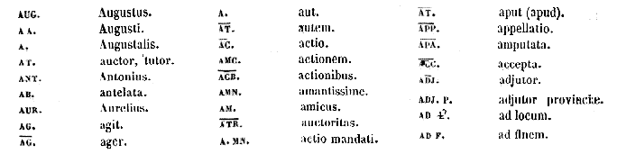
AUG.
Augustus.
AA.
Augusti.
A.
Augustalis.
AT.
auctor, tutor.
ANT.
Antonius.
AB.
antelata.
AUR.
Aurelius.
AG.
agit.
AG.
ager.
A.
aut.
AT.
autem.
AC.
actio.
AMC.
actionem.
ACB.
actionibus.
AMN.
amantissime.
AM.
amicus.
ATR.
auctoritas.
A.MN.
actio mandati.
AT.
aput (apud).
APP.
appellatio.
APA.
amputata.
ACC.
accepta.
ADJ.
adjutor.
ADJ. P.
adjutor provinciae
AD L.
ad locum.
AD F.
ad finem.
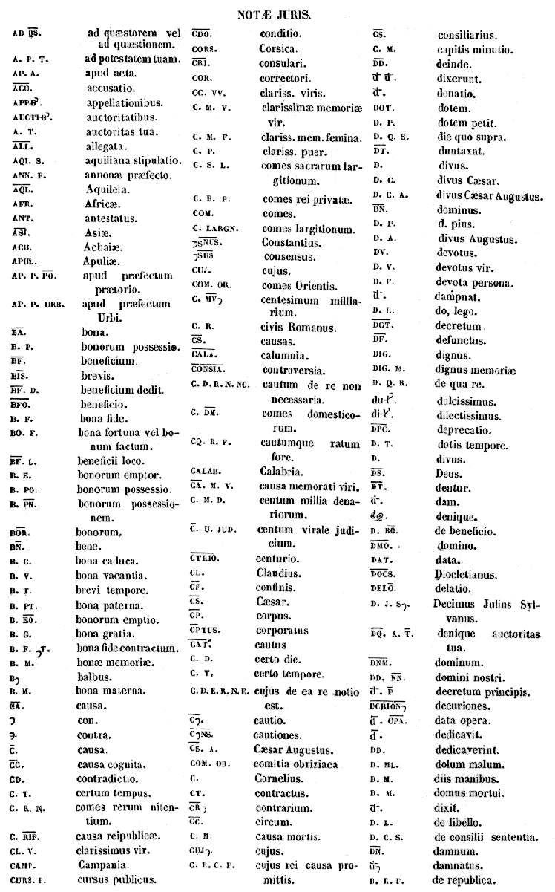
AD QS.
ad quaestorem vel ad quaestionem.
A. P. T.
ad potestatem tuam.
AP. A.
apud acta.
ACO.
accusatio.
APP-B.
appellationibus.
AUCTIB.
auctoritatibus.
A. T.
auctoritas tua.
ALL.
allegata.
AQI. S.
aquiliana stipulatio.
ANN. P.
annonae praefecto.
AQL.
Aquileia.
AFR.
Africae
ANT.
antestatus.
ASI.
Asiae
ACH.
Achaiae
APUL.
Apuliae
AP. P. PO.
apud praefectum praetorio.
AP. P. URB.
apud praefectum Urbi.
BA.
bona.
B. P.
bonorum possessio.
BF.
beneficium.
BIS.
brevis.
BF. D.
beneficium dedit.
BFO.
beneficio.
B. F.
bona fide.
BO. F.
bona fortuna vel bonum factum.
BF. L.
beneficii loco.
B. E.
bonorum emptor.
B. PO.
bonorum possessio.
B. PN.
bonorum possessionem.
BOR.
bonorum.
BN.
bene.
B. C.
bona caduca.
B.V.
bona vacantia.
B. T.
brevi tempore.
B. PT.
bona paterna.
B. EO.
bonorum emptio.
B.G.
bona gratia.
B. F. T.
bona fide contractum.
B. M.
bonae memoriae
B.
balbus.
B. M.
bona materna.
CA.
causa.
con.
contra.
C.
causa.
CC.
causa cognita.
CD.
contradictio.
C. T.
certum tempus.
C. B. N.
comes rerum nitentium.
C. RIP.
causa reipublicae.
CL. V.
clarissimus vir.
CAMP.
Campania.
CURS. P.
cursus publicus.
CDO.
conditio.
CORS.
Corsica.
CRI.
consulari.
COR.
correctori.
CC. VV.
clariss. viris.
C. M. V.
clarissimae memoriae vir.
C. M. F.
clariss. mem. femina.
C. P.
clariss. puer.
C. S. L.
comes sacrarum largitionum.
C. R. P.
comes rei privatae.
COM.
comes
C. LARGN.
comes largitionum.
SNUS.
Constantius.
SUS.
consensus.
CUJ.
cujus.
COM. OR.
comes Orientis.
C. MV
centesimum milliarium.
C. R.
civis Romanus.
CS.
causas.
CALA.
calumnia.
CONSIA.
controversia.
C. D. R. N. NC.
cautum de re non necessaria.
C. DM.
comes domesticorum.
CQ. R. F.
cautumque ratum fore.
CALAB.
Calabria.
CA. M. V.
causa memorati viri.
C. M. D.
centum millia denariorum.
C. U. JUD.
centum virale judicium.
CTRIO.
centurio.
CL.
Claudius.
CF.
confinis.
CS.
Caesar.
CP.
corpus.
CPTUS.
corporatus
CAT.
cautus.
C. D.
certo die.
C. T.
certo tempore.
C. D. E. R. N. E.
cujus de ea re notio est.
C.
cautio.
C NS.
cautiones.
CS. A.
Caesar Augustus.
COM. OB.
comitia obriziaca
C.
Cornelius.
CT.
contractus.
CR
contrarium.
CC.
circum.
C. M.
causa mortis.
CUJ.
cujus.
C. R. C. P.
cujus rei causa promittis.
CS.
consiliarius.
C. M.
capitis minutio.
DD.
deinde.
d d.
dixerunt.
d.
donatio.
DOT.
dotem.
D. P.
dotem petit.
D. Q. S.
die quo supra.
DT.
duntaxat.
D.
divus.
D. C.
divus Caesar.
D. C. A.
divus Caesar Augustus.
DN.
dominus.
D. P.
d. pius.
D. A.
divus Augustus.
DV.
devotus.
D. V.
devotus vir.
D. P.
devota persona.
d.
dampnat.
D. L.
do, lego
DCT.
decretum.
DF.
defunctus.
DIG.
dignus.
DIG. M.
dignus memoriae
D. Q. R.
de qua re.
du-.
dulcissimus.
di .
dilectissimus
DPC.
deprecatio.
D. T.
dotis tempore.
D.
divus.
DS.
Deus.
DT.
dentur.
d.
dam.
denique.
D. BO.
de beneficio.
DMO.
domino
DAT.
data.
DOCS.
Diocletianus.
DELO.
delatio.
D. J. S.
Decimus Julius Sylvanus.
DQ. A. T.
denique auctoritas tua.
DNM.
dominum.
DD. NN.
domini nostri.
d. p
decretum principis.
DCRION
decuriones.
d. OPA.
data opera.
d.
dedicavit.
DD.
dedicaverint.
D. ML.
dolum malum.
D. M.
diis manibus.
D. M.
domus mortui.
d.
dixit.
D. L.
de libello.
D. C. S.
de consilii sententia.
DN.
damnum.
d
damnatus.
D. R. P.
de republica.
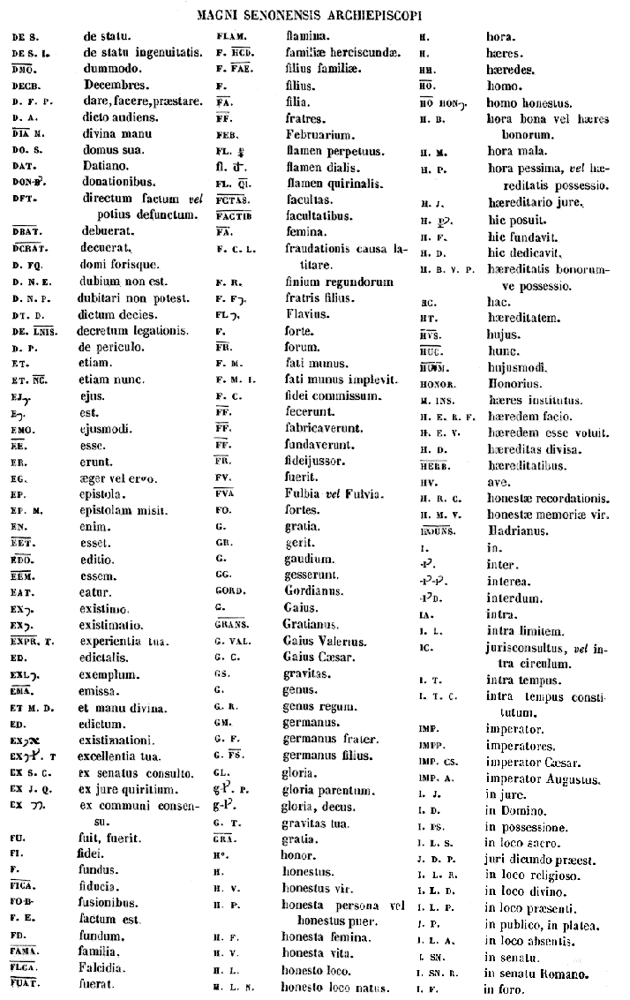
DE S.
de statu.
DE S. I.
de statu ingenuitatis.
DMO.
dummodo.
DECB.
Decembres.
D. F. P.
dare, facere, praestare.
D. A.
dicto audiens.
DIA M.
divina manu
DO. S.
domus sua.
DAT.
Datiano.
DON B.
donationibus.
DFT.
directum factum
vel
potius defunctum.
DBAT.
debuerat.
DCRAT.
decuerat.
D. FQ.
domi forisque.
D. N. E.
dubium non est.
D. N. P.
dubitari non potest.
DT. D.
dictum decies.
DE LNIS.
decretum legationis.
D. P.
de periculo.
ET.
etiam.
ET. NC.
etiam nunc.
EJ.
ejus.
E.
est.
EMO.
ejusmodi.
EE.
esse.
ER.
erunt.
EG.
aeger vel ergo.
EP.
epistola.
EP. M.
epistolam misit.
EN.
enim.
EET.
esset.
EDO.
editio.
EEM.
essem.
EAT.
eatur.
EX.
existimo.
EX.
existimatio.
EXPR. T.
experientia tua.
ED.
edictalis.
EXL.
exemplum.
EMA.
emissa.
ET M. D.
et manu divina.
ED.
edictum.
EX.
existimationi.
EX. T
excellentia tua.
EX S. C.
ex senatus consulto.
EX J. Q.
ex jure quiritium.
EX
ex communi consensu.
FU.
fuit, fuerit.
FI.
fidei.
F.
fundus.
FICA.
fiducia.
FO-B-
fusionibus.
F. E.
factum est.
FD.
fundum.
FAMA.
familia.
FLCA.
Falcidia.
FUAT.
fuerat.
FLAM.
flamina.
F. HCD.
familiae herciscundae.
F. FAE.
filius familiae.
F.
filius.
FA.
filia.
FF.
fratres.
FEB.
Februarium.
FL.
flamen perpetuus.
fl. d.
flamen dialis.
FL. QI.
flamen quirinalis.
FCTAS.
facultas.
FACTIB
facultatibus.
FA.
femina.
F. C. L.
fraudationis causa latitare.
F. R.
finium regundorum
F. F.
fratris filius.
FL.
Flavius.
F.
forte.
FR.
forum.
F. M.
fati munus.
F. M. I.
fati munus implevit.
F. C.
fidei commissum.
FF.
fecerunt.
FF.
fabricaverunt.
FF.
fundaverunt.
FR.
fideijussor.
FV.
fuerit.
FVA.
Fulbia
vel
Fulvia.
FO.
fortes.
G.
gratia.
GR.
gerit.
G.
gaudium.
GG.
gesserunt.
GORD.
Gordianus.
G.
Gaius.
GRANS.
Gratianus.
G. VAL.
Gaius Valerius.
G. C.
Gaius Caesar.
GS.
gravitas.
G.
genus.
G. R.
genus regum.
GM.
germanus.
G. F.
germanus frater.
G. FS.
germanus filius.
GL.
gloria.
gl. P.
gloria parentum.
g-l.
gloria, decus.
G. T.
gravitas tua.
GRA.
gratia.
Ho.
honor.
H.
honestus.
H. V.
honestus vir.
H. P.
honesta persona vel honestus puer.
H. F.
honesta femina.
H. V.
honesta vita.
H. L.
honesto loco.
H. L. N.
honesto loco natus.
H.
hora.
H.
haeres.
HH.
haeredes.
HO.
homo.
HO HON.
homo honestus.
H. B.
hora bona vel haeres bonorum.
H. M.
hora mala.
H. P.
hora pessima,
vel
haereditatis possessio.
H. J.
haereditario jure.
H. P.
hic posuit.
H. F.
hic fundavit.
H. D.
hic dedicavit.
H. B. V. P.
haereditatis bonorumve possessio.
HC.
hac.
HT.
haereditatem.
HVS.
hujus.
HUC.
hunc.
HUM.
hujusmodi.
HONOR.
Honorius.
H. INS.
haeres institutus.
H. E. R. F.
haeredem facio.
H. E. V.
haeredem esse voluit.
H. D.
haereditas divisa.
HERB.
haereditatibus.
HV.
ave.
H. R. C.
honestae recordationis.
H. M. V.
honestae memoriae vir.
IAOUNS.
Hadrianus.
I.
in.
i.
inter.
-I -I.
interea.
-I D.
interdum.
IA.
intra.
I. L.
intra limitem.
IC.
jurisconsultus,
vel
intra circulum.
I. T.
intra tempus.
I. T. C.
intra tempus constitutum.
IMP.
imperator.
IMPP.
imperatores.
IMP. CS.
imperator Caesar.
IMP. A.
imperator Augustus.
I. J.
in jure.
I. D.
in Domino.
I. PS.
in possessione.
I. L. S.
in loco sacro.
J. D. P.
juri dicundo praeest.
I. L. R.
in loco religioso.
I. L. D.
in loco divino.
I. L. P.
in loco praesenti.
I. P.
in publico, in platea.
I. L. A.
in loco absentis.
I. SN.
in senatu.
I. SN. R.
in senatu Romano.
I. F.
in foro.
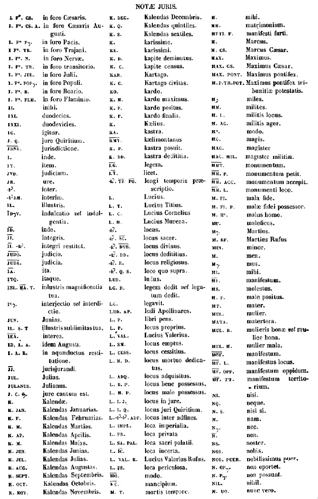
I. F. CS.
in foro Caesaris.
I. F. CS. A.
in foro Caesaris Augusti.
I. F. P.
in foro Pacis.
I. F. TR.
in foro Trajani.
I. F. N.
in foro Nervae
I. F. TR.
in foro transitorio.
I. F. JUL.
in foro Julii.
I. F. POP.
in foro Populi.
I. F. B.
in foro Boario.
I. F. FLM.
in foro Flaminio.
II.
inibi.
IXI.
duodecies.
IXXI.
duodevicies.
IG.
igitur.
J. Q.
jure Quiritium.
JDNE.
jurisdictione.
I.
inde.
IT.
item.
JVD.
judicium.
JR.
ure.
I.
inter.
I RM.
interim.
IL.
illustris.
ID V.
indulcation
vel
indulgentia.
ID.
inde.
II.
integris
II. R.
integri restitut.
JUDO.
judicio.
JUDA.
judicia.
IA.
ita.
ITQ.
itaque.
INL. MA. T.
inlustris magnificentia tua.
I.
interjectio
vel
interdictio.
JUN.
Junias.
IL. S. T
illustris sublimitas tua.
IEA.
interea.
ID. A. A.
idem Augusti.
I. A. R.
in aqaeductus restitutione.
JJ.
jurisjurandi.
JUL.
Julias.
JULANUS.
Julianus.
J. C. .
jure cautum est.
K.
Kalendae.
K. JAN.
Kalendas Januarias.
K. F.
Kalendas Februarias.
K. M.
Kalendas Martias.
K. AP.
Kalendas Aprilis.
K. M.
Kalendas Maias.
K. JUN.
Kalendas Junias.
K. JUL.
Kalendas Julias.
K. AUG.
Kalendas Augustas.
K. SEPT.
Kalendas Septembris.
K. OCT.
Kalendas Octobris.
K. NOV.
Kalendas Novembris.
K. DEC.
Kalendas Decembris.
K. Q.
Kalendas quintiles.
K. S.
Kalendas sextiles.
K.
karissime.
KK.
karissimi.
K. D.
kapite deminutus.
K. C.
kapite census.
KAR.
Kartago.
K. C.
Kartago civitas.
KO.
kardo.
K. M.
kardo maximus.
K. P.
kardo positus.
K. F.
Kardo finalis.
K.
kaelius.
KA.
kastra.
KMT.
kaelimontanus
K. P.
kastra posuit.
K. DD.
kastra dedititia.
LG.
legem.
LT.
licet.
L. TP PO.
longi temporis praescriptio.
L.
Lucius.
L. T.
Lucius Titius.
L. C.
Lucius Cornelius
L. M.
Lucius Murena.
L.
locus.
L. SC.
locus sacer.
L. DVS.
locus divinus.
L. DD.
locus dedititius.
L. R.
locus religiosus
L. Q. S.
loco quo supra.
LUD.
ludus.
LG. D.
legem dedit
vel
legatum dedit.
LG.
legavit.
LUD. AP.
ludi Apollinares.
L. P.
libri pens.
L. P.
locus proprius.
L. VAL.
Lucius Valerius.
L. EM.
locus emptus.
L. CESS.
locus cessitius.
L. M. D.
locus mortuo dedicatus.
L. ADQ.
locus adquisitus.
L. B. P.
locus bene possessus.
L. M. P.
locus male possessus.
L. I. J.
locus in jure.
L. I. Q.
locus juri Quiritium.
L. I I.ADF.
locus inter adfines.
L. IMPL.
loca imperialia.
L. PR.
loca privata
L. SA. PAL.
loca sacri palatii.
L. IC.
loca incerta.
L. VAL. R.
Lucius Valerius Rufus.
L. PS.
loca periculosa.
MO.
modo.
C.
mancipium.
M. T.
mortis tempore.
M.
mihi
MM.
matrimonium.
MFTI. F.
manifesti furti.
M.
Marcus.
M. CS.
Marcus Caesar.
MAX.
Maximus.
MAX. CS.
Maximus Caesar.
MAX PONT.
Maximus pontifex.
M.P.TR.POT.
Maximus pontifex tribunitiae potestatis.
M
miles.
MM.
milites.
M. L.
militis locus.
M. AG.
militis ager.
M.
modo.
MG.
magis.
MAG.
magister
MAG. MIL.
magister militiae
MMT.
monumentum.
MM. P.
monumentum petit.
MM. ACC.
monumentum accepit.
MM. L.
monumenti loco.
M. FI.
mala fide.
M. FI. P.
malae fidei possessor.
M. H.
malus homo.
M.
maleficus.
M.
Martius
M. RF.
Martius Rufus
MIN.
minor.
M.
men.
M.
mus.
MI.
mihi.
MF.
manifestum.
MS.
molestus.
M. P.
male positus.
MT.
mater.
MUL.
mulier.
MATA.
matertera.
MUL. B.
mulieris bonae
vel
mulier bona.
MUL. M.
mulier mala.
MNF.
manifestum.
MF. L.
manifestus locus.
MF. OPP.
manifestum oppidum.
MF. TT.
manifestum territorium.
NI.
nisi.
NQ.
neque.
N. S.
nisi si.
N.
nam.
N.
nec.
N.
non.
NS.
noster.
NOB.
nobis.
NOB. PUER.
nobilissimus puer.
N. OP.
non oportet.
N. P.
non possunt.
NIL.
nihil.
N. UO.
nunc vero.
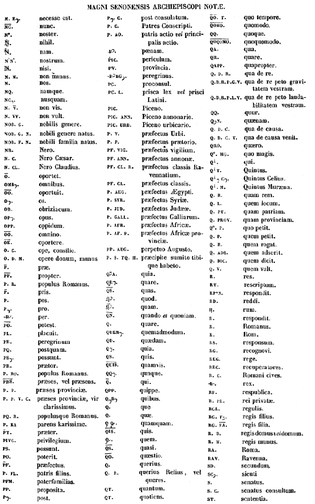
N. E.
necesse est.
NC.
nunc.
N.
noster.
N.
nihil.
N.
nam.
N'N'.
nostrum.
N.
nisi.
N. M.
non minus.
N.
nos.
NQ.
namque.
NC.
nusquam.
N. V.
non vis.
N. VV.
non vult.
NOB. G.
nobilis genere.
NOB. G. N.
nobili genere natus.
NOB. F. N.
nobili familia natus.
NR.
Nero.
N. C.
Nero Caesar.
N. CL.
Nero Claudius.
O.
oportet.
OMB.
omnibus.
OO.
oportuit.
O.
os.
OB.
obriziacum.
OP.
opus.
OPP.
oppidum.
OO.
omnino.
OE.
oportere.
O. C.
ope, consilio.
O. D. M.
opere donum, munus
P.
prae.
PP.
propter.
P. R.
populus Romanus.
P.
pris.
P.
pos.
P.
pro.
-P.
per.
PO.
potest.
PL.
placuit.
PE.
peregrinum
PQ.
postquam.
PS.
possunt.
PR.
praetor.
P. RO.
populus Romanus.
PRS.
praeses, vel praesens.
P. P.
praeses provinciae.
P. P. V. C.
praeses provinciae, vir clarissimus.
PQ. R.
populusque Romanus.
P. KA.
parens karissime.
PT.
praeter.
PIVG.
privilegium.
PS.
possunt.
PO.
poterit.
PF.
praefectus.
P. FL.
patris filius.
PFM.
paterfamilias.
PP.
proposita.
P.
post.
P. C.
post consulatum.
P. C.
Patres Conscripti.
P. AO.
patris actio
vel
principalis actio.
P.
poenam.
PIC.
periculum.
PV.
provincia.
-P RG.
peregrinus.
PC.
proconsul.
PC. L.
prisca lex
vel
prisci Latini.
PIC.
Piceno.
PIC. ANN.
Piceno annonario.
PIC. URB.
Piceno urbicario.
P. V.
praefectus Urbi.
P. P.
praefectus praetorio.
PF. VIG.
praefectus vigilium.
PF. ANN.
praefectus annonae.
PF. CL. R.
praefectus classis Ravennatium.
PF. CL.
praefectus classis.
P. AEG.
praefectus Aegypti.
P. SYR.
praefectus Syriae.
P. JUD.
praefectus Judaeae.
P. GALL.
praefectus Galliarum.
P. AFR.
praefectus Africae.
P. AF. P.
praefectus Africae provinciae.
PP. AUG.
perpetuo Augusto.
P. S. TQ. H.
praecipite sumito tibique habeto.
Q. A.
quia.
QR.
quare.
QS.
quas.
q.
quod.
q.
quam.
QN.
quando
et
quoniam.
Q.
quare.
QUEM.
quemadmodum.
QD.
quaedam.
Q.
quia.
QS.
quis.
QUIS.
quamvis.
QQ.
qunque.
Q.
qui.
QPP.
quippe.
Q B
quibus.
Q.
que
Q.
quae
Q. Q.
quamquam.
QIS.
quis.
Q.
quem.
QS.
quasi.
QO.
quaestio.
Q.
querius.
Q. R.
querius Relius, vel queres.
QT.
quantum.
QT.
quotiens.
QO. T.
quo tempore.
QOMO.
quomodo.
QQ.
quoque.
QOQOMO.
quoquomodo.
QA.
qua.
QR.
quare.
QAPP.
quapropter.
Q. D. R.
qua de re.
Q. D. R. P. G. V.
qua de re peto gravitatem vestram.
Q. D. R. P. L. V.
qua de re peto laudabilitatem vestram.
QQ.
quur.
Q. N.
quaenam.
Q. D. C.
qua de causa.
Q. D. C. V.
qua de causa venit.
QRO.
quaero.
Q. MG.
quo magis.
Q.
qui.
Q T.
Quintus.
Q. C.
Quintus Celius.
Q. M.
Quintus Muraena.
Q. R.
quam rem.
Q. L.
quem locum.
Q. PT.
quam patriam.
Q. PROV.
quam provinciam.
Q. P.
quo petit.
Q. P.
quem petit.
Q. R.
quem rogat.
Q. ADS.
quem adserit.
Q. DIC.
quem dicit.
Q. V.
quem vult.
R.
res.
RT.
rescriptum.
RP N.
respondit.
RD.
reddi.
R.
rum.
R.
respondit.
R.
Romanus.
R.
Rom.
RS.
responsum.
RG.
recognovi.
REG.
rege.
REC.
recuperatores.
R. C.
Romani cives.
R.
rex.
RP.
respublica.
R. PR.
rei privatae.
RGL.
regulis.
RG. F.
regis filius.
RG. FA.
regis filia.
R. D.
regis domus
vel
domum.
R. M.
regis munus.
RA.
Roma.
RAV.
Ravenna.
SD.
secundum.
SC.
sicuti
S.
senatus.
S. C.
senatus consultum.
ST.
sententia.
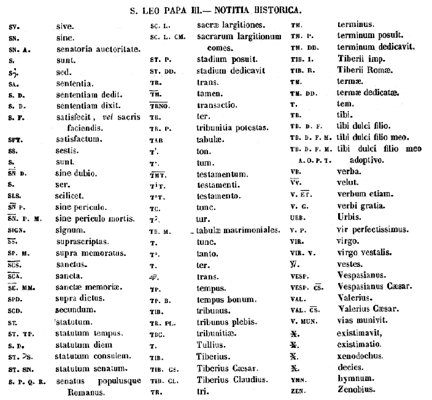
SV.
sive.
SN.
sine.
SN. A.
senatoria auctoritate.
S.
sunt.
S.
sed.
SA.
sententia.
S. D.
sententiam dedit.
S. D.
sententiam dixit.
S. F.
satisfecit,
vel
sacris faciendis.
SFT.
satisfactum.
SS.
sestis.
S.
sunt.
SN D.
sine dubio.
S.
ser.
SLS.
scilicet.
SN P.
sine periculo.
SN. P. M.
sine periculo mortis.
SIGN.
signum.
SS.
suprascriptas.
SP. M.
supra memoratus.
SCS.
sanctus.
SCA.
sancta.
SE. MM.
sanctae memoriae.
SPD.
supra dictus.
SCD.
secundum.
ST.
statutum.
ST. TP.
statutum tempus.
S. D.
statutum diem
ST. S.
statutum consulem.
ST. SN.
statutum senatum.
S. P. Q. R.
senatus populusque Romanus.
SC. L.
sacrae largitiones.
SC. L. CM.
sacrarum largitionum comes.
ST. P.
stadium posuit.
ST. DD.
stadium dedicavit
TR.
trans.
TM.
tamen.
TRNO.
transactio.
TR.
ter.
TR. P.
tribunitia potestas.
TAB.
tabulae.
T.
ton.
T.
tum.
TMT.
testamentum.
T T.
testamenti.
T T.
testamento.
TC.
tunc.
T.
tur.
TB. M.
tabulae matrimoniales.
T.
tunc.
T.
tanto.
T.
ter.
T.
trans.
TP.
tempus.
TP. B.
tempus bonum.
TIB.
tribunus.
TR. PL.
tribunus plebis.
TBC.
tribunitiae.
T.
Tullius.
TIB.
Tiberius.
TIB. CS.
Tiberius Caesar.
TIB. CL.
Tiberius Claudius.
TR.
tri.
TM.
terminus.
TM. P.
terminum posuit.
TM. DD.
terminum dedicavit.
TIB. I.
Tiberii imp.
TIB. R.
Tiberii Romae
TM.
termae.
TM. DD.
termae dedicatae.
T.
tem.
TB.
tibi.
TB. D. F.
tibi dulci filio.
TB. D. F. M. A.O.P.T.
tibi dulci filio meo adoptivo.
VB.
verba.
VV.
velut.
V. ET.
verbum etiam.
V. G.
verbi gratia.
URB.
Urbis.
V. P.
vir perfectissimus.
VIR.
virgo.
VIR. V.
virgo vestalis.
V.
vestes.
VESP.
Vespasianus.
VESP. CS.
Vespasianus Caesar.
VAL.
Valerius.
VAL. CS.
Valerius Caesar.
V. MUN.
vias munivit.
X.
existimavit.
X.
existimatio.
X.
xenodochus.
X.
decies.
YMN.
HYMNUM.
ZEN.
Zenobius.
Notitia historica
Leo [Col. 0993A] Leo . Anno Redemptoris nostri 795, vigesima sexta Januarii, eodem die quo Adrianus obierat, creatus est ejus successor Leo hujus nominis tertius, in disciplina ecclesiastica a juventute bene institutus, [Col. 0995C] nullaque non virtute exornatus, quem Deus ad hoc in sedem pontificiam evexerat, ut magna pateretur et magna perageret. Pontificatus exordio carnis incendium passus esse dicitur ex osculo quod manui suae mulier impresserat; additur osculatam manum sibi ipsi eum praescidisse, statuisseque ut deinceps pedes tantum non manus pontificis exoscularentur: verum utrumque anile commentum est, plus quam fabulosum. Nam constat quod ante haec tempora moris fuerit pedes non manus pontificis exosculari. Ad Carolum magnum tanquam potentissimum Romanae Ecclesiae defensorem honorandum, non, ut calumniantur novatores, ad possessionem urbis tradendam, exemplo antecessorum suorum per legationem misit pro munere et dono episcopali claves aureas confessionis sancti Petri, et vexillum urbis Romae, sicut ad eumdem loco benedictionis misit patriarcha Hierosolymitanus claves una cum vexillo locorum sanctorum. Hac occasione Carolus rex ablegavit Engilbertum [Col. 0995D] abbatem monasterii Sancti Richarii, qui pontifici redderet munera amplissima, quae ex thesauro Hunnorum erepto idem rex fuerat consecutus ( Annales Francorum ). Acceptos thesauros pontifex in ornamenta ecclesiarum convertit, et in clericos erogavit, omniaque perfecit, quae ante persecutionem illam recenset Anastasius, seorsum ab aliis quae post quadriennium edidit, quando ex Germania reversus fuit. Constantinus V, detrusa uxore sua legitima in monasterium, duxit aliam, Theodoram nomine, eamque imperatricem coronavit; cumque Tarasius Constantinopoli adulterum non excommunicaret, ipse piorum consortio habitus est indignus: qui vero cum Theodoro Studita adulterum imperatorem redarguerant, in exsilium ablegati fuerunt. Cumque ita scelus sceleri adderet, merito jussu matris quam imperio exuerat, zelo justitiae non regni, oculis, imperio et vita orbatus fuit. Irene dum post recuperatum imperium quinque annis sola imperium tenuisset, a [Col. 0996C] Nicephoro homine impiissimo, haereticorum omnium fautore, Romanae Ecclesiae omniumque clericorum contemptore scelestissimo, imperio privata, in exsilium amandata fuit, anno Domini 802, atque ibidem anno sequente e vivis decessit. (Theophani Annales in Nicephor .) Adolfum regem Nordanhumbrorum e regno pulsum Leo per legatum sedis apostolicae in regnum restituit ( Annales Francorum ). Defuncto Carolo imperatore, quem Eginhartus febri correptum anno Christi 814, Aquisgrani pie et sancte obiisse refert, sub initium Ludovici, rursum facinorosi homines in pontificem insurrexerunt, vitaeque illius graves insidias struxerunt. Quod cum pontifex cognovisset, et in delinquentes lege agi praecepisset, magna seditio Romae concitata fuit, postque plurimas strages, depraedationes et incendia, tot tantaque mala subsecuta fuerint, ut opus fuerit Ludovico imperatori, Bernhardum, qui loco Pippini [Col. 0996D] fratris in regnum Italiae successerat in urbem ablegare. Qua ratione illa contigerint, annales Francorum pluribus enarrant. Hujus pontificis auctoritate sedes episcopalis Iriensis Ecclesiae ad petitionem Alphonsi regis cognomento Casti, et intercessionem Caroli magni, Compostellam est translata, quia reperto ibidem sancti Jacobi apostoli corpore venerando, et miraculis insigniter illustrato, reverentia apostolici culminis dignum et conveniens esse omnes senserunt, ut locus ille episcopalis sedis honore insigniretur. Ita omnes qui res Hispaniarum descripserunt. De Leone pontifice Walafridus Strabo in libro de Rebus Ecclesiasticis, cap. 21, scribit ratione fidelium ad suam usque pervenisse notitiam, ipsum, una die septies vel novies missarum solemnia saepius celebrasse: fortasse ut hac ratione majus Dei auxilium imploraret, qui magnis iisque gravissimis afflictionibus quotidie vexabatur. SEV. BIN.
Ubi vero inveniebat aliquem praecipuum monachum vel servum Dei, in colloquiis divinis et oratione cum eo penitus vacare non cessabat. Et valde nimisque hilaris in eleemosynis existebat, verum etiam et infirmorum prorsus maximus visitator, praedicans illis scripturaliter [Scripturas], ut eorum animas [ut pro cura pauperum animas suas] in eleemosynis redimerent.
Qui plures ejus praedicationibus annuentes, quidquid illo pro Christo commendabat [habebant], occulte diu noctuque pauperibus erogabant: fructum animarum crebro offerens [offerentes] salubriter Deo, et dum taliter in ipso vestiario praecipue degens splenderet, et ejus solertissimam curam ipse vestiarius diligeret, ab omnibus amantissime diligebatur. [Col. 0995B] Quapropter divina inspiratione una concordia eademque voluntate a cunctis sacerdotibus seu proceribus, et omni clero, nec non et optimatibus, vel cuncto populo Romano Dei nutu in natali [natalitio] beati primi martyris Stephani electus est, et sequenti die in natali [natalitio] sancti Joannis apostoli et evangelistae ad laudem et gloriam omnipotentis Dei pontifex in sede apostolica ordinatus est. Erat enim ecclesiasticarum rerum defensor, et contrariorum fortissimus expugnator, et nimis mitissimus, et eidem Ecclesiae benevolus praeclarus amator, tardus ad irascendum, et velox ad miserandum, nulli malum pro malo reddens, neque vindictam secundum meritum tribuens, sed pius ac misericors a tempore ordinationis suae omnibus studuit justitias facere. Hic vero rogam [visus est rogam, id est stipendium] clero suo in presbyterio maxime ampliavit. Fecit enim in basilica beati Petri principis apostolorum [Col. 0996A] nutritori suo thuribulum aureum ante vestibulum altaris pensans libras decem et septem. Imo et in confessione ejusdem apostoli rugas ex auro purissimo cum gemmis diversis pensantes libras quadraginta et novem. Item coronas majores argenteas tres pensantes libras trecentas et septem. Verum etiam et cortinas albas holosericas rosatas habentes in medio crucem de chysoclabo [chrysoclavo], et periclysin de fundato unam.
Sarta vero tecta basilicae beati Petri apostoli, id est, navem majorem, sed et aliam navem super altare cum quadriporticu simul et fontem, atque ante fores argenteas; verum etiam et turrem cum cameris suis ab imo usque ad summum omnia in omnibus noviter restauravit. Praesertim imaginem Salvatoris cum reliquis mirae pulchritudinis depictam ad decorem suprascriptae ecclesiae in fastigio sub arcu majori posuit. Pari modo et in basilica beati Pauli apostoli, atque in basilica Salvatoris instar imagines ( id est similes imagines) fecit et constituit. [Col. 0996B] Sarta tecta vero tituli beatae Anastasiae, quae a priscis temporibus per incuriam marcuerant et pene casura erant, suo almo studio noviter restauravit.
Similiter et titulum sanctae Sabinae studiose renovavit. In quo vero templo idem egregius praesul fecit ex argenteo coronas quinque pensantes libras quatuordecim. Canistra duo pensantia libras tres et semis. Gabatas interrasiles [intersatiles] novem pensantes libras undecim. Fecit autem et in basilica Beatae Dei Genitricis, quae appellatur ad Praesepe, ciborium ex argento purissimo quod pensat libras sexcentas et undecim. Simul et rugas argenteas in ingressu presbyterii pensantes libras octuaginta, atque cortinam majorem sericam albam habentem periclysin, et crucem de fundata.
Imo et in sacratissimo altari majori fecit vestem de chrysoclabo habentem historiam nativitatis, et sancti Simeonis, et in medio cheritismon. Simul [Col. 0997A] etiam et in camera ejusdem ecclesiae et in quadriporticu, nec non et coronas argenteas tres pensantes inibi libras centum quadraginta quinque [quinquaginta quinque] et uncias novem. Interea et in basilica beati Christi martyris Laurentii sita foris muros fecit imagines argenteas tres Salvatoris, beati Petri apostoli, et sancti Laurentii pensantes simul libras quinquaginta quatuor et semis. Et in sacro altari vestem sericam chrysoclabam habentem historiam Dominicae passionis et resurrectionis. Itemque renovavit sarta tecta beatorum Felicis et Adaucti martyrum juxta, sanctum Paulum Apostolum, sed et basilicam sancti Mennae, atque tituli beati Vitalis Christi martyris, nec non et coemeterium beati Sixti atque Cornelii via Appia. Simulque et coemeterium sancti Zotici via Lavicana.
Pariter et ecclesiam Sanctae Dei Genitricis semperque virginis Mariae dominae nostrae sitam in Fonticana, quae per olitana marcuerat. Fecit autem idem praesul in basilica doctoris mundi beati Pauli apostoli [Col. 0997B] confessionem, simul et rugas ex auro obrizo habente gemmas pretiosas instar beati Petri apostoli pensantes libras centum quinquaginta et sex. Et super ipsum sacrum altare imaginem auream habentem Salvatorem et duodecim apostolos pensantes libras septuaginta quinque; sed et cameram ejusdem basilicae in modum beati Petri apostoli noviter fecit, praesertim et coronas argenteas tres pensantes in una libras ducentas et viginti. Et vela holoserica majora sigillata habentia periclysin, et crucem de bathin, seu fundato numero quindecim. Vela promiscua majora de quadruplo investita, quae pendent in arcubus quadraginta tria. Vela modica sigillata, quae pendent in arcubus minoribus ornata quadruplo viginti. Item vela modica de stauracin, quae pendent in arcubus decem, et alia decem, ex quibus tria habent periclysin de chrysoclavo. Item vela quatuor filo pari Alexandrina. Item velum alithino rotatu habens periclysin, rotas cum cancellis, et in medio crucem [Col. 0997C] cum gemmis, et quatuor rotas de Tyrio filo pares.
Fecit autem in basilica beati Andreae ad beatum Petrum apostolum rugas argenteas pensantes libras octuaginta. Verum etiam et in basilica Salvatoris, quae appellatur Constantiniana, cameram mirae magnitudinis. Hic almificus praesul fecit in altari majori beati Petri apostolorum principis vestem chrysoclabam pretiosis gemmis ornatam habentem historias tam Salvatoris beato Petro apostolo ligandi solvendique postestatem tribuentis, quamque principum apostolorum Petri ac Pauli passionem figurantes mirae magnitudinis in natale apostolorum resplendentem.
Item fecit vestem in titulo Eudoxiae super altare Tyriam habentem grypas majores, et duas rotas chrysoclabas cum cruce, et periclysin, blathin, et chrysoclavum. Hic autem praecipuus praesul fecit in basilica beati Petri apostoli pharum argenteum ante presbyterium cum gabathis argenteis triginta, et [Col. 0997D] canistrum octogoni in medio pensantia libras sexaginta et tres; et in cantharis argenteis tam in circuitu altaris quam in presbyterio posuit cerostata argentea pensantia inibi libras ducentas et duodecim. Et in altare beatae Petronillae posuit vestem de stauraci unam habentem periclysin de blattis, seu chrysoclabo. Fecit autem et in basilica Salvatoris, quae et Constantiniana, vestem habentem historiam crucifixi, et de resurrectione Domini nostri Jesu Christi habentem periclysin de chrysoclabo. Sed et [Col. 0998A] in basilica beati Clementis vestem de stauracin unam habentem periclysin de chrysoclabo. Fecit etiam et in arcubus argenteis ecclesiae Dei apostoli vela de stauracin valde pulcherrima. Ipse vero praecipuus pontifex in titulo beatae Susannae ubi et presbyter ordinatus fuerat, dum breviter destructus fuisset, et jam per longitana tempora ipsae parietinae marcuissent, ob nimium amorem ampliavit aedificium, et noviter in altum fodiens firmissimum posuit fundamentum, et eruta planitie mirifice excelsa super ipsa fundamenta aedificavit ecclesiam cum apsida amplissima, et cacumina mirifica de musivo, atque cameram decoratam, seu presbyterium, et pavimentum marmoribus pulchris ornavit. Verum etiam dextra laevaque, et porticus ejus cum columnis marmoreis construxit. Sed et baptisterium ibi constituit, ubi et dona obtulit, videlicet gabathas aureas fundatas tres, pensantes libras quatuor et semis; cruces aureas duas cum gemmis pensantes libram unam, tum virgas argenteas pensantes libras tres, [Col. 0998B] et uncias septem; lucernam argenteam unam pensantem libras quinque; imagines argenteas tres pensantes libras triginta quinque. Fecit et confessionem ejusdem altaris ex argenteo purissimo pensantem libras centum tres et uncias duas. Columnas argenteas octo et gammadia duo, et arcus duos cum crucibus argenteis quinque, et gabathas quindecim pensantia simul libras centum quinquaginta. Crucem diacopton pensantem libras quatuordecim. Canistrum ex cede Cafotii pensans libras duodecim et semis. Coronam majorem de argenteo unam cum delphinis triginta duobus pensantem libras triginta duas. Nec non et canistrum argenteum unum pensans libras decem et octo, sed et aliud canistrum argenteum pensans libras decem et octo. Vasa colatoria argentea deaurata pensantia libras quatuor et uncias tres. Gabathas argenteas habentes gryphos deauratos pensantes libras duas. Coronas argenteas duas cum delphinis decem et octo pensantes libras decem et [Col. 0998C] novem. Enim vero idem praecipuus antistes fecit in eadem ecclesia vestem chrysoclabam cum periclysi cum chrysoclabo unam, sed et aliam vestem de blatthin habentem in medio crucem de chrysoclabo. Et tabulas chrysoclabas quatuor cum gemmis ornatas, atque gammadias in ipsa veste chrysoclabas quatuor cum periclysi de chrysoclabo. Fecit autem et in patriarchio Lateranensi triclinium majus super omnia triclinia nomini suae magnitudinis decorata, ponens in eo fundamenta firmissima, et in circuitu laminis marmoreis ornavit, atque marmoribus in exemplis stravit. Et diversis columnis tam porphyreticis quamque albis, et sculptis cum vasibus, et liliis simul postibus decoravit cameram apsida de musivo, et alias duas absidas, diversas historias pingens super marmorum incrustatione, pariter in circuitu decoravit. Et in basilica beatae Priscae fecit idem antistes calicem fundatum superauratum unum et coronas tres, ex quibus unam habentem delphinos [Col. 0998D] decem, et alias duas numero nouem, sed et gabathas octo pensantes simul libras viginti novem. Vestem albam holosericam ornatam in circuitu blatthi Byzanteo, et in fronte crucem de chrysoclabo.
Hic autem venerabilis et sanctissimus praesul dum in sancta catholica et apostolica Romana Ecclesia per ordinem ecclesiasticum degeret, et ritum orthodoxae fidei teneret, atque ex omni parte tam per diversas Ecclesias quamque in patriarchio in amplis aedificiis construens compte ornaret, [Col. 0997D] Cum die quadam more solito in litania, quae ab omnibus Major appellatur, Leo pontifeae procederet . Post enarratam pontificis munificentiam in sacras aedes collatam, subjungit hoc loco Anastasius quomodo nepotes Adriani pontificis militantes, in Romani cleri primis ordinibus, invidia tabescentes, Leonem ob ejus electionem persecuti fuerint, eique in sacra functione constituto oculos cruerint, et linguam praesciderint; item qua ratione post visum et loquelam miraculose recuperatam ad Carolum regem pervenerit, ejusque tutela ac patrocinio munitus Romam redierit. Haec eadem recensentur in Annalibus Francorum, et apud Adonem in Chronico, ubi dicit sacrilegas manus in pontificem injectas fuisse septimo Kalendas Maii anno 799. His adde quod cum Roma in Germaniam ad Carolum regem fugeret, pertransiens Coloniam, venerit ad locum, quo viri Dei Severini corpus venerabile requiescit, ibique, praeter morem quem in via servaverat oratum ecclesiam introivit. Comites autem ejus mirantes causam hujus modi sciscitabantur. Quibus ille, teste Surio, vigesimo tertio Octobris: «Loci, inquit, hujus defensoris domus est, ideo non ausus sum illam pertransire insalutatam. Hinc ergo consuetudo civibus inolevit, ut uno die per singulas hebdomadas ad sancti Severini sepulcrum veniant, et ut per totam hebdomadam ejus patrocinio fulciantur, supplici devotione deposcunt.» In translatione sancti Liborii apud Surium vigesima tertia Julii scribitur, quod Paderbonae altare consecraverit, atque in eo reliquias sancti Stephani protomartyris, quas secum Roma detulerat, condiderit. Haec sine dubio in primo adventu Leonis papae in Germaniam contigerunt. Secundo venit in Germaniam anno Domini octingentesimo quarto; de quo accessu pontificis haec in Annalibus Francorum: «Medio novembris allatum est Carolo Leonem papam natalem Domini cum eo celebrare velle, ubicunque hoc contingere potuisset. Quem statim misso ad sanctum Mauritium Carolo filio suo honorifice suscipere jussit. Ipse obviam illi ad Rhemorum civitatem profectus est, ibique suscepit eum, etc.» Quas res ille in Germania gesserit, quae altaria coloniae consecraverit, quibus miraculis sanctum Swibertum canoni sanctorum ascripserit, prolixior narratio habetur in epistola Lugderi apud Surium, 1. Martii. In Vita Caroli legitur Leonem pro suis persecutoribus exorasse, intercessisse, et impetrasse ne in corpore punirentur, sed tantum in exsilium mitterentur, in quos, velut criminis laesae majestatis reos, capitis sententia prolata erat. S. BIN. cum die quadam [Col. 0999A] more solito in Litaniis quae ab omnibus Majores appellantur procederet, ubi sibi populus obviam sacra religione occurrere deberet et secundum annuam consuetudinem litanias et missarum solemnia cum sacerdotibus celebraret et omnipotenti Domino pro salute Christianorum [Christiani] populi preces funderet, et secundum olitanam traditionem a notario sanctae Romanae Ecclesiae, in ecclesia beati Georgii Christi martyris in ejus natali ipsa litania praedicata fuisset, omnes tam viri quamque feminae devota mente catervatim in ecclesiam beati Christi martyris Laurentii, quae Lucinae nuncupatur, ubi et collecta praedicta inerat, occurrerunt. Ubi dum praedictus venerabilis pontifex a patriarchio egressus fuisset, obviam illi sine planeta iniquus nec dicendus Paschalis primicerius occurrit, et in hypocrisi veniam ab illo petebat dicens: Quia infirmus sum, et ideo sine planeta veni. Tunc sanctissimus praesul veniam illi dedit. Similiter et Campulus sacellarius, in ipsorum dolositate pariter in pontificali obsequio [Col. 0999B] pergentes, et dulcia verba quae non habebant in pectore cum eo loquentes, maligni etiam et iniqui ac perversi, falsique Christiani, prorsus pagani, filii diaboli, in unum se satanice colligentes, pleni iniqua cogitatione in ipso itinere ante monasterium sanctorum Stephani et Silvestri, quod domnus Paulus papa fundaverat, clam armati assistere, atque repente de loco insidiarum exsilientes ad ipsum (quod dictu nefas est) impie trucidandum absque ulla reverentia confluxerunt, Paschale ad caput stante, et Campulo ad pedes secundum iniquum eorum consilium. Quo facto, omnis qui circa eum erat populus, videlicet inermis, et in Dei officio praeparatus, timore armorum perterritus in fugam conversus est. Ipsi vero insidiatores atque operatores malorum Judaico more sine ullo divino vel humano honoris intuitu, ferino more comprehendentes, in terram eum projecerunt, et absque ulla misericordia scindendo exspoliantes eum, crudeliter oculos ei evellere, et ipsum penitus [Col. 0999C] caecare conati sunt. Nam lingua ejus praecisa est, et ut ipsi omnino tunc arbitrati sunt, caecum eum et mutum in media platea dimiserunt. Verum ipsi maligni Paschalis et Campulus sicut veri pagani et impii ad ipsius monasterii ecclesiam ante confessionem eum trahentes, ante ipsum venerabile altare iterum oculos et linguam amplius crudeliter eruerunt, et plagis eum diversis et fustibus caedentes laniaverunt, et semivivum in sanguine revolutum ante ipsum altare dimiserunt, postmodum vero sub custodia in ipso monasterio dimiserunt. Timore autem perterriti, ne a Christianis hominibus furatus inde fuisset, tunc malignum consilium adepti, sicut ipse Hegumenus monasterii sancti Erasmi [Gerasimi] professus est, fecerunt eum ad se venire clam per noctem, tam Pachalis malignus qui tunc primicerius erat, quam Campulus sacellarius et Maurus Nepesinus, et miserunt eum in praedictum monasterium sancti Silvestri cum pluribus iniquis consentaneis ipsorum malefactoribus. [Col. 0999D] Et sic per noctem eum exinde abstollentes [Col. 1000A] [abstrahentes] deduxerunt in monasterium sancti Erasmi, et in arcta et angusta custodia eum recluserunt. Sed Deus omnipotens qui eorum malitiam praesciendo diu patienter sustinuit, ipse eorum iniquos conatus mirabiliter destruxit. Contigit enim, cooperante Deo, et beato Petro apostolo suffragante, quod antedictus papa cum ab ipsis carnificibus in monasterium sancti Erasmi in custodiam mitteretur, Domino annuente, atque beato clavigero Petri regni coelorum suffragante, ut visum receperit et lingua ad loquendum illi restituta sit.
Et ut ostenderet omnipotens Deus super suum famulum solitam misericordiam et magnum miraculum, divino nutu ejus a fidelibus Christianis viris, videlicet per Albinum cubicularium cum aliis fidelibus Deum metuentibus, ex ipso eum claustro occulte abstollentes in basilicam beati Petri apostolorum principis, ubi et ejus sacratissimum corpus quiescit, deduxerunt. Qui omnes audientes et videntes mirabilia. Dei, qui innocentem et justum pontificem de manibus [Col. 1000B] inimicorum eruit, glorificaverunt Dominum Deum, dicentes: Benedictus Dominus Deus Israel, qui facit mirabilia magna solus, et non deseruit sperantes in se (Psal. LXXI) . Sed in eo adimplevit misericordiam suam ut manifestaretur gloria Dei, et mirabilia in illo, quemadmodum promisit sperantibus in se, psalmista dicente: Dominus illuminatio mea, et salus mea, quem timebo? Dominus defensor vitae meae, a quo trepidabo (Psal. XXVI) ? Et iterum: Lucerna pedibus meis verbum tuum, Domine, et lumen semitis meis (Psal. CXVIII) . Et vere a tenebris eum Dominus eripiens, lumen reddidit et linguam ad loquendum restituit, et totis ejus [eum] solidavit membris, et in omnibus operibus mirabiliter deducens confortavit. Et quantum gaudium habuerunt Christiani homines et fideles, tantum moerore et tristitia angustiati illi nesciebant quid agerent, et in periculo se esse existimantes, quaerebant semetipsos interficere. Et dum non invenirent quid aliud agerent, [Col. 1000C] domum Albini fidelis beati Petri apostoli et ejusdem pontificis depraedantes destruxerunt, et in ipsam beati Petri apostoli aulam conjungente praefato pontifice confestim Winichis gloriosus dux Spoletanus cum suo exercitu obviavit ei, et cum summum pontificem videntem et loquentem conspexisset, venerabiliter eum recipiens Spoletum deduxit, glorificans et laudans Deum, qui per talia mirabilia eum clarificavit. Quo audito per diversas civitates, Romanorum fideles ad eum occurrerunt, et pariter cum aliquibus ex ipsis civitatibus episcopis presbyteris, clericis Romanis et primatibus civitatum, ad excellentissimum domnum Carolum regem Francorum et Longobardorum atque patricium Romanorum profectus est. Ipse vero Christianissimus et orthodoxus atque praecipuus clementissimusque rex illico ut audivit, misit in obviam ejus Hildivaldum archiepiscopum et capellanum, et Ascharium comitem. Et postmodum proprium filium suum Pippinum excellentissimum [Col. 1000D] regem cum aliis comitibus obviam [Col. 1001A] ejus iterum, et usque ubi ipse magnus rex obviavit, et sicut vicarium beati Petri apostoli venerabiliter et honorifice cum hymnis, et canticis spiritualibus eum suscepit, et pariter se amplectentes cum lacrymis se osculati sunt. Et praedicto pontifice Gloria in excelsis Deo inchoante, et cuncto clero suscipiente, oratio super cuncto populo data est. Tunc benignissimus domnus Carolus magnus rex antedictum pontificem conspiciens gratias Deo retulit, qui tam magna mirabilia super famulum suum per suffragia principum apostolorum Petri ac Pauli operatus est, et ad nihilum praedictos iniquos viros deduxit.
Qui dum in magno honore apud se per aliquantum temporis eum ipse serenissimus rex habuisset, haec praefati iniqui et filii diaboli audientes post dira et iniqua incendia, quae in possessionibus seu rebus beati Petri apostoli gesserunt, moliti sunt, Deo illis contrario, falsa [contraria, et falsa] adversus sanctissimum pontificem imponere crimina, et post eum ad praedictum mittere regem, quod probare nequaquam [Col. 1001B] potuissent [potuerunt]: quia per insidias et iniquitates eorum talia nec dicenda, sanctam Ecclesiam humiliare volentes, proferebant. Sed dum ad praedictum clementissimum magnum regem praefatus pontifex in magno et condecenti honore degeret, ex omni parte tam archiepiscopis quamque episcopis, et caeteris sacerdotibus venientibus una cum consilio [filio] ejusdem piissimi magni regis, omnibusque eximiis Francis, Deo praevio, Romam illum remeare [remeantem] in suam apostolicam sedem honorifice cum nimio, ut decuit, miserunt [dimiserunt] honore. Qui per unamquamque civitatem tanquam ipsum suscipientes apostolum usque Romam deduxerunt.
Tunc Romani prae nimio gaudio suum recipientes pastorem, omnes generaliter in vigilia beati Andreae apostoli, tam proceres clericorum cum omnibus clericis quamque optimates et senatus cunctaque militia, et universus populus Romanus cum sanctimonialibus, et diaconissis, ac nobilissimis matronis, seu [Col. 1001C] universis feminis, simul etiam et cunctae scholae peregrinorum, videlicet Francorum, Frisonum, Saxonum, atque Longobardorum, simul omnes connexi ad pontem Milvium cum signis, et bandis, et canticis spiritualibus susceperunt, et in ecclesiam beati Petri apostoli eum deduxerunt, ubi et missarum solemnia celebravit. Et omnes communiter corpus, et sanguinem domini nostri Jesu Christi fideliter participati sunt.
Et alia die secundum olitanam consuetudinem natale beati Andreae apostoli celebrantes, Romam intrans cum multo gaudio et laetitia in patriarchium Lateranense introivit.
Et post aliquantos dies fidelissimis missis, qui cum eo venerunt in pontificale obsequium, videlicet Hildivaldo et Arno reverendissimis archiepiscopis, et Cuniberto, Bernhardo [Berahardo], Hattone, et Tesse [Iesse] reverendissimis et sanctissimis episcopis, nec non et Flacco electo episcopo, verum etiam Helmgoth, Rothegario, et Germano gloriosis comitibus residentibus in triclinio ipsius domni Leonis papae et per unam et amplius hebdomadam inquirentibus ipsos nefandissimos malefactores, quam malitiam ab ipso ipsorum pontifice [ad ipsum pontificem] habuissent, tam Paschalis quamque Campulus cum sequacibus eorum nihil habuerunt adversus eum quod dicerent.
Tunc illos comprehendentes praedicti missi magni regis, emiserunt eos in Franciam. [Col. 1001C] Qui post modicum temporis cum magno honore susceptus fuisset . Quo honore Carolum Romam venientem pontifex exceperit, Annales Francorum expresse describunt his verbis: «Pridie quam Carolus Romam veniret, Leo papa apud Numentum occurrit, et eum magna veneratione ibidem suscepit. [Col. 1001D] Post coenam, qua simul refecti sunt, ibi illo manente, pontifex ad urbem processit, posteroque die missis obviam Romae urbis vexillis, adornatis etiam atque dispositis per congrua loca tam peregrinorum quam civium turmis, qui venienti laudes dicerent, ipse Leo cum clero et episcopis equo descendentem, gradusque ascendentem suscepit, dataque oratione in basilicam beati Petri psallentibus cunctis introduxit. Facta sunt haec octavo Kalendas Decembris.» SEV. BIN. Qui post modicum tempus ipse magnus rex dum in basilica beati Petri apostoli conjunxisset, et cum magno honore susceptus fuisset, [Col. 1001D] Fecit Carolus magnus . His verbis describit acta synodalia hujus concilii, quod in causa Leonis habitum fuit, octavo die postquam Carolus Romam venisset. ID. fecit in eamdem ecclesiam congregari archiepiscopos, seu episcopos, abbates, et omnem nobilitatem Francorum atque Romanorum, et [Col. 1002B] sedentes pariter tam magnus rex quam beatissimus pontifex fecerunt residere et sanctissimos archiepiscopos et abbates, stantibus reliquis sacerdotibus et optimatibus Francorum et Romanorum, ut crimina quae adversus almum pontificem dicta fuerant, declinarent [examinarent]. Qui universi archiepiscopi, et episcopi, et abbates unanimiter audientes dixerunt: Nos sedem apostolicam, quae est caput omnium Dei Ecclesiarum, judicare non audemus: nam ab ipsa nos omnes et vicario suo judicamur; ipsa autem a nemine judicatur, quemadmodum antiquitus mos fuit, sed sicut ipse summus pontifex censuerit, canonice obediemus. Venerabilis vero praesul inquit: Praedecessorum meorum pontificum vestigia sequor, et de talibus falsis criminationibus, quae super me nequiter exarserunt, me purificare paratus sum. Alia vero die in eadem ecclesia beati Petri apostoli cum omnes adessent generaliter archiepiscopi, seu episcopi, et abbates, et omnes Franci qui in servitio ejusdem magni regis fuerunt, [Col. 1002C] et cuncti Romani in eadem ecclesia beati Petri apostoli, in eorum praesentia amplectens praefatus venerabilis pontifex sancta Christi quatuor evangelia coram omnibus ascendit in ambonem, et sub jurejurando clara voce dixit: Quia de istis falsis criminibus quae super me imposuerunt, Romani, qui inique me persecuti sunt, scientiam non habeo, nec talia egisse me cognosco. Et hoc peracto omnes archiepiscopi, episcopi, et abbates, et cuncti clerici litania facta laudes dederunt Deo, atque Dei genitrici semperque virgini Mariae dominae nostrae et beato Petro apostolorum principi, omnibusque sanctis Dei.
[Col. 1001D] Post haec adveniente die natali Domini nostri Jesu Christi in jam dicta basilica . Hoc loco enarrat qua forma quibusve ritibus Carolum de Romana Ecclesia optime meritum imperatorem coronaverit, totumque imperium a Graecis ablatum in Francorum regnum ejusque successores transtulerit. Eamdem historiam Eginhartus Caroli secretarius, et rei gestae spectator et testis oculatus, in Vitam ejusdem Caroli, Paulus diaconus, Theophanes in Annalibus Francorum ( Errat Binius ), Annales sub Ludovico conscripti, Aimoinus, Ado Viennensis in Chron. Regino, omnesque tam [Col. 1002D] Graeci quam Latini scriptores, iisdem prope verbis enarrant. Historiam itaque tam celebrem totque scriptoribus demonstratam, nemo nisi pertinax et et impudens haereticus negaverit. Haec omnia optimo jure, magno cum fructu totius Ecclesiae, ac praeterea Dei nutu, voluntate et consilio contigisse, contra novatores nostri temporis haereticos perspicue, docte, ac solide demonstraverunt duo collegii apostolici ornamenta amplissima Bellarminus et Baronius: quorum hic, tomo IX Annalium anno 800, Bellarminum id quod conatus est de translatione imperii contra Illyricum tam feliciter consecutum esse ait, ut nobis vel aliis non sit admodum laborandum, sed gratulandum potius, uti potentissimo vindici veritatis, agendaeque gratiae, quod labore plurimo liberaverit immittendi falcem in adeo densam immensam que mendaciorum silvam. ID. Post haec adveniente die natali Domini nostri [Col. 1003A] Jesu Christi, in jam dicta basilica beati Petri apostoli omnes iterum congregati sunt, et tunc venerabilis almificus pontifex manibus suis propriis pretiosissima corona coronavit eum [Carolum Magnum].
Tunc universi fideles Romani videntes tantam defensionem et dilectionem quam erga sanctam Romanam Ecclesiam et ejus vicarium habuit, unanimiter altisona voce. Dei nutu atque beati Petri clavigeri regni coelorum exclamaverunt: Carolo piissimo Augusto a Deo coronato, magno, pacifico imperatori vita et victoria .
Ante sacram confessionem beati Petri apostoli plures sanctos invocantes, ter dictum est, et ab omnibus constitutus est imperator Romanorum. Illico sanctissimus antistes et pontifex unxit oleo sancto Carolum et excellentissimum filium ejus regem in ipso die natalis Domini nostri Jesu Christi, et missa peracta [Col. 1003D] Post celebrationem missarum . Oblationes quas hoc loco describit Anastasius, Carolus Romanis basilicis obtulit anno Domini 800, vel si a natali Domini computare incipias, anno Domini 801. SEV. BIN. post celebrationem missarum obtulit ipse serenissimus domnus imperator mensam argenteam cum pedibus suis pensantem libras . . . . .
Sed et in confessione ejusdem Dei apostoli obtulit una cum praecellentissimo filio suo rege et filiabus diversa vasa ex auro purissimo in ministerio ipsius mensae pensantis libras . . . . . Sed et coronam auream cum gemmis majoribus, quae pendet super altare, pensantem libras quinquaginta quinque. Et patenam auream majorem cum gemmis diversis pensantem libras triginta. Et calicem majorem cum gemmis, et ansis duabus pensantem libras quinquaginta octo. Item calicem majorem fundatum cum scyphone pensantem libras triginta et septem. Imo et alium calicem majorem fundatum pensantem libras triginta et sex
Obtulit et super sacratissimum altare beati Petri apostoli imo et in basilica beati Pauli apostoli mensam argenteam minorem cum pedibus suis pensantem libras quinquaginta et quinque cum diversis vasis argenteis mirae magnitudinis, quae ad usum ipsius mensae pertinent.
Item in basilica Salvatoris Domini nostri Jesu, quam Constantinianam vocant, obtulit crucem cum gemmis hyacinthinis, quam almificus pontifex in litania praecedere constituit secundum petitionem ipsius piissimi imperatoris. Imo et altare cum columnis argenteis, et cyborio.
Verum etiam et evangelium ex auro mundissimo cum gemmis ornatum pensans libras . . . . . Item et in basilica Beatae Dei Genitricis Mariae ad Praesepe obtulit sicla argentea majora pensantia libras . . . . . Postmodum vero cum deducti fuissent iniquissimi illi malefactores, videlicet Paschalis cum Campulo et sequaces eorum in praesentia piissimi domni imperatoris, circumstantibus nobilissimis Francis et Romanis, et omnibus exprobrantibus de malis ipsorum consiliis et operationibus, increpabat Campulus Paschalem dicendo: Mala hora faciem tuam vidi, eo quod tu me misisti in istud periculum; et caeteri similiter, unus alterum condemnans manifestabant suos ipsorum reatus. Quos dum tam crudeles et iniquos [Col. 1003D] piissimus imperator cognovisset, in exsilium in partibus Franciae misit. Praefatus vero sanctissimus pontifex juxta ecclesiam beati Petri apostoli fecit in triclineo majori mirae pulchritudinis decoratam absidam de musivo ornatam et absidas duas dextra laevaque super marmore et pictura splendentes, et in [Col. 1004A] pavimento marmoreis exemplis stratis, cum caeteris amplis aedificiis, tam in ascensu scalae quamque post ipsum triclineum compte fecit. Itemque fecit in basilica beati Petri apostoli vestem chrysoclabam cum pretiosis gemmis ornatam habentem historiam Dominicae resurrectionis. Sed et inter arcus argenteos vela serica alba et vela de staurace pulcherrima. Post reversionem suam, et ob nimium amorem fecit eidem nutritori suo presbyterium noviter totum marmoreum magnae pulcritudinis, sculptum, compteque erectum. Sed et super altare majus fecit tetravela holoserica alithina quatuor cum astillis et rosis chrysoclabis.
Et in eodem altari fecit cum historiis crucifixi Domini vestem Tyriam. Et in ecclesia doctoris mundi beati Pauli apostoli tetravela holoserica alithina quatuor, et vestem super altare alham chrysoclabam habentem historiam sanctae resurrectionis. Et aliam vestem chysoclabam habentem historiam nativitatis Domini, et sanctorum Innocentium. Imo et [Col. 1004B] aliam vestem Tyriam habentem historiam caeci illuminati et resurrectionem. Idem autem sanctissimus praesul fecit in basilicae Beatae Mariae ad Praesepe vestem albam chrisoclabam habentem historiam sanctae resurrectionis. Sed aliam vestem in orbiculis chrysoclabis habentem historias annuntiationis et sanctorum Joachim et Annae. Fecit in ecclesia beati Laurentii foris muros idem praesul vestem albam rosatam cum chysoclabo. Sed et aliam vestem super sanctum corpus ejus albam de stauraci chrysoclabam cum margaritis. Et in titulo Calixti vestem chrysoclabam ex blatthin Byzanteo habentem historiam nativitatis Domini et sancti Simeonis. Item in ecclesia sancti Pancratii vestem Tyriam habentem historiam ascensionis Domini, sed et in Sancta Maria ad Martyres fecit vestem Tyriam ut supra. Et in titulo sanctae Sabinae ut supra. Et in diaconia sancti Bonifacii ut supra. Et in diaconia sanctae Mariae, quae vocatur Cosmidin ut supra. Et [Col. 1004C] in basilica sanctorum Cosmae et Damiani fecit vestem de blatthin Byzanteo cum periclysi de chrysoclabo et margaritis. Item in ecclesia sancti Valentini fecit vestem chrysoclabam, et aliam vestem fecit de fundato pulcherrimam. Et in diaconia sanctorum Nerei et Achillei fecit vestem de stauraci. Et in diaconia Sanctae Dei Genitricis, quae vocatur Dominica, fecit vestem de stauraci. Ipse vero almificus pontifex in venerabili monasterio sancti Sabae fecit butronem argenteum cum canistro suo pensantem libras duodecim. Et vestem de stauraci cum chrysoclavo et margaritis. Item et in monasterio sancti Erasmi fecit vestem de stauraci cum cruce, et gamadiis, simul et paratrapetis suis cum periclysi de chrysoclavo. Verum etiam et in titulo Pammachii fecit vesses duas, ex quibus unam de stauraci cum periclysi de chrysoclavo. Et aliam vestem de imizino. Saepe dictus vero antistes sanctissimus ecclesiae beati Andreae apostoli sitae in tricesimo via Appia in Scilice sarta tecta noviter renovavit una cum [Col. 1004D] baptisterio et porticu. In qua ecclesia presbyterium constituit, ubi et dona obtulit tam in argento quamque in vestibus, et libris. [Col. 1003D] Nona vero indictione peccatis nostris imminentibus subito terraemotus factus pridie Kalendas Maii, ecclesia Beati Pauli , etc. Haec eadem annales Francorum in Vita Caroli Magni anno 801 his verbis describunt: «Carolus Magnus imperator septimo Kalendas Maias Roma profectus Spoletum venit, et dum esset ibi, pridie Kalendas Maii hora noctis secunda terraemotus maximus factus est, et tota Italia graviter concus sa est. Quo etiam terraemotu Romae tectum basilicae sancti Pauli apostoli magna ex parte cum suis trabibus decidit, et in quibusdam locis urbes montesque ruerunt, etc.» Quae ornamenta quasve impensas in praedictam sancti Pauli basilicam aliasque plures restaurandas, augendas et exornandas post terraemotum contulerit, Anastasius prolixe enarrat. Quae vero ante terraemotum ecclesiis a pontifice oblata commemorat, obtulit idem quando ex Germania reversus fuisset. ID. Nona vero indictione [Anno 801] peccatis nostris imminentibus subito terraemotus factus pridie Kadendas Maii, et ecclesia beati. Pauli apostoli ab ipso terraemotu concussa, [Col. 1005A] omnia sarta tecta ruerunt. Quod conspiciens magnus et praeclarus pontifex in magnam veniens tribulationem, lamentari coepit tam pro argento quamque pro caeteris speciebus, quae ibidem demolitae et confractae sunt; sed Domino annuente, et beato principe apostolorum protegente, praefatus pontifex et totis nisibus suis certamen ponens instar sicut antiquitus existebat ampla et maxima fortitudine ponens in meliorem deduxit statum. Et in meliori specie eam marmoribus decoravit, tamque presbyterium quamque totam ecclesiam marmoravit, et ejus porticus renovavit.
Simulque et in nave, quae est super altare, sarta tecta omnia noviter restauravit, et tres imagines aureas ibidem obtulit, scilicet Salvatoris Domini nostri Jesu Christi, beatorum principum apostolorum Petri et Pauli. Sed et aliam imaginem argenteam Salvatoris deauratam saper postes in introitu posuit pensantem libras sexaginta. Sed et omne argenteum ibidem quod conquassatum fuerat noviter restauravit, [Col. 1005B] nec non et fenestras ipsius ecclesiae mirae pulchritudinis ex metallo Cyprino decoravit. Ipse vero praefatus pontifex fecit in basilica Salvatoris, quae vocatur Constantiniana, super altare vestes duas, ex quibus unam cum chrysoclavo et gemmis habentem historiam Salvatoris introeuntis in sanctam civitatem, et in aliam chrysoclavam cum gemmis pretiosissimis habentem historiam resurrectionis Dominicae. Et in circuitu altaris vela rubea serica quatuor, et alba quatuor cum chrysoclavo. Et tres ante imagines cum lista, et alias albas sericas numero septem et triginta. Et in altare beati Venantii fecit vestem de fundato cum velis duobus. Et in oratoriis sanctorum Joannis Baptistae et Joannis evangelistae fecit vestes de stauraci cum chrysoclavo et vela duo.
Idem vero praefatus pontifex super altare beati Petri apostoli fecit vestem cum vite ex auro purissimo cum gemmis pretiosissimis et margaritis, habentem [Col. 1005C] in medio vultum Salvatoris, et sanctae Dei genitricis Mariae, et duodecim apostolorum, ubi et misit auri libras viginti quinque. Et aliam vestem chrysoclavam habentem historiam litaniae majoris. Sed et aliam vestem habentem tabulas chysoclavas tres, et historiam Dominicae passionis legentem: Hoc est corpus meum, quod pro vobis tradetur , et caetera. Similiter etiam et cortinam majorem de fundato. Verum etiam et per arcus argenteos fecit vela paschalia cum periclysi de stauraci ex quinque cum chrysoclavo nonaginta et tres, et in arcubus majora vela alba quadraginta et octo. Nec non et gabathas fecit ex auro purissimo quindecim cum gemmis pendentes in pergula ante altare pensantes libras sexaginta quinque et semis. Sed et tabulam ante confessionem fecit ex auro purissimo pensantem libras viginti et novem. Verum etiam et imagines argenteas deauratas duas super regias [rugas] majores posuit pensantes libras nonaginta. Imo et canthara argentea duo in presbyterio fecit pensantia [Col. 1005D] libras quinquaginta nec non et fenestras ipsius ecclesiae ex metallo Cypriano decoravit. Et alias fenestras de vitro diversis coloribus decoravit. Fecit et in basilica doctoris mundi beati Pauli apostoli vestem chrysoclavam habentem in medio Salvatorem et dextra laevaque BB. Petrum et Paulum gentibus praedicantes, cum periclysi de chrysoclavo et gemmis pretiosissimis. Super altare beati Andreae fecit vestem chrysoclavam cum margaritis, sed et presbyterium ex marmoribus ornavit. Et in altare beatae Petronillae fecit vestem albam holosericam cum tabulis de chrysoclavo, et cruce, et ibidem presbyterium ex marmoribus sculptis decoravit. Fecit et columnas argenteas sex et regulares duos ex argento purissimo pensantes simul libras octuaginta. Et super corpus beati Gregorii confessoris atque pontificis fecit vestem albam holosericam cum tabulis de chrysoclavo et cruce. Itemque fecit in basilica [Col. 1006A] Sanctae Dei Genitricis ad Praesepe cortinam Alexandrinam cum periclysi de stauraci, et aliam albam cum periclysi de stauraci, et aliam albam cum periclysi de blatthin pendentes super altare, et ante praesepe vela alba cum periclysi de blatthin. Necnon et intro rugas majores atque ante secretarium, numero duodecim, et intus praesepe fecit vestem de alythino cum chrysoclavo. Imo et in basilica beati Laurentii martyris foris muros cortinam Tyriam cum periclysi de stauraci. In basilica beati Pancratii martyris fecit ciborium ex argento purissimo, pensans libras trecentas sexaginta et septem. Et in titulo Callisti ad honorem sanctae Dei genitricis semperque virginis Mariae fecit ciborium ex argento pensans libras quingentas quatuor et semis.
Et in titulo Eudoxiae fecit vestem albam cum periclyci de chrysoclavo. Et in titulo sanctae Caeciliae fecit vestem de stauraci. Sed et in titulo sancti Eusebii fecit vestem de fundato. Et in titulo sancti Vitalis fecit vestem de stauraci cum cruce de chrysoclavo. [Col. 1006B] Nec non et in titulo sanctae Pudentianae fecit vestem ut supra. Et in titulo sanctae Anastasiae fecit vestem de fundato. Fecit et in titulo sanctae Praxedis vestem de stauraci cum periclysi de blatthin. Et in basilica beati Laurentii in Formoso fecit vestem de quadrapulo.
Imo et in monasterio sancti Anastasii fecit vestem de chrysoclavo ejusdem cum martyris passione depicta, et pharum de argento cum canistro octogoni pensantes libras viginti quinque. Et in monasterio sancti Silvestri fecit vestes duas, unam in basilica majori Byzantea cum chrysoclavo, et aliam de fundato in oratorio. In monasterio sanctae Luciae in Renatis fecit vestem de fundato cum chrysoclavo. Et in sancto Angelo in Fabiano fecit vestem de fundato. Et in diaconiae sanctae Luciae in septem viis fecit vestem de fundato. In diaconia vero sanctorum Sergii et Bacchi fecit vestem de stauraci. In diaconia vero sanctae Luciae in Orfea fecit vestem de stauraci, [Col. 1006C] et in diaconia sancti Eustachii fecit vestem de fundato. Ipse autem a Deo protectus venerabilis et almificus pontifex fecit in basilica beati Petri apostoli nutritoris sui in medio basilicae crucifixum ex argento purissimo pensantem libras septuaginta et duas. Itemque fecit in patriarchio Lateranensi triclinium mirae magnitudinis decoratum cum absida de musivo, sed et alias absidas decem dextra laevaque diversis historiis depictas, habentes apostolos gentibus praedicantes cohaerentes basilicae Constantinianae, in quo loco et accubita collocavit, et in medio concham porphyreticam aquam fundentem. Nec non et pavimentum ipsius marmoribus diversis stravit. Fecit autem et in titulo sancti Quiriaci vestem de stauraci cum periclysi de blatthin, et in gyro chrysoclavum, et in medio crucem de margaritis. Imo et in coemeterio sancti Sixti via Appia fecit vestem de stauraci, et in medio crucem de chrysoclavo. Verum etiam et in titulo Callisti super altare post absidam fecit vestem de stauraci, et in medio crucem de chrysoclavo, [Col. 1006D] et ibidem similiter vela sex fecit de stauraci. Fecit et in titulo sanctorum quatuor Coronatorum vestem de stauraci habentem in medio crucem de chrysoclavo. Et in titulo sancti Marcelii fecit vestem de stauraci.
Simulque in ecclesia sanctae martyris Sabinae fecit vestem de fundato cum periclysi de blatthin habentem in medio crucem de chrysoclavo. Nec non in basilica sancti Laurentii in Formoso fecit vestem de fundato. Ecclesiam vero beati Pauli apostoli, quae vocatur conventus, sitam in territorio Orbetano infra fines Suanenses, et Clusinenses seu Tuscianenses, atque Castritana, quae pro nimia vetustate jam immarcuerat, atque in ea pecudes refugium faciebant, nec non et ex ea reliquiae ablatae fuerant, idem sanctissimus praesul pontifex mundari praecepit, et omnia sarta tecta ipsius in porticibus noviter restauravit, atque in altare ejus vestem de stauraci [Col. 1007A] posuit, et reliquias recondi praecepit. Pari modo et in basilica beati Petri apostoli sita in Albano, quae pro nimia vetustate jam ruitura erat, omnia tecta sarta ejus noviter restauravit. Fecit autem idem almificus pontifex in basilica beati Hippolyti martyris in civitate Portuensi vestes de stauraci duas, unam super corpus ejus, et aliam in altari majori. Et in titulo sanctae martyris Sabinae tetravela de stauraci cum periclysi de blatthin. Enimvero et in oratorio sanctae Dei genitricis sito in xenodochio Firmis fecit vestem de stauraci pulcherrimam.
Ipse vero a Deo protectus et praeclarus pontifex constituit ut ante tres dies Ascensionis Dominicae litaniae celebrarentur, scilicet feria secunda, egrediente pontifice cum omni clero et cuncto populo cum hymnis et canticis spiritalibus ab ecclesia Dei Genitricis ad Praesepe pergendo ad ecclesiam Salvatoris, quae appellatur Constantiniana. Feria tertia vero exeuntes ab ecclesia sanctae Sabinae martyris, et pergentes ad beatum Paulum apostolum. Feria [Col. 1007B] quarta exeuntes ab ecclesia Jerusalem, et pergentes ad ecclesiam beati Laurentii martyris foris muros. Fecit autem et in titulo sanctorum quatuor Coronatorum vestem de stauraci habentem in medio crucem de chrysoclavo.
Idem vero sanctissimus praesul in basilica beati Agapiti martyris in civitate Praenestina fecit vestem de stauraci cum periclysi de fundato, et in medio crucem de chrysoclavo. Fecit idem sanctissimus praesul in ecclesia beati Clementis, quae ponitur in Velitris, vestem de stauraci. Simili modo et in titulo beati Chrysogoni fecit vestem de stauraci cum periclysi de blatthin. Et in titulo beati Laurentii de Lucina fecit vestem de stauraci cum periclysi de blatthin. Et in titulo beati Marci fecit vestem de stauraci cum periclysi. Et in titulo beati Laurentii in Damaso fecit vestem similiter. Simili modo et in titulo beati Sixti fecit vestem de stauraci cum periclysi de blatthin, nec non et in diaconia beati Adriani, et in ecclesia [Col. 1007C] beatae Martinae, et in diaconia antiqua fecit vestes de stauraci cum periclysi. Simili modo et in diaconia beati archangeli fecit vestes tres, ex quibus unam de stauraci cum periclysi de blatthin, et alias duas de Tyrio cum periclysi de blatthin, et alias duas de Tyrio cum periclysi de fundato cum historia de elephantis. Imo et in diaconia sancti Theodori fecit vestem de stauraci cum periclysi. Et in diaconia beati Georgii fecit vestem de fundato cum historia de elephantis, seu diversis historiis cum peryclisi de fundato. Fecit et in diaconia in Gyro vestem de stauraci cum periclysi de blatthin. Simili modo et in diaconia in via Lata fecit vestes duas de Tyrio cum periclysi de blatthin.
Et in diaconia sanctae Agathae fecit vestem de stauraci cum periclysi de blatthin. Fecit in basilica beati archangeli, quae ponitur in Septimo, vestem de stauraci cum periclysi de blatthin. Et in monasterio sancti Agapiti quod ponitur ad Vincula, fecit festem [Col. 1007D] de stauraci. Idem vero misericordissimus praesul fecit in ecclesia beatae Agnetis martyris, ubi ejus corpus requiescit, vestem de fundato cum periclysi de blatthin. Et in ecclesia beati Apollinaris fecit vestem de stauraci cum periclysi de blatthin. Idem misericordissimus praesul fecit et in titulo sancti Martini et Silvestri vestes de stauraci duas, e quibus unam cum periclysi de fundato, aliam vero de blatthin.
Et in diaconia sancti Viti fecit vestem de stauraci cum periclysi de fundato. Enimvero et in ecclesia beatae Eugeniae, in qua sanctum corpus ejus requiescit, fecit vestem de stauraci cum periclysi de blatthin. Fecit et in ecclesia sancti Stephani in Caelio monte vestes de stauraci duas, in quibus unam in altari majori, aliam vero super corpora sanctorum martyrum Primi et Feliciani.
Simulque et in basilica beatae Euphemiae fecit vestem de stauraci, et in basilica beati archangeli, [Col. 1008A] quae ponitur in vico Patricii, fecit vestem de stauraci.
Fecit et super sepulcrum beati Sebastiani martyris via Appia ad Catacumbas vestes majores duas, ex quibus unam de stauraci et aliam de fundato. Et inibi super tumbas apostolorum Petri ac Pauli fecit vestes duas de stauraci et fundato, seu blatthin. Idem vero sanctissimus praesul fecit in basilica beati Laurentii martyris, sita infra civitatem Tiburtinam, vestem de stauraci. Fecit et in oratorio sancti Stephani in sancto Petro, qui appellatur major, vestem de stauraci. Fecit autem et in basilica beati Hyacinthi sita in Sabinis, ubi et corpus ejus requiescit, vestem de stauraci pulcherrimam. Idem a Deo protectus et praeclarus pontifex fecit super altare beati Petri apostoli fautori suo vestem de chrysoclavo mirae magnitudinis habentem historiam Dominicae nativitatis, cum gemmis pretiosissimis et margaritis ornatam. Fecit autem in supradicta ecclesia vela de stauraci atque de fundato pendentia inter columnas majores dextra laevaque numero sexaginta quinque. [Col. 1008B] Et alia vela alba holoserica majora tria, quae pendent ante regias in introitu. Atque ibidem ejus beatitudo fecit crucifixum ex argento purissimo, qui stat juxta altare majus mirae mgnitudinis decoratum pensantem libras quinquaginta duas: cui super fecit gabathas sex cum cruce ex argento purissimo, quae pendent ante arcum majorem dextra laevaque, pensantes simul libras duodecim et semis.
Enimvero et inibi fecit praeclarus pontifex vela de stauraci, quae pendent in arcubus argenteis in circuitu altaris, et in presbyterio numero nonaginta et sex, ex quibus duo habentia in medio cruces de chrysoclavo cum orbiculis, et alias octo cum periclysi de chrysoclavo. Nec non et arcus cum columnis suis fecit ex argento purissimo in supradicta ecclesia, et in medio presbyterio pensantes simul libras ducentas quinquaginta et unam et semis. Idem vero almificus pontifex fecit ubi supra crucem anaglypham interrasilem, ex auro mundissimo pendentem [Col. 1008C] in pergula ante altare cum candelis duodecim, pensantem libras tredecim.
Praedictus quoque venerabilis pontifex fecit in basilica doctoris mundi beati Pauli apostoli calices majores fundatos ex argento purissimo ex ipsius apostoli donis, qui pendent in arcu majore numero undecim, et alios qui pendent inter columnas majores dextra laevaque numero quadraginta pensantes simul libras ducentas sexaginta et septem.
Hic idem almificus praesul divina inspiratione repletus fecit in basilica beati Pauli apostoli ciborium cum columnis suis super altare mirae magnitudinis, et pulchritudinis decoratum ex argento purissimo pensans libras bis mille et quindecim. Nec non et crucem anaglypham interrasilem ex auro purissimo pendentem in pergula ante altare, pensantem libras tredecim; atque velum rubeum, quod pendet ante altare, habens in medio crucem de chrysoclavo, et periclysin de chrysoclavo.
Pari modo et in basilica Sanctae Dei Genitricis ad Praecepe fecit gabathas quinque ex auro purissimo, pensantes libras octo et semis, atque crucem ex auro purissimo pensantem libras decem, nec non et coronam majorem ex argento purissimo pensantem libras triginta sex. Enimvero et inibi fecit vela alba holoserica pendentia inter columnas majores dextra laevaque numero quadraginta duo, ex quibus undecim rosata. Fecit et in circuitu altaris ubi supra alia vela alba holoserica rosata, quae pendent in arcu de ciborio numero quatuor, ex quibus unum cum chrysoclavo et margaritis, atque velum aliud majus album, quod pendet ante regias majores in introitu Sarta tecta vero ecclesiae beatae Aureae sitae in Ostia omnia noviter reparavit. Ecclesiam vero beati Marcelli sitam in quartodecimo, quae ab igne fuerat exusta, idem almificus praesul in omnibus noviter restauravit. Ipse vero praeclarus pontifex fecit in basilica Salvatoris, quae appellatur Constantiniana [Col. 1009A] tetravela in circuitu altaris alba holoserica, ex quibus unum habet in medio tabulam cum cruce de chrysoclavo. Imo et in eadem basilica Salvatoris Domini nostri Jesu Christi renovavit altare majus mirae magnitudinis decoratum ex argento purissimo pensante libras sexaginta et novem. Fecit et in basilica Sanctae Dei Genitricis ad Praesepe vestem chrysoclavam cum margaritis ornatam, habentem historiam Dominicae nativitatis. Simul etiam et arcus duos ex argento in presbyterio cum columnis quatuor, et alios arcus quinque pensantes libras centum triginta et tres. Idem vero praecipuus praesul fecit in basilica Sanctae Dei Genitricis ad Praesepe vestem rubeam alythinam, habentem in medio tabulam de chrysoclavo cum historia Domini nostri Jesu Christi et sancti Simeonis, quando in templo est praesentatus. Et in circuitu listam de chrysoclavo. Nec non et aliam vestem chrysoclavam habentem historiam transitus Sanctae Dei Genitricis mirae magnitudinis et pulchritudinis decoratam ex gemmis pretiosis, et [Col. 1009B] margaritis ornatam cum periclysi de chrysoclavo, et in circuitu listam de chrysoclavo. Verum etiam et in diaconia ipsius Dei genitricis dominae nostrae, quae appellatur Dominica, fecit vestem rubeam alythinam habentem in medio tabulam de chrysoclavo cum historia ejusdem Dei genitricis ex margaritis ornatam, et periclysin de chrysoclavo. Fecit autem et in diaconia ipsius Dei genitricis, quae appellatur Antiqua, super altare majus ciborium ex argento purissimo, pensans libras ducentas et duodecim.
Praefatus vero venerabilis et praeclarus pontifex fecit in basilica beati Petri apostoli nutritori suo gabatham ex auro purissimo anaglypham cum gemmis pretiosis ornatam, quae pendet ante imaginem ipsius apostoli in ingressu vestibuli, pensantem libras septem et semis. Faciem vero sacri altaris ipsius apostolorum principis ab imo usque ad summum cum luminaribus inferius superiusque, nec non et intra confessionem Salvatorem stantem [Col. 1009C] dextra, laevaque ejus beati apostoli Petri et Pauli habentes pariter coronas ex gemmis pretiosis, atque pavimentum ipsius confessionis investivit ex auro fulvo nimis pensante libras quadringentas quinquaginta et tres et uncias sex. Verum etiam super ipsum sacrum altare fecit vestem chrysoclavam habentem historiam Dominicae ascensionis, et Pentecosten cum periclysi de chrysoclavo.
Pari modo ubi supra fecit imaginem ipsius apostolorum principis in porta virorum ex auro purissimo et gemmis pretiosissimis mirae magnitudinis et pulchritudinis decoratam, pensantem libras decem et novem et uncias tres. Praesertim vero idem beatissimus pontifex fecit ubi supra cancellos fusiles in ingressu presbyterii, seu in dextra parte, laevaque, nec non et in ingressu vestibuli ex argento mundissimo, pensantes simul libras mille, quingentas septuaginta et tres. Simulque et columnas volatiles [tornatiles, vel versatiles] tam in ingressu corporis [Col. 1009D] dextra laevaque ex parte virorum ac mulierum pari octo pensantes simul libras centum nonaginta, nec non et arcus argenteos octo pensantes simul libras centum quadraginta et tres.
Fecit autem idem beatissimus pontifex in basilica beati Andreae, ubi supra, regnum ex auro purissimo cum gemmis pretiosis ornatum pensans libras duas et uncias quinque.
Nec non et super altare beatae Petronillae, ubi supra fecit regnum aureum cum gemmis pretiosissimis, pensans libras duas et uncias tres. Simili modo et super altare sanctae Dei genitricis ubi supra, quae appellatur Mediana, fecit vestem de fundato cum periclysi de crysoclavo habentem historiam annuntiationis Domini. Fecit autem idem beatissimus pontifex in basilica doctoris mundi beati Pauli apostoli canistros ex argento puro numero quadraginta et septem pensantes simul libras ducentas quadraginta et septem. Et in monasterio sanctae Agathae martyris [Col. 1010A] super Suburram fecit vestem rubeam alythinam habentem in medio tabulam de chrysoclavo cum periclysi de chrysoclavo. Nec non et in monasterio sancti Pancratii sito post basilicam Salvatoris, quam Constantinianam vocant, fecit vestem de fundato. Hic fecit beato Petro apostolo fautori suo evangelia aurea cum gemmis prasinis atque hyacinthinis et albis mirae magnitudinis in circuitu ornata, pensantia libras decem et septem et uncias quatuor. Hic fecit calicem aureum praecipuum diversis ornatum lapidibus pretiosis pensantem libras viginti octo. Similiter et pateram auream pensantem libras viginti octo et uncias novem.
Pari modo in basilica ipsius apostoli fecit cherubin ex argento purissimo deauratos quatuor, qui stant super capita columnarum argentearum cum ciborio pensantes libras nonaginta et tres. Fecit quoque idem praecipuus praesul ubi supra imaginem Salvatoris auream, quae stat in trabe super ingressum vestibuli, pensantem libras septuaginta et novem. Fecit [Col. 1010B] autem in basilica doctoris mundi beati Pauli apostoli angelos ex argento purissimo deauratos duos, qui stant juxta imaginem Salvatoris in ingressu vestibuli, pensantes libras centum et semis. Verum etiam et policandilum [polycandelum] porphyreticum pendentem in pergula ante confessionem in catenulis aureis, quae pensant libram unam. Praesertim et in ingressu basilicae, ubi supra regias majores fecit imagines ex argento quinque pensantes inibi libras ducentas viginti et novem. Enimvero ubi supra fecit aquamanus antipempto deauratas paria duo, pensantes simul libras quatuordecim. Fecit autem idem praesagus antistes, ubi supra, cerostatas majores versatiles anaglyphos ex argento purissimo, pensantes simul libras octuaginta et sex et uncias octo. Atque lucernas majores fusiles bimyxas anaglyphas, duas pensantes inibi libras quinquaginta et septem, et constituit ejus beatitudo quotidianis noctibus ante altare ipsius apostoli ardere debeant.
Hic divina aspiratus gratia investivit trabem majorem, quae est sub arcu principali ex argento mundissimo pensantes libras mille trecentas quinquaginta et duas.
Fecit autem hic praeclarus pontifex ubi supra in altari majori vestem chrysoclavam mirae magnitudinis et pulchritudinis decoratam, habentem historiam Salvatoris Domini nostri Jesu Christi sanctaeque ejus genitricis et duodecim apostolorum cum periclysi de chrysoclavo, undique cum margaritis ornatam, et ab utrisque lateribus blatthin cum chrysoclavo decoratam, quae in natalibus apostolorum idem egregius praesul ibidem poni constituit. Fecit autem ibi super crucem majorem ex auro fulvo nimis panoclystam ornatam gemmis pretiosis, pensantem libras quadraginta et duas et uncias duas. Nec non et cerostrata paria quatuor investita, ex argento deaurato pensantia simul libras septuaginta et septem.
Fecit autem venerabilis et praeclarus pontifex super altare beatae Petronillae ciborium cum columnis porphyreticis ex argento purissimo mirae magnitudinis decoratum, pensans libras trecentas quadraginta et octo, atque imaginem argenteam stantem sub arcu de ipso ciborio pensantem libras decem et semis.
Ipse vero a Deo protectus et praeclarus pontifex fecit in basilica doctoris mundi beati Pauli apostoli super altare majus vestem chrysoclavam habentem historiam Dominicae resurrectionis cum margaritis ornatam et periclysin de chrysoclavo. Similiter ex margaritis ornatas imagines apostolorum duas ex argento deauratas pensantes libras octuaginta et sex.
Hic vero misericordissimus pontifex fecit in basilica Sanctae Dei Genitricis ad Praesepe super altare vestem chrysoclavam habentem historiam Dominicae resurrectionis mirae magnitudinis et pulchritudinis decoratam cum periclysi de chrysoclavo undique ex margaritis ornatam.
Et in titulo sanctae Dei Genitricis, quae appellatur Callisti, fecit regnum ex auro purissimo pendens super altare majus ex gemmis pretiosis ornatam, pensans libram unam.
Atque in diaconia ipsius Dei genitricis, quae appellatur Dominica, fecit regnum ex auro mundissimo pendens super altare majus ex gemmis pretiosis ornatum pensans libras duas. Hic beatissimus praesul divina inspiratione repletus fecit in basilica Dei genitricis ad Praesepe in ingressu praesepii regias vestias ex argento purissimo, pensantes simul libras centum viginti et septem, et super ipsas regias velum modicum fundatum habens in circuitu listam de chrysoclavo. Nec non et alia vela Tyria super regias majores tria in ingressu basilicae cum periclysi de fundato.
Fecit autem idem egregius praesul in basilica beati Petri apostoli calices majores ex argento mundissimo, qui sedent super trabes argenteas numero decem et octo pensantes simul libras centum octuaginta [Col. 1011B] duas. Nec non, ubi supra, fecit cerostatas majores fusiles ex argento purissimo, qui stant ante confessionem, pensantes libras centum nonaginta octo. Investivit vero super strabem ex argento mundissimo, quae est super imaginem auream in ingressu vestibuli, pensante libras centum viginti sex et semis. Verum etiam ubi supra fecit lucernas fusiles duas ex argento purissimo pensantes simul libras viginti et septem. Et hoc constituit ut Dominicorum die, vel in sanctis solemnitatibus hinc inde juxta lectorium consisterent, et ad legendum sacras lectiones luminis splendore refulgerent.
Hic fecit ad beatum Andream apostolum ciborium ex argento purissimo super altare majus pensans libras trecentas et quinque. Hic autem praecipuus pontifex divinitus inspiratus baptisterium ubi supra conspiciens, quia jam prae nimia vetustate ruinae proximum inerat, et quia angustior locus populi existebat qui ad baptismum veniebat, idem praesul [Col. 1011C] a fundamentis ipsum baptisterium in rotundum ampla largitate construens in meliorem erexit statum, atque sacrum fontem in medio largiori spatio fundavit, et in circuitu columnis porphyreticis decoravit, et in medio fontis columnam posuit, et super columnam agnum ex argento purissimo fundentem aquam, qui pensat libras decem et octo et uncias decem. Nec non et altare majus sub absida construxit, cujus faciem atque confessionem seu rugas ad decorem ipsius sacri altaris investivit ex argento mundissimo pensante simul libras quadraginta et octo. Verum etiam et vestem de stauraci super eam posuit, atque regularem ibi superinvestitum ex argento purissimo fecit. Et super ipsum regularem posuit arcum et gammadias ex argento, pensantia simul libras octuaginta. Nec non imagines tres ubi supra posuit, pensantes inibi libras triginta et septem et uncias decem. Ipsum vero baptisterium diversis in circuitu decoravit picturis.
Oratorium vero sanctae Crucis ubi supra, quod [Col. 1011D] jam prae nimia erat vetustate ruiturum, hic praecipuus pastor a fundamentis simul cum absida novo aedificio erexit, et ad perfectum usque perduxit, atque ipsam absidam ex musivo diversis decoratam picturis, atque marmoribus miro splendore ornavit, ubi et obtulit ciborium super altare cum columnis suis, atque faciem ipsius altaris investivit ex argento purissimo pensante libras centum viginti et unam et uncias duas. Regnum spanoclystum ex auro purissimo cum cruce in medio pendens super ipsum altare, pensantia libram unam et uncias undecim. Nec non et alias columnas argenteas quatuor et super ipsas columnas regularem investitum ex argento purissimo pensantes inibi libras sexaginta et quatuor et uncias tres. Arcus argenteos tres pensantes libras quadraginta et tres et uncias octo. Imagines argenteas deauratas tres pensantes inibi libras triginta. Canistros argenteos intersatiles [interrasiles] [Col. 1012A] duodecim pensantes simul libras septuaginta et octo, gabathas argenteas intersatiles fundatas viginti unam, et crucem unam, pensantes in unum libras quinquaginta. Vestem super altare de fundata unam, et aliam de blatthin cum chrysoclavo, nec non et aliam vestem albam rosatam cum chrysoclavo. Velum modicum chrysoclavatum cum crucifixo et margaritis ornatum. Vela de stauraci septem, vela de fundato quatuor, vela modica, quae pendent in regulari ante imagines Tyrias, sex. Vela alba serica ornata in circuitu de fundato duodecim. Velum majus album rosatum ornatum desuper de quadrapulo unum, et aliud velum rubeum cum bubalo, quod pendet ante regias majores. Vela modica de stauraci quatuor quae pendent in regulari ante imagines, sed et alia vela promiscua serica numero undecim. Fecit ubi supra ad fontes vela Tyria tria, quae pendent in regulari ante imagines, et alia vela serica numero viginti unum.
Hic fecit beato Petro apostolo nutritori suo calicem [Col. 1012B] aureum praecipuum spanoclystum [epanoclistum] diversis ornatum lapidibus pretiosis pensantem libras triginta. Pari modo fecit et patenam auream spanoclystam similiter diversis ornatam pretiosis lapidibus pensantem libras viginti quinque. Fecit vero super ciborium de altari majori beato Petro apostolo canthara majora quatuor ex argento purissimo habentia in medio cereos ex argento deauratos, pensantia in unum libras centum et quadraginta. Praedictus vero et praeclarus pontifex fecit ubi supra thuribulum apostolicum ex auro purissimo pensans libras duas et uncias quinque. Fecit vero vestem supra altare majus chrysoclavam diversis ornatam picturis, quam constituit quatuor temporibus per annum in duodecim lectionibus ibidem ponere. Fecit ubi supra coronas majores ex argento purissimo quatuor pensantes simul libras centum quinquaginta quatuor et semis. Fecit vero ubi supra lectoriam ex argento purissimo mirae magnitudinis [Col. 1012C] decoratum pensans libras centum quadraginta et tres. Nec non et cerostatas ex argento mundissimo stantes juxta ipsum lectorium pensantes simul libras quadraginta et novem. Verum etiam et super ipsas cerostatas fecit lucernas fusiles bimyxas duas ex argento puro pensantes libras viginti et septem. Et hoc constituit, ut Dominicorum die vel in sanctis solemnitatibus hinc inde juxta lectorium consisterent, et ad legendum sacras lectiones luminis splendore fulgerent. Pharocantharos fecit in presbyterio numero quatuordecim ex argento mundissimo, pensantes simul libras quadringentas triginta et tres. Nec non columnas octo, et arcus quatuor fecit ex argento pensantes inibi libras centum septuaginta et tres.
Fecit vero ubi supra calices fundatos ex argento, qui pendent inter columnas majores dextra laevaque basilicae numero sexaginta quatuor, pensantes pariter libras quadringentas sexaginta et unam.
Idem vero praesagus antistes ubi supra ad beatum [Col. 1012D] Andream apostolum investivit altare majus ex argento purissimo deaurato miro decore ornato, quod pensat undique libras centum triginta quinque. Cantharas ex argento purissimo duodecim pensantes simul libras quinquaginta et duas. Canistros duodecim ex argento pensantes libras septuaginta et octo.
Investivit vero altare beatae Petronillae ex argento purissimo deaurato diversis ornatum picturis, undique pensante libras centum sexaginta et duas et uncias octo. Nec non investivit altare beati Gregorii confessoris atque pontificis ex argento deaurato undique peusante libras centum viginti et septem.
Fecit ubi supra in gremio basilicae beati Petri apostoli cordinam majorem Alexandrinam holosericam habentem in medio adjunctum fundatum, et in circuitu ornatum de fundato. Verum etiam isdem [Col. 1013A] praecipuus praesul fecit thuribula apostolica ex auro purissimo duo, ex quibus unum misit intus super corpus ejus, quod pensat libras duas, et alterum pensans libras duas et uncias octo, quod praecedit per stationes.
Hic vero almificus praesul fecit in basilica beati Pauli apostoli thuribula apostolica ex auro purissimo duo. Hic vero almificus praesul investivit faciem altaris Sanctae Dei Genitricis ad Praesepe ex argento mundissimo decaurato, quod pensat libras octuaginta et sex. Fecit autem ibi coronas duas ex argento purissimo pensantes libras quinquaginta quatuor. Cortinas majores Alexandrinas holosericas ornatas in circuitu de fundato. Hic vero praecipuus praesul ex largitate omnipotentis Dei et beati Petri clavigeri regni coelorum obtulit per universum sacris ecclesiis hujus almae Romae coronas, vel etiam canistros ex argento purissimo ob veniam facinorum suorum, videlicet: in ecclesia Domini nostri Salvatoris, quae [Col. 1013B] appellatur Constantiniana, fecit coronas ex argento purissimo pensantes libras viginti tres.
Et in basilica Sanctae Dei Genitricis ad Praesepe instar fecit coronam ex argento puro pensantem libras tredecim. Et in basilica sanctae Dei genitricis in titulo Callisti, fecit coronam ex argento pensantem libras tredecim et uncias tres.
Et in diaconia ipsius Dei genitricis, quae appellatur Antiqua, similiter fecit coronam ex argento pensantem libras tredecim. Et in ecclesia Sanctae Dei Genitricis ad Martyres fecit coronam ex argento, pensantem libras duodecim et uncias tres. Et in diaconia ipsius Dei genitricis, quae appellatur Cosmedin, eodem modo fecit coronam ex argento pensantem libras duodecim; nec non et in diaconia sanctae Dei genitricis, quae appellatur Dominica, similiter fecit coronam de argento pensantem libras novem. Et in diaconia sanctae Dei genitricis, quae ponitur in via Lata, fecit coronam ex argento pensantem libras novem. Et in diaconia sanctae Mariae [Col. 1013C] in Cyro fecit coronam pensantem libras octo. Imo et in diaconia beatae Dei genitricis, quae ponitur foris portam beati Petri apostoli, fecit coronam ex argento pensantem libras quinque et uncias tres. Et in diaconia ipsius Dei genitricis, quae ponitur in Adriano, eodem modo fecit coronam ex argento pensantem libras quinque.
Nec non et in oratorio sanctae Dei genitricis, quae ponitur in xenodochio Firmis, fecit canistrum ex argento pensans libras duas et uncias septem.
In ecclesia beati Petri apostoli fecit canistrum de argento purissimo pensans libras viginti duas. Et in ecclesia beati Pauli apostoli instar fecit canistrum ex argento purissimo pensans libras viginti duas et uncias quatuor et octo.
Imo et in ecclesia beati Andreae apostoli, quae appellatur Eudoxiae, eodem modo fecit coronam de argento pensantem libras novem. Verum etiam et in [Col. 1013D] ecclesia beati Joannis Baptistae, quae ponitur juxta patriarchium Lateranense, fecit coronam de argento pensantem libras quinque. Imo et in ecclesia beati Joannis evangelistae, qui ponitur ubi supra, fecit coronam ex argento pensantem libras quinque. Item et in ecclesia beati Stephani, quae ponitur in Caelio monte, simili modo fecit coronam ex argento pensantem libras septem et uncias undecim. Et in basilica apostolorum, quae ponitur in via Lata, fecit coronam de argento pensantem libras tredecim. Et in mausoleo beatae Petronillae, quae ponitur ad beatum Petrum apostolum, fecit coronam ex argento pensantem libras viginti. Et in ecclesia Jerusalem, quae ponitur in Sessoriano, fecit coronam de argento pensantem libras quinque. Et in ecclesia beati Laurentii, quae ponitur foris murum, similiter fecit coronam de argento pensantem libras tredecim. Et in ecclesia beati Apollinaris martyris fecit coronam pensantem libras quinque et uncias quatuor. Verum [Col. 1014A] etiam et in basilica beati Pancratii martyris, quae ponitur foris murum, eodem modo fecit coronam ex argento pensantem libras octo. Fecit autem et in ecclesia beati Valentini martyris, quae ponitur foris murum, ubi corpus ejus requiescit, fecit coronam de argento pensantem libras sex. Et in titulo beati Clementis martyris atque pontificis fecit coronam de argento pensantem libras quindecim.
Et in titulo beatorum Aquilae et Priscae fecit coronam ex argento pensantem libras sex. Et in titulo sanctae Balbinae similiter fecit.
Imo et in ecclesia sancti Sixti martyris atque pontificis fecit coronam similiter. Et in titulo sancti Laurentii martyris, quae ponitur Lucinae, similiter fecit pensantem libras quatuor et uncias decem. Et in titulo sancti Laurentii martyris, qui appellatur Damasi, fecit coronam ex argento pensantem libras quinque. Et in ecclesia ipsius martyris quae ponitur Formosus, fecit canistrum ex argento pensans libras [Col. 1014B] duas et uncias septem. Sed et in titulo Pammachii fecit coronam ex argento pensantem libras decem. Et in titulo Aemilianae pari modo fecit coronam de argento pensantem libras quatuor.
Nec non et in titulo sancti Eusebii fecit coronam de argento pensantem libras sex. Et in titulo Praxedis fecit coronam pensantem libras quinque. Et in titulo Pudentis fecit coronam ex argento pensantem libras novem. Imo et in titulo beati Vitalis martyris fecit coronam ex argento pensantem libras novem et uncias tres. Et in titulo sanctae Susannae martyris similiter fecit coronam pensantem libras decem. Et in titulo sancti Cyriaci fecit coronam de argento pensantem libras quinque.
Et in titulo beati Marcelli martyris fecit coronam ex argento pensantem libras decem. Nec non et in titulo beati Marci martyris fecit coronam similiter. Et in titulo beatae Anastasiae fecit coronam pensantem libras septem et uncias novem. Nec non et in titulo Caeciliae instar fecit coronam ex argento pensantem [Col. 1014C] simul libras decem et unciam unam. Et in titulo beati Chrysogoni martyris fecit coronam ex argento pensantem libras quinque.
Verum etiam et in diaconia sanctorum Nerei et Achillei fecit coronam de argento pensantem libras sex et uncias quinque. Et in diaconia sanctae Luciae, quae ponitur in Septem Viis, fecit coronam ex argento pensantem libras sex et uncias septem. Et in diaconia sancti Bonifacii similiter fecit coronam pensantem libras septem. Et in diaconia sancti Georgii fecit coronam ex argento pensantem libras quinque. Et in diaconia sancti Theodori eodem modo fecit coronam pensantem libras sex et uncias octo. Et in diaconia sanctorum Sergii et Bacchi fecit coronam ex argento pensantem libras sex. Et in diaconia sanctorum Cosmae et Damiani fecit coronam pensantem libras quinque et uncias octo. Et in diaconia sancti Adriani martyris fecit coronam ex argento pensantem libras sex. Sed et in diaconia sancti Archangeli [Col. 1014D] fecit coronam ex argento pensantem libras sex. Sed et in diaconia sancti Eustachii similiter fecit pensantem libras sex et uncias quinque. Et in diaconia sanctae Luciae, quae ponitur Orfea, pari modo fecit coronam ex argento pensantem libras sex et uncias duas.
Simulque et in diaconia beati Viti martyris, quae ponitur in Macello, fecit coronam ex argento pensantem libras sex. Imo et in diaconia sanctae Agathae similiter fecit coronam ex argento pensantem libras quinque. Fecit autem et in diaconia sancti Silvestri, quae ponitur juxta beatum Petrum apostolum, coronam argenteam pensantem libras quatuor. Verum etiam et in diaconia sancti Martini, quae ponitur juxta beatum Petrum apostolum, instar fecit coronam ex argento pensantem libras quinque et uncias tres. Imo et in titulo sanctorum Silvestri et Martini, qui ponitur juxta Orfea, coronam ex argento pensantem libras sex et uncias duas.
Ipse vero a Deo protectus et praeclarus pontifex fecit in monasterio sancti Sabae coronam ex argento pensantem libras octo et uncias decem. Verum etiam et in monasterio beati Anastasii martyris eodem modo fecit coronam ex argento pensantem libras octo et uncias quatuor et semis: sed in monasterio sancti Andreae, quod ponitur in clivo Scauri, similiter fecit coronam ex argento puro pensantem libras quinque. Et in monasterio beatae Agathae martyris, quod ponitur super Suburram, similiter fecit. Nec non et in monasterio sancti Erasmi, quod ponitur in Caelio monte, fecit coronam ex argento pensantem libras quatuor et uncias duas. Simili modo fecit et in monasterio sancti Silvestri coronam ex argento pensantem libras sex et uncias tres. Et in monasterio beati Laurentii martyris, qui appellatur Pallacini, fecit canistrum de argento pensans libras duas et uncias septem. Enimvero et in monasterio sancti Pancratii, quod ponitur juxta basilicam Salvatoris, fecit coronam de argento pensantem libras [Col. 1015B] quinque et semis. Fecit autem et in monasterio sanctorum Andreae et Bartholomaei, qui appellatur Honorii, canistrum ex argento pensans libras tres. Et in monasterio sancti Stephani, quod ponitur juxta Lateranis, fecit canistrum de argento pensans libras duas. Simulque et in monasterio ipsius primi martyris Stephani, quod ponitur ad beatum Petrum apostolum, fecit canistrum ex argento pensans libras tres et semis. Ipse vero almificus praesul fecit in monasterio sanctorum Joannis et Pauli, quod ponitur juxta beatum Petrum apostolum, canistrum ex argento pensans libras tres. Pari modo fecit et in monasterio sancti Martini, quod ponitur ut supra, canistrum pensans libras quatuor et uncias duas. Sed et in monasterio sancti Stephani ubi supra, quod appellatur Catagalla Patricia, pari modo fecit canistrum ex argento pensans libras duas et semis. Simulque et in monasterio sancti Caesarii, quod ponitur ad beatum Paulum apostolum, instar fecit [Col. 1015C] canistrum ex argento pensans libras tres. Et in monasterio sancti Stephani ubi supra, fecit canistrum pensans libras duas. Imo et in monasterio sanctorum Cosmae et Damiani, quod ponitur juxta Praesepe, fecit canistrum ex argento pensans libras duas et uncias duas. Simili modo fecit in monasterio sancti Andreae, quod appellatur Massa Juliana, canistrum ex argento pensans libras duas. Nec non et in monasterio sancti Adriani, quod ponitur juxta Praesepe, instar fecit canistrum pensans libras duas. Et in monasterio sancti Cassiani, quod ponitur juxta beatum Laurentium martyrem foris murum, fecit canistrum ex argento pensans libras.
Fecit autem in monasterio sancti Stephani, quod ponitur ubi supra, canistrum ex argento pensans libras duas et semis. Verum etiam et in monasterio sancti Victorii, quod ponitur ad sanctum Pancratium, fecit canistrum ex argento pensans libras duas, et uncias septem. Et in monasterio sancti Chrysogoni [Col. 1015D] similiter fecit canistrum pensans libras tres.
Ipse vero almificus praesul fecit in monasterio sanctae Mariae, quod appellatur Ambrosii, canistrum ex argento pensans libras duas. Pari modo fecit et in monasterio sanctae Mariae, quod appellatur Juliae, ut supra. Sed et in monasterio sancti Andreae, quod ponitur juxta basilicam apostolorum, fecit similiter.
Simulque et in oratorio sancti Stephani, quod ponitur in Dulciti, fecit canistrum ex argento pensans libras duas et uncias quinque. Enimvero et in oratorio sanctorum Sergii et Bacchi, quod ponitur in Callinico, similiter fecit canistrum. Imo et in monasterio sancti Agapiti, quod ponitur juxta titulum Eudoxiae, fecit similiter canistrum argenteum et semis. Simili modo et in oratorio sanctae Agnetis, quod ponitur in monasterio quod appellatur Duo Furna, fecit canistrum ex argento pensans libras duas et uncias octo. Nec non et in oratorio sancti Viti, quod [Col. 1016A] ponitur in monasterio quod appellatur de Sardas, fecit canistrum ex argento pensans libras tres. Et in monasterio sanctae Bibianae similiter fecit canistrum ex argento pensans libras duas et uncias novem. Fecit autem et in oratorio sanctae Luciae, quod ponitur in monasterio de Renati, canistrum ex argento pensans libras duas.
Verum etiam et in oratorio sanctae Mariae, quod ponitur in monasterio Michaelis, instar fecit canistrum ex argento pensans libras duas et uncias duas. Et in monasterio sancti Sergii eodem modo fecit canistrum ex argento pensans libras tres. Ipse vero almificus praesul et in oratorio sanctae Agathae, quod ponitur in monasterio apud Africi, canistrum ex argento pensans libras tres. Pari modo fecit et in monasterio sanctorum Euphemiae et Archangeli, quod ponitur juxta titulum Pudentis, canistrum ex argento pensans libras quinque. Sed et in monasterio sancti Isidori simili modo fecit canistrum. Simulque et in oratorio sanctae Agathae, quod ponitur in [Col. 1016B] monasterio Templi, fecit canistrum similiter. Et in oratorio sancti Caesarii, quod ponitur in monasterio de Corsas, similiter fecit canistrum pensans libras duas et uncias tres. Enimvero et in monasterio sancti Semitrii fecit similiter canistrum argenteum. Imo et in oratorio sanctae Mariae, quod ponitur in monasterio Aquae Salviae, fecit similiter. Simili modo fecit et in monasterio sancti Donati, quod ponitur juxta titulum sanctae Priscae, canistrum ex argento pensans libras duas et uncias quinque. Et in monasterio sancti Joannis, quod ponitur in Aventino, instar fecit canistrum ex argento pensans libras duas. Nec non et in oratorio sanctae Mariae, quod ponitur in monasterio de Lutara, fecit canistra ex argento pensantia libras duas et semis. Fecit autem et in monasterio Jerusalem, quod ponitur ad beatum Petrum apostolum, canistrum ex argento pensans libras duas. Verum etiam et in monasterio sanctae Agnetis, quod ponitur foris portam Numentanam, fecit canistra ex [Col. 1016C] argento pensantia libras quinque. Et in monasterio sanctae Eugeniae, quod ponitur foris portam Latinam, pari modo fecit canistrum ex argento pensans libras quinque; sed et in oratorio sancti Gregorii, quod ponitur in Campo Martis, fecit canistra ex argento pensantia libras tres. Ipse vero almificus praesul fecit in titulo beatae Sabinae coronam ex argento purissimo pensantem libras octo. Pari modo fecit in diaconia sanctorum Silvestri et Martini, quae ponitur juxta Orfeam, coronam ex argento pensantem libras sex et uncias duas. Nec non et in oratorio sanctae Luciae, quod ponitur in xenodochio, similiter fecit canistrum ex argento pensans libras duas et uncias quatuor. Fecit autem et in oratorio sancti Abbacyri [Abba Cyri seu Syri], quod ponitur in xenodochio, canistrum ex argento pensans libras duas. Atque in oratorio sanctorum Cosmae et Damiani, quod ponitur in xenodochio quod appellatur Tucium, instar fecit canistrum ex argento pensans libras duas et [Col. 1016D] unciam unam. Verum etiam et in oratorio sancti Peregrini, quod ponitur in hospitali Dominico ad Naumachiam, fecit canistra ex argento pensantia libras quinque et unciam unam. Praefatus vero pontifex fecit in basilica Domini nostri Jesu Christi, quae appellatur Constantiniana, super altare majus vestes chrysoclavas duas, ex quibus unam habentem historiam Dominicae resurrectionis, et aliam habentem historiam vivificae atque adorandae Dominicae crucis. Cantharos ex argento mundissimo octo pensantes simul libras viginti et septem et uncias sex. Investivit ubi supra rugas ante ingressum altaris ex argento purissimo pensante libras quadraginta octo et uncias octo. Coronas ex argento purissimo pensantes libras duodecim. Fecit ubi supra ad fontes vela alba holoserica ornata in circuitu de fundato atque quadruplo numero decem.
Sarta tecta vero ipsius ecclesiae cum quadriporticu simul et ad fontes omnia et in omnibus noviter restauravit. [Col. 1017A] Simul et fenestras de absida ex vitro diversis coloribus conclusit atque decoravit. Et alias fenestras basilicae ex metallo Cyprino reparavit, et in gremio basilicae fecit cortinas duas, ex quibus una major fundata alba, et alia minor alba rosata.
Fecit autem idem praesul in basilica Sanctae Dei Genitricis, quae appellatur ad Praesepe, rosata cum periclysi de fundato, canthara de argento purissimo duo pensantia inibi libras viginti tres; columnas duas pensantes libras viginti et unam et uncias quinque. Crucem cum gabatha ex argento mundo, pensantem simul libras quinque; in diaconia vero ipsius Dei genitricis, quae appellatur Antiqua, fecit tetravila alythina ornata in circuitu de quadruplo. Et in oratorio sancti Andreae ubi supra vela duo holoserica ornata, ut supra. In titulo ipsius vero Dei genitricis, qui appellatur Callisti, fecit vestem albam holosericam rosatam, habentem in medio tabulam de chrysoclavo cum historia praesentationis Domini nostri Jesu Christi, et sancti Simeonis cum periclysi [Col. 1017B] de Tyrio. Tetravila rubea alythina quatuor habentia cruces cum gammadiis, et in circuitu periclysin de Tyrio. Velum Tyrium majus, quod pendet ante imaginem cum periclysi de blatthin unum. Vela modica rubea alythina cum staurace in medio numero tria, quae pendent ante imagines argenteas cum periclysi de blatthin. Cortinam majorem holosericam in gremio basilicae unam, fecit et imagines argenteas deauratas. E quibus unam cum gemmis, arcum argenteum unum cum gammadiis suis. Supra cerostata pharum unum, thuribula duo pensantia simul libra nonaginta quinque et uncias septem. Fecit vero idem praesagus antistes beato Petro apostolo calicem aureum diversis ornatum pretiosis lapidibus, qui praecedit per stationes, pensantem libras tredecim. Hic fecit in basilica ipsius apostoli velum chrysoclavum, quod pendet supra in ingressu vestibuli. Item aliud velum majus chrysoclavo quod pendet in trabe argentea ante imaginem Salvatoris supra [Col. 1017C] in ingressu vestibuli. Coronam majorem ex argento purissimo pensantem libras quinquaginta et tres et uncias octo. Pharum argenteum pendentem infra ipsam coronam pensantem libras viginti et tres. Item coronas argenteas quatuor pensantes libras quinquaginta et septem. Canistros octo qui pensant simul libras quadraginta.
[Col. 1017D] Hic vero pro amore et cautela orthodoxae fidei fecit scutos argenteos duos scriptos utroque symbolo . Cum Galli et Hispani absque licentia ad symbolum vocem Filioque addidissent, eoque additamento symbolum Nicaenum ad missarum solemnia publice decantassent, visum fuit Leoni papae e re Ecclesiae futurum, si publicis hisce tabulis duabus argenteis publico loco conservatis utrumque symbolum Graece simul et Latine absque ullo additamento vocis Filioque inscriberet, ne deinceps quidpiam ad sacrum symbolum addi posset. Affixit hasce duas tabulas argenteas in basilica sancti Petri; non autem, ut scribit Magister Sententiarum lib. I. dist. 11, in ecclesia sancti Pauli. Quando autem et qua occasione illa vox Filioque auctoritate Romani pontiticis Romana Ecclesia, alia causa poscente, in symbolum receperit, jam alibi diximus. SEV. BIN. Hic vero pro amore et cautela orthodoxae fidei fecit ubi supra scuta argentea duo scripta utraque symbolo, unum quidem litteris Graecis et aliud Latinis, pendentis dextra laevaque super ingressum corporis, pensantia inibi libras nonaginta quatuor et uncias sex. Fecit ubi supra in gremio basilicae cortinam majorem holosericam fundatam unam, ornatam in circuitu de fundato. Velum album holosericum rosatum majus unum, quod pendet in trabe majore super imagines aureas ornatum in circuitu de fundato. Enimvero supra ad fontes fecit vela serica alba numero novem ornata in circuitu de fundato.
Hic vero, ubi supra, investivit altare beatissimi Leonis confessoris atque pontificis ex argento mundissimo deaurato pensante simul libras centum et novem. Item investivit altare beati Gregorii confessoris atque pontificis ex argento mundissimo deaurato pensante undique libras centum viginti et septem.
Hic vero praefectus a Deo et praeclarus pontifex investivit altare beati Pauli apostoli ex argento purissimo, [Col. 1018A] ac decoravit, quod pensat libras centum quinquaginta quinque; nec non et confessionem ipsius atque faciem altaris investitit ex auro purissimo pensante inibi libras centum viginti et unam et uncias octo. Fecit et supra in ingressu corporis scutum ex argento purissimo in quo orthodoxae fidei symbolum scribi fecit, quod pensat libras triginta et duas. Fecit ubi supra coronas majores tres ex argento purissimo pensantes libras in unum nonaginta et tres. Fecit autem in basilica cortinam majorem holosericam de quadruplo et fundato pulcherrimam. Praefatus vero venerabilis et praeclarus pontifex fecit in basilica beati Petri apostoli nutritoris sui super altare majus ciborium cum columnis suis quatuor ex argento purissimo deaurato cum diversis historiis mirae magnitudinis mirifice decoratum, quod pensat libras duas mille septingentas et quatuor et uncias tres. Ciborium vero quod exinde abstulit, posuit super altare majus in basilica Beatae Dei Genitricis, quae appellatur ad Praesepe, et crucem ex argento [Col. 1018B] puro fecit, et inibi posuit pensantem libras duodecim et uncias tres. Nec non et terravela rubea alythina quatuor ubi supra fecit, ex quibus unum cum chrysoclavo. Sed et in mausoleo beatae Petronillae, quod ponitur ad beatum Petrum apostolum, fecit vela alba majora tria, minora octo ornata in circuitu de fundato. Fecit vero idem praeclarus pontifex ante confessionem ipsius apostolorum principis angelos ex argento purissimo dextra laevaque pensantes inibi libras centum quadraginta et sex. Nec non et alios angelos duos ex argento purissimo deauratos, qui stant in trabe majori super ingressu vestibuli dextra laevaque juxta imaginem Salvatoris auream pensantes simul libras sexaginta tres, et alios angelos quatuor minores ex argento purissimo deauratos ubi supra dextra laevaque, qui pensant simul libras sexaginta octo. Verum etiam fecit ubi supra columellas ex argento deauratas sex in ingressu vestibuli diversis depictas historiis, quae pensant simul libras centum [Col. 1018C] quadraginta et septem. Fecit et crucem majorem ex argento purissimo deauratam, quae stat juxta altare majus, pensantes libras viginti duas. Fecit vero ubi supra arcum majorem ex argento mundissimo deaurato supra in ingressu vestibuli, pensantem libras centum triginta et unam et semis.
Fecit vero ubi supra intra confessionem beati Leonis confessoris atque pontificis evangelium ex argento mundissimo deauratum supra in ingressu vestibuli, pensans libras quadraginta octo et semis. Fecit ubi supra columellam unam de argento purissimo pensantem libras decem et septem. Ipse vero a Deo protectus et praeclarus pontifex fecit in diaconia beati Archangeli patenam et calicem ex argento purissimo pensantes in unum libras decem.
Hic divina inspiratione protectus fecit in basilica Salvatoris, quae appellatur Constantiniana, ciborium cum columnis suis quatuor ex argento purissimo diversis depictum historiis cum cancellis et columellis [Col. 1018D] suis mirae magnitudinis et pulchritudinis decoratum, quae pensant undique simul libras mille ducentas viginti septem. Verum etiam et sarta tecta basilicae Sanctae Dei Genitricis semperque Virginis Mariae dominae nostrae, quae appellatur ad Praesepe, omnia noviter restauravit. Cubicula vero juxta ecclesiam beati Petri apostolorum principis, quae nimia vetustate marcuerant, etiam pene ruitura erant, idem egregius praesul a fundamentis firmissimum [Col. 1019A] ponens aedificium in meliorem erexit statum. Fecit et ubi supra juxta columnam majorem balncum in superiore positum, constructum in rotundum, mirifice decoratum. Gradus vero in introita ejusdem basilicae tam super porticum, quam etiam in atrio, noviter restauravit. Fecit et juxta eosdem gradus, parte dextra atrii, domum a fundamentis mirae magnitudinis et pulchritudinis decoratam, in qua ctiam et accubitos collocavit. Fecit et juxta eamdem domum pro subsidiis Christi pauperum atque peregrinorum balneum a fundamentis mirifice decoratum. Hic autem praeclarus antistes divinitus inspiratus hospitale beato Petro apostolo in loco qui Naumachia dicitur, a fandamentis noviter construens, diversa illic domoram aedificia decoravit, atque ecclesiam in honore beati Petri principis apostolorum a novo construxit. In qua etiam sanctorum ecclesiae Christi martyrum corpora deferens recondidit, et omnia quae in praedicto hospitali erant necessaria construxit.
Praedia etiam illic urbana vel rustica pro alimoniis Christi pauperum, seu advenis, vel peregrinis qui ex longinquis regionibus veniunt, obtulit ad exaltationem sanctae Dei Ecclesiae et salute populi Romani. Praesertim igitur et monasterium sancti Christi primi martyris Stephani, quod appellatur Catagalla [ κατὰ Γάλλαν ] patricia, quod prae nimia vetustate jam emarcuerat atque ex parte corruerat, idem praesagus pontifex certamen ponens a fundamentis simul cum oratorio firmum jaciens fundamentum in meliorem erexit statum. Gradus vero per quos ingressus est in ecclesiam beati Petri apostoli a sancto Andrea apostolo, qui vetustate consumpti erant, a novo refecit.
Pari modo et monasterium beati Martini confessoris atque pontificis, situm ubi supra, quod nimia fuerat vetustate quassatum, pene omne a fundamentis restauravit. Sarta vero tecta basilicae sancti Andreae apostoli, quod appellatur Catabarhara [ κατὰ Βαρβάραν ] patricia, quae per olitana jam fuerant tempora vetustate consumpta, noviter restauravit. Simili modo et sarta tecta beatae Luciae martyris, quae ponitur in Orfea, refecit a novo. Pariter etiam et sarta tecta beatae Balbinae martyris, quae jam pene ruitura erant, in melius restauravit. Pari modo et sarta tecta basilicae beatorum martyrum Cosmae et Damiani sitae in via Sacra, mirifice restauravit. Pariter etiam et sarta tecta basilicae sanctae Martinae martyris sitae in Tribus Fatis in melius restauravit.
Nec non igitur et sarta tecta titulo beati Laurentii martyris, qui appellatur Damasi, noviter restauravit. Hic vero sanctissimus et praeclarus pontifex sarta tecta basilicae beati Valentini martyris, sita in via Flaminia, quae jam prae nimia vetustate ruitura erant, prudentissimo studio mirifice a novo refecit. Quadriporticus vero basilicae apostolorum in via Lata intus et foris omnia sarta tecta ipsarum noviter reparavit: imo vero et sarta tecta basilicae beatae Agathae [Col. 1019D] martyris sita super Suburram, quae prae nimia vetustate jam emarcuerant, noviter reparavit. Hic vero sanctissimus praesul fecit in patriarchio Lateranensi oratorium a fundamentis in honore beati archangeli, insigni opere firmissime construens, quod etiam ex musivo, seu diversis picturis atque pulcherrimis marmorum metallis diversis coloribus ornavit undique. Et omnia cimelia tam aurea quamque argentea, vel etiam vela diversa ibi obtulit. Macronam vero ipsius Lateranensis patriarchii, quae extenditur a Campo et ultra imagines apostolorum, quae prae nimia vetustate ruiturae erant, a fundamentis simul, et sarta tecta, nec non et solarium ab imo usque ad summum noviter restauravit, et in melius firmissimis marmoribus stravit, atque cameram ipsius macronae noviter fecit, et diversis historiis pictura mirifice decoravit. Hic a Deo protectus venerabilis et praeclarus pontifex fecit in circuitu altaris beati Petri apostoli nutritoris sui tetravela rubea [Col. 1020A] holoserica alythina habentia tabulas, seu orbiculos de chrysoclavo diversis depictos historiis cum stellis de chrysoclavo. Nec non et in medio cruces de chrysoclavo ex margaritis ornatas mirae magnitudinis pulchritudinisque decoratas, quae in diebus festis ibidem ad decorem mittuntur. Pari modo ut supra et alia tetravela alba holoserica rosata paschatiles habentia tabulas atque orbiculos de chrysoclavo, nec non et cruces cum chrysoclavo ex margaritis cum periclysi de chrysoclavo. Imo etiam et alia vela modica quatuor ubi supra in singulis columnis de ciborio fecit, habentia tigres de chrysoclavo, et in circuitu ornatas de blatthin. Verum etiam et alia vela modica quatuor eamdem habentia similitudinem in basilica doctoris mundi beati Pauli apostoli in columnis de ciborio posuit.
Praedictus vero venerabilis pontifex sarta tecta basilicae beati Agapiti martyris, quae ponitur in urbe Praenestina, nec non et sarta tecta alterius basilicae juxta eamdem basilicam sitae, quae jam prae nimia [Col. 1020B] vetustate ruitura erant, omnia noviter in melius restauravit. Pari modo et sarta tecta basilicae beati Stephani primi martyris constituta via Latina milliario tertio, quae per multa jam annorum curricula vetustate erant confecta et ruinis proxima, noviter reparavit. Verum etiam et sarta tecta basilicae beati Basilidis martyris, sitae in Merulana, noviter restauravit. Hic a Deo protectus venerabilis et praeclarus pontifex fecit in basilica Salvatoris Domini nostri Jesu Christi, quae appellatur Constantiniana, de proprio argento ipsius basilicae coronas cum delphinis suis numero quinque, canistros numero triginta quinque, gabathas numero octo, quae pensant simul libras ducentas septuaginta et sex. Fecit autem in basilica Sanctae Dei Genitricis semperque Virginis Mariae dominae nostrae, quae appellatur ad Praesepe, cortinam de fundato, et in circuitu ornatam de blatthin, quae pendet in porticu super sedem mirifice decoratam. Vela promiscua, tam de fundato quam etiam de stauraci, [Col. 1020C] et quadrapulo ornata in circuitu de blatthin numero quadraginta. Fecit vero ubi supra ante ingressum praesepii pharum in modum retis ex argento purissimo cum canistris quinque, pensantia simul libras triginta septem et semis.
Idem vero sanctissimus praesul sancti Spiritus illustratione perfusus fecit beato Petro apostolo nutritori suo calicem aureum praecipuum tetragonum spanoclystum diversis ornatum pretiosis lapidibus, pensantem libras triginta et duas. Nec non fecit et patenam auream spanoclystam mirae magnitudinis decoratam pensantem libras viginti quinque et uncias novem. Fecit in basilica, cujus supra, pharum in modum retis cum canistro, et cruces de argento purissimo, qui pendet sub auro principali. Nec non et alium pharum majorem in modum retis cum canistris viginti pendentem sub trabem majorem argenteam ad ornatum sanctae Dei ecclesiae, qui pensat inibi libras duo mille centum quatuor et uncias septem. [Col. 1020D] Hic fecit in basilica doctoris mundi beati Pauli apostoli crucifixum ex argento purissimo mirae magnitudinis decoratum, pensantem libras quinquaginta duas. Verum etiam fecit ibi supra tetravela alba holoserica rosata, ex quibus unum habens in medio crucem de chrysoclavo, et gammadias de chrysoclavo. Nec non etiam vela alba holoserica numero novem ornata in circuitu de Tyrio. Fecit ibi super gabathas fundatas interrasiles ex argento purissimo numero octo, quae pendent in pharo aereo in medio basilicae, pensantes inibi libras quatuordecim.
Ingressum vero corporis idem praesul ex marmoribus candidis miro decore ornavit, aique regias aereas ibidem posuit. Super columnas vero marmoreas, quae stant in circuitu altaris ipsius doctoris mundi, ubi trabes quondam ligneae positae fuerant, etiam nimia vetustate emarcuerant, hic sacer antistes super ipsas columnas lilios poni fecit, et super ipsos lilios ex metallis marmoreis platonias posuit, diversisque [Col. 1021A] picturis mirae magnitudinis opus decoravit. Nec non ubi supra fecit vela Alexandrina majora numero quinque, quae pendent super regias majores in ingressu basilicae mirifice decorata.
Hic vero sanctissimus et praeclarus pontifex fecit in basilica Sanctae Dei Genitricis semperque Virginis Mariae dominae nostrae ad Praesepe tetravela alba holoserica rosata mirifice decorata. Fecit vero ubi supra intra praesepium vestem albam holosericam rosatam ornatam in circuitu de chrysoclavo, et in medio habentem crucem cum orbiculis de chrysoclavo vela alba holoserica rosata numero quatuor ornata in circuitu de Tyrio. In diaconia vero ipsius Dei genitricis, quae appellatur Dominica, fecit vestem albam holosericam resatam habentem in medio tabulam de Tyrio cum historia crucifixi. Nec non et rotas de chrysoclavo ornatas in circuitu de quadrapulo. Fecit ubi supra cortinam fandatam ornatam in circuitu de blatthin. In diaconia vero ipsius Dei genitricis, quae [Col. 1021B] appellatur Cosmedin, fecit vestem albam holosericam cum tabula de chrysoclavo habentem historiam Dominicae resurrectiones et in circuitu listam de chrysoclavo. Fecit ad sanctam Mariam ad Martyres vestem albam holosericam rosatam cum tabula de Tyrio habentem historiam crucifixi, et rotam de chrysoclavo ornatam in circuitu de Tyrio. Vestem etiam in diaconia jam dictae Dei genitricis positam foris portam beati Petri apostoli fecit vestem de Tyrio mirifice decoratam. Hic vero venerabilis et praeclarus pontifex fecit in basilica beati Petri apostoli nutritoris sui canistros interrasiles ex argento purissimo, tam in quadriporticu, quamque in gremio basilicae, numero viginti duo, pensantes simul libras centum viginti quinque. Gabathas fundatas signochristas, quae pendent in quadriporticu, in pharo aereo, in medio basilicae, numero quadraginta et octo pensantes simul libras centum et unam et semis. Phara argentea tria, quae stant super trahes argenteas, pensantia libras nonaginta et tres. Arcus argenteos duos [Col. 1021C] pensantes libras quadraginta et unam et uncias octo. Vela de blatthin majora, quae pendent per trabes argenteas dextra laevaque presbyterii. Nec non et in circuitu sedis numero triginta ornata in circuitu de quadrapulo.
Vala modica de fundato numero quadraginta et septem ornata in circuitu de blatthin Byzanteo, et investita de blatthin Neapolitano. Nec non et in gremio basilicae fecit cortinam majorem Alexandrinam mirae magnitudinis et pulchritudinis decoratam, ornatam in circuitu de Tyrio.
Vela alba modica holoserica rosata numero viginti quinque ornata in circuitu de blaubin, ex quibus unum ornatum de stauraci. Super altare vero beati Andreae, ubi supra, fecit vestem albam holosericam rosatam cum tabula de chrysoclavo, habentem historiam Dominicae resurrectionis, et in circuitu listam de chrysoclavo. Verum etiam et super altare beatae Petronillae fecit vestem albam holosericam [Col. 1021D] rosatam cum tabula de chiysoclavo, habentem historiam Dominicae resurrectionis, et in circuitu ejus listam de chrysoclavo. Pari modo et in oratorio sanctae Dei genitricis, ubi supra, in mediana fecit vestem albam holosericam rosatam habentem in medio crucem de chrysoclavo, et in circuitu ornatam de Tyrio. In oratorio vero ipsius Dei genitricis, ubi supra, quod dicitur domni Pauli papae, vestem albam holosericam ornatam in circuitu de mizilo. Nec non et in monasterio sancti Martini, ubi supra, fecit vestem albam holosericam rosatam, habentem in medio crucem de chrysoclavo cum periclysi de Tyrio. Hic fecit in basilica apostolorum via Lata super altare majus vestem albam holosericam rosatam habentem in medio tabulam de stauraci cum historia Dominicae resarrectionis, et in circuitu vestem de chrysoclavo. Nec non et orbiculos de chrysoclavo cum periclysi de Tyrio. Tetravela modica rubea ornata in circuitu de fundato, ex [Col. 1022A] quibus unum cum chrysoclavo. Vela modica rubea Alexandrina duo ornata in circuitu de stauraci. Et in gremio hasilicae, ubi supra, fecit cortinam majorem de fundato mirifice decoratam, ornatam in circuitu de Tyrio, et in medio cruces de Tyrio.
Hic vero egregius praesul fecit in titulo sanctae Sabinae martyris super altari majori vestem albam holosericam rosatam habentem in medio tabulam de stauraci cum historia Dominicae resurrectionis, et in circuitu listam de chrysoclavo. Pari modo et in titulo sanctae Susannae martyris super altari majori vestem albam fecit holosericam rosatam habentem in medio tabulam de chrysoclavo cum historia Dominicae resurrectionis, et in circuitu listam de chrysoclavo. Fecit autem in basilica sancti Stephani primi martyris in Caelio monte vestem albam holosericam rosatam habentem in medio tabulam de stauraci cum historia Dominicae resurrectionis, et crucem de chrysoclavo. Nec non et in diaconia beati Georgii martyris super altari [Col. 1022B] majori fecit vestem albam holosericam rosatam habentem in medio tabulam de stauraci cum historia crucifixi ornatam de Tyrio, et rosas de chrysoclavo. Ipse vero a Deo protectus venerabilis et praeclarus pontifex fecit in basilica sanctae Dei genitricis, quae appellatur ad Praesepe, ob nimium amorem ipsius dominae nostrae pharum ex argento purissimo cum lucerna, et cereapto [cerapto] suo, pensantia simul libras quadraginta et semis.
Et hoc constituit ejus beatitudo, ut Dominicorum diebus, vel in sanctis solemnitatibus juxta lectorium consisteret, et ad legendum sacras lectiones luminis splendore fulgeret. Et in ecclesia beati Petri apostoli pari modo fecit pharum ex argento purissimo deaurato mirae pulchritudinis decoratum cum lucerna, et cereapto suo, quae pensant simul libras nonaginta et semis. Enimvero, ubi supra ad beatum Petrum apostolum sub ipsa imagine Salvatoris Domini nostri Jesu Christi crucifixi in modum fecit coronam ex [Col. 1022C] argento purissimo, et ibidem ob ipsius Domini nostri Jesu Christi amorem pro luminariorum splendore posuit pensantem libras . . . .
Basilica vero beati Apollinaris atque martyris pontificis, quae fundata est juxta civitatem Ravennam, cujus trabes prae nimia vetustate de annorum curriculis, et olitanis temporibus nimis emarcuerant, jamque pene ruiturae in tempore illo erant, idem venerabilis pater divinitus inspiratus, misit illuc, et per solertissimam ac providam curam suam omnia sarta tecta ipsius ecclesiae simul cum quadriporticis suis noviter ac firmiter restauravit, et in meliorem reduxit statum; super altare vero ipsius sacrae basilicae ob honorem omnipotentis Dei, et beati Petri apostoli, de cujus donis ac datis fecit vestem sericam rosatam habentem in medio crucem de chrysoclavo cum orbiculis, et rotas sericas habentes historias annuntiationis, seu natalis Domini nostri Jesu Christi, atque passionem, et resurrectionem; nec non et in coelos ascensionem, [Col. 1022D] atque pentecosten, ornatas in circuitu simili modo, sicut et vestem de chrysoclavo. Sed et canistrum ex argeato purissimo inibi fecit cum catenulis suis pensans libras quindecim. Episcopium vero Albanense simul cum ecclesia, quae in nomine beati Pancratii fundata est, per quamdam negligentiam vel incuriam, per submissiones diabolicas, post matutinas laudes exusta, a fundamentis usque ad summum tectum combustum est. Sed clementissimus et solertissimus pontifex, Deo aspirante, ex sancti Spiritus illustratione firmum jaciens fundamentum mirum ia modum jam praefatam ecclesiam noviter restauravit, et simul cum sartis tectis Deo juvante ad meliorem deduxit statum.
Et ut verus amator Dei et cultor sanctarum Dei ecclesiarum, fecit super altari majori praedictae ecclesiae vestes duas, ex quibus unam cum rotis majoribus habentem gryphes, ornatam in circuitu de fundato, et tetravela serica alythina ornata de Tyrio [Col. 1023A] optimo in circuitu ejusdem altaris fecit numero quatuor. Verum etiam et in ecclesia beati Petri apostoli ubi supra fecit vestem rosatam habentem historiam Domini nostri Jesu Christi, quando extendit manus et apprehendit beatum Petrum apostolum de fluctibus maris.
Idem beatissimus vero et praeclarus pontifex fecit in basilica sancti Cyriaci vestem albam holosericam habentem in gyro periclysin de fundato, et in medio historiam resurrectionis, et in circuitu altaris tetravela alba habentia periclysin de Tyrio. Fecit autem et in titulo sancti Vitalis vestem albam holosericam habentem periclysin de fundato, et in medio historiam resurrectionis; nec non et in diaconia sancti Archangeli posuit vestem albam holosericam habentem periclysin de Tyrio, et in medio historiam ascensionis. Item ipsum super altare sancti Abbacyri similem vestem obtulit.
Porro in diaconia sanctae Agathae martyris fecit ipse sanctissimus pontifex vestem albam holosericam [Col. 1023B] habentem in Tyrio, et in medio historiam resurrectionis. Verum etiam et in titulo Pammachii super altare sanctorum Joannis et Pauli fecit vestem albam holosericam ornatam in gyro de fundato habentem historiam crucifixi, ascensionis et pentecostes. Pariter et in ecclesia beati Clementis martyris atque pontificis, fecit vestem albam cum chrysoclavo habentem historiam resurrectionis, seu ascensionis, necnon et pentecosten.
Imo et in ecclesia sancti Cyriaci posita via Ostiensi fecit vela e quadruplo numero quinque, habentia historiam Salvatoris vocantis discipulos de navi. Et super sanctum altare ipsius martyris posuit vestem de fundato.
Ipse autem a Deo protectus et praeclarus pontifex fecit in basilica Sanctae Dei Genitricis, semperque Virginis Mariae dominae nostrae ad praesepe coronas argenteas, et delphinos suos duodecim, quae pensant libras centum duas et uncias novem. [Col. 1023C] Sed et phara canthara argentea cum delphinis suis fecit numero septem pensantia libras octuaginta quinque et semis. Idem vero beatissimus praesul fecit in basilica beati Petri apostoli nutritoris sui ante presbyterium pharum volubilem ex argento purissimo cum coronis et crucibus, pensantem inibi libras triginta quinque, et uncias sex. Verum etiam idipsum deorsum, ubi sacratissimum corpus ipsius principis apostolorum requiescit, renovavit imaginem auream habentem vultum Salvatoris Domini nostri Jesu Christi, ac sanctae Dei Genitricis Mariae dominae nostrae, et beatorum apostolorum Petri et Pauli, atque Andreae, nec non et beatae Petronillae martyris, ubi et addidit auri obryzi libras viginti unam et uncias tres.
Imo vero ubi supra ante sanctum Andream investivit [Col. 1024A] altare beati Martini confessoris Christi ex argento purissimo deaurato, ex transmisso quondam [ex terra quondam] Fridigisii abbatis, quod pensat undique libras septemdecim, et semis.
Fecit autem et in basilica beati Pauli apostoli doctoris mundi gentium phara canthara ex argento purissimo cum delphinis suis numero quinque, pensantia libras sexaginta septem et uncias quatuor.
Hic a Deo inspiratus venerabilis et praeclarus pontifex conspiciens ecclesiam beatorum martyrum Nerei et Achillei prae nimia jam vetustate deficere, atque aquarum inundantia repleri, juxta eamdem ecclesiam noviter a fundamentis in loco superiore ecclesiam construxit mirae magnitudinis et pulchritudinis decoratam. In qua etiam haec obtulit dona: canistros ex argento numero sex pensantes simul libras quindecim. Ciborium ex argento purissimo pensans libras ducentas et quindecim. Calicem et patenam ex argento purissimo deauratos pensantes libras duodecim et uncias decem. Regnum super [Col. 1024B] altare ex auro purissimo diversis ornatum pretiosis lapidibus pensans libras duas et uncias sex. Vestes duas, ex quibus unam albam holosericam habentem historias Dominicae nativitatis, seu resurrectionis, ascensionis, atque pentecostes, ornatam in circuitu de chrysoclavo, et aliam de Tyrio. Idem vero fecit in basilica Beatae Dei Genitricis ad praesepe regnum ex auro purissimo spanoclysto diversis in circuitu de chrysoclavo pretiosis ornatum lapidibus pensans libras quatuor et uncias septem. Fecit vero communicales ex argento purissimo per singulas regiones, qui praecederent per stationes per manus acolytorum numero viginti quatuor pensantes simul libras . . . . Pari modo et in basilica beati apostoli fautoris sui regnum ex auro purissimo diversis pretiosis onatum lapidibus pensans libras septem. Fecit etiam in diaconia sanctorum Nerei et Achillei vela promiscua holoserica numero . . . .
Sarta tecta beati Agapiti martyris sita juxta basilicam [Col. 1024C] beati Laurentii martyris foris murum, quia jam prae nimia vetustate emarcuerant, noviter restauravit. Imo vero et in titulo beatae Prudentianae fecit vestem albam holosericam ornatam in circuitu de Tyrio.
Qui beatissimus pontifex postquam sedem Romanam et apostolicam annos viginti, menses quinque, et dies sexdecim gloriosissime rexit, [Col. 1023C] Ex hac luce subtractus est , etc. Anno Domini 816 et Ludovici imperatoris tertio. SEV. BIN . ex hac luce subtractus ad aeternam migravit requiem. Fecit autem ordinationes tres per mensem Martium, presbyteros triginta, diaconos undecim, episcopos per diversa loca numero centum sex et viginti. Sepultus vero est in basilica beati Petri apostoli pridie Idus Junias, indictione nona, et cessavit episcopatus dies decem.
Epistolae
Domino beatissimo et vere amantissimo Leoni sanctae et apostolicae sedis Romano pontifici, Kenulphus gratia Dei rex Merciorum, cum episcopis, ducibus, et omni sub nostra ditione dignitatis gradu, sincerissimae dilectionis in Christo salutem.
Gratias omnipotenti Deo semper agimus, qui Ecclesiam suo pretioso sanguine acquisitam, inter diversas mundi hujus procellas, novis semper, prioribus ad vitam sumptis, suescit ducibus ad portum salutis attrahere, eamque nova luce infundere, quatenus nullo sit tenebrarum errore fuscata, sed viam veritatis inoffenso pede gradiatur. Unde merito omnis per orbem exsultat Ecclesia, quia cum omnium verus remunerator bonorum gloriosissimum gregis sui pastorem Adrianum perpetuo remunerandum [Col. 1025A] super aethera duxisset, suis tamen ovibus pia crexit providentia praemium, qui scit ovile Dominicum ad caulas, non inferius vitae agitare. Nos quoque merito, quos extremitas orbis tenet, eodem modo prae caeteris gloriamur, quod illius sublimitas nostra salus, illius prosperitas nobis perennis exsultatio, quia unde tibi apostolica dignitas, inde nobis fidei veritas innotuit. Quapropter opportunum arbitror tuis sanctis jussionibus aurem obedientiae nostrae humiliter inclinari, et quae tuae pietati rite nobis sequenda videantur toto nisu implenda, quae vero rationi contraria deprehensa fuerint, citius declinanda ac interim a nobis omnimodo resecanda.
Sed modo ego Kenulphus gratia Dei rex excellentiam tuam humiliter exoro, ut te sine offensione animi [Col. 1025B] vestri de profectu nostro, ut optamus, liceat alloqui, quatenus in gremium me pietatis tuae tranquilla pace percipias, et quem meritorum nulla facultas erigit, larga benedictionis tuae ubertas ad plebem suam regendam locupletet, ut una mecum gentem quam vestra apostolica auctoritas fidei rudimentis imbuit, per intercessionem tuam contra impetus exterorum Omnipotens erigat, et per se regnum quod ipse Deus dedit nobis, dilatare dignetur. Hanc benedictionem omnes qui ante me sceptro praefuere Merciorum, meruerunt ab antecessoribus tuis adipisci; hanc ipse humilis peto, et a vobis, o sanctissime, impetrare cupio, quatenus in primis adoptionis sorte me tibi filium suscipias, sicut te in patris persona diligo, et totis obedientiae viribus [Col. 1025C] semper amplector. Decet enim inter tantas personas fides sancta servari et inviolata charitas custodiri; quia paterna pietas filiorum felicitas in Deo esse credenda est, secundum illud Ezechiae: Pater filiis notam faciet veritatem tuam, Domine . In quibus verbis te, amande genitor, imploro, ut filio tuo tametsi indigno veritatem Domini tuis verbis sacrosanctis notam facere non deneges, ut per tuam sanam eruditionem, Deo adjuvante, ad melioris vitae propositum merear pervenire.
Quin etiam, dulcissime, cum omnibus episcopis nostris et cujuscunque apud nos dignitatis persona deprecor, ut nobis de multimodis inquisitionibus, super quibus maximam subtilitatem vestram dignum duximus perquirere, benigne respondeas, ne sanctorum [Col. 1025D] traditio Patrum et ab illis tradita nobis, regula quasi incognita per aliquid vitietur in nobis, sed sermo tuus directus nobis in charitate et mansuetudine veniat, ut per Dei misericordiam profuturum in nobis perficiat fructum. primum namque est quod pontifices nostri ac peritissimi quique in nobis dicunt, quod contra canones et apostolica statuta, quae nobis a patre beatissimo Gregorio dirigente statuta sunt, sicut vos scitis, auctoritas Dorobernensis metropolitani in duas scinditur parochias, cujus, eodem patre mandante, ditioni subjacere debent episcopi duodecim, sicut per Ecclesias nostras legitur in epistola, quam fratri et coepiscopo Augustino direxit, de [Col. 1026A] duobus Londoniae et Eboracae metropolitanis episcopis, quam etiam apud vos haberi non dubitamus. Sed ipse primum pontificialis apex, qui tunc Londoniae sub honore et ornamento pallii fuerat conscriptus, pro eo Dorobernensi oblatus est atque concessus. Nam quia beatae recordationis Augustinus, qui verbum Dei, imperante beato Gregorio, Anglorum genti ministrabat, et gloriosissime Ecclesiis praefuit [Col. 1025D] Quae nunc Anglia, olim in dicebatur Saxonia transmarina. Saxoniae, in eadem civitate diem obiit, et corpus illius in ecclesia beati Petri apostolorum principis, quam successor ejus sanctus Laurentius sacravit, conditum fuisset, visum est cunctis gentis nostrae sapientibus, quatenus in illa civitate metropolitanus honor haberetur, ubi corpus ejus pausat qui his partibus fidei veritatem inseruit. Cujus itaque, [Col. 1026B] sicut vos scitis, dignitatis honorem primum rex Offa, propter inimicitiam cum venerabili Lamberto et gente Cantuariorum acceptam, avertere, et in duas parochias dissipare nisus, et piissimus coepiscopus et antecessor vester Adrianus rogatu praedicti regis facere coepit, quod prius nemo praesumpsit, et Merciorum praesulem pallio extulit. Neutrum tamen ex his culpamus, quos Christus. ut credimus, aeterna victoria triumphat.
Sed tamen excellentiam vestram humiles exoramus, quibus a Deo merito sapientiae clavis collata est, ut super hac causa cum sapientibus vestris quaeratis, et quidquid vobis videatur, nobis postea servandum rescribere dignemini, ne tunica Christi inconsutilis alicujus inter nos dissensionis schisma patiatur; sed [Col. 1026C] per vestram sanam doctrinam, ut desideramus, ad verae pacis unitatem dirigatur. Magna enim humilitate simul et dilectione haec tibi scripsimus, papa beatissime, clementiam tuam profusius precantes, quatenus ad ea quae a nobis necessario explicita sunt, benigne et jaste respondeas.
Sed et illam epistolam, quam Atheraldus archiepiscopus coram cunctis provincialibus episcopis nostris multiplicius de suis ac totius Britanniae causis et necessitatibus tibi scripsit, pio amore perscrutari digneris, et quidquid de rebus quae in ea scripta sunt fidei normula poscat, pagina nobis veritatis patefacere memineris. Ergo praeterito anno legationem meam etiam et episcoporum per Wadan abbatem misimus: ac ille accipiens legationem illam segniter, [Col. 1026D] imo insipienter deduxit. Sed modo tibi munus modicum amoris gratia per Brine presbyterum, et Fildas, et Ceolberth ministros meos, pater amande, mitto: quod est centum et viginti mancusas cum litteris, precans te ut benigne suscipias, et benedictionem tuam nobis donare digneris. Omnipotens Deus te longaevo tempore ad laudem suae sanctae Ecclesiae custodiat incolumem.
Domino excellentissimo filio Kenulpho regi Merciorum provinciae Saxoniae Leo papa
Veniens ad sanctissima limina beatorum apostolorum Petri et Pauli, tam orationis vota fideliter solvens quam nostrae sedi apostolicae causam sui sacerdotii suggerens, reverendissimus et sanctissimus frater noster Atheraldus archiepiscopus Dorobernensis Ecclesiae nobis obtulit vestrae regalis excellentiae syllabas, quibus in duabus epistolis a vobis directis, plenis fidei rectae, magnam humilitatem vestram reperientes, omnipotenti Deo referimus grates, qui vestram prudentissimam excellentiam in omnibus ornavit ac decoravit erga beatum Petrum apostolorum principem, et nobiscum habere dilectionem, et in omnibus apostolicis humiliter consentire censuris. Porro in una ex illis epistolis reperimus qualiter gratiam nostrae apostolicae functionis, [Col. 1027B] si juxta fuissetis, animam vestram pro nobis posuissetis benigne, imo et nostrae prosperitati multum in Domino congaudeatis; et cum nostrae dulcissimae admonitionis litterae ad vestrae unanimitatis perveniunt aures, cum omni suavitate et cordis gaudio spiritali, quasi filii paternum munus suscipere fatemini. Fatebatur vero et hoc, quod aliquantulam ex vestra facultate benedictionem nobis offerri demandastis centum et viginti mancusas, quas cum magno amore pro animae vestrae salute suscepimus.
Et praedictus archiepiscopus cum suis sociis honorifice ac benigne a nobis susceptus est, et adjuvari eum in suis necessitatibus libenter fecimus. Interea credentes vestrae prudentissimae excellentiae, ubi ferebatur in ipsis tuis regalibus apicibus quod nostris [Col. 1027C] apostolicis sanctionibus nullus Christianus contraire praesumit, ideo totis nisibus nostris ea quae tuo regno expediunt emittere atque praedicare conamur, ut ea quae nobis praefatus frater noster Atheraldus archiepiscopus, seu tota synodus evangelicae et apostolicae doctrinae sanctorumque Patrum, nec non praedecessorum nostrorum sanctorum pontificum, canonica censura praedicante, vestrae regali excellentiae, seu cunctis principibus gentis vestrae et universo populo Dei edisserit, nequaquam in orthodoxa eorum doctrina quidpiam resistere debeatis, Domino ac redemptore nostro in Evangelio dicente, ubi ait: Qui vos recipit, me recipit ; et qui recipit prophetam in nomine prophetae, mercedem prophetae accipiat (Matth. X) . Quanto magis pro ipso saepe domino [Col. 1027D] archiepiscopo quem nobis valde nimisque collaudastis, sicuti et est; videlicet clarissimus atque peritissimus, et quia illum scitis prudentem et bonis ornatum moribus, Deoque et hominibus dignum, ecce, fili dulcissime et amantissime atque praestantissime rex bone, in his tuis assertionibus collaudamus Deum omnipotentem, qui talem vobis demonstravit [Col. 1028A] antistitem, qui, sicut verus pastor, indicere verbis secundum doctrinam sanctarum Scripturarum dignam poenitentiam valeat, et eruere qui sub ditione sacerdotali ejus existunt animas eorum ex inferno inferiori, et ab igne inexstinguibili deducens eos, et introducens in portum salutis, et offerre pro illis hostiam dignam et immaculatam in conspectu divinae majestatis omnipotenti Deo. Et quia multum nobis praenominatus archiepiscopus in omni sanctitate sua et vitae conversatione ultro citroque placuit, valde nimis ei credentes, ex auctoritate ei beati Petri apostolorum principis, cujus vel immeriti vices gerimus, talem praebuimus praesulatum, ut si quisquam ex subjectis suis, tam regibus et principibus quam universo populo, transgressus fuerit Dominica [Col. 1028B] mandata, excommunicet eum usquedum poeniteat, et si impoenitens fuerit, sit vobis sicut ethnicus et publicanus (Matth. XVIII) .
De Atheraldo vero jam facto archiepiscopo Dorobernensis Ecclesiae, sicut a nobis poposcit vestrorum praesulum excellentia, ut ei justitiam faceremus de ipsis dioecesibus suis, tam episcoporum quam monasteriorum, quibus illicite, ut cognovistis, exspoliatus est, et a venerabili sede ejus, quas dudum tenuit, ablatae sunt, nos per omnia enucleatius trutinantes, in sacro scrinio nostro reperimus sanctum Gregorium praedecessorem nostrum in integro ipsam parochiam numero duodecim beato Augustino syncello suo archiepiscopo tradidisse, et confirmasse episcopos consecrandi. Unde et nos, veritate ipsa [Col. 1028C] reperta, ordinationes, seu confirmationes nostra apostolica auctoritate illi in integro, sicut antiquitus fueruat, constituentes reddidimus, et privilegium confirmationis secundum sacrorum canonum censuram Ecclesiae suae observandum tradidimus.
Leo servus servorum Dei Carolo magno [regi Francorum] Romanorum imperatori.
Piae tuae petitioni per omnia congaudentes, quod jubes annuere non tardamus. Igitur hunc montem Eresburg, quem expugnatum cum tota Saxonia Deo obtulisti [Col. 1027D] De Saxonia oblata a Carolo Magno sancto Petro sunt etiam litterae Gregorii papae VII, suo loco recitatae. Eodem pariter anno patriarcha Hierosolymorum per suum monachum misit ad Carolum Magnum sacrosancti sepulchri Redemptoris nostri claves, quem dimittens ipse Carolus Zachariam presbyterum illi adjunxit, qui dona ad loca illa sancta deferret ( Annales Francorum ). Innotuerat in Oriente etiam tanti regis Christianissimi pietas atque potentia, [Col. 1028D] adeo ut ad hunc unum respicerent omnes tanquam unicum Christianae religionis, temporibus istis perditissimis, quibus sub Saracenorum jugo gemebant, decus et ornamentum. Porro pro restauratione ecclesiarum Hierosolymorum Carolus collectam more majorum indixit. Est ea de re titulus in ejus Capitularibus his verbis inscriptus: De eleemosyna mittenda in Jerusalem, propter ecclesias Dei restaurandas, proximo natali Domini. , et per nos beato Petro consecrasti, liberum ab humana potestate esse, ut fratrum inibi ad [Col. 1028D] Christi servitium adunatorum ditioni tantummodo parere censemus. Qui ne aliquid in hoc impedimenti patiantur, neve regni vestri invasoribus aliqua rebellandi fiducia praeparetur, sub anathemate, sancti Petri auctoritate interdicimus ne quis unquam bellica in ipso monte praesidia collocare, aut per te collata praedia, aut decimas circa montem per duas [Col. 1029A] Saxonicas rastas quas illuc delegasti, audeat diripere. Haec conservantibus sit pax a Deo Patre: infringentibus excommunicatio et a beatorum collegio sit separatio in aeternum.
Data Eresburg per manus bibliothecarii et cancellarii Ecclesiae Romanae VII Kal. Januarias, anno Domini . . . . Leonis III 4, indict. 7 [octava], die dedicationis capellae in Eresburg.
(Hanc epistolam vide hujusce Patrologiae tomo XCVIII, col. 525.) [Col. 1029D] Hanc et novem sequentes edidit an. 1655 Helmstadii Hermannus Conringius, sed pro solemni haereticorum more foedissimis adversus Ecclesiam catholicam ejusque supremos pontifices criminationibus atque calumniis conspurcatas.
(Vide tomo ut supra, col. 544.)
(Vide ibid., col. 540.)
(Vide ibid., col. 548.)
(Vide ibid., col. 531.)
(Vide ibid., col. 527.)
(Vide ibid., col. 538.)
(Vide ibid., col. 535.)
(Vide ibid., col. 518.)
(Vide ibid., col. 520.)
[Col. 1029D] Reverendissimus suisque pro Ecclesia catholica scriptis, disputationibus ac laboribus longe clarissimus vir, dominus Joannes Pistorius theologus, jurisconsultus, ac medicus celeberrimus, sacrae Caesareae majestatis consiliarius amplissimus, patronus mihi jugi observantia colendus, ex amplissima nobilissimaque ejusdem sacrae Caesareae majestatis Viennensi bibliotheca misit ad me antiquum manuscriptum codicem, in quo inter alia antiqua monumenta hanc Leonis papae III epistolam ad Riculphum Moguntinae Ecclesiae archiespiscopum inscriptam inveni, descripsi, et in hanc nostram epistolarum, decretalium et conciliorum novam editionem transtuli. Idem codex habebat manuscriptum concilium Moguntinum primum, [Col. 1030D] quod auctoritate Riculphi archiepiscopi Moguntinensis sub Leone papa III, anno Domini 813, celebratum fuit. Sed cum illud a principio ejus quod exstat in editione Suriana parum discreparet, in fine autem mutilum esset, nullas, vel saltem pauculas lectionis varietates in margine annotavi. Ab eodem viro Christianae reipublicae et Ecclesiae amantissimo manuscriptum originale exemplar concilii Constantiensis non sine magnis ejus impensis laboribus et molestis Constantia ad me transmissum est; quo fructu quave utilitate totius Ecclesiae, infra indicabimus. Caetera hujus aliorumque doctissimorum virorum studio et industria reperta, et huic nostrae editioni communicata fuerunt, locis opportunis gratissimo affectu commemorabo; non alia sane intentione, quam ut intelligas, lector charissime, nihil huic operi insertum vel superadditum esse quod non a doctissimis iisque probatissimis viris acceptum fuerit. SEV. BINIUS.
Leo episcopus servus servorum Dei reverendissimo et sanctissimo Riculpho episcopo.
Cum ad limina beatorum principum apostolorum Bernharius venerabilis episcopus una cum Adalhardo religioso abbate, missi filii nostri domini Caroli serenissimi imperatoris, conjunxissent, et omnia prospera ac salubria de praedicto filio nostro, seu de ejus sublimissima prole, vel omnibus fidelibus suis nobis nuntiassent, immensas omnipotenti Dei gratiarum actiones retulimus. Interea obtulit nobis praelatus Bernharius episcopus sanctitatis vestrae pulcherrimum munus et litteras. Quas vero litteras relegentes, gratias reverendae almitati vestrae retulimus, quia nostri esse memores in vestris Deo acceptis orationibus non praetermittitis. De tantis autem muneribus, quibus nos assidue pro amore B. Petri apostoli ditatis, credimus in omnipotetem Deum, [Col. 1030C] quia dignam retributionem hic et in futuro ab ipso clavigero regni coelestis percipietis. De reliquiis vero sancti Caesarii, sicut petistis, per eumdem Bernharium venerabilem episcopum sanctitati vestrae direximus.
Leo episcopus, servus servorum Dei, omnibus orientalibus Ecclesiis.
Hoc symbolum orthodoxae fidei vobis mittimus, ut tam vos quam omnis mundus secundum Romanam sanctam catholicam et apostolicam Ecclesiam rectam et inviolatam teneatis fidem. Credimus sanctam Trinitatem, id est, Patrem, Filium, et Spiritum sanctum, unum Deum omnipotentem, unius substantiae, [Col. 1031A] unius essentiae, unius potestatis, creatorem omnium creaturarum, a quo omnia, per quem omnia, in quo omnia: Patrem a seipso, non ab alio; Filium a Patre genitum, Deum verum de Deo vero, lumen verum de lumine vero, non tamen duo lumina, sed unum lumen; Spiritum sanctum a Patre et a Filio aequaliter procedentem, consubstantialem, coaeternum Patri et Filio. Pater plenus Deus in se, Filius plenus Deus a Patre genitus, Spiritus sanctus plenus Deus a Patre et Filio procedens. Non tamen tres Deos dicimus, sed unum Deum omnipotentem, aeternum, invisibilem, iucommutabilem, qui totus est ubique praesens, non per partes divisus, sed totus in omnibus, non localiter, sed personaliter, qui sine commutatione sui mutabilia creavit et creata gubernat, [Col. 1031B] semper manens id quod est, cui nihil accidens esse poterit, quia simplici divinitatis naturae nihil addi vel minui potest, quia semper quod est, cui semper primum est, cui sempiternum est, cui idem est esse, vivere, et intelligere. Et haec tria unus Deus. Haec tria idem Deus et Dominus, vera et sempiterna trinitas in personis, vera et sempiterna unitas in substantia, quia una est substantia Pater et Filius et Spiritus sanctus. Haec vero sancta Trinitas nihil est in tribus personis simul nominatis quam in una qualibet persona semel dicta, quoniam unaquaeque persona plena est substantia in se, non tamen tres substantiae, sed unus Deus, una substantia, una essentia, una aeternitas, una magnitudo, una bonitas, Pater et Filius et Spiritus sanctus. Nec aliud est Pater [Col. 1031C] in natura quam Filius vel Spiritus sanctus, nec aliud Filius et Spiritus sanctus quam Pater in natura, quibus est una natura. Sed alius est Pater in persona, alius Filius in persona, alius Spiritus sanctus in persona. In Patre aeternitas, in Filio aequalitas, in Spiritu sancto aeternitatis aequalitatisque connexio. Unum omnes in substantia et essentia, omnipotentia, et divinitate. Sicut enim eadem sancta Trinitas inseparabilis est in substantia, ita inseparabilis est in operibus, quamvis opera Dei quibusdam personis specialiter conveniant, sicut Patri vox illa quae de coelo sonuit super Christum baptizatum, et ad Filii personam humanitatis tantummodo pertinet susceptio, et Spiritus sancti personae proprie congruit illa columba, in cujus specie [Col. 1031D] idem Spiritus sanctus descendit super eumdem Filium secundum hominem baptizatum. Tamen absque omni dubitatione illam vocem et illam columbam in Christi humanitatem tota sancta Trinitas operata est, cujus opera inseparabilia sunt. Credimus eumdem Filium Dei Verbum aeternaliter natum de Patre, consubstantialem Patri per omnia, temporaliter natum de Spiritu sancto et Maria Virgine, duas habentem nativitates, unam ex Patre aeternam, alteram ex matre temporalem; qui etiam Filius Dei, suae carnis conceptione conceptus est et suae carnis nativitate natus. Deum verum confitemur conceptum et Deum verum natum, eumdem verum Deum verum hominem unam Christum Filium Dei unigenitum, per primum et [Col. 1032A] perfectum in duabus naturis in unius personae singularitate impassibilem et passibilem, mortalem atque immortalem, crucifixum in infirmitate nostra, eumdemque semper viventem in virtute sua, qui mortuus est carnis suae morte et sepultus, atque ab inferis, damnato et spoliato principe totius iniquitatis, rediens tertia die resurrexit, atque cum triumpho gloriae videntibus discipulis coelum ascendit, sedens in dextera Patris, id est, majestate divinitatis, inde jam venturus judicare vivos et mortuos, quem impii judicantem videbunt in ea forma qua crucifixus est, non in ea humilitate qua injuste judicatus est, sed in ea claritate qua juste judicaturus est mundum; cujus majestatis visio aeterna est omnium sanctorum beatitudo. Qui secundum hanc fidem rectam non crediderit, [Col. 1032B] hunc damnat sancta, catholica et apostolica Ecclesia, quae fundata est ab ipso Jesu Christo Domino nostro, cui est gloria in saecula. Amen.
Leo episcopus, servus servorum Dei, Athelardo archiepiscopo Dorobernensis Ecclesiae in perpetuum.
Pontificali discretioni praecipue congruit praesulibus Ecclesiarum, secundum eorum irreprehensibilem fidem, audientiam praebere, et eorum quae per beatum Petrum principem apostolorum et nos gerere desideraverint, quae canonicis non refragantur sanctionibus, effectum concedere. Ut cum [Col. 1032C] id quod desiderant, obtinuerint, flagrantiores erga eorum religionis amorem existant. Exhortanda itaque nobis visa est ac precanda tua fraterna almitas pro dioecesibus Angliae sibi commissis, videlicet episcoporum, seu monasteriorum tam monachorum quam clericorum et puellarum; quae sicut ab olitanis temporibus tua Ecclesia tenuit, ut in sacro scrinio nostro requisita cognovimus, ita tibi tuisque successoribus tenenda confirmamus. Omnes Anglorum Ecclesias sanctus ac egregius praedicator papa Gregorius ordinavit atque catholice confirmavit beato Augustino archiepiscopo, sincello suo subjectas fore in aevum per sacrum usum pallii; et ideo tibi scribimus ex auctoritate beati Petri apostolorum principis, cui a Domino Deo potestas data est, [Col. 1032D] dicente: Quia tu es Petrus, et super hanc petram aedificabo Ecclesiam meam, et portae inferi non praevalebunt adversus eam. Et tibi dabo claves regni coelorum; et quodcunque ligaveris super terram, erit ligatum et in coelis; et quodcunque solveris super terram, erit solutum et in coelis (Matth. XVI) . Imo et secundum institutam sanctorum canonum censuram, licet immeriti ejusdem beati Petri, clavigeri regni coelorum, vicem gerentes, tibi, Athelarde, tuisque successoribus omnes Anglorum Ecclesias, sicut a priscis temporibus fuerunt, in perpetuum in ipsa tua metropolitana sede, per subjectionis cognitionem, eas irrefragabiliter jure esse concedimus detinendas. Si quis vero, quod non optamus, [Col. 1033A] contra hanc nostrae diffinitionis vel apostolici privilegii auctoritatem venire tentaverit, ex auctoritate apostolica statuimus, ut, si archiepiscopus vel episcopus fuerit, ex ordine praesulatus sit dejectus; similiter presbyter vel diaconus aut alius quilibet minister sacri ministerii si fuerit, ab ordine sit depositus; si autem ex numero laicorum fuerit, tam rex quam princeps, aut quaelibet magna sive parva persona, a sacrae communionis participatione se noverit alienum. Hanc privilegii paginam, auctoritate beati Petri apostolorum principis, cujus ministerio fungimur, tibi, Athelarde, tuisque successoribus in perpetuum concedimus obtinendam. Ad cujus firmitatem manibus nostris subscriptionem impressimus, illamque nomine nostro signari mandavimus. Quam [Col. 1033B] etiam a Sergio scriniario nostro scribi praecepimus mense Januario. Dat. XV Kal. Februarii per manum Eustachii, primicerii sanctae sedis apostolicae imperante domino Carolo piissimo, consule, Augusto, a Deo coronato, magno, pacificoque imperatore, anno secundo post consulatum ejusdem domini, indictione decima.
Contra sanctorum Patrum censuras videtur existere, si saecularis homo vel laicus presbyteros ab ecclesiis, in quibus tempore ordinationis eorum denominati vel introducti fuerint, nitetur expellere.
Omnes episcopi et sacerdotes totius Britanniae insulae venerabili papae Leoni salutem in Christo.
Notum fore cupimus almitati vestrae, sicut legimus in historiis Anglorum, scribente Beda historiographo et laudabili doctore nostro, quod non tam ingens labor incumbebat anterioribus nostris, scilicet pallii gratia Romam usque fatigari, quemadmodum postea mos inolevit. Scripsit namque ipse praefatus doctor, quod beatus papa Gregorius Augustinum praedicatorem genti Anglorum direxerit, non episcopum ordinatum, sed monachum, cum aliis ejusdem religionis cooperatoribus. Ipse namque [Col. 1033D] Augustinus post conversionem praedictae gentis ab Aetherio Arelatensi archiepiscopo, archiepiscopus ordinatus est, juxta quod jussa sancti patris Gregorii acceperat. Postea vero Augustinus successorem sibi Laurentium adhuc vivens ordinavit, exemplum sequens beati Petri principis apostolorum, qui Clementem adjutorem et successorem sibi consecrasse perhibetur. Post Laurentium Mellitus sedem Dorobernensis Ecclesiae suscepit. Et post Mellitum, Justus; qui ambo susceperunt scripta exhortatoria a pontifice Romanae et apostolicae sedis Bonifacio, data sibi ordinandi episcopos auctoritate; cujus auctoritatis ista est forma. «Dilectissimo fratri Justo Bonifacius. Pallium per latorem praesentium fraternitati [Col. 1034A] tuae, benignitatis studiis invitati, direximus, concedentes etiam tibi ordinationes episcoporum, exigente opportunitate, Domini praeveniente misericordia, celebrare; ita ut Christi evangelium plurimorum annuntiatione in omnibus gentibus, quae necdum conversae sunt, dilatetur, etc.» Nam iste Justus ante ab Augustino episcopus ordinatus est, sicut et Mellitus. Ipse quoque Justus ordinavit Paulinum episcopum, et Honorius papa misit pallium ipsi Paulino, ubi gentem Nardanhymbrorum cum suo rege ad fidem Christi, Paulino evangelizante, conversam esse didicit. Qui Paulinus post obitum praedicti Justi, Honorium Dorovernensi Ecclesiae archiepiscopum ordinavit, cui etiam praefatus papa Honorius misit pallium et litteras, in quibus continentur haec:
«Dilectissimo fratri Honorio, Honorius salutem. Juxta vestram petitionem et filiorum nostrorum regum, vobis per praesentem nostram praeceptionem, vice beati Petri apostolorum principis, auctoritatem tribuimus, ut quando unum ex vobis divina ad se jusserit gratia evocari, is qui superstes fuerit alterum in loco defuncti debeat episcopum ordinare. Pro qua etiam re singula vestrae dilectioni pallia pro eadem ordinatione celebranda direximus, ut per nostrae praeceptionis auctoritatem possitis Deo placitam ordinationem efficere: quia ut haec vobis concederemus, longa terrarum marisque intervalla quae inter vos et nos obsistunt ad haec nos condescendere coegerunt, ut nulla possit Ecclesiarum vestrarum jactura per cujuslibet occasionis obtentum quoquo [Col. 1034C] modo pervenire, sed potius commissi vobis populi devotionem plenius propagare. Deus te incolumem custodiat, dilectissime frater.»
Item Albinus vel Alcuinus maximus librarius scripsit ad Offam, regem Anglorum, dicens quod archiepiscopus semper ab archiepiscopo debeat ordinari, et pallium ei debet mitti a domno apostolico. Sed regum dissensiones hanc turbaverunt ordinationem, ita ut non potuerit fieri quod fieri debuit, quamvis sancti canones firmissime decrevissent nunquam ob regum dissensiones ecclesiastica statuta violari debuisse. Tunc temporis impleverunt sancti et apostolici viri illud laudabile praeceptum Salvatoris nostri, dicentis: Gratis accepistis, gratis date (Matth. X, 8) . Tunc sine viribus elanguit simoniaca [Col. 1034D] haeresis, quia non pecunia emebatur donum Dei, sed gratis, sicut ipse jusserat, donabatur. Timendum est tamen vendentibus gratiam Dei hoc quod Petrus apostolus Simoni dicebat: Pecunia tua tecum sit in perditione; non est tibi pars, neque sors in sermone hoc (Act. VIII).
[Vetustissimus ille noster Lucensis codex ms. in collectione canonum in epitomen redactorum sequentem pariter Leonis epistolam seu epistolae synopsim exhibet, quam ad Leonem hunc pertinere, ex illo ad quem data scribitur, intelligimus. Directa est enim Alcuino, qui alteri Leoni pontifici nulli praeter quam tertio aequalis vixit.]
Carolus Dei gratia rex Francorum et Longobardorum ac patricius Romanorum, viro, venerando ac fratri charissimo Offae, regi Merciorum, praesentis prosperitatis et aeternae beatitudinis in Christo salutem.
Inter regales dignitates et sublimiores saeculi personas foederatae in unanimitate pacis amicitiae jura et sanctae charitatis concordiam ex intimo cordis affectu servare, multis prodesse solet; et si inimicitiae nodos Dominico praecepto dissolvere jubemur, quanto magis vincula charitatis connectere curandum est? Unde et nos, frater dilectissime, antiqui memores inter [Col. 1035B] nos pacti, has vestrae reverentiae litteras dirigere curavimus, ut foedus in radice fidei firmatum floreret in fructu charitatis; relectisque vestrae fraternitatis epistolis, quae diversis siquidem temporibus per missorum vestrorum manus nobis delatae sunt, singulis competenter vestrae auctoritatis suggestionibus respondere satagentes, primo gratias agimus omnipotenti Dei de catholicae fidei sinceritate, quam in vestris laudabiliter invenimus paginis exaratam, agnoscentes vos non solum terrenae patriae fortissimos protectores, sed etiam et sanctae fidei devotissimos esse defensores. De peregrinis vero qui pro amore Dei et salute animarum suarum beatorum limina apostolorum adire desiderant, sicut olim perdonavimus, cum pace sine omni perturbatione vadant [Col. 1035C] suo itineri, secum necessaria portantes. Sed probavimus quosdam fraudulenter negotiandi causa se intermiscere, lucra sectantes, non religioni servientes. Si tales inter eos inveniantur, locis opportunis statuta solvant telonea; caeteri absoluti vadant in pace. De negotiatoribus quoque scripsisti nobis, quos volumus ex mandato nostro ut protectionem et patrocinium habeant in regno nostro legitime, juxta antiquam consuetudinem negotiandi. Et si in aliquo loco injusta affligantur oppressione, reclament se ad nos vel nostros judices, et plenam jubebimus justitiam fieri. Similiter et nostri, si aliquid sub vestra potestate injusti patiantur, reclament se ad vestrae aequitatis judicium, ne aliqua inter nostros alicubi oboriri possit perturbatio. De Odhbertho vero presbytero, [Col. 1035D] qui de Roma rediens, pro Dei amore, ut referre solet, peregrinari volens, non vos accusare veniens, sciat dilectio vestra, quod eum cum caeteris exsulibus qui timore mortis sub nostrae protectionis confugerunt alas, Romam direximus, ut sub praesentia domini apostolici, et N. archiepiscopi vestri, quo se, ut vestri innotuerunt apices, voto constrinxerunt, [Col. 1036A] audita causa illorum judicentur; ut in quo pictatis intercessio non profuit, aequitatis indicatio proficiat. Quid nobis cautius esse poterit, quam ut apostolicae auctoritatis censura causam discernat, in qua aliquorum dissonat sententia? Petras vero nigras, quas vestra flagitabat reverentia, vobis direxi. Veniat missus qui consideret quales animus vester desideret, et ubicunque inventae fuerint, dari, et in vehendo adjuvari libenter mandabimus. Sed sicut vos de longitudine petrarum desiderium vestrum intimastis, ita et nostri de prolixitate sagarum deposcunt, ut tales jubeatis fieri, quales antiquis temporibus ad nos venire solebant. Cognoscat quoque dilectio vestra quod aliquam benedictionem de dalmaticis nostris, vel palliis ad singulas sedes [Col. 1036B] episcopales regni vestri, vel Aethelredi in eleemosynam domni Adriani, apostolici patris nostri, et amatoris vestri direximus, deprecantes ut diligenter jubeatis intercedere pro anima illius, nullam habentes dubitationem beatam illius animam in requie esse, sed ut fidem et dilectionem ostendamus in amicum nobis charissimum. Sicut et beatus praecipit Augustinus pro omnibus ecclesiasticae pietatis intercessiones fieri debere, asserens, pro bono intercedere, facienti prolicere. Sed et de thesauro humanarum rerum, quem Dominus Jesus nobis gratuita pietate concessit, aliquid per metropolitanas civitates transmisimus; vestrae quoque dilectioni, ad gaudium et gratiarum actiones Deo omnipotenti, dirigere studuimus unum baltheum, et unum gladium Huniscum, [Col. 1036C] et duo pallia serica, quatenus ubique in populo Christiano divina praedicetur clementia, et nomen Domini nostri Jesu Christi glorificetur in aeternum. Pro nobis nostrisque fidelibus, imo et pro cuncto populo Christiano, assiduas fieri faciatis intercessiones, deprecamur, quatenus mitissima superni regis [bonitas] regnum sanctae Ecclesiae protegere, exaltare, et dilatare dignetur. Deus omnipotens dignitatis vestrae excellentiam ad tutelam santae suae Ecclesiae longaeva prosperitate incolumem conservare dignetur, desiderantissime frater.
— Propter diaboli insidias, crebros humanae vitae lapsus, caninos malevolorum morsus, muneris gravitatem, aliaque id genus non pauca, episcopale munus cum dignitate publicaque utilitate obire arduum esse docet, seseque proinde, quod suam ipse vitam recte instituere vix queat, ad eam functionem assumi non debuisse subjungit, quod vitae genus, antequam episcopus crearetur, sectatus fuerit, tum qua ratione et occasione ad patriarchatum Constantinopolitannm pervenerit; Romani pontificis opem ejusdemque fidem et apud Deum deprecationem implorat; fidem Romanorum ab Apostolo laudatam, ipse quoque laudat: addit nihilominus fidei gratiam non solum veteris, sed novae quoque Romae, imo omnium gentium et nationum esse, quod apostolicus sermo per omnem mundi plagam pervasisset. Subnectit his suam suaeque Ecclesiae confessionem, qua prolixe et eleganter declarat se ab omnibus iis, erroribus, et haeresibus alienum esse, quae vel Constantinopoli, vel alibi usquam contra Christum ejusque Ecclesiam exstiterunt aliquando, atque ita in omnibus et per omnia sese complecti Romanae Ecclesiae, ut quae reliquarum mater sit, fidem, omnia rursus concilia ejusdem Ecclesiae auctoritate celebrata, caetera denique omnia, quae quovis modo ad fidei unitatem pertinent; quare epistola haec inter alias, quae ad Ecclesiarum unionem pertinent, merito reponenda fuit. Excusat se postremo quod tardius justo ad Romanum pontificem scripserit, suaeque fidei rationem reddiderit. Caeterum Leonem ad quem epistola haec perscribitur, secundum, vel tertium ejus nominis pontificem fuisse ex eo manifestum fit, quod secundum synodum Nicaenam, quam sub Adriani primi pontificatu celebratam fuisse constat, sua aetate celebratam fuisse asserat. Adriano autem successit Leo tertius.
[Col. 1037] The Latin and Greek versions of the following letter are printed in parallel in Migne.
[Col. 1037C] Graecum textum contulimus cum ms. cod. optimae vitae bibliothecae Seguierianae, in plerisque porreximus et illustravimus. Τῷ τὰ πάντα ἁγιωτάτῳ, καὶ μακαριωτάτῳ ἀδελφῷ καὶ συλλειτουργῷ κυρίῳ Λέοντι πάπᾳ τῆς πρεσβυτέρας Ῥώμης Νικηφόρος ἐλέῳ Θεοῦ ἐπίσκοπος Κωνσταντινουπόλεως, χαίρειν.
Μέγας μὲν ὡς ἀληθῶς, καὶ ἀξιάγαστος, καὶ πάσης εὐφημίας ἐπάξιος, ρβ_όστις ποτὲ ὁ πιστὸς ἐκεῖνος [καὶ φρόνιμος] οἶκέτης, ὁποῖος δὴ ἐν παραβολαῖς τῶν ἱερῶν ἐκείνων, καὶ εὐαγγελικῶν ἀναγέγραπται κηρυγμάτων. Υπὸ τοῦ Κυρίου καθιστάμενος ἐν τῇ οἶκίᾳ αὐτοῦ, καὶ οἶκονομῶν ἐν κρίσει τῶν ἐπιτετραμμένων τὸν λόγον, καὶ δαπανῶν οὐ περιττῶς καὶ ἀσώτως, ἀλλ` εἶς δέον τοῖς πιστευθεῖσι, καὶ καλῶς ἀποχρώμενος, διδοὺς εὐχαίρως τοῖς συνδούλοις τὸ σιτομέτριον, καὶ χορηγῶν ἑκάστοις καὶ διανέμων ἀναλόγως τὸ πρόσφορον, χάριν τε καὶ εὐμένειαν διὰ ταῦτα ὅλην τὴν τοῦ δεσπότου, χάριν τε καὶ εὐμένειαν ἐφ` ἑαυτὸν ἐπισπώμενος, καὶ τὸ λακάριον παρ` αὐτοῦ ἀποφερόμενος καὶ ἐν ἅπασιν, ὧν ἂν αὐτὸν ἐπιτροπεύειν χειροτονήσειε κατασταθήσεσθαι τὸ ἐπάγγελμα κατακτώμενος, δέξιός τε γὰρ ὑπάρχων εὖ μάλα καὶ ἄριστος, πίστιν ὁμοῦ καὶ φρόνησιν ἐμμελεστάτην ἐκεράσατό τε καὶ παρεστήσατο· πῆ μὲν τὸ εὐνοητικόν τε καὶ εύγνωμον πρὸς τὸν δεσπότην τὸν ἑαυτοῦ ἐπιδεικνύμενος, καὶ ἥκιστά τι τῶν πιστευθέντων ἀποποιούμενος. Πῆ δὲ λογισμῷ τῷ καθήκοντι, καὶ διανοίας νήψει, καὶ προσοχῇ, καὶ ἀκεραιέτητι πρὸς τὸ ἐλευθέριον διαπορθμεύων οἷς προσήκει τὰ ἀναλούμενα, ἀφ` ὧν ἥδη τῆς προστασίας οἷα τῆς δεσποτικῆς ἀξιούμενος, καὶ τὸ, «Εὖ δοῦλε ἀγαθὲ καὶ πιστὲ, κατακούσεται, ἐπὶ ὀλίγα ἦς πιστὸς, ἐπὶ πολλῶν σε καταστήσω, καὶ εἶς τὴν χαρὰν τοῦ Κυρίου αὐτοῦ ἐνδίκως εἶσελθεῖν προσταχθήσεται.» Τοιαῦτα δὴ ἐκείνου τοῦ οἶκέτου, καί τὰ γέρα καὶ τὰ ἔργα.
Ἐγὼ δὲ οὐ τῶν οἶκονομεῖν καὶ ἶθύνειν ταῦτα δεδυνημένων, τῶν δὲ οἶκονομεῖσθαι καὶ ἄγεσθαι δεδεημένων, μεμοιραμένος· ἐπειδὴ σμικρὸς ἄγαν, καὶ τῶν πάντων ἐλάχιστος, καὶ τηλικαύτης εὐμοιρίας πάμπαν καὶ εὐκληρίας ἀπολειπόμενος, καὶ διὰ ταῦτα οὐδὲ Ἐκκλησίαν πιστεύεσθαι, ἕτις ἐστὶν ἀποστολικῶς οἶκος Θεοῦ, βεβουλημένος, τῷ ἀνισχύρῳ καὶ νωθεστέρῳ [νοθεστέρῳ] τῆς φύσεως, καὶ τῷ ἐν δέοντι τῆς τῶν θειοτέρων μνήσεως, ἧπερ εἶπεῖν ἀναγκαιότερον [ᾖς περ εἶπεῖν οἶκεινότερον·] ὅτι μὴ τὰ ἑαυτοῦ εὖ θέμενος, μηδὲ τῶν ταπεινῶν καὶ χαμαιζήλων ὑπερκύψας, οὐδὲ ψυχῶν προστασίαν καὶ ἐπιμέλειαν· εἱλόμην ἂν ἐγχειρίζεσθαι πώποτε· [Col. 1038C] Exstat apud Baronium, an. 811, vetus ejusdem epistolae interpretatio, et quam ex codice ms. Virdunensi descriptam misit ad cum R. P. Fronto Ducaeus S. J., qui etiam primus Graeum textum ab Hier. Commelino excusum versioni Peltanicae e re gione adjunxit. οἷς γὰρ τῆς τῶν οἶκείαν σπουδῆς οὐ μετέστηκε βελτιώσεως, σχολῇ γ` ἂν οὗτοι τὰ τῶν πέλας εὖ διαθέσθαι ἱκανωθήσονται. Καὶ ἅμα τῆς δωρεᾶς ἐκείνης καὶ χάριτος ἀνάξιον ἑαυτὸν κρίνων καὶ λογιζόμενος, καὶ ὄφελόν γε ὡς οὐ τοῦ μακαρισμοῦ ἐκείνου ἅξιος, μηδὲ τοῦ ἄθλιος εἶναι καὶ ταλανίζεσθαι δίκαιος, μηδὲ τῆς ἀντιθέτου μοίρας, καὶ τοῦ ὑπεναντίου φρονήματος ἐκείνου τοῦ πονηροῦ καὶ κακούργου δούλου, ὁς διὰ πολλὴν ῥᾳθυμίαν τε καὶ ἀκρασίαν, τὴν τοῦ δεσπότου ὑπερτίθεται ἔφοδον, καὶ βαρὺς τοῖς συνδούλοις καὶ δυσφόρητος γίνεται, καὶ κοινωνεῖ μεθύουσιν· ἐφ` ὧν ἐπιστὰς οὐ προσδοκώμενος ὁ κύριος καὶ διχῇ διελῶν τοῖς ὑποκριταῖς συναριθμήσειε, μηδὲ τοῦ πιστευθέντος τὸ τάλαντον καὶ ὑπὸ γῆν θεμένου καὶ κατακρύψαντος· καὶ διὰ τοῦτο πικρῶς ἐγκαλουμένου, καὶ οὐ τὸν τόκον μόνον καὶ τὸ πολυπλάσιον εἶς πραττομένου, ἀλλὰ ζημιουμένου καὶ τὸ κεφάλαιον, καὶ σκότῳ παραπεμπομένου τῷ ἐξωτέρῳ. Εἴθε μὴ ἐν τούτοις ἁλοὺς, παράδειγμα τοῖς πολλοῖς προτεθείην, καὶ εἶς κίνησιν κεφαλῆς τοῖς καθορῶσι λογισθείην ἐλεγχθεὶς ποτὲ καὶ κατακριθεὶς ὑπὸ τοῦ πάντα εἶδότος καὶ ἐξετάζοντος τὰ ἡμέτερα, καὶ ἀχθεὶς ὑπὸ μάστιγας πράξεων οὐχ ὁσίων δίκας ἱκανῶς εἶσπραχθήσομαι, ἵνα οἱ ἐπὶ τοῖς ὁμοίοις ὑπόδικοι φωραθέντες τῷ ἀπ` ἐμοῦ πάθει σωφρονίζοιντο, καὶ τὴν διόρθωσιν ἐπιδέχοιντο.
Ἐπεὶ τοίνυν συγχωρήσει τὲ καὶ παροράσει Θεοῦ ὑπὸ τὸν αὐτοῦ εἶσήχθην ζυγὸν, καὶ ταύτην τὴν ὑπηρεσίαν καὶ διακονίαν οὐκ ἐθελοντὴς ἀναδέδεγμαι, ότι τρόπῳ βιαζόμενος, οἷά μοι τὰ πρὸ τοῦδε, καὶ εἶς οἶον κεχωρήκασι καταστάσεως, ὡς πάντες σχεδὸν οἱ ἐνταῦθα ἴσασιν ἐρῶν ἔρχομαι. Ἄλλῳ μὲν οὖν ἄλλο τι ἐπιτήδευμά τε καὶ τέχνημα, ἣ μικρὸν ἣ μεῖζον, ὡς ἂν αὐτὸς ἕκαστος τῷ αὐτεξουσίῳ ὁρμώμενος, καὶ τὴν αἵρεσιν τῶν πρακτέων ἐφ` ἑαυτῷ φέρων προέλοιτο. Ἐπειδὴ γὰρ, καθάπερ πολυειδεῖς τῶν ἀνθρώπων αἱ γνῶμαι, καὶ τὰ διαβούλια, διάφορά τε τὰ ἥθη καὶ ὁ τρόπος παμποίκιλος, οὕτω δὴ καὶ αἱ κατὰ τὸν βίον αἱρέσεις διατέμνονται πολυτρόπως καὶ διασχίζονται, καὶ εἶς ἄπειρον ποικιλίας τε καὶ πληθύος ἐπιδίδωσιν. Ένιοι μὲν, τῶν βανάυσων τοσοῦτον δὴ τὸν οἶκτρὸν καὶ πεπλανημένον ἀνελέσθαι προκεκρίκασι βίον· ἄλλοι τῆς γεωργίας τὸ πονικὸν ἐξεπιτηδεύσαντες φαίνονται· τινὲς τῆς ἐμπορίας διακληροῦνται τὸ φιλοκερδὲς καὶ φιλόπλουτον, ἢ τῆς ναυτιλίας τὸ φιλαπόδημόν τε καὶ φιλοκίνδυνον, καὶ ἄλλοι δι` ἄλλης τῆς τῶν χειροτέχνων ἐργασίας· ἵνα μὴ καθέκαστον λέγωμεν, προΐασιν, ἕτεροι δὲ καὶ ὀλιγοστοί πως εἶσὶ καὶ ἔκκριτοι, οἱ τὸν ἀσκητικόν τε καὶ φιλόσοφον ἀσπασάμενοι τρόπον, ψυχὰς ὁμοῦ καὶ σώματα διεκάθῃραν, καὶ ταύτῃ Θεῷ πλησιάζειν ἠξίωνται, καὶ εἶς τὴν ἄνω λῆξιν καὶ μακαρίαν ἐπείγονται. Ἢ λογιότητι ἐκλογικῶν ἐπιστημῶν καὶ τεχνῶν κατακοσμούμενοι, καὶ ἤθεσι χρηστοῖς σεμνυνόμενοι τὰς ἑαυτῶν ψυχὰς ἐμουσούργησαν, καὶ ὡς ἑκάστῳ λοιπὸν ἠδὺ καὶ φίλον ἐδόκει, καὶ τῷ ἐπιβόλῳ [ἐπιβουλῷ] τῆς φύσεως ἐξεγένετο.
Ἐμοὶ δὲ οὕτω τὰ τῆς παρούσης βιοτῆς περιέστηκεν. Ἡνίκα τοίνυν εἶς ἄνδρας ἐτέλουν, τὸ νέον τῆς ἡλικίας παραμειψάμενος, ἤδη περὶ τὰς βασιλείας ἐπιχωριάζων αὐλὰς, στρατείας τινὸς ἐπεκύρησα, καὶ ταύτης οὺκ ἀεργοῦς καὶ ἀνειμένης, ἀλλὰ τῆς διὰ χειρῶν καὶ καλάμων ἐκπονουμένης· καὶ γὰρ τῶν βασιλικῶν ὑπογραφοὺς ἐτύγχανον ὤν, ἀ σηκρῆτις δὲ τούτους καλεῖν εἶωθυίας τῆς Λατινίδος γλώττης ἴσμεν ἐκφώνημα. Ἐν ταύτῃ ἐπί τινας χρόνους ἐπιζυγούμενος, καὶ ἀνθρωπίνοις περιδεσμούμενος πράγμασιν, εἶς συναίσθησιν τῶν ἐν τῷδε τῷ βίῳ ῥευστῶν ἐλθὼν, βοῦς [νοῦν] ἀνείλιττον, καὶ λογισμοὺς ἀνεκίνουν, ὡς ἅρα χαλεπὸν καὶ δυσκατόρθωτον, τοὺς τῇ δὲ ἐνησχολημένους τῶν ὑψηλοτέρων ψαύειν, μάλιστά τις ἐπιτυχὼν τῆς κρείττονος ἐλπίδος, οὐκ ἂν διαμαρτήσειε· τὰ μὲν γὰρ παιζόντων, τὰ δὲ σπουδαζόντων εἶναι ἐνόμιζον, ἐκείνοις τὲ χαίρειν ἔφραζον καὶ τούτων περιέχεσθαι ὄση δύναμις, καὶ βέλτιον ἐν τούτοις εἶσορᾷν ἐμαυτὸν διεσκοπούμην παρευδοκιμούμενον, ἥπερ ἐκείνοις φανῆναι τὸ λοιπὸν καθωραϊζόμενον, καί με, ὡς ἔχειν ἐμαυτῷ νομοθετῷ, καὶ προφητῶν ὁ ἀρίστος ἐξεπαίδευε, καὶ πάντα ματαιότης ματαιοτήτων τὰ τῇδε, καὶ τίς περισσεία τῷ ἀνθρώπῳ ἐν πάντι μόχθῳ αὐτοῦ, ᾧ μοχθεῖ ὑπὸ τὸν ἥλιον, ἄλλος σοφὸς παρηγγύησε, παράγειν τὸ σχῆμα τοῦ κόσμου τούτου, τὸ σκεύος τὸ θεόλεκτον ἀνεκήρυττε, καὶ ἄλλων δὲ Γραφῶν ἱερῶν τούτοις παραγγελλουσῶν κατακουτιζόμενος [κατακοντιζόμενος] παραπλήσια, καὶ ἅμα ἐν νῷ ἔχων, ὃπερ παρά τινι τῶν θύραθεν ἐπὶ σοφίᾳ διαβεβοημένων ἀδόμενον ἔγνωμεν, «κρεῖσσον ἶδιωτεύειν, ἢ μεγίστην ἔχειν ἐξουσίαν, μηδὲν ἄξιον ἐπιτελεῖν μέλλοντα·» καθάπερ σκηνὴν τὴν παροῦσαν ὡς ἀπανθοῦσαν δόξαν ἐπεκερατόμησα.
Καὶ πρὸς τὴν ἐμαυτοῦ ἐπίσκεψιν ἤδη τρέπομαι αὐτίκα. Διόπερ δὴ εὖ παρασχὼν οἷα Θεοῦ συλλαμβανομένου μοί, τοῦτε ἀξιώματος ὑπερόπτης καθέστηκα, καὶ τῆς βασιλείου αὐλῆς καὶ τῶν ἀστικῶν θορύβων πόῤῥω που ἀπαγόμενος διεσκήνωμαι, ἐσχατιὰν γοῦν τινα καταλαμβάνω καὶ ἀκρώρειαν, τραχεῖάν τε οὖσαν καὶ δισπρόσοδον· σταδίοις οὗτος ὀλίγοις περὶ τὴν Προπόντιον χώραν, τοῦ βασιλείου διειργόμην [διειργεμένην] ἄστεος, κἄν ταῦθα τὰς διατριβὰς ποιεῖσθαι ἐσπούδαζον, ὡς ἄρα εἶ δυναίμην, τοῦ μονήρους βίου ἐφαπτόμενος, καὶ τοῦτο γὰρ ἠπειγόμην ἐκ πλείονος, καί τις ἔρως εἶχε τῆς ἐρημίας καὶ ἡσυχίας δεινότατος, μήτε ἀλλαχόθι ποῖ τὸ τέρμα τῆς ζωῆς, ἢ ἐνταῦθα ἀπολήψεσθαι. Ἀλλ` ἐπειδή γε οῦ πᾶσιν ἅπαντα κατὰ γνώμην ἐκβαίνειν οἷον τε, ἀλλ` ἔστιν ἐφ` οἷς καὶ τὸ χρεὼν ἐπρυτάνευσε καὶ ὡς ἂν βούλοιτο Θεὸς, τὸ πέρας τῶν ἐγχειρήσεων ἐπιτίθησι· συμβέβηκε τοῦτο τοίνυν καὶ ἐπ` ἐμοί. Καὶ τῶν κατὰ νοῦν διημάρτηκα, καὶ οὐκ οἷδα οῖς κρίμασιν ὁ ταῦτα συγχωρήσας, καὶ παριδὼν Θεὸς ἐξεπίσταται, ἀπεσπάστην τῆς φίλης ἐρημίας, καὶ ἐπὶ τὴν βασίλειον [πάλιν] ἤχθην, ὡς ὑπὸ Θεῷ μάρτυρι, ψηφῳ καὶ κρίσει τῶν τηνικαῦτα ἐν τοῖς βασιλείοις ἐνιδρυμένων θώκοις, τοῦ τε κοινοῦ τῆς Ἐκκλησίας ἱεροῦ συστήματος καὶ τῆς συγκλήτου βουλῆς, συμβραβευόντων ἀπαραίτητά τε καὶ ἀσυγχώρητα, ἐπείπερ ἤδη τῆς βασιλίδος ὁ πρόεδρος τὸν βίον μετήλλαξεν, οῖά περ ἄνθρωπος τὸν ἀνθρώπινον, οἵγε καίτοι πολλὰ ὑπερτιθέμενον καὶ ἀπαυθαδειαζόμενον ἐπὶ τὸν ἱερατικὸν τουτονὶ θρόνον προήγαγον, τυραννίδος μᾶλλον ἢ πειθοῦς ἔργον γινόμενον.
Ἐπεῖ οὖν καὶ μὴ βουλόμενος τὸν ζυγὸν τόνδε ὑπέδραμον, καὶ τὰς φροντίδας ἀναδέδεγμαι οὐκ ἀξίως, οὐδὲ ὡς προσῆκε τῇ χάριτι, δέδοικα μὲν πρῶτον τὰς ποικίλας καὶ πολυπλόκους μηχανουργίας τοῦ σοφιστοῦ τῆς κακίας, καὶ τῶν πονηρῶν καὶ ἀοράτων πνευμάτων τὴν ἐπανάστασιν, μήποτε γυμνὸν καὶ ἅοπλον τῶν ἐκ τῆς ἀρετῆς κατορθωμάτων ἐπειλημμένα. Οὔπω γὰρ με τοῖς πνευματικοῖς καὶ θείοις παιδοτριβούμενον ἔγνωσαν, ἢ τῇ κατ` αὐτῶν ἐγγεγυμνασμένον ἢ διαγωνισάμενον πάλῃ προσέβλεψαν, τοῖς τῆς ἁμαρτίαν τιτρώσκοντες βέλεσι τὸ Ἐκκλησίας θεόλεκτον ὑποῤῥήξωσι στίφος, καὶ τὴν εὔτακτον ταύτης παράστασιν διαλυμήνωνται τῷ τοῦ ἀβούλως καὶ ἀμαθῶς ταξιαρχοῦντος ἐπικαγχάσαντες πτώματι. Ἔπειτα δὲ ἶδὼν καὶ τῆς ἀρχῆς τὸ ἐπείσακτον καὶ ἐπίφθονον τῶν βασκαινόντων ὑπείδομαι τὸ δολερὸν καὶ κακόηθες οἳ πάντῃ ἐπιτηρεῖν σπουδάζουσι τὰ ἡμέτερα εὖ τε καὶ ὡς ἑτέρως ἔχοντα. Τὰς μὲν δοκοὺς τοῖς ἑαυτῶν ἐπὶ κειμένας οὐ βλέποντες ὄμμασιν, οὐδὲ τὴν λήμην ἀπὸ τῶν ὀφθαλμῶν προκαθαίρειν αἱρούμενοι, ἀλλότρια δὲ κάρφη περιεργαζόμενοι, καὶ σμικρῶν ἄγαν καὶ εὐτελῶν ἔνεκεν, καὶ τοῦ μηδενος λόγου ἀξίων τὰς γλώσσας τὰς ἑαυτῶν κατὰ τῶν προεχόντων ἀνοσίως ὁπλίζουσι, καὶ ἀμφοτέρωθεν πικρῶς καὶ ἀδικώτατα βάλλουσι.
Ἀλλὰ τουτονὶ ἀναδεδέγμενος τὸν ἀγῶνα, τίνι λοιπὸν ἀρωγῷ καὶ συλλήπτορι χρήσομαι, ἢ τῷ ταῦτα παραχωροῦντι Θεῷ. Παρ` οὗ ἐξαιτῶ ῥοπὴν καὶ βοήθειαν, εὐσπλάγχνῳ καὶ εὐμενεῖ ὅμματι ἐπὶ τὴν ἐμὴν ἐπιβλέψαι μετριότητα, κρατῆσαί τε τῆς χειρὸς τῆς δεξιᾶς, καὶ ὁδηγῆσαι πρός τε τὸ αὐτοῦ θέλημα καὶ τῶν ἐγχειρισθέντων πρὸς σωτηρίαν κυβέρνησιν. Ὅς γε καὶ ἀναβάλλεται ἐπὶ τοῖς δυσχερέσι τούτοις καὶ ἀνιῶσιν· ἢ διὰ τὴν ἡμετέραν κακίαν καὶ βελτίωσιν ἐπανάγων ἡμᾶς, ἢ πρὸς τὸ ἐκείνων εἶς ἡμᾶς παραγυμνοῦσθαι τὸν κακοῦργον καὶ δύστροπον, ὡς ἂν μὴ λανθάνῃ πικρία ὕπουλος, ἐν ψυχῇ δολερῶς ἐμφωλεύουσα, ἀλλ` εἶς προὖπτον ἐξέλθοι καὶ ἐμφανὲς τὸ κρυπτόμενον.
Εἶ δὲ ἀδελφὸς ὑπὸ ἀδελφοῦ βοηθούμενος, ὡς πόλις ὀχυρὰ, καὶ μεμοχλευμένον βασίλειον, κατὰ το Σολομώντειον, ἡμᾶς νενουθέτηκε, δέομαι μὲν καὶ ἄλλων πλειόνων εὐχῶν εἶς βοήθειαν, μάλιστα δὲ πάντων τῆς ὑμῶν ἐν πνεύματι ποθεινοτάτης καὶ ἱερᾶς ἀδελφότητος ἱεραῖς εὐχαῖς καὶ πρὸς Θεὸν μεσιτείαις κεχρήσομαι, ὡς μεγίστην ἡμῖν φέρουσαι ὄνησίν τε καὶ ἐπικούρησιν, οἷα Θεῷ πλησιαζούσαις, καὶ πρὸς τὸ ἄνω καὶ νοερὸν ἀναφερομέναις θυσιαστήριον, καθαρῶς προσομιλοῦντων ὑμῶν καὶ ἀκροωμένων, σιγώντων τε καὶ ἐπιβοωμένων, καθάπερ οἱ περὶ Μωυσέα καὶ Σαμουὴλ ἠκούοντο, καὶ ἐί τις ἄλλος κατ` αὐτοὺς περὶ τῷ πνεύματι. Διὰ τοῦτο συλλαμβάνεσθέ μου τῇ ἄσθενείᾳ, καὶ χεῖρας ὁσίας εἶς ὕψος διάρατε. Πεπείσμεθα γὰρ ὑπεῖναι ἀπὸ τῆς παῤῥησίας τὴν δύναμιν, ἄνωθεν ἡμῖν τὸν ἔλεον ἕλκοντες, καὶ ἵλεων τὸν Θεὸν ἡμῖν ἐργαζόμενοι, δυναμῶσαι καὶ ἐπιῤῥῶσαι τὸ ἀσθενές τε καὶ ἄτονον, καὶ τὸν θώρακα ἠμφιεσμένους τῆς πίστεως καὶ τὴν περικεφαλαίαν περιβαλλομένους, στῆναι γενναίως πρὸς τὰς ἀρχὰς καὶ τὰς ἐξουσίας, καὶ τοὺς κοσμοκράτορας τοῦ σκότους τοῦ αἶῶνος τούτου πρὸς τὰ πνευματικὰ τῆς πονηρίας, πρὸς ἃς ἡμῖν ἡ πάλη καθέστηκεν, ἑδραῖόν τε καὶ ἀκατάβλητον τῆς ψυχῆς φυλαχθῆναι [διαφυλαχθῆναι] τὸ σύντονον, ἔτι καὶ πρὸς ἐπειθοῦντας καὶ ἀντιτείνοντας, αἶσίως καὶ δεξιῶς φέρεσθαι, καὶ ὡς τέκνα τούτους τῆς Ἐκκλησίας υἱοποιείσθαι, καὶ πρόβατα λογικῆς [λογικὰ] τῆς ἐκλεκτῆς τοῦ Χριστοῦ ποίμνης καταρτίζοντες, καὶ τῇ θείᾳ μάνδρᾳ τῆς Ἐκκλησίας ἐναυλίζεσθαι παρασκευάζοντεσ, ἀνάλωτα τοῖς ἀνηλεῶς σπαράσσουσι λύκοις γίνεσθαι τοῖς ὁμονοίας καὶ συμπνοίας σημάντροις ἐσφραγισμένους, ἀνεπιβουλεύτους καὶ ἀτρώτους ἑπάρχοντας [διαμένοντας], ἵνα τῇ πάντων ἡμῶν κεφαλῇ Χριστῷ τῷ ἀρχιποίμενι ὑποτάσσοιντο καὶ εὐήνιον αὐτῷ τὸν αὐχένα ὑποφέροιεν.
Καθαρθῆναι δὲ ἡμᾶς καὶ λαμπρυνθῆναι, καὶ γενέσθαι τέλεια τελείου φωτὸς γεννήματα, ὥστε δύνασθαι καὶ ἄλλοις μεταδιδόναι λαμπρότητος καὶ καθάρσεως, δοθῆναι δὲ ἡμῖν λόγον ἐν ἀνοίξει τοῦ στόματος εἶς τὸ πληροῦν τοὺς ἀκροωμένους πνεύματος, καὶ κηρυσσειεν ἀόκνως καὶ συντονωτάτως τῶν καθ` ἡμᾶς μυστηρίων τὴν δύναμιν, χαριτι τοῦ τρανοῦντος γλῶσσαν μογγιλάλον [μογιλάλων], καὶ πόδας ὀρθοῦν δυναμένου χωλεύοντας, καὶ τρέχειν καλῶς πρὸ τὴν τοῦ Εὐαγγελίου ἑτοιμασίαν κρατήνοντος καὶ στηρίζοντος· πολλαπλασιάσαι δὲ τὸ συγχωρηθὲν τάλαντον καὶ ἐν καιρῷ ἀποδοῦναι σὺν τόκῳ τῷ δεσπότῃ τὸ ὀφειλόμενον· ἐργάζεσθαι δὲ εἶς τὸν καλὸν ἀμπελῶνα, καὶ τὸ δόκιμον τῆς ἐργασίας ἀπενέγκασθαι, διενεγκόντας μὲν τῶν πόνων μεγαλοψύχως τὸ βαρύ τε καὶ δυσαχθέστατον καὶ βαστάσαντας γενναίως τῆς ἡμέρας τὸν καύσωνα, καὶ τοῖς περὶ τὴν ἑνδεκάτην εἶσιοῦσιν ἀσυμφώνους ἐν τῇ διανομῇ τῆς μισθαποδοσίας συγκαταλεχθήσεσθαι· αὐγασθῆναι δὲ ἡμῶν τῆς διανοίας τὸ ὀπτικὸν, καὶ τῇ διόπτρᾳ ἑνατενίζοντας τῇ τοῦ πνεύματος, ὥστε προφητικῶν φωνῶν ἀκροατὰς γίνεσθαι, θείων τε προσταγμάτων προθύμους, ὑπηρέτας καὶ τούτου ὑποδεδεγμένους τὴν δωρεὰν, τὸ θολοῦν τὸν τῆς ψυχῆς ὀφθαλμὸν καὶ τὸ ἐν ἡμῖν νοερὸν ἐπισκιάζον ἐκκαθαίρεσθαι καὶ ἀπονίπτεσθαι, πανταχόθεν μὲν ἑαυτοὺς περιφρουρεῖν, καὶ συντηρεῖν ταῖς τῶν ἐναντίων βολίσι μένειν ἀπροσβλήτους· προβλέπειν δὲ τὴν ῥομφαίαν, ἠνίκα ἐπὶ τοῖς ἁμαρτάνουσι θεήλατος παραγίνεται, ἵνα εἶ μὲν οἷόν τε παράσχη Θεὸς, ὅτε, σημαίνων τὴν ἔφοδον τὸ θεῖον ἐξιλεούμενος, αὐτός τε καὶ οὶ κηρυσσόμενοι ἐκ τῆς ὀργῆς διαφύγοιεν· εἶ δὲ μὴ τοῦτο, τὴν γοῦν ἐμαυτοῦ διασώς σώμαι ψυχήν· κατὰ τὸν Λὼτ ἐκεῖνον, τὸν δίκαιον ὢς σώσαι τὴν ἑαυτοῦ ψυχὴν τοῦ ἐμπρησμοῦ διεπραγματεύσατο. Καὶ τὰ μὲν τῆς ὑμετέρας εὐχῆς τε καὶ πνευματικῆς συμμασχίας ἐνταῦθα κείσθω. Καιρὸς δὲ λοιπὸν πάρεστι τὴν μεγάλην τῆς ἀληθείας σάλπιγγα, τὸν μεγαλοφωνότατον τοῦ Εὐαγγελίου κήρυκα, Παῦλον καταθρῆσαι τὸν ἀοίδιμον ἐπὶ τοῖς πάλαι πιστοῖς Ῥωμαίοις ἄγαν παρακαλούμενον, καὶ οἷον σκιρτῶντα τῷ πνεύματι, καὶ πρὸς τὸ τῆς πίστεως αὐτῶν σπουδαῖον καὶ θερμὸν, μεγαφρονοῦντα καὶ φιλοτιμούμενον, καὶ μαρτυροῦντα, ἐφ` ὄλοις τε τοῦ κόσμου τοῖς πέρασι περιηχούμενον καὶ διαγγελλόμενον, καὶ μεγαλαυχοῦντα λέγειν· δι` ὧν αὐτοῖς ἐπιστέλλων φαίνεται· «Εὐχαριστῷ τῷ Θεῶ μου [διὰ Ἰησοῦ Χριστοῦ ὑπὲρ πάντων ὑμῶν], ὅτι ἡ πίστις ὑμῶν καταγγέλλεται ἐν ὅλῳ τῷ κόσμῳ.» Καὶ ἐπειδὴ ἡ καθ, ἡμᾶς τοῦ Εὐαγγελίου καθαρὰ καὶ ἀκίβδηλος πίστις, καὶ ὑπὲρ ἣν οὐκ ἔστιν ἑτέρα, οὕτε Ῥωμαϊκοῖς ὅροις συστελλομένη περιγράφεται, οὔτε πέρασι περικοσμίοις ὁρίζεται, ἐπὶ τοσοῦτον δὲ μᾶλλον ὑπερήπλωται καὶ ὑπερκέχυται, καὶ προφητικαῖς καὶ ἀποστολικαῖς φωναῖς παρορμώμενος φάναι· «Εἶς πᾶσαν τὴν γῆν ὁ τοῦ θείου κηρύγματος φθόγγος ἐξελήλυθε καὶ εἶς τὰ πέρατα τῆς οἶκουμένης τῶν κηρυσσόντων τὰ ῥήματα.» Εἶ δὲ δεῖ καὶ τούτων εἶπεῖν ὑψηλότερον, αὕτη καὶ ἐν οὐρανῷ ταῖς ἀνωτάτῳ καὶ νοεραῖς δυνάμεσι παῤῥησιάζεται, εἶ γὰρ καὶ μία Ἐκκλησία ἐν οὐρανῷ καὶ ἐπὶ γῆς, καὶ Ἐκκλησίαν πρωτοτόκων ἐν οὐρανοῖς δεδικαιωμένην ἐκεῖθεν ἀκούομεν, καὶ πόλις τῶν ἐν πίστει δεδικαιωμένων ἡ ἅνω Ἱερουσαλήμ· ῆς τεχνίτης καὶ δημιουργὸς ὁ Θεὸς, ὃ καὶ κατήλλαξε τὰ ἐπουράνια τοῖς ἐπιγείοις καὶ τὸ μεσότοιχον τοῦ φραγμοῦ λέλυκε, καὶ τὸ ἀπολωλὸς ἐπὶ τῶν ὤμων ἀράμενος δι` ἀφραστου συγκαταβάσεως τοῖς σωζομένοις καὶ μένουσιν ἐγκατέμιξε· ταύτῃ τοι καὶ μάλα δικαίως τὸ ἐνιναῖον καὶ ἀδιάστατον ἔχομεν· ἥνικα σύνεσιν καὶ σύμπνοιαν ἡ κτίσις τῇ πίστει συνοῖσεν [σύνεισιν]· οὐ γὰρ ἐν τῇ Ἰουδαίᾳ μόνον γνωστὸς ὁ Θεὸς.
Καὶ οἱ τὸ νέον τῶν Ῥωμαίων ὄνομα κληρωσάμενοι, ἅ τε δὴ ἑπὶ ἑνὸς καὶ τοῦ αὐτοῦ θεμελίου ᾠκοδομημένοι τῆς πίστεως, φαμὲν δὴ τῶν ἀποστόλων καὶ προφητῶν πανσόφων τεχνιτευμάτων, τεθέντος ἀκρογωνιαίου λίθου τοῦ πάντων ἡμῶν Σωτῆρος Χριστοῦ καὶ Θεοῦ, κατ` οὐδὲν ἐν πίστει τὰ δεύτερα τῶν πρεσβυτέρων ἀποφερόμεθα. Ἐν γὰρ τῇ Ἐκκλησίᾳ τοῦ Θεοῦ οὐκ ἔστι τὸ προαριθμούμενον, καθάπερ οὐκ ἔστιν Ἰουδαῖος, οὐχ Ἑλλὴν, οὐ βάρβαρος [οὐ Σκύθης], οὐ δοῦλος, οὐκ ἐλεύθερος, ἀλλὰ πάντες ἐν Χριστῷ ἓν ἐσμέν. Τοιγάρτοι καὶ ἐν ἡμῖν ὁ θεῖος Παῦλος κομπαζέτω καὶ αὐχείτω μέγα, καὶ σεμνυνέσθω συνάπτων τοῖς παλαῖοις τὰ νέα, καὶ συγκρίνων ἕν τε δόγμασι καὶ κηρύγμασιν. Οὗ καὶ ἡμεῖς ταῖς διδασκαλίαις καὶ ὑποθήκαις ἑπόμενοι ἐφ` αἷς ἐῤῥιζώμεθα κραταιούμενοι τῇ ὁμολογίᾳ τῆς πίστεως ἡμῶν, ἐν ᾗ ἑστήκαμεν καὶ καυχώμεθα, καὶ τὰς ἡμετέρας ὑπολήψεις, αἵ τινὲς ποτε εἶσὶ περὶ τὴν οὕτως εὐκλεᾶ καὶ ἀμώμητον ἡμῖν θρησκείαν ἀνακεκαλυμμένῳ προσώπῳ διαπρυσίως κηρύσσομεν, μεθ` ἧς τῷ Θεῷ λατρεύομεν, καὶ ὴν ἀναπνεῖν διαπαντὸς, ἢ [Hard. forte, ᾗ τὸν ἀέρα, ἀκλινῶς ἔχομεν· ῇ καὶ συναπέρχεσθαι τῆς ἐνθένδε ζωῆς κατισχυριζόμεθα, τῇ ἄνωθεν χάριτι δυναμούμενοι καὶ φρουρούμενοι, ὡς οὐκ ἔστιν ἄλλην ὁδεῦσαι ἢ ἐπιβῆναι ἢ τὰ τῆς παρούσης ζωῆς εὖ θέσθαι ἢ τῶν ἐντῇ μελλούσῃ ἀποκειμένων τοῖς ἀξίοις ἀγαθῶν ἐπιτεύξασθαι.
Ὁμολογῶ τοίνυν πιστεύειν εἶς ἕνα Θεὸν Πατέρα παντοκράτορα, τὸν πάντων ποιητὴν καὶ δεσπότην καί κύριον· καὶ εἶς τὸν Υἱὸν αὐτοῦ τὸν μονογενῆ τὸν Κύριον ἡμῶν Ἰησοῦν Χριστὸν, τὸν ἀληθινὸν Θεὸν, τὸν προαιώνιον Λόγον, τὸν ἀνάρχως καὶ ἀφράστως ἐξ αὐτοῦ γεννηθέντα, ἀλήπτως καὶ ἀπερινοήτως πάσῃ νοητῇ καὶ αἶσθητῇ κτίσει· καὶ εἶς τὸ Πνεῦμα τῆς ἀληθείας, τὸ ζωαρχικὸν καὶ πανάγιον· Τριάδα ὁμοούσιον, ὑπερούσιον, ἀόρατον, ἀκατάληπτον, ἀχώριστον, ἀναλλοίωτον, ἁπλῆν καὶ ἀμερῆ καὶ ἀσύνθετον, ἀδιάστατον, ἀΐδιον, ἀσώματον, ἄποιον, ἄποσον, ὁμότιμον, ὁμόδοξον καὶ ὁμόθεον· ἀναφῆ τε καὶ ἀψηλάφητον, καὶ ἀσχημάτιστον, ἀπειράγαθον, φῶς ἀειλαμπὲς, τριλαμπὲς, ὑπέρφωτον, ἀεὶ ὡσαύτως καὶ κατὰ τὰ αὐτὰ ἔχουσαν· πάντων ἐποπτικὴν καὶ τελειωτικὴν δύναμιν, πᾶσι τοῖς λογικοῖς τε καὶ νοεροῖς, νοερῶς καὶ ἀμερῶς τῇ προνοίᾳ [προχύσει] τοῦ θείου φωτὸς ἐπιλάμπουσαν ἀναλόγως ταῖς τῶν φωτιζομένων παραδοχαῖς, καὶ πρὸς τὸ εἶναι [καὶ εὖ εἶναι] διατηροῦσαν ἐν ὑφεστῶσι πράγμασι καὶ οὐ ψιλοῖς ὁνόμασι γνωριζομένην, μιᾷ θεότητι, καὶ ἐξουσίᾳ, καὶ βασιλείᾳ δοξαζομένην, καὶ προσκυνουμένην ὑπὸ πάσης ὁρωμένης καὶ ἀοράτου κτίσεως.
Τῶν ἐν Τριάδι θεωρουμένων, τὸ μὲν Πατὴρ ἄναρχος καὶ ἀναιτίως ὑπάρχων· οὐ γὰρ ἕκ τινος, ἐν ἑαυτῷ γὰρ τὸ εἶναι ἔχων. Τὸ δὲ Υἱὸς καὶ οὐκ ἄναρχος, ἐκ τοῦ Πατρὸς γὰρ, ἀρχὴ γὰρ Υἱοῦ Πατὴρ, ὡς αἵτιον· εἶ δὲ τὴν ἀπὸ χρόνου λαμβάνοις ἀρχὴν, καὶ ἄναρχος· ποιητὴς γὰρ χρόνων οὐχ ὑπὸ χρόνον· γενντῶς μὲν, ἀϊδίως δὲ καὶ ἀδιαστάτως ἐκλάμψας τῷ Πατρὶ, ὡς ἀπαύγασμα [ἁπαύγασμα] τῆς δόξης καὶ τῆς πατρικῆς χαρακτὴρ ὑποστάσεως. Τὸ δὲ Πνεῦμα ἅγιον ἐκ τοῦ Πατρὸς τὴν ὕπαρξιν ἕχον, οὐ γεννητῶς μὲν, ἀλλ` ἐκπορευτῶς, ὰϊδίως Πατρὶ καὶ Υἱῷ συνθεωρούμενον, οὐκ ἄναρχον μὲν διὰ τὴν ἐκ τοῦ Πατρὸς ἐκπόρευσιν· ἀρχὴ γὰρ καὶ αὐτοῦ ὁ Πατὴρ κατὰ τὸν τοῦ αἱτίου λόγον, ἄναρχον δὲ καὶ αὐτὸ κατὰ χρόνον.
Εἷς οὖν Θεὸς ὁ Πατὴρ ἐξ οὖ τὰ πάντα, καὶ εἷς Κύριος Ἰησοῦς Χριστὸς δι` οὗ τὰ πάντα, καὶ ἓν Πνεῦμα ἅγιον ἐν ᾧ τὰ πάντα. Ἐκ τῶν τριῶν τελείων ἕν ὑπερτελὲς καὶ προτέλειον ἡ θεότης· τοῖς μὲν ἀφοριστικοῖς καὶ προσωπικοῖς ἶδιώμασι καὶ ἀλλήλοις διαφέροντα· ἕκαστον γὰρ τούτων, τῶν φύσει ἀχωρίστων διὰ τὸ συναφὲς τῆς οὐσίας, ἠνίκα ταῖς τοῦ νοῦ ἐπιβολαῖς μερίζεται Θεὸς ὁμολογεῖται παρ` ἡμῶν, καὶ πιστεύεται, πάντων πληρέστατον ὑπάρχον τῶν τῆς θεότητος ἶδιωμάτων. Καὶ τὰ τρία ἀλλήλοις συναπτόμενα, εἷς Θεὸς παρ` ἡμῖν προσκυνεῖται. τριαδικῶς μὲν κατὰ τὴν ὑπόστασιν, μοναδικῶς δὲ κατὰ τὴν οὐσίαν, καὶ μοναρχία παρ` ἡμῖν τὸ τιμώμενον, οὐ πολυαρχία διὰ τὸ ἄτακτον καὶ στασιῶδες τῆς Ἑλληνικῆς ἐμβροντησίας καὶ συγχύσεως· μοναρχία δὲ, οὐχ ἡ ἑνὸς προσώπου περιγραφὴ [ἦν ἐν προσώπων περιγραφῇ], διὰ τὸ ἀτελὲς καὶ στοιχειῶδες τῆς Ἰουδαϊκῆς πενίας καὶ νηπιότητος, ἀλλ` ἣν φύσεως ὁμοτιμία, καὶ γνώμης σύμπνοια, καὶ ταυτότης κινήσεως δείκνυσιν, καὶ πρὸς τὸ ἓν ἡ τῶν ἐξ αὐτοῦ σύνευσις, ὅπερ ἐπὶ τῆς γεννητῆς φύσεως ἀμήχανον. Ἦ φησιν ὁ μέγας ἐν θεολόγοις Γρηγόριος, καὶ οὐδὲν τὸ συνημμένον καὶ συμφυὲς τῆς ἐν τριάδι θεωρουμένης θεότητος διατέμνεται. Ἀλλοτριούσθω γὰρ ἡμῶν, καὶ ἀποτεμνέσθω ἡ τοῦ λανιώδους Ἀρείου κακοδοξία καὶ λύσσα· ἀδιαίρετος γὰρ ἡ αὐτὴ Τριὰς, δόξῃ καὶ ἀϊδιότητι μὴ μεριζομένη μηδὲ ἀπαλλοτριουμένη, οὕτε τῶν θεαρχικῶν ὑποστάσεων μεταπιπτουσῶν καὶ περιχωρουσῶν εἶς ἀλλήλας, ἀλλ` ἐφ` ἐκάστης τούτων ἀμεταπτώτου καὶ ἀσυγχύτου φυλαττομένης τῆς ἀϊδιότητος, πόῤῥω γὰρ ἀποπεμπέσθω ἀπελαυνέσθω ἡ τοῦ ματαιόφρονος Σαβελλίου ἀπατητικὴ σύγχυσις.
Σέβω δὲ καὶ προσκυνῶ τὸ πρὸ πάντων τῶν αἶώνων ὡρισμένον μυστήριον, ἐπ` ἐσχάτων δὲ τῶν χρόνων ἀποκαλυφθὲν ἐπὶ σωτηρίᾳ παντὸς τοῦ γένους ἥμῶν, καὶ ἐπιτελεσθὲν διὰ τῆς μεγάλης συγκαταβάσεως, καὶ ἀῤῥήτου οἶκονομίας τοῦ ἑνὸς τῆς ἁγίας, καὶ ζωοποιοῦ τριάδος Χριστοῦ τοῦ ἀληθινοῦ Θεοῦ ἡμῶν· ἵνα ὅθεν ἡμῖν τὸ εἶναι ὑπῆρξε διὰ τὴν ἄφατον αὐτοῦ ἀγαθότητα, ἐντεῦθεν καὶ τὸ εὖ εἶναι ἡμῖν χαρισθείη. Ὁμολογῷ οὖν καὶ πιστεύω, αὐτὸν τὸν ἕνα τῆς ζωαρχικῆς καὶ μακαρίας Τριάδος τὸν τοῦ Θεοῦ Υἱὸν καὶ Λόγον τὸν τῷ Πατρὶ καὶ τῷ ἁγίῳ Πνεῦματι ἀϊδίως συμπροσκυνούμενον καὶ συνδοξαζόμενον, ὡς ὁμοούσιον καὶ σύνθρυνον ἀπείρῳ φιλανθρωπίᾳ κινούμενον πρὸς οἶκτον τοῦ οἶκείου πλάσματος, εὐδοκίᾳ πατρικῇ καὶ οἶκτιρμοῖς, χάριτί τε καὶ συνεργίᾳ τοῦ παναγίου Πνεύματος, κατελθόντα ἐκ τῶν οὐρανῶν τοῖς ἀνθρώποις συναναστραφῆναι` ἵνα τοὺς κατακριθέντας ἡμᾶς πάλαι τῇ ἁμαρτίᾳ καὶ τῆς τρυφῆς ἐκπεπτωκότας παραδείσου, καὶ τῇ φθορᾷ ὑπενηνεγμένους χάριτι ἀνασώσηται, καὶ θείας κοινωνοὺς ἀπεργάσηται φύσεως. Ἐνοικήσας γὰρ ἐν τῇ γαστρὶ τῆς Παρθένου, καὶ κύριως καὶ ἀληθῶς Θεοτόκου καὶ ψυχὴν καὶ σάρκα προκαθαρθείσης τῷ Πνεύματι, καὶ ὅλον εἶς ἑαυτὸν ἀνειληφὼς ἐξ αὐτῆς τὸ ἡμέτερον, ὥσπερ ἐν ἀρχῇ ζωοπλαστήσας τὸν ἄνθρωπον, προῆλτε Θεὸς σεσαρκωμένος μείνας τοῦτο ὅπερ ἦν Θεός.
Παρθένον καὶ μετὰ τόκον τὴν ὑπερφυῶς καὶ ἀῤῥήτως τεκοῦσαν συντηρήσας, μηδαμῶς τῆς κατὰ φύσιν παρθενίας τραπείσης εἶς ἔνδειξιν ἀληθῆ τὴς κατὰ τῆν πρόοδον αὐτοῦ τῆς γεννήσεως ἀτρεψίας καὶ ἀναλλοιώτου διαμονῆς. Ὁ τῷ Πατρὶ γὰρ συμφυὴς, ὁ ὁμοούσιος ἡμῖν κατὰ κάντα, χωρὶς ἁμαρτίας γενόμενος, σπέρματος Ἁβραὰμ ἐπιλαμβάνεται, παραπλησίως ἡμῖν κεκοινωνηκὼς αἵματος καὶ σαρκός· σάρκα ἐμψυχωμένην ἀνείληφε ψυχῇ λογικῇ καὶ νοερᾷ οὐδαμῶς προϋποστᾶσαν τῆς ἄκρας ἑνώσεως, ἀλλὰ μία σὰρξ ἔμψυχος λογικὴ ἐπὶ τῆς κατὰ Χριστὸν συμφυΐας πιστεύεται, οὐ κατὰ χάριν σκηνώσας ἐν ἡμῖν, ἀλλ` ὅλος όλῃ τῇ ἀνθρωπείᾳ φύσει συμπλακείς· ἀσυγχύτως, καὶ ἀδιαιρέτως, καὶ ὑπερφυῶς τὴν ἕνωσιν ἐργασάμενος, ἵνα αἱ συνελθοῦσαι οὐσίαι θεότητός τε καὶ ἀνθρωπότητος, ἐν ἶδιότητι τῇ κατὰ φύσιν διαμείνωσι, καὶ οὐδαμῶς εἶς ἀλλήλας μεταβῶσιν. Εἶ καὶ [Col. 1053D] Verius, κατὰ κλήσεις . . . . . . περὶ χωρεῖν : ut sit sententia; secundum appellationes, ratione naturalis conjunctionis, eas in se invicem existere pie intelligamus . HARDUINUS. κατακλίσεις τῷ λόγῳ τῆς συμφυΐας παραχωρεῖν εὐσεβῶς νοοῦμεν διὰ τὴν τῶν ὀνομάτων ἐπίζευξιν, ἐπινοίᾳ γὰρ μόνῃ καὶ οὐ πράγματι διΐσασθαι δοξάζομεν, διὰ τὴν ὑπερφυᾶ τῶν συνελθόντων ἕνωσιν.
Τὸ μοναδικὸν δὲ καὶ ἑνιαῖον τῆς ὑποστάσεως, φυλάττεσθαι πιστεύομεν ἄτμητον καὶ ἀῤῥαγὲς διαμένον· καταβαλέσθω γὰρ ἡ φαντασιώδης τοῦ ἀπαταιῶνος Εὐτυχίου [Εὐτυχέος] καὶ Διοσκόρου σύγχυσίς τε καὶ συνουσίωσις· ἐντεῦθεν τὸν αὐτὸν κτιστὸν καὶ ἄκτιστον ὁμολογοῦμεν, προαιώνιόν τε καὶ ὑπέρχρονον, οὐράνιόν τε καὶ ἐπίγειον, περίγραπτόν τε καὶ ἀπερίγραπτον, παθητόν τε καὶ ἀπαθῆ, ἀμήτορα καὶ ἀπάτορα, τὸ μὲν διὰ τὴν ἄῤῥητον, καὶ ἄναρχον, καὶ προαιώνιον ἐκ Πατρὸς γέννησιν, τὸ δὲ διὰ τὴν καθ` ἡμᾶς κρυφίαν τε καὶ ἀπερινόητον ἕνωσιν, καὶ δύο αὐτοῦ τὰς γεννήσεις κηρύσσομεν, ἀκαταλήπτους, καὶ ὑπὲρ λόγον τυγχανούσας· ὁ γὰρ ἐν μορφῇ Θεοῦ ὐπαρχων μονογενὴς Υἱὸς, ὁ ὢν ἐν τοῖς κόλποις τοῦ Πατρὸς, τουτέστιν ὁ ἐν οὐσίᾳ τοῦ Πατρὸς προαιώνιος ἐξ αὐτοῦ ἐκλάμψας, ἐπὶ συντελείᾳ τῶν αἶώνων, ἑαυτὸν κεκένωκε, καὶ τὴν τοῦ δούλου μορφὴν ἀνέλαβεν, ὅ ἐστι τὴν ἡμετέραν οὐσίαν.
Ἡ ἐν Χριστῷ οὖν καθ` ὑπόστασιν ένωσις, ἄλλο μὲν πρὸς ἄλλο τὰ ἐξ ὧν ὁ Σωτὴρ, συνάγει· οἷον δὴ τὸν ἀόρατον καὶ ὁρώμενον, παθητὸν καὶ ἀκήρατον, οὐκ ἄλλον δὲ καὶ ἄλλον μὴ γένοιτο. Θεὸν τὸν αὐτὸν τέλειον ἀληθῆ καὶ ἄνθρωπον τέλειον ὁμολογοῦμεν. Τὸ διάφορον τῶν φύσεων προσνέμοντες, ἕνα καὶ τὸν αὐτὸν γινώσκοντες, καὶ μετὰ τὴν σάρκωσιν, οὐκ εἶς δυάδα υἱῶν μερίζοντες, διὰ τὸ ἑτεροῖον τῶν συνδραμουσῶν ἐπὶ τῇ καθ` ὑπόστασιν ἑνώσει φύσεων, ἵνα ἐξωθῇ τῆς θείας αὐλῆς ὁ παράφρων Νεστόριος, πάντα δὲ τὰ τῆς θεανδρικῆς αὐτοῦ ἐνεργείας ἐπιτελέσαντα. Ὡς γὰρ Θεὸς ἐνήργει τὰ θεῖα, δι` αὐτῶν τὰς θεοσημείας καὶ τὰ θαύματα ἐργαζόμενος, ὡς ἄνθρωπος δὲ, ὁ αὐτὸς τὰ πάθη καὶ τὰς ὕβρεις ἑκουσίως κατεδέξατο. Διὰ τοῦτο μετὰ τῶν δύο φύσεων ἀκολούθως καὶ ἀναγκαίως, ἶσαρίθμους καὶ τὰς φυσικὰς αὐτοῦ ἐνεργείας δοξάζω, ὡς δηλωτικὰς καὶ συστατικὰς αὐτῶν τῶν οὐσιῶν ἤγουν φύσεων, κατὰ τὰς θεοσεβεῖς καὶ θεοπρεπεῖς τῶν θεοσόφων ἡμῶν πατέρων παραδόσεις. Ὡσαυτως καὶ δύο θελήσεις ἤγουν θελήματα φυσικὰ τοῦ αὐτοῦ ἑνὸς Κυρίου καὶ Θεοῦ ἡμῶν Ἰησοῦ Χριστοῦ πρεσβεύω. Θελητικὸν γὰρ αὐτὸν γινώσκω κατθ` ἑτέραν τῶν φύσεων, ἐξ ὧν καὶ ἐν αἷς ὑπάρχει καὶ νοεῖται· ὥσπερ ἐνεργοῦντα οὕτω καὶ θέλοντα· ἐπὶ τὸ πάθος δὲ τὸ σωτήριον ἑκουσίως ἐλθόντα.
Πιστεύω αὐτὸν σταυρωξῆναι οὐκ ἐν ἧ διαλάμπει σὺν τῷ Πατρὶ οὐσίᾳ· εἶ καὶ τὸν Κύριον τῆς δόξης ἐσταυρῶσθαι λέγεται [γέγραπται] τῷ λόγῳ τῆς ἀντιδόσεως· ἀλλὰ τῇ καθ` ἡμᾶς γερᾷ [γεηρᾷ] φύσει, καθ` ἣν τὸ χοϊκὸν ἡμῶν ἀνέλαβε φύραμα, καὶ κατάρα ὑπὲρ ἡμῶν γέγονεν, ἵνα τῆς παρ` ἑαυτῷ εὑλογίας κοινωνοὺς ἡμᾶς ἀναδείξῃ, καὶ τὸν τῶν κακούργων κατὰ τὴν σάρκα ἠνέσχετο ὑπομεῖναι θάνατον, ἵνα τὸ τοῦ θανάτου κέντρον, τὴν ἁμαρτίαν κατακρίνῃ ἐν τῇ σαρκὶ αὐτοῦ, καὶ καταργήσῃ τὸν τὸ κράτος ἔχοντα τοῦ θανάτου, τουτέστι τὸν διάβολον. Ταφῇ δὲ παραδοθὲν αὐτοῦ τὸ σῶμα ἄφθαρτον διατηρήσαντα μηδαμῶς τῆς ἀποῤῥήτου καὶ ἀνεκφράστου διαιρεθὲν ἑνώσεως· εἶ καὶ τῆς λογικῆς αὐτοῦ καὶ νοερᾶς ψυχῆς ἐχωρὶσθη ἐν τῷ τριαμέρῳ διαστήματι· μεθ` ἧς αὐτὸς καὶ εἶς ᾅδου καταβέβηκε, καὶ τοῖς ἐν φυλακῇ πνεύμασιν, ὡς ὁ κορυφαῖος καὶ θεῖος ἔφησε Πέτρος, πορευθεὶς ἐκήρηξε τὴν ἀνάστασιν, καὶ τὴν ἐλευθερίαν καὶ ἀπολύτρωσιν ἐχαρίσατο, ἀφθαρσίας δὲ ἡμῖν ἀπαρχὴ γέγονεν· ἐν ᾧ πρωτότοκος ἐκ τῶν νεκρῶν ἀνεβίωσεν. Ἀνέστη γὰρ ὡς Θεὸς, πατήσας τὸν θάνατον, προοδοποιῶν πάσῃ σαρκὶ τὴν ἀνάστασιν, καὶ συνέστησεν ἡμᾶς, τοὺς πεσόντας τῷ τῆς ἁμαρτίας πτώμασι.
Ἐπιστάντα δὲ μετὰ τὴν ἀνάστασιν ταῖς γυναιξὶ, καὶ τὴν χαρὰν αὐταῖς προαγγείλαντα, καὶ τὴν ἐκ τοῦ θήλεος ἡμῖν ἐνσκήψασαν λύπην ἐξαφανίσαντα, ὀφθέντα δὲ καὶ τοῖς θεσπεσίοις αὐτοῦ μαθηταῖς τὸ τῆς ἀναστάσεως αὐτοῦ πιστούμενον μυστήριον· καὶ δεικνύντα, [ὡς] τίς αὐτὸς ἦν καὶ πρὸ τῆς ἀναστάςεως διά τε τῆς βρώσεως, καὶ τῆς τοῦ σοφοῦ. Θωμᾶ κατὰ τὴν θείαν πλευρὰν ἐπαφῆς, ἀναληφθέντα τε εἶς τοὺς οὐρανοὺς, καὶ καθεσθέντα ἐκ δεξιῶν τοῦ Θεοῦ καὶ Πατρὸς μετὰ τοῦ προσλήμματος, μεθ` οὗ αὖθις ἐλεύσεται ἐν δόξῃ θεοπρεπεῖ καὶ ἐξουσίᾳ τῇ κατὰ πάσης κτίσεως, καὶ κριτὴς καθεσθήσεται ἐκάστῳ κατὰ τὸ βεβιωμένον ἀποδιδούς· παντας γὰρ ἡμᾶς φανερωθῆναι δεῖ ἔμπροσθεν τοῦ βήματος τοῦ Χριστοῦ.
Μετὰ ταῦτα πιστεύω καὶ σαρκὸς ἀνάστασιν, ἡνίκα ἡ τοῦ κόσμου μεταστοιχείωσις γένηται, ἵνα τὸ θνητὸν ἡμῶν ἐνδύσηται ἀθανασίαν, καὶ τὸ φθαρτὸν ἀφταρσίαν περιβάληται. Ὁμολογῶ καὶ ἐν βάπτισμα εἶς ἅφεσιν ἁμαρτιῶν, τὸ εἶς Πατέρα καὶ Υἱὸν καὶ ἅγιον Πνεῦμα τελούμενον κατὰ τὴν εὐαγγελικὴν καὶ θείαν παράδοσιν. Ταῦτα τῆς ὀρθοδόξου καὶ ἱερᾶς ἡμῶν λατρείας σεβάσμια δόγματα καὶ μυστήρια κατά τε τὴν παραδοθεῖσαν ἡμῖν παρὰ τῶν θείον μυσταγωγῶν ὑψηλήντε καὶ ἀκραιφνεστάτην θεολογίαν, καὶ τὴν σωτήριον περὶ ἡμᾶς τοῦ Θεοῦ λόγου οἶκονομίαν, καὶ ὅσα τούτοις συμβαίνοντα ἐφάμιλλα κηρύγματα μετὰ πάσης ἀποδοχῆς καὶ πίστεως συντηρῶ τε καὶ ἀσπάζομαι.
Ἀποδέχομαι δὲ καὶ ἐξαιτῶ τάς τε πρεσβείας καὶ πρὸς Θεὸν ἐντεύξεις· πρῶτον μὲν καὶ ἐξαίρετον, τῆς πανάγνου καὶ παναμώμου καὶ ἀειπαρθένου δεσποίνης ἡμῶν Θεομήτορος· ἔπειτα τῶν θείων καὶ οὐρανίων δυνάμεων τῶν ἁγίων καὶ πανευφήμων ἀποστόλων τῶν μακαρίων προφητῶν, καὶ ἐνδόξων καὶ καλλινίκων μαρτύρων, καὶ Θεοφόρων Πατέρων, καὶ πάντων τῶν ἁγίων τῶν ἀπ` αἶῶνος εὐαρεστησάντων τῷ Κυριῳ· οἳ ζῶσι διαπαντὸς ἐν αὐτῷ· ψυχαὶ γὰρ δικαίων ἐν χειρὶ Κυρίου· ὡς μεγίστην σωτηρίαν ἐντεῦθεν ψυχῆς καὶ σώματος καρπούμενος.
Προσκυνῶ δὲ καὶ περιπτύσσομαι τὰ σεβάσμια αὐτῶν λείψανα, ὡς ἶατρεῖον ψυχικῶν τε καὶ σωματικῶν παθημάτων τυγχάνοντα. Ἀνυμνῶ οὖν αὐτῶν τὴν σεμνὴν καὶ ἔνθεον πολιτείαν καὶ τοὺς ἀοιδίμους αὐτῶν ἀγῶνας καὶ ἄθλους, γεραίρω τὰς θήκας, καὶ ταῖς ἁνωτάτω τιμαῖς στεφανῶ αὐτοὺς, ὄτι ὑπὲρ τῆς δόξης τοῦ πάντων ἡμῶν Σωτῆρος Θεοῦ τὸ αἷμα ἐξέχεαν, καὶ τῆς προσκαίρου ζωῆς διὰ τὴν εἶς αὐτὸν ἀγάπην κατεφρόνησαν, μιμηταὶ τοῦ ζωοποιοῦ καὶ σωτηρίου πάθους αὐτοῦ γενόμενοι, ἀσπαζόμενος ἅμα τῇ τοῦ πάντων Σωτῆρος Χριστοῦ σεβασμίᾳ εἶκόνι τῆς τε πανάγνου καὶ Θεομήτορος καὶ τοὺς σεπτοὺς καὶ ἅγίους αὐτῶν χαρακτῆρας, προσνέμων αὐτοῖς τὴν κατὰ τιμὴν προσκύνησιν.
Πρὸς τούτοις ἀσπασίως ἀποδέχομαι καὶ τιμῶ τὰς ἁγίας καὶ οἶκουμενικὰς ἑπτὰ συνόδους καὶ τὰ ἐν αὐταῖς δογματισθέντα καὶ κηρυχθέντα θεῖά τε καὶ ὑπερφυῆ καὶ σωτήρια δόγματα παρὰ τῶν ὁσίων καὶ Θεοφόρων Πατέρων ἡμῶν, οὓς κατὰ καιρὸν ἔθετο τὸ Πνεῦμα τὸ ἅγιον ποιμαίνειν τὴν Ἐκκλησίαν αὐτοῦ καὶ διέπειν.
Πρῶτα μὲν τὴν ἐν Νικαίᾳ συνελθοῦσαν τῶν τιή ἀοιδίμων Πατέρων ἡμῶν σύνοδον, κατὰ τοῦ δυσσεβοῦς καὶ μανιώδους Ἀρείου· ὃν τῆς Ἐκκλησίας ἐξώσασα, πίστιν ἡμῖν ἀληθῆ καὶ εὐθυτάτην διὰ τοῦ ἱεροῦ καὶ θείου συμβόλου ἐξεφώνησε· τὸν Θεὸν Λόγον, καὶ τοῦ Θεοῦ Υἱὸν, οὐ κτίσμα κατ` αὐτὸν, ὁμοούσιον δὲ τῷ Πατρὶ καὶ συνάναρχον, ὡς Θεὸν ἀληθινὸν καὶ κτίστην τῶν ἁπάντων ὀρθοδοξως ἐδογμάτισεν.
Εἶτα τὴν μετ` αὐτὴν ἐν ταύτῃ τῇ βασιλίδι τῶν πόλεων συναθροισθεῖσαν τῶν ρν' θεοπνεύστων Πατέρων· τὸν ἀνόσιον πνευματομάχον καθελοῦσαν Μακεδόνιον καὶ τὴν τοῦ ἱεροῦ συμβόλου ἔννοιαν ἐξαπλώσασαν, καὶ τοῖς τοῦ ἁγίου Πνεύματος λόγοις ἐπιτρανώσασαν, Θεὸν ἀληθινὸν ὁμοούσιον τῷ Πατρὶ καὶ τῷ Υἱῷ καὶ οὐ κτίσμα αὐτὸν βεβαιώσασαν, καὶ Ἀπολινάριον τὸν Λαοδικέα, τὸν ὄντως ἄφρονα καὶ ἀνόητον τῆς Ἐκκλησίας ἀποκηρύξασαν.
Μετθ` ἣν τὴν ἐν Ἐφέσῳ τὸ πρότερον συναγηγερμένην, τῶν ἱερῶν διακοσίων διδασκάλων ἁγίαν σύνοδον κατὰ Νεστορίου τοῦ ματαιόφρονος καὶ τῶν ἐκείνου βλασφημιῶν, ὅν καθελοῦσα, μίαν τοῦ Χριστοῦ καὶ Θεοῦ ἡμῶν καθ` ἕνωσιν ὑπόστασιν, καὶ δύο φύσεις ἀσυγχύτως καὶ ἀδιαιρέτως σοφῶς ἐδογμάτισε, τὸν αὐτὸν Θεὸν καὶ ἄνθρωπον ἀποφήνασα, καὶ τὴν ἁγίαν Μαρίαν, κυρίως καὶ ἀληθῶς Θεοτόκον ὁμολογήσασα.
Μετὰ ταῦτα τῶν ἐν Καλχηδόνι συνδραμόντων ἑξακοσίων τριάκοντα ἐνθέων καὶ Θεοφόρων Πατέρων, ἥτις τοὺς δυσσεβεῖς, Εὐτυχέα καὶ Διόσκορον, καὶ τὴν ζοφώδη καὶ ἐσκοτισμένην αὐτῶν σύγχυσιν κατεδίκασε, καὶ τούτους ἀναθεματίσασα, τέλειον αὐτὸν Θεὸν, καὶ τέλειον ἄνθρωπον τὸν αὐτὸν Χριστὸν καὶ Θεὸν ἡμῶν ἐν δύο φύσεσι καὶ ὑποστάσει μιᾷ ἀσυγχύτως καὶ ἀδιαιρέτως εὐσεβῶς ἀνεκήρυξεν.
Ἔτι μὴν καὶ τὴν αὐθις κατ` αὐτὴν τὴν Θεοφρούρητον πόλιν συγκροτηθεῖσαν ἁγίαν πέμπτην σύνοδον τῶν ρξέ ἁγίων Πατέρων ἡμῶν, ἥτις τὰ Θεοδώρου καὶ Νεστορίου, πρὸς δὲ καὶ Ὠριγένους, Διδύμου τε καὶ Εὐαγρίου καὶ τῶν ἀμφ` αὐτοὺς κακοδόξων ἀσεβῆ δόγματα, τέως μὲν παρὰ τοῖς πολλοῖς κρυπτόμενα, τηνικαῦτα δὲ πικρῶς ἀναφύεντα καὶ ἀναβλαστήσαντα ἐξέτεμε· δι` ὧν γὰρ αὐτοὶ ἐληρώδουν μυθολογημάτων, Ἰουδαϊκῇ τε καὶ Ἑλληνικῇ μᾶλλον, ἢ Χριστιανικῇ δόξῃ ἐπηκολούθησαν
Ἐξῆς τὴν ἕκτην τῶν ρό ἵερῶν ἀνδρῶν οἶκουμενικὴν σύνοδον καὶ αὐτὴν κατὰ τοῦτο τὸ βασίλειον ἄστυ συνηγμένην, καὶ τῶν κατὰ Χριστὸν φύσεων τάς τε ἶδιότητας καὶ φυσικὰς ἐνεργείας καὶ θελήσεις κηρύξασαν, ἀναθεματίσασαν δὲ Θεόδωρον τόν τῆς Φαρὰν ἐπίσκοπον, καὶ Ὁνώριον, Κύριον τε καὶ Σέργιον, Πύῤῥον, Παῦλον καὶ Πέτρον, τοὺς συγχωρήσει Θεοῦ κατὰ τὴν Ἐκκλησίαν ἐν τῇ ἱερωσύνῃ εἶσφθαρέντας· ἔτι καὶ Μακάριον τὸ Ἀντιοχείας ὅνομασθέντα πρόεδρον, καὶ Στέφανον τὸν τούτου μαθητήν· πρὸς δὲ καὶ Πολυχρόνιον, τὸν νηπιόφρονα γέροντα· ὁὶ ἓν θέλημα, καὶ μίαν ἐνέργειαν ἐπὶ τοῦ Σωτῆρος ἡμῶν Χρίστου καὶ Θεοῦ ἐδόξαζον.
Ἐπὶ ταύτης δὲ πάλιν καὶ μετὰ ταῦτα τὴν ἐν Νικαίᾳ τὸ δεύτερον συνελθοῦσαν τῶν ἐν τοῖς καθ` ἡμᾶς χρόνοις ρν' Πατέρων ἑβδόμην καὶ ἱερὰν σύνοδον, ἥτις πάσας τὰς προλαβούσας ἁγίας συνόδους ἐπεσφράγισε, καὶ τὰ τούτων δόγματα, τῶν σεπτῶν καὶ ἱερων εἶκόνων τὴν ἀρχῆθεν παραδεδομένην τῇ Ἐκκλησίᾳ προσκύνησιν ἀνεδέξατο, ὁρίσασα παραπλησίως αὐτὰς τῷ τύπῳ τοῦ ζωοποιοῦ σταυροῦ προσκυνεῖσθαι. Ἀπεβάλομεν τῆς Ἐκκλησίας τοὺς ἐφ` ὕβρει καὶ καταστροφῇ τούτων κενολογήσαντας, καὶ τῶν Χριστιανῶν κατηγορήσαντας, ὅτι ὡς θεοῖς αὐτοῖς προσεκύνησαν· τουτέστι Θεοδόσιον, Βασίλειον, Σισίννιον τοὺς παροράσει Θεοῦ ἱερατικῶν θρόνων ἄρξαντας.
Καὶ ταύτας τὰς εἶρημένας ἁγίας οἶκουμενικὰς συνόδους ἀποδέχομαι, καὶ πάντων τῶν ἐκκρίτων καὶ μακαρίων Πατέρων τά τε δόγματα καὶ πονήματα ἀσπάζομαι, ὡς διδασκαλίαν ἀνεπίληπτον καὶ σωτηρίας θεμέλιον, καὶ οὓς ἡ καθολικὴ Ἐκκλησία προσίεται ἀποδέχομαι, καὶ οὓς ἀποτρέπεται ἀποστρέφομαι. Ἀποβάλλομαι δὲ καὶ παντελῶς ἀποτρέπομαι τοὺς ἀπὸ Σίμωνος τοῦ Μάγου, καὶ μέχρι τοῦ δεῦρο τῆς εὐσεβείας παντάπασιν ἀποπεπτωκότας, καὶ δόξαις πονηρῶν δογμάτων καὶ φθοροποιῶν ἐμφυρέντας, καὶ τὴν τῶν ἁγίων παράδοσιν ἀθετήσαντας, καὶ τὸν πικρὸν τῶν ζιζανίων σπόρον συναναμίξαι τῇ τῆς ὅρθοδοξίας ἀρούρᾳ τολμήσαντας αὐτούς τε ἀναθέματίζω, καὶ πάντας τοὺς ἐπομένους αὐτοῖς, καὶ ὡς λύμην τῆς κατὰ Χριστὸν Ἐκκλησίας διαπτύω καὶ τῷ ἀναθέματι καθυποβάλλω. Ἠμεῖς μὲν οὖν τὸ ἥμέτερον φρόνημα τοῖς μακαριωτάτοις ὑμῖν καὶ Θεοδιδάκτοις κατὰ ταῦτα δεδηλωμένων προσπεφωνήκαμεν τῷ ἄνωθεν κεκρατηκότι ἐκκλησιαστικῷ θεσμῷ ἑπόμενοι, οἷόν τινι ἐμψύχῳ κήρυκι, τῷ δὲ ἡμῶν προσχρησάμενοι τῷ χράμματι, τῆς ἐν Χριστῷ ἀγάπης καὶ πρὸς ἀλλήλους συμπνοίας καὶ ὁμονοίας τὰς ἐγγύας ἐπαγομένῳ. Ἡ δὲ ὑμετέρα ποθεινοτέρα ἐν Κυρίῳ ἀδελφότης ἀμείβοιτο ἡμᾶς πρῶτα μὲν εὐχαῖς ταῖς πρὸς Κύριον, ἔπειτα δὲ καὶ λόγοις τοῖς καθήκουσι καὶ πράγμασιν ἐπιστηρίζουσι καὶ συνετίζουσιν, ἵνα ταῖς ὑμετέραις νομοθεσίαις καὶ διδασκαλίαις στήκωμεν ἑδραῖοι ἐν τῇ τοιαύτῃ πίστει ἀνελλιπῶς καὶ ἀκέραιοί· πάντα τὰ ἐν αὐτῇ μυστήρια, ἄνωξεν παραδεδομένα ἀπαράτρωτα φυλάττοντες, καὶ εἴσω τῶν ὅρων τῆς ἐκκλησιαστικῆς αὐλῆς ἱστάμενα, τῇ θείᾳ σύριγγι, τῇ τῆς ἀποστολικῆς καὶ πνευματικῆς διδασκαλίας εὐσήμῳ περιβομβήσει, καὶ θεοπνεύστοις ἠχήμασι πάντα τὰ λογικὰ τῆς ἱερᾶς ποίμνης θρέμματα περιαθροίζοντες, καὶ τηροῦντες παρὰ τῶν ἐπιβουλεύοντων θηρέων ἀλώβητα ἐνσεσημασμένα τῷ τοῦ ἀρχιποίμενος Χριστοῦ χρίσματι καὶ ὀνόματι.
Καὶ τὰ παρ` ἡμῶν ἀπολειπόμενα δι` ἑαυτῶν ἀποπληροῦτε, ὡς φιλάδελφοι καὶ φιλόστοργοι, ἵνα τὸ ὑμῶν περίσσευμα, εἶς τὸ ἡμέτερον χρησιμεύσῃ ὑστερήμα, καὶ τὸ ἐν λόγοις καὶ πράγμασιν ἡμῖν ἐνδέον, τῷ κατὰ τὸν βίον ὑμῶν ἱεροπρεπεῖ καὶ σεμνῷ παραστήματι ἐποικοδομήσητε καὶ ἐπαυξήσητε [ἐποικοδομήσηται καὶ ἐπαυξήσηται], μηδὲν μικρολογούενοι περὶ τὸ δοθὲν ὑμῖν [ἡμῖν] χάρισμα, οὐ γὰρ ἐλάττωσιν φέρει τοῖς ἀφθόνως παρέχουσιν, ἀλλ` εἶς τὸ πολλαπλάσιον εὐκαίρως εὐκλεεῖς τοὺς καρποὺς τοῖς προαιρουμένοις ἀποδίδωσιν. Ὑπερείδουσιν ἡμᾶς ὡς ἀσθενεστέρους τῇ παρ` ἑαυτῶν θεοσδότῳ δυνάμει, καὶ καταρτίζουσι τοὺς πόδας ἡμῶν εἶς τὴν τοῦ Εὐαγγελίου τρίβον καὶ συμβουλεύειν τὰ ὀνησιφόρα καὶ σωτηρίας ἐχόμενα μὴ διαλίποιτε, ἵνα ὥσπερ ἐν τῇ, ὁμολογίᾳ τὸ ἑνιαῖον καὶ ἀδιάφορον ἔχωμεν, οὕτω καὶ ἐν τῷ συνδέσμῳ τῆς ἀγάπης συναρμοζόμενοι καὶ συνδεόμενοι ἀναπόσπαστον τῆς εἶρήνης τὸ δῶρον ἐν τῇ πεπιστευμένῃ ἡμῖν διακονίᾳ ἐφ` ἡμῖν αὐτοῖς κατάσχωμεν, ἣ τὸ ἀδιάτμητον καὶ σύμφωνον τῇ Ἐκκλησίᾳ περιποιεῖται, ὅπως ἐντεῦθεν ἡ νοητὴ πόλις τοῦ βασιλέως τοῦ μεγάλου τειχιζομένη καὶ περιφρουρουμένη ἀκατάβλητος καὶ ἀπορθητος διαμένη ἐκ πάσης προσβολῆς τε καὶ τέχνης τῶν ἀοράτων ἐχθρῶν, καὶ τῶν κύκλῳ περιθεόντων, καὶ ζητούντων καταπιεῖν τινα τῶν ἐν αὐτῇ ἀπογεγραμμένων, καὶ σημειωθέντων ἐν Πνεύματι· καθ` ᾧν προβαλλόμεθα οὐ σαρκικὰ ὅπλα, ἀλλὰ πνευματικὰ, τήν τε ἀσπίδα τῆς πίστεως καὶ τὴν τοῦ λόγου μάχαιραν, ὄ ἔστι ῥῆμα Θεοῦ τοῦ καθελεῖν τῆς ἁμαρτίας τὰς ἐλεπόλεις καὶ μηχανὰς τῇ σφενδόνῃ τοῦ πνεύματος πόῤῥῳ που τὸ ἄγριον θράσος αὐτῶν ἀποσοβοῦντες καὶ ἐκδιώκοντες, ὡς τῆς θείας φυλακῆς τε καὶ ῥοπῆς ἀξιούμενοι, ἢ καὶ ἠρεμαῖον καὶ εἶρηναῖον ἡμῶν καθίστησι τὸ πολίτευμα, ἵνα καὶ ἐν τῇ παλιγγενεσίᾳ ἐν τῇ ἐσχάτῃ σάλπιγγι ἀξιωθῶμεν τῷ ἀρχηγῷ τῆς ζωῆς ἡμῶν ἀκατακρίτως ὑπαντῆσαι ἐρχομένῳ μετὰ δόξης τῆς πατρικῆς σὺν τοῖς ἁγίοις ἀγγέλοις αὐτοῦ, καὶ ἐν τῷ νυμφῶνι ταῖς φρονίμοις συνεισέλθωμεν παρθένοις, καὶ τῆς ἀγγελικῆς ἀπολαύσωμεν πανδαισίας· κληρονόμοι γενόμενοι τῶν ἀποκειμένων τοῖς ἀξίοις ἀγαθῶν ἐν Χριστῷ τῷ ὠληθινῷ Θεῷ πρεσβείας ἀχράντου καὶ ἀμωμήτου αὐτοῦ μητρὸς καὶ πάντων τῶν ἁγίων. Ἀμήν.
Εἶ δὲ τοσοῦτον ὀψὲ τοῦ καιροῦ ἐν τούτοις δὴ τοῖς προσρηθεῖσιν ἀπηντήκαμεν θαυμαζέτω μηδεὶς, μηδὲ κατηγορείτω τῆς ἡμετέρας ὑπολήψεως, ἀλλὰ γινωσκέτω μὲν ἡ Θεοφιλὴς ὑμῶν ἀδελφότης, ὡς ἐξουσίας γνώμη σκληρά τε καὶ ἀμείλικτος ἐπρυτάνευσε κωλύειν ἡμᾶς τοῖς διδογμένοις χρῆσθαι δυναμένη, οὐχ ἱερατικὸν ὄθος παρῶπται καὶ διαπέπτωκεν, οὐδὲ ἐκ ῥαθυμίας τινὸς, τῶν δεόντων καὶ ἐκκλησιαστικοῖς ἀνδράσιν ἀνηκόντων ὑπερόπται γεγόναμεν. Καὶ συγγινωσκέτω ἡ ἱερὰ ὑμῶν ψυχὴ, εἴ τί μοι μέλλοι τῆς βραδυτῆτος μέμφεσθαι, ἐν πείρᾳ καθεστῶσα καὶ αὐτῆς, ὡς οὐκ εὔοδός ἐστι πρὸς δυναστείας ἀντιφέρεσθαι, ἶδίοις ὑπενηνεγμένοις θελήμασι καὶ πάντα πληροῦν σπουδάζοντας τὰ καταθύμια. Ἐδόκει γὰρ τῷ εἴργοντι καὶ ἀφορμὴν εὐπρόσωπον προβάλλεσθαι ἐφ` ἡμῖν τῶν ἐπιτελεσθέντων τοῦ χρίσματος ἕνεκεν, καὶ ὡς ὑμεῖς τῆς Ἐκκλησίας ἑαυτοὺς ἀπεῤῥήξατε, διεθρύλλει καὶ ἐχαλέπαινε. Διὸ καὶ ὑμεῖς ἀφ` ὧν ἐν τούτοις τὸ ἠναγκασμένον πεπόνθατε, δύνασθε συγγνώμονες ἔσεσθαι τοῖς ὁμοίοις περιπίπτουσιν ἀβουλήτως. Καὶ διὰ ταῦτα, οἷμαι. οὐδὲ δεήσει πλειόνων τῶν περὶ τῆς ἀλογίας [ἀπολογίας] λόγων, ἀλλ` ἐνταῦθά σοι εὐκαίρως παραγραφήσονται, καὶ μαρτυρεῖ γε τὰ νῦν πραττόμενα καὶ τελούμενα. Ἐπειδὴ ἡ κλεῖς περιεθραύσθη, καὶ ἡ πύλη ἀναπέπται [ἀναπέπταται], καὶ οἱ λίθοι τοῦ προσκόμματος τῆς ὁδοῦ διήρθησαν, καὶ πᾶσα λεία καὶ ἀποστιβὴς ἐξωμάλισται, καὶ οἴχεται λοιπὸν τὰ λυπηρὰ, ἐκποδὼν γέγονε τὴ σκάνδαλα, φροῦδα τὰ τῆς ἐπηρείας νῦν καθίσταται, τὰ ἐκεῖθεν σκῶλα λέλυνται, καὶ φῶς ἐλευθέριον τῇ Ἐκκλησίᾳ ἐπέλαμψε. Διὰ τοῦτο χώραν ἔσχε τὰ τῆς ἀγάπης, καὶ τῆς κρατούσης ἱερατικῆς συνηθείας ἀνύεσθαι καὶ περαινεσθαι.
Ἀλλ` εἶσὶν οἷς τὰ θεῖα οὐκ ἐμέλησαν, οἶκείας δὲ δόξης χάριν, ἐσπούδασαν κατόψεσθαι οἷα αὐτοῖς τὰ ἐκ τοῦ θείου ἀπαντήσεται δικαστήρια. Ὡς γὰρ φίλον αὐτοῖς πρὸς τὴν παροῦσαν κεχηνόσι δόξαν καὶ περιφάνειαν, τὰ πρὸς ἀλλήλους ἔθεντο, ἡμεῖς δὲ τῆς περὶ Θεόν δόξης, καὶ τῆς ἐκκλησιαστικῆς τιμῆς, καὶ ὁμονοίας, καὶ τῶν ἱερῶν θεσμῶν τηρήσει τιθέντες τὸ σπούδασμα, τῶν ἡμετέρων ἐχόμεθα, καὶ ὑπὲρ τοῦ νῦν ἀναδειχθέντος εὐσεβοῦς καὶ κραταιοτάτου ἡμῶν βασιλέως, καὶ τέκνου γνησίου τῆς Ἐκκλησίας καὶ ἤθεσι θεαρέστοις καὶ τρόποις ἀγαθοργίας προλάμποντος, εὐχὰς καὶ δεήσεις συντόνους πρὸς τὸν στέψαντα καὶ συμβασιλεύοντα [συμβουλευοντα] αὐτῷ Θεὸν ἀναπέμπομεν, ὅπως αὐτῷ εἶρηνικὴν τὴν ζωὴν, καὶ τὸ βασίλειον χαρίσηται ἐπὶ μήκιστον διαφυλάττων χρόνον, τοῖς κατὰ βαρβάρων τροπαίοις κοσμῶν αὐτὸν, καὶ τὸ Χριστιανικὸν διακυβερνῶντα αἶσίως πολίτευμα, πρὸς ζῆλον ὀρθοδοξίας καταρτιζόμενος, καὶ τῶν θείων ἐντολῶν τήρησιν, καὶ τέκνοις τὸ εὐδόκιμον ἐν τῇ τῆς ἐξουσίας διαμονῇ κτώμενον.
Μιχαὴλ δὲ τῷ ὁσιωτάτῳ μητροπολιτῇ τῆς [Col. 1067C] Hic desinit codex Siguierianus postremo folio abscisso. Φιλαδέλφου [συναδέλφου] φιλοχρίστου πόλεως τὰ παρόντα ἡμῶν συνοδικὰ γράμματα πρὸς τὴν ἡμετέραν ἠγαπημένην καὶ ποθεινὴν ἀδελφότητα ἐνεχειρίσαμεν. Καὶ πεπείσμεθα μὲν ἐκ τῆς ἤδη προλαβούσης αὐτοῦ ἐντεύξεώς τε καὶ ὁμιλίας, ὡς φιλοφρόνως παρ` ὑμῶν ὁρατήσεται καὶ δεχθήσεται, παρακαλοῦμεν δὲ καὶ διὰ τὴν ἡμετέραν μετριότητα, γνησιώτερα καὶ οἶκειότερα τὰ τῆς ἀποδοχὴς καὶ τιμῆς καὶ ἀναπαύσεως αὐτῷ παπ` ὑμῶν γενέσθαι. Καὶ γὰρ καὶ πρὸς τὴν ὑμετέραν ἀγαπην, πάνυ τὸ θερμὸν καὶ γνήσιον κέκτηται, καὶ ἐν τοῖς τῆς Ἐκκλησίας πράγμασι, τὸ σπουδαῖον καὶ πρόθυμον ἐπιδεικνυται, ὥσπερ καὶ ἐν λόγῳ καὶ βίῳ καὶ ἀρετῇ τὸ προὖχον ἀποφέρεται, ὃς καὶ μέλλει Θεοῦ εὐοδοῦντος τούτῳ καὶ ὑμᾶς κινοῦντος, τὰ τῆς ἀγάπης καὶ ὁμονοιας σύμβολα, τουτέστι τὰς τιμ ας ὑμῶν κεραίας τῶν ἐν χερσὶ συλλαβῶν ἀντίγραφα πρὸς ἡμᾶς κομίζειν, εἶς πλείονα εὐφροσύνην ἡμῶν πνευματικὴν, καὶ καταρτισμὸν τῆς ἐν Κυρίῳ φιλικῆς ἡμῶν διαθέσεως. Πᾶσαν τὴν σὺν ὑμῖν ἐν Χριστῷ ἀδελφότητα πλεῖστα προσαγορεύομεν. Ἑῤῥωμένος ἐν Κυριῳ ὑπερεύχου ἡμῶν, ἁγιώτατε καὶ μακαριώτατε ἀδελφέ, μεσίτην καὶ συνεργὸν πρὸς Θεὸν τὸν κοινὸν προστάτην καὶ ἀντιλήπτορα ἡμῶν, τὸν μέγαν καὶ κορυφαῖον ἀπόστολον κεκτημένος, ᾧ τὰς ὑπὲρ ἡμῶν τῶν ἀναξίων δούλων αὐτοῦ ἐντεύξεις, προσάγειν πὴ κατοκνησῃς. Εἶς σύμβολον δὲ τῆς μεσιτευούσης ἐν ἡμῖν ἐν Κυρίῳ ἀγάπης, ἀπεστείλαμεν τῇ ἀδελφικῇ ὑμῶν μακαριότητι, ἐγκόλπιον χρυσοῦν, οὗ η μία ὄψις κρυστάλλου ἐγκατακεκλεισμένη, ἡ δὲ ἑτέρα εἶκονεσμένη δι` ἠγκαύσεως, καὶ ἐντὸς ἔχον ἕτερον ἐγκόλπιον, ἐν ᾧ εἶσι μερίδες τῶν τιμίων ξύλων ἐντετυπωμέναι· στιχάριον λευκὸν καὶ φαινόλιον κάστανον ἄραφα, ἐπιτραχήλιον καὶ ἐγχείριον, πεποικιλμένα χρυσῷ. Καὶ ταῦτα δεχομένη Θεοῦ εὐοδοῦντος καὶ διασώζοντος μετριάσει πρὸς την οἶκτρὰν· ταύτην ὑπομνήσεως χάριν, ἀποστολὴν, ταῦτα ἐν ὀθόνῃ εὐφυῶς διατυλιχθέντα διετάξαμεν μολιβδίνῃ σφραγίδι ἐνσημανθῆναι.
Leoni papae antiquae Romae fratri et comministro per omnia sanctissimo beatissimoque Nicephorus Dei misericordia episcopus Constantinopolitanus in Domino salutem.
Magnus revera omnique laude et admiratione dignus est, quicunque ejusmodi fidelis et prudens servus est, cujusmodi in sacris Evangelii parabolis describitur: talis enim a Domino super familia ejus constitutus, gregi sibi commisso, sermonem non supervacue, non prodige, non imprudenter, sed cum judicio ac pro egentium necessitate et utilitate dispensans, suisque conservis tritici mensuram opportuno tempore dispertiens, et singulis tandem commode certa cum proportione necessaria distribuens, non vulgarem apud dominum suum gratiam [Col. 1038B] ac benevolentiam promeretur, promissaeque beatitudinis bravium certe consequitur; enimvero in omnibus quorum procurator institutus est proficiens, promissisque obtinendis sedulo incumbens, ac fidem cum prudentia et dexteritate, nec non debitam curam sollicitudinemque ubique adhibens, suam erga dominum benevolentiam gratumque animum egregie declarat. Quare cum neminem ex iis qui fidei suae concrediti fuerant deperdat, verum convenienti prudentia, sensuumque sobrietate et diligentia, et sinceritate salutem, libertatemque uniuscujusque impigre promoveat, et ad eam impetrandam necessaria praesidia subministret, fit ut Dominico favore dignatus adventuque ejusdem clementer visitatus, tamen laetum illud evangelium [Col. 1038C] audiat: Euge, serve bone et fidelis, quia in paucis fuisti fidelis, super multa te constituam, intra in gaudium Domini (Matth. XXV, 23) . Haec itaque fidelis illius servi et opera et praemia sunt.
At vero ego non is sum qui isthaec rite moderari dispensareque valeam, sed qui aliorum moderamine atque directione plane indigeam; eum enim admodum exiguus, vere omnium infimus, et hac tam praeclara sorte tantaque functione penitus indignus, et proinde Ecclesia, quae domus Dei ab Apostolo definitur, homini naturae usque adeo infirmae ac imbecillis, divinarumque purgationum beneficio majorem in partem adhuc destituto (ne quid aliud gravius dicam) nulla ratione committi debuerat; sed nec ego quoque, cum memetipsum regere apteque componere necdum satis didicerim, neque vilia illa et terrena satis adhuc despexerim, animarum curam gubernationemque suscipere ullatenus debueram, cum illi quoque, qui amplioribus et animi et corporis [Col. 1039B] bonis cumulati sunt, administrationis hujus finem aegre admodum consequi valeant. At posteaquam semel ad munus hoc, quo semper indignum me judicavi et etiamnum judico, evectus sum, utinam, si illud beatitudinis elogium non omnino promerear, eo saltem calamitatum miseriarumque non deveniam, ut perverso obstinatoque animi sensu a rectitudine abstractus, oppositam sortem, hoc est maligni illius servi cladem fortunamque experiar (hic enim cum ignaviae intemperantiaeque plurimum indulgens domini adventum negligeret, et gravem praeterea intolerabilemque suis sese conservis exhiberet, et cum ebriosis commercium societatemque haberet, repentino domini sui adventu divisus, eamdemque cum hypocritis partem in sulphureo [Col. 1039C] stagno sortitus legitur), aut certe illius, qui cum talentum acceptum defodisset, et sub terra occuluisset, acerbe graviterque accusatus, non solum fenus, et illud multiplicatum postulatur, verum ipso quoque capitali despoliatus, in tenebras exteriores abjicitur (Matth. XXV) . Utinam in horum numero non inveniar, neque in exemplum derisionemque et capitis motionem omnibus intuentibus propositus, ab eoque qui omnia nostra novit et scrutatur redargutus et condemnatus, meritas iniquarum actionum poenas olim exsolvere compellar, ita ut ii qui in similes forte noxas lapsuri erant, meo exemplo supplicioque admoniti a scelere se contineant, vitamque corrigant.
Quoniam ergo Deo permittente et connivente jugum [Col. 1039D] istud subii, praesensque ministerium et famulatum invite ac tantum non per vim suscepi, qualis mihi annis retro actis functio vitaeque ratio exstiterit, quemadmodum omnibus propemodum compertum est, breviter expediam. Itaque aliis aliud est studium opusque majus vel minus, prout uniuscujusque fert libido, et quivis quod profuturum sperat, suopte arbitratu sibi eligit. Quemadmodum enim variae hominum sunt sententiae, variaque consilia, diversae ad haec consuetudines et mores, ita etiam electiones ritusque vivendi variis modis inter se secernuntur, et quodammodo ad infinitatem quamdam [Col. 1042A] perveniunt. Quidam namque mechanicae vitae exercitationem quantumlibet vilem, miserabilem, incertamque tolerare decreverunt; alios agriculturae laboribus molestiisque addictos videas; nonnulli mercaturae quaestu opumque congerendarum studio ducuntur; nec desunt qui, peregrinorum locorum lustrandorum desiderio acti, navigationis periculis sese exponant; et ne singulis recensendis immorer, alii alias operosas artes consectantur, pauci selectiores solitariam illam philosophicamque vivendi rationem complexi, animos simul et corpora exercent ac purgant, Deoque hac ratione appropinquare, et ad coelestem illam beatamque vitam pertingere contingunt. Quosdam praeterea comperias, qui eloquentiae logicarumque scientiarum ac disciplinarum exercitationi dediti, [Col. 1042B] honestisque moribus exculti mentes suas musarum officinas constituant, denique, ut unicuique gratum amicumque fuerit, suaeque naturae propensio tulerit, ita aliud atque aliud vitae genus complectitur.
At vero meae vitae ratio ejusmodi exstitit. Simul atque virilem togam sumpsissem, mox in principum aulas abreptus, munus adeptus sum minime vile aut ignavum, sed expeditum et ingenuum, quippe quod manuum calamorumque industria majorem in partem perficeretur; creatus sum enim regius notarius, cujusmodi a secretis Latini appellant. Porro huic ministerio aliquandiu obstrictus, humanisque negotiis implicatus, vitae praesentis instabilitatem serio mecum pertractare coepi; cumque post crebros variosque cogitationum fluctus comperissem, difficile [Col. 1042C] peneque impossibile esse, qui hujusmodi negotiis mundanis distinerentur, illos ad sublimiora divinioraque aliquando pertingere posse; cogitaremque nihilo secius haec omnia ludicra caducaque, illa vero seria aeternaque existere, decrevi certoque apud me constitui, his quidem primo quoque tempore nuntium remittere, illis vere manibus pedibusque deinceps incumbere; in mentem namque veniebat satius esse si vel mediocriter in sublimioribus illis excellerem, probatusque viderer, quam si infimis illis comptissimus splendidissimusque haberer, multo rursus praestabilius si me ipsum possiderem mihique quodammodo lex essem, quam si aliena curarem: haec itaque etiam atque etiam expendens, omniaque, juxta praecellentissimi prophetae vocem, vanitati [Col. 1042D] subjecta esse, nihilque homini de universo labore quo laborat sub sole superesse (Prov. VIII, 1) , juxta sapientis doctrinam, et mundi hujus figuram praeterire (I Cor. VII, 31) , juxta Vasis electionis sententiam, in animo habens, multas praeterea alias Scripturas in eumdem sensum disserentes sedulo expendens, et celeberrimi cujusdam philosophi dictum tacitus mecum revolvens: «Praestat, inquit ille, privatum agere, quam maximam obtinere potestatem, si nihil egregium sis designaturus;» omnem gloriam in praesentiam blandientem veluti fabulam arbitratus sum.
Mox ergo ad mei ipsius considerationem animum vertens, certumque Dei auxilium mihi spondens, [Col. 1043A] omnem honorem omnemque auctoritatem abdico, et ab aula regia civilibusque tumultibus me avellens, recessum quemdam rupemque asperam et pene inaccessam occupatas, stadiis non paucis circa Propontidis regionem a regia civitate discedo, ibique aetatem agere vitaeque solitariae (cujus incredibili quodam desiderio jamdudum ante tenebar) periculum facere, neque alibi quam illo in loco extremum vitae spiritum edere, firmiter apud me constituo. Sed quoniam fieri nequit ut omnia omnibus ex animi sententia succedant (in multis namque quasi fatalis quaedam necessitas dominatur, humanique conatus exitum, non qualem homo, sed qualem Deus vult, non raro sortiuntur), accedit hoc ipsum, nempe ut animi propositique mei spe frustrarer, et mihi quoque. [Col. 1043B] Etenim a grata illa amicaque solitudine, nescio quo judicio (Deus, qui permisit, aut ita etiam ordinavit, novit), ad regium palatium abstractus, certe illorum voluntate qui per id tempus regni solia obtinebant, communique totius cleri ac senatus, inexcusabile quoddam et inevitabile facinus machinantium, suffragio (quod regiae civitatis praesul vita excessisset, et ut homo debitum exsolvisset) ad hanc episcopalem sedem invitus, multumque reclamans (testis est mihi Deus) provectus, et tyrannide potius quam consulto, aut ulla omnino persuasione, aliis gubernandis praefectus sum.
Quia ergo, licet invitus, colla jugo submittere, animarumque curam neque digne, neque charitati [Col. 1043C] quoque satis consentanee suscipere coactus fui, varia apprimeque perplexa totius malitiae auctoris machinamenta ac laqueos, malignorumque ac inaspectabilium spirituum insultus, innatamque eorumdem saevitiem non parum metuo, ne videlicet incogitantem omnibusque virtutum ornamentis praesidiisque destitutum repente invadant (norunt enim me in spiritualibus divinisque exercitationibus necdum satis institutum, sed neque ignorant quoque artis pugnandi adversus ipsos hactenus me minime peritum esse), nec non peccatorum jaculis convulnerent, eaque ratione ecclesiasticum gregem dissipent, ac aciem bene ordinatam conturbent, et ruinae tandem indocte imperiteque praelium dirigentis petulantius insultent. Ad haec cum videam dominatum [Col. 1043D] omnem invidiae plerumque obtrectationumque telis obnoxium esse, invidentium dolos eorumdemque pravitatem non mediocriter suspectam habeo, ut qui res nostras sive bene, sive secus habentes, curiosissime observare solent. Nam dum trabes in oculis suis non animadvertunt, neque lippitudinem suis luminibus adimere satagunt, aliorum festucas curiose inquirunt, rerumque admodum tenuium viliumque et nullius pene momenti causa linguas suas contra primates impie virulenterque exerunt, et utrinque amarulenter scelerateque jaculantur.
Verum certamine hoc cum his tantae potentiae hostibus suscepto, cujus alterius opem ac patrocinium implorem commodius, quam illius qui haec [Col. 1046A] permisit, hoc est Dei? Ejus proinde virtutem auxiliumque jugiter invoco, eumdemque, ut benevolo misericordique oculo ad meam tenuitatem respiciat, dextraque manu me fulciat, et ad suam voluntatem salutaremque subditorum gubernationem semper dirigat, etiam atque etiam rogo. Qui quidem si in praesentibus difficultatibus ac molestiis opem suam obscurius declarat, id propter nostram accidit malitiam quo nimirum hac nos ratione ad vitae emendationem alliciat; vel ideo sane, quo illorum in nos malignitatem ac perversitatem palam faciat, ne subdolorum virulentia callide in animo occultata, maneat incognita, sed quodcunque occultum abditumque in illorum animis delitescit, id totum in lucem proferatur.
Quia ergo frater a fratre adjutus, est veluti civitas munita, palatiumque repagulis obfirmatum, quemadmodum Salomon alicubi testatur (Prov. XVIII) , plurimum quidem orationis imploro, sicut plurium quoque praesidii indigeo: at omnium vero maxime sanctas sanctae et in spiritu desideratissimae fraternitatis vestrae preces et ad Deum intercessiones in praesentia exopto, easdemque summopere desidero; cum enim tuae preces haud secus atque Moysis et Samuelis, aut si quispiam alius unquam his similis exstitit, ob sui puritatem maxime Deo appropinquent, rectaque ad coeleste illud et spirituale altare ferantur, non dubitamus quin maximam illae nobis opem utilitatemque allaturae sint. Opem proinde meae ferte infirmitati, sanctasque vestras manus in [Col. 1046C] altum sustollite. Confidimus enim efficaciam vestrae fiduciae non defuturam, sed Dei misericordiam benignitatemque, per hanc provocatam, repente nobis adfuturam, nostramque infirmitatem, ac debilitatem confirmaturam corroboraturamque, quo fidei loricam induti, et spei galea circumtecti (Ephes. VI; I Thess. V) intrepide potestatibus, principibus, et tenebrarum saeculi hujus potentatibus, spiritui quoque malitiae, quibuscum perpetua nobis lucta intercedit, obsistamus, et stabilem inconcussamque animi constantiam retineamus; rebelles praeterea hucusque adversantes, dextre decenterque Christo lucrifaciamus, et veluti adoptionis filios sanciae Dei Ecclesiae restituamus, oves ad haec rationalis electique gregis Christo perficiamus, et in sacras Ecclesiae caulas, [Col. 1046D] ne a lupis immaniter dilacerare solitis capiantur, inducamus, quo omnes tandem consensionis concordiaeque signaculis muniti, nullis deinceps insidiis, nullis discerpantur morsibus, sed Christo omnium nostrum capiti subjiciantur, eidemque prona et obedientia colla submittant.
Orate, obsecro, instanterque rogate, ut idem ipse nos illuminare ac emundare dignetur, quo filii perfectae lucis effecti, alios quoque illuminare et emundare valeamus; sermonem nihilominus in apertione oris subministret, quo auditores nostros spiritu adimpleamus, et mysteriorum nostrorum virtutem impigre magnaque cum contentione depraedicemus illius semper gratia subnixi (Ephes. VI) , qui balbutientium [Col. 1047A] linguas facit disertas, et claudicantum pedes, ut ad Evangelii praedicationem alacriter currant, confirmat consolidatque; talentum praeterea concreditum multiplicet, ut tempore opportuno, id quod patrifamilias debetur, non absque fenore restitui contingat; neque id solum nobis impertiatur, ut in fertili illa vinea operemur, sed laborum gravitate molestiaque aequo animo toleratis, aestuque diei exantlato, operationis quoque praemium referamus, et his qui citra pactionem sub undecimam introierant, in mercede consequenda aequemur (Matth. XX) ; denique mentis nostrae oculum illustret, ut spiritali luce illustrati, sublatoque et eluto quod animae aciem conturbabat et intellectum nostrum obfuscabat, propheticarum vocum sensum liquidius hauriamus, [Col. 1047B] divinorumque praeceptorum ministeria alacrius obeamus, et ne ab adversariorum jaculis impetamur, studiosius caveamus, nosque custodiamus et irae divinae gladium peccatoribus imminentem cautius praevideamus, ut si quidem fieri potest, periculo intellecto, numineque placato, tam ipsi quam reliqui quorum duces constituti sumus, venturam iram effugiamus: quod si utrumque consequi nequeamus, saltem animam meam, juxta justi illius Lot exemplum, qui animam suam ab incendio liberare satagebat (Gen. XIX, 22) , salvam faciam. Vestrae itaque preces, spiritualisque praesidii conatus huc tendant. At quia occasio ita tulit, lubet hoc loco magnam illam sonoramque buccinam, disertissimumque Evangelii praeconem, apostolum Paulum audire. Hic itaque [Col. 1047C] de veterum Romanorum fervore, eorumdemque in fide et religione constantia majorem in modum in spiritu exsultans, adeoque in Epistola quam ad ipsos scribit, non absque sancta quadam gloriatione, illorumque pietatem et fidem toto terrarum orbe divulgari et celebrari jactans, publiceque contestans inter caetera ita scribit: Gratias ago Deo meo, per Jesum Christum pro omnibus vobis, quia fides vestra annuntiatur in universo mundo (Rom. I, 8) . Sed nunquid pura illa sinceraque Evangelii nostri fides, extra quam alia nulla est, inter Romanorum tantum fines conclusa tenetur? Nequaquam. Nulla enim illa certi cujuspiam loci terminis circumscribitur, verum tam late diffunditur, diffusaque propagatur, ut propheticae apostolicaeque voces erumpentes, in [Col. 1047D] omnem terram divinae praedicationis sonum exivisse, et in fines orbis terrae coelestium praeconum verba personuisse, affirmare non dubitent (Rom. II; Psal. X) . Imo vero, ut amplius quiddam dicam, illa ne ab ipsis quidem coelis, supremisque et intellectualibus virtutibus secluditur (Rom. VIII) : nam etsi superior illa Ecclesia primogenitorum in coelis justificata, civitas eorum qui per fidem justificati sunt, coelestis Hierusalem, civitatis conditor et opifex est Deus, qui terrena coelestibus conciliabit, et maceriem sepis diruit, et ovem perditam in humero sublatam per admirabilem descensum inexplicabilemque demissionem salvat, iis qui perstiterant inseruit, aliisque id genus nominibus appellatur, est tamen non alia, [Col. 1050A] et alia, sed una eademque coeli terraeque Ecclesia; quare nec immerito unam ubique eamque indivulsam per fidei concordiam societatem obtinemus; neque enim in Judaea tantum notus est Deus, sed omni in loco, quocunque mens sensusve attingere potest.
Unde et nos quoque, qui novae Romae nomen sortiti sumus, tanquam super uno eodemque fidei fundamento, apostolorum nimirum et prophetarum, sapientissimorum utique architectorum, Christo interim et Deo, omnium nostrum Salvatore pro angulari lapide et fundamento substrato, aedificati, quod quidem ad fidei integritatem attinet, veteribus Romanis nequaquam credimus. Nam in sanctis Dei Ecclesiis non est prioris aut posterioris ratio, sicut [Col. 1050B] neque Judaei quoque et Graeci, servi et liberi, et barbari et Scythae, sed omnes unum in Christo sumus (Coloss. III) . Quapropter et de nobis quoque divus Paulus glorietur, magnificeque sentiat, et nova antiquis conjungens, dogmaque dogmati, et praedicationem praedicationi committens, ex aequo de utrisque gestiat. Siquidem nos aeque ac illi, illius doctrinam et institutionem assecuti sumus, in illisque consistimus radicati, et in fidei nostrae confessione confirmati: in qua etiam stamus et gloriamur nostramque quam de religione usque adeo gloriosa et inculpata habemus sententiam aperta revelataque facie praedicamus; in qua et Deo quoque servimus, et dum spirabimus indefense perseverare, coelesti gratia corroborati constabilitique, ex hac vita discedere [Col. 1050C] peroptamus; nec enim alia est via, ut praesentem hanc vitam recte sancteque instituamus, bonaque quae dignis in futuro saeculo reposita sunt, certo consequamur.
Fateor proinde me credere in unum Deum Patrem omnipotentem, omnium factorem, omnium herum et dominum; et in Filium ejus unigenitum Dominum nostrum Jesum Christum, verum Deum, Verbum aeternum, ab aeterno ineffabiliter, incomprehensibiliter, modoque quem nulla, neque spiritalis, neque sensibilis creatura assequi potest, ex Patre natum; et in Spiritum sanctum vivificum ac sanctissimum. Credo in homousiam Trinitatem, supersubstantialem, inaspectabilem, incomprehensibilem, impartibilem, inalterabilem, aeternam, indivisam, simplicem, [Col. 1050D] omnis partis, omnis compositionis, omnis corporis, omnis quantitatis et qualitatis expertem, eodem honore, eadem gloria, eadem deitate pollentem, nulli neque tactui, neque contactui obviam, omnis figurae exsortem, infinite bonam, lumen defectionis nesciam, trilucem, supersplendidam, semper pari similique modo affectam, virtutem omnia intuentem, omniaque perficientem; omnibus cum ratione, tum intellectu quoque praeditis spiritualiter indivulseque, et proinde per divinae lucis radium praesentem, illuminata et existentia omnia, tam in esse quam in bene esse convenienter, prout cujusque natura fert, conservantem; in rebus subsistentibus, et non in solis nudisque nominibus cognitam; una divinitate, [Col. 1051A] pari potentia, aequali regni majestate glorificatam; ab omnibus aspectabilibus inaspectabilibusque creaturis cultam et adoratam.
Trium autem hypostaseon quas in Trinitate consideramus, alia est Pater, principio carens, nullam suae existentiae causam habens, neque enim aliunde est, sed a seipso, et in seipso habet esse. Alia rursum et Filius, qui principii expers non est, ex Patre enim est: Pater namque Filii principium et origo existit; quod si temporis initium spectes, aeque Filius principio caret ac Pater: est enim temporum conditor, non subjectus tempori; inseparabili autem aeternaque generatione ex Patre elucet, tanquam gloriae illius splendor paternaeque substantiae character. Alia tandem est Spiritus sanctus, ex Patre [Col. 1051B] non novitate, sed processione substantiam habens, eamdemque cum Patre et Filio aeternitatem sortitus; aeternus quidem, non tamen absque principio, ut qui a Patre procedat: est enim Pater ratione originis et illius quoque principium: verum ad tempus quod attinet, et ipse quoque principii expers est.
Unus igitur est Deus Pater ex quo omnia, et unus Dominus Jesus Christus per quem omnia, et unus Spiritus sanctus in quem omnia. Ex his tribus perfectis una perfectissima, imo secundum se absolutissima constat deitas, proprietatibus sane distinctivis ac personalibus hypostases inter se sunt distinctae (quaelibet namque personarum, etiam si propter essentiae conjunctionem ab altera secerni non queat, proprietate tamen personali mentisque conceptu ab [Col. 1051C] altera distinguitur, Deusque perfectus, hoc est omnibus deitatis proprietatibus ornata esse noscitur et creditur), at unum interim divinitate sunt omnes. Rursus licet simul conjunctae tres sint, unus nihilominus adoratur Deus: obtinet hic enim trinitas secundum substantiam, unitas etiam secundum essentiam; atque ita contra insanam inordinatamque paganicae vesaniae confusionisque seditionem non polyarchia a nobis colitur, sed monarchia; monarchia autem non unius personae circumscriptione, ne Judaicae tenuitatis infantiaeque imperfectionem ruditatemque inducamus, sed quam naturae aequalitas, sententiae concordia, motionis identitas, idemque singulorum nutus ad unum declarat. Hoc autem, secundum summum illum theologum Gregorium, in [Col. 1051D] generabili natura locum habere non potest: unitas enim et cognatio deitatis in trinitate consideratae nequaquam distrahitur, aut in partes secatur, ut sit in rebus creatis, dum supposita multiplicantur. Procul enim insana et furiosa Arii opinio et rabies a nobis facessat: est enim Trinitas secundum gloriam et aeternitatem modis omnibus indivisa, nullaque ex parte abs sese alienata; neque ob id tamen divinae personae se mutuo permeant, hoc est, in se invicem transmutantur, sed harum quaelibet indemutabilis manet et inconfusa et aeterna; longe enim amandetur pellaturque insani stolidique Sabellii deceptoria confusio.
Veneror quoque et adoro incarnationis mysterium, [Col. 1054A] ante omnia saecula praedefinitum, in novissimis vero temporibus ad totius humani generis salutem patefactum, et per magnum illum admirabilemque unius, sanctae vivificaeque Trinitatis personae, Christi nimirum veri Dei nostri, descensum, ineffabilemque ejusdem dispensationem consummatum; ut unde per inexplicabilem ipsius bonitatem esse eramus sortiti, inde etiam ipsum bene esse acciperemus. Confiteor itaque et credo unicum opulentissimae beatissimaeque Trinitatis suppositum, ipsum videlicet Dei Filium et Verbum, quod cum Deo Patre et Spiritu sancto in omne aevum simul adoratur et conglorificatur, ut pote iisdem coessentiale et coaequale existens, infinita benignitate et misericordia erga proprium plasma motum, accedente huc paterna voluntate et [Col. 1054B] miseratione, et sancti quoque Spiritus gratia, ejusdemque cooperatione de coelo descendisse, et cum hominibus conversatum esse, quo nos dudum propter peccatum damnatos, et e paradisi deliciis expulsos, corruptionique obnoxios, per gratiam salvaret, et divinae naturae participes efficeret. In utero enim Virginis vere proprieque Deiparae inhabitans, et per Spiritum sanctum animam et carnem sibi adaptans, totamque nostram naturam, quemadmodum hominem in principio finxerat, sibi asciscens, prodiit Deus incarnatus.
Virginem quoque, quae supernaturaliter et ineffabiliter pepererat, post partum virginem conservavit, virginitate illius secundum naturam nulla ex parte demutata aut labefactata, ad designandum per secundae [Col. 1054C] nativitatis processum, nullam prorsus naturae illius accessisse mutationem, aut alterationem. Qui ergo ejusdem est cum Patre naturae, nobis per omnia, peccato tantum secluso, factus est coessentialis; etenim semine Abraham suscepto, carnis et sanguinis, perinde ac unus ex nobis, factus est particeps, carnemque anima intelligente vivificatam assumpsit, nullo quidem pacto ante summam illam unionem praeexistentem, sed simul carnem, simul anima rationis compote animatam, simul Verbo unitam; nec rursum secundum solam gratiam in nostra natura habitavit, sed totus toti humanae naturae conjunctus, inconfusam, indivulsam, supernaturalemque unionem operatus est: divina enim et [Col. 1054D] humana natura inter se coeuntes in naturali sua proprietate indemutatae persistunt perseverantque, nec ulla ex parte in se mutuo transformantur. Verumtamen propter naturalem illam coitionem et copulam, nominum quoque communicationem mutuamque reciprocationem pie concedendam existimamus, quandoquidem propter physicam illam admirandamque coeuntium naturarum inter se unionem, non re, sed sola imaginatione, unius ejusdemque quamdam hic distinctionem statuimus.
Porro autem, quod cum naturarum distinctione personae singularitas ejusdemque unitas indivulsa interruptaque semper consistat permaneatque (nam [Col. 1055A] menstrosam impostoris Eutychetis, et Dioscori confusionem concretionemve procul hinc ablegamus), fit ut unum eumdemque confiteamur creatum et increatum, aeternum et temporaneum, coelestem et terrenum, circumscriptum et incircumscriptum, patibilem et impatibilem, sine matre et sine patre: alterum quidem propter ineffabilem, aeternam, et omne saeculum antecedentem ex Patre nativitatem, alterum vero propter arcanam incomprehensibilemque cum nostra natura unionem; duas enim ipsius nativitates, omnem sensum omnemque intellectum excedentes agnoscimus: unigenitus enim Filius, cum forma Dei ac in sinu, hoc est, usia Patris esset, et ab aeterno ex ipso eluceret, sub saeculorum finem semetipsum exinanivit, servilemque formam, hoc est, [Col. 1055B] nostram substantiam suscepit.
Unio itaque in Christo secundum hypostasin aliud ad aliud adjungit, puta visibile ad invisibile, patibile ad impatibile, caeteraque ex quibus Salvator constituitur, non tamen alium et alium constituit, absit. Unum namque eumdemque Deum perfectum et hominem itidem perfectum confitemur. Nam etsi naturarum differentiam Christo tribuimus, unum tamen eumdemque etiam post incarnationem agnoscimus, et quo stolidus Nestorius a divinis septis facessat, propter naturarum ad hypostaticam unionem coeuntium diversitatem, non duos filios, aut dualitatem filiorum inducimus, omnes autem Christi actiones, quae utique theandricae, hoc est, Dei simul et hominis, erant, uni tribuimus. Nam ut [Col. 1055C] Deus erat, edebat opera divina, signa nimirum et miracula: ut autem homo idem ipse sponte subibat passiones, sustinebatque probra et contumelias. Unde cum duabus naturis consentanee, imo necessario, juxta pias divinasque divinorum patrum nostrorum traditiones, duas quoque naturales operationes illius glorifico, ipsarum quodammodo naturarum et substantiarum indices atque constitutrices. Pari modo et duas quoque naturales unius ejusdemque Dei et Domini nostri Jesu Christi voluntates veneror. Nam juxta utramque naturam, ex quibus et in quibus existit et intelligitur, voluntatis facultatem ei tribuimus: ut enim operatur salutarique passioni ultro sese exponit, ita et vult quoque.
Credo rursum illum ipsum crucifixum esse, non [Col. 1055D] quidem in ea natura in qua cum Patre lucet et regnat (esto gloriae Dominus propter idiomatum communicationem crucifixus dicatur), sed in natura, hoc est, terrena, secundum quam terrestrem nostram massam suscepit, et factus est maledictum propter peccata nostra, quo suae nos benedictionis faceret esse participes; et carnis mortem ab improbis illatam patienter sustinuit, quo mortis stimulum, id est peccatum in carne sua condemnaret, et destrueret eum qui mortis habebat imperium, hoc est diabolum. Credo corpus suum sepulturae contraditum, incorruptum conservasse, nullo quidem modo ab arcana illa inexplicabilique unione divulsum, etsi illud tridui illo intervallo anima fuerit spoliatum; [Col. 1058A] cum qua anima et ipse quoque ad inferos descendit, iisque, qui in carne erant spiritibus (quemadmodum apostolorum coryphaeus divinus Petrus exponit), resurrectionem praedicavit, libertatemque et redemptionem impertivit, et nobis quoque, ut pote primogenitus mortuorum, per resurrectionem aliquod incorruptionis principium exstitit: surrexit enim ut Deus, mortem pessumdans, universaeque carni ad resurrectionem viam patefaciens; nos, qui peccati casu in mortem concideramus, una secum quodammodo suscitans.
Credo mulieribus post resurrectionem suam astitisse, tristitiaque quae ex muliere ad nos devenerat abolita, gaudium laetitiamque illis annuntiasse. Credo divinis discipulis vivum sese exhibuisse, suae resurrectionis [Col. 1058B] mysterium confirmasse, ac quomodo idem ipse foret, qui ante resurrectionem per manducationem sacrique lateris, quod sapiens Thomas contrectavit, exhibitionem, demonstrasse. Credo denique assumptum esse in coelos, et ad dexteram Dei Patris consedisse, et cum assumpto corpore non absque gloria, divinaque majestate olim denuo venturum esse, judicem sessurum, et unicuique juxta vitae suae rationes redditurum: omnes enim nos manifestari oportet ante tribunal Christi.
Credo postquam mundus hic fuerit innovatus, et quodammodo transelementatus, et carnis quoque resurrectionem futuram, quo nimirum nostrum hoc mortale induat immortalitatem et corruptibile incorruptionem (Rom. XIV) . Confiteor etiam unum [Col. 1058C] baptisma in remissionem peccatorum, quod secundum evangelicam apostolicamque traditionem perficitur in nomine Patris, et Filii, et Spiritus sancti. Haec veneranda orthodoxi sacrique cultus nostri dogmata divinaque mysteria, quae juxta sublimem sincerissimamque theologiam divini sacrique doctores nobis tradiderunt, tum salutarem quoque divini verbi erga nos dispensationem, tum caeteras omnes hisce similes et consentaneas doctrinas praedicationesque cum omni acceptatione et fide amplector et servo.
Exosculor nihilominus et expeto sanctorum apud Deum patrocinia et intercessiones: primo quidem praecipueque sanctissimae et immaculatissimae semper virginis ac dominae nostrae Dei matris, mox vero [Col. 1058D] divinarum coelestiumque virtutum, sanctorum laudatissimorumque apostolorum, beatorum prophetarum, gloriosissimorum invictissimorumque martyrum, divinorum Patrum, ac omnium denique sanctorum, qui ab initio mundi Domino placuerunt, et absque ullo omnino fine in ipso et per ipsum vivunt (animae enim justorum in manu Dei sunt [Sap. III, 1]) , ut qui maximam hinc animae corporisque salutem consequar.
Adoro item et exosculor venerandas illorum reliquias, quippe quae certam animorum corporumque morbis salutem, medicinamque conferant. Suscipio praeterea ac laudo venerandam divinamque illorum conversationem, celeberrimosque eorumdem agones [Col. 1059A] et pugnas, honoro quoque et veneror sacrosanctas illorum tumbas et sepulturas; dignos denique illos ipsos censeo, qui summis honoribus decorentur, maximisque laudibus evehantur, quoniam pro gloria Dei omnium nostrum Salvatoris sanguinem suum profuderunt, et hanc fluxam praesentemque vitam, ob suam in Deum charitatem animose spreverunt, vivificasque ac salutares illius perpessiones imitati sunt. Complector itidem suscipioque non solum venerandas Christi omnium Salvatoris nostri iconas, et venerabiles sanctissimae Dei matris imagines, verum sacras quoque sanctorum omnium effigies eamque venerationem illis exhibeo, quam honor eorum merito postulat.
Salubriter praeterea reverenterque veneror, et [Col. 1059B] amplector septem sacras et oecumenicas synodos, omniaque supernaturalia, et salutaria dogmata et decreta, quae a sanctis et divinis Patribus nostris, quos olim Spiritus sanctus ad Ecclesiam suam regendam pascendamque instituit, in illis exstant sancita et determinata.
In primis quidem sacram 318 celeberrimorum Patrum synodum, qui quondam apud Nicaeam civitatem contra impium et furiosum Arium convenerunt, quae et impietatis auctorem ab Ecclesia expulit, et fidem veram rectamque per sacrum illud divinum symbolum nobis exposuit, et Deum Verbum, Deique Filium non creaturam, ut ille, sed Patri homousion et certum verumque Deum, et rerum omnium creatorem esse orthodoxe determinavit
Deinde vero 150 sanctorum divinissimorumque Patrum synodum, quae post Nicaeam in hac regia civitate coacta Macedonium impiissimum Spiritus sancti impugnatorem exauctoravit, ostendens illum non esse quid creatum, sed verum Deum Patri et Filio per omnia homousion, eadem sacrum symbolum Spiritus sancti verbis fusius explicavit, quin et Apollinarium quoque hominem vere stolidum et insanum ab Ecclesia pepulit.
Post hanc autem suscipio sacram 200 sanctorum Patrum doctorumque hominum synodum, quae contra vesanum Nestorium blasphemasque ejusdem voces Ephesi coiit, eumdemque gradu et loco movit, et unam esse Christi et Dei nostri personam, duas vero ejusdem naturas sine ulla confusione ac divisione [Col. 1059D] inter se unitas determinans, unum rursum eumdemque Deum et hominem simul esse declarans, ac sacram tandem virginem Mariam vere proprieque deiparam esse pronuntians.
Complector quarto sacram 630 divinorum Deoque afflatorum Patrum Chalcedone coactorum synodum, quae impiissimos Eutychem et Dioscorum, obscuramque ac tenebrosam eorumdem confusionem condemnavit. His anathemate jugulatis, unum eumdemque Christum Deum ac Dominum nostrum et hominem perfectum, et Deum rursum perfectum esse in duabus quidem naturis, in una vero persona inconfuse indivulseque existentem pie depraedicavit.
Tum quintam rursum sacram 165 sanctorum Patrum [Col. 1062A] synodum, quae in hac iterum divina Deoque addicta civitate coacta, impia Theodori, Nestorii, Origenis, Didymi, Evagrii, reliquorumque haereticorum praedicta sectantium dogmata, dudum quidem ante apud plerosque occulta, per id vero tempus acerbos denuo ramos surculosque proferentia, juste excidit: quae enim ipsi mente delira et fabulose profitebantur, ea Judaeorum et paganorum imaginationi verius, quam Christianorum fidei consentanea erant.
Post hanc et sextam quoque sanctam et oecumenicam 170 sanctorum virorum synodum, iterum in regia hac urbe congregatam veneror, quae pro naturarum Christi ratione, ejusdem quoque proprietates naturalesque operationes, et voluntates distinxit ac praedicavit, et Theodorum episcopum Pharan, Honorium, [Col. 1062B] Cyrum, Sergium, Pyrrhum, Paulum, Petrum, qui permissu Dei per corruptionem et fraudem in Ecclesiae sacerdotium irrepserant, Macarium Antiochiae antistitem, et Stephanum Macarii discipulum, et Polychronium puerilem insanumque senem anathemati subjecit: unam enim hi duntaxat voluntatem, unamque operationem Christo Servatori nostro tribuendam esse docebant.
Recipio tandem septimam sacram 150 sanctorum Patrum synodum nostro hoc aevo in civitate Nicaea denuo celebratam, quae omnes praecedentes sacras synodos earumque dogmata ac decreta confirmavit et quodammodo obsignavit, sacrarumque ac venerabilium imaginum cultum adorationemque jam inde ab initio Ecclesiis traditam suscepit definivitque non [Col. 1062C] secus venerandas esse atque vivificae crucis effigiem. Eos proinde ex Ecclesiis ejicimus, qui in harum contumeliam et eversionem futili garrulitate Christianis insultant, quasi deorum loco hactenus illas habeant venerenturque, quales sunt Theodosius, Basilius, et Sisinnius, qui Dei permissione episcopalibus sedibus praefuere.
Has itaque praedictas sacras et oecumenicas synodos suscipio, et omnium electorum beatorumque Patrum dogmata et opuscula, ut quae ab omni reprehensione alienam doctrinam salutisque fundamentum contineant, ex animo complector, demum quoscunque Ecclesia catholica recipit, illos ego quoque recipio, et quoscunque ista aversatur, illos ipsos et ego itidem aversor. Exsecror etiam modisque [Col. 1062D] omnibus detestor, qui a Simone Mago appellationem sortiti et ab omni prorsus pietate exuti, ad praesentem usque diem pravorum exitialiumque dogmatum opinionibus sanctorum traditionem infirmare virulentumque zizaniorum semen orthodoxae fidei agro immiscere non cessant; hos, inquam, omnesque eorumdem sequaces exsecror, et veluti Ecclesiarum Christi pestes respuo et anathematizo. Nos proinde Ecclesiarum sanctionem, quae jam inde ab initio obtinuit, secuti, hisce nostris litteris veluti animato quodam praecone, et charitatis in Christo mutuaeque inter nos concordiae et amicitiae vadibus usi, vos salutandos nostramque sententiam vobis beatissimis Deoque edoctis hunc in modum faciendam putavimus. [Col. 1063A] Vestra autem desideratissima in Domino fraternitas, vicem nobis reddens precibus ad Dominum fusis, opportunisque sermonibus, et ipsis quoque rebus, nos confirmet informetque, quo vestris legibus vestraque suffulti doctrina in hac fide stabiles, simplices, et ab omni defectu immunes persistamus, omniaque mysteria quae in ipsa vel de ipsa ab initio sunt tradita, inconcussa retineamus, et universum denique rationalem nostrum gregem, summi pastoris nomine et unctione insignitum, intraque ecclesiasticae caulae septa constitutum, manifesta divinae illius et apostolicae spiritualis doctrinae fistulae ebuccinatione, vocibusque divinitus inspiratis in unum congregemus et ab insidiantium ferarum morsibus illaesum conservemus.
Si qua autem a nobis sunt praetermissa, ea amico paternoque affectu per vosmeptipsos explete, quo nimirum vestra abundantia nostram suppleat inopiam; quodcunque, inquam, vel in verbis, vel etiam in rebus nobis deest, id venerabili sacerdoteque digna auctoritate vitae nostrae adjicite et superaedificate: charisma enim vobis communicatum, nullum hac ratione capiet detrimentum, siquidem liberalis communicatio adeo bonorum diminutionem nullam adfert, ut suo quoque tempore multiplices gloriososque fructus refundat. Vestra proinde divina virtute nos veluti infirmiores fulcite, pedesque nostros ad currendam Evangelii semitam perficite, neque ulla omnino, quae salutaria aut utilia videbuntur, suggerere praetermittite, ut quemadmodum in fide et confessione [Col. 1063C] unitatem concordiamque conservamus, ita charitatis quoque vinculo aptati colligatique, indivulsum pacis donum, quod Ecclesiarum concordiam unitatemque conciliat, conservatique in concredito nobis ministerio inter nos usque retineamus: quo magni regis civitas hinc munita et circumvallata, omnibus fraudibus inaspectabiliumque hostium insultibus, qui avide exspectantes ut aliquem in ipsa descriptum Spirituque signatum devorent, nunquam non in circuitu obambulant, maneat impervia: contra quos sane inaspectabiles hostes non carnalia, sed spiritualia objicimus arma, scutum videlicet fidei, sermonisque gladium, quod est verbum Dei, ut peccati munitiones et machinas spiritus funda demolientes insectantesque, crudelem illorum audaciam [Col. 1063D] procul pellamus frangamusque, quo hac tandem ratione divina custodia auxilioque potiti, vitae nostrae conversatio quieta pacataque consistat, et in regeneratione, cum novissima tuba personabit, digni censeamur, qui citra condemnationem vitae nostrae duci in Patris gloria cum sanctis angelis suis venturo occurramus, unaque ad sponsi thalamum, cum prudentibus virginibus, spiritali angelicoque convivio perpetuo fruituri ingrediamur, eorumque bonorum haeredes efficiamur, quae in Christo vero Deo reposita sunt non indignis, idque immaculatae inculpataeque matris illius et omnium sanctorum intercessione. Amen.
Quod autem isto serius per ea quae hactenus exposuimus, [Col. 1066A] occurrimus, id nemo miretur, neque nostram ob id existimationem in accusationem adducat, quin potius Deo dilecta vestra fraternitas certo sibi persuasum habeat sacerdotalem consuetudinem nequaquam hic exolevisse, aut per contemptum, vel ignaviam quidpiam eorum quae ecclesiasticis viris conveniunt neglectu habuisse, verum duram implacabilemque praepotentis potestatis sententiam, quominus decretis uteremur, obstitisse Ignoscat proinde beata vestra anima, si quam noxam cunctatione mea promerui, cogitetque haudquaquam facile esse potentibus propria voluntate elatis, et quodcunque animo libitum fuerit adimplere satagentibus sese opponere. Etenim rati causam admodum plausibilem, qua nos jam tum sacerdotio initiatos ab [Col. 1066B] officio praepedirent, sese nactos, stomachose nobis objectabant, passimque invulgabant vos a Constantinopolitana Ecclesia alienos esse, temereque ab ea vos devulsisse. Cum ergo haec, sive vis, sive injuria ad vos quoque attinuerit, venia eos dignabimini, qui praeter voluntatem pari necessitate constricti fuerunt. At cum praesentem Ecclesiae locique hujus statum jam non ad sanctitatem tuam perscripserimus, et suo deinceps opportuno tempore quae hic fient perscribere certo decreverimus, non erit opus prolixiore ut arbitror nunc purgatione. Siquidem repagulum quod impediebat, jam est perruptum, apertum est ostium, lapides offensionis e medio sublati, via lata, plana, scrupulisque libera et exaequata teritur, tristia procul ab oculis evanuerunt, scandala seditionesque [Col. 1066C] conquieverunt, omnia denique impedimenta amota, luminaque pristina Ecclesiae restituta sunt. Quare quae charitatis sacerdotalisque consuetudinis propria sunt, locum suum denuo adepta nullo imposterum negotio perfici observarique poterunt.
At sunt interim nonnulli adhuc qui divina flocci faciunt, propriaeque existimationis causa quidvis moliuntur, neque quale ex Deo judicium sibi immineat quidquam pensi habent. Verum enimvero ut illis usitatum gratumque est praesenti gloriae splendorique inhiare, eaque de causa inter sese conspirare, ita plane consentaneum est, ut nos divinae gloriae ecclesiasticoque decoro, et concordiae, sacrorumque [Col. 1066D] canonum observationi modis omnibus operam navemus, nostrisque muniis die noctuque incumbamus, et pro imperatore nostro piissimo, potentissimoque jam declarato, sincero germanoque Ecclesiae filio, ac moribus Deo gratis honestaeque vitae conversatione egregie ornato, Deo qui illum coronat regnumque una cum illo administrat, continuas preces obsecrationesque offeramus, quo vitam pacificam imperiumque quam maxime diuturnum illi largiatur, barbaricis triumphis exornet, felicem Christiani ordis moderationem concedat, ad orthodoxae fidei zelum incitet, in divinorum tandem praeceptorum observatione ita perficiat, ut liberis suis cum regni potentiaeque diuturnitate honorem et gloriam relinquat non vulgarem
Caeterum nostras hasce synodicas litteras Michaeli sanctissimo Christoque dilecto Philadelphiae civitatis metropolitano, ad dilectam desideratamque fraternitatem vestram deferendas tradidimus. Et quamvis ex sermone et colloquio quod cum eo miscuimus, conjecturam facientes, non dubitemus quin omni cum humanitate eum suscepturi laetisque oculis aspecturi sitis, rogamus nihilominus propter nostram parvitatem, ut germane, familiariter honorificeque a vobis excipiatur reficiaturque. Is enim est qui sincero fervidoque affectu vestram dilectionem complectitur, magnumque in rebus ecclesiasticis studium promptitudinemque declarat, et in sermone, vitaeque integritate, et virtute admodum excellere videtur, qui etiam Deo illum dirigente, [Col. 1067B] animumque vestrum permovente ad majorem nostram laetitiam spiritualem perfectioremque nostrae in Domino dilectionis affectionem, dilectionis concordiaeque symbola, hoc est, venerandas vestras litteras hisce praesentibus respondentes ad nos est relaturus. Universam quae vobiscum agit fraternitatem plurimum salutamus in Christo. Vale in Domino. Ora pro nobis, sanctissime et beatissime frater, mediatorem et synergum apud Deum communem patronum fautoremque nostrum, magnum illum principemque apostolum adeptus, cui pro nobis indignis illius servis intercessiones offerre ne graveris. In signum autem charitatis, quae inter nos in Domino intercedit, misimus fraternae vestrae beatitudini encolpium aureum, cujus alterum latus [Col. 1067C] crystallo est inclusum, alterum opere fusili effigiatum; habet id intra se alterum encolpium, cui pretiosorum lignorum particulae caelatae insertae sunt; accessit his candidum sticharium, et castanei coloris contextum phenolium, tum epitrachelium quoque et enchirium auro variegata et ornata. Isthaec mnemosyni loco ad misericordem illum apostolatum Deo duce transferenda submisseque offerenda sindoni eleganter involvi plumbeoque sigillo obsignari curavimus.
Privilegia
Ego Leo vicarius sancti Petri principis apostolorum, meritis quidem impar, vice tamen ipsius dignitate Romani fungens praesulatus, coenobium Horreense a Modowaldo Treverorum archiepiscopo, subministrante beata Modesta, filia sororis ejus, e regalibus horreis, a quibus et nomen accepit, ad divini cultus officium restaurandum post discessum beatae virginis Irminae, quae prima hunc locum provehendum [Col. 1068D] suscepit, tanta reverentia et honore apprime donatum accepimus, ut matre istius congregationis vita excedente, nulla ab extraneis quocunque modo, sed una ex ipsis subrogetur, principibus Ecclesiae Treverensis ex consulto faventibus, sororibus electione potitis, ipso quoque praesule devote annuente.
Quod tanta auctoritate subnixum, ut in aeternum stabile permaneat, et fixum, in nomine Jesu Christi Domini nostri, sanctique praedecessoris Petri, et omnium electorum Dei, aeterno servetur damnandus judicio, si quis praelatus tanto hic commorantes exinaniverit privilegio. Fiat, fiat, amen, amen.
In nomine Domini nostri Jesu Christi Dei omnipotentis, Leo papa.
Agnitum esse volumus cunctis Christianae religionis fidelibus, tam praesentibus quam futuris, qualiter Christianissimus imperator, et augustus nomine Carolus, Deo aspirante, Christum haereditatis suae desiderans fieri possessorem, quoddam monasterium juxta muros civitatis Tyburniae, quae a Tiberio Caesare [Col. 1069B] Augusto aedificata est, quae modo vulgo appellata est Reganispurch, quod est constructum in honore sanctae Mariae matris Domini nostri Jesu Christi, et principis apostolorum Petri, et sancti Georgii martyris, ubi praeclarissimus martyr et episcopus Pictaviae corpore requiescit Emmerammus, in nostram immunitatem, successorumque nostrorum gratia defensionis transfudit. Et nos continuo pro Christi amore gratuita mente petitioni ejus pie annuentes decrevimus ita fieri, et jussimus hanc certam auctoritatis nostrae inde conscribi, et episcopus ejusdem civitatis tertius, nomine Adalwinus juxta decretum et cum auctoritate nostra, in praesentia piissimi imperatoris Caroli, recta ratione in synodali concilio cum judicio episcoporum, clericorum, nec non nobilium [Col. 1069C] laicorum de eodem loco cathedram pontificalem mutavit, et canonica auctoritate in civitate ad ecclesiam S. Stephani protomartyris statuit, et suae suorumque successorum proprietati ac potestati deinceps in futurum abalienavit. E contra antedictus Christianissimus imperator dedit ad illum locum, ubi modo sedes episcopalis est, a parte meridiana ipsius monasterii perticas decempedas XL, et in alia parte C, in longitudine ducentas VII, et ecclesiam S. Petri, et ecclesiam S. Pauli juxta muros praedictae civitatis, et Wimintingen, et Egilolfesheim, et ecclesiam juxta Nappurch, quae vocatur Bersana, et confirmavit monasterium pretiosi Dei martyris Emmerammi in potestate imperatorum sive regum usque in aevum permanere, et ita confirmavit; ut rector et abbas [Col. 1069D] ejusdem coenobii unoquoque anno VII aureos Romam ad altare sancti Petri persolveret. Haec mutatio et confirmatio fuit anno ab incarnatione Domini 798 auctoritatis nostrae; ita ut si quis imperator aut rex eamdem ecclesiam tam sanctam alicui praestet, anathema sit. Congregatio autem monasterii liberam habeat potestatem, et electionem abbatis juxta decretum sancti Benedicti sine omnium contradictione substituendi, et praefatum monasterium cum monachis et omnibus ibidem in praesens collatis, vel in posterum conferendis, in nostram successorumque nostrorum immunitatem recepimus, feliciter. Amen.
Leo episcopus servus servorum Dei, dilecto Dei filio Eustasio abbati electo monasterti sancti Benedicti de Cupersano ad sanctam sedem nullo medio pertinentis salutem, et in regulari vita perfectionem.
Apostolicae sedis administratio, cui licet indigne deservimus, omniumque Ecelesiarum cura nobis et sollicitudo viget, ut illarum provisioni praecipua nos convenit affectione intendere, quae ad Romanam spectare Ecclesiam dignoscuntur. Nuper per Dorotheum subdiaconum et monachum nos humili prece supplicasti istud monasterium, in quo olim quadraginta [Col. 1070B] monachi Deo famulabantur, ob Saracenorum impietatem in Italia confluentium et principum Graecorum schisma, post dilecti filii Teophylacti praedecessoris tui in praefato monasterio abbatis obitum, adeo destitutum reperiebatur, ut monachorum qui in eo post istius regionis devastationem superfuerint, neque major, neque sanior esset pars pro successore eligendo. Consilio tandem Caufridi dilecti in Christo filii, abbatis sacri coenobii sancti Benedicti de Bario, cum ad Urbem tunc non esset tutus accessus, aliqui sui monasterii, monachi atque pars monachorum prioratus S. . . . . de Portu aspero nuncupati de Monopoli, quos de vestro gremio reputamus in Spiritus Paraclati charismate congregati XII Kalen. Maii te dilectum filium Eustasium elegere. Quare [Col. 1070C] nos et hanc sanctam sedem certiores fecisti, humiliter petens ut eamdem electionem de benignitate apostolica confirmare dignaremur. Nos precibus tuis benigne annuentes, te praefatum Eustasium canonice electum in abbatem praefati monasterii, quod Cupersani situm est, auctoritate apostolica confirmamus et stabilimus cum omnibus honoribus, redditibus ipsius monasterii, et jurisdictionibus suis, praedecessoribusque tuis hactenus per hanc sedem sanctam indultis, monentes ut dum in eo praefueris vigilantia, doctrina, morumque probitate, subditos caete osque antecellas, eosque in charitate moneas corrigas, et exemplo aedifices. Scire enim debes religiosis viris in hoc sancto famulatu dum praesunt, non in se ordinis potestatem, aut dignitatis suae pastoritiae, [Col. 1070D] sed aequalitatem conditionis ostendere, convenire: nec talem te ostentare hominibusque praeesse, et recordare quod antiqui Patres nostri, non tam reges hominum quam pastores pecudum fuere. Specula lucidissima Ecclesiae sunt hi qui in locis regiminis positi apparent primi in subeundis ecclesiasticis muneribus, ut eorum exemplo laetantes subditi subeant ipsorum injuncta ministeria, et obsequium praestent dilectione jucundum. Subjunxit etiam Dorotheus tui coenobii ac totius conventus nomine, quod non sine hujus sanctae sedis, et nostri . . . . . post exactos Longobardos, contentiones non parvae ortae sint propter patrimonii Ecclesiarum invasionem a potentioribusque regionis, et militibus, [Col. 1071A] facinus perpetratum, et quod inclementia Saracenorum et Graecorum impietate in esse remanserat, relictum conterraneorum foeda avaritia, injustaque hostilitas usurpavit, juris et pietatis tramite praetermisso; namque jus belli, quod vocitant, tanquam profanum ab Ecclesia Christiana depellitur. Idcirco studio tuo ad antiquam possessionem placide retrahere coneris, istique sacro coenobio restitui curabis, vigente in omnibus partibus Italiae piissimi dilecti filii principis regis Francorum sanctione, ut comites, judices quoque isthic Stratigo, et cathapani absque figura judicii ad Ecclesias res Ecclesiarum revertantur. Praecipientes nos modo quod arma hostilia conquiescunt, ne monachi ad jurgia saecularia accedant, nec quaestiones inconsulto moveant, aut [Col. 1071B] ad instar audaciae militaris in elationem propter libertatem incidant. Absurdum videtur apud religiosos sancti Benedicti ecclesiasticam libertatem in licentiam temerariam difformari, ne ministeria monachorum contemni a pravis hominibus videantur. Sed quidquid quaerendum, vel respondendum praefato vestro monasterio sit, per advocatorem hoc facere ne obliviscare, et si res Ecclesiarum a Graecis principibus in Oriente, et in aliquibus in Italia ditionibus Graecanici imperii Saracenorum appulsu impie devastata reperitur, laetamur in Domino, quod cito ad omnia redintegrentur. Si quis autem post praefatam regis Francorum piissimi sanctionem adversus istud monasterium Cupersanense putet habere querelam, et apud te tanquam abbatem vel monachos [Col. 1071C] litem suam decidere aut deferre noluerit, volumus et statuimus ut ante nos aut legatos nostros querimonia deferatur quo . . . judicii sine personarum acceptione sua, cuique justitia Deo auctore servetur. [Col. 1072A] Praeterea omnes libertates immunitatesve praedicti monasterii, nec non libertates episcoporum, et exemptiones saecularium ab dilectis filiis imperatoribus et aliis fidelibus praememoratis sacro coenobio totique conventui illius indultis, quorum diplomatum a vesana hostium rabie sanctae Ecclesiae Romanae perduellium cremata major pars fuisse subdictus Dorotheus nobis retulit, auctoritate apostolica confirmamus et indulgemus, praecipientes ut praesentium seriem a dilecto in Christo fratre nostro bibliothecario in regestris referri: ea omnia confirmationemque ipsam praesentis scripti patrocinio communimus. Si quae ergo in futurum ecclesiastica saecularisve persona hanc nostram confirmationis et constitutionis paginam sciens contra eam temere venire [Col. 1072B] tentaverit, secundo tertiove commonita, nisi rebus suis congrua satisfactione prospexerit, potestatis honorisque sui careat dignitate, reamque divino judicio se existere de perpetrata iniquitate cognoscat, et a sanctissimo corpore, et sanguine Domini nostri Jesu Christi repellatur. Amen. Amen. Amen.
Dat. Romae, in monasterio sancti Anastasii per manus Joannis bibliothecarii, et card. nostrae Romanae Ecclesiae VII Kal. Decemb. anno Domini 815, indict. 9, Pont. vero domni Leonis divina providentia papae III, anno 20.
- Nicolaus presbyt. S. R.E. card. tit. sanctae crucis in Hierusalem.
- Eustachius tit. sanctae Praxedis presb. card. S. . . Teophylactus S. R. E card.
- [Col. 1072C] Stephanus S. R. E. tit. sancti Marci. Bonifacius card. tit. S. . .
- Joannes S. R. E. bibliothecarius
Notitia historica
Stephanus [Col. 1071D] Stephanus . Anno Domini nostri Jesu Christi 816, vigesima secunda mensis Junii, in locum Leonis tertii Stephanum IV in sacris canonibus et disciplinis optime versatum clerus Romanus unanimi consensu subrogavit. Cum pacis et unionis impetrandae gratia secundo mense suae creationis, ut refert Aimoinus, ad Ludovicum imperatorem in Gallias profectus esset; praeter ea quae supra recenset Anastasius, quidam auctor incertus, [Col. 1071D] Ademarum plerique solent appellare. sed tamen verus, in Vita Ludovici cap. 38 et 39, haec contigisse scribit: «Imperator autem ejus (Stephani papae) adventu praecognito, Bernhardo quidem nepoti eum comitari jussit. Sed et appropinquanti alios missos, qui eum cum debito honore perducerent, direxit. Ipse autem adventum ejus Rhemis sustinere statuit. Cui etiam obviam Hildebaldum archicapellanum [Col. 1073B] sacri palatii, Theodulphum episcopum Aurelianensem, Joannem Arelatensem, aliorumque ministrorum ecclesiae copiam procedere jussit, infulis indutos sacerdotalibus. Ad ultimum imperator milliario a monasterio sancti confessoris Remigii, et tanquam beati Petri vicarium honestissime suscepit, descendentem ex equo excepit, et ecclesiam intrantem manu propria sustentavit, praecinentibus pro tanta exsultatione variis ecclesiae ordinibus: Te Deum laudamus , et reliqua. Quo hymno finito, laudes imperatori debitas clerus Romanus conclamavit, quarum finem dominus apostolicus oratione complevit. His expletis intra domus penetralia concessum [Col. 1073C] est, expositisque causis sui adventus, et benedictione panis ac vini simul participata, imperator ad civitatem rediit: dominus apostolicus ibidem remansit.» Haec de pontificis ad imperatorem accessu in Vita Ludovici. Theganus Trevirensis chorepiscopus, in libello (cui Wilfridus Strabo praefationem praeposuit) de Gestis Ludovici, capit. 16, 17, 18. [Col. 1073D] Videndus quoque Flodoardus, lib. II Rhemensis Historiae, cap. 19. De pontificis pedibus a Ludovico tertio adoratis, de corona imperii Ludovico ejusve uxori Irmingardae imposita, ejusve, dum Romam revertisset, obitu miraculis clarissime illustrato, haec ait: «Stephanus statim postquam pontificatum suscepit, jussit omnem populum Romanum fidelitatem cum juramento promittere Ludovico. (Ut nimirum tumultuantes eo modo coerceri possent.) Et dirigens legatos suos ad supradictum principem, nuntiavit ei ut libenter eum videre voluisset in loco ubicunque sibi placuisset. Quod audiens, magno tripudio repletus coepit gaudere. Et confestim jussit missos suos [Col. 1073D] obviam ire sancto pontifici cum salutationibus maximis et servitia praeparare. Perrexit post missos dominus Ludovicus obviam supradicto pontifici obvians ei in campo magno Rhemensium. Descendit uterque de equo suo. Et princeps prosternens omni corpore in terram tribus vicibus ante pedes tanti pontificis, et tertia vice erectus salutavit pontificem istis verbis, dicens: Benedictus qui venit in nomine Domini, Deus Dominus, et illuxit nobis. Et respondit [Col. 1074B] pontifex: Benedictus sit Dominus Deus noster, qui tribuit oculis nostris secundum David regem videre. Amplexantes enim se et osculantes pacifice perrexerunt ad ecclesiam. Qui cum diu oraverunt, erexit se pontifex et excelsa voce cum clero suo fecit ei laudes regales. «Postea pontifex honoravit eum magnis honoribus et multis, et reginam Irmingardam, et omnes optimates et ministros ejus. Et in proxima die Dominica in ecclesia ante missarum solemnia coram clero et omni populo consecravit eum, et unxit ad imperatorem, et coronam auream mirea pulchritudinis et pretiosissimis gemmis ornatam quam secum [Col. 1074C] apportaverat, posuit supra caput ejus. Et Irmingardam reginam appellavit Augustam, et posuit coronam auream super caput ejus. Quandiu ibi erat beatissimus papa, quotidie colloquium habebant de utilitate sanctae Dei Ecclesiae. Post quod dominus imperator eum honoravit magnis et innumeris donis tripliciter et amplius quam suscepisset ab eo, sicut semper solebat agere, magis dare quam accipere. Dimisit eum ire Romam cum legatis suis, quibus praecepit ubique in itinere suo honestum exhibere servitium. Postquam Romam venit, non post multos dies claruit Dei manifestatione in nonnullis miraculis quod ipse verus erat vivens Dei cultor.» Decretum quod sub nomine Stephani IV de Romani pontificis electione exstat distinct. 33, canon. 28, Quia sancta , Stephani papae esse non videtur: tum quod hac in re impostores schismatici, ut supra visum est, frequenter Ecclesiae imponere studuerint; [Col. 1074D] tum etiam quod Ludovicus imperator in constitutione sub initium Paschalis papae a se edita de donatione facta Romanae Ecclesiae, electionem et coronationem Romani pontificis liberam esse, neque ad aliud teneri et obligari voluerit, quam ut post sui electionem et consecrationem imperatoriam majestatem, prout successor Stephani Paschalis fecisse conspicitur, hac de re certiorem reddat. Constitutionem ipsam Ludovici recitat Gratianus dist. 63, canone 30: Ego Ludovicus ,sed imperfectam et mutilam. SEV. BIN.
Quem magis ac magis spiritualibus studiis vacare conspiciens, domino annuente ad diaconatus culmen eum provehit, et ex tunc multipliciter spiritualibus pollens studiis, maximam tam ad evangelizandum populo solerter ac clare divina atque evangelica verba, quamque ad exercendam ecclesiasticam traditionem gessit curam. Et ita Spiritus sancti gratia in ejus corde refulsit, ut in omnibus efficax idoneusque comprobaretur. Sicque factum est ut dum de hac vita migraret ante praefatus dominus Leo papa, illico, dum ferventissimo affectu a populo Romano diligeretur, idem praecipuus ac sanctissimus vir [Col. 1073B] Stephanus ad sacrum pontificatus culmen est electus. Qui omnes uno affectu, parique amore eum ad ecclesiam beati Petri apostoli perducentes, Dei ordinante providentia, papa orbis consecratus est.
Hic sanctissimus vir in pontificatu jam positus, [Col. 1074A] pro confirmanda pace et unitate sanctae Dei Ecclesiae, ad Franciae arreptus est iter apud piissimum et serenissimum dominum Ludovicum imperatorem. Qui cum in Franciam pervenisset, tanto honore atque exaltatione a praedicto piissimo principe atque Francorum populo susceptus est, quanto vix lingua narrari potest. Et tantam illi Dominus gratiam largiri dignatus est, ut omnia quae ab eo poposcisse dignoscitur, in omnibus impetrarit.
In tantum ut idem piissimus princeps pro illius amore in finibus Franciae, super omnia dona quae ei largitus est, curtem de suo proprio fisco beato Petro apostolo perpetuali usu per praeceptionis paginam concessit. Idem vero sacer antistes exemplum sumens Redemptoris nostri, qui pro nobis de coelis dignatus est descendere et de captivitate diaboli nos eripere, omnes exsules qui illic captivitate tenebantur propter scelera et iniquitates suas quas in sanctam Ecclesiam Romanam et erga dominum Leonem papam gesserunt, pro pietate Ecclesiae secum [Col. 1074B] reduxit. Fecit autem in ecclesia beati Petri apostoli ad Vincula thymiamaterium de argento desuper deaurato pensans libras . . . . .
Item similiter fecit gabathas et de argento pensantes libras . . . . . Similiter fecit vela holoserica [Col. 1075A] cum periclysi de fundato numero . . . . . Imo et in eadem ecclesia fecit vestem de chrysoclavo cum gemmis habentem historiam beati Petri apostoli. Item fecit vela de fundato numero . . . . . Et in monasterio ubi supra fecit calicem de auro cum gemmis ornatum pensantem libras . . . . . Et patenam de argento desuper deauratam pensantem libras . . . Item fecit crucem de auro cum gemmis ornatam pensantem libras . . . . . Fecit autem praedictus et venerabilis praeclarus pontifex in Sancto Theodoro in Sabello crucem de auro cum gemmis ornatam, et calicem de argento pensantes libras . . . . .
Fecit autem praedictus venerabilis et praeclarus [Col. 1076A] pontifex in basilica beati Petri apostoli Ad Vincula patenam et calicem de argento desuper deaurato pensantes libras . . . . . Item ubi supra, fecit coronam de argento cum pendentibus suis pensantem libras . . . Enimvero et in oratorio sanctae Barbarae martyris in Subora fecit vestem de fundato. Nec non et in basilica beatae Helenae fecit vestem de fundato. Hic divina vocatione de hac luce subtractus ad aeternam migravit requiem. Sepultus vero est in basilica beati Petri apostoli. Fecit autem ordinationem unam in mense Decembrio, presbyteros novem, diaconos quatuor, episcopos per diversa loca numero quinque: et cessavit episcopatus dies duos.
Notitia historica
[Col. 1075B] Paschalis . Anno 817, quinto Kalendas Februarii, Paschalis miraculo incendii exstincti clarissimus, [Col. 1075C] miro totius populi ac cleri consensu ex monasterio invitus ad pontificatum assumptus, statim de sui reluctantis electione Ludovicum certiorem reddidit. Paulo post missa ad Ludovicum secunda legatione petebat, inquit Theganus in Rebus a Ludovico gestis, controversiam de finibus Dalmatiarum, Romanorum et Sclavorum dirimi: quid vero ea legatione impetraverit non constat. Iconoclastae orthodoxos gravissime persequuntur, et quibus martyrii gloriam invidebant, gravissimis carcerum et exsiliorum poenis et aerumnis affligebant. Hanc rem Theodorus Studita clarissimus confessor, scriptis ad Paschalem litteris, missisque ad eumdem binis legationibus, qua injuria orthodoxum confessorem persecuti fuerint commemorat, et simul auxilium ac defensionem adversus eosdem implorat. Quas cum ille una cum legatis benevole accepisset, ad Theodorum aliosque Orientales epistolas consolationis plenissimas reddidit. Addidit legationem, [Col. 1075D] quam describit Anastasius supra. Theodorus pseudopatriarcha Constantinopolitanus miserat apocrisiarios, ut hac via furtim communionem ecclesiasticam subriperet: verum pontifex de eorum adventu certior redditus, eosdem ne quidem accessu in urbem dignos esse voluit. Haec ex Michaele et Theodoro Studita Baronius anno 817. Ludovicus imperator post obitum Irmingardis imperatricis de nobilissima stirpe Bavarorum, duxit [Col. 1076C] uxorem Judith filiam Huelphi comitis, eamque Augustae titulo condecoravit. ( Annales Francorum .) Leoni Armeno in Oriente occiso subrogatus est Michael Balbus, qui cum edicto omnes exsules orthodoxos revocasset, septennali persecutione sublata pacem Ecclesiae reddidit optatissimam: hac de causa Theodorus exsilio liberatus litteras scribit imperatori, eumque velut orthodoxae fidei professorem per errorem valde commendat. Cumque Michael imperator mandasset catholicos cum haereticis Iconomachis convenire, atque una simul de fidei dogmatibus agere, catholici privatim coeuntes, unanimi consensu responderunt illicitum esse et canonibus ecclesiasticis contrarium, ut catholici cum haereticis conveniant. Quare enixe rogarunt et impetrarunt, ne quid contra canones agere juberentur. Ab hoc pontifice Lotharius Romam veniens coronatus est imperator. Quod dum factum esset, orta [Col. 1076D] seditione Romae occisi sunt duo primarii Romanae Ecclesiae viri, de quorum nece cum Paschalis in odium Lotharii suspectus haberetur, praestito juramento se legitime ab adversariorum calumnia expurgavit. ( Auctor vitae Ludovici, in Francorum annalibus .) SEV. BINN.
Erat autem vir sanctus, castus, pius, innocens, magnanimus, loquela devotus, pudicitia plenus, et nimis hilariter jucundeque in eleemosynis pauperum cuncta quae habebat opportune distribuems. In colloquiis ergo divinis frequentius cum religiosis ac sanctis monachis sedula observatione die noctuque insistebat, et in orationibus ac vigiliis quotidianisque [Col. 1076B] jejuniis humiliter atque honeste vigebat. Quem dum praedecessor ejus domnus Leo ter beatissimus papa tantis studiis pervigilem et religionis devotum conspexisset. tunc ei monasterium beati Stephani primi martyris, juxta basilicam beati Petri principis apostolorum, ad regendum commisit: quia scriptum est: Nemo lucernam accendit, et in abscondito ponit, neque sub modio, sed super candelabrum, ut qui ingrediuntur lumen videant (Matth. V) . Unum qui suimet vitae hujus temporalis lucra pro aeterna sobrie atque utiliter moderando correxit, et exemplum bene vivendi in subditis, et correctionem pietatis religiosius exornavit. Qui etiam gratiam hospitalitatis in peregrinis et claudis, qui ob amorem beati Petri apostoli de longinquis regionibus ad ejus limina occurrebant, utiliter praeparans necessaria subministrabat, et occulte quibus egebant hilariter erogabat. [Col. 1077A] Et semper quotidie in Dei operatione crescebat, usquequo praedecessor ejus domnus Stephanus papa de hac luce ad aeternam beatitudinem migrasset. Dum ergo per tanta bonae operationis exempla praecipue longe lateque fama discurreret, et omnipotens Deus regimen Ecclesiae sua sub piae gubernationis cura annueret, apte moderateque disponere; una concordia, una eademque voluntate divino interveniente consultu a cunctis sacerdotibus, seu proceribus, atque omni clero, nec non et optimatibus, vel cuncto populo Romano ad laudem et gloriam omnipotentis Dei in sedem apostolicam pontifex elevatus est. Erat enim patrum praeceptorum, seu institutorum pontificum, atque canonum, nec non legum sanctionumque decentissimus observator, et cuique justitiae normae a tempore ordinationis suae nobilissimus promulgator; tardus ad irascendum, et velox ad miserandum. Nullum malum pro malo reddens, neque vindictam secundium cujusquam commissum tribuens, sed semper misericors pia dilectione omnibus [Col. 1077B] civibus, et a Deo commisso populo Romano amator et gubernator existebat. Omnium etenim ecclesiarum Dei cum summo studio atque summa providentia pro solita religionis cura cultor, restaurator, atque in omnibus devotissimus exornator fuit.
Hic beatissimus praesul multa corpora sanctorum requirens, invenit: quae et diligentius intra civitatem ad honorem et gloriam Dei honeste recondidit. Rogam etiam omni clero suo in presbyterio profecto multipliciter ampliavit, et omnem thesaurum in sacrario coelesti recondidit, maxime propter captivos, et exsules eos non tantum a transmarinis regionibus viros ac mulieres auro, seu argento redimens, verum etiam per longinqua viarum itinera, passim perquirendo, tam in Hispaniae partibus, quamque per singula loca inveniens, sicut bonus et verus pastor, ad propria perduxit.
Fecit autem in sacro altari beati Petri principis apostolorum vestem mirae magnitudinis pulchram, et [Col. 1077C] decoratam nimis, ex auro gemmisque contextam, praefigurantem historiam, qualiter idem apostolus a vinculis per angelum ereptus est. In ejusdem venerabili basilica, ante aditum quae ducit ad corpus in loco Ferrata, altare constituit, in quo et venerandum beati Sixti martyris atque pontificis corpus honestissime collocavit. Ubi et desuper arcum musivo exornatum decenter instruxit. Simili modo in eadem sacratissima beati Petri apostoli ecclesia, juxta ingressum qui ducit ad Beatam Petronillam, oratorium summae magnitudinis atque pulchritudinis decoranter construxit. Et super columnas in quadrificio camerantes musivo, pulchrisque metallis decoravit. In quo et corpora beatissimorum martyrum Processi et Martiniani, ad honorem et gloriam omnipotentis Dei, memorialiter honorificeque recondidit. In cujus absidam imaginem pulcherrimam de argento exauratam cum diversis historiis inter marmorum constructiones [concrustationes] ordinatas infixit, [Col. 1077D] quae pensant libras 62 et semis, simulque et lilia de argento pensantia libras 17 et uncias duas. Nec non et gabatas ex argento purissimo numero septem, pensantes simul libras 13 semis et uncias duas. Imagines etiam de argento exauratas fecit in eodem venerabili loco numero tres. Unam Salvatoris Domini nostri Jesu Christi, et duas aliorum beatorum martyrum Processi et Martiniani, pensantes insimul libras triginta sex. Nec non et aliam imaginem ex auro purissimo obtulit ad ornatum jam praefati oratorii, pensantem libras 13 et uncias tres. Simili modo canistra ex mundissimo argento numero octo, pensantia omnia libras tres et quadraginta. Pariterque et concham [Col. 1078A] ad spongiam pro nocturnis diligentiis ibidem ex argento constituit, pensantem libras 7 et uncias 9. Imo et claves in modum crucis ex auro purissimo seu gemmis mirae decorationis exornatas in eodem venerabili loco merito decoravit, quae pensant libras . . . . . Ubi etiam regularem ordinavit, quem laminis argenteis superinduxit, pensantem libras 20. Super quem constituit arcus duos de argento, et gammadias quatuor, quae simul pensant libras 60. Propitiatorium etiam altaris ex laminis argenteis exornatum circumduxit, atque sacram confessionem ejus interius exteriusque cum regulis suis nobilissime circumstruxit, quae simul pensant libras . . . . . Et super altare eorumdem beatissimorum martyrum vestes duas instituit, ex quibus unam de fundato cum cruce de chrysoclavo, et alteram de quadruplo mirifice exornavit. Vela quoque majora de fundato numero septem cum periclysi de blattin circumsuta similiter decoravit.
[Col. 1077D] Sed neque hoc silentio praetereundum . Describit incendium quod a Paschali papa miraculose exstinctum fuit. Quae si vera sint, probabile est quod ne quidem ullam suspicionem commissi criminis et homicidii incurrerit, quanquam auctor Vitae Ludovici contrarium apertis verbis describat. SEV. BIN. Sed neque hoc silentio praetereundum esse arbitramur [Col. 1078B] quod eodem tempore, diabolica operante versutia, per quorumdam gentis Anglorum desidiam ita est omnis illorum habitatio, quae in eorum lingua burgus dicitur, flamma ignis exundante combusta, ut etiam nec vestigia pristinae habitationis in eodem loco inveniri potuissent. Cujus exuberantis incendio pene totam porticum, quae ducit ad basilicam principis apostolorum, ignis fomes devastavit.
Et dum haec ter beatissimus pontifex quasi hora noctis conticinio persensisset, subito propter amorem ecclesiae beati Petri apostoli, atque tantam peregrinorum illorum devastationem, nudis pedibus discalceatus pedester cucurrit. Cui tanta omnipotentis Dei in ejus adventu misericordia adfuit, ut locum in quo prius idem coangelicus pontifex constitit, nequaquam ulterius impetus ignis transgredi permisit. Sed ipse Dei clementiam exorando, et multitudo fidelium, qui aderant decertando acies ignis Deo miserante exstincta est. Sicque peractum est ut totius [Col. 1078C] noctis spatium usque ad auroram perseverans in eodem loco perstiterit. Unde postmodum ter beatissimus pastor considerans illorum peregrinorum inopiam, quae ob insidias diabolicae fraudis irrepsit, tanta dona tantaque beneficia, sicut semper solitus erat, in eorum necesstatibus impertivit, tam in auro, et argento, vel corporum indumenta, quam reliqua necessaria alimenta omnia uberius subministrabat. Sed et silvarum copiam pro lignorum utilitate, quatenus domicilia, sicut ante in eodem loco fuerant, utiliter restaurarent. Porticum etiam quae ab eadem clade vastata est decentius quam fuerat in melius firmissime restauravit.
Hic praeclarus et venerabilis pontifex fecit in ecclesia beati Petri apostolorum principis nutritoris sui vela de chrysoclavo per arcus presbyterii, habentia historiam de mirabilibus apostolorum quae per eos Dominus operari dignatus est, numero 46. Ecclesiam etiam beatissimae Christi martyris Praxedis, [Col. 1078D] quae quondam priscis aedificata temporibus nimio jam lassata senio, ita ut a fundamentis casura ruinam sui minaretur, idem venerabilis pontifex (illius ruinam ante praevidens, eidemque ecclesiae curam adhibens, illic pervigil saepius existens) in alium non longe demutans locum, in meliorem eam quam dudum fuerat, erexit statum. [Col. 1078D] Absidem vero ejusdem ecclesiae musivo opere , etc. Ipsa absis sacris imaginibus ex musivo laboratis decora et integra adhuc exstat. Vide Baronium anno 818, num. 15. ID. Absidam vero ejusdem ecclesiae musivo opere exornatam variis decenter coloribus decoravit. Simili modo et arcum triumphalem eisdem metallis mirum in modum perficiens compsit.
Hic beatissimus et praeclarus pontifex multa corpora sanctorum diutius in coemeteriis jacentia pia sollicitudine, ne remanerent neglectui, quaerens atque [Col. 1079A] inventa colligens, magno venerationis affectu in jam dictae sanctae Christi martyris Praxedis ecclesiam, quam mirabiliter renovans construxerat, cum omnium advocatione Romanorum, episcopis, presbyteris, diaconibus et clericis laudem Deo psallentibus, deportans recondidit. Quae dum sanctissimi atque coangelici praesulis intima cordis vigilantia gererentur, ut reconditorum ibidem sanctorum corporum Deo indesinenter super astra placentium precibus apud omnipotentem Dominum juvaretur. Construxit in eodem loco a fundamentis coenobium, quod et nomine sanctae Praxedis virginis titulavit. In qua et sanctam Graecorum congregationem aggregans, quae die noctuque Graecae modulationis psalmodiae laudes omnipotenti Deo sanctisque illius ibidem quiescentibus sedulo persolveret, introduxit. Siquidem in eodem venerabili monasterio plurima conferens praedia, et possessionum loca urbana, vel rustica superflue atque abundanter ditavit. Quinimo et in eadem ecclesia fecit oratorium beati Zenonis Christi martyris, [Col. 1079B] ubi et sacratissimum ejus corpus ponens musivo amplianter ornavit.
Fecit autem in eadem ecclesia ciborium ex argento pensans libras octingentas et decem, imo et propitiatorium sacri altaris ex argenteis laminis mirifice exornavit. Confessionem denique ejus cum rugulis suis interius exteriusque vallantem pulcherrime compsit atque decoravit, quae simul pensant libras trecentas. Super ejusdem venerabilis altare fecit regnum spanoclystum ex auro fulvo, seu diversis lapidibus exornatum, pensans libras 5 et uncias duas et semis. Et in eodem sacro altari fecit vestem de chrysoclavo cum diversis historiis mirae magnitudinis atque pulchritudinis exornatam. Item, ubi supra, obtulit aliam vestem chrysoclavam ex auro gemmisque confectam, habentem historiam virginum, cum facibus accensis mirifice comptam atque decoratam. Ad sacrum denique ejusdem virginis corpus obtulit imaginem ex laminis argenteis praefiguratis, [Col. 1079C] pensantem libras nonaginta et novem. Hic benignissimus praesul fecit in jam dicto monasterio oratorium beatae Agnetis Christi virginis mirae pulchritudinis exornatum. Ecclesiam denique sanctae Dei genitricis semperque virginis Mariae dominae nostrae, quae appellatur Dominica, olim constructam, et jam ruinae proximam solerti vigilantia praefatus pontifex ampliorem melioremque, quam ante fuerat, a fundamentis aedificans renovavit. Absidamque ejusdem ecclesiae musivo mirifice decoravit. Ubi etiam et plurima obtulit dona; scilicet ciborium ex argento pensans libras trecentas triginta et duas. Propitiatorium sacri altaris ex laminis argenteis compte decoravit. Confessionem quoque ejus cum rugulis intus et foris mirum in modum perficiens adornavit, pensantem libras centum et quindecim, et uncias tres. Item, ubi supra, fecit gabatam ex auro purissimo, pensantem libras duas, et uncias octo. Verum etiam et arcum ex argento, et columnas duas cum [Col. 1079D] gammadiis duabus pensantes libras . . . . .
Imo et in sacro altari fecit vestem de chrysoclavo, habentem historiam Dominicae nativitatis Domini nostri Jesu Christi mirae pulchritudinis exornatam. Iterum, ubi supra, fecit vestem de staurace pulcherrimam cum periclysi de blattin. Item aliam vestem de blattin Byzantea habentem tabulam de chrysoclavo cum vultu sanctae Dei genitricis, et angeli obsequio stantes cum periclysi de staurace. Pariterque aliam vestem de staurace habentem pavones, et in medio crucem de blattin. Porro et vestes duas de quadrapulo habentes in medio crucem de blattin. Item, ubi supra, fecit vestem ex auro textam cum periclysi de blattin. Coopertorium rubeum de serico unum. Fecit [Col. 1080A] etiam in circuitu altaris vela rubea serica quatuor cum gammadiis, et cruces de quadrapulo. Hic venerabilis praesul obtulit in trabe ante vestibulum altaris vela Tyria tria, et de quadrapulo quinque. In arcus majores ejusdem ecclesiae fecit vela de quadrapulo viginti, et per arcus presbyterii vela parva de staurace quatuor, simulque in ingressu presbyterii vela Tyria duo. Hic benignissimus pontifex fecit in ingressu jam dictae ecclesiae cortinas majores de quadrapulo cum periclysi de fundato mirifice valde.
Christi namque omnipotentis Domini famulus, et praenominatus pontifex maximam Dei ecclesiarum curam et sollicitudinem praevidendo indesinenter gerens, cum quadam die orationis studio ad sanctae Dei virginis Christique martyris [Col. 1079D] Caeciliae ecclesiam . Describit hoc loco quomodo corpus sanctae Caeciliae aureis indumentis sanguine adhuc infusis velatum, eadem Caecilia revelante, repertum fuerit. Codex Vaticanus, ex quo historiam recitat Baronius anno 821, num. 2 et 3, multa alia habet quae apud Anastasium hoc loco desiderantur. Caeciliae ecclesiam adveniret, nimio jam quassata senio ecclesiae ejusdem moenia etiam a fundamentis ruitura: videns quae per olitana tempora defectu vetustatis marcuerant, et pene ruinis confracta diu antiquitus lacerata manebant, dato studio operis eodem in loco [Col. 1080B] magnifico opere novam construere ecclesiam coepit, et perficere satis meliorem quam fuerat studuit.
Sed neque illud praetereundum esse existimamus, dum quadam die ad beati Petri principis apostolorum ecclesiam pergeret, quatenus apud eumdem beatum Petrum apostolum solito more vigilias celebraret, et ante ejusdem confessionem matutinales lucescente Dominica laudes residens decantaret, subito depressus sopore vidit assistentem sibi virginali aspectu puellam angelicis vestibus decoratam, talia locutionis affamina protulisse dicens: Multas tibi gratias referimus, quia certamen, quod de me diu posueras frustratorias relationibus pervulgatis aures accommodans reliquisti [quod ad incertam famam, quam de me sparsam diu frustr. r. p. a. accommodare rel.]. Quippe qui tanto penes me fuisti, uti proprio loqui invicem ore valeremus. Haec jam saepe praefatus pontifex diligenter audiens studiose requirere coepit quae esset ipsa quae talia illi verba [Col. 1080C] diceret, vel quo nomine vocaretur. Cui illa respondit: Si nomen inquiris, Caecilia famula Christi vocor. Ad quam summus inquiens praesul: Quomodo hoc credere possum, eo quod olim fama relata sit, quatenus ejusdem venerabilis Christi martyris Caeciliae corpus ab Aistulpho Longobardorum rege hostiliter Romae residente furtim et ab illius hominibus fuisset ablatum? Cui talia venerabili pontifici intimanti, omnipotentis Dei famula dixit: Quia me desideranter, ut invenirent. Longobardi quaesiverunt, omnino verum est: sed Domini mei Jesu Christi opitulatione, et dominae meae sanctae Dei genitricis semperque virginis Mariae auxilio, neque me invenire, neque deportare, sicut voluerant, hinc longius potuerunt. Et ideo, sicut me quaerere coepisti, qualiter me invenias, assiduo labore non desistas incumbere, quia Domino Deo, pro cujus amore et honore passa sum, placuit ut tu me invenias, et in ecclesia quam noviter construxisti, recondas. Et haec dicens ab oculis [Col. 1080D] aspicientis ablata est. Tunc idem venerandus pontifex, matutinalibus laudibus persolutis, pro tam certae et indubitabilis revelationis judicio [indicio], coepit hac illacque operosius quaerere ubi sacratissimum ejus corpus jaceret humatum? Quod, tribuente Deo, dum sollicite quaereret, reperit in coemeterio Praetextati, sito foris portam Appiam, aureis illud vestitum indumentis, cum corpore venenerabilis sponsi sui Valeriani, pariterque et linteamina martyris ipsius sanguine plena, quando ab impio percussa carnifice Christi Domini martyr est regnantis in saecula consecrata. Quibus et linteaminibus sanguis sanctae martyris extersus, involuta ad pedes illius corporis sacratissimo cruore plena de [Col. 1081A] trina carnificis percussione reperta sunt. Quae cuncta suis pertractans manibus collegit, et cum magno honore infra muros hujus Romanae urbis in ecclesia nomine ipsius sanctae martyris dedicata ad laudem et gloriam omnipotentis Dei ejusdem virginis corpus, cum charissimo Valeriano sponso, atque Tiburtio et Maximo martyribus, nec non Urbano et Lucio pontificibus, sub sacrosancto altari collocavit. Pro quorum sanctorum honore videlicet, et opitulatione, construxit monasterium in honorem virginum seu martyrum Agathae et Caeciliae juxta ipsius ecclesiam, in loco qui dicitur Colles jacentes. In quo et monachorum Deo servientium congregationem pro quotidianis laudibus in praefato titulo sanctae Caeciliae diu noctuque omnipotenti Domino decantandis, constituit. Et pro subsidio, et luminariorum concinnatione, seu utilitate atque stipendiis monachorum, nec non et pro amore atque dilectione, qua erga praedecessorem suum piae recordationis domnum Leonem tertium papam habere videbatur, [Col. 1081B] hospitale sancti Peregrini positum ad beatum Petrum apostolum in loco qui vocatur Naumachia, quod idem praedecessor suus construxerat, et ob neglectum atque destitutionem praepositorum paupertatis inopia consumi videbatur, idcirco pio juvamine consulens praefatum hospitale cum fundis et casalibus, atque massis, seu etiam colonis, sive domibus, nec non familiis, et universis quae juste et rationabiliter secundum legum statuta, eique a praedecessore suo in jam praefato hospitali donata sunt. Quaeque ab ipso pia devotione ad augmentum jam dicti monasterii adjuncta sunt, sive agris, vel vineis, etiam domibus, nec non rustica familia, suae auctoritatis pagina pro jam nominata monachorum congregatione in eodem monasterio confirmavit. Qui sanctissimus praesul amore venerandorum sanctorum fecit in ornamentis ipsius ecclesiae absidam musivo opere decoratam, et ciborium mirae magnitudinis ex argento, pensans libras quingentas et semis, [Col. 1081C] et uncias octo. Propitiatorium denique sacri altaris, seu confessionem, interius exteriusque cum rugulis suis ex laminis argenteis mirum in modum perficiens compsit, quae simul pensant libras sexaginta quatuor, et uncias quinque. Ad sacrum vero ejusdem virginis corpus obtulit imaginem ex argenteis laminis pensantem libras nonaginta quinque. Fecit etiam ante vestibulum altaris regularem investitum ex laminis argenteis, et columnis duabus, ubi et posuit arcum unum, et gammadias duas, pensantia insimul libras centum, et semis. Obtulit ibi ipse imagines argenteas deauratas tres, pensantes insimul libras quadraginta octo, et semis. Saepefatus quoque praesul fecit per arcus ejusdem ecclesiae calices majores ex argento viginti et sex, pensantes insimul libras centum novem, et semis. Item ubi supra obtulit canistra ex argento duo pensantia libras duas et uncias octo. Gabatam ex auro purissimo pensantem libras tres. Fecit jam praedictus [Col. 1081D] pontifex canistra Enafoti ex argento duo pensantia libras decem: gabatas ex argento tres pensantes libras quinque: thuribulum ex argento deauratum pensans libram unam. Hic benignissimus praesul obtulit in sacro altari vestem de blattin Byzantea, habentem in medio tabulam de chrysoclavo cum historia qualiter angelus beatam Caeciliam seu Valerianum et Tiburtium coronavit, cum periclysi de Chrysoclavo mirae pulchritudinis exornatam. Item ibi fecit vestem de fundato alythino, habentem in circuitu periclysin de olovero.
Ob amorem ejusdem virginis fecit aliam vestem de fundato porphyretico, habentem in medio crucem ex auro texto compte decoratam. Enimvero in cum dicto altari obtulit vestem albam sigillatam cum rosulis, habentem in medio crucem de blattin cum psillis, et periclysin de blattin Byzantea pulcherrime exornatam. Obtulit et in praenominato Itari vestem de quadrapulo.
Venerabilis pontifex fecit vela alythina pendentia in circuitu altaris quatuor, habentes cruces et gammadias de fundato et quadrapulo. In arcellam vero, ubi venerabile caput ejusdem virginis condidit, fecit vestem parvam de Tyrio cum periclysi de blattin. Obtulit ubi supra vestem de fundato prasino: imo et aliam vestem de staurace cum periclysi de olovero, et vestem de blattin cum periclysi de fundato. Fecit etiam in arcella ad corpus jam dictae virginis vestem de quadrapulo cum periclysi.
Porro et aliam vestem de staurace cum periclysi de olovero. In jam dicta ecclesia fecit vela Tyria cum periclysi de blattin Byzantea numero viginti quinque. Item vela prasina cum periclysi de olovero numero quatuor. Obtulit ubi supra vela alythina cum periclysi de blattin numero tria. Simulque vela de fundato parva cum periclysi de blattin numero duo. Pariter vela Tyria cum periclysi de fundato duo.
Hic venerabilis et praeclarus pontifex fecit per [Col. 1082B] arcus jam dictae ecclesiae vela de fundato numero duodecim, et de quadrapulo quatuordecim. Fecit et in arcu presbyterii vela parva cum periclysi de blattin Byzantea numero duodecim. Hic a Deo protectus venerabilis praesul fecit in ingressu ejusdem ecclesiae cortinam majorem de quadrapulo et staurace pulcherrime exornatam.
Ipse etiam saepe dictus pontifex monasteriis circumquaque constructis vigilanti cura satis animo gerens, quidque haberent inquirens, reperit ipse pius pontifex monasterium sancti Sergii et Bacchi, post formam aquaeductus patriarchii Lateranensis positum, rebus omnibus desolatum, ita ut ancillarum Dei congregatio, quae ibidem inerat, paupertatis inopia nullas omnipotenti Domino sanctisque illius laudes decantare valerent. Qua venerabilis pastor inquisitione ad pietatem commotus, famulas Dei qualiter bene religioseque esse possint perfecit. Et in eo monachorum aggregans statuit conventionem, [Col. 1082C] multis idem monasterium ditans facultatibus, et in familiis, massis, vineis, domibus, urbanis et rusticis locis amplianter sufficienterque multiplicavit, quatenus ipsa congregatio residens, omni necessitate postposita, soli Deo sanctisque illius laudes et hymnos nocte dieque modulanter in venerabili ecclesia Salvatoris Domini nostri Jesu Christi sita juxta Lateranas decantaret.
Praeterea in oratorio beatissimorum martyrum Processi et Martiniani sito infra ecclesiam beati Petri principis apostolorum, quod et idem ipse construxit, obtulit imaginem ex auro purissimo, habentem vultum sanctae Dei genitricis, pensantem libras decem, et uncias quatuor. Ibi et ipse fecit vestem de blattin Byzantea, habentem tabulas de chrysoclavo duas cum vultu beati Petri et sanctorum martyrum Processi et Martiniani, et periclysin de chrysoclavo mira pulchritudine decoratam. Illic etiam obtulit vestem holosericam habentem in medio tabulam [Col. 1082D] de chrysoclavo cum vultu Dominicae resurrectionis Domini nostri Jesu Christi, et periclysin de blattin Byzantea pulcherrime comptam.
Verumenimvero sanctis eisdem vela holoserica cum periclysi de quadrapulo, et blattin Byzantea obtulit numero novem. Ubi et supra fecit vela parva de Tyrio cum periclysi de fundato numero sex. Thuribulum de argento exaurato mirifice pensans libram unam. In oratorio autem beatissimorum martyrum Sixti et Fabiani jam nominatus pontifex fecit gabatas ex argento tres, pensantes libras quinque et uncias sex. Ante imaginem quoque ipsius oratorii fecit velum de chrysoclavo mirifice decoratum. Supra eorum venerabile altare fecit vestem de alythino habentem in medio crucem de blattin Byzantea, et periclysin similiter de blattin. Simili modo in jam dicto oratorio obtulit saepedictus pontifex vestem holosericam, habentem in medio cruces de chrysoclavo duas, et periclysin de staurace diversis [Col. 1083A] margaritis ornatam. Ibidem ipse fecit aliam vestem de fundato habentem in medio crucem de blattin. Fecit etiam ad ornatum praedicti oratorii vela de alythino cum periclysi de blattin Byzantea numero quatuor. Simulque vela holoserica cum periclysi de quadrapulo, et de olovero numero quatuor.
Hic benignissimus praesul fecit in ecclesia beatorum martyrum Cosmae et Damiam in via Sacra vestem de Tyrio, habentem in medio tabulam de chrysoclavo cum vultu Domini nostri Jesu Christi, atque beatorum martyrum Cosmae et Damiani cum aliis tribus fratribus, cum cruce de auro texto, et periclysin de olovero pulcherrime comptam atque decoratam. Super eorum denique sancto altari obtulit coopertorium de Tyrio mirifice decoratum. Imo vero ante vestibulum ipsius altaris fecit vela Tyria cum periclysi de blattin Byzantea numero tria.
Venerabilis etiam pontifex fecit in monasterio Salvatoris Domini nostri Jesn Christi sito in territorio [Col. 1083B] Reatino vestem de chrysoclavo cum historia, qualiter idem Dominus noster Jesus Christus cum archangelis et apostolis in coelo coruscat, mira pulchritudine diversis ornatam margaritis. Item in jam dicto monasterio ad ornatum sacri altaris aliam obtulit vestem de fundato, habentem cruces de blattin Byzantea, et periclysin de chrysoclavo mirifice exornatam. Pari modo in ecclesia beati Mennae martyris fecit vestem de quadrapulo cum periclysi de blattin Byzantea.
Hic sanctissimus et coangelicus praesul obtulit in ecclesia beati Petri apostoli in Centumcellis calicem et patenam ex argento deauratas, pensantes libras quatuor, et uncias tres.
Enimvero et in ecclesia beati Petri apostoli fautoris sui fecit evangelium cum blattin ex argento pensans libras octo, et uncias octo. Benignissimus quoque praesul fecit in monasterio beati Stephani protomartyris ad sanctum Petrum vestes albas holosericas quatuor, habentes in medio crucem de auro [Col. 1083C] texto cum diversis margaritis, et periclysi de blattin mirifice decoratas. Item, ubi supra, obtulit praenominatus pontifex vestem de fundato, habentem in medio crucem ex auro textam, et periclysin de chrysoclavo. Saepedictus denique praesul fecit in jam dicto monasterio vestem de fundato, habentem in medio tabulam de chrysoclavo cum vultu sanctae Dei genitricis, et sanctorum apostolorum Petri et Pauli, et periclysin de blattin.
Obtulit ibidem ipse vestes de staurace duas habentes in medio cruces de chrysoclavo, et periclysin de blattin. Fecit etiam ad ornatum ipsius oratorii velum majus de quadrapulo, habens in medio cruces de auro textas tres, et periclysin de blattin. In diaconia beati Archangeli obtulit jam dictus pontifex vestem de blattin Byzantea, habentem in medio crucem de chrysoclavo, et periclysin de chrysoclavo pulcherrime comptam.
Enimvero et in ecclesia beatae Caeciliae martyris [Col. 1083D] fecit concham ex argento, ubi et pretiosum ejusdem virginis caput condidit pensantem libras octo et semis. Simili modo et in ecclesia beati Quiriaci martyris in Thermis obtulit praedictus praesul vela de fundato numero octo. Hic a Deo fultus jam nominatus pontifex fecit in oratorio sancti Archangeli, quod quondam praedecessor ejus domnus Leo papa constituit atque construxit, vestem albam holosericam, habentem in medio tabulam de chrysoclavo cum historia Dominicae resurrectionis Domini nostri Jesu Christi, et periclysin de chrysoclavo mirifice decoratam. Item ibi obtulit aliam vestem de fundato cum periclysi de blattin Byzantea.
Fecit etiam jam dictus pontifex in supradicto oratorio vestem aliam de quadrapulo circumsutam cum historia Dei genitricis pulcherrime comptam atque decoratam.
Praeterea idem summus pontifex et orthodoxus, divina inspiratione pulsatus, ecclesiam sanctae et [Col. 1084A] intemeratae virginis Mariae dominae nostrae ad Praesepe, cernens quondam tali more constructam, ut post sedem pontificis mulieres ad sacra missarum solemnia stantes, prope assistere juxta pontificem viderentur, ita ut si aliquid colloqui pontifex cum sibi assistentibus voluisset, ex propinqua valde mulierum frequentatione nequaquam ei sine illarum interventione liceret; largum ibidem locum inesse, qualiter inde sedem mutare valeret, concerneret, dato operis studio coepit indesinenter agere sedem inferius positam sursum ponere, ut eo familiarius Domino preces fundere posset, quo consortia populorum modeste declinare potuisset. Denique sedem optime quam dudum fuerat pulcherrimis marmoribus decoratam condidit, et undique ascensus, quibus ad eam gradiatur, construxit, pavimentumque altaris erigens pretiosissimis marmoribus stravit, Erexit sane sex inibi ante confessionem sacri altaris purpureo colore columnas, quas super et candidi [Col. 1084B] marmoris trabem posuit, purpureis dextra laevaque marmoribus nectens illas scilicet, caelaturisque exornans satis commode decoravit. Presbyterium quoque ipsius ecclesiae diversis marmoribus quam pridem fuerat in melius reparavit. Propitiatorium vero sacri altaris, seu confessionem interius exteriuque cum rugulis suis ex auro purissimo mirifice decoravit, pensans libras centum septuaginta quatuor et uncias sex. Similiter et altare ipsius basilicae ex argenteis laminis cum historiis diversis pulcherrime compsit atque deauravit, pensantibus libras trecentas octoginta et quinque. Benignissimus etiam praeclarusque praesul obtulit ibi gabatas ex auro purissimo cum diversis gemmis numero sex, pensantes libras viginti et uncias sex. Et hoc constituit ut semper diebus ac noctibus ante sacrosanctum altare lucernae ardere debeant. Hic divina inspiratione fultus obtulit in jam dicta basilica arcus ex argento numero octo, cum columnis sexdecim, pensantes insimul libras ducentas decem et octo, et [Col. 1084C] uncias octo. Fecit etiam et ante vestibulum altaris rugas majores ex argento, pensantes libras septuaginta et octo. Obtulit etiam et canthara ubi supra ex argento numero sex, pensantia insimul libras sexaginta et semis. Pari modo et per arcus majores saepedictae ecclesiae fecit calices majores ex argento pendentes numero quadraginta et duos, qui omnes insimul pensant libras ducentas octoginta et unam. Venerabilis etenim praesul ob amorem ejusdem virginis dominae nostrae obtulit ibidem coronas ex argento numero quatuor, pensantes libras sexaginta et duas et semis, et uncias tres. Item, ubi supra, canistra ex argento numero duo, peasantia libras tredecim Fecit etiam ibidem imaginem ex argento deauratam cum vultu beatae Dei genitricis Mariae, pensantem libras decem et septem, et uncias tres. Christi quoque omnipotentis Domini famulus obtulit in sacrosancto altari saepedictae basilicae vestes de chrysoclavo duas, habentes historiam Dominicae nativitatis [Col. 1084D] Domini nostri Jesu Christi, cum periclysi diversis ornatas gemmis, atque margaritis mirifice decoratas.
Obtulit etiam ibi ipse aliam vestem de chrysoclavo, habentem historiam qualiter Dominus noster Jesus Christus a Joanne in Jordane baptizatus est, cum periclysi de chrysoclavo mirifice exornatam. Item ubi supra compsit vestem de chrysoclavo, habentem historiam Dominicae resurrectionis Domini nostri Jesu Christi cum periclysi de chrysoclavo, diversis ornatam margaritis.
Beatissimus et venerabilis praenominatus pontifex, divino amore ductus, fecit ibidem in jam praefato altari vestem similiter de chrysoclavo, habentem historiam qualiter beata Dei genitrix Maria corpore est assumpta, cum periclysi de chrysoclavo, seu diversis margaritis comptam atque decoratam. Fecit enim benignissimus praesul ibi ipse aliam vestem de chrysoclavo habentem historiam Dominicae ascensionis [Col. 1085A] Christi Domini nostri rite decoratam. Item ubi supra ob amorem ejusdem virginis construxit aliam vestem de chrysoclavo, habentem historiam qualiter Spiritus sanctus venit super apostolos, diversis ornatam margaritis et decoratum. Imo ibidem aliam munivit vestem de chrysoclavo cum historia palmarum modeste comptam atque decoratam.
Nec non et ubi supra aliam compsit jam nominatus pontifex vestem de olovero cum periclysi de fundato. Pariter quoque et pro quotidianis diebus obtulit vestes de fundato duas cum periclysi de quadrapulo pulcherrime exornatas. Hic divina inspiratione pulsatus fecit ipse sanctissimus praesul per arcus majores jam praefatae basilicae vela de fundato quatuordecim, et de quadrapulo quatuordecim, similiter et de imizilo quatuordecim. Domini nostri Jesu Christi famulus ob amorem eidem dominae nostrae per arcus presbyterii jam dictae ecclesiae fecit vela de chrysoclavo, habentia historiam Domini nostri Jesu Christi, atque nativitatem seu assumptionem [Col. 1085B] ejusdem intemeratae virginis numero viginti et sex. Pariter et per ipsos arcus obtulit vela de quadrapulo diversis historiis circumsuta, numero viginti quatuor. Christi namque omnipotentis famulus obtulit sursum in aspectu absidae pannum Alexandrinum mirifice decoratum.
Obtulit etiam in trabem majorem ipsius basilicae velum majus de fundato, habens trabes de chrysoclavo septem, et periclysin de blattin Byzantea. Fecit etiam ad ornatum ipsius basilicae in ipsam trabem vela de quadrapulo numero sex, et de imizilo vela numero quatuor. Ipse quoque pontifex fecit juxta vestibulum altaris in absidam vela de quadrapulo numero duodecim. Ibidem de blattin vela numero sex. Venerabilis quoque praesul fecit in ingressu jam dictae basilicae cortinam majorem Alexandrinam cum diversis historiis compte decoratam. Simili modo, et pro quotidianis diebus aliam ibidem obtulit cortinam Alexandrinam mirifice exornatam. [Col. 1085C] Benignissimus et praeclarus pontifex obtulit in praenominata basilica vela alba holoserica in trabem majorem cum periclysi de fundato numero sex. Vela alia quatuor de blattin Byzantea alba ibidem constituit mirifice. Item in absida ipsius basilicae posuit vela alba cum periclysi de fundato numero sex.
Et quia ibidem ter beatissimus pastor tantam curam tantamque vigilantiam, quam erga status sanctarum Dei ecclesiarum frequenter impendebat, etiam altare praesepii jam dictae basilicae, seu venerabilem confessionem, ultro citroque ex auro purissimo cum diversis historiis mirifice compsit atque decoravit, pensans libras centum triginta quatuor et uncias quatuor. Similiter ex argento de aurato cum variis historiis ibidem uncias decem pensantes libras ducentas quinquaginta quatuor et uncias quatuor.
Item ibidem obtulit praefatus pontifex gabatas ex auro purissimo cum gemmis diversis numero tres, pensantes libras octo et uncias decem. Porro et vela de alythino cum periclysi de blattin Byzantea ibidem [Col. 1086A] posuit. Hic sacer antistes ob nimium cordis amorem fecit in ecclesia beatae Caeciliae vestem de chrysoclavo, habentem historiam Dominicae resurrectionis Domini nostri Jesu Christi mirifice depictam atque exornatam.
Ipse vero a Deo protectus venerabilis et praeclarus pontifex fecit propitiatorium sacri altaris beati Petri apostolorum principis, ubi sanctissimum corpus ejus quiescit, spanoclistum ex auro fulvo cum diversis historiis depictum atque mirifice decoratum. pensans libras ducentas. Item in jam dicta ecclesia ob amorem ejusdem Dei apostoli fautoris sui obtulit vela chrysoclava per arcus presbyterii, habentia historiam Dominicae passionis ac resurrectionis Domini nostri Jesu Christi numero quadraginta sex. Pariter et in ecclesia beatorum martyrum Cosmae et Damiani in via Sacra fecit vestem holosericam pulcherrime comptam atque decoratam. Benignissimus etenim praesul fecit in basilica beatae Dei genitricis virginis semper Mariae Dominae nostrae [Col. 1086B] ad praesepe gabatas ex auro diversis gemmis ornatas numero duas pensantes libras sex. Item ibi ipse obtulit gabatam apostolicam ex auro purissimo pensantem libras quinque. Item ubi supra fecit phara canthara ex argento numero octo, pensantia insimul libras octuaginta duas. Ob amorem quoque ejusdem dominae nostrae obtulit in jam dicta basilica columnas quatuor, et arcum unum pensantia insimul libras sexaginta. Saepe nominatus etenim pontifex fecit in venerabili altari ipsius ecclesiae vestem albam, habentem in medio crucem de chrysoclavo diversis gemmis circumsutam, et pulchritudine exornatam, aliam quoque ibidem annectens vestem de blattin Byzantea, simili modo cum cruce de chrysoclavo diversis lapidibus honestissime decoratam. Fecit etiam ad ornatum praefatae ecclesiae vela de chrysoclavo per arcus presbyterii habentia historiam Dominicae passionis, atque resurrectionis Domini nostri Jesu Christi.
Nec non et in trabem majorem saepius dictae ecclesiae obtulit vela alia cum periclysi de quadrapulo numero sex. Item in trabes ipsius basilicae fecit vela de fundato numero septem. Obtulit etiam vela holoserica in circuitu altaris jam dictae ecclesiae, habentia periclysin de quadrapulo numero quatuor. Venerabilis quoque praesul fecit in ecclesia beatae Dei genitricis, quam vocant Dominicam, rugas ex argento pensantes libras sexaginta sex.
Fecit etiam in ecclesia beatae Dei genitricis Mariae dominae nostrae sita Savinis in episcopio vestem de fundato cum periclysi de blattin Byzantea.
Hic denique divina vocatione defunctus est. Sepultus vero in ecclesia beati Petri apostoli. Fecit autem ordinationes duas, unam quidem per mensem decembris, et aliam per mensem Martium. Presbyteros . . . . . . diaconos sex, episcopos per diversa loca numero . . . . . . Et cessavit episcopatus ejus dies quatuor in mense Januario, indictione prima.
Epistolae
Cum summae apostolicae dignitatis apex in hoc divino perspectus nitore dignoscitur perfulgere, cum in exercendis Dei laudibus impensius studebit [conamur] exhibere certamen, ad hoc et injuncta nobis ejusdem apostolicae pastoralis compulsit sollicitudinis cura, quae ad stabilitatem piorum pertinere dignoscitur locorum, ubertim promulgare, et apostolicae institutionis censura confirmare. Et quia convenit nostro apostolico moderamini, ut diversa corpora sanctorum, quae diu inculta jacuerunt, cum summa vigilantia ob honorem omnipotentis Dei intra hujus almae urbis claustra honeste congregare, inter quos et corpus beatae Caeciliae martyris, pervigiles omnino inquirere deberemus: et quia jamdudum [Col. 1087A] fama inter quosdam vulgaverat, quod ejusdem beatae Caeciliae corpus ab Aistulpho Longobardorum rege furtim fuisset ablatum, idcirco pene oblivionis obtentu postponere credebamus. Unde tamen, Domini annuente clementia, quadam die dum ante confessionem beati Petri apostoli psallentium, matutinali lucescente Dominica, residentes observaremus harmoniam, sopore in aliquo corporis fragilitatem aggravante, astitit nobis puella pulcherrima, et virginali aspectu et habitu decora. Et talia nobis intuens ait: Multas tibi gratias referimus quod cunctamen [certamen], quod in medium apposueras, frustratoriis relationibus pervulgatus sine causa, reliquisti, quia tanto penes me appropinquasti, quod ore proprio loqui communiter valeremus.
Et dum a nobis diligenter interrogata fuisset: Tu quis es, et quod est nomen tuum? quae talia me praemonendo [praesumendo], conaris? Si de nomine quaeris, Caecilia, inquit, famula Christi vocor. Cui subjungens dixi: Quomodo hoc credere possumus, cum olim fama relatum sit quod idem sacratissimae martyris corpus a Longobardis inde fuisset ablatum? Quae ita respondens dixit: Veritas est quod me multum desideraverunt et quaesierunt, sed gratia dominae meae semperque virginis Dei genitricis Mariae adfuit, quod nec me invenire, nec me deportare, sicut voluerant, hinc longius potuerunt. Sed sicut coepisti perge [perage], et sicut operaris indesinenter operare, quia omnipotenti Deo me tibi placuit revelare. Et corpus meum cum aliis corporibus [Col. 1087C] sanctis quae sunt juxta me recondere stude intra muros urbis. Et haec dicens abscessit.
Tunc etenim pro hujus revelationis manifestatione, omni postposita difficultate, incunctanter et absque ambiguitate ipsius venerabilis virginis corpus inquirendum decrevimus. Qui et annuente Deo ejusque solito adjuvamine properantes in coemeterium sancti Sixti seu Praetextati situm foris portam Appiam (sicut in sacratissima illius passione manifeste narratur), inter collegas episcopos in aureis indumentis cum venerabili sponso reperimus. Ubi et linteamina, cum quibus sacratissimus sanguis abstersus est de plagis, in quibus spiculator trina percussione crudeliter se gesserat [incesserat], ad pedes beatissimae virginis in unum revoluta plenaque cruore invenimus. [Col. 1087D] Quae omnia nostris manibus attrectantes [pertractantes], cum venerabili corpore honeste intra muros hujus Romanae urbis induximus.
Pro cujus desiderabili dilectione titulum, quem piae devotionis affectu sanctus papa I Gregorius doctor eximius dicaverat, laxatum existentem, Dei annuente clementia, in meliorem statum a novis fundamentis Dei ejusdem virginis corpus cum charissimo sponso, atque Tiburtio et Maximo martyribus, nec non Urbano et Lucio, utrisque pontificibus, sub sacro altari beatorum Andreae apostoli et Gregorii confessoris dedicantes collocavimus.
Ibique ad laudem creatoris instaurato monasterio [Col. 1088A] beatorum Andreae apostoli et Gregorii confessoris, nec non in honorem sanctarum virginum et martyrum Agathae et Caeciliae infra ecclesiam in loco qui dicitur Collis Jacentis [Col. 1087D] Proti et Jacinthi , locus titulo proximus ubi erant corpora dictorum martyrum. . In quo monachorum Deo servientium congregationi unanimi consuluimus pro quotidianis laudibus et pro subsidio, et luminarium continuatione, seu utilitate et stipendio monachorum diu noctuque Domino Deo nostro devotione debita persolvendis, etc.
Paschalis episcopus servus servorum Dei, reverendissimo et sanctissimo fratri Barnardo sanctae Viennensis Ecclesiae archiepiscopo
Quia sanctitatem tuam in Ecclesia Viennensi gubernationem [Col. 1088B] suscepisse cognovimus, in Domino Deo nostro plurimum inde gaudemus. Unde apostolica vice monemus, ut in custodia gregis Dei studium tuae dilectionis prudenter invigilet. Pallii usum, quem ad sacerdotalis officii honorem, et ad ostendendam unanimitatem cum beato Petro apostolo, universus grex Dominicarum ovium quae ei commissae sunt, vim habere non dubium est, ab apostolica; sicut decuit, sede poposcisti. Ipsum igitur tibi Viennensique tuae Ecclesiae ut pote ab eisdem apostolis fundatae, majorum more libenter indulsimus, ad ostendendam in te tuamque Ecclesiam ejusdem sedis apostolicae charitatem: utque secundum morem Ecclesiae eo utaris, benigne designamus. Fraternitatem tuam necessario commonentes, ut creditae tibi Ecclesiae [Col. 1088C] opus ita, Deo favente, exsequi studeas, ut adepta cujus ornaris studio dignitate, et probitate morum et vivacitate sollicitudinis et custodita integritate fidei amplius studeas adornari. Omnia etiam privilegia quae tuae pridem concessa sunt a praedecessoribus nostris Ecclesiae, volumus inconversa tibi et successoribus tuis permanere.
Scriptum per manum Theophylacti notarii et scriniarii, in mense Decembris, indictione 10. Bene valete. Data per manum Georgii bibliothecarii sanctae sedis apostolicae, Nonis Decembris, imperante domino piissimo Augusto, Ludovico a Deo coronato, magno, pacifico, imperatore, ejus imperii anno 4 et patritiatus ejus 3.
Honor quidem sanctorum in hoc mundo principaliter est quaelibet loca, nominibus eorum sacrata, divinitus venerari assidue; sed id fieri pleniter nequit, nisi a deputatis cultoribus ibi, quia non homines pro locis, sed pro bonis hominibus loca venerantur. Quicunque itaque localiter cuiquam jurat ( sic ) sanctorum, constat procul dubio jurasse illorum honestatem qui proprie ibi deputantur ad divinum cultum utendum, nec infirmasse videntur pro suo posse tutelam in eis videlicet rebus bene adeptis, quia locorum cultores, honor, et religio ex his continentur. Ideoque quilibet votor curiose debet eniti [Col. 1089A] quatenus cultores sacri loci illius, ubi sibi est votum, quantum in se est, quiete sine molestia quiescere queant. Atque res ibi legitime pertinentes damnose nec pereant nec auferantur. Propterea, reverende in Christo charissime fili Ludovice, memento votionum sanctarum quas ad honorem sancti Petri coram sanctis reliquis, nec non clericis ac fidelibus tuis ante tempora pauca promisisti; et hujus rei gratia causas sitas in vestra ditione, velut proprias defende. Atque nostrum legatum Leonem exorcistam ibidem commorantem sic ab injuria conserva illaesum, ut apud homines perjurii famam, quod absit, non incurras, sed apud Dominum factorum sanctitatem obtineas.
De confirmatione privilegiorum Ravennatis Ecclesiae .
Paschalis episcopus, servus servorum Dei, reverendo et sanctissimo fratri Petronacio archiepiscopo sanctae Ravennatis Ecclesiae, et per te in eadem Ecclesia in perpetuum.
Cum piae desideriis voluntate et laudande devotionis intentio apostolicis sit semper studiis adjuvanda, cura est sollicitudinis adhibenda, ut ea quae legaliter geruntur et aequitati personae conveniunt, nulla valeat refragatione perturvare; sed irrefragavile jure Deo valeat permanere, et ob hoc apostolicis promulgatis sanctionibus propria, quae rationis suppetunt fas exiget possidenda confirmari. (Hucusque Liber Diurnus.) [Col. 1089C] Igitur quoniam quidem fraterna sanctitas tua direxit nobis per Sergium religiosum diaconem sanctae tuae Ravennatis Ecclesiae privilegium domini Adriani quondam papae praedecessoris nostri, in quo confirmabit privilegia Leonis quondam imperatoris, facta ab Epiphanio quondam religioso notario, et scrinario, et apocrisario sanctae Ravennatis Ecclesiae, qui directus est a venerandae memoriae Damiano archiepiscopo, ut confirmatae sacrae essent praecedentes formulas ab ipso Leone imperatore tam divae memoriae prisci Justiniani, quamquam ceteris piissimis imperatoribus privilegia sanctae vestrae Ecclesiae praelargita, in quibus et aliis piis capitulis, et ut sine sacrilegio vel feritis rapinae ejus fines praelargitae sunt, et promulgationes. Postulabit quoque nobis [Col. 1089D] tua almitas eadem ipsa per nostros apostolicos apices firmitatem accipere. Unde annuentes praeparatius sancimus, et confirmamus omnia quaecumque sunt privilegia edita in sancta vestra Ravennatis Ecclesia tam praedecessorum nostrorum, pontificum scilicet sanctae recordationis Hadriani et Leonis, seu praedecessorum illorum, quamque imperatorum, vel [Col. 1090A] dona regum, aut a Christianis hominibus per donationibus vel venditionibus seu testamentis oblata, justo ordine generaliter et specialiter omnium sanctae tuae Ecclesiae largitatem conrovorationis firmitatem in perpetuum habere praecipimus, et confirmamus, ut nullum locum aut jus subjacentem sub dicione sanctae tuae Ecclesiae per quolibet adinventionis argumento, potentia quoquo modo audente, judicari suffultum civili aut militari praecinto usurpari vel subtrahere aut violare, vel novatione aedificationis inducere; sed si quis corutum aut cadentem templum renovare aut aedificare temptaverit, non habere licentiam ante hoc agere, nisi prius per solitam benedictionem paterna sanctitati vestrae sancta et venerabilis crux ibi figatur; neque qui ex alio [Col. 1090B] episcopato dicione aut civitatis ibidem venientes et commorantes Deo amabiles clericos praesumere in subjacentibus vobis ecclesiis sine praeceptionem vestram sacerdotalem agere ministerium, magis autem et omnes advenarum religiosissimos clericos limites atque actiones vestram sanctitatem obaudire et definire et secundum divinarum legum et sacratissimarum regularum tenore effectum in eis inferre monasterio vestro sancti primi martyris Stephani, qui sic nominatur, fundamenta, et rejacet juxta palatium, cum omnibus eidem pertinentibus religiosis monachis, omnia veneranda oracula, ac monasteria, et ceteros venerandos locos sub parrochia existentes sanctitati vestrae, sub dicione et potestate sanctitati vestrae subjaceant, et per te sanctae tuae Ecclesiae et [Col. 1090C] quecumque sacris eis privilegiis in integro observandis super his; nec nullum molestia aut angarias aut gravamina, aut excuvias quilibet inferre parti sanctae tuae Ecclesiae, nec non colonos aut partiarios et servos subjacentes parti sanctae vestrae Ecclesiae a quolibet omnium ad militandum subtrahere; sed si militati fuerint eos discingi et desmilitari juvemus, vestrae venerandae redituros parti; ut si quis talia temeranter praevaricari temptaverit, de his quae a nobis pie sancita sunt, et juste a nobis petistis, et per praesentem nostram apostolicam continetur formula, non solum nihil praevaleat, sed etiam pro talem atrocem audaciam, et omnium suarum facultatum amissione faciantur, nec non et animarum adversionis periculum minime declinare poterint, sufficientibus [Col. 1090D] omnibus in ostensione sola hujus apostolicae nostrae exaracionis. Si quis vero contra hoc nostrum apostolicum praeceptum egerit, componat auri obriti libras quinque; insuper et anathematis vinculis sit innodatus, et perpetuae condemnationis submissus. Quod praeceptum confirmationis a nobis factum scrivendum praecepimus Timotheo notario et [Col. 1091A] scriniario sedis nostrae, in mense Julie, indictione duodecima † Bene valete †.
Datum V Idus Julias per manum Sergii bibliothecarii sanctae sedis apostolicae, imperante domino nostro perpetuo Augusto Ludovico a Deo coronato magno pacifico imperatore anno sexto, sed et Hlothario novo imperatore ejus filio anno . . . indictione duodecima.
Denique Urbanus papa II, qui Paschalem II praecessit, ex hac ipsa epistola, quam Paschalis (primi utique) agnoscit in epist. ad Lucium praepositum inter Labbeanas num. 17, testimonium profert, ipsum videlicet quod exstat in cap. 7, Si quis objecerit , qu. 3.
[Col. 1092D]Post haec scripta incidi in eamdem ipsam epist. a Geroho praeposito Reichersbergensi in Comment. in psal. XXV recitatam pag. 519 edit. Pezii, quae tamen in fine plurimum ab hac nostra discrepat. Qui enim epilogus est epist. in Geroho congruit cum canone illo concilii Toletani, quem ego in eodem ms. codice offendi, ubi et hanc Paschalis epistolam nactus sum; imo et statim post illam scribitur. Hinc si conjecturam ducere liceat, censeo Paschalis epistolam illam recitatam fuisse in Toletano aliquo concilio, cujus acta perierint; statimque Patres canonem secundum illam dictasse. Haec causa fuit ut in codice Gerohi alterum alteri subjungeretur. Utcunque sit, epistolam profero ex meo codice, notatis inter uncos ex Geroho variantibus.
EPISTOLA V. AD ARCHIEPISCOPUM MEDIOLANENSEM [ Ger ., AD MEDIOLANENSES]
Fraternae [aeternae] mortis crimen incurrit, quisquis cum potest frater [ Deest frater] fratrem a morte minime defendit. Nos quoque qui excellentiae vestrae summum discrimen audivimus, summi reatus [Col. 1091B] poenam incurrimus, si tacemus; Domino per Prophetam terribiliter testante [Domino prophetante] quod profecto sanguinem fundit, qui impiorum iniquitatem tacendo dissimulat. Audivimus enim, quod valde miramur, quod sacri apud vos ordines pecuniis distrahuntur, dum quicunque tale aliquid attentaverit [acceptaverit] omnino haeretici comprobentur. sancto Spiritu per Gregorium intonante [Col. 1092D] In Epist. ad episc. lib. IV, ep. 56. quia «quiquis per pecuniam ordinatur, ad hoc ut fiat haereticus promovetur.» Et ut nostrae hujus paginulae non praesumptionem [praesumptionis] sed timoris causam fuisse monstremus, beatus idem prosequitur: «Quisquis contra simoniacam et neophytorum haeresim pro officii sui loco vehementer non arserit, cum eo se non dubitet habiturum portionem, [Col. 1091C] qui primus commisit hoc piaculare flagitium.» Quibus in verbis cum haeretica, et simoniaca, et neophytorum haeresis exprimatur, quod etiam [aeterna] morte dignissimum crimen sit apertissime declaratur, protestante per Augustinum divino oraculo, ac dicente: [Col. 1092D] Aug. lib. de Fide, cap. 39. «Firmissime tene, et nullatenus dubites, omnem haereticum, vel schismaticum, quamvis multas eleemosynas [Col. 1092A] faciat, vel etiam pro Christo sanguinem fundat, cum diabolo et angelis ejus aeterni ignis incendio mancipandum, nisi ante finem hujus catholicae vitae fuerit incorporatus et reintegratus Ecclesiae.» Hinc est quod Dominus vendentes et ementes de templo ejecit; Dathan, et Abiron ambientes terra glutivit; Simonemque [Magum] tentantem Petrus damnavit, omnesque simoniacos ecclesiasticis jaculis Petrus [ Deest vox Petrus] perpetuo anathemate condemnavit. Et turpe nimium est, ut in plenissimum jam vigorem confirmata Ecclesia tam ferali inimico succumbat; ideoque [de quo] in primordio suae infantiae tanta virtute triumphabat. [Col. 1092D] Can. 5, Si quis objecerit , quaest. 3. Si quis autem objecerit, non consecrationes, sed res ipsas, quae ex consecratione proveniunt, vendi; videtur quidem [Col. 1092B] aliquid dicere, nihil autem penitus sapere
Nam cum corporalis [ Deest vox corporalis] Ecclesia, aut episcopus, vel abbas, aut tale aliquid sine rebus corporalibus et exterioribus in nullo proficiat, sicut nec anima sine corpore temporaliter vivit. [Col. 1092D] Vide Urbani II epist. 17, ad Lucium. Quisquis eorum alterum vendit, sine quo alterum habere non [nos] provenit, neutrum non venditum non [ Deest non] derelinquit. Quam tamen objectionem sacer penitus canon exterminat, cum procuratorem vel defensorem Ecclesiae vel regulae subjectum [a Deo] per pecunias ordinari prohibeat, ut interventores quoque tanti sceleris anathematis mucrone succidat. Quid plura? si anathematizati et excommunicati, et ut vere haeretici simoniaci et neophyti a numero sunt fidelium [et] Ecclesiae separati, quis [Col. 1092C] non videat quod hujusmodi sacerdotum aut clericorum missae et orationes Dominum ad iracundiam super populum provocent, quem placari talibus credebamus? Scriptum est enim: Omne quod non est ex fide, peccatum est (Rom. XIV, 23) ; et ut [iterum] veri sacrificii locus extra catholicam Ecclesiam non est; unde et dicitur: Haereticum hominem post primam et [Col. 1093A] secundam correctionem devita (Tit. III, 10) . Quomodo ergo tales episcopos, abbates vel religiosos [reliquos] clericos devitamus, si eorum missas audimus, cum quibus, si vel simul oramus, excommunicationem subimus? Quos quidem sacerdotes esse saltem credere omnino errare est, cum Petrus Simoni dicat: Pecunia tua tecum sit in perditionem; quia existimasti donum Dei pecuniis possidere (Act. VIII, 20) . Ubi cum existimasti dicitur, patet quia non pro eo quod fecerit, sed quia facere se posse crediderit condemnatur, [Col. 1093B] Huc usque Gerohous, apud quem haec subduntur: «Et nos sub anathemate interdicimus idipsum de haeresi simoniae, sicut sancta decrevit synodus, nullum aut ecclesiarum consecrationem, aut archipresbyteratum, aut commendationes altarium, aut traditiones ecclesiarum vendere. Quisquis conduxerit, aut vendiderit, aut emerit, anathema sit, amen. Et responderunt omnes tertio: Fiat fiat.» Et ita absolvitur epistola ad eumdem. cum tamen minus sit existimare quam credere. Cum itaque haereticum qualemcunque esse, sit certa et indubitata damnatio, quid valet Arianos, Sabellianos, Photinianos, impiosque Manichaeos pene orbe pepulisse, si simoniaca et neophytorum haeresis, quae ut beatus Gregorius dicit, [Col. 1093B] «ante omnes in sancta Ecclesia diabolica fraude [Col. 1094A] surrexit» quasi prima et maxima Ecclesiae castitatem foeda nimium pollutione contaminetur? Igitur in Dominum et propter Dominum vestram excellentiam et omnes fideles Christi rogamus et obtestamur, si habere partem in Christo cupitis, summopere instate, ut tam saeva pestis, quae in universos jam populos usquequaque saeviendo aeterna morte multavit, vestra auctoritate et exemplo penitus destruatur, ne ulterius, quod absit, in Spiritum peccare, neque hic, neque in futuro saeculo remittatur.
Epistolam hanc primum quidem a me evulgari olim putavi; dein fere integram nactus sum in Geroho; tandem cum jam praelo subjiciendam dedissem, integram reperi apud Ivonem Decret. par. II, [Col. 1094B] c. 84, qui illam recitat sub praefixo titulo: Ex decretis Paschalis papae.
Notitia historica
Remigium, aliis Remedium, Curiensem in Rhetia episcopum, vixisse inter 813-830, et fuisse numero decimum nonum. ejus Ecclesiae praesulem juxta Stumphium Histor. Germanicae Helvetiae lib. X, pag. 584; at juxta Bucelinum episcopum vigesimum tertium Germaniae sacrae parte ima legimus. Capitula XLIX quae sequuntur, ex Isidori litteris supposititiis veterum Romanorum pontificum excerpta sunt: sub Carolo Magno verosimiliter scripta, imo ejusdem jussu, ut scribit Goldastus, de quo valde dubito: nam Isidoriana collectio Carolo Magno nota minime fuit, uti Dionysiana ab Adriano papa eidem donata. Inserit saepe auctoritates Scripturae sacrae: caeterum ex illis supposititiis litteris sua capitula confecit.
Canones pro sua dioecesi
Certe tanta in altari holocausta offerantur, quanta populo sufficere debeant; quod si remanserint, in crastinum non reserventur, sed cum timore et tremore, clericorum diligentia consummentur. Qui autem residua corporis Domini, quae in sacrario relicta sunt, consumunt, non statim ad communes accipiendos cibos conveniant, nec putent sanctae [Col. 1094C] portioni commiscere cibum qui per aqualiculos digestus in secessum funditur. Si igitur mane Dominica porrigitur, usque ad sextam jejunent ministri qui eam consumpserint; et si tertia, vel quarta hora acceperint, usque ad vesperam. Sic secreta sanctificatione aeterna custodienda sunt sacramenta.
De vasis sane sacris ita gerendum est: Altaris palla, cathedra candelabrum, et velum, si [Col. 1095A] vetustate consumpta, incendio dentur: quoniam non licet ea quae in sacrario fuerint, male tractari, sed incendio universa tradantur. Cineres quoque eorum in baptisterium inferantur, ubi nullus transitus habeatur, aut in pariete, aut in fossis pavimentorum jactentur, ne introeuntium pedibus inquinentur. Pallas vero et vela quae in sanctuarii sordidata fuerint ministerio, diaconi cum humilibus ministris intra sacrarium lavent, non ejicientes foras a sacrario velamina Dominicae mensae, ne forte pulvis Dominici corporis male decidat, syndone foris delata, et erit hoc operanti peccatum: idcirco in sacrario ministris praecipimus cum diligentia custodire. Pallae in alia pelve laventur, et in alia vela.
Hic ergo, hoc est, in praesenti vita positos oportet vos agnoscere voluntatem Domini, ubi et agendi et sacrificandi est locus: quoniam in aliis locis sacrificare et missas celebrare non licet, nisi in his in quibus episcopus proprius jusserit, aut ab episcopo regulariter ordinato, tenente videlicet civitatem, consecratus fuerit. Aliter enim non sunt haec agenda, nec rite celebranda.
Vobis qui sacerdotio Domini fungimini et in speculo [Col. 1095C] estis positi, plus scire oportet, ut subditos vobis populos pleniter docere possitis, eisque ad regna coelorum ducatum praebere Domino annuente valeatis: unde et ipsa per se Veritas ait: Vobis datum est nosse mysterium regni Dei, caeteris autem in parabolis , et reliqua. Vestrum enim qui legatione Domini fungimini, est docere populos, eorum vero est vobis obedire ut Deo. Si autem nobis episcopis non obedierint omnes presbyteri, diaconi, ac subdiaconi, et reliqui clerici, omnesque principes tam majoris ordinis quam et inferioris, atque reliqui populi, tribus, et linguae non obtemperaverint, non solum infames, sed et extorres a regno Dei, et consortio fidelium, a liminibus sanctae Dei Ecclesiae alieni erunt. Nam vestrum est eos instruere, eorum [Col. 1095D] vero est vobis obedire ut Deo, cujus legatione fungimini, dicente Domino: Qui vos audit, me audit, et qui vos spernit, me spernit, et qui vos recipit, me recipit ; et Qui me recipit, recipit eum qui me misit (Luc. X, 16; IX, 48) .
Quapropter cunctis fidelibus, et summopere omnibus presbyteris, et diaconibus, ac reliquis clericis attendendum est, ut nihil absque episcopi proprii licentia agant. Non utique missas sine ejus jussu quisquam presbyterorum in sua parochia agat, non baptizet, nec quidquam absque ejus permisso agat. [Col. 1096A] Similiter et reliqui populi, majores scilicet et minores per ejus licentiam quidquid agendum est agant, nec sine ejus permisso a sua parochia abscedant, nec in ea adventantes morari praesumant. Animae vero eorum ei creditae sunt: ideo omnia ejus consilio agere debent, et eo inconsulto nihil.
Sive enim justus sit, sive injustus, baptismum per omnia necessarium est. Justo quidem, ut adimpleatur in eo perfectio, et regeneretur Deo: injusto autem, ut peccatorum quae gessit remissio concedatur.
Omnibus ergo festinandum est sine mora renasci Deo, et demum consignari ab episcopo, id est, septiformem gratiam sancti Spiritus percipere, quia incertus est uniuscujusque exitus vitae. Cum autem regeneratus fuerit per aquam, et postmodum septiformis Spiritus gratia ab episcopo, ut memoratum est, confirmatus, quia aliter perfectus esse Christianus nequaquam poterit, nec sedem habere inter perfectos sine necessitate, sed incuria aut voluntate remanserit, ut habeat quod a Petro accepimus, et caeteri sancti apostoli praecipiente Domino docuerunt; et demum ex operibus bonis ostendat in se [Col. 1096C] similitudinem ejus qui eum genuit patris. Post haec vero agnoscat Deum honorare: honor autem ejus est, ut ita vivat, sicut ille vult; vult autem unumquemque ita vivere, ut homicidium et adulterium nesciat, odium et avaritiam fugiat; iram, superbiam, jactantiam respuat, et execretur, invidiam quoque et caetera his similia penitus a se ducat aliena.
Primo quidem, quia quod Deo placuit, impletur; secundo, quia regenerata ex aquis et Deo renovata fragilitas prioris nativitatis, quae vobis per hominem facta est, amputatur, et ita demum pervenire poteritis [Col. 1096D] ad salutem; aliter impossibile est. Sic enim vobis cum sacramento verus propheta testatus est dicens: Amen, amen dico vobis, nisi quis denuo renatus fuerit ex aqua et Spiritu, non intrabit in regnum coelorum (Joan. III, 3) .
Deo enim perfecte sacrificantes non debent vexari, sed portari, consolari, atque ab omnibus venerari. Ipsi autem quando Domino sacrificant, non soli hoc agere debent, sed testes secum adhibeant, ut Deo perfecte in sacratis Domino locis sacrificare probentur. [Col. 1097A] Ait namque auctoritas legis Divinae: Vide, ne offeras holocausta tua in omni loco, quem videris; sed in loco, quem elegit Dominus Deus tuus (Deut. XII, 13) . Episcopus Deo sacrificans, testes, ut praefixum est secum habeat, et plures quam alius sacerdos: sicut majoribus honoris gradibus fungitur, sic majoris testimonii incrementatione indiget. In solemnioribus quippe diebus, aut septem, aut quinque, aut tres diaconos, qui ejus oculi dicuntur, et subdiaconos, atque reliquos ministros secum habeat, qui sacris induti vestimentis in fronte et a tergo, et presbyteri e regione dextera laevaque contrito corde, et humiliato ac prono stent vultu, custodientes eum a malevolis hominibus, et consensum ejus praebeant sacrificio.
Ergo qui Christi pecunias et ecclesiae rapit, aufert, vel fraudat, homicida est, atque homicida ante conspectum judicis esse deputabitur. Qui rapit pecuniam proximi sui, iniquitatem operatur: qui autem pecuniam vel res ecclesiae abstulerit, sacrilegium facit.
Ordinationes episcoporum auctoritate apostolica ab omnibus qui in eadem fuerint provincia sunt [Col. 1097C] celebrandae: qui simul convenientes scrutinium diligenter agant, jejuniumque cum omnibus precibus celebrent, et manus cum sanctis Evangeliis quae praedicaturi sunt imponentes Dominica die hora tertia orantes, sacraque unctione exemplo prophetarum et regum capita eorum more apostolorum et Moysi ungentes, quia omnis sanctificatio constat in Spiritu sancto, cujus virtus invisibilis sancto est chrismate promulgata, et hoc ritu solemnem celebrent ordinationem. Quod si omnes simul convenire minime potuerint, assensum tamen suis precibus praebeant, ut ab ipsa ordinatione animo non desint. Porro et Hierosolymitarum primus archiepiscopus beatus Jacobus, qui Justus dicebatur, et secundum carnem Domini nuncupatus est frater, a Petro, Jacobo, [Col. 1097D] et Joanne apostolis est ordinatus: successoribus videlicet dantes formam eorum, ut minus quam a tribus episcopis, reliquisque omnibus assensum praebentibus, nullatenus ordinetur, et communi voto ordinatio celebretur.
Accusatio quoque eorum super qua nos consulere voluistis, nonnisi ab idoneis et probatissimis viris, qui et suspicionibus et sceleribus careant, fieri debet: quia Dominus sacri sui corporis tractatores a vilibus, et reprobis, ac non idoneis personis infamari noluit, nec calumniari permisit, sed ipse proprio flagello [Col. 1098A] peccantes sacerdotes a templo ejecit: unde liquet quod summi sacerdotes, id est, episcopi a Deo sunt judicandi, non ab humanis aut pravae vitae hominibus lacerandi, sed potius ab omnibus fidelibus portandi.
Si quis adversus sacerdotes vel ecclesias eorum commotus fuerit aut causas habuerit, prius ad eos recurrat charitatis studio, ut familiari colloquio commoniti ea sanent quae sananda sunt, et charitate emendent quae juste emendanda agnoverint. Si autem aliqui eos priusquam haec egerint, lacerare, accusare, aut infestare praesumpserint, excommunicentur, [Col. 1098B] et minime absolvantur antequam per satisfactionem condignam egerint poenitentiam, quoniam injuria eorum ad Christum pertinet, cujus legatione funguntur.
Sacerdotum fratris ordo bipertitus est, et sicut Dominus illum constituit, a nullo debet perturbari. Scitis autem a Domino apostolos esse electos et constitutos, et postea per diversas provincias ad praedicandum dispersos. Cum vero messis coepit crescere, videns paucos esse operarios, ad eorum adjumentum septuaginta eligi praecepit discipulos. Episcopi vero [Col. 1098C] apostolorum, presbyteri quoque septuaginta discipulorum locum tenent. Episcopi autem non in castellis, aut modicis civitatibus debent constitui, sed presbyteri per castella, et modicas civitates, atque villas debent ab episcopis ordinari et poni: singuli tamen per singulos titulos suos. Amplius quam isti duo ordines sacerdotum, nec nobis collati sunt, nec apostoli docuerunt.
Necesse enim est ut rectores a subditis timeantur ab ipsisque corrigantur, ut humana formidine peccare metuant qui divina judicia non formidant. Deteriores [Col. 1098D] quippe sunt qui doctorum vitam moresque corrumpunt his qui substantias aliorum praediaque diripiunt. Ipsi autem ea quae extra nos, licet nostra sint, auferunt: nostri quoque detractores et morum corruptores nostrorum, sive qui adversum nos armantur, proprie nos ipsi decipiunt, et ideo juste infames sunt, et merito ab Ecclesia extorres fiunt.
Multum vero distant damna morum a damnis rerum temporalium, cum ista extra nos sint, illa vero in nobis. Sententia quoque Cham filii Noe damnantur qui suorum doctorum vel praepositorum culpas [Col. 1099A] produnt, sicut Cham qui patris pudenda non operuit, sed ridenda monstravit.
Doctor autem, vel pastor Ecclesiae, si a fide exorbitaverit, erit a fidelibus corrigendus: sed pro reprobis moribus magis est tolerandus quam distringendus, quia rectores Ecclesiae a Domino sunt judicandi, sicut ait Propheta: Deus stetit in synagoga deorum, in medio autem deos discernit (Psal. LXXXI) . Unde oportet unumquemque fidelem, si viderit aut cognoverit plebes suas adversus pastorem suum tumescere, aut clerum detractionibus vacare, hoc vitium [Col. 1099B] pro viribus exstirpare, prudenterque corrigere satagat, nec eis in quibuscunque negotiis misceri si incorrigibiles apparuerint, antequam suo reconcilientur doctori, praesumat: quoniam tam sacerdotes quam reliqui fideles omnes summam debent habere curam de his qui pereunt, quatenus eorum redargutione, aut corrigantur a peccatis, aut si incorrigibiles apparuerint, ab Ecclesia separentur.
Sacerdotes vero vice Christi legatione funguntur in Ecclesia, et sicut ei sua est conjuncta sponsa, [Col. 1099C] id est, Ecclesia, sic episcopis junguntur Ecclesiae unicuique pro portione sua. Et sicut vir non debet negligere uxorem suam, sed diligere et caste custodire, et amare, atque prudenter regere, ita et episcopus debet Ecclesiam suam. Et velut uxor quae sub manu est viri, obedire debet viro suo, eumque amare et diligere, potius etiam Ecclesia episcopo suo in omnibus obedire, eumque amare et diligere, ut animam suam debet, quia illud fit carnaliter, istud spiritaliter. Et sicut vir non debet adulterare uxorem suam, ita nec episcopus Ecclesiam suam, id est, ut illam dimittat ad quam sacratus est, absque inevitabili necessitate, aut apostolica, vel regulari mutatione, et alteri se conjungat. Et sicut uxori non licet dimittere virum suum, ut alteri se, vivente eo, [Col. 1099D] matrimonio societ, ut eum adulteret, licet fornicatus sit vir ejus, sed juxta Apostolum, aut viro suo debet reconciliari, aut manere innupta: ita Ecclesiae non licet dimittere, aut ab ea segregare episcopum suum, ut alterum eo vivente accipiat, sed aut ipsum habeat, aut innupta maneat, id est, ne alterum episcopum, suo vivente, accipiat, ut fornicationis aut adulterii crimen incurrat. Nam si adulterata fuerit, id est, si se alteri episcopo junxerit, aut super se alterum episcopum adduxerit, aut esse fecerit, vel desideraverit, per acerrimam poenitentiam aut suo reconcilietur episcopo, aut innupta permaneat.
Audivimus enim quosdam a vobis infamatos et dilaceratos episcopos a civitatibus propulsos (quia alibi episcopi constitui non possunt, nisi in civitatibus non minimis) et alios in eis, ipsis viventibus, constitutos: ideo vobis scribimus, ut sciatis hoc fieri non licere, sed proprios revocari et integerrime restitui debere. Illos vero qui adulterina foeditate suas sponsas, quas et uxores eorum praefixo tenore esse intelligimus, tenent, ejici ut adulteros atque infames fieri, eosque ab ecclesiasticis honoribus arceri jubemus. Si autem adversus eos aliquam querelam habuerint, [Col. 1100B] his peractis inquirendum erit, et auctoritate hujus sanctae sedis terminandum.
Deus omnipotens ut nos a praecipitantis sententiae prolatione compesceret, et cum omnia nuda, et aperta sint oculis ejus , mala tamen Sodomae noluit audita judicare, priusquam manifeste agnosceret quae dicebantur. Unde ipse ait: Descendam et videbo, utrum clamorem qui venit ad me, compleverint, an non est ita, ut sciam . Deus omnipotens cui nihil absconditum est, sed omnia ei manifesta sunt, etiam antequam fiant, non ob aliud haec et alia multa quae [Col. 1100C] hic prolixitatem vitantes non inseruimus, per se inquirere dignatus est, nisi ut nobis exemplum daret ne praecipites in discutiendis et judicandis negotiis essemus, et ne malum quorumquam prius praesumamus credere quam probare. Cujus exemplo monemur, ne ad proferendam sententiam unquam praecipites simus, aut temere indiligenterque indiscussa quaeque quoquomodo judicemus, dicente Veritatis voce: Nolite judicare, ut non judicemini: in quo enim judicio judicaveritis, judicabimini , et reliqua. Nam mala audita nullum moveant, nec passim dicta absque certa probatione quisquam unquam credat, sed ante audita diligenter inquirat, ne praecipitando quiddam aliquis agat.
Ait enim sic inter caetera: Similiter, si hujusmodi personis quaedam scripturae quoquomodo per metum, aut fraudem, aut per vim extortae fuerint, velut se liberare possint, quocunque ab eis conscriptae vel roboratae fuerint ingenio, ad nullum eis praejudicium, aut nocumentum provenire censemus, neque ullam eis infamiam, vel calumniam, aut a suis sequestrationem bonis, unquam auctore Domino, et sanctis apostolis, eorumque successoribus, sustinere permittimus: confessio vero in talibus non compulsa, sed spontanea fieri debeat.
Si quis erga episcopum vel auctores ecclesiae quamlibet querelam habere justam crediderit, non prius primates aut alios adeat judices quam ipsos a quibus se laesum aestimat conveniat familiariter non semel, sed saepissime, ut ab eis aut suam justitiam accipiat aut excusationem. Si autem secus egerit, ab ipsis et ab aliis communione privetur, tanquam apostolorum aliorumque Patrum contemptor.
Non debet enim, ut a Patribus accepimus, et ipsa ratio docet, in calice Domini aut vinum solum, aut aqua sola offerri, sed utrumque permixtum: quia utrumque ex latere ejus in sua passione profluxisse dicitur. Ipsa vero Veritas nos instruit, calicem et panem in sacramento offerre, quando ait: Accepit Jesus panem, et benedixit, deditque discipulis suis dicens: Accipite et manducate, hoc est corpus meum. Similiter postquam coenavit, accepit calicem, dedit discipulis suis dicens: Accipite et bibite ex eo omnes, quia hic est calix sanguinis mei, qui pro vobis effundetur in remissionem peccatorum (Matth. XXVI, 26; I Cor. XI, 24) . Crimina enim atque peccata oblatis his Domino sacrificiis delentur: idcirco et passio ejus in his commemoranda est, qua redempti sumus, et saepius recitanda atque haec Domino offerenda. Talibus hostiis delectabit, et placabitur Dominus, et peccata dimittet ingentia. Nihil enim in sacrificiis majus esse potest quam corpus et sanguis Christi, nec ulla oblatio hac potior est, sed haec omnes praecellit. Quae pura conscientia Domino offerenda est, et pura mente consummanda, atque ab omnibus veneranda; et sicut potior est caeteris, ita potius excoli, et venerari debet.
Aquam enim sale conspersam populis benedicimus, ut ea cuncti aspersi sanctificentur, quod et omnibus sacerdotibus faciendum esse mandamus. Nam si fimus vitulae aspersus populum sanctificabat atque mundabat, multo magis aqua, quae sale aspersa divinisque precibus sacrata est, populum sanctificat atque mundat. Et si sale asperso per Elisaeum prophetam sterilitas aquae sanata est (IV Reg. II, 20) , quanto magis divinis precibus sacrata, sterilitatem aqua sancta rerum et aufert humanarum, et coinquinatos sanctificat et purgat, et caetera bona multiplicat, et insidias diaboli avertit, et a fantasmatis versutiis hominem defendit?
Si quis autem legationem vestram impedit, non unius, sed multorum provectum avertit, et sicut multis nocet, ita a multis arguendus est, et bonorum societate carendus. Et quia Dei causam impedit et statum conturbat Ecclesiae, ideo a liminibus ejus arceatur, ab omnibus talis est cavendus, et non in communione fidelium usque ad satisfactionem recipiendus. Est enim statutum olim: Is, qui statum conturbat Ecclesiae, ab ejus liminibus arceatur, nec cum fidelibus communicet qui eorum bona avertit.
Qui autem ex vestro collegio fuerit, et ab auxilio vestro se subtraxerit, magis schismaticus quam sacerdos esse probabitur: Ecce , inquit Propheta, quam bonum, et quam jucundum, habitare fratres in unum (Psal. CXXXII, 1) . Illi vero non in unum habitant qui a fratrum se solatio subtrahunt, et quod deterius est, fratribus insidias praeparant aut laqueos ponunt. Item post pauca: Nos ergo, qui discipuli Domini et dici et esse cupimus, portare crucem Christi et compati fratribus debemus, et non quascunque eis insidias aut foveas praeparare, quia talionem meretur qui fratribus foveam parat. Nolite [Col. 1102C] errare , fratres, quia Deus non irridetur . Hujus rei gratia vobis Dominus commisit Ecclesiam suam, ut pro omnibus laboretis et cunctis oppressis opem ferre non negligatis. Unde et Dominus per Prophetam loquitur dicens: Judicate mane judicium, et eruite vi oppressos de manu calumniantis; ne forte egrediatur, quasi ignis, indignatio mea, et succendatur, et non sit, qui exstinguat (Jer. XXI, 12) . Vos ergo qui in summo speculo a Domino constituti estis, attendere eos et opprimere oportet qui in fratres seditiones et scandala excitant, ne simul cum eis pereatis.
Cognoscat sapientia vestra, charissimi fratres, quia in hac sancta apostolica sede a nobis et reliquis episcopis, caeterisque Domini sacerdotibus statutum est, ut sacra vasa non ab aliis quam a sacratis Dominoque dicatis contrectentur hominibus. Indignum enim valde est ut sacra Domini vasa, quaecunque sunt, humanis usibus serviant, aut ab aliis quam a Domino famulantibus eique dicatis tractentur viris, ne pro talibus praesumptionibus iratus Dominus plagam imponat populo suo, et hi qui etiam non peccaverunt, mala patiantur, aut pereant: quia perit justus saepissime pro impio. Attendite, fratres, ne [Col. 1103A] talia vestris in ecclesiis permittatis deinceps fieri, ne grex pretioso sanguine Christi redemptus in praecipitium, quod absit, ruat.
Credimus sanctam fidem vestram in apostolorum eruditione fundatam, hanc tenere et hanc universis populis exponere, qui videlicet a constitutis apostolorum eorumque successorum nulla ratione dissentiunt, per quos justum est caeteros erudiri. Quapropter cognoscite, a nobis et cunctis episcopis in hanc apostolicam sedem congregatis statutum est, ut septem hebdomadas plenas ante sanctum Pascha [Col. 1103B] omnes clerici in sorte Domini vocati a carne jejunent. Quia sicut discreta debet esse vita clericorum a laicorum conversatione, ita et in jejunio debet fieri discretio, et sicut laici et saeculares homines nolunt eos recipere in impulsationibus suis, quoniam in omnibus discreta debet semper esse et segregata vita et conversatio clericorum a saecularium laicorum; et sicut hi amplius sunt applicati divinis cultibus et familiares dicuntur Domini Salvatoris, ita moribus et conversatione atque sanctitate debent esse distincti. Has ergo septem hebdomadas omnes clerici a carne et deliciis jejunent, et hymnis, et vigiliis, atque orationibus Domino inhaerere die noctuque studeant.
Nocte vero sancta nativitatis Domini salvatoris missas celebrent et hymnum Angelicum in eis solemniter decantent: quoniam eadem nocte ab angelo pastoribus est nuntiatus, sicut ipsa veritas testatur dicens: Pastores erant in regione eadem vigilantes, et custodientes vigilias noctis supra gregem suum, et ecce angelus Domini stetit juxta illos, et timuerunt timore magno; et dixit illis angelus: Nolite timere, ecce enim evangelizo vobis gaudium magnum, quod erit omni populo. Quia natus est vobis hodie salvator, qui est Christus Dominus, in civitate David; et hoc vobis signum: invenietis infantem, pannis involutum, [Col. 1103D] et positum in praesepio. Et subito facta est cum angelo multitudo militiae coelestis, laudantium Deum, et dicentium: Gloria in altissimis Deo et in terra pax hominibus bonae voluntatis (Luc. II, 8 seqq.) . Reliquis autem temporibus missarum celebrationes ante horam diei tertiam minime sunt celebrandae, quia eadem hora et Dominus crucifixus, et super apostolos Spiritus sanctus descendisse legitur. Ab episcopis autem idem Angelicus hymnus pro tempore, et in loco in missarum solemniis recitandus est.
Accusatores vero et accusationes quas leges saeculi [Col. 1104A] non admittunt et nos submovemus. Accusatori omnino non credi decernimus, qui absente adversario causam suggesserit ante utriusque partis justam discussionem; nec hi qui non sunt idonei suscipiantur ad accusationem; et omnes qui adversus Patres armantur, infames esse censemus. Patres enim omnes venerandi sunt, non respuendi ac insidiandi. Hi vero qui cum inimicis morantur, aut qui suspecti habentur, minime recipiantur, quia eorum aemulatio lacerat etiam innocentes. Hunc murum firmissimum statuerunt Patres nostri, et nos cum eis contra persecutores vestros. Hoc remedio eorum pellantur machinamenta, et vos sanctiores et securiores famulari mereamini vestro Salvatori.
Caeterum, fratres, salvo in omnibus Romanae Ecclesiae privilegio , nullus metropolitanus absque caeterorum omnium comprovincialium episcoporum instantia aliquorum audiat causas; quia irritae erunt aliter actae quam in conspectu eorum omnium ventilatae, et ipse si fecerit, coerceatur a fratribus.
Caeterum nosse vos volumus, quod Pascha Domini [Col. 1104C] die Dominico annuis temporibus sit celebrandum. Istis ergo temporibus Hermes doctor fidei et Scripturarum fulsit inter nos. Et licet nos idem Pascha praedicta die celebraremus, et quidam inde dubitarent ad corroborandas tamen animas eorum eidem Hermeti angelus Domini in habitu Pastoris apparuit, et praecepit ei ut Pascha die dominico ab omnibus celebraretur tempore suo. Unde et vos apostolica auctoritate instruimus, omnes eadem servare debere, quia et nos eadem servamus. Nec debetis a capite quoquo modo dissidere.
Ad sedem autem apostolicam perlatum est, quod sint inter vos contentiones, et aemulationes, et praedia divinis usibus tradita, quidam humanis applicent usibus, et Domino Deo cui tradita sunt ea subtrahant ut suis usibus inserviant. Quapropter ab omnibus illius usurpationis contumelia depellenda est, ne praedia sibi secretorum coelestium judicata, a quibusdam irruentibus vexentur. Quod si quis praesumpserit, sacrilegus habeatur, et sicut sacrilegus judicetur. Ipsos autem qui hoc agunt clericos, et Domini sacerdotes persequi eosque infamare audivimus, ut malum super malum addentes deteriores fiant, non intelligentes, quod Ecclesia Dei in sacerdotibus consistat et crescat in templum Dei. Et sicut qui Ecclesiam [Col. 1105A] Dei vastat ejusque praedia et donaria exspoliat et invadit, fit sacrilegus, sic et ille qui ejus sacerdotes insequitur, sacrilegii reus existit, et sacrilegus judicatur.
Non ergo gravius peccatum est fornicatio, quam sacrilegium: et sicut majus est peccatum quod in Deum committitur quam quod in hominem, sic gravius sacrilegium agere, quam fornicari.
Nulli archiepiscopi primates vocentur, nisi illi qui primas tenent civitates, quarum episcopos apostoli et successores eorum regulariter patriarchas vel primates esse constituerunt. Nisi aliqua gens deinceps ad fidem convertatur, cui necesse sit propter multitudinem episcoporum primates constitui. Reliqui vero qui alias metropolitanas sedes adepti sunt, non primates, sed metropolitani nominantur.
De ordinationibus episcoporum super quibus nos consulere voluistis, olim in spiritu praecessoris nostri [Col. 1105C] Anacleti, quaedam jam decreta reperimus. Scimus enim, beatum Jacobum, qui dicebatur justus, qui etiam secundum carnem frater Domini nuncupatus est, a Petro, Jacobo, et Joanne apostolis Hierosolymis episcopum esse ordinatum. Si autem non minus quam a tribus apostolis, tantus vir fuit ordinatus, patet profecto eos formam instituente Domino tradidisse, non minus, quam a tribus episcopis, episcopum ordinari debere. Sed crescente numero episcoporum, nisi necessitas intervenerit, debent etiam plures augeri, id est, archiepiscopus si obierit, et alter ordinandus episcopus fuerit omnes ejusdem provinciae episcopi ad sedem metropolitani conveniant, ut ab omnibus ipse eligatur et ordinetur. Oportet autem ut ipse qui illis omnibus praeesse debet, [Col. 1105D] ab omnibus illis eligatur et ordinetur. Reliqui vero comprovinciales episcopi, si necesse fuerit, caeteris consentientibus, a tribus jussu archiepiscopi consecrari possunt episcopis. Sed melius est si ipse cum omnibus eum qui dignus est elegerit, et cuncti pariter consecraverint pontificem. Et licet istud necessitate cogente concessum sit, illud autem quod de archiepiscopi consecratione praeceptum atque praedictum est, id est, ut omnes suffraganei eum ordinent, nullatenus immutari licet: quia qui illis praeest, ab omnibus episcopis quibus praeest debet constitui: sin aliter praesumptum fuerit, viribus carere non dubium est, quia irrita erit ejus secus acta ordinatio.
Sacratas Deo feminas, vel monachas, sacra vasa, vel sacratas pallas, penes vos contingere, et incensum circa altaria deferre, perlatum est ad apostolicam sedem: quae omnia reprehensione et vituperatione plena esse, nulli recta sapientium dubium est. Quapropter hujus sanctae sedis auctoritate haec omnia vobis resecare funditus, quanto citius poteritis, censemus; et ne pestis haec latius divulgetur, per omnes provincias abstergi diutissime mandamus.
Celebritatem sancti Paschae die Dominica agi debere, et praedecessores nostri jam statuerunt, et vobis illud eadem die celebrare solemniter mandamus, quia non decet ut membra a capite discrepent, nec contraria gerant. A XV Maii vero luna primi mensis usque ad XXI ejusdem mensis diem, eadem celebretur festivitas. Eodem vero tempore baptismus celebrandus est catholicis. Sed tamen, si necesse fuerit, aut mortis periculum ingruerit, gentiles ad fidem venientes quocunque loco, vel momento, ubicunque [Col. 1106C] evenient, sive in flumine, sive in mari, sive in fontibus, tantum Christianae confessione credulitatis clarificata, baptizentur. Ipsis quoque, quod in baptismo polliciti sunt, summopere est attentendum, ne infideles, sed fideles inveniantur.
Ea vos judicare, ad apostolicam delatum est sedem, quae propter [ Forte , praeter] nostram vobis diffinire non licet auctoritatem, id est, episcoporum causas. Unde ita constitutum liquet a tempore apostolorum et deinceps placuit, ut accusatus vel judicatus a comprovincialibus in aliqua causa episcopus licenter [Col. 1106D] appellet, et adeat apostolicae sedis pontificem: qui aut per se aut vicarios suos ejus retractari negotium procuret, et dum iterato judicio pontifex causam suam agit, nullus alius in ejus loco ponatur, aut ordinetur episcopus: quoniam, quanquam comprovincialibus episcopis accusati causam pontificis scrutari liceat, non tamen diffinire, inconsulto Romano pontifice, permissum est.
Patriarchae vel primates accusatum discutientes [Col. 1107A] episcopum, non ante sententiam proferant, finitivam quam apostolica fulti auctoritate, aut reum se ipse confiteatur, aut per innocentes et regulariter examinatos convincatur testes: qui minores non sint numero quam illi discipuli, quos Dominus adjumentum apostolorum eligere praecepit, id est septuaginta et duo. Detractores quoque, qui divina auctoritate eradicandi sunt, et auctores inimicorum ab episcopali submovemus accusatione vel testimonio. Nec summorum quispiam, nec minorum accusationibus impetatur aut dispereat, neque in re dubia certa judicetur sententia, nec ullum judicium, nisi ordinabiliter habitum, teneatur. Absens vero nemo judicetur, quia et divinae et humanae hoc prohibent leges. Accusator autem eorum omni careat suspicione, [Col. 1107B] quia columnas suas Dominus firmiter stare voluerit, non a quibuslibet agitari. Nullum namque eorum sententia non a suo judice dicta constringat, quia et leges saeculi idipsum fieri praecipiunt. Duodecim enim judices quilibet episcopus accusatus, si necesse fuerit, eligat, a quibus ejus causa juste judicetur; nec prius audiatur aut excommunicetur, quam ipsi per se eligantur, et regulariter vocatus a suorum primo conventum episcoporum, per eos ejus causa juste audiatur et rationabiliter discernatur. Finis vero ejus causae ad sedem apostolicam deferatur, ut ibi determinetur, nec ante finiatur, sicut ab apostolis vel successoribus eorum olim statutum est, quam ejus auctoritate fulciatur.
Nuntiatum est enim sedi apostolicae per apocrisiarios nostros, quosdam fratrum nostrorum, episcoporum scilicet, ab ecclesiis et sedibus propriis pelli, suaque eis auferri supellectilia, et sic nudos et exspoliatos ad judicia vocari: quod omni ratione caret, cum statuta apostolorum eorumque successorum, et praecepta imperatorum ac constitutiones legum idipsum provideant, et apostolicae sedis auctoritas idipsum fieri vetet. Praeceptum est ergo in antiquis statutis, episcopos ejectos atque suis rebus exspoliatos [Col. 1107D] ecclesias proprias accipere, et primo sua omnia eis reddi, et ita demum, si quis eos juste accusare voluerit, aequo periculo facere judices esse decernentes, episcopos recte sapientes, et in ecclesia convenientes, ubi testes essent singulorum, qui oppressi videbantur: nec prius eos respondere debere quam omnia sua eis et ecclesiis eorum legibus integerrime restituantur.
Ordinationes vero presbyterorum et levitarum tempore congruo, et multis coram astantibus solemniter agite; et probabiles ac doctos viros ad hoc opus constituite, [Col. 1108A] unde horum societate et adjumento plurimum gaudeatis.
Conspirationum vero crimina vestris in partibus vigere audivimus, et plebes contra episcopos suos conspirare nobis mandatum est: cujus criminis astutia non solum inter Christianos abominabilis est, sed etiam inter ethnicos, et ab exteris lege prohibita. Et idcirco hujus criminis reos non solum ecclesiasticae, sed etiam saeculi damnant leges, et non solum conspirantes, sed et consentientes eis. Antecessores vero nostri quam plurima turba episcoporum, quicunque [Col. 1108B] eorum in sacerdotali ordine sunt constituti aut existunt clerici, honore quo utuntur cadere praeceperunt, caeteros vero communione privari et ab Ecclesia extorres fieri jusserunt, et non solum facientes, sed eis consentientes.
Excommunicatos quoque a sacerdotibus nullus recipiat ante utriusque partis examinationem justam, nec cum eis in oratione, aut cibo, vel potu, aut osculo communicet, nec ave eis dicat: quia quicunque in his vel aliis prohibitis scienter excommunicatis communicaverit, juxta apostolorum institutionem [Col. 1108C] et ipse simili excommunicatione subjaceat. Ab his ergo et clerici et laici se abstineant, qui eadem pati noluerint.
Nemo quoque alterius terminos usurpet, nec alterius parochianum judicare aut excommunicare praesumat quia talis dijudicatio, aut excommunicatio nec rata erit, nec vires ullas habebit, quoniam nullus alterius judicis, nisi sui, sententia tenebitur aut damnabitur: unde et Dominus loquitur dicens: Ne transgrediaris terminos antiquos (Prov. XXII, 28) . Nullus autem primas vel metropolitanus, dioecesani ecclesiam vel parochiam, aut aliquem de ejus parochia [Col. 1108D] praesumat excommunicare, vel judicare, aliquidve agere absque ejus consilio vel judicio. Sed hoc observet quod ab apostolis ac patribus et praedecessoribus nostris est statutum, et a nobis confirmatum, id est, si quis metropolitanus episcopus, nisi quod ad suam solummodo propriam pertinet parochiam, sine consilio et voluntate omnium comprovincialium episcoporum, extra aliquid agere tentaverit, gradus sui periculo subjacebit, et quod egerit, irritum habeatur et vacuum. Sed quidquid de provincialium episcoporum causis, eorumque ecclesiarum, et clericorum, atque saecularium, necessarium agere aut disponere necesse fuerit, hoc cum omnium consensu provincialium agatur pontificum, non aliquo dominationis [Col. 1109A] fastu, sed humillima et concordi administratione.
Sed si aliquis lapsus quoquo modo fuerit, portemus eum, et fraterno corripiamus affectu, sicut ait beatus Apostolus: Si praeoccupatus fuerit in aliquo delicto, vos qui spiritales estis, hujusmodi instruite in spiritu lenitatis considerans teipsum, ne et tu tenteris (Galat. VI, 1) . Alter alterius onera portate, et sic adimplebitis legem Christi (Galat. VI, 2) . Porro sanctus David de criminibus mortiferis egit poenitentiam, et tamen in honore permansit. Beatus quoque Petrus amarissimas lacrymas fudit, quando Dominum negasse [Col. 1109B] poenituit, sed tamen Apostolus permansit. Et Dominus per prophetam peccantibus pollicetur, dicens: Peccator in quacunque die conversus ingemuerit, omnium iniquitatum illius amplius non recordabor (Ezech. XVIII, 22) . Errant enim qui putant sacerdotes post lapsum, si condignam egerint poenitentiam, Domino ministrare non posse, et suis honoribus frui, si bonam deinceps vitam duxerint, et suum sacerdotium condigne custodierint: et ipsi, qui hoc putant, non solum errant, sed etiam traditas Ecclesiae claves dissipare et abigere videntur, de quibus dictum est: Quaecunque solveritis in terra, erunt soluta in coelo (Matth. XVIII, 18) . Alioquin haec sententia aut Domini non est, aut non vera. Nos vero indubitanter tam Domini sacerdotes quam reliquos [Col. 1109C] fideles post dignam satisfactionem posse revocari ad honores credimus, testante Domino per Prophetam: Nunquid qui dormit, non adjiciet, ut resurgat? et qui adversus est, non revertetur (Psal. XL, 9) ? Et alibi: Nolo, inquit Dominus, mortem peccatoris, sed ut convertatur, et vivat (Ezech. XXXIII, 11) . Et propheta David poenitentiam agens, dixit: Redde mihi laetitiam salutaris tui, et spiritu principali confirma me (Psal. L, 14) . Ipse namque post poenitentiam et alios docuit, et sacrificium Deo obtulit, dans exemplum doctoribus sanctae Ecclesiae, si lapsi fuerint, cum dignam poenitentiam Deo gesserint, utrumque facere posse. Docuit enim, quando dixit: Doceam iniquos vias tuas, et impii ad te convertentur (Psal. L, 15) . Et sacrificium Deo obtulit, dum dicebat: Sacrificium [Col. 1109D] Deo spiritus contribulatus, cor contritum et humiliatum, Deus, non spernis (Psal. L, 19) . Videns etiam Propheta scelera sua mundata per poenitentiam, non dubitabat praedicando, et Domino libando curare aliena.
Item post pauca: David enim dicit: Beati quorum remissae sunt iniquitates, et quorum tecta sunt peccata. Beatus vir, cui non imputavit Dominus peccatum (Psal. XXXI, 1) . Mundatur ergo homo a peccato, et resurgit gratia Dei a lapsu, et in pristino manet officio juxta praedictas auctoritates. Videat ne amplius peccet, et sententia evangelica maneat in eo, quae ait : Vade et amplius noli peccare (Joan. VIII, 11) . Unde ait Apostolus: Non ergo regnet peccatum in [Col. 1110A] vestro mortali corpore, ut obediatis concupiscentiis ejus, sed neque exhibeatis membra vestra arma iniquitatis peccato, sed exhibete vos tanquam ex mortuis viventes, et membra vestra arma justitiae Deo .
Multitudinis autem credentium erat cor unum et anima una, nec quisquam eorum quae possidebat aliquid suum esse dicebat, sed erant illis omnia communia. Et virtute magna reddebant apostoli testimonium resurrectionis Jesu Christi Domini nostri, et gratia magna erat in omnibus illis. Neque enim quisquam egens erat inter illos: quotquot enim possessores agrorum, [Col. 1110B] aut domorum erant, vendentes afferebant pretia eorum quae vendebant, et ponebant ante pedes apostolorum. Dividebantur autem singulis prout cuique opus erat. Joseph autem, qui cognominatus est Barnabas ab apostolis, quod est interpretatum filius consolationis, levites, Cyprius genere, cum haberet agrum, vendidit illum, et attulit pretium, et posuit ante pedes apostolorum , et reliqua (Act. IV, 32, 33) . Videntes autem sacerdotes summi, et alii, atque levitae, et reliqui fideles, plus utilitatis posse afferri, si haereditates et agros quos vendebant, ecclesiis, quibus praesidebant episcopi, traderent, eo quod ex sumptibus eorum tam praesentibus quam futuris temporibus plura et elegantiora possent ministrari fidelibus communem vitam ducentibus quam ex pretio ipsorum, [Col. 1110C] coeperunt praedia et agros, quos vendere solebant, matricibus ecclesiis tradere, et sumptibus eorum vivere. Ipse vero res in ditione singularum parochiarum episcoporum, qui locum tenent apostolorum, erant, et sunt usque adhuc, et futuris semper debent esse temporibus, quibus episcopi et fideles dispensatores eorum omnibus, communem vitam agere volentibus, ministrare cuncta necessaria debent, prout melius potuerint, ut nemo in eis egens inveniatur. Ipsae enim res fidelium oblationes appellantur, quia Domino offeruntur. Nec ergo debent in aliis usibus quam ecclesiasticis, et praedictorum Christianorum fratrum, vel indigentium converti, quia vota sunt fidelium, atque ad praedictum opus explendum Domino tradita. Si quis autem, quod absit, secus egerit, [Col. 1110D] damnationem Ananiae et Saphirae percipiat, ut reus sacrilegii efficiatur, sicut illi fuerunt, qui pretia rerum fraudabant praedictarum.
Attendendum est omnibus, et fideliter custodiendum, et illius usurpationis contumelia depellenda, ne praedia usibus secretorum coelestium dicata a quibusquam irruentibus vexentur: quod si quis fecerit, post debitae ultionis acrimoniam quae erga sacrilegos jure promenda est, perpetua damnetur infamia, et infernali carceri tradatur, aut exsilio perpetuae deportationis utatur, quoniam juxta apostolum tradere [Col. 1111A] oportet hujusmodi hominem Satanae, ut spiritus salvus fiat in die Domini (I Cor. V, 5) .
Quod autem sedes in episcoporum ecclesiis excelsae [Col. 1112A] constitutae, et praeparatae inveniuntur in throno, speculationem, et potestatem judicandi et solvendi, atque ligandi a Domino sibi datam materiae docet; unde Salvator in Evangelio ait: Quaecunque ligaveritis super terram, erunt ligata in coelo. [Col. 1111A] Caetera desiderantur, ut et Notingi episcopi capitula quae Remedio adjecit fide Goldasti.
Notanda in Smaragdi collectiones
Commentarium perpetuum a Smaragdo abbate in singulas Evangeliorum et Epistolarum lectiones adornatum, denuo tandem post saecula tria, quinque insuper lustris annorum elapsis, ex editione principe , ut aiunt, recusum, multo se nomine commendare diligens quisque lector facile intelliget. Emicat in eo primum omnium fere scriptorum ecclesiasticorum, qui a saeculo circiter octavo floruere, communis indoles, pia sane, humilis et doctissima, qua sibi minus confisi, veterum potius Patrum opera manu sedula revolverent, exprimerent placita, dictaque de verbo, suis inserenda libris aut sermonibus, excerperent. Smaragdus, ut ipse testatur, «hunc ex multis unum curavit colligere librum, et de magnorum tractatibus prolatisque sermonibus Patrum, quasi [Col. 1111C] de magnis fluminibus, pelagique gurgitibus, pariter derivator exstitit et breviator.» In eo autem maxime et peculiariter notandus, quod tam praestantes quam rarissimos XX auctores sibi voluit praelucere. Nam ab eo rescimus defloratos fuisse Hilarium, Hieronymum, Ambrosium, Augustinum, Cyprianum, Cyrillum, Gregorium, Fulgentium, Chrysostomum, Cassiodorum, Eucherium, Isidorum, Bedam , omnium ore celeberrimos; deinde Tichonium et Primasium , minus notos aut magna ex parte deperditos; «ac caute legendos,» Pelagium et Origenem ; denique ambigui nominis Victorem , et Figulum aut Frigulum , de quo hactenus, apud omnes quos noverim, altum silentium.
Praeterea ad hanc retexendam Catenam Smaragdum [Col. 1111D] facile putaverim fuisse ab eodem adductum studio, quo hac tempestate certatim et quasi invicem conspiravere Paulus Warnefridus, Alcuinus, Hrabanus Maurus, Haymo Halberstadiensis, qui, cum recens per Gallias invecta fuisset Romanae Ecclesiae liturgia, ac tantae hujusce rei auctor praecipuus Carolus nomine et merito Magnus, ipse quemque peritissimum, ut testatur epistola ad Paulum diaconum, ad exponendas emittendasque in vulgus veterum Patrum homilias, quibus singulae lectiones illustrarentur, excitasset, obsecundarunt ultro tanti principis [Col. 1112B] votis, ac christianae plebis necessitati inserviunt, varias ejusdem fere argumenti sylloges publici juris fecere. Unus vero Noster obviam quidem et communem semitam, proprio autem tramite, insistens, dum alii integras singulis lectionibus homilias apponerent, ipse ex variis diversorum auctorum sermonibus aut libris perpetuum commentarium retexuit.
Alia demum causa accessit cur in illo Smaragdi Commentario obiter immoremur, scilicet quod, cum vel in bibliothecis amplissimis tam ejusdem Commentarii editio unica, quam exemplar manu scriptum raro admodum reperiatur, insignis et satis bonae notae invenimus codicem, in bibliotheca Bononiensi nunc asservatum, quem olim raptim evolvimus, [Col. 1112C] denuo ad nostros usus, multa cum humanitate, recensuit eximius et diligens V. D. Haigneré , cui, uti et mihi tantum concessae fuerunt, typis properantibus, paucae horae, subcesivae, nec illae quidem omnino liberae: unde notularum adversaria, raptim hinc inde corrasa, vix eo loci licuit inserere.
Codex autem ille nunc Bononiensis, olim in celeberrimae abbatiae Sancti Bertini Audomarensis libraria repositus est. Nullus dubito quin idem ille sit, de quo in ejusdem abbatiae Chartulario, nuper edito, p. 208, 209, legitur: Domnus Johannes, codices non modice appretiationis conscribi fecit, quorum titulos ad commendandum ejus studium breviter subnectere non piguit . . . . . . LIBRUM OMELIARUM TOCIUS ANNUALIS CIRCULI in duo volumina divisum . . . ex integro [Col. 1112D] digestos suis posteris reliquit .
Codex enim noster in duos tomos dividitur, saeculum XI scriptura referens, quo scilicet tempore Joannes abbas (1083-1095) Sanbertinianis praeerat. Primus tomus inscribitur n o XXV, secundus n o XLIII; olim in libraria S. Bertini prae se ferebant numeros 83 et 84; prior insuper titulum hunc recentem, dorso appositum: Expositio Epistolarum et Evangeliorum ; posterior autem: Hieronymus in Scripturam . Codex eadem manu totus exaratur, satis integer, paucis foliis hic illic resectis, aut laceratis, vel [Col. 1113A] madore et aevo corrasis. Nullus in codicis tomo primo titulus est manu veteri scriptus: tantummodo manu saeculi XVI leguntur ista quae partim excisa fuere: EXPOSITIO QUAEDAM EPISTOLARUM ET EVANGELIORUM . . . . . A VIGILIA NATALIS DOMINI USQUE POST PASCHA
Primum notare est in prooemiis lectiones varias et quaedam additamenta: Edit., mavelle. Cod., malle . — Joannis Chrysostomi . — Joannis . — Figuli . — Friguli . — Ut si quis nativa . — Ut si quis nociva . — Non desinet . — Non desinat . — Cujus confortatu sedulo . — Cujus confortatus edulio .
Quae sequuntur in editis, ad Librum Comitis (de quo vide sancti Hieronymi Opera, t. XI, p. 487, et inde corrige veteris editoris notam) referenda, in codice Bononiensi desunt. Desiderantur quoque versus Smaragdi; horum autem loco ibidem duplex alius prologus inseritur; prior e Cassiodoro ad Psalmos ; posterior ex Hieronymo super Epistolam ad Romanos , excerptus. Titulus: INCIPIT PRAEFATIO.
«Quaeritur [Col. 1113D] Eadem habet Hrabanus Maur. t. V, p. 170. quare post Evangelia voluit Apostolus has Epistolas ad singulas Ecclesias destinare? Scilicet, ut initia nascentis Ecclesiae novis causis existentibus praemuniret, et praesentia atque orientia resecaret vitia, et post futuras excluderet quaestiones. [Col. 1113C] Decem Epistolas ad universales Paulus conscripsit Ecclesias, ut ostenderet Novum non discrepare a Veteri Testamento: ad numerum enim Decalogi suas Epistolas ordinavit; ut quot praeceptis et signis Moyses a Pharaone instituit liberatos, totidem hic Epistolis a diaboli et idolatriae servitute edoceret adquisitos. Nam quatuor tantum misit ad discipulos. Romanis non primum Apostolus, ut in ceteris, posuit fidei fundamentum; sed aliis discipulis jam crediderant praedicantibus. A Paulo tantum indigent confirmari, sicut ipse dicit: Desidero enim videre vos, ut aliquid impertiar vobis gratiae spiritalis ad confirmandos vos .»
«EPISTOLA, Graece, Latine, super missa dicitur. Επὶ enim Graece, Latine super dicitur, stola, missa . [Col. 1113D] Sicuti est illud: epigramma , id est, super littera; Epitafium [Col. 1113D] Eadem habet Hrabanus Maur. t. V, p. 170. , super sepulchrum; episcopus, super speculator ; sic et epistolae, super missae vocantur. Quia super Legem et Prophetas et Evangelia superadditae inveniuntur. Romani , propter potentiam et fortitudinem, sublimes vel tonantes interpretantur.
[Col. 1113D] In editis haec Origeni ascribuntur, et quidem merito jure; textus enim editus qui incipit: De Paulo [Col. 1114D] jam diximus , luculenter nostra requirit. Cf. t. IV, p. 461. Prima nobis quaestio de nomine ipsius Pauli videtur exsurgere; cur is qui Saulus dictus est in Actibus apostolorum, nunc Paulus dicatur. Invenimus in Scripturis divinis quibusdam commutata vocabula ut ex Abram, Abraham; ex Jacob, Israel; ex Simone, Petrus; aliquantos vero binis usos esse [Col. 1114A] nominibus: ut Salomonem, eundemque Idida; Sedechiam, eundemque Joachim; Oziam, eundemque Azariam; nam Mattheus idem est et Levi; et quem Mattheus Lebbeum, Marcus Tattheum scribit. Secundum hanc ergo consuetudinem videtur nobis et Paulus duplici usus esse vocabulo, et donec quidem genti propriae ministrabat, Saulus esse vocitatus, quod et magis appellari patrie vernaculum videbatur. Paulus autem appellatus est, quum Graecis et gentibus praecepta conscribit; nam et hoc ipsum quod Scriptura dicit: Saulus autem qui et Paulus [ Act . XIII], evidenter non ei tunc primum Pauli nomen ostendit impositum, sed veteris appellationis id fuisse designatum.»
Deinde veniunt quae infra, ubi de Victore Capuano, damus primo loco, in editis vero ante Origenis ῥήσιν proposita.
Operae pretium fuisset in sequentium editorum [Col. 1114B] collatione cum codice tria in primis recognoscere, quae ad ipsummet anni circulum seu totius libri ordinem pertinent; deinde quae singulorum auctorum loca distincte internoscenda indigitant; tum in primis quae ex auctoribus rarissimis, Frigulo, Victore, Pelagio afferuntur. Vix otii nostri est haec tria sigillatim indigitare.
Ponitur duplex lectio, Apostoli una, ad Rom . I; altera Isaiae LXII, quod sapere ritum veterem Gallicanum videtur; deinde, sine ulla distinctione sequuntur quae nunc in Missali Romano leguntur pro prima et tertia missa in nocte et in die, nisi quod [Col. 1114C] loco Epist. ad Titum II, legitur iterum Isaiae IX; nihil autem pro missa ad auroram occurrit. Alia supersedemus variantia cum ordine consueto adnotare, quae quisque in promptu deprehendere valet, cum nunc de sola codicis nostri cum edito textu discrepantia agendum sit.
- In Octabas Domini.
- Dominica prima post Theophania.
- In Septuagesimo.
- In Sexagesimo.
- In Quinquagesimo.
- Dominica prima mensis primi.
- Dominica in Tricesima.
- Dominica in Vicesima.
- Feria secunda post Vicesima.
- Dominica indulgentia ad Lateranis [ Ed ., in Palmis].
- Feria secunda Paschae ad S. Petrum.
- Dominica in octabas ( sic deinceps ) Paschae, etc.
Tomus primus codicis nostri desinit in Litania majore ; secundus incipit ab Ascensione , sub hac inscriptione prima manu: Incipit textus libri secundi in Ascensione Domini .
Deinde: Dominica post Ascensam Domini. Dominica in Pentecoste. Post Dominicam septimam [ In edit ., post VI]. In vigilia S. Joannis Baptistae. In natali S. Joannis. In vigilia S. Petri. Dominica VIII post Pentecostes.
In festivitate sancti archangeli, post expositum Evangelium hebdomadae primae ante Natalem Domini, codex habet ut editus: Hactenus dierum Dominicorum cunctarum (sic) festivitatumque multarum expositiones congruarum lectionum ordinatim currentes, juvante Christo, expleverunt feliciter annum. Dehinc sanctorum martyrum, virginum et confessorum expositiones posuimus lectionum . In Natali apostolorum,
Maximi pretii esset sedulo et per otium excutere omnes auctores in illo Commentario adductos, omniumque [Col. 1115B] loca sigillatim recognoscere: quae ut alii liberius aggrediantur enixe deprecati, viam sat erit ostendamus, signaque pro itineris ducatu ponamus quibus latent nomina singulorum auctorum, ac initia locorum, prout in codice Bononiensi exstant, uno aut altero verbo describamus. Haec sunt auctorum sigla quae deprehendimus in margine minio et copitali littera distincta:
AMB. A.
Ambrosius.
AGS. AG. A.
Augustinus.
B.
Beda.
CAS. CA.
Cassiodorus.
CU. [
forte pro
CA].
Cassiodorus?
CY.
Cyprianus
aut
Cyrillus.
EUCH, EU.
Eucherius.
FRIGL, FRI, FI.
Frigulus.
FULG, FUL.
Fulgentius.
F.
Frigulus
aut
Fulgentius.
G.
Gregorius.
H.
Hieronymus.
HIL.
Hilarius.
ISI, IS.
Isidorus.
JO.
Chrysostomus.
N.
Notanda?
OR.
Origenes.
PELG.
Pelagius.
PRI, PR.
Primasius.
P.
Pelagius
aut
Primasius.
R.
Forte
Rufinus in
Historia Eusebii
.
VIC. UI, V.
Victor.
TICHO.
Ticonius.
Haec autem sigla, quae sub oculis habuit editor princeps Ulrichius, vel ad nutum expressit, vel [Col. 1115D] aliis invenit locis praefixa. Hinc innumerae variationes quarum indiculum e re nostra duximus esse diligenter digerendum.
Ed. nostra.
H.—Hic prophetae.
Col
. 18
FRI.—Quare non Jesus Christus.
19
H.—Quaeritur quare.
19
B.—Notandum quod.
19
JO.—Cur in somnis.
20
VI.—Cur non Jacob.
21
H.—Noli timere.
21
G.—Bene, non solum.
24
H.—Peccatum non per.
32
VIC.—Ex munere divino.
34
B.—Carnalis quippe.
34
FUL.—Quia et in divina.
35
H.—Prodigia dicuntur.
36
OR.—Plenitudo enim.
36
B.—Cum Dominus Jesus Christus.
37
R.—Seipsum avi comparat.
40
B.—Hic manifeste.
46
B.—Magna vox sanctorum.
48
PRI.—Quid per vocem.
49
B.—Concitharistae.
49
PRI.—Quid per canticum.
49
PRI.—Sedes ecclesia.
49
CA.—Sedes sunt.
49
PR.—Quatuor enim.
49
FRI.—Non dicit tuum.
51
JO.—Quia Babylon.
51
B.—Possumus quoque.
51
P
vel
F.—Aegyptus tenebrae.
52
B.—Quod dicit.
52
F.—Quod iterum.
52
OR.—Potest tamen.
52
B.—In morte Innoc.
52
H.—Quod autem.
53
JO.—Quid enim Rama.
53
H.—De Rachel.
53
B.—Figuraliter.
53
H.—Plorat autem.
53
B.—Spiritaliter.
53
H.—Ex hoc loco.
54
B.—Quod dum.
54
AGS.—Erudire enim.
55
A.—Circumciditur.
58
AG.—Non solum ab ang.
61
AG.—Si enim.
63
P
s
.—In eo autem.
63
N.—Aliquid in me.
65
H.—Nos quippe.
66
A.—Nec littera.
66
B.—Et usque.
66
H.—Pulchre autem.
71
V.—Magos.
72
F.—Alii dicunt.
72
P.—Donum non ex nostro.
80
P.—De ministerio.
80
P.—Maxime circa.
81
P.—Ne per sollicitudinem.
82
A.—Quid est ergo.
86
P.—Aut fugiendo.
92
H.—Videns centurionis.
95
F.—Praepositus gentis.
107
G.—Numquid jam.
107
AM.—Utrum unum.
107
UI.—Modus iste.
114
* P.—Ostendit.
115
* P.—Exemplo carnalis.
115
P.—In vacuum Dei.
119
P.—Sicut alibi.
119
P.—Id est, ne forte.
119
PELG
s
.—Qui ad virtutem
119
P.—Id est, per.
121
U.—Quaerit tentator.
126
F.—In sanctam.
127
A.—Suggerebatur.
128
B.—Dicens diabolus.
128
P.—Vas, id est.
130
B.—Notandum.
131
P.—Imitatione.
133
B.—Non haec.
136
A.—Intrat ergo.
138
H.—Immundus quippe.
139
A.—Nihil enim prodest.
149
H.—Post duos dies.
174
B.—Hoc sane juxta
174
H.—Congregantur.
175
B.—Mulier ista.
175
H.—In alio Evangelista.
177
B.—Frangit autem.
178
B.—Potest autem.
179
B.—Cum vero Satanas.
180
B.—Quod autem.
181
B.—Alibi legimus.
181
H.—In alio Evangelio.
182
B.—Altiori autem.
184
H.—Ut compleretur quod.
184
B.—Velaverunt autem.
184
H.—Pilatus autem.
186
B.—Pro regia enim.
186
H.—In Chlamide.
187
H.—Blasphemabant.
190
G.—Quas cunctas.
191
R.—Fidem namque.
191
VI.—Velum templi.
191
H.—Rationis igitur.
192
A.—Quod clamat.
192
H.—Non omnes.
192
G.—Lignum adversus.
193
B.—Quaerendum est.
193
CY.—Per hoc enim.
200
O.—Non rapina.
200
A.—Cum igitur.
200
CY.—Ex inanitio.
200
A.—Exinanivit, non.
200
UI.—Quomodo accepit.
201
A.—Praeter hoc.
202
FRI.—Quod diversa.
222
A.—Non potest dici.
223
UI.—Non est relatio.
223
B.—In Evangelio.
225
B.—Id est, pater.
229
A.—Christus passus est.
229
A.—Quis suscitavit.
229
G.—Nihil simplex.
233
A.—Ad Jacob.
335
EU.—Quid respondendum.
235
A.—Quod haeretici.
237
FRI.—Id est quatuor viri.
264
ISI.—Noe vero, qui.
264
B.—Rogatus a.
306
G.—Probatio ergo.
328
B.—Princeps scilicet.
339
G.—Nonnulli autem.
349
G.—O quanta est.
350
G.—Quis iste est.
355
B.—Quia non solum.
360
G.—Quid videntes.
360
OR.—Si quis intueatur.
364
P.—Quidam etiam.
367
H.—Non quod ante.
378
B.—Plerumque justitia.
379
AM.—Non immerito.
380
U.—Dilectio ampliorem.
388
B.—Hunc Herodem.
389
H.—Philippus iste.
391
F.—Sive super hanc.
392
P.—Sive existimate.
403
A.—Hoc est, nisi.
403
FI.—Audistis.
403
FI.—Gehenna nomen.
405
HIL.—Docet utique.
405
P.—Hoc est majora.
406
P.—Ac si diceret.
407
P.—Non dixit.
407
A.—In hac lectione.
408
P.—Hoc totum.
411
P.—Judaei acceperunt.
412
B.—Nunquid colligunt.
413
P.—Omnia quae eis.
416
A.—In illa scriptura.
416
P.—Humana tentatio.
417
G.—Flevit etenim.
421
P.—Hic praetermisso.
433
P.—Id est, qui.
437
P.—Neque quis putet.
443
P.—Hoc loco Mosen.
444
P.—Ac si diceret.
456
P.—Prae occupatur.
456
P.—Ac si diceret.
457
H.—Portat quoque.
457
P.—Lex Christi charitas.
457
H.—Si quis non vult.
457
P.—Requirendum.
458
P.—Nunc tempus.
459
P.—Id est, paganis.
459
H.—Qui sunt duo.
460
FI.—In omni gloria.
461
H.—Et revera quod nec.
461
A.—Haec est communio.
463
H.—Nota quod qui.
478
H.—Formidolosa sententia.
501
B.—Princeps itaque.
506
V.—Ubi tetragrammaton.
508
FI.—Hoc mare propter.
510
FI.—Bini vocantur.
511
FI.—Primum enim.
511
OR.—Quoniam Jesse.
517
G.—His verbis Joannis.
523
A.—Timendum est enim.
524
UI.—Solvere calceamentum.
525
H.—Bethania villa.
526
P.—Permisit tradi, ut.
528
G.—Percunctari libet.
532
F.—Recte Deus excelsus.
545
H.—Signanter addidit.
546
A.—Videntur itaque.
549
H.—Hanc parabolam.
549
TICHO.—Sed quid in Dominum.
549
G.—Per oleum quippe.
550
H.—Per angelorum.
550
Omnium quos Catenae suae Smaragdus attexuit auctorum nullum prorsus esse negligendum cuique exploratum erit attendenti, in hujuscemodi saeculi IX eclogariis procul dubio repraesentari codices vetustis simos, nec temere exscriptos, sed, quod multis et certis aliunde constat testimoniis, conquisitos diligenter, sedulo collatos, correctos accurate, et, ita jubente Carolo Magno, et docente verbis et exemplo celeberrimo Alcuino, Cassiodori vices agente in Galliis, [Col. 1118D] fideliter expressos. In immensum vero crescerent notae eo loci obiter subjiciendae, si quatuor Smaragdi codices, Ulrichios nempe tres, et unum Bononiensem, cum variis singulorum Patrum editionibus conferre aggrederemur. Neque enim tantum in examen venirent vinginti quos in prooemio noster de nomine appellatos, suis deinde quemque propriis siglis, uti supra vides, distinxit; alii quoque hic illic sive stricta, sive soluta oratione excerpti eamdem requirerent curam; quales (nec omnes forte appellaverim) vetus chronographus forsitan Africanus, auctor Concordiae , quem Smaragdum libenter esse dixerim, Juvencus dictus ibidem rarissimo nomine, alias ignoto prorsus, Canorius , p. 72, Sedulius p. 140, 188, Arator perperam in edito scriptus orator p. 355, [Col. 1119A] it. p. 390; Josephus , p. 389; Neotericus , interpres graecus, p. 451; anonymus poeta p. 546, etc. Vix unum nobis superest tentandum, rariores nempe auctores praecipuos a Smaragdo adductos ex edito textu et codice Bononiensi perfunctorie attingere.
Quem Figulum finxit Ulrichius (utrum ex suis codicibus, an per oscitantiam, non liquet), Frigulum claro et nitido charactere Bononiensis codex designat, nemo quem sciam sive ante, sive post Smaragdum, ulla vel minima memoria indigitavit. Nec tantum uni nostro innotuit; imo sic in ipsius edito textu, omissis mutatisve siglis, evanuit, ut quasi rursum sub aqua immersus videatur, nec nisi solis jam in codicibus eruendus. Quem si forte siglorum [Col. 1119B] ope expiscatus fueris, duplex erit tibi nec minima eum dignoscendi difficultas; tum quia nomen illius, ob similes pene litteras primas, cum PRIMASII nomine in promptu fuit confudisse; tum quia quoties codex Bononiensis consuete legit Figulum , toties in edito textu, forte astipulantibus codicibus Ulrichianis, scribitur Fulgentius . Sed, praeterquam quod Primasius adeo elegans est, Fulgentius vero adeo insignis, ut vix ullum esse debeat periculum alterutrum cum Frigulo recentiori, incompto, rudi, eclogario sequioris aevi, ni fallor, confundendi, aliunde tum pauca sunt Primasii scripta, quae cum nostris omnino differunt; tum Fulgentius in libris suis totus est de re dogmatica, nec nisi ἐν παράδῳ evadit exegeticus; Frigulus vero iste multus est in littera quorumdam [Col. 1119C] locorum enucleanda, etymon indagatur libenter, et varias origines rerum venatur, undequaque sua corradit, simillimus collectoribus Hibernicis aut Gallicis, qui circa Caroli aevi tempora, veteres expilari solebant. Ut ut sit, operae pretium mihi visum est nonnulla, gratia exempli, loca seligere, et ad fidem codicis Bononiensis exprimere, quae satis erunt ut auctoris illius indoles et aetas haud omnino lateant.
I. Christi autem generatio sic erat . Quare non Jesu Christi, sed solummodo Christi, id est, non utrumque nomen, sed alterum posuit? Hoc, ut a majoribus traditur, futurae reservavit historiae, quae mox angelo dicente subinfertur: Et vocabis nomen ejus Jesum , et reliqua. Quod ergo, qualiter vocatum sit, mox scribendum evangelista praevidit, anticipando praeripere [Col. 1119D] non debuit. Generatio autem, aut ipse Christus dicitur in carne generatus, ut idem sit Christi generatio , ac si diceretur: Generatio quae est Christus; aut, sicut a quibusdam legitur, ut sit iste ordo verborum: Sic autem erat Christi generatio , hoc est, sic ad Christum pertinet haec genealogia.
II. Ecce angelus Domini apparuit in somnis Joseph, dicens: Surge et accipe Puerum et Matrem ejus .
Non dicit tuum Puerum , neque mulieris, sed speciali privilegio solius Pueri nomen ponitur.
III. Vespere autem sabbati, quae lucescit in prima sabbati, venit Maria Magdalene, et altera Maria videre sepulcrum .
[Col. 1119D] In codicibus Ulrichii additur: ex Augustino , qui infra diserte adducitur; sed variis ex auctoribus sua Frigulus desumpsit Vespere autem sabbati . Quod diversa mulierum tempora in Evangeliis describuntur, non mendacii signum est, sed sedulae visitationis officium. Quae lucescit in prima sabbati . A parte prima noctis, quod est vesper, ipsam noctem voluit significare, cujus noctis fine venerunt mulieres. Cur autem noctem appellat vespere? quia vesperae licebat adferre aromata, transacto utique sabbato, ac si diceret: Nocte quae sequitur sabbatum venerunt, quo tempore voluerant, venire liberum habentes, sive vespere sabbati , non vesperascente die, sed vesperascente nocte, id est, in fine noctis venerunt. Ab exordio mundi dies praecedebat noctem usque ad Christi passionem. A Christi vero passione, nox praecedit diem.
Sive ita legendum, vespere sabbati , id est, aurora quae noctis initio lucet, ipsa per totam noctem manente mane elucescit, et ideo forsitan, hae mulieres a noctis initio usque mane ibi manserunt. Sed Marcus dicit: Et valde mane , et reliqua. Apparet autem qua hora resurrexisset Dominus, id est mane, cum [Col. 1120B] quadraginta horis, juxta Augustinum, in sepulcro fuisse describitur, id est, quatuor horas, qua die crucifixus est, remanentes duodecim horae noctis sabbati, duodecim diei sabbati, duodecim noctis diei dominicae, horas autem quadraginta in sepulcro jacuit: pro hac causa quadraginta diebus post resurrectionem apostolis suis saepe se manifestavit. In nomine autem, quod est vespere, multi diversa putant. In Evangelio enim Graeco ita habetur, ὀψὲ δὲ σαββάτων τῆ ἐπιφωσκούσῃ εἶς μίαν σαββάνων , id est. vespere sabbati, quae lucescit in prima sabbatorum , in quo apparet ὀψὲ , quod femininum nomen est, τῇ femininum pronomen est, unde quidam volunt, quod vesper communis, hoc est, masculini et feminini sit generis nomen, cujus ablativus vespere [quidam volunt vespera, non vesperae dici, femininum facientes]. Quidam subtilius ita legunt. Venit Maria prima sabbati, quae lucescit vespere sabbati. Alii ita intelligunt, ut sabbatum requies interpretetur: vespere autem [Col. 1120C] quietis Quae lucescit in prima , et reliqua. In prima : Prima dies dicitur Dominica, quae meruit videre Dominum resurgere, mundum nasci, atque reparari per Christus.
IV. Tunc assumpsit eum diabolus in sanctam civitatem, et statuit eum super pinnaculum templi, et dixit ei: Si Filius Dei es, mitte te deorsum . Vox diaboli semper omnes deorsum cadere vult.
In sanctam civitatem Hierusalem dicit. Pinnaculum ergo templi sedes erat doctorum in medio templi tabulata, ac per hoc apparet, quod etiam in locis sanctis diabolus insidietur. Sed quaestio oritur, quomodo in deserto tentationes factae dicuntur, cum ista et in sancta civitate et supra pinnaculum templi facta testetur. Alii enim dicunt, quod caeterae in eremo, ista in Hierusalem sit facta, alii dicunt quod et ista in eremo fuerit animo tantum ostensa.
V. Gehenna nomen compositum est GE et HENNA. [Col. 1120D] Ge enim vallis interpretatur; gehenna autem, vallis gratuita : fuit enim vallis filiorum Edom, juxta Hierusalem, in qua multa jacuere cadavera mortuorum; unde et inferno gehennae nomen congruit.
VI. In qua pauci, id est, octo animae salvae factae sunt per aquam .
Id est, quatuor viri, Noe, Sem, Cham et Japheth; et quatuor uxores eorum, id est, Puerfara, Parfia, Catafluia, Fluia.
VII. Dico autem vobis, quoniam nec Salomon in omni gloria sua coopertus est, sicut unum ex istis .
In omni gloria , id est, in omni varietate vestium, deliciarum, sive in magnitudine regni. Sicut unum ex istis , subauditur, liliis.
VIII. Ambulans autem Jesus juxta mare Galileae .
Hoc [Col. 1121D] In edit., Ex Eucherio praefigitur. mare propter terras adjacentes multis vocatur nominibus, id est mare Galilaeae, lacus Cinareth, stagnum Genesar, mare Tiberiadis, lacus salinarum, et rel.
IX. Vidit duos fratres, Simonem qui vocatur Petrus , etc. Quare piscatores vocantur? ne quis aestimaret, quod per eloquentiam praedicatorum sermo Dei latius exiret. Non filii regum, non scribae primo vocati memorantur, sed piscatores.
Piscatores [Col. 1121D] Ibid., Ex Hieronymo . et illitterati mittuntur ad praedicandum, ne fides credentium, non virtute Dei, sed eloquentia atque doctrina fieri putaretur.
Bini [Col. 1121D] Codex noster rursus Frigulum designat in margine; Ulrichius reposuit ex Fulgentio . vocantur, binique mittuntur et apte: Vae enim, ait Scriptura, soli , quia cum ceciderit, non habet sublevantem. Bina etenim doctrina est, dilectio Dei et dilectio proximi, qua pleni bonum Testamentum praedicant, id est Legis et Evangelii.
X. Et procedens inde , etc.
Primum [Col. 1121D] Iterum editi haec Fulgentio ascribunt. enim homo retia desiderii sui mittit in [Col. 1121B] mare hujus saeculi, ut velut pisces opera mortua capiat. Sed misericorditer adveniens Christus, per compunctionem animi priora mutat instrumenta, ut iterum rete boni desiderii in saeculi mare jactans, pisces bonarum virtutum navi carnis ad portum vitae afferat, relinquens fugitivum diabolum, sic enim Zebedaeus interpretatur. Quatuor apostolorum nomina duos populos significant. Simon enim obediens , Petrus autem agnoscens interpretatur, significat populum Judaeorum, qui prius obedivit praeceptis Domini, et agnovit Creatorem suum. Id ipsum, et Jacobus, qui interpretatur supplantator , significat. Andreas vero interpretatur virilis , significat populum gentium, qui in fide Christi viriliter agit. Idipsum et Joannes, qui Domini gratia interpretatur significat. Gratia enim Dei salvatae sunt gentes. Nam et haec quatuor nomina in moribus uniuscujusque hominis continentur, Simon obediendo Deo, Petrus agnoscendo peccatum suum, Andreas viriliter sustinendo labores, [Col. 1121C] Jacob vitia carnis supplantando, Joannes Dei gratiam suscipiendo habeatur; sive haec quatuor nomina pro quatuor principalibus intelligenda sunt virtutibus. Tunc enim unusquisque obediens est, cum prudentiam agnoscendi peccata habuerit. Tunc virilis est cum temperantiam sustinendi laborem apprehenderit. Tunc supplantator, cum fortitudinem vincendi vitia receperit. Tunc Dei gratia, cum veram justitiam implendi mandata invenerit.
XI. Magos [Col. 1121D] Paulo infra codex noster inseruit Friguli nomen, ubi alii; quod quum praecedentia videtur requirere, totum quem ponimus locum, putem a Frigulo collectum [Col. 1122D] tam ex Victore quam ex Hieronymo, Juvenco Gregorio. qui ad adorandum Dominum perrexerunt, quidam ex progenie fuisse Balaam existimant, eruditos in astronomica disciplina, et stellam illam non ex notis fuisse sideribus, quia nec in eodem coelesti ordine movebatur, ut caeterae. Haec enim ad locum in quo natus erat Dominus, demonstrandum [Col. 1122D] Cod., demonstrando . nutu proprio ferebatur.
Alii dicunt nepotes Balaam esse, filii Beor, quia sectam ejus secuti sunt.
Alii dicunt Perses fuisse, ut metro CANORIUS [Col. 1122D] Cs. Juvenc. Hist. Ev . Idem versus paulo aliter in edit., et sane notanda lectionis varietas: Tunc jubet Herodes Persas pertendere gressum.
HIERONYMUS dicit: Chaldaei stellas deos esse confirmabant, unde eorum Deus nuncupativus verum indicat Deum; unde et Chaldaei esse existimantur, quod dicit: Vidimus stellam ejus in oriente , id est, nos in oriente positi, sive de oriente in occidentem, stellam ortam vidimus. Fixis historiae radicibus, spiritualia intueamur. Bethleem quae interpretatur domus panis , significat Ecclesiam, sive cor hominis, in [Col. 1122A] quo Christus, qui dixit: Ego sum panis vivus , nascitur. Herodes , qui interpretatur pelliceus, sive pellis gloriae, significat diabolum regnantem in mundo.
Tres Magi genus humanum cum physica, ethica, logica, significant: Physica, id est, naturalis; Ethica, id est, moralis, mores enim apud Graecos ἔθεα appellantur; Logica, id est rationalis: philosophiae enim species est, ratio enim Graece, λόγος dicitur. Magi qui sacerdotes interrogant, significant Ecclesiam gentium; sacerdotes, legem vel Synagogam.
[Col. 1122D] Editi his praemittunt Gregorium auctorem. Quaerendum quid sit quod Redemptore nato pastoribus angelus apparuit, atque ad adorandum hunc Magos, non angelus, sed stella perduxit. Videlicet Judaeis ratione utentibus rationale animal, id est, angelus praedicare debuit. Gentiles, quia uti ratione nesciebant, ad cognoscendum Dominum, non per vocem, sed per signa perducuntur; illis prophetia tanquam fidelibus, istis signa tanquam infidelibus data sunt.
Sancti Victoris Capuani episcopi nomen, aeque propemodum ac Friguli ignotum in litterarum historia jacet, quanto tamen dignius quod meliore fama circumferatur. Cui in lucem novam restituendo spero fore ut non mediocriter inserviant, quae propediem edituri sumus in primo Spicilegii Solesmensis tomo, in quo habentur: 1 o Satis ampla fragmenta ex illius Scholiis in Pentateuchum , desumptis ex vetustissimorum auctorum sancti Polycarpi, Origenis, Severi Gabalitani, Diodori Tarsensis , etc., scriptis deperditis; 2 o Insigne fragmentum ex illius libro Reticulo , seu de Arca Noe ; 3 o His luculenter confirmatur auctoritas fragmentorum ex eodem sancti Polycarpi Libro Responsionum a Victore Capuano excerptorum, quae supra [Col. 1122C] habentur in Patrol. tom. LXVIII; 4 o Denique accedat interpretatio Latina Evangelicarum Harmoniarum Ammonii Alexandrini, ibidem inserta, p. 251. 5 o Quibus demum si addideris quae variis in collectaneis saeculi IX, Smaragdi scilicet, Hrabani et aliorum, jam opera sancti Victoris Capuani in justae molis volumen facile accrescent. Unde ut de insigni et erudito illo auctore plenior notitia habeatur, his duximus annectenda quae de eo refert Ughellius in Italia Sacra:
«Sanctus Victor, sancto Germano rebus humanis exempto, episcopali throno nobilitatus est anno sal. 541, ineunte Februario mense. Sedit sanctissime annos tredecim, et dies triginta octo. Obiit vero anno 554, ineunte Aprili die secunda. Memoratur [Col. 1122D] in Martyrologio Romano die 17 Octob.; quem sanctissimum et doctissimum virum appellat Beda, de Ratione Temporum , cap. 49. Confutavit namque paschalem cyclum Victorii, seu Victorini Aquitani, ut idem Beda testatur. Ejus cyclus receptus et comprobatus fuit in IV synodo Aurelianensi, can. 1 et 2. Exstat ejusdem Victoris praefatio in Concordantiam Evangeliorum Ammonii [Col. 1123A] Alexandrini. Illius quoque Ado meminit in Chronicis ad an. sal. 527; Marianus Scotus anno 560; Trithemius vixisse scribit anno 580; Sigibertus de Vir. Illust., c. 20, scripsisse jubente Honorio papa testatur. Qui omnes errare conjiciuntur ex vetusto Epitaphio, quod exstare dicit Monachus in aedibus Q. Joannis Hieronymi de Capua, prope sedile de Antimario dictum, cujus in pavimento stratus lapis illud, intra sculptam coronam, sculptum habet epitaphium.
VICTOR EPISC. SEDIT ANN. XIII. DIES XXXVIII. DEPOSITUS SUB DIE III. NON. APRIL. ANN. XIII. P. C. BASILII V. C. INDICTIONE SECUNDA.
«Profecto annus decimus tertius post consulatum Basilii est annus Christi 554, currens cum indictione [Col. 1123B] secunda: ergo qui ineunte Aprili obiit, postquam sedit tredecim annos, et dies triginta octo, assumptus jam erat ad cathedram anno 541, mense Februario, et idcirco arguuntur erroris, qui Victoris tempora ad annum 560 et 580 producunt. Qui vero collocant ad an. 527, intelligendi sunt, ut significent ab illo tempore Victoris nomen ut pote sanctissimi et eruditissimi viri celebratum esse, licet ipse nondum episcopus esset. Sed dicet aliquis: Epitaphium et Rom. Martyrologium non conveniunt: in uno deposito notatur ad 4 Non. Aprilis, in altero 16 Kal. Novembris festum commemoratur. Levissima dubitatio, quia in Martyrologio hujusmodi diversitates passim occurrunt, neque temere: in instituendis enim Sanctorum festis praeter obitum [Col. 1123C] et depositionem considerari solent inventio, translatio, reconditio, memoria alicujus vel suscepti tormenti, vel patrati miraculi; item conversio, ordinatio, canonizatio (Baron., tom. IX, an. 804, n. 11) , et id genus alia. Quare deesse non potuit aliqua justa ratio, ut sancti Victoris festum institueretur die 17 Octobris, licet depositus esset Aprilis die secunda. Ad haec addit idem Monachus in epitaphium Victoris: «Non praetermittam in epitaphio sancti Victoris numerari annos, et dies supra triginta, id quod antiquo mori non consonat. In antiquis enim epitaphiis et anni, et menses, et dies distincte notantur, quando dies menses duos excedunt, quod si non nisi unum, licere tunc, vel tacito mense, dies triginta annumerare, vel extremo [Col. 1123D] mense, qui supererant, dies annotare.» Affert duas inscriptiones ex Capaccio, nos multas alias observavimus in lib. Epigrammatum urbis, inter eas, unam quae exstabat in domo Pomponii Laeti viri doctissimi.
D. M. SECUNDO FILIO PARENTES BENEMERENTI FECERUNT. VIXIT ANN. I, DIES XLVII.
Caeterum sacra Victoris lipsana una cum aliis sanctorum reliquiis inventa fuisse sub altari majori ecclesiae coenobii Montis Virginis anno 1480, die 27 Julii, scribit Vincentius Verax in Historia ejusdem [Col. 1124A] monasterii, ubi annuo coluntur officio; tametsi in Capuano Breviario nulla de Victore habeatur memoria.»
In edenda Smaragdi catena Ulrichius haud minus inique Victorem quam Frigulum habuit. Cum enim semel ab initio distincta appellatione designavisset, nescio quo fato quave incuria pro Victore deinceps et constanter scripsit inepte: ex Vulg . Scripturaene sacrae vulgatam versionem designans, an vulgarem seu ordinariam glossam, prorsus incompertum. Unde ut semel pro Frigulo egimus, ita Victoris selecta hic dabimus loca, quibus ineatur potius ejus causa, quam absolvatur.
I. VICTOR EPISCOPUS CAPUAE ait: Paulus . «Qui ante persecutor dicebatur Saulus, audita voce de coelo, a persecutionis intentione cessavit, et ab hoc vocitatus [Col. 1124B] est Paulus, ἀπὸ τῆς παύλης , [Col. 1123D] Cf. Pertz. Scriptor . VI, p. 24 141, 315. id est, a cessatione.»
II. [Col. 1123D] In editis perperam: Vulg . Cur non Jacob potius filius nominatur, sed David refertur esse filius, multis procreatoribus in medio derelictis, nisi ut origo regia declararetur, de qua ventura praedicebatur Christi nativitas?
III. Ex munere divino, prius potestate adoptionis accepta, postea consecuti sunt, ut esse filii Dei mererentur.
IV. Non inflatur . Modus iste locutionis considerandus est diligenter. Non enim per se ipsa charitas, aut non aemulari poterit, aut non inflari; sed omnis homo, qui ejusdem fit particeps charitatis, non inflatur neque aemulatur revera, ut ipsius charitatis [Col. 1124C] dono ditatus. Eo modo locutionis alibi utitur Apostolus dicens: Eum (II Cor. V, 21) , qui non noverat peccatum, pro nobis peccutum fecit, ut nos efficeremur justitia Dei in ipso , dum non justitia credentes efficiamur, sed participes justitae, hoc est, justi per fidem inveniamur in Christo. Peccatum vero dicit, sacrificium pro peccato, ut Isaias ait: Peccata populi mei comedent , id est, oblata in sacrificium pro peccato.
V. Quaerit tentator quod non merebatur agnoscere. Ejus namque veneranda nativitas, vix tunc paucis innotuit, quibus tamen ipse revelare dignatus est. Principem [Col. 1124D] Cod. principi; mox deest, latuerunt . vero hujus saeculi [latuerunt] ista tria mysteria, id est, virginitas, partus et passio.
VI. Velum templi scinditur, ut quae honorabiliter latebant, pro tali commisso vulgata vilescerent, et, ut Josephus refert, voces virtutum coelestium, migrare de templo volentium, feruntur auditae. In [Col. 1124D] resurrectione vero Domini, nulla fidelibus terrorum signa, sed indicia cuncta laetitiae visuntur. Angeli albis vestibus coruscantes; curritur in gaudio ad sepulcrum, ubi non mortuus inveniretur, sed ubi mors agnosceretur evicta; appellantur mulieres voce pacifica. Quid amplius dicam? omnia salutis aeternae mysteria revelantur. Et notandum quod Dominus hora sexta sit crucifixus, hoc est, recessuro a centro mundi sole, quando et latroni ait: Hodie mecum eris in paradiso . Nam de Adam peccante scriptum est, quod audierit vocem Domini Dei post meridiem (Gen. III, 8) .
VII. Dilectio ampliorem quam amor retinet qualitatem, et ideo dicente Domino: Simon Joannis, diligis me , non ausus est Petrus fateri dilectionis se habere [Col. 1125A] mensuram, sed humiliter profitetur amare se. Superior enim dilectio amori praefertur. Denique tertia appellatione Dominus interrogans Petrum, quia non sicut prioribus vicibus duabus dixerat, diligis , sed amas me , contristatus est Petrus. Cur in tertia interrogatione non dixerit, diligis me , sed amas me ? velut jam non de sublimi ordine dilectionis, sed de inferiore amoris gratia percunctatus.
VIII. Et donavit illi nomen , etc. Quomodo accepit ut adorari potuisset largitor omnium coelestium munerum, quem non solum patriarchas et prophetas, verumetiam angelos et potestates, cherubim [Col. 1125D] Uncinis inclusa desunt in cod. [et seraphim], divinis testimoniis adorasse cognoscimus. Aut quomodo dicitur exaltatus, qui magis per assumptam humiliatus dicitur carnem. Verum si attendas, quod verbum caro factum est, non eum miraberis exaltatum referri aut nomen praedicabile suscepisse. In ipso enim humana cognoscitur exaltata [Col. 1125B] natura? Tu in ipsius, o homo, susceptione carnis promeruisti nominis dignitatem. Haec enim de eo dicuntur, ex quo Verbum caro factum est, et habitavit in nobis (Joan. I, 14) .
IX. Non est relatio Joannis contraria, qua refert diluculo ad monumentum venisse Mariam Magdalenen, Matthaeo dicenti, Vespere Sabbati Mariam Magdalenem cum altera Maria venisse ad sepulcrum Domini; dum vespere a Matthaeo positum sit pro sero et tarditate, tanquam si diceret: «Tarda hora noctis.» Tarde enim dicimus aliquid fieri, quoties multae horae praetereunt temporis constituti, et quoniam magna pars jam fuerit noctis exacta, Domino resurgente. Vespere, hoc est sero, seu tarde dicitur a Matthaeo, quod et Joannes significat, diluculo , adhuc tamen tenebrae erant, ut juxta matutinum tempus illa hora possit intelligi.
Prae timore autem ejus exterriti sunt custodes et [Col. 1125C] facti sunt velut mortui; respondensque angelus dixit mulieribus: Nolite timere eos [Col. 1125D] Cod., vos . , scio enim quod Jesum qui crucifixus est, quaeritis . Custodes timore perterriti, instar mortuorum stupefacti, jacent; sed tamen angelus non illos, sed mulieres consolatur: Nolite timere eos . Illi, inquit, timeant. In his perseveret pavor, in quibus permanet incredulitas. Caeterum vos quia Jesum quaeritis crucifixum, audite quod resurrexit, et promissa perfecerit. Venite et videte ubi positus erat Dominus: ut si meis verbis non creditis, vacuo credatis sepulcro et gradu concito pergite, nuntiate discipulis ejus, quia surrexit, et praecedet vos in Galilaeam ; hoc est, in volutabrum gentilium; ubi ante error erat lubricum, et firmo ac stabili pede vestigium non ponebant.
Exierunt cito de monumento cum timore et gaudio magno currentes nuntiare discipulis ejus.
Duplex mentes mulierum tenebat affectus, timoris et gaudii: alter de miraculi magnitudine, alter [Col. 1125D] ex desiderio resurgentis. Et tamen uterque femineum concitabat gradum. Pergebant ad apostolos, ut per illos fidei seminarum ( sic ) spargeretur.
X. Dicit: Prope est Dominus omnibus invocantibus eum in veritate . Ubi tetragramaton 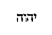
Plura deinceps adduntur, sub iisdem siglis, quae videsis supra, col. 505 et 506, A, B, quae iterum [Col. 1126A] exscribere longum esset, cum nec satis tuto indicio ea Victori ausim ascribere.
XI. Solvere calceamentum nudare est membra, quae ab ipso teguntur, et nudum verbum, id est divini sermonis evidentissime quis poterit speculando explicare sermonem, ni forte aliquibus imaginibus explicare, et hoc est quod dicit: «Non sum dignus,» id est, non sufficio omnia Christi ad liquidum, sublato verborum velamine, revelare mysteria.
Nunc jam venit ad nos prae caeteris famosum nomen, intricata, si qua unquam, causa, perardua sane quaestio ventilanda. Cum enim in prooemio, tum in decursu sive editorum, sive codicis nostri, διαῤῥηδὴν [Col. 1126B] asseritur illuc Pelagium cum suis, caute quidem legendis, sed genuinis, scriptis adduci: cujus quidem nihil fere superest, si pauca dempseris inserta in Augustinianis refutationibus, et Breviarium quoddam in XIV Apostoli Epistolas. Ille autem quasi decurtatus Commentarius ab ipso Cassiodoro sedulo expurgatus, resectus in multis, sic a Pelagio recessit, ut per multa aerae Christianae saecula, sub ementito Hieronymi nomine latuerit. Inolevit quidem opinio in Galliis diu perstitisse Britanni heraesiarchae opera; imo saeculo XVII, si nonnullis fidem, delituisse in libraria Corbeiensis monasterii, nec sine quorumdam fraude suffurata perisse. Equidem neminem novi, qui confidentius quam abbas S. Michaelis dixerit, eadem se ad manum habuisse, defloravisse, [Col. 1126C] in suos transtulisse usus: unde magnopere praestat alios, si qui occurrerint codices, quam attentissime cum supra edito textu, et sanbertini codicis siglis modo descriptis conferre, ut quid illi jure sit ascribendum tuto dignoscere liceat. Ut his notulis finem imponamus, pauca sic denuo recensere animus est, ut uno obtutu quisque deprehendat quaenam in Pelagiano textu edito cum nostris concordent, Italico scilicet, ut aiunt, charactere distincta, quaenam vero ab eodem dissentiant, eaque litteris signata Romanis. Illa vero plerumque nova auctiorem multo ac locupletiorem exhibent textum, quem non nemo suspicabitur primigenium esse, nondum censura Cassiodori recognitum et abbreviatum. Nobis autem omnino necesse visum est declaretur, quod [Col. 1126D] in tota hac catena adeo promiscue Pelagius aut Primasius iisdem in locis internectuntur, alius pro alio ponitur, appellatur, confunditur, ut donec plures alii codices in tantas tenebras lucem immittant, ab utriusque locis tuto secernendis desperandum aestimemus.
1. Sed in omnibus exhibeamus nosmetipsos . Qui ad virtutem provocat appetitum virtutis, ipse nobis misericorditer ministrat, quam si concupiscimus, ab ipso qui eam excoli praecipit adjuvamur.
Sicut Dei ministros. Dei ministri Deo debent in omnibus ministrare [Col. 1126D] Edit., imitari . , et opere cognosci veri Dei esse [Col. 1127A] cultores , et sicut ille a malis [Col. 1127D] Ib., ab omnibus . Eadem ferme habet Primasius. patitur blasphemari , et in praesenti vita, etiam ingratis sua non denegat beneficia, ita nos non vincamur malis, sed vincamus in bono malos.
In multa patientia . Non in parva nec in modica, sed in multa.
In tribulationibus. Omnis laesio tribulatio dicitur .
In necessitatibus. Id est, omne quod necesse est sic feramus, ut necesse est .
In angustiis. Angustia est omnis egentia .
In plagis, in carceribus . Hoc nos hortatur pati, si necesse fuerit pro Christo, quod et ille passus est, quando concurrit plebs, et magistratus adversus eum, et multis virgarum plagis impositis miserunt in carcerem.
In seditionibus, in laboribus, in vigiliis . Non modica, hoc loco patientiae membra describit, in exercitiis enim laborum non minus mentis vigiliae debent esse quam corporis.
In castitate, in scientia . Sicut enim necessaria [Col. 1127B] nobis est castitas corporis, ita et mentis. Illa enim est vera castitas, quae nec mente polluitur , nec opere, quae etiam nobis scientiam praestat pro merito puritatis. Et notandum quod scientia species virtutis [Col. 1127D] Edit., virtutum . sit , si ex ea quisque erudiatur, non infletur.
In longanimitate . Id est, in sustinentia longa , longanimitas autem dicitur, in sustinendis adversitatibus animi fortitudo.
In suavitate . Suavitas autem est, si nulli ex verbis nostris amaritudinem generemus , et illud ejusdem Apostoli compleamus: Omnis amaritudo, et clamor, et blasphemia tollatur a vobis cum omni malitia: et dicamus [Col. 1127D] Ib., dicamus . illud Sapientiae testimonium: Fauces ejus dulcedines, et totius desiderii .
In Spiritu sancto . Id est, ut, haec habentes, dignos nos habitatione ejus cordis sinceritate faciamus [Col. 1127D] Ib., dum dignum ei nos habitaculum praeparemus . .
In charitate non ficta . Tunc non ficta est charitas, si omnia quae nobis fieri volumus, aliis faciamus . Sicut ait apostolus Joannes: Non diligamus verbo, [Col. 1127C] nec lingua, sed opere et veritate . In hoc quoque non ficta est charitas, si delicta et culpas benigno affectu in fratribus castigemus.
2. Per gloriam et ignobilitatem . Id est, per gloriam virtutum, et ignobilitatem flagellorum, despectionum et carcerum [Col. 1127D] Edit., carceris . .
Per infamiam et bonam famam . Omnia haec per patientiam aequaliter suscipiamus [Col. 1127D] Ib., ferimus . , nec extollant nos laudantes, nec dejiciant detrahentes. Quia necesse est non nunquam utrosque [Col. 1127D] Ib., utramque partem . mentiri . Nos vero ad conscientiam respicientes [Col. 1128D] Ib., redeuntes . , non debemus plus aliis de bonis nostris quam nobis ipsis credere [Col. 1128D] Ib., accommodare fidem. .
Ut seductores et veraces . Quare seductores? Quia docent hominem despicere quod habet, et sperare quod non habet: quae oculis exposita sunt, aversis et exclausis sensibus praeterire: et quae ab oculis remota sunt, inexplebilibus desideriis explicare. Dicendo: «seductores et veraces» exposuit infamiam, et bonam famam, quia ab aliis seductores, ab aliis [Col. 1127D] vero, non solum veraces, sed et propter virtutum opera, dii vocabantur. Non ergo mirum, si apostoli seductores dicebantur, cum de ipso Domino alii dicebant, quia bonus est, alii: «Non, sed seducit turbas .» (Joan. VII) .
Sicut qui ignoti et cogniti. Ignoti quidem perfidis et ingratis. Cogniti autem fidelibus atque justis .
Quasi morientes, et ecce vivimus . Hoc usque ad desperationem vitae [Col. 1128D] Ib., ad mortem . pervenientes, sicut quando lapidatus [Col. 1128A] putabatur mortuus, ille vero surrexit et docebat in Listris (Act. XIII) .
Ut castigati et non mortificati . Sicut legimus: Castigans castigavit me Dominus, et morti non tradidit me (Psal. CXVII) . Castigare enim, et verbis et verberibus, dicimus, sicut Pilatus de Domino ait: Castigatum eum dimittam , id est, verberibus flagellatum.
Quasi tristes, semper autem gaudentes. Tristes severitate vultus, corde vero etiam in tribulationibus [Col. 1128D] Ib., tribulatione. pro munerationis exspectatione gaudentes , scriptum est enim: Tristitia vestra convertetur in gaudium (Joan. XVI) .
3. Expurgate vetus fermentum, ut sitis nova conspersio . Id est, nihil in vobis remaneat de veteris corruptione naturae, sed sinceri estote, candore gratiae, nitore justitiae.
Sicut estis azymi . Id est, azymi facti per baptismum, [Col. 1128B] quod nobis Christus sua passione largitus est, non jam in agni specie, sed in veritate corporis immolatus. Nihil itaque in vobis conversationis pristinae relinquatis, quod sinceritatem possit naturae corrumpere .
Etenim Pascha nostrum immolatus est Christus . Ac si diceret, non a nobis in figura agnus, sicut Judaeis, sed in veritate nobis quotidie occiditur Christus, et Pascha quotidie celebramus, si fermentum malitiae et nequitiae non habemus. Et Judaei quidem septem diebus azyma comedebant, et quia in septem diebus mundus est factus, qui semper in suo ordine revolvit [Col. 1128D] Revolvntur , cod. Bon. Revolvit edit. perperam. Ad haec accedit Primasius; cujus tamen editor locum reliquit desperatum «insanabili vitio, inquit, laborat locus.» Jam ex nostris luculentum habes. ? Nos simpliciter Pascha celebramus si in his diebus pure et sinceriter versamur. Quod est enim aliud fermentum, nisi corruptio naturae, quod et ipsum prius a naturali dulcedine recedens, adulterino acore corruptum est .
Itaque epulemur . Id est, nos qui a fermento malitiae et nequitiae abstinemus jugiter salutaris actu [Col. 1128C] salutis solemnia celebremus, et interiori homine simplicitatis et veritatis azymis repleamur.
4. Ideo notum vobis facio, quod nemo in spiritu Dei loquens, dicit , etc. Qui anathematizat, id est, qui cum quadam detestatione abnegat Dominum Jesum, non habet Spiritum sanctum; et qui credit in Dominum Jesum, Spiritum sanctum habet; et quia legimus: Qui filium non habet nec patrem habet, agnoscere ex hoc testimonio possumus, quod qui Christum non credit, nec Spiritum sanctum habere credendus est, sicut legimus ad Romanos: Si quis autem spiritum Christi non habet, hic non est ejus (Rom. VIII) . Quomodo ergo operarios iniquitatis Dominus non cognoscit, si etiam virtutes sint operati, et Deus malis operibus denegatur .
Et nemo potest dicere Dominus Jesus, nisi in Spiritu sancto . Id est, sine causa fatetur aliquis Dominum [Col. 1128D] Jesum, qui non integre credit in Spiritum sanctum, vel sine causa eum verbis confitetur, qui factis negat. Docet ad Corinthios, nisi in Spiritu sancto, id est, in bonis operibus conversantes Dominum Jesum dicebant aliter eis prodesse non posse .
Divisiones gratiarum sunt , etc. Hoc est, non solum dona linguarum, sed diversorum charismatum genera dispensantur a Domino; hic vult ostendere gratias spiritus sancti divisas esse, non ipsum.
Et divisiones ministrationum sunt , etc. Quibus ecclesiastica ministeria [distribuuntur] in sequentibus, spiritu sancto, id est, Deo disponente, ordinata commemorat dicens: Quosdam quidem posuit in Ecclesiam primum apostolos, deinde prophetas, etc. Dicendo enim, idem autem spiritus, idem vero Deus, ostendit se omnino de spiritus sancti divinitate disserere.
Et divisiones operationum sunt . Id est, quibus diversae virtutes operabantur, hoc est dicere, idem qui Spiritus sanctus qui operatur omnia haec in omnibus, id est, fidelibus atque credentibus.
Unicuique datur manifestatio , etc. Manifestatio spiritus, id est, ut manifestetur illum spiritum sanctum accepisse ad utilitatem salutemque multorum. Non enim pro sua tantum, sed pro fidelium causa gratiarum muneribus locupletantur; sive ad utilitatem incredulorum, ut credant, et credentes firmentur. Sive manifestatio spiritus, eo quod per doctrinam spiritalem unicuique manifestam faciat [Col. 1129B] conscientiam suam, sicut in consequentibus dicit, quia per propheticam castigationem occulta cordis ejus manifesta fiunt. Vel quod spiritu illuminatus sensus hominum spirituali discretione cognoscat.
Alii quidem per spiritum sanctum datur sermo sapientiae . Hoc est, ut sapienter et apte, et rationabiliter possit disserere et docere quod gratiae inspiratione percepit.
Alii quidem sermo scientiae . Scientia est, adaperire mysteria, aut scire, et narrare praeterita, aut judicii futura praedicere.
Sic deinceps unus decurrit auctor idem Pelagius, ut videtur, ad finem usque Epistolae prout in editis exstat, paucis variantibus.
5. Notum enim vobis facio Evangelium , etc. Hic, praetermisso ordine praedicandi, ad doctrinam se [Col. 1129C] contulit resurrectionis, eo quod nonnulli Corinthiorum de resurrectione dubitabant.
Quod accepistis . Id est, quod acceptum habuistis, et haec dicit, ne illi hoc non credidisse viderentur .
In quo et statis. Id est , in bonis operibus perseverantes, in cujus doctrina ad coelestia statis [Col. 1129D] Edit., erecti estis . .
Per quod et salvamini. Id est , per cujus doctrinam salutem speratis et animarum et a diversis infirmitatibus [Col. 1129D] Ib., salvamini . corporum, quia sine fide resurrectionis perit omnimodo spes salutis.
Qua ratione praedicaverim vobis. [Ac si diceret ] tota ratio praedicationis nostrae , haec est, ut resurrectionem credatis, hoc est , praemium [Col. 1129D] Ib., primum . omnium qui Christum crediderunt [Col. 1130D] Ib., Christo deserviunt . . Alioquin superfluus est omnis labor jejuniorum et omnium tribulationum quas in hac vita pro Christo patimini.
Si tenetis, nisi frustra credidistis . Id est, nisi obliti estis, vel certe si fidei vestrae vel laboris praemium resurgendo non speratis, vane creditis .
Tradidi enim vobis in primis. Id est , ex quo vobis in primordio praedicavi, tradidi mysterium resurrectionis, quod fidei nostrae constat esse et primum.
Quod et accepi . Accipere se dixit, sive a lege, sive a senioribus [Col. 1130D] Ib., a prioribus . , sive ab ipso Domino per revelationem .
Quoniam Christus mortuus est pro peccatis nostris secundum Scripturas. Ut majore possit beatus Apostolus auctoritate firmare , quod praedicabat, hunc esse Christum salvatorem mundi , dicit: Quem Moyses et prophetae annuntiaverunt, ideo et secundam Scripturas praedictum esse eum commemorat, ut illud, Sicut ovis ad occisionem ducitur, et quasi agnus coram tondente se obmutescit; et illud: Traditus est, propter iniquitates nostras, et livore ejus sanati sumus [Col. 1130A] (Isa. I.III) , et multa alia in divinis de passione ejus invenies scripturis.
Et quia sepultus est . Ut illud Isaiae: Et dabit impios pro sepultura et divites pro morte sua . Item ipse: Sepultura ejus sublata est de medio.
Et quia resurrexit tertia die secundum scripturas . Habes in Osea, Vivificabit nos post duos dies, in die tertia suscitabit nos, et vivemus in conspectu ejus (Oseae VI) .
Et quia visus est Cephae . Id est Petro, Cephas enim Syrum nomen est; apparuit Petro, sicut in Evangelio scriptum est, quia apparuit Simoni .
Et post haec undecim . Quando ad eos januis clausis intravit, hoc intelligendum, quia in Evangelio non omnes scriptae sunt visiones, sed tantum quae ad audientium sufficerent fidem.
Deinde visus est plusquam quingentis fratribus simul, ex quibus , etc. Ut enim major fides haberetur, multitudinem testium interposuit, ex quibus multis vivere dicuntur qui possint interrogati dicere quae viderunt ; [Col. 1130B] multi vero jam dormire dicuntur in morte.
Deinde visus est Jacobo . Jacobo Alphaei seorsum apparuit; ferunt enim quod ipse Jacob Alphaei testatus est in coena Domini, dicens: Non se comesurum panem, usque dum videret Christum resurgentem a mortuis .
Deinde apostolis omnibus . Multi hic apostolos illos omnes septuaginta, quos Dominus misit binos ad praedicandum, intelligi volunt.
Novissimi autem omnium , etc. Visus est illi in via, quando lux circumfulsit eum, sive in templo haec ideo dicit, ne putarent eum audita potius quam visa narrare; tanquam abortivo dicit, quia est Synagogae mortuus et natus Ecclesiae tanquam abortivo, de cujus vita fuerat desperatum, nisi per gratiam Domini violenter fuisset attractus (I Cor. XV) . Attractus autem praedicationibus, non catenis. Et pro stupero novitatis in vitiis qui erat, in legis eruditione perfectus. Sive ideo abortivus, quia mater synagoga eum [Col. 1130C] male conceptum imperfectumque peperit.
Ego enim sum minimus apostolorum . Haec enim de se propter humilitatem dicit, caeterum erat minimus tempore, non labore. Nam alibi ait: Plus omnibus laboravi .
Quia non sum dignus vocari apostolus , etc. Quare non sit dignus ipse exponens ait: Quoniam persecutus sum Ecclesiam Dei. Docet nos exemplo suo, etiam si ad praesens proficiamus deflere praeterita, melius est enim dimissa recordari peccata , quam oblivisci commissa. Scriptum est enim: Fili, peccasti, ne adjicias iterum, sed et de praeteritis deprecare (Eccli. XXI) .
Gratia autem Dei sum id quod sum, et gratia ejus in me vacua non fuit . Quia gratia qua redempti sumus, laborem, conatum, meritum non quaesivi. Quotidiana autem gratia post baptismum quotidianum servitium laboris exspectat.
6. Qui parce seminat, parce et metet . Id est, qui parum tribuit egenti, parum accipiet mercedis; secundum misericordiae opera unusquisque et praemia recipiet aeterna.
Et qui seminat in benedictionibus, de benedictionibus et metet . Qualis fuerit devotio, talis erit et remuneratio, qui grato animo et sufficienter, aut rerum temporalium eleemosynam, aut praedicationis indigenti ministraverit verba, sufficienter et large a Domino accipiet praemia. Avarus enim mercedem ex eo quod invitus dederit, non habebit, benedictio enim et dantis aeterna, accipientis praesens efficitur eleemosyna.
Unusquisque prout destinavit in corde suo, non ex tristitia aut ex necessitate . Id est, quantum statuit vel elegit pauperibus dare, non coactus sed voluntarius. Tobias enim filio suo ait: Si plurimum tibi est, plurimum tribue; si exiguum, exigua indigentibus communica (Tob. IV) .
Hilarem enim datorem diligit Deus. Salomon enim dicit: In omni dato hilarem fac vultum tuum (Eccli. XXXV) . Nam et in divinarum Scripturarum sermone, Dominus vult hilarem suum datorem.
Potest autem Deus omnem gratiam abundare facere in vobis. Ne timeant inopiam eleemosynarii, ideo in opere misericordiae Dei, praeponit potentiam. Omnem gratiam dicit sive copiam frugum, fructusque proventum, sive sensus abundantium, sapientiaeque intellectum.
Ut in omnibus semper sufficientiam habentes. Ac si diceret , omnem sufficientiam tam spiritualium quam etiam carnalium dabit vobis Dominus, ut omne opus bonum, sive devotionis in misericordia, sive eruditionis [Col. 1131B] in doctrina , implere possitis mente libera.
Dispersit, dedit pauperibus, justitia ejus manet in saeculum saeculi . Id est, divisit, dedit pluribus, ideo non uni, sed pluribus, quia majus est oratio multorum quam unius. De rebus enim temporalibus , si bene dispensentur, aeterna justitia comparatur .
Qui autem administrat semen seminanti, et panem ad manducandum , etc. Hoc enim de verbi semine dictum in sancto intelligimus Evangelio, ubi Dominus exponens discipulis parabolam seminis ait: Semen est verbum Dei . Ac si praedicatoribus Apostolus diceret: Deus quibus dedit officium docendi, escam non subtrahit corporis; sive: qui vobis dispensandi tribuit facultatem, vos minime patietur esurire.
Et multiplicavit semen vestrum . Id est, rerum vobis augmentum faciet, vel sermonum: Date, et dabitur [Col. 1132A] vobis , dicit Dominus; qui enim pro Deo sive praedicationis verbum, sive misericordiae dederit alimentum, et hic et in futuro accipiet illud multiplicatum.
Et augebit incrementa frugum justitiae vestrae . Incrementum frugum justitiae dicit, sive facultates rerum, sive doctrinam sermonum, de fructu enim labiorum suorum , ait Salomon, satiabitur sapiens .
7. Fiduciam talem habemus per Christum ad Deum . Ac si diceret: illa fiducia inexpugnabilis est, quae non ex nobis, sed ex Christo est, qua nos per fidem vestram gratia, magis quam epistola humana, commendat .
Non uod sufficientes simus cogitare aliquid a nobis . Id est, nihil nostra sapientia vel virtute in causa vestrae salutis operamur. Vult enim ostendere nihil se suo sensu ac possibilitate in salvandis gentibus vel cogitare vel facere, cum utique pauci homines , humiles, imperiti, et pene rustici, sine Dei [Col. 1132B] gratia nunquam universum mundum potuissent salvare .
Ideo autem hoc praemisit, quia dicturus erat, tanto majus se ministerium suscepisse, quam Mosen, quanto majus est Novum Testamentum a Lege , quae absconditum in se Christum mysteriis adumbrata retinebat. Non quod aliquid sibi arroget, sed ut per doctrinam suam, quae in Christo est, facilius eos a falsis apostolis revocet .
Qui idoneos nos fecit ministros Novi Testamenti . Id est, ad implendum apostolatus officium.
Non littera, sed spiritu . Id est, non carnalis legis, sed spiritualium praeceptorum.
Annotabam Parisiis, kal. Sept. ann. R. S. MDCCCLI. Fr. J.-B. PITRA, mon. Bened. Ex abbatia Solesmensi.
Ordo rerum
- NOTITIA HISTORICA. Col 9
- In Collectiones D. Smaragdi in Epistolas et Evangelia typographi monitum. Ibid .
- VITA SMARAGDI. 13
- D. SMARAGDI PRAEFATIO IN COLLECTIONES. 15
- INCIPIUNT COLLECTIONES. Ibid .
- In vigilia Natalis Domini , epistola beati Pauli (Rom. I); lectio Isaiae prophetae (Isai. LXII); evangelium Matthaei (Matth. I); lectio Isaiae prophetae (Isai. IX); evangelium Lucae (Luc. II). Ibid .
- In die Natalis Domini , epistola beati Pauli (Hebr. I); evangelium Joannis (Joan. I); concordia. 27
- In natali sancti Stephani , lectio Actuum apostolorum (Act. V); evangelium Matthaei (Matth. XXIII); concordia. 35
- In natali sancti Joannis evangelistae , epistola beati Pauli (Ephes. I); evangelium Joannis (Joan. ult.); concordia. 41
- In natali Innocentum , lectio libri Apocalypsis Joannis [Col. 1131D] apostuli (Apoc. XIV); evangelium Matthaei (Matth. II); concordia. 48
- In octava Nativitatis Domini , epistola beati Pauli (Tit. II): evangelium Lucae (Luc. II); concordia. 55
- Dominica prima post Natalem Domini , epistola beati Pauli (Galat. IV); evangelium Lucae (Luc. II); concordia. 62
- In die Theophaniae , lectio Isaiae prophetae (Isai. LX); evangelium Matthaei (Matth II); concordia. 68
- Dominica prima post Theophaniam , epistola beati Pauli (Rom. XII); evangelium Lucae (Luc. II); concordia. 75
- Dominica II post Theophaniam , epistola beati Pauli (Rom. XII); evangelium Joannis (Joan. II); concordia. 80
- Dominica III post Theophaniam , epistola beati Pauli (Rom. XII); evangelium Matthaei (Matth. VIII); concordia. 91
- Dominica IV post Theophaniam , epistola beati Pauli (Rom. XIII); evangelium Matthaei (Matth. VIII); concordia. 96
- Dominica in Septuagesima , epistola beati Pauli (I Cor. IX); evangelium Matthaei (Matth. XX); concordia. 100
- Dominica in Sexagesima , epistola beati Pauli (II Cor. XI); evangelium Lucae (Luc. VIII); concordia. 103
- Dominica in Quinquagesima , epistola beati Pauli (I Cor. XIII); evangelium Lucae (Luc. XVIII); concordia. 112
- In initio Quadragesimae , epistola beati Pauli (II Cor. VI); evangelium Matthaei (Matth. IV); concordia. 118
- Dominica prima, mense primo , epistola beati Pauli (I Thess. IV); evangelium Matthaei (Matth. XV). 129
- Dominica tricesima , epistola beati Pauli (Ephes. V); evangelium Lucae (Luc. XI). 132
- Feria sexta hebdomadae secundae in Quadragesima , evangelium Joannis (Joan. IV). 141
- Sabbato hebdomadae secundae in Quadragesima , evangelium [Col. 1132D] Joannis (Joan. VIII); concordia. 145
- Dominica in vicesima , epistola beati Pauli (Galat. IV); evangelium Joannis (Joan. VI). 148
- Feria secunda post vicesimam , evangelium Joannis (Joan. II). 155
- Feria quarta post vicesimam , evangelium Joannis (Joan. IX). 159
- Feria sexta post Vicesimam , evangelium Joannis (Joan. XI). 161
- Dominica quinta in Quadragesima , epistola beati Pauli (Hebr. IX); evangelium Joannis (Joan. VIII). 163
- Incipit Passio Domini nostri Jesu Christi (Matth. XXVI; Marc. XIV; Luc. XXII). 169
- Dominica in Palmis . epistola beati Pauli (Philipp. II); evangelium Joannis (Joan. XIII). 199
- Divi Augustini dicta de Coena Domini . 203
- Sabbato sancto , epistola beati Pauli (Coloss. III); evangelium Matthaei (Matth. XXVIII). 221
- Dominica sancta in Pascha , epistola beati Pauli (I Cor. V); evangelium Marci (Marc. ult.). 224
- Feria secunda Paschae , lectio Actuum apostolorum (Act. X); evangelium Lucae (Luc. ult.). 227
- Feria tertia Paschae , lectio Actuum apostolorum (Act. XIII); evangelium Lucae (Luc. XXIV). 234
- Feria quarta Paschae , lectio Actuum apostolorum (Act. III); evangelium Joannis (Joan. ult.). 241
- Item Augustinus in homilia Paschae. 247
- Feria quinta Paschae , lectio Actuum apostolorum (Act. VIII); evangelium Joannis (Joan. XX); concordia. 250
- Feria sexta Paschae , epistola beati Petri (I Petr. III); Item alia expositio; evangelium Matthaei (Matth. ult.); concordia. 260
- Sabbato in octava Paschae , epistola beati Petri (I Petr. II); alia expositio; evangelium Joannis (Joan. XX); concordia. 266
- Dominica in octava Paschae , epistola beati Joannis (I Joan. V); alia expositio; evangelium Joannis (Joan. ult.); concordia. 276
- Dominica post octavam Paschae , epistola beati Petri (I Petr. II); evangelium Joannis (Joan. X); concordia. 284
- Dominica II post octavam Paschae , epistola beati Petri (I Petr. II); evangelium Joannis (Joan. XVI). 287
- Dominica III post octavam Paschae , epistola beati Jacobi (Jac. I); alia expositio; evangelium Joannis (Joan. XVI); concordia. 292
- Dominica IV post octavam Paschae , epistola beati Jacobi (Jac. I); evangelium Joannis (Joan. XVI); concordia. 299
- In Litania majori , epistola beati Jacobi (Jac. V); alia expositio; evangelium Lucae (Luc. XI); concordia. 303
- In Ascensione Domini , lectio Actuum Apostolorum (Act. I); evangelium Marci (Marc ult.); concordia. 307
- Dominica post Ascensionem Domini , epistola beati Petri (I Petr. IV); evangelium Joannis (Joan. XV); concordia. 313
- In sabbato Pentecostes , lectio Actuum apostolorum (Act. XIX); evangelium Joannis (Joan. XIV); concordia. 316
- Dominica Pentecostes , lectio Actuum apostolorum (Act. II); evangelium Joannis (Joan. XIV). 323
- Dominica in octava Pentecostes , lectio libri Apocalypsis beati Joannis apostoli (Apoc. IV); item Bedae in ista ipsa lectione expositio; evangelium Joannis (Joan. III). 331
- Hebdoma II post Pentecosten , epistola beati Joannis (I Joan. IV); evangelium Lucae (Luc. XVI). 343
- Hebdoma III post Pentecosten , epistola beati Joannis (I Joan. III); evangelium Lucae (Luc. XIV). 353
- Hebdoma IV post Pentecosten , epistola beati Petri (I Petr. V); alia expositio; evangelium Lucae (Luc. XV). 358
- Hebdoma V post Pentecosten , epistola beati Pauli (Rom. VIII); alia expositio; evangelium Lucae (Luc. VI). 362
- Hebdoma VI post Pentecosten , epistola beati Petri (I Petr. III); alia expositio; evangelium Lucae (Luc. V). 371
- In vigilia sancti Joannis , lectio Jeremiae prophetae (Jerem. I); evangelium Lucae (Luc. I). 377
- In natali sancti Joannis Baptistae , lectio Isaiae prophetae (Isai. XL X); evangelium Lucae (Luc. I). 381
- In vigilia sancti Petri apostoli , lectio Actuum apostolorum (Act. III); evangelium Joannis (Joan. ult.). 386
- In natali sancti Petri , lectio Actuum apostolorum (Act. XII); evangelium Matthaei (Matth. XVI). 389
- In vigilia sancti Pauli , epistola beati Pauli (Galat. I). 392
- In natali sancti Pauli , lectio Actuum apostolorum (Act. IX); evangelium Matthaei (Matth. XIX). 395
- Hebdoma VII post Pentecosten , epistola beati Pauli (Rom. VI); evangelium Matthaei (Matth. V). 399
- Hebdoma VIII post Pentecosten , epistola beati Pauli (Rom. VI); evangelium Marci (Marc. VIII). 405
- Hebdoma IX post Pentecosten , epistola beati Pauli (Rom VIII); evangelium Matthaei (Matth. VII). 411
- Hebdoma X post Pentecosten , epistola beati Pauli (I Cor. X); evangelium Lucae (Luc. XVI). 414
- Hebdoma XI post Pentecosten , epistola beati Pauli (I Cor. XII); evangelium Lucae (Luc. XIX). 419
- In natali sanctae Felicitatis , lectio Proverbiorum (Proverb. ult.); evangelium Matthaei (Matth. XII). 424
- Hebdoma XII post Pentecosten , epistola beati Pauli (I Cor. XV); evangelium Lucae (Luc. XVIII). 433
- In natali sancti Laurentii , epistola beati Pauli (II Cor IX); evangelium Joannis (Joan. XII). 436
- Hebdoma XIII post Pentecostem , epistola beati Pauli (II Cor. III); evangelium Marci (Marc. VII). 439
- Hebdoma XIV post Pentecosten , epistola beati Pauli (Galat. III); evangelium Lucae (Luc. X). 442
- Hebdoma XV post Pentecosten , epistola beati Pauli (Galat. V); evangelium Lucae (Luc. XVII). 448
- Hebdoma XVI post Pentecosten , epistola beati Pauli (Galat. IV); evangelium Matthaei (Matth. VI). 455
- Hebdoma XVII post Pentecosten , epistola beati Pauli (Ephes. III); evangelium Lucae (Luc. VII). 461
- Hebdoma XVIII post Pentecosten , epistola beati Pauli (Ephes. IV); evangelium Lucae (Luc. XIV). 466
- Hebdoma XIX post Pentecosten , epistola beati Pauli (I Cor. I); evangelium Matthaei (Matth. XXII). 471
- In natale sancti Michaelis archangeli , lectio libri Apocalypsis Joannis apostoli (Apoc. I); evangelium Matthaei (Matth. XVIII). 473
- Hebdoma XX post Pentecosten , epistola beati Pauli (Ephes. IV); evangelium Matthaei (Matth. IX). 480
- Hebdoma XXI post Pentecosten , epistola beati Pauli (Ephes. V); evangelium Matthaei (Matth. XXII). 485
- Hebdoma XXI post Pentecosten , epistola beati Pauli (Ephes. VI); evangelium Joannis (Joan. IV). 491
- Hebdoma XXIII post Pentecosten , epistola beati Pauli (Philipp. I); evangelium Matthaei (Matth. XVIII). Item Augustinus. 496
- Hebdoma XXIV post Pentecosten , epistola beati Pauli (Philipp. III); evangelium Matthaei (Matth. XXII). 501
- Hebdoma XXV post Pentecosten , epistola beati Pauli (Coloss. I); evangelium Matthaei (Matth. IX). 505
- In natali sancti Andreae , epistola beati Pauli (Rom. X); evangelium Matthaei (Matth IV). 507
- INCIPIUNT LECTIONES PER ADVENTUM DOMINI. 512
- Hebdoma IV ante Natalem Domini , hoc est, Dominica prima Adventus , epistola beati Pauli (Rom. XIII); evangelium Matthaei (Matth. XXI). 512
- Hebdoma III ante Natalem Domini , hoc est, Dominica II Adventus , epistola beati Pauli (Rom. XV); evangelium Lucae (Luc. XXI). 515
- Hebdoma II ante Natalem Domini , hoc est, Dominica III Adventus , epistola beati Pauli (I Cor. IV); evangelium Matthaei (Matth. XI). 519
- Hebdoma I ante Natalem Domini , hoc est, Dominica IV Adventus , epistola beati Pauli (Philipp. III); evangelium Joannis (Joan. I). 523
- SANCTORUM MARTYRUM, VIRGINUM ET CONFESSORUM EXPOSITIONES. 526
- In natali apostolorum , epistola beati Pauli (Rom. VIII); evangelium Joannis (Joan. XV). Ibid .
- In natali unius confessoris , epistola beati Pauli (II Cor. I); evangelium Lucae (Luc. XIX). 531
- In natali sanctorum plurimorum , epistola beati Petri (I Petr. I); evangelium Lucae (Luc. XII); aliud evangelium (Luc. XIV). 534
- In natali sanctorum plurimorum martyrum , epistola beati Pauli (Hebr. XI); evangelium Matthaei (Matth. V). 513
- In natali virginum , evangelium Matthaei (Matth. XIII); aliud evangelium (Matth. XXV). 547
- SUMMARIUM IN EPISTOLAS ET EVANGELIA SMARAGDO ADDITUM. 553
- SMARAGDI ABBATIS DIADEMA MONACHORUM. 593
- Prologus R. P. Smaragdi. Ibid .
- CAPUT PRIMUM. — De oratione. 594
- CAP. II. — De disciplina psallendi. 596
- CAP. III. — De lectione. 597
- CAP. IV. — De dilectione Dei et proximi. 598
- CAP. V. — De observatione mandatorum Dei. 601
- CAP. VI. — De timore. 602
- CAP. VII. — De sapientia quae Christus est. 604
- CAP. VIII. — De prudentia. 605
- CAP. IX. — De simplicitate. Ibid .
- CAP. X. — De patientia. 606
- CAP. XI. — De humilitate. 607
- CAP. XII. — De pace. 609
- CAP. XIII. — De obedientia Ibid .
- CAP. XIV. — De contemptoribus mundi. 610
- CAP. XV. — De poenitentia. 611
- CAP. XVI. — De confessione. 613
- CAP. XVII. — De compunctione. Ibid .
- CAP. XVIII. — De spe et formidine electorum. 614
- CAP. XIX. — De iis qui ad delictum post lacrymas revertuntur. 615
- CAP. XX. — De vita vel conversatione monachorum. 616
- CAP. XXI. — De iis qui quietam diligunt vitam. 617
- CAP. XXII. — De electis omnia relinquentibus. Ibid .
- CAP. XXIII. — De mortificatione monachorum. 618
- CAP. XXIV. — De vita contemplativa. 619
- CAP. XXV. — De regni coelestis desiderio. 620
- CAP. XXVI. — De remissa conversatione monachorum. 621
- CAP. XXVII. — De abstinentia. 622
- CAP. XXVIII. — De continentia. 623
- CAP. XXIX. — De tolerantia divinae correptionis. 624
- CAP. XXX. — De flagellis Dei. 625
- CAP. XXXI. — De infirmitate carnis. 626
- CAP. XXXII. — De tribulatione justorum. Ibid .
- CAP. XXXIII. — De tentationibus. 627
- CAP. XXXIV. — De multimodis peccatis. 629
- CAP. XXXV. — Ut post ruinam quis surgere queat. 630
- CAP. XXXVI. — De cogitatione. 631
- CAP. XXXVII. — De sermone. 632
- CAP. XXXVIII. — De taciturnitate. 633
- CAP. XXXIX. — De multiloquio. 634
- CAP. XL. — De collatione. 636
- CAP. XLI. — De dilectione proximi et correctione fraterna. 637
- CAP. XLII. — De zelo pastoris officii. 638
- CAP. XLIII. — De doctrinae discretione. 639
- CAP. XLIV. — De donis divinis. 641
- CAP. XLV. — De gratia Dei. 642
- CAP. XLVI. — De bonis subjectis. Ibid .
- CAP. XLVII. — Ut thesaurus monachi in coelo collocetur. 644
- CAP. XLVIII. — De consilio. Ibid .
- CAP. XLIX. — De sanctificatione cordis et corporis. 646
- CAP. L. — De vocatione divinae pietatis. 647
- CAP. LI. — De dilectione et gratia Dei. 648
- CAP. LII. — De eo quod sancti filii lucis vocantur. 649
- CAP. LIII. — De spe. 650
- CAP. LIV. — Ut sine intermissione oretur. 651
- CAP. LV. — Ut simus simplices sicut filii Dei. 652
- CAP. LVI. — Ut omnia sine murmuratione faciamus. Ibid .
- CAP. LVII. — De circumcisione vitiorum. 653
- CAP. LVIII. — De fructu justitiae. 654
- CAP. LIX. — Ut ad innocentiam revertamur infantiae. 655
- CAP. LX. — De eo quod justi lapides vivi vocantur. 656
- CAP. LXI. — De sufferentia tentationum. 657
- CAP. LXII. — De cognitione Domini nostri Jesu Christi. 658
- CAP. LXIII. — De clarificatione Domini nostri Jesu Christi in sanctis. 659
- CAP. LXIV. — Ut ambulemus digne Deo, et impleamur agnitione voluntatis ejus. 660
- CAP LXV. — De eo quod non omnibus placere debemus hominibus. Ibid .
- CAP. LXVI. — Ut nobis mutuo culpae dimittamus querelam. 661
- CAP. LXVII. — De eo quod filii Dei scimus et haeredes, et haereditas ejus, illeque nostra. 663
- CAP. LXVIII. — Quomodo homo lucrifaciat Christum. 664
- CAP. LXIX. — De eo quod Domini semper a monachis annuntientur virtutes. Ibid .
- CAP. LXX. — De eo quod donatum sit sanctis pati pro Christo. 665
- CAP. LXXI. — De eo quod Christus pro dilectione nostra tradidit semetipsum. 666
- CAP. LXXII. — De eo quod Apostolus ait: Spiritum nolite exstinguere . 667
- CAP. LXXIII. — De nociva curiositate monachorum. 668
- CAP. LXXIV. — De regula ab apostolis posita. 669
- CAP. LXXV. — Ut vigilantes sint monachi. 670
- CAP. LXXVI. — De pugna virtutum. 671
- CAP. LXXVII. — De odio et correctione fraterna. 672
- CAP. LXXVIII. — Ut mentis lumbos succinctos habeat monachus. 673
- CAP. LXXIX. — De mortificatione vitiorum. Ibid .
- CAP. LXXX. — De gratia lacrymarum. 674
- CAP. LXXXI. — De eo quod sancti monachi filii Dei vocantur. 675
- CAP. LXXXII. — Quod ex virtutibus virtutes, et ex vitiis vitia oriuntur. 676
- CAP. LXXXIII. — Quid sit configi Christi cruci. Ibid .
- CAP. LXXXIV. — Ut monachi cor habeant purum et conscientiam bonam. 677
- CAP. LXXXV. — Ut divites sint monachi in operibus bonis, et thesaurizent sibi fundamentum bonum. 678
- CAP. LXXXVI. — De mansione aeterna quae a Deo praeparata est sanctis. 679
- CAP. LXXXVII. — Quomodo beatus efficitur homo. 680
- CAP. LXXXVIII. — De hora exitus et separatione animae a corpore. Ibid .
- CAP. LXXXIX. — De innocentia. 681
- CAP. XC. — Quid sit sanctificare jejunium. 682
- CAP. XCI. — Quid sit bene jejunare. 683
- CAP. XCII. — De eo quod scriptum est: Multi ab Oriente et Occidente venient , etc. (Matth. VIII). Ibid .
- CAP. XCIII. — De eo quod omnis electus et perfectus monachus et homo, et vitulus, et leo, et aquita liguraliter sit. 684
- CAP. XCIV — De eo quod Apostolus ait: Caro concupiscit , etc. (Galat. V) . Ibid .
- CAP. XCV. — Quid sit impetus spiritus, et quid sit impetus carnis. 685
- CAP. XCVI. — De eo quod unusquisque justus et ante faciem suam, et coram facie sua, ambulat. Ibid .
- CAP. XCVII. — De eo quod scriptum est: Omni custodia serva cor tuum (Prov. IV) . 686
- CAP. XCVIII. — Quid significet quod dixit Deus ad Abraham: Egredere de terra tua , etc. (Gen. XII) . 687
- CAP. XCIX. — De martyrio quod in pace Ecclesiae fit. 688
- CAP. C. — De duobus altaribus in homine, quorum alterum in corpore, et alterum in corde est. 689
- COMMENTARIORUM IN RECULAM SANCTI BENEDICTI PRAEFATIO A SMARAGDO METRICE DICTATA. Ibid .
- Prooemium et prologus. 691
- CAPUT PRIMUM. — De quatuor generibus monachorum. 724
- CAP. II. — Qualis debeat esse abbas. 728
- CAP. III. — De adhibendis ad consilium fratribus. 744
- CAP. IV. — Quae sint instrumenta bonorum operum. 748
- CAP. V. — De obedientia. 794
- CAP. VI. — De taciturnitate. 801
- CAP. VII. — De humilitate et multiplici ejus commendatione duodecim gradibus distincta. 805
- CAP. VIII. — De officiis divinis in noctibus. 829
- CAP. IX. — Quot psalmi dicendi sint in nocturnis horis. 830
- CAP. X. — Qualiter aestatis tempore agatur nocturna laus. 832
- CAP. XI. — Qualiter Dominicis diebus vigiliae agantur. Ibid .
- CAP. XII. — Qualiter matutinorum solemnitas agatur. 834
- CAP. XIII. — Qualiter privatis diebus matutini agantur. Ibid .
- CAP. XIV. — Qualiter in natalitiis sanctorum agantur vigiliae. 835
- CAP. XV. — Quibus temporibus dicatur Alleluia. Ibid .
- CAP. XVI. — Qualiter divina opera per diem agantur. 836
- CAP. XVII. — Quanti psalmi per easdem horas canendi sint. 837
- CAP. XVIII. — Quo ordine psalmi dicendi sint. Ibid .
- CAP. XIX. — De disciplina psallendi. 839
- CAP. XX. — De reverentia orationis. 840
- CAP. XXI. — De decanis monasterii. 841
- CAP. XXII. — Quomodo dormiant monachi. 843
- CAP. XXIII. — De excommunicatione culparum. 845
- CAP. XXIV. — Qualis debeat esse modus excommunicationis. 847
- CAP. XXV. — De gravioribus culpis. 849
- CAP. XXVI. — De his qui sine jussione abbatis junguntur excommunicatis. 851
- CAP. XXVII. — Qualiter debeat esse sollicitus abbas circa excommunicatos. 852
- CAP. XXVIII. — De iis qui saepius correcti non emendantur. 855
- CAP. XXIX. — Si debeant fratres exeuntes de monasterio iterum recipi. 857
- CAP. XXX. — De pueris minori aetate, qualiter corripiantur. 858
- CAP. XXXI. — De cellerario monasterii, qualis sit. Ibid .
- CAP. XXXII. — De ferramentis vel rebus monasterii. 863
- CAP. XXXIII. — Si quid debeant monachi proprium habere. 864
- CAP. XXXIV. — Si omnes aequaliter debeant necessaria [Col. 1137] accipere. 865
- CAP. XXXV. — De septimanariis coquinae. 866
- CAP. XXXVI. — De infirmis, fratribus. 868
- CAP. XXXVII. — De senibus vel infantibus. 870
- CAP. XXXVIII. — De hebdomadario lectore. 871
- CAP. XXXIX. — De mensura ciborum. 873
- CAP. XL. — De mensura potus. 875
- CAP. XLI. — Quibus horis oporteat reficere fratres 876
- CAP. XLII. — Ut post completorium nemo loquatur. 878
- CAP. XLIII. — De his qui ad opus Dei vel ad mensam tarde occurrunt. 879
- CAP. XLIV. — De iis qui excommunicantur, quomodo satisfaciant. 882
- CAP. XLV. — De iis qui falluntur in oratorio. 883
- CAP. XLVI. — De iis qui in aliis quibuslibet rebus delinquunt. Ibid .
- CAP. XLVII. — De significanda hora operis Dei. Ibid .
- CAP. XLVIII. — De opere manuum quotidiano. 884
- CAP. XLIX. — De Quadragesimae observatione. 887
- CAP. L. — De fratribus qui longe ab oratorio laborant, aut in via sunt. 888
- CAP. LI. — De fratribus qui non longe proficiscuntur. 889
- CAP. LII. — De oratorio monasterii. Ibid .
- CAP. LIII. — De hospitibus suscipiendis. 890
- CAP. LIV. — Quod non debeat monachus litteras vel eulogia accipere sine jussu abbatis. 893
- CAP. LV. — De vestimentis et calceamentis fratrum. 894
- CAP. LVI. — De mensa abbatis. 897
- CAP. LVII. — De artificibus monasterii. Ibid .
- CAP. LVIII. — De disciplina suscipiendorum fratrum. 898
- CAP. LIX. — De filiis nobilium vel pauperum qui offeruntur. 904
- CAP. LX. — De sacerdotibus qui voluerint in monasterio habitare. 907
- CAP. LXI. — De monachis peregrinis, qualiter suscipiantur. 909
- CAP. LXII. — De sacerdotibus monasterii. 911
- CAP. LXIII. — De ordine congregationis. 912
- CAP. LXIV. — De ordinando abbate. 915
- CAP. LXV. — De praeposito monasterii. 919
- CAP. LXVI. — De ostiario monasterii. 922
- CAP. LXVII. — De fratribus in via directis. 924
- CAP. LXVIII. — Si fratri impossibilia injungantur. 925
- CAP. LXIX. — Ut in monasterio non praesumat alter alterum defendere. 926
- CAP. LXX. — Ut non praesumat quisquam aliquem passim caedere aut excommunicare. 927
- CAP. LXXI. — Ut obedientes sint sibi invicem fratres. 928
- CAP. LXXII. — De zelo bono, quem debent habere monachi. 929
- CAP. LXXIII. — De eo quod non omnis observatio justitiae in hac sit regula constituta. 930
- SMARAGDI ABBATIS VIA REGIA. 931
- Dacherius lectori. Ibid .
- Epistola nuncupatoria. 933
- CAPUT PRIMUM. — De dilectione Dei et proximi. 935
- CAP. II. — De observandis mandatis Domini. 937
- CAP. III. — De timore. 939
- CAP. IV. — De sapientia. 941
- CAP. V. — De prudentia. 945
- CAP. VI. — De simplicitate. 946
- CAP. VII. — De patientia. Ibid .
- CAP. VIII. — De justitia. 947
- CAP. IX. — De judicio. 949
- CAP. X. — De misericordia. 950
- CAP. XI. — Ut operibus Dominus honoretur. 952
- CAP. XII. — De decimis et primitiis. 953
- CAP. XIII — Ut thesaurus in coelo collocetur. Ibid .
- CAP. XIV. — Qualem et quantum thesaurum in vita sibi homo recondiderit, talem et tantum post mortem inveniet. 954
- CAP. XV. — De non fidendo divitiis. 955
- CAP. XVI. — De non gloriando in divitiis. 956
- CAP. XVII. — De pace. 957
- CAP. XVIII. — De zelo rectitudinis. Ibid .
- CAP. XIX. — De clementia. 958
- CAP. XX. — De consilio. 959
- CAP. XXI. — Ut caveat unusquisque superbiam. 960
- CAP. XXII. — De zelo et livore. 961
- CAP. XXIII. — De non reddendo malum pro malo. 962
- CAP. XXIV. — De reprimanda ira. 963
- CAP. XXV. — De non consentiendo adulatoribus. 964
- CAP. XXVI. — De cavenda avaritia. Ibid .
- CAP. XXVII. — Ut de impensis alienis domus non aedificetur. 965
- CAP. XXVIII. — Ut pro justitia facienda nulla a judicibus requirantur praemia. 966
- CAP. XXIX. — Ne statera dolosa inveniatur in regno tuo. Ibid .
- CAP. XXX. — Prohibendum ne captivitas fiat. 967
- CAP. XXXI. — De praesidio Domini requirendo. 969
- CAP. XXXII. — De oratione. 970
- ACTA COLLATIONIS ROMANAE, A SMARAGDO DESCRIPTA. 971
- CHARTAE LUDOVICI PH ET LOTHARII FILII EJUS, PRO MONASTERIO SANCTI MICHAELIS. 975
- I. Charta Ludovici Pii pro monasterio sancti Michaelis. Ibid .
- II. Charta Ludovici Pii et Lotharii filii ejus de libertate electionis abbatis. 977
- III. Charta Ludovici Pii de quadam commutatione a Smaragdo abbate facta. Ibid .
- IV. Charta Ludovici Pii de libertate et immunitate praedicti monasterii sancti Michaelis. 978
- V. Charta Ludovici Pii de libertate Carrorum et Sagmariorum. 979
- EPISTOLA CAROLI MAGNI AD LEONEM PAPAM, DE PROCESSIONE SPIRITUS SANCTI, QUAM EDIDIT SMARAGDUS ABBAS. Ibid .
- NOTITIA HISTORICA. 979
- MAGNI LIBELLUS DE MYSTERIO BAPTISMATIS. 981
- NOTAE JURIS A MAGNONE COLLECTAE. 983
- NOTITIA HISTORICA. 993
- SANCTI LEONIS III EPISTOLAE. 1023
- EPISTOLA PRIMA. Kenulti regis Merciorum ad Leonem papam III. — Pro archiepiscopatu Lichefeldensi abolendo, restituendaque Dorobernensis Ecclesiae dignitate, quam Adrianus papa l et rex Offa dissecuerant. Ibid .
- EPIST. II. Leonis papae III ad Kenulfum regem Merciorum. — Respondet superiori, et petita omnia lubens concedit. 1026
- EPIST. III. Ad Carolum Magnum. — De privilegio capellae in Eresburg. 1028
- EPIST. IV. Ad eumdem. — De accusatoribus. 1029
- EPIST. V. Ad eumdem. — Qualiter Sicilienses cum Saracenis pactum fecerunt, et captivi redditi. Ibid .
- EPIST. VI. Ad eumdem. — De occisione Maurorum in Graecos. Ibid .
- EPIST. VII. Ad eumdem. — De iniquo consilio facto. Ibid .
- EPIST. VIII. Ad eumdem. — Gratiarum actionis. Ibid .
- EPIST. IX. Ad eumdem. — De beneficiis acceptis. Ibid .
- EPIST. X. Ad eumdem. — Quaestiones solvendae. Ibid .
- EPIST. XI. Ad eumdem. — Intercessiones, etc. Ibid .
- EPIST. XII. Ad eumdem. — Qualiter quidam episcopus exsul inventus. 1030
- EPIST. XIII. Ad eumdem. — Qualiter missi justitiam facturi damnum fecerunt. Ibid .
- EPIST. XIV. Ad Riculphum episcopum Moguntinum. — Gratias agit de muneribus ab eo missis; mittit vicissim reliquias sancti Caesarii, quas postulabat. Ibid .
- EPIST. XV. — Seu Symbolum orthodoxae fidei Leonis papae. Ibid .
- EPIST. XVI. Ad Athelardum archiepiscopum Dorobernensem. — Mittit pallium, et primatem totius Angliae agnoscit. 1032
- EPIST. XVII. — Fragmentum. 1033
- EPIST. XVIII. — Omnium totius Britanniae episcoporum et sacerdotum ad Leonem. Ibid .
- Admonitio in sequentem epitomen epistolae Leonis papae III. 1034
- Ex epistola Leonis ad Alcuinum, Ternam mersionem fieri in baptisma , Caroli Magni ad Offam Merciorum regem epistola. 1035
- Epistola Nicephori Constantinopolitani ad Leonem pontificem maximum. 1037
- SANCTI LEONIS PRIVILEGIA. 1067
- I. — Horreensi virginum Benedictinarum monasterio apud Treveros dat privilegium Leo papa III (circa an. 792). Ibid .
- II. — Leonis III bulla qua confirmat translationem sedis episcopalis Ratisb. ex monasterio sancti Emmerammi ad ecclesiam sancti Stephani, illiusque omnimodam exemptionem promulgat. 1069
- III. — Privilegium Leonis papae pro monasterio sancti Benedicti Cupersamensi (anno 815). 1070
- NOTITIA HISTORICA. 1071
- NOTITIA HISTORICA. 1075
- PASCHALIS PAPAE I EPISTOLAE. 1085
- EPISTOLA PRIMA. — De inventione reliquiarum sanctae Ceciliae. Ibid .
- EPIST. II. Ad Bernardum Viennensem archiepiscopum. 1088
- EPIST. III. Ad Ludovicum imperatorem. Ibid .
- EPIST. IV. Ad Petronacium archiepiscopum Ravennatem. De confirmatione privilegiorum Ravennatis Ecclesiae. 1089
- EPIST. V. Ad archiepiscopum Mediolanensem. 1091
- NOTITIA HISTORICA. 1093
- REMIGII CANONES PRO SUA DIOECESI. 1093
- I. — De licentia corporis Domini. Ibid .
- II. — De vasis sacris. 1094
- III. — Quo loco celebranda sit missa. 1095
- IV. — De obedientia exhibenda episcopis. Ibid .
- V. — Nihil absque licentia episcopi agendum. Ibid .
- VI. — Quod omnibus baptismum percipere sit necessarium. 1096
- VII. — Baptizatos ab episcopo consignari debere. Ibid .
- VIII. — Quid conferat aquae baptismus ad Dei cultum. Ibid .
- IX. — Quod non ubique et a solo sacrificandum sit. Ibid .
- X. — Non tollendas res ecclesiae. 1097
- XI. — De ordinatione episcoporum. Ibid .
- XII. — De accusatione sacerdotum. Ibid .
- XIII. — De querimonia contra sacerdotes. 1098
- XIV. — De biperto ordine sacerdotum. Ibid .
- XV. — De his qui praelatos contemnunt. Ibid .
- XVI. — De his qui doctorum culpas produnt. Ibid .
- XVII. — De reprobis moribus pastoris tolerandis. 1099
- XVIII. — Quod episcopus sine regulari mutatione Ecclesiam suam non dimittat, nec ipse ab ea dimittatur. Ibid .
- XIX. — Non infamandum vel ejiciendum episcopum, aut alterum in loco ejus constituendum. 1100
- XX. — Non temere judicandum. Ibid .
- XXI. — De scriptis vi extortis. Ibid .
- XXII. — De querela contra episcopum vel auctorem ecclesiae. 1101
- XXIII. — Nihil praeter panem et vinum aqua mistum ad altare offerendum. Ibid .
- XXIV. — De aqua sancta spargenda. Ibid .
- XXV. — Non eis communicandum qui perturbant sacerdotes. Ibid .
- XXVI. — Quod schismatici appellentur, qui cum sacerdotibus non auxiliantur. Ibid .
- XXVII. — Quod sacra vasa non ab aliis quam a Domino sacratis hominibus debeant contrectari. 1102
- XXVIII. — De jejunio septem hebdomadarum, ante Pascha a clericis observando. 1103
- XXIX. — De tempore missae, et quod Angelicus hymnus dicendus est solummodo tempore congruo. Ibid .
- XXX. — Ne absens accusetur, et qui accusare non possint. Ibid .
- XXXI. — De metropolitanis, ut nullus absque comprovincialium episcoporum instantia aliquorum audiat causas. 1104
- XXXII. — Quo die Pascha celebretur. Ibid .
- XXXIII. — Ne praedia ecclesiastica aliquis tollat, et suis usibus applicet. Ibid .
- XXXIV. — Quod non sit gravius peccatum fornicatio quam sacrilegium. 1105
- XXXV. — Quod nulli archiepiscopi primates vocentur, nisi illi qui primas tenent civitates. Ibid .
- XXXVI. — De ordinationibus episcoporum. Ibid .
- XXXVII. — Quod sacratae Deo feminae, vel monachae, sacra vasa, vel sacratas palias contingere, et incensum circum altaria deferre non debeant. 1106
- XXXVIII. — Quod baptismus tempore Paschae celebrandus catholicis. Ibid .
- XXXIX. — Quod inconsulto Romano pontifice, causae episcoporum non debeant definiri. Ibid .
- XL. — Episcoporum testes quod esse debeant, et ne absens quisquam judicetur. Ibid .
- XLI. — Quod nullus episcopus propriis rebus spoliatus, antequam suis revestiatur, debeat ad judicia vocari. 1107
- XLII. — De ordinationibus. Ibid .
- XLIII. — De conspiratione contra episcopos. 1108
- XLIV. — Excommunicatis non communicandum. Ibid .
- XLV. — Terminos non transgrediendos. Ibid .
- XLVI. — De lapsu sacerdotis. 1109
- XLVII. — De possessionibus ecclesiarum. 1110
- XLVIII. — Praedia dicata ne invadantur. Ibid .
- Notanda quaedam in Smaragdi abbatis collectiones, a R. P. D. PITRA, mon. Bened, ex abbatia Solesmensi. 1111
SMARAGDUS ABBAS .
SMARAGDI COMMENTARIA IN REGULAM SANCTI BENEDICTI.
APPENDIX AD SMARAGDI OPERA.
MAGNUS SENONENSIS ARCHIEPISCOPUS .
SANCTUS LEO III, PONTIFEX ROMANUS .
STEPHANUS IV, PONTIFEX ROMANUS .
PASCHALIS I, PONTIFEX ROMANUS .
REMIGIUS CURIENSIS EPISCOPUS .
FINIS TOMI CENTESIMI SECUNDI.